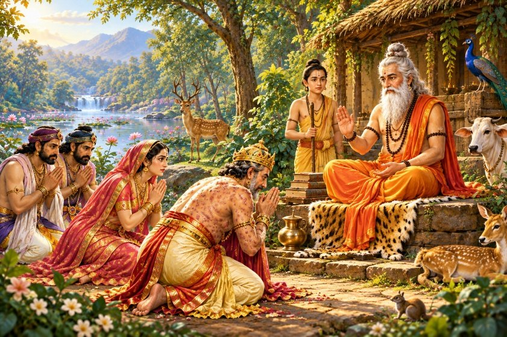
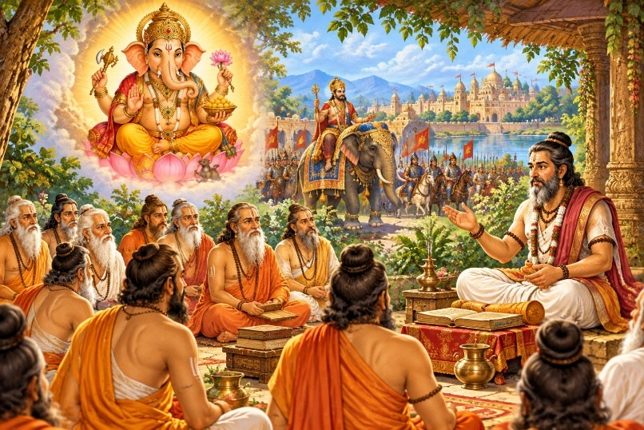
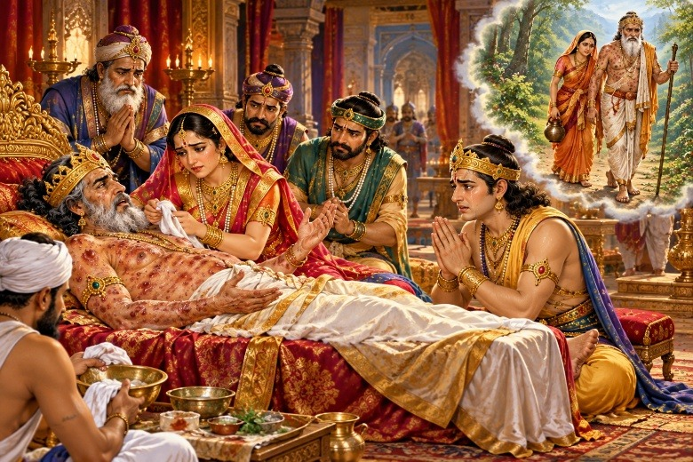
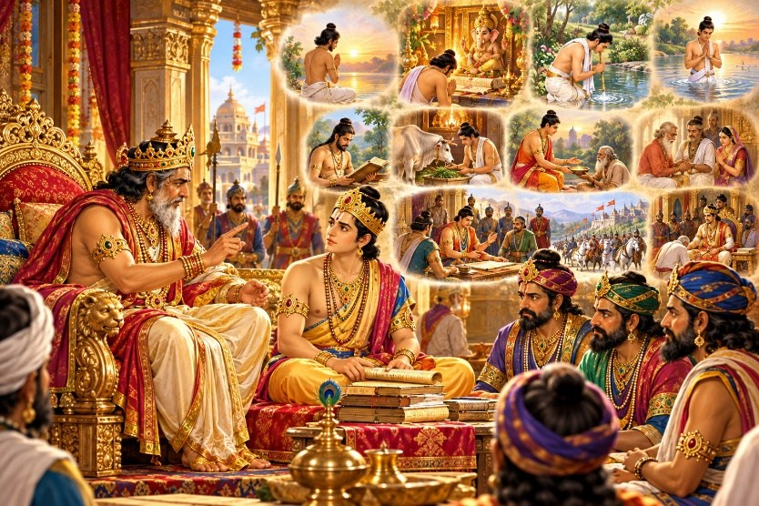
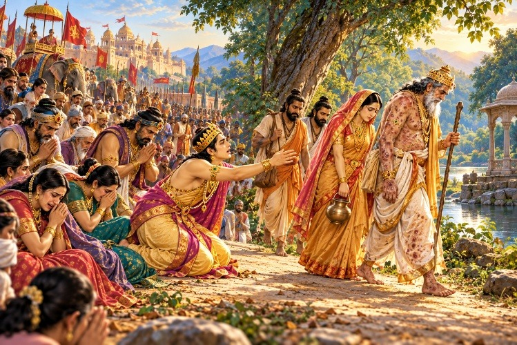
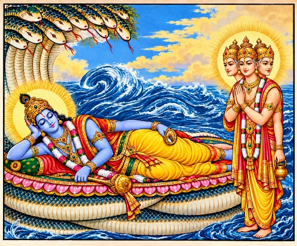
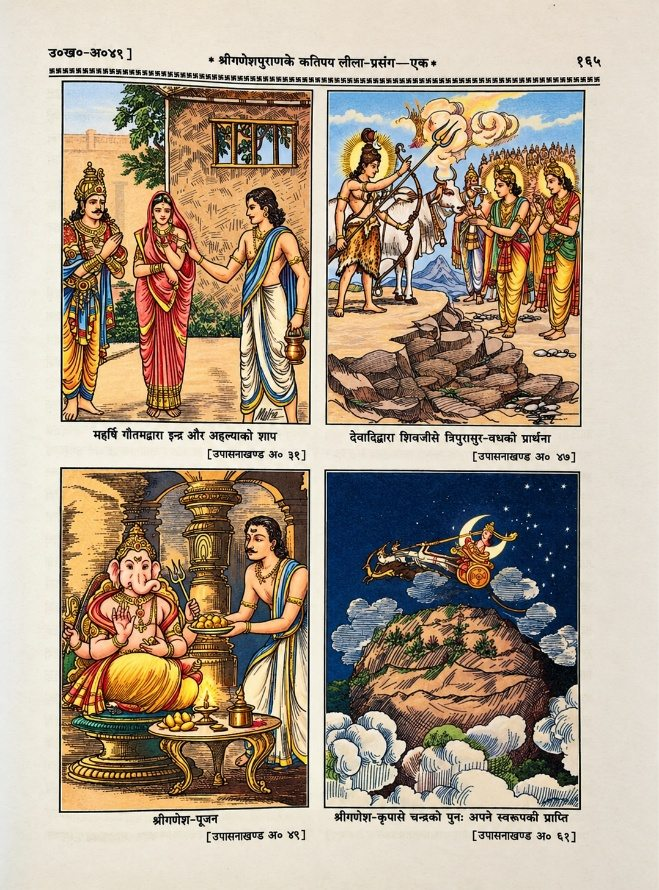
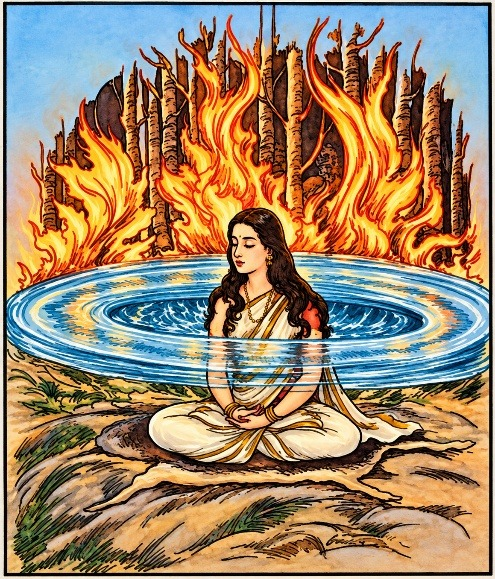
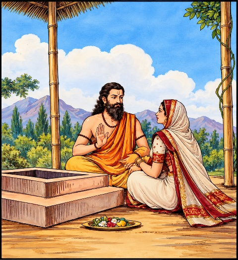
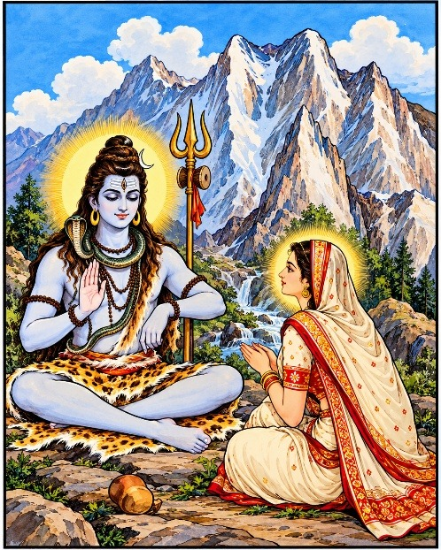

संक्षिप्त श्रीगणेशपुराण
[ गीताप्रेस, गोरखपुरद्वारा प्रकाशित ‘कल्याण’ के गणेशाङ्कसे संगृहीत ]
त्वमेव माता च पिता त्वमेव
त्वमेव बन्धुश्च सखा त्वमेव।
त्वमेव विद्या द्रविणं त्वमेव
त्वमेव सर्वं मम देवदेव॥
गीता प्रेस के मूल ग्रंथ — सरल एवं सुगम पठन के लिए नवीन प्रस्तुति।
श्रीगणेशपुराण—एक परिचय
अत्यन्त प्राचीन कालकी बात है, सौराष्ट्रदेशके प्रसिद्ध देवनगरमें शास्त्र–मर्मज्ञ सोमकान्त नामक धर्मपरायण एक नरेश थे। वे अतिशय सुन्दर, विद्वान्, धनवान्, तेजस्वी एवं पराक्रमी थे। उनकी बुद्धिमती, अनिन्द्य सुन्दरी, धर्मपरायणा सती पत्नीका नाम सुधर्मा था। सुधर्माके गर्भसे हेमकण्ठ नामक अत्यन्त सुन्दर, शूर, पराक्रमी एवं विद्या–विनय–सम्पन्न पुत्र उत्पन्न हुआ। हेमकण्ठ अपने माता–पिताके सर्वथा अनुकूल था और वह सोमकान्तके शासन कार्यमें दक्षतापूर्वक सहयोग प्रदान करता रहता था। रूपवान्, विद्याधीश, क्षेमंकर, ज्ञानगम्य और सुबल नामक पाँच स्वामिभक्त अमात्य भी राजा सोमकान्तकी प्रत्येक रीतिसे सेवा किया करते। सोमकान्तके राज्यमें प्रजा समृद्ध एवं सुखी थी। वह सर्वथा निरापद जीवन व्यतीत करती थी। साधु और ब्राह्मण निश्चिन्त होकर श्रीभगवान्की आराधना किया करते थे। सहसा सोम–तुल्य राजा सोमकान्तको गलितकुष्ठ हो गया। उनके शरीरमें सर्वत्र घाव हो गये। उनसे रक्त और पीब बहने लगा। नरेशने प्रख्यात चिकित्सकोंसे अनेक उपचार करवाये, किंतु उनसे उनको कोई लाभ नहीं हुआ। यशस्वी नरपति अत्यन्त निर्बल तो हो ही गये थे, उनके व्रणोंमें कीड़े पड़ गये और उनसे दुर्गन्ध निकलने लगी।
अत्यन्त दुखी होकर देवनगर–नरेशने अपना शेष जीवन अरण्यमें जाकर तपश्चरणमें व्यतीत करनेका निश्चय किया। उन्होंने विधिपूर्वक अपने सुयोग्य पुत्र हेमकण्ठको आचार, धर्म और नीतिकी शिक्षा दी। तदनन्तर उसे राज्य–पदपर अभिषिक्त कर दिया। नरेशने अपने परम बुद्धिमान् एवं राजभक्त क्षेमंकर, रूपवान् और विद्याधीश नामक अमात्यत्रयको युवराजके सहयोगसे सुचारुरूपसे राज्य–संचालनका आदेश प्रदान किया।

तदनन्तर राजा सोमकान्तने अत्यन्त श्रद्धापूर्वक ब्राह्मणोंकी पूजा की। फिर उन्हें विविध प्रकारके व्यंजनोंसे तृप्तकर बहुमूल्य दक्षिणाएँ प्रदान कीं। राजा वनके लिये प्रस्थित हुए तो प्रजावत्सल नरेशके वियोगकी कल्पनासे समस्त प्रजा व्याकुल हो गयी। हेमकण्ठके दुःखकी सीमा नहीं थी। वह प्रजाके साथ रोता हुआ पिताके साथ पीछे–पीछे चल रहा था, किंतु नरेशने अपनी सहधर्मिणी सुधर्मा तथा सुबल और ज्ञानगम्य— दो अमात्योंके अतिरिक्त अन्य सबको समझाकर लौट जानेका आदेश दिया। हेमकण्ठको विवशतः अपनी प्रजाके साथ लौटना पड़ा।
चिन्तित, दुखी, पीड़ित, निराश और उदास नरेश अपनी पत्नी सुधर्मा और दोनों अमात्योंके साथ वनके कष्ट सहते चले जा रहे थे। सती सुधर्मा अपने पतिकी निरन्तर सेवा किया करती और दोनों मन्त्री उनके लिये फल–फूल ढूँढ़कर ले आते। इस प्रकार यात्रा करते हुए वे सघन वनमें एक सरोवरके तटपर पहुँचे।
सोमकान्त व्रणोंकी पीड़ा और यात्राके कष्टसे लेट गये थे। सुधर्मा उनके चरण दबा रही थी। दोनों मन्त्री फल–मूलके लिये कुछ दूर निकल गये थे। उसी समय जल भरनेके लिये कलश लिये एक तेजस्वी मुनिकुमार सरोवरके तटपर पहुँचे। सती सुधर्माने उन मुनिपुत्रसे पूछा— ‘आप किसके पुत्र हैं और यहाँ कैसे पधारे हैं?’
अत्यन्त मधुर वाणीमें ऋषिकुमारने उत्तर दिया— ‘मैं महात्मा भृगुकी सती पत्नी पुलोमाका पुत्र हूँ। च्यवन मेरा नाम है। आपलोग कौन हैं और इस निबिड़ वनमें कैसे आये हैं?’
अत्यन्त दुखी सुधर्माने मुनिकुमारसे अपना विस्तृत परिचय देते हुए कहा— ‘महात्मन्! परम प्रतापी, समस्त ऐश्वर्योंका उपभोग करनेवाले मेरे स्वामी पता नहीं, किस कर्मका फल भोग रहे हैं? ऋषि स्वाभाविक दयालु होते हैं। आप दयापूर्वक हमारे कल्याणका कोई उपाय कीजिये।’ अत्यन्त दुःखके कारण रानीके नेत्रोंसे आँसू बहने लगे।
मुनिपुत्र च्यवनने चुपचाप सरोवरके जलसे कलश भरा और शीघ्रतासे अपने आश्रम पहुँचे। वहाँ महर्षि भृगुने उनसे विलम्बका कारण पूछा तो उन्होंने राजा सोमकान्तकी दुर्दशा और उनकी पत्नीकी अद्भुत सेवाका अत्यन्त करुण वर्णन सुनाया। कृपामय महात्मा भृगुने अपने पुत्रसे कहा— ‘बेटा! तुम उन लोगोंको यहीं ले आओ।’
च्यवन पुनः सरोवर–तटपर पहुँचे। तबतक राजाके दोनों अमात्य भी वहाँ आ गये थे। च्यवनने महारानीसे कहा— ‘माता! मेरे तपस्वी पिताने आपलोगोंको आश्रममें बुलाया है।’
सुधर्मा अत्यन्त प्रसन्न हुई। वह अपने पति एवं सेवकोंसहित मुनिपुत्रके पीछे–पीछे महर्षिके आश्रम पर पहुँची।
महर्षि भृगुका आश्रम अत्यन्त पवित्र एवं सुखद था। उसमें सर्वत्र विविध प्रकारके सुगन्धित पुष्प खिले थे। आश्रममें वृक्षोंपर विविध प्रकारके पक्षी कलरव कर रहे थे। विडाल, नेवला, बाज, मयूर, सर्प, गज, गाय, सिंह और व्याघ्र आदि सभी प्राणी अपना वैरभाव त्यागकर एक साथ सुखपूर्वक रह रहे थे। वेद–पाठ हो रहा था और यज्ञ–धूमसे समस्त आश्रम पावनताका विग्रह बना हुआ था।
सोमकान्त, उनकी पत्नी सुधर्मा और दोनों मन्त्रियोंने व्याघ्रचर्मपर आसीन परम तेजस्वी तपस्वी महर्षि भृगुको देखा तो दण्डकी भाँति उनके चरणोंपर गिर पड़े। नरेशने हाथ जोड़कर निवेदन किया— ‘प्रभो! आपके दर्शनसे मेरे पुण्य उदित हो गये। मैंने जीवनभर धर्मका पालन किया है, किंतु पता नहीं, मेरे किस महान् पातकसे मेरी ऐसी दुर्दशा हो रही है कि मेरा जीवन दुर्वह हो गया है। मेरे सभी प्रयत्न विफल हो गये हैं। अब मैं आपकी शरणमें हूँ। आपके आश्रममें हिंस्त्र पशुओंने भी अपना सहज वैर त्याग दिया है। दयामय! आप मुझपर दया करें।’
नरेशके करुण वचन सुन महर्षि भृगु कुछ क्षणोंके लिये ध्यानस्थ हुए और फिर उन्होंने उनसे कहा— ‘राजन्! तुम चिन्ता मत करो। मैं तुम्हें रोगसे छूटनेका उपाय बताऊँगा। अभी तुमलोग यात्रासे थके हुए हो; स्नान, भोजन और विश्राम करो।’ वहाँ सबने तेल लगाकर स्नान किया और फिर वे भोजन करने बैठे। अनेक प्रकारके सुस्वादु षड्रस व्यंजन थे। राजा, रानी और अमात्य उक्त पवित्रतम आहारसे पूर्ण तृप्त हुए और फिर परम त्यागी महर्षि भृगुके आश्रममें राज्योचित व्यवस्थासे चकित–विस्मित नरेश अपनी पत्नी एवं सेवकोंसहित सुकोमल शय्यापर विश्राम करने लगे।
रात्रि व्यतीत हुई। अरुणोदय हुआ। महर्षि भृगु स्नान, संध्या, जप और होम आदिसे निवृत्त हुए ही थे कि दैनिक कृत्य कर राजा सोमकान्तने अपनी सहधर्मिणी सुधर्मा एवं अमात्योंसहित महामुनिके चरणोंमें प्रणाम किया और हाथ जोड़कर उनके सम्मुख बैठ गये।
‘राजन्! पूर्वके जिन कुकर्मोंसे तुम्हें गलितकुष्ठकी यह दारुण यातना सहनी पड़ रही है, उसे बता रहा हूँ; तुम ध्यानपूर्वक सुनो!’ करुणहृदय महात्मा भृगु राजा सोमकान्तको उनके पूर्वजन्मका वृत्तान्त सुनाते हुए कहने लगे— ‘विन्ध्यगिरिके निकट कोल्हार नामक सुन्दर नगरमें चिद्रूप नामक एक धन–वैभवसम्पन्न वैश्य था। पतिके अनुकूल जीवन व्यतीत करनेवाली उसकी सुन्दरी पत्नीका नाम सुभगा था। तुम उसी सुभगाके पुत्र थे। तुम्हारा नाम था कामद।’ एकमात्र पुत्र होनेके कारण माता–पिताने तुम्हारा अतिशय प्रीतिपूर्वक पालन किया। युवक होनेपर कुटुम्बिनी नामक सुन्दरी और सद्धर्मपरायणा युवतीसे तुम्हारा विवाह हुआ। कुटुम्बिनीके गर्भसे तुम्हारे सात कन्याएँ और पाँच पुत्र उत्पन्न हुए।
कुछ समय बाद तुम्हारे पिता चिद्रूपका शरीरान्त हो गया। तुम्हारी पतिपरायणा माता सुभगा अपने पतिके साथ सती हो गयी। तुम धनसम्पन्न और पूर्ण स्वतन्त्र थे। दुराचरणमें तुमने अपना सर्वस्व नष्ट कर दिया। यहाँतक कि घर भी बिक गया। तुम्हारी सरला पत्नी समझाती, पर तुम उसकी उपेक्षा कर देते। विवशतः वह अपनी संततियोंके साथ अपने पिताके घर जाकर जीवन–निर्वाह करने लगी।
तुम दुराचरण–सम्पन्न सर्वथा निरंकुश थे। बलपूर्वक दूसरेका धन छीनकर मद्य, मांस और परस्त्रीका सेवन करते। तुम्हारी दुष्टता पराकाष्ठापर पहुँच गयी, तब राजाज्ञासे तुम नगरसे निर्वासित कर दिये गये। तुम वनमें पहुँचे। वहाँ तुम दस्यु–जीवन व्यतीत करने लगे। तुमसे भयभीत होकर मनुष्य ही नहीं, पशु भी प्राण बचाकर भागते थे।
तुम पर्वतकी गुफामें रहते थे। तुम्हारे श्वशुरने तुमसे भयभीत होकर तुम्हारी पत्नी और बच्चोंको तुम्हारे पास पहुँचा दिया। तुम्हारी पत्नीके पास वस्त्राभरण थे और तुम्हारे पुत्र भी तेजस्वी थे; किंतु तुम रात्रिमें यात्रियोंको लूटकर उनके धन और स्त्रीका उपभोग करते।
तुम सर्वथा निर्दय और हृदयहीन हो गये थे। एक बार एक ब्राह्मण अपनी युवती पत्नीके साथ उधरसे जा रहे थे। तुमने उन्हें पकड़ लिया। ब्राह्मणने करुण प्रार्थना की, धर्मोपदेश दिया, पर तुमपर उसका कोई प्रभाव नहीं पड़ा। तुमने उन दीन ब्राह्मणदेवताका मस्तक उतार लिया। इस प्रकार तुम प्रतिदिन स्त्री, वृद्ध और बालकोंकी निर्दयतापूर्वक हत्या करते ही रहे। तुम सर्वथा विवेक–भ्रष्ट हो गये थे।
तुम्हारा यौवन तो हत्या, लूट, परधन एवं पर–दारापहरणमें बीता; पर देखते–ही–देखते वृद्धावस्था आ गयी। तुम निर्बल हो गये। तुम्हारा शरीर काँपने लगा और तुमको अनेक प्रकारके कष्ट होने लगे। इस स्थितिमें तुम्हारा स्वजन या हितैषी कोई नहीं रहा। पुत्र और नौकर आदि सभी तुम्हारा तिरस्कार करते रहते। तुम निरन्तर दुखी रहने लगे। तुमने सोचा, ‘अपना शेष धन दान कर दूँ।’ तुम्हारी प्रार्थनासे एक ब्राह्मण वनमें गये। उनकी प्रार्थनापर ऋषिगण तुम्हारे पास आये, पर जब तुमने अपना धन उन्हें स्वीकार करनेके लिये आग्रह किया, तो वे तुरंत उलटे पैर वापस चले गये। सबने एक ही बात कही— ‘तेरे जैसे अधम, हत्यारे, मद्यप, परस्त्रीगामी एवं क्रूरतम पापात्माका दिया धन लेनेका साहस कौन करेगा?’
तुम रोगाक्रान्त थे। मुनियों और ब्राह्मणोंके वचन सुन मन–ही–मन पश्चात्ताप करने लगे। तुम्हारा हृदय हाहाकार कर रहा था, पर कोई वश नहीं था। तुम्हारे पास चाँदी, सोना और रत्नादि अधिक थे। तुमने ब्राह्मणोंके परामर्शसे एक पुरातन गणेश मन्दिरका जीर्णोद्धार करवाया। मन्दिरके भव्य और आकर्षक बनवानेमें तुम्हारा सारा धन समाप्त हो गया। कुछ तुम्हारी स्त्री और कुछ तुम्हारे पुत्रों और मित्रोंने ले लिया। कुछ ही समय बाद तुम्हारा देहावसान हो गया।
यमदूतोंने तुम्हें बड़ी यातना दी। यमके पूछनेपर तुमने पहले पुण्यकर्मोंका फल प्राप्त करना स्वीकार किया। फलतः अत्यधिक कान्तिपूर्ण गणेश मन्दिरका जीर्णोद्धार करानेके कारण तुम सुन्दर राजा सोमकान्त हुए और तुम्हें अत्यन्त रूपवती धर्मपत्नी भी प्राप्त हो गयी।
सर्वथा निःस्पृह, परम वीतराग, दयामूर्ति महर्षि भृगु राजा सोमकान्तको उसके पूर्वजन्मका वृत्तान्त सुना रहे थे, किंतु ऋषि–वचनोंपर उसे विश्वास नहीं हुआ। राजाके मनमें सन्देह उत्पन्न होते ही उनके शरीरसे विविध रंगके पक्षी निकल पड़े और उनके अंग–प्रत्यंग नोच–नोचकर खाने लगे।
दुःखसे छटपटाते हुए राजाने महामुनि भृगुसे करुण प्रार्थना की— ‘मुनिनाथ! आपके इस वनमें पशु भी अपना सहज वैर त्याग देते हैं, फिर आपकी शरणमें आये मुझ कुष्ठीको ये पक्षी कष्ट क्यों दे रहे हैं? आप कृपापूर्वक मेरी रक्षा करें।’
‘तुमने मेरे वचनपर सन्देह किया, इस कारण मैंने तुम्हें इतना अनुभव करा दिया। अब ये पक्षी शीघ्र चले जायँगे।’ महर्षिने क्षणभर ध्यानस्थ होनेके अनन्तर कहा— ‘तुम्हारे पातक महान् हैं, तथापि मैं उन्हें दूर करनेका उपाय बताऊँगा।’
‘हुं’ महामुनि भृगुके उच्चारण करते ही समस्त पक्षी अन्तर्धान हो गये। तदनन्तर महात्मा भृगुने राजा सोमकान्तको गणेशका ‘अष्टोत्तरशतनाम’ सुनाया और उससे अभिमन्त्रित जल राजाके शरीरपर छिड़क दिया। उक्त जलका छींटा पड़ते ही राजाकी नासिकासे एक छोटा काले मुखवाला बालक धरतीपर गिर पड़ा। थोड़ी ही देरमें वह अत्यन्त विशाल और भयानक हो गया। उसके मुखसे अग्निकी ज्वालाएँ निकल रही थीं। वहाँ सर्वत्र रक्त और पीब फैल गया। भयाक्रान्त आश्रम–वासियोंको भागते देखकर महर्षि भृगुने उस पुरुषसे उसका परिचय पूछा।
उक्त भयानक पुरुषने उत्तर दिया— ‘मैं प्रत्येक प्राणीके शरीरमें रहनेवाला पापपुरुष हूँ। आपके अभिमन्त्रित जलका छींटा पड़नेसे इस राजाके शरीरसे निकला हूँ। आप मुझे निवास एवं भक्ष्य प्रदान कीजिये; अन्यथा मैं आपके सम्मुख ही सबके साथ इस राजा सोमकान्तको भी खा जाऊँगा।’
महामुनि भृगुने वहाँसे हटकर एक शुष्क आम्रवृक्षके कोटरकी ओर संकेत करते हुए उक्त पापपुरुषसे कहा— ‘नीच! तू सूखे पत्तोंको खाकर इस कोटरमें रह; अन्यथा मैं तुझे भस्म कर दूँगा।’
महामुनि भृगुकी वाणी सुनकर पापपुरुषने उस वृक्षका स्पर्श किया ही था कि पक्षियोंसहित वृक्ष तुरंत जलकर भस्म हो गया। मुनिसे भयभीत पापपुरुष भी उस भस्ममें छिप गया। इसके अनन्तर महर्षि भृगुने राजा सोमकान्तके समीप जाकर कहा— ‘जब तुम ‘गणेशपुराण’ सुनना प्रारम्भ करोगे, तब इस भस्मसे पुनः नया आम्रवृक्ष उगेगा। जिस प्रकार यह वृक्ष धीरे–धीरे बढ़ता जायगा, उसी प्रकार तुम्हारे पाप भी नष्ट होते जायँगे।’
चकित होकर नरेशने अत्यन्त विनयपूर्वक महर्षिसे पूछा— ‘मुनिवर! ऐसा पुराण तो मैंने न कहीं देखा और न सुना ही है। वह कहाँ प्राप्त होगा और उसके वक्ता कहाँ हैं?’
दयालु मुनि भृगुने कहा— ‘पहले उसे वेदगर्भ ब्रह्माने महर्षि व्यासको सुनाया था और उनकी कृपासे वह पापनाशक ‘गणेशपुराण’ मुझे प्राप्त हुआ। तुम तीर्थमें जाकर पहले ‘गणेशपुराण’–श्रवणका संकल्प कर लो।’
महर्षि भृगुकी आज्ञासे राजा सोमकान्तने प्रख्यात भृगुतीर्थमें स्नान किया और फिर पवित्र मनसे हाथमें जल लेकर संकल्प किया— ‘मैं श्रद्धा और विधिपूर्वक गणेशपुराण–श्रवण करूँगा।’
राजाके आश्चर्यकी सीमा नहीं थी। संकल्पका जल धरतीपर छोड़ते ही वे पूर्णतया रोगमुक्त होकर पूर्ववत् सुन्दर और तेजस्वी हो गये। गलितकुष्ठकी पीड़ाकी बात तो दूर— शरीरपर उसका कोई चिह्न भी कहीं शेष नहीं रहा।
हर्षमग्न नरेश महामुनिके समीप पहुँचे तो उनके चरणोंपर गिर पड़े। उन्होंने अत्यन्त विनयपूर्वक कहा— ‘मुनिनाथ! अत्यन्त आश्चर्यकी बात है कि गणेशपुराण–श्रवणके संकल्पका जल छोड़ते ही मेरी सारी व्याधियाँ दूर हो गयीं।’
महामुनिने राजाका हाथ पकड़कर उठाया और उन्हें बैठनेके लिये एक आसन दिया। राजाने हाथ जोड़कर कहा— ‘दयामय! आपकी दयासे मेरा सारा कष्ट दूर हो गया। अब आप कृपापूर्वक मुझे ‘गणेशपुराण’ की कथा सुनाइये।’
मुनिवर भृगुने कहा— ‘राजन्! मैं यह पुराण तुम्हें सुनाता हूँ; ध्यानपूर्वक सुनो।’
महर्षिने पापनाशक परम पावन गणेशपुराणकी कथा प्रारम्भ करनेके पूर्व उसकी निर्विघ्न समाप्तिके लिये सर्वप्रथम गणेश–वन्दना की—
नमस्तस्मै गणेशाय ब्रह्मविद्याप्रदायिने ।
यस्यागस्त्यायते नाम विघ्नसागरशोषणे॥
‘जिनका नाम विघ्नोंका समुद्र सोख लेनेके लिये अगस्त्यका काम करता है, उन ब्रह्म–विद्या–प्रदाता गणेशको नमस्कार है।’ (गणेशपुराण १।१।१)
इस प्रकार गणेशपुराण गणेश–वन्दनसे प्रारम्भ हुआ।
पुराण–शब्दका साधारण अर्थ है— पुराना। जिस ग्रन्थमें पुरातन कथाओंका संकलन है, वह ‘पुराण’ है। किंतु ‘पुराण’ शब्दकी व्याख्या अत्यन्त विस्तृत है।
श्रीमद्भागवत (१२।७।९–१०) के मतानुसार पुराणके दस लक्षण हैं—
सर्गोऽस्याथ विसर्गश्च वृत्ती रक्षान्तराणि च।
वंशो वंशानुचरितं संस्था हेतुरपाश्रयः॥
दशभिर्लक्षणैर्युक्तं पुराणं तद्विदो विदुः ।
“पुराणोंके पारदर्शी विद्वान् बतलाते हैं कि पुराणोंके दस लक्षण हैं— ‘विश्वसर्ग, विसर्ग, वृत्ति, रक्षा, मन्वन्तर, वंश, वंशानुचरित, संस्था (प्रलय), हेतु (ऊति) और अपाश्रय।’
किंतु श्रीलोमहर्षण सूतने पुराणके निम्नलिखित पाँच लक्षणोंका ही उल्लेख किया है—
सर्गश्च प्रतिसर्गश्च वंशो मन्वन्तराणि च।
वंशानुचरितं चैव पुराणं पञ्चलक्षणम्॥
‘मन्वन्तरविज्ञान, सृष्टिविज्ञान, प्रतिसृष्टिविज्ञान, वंशविज्ञान और वंशानुचरितविज्ञान।’
ये पाँचों लक्षण भी पाँच–पाँच प्रकारके बताये गये हैं; किंतु विस्तार–भयसे यहाँ उनका उल्लेख नहीं किया जा रहा है।
‘पुराण’ अनादि हैं। प्रारम्भमें एक ही पुराण था, पर था अत्यन्त विस्तृत । उसकी श्लोक–संख्या शतकोटि थी। उसे लोकपितामहने ऋषियोंको सुनाया था। फिर वेदार्थ–दर्शनकी शक्तिके साथ अनादिकालीन पुराणको लुप्त होते देखकर भगवान् कृष्णद्वैपायनने पुराणोंका प्रणयन किया। उन्होंने पुराणोंकी श्लोक–संख्या चार लाख कर दी और उन पुराणोंमें निष्ठाके अनुरूप आराध्यकी प्रतिष्ठाकर कृपामूर्ति महर्षि व्यासने चारों वर्णोंके लिये वेदार्थ सहज सुलभ कर दिया ।
अष्टादश पुराण प्रसिद्ध हैं, किंतु कुछ विद्वान् उनके महापुराण, उपपुराण, अतिपुराण और पुराण भेद करते हैं और इन प्रत्येककी भी अष्टादश संख्या बतलाते हैं।[१]
[१] (१) महापुराण—ब्राह्म, पद्म, शिव, विष्णु, भागवत, नारद, मार्कण्डेय, अग्नि, भविष्य, ब्रह्मवैवर्त, लिंग, वराह, स्कन्द, वामन, कूर्म, मत्स्य, गरुड और ब्रह्माण्ड।
(२) उपपुराण—भागवत, माहेश्वर, ब्रह्माण्ड, आदित्य, पराशर, सौर, नन्दिकेश्वर, साम्ब, कालिका, वारुण, औशनस्, मानव, कापिल, दुर्वांसस्, शिवधर्म, बृहन्नारदीय, नारसिंह और सनत्कुमार।
(३) अतिपुराण—कार्तव, ऋजु, आदि, मुद्गल, पशुपति, गणेश, सौर, परानन्द, बृहद्धर्म, महाभागवत, देवी, कल्कि, भार्गव, वसिष्ठ, कौर्म, गर्ग, चण्डी और लक्ष्मी।
(४) पुराण—बृहद्विष्णु, शिव उत्तरखण्ड, लघु बृहन्नारदीय, मार्कण्डेय, वह्नि, भविष्योत्तर, वराह, स्कन्द, वामन, बृहद्वामन, बृहन्मत्स्य, स्वल्पमत्स्य, लघुवैवर्त और पाँच प्रकारके भविष्य ।
जनसामान्यमें महापुराणोंके अतिरिक्त अन्य सभी पुराणोंकी प्रसिद्धि प्रायः उपपुराणोंके रूपमें ही है।
इस प्रकार गणेशपुराण अतिपुराण है, किंतु इस पंच–लक्षणात्मक गणेशपुराणकी अपनी विशिष्टता है। आदिदेव गणपतिके उपासकोंका तो यह प्राणप्रिय कण्ठहार है ही, समस्त आस्तिक–समुदायका अत्यन्त प्रिय और आदरणीय ग्रन्थ है। गणेश–साहित्यमें इसका स्थान प्रधान है। ‘मुद्गलपुराण’ से भी प्राचीन होनेके कारण स्वाभाविक ही इसकी मान्यता अधिक है।
श्रुतियोंमें जिस सर्वात्मा, सर्वत्र, अनादि, अनन्त, अखण्ड–ज्ञानसम्पन्न पूर्णतम परमात्मा और उनके पंचदेवात्मक स्वरूपका वर्णन किया गया है, उसके अनुसार परब्रह्म परमेश्वर गणेशका विस्तृत विवेचन ‘गणेशपुराण’ में किया गया है। वहाँ आदिदेव गणेशको प्रणवरूपी बताया गया है और कहा गया है कि ‘समस्त देवता और मुनि उन्हीं परमप्रभुका स्मरण करते हैं। ब्रह्मा, विष्णु, शिव और इन्द्र उन्हींकी पूजा करते हैं। वे सर्वकारण–कारण प्रभु ही समस्त जगत्के हेतु हैं। उन्हींकी आज्ञासे विधाता सृष्टि रचते हैं, विष्णु पालन एवं शिव संहार करते हैं। उन्हीं परमप्रभुके आदेशसे सूर्यदेव चलते हैं, वायु बहती है, पृथ्वीपर वृष्टि होती है और अग्नि प्रज्वलित होती है। अमित महिमामय प्रभु मंगलमय हैं, करुणामय हैं।’
गणेशपुराण दो खण्डोंमें विभक्त है। पूर्वार्ध (उपासना–खण्ड) में ९२ अध्याय और ४,०९३ श्लोक हैं। दूसरा उत्तरार्ध (क्रीडाखण्ड) १५५ अध्यायमें पूर्ण हुआ है। उसकी श्लोक–संख्या ६,९८६ है। इस प्रकार सम्पूर्ण गणेशपुराण २४७ अध्यायों और ११,०७९ श्लोकोंमें वर्णित है। पुराणकी दृष्टिसे इसका कलेवर भी लघु नहीं है। इसके प्रधान विषय प्रथमेश्वर गणेश ही हैं।
अत्यन्त प्रांजल भाषामें गणेश–स्वरूप, गणेश–तत्त्व, गणेश–महिमा, गणेश–मन्त्र–माहात्म्य एवं गणेशकी सुमधुर लीला–कथाके माध्यमसे महिमामय गणेश–स्तवन ‘गणेशपुराण’ में इस प्रकार वर्णित हैं कि श्रोता अन्ततक भगवान् गणेशके ध्यानमें तन्मय रहता है। लीला–कथा उसके मर्मको स्पर्श करती चलती है।
गणेशपुराणमें आद्यन्त सत्त्वकी प्रतिष्ठा एवं तमका विरोध पाया जाता है। आसुरी प्रवृत्तियोंके विनाश एवं दैवी–सम्पदाओंकी स्थापना एवं वृद्धिके लिये ही गजमुखकी अवतारणा होती है। एक बार ग्रन्थ आरम्भ कर लेनेपर पाठक और श्रोताके लिये उसे बीचमें छोड़ देना सहज सम्भाव्य नहीं होता। किंतु गणेशके गम्भीरतम वचनोंको समझनेके लिये विद्या, बुद्धि एवं गहन विचारके साथ श्रद्धा और भक्ति भी अपेक्षित है।
शौनकमुनिने बारह वर्षोंका ज्ञानयज्ञ किया था। वहाँ अठारह पुराणोंकी मंगलमयी कथा हुई थी। उस कथासे अतृप्त ऋषियोंने सूतजीसे श्रीभगवान्की भुवनपावनी लीला–कथा और सुनानेकी प्रार्थना की। तब सूतजीने उन्हें गणेशपुराण सुनाकर तृप्त किया। यज्ञके नष्ट होनेपर दक्ष अत्यन्त दुखी थे। उस समय महर्षि मुद्गलने उन्हें गणेशपुराणकी लीला–कथा सुनायी और वहीं ब्रह्मासे सुने हुए महर्षि व्यास–कथित गणेशपुराणको महामुनि भृगुने देवनगरनरेश सोमकान्तको उनके लौकिक एवं पारलौकिक मंगलके लिये सुनानेकी कृपा की।
उपासनाखण्डमें परात्पर परमेश्वर, सच्चिदानन्दघन गणेशका विस्तृत वर्णन है। गणेश जगत्कर्ता, जगत्स्वरूप, जगत्पालक, जगदाधार, सर्वसमर्थ, सर्वान्तर्यामी, सर्वत्र एवं सर्वान्तरात्मा हैं। ब्रह्मादि देव उनकी इच्छाका अनुसरण करते हैं। वे भक्तोंके विघ्नोंका विनाश करनेवाले मंगलमूर्ति, मंगलालय, विघ्नकर्ता, विघ्नहर्ता एवं विघ्नराज हैं। वे परब्रह्मस्वरूप सर्वानन्द–प्रदाता सर्वानन्दमय हैं।
पितामहने सृष्टिरचना प्रारम्भ की, उस समय गणेशने उन्हें सहायता प्रदान की। इस वर्णनके अनन्तर महर्षि भृगुने गृत्समद, रुक्मांगद एवं त्रिपुरासुरका वृत्तान्त सुनाया। फिर उन्होंने महिमामय ‘गणेशसहस्रनाम’ का गान किया। इसी ‘गणेशसहस्रनाम’ के द्वारा भगवान् शंकर त्रिपुर–वध करनेमें सफल हुए।
इसके बाद गणेशपार्थिव–पूजा, गणेशव्रत, संकष्ट–चतुर्थीव्रत, अंगारकचतुर्थीव्रत एवं उसका माहात्म्य सुनाकर महामुनिने सोमकान्तको गणेशद्वारा चन्द्रमाको शाप प्रदान एवं उनपर अनुग्रहकी कथा सुनायी। तदनन्तर उन्होंने दूर्वा–माहात्म्यका वर्णन किया।
फिर उपासनाखण्डमें पुत्रप्राप्त्यर्थ संकष्टचतुर्थीव्रतके सोद्यापन वर्णनके अनन्तर तारकासुर–वध, काम–दहन, परशुरामका तप एवं उन्हें गणेश–दर्शनकी प्राप्ति आदि कथाओंमें सर्वत्र करुणामूर्ति प्रभु गणेशकी करुणा, उनकी भक्तवत्सलता एवं महिमाके दर्शन होते हैं।
इसके बाद स्कन्दोत्पत्ति, मदनकी पुनरुत्पत्ति, देवर्षि नारदकी प्रेरणासे शेषके द्वारा गजाननकी आराधना एवं स्तुतिका विशद वर्णन करते हुए गजवक्त्रका माहात्म्य गान किया गया है। गजवक्त्रके मंगलमय नाम और रूपका निरूपण करनेके साथ उपासनाखण्ड पूरा हुआ है।
इसके अनन्तर गणेशपुराणके उत्तरार्ध (क्रीडाखण्ड)–में देवाधिदेव गजमुखके अवतरित होकर पृथ्वीका भार उतारनेकी पुण्यमयी कथाका वर्णन किया गया है। उन कथाओंमें गणेशकी बाल लीलाओं, असुर–संहार एवं भक्तोंकी कामना–पूर्तिका मर्मस्पर्शी चित्रण है। गणेशपुराणके क्रीडाखण्डके अनुसार सर्वसमर्थ भक्तवत्सल करुणामय गणेश प्रत्येक युगमें त्रैलोक्यविजयी अजेय असुरके वधके लिये अवतरित होते हैं। अनीति, अधर्म एवं अनाचरणसम्पन्न असुरोंका विनाश होता है और धर्ममूर्ति परमात्मा गजानन धर्मकी स्थापना करते हैं। धरणीका भार उतरता है और दुखी देवता, ऋषि तथा ब्राह्मणादि प्रसन्न होकर अपने धर्मका पालन करने लगते हैं।
सत्ययुगमें परमप्रभु गणेशका प्रथम अवतार महोत्कट विनायकके रूपमें हुआ था। परमतेजस्वी परमप्रभु विनायकके दस भुजाएँ थीं और सिंह उनका वाहन था। वे महात्मा कश्यपकी परम सती सहधर्मिणी अदितिके यहाँ प्रकट हुए थे। उस अवतारमें उन्होंने देवान्तक और नरान्तक–जैसे दुर्दान्त असुरोंका वध किया था।
त्रेतामें इन त्रैलोक्यत्राता प्रभुने शिवप्रिया पार्वतीके यहाँ अवतार लिया। उनकी अंगकान्ति चन्द्र–तुल्य थी। उनके छः हाथ थे और उनका वाहन मयूर था। उन्होंने माता–पिता, ऋषियों, ऋषिपत्नियों एवं मुनि–पुत्रोंको अलौकिक सुख प्रदान किया। तदनन्तर अनेक असुरोंके साथ वरप्राप्त महादैत्य सिन्धुका वधकर त्रैलोक्यमें धर्मकी स्थापना की। देवता, मुनि, ब्राह्मणों एवं सद्धर्मपरायण पुरुषोंका दुःख दूर हुआ; उन्हें सुख–शान्ति प्राप्त हुई।
द्वापरमें सिन्दूरासुरके क्रूरतम शासनमें त्रैलोक्य विकल–विह्वल हो गया था। देवता और ऋषि आदि तपस्वी गिरि–गुफाओं और अरण्योंमें छिप गये थे। उस समय परमप्रभु विनायक गौरीके यहाँ प्रकट हुए। अपने दिये वचनके अनुसार उन्होंने भगवान् शिवसे कहा कि ‘आप मुझे राजा वरेण्यकी सद्यः प्रसूता सहधर्मिणी पुष्पिकाके समीप पहुँचा दें।’ आशुतोष शिवकी आज्ञासे नन्दी उन्हें वरेण्य–पत्नी पुष्पिकाके प्रसूति गृहमें रख आये। वे परमप्रभु अरुणवर्णके थे। उनके चार भुजाएँ थीं और उनका वाहन मूषक था। उनका नाम ‘गजानन’ प्रसिद्ध हुआ।
महर्षि पराशर एवं उनकी सती धर्मपत्नी वत्सलाने अत्यन्त प्रीतिपूर्वक उन परमप्रभु गजाननका पालन किया। उन दयामयने महादैत्य सिन्दूरको मुक्ति प्रदानकर त्रैलोक्यकी भयानक विपत्तिका निवारण किया।
तदनन्तर करुणामय गजाननने अपने पिता राजा वरेण्यके अशेष कल्याणके लिये उन्हें अमृतमय उपदेश दिया। वह ‘गणेशगीता’ के नामसे प्रसिद्ध है। इस गीतामें भगवान् गजाननने सर्वप्रथम सांख्यसारतत्त्वका प्रतिपादन किया है। तदनन्तर कर्मयोग, ज्ञानयोग एवं कर्मसंन्यास–योगका निरूपण कर योगाभ्यासकी प्रशंसा करते हुए बुद्धि–योग और उपासना–योगका सुविस्तृत वर्णन किया है। फिर करुणामय प्रभु गजाननने विश्वरूपदर्शन एवं क्षेत्रज्ञानज्ञेय–विवेकका अत्यन्त प्रभावोत्पादक निरूपण करते हुए योगोपदेशपूर्ण एवं विविध कल्याणकर वचनोंसे अपना सदुपदेश पूर्ण किया। गोपालनन्दन योगेश्वर श्रीकृष्ण–कथित श्रीमद्भगवद्गीताकी भाँति यह गणेशगीता अत्यन्त महत्त्वपूर्ण एवं परमोपयोगी है। श्रीमद्भगवद्गीताके प्रायः समस्त विषय इस गणेशगीतामें आ गये हैं।
इसके अनन्तर गणेशपुराणमें कलिमें होनेवाले अधर्म एवं अनाचारका वर्णन करते हुए इस युगके अन्तमें सर्वभूतहितैषी गणेशके अवतारका वर्णन है। कलिमें जब पापका साम्राज्य व्याप्त हो जायगा, तब वे प्रभु गणेश श्याम कलेवरमें अवतरित होंगे। उनका नाम ‘धूम्रकेतु’ होगा। उनके दो भुजाएँ होंगी। अश्वा–रूढ़ धूम्रकेतु पापोंका सर्वनाश कर धर्मकी प्रतिष्ठा कर देंगे और फिर सत्ययुगके मंगलमय चरणोंसे धरती प्रमुदित होगी।
राजा सोमकान्तने यह पुण्यमयी गणेश–लीला–कथा अत्यन्त श्रद्धा–भक्तिपूर्वक एक वर्षतक सुनी। उस कथा–श्रवणके अद्भुत प्रभावसे वे रोगसे सर्वथा मुक्त एवं परम पवित्र हो गये। उनके लिये पवित्रतम गणेश–लोकसे विमान अवतीर्ण हुआ। गणेश–दूतोंने राजासे उस विमानमें बैठनेकी प्रार्थना की, तब अत्यन्त उपकृत भाग्यवान् राजा सोमकान्तने महर्षि भृगुके चरणोंमें प्रणाम किया और उनकी अनुमति प्राप्तकर अपनी सहधर्मिणी और अमात्य–द्वयसहित विमानमें बैठ गणेश–लोकके लिये प्रस्थित हुए। विमानमें आरूढ़ होनेपर राजाके पूछनेपर गणेश–दूतोंने काशी विश्वेश्वरके आवरणगत रहनेवाले छप्पन गणेशका नाम और उनके स्मरणका माहात्म्य सुनाया।
पुराणके अन्तिम अध्यायमें उसके श्रवणका माहात्म्य गान किया गया है। गणेशपुराणके पाठ, श्रवण और उसकी पूजाकी तो अमित महिमा बतायी ही गयी है, ग्रन्थरत्नके लिखने और उसे घरमें रखनेका भी फल बतलाते हुए कहा गया है—
यस्य गेहे गणेशस्य पुराणं लिखितं भवेत्।
न तत्र राक्षसा भूताः प्रेताश्च पूतनादयः॥
ग्रहा बालग्रहा नैव पीडां कुर्वन्ति कर्हिचित्।
तद्गृहं हि गणेशेन रक्ष्यते सर्वदा स्वयम्॥
इदं पुराणं शृणुयात् पूजयेद् वा समाहितः ।
तस्य दर्शनतः पूता भवन्ति पतिता नराः॥
(श्रीगणेशपुराण २। १५५। ९–११)
इस प्रकार इन ललित कथाओंके माध्यमसे इस पुराणके द्वारा पाठकों एवं श्रोताओंको आसुरी प्रवृत्तियोंसे सतत सजग रहनेकी प्रेरणा तो प्राप्त होती ही है, दैवी सम्पदाओं एवं उनके मूलस्त्रोत परब्रह्म परमेश्वर गजवक्त्रके चरणकमलोंमें श्रद्धा और भक्ति भी उदित होती है। उस श्रद्धा–भक्तिसे दयामय गणेश सहज ही द्रवित होकर भक्तका लोक एवं परलोक—दोनों सफल कर देते हैं।[२] अनन्त जन्मोंकी ज्वाला सदाके लिये शान्तकर अक्षय सुख–शान्ति प्रदान कर देते हैं। निश्चय ही यह गणेश पुराण गणेशोपासकोंके लिये सर्वश्रेष्ठ ग्रन्थ–रत्न है।
[२] पुराणं हि गणेशस्य काममोक्षप्रदं नृणाम्।
(श्रीगणेशपुराण २। १५५। २९)
पूर्वार्ध — उपासना–खण्ड
॥श्रीगणेशाय नमः॥
श्रीमन्महर्षिकृष्णद्वैपायनव्यासविरचित
श्रीगणेशपुराण
पहला अध्याय — ऋषियों और सूतजीके संवादके प्रसंगमें गणेशजीकी महिमा और राजा सोमकान्तके चरित्रका वर्णन
नमस्तस्मै गणेशाय ब्रह्मविद्याप्रदायिने ।
यस्यागस्त्यायते नाम विघ्नसागरशोषणे॥
ब्रह्मविद्याके प्रदाता उन गणेशजीको नमस्कार है, जिनका नाम अगस्त्यमुनि[३] की भाँति विघ्नरूपी समुद्रको सुखानेवाला है॥१॥
[३] महाभारत-वनपर्व, अध्याय १०५ में वर्णित है कि अगस्त्यमुनिने समुद्रके सम्पूर्ण जलका पानकर उसे सुखा दिया था।

ऋषियोंने कहा— हे महाबुद्धिमान् वेदशास्त्रविशारद सूतजी! आप समस्त विद्याओंके निधिरूप (खजाने) हैं, आपसे बढ़कर श्रेष्ठ वक्ता नहीं मिल सकता। हमारे जन्म–जन्मान्तरीय महान् पुण्योंका उदय हुआ है, जो कि आप जैसे सर्वज्ञ सत्पुरुषका दर्शन हो रहा है। इस संसारमें हम सब सर्वाधिक धन्य हैं, हमारा जीवन सफल जीवन है। हमारे पूर्वज, हमारा वेद–शास्त्रोंका अध्ययन, हमारी तपस्याका श्रम—ये सब धन्य हो गये। [वक्ताओंमें] श्रेष्ठ [हे सूतजी]! आपने हमें अठारह पुराणोंको विस्तारपूर्वक सुनाया है, हमारी अन्य पुराणोंको भी सुननेकी इच्छा है, अतः उन्हें भी सुनायें॥२–५॥
हम सब शौनकजीद्वारा आयोजित द्वादशवर्षीय महासत्रमें नियुक्त हैं, आपद्वारा कराये जानेवाले कथामृतपानके अतिरिक्त हमारे श्रमका निवारण किसी प्रकार नहीं हो सकता॥६॥
सूतजी बोले— पुण्य कर्ममें निरत हे महाभाग्यशाली [ऋषियो]! आप लोगोंके द्वारा अत्यन्त उत्तम प्रश्न किया गया है; क्योंकि राग–द्वेषरहित, सम चित्तवाले साधुजनोंकी बुद्धि संसारके उपकारमें लगी रहती है॥७॥
हे द्विजगण! मुझे भी कथाओंके कहनेमें ही सन्तोष प्राप्त होता है, अतः मैं आप सब साधु चरितवाले सत्पुरुषोंको विशेष रूपसे कथा सुनाऊँगा॥८॥
[अष्टादश महापुराणों, जिनकी कथा मैं सुना चुका हूँ, के अतिरिक्त] गणेश, नारदीय, नृसिंह आदि वैसे ही अन्य अठारह उपपुराण भी हैं, उनमें जो गणेशजीसे सम्बन्धित गणेशपुराण है, उसका प्रवचन मैं सर्वप्रथम करूँगा, जिसका कि विशेष रूपसे मर्त्यलोकमें श्रवण दुर्लभ है॥९–१०॥
जिस गणेशपुराणके स्मरणमात्रसे मनुष्य कृतकृत्य हो जाता है, जिसके प्रभावको कहनेमें [सहस्र मुखवाले] शेषजी और चतुर्मुख ब्रह्माजी भी समर्थ नहीं हैं, तो भी आप सबकी आज्ञासे मैं इसको संक्षेपमें कहूँगा। बहुत–से जन्मोंके पुण्योंके एकत्र होनेसे ही इसका श्रवण होता है, पाखण्डियों, नास्तिकों और पापकर्मियोंको इसका श्रवण सम्भव नहीं होता॥११–१२½॥
श्रीगणेशजी तत्त्वतः नित्य, निर्गुण और अनादि हैं; इसलिये उनके स्वरूपका कथन किसीके लिये सम्भव नहीं है; फिर भी उनकी उपासनामें निरत भक्तोंद्वारा उन्हें सगुणरूपमें निरूपित किया जाता है॥१३–१४॥
ॐकाररूपी जो भगवान् [गणेश] वेदोंमें सर्वप्रथम प्रतिष्ठित हैं, मुनिगण तथा इन्द्रादि देवगण जिनका हृदयमें सदा स्मरण करते रहते हैं, ब्रह्मा, ईशान (शिव), इन्द्र और विष्णु जिनका सतत पूजन करते हैं, जो समस्त जगतोंके हेतु और सम्पूर्ण कारणोंके भी कारण हैं, जिनकी आज्ञासे ब्रह्माजी [विश्वका] सृजन करते हैं, जिनकी आज्ञासे विष्णु पालन करते हैं, जिनकी आज्ञासे भगवान् शंकर संहार करते हैं, जिनकी आज्ञासे सूर्य संचरण (भ्रमण) करते हैं, जिनकी आज्ञासे पवनदेव प्रवहमान होते हैं, जिनकी आज्ञासे जल सभी दिशाओंमें प्रवाहित होता है, जिनकी आज्ञासे ग्रह–नक्षत्र (उल्कापिण्ड) पृथ्वीपर गिर पड़ते हैं, जिनकी आज्ञासे तीनों लोकोंमें अग्नि प्रज्वलित होती है, उन भगवान् गणेशका जो गुप्त चरित है, जिसे किसीके समक्ष प्रकट नहीं किया गया है, उसे मैं आप सबसे कहता हूँ। हे द्विजगण! आप लोग आदरपूर्वक उसे सुनें॥१५–१९॥
इसे पूर्वकालमें ब्रह्माजीने अमिततेजस्वी व्यासजीसे कहा था, उन्होंने इसे भृगुजीसे और भृगुजीने इसे [राजा] सोमकान्तसे कहा—॥२०॥
जिन्होंने करोड़ों व्रतों, यज्ञों, तपस्याओं, दानों और तीर्थसेवनद्वारा पुण्य अर्जित किया है, हे श्रेष्ठ द्विजगणो! उन्हींकी बुद्धि इस गणेशसंज्ञक पुराणके श्रवणमें प्रवृत्त होती है। जिनका मन स्त्री, पुत्र, भूमि आदि सांसारिक मायाजालमें आसक्त नहीं होता, हे श्रेष्ठ मुनिगण! भगवान् मयूरेश (गणेशजी) की कथाका वे ही सादर श्रवण करते हैं। अब आप लोग सोमकान्तके आख्यानके माध्यमसे इसकी (गणेशपुराणकी) महिमाका श्रवण करें॥२१–२३॥
सौराष्ट्र देशमें स्थित देवनगरमें सोमकान्त नामका एक राजा हुआ, जो वेद और शास्त्रके तत्त्वको जाननेवाला तथा धर्मशास्त्रके प्रयोजनभूत विहित कर्मानुष्ठानमें रत रहनेवाला था॥२४॥
जब वह प्रस्थान करता तो दस सहस्र गजारोही, उसके दुगुने अर्थात् बीस सहस्र अश्वारोही और छः हजार रथारोही उसका अनुगमन करते थे। साथ ही असंख्य पैदल सैनिक, आग्नेयास्त्रधारी तथा दो तरकस धारण करनेवाले धनुर्धारी भी उसके साथ होते थे॥२५–२६॥
उसने बुद्धिसे बृहस्पतिको, धन–सम्पत्तिसे कुबेरको, क्षमासे पृथ्वीको और गाम्भीर्यसे महासागरको जीत लिया था। उस राजाने अपनी प्रकाशमयी आभासे सूर्य और कान्तिसे चन्द्रमाको, प्रतापसे अग्निको और सौन्दर्यसे कामदेवको जीत लिया था॥२७–२८॥
उसके पाँच मन्त्री थे, जो प्रबल शक्तिशाली, दृढ़ पराक्रमी, नीतिशास्त्रके तत्त्वार्थको जाननेवाले और शत्रु–राष्ट्रका ध्वंस करनेवाले थे॥२९॥
उनमेंसे प्रथमका नाम रूपवान्, दूसरेका विद्याधीश, तीसरेका क्षेमंकर, चौथा ज्ञानगम्य और पाँचवाँ सुबल नामवाला था॥३०॥
ये सभी नित्य राज्यकार्य करनेवाले और राजाके अत्यन्त प्रिय थे। इन्होंने अनेक देशोंपर आक्रमण करके अपने पराक्रमसे उन्हें विजित किया था॥३१॥
ये सभी अत्यन्त सुन्दर थे तथा अनेक प्रकारके आभूषणों और वस्त्रोंसे अलंकृत रहते थे। उस राजाकी सुधर्मा नामक गुणशालिनी पत्नी थी, जिसके रूपको देखकर [कामदेवकी पत्नी] रति तथा रम्भा और तिलोत्तमा [–जैसी स्वर्गकी अप्सराएँ] भी लज्जित हो जाती थीं; वे न कहीं सुख पाती थीं, न कहीं सुख मानती थीं॥३२–३३॥
वह अपने कानोंमें अनेक रत्नोंसे जड़ित और स्वर्णनिर्मित सुन्दर कर्णफूल, कण्ठमें सोनेका हार तथा मोतियोंकी माला, कटिप्रदेशमें रत्नमयी करधनी, पैरोंमें वैसे ही नूपुर तथा हाथों और पैरोंकी अँगुलियोंमें उत्तम प्रकारकी अँगूठियाँ एवं अनेक रंगोंके सहस्रों बहुमूल्य वस्त्र धारण करती थी॥३४–३५½॥
वह भगवद्भजन, दान एवं अतिथि सत्कारमें लगी रहती थी तथा पतिसेवा और उनके वचनोंके पालनमें सदा सन्नद्ध रहती॥३६½॥
इन (दम्पती) के एक हेमकण्ठ नामवाला शुभ लक्षणोंसे युक्त पुत्र हुआ, जो दस हजार हाथियोंके समान बलशाली, बुद्धिमान्, पराक्रमी और शत्रुओंको सन्ताप देनेवाला था॥३७½॥
हे श्रेष्ठ द्विजगण! इस प्रकार (की गुण–समृद्धिसे परिपूर्ण) सोमकान्त पृथ्वीका एक श्रेष्ठ राजा हुआ। उसने सम्पूर्ण राजाओंको अपने वशमें करके इस पृथ्वीपर राज्य किया। वह नित्य धर्ममें रत रहनेवाला, यज्ञकर्ता, दानी और त्यागी था॥३८–३९॥
॥इस प्रकार श्रीगणेशपुराणके अन्तर्गत उपासनाखण्डमें पुराणोपक्रममें ‘सोमकान्तवर्णन’ नामक पहला अध्याय पूर्ण हुआ॥१॥
दूसरा अध्याय — गलित कुष्ठसे पीड़ित राजा सोमकान्तका वनमें जानेका निश्चय करना
सूतजी बोले— हे ऋषियो! आप सब अब सोमकान्तके दुष्कृत्यको सुनें, उस धर्मशील राजाको पूर्वजन्मोंके कर्मफलसे अकस्मात् अत्यन्त दुःखदायी गलित कुष्ठ हो गया॥१½॥
मनुष्यके द्वारा किया गया शुभ या अशुभ कर्म उसका कभी पीछा नहीं छोड़ता; जिस–जिस अवस्थामें जैसा–जैसा कर्म किया गया होता है, उस–उस अवस्थामें प्राणीको उसका फल भोगना पड़ता है, यह ध्रुव सत्य है॥२–३॥

अनेक घावोंसे युक्त, इधर–उधर बहते हुए रक्तवाले, मवाद और खूनसे लथपथ राजा (सोमकान्त) कीड़ोंद्वारा काटकर विह्वल कर दिये जाते थे। उस समय वे दुःखरूपी सागरमें उसी प्रकार निमग्न हो जाते थे, जैसे समुद्रमें बिना नौकाके मनुष्य। उस समय उन्हें ऐसी पीड़ा प्राप्त होती थी, जैसी कि सर्पके डसनेसे होती है॥४–५॥
उन राजाका शरीर क्षयरोगसे ग्रस्त रोगीकी भाँति हड्डियोंका ढाँचामात्र रह गया। सभी इन्द्रियोंके रोगयुक्त हो जानेसे वे चिन्तासे व्याकुल हो उठे। तदनन्तर उन राजा सोमकान्तने प्रयत्नपूर्वक मनको स्थिर करके मन्त्रियोंसे कहा—॥६॥
राजाने कहा— मेरे राज्य और रूपको धिक्कार है; [मेरे] बल, जीवन और धनको धिक्कार है! न जाने मेरे किस कर्मका बीज इस कष्टके रूपमें [प्रस्फुटित होकर] समुपस्थित हुआ है॥७॥
जिस [शरीर] की कान्तिसे सोम (चन्द्रमा)–को जीतकर मैं सोमकान्त कहलाया; जिससे मैंने साधुओं, दीनों, श्रोत्रिय ब्राह्मणों और सभी आश्रमोंके लोगों, जनपदके निवासियों और अन्य लोगोंका भी पुत्रवत् पालन किया; जिसके द्वारा मैंने अपने बाणोंसे भयंकर रूपवाले शत्रुओंको जीत लिया; जिसके द्वारा मैंने सम्पूर्ण पृथ्वीको अपने वशमें कर लिया; सम्यक् रूपसे देवाधिदेव परमात्मा सदाशिवका आराधन किया; जो दुष्टोंके संगसे रहित और चित्तका निग्रह करनेवाला था, पूर्वकालमें मैंने अपने जिस शरीरके द्वारा रुचिकर सुगन्धियोंका विशेषरूपसे सेवन किया था, वही आज सड़े हुए मांसकी गन्धवाला हो गया है, अतः मेरा जीवन निरर्थक है; इसलिये मैं आप सबकी अनुमति लेकर वनमें जाऊँगा॥८–१२॥
मेरे बुद्धि–पराक्रम–सम्पन्न पुत्र हेमकण्ठको आप सब राज्य–संचालनहेतु अभिषिक्त करें और अपने पराक्रमसे उसकी रक्षा करें॥१३॥
हे महामन्त्रियो! अब मैं लोकमें अपना मुख किसीको नहीं दिखलाऊँगा; न मुझे [अब] राज्यसे कोई प्रयोजन है, न स्त्रीसे, न जीवनसे और न धनसे। अब मैं वनमें जाकर अपना हितसाधन करूँगा॥१४½॥
सूतजी बोले— हे श्रेष्ठ द्विजगण! ऐसा कहकर मवाद, रक्त और पसीनेसे लथपथ वे (राजा सोमकान्त) आँधीके झोंकेसे उखड़े हुए वृक्षकी भाँति पृथ्वीपर गिर पड़े। [उस समय] मन्त्रियों और स्त्रियोंका वहाँ महान् कोलाहल हो रहा था॥१५–१६॥
क्षणभरमें ही लोगोंका वहाँ अत्यन्त दारुण हाहाकार होने लगा। तब मन्त्रियोंने वस्त्रसे पोंछकर, हवा करके, शीघ्र लाभ करनेवाली औषधियों और मन्त्रोंका प्रयोग करके उन्हें सचेतन किया और उन राजा सोमकान्तके स्वस्थ होनेपर उनसे मन्त्रियोंने इस प्रकार कहा—॥१७–१८॥
मन्त्रियोंने कहा— हे राजन्! आपकी कृपासे सभी मनुष्योंके लिये दुर्लभ देवराज इन्द्रके तुल्य सुखोंका हमने भोग किया, अब हम आपके बिना कैसे रह सकते हैं? पशुओंका वध करनेवाले कसाईकी भाँति कैसे जीवन धारण कर सकते हैं? आपका पुत्र बलवान् है, शत्रुओंका नाश करनेवाला है और राजकोष भी प्रभूत धनसे सम्पन्न है, अतः वह अकेला ही राज्य कर सकता है। हम लोग सारे सुखोंका त्याग करके आपके साथ ही वनको चलते हैं॥१९–२०॥
सूतजी बोले— तदनन्तर [राजा सोमकान्तकी रानी] सुधर्माने कहा कि हे श्रेष्ठ मन्त्रियो! मैं ही अकेली राजाकी सेवाके लिये इनके साथ वनको जाऊँगी और आप लोग मेरे पुत्रके साथ राज्यका भलीभाँति रक्षण–पालन करें॥२१॥
पूर्वकालमें किये गये [पाप या पुण्य] कर्मका फल दुःख या सुखके रूपमें प्राणीको स्वयं ही भोगना पड़ता है, दूसरा कोई उसे नहीं भोग सकता। जिस–जिस प्रकारसे कर्मफलको भोगना निश्चित होता है, उसे वैसे ही और स्वयंको ही भोगना पड़ता है॥२२॥
मैंने भी इनके साथ अनेक प्रकारके सुखोंका भोग और राज्य किया है। मुनियोंका कथन है कि नारीको इहलोक और परलोक—दोनोंमें पतिका ही अनुगमन करना चाहिये॥२३॥
तब विनीत और शोकसंतप्त पुत्र हेमकण्ठने [अपने पिता] राजा सोमकान्तसे उस समय यह वचन कहा—॥२४॥
हेमकण्ठ बोला— हे नृपश्रेष्ठ! आपके बिना मुझे राज्य, पत्नी, धनसंचय तथा प्राणोंसे भी कोई प्रयोजन नहीं है॥२५॥
हे धर्मपालक! जैसे बिना तेलके दीपक और बिना प्राणोंके शरीर व्यर्थ हैं, वैसे ही हे राजन्! आपके बिना राज्य भी व्यर्थ है॥२६॥
सूतजी बोले— मन्त्रियों, रानी सुधर्मा और पुत्र हेमकण्ठके अमृतके समान वचनोंको सुनकर प्रसन्नमन सोमकान्तने पुत्रसे इस प्रकार धर्मानुकूल बात कही—॥२७॥
राजा बोले— पिताके वचनोंका पालन करनेमें नित्य रत रहनेवाला, [मरणोपरान्त] श्रद्धापूर्वक श्राद्ध करनेवाला और गयामें पिण्डदान करनेवाला पुत्र ही पुत्र कहा जाता है[४]॥२८॥
[४] जीवतो वाक्यकरणात् क्षयाहे भूरिभोजनात्। गयायां पिण्डदानाच्च त्रिभिः पुत्रस्य पुत्रता॥ (श्रीमद्देवीभागवत ६।४।१५)
इसलिये मेरी आज्ञा मानकर मन्त्रियोंसहित तुम नीतिपूर्वक राज्य करो और सम्पूर्ण प्रजाका पुत्रवत् अनुशासन करो॥२९॥
धर्मशास्त्रोंके तत्त्वार्थको जाननेवाला, नीतिज्ञ, सबको सन्तुष्ट करनेवाला, पितरोंका उद्धार करनेवाला और जो स्वयं भी पुत्रवान् है, उसीको पुत्र कहा जाता है॥३०॥
हे उत्तम व्रतोंका पालन करनेवाले [पुत्र]! गलित कुष्ठवाला मैं अत्यन्त निन्दित हूँ, अतः पत्नी सुधर्माके साथ मैं वनमें जाऊँगा, इसका तुम समर्थन करो॥३१॥
॥इस प्रकार श्रीगणेशपुराणके अन्तर्गत उपासनाखण्डमें ‘सोमकान्तकुष्ठप्राप्तिवर्णन’ नामक दूसरा अध्याय पूर्ण हुआ॥२॥
तीसरा अध्याय — राजा सोमकान्तका राजकुमार हेमकण्ठको सदाचार और राजनीतिकी शिक्षा देना

सूतजी बोले— तत्पश्चात् राजाने उठकर पुत्रको दाहिने हाथसे पकड़कर राजमहलके अग्रभागमें [स्थित उस कक्षमें] प्रवेश किया, जहाँ वे सर्वदा मन्त्रणा करते थे; जहाँ बहुत–से रत्नोंसे युक्त, मोती और मूँगेसे जड़ा हुआ स्वर्णनिर्मित दिव्य सिंहासन इन्द्रासनकी भाँति शोभायमान हो रहा था॥१–२॥
वहाँ आसीन होनेपर वे दोनों—पिता–पुत्र दो होनेपर भी प्रत्येक रत्नमें प्रतिबिम्बित होनेसे अनेक दीख रहे थे, मानो वे जनसमुदायसे आवृत (घिरे) हों॥३॥
अपने कुलकी कीर्तिके विस्तारके लिये राजाने कृपापूर्वक पुत्रसे सर्वप्रथम आचार, तदनन्तर अनेक प्रकारकी नीतियोंका वर्णन किया॥४॥
सोमकान्त बोले— जब रात्रि एक प्रहर शेष रहे, तब पुरुषको जग जाना चाहिये। तत्पश्चात् शय्याका त्याग करके पवित्र स्थानमें बैठकर गुरुका स्मरण करना चाहिये॥५॥
तदनन्तर इष्ट देवताका चिन्तन करके उन्हें स्तुतिपूर्वक प्रणाम करे और पृथ्वीकी हे जगन्मये! मेरे पादस्पर्शको क्षमा[५] करें—ऐसा कहकर प्रार्थना करे॥६॥
[५] समुद्रवसने देवि पर्वतस्तनमण्डले । विष्णुपत्नि नमस्तुभ्यं पादस्पर्शं क्षमस्व मे॥
[इष्टदेवरूप पंचदेवों— श्रीगणेश, विष्णु, शिव, सूर्य और देवीकी स्तुतियाँ इस प्रकार हैं—]
[श्रीगणेश–प्रातःस्मरण] मैं गणोंके स्वामी श्रीगणेशजीको प्रातः नमस्कार करता हूँ; जो सम्पूर्ण कारणोंके कारण, ब्रह्मादि देवताओंको वर देनेवाले, सम्पूर्ण आगमोंके ज्ञाता, धर्म–अर्थ और कामरूपी फल देनेवाले, मुमुक्षुजनोंको मोक्ष देनेवाले, वाणीसे अनिर्वचनीय तथा अनादि और अनन्त रूपवाले हैं॥७॥
[श्रीविष्णु–प्रातः स्मरण] मैं उग्र पराक्रमवाले लक्ष्मीपति श्रीविष्णुको प्रातः नमस्कार करता हूँ; जो अपने भक्तजनोंके रक्षणके लिये अनेक अवतार लेनेवाले, क्षीरसागरमें निवास करनेवाले, देवताओंके अधिपति इन्द्रके अनुज, नियन्ता, पापोंको दूर करनेवाले, शत्रुओंका नाश करनेवाले और संसारसे मुक्तिके हेतु हैं॥८॥
[श्रीशिव–प्रातःस्मरण] मैं चन्द्रमाको [मुकुटरूपमें] सिरपर धारण करनेवाले गिरिराजनन्दिनी पार्वतीके पति त्रिपुरारि भगवान् शिवको प्रातः नमस्कार करता हूँ; जो बाघम्बरको [कटिप्रदेशमें] लपेटे रहनेवाले, कामदेवको भस्म करनेमें दयारहित, नारायण और इन्द्रको वर देनेवाले, देवताओं और सिद्धोंसे सेवित तथा त्रिशूल–डमरू एवं सर्पोंको धारण करनेवाले हैं॥९॥
[ श्रीसूर्य–प्रातःस्मरण ] मैं पापोंका हरण करनेवाले दिनके अधिपति भगवान् सूर्यदेवको प्रातः नमस्कार करता हूँ; जो गहन अन्धकारका हरण करनेवाले, श्रेष्ठ जनोंद्वारा वन्दित, वेदत्रयीस्वरूप, देवशत्रुओंकी मायाका नाश करनेवाले, ज्ञानके एकमात्र हेतु, अमितशक्ति और उदार भाववाले हैं॥१०॥
[ देवी–प्रातःस्मरण ] मैं लौकिक ऐश्वर्यकी कारणरूपा गिरिराजनन्दिनी सुरेश्वरी भगवती पार्वतीको प्रातः नमस्कार करता हूँ; जो संसाररूपी समुद्रसे आत्यन्तिक रूपसे पार लगानेवाली, तीन नेत्रोंवाली, महत्तत्त्वादिकी कारणरूपा मूलप्रकृति, देवशत्रुओंकी मायाका नाश करनेवाली, मायामयी और देवताओं तथा श्रेष्ठ मुनियोंद्वारा नमस्कृत हैं॥११॥
इसी प्रकार अन्य देवताओं और मुनियोंका स्मरण करके तथा मानसिक उपचारोंसे पूजन करके क्षमा–प्रार्थना करे॥१२॥
तत्पश्चात् ब्राह्मण स्वच्छ सफेद मिट्टी, क्षत्रिय लाल मिट्टी और वैश्य–शूद्र काली मिट्टी एवं जलपात्र लेकर गाँवके नैऋत्यकोण (दक्षिण–पश्चिम दिशा)–में जायें। नदीके किनारे, ऊसर और दीमककी बाँबी तथा ब्राह्मणके घरकी मिट्टी कभी न खोदे॥१३–१४॥
तदनन्तर धरतीको घास–फूस आदिसे ढककर दिनमें उत्तराभिमुख और रात्रिमें दक्षिणकी ओर मुख करके मल–मूत्रका त्यागकर पहले तृण–काष्ठादिसे मनुष्य पुरीषेन्द्रियको स्वच्छकर तत्पश्चात् मिट्टी और जलसे पाँच बार उसका प्रक्षालन करे॥१५–१६॥
तदनन्तर बायें हाथको दस बार, दोनों हाथोंको सात बार, मूत्रेन्द्रियको एक बार और पुनः बायें हाथको तीन बार धोना चाहिये॥१७॥
मूत्रविसर्जन करनेपर दोनों हाथोंको सदा दो बार और दोनों पैरोंको एक बार धोना चाहिये। यह शौचविधि गृहस्थोंके लिये ही कही गयी है॥१८॥
ब्रह्मचर्य व्रतका पालन करनेवालेको इसका दुगुना, वानप्रस्थीको तिगुना और संन्यासीको चार गुना शुद्धि करनी चाहिये। रात्रिमें सबको इसकी आधी ही शुद्धि मौन रहते हुए करनी चाहिये॥१९॥
स्त्री और शूद्रको [उपर्युक्त शुद्धि] की आधी शुद्धि दिनमें और चौथाई शुद्धि रात्रिमें करनेका विधान है। शुद्धिके पश्चात् दूधवाले या काँटेदार वृक्षकी लकड़ी (दातून) को [उस वृक्षसे] इस प्रकार प्रार्थनापूर्वक लेकर दाँत और जीभको साफ करे— हे वनस्पते! तुम मुझे बल, ओज, यश, तेज, पशु, बुद्धि, धन, मेधा (धारणाशक्ति), ब्रह्मज्ञान प्रदान करो॥२०–२१½॥
तदनन्तर पहले शीतल जलसे मलका हरण करनेवाला स्नान करे, फिर अपने गृह्यसूत्रमें कहे गये मन्त्रोंसे स्नान करनेके बाद सन्ध्योपासना करे। तत्पश्चात् जप, हवन, स्वाध्याय, तर्पण और देवपूजन करे। तदनन्तर बलिवैश्वदेव, अतिथि–सत्कार और ब्राह्मणावलोकनके उपरान्त स्वयं भोजनकर पुराणका श्रवण और दान करे, परनिन्दासे सदा दूर रहे॥२२–२४॥
धन, प्राण तथा अमृतरूपी (सहानुभूतिपूर्ण) वचनोंसे दूसरोंका उपकार करे, कभी किसीका अपकार न करे और न ही आत्मप्रशंसा करे। गुरुद्रोह, वेदनिन्दा, नास्तिकताका भाव, पापीकी सेवा, निषिद्ध पदार्थोंका भक्षण और परस्त्रीगमन न करे॥२५–२६॥
अपनी पत्नीका परित्याग न करे और ऋतुकालमें सहवास करे। माता–पिता, गुरु और गायकी सदा सेवा–शुश्रूषा करे॥२७॥
दीनों, अन्धों और कृपणों (जो दयाके पात्र हैं)–को वस्त्रसहित अन्न प्रदान करे। प्राणोंके संकटमें आ जानेपर भी कभी सत्यका त्याग न करे। जिनपर ईश्वरकी कृपा है, ऐसे साधुजनोंका पालन करे॥२८½॥
अपराधके अनुसार धर्मशास्त्रोंका विशेष रूपसे अवलोकनकर या विद्वानोंसे पूछकर नीतिज्ञ [राजा]–को दण्ड देना चाहिये। जो विश्वसनीय न हो, उसपर कभी भी विश्वास न करे। समृद्धिकी इच्छावाला राजा विश्वस्त व्यक्तिपर भी अत्यन्त विश्वास न करे। जिससे एक बार वैर हो गया हो, वह यदि पुनः विश्वस्त बन गया हो, तो उसपर तो कभी भी विश्वास न करे॥२९–३१॥
षड्गुणों[६] (सन्धि, विग्रह, यान, आसन, द्वैधीभाव और संश्रय) का प्रयोग करके राजा अपने राष्ट्रका सम्वर्धन करे तथा अपनी शक्तिके अनुसार दान करे, अन्यथा राष्ट्र क्षीण होने लगता है॥३२॥
[६] सन्धिं च विग्रहं चैव यानमासनमेव च। द्वैधीभावं संश्रयं च षड्गुणांश्चिन्तयेत्सदा॥ (मनुस्मृति ७। १६०)
शत्रुके व्याकुल अर्थात् संकटग्रस्त होनेपर उसपर चढ़ाई करना अधर्म कहा जाता है। राजाको चारदृष्टि (गुप्तचररूपी नेत्रोंवाला), दूतवक्त्र (दूतरूपी मुखवाला) और उद्यद्दण्ड (उठे हुए दण्डवाला) होना चाहिये। अर्थात् राजा गुप्तचरके नेत्रों और दूतके मुखसे सूचनाओंको प्राप्त करे और तदनुसार सेनाको तैयार रखे॥३३॥
दण्डके ही भयसे सभी लोग अपने–अपने धर्मोंमें व्यवस्थित रहते हैं, अन्यथा अपने और परायेका कोई नियम ही नहीं रहेगा। यदि अधम व्यक्ति कभी निन्दा करे अथवा प्रशंसा करे तो न तो उसपर क्रोधित हो, न ही प्रसन्न; क्योंकि उसकी निन्दा या स्तुतिका क्या अर्थ!॥३४–३५॥
जिसने पूर्वकालमें अपकार किया हो, परंतु पुनः शरणमें आ जाय तथा जो पूर्वकालमें धनिक रहा हो [परंतु किसी कारण निर्धन हो गया हो], उनका सदैव परिपालन करना चाहिये॥३६॥
[राजाको मन्त्रियोंके साथ की गयी] मन्त्रणाको सदा गुप्त रखना चाहिये; क्योंकि वह (मन्त्रणा) राज्यका मूल (आधार) कही जाती है। राजा कामादि छः शत्रुओं[७] (काम, क्रोध, लोभ, मद, मोह तथा मत्सर) को जीतकर तत्पश्चात् अन्य शत्रुओंपर विजय प्राप्त करे॥३७॥
[७] कामः क्रोधस्तथा लोभो मदमोहौ च मत्सरः। (किराता० १।९ पर मल्लिनाथकृत घण्टापथ टीका)
श्रेष्ठ राजा कभी किसीकी आजीविकाका उच्छेद, प्रजाका विनाश, देवसम्पत्तिका हरण, वन–उपवनोंका विनाश तथा देवालयों और स्मारकोंका ध्वंस न करे॥३८॥
पर्वकालमें दान दे, यशके लिये त्याग करे, मित्रके साथ छल न करे और गोपनीय विषयका कथन स्त्रियोंसे न करे॥३९॥
ब्राह्मणका ऋणसे और गायका कीचड़से सम्यक् रूपसे उद्धार करे। कभी असत्य न बोले और कभी सत्यको न छोड़े॥४०॥
मन्त्रियों, प्रजा और सेवकोंके चित्तका हरण करनेवाला बने और सदा ब्राह्मणों एवं देवताओंको नमस्कार करे॥४१॥
सूतजी बोले— इस प्रकार राजाने जैसे स्वयं [परम्परासे] सुना था, वैसे ही धर्मशास्त्रके साथ आचार, नीतिशास्त्र एवं अन्य उपयोगी विषयोंकी शिक्षा अपने पुत्र हेमकण्ठको देकर क्षेमंकर, रूपवान् और विद्याधीश नामक मन्त्रियोंको बुलवाया और शुभ मुहूर्त देखकर [राज्याभिषेकके लिये आवश्यक] सामग्रियोंका संकलनकर अनेक स्थानोंसे वेदके विद्वान्, यज्ञकर्ममें निष्णात ब्राह्मणों, महान् राजाओं, महारानियों, अपने सुहृज्जनों, सभी वर्गोंके प्रमुख लोगों और श्रेष्ठ नागरिकोंको शत्रुओंका नाश करनेवाले अपने पुत्रके राज्याभिषेक–समारोहका अवलोकन करनेके लिये आमन्त्रित किया॥४२–४५½॥
तदनन्तर गणेशजीका और इष्टदेवताका यथाविधि पूजनकर मातृकाओंका पूजन और स्वस्तिवाचन करवाकर आभ्युदयिक श्राद्धकर और ब्राह्मणोंको भोजनादिसे सन्तुष्टकर उन राजा सोमकान्तने वेदमन्त्रोंके उद्घोषके साथ पुत्र हेमकण्ठका राज्याभिषेक करवाकर अपने तीन प्रमुख मन्त्रियोंसे इस प्रकार कहा—॥४६–४८॥
राजा बोले— हे मन्त्रियो! मैं अपने इस पुत्रको आप लोगोंके हाथमें सौंपता हूँ। ‘यह मेरा ही पुत्र है’— इस प्रकारकी बुद्धि आप लोगोंकी [मेरे इस पुत्रमें सदा] रहे। नीतिनिपुण आपलोगोंने जैसे मेरी आज्ञाओंका पालन किया है, वैसे ही सभी वर्गोंके प्रमुखजनोंके साथ मिलकर इसके भी राज्य–संचालनमें सहयोग दें॥४९–५०॥
॥इस प्रकार श्रीगणेशपुराणके अन्तर्गत उपासनाखण्डमें ‘आचारादिनिरूपण’ नामक तीसरा अध्याय पूर्ण हुआ॥३॥
चौथा अध्याय — सोमकान्तका वनगमन
सूतजी बोले— राज्याभिषेक सम्पन्न होनेपर उन राजा सोमकान्तने ब्राह्मणोंका पूजन किया और उन्हें अंगभूत दक्षिणाके साथ दस सहस्र गौएँ तथा मणि, मोती और मूँगे प्रदान किये। उन्होंने उन सबको हाथी, गौएँ, घोड़े, धन, रेशमी परिधान देकर सन्तुष्ट किया॥१½॥
उन्होंने राजाओं, राजपत्नियों, उनके सेवकों, ग्रामप्रमुखों तथा गुणीजनोंको यथायोग्य अनेक देशोंके सुवर्णजटित वस्त्रों, कश्मीर देशमें निर्मित अनेक रंगोंके श्रेष्ठ वस्त्रोंको प्रदान किया। साथ ही मन्त्रियोंको अन्य अर्थात् पूर्वमें दिये गये ग्रामोंके अतिरिक्त अनेक ग्राम और बहुत–सा धन दिया॥२–४॥
तदनन्तर पूर्वजन्मार्जित दोषोंके कारण दुःख और शोकसे युक्त राजा सोमकान्तने अत्यन्त मलिन और अपवित्र अवस्थामें वनके लिये प्रस्थान किया॥५॥
उनके जाते ही लोगोंमें महान् हाहाकार मच गया। सब लोग अपना–अपना कार्य छोड़कर राजाके पीछे चल दिये॥६॥
मन्त्रिगण, राजाकी पत्नी सुधर्मा, पुत्र हेमकण्ठ तथा सुहृद्रण भी उठते, गिरते, लुढ़कते, दौड़ते और रोते हुए उनके पीछे गये॥७॥
मन्त्रियों और नगरके लोगोंने भी दुखी होकर राजाको रोका। दो गव्यूति[८] (चार कोस) जानेके बाद श्रमित होकर राजा रुक गये॥८॥
[८] गव्यूतिः स्त्री क्रोशयुगम्। (अमरकोश २।१।१८)
[वहाँ] उन्होंने अनेक वृक्षोंसे घिरी हुई और शीतल जलसे सम्पन्न वापी (बावड़ी) को देखकर सभी नागरिकों, मन्त्रियों और स्वजनोंसे कहा—॥९॥

हे सज्जनो! दीर्घकालतक राज्य करते हुए मैंने जो अपराध किये हों, उनके लिये आप लोग [मुझे] क्षमा करें; मैं आप लोगोंको हाथ जोड़कर नमस्कार करता हूँ॥१०॥
मैं आप सबसे निवेदन करता हूँ कि दैववश मुझे यह जो [रोग] प्राप्त हो गया है, इससे मेरे प्रति आप लोग अपने स्नेहको कम न करियेगा और मेरे पुत्रपर अपनी कृपा बनाये रखियेगा॥११॥
आप सभी आये हुए लोग स्त्रियों और वृद्धोंसहित नगरको वापस जायँ और मेरे पुत्रद्वारा पालित होते हुए दुःखरहित होकर निवास करें॥१२॥
मैं प्रसन्न चित्तसे वन जाऊँ, इसके लिये आप सब लोग अनुज्ञा प्रदान करें [और घर लौट जायें]। आप लोगोंके जानेके बाद ही मेरा मन शान्त हो सकेगा॥१३॥
[अतः] आप लोग मेरे ऊपर यह महान् उपकार करनेकी कृपा करें; मैं दुखी हूँ, मरनेकी इच्छा करता हूँ, पर निष्ठुर वचन बोलनेका मुझमें उत्साह नहीं है॥१४॥
मेरा यह जन्म–जन्मान्तरमें अर्जित किया गया महान् पाप ही है, जिसके कारण मुझे राज्यके हितैषी प्रजाजनोंसे वियोग हो रहा है; परंतु मैं क्या करूँ? मैं तो गलित कुष्ठसे पीड़ित हूँ। सभीको अपने किये सुकृत (पुण्यकर्मों) और दुष्कृत (पापकर्मों) का फल भोगना ही पड़ता है॥१५–१६॥
सूतजी बोले— राजाकी इस प्रकारकी बात सुनकर उनके सुहृज्जन मूच्छित हो गये, कुछ लोग अत्यन्त दुखी होकर अपने हाथोंसे अपना सिर पीटने लगे। उनमेंसे जो कुछ विद्वान् लोग थे, वे पूर्वकालमें उत्पन्न हुए राजाओंके चरितोंकी चर्चाकर राजाको और परस्पर [एक–दूसरेको भी] सान्त्वना देने लगे॥१७–१८॥
उस स्थितिको देखकर कुछ अन्य लोग अनिर्वचनीय अवस्थाको उसी प्रकार पहुँच गये, जैसे आत्मस्वरूपका ज्ञान होनेपर ज्ञानवृत्तिवाले योगी॥१९॥
कुछ धैर्यशाली लोगोंने अपने दुःखका नियमन करके वन जानेको उद्यत उन दुखी राजा सोमकान्तसे इस प्रकार कहा—॥२०॥
लोगोंने कहा— हे प्रजावत्सल! जैसे अग्नि उष्णताका और जल शीतलताका त्याग नहीं करता, समुद्र अपनी मर्यादाका और सूर्य अपने प्रकाशकत्व गुणका त्याग नहीं करता; वैसे ही आपको हमारा पालन–पोषण करके फिर त्यागकर जाना उचित नहीं है। हम आपके बिना नगरको वापस कैसे जा सकते हैं?॥२१–२२॥
जैसे नक्षत्रोंसे भरा होनेपर भी बिना चन्द्रमाके आकाश सुशोभित नहीं होता, वैसे ही शत्रुओंका दमन करनेवाले हे राजन्! आपके बिना यह नगर शोभा नहीं देता॥२३॥
हे स्वामी! हम सब भी आपके साथ दो–तीन तीर्थोंकी यात्रापर चलेंगे; [हमें विश्वास है कि] तीर्थ–सेवनसे आपका रूप कान्तिमान् हो जायगा॥२४॥
तदनन्तर हम लोग आपके साथ महान् हर्षपूर्वक मंगलवाद्योंकी ध्वनिके साथ बन्दीजनोंको आगे करके ध्वज–पताकाओंसे सुसज्जित नगरमें आयेंगे॥२५॥
सूतजी बोले— इस प्रकार उनके वचनोंको सुनकर क्रोध और दुःखसे परिपूर्ण राजाने उन सबको नमस्कार करके ‘ऐसा न करो, ऐसा न करो’ बार–बार कहा॥२६॥
तदनन्तर स्नेह और करुणापूर्ण भावोंसे युक्त हेमकण्ठने मन्त्रियोंके साथ पुत्रवत्सल राजासे विनयपूर्वक निवेदन किया—॥२७॥
पुत्र (हेमकण्ठ) ने कहा— मैं आपके बिना [नगरमें] जाने, राज्य करने और जीवित रहनेमें भी उत्साह नहीं रखता हूँ। मैंने इससे पूर्व कभी आपका वियोग नहीं देखा है, तो फिर उसे कैसे सहन करूँ?॥२८॥
राजा (सोमकान्त) ने कहा— इसीलिये मैंने पहले ही तुम्हें उत्तम नीतिशास्त्रके सहित धर्मशास्त्रका उपदेश किया है। तुम्हें उस मंगलमय उपदेशको व्यर्थ नहीं करना चाहिये॥२९॥
ऐसा सुना जाता है कि पूर्वकालमें नीतिज्ञ और परम बुद्धिमान् जमदग्निनन्दन परशुरामने पिताके कहनेपर माताको मार डाला था॥३०॥
[पिताकी आज्ञासे ही] श्रीराम अपने अनुज लक्ष्मणके साथ राज्य छोड़कर वन चले गये और [ पितासदृश ज्येष्ठ भ्राताकी आज्ञासे ही] बिना कारण पूछे लक्ष्मण सीताको वनमें छोड़ आये थे॥३१॥
इसलिये हे हेमकण्ठ! तुम तीनों मन्त्रियोंके साथ शीघ्र ही नगरको जाओ और मेरी आज्ञाका पालन करते हुए मेरे द्वारा प्रदान किये गये राज्यका शासन करो॥३२॥
जैसे परमात्मतत्त्वके विद्वान् व्यक्तिका चित्त उसके लौकिक कार्योंमें लगे रहनेपर भी परमात्मामें ही संलग्न रहता है, जैसे सामान्य जनोंका चित्त अपने द्वारा रखे गये या गाड़े गये धनमें ही स्थित रहता है, वैसे ही वनमें चले जानेपर भी मेरा मन तुम्हींमें लगा रहेगा। दैवयोगसे यदि [ मेरा कुष्ठ रोग दूर हो गया और] मैं सुन्दर शरीरवाला हो गया, तो पुनः घरको लौट आऊँगा॥३३–३४॥
मेरी आज्ञाका पालन करनेसे जैसा तुम्हें धर्मलाभ होगा, वैसा मेरे साथ चलनेसे नहीं, इसलिये तुम [नगरको] जाओ और मैं भी [वनको] जाता हूँ॥३५॥
सूतजी बोले— तब मन्त्रियों, नगरके निवासियों और पुत्र (हेमकण्ठ) ने महान् कष्टके साथ वापस लौटनेका मन बनाकर राजाको नमस्कार किया। राजाने भी आशीर्वाद एवं अभिनन्दनपूर्वक लौटनेका आदेश दिया और सब लोग राजाकी प्रदक्षिणाकर नगरके लिये निकल पड़े॥३६–३७॥
तब छत्र और ध्वजसे सुशोभित माननीय हेमकण्ठने गज–अश्व–रथ और पैदल सैनिकोंसे युक्त महान् सेनाको आगे करके नगरको प्रस्थान किया॥३८॥
॥इस प्रकार श्रीगणेशपुराणके अन्तर्गत उपासनाखण्डमें ‘हेमकण्ठपुरप्रवेशन’ नामक चौथा अध्याय पूर्ण हुआ॥४॥
पाँचवाँ अध्याय — सुधर्मा–च्यवन–संवाद
सूतजी बोले— [हेमकण्ठने] तत्पश्चात् (राजासे विदा लेकर) माताके पास आकर स्नेहसे व्याकुल बुद्धिसे उससे कहा कि हे माता! मुझ निरपराधका त्याग आप कैसे कर रही हैं?॥१॥
पुत्र (हेमकण्ठ) ने कहा— ‘यह पुत्र भी हमारे साथ चले’— ऐसा आपको पिताजीसे कहना चाहिये। यदि आपके अनुरोधपर वे मुझे साथ ले चलेंगे, तब मैं आप दोनोंकी सेवा करूँगा, मेरी बुद्धि राज्य करनेमें नहीं है। वह राज्य मुझे क्या सुख देगा, जो आप दोनोंसे रहित हो!॥२–३॥
सुधर्माने कहा— हे महाबाहु! दुःख और शोकसे युक्त राजा इस समय मेरी बात नहीं मानेंगे। इसलिये मेरी आज्ञासे तुम [नगरको] जाओ। पुत्र! स्त्रियोंके लिये पतिके अतिरिक्त अन्य कोई देवता मान्य नहीं होता और मैं पातिव्रत धर्मके कारण पराधीन हूँ॥४–५॥
सूतजी बोले— ऐसा सुनकर पुत्र हेमकण्ठने अपने सुहृज्जनोंके साथ माताको प्रणाम किया और उनकी प्रदक्षिणा करके और उनकी आज्ञा प्राप्तकर नगरको प्रस्थान किया॥६॥
उस समय वह नगर इन्द्रके नगर अर्थात् स्वर्गलोककी भाँति नागरिकोंद्वारा ध्वजाओं, पताकाओं और पल्लवोंसे अलंकृत किया गया था और उसके मार्गोंको सुगन्धित द्रव्य आदिसे सींचा गया था॥७॥
[तदनन्तर] राजाने स्वजनोंको वस्त्र और पान देकर विदा किया और अपने ऐश्वर्यसम्पन्न भवनमें प्रवेश किया; उस समय उसे हर्ष और शोक दोनों था॥८॥
[उसने] प्रजाका पुत्रवत् पालन करते हुए धर्मपूर्वक राज्य किया और धर्म–अर्थ–काम–मोक्षकी जैसी शिक्षा प्राप्त हुई थी, उसमें उसी प्रकार मन लगाया॥९॥
ऋषियोंने कहा— [हे सूतजी!] राजा सोमकान्त कैसे और किस वनको गये? उनके सहायक कौन थे और [वहाँ जाकर] उन्होंने क्या कार्य किया?— यह सब आप हमें विस्तारपूर्वक बतायें॥१०॥
सूतजी बोले— हे निष्पाप ऋषियो! सोमकान्त जिस प्रकार वनको गये और वहाँ जो कार्य किया, अब मैं उसे आप सबसे कहूँगा, उसे आदरपूर्वक सुनिये॥११॥
[राजाने] सुबल और ज्ञानगम्य नामक दो मन्त्रियों और धर्मपत्नी सुधर्माके साथ दुर्गम वनमें प्रवेश किया॥१२॥
आगे–आगे मन्त्री, मध्यमें राजा और उनके पीछे उनकी धर्मपत्नी सुधर्मा वैसे ही चल रही थी, जैसे रामके पीछे सीता [वनको गयी थीं]॥१३॥
वे चारों समान मनवाले, सुख–दुःखमें समान भाव रखते हुए एक बार ही भोजन करते, वनमें ही निवास करते और एक वनसे दूसरे वनको जाते थे॥१४॥
ऊँचे–नीचे रास्तोंपर चलनेके कारण भूख–प्यास और थकानसे अत्यन्त पीड़ित होनेपर छायाका आश्रय लेकर वे कभी बैठ जाते थे॥१५॥
पुनः दूसरे वनमें जानेपर उन्होंने एक विशाल सरोवर देखा, जिसमें कछुओंसहित हाथीके समान [विशाल] मगरमच्छ दिखायी दे रहे थे॥१६॥
वह चारों ओरसे ताल (ताड़), तमाल (एक काली छालवाला वृक्ष), सरल (चीड़), प्रियाल (अंगूरोंकी बेल), मंगलकारी बकुल (मौलसिरी), रसाल (आम), पनस (कटहल), जम्बू (जामुन), निम्ब (नीम), अश्वत्थ (पीपल), वट (बरगद) आदिके वृक्षों और अनेक प्रकारके लताजालोंसे घिरा था, [जिसके कारण] वहाँ ऐसा घना अन्धकार व्याप्त था, जैसा कि पर्वतकी गुफामें रहता है॥१७–१८॥
वहाँकी वायु कमल और कदम्बके पुष्पोंकी सुगन्धसे सुगन्धित और स्पर्शमें सुखद थी, वहाँसे मुनिजन फूल और फल ले जाते थे॥१९॥
वहाँ हंस, बगुले, बाज, तोते, कौवे, कोयल, मैना और चकवा पक्षी अनेक प्रकारके शब्द कर रहे थे॥२०॥
हे श्रेष्ठ द्विजगण! वहाँ अनेक प्रकारकी लताओं और पुष्पोंके कुंजोंका आश्रय लेनेवालोंको सूर्य और चन्द्रमाकी किरणें भी स्पर्श नहीं कर पाती थीं। वहाँ भूख–प्यास और मृत्युका भय वैसे ही नहीं था, जैसे पुण्यात्माओंको स्वर्गमें नहीं रहता॥२१॥
वहाँ जाकर उन सबने श्रमापहारी शीतल जलका पान किया और स्नान एवं नित्य क्रिया करके फलाहार किया। तदनन्तर राजा कोमल बालुकामय तट–प्रदेशमें सो गये और उनकी धर्मपत्नी सुधर्मा उनके पैर दबाने लगीं॥२२–२३॥
राजाका अभिप्राय समझकर दोनों मन्त्री कन्द, मूल, फल और कमल–नाल लाने चले गये॥२४॥
तब वहाँ सुधर्माने एक अद्भुत बालकको देखा, जो अपनी कान्तिसे देदीप्यमान हो रहा था। [ उस समय सुधर्माने] उस उत्कृष्ट रूपवाले बालकको [देख करके] यही माना कि कामदेव ही इस बालकके रूपमें उत्पन्न हुए हैं॥२५॥
उस बालकको देखकर ही वह सुधर्मा हर्षित हो गयी और उसने उसे [अपना] हितकारी माना। क्षुब्ध या प्रसन्न हृदय स्वयं ही समीक्षा करके बता देता है कि कौन अपकारी है और कौन उपकारी॥२६॥
[तब सुधर्माने] उस बालकसे पूछा कि बताओ तुम कौन हो? कहाँ जा रहे हो? किसके पुत्र हो और तुम्हारी माता कौन है? अपने शब्दोंकी अमृतधारासे मित्रकी भाँति मेरे दोनों कानोंको शीघ्र सन्तुष्ट करो॥२७॥
सूतजी बोले— ऐसा पूछनेपर उस बालकने राजपुत्री (सुधर्मा) को अमृतमयी वाणीमें उत्तर देते हुए कहा— हे भामिनि! महर्षि भृगु मेरे पिता हैं और पुलोमा मेरी माता। जल लेनेकी इच्छासे मैं अपने घरसे यहाँ आया हूँ॥२८॥
हे शुभे! मेरा नाम च्यवन है और मैं पिताका आज्ञाकारी हूँ; तुम कौन हो और ये तुम्हारे कौन हैं? तथा इस वनमें क्यों आये हैं?॥२९॥
इनके अंगोंसे वर्षाकालके पर्वतकी भाँति स्राव क्यों हो रहा है? किस कर्मके कारण इनके शरीरसे इतनी दुर्गन्ध आ रही है— यह बतलाओ॥३०॥
तुम स्वयं अत्यन्त सुन्दरी, सुकुमारी और सुन्दर नेत्रोंवाली होकर भी कीड़ोंसे भरे शरीरवाले इनकी सेवा कैसे करती हो?॥३१॥
तुम सुन्दर और प्रसन्न मुखवाली तथा समस्त अंगोंसे सुन्दर एवं शोभनीय हो; क्या तुम्हारे पिता, सुहृज्जनों, भाइयों और [पुरोहित आदि] द्विजोंको विवाहसे पूर्व यह ज्ञात नहीं था कि वर कुष्ठ रोगसे पीड़ित और कृमियोंसे आक्रान्त है? आपने कैसे इनका वरण कर लिया और इस दुर्गम वनको चली आयीं?॥३२–३३॥
सूतजी बोले— उस बुद्धिमान् मुनिपुत्रके द्वारा इस प्रकार पूछे जानेपर शोक और हर्षसे युक्त उस सुधर्माने सम्पूर्ण वृत्तान्त उससे कह सुनाया॥३४॥
सुधर्माने कहा— सौराष्ट्रदेशमें देवपुर नामसे विख्यात एक विशाल नगर है, वहाँ ये मेरे पति सोमकान्त राज्य करते थे। ये अत्यन्त सम्मान्य, दानशील, शूरवीर, दृढ़ पराक्रमी, असंख्य सेनासे सम्पन्न, शत्रुओंके राष्ट्रका ध्वंस करनेवाले, सौन्दर्यशाली, यज्ञशील, ऐश्वर्यसम्पन्न, मित्रोंको आनन्द देनेवाले, सभी कार्योंके विवेचक और नीतिशास्त्रके पण्डित थे॥३५–३७॥
हे द्विजश्रेष्ठ! राजाने दीर्घकालतक अपने राज्यका भोग किया, परंतु पूर्वजन्मोंके कर्म–विपाकके कारण इस अवस्थाको प्राप्त हुए हैं, और पुत्रको राज्य देकर मन्त्रिद्वयके साथ इस वनको आये हैं। मैं भी इनके पीछे–पीछे चलती हुई सुबल और ज्ञानगम्य नामक मन्त्रियोंके साथ यहाँतक चली आयी। राजाकी आज्ञा लेकर वे दोनों फल लाने वनमें गये हैं॥३८–४०॥
यहाँ राक्षस, प्रेत, भूत और अनेक प्रकारके पशु–पक्षी हमें भयभीत करते रहते हैं, पर न जाने क्यों वे हमें खाते नहीं हैं?॥४१॥
न जाने वे आगे दुःख भोगनेके लिये ही हमें बनाये रखेंगे, मैं अपने पापकर्मजनित दुःखोंका अन्त नहीं देख पा रही हूँ॥४२॥
द्विजोंसे घिरे इन राजाकी [पूर्वकालमें] कड़वे, तीखे, खट्टे, नमकीन, मीठे, स्निग्ध (घृतपक्व) व्यंजनोंमें वैसी रुचि नहीं होती थी, जैसी कि इस समय कन्द–मूल और कसैले खट्टे फलोंमें होती है॥४३½॥
दरिद्रोंका आहार बहुत अधिक होता है और उनके द्वारा खाया हुआ भोजन पच भी जाता है, जबकि श्रीसम्पन्न (ऐश्वर्यवान्) लोगोंकी शक्ति उतना भोजन करने और उसे पचानेकी नहीं होती॥४४½॥
जो [राजा] कोमल, दिव्य और मनोरम शय्यापर शयन करता था; समय विपरीत होनेपर देखिये कि वह आज यहाँ–वहाँ कहीं भी सो जाता है॥४५½॥
जिसके चारों तरफ दिशाएँ अनेक प्रकारके मांगलिक सुगन्धित द्रव्योंकी सुगन्धसे व्याप्त रहती थीं, वही आज मवाद, रक्त और सड़े मांसकी दुर्गन्धसे व्याप्त है॥४६½॥
जो विद्वानोंसे घिरा हुआ आनन्दसिन्धुमें निमग्न रहता था, आज वही दुःखदायी कीड़ोंसे घिरा हुआ है॥४७½॥
हे भृगुनन्दन! मेरी समझमें नहीं आ रहा कि हम इस दुःखसागरको कैसे पार करेंगे? इस अगाध [दुःख]–सागरमें डूबती हुई [हम लोगोंकी] नौकाके लिये आप जहाज बन जाइये॥४८॥
॥इस प्रकार श्रीगणेशपुराणके अन्तर्गत उपासनाखण्डमें ‘सुधर्मा–च्यवन–संवादवर्णन’ नामक पाँचवाँ अध्याय पूर्ण हुआ॥५॥
छठा अध्याय — राजा सोमकान्तका भृगुमुनिके आश्रममें जाना
सूतजी बोले— सुधर्माके इस प्रकारके वचन सुनकर भृगुपुत्र च्यवनने त्वरापूर्वक अपना जलसे भरा कलश उठाया और परदुःखकातर होनेके कारण चुपचाप अपने घरको चले गये। तब भृगुने विलम्बकर आनेवाले पुत्रसे पूछा— १–२॥
भृगु बोले— हे पुत्र! तुमने ऐसी क्या अपूर्व (जो पहले न देखी हो) बात देख ली है, जो चकित–से दिखायी दे रहे हो; तुम्हें विलम्ब क्यों हो गया— यह मुझसे बताओ॥३॥
पुत्र बोला— हे मुने! सौराष्ट्रदेशमें देवपुर नामसे विख्यात एक नगर है, वहाँ कमलके समान नेत्रवाला सोमकान्त नामका प्रसिद्ध राजा था। उसने बहुत समयतक धर्मपूर्वक प्रजाका पालन करते हुए राज्य किया, परंतु दैववश वह दुर्भाग्यको प्राप्त हो गया। हे पिता! वह अपने पुत्रको राज्य देकर पतिकी आज्ञा माननेवाली अपनी पत्नी सुधर्मा और दो मन्त्रियों— सुबल और ज्ञानगम्यके साथ यहाँ आया है। गलित कुष्ठसे पीड़ित और कीड़ोंसे युक्त वह राजा भ्रमण करते हुए दुर्गम सरोवरतक आया है, वह ऐसा प्रतीत हो रहा है, जैसे गौतममुनिद्वारा शापित सहस्र भगसे युक्त इन्द्र हो॥४–७॥
कहाँ सुन्दर अंगोंवाली वह सुधर्मा और कहाँ उसका गलित कुष्ठसे पीड़ित पति! इसी वृत्तान्तको उससे पूछनेपर मेरा कुछ समय बीत गया था॥८॥
उसके करुणापूर्ण वचनोंसे मेरा चित्त द्रवीभूत हो गया, तब मैं शीघ्र ही कलश भरकर चला आया॥९॥
सूतजी बोले— [ इस प्रकार] उस (सुधर्मा) ने जो कुछ कहा था, वह सब उसने उनसे (भृगुजीसे) कह दिया। उसे सुनकर पुत्र च्यवनसे भृगुने पुनः कहा—॥१०॥
भृगु बोले— हे पुत्र! दूसरोंका उपकार करनेवाले लोग तो स्वयं संसारमें विख्यात होते हैं। [वे] महाराज सोमकान्त धर्मनिष्ठ, पूज्य और सम्मान्य हैं, अतः उनको ले आओ। मेरी आज्ञासे तुम जाओ और उन सबको शीघ्र ले आओ, मैं उनकी आश्चर्यजनक स्थितिको देखूँगा और उन्हें भी अपना [तपो]जनित कौतुक दिखाऊँगा॥११–१२॥
सूतजी बोले—पिताके द्वारा इस प्रकार प्रेरित किये जानेपर सुधर्माको देखनेके लिये उत्सुक करुणानिधि च्यवन शीघ्रतापूर्वक वहाँ सरोवरके पास गये॥१३॥
उसी समय सुबल और ज्ञानगम्य नामवाले दोनों अमात्य भी फल और कन्दका भार लिये हुए राजाके समीप आ गये॥१४॥
तदनन्तर उन मुनिपुत्र च्यवनने सुन्दर नेत्रोंवाली सुधर्मासे कहा— हे सुव्रते! मेरे पिता आप सबको अपने आश्रमपर बुला रहे हैं॥१५॥
तब उन (मुनि च्यवन) का इस प्रकारका वचन सुनकर दुःखसे व्याकुल सुधर्मा वैसे ही सावधान हो गयी, मानो शरीरमें प्राण आ गये हों॥१६॥
तब उनके वचनामृतका पान करके सुन्दर अंगोंवाली और शीलसम्पन्न राजपत्नी सुधर्मा दोनों मन्त्रियों और पति राजा सोमकान्तके साथ मुनिपुत्रको आगे करके चली। उस समय मार्गके मध्यमें उसकी ऐसी शोभा हो रही थी, जैसे बृहस्पतिको आगे करके शिवा (पार्वतीजी) गणेश और स्कन्दसहित शिवके साथ जा रही हों। इस प्रकार वे वेदमन्त्रोंके उच्च स्वरसे ध्वनित भृगुजीके आश्रम–मण्डलमें पहुँचीं॥१७–१९॥
[वह आश्रम] अनेक प्रकारकी पुष्पलताओंसे आच्छादित और अनेक प्रकारके पक्षियोंके कलरवसे निनादित था। वहाँ बिलाव, बगुले, बाज, हाथी, गाय, मोर, सर्प, पक्षी, सिंह और व्याघ्र क्रीड़ा कर रहे थे। वहाँ न हवा तेज चलती थी, न ही सूर्य अधिक तपते थे और न बादल ही अधिक वर्षा करते थे, अपितु उन मुनिकी इच्छानुसार ही वर्षा करते थे— ऐसे आश्रममें मुनिपुत्रको आगे करके उन सबने प्रवेश किया॥२०–२२॥
वहाँ उन्होंने व्याघ्रचर्मपर विराजमान उन सूर्यसदृश अद्भुत स्वरूपवाले तेजस्वी भृगुमुनिको देखा। तब राजा सोमकान्त, उनकी पत्नी सुधर्मा और दोनों मन्त्रियोंने हाथ जोड़कर उन्हें प्रणाम किया तथा राजाने कहा—॥२३॥
राजा बोले— हे द्विजेन्द्र! आज मुझे ब्राह्मणोंद्वारा दिये गये आशीष, मेरा धर्म और मेरी तपस्या भी सुफल हो गयी है, मैं आजन्म पवित्र हो गया हूँ और मेरे जननी–जनकका भी जीवन सुजीवन हो गया है॥२४॥
मेरे पूर्वार्जित पुण्योंके समूहसे इस समय आपका दर्शन हुआ है, जिससे [अतीत तथा वर्तमानके] पापोंका नाश हो गया। हे मुनीन्द्र! इससे मेरा भविष्य भी कल्याणमय हो गया है। इस प्रकार आपका दर्शन तीनों कालोंमें मेरे जन्मको पवित्र बना रहा है॥२५॥
हे अमोघ दर्शनवाले मुनीन्द्र! मैं सौराष्ट्रदेशमें देवपुर [नामक नगर] में नीतिपूर्वक, पापोंसे डरते हुए और ब्राह्मणों एवं देवताओंकी पूजा करते हुए राज्य करता था। अकस्मात् मेरा यह कौन–सा उग्रतर और अन्तहीन पाप उदित हो गया, जिससे कि मैं इस दुर्दशाको प्राप्त हो गया? मैं इसका किंचित् प्रतिकार भी नहीं जानता हूँ॥२६–२७॥
मेरे द्वारा किये जानेवाले उपाय भी अपाय (अनिष्टकारक) हो जाते हैं, लेकिन आपद्वारा किया गया उपाय, उपाय ही होगा— ऐसा मुझे लगता है; क्योंकि आपके आश्रममें रहनेवाले जन्मजात वैरी भी निर्वैर हो जाते हैं। मैं आपके शरणागत हूँ॥२८॥
सूतजी बोले— उन (राजा) के इस प्रकारके वचन सुनकर सव्रतोंका आचरण करनेवाले भृगुमुनि करुणायुक्त होकर ध्यानपूर्वक अवलोकनकर राजा सोमकान्तसे बोले—॥२९॥
भृगु बोले— हे राजन्! मैं उपाय बताता हूँ, तुम्हें चिन्ता करना उचित नहीं है। मेरे आश्रममें आनेवाले प्राणी दुःख नहीं पाते हैं॥३०॥
हे नृपश्रेष्ठ! जन्मान्तरमें जो तुमने पाप किया है, जिसके कारण तुम इस अवस्थाको पहुँच गये हो—वह भी मैं बताऊँगा॥३१॥
[आप] सब लोग बहुत समयसे भूखे हैं, अतः भोजन करें। एक वनसे दूसरे वनको जाते रहनेके कारण [आप सब] बहुत अधिक थक गये हैं और आप सबके मुख कान्तिहीन हो गये हैं॥३२॥
सूतजी बोले— ऐसा कहकर [मुनिने] पहले उनकी उत्तम तेलसे मालिश करवायी, फिर स्नान करवाया, तत्पश्चात् षड्रसोंसे युक्त अनेक प्रकारके व्यंजनोंका भोजन करवाया॥३३॥
थके हुए उन लोगोंने भी अमित तेजस्वी मुनिश्रेष्ठ भृगुकी आज्ञा पाकर सम्यक् रूपसे स्नानादिपूर्वक अलंकृत होकर भोजन किया। तत्पश्चात् दुर्जय चिन्ताका त्यागकर मुनिद्वारा परिकल्पित कोमल शय्याओंपर वे सब इस प्रकार सो गये, मानो अपने राज्यमें पहुँच गये हों॥३४–३५॥
॥इस प्रकार श्रीगणेशपुराणके अन्तर्गत उपासनाखण्डमें ‘भृगु–आश्रमगमनवर्णन’ नामक छठा अध्याय पूर्ण हुआ॥६॥
सातवाँ अध्याय — भृगुमुनिके द्वारा राजा सोमकान्तके पूर्वजन्मका वर्णन
ऋषियोंने कहा— [हे सूतजी!] तब राजा सोमकान्तने वहाँ जाकर क्या किया और सर्वज्ञ भृगुमुनिने उन्हें क्या उपाय बताया?॥१॥
हे द्विजश्रेष्ठ! आप हम श्रोताओंके समक्ष इस कथाको कहिये; क्योंकि आपके वचनामृतका पान करके हम तृप्तितक नहीं पहुँच रहे हैं अर्थात् तृप्त नहीं हो पा रहे हैं॥२॥
सूतजी बोले— हे महाभाग [ऋषियो!] आपने उचित प्रश्न किया है। आप लोग तो स्वयं ही ज्ञानके समुद्र हैं। हे द्विजगण! जो श्रोता कथाका अन्ततक श्रवण नहीं करता अथवा जो वक्ता कथाका अन्ततक वाचन नहीं करता या केवल लिखे हुएका ही वाचन करता है अथवा पुस्तककी चोरी करता है और जो शिष्य गुरुसे प्रश्न नहीं करता तथा जो गुरु शिष्यके प्रश्नका उत्तर नहीं देता— वे दोनों इस लोकमें गूँगे और बहरे होते देखे गये हैं। इसलिये हे श्रेष्ठ द्विजगण! मैं [राजा] सोमकान्तकी कथा कहूँगा, आप लोग सुनें—॥३–५॥
उस रात्रिके बीत जाने और दिवसाधिपति सूर्यके उदित होनेके बाद स्नान, सन्ध्या, जप, हवन आदि करके उन भृगुश्रेष्ठने पत्नी और मन्त्रियोंसहित स्नान और जप कर चुके राजा सोमकान्तसे उनके पूर्वजन्मकी कथा कहना आरम्भ किया॥६–७॥
भृगुजी बोले— विन्ध्यपर्वतके निकट रमणीय कोल्हारनगरमें चिद्रूप— इस नामसे विख्यात एक महान् धनवान् वैश्य हुआ। उसकी सुलोचना नामसे प्रसिद्ध पत्नी अत्यन्त सौभाग्यवती, सुशीला, दानी, पतिवाक्यपरायणा (पतिकी आज्ञा माननेवाली) और सती थी। हे नृपश्रेष्ठ! पूर्वजन्ममें तुम उसीके पुत्र होकर उत्पन्न हुए थे। ब्राह्मणोंके कथनानुसार उन दोनोंने तुम्हारा ‘कामन्द’— यह नाम रखा॥८–१०॥
माता–पिताकी वृद्धावस्थामें तुम्हारा जन्म हुआ था और तुम उनके एकमात्र पुत्र थे, इसलिये वे दोनों दिन–रात तुम्हें अत्यन्त स्नेह करते थे और तुम्हारा लालन–पालन करते थे॥११॥
उन दोनोंने हिरणी–जैसे नेत्रोंवाली, सुकुमार अंगोंवाली और ‘कुटुम्बिनी’ नामसे प्रसिद्ध [कन्याके साथ] तुम्हारा पर्याप्त धन खर्चकर, कौतुक और मांगलिक उत्सवपूर्वक विवाह किया॥१२॥
[तुम्हारी पत्नी] ब्राह्मणों, देवताओं और अतिथियोंका सत्कार करनेमें प्रेम रखनेवाली और तुममें ही अनुरक्त चित्तवाली थी। समस्त स्त्रियोंमें रत्नस्वरूपा वह अत्यन्त सुन्दरी थी॥१३॥
पाँच बाण धारण करनेवाले कामदेवकी पत्नी रतिकी भाँति सुन्दर उस सात पुत्रों और पाँच पुत्रियोंवाली कुटुम्बिनीने अपने नामको सार्थक किया था॥१४॥
तदनन्तर बहुत समय बाद तुम्हारे पिता पंचतत्त्वोंमें विलीन हो गये और तुम्हारी साध्वी माता भी उन्हींके साथ दग्ध होकर स्वर्गको चली गयीं॥१५॥
तब तुमने अपनी मित्रमण्डलीके साथ [मौजमस्तीमें] बहुत–सा धन नष्ट कर दिया। [उनके द्वारा] कुछ धन उठा ले जाया गया, कुछ नष्ट कर दिया गया और कुछ खाने–पीनेमें समाप्त हो गया— इस प्रकार सम्पूर्ण धन विनाशको प्राप्त हो गया॥१६॥
चिन्तित होकर तुम्हारी धर्मपत्नीने तुम्हें बहुत रोका, किंतु तुमने उसकी बात नहीं मानी और घर भी बेच दिया॥१७॥
कुलके लिये कण्टकके समान तुम्हें छोड़कर वह अपने बच्चोंके पालन–पोषणके लिये तुम्हारी आज्ञा लेकर बच्चोंके साथ पिताके घर चली गयी॥१८॥
तदनन्तर तुम दुराचारी हो गये। मदिरापान करके उन्मत्त हो जाते और पागल हाथीकी भाँति नगरमें अत्याचार करते॥१९॥
तुम दूसरेका द्रव्य हरण करते, परनारियोंसे व्यभिचार करते, गाँवोंमें चोरी करते और लोगोंको सन्ताप दिया करते थे। तुम द्यूतक्रीड़ामें निपुण, मूर्तिमान् पापसमूह, हिंसाप्रिय तथा बलहीन होते हुए भी अपनेको शूरवीर माननेवाले थे॥२०॥
जो–जो लोग तुम्हारे सुखके साथी थे और तुम्हारे द्वारा तृप्त किये गये थे, उनसे बहुत–सा धन लेकर तुम खा गये। तुम्हारे पिताने धरोहरके रूपमें अपने मित्रोंके यहाँ जो कुछ रखा था, उसे भी लेकर तुम खा गये॥२१॥
तुमने अनेक बार झूठी कसमें खायीं, अनेक बार स्त्रियोंसे झूठ बोले और झूठे प्रमाण दिये। इसलिये सभी लोग तुमसे वैसे ही भयभीत रहते थे, जैसे घरमें घुसे हुए अत्यन्त विषैले साँपसे॥२२॥
इस प्रकार जब तुम लोगोंके लिये पायसमें पड़े हुए [कँटीले] गोखुरकी भाँति हो गये, तब इसी कारणसे लोगोंने राजाकी अनुमति लेकर तुम्हें नगरसे निकलवा दिया॥२३॥
वनमें रहते हुए तुम नित्य बहुत–से प्राणियोंकी हत्या करते थे। तुम स्त्रियों, बालकों और वृद्धोंकी हत्या करते थे और किसी श्रेष्ठ पुरुषको देखकर वैसे ही पलायन कर जाते थे, जैसे सिंहको देखकर भेड़िया या मृग भाग जाता है॥२४॥
तुमने मछलियों, बगुलों, सारस, मुर्गों, भेड़ियों, हिरनों, बन्दरों, कोयल, गैंडों, खरगोशों और घड़ियालोंको निष्प्रयोजन मारकर और उन्हें खाकर पापपूर्ण आचरणसे ही अपने शरीरका पोषण किया॥२५॥
तुमने अनेक स्थानोंमें रहनेवाले दुर्धर्ष चोरोंको अपने साथ मिलाकर और सिंहों, व्याघ्रों एवं सियारोंको पर्वत–कन्दराओंसे निकालकर लकड़ी, मिट्टी और पत्थरोंसे एक उत्तम गृहका निर्माण किया; जो एक कोस विस्तारवाला और अनेक प्रकारके चमत्कारोंसे युक्त था॥२६–२७॥
तुम्हारी पत्नीके पिताने जनता और राजाके भयसे उसे बालकोंके साथ तुम्हें सौंप दिया और वह तुम्हारे घर आ गयी॥२८॥
अनेक प्रकारके वस्त्रों एवं अलंकारोंसे सुशोभित तुम्हारी पत्नी देवांगनाकी भाँति शोभा पाती थी, तुम्हारे बालक भी तेजस्वी थे। वहाँ तुम चोरोंके साथ रहते तथा रास्तेमें चलनेवाले गरीब लोगोंकी हत्या करके घर भाग आते। चोरों, बालकों और स्त्रीके साथ तुम राजाकी भाँति प्रतीत होते थे। किसी समय गुणवर्धन नामसे विख्यात एक विद्वान् ब्राह्मण तुम्हें मध्याह्नकालमें रास्ते में एकाकी दिखायी पड़ा॥२९–३१॥
तब तुमने उस ब्राह्मणका दाहिना हाथ पकड़कर उसे रोक लिया। तुम्हारे द्वारा पकड़कर खींचे जानेसे वह तुम्हारे मनकी बात जान गया और थर–थर काँपने लगा। तुम्हें अपना काल मानकर वह मूच्छित हो गया और जीवित रहनेकी इच्छासे अत्यन्त करुणापूर्ण एवं तर्कसंगत वाक्योंसे तुम्हारा प्रबोधन करते हुए कहने लगा—॥३२–३३॥
गुणवर्धन बोला— मैं ब्राह्मण हूँ, नव–विवाहिताका पति हूँ, शान्त स्वभाववाला हूँ और निरपराध हूँ; धनवान् और सौभाग्यवान् होकर भी तुम मुझे मारनेकी इच्छा क्यों करते हो?॥३४॥
दुर्बुद्धिपूर्ण वासनाका त्याग करके तुम अपनी बुद्धिको सद्धर्ममें लगाओ। मेरी पहली पत्नी परलोकको चली गयी, तब मैंने उससे श्रेष्ठ यह दूसरी पत्नी प्राप्त की है। यह सुन्दर आचरणवाली, परम उदार, साध्वी और सभी गुणोंकी खान है। पितरोंके ऋणसे मुक्त होने, धर्म और सन्तानकी वृद्धिके लिये तथा गृहस्थ धर्मके पालनकी इच्छासे मैंने अत्यन्त प्रयत्नपूर्वक उससे विवाह किया है। मेरे बिना उसका और उसके बिना मेरा जीवन व्यर्थ हो जायगा॥३५–३७॥
अतः तुम मेरे रक्षक पिता हो जाओ, मैं भी तुम्हारा पुत्र हो जाऊँगा; क्योंकि शास्त्रमें जीवन देनेवाले और भयसे रक्षा करनेवाले— दोनोंको पिता कहा गया है। डाकू भी ब्राह्मण या शरणमें आये हुए–की रक्षा करते हैं, अतः मुझ ब्राह्मण, विद्वान् और शरणागतको तुम्हें मुक्त कर देना चाहिये, अन्यथा तुम हजारों कल्पोंतक नरकोंमें पड़ते रहोगे॥३८–३९ ½॥
[तुम्हारे द्वारा लाये गये धनके] स्त्री, पुत्र और सुहृज्जन सभी उपभोक्ता हैं। ये ठग लोग तुम्हारे धनसे सुखी तो हैं, पर तुम्हारे पापमें भागीदार नहीं होंगे, अतः यह अनुमान नहीं लगाया जा सकता कि तुम कितने जन्मोंतक इस पापका फल भोगते रहोगे॥४०–४१॥
॥इस प्रकार श्रीगणेशपुराणके अन्तर्गत उपासनाखण्डमें ‘सोमकान्तके पूर्वजन्मका कथन’ नामक सातवाँ अध्याय पूर्ण हुआ॥७॥
आठवाँ अध्याय — राजा सोमकान्तद्वारा पूर्वजन्ममें किये गये पापों तथा वृद्धावस्थामें गणेश–मन्दिरके जीर्णोद्धारका वर्णन
भृगुजी बोले—उस ब्राह्मण (गुणवर्धन)–ने इस प्रकार बार–बार करुणासे युक्त एवं अवसादपूर्ण वचन कहे, परंतु उन्हें सुनकर भी तुम्हारा हृदय नहीं पसीजा॥१॥
सचमुच, ब्रह्माने वज्रके सारभागसे ही तुम्हारा निर्माण किया था। बहुत–से जन्तुओं और हजारों मनुष्योंकी हत्यासे तुम्हारे मनने कृतघ्नकी भाँति अति निष्ठुरता प्राप्त कर ली थी। तदनन्तर (ब्राह्मणकी बात सुनकर) तुमने निष्ठुर यमराजकी भाँति उससे कहा—॥२–३॥
चोर [जो इस जन्ममें राजा सोमकान्त था] बोला— रे ब्राह्मण! बधिरके सम्मुख पाण्डित्यकी बातें और अधोमुख घड़ेमें जल भरने–जैसा प्रयास तुम अपने इन वाक्यसमूहोंद्वारा मुझपर व्यर्थमें क्यों कर रहे हो? कहाँ मेरी मूढ़ बुद्धि और कहाँ तुम्हारा यह [ज्ञानपूर्ण] उपदेश! जैसे मदिरापान किये हुए–के सम्मुख तत्त्व–चिन्तन व्यर्थ है, वैसे ही तुम्हारी ये बातें मुझे रुचिकर नहीं लग रही हैं। जिसकी धनमें आसक्ति है, उसके लिये पिता और भाईका कोई विचार नहीं होता, जैसे कि कामातुरको भय और लज्जा नहीं होती॥४–६॥
क्या तुमने कौएको शुद्धिका विचार करते हुए, जुआ खेलनेवालेको सत्य बोलते हुए, नपुंसकको धैर्य रखते हुए, स्त्रियोंमें निष्कामता और सर्पोंमें क्षमाके भावको देखा है?॥७॥
विधाताने दैवयोगसे तुम्हें मुझ आजीविकारहितके पास भेज दिया है, मैं तुम्हें कदापि नहीं छोड़ सकता॥८॥
भृगुजी बोले—ऐसा कहकर तुमने अपने दाहिने हाथमें तीक्ष्ण धारवाला खड्ग लेकर उस (ब्राह्मण) का सिर उसी प्रकारसे काट दिया, जिस प्रकार बिलाव मूषकका॥९॥
इस प्रकार तुम्हारे द्वारा की गयी ब्रह्महत्याओंकी गणना करना सम्भव नहीं है, उसमें भी विशेष रूपसे स्त्रियों, बालकों, वृद्धजनों और जीव–जन्तुओंकी हत्याओंकी गणना नहीं हो सकती [और गणना करनी भी नहीं चाहिये]; क्योंकि दूसरेके पापोंकी गणना करनेवाला भी उसमें विशेष रूपसे भागीदार हो जाता है॥१० ½॥
हे कामन्द! तदनन्तर बहुत समय बीतनेपर तुम्हारी वृद्धावस्था आ गयी। तुम्हें कफ, अवसाद, पसीना, हिचकी और कँपकँपी होने लगी। तुम्हें बैठनेपर तो नींद आ जाती, परंतु लेटनेपर वह नहीं आती॥११–१२॥
तुम्हारे पुत्र, सेवक–सेविकाएँ, मित्रगण, पुत्रियाँ और दौहित्र—सभी तुम्हारा अनादर करते थे॥१३॥
वहाँ तुम्हारे पास एक विश्वसनीय ब्राह्मण था, जो गोपनीय ढंगसे तुम्हारे कार्य करता था, वह तुम्हारा देखा–समझा था तथा घरमें बेरोकटोक आने–जानेमें समर्थ था, उसे तुमने सभी वनवासी मुनियोंको बुला लानेके लिये भेजा, तब तुम्हारे भयसे और उस ब्राह्मणके वचनका आदर करते हुए वे सब तुम्हारे पास आये॥१४–१५॥
तब तुमने उन [मुनियों] को प्रणाम करके कहा— ‘[आप लोग] मुझसे दान ग्रहण करें।’ तब उन लोगोंने कहा—’हम तुझ पतितसे दान नहीं ग्रहण करेंगे’॥१६॥
पापी व्यक्तिका यज्ञ कराने, उसे वेदाध्ययन कराने, उससे विवाहादि सम्बन्ध रखने, बातचीत करने, उसके साथ एक वाहनपर बैठने और साथ भोजन करनेसे उसका पाप दूसरेमें भी संचरित हो जाता है— ऐसा तुमसे कहकर वे लोग अपने–अपने आश्रमोंको चले गये और वहाँ जाकर उन सबने पावमानी ऋचाका जप करते हुए सचैल (वस्त्रसहित)–स्नान किया॥१७–१८॥
हे कामन्द (राजा सोमकान्तके पूर्वजन्मका नाम)! तब रोग–पीड़ित होने, स्वजनोंद्वारा त्याग दिये जाने और ब्राह्मणोंद्वारा भी बहिष्कृत कर दिये जानेसे तुम्हारे मनमें अत्यधिक अनुताप (पापकर्मके बाद पछतावा) उत्पन्न हुआ॥१९॥
स्वर्ण–रजत एवं रत्नादिसे समन्वित अपनी विपुल सम्पत्ति देखकर तुम्हारी बुद्धिमें किसी देवालयके जीर्णोद्धारसम्बन्धी विचार प्रस्फुटित हुआ॥२०॥
तब ब्राह्मणोंने तुमसे कहा कि वनमें एक छोटा–सा टूटा–फूटा देवमन्दिर है, उसमें गणेशजीकी श्रेष्ठ, अनादि और मंगलमयी मूर्ति स्थित है॥२१॥
तदनन्तर तुमने अत्यधिक विस्तार और ऊँचाईवाले, चार तोरणोंसे युक्त चार द्वारवाले, अत्यन्त सुन्दर चार शिखरोंसे शोभायमान, अनेक स्तम्भों और अनेक वेदियोंसे समन्वित, मोती–मूँगा–रत्नों आदिसे जड़ित सुन्दर आँगनवाले, अनेक प्रकारके पुष्पोंके वृक्षों और अनेक प्रकारके फलोंके वृक्षोंसे समन्वित, चारों दिशाओंमें निर्मल जलसे पूर्ण वापियोंसे सुशोभित मन्दिरका निर्माण करवाया; जिसमें तुम्हारा [अधिकांश] धन व्यय हो गया और कुछ धन स्त्री, पुत्रों, मित्रों और बान्धवोंद्वारा हरण कर लिया गया॥२२–२५॥
तदनन्तर थोड़े ही समय बाद तुम पंचतत्त्वोंमें विलीन हो गये। यमराजके दूतोंने तुम्हें बाँधकर कोड़ोंका प्रहार करते हुए बहुत ताड़ित किया॥२६॥
तुम्हारा सारा शरीर काँटोंसे बिंध गया, तुम्हें पत्थरपर पटका गया और मवाद तथा रक्तके कीचड़वाले भयंकर नरकमें तुम्हें डुबोया गया॥२७॥
इस प्रकार तुम उन दूतोंद्वारा चित्रगुप्त और यमराजके पास ले जाये गये। तब यमराजने पूछा— पुण्य और पापमें तुम पहले किसका भोग करोगे?॥२८॥
तब तुमने कहा—’हे सूर्यपुत्र! मैं पहले पुण्योंका भोग करूँगा।’ तब तुम्हें सौराष्ट्रदेशमें राजा बनाया गया॥२९॥
इस प्रकार शरणागतके प्रति करुणाभावसे तपोबलका आश्रय लेकर मैंने पापोंके खानरूप तुम्हारे पूर्वजन्मका वर्णन कर दिया॥३०॥
[जीर्ण] मन्दिरको कान्तिमान् बना देनेके कारण तुम सोमकान्त (चन्द्रतुल्य कान्तिवाले और) राजा हुए तथा अपनी अतीव कान्तिमती पत्नीके साथ चन्द्रिकासे समन्वित चन्द्रमाकी भाँति सुशोभित हुए॥३१॥
सूतजी बोले— भृगुजीद्वारा [पूर्वजन्मका] वर्णन सुनकर वह अधम राजा सोमकान्त उनके वचनोंपर सन्देह करता हुआ पत्थरकी भाँति निष्क्रिय अर्थात् मौन हो गया॥३२॥
जब उसे वेद–शास्त्रके तात्त्विक विद्वान्, भूत, भविष्य और वर्तमानको जाननेवाले तपस्वी भृगुके वाक्योंमें सन्देह हुआ तो उसके शरीरसे अनेक प्रकारके रंगों और आकृतियोंवाले बहुत–से पक्षी क्षणमात्रमें निकलने लगे और वे सब उस राजाको खाने लगे॥३३–३४॥
[वे पक्षी] उड़–उड़कर अपनी दृढ़ चोंचके अग्रभागसे उस राजाको हँसने अर्थात् चोंचोंके प्रहारसे पीड़ित करने लगे और मुनिके ही समक्ष उसके मांसको काट–काटकर खाने लगे॥३५॥
तब अत्यन्त दुःखित होकर वह पुनः उनकी शरणमें गया और ज्ञान एवं तपस्याके निधिरूप भृगुजीसे दीन वाणीमें बोला—॥३६॥
राजाने कहा— समस्त प्राणियोंको अभय प्रदान करनेवाले हे मुने! आपके वन (आश्रम) में जन्मजात वैरियोंको भी परस्पर भय नहीं है, फिर आपके समक्ष ये [पक्षी] मुझ मरे हुएको क्यों मार रहे हैं? मैं दीन हूँ, कुष्ठरोगसे ग्रस्त हूँ, शरणागत हूँ और आपके चरणोंमें पड़ा हूँ, आप इस समय मुझे इनसे बचाइये॥३७–३८॥
सूतजी बोले— राजाके द्वारा ऐसा कहे जानेपर दीनवत्सल भृगुने उससे कहा—॥३८ ½॥
भृगुजी बोले— हे राजन्! मेरे वाक्योंपर संशय करनेके कारण तुम्हें ऐसा अनुभव हुआ है। मैं इसका प्रतिकार बताता हूँ, तुम क्षणभरमें स्वस्थ हो जाओगे। मेरे हुंकारमात्रसे ये पक्षी चले जायँगे॥३९–४०॥
सूतजी बोले— तब द्विज [श्रेष्ठ] भृगुके हुंकारको सुनकर सभी पक्षी अन्तर्हित (लुप्त) हो गये तथा पत्नी और मन्त्रियोंसहित राजा भी प्रसन्न हो गये॥४१॥
॥इस प्रकार श्रीगणेशपुराणके अन्तर्गत उपासनाखण्डमें ‘नानापक्षिनिवारण’ नामक आठवाँ अध्याय पूर्ण हुआ॥८॥
नौवाँ अध्याय — भृगुमुनिका राजा सोमकान्तको गणेशपुराणके श्रवणका उपदेश देना
सूतजी बोले— तदनन्तर भृगुमुनिने क्षणभर ध्यान करके उस [राजा सोमकान्त] के पूर्वकर्मजनित दुःखको देखकर अत्यन्त विह्वल होकर उस राजासे कहा—॥१॥
कहाँ तुम्हारे पापोंका समूह और कहाँ मेरे द्वारा कहा गया उपाय! तथापि मैं तुमसे एक उपाय कहता हूँ, जो पापोंका नाश करनेवाला है॥२॥
यदि तुम शीघ्र ही ‘गणेशपुराण’ का श्रवण करोगे तो दुःखरूपी समुद्रसे मुक्त हो जाओगे; इसमें सन्देह नहीं है॥३॥
तब उस राजासे इस प्रकार कहकर [मुनिने] गणेशजीके एक सौ आठ श्रेष्ठ नामोंका जपकर [उससे] जलको अभिमन्त्रित करके राजाको अभिषिक्त किया॥४॥
उस जलके सिंचनमात्रसे [राजाके] नासारन्ध्र (नाकके छिद्र) से छोटा–सा एक काले रंगवाला पुरुष निकलकर भूमिपर गिर पड़ा और उसी क्षण वह सात ताड़ वृक्षोंके बराबर ऊँचा हो गया। वह अपना भयंकर मुख फैलाये हुए था, उसकी जिह्वा अत्यन्त भयंकर थी। उसकी आँखें रक्तवर्णकी और भुजाएँ बड़ी–बड़ी थीं।
उसने जटा धारण कर रखी थी। उसके मुखसे [कभी] अग्निकी लपटें निकलती थीं, तो कभी क्षणमात्रमें वह रक्त और मवादका वमन करने लगता था। वह दूसरे [मूर्तिमान्] अन्धकारकी भाँति नेत्रोंको अन्धता प्रदान कर रहा था॥५–७॥
उसे देखकर उस आश्रममें निवास करनेवाले सभी लोग भाग खड़े हुए। उसने अपने दाँतोंके कटकटानेकी ध्वनिसे दसों दिशाओंको भर दिया था। तब द्विजश्रेष्ठ [भृगुमुनिने] उस अद्भुत पुरुषसे जानते हुए भी उस [राजा सोमकान्त] के समक्ष पूछा— तुम कौन हो? तुम्हारा नाम क्या है?— मुझे बताओ॥८–९॥
तब उन द्विजके पूछनेपर उसने मुनिको प्रत्युत्तर देते हुए कहा— मैं प्राणियोंके शरीरमें स्थित रहता हूँ, मेरा नाम ‘पापपुरुष’ है॥१०॥
तुम्हारे द्वारा अभिमन्त्रित जल छिड़कनेसे मैं राजाके शरीरसे बाहर निकला हूँ, मैं भूखसे पीड़ित हूँ और भोजन करना चाहता हूँ; मुझे भोजन दीजिये, नहीं तो मैं सारे लोगोंको और इस सोमकान्तको भी तुम्हारे आगे ही खा जाऊँगा। हे मुने! तुमने ही मुझे इसके शरीरसे बाहर निकाला है, अब कोई रमणीय स्थान मुझे निवासके लिये दो॥११–१२॥
तब समीप जाकर मुनिने पुनः उससे कहा— मेरी आज्ञासे इस सीधे और सूखे आमके वृक्षके कोटरमें तुम निवास करो और गिरे हुए पत्तोंको खाओ नहीं तो मैं तुझे भस्म कर दूँगा। रे अधम! मेरी यह बात झूठी नहीं हो सकती॥१३–१४॥
सूतजी बोले— हे द्विजगण! मुनिकी बात समाप्त होनेपर उस [पापपुरुष] ने उस सूखे वृक्षका स्पर्श किया और उसके स्पर्शमात्रसे वह वृक्ष भस्मीभूत हो गया॥१५॥
तब मुनिको देखकर डरा हुआ वह (पापपुरुष) उसी भस्ममें विलीन हो गया। उसके छिप जानेपर [भृगु] मुनिने पुनः उस [राजा] सोमकान्तसे कहा—॥१६॥
भृगुजी बोले— हे नृपश्रेष्ठ! पुराणके श्रवणसे जो तुम्हें पुण्य होगा, उसे तुम तबतक प्रतिदिन इस भस्ममें ही डालते रहना, जबतक कि यह आम्रवृक्ष [पूर्वकी भाँति] खड़ा न हो जाय। हे राजन्! इस वृक्षके वृद्धिको प्राप्त होनेपर तुम निष्पाप हो जाओगे॥१७–१८॥
राजाने कहा— हे ब्रह्मन्! गणेशजीके पुराणको, जिसे न देखा गया है और न ही सुना गया है, हे मुने! वह अथवा उसका व्याख्याता कहाँ प्राप्त होगा?॥१९॥
मुनि बोले— पूर्वकालमें [वह पुराण] ब्रह्माजीद्वारा बुद्धिमान् वेदव्याससे कहा गया। व्यासजीसे यह पापनाशक पुराण मुझे विदित हुआ और मैं तुमसे कहूँगा। तुम तीर्थमें सम्यक् रूपसे स्नान करो और हे सुव्रत! ‘मैं पुराणका श्रवण करूँगा’— इस प्रकारका संकल्प करो॥२०–२१॥
सूतजी बोले— तदनन्तर भृगुजीद्वारा प्रेरित होकर राजा सोमकान्तने प्रसन्न चित्तसे अत्यन्त विख्यात भृगुतीर्थमें स्नानकर संकल्प किया कि ‘जो गणेशजीका पुराण है, उसे मैं आजसे प्रारम्भकर प्रतिदिन सुनूँगा।’ तब मात्र संकल्प करनेसे ही राजा रोगरहित हो गया॥२२–२३॥
भृगुजीकी कृपासे वह रक्तस्त्राव, कृमियों एवं घावोंसे रहित हो गया था। तब उस विस्मित और हर्षित राजाको भृगुजी लिवाकर ले गये और स्वयं अपने आसनपर बैठकर उसे भी आसन प्रदान किया। तब उस दिव्य कान्तिवाले नृपश्रेष्ठ [सोमकान्त] ने उस आसनपर बैठनेके बाद कहा—॥२४–२५॥
राजाने कहा— आपकी कृपासे और [इस पुराणके श्रवण] के संकल्पमात्रसे मेरी सारी बलीयसी व्यथा चली गयी। [अब आप] मुझसे गजानन (गणेशजी)–के इस आश्चर्यमय सम्पूर्ण पुराणको कहिये॥२६॥
भृगुजी बोले— मैं उस पुराण (गणेशपुराण)–को कहता हूँ, सावधान होकर सुनो! जिसका अनन्त पुण्योंका समूह होता है, उसी पुरुषकी बुद्धिमें इसे श्रवण करनेकी इच्छा उत्पन्न होती है, अन्यथा पापियोंकी नहीं होती। जिसके कानमें पड़नेमात्रसे सात जन्मोंमें किये गये लघु, शुष्क, आर्द्र और स्थूल पाप तथा महापाप भी अविनाशी, अप्रमेय, निर्गुण, निराकार, मन और वाणीसे परे, केवल आनन्दरूप गणेशजीकी कृपासे उसी क्षणसे विलीन होने लगते हैं॥२७–३०॥
जिसके स्वरूपको ब्रह्मा, ईशान (शिव) आदि देवता भी नहीं जानते। जिसकी महिमाका वर्णन करनेमें विशिष्ट विद्वान् होते हुए भी सहस्र मुखवाले शेषजी भी सक्षम नहीं हैं; हे राजश्रेष्ठ! उनके सुन्दर पुण्यप्रद पुराण (गणेशपुराण) को अतीन्द्रिय ज्ञानसम्पन्न और अमित तेजस्वी वेदव्यासजीसे मैंने पूर्वकालमें जैसा सुना था, [वैसा ही तुम्हें सुनाऊँगा।] यज्ञ–विध्वंससे दुखी दक्षको मुद्गलजीने इसे सुनाया था॥३१–३३॥
हे राजन्! सम्पूर्ण सिद्धियोंको देनेवाले गणेशजीमें जिसकी दृढ़ भक्ति हो, उसे ही इस पुराणको नित्य सुनाना चाहिये, उससे इतर व्यक्तिको अर्थात् भक्तिहीनको इसे नहीं सुनाना चाहिये॥३४॥
यदि सभी लोग विघ्नराज गणेशजीकी सेवा करते, तो विघ्न–समूह सुखपूर्वक कहाँ विचरण कर पाते! और अनेक प्रकारके विरहजनित दुःखोंका अनुभव कौन करता?॥३५ ½॥
पूर्वकालमें भूत–भविष्य और वर्तमानको जाननेवाले व्यासजीने वेदोंके अर्थज्ञानसे रहित, वेदाध्ययनसे वर्जित, वर्ण और आश्रमसम्बन्धी आचरणोंसे शून्य, जातियोंका संकर करनेवाले, कुटिल और पापपूर्ण आचरण करनेवाले लोग कलियुगमें होंगे— ऐसा विचारकर इस पुराणकी रचना की। धर्मकी रक्षाके लिये उन्होंने ही अट्ठारह पुराणोंकी भी रचना की॥३६–३८॥
उन्होंने उतने ही उपपुराणोंकी भी रचना की, जिससे लोगोंको वेदार्थका बोध हुआ। उससे ही उन लोगोंको गणेशजीके तात्त्विक स्वरूपका बोध हुआ॥३९॥
॥इस प्रकार श्रीगणेशपुराणके अन्तर्गत उपासनाखण्डमें ‘राजोपदेशकथन’ नामक नौवाँ अध्याय पूर्ण हुआ॥९॥
दसवाँ अध्याय — गणेशपूजन न करनेसे व्यासजीका विघ्नोंसे अभिभूत होना और ब्रह्माजीका उन्हें गणेशाराधनका उपदेश देना
भृगुजी बोले— [भगवान्] नारायणके अंशसे उत्पन्न, पराशरके पुत्र महामुनि वेदव्यासजी भूत और भविष्यके ज्ञाता तथा वेद एवं शास्त्रके अर्थको तत्त्वपूर्वक जाननेवाले थे। उन्होंने चार भागोंमें वेदका विभाजन करके उसके ज्ञान एवं प्रयोजनकी सिद्धिके लिये विद्याके मदसे गर्वयुक्त होकर पुराणोंकी रचना करना आरम्भ किया॥१–२॥
परंतु ग्रन्थारम्भके पूर्व उन्होंने उसकी निर्विघ्न समाप्तिके लिये साधनरूपमें न तो मंगलाचरण किया, न गणेशजीको नमस्कार किया और न ही उनकी कहीं स्तुति ही की। तब तो नित्य, नैमित्तिक, काम्य, श्रौत और स्मार्त कर्मोंके व्याख्याता; वेद–शास्त्रोंके सर्वज्ञ विद्वान् होते हुए भी उन वेदव्यासजीको लौकिक तथा अलौकिक दोनों प्रकारके विषयोंमें भ्रान्ति ही बनी रहने लगी। विघ्नोंसे अभिभूत होनेके कारण उन्हें उन विषयोंके वास्तविक अर्थका स्मरण नहीं होता था॥३–५॥
जैसे औषधियों और मन्त्रोंके प्रयोगसे किसी श्रेष्ठ नागको सामर्थ्यहीन कर दिया गया हो, वैसे ही वे स्वयंको स्तम्भित–सा अनुभव कर रहे थे और वे इसके हेतुतक भी नहीं पहुँच पा रहे थे अर्थात् इस बुद्धि–स्तम्भनका कारण भी नहीं समझ पा रहे थे॥६॥
तब आश्चर्याभिभूत और लज्जित अन्तःकरणवाले वे पराशरपुत्र व्यासमुनि ब्रह्माजीसे इसका कारण पूछनेके लिये आदरपूर्वक सत्यलोकको गये॥७॥
वहाँ देवगणों, देवर्षियों और कमलके आसनपर विराजमान ब्रह्माजीको नमस्कारकर वे ब्रह्माजीद्वारा सत्कृत होकर उनके द्वारा दिये गये मंगलमय आसनपर आसीन हुए॥८॥
[तत्पश्चात्] पराशरपुत्र महामुनि वेदव्यासजीने आदरपूर्वक झुककर अपने हाथोंसे उनके युगल चरणोंका स्पर्श किया और ब्रह्माजीसे पूछना प्रारम्भ किया—॥९॥
व्यासजी बोले— हे ब्रह्मन्! दैववश मेरे साथ यह कैसी अद्भुत बाधा उपस्थित हो रही है, कलियुगमें सभी लोग ज्ञान एवं आचारसे रहित, कर्मजड़, स्तब्ध, नास्तिक और वेदनिन्दक होनेवाले हैं— ऐसा देखकर ‘मेरे वाक्योंसे लोग विधि और निषेधका ज्ञान प्राप्त करेंगे’; यह सोचकर मैंने वेदोंके अर्थभूत पुराणोंकी रचना करनेमें अपनी बुद्धिको नियोजित किया, परंतु मेरा ही ज्ञान चला गया और मैं मदोन्मत्तकी भाँति भ्रान्त हो गया। मैं इसका कोई कारण नहीं देखता हूँ, मुझमें कोई स्फूर्ति भी नहीं हो रही है। उस कारणको जानने और पुनः स्फूर्तिप्राप्तिका उपाय पूछनेके लिये मैं आपके पास आया हूँ। हे चतुर्मुख ब्रह्माजी! मैं आपके अतिरिक्त किसकी शरणमें जाऊँ? आप सर्वज्ञ हैं, सर्वकर्ता हैं; मेरी भ्रान्तिका निवारण करें। हे ब्रह्मन्! मैं नित्य आचारपरायण, सर्वज्ञ और नारायणस्वरूप होते हुए भी भ्रान्त हूँ; मेरी इस भ्रान्तिका कारण बताइये॥१०–१५॥
सूतजी बोले— इस प्रकार उनके वचनको सुनकर और विचारकर कमलासन ब्रह्माजी कुछ विस्मित–से हो गये और विनम्रतापूर्वक झुके हुए उन मुनिसे हँसते हुए बोले—॥१६॥
ब्रह्माजी बोले— आश्चर्यकी बात है! फिर भी मैं तुमसे कहता हूँ कि कर्मोंकी गति बड़ी ही सूक्ष्म होती है, अतः सत्कर्म या दुष्कर्मको भलीभाँति विचारकर करना चाहिये॥१७॥
यदि इसके विपरीत कोई व्यक्ति कार्य करता है, तो उसका फल भी विपरीत ही होगा। कार्य चाहे बड़े हों या छोटे; बुद्धिमान् मनुष्यको उन्हें बुद्धिद्वारा, युक्तिपूर्वक और विनम्रतासे सम्पन्न करना चाहिये न कि गर्व और मत्सर (ईर्ष्या)–पूर्वक । पक्षिराज गरुड़को गर्वके कारण ही [भगवान् विष्णुका] वाहनत्व प्राप्त हुआ॥१८–१९॥
ईर्ष्याके कारण ही अम्बिकापुत्र धृतराष्ट्रके पुत्र दुर्योधनने सम्पूर्ण कुलको नष्ट कर दिया। पूर्वकालमें परशुरामने भी ईर्ष्याके ही कारण क्षत्रियोंका संहार किया था॥२०॥
जो आदि–अन्तसे रहित, जगत्कर्ता, जगन्मय, जगत्को धारण करनेवाले, जगत्का संहार करनेवाले, सत्–असद्रूप, अव्यक्त और अविनाशी देव हैं। जो सदा कर्तुं, अकर्तुं तथा अन्यथाकर्तुंमें समर्थ हैं; इन्द्रादि प्रमुख देवतागण, मैं, विष्णु और रुद्र, सूर्य, अग्नि, वरुण आदि जिनकी आज्ञाके वशवर्ती हैं; जो भक्तोंके विघ्नोंका हरण करनेवाले और उनसे अतिरिक्त (अभक्तों) के कार्योंमें विघ्न करनेवाले हैं; उन गणेशजीके प्रति तुमने अपने विद्याबलका आश्रय लेकर गर्व किया, सर्वज्ञताके अभिमानसे तुमने उनका पूजन नहीं किया। हे निष्पाप व्यासजी! तुमने [पुराणप्रणयनके] आरम्भमें गणेशजीका स्मरण अथवा न्यास नहीं किया, इसीलिये तुम्हें भ्रान्ति हो रही है॥२१–२५॥
श्रौत, स्मार्त, लौकिक आदि सभी कार्योंके आरम्भमें, गृह आदिमें प्रवेश करते समय या यात्रादिके लिये निर्गमन करते समय स्मरण न करनेपर जो विघ्न करते हैं; वेद–शास्त्रके तत्त्वदर्शी विद्वान् जिन्हें परमानन्द कहते हैं, परम गति कहते हैं, परम ब्रह्म कहते हैं; हे वत्स! उन गजानन गणेशजीकी शरणमें आदरपूर्वक जाओ॥२६–२७॥
वे भगवान् प्रसन्न होकर तुम्हारी इच्छाको पूरा करेंगे, नहीं तो हजारों वर्षोंमें भी तुम अपनी इच्छाको पूरा नहीं कर पाओगे॥२८॥
व्यासजी बोले— हे चतुर्मुख ब्रह्माजी! ये गणेश कौन हैं? इनका रूप कैसा है? उन्हें कैसे जाना जाता है? पूर्वकालमें ये किसपर प्रसन्न हुए थे?॥२९॥
इनके कितने अवतार हुए हैं और उन्होंने क्या–क्या कार्य किये हैं? पूर्वकालमें किसने इनका पूजन किया था और किस कालमें इनका स्मरण किया गया था?॥३०॥
हे करुणानिधि प्रपितामह! मुझ विक्षिप्त चित्तवाले प्रश्नकर्ताको यह सब सम्यक् रूपसे विस्तारपूर्वक बताइये॥३१॥
॥इस प्रकार श्रीगणेशपुराणके अन्तर्गत उपासनाखण्डमें ‘व्यासप्रश्नवर्णन’ नामक दसवाँ अध्याय पूर्ण हुआ॥१०॥
ग्यारहवाँ अध्याय — ब्रह्माजीका व्यासजीको गणेशजीके मन्त्रके अनुष्ठानकी विधि बताना
भृगुजी बोले—[हे राजन्!] चतुर्मुख ब्रह्माजी इसके अनन्तर [व्यासजीद्वारा किये गये प्रश्नका समाधान करनेकी इच्छासे बोले— [हे व्यासजी!] मैं गणेशजीके मन्त्रोंका अनेक प्रकारसे विचारकर तुमसे सब कुछ क्रमसे बता रहा हूँ॥१॥
ब्रह्माजी बोले—हे मुने! शीघ्र सिद्धि प्रदान करनेवाले महात्मा गणेशजीके अनन्त मन्त्र हैं, मैं उनकी उपासना–विधि तुमसे कहता हूँ॥२॥
हे मुने! आगमशास्त्रमें गणेशजीके सात करोड़ महामन्त्र विद्यमान हैं, उनका रहस्य तो शिवजी ही जानते हैं और कुछ–कुछ मैं जानता हूँ॥३॥
उनमें से षडक्षर[९] और एकाक्षर[१०]— ये दोनों मन्त्र श्रेष्ठ हैं, जिनके स्मरणमात्रसे सभी सिद्धियाँ करगत हो जाती हैं॥४॥
[९] वक्रतुण्डाय हुं।
[१०] गं
हे मुने! जिन [गणेशजी] की उपासनासे [मनुष्य] जीवन्मुक्त, धन्य, पूज्य और देवताओंसे भी नमस्कार करनेयोग्य हो जाते हैं। जिन [गणेशजी] की उपासनासे सिद्धियाँ उन [उपासकों] का दास्य करती हैं, जो [मनुष्य] गणेशजीकी श्रद्धाभावसे समन्वित हो भक्ति करते हैं, वे लोग सर्वज्ञ, अनेक प्रकारके रूप धारण कर सकनेवाले और इच्छानुसार विहार करनेवाले हो जाते हैं। जिन लोगोंमें लेशमात्र भी [गणेशजीकी] भक्ति नहीं है, उनका तो जन्म ही निरर्थक है॥५–७॥
जो लोग गणेशजीकी भक्तिसे विमुख हैं, उनका तो मुख भी नहीं देखना चाहिये। उनके दर्शनमात्रसे पग–पगपर विघ्न उपस्थित होते हैं॥८॥
उनके उपासकके दर्शनसे विघ्न शान्त हो जाते हैं, स्थावर–जंगम–सभी प्राणी उसे नमस्कार करते हैं॥९॥
जिनपर गजाननदेव सन्तुष्ट होते हैं, वे अवश्य ही मोक्ष प्राप्त करते हैं और जिनपर वे गजवदन रुष्ट होते हैं, वे केवल दुःखोंके ही भागी होते हैं॥१०॥
अतः मैं तुम्हें [गणेशजीका] शुभ एकाक्षर मन्त्र बताता हूँ, उसके अनुष्ठानमात्रसे अपना वांछित सम्यक् रूपसे प्राप्त करोगे॥११॥
भगवान् शंकरने जिस प्रकार मुझसे कहा था, उस अनुष्ठानको मैं [वैसे ही] तुमसे कहता हूँ। [सर्वप्रथम अनुष्ठानकर्ता] मनुष्य स्नान करके पवित्र होकर धुले हुए वस्त्र धारण करे॥१२॥
[तदनन्तर] बुद्धिमान् साधक अपने कुशके आसनपर मृगचर्म बिछाकर और उसपर वस्त्र बिछाकर, उसके ऊपर स्थित हो भूतशुद्धि और प्राणप्रतिष्ठा करे॥१३॥
उसके बाद सावधानीपूर्वक अन्तर्मातृकान्यास और बहिर्मातृकान्यास करके हृदयमें मूलमन्त्रका जप करते हुए प्राणायाम करे, तदुपरान्त आगममें कहे गये मन्त्रोंसे यथाविधि सन्ध्या–उपासना करे और स्थिर मनसे आपाद–मस्तक देवता [गणेशजी] का ध्यान करके समाहित चित्तसे मानसिक उपचारोंसे उनका पूजन करे। तदनन्तर पुरश्चरण पद्धतिसे यथाशक्ति उनके मन्त्रका जप करे॥१४–१६॥
जबतक गजानन गणेशजी वर देनेके लिये अनुकूल नहीं हो जाते और अपने स्वरूपका दर्शन नहीं कराते, तबतक जप–परायण ही रहे॥१७॥
भृगुजी बोले— मुनि व्याससे ऐसा कहकर ब्रह्माजीने शुभ दिन देखकर भ्रमितचित्त मुनिश्रेष्ठ (व्यास)–को गणेशजीके एकाक्षर मन्त्रका उपदेश दिया॥१८ ½॥
ब्रह्माजी बोले— जब तुम करोड़ों सूर्योंके समान प्रकाशमान उन भगवान् गणेशजीको वर देनेके लिये आया हुआ देखो तो अपने चित्तको स्थिर करके कहना— हे गजानन (गणेशजी)! आप मेरे हृदयमें स्थिर होकर नित्य निवास करें॥१९–२०॥
तब वे तुमसे ‘वर माँगो’— ऐसा कहेंगे और तुमको वरदान देंगे, इसमें सन्देह नहीं है। उन देव गणेशके हृदयमें स्थित हो जानेपर तुम दिव्य ज्ञानकी प्राप्ति करोगे॥२१॥
हे वत्स! तब तुम भूत, भविष्य और वर्तमानका अशेष (सम्पूर्ण) ज्ञान प्राप्त कर लोगे और इस दृढ़ भ्रान्तिको दूरकर अनेक ग्रन्थोंकी रचना करोगे॥२२॥
व्यासजी बोले— हे पिता! आपके द्वारा किये गये उपदेशसे मेरी भ्रान्ति चली गयी। हे पितामह! [अब] मैं आपकी आज्ञाके अनुसार अनुष्ठान करूँगा॥२३॥
ब्रह्माजी बोले— हे विभो! अब तुम गजानन गणेशजीका स्मरण करके व्यग्रताके कारणोंसे रहित, एकान्त निर्जन देशमें अनुष्ठान करो॥२४॥
नास्तिक (अनीश्वरवादी), [ईश्वर और वेदकी] निन्दा करनेवाले, निर्दयी, अनाचारी, दुष्ट और मूर्ख— इन जैसोंको इस मन्त्रराजका उपदेश नहीं करना; परंतु शरणागत, दृढ़ भक्तिवाले, श्रद्धावान्, विनयशील, वेदवादी, [मन्त्रप्राप्तिकी] आकांक्षावाले, दयालु और शास्त्रज्ञके समक्ष इसे प्रकट करना। मन्त्रराजका वक्ता यदि इसे अनधिकारीके सम्मुख प्रकाशित करता है तो वह [अपने साथ–साथ] अपनी दस पहलेकी और दस बादकी पीढ़ियोंको भी नरककी प्राप्ति कराता है॥२५–२७॥
जो इसका भक्तिपूर्वक जप करता है, वह इच्छित फलकी प्राप्ति करता है और पुत्र–पौत्र तथा धन–धान्यसे सम्पन्न हो जाता है। वह एकदन्त (गणेशजी) के प्रभावसे निर्मल ज्ञानकी प्राप्ति करके इस लोकमें सम्पूर्ण भोगोंको भोगकर अन्तमें मोक्षकी प्राप्ति करता है॥२८–२९॥
॥इस प्रकार श्रीगणेशपुराणके अन्तर्गत उपासनाखण्डमें ‘मन्त्रकथन’ नामक ग्यारहवाँ अध्याय पूर्ण हुआ॥११॥
बारहवाँ अध्याय — ब्रह्मा, विष्णु और शिवको भगवान् गणेशके दर्शन
सूतजी बोले— [हे शौनकजी!] ब्रह्माजीके मुखसे निकले हुए इन वचनोंको सुनकर महान् हर्षसे युक्त मुनि व्यासजीने उनसे पुनः पूछा॥१॥
व्यासजीने कहा— [हे ब्रह्मन्!] आपकी अमृतमयी वाणीका पान करके मैंने बोध प्राप्त कर लिया है अर्थात् मेरा भ्रम दूर हो गया है। हे पिता! अब मैं इस मन्त्रराजको सुनना चाहता हूँ॥२॥
इस मन्त्रका किसने जप किया था और उसे गजानन गणेशजीसे कैसे सिद्धि प्राप्त हुई थी? मेरे इस संशयका उन्मूलन कीजिये, आपके अतिरिक्त मेरा कोई गुरु नहीं है॥३॥
भृगुजी बोले— हे नृपश्रेष्ठ! मुनिके द्वारा इस प्रकार पूछे जानेपर वक्ताओंमें श्रेष्ठ ब्रह्माजीने कृपापूर्वक उन विनीत व्यासजीसे इस प्रकार कहा—॥४॥
ब्रह्माजी बोले— हे ब्रह्मन्! तुम्हें साधुवाद है, साधुवाद है, जो कि तुमने इस समय यह प्रश्न पूछा है। तुम पुण्यवान् हो; क्योंकि पुण्यहीन मनुष्योंमें कथा–श्रवणके प्रति प्रेम ही नहीं होता॥५॥
इस उपासनामार्गका मैं तुम्हें भलीभाँति बोध कराता हूँ; क्योंकि स्नेहपात्र और अत्यन्त प्रज्ञावान् शिष्यसे कुछ भी गोप्य नहीं रखना चाहिये॥६॥
मैंने तुमसे कहा था कि ये गणनायक गणेशजी ओंकारस्वरूप हैं, इसीलिये इन विनायककी सम्पूर्ण कार्योंमें [प्रथम] पूजा होती है॥७॥
निर्विघ्नताकी कामना करनेवालोंको इनका पूजन अवश्य करना चाहिये, अन्यथा वे कार्यमें विघ्न कर देते हैं। समस्त आगम–ग्रन्थोंमें इनके ओंकारबीजसे युक्त और ओंकार–पल्लवसे समन्वित मन्त्र कहे गये हैं। इनसे (ओंकारबीजसे) अतिरिक्त जो मन्त्र हैं, वे निष्फल होते हैं। इस प्रकार सत्–असत्, व्यक्त–अव्यक्तके रूपमें सब कुछ गणनायक गणेशजी ही हैं॥८–९॥
इस प्रकार सभी देवता, सिद्ध, मुनि, राक्षस, किन्नर, गन्धर्व, चारण, नाग, यक्ष, गुह्यक (यक्ष–जैसी अर्धदेवोंकी श्रेणी) और मनुष्य तथा सम्पूर्ण जड़–चेतन प्राणी गणेशजीके उपासक हैं; अतएव गणेशजीसे श्रेष्ठ कोई नहीं है॥१० ½॥
हे द्विजश्रेष्ठ! अब मैं एक प्राचीन कथा कहूँगा, जिसमें बताया गया है कि कैसे इस मन्त्रराजके जपसे गजानन गणेशजी प्रसन्न हुए॥११ ½॥
किसी समय दैवयोगसे प्रलयकाल उपस्थित हो गया। उस समय वायुवेगसे पर्वत छिन्न–भिन्न होकर चारों दिशाओंमें गिर पड़े। बारहों सूर्य महान् जलराशिका शोषण करके तपने लगे। ज्वालामालाओंसे युक्त महान् अग्नि सम्पूर्ण सृष्टिको जलाने लगी। [तत्पश्चात्] महामेघ संवर्तक चारों ओर वर्षा करने लगे। उनकी वह वर्षा हाथीकी सूँड़से गिरती हुई जलधाराके समान थी। समुद्र और नदियाँ भी अपनी सीमाका उल्लंघन कर रहे थे। इस प्रकार ब्रह्मासे लेकर स्थावर आदि सभी [पदार्थ] विनष्ट हो गये॥१२–१५ ½॥
इस प्रकार प्रकृतिकी विकाररूपा मायामय सृष्टिके नष्ट हो जानेपर भगवान् गजानन गणेशजी अणुसे भी अणुतर (सूक्ष्म) रूप धारण करके कहीं स्थित हो गये। तत्पश्चात् बहुत समय बीत जानेपर [सब ओर] व्याप्त गहन अन्धकारमेंसे उस नादयुक्त एकाक्षर ब्रह्म (गं)— का आविर्भाव हुआ। अपने आनन्दमय स्वरूपमें स्थित वही वैकारिक ब्रह्म अर्थात् नादविशिष्ट अक्षरब्रह्म पुनः मायाशक्तिको स्वीकार करके गजानन स्वरूपमें प्रकट हो गया। तदनन्तर उन (गजानन) से ही सत्त्व, रज और तमोगुण उत्पन्न हुए॥१६–१९॥
तत्पश्चात् उनसे ही विष्णु, ब्रह्मा और शिव—ये तीनों भी उत्पन्न हुए और उन (गणेश) की मायासे ही स्थावर–जंगमात्मक त्रैलोक्यकी रचना हुई॥२०॥
तदुपरान्त उनकी मायासे भ्रान्त वे तीनों देवता (ब्रह्मा, विष्णु और शिव) अपने उस जन्म देनेवाले (जनक) को देखने और उससे यह पूछनेके लिये कि हमें ‘कौन–सा कार्य करना चाहिये’, उत्सुकतापूर्वक भटकने लगे। हे मुने! इस जिज्ञासासे उन्होंने पहले ऊपरकी ओर जाकर इक्कीस स्वर्ग (आदि) लोकोंको देखा और तत्पश्चात् अन्तरिक्षमें तिरछे जाकर फिर पातालमें गये। तब भी परमात्मा (गणेशजी) का दर्शन न होनेपर उन्होंने अत्यन्त घोर तपस्या की॥२१–२३॥
वे निराहार रहते हुए दिव्य सहस्र वर्षोंतक जप–परायण रहे। [उस श्रमसे] थककर और उदास होकर वे पुनः पृथ्वीपर आ गये॥२४॥
पृथ्वीपर [उन परमात्माकी] खोज करते हुए वे [परमात्माके] दर्शनार्थ वनों, उपवनों, सरिताओं, सागरों, पर्वतों, शिखरों और गृहोंमें गये॥२५॥
तदनन्तर उन्होंने अपने समक्ष एक महान् जलाशयको देखा, जो अनेक प्रकारके जलचर प्राणियों, वृक्षों और अनेक प्रकारके पक्षियोंसे समन्वित था॥२६॥
[वह सरोवर] कमलोंसे आच्छादित तथा कमलनाल खाते हुए बगुलों, चक्रवाकों, हंसों और बत्तखोंके कलरवसे निनादित था॥२७॥
हे मुने! अनेक प्रकारकी तरंगोंसे युक्त, मनुष्योंके लिये अत्यन्त दुस्तर, मछलियों और मगरमच्छोंसे भरे हुए उस महान् जलाशयमें स्नान करके और उसके किनारे विश्राम करके जब वे सरोवरको पारकर आगे बढ़े तो उन्होंने प्रलयकालीन अग्निके सदृश, करोड़ों सूर्योंके समान प्रकाशमान, अत्यन्त कठिनाईसे देखे जा सकनेवाले तेजःपुंजको अपने समक्ष देखा। उस तेजके प्रभावसे उन्हें दिखायी देना बन्द हो गया और वे अत्यधिक चिन्तामें पड़ गये॥२८–३०॥
तब वे आकाशमार्गसे चलकर उस तेजःपुंजके मध्यसे बाहर निकल गये। उस समय वे भूख–प्यास और परिश्रमसे थके होनेके कारण बार–बार [गहरी] साँस ले रहे थे। [उस समय] वे अपनी ही निन्दा कर रहे थे और अपनेको ही कोस रहे थे तथा भयके कारण व्याकुल थे। तब अत्यन्त करुणामय, लोकाध्यक्ष, अखिलार्थविद् गणेशजीने उन्हें मन और नेत्रोंको आनन्दित करनेवाले अपने रूपका दर्शन कराया। उनके पैरकी अँगुलियोंके नखोंकी शोभाने लाल कमलके केसरकी शोभाको जीत लिया था। उनके रक्तवर्णके वस्त्रोंकी प्रभाने सन्ध्याकालीन सूर्यमण्डलकी आभाको जीत लिया था। उनके कटिप्रदेशमें बँधी करधनीकी प्रभाने सुमेरुपर्वतके शिखरोंकी प्रभाको फीका कर दिया था॥३१–३४॥
उनके चारों सुन्दर हाथोंमें खड्ग, खेट, धनुष और शक्ति सुशोभित हो रहे थे। उनकी नासिका अत्यन्त
सुन्दर थी और उनके मुखकमलकी कान्तिने पूर्णिमाके चन्द्रमाकी कान्तिको जीत लिया था। कमलसदृश उनके सुन्दर नेत्र दिन–रात प्रभासे युक्त रहते थे। अनेक सूर्योंकी शोभाको जीत लेनेवाले मुकुटसे उनका मस्तक देदीप्यमान था॥३५–३६॥
उनके उत्तरीयकी कान्ति अनेक नक्षत्रोंसे समन्वित गगनमण्डलकी शोभाको भी जीत ले रही थी। [इसी प्रकार] उनके एक दन्तकी शोभा भगवान् वराहकी दंष्ट्राकी शोभाको जीत रही थी॥३७॥
हे मुने! उनकी सुन्दर सूँड़ ऐरावतादि दिग्गजोंको भी भयभीत कर रही थी। उन देव गणेशको सहसा देखते ही उन [ब्रह्मादि] देवताओंने प्रसन्नतापूर्वक उन्हें प्रणाम किया। तदनन्तर उनके कमलवत् चरणोंका स्पर्श करके उनकी स्तुति करने लगे॥३८॥
॥इस प्रकार श्रीगणेशपुराणके अन्तर्गत उपासनाखण्डमें ‘गजाननदर्शन’ नामक बारहवाँ अध्याय पूर्ण हुआ॥१२॥
तेरहवाँ अध्याय — ब्रह्मा, विष्णु और महेशका भगवान् गणेशकी स्तुति करना तथा गणेशजीका अपने उदरमें स्थित असंख्य ब्रह्माण्डोंका उन्हें दर्शन कराना
व्यासजीने कहा— [हे ब्रह्मन्!] पाँच मुखोंवाले शिव, चार मुखोंवाले ब्रह्मा और सहस्र मस्तकोंवाले विष्णु[११] ने उन वरदायक देव गजानन गणेशजीका स्तवन कैसे किया था?॥१॥
[११] सहस्रशीर्षा पुरुषः सहस्राक्षः सहस्रपात्। (यजु० ३१।१)
ब्रह्माजी बोले— कृपा करनेके लिये उन्मुख विघ्नराज गणेशजीकी कृपादृष्टि पड़नेसे बुद्धिकी निर्मलताको प्राप्तकर ब्रह्मा, विष्णु और शिवने उनकी स्तुति की॥२॥
ब्रह्मा, विष्णु और महेश्वर बोले— जो अजन्मा, विकल्परहित, निराकार, अद्वितीय, निरालम्ब, अद्वैत, आनन्दसे पूर्ण, सर्वोत्कृष्ट, निर्गुण, निर्विशेष, निरीह एवं परब्रह्मस्वरूप हैं; उन गणेशका हम भजन करें॥३॥
जो तीनों गुणोंसे परे हैं, आदि (सर्वप्रथम उत्पन्न होनेवाले) हैं, जो चिदानन्दस्वरूप, चिदाभासक, सर्वव्यापी, ज्ञानगम्य, मुनियोंके ध्येय, आकाशस्वरूप एवं परमेश्वर हैं; उन परब्रह्मरूप गणेशका हम भजन करें॥४॥
जो जगत्के कारण हैं, जिनका स्वरूप कारणज्ञानसे परे है, जो देवताओं, सुखों और युगोंके आदिकारण हैं, जो गणोंके स्वामी, विश्वव्यापी, जगद्वन्द्य तथा देवेश्वर हैं; उन परब्रह्मस्वरूप गणेशका हम भजन करें॥५॥
जो रजोगुणके योगसे ब्रह्माका रूप धारण करते हैं, वेदोंके ज्ञाता हैं और सदा सृष्टिकार्यमें संलग्न रहते हैं, जिनका पारमार्थिक रूप मनसे अचिन्त्य है, जो जगत्की उत्पत्तिके हेतुभूत तथा समस्त विद्याओंके निधान हैं, उन ‘ब्रह्मरूप’ गणेशको हम सदा नमस्कार करते हैं॥६॥
जो सदा सत्त्वगुणसे युक्त हैं, आनन्दसे क्रीडा करते रहते हैं, देवशत्रुओंका नाश करते हैं और जगत्के रक्षण–कार्यमें संलग्न रहते हैं, जो अनेक अवतार लेते रहते हैं तथा अपने भक्तोंके अज्ञानका हरण करनेवाले हैं; उन ‘विष्णुरूप’ गणेशको हम सदा नमस्कार करते हैं॥७॥
जो तमोगुणके सम्पर्कसे रुद्ररूप धारण करते हैं, जिनके तीन नेत्र हैं, जो जगत्के हर्ता, तारक और ज्ञानके हेतु हैं तथा अनेक आगमोक्त वचनोंद्वारा अपने भक्तजनोंको सदा तत्त्वज्ञानोपदेश देते रहते हैं, उन ‘शिवरूप’ गणेशको हम सदा नमस्कार करते हैं॥८॥
जो अन्धकारराशिके नाशक, भक्तजनोंके अज्ञानके निवारक, तीनों वेदोंके सारस्वरूप, साक्षात् परब्रह्म, मुनियोंको ज्ञान देनेवाले, विकारोंसे सदा दूर रहनेवाले हैं; उन ‘सूर्यरूप’ गणेशको हम सदा नमस्कार करते हैं॥९॥
जो अपने किरण–समूहसे औषधियोंको तृप्त एवं पुष्ट करते हैं, अमृतवर्षिणी कलाओंद्वारा देवसमुदायको तृप्त किया करते हैं, सूर्य–किरणोंसे उत्पन्न संतापको हर लेते हैं और द्विजों (ब्राह्मणों एवं नक्षत्रों) के राजा हैं; उन ‘चन्द्रस्वरूप’ गणेशको हम सदा नमस्कार करते हैं॥१०॥
जो प्रकाशस्वरूप, आकाश एवं वायुरूप, विकारों आदिके हेतुभूत, कला और कालरूप हैं, अनेक क्रियाओंकी अनेकानेक शक्तियाँ जिनकी स्वरूपभूता हैं; उन ‘शक्तिरूप’ गणेशको हम सदा नमस्कार करते हैं॥११॥
प्रधान, महत्तत्त्व, पृथ्वी, जल और दिशा–दिक्पाल आदि जिनके स्वरूप हैं; जो सत्–असद्रूप एवं जगत्के कारणरूप हैं; उन ‘विश्वरूप’ गणेशको हम सदा नमस्कार करते हैं॥१२॥
[हे गणनाथ!] जो आपके युगल चरणोंमें मन लगायेगा, वह विघ्नसमूहजनित पीड़ा नहीं प्राप्त कर सकता। शोभाशाली, विशाल सूर्यमण्डलके प्रकाशमें खड़ा हुआ मानव भला अन्धकारजनित क्लेश कैसे प्राप्त कर सकता है?॥१३॥
हे विश्वम्भर! हम अज्ञानके वशवर्ती होकर बहुत वर्षोंतक आपके चरणकमलोंको न प्राप्त कर सकनेके कारण सर्वथा भटकते रहे हैं। अब आपकी ही कृपासे आपके चरणोंकी शरणमें आ गये हैं। अतः हे आदिदेव! आप सदा हमारी रक्षा करें[१२]॥१४॥
[१२] अजं निर्विकल्पं निराकारमेकं निरालम्बमद्वैतमानन्दपूर्णम् ।
परं निर्गुणं निर्विशेषं निरीहं परं ब्रह्मरूपं गणेशं भजेम ॥ १॥
गुणातीतमाद्यं चिदानन्दरूपं चिदाभासकं सर्वगं ज्ञानगम्यम् ।
मुनिध्येयमाकाशरूपं परेशं परं ब्रह्मरूपं गणेशं भजेम ॥ २॥
जगत्कारणं कारणाज्ञानहीनं सुरादिं सुखादिं युगादिं गणेशम् ।
जगद्व्यापिनं विश्ववन्द्यं सुरेशं परं ब्रह्मरूपं गणेशं भजेम ॥ ३॥
रजोयोगतो ब्रह्मरूपं श्रुतिज्ञं सदा कार्यसक्तं हृदाऽचिन्त्यरूपम् ।
जगत्कारकं सर्वविद्यानिधानं सदा ब्रह्मरूपं गणेशं नताः स्मः ॥ ४॥
सदा सत्त्वयोगं मुदा क्रीडमानं सुरारीन् हरन्तं जगत्पालयन्तम् ।
अनेकावतारं निजाज्ञानहारं सदा विष्णुरूपं गणेशं नताः स्मः ॥ ५॥
तमोयोगिनं रुद्ररूपं त्रिनेत्रं जगद्धारकं तारकं ज्ञानहेतुम् ।
अनेकागमैः स्वं जनं बोधयन्तं सदा शर्वरूपं गणेशं नताः स्मः ॥ ६॥
तमःस्तोमहारं जनाज्ञानहारं त्रयीवेदसारं परब्रह्मपारम् ।
मुनिज्ञानकारं विदूरे विकारं सदा ब्रध्नरूपं गणेशं नताः स्मः॥ ७॥
निजैरौषधैस्तर्पयन्तं करोघैः सुरौघान्कलाभिः सुधास्राविणीभिः ।
दिनेशांशुसन्तापहारं द्विजेशं शशाङ्कस्वरूपं गणेशं नताः स्मः ॥ ८॥
प्रकाशस्वरूपं नभोवायुरूपं विकारादिहेतुं कलाकालभूतम् ।
अनेकक्रियानेकशक्तिस्वरूपं सदा शक्तिरूपं गणेशं नताः स्मः ॥ ९॥
प्रधानस्वरूपं महत्तत्त्वरूपं धरावारिरूपं दिगीशादिरूपम् ।
असत्सत्स्वरूपं जगद्धेतुभूपं सदा विश्वरूपं गणेशं नताः स्मः ॥ १०॥
त्वदीये मनः स्थापयेदङ्घ्रियुग्मे जनो विघ्नसङ्घान्न पीडां लभेत ।
लसत्सूर्यबिम्बे विशाले स्थितेऽयं जनो ध्वान्तबाधां कथं वा लभेत ॥ ११॥
वयं भ्रामिताः सर्वथाऽज्ञानयोगादलब्ध्वा तवाङ्घ्रिं बहून्वर्षपूगान् ।
इदानीमवाप्तास्तवैव प्रसादात्प्रपन्नान्सदा पाहि विश्वम्भराद्य ॥ १२॥
ब्रह्माजी बोले— हे महामुने! [त्रिदेवोंके द्वारा] इस प्रकार स्तुति किये जानेपर गणेशजी सन्तुष्ट हो गये और परम कृपायुक्त होकर उन्होंने उन (देवताओं) से कहना प्रारम्भ किया—॥१५॥
भगवान् श्रीगणेशजीने कहा— [हे देवताओ!] जिसके लिये आप लोगोंने इतना क्लेश सहा है और जिसके लिये आप लोग यहाँ आये हैं, आप लोग उस वरको मुझसे माँगें; आप लोगोंकी इस स्तुतिसे मैं प्रसन्न हूँ॥१६॥
आप सब उदार आत्मावालोंके द्वारा जो मेरी इस स्तोत्रद्वारा यह स्तुति की गयी, मेरी आज्ञासे यह स्तोत्र ‘स्तोत्रराज’ नामसे प्रसिद्ध होगा॥१७॥
जो बुद्धिमान् मनुष्य प्रतिदिन प्रातःकाल उठकर भक्तियुक्त हो विशुद्ध भावसे सदा तीनों सन्ध्याओंके समय इस स्तोत्रका पाठ करता है; वह उत्तम पुत्र, लक्ष्मी तथा सम्पूर्ण मनोरथोंको प्राप्त कर लेता है और अन्तकालमें परब्रह्मरूप हो जाता है॥१८॥
ब्रह्माजी बोले— उन गणेशजीके ऐसे वचनोंको सुनकर उन्हींकी इच्छासे रजोगुण, सत्त्वगुण और तमोगुणसे उत्पन्न वे [तीनों देवता— ब्रह्मा, विष्णु और शिव] प्रसन्नतापूर्वक उनसे बोले—॥१९॥
तीनों [त्रिदेवों] ने कहा— सृष्टि और संहार करनेवाले हे देवाधिदेव! यदि आप प्रसन्न हैं तो आपके चरणकमलोंमें हमारी अनन्य भक्ति हो॥२०॥
[इसके अतिरिक्त] हमें क्या करना चाहिये, इस विषयमें भी आप हमें आज्ञा करें। हे गजानन! हमें यही वर अभीष्ट है॥२१॥
उनके ऐसे वचन सुनकर भगवान् गजाननने पुनः कहा, ‘हे महाभाग्यवान् [देवताओ]! आप लोगोंकी मुझमें दृढ़ भक्ति होगी, जिससे आप लोग महान् संकटोंको भी पार कर लेंगे। आप लोगोंकी प्रसिद्धिके लिये मैं आप लोगोंको पृथक्–पृथक् कार्य बतलाता हूँ॥२२–२३॥
[गणेशजीने कहा—] हे ब्रह्मन्! आप रजोगुणसे समुद्भूत हुए हैं, अतः आप सृष्टिकर्ता होवें। हे विष्णो! आप सत्त्वगुणके आश्रय और व्यापक हैं, अतः आप [सृष्टिका] पालन करें। हे हर! आप तमोगुणसे समुद्भूत हैं, अतः आप संहारकार्य करें॥२४ ½॥
ब्रह्माजी बोले— [हे व्यासजी!] तदनन्तर गणेशजीने मुझ ब्रह्माको आदरपूर्वक वेद, शास्त्र, पुराण, सृष्टि करनेकी सामर्थ्य तथा अन्य विद्याएँ प्रदान कीं। उन भगवान् गणेशने विष्णुको योगबलसे स्वेच्छानुसार रूप धारण करनेकी सामर्थ्य प्रदान की॥२५–२६॥
[इसी प्रकार] भगवान् गणेशने शिवको एकाक्षर मन्त्र, षडक्षर मन्त्र तथा सभी आगम[१३] और संहार करनेकी शक्ति प्रदान की॥२७॥
[१३] आगतं शिववक्त्रेभ्यो गतं च गिरिजाश्रुतौ। मतं श्रीवासुदेवस्य तस्मादागम उच्यते॥
तब मैंने उन त्रैलोक्यके स्वामी, जगद्गुरु, वरदाता भगवान् गजानन (गणेशजी) से दीन भावसे हाथ जोड़कर कहा—॥२८॥
ब्रह्माजी बोले— [हे प्रभो!] जिसने शब्दशक्तिको ग्रहण न किया हो अर्थात् जिसे शब्दशक्तिका ज्ञान न हो, वह कथनीय–अकथनीय–कुछ भी नहीं कह सकता; उसी प्रकार नानाविध (अनेक प्रकारकी) सृष्टिको कभी–कहीं देखा न हो, ऐसा मैं आप विभुकी आज्ञाका पालन करनेमें कैसे उत्साहित हो सकता हूँ अथवा आपकी आज्ञाका उल्लंघन भी कैसे कर सकता हूँ? [इस प्रकार हे प्रभो!] मेरे लिये एक ओर कूप और दूसरी ओर बावलीकी स्थिति कैसे हो गयी है?॥२९–३०॥
तब भगवान् गजाननने उस प्रकारसे व्याकुल वेद–शास्त्रज्ञ ब्रह्माजीको दिव्य नेत्र प्रदान करके कहा—॥३१॥
गजानन (गणेशजी) ने कहा— हे कमलोद्भव ब्रह्माजी! मेरे शरीरके बाहर और अन्दर असंख्य ब्रह्माण्डोंको भ्रमण करते हुए तुम आज देखो॥३२॥
ब्रह्माजी बोले— [हे व्यासजी!] तदनन्तर भगवान् गजाननके द्वारा अपनी श्वासवायुके द्वारा अपने उदरमें ले जाये गये मुझ विधाताने भी अनेक ब्रह्माण्डोंको वैसे ही देखा, जैसे गूलरके वृक्षमें लगे फलोंमें मशकसदृश कीट हों। तब मैंने अपने परम तेजसे उनमेंसे एकका भेदन किया और उसमें अन्तःस्थित सम्पूर्ण सृष्टिका [आश्चर्यपूर्वक] पुनः पुनः अवलोकन किया। वहाँ मैंने दूसरे ही ब्रह्मा, विष्णु, इन्द्र, प्रजापति, शिव, सूर्य, वायुदेव, वनों, सरिताओं, जलके स्वामी वरुण, समुद्रों, यक्षों, गन्धर्वों, अप्सराओं, किन्नरों, सर्पों, ऋषियों, गुह्यकों, साध्यों, मनुष्यों, पर्वतों, वृक्षों, उद्भिज्ज (अंकुरके रूपमें निकलनेवाले पौधे)— जरायुज (गर्भाशयकी झिल्लीमें लिपटकर जन्म लेनेवाले) स्वेदज (पसीनेसे उत्पन्न होनेवाले)—अण्डज (अण्डेसे उत्पन्न होनेवाले) प्राणियों, पृथ्वी, सप्त पातालों, अन्य इक्कीस अव्यय लोकों, भावाभाव और स्थावर–जंगमात्मक सम्पूर्ण विश्वको देखा॥३३–३८॥
[इसी प्रकार] जिस–जिस ब्रह्माण्डका मैंने भेदन किया, उस–उसमें मैंने सब कुछ उसी प्रकार देखा। यह देखकर मैं पहलेकी ही भाँति भ्रमित हो गया; क्योंकि उन ब्रह्माण्डोंका अन्त मुझे कहीं नहीं मिल पाया॥३९॥
हे ब्रह्मन्! [उस समय आश्चर्यचकित होनेके कारण] मैं न स्थिर रहनेमें सक्षम था, न ही कहीं जानेमें; तब मैंने पद्मासनमें स्थित होकर भगवान् गजाननका स्तवन किया॥४०॥
ब्रह्माजी बोले— जिनके श्रीविग्रहमें स्थित ब्रह्माण्डोंकी गणना करना सम्भव नहीं है, ऐसे देवाधिदेव भगवान् गणेशकी मैं वन्दना करता हूँ; भला, आकाशस्थित नक्षत्रों, सागरस्थित जलचरों और उसके किनारेके बालुका–कणोंकी गणना करनेवाला कौन हो सकता है!॥४१॥
हे देवराजवन्दित [गणेशजी]! आपके चरणकमलोंका दर्शनकर जो मैं भ्रममें पड़ गया था, उसके लिये मुझे लज्जा नहीं है; क्योंकि आप जैसे ज्ञाननिधिके प्रसन्न हो जानेपर मोक्ष भी तुच्छ प्रतीत होता है, फिर अन्यकी तो बात ही क्या है!॥४२॥
हे देवेश्वर! मैंने आपके उदरमें नाना प्रकारके प्राणियों और पदार्थोंसे समन्वित ब्रह्माण्डसमूहोंको देखा। मैं यहाँ स्थिर रहनेमें या यहाँसे अन्यत्र बहिर्गमन करनेमें भी समर्थ नहीं हूँ; अतः मैं आपके अतिरिक्त किसी अन्य देवताकी शरणमें नहीं जाता हूँ॥४३॥
[हे व्यासजी!] मेरे द्वारा इस प्रकार स्तुति किये जानेपर अनन्त ऐश्वर्यसम्पन्न गजानन [श्रीगणेशजी]–ने खिन्न मनःस्थितिवाले मुझ [ब्रह्मा] को अपने नासिका–छिद्रके मार्गसे बाहर निकाल दिया। मेरे अनुयायी श्रीहरि और उनके साथ स्थित तमोगुणवाले भगवान् हर (शिव)— इन दोनोंको प्रभु गजाननने अपने कर्णछिद्रोंसे बाहर निकाला। वे दोनों— हरि और हर उनके शरीरमें सुखपूर्वक शयन कर रहे थे॥४४–४६॥
॥इस प्रकार श्रीगणेशपुराणके अन्तर्गत उपासनाखण्डमें ‘ब्रह्मस्तुति–वर्णन’ नामक तेरहवाँ अध्याय पूर्ण हुआ॥१३॥
चौदहवाँ अध्याय — सृष्टि करते समय विघ्नोंद्वारा बाधित ब्रह्माजीका भगवान् गणेशकी प्रार्थना करना
राजा [सोमकान्त] बोले— [हे मुनिश्रेष्ठ!] तब सहस्रों ब्रह्माण्डोंको देखनेके बाद ब्रह्माजीने क्या किया? उन्होंने गजानन (गणेशजी) से आज्ञा प्राप्तकर किस प्रकार सृष्टि की?॥१॥
भृगुजी बोले— [हे राजन्! सृष्टिकी रचनाके लिये उद्यत] ब्रह्माजी अपने विषयमें ऐसा विचार करते हुए गर्वसे भर गये कि मैं वेदों, पुराणों, शास्त्रों और आगमोंका भी ज्ञाता हूँ। मैं ज्ञान–विज्ञानसे सम्पन्न और शाप देने अथवा अनुग्रह करनेमें समर्थ हूँ। मैंने अनेक ब्रह्माण्डों और सृष्टिकी रचनाओंको देखा है। इस समय मैं सृष्टि करनेमें किसी भी प्रकार असमर्थ नहीं हूँ॥२–३ ½॥
हे राजन्! इस प्रकार जब सृष्टि करनेमें पूर्णतया समर्थ कमलोद्भव ब्रह्माजी सृष्टि करने लगे तो वहाँ अनेक प्रकारके सहस्रों विघ्न उत्पन्न हो गये॥४ ½॥
उन अत्यन्त भयंकर विघ्नोंने ब्रह्माजीको उसी प्रकार घेर लिया, जैसे पुष्परसका पानकर मत्त हुए भ्रमर मधुके छत्तेको घेर लेते हैं॥५ ½॥
वे विघ्न तीन नेत्रोंवाले, पाँच हाथोंवाले, कुएँ–जैसे मुखवाले, सात हाथोंवाले, तीन पैरोंवाले, पाँच थूथुनोंवाले, सात थूथुनोंवाले, छः पैरोंवाले, दस मुखोंवाले, पाँच पैरोंवाले, ताड़–सदृश बड़े दाँतोंवाले, भेड़ियोंके से पेटवाले, अनेक रूपोंवाले और महान् बलशाली थे; उनकी गणना नहीं की जा सकती थी। उनके अनेक प्रकारके कोलाहलको सुनकर ब्रह्माजी काँपने लगे॥६–८॥
उनमेंसे कुछने उनपर मुक्कोंसे प्रहार किया, कुछने झुककर उन्हें प्रणाम किया, कुछने उनकी स्तुति की और कुछने आदरपूर्वक उनकी चारों शिखाओंको हिलाया। कुछ उनके चार मुखोंकी हँसी उड़ा रहे थे। कुछ उनकी निन्दा, तो कुछ प्रशंसा और कुछ उनकी सेवा कर रहे थे। कुछने उन्हें बाँध दिया, तो कुछने उन्हें खोल दिया। तत्पश्चात् कुछ उन्हें इधर–उधर खींचने लगे। उनमेंसे कुछने उनका आलिंगन किया, तो कुछ अन्यने उन्हें शिशुकी भाँति चूम लिया। एक आठ हाथवाले [विघ्न]–ने उनकी आठों मूछोंको पकड़ लिया और नाचने लगा॥९–१२॥
इस प्रकार परवश हुए ब्रह्माजी चिन्ता और शोकसे युक्त हो गये। उन्होंने स्वयंके सृष्टिकर्ता होनेका जो हृदयमें स्थित महान् गर्व था, उसे त्याग दिया। वे अपने जीवनके प्रति निराश होकर महान् मूर्च्छाको प्राप्त हो गये। तत्पश्चात् एक मुहूर्त बीतनेपर सचेत होकर उन्होंने सर्वत्र व्यापक गणेशजीका मानसिक स्मरण किया और करुण स्वरसे रोते हुएके सदृश ब्रह्माने गजानन गणेशजीकी प्रार्थना की॥१३–१४॥
ब्रह्माजी बोले— [हे प्रभो!] अनेक प्रकारके प्राणियोंकी सृष्टि करनेमें संलग्न मनवाले मुझ ब्रह्माकी आयु स्वल्प नहीं है, अर्थात् मैं बड़ी आयुवाला हो चुका हूँ, फिर भी भवसागरसे पार करानेवाले अत्यन्त निर्मल तत्त्वज्ञानकी मुझे प्राप्ति नहीं हुई है। हे अखिलगुरो! पृथ्वीपर जन्म लेकर आपका भजन करते हुए मैं कब परम भोग, अनुपम सुख और मोक्षको प्राप्त करूँगा? हे विभो! आपके [कृपा]–कटाक्षरूपी अमृतसे अभिसिंचित होने कारण मुझ चिरायुकी मृत्यु तो नहीं होगी, परंतु यह आपके लिये ही लज्जाकी बात होगी कि आपका भक्त कष्ट पा रहा है॥१५–१६॥
भृगुजी बोले— [हे राजन्!] ब्रह्माजीके इस प्रकार प्रार्थना करते ही ‘तप करो’— इस प्रकारकी आकाशवाणी सुनायी दी। तब उन्होंने पुनः उन (गजानन)–से प्रार्थना की॥१७॥
[उधर] आकाशवाणी सुनते ही वे अनेकरूपधारी महान् बलशाली विघ्नसमूह उन कमलासन ब्रह्माजीको मुक्त करके अन्तर्धान हो गये॥१८॥
महान् यशस्वी कमलोद्भव ब्रह्माजी उन विघ्नोंसे मुक्त होकर विचार करने लगे कि ‘बिना मन्त्र और बिना स्थानके मैं महान् तपस्या कैसे करूँ?’॥१९॥
इस प्रकार व्याकुल चित्तवाले ब्रह्माजी जलके मध्य भ्रमण करते रहे, तदनन्तर वे अनन्य भावसे मन–ही–मन अनामय (विघ्नरहित)–स्वरूपवाले गजानन गणेशजीका [इस प्रकारका] ध्यान करने लगे— जो मोतियों और रत्नोंसे जटित सुन्दर मुकुटवाले, लाल चन्दनसे आलिप्त शरीरवाले, सिन्दूरयुक्त अरुणिम मस्तकवाले, मोतियोंकी मालासे सुशोभित सुन्दर कण्ठवाले, सर्पका यज्ञोपवीत धारण करनेवाले, बहुमूल्य रत्नोंसे निर्मित बाजूबन्दसे भूषित, देदीप्यमान पन्ना मणिकी अँगूठियोंसे सुशोभित अँगुलियोंवाले, विशाल नाभिसे शोभित और महासर्पोंसे वेष्टित महान् उदरवाले, विचित्र रत्नजटित करधनीसे सुशोभित कटिप्रदेशवाले, सुवर्णके धागोंसे निर्मित रक्तवस्त्रसे आवृत, मस्तकपर विराजमान चन्द्रमावाले और देदीप्यमान दाँतसे सुशोभित सूँड़वाले हैं— ऐसे भगवान् गणेशके स्वरूपका ध्यान करते हुए पुनः यह आकाशवाणी हुई कि ‘वटवृक्षको देखो, सुन्दर वटवृक्षको देखो।’ तब इस प्रकारका वचन सुनकर ब्रह्माजी पुनः चिन्ताको प्राप्त हो गये॥२०–२६॥
॥इस प्रकार श्रीगणेशपुराणके अन्तर्गत उपासनाखण्डमें ‘ब्रह्माजीकी चिन्ताका वर्णन’ नामक चौदहवाँ अध्याय पूर्ण हुआ॥१४॥
पन्द्रहवाँ अध्याय — ब्रह्माजीद्वारा भगवान् गणेशकी आराधना
भृगुजी बोले— हे सोमकान्त! लोकपितामह ब्रह्माजीने व्यासजीसे आगे जो कहा, उसे मैं कहता हूँ; तुम आदरपूर्वक श्रवण करो॥१॥
ब्रह्माजी बोले— हे मुनिवर! तत्पश्चात् मैंने एक बड़ा सुन्दर स्वप्न देखा कि मैं आकाशमें भ्रमण कर रहा हूँ और भ्रमण करते हुए मैंने जलमें एक महान् वटवृक्षको देखा॥२॥
प्रचण्ड वायु, धूप एवं जलसे [प्रलयकालमें] सम्पूर्ण चराचर जगत्के नष्ट हो जानेपर यह एकमात्र महान् वटवृक्ष कैसे अवशिष्ट रह गया— इस प्रकार आश्चर्यमें पड़े मुझ ब्रह्माको उस महान् वटवृक्षके पत्तेपर एक छोटा–सा बालक दिखायी दिया, जिसके चार भुजाएँ थीं और वह मुकुट–कुण्डलसे सुशोभित था। उसके कण्ठदेशमें मणियों और मोतियोंसे निर्मित माला सुशोभित हो रही थी। उसने मस्तकपर अर्धचन्द्र, शरीरपर रक्तवर्णके वस्त्र और कटिप्रदेशमें करधनी धारण कर रखी थी। तेजसे जाज्वल्यमान उसके श्रीविग्रहमें सम्पूर्ण शरीर मनुष्यके जैसा, परंतु मुख हाथीका था, जिसमें एक दाँत था॥३–५ ½॥
उसे देखकर मैंने विचार किया कि यह बालक कहाँसे यहाँ आ गया? तब उस बालकने सूँड़से मेरे मस्तकपर जलका प्रक्षेप किया तो मैं चिन्ता और आनन्दसे युक्त होकर उच्च स्वरसे हँस पड़ा॥६–७॥
मेरे हँसनेपर वह बालक वटवृक्षसे नीचे उतर आया और मेरी गोदमें आकर वह मधुर वाणीमें बोला—॥८॥
बालकने कहा— हे चतुरानन! मूढ़ बुद्धिवाले तुम व्यर्थ ही वृद्ध हुए हो, तुम अल्पसे भी अल्प बुद्धिवाले हो। तुम विघ्नोंसे पीड़ित और सृष्टि करनेकी चिन्तासे युक्त हो। ‘तप कहाँ करूँ’— इस चिन्तासे तुम निरन्तर जलके मध्य भ्रमण कर रहे हो। मैं तुम्हें सम्पूर्ण चिन्ताओंका हरण करनेवाले अपने एकाक्षरमन्त्ररूपी उपायका उपदेश करता हूँ; पुरश्चरणविधिसे तुम इसका दस लाख जप करो। तब मैं तुम्हारे समक्ष प्रत्यक्ष होकर तुम्हें [सृष्टि–रचनासम्बन्धी] उत्तम सामर्थ्य प्रदान करूँगा॥९–११ ½॥
ब्रह्माजी बोले— हे व्यासजी! ऐसा आश्चर्यकारक स्वप्न देखकर सहसा मैं जग गया और सोचने लगा कि मुझे परमेश्वर (गणेशजी) के दर्शन कब होंगे? इस प्रकार मैं देखे गये स्वप्नके कारण आनन्दरूपी सागरमें निमग्न हो गया॥१२–१३॥
तदनन्तर स्नान करके कमलपर एक पैरसे खड़े होकर भगवान् गजाननका ध्यान करते हुए मैंने बहुत दिनोंतक [उनके] परम मन्त्रका जप किया॥१४॥
जितेन्द्रिय और जिताहार रहते हुए मैंने काष्ठ और पाषाणकी भाँति स्थिर होकर दिव्य सहस्र वर्षोंतक परम महान् तप किया॥१५॥
तब मेरे मुखसे भयंकर ज्वालाएँ प्रकट हो गयीं, जिनसे समस्त प्राणी अत्यन्त दारुण कष्ट पाने लगे॥१६॥
तब भगवान् गजानन गणेशजी मेरी उस सुदृढ़ निष्ठाको देखकर और मेरी परम भक्तिसे सन्तुष्ट होकर मेरे समक्ष प्रकट हो गये॥१७॥
उनकी कान्ति करोड़ों सूर्योंके समान थी, वे ज्वालामालाओंसे व्याप्त अग्निकी भाँति तीनों लोकोंका दहन करते हुए–से प्रतीत हो रहे थे और ऐसा लगता था कि वे आकाशसे लेकर पृथ्वीतकका संहार कर देनेवाले हैं॥१८॥
वे भगवान् गजानन दिव्य मालाओंसे विभूषित थे। उन्होंने अपने हाथोंमें परशु और कमल धारण कर रखे थे। वे सम्पूर्ण पापोंका हरण करनेवाले और सम्पूर्ण सौन्दर्यराशिके कोशस्वरूप थे। श्रेष्ठ गजराजके मुखके सदृश उनके मुखकी शोभा थी। वे भक्तजनोंकी मनोकामनाओंको पूर्ण करनेवाले तथा देवताओं, मनुष्यों और मुनियोंकी विघ्न–बाधाओंका एकमात्र नाश करनेवाले थे॥१९॥
हे मुनिश्रेष्ठ व्यासजी! उस तेजसमूहको देखकर मैं काँप उठा था, मेरा जप छूट गया और मैं व्याकुलचित्त होकर महान् चिन्तामें पड़ गया॥२०॥
[उस समय] मेरी आँखें मुँद गयीं, स्मृति विलीन हो गयी। [तब] मेरी ऐसी अवस्थाको देखकर विघ्नराज गणेशजीने शीघ्र ही कहा—॥२१॥
गणेशजी बोले— हे लोकपितामह! भय न करो; जिसने तुम्हें स्वप्नमें मंगलमय एकाक्षर मन्त्रका उपदेश दिया था, वही मैं तुम्हारे समक्ष उपस्थित हूँ॥२२॥
उस मन्त्रके प्रभावसे तुम्हें सिद्धिकी प्राप्ति हो गयी है, अतः मैं तुम्हें वर देनेके लिये यहाँ आया हूँ। सम्प्रति मैं सौम्य भावको प्राप्त हुआ हूँ, अतः हे सुव्रत! तुम वर माँगो॥२३॥
मैं तुमसे प्रसन्न हूँ, तुम्हारे हृदयमें जो भी इच्छा वर्तमान है, वह सब मैं तुम्हें दूँगा। मेरे प्रसन्न होनेसे वे सब [कामनाएँ] पूर्ण हो जायँगी, इसमें कोई सन्देह नहीं है॥२४॥
[भृगु] मुनि बोले— [हे राजा सोमकान्त!] गणनायक गणेशजीके इस प्रकारके परम विशुद्ध वचनोंको सुनकर और उन्हें अपने सम्मुख देखकर ब्रह्माजी अत्यन्त हर्षित हुए और उन चराचरके गुरु गणेशजीको अपने सभी (चारों) सिरोंको झुकाते हुए प्रणामकर प्रसन्न हृदयसे कहा कि ‘आज मेरा जन्म सफल हो गया है’॥२५॥
ब्रह्माजी बोले— [हे प्रभो!] जो वेदों, शास्त्रों, ज्ञानियों, योगियों और समस्त उपनिषदोंको भी कभी दृष्टिगोचर नहीं होते; जो अनादिनिधन (जन्म–मृत्युसे परे), अनन्त, अप्रमेय (प्रमेयों और प्रमाणोंसे परे) और निर्गुण हैं, वे भगवान् गणेश मेरे [न जाने किन] पुण्यसमूहोंके कारण मुझे प्रत्यक्ष दर्शन दे रहे हैं॥२६–२७॥
हे देवेश! हे विघ्नेश! हे करुणाकर! यदि आप मुझपर प्रसन्न हैं, तो अपनी दृढ़ भक्ति मुझे प्रदान करें, जिससे दुःख हमारा स्पर्श भी न कर सकें॥२८॥
हे प्रभो! यदि आप मुझपर प्रसन्न हैं, तो मुझे विविध प्रकारकी सृष्टि कर सकनेकी सामर्थ्य प्रदान करें और [मेरे इस कार्यमें आनेवाली] विघ्न–बाधाएँ शान्त हो जायें॥२९॥
मेरे स्मरण करनेमात्रसे आप सदा मेरे कार्योंको सम्पन्न कर दें, मुझे विमल ज्ञान प्रदान करें और अन्तकालमें मुझे स्थिर मुक्ति प्राप्त हो॥३०॥
श्रीगजानन (गणेशजी) बोले— [हे ब्रह्मन्!] ‘एवमस्तु’ (ऐसा ही हो) तुम विविध प्रकारकी विपुल सृष्टि करोगे। मेरा स्मरण करनेसे तुम्हारी सारी विघ्न–बाधाएँ सर्वथा नष्ट हो जायँगी॥३१॥
मेरी कृपासे तुम्हें दृढ़ भक्ति और शुभ ज्ञान प्राप्त होगा। हे चतुर्मुख ब्रह्माजी! तुम शंकारहित होकर सारे कार्योंको करो॥३२॥
[भृगु] मुनि बोले— [हे राजन्!] इस प्रकार उन प्रभुसे वर प्राप्तकर ब्रह्माजीने उनका पूजन किया। देवाधिदेव गणेशजीकी कृपासे उनके पूजनार्थ ब्रह्माजीने मनमें जिन–जिन वस्तुओंका चिन्तन किया, वे–वे वस्तुएँ उनके सम्मुख उपस्थित हो गयीं। दक्षिणाके अवसरपर [सिद्धि–बुद्धि नामक] दो कन्याएँ उनके सामने उपस्थित हो गयीं। वे दोनों सुन्दर नेत्रों और प्रसन्नतापूर्ण सुन्दर मुखसे सुशोभित थीं। उनका श्रीविग्रह अनेक रत्नोंसे जटित नानाविध अलंकारोंसे शोभायमान था॥३३–३५॥
दिव्य गन्धसे युक्त तथा दिव्य वस्त्र और मालाओंसे विभूषित उन कन्याओंको गणेशजीके लिये दक्षिणाके रूपमें कमलयोनि ब्रह्माजीने प्रस्तुत किया॥३६॥
कदलीगर्भसम्भूत कर्पूरसे [ब्रह्माजीने] गणेशजीका नीराजनकर उनको दिव्य पुष्पोंसे पुष्पांजलि दी और सहस्र नामोंसे उनका स्तवनकर उनकी परिक्रमा की॥३७॥
तब ब्रह्माजीने प्रार्थना की कि हे वन्दनीय! आप दीनोंका कल्याण करनेवाले हों। इस प्रकार उन परमेष्ठी ब्रह्माजीसे सम्यक् रूपसे पूजित हुए विघ्नहर्ता भगवान् गजानन गणेशजी सिद्धि–बुद्धिको लेकर अन्तर्धान हो गये॥३८–३९॥
तदनन्तर परमेश्वरकी कृपा और आज्ञासे प्रसन्न (निर्मल) बुद्धिवाले ब्रह्माजीने पूर्वकी भाँति सृष्टिका विस्तार किया॥४०॥
॥इस प्रकार श्रीगणेशपुराणके अन्तर्गत उपासनाखण्डमें ‘गजाननकी आराधनाका वर्णन’ नामक पन्द्रहवाँ अध्याय पूर्ण हुआ॥१५॥
सोलहवाँ अध्याय — सृष्टि–वर्णन, मधु–कैटभकी उत्पत्ति और ब्रह्माजीद्वारा उनके वधहेतु योगनिद्रा देवीकी प्रार्थना करना
राजा [सोमकान्त] बोले— हे ब्रह्मर्षि! भगवान् गणेशकी कथा सुनकर मनमें हर्ष हो रहा है। इस कथारूपी अमृतसे मैं तृप्त नहीं हो रहा हूँ, अतः आप इसे पुनः कहें॥१॥
हे प्रभो! परमात्मा भगवान् गणेशके अन्तर्धान हो जानेपर ब्रह्माजीने किस प्रकार सृष्टि की, इसका आप वर्णन करें॥२॥
हे मुनिश्रेष्ठ! आगे ब्रह्माजीने व्यासजीके प्रति जो आख्यान कहा, उसे मैं विस्तारसे सुनना चाहता हूँ॥३॥
भृगुजी बोले— [हे राजन्!] प्रभु ब्रह्माजीने व्यासजीके प्रति जो सिद्धक्षेत्रका माहात्म्य कहा तथा जो सृष्टिकी रचना की, उसे मैं तुमसे क्रमशः कहूँगा॥४॥
उन ब्रह्माजीने सर्वप्रथम सात मानस पुत्रोंको उत्पन्न किया और उनसे कहा कि सृष्टिकार्यमें सहायता करते हुए अपनी–अपनी बुद्धिसे सृजन करो॥५॥
उन सब [सातों मानस पुत्रों] ने उन (ब्रह्माजी)–की बात सुनकर तपस्या करनेका निश्चय किया और अत्यन्त दीर्घकालतक तपस्या करके परब्रह्मको प्राप्त हो गये॥६॥
तब प्रजापति ब्रह्माजीने अन्य सात पुत्रोंकी सृष्टि की, वे अत्यन्त ज्ञानसम्पन्न थे, परंतु उन्होंने उत्तम सृष्टि नहीं की॥७॥
तब उन सनकादि पुत्रोंको [सृष्टिकार्यमें उदासीन] देखकर उन्होंने स्वयं सृष्टि–रचना प्रारम्भ की। कमलासन ब्रह्माजीने मुखसे ब्राह्मणों और अग्निको जन्म दिया॥८॥
उन्होंने भुजाओं, जंघाओं और पैरोंसे अन्य तीन वर्णों [क्रमशः क्षत्रिय, वैश्य और शूद्र] की सृष्टि की। उन्होंने अपने हृदयसे चन्द्रमाको, नेत्रोंसे सूर्यको, कानोंसे वायु तथा प्राणको, नाभिसे अन्तरिक्षको, सिरसे द्युलोकको, पैरोंसे भूमिको तथा कानोंसे दिशाओं एवं अन्य लोकोंको प्रादुर्भूत किया॥९–१०॥
तदनन्तर स्थावर–जंगमात्मक इस विश्वमें उच्च और निम्न स्थानों, समुद्रों, सरिताओं, पर्वतों, तृणों, गुल्मों (झाड़ियों) और वृक्षोंकी सृष्टि की॥११॥
हे नृपश्रेष्ठ! तदनन्तर कुछ दिन बीतनेके बाद महाविष्णुके निद्रित होनेपर उनके कानोंसे दो महान् असुर उत्पन्न हुए॥१२॥
तीनों भुवनोंमें विख्यात उन दोनों [महासुरों] के नाम मधु और कैटभ थे। वे विकराल दाढ़ों, भयंकर मुख, पीली आँखों और दीर्घ नासिकावाले थे॥१३॥
वे दोनों विशालकाय, वज्रदेहवाले और पर्वतके सदृश ऊँचे थे। अत्यन्त घमण्डी वे दोनों वर्षाकालीन मेघकी भाँति गर्जन कर रहे थे॥१४॥
उन दोनों दुष्टोंने बहुत–से अपशब्दोंका प्रयोगकर उन ब्रह्माजीको धिक्कारा और विप्रों, देवताओं, ऋषियों, साधुओं और शास्त्रोंकी निन्दा की॥१५॥
उन दोनोंके शब्द (गर्जन) से पृथ्वी और शेष काँपने लगे। सम्पूर्ण ब्रह्माण्ड उनकी ध्वनिसे उद्विग्न हो गया॥१६॥

तब वे दोनों क्रोधसे आँखें लाल किये हुए उन ब्रह्माजीको खानेके लिये उद्यत हो गये। तब चिन्ता और हर्षसे युक्त उन कमलासन ब्रह्माने सम्यक् रूपसे यह विचारकर कि गजानन गणेशजीकी कृपासे विष्णुके हाथसे इन दोनोंका वध होगा, मधु–कैटभके नाश और श्रीहरिके प्रबोधनके लिये विष्णुभगवान्के नेत्रोंमें स्थित विष्णुमोहनकारिणी वरप्रदायिनी निद्रादेवीका स्तवन किया॥१७–१९॥
ब्रह्माजी बोले— [हे देवि!] आप [देवताओंको हव्य प्रदान करनेवाली] स्वाहारूपा, [पितरोंको कव्य प्रदान करनेवाली] स्वधारूपा और अमृतस्वरूपा हैं। आप ही मात्रा, अर्धमात्रा और स्वररूपिणी भी हैं। आप ही सृष्टिकी कर्त्री, हर्त्री और लोकजननी हैं। आप ही सत् और असत्शक्तिरूपा हैं॥२०॥
आप श्रुतिरूपा, स्वरस्वरूपा, कालरात्रि, जन्म–मृत्युसे रहित, रात्रिरूपा, जगज्जननी, जगद्धात्री और सृष्टि, पालन एवं संहार करनेवाली हैं॥२१॥
हे पर्वतराजपुत्री! आप ही सावित्री, सन्ध्या, महामाया, क्षुधा और तृषारूपिणी हैं। आप ही सम्पूर्ण प्राणि–पदार्थोंमें निहित उनकी शक्ति हैं। [हे देवि! हे महालक्ष्मीरूपिणि!] आपके स्वामी तीनों लोकोंके कर्ता, दैत्यों और दानवोंके संहारक और ज्ञान–विज्ञानवान् हैं; ऐसे उन श्रीहरिके नेत्रोंमें निद्रा व्याप्त है॥२२–२३॥
जिन [श्रीहरि]–के द्वारा जगत्की उत्पत्ति, उसका पालन और संहार किया जाता है; आपके द्वारा उन्हें भी अवतार–ग्रहणरूपी संकटमें डाल दिया जाता है॥२४॥
आप इन दोनों दुष्टात्मा दुराधर्ष दैत्यों मधु और कैटभको मोहित कीजिये और इन्हें मारनेके लिये इन (श्रीहरि) को ज्ञान प्रदान कीजिये[१४]॥२५॥
[१४] स्वाहास्वधारूपधरा सुधा त्वं मात्रार्धमायास्वरूपिणी च ।
कर्त्री च हर्त्री जननी जनस्य सतोऽसतः शक्तिरसि त्वमेव ॥ २०॥
श्रुतिः स्वरा कालरात्रिरनादिनिधनाऽक्षया ।
जगन्माता जगद्धात्री सृष्टिस्थित्यन्तकारिणी ॥ २१॥
सावित्री च तथा सन्ध्या महामाया तृषा क्षुधा ।
सर्वेषां वस्तुजातानां शक्तिस्त्वमसि पार्वति ॥ २२॥
त्रैलोक्यकर्त्ता त्वन्नाथो दैत्यदानवसूदनः ।
निद्रया व्याप्तचित्तोऽसौ ज्ञानविज्ञानवान् हरिः ॥ २३॥
जगदुत्पाद्यते येन पाल्यते ह्रियतेऽपि च ।
सोऽपि त्वयावताराणां सङ्कटे विनियोज्यते ॥ २४॥
दुष्टात्मानौ मोहयैतौ त्वं दैत्यौ मधुकैटभौ ।
हन्तुमेतौ दुराधर्षौ ज्ञानमस्य प्रदीयताम् ॥ २५॥
(श्रीगणेशपुराण, उपासनाखण्ड १६ । २०-२५)
मैं उन दोनोंके द्वारा पूर्वजन्ममें सावधानीपूर्वक आराधित हुआ था तथा मैंने उन्हें अनेक प्रकारके वर दिये थे, इसलिये वे दोनों मेरे द्वारा अवध्य हैं॥२६॥
इसीलिये मैंने उनके द्वारा कहे गये ऊँचे–नीचे अनेक अपशब्दोंको सहन किया। वे दोनों मुझे मारना चाहते थे; मैंने अनेक स्तोत्रोंसे उनका स्तवन किया, फिर भी वे दोनों अपने दुष्ट स्वभावके कारण मेरा वध करनेके प्रयत्नसे निवृत्त नहीं हुए। हे देवि! इसीलिये मैंने भगवान् विष्णुका प्रबोधन करनेके लिये आपसे प्रार्थना की॥२७–२८॥
॥इस प्रकार श्रीगणेशपुराणके अन्तर्गत उपासनाखण्डमें ‘भगवतीकी प्रार्थना’ नामक सोलहवाँ अध्याय पूर्ण हुआ॥१६॥
सत्रहवाँ अध्याय — भगवान् विष्णुका मधु–कैटभसे मल्लयुद्ध करना, उन्हें जीतनेमें अपनेको असमर्थ समझ गन्धर्वरूपसे गायन–वादनकर भगवान् शिवको प्रसन्न करना और भगवान् शिवका उन्हें गणेशजीके षडक्षरमन्त्रका उपदेश देना
भृगुजी बोले—जबतक भगवान् विष्णु [निद्रा त्यागकर] उठते, तबतक उन दोनों (मधु और कैटभ)–ने स्वर्गपर आक्रमणकर इन्द्र, यम और कुबेरके भवनोंको अपने अधीन कर लिया॥१॥
उन दोनों (मधु और कैटभ) को देखकर देवता सभी ओरको पलायन करने लगे। [उनमेंसे] कुछ चक्कर खाकर गिर गये, कुछ मूर्च्छित हो गये और कुछ अन्य लड़खड़ा गये॥२॥
तब भगवती योगनिद्राद्वारा निद्रावस्थासे मुक्त किये गये भगवान् श्रीहरिने उन सभी देवताओंको आश्वासन देकर उन दोनों (मधु और कैटभ) से युद्ध प्रारम्भ किया, जिससे सम्पूर्ण देवताओं, शेषादि सभी नागों, मुनियों, यक्षों और राक्षसोंपर उनके द्वारा किये गये आक्रमणका निवारण किया जा सके॥३–४॥
किरीट–कुण्डल धारण किये शंख–चक्र–गदाधारी उन भगवान् श्रीहरिकी वहाँ (उस रणांगणमें) ऐसी शोभा हुई, जैसे घने नीले बादलकी श्यामल छवि हो॥५॥
तब उन भगवान् श्रीहरिने महान् ध्वनि करनेवाले शंखको बजाया। उस महान् शब्दसे पृथ्वी और अन्तरिक्ष क्षुभित हो गये॥६॥
उस पांचजन्य नामक महान् शंखकी ध्वनि सुनकर उन दोनोंके हृदय विदीर्ण–से हो गये। तब उन दोनोंने भयभीत होकर आपसमें एक–दूसरेसे कहा—॥७॥
हम दोनोंने भूमण्डल, पाताल और इक्कीस स्वर्गोंमें सम्यक् रूपसे आक्रमण किया, परंतु ऐसी ध्वनि नहीं सुनी, जिससे हम दोनोंके वज्रसदृश हृदय काँप उठें, अतः ऐसे बलवान् पुरुषके साथ हमें युद्ध करना चाहिये॥८–९॥
युद्धकी इच्छाकी शान्तिके लिये हमें युद्ध करना चाहिये, चाहे विजय मिले या पराजय। या तो हम इस शत्रुका वध करेंगे या मरकर पुनर्जन्म प्राप्त करेंगे॥१०॥
उन दोनोंने इस प्रकारका निश्चय करके युद्धकी इच्छावाले श्रीहरिसे कहा— हे पुरुषश्रेष्ठ! हमारी रणेच्छाकी शान्तिके लिये तुम दिखायी दिये हो। अब हम दोनोंके दृष्टिगोचर हो जानेपर तुम कैसे श्रेष्ठताको प्राप्त कर सकते हो?॥११½॥
[ भृगु] मुनि बोले— [हे राजन्!] उन दोनोंकी इस प्रकारकी बात सुनकर विष्टरश्रवा भगवान् श्रीहरिने कहा—॥१२॥
श्रीहरि बोले— हे महादैत्यो! तुम दोनोंने ठीक ही कहा है, अब तुम दोनों मुझसे यथेष्ट युद्ध करो। [वैसे] कोई भी अपने मरणकी कामना स्वयं नहीं करता॥१३॥
वे दोनों [ मधु और कैटभ] बोले— हे देवेश! आप चार भुजाओंवाले हैं, इसलिये आप हम दोनोंको बाहुयुद्ध प्रदान करें अर्थात् हम दोनोंसे बाहुयुद्ध करें॥१३½॥
मुनि बोले— [हे राजा सोमकान्त!] उनके ऐसा कहनेपर भगवान् श्रीहरिने प्रसन्नतापूर्वक ‘तथास्तु’ कहा॥१४॥
चतुर्भुज भगवान् श्रीहरिने अपने आयुधोंका त्यागकर उन दोनोंसे युद्ध करना प्रारम्भ किया। वे दोनों (मधु और कैटभ) भुजाओंसे ताल ठोंकते हुए श्रीहरिका वध करनेके लिये उनके सिरपर अपने सिरसे, जंघाओंपर जंघाओंसे, कुहनियोंपर कुहनियोंसे, भुजाओंपर भुजाओंसे, टखनोंपर टखनोंसे, नासिकापर नासिकासे, मुट्ठियोंपर मुट्ठियोंसे, पीठपर पीठसे प्रहार कर रहे थे और उन्हें मण्डलाकार (गोल–गोल) घुमा भी रहे थे॥१५–१७॥
[ ब्रह्माजी कहते हैं— हे महामुने! इस प्रकार उनका (विष्णु और मधु–कैटभका) वह आपसका युद्ध बहुत समयतक चलता रहा और पाँच सहस्र दिव्य वर्ष बीत गये, परंतु भगवान् श्रीहरि उन दोनोंको जीतनेमें समर्थ नहीं हो सके। तब उन्होंने गानविशारद गन्धर्वका रूप धारण किया और वनके अन्तः भागमें जाकर वीणावादन और सुन्दर गायन प्रारम्भ किया। [उनके इस गायन और वादनको सुनकर] हरिण, हिंसक पशु, मनुष्य, देवता, गन्धर्व और राक्षस अपने–अपने क्रियाकलाप छोड़कर उसे सुननेमें तत्पर हो गये। उनके इस आलापको कैलासपर्वतपर विराजमान भगवान् शंकरने बार–बार सुना॥१८–२१॥
तब भगदेवताके नेत्रोंका हरण करनेवाले भगवान् शंकरने निकुम्भ और पुष्पदन्तसे कहा कि ‘यह जो वनमें गायन कर रहा है, उसे शीघ्र ले आओ’॥२२॥
तब उन दोनोंने वहाँ जाकर उन गन्धर्वरूपधारी श्रीहरिका दर्शन किया और उनसे कहा कि हे निष्पाप! तुम्हारे गीतकी ध्वनि सुनकर देवाधिदेव भगवान् शंकर अत्यन्त हर्षित हुए हैं, उन्होंने तुम्हारे गायनका श्रवण करनेके लिये तुम्हें बुलाया है, तुम हम दोनोंके साथ शीघ्र ही उनके पास चलो॥२३–२४॥
उन दोनोंकी ऐसी बात सुनकर वे शिवभक्त गन्धर्वरूपी विष्णु उन दोनोंके साथ वहाँ गये, जहाँ देवाधिदेव महेश्वर थे। वहाँ उन्होंने अर्धचन्द्रको सिरपर धारण किये हुए, गजासुरके चर्मको परिधानके रूपमें पहने हुए, रुण्डमालासे विभूषित, पिंगल वर्णकी जटाओंसे शोभित, सर्पका यज्ञोपवीत धारण किये हुए पार्वतीवल्लभ [भगवान् शिव] को देखा और शरणागतोंके कष्टोंको नष्ट करनेवाले भगवान् विश्वेश्वरको पृथ्वीपर मस्तक रखकर प्रणाम किया॥२५–२७॥
तब उन गिरिशायी भगवान् शिवने उन अधोक्षज विष्णुको अपने हाथोंसे उठाकर उन्हें आसन प्रदान किया और उनका पूजन किया॥२८॥
तब उन [ गन्धर्वरूपधारी] श्रीहरिने कहा कि आज मेरा जन्म सफल हो गया; जो कि आज मुझे धर्म–अर्थ–काम और मोक्षके प्रदायक आपका दर्शन हो गया॥२९॥
तदनन्तर उन गन्धर्वरूपधारी श्रीहरिने गानपरायण होकर वीणाके निनाद, विविध आलाप और पदोंके मधुर गानसे उन देवाधिदेवको तथा स्कन्द, गणेश्वर, देवी पार्वती, देवताओं और ऋषियोंको सन्तुष्ट किया। तब महेश्वर भगवान् शंकरने शंख–चक्र–गदा–पद्म और सुन्दर पीताम्बर धारणकर प्रकट हुए श्रीहरि विष्णुका आलिंगनकर प्रेमपूर्वक कहा— हे हरे! मुझे तुम्हारे गायनसे परम प्रसन्नता प्राप्त हुई है। तुम मुझसे वर माँगो, मैं तुम्हारी सम्पूर्ण कामनाएँ पूर्ण करूँगा॥३०–३२½॥
भृगुजी बोले— [हे राजन्!] तब स्वयम्भू भगवान् विष्णुने उन दोनों दैत्यों (मधु–कैटभ) का सम्पूर्ण वृत्तान्त उनसे कहा—॥३३॥
श्रीहरि बोले— हे करुणानिधान भगवान् शिव! निद्रित–अवस्थामें क्षीरसागरमें शयन करते समय मेरे कर्णमलसे मधु–कैटभ [नामक दो दानव] उत्पन्न हुए। वे ब्रह्माजीको खानेके लिये उद्यत हो गये। तब उन्होंने भगवती निद्रादेवीकी स्तुति की, जिनसे मैं प्रतिबोधित (जाग्रत्) हुआ। तदनन्तर मैंने उन दोनोंसे मल्लयुद्ध किया, परंतु मैं उनको जीतनेमें समर्थ न हो सका, इसीलिये मैंने ऐसा किया अर्थात् गन्धर्वरूप धारण करके गायनसे आपको सन्तुष्ट किया। अब मुझे उनके वधका उपाय बतायें॥३४–३६॥
भगवान् शिव बोले— हे विष्णो! तुम बिना गणेशार्चन किये रणभूमिमें चले गये थे, इसीलिये तुम शक्तिहीन हो गये और महान् कष्टको प्राप्त किया। अब तुम गणेशका पूजन करके ही युद्धके लिये जाओ। वे (गणेश) अपनी मायासे उन दोनों दानवोंको मोहित कर देंगे। मेरी कृपासे तुम उन दोनों दुष्टोंका वध कर सकोगे, इसमें सन्देह नहीं है॥३७–३८½॥
श्रीहरि बोले— हे शिवजी! मैं विनायक गणेशकी उपासना कैसे करूँ? यह बतलाइये॥३९॥
ईश्वर (शिवजी) बोले— हे भगवन्! गणेश्वरके सात करोड़ मन्त्र कहे गये हैं। उनमें भी अनेक महामन्त्र हैं। उनमें भी एकाक्षर मन्त्र महान् है, एक अन्य विशिष्ट महामन्त्र षडक्षर महामन्त्र है। उन दोनोंमेंसे एक महामन्त्र मैं तुमको बतलाता हूँ॥४०½॥
[ भृगु] मुनि बोले— [हे राजन्!] तब एकाक्षर मन्त्रको छोड़कर [भगवान् शिवने] मन्त्रशास्त्रीय सिद्ध–शत्रु आदिकी प्रक्रियासे निर्णीत तथा ऋण–धनचक्रसे शोधित[१५] षडक्षरमन्त्र श्रीहरिको बताया। गणेशजीका यह महामन्त्र मंगलकारी और सम्पूर्ण सिद्धियोंको प्रदान करनेवाला है॥४१–४२॥
[१५] जैसे विवाह-सम्बन्ध निश्चित होनेके पूर्व नाड़ी, भकूट आदिका ज्योतिषशास्त्रके अनुसार विचार किया जाता है, वैसे ही मन्त्र-दीक्षा-निर्णयके पूर्व साधक और मन्त्रके सम्बन्धका विचार भी मन्त्रशास्त्रके अनुसार किया जाता है। इसके अन्तर्गत साधकके नामके वर्ण आदिसे मन्त्रके वर्ण आदिका सम्बन्ध मुख्य रूपसे कुलाकुलचक्र, राशिचक्र, नक्षत्रचक्र, अकडमचक्र, अकथहचक्र, ऋणि-धनिचक्रके अनुसार विचार किया जाता है। परिणाम अनुकूल होनेपर ही साधकको मन्त्रका जप करना चाहिये। इस विषयमें विस्तारसे जाननेके लिये जिज्ञासुजनोंको कल्याणका साधनांक (कोड नं० ६०४) देखना चाहिये।
[ भगवान् शिवने कहा— हे हरे!] ‘इसके अनुष्ठान–मात्रसे तुम्हारा कार्य सिद्ध हो जायगा।’ तब वे श्रीहरि उसका अनुष्ठान करनेके लिये शीघ्र ही चल दिये॥४३॥
॥इस प्रकार श्रीगणेशपुराणके अन्तर्गत उपासनाखण्डमें ‘मन्त्रोपदेश’ नामक सत्रहवाँ अध्याय पूर्ण हुआ॥१७॥
अठारहवाँ अध्याय — विष्णुका गणेशजीके षडक्षरमन्त्रका अनुष्ठान करना और गणेशजीकी कृपासे मधु–कैटभका वध करना
सोमकान्त बोले— [हे मुनिश्रेष्ठ!] भगवान् श्रीहरिने कैसे और कहाँ उस उत्तम [षडक्षर] मन्त्रका जप किया? उन्होंने किस प्रकार सिद्धि प्राप्त की, वह सब मुझसे विस्तारपूर्वक कहिये॥१॥
भृगुजी बोले— [हे राजन्!] पृथ्वीपर सिद्धक्षेत्र नामसे प्रसिद्ध परम सिद्धिप्रद क्षेत्र है, वहाँ जाकर महाविष्णुने महान् तपस्या की॥२॥
उन्होंने प्रयत्नपूर्वक अपनी इन्द्रियोंपर विजय प्राप्तकर षडक्षर विधानसे देवाधिदेव विनायक गणेशजीका ध्यान करते हुए उनकी आराधना की॥३॥
उन्होंने बाणमुद्राको प्रदर्शित करते हुए अस्त्रमन्त्र (फट्)–से सर्वप्रथम आदरपूर्वक दिग्बन्धन किया। इसके बाद भूतशुद्धि और प्राणोंका व्यवस्थापन करके आधार आदिके क्रमसे अन्तर्मातृकान्यास सम्पन्न किया। तदुपरान्त मस्तक आदिमें बहिर्मातृकान्यास करनेके अनन्तर मूल मन्त्रसे प्राणायाम किया। तत्पश्चात् गजाननदेवका ध्यान करके आवाहनी आदि मुद्राएँ प्रदर्शित करते हुए पहले नानाविध भावनात्मक उपचारोंसे और बादमें षोडशोपचारोंके द्वारा गजाननकी अर्चना की। इसके अनन्तर वे योगेश्वरेश्वर विष्णु उस परम मन्त्र (षडक्षरमन्त्र) का जप करने लगे॥४–७॥
तदनन्तर सौ वर्षका समय बीत जानेपर करोड़ों सूर्यों और अग्निके समान प्रकाशमान परमात्मा गणेश उनके समक्ष प्रकट हुए और अत्यन्त प्रसन्न हृदयसे गरुड़ांकित ध्वजावाले भगवान् विष्णुसे कहा— हे हरे! तुम्हारी जो कामना हो, वह वर मुझसे माँग लो। तुम्हारी इस तपस्यासे सन्तुष्ट मैं वह सब तुम्हें प्रदान करूँगा। यदि तुमने पहले ही मेरी आराधना कर ली होती, तो तुम्हें निश्चय ही विजय प्राप्त हो जाती॥८–१०॥
श्रीहरि बोले— ब्रह्मा, ईशान (शिव), इन्द्र आदि प्रमुख देवता जिन आपका तपस्याके द्वारा दर्शन करनेमें सक्षम नहीं हैं; उन्हीं नानारूप और एक (अद्वय) स्वरूपवाले तथा व्यक्त एवं अव्यक्त स्वरूपवाले आप गणेशजीका मैं दर्शन कर रहा हूँ॥११॥
आप अणुसे भी अणु स्वरूपवाले और आकाशादि महान् पदार्थोंसे भी महान् एवं सत्त्वमय स्वरूपवाले हैं। प्राणियोंके प्रारब्धवश आप ही बार–बार उनका सृजन, पालन और संहार करते हैं॥१२॥
आप सबके आत्मा, सर्वत्र गमनशील, सर्वशक्तिमान्, सर्वत्र व्याप्त, सब कुछ करनेवाले, परमेश्वर, सब कुछ देखनेवाले, सबका संहार करनेवाले, सबका रक्षण करनेवाले, सबको धारण करनेवाले, विश्वके नेता और पिता भी हैं[१६]॥१३॥
[१६] हरिरुवाच ।
ब्रह्मेशानाविन्द्रमुख्याश्च देवां यं त्वां द्रष्टुं नैव शक्तास्तपोभिः ।
तं त्वां नानारूपमेकस्करूपं पश्ये व्यक्ताऽव्यक्तरूपं गणेशम् ॥ ११॥
त्वं योऽणुभ्योऽणुस्वरूपो महद्भ्यो व्योमादिभ्यस्त्वं महान् सत्त्वरूपः ।
सृष्टिं चान्तं पालनं त्वं करोषि वारंवारं प्राणिनां दैवयोगात् ॥ १२॥
सर्वस्यात्मा सर्वगः सर्वशक्तिः सर्वव्यापी सर्वकर्ता परेशः ।
सर्वद्रष्टा संहारकर्त्ता पाता धाता विश्वनेता पिताऽपि ॥ १३॥
(श्रीगणेशपुराण, उपासनाखण्ड १८।११-१३)
हे देव! इस प्रकारके आपके दर्शनसे मुझे सर्वत्र सिद्धियाँ सम्भव होंगी, फिर भी मैं आपसे एक बात कहता हूँ॥१४॥
मेरी योगनिद्राके अन्तिम समयमें मेरे कर्णमलसे मधु–कैटभ नामक दो महान् बलशाली [दानव] उत्पन्न हुए और वे दोनों ब्रह्माजीको खा जानेके लिये उद्यत हो गये॥१५॥
तब मैंने उन दोनोंसे बहुत वर्षोंतक युद्ध किया, तदनन्तर क्षीणबल होनेसे मैं आपकी शरणमें आया हूँ॥१६॥
अतः हे परमेश्वर! उन दोनोंका जिस प्रकारसे मेरे द्वारा वध हो सके तथा अन्य दैत्योंपर भी विजय प्राप्तकर मुझे यश प्राप्त हो, उसपर विचार कीजिये। आप मुझे अपनी दृढ़ भक्ति प्रदान करें, जिससे होनेवाली मेरी अतुलनीय कीर्ति त्रैलोक्यको पावन करेगी॥१७–१८॥
गणेशजी बोले— हे विष्णो! तुमने जो–जो प्रार्थना की है, वह निश्चित रूपसे पूर्ण होगी। तुम्हें यश, बल, परम कीर्ति और [कार्योंमें] निर्विघ्नताकी प्राप्ति होगी॥१९॥
[ भृगु] मुनि बोले— [हे राजन्!] महाविष्णुके प्रति ऐसा कहकर भगवान् गणेश वहीं अन्तर्धान हो गये। तब आनन्दसे पूर्ण होकर उन्होंने मान लिया कि अब वे दोनों असुर उनके द्वारा जीत लिये गये॥२०॥
उन्होंने वहाँ [गणेशजीका] एक मन्दिर बनवाया, जो स्फटिक मणियों और अनेक रत्नोंसे जटित था। वह सुवर्णमय शिखर और चार द्वारोंसे सुशोभित था॥२१॥
उन्होंने गण्डकी नदीसे प्राप्त पाषाणसे [गणेशजीकी] प्रतिमाका निर्माण कराया और उसे मन्दिरमें स्थापित किया। देवताओं और मुनियोंने उस प्रतिमाको ‘सिद्धि–विनायक’ नाम दिया॥२२॥
चूँकि श्रीहरिने इसी क्षेत्रमें यह शुभ सिद्धि प्राप्त की थी, अतः वह क्षेत्र पृथ्वीपर ‘सिद्धक्षेत्र[१७]‘ के नामसे प्रसिद्ध हो गया॥२३॥
[१७] मुम्बई-रायचूर लाइनपर धौंड जंक्शनसे ९ किमी० दूर बोरीवली स्टेशन है। वहाँसे लगभग ९ किमी० दूर भीमा नदीके किनारे यह स्थान है। इसका प्राचीन नाम 'सिद्धाश्रम' है। यहाँ भगवान् विष्णुने मधु-कैटभ दैत्योंको मारनेके लिये गणेशजीका पूजन किया था। द्वापरान्तमें व्यासजीने पुराणोंका प्रणयन निर्विघ्न सम्पन्न करनेके लिये भगवान् विष्णुद्वारा स्थापित गणपति-मूर्तिका पूजन किया था।
तदनन्तर वे श्रीहरि उस स्थानपर गये, जहाँ वे दोनों— मधु और कैटभ स्थित थे। जब उन दोनोंने श्रीहरिको आते हुए देखा तो हँसते हुए उनकी निन्दा करने लगे॥२४॥
[उन्होंने श्रीहरिसे कहा—] तुम्हारा मेघसदृश श्याम मुख आज हमें पुनः कहाँसे दिखायी दे रहा है? अतः हम दोनों पुनः तुम्हें महामुक्ति देंगे; तुम तो लघुता अर्थात् पराजयको प्राप्त हो गये थे, फिर [पुनः] किसलिये रणमें आ गये?॥२५½॥
श्रीहरि बोले— अग्निकी छोटी–सी चिनगारी सहसा सब कुछ जला डालती है। जैसे लघु [आकारवाला] दीपक रात्रिके महान् अन्धकारका संहार कर डालता है, वैसे ही मैं तुम दोनों मदोन्मत्त दुष्टोंका आज ही नाश कर देनेमें समर्थ हूँ॥२६–२७॥
[ भृगु] मुनि बोले— [हे राजा सोमकान्त!] उन श्रीहरिके इस प्रकारके वचनको सुनकर मधु–कैटभने अत्यन्त क्रोधित होकर सहसा [भगवान्] विष्णुके हृदयदेशमें मुक्केसे घोर प्रहार किया॥२८॥
तब पुनः उन दोनों (मधु–कैटभ) का उन (भगवान् विष्णु) के साथ मल्लयुद्ध शुरू हो गया, जो बढ़ता ही गया। [इस प्रकार] उन दोनोंके साथ बहुत दिनतक युद्ध करके श्रीहरि उन्हें वर देनेके लिये समुत्सुक हुए। उन्होंने मधुर वाणीमें उन दोनों दानवों— मधु–कैटभसे कहा— तुम दोनोंने मेरे प्रहारोंको बहुत समयतक सहन किया है। हे दैत्यश्रेष्ठो! मैं तुम दोनोंके पुरुषार्थसे प्रसन्न हूँ। तुम दोनोंके समान न कोई हुआ है, न होगा॥२९–३१॥
वे दोनों (मधु–कैटभ) बोले— हे हरे! हम दोनों तुम्हारे युद्धसे बहुत सन्तुष्ट हुए हैं, इसलिये तुम हमसे वर माँगो; हम तुम्हें बहुत–से वर देंगे॥३२॥
[ भृगु] मुनि बोले— [हे राजन्!] मायासे मोहित उन दोनों [दैत्यों] के वचन सुनकर भगवान् श्रीहरिने प्रसन्न होकर कहा— हे दैत्यद्वय! यदि तुम दोनों मुझे वर देनेके लिये समुद्यत हो तो तुम दोनों मेरे वध्य हो जाओ यही मैंने वर माँगा है॥३३½॥
तब सब जगह जल–ही–जल देखकर उन दोनों— मधु और कैटभने अत्यन्त प्रसन्न होकर कहा— हे माधव! तुम्हारे हाथसे मृत्यु मंगलकारिणी है; अन्तकालमें तुम्हारे चिन्तनसे लोगोंको सद्यः सनातनी मुक्ति प्राप्त होती है, अतः जहाँ पृथ्वी जलमें डूबी न हो, वहाँ हम दोनोंका वध करो। हम दोनों सब कुछ छोड़ सकते हैं, लेकिन सत्य नहीं; क्योंकि सब कुछ सत्यमें ही प्रतिष्ठित है॥३४–३६॥
मुनि बोले— [हे राजन्!] उन दोनों (मधु–कैटभ) के इस प्रकारके वचनको सुनकर [श्रीहरिने] उनको अपने जघनप्रदेशपर लिटाया और तीक्ष्ण धारवाले चक्रसे उनके सिरोंको काट दिया॥३७॥
तब देवताओंने प्रसन्न होकर फूल बरसाये, गन्धर्वोंने नृत्य किया और अप्सराओंके समूहोंने गीत गाये॥३८॥
तदनन्तर भगवान् विष्णुने परमेष्ठी ब्रह्माजीके पास जाकर हर्षपूर्वक उनसे सारा वृत्तान्त कह सुनाया॥३९॥
श्रीहरि बोले— [हे ब्रह्मन्!] जब मैं उन दोनों (मधु–कैटभ) को जीतनेमें समर्थ नहीं हो सका, तब मैं भगवान् शंकरके पास गया। शंकरजीने मुझे षडक्षर मन्त्र (वक्रतुण्डाय) का उपदेश दिया॥४०॥
उससे मैंने देवाधिदेव भगवान् विघ्नेश्वर (गणेशजी) की आराधना की। उन्होंने मुझे कामनाओंको फलीभूत करनेवाले अनेक वरदान दिये॥४१॥
वे भगवान् गणेश मेरे द्वारा स्तुत और पूजित होकर उसी समय अन्तर्धान हो गये। उन वरदानोंके प्रभावसे मैंने उन दोनों दुष्टों— मधु और कैटभका वध कर दिया॥४२॥
भगवान् शंकरकी कृपासे मुझे उन महात्मा गणेशजीकी महिमा विशेष रूपसे ज्ञात हो चुकी है, अब मैं दैत्यों और दानवोंका हनन करता रहूँगा॥४३॥
उस समय समस्त देवताओं और मुनियोंने गजाननदेव, आप ब्रह्माजी, भगवान् शंकर और मेरी (विष्णुकी) स्तुति की और अपने–अपने निवास स्थानको चले गये॥४४॥
[सूतजी कहते हैं— हे मुनियो!] जो इस पापनाशक [गणपति]–माहात्म्यका नित्य श्रवण करता है; उसे कभी भय नहीं होता और वह अपनी सम्पूर्ण कामनाओंको फलीभूत कर लेता है॥४५॥
॥इस प्रकार श्रीगणेशपुराणके अन्तर्गत उपासनाखण्डमें ‘सिद्धक्षेत्रोत्पत्तिवर्णन’ नामक अठारहवाँ अध्याय पूर्ण हुआ॥१८॥
उन्नीसवाँ अध्याय — राजा भीमकी निःसंतानताके कारणका वर्णन
भृगुजी बोले— [हे राजन्!] इस आख्यानको सुनकर और षडक्षर मन्त्रकी [जप]–विधि जानकर भी व्यासजीने ब्रह्माजीसे पुनः इस प्रकार पूछा, जैसे उनकी तद्विषयक इच्छा पूर्ण न हुई हो॥१॥
व्यासजी बोले— हे ब्रह्मन्! मैंने पापहारी, सम्पूर्ण कामनाओंको प्रदान करनेवाले और पुण्यवर्धक सिद्धिक्षेत्र एवं गणेशजीके माहात्म्यको सुना, परंतु मुझे इस कथा–सुधाके पानसे परम तृप्ति नहीं हुई है, अतः आप भगवान् विनायकके कथानकको पुनः कहें॥२–३॥
ब्रह्माजी बोले— हे पराशरपुत्र व्यासजी! मैं सर्वदेवाधिदेव भगवान् गणेशके इस मंगलमय महान् आख्यानको तुम्हारे सम्मुख कहता हूँ—॥४॥
विदर्भदेशमें भीम नामक एक राजा हुआ; जो दानवीर, महान् बलशाली, उदार और प्रचण्ड पराक्रमी था। हे महामते! कौण्डिन्यनगरमें उसका निवास था। सामन्तगण और दूसरे राजा उसको कर दिया करते थे॥५–६॥
उसके आगे–आगे अश्वारोहियों, गजारोहियों, पैदल सैनिकों और रथारोहियोंसे युक्त दस करोड़ सैनिकोंवाली सेना चलती थी तथा उसके पीछे भी वैसे ही तथा उतने ही सैनिक होते थे॥७॥
हजारों ब्राह्मण उसके आश्रयमें रहते हुए प्रसन्नतापूर्वक जीवनयापन करते थे। उसकी महान् भाग्यशालिनी भार्याका नाम चारुहासिनी था॥८॥
खिले हुए कमलके समान मुख और मृगशावकके समान नेत्रोंवाली वह ब्राह्मण–भक्त, देवपरायण और नित्य धर्ममें सतत तत्पर रहनेवाली थी॥९॥
वह पतिव्रता, पतिप्राणा और सदा पतिकी आज्ञा माननेवाली थी, परंतु उत्तम और सुन्दर रंग–रूपवाली होते हुए भी दैवयोगसे वह पुत्रहीना थी॥१०॥
उस सर्वांगसुन्दरी रानीको देखकर पुत्रहीन नृपश्रेष्ठ भीम दुखी होकर कहने लगे— सम्पूर्ण राज्यका परित्याग करके अब मुझे [किसी] श्रेष्ठ वनमें चले जाना चाहिये; क्योंकि अपुत्रकी सद्गति नहीं होती, उसे स्वर्ग या सुख नहीं प्राप्त होता। देवता उसके द्वारा दिये गये हव्यका और पितर लोग कव्यका ग्रहण नहीं करते; इसलिये मेरा तो जननीके गर्भसे जन्म लेना ही व्यर्थ हो गया। मेरे लिये [यह] राजमहल, धन–सम्पत्ति और कुल–परिवार— सब व्यर्थ है॥११–१३॥
‘बिना पुत्रके सारे कर्म निश्चित ही व्यर्थ होते हैं’— ऐसा निश्चित मानकर उन्होंने अपने दो मन्त्रियोंको बुलाया। उनमेंसे एकका नाम मनोरंजन और दूसरेका नाम सुमन्तु था। वे दोनों आन्वीक्षिकी[१८], वेदत्रयी[१९] और षोडश कलाओंके ज्ञाता थे॥१४–१५॥
[१८] तर्कशास्त्र
[१९] ऋग्वेद, यजुर्वेद और सामवेद।
हे मुने! उन्होंने उसी क्षण वहाँ आकर उन राजाको नमस्कार किया, तब राजा भीमने उन दोनों [मन्त्रियों] से कहा कि ‘तुम दोनों मेरे राज्यका परिपालन करना’॥१६॥
मेरे या मेरी पत्नीके द्वारा पूर्वजन्ममें कोई पाप हुआ था, जिसके कारण हम दोनोंको दोनों लोकोंमें सुख देनेवाली सन्तान नहीं प्राप्त हुई॥१७॥
यदि मैं पुनः आ जाऊँ तो मेरा राज्य मुझे दे देना, नहीं तो तुम दोनों राज्यको बाँटकर ले लेना॥१८॥
इस प्रकारका निश्चय करके राजाने पहले स्वस्ति–पाठ कराया, फिर ब्राह्मणोंको बहुत–सा दान देकर नगरसे बाहर निकले॥१९॥
वे नृपश्रेष्ठ भीम अपनी पत्नी, दोनों मन्त्रियों और नगरवासियोंके साथ गव्यूतिमात्र (दो कोस) तक गये और वहाँसे उन सबको वापस भेज दिया॥२०॥
तब उन दोनों मन्त्रियोंने कहा— ‘हे राजन्! हम दोनों भी आपके साथ चलेंगे।’ राजाके सुहृज्जन और उनके नगरके निवासी अत्यन्त दुःखित होकर रोने लगे॥२१॥
उन सबसे राजाने कहा ‘आप लोग भयभीत न हों, मैंने इन दोनों मन्त्रियोंको आप सबका अधिपति बना दिया है। जैसे मैंने आप सबका पालन किया, वैसे ही भलीभाँति ये दोनों भी करेंगे’॥२२॥
इस प्रकार उन सबको भलीभाँति आश्वासन देकर उन दोनों (मन्त्रियों) से राजाने पुनः कहा— ‘मैंने राज्य आप दोनोंको दे दिया है, आप दोनों नगरकी सब प्रकारसे रक्षा करना’॥२३॥
इस प्रकार सबको छोड़कर [राजा भीम] पत्नीके साथ नगरसे बाहर चले गये। [तदनन्तर] भ्रमण करते हुए उन्होंने एक सरोवर देखा, जो कमलोंसे युक्त था॥२४॥
वह पुष्पित वृक्षोंसे सुशोभित और अनेक प्रकारके जलचर जीवोंसे समन्वित था। तदनन्तर उन दोनों— राजा और रानीने उस सरोवरके निकट एक रमणीय और शुभ आश्रमको देखा, जो सबके आनन्दको बढ़ानेवाला था। जहाँ जातीय वैर रखनेवाले हाथी और सिंह, नेवला और साँप, बिल्ली और चूहे आदि वैर नहीं करते थे। राजा और रानीने वहाँ वेदाध्ययन कर रहे शिष्योंसे घिरे शान्त स्वरूपवाले मुनि विश्वामित्रको देखा, जो कुशके आसनपर विराजमान थे॥२५–२७½॥
उन दोनों (राजा भीम और उनकी रानी) ने उन महात्मा विश्वामित्रको दोनों हाथ जोड़कर नमस्कार किया और उनके चरणोंसे गिरकर पुनः–पुनः नमस्कार किया। मुनिश्रेष्ठ तपोनिधि विश्वामित्रने उन्हें उठाकर और राजाके आशयको जानकर स्नेहयुक्त वाणीमें कहा—॥२८–२९½॥
[ मुनि] विश्वामित्र बोले— हे राजन्! तुम्हारा पुत्र गुणवान् और महान् यशस्वी होगा। हे नृपश्रेष्ठ! तुम कहाँसे आये हो? तुम्हारे नगरका क्या नाम है? यह सब बतलाओ, तब मैं तुम्हारे पापके नाशके लिये यत्न करूँगा॥३०–३१॥
[ राजा] भीमने कहा— हे स्वामिन्! विदर्भ देशमें मेरा कौण्डिन्य नामक नगर है। मेरा नाम भीम है और यह चारुहासिनी मेरी पत्नी है॥३२॥
मैंने पुत्र–प्राप्तिके लिये तपस्या, दान, व्रत आदि अनेक यत्न किये, परंतु पूर्वजन्ममें किये गये पापोंके कारण ईश्वरको मुझपर करुणा नहीं आयी॥३३॥
हे मुने! राज्य छोड़कर हम दोनों वन चले आये और यहाँ आपके चरणोंका दर्शन हुआ। अनेक वनोंमें घूमते–घूमते दैवके द्वारा ही मैं यहाँ पहुँचाया गया हूँ॥३४॥
साधुजनोंकी संगति शीघ्र ही उत्तम फल देती है, इसलिये आपके आशीर्वादसे मुझे अवश्य पुत्र–प्राप्ति होगी, इसमें संशय नहीं है। हे मुने! आप विद्या और तपसे सम्पन्न, व्रत–दान–यज्ञ और स्वाध्याय करनेवाले तथा दयावान् एवं संयमी हैं; आज आपके द्वारा दिया हुआ आशीर्वाद व्यर्थ नहीं होगा॥३५–३६॥
परंतु हे मुने! पूर्वजन्ममें मैंने कौन–सा पाप किया है, उसका क्या प्रतिकार है— यह बताइये; क्योंकि मैं आपको सर्वज्ञ मानता हूँ॥३७॥
ब्रह्माजी बोले— [हे व्यासजी!] इस प्रकार उन (राजा भीम) के वचन सुनकर महामुनि विश्वामित्रने उन राजा [भीम] से आदरपूर्वक पूर्वकालकी कथा कही॥३८॥
विश्वामित्रजी बोले— हे दुर्मते! तुमने धन–ऐश्वर्यके मदसे अन्धे होकर वेद–शास्त्र–पुराण और लोकमें प्रतिष्ठित कुलधर्मका त्याग कर दिया॥३९॥
तुम्हारे सभी पूर्वज गणनायक गणेशजीका नित्य पूजन किया करते थे, [तुम्हारे द्वारा कुलमें की जानेवाली उस पूजाका त्याग करनेसे] उन गणेशजीके क्रोधके कारण ही तुम्हारे संतान नहीं हो रही है॥४०॥
हे महावीर! गजानन गणेशजीको जिस प्रकारसे तुम्हारे कुलका कुलदेवत्व प्राप्त हुआ, उसे बता रहा हूँ, तुम आदरपूर्वक प्रारम्भसे सुनो॥४१॥
[तुम्हारे वंशमें] तुमसे सात पीढ़ी पहले भीम नामके एक राजा हुए थे। उनके वल्लभ नामका रूपवान् और धनसम्पन्न पुत्र था॥४२॥
हे राजन्! उसके भी बहुत समय बीतनेपर एक पुत्र हुआ। लेकिन वह शिशु मूक–बधिर था, उसकी देहसे अत्यन्त दुर्गन्धित पीबका स्राव होता था, साथ ही वह कुबड़ा भी था॥४३½॥
उसे देखकर उसकी माँ कमला बहुत दुखी हुई। उसने अपने अन्तःकरणमें विचार किया कि लोकमें अपुत्रता ही श्लाघ्य है, न कि इस प्रकारका पुत्रवत्त्व! क्योंकि यह तो अत्यन्त दुःखकर है॥४४–४५॥
विधाता आज ही मेरा या इस (शिशु) का मरण क्यों नहीं कर देता! मैं अपने प्रियजनोंको कैसे मुँह दिखाऊँगी?॥४६॥
इस प्रकार विलाप करती हुई वह अत्यन्त दारुण दुःखसे रोने लगी। उसके रुदनको सुनकर उसके पति [राजा वल्लभ] उस प्रसूति–कक्षमें आ गये॥४७॥
उस प्रकारके बालक और अत्यन्त दुखी पत्नीको देखकर कर्मकी गतिको जाननेवाले [उन राजा] ने मीठी वाणीमें [पत्नीको] सान्त्वना देते हुए कहा—॥४८॥
हे कल्याणि! दुःख न करो; क्योंकि कर्मोंकी गति ऐसी ही है। पूर्वजन्ममें किये हुए पापके कारण ही मनुष्य दुःखका भागी होता है॥४९॥
जिसे दुःख प्राप्त है, उसे भी सुखकी प्राप्ति होती है; वैसे ही जिसे सुख प्राप्त है, उसे भी दुःखकी प्राप्ति होती है। इस बालकके विषयमें [तुम्हें] शोक नहीं करना चाहिये, यह ठीक हो जायगा॥५०॥
जिस प्रकारके इसके पूर्वजन्मके कर्म होंगे, उसी प्रकारका इसका भविष्य होगा। हम लोग मणि, मन्त्र और महौषधियोंका प्रयोग करके धार्मिक अनुष्ठानों एवं साधनोंके द्वारा [इसे स्वस्थ करनेका] प्रयत्न करेंगे॥५१॥
हे सुन्दर भौंहोंवाली! तप, जप, देवपूजा और विधिपूर्वक तीर्थयात्राके द्वारा इसे ठीक करनेका प्रयत्न करेंगे। इस समय जो कर्तव्य है, उसका भलीभाँति सम्पादन करो॥५२॥
[पतिद्वारा] इस प्रकार बोध कराये जानेपर उस साध्वीने शोकका त्याग कर दिया और तदनन्तर उस शिशुको जलसे प्रक्षालित करवाकर सखियोंके साथ प्रसन्नताका अनुभव किया॥५३॥
तदनन्तर उन राजा वल्लभने पत्नीके साथ पुत्रके समस्त जननोचित आभ्युदयिक कर्म किये और अनेक विप्रों तथा विप्रपत्नियोंका पूजन किया॥५४॥
॥इस प्रकार श्रीगणेशपुराणके अन्तर्गत उपासनाखण्डमें ‘कमलापुत्र–वर्णन’ नामक उन्नीसवाँ अध्याय पूर्ण हुआ॥१९॥
बीसवाँ अध्याय — बालक दक्षद्वारा विघ्नविनायक गणेशजीकी स्तुति करना और गणेशजीका उसे दर्शन देना
ब्रह्माजी बोले— [हे व्यासजी!] तदनन्तर उस (राजा) ने ब्राह्मणों, साधुओं, ज्योतिषियों और वेदज्ञोंको बुलाकर उनका रत्न, वस्त्र, धन आदिसे पूजनकर, तत्पश्चात् उनसे पूछकर उसने अपने पुत्रका नाम ‘दक्ष’ रखा॥१½॥
उसने पुत्रको रोगसे मुक्ति दिलाने और अपनी संतानपरम्पराकी अभिवृद्धिके लिये जप और मन्त्रानुष्ठान कराये, औषधीय चिकित्सा करवायी और स्वयं भी बारह वर्षांतक कठोर तप किया॥२–३॥
परंतु जब इतनेपर भी उस राजाने पुत्रको रोगसे मुक्त होते न देखा तो उसका धैर्य टूट गया और वह निराशा एवं क्रोधसे मूर्च्छित–सा होकर बोला—॥४॥
हे रानी कमला! तुम पुत्रसहित मेरे भवनसे चली जाओ, न मैं इस पुत्रको और न तुम्हें ही देखनेमें समर्थ हूँ॥५॥
इस प्रकार [अपने पति] राजा वल्लभद्वारा भर्त्सना किये जानेपर रानी कमला अपने पुत्रको लेकर उस नगरसे वनको चल दी॥६॥
शोकसे व्याकुल और दुखी होकर वह रोती और आँसुओंको पोंछती हुई तथा पुत्रको पीठपर लादे हुए एक ग्रामसे दूसरे ग्रामको जाती थी। भूख–प्यास और थकानसे कृश शरीरवाली उसको अत्यन्त व्याकुल होकर भिक्षावृत्तिसे जीवनयापन करना पड़ रहा था। लुटेरोंने उसके वस्त्र और आभूषणादि भी लूट लिये थे॥७–८॥
तदनन्तर किसी अन्य गाँवमें जाकर पुत्रको उसने एक शिव–मन्दिरमें बैठा दिया और वह स्वयं, जो कभी राजाकी प्रिय पत्नी थी, भिक्षाके लिये नगरमें भ्रमण करने लगी॥९॥
किसी समय वह अपने पुत्रके साथ भिक्षाके लिये नगरमें गयी। [उस समय] किसी द्विजश्रेष्ठके शरीरके सम्पर्कसे आयी हुई वायुका उस बालकसे स्पर्श हुआ। उस द्विजश्रेष्ठकी भक्तिके अतिशय पुण्य–प्रभावसे उस बालकने लम्बोदर गणेशजीका साक्षात् दर्शन किया, जिससे वह नेत्रोंसे देखने और कानोंसे सुननेकी शक्तिसे सम्पन्न और दिव्य शरीरवाला हो गया॥१०–११॥
उसे देखकर और उसके द्वारा बार–बार उच्चारणकी जानेवाली मधुर एवं सुखद वाणीको सुनकर कमलाने सभी दुःखोंका त्यागकर अत्यन्त हर्षका अनुभव किया॥१२॥
तत्पश्चात् कमला विचार करने लगी कि मेरा जो पुत्र मणि–मन्त्रके प्रयोगसे, महौषधियोंद्वारा चिकित्सासे और विशाल हवनात्मक अनुष्ठानोंसे भी स्वस्थ नहीं हुआ, वह [उन द्विजश्रेष्ठके शरीरके सम्पर्कवाली] वायुके स्पर्शमात्रसे कैसे स्वस्थ हो गया! ‘मैं उन दुष्कर्मनाशक पुरुष (द्विजश्रेष्ठ) का कहाँ दर्शन कर सकूँगी?’— यह कहती हुई वह पुत्रका आलिंगनकर उस नगरमें पुनः गयी॥१३–१५॥
[उस नगरके] नागरिकोंने उन दोनोंको सादर आमन्त्रित किया और नाना प्रकारके पक्वान्नों, शर्करा और घृतसे समन्वित खीर एवं शाकादिसे युक्त भोजन कराया॥१६॥
इस प्रकार वे दोनों दिन–प्रतिदिन उनके यहाँ भोजन करते और धन तथा नये–नये उत्तम कोटिके वस्त्र भी प्राप्त करते थे॥१७॥
[एक दिन] एक नागरिकने उस बालकसे पूछा कि तुम्हारा और तुम्हारे पिताका क्या नाम है? तुम किस देश और किस नगरके निवासी हो? तुम्हारी जाति क्या है? और तुम्हारा व्यवसाय क्या है?॥१८॥
उस नागरिकका इस प्रकारका वचन सुनकर उस बालकने अपना नाम ‘दक्ष’ बतलाया; तदनन्तर माँके पास आकर अपने पिता, नगर, कुल और व्यवसायके विषयमें पूछकर पुनः उस नागरिकसे कहा— [हे ब्रह्मन्!] कर्णाटकदेशान्तर्गत भानु नामक नगरमें वल्लभ नामक क्षत्रिय [राजा] हैं, जो महान् बलशाली और शत्रुसेनाओंका नाश करनेवालेके रूपमें विख्यात हैं— वे मेरे पिता हैं। उनकी कमला नामवाली यह पत्नी है और मैं दक्ष नामवाला इसका पुत्र हूँ॥१९–२१॥
हे ब्रह्मन्! जब मैं उत्पन्न हुआ, तो अन्धा एवं बधिर था, मेरे शरीरमें अनेक घाव थे, तब माता मेरा त्याग करनेको उद्यत हो गयी॥२२॥
तब पिताने माँको ऐसा करनेसे रोका और मुझे स्वस्थ करनेके बहुत–से उपाय कराये। मेरे पिताने बारह वर्षतक तपस्या करके उसका पुण्य मुझे निवेदित किया॥२३॥
हे नागरिक! परंतु जब तब भी मेरे शरीरमें कोई सुधार न देखा तो पिताने मुझे और माँको [भवनसे] बाहर निकाल दिया॥२४॥
यहाँ किसी [द्विजश्रेष्ठ]–के शरीरकी वायुके सम्पर्कसे मेरा शरीर सुन्दर हो गया है। माताके मुखसे कही गयी इन सब बातोंको बालक दक्षने उस नागरिकसे कहा॥२५॥
दुःखरहित हो गयी और उसे साथ लेकर भिक्षाके लिये इस प्रकार सुनकर उस नगरनिवासी व्यक्तिके चले जानेपर दक्ष अपनी माताको आनन्दित करते हुए उसके पास शीघ्रतापूर्वक चला गया॥२६॥
तब उस नगरमें रहनेवाले एक करुणापूर्ण चित्तवाले द्विजने उन दोनोंको गणेशजीकी आराधनाकी विधिका उपदेश दिया॥२७॥
तदनन्तर कमला और दक्ष परम शान्तिपूर्वक एक अँगूठेपर स्थित होकर तपस्या करते हुए गणेशजीकी आराधनामें संलग्न हो गये॥२८॥
[इष्ट] देव श्रीगणेशजीके नाममें चतुर्थी तथा प्रारम्भमें ओंकार लगाकर बने अष्टाक्षर[२०] परम मन्त्रको वे दोनों भक्तिपूर्वक जपनेमें तत्पर हो गये॥२९॥
[२०] ॐ गं गणपतये नमः।
वायुमात्रका भक्षण करनेके कारण शुष्क शरीरवाले उन दोनोंको देखकर करुणासागर भगवान् विनायक उनके समक्ष प्रकट हो गये॥३०॥
उनका श्रीविग्रह चतुर्भुज, विशाल शरीरवाला, गजमुख, अत्यन्त सुन्दर और रात्रिमें उदय हुए अनेक सूर्योंकी प्रभाके समान कान्तिमान् था॥३१॥
उनका मस्तक रत्नों और मोतियोंसे जटित सुवर्ण मुकुटसे सुशोभित हो रहा था, उन्होंने रेशमी पीताम्बर धारण कर रखा था तथा सोनेके बने बाजूबन्दोंसे वे अलंकृत थे॥३२॥
एक घुटना नीचे झुकाये हुए वे उत्तम आसनपर आसीन थे। उन्होंने सुवर्णनिर्मित करधनी और रत्नजटित अँगूठी धारण कर रखी थी॥३३॥
उनके तीन नेत्र थे, वे अपने जठरप्रदेशपर एक महासर्पको लपेटे हुए थे, उनके मुखमें एक दाँत सुशोभित था। इस प्रकारका रूप दिखाकर वे पुनः द्विजरूप हो गये॥३४॥
तदनन्तर द्विजरूपधारी उन गणेशजीने कहा कि मैं तुम दोनोंकी आराधनासे सन्तुष्ट होकर वरदान देनेके लिये आया हूँ, तुम दोनों अपना मनोवांछित वर माँगो॥३५॥
विश्वामित्रजी बोले— [हे राजा भीम!] इस प्रकार विघ्नराज गणेशजीके प्रसन्न होने और द्विजरूपमें प्रत्यक्ष दर्शन देनेपर [दक्षने] हाथ जोड़कर परम भक्तिभावसे प्रणामकर उनसे कहा—॥३६॥
दक्ष बोला— हे द्विजश्रेष्ठ! मेरे पूर्वजन्मोंमें किये पुण्य फलित हुए हैं, जिससे मुझे आपके दो प्रकारके परम महनीय रूपोंका दर्शन प्राप्त हुआ है॥३७॥
आपके विनायकरूप और विप्ररूपका दर्शनकर मेरा जन्म सार्थक हो गया। आप कारणोंके भी परम कारण और वेदोंके भी कारणरूप हैं॥३८॥
आप परम ज्ञेय (जाननेयोग्य), परम ब्रह्म, श्रुतिके द्वारा अनुसन्धेय, सनातन, सबके साक्षी और सबके अन्दर एवं बाहर व्याप्त हैं॥३९॥
समस्त कार्योंके कर्ता आप ही हैं, आप ही सूक्ष्म एवं महाकाय प्राणियोंके भी कर्ता हैं। आप अनेक रूपवाले होते हुए भी एक (अद्वितीय) रूपवाले हैं, आप रूपरहित और आकाररहित भी हैं॥४०॥
आप ही शंकर हैं, आप ही विष्णु, इन्द्र, अग्नि, अर्यमा, पृथ्वी, वायु, आकाशस्वरूप तथा जल, चन्द्रमा और नक्षत्ररूप भी हैं॥४१॥
आप ही विश्वके सृजनकर्ता, विश्वके पालनकर्ता और विश्वके संहारकर्ता हैं। आप ही इस स्थावर–जंगमात्मक सम्पूर्ण जगत्के गुरुके भी संरक्षक और ज्ञान–विज्ञानवान् हैं॥४२॥
आप ही भूत, भविष्य और वर्तमान हैं। आप ही इन्द्रियोंके अधिष्ठातृदेवता हैं। आप ही कला, काष्ठा और मुहूर्तरूप हैं तथा आप ही श्री, धृति और कान्ति हैं। आप ही सांख्य, योग [आदि दर्शन], [विविध] शास्त्र, वेद, पुराण, चौंसठ कलाएँ और उपनिषद् हैं॥४३–४४॥
आप ही ब्राह्मण, क्षत्रिय, वैश्य एवं शूद्र (चारों वर्ण) हैं तथा आप ही देश, विदेश, क्षेत्र एवं पुण्य क्षेत्रोंके रूपमें स्थित हैं॥४५॥
आप ही प्रमेय (प्रमाणित किये जानेयोग्य) और अप्रमेय (प्रमाणोंसे परे) हैं। आप ही योगियोंको ज्ञानद्वारा अधिगत होते हैं। आप ही स्वर्ग, पाताल, वन और उपवन हैं॥४६॥
आप ही औषधियाँ, लता, वृक्ष, कन्द, मूल और फल हैं तथा आप ही अण्डज, जरायुज, स्वेदज और उद्भिज्जरूप [जीव] हैं॥४७॥
आप ही काम, क्रोध, क्षुधा, लोभ, दम्भ (आत्मश्लाघा), दर्प (अभिमान), दया (करुणा), क्षमा, निद्रा, तन्द्रा (शैथिल्य), विलास, हर्ष और शोक हैं[२१]॥४८॥
[२१] परं ज्ञेयं परं ब्रह्म श्रुतिमृग्यं सनातनम् ।
त्वमेव साक्षी सर्वस्व सर्वस्यान्तर्बहिस्तथा ॥ ३९॥
त्वमेव कर्ता कार्याणां लघुस्थूलशरीरिणाम् ।
नानारूप्येकरूपी त्वं निरूपश्च निराकृतिः ॥ ४०॥
त्वमेव शङ्करो विष्णुस्त्वमेवेन्द्रोऽनलोऽर्यमा ।
भूवायुखस्वरूपोऽपि जलसोमर्क्षरूपवान् ॥ ४१॥
विश्वकर्ता विश्वपाता विश्वसंहारकारकः ।
चराचरगुरोर्गोप्ता ज्ञानविज्ञानवानपि ॥ ४२॥
भूतं भावि भवच्चैव त्वमेवेन्द्रियदेवताः ।
कला काष्ठा मुहूर्ताश्च श्रीर्धृतिः कान्तिरेव च ॥ ४३॥
त्वमेव साङ्ख्यं योगश्च शास्त्राणि श्रुतिरेव च ।
पुराणानि चतुःषष्टिकला उपनिषत्तथा ॥ ४४॥
त्वमेव ब्राह्मणो वैश्यः क्षत्रियः शूद्र एव च ।
देशो विदेशस्त्वं क्षेत्रं पुण्यक्षेत्राणि यान्युत ॥ ४५॥
त्वं प्रमेयोऽप्रमेयश्च योगिनां ज्ञानगोचरः ।
त्वमेव स्वर्गः पातालं वनान्युपवनानि च ॥ ४६॥
ओषध्योऽथ लतावृक्षकन्दमूलफलानि च ।
अण्डजा जारजा जीवाः स्वेदजा उद्भिजा अपि ॥ ४७॥
कामः क्रोधः क्षुधा लोभो दम्भोदर्पो दया क्षमा ।
निद्रा तन्द्रा विलासश्च हर्षः शोकस्त्वमेव च ॥ ४८॥
(श्रीगणेशपुराण, उपासनाखण्ड २०। ३९-४८)
विश्वामित्रजी बोले— [हे राजन्!] दक्षके इस प्रकारके वचन सुनकर अत्यन्त प्रसन्न हुए विनायक श्रीगणेशजीने मन्द हास्य करते हुए मेघसदृश गम्भीर वाणीमें उससे कहा—॥४९॥
गजानन (गणेशजी) बोले— हे महाभाग! तुम्हारे द्वारा की गयी इस गम्भीर स्तुतिसे मैं प्रसन्न हूँ। मैं तुम्हें वरदान देनेके लिये यद्यपि अत्यन्त उत्कण्ठित हूँ, फिर भी नहीं दे रहा हूँ; क्योंकि यदि मैं तुम्हें वर दे देता हूँ तो मेरा भक्त मुझपर ही नाराज हो जायगा। मेरा वही भक्त तुम्हें वरदान देगा, जिसके शरीरके सम्पर्कमें आयी वायुके स्पर्शसे तुम्हें नेत्र और श्रोत्रसे समन्वित दिव्य देहकी प्राप्ति हुई है। मैं उसका नाम भी बतलाता हूँ, उसका नाम मुद्गल है॥५०–५२॥
तुम्हारे द्वारा ध्यान करनेमात्रसे वे विप्रश्रेष्ठ तुम्हें दर्शन देंगे। तुम जो–जो कामनाएँ करोगे, वे उन सबको पूर्ण करेंगे॥५३॥
इस प्रकार कहकर वे परमात्मा [ श्रीगणेशजी] वहीं अन्तर्धान हो गये। उनके अन्तर्धान हो जानेपर अत्यन्त दुखित होकर [बालक] दक्ष वैसे ही रुदन करने लगा, जैसे दरिद्र निधि पा गया हो और उसके खो जानेपर रुदन करता है अथवा गायके चले जानेपर उसका बछड़ा अत्यन्त [करुण स्वरसे] रँभाता है॥५४–५५॥
विघ्नविनायक गणेशजी कहाँ गये? कहाँ चले गये?— इस प्रकार बार–बार कहते हुए और अपने दोनों नेत्रोंसे आँसू बहाते हुए वह धरतीपर गिर पड़ा॥५६॥
॥इस प्रकार श्रीगणेशपुराणके अन्तर्गत उपासनाखण्डमें ‘दक्षकृत विनायकस्तुतिवर्णन’ नामक बीसवाँ अध्याय पूर्ण हुआ॥२०॥
इक्कीसवाँ अध्याय — राजकुमार दक्षकी मुद्गलसे भेंट और मुद्गलका उसे गणेशजीके एकाक्षर मन्त्रका उपदेश देना
[ मुनि ] विश्वामित्रजी बोले— [हे राजा भीम!] अत्यन्त विह्वल वल्लभपुत्र दक्ष इधर–उधर घूमता और दौड़ता रहा, उसे अपने वस्त्रों और आभूषणोंका भी ज्ञान न रहा॥१॥
वह मार्गमें ब्राह्मणों और [यहाँतक कि] वृक्षोंसे भी विनायक (श्रीगणेशजी) के विषयमें पूछ रहा था कि विघ्नविनायक श्रीगणेशजी कहाँ चले गये? आप लोगोंने उन्हें कहीं देखा हो तो मुझे बतलाइये॥२॥
हे नृपश्रेष्ठ! इस प्रकार उसका चित्त भ्रान्त हो गया था और उसके नेत्र घूम रहे थे। [इसी दशामें] वह भूतलपर गिर पड़ा तथा क्षणभरके लिये चेतनाहीन हो गया॥३॥
इसी बीच स्वप्न (अर्धचेतनावस्था) में उस [बालक दक्ष] ने अपने आगे खड़े हुए ब्राह्मणको देखा, [जो कह रहा था—] हे बालक! मुझ मुद्गलने तुम्हें तुम्हारा इच्छित वह सब कुछ दे दिया, जिसकी पूर्वकालमें तुमने विघ्नेश्वर गणेशजीका दर्शन होनेपर याचना की थी। हे नृपोत्तम! इस प्रकार कहकर उस ब्राह्मणके [वहाँसे] प्रस्थान कर जानेपर दक्ष सुप्तावस्थासे जाग्रत् होनेकी भाँति उठ बैठा। उस समय उसका मन अत्यन्त प्रसन्न हो गया था। उसी समय आये हुए एक द्विजसे उसने [ब्राह्मणश्रेष्ठ मुद्गलके विषयमें] पूछा—॥४–६॥
तब उस ब्राह्मणने निकट ही स्थित, गजानन गणेशजीके अत्यन्त भक्त और उनकी भक्तिमें संलग्न रहनेवाले मुद्गलके परम दिव्य आश्रमका दर्शन कराया, जो अनेक शिष्योंसे शोभायमान और सम्पूर्ण प्राणियोंके लिये अभयप्रद था। मनमें मुद्गलका ध्यान करते और घूमते हुए दक्ष उनके आश्रममें पहुँचा, जो कि अनेक प्रकारके आश्चर्योंसे युक्त और रमणीयतामें [यक्षराज कुबेरकी नगरी] अलकापुरी [ में स्थित चैत्ररथ वन] एवं [देवराज इन्द्रकी नगरी अमरावतीमें स्थित] नन्दनवनका भी अतिक्रमण कर रहा था। वहाँ उसने अत्यन्त मूल्यवान् आसनपर आसीन द्विज मुद्गलका दर्शन किया; जो सूर्यके समान तेजस्वी, योगबलसे अनेक रूप धारण करनेमें समर्थ, वेद–वेदांगोंके ज्ञाता और सम्पूर्ण शास्त्रोंमें निष्णात थे॥७–१०॥
वे भगवान् विनायक गणेशजीकी रत्नजटित सुवर्णमयी महान् मूर्ति; जो चार भुजाओं और तीन नेत्रोंवाली तथा अनेक प्रकारके अलंकारोंसे शोभायमान थी, का षोडशोपचारोंसे विधि–विधानपूर्वक पूजन कर रहे थे। उन्हें देखकर दक्षने पृथ्वीपर दण्डकी भाँति लेटकर प्रणाम किया। [उस समय] उसके नेत्रोंसे आँसू गिर रहे थे और वह बार–बार लम्बी साँसें ले रहा था॥११–१२½॥
विश्वामित्रजी कहते हैं— [हे राजन्!] तब मुद्गलजीने उससे पूछा कि तुम कौन हो और यहाँ किसलिये आये हो?॥१३॥
कहो, तुम्हारा दुःख दूर करूँगा, तुम्हें क्या दुःख है? सम्पूर्ण वृत्तान्त बतलाओ। तब ब्राह्मणके इस प्रकारके वचनको सुनकर कमलानन्दन दक्षने सावधानमन होकर उन द्विजश्रेष्ठसे कहा—॥१४½॥
दक्ष बोला— हे ब्रह्मन्! मैं अपने अभिप्रायको सत्य–सत्य आपके समक्ष कह रहा हूँ—॥१५॥
कर्णाटदेशके अन्तर्गत भानु नामक नगरमें वल्लभ नामके नीतिमान्, ज्ञानी, दानी और दयालु राजा हुए॥१६॥
उनकी भार्या कमलाने जब मुझे जन्म दिया, तब मैं दुर्गन्धियुक्त था, मेरे शरीरमें घाव थे और मेरी नासिकासे रक्तस्राव हो रहा था॥१७॥
मैं अन्धा, कुबड़ा, बधिर और मूक था तथा जोर–जोरसे श्वास ले रहा था। मुझे देखकर वहाँके नागरिकोंने कहा कि इसका त्याग कर दीजिये॥१८॥
मेरे पिताने बारह वर्षोंतक मुझे स्वस्थ करनेके अनेक प्रयत्न किये; [यहाँतक कि भगवान् शंकरको उद्देश्यकर घोर तपस्या की।] परंतु वे महेश्वरसे भी मेरे स्वास्थ्यके सन्दर्भमें कुछ न प्राप्त कर सके, तब निर्दयी अन्तःकरणवाले होकर उन्होंने मुझे और मेरी माता कमलाको बाहर निकाल दिया॥१९–२०॥
तब मेरी दुखी माता एक पुर–से–दूसरे पुरमें मुझे साथ लेकर भ्रमण करती हुई भूखसे पीड़ित होकर कौण्डिन्यपुर आयी। यहाँ आकर भिक्षाटन करते हुए हम दोनोंको पूर्वजन्मोंके पुण्योंके प्रभावसे आपके वैसे ही दर्शन हो गये, जैसे अन्धेको आँखें मिल गयी हों॥२१–२२॥
आपके शरीरके सम्पर्कमें आयी वायुके स्पर्शके प्रभावसे मेरे सारे दोष चले गये और जैसे पूर्वकालमें रघुनाथ श्रीरामचन्द्रजीके चरणोंके स्पर्शसे अहल्याको दिव्य शरीरकी प्राप्ति हो गयी थी, हे सुव्रत! वैसे ही आपके कृपाप्रसादसे मुझे भी दिव्य देहकी प्राप्ति हो गयी। [इस विषयमें] मुझे तो कुछ ज्ञात नहीं था, मेरी माताने ही मुझे सब कुछ बतलाया॥२३–२४॥
तब आश्चर्यचकित होकर मैंने अपने हृदयमें निश्चय किया कि जिसके शरीरके सम्पर्कमें आयी वायुके स्पर्शसे मुझे दिव्य देहकी प्राप्ति हुई है, जब मुझे उसका दर्शन होगा, तभी मैं यह देह धारण करूँगा अर्थात् जीवित रहूँगा— ऐसा सोचकर मैं बहुत दिनोंतक भ्रमण करता रहा, तब हम दोनों [माता–पुत्र] की तपस्यासे सन्तुष्ट होकर वे करुणानिधान देवाधिदेव भगवान् गजानन (गणेशजी) मेरे सामने प्रकट हुए। उनकी प्रभा करोड़ों सूर्योंके समान थी॥२५–२७॥
उनका दर्शनकर [मेरी माता] कमलाकी मनोभिलषित समस्त कामनाएँ पूर्ण हो गयीं। तब उन ब्राह्मणदेवताने प्रसन्न होकर मधुरवाणीमें कहा— जिसके [दर्शनके] लिये तुमने तपस्यारूपी व्रतका नियम लिया था और भ्रमण करते हुए कष्ट उठा रहे थे, वही मैं ब्राह्मणश्रेष्ठ मुद्गल तुम्हें दर्शन दे रहा हूँ। उनका वचन सुनकर मेरा मन हर्षित हो गया, तदनन्तर मैंने गजानन गणेशजीका अनेक स्तोत्रोंसे स्तवन किया॥२८–३०॥
तब अत्यन्त प्रसन्न होकर उन्होंने कहा— ‘हे महाबुद्धिमान् [दक्ष]! तुम वर माँगो।’ तब मेरे मनमें जो भी अभिलाषाएँ थीं, वे सब मैंने उनसे कहीं॥३१॥
तब उन्होंने उस ब्राह्मणरूपका त्यागकर अन्य रूप धारण किया, जो चार भुजाओं और विशाल शरीरवाला था। उनके सिरपर मुकुट था और वे अपने चारों हाथोंमें क्रमशः परशु (फरसा), कमल, माला तथा मोदक लिये हुए थे। उन्होंने दिव्य वस्त्र धारण कर रखा था और उनके [मुखमें] एक दाँत और सूँड़ शोभायमान थे। उन्होंने कानोंमें दो कुण्डल धारण कर रखे थे, जो दूसरे दो सूर्यबिम्बोंके सदृश प्रतीत हो रहे थे। उनका श्रीविग्रह दिव्य अलंकारोंसे अलंकृत था और उनके उदरप्रदेशपर सर्प वलयाकार लिपटे हुए थे॥३२–३४॥
देवर्षियों, गन्धर्वगणों और किन्नरोंसे उपशोभित उनके उस रूपको देखकर मैं आनन्दसे उसी प्रकार परिपूर्ण हो गया, जैसे पूर्णमासीके चन्द्रमाको देखकर समुद्र [आनन्दसे] पूर्ण हो जाता है। तब उन गजानन गणेशजीने कहा कि [ब्राह्मणश्रेष्ठ] मुद्गल तुम्हारी समस्त कामनाओंको पूर्ण कर देंगे॥३५–३६॥
जबतक मैं [गणेशजीके] उस रूपको आदरपूर्वक देख पाता, तबतक वह वैसे ही अन्तर्हित हो गया, जैसे जग जानेपर स्वप्न नहीं दिखायी देता॥३७॥
तब मैं अत्यन्त दुखी होकर पृथ्वीपर गिर पड़ा और मूच्छित हो गया, तदनन्तर पुनः चेतना आनेपर गणेशजीके ‘वर माँगो’— इस वचनका स्मरण करते हुए मैंने उन सर्वव्यापी ईश्वर देवाधिदेवसे याचना की कि ‘मेरे घरमें सुस्थिर लक्ष्मीका वास हो और वैसे ही मेरे मनमें आपके प्रति सुस्थिर (दृढ़) भक्ति हो॥३८–३९॥
पूर्वजन्मोंमें किये गये पुण्यकर्मोंके फलस्वरूप मुझे आपके दर्शन हुए हैं, आप मुझे ये दो वर प्रदान करें।’ तदनन्तर मुझे आकाशवाणी सुनायी दी कि ‘मैंने तुम्हें वरदान दे दिये’॥४०॥
हे विप्र! तब हर्षित मनवाला होकर मैं आपके सान्निध्यमें आया हूँ। आप मुद्गल ही गजानन हैं और आप गजानन ही मुद्गल हैं— ऐसा मेरे मनमें स्पष्ट प्रतीत होता है कि सब कुछ गजानन ही हैं॥४१½॥
भृगुजी बोले— उसका (दक्षका) इस प्रकारका वचन सुनकर मुद्गलने कहा— हे कमलापुत्र! तुम भाग्यशाली हो, कृतकृत्य हो, भक्त हो; तुम्हारी भक्तिकी महिमाका कथन करनेमें कोई सक्षम नहीं है॥४२–४३॥
मैं एक हजार वर्षोंसे तपस्यामें सुदृढ़ हूँ, फिर भी मुझे परमात्माका इस प्रकारसे दर्शन कभी नहीं हुआ॥४४॥
जो सम्पूर्ण जगत्के स्वामी हैं, स्थावर–जंगमात्मक सभी प्राणियोंके गुरुके भी गुरु हैं, जो राजस–सात्त्विक और तामस गुणोंके प्रेरक और तीनों गुणोंके नित्य आश्रय हैं, जो ब्रह्मा, शिव और विष्णुके शरीरोंके सृजनकर्ता हैं, जो प्राणियों; विभूतियों; तन्मात्राओं; इन्द्रियों और बुद्धिके भी कर्ता हैं, जिसे देवता; वेद और ऋषिगण भी सम्यक् रूपसे नहीं जानते हैं— ऐसे गजानन गणेशजीका स्पष्ट रूपसे तुमने प्रत्यक्ष दर्शन प्राप्त किया! मैं आपके चरणोंकी वन्दना करता हूँ; क्योंकि आप परम भक्तिमान् हैं॥४५–४७½॥
भृगुजी कहते हैं— [हे राजन्!] तदनन्तर उन दोनोंने परस्पर प्रणाम करके एक–दूसरेका आलिंगन किया। समान चित्तवाले वे दोनों गुरुभाई उसी अवस्थामें बहुत देरतक स्थित रहे। तदनन्तर विनम्र राजपुत्रको मुद्गलने जप और ध्यानसहित एकाक्षर मन्त्रका उपदेश दिया और उससे पुनः कहा कि तुम इस मन्त्रका प्रतिदिन अनुष्ठान करो, इससे गजानन गणेशजी तुमपर प्रसन्न हो जायँगे और जो भी तुम्हारी मनोऽभिलाषाएँ हैं, उन सबको प्रदान करेंगे॥४८–५१॥
यदि इस मन्त्रका तुम त्याग कर दोगे, तो तुम्हारा सर्वनाश हो जायगा। इस लोकमें यदि तुम सुदीर्घ कालपर्यन्त गणेशजीकी भक्ति–उपासनामें निरत रहोगे, तो इन्द्रादि लोकपालगण[२२] भी तुम्हारे वशमें रहेंगे। तुम इस लोकमें सम्पूर्ण भोगोंका उपभोगकर अन्तमें मोक्ष प्राप्त करोगे॥५२–५३॥
[२२] यहाँ इन्द्रादि लोकपालगणोंसे इन्द्रादि दस दिक्पालोंका बोध करना चाहिये; क्योंकि लोकपालके रूपमें गणेश, देवी दुर्गा, वायु, आकाश और दोनों अश्विनीकुमारोंका ही प्रायः बोध होता है—
गणेशश्चाम्बिका वायुराकाशश्चाश्विनौ तथा। ग्रहाणामुत्तरे पञ्च लोकपालाः प्रकीर्तिताः॥ (स्कन्दपुराण) दस दिक्पाल इस प्रकार हैं— १. इन्द्र, २. अग्नि, ३. यम, ४. निर्ऋति, ५. वरुण, ६. वायु, ७. कुबेर, ८. ईशान, ९. ब्रह्मा तथा १०. अनन्त।
॥इस प्रकार श्रीगणेशपुराणके अन्तर्गत उपासनाखण्डमें ‘मन्त्रोपदेशवर्णन’ नामक इक्कीसवाँ अध्याय पूर्ण हुआ॥२१॥
बाईसवाँ अध्याय — दक्षके पूर्वजन्मकी कथाके प्रसंगमें बल्लालकी गणेशभक्ति और बल्लालविनायककी महिमाका वर्णन
राजा बोले— हे मुनिश्रेष्ठ! आपने कमलापुत्र दक्षकी चेष्टाओंसे सम्बन्धित आश्चर्यजनक वृत्तान्तका वर्णन किया, [जिसे सुनकर मेरे मनमें] महान् विस्मय उत्पन्न हो गया है॥१॥
जिसके घावयुक्त शरीरसे रक्तका स्राव हो रहा था, साथ ही जिससे सड़े हुए मांसकी दुर्गन्ध आ रही थी— ऐसे अन्धे, कुबड़े, गूँगे, अपवित्र और जिसकी श्वासमात्र चल रही थी, वह [ब्राह्मणश्रेष्ठ] मुद्गलके शरीरके सम्पर्कमें आयी वायुके स्पर्शसे कैसे दिव्य देहवाला हो गया? और वह किस पुण्यके प्रभावसे किस पापसे मुक्त हुआ?॥२–३॥
हे देव! जिन्होंने दिव्य सहस्र वर्षोंतक परम तपस्या की थी, उन (मुद्गलजी) को [अपने इष्टदेवका] दर्शन क्यों नहीं हुआ था?॥४॥
वल्लभपुत्र दक्ष पूर्वजन्ममें कौन था? और उसे देवाधिदेव गजानन गणेशजीका बिना किसी कष्टके प्रत्यक्ष दर्शन कैसे हो गया?॥५॥
हे सर्वज्ञ! ऐसा मेरे मनमें संशय उत्पन्न हो गया है, आप इसका निराकरण करें। आपको नमस्कार है। गजानन (गणेशजी) की कथारूपिणी सुधाका नित्य पान करते हुए भी मुझे तृप्ति नहीं हो रही है॥६॥
विश्वामित्रजी बोले— हे राजन्! आपने सम्यक् प्रश्न किया है, आपके संशयका निवारण करनेके लिये मैं सम्यक् रूपसे सम्पूर्ण कथा कहता हूँ। हे नृप! इसे एकाग्रचित्त होकर श्रवण करो॥७॥
सिन्धुदेशमें पल्ली नामकी नगरी थी, जो अत्यन्त विख्यात थी। उस नगरीमें कल्याण नामवाला एक धनवान् वैश्यश्रेष्ठ था॥८॥
वह उदार, समृद्ध, बुद्धिमान् और देवताओं एवं ब्राह्मणोंके प्रति भक्तिभाव रखनेवाला था। उसकी सुन्दर स्वरूपवाली पत्नी इन्दुमती नामसे विख्यात थी॥९॥
वह पातिव्रतधर्मका पालन करनेवाली, पतिको प्राणोंसे भी प्रिय माननेवाली और पतिके वचनोंके प्रति भक्तिभाव रखनेवाली थी। कुछ समय बाद उनके एक गुणवान् और उत्तम पुत्र उत्पन्न हुआ॥१०॥
कल्याणने उस अवसरपर ब्राह्मणोंको पर्याप्त मात्रामें गौएँ, वस्त्र, आभूषण, रत्न, स्वर्ण और दक्षिणा दी॥११॥
तब ज्योतिषियोंद्वारा बतलानेपर उसने पुत्रका शुभ नाम बल्लाल रखा। बलशाली होनेके कारण वह इसी नामसे प्रसिद्ध हुआ॥१२॥
दीर्घकाल व्यतीत होनेपर वह अपने समवयस्क बालकोंके साथ ग्रामसे बाहर जाकर प्रसन्नतापूर्वक देवपूजनमें संलग्न रहने लगा॥१३॥
एक बार वे सब बल्लालको अपना अग्रणी बनाकर वनको गये और वहाँ अनेक प्रकारकी क्रीडाओंमें संलग्न हो गये। वहाँ उन्होंने स्नानकर एक सुन्दर पत्थरको गणेश मानते हुए दूर्वांकुरों और सुन्दर पल्लवोंसे उनका सम्यक् पूजन किया। उनमें कुछ बालक उनके ध्यानमें रत होकर उनका नाम जप करने लगे और कुछ देवभक्तिके साथ वहाँ इच्छानुरूप नृत्य करने लगे तथा गायनमें कुशल कुछ बालक देवता (गणेशजी) को सन्तुष्ट करनेके लिये [उनके स्तुतिपरक गीत] गाने लगे॥१४–१६॥
कुछ बालक उत्साहपूर्वक काष्ठ और पल्लवोंसे मण्डपकी रचना करने लगे। कुछ बालक मन्दिरके परिसरके चारों ओरकी दीवारोंका और कुछने उत्तम देवालयका निर्माण किया॥१७॥
कुछ बालक मानसी पूजा करने लगे; कुछने पुष्पों, लताओं, धूप, दीप, नैवेद्य, फल, ताम्बूल और दक्षिणा आदिका निवेदनकर परम प्रसन्नतापूर्वक उन (गणेशजी) का पूजन किया। उसी प्रकार कुछ बालकोंने पण्डित बनकर पुराणोंका व्याख्यान किया॥१८–१९॥
कुछ बालकोंने धर्मशास्त्रोंपर तथा कुछने अन्य ग्रन्थोंपर व्याख्यान किये। इस प्रकार देव (गणेश)–पूजामें संलग्न होकर उन बालकोंने बहुत दिन व्यतीत किये॥२०॥
भगवान् गणेशजीकी भक्तिके प्रभावसे उनमेंसे किसीको भी भूख–प्यासका बोध नहीं होता था। एक बार उन बालकोंके पिता कल्याण वैश्यके पास गये और रोषपूर्वक वे सब कहने लगे— ‘अपने पुत्र बल्लालको रोको, वह प्रतिदिन सभी बालकोंको बुलाकर वनमें चला जाता है। हमारे बालक प्रातः, मध्याह्न और रात्रिके आरम्भकालमें भी भोजनके लिये नहीं आते हैं, इससे वे दुर्बल होते जा रहे हैं, इसलिये अब तुम अपने पुत्रको इस विषयमें अभी अनुशासित करो, नहीं तो हम लोग उसे बाँधकर बहुत पीटेंगे और नगरके अधिपतिके पास जाकर तुम्हें नगरसे बाहर करवा देंगे’॥२१–२४॥
पहले कभी भी न सुने गये उनके इस प्रकारके वचनोंको सुनकर क्रोधावेशसे कल्याणके नेत्र गुड़हलके सदृश रक्तवर्णके हो गये॥२५॥
वह बहुत बड़ा डण्डा लेकर पुत्रको पीटनेके लिये चल दिया। वहाँ पहुँचकर उसने उस डण्डेके प्रहारसे मण्डपको तोड़ डाला॥२६॥
हे राजन्! तब सभी बालक दशों दिशाओंमें भाग गये, एकमात्र बल्लाल ही [गणेशजीके प्रति] दृढ़ भक्तिके कारण वहाँ स्थिर रहा॥२७॥
तब उस (कल्याण) ने उसे (बल्लालको) दृढ़तापूर्वक एक हाथसे पकड़कर डण्डेसे भयंकर पिटाई की, जिससे उसके शरीरसे वैसे ही रक्तकी धाराएँ प्रवाहित होने लगीं, जैसे वर्षाकालमें पर्वतसे जलकी धाराएँ फूटकर बहने लगती हैं। [इतना ही नहीं], उसने सिन्दूरालेपित भगवान् गणेशके विग्रहरूप उस सुन्दर पत्थरको भी दूर फेंक दिया॥२८–२९॥
पुत्रस्नेहका त्यागकर दूसरे यमदूतके समान उस (कल्याण वैश्य) ने अपने उस पुत्र (बल्लाल)–को एक वृक्षमें लताओंसे निर्मित सैकड़ों पाशोंसे दृढ़तापूर्वक बाँध दिया॥३०॥
जिससे वह दाँतों, हाथों या पैरोंके द्वारा मुक्त न हो सके। तत्पश्चात् उसने उस अपने पुत्रसे कहा— ‘तुम्हें [तुम्हारे] देवता ही अब मुक्त करेंगे। वे ही तुम्हें भोजन और जल देंगे और वे ही तुम्हारी रक्षा करेंगे। यदि तुम घर आओगे, तब तुम अवश्य मरोगे— यह मैं सत्य कहता हूँ’॥३१–३२॥
अत्यन्त क्रोधाविष्ट कल्याण वैश्य देवालयको तोड़कर और अपने पुत्रको वनमें बाँधकर शीघ्र ही अपने भवनको चला आया। दैवयोगसे वह अत्यन्त दुष्ट हो गया था॥३३॥
उस (कल्याण) के चले जानेपर वह वैश्यपुत्र (बल्लाल) मनमें गणेशजीका चिन्तन करता हुआ शोकाकुल हो गया और बोला— हे देव! सभी लोगोंद्वारा ‘विघ्नारि’— यह नाम आपका कैसे कहा गया?॥३४॥
जब आप दुष्टों और विघ्नोंका नाश नहीं करते, तो ‘दुष्टान्तक’ के रूपमें आपकी कैसे प्रसिद्धि हुई? शेषजी पृथ्वीको धारण करना छोड़ दें, सूर्य प्रकाश करना छोड़ दे, चन्द्रमा अमृत [–की वर्षा करना] छोड़ दे या अग्नि उष्णता छोड़ दे, परंतु आप भक्तोंको नहीं छोड़ते— ऐसा वेदों और शास्त्रोंमें कैसे प्रसिद्ध है? इस प्रकार विलाप करते हुए उसने अपने कल्याण नामवाले अत्यन्त दुष्ट पिताको शाप दे दिया—॥३५–३६॥
‘यदि मेरी गजानन गणेशजीमें सुदृढ़ और उत्तम भक्ति हो तो जिसने मेरे इस उत्तम देवालयका विध्वंस किया है, गणेशजीकी मूर्तिको फेंक दिया है और मुझे प्रताड़ित किया है— वह निश्चित रूपसे बहरा, कुबड़ा और गूँगा होगा। [हे प्रभो!] मैंने जो कुछ भी कहा, वह सब सत्य हो जाय। उस [मेरे पिता] की शक्ति मेरे शरीरको ही बाँध सकनेकी है, वह मेरी भक्ति और मेरे मनको नहीं बाँध सकता। अनन्य बुद्धिसे भगवान् गणेशका चिन्तन करके मैं इस विजन वनमें अपनी देहका त्याग करता हूँ; क्योंकि [पिताद्वारा पीटे जानेके भयसे] जब मैंने पलायन नहीं किया था, तभी मैंने इस देहका देवताको अर्पण कर दिया था’॥३७–४०॥
उसके इस प्रकारके निश्चयको जानकर भगवान् गजानन गणेशजी बल्लाल [ की भक्ति] के प्रभावसे ब्राह्मण स्वरूपसे प्रकट हो गये॥४१॥
जैसे भगवान् सूर्यदेवके उदयाचलपर आगमनसे रात्रिका अन्धकार दूर हो जाता है, वैसे ही बल्लालके बन्धन उन गणेशजीके तेजसे शिथिल हो गये॥४२॥
तत्पश्चात् उसने उन्हें दण्डवत् प्रणाम किया। उस समय उसकी देह सौन्दर्यपूर्ण हो गयी, उसमें न तो घाव थे, न ही रक्तस्राव हो रहा था। उन देवाधिदेवके दर्शनसे उसके अन्तःकरणमें निर्मल ज्ञानका प्रादुर्भाव हो गया और तब उसने बुद्धिके अनुसार विविध स्तोत्रोंसे उन गजानन गणेशजीका स्तवन किया॥४३–४४॥
बल्लाल बोला— [हे प्रभो!] आप ही [मेरे] माता, पिता और बन्धु हैं। आप ही इस स्थावर–जंगमात्मक जगत्के कर्ता हैं। आप ही दुष्टों, अत्याचारियों और साधुजनोंका सृजन करते हैं। आप ही प्राणियोंको विभिन्न शुभ योनियों और कुत्सित योनियोंमें जन्म देते हैं॥४५॥
आप ही दिशाचक्र, आकाश, पृथिवी, समुद्र, पर्वत, इन्द्र, काल, अग्नि और वायुरूपवाले हैं। सूर्य, चन्द्रमा, तारा, ग्रह, लोकपाल, वर्ण, इन्द्रियोंके विषय, औषधि और धातुके रूपमें आप ही हैं॥४६॥
मुनि [विश्वामित्र ] बोले— [हे राजा भीम! बल्लालद्वारा की गयी] इस स्तुतिको सम्यक् रूपसे सुनकर अत्यन्त प्रसन्न हुए गजानन गणेशजीने अपने भक्त [बल्लाल] का आलिंगनकर मेघसदृश [गम्भीर] वाणीमें कहा—॥४७॥
गजानन (गणेशजी) बोले— मेरे मन्दिरको जिसने तोड़ा है, वह अवश्य ही नरकमें गिरेगा। मेरी आज्ञासे तुम्हारा शाप भी उसपर वैसे ही प्रभावी होगा॥४८॥
मेरे शापसे वह अन्धा, बहरा, कुबड़ा, गूँगा और रक्तस्राव करते हुए घावोंसे युक्त शरीरवाला होगा— इसमें सन्देह नहीं है॥४९॥
इसका पिता इसे माताके साथ घरसे बाहर कर देगा। अब तुम अपनी अन्य इच्छाओंको बताओ, दुष्प्राप्य होनेपर भी मैं तुम्हें उन्हें दूँगा॥५०॥
मुनि बोले— इसपर बल्लालने भगवान् गणेशसे कहा— [हे देव!] मुझमें आपकी दृढ़ भक्ति हो। आप इस क्षेत्रमें स्थिर रहकर विघ्नोंसे मनुष्योंकी रक्षा करें॥५१॥
गणेशजी बोले— यहाँके मनुष्य पहले तुम्हारे नामका उच्चारणकर फिर मेरा शुभ नाम बोलेंगे। इस नगरमें मैं ‘बल्लालविनायक’— इस नामसे प्रतिष्ठित रहूँगा॥५२॥
तुम्हारा मन मुझमें स्थिर रहेगा और तुम्हारी [मेरे प्रति] भक्ति अनन्य होगी। जो भाद्रपदमासके शुक्ल पक्षकी चतुर्थी तिथिको मेरे पल्ली[२३] नामक नगरकी यात्रा करेंगे, मैं उनकी समस्त मनोकामनाओंको पूर्ण करूँगा॥५३½॥
[२३] महाराष्ट्रके रायगढ़ जिलेके सुधागढ़ तालुकेमें अम्बा नदीके तटपर पाली ग्राम है। यह स्थान मुम्बईसे १२० किमी की दूरीपर स्थित है। कहा जाता है कि ‘बल्लाल विनायक क्षेत्र’ सिन्धुदेशमें था, किंतु अब वह लुप्त हो गया है।
भृगुजी बोले— [हे राजा सोमकान्त!] इस प्रकार वर देकर भगवान् गणेश वहीं अन्तर्धान हो गये॥५४॥
तदनन्तर बल्लालने ब्राह्मणोंके साथ अनेक प्रकारकी शोभासे समन्वित मन्दिरका निर्माण करवाया और वहीं रहने लगा, वह फिर पिताके घर नहीं गया॥५५॥
विश्वामित्रजी बोले— [हे राजा भीम!] मैंने तुमसे बल्लालविनायकसे सम्बन्धित इस कथानकका वर्णन किया, जिसको सुनकर व्यक्ति सम्पूर्ण पापोंसे मुक्त हो जाता है और सभी कामनाओंको प्राप्त कर लेता है॥५६॥
॥इस प्रकार श्रीगणेशपुराणके अन्तर्गत उपासनाखण्डमें ‘बल्लालविनायकका वर्णन’ नामक बाईसवाँ अध्याय पूर्ण हुआ॥२२॥
तेईसवाँ अध्याय — बल्लालके शापसे कल्याण वैश्यको अन्धत्व, बधिरत्व और मूकत्त्वकी प्राप्ति; माताकी प्रार्थनापर बल्लालद्वारा शापमुक्तिका उपाय बताना
भृगुजी बोले— [हे राजा सोमकान्त!] विश्वामित्रके वचन सुनकर [कल्याण नामवाले] उस वैश्यसे सम्बन्ध रखनेवाली कथाके श्रवणमें परम उत्सुक राजा भीमने उनसे पुनः पूछा। हे नृपश्रेष्ठ सोमकान्त! मैं उसे तुमसे कहता हूँ, उसे सुनो॥१ ½॥
[राजा] भीम बोले— [हे मुने!] मैंने दक्षके चरितका श्रवण किया, इससे मेरा मन शान्त हुआ। कल्याण वैश्यकी क्या गति हुई? अब आप उसे कहिये॥२½॥
विश्वामित्रजी बोले— हे भीम! मैं इस कथाको तुमसे कहता हूँ, तुम एकाग्र मनसे इसका श्रवण करो। बल्लालके शापके कारण कल्याणकी देहसे रक्तस्राव होने लगा। उसका शरीर असंख्य घावोंसे भर गया। उससे सड़े मांसकी दुर्गन्ध आने लगी। उस दुष्टमें बाधिर्य (बहरापन), अन्धत्व और मूकत्व (गूँगापन) उत्पन्न हो गये। तदनन्तर जब इन्दुमतीने उसकी ऐसी दशा देखी, जो कि अचानक ही उत्पन्न हो गयी थी, तो वह ‘यह क्या हुआ?’ ‘यह क्या हुआ?’ ‘यह कैसे हुआ?’ विचार करती हुई अत्यन्त शोकमें पड़ गयी कि मेरे ज्ञानी, उदार, देवद्विजपरायण, धर्मशास्त्रोक्त कर्तव्योंमें निष्ठा रखनेवाले, एकपत्नीव्रती निष्पाप पतिकी ऐसी अवस्था क्यों हो गयी?॥३–७॥
मुनि बोले— इस प्रकार अत्यन्त विलाप करती हुई और बार–बार दीर्घ श्वास लेती हुई उस (इन्दुमती) ने जब यह सुना कि उसके पतिने पुत्र बल्लालको वनमें बाँध रखा है, तो वह और भी रुदन करती हुई पुरवासियोंके साथ वनमें उस स्थानपर गयी, जहाँ उसका पुत्र बँधा हुआ था। वहाँ उसने भगवान् गणपति और उनके देवालयका दर्शन किया। भगवान् गजाननका सिन्दूरालेपित विग्रह अरुण वर्णका था, वह चार भुजाओं और तीन नेत्रोंसे युक्त था। उसका पुत्र बल्लाल वहाँ उन गजाननका पूजन कर रहा था॥८–१०॥
इन्दुमतीने जब देखा कि उसका पुत्र बन्धनमुक्त, घावरहित और स्वस्थ शरीरवाला है तो क्रुद्ध होकर पुरवासियोंकी बार–बार भर्त्सना करते हुए कहने लगी— तुम सब असत्यवादियोंने मेरे पतिके समीप मुझसे क्यों वंचना की कि मैं उनको वैसी स्थितिमें छोड़कर पुत्रस्नेहवश यहाँ चली आयी? देखो, मेरा पुत्र इस प्रकार देवभक्ति कर रहा है!॥११–१२½॥
मुनि बोले— ऐसा देखकर वे सभी [पुरवासी] आश्चर्यचकित हो गये और अणुमात्र (कुछ) भी नहीं बोले। तत्पश्चात् उनमेंसे कुछ लोग कहने लगे— महाभक्तिकी महिमा कौन जान सकता है?॥१३½॥
सिन्दूरकी आभासे अरुण वर्णवाले, लाल चन्दनका लेप किये हुए, लाल वस्त्र पहने, लाल पुष्पोंकी मालासे शोभायमान, आसक्तिरहित, निरहंकार और बिना सूँड़के विघ्नराज गणेशके जैसे अपने पुत्रको देखकर वह इन्दुमती शोकका त्यागकर आनन्दित हो उठी। उसने पुत्रका आलिंगन किया, उस समय वात्सल्यस्नेहवश उसके स्तनोंसे दुग्ध–प्रवाह होने लगा॥१४–१६॥
उसने पुत्रसे कहा— हे महामते! अपने घरको चलो, तुम्हारे पिता महान् संकटमें फँस गये हैं। वहाँ चलकर तुम उनके स्वस्थ होनेका कुछ उपाय करो॥१७॥
तुम्हारे सदृश पुत्रको प्राप्तकर हम दोनों इस संसारमें धन्य हो गये। तुम्हारे पिताका सम्पूर्ण शरीर घावयुक्त हो गया है, उससे रक्तस्राव होता है और सड़े हुए मांसकी–सी गन्ध आती है। उनका मुख काला पड़ गया है। वे कृशकाय, बधिर और अन्धे हो गये हैं। मैं उनकी यह स्थिति तुमसे निवेदन करने यहाँ आयी हूँ॥१८–१९॥
यद्यपि उन्होंने तुम्हें ताड़ित करके अनर्थ ही किया है, पर पिताके कर्तव्यके कारण ही उन्होंने ऐसा किया है। वेदों, स्मृतियों और पुराणोंके अनुसार इसमें उनका अपराध नहीं है॥२०॥
हे पितृभक्त! तुम अपने पुत्रधर्मका निरीक्षणकर उन्हें निरोग करनेपर विचार करो। तुम्हारे कारण ही तुम्हारे पिता इस संसारमें अत्यन्त प्रशंसनीय हैं॥२१॥
माता–पिताके वचनका पालन करना, उनका पूजन करना और उन दोनोंका पालन–पोषण करना यशस्वी सत्पुत्रके लिये कर्तव्य है॥२२॥
हे पुत्र! तुम मुझपर [कृपा] दृष्टि करो। औषधि–प्रयोग, मन्त्रजप और देवप्रार्थनासे [पिताके स्वस्थ होनेका] उपाय करो॥२३॥
हे मेरे बालक (पुत्र)! इससे संसारमें तुम्हारा यश होगा और मेरा सौभाग्य सुरक्षित रहेगा। उस (माता) की इस प्रकारकी बात सुनकर बल्लालने इस प्रकार कहा—॥२४॥
बल्लाल बोला— कौन किसकी माता है? कौन किसका पिता है? कौन किसका पुत्र है? अथवा कौन किसका मित्र है? यह सब विघ्नराज गणेशजीद्वारा निर्मित आनुषंगिक सम्बन्ध कहा जाता है॥२५॥
हे भद्रे! इसलिये मेरे माता–पिता भगवान् विनायक ही हैं। जो जैसा कर्म करता है, वह वैसा ही फल भोगता है॥२६॥
मैंने अपना जीवन देवाधिदेव गजानन गणेशजीको समर्पित कर दिया है। मेरी सुन्दर भक्तिसे प्रसन्न होकर उन्होंने ही मुझे प्राण और ज्ञान प्रदान किया है॥२७॥
हे कल्याणी! देवालय तोड़ने, देवप्रतिमाको फेंकने और विघ्नविनायक गणेशजीके अतिशय भक्त मुझको पीटनेके कारण उन्हें वैसा फल प्राप्त हुआ है॥२८॥
[तात्त्विक दृष्टिसे] विचार किया जाय तो न तुम मेरी माता हो और न वह [कल्याण] मेरा पिता है; क्योंकि सबके माता–पिता तो वे भगवान् गजानन गणेशजी ही हैं॥२९॥
वे ही ज्ञानदाता, रक्षक और कालरूप संहारक हैं। सम्पूर्ण स्वरूपोंमें वे ही हैं। वे ही देवेन्द्र, ब्रह्मा, विष्णु और शिवस्वरूप हैं॥३०॥
जिस घमण्डी, दुष्ट और निर्दयीने व्यर्थमें ही मुझे पीटा; देव–प्रतिमाको फेंक दिया और [उनके] मन्दिरको भी तोड़ डाला— ऐसे उस पतितके मुखको देखनेसे भी महान् दोष होगा। अतः आप मेरे प्रति स्नेहका त्याग करके अपने पतिकी विशेष रूपसे सेवा कीजिये॥३१–३२॥
विश्वामित्रजी बोले— पुत्रके इस प्रकारके वचन सुनकर वह पुनः उससे बोली—॥३२½॥
माताने कहा— [हे पुत्र!] तुम मुझपर अनुग्रह करके अथवा स्नेहसम्बन्धके कारण इस शापसे मुक्तिके विषयमें कृपापूर्वक बताओ॥३३॥
पुत्र बोला— हे उत्तम व्रतोंका पालन करनेवाली! वर माँगनेवाली तुम अगले जन्ममें इस (कल्याण) की जननी होओगी। यह (कल्याण) तुम्हारा इसी प्रकारका अर्थात् गूँगा–बहरा, अन्धा और रक्तस्रावयुक्त पुत्र होगा। वल्लभ नामक श्रेष्ठ क्षत्रिय तुम्हारा पति होगा और तुम कमला नामसे प्रसिद्ध होओगी॥३४–३५॥
तुम्हारा पुत्र दक्ष नामसे प्रसिद्ध होगा। तदनन्तर दक्षके अन्धत्व, बधिरत्व, मूकत्व [आदि दोषों] और घावोंसे निवृत्तिके लिये वल्लभ बारह वर्षोंतक तपस्याके नियमोंका दृढ़तापूर्वक पालन करते हुए कठोर तप करेगा॥३६–३७॥
हे शुभानने! [तपस्यासम्बन्धी] फलकी प्राप्ति न होनेसे वह पुत्रसहित तुम्हें घरसे बाहर निकाल देगा और तब तुम दूसरे देशमें जाकर रहने लगोगी॥३८॥
हे कल्याणि! दैवयोगसे गजानन गणेशजीमें अनुरक्त चित्तवाले किसी श्रेष्ठ ब्राह्मणके स्पर्शसे तुम्हारा पुत्र ठीक हो जायगा॥३९॥
वहीं उसे गणनाथ गणेशजीका दर्शन भी हो जायगा और गजानन गणेशजीकी कृपासे उसे दिव्य देहकी भी प्राप्ति हो जायगी॥४०॥
हे मंगलमयि! इस प्रकार मैंने उसकी शापमुक्तिका उपाय बता दिया और भविष्यके विषयमें भी तुम्हें आज ही बता दिया। अब तुम जहाँ इच्छा हो, वहाँ चली जाओ॥४१॥
विश्वामित्रजी बोले— [हे राजन्!] उस (बल्लाल) के द्वारा इस प्रकार निराकरण किये जानेपर दुःख और शोकसे युक्त उसकी माता (इन्दुमती) को कुछ हर्ष हुआ और वह वहाँसे चली गयी॥४२॥
तदनन्तर वह (बल्लाल) भी गणेशजीकी भक्तिसे भावित होकर गजानन गणेशजीद्वारा प्रस्तुत विमानपर आरूढ़ होकर स्वर्गको चला गया॥४३॥
इस प्रकार तुमने जो कुछ पूछा था, वह मैंने तुमसे सब कुछ कह दिया। उस [कल्याण नामवाले] वैश्यने दोनों जन्मोंमें जो गति प्राप्त की, और बल्लालने जैसा कहा था, वह सब वैसा ही हुआ। वह [इन्दुमती] कमला हुई और वह [कल्याण] क्षत्रियश्रेष्ठ (वल्लभके पुत्र) के रूपमें उत्पन्न हुआ॥४४–४५॥
॥इस प्रकार श्रीगणेशपुराणके अन्तर्गत उपासनाखण्डमें ‘भविष्यकथन’ नामक तेईसवाँ अध्याय पूर्ण हुआ॥२३॥
चौबीसवाँ अध्याय — दक्षको राज्यप्राप्तिसूचक स्वप्नका दर्शन
राजा भीमने पूछा— हे मुनिवर! बुद्धिमान् राजपुत्रने कहाँ, कैसे और किसका अनुष्ठान किया था? हे मुने! इसका विस्तारपूर्वक आप वर्णन कीजिये; क्योंकि मैं [इस कथाको] सुनकर भी तृप्त नहीं हो पा रहा हूँ॥१½॥
विश्वामित्रजी बोले— उस कौण्डिन्यपुरके निकट ही एक महान् रमणीय वन था, जो विविध प्रकारके वृक्षोंसे युक्त; अनेक हिंस्र पशुओंसे परिपूरित, नाना प्रकारके पक्षी–समूहोंसे समन्वित और लताजालोंसे सुशोभित था॥२–३॥
सत्पुरुषोंके मनकी भाँति निर्मल जलवाले सरोवर और वापियाँ वहाँ स्थित थे, वहीं एक प्राचीन देवालयके मध्यभागमें गजानन गणेशजीकी प्रतिमा विराजमान थी॥४॥
वहीं पर स्थित रहकर उस दक्षने गजानन गणेशजीको प्रसन्न करनेके लिये तपस्या की। उसने मुद्गलद्वारा उपदिष्ट [गणेशजीके] एकाक्षर मन्त्रका बारह वर्षोंतक जपकर उन भगवान् गणेशको प्रसन्न किया। [इसके अनन्तर] उसने उस गणेशप्रतिमाका स्नान, वस्त्र, सुगन्धि–द्रव्य, माला, धूप, दीप आदि उपचारोंसे पूजन किया; कन्द–मूल आदि भक्ष्य पदार्थोंका नैवेद्य निवेदित किया। तदनन्तर उस क्षत्रियश्रेष्ठने दक्षिणाकी मानसिक कल्पना की॥५–७॥
हे राजन्! इस प्रकार पूजन करते हुए उसके इक्कीस दिन बीत गये। तदनन्तर [एक दिन] प्रभातकालमें उसने इस प्रकारका स्वप्न देखा कि एक सुन्दर और पर्वतसदृश महान् गजराज सिन्दूरसे आलिप्त होनेके कारण अत्यन्त शोभायमान हो रहा है, उसके दोनों सुन्दर गण्डस्थलोंसे मदका स्राव हो रहा है। उसका मुख सुन्दर और प्रसन्नतासे युक्त है। उसकी सूँड़ विशाल और एक दाँतसे शोभित थी। भ्रमर–समूहोंसे वह समाकीर्ण था अर्थात् भौंरे उसपर मँडरा रहे थे। [इस प्रकार वह] दूसरे गजानन (गणेश)–के समान प्रतीत हो रहा था॥८–१०॥
उस गजराजने उस (दक्ष) के गलेमें रत्नमाला समर्पित की। तदनन्तर जनताने उसे उठाकर हाथीके स्कन्धदेशपर विराजित कर दिया॥११॥
तत्पश्चात् उस गजश्रेष्ठने पताकाओं और ध्वजाओंसे सुशोभित नगरके लिये प्रस्थान किया। स्वप्नावस्थासे जाग्रत् होनेपर उस दक्षने अपनी मातासे पूछा— हे माता कमला! मेरे इस स्वप्नका अभिप्राय बताओ— गजस्कन्धपर आरोहण शुभ होता है या अशुभ?॥१२–१३॥
कमला बोली— [हे पुत्र!] तुम धन्य हो, तुमने गजरूपधारी भगवान् विनायक (गणेशजी) का दर्शन किया है। [स्वप्नमें] गजारोहणका फल राज्यकी प्राप्ति ही है— इसमें कोई सन्देह नहीं है॥१४॥
दक्ष बोला— यदि मुझे राज्यकी प्राप्ति होती है, तो मैं तुम्हें एक पालकी, आजीविकाके लिये बहुत–से ग्राम और मोतियोंकी माला दूँगा॥१५॥
गोदान और अष्टापद (सुवर्ण)–दानकर धर्म करूँगा। व्रतों और नियमोंका पालन करते हुए अनेक प्रकारके अन्यान्य दान भी दूँगा॥१६॥
मुनि बोले— यह सुनकर कमला हर्षित होकर पुत्रसे बोली— हे पुत्र! तुम जब राजसिंहासनपर विराजमान होगे, तो मुझे परम आनन्दकी प्राप्ति होगी॥१७॥
तुम्हारा मन सज्जनोंद्वारा आचरित धर्ममें रत हो, तुम सज्जनोंका भरण–पोषण करनेवाले होओ, तुम्हें विपुल आयुष्यकी प्राप्ति हो तथा तुम्हारी ब्राह्मणों और देवताओंके अर्चनमें प्रीति हो॥१८॥
॥इस प्रकार श्रीगणेशपुराणके अन्तर्गत उपासनाखण्डमें ‘स्वप्नकथन’ नामक चौबीसवाँ अध्याय पूर्ण हुआ॥२४॥
पच्चीसवाँ अध्याय — कौण्डिन्यनगरके राजा चन्द्रसेनकी पुत्रहीन अवस्थामें मृत्यु, मुद्गलमुनिका उनके उत्तराधिकारीके सम्बन्धमें निर्णय देना
विश्वामित्रजी बोले— हे राजन्! दैव और कालके प्रभावसे घटित इस मंगलमयी आश्चर्यकारी घटनाके विषयमें श्रवण करो। कौण्डिन्यनगरमें महाबुद्धिमान् चन्द्रसेन राजा थे। अपने कर्मफलका भोग कर लेनेपर कालयोगसे वे मृत्युको प्राप्त हुए। [किये गये] धर्मपूर्ण कार्योंकी बहुलताके कारण वे दिव्य विमानसे स्वर्गको गये॥१–२॥
इस समाचारको सुनकर नगरके निवासी हाहाकार करने लगे। अनेक कार्योंका त्यागकर वे लोग दौड़ते हुए वहाँ पहुँचे॥३॥
शोकसे व्याकुल होकर लोग अपने हाथोंसे अपना सिर पीट रहे थे। गिरते–पड़ते उन्होंने वहाँ पहुँचकर राजाके मृत शरीरका दर्शन किया॥४॥
दुःख और मोहके वश होकर उनमेंसे कुछ राजाके दोनों पैरोंको पकड़कर उनके चरणोंमें झुक गये, कुछने उनका हाथ पकड़कर अपने सिरपर रख लिया॥५॥
कुछ लोग तीव्र स्वरमें रोने लगे तो कुछ लोग मुखपर हथेली रखकर धीमे स्वरमें रोने लगे। कुछ अन्य लोग अतिशय स्नेहके कारण मृतककी भाँति गिर पड़े॥६॥
उस (राजा) की पत्नी सुलभा अत्यन्त दुखी होकर अपने दोनों हाथोंसे अपने हृदयपर आघात करते हुए करुण स्वरमें रुदन कर रही थी॥७॥
उसके आभूषण बिखर गये थे और मूर्च्छा आ जानेसे वह पृथ्वीपर गिर पड़ी थी। उसीके समान शोकाकुल नगरकी अन्य स्त्रियोंने उसे पकड़कर बैठाया॥८॥
उस समय राजा चन्द्रसेनकी वह सुन्दरी पत्नी विलाप करने लगी। ‘हा नाथ! हा नाथ!’ कहती हुई वह लज्जाका त्यागकर विधाताको कोसते हुए इस प्रकार प्रलाप करने लगी— रे विधाता! तुझे दया नहीं है। तेरे क्रिया–कलाप बालकोंके से हैं। पहले तुम दो प्राणियोंमें स्नेहभावसे संयोग कराते हो, फिर उनके कृतार्थ हुए बिना ही उनमें वियोग करा देते हो॥९–१०॥
हे राजन्! हे करुणानिधे! मुझे बताओ, तुम मुझसे पूछे बिना कहाँ चले गये? तुम तो प्रतिदिन कहते थे कि हे प्रिये! भद्रासनपर बैठने जा रहा हूँ। मेरे किस अपराधके कारण आज तुम इतने निष्ठुर हो गये हो? मेरे उस अपराधको तुम क्षमा कर दो। मैं लज्जा छोड़कर प्रजाजनोंके मध्य तुम्हें नमस्कार करती हूँ॥११–१२॥
मैं आपका प्रिय करनेवाली प्रिया हूँ, पुत्रहीना होनेके कारण बिना पतिके मैं इस त्रिलोकीको शून्य देख रही हूँ, इसलिये आप जहाँ जा रहे हैं, वहाँ मुझे भी लेते चलें॥१३॥
मुनि बोले— उस (राजा चन्द्रसेन) के सुमन्तु और मनोरंजन नामवाले दो मन्त्री थे, वे भी रो–रोकर कहने लगे— अब राज्यका क्या होगा?॥१४॥
हे राजश्रेष्ठ! आप हम दोनोंसे बिना विचार–विमर्श किये कहाँ चले गये? हे राजन्! आप बोल क्यों नहीं रहे हैं? आपने मौन क्यों साध लिया है?॥१५॥
आप अनाथकी भाँति विह्वल अपनी प्रिय पत्नीको भी नहीं देख रहे हैं। हम दोनों भी सम्पूर्ण गृहस्थाश्रमका त्याग करके आपके साथ चलते हैं। आपका नगर और राष्ट्र अनाथ हो गया है, कौन इसका पालन करेगा?॥१६½॥
मुनि बोले— इसी बीच वहाँ वेद और शास्त्रके तात्त्विक अर्थको जाननेवाले और सुन्दर बुद्धिवाले एक ब्राह्मणने निष्ठुर वाणीमें कहा— तुम सभी स्वार्थपरायण हो, कोई भी वास्तविक हितैषी नहीं है। सुहृज्जनोंके रोनेसे जो अश्रु गिरते हैं, वे मृत प्राणीके मुखमें जाते हैं। प्राणहीन शरीर पृथ्वीपर भार होता है॥१७–१९॥
इस ब्रह्माण्डगोलकमें ऐसा कौन है, जो मृतकका अनुगमन करता हो? यह रानी सुलभा अपने जीवनकी आशासे रो रही है॥२०॥
जिसका मन अनुगमनका होता है, वह कभी नहीं रोता। आप सभी नगरवासी अपने–अपने कार्योंपर जानेके लिये आकुल हैं॥२१॥
जो राजा सूर्यवंश और चन्द्रवंशमें हुए, क्या वे नहीं मरे? इसलिये आप सभी उठकर राजाका संस्कार करें॥२२॥
मृतकका [अन्तिम] संस्कार करनेवाला ही उसका सच्चा हितैषी होता है, दूसरा नहीं। इसीलिये लोगोंमें पुत्रप्राप्तिकी कामना रहती है॥२३॥
इसलिये धर्मपुत्र या किसी अन्य प्रकारके पुत्रको ले आओ। वह [अन्त्येष्टि] क्रियाका आरम्भ करे और तत्पश्चात् सभी लोग [राजाको] तिलांजलि दें॥२४॥
मुनि बोले— तदनन्तर सभी नगरनिवासी, दोनों मन्त्री और वे स्त्रियाँ— सभीने उस ब्राह्मणद्वारा प्रबोधित होकर [राजाका] और्ध्वदैहिक कर्म किया॥२५॥
सुमन्तुने राजाकी समस्त और्ध्वदैहिक क्रिया सम्पन्न की और सभीने तिलांजलि दी। पुनः सभीने स्नान करके देरसे नगरमें प्रवेश किया॥२६॥
तदनन्तर उन लोगोंने परमात्माको नमस्कार करके निम्बपत्रोंका प्राशन किया और रानी सुलभाको सान्त्वना देकर अपने–अपने घरको चले गये॥२७॥
त्रयोदशाहकी समाप्तिपर उन लोगोंने रानीको वस्त्र देकर बहुत दिनोंतक [उनके यहाँ राजाके प्रति] प्रीतिवश प्रतिदिन भोजन किया॥२८॥
एक बारकी बात है, कौण्डिन्यनगरके सभी निवासी, दोनों मन्त्री और राजाके प्रियजन प्रजापालन कर्मके सम्बन्धमें संशयमें पड़े थे। उसी समय वहाँ मुद्गलमुनि आये और बोले— ‘राजा (चन्द्रसेन) का जो गजराज है, वह उनके सभी अभिप्रायोंको जाननेवाला है। वह ‘गहन’ नामवाला गजराज कमल–पुष्पोंसे बनी माला [अपनी सूँड़में] ग्रहण करे। सम्पूर्ण समाजमें वह जिसके गलेमें उस मालाको डाल देगा, वही राजा होगा’॥२९–३१॥
तब उन अतीन्द्रिय ज्ञानसे सम्पन्न ब्राह्मण मुद्गलके इस प्रकारके वचनोंका सबने ‘साधु–साधु’, ‘ऐसा ही हो’ कहकर अभिनन्दन किया॥३२॥
॥इस प्रकार श्रीगणेशपुराणके अन्तर्गत उपासनाखण्डमें ‘संस्कारका वर्णन’ नामक पच्चीसवाँ अध्याय पूर्ण हुआ॥२५॥
छब्बीसवाँ अध्याय — दक्षको राज्यकी प्राप्ति और उनकी वंश–परम्पराका वर्णन
विश्वामित्रजी बोले–[हे राजा भीम!] एक दिन जब शुभ ग्रहोंकी युति थी, [उस समय शुभ लग्न, शुभ दिन और शुभ फल प्रदान करनेवाले योगमें नगरमें अनेक प्रकारके जनसमुदायोंके एकत्रित होनेपर राजा चन्द्रसेनकी रानी सुलभाने यह प्रार्थना करते हुए कि ‘इस जनसमुदायमेंसे जिसे तुम्हारा अभिमत हो, उसे राजा बनाओ’ रत्नमयी माला उस गजराजकी सूँड़में थमा दी॥१॥
रानीकी आज्ञा स्वीकारकर धातुओंसे सम्यक् प्रकारसे रंजित तथा ब्राह्मणों, बन्दीजनों एवं चारणगणोंसे प्रशंसित और अनेक प्रकारके वाद्योंका वादन करनेवालोंसे घिरा हुआ वह गजेन्द्र राजभटों और राज्यार्थी पुरुषोंके मध्य भ्रमण करने लगा। तदनन्तर सभाके चारों ओर उपस्थित सभी लोगोंको सूँघता हुआ नगरसे बाहर चला गया॥२॥
उस नगरकी स्त्रियाँ अपने पुत्रों और पतियोंको सुसज्जितकर अपने आगे करके खड़ी थीं, बहुत–से मनुष्य और श्रेणियोंके प्रमुख लोग भी वहाँ उपस्थित थे—वे सभी उस गहन नामवाले गजराजके नगरसे बाहर चले जानेपर अनमने होकर अपने–अपने घरको चले गये॥३॥
वह हाथी वहाँ गया, जहाँ कमलापुत्र दक्ष गजानन गणेशजीका सम्यक् रूपसे पूजन कर रहा था। उसे देखते ही उसने वह माला [पृथ्वीपर] लोगोंके और स्वर्गमें देवताओंके देखते–देखते पहना दी॥४॥
हे राजन्! तब कौण्डिन्यनगरके निवासियों, [दिवंगत] राजा चन्द्रसेन और दोनों मन्त्रियोंके अभिमतको जानकर लोगोंने दक्षको अनेक वस्त्र, मालाएँ एवं आभूषण प्रदान किये॥५॥
उस समय देवलोकमें और पृथ्वीपर अनेक प्रकारके वाद्यसमूह बजने लगे। देववृन्द प्रसन्नतापूर्वक मांगलिक पुष्पोंकी वर्षा करने लगे॥६॥
समाजमें जिसका जैसा स्थान और क्रम था, लोग उस प्रकार बैठ गये और दोनों मन्त्रियोंसहित उन सबने राजा दक्षको नमन किया॥७॥
राजा दक्षने उपस्थित जनसमुदायको वस्त्र और ताम्बूल प्रदान किया। तत्पश्चात् ब्राह्मणोंका पूजनकर [उन्हें] अनेक प्रकारके दान दे करके अपनी माताका भी वस्त्रों और अलंकारों आदिसे पूजन किया तथा उनसे भी विधिपूर्वक ब्राह्मणोंको दान दिलवाया॥८–९॥
उन्हें पालकीपर बैठाकर स्वयं राजा दक्ष हाथीपर आरूढ़ हुआ और ध्वजों–पताकाओंसे समन्वित, अलंकृत एवं जल छिड़के हुए मार्गसे नगरको चला। उस समय राजाके दोनों मन्त्री घोड़ेपर सवार होकर उसके आगे–आगे चल रहे थे। बन्दीजन और नगरवासी उसकी स्तुति कर रहे थे, अप्सराएँ उसके आगे नृत्य कर रही थीं, गानविद्यामें प्रवीण गन्धर्व दौड़ते हुए उसके आगे चल रहे थे। उस समय ‘जय’ शब्द, ‘नमः’ शब्द और वाद्योंकी ध्वनि स्वर्गलोकतक पहुँच गयी॥१०–१२॥
राजद्वारपर पहुँचकर कुछ लोग उस (राजा दक्ष)–को प्रणामकर अपने घर चले गये, तदनन्तर उसके साथ इतने राजा उसकी सभामें प्रविष्ट हुए, जिनकी गणना नहीं हो सकती थी॥१३॥
उस महाबुद्धिमान् राजा दक्षने मुद्गलमुनिको लानेके लिये मन्त्री सुमन्तुके साथ छत्र, ध्वज, चामरसहित पालकी भेजी॥१४॥
मुद्गलमुनिको आते देखकर [राजा दक्षने] अपने आसनसे उठकर और आगे बढ़कर मुकुटसहित उनके चरणोंमें सिर झुकाकर उन्हें प्रणाम किया और उन्हें अपने आसनपर बैठाया तथा उनकी आज्ञासे स्वयं दूसरे आसनपर बैठा एवं राजसमुदायके साथ उन मुनि मुद्गलका पूजन किया॥१५–१७॥
महाबुद्धिमान् राजा दक्षने उन ब्राह्मण (मुद्गल मुनि) को गौ भी प्रदान की और उनसे कहा—हे महामुने! हे मुद्गल! आज आपकी इस महान् महिमाका संसारको ज्ञान हो गया। मुझे शारीरिक सुन्दरता और राज्यकी प्राप्ति आपकी ही कृपासे हुई है॥१८॥
हे महामुने! कहाँ मेरे पूर्व शरीरकी वह अवस्था और कहाँ यह राज्य! हे मुनिश्रेष्ठ! मैं तो आपको ही विघ्नविनायक गणेश जानता हूँ॥१९॥
हे ब्रह्मन्! आप मेरे मस्तकपर पुनः अपना करकमल रख दीजिये। हे मुने! जिससे मैं चिरकालके लिये सम्पूर्ण कामनाओंका पात्र हो जाऊँ॥२०॥
विश्वामित्रजी बोले–राजा दक्षके इस प्रकारके वचन सुनकर मुद्गलमुनिने उससे कहा कि तुम्हें कभी भी शत्रुओंसे भय नहीं होगा। तुम जो–जो कामनाएँ करोगे, वे सब पूर्ण होंगी॥२१½॥
तदनन्तर उस राजा दक्षने उन [ब्राह्मणश्रेष्ठ] मुनि मुद्गलको अनेक ग्राम, वस्त्र, रत्न, धन आदिका तथा अन्य ब्राह्मणोंको गोधन और वस्त्रोंका दान किया। तब वे ब्राह्मण राजाको आशीर्वादोंसे अभिनन्दितकर अपने–अपने घरको चले गये॥२२–२३॥
उस (राजा)–ने दोनों मन्त्रियों तथा परिवारीजनोंको भी अनेक ग्राम दिये। उस कुण्डिननगरमें गणेशजीका एक छोटा और प्राचीन मन्दिर था, उसने उसके स्थानपर विशाल मन्दिर बनवाया। तदनन्तर सभाका विसर्जनकर उसने अपने राजभवनमें प्रवेश किया॥२४–२५॥
जनसमुदायमें हो रही वार्ताको सुनकर [उसके पिता राजा] वल्लभ भी वहाँ आये। राजा वीरसेनने अपनी सौभाग्यकांक्षिणी कन्याका शुभ विवाह स्वप्नमें प्राप्त गणेशजीके आदेशानुसार तीनों लोकोंमें विश्रुत कीर्तिवाले महान् राजा दक्षके साथ कर दिया॥२६–२७॥
उससे राजा दक्षको बृहद्भानु नामसे प्रसिद्ध पुत्रकी प्राप्ति हुई। उसका पुत्र खड्गधर हुआ। उस खड्गधरका पुत्र सुलभ हुआ। उस सुलभका पुत्र पद्माकर हुआ। उसका पुत्र दीप्तवपु हुआ। उस दीप्तवपुका पुत्र चित्रसेन हुआ और उस चित्रसेनके पुत्र तुम हो॥२८–२९॥
ब्रह्माजी बोले–[हे व्यास!] तब विश्वामित्रजीके मुखसे अपनी वंश–परम्परा सुनकर उस नरश्रेष्ठ राजा भीमने उन द्विजश्रेष्ठ मुनिको प्रार्थनापूर्वक सन्तुष्टकर पूछा॥३०½॥
राजा भीमने कहा–हे महामुने! विघ्नविनायक गणेशजी मुझपर कब प्रसन्न होंगे? कब मैं उन देवाधिदेव गणेशजीका दर्शनकर कृतकृत्य होऊँगा? हे विभो! उस उपायको बताइये, जिससे वे मुझपर अनुग्रह करें॥३१–३२॥
॥इस प्रकार श्रीगणेशपुराणके अन्तर्गत उपासनाखण्डमें ‘परम्पराका वर्णन’ नामक छब्बीसवाँ अध्याय पूर्ण हुआ॥२६॥
सत्ताईसवाँ अध्याय — राजा भीमकी गणेशोपासना और गणेशजीकी कृपासे उसे रुक्मांगद नामक पुत्रकी प्राप्ति
व्यासजी बोले–हे पितामह! बुद्धिमान् और कृपावान् विश्वामित्रमुनिने [राजा] भीमको [गणेशजीके दर्शनका] कौन–सा उपाय बतलाया था, उसे आप मुझसे कहें। जैसे अमृतका पान करनेसे मृत्युका भय दूर हो जाता है, वैसे ही इस कथारूपी अमृतका पान करके मेरे मनसे मोहका समूह निकल गया है॥१–२॥
ब्रह्माजी बोले–हे पराशरपुत्र मुनिश्रेष्ठ व्यास! उन्होंने राजा भीमसे जो उपाय कहा था, उसे तुम श्रवण करो। मुनि (विश्वामित्र) ने भीमके प्रति एकाक्षर मन्त्रका कथन किया था, मैं उसे तुमसे कहता हूँ, सुनो। धर्मके सुन्दर स्वरूपके ज्ञाता और प्रसन्न मनवाले विश्वामित्रने उससे कहा–॥३–४॥
विश्वामित्रजी बोले–[हे राजा भीम!] तुम इस [एकाक्षर महामन्त्र] से सर्वव्यापक भगवान् गणनायक गणेशजीका आराधन करो। तुम दक्षद्वारा बनवाये गये देवालयमें इस मन्त्रका अनुष्ठान करो। भगवान् विघ्नविनायक गणेशजी तुम्हारे ऊपर प्रसन्न होकर तुम्हारी सभी कामनाओंको पूर्ण करेंगे। धर्म, अर्थ, काम, मोक्ष तथा अन्य अपेक्षाओंको भी प्रदान करेंगे। हे भीम! अथवा तुम अपने नगरको जाओ, किसी भी प्रकारकी चिन्ता न करो॥५–६½॥
जानेपर वे राजा भीम उन्हें प्रणाम करके अपनी पत्नीके साथ लौट आये और अपने नगरको देखकर अत्यन्त प्रसन्न हुए। उनके दोनों मन्त्री सेना तथा नगरवासियोंके साथ उनका स्वागत करनेके लिये आये॥७–८॥
[उस समय] वहाँ आये हुए उन नागरिकोंमेंसे कुछने उनका आलिंगन किया, कुछने उन्हें दूरसे और कुछने निकट जाकर उन्हें नमस्कार किया। तब सबके साथ राजाने ध्वजा–पताकाओंसे अलंकृत नगरमें प्रवेश किया॥९॥
[उस समय उस] राजमार्गपर जलका छिड़काव हुआ था और वह सुगन्धिद्रव्योंसे सुगन्धित तथा अनेक प्रकारके वाद्योंकी ध्वनिसे अनुनादित था। लोग आपसमें कह रहे थे कि ‘यह पुरी आज वैसे ही सुशोभित हो रही है, जैसे कोई नारी पतिको प्राप्त करके शोभित होती है अथवा जैसे कोई अन्धा व्यक्ति सुन्दर नेत्र प्राप्त करके शोभित होता है’—इस प्रकारके वचन सुनते हुए पालकीमें बैठे, सुन्दर वस्त्राभूषणोंसे अलंकृत तथा लोगोंद्वारा जिनकी स्तुति हो रही थी—ऐसे राजा भीम और उनकी चारुहासिनी रानी—दोनोंने प्रसन्न मनसे अनेक प्रकारकी समृद्धियोंसे परिपूर्ण और रमणीय नगरमें प्रवेश किया॥१०–१२॥
तदनन्तर उन दोनों (राजा और रानी) ने सभी लोगोंको वस्त्र, आभूषण, मोती और पान देकर विदा किया और उन सबके चले जानेपर वे दोनों अपने भवनमें गये॥१३॥
तदनन्तर शुभ दिनमें राजा भीम राजा दक्षद्वारा बनवाये गये [गणेशजीके] मन्दिरमें गये, जिसे पूर्वकालमें बुद्धिमान् राजा दक्षने कौण्डिन्यपुरमें बनवाया था॥१४॥
वहाँ राजा भीम विघ्नविनायक भगवान् गणेशका नित्य अर्चन करने लगे। वे उपवास करते हुए उनके मन्त्रका नित्य जप किया करते थे॥१५॥
वे राजा भीम अनन्य भक्तिपूर्वक भोजन, शयन, यात्रा, वार्ता और साँस लेनेमें भी उन गणेशजीका ही नित्य मानसिक चिन्तन करते रहते थे॥१६॥
वे नरेश जल, स्थल, आकाश, मार्ग, स्वर्ग, देवताओं, मनुष्यों, वृक्षों, भक्ष्य और पेय पदार्थोंमें भी श्रेष्ठातिश्रेष्ठ गणेशजीका ही दर्शन करते थे॥१७॥
वे जिस–जिसको देखते, उसे प्रणाम करते और दृढ़तापूर्वक आलिंगन करते। नगरमें सभी लोग उन्हें पिशाच (विक्षिप्त) मानने लगे॥१८॥
तदनन्तर विनायक गणेशजीने उनके पास जाकर और राजा भीमका हाथ पकड़कर उनसे कहा—हे राजन्! तुम [जीवन्]–मुक्त हो, तुम क्या चाहते हो, उसे बताओ?॥१९॥
राजाने उनसे कहा—[हे प्रभो!] मैं आपके चरणकमलोंके अतिरिक्त कुछ नहीं जानता। तब विनायक गणेशजीने कहा—मेरी कृपासे तुम्हें सुन्दर, गुणवान् और स्वर्णसदृश शरीरवाले पुत्रकी प्राप्ति होगी। तुम अपने घर जाओ और देवताओं तथा ब्राह्मणोंकी पूजामें लगे रहो॥२०–२१॥
तत्पश्चात् राजाने राजमहलमें जाकर जैसा गणेशजीने कहा था, वैसा ही किया। ‘गणेशजी प्रसन्न हों’—इस भावनासे उन्होंने सम्पूर्ण मनोयोगसे देवताओं और ब्राह्मणोंका पूजन एवं तर्पण किया, इससे अल्पकालमें ही उन्हें शुभ लक्षणोंसे सम्पन्न पुत्रकी प्राप्ति हुई॥२२–२३॥
पुत्रजन्मके अवसरपर राजा भीमने अनेक प्रकारके दान दिये और श्रेष्ठ ब्राह्मणोंके कथनानुसार उसका ‘रुक्मांगद’—यह नामकरण किया॥२४॥
वह बालक (रुक्मांगद) शुक्ल पक्षके चन्द्रमाकी भाँति नित्य वर्धमान हुआ। राजा भीमने शिक्षाप्राप्तिके लिये उसे गुरुको समर्पित कर दिया॥२५॥
सर्वविद्यानिधान गुरु कपिलने उसे जो भी विद्या प्रदान की, उसने उसे श्रवणमात्रसे ग्रहण कर लिया॥२६॥
इस प्रकार वह [रुक्मांगद] भी दूसरे गणेशजीकी ही भाँति विद्यानिधि हो गया। वह रुक्मांगद बलवान् और सभी शास्त्रोंका ज्ञाता था॥२७॥
गुणोंकी राशि उस राजकुमार रुक्मांगदका राजा भीमने पट्टाभिषेक किया और [उस अवसरपर] श्रेष्ठ ब्राह्मणोंको दासियाँ, रत्न और धन प्रदान किये॥२८॥
उस रुक्मांगदने अपने पिता भीमसे भी बढ़कर विघ्नविनायक गणेशजीकी महान् भक्ति की। वह अपने पिताद्वारा प्राप्त [गणेशजीके] एकाक्षर मन्त्रका नित्य जप करता था॥२९॥
एक दिन युवराज रुक्मांगदने वनमें प्रवेश किया और आखेटके व्याजसे विचरण करते हुए उसने अनेक गवयों (हिरन जातिका जंगली पशु) और मृगोंका वध किया॥३०॥
तत्पश्चात् अत्यन्त थकित होनेपर उसने किसी मुनिका आश्रम देखा; जो वृक्षों, लताजालों और वैरत्याग किये हुए पशुओंसे समन्वित था॥३१॥
॥इस प्रकार श्रीगणेशपुराणके अन्तर्गत उपासनाखण्डमें ‘रुक्मांगदके अभिषेकका वर्णन’ नामक सत्ताईसवाँ अध्याय पूर्ण हुआ॥२७॥
अट्ठाईसवाँ अध्याय — रुक्मांगदका कुष्ठरोगसे ग्रस्त होना
ब्रह्माजी बोले–[हे व्यास!] तत्पश्चात् रुक्मांगदने [वहाँ उस आश्रममें] मंगलमय ऋषि वाचक्नवि और स्नेहयुक्त मधुरवाणी बोलनेवाली उनकी पत्नी मुकुन्दाका दर्शन किया॥१॥
अत्यन्त थकित राजा रुक्मांगदने उन दोनोंको नमस्कार किया और उन मुनिके स्नानहेतु चले जानेपर उन नृपश्रेष्ठने याचना की कि हे माता मुकुन्दा! मुझे उत्तम और शीतल जल दो, बिना जलके मेरे प्राण यमलोकको चले जायँगे॥२–३॥
तब [रुक्मांगदमें अनुरक्त] उस मुकुन्दाने इस वचनको सुनकर कहा—कामदेवसे भी अधिक सुन्दर तुम्हारे सदृश कोई पुरुष मैंने देवताओं, नागों, यक्षों, गन्धर्वों और मनुष्योंमें भी नहीं देखा। तुम सर्वांगसुन्दर हो, अतः मेरा हृदय तुम्हारे अधरामृतका पान करनेके लिये तुमपर अत्यन्त आसक्त हो गया है, अतः उसे मुझे प्रदान करो॥४–५½॥
[भृगु] मुनि बोले–[हे राजा सोमकान्त!] थके हुए राजा रुक्मांगद उसके कुत्सित प्रस्तावको सुनकर अत्यन्त दुखी हो उठे॥६॥
उन्होंने तिलोत्तमासे भी उत्तम रूप–सौन्दर्यवाली उस मुकुन्दासे जितेन्द्रियतापूर्वक कहा—पतिके रहते हुए भी इस प्रकारकी निर्लज्जतापूर्ण बातको तुम छोड़ दो, मेरा मन परस्त्रीगमन–जैसे निन्दित कर्ममें नहीं लगता॥७॥
विघ्नविनायक भगवान् गणेशजीकी भक्तिके प्रभावसे मेरा मन इस प्रकारके गर्हित कार्योंमें कभी नहीं लग सकता। तुझ अत्यन्त दुष्टाद्वारा दिये गये जलका पान करनेकी भी मेरी इच्छा नहीं है। ‘अरे अमंगलकारिणि! यह ऋषिका आश्रम है’—इसलिये मैं यहाँ चला आया, परंतु अब मैं यहाँसे चला जाऊँगा’। तब जानेके लिये उद्यत रुक्मांगदका हाथ पकड़कर कामातुरा मुकुन्दाने कहा—॥८–९॥
मुकुन्दा बोली–जो दूसरेकी स्त्रीको बलपूर्वक चरित्रभ्रष्ट करनेकी इच्छा करता है, वह ही नरकमें जाता है; न कि स्वयं आनेवालीके साथ रमण करनेवाला॥१०॥
सत्ययुग और त्रेतायुगमें ब्रह्माजीने स्त्रियोंको स्वतन्त्रता प्रदान की थी। यदि तुम मेरे कहनेके अनुसार नहीं करोगे तो भस्म हो जाओगे अथवा मैं तुम्हें राज्यसे भ्रष्टकर जंगल–जंगल भटकनेवाला बना दूँगी॥११½॥
मुनि बोले–ऐसा कहकर उस कामपीड़िता मुकुन्दाने दौड़कर राजा रुक्मांगदका दृढ़तापूर्वक आलिंगन कर लिया और हठपूर्वक उनके मुखका चुम्बन किया। तब रुक्मांगदने उसे बलपूर्वक दूर फेंक दिया॥१२–१३॥
[उस समय] वह पृथ्वीपर गिरकर उसी प्रकार मूर्च्छित हो गयी, जिस प्रकार आँधीसे केलेका पेड़ गिर जाता है। तदनन्तर जब वह उठी तो परस्त्रीके प्रति विरक्त बुद्धिवाले राजा रुक्मांगदने उससे कहा—हे महाभाग्यवती मुनिपत्नी! अरे अविवेकिनि! जिसका मन परपुरुषमें लग जाता है, वह निश्चय ही नरकका भोग करनेवाली होती है। भले ही समुद्र सूख जाय, पर मेरा मन कभी भी विचलित नहीं हो सकता॥१४–१५½॥
रुक्मांगदसे इस प्रकार निरादृत होनेपर मुकुन्दाने क्रोधित होकर उन्हें शाप दे दिया कि जैसे मैंने कष्ट प्राप्त किया, वैसे तुम भी कुष्ठग्रस्त होकर कष्ट प्राप्त करो; क्योंकि तुम्हारा वज्रसे भी कठोर हृदय द्रवित नहीं हुआ॥१६–१७॥
तब इस प्रकार बोलती हुई उस मुकुन्दाकी राजा रुक्मांगदने बार–बार भर्त्सना की और अत्यन्त दुखित होकर वे उस आश्रमसे शीघ्रतापूर्वक निकल गये॥१८॥
तदनन्तर उन्होंने अपने शरीरको देखा तो वह कुष्ठरोगसे युक्त, कान्तिहीन, अत्यन्त कुत्सित और बगुलेके शरीरकी भाँति श्वेत हो गया था॥१९॥
तब चिन्तारूपी समुद्रमें मग्न राजा रुक्मांगदने गजानन गणेशजीसे कहा—[हे देव!] मैंने आपका क्या अपराध किया है? मैं यहाँ कैसे आ ही गया? मेरी उस दुष्टा मुनिपत्नी मुकुन्दासे भेंट ही क्यों हुई? हे सिद्धिपते! निश्चय ही आपने दुष्टोंको बहुत बढ़ा दिया है॥२०–२१॥
आप सज्जनोंकी रक्षाके लिये अवतार लेते हैं, परंतु आपने इस अपने रूपपर गर्व करनेवाली, कुलटा और दुष्ट स्त्रीका नाश नहीं किया॥२२॥
स्वर्णकी कान्तिसे स्पर्धा करनेवाला मेरा वह सुन्दर शरीर मेरे किस दुष्कर्मसे अथवा कैसे इस अवस्थाको प्राप्त हो गया?॥२३॥
हे नाथ! हे गजानन! पूर्वकालमें जैसे मैं आपकी भक्ति करता था, वैसे ही मैं अब भी यथाविधि करता रहूँगा, मैं आपको छोड़कर दूसरे किसीकी शरणमें नहीं जाऊँगा। मैं अपने मुख या इस शरीरको प्रजाजनोंको नहीं दिखलाऊँगा, प्रायोपवेशन (अनशन) करके इस शरीरको सुखा डालूँगा॥२४–२५॥
इस प्रकारका निश्चय करके वे राजा रुक्मांगद बरगदके वृक्षके नीचे जाकर बैठ गये। उधर उनके सेवकगण इधर–उधर दौड़ते रहे, पर राजाको देख नहीं पाये॥२६॥
रात्रि हो जानेपर वे लोग अपने–अपने घरको चले गये। [उस समय] राजा और उसके सेवकोंकी स्थिति चकवा और चकवी–जैसी हो गयी थी॥२७॥
॥इस प्रकार श्रीगणेशपुराणके अन्तर्गत उपासनाखण्डमें ‘प्रायोपवेशन’ नामक अट्ठाईसवाँ अध्याय पूर्ण हुआ॥२८॥
उनतीसवाँ अध्याय — देवर्षि नारदका राजा रुक्मांगदको कुष्ठसे मुक्तिहेतु गणेशकुण्डमें स्नानकी सलाह देना
[भृगु] मुनि बोले–[हे राजा सोमकान्त!] उस वटवृक्षके नीचे [प्रायोपवेशनके उद्देश्यसे] बैठे हुए राजा रुक्मांगदने किसी दिन मुनिश्रेष्ठ देवर्षि नारदको दूरसे [आते] देखा॥१॥
उन्होंने उन्हें नमस्कारकर क्षणभर विश्राम करनेकी प्रार्थना की। तब वे करुणानिधान नारदजी आकाशमार्गसे नीचे उतर आये॥२॥
तब [राजाने] यथाशक्ति पूजनकर उन मुनिसे आदरपूर्वक पूछा—[हे मुनिश्रेष्ठ!] मैं राजा भीमका महाबली पुत्र रुक्मांगद हूँ। आखेटके लिये विचरण करते हुए मैं वाचक्नविमुनिके आश्रममें जा पहुँचा। हे निष्पाप! तृषित होनेके कारण मैंने वहाँ जलके लिये याचना की॥३–४॥
उनकी पत्नी (मुकुन्दा) अत्यन्त भ्रष्ट आचरणवाली थी। उस कामपीड़िताने मेरा चुम्बन किया। वह कामप्रभावसे आक्रान्त थी, इसलिये मुनिके स्नानार्थ चले जानेपर उसने मनमें दुष्ट भाव रखते हुए कहा कि ‘मुझे स्वीकार करो।’ भगवान्की कृपासे जितेन्द्रिय रहते हुए मैंने उसे तिरस्कृत कर दिया॥५–६॥
इससे अत्यन्त दुखी हुई उस निष्ठुर चित्तवालीने मुझे शाप दे दिया कि ‘हे महादुष्ट! क्योंकि तुम मुझ सकामाका त्याग कर रहे हो, इसलिये कुष्ठी हो जाओ’॥७॥
उसके इस प्रकारके दुर्वचनको सुनकर मैं उस आश्रमसे बाहर निकल गया। तदनन्तर मैं श्वेत कुष्ठसे ग्रस्त हो गया। हे मुने! मेरे उद्धारका उपाय बताइये॥८॥
मेरे वियोगसे [मेरे पिता] राजा भीम भी दुःखरूपी समुद्रमें डूबे होंगे। उन (रुक्मांगद) के इस प्रकारके वचन सुनकर सम्पूर्ण विश्वकी जानकारी रखनेवाले नारदजीने करुणायुक्त होकर कुष्ठके नाशके लिये उपाय बतलाया॥९½॥
नारदजी बोले–मार्गमें आते हुए मैंने एक उत्तम आश्चर्यमयी घटना देखी, [जो इस प्रकार है–]॥१०॥
विदर्भ देशमें कदम्बपुर नामसे विख्यात एक नगर है, वहाँके एक मन्दिरमें मैंने भगवान् विनायककी मंगलमयी मूर्ति देखी है॥११॥
चिन्तामणि नामसे विख्यात वह मूर्ति सभीकी सम्पूर्ण कामनाओंको प्रदान करनेवाली है। उसके सम्मुख गणेशजीके नामपर एक महान् कुण्ड है॥१२॥
हे राजन्! वृद्धावस्थाके कारण जर्जर शरीरवाला कोई महाकुष्ठी शूद्र तीर्थयात्राके प्रसंगसे कदम्बपुर आया, जहाँ सत्पुरुषोंके द्वारा प्रतिष्ठापित एक परम रमणीय गणपतिक्षेत्र है। [वहाँ स्थित] गणेशकुण्डमें स्नान करके उसने दिव्य देह प्राप्त कर ली और विनायक (गणेशजी) के स्वरूपवाले गणोंके द्वारा लाये गये श्रेष्ठ विमानमें आरूढ़ होकर [गणेशजीके] उस उत्तम धामको चला गया, जहाँ जाकर न कोई दुखी होता है, न पुनः उसका पतन होता है॥१३–१५॥
हे राजेन्द्र! यह सब मैंने देखा है, अतः सम्प्रति तुम वहाँ जाकर स्नान करो। स्नान करके अभिलषित पदार्थोंको प्रदान करनेवाले प्रभुका सम्यक् रूपसे अर्चनकर विप्रोंको दान दो। इससे तुम शीघ्र ही पवित्र हो जाओगे और जैसे सर्प जीर्ण त्वचाका त्यागकर सुन्दर रूपवाला हो जाता है, वैसे ही तुम भी सुन्दर रूपवान् हो जाओगे॥१६–१७॥
ब्रह्माजी बोले–[हे व्यास!] नारदद्वारा कहे गये इस प्रकारके वचनोंको सुनकर वे नृपश्रेष्ठ रुक्मांगद [कुछ समयके लिये मानो] आनन्दसागरमें निमग्न हो गये और कुछ भी नहीं बोले॥१८॥
[तत्पश्चात्] रुक्मांगद बोले–हे निष्पाप मुने! पूर्वकालमें उस क्षेत्रमें किसने मंगलमयी सिद्धि प्राप्त की थी और मणियों एवं रत्नोंसे निर्मित उस मंगलमयी वैनायकी मूर्तिकी स्थापना किसने की थी? हे मुने! इस विषयमें जाननेके लिये मेरे मनमें बहुत कौतूहल है। आप–जैसे सत्पुरुषोंकी बुद्धि तो दूसरोंका उपकार करनेमें ही लगी रहती है, अन्यथा विभिन्न लोकोंमें आपके भ्रमण करते रहनेका कोई कारण नहीं दीखता। हे द्विज! बादल सम्पूर्ण लोकोंमें वर्षा करते हैं, शेषजी पृथ्वीको धारण करते हैं, सूर्य भी [लोगोंका] उपकार करनेके लिये ही दिन–रात भ्रमण करते रहते हैं। आप समस्त प्राणियोंके प्रति समभाव रखते हैं। मैं मूढ़ आप सर्वज्ञके समक्ष क्या बोल सकता हूँ? हे दयानिधे! हे देवर्षे! फिर भी अपने संशयकी निवृत्तिके लिये मैं आपसे पूछता हूँ॥१९–२४॥
नारदजी बोले–लोकोंपर अनुग्रह करनेवाले हे राजन्! आपने उचित प्रश्न किया है, मैं तुम्हारे [विनययुक्त] वचनोंसे सन्तुष्ट हूँ, अतः सब कुछ बतलाता हूँ॥२५॥
॥इस प्रकार श्रीगणेशपुराणके अन्तर्गत उपासनाखण्डमें ‘नारदागमन’ नामक उनतीसवाँ अध्याय पूर्ण हुआ॥२९॥
तीसवाँ अध्याय — इन्द्रका अहल्याके साथ छल करना
नारदजी बोले–[हे राजन्!] किसी समय मैं इन्द्रसे मिलने अमरावती गया हुआ था। उन्होंने मेरा विधिपूर्वक सम्यक् प्रकारसे पूजनकर और अत्यन्त विनम्र होकर कहा—॥१॥
इन्द्र बोले–हे मुने! आप सम्पूर्ण लोकोंमें भ्रमण करते रहते हैं, सब कुछ आपको ज्ञात भी है, अतः मेरे सन्तोषके लिये कोई आश्चर्यजनक बात बतलाइये॥२॥
नारदजी बोले–मृत्युलोकमें मैंने गौतममुनिका महान् आश्रम देखा; जो अनेक वृक्षों, लता–जालों और विभिन्न प्रकारके पक्षियोंके समूहोंसे युक्त था॥३॥
वहाँ मैंने अहल्यासहित गौतममुनिका दर्शन किया, उस अहल्याका रूप देखकर मैं विह्वल हो गया, जिसके रूपके सामने सावित्री, शची (इन्द्रपत्नी), लक्ष्मी, गिरिराजनन्दिनी पार्वती, मेनका, रम्भा, उर्वशी और तिलोत्तमा भी लज्जित हो जाती; उसने अनसूया और अरुन्धतीको भी ईर्ष्यालु बना दिया है। सूर्यपत्नी छाया और संज्ञा तथा कश्यपकी पत्नी अदिति एवं नागपत्नियोंमें भी कोई उसकी तुलना करनेवाली नहीं है। [तबसे] मुझे न गान रुचिकर लग रहा है, न पूजन करना और न भोजन ही। न मुझे अपना ब्रह्मचारी रहना अच्छा लग रहा है और न मैं कभी नींद ही ले पा रहा हूँ, इसीलिये मैं शीघ्रतापूर्वक तुम्हारी इस सुन्दर अमरावतीपुरीको देखने चला आया। लेकिन इसे देखकर मुझे ऐसा लगता है कि उस देवी अहल्याके बिना यह तुच्छ है॥४–८½॥
नारदजी बोले–हे नृपश्रेष्ठ! इन्द्रसे ऐसा कहकर मैं अन्तर्धान हो गया॥९॥
मुनिश्रेष्ठ भगवान् नारदके अन्तर्धान हो जानेपर [मन–ही–मन उनकी बातका स्मरण करते हुए] जम्भ दैत्यका भेदन करनेवाले इन्द्र स्वयं मीनकेतु कामदेव [–के बाणों] से बिंधकर मूर्च्छाको प्राप्त हो गये॥१०॥
‘मैं गौतममुनिकी भार्या अहल्याको कब देखूँगा, कब उसे प्राप्तकर इस कामाग्निसे मुक्त होऊँगा’—ऐसा वे चिन्तन करने लगे॥११॥
उसके बिना मैं अपना जीवन नहीं देखता—ऐसा संकल्पकर जम्भासुरका वध करनेवाले इन्द्रने गौतमका रूप धारण कर लिया॥१२॥
मार्गमें इस प्रकार चिन्तन करते हुए वे इन्द्र मुनिके आश्रमपर आये और गौतमके स्नानार्थ चले जानेपर उन्होंने अहल्याको देखा॥१३॥
तब उन्होंने कुटीके अन्दर प्रवेशकर [अहल्यासे] कहा—’हे प्रिये! सुन्दर शय्या तैयार करो।’ तब उसने कहा कि आप जप छोड़कर घर कैसे आ गये? आप दिनमें संगकी इच्छा क्यों कर रहे हैं, जो कि अत्यन्त निन्दित है?॥१४½॥
गौतम [–रूपधारी इन्द्र] बोले–जब मैं स्नानके लिये गया हुआ था, उसी समय एक श्रेष्ठ अप्सरा वहाँ स्नानके लिये आयी, वह मेरी आँखोंके सामने ही नग्न हो गयी। वह अत्यन्त सुन्दर अंगोंवाली थी। उसकी देहयष्टि अत्यन्त सुन्दर थी॥१५–१६॥
हे देवि! मेरा मन कामपीड़ित होनेके कारण जपमें नहीं लगा, इसलिये मैं आश्रम वापस आ गया। हे प्रिये! इस समय तुम मुझे रतिदान दो, नहीं तो तुम मुझे इस कामरूपी अग्निमें जलकर मरा हुआ देखोगी अथवा मैं तुम्हें शाप देकर संन्यासी हो जाऊँगा या [संगके प्रति] अपने मनका अत्यन्त निग्रह ही कर लूँगा॥१७–१८॥
अहल्या बोली–हे ब्रह्मर्षे! आप वेदाध्ययन और देवपूजाका त्यागकर संगके लिये क्यों प्रार्थना कर रहे हैं? यह आपके लिये उचित नहीं है, तथापि मैं आपकी आज्ञाका पालन करूँगी; क्योंकि पतिकी सेवा करनेके अतिरिक्त स्त्रीका कोई अन्य धर्म नहीं है॥१९½॥
नारद बोले–स्वर, आकृति और स्वभावसे अहल्याने इन्द्रको अपना पति (गौतम) ही समझा था। तब वज्र धारण करनेवाले इन्द्र अहल्याके साथ शय्यापर गये। उन्होंने बिना किसी प्रकारकी शंकाके अहल्याके साथ नानाविध श्रृंगार चेष्टाएँ कीं॥२०–२१॥
इस प्रकार जम्भासुरहन्ता इन्द्रने [यद्यपि] गौतमके रूपमें उसके साथ क्रीडा की, फिर भी दिव्य गन्धोंका आघ्राणकर वह आश्चर्यचकित और अत्यन्त शंकित हो गयी। वह मनमें तर्क–वितर्क करने लगी कि यह कपटरूपधारी कौन है? क्या चन्द्रमाकी ही भाँति मुझे भी बहुत बड़ा कलंक तो नहीं लग गया?॥२२–२३॥
इस दुष्टके संगमसे कहीं मेरे दोनों कुल तो नष्ट नहीं हो गये? मैं संसारमें यह कलंकसे काला मुख कैसे दिखलाऊँगी?॥२४॥
मेरे प्रिय पति [गौतम] मुनि मेरी क्या गति करेंगे? तब उसने क्रोधपूर्वक उस दुष्ट [कपटरूपधारी इन्द्र]–से प्रश्न किया—’रे कपटरूपधारी! तूने मेरे पतिका रूप धारणकर मुझे विश्वासमें लिया! बता तू कौन है? अन्यथा मैं तुझे शाप दे दूँगी’ ऐसा कहे जानेपर शापसे डरकर इन्द्रने अपना वास्तविक रूप प्रकट कर दिया॥२५–२६॥
वे दिव्य आभूषणोंसे अलंकृत तथा मुकुट और बाजूबन्द धारण किये हुए थे। कुण्डलोंकी अद्भुत दीप्तिसे उनका मुखकमल सुशोभित हो रहा था॥२७॥
तदनन्तर इन्द्रने उस (अहल्या)–से कहा कि तुम मुझे शचीपति इन्द्र जानो, तुम्हारे रूप–सौन्दर्यके दर्शनसे मैं व्याकुल हो गया था॥२८॥
मुझे कहीं शान्ति नहीं प्राप्त हो रही थी, इसीलिये मेरे द्वारा ऐसा किया गया। अतः तुम भी मुझ त्रैलोक्यके ईश्वरको आदरपूर्वक स्वीकार कर लो॥२९॥
उस (इन्द्र) के इस प्रकारके वचन सुनकर वह मुनिपत्नी अहल्या क्रोधित हो उठी और मुखसे मानो ज्वालाका वमन करती हुई–सी देवराज इन्द्रसे बोली—रे शतक्रतु (सौ यज्ञोंका कर्ता)! रे मन्द [–बुद्धि]! मूढ़! मेरे पतिके आनेपर तेरे इस शरीरकी क्या दशा होगी, यह मैं नहीं जानती॥३०–३१॥
अरे दुष्ट! तुझ पापीने मेरा पातिव्रत भंग कर दिया, अब मैं [मुनिश्रेष्ठ] गौतमकी वाणीसे निकले शापसे किस अवस्थाको प्राप्त होऊँगी?॥३२॥
॥इस प्रकार श्रीगणेशपुराणके अन्तर्गत उपासनाखण्डमें ‘अहल्याधर्षण’ नामक तीसवाँ अध्याय पूर्ण हुआ॥३०॥
इकतीसवाँ अध्याय — गौतममुनिद्वारा अहल्या और इन्द्रको शाप
रुक्मांगद बोले–हे महामुने! गौतम [मुनि] के आनेपर क्या घटना घटित हुई, उसे आप सम्पूर्ण रूपसे मुझे बताइये; इस विषयमें जाननेकी मेरे मनमें महान् इच्छा है॥१॥
नारदजी बोले–[हे राजा रुक्मांगद! ] नित्यकर्म समाप्त करके गौतमजी अपने आश्रममें गये। उन्होंने अपनी पत्नी अहल्याको आवाज देकर कहा कि मुझे पादोदक (चरणोंके प्रक्षालनार्थ जल) दो॥२॥
पूर्वकी भाँति आज तुम मेरे सम्मुख क्यों नहीं आयी? आसन भी नहीं लायी और मधुर वाणीमें वार्तालाप भी क्यों नहीं कर रही हो?॥३॥
उनके इस प्रकारके वचन सुनकर एक मुहूर्तके बाद वह बाहर निकली। उस समय वह अपना मुख नीचेकी ओर किये हुए थी और लताकी भाँति काँप रही थी॥४॥
भूमिपर साष्टांग गिरकर उसने अपना मस्तक उन मुनिके चरणोंमें रख दिया और शापके भयसे व्याकुल होकर वह धीरे–धीरे मुनिसे बोली—॥५॥
आप जब उषाकालमें स्नानके लिये और नित्यकर्मकी विधिका सम्पादन करनेके लिये गये थे, तब आपका रूप धारण करके देवताओंका राजा दुष्ट इन्द्र मुझसे [आकर] बोला—मैंने एक सुन्दरी स्त्री देखी, जो श्रेष्ठ अप्सराओंसे भी अधिक सुन्दर है; जिससे मेरा मन जप, नित्यकर्म और देवपूजनमें स्थिर नहीं हो रहा है॥६–७॥
हे शोभने! इसलिये मैं वापस लौट आया हूँ। तुम मुझे रतिदान दो। तब ‘ऐसा प्रस्ताव करनेवाले आप ही हैं’—इस भ्रान्तिसे मैंने जैसा उसने कहा था, वैसा ही किया॥८॥
तत्पश्चात् दिव्य गन्धका आघ्राणकर मुझे शंका हुई तो [मैंने उससे कहा–] रे दुष्टात्मा! तू कौन है? बता, नहीं तो भस्म हो जायगा॥९॥
तब शापके भयसे वह बल दैत्यका वध करनेवाला इन्द्र प्रकट हुआ। हे मुनिश्रेष्ठ! ठीक उसी समय मैंने आपका वचन सुना॥१०॥
परंतु लज्जाके कारण मैं शीघ्र आ न सकी, मेरे अपराधको क्षमा करें; क्योंकि अपने अपराधका स्वयं निवेदन करनेमें दोष नहीं होता, दूसरेके द्वारा निवेदन किये जानेपर ही दोष होता है॥११॥
मन्त्र, आयु, घर–परिवारके सदस्योंके दोष, धन–सम्पत्ति, रतिक्रिया, औषधि, मान–अपमान और दानका प्रकटीकरण नहीं करना चाहिये॥१२॥
यह सुनकर वे मुनि कोपसे व्याकुल इन्द्रियोंवाले हो गये। उन्होंने अपनी पत्नीको शाप दिया—दुष्ट आचरणवाली! तुम शिला हो जाओ॥१३॥
अतिकामुके! क्योंकि तुम्हारा मन परपुरुषमें निमग्न था, इसलिये तुझे मेरी चेष्टाओं, मेरे स्वरूप और मेरे स्वभाव तथा उसके स्वरूप, स्वभाव एवं उसकी चेष्टाओंमें अन्तर नहीं ज्ञात हुआ। जब राजा दशरथके पुत्र श्रीराम वन–वनमें भ्रमण करते हुए यहाँ आयेंगे, तब तुम उनके चरणस्पर्शसे पुनः अपने स्वरूपको प्राप्त कर लोगी॥१४–१५॥
नारदजी बोले–तब वह उन तपोनिधिके वचनोंके प्रभावसे शिला हो गयी और अहल्याको प्राप्त शापको सुनकर इन्द्र उसी प्रकार काँपने लगे, जैसे प्रचण्ड वायुके वेगसे हिमालयपर्वत। वे अपने मनमें तर्क–वितर्क करने लगे कि अब मुझे क्या करना चाहिये?॥१६–१७॥
यदि मैं समुद्रके मध्यमें, कुएँमें या तालाबमें अथवा कमलमें भी छिप जाऊँ तो भी ये [गौतम] मुनि मुझे जान जायँगे॥१८॥
अतः वज्र धारण करनेवाले उन इन्द्रने बिडालका रूप धारण किया और वहाँसे चले गये। तदनन्तर जब गौतमने घरमें, द्वारपर और आश्रममें उन्हें कहीं नहीं देखा तो सोचने लगे कि वह दानवोंका शत्रु इन्द्र कहाँ चला गया, जिसने मेरी भार्याको विदूषित किया है? तब उन्होंने ध्यान किया तो क्षणमात्रमें उन मुनिश्रेष्ठने सब कुछ जान लिया॥१९–२०॥
[तदनन्तर उन्होंने कहा—] रे दुष्ट! चूँकि तू देवेन्द्र है, इसलिये तुझे भस्म नहीं करूँगा, परंतु हे शचीपति! मैं तुझे शाप देता हूँ कि तेरा शरीर स्त्रीयोनिके एक हजार चिह्नोंसे युक्त हो जाय॥२१॥
मुनिद्वारा रोषपूर्वक कहे गये इन वचनोंको सुनकर जब इन्द्रने अपने शरीरकी ओर देखा तो उसमें स्त्रीयोनिके सहस्र चिह्न हो गये थे। तब बल और वृत्र नामक असुरोंका वध करनेवाले इन्द्र दुःखके सागरमें निमग्न हो गये॥२२½॥
इन्द्र बोले–मैं वृद्धजनोंद्वारा अनेक बार धर्मोपदेशोंसे शिक्षित किया गया था, परंतु मैंने उन वृद्धजनोंके वचनोंपर आदरपूर्वक विचार नहीं किया। अपनी बुद्धिद्वारा किया हुआ निर्णय हितकर और दूसरेकी प्रेरणासे किया गया कार्य विनाशका हेतु होता है॥२३–२४॥
गुरुद्वारा दी गयी बुद्धि श्रेष्ठ होती है, जबकि स्त्रीमें आसक्त बुद्धि क्षयकारिणी होती है। नारदका वचन मानकर मैंने उस अनिन्दिता [मुनिपत्नी अहल्या]–से कैसे दुष्कर्म कर लिया!॥२५॥
[इस गर्हित कर्मके कारण] देवताओंका राजा होते हुए भी मैं संसारमें अपना मुख कैसे दिखलाऊँगा? वह मेरी दिव्य देह आज कहाँ चली गयी? [इस सहस्र भगयुक्त अपने शरीरके विषयमें] मैं अपनी पत्नीसे क्या कहूँगा?॥२६॥
मुझे धिक्कार है! और उस कामदेवको धिक्कार है, जिसके कारण मैं इस निन्दित अवस्थाको प्राप्त हुआ हूँ। प्राणियोंको अपने द्वारा किये गये शुभ अथवा अशुभ कर्मका फल भोगना ही पड़ता है॥२७॥
मैं अपने इस पापका तिर्यक् योनिमें जाकर भोग करूँगा। मैं इन्द्रगोप (वीरबहूटी) नामक कीटका रूप धारणकर कमलिनीकी कलीमें स्थित हो जाता हूँ॥२८॥
॥इस प्रकार श्रीगणेशपुराणके अन्तर्गत उपासनाखण्डमें ‘शक्रशापवर्णन’ नामक इकतीसवाँ अध्याय पूर्ण हुआ॥३१॥
बत्तीसवाँ अध्याय — देवताओंकी गौतममुनिसे इन्द्रके शापोद्धारहेतु प्रार्थना और गौतममुनिका उन्हें षडक्षर मन्त्रका उपदेश देना
नारदजी बोले–[हे राजा रुक्मांगद!] इन्द्र जब कमलिनी [–की कली] में चले गये, तब मैं उनके लोकको गया। वहाँ मैंने बृहस्पति आदि प्रमुख देवताओंको [चिन्तातुर] बैठे देखा॥१॥
मैंने उन सबको अहल्या और इन्द्रके समागम, उन दोनोंको शापकी प्राप्ति और उसके कारण उनकी शारीरिक विरूपताकी बात बतायी॥२॥
[मैंने उनसे कहा कि] हे देवताओ! इन्द्रने अहल्याका सतीत्व हरण किया, जिसके कारण गौतमके शापसे इन्द्रके शरीरमें सहस्र भग हो गये और वह अहल्या शिला हो गयी॥३॥
ब्रह्माजी बोले–[हे व्यास!] नारदजीका कथन सुनकर वे सभी देवता शोकमग्न हो गये। वे अत्यन्त दुखित होकर रुदन करने लगे और हड़बड़ीमें जोर–जोरसे साँस लेने एवं छोड़ने लगे॥४॥
देवताओंने कहा–[हे नारदजी!] जिन्होंने सौ यज्ञोंका सम्पादन किया, जिन्होंने दानवोंको परास्त किया, जिन्होंने त्रैलोक्यका पालन किया और सौभाग्यशाली ऐन्द्रपदका भोग किया, बहुत–से देवताओं और ब्रह्मज्ञानी ब्राह्मणोंका पूजन किया, दूसरोंके लिये अत्यन्त दुर्लभ अनेक प्रकारके भोगोंका भोग किया—वे देव [–राज] इन्द्र कहाँ रह रहे होंगे? वे भोजन और शयन कैसे कर रहे होंगे? आज हम उनके या अपने [हितके] लिये किसकी शरणमें जायँ?॥५–७॥
कौन हम सबका, ऐन्द्रपदका और शचीका पालन करेगा? मुनिश्रेष्ठ गौतम कैसे प्रसन्न हो सकेंगे?॥८॥
वे गौतममुनि अपनी भार्यासे वियुक्त हैं और रोषपूर्वक उस इन्द्रके अपराधका स्मरण करते हैं। गौतममुनिको प्रसन्न करनेका अन्य कोई उपाय हमें दिखायी भी नहीं देता है॥९॥
हे नारदजी! इसलिये हम लोग गौतममुनिको सान्त्वना देनेके लिये जायँगे। इस प्रकार वे देवता नारदजीके साथ गौतममुनिके आश्रमपर गये॥१०॥
[वहाँ] गौतममुनिके पास जाकर उनके शरणागत होकर हाथ जोड़ करके अनेक प्रकारसे प्रार्थनाकर [देवता] उन्हें प्रसन्न करने लगे॥११॥
देवता बोले–हे मुने! आपका प्रभाव कह सकनेकी शक्ति हममें नहीं है। भला, सुमेरु और हिमालयकी गरिमा कौन कह सकता है?॥१२॥
वर्षाकी बूँदों, पृथ्वीके धूलिकणों, गंगाजीकी बालुकाके कणों, समुद्रके जलकणों और भगवान् विष्णुके गुणोंकी गणना कौन मूढ़बुद्धि कर सकता है?॥१३॥
पूर्वकालमें [अकालके समय] आपने प्रातःकाल बीज बोकर मध्याह्नमें फसल तैयार कर ली थी और [दुर्भिक्षपीड़ित] श्रेष्ठ ऋषियोंकी रक्षा की थी॥१४॥
वालखिल्य मुनियोंने यज्ञ करके दूसरे इन्द्रकी रचना कर दी थी, पर बादमें ब्रह्माजीकी प्रार्थनापर उसे पक्षियोंका इन्द्र बना दिया था॥१५॥
एक [अगस्त्यमुनि] ने जलनिधि (समुद्र) को चुल्लूमें भरकर पी लिया था, बुद्धिमान् गाधिपुत्र विश्वामित्रके द्वारा तो दूसरी सृष्टिका ही निर्माण प्रारम्भ कर दिया गया था॥१६॥
महात्मा च्यवनके द्वारा इन्द्रकी भुजाका स्तम्भन कर दिया गया था। इसलिये सभी प्राणियोंको आप–जैसे मुनियोंकी सब प्रकारसे सेवा और उन्हें नमन करना चाहिये; क्योंकि लोकोपकारमें रत और दीनोंपर अनुग्रह करनेवाले आप–जैसे ऋषि–मुनियोंका दर्शन, सम्भाषण, पूजन और स्पर्श पापोंका नाश करनेवाला होता है। हम लोग इन्द्रपर आपके अनुग्रहके निमित्त आपकी शरणमें आये हैं, आप ही कृपा करनेमें समर्थ हैं॥१७–१८½॥
गौतमजी बोले–आप लोगों (देवताओं) का दर्शन चर्म चक्षुवाले [हम–जैसे मनुष्यों] को नहीं होता, मेरे किसी पुण्यका उदय हुआ है, जिससे आपका दर्शन हो सका है, यह मनुष्योंकी मनोकामनाओंको पूर्ण करनेवाला है। आप सबके दर्शनमात्रसे मेरा जन्म, मेरा आश्रम, मेरी तपस्या, मेरा दान, मेरी देह और आत्मा तथा मेरे द्वारा किये गये व्रत—सभी सार्थक हो गये। इस समय आप सब मुझसे किस विषयमें प्रार्थना कर रहे हैं, उसे मेरे समक्ष निरूपित करें, यदि मेरे करनेयोग्य होगा तो आप सब देवताओंके स्मरणके प्रभावसे मैं उसे अवश्य करूँगा॥१९–२१½॥
मुनि (नारदजी) बोले–[हे राजा रुक्मांगद!] मुनि गौतमके इस प्रकारके वचन सुनकर वे देवता इस प्रकार हर्षित हो गये, जैसे [पूर्ण] चन्द्रमाके उदय होनेपर समुद्र हर्षको प्राप्त करता है अथवा जैसे बालककी [तोतली] वाणी सुनकर माता–पिता मुदित होते हैं।[२४] तब उन सबने महामुनि गौतमसे प्रार्थना की॥२२–२३½॥
[२४] जौं बालक कह तोतरि बाता। सुनहिं मुदित मन पितु अरु माता॥ (रा०च०मा० १।८।९)
देवता बोले–ईश्वरका अपराध करनेके कारण कामदेव भस्मत्वको प्राप्त हो गया था अर्थात् भस्म हो गया था, परंतु अपराधी होते हुए भी इन्द्रको आपने प्राणहीन नहीं किया। हे मुने! अब वह पुनः अपना स्थान जैसे पा जाय, वैसा ही आप करें। हम सबके वचनोंको मानकर आप उसके अपराधोंको क्षमा कर दें। आपके द्वारा ऐसी कृपा करनेपर हम सबकी भी इच्छा पूर्ण हो जायगी॥२४–२६॥
नारदजी बोले–देवसमुदायके वचनोंको सुनकर उन गौतममुनिने सभी देवगणोंसे हँसते हुए प्रत्युत्तरमें इस प्रकार कहा—॥२७॥
गौतमजी बोले–उस पतित, पापी, कपटी, मूर्ख, दुष्ट और विवेकहीनका तो नाम भी नहीं लेना चाहिये॥२८॥
हे देवताओ! जिसे अपने दुष्कृतका पछतावा न हो, उसके उद्धारका तो कोई उपाय ही नहीं होता, फिर भी आप सबके वचनका मान रखनेके लिये उसका हित करूँगा॥२९॥
क्योंकि जब आप लोग रुष्ट हो जायँगे तो शाप मुझपर पड़ जायगा, जिसपर बहुत–से प्राणी अनुग्रह करते हैं, वह पवित्र हो जाता है॥३०॥
अतः मैं आप लोगोंको एक मन्त्र बतलाता हूँ, आप लोग उस मन्त्रका उस इन्द्रको उपदेश कर देना। यह महासिद्धिप्रद षडक्षरमन्त्र उन देवाधिदेव विनायक गणेशजीका है, जो ब्रह्मारूपसे सर्वकर्ता, शिवरूपसे सर्वहर्ता, विष्णुरूपसे सबके पालनकर्ता और कृपाके निधान हैं। इस मन्त्रका उपदेश करनेपर वह दिव्य देहसे सम्पन्न हो जायगा। उसके शरीरमें बने स्त्रीयोनिके चिह्न नेत्र हो जायेंगे। वह इन्द्र अपना राज्य पा जायगा—यह मैं आप लोगोंसे सत्य कह रहा हूँ॥३१–३३½॥
[नारदजी बोले–हे राजन्!] देवताओंसे इस प्रकार कहकर वे गौतममुनि मौन हो गये॥३४॥
तदनन्तर उन देवगणोंने गौतममुनिका प्रसन्नतापूर्वक पूजनकर उन्हें नमस्कार किया और उनकी प्रदक्षिणा की। फिर उनकी आज्ञा प्राप्तकर मुनिकी प्रशंसा करते हुए वे वहाँ गये, जहाँ बलासुर और वृत्रासुरका वध करनेवाले इन्द्र थे। उस समय उन देवताओंकी यह मान्यता थी कि गौतममुनिसे बढ़कर ज्ञानवान् और सात्त्विक दूसरा कोई नहीं है॥३५–३६॥
॥इस प्रकार श्रीगणेशपुराणके अन्तर्गत उपासनाखण्डमें ‘मन्त्रकथन’ नामक बत्तीसवाँ अध्याय पूर्ण हुआ॥३२॥
तैंतीसवाँ अध्याय — गणेशजीके षडक्षरमन्त्रके प्रभावसे इन्द्रको सहस्र नेत्रोंकी प्राप्ति
नारदजी बोले–[हे राजा रुक्मांगद!] वृत्रासुरका वध करनेवाले इन्द्रसे देवता बोले—हे सौ यज्ञोंके कर्ता इन्द्र! बाहर आओ। हम लोग देवर्षि नारदके सहित वहाँ (गौतममुनिके आश्रमपर) गये थे और वहाँ जाकर गौतममुनिको प्रसन्नकर यहाँ आये हैं। उन्होंने तुम्हारी निष्कृतिका उपाय बताया है और तुम्हें वरदान भी दिया है॥१–२॥
सन्तजन कोई दोष उत्पन्न हो जानेपर स्वयं ही जनसमुदायमें उसका ख्यापन कर देते हैं और सम्यक् रूपसे उसका प्रायश्चित्तकर उसके प्रभावको निरर्थक कर देते हैं॥३॥
छिपानेसे दोषकी वृद्धि होती है और प्रकट कर देनेसे उसका नाश हो जाता है। इसलिये हे देवेन्द्र! तुम भी बाहर आकर उसे कह दो॥४॥
तुम अपने दोषपूर्ण कृत्यको देवर्षि नारदजीसे कह दो और गौतममुनिद्वारा कथित उपाय करो। भगवान् विनायक गणेशजीके षडक्षर मन्त्रको तुम ग्रहण करो॥५॥
गिरिराजनन्दिनी पार्वती और महेशके विवाहमें ब्रह्माने [पार्वतीके] अँगूठेका दर्शन कर लिया था, जिससे उनके तेजका पतन हो गया और तब उन्होंने लज्जित होकर सिर झुका लिया॥६॥
इसे जानकर महेश्वरने उपायपूर्वक उन्हें दोषरहित कर दिया। हे राजन्! तब देवर्षियोंद्वारा कही गयी इस वाणीको सुनकर तथा वहाँ आये हुए सभी देवताओंकी बातोंको भी आदरपूर्वक सुनकर इन्द्र कमलिनीकोशसे बाहर आ गये॥७–८॥
उस समय उनका शरीर पीप और रक्तसे लिप्त, मलिन तथा सड़े हुए मांसकी गन्धसे युक्त था। उन देवराजको इस प्रकार देखकर [भी] देवताओंने उन्हें नमस्कार किया॥९॥
हे नृपश्रेष्ठ! अपने नासिका छिद्रोंको वस्त्रके अग्रभागसे ढककर बृहस्पतिजीने सम्यक् रूपसे स्नान और तदनन्तर आचमन किये इन्द्रको गणेशजीके षडक्षर महामन्त्रका उपदेश किया। उन (बृहस्पतिजी)–के द्वारा मन्त्रोपदेश करते ही इन्द्र दिव्य देहवाले हो गये॥१०–११॥
[उस समय] वे सहस्र नेत्रोंसे युक्त और शोभासम्पन्न होकर दूसरे सूर्यकी भाँति प्रतीत हो रहे थे। तब वाद्योंकी ध्वनि, देवताओंद्वारा की गयी जय–जयकारकी ध्वनि और गन्धर्वोंके गायनकी ध्वनिसे दसों दिशाएँ अनुनादित हो उठीं। सभी देवताओंने हर्षित होकर पुष्पोंकी वर्षा की। नारद आदि सभी मुनियोंने उन इन्द्रको आशीर्वाद प्रदान किये। [कुछ] देवताओंने प्रसन्नतापूर्वक उनका आलिंगन किया और अन्य देवोंने उनकी स्तुति की॥१२–१४॥
कुछ देवताओंने प्रसन्न मनसे उनसे कहा कि हम आपके संरक्षणमें सनाथ हो गये। आपके बिना हमारी शोभा वैसे ही नहीं होती थी, जैसे चन्द्रमाके बिना आकाशकी शोभा नहीं होती॥१५॥
जैसे अपने माता–पिताके बिना बालक सर्वथा सुखका अनुभव नहीं कर पाते, वैसे ही हम सबको भी आपके बिना शान्ति नहीं प्राप्त हो सकती॥१६॥
[नारद] मुनि बोले–[हे राजन्!] देवताओंके इस प्रकारके वचन सुनकर शतक्रतु इन्द्र हर्षित हो गये और उन्होंने प्रसन्न मनसे देवताओंसे यथार्थ बात कही॥१७॥
इन्द्र बोले–देवर्षि नारदके कथनसे विमोहित होकर मैंने जो अत्यन्त गर्हित कर्म किया, उसका असहनीय फल मुझे प्राप्त हो गया। मैं आप सब श्रेष्ठ देवगणों तथा परमप्रभावशाली समस्त ऋषियोंको नमस्कार करता हूँ, आप सबने आज मेरा उस पापके गहन पंकसे उद्धार कर दिया। आप सभी मेरा उद्धार करनेवाले हैं, मैं आप सबकी शरणमें हूँ, आप सबको मेरी रक्षा करनी चाहिये॥१८–१९॥
आप सबने उन गौतममुनिको प्रसन्न करनेका कैसे प्रयत्न किया और उन्होंने कैसे मेरे हितार्थ उस परम मन्त्रका कथन किया, आप सब उसे बतलायें॥२०॥
देवताओंने कहा–हे देवेन्द्र! हम लोग नारद मुनि और देवगुरु बृहस्पतिजीको आगेकर उन गौतम मुनिके पास गये और उन्हें सम्यक् रूपसे साष्टांग प्रणाम करके सुधामयी मनोहर वाणीसे उन्हें प्रसन्न किया और तब हमारे द्वारा याचना किये जानेपर उन्होंने हमें अपना मन्त्र (स्वयंद्वारा जप किया जानेवाला मन्त्र) बतलाया, जिसके उपदेशसे आप सहस्र नेत्रवाले होकर सबके लिये सुखप्रद हो गये। अब आप अपनी अमरावतीपुरीको जायँ और लोकों तथा देवताओंका पालन करें॥२१–२२॥
इन्द्र बोले–हे श्रेष्ठ देवताओ और ऋषियो! मैं गणेशजीका कृपा–प्रसाद प्राप्त किये बिना अपनी पुरीको नहीं जाऊँगा। आप सबने साधुवादका कार्य किया है, अब आप लोग प्रसन्नतापूर्वक खुशी मनाते हुए अपने–अपने दिव्य धामको जायँ। आप सबने मेरे लिये बहुत श्रम किया। मैं लज्जाके कारण छिपा हुआ था, मेरी बहुत दुर्गति हो रही थी, आपने उससे मुझे बाहर निकाला। आप सबने उन उग्र तेजवाले गौतममुनिको मेरे हितार्थ प्रसन्न किया। आप सबकी कृपासे ही मुझे बहुत–से (सहस्र) नेत्रोंकी प्राप्ति हुई है॥२३–२४॥
॥इस प्रकार श्रीगणेशपुराणके अन्तर्गत उपासनाखण्डमें ‘षडक्षरमन्त्रके प्रभावका वर्णन’ नामक तैंतीसवाँ अध्याय पूर्ण हुआ॥३३॥
卐 卐 卐
चौंतीसवाँ अध्याय — इन्द्रद्वारा चिन्तामणितीर्थमें चिन्तामणि विनायककी स्थापना
नारदजी बोले–हे नरेन्द्र! वे जम्भासुरके शत्रु इन्द्र कदम्बवृक्षके नीचे एक श्रेष्ठ आसनमें स्थित होकर, मनका नियन्त्रण करके तथा नासिकाके अग्रभागमें दृष्टिको जमाकर षडक्षर मन्त्रका जप करने लगे॥१॥
मरुद्गणोंके स्वामी उन इन्द्रके [तपस्यामें रत होकर] वायुका भक्षण करते हुए सहस्र वर्ष व्यतीत हो गये। उनके शरीरदेशपर वल्मीकों (दीमककी बाँबियों)–के समूह बन गये, परंतु वे पर्वतकी भाँति स्थिर रहे॥२॥
तदनन्तर जो सर्वत्र गमनशील, सर्वविद्, उग्र तेजवाले, अपने तेजसे अग्नि, सूर्य और चन्द्रमाके तेजका तथा सबके नेत्रोंका आच्छादन करनेवाले, चार भुजाओंवाले, रत्नजटित किरीट और माला धारण करनेवाले, सुन्दर बाजूबन्द धारण करनेवाले, कुण्डलोंसे सुशोभित कपोलोंवाले हैं, जो मोतियोंकी माला, नूपुर और मूल्यवान् कटिसूत्र धारण किये हुए हैं; जो कमलके समान नेत्रवाले, महान् कमलनालके सदृश विशाल सूँड़वाले, कमलके फूलोंकी माला धारण करनेवाले हैं—ऐसे सिन्दूरविलेपित विग्रहवाले अखिलदेवमूर्ति भगवान् गणेश प्रसन्न होकर इन्द्रके समक्ष प्रकट हुए॥३–५॥
उन्हें देखकर इन्द्र भयभीत हो गये कि ‘यह क्या है?’, ‘यह कौन आ गया?’, ‘मात्र अस्थि और प्राण अवशेष मैं कैसे जीवित बचूँगा?’॥६॥
‘न जाने किसने इस महान् विघ्नको बनाया है और आज मेरे सम्मुख उपस्थित कर दिया है?’ [इसे देखकर] मेरे शरीरसे पसीना निकल रहा है और शरीर पीपलके पत्तेकी तरह काँप रहा है॥७॥
इन्द्रकी इस प्रकारकी व्याकुलताको सर्वज्ञ भगवान् गणेश जान गये और उन विघ्नविनायकने मधुर वाणीमें महेन्द्रसे कहा—॥८॥
विनायक बोले–हे देवेन्द्र! भय न करो। हे देवराज! तुम मुझे कैसे नहीं जानते! जो निर्गुण, निर्विकार, चिदानन्द, सनातन, कारणातीत, अव्यक्त, जगत्के कारण–का–कारण है; जिस परमात्माका तुम निश्चल होकर इस मन्त्रसे [जप करते हुए] सदा ध्यान करते हो, जिसके [दर्शनके] लिये तुम चिरकालतक श्रान्त रहे हो, वही मैं तुम्हारे समक्ष प्रकट हुआ हूँ, तुम्हारी इस तपस्यासे प्रसन्न होकर मैं तुम्हें वर देनेके लिये यहाँ आया हूँ॥९–११॥
हे अनघ! अनन्त ब्रह्माण्डोंका सृजन, पालन और संहार मेरे द्वारा ही होता है—ऐसा तुम जानो और तुम जो चाहते हो, वह वर मुझसे माँग लो॥१२॥
नारदजी बोले–उन गणेशजीके मनोहर वचनोंको सुनकर बलासुरहन्ता इन्द्रने विशाल विग्रहवाले देवाधिदेव भगवान् विनायकको पहचान लिया॥१३॥
तब उन शचीपति इन्द्रने शीघ्र ही उठकर परम भक्तिपूर्वक उन्हें नमस्कार किया और उन प्रत्यक्ष ब्रह्मस्वरूप गणेशजीसे कहा—॥१४॥
इन्द्र बोले–हे महाबाहो! सृजन, पालन और संहार करनेवाले आपके गुणोंको दिक्पालोंसहित ब्रह्मादि देवता भी नहीं जानते हैं। सौ [अश्वमेध]–यज्ञोंके सम्पादनसे समुद्भूत पुण्यके फलस्वरूप जो मुझे इन्द्रपद दिया गया है, वह भी कृत्रिम ही है; [क्योंकि सबके वास्तविक स्वामी तो आप ही हैं।] उसमें भी प्रायः अनेक विघ्न होते ही रहते हैं॥१५–१६॥
हे गजानन! मुझे आपकी महिमा कैसे ज्ञात हो सकती है? हे महेश्वर! जिसपर आपकी पूर्ण कृपा होगी, उसे ही आपकी महिमाका ज्ञान होगा। हे विघ्नकारण! उसीके पास आपके गुणों एवं रूपोंके वर्णनकी शक्ति होगी॥१७–१८॥
आप स्वयं निराधार होते हुए भी अखिल विश्वके आधार हैं। आप नित्य ज्ञानरूप, अजर और अमर हैं। आप नित्य आनन्दस्वरूप, पूर्णब्रह्म, मायापति, क्षर, अक्षर, परमात्मा, विश्वरूप और अखिलेश्वर हैं। उग्र तपस्याके द्वारा आपके स्वरूपका ज्ञान प्राप्तकर सनकादि मुनि परम शान्तिको प्राप्त हो गये॥१९–२०॥
हे परमेश्वर! षडक्षरमन्त्रके प्रभावसे मुझे आपके दर्शन प्राप्त हुए। पूर्वकालमें ब्रह्माजीने कृपा करके मुझे इस मन्त्रका उपदेश दिया था॥२१॥
उस समय ब्रह्माजीने मुझसे कहा था कि जब तुम इस मन्त्रका विस्मरण कर दोगे, तभी तुम अपने पदसे च्युत हो जाओगे और दुर्दशाको प्राप्त हो जाओगे॥२२॥
तब (विस्मृत हुए मन्त्रवाले) मुझ अत्यन्त लोलुपने दुर्भाग्यके वशीभूत होकर उन मुनिपत्नी अहल्याका सतीत्व नष्ट किया, इसलिये मैं दुर्गतिको प्राप्त हो गया॥२३॥
हे देवेश! पुनः बृहस्पतिजीके द्वारा उपदिष्ट उस मन्त्रके जपके प्रभावसे मैं इस समय सहस्र नेत्रोंवाला होकर आपके स्वरूपका दर्शन कर रहा हूँ॥२४॥
मैं एक अन्य वरकी याचना करता हूँ; क्योंकि आप चिन्तित अर्थको देनेवाले (मनोकामना पूर्ण करनेवाले) हैं, इसलिये यह कदम्बनगर ‘चिन्तामणिपुर’—इस नामसे प्रसिद्ध हो जाय॥२५॥
हे विघ्नराज! इस समय अनुष्ठानके फलरूपमें मैंने आपके चरणकमलोंका दर्शन कर लिया। अब मैं जो वर माँग रहा हूँ, उसे मुझे दीजिये। हे देव! जिससे आपका कभी विस्मरण न हो; हे देव! वैसा करो। हे विभो! आपके चरणकमलोंमें मेरा मन सदैव रमण करता रहे॥२६–२७॥
हे गजानन! आजसे इस लोकमें यह [विशाल] सरोवर ‘चिन्तामणितीर्थ’ के रूपमें प्रसिद्ध हो जाय॥२८॥
हे जगद्गुरु! इस सरोवरमें स्नान करने, यहाँ दान देनेसे मनुष्योंको आपकी कृपासे धर्म–अर्थ–काम और मोक्ष–सम्बन्धी सिद्धियाँ प्राप्त हों॥२९॥
मुनि बोले–इन्द्रके वचनोंको सुनकर जगत्पति विघ्नेश्वर गणेशजी मेघसदृश गम्भीर और मधुर स्वरमें बोले—॥३०॥
[विघ्न] विनायक श्रीगणेशजी बोले–हे विभो! जिन–जिन वरदानोंके लिये तुमने प्रार्थना की, वे सब तो तुम्हें प्राप्त होंगे ही, एक अन्य वरदान भी मैं तुम्हें देता हूँ कि तुम अपने इन्द्रपदपर सदैव स्थिर रहो॥३१॥
हे देवेन्द्र! तुम्हें मेरी निरन्तर अविस्मृति रहे अर्थात् तुम मेरा स्मरण कभी न भूलो। हे वासव! जब तुमपर कोई संकट आये तो मुझे स्मरण कर लेना॥३२॥
मैं सदैव प्रकट होकर तुम्हारे सारे कार्योंको सम्पादित कर दूँगा। यह (कदम्बपुर) पृथ्वीपर चिन्तामणिपुर नामसे प्रसिद्ध होगा और मैं चिन्तामणि विनायकके रूपमें इच्छित मनोकामनाओंको प्रदान करूँगा॥३३–३४½॥
नारदजी बोले–तब इस प्रकार वर प्राप्त करके इन्द्रने स्वर्गस्थित गंगाजीके जलका आनयन किया और उसके द्वारा उन सर्वव्यापक महाभाग गणेशजीका उनके परिवार (पत्नियों–सिद्धि–बुद्धि और पुत्रों–क्षेम–लाभ)–सहित अभिषेक एवं पूजन किया॥३५–३६॥
देवराज इन्द्रद्वारा पूजित होकर वे प्रभु गणेशजी वहीं अन्तर्धान हो गये। तब शतक्रतु इन्द्रने भी स्फटिकसे निर्मित सर्वांगसुन्दर मंगलमयी दिव्य वैनायकी मूर्तिकी वहाँ आदरपूर्वक स्थापना की और सुवर्ण तथा रत्नोंसे जटित विशाल मन्दिर बनवाया॥३७–३८॥
उनकी प्रदक्षिणा और नमस्कार करके शतक्रतु इन्द्र अपने स्थानको चले गये। तबसे इस पृथ्वीपर वह महान् सरोवर चिन्तामणि [तीर्थ]–के नामसे प्रसिद्ध हुआ॥३९॥
आज भी पवित्र जलवाली गंगाजी शतक्रतु इन्द्रके आदेशसे उस मूर्तिका नित्य अभिषेक करके सदा अपने धामको चली जाती हैं॥४०॥
[नारदजी कहते हैं–हे राजन्!] इस प्रकार मैंने तुमसे अद्भुत दर्शनवाले इस क्षेत्रकी महिमा कह दी। [यह क्षेत्र] सभी दोषोंका हरण करनेवाला, ऐश्वर्यसम्पन्न, सम्पूर्ण कामनाओंको प्रदान करनेवाला और मंगलमय है॥४१॥
हे पृथ्वीपति! तुम वहाँ जाकर विधिपूर्वक स्नान करो, इससे तुम सभी दोषोंसे मुक्त हो जाओगे, इसमें संशय नहीं है॥४२॥
ब्रह्माजी बोले–[हे व्यास!] तदनन्तर मुनि नारद उन राजा रुक्मांगदको आशीर्वादोंसे अभिनन्दितकर और आदरपूर्वक उनसे विदा लेकर शीघ्र ही चल दिये॥४३॥
॥इस प्रकार श्रीगणेशपुराणके अन्तर्गत उपासनाखण्डमें ‘चिन्तामणितीर्थवर्णन’ नामक चौंतीसवाँ अध्याय पूर्ण हुआ॥३४॥
पैंतीसवाँ अध्याय — चिन्तामणिक्षेत्रस्थ गणेशतीर्थमें स्नानसे राजा रुक्मांगदको दिव्य देहकी प्राप्ति तथा उनका माता–पितासहित विनायकलोकको जाना
व्यासजी बोले–[हे ब्रह्मन्!] देवर्षि नारदके चले जानेपर उन राजा रुक्मांगदने तब क्या किया? आप मुझसे इस मनोरम कथाको कहिये॥१॥
ब्रह्माजी बोले–हे पुत्र! जब इस प्रकारका अत्यन्त महान् उपदेशकर नारद नामवाले मुनि चले गये, तभी हर्षयुक्त राजा रुक्मांगदने अपनी उस चतुरंगिणी सेनाको देखा॥२॥
उस सेनाने भी विकृत रूपमें उन राजाको देखा, जो पूर्वकालमें स्वर्णसदृश कान्तिवाले और रूपमें रतिपति कामदेवके समान थे। वे अब इस प्रकारके रूपवाले कैसे हो गये—ऐसा संशय करते हुए उन लोगों [सैनिकों] ने राजासे इस विषयमें प्रश्न किया—॥३॥
सैनिकोंने कहा–हे राजेन्द्र! आपके दर्शनको अत्यन्त उत्सुक हम लोग भूखे–प्यासे पहाड़ों, जंगलों और नदियोंमें भटकते–भटकते यहाँतक आ गये॥४॥
स्थान–स्थानपर देखते–खोजते हुए हमने आपके चरणकमलोंको प्राप्त कर लिया, परंतु आपको इस अवस्थामें देखकर आपके दुःखसे हम लोग और अधिक दुखी हो गये हैं। हे नृपश्रेष्ठ! ऐसा किस कारणसे हो गया है, वह आप हमसे कहिये॥५½॥
राजा बोले–मैं तुम लोगोंसे आगे चला आया था। उस समय मैं भूख और प्याससे पीड़ित था। शीघ्र ही मैंने अपने सामने वाचक्नविमुनिका आश्रमरूपी गृह देखा। वहाँ जाकर मैंने उनकी सुमुखी पत्नीको देखा॥६–७॥
उस सुन्दरीका नाम मुकुन्दा था। मैंने उससे जलकी याचना की। परंतु वह दुष्टा और स्वेच्छाचारिणी थी, उसने मुझसे अकल्याणकारी वचन कहे॥८॥
[उसने मुझसे कहा कि] तुम मेरे साथ रतिक्रीड़ा करो, अन्यथा मैं तुम्हें शाप दे दूँगी, परंतु मैंने शुद्ध–अन्तःकरणसे उसे बलपूर्वक निवारित कर दिया॥९॥
उसके पति जब स्नान करने चले गये थे, तभी उस दुष्टाने [अपने प्रस्तावमें असफल होकर] मुझे क्रोधित होकर शाप दे दिया। तब मैं दुखी होकर एक वृक्षके नीचे बैठ गया॥१०॥
[उस समय] पूर्वजन्मके पुण्योंके प्रभावसे मुझे नारदमुनिके दर्शन हुए। उन्होंने मुझसे अरिष्टोंका नाश करनेवाली उत्तम विधि कही—चिन्तामणिक्षेत्रके अन्तर्गत गणेशतीर्थ स्थित है। नारदजीने विस्तारपूर्वक उसकी महिमाका वर्णन किया॥११–१२॥
उन दिव्यदृष्टिसम्पन्न मुनिने मुझे वहाँ स्नान करनेके लिये सम्यक् रूपसे कहा था, अतः मैं अपने दोषका निवारण करनेके लिये वहाँ स्नान करने जाऊँगा॥१३॥
यदि इच्छा हो तो तुम लोग भी मेरे साथ स्नान करनेके लिये वहाँ चलो। वहाँ स्नानकर यथाशक्ति दान देकर और [भगवान् चिन्तामणि]–विनायकका सम्यक् प्रकारसे पूजन करके गणेशतीर्थ एवं भगवान् गणेशके प्रभावसे पवित्र होकर हम सब अपने नगरको जायँगे॥१४½॥
ब्रह्माजी बोले–[हे व्यास!] राजाका इस प्रकारका निश्चय जानकर वे सब भी उनके साथ चल दिये॥१५॥
हे मुनीश्वर! गणेशतीर्थका दर्शनकर वे राजा रुक्मांगद पूर्वकी भाँति तपाये हुए सोनेके समान स्वर्णिम आभावाले दिव्य शरीरसे सुशोभित हो गये॥१६॥
तब राजा रुक्मांगदने मान लिया कि नारदजीद्वारा कही गयी बात अमृतके समान [हितकारी] थी। तदनन्तर राजाने वहाँ स्नान करके परम प्रसन्नतापूर्वक ब्राह्मणोंको अनेक प्रकारके दान दिये। [विघ्न] विनायक गणेशजीका पूजन करके उन्होंने ब्राह्मणों और सेवकोंसहित एक तेजोराशिका दर्शन किया, जो कि सूर्यसदृश प्रकाशमान विमान था। वह विनायकगणों, अप्सराओं और किन्नरोंसे युक्त था॥१७–१९॥
राजाने उन्हें नमस्कारकर पूछा कि आप लोग कौन हैं? कहाँसे आये हैं? आप किसके दूत हैं? यहाँ आनेका आपका क्या प्रयोजन है?—यह सब आप आदरपूर्वक कहिये॥२०॥
ब्रह्माजी कहते हैं–[हे व्यास!] राजाद्वारा मधुर वाणीमें कही गयी बातोंको सुनकर विमानसे आये गणेशजीके दूतोंने कहा—हे नृपश्रेष्ठ! आप धन्य हो; जो आपने सर्वभावसे प्रभु चिन्तामणि [विनायक]–का ध्यान किया, सम्यक् प्रकारसे तीर्थयात्रा की, विधि–विधानपूर्वक दान दिया और चिन्तामणि गणेशजीका पूजन किया। अब आप कृतकृत्य हैं। चिन्तन की हुई कामनाओंको प्रदान करनेके कारण ही ये चिन्तामणि विनायक कहे जाते हैं॥२१–२३॥
उत्तम व्रतोंका पालन करनेवाले हे नृपश्रेष्ठ! हम सब भी आपके दर्शनसे कृतकृत्य हो गये, हम आपकी भक्तिकी महिमाको नहीं जान सकते॥२४॥
आपने शरीर, वाणी और बुद्धिसे तथा जीवन समर्पित करके भी सर्वब्रह्माण्डनायक भगवान् [विघ्न] विनायक गणेशजीका आराधन किया है। हे राजन्! हम सब उन्हींके दूत हैं और उन्हींके द्वारा प्रेषित हैं। उन्होंने अत्यन्त उत्सुकतापूर्वक हम सबसे कहा है कि मेरे भक्त रुक्मांगदको शीघ्र जाकर विमानसे मेरे पास ले आओ—यह सुनकर हम सब यहाँ आये हैं। हे देव! अब आप इस आकाशचारी विमानपर आरूढ़ हों और हमारे साथ [भगवान्] विनायक (गणेशजी) के पास शीघ्रातिशीघ्र चलें॥२५–२७½॥
ब्रह्माजी कहते हैं–[हे व्यासजी!] उन दूतोंका इस प्रकारका वचन सुनकर राजा रुक्मांगदने कहा—हे दूतो! कहाँ मैं मन्दमति और कहाँ वे अखण्डित विग्रहवाले (पूर्ण ब्रह्म), प्रमेयों और तर्कोंसे परे, चैतन्य स्वरूपवाले, सर्वव्यापक, अविनाशी। जो सृजन–पालन और लयके कारणभूत और स्वयं कारणोंसे परे हैं, उन्होंने मुझे कैसे इतना आदर दिया—मैं नहीं जानता कि यह इस तीर्थमें [विहित] स्नानका फल है या कि मेरा पूर्वजन्मोंका उत्तम पुण्य फलित हुआ है, जिसके कारण मुझे आप लोगोंका दर्शन प्राप्त हुआ है और जिसके परिणामस्वरूप आगे [भी] अत्यन्त शुभकारी फल प्राप्त होगा॥२८–३१॥
आप लोग मुझसे [अधिक] धन्य हैं, जिन्हें सर्वव्यापक [परमात्मा] गणेशजी दिन–रात प्रत्यक्ष दर्शन देते हैं—ऐसा कहकर राजाने उनके कमलवत् चरणोंमें नमस्कारकर उनकी पूजा की॥३२॥
तदनन्तर राजा रुक्मांगदने उन दूतोंसे प्रार्थना की कि मेरे पिता नृपश्रेष्ठ भीम, जो कि ब्राह्मणभक्त, सत्यवादी एवं भयंकर पराक्रमवाले हैं, उनके बिना मैं कैसे आऊँ? मेरी माता चारुहासिनीने भी देवाधिदेव भगवान् विनायककी आराधना की थी। जन्मसे ही उसने अन्य किसी देवताको अपना इष्टदेव नहीं माना था, [अतः उनको छोड़कर मैं कैसे आ सकता हूँ?]॥३३–३४½॥
दूत बोला–यदि ऐसी बात है, तो आप उन दोनोंके उद्देश्यसे भी इस तीर्थमें स्नान कीजिये और उसका फल अपने माता–पिताको प्रदान कीजिये। तब हम लोग उन दोनोंको भी इस श्रेष्ठ विमानमें बैठाकर ले चलेंगे॥३५–३६॥
ब्रह्माजी कहते हैं–[हे व्यास!] उस दूतका इस प्रकारका वचन सुनकर राजा रुक्मांगदने [माता–पिताकी] कुशकी प्रतिकृति बनाकर ‘तुम कुश हो, कुशपुत्र हो, पूर्वकालमें ब्रह्माजीने तुम्हारा निर्माण किया था; तुम्हारे स्नान कर लेनेसे उसका स्नान हो जायगा, जिसके लिये यह ग्रन्थिबन्धन किया गया है’—इस मन्त्रका सम्यक् प्रकारसे उच्चारणकर राजाने क्रमसे [माता–पितासहित] सभी ग्रामोंके सभी लोगोंके लिये चिन्तामणिक्षेत्रके अन्तर्गत स्थित गणेशतीर्थमें स्नान–विधि सम्पन्न कर दी॥३७–३९॥
तदनन्तर राजा रुक्मांगद दूतके कथनानुसार सेनासहित उस श्रेष्ठ विमानमें आरूढ़ होकर कौण्डिन्यपुरमें आये। उस विमानमें होनेवाली वाद्यध्वनि, वेदध्वनि, गन्धर्वों और अप्सराओंके गान एवं नृत्यकी ध्वनिसे गगनमण्डल और दशों दिशाएँ अनुनादित हो गयीं॥४०–४१॥
राजा रुक्मांगदने विनायक (गणेश)–तीर्थमें स्नानका पुण्यफल अपने माता–पिता और समस्त लोगोंको प्रदान कर दिया॥४२॥
कुशनिर्मित प्रतिकृतिके स्नानजन्य पुण्यफलको [अन्य लोगोंके निमित्त] देनेमात्रसे विनायक (गणेशजी) की आज्ञासे वहाँ अन्य बहुत–से विमान आ गये॥४३॥
उनमें से प्रत्येक आकाशगामी विमानमें वे एक–एक करके बैठ गये। इस प्रकार [राजा] रुक्मांगद, [उनके पिता] भीम और उनकी माता चारुहासिनी तथा अन्य सभी लोग वहाँ पहुँच गये, जहाँ भगवान् विनायक थे। इस प्रकार उस नगरके बालकसे लेकर वृद्धतक तथा ब्राह्मणसे चाण्डालतक—सभी गणेशतीर्थके स्नानजनित पुण्यफलके प्रभावसे सद्गतिको प्राप्त हो गये॥४४–४५½॥
ब्रह्माजी बोले–हे मुने! इस प्रकार मैंने वह सब कुछ कह दिया, जो कुछ तुम्हारे द्वारा पूछा गया था। चिन्तामणिक्षेत्र[२५] के अन्तर्गत स्थित गणेशतीर्थसे सम्बन्धित इस माहात्म्यको जो मनुष्य भक्तिपूर्वक श्रवण करता है, वह भी उस गतिको प्राप्त कर लेता है, जो उस तीर्थमें स्नानसे प्राप्त होती है॥४६–४७॥
[२५] चिन्तामणिक्षेत्र महाराष्ट्र प्रान्तके कदम्बपुर, जिला- यवतमालमें स्थित है। मन्दिरके सामने ही 'चौमुखी गजानन' की मूर्ति है। इसकी विशेषता यह है कि एक ही पत्थरमें चारों ओर चार गणेश मूर्तियाँ खुदी हुई हैं। सामनेके गर्भगृहमें मुख्य चिन्तामणि-गणेशकी मूर्ति है। 'कलम्ब' नामसे इक्कीस गणपतिक्षेत्रमें इसकी गणना है।
॥इस प्रकार श्रीगणेशपुराणके अन्तर्गत उपासनाखण्डमें ‘कादम्बपुरवर्णन’ नामक पैंतीसवाँ अध्याय पूर्ण हुआ॥३५॥
छत्तीसवाँ अध्याय — गृत्समदमुनिके जन्मकी कथा
व्यासजी बोले–हे कमलासन ब्रह्माजी! मैंने गणेशतीर्थके माहात्म्य, रुक्मांगद और कौण्डिन्यपुरवासियोंके चरितके विषयमें श्रवण किया, तथापि हे ब्रह्मन्! आप मुकुन्दाके मनोहर चरितको मुझसे कहिये॥१½॥
ब्रह्माजी बोले–हे पुत्र! राजा रुक्मांगदके चले जानेपर वह मुकुन्दा कामनारूपी अग्निमें उसी प्रकार जल उठी, जैसे ग्रीष्मकालमें दावाग्निसे महान् वनस्थली जल उठती है। मुकुन्दाको न शीतल वायुवाले वनमें, न लता–पुष्पमय कुंजमें, न चन्द्रमाकी चाँदनीमें और न चन्दनके आलेपनमें—कहीं शान्ति नहीं मिल रही थी। उसे हास्य, गीत, नृत्य और वस्त्राभूषणादि भी रुचिकर नहीं लग रहे थे॥२–४॥
हे मुनीश्वर! उस कामविह्वला मुकुन्दाको अन्न और जल भी रुचिकर नहीं लगता था। भूख–प्यास और श्रमजनित थकानसे उसे क्षणभरमें नींद आ गयी॥५॥
हे सुत! उस एकान्त वनमें सोयी हुई मुकुन्दाको रुक्मांगदके विरहमें विह्वल जानकर देवराज इन्द्र रुक्मांगदका रूप धारणकर वहाँ आये। उन्हें देखकर मुकुन्दाको अत्यन्त हर्ष हुआ। इन्द्रने उस पुत्रार्थिनी नारीको अपने हृदयसे लगा लिया और अपने अनुग्रहसे मानो कृतकृत्य–सा करते हुए उसके साथ नानाविध श्रृंगारचेष्टाएँ कीं।
उस पारस्परिक संयोगके फलस्वरूप मुकुन्दाने गर्भ धारण किया। तदुपरान्त मुकुन्दाको आश्वस्तकर इन्द्र अन्तर्धान हो गये और मुकुन्दा भी सलज्ज भावसे अपने आश्रमको चली आयी॥६–१०॥
मुकुन्दाने नवम मासमें, शुभ वेलामें शुभ लक्षणोंसे सम्पन्न पुत्रको जन्म दिया, जो मनोहर, सर्वांगसुन्दर और रूपमें कामदेवसे भी बढ़कर था। उसके धरणीपर गिरते ही महान् शब्द हुआ, जिससे दसों दिशाएँ, आकाश, पृथ्वी और रसातल भी अनुनादित हो गये॥११–१२॥
पक्षिगण उड़–उड़कर सम्पूर्ण दिशाओंमें भ्रमण करने लगे। वाचक्नवि भी अपना नित्यकर्म छोड़कर वहाँ चले आये। मुकुन्दाके चरितका ज्ञान उन्हें कभी नहीं हो पाया। उन्होंने अत्यन्त हर्षपूर्वक [शिशुके] जातकर्मादि संस्कार किये॥१३–१४॥
उन्होंने [इस अवसरपर] ब्राह्मणोंको यथाशक्ति और यथायोग्य दान दिया। दस दिन बीत जानेपर उन मुनिने [शिशुका] नामकरण–संस्कार किया॥१५॥
ज्योतिषशास्त्रमें पारंगत द्विजोंसे अनुज्ञा लेकर उन्होंने [उस शिशुका] गृत्समद—यह नाम रखा। तदनन्तर पाँचवें वर्षमें उसका व्रतबन्ध–संस्कार किया॥१६॥
उन्होंने उस बटुकके चार वेदव्रत[२६] संस्कार सम्पन्न किये। तेजसे सम्पन्न होनेके कारण वह एक बार बोलनेपर ही वेदमन्त्रोंको ग्रहण कर लेता था॥१७॥
[२६] चार वेदव्रत हैं—१. महानाम्नी व्रत, २. महाव्रत, ३. उपनिषद् व्रत तथा ४. गोदान। प्रथमं स्यान्महानाम्नी द्वितीयं स्यान्महाव्रतम्। तृतीयं स्यादुपनिषद् गोदानाख्यं ततः परम्॥ (संस्कारमयूखमें आश्वलायनका वचन)
इस प्रकार वह वेदशास्त्रका निधान और अपने कर्ममें भी कुशल हो गया। किसी समय शुभ मुहूर्तमें उसके पिता वाचक्नविने उसे ऋग्वेदके महान् मन्त्र ‘गणानां त्वा०[२७]‘ का उपदेश दिया और कहा कि यह वैदिक महामन्त्र सम्पूर्ण सिद्धियोंको देनेवाला है॥१८–१९॥
[२७] गणानां त्वा गणपतिं हवामहे कविं कवीनामुपमश्रवस्तमम् ।
ज्येष्ठराजं ब्रह्मणां ब्रह्मणस्पत आ नः शृण्वन्नूतिभिः सीद सादनम् ॥
(ऋक् २।२३।१)
यह आगमोंमें कहे गये सम्पूर्ण मन्त्रोंमें श्रेष्ठ है। भगवान् गजानन गणेशजीका ध्यान करके तुम स्थिर चित्तसे इस मन्त्रका जप करो॥२०॥
इससे तुम परम सिद्धिको प्राप्त कर लोगे और तुम्हारा यश संसारमें फैल जायगा। तब विप्र गृत्समद पिताके मुखसे मन्त्र प्राप्तकर अनुष्ठानपरायण होकर जप और ध्यानमें लग गये। इस प्रकार उन मुनिश्रेष्ठका बहुत समय व्यतीत हो गया॥२१–२२॥
उस समय मगध देशमें जो राजा थे, उनका भी नाम मगध ही था। वे सुन्दर रूपवाले, महान् स्वाभिमानी, दानवीर, शत्रुनाशक, अनेक प्रकारके अलंकारोंसे विभूषित, महामूल्यवान् आसनपर स्थित, न्यायी, धैर्यवान्, दूसरे इन्द्रके समान, चतुरंगिणी सेनासे समन्वित, ज्ञानी और विद्वानोंका सम्मान करनेवाले थे। उनके दो मन्त्री थे, जो ज्ञाननिधान और गुणोंमें बृहस्पतिसे भी बढ़कर थे॥२३–२५॥
उन (राजा मगध) की पत्नीका नाम अम्बिका था, जो मनोहर रूपवाली अत्यन्त गुणवती, पतिव्रता, महान् सौभाग्यशालिनी और शाप देने तथा अनुग्रह करनेमें सक्षम थी॥२६॥
[एक बार] उन राजाके यहाँ पितृश्राद्धमें राजाद्वारा आमन्त्रित वेदोंमें पारंगत वसिष्ठ, अत्रि आदि बहुत–से महर्षि आये थे॥२७॥
तपस्वी और पवित्र अन्तःकरणवाले गृत्समदको भी वहाँ बुलाया गया था। वहाँ किसी शास्त्रसम्बन्धी प्रसंगमें गृत्समदने गर्वपूर्ण बात कही॥२८॥
तब उन मुनियोंके बीचमें ही अत्रिजी इस प्रकार कहने लगे कि ‘तुम्हें धिक्कार है! धिक्कार है! तुम इस बातपर विचार करो, चूँकि तुम तपस्वी हो, इसीलिये मान्य हो। तुम मुनि नहीं हो; क्योंकि तुम्हारा जन्म राजकुमार रुक्मांगदसे हुआ है। तुम हम सबके समक्ष पूजा पानेके योग्य नहीं हो, अतः अपने आश्रमको चले जाओ’॥२९–३०॥
अत्रिके इस प्रकारके वचन सुनकर वे गृत्समद क्रोधसे अग्निके समान प्रदीप्त हो उठे। [उस समय] ऐसा लगता था, मानो वे त्रिलोकीको भस्म कर डालेंगे और उन मुनियोंको खा जायेंगे॥३१॥
उनको देखकर अन्य बहुत–से मुनि तो इस प्रकार पलायन कर गये, जैसे सिंहको देखकर हरिण भाग जाते हैं। उन्होंने वहाँ सभामें बैठे हुए वसिष्ठ आदि मुनियोंसे कहा—॥३२॥
गृत्समद बोले–हे मुनीश्वरो! यदि मैं रुक्मांगदका पुत्र न सिद्ध हुआ तो मैं अपनी शापाग्निसे तुम सबको भस्मावशेष कर दूँगा॥३३॥
ब्रह्माजी कहते हैं–[हे व्यास!] उन सभी मुनियोंसे इस प्रकार कहकर वे अपनी माँके पास पहुँचे। गृत्समदने उससे पूछा—अरी दुष्टे! अत्यन्त कामाचारिणी मुकुन्दा! बता, मेरा पिता कौन है? अन्यथा तू भस्म हो जायगी। तब उनके इस प्रकारके वचन सुनकर मुकुन्दा अत्यन्त व्याकुल होकर उसी प्रकार काँपने लगी, जैसे आँधीके वेगसे पुष्पयुक्त कदलीवृक्ष! वह असती हाथ जोड़कर अत्यन्त दीन वाणीमें बोली—॥३४–३६॥
मुकुन्दा बोली— आखेटमें आसक्त चित्तवाले नृपश्रेष्ठ रुक्मांगद अपने साथवालोंसे बिछुड़कर यहाँ आ गये थे। तभी मैंने उनको देखा, जो तीनों लोकोंमें सबसे सौभाग्यशाली और सुन्दर थे॥३७॥
मेरे प्रिय पति वाचक्नवि अनुष्ठानमें संलग्न थे। ‘स्त्रियोंकी कामनाओंका निवारण करना [धर्मतः] उचित नहीं है’—ब्रह्माजीद्वारा कहे गये इस वाक्यका स्मरणकर मैं उस राजामें आसक्त मनवाली हो गयी; वे ही तुम्हारे पिता हैं। उसका इस प्रकारका वचन सुनकर वे मुनि गृत्समद मौन हो गये। उन्होंने लज्जासे मुख नीचे कर लिया और माताके प्रति शाप देकर वहाँसे चल दिये॥३८–३९½॥
पुत्र (गृत्समद)–ने कहा–अरी दुष्टे! मूर्खे! पापपरायणे! तू जंगलमें कँटीली झाड़ी हो जा। तुझपर असंख्य फल लगेंगे, फिर भी तू सभी प्राणियोंसे परित्यक्त ही रहेगी। इसपर उसने भी क्रोधित होकर पुत्रको शाप दे दिया—॥४०–४१॥
क्योंकि तूने मातृत्वका अनादर करके मुझे शाप दिया है, अतः हे पुत्र! मैं तुझे शाप देती हूँ कि तुझसे उत्पन्न पुत्र अत्यन्त भयंकर होगा। वह त्रैलोक्यको भय देनेवाला महान् बलशाली दैत्य होगा। इस प्रकार उन माता और पुत्रने परस्पर शाप दे दिया॥४२–४३॥
ब्रह्माजी बोले–तब वह मुकुन्दा उस शरीरको त्यागकर वनमें पक्षिगणों, जरायुजों और अण्डज प्राणियोंसे त्यक्त बदरी वृक्ष (बेरकी झाड़ी) हो गयी॥४४॥
तदनन्तर आकाशवाणी हुई कि गृत्समदका जन्म इन्द्रसे हुआ है। हे ब्रह्मन्! तब वे गृत्समद अनुष्ठानहेतु चले गये॥४५॥
गृत्समदके इस आख्यानका जो श्रेष्ठ मनुष्य श्रवण करता है, उसे कभी संकटकी प्राप्ति नहीं होती और वह सम्पूर्ण मनोकामनाओंको प्राप्त करता है॥४६॥
॥इस प्रकार श्रीगणेशपुराणके अन्तर्गत उपासनाखण्डमें ‘गृत्समदोपाख्यान’ नामक छत्तीसवाँ अध्याय पूर्ण हुआ॥३६॥
सैंतीसवाँ अध्याय — गृत्समदमुनिकी गणेशाराधना और वरप्राप्ति
ब्रह्माजी बोले–[हे व्यासजी!] मुनि गृत्समदने भ्रमण करते हुए अपने सम्मुख एक वनको देखा, जिसका नाम पुष्पक था। वह वन विविध प्रकारके वृक्षों और लताओंसे युक्त तथा प्रचुर पुष्पोंसे सुशोभित था॥१॥
वह वन जलयुक्त झरनों और देवताओं एवं श्रेष्ठ मुनियोंसे सुशोभित था। गृत्समदने उन मुनियोंको नमस्कार किया और उनकी आज्ञासे वहाँ निवास करने लगे॥२॥
वहाँ स्नान करके पैरके अँगूठेके अग्रभागपर स्थित होकर स्थिर मनसे देवाधिदेव सर्वव्यापक भगवान् विघ्नेश्वरका ध्यान करते हुए वे जप करने लगे॥३॥
दसों दिशाओंकी ओर न देखते हुए उन्होंने अपनी दृष्टि नासिकाके अग्रभागपर स्थिर कर दी थी। वायुमात्रका भक्षण करते हुए उन्होंने इन्द्रियों, श्वास और मनपर नियन्त्रण कर लिया था॥४॥
उन्होंने दिव्य सहस्र वर्षांतक अत्यन्त घोर तप किया। [उसके उपरान्त] जब उन गृत्समदमुनिने अपने नेत्रोंको खोलकर देखा तो उनके नेत्रसे उत्पन्न अग्नि देवताओंको [भी] प्रतप्त करने लगी। तब देवता सशंकित हो गये कि यह किसका पद प्राप्त करेगा?॥५–६॥
उधर वे गृत्समद मात्र एक गिरे हुए पत्तेका भक्षण करते हुए अत्यन्त यत्नपूर्वक ठूंठ वृक्षकी भाँति निश्चलतापूर्वक [तपमें] स्थित रहे॥७॥
इस प्रकार मनको स्थिर करके उन्होंने पचास हजार वर्षोंतक तप किया। तब उनके इस दुष्कर तपको देखकर उनपर अनुग्रह करनेके लिये भगवान् विनायक अत्यन्त दीप्तिमान् स्वरूप धारणकर प्रादुर्भूत हुए। जिस प्रकार गाय बछड़ेके रँभानेका स्वर सुनकर तीव्रतासे दौड़ती है, वैसे ही भगवान् विनायक शीघ्र ही गृत्समदके पास आये। उस समय वे हजारों सूर्योंके सदृश अपने तेजसे विश्वको प्रकाशित कर रहे थे॥८–१०॥
उनके हिलते हुए कानोंसे शब्द उत्पन्न हो रहे थे, [उनके मुखमें] एक विशाल दाँत शोभायमान था, उनकी मुखमुद्रा प्रसन्न और क्रीडामयी थी, उनके मस्तकपर चन्द्रमा शोभा दे रहा था, उन्होंने कमल–पुष्पोंकी विशाल माला धारण कर रखी थी, कमल–नालसे समन्वित उनकी सूँड़ थी और उन जगत्के कारणरूप [भगवान् गणेश]–को उनके प्रेमी भक्तजन नमस्कार कर रहे थे॥११॥
वे सिंहपर सवार थे, उनके दस भुजाएँ थीं तथा उन्होंने सर्पका यज्ञोपवीत धारण कर रखा था। उनका श्रीविग्रह कुंकुम, अगुरु, कस्तूरी और सुन्दर [सुगन्धित] चन्दनसे आलेपित था॥१२॥
हे मुने! करोड़ों सूर्योंसे अधिक प्रकाशमान वे श्रीमान् सिद्धि और बुद्धिके साथ थे। यद्यपि उनका स्वरूप वाणीसे परे है, तथापि वे लीला करनेके लिये [उन गृत्समदमुनिके समक्ष] साकार रूपमें प्रकट हुए॥१३॥
उनके तेजसे उन महात्मा मुनिका तेज वैसे ही मन्द हो गया, जैसे सूर्यके तेजसे नक्षत्रों और चन्द्रमाका तेज मन्द पड़ जाता है॥१४॥
[उन्हें देखकर] गृत्समदने अपनी आँखें मूँद लीं और वे अत्यन्त भयाकुल होकर काँपने लगे। वे मूर्च्छित होकर धरतीपर गिर पड़े और उन्हें ध्यानादि मांगलिक कार्योंका विस्मरण हो गया॥१५॥
पुनः चेतन होनेपर वे मुनि अनामय गजानन गणेशजीका ध्यान करके मन–ही–मन यह सोचकर व्याकुल हो गये कि इस विघ्नका कारण क्या है? मेरे समक्ष क्षोभ उत्पन्न करनेवाला सहसा यह क्या उपस्थित हो गया है? आजतक मैंने जो तप किया था, वह कैसे व्यर्थ चला गया?॥१६–१७॥
[तदनन्तर वे मन–ही–मन गणेशजीका ध्यानकर कहने लगे–] हे देवेश! हे सर्वात्मन्! इस भयानक विघ्नसे मेरी रक्षा करो। आप जगदीश्वरको छोड़कर मैं अन्य किसकी शरणमें जाऊँ?॥१८॥
हे देव! मुझे सदैव महान् दुःख प्राप्त होता रहा है। ‘तुम हमारी पंक्तिमें बैठकर पूजा पानेयोग्य नहीं हो’—अत्रिकी यह बात मेरे मनको सदैव जलाया करती है॥१९॥
ब्रह्माजी कहते हैं–[हे व्यासजी!] गृत्समदके इस प्रकारके वचन सुनकर उन विघ्नविनायक गणेशजीने कहा—॥१९½॥
गणेशजी बोले–हे मुनिश्रेष्ठ! तुमपर अनुग्रह करनेके लिये उपस्थित हुए मुझे गणोंका स्वामी गणेश जानो। चिरकालतक नियममें स्थित रहनेवाले सनकादि [मुनियों] के लिये भी मैं अप्राप्य हूँ। भयका त्याग करके तुम्हारी जो मनोकामना हो, वह मुझसे कहो। एक अँगूठेपर खड़े रहकर तुम्हारे द्वारा की गयी निरन्तर तपस्यासे मैं बहुत प्रसन्न हुआ हूँ॥२०–२१½॥
ब्रह्माजी कहते हैं–देवाधिदेव गणेशजीके ऐसे सुन्दर वचन सुनकर मुनि गृत्समदने उन्हें दण्डवत् प्रणाम किया। उनका हृदय आनन्दसे भर गया, आँखोंसे आँसू बहाते हुए वे हर्षपूर्वक नृत्य करने लगे और उन वरदाता विनायकसे परम प्रेमपूर्वक बोले—॥२२–२३½॥
गृत्समद बोले–आज मेरा जन्म, तप और नियम सब सफल हो गये, जो मुझे चिदानन्दघन, अखण्ड आनन्दरूप, वेद–शास्त्रोंसे भी अगोचर, निराकार ब्रह्मका साक्षात् दर्शन हो गया। हे विभो! अब मैं किस वस्तुके लिये प्रार्थना करूँ? फिर भी आपने आज्ञा दी है तो हे गजानन! मैं आपसे एक प्रार्थना करता हूँ—हे महाभाग! चौरासी लाख योनियोंमें मनुष्ययोनि श्रेष्ठ कही गयी है। मनुष्योंमें वर्ण–धर्मका पालन करनेवाले श्रेष्ठतर कहे गये हैं। उनमें भी ब्राह्मण श्रेष्ठ हैं। उन ब्राह्मणोंमें भी ज्ञानी श्रेष्ठ हैं। उन ज्ञानियोंमें भी अनुष्ठानपरायण और उनमें भी ब्रह्मवेत्ता श्रेष्ठ हैं। इसलिये हे जगदीश्वर! आप मुझे ब्रह्मज्ञान (वेदज्ञान) और अनुष्ठानसम्बन्धी ज्ञान प्रदान करें। साथ ही अपनी सतत स्मृति और अपनी सुदृढ़ भक्ति प्रदान करें॥२४–२९॥
हे गजानन! आपके सभी भक्तोंमें मुझे श्रेष्ठता प्राप्त हो। हे कल्याणकर! मैं एक अन्य वरकी भी याचना करता हूँ, उसे मुझे प्रदान करें॥३०॥
मैं आपकी भक्तिका एकमात्र निवास बन जाऊँ, मुझमें त्रैलोक्यको आकर्षित करनेकी क्षमता हो, मैं तीनों लोकोंमें विख्यात और देवताओं एवं मनुष्योंसे नमस्कृत हो जाऊँ। हे विघ्नराज! हे अखिलार्थकृत्! हे सुरेश्वर! यदि आप मुझपर प्रसन्न हैं तो यह पुष्पक वन [आपके] नामसे प्रख्यात हो जाय॥३१–३२॥
आप यहाँ स्थित होकर भक्तोंकी कामनाओंको नित्य पूरा करें। हे गजानन! यह पुष्पकपुर सभी दिशाओंमें विशेष रूपसे ‘गणेशपुर’–इस नामसे प्रसिद्ध हो जाय॥३३½॥
ब्रह्माजी कहते हैं–मुनि गृत्समदकी इस बातको सुनकर गजानन गणेशजीने कहा–॥३४॥
गणेशजी बोले–हे महाबाहो! तुम्हें साधुवाद है। हे मुनिश्रेष्ठ! मेरे प्रसन्न होनेपर भक्तोंको तीनों लोकोंमें कुछ भी दुर्लभ नहीं है॥३५॥
हे विप्र! तुम्हारे द्वारा जो भी प्रार्थना की गयी है, वह सब कुछ पूरी होगी। विप्रत्व दुर्लभतर है, प्रसन्न होकर यह मैंने तुम्हें प्रदान कर दिया॥३६॥
हे मुने! क्योंकि तुमने ‘गणानां त्वा०’ इस वैदिक मन्त्रका जप किया है, अतः तुम्हीं इसके ऋषि होगे॥३७॥
तुम ब्रह्मादि त्रिदेवों और [इन्द्रादि] देवताओं तथा वसिष्ठादि मुनियोंमें भी परम श्रेष्ठताको प्राप्त करके सर्वत्र ख्याति प्राप्त करोगे। जो लोग सभी कार्योंके आरम्भमें पहले तुम्हारा और उसके बाद मेरा स्मरण करेंगे, उनको कार्योंमें सिद्धि प्राप्त होगी॥३८–३९॥
[मन्त्रके] देवता, ऋषि और छन्दके ज्ञानके बिना किये गये [जपादि] कर्म निष्फल होते हैं। तुम्हारा पुत्र बलवान् और सभी देवताओंके लिये अत्यन्त भयंकर होगा। वह तीनों लोकोंमें महान् ख्याति अर्जित करेगा। भगवान् रुद्रके अतिरिक्त वह सम्पूर्ण देवताओंके लिये अजेय होगा॥४०–४१॥
वह मेरा भक्त होगा, उसके प्राण मुझमें स्थित होंगे, उसकी मुझमें निष्ठा होगी और वह मेरे ही परायण होगा। हे विप्र! यह नगर सत्ययुगमें ‘पुष्पकपुर’ नामसे, त्रेतायुगमें ‘मणिपुर’ नामसे, द्वापरयुगमें ‘भानकपुर’ नामसे और कलियुगमें ‘भद्रकपुर’ नामसे संसारमें विख्यात होगा। यहाँ स्नान और दान करनेसे मनुष्य सभी कामनाओंको प्राप्त करेगा॥४२–४३½॥
ब्रह्माजी कहते हैं–[हे व्यासजी!] गृत्समदको इस प्रकारसे वर देकर सर्वव्यापक गणेशजी वहीं अन्तर्धान हो गये। उनके अन्तर्हित हो जानेपर मुनिने वहाँ गणेशजीकी मूर्तिकी स्थापना की तथा उनका सुन्दर मन्दिर बनवाया॥४४–४५॥
उन्होंने उस मूर्तिकी ‘वरदविनायक’ इस नामसे स्थापना की। गणेशजीकी कृपासे वहाँ सिद्धियोंका शाश्वत अवस्थान हुआ॥४६॥
यहाँ सभीकी कामनाएँ पुष्ट होती हैं, इसलिये इस क्षेत्रको पुष्पकक्षेत्र कहा जाता है। मुनि गृत्समदने उस मूर्तिका भक्तिभावपूर्वक पूजन किया॥४७॥
हे मुनीन्द्र! श्रीविघ्नराज गणेशजीद्वारा वरदान प्रदान करनेका वर्णन करनेवाली इस कथाका जो श्रवण करता है, वह समस्त कामनाओंकी प्राप्ति करता है और उसे संसार–सागरसे पार करनेवाली दृढ़ गणेशभक्तिकी प्राप्ति होती है॥४८॥
॥इस प्रकार श्रीगणेशपुराणके अन्तर्गत उपासनाखण्डमें ‘वरदाख्यान’ नामक सैंतीसवाँ अध्याय पूर्ण हुआ॥३७॥
अड़तीसवाँ अध्याय — गृत्समदकी छींकसे एक बालकका जन्म, उसके द्वारा गणेशाराधन, गणेशजीका प्रसन्न होकर त्रैलोक्य–विजयका वरदान और तीन पुर प्रदान करना
व्यासजी बोले–हे सुरेश्वर! हे कमलजन्मा ब्रह्माजी! उसके बाद गृत्समदने क्या किया–वह सब मुझ श्रद्धालुको प्रयत्नपूर्वक बतलाइये॥१॥
ब्रह्माजी बोले–हे ब्रह्मन्! तदनन्तर (गणेशजीसे वरदान प्राप्त करनेपर) सभी मुनिगणोंने श्रेष्ठ मुनियोंमें भी श्रेष्ठ गृत्समदको आदरपूर्वक सम्मानित किया और उन्हें नमस्कार किया॥२॥
गणेशजीके वरदानके प्रभावसे [उन मुनियोंने] यज्ञ–कर्ममें उनका वरण किया तथा समस्त अनुष्ठानात्मक कर्मोंके प्रारम्भमें गणेश–पूजनसे पहले उनका स्मरण किया॥३॥
इस प्रकार वे मुनि गृत्समद विख्यात हो गये। वे गणनायक गणेशजीके मन्त्रका सुस्थिर मनसे जप करते हुए उनमें परम भक्ति करने लगे॥४॥
हे व्यासजी! किसी समय उन मुनिने बहुत जोरसे छींका, जिससे सभी दिशाएँ, पृथ्वी और गिरि–कन्दराएँ अनुनादित हो उठीं॥५॥
जब उन मुनिने अपने सामने देखा तो उन्हें एक भयंकर बालक दिखायी दिया, जो महान् नाद कर रहा था; उसका वर्ण जपाकुसुमके सदृश रक्तवर्णका था॥६॥
वह बालक तेजका पुंजीभूत स्वरूप था और दृष्टिपथको चुराये–सा ले रहा था। वे मुनि उस बालकको देखकर भयसे विह्वल होकर काँपने लगे॥७॥
वे मन–ही–मन तर्क–वितर्क करने लगे कि यह कौन–सा विघ्न आ गया? न जाने गणोंके स्वामी गणेशजीने मुझे यह अद्भुत पुत्र तो नहीं दे दिया॥८॥
जब उन्होंने पुनः देखा तो वह बालक उन्हें सुन्दर मुख और सुन्दर नेत्रोंवाला दिखायी दिया। उसने सुवर्ण–निर्मित सुन्दर बाजूबन्द, सुन्दर मुकुट और सुन्दर नूपुर धारण कर रखे थे। उस पुत्रका कटिप्रदेश सुन्दर करधनीसे सुशोभित हो रहा था। तब मुनिने उससे पूछा कि तुम कौन हो? किसके पुत्र हो और क्या करना चाहते हो? हे तेजके निधान बालक! बताओ, तुम्हारे माता–पिता कौन हैं और तुम्हारा निवास स्थान कहाँ है?॥९–१०½॥
ब्रह्माजी कहते हैं–[हे व्यास!] उन मुनिके इस प्रकारके वचन सुनकर बालकने कहा–॥११॥
बालक बोला–आप भूत, भविष्य और वर्तमानका ज्ञान रखनेवाले होकर भी मुझसे क्यों पूछ रहे हैं? फिर भी मैं आपके आज्ञानुसार बताता हूँ कि आपकी छींकसे मेरा जन्म हुआ है॥१२॥
हे मुने! आप ही मेरे पिता और माता हैं, मेरे ऊपर कृपा करें। हे पिता! आप मेरा कुछ दिनतक पालन करें। तब मैं त्रैलोक्यपर आक्रमण करनेमें सक्षम हो जाऊँगा और देवराज इन्द्रको भी अपना वशवर्ती कर लूँगा। मेरी बातपर सन्देह न करें, मेरे पौरुषको आप देख लीजियेगा॥१३–१४॥
ब्रह्माजी कहते हैं–[हे व्यास!] उस बालकका इस प्रकारका वचन सुनकर भय और हर्षसे युक्त मुनि गृत्समदने स्नेह–सिक्त वाणीमें कहा–॥१५॥
यदि यह जन्म लेते ही त्रैलोक्यका अतिक्रमण करनेमें सक्षम है तो मैं अपने इस पुत्रको अपना मन्त्र [जिसका मैं जप करता हूँ] प्रदान करूँगा, जिससे जगत्के स्वामी विनायकदेव प्रसन्न होकर इसकी मनोकामनाको पूर्ण करेंगे और मेरी भी कीर्तिका विस्तार होगा॥१६–१७॥
मन–ही–मन ऐसा विचार करके उन्होंने अपने मन्त्र ‘गणानां त्वा०’ का उसे उपदेश दिया और कहा कि इसका आदरपूर्वक अनुष्ठान करो॥१८॥
मनको गजानन गणेशजीमें स्थापित करके इस वैदिक मन्त्रका जप करो। हे पुत्र! जब वे सन्तुष्ट हो जायँगे, तो तुम्हें सभी कामनाओंको प्रदान करेंगे॥१९॥
इस प्रकार उस महामन्त्रको प्राप्तकर वह तपस्या करनेके लिये वनको चला गया और वहाँ इन्द्रियोंपर विजय प्राप्तकर निराहार रहते हुए एक अँगूठेपर खड़े होकर स्थिर मनसे भगवान् गजाननका ध्यान करते हुए पन्द्रह हजार वर्षांतक उस मन्त्रका जप करता रहा। इससे उसके मुखसे दिशाओंको जलानेवाली अग्नि निकलने लगी। उससे देवताओं और पातालमें रहनेवाले दैत्योंको भय हो गया॥२०–२२॥
तदनन्तर उसके उस तपसे प्रसन्न होकर गजानन गणेशजी दिशाओंको अन्धकाररहित और सूर्यमण्डलको आच्छादित–सा करते हुए आविर्भूत हो गये॥२३॥
वे अपनी सुन्दर सूँड़को घुमा रहे थे। सुन्दर दाँतसे युक्त उनके मुखकी मुद्रा प्रसन्नतापूर्ण थी। उनके चिंग्घाड़की ध्वनि सुनकर विह्वल से होते हुए उस बालकने नेत्र खोले तो अपने समक्ष भगवान् गणेशको देखा, जो चार भुजाओंसे युक्त, विशाल शरीरवाले और अनेक आभूषणोंसे विभूषित थे॥२४–२५॥
उनके हाथ परशु, कमल, माला और मोदकसे सुशोभित हो रहे थे। तब उस बालकने उनके तेजसे पराभूत होकर धैर्य धारण करके उन प्रभुको हाथ जोड़कर नमस्कार किया और उनकी प्रार्थना की॥२६½॥
बालकने कहा–हे देव! मुझ शरणागत भक्तको क्यो धर्षित कर रहे हैं? हे देव! आप सौम्य स्वरूप धारण करें और मेरी सम्पूर्ण मनोकामनाओंको प्रदान करें॥२७½॥
ब्रह्माजी कहते हैं–[हे व्यासजी!] उसके इस प्रकारके वचनको सुनकर उन्होंने अपने तेजको समेट लिया और परम प्रसन्नतापूर्वक बोले–हे बालक! सावधान हो जाओ। जिसका तुम दिन–रात ध्यान करते हो, वही मैं इस समय तुम्हें वर देनेके लिये आया हूँ॥२८–२९॥
मेरे इस स्वयंप्रकाशरूप जगन्मय परम रूपको ब्रह्मा, रुद्र आदि भी नहीं जानते तो मनुष्य इसे कैसे जान सकते हैं॥३०॥
देवता, मुनि, राजर्षि, असुर, सिद्ध, गन्धर्व, नाग और दानव भी मेरे इस स्वरूपको नहीं जान पाते॥३१॥
वही मैं तुम्हारे तपरूपी बन्धनमें बँधकर यहाँ वर देनेके लिये आया हूँ। तुम्हारे मनमें जो–जो अभिलाषा हो, वे वर मुझसे माँग लो॥३२॥
तब उस बालकने कहा–आपके दर्शनसे मैं धन्य हो गया हूँ, मुझसे अधिक मेरे पिता धन्य हैं; मेरा जन्म लेना और तप करना सार्थक हो गया है॥३३॥
हे सुरेश्वर! बालभाव होनेके कारण मैं स्तुति करना नहीं जानता हूँ, जबकि आप सम्पूर्ण जगत्के कर्ता, पालक और संहारक हैं॥३४॥
आपके ही प्रकाशसे सूर्य, अग्नि और चन्द्रमा प्रकाशित होते हैं। हे महामते! आप अपनी महिमासे स्थावर–जंगमरूप जगत्को चैतन्य प्रदान करते हैं॥३५॥
हे गजानन! आपकी महान् महिमाको ब्रह्मा, विष्णु और ईश (शिव) भी नहीं जानते हैं। यदि आप मुझे वरदान देना चाहते हैं, तो मुझे तीनों लोकोंका अतिक्रमण कर सकनेकी विशेष शक्ति प्रदान करें। हे विभो! देवता, दानव, गन्धर्व, मनुष्य, सर्प, राक्षस, मुनि, किन्नर और चारण सदा मेरे वशवर्ती हों। जिन–जिन कामनाओंका मैं मानसिक चिन्तन करूँ, वे सब सदा सिद्ध हों॥३६–३८॥
इन्द्रादि लोकपाल सदा मेरी सेवा करें। [आप] इहलोकमें अनेक प्रकारके भोग और अन्तमें मुझे मोक्ष प्रदान करें॥३९॥
आपसे एक अन्य वरकी भी मैं याचना करता हूँ, इस पुरमें, जहाँ मैंने उग्र तपस्या की थी, वह आपकी आज्ञासे ‘गणेशपुर’ इस नामसे विख्यात हो जाय और लोगोंको मनोवांछित फल देनेवाला हो॥४०½॥
गणेशजी बोले–तुम तीनों लोकोंका अतिक्रमण करोगे। तुम्हें सबसे अभय होगा। सभी तुम्हारे सदा वशवर्ती होंगे। मैं तुम्हें लोहे, सोने और चाँदीके तीन पुर देता हूँ॥४१–४२॥
ये तीनों पुर तुम्हारी इच्छाके अनुसार गति करनेवाले और भगवान् शंकरके अतिरिक्त सभी देवताओंके लिये अभेद्य होंगे। संसारमें ‘त्रिपुर’ नामसे तुम्हारी प्रसिद्धि होगी॥४३॥
जब भगवान् शिव एक ही बाणसे तुम्हारे तीनों पुरोंको भेद देंगे, तभी तुम्हें मोक्षकी प्राप्ति हो जायगी–इस विषयमें किसी प्रकारका विचार करनेकी आवश्यकता नहीं है। मेरी कृपासे तुम्हें अन्य सभी वांछित प्राप्त होंगे॥४४॥
ब्रह्माजी कहते हैं–[हे व्यासजी!] इस प्रकार उसको वरदान देकर वे सर्वव्यापक देव गणेश वहीं अन्तर्धान हो गये। उनके वियोगसे त्रिपुरासुर विषाद–ग्रस्त हो गया। साथ ही उसे मनोवांछित वरोंकी प्राप्तिसे अत्यन्त हर्ष भी हुआ। तब वह बलपूर्वक त्रैलोक्य–विजयमें संलग्न हो गया॥४५–४६॥
॥इस प्रकार श्रीगणेशपुराणके अन्तर्गत उपासनाखण्डमें ‘वरप्रदान’ नामक अड़तीसवाँ अध्याय पूर्ण हुआ॥३८॥
उनतालीसवाँ अध्याय — त्रिपुरासुरका इन्द्रपर आक्रमणकर अमरावतीपुरीपर अधिकार कर लेना
व्यासजी बोले–हे ब्रह्मन्! गणेशजीसे वरदान प्राप्त करनेके बाद वरप्राप्तिके अहंकारसे भरे त्रिपुरासुरने क्या किया? उसे आप बिना कुछ शेष रखे बताइये, उस विषयमें मुझे कौतूहल हो रहा है॥१॥
ब्रह्माजी बोले–[हे व्यास!] तदनन्तर उस त्रिपुरासुरने काश्मीर देशमें उत्पन्न होनेवाले पत्थरसे एक गजानन गणेशजीकी मूर्तिका निर्माण कराया और मन्त्रविद् ब्राह्मणोंद्वारा उसकी विधिवत् स्थापना करायी॥२॥
उसने गणेशपुरके मध्यमें एक महान् और सुन्दर मन्दिरका निर्माण करवाया, जो स्वर्णनिर्मित और दिव्य मणि–मुक्ताओंसे विभूषित था॥३॥
उसने षोडशोपचारोंसे उन प्रभुका पूजन किया और असंख्य बार नमस्कार, स्तुतियाँ और क्षमा–प्रार्थना करके उन देवाधिदेवकी आज्ञा लेकर वहाँसे बाहर आया और ब्राह्मणोंको यथायोग्य अनेक दान दिये॥४–५॥
तबसे बंगालमें स्थित त्रिपुरका वह स्थान गणेशपुर नामसे विख्यात और सबको सब प्रकारकी सिद्धियाँ देनेवाला हो गया। तदनन्तर वह त्रिपुर दैत्य गणेशजीके वरदानसे मदोन्मत्त होकर मनुष्योंका पालन और देवताओंका अतिक्रमण करनेमें संलग्न हो गया॥६–७॥
उसके पास दसों दिशाओंसे बलवान्से बलवान् पैदल, अश्वारोही, गजारोही और रथारोही सैनिक सेवाके लिये आ गये। जो राजा उसके अनुकूल थे, वे सेवक हो गये और जो असमर्थ होते हुए भी उसके प्रतिकूल थे, वे मृत्युको प्राप्त हो गये॥८–९॥
इस प्रकार भूमण्डलका अतिक्रमणकर उसने अमरावतीके लिये प्रस्थान किया। तब युद्ध–विद्यामें निष्णात अनेक देवगणोंसे घिरे हुए इन्द्रने भी कवचबद्ध हो तथा ऐरावतपर समारूढ़ हो युद्धके लिये प्रस्थान किया। उधर उस महाबली दैत्य त्रिपुरासुरने भी अपनी चतुरंगिणी–सेनाको तीन भागोंमें विभाजित किया॥१०–११॥
उसने महान् दैत्य भीमकायको एक भागका और वज्रदंष्ट्र नामक दानवको दूसरे भागका अधिपति बनाया। तदनन्तर उसने धनुर्युद्ध, गदायुद्ध, शस्त्रयुद्ध, अस्त्रयुद्ध और मल्लयुद्धमें निपुण दैत्यश्रेष्ठ भीमकायसे कहा–’तुम मनुष्यलोकके अधिपति बनो’॥१२–१३॥
[इसके बाद] महाबली त्रिपुरासुरने वज्रदंष्ट्रसे कहा–’तुम इस एक तिहाई सेनाको लेकर रसातलको जाओ और मेरी आज्ञासे शेषनाग आदि सभी प्रमुख नागोंको वशमें करो। मैं एक तिहाई सेना लेकर इन्द्रसहित सम्पूर्ण देवताओंपर आक्रमण करूँगा’॥१४–१५॥
[तत्पश्चात्] भीमकाय और वज्रदंष्ट्रने आज्ञानुसार प्रस्थान किया और स्वयं त्रिपुरासुर चतुरंगिणी सेनासहित नन्दनवनमें जा पहुँचा॥१६॥
वहाँ उन योद्धाओंने [देव] सैनिकोंके रोकनेपर भी दिव्य वृक्षोंको तोड़ डाला। वहाँ स्थित होकर उस दैत्यराज त्रिपुरासुरने अपने दूतोंको यह कहकर भेजा कि तुम लोग इन्द्रको शीघ्र मेरे सामने ले आओ, मैं उसे देखना चाहता हूँ, अथवा उससे मेरा आदेश कहो कि तुम अभी मृत्युलोक (पृथ्वी) को चले जाओ, वहाँ मैं तुम्हारा पालन करता रहूँगा, तुम शान्तिपूर्वक अमरावती मुझे दे दो और यदि तुम्हारी बुद्धिमें युद्ध करनेकी बात आ रही हो, तो शीघ्र ही मेरे पास आ जाओ॥१७–१९॥
उन दूतोंने इन्द्रके पास जाकर त्रिपुरासुरकी सारी चेष्टाओंका वर्णन किया। उनके वचनोंको सुनकर इन्द्रकी स्थिति वज्रसे आहत पर्वत–जैसी हो गयी॥२०॥
जैसे वायुके वेगसे वृक्ष काँपने लगता है, वैसे ही पर्वतशत्रु इन्द्र काँपने लगे। ‘यह क्या हो गया’–ऐसा विचार करते हुए वे चिन्तासे व्याकुल हो गये॥२१॥
वे क्रोधाग्निसे प्रज्वलित–से हो उठे थे, उनकी आँखें लाल हो गयीं। ऐसा लगता था कि वे सम्पूर्ण लोकोंको भस्म कर देंगे और समुद्रोंको सुखा डालेंगे॥२२॥
उन्होंने दूतोंसे कहा–’जाओ और युद्धके लिये शीघ्र आओ।’ उनके उस वचनको सुनकर वे सब दूत जैसे आये थे, वैसे ही वापस लौट गये॥२३॥
[उस समय] देवताओंके शत्रुओंका हनन करनेवाले साक्षात् इन्द्रने ऐरावतपर आरूढ़ होकर गर्जना की, उनके [उस] महान् नादसे त्रिभुवन क्षुब्ध हो उठा॥२४॥
[अन्य] देवताओंने भी हाथोंमें अस्त्र–शस्त्र धारण कर लिये और वे [युद्धके लिये] सुसज्जित हो गये। कुछ [देवताओं]–ने हाथमें भिन्दिपाल, तो कुछने हाथमें शक्ति और ऋष्टि [नामक शस्त्र] धारण कर रखे थे॥२५॥
कुछने हाथोंमें मुद्गर और तलवार धारण कर रखी थी तो अन्य [देवताओं]–ने धनुष–बाण धारण कर रखे थे। कुछके हाथोंमें गदा और खेट थे, तो कुछ दण्डपाणि अर्थात् हाथमें दण्ड लिये हुए थे॥२६॥
[तदनन्तर] ब्राह्मणोंद्वारा स्वस्त्यन कराकर वज्रधारी इन्द्र इस प्रकार देवताओंके साथ [अमरावतीपुरीसे] बाहर आये। उस समय अनेक प्रकारके वाद्योंकी ध्वनि हो रही थी॥२७॥
त्रिपुरासुरने भी दूतकी बातसे उनके युद्ध–उद्यमको जानकर अपनी शक्तिशाली और हर्षसे भरी हुई चतुरंगिणी सेनाको युद्धके लिये सुसज्जित किया। [तत्पश्चात्] अश्वारूढ़ होकर उसने असंख्य सैनिकोंवाली सेनाके साथ [युद्धके लिये] प्रस्थान किया। इस प्रकार वीर योद्धाओंसे सुसज्जित दोनों सेनाओंने एक–दूसरेको देखा॥२८–२९॥
[उस समय] हाथियोंके चिंघाड़ने, घोड़ोंके हिनहिनाने, योद्धाओंके युद्धनाद, रथोंके चलनेकी ध्वनि और अनेक प्रकारके वाद्योंके घोषसे वहाँ महान् कोलाहल हो गया। तब त्रिपुरासुरके द्वारा हुंकारमात्रसे प्रेरित किये उसके वीर योद्धा देवताओंके साथ युद्ध करने लगे और इस प्रकार महान् संग्राम प्रारम्भ हो गया॥३०–३१॥
इस युद्धमें सैनिकोंको अपने–परायेका ज्ञान न रहा और वे परस्पर एक–दूसरेको मारने लगे। इस प्रकार उस भयंकर युद्धमें बहुत–से दानव मारे गये॥३२॥
दैत्योंके शस्त्राघातसे अत्यन्त पीड़ित होकर बहुत–से देवता भी उस युद्धभूमिमें गिर गये। वहाँ वे [रक्तरंजित] सैनिक पुष्पित पलाश वृक्षोंकी भाँति सुशोभित हो रहे थे॥३३॥
ऊँट, हाथी, रथ और घोड़ोंपर आरूढ़ होकर युद्ध करनेवाले योद्धा तथा बहुत–से पैदल सैनिक [उस युद्धभूमिमें] बिना शय्याके ही सो गये थे; उनमेंसे कुछके पैर कट गये थे तथा दूसरे बहुत–से दैत्य उसी प्रकार दसों दिशाओंमें पलायन कर गये, जैसे अचानक सिंहको देखकर जीवित रहनेकी इच्छा करनेवाले मृग भाग जाते हैं॥३४–३५॥
तब देवशत्रु त्रिपुरासुरने उस भागती हुई अपनी सेनाको रोका और स्वयं वह क्रोधाग्निकी महान् ज्वालामें जलता हुआ तथा दूसरे मेघकी भाँति गर्जन करता हुआ इन्द्रके समीप आया। उस समय वह पृथ्वी और आकाशका भक्षण करता हुआ–सा प्रतीत हो रहा था। उसने अपने खड्गसे वज्रधर इन्द्रके हाथपर तीव्र प्रहार किया॥३६–३७॥
[उस प्रहारसे] इन्द्रके हाथसे वज्र गिर पड़ा–यह एक अद्भुत घटना घटित हुई! वज्रको लेकर उस दैत्यने उसीसे ऐरावत हाथीपर प्रहार किया॥३८॥
उस प्रहारसे [व्यथित होकर] ऐरावत पलायन कर गया। तदनन्तर इन्द्रने घूँसेसे उस दैत्यश्रेष्ठ [त्रिपुरासुर]–पर प्रहार किया॥३९॥
उससे वह क्षणभरके लिये भूमिपर गिर पड़ा, तत्पश्चात् पुनः वेगपूर्वक उठकर उसने मुक्केसे प्रहारकर इन्द्रको पृथ्वीपर गिरा दिया॥४०॥
तत्पश्चात् उठकर इन्द्रने क्रोधपूर्ण वाणीमें दैत्य त्रिपुरसे कहा–हे असुरेश्वर! अब तुम मल्लयुद्धके लिये तैयार हो जाओ॥४१॥
तब उस बलगर्वित त्रिपुरासुरने आश्चर्यचकित होकर कहा–हे देवेश्वर! अपने प्राणोंके प्रति क्यों निर्दय हो रहे हो?॥४२॥
कृमि, कीट और पतंगोंको भी अपने प्राण अत्यन्त प्रिय होते हैं, हे देवराज! धरतीपर जाओ, वहाँ मैंने तुम्हें सुन्दर स्थान दे रखा है॥४३॥
ब्रह्माजी बोले–[हे व्यास!] उसके इस प्रकारके वचन सुनकर बलासुर और वृत्रासुरका वध करनेवाले इन्द्रने कहा–रे अधम शत्रु! यदि मैं तुझे जीवित छोड़ूँगा, तब तेरी आज्ञाके वशमें होकर पृथ्वीपर जाऊँगा।
रे दुष्ट! तू ही आज भग्न सिरवाला होकर पृथ्वीपर जायगा॥४४–४५॥
जब देवेन्द्र ऐसा कह रहे थे, तभी उस दुष्ट दैत्यराजने मुष्टिकासे उनके हृदयदेशमें प्रहार किया, तब उन दोनोंमें युद्ध होने लगा। एक–दूसरेको जीतनेकी इच्छा रखनेवाले उन दोनोंका वह युद्ध चाणूर और कृष्णके युद्धकी भाँति था। वे दोनों परस्पर छाती–से–छाती और हाथ–से–हाथपर प्रहार कर रहे थे॥४६–४७॥
वे दोनों घुटनों–से–घुटनोंमें, जाँघों–से–जाँघोंमें, मस्तक–से–मस्तकमें, कुहनी–से–कुहनीमें, पीठ–से–पीठमें, पैरों–से–पैरोंमें प्रहार कर रहे थे। तभी उस दैत्य त्रिपुरने इन्द्रके दोनों पैरोंको पकड़कर और उन्हें बार–बार घुमाकर इतनी दूर फेंक दिया कि किसीको उनके विषयमें कोई जानकारी ही न रही और स्वयं चार दाँतोंवाले गजराज ऐरावतपर आरूढ़ हो गया॥४८–५०॥
तदनन्तर सभी देवगण उस दैत्य त्रिपुरासुरके सन्त्रासरूपी अग्निसे पीड़ित होकर, इन्द्रको खोजते हुए हिमालयपर्वतकी गुफाओंमें चले गये॥५१॥
वे देव (इन्द्र) कहाँ गिरे हैं? उन विभुको हम कैसे देखें?–ऐसा चिन्तन करते और भ्रमण करते हुए उन्होंने उनको देख लिया॥५२॥
तब उस देवसमूहने नीचेको मुख किये आते हुए उन इन्द्रको प्रणाम किया। कुछ अन्य देवताओंने उनका आलिंगन किया। कुछ अन्य देवताओंने उनका पूजन किया और कुछने उनपर व्यजन डुलाये तथा कुछने भक्तिपूर्वक उनके पैर दबाये॥५३–५४॥
[तदनन्तर] वे सभी देवता गुप्त रूपसे वहीं रहने लगे। [उधर] वह दैत्य (त्रिपुरासुर) ऐरावतपर आरूढ़ होकर अमरावतीपुरीको चला गया॥५५॥
उसने देवताओंसे द्वेष रखनेवाले दैत्योंको सम्मानपूर्वक देवताओंके पद बाँट दिये और स्वयं इन्द्रासनको हस्तगत कर लिया अर्थात् इन्द्र बन बैठा। किन्नरगणोंसे सेवित [वह] त्रिपुरासुर दिव्य वाद्योंकी ध्वनि और गन्धर्वोंके गानका श्रवण करते हुए अप्सराओंके साथ रमण करने लगा॥५६–५७॥
॥इस प्रकार श्रीगणेशपुराणके अन्तर्गत उपासनाखण्डमें ‘इन्द्रपराजयवर्णन’ नामक उनतालीसवाँ अध्याय पूर्ण हुआ॥३९॥
चालीसवाँ अध्याय — ब्रह्मा, विष्णु और शिवका त्रिपुरासुरके भयसे अपने–अपने लोकोंसे पलायन, देवताओंद्वारा गणेशाराधन, गणेशजीका प्रकट होना, देवताओंद्वारा संकष्टनाशनस्तोत्रसे उनका स्तवन
ब्रह्माजी बोले–[हे व्यास!] देवलोकपर अधिकार करके वह दैत्य ब्रह्मलोकको गया। ब्रह्माजीने उस दैत्यके पराक्रमको देवताओंके मुखसे पहले ही सुन रखा था, अतः वे [विष्णुके] नाभिकमलमें छिप गये और विष्णु [वैकुण्ठलोकको छोड़कर] क्षीरसागरमें चले गये॥१½॥
उस दैत्य (त्रिपुरासुर) के दो मानस पुत्र थे–प्रचण्ड और चण्ड। उसने स्वयं प्रचण्डको ब्रह्मलोकमें अधिनायकके रूपमें स्थापित किया और उसके बाद चण्डको वैकुण्ठमें वहाँका स्वामी बनाया॥२–३॥
तदनन्तर वह कैलास गया और उसे अपनी भुजाओंसे चलायमान कर दिया, जिससे भयभीत होकर गिरिराजनन्दिनी पार्वतीने भगवान् शंकरका दृढ़तापूर्वक आलिंगन कर लिया॥४॥
तत्पश्चात् वह महान् असुर युद्धोत्सुक होकर कैलासपर्वतपर चढ़ गया। उस दैत्यके इस पुरुषार्थसे महादेवजी प्रसन्न हो गये॥५॥
अपने भक्तोंको सुख प्रदान करनेवाले [वे उसे] वर देनेके लिये [अपने भवनसे] बाहर आये और दैत्य त्रिपुरको देखा तथा उससे ‘वर माँगो’–ऐसा कहा॥६॥
उसने कहा कि यदि आप मुझपर प्रसन्न हैं तो [यह] कैलासपर्वत मुझे दे दीजिये, जबतक मेरी इच्छा हो, मैं यहाँ रहूँ और आप आज ही मन्दारपर्वतके शिखरपर चले जाइये॥७॥
तब भगवान् शंकरने भी उस अत्यन्त अल्पजीवीको कैलासपर्वत दे दिया और वे स्वयं गिरिशायी [महादेव]
गणोंसे घिरे हुए मन्दराचलको चले गये। कैलासशिखरपर आरूढ़ होकर अर्थात् कैलासपर्वतका स्वामित्व प्राप्तकर त्रिपुरासुर अत्यन्त हर्षित हुआ। इस प्रकार देवताओंको वशमें करके वह पुनः रसातलको आया॥८–९॥
बलवान् भीमकायने भी पृथ्वीपर जाकर बलपूर्वक राजाओं और ऋषियोंको अपने वशमें कर लिया और उन सबको बाँध लिया। [उसने] देवताओंको तृप्ति प्रदान करनेवाले सभी अग्निकुण्डों, आश्रमों तथा विशेष रूपसे तीर्थोंको नष्ट–भ्रष्ट कर दिया॥१०–११॥
उसने तपस्वियोंको पीड़ित किया और उन्हें कारागारमें डाल दिया। सब प्रकारसे अभिमानसे भरा हुआ वह (दैत्य भीमकाय) देवयज्ञ, पितृयज्ञ, वषट्कार, वेदाध्ययन करनेवालों और सदाचारीजनोंसे सदा द्वेष रखता था॥१२½॥
[उधर] वज्रदंष्ट्रने भी सातों पातालों[२८] को अपने वशमें कर लिया। उसने शेष, वासुकि और तक्षक प्रभृति सभी नागों तथा विषहीन और विषैले सर्पोंको अपने वशमें कर लिया। वज्रदंष्ट्रने [वहाँसे प्राप्त] श्रेष्ठ रत्नोंका स्वयं भी भोग किया और [उन्हें] त्रिपुरासुरके लिये भी प्रेषित किया॥१३–१४॥
[२८] अतल, वितल, सुतल, रसातल, तलातल, महातल और पाताल- ये पृथ्वीके नीचे स्थित सात लोक हैं; जिनकी सप्तपाताल संज्ञा है।
वह सदा मदोन्मत्त होकर अत्यन्त हर्ष और कौतूहलपूर्वक नागलोककी नारियोंसे रमण करता था। [इस प्रकार] वह अनेक प्रकारके भोगोंका भोगकर विविध रत्नोंको लेकर त्रिपुरासुरके पास आया॥१५॥
‘पातालको वशमें कर लिया है’ यह बात बतानेपर उसने [त्रिपुरासुरसे] पहलेकी भी अपेक्षा अधिक सम्मान, बहुमूल्य वस्त्र, बहुत–से ग्राम और सेवक प्राप्त किये॥१६॥
इस प्रकार त्रैलोक्यको अपने वशमें करके वह दैत्य [त्रिपुरासुर] अत्यन्त आनन्दित हुआ और उधर सभी देवता गुफाओंमें रहते हुए नित्य चिन्तित रहते थे कि इस दैत्यका वध कैसे, किस समय और किसके द्वारा होगा? हम लोग यह भी नहीं जानते कि इसने कहाँसे यह वरदान प्राप्त कर लिया है॥१७–१८॥
हे मुनिश्रेष्ठ (व्यासजी)! [जब] देवता लोग इस प्रकारसे व्याकुल थे तो [उसी समय] अपनी इच्छासे त्रिलोकीमें विचरण करनेवाले नारदजी वहाँ आये॥१९॥
[वे] उन दीन दशावाले देवोंको देखकर आकाश–मार्गसे नीचे उतर आये। नारदजीको सहसा आया देखकर वे सब आदरपूर्वक उठकर खड़े हो गये॥२०॥
अवस्थाके अनुसार उनमेंसे कुछने उनका आलिंगन किया, कुछने नमस्कार किया और कुछने उनका पूजन किया; तत्पश्चात् विश्रामके अनन्तर [उन्होंने उनसे] त्रिपुरके वरदान आदिके विषयमें पूछा॥२१॥
देवता बोले–त्रिपुरासुरने स्थावर–जंगमात्मक सम्पूर्ण प्राणियोंसहित त्रैलोक्यको अधीन कर लिया है। उसने हमारे स्थान छीन लिये हैं; ब्रह्मा, विष्णु और शंकरको भी उसने जीत लिया है॥२२॥
हे [मुने]! अब हम किसकी शरणमें जायँ? उसका वध कैसे हो? इस त्रिपुरको किसने वरदान दिया है–यह हमें बतलाइये॥२३॥
नारदजी बोले–[हे देवताओ!] दैत्य त्रिपुरासुरद्वारा किये गये महान् प्रयासको मैं संक्षेपमें कहता हूँ, उसने दिव्य सहस्र वर्षोंतक परम तप किया था॥२४॥
उसने देवाधिदेव भगवान् गणेशको [अपनी तपस्यासे] प्रसन्न किया। उन्होंने उसे सबके लिये दुर्धर्ष और भयंकर वर प्रदान किये॥२५॥
[उन्होंने उसे] एकमात्र परमात्मा शंकरके अतिरिक्त देवताओं, ऋषियों, पितरों, भूतों, यक्षों, राक्षसों, पिशाचों और नागोंसे अभय होनेका वर प्रदान किया है॥२६॥
अतः [आप लोग] आदरपूर्वक देवताओंके स्वामी गजानन गणेशजीको प्रसन्न करें; सभी सिद्धियोंको प्रदान करनेवाले विघ्नेश्वरकी आप सभी लोग आराधना करें॥२७॥
देवता बोले–हे मुनिश्रेष्ठ! उन बुद्धिमान् देवाधिदेवका आराधन कैसे करना चाहिये, कृपया इसे हम सबसे कहिये॥२८॥
नारदजी बोले–मैं आप सबके प्रति [गणेशजीके] एकाक्षर मन्त्रका कथन करता हूँ, आप सब मेरे द्वारा प्रदत्त उस मन्त्रका स्थिर मनसे भक्तिपूर्वक तबतक अनुष्ठान करें, जबतक कि वे देव गणनायक प्रत्यक्ष प्रकट होकर दर्शन न दे दें॥२९–३०॥
वे ही आप सबसे उसके वधका उपाय कहेंगे, [इस विषयमें] मैं कोई अन्य उपाय नहीं देखता हूँ। इसलिये मेरे वचनका पालन करो॥३१॥
ब्रह्माजी बोले–[हे व्यासजी!] नारदमुनिने ऐसा कहकर और उन सबको उस (एकाक्षर) मन्त्रका उपदेश देकर वीणापर [भगवन्नामका] गान करते हुए तत्क्षण वहाँसे प्रस्थान कर दिया॥३२॥
तदनन्तर वे सभी श्रेष्ठ देवता गणेशजीके ध्यानमें संलग्न हो गये। उनमेंसे कुछ एक पैरपर, कुछ पद्मासनमें और कुछ वीरासनमें स्थित थे; कुछने अपने नेत्र बन्द कर रखे थे। वे सब श्वासपर नियन्त्रण करके निराहार रहते हुए मुनिद्वारा उपदिष्ट मन्त्रका जप करने लगे॥३३–३४॥
तदनन्तर बहुत समय बीत जानेपर करुणासागर गजानन गणेशजी देवताओंके दीर्घकालसे चल रहे अनुष्ठानको देखकर उनके समक्ष प्रकट हुए। उन वरदायक [गणेशजी] के [सिरपर] स्वर्ण मुकुट और [कानोंमें] सुन्दर कुण्डल सुशोभित हो रहे थे॥३५–३६॥
उन्होंने अपने हाथमें दाँत धारण कर रखा था, उनके शरीरपर श्रेष्ठ बाजूबन्द और कटिसूत्र शोभायमान हो रहे थे। उन्होंने अपनी भुजाओंमें पाश, अंकुश, परशु और कमल धारण कर रखे थे॥३७॥
उनका [मस्तक] रक्तचन्दन, कस्तूरी, सिन्दूर और चन्द्रमासे विभूषित था। उनके श्रीविग्रहका तेज विद्युत्के समान और उनकी कान्ति करोड़ों सूर्योंकी प्रभाके समान थी॥३८॥
सहसा अनामय देव विनायकको [अपने समक्ष] देखकर सभी देवता उनके तेजसे पराभूत हो गये। उनमेंसे कुछ भयभीत हो गये, कुछ देवता सहसा उन गजाननको प्रणाम करने लगे, कुछ अन्य देवताओंने हर्षसे गद्गद वाणीमें उनका पूजन किया॥३९–४०॥
संकटसे रक्षा करनेवाले और कृपा करनेके लिये उत्सुक उन सुन्दर मुखवाले भगवान् गणेशका कुछ देवताओंने अपने संकटके विनाशहेतु स्तवन* भी किया॥४१॥
देवता बोले–हे परमार्थरूप! आपको नमस्कार है, नमस्कार है। आप अखिल [सृष्टि] के कारणरूप हैं, आपको नमस्कार है, नमस्कार है। आप सम्पूर्ण प्राणियोंको [इस भवसागरसे] तारनेवाले हैं, आपको नमस्कार है। आप [सम्पूर्ण प्राणियोंकी] सभी इन्द्रियोंमें भी निवास करते हैं, आपको नमस्कार है॥४२॥
आप सम्पूर्ण प्राणियोंमें स्थित हैं; आपको नमस्कार है, नमस्कार है। हे देवेश! आप भूत–सृष्टिके कर्ता हैं; आपको नमस्कार है, नमस्कार है। आप [सम्पूर्ण प्राणियोंकी] बुद्धिके प्रबोधरूप हैं, संसारकी उत्पत्ति और लय करनेवाले हैं; आपको नमस्कार है, नमस्कार है॥४३॥
हे अखिलेश! आप विश्वका भरण–पोषण करनेवाले हैं; आपको नमस्कार है, नमस्कार है। आप कारणोंके भी कारण हैं; आपको नमस्कार है, नमस्कार है। आप वेदके विद्वानोंके लिये भी अदृश्य हैं; आपको नमस्कार है, नमस्कार है। आप सबको वर प्रदान करनेवाले हैं; आपको नमस्कार है, नमस्कार है॥४४॥
हे वाणीसे अनिर्वचनीय [परमात्मन्]! आपको नमस्कार है, नमस्कार है। आप विघ्नोंका निवारण करनेवाले हैं; आपको नमस्कार है, नमस्कार है। आप अभक्तके मनोरथका नाश करनेवाले हैं; आपको नमस्कार है, नमस्कार है। हे भक्तके मनोरथको जाननेवाले! आपको नमस्कार है, नमस्कार है॥४५॥
हे अव्यक्त मनोरथोंके स्वामी! आपको नमस्कार है, नमस्कार है। हे विश्वका विधान करनेमें दक्ष (कुशल)! आपको नमस्कार है, नमस्कार है। आप दैत्योंके विनाशमें हेतुरूप (कारणरूप) हैं; आपको नमस्कार है, नमस्कार है। आप संकटोंका नाश करनेवाले हैं; आपको नमस्कार है, नमस्कार है॥४६॥
आप करुणा करनेवालोंमें सर्वोत्तम हैं; आपको नमस्कार है, नमस्कार है। आप ज्ञानमय स्वरूपवाले हैं; आपको नमस्कार है, नमस्कार है। आप अज्ञानका विनाश करनेवाले हैं; आपको नमस्कार है, नमस्कार है। आप भक्तोंको ऐश्वर्य प्रदान करनेवाले हैं; आपको नमस्कार है, नमस्कार है॥४७॥
आप अभक्तोंके ऐश्वर्यका नाश करनेवाले हैं; आपको नमस्कार है, नमस्कार है। आप भक्तोंको [भव]–बन्धनसे मुक्त करनेवाले हैं; आपको नमस्कार है, नमस्कार है। आप अभक्तोंको बन्धनमें डालनेवाले हैं; आपको नमस्कार है, नमस्कार है। आप पृथक् पृथक् स्वरूपसे विभिन्न मूर्तियोंमें (सम्पूर्ण प्राणियोंमें) व्याप्त हैं; आपको नमस्कार है, नमस्कार है॥४८॥
आप तत्त्वबोध करानेवाले हैं; आपको नमस्कार है, नमस्कार है। आप तत्त्वज्ञोंमें सर्वश्रेष्ठ हैं; आपको नमस्कार है, नमस्कार है। आप सम्पूर्ण कर्मोंके साक्षी हैं; आपको नमस्कार है, नमस्कार है। आप गणोंके नायक हैं; आपको नमस्कार है, नमस्कार है[२९]॥४९॥
[२९] नमो नमस्ते परमार्थरूप नमो नमस्तेऽखिलकारणाय ।
नमो नमस्तेऽखिलकारणाय सर्वेन्द्रियाणामधिवासिनेऽपि ॥ ४२॥
नमो नमो भूतमयाय तेऽस्तु नमो नमो भूतकृते सुरेश ।
नमो नमः सर्वधियां प्रबोध नमो नमो विश्वलयोद्भवाय ॥ ४३॥
नमो नमो विश्वभृतेऽखिलेश नमो नमः कारणकारणाय ।
नमो नमो वेदविदामदृश्य नमो नमः सर्ववरप्रदाय ॥ ४४॥
नमो नमो वागविचारभूत नमो नमो विघ्ननिवारणाय ।
नमो नमोऽभक्तमनोरथघ्न नमो नमो भक्तमनोरथज्ञ ॥ ४५॥
नमो नमोऽभक्तमनोरथेश नमो नमो विश्वविधानदक्ष ।
नमो नमो दैत्यविनाशहेतो नमो नमः सङ्कटनाशकाय ॥ ४६॥
नमो नमः कारूणिकोत्तमाय नमो नमो ज्ञानमयाय तेऽस्तु ।
नमो नमोऽज्ञानविनाशनाय नमो नमो भक्तविभूतिदाय ॥ ४७॥
नमो नमोऽभक्तविभूतिहन्त्रे नमो नमो भक्तविमोचनाय ।
नमो नमोऽभक्त विबन्धनाय नमो नमस्ते प्रविभक्तमूर्ते ॥ ४८॥
नमो नमस्तत्त्वविबोधकाय नमो नमस्तत्त्वविदुत्तमाय ।
नमो नमस्तेऽखिलकर्मसाक्षिणे नमो नमस्ते गुणनायकाय ॥ ४९॥
(श्रीगणेशपुराण, उपासनाखण्ड ४०।४२-४९)
ब्रह्माजी बोले–[हे व्यासजी!] इस प्रकार देवताओंद्वारा स्तुति किये जानेपर परमात्मा गजानन गणेशजीने उन श्रेष्ठ देवताओंको हर्षित करते हुए परम प्रसन्नतापूर्वक कहा–॥५०॥
गणेशजी बोले–हे देवताओ! मैं आप सबके द्वारा किये गये स्तवन और तपसे सन्तुष्ट हूँ। हे देवेश्वरो! मैं आप सबके सम्पूर्ण मनोरथोंको प्रदान करूँगा, आप वह सब माँग लीजिये॥५१॥
देवता बोले–हे देवेश! यदि आप प्रसन्न हैं तो दानव त्रिपुरासुर, जो हमारे सभी अधिकारोंको लेकर बैठा है, उसका वध कर दीजिये॥५२॥
आपने ही इसे सम्पूर्ण देवसमूहसे अभय प्रदान किया है, जिससे हम लोग संकटमें पड़ गये हैं, हम आपकी शरणमें आये हैं, आप हमें इस संकटसे शीघ्र छुड़ायें–यही हम सबके लिये वर है॥५३½॥
गणेशजी बोले–[हे देवताओ!] मैं उस अत्यन्त भयंकर राक्षससे आप सबके भयका अवश्य निवारण करूँगा। आप लोगोंके द्वारा किया गया यह स्तोत्र मुझे अत्यन्त प्रीति प्रदान करनेवाला है, यह स्तोत्र संकटनाशनके नामसे विख्यात होगा। पढ़ने तथा सुननेवाले लोगोंके लिये यह सभी मनोरथोंको देनेवाला होगा। तीनों सन्ध्याओंमें जो इसका पाठ करेगा, वह कभी भी संकटको प्राप्त नहीं होगा॥५४–५६॥
ब्रह्माजी बोले–[हे व्यासजी!] इस प्रकार उन देवताओंको वरदान देकर जगत्के स्वामी परमात्मा गणेशजी मुनियों और देवताओंके देखते–देखते वहीं अन्तर्धान हो गये॥५७॥
॥इस प्रकार श्रीगणेशपुराणके अन्तर्गत उपासनाखण्डमें ‘स्तोत्रनिरूपण’ नामक चालीसवाँ अध्याय पूर्ण हुआ॥४०॥
इकतालीसवाँ अध्याय — श्रीगणेशजीका कलाधर विप्रके रूपमें त्रिपुरासुरके पास आना और उसे स्वर्ण, रजत एवं लौहसे निर्मित तीन पुर प्रदान करना
व्यासजी बोले–हे चतुर्मुख ब्रह्माजी! [सृजन, पालन और संहार आदि] सम्पूर्ण कार्योंको सम्पन्न करनेवाले वरदायक भगवान् गणेशजीने क्या किया–यह मुझ जिज्ञासुको बतलाइये॥१॥
ब्रह्माजी बोले–[हे व्यासजी!] तदनन्तर गजानन गणेशजी ब्राह्मणका रूप धारणकर त्रिपुरासुरके पास गये। वहाँ उन ब्राह्मणश्रेष्ठने उसे महामूल्यवान् आसनपर विराजमान देखा॥२॥
उसने उठकर उन्हें नमस्कार करके अपने आसनपर बैठाया और सम्यक् रूपसे उनका पूजनकर पूछा कि ‘हे द्विज! आपका आगमन कहाँसे हुआ है?॥३॥
हे द्विज! आपने किस विद्याका ज्ञान प्राप्त किया है? आपका नाम क्या है? आपके आनेका प्रयोजन क्या है?–यह सब मुझ जिज्ञासुको बताइये, मैं शक्तिभर आपके कार्यको पूर्ण करूँगा’॥४॥
द्विजरूपधारी गणेशजी बोले–हे दैत्य [राज]! हम सर्वज्ञ और सब कुछ जाननेवाले हैं; परहितकी कामनासे इच्छानुसार लोकोंमें भ्रमण करते रहते हैं और जहाँ सायंकाल हो जाता है, वहीं रुक जाते हैं॥५॥
मैं तीनों लोकोंमें ‘कलाधर’ नामसे प्रसिद्ध हूँ और आपके वैभवको देखनेकी इच्छासे आपके भवनमें आया हूँ। सम्प्रति आपकी सम्पूर्ण सम्पदाको देखकर हम तृप्त हो गये। इस प्रकारकी सम्पत्ति तो कैलास, वैकुण्ठ और ब्रह्मलोकमें भी नहीं है। इन्द्रलोकमें भी ऐसी सम्पत्ति नहीं है, जैसी आपके पास दिखायी देती है॥६–७½॥
दैत्य (त्रिपुरासुर) बोला–हे द्विज! आपका नाम ही कलाधर है या आप उसे जानते भी हैं?॥८॥
सम्पूर्ण लोकोंकी सम्पदाओंमें आप जो इस सम्पदाकी प्रशंसा कर रहे हैं तो यदि आप जानते हों तो मुझे उनमें जो सर्वश्रेष्ठ हो, उसे दिखायें॥९॥
हे द्विज! उसे देखकर मैं आपको आपका वांछित [अवश्य] प्रदान करूँगा, भले ही वह मेरा प्रिय प्राण ही क्यों न हो। हे मुने! मुझे स्मरण नहीं है कि मैंने परिहासमें भी कभी असत्य बोला हो॥१०॥
कलाधर बोले–हे देवशत्रु! दूसरोंकी सम्पदाको देखकर तुम्हारा क्या प्रयोजन सिद्ध होगा? तुम्हारी विनम्रतासे मैं प्रसन्न हूँ और अपनी कलासे तुम्हें एक बाणपर स्थित स्वर्ण, रजत और लौहनिर्मित तीन पुर प्रदान करता हूँ। हे दैत्य! तुम दीर्घकालतक वहाँ रहकर सुखपूर्वक रमण करो॥११–१२॥
ये तीनों पुर देवताओं, गन्धर्वों, मनुष्यों और सर्पोंद्वारा अभेद्य, मनोवांछित पदार्थोंको देनेवाले, इच्छानुसार गमन करनेवाले, इच्छित भोगोंको प्रदान करनेवाले और मंगलमय हैं॥१३॥
हे दैत्य! कुछ काल बीत जानेपर जब भगवान् शिव एक ही बाणसे उनका भेदन कर देंगे, तभी उनका नाश होगा॥१४॥
ब्रह्माजी बोले–[हे व्यासजी!] ऐसा कहकर [उन द्विजरूपधारी गणेशजीने] धनुष लेकर और उसपर बाणका संयोजनकर तीन पुरोंका निर्माण किया, जो तीन लोकोंके सदृश थे। वे [तीनों पुर] विशेष रूपसे चित्रित भवनों, मनोरम दीर्घिकाओं (जलाशयों) और उद्यानोंसे युक्त थे; वहाँ अनेक प्रकारके पक्षिसमूह कलरव करते थे। वे तीनों पुर सभी प्रकारके भोगोंको प्रदान करनेवाले और आकाशमार्गसे गमन करनेवाले थे॥१५–१६॥
[गणेशजीकी] मायासे मोहित वह दैत्य त्रिपुरासुर वहाँ (उन पुरोंके मध्यमें) स्थित होकर अत्यन्त हर्षित हुआ। उस दैत्यने मेघसदृश गर्जन किया, जिससे तीनों लोक काँपने लगे। त्रैलोक्यको क्षुभित करके उसने ‘मुझसे श्रेष्ठ कोई नहीं है’–इस प्रकार गर्व और दर्पसे युक्त होकर उन ब्राह्मण–देवता (द्विजरूपधारी गणेशजी)–से इस प्रकार कहा–॥१७–१८॥
हे द्विजश्रेष्ठ! आप दुर्लभ–से–दुर्लभ पदार्थ माँगिये, वह मैं आपको दूँगा। यह सुनकर उन द्विज (कलाधर)–ने उस दैत्य (त्रिपुरासुर)–से किसी वस्तुकी स्पृहा न होते हुए भी कहा–॥१९॥
द्विजरूपधारी गणेशजी बोले–मैं कैलासपर्वतपर गया था, वहाँ मैंने शिवजीद्वारा सम्यक् रूपसे पूजित उत्तम गणेशमूर्तिका दर्शन किया, जो समस्त मनोरथोंको पूर्ण करनेवाली थी। हे असुरेश्वर! यदि आपमें शक्ति है, तो उसे लाकर मुझे दीजिये; क्योंकि तीनों लोकोंमें विचरण करते हुए मैंने वैसी मूर्ति कहीं नहीं देखी॥२०–२१॥
अतः हे दैत्यश्रेष्ठ! उसमें मेरा मन आसक्त हो गया है, हे असुरेश्वर! उसे प्राप्तकर मैं कृतकृत्य हो जाऊँगा। मैं चराचरसहित तीनों लोकोंमें आपकी कीर्तिका विस्तार करूँगा कि ‘त्रिपुरासुरसे श्रेष्ठ कोई दाता नहीं है, जो वांछित वस्तुको प्रदान करता है’॥२२–२३॥
दैत्य [त्रिपुरासुर] बोला–हे द्विजश्रेष्ठ! मैं शंकरको अपना किंकर (सेवक) मानता हूँ, अन्य देवताओंकी तो मैं कोई गणना ही नहीं करता। मैं उस मूर्तिको लाकर आपको प्रदान करूँगा॥२४॥
ब्रह्माजी बोले–[हे व्यासजी!] ऐसा कहकर [उस दैत्यने] उन [द्विजश्रेष्ठ] कलाधरका आदरपूर्वक पूजन किया। उसने उन्हें दस ग्राम, गौएँ, वस्त्र, आभूषण, मोती, मूँगे तथा अन्य बहुत–से रत्न एवं रंकु मृगके रोमसे बने हुए कम्बल और अनेक प्रकारके आभूषणोंसे विभूषित सैकड़ों दास–दासियाँ प्रदान किये। उस असुरने श्रेष्ठ अश्वोंसे युक्त एवं चाँदीसे निर्मित बहुत–से रथ भी उन्हें प्रदान किये, जो रथकी रक्षा करनेवाले कवच और सोनेके धुरोंसे युक्त थे॥२५–२७॥
उस (त्रिपुरासुर) के द्वारा आग्रहपूर्वक दी गयी सम्पूर्ण दान–सामग्रियों आदिको ग्रहणकर वे [द्विजश्रेष्ठ] कलाधर अपने आश्रमको प्रस्थान कर गये। [उन्हें देखकर] उनकी पत्नी और सम्पूर्ण आश्रमवासी हर्षित हो गये॥२८॥
ब्रह्माजी बोले–[हे व्यासजी!] इस प्रकार इस सम्पूर्ण वृत्तान्तको नारदजीने देवताओंसे कहा। वे देवता भी उचित समयकी प्रतीक्षा करते हुए दिन व्यतीत करने लगे॥२९॥
॥इस प्रकार श्रीगणेशपुराणके अन्तर्गत उपासनाखण्डमें ‘नारदागमन’ नामक इकतालीसवाँ अध्याय पूर्ण हुआ॥४१॥
बयालीसवाँ अध्याय — भगवान् शंकर और त्रिपुरासुरका युद्ध
व्यासजी बोले–[हे ब्रह्मन्!] उन [द्विजश्रेष्ठ] कलाधरके चले जानेके बाद उस दैत्य (त्रिपुरासुर) ने क्या किया? उस मंगलमयी चिन्तामणि [गणेशजीकी] मूर्तिको उसने कैसे लाकर उन कलाधरको प्रदान किया? हे चतुरानन ब्रह्माजी! यह सब मुझसे विस्तारपूर्वक कहिये; क्योंकि गजानन गणेशजीकी लीलाओंको संक्षेपमें सुनकर मैं तृप्त नहीं हो पा रहा हूँ॥१–२॥
ब्रह्माजी बोले–हे मुनिश्रेष्ठ! उन [द्विजश्रेष्ठ कलाधर]–के चले जानेके बाद उस दैत्य त्रिपुरासुरने जो कुछ किया, वह सब मैं कहूँगा; हे मुने! उसे सावधान होकर श्रवण करो॥३॥
[तदनन्तर] उसने मन्दराचलपर स्थित शिवके पास दो दूतोंको भेजा। उसने उन्हें यह सिखाया कि शिवके पास जाकर आदरपूर्वक मेरी बात उनसे कहो कि तुम्हारे भवनमें जो सम्पूर्ण मनोवांछित पदार्थोंको प्रदान करनेवाली चिन्तामणि–निर्मित मंगलमयी [गणेश] मूर्ति है, हे पार्वतीपते! उसे शान्तिपूर्वक दैत्यराज (त्रिपुरासुर)–को दे दीजिये॥४–५॥
पाताल, स्वर्गलोक या मर्त्यलोकमें जो भी अद्भुत वस्तुएँ हैं, उन सबको वह दैत्य [राज] बलपूर्वक अपने घरमें लाया है, अतः हे देव! उसे आप शीघ्र लाइये, उसे लेकर हम दोनों शीघ्र ही महाबली दैत्य त्रिपुरासुरके पास जायें। यदि आप उसे शान्तिपूर्वक नहीं देंगे, तब वह पराक्रमी दैत्य उस मूर्तिको आपसे बलपूर्वक ले लेगा, तब आपको दुःखकी प्राप्ति होगी–उस दैत्यके इस प्रकारके वचन सुनकर वे दोनों दूत शिवके पास गये॥६–८॥
[वहाँ] उन दोनोंने दैत्यराजद्वारा सिखायी गयी बातें महादेवजीसे कहीं। दूतोंके इस प्रकारके वचन सुनकर त्रिनेत्रधारी भगवान् शिव क्रोधके कारण मूच्छित से हो गये॥९॥
उन्होंने कहा–हे दूतो! तुम दोनों दूत हो, इसलिये तुम दोनोंद्वारा कहे गये वचनोंको सुनकर भी मैं तुम्हें क्षमा कर दे रहा हूँ, अन्यथा तुम दोनों भी कामदेवकी भाँति भस्म हो जाते, इसमें कोई सन्देह नहीं है॥१०॥
मुझ परमात्माके सामने तिनकेके समान उस दैत्यकी क्या सामर्थ्य है? फिर भी यदि वह मरनेकी ही इच्छा कर रहा है तो युद्धके लिये मेरे पास आये॥११॥
उसे यह मूर्ति सौ जन्मोंमें भी नहीं प्राप्त हो सकती; क्या प्रलयकालकी अग्नि किसी पतिंगेद्वारा बुझायी जा सकती है॥१२॥
क्या मूषक बलका प्रयोग करके सुमेरुपर्वतको गिरा सकता है? असंख्य जल [बिन्दुओं] को निकाल देनेसे क्या महासागर सूख सकता है?॥१३॥
ब्रह्माजी बोले–[हे व्यास!] भगवान् शंकरकी वाणी सुनकर वे दोनों दूत जैसे आये थे, वैसे चले गये और भगवान् शम्भुने जो कुछ कहा था, वह सब अपने स्वामी [त्रिपुरासुर] से [जाकर] कह दिया॥१४॥
उसे सुनकर वह वाक्यार्थविशारद दैत्य [क्रोधसे] जल उठा। क्रोधाग्निसे प्रदीप्त वह ऐसा प्रतीत होता था, मानो तीनों लोकोंको जला डालेगा॥१५॥
उसने अपनी चतुरंगिणी सेनाको युद्धके लिये [प्रस्थान करनेकी] आज्ञा दी और वह सेना सहसा निकलकर मन्दराचलके सम्मुख पहुँच गयी॥१६॥
उस सेनाने भूतलको वैसे ही आच्छादित कर लिया, जैसे [प्रलयकालमें] समुद्र अपनी सीमाका उल्लंघनकर [भूभागको] आच्छादित कर लेता है। [उस समय] कोशोंसे निकले हुए शस्त्र समूहों (की चमक) से वह सेना अनेक सूर्योंके सदृश प्रतीत होती थी॥१७॥
मृत्युके भी मनको कम्पित करनेवाली वह सेना मेघके समान घोर स्वरमें गर्जना कर रही थी। उसके पीछे दैत्य [त्रिपुरासुर] भी महान् विमानके सदृश [स्वर्ण, रजत और लौहनिर्मित] तथा मनके समान वेगवाले त्रिपुरमें आरूढ़ होकर भगवान् शम्भुको मारनेकी इच्छासे वहाँ आया॥१८½॥
उसने बड़ी–बड़ी मणियोंसे युक्त सुन्दर कवच, कुण्डल, बाजूबन्द, मोतियोंकी माला, अँगूठियाँ और सोनेकी करधनी धारण कर रखी थी। उसने [सिरपर] रत्नजटित महामूल्यवान् और कान्तिमान् मुकुट धारण कर रखा था॥१९–२०॥
जिसके महान् शब्दसे [अखिल सृष्टिका संहार करनेवाले] भगवान् हर (महादेव) का भी मन कम्पित हो गया; तूणीरसहित धनुष, कछुएकी पीठसे निर्मित ढाल और दृढ़ खड्ग तथा दिव्य शक्ति; जिसे वह दैत्यश्रेष्ठ धारण किये था, सुशोभित हो रही थी। गायन करते हुए गन्धर्वगण, नृत्य करती हुई अप्सराएँ, [स्तुति–पाठ करते हुए] बन्दी और चारण प्रसन्नतापूर्वक उसके आगे–आगे चल रहे थे॥२१–२२½॥
भगवान् शंकरने दूतका यह वचन सुनकर कि कालद्वारा कर्षित (खिँचा हुआ) वह दैत्य त्रिपुरासुर युद्ध करनेकी इच्छासे असंख्य सेना लेकर आ गया है, उन शूलपाणिने भी भगवान् गजाननका सम्यक् रूपसे पूजनकर, उन्हें प्रणाम किया और उनकी परिक्रमा करके अपनी सेनाको अग्रसरकर क्रोधसे आँखें लाल किये हुए अपने स्थानसे रणमण्डलमें आये॥२३–२५॥
तब [दोनों सेनाओंके] वे वीर योद्धा वीरतापूर्ण शब्दोंके घोषसे दसों दिशाओंको अनुनादित करते हुए एक–दूसरेके वधकी इच्छासे अपने अस्त्र–शस्त्रोंसहित चल पड़े॥२६॥
रणके मुहानेपर दोनों सेनाओंके मिलनेसे इतनी धूल उड़ी कि अन्धकार छा गया। उस समय सैनिकोंको अपना पराया नहीं सूझता था, वे केवल शस्त्र प्रहार कर रहे थे॥२७॥
[उस समय दोनों सेनाओंमें] कोलाहलयुक्त भयंकर युद्ध हुआ, जिससे कुछ भी ज्ञात नहीं हो पा रहा था। मरे हुए हाथियों, घोड़ों, रथियों और पैदल वीरोंके रक्तसे पृथ्वी रक्तमयी हो गयी॥२८॥
धूलके शान्त हो जानेपर वीर योद्धा [शत्रुपक्ष]–के दूसरे योद्धाओंसे युद्ध करने लगे। उनमेंसे कुछ भालोंसे, कुछ खड्गोंसे, कुछ पत्थरपर घिसकर तेज किये गये बाणोंसे, कुछ ऋष्टि (दुधारी तलवार)–से, कुछ मुष्टिकासे, कुछ परशुसे, तो कुछ तोमरोंसे युद्ध कर रहे थे॥२९½॥
वहाँ मारे गये वीरों, घोड़ों और पैदल सैनिकोंके रक्तसे एक रक्तकी नदी उत्पन्न हो गयी, जिसमें शैवालकी भाँति केश प्रवाहित हो रहे थे। [उस नदीमें] ढालें कछुओंकी भाँति, तलवारें मत्स्योंकी तरह और [योद्धाओंके कटे] सिर कमलसदृश प्रतीत हो रहे थे॥३०–३१॥
भयंकरसे भी भयंकर प्रतीत होनेवाली उस नदीमें छत्र आवर्त (भँवर) की भाँति और कबन्ध वृक्षकी भाँति बह रहे थे। वह वीरोंके मनमें सन्तोष उत्पन्न करनेवाली और गृध्रों एवं शृगालोंके लिये प्रसन्नताका कारण थी॥३२॥
उस नदीको देखकर गिरिशायी बलवान् भगवान् शंकर दैत्य त्रिपुरासुरके निकट गये, [तब] वह दैत्य भी त्रिपुरमें आरूढ़ होकर सेनाके साथ उनके सामने आया॥३३॥
तब दोनों नायकोंको युद्धोद्यत देखकर भगवान् शंकर और त्रिपुरासुरके सैनिक बिना व्याकुल हुए परस्पर द्वन्द्व–युद्ध करने लगे॥३४॥
उस समय वे अनेक प्रकारके आयुधों, दिव्य अस्त्र–शस्त्रों और वृक्षोंसे प्रहार कर रहे थे। उन योद्धाओंके नामों और युद्धविषयक चेष्टाओंको मैं [आगे] संक्षेपमें कहूँगा॥३५॥
॥इस प्रकार श्रीगणेशपुराणके अन्तर्गत उपासनाखण्डमें ‘युद्धका वर्णन’ नामक बयालीसवाँ अध्याय पूर्ण हुआ॥४२॥
तैंतालीसवाँ अध्याय — त्रिपुरासुरके साथ युद्धमें भगवान् शंकरकी पराजय
ब्रह्माजी बोले–[हे व्यासजी!] उस द्वन्द्व–युद्धमें गिरिशायी भगवान् शंकर असुर सेनानायक त्रिपुरासुरसे, षडानन भगवान् स्कन्द प्रचण्डसे और नन्दी चण्डसे युद्ध करने लगे॥१॥
बलवान् पुष्पदन्त भी भीमकायसे तथा भुशुण्डी विषके सदृश प्राणहारी कालकूटसे युद्ध करने लगे॥२॥
वज्रदंष्ट्र और वीरभद्र–दोनों महान् बलशाली [परस्पर] युद्ध करने लगे। वहाँ [उस संग्राममें] बलवान् इन्द्रने भी दैत्य (त्रिपुरासुर) के अमात्यसे युद्ध किया। दैत्यपुत्र बलिके साथ रणदुर्मद [इन्द्रपुत्र] जयन्तने और [दैत्यगुरु] शुक्राचार्यके साथ अस्त्रोंके ज्ञाता देवताओंके आचार्य बृहस्पतिने युद्ध किया॥३–४॥
इस प्रकार देवताओं और दैत्योंके अनेक जोड़ोंमें युद्ध हुआ, जिसका वर्णन करनेमें मैं सैकड़ों वर्षोंमें भी समर्थ नहीं हूँ॥५॥
उस युद्धमें रथी रथियोंके साथ, गजारोही गजारोहियोंके साथ, अश्वारोही अपने सदृश अश्वारोहियोंके साथ और पैदल सैनिक पैदल सैनिकोंके साथ युद्ध करने लगे। उस भयंकर संग्राममें अनेक प्रकारके वाद्योंके घोष, हाथियोंकी चिंग्घाड़, घोड़ोंकी हिनहिनाहट, वीरोंके सिंहनाद और रथोंके धुरोंके घर्षणसे उत्पन्न ध्वनिसे [वह रणभूमि] अत्यन्त कोलाहलयुक्त हो गयी थी॥६–७॥
उस युद्धमें कुछ वीर शस्त्रोंका त्याग करके विविध प्रकारसे मल्लयुद्ध करने लगे। वे अपने अंगोंसे दूसरेके अंगोंपर प्रहार कर रहे थे॥८॥
तभी प्रचण्डने धनुषको कानतक खींचकर पत्थरपर घिसकर तेज किये गये नौ दृढ़ बाणोंसे षडानन कार्तिकेयजीपर प्रहार किया॥९॥
तब भगवान् कार्तिकेयने उन्हें अपनेतक पहुँचनेके पहले ही झुकी हुई गाँठवाले बाणोंसे काटकर पाँच बाणोंसे उसपर प्रहार किया। इससे भ्रान्तचित्त प्रचण्ड मूच्छित होकर भूमिपर गिर पड़ा॥१०½॥
[उधर] नन्दीने भी चण्डपर पाँच तीक्ष्ण बाणोंसे प्रहार किया, वह भी मूच्छित होकर सहसा धरतीपर गिर पड़ा। भीमकायने पुष्पदन्तपर दस बाणोंसे प्रहार किया, परंतु पुष्पदन्तने अपने तीक्ष्ण बाणोंसे उन्हें समरभूमिमें काट डाला और उसपर तीन बाणोंसे प्रहार किया, जिससे उसने भी भूतलका आश्रय ले लिया अर्थात् पृथ्वीपर गिर पड़ा॥११–१३॥
भुशुण्डीने पाँच बाणोंसे कालकूटको गिरा दिया। महाबली वीरभद्रने भी उस समरभूमिमें क्रोधित होकर वज्रदंष्ट्रपर चार तीक्ष्ण बाणोंका प्रहार किया, उन बाणोंका निवारण करके उसने वीरभद्रपर तीन बाणोंका प्रहार किया॥१४–१५॥
उन आते हुए बाणोंको वीरभद्रने शीघ्र ही तीन बाणोंसे काट डाला और वेगपूर्वक चलाये गये तीन बाणोंसे वज्रदंष्ट्रको गिरा दिया॥१६॥
इन्द्रने भी वज्रके प्रहारसे दैत्य त्रिपुरासुरके अमात्यको गिरा दिया। अनेक वीरोंका पतन हो जानेपर इन्द्रपुत्र जयन्तको मारनेकी इच्छासे तीक्ष्ण तलवार उठाये दैत्यपुत्र बलि उसके निकट आया। उसे इस प्रकार आते देखकर एक पंखयुक्त बाणसे [जयन्तने उसके] खड्गको काट डाला॥१७–१८॥
पुनः जयन्तने शीघ्र ही दैत्यपुत्र बलिपर तीन बाणोंसे प्रहार किया। उससे आहत होकर वह रक्तका वमन करते हुए मूच्छित होकर गिर पड़ा॥१९॥
इस प्रकार सम्पूर्ण सेनाके नष्ट–भ्रष्ट हो जानेपर देवसमूहद्वारा पीड़ित होकर चारों ओर पलायन कर रहे दैत्योंको देखकर कुछ विजयी प्रमथगण उनके पीछे दौड़ पड़े। इस प्रकार देवताओंकी विजय होने और अपनी सेनाके पलायन कर जानेपर भी त्रिपुरमें अधिष्ठित असुर त्रिपुरासुर स्वयं ही ईश्वर [भगवान् शंकर] से युद्ध करनेके लिये आया। पहले उन दोनोंने शस्त्र–युद्ध किया और तत्पश्चात् अस्त्रोंसे युद्ध किया॥२०–२२॥
उस दैत्य त्रिपुरासुरने वरुणास्त्र छोड़ा, जिससे भयंकरसे–भी–भयंकर वर्षा होने लगी। उस समय अत्यधिक कुहासा छा जानेके कारण कुछ भी ज्ञात नहीं हो रहा था॥२३॥
उस कोलाहलपूर्ण, भयंकर और अत्यन्त कठिनाईसे जीते जा सकनेवाले युद्धमें कभी–कभी बिजलीकी चमकसे ही अपने–परायेका ज्ञान हो पाता था॥२४॥
वर्षा और आँधीसे पीड़ित उस अपनी सम्पूर्ण सेनाको उपलवृष्टिके भयसे दसों दिशाओंमें भागते देखकर गिरिशायी भगवान् शंकरने तुरंत वायव्यास्त्र छोड़ा। [उससे उत्पन्न] महान् वायुसे विशाल बादल खण्ड–खण्ड होकर आकाशमें बिखर गये॥२५–२६॥
दैत्योंकी सम्पूर्ण सेना वायुवेगसे घूमने लगी। पक्षियोंके पंखोंसे युक्त वीरोंकी पगड़ियाँ दूर–दूरतक उड़ गयीं। कुछ रथ, अश्व और हाथीसवार सैनिक गिरकर चूर–चूर हो गये, उन्मूलित वृक्षों और लताओंने सैनिकोंको आच्छादित कर लिया॥२७–२८॥
तब दैत्य त्रिपुरासुरने पर्वतास्त्रसे उस वायुका निवारण किया और अपने तूणीरसे एक बाण लेकर उसे आग्नेयास्त्रसे अभिमन्त्रितकर धनुषको कानतक खींचकर शिवकी सेनापर छोड़ दिया। उससे सहसा सब कुछ भस्म कर डालनेवाली अंगारोंकी वर्षा होने लगी॥२९–३०॥
उस समय ज्वालामालाओंसे पीड़ित सम्पूर्ण शिवसेना उसे प्रलयकाल ही मानने लगी। उन देदीप्यमान ज्वालाओंसे एक महाभयंकर पुरुषका प्राकट्य हुआ, जिसका सिर नभतलको स्पर्श कर रहा था। उसका मुख भयंकर दाढ़ोंसे युक्त था। वह भूखसे पीड़ित और उच्च स्वरमें चिल्ला रहा था॥३१–३२॥
वह अपनी सौ योजन विस्तृत जिह्वाको लपलपा रहा था और अपनी नासिकासे छोड़ी गयी वायुके वेगसे युद्धभूमिमें हाथियोंको घुमाते हुए उस सेनाका उसी प्रकार भक्षण करने लगा, जैसे पक्षिराज गरुड़ सर्पोंका भक्षण करते हैं॥३३½॥
तब उस पुरुषसे अत्यन्त पीड़ित भगवान् शंकरकी सेना भागने लगी और शिवके पीछे छिपकर ‘रक्षा करो, रक्षा करो’–ऐसा कहने लगी॥३४½॥
तब गिरिजापति शिवने उस सेनाको ‘भय मत करो’–ऐसा कहकर अभयदान दिया और पर्जन्यास्त्रका
प्रक्षेपण करके उस अग्निका निवारण कर दिया और एक बाणके प्रहारसे उस घोर पुरुषको गिरा दिया॥३५–३६॥
तदनन्तर वह पुरुष [पुनः] उठकर शिवजीके सैनिकोंका भक्षण करने लगा, तब वे प्रमथगण भयसे विह्वल होकर भागने लगे॥३७॥
वे लुढ़कते, गिरते, हाँफते हुए काँपने लगे थे और शिवजी भी निःसहाय होकर गुफामें चले गये॥३८॥
षडानन स्कन्द आदि वीरोंने भी उन्हींका अनुसरण किया। तब दैत्य त्रिपुरासुरने [मनमें] यह विचारकर कि पर्वतपर गिरिराजनन्दिनी पार्वती अकेली हैं, वह रणभूमि छोड़कर उनके अपहरणकी इच्छासे मन्दराचलपर गया। तब दूरसे ही उसे आते देखकर गिरिराजनन्दिनी पार्वती काँपने लगीं और अपने पिताके पास जाकर बोलीं कि क्या वह दैत्य मुझे हरण करके ले ही जायगा?॥३९–४०½॥
पार्वतीके उस वचनको सुनकर [पिता हिमालयने] उन्हें ले जाकर एक अत्यन्त दुर्गम गृहमें रख दिया, जो स्वयं उनके अतिरिक्त सबके लिये अज्ञात था। वहाँ वे पार्वती निर्भयतापूर्वक रहने लगीं। तदनन्तर वह दैत्य (त्रिपुरासुर) भी उन्हें पकड़ ले जानेकी इच्छासे हिमालयपर्वतपर आया, परंतु हे मुनिश्रेष्ठ! उसने कहीं गिरिराजनन्दिनी पार्वतीको नहीं देखा॥४१–४२½॥
वहाँ भ्रमण करते हुए उसने चिन्तामणि गणेशकी एक मंगलमयी मूर्ति देखी, जो सहस्रों सूर्योंके सदृश प्रकाशमान और अनेक प्रकारके अलंकारोंसे शोभायमान थी। उस त्रैलोक्यसुन्दरी मूर्तिको शीघ्र ग्रहणकर वह अपने स्थानको चला आया। उस समय वह स्तुतिपाठ करनेवाले वन्दीजनोंसे घिरा हुआ था और अनेक प्रकारके वाद्य बज रहे थे॥४३–४४½॥
तदनन्तर वह सर्वत्र विजयी और बलवान् दैत्य पातालमें गया। वहाँ जाते ही वह चिन्तामणिगणेशकी मूर्ति उसके हाथसे अन्तर्धान हो गयी। वह एक अद्भुत–सी घटना घटित हुई। उस घटनाको ही अपशकुन मानकर वह पुनः अपने नगरमें वापस लौट गया और अत्यन्त खिन्नचित्त होकर घोर चिन्तामें पड़ गया॥४५–४७॥
॥इस प्रकार श्रीगणेशपुराणके अन्तर्गत उपासनाखण्डमें ‘शंकरजीकी पराजयका वर्णन’ नामक तैंतालीसवाँ अध्याय पूर्ण हुआ॥४३॥
चौवालीसवाँ अध्याय — नारदजीके निर्देशसे भगवान् शंकरका तप करके गणेशजीको प्रसन्न करना
व्यासजी बोले–[हे ब्रह्मन्!] तब त्रिपुरासुरसे पराजित शम्भुने क्या किया? कैसे उस जयशाली दैत्य त्रिपुरासुरपर उन्होंने विजय प्राप्त की?॥१॥
ब्रह्माजी बोले–[हे व्यासजी!] तब भूतलको स्वाहा और स्वधासे विहीन (देवकार्य और पितृकार्यसे विहीन) समझकर भगवान् शम्भु मनमें बार–बार चिन्ता करने लगे कि देवगण कब कष्टसे मुक्त होंगे और अपने स्थानको प्राप्त कर सकेंगे अथवा किस उपायसे इस दुर्जय [दैत्य] की पराजय होगी?॥२–३॥
उनके इस प्रकार चिन्तातुर होनेपर संयोगसे [उसी समय] मुनिश्रेष्ठ नारदजी भगवान् शंकर और सभी देवताओंको देखनेके लिये आये॥४॥
उन्हें देखकर भगवान् शिव वैसे ही हर्षित हो उठे, जैसे कोई मुमूर्षु व्यक्ति अमृतको प्राप्त करके हर्षित हो उठता है। उन्होंने उन्हें आसनपर विराजमानकर उनका विधिवत् पूजन किया॥५॥
चिन्तासे अत्यन्त आतुर उन शिवने उनका आलिंगन करके देवताओंके हित और दैत्यके वधकी इच्छासे उनसे कहा–॥६॥
शिवजी बोले–[हे मुनिवर!] दैत्य त्रिपुरासुरने सम्पूर्ण देवताओंको बलपूर्वक पराजितकर उनकी दुर्दशा कर दी है। उसके साथ संग्राममें सभी देवताओंको विफलमनोरथ होकर भागना पड़ा॥७॥
हे ब्रह्मन्! वे देवता दसों दिशाओंमें भाग गये हैं। मैं नहीं जानता कि कौन कहाँ है। मेरे भी अस्त्र उसके अस्त्रोंसे [टकराकर] सहस्रों खण्ड हो गये हैं॥८॥
ब्रह्माजी कहते हैं–[हे व्यासजी!] मुनिश्रेष्ठ नारदजीने शिवजीके वचन सुनकर तीनों लोकोंके ईश्वर शिवके पराभवको परम आश्चर्यका विषय मानते हुए उनसे कहा–॥९॥
नारदजी बोले–हे प्रभो! आप सब कुछ जाननेवाले, सम्पूर्ण विद्याओंके स्वामी, सबके स्वामी, सब कुछ करनेवाले, सबके रक्षक, सबका संहार करनेवाले, सबका नियमन करनेवाले, कर्तुमकर्तुमन्यथाकर्तुं समर्थ, अणिमादि सिद्धियोंसे युक्त तथा षड् ऐश्वर्यों[३०] के साथ विलास करनेवाले हैं। हे देव! आप समस्त वक्ताओंमें श्रेष्ठ हैं; मैं गायनमें आसक्त होकर त्रिलोकीमें निरन्तर भ्रमण करनेवाला मुनि आपके समक्ष क्या कह सकता हूँ? फिर भी आपके वचनोंका मान रखनेके लिये विचार करके कुछ कहता हूँ॥१०–१२½॥
[३०] सर्वज्ञता तृप्तिरनादिबोधः स्वतन्त्रता नित्यमलुप्तशक्तिः ।
अनन्तशक्तिश्च महेश्वरस्य यन्मानसैश्वर्यमवैति वेदः ॥
(शिवपुराण, विद्येश्वरसंहिता १८।१२)
अर्थात् सर्वज्ञता, तृप्ति, अनादिबोध, स्वतन्त्रता, नित्य अलुप्त शक्ति आदिसे संयुक्त होना और अपने भीतर अनन्त शक्तियोंको धारण करना-महेश्वरके इन छः प्रकारके मानसिक ऐश्वर्योंको केवल वेद जानता है।
ब्रह्माजी कहते हैं–[हे व्यासजी!] इस प्रकार कहकर और क्षणभर ध्यान करके मुनि [नारदजी] ने शिवजीसे पुनः कहा–॥१३॥
नारदजी बोले–हे वह्निनेत्र (जिनके नेत्रमें अग्निका निवास है)! हे पिनाकधृक् (पिनाक नामक धनुष धारण करनेवाले)! आपने युद्धके लिये जब प्रस्थान करनेकी कामना की थी, उस समय आपने गणोंके अधिपति गणेशजीका अर्चन नहीं किया था, इसीलिये आप पराभवको प्राप्त हुए। इस समय पहले आप विघ्नोंका निवारण करनेवाले विघ्नेश्वरका अर्चन कीजिये, उन्हें आदरपूर्वक प्रसन्न करके, उनसे वर प्राप्तकर युद्धके लिये प्रस्थान कीजिये। आप उस दैत्यको पराजित करेंगे, इसमें कोई सन्देह नहीं है॥१४–१५½॥
उस [दैत्य]–ने भी पूर्वकालमें महान् तपस्याके द्वारा उन देव [भगवान् गणेश] की आराधना की थी। उस तपके फलस्वरूप उन अखिल विघ्नसमूहोंके हर्ता गणेशजीने उसे वर दिया था कि महेश्वरसे अतिरिक्त और किसीसे भी तुम्हारी मृत्यु नहीं होगी॥१६–१७॥
इसलिये हे गिरिशायी शिव! आप उसके इच्छानुसार गमन करनेवाले त्रिपुर (स्वर्ण, रजत और लौहनिर्मित तीन विमानों) को एक बाणसे विदीर्ण कर दीजिये–यही आपकी विजयका उपाय कहा गया है॥१८॥
ब्रह्माजी बोले–गजमुख गणेशजीद्वारा कही गयी वाणीको स्मरणकर और मुनिश्रेष्ठ नारदजीद्वारा [कहे गये] उपायका श्रवणकर गिरिशायी भगवान् शंकर अत्यन्त हर्षित हुए और उन्होंने पुनः उनसे कहा–॥१९॥
शिवजी बोले–हे ब्रह्मन्! आपने सत्य कहा है। हे मुने! आपकी बातसे मुझे पूर्वकालमें [गणेशजीद्वारा] उपदिष्ट दो मन्त्रोंका स्मरण हो आया है। उनमेंसे एक षडक्षर और दूसरा एकाक्षर मन्त्र है। वे दोनों [मन्त्र] संकटका हरण करनेवाले हैं। युद्धमें विशेष रूपसे संलग्न चित्तवाला होनेके कारण न तो मैं उन दोनों मन्त्रोंका जप कर सका, न सम्यक् रूपसे स्मरण ही कर सका॥२०–२१॥
सम्पूर्ण विघ्नोंका हरण करनेवाले, सबके कारणस्वरूप, सृजन–पालन और संहार करनेवाले गजानन भगवान् विनायकका मैंने स्मरण भी नहीं किया था॥२२॥
[नारद] मुनि बोले–हे महादेव! उन महान् देव गजानन गणेशजीको आप प्रसन्न कीजिये॥२२½॥
ब्रह्माजी कहते हैं–[हे व्यासजी!] तब नारदजीको विदाकर भगवान् शिव तपस्या करनेके लिये चले गये॥२३॥
उन्होंने दण्डकारण्यदेशमें पद्मासनपर स्थित होकर बलपूर्वक इन्द्रियोंका नियमन करके [गणेशजीके] ध्यानमें तत्पर होकर [गणेशमन्त्रका] जप किया॥२४॥
[इस प्रकार] उन भगवान् शंकरने सौ वर्षोंतक उग्र तप किया, तब उनके मुखकमलसे एक श्रेष्ठ पुरुष आविर्भूत हुआ॥२५॥
उसके पाँच मुख, दस भुजाएँ, मस्तकपर चन्द्रमा, गलेमें मुण्डोंकी माला, सर्पोंके आभूषण, [सिरपर] मुकुट और [हाथोंमें] बाजूबन्द शोभित हो रहे थे। उसकी [श्रीविग्रहकी] प्रभा चन्द्रमाके समान थी॥२६॥
उसकी कान्ति अग्नि, सूर्य और चन्द्रमाकी कान्तिको तिरस्कृत कर रही थी। उसने [अपनी दसों भुजाओंमें] दस आयुध धारण कर रखे थे। उसकी कान्तिसे धर्षित भगवान् शिवने उस उग्र स्वरूपवाले [श्रेष्ठ पुरुष] को अपने सम्मुख स्थित देखा॥२७॥
दूसरे पंचमुख शिवके समान उस विनायकको देखकर भगवान् शिवने विचार किया कि क्या मैं ही दो शरीरवाला हो गया हूँ!॥२८॥
अथवा क्या मेरा ही रूप धारण करके यह त्रिपुरासुर आ गया है? क्या तैंतीस करोड़ देवताओंमें कोई दूसरा भी पाँच मुखवाला है?॥२९॥
अथवा मैंने यह कोई दीर्घकालिक स्वप्न देख लिया है या सम्पूर्ण विघ्नोंका हरण करनेवाले जिन [इष्ट–] देवका मैं रात–दिन ध्यान करता हूँ, वे गजानन ही मुझे वर देनेके लिये आ गये हैं!॥३०½॥
ब्रह्माजी कहते हैं–[हे व्यासजी!] उन [शिव]–के इस प्रकारके वचन सुनकर गजानन गणेशजीने कहा–हे देव! आप अपने अन्तःकरणमें जिसका ध्यान करते हैं, मैं वही विघ्नहर्ता विभु हूँ। मेरे स्वरूपको देवता, ऋषि और चार मुखोंवाले ब्रह्माजी भी नहीं जानते हैं॥३१–३२॥
उपनिषदोंसहित वेद भी मेरे स्वरूपको नहीं जानते तो षट्शास्त्रियों (षड्दर्शन[३१] के जाननेवालों) की तो बात ही क्या? मैं ही अखिल भुवनोंका सृजन, रक्षण और संहार करनेवाला हूँ॥३३॥
[३१] 'दृश्यते अनेन इति दर्शनम्' अर्थात् 'दर्शन' शब्दका तात्पर्य है कि जिस शास्त्र या चिन्तनप्रक्रियाद्वारा किसी वस्तुके तात्त्विक स्वरूपको जाना जाय। दर्शन छः हैं- १. मीमांसा, २. वेदान्त, ३. न्याय, ४. वैशेषिक, ५. सांख्य और ६. योग।
ब्रह्मासे लेकर त्रिगुण (सत्त्व, रज, तम) से युक्त सम्पूर्ण स्थावर–जंगमात्मक प्राणियोंका मैं ही स्वामी हूँ। तुम्हारी इस तपस्यासे सन्तुष्ट होकर मैं तुम्हें वर देनेके लिये यहाँ आया हूँ। हे महादेव! आप जितने वरदान चाहते हों, उन्हें मुझसे माँग लें, मैं आपपर सन्तुष्ट हूँ, अतः वे सभी वर प्रदान करूँगा, इसमें सन्देह न करो॥३४॥
॥इस प्रकार श्रीगणेशपुराणके अन्तर्गत उपासनाखण्डमें ‘तपोवर्णन’ नामक चौवालीसवाँ अध्याय पूर्ण हुआ॥४४॥
पैंतालीसवाँ अध्याय — शिवकृत गणपतिस्तुति
[ व्यास ] मुनि बोले–[हे ब्रह्मन्!] तब प्रसन्न हुए विघ्नहर्ता देवाधिदेव विघ्नेश्वरके भगवान् शंकरको वर देनेके लिये उत्सुक होनेपर उन सदाशिवने क्या–क्या वर माँगे थे?॥१॥
ब्रह्माजी बोले–[हे व्यासजी!] गणेशजीके वचनको सुनकर उन वर प्रदान करनेवाले अपने ही सदृश स्वरूपवाले (पंचमुखस्वरूपवाले) गजाननकी वन्दना करके शिवजीने ये वाक्य कहे–॥२॥
शिवजी बोले–हे देव! [आपका दर्शनकर] आज मेरे दसों नेत्र धन्य हो गये, आज आपका पूजनकर मेरी [दसों] भुजाएँ धन्य हो गयीं। आपको नमन करनेसे [मेरे] पाँचों सिर धन्य हो गये और आपकी स्तुति करनेसे मेरे पाँचों मुख धन्य हो गये॥३॥
पृथ्वी, जल, वायु, अग्नि और आकाश (पंच महाभूत); गन्ध, रस, स्पर्श, रूप और शब्द (पंचतन्मात्राएँ); मन एवं इन्द्रियाँ[३२], दिशाएँ, गणनात्मक काल (समय), मनुष्य, देवर्षि, सभी देवगण, ब्रह्मा, इन्द्र, रुद्र[३३], वसुगण[३४], साध्यगण[३५]–सम्पूर्ण स्थावर–जंगम प्राणी आपसे ही उत्पन्न हुए हैं॥४–५॥
[३२] इन्द्रियाँ दो प्रकारकी होती हैं- १. ज्ञानेन्द्रियाँ और २. कर्मेन्द्रियाँ। ज्ञानेन्द्रियाँ पाँच हैं- १. श्रोत्र, २. त्वक्, ३. चक्षु, ४. रसना और घ्राण। कर्मेन्द्रियाँ भी पाँच हैं- १. वाक्, २. पाणि, ३. पाद, ४. पायु और उपस्थ। इस प्रकार कुल दस इन्द्रियाँ हैं।
[३३] रुद्र एकादश हैं-
हरश्च बहुरूपश्च त्र्यम्बकश्चापराजितः।
वृषाकपिश्च शम्भुश्च कपर्दी रैवतस्तथा॥
मृगव्याधश्च शर्वश्च कपाली च विशांपते।
एकादशैते कथिता रुद्रास्त्रिभुवनेश्वराः॥
(हरिवंशपुराण १।३।५१-५२)
हर, बहुरूप, त्र्यम्बक, अपराजित, वृषाकपि, शम्भु, कपर्दी, रैवत, मृगव्याध, शर्व और कपाली- ये ग्यारह रुद्र कहलाते हैं।
[३४] वसु आठ हैं- धरो ध्रुवश्च सोमश्च अहश्चैवानिलोऽनलः। प्रत्यूषश्च प्रभासश्च वसवोऽष्टौ प्रकीर्तिताः॥ (महा० आदि० ६६।१८)
धर, ध्रुव, सोम, अहः, अनिल, अनल, प्रत्यूष और प्रभास - इन आठोंको वसु कहते हैं। इनमें अनल (अग्नि) वसुओंके राजा, देवताओंको हवि पहुँचानेवाले और भगवान्के मुख माने जाते हैं।
[३५] साध्यदेवता बारह हैं-
मनोऽनुमन्ता प्राणश्च नरो यानश्च वीर्यवान्॥
चित्तिर्हयो नयश्चैव हंसो नारायणस्तथा।
प्रभवोऽथ विभुश्चैव साध्या द्वादश जज्ञिरे॥
(वायुपुराण ६६ । १५-१६)
मन, अनुमन्ता, प्राण, नर, यान, चित्ति, हय, नय, हंस, नारायण, प्रभव और विभु-ये बारह साध्यदेवता हैं।
हे अनन्यबुद्धे! आप रजोगुणका आश्रय लेकर इस विश्वका सृजन करते हैं, सत्त्वगुणका आश्रय लेकर इसकी रक्षा करते हैं और तमोगुणका आश्रय लेकर इसका संहार करते हैं। हे गुणेश! आप शाश्वत, निष्काम और सम्पूर्ण कर्मोंके साक्षी हैं॥६॥
ब्रह्माजी बोले–[हे व्यासजी!] तदनन्तर मैंने शिवजीकी आज्ञासे उन भगवान् गणेशसे जो कुछ कहा था और जो उनका नाम रखा; हे महामते! उसे सुनिये। [मैंने गणेशजीसे कहा–] मातृकाओं[३६] में जो प्रथम बीज अक्षर ‘ॐ’ है, जो कि श्रुतिका मूल है, वही आपका नाम है; क्योंकि आप गणोंके ईश हैं, इसलिये आपका ‘गणेश’ नाम हो। गणाधिपतिके द्वारा ‘ओम्’–इस प्रकार कहे जानेपर भगवान् शंकर प्रसन्न हो गये और उन्होंने ये वरदान प्रदान किये–॥७–८½॥
[३६] 'अ' से 'क्ष' तक कुल ५२ मातृकाएँ हैं। 'ॐ' अ+उ+म्' होने से 'ॐ' को प्रथम बीजाक्षर कहा गया है।
ओंकारमाद्यं प्रवदन्ति संतो वाचः श्रुतीनामपि यं गृणन्ति। ग
जाननं देवगणानताङ्घ्रिं भजेऽहमर्धेन्दुकृतावतंसम्॥
शिवजी बोले–हे ईश! जो [अपने] सम्पूर्ण कार्यों [–के आरम्भ]–में आपका स्मरण करता है, उसे कार्यसिद्धिमें अविघ्नताकी प्राप्ति होती है॥९॥
बिना आपकी स्मृतिके कृमि–कीटोंको भी अपनी मनोकामनाकी सिद्धि नहीं प्राप्त होती। शैव, आपके भक्त (गणेश–उपासक), वैष्णव, शाक्त और सूर्योपासक–सभीके सम्पूर्ण कार्योंमें, चाहे वे वैदिक हों या लौकिक, शुभ हों या अशुभ–सबमें आप ही प्रयत्नपूर्वक सर्वप्रथम अर्चनीय हैं। हे देव! चूँकि आप यक्षों, विद्याधरों और सर्पोंसहित सभी लोगोंके मंगल (हित, कल्याण, क्षेम)–के अधिपति हैं और [विशेषरूपसे] अपने भक्तोंका मंगल करनेवाले हैं, इसीलिये आप मंगलमूर्ति [कहे जाते] हैं॥१०–११½॥
हे ईश! पूर्वकालमें दैत्यश्रेष्ठ [त्रिपुरासुर]–के साथ युद्धमें आपका अर्चन, आपका स्मरण और आपका वन्दन न करनेके कारण मैं पराभवको प्राप्त हुआ, इसलिये मैं आपके चरणोंकी शरणमें आया हूँ। हे सर्वशक्तिमान्! आप मेरे अपराधको क्षमा करें और सम्पूर्ण युद्धोंके समय मुझे जय प्रदान करें॥१२–१३॥
हे देव! जो आपका सर्वथा भजन नहीं करते, वे मूर्ख और दरिद्र होंगे। जो मनुष्य भक्तिपूर्वक आपका भजन करते हैं, वे सम्पूर्ण कामनाओंको प्रदान करनेवाली सिद्धि प्राप्त करेंगे॥१४॥
ब्रह्माजी कहते हैं–[हे व्यासजी!] यह सुनकर अखिलवाक्यार्थविशारद गणेशजीने शिवजीसे कहा कि हे उमेश! आप जब–जब मेरा स्मरण करेंगे, तब–तब मैं [शीघ्र ही] आपके पास आ जाऊँगा॥१५॥
हे महेश्वर! आप मेरे नामके बीजमन्त्र[३७] से एक बाणको अभिमन्त्रित करके उससे उस दैत्य त्रिपुरासुरसहित उसके तीनों पुरोंको मेरे प्रतापसे गिराकर भस्मसात् कर दें॥१६॥
[३७] गणेशजीका बीजमन्त्र 'गं' है।
तदनन्तर भक्तिसे परितुष्ट चित्तवाले गणाधिपति गणेशजीने उन विनम्र शिवजीको सम्यग् रूपसे अपने सहस्र नाम बतलाये, जो सभी लोगोंके लिये विजय प्रदान करनेवाले और मनोकामना पूर्ण करनेवाले हैं॥१७॥
और उन्होंने यह भी कहा कि [हे शिव!] युद्धके समय आप इसका पाठ करें, इससे आप शीघ्र ही दैत्योंका वध कर देंगे। तीनों सन्ध्याओंमें इसका जप करनेसे मनुष्योंकी सभी कामनाएँ और सम्पूर्ण अभीष्ट कार्य सिद्ध हो जाते हैं॥१८॥
गजानन गणेशजीके वचन सुनकर शिवजीने उनका सम्यक् रूपसे पूजन किया और अत्यन्त हर्षित हुए। उन्होंने महागणेशकी [मूर्तिकी] स्थापना की और शीघ्र ही उनके सुदृढ़ एवं उच्च प्रासाद (मन्दिर) का निर्माण करा दिया॥१९॥
तदनन्तर शिवजीने देवताओं, मुनियों और सिद्धगणोंको भलीभाँति तृप्त करके और श्रेष्ठ ब्राह्मणोंको विविध प्रकारके दान देकर वरदाता देव गणेशजीका भलीभाँति पूजन करके उन्हें पुनः नमस्कार किया॥२०॥
तब [देवताओं, मुनियों, सिद्धों और ब्राह्मणों–] सभीने कहा कि यह मणिपूर[३८] [गणपति–क्षेत्रके रूपमें] सम्पूर्ण लोकोंमें विख्यात हो। भगवान् गणेश तथा अन्य सबके द्वारा ‘तथास्तु’ कहे जानेके उपरान्त वे देवगण और गणाधिपति गणेशजी अन्तर्धान हो गये॥२१॥
[३८] महाराष्ट्रके पूना जिलेमें पूनासे ३१ मीलकी दूरीपर स्थित 'राजणगाँव' को मणिपूरक्षेत्र कहा जाता है। यह अष्ट गणपति क्षेत्रोंमेंसे एक है। यहाँके श्रीविग्रहको 'महागणपति' कहते हैं। ये अष्ट विनायकोंमेंसे एक हैं। मन्दिरके तहखानेमें रखी मूर्ति 'महोत्कट' कहलाती है, उसके दस सूँड़ और बीस भुजाएँ हैं। कहा जाता है कि मुस्लिम आक्रांताओंसे रक्षाके लिये इसे छिपाकर रखा गया था।
मुनिगणों और देवताओंसहित गणेशजीके अन्तर्धान हो जानेपर अपने गणोंसे घिरे हुए शिवजी भी अपने निवास–स्थलको चले आये; जो गन्धर्वों, यक्षगणों और देवांगनाओंसे घिरा हुआ था। वहाँ उन्होंने परम प्रसन्नतापूर्वक गिरिराजनन्दिनी पार्वतीसे अपना सारा वृत्तान्त कहा। शिवजीके मुखसे निकली उस अमृतमयी वाणीको सुनकर पत्नियोंसहित सभी देवेश्वर, मुनिगण, मुनिपत्नियाँ और योगीश्वर प्रसन्न हो गये, उन्होंने त्रिपुरासुरको मरा हुआ और भगवान् शिवके अनुग्रहसे अपने अधिकारोंको पुनः प्राप्त हुआ मान लिया॥२२–२३॥
॥इस प्रकार श्रीगणेशपुराणके अन्तर्गत उपासनाखण्डमें ‘शिवको वरदान’ नामक पैंतालीसवाँ अध्याय पूर्ण हुआ॥४५॥
छियालीसवाँ अध्याय — श्रीगणेशसहस्रनामस्तोत्र
व्यासजीने पूछा–सम्पूर्ण लोकोंपर अनुग्रह करनेमें तत्पर रहनेवाले पितामह! गणेशजीने भगवान् शिवके प्रति अपने सहस्र नामोंका उपदेश किस प्रकार किया, यह मुझे बताइये॥१॥
ब्रह्माजीने कहा–ब्रह्मन्! कहते हैं, पूर्वकालमें त्रिपुरारि महादेवजीने जब त्रिपुरविजयके लिये उद्योग किया, उस समय पहले गणेशजीकी अर्चना न करनेके कारण वे विघ्नोंसे घिर गये॥२॥
तदनन्तर विघ्नका क्या कारण है, यह मन–ही–मन निश्चय करके शिवजीने भक्तिभावसे महागणपतिकी विधिपूर्वक पूजा की और उन अपराजित देवने उनसे विघ्नशान्तिका उपाय पूछा। भगवान् शिवद्वारा की गयी उस पूजासे संतुष्ट होकर महागणपतिने स्वयं उनसे अपने इस सहस्रनामका वर्णन किया। यह समस्त विघ्नोंका एकमात्र हरण करनेवाला तथा सम्पूर्ण मनोवांछित फलोंको देनेवाला है॥३–५॥
विनियोग
अस्य श्रीमहागणपतिसहस्रनामस्तोत्रमन्त्रस्य महागणपति–ऋषिः। अनुष्टुप् छन्दः। महागणपतिर्देवता। गं बीजम्। हुं शक्तिः। स्वाहा कीलकम्। चतुर्विधपुरुषार्थसिद्धयर्थे जपादौ विनियोगः।
इस ‘श्रीमहागणपतिसहस्रनामस्तोत्र–मन्त्र’ के ‘महागणपति’ ऋषि हैं, ‘अनुष्टुप्’ छन्द है, ‘महागणपति’ देवता हैं, ‘गं’ बीज है, ‘हुं’ शक्ति है एवं ‘स्वाहा’ कीलक है। धर्म, अर्थ, काम और मोक्ष–इन चार पुरुषार्थोंकी सिद्धिके लिये जप आदिमें इसका विनियोग होता है।
ऋष्यादिन्यास
ॐ महागणपतये ऋषये नमः, शिरसि। अनुष्टुप्छन्दसे नमः, मुखे। महागणपतिदेवतायै नमः, हृदि। गं बीजाय नमः, गुह्ये। हुं शक्तये नमः, पादयोः। स्वाहा कीलकाय नमः, नाभौ।
इन छः वाक्योंको पृथक् पृथक् पढ़कर क्रमशः मस्तक, मुख, हृदय, गुदाभाग, दोनों चरण तथा नाभिका स्पर्श दाहिने हाथसे करे।
ध्यान
हस्तीन्द्राननमिन्दुचूडमरुणच्छायं त्रिनेत्रं रसा–
दाश्लिष्टं प्रियया सपद्मकरया स्वाङ्कस्थया संततम्।
बीजापूरगदाधनुस्त्रिशिखयुक्चक्राब्जपाशोत्पल–
व्रीह्यग्रस्वविषाणरत्नकलशान् हस्तैर्वहन्तं भजे॥
जिनका गजराजके समान मुख है; जिनके मस्तकपर चन्द्रमाका मुकुट है; जिनकी अंगकान्ति अरुण है; जो तीन नेत्रोंसे सुशोभित हैं; जिन्हें हाथमें कमल धारण करनेवाली अंकगत प्रिया (सिद्धलक्ष्मी) का परिष्वंग सदा प्राप्त है तथा जो अपने दस हाथोंमें क्रमशः बीजापूर (बिजौरा नीबू या अनार), गदा, धनुष, त्रिशूल, चक्र, कमल, पाश, उत्पल, धानकी बाल तथा अपना ही टूटा दाँत धारण करते हैं एवं शुण्डमें रत्नमय कलश लिये हुए हैं; उन गणपतिका मैं भजन (ध्यान) करता हूँ।
गण्डपालीगलद्दानपूरलालसमानसान् ।
द्विरेफान् कर्णतालाभ्यां वारयन्तं मुहुर्मुहुः॥
कराग्रधृतमाणिक्यकुम्भवक्त्रविनिर्गतैः ।
रत्नवर्षेः प्रीणयन्तं साधकान् मदविह्वलम् ।
माणिक्यमुकुटोपेतं सर्वाभरणभूषितम्॥
गणेशजीके गण्डस्थलसे मदकी धारा बह रही है। उसका आस्वादन करनेके लिये भ्रमरोंकी भीड़ टूटी पड़ती है। उन भ्रमरोंको वे अपने ताड़पत्रके समान कानोंद्वारा बारम्बार हटाते हैं। उन्होंने अपने शुण्डदण्डके अग्रभागमें माणिक्य–निर्मित कलश ले रखा है, जिसके मुखभागसे रत्नोंकी वर्षा हो रही है और जिसके द्वारा वे अपने धनार्थी साधक भक्तोंको तृप्त कर रहे हैं। कपोलोंपर झरते हुए मदसे वे विह्वल हैं। उनके मस्तकपर मणिमय मुकुट शोभा देता है तथा वे सम्पूर्ण आभूषणोंसे विभूषित हैं। ऐसे महागणपतिका मैं ध्यान करता हूँ।
इस तरह ध्यान करके ‘ॐ गणेश्वरः’ इत्यादिसे आरम्भ होनेवाले ‘श्रीमहागणपतिसहस्रनामस्तोत्र’ का पाठ करना चाहिये–
ध्यान
ॐ सच्चिदानन्दस्वरूप, १.गणेश्वरः–आकाशादि प्रपंचके समूहको ‘गण’ कहते हैं, वह गण उनका स्वरूप है और वे उस गणके ईश्वर हैं, इसलिये जिन्हें ‘गणेश्वर’ कहा गया, वे श्रीगणेश; २.गणक्रीडः[३९]–गणक्रीड–नामक गुरुस्वरूप; अथवा आकाशादि गणके भीतर प्रवेश करके क्रीड़ा करनेके कारण ‘गणक्रीड’ नामसे प्रसिद्ध; ३.गणनाथः–गणोंके नाथ एवं जिनका गणन–गुणोंकी गणना करना मंगलमय है, वे भगवान् गणपति; ४.गणाधिपः–आदित्यादि गणदेवताओंके अधिपति; ५.एकदंष्ट्रः–भूमिका उद्धार अथवा जगत्का नाश करनेके निमित्त जिनकी एक ही दंष्ट्रा (दाढ़) है, वे भगवान् गणेश; ६.वक्रतुण्डः–वक्र–टेढ़े तुण्ड–शुण्ड–दण्डसे युक्त; ७.गजवक्त्रः–गज अर्थात् हाथीके समान मुखवाले; ८.महोदरः–अनन्तकोटि ब्रह्माण्डको अपने भीतर रखनेके कारण महान् उदरवाले॥६॥
[३९] गणेशके शिष्य गणक्रीड हैं, जो विकटके गुरु हैं, विकटके शिष्य विघ्ननायक हैं। ये तीनों गुरु एवं गणेशरूप कहे गये हैं (खद्योतभाष्य) ।
९.लम्बोदरः–ब्रह्माण्डके आलम्बनरूप उदरवाले; १०.धूम्रवर्णः–धूम्रके समान वर्णवाले; अथवा वायुका बीज धूम्रवर्णका है, तत्स्वरूप होनेके कारण गणेशजी भी ‘धूम्रवर्ण’ कहे गये हैं; ११.विकटः–कट अर्थात् आवरणसे रहित विभुस्वरूप; १२.विघ्ननायकः–अभक्तसमुदायके प्रति विघ्नोंका नयन करनेवाले; या विघ्नोंके अधिपति; अथवा प्राणियोंका विहनन एवं नयन करनेवाले; १३.सुमुखः–मुखका अर्थ है–आरम्भ; जिनसे सम्पूर्ण आरम्भ सुन्दर या शोभन होते हैं, वे; अथवा सुन्दर मुखवाले; १४.दुर्मुखः–जिनके मुखका स्पर्श करना दुष्कर है; अथवा अग्नि और सूर्यके रूपमें जिनकी ओर देखना अत्यन्त कठिन है, वे; १५.बुद्धः–नित्य बुद्धस्वरूप अविद्यावृत्तिके नाशक; अथवा बुद्धावतारस्वरूप; १६.विघ्नराजः–विघ्नोंके साथ विराजमान; अथवा विघ्नोंके राजा; किंवा जो विघ्न–भक्ताधीन तथा राजा हैं, वे भगवान् गणेश; १७.गजाननः– गजों–हाथियोंको अनुप्राणित–प्राणशक्तिसे सम्पन्न करनेवाले॥ ७॥
१८.भीमः–दुष्टोंके लिये भयदायक होनेसे ‘भीम’ नामसे प्रसिद्ध; १९.प्रमोदः–अभीष्ट वस्तुके लाभसे होनेवाले सुखका नाम है– ‘प्रमोद’, तत्स्वरूप; २०.आमोदः–प्रमोदसे पहले अभीष्ट वस्तुकी प्राप्तिके निश्चयसे जो सुख होता है, उसे ‘आमोद’ कहते हैं, ऐसे आमोदस्वरूप; २१.सुरानन्दः–देवताओंके लिये आनन्दप्रद; २२.मदोत्कटः– गण्डस्थलसे झरनेवाले मदके कारण उत्कट; अथवा मदसे आवरणका उत्क्रमण करनेवाले; २३.हेरम्बः–’हे’ का अर्थ है– शंकर तथा ‘रम्ब’ का अर्थ है– शब्द। शैवागमके प्रवर्तक होनेसे ‘हेरम्ब’ नामवाले; अथवा उद्यम–शौर्यसे युक्त होनेके कारण उक्त नामसे प्रसिद्ध; २४.शम्बरः–’शम्’ अर्थात् सुख है वर–श्रेष्ठ जिनमें, वे; २५.शम्भुः–जिनसे ‘शम्’ अर्थात् कल्याणका उद्भव होता है, वे; २६.लम्बकर्णः–भक्तजन जहाँ–कहीं भी गणेशजीका आवाहन या स्तवन आदि करते हैं, वहीं वे जैसे दूर न हों, इस तरह सुन लेते हैं। इसलिये लम्बे–सुदूरतक सुननेवाले कान हैं जिनके, वे; २७.महाबलः–जिनके अनुग्रहसे बलासुर महान् हो गया, वे; अथवा महान् बलशाली॥ ८॥
२८.नन्दनः–समृद्धिके हेतुभूत; २९.अलम्पटः– पर्याप्त पट–वस्त्रोंसे समृद्ध; अथवा पट ही जिनका अलंकार है, वे; ३०.अभीरुः–भयशून्य; अथवा भीरु स्वभाववाली स्त्रीसे रहित; ३१.मेघनादः–मेघगर्जनाके समान नाद या सिंहनाद करनेवाले; अथवा मेघोंके नाशक; ३२.गणञ्जयः–शत्रु–समूहोंपर अनायास विजय पानेवाले; ३३.विनायकः–’वि’ अर्थात् पक्षिरूप जीव समुदायके नेता या नायक; ३४.विरूपाक्षः–विरूप–विकट दीखनेवाले अग्नि, सूर्य तथा चन्द्ररूप नेत्रोंसे युक्त; ३५.धीरशूरः– धैर्य और शौर्यसे सम्पन्न; ३६.वरप्रदः–अपने भक्तजनोंको उत्तम एवं मनोवांछित वर प्रदान करनेवाले॥ ९॥
३७.महागणपतिः– गुल्म आदि सेना–भेदोंको ‘गण’ कहते हैं; वे जिनकी अधीनतामें महान्–बहु–संख्यक हैं, वे; अथवा महागणोंके अधिपति; ३८.बुद्धिप्रियः–निश्चयात्मिका बुद्धि जिनको प्रिय है, वे; अर्थात् संशयनिवारक; ३९.क्षिप्रप्रसादनः–भक्तोंद्वारा ध्यान किये जानेपर उनके ऊपर शीघ्र प्रसन्न होनेवाले; ४०.रुद्रप्रियः– ग्यारहों रुद्रोंके प्रिय; ४१.गणाध्यक्षः–छत्तीस तत्त्वरूप गणसमुदायके पालक; ४२.उमापुत्रः–पार्वतीके पुत्र (उमाका पुन्नामक नरकलोकसे उद्धार करनेवाले); ४३.अघनाशनः– लम्बोदर या महोदर होनेपर भी स्वल्पमात्र नैवेद्यसे तृप्त होनेवाले (अघन–स्वल्प है अशन–भोजन जिनका, वे); अथवा अघके फलस्वरूप दुःखोंका नाश करनेवाले॥ १०॥
४४.कुमारगुरुः–सनत्कुमारस्वरूप होते हुए विद्याका उपदेश करनेके कारण गुरु; अथवा कुमार कार्तिकेयसे भी पहले उत्पन्न होनेके कारण उनके ज्येष्ठ भ्राता; ४५.ईशानपुत्रः–भगवान् शंकरके आत्मज; ४६.मूषकवाहनः–मूषक (चूहे) को वाहन बनानेके कारण उक्त नामसे प्रसिद्ध; ४७.सिद्धिप्रियः– अणिमा आदि आठ सिद्धियाँ जिन्हें प्रिय हैं, वे; ४८.सिद्धिपतिः–अणिमा आदि आठ सिद्धियोंके पालक; ४९.सिद्धः–गोरक्षनाथ आदि सिद्धस्वरूप; ५०.सिद्धिविनायकः–भक्तोंतक सिद्धिका नयन करनेवाले (भक्तोंको सिद्धि प्राप्त करानेवाले)॥ ११॥
५१.अविघ्नः–अविभाव; अर्थात् पशुताका हनन (हरण) करनेवाले; अथवा विघ्नोंसे रहित; ५२.तुम्बुरुः–तुम्ब (अलाबू या लौकी) के द्वारा जो रव करता है, वह ‘तुम्बुरु’ है। तुम्बुरु नाम है– वीणाका। वीणापर गणपतिका यशोगान होनेसे वे ‘तुम्बुरु’ नामसे प्रसिद्ध हैं; ५३.सिंहवाहनः–मोर और मूषककी भाँति सिंहको भी वाहन बनानेवाले; अथवा सिंहवाहिनी देवीसे अभिन्न होनेके कारण सिंहवाहन; ५४.मोहिनीप्रियः– मोहिनीपति शिवसे अभिन्न; ५५.कटंकटः ‘कट’ का अर्थ है– आवरण या अज्ञान; गणेशजी ज्ञान प्रदान करके उस अज्ञानको भी ढक देते या मिटा देते हैं। इसलिये ‘कटंकट’ नामसे प्रसिद्ध हैं; ५६.राजपुत्रः– राजा वरेण्यके यहाँ पुत्रवत् आचरण करनेवाले; अथवा राजा–चन्द्रमाको पुत्रवत् माननेवाले; ५७.शालकः–’श’ ‘परोक्ष’ अर्थमें है और ‘अलक’ शब्द ‘केश’ या अंशका वाचक है। जिनका एक अंश भी प्रत्यक्ष नहीं है, जो अतीन्द्रिय हैं, वे ‘शालक’ हैं; अथवा शालित–शोभित होते हैं, इसलिये ‘शालक’ हैं; ५८.सम्मितः–सर्वव्यापी होते हुए भी अंगुष्ठमात्रसे मित; ५९.अमितः–अणु, स्थूल, ह्रस्व और दीर्घ–चारों प्रकारके प्रमाणोंसे मित न होनेवाले॥ १२॥
६०.कूष्माण्डसामसम्भूतिः ‘कूष्माण्डैर्जुहुयात्।’–इस कूष्माण्ड–होमविधिमें जो प्रसिद्ध मन्त्र या साम हैं, वे गणेशजीकी विभूति हैं। अतएव वे उक्त नामसे प्रसिद्ध हैं; ६१.दुर्जयः–बलवान् दैत्य जिन्हें मनसे भी जीत नहीं सकते, ऐसे; ६२.धूर्जयः– जगच्चक्रकी धुरीको अनायास वहन करनेवाले; ६३.जयः–जयस्वरूप; अथवा जय–महाभारत आदि इतिहास–पुराण जिनके रूप हैं, वे; ६४.भूपतिः–पृथ्वीके पालक, अथवा भूपति–नामसे प्रसिद्ध अग्निभ्राता; ६५.भुवनपतिः–समस्त भुवनोंके स्वामी; अथवा उक्त नामवाले अग्निभ्राता; ६६.भूतानाम्पतिः–समस्त भूतोंके पालक अथवा भूतपतिनामक अग्निभ्राता; ६७.अव्ययः–अविनाशी॥ १३॥
६८.विश्वकर्ता–संसारके स्रष्टा; ६९.विश्वमुखः–जिनसे विश्वका मुख–आरम्भ हुआ है, वे; अथवा विश्व जिनके मुखमें है; या जो मुखकी भाँति विश्वकी वृत्तिके हेतु हैं, वे गणेश; ७०.विश्वरूपः–सम्पूर्ण दृश्य–प्रपंच जिनका ही रूप है, वे; अथवा त्वष्टा–प्रजापतिके पुत्र देवपुरोहित विश्वरूपसे अभिन्न; ७१.निधिः–आकाश आदि सम्पूर्ण जगत्समूह जिनमें पूर्ण रूपसे आहित या धृत है, वे; अथवा महापद्म आदि नव निधिस्वरूप; ७२.घृणिः–सूर्यस्वरूप; ७३.कविः–सृष्टिरूप काव्यके कर्ता; ७४.कवीनामृषभः–कवियोंमें श्रेष्ठ; ७५.ब्रह्मण्यः–ब्राह्मण, वेद, तप तथा ब्रह्माके प्रति सद्भाव रखनेवाले; ७६.ब्रह्मणस्पतिः–ब्रह्म अर्थात् वाणीके अधिपति॥ १४॥
७७.ज्येष्ठराजः–’ज्येष्ठ’– संज्ञक साममें राजमान; ७८.निधिपतिः–नव निधियोंके परिपालक; ७९.निधिप्रियपतिप्रियः–निधियोंको प्रिय माननेवाले जो कुबेर आदि राजा हैं, उनके द्वारा भी उपास्य; ८०.हिरण्मयपुरान्तःस्थः–हिरण्यपुर–दहराकाशके मध्यमें विराजमान; (चिन्मय ब्रह्मके निवासस्थान अन्तर्हृदयमें विद्यमान); ८१.सूर्यमण्डलमध्यगः–सूर्यमण्डलके भीतर स्थित॥ १५॥
८२.कराहतिध्वस्तसिन्धुसलिलः–जिन्होंने अपने शुण्डदण्डके आघातसे समुद्रके जलको विध्वस्त (निष्कासित) कर दिया था, वे; ८३.पूषदन्तभित्– वीरभद्ररूपसे दक्ष–यज्ञमें पूषाके दाँतको तोड़नेवाले; ८४.उमाङ्ककेलिकुतुकी– उमाके अंकमें बैठकर बालोचित क्रीड़ा करनेका कौतूहल रखनेवाले; ८५.मुक्तिदः–कारागारकी बेड़ीसे छुड़ानेवाले तथा मोक्षदाता; ८६.कुलपालनः– वंशके तथा कौलतन्त्रके भी पालक॥ १६॥
८७.किरीटी–मस्तकपर मुकुट धारण करनेवाले; अथवा अर्जुनस्वरूप; ८८.कुण्डली–कानोंमें कुण्डल पहननेवाले; अथवा शेषनागरूपधारी; ८९.हारी–मुक्ता आदि मणियोंकी माला धारण करनेवाले; अथवा अत्यन्त मनोहर; ९०.वनमाली–कन्धेसे लेकर पैरोंतक लटकनेवाली ‘वनमाला’ धारण करनेवाले; ९१.मनोमयः– अपने संकल्पद्वारा निर्मित एक शरीर धारण करनेवाले; ९२.वैमुख्यहतदैत्यश्रीः–जिनके विमुख हो जानेके कारण दैत्योंकी लक्ष्मी नष्ट हो गयी, वे; ९३.पादाहतिजितक्षितिः– अपने पैरोंके आघातसे पृथ्वीको नीचे झुका देनेवाले॥ १७॥
९४.सद्योजातस्वर्णमुञ्जमेखली–तत्काल तैयार की गयी स्वर्णमय मुंजकी मेखलासे मण्डित; ९५.दुर्निमित्तहृत्–देवमूर्तियोंके फूटने, भूकम्प होने तथा महान् उल्कापात आदिके द्वारा सूचित जो दुर्निमित्त (अपशकुन) हैं, उनका हनन करनेवाले; ९६.दुःस्वप्नहृत्–बुरे स्वप्नोंके दुष्प्रभावको दूर करके उन्हें सुस्वप्नमें परिणत कर देनेवाले; ९७.प्रसहनः–भक्तोंके अपराधको सहन करनेवाले भगवान्; ९८.गुणी– अनेक सद्गुणोंसे सम्पन्न; ९९.नादप्रतिष्ठितः–प्रणवनादके वाच्यार्थरूपसे प्रतिष्ठित॥ १८॥
१००.सुरूपः–अधिक लावण्यसे युक्त; अथवा उत्तम तत्त्वका निरूपण करनेवाले; १०१.सर्वनेत्राधिवासः–सबके नेत्रोंमें द्रष्टा पुरुषके रूपमें निवास करनेवाले; १०२.वीरासनाश्रयः–बायें घुटनेपर दायाँ पैर रखकर बैठना ‘वीरासन’ कहलाता है, ऐसे वीरासनसे बैठनेवाले; १०३.पीताम्बरः– आकाशको पी जानेवाले; अथवा पीतवस्त्र धारण करनेवाले; १०४.खण्डरदः–खण्डित दायाँ दाँत धारण करनेवाले; १०५.खण्डेन्दुकृतशेखरः–भालदेशमें आधे चन्द्रमाको धारण करनेवाले॥ १९॥
१०६.चित्राङ्कश्यामदशनः–जिनमें श्यामरंगकी अधिकता है, ऐसे; चित्रोंसे अंकित या अलंकृत श्याम दन्तवाले; १०७.भालचन्द्रः– भालदेशमें चन्द्रमाको धारण करनेवाले; अथवा अष्टमीके चन्द्रमाकी भाँति ललाटवाले; १०८.चतुर्भुजः– चार भुजावाले; १०९.योगाधिपः–’लिङ्गपुराण’ में वर्णित जो लकुलीशादि अट्ठाईस योगाचार्यावतार हैं, उनसे अभिन्न रूपवाले; अथवा योगेश्वर; ११०.तारकस्थः–तारक अर्थात् प्रणव–मन्त्रके अभिधेय; १११.पुरुषः–समस्त पुरों–शरीरोंमें शयन करनेवाले साक्षी आत्मा; ११२.गजकर्णकः– हाथीके समान विशाल कानवाले॥ २०॥
११३.गणाधिराजः–काव्यके पद्योंमें जो मगण, यगण, रगण और सगण आदि गण आते हैं, उनसे राजमान–शोभायमान; अथवा गणोंके अधिपति; ११४.विजयस्थिरः–भक्तोंकी विजयमें स्थिररूपसे प्रवृत्त; ११५.गजपतिध्वजी–अपने ध्वजमें गजराजका चिह्न धारण करनेवाले; ११६.देवदेवः–देवताओंके भी देवता इन्द्र आदि देवताओंके उपास्य; ११७.स्मरप्राणदीपकः–रुद्रद्वारा कामदेवके शरीरके दग्ध कर दिये जानेपर भी उसके प्राणोंको उज्जीवित करनेवाले; ११८.वायुकीलकः– नवद्वारवाले शरीरमें प्राणोंका स्तम्भन करनेवाले॥ २१॥
११९.विपश्चिद्वरदः–राजा विपश्चित्को वर देनेवाले; १२०.नादोन्नादभिन्नबलाहकः–अपने मन्द या उच्च नाद (घोष) से मेघोंको छिन्न–भिन्न कर देनेवाले; १२१.वराहरदनः–महावराहकी दंष्ट्रा (दाढ़)–की शोभाको तिरस्कृत करनेवाले एक दाँतसे सुशोभित; १२२.मृत्युञ्जयः– काल, मृत्यु अथवा प्रमादपर विजय पानेवाले; १२३.व्याघ्राजिनाम्बरः–वस्त्रके स्थानमें व्याघ्रचर्मको धारण करनेवाले॥ २२॥
१२४.इच्छाशक्तिधरः–जगत्की सृष्टिकी इच्छा धारण करनेवाले होनेसे इच्छाशक्तिधारी; १२५.देवत्राता–दैत्योंके भयसे देवताओंकी रक्षा करनेवाले; १२६.दैत्यविमर्दनः– दैत्योंका संहार करनेवाले; १२७.शम्भुवक्त्रोद्भवः–शिवके मुखसे प्रकट होनेवाले; १२८.शम्भुकोपहा– अपनी बाल–लीलाओंसे भगवान् शिवके क्रोधको हर लेनेवाले; १२९.शम्भुहास्यभूः–नादान बालककी भाँति चेष्टा करके शिवको हँसा देनेवाले॥ २३॥
१३०.शम्भुतेजाः–शिवके तेजसे सम्पन्न; १३१.शिवाशोकहारी–महिषासुर आदिके मर्दनकालमें शिवा (पार्वती) के बल एवं उत्साहको बढ़ाकर उनके शोकको हर लेनेवाले; १३२.गौरीसुखावहः–पार्वतीजीको सुख पहुँचानेवाले; १३३.उमाङ्गमलजः–गिरिराजनन्दिनी उमाके अंगोंमें लगे हुए उबटनके मैलसे प्रकट हुए शरीरमें प्रवेश करके उसे सप्राण बनानेवाले; १३४.गौरीतेजोभूः– गौरीके तेजसे उत्पन्न; अथवा पार्वतीके तेजकी आधारभूमि; १३५.स्वर्धनीभवः– गंगाजीसे उत्पन्न स्वामिकार्तिकेयसे अभिन्न; अथवा गंगाजीकी उत्पत्तिके हेतुभूत॥ २४॥
१३६.यज्ञकायः–अश्वमेधादि यज्ञस्वरूप; १३७.महानादः–उच्चस्वरसे गर्जना करनेवाले; १३८.गिरिवर्मा–विराट् स्वरूपसे पर्वतोंको शरीरके अवयवरूपमें धारण करनेवाले; १३९.शुभाननः–शुभदायक मुखवाले; अथवा मंगल–नामवाले प्राणके जनक; १४०.सर्वात्मा– सर्वस्वरूप; १४१.सर्वदेवात्मा–सकल देवरूप; १४२.ब्रह्ममूर्धा–ब्रह्म ही जिनका मस्तक है, वे; १४३.ककुश्रुतिः–दिशाओंको कानके रूपमें धारण करनेवाले॥ २५॥
१४४.ब्रह्माण्डकुम्भः–विशाल ब्रह्माण्ड कपालद्वय औंधा होकर जिनके लिये घटके समान प्रतीत होता है, वे; १४५.चिद्व्योमभालः–चिन्मय आकाशरूप भाल (ब्रह्मरन्ध्र) वाले; १४६.सत्यशिरोरुहः–सत्यलोकरूपी केशवाले; १४७.जगज्जन्मलयोन्मेषनिमेषः–जिनके नेत्रके खुलनेपर जगत्का जन्म होता है और बन्द होनेपर उसका संहार, वे परमेश्वर; १४८.अग्न्यर्कसोमदृक्–अग्नि, सूर्य और चन्द्ररूपी नेत्रवाले॥ २६॥
१४९.गिरीन्द्रैकरदः–गिरिराज मेरु जिनका एक दाँत है, वे विराट् पुरुष; १५०.धर्माधर्मोष्ठः– धर्म और अधर्मरूप ओष्ठवाले; १५१.सामबृंहितः–सामवेदरूप गर्जनावाले; १५२.ग्रहर्क्षदशनः–सूर्य आदि ग्रहों और कृत्तिका आदि नक्षत्रोंको अपने मुखमें दाँतोंके रूपमें धारण करनेवाले; १५३.वाणीजिह्वः–वाणीस्वरूप जिह्वावाले; १५४.वासवनासिकः–इन्द्ररूप नासिकावाले॥ २७॥
१५५.कुलाचलांसः–विन्ध्य आदि कुलपर्वतरूप कन्धोंवाले; १५६.सोमार्कघण्टः– चन्द्रमा और सूर्यरूप घण्टावाले; १५७.रुद्रशिरोधरः– रुद्ररूपी गर्दनवाले; १५८.नदीनदभुजः– गंगा आदि नदियाँ और शोणभद्र आदि नद जिनकी भुजाएँ हैं, वे; १५९.सर्पाङ्गुलीकः–शेष आदि नाग जिनकी अंगुलियोंमें हैं, वे; १६०.तारकानखः– ध्रुव आदि तारोंको नखके रूपमें धारण करनेवाले॥ २८॥
१६१.भ्रूमध्यसंस्थितकरः– भौंहोंके मध्यभागमें स्थित शुण्डदण्डवाले; १६२.ब्रह्मविद्यामदोत्कटः– ब्रह्मविद्यारूपी मदसे उद्भिन्न गण्डस्थलवाले; १६३.व्योमनाभिः– आकाशरूप नाभिवाले; १६४.श्रीहृदयः–ऋग्वेद, सामवेद और यजुर्वेद– इन तीनोंको ‘श्री’ कहते हैं। इनमें संलग्न है हृदय जिनका, ऐसे; १६५.मेरुपृष्ठः–सुमेरुपर्वतरूपी पृष्ठभागवाले; १६६.अर्णवोदरः–सारे समुद्र जिनके उदरान्तर्गत जल हैं, वे॥ २९॥
१६७.कुक्षिस्थयक्षगन्धर्वरक्षःकिन्नरमानुषः–यक्ष, गन्धर्व, राक्षस, किन्नर और मनुष्य जिनकी कुक्षिके अन्तर्गत आँतोंके रूपमें विराजमान हैं, वे; १६८.पृथ्वीकटिः– विराट् रूपमें पृथ्वी ही जिनका कटिभाग है, वे; १६९.सृष्टिलिङ्गः–मैथुनी सृष्टि जिनकी जननेन्द्रियके स्थानमें है, वे; १७०.शैलोरुः–पर्वत ही जिनके ऊरु (जाँघें) हैं, वे; १७१.दस्रजानुकः–दोनों अश्विनीकुमार जिनके दो घुटने हैं, वे॥ ३०॥
१७२.पातालजङ्घः–सातों पाताल जिनकी पिंडलियोंके स्थानमें हैं, वे; १७३.मुनिपात्– चरणोंकी सेवामें संलग्न मुनि ही जिनके चरण हैं, वे; १७४.कालाङ्गुष्ठः–महाकालरूप पादांगुष्ठवाले; १७५.त्रयीतनुः– वेदत्रयीरूप शरीरवाले; १७६.ज्योतिर्मण्डललाङ्गूलः–शिशुमार–संज्ञक ज्योतिर्मण्डल (तारोंका समूह) जिनकी पूँछ है, वे; १७७.हृदयालाननिश्चलः–भक्तोंके हृदयरूपी आलान (खम्भे) में बँधकर निश्चलरूपसे रहनेवाले॥ ३१॥
१७८.हृत्पद्मकर्णिकाशालिवियत्केलिसरोवरः–हृदय–कमलकी कर्णिकासे सुशोभित दहराकाश जिनका क्रीडासरोवर है, वे; १७९.सद्भक्तध्याननिगडः–श्रेष्ठ भक्तजन जिन्हें ध्यानरूपी निगड (बन्धन) से आबद्ध कर लेते हैं, वे; १८०.पूजावारीनिवारितः–पूजारूपी साँकलसे अवरुद्ध होनेवाले॥ ३२॥
१८१.प्रतापी–देवशत्रुओंको ताप देनेवाले; अथवा पराक्रमसम्पन्न; १८२.कश्यपसुतः–महोत्कट विनायक–नामसे कश्यपमुनिके पुत्ररूपमें अवतीर्ण; १८३.गणपः–अध्वर्यु और होता आदि गणोंके पालक; १८४.विष्टपी– सम्पूर्ण भुवनोंके आधार; १८५.बली– बलसम्पन्न; १८६.यशस्वी–पुण्य कीर्तिवाले; १८७.धार्मिकः–धर्मकी वृद्धि करनेवाले; १८८.स्वोजाः–श्रेष्ठ ओजवाले; १८९.प्रथमः–सब कार्योंमें प्रथमपूज्य देवता; १९०.प्रथमेश्वरः–मुख्य देवता–ब्रह्मा, विष्णु और शिवके भी ईश्वर॥ ३३॥
१९१.चिन्तामणिद्वीपपतिः–चिन्तामणि नामक द्वीपके स्वामी; १९२.कल्पद्रुमवनालयः–कल्पवृक्षोंके वनमें वास करनेवाले; १९३.रत्नमण्डपमध्यस्थः– रत्नमय मण्डपके मध्यमें विराजमान; १९४.रत्नसिंहासनाश्रयः–रत्नसिंहासनपर आसीन॥ ३४॥
१९५.तीव्रा[४०]शिरोद्धृतपदः– तीव्रा नामक पीठशक्तिने जिनके चरणोंको अपने मस्तकपर धारण कर रखा है, वे भगवान् गणेश; १९६.ज्वालिनीमौलिलालितः–ज्वालिनी नामक शक्ति अपने मुकुटसे जिनके चरणोंका स्पर्श करके लाड़ लड़ाती है, वे; १९७.नन्दानन्दितपीठश्रीः–नन्दा नामक शक्ति जिनके पीठकी शोभाका अभिनन्दन करती है, वे; १९८.भोगदाभूषितासनः–जिनका सिंहासन भोगदा नामक पीठशक्तिसे विभूषित है, वे॥ ३५॥
[४०] तीव्रा, ज्वालिनी, नन्दा, भोगदा, कामदायिनी, उग्रा, तेजोवती, सत्या और विघ्ननाशिनी– ये नौ पीठशक्तियाँ हैं। पीठगत अष्टदल कमल और उसकी कर्णिकामें ये पूजित होती हैं। इन नौ शक्तियों और कमलके सम्बन्धसे यहाँ क्रमशः दस नाम वर्णित हुए हैं।
१९९.सकामदायिनीपीठः–जिनका पीठ कामदायिनीशक्तिसे समलंकृत है, वे; २००.स्फुरदुग्रासनाश्रयः–तेजस्विनी उग्रा–शक्तिसे सुशोभित आसनपर बैठनेवाले; २०१.तेजोवतीशिरोरत्नं– तेजोवती नामक शक्तिके सिरके मणिरत्न; २०२.सत्यानित्यावतंसितः–सत्या नामक शक्ति जिन्हें नित्य अपने मस्तकका आभूषण बनाये रखती है, वे॥ ३६॥
२०३.सविघ्ननाशिनीपीठः–विघ्ननाशिनी नामक शक्तिसे सुशोभित पीठवाले; २०४.सर्वशक्त्यम्बुजाश्रयः–सम्पूर्ण शक्तियोंसे युक्त कमलके आसनपर विराजमान; २०५.लिपिपद्मासनाधारः[४१]–अक्षरोंसे युक्त कमल (मातृकापद्म) के आसनपर बैठनेवाले; २०६.वह्निधामत्रयाश्रयः–कमलकी कर्णिकाके ऊपर विराजमान सूर्य, चन्द्र और अग्निसंज्ञक त्रिविध तेजोमण्डलमें स्थित॥ ३७॥
[४१] अष्टदलकमलके आठ किंजल्कोंमें क्रमशः दो–दो स्वर, आठ दलोंमें क्रमशः क, च, ट, त, प, य, श– इन आठ वर्गोंको तथा कर्णिकामें प्रसादको अंकित करनेपर उसे 'लिपिपद्म' या 'मातृकापद्म' कहते हैं। (खद्योतभाष्य)
२०७.उन्नतप्रपदः–जिनके पैरोंका अग्रभाग कूर्मपीठके समान ऊँचा है, वे; २०८.गूढगुल्फः–जिनके गुल्फ (टखने) मांससे छिपे हुए हैं, वे; २०९.संवृतपार्ष्णिकः–जिनके टखनेके नीचेका भाग भी मांसल है, वे; २१०.पीनजङ्घः–पीन (मांसल) पिंडलियोंवाले; २११.श्लिष्टजानुः–जिनके दोनों घुटने स्पष्ट नहीं दिखायी देते, वे; २१२.स्थूलोरुः–मोटी जाँघवाले; २१३.प्रोन्नमत्कटिः– ऊँचे कटिप्रदेशवाले॥ ३८॥
२१४.निम्ननाभिः– गहरी नाभिवाले; २१५.स्थूलकुक्षिः– लम्बोदर; २१६.पीनवक्षाः– ऊँची छातीवाले; २१७.बृहद्भुजः–बड़ी बाँहवाले; २१८.पीनस्कन्धः–मांसल कन्धेवाले; २१९.कम्बुकण्ठः–त्रिवलीयुक्त शंखाकार ग्रीवावाले; २२०.लम्बोष्ठः–लटकते हुए ओठोंवाले; २२१.लम्बनासिकः– लम्बी नासिका (सूँड़) वाले॥ ३९॥
२२२.भग्नवामरदः–जिनके बायें दाँतका अग्रभाग टूट गया है, वे; २२३.तुङ्गसव्यदन्तः–जिनका दाहिना दाँत ऊँचा है, वे; २२४.महाहनुः– लम्बी ठोढ़ीवाले; २२५.ह्रस्वनेत्रत्रयः–छोटे–छोटे तीन नेत्रोंवाले; २२६.शूर्पकर्णः– सूपके समान विशाल कानवाले; २२७.निबिडमस्तकः–घनीभूत कठोर मस्तकवाले॥ ४०॥
२२८.स्तबकाकारकुम्भाग्रः–जिनके कुम्भस्थल (मस्तक) का अग्रभाग गुच्छके समान दिखायी देता है, वे; २२९.रत्नमौलिः– रत्नमय मुकुटसे मण्डित; २३०.निरङ्कुशः–जिनके कुम्भस्थलपर कभी अंकुशका स्पर्श नहीं होता, वे; अथवा परम स्वतन्त्र; २३१.सर्पहारकटीसूत्रः–जो सर्पाकार हार और कटिसूत्र (मेखला) धारण करते हैं, वे; २३२.सर्पयज्ञोपवीतवान्–सर्पमय यज्ञोपवीत धारण करनेवाले॥ ४१॥
२३३.सर्पकोटीरकटकः–मुकुट और वलयके रूपमें सर्पको धारण करनेवाले; २३४.सर्पग्रैवेयकाङ्गदः– सर्पके ही कण्ठहार और बाजूबंद पहननेवाले; २३५.सर्पकक्ष्योदराबन्धः–करधनीके रूपमें सर्पको ही धारण करनेवाले; २३६.सर्पराजोत्तरीयकः–नागराज वासुकिको उत्तरीयके रूपमें धारण करनेवाले॥ ४२॥
२३७.रक्तः– रक्तवर्ण; २३८.रक्ताम्बरधरः– लाल वस्त्र धारण करनेवाले; २३९.रक्तमाल्यविभूषणः– लाल रंगके ही हार और आभूषण धारण करनेवाले; २४०.रक्तेक्षणः– लाल नेत्रोंवाले; २४१.रक्तकरः– लाल हाथोंवाले; २४२.रक्तताल्वोष्ठपल्लवः–रक्तवर्णके तालु और ओष्ठपल्लव धारण करनेवाले॥ ४३॥
२४३.श्वेतः– (विद्याकी कामना रखनेवाले साधकोंको भगवान् गणेशके श्वेत रूपका ध्यान करना चाहिये, इस दृष्टिसे श्वेत आदि पाँच नाम दिये जाते हैं–) श्वेतवर्ण; २४४.श्वेताम्बरधरः– श्वेत वस्त्रधारी; २४५.श्वेतमाल्यविभूषणः– श्वेत माला और आभूषण धारण करनेवाले; २४६.श्वेतातपत्ररुचिरः– श्वेतच्छत्र धारण करनेके कारण अत्यन्त सुन्दर दिखायी देनेवाले; २४७.श्वेतचामरवीजितः–श्वेत चॅवर डुलाकर जिनकी सेवा की जाती है, वे॥ ४४॥
२४८.सर्वावयवसम्पूर्णसर्वलक्षणलक्षितः–सम्पूर्ण अंगोंमें सामुद्रिक शास्त्रोक्त समस्त शुभ लक्षणोंसे परिपूर्ण दिखायी देनेवाले; २४९.सर्वाभरणशोभाख्यः– सम्पूर्ण आभूषणोंकी शोभासे सम्पन्न; २५०.सर्वशोभासमन्वितः–लावण्य नामक सम्पूर्ण अंगकान्तिसे शोभायमान॥ ४५॥
२५१.सर्वमङ्गलमङ्गल्यः–समस्त मंगलोंके लिये भी मंगलकारी; २५२.सर्वकारणकारणम्–सम्पूर्ण कारणोंके भी कारण; २५३.सर्वदैककरः–जिनका एकमात्र कर (शुण्ड–दण्ड) सब कुछ देनेवाला है, वे; २५४.शार्की– श्रृंगनिर्मित धनुष धारण करनेवाले; (यहाँ ‘शार्की’ आदि नामोंसे उनके दस आयुधोंको लक्षित कराया जाता है); २५५.बीजापूरी–बिजौरा नीबू या अनार धारण करनेवाले; २५६.गदाधरः– गदाधारी॥ ४६॥
२५७.इक्षुचापधरः–गन्नेका धनुष धारण करनेवाले; २५८.शूली– शूलधारी; २५९.चक्रपाणिः–हाथमें चक्र धारण करनेवाले; २६०.सरोजभृत्– कमलधारी; २६१.पाशी–पाशधारी; २६२.धृतोत्पलः–उत्पल धारण करनेवाले; २६३.शालीमञ्जरीभृत्– धानकी बाल धारण करनेवाले; २६४.स्वदन्तभृत्– एक हाथमें अपने दाँतको लिये रहनेवाले॥ ४७॥
२६५.कल्पवल्लीधरः– हाथमें कल्पलता ग्रहण करनेवाले; २६६.विश्वाभयदैककरः–जिनका मुख्य कर सम्पूर्ण विश्वसे अभयदान करनेवाला है; अथवा एक हाथमें ‘अभय’ नामक मुद्रा धारण करनेवाले; २६७.वशी– सम्पूर्ण विश्वको वशमें रखनेवाले; २६८.अक्षमालाधरः– अक्षमालाधारी; २६९.ज्ञानमुद्रावान्– ज्ञानकी मुद्रासे युक्त; २७०.मुद्गरायुधः–मुद्गर नामक शस्त्र धारण करनेवाले॥ ४८॥
२७१.पूर्णपात्री–पूर्णपात्रयुक्त यज्ञस्वरूप; अथवा अमृतसे भरे पात्रवाले; २७२.कम्बुधरः–शंख धारी; २७३.विधृतालिसमुद्गकः–मदजलसे आर्द्र गण्डस्थलपर मँडराते हुए भ्रमरसमूहसे युक्त; २७४.मातुलिङ्गधरः– बिजौरा नीबू लिये रहनेवाले; २७५.चूतकलिकाभृत्– आम्रमंजरी धारण करनेवाले; २७६.कुठारवान्–कुठारधारी॥ ४९॥
२७७.पुष्करस्थस्वर्णघटीपूर्णरत्नाभिवर्षकः–शून्यमें गृहीत सुवर्णमय कलशसे पूर्ण रत्नोंकी वर्षा करनेवाले; २७८.भारतीसुन्दरीनाथः–सरस्वती, गौरी तथा लक्ष्मीके स्वामी ब्रह्मा, शिव और विष्णुरूप; २७९.विनायकरतिप्रियः–विनायक नामवाले अपने गणोंके साथ खेलनेमें रुचि रखनेवाले॥ ५०॥
२८०.महालक्ष्मीप्रियतमः–महालक्ष्मीके प्रियतम (ये महालक्ष्मी विष्णुपत्नी लक्ष्मीसे भिन्न हैं; ये गणेशकी अपनी प्रिया बुद्धिरूपा हैं। सिद्धलक्ष्मी इनकी दूसरी पत्नी हैं); २८१.सिद्धलक्ष्मीमनोरमः–सिद्धलक्ष्मीके हृदयवल्लभ; २८२.रमारमेशपूर्वाङ्गः–आवरण–देवताओंमें रमा और रमापति (लक्ष्मी तथा विष्णु) गणेशजीके पूर्वभागमें (सम्मुख) विराजमान होते हैं,
इसलिये वे उक्त नामसे प्रसिद्ध हैं; २८३.दक्षिणोमामहेश्वरः–आवरण–देवताओंमें उमा और महेश्वरको अपने दक्षिणभागमें स्थापित करनेवाले॥ ५१॥
२८४.महीवराहवामाङ्गः–पृथ्वी और वराह–भगवान्को अपने वामांग (उत्तर दिशा) में रखनेवाले; २८५.रतिकन्दर्पपश्चिमः–रति और कामदेवको पीछे या पश्चिम दिशामें स्थापित करनेवाले; २८६.आमोदमोदजननः[४२]–’आमोद’ को मोद प्रदान करनेवाले; २८७.सप्रमोदप्रमोदनः–’प्रमोद’ को प्रमोद देनेवाले॥ ५२॥
[४२] यहाँ आवरणमें स्थित युगल देवी–देवोंका वर्णन प्रस्तुत है। ऋद्धि और आमोद ये एक दम्पती हैं, समृद्धि और प्रमोद द्वितीय दम्पती हैं, सुमुख और कान्ति तृतीय दम्पती हैं, दुर्मुख और मदनावती (मदद्रवा)–ये चतुर्थ दम्पती हैं एवं विघ्न (विघ्नकृत्) और द्राविणी–ये पंचम दम्पती हैं।
२८८.समेधितसमृद्धिश्रीः– समृद्धियुक्त श्रीको संवर्धित करनेवाले; २८९.ऋद्धिसिद्धिप्रवर्तकः–ऋद्धिदेवीमें स्थित सिद्धिके प्रवर्तक; २९०.दत्तसौमुख्यसुमुखः–सुमुखको सुमुखता प्रदान करनेवाले; २९१.कान्तिकंदलिताश्रयः–कान्तिदेवीके आश्रय–स्थानको अंकुरित करनेवाले॥ ५३॥
२९२.मदनावत्याश्रिताङ्घ्रिः– मदनावतीदेवीसे सेवित चरणवाले; २९३.कृत्तदौर्मुख्यदुर्मुखः–दुर्मुखकी दुर्मुखताको काट फेंकनेवाले; २९४.विघ्नसम्पल्लवोपघ्नः–विघ्नविस्तारके आश्रय; अथवा विघ्नविस्तारके निवारक; २९५.सेवोन्निद्रमदद्रवः–मदद्रवादेवी आलस्यरहित हो सदा जिनकी सेवामें जागरूक रहती हैं, वे॥ ५४॥
२९६.विघ्नकृन्निघ्नचरणः–विघ्नकृत्ने भक्तिभावसे जिनके चरणोंको अपने अधीन करके रखा है, वे; २९७.द्राविणीशक्तिसत्कृतः–द्राविणी नामक शक्तिसे सम्मानित; २९८.तीव्राप्रसन्ननयनः–तीव्रा नामक शक्तिके प्रति जिनके नेत्र प्रसन्नतासे उत्फुल्ल रहते हैं, वे; २९९.ज्वालिनीपालितैकदृक्–जिनकी मुख्य दृष्टि ज्वालिनी शक्तिके संरक्षणमें संलग्न है, वे॥ ५५॥
३००.मोहिनीमोहनः–मोहिनी–शक्तिको भी मोहित करनेवाले; ३०१.भोगदायिनीकान्तिमण्डितः–भोगदायिनी–शक्तिकी कान्तिसे मण्डित चरणपादुकावाले; ३०२.कामिनीकान्तवक्त्रश्रीः– कामिनी या कामदायिनी नामक शक्तिके सुन्दर मुखकी शोभाके संवर्धक; ३०३.अधिष्ठितवसुन्धरः–वसुन्धरादेवीको अपने आधारपर प्रतिष्ठित करनेवाले॥ ५६॥
३०४.वसुन्धरामदोन्नद्धमहाशङ्खनिधिप्रभुः–वसुन्धरा नामक पत्नीके साथ आनन्दमग्न रहनेवाले महाशंख नामक निधिके स्वामी; ३०५.नमद्वसुमतीमौलिमहापद्मनिधिप्रभुः–जिनके चरणोंमें वसुमती नामक पत्नी अपना मस्तक झुकाती है, उन महापद्म नामक निधिके अधिपति॥ ५७॥
३०६.सर्वसद्गुरुसंसेव्यः–समस्त सद्गुरुओंके द्वारा सम्यक्रूपसे आराधनीय; ३०७.शोचिष्केशहृदाश्रयः– गार्हपत्य आदि पाँच अग्नियोंके हृदयमें ध्येयरूपसे विराजमान; ३०८.ईशानमूर्धा–भगवान् शंकरके माननीय; ३०९.देवेन्द्रशिखा– देवराज इन्द्रके आराध्य; ३१०.पवननन्दनः–वायुको आनन्दित करनेवाले; अथवा प्राणोंके भी प्राण॥ ५८॥
३११.अग्रप्रत्यग्रनयनः–सूक्ष्म एवं नूतन दृष्टिवाले; ३१२.दिव्यास्त्राणां प्रयोगवित्–दिव्य–अस्त्रोंके प्रयोगको जाननेवाले; ३१३.ऐरावतादिसर्वाशावारणावरणप्रियः–खेल–खेलमें ऐरावत आदि सम्पूर्ण दिग्गजोंको ढँक लेना जिन्हें प्रिय लगता है, वे॥ ५९॥
३१४.वज्राद्यस्त्रपरीवारः–वज्र आदि अस्त्रों तथा इन्द्र आदि दिक्पालोंसे आवृत; ३१५.गणचण्डसमाश्रयः– चण्ड आदि गणोंके आश्रय; अथवा गणोंमें जो प्रचण्ड हैं, उनको भी बल या आश्रय देनेवाले; (इसके बाद आठ नामोंद्वारा प्राणशक्तियोंसे गणेशजीकी अभिन्नता बताते हैं। वे शक्तियाँ नौ हैं। उनके नाम इस प्रकार हैं– जया, विजया, अजया, अपराजिता, नित्या, विलासिनी, शौण्डी, अनन्ता और मंगला। ये सब पीठ–शक्तियाँ हैं।) ३१६.जयाजयपरीवारः– जया और अजयासे घिरे हुए; ३१७.विजयाविजयावहः–विजयाको विजय देनेवाले॥ ६०॥
३१८.अजितार्चितपादाब्जः–अपराजिताशक्तिसे पूजित चरणारविन्दवाले; ३१९.नित्यानित्यावतंसितः–नित्याशक्तिने जिनके चरणोंको नित्य अपना शिरोभूषण बना रखा है, वे; ३२०.विलासिनीकृतोल्लासः–विलासिनीकी सेवासे उल्लसित होनेवाले; ३२१.शौण्डीसौन्दर्यमण्डितः–शौण्डी नामक शक्तिके सौन्दर्यसे मण्डित॥ ६१॥
३२२.अनन्तानन्तसुखदः–अनन्ता नामक शक्तिको अनन्त सुख देनेवाले; ३२३.सुमङ्गलसुमङ्गलः–जिस पीठपर मंगला नामक शक्ति विद्यमान है, उसका नाम ‘सुमंगल’ है। ऐसा सुमंगल–पीठ जिनके कारण परम मंगलमय होता है, वे गणेशजी ‘सुमंगलके सुमंगल’ हैं; ३२४.इच्छाशक्तिज्ञानशक्तिक्रियाशक्तिनिषेवितः–इच्छाशक्ति, ज्ञानशक्ति तथा क्रियाशक्तिसे सेवित॥ ६२॥
३२५.सुभगासंश्रितपदः–सुभगादेवीके द्वारा सेवित चरणकमलवाले; ३२६.ललिताललिताश्रयः– ललितादेवीके मनोरम आश्रय; ३२७.कामिनीकामनः– कामिनी या कामकला नामक शक्तिकी कामना रखनेवाले; ३२८.काममालिनीकेलिलालितः– कामेशी अथवा काममालिनी नामक शक्तिकी क्रीड़ाओंद्वारा प्रसन्न किये गये॥ ६३॥
३२९.सरस्वत्याश्रयः–सरस्वती (वाग्देवता)के आश्रय; ३३०.गौरीनन्दनः– पार्वतीदेवीको आनन्द प्रदान करनेवाले; ३३१.श्रीनिकेतनः– लक्ष्मी या शोभाके आगार; ३३२.गुरुगुप्तपदः– गणक्रीड आदि गुरुओंद्वारा गोपित पदवाले; ३३३.वाचासिद्धः–जिनकी भक्तिसे वाक्–सिद्धि प्राप्त होती है, वे; ३३४.वागीश्वरीपतिः–वागीश्वरी अर्थात् नकुली नामक शक्तिके प्रियतम॥ ६४॥
३३५.नलिनीकामुकः–नलिनी अर्थात् सुरापगा नामक शक्तिके प्राणवल्लभ; ३३६.वामारामः–वामा नामक शक्ति जिनकी रामा अर्थात् प्रिया हैं, वे; ३३७.ज्येष्ठामनोरमः–ज्येष्ठा नामक शक्ति जिनकी मनोरमा हैं, वे; ३३८.रौद्रीमुद्रितपादाब्जः–रौद्री नामक शक्ति जिनके चरणारविन्दोंको अपनी अंजलिमें बाँधे रखती हैं, वे; ३३९.हुम्बीजः–’वक्रतुण्डाय हुम्’–इस षडक्षर मन्त्रका अन्तिम वर्ण जो ‘हुम्’ है, वही समस्त पुरुषार्थोंका बीज (कारण) है; अतएव भगवान् गणपति ‘हुं बीज’ नामसे प्रसिद्ध हैं; ३४०.तुङ्गशक्तिकः–उच्चशक्तिसे सम्पन्न; अथवा वक्रतुण्ड–मन्त्रमें जो ‘हुम्’ बीज है, यही उक्त गणेश–मन्त्रकी शक्ति है। इसलिये वे उक्त नामसे प्रसिद्ध हैं॥ ६५॥
३४१.विश्वादिजननत्राणः–विश्वके आदिभूत हिरण्यगर्भके जन्म और पालन जिनसे होते हैं, वे; ३४२.स्वाहाशक्तिः–’स्वाहा’ जिनकी शक्ति है, वे; ३४३.सकीलकः– कीलकयुक्त; ३४४.अमृताब्धिकृतावासः–सुधासिन्धुमें निवास करनेवाले; ३४५.मदघूर्णितलोचनः– सुधापानके मदसे अथवा गण्डस्थलसे झरते हुए मदसे घूरते हुए नेत्रवाले॥ ६६॥
३४६.उच्छिष्टगणः–उत्कृष्ट और शिष्ट गणोंके स्वामी; ३४७.उच्छिष्टगणेशः– (उच्छिष्टे नामरूपं च) इत्यादि अथर्ववेदीय मन्त्रोंके समूहसे प्रतिपाद्य ईश्वर; अथवा सतत मोदक–भक्षणके कारण उक्त नामसे प्रसिद्ध श्रीगणेश; ३४८.गणनायकः–जिनके गणोंकी गणना भक्तोंद्वारा होती रहती है, वे; ३४९.सार्वकालिकसंसिद्धिः– जिनकी सिद्धियाँ सब समय बनी रहती हैं, वे; ३५०.नित्यशैवः–सदा शिवका चिन्तन करनेवाले; ३५१.दिगम्बरः–दिशाओंको ही वस्त्र बनानेवाले॥ ६७॥
३५२.अनपायः– अविनाशी; ३५३.अनन्तदृष्टिः– असीम ज्ञानशक्तिसे सम्पन्न; ३५४.अप्रमेयः–वाणी, मन एवं ज्ञानेन्द्रियोंसे अगम्य होनेके कारण प्रमाणातीत; ३५५.अजरामरः– जरा और मृत्युसे रहित; ३५६.अनाविलः–कालुष्यरहित; ३५७.अप्रतिरथः–प्रतिद्वन्द्वीसे शून्य; ३५८.अच्युतः– मर्यादासे कभी च्युत न होनेवाले; अथवा श्रीकृष्णसे अभिन्न; ३५९.अमृतम्– अमृत या मोक्षस्वरूप; ३६०.अक्षरम्–व्यापक अथवा अक्षय॥ ६८॥
३६१.अप्रतर्क्यः–जिसका वेदोंके द्वारा अनुमोदन न हो, ऐसे तर्कसे अगम्य; ३६२.अक्षयः–क्षयरहित; ३६३.अजय्यः–जिन्हें जीता न जा सके, ऐसे; ३६४.अनाधारः–स्वयं सबके आधार होनेके कारण अपने लिये आधारसे रहित; ३६५.अनामयः–रोगरहित; ३६६.अमलः–मलिनतासे शून्य; ३६७.अमोघसिद्धिः–अमोघ (अव्यर्थ) सिद्धिवाले; ३६८.अद्वैतम्– द्वैत–प्रपंचसे रहित; ३६९.अघोरः–शिवरूप; ३७०.अप्रमिताननः–असंख्य मुखवाले॥ ६९॥
३७१.अनाकारः–निराकार परमात्मा; ३७२.अब्धिभूम्यग्निबलघ्नः–जलधि या जलकी शक्ति क्लेदन, भूमिकी शक्ति स्तम्भन तथा अग्निकी शक्ति दहनका जिनपर कोई प्रभाव नहीं पड़ता, वे भूमि, जल और अग्निकी शक्तिको प्रतिहत कर देनेवाले; ३७३.अव्यक्तलक्षणः–बहिर्मुख मानवोंकी बुद्धिमें जिनके स्वरूप–लक्षण तथा तटस्थ–लक्षणकी अभिव्यक्ति नहीं होती, वे; ३७४.आधारपीठः–पृथ्वीसे लेकर शिवपर्यन्त छत्तीस आधारभूत तत्त्वोंके भी आश्रय; ३७५.आधारः– अ–विष्णु तथा आ–ब्रह्माको भी धारण करनेवाले; ३७६.आधाराधेयवर्जितः–आधार–आधेय–भावसे रहित, अद्वैतस्वरूप॥ ७०॥
३७७.आखुकेतनः–मूषकचिह्नसे युक्त ध्वजवाले; ३७८.आशापूरकः–सर्वव्यापी होनेसे दिशाओंके पूरक अथवा सबकी आशा पूर्ण करनेवाले; ३७९.आखुमहारथः–मूषकरूपी महान् रथ (वाहन) से युक्त; ३८०.इक्षुसागरमध्यस्थः–ईखके रसके सागरमें विराजमान; ३८१.इक्षुभक्षणलालसः–ईख खानेकी इच्छा रखनेवाले॥ ७१॥
३८२.इक्षुचापातिरेकश्रीः–इक्षुधन्वा (कामदेव) से भी अधिक सौन्दर्य–श्रीसे सम्पन्न; ३८३.इक्षुचापनिषेवितः–इक्षुमय चापकी अधिष्ठात्री देवी अथवा कामदेवसे सेवित; ३८४.इन्द्रगोपसमानश्रीः– इन्द्रगोप (बीरबहूटी नामक कीट) के समान अरुण कान्तिवाले; ३८५.इन्द्रनीलसमद्युतिः[४३]–इन्द्रनीलमणिके समान श्याम कान्तिवाले॥ ७२॥
[४३] कामनाभेदसे भिन्न रूप–रंगमें गणेशजीका ध्यान होता है। अथवा भिन्न–भिन्न युगोंमें अवतार लेकर वे अरुण एवं श्याम–कान्ति धारण करते हैं। (खद्योतभाष्य)
३८६.इन्दीवरदलश्यामः–नीलकमलके समान श्याम; ३८७.इन्दुमण्डलनिर्मलः–चन्द्रमण्डलके समान गौर कान्तिवाले; ३८८.इध्मप्रियः–अग्निस्वरूपसे काष्ठ या ईंधनके प्रेमी; ३८९.इडाभागः–ऋत्विक् और यजमान आदिके रूपमें यज्ञकर्ममें भाग लेनेवाले; ३९०.इराधामा–पृथ्वीमें अन्तर्यामीरूपसे अवस्थित; ३९१.इन्दिराप्रियः– लक्ष्मीद्वारा पूज्य; अथवा विष्णुरूपसे लक्ष्मीके प्रियतम॥ ७३॥
३९२.इक्ष्वाकुविघ्नविध्वंसी–राजा इक्ष्वाकुके विघ्नका नाश करनेवाले; ३९३.इतिकर्तव्यतेप्सितः–इतिकर्तव्यता (क्रतुकी अंगभूत सामग्री) की अपेक्षा रखकर यजमानकी मनोवांछा पूर्ण करनेवाले; ३९४.ईशानमौलिः– नरेश, भूतेश और सुरेश आदि ईशानों (ईश्वरों) के शिरोमणि; ३९५.ईशानः–ईशोंको जीवन देनेवाले; ३९६.ईशानसुतः–ईश्वरपुत्र; ३९७.ईतिहा– अतिवृष्टि, अनावृष्टि, मूषकजनित उपद्रव, शलभ, शुक आदि पक्षी, स्वमण्डल तथा परमण्डल–इन सबसे प्राप्त होनेवाले भयको ‘ईति–भीति’ कहते हैं; उस ‘ईति–भीति’ के नाशक॥ ७४॥
३९८.ईषणात्रयकल्पान्तः– लोकैषणा, पुत्रैषणा और वित्तैषणा– इन त्रिविध एषणाओंके लिये प्रलयंकर; अथवा वैराग्यदायक; ३९९.ईहामात्रविवर्जितः–चेष्टामात्रसे शून्य; चित्स्वरूप; ४००.उपेन्द्रः–कश्यप और अदितिके यहाँ अवतीर्ण महोत्कट विनायक; अथवा वामनसे अभिन्न; ४०१.उडुभृन्मौलिः– नक्षत्र–पालक चन्द्रमाको भालदेशमें धारण करनेवाले; ४०२.उण्डेरकबलिप्रियः– गोल–गोल मिष्टान्नके उपहारको प्रिय माननेवाले॥ ७५॥
४०३.उन्नताननः–उत्कृष्ट ब्रह्मा आदि देवोंको प्राणवान् करनेवाले; ४०४.उत्तुङ्गः–वराहरूपधारी भगवान्की दाढ़से तुंगा–नामवाली एक नदी प्रकट हुई, जिससे वे भगवान् ‘उत्तुंग’ कहलाये। उनसे अभिन्न होनेके कारण गणेशजीका भी नाम ‘उत्तुंग’ है; ४०५.उदारत्रिदशाग्रणीः– उदार देवताओंमें श्रेष्ठ; ४०६.ऊर्जस्वान्–तेजस्वी; ४०७.ऊष्मलमदः– गण्डस्थलसे गर्म–गर्म मदजल बहानेवाले; ४०८.ऊहापोहदुरासदः– ऊह (वितर्क) और अपोह (उसके बाध) से दुष्प्राप्य॥ ७६॥
४०९.ऋग्यजुस्सामसम्भूतिः– अपने निःश्वाससे ऋग्वेद, यजुर्वेद तथा सामवेदको प्रकट करनेवाले; ४१०.ऋद्धिसिद्धिप्रवर्तकः–राज्य–सम्पत्ति तथा अणिमा आदि सम्पत्तियोंको देनेवाले; ४११.ऋजुचित्तैकसुलभः–एकमात्र सरलचित्त–निर्मल मनसे ही सुलभ होनेवाले; ४१२.ऋणत्रयविमोचकः–देव–ऋण, ऋषि–ऋण और पितृ–ऋण–इन तीनोंसे छुटकारा दिलानेवाले॥ ७७॥
४१३.स्वभक्तानां लुप्तविघ्नः–अपने भक्तजनोंका विघ्न नष्ट करनेवाले; ४१४.सुरद्विषां लुप्तशक्तिः– देवद्रोही दैत्योंकी शक्ति नष्ट करनेवाले; ४१५.विमुखार्चानां लुप्तश्रीः–अपनी पूजासे विमुख या विरुद्ध रहनेवालोंकी धन–सम्पत्तिका नाश करनेवाले; ४१६.लूताविस्फोटनाशनः–मकड़ी और फोड़े–फुंसी आदि रोगोंका नाश करनेवाले॥ ७८॥
४१७.एकारपीठमध्यस्थः–त्रिकोणचक्रके मध्य भागमें विराजमान; ४१८.एकपादकृतासनः–काशीमें एक पैरसे खड़े रहनेवाले; ४१९.एजिताखिलदैत्यश्रीः– समस्त असुरोंकी राज्य–लक्ष्मीको कम्पित कर देनेवाले; ४२०.एधिताखिलसंश्रयः–अपनी शरण लेनेवाले भक्तोंकी श्रीवृद्धि करनेवाले॥ ७९॥
४२१.ऐश्वर्यनिधिः–ऐश्वर्यके आधार अथवा भक्तोंके यहाँ ऐश्वर्य स्थापित करनेवाले; ४२२.ऐश्वर्यम् ईश्वरकोटिके पुरुषोंमें ऐश्वर्यरूपा अणिमा आदि विभूतिरूप; ४२३.ऐहिकामुष्मिकप्रदः– लौकिक और पारलौकिक सुख देनेवाले; ४२४.ऐरम्मदसमोन्मेषः–जिनकी दृष्टिका उन्मेष (खोलना) विद्युत्के समान प्रकाशमान है, वे; ४२५.ऐरावतनिभाननः–ऐरावत हाथीके समान मुखवाले॥ ८०॥
४२६.ओंकारवाच्यः–ओंकार अर्थात् प्रणवके वाच्यार्थरूप; ४२७.ओंकारः– ओंकार–नामवाले; ४२८.ओजस्वान्–शौर्य और उत्कर्षके कारणभूत तेजसे सम्पन्न; ४२९.ओषधीपतिः–ओषधियोंके स्वामी चन्द्रमारूप; ४३०.औदार्यनिधिः–उदारताके सिन्धु; ४३१.औद्धत्यधुर्यः–अपने भक्तोंपर कृपा करनेके लिये उनके सामने अपना उत्कर्ष प्रकट करनेमें श्रेष्ठ; ४३२.औन्नत्यनिस्स्वनः–सबकी अपेक्षा उच्चस्वरसे गर्जना करनेवाले॥ ८१॥
४३३.सुरनागानामङ्कुशः–देवलोक, मर्त्यलोक और पाताललोक– तीनोंको अपने नियन्त्रणमें रखनेवाले; ४३४.सुरविद्विषामङ्कुशः–देवताओं और विद्वानोंके द्वेषियोंको दण्डित करनेवाले; ४३५.समस्तविसर्गान्तपदेषु परिकीर्तितः अः–’अ’ से लेकर ‘क्ष’ पर्यन्त जो ५१ अक्षर हैं, उनके अन्तमें विसर्ग लगानेपर जिसका उच्चारण होता है, वह ‘अः’ गणेशजीका एक नाम है॥ ८२॥
४३६.कमण्डलुधरः–कमण्डलु धारण करनेवाले; अथवा सूँड़से अमृतकलश धारण करनेवाले; ४३७.कल्पः– प्रलयकालस्वरूप; अथवा निर्माणमें समर्थ; ४३८.कपर्दी– कौड़ी अथवा जटाजूट धारण करनेवाले; ४३९.कलभाननः–नाद, कान्ति और प्राणनशक्तिसे सम्पन्न; ४४०.कर्मसाक्षी–अदृष्ट कर्मोंके भी साक्षी; ४४१.कर्मकर्ता–कर्मठ पुरुषोंके अन्तः प्रेरक होनेके कारण स्वयं ही कर्म करनेवाले; ४४२.कर्माकर्मफलप्रदः– स्वर्ग और मोक्षरूप फल देनेवाले॥ ८३॥
४४३.कदम्बगोलकाकारः–समस्त नाड़ियोंका जो उद्गम स्थान है, वहाँ कदम्ब–पुष्पके समान गोल आकारका कोई देवता है, जो गणेशजीसे अभिन्न है; ४४४.कूष्माण्डगणनायकः–दुष्ट ग्रहोंके नायक अर्थात् उन्हें नियन्त्रणमें रखनेवाले; ४४५.कारुण्यदेहः–करुणामूर्ति; ४४६.कपिलः–कपिलमुनिस्वरूप; ४४७.कथकः–सम्प्रदायप्रवर्तक; ४४८.कटिसूत्रभृत्–कांची धारण करनेवाले॥ ८४॥
४४९.खर्वः–वामनरूप; ४५०.खड्गप्रियः–खड्ग (तलवार या गैंड़ा) जिन्हें प्रिय है; ४५१.खड्गखान्तान्तस्थः–खड्ग–शब्दगत खकारसे परे जो डकार है, उससे परे जो गकार है, वह गणेशजीका बीजाक्षर है, उसमें विद्यमान; ४५२.खनिर्मलः–आकाशकी भाँति सर्वगत होते हुए निर्लिप्त; ४५३.खल्वाटशृङ्गनिलयः–वृक्षविहीन पर्वतके शिखरपर निवास करनेवाले; ४५४.खट्वाङ्गी– खट्वांग नामसे प्रसिद्ध अस्त्र धारण करनेवाले; ४५५.खदुरासदः–आकाशकी भाँति पकड़में न आ सकनेवाले॥ ८५॥
४५६.गुणाढ्यः–अनन्त कल्याणमय गुणगणसे सम्पन्न; ४५७.गहनः–जहाँ जाना या पहुँचना सम्भव न हो सके, वे; ४५८.गस्थः–अपने बीजस्वरूप गकारमें स्थित; ४५९.गद्यपद्यसुधार्णवः– गद्य–पद्यरूप काव्यरसामृतके सागर; ४६०.गद्यगानप्रियः– गद्य–सामगानके प्रेमी; ४६१.गर्जः–मेघगर्जनस्वरूप; ४६२.गीतगीर्वाणपूर्वजः–नादसे गीत आदि शब्द प्रकट हुए हैं और नादके अर्थसे देवता आदि; अतः नाद और नादार्थस्वरूप होनेके कारण गीत और देवताओंके पूर्वज॥ ८६॥
४६३.गुह्याचाररतः–हृदयगुहामें प्रविष्ट जीवात्मा और परमात्माके चिन्तनमें लगे हुए अन्तर्मुख साधकपर संतुष्ट रहनेवाले; ४६४.गुह्यः– एकान्तमें जाननेयोग्य; अथवा गुह–कार्तिकेयके हितकारी; ४६५.गुह्यागमनिरूपितः–गुह्य अर्थात् एकान्तवेद्य होनेके कारण ‘गुह्यागमनिरूपित’ के नामसे प्रसिद्ध; ४६६.गुहाशयः– हृदयगुहामें शयन करनेवाले अन्तर्यामी पुरुष; ४६७.गुहाब्धिस्थः–अव्याकृत आकाश गूढ़ और अगाध होनेके कारण गुहाब्धिके तुल्य है, उसमें विराजमान; ४६८.गुरुगम्यः–गुरुके बताये हुए योग या उपायसे प्राप्तव्य; ४६९.गुरोर्गुरुः–ब्रह्मा आदिको भी वेदका ज्ञान देनेवाले होनेके कारण गुरुके भी गुरु॥ ८७॥
४७०.घण्टाघर्घरिकामाली–घण्टाकी तरह मनोहर शब्द करनेवाली किंकिणीको ‘घर्घरिका’ कहते हैं। बालोचित क्रीड़ाके समय उसकी माला धारण करनेवाले; ४७१.घटकुम्भः–उलटे रखे हुए दो घड़ोंके समान कुम्भस्थलवाले; ४७२.घटोदरः– घटके समान विशाल उदरवाले; ४७३.चण्डः–प्रचण्ड पराक्रमी; ४७४.चण्डेश्वरसुहृत्–शिव–पार्षद चण्डेश्वरके सखा; ४७५.चण्डीशः चण्डीनाथ शिव; ४७६.चण्डविक्रमः–अत्यन्त क्रोधशील दुष्टोंपर आक्रमण करके उन्हें वशमें करनेवाले॥ ८८॥
४७७.चराचरपतिः–स्थावर–जंगम जगत्के स्वामी; ४७८.चिन्तामणिचर्वणलालसः–अपनी अतिशय उदारताके कारण चिन्तामणि, कामधेनु और कल्पवृक्षके गर्वको चूर्ण करनेकी लालसावाले; ४७९.छन्दः– गायत्री आदि छन्दः स्वरूप; ४८०.छन्दोवपुः–छन्दोमय शरीरवाले; ४८१.छन्दोदुर्लक्ष्यः–वेदसे भी कठिनतापूर्वक लक्षित होनेवाले; ४८२.छन्दविग्रहः–अपनी इच्छाके अनुसार या भक्तोंकी भावनाके अनुकूल अवतार–शरीर धारण करनेवाले॥ ८९॥
४८३.जगद्योनिः–जगत्के कारण; ४८४.जगत्साक्षी–जगत्के साक्षी या द्रष्टा; ४८५.जगदीशः–जगत्के स्वामी या रक्षक; ४८६.जगन्मयः–जगत्स्वरूप या जगत्के अधिष्ठान; ४८७.जपः–जपकर्मरूप; ४८८.जपपरः–जपकर्ता; ४८९.जप्यः–जपनीय मन्त्ररूप; ४९०.जिह्वासिंहासनप्रभुः–जिनके नाम–कीर्तनके समय जो भक्तके जिह्वारूपी सिंहासनपर विराजमान रहते हैं, वे॥ ९०॥
४९१.झलझलोल्लसद्दानझङ्कारिभ्रमराकुलः–कानोंके हिलानेसे उड़ उड़कर मदजलके आस–पास झंकार–रव करनेवाले भ्रमरोंसे व्याप्त; ४९२.टंकारस्फारसंरावः–काँसेकी घण्टी या थालीके बजनेसे होनेवाले रण–रणनात्मक रवके समान जिनके आभूषणकी झनकार होती है, वे; ४९३.टंकारिमणिनूपुरः–बजते हुए रत्नमय पादकटककी ध्वनि फैलानेवाले॥ ९१॥
४९४.ठद्वयीपल्लवान्तःस्थसर्वमन्त्रैकसिद्धिदः–सम्पूर्ण स्वाहान्त मन्त्रोंके एकमात्र सिद्धिदाता; ४९५.डिण्डिमुण्डः– उलटकर रखे हुए नगाड़ेके समान कुम्भ–स्थलवाले; ४९६.डाकिनीशः–योगिनियोंके ईश्वर; ४९७.डामरः–डामर नामक तन्त्रस्वरूप; ४९८.डिण्डिमप्रियः– डिण्डिम–घोष या दुन्दुभिकी ध्वनिसे प्रसन्न होनेवाले॥ ९२॥
४९९.ढक्कानिनादमुदितः–पटहध्वनिसे प्रसन्न; ५००.ढौकः–सर्वगत; अथवा सर्वज्ञ; ५०१.दुण्ढिविनायकः–विशिष्ट नायकके रूपमें अन्वेषणीय; ५०२.तत्त्वानां परमं तत्त्वम्–तत्त्वोंमें परम (छब्बीसवें) तत्त्वरूप; ५०३.तत्त्वंपदनिरूपितः–’तत्–पदार्थ’ और ‘त्वम्–पदार्थ’ की एकताद्वारा निरूपित॥ ९३॥
५०४.तारकान्तरसंस्थानः– आँखकी पुतलीमें चिन्तन करनेयोग्य; ५०५.तारकः–प्रणवकी भाँति भवसागरसे पार करनेवाले; ५०६.तारकान्तकः–तारकासुरका संहार करनेवाले; ५०७.स्थाणुः–सुस्थिर; सर्वथा अकम्पित; ५०८.स्थाणुप्रियः–शिवके प्रिय पुत्र; ५०९.स्थाता–युद्धमें दृढ़तापूर्वक डटे रहनेवाले; ५१०.स्थावरं जङ्गमं जगत्– चराचर जगत्स्वरूप॥ ९४॥
५११.दक्षयज्ञप्रमथनः–दक्ष प्रजापतिके यज्ञका विध्वंस करनेवाले शिवरूप; ५१२.दाता–दानी अथवा शोधक[४४]–पतितपावन; ५१३.दानवमोहनः–दानवोंको मोहित (तत्त्वविमुख) करनेवाले; ५१४.दयावान्–दयालु; ५१५.दिव्यविभवः– लक्ष्मीकी प्राप्ति करानेवाले; अथवा दिव्य वैभवसे सम्पन्न; ५१६.दण्डभृत्– दण्डनीतिके पालक; ५१७.दण्डनायकः–दण्डके प्रवर्तक॥ ९५॥
[४४] शोधनार्थक 'दै' धातुसे 'दाता' बनता है।
५१८.दन्तप्रभिन्नाभ्रमालः–सिर हिलानेमात्रसे दन्ताघातके द्वारा बादलोंकी पंक्तिको छिन्न–भिन्न कर देनेवाले; ५१९.दैत्यवारणदारणः–दैत्योंको रोकने और विदीर्ण करनेवाले; ५२०.दंष्ट्रालग्नद्विपघटः– जिनके दाढ़के एक देशमें भी शत्रुओंके हाथियोंका समुदाय संलग्न है, ऐसे; ५२१.देवार्थनृगजाकृतिः– देवताओंका कार्य सिद्ध करनेके लिये मनुष्य और हाथीकी आकृति स्वीकार करनेवाले॥ ९६॥
५२२.धनधान्यपतिः– धन और धान्यके स्वामी तथा दाता; ५२३.धन्यः– धनसे सम्पन्न एवं पुण्यवान्; ५२४.धनदः– धनके दाता; अथवा कुबेरस्वरूप; ५२५.धरणीधरः–शेषनाग तथा आदिवराहके रूपमें पृथ्वीको धारण करनेवाले; ५२६.ध्यानैकप्रकटः– एकमात्र ध्यानमें ही प्रकट होनेवाले; ५२७.ध्येयः– ध्यानमें द्रष्टव्य; ५२८.ध्यानम्–ध्यानस्वरूप; ५२९.ध्यानपरायणः–ध्यानमें संलग्न रहनेवाले॥ ९७॥
५३०.नन्द्यः–आनन्दनीय; ५३१.नन्दिप्रियः–नन्दिकेश्वरके प्रिय; ५३२.नादः–नादानुसन्धानसे प्राप्त होनेवाले नादस्वरूप; ५३३.नादमध्यप्रतिष्ठितः–नादमें प्रतिष्ठित; ५३४.निष्कलः–अवयवरहित; ५३५.निर्मलः– दोषरहित; ५३६.नित्यः–नाशरहित; ५३७.नित्यानित्यः– आकाश और पृथ्वी आदि नित्य एवं अनित्य रूप धारण करनेवाले; ५३८.निरामयः–अविद्यारूपी महारोगसे शून्य॥ ९८॥
५३९.परं व्योम–अव्याकृत आकाश या नित्य धामस्वरूप; ५४०.परं धाम–ज्योतिके ज्योतिःस्वरूप; ५४१.परमात्मा– सम्पूर्ण जीवोंसे उत्कृष्ट आत्मा–पुरुषोत्तम; ५४२.परं पदम्–परमपदरूप; ५४३.परात्परः– परसे भी पर– ब्रह्मा, विष्णु और महेशसे भी उत्तम; ५४४.पशुपतिः–ब्रह्मासे लेकर कीटपर्यन्त समस्त जीवोंके पालक; ५४५.पशुपाशविमोचकः–पशुओं (जीवों) को विविध पाशों (बन्धनों)–से छुटकारा दिलानेवाले॥ ९९॥
५४६.पूर्णानन्दः–क्रिया, कर्ता और कर्मके भेदसे रहित परिपूर्ण सुखस्वरूप; ५४७.परानन्दः–भूलोकसे लेकर शतगुणोत्तर बढ़े हुए ब्रह्मलोकपर्यन्तके सम्पूर्ण आनन्दोंको नीचा करके सबसे उत्कृष्ट परमानन्द–महासुखस्वरूप; ५४८.पुराणपुरुषोत्तमः–क्षर–अक्षरसे भी उत्तम एवं अनादि होनेके कारण पुराणपुरुषोत्तम; ५४९.पद्मप्रसन्ननयनः–प्रफुल्ल कमलके समान उल्लासयुक्त नेत्रवाले; ५५०.प्रणताज्ञानमोचनः–शरणागत सेवकोंको तत्त्वज्ञान देकर उनके अज्ञानका निवारण करनेवाले॥ १००॥
५५१.प्रमाणप्रत्ययातीतः–प्रमाणजनित प्रतीतियोंसे ऊपर उठे हुए नित्यज्ञानैकस्वरूप; ५५२.प्रणतार्तिनिवारणः–प्रणतजनोंकी पीड़ाको दूर कर देनेवाले; ५५३.फलहस्तः–भक्तजनोंको अविलम्ब फल देनेके कारण मानो समस्त फलोंको हाथमें ही लिये रहनेवाले;
५५४.फणिपतिः–शेष और वासुकि नागके भी स्वामी; ५५५.फेत्कारः–फेत्कार–तन्त्रस्वरूप; ५५६.फाणितप्रियः–फाणित अर्थात् खाँडके प्रेमी॥ १०१॥
५५७.बाणार्चिताङ्घ्रियुगलः–बाणासुरसे पूजित युगल चरणवाले; ५५८.बालकेलिकुतूहली–बालोचित क्रीड़ाके लिये उत्सुक; ५५९.ब्रह्म– परब्रह्मस्वरूप; ५६०.ब्रह्मार्चितपदः–ब्रह्माजीसे पूजित चरणवाले; अथवा वेदपूजित पदवाले; ५६१.ब्रह्मचारी–ब्रह्मचर्यनिष्ठ; ५६२.बृहस्पतिः–देवगुरु बृहस्पतिरूप॥ १०२॥
५६३.बृहत्तमः–बड़ेसे भी बड़े; ५६४.ब्रह्मपरः–ब्रह्माजीसे भी श्रेष्ठ; अथवा एकमात्र वेदके ही अनुशीलनमें तत्पर; ५६५.ब्रह्मण्यः–ब्राह्मणोंको मान देनेवाले; अथवा उनके हितकारी; ५६६.ब्रह्मवित्प्रियः–ब्रह्म–वेत्ताओंके प्रिय; अथवा ब्रह्मवेत्ताओंको प्रिय माननेवाले; ५६७.बृहन्नादाग्रयचीत्कारः–मेघोंकी गर्जना और बिजलीकी गड़गड़ाहटसे भी अधिक उच्चस्वरसे चीत्कार या गर्जना करनेवाले; ५६८.ब्रह्माण्डावलिमेखलः–कटिसूत्रमें किंकिणीकी भाँति समस्त ब्रह्माण्डोंको ही गूंथ लेनेवाले; अथवा विरारूपधारी॥ १०३॥
५६९.भूक्षेपदत्तलक्ष्मीकः–भक्तोंको भौंहोंके संकेतमात्रसे लक्ष्मी (धन–सम्पत्ति) प्रदान करनेवाले; ५७०.भर्गः–तेजःस्वरूप; ५७१.भद्रः–भद्रजातीय गजरूप; ५७२.भयापहः–भयके नाशक; ५७३.भगवान्–षड्विध ऐश्वर्यसे सम्पन्न; ५७४.भक्तिसुलभः– भक्तिके द्वारा ही सुगमतापूर्वक प्राप्य; ५७५.भूतिदः–अष्टसिद्धियोंके दाता; ५७६.भूतिभूषणः–भस्म धारण करनेवाले॥ १०४॥
५७७.भव्यः–कल्याणस्वरूप; ५७८.भूतालयः–पंचभूतों, भूत–प्रेत आदिकों तथा समस्त भूत–प्राणियोंके अधिष्ठान; ५७९.भोगदाता–प्राणियोंके कर्मानुसार दुःख और सुखका अनुभव करानेवाले; ५८०.भूमध्यगोचरः–भौंहोंके मध्यभागमें ध्येय; ५८१.मन्त्रः–विविध मन्त्रस्वरूप; ५८२.मन्त्रपतिः–मन्त्रणाके अधिकारी, पालक एवं प्रवर्तक; ५८३.मन्त्री– राज्यसंचालनोपयोगी मन्त्रशक्तिके अधिष्ठाता; ५८४.मदमत्तमनोरमः–समाधिजनित आनन्दसे मत्त हृदयमें ध्येयरूपसे रमण करनेवाले॥ १०५॥
५८५.मेखलावान् –करधनीसे विभूषित कटिप्रदेशवाले; ५८६.मन्दगतिः–मन्द पुरुषोंके भी आश्रयदाता; ५८७.मतिमत्कमलेक्षणः–सद्बुद्धि देनेवाले कमलोपम नेत्रोंसे युक्त; ५८८.महाबलः–महाबलसे सम्पन्न; ५८९.महावीर्यः–महापराक्रमी; ५९०.महाप्राणः–महान् प्राणशक्तिसे सम्पन्न; ५९१.महामनाः–महामनस्वी॥ १०६॥
५९२.यज्ञः–यज्ञस्वरूप; ५९३.यज्ञपतिः–यज्ञोंके स्वामी; ५९४.यज्ञगोप्ता–यज्ञोंके संरक्षक; ५९५.यज्ञफलप्रदः–यज्ञफलके दाता; ५९६.यशस्करः–सुयशका विस्तार करनेवाले; ५९७.योगगम्यः–योगसे प्राप्तव्य; ५९८.याज्ञिकः–यज्ञकर्ता; ५९९.याजकप्रियः– यज्ञ करानेवालोंके प्रेमी॥ १०७॥
६००.रसः–परमानन्दस्वरूप; ६०१.रसप्रियः–मधुर आदि रसमें प्रीति रखनेवाले; ६०२.रस्यः–आस्वादके विषय; ६०३.रञ्जकः– दूसरोंके मनका अनुरंजन करनेवाले; ६०४.रावणार्चितः–दशमुख रावणके द्वारा भी पूजित; ६०५.रक्षोरक्षाकरः–राक्षसोंको जलाकर राख कर देनेवाले; अथवा अपनी आराधना करनेवाले राक्षसोंके रक्षक; ६०६.रत्नगर्भः–पृथ्वीके आश्रय; ६०७.राजसुखप्रदः– राज–सम्बन्धी सुख देनेवाले॥ १०८॥
६०८.लक्ष्यम्–प्रणवरूपी धनुषके द्वारा चित्तरूपी बाणसे वेधनेयोग्य ब्रह्म; ६०९.लक्ष्यप्रदः–निर्विघ्नतापूर्वक लक्ष्यकी प्राप्ति करानेवाले; ६१०.लक्ष्यः–’तत्त्वमसि’–इत्यादि महावाक्यगत पदोंद्वारा लक्षणाशक्तिसे बोध्य; ६११.लयस्थः–प्रलयकालमें भी स्थित रहनेवाले; अथवा चित्तलयकी स्थितिमें विद्यमान; ६१२.लड्डुकप्रियः– लड्डूसे प्रसन्न रहनेवाले; ६१३.लानप्रियः–गजशालामें प्रीति रखनेवाले; ६१४.लास्यपरः–विलासयोग्य परमधामवाले; ६१५.लाभकृल्लोकविश्रुतः– लाभकारी (भक्तोंको शीघ्र वरदान देनेवाले) लोगोंमें श्रेष्ठताके लिये विख्यात॥ १०९॥
६१६.वरेण्यः– गणपतिभक्त राजा वरेण्यसे अभिन्न; ६१७.वह्निवदनः–अग्निरूप मुखवाले; ६१८.वन्द्यः–वन्दनीय; ६१९.वेदान्तगोचरः–उपनिषद्गम्य; ६२०.विकर्ता–छः भावविकारोंके प्रवर्तक; ६२१.विश्वतश्चक्षुः–सब ओर नेत्रवाले; ६२२.विधाता–स्रष्टा; ६२३.विश्वतोमुखः– सब ओर मुखवाले॥ ११०॥
६२४.वामदेवः–सुन्दर देवता; अथवा शिवस्वरूप; ६२५.विश्वनेता–जगत्के नायक; ६२६.वज्रिवज्रनिवारणः–इन्द्रके वज्रको स्तम्भित कर देनेवाले; ६२७.विश्वबन्धनविष्कम्भाधारः–विश्वकी सृष्टिके लिये पर्याप्त देशको ‘विष्कम्भ’ कहते हैं। उसके भी आधार; ६२८.विश्वेश्वरप्रभुः–सम्पूर्ण ब्रह्माण्डों और उनके अधीश्वरोंके भी ईश्वर॥ १११॥
६२९.शब्दब्रह्म–परावाणीसे अतीत नादरूपधारी; ६३०.शमप्राप्यः–मनोनिग्रहसे प्राप्तव्य; ६३१.शम्भुशक्तिगणेश्वरः–शैवों और शाक्तोंके समुदायके ईश्वर; ६३२.शास्ता– ‘शास्ता’ नामसे प्रसिद्ध केरलदेशीय देवतास्वरूप; अथवा बुद्धरूप; ६३३.शिखाग्रनिलयः– शास्ताके शिखाग्रभागमें निवास करनेवाले; ६३४.शरण्यः–रक्षक; ६३५.शिखरीश्वरः–हिमालयस्वरूप॥ ११२॥
६३६.षड्ऋतुकुसुमस्त्रग्वी–छहों ऋतुओंमें खिलनेवाले पुष्पोंकी मालासे अलंकृत; ६३७.षडाधारः– छहों चक्रोंके आधारभूत मूलाधार चक्रस्वरूप; ६३८.षडक्षरः–छः अक्षरोंवाले वक्रतुण्ड–मन्त्रस्वरूप; ६३९.संसारवैद्यः–भवरोगका नाश करनेवाले; ६४०.सर्वज्ञः–सब कुछ जाननेवाले; अथवा बुद्धस्वरूप; ६४१.सर्वभेषजभेषजम्–समस्त रोगोंकी दवा दिव्य अमृतके भी दोषनिवारक॥ ११३॥
६४२.सृष्टिस्थितिलयक्रीडः–जगत्की सृष्टि, पालन और संहार जिनकी लीलाएँ हैं, वे; ६४३.सुरकुञ्जरभेदनः–दानवसे पूजित होकर देवश्रेष्ठोंमें भेद उत्पन्न करनेवाले; अथवा देवराजके भेदक; ६४४.सिन्दूरितमहाकुम्भः–सिन्दूरसे अरुण मस्तकवाले; ६४५.सदसद्व्यक्तिदायकः–अपने भक्तोंको सदसद्विवेक प्रदान करनेवाले॥ ११४॥
६४६.साक्षी–विश्वको साक्षात् देखनेवाले; ६४७.समुद्रमथनः–समुद्रमन्थनकालमें देवताओंद्वारा सर्वप्रथम पूजित; ६४८.स्वसंवेद्यः–स्वयंज्योतिःस्वरूप; ६४९.स्वदक्षिणः–स्वयं समर्थ; ६५०.स्वतन्त्रः– अपराधीन; ६५१.सत्यसंकल्पः–कभी व्यर्थ न जानेवाले संकल्पसे युक्त; ६५२.सामगानरतः–साममन्त्रोंके गानमें संलग्न; ६५३.सुखी–सुखका अनुभव करनेवाले॥ ११५॥
६५४.हंसः–यति–विशेषरूप; अथवा सूर्यरूप; ६५५.हस्तिपिशाचीशः– हस्तिपिशाचीश नामक नवाक्षरमन्त्रके देवता; ६५६.हवनम्–आहुतिस्वरूप; ६५७.हव्यकव्यभुक्– हव्य–कव्यके भोक्ता देवता–पितृस्वरूप; ६५८.हव्यः– हविष्यरूप; ६५९.हुतप्रियः–आहुतिमें दिये गये द्रव्यके प्रेमी; ६६०.हर्षः–आनन्दस्वरूप; ६६१.हृल्लेखामन्त्रमध्यगः–हृल्लेखा–मन्त्रके मध्यवर्ती–ह्रींकारवाच्य॥ ११६॥
६६२.क्षेत्राधिपः–प्रयाग आदि क्षेत्रों अथवा शरीर आदिके स्वामी; ६६३.क्षमाभर्ता–पृथ्वी अथवा क्षमाको धारण करनेवाले; ६६४.क्षमापरपरायणः–क्षमाशील मुनियोंके प्राप्य; ६६५.क्षिप्रक्षेमकरः–शीघ्र सिद्धि प्रदान करनेवाले; ६६६.क्षेमानन्दः– क्षेम और आनन्दस्वरूप; ६६७.क्षोणीसुरद्रुमः–भूतलपर कल्पवृक्षके समान समस्त मनोरथोंके दाता॥ ११७॥
६६८.धर्मप्रदः– धर्म प्रदान करनेवाले; ६६९.अर्थदः– धन देनेवाले; ६७०.कामदाता–कामप्रद; ६७१.सौभाग्यवर्धनः–स्त्रियोंको सौभाग्यवृद्धिका वर देनेवाले; ६७२.विद्याप्रदः–ज्ञानदाता; ६७३.विभवदः–सम्पत्तिदाता; ६७४.भुक्तिमुक्तिफलप्रदः–भोग और मोक्षरूप फल देनेवाले॥ ११८॥
६७५.आभिरूप्यकरः–विद्वत्ता एवं सुन्दरता प्राप्त करानेवाले; ६७६.वीरश्रीप्रदः–नामस्मरण करनेवाले भक्तोंको वीरोचित लक्ष्मी प्रदान करनेवाले; ६७७.विजयप्रदः–विजय देनेवाले; ६७८.सर्ववश्यकरः–सबको भक्तके वशमें कर देनेवाले; ६७९.गर्भदोषहा– गर्भस्राव या गर्भपात आदि बीजदोषोंको नष्ट करनेवाले; ६८०.पुत्रपौत्रदः–पुत्र और पौत्र प्रदान करनेवाले॥ ११९॥
६८१.मेधादः–धारणावती बुद्धि प्रदान करनेवाले; ६८२.कीर्तिदः– लोकमें कीर्ति देनेवाले; ६८३.शोकहारी–ज्ञानदान करके शोक–मोहको हर लेनेवाले; ६८४.दौर्भाग्यनाशनः–स्त्रियोंके विधवापन आदि दुर्भाग्यसूचक दोषोंको नष्ट करनेवाले; ६८५.प्रतिवादिमुखस्तम्भः–प्रतिकूल बोलनेवाले दुष्टोंका मुख बन्द कर देनेवाले; ६८६.रुष्टचित्तप्रसादनः–कुपित हुए राजा आदिके चित्तको प्रसन्न (स्नेहयुक्त) करनेवाले॥ १२०॥
६८७.पराभिचारशमनः–दूसरोंके द्वारा किये गये मारण आदि उपायोंको शान्त करनेवाले; ६८८.दुःखभञ्जनकारकः–सब दुःखोंको दूर कर देनेवाले; ६८९.लवः– लवस्वरूप; ६९०.त्रुटिः– सहस्रलव जनित काल; (यहाँ यह परिभाषा समझ लेनी चाहिये–सौ त्रुटियोंका एक तत्पर होता है, तीस तत्परोंका एक निमेष होता है, अठारह निमेषोंकी एक काष्ठा होती है और तीस काष्ठाओंकी एक कला होती है।) ६९१.कला–तीस काष्ठाका समय; ६९२.काष्ठा–अठारह निमेषका समय; ६९३.निमेषः–तीस तत्परका काल; ६९४.तत्परः–सौ त्रुटियोंका काल; ६९५.क्षणः– तीस कलाओंका समय;॥ १२१॥
६९६.घटी –छः क्षणका समय; ६९७.मुहूर्तम्– दो घटीका समय; ६९८.प्रहरः– चार मुहूर्तका समय; ६९९.दिवा–दिन (चार पहरका समय); ७००.नक्तम्–रात्रि–चार पहरका समय; ७०१.अहर्निशम् दिन–रात–आठ पहरका समय; ७०२.पक्षः–पन्द्रह दिन–रातका समय; ७०३.मासः–दो पक्षोंका समय; ७०४.अयनम्–छः मासका समय; ७०५.वर्षम्– दो अयनोंका मानव वर्ष (तीन सौ साठ मानव वर्षका एक दिव्य वर्ष होता है); ७०६.युगम्–बारह हजार दिव्य वर्षोंका चतुर्युग; ७०७.कल्पः– सहस्र चतुर्युगका एक कल्प (जो ब्रह्माका एक दिन है); ७०८.महालयः– बहत्तर हजार कल्पोंका एक महाप्रलय होता है (जिसमें ब्रह्माका भी लय हो जाता है।)[४५]॥ १२२॥
[४५] 'लव' से लेकर 'महालय' तक सभी कालभेद महाकालस्वरूप गणपतिके अवयव हैं।
७०९.राशिः–मेष आदि द्वादश राशिरूप; ७१०.तारा–कृत्तिका आदि नक्षत्ररूप; ७११.तिथिः–चन्द्रमाकी पन्द्रह कलाओंमेंसे एक; ७१२.योगः–अमृतसिद्धि एवं आनन्द आदि योगरूप; ७१३.वारः– रविवार आदि सप्तदिनस्वरूप; ७१४.करणम्–’बव’ आदि करणरूप; ७१५.अंशकम्–अंशस्वरूप; ७१६.लग्नम्–मेष आदि राशियोंका उदय; ७१७.होरा–अर्धलग्न; ७१८.कालचक्रम्–शिशुमारचक्रस्वरूप; ७१९.मेरुः–सुवर्णमय पर्वतरूप; ७२०.सप्तर्षयः–कश्यप आदि सात ऋषिरूप; ७२१.ध्रुवः–उत्तानपादके पुत्ररूप॥ १२३॥
७२२.राहुः– राहु नामक ग्रह; ७२३.मन्दः–शनैश्चर; ७२४.कविः– शुक्र; ७२५.जीवः– बृहस्पति; ७२६.बुधः–बुध; ७२७.भौमः–मंगल; ७२८.शशी– सोम; ७२९.रविः– सूर्य; ७३०.कालः–जगत्का संहार करनेवाले; ७३१.सृष्टिः– सृष्टिक्रियारूप; ७३२.स्थितिः–पालनकर्मरूप; ७३३.स्थावरं जङ्गमं विश्वम्–चराचर जगत्–रूप॥ १२४॥
७३४.भूः–पृथ्वीरूप; ७३५.आपः–जलरूप; ७३६.अग्निः–तेजःस्वरूप; ७३७.मरुत्–वायुरूप; ७३८.व्योम– आकाशरूप; ७३९.अहङ्कृतिः–अहंकाररूप; ७४०.प्रकृतिः– जगत्का मूलकारण अव्यक्त प्रकृतिरूप; ७४१.पुमान्–पुरुषरूप; ७४२.ब्रह्मा–सृष्टिकर्ता; ७४३.विष्णुः–पालनकर्ता; ७४४.शिवः–शिव; ७४५.रुद्रः– संहारकर्ता; ७४६.ईशः–ईशान; ७४७.शक्तिः–कामेश्वरी; ७४८.सदाशिवः–कामेश्वर शिव॥ १२५॥
७४९.त्रिदशाः–देवसमुदायरूप; ७५०.पितरः–पितृसमूह; ७५१.सिद्धाः– सिद्धसमुदाय; ७५२.यक्षाः–यक्षवृन्द; ७५३.रक्षांसि–राक्षससमूह; ७५४.किन्नराः–किंनरवर्ग; ७५५.साध्याः–साध्यगण; ७५६.विद्याधराः–विद्याधरगण; ७५७.भूताः–भूतगण; ७५८.मनुष्याः–मनुष्यगण; ७५९.पशवः–पशुगण; ७६०.खगाः–पक्षिगण॥ १२६॥
७६१.समुद्राः–विभिन्न समुद्र; ७६२.सरितः–नदीसमुदाय; ७६३.शैलाः–पर्वतगण; ७६४.भूतम्– अतीतकाल; ७६५.भव्यम्– भविष्यकाल; ७६६.भवोद्भवः–जगत्की उत्पत्तिके कारण; ७६७.साङ्ख्यम्–कपिलमुनिद्वारा प्रतिपादित शास्त्र; ७६८.पातञ्जलम् –पतंजलिप्रोक्त योगसूत्र; ७६९.योगः– नागराज शेषद्वारा प्रतिपादित; ७७०.पुराणानि–’ब्राह्म’ आदि पुराणसमुदाय; ७७१.श्रुतिः– ऋग्वेद आदि; ७७२.स्मृतिः–मनुस्मृति आदि धर्मशास्त्र॥ १२७॥
७७३.वेदाङ्गानि –व्याकरणादि छः वेदांगसमूह; ७७४.सदाचारः– सदाचार–संग्रहात्मक ग्रन्थ; ७७५.मीमांसा–सोलह अध्यायोंमें वर्णित कर्ममीमांसा–जैमिनिसूत्र तथा चार अध्यायोंमें कथित ब्रह्ममीमांसा; ७७६.न्यायविस्तरः– कणाद और गौतम मुनियोंके द्वारा प्रतिपादित न्यायशास्त्र; ७७७.आयुर्वेदः– धन्वन्तरिप्रोक्त उपवेद; ७७८.धनुर्वेदः–अस्त्रविद्या; ७७९.गान्धर्वम्–संगीतशास्त्र; ७८०.काव्यनाटकम्–श्रव्य काव्य और दृश्य नाटक॥ १२८॥
७८१.वैखानसम्–विष्णुप्रोक्त वैखानस–तन्त्र; ७८२.भागवतम्–वैष्णवशास्त्र; ७८३.सात्त्वतम्–सात्त्वततन्त्र; ७८४.पाञ्चरात्रकम्–पांचरात्र आगम (ये चारों वैष्णवतन्त्र हैं); ७८५.शैवम्–शैवतन्त्र; ७८६.पाशुपतम्–पाशुपतशास्त्र; ७८७.कालामुखम्–कालामुखनामसे प्रसिद्ध तन्त्र; ७८८.भैरवशासनम्–भैरवकथित शास्त्र (ये चारों शैवतन्त्र हैं)॥ १२९॥
७८९.शाक्तम्–शक्तितन्त्र; ७९०.वैनायकम्–विनायकतन्त्र; ७९१.सौरम्–सूर्यप्रोक्त तन्त्र; ७९२.जैनम्–जैनशास्त्र; ७९३.आर्हतसंहिता–आर्हतशास्त्र; ७९४.सत्–कारणरूपमें स्थित; ७९५.असत्– कार्यरूपमें स्थित; ७९६.व्यक्तम्–सर्वकार्यरूप; ७९७.अव्यक्तम्–कारणरूप; ७९८.सचेतनम्–सचेतन प्राणिमात्र; ७९९.अचेतनम्–अचेतन आकाश आदि॥ १३०॥
८००.बन्धः–आत्मामें अनात्माका और अनात्मामें आत्माका जो भ्रम है, तादृश भ्रमात्मक बन्धनरूप; ८०१.मोक्षः–अज्ञाननाशरूप; ८०२.सुखम्–विशुद्धानन्द; ८०३.भोगः–अनुभव; ८०४.अयोगः–अनासक्त; ८०५.सत्यम्–त्रिकालमें अबाधित; ८०६.अणुः–मन–इन्द्रियोंके अगोचर; ८०७.महान्–जिससे बढ़कर कोई आनन्द नहीं है, तादृश भूमा; ८०८.स्वस्ति– सम्यक् सत्तावान्; ८०९.हुम्–अपनेसे इतरका बाध करनेके कारण हुम्–स्वरूप ब्रह्म; ८१०.फट्–इतर सत्ताके भ्रमका नाश करनेवाले; ८११.स्वधा–श्राद्धरूप; ८१२.स्वाहा–यज्ञकर्मरूप; ८१३.श्रौषट्–श्रौषट्कारोपलक्षित कर्मरूप; ८१४.वौषट्–वौषट्कारोपलक्षित कर्मरूप; ८१५.वषट्–वषट्कारोपलक्षित कर्मरूप; ८१६.नमः–नमस्कारस्वरूप॥ १३१॥
८१७.ज्ञानम्–मोक्षविषयक ज्ञानस्वरूप; ८१८.विज्ञानम्–विज्ञानस्वरूप; ८१९.आनन्दः–आत्मानन्दस्वरूप; ८२०.बोधः– अन्तर्बोधरूप; ८२१.संवित्– बाह्य वृत्तियोंको निरस्त करनेवाला अन्तर्बोध; ८२२.शमः–मनोनिग्रह; ८२३.यमः–इन्द्रियसंयम; ८२४.एकः–एकमात्र अद्वितीय; ८२५.एकाक्षराधारः–एक अक्षर ‘गं’ बीजमात्रमें स्थित रहनेवाले; ८२६.एकाक्षरपरायणः–ॐ–इस एकाक्षरमात्रमें स्थित॥ १३२॥
८२७.एकाग्रधीः– अपने–आपमें एकाग्र रहनेवाले बुद्धिरूप; ८२८.एकवीरः– अद्वितीय वीर; ८२९.एकानेकस्वरूपधृक्–एक होते हुए भी अनेक रूप धारण करनेवाले; ८३०.द्विरूपः–’पर’ और ‘अपर’ ब्रह्मरूपसे दो रूपवाले; ८३१.द्विभुजः–दो बाँहोंवाले; ८३२.द्वयक्षः–दो नेत्रोंवाले; ८३३.द्विरदः– दो दाँतोंवाले, गजरूप; ८३४.द्वीपरक्षकः–सप्तद्वीपाधिपतित्व प्रदान करनेके कारण द्वीपके रक्षक॥ १३३॥
८३५.द्वैमातुरः–उमा और गंगा–दो माताओंके पुत्र; ८३६.द्विवदनः–अग्निरूप मुख तथा गजमुख दोनोंसे युक्त होनेके कारण दो मुखवाले; ८३७.द्वन्द्वातीतः–सर्दी–गर्मी आदि द्वन्द्व–दुःखोंसे ऊपर उठे हुए; ८३८.द्वयातिगः–रजोगुण और तमोगुण–दोनोंको लाँघ करके विराजमान; ८३९.त्रिधामा–सूर्य, चन्द्र और अग्नि– इन त्रिविध तेजोंसे युक्त मूर्तिवाले; ८४०.त्रिकरः–तीनों लोकोंके कर्ता; ८४१.त्रेतात्रिवर्गफलदायकः–त्रिविध अग्निके चयनसे प्राप्त होनेवाले धर्म, काम और अर्थरूपी फलोंके दाता॥ १३४॥
८४२.त्रिगुणात्मा–त्रिगुणमयी मूल प्रकृतिके आधार; ८४३.त्रिलोकादिः–तीनों लोकोंके आदिकारण; ८४४.त्रिशक्तीशः–’श्रीं, ह्रीं, क्लीं’– इन त्रिविध शक्ति–मन्त्रोंके अथवा प्रभुशक्ति, उत्साहशक्ति और मन्त्रशक्ति–इन तीनों शक्तियोंके ईश्वर; ८४५.त्रिलोचनः– तीन नेत्रोंवाले; ८४६.चतुर्बाहुः– चार बाँहवाले; ८४७.चतुर्दन्तः– चार दाँतवाले; ८४८.चतुरात्मा–आत्मा, अन्तरात्मा, ज्ञानात्मा और परमात्माके भेदसे चार आत्मावाले; ८४९.चतुर्मुखः–मुखमें चार प्रकारके वेद धारण करनेसे चार मुखवाले॥ १३५॥
८५०.चतुर्विधोपायमयः–भेद, दण्ड, साम और दान– ये चार उपाय हैं। इन चारों उपायोंसे उत्पन्न फलके साधक; ८५१.चतुर्वर्णाश्रमाश्रयः– चारों वर्णों और चारों आश्रमोंके विहित कर्मोंद्वारा प्राप्त होनेवाले; अथवा उन वर्णों या आश्रमोंके आधार; ८५२.चतुर्विधवचोवृत्तिपरिवृत्तिप्रवर्तकः–अन्तः प्रदेशमें पश्यन्ती, मध्यमा तथा परा– इन तीन वाणियोंके और बाह्यदेशमें वैखरी नामक चतुर्थी वाणीकी वृत्तियोंके परिवर्तनके प्रवर्तक॥ १३६॥
८५३.चतुर्थीपूजनप्रीतः–चतुर्थी तिथिको पूजन करनेसे प्रसन्न होनेवाले; ८५४.चतुर्थीतिथिसम्भवः–चतुर्थी नामक तिथिको प्रकट होनेवाले; ८५५.पञ्चाक्षरात्मा–नाद, बिन्दु, मकार, अकार और उकार–ये प्रणवमें स्थित जो पाँच अक्षर हैं, तत्स्वरूप; ८५६.पञ्चात्मा–ब्रह्मा, विष्णु, रुद्र, ईश्वर और सदाशिव– इन पाँच विग्रहोंसे युक्त; ८५७.पञ्चास्यः–विस्तृत मुखवाले; ८५८.पञ्चकृत्यकृत्–सृष्टि, पालन, संहार, तिरोधान और अनुग्रह–ब्रह्मा आदि रूपोंसे इन पाँच कृत्योंको करनेवाले॥ १३७॥
८५९.पञ्चाधारः– पाँचों भूतोंके आधार या धारक; ८६०.पञ्चवर्णः–सदा करोड़ों सूर्योंके समान प्रकाशमान वर्णवाले होते हुए भी सत्ययुगमें चन्द्रमाके समान, त्रेतामें अर्जुन वृक्षके समान, द्वापरमें इन्द्रगोप नामक कीटके समान तथा कलियुगमें धुएँके समान वर्णवाले होनेसे पाँच वर्णवाले; ८६१.पञ्चाक्षरपरायणः–शिवपंचाक्षर–मन्त्रका जप करनेवाले; ८६२.पञ्चतालः– हाथकी मध्यमा अँगुलीके अग्रभागसे लेकर अंगुष्ठतककी लम्बाईको ‘ताल’ कहते हैं। ऐसे पाँच तालके बराबर शरीरवाले, वामनरूप; ८६३.पञ्चकरः–पाँच हाथ ऊँचे होनेके कारण ‘पंचकर’ कहे जानेवाले; ८६४.पञ्चप्रणवभावितः–पाँच प्रणवोंसे प्रतिपादित या अनुभावित॥ १३८॥
८६५.पञ्चब्रह्ममयस्फूर्तिः–सद्योजात, वामदेव, अघोर, तत्पुरुष और ईश्वर– इन पाँच ब्रह्मस्वरूपोंकी स्फूर्तिसे युक्त; ८६६.पञ्चावरणवारितः– पाँच आवरणों अथवा पाँच कोशोंसे आवृत; ८६७.पञ्चभक्ष्यप्रियः– लड्डू, मण्डक, पूरी, फेणी (सेवई) और वटक (बड़े) नामवाले पाँच प्रकारके भक्ष्यपदार्थोंके प्रेमी; ८६८.पञ्चवाणः–कामेश्वरी उमा और कामेश्वर शिवके पाँच बीजोंसे युक्त होनेके कारण ‘पंचवाण’ नामसे प्रसिद्ध; ८६९.पञ्चशिवात्मकः–पंचशिवबीजस्वरूप॥ १३९॥
८७०.षट्कोणपीठः–षट्कोण–चक्रसे युक्त पूजापीठवाले; ८७१.षट्चक्रधामा–मूलाधार, स्वाधिष्ठान, मणिपूर, अनाहत, विशुद्धि और आज्ञा– ये छः चक्र जिनके वासस्थान हैं, वे; ८७२.षड्ग्रन्थिभेदकः–मूलाधार, आज्ञा और मणिपूर– इन तीन चक्रोंमें दो–दो ग्रन्थियोंका भेदन करनेवाले; ८७३.षडध्वध्वान्तविध्वंसी– पद, भुवन, वर्ण, तत्त्व, कला और मन्त्र– इन छहों अध्वाओंको शोधन करनेके कारण उनमें व्याप्त अज्ञानान्धकारको नष्ट करनेवाले; ८७४.षडङ्गुलमहाहृदः–छः अंगुल गहरे नाभिरूप महान् हृदवाले॥ १४०॥
८७५.षण्मुखः–छः शास्त्र जिनके मुखमें हैं, वे; ८७६.षण्मुखभ्राता–षडानन कार्तिकेयके बड़े भाई; ८७७.षट्शक्तिपरिवारितः–छः शक्तियोंसे घिरे हुए; ८७८.षड्वैरिवर्गविध्वंसी–काम, क्रोध, लोभ, मोह, मद और मत्सर– इन छः शत्रुओंके समुदायका नाश करनेवाले; ८७९.षडूर्मिभयभञ्जनः–भूख, प्यास, शोक, मोह, जरा और मृत्यु–इन छः ऊर्मियोंके भयका निवारण करनेवाले॥ १४१॥
८८०.षट्तर्कदूरः–छः दर्शनोंमें कथित तर्कोंके अगोचर–वाणीसे अतीत; ८८१.षट्कर्मनिरतः–यजन, याजन, अध्ययन, अध्यापन, दान और प्रतिग्रह– इन छः कर्मोंमें तत्पर रहनेवाले; ८८२.षड्रसाश्रयः–मधुर, अम्ल, लवण, कटु, कषाय और तिक्त– इन छः रसोंके आधार; ८८३.सप्तपातालचरणः–तल, अतल, वितल, सुतल, रसातल, महातल और पाताल– ये नीचेके सात लोक जिनके चरणोंके आश्रित हैं, वे; ८८४.सप्तद्वीपोरुमण्डलः–जम्बू आदि सात द्वीप जिनके ऊरुमण्डलके आश्रित हैं, वे॥ १४२॥
८८५.सप्तस्वर्लोकमुकुटः–भुवर्लोकसे लेकर गोलोकपर्यन्त सात स्वर्लोक जिनके मुकुट हैं, वे; ८८६.सप्तसप्तिवरप्रदः–सूर्यको वर देनेवाले; ८८७.सप्ताङ्गराज्यसुखदः–स्वामी, अमात्य, राष्ट्र, दुर्ग, कोष, सेना और सुहृद्–इन सातों अंगोंसे युक्त राज्यका सुख देनेवाले; ८८८.सप्तर्षिगणमण्डितः–कश्यप आदि सात ऋषियों तथा गण–देवताओंसे सेवित एवं सुशोभित॥ १४३॥
८८९.सप्तच्छन्दोनिधिः– गायत्रीसे लेकर जगतीपर्यन्त सात छन्दोंके आश्रय; ८९०.सप्तहोता–होतासे लेकर उद्गाता–पर्यन्त सात होता जिनके स्वरूप हैं, वे; ८९१.सप्तस्वराश्रयः–षड्ज, ऋषभ, गान्धार, मध्यम, पंचम, धैवत और निषाद– इन सात स्वरोंके आश्रय; ८९२.सप्ताब्धिकेलिकासारः–सातों समुद्र जिनके क्रीड़ा–सरोवर हैं, वे; ८९३.सप्तमातृनिषेवितः–ब्राह्मी, माहेश्वरी आदि सात मातृकाओंसे सेवित॥ १४४॥
८९४.सप्तच्छन्दोमोदमदः–पथ्यसंज्ञक सात छन्दोंके मोदजनक मदसे युक्त; ८९५.सप्तच्छन्दोमखप्रभुः–सप्त छन्दोंके यज्ञके स्वामी; ८९६.अष्टमूर्तिध्येयमूर्तिः–अष्टमूर्ति–शिवसे ध्येय मूर्तिवाले; अर्थात् भगवान् शिव भी अपने हृदयमें जिनके स्वरूपका चिन्तन करते हैं, वे; ८९७.अष्टप्रकृतिकारणम्–पृथ्वी, जल, तेज, वायु, आकाश, मन, बुद्धि और अहंकार–इन आठ प्रकृतियोंकी उत्पत्तिके कारण॥ १४५॥
८९८.अष्टाङ्गयोगफलभूः–यम, नियम, आसन, प्राणायाम, प्रत्याहार, ध्यान, धारणा और समाधि–इन आठ अंगोंसे युक्त योगके चित्तवृत्तिनिरोधरूप फल देनेवाले; ८९९.अष्टपत्राम्बुजासनः–अष्टदलकमलपर आसीन होनेके कारण उक्त नामसे प्रसिद्ध; ९००.अष्टशक्तिसमृद्धश्रीः– आठ दलोंमें निवास करनेवाली तीव्रा आदि आठ शक्तियोंसे सेवित होनेके कारण बढ़ी हुई श्रीसे सम्पन्न; ९०१.अष्टैश्वर्यप्रदायकः–अणिमा आदि आठ सिद्धियोंके दाता॥ १४६॥
९०२.अष्टपीठोपपीठश्रीः– आठ महापीठ और उपपीठोंकी श्री– सम्पत्तिसे युक्त; ९०३.अष्टमातृसमावृतः–ब्राह्मी आदि सात मातृकाओंके साथ जो आठवीं महालक्ष्मी हैं, वे आठों आवरणदेवताके रूपमें जिन्हें घेरे रहती हैं, वे; ९०४.अष्टभैरवसेव्यः–बटुक आदि आठ भैरवोंसे सेव्य; ९०५.अष्टवसुवन्द्यः–धरसे लेकर प्रभासतक आठ वसुओंसे वन्दनीय; ९०६.अष्टमूर्तिभृत्–अष्टमूर्तिधारी॥ १४७॥
९०७.अष्टचक्रस्फुरन्मूर्तिः–अष्टचक्रवाले यन्त्रमें प्रकाशमान मूर्तिवाले; ९०८.अष्टद्रव्यहविःप्रियः–ईख, सत्तू, चिउड़ा, कदली, मोदक, तिल, नारियल और घृतपक्व आदि पदार्थ–इन आठ द्रव्योंके हविष्यसे प्रसन्न होनेवाले; ९०९.नवनागासनाध्यासी–कर्कोटक आदि नौ नागोंके आसनपर बैठनेवाले; ९१०.नवनिध्यनुशासिता– नौ निधियोंपर अनुशासन रखनेवाले॥ १४८॥
९११.नवद्वारपुराधारः–नौ द्वारोंवाले पुर–शरीरको जीवात्मारूपसे धारण करनेवाले; ९१२.नवाधारनिकेतनः–कुलाकुल, सहस्त्रार, मूलाधार, स्वाधिष्ठान, मणिपूर, अनाहत, विशुद्धि, आज्ञा और लम्बिका–इन नौ आधारोंमें निवास करनेवाले; ९१३.नवनारायणस्तुत्यः– धर्मनारायण, आदिनारायण, अनन्तनारायण, बदरीनारायण, रूपनारायण, शंकरनारायण, सुन्दरनारायण, लक्ष्मीनारायण और साध्यनारायण–इन नौ नारायणोंसे स्तुत्य; ९१४.नवदुर्गानिषेवितः–शैलपुत्री, ब्रह्मचारिणी, चन्द्रघण्टा, कूष्माण्डा, स्कन्दमाता, कात्यायनी, कालरात्रि, महागौरी और सिद्धिदात्री–इन नौ दुर्गाओंसे सेवित॥ १४९॥
९१५.नवनाथमहानाथः–ज्ञान, प्रकाश, सत्य, आनन्द, विमर्श, स्वभाव, सुभग, प्रतिभ और पूर्ण–इन नौ नाथोंके महानाथ; ९१६.नवनागविभूषणः– कर्कोटक आदि नौ नागोंको आभूषणके रूपमें धारण करनेवाले; ९१७.नवरत्नविचित्राङ्गः– हीरा, मोती आदि नौ रत्नोंकी शोभासे विचित्र अंगोंवाले; ९१८.नवशक्तिशिरोधृतः–तीव्रा आदि नौ शक्तियोंद्वारा सिरपर धारित अर्थात् वन्दित॥ १५०॥
९१९.दशात्मकः–दसों दिशाओंमें व्यापक; ९२०.दशभुजः–दस भुजाओंसे युक्त; ९२१.दशदिक्पतिवन्दितः–इन्द्र आदि दस दिक्पालोंसे स्तुत्य; ९२२.दशाध्यायः–चार वेद और छः अंगोंके अध्येता; ९२३.दशप्राणः–प्राण, अपान, समान, उदान, व्यान, नाग, कूर्म, कृकल, देवदत्त और धनंजय–इन दस प्राणोंसे युक्त; ९२४.दशेन्द्रियनियामकः–पाँच ज्ञानेन्द्रियों और पाँच कर्मेन्द्रियोंको वशमें रखनेवाले॥ १५१॥
९२५.दशाक्षरमहामन्त्रः–दस अक्षरवाले महामन्त्रस्वरूप; ९२६.दशाशाव्यापिविग्रहः–दसों दिशाओंमें व्याप्त शरीरवाले; ९२७.एकादशादिभी रुद्रैः स्तुतः–ग्यारहसे लेकर एक सहस्रतक रुद्र होते हैं, उन सबके द्वारा स्तुत; ९२८.एकादशाक्षरः– एकादश अक्षरवाले मन्त्रस्वरूप॥ १५२॥
९२९.द्वादशोद्दण्डदोर्दण्डः–बारह उद्दण्ड (ऊपर उठे हुए) बाहुदण्डोंसे युक्त; ९३०.द्वादशान्तनिकेतनः– ललाटसे ऊपर ब्रह्मरन्ध्रतकके स्थानको ‘द्वादशान्त’ कहते हैं, उसमें निवास करनेवाले; ९३१.त्रयोदशभिदाभिन्नविश्वेदेवाधिदैवतम्–तेरह विश्वेदेवोंके अधिदेवता॥ १५३॥
९३२.चतुर्दशेन्द्रवरदः–चौदह इन्द्रोंको वर देनेवाले; ९३३.चतुर्दशमनुप्रभुः– चौदह मनुओंके अधिपति; ९३४.चतुर्दशादिविद्याढ्यः– चार (आन्वीक्षिकी, त्रयी, वार्ता और दण्डनीति), दस (चार वेद और छः वेदांग) आदि विद्याओंसे सम्पन्न; ९३५.चतुर्दशजगत्प्रभुः– चौदह भुवनोंके स्वामी॥ १५४॥
९३६.सामपञ्चदशः–पन्द्रह स्तोममन्त्रोंके साथ, जो चार आज्यस्तोत्र–सम्बन्धी मन्त्र हैं, वे सामयुक्त होकर गणपतिके स्वरूप हैं, अतः वे उक्त नामसे प्रसिद्ध हैं; ९३७.पञ्चदशीशीतांशुनिर्मलः–पूर्णिमाके चन्द्रमाके समान स्वच्छ; ९३८.षोडशाधारनिलयः–षड्दल, नवदल एवं षोडशदल आदि चक्रोंमें निवास करनेवाले; ९३९.षोडशस्वरमातृकः–सोलह स्वर–अक्षररूप॥ १५५॥
९४०.षोडशान्तपदावासः–ब्रह्मरन्ध्रके अन्तर्गत कमलकी कर्णिकासे लेकर ऊपरके भागको ‘षोडशान्त’ कहते हैं। उसमें निवास करनेवाले अर्थात् उन्मनीसे परे विराजमान; ९४१.षोडशेन्दुकलात्मकः–अमृता और मानिनी आदि षोडशचन्द्रकलास्वरूप; ९४२.कलासप्तदशी–’त्रिपुरागम’ में प्रसिद्ध ‘सप्तदशी’ नामक कलास्वरूप; ९४३.सप्तदशः–सामयुक्त सप्तदशस्तोमस्वरूप; ९४४.सप्तदशाक्षरः–वषट् (२), ओश्रावय (४), यज (२), अस्तु श्रौषट् (४), ये यजामहे (५)–इस प्रकार सत्रह अक्षरोंवाले मन्त्रोंसे यज्ञमें आहुति ग्रहण करनेवाले॥ १५६॥
९४५.अष्टादशद्वीपपतिः–’जम्बू’ आदि सात द्वीपों और ‘सिंहल’ आदि ग्यारह उपद्वीपोंके अधीश्वर; ९४६.अष्टादशपुराणकृत्–अठारह पुराणोंके कर्ता व्यासरूप; ९४७.अष्टादशौषधीसृष्टिः– बारह मुख्य धान्य और छः उपधान्य– इन अठारह ओषधियों (अन्नों)की सृष्टि करनेवाले; ९४८.अष्टादशविधिः–अठारह विधिस्वरूप; (अपूर्व विधि, नियम–विधि और परिसंख्या–विधि–ये प्रयोग और विनियोग आदिके भेदसे नौ प्रकारकी होती हैं। फिर गौणी और मुख्य भेदसे इनके अठारह प्रकार होते हैं।)॥ १५७॥
९४९.अष्टादशलिपिव्यष्टिसमष्टिज्ञानकोविदः– नागरी, द्राविड़ी और आन्ध्री आदिके भेदसे भूतलपर विभिन्न अठारह लिपियाँ हैं। उन भाषाओंको तथा उनके अवान्तर–भेदोंको भी पृथक् पृथक् एवं समष्टिरूपसे जाननेमें कुशल; ९५०.एकविंशः– पुमान्–पाँच ज्ञानेन्द्रिय, पाँच कर्मेन्द्रिय, पाँच विषय और पाँच भूत– इन बीस तत्त्वोंसे परे इक्कीसवाँ तत्त्व आत्मा; ९५१.एकविंशत्यङ्गुलिपल्लवः–दस हाथकी अंगुलियाँ, दस पैरोंकी अंगुलियाँ और एक शुण्डदण्ड–इस प्रकार इक्कीस अंगुलिपल्लवोंसे युक्त॥ १५८॥
९५२.चतुर्विंशतितत्त्वात्मा–प्रकृति, महत्तत्त्व, अहंकार, ग्यारह इन्द्रियाँ, पाँच विषय और पाँच भूत इस प्रकार चौबीस तत्त्व हैं; चौबीस तत्त्वस्वरूप; ९५३.पञ्चविंशाख्यपूरुषः–चौबीस तत्त्वोंसे परे विद्यमान, पचीसवें तत्त्वस्वरूप पुरुष; ९५४.सप्तविंशतितारेशः–अश्विनी आदि सत्ताईस नक्षत्रोंके स्वामी; ९५५.सप्तविंशतियोगकृत्– सत्ताईस योगोंके कर्ता॥ १५९॥
९५६.द्वात्रिंशद्भैरवाधीशः–बत्तीस भैरवोंके स्वामी (असितांग आदि चार भैरव हैं, जो आठ–आठके समुदाय हैं। इस तरह कुल बत्तीस भैरव हैं); ९५७.चतुस्त्रिंशन्महाह्रदः–पुष्कर आदि जो देवताओंद्वारा खोदे गये विशाल सरोवर हैं, वे पवित्र ‘महाह्रद’ कहलाते हैं। उनकी संख्या चौंतीस बतलायी गयी है। ये चौंतीस महाह्रद जिनके स्वरूप हैं, वे; ९५८.षट्त्रिंशत्तत्त्वसम्भूतिः–शैव–तन्त्रोक्त जो शिव आदि पृथ्वीपर्यन्त छत्तीस तत्त्व हैं, उनकी उत्पत्तिके कारण; ९५९.अष्टात्रिंशत्कलातनुः– अग्निकी दस, सूर्यकी बारह और चन्द्रमाकी सोलह कलाएँ–कुल अड़तीस कलाएँ होती हैं। ये सब जिनके शरीर हैं, वे गणपति॥ १६०॥
९६०.नमदेकोनपञ्चाशन्मरुद्वर्गनिरर्गलः– उनचास मरुद्गणोंसे नमस्कृत एवं अप्रतिहत गतिवाले; ९६१.पञ्चाशदक्षरश्रेणी–पचास अक्षरोंके मालारूप; ९६२.पञ्चाशद्रुद्रविग्रहः– श्रीकण्ठ आदि पचास शिवस्वरूप॥ १६१॥
९६३.पञ्चाशद्विष्णुशक्तीशः–केशव आदि विष्णुरूप और कीर्ति आदि उनकी शक्तियाँ– ये सब पचासकी संख्यामें हैं; इन सबके स्वामी; ९६४.पञ्चाशन्मातृकालयः–पचास मातृका–वर्णोंके आलय अथवा लयस्थान नादस्वरूप; ९६५.द्विपञ्चाशद्वपुःश्रेणी– लिंगपुराणमें वर्णित जो बावन पाश हैं, वे नूतन शरीर प्रदान करनेवाले हैं, अतः बावन शरीरपङ्क्तिस्वरूप; ९६६.त्रिषष्ट्यक्षरसंश्रयः–तिरसठ अक्षरोंके आधार[४६]॥ १६२॥
[४६] वर्णोंकी संख्या तिरसठ अथवा चौंसठ मानी गयी है। इनमें इक्कीस स्वर, पचीस स्पर्श, आठ यादि एवं चार यम कहे गये हैं। अनुस्वार, विसर्ग, दो पराश्रित वर्ण–जिह्वामूलीय तथा उपध्मानीय (क और प) और दुःस्पृष्ट लकार–ये तिरसठ वर्ण हैं। इनमें प्लुत लृकारको और गिन लिया जाय तो वर्णोंकी संख्या चौंसठ हो जाती है।
९६७.चतुःषष्ट्यर्णनिर्णेता–चौंसठ अक्षरोंके निर्णायक; ९६८.चतुःषष्टिकलानिधिः– चौंसठ कलाओंके आधार; ९६९.चतुःषष्टिमहासिद्धयोगिनीवृन्दवन्दितः–अक्षोभ्य आदि चौंसठ महासिद्धों और उतनी ही योगिनियोंके समुदायसे वन्दित॥ १६३॥
९७०.अष्टषष्टिमहातीर्थक्षेत्रभैरवभावनः–काशीखण्ड और पद्मपुराणमें शिव–सम्बन्धी अड़सठ महातीर्थ बताये गये हैं। उन सभी तीर्थक्षेत्रोंमें भैरव शिवकी भावना करनेवाले; ९७१.चतुर्नवतिमन्त्रात्मा–अड़तीस कलामन्त्र और पचास मातृका कलाएँ–ये अठासी मन्त्र हुए। इनके अतिरिक्त हंस, शुचि, प्रतद्विष्णु, विष्णु, योनि और त्र्यम्बक– ये छः विष्णुकी मूलविद्याएँ हैं। इन सबका योग चौरानबे हुआ। इस प्रकार चौरानबे मन्त्रस्वरूप; ९७२.षण्णवत्यधिकप्रभुः–तन्त्रराजमें श्रीचक्रके छियानबे देवता बताये गये हैं। विद्या और गणेशके योगसे अधिक देवता हो जाते हैं। इस प्रकार छियानबेसे अधिक देवताओंके अधिपति॥ १६४॥
९७३.शतानन्दः–मानुषादि शतगुणोत्तर आनन्दस्वरूप; ९७४.शतधृतिः–अनन्त ब्रह्माण्डोंको धारण करनेवाले; ९७५.शतपत्रायतेक्षणः–प्रफुल्ल कमलके समान विशाल नेत्रवाले; ९७६.शतानीकः–बहुसंख्यक सैन्यशक्तिसे सम्पन्न; ९७७.शतमखः–सौ यज्ञोंका अनुष्ठान करनेवाले इन्द्रस्वरूप; ९७८.शतधारावरायुधः–सौ धारों अथवा अरोंसे युक्त ‘वज्र’ नामक श्रेष्ठ आयुध धारण करनेवाले॥ १६५॥
९७९.सहस्रपत्रनिलयः–ब्रह्मरन्ध्रगत सहस्रदलकमलमें विराजमान; ९८०.सहस्रफणभूषणः–सहस्रफणधारी सर्पोंसे विभूषित; ९८१.सहस्रशीर्षा पुरुषः–असंख्य मस्तकवाले परमात्मा; ९८२.सहस्राक्षः–सहस्रों नेत्रोंवाले; ९८३.सहस्रपात्–सहस्रों पैरोंवाले॥ १६६॥
९८४.सहस्रनामसंस्तुत्यः–सहस्रनामों द्वारा स्तवनीय; ९८५.सहस्राक्षबलापहः– इन्द्रके बलको भी विध्वस्त कर देनेवाले; ९८६.दशसाहस्रफणभृत्फणिराजकृतासनः— दस हजार फण धारण करनेवाले नागराजके ऊपर आसीन॥ १६७॥
९८७.अष्टाशीतिसहस्राद्यमहर्षिस्तोत्रयन्त्रितः— अट्ठासी हजारकी संख्यावाले आदि महर्षियोंके द्वारा किये गये स्तोत्रके द्वारा वशीभूत; ९८८.लक्षाधीशप्रियाधारः— लक्षपतियोंके प्रिय आधार; ९८९.लक्षाधारमनोमयः— लक्ष (लक्ष्य) पर एकाग्र किये गये चित्तवाले; अथवा एकाग्रचित्त सत्पुरुषस्वरूप॥ १६८॥
९९०.चतुर्लक्षजपप्रीतः— चार लाख मन्त्रके जपसे प्रसन्न होनेवाले; ९९१.चतुर्लक्षप्रकाशितः— अठारह पुराणोंके चार लाख श्लोकोंद्वारा प्रकाशित रूपवाले; ९९२.चतुरशीतिलक्षाणां जीवानां देहसंस्थितः— चौरासी लाख जीवोंके शरीरमें विराजमान॥ १६९॥
९९३.कोटिसूर्यप्रतीकाशः— करोड़ों सूर्योंके समान तेजस्वी; ९९४.कोटिचन्द्रांशुनिर्मलः— करोड़ों चन्द्रमाओंकी किरणोंके समान निर्मल; ९९५.शिवाभवाध्युष्टकोटिविनायकधुरन्धरः— पार्वती और शिवके अधीनस्थ करोड़ों विनायकोंके संचालनका भार ढोनेवाले॥ १७०॥
९९६.सप्तकोटिमहामन्त्रमन्त्रितावयवद्युतिः— सात करोड़ महामन्त्रोंसे मन्त्रित अवयवोंकी कान्तिसे प्रकाशमान; ९९७.त्रयस्त्रिंशत्कोटिसुरश्रेणीप्रणतपादुकः— जिनकी चरणपादुकाओंमें तैंतीस करोड़ देवताओंकी पंक्ति प्रणाम करती है, वे॥ १७१॥
९९८.अनन्तनामा— अनन्त नामवाले; ९९९.अनन्तश्रीः— अनन्त विद्या, सम्पत्ति और कीर्तिवाले; १०००.अनन्तानन्तसौख्यदः— अनन्तानन्त सौख्य प्रदान करनेवाले। इस प्रकार गणेशजीके ये सहस्र नाम बताये गये॥ १७२॥
जो मनुष्य प्रतिदिन ब्राह्ममुहूर्तमें इन नामोंका पाठ करता है, उसके हाथमें लौकिक और पारलौकिक सारे सुख आ जाते हैं। इसके एक बार जप करनेसे आयु, आरोग्य, ऐश्वर्य, धैर्य, शौर्य, बल, यश, धारणावती बुद्धि, प्रज्ञा, धृति, कान्ति, सौभाग्य, अतिशय रूप–सौन्दर्य, सत्य, दया, क्षमा, शान्ति, दाक्षिण्य, धर्मशीलता, जगद्वशीकरण, सबकी अनुकूलता, शास्त्रार्थमें पटुता, सभापाण्डित्य, उदारता, गम्भीरता, ब्रह्मतेज, उन्नति, उत्तम कुल, शील, प्रताप, वीर्य, आर्यत्व, ज्ञान, विज्ञान, आस्तिक्य, स्थिरता, विश्वमें उत्कर्ष और धन–धान्यकी वृद्धि— ये सभी उत्तम फल प्राप्त होते हैं॥ १७३–१७७॥
इस मन्त्रके जपसे मनुष्योंके लिये चार प्रकारका वशीकरण सिद्ध होता है— राजाका, राजाके अन्तःपुरका, राजकुमारका तथा राज्यमन्त्रीका। जिसको वशमें करनेके लिये इस सहस्रनामका जप किया जाता है, वह उस प्रयोग करनेवालेका दास हो जाता है। इस सहस्रनामके द्वारा बिना किसी आयासके धर्म, अर्थ, काम और मोक्षकी सिद्धि होती है॥ १७८–१७९॥
यह स्तोत्र शाकिनी, डाकिनी, राक्षस, यक्ष और सर्पके भयका नाश करनेवाला है। यह साम्राज्यका सुख देनेवाला तथा समस्त शत्रुओंका मर्दन करनेवाला है॥ १८०॥
इस सहस्रनामसे सब प्रकारके कलह–क्लेशका नाश होता है, इससे जले हुए बीजमें भी अंकुर निकल आते हैं। यह बुरे स्वप्नोंके कुफलको मिटाता है और रोषमें भरे हुए स्वामीके चित्तको प्रसन्न करनेवाला है॥ १८१॥
यह सहस्रनाम मोहन–आकर्षण आदि छः कर्म, आठ महासिद्धि तथा त्रिकालज्ञानका साधन करनेवाला है। शत्रुओंके द्वारा अपने ऊपर प्रेरित कृत्याको शान्त करनेवाला तथा शत्रु–मण्डलका मर्दन करनेवाला है। संग्रामकी रंगभूमिमें यह अकेला ही सबको विजय दिलानेवाला, वन्ध्यापन–सम्बन्धी सम्पूर्ण दोषोंका नाशक और गर्भकी रक्षाका मुख्य साधन है॥ १८२–१८३॥
जहाँ प्रतिदिन गणपतिके इस स्तोत्रका पाठ किया जाता है, उस देशमें दुर्भिक्ष, ईतिभय और दुराचार नहीं होते॥ १८४॥
जहाँ इस स्तोत्रका पाठ होता है, उस घरको लक्ष्मी कभी नहीं छोड़ती हैं। क्षय, कोढ़, प्रमेह, बवासीर, भगंदर, विषूचिका (हैजा), गुल्म, प्लीहा, पथरी, अतिसार, उदर–वृद्धि, खाँसी, दमा, ऊपरकी डकार उठना, शूल, शोथ आदि, शिरोरोग, वमन, हिचकी, गण्डमाला (गलसूआ), अरुचि, वात–पित्त–कफजनित द्वन्द्व, त्रिदोषजनित ज्वर, आगन्तुक ज्वर, विषमज्वर, शीतज्वर, उष्णज्वर, एकाहिक आदि ज्वर, यहाँ कथित या अकथित दोषादि–सम्भव रोग— इन सबका इस स्तोत्रके एक बार पाठसे शीघ्र शमन हो जाता है। यह सहस्रनाम एक बारके पाठसे ही सिद्ध हो जाता है। स्त्री, शूद्र और पतितोंको भी शुभकी प्राप्तिके लिये इस सहस्रनाम–स्तोत्रका जप (पाठ) करना चाहिये॥ १८५–१८९ ½॥
महागणपतिके इस स्तोत्रका सकामभावसे जप करनेवाला पुरुष इहलोकमें पृथ्वीपर सुलभ समस्त मनोवांछित भोगोंको भोगकर मनोरथ–फलोंकी प्राप्तिपूर्वक दिव्य एवं मनोरम व्योम–विमानोंपर बैठकर चन्द्र, इन्द्र, सूर्य, विष्णु, ब्रह्मा और शिव आदिके लोकोंमें इच्छानुसार रूप धारण करके विचरता है; जहाँ–जहाँ इच्छा होती है, वहाँ–वहाँ पहुँचता है; अपने बन्धुजनोंके साथ अभीष्ट भोगोंको भोगता है; महागणपतिका प्रिय अनुचर होता है और नन्दीश्वर आदिके साथ आनन्दित हो सकल शिवगणोंद्वारा अभिनन्दित होता है। पार्वती और शिव— ये दोनों पुत्रकी भाँति उसका लाड–प्यार करते हैं। वह शिवभक्त तथा पूर्णकाम होता है। फिर गणेशजीके वरदानसे इहलोकमें धर्मपरायण सार्वभौम सम्राट् होता है और उसे पूर्वजन्मकी बातें स्मरण रहती हैं॥ १९०–१९५॥
जो भक्तिभावसे गणेशजीके भजनमें तत्पर हो निष्काम भावसे इस स्तोत्रका नित्य पाठ करता है, वह योगजनित परम सिद्धिको पा लेता है और ज्ञान–वैराग्यनिष्ठ हो जहाँ निरन्तर आनन्दका उदय होता है, जो परमानन्द संवित्स्वरूप, लोकातीत, पुनरावृत्तिरहित तथा परम पाररूप है, उस गणपतिधाममें नित्यलीन एवं परमानन्दनिमग्न हो रमता रहता है॥ १९६–१९७ ½॥
जो मनुष्य इन सहस्रनामोंद्वारा हवन, अर्चन और पूजन करता है, राजालोग उसके वशमें होते हैं और शत्रु दासवत् हो जाते हैं। उसके सारे मन्त्र सिद्ध होते हैं और उसे सम्पूर्ण सिद्धियाँ सुलभ होती हैं॥ १९८–१९९॥
[गणेशजी कहते हैं—] मूलमन्त्रकी अपेक्षा भी यह स्तोत्र मुझे अधिक प्रिय है। भाद्रपदमासके शुक्लपक्षकी चतुर्थी–तिथिको मेरे जन्म–दिवसपर इन सहस्रनामोंद्वारा दूर्वार्पण करते हुए विधिवत् मेरा पूजन एवं तर्पण करे। विशेषतः अष्टगन्ध–द्रव्योंद्वारा भक्तिपूर्वक हवन करे। जो ऐसा करता है, उसके सम्पूर्ण अभीष्ट मनोरथ सिद्ध होते हैं; इसमें संशय नहीं है। इसके जप, पठन–पाठन, सुनना–सुनाना, व्याख्यान, चर्चा, ध्यान, विचार और अभिनन्दन— ये इहलोक और परलोकमें सबके लिये सम्पूर्ण ऐश्वर्यको देनेवाले हैं॥ २००–२०३॥
जो इस स्तोत्रको धारण करता है, वह स्वच्छन्दतापूर्वक कहीं भी क्यों न विचरता रहे, भगवान् शिवके करोड़ों गण उसकी रक्षा करते रहते हैं॥ २०४॥
जिस घरमें इस स्तोत्रको पुस्तकरूपमें लिखकर कोई इसका पूजन करता है, वहाँ सर्वोत्कृष्ट लक्ष्मी निरन्तर निवास करती हैं॥ २०५॥
श्रीगणेशसहस्रनामका स्मरण (जप) करके मनुष्य जिस फलको तत्काल प्राप्त कर लेता है, उसे सब प्रकारके दान, व्रत, तीर्थसेवन और यज्ञोंके अनुष्ठानद्वारा भी नहीं पा सकता। जो मनुष्य प्रतिदिन प्रातःकाल सूर्योदयके समय, मध्याह्नकालमें या सायंकालमें अथवा तीनों समय या सदा ही इन सहस्र नामोंका पाठ करता है, वह सत्पुरुषोंमें ऐश्वर्यशाली होता है, अपनी कीर्तिका अतिशय विस्तार करता है, विघ्नोंको नष्ट कर देता है, संसारको वशमें कर लेता है तथा वह पुत्र–पौत्रोंके साथ सुदीर्घकालतक निरन्तर वृद्धिशील होता है॥ २०६–२०७॥
जिसके पास कुछ नहीं है, जो दरिद्र है, वह मेरी प्राप्तिके उद्देश्यसे नियमित (शास्त्रसम्मत) आहार करके मुझ गणेशके पूजनमें तत्पर रहकर चार मासतक इस स्तोत्रका जप करे। ऐसा करनेसे वह सात जन्मोंसे चली आनेवाली दरिद्रताका भी उन्मूलन करके महती लक्ष्मीको प्राप्त कर लेता है, यह मुझ परमेश्वरकी आज्ञा है। आयु, आरोग्य, निर्मल कुल, पीड़ितोंको दी जा सकनेवाली सम्पत्ति, नित्य उज्ज्वल कीर्ति, नयी–नयी सूक्ति, रोगहीनताके साथ भव्य कान्ति, सत्पुत्र, मनोऽनुकूल गुणवती स्त्री और सत्यसंकल्पता— ये सारी वस्तुएँ, जो गणपतिके इस स्तोत्रका नित्य पाठ करता है, उसके हाथमें आ जाती हैं॥ २०८–२१०॥
१.गणंजय, २.गणपति, ३.हेरम्ब, ४.धरणीधर, ५.महागणपति, ६.लक्षप्रद, ७.क्षिप्रप्रसादन, ८.अमोघसिद्धि, ९.अमित, १०.मन्त्र, ११.चिन्तामणि, १२.निधि, १३.सुमंगल, १४.बीज, १५.आशापूरक, १६.वरद, १७.शिव, १८.काश्यप, १९.नन्दन, २०.वाचासिद्ध तथा २१.ढुंढिविनायक— ये इक्कीस नाम–मोदक हैं। जो पुरुष इन मोदकस्वरूप इक्कीस नामोंद्वारा (मुझे भक्तिपूर्वक उपहार अर्पित करता है; मेरा प्रसाद चाहता है और अभीष्ट–सिद्धिके लिये एक वर्षतक मुझ विघ्नराजके इस यथार्थ स्तोत्रका पाठ करता है;) मुझमें मन लगाकर, मेरी आराधनामें तत्पर रहकर मेरा स्तवन करता है, उसके द्वारा सहस्रनामस्तोत्रसे मेरी स्तुति हो जाती है, इसमें संशय नहीं है॥ २११–२१४॥
ब्रह्माजी बोले— श्रेष्ठ देवताओंके द्वारा पूजित चरणवाले गणेशको नमस्कार है, नमस्कार है। अनुपम मंगलस्वरूप गणपतिको बारम्बार नमस्कार है। एकमात्र जिनसे विपुलपद— परमधामकी सिद्धि होती है, उन गणाधीशको बारम्बार नमस्कार है। हे प्रभो! गजशावकके समान मुखवाले आपको बारम्बार नमस्कार है॥ २१५॥
हे गणपति! हे अज! हे ईश! हे हेरम्ब! हे द्वैमातुर! हे गजानन! हे भालेन्दु! हे धूम्रकेतु! हे लम्बोदर! हे विनायक! हे ब्रह्मन्! हे एकदन्त! हे विघ्नेश्वर! हे विष्णो! हे कपिल! हे निर्गुण! हे काल! हे आद्य! हे सिद्धिदाता! हे अनन्त! इस संसारसागरसे मेरा परित्राण कीजिये॥ २१६–२१७॥
जिनके सुन्दर चरणोंमें बँधी हुई किंकिणियाँ ध्वनित हो रही हैं, जिन्होंने अपने अमेया लीलाचरित्रोंको स्वयं प्रकट किया है, जिनका सुन्दर कपोल मदजलकी लहरोंसे युक्त है, वे गणोंके अधिपति गणेशजी मनुष्योंके पापोंका शमन करें॥ २१८॥
॥ इस प्रकार श्रीगणेशपुराणके अन्तर्गत उपासनाखण्डमें ‘ईश्वर–गणेश–संवादान्तर्गत गणेशसहस्रनामस्तोत्रकथन’ नामक छियालीसवाँ अध्याय पूर्ण हुआ॥ ४६॥
सैंतालीसवाँ अध्याय — त्रिपुरदाह एवं त्रिपुरासुरका वध
व्यासजी बोले— हे ब्रह्मन्! गजानन गणेशजीके प्रसन्न होने तथा उनसे सहस्र नामोंको प्राप्त कर लेनेके अनन्तर शिवजीने क्या किया; यह सब मुझसे कहिये॥ १॥
ब्रह्माजी बोले— [हे व्यास!] गणेशजीके द्वारा वरदान तथा सहस्रनामका उपदेश प्राप्तकर भगवान् शंकर अत्यन्त प्रसन्न होकर नाचने लगे और उन्होंने महान् ध्वनिके साथ गर्जना की॥ २॥
उन्होंने अपने गणोंको बुलाया और देवताओंको आदेश दिया कि ‘युद्धका अवसर आ गया है।’ तब वे देवता भी महान् हर्षके साथ शिवके निकट गये॥ ३॥
[उस समय] ब्रह्मा, कुबेर, इन्द्र, अग्नि, वायु, चन्द्रमा, वरुण, अर्यमा*[४७]और गन्धर्वों, यक्षों, ग्रहों, किन्नरों आदि सभीने भगवान् शिवको नमस्कारकर उनकी स्तुति की—॥ ४॥
[४७] द्वादश आदित्योंमें-से एक।
देवता बोले— हे महादेव! हे जगन्नाथ! हे जगत्को आनन्द देनेवाले! [उस] महादैत्य (त्रिपुरासुर) को आपके द्वारा मारा गया हम कब देखेंगे? उस विश्वविघातीने हम सबको स्थानभ्रष्ट (अपने अधिकारोंसे वंचित) कर रखा है॥ ५ ½॥
ब्रह्माजी बोले— [हे व्यास!] देवताओंके ऐसे वचन सुनकर पिनाक धनुषको धारण करनेवाले भगवान् महादेवने मन–ही–मन गणेशजीका ध्यानकर और युद्ध करनेका निश्चय करके प्रसन्नतापूर्वक [वहाँसे] प्रस्थान किया और देवताओं एवं गन्धर्वोंसहित अपने निवासस्थलपर जा पहुँचे॥ ६–७॥
उधर गुप्तचरोंने उस दैत्य त्रिपुरासुरसे सारा वृत्तान्त निवेदित किया कि देवताओंकी सेनाके साथ गिरिजापति महादेवजी युद्धके लिये आ गये हैं॥ ८॥
तब उसकी भी सेना शस्त्रास्त्रों और कवचोंसे सुसज्जित हो गयी और उस दैत्यने भी युद्धके लिये आभूषणरूप [शस्त्रास्त्र एवं कवच आदि]–से विभूषित हो भयंकर गर्जन किया॥ ९॥
उसने वस्त्र, माला आभूषण और धनसे वीरोंको आनन्दित किया। उसके योद्धागण अनेक प्रकारके वाहनोंमें सवार हो गये और वह महादैत्य त्रिपुरासुर दिशाओं और विदिशाओंको अपने नादसे पूरित करता हुआ स्वयं [सुवर्ण, रजत और लौहनिर्मित] त्रिपुरमें आरूढ़ हुआ। तदनन्तर दोनों सेनाओंके मध्य महान् युद्ध प्रारम्भ हो गया॥ १०–११॥
अनेक प्रकारके शस्त्रों तथा मर्मवेधी लौहबाणोंके प्रहारसे [सैनिकोंके शरीरसे निकलनेवाले रुधिरसे] मार्गका अवरोधन करनेवाली रक्तकी नदी प्रवाहित होने लगी॥ १२॥
[उस समय] शस्त्रोंसे घायल हुए योद्धा खिले हुए पलाश–पुष्पके वृक्षोंकी भाँति शोभित हो रहे थे। कुछ सैनिक शत्रुसैनिकोंको दृढ़ वैर होनेके कारण जीवित पकड़कर मार दे रहे थे॥ १३॥
कुछ सैनिक शत्रुसैनिकोंके सिरके बाल बलपूर्वक पकड़कर उनके सिर काट दे रहे थे। दौड़ते हुए रथों, पैदल वीरों, घोड़ों और हाथियोंके पैरोंसे उठी हुई धूल क्षणभरमें पृथ्वीसे लेकर अन्तरिक्षतक व्याप्त हो गयी। उस समय घोर–से भी घोर अन्धकार हो जानेसे कुछ भी समझमें नहीं आ रहा था॥ १४–१५॥
योद्धागण उस समय भी अनेक प्रकारसे भयंकर युद्ध कर रहे थे, उन्होंने जीवनकी आशा छोड़ दी थी और मरनेका निश्चय कर लिया था॥ १६॥
वायुके द्वारा धूल उड़ा दिये जानेपर [युद्धभूमिमें] बहुत–से देवता मरे पड़े दिखायी दिये। [यह देखकर] देवताओंकी सेना पलायन कर गयी, जिससे दैत्यसेना अत्यन्त हर्षित हुई॥ १७॥
उस समय हाथमें वज्र धारण किये, युद्धकी इच्छावाले देवराज इन्द्र वहाँ आये। [उनके हाथमें] तीक्ष्ण धारवाले वज्रको देखकर दैत्य और दानव भागने लगे। उन वज्रधारी इन्द्रने अपने वज्रके प्रहारसे असुरोंको चूर–चूर कर डाला। उस प्रचण्ड वज्रके प्रहारसे उन्होंने अपने प्राण छोड़ दिये॥ १८–१९॥
उनमेंसे कुछके पैर टूट गये, कुछकी गर्दन टूट गयी, कुछके पेट फट गये और कुछ अन्य [असुरों] की भुजाएँ कन्धोंसे कटकर अलग हो गयीं॥ २०॥
कुछ (दैत्य, दानवों और असुरों) की जाँघें कट गयीं, कुछ अन्यका ऊरुभाग टूट गया। कुछ अन्य [दैत्यों] के गुल्फ (टखने) कट गये और वे गिर पड़े तथा कुछ अन्य इस व्याजसे अर्थात् ऐसी दुर्दशाके कारण भयवश गिर पड़े॥ २१॥
योद्धाओं, घोड़ों और हाथियोंके अंगोंके कटनेसे तथा मरे हुए सैनिकोंके शरीरसे बहनेवाले रक्तके कारण बहुत–सी नदियाँ उत्पन्न हो गयीं। वे विजयकी इच्छा रखनेवाले वीरोंका उत्साहवर्धन करनेवाली थीं॥ २२ ½॥
तब इन्द्रद्वारा बहुत–सी सेना मारी गयी देखकर गर्जन करता हुआ त्रिपुरासुर धीरे–धीरे इन्द्रके पास युद्ध करनेके लिये आया॥ २३ ½॥
उसने इन्द्रको देखकर कहा— क्यों मरनेकी इच्छा करते हो? हे वासव! जीवित रहते हुए युद्धसे दूर हट जाओ, मैं पीठपर वार नहीं करता। हे शचीपते! तुममें मुझसे युद्ध करनेकी क्या सामर्थ्य है? मुझे बताओ कि क्या बकरा भी सिंहके साथ युद्ध कर सकेगा! शक्ति हो तो [मुझसे] युद्ध करो, अन्यथा सुखपूर्वक [यहाँसे] चले जाओ॥ २४–२६॥
इस प्रकार कहनेपर भी जब इन्द्र वहाँ स्थित रहे तो दैत्य[राज] त्रिपुरासुरने धनुषको सुसज्जितकर (प्रत्यंचा चढ़ाकर) बहुत–से बाणोंकी वर्षा की और देवताओंकी सेनापर प्रहार किया॥ २७॥
मन्त्रसे अभिमन्त्रित उसके एक बाणसे असंख्य बाण निकलते थे। इस प्रकार उसने देवताओं और गन्धर्वोंका मर्दनकर पृथ्वी और अन्तरिक्षको बाणोंसे परिपूरित कर दिया॥ २८॥
निरन्तर बाण–समूहोंकी वर्षासे पुनः अन्धकार हो गया। उन बाणोंसे वे देवता भी अंग–भंग होकर भूतलपर गिर पड़े॥ २९॥
उन प्रचण्ड प्रहारोंसे पीड़ित होकर बलासुरका वध करनेवाले इन्द्र भी भूमिपर गिर पड़े। तब सभी श्रेष्ठ देवताओंके मूर्च्छित हो जानेपर महेश्वर शिव उस आत्मप्रशंसा, गर्जन और युद्ध कर रहे त्रिपुरासुरको सहन न कर सके, फिर भी उन्होंने मन–ही–मन उस दैत्यके पुरुषार्थकी प्रशंसा की॥ ३०–३१॥
इसी बीच वहाँ नारदजी युद्ध देखनेकी इच्छासे आये और भगवान् शम्भुके द्वारा पूजित होनेपर बोले— हे नीललोहित! सुनो॥ ३२॥
नारदजी बोले— हे महेश्वर! त्रिपुरासुरके वधके विषयमें आपको चिन्ता नहीं करनी चाहिये; मैं उसके वधका उपाय कहता हूँ, उसे कीजिये॥ ३३॥
उसने (त्रिपुरासुरने) पूर्वकालमें ऐसा तप किया था, जो ब्रह्माजीके लिये भी दुष्कर है; उसने गणेशजीकी आराधना की थी और उन्होंने उसे सभी वांछित वर दिये थे। जो–जो वर उसने माँगे, भगवान् गणेशने उसे बिना विचार किये ही दे दिये। उन्होंने उसे एक बाणपर स्थित और इच्छानुसार गति करनेवाले तीन महान् पुर प्रदान किये, जो बिना वायुके गति करनेवाले और सम्पूर्ण देवताओंसे अभेद्य थे॥ ३४–३५ ½॥
उन्होंने उससे यह गुप्त बात भी कही थी कि जो एक ही बाणसे तुम्हारे तीनों पुरोंका भेदन कर देगा, उसके द्वारा ही तुम्हें मृत्यु प्राप्त होगी। प्रलयकालमें सबका संहार करनेवाले शिवजीने मुनिश्रेष्ठ नारदजीके इस प्रकार कहकर चले जानेपर मूर्च्छित देवताओंको सचेत किया और नारदजीके द्वारा स्मरण कराये गये गजानन गणेशजीके कथनका स्मरण किया॥ ३६–३८॥
वे प्रभु [यद्यपि] अपने संकल्पमात्रसे सबका नाश करनेमें समर्थ हैं, [तथापि] उन्होंने उस दैत्यराज त्रिपुरासुरके वधके लिये स्वेच्छानुरूप महान् प्रयत्न आरम्भ किया॥ ३९॥
उन शिवजीने पृथिवीको अपना रथ बनाया, चन्द्रमा और सूर्य उसके पहिये थे। उन्होंने पद्मयोनि ब्रह्माजीको अपना सारथि, गिरिराज हिमालयको धनुष, अपनी महिमासे च्युत (स्खलित) न होनेवाले भगवान् विष्णुको बाण बनाया और दोनों अश्विनीकुमारोंको [उस रथकी] दोनों धुरियोंके रूपमें संयोजित किया॥ ४०॥
तदनन्तर उन्होंने आचमन करके मन–ही–मन गणेशजीका चिन्तनकर उनके द्वारा उपदिष्ट सहस्र नामोंका जप किया और एकाक्षर मन्त्रसे प्रचण्ड पिनाक धनुषको अभिमन्त्रित किया॥ ४१॥
जब शिवजीने विष्णुरूप महाबाणको अभिमन्त्रित किया तो उस समय शेषनाग, पृथ्वी, वन और पर्वत भी काँपने लगे। पक्षिसमूह [दिग्भ्रमित–से] भ्रमण करने और चीत्कार करते हुए महान् कोलाहल करने लगे। आजगव धनुषके शब्द (टंकार)–से देवता और मनुष्य भी व्याकुल हो गये॥ ४२–४३॥
उन शिवजीने जब उस बाणको छोड़ा तो नभतल दग्ध हो उठा और तत्क्षण पातालसहित भूमण्डल ज्वाला–समूहोंसे व्याप्त हो गया॥ ४४॥
उस बाणको देखकर पुरमें आश्रय लिया हुआ दैत्यराज वहाँसे सेनासहित भागा, परंतु वेगपूर्वक आये उस बाणने [स्वर्ण, रजत तथा लौहनिर्मित] उन तीनों पुरोंसहित उस दैत्यको भी भस्म कर दिया॥ ४५॥
सम्पूर्ण सैनिकों, दैत्यों, दानवों तथा राक्षसोंके देखते–देखते दैत्यके शरीरमें स्थित तेज भगवान् शिवके शरीरमें लीन हो गया। तदनन्तर अन्तरिक्षमें आकाशवाणी हुई कि ‘शिवके द्वारा मारा गया यह दैत्य मुक्त हो गया है।’ तब देवताओं और मुनियोंने भी त्रिलोचन महादेवजीका स्तवन किया॥ ४६–४७॥
गन्धर्व–समूह और चारण [प्रशस्तियोंका] तथा वेदनिष्ठ जन [सामवेदीय मन्त्रोंका] गायन करने लगे। अप्सराएँ नृत्य करने लगीं और किन्नर बाजे बजाने लगे। नारद आदि देवर्षि पुष्पोंकी वर्षा करने लगे। तत्पश्चात् चिन्तामुक्त हुए देवता शिवजीकी आज्ञासे अपने–अपने स्थानको चले गये॥ ४८–४९॥
उद्वेगरहित हुए मुनिगण भी त्रिपुरासुरका वध करनेवाले महेश्वरको नमस्कारकर अपने–अपने अनुष्ठानोंमें संलग्न हो गये॥ ५०॥
उस दैत्यके मारे जानेपर वेद–वेदांगके अध्ययन–अध्यापनमें निरत रहनेवाले [मुनिगण] भूतलपर अग्निहोत्र, यज्ञ, दान और व्रतोंमें तत्पर हो गये और सभी लोग पुनः उत्साहसे परिपूर्ण हो गये। फिर [देवताओं आदिसे] अभिवन्दित भगवान् त्रिलोचनने उस [अलौकिक] महारथको भग्न कर दिया॥ ५१–५२॥
तदुपरान्त भगवान् शिव विजयसूचक जयघोष, तूर्यघोष तथा देवताओंके दुन्दुभिनादसे समादृत होकर प्रसन्नतापूर्वक शिलादपुत्र नन्दी, गणपति, कार्तिकेय और सभी पार्षदोंके साथ [मणि–रत्नादिसे] अलंकृत पर्वतराज कैलासकी ओर चल पड़े। उसी समयसे अर्थात् त्रिपुरदाहके उपरान्त उनका ‘त्रिपुरारि’ यह नाम लोकमें प्रसिद्ध हुआ॥ ५३–५४॥
इस प्रकार यह महागणपति–मन्त्रकी सामर्थ्य कही गयी है। [महागणपतिके] सहस्रनामके भी प्रभावका यह निरूपण किया गया है। मेरे अतिरिक्त अन्य किसीको भी यह ज्ञात नहीं है, इसे मैंने किसीको बताया भी नहीं है। इसके पढ़ने और सुननेसे सम्पूर्ण अभिलाषाओंका पूर्तिरूप फल प्राप्त होता है॥ ५५–५६॥
॥ इस प्रकार श्रीगणेशपुराणके अन्तर्गत उपासनाखण्डमें ‘शिवकी विजय’ नामक सैंतालीसवाँ अध्याय पूर्ण हुआ॥ ४७॥
अड़तालीसवाँ अध्याय — त्रिपुर–विजयके उपलक्ष्यमें देवताओंके द्वारा त्रिपुरारि–महोत्सव (देव–दीपावली) का आयोजन, हिमवान्का पार्वतीको गणेशजीकी महिमा बताना
व्यासजी बोले— हे पितामह! मैंने त्रिपुरासुरके वधसे सम्बन्धित महान् आख्यानका श्रवण किया, फिर भी मैं अब यह सुनना चाहता हूँ कि उस समय जगज्जननी पार्वतीजी कहाँ स्थित थीं? वे कैसे प्रकट हुईं? किस तिथिको दैत्यराज त्रिपुरासुर दग्ध हुआ था— यह सब आप विस्तारपूर्वक कहिये॥ १–२॥
ब्रह्माजी बोले— वह महान् असुर (त्रिपुरासुर) कार्तिकमासकी पूर्णिमाको सायंकाल दग्ध हुआ था। उस तिथिको दिनमें जो महाभयंकर युद्ध हुआ था, उसका मैंने पहले ही वर्णन कर दिया॥ ३॥
क्योंकि उस तिथिको देवशत्रु त्रिपुरासुरका वध करनेवाले विजयी भगवान् शिवका सम्पूर्ण देवताओंके द्वारा अर्चन किया गया था, इसलिये उस तिथिको पृथ्वीपर मनुष्य दीपदान करते हैं॥ ४॥
उस तिथिको जो स्नान, दान, जप, होम आदि किये जाते हैं, उनका बहुत अधिक पुण्यफल होता है, इसलिये उसे बाहुली [पूर्णिमा] कहते हैं॥ ५॥
उस तिथिको जो ‘त्रिपुरारि–महोत्सव’ का आयोजन नहीं करते हैं, वे कभी भी विजयी नहीं होते और उनके पुण्य भस्म हो जाते हैं॥ ६॥
अतः उस पूर्णिमाको जो लोग प्रातःकाल शिवार्चन करते हैं, उन्होंने रात्रिमें जो पाप किये होते हैं, वे विलीन हो जाते हैं॥ ७॥
हे मुने! उस तिथिको मध्याह्नमें शिवार्चन करनेसे जन्मसे (जीवनभरमें) किया गया पाप और प्रदोषकालमें शिवार्चनसे सप्तजन्मार्जित पाप नष्ट हो जाता है॥ ८॥
[हे व्यासजी!] अब मेरे द्वारा कहे जानेवाले पार्वतीके प्राकट्यके विषयमें श्रवण करो। शिवपत्नी पार्वती उसकी (त्रिपुरासुरकी) मृत्यु [कालान्तरमें] शिवके द्वारा जानकर [उस समय] भयसे अन्तर्हित हो गयीं॥ ९॥
पुनः वे जगदम्बिका जब हिमालयपर्वतकी गुफाके द्वारसे बाहर निकलीं (प्रकट हुईं) तो उन्होंने सिंहों, व्याघ्रों और मृगोंसे परिपूर्ण उस भयंकर पर्वतको देखा। शिवको [वहाँ] न देखकर विरहाकुल मनः–स्थितिवाली वे शिवा अत्यन्त भयभीत होकर ‘हा तात! हा शिव!’ कहती हुई विलाप करने लगीं—॥ १०–११॥
[वे कहने लगीं—] हे सदाशिव! आप तो सर्वज्ञ हैं, फिर भी इस भयंकर जंगलमें कुररीकी भाँति क्रन्दन करती हुई मुझ एकाकिनीको आप क्यों नहीं जान पा रहे हैं? मुझे आपके दर्शन कब होंगे? क्या आप मुझे भूल गये हैं? हे हर (दुःखोंका हरण करनेवाले)! मैं आपका विरह सहने या [आपके विरहमें] जीवन धारण करनेमें सक्षम नहीं हूँ॥ १२–१३॥
[हे तात (पिताजी)!] आप भी कहाँ हैं? क्या आप मेरे शोकपूर्ण उद्गार नहीं श्रवण कर रहे हैं? आपके बिना मैं किसकी शरणमें जाऊँ अथवा मैं क्या करूँ? आप मुझे पुनः मंगलमय शिवसे संयुक्त कर दीजिये। इस समय आप मुझे पुनः [अपने घरमें] जननीके गर्भसे उत्पन्न हुआ जानिये॥ १४–१५॥
उन सदाशिवरूपी वरका शीघ्र ही मेरे लिये अन्वेषण कीजिये। नहीं तो मैं इस शिखरसे [कूदकर] अपने शरीरका परित्याग कर दूँगी॥ १६॥
ब्रह्माजी कहते हैं— [हे व्यास!] इस प्रकार रुदन करती हुई उन पार्वतीकी उस उत्तम वाणीको सुनकर किसी मछुवारेने हिमवान्के पास आकर इस प्रकार निवेदन किया—॥ १७॥
मछुवारा बोला— [हे पर्वतराज!] मैंने किसी सुन्दर श्रोणिप्रदेशवाली तरुणीको देखा है, जो सम्पूर्ण आभूषणोंसे विभूषित है। उसने दोनों कानोंमें कुण्डल धारण कर रखे हैं, जो सूर्यमण्डलके समान प्रकाशित हो रहे हैं। अनेक रत्नोंसे जटित अत्यन्त दीप्तिमान् मुकुट उसके मस्तकको अलंकृत कर रहा है, उसके ललाटपट्टमें सोलह मोतियोंसे जटित चतुष्कोण शोभित है। उसकी सीमन्तसरणिमें मूल्यवान् मोतियोंसे निर्मित माँगचोटी लटक रही है, जिसमें बहुमूल्य रत्नयुक्त स्वर्णपुष्प संलग्न है। उसकी सुन्दर नासिकामें मोती जड़ी हुई सोनेकी कील है। उसकी भुजाओंमें सुन्दर बाजूबन्द और हाथोंमें सुन्दर कंगन हैं। उसकी प्रत्येक अँगुलीमें बहुमूल्य रत्नजटित स्वर्णमुद्रिकाएँ शोभा दे रही हैं। उसकी सुन्दर कंचुकीके ऊपर मोतियोंसे निर्मित माला आश्रय ले रही है। रत्नमयी सुन्दर स्वर्ण करधनी उसके रेशमी वस्त्रसे आवृत कटिप्रदेशपर विभूषित है। उसके गुल्फोंमें सोनेके पायल हैं, जिनमें सुन्दर घुँघुरू झंकृत हो रहे हैं। उसके पैरोंकी पृथक्–पृथक् अंगुलियोंमें तदनुरूप उत्तम आभूषण विद्यमान हैं। इस प्रकारकी वह सर्वांगसुन्दरी [तरुणी] अत्यन्त व्याकुल होकर रो रही है, मेरे पूछनेपर भी वह कुछ नहीं बोली; वह केवल आपका ही नाम ले रही है॥ १८–२४॥
ब्रह्माजी बोले— [उस मछुवारेका ऐसा वचन सुनकर बुद्धिमान् हिमवान् शीघ्र ही [अपनी] उस पुत्रीके पास गये और तर्कपूर्ण वचनोंसे उसे सान्त्वना देते हुए [अमृतमयी] वाणीमें बोले—॥ २५॥
हिमवान् बोले— हे सुन्दर भौंहोंवाली! तुम क्यों शोक करती हो? हे [जगत्के] सृजन, पालन और संहारकी हेतुभूता! हे सम्पूर्ण शुभ लक्षणोंसे परिपूर्ण! हे सम्पूर्ण शक्तियोंसे युक्त! हे अघटनघटनापटीयसी! हे निष्पाप महेश्वरि! हे पूर्णकामे! हे सम्पूर्ण प्राणियोंके अन्तःकरणमें स्थित! हे मंगलमयी! तुम सम्पूर्ण प्राणियोंके अन्तःकरणमें स्थित रहनेवाली और उन्हें प्रेरणा देनेवाली तथा उनके मनकी बात जाननेवाली हो। [यद्यपि] तुम [वास्तविक रूपमें] शिवसे वियुक्त नहीं हो, फिर भी मैं उन मंगलकारी शिवसे तुम्हें संयुक्त करूँगा॥ २६–२८॥
‘उठो’ ऐसा कहकर हिमवान् पार्वतीको साथ लेकर अपने भवनको चले आये। वहाँ माता मेनाको उनके पुत्रके सहित देखकर पार्वती बहुत आनन्दित हुईं॥ २९॥
फिर भी शिवको देखनेके लिये समुत्सुक वे लम्बी–लम्बी साँसें लेती और छोड़ती रहती थीं। उन्होंने पिताके चरणोंमें विनीत होकर कहा— [हे पिता!] आप मुझे शिवकी प्राप्तिके लिये सम्यक् उपाय बतायें। व्रत, दान अथवा बहुत कठिनाईसे किया जानेवाला तप ही क्यों न हो, मैं उसे करूँगी। हे तात! मैं [इसके लिये] पहलेकी भाँति उत्तम तप करूँगी॥ ३०–३१॥
ब्रह्माजी कहते हैं— हे मुने! तब पिता हिमवान्ने मन–ही–मन बार–बार विचार करके उनसे कार्यकी शीघ्र सिद्धि करनेवाला उपाय कहा; उसे तुम [भी] श्रवण करो॥ ३२॥
हिमवान् बोले— हे पार्वती! सुनो, मैं तुम्हें शिवप्राप्तिका समुचित उपाय बताता हूँ। विघ्नेश्वर गणेशजीकी उपासना धर्म, अर्थ, काम और मोक्ष देनेवाली है॥ ३३॥
इस उपासनाका अनुष्ठान महेन्द्र आदि देवताओं तथा नारद आदिके द्वारा भी किया गया और उनके द्वारा इन्द्रपद आदि तत्–तत् सिद्धियाँ प्राप्त की गयी हैं॥ ३४॥
उन महात्मा गणेशजीने ही ब्रह्माजीको [जगत्की] सृष्टि करनेकी सामर्थ्य प्रदान की थी, उन सर्वेश्वरने ही विष्णुको [जगत्की] रक्षा करनेकी सामर्थ्य प्रदान की॥ ३५॥
उन्हीं सर्वविघ्नहर्ताने शिवजीको भी संहार करनेकी दृढ़ सामर्थ्य प्रदान की, उन्हीं सर्वेश्वरने शेषनागको भी पृथिवीको धारण करनेकी सामर्थ्य प्रदान की है॥ ३६ ½॥
जिसके स्वरूपको ब्रह्मा आदि [देवता] तथा [नारदादि] मुनि भी नहीं जानते हैं, जो वाणी और मनसे भी अगोचर हैं अर्थात् इन्द्रियोंके विषय नहीं हैं, वे ही ईश्वर गजानन–स्वरूपसे दृष्टिगोचर होते हैं। अतः सभी कार्योंके आरम्भमें उनके उसी रूपकी पूजा होती है। तुम उन्हीं सर्वेश्वर गणेशजीकी मेरे द्वारा बतायी गयी विधिसे पूजा करो॥ ३७–३९॥
॥ इस प्रकार श्रीगणेशपुराणके अन्तर्गत उपासनाखण्डमें ‘पार्वतीके प्राकट्यका वर्णन’ नामक अड़तालीसवाँ अध्याय पूर्ण हुआ॥ ४८॥
उनचासवाँ अध्याय — श्रीगणेशजीकी पार्थिव–पूजाकी विधि
पार्वतीजी बोलीं— हे दयानिधि! हे गिरिराज! हे पिता! सर्वेश्वर जगद्गुरु गणेशजीकी उपासनाके विषयमें शीघ्र कहिये॥ १॥
जिसके द्वारा मैं सम्यक् रूपसे शिवकी समीपता प्राप्त करके शाश्वत कल्याणको प्राप्त करूँगी। इससे मर्त्यलोकमें भी लोगोंका महान् उपकार होगा॥ २॥
हिमवान् बोले— हे देवि! तुम्हारे प्रति स्नेह होनेसे और लोगोंके उपकारकी इच्छासे मैं यह परम मंगलमय रहस्य कह रहा हूँ, इसे एकाग्र चित्तसे सुनो॥ ३॥
[उपासक] प्रातःकाल उठकर नैर्ऋत्य (दक्षिण–पश्चिम) दिशामें जाय। शौच करनेसे पहले तृण, काष्ठ और पत्तोंसे भूमिको ढक दे। बुद्धिमान् व्यक्तिको चाहिये कि उपजाऊ भूमिको छोड़कर मल–मूत्र–त्यागके लिये बैठे, किंतु उछल–उछलकर शौच न करे। मल–मूत्रका त्याग करनेके बाद यथोक्त [शास्त्र–निर्दिष्ट]–विधिसे शुद्धि करे॥ ४–५॥
दाँत और जिह्वाकी शुद्धि करके स्नान करनेके लिये नदी, तालाब, वापी, सरोवर अथवा कुएँपर जाय॥ ६॥
पहले मल–प्रक्षालनरूप स्नान करके तब मन्त्र–स्नान करे। तदनन्तर मिट्टी, चन्दन अथवा कुंकुमका तिलक भी लगाये। दो धुले हुए वस्त्र (उत्तरीय और धोती) धारण करके पवित्र आसनपर बैठ जाय और एकाग्रचित्त होकर सन्ध्यादि नित्यकर्म सम्पन्न कर ले॥ ७–८॥
तत्पश्चात् सुन्दर–चिकनी, छोटे कंकड़–पत्थरसे रहित; जो बाँबीकी न हो— ऐसी अत्यन्त शुद्ध मिट्टीको जल छिड़ककर मर्दित करे। उससे पवित्र और अत्यन्त सुन्दर गणेशमूर्तिका स्वयं निर्माण करे, जो सम्पूर्ण अंगोंसे परिपूर्ण, चार भुजाओंसे शोभायमान हो॥ ९–१०॥
वह मूर्ति परशु आदि अपने आयुधोंको धारण की हुई, सुन्दर और दृढ़ हो। तत्पश्चात् उसे पीठपर स्थापितकर बुद्धिमान् उपासक अपने दोनों हाथोंका प्रक्षालन करके सम्पूर्ण पूजा–द्रव्यों जल, अष्टगन्ध, अक्षत, लाल फूल, गुग्गुल आदिको यथास्थान रखे॥ ११–१२॥
तीन, पाँच या सात पत्तियोंसे युक्त सुन्दर एवं पवित्र, हरी तथा सफेद दूबके एक सौ आठ अंकुर वहाँ लाकर रखे। घीका दीपक, तेलका दीपक, अनेक प्रकारके सुन्दर नैवेद्य, मोदक, अपूप (मालपुआ), लड्डू, शर्करायुक्त खीर, तण्डुलचूर्णसे बना खाद्य तथा अनेक प्रकारके व्यंजनोंको लाकर रखे। कपूर, सुपारी–चूर्ण, खैर, इलायची, लौंगसे युक्त तथा केसरयुक्त चर्वणयोग्य ताम्बूल लाकर रखे॥ १३–१५ ½॥
हे ईश्वरि! जामुन, आम, कटहल, अंगूर, केला तथा नारियल आदि ऋतुके अनुसार उत्पन्न होनेवाले फल भी वहाँ लाकर रखे। आरतीसे सम्बन्धित अनेक प्रकारकी सामग्री और स्वर्ण–दक्षिणा भी रखे। इस प्रकार एकत्र की गयी सम्पूर्ण सामग्रीको ले करके एकान्त स्थलमें जाकर वहाँ क्रमशः कुशा, मृगछाला और वस्त्र बिछाकर तथा उस आसनपर आसीन होकर भूतशुद्धि करके प्राण–प्रतिष्ठा करे। तत्पश्चात् दिग्बन्धन करके पहले गणेशादि देवताओंको नमस्कार करे। तदनन्तर आगमविधानसे अन्तर्मातृकान्यास और बहिर्मातृकान्यास करे तथा गुरुद्वारा बतायी गयी विधिसे सन्निधान आदि मुद्राएँ प्रदर्शित करे॥ १६–२०॥
उसके बाद मन्त्रन्यास और षडंगन्यास करके पूजा–सामग्रीका संशोधनकर गजानन गणेशजीका ध्यान करे॥ २१॥
ध्यान— जो एक दाँतवाले हैं, जिनके कान सूपके समान [विशाल] हैं, जिनका मुख हाथीका है, जिनका स्वरूप चार भुजाओंवाला है, जो अपने हाथोंमें पाश–अंकुश–मोदक [और वरद मुद्रा] धारण किये हैं, जो लाल फूलोंकी श्रेष्ठ और सुन्दर माला कण्ठ तथा हाथ (या कि सूँड़)–में धारण किये हैं, जो भक्तोंको वर प्रदान करनेवाले और सिद्धि–बुद्धिसे सदा सेवित हैं, जो मनुष्योंको कार्यसिद्धि एवं मेधा प्रदान करनेवाले तथा धर्म–अर्थ–काम–मोक्ष— पुरुषार्थचतुष्टय देनेवाले हैं, जो ब्रह्मा–शिव–विष्णु–इन्द्रादि देवताओं और श्रेष्ठ ऋषियोंद्वारा सम्यक् रूपसे स्तुत हैं, [उन भगवान् गजानन गणेशजीका मैं ध्यान करता हूँ]॥ २२–२४॥
आवाहन— हे जगत्के आधार! हे श्रेष्ठ देवताओं एवं असुरोंसे अर्चित! हे अनाथोंके नाथ! हे सर्वज्ञ! हे देवताओंके द्वारा परिपूजित! आप पधारिये॥ २५॥
आसन— हे देव! अनेक रत्नोंसे युक्त दिव्य स्वर्ण–सिंहासन मेरे द्वारा आपको समर्पित है, आप उसपर विराजमान हों॥ २६॥
पाद्य— हे देवदेवेश्वर! हे सर्वेश्वर! हे गणोंके अधिपति! गन्ध–पुष्प और अक्षतसहित सम्पूर्ण तीर्थोंका जल मैं ले आया हूँ, आप चरणोंका प्रक्षालन करनेहेतु इसे ग्रहण करें॥ २७॥
अर्घ्य— हे अमोघशक्तिसम्पन्न गणेशजी! मूँगा, मोती, पूगीफल, ताम्बूल, स्वर्ण, अष्टगन्ध, पुष्प तथा अक्षतसे युक्त मेरे द्वारा अर्पित किये गये अर्घ्यको स्वीकारकर सफल करें॥ २८॥
आचमनीय— हे प्रभो! गंगा आदि सभी तीर्थोंसे प्रार्थना करके मैं यह उत्तम जल लाया हूँ, यह कपूर, इलायची, लौंग आदिसे समन्वित है, इसे आचमनके लिये स्वीकार करें॥ २९॥
तैलोद्वर्तन [तेल–उबटन]— [हे देव!] चम्पा, अशोक, मौलसिरी, मालती, मोगरा आदि [के पुष्पों]–से सुवासित, स्निग्धताके हेतुभूत इस सुन्दर तैलको आप ग्रहण करें॥ ३०॥
दुग्ध–स्नान— जो कामधेनुसे उत्पन्न है और सम्पूर्ण प्राणियोंके लिये जीवनस्वरूप उत्तम पदार्थ है, जो पवित्र और यज्ञका हेतुभूत है, उस दुग्धको मैं आपके स्नानहेतु अर्पित करता हूँ॥ ३१॥
दधि–स्नान— जो गायके दुग्धसे उत्पन्न है, सभी लोगोंको प्रिय है; मेरे द्वारा लाये गये, उस श्रेष्ठ दधिको आप स्नानके लिये ग्रहण करें॥ ३२॥
घृत–स्नान— जो नवनीतसे सम्यक् रूपसे उत्पन्न है, सम्पूर्ण प्राणियोंको सन्तुष्टि देनेमें कारणस्वरूप है, यज्ञका अंग और देवताओंका आहार है; उस घृतको मैं आपके स्नानके लिये समर्पित करता हूँ॥ ३३॥
मधु–स्नान— जो पुष्पोंके सार (पराग)–से उत्पन्न है, सब प्रकारसे तेजकी वृद्धि करनेवाला है, सम्पूर्ण शरीरको पुष्टि प्रदान करनेवाला है; हे देव! वह मधु आपके स्नानके लिये समर्पित है॥ ३४॥
शर्करा–स्नान— ईखके सारतत्त्व (रस)–से उत्पन्न अत्यन्त मनोहर शर्करा, जो शरीरके मलको दूर करनेवाली है— वह मेरे द्वारा अर्पित है, आप उसे स्नानहेतु ग्रहण करें॥ ३५॥
गुड़–स्नान— जो सम्पूर्ण माधुर्यका हेतु, स्वादिष्ट, सबको प्रिय लगनेवाला और पुष्टिकारक है; वह इक्षुके सार (रस)–से निर्मित गुड़ मैं आपके स्नानके लिये लाया हूँ॥ ३६॥
मधुपर्क— [हे देव!] कांस्यपात्रमें रखे और कांस्यपात्रसे ढके हुए दधि, मधु और घृतसे पूरित मधुपर्क मेरे द्वारा लाया गया है। इसे आप अपनी पूजाके लिये ग्रहण करें॥ ३७॥
शुद्धोदक–स्नान— हे विभो! सम्पूर्ण तीर्थोंसे प्रार्थनापूर्वक यह जल मेरे द्वारा लाया तथा सुवासित किया गया है। हे सुरेश्वर! सम्यक् रूपसे स्नानहेतु इसे ग्रहण करें॥ ३८॥
वस्त्र— लोक–लज्जाका निवारण करनेवाले दो बहुमूल्य और अत्यन्त महीन लाल रंगके वस्त्र मेरे द्वारा अर्पित हैं, हे देव! इन्हें ग्रहण कीजिये॥ ३९॥
यज्ञोपवीत— हे देव! मैंने भक्तिपूर्वक रजत तथा सुवर्णसे ब्रह्मसूत्रका निर्माण कराके उसे रत्नोंसे अलंकृत किया है, हे परमेश्वर! आप इसे ग्रहण करें॥ ४०॥
आभूषण— [हे देव!] स्वर्णनिर्मित बहुत–से आभूषण, जो अनेक रत्नोंसे जटित हैं; आपकी आज्ञासे आपके भिन्न–भिन्न अंगोंमें धारण कराता हूँ॥ ४१॥
रक्तचन्दनानुलेपन— हे देव! अष्टगन्धसे युक्त उत्तम लाल चन्दनका आपके द्वादश अंगोंमें लेपन करता हूँ, आप मुझपर कृपा करें॥ ४२॥
अक्षत— हे जगदीश्वर! आपके [मस्तकपर लगे] तिलकके ऊपर शोभाके लिये मैं रक्त चन्दन–मिश्रित तण्डुलोंको अंकित करता हूँ, आप इसे ग्रहण (स्वीकार) करें॥ ४३॥
पुष्प— पाटल, कर्णिकार, गुलदपहरिया, लाल कमल, मोगरा और मालतीके पुष्प [आपको समर्पित हैं], हे परमेश्वर! इन्हें ग्रहण करें॥ ४४॥
पुष्पमाला— अनेक प्रकारके कमल–पुष्पों और पल्लवोंसे गूँथकर बनायी गयी बिल्वपत्रोंसे युक्त अत्यन्त मनोहर इस मालाको आप ग्रहण करें॥ ४५॥
धूप— [हे देव!] दशांग गुग्गुल धूप, जो सम्पूर्ण सुगन्धियोंका कारक और सभी पापोंका नाश करनेवाला है; मेरे द्वारा समर्पित है, आप उसे ग्रहण करें॥ ४६॥
दीप— हे सर्वज्ञ! हे सर्वलोकेश्वर! अन्धकारका नाश करनेवाले इस उत्तम मंगलदीपको आप ग्रहण करें। हे देवाधिदेव! आपको नमस्कार है॥ ४७॥
नैवेद्य— [हे देव!] अनेक प्रकारके पक्वान्नोंसे संयुक्त, उत्तम शालि चावलसे निर्मित ओदन, अनेक प्रकारके व्यंजन, शर्करायुक्त पायस (खीर), दधि–दुग्ध–घृतसे युक्त [पेय], लौंग–इलायचीसे समन्वित तथा मरिचचूर्णसहित पकायी गयी बड़ी, राई–धनिया–मेथीसे युक्त तक्र, हींग–जीरा–कुम्हड़ा–मरिच–उड़दकी पिसी हुई दालसे बने और सुन्दर तले एवं पके हुए बड़े, मोदक–पुआ–लड्डू–पूड़ी–मलाई आदि [पदार्थ], हल्दी–हींग–लवण और सैन्धव लवण (सेंधा नमक)–से युक्त उत्तम दाल तथा पापड़से संयुक्त और अमृतीकरण मुद्राके माध्यमसे अमृतरूप हो चुका यह नैवेद्य भोजनके रूपमें उपस्थित है, इसे सादर ग्रहण करें॥ ४८–५२ ½॥

उत्तरापोशान— [हे प्रभो!] अत्यन्त तृप्तिकारक सुगन्धित जलका इच्छानुसार आप पान करें। महान् आत्मावाले तथा नित्यतृप्त आपके तृप्त हो जानेपर जगत् तृप्त हो जाता है। उत्तरापोशानके लिये मैं आपको सुगन्धित जल प्रदान करता हूँ, पुनः मुख और हाथकी विशुद्धिके लिये आपको जल देता हूँ॥ ५३–५४ ½॥
फल— हे देवेश! मीठे अनार, नींबू, जामुन, आम, कटहल, अंगूर, केला आदि पके फल, बेर, खजूर, नारियल, नारंगी, अंजीर, जम्बीर नींबू, पकी ककड़ी आदि इन फलोंको आप ग्रहण करें॥ ५५–५६ ½॥
मुख–हाथ–प्रक्षालन— [हे देव!] मुख–हाथकी विशेष शुद्धिके लिये मैं पुनः आपको जल प्रदान करता हूँ॥ ५७॥
करोद्वर्तन— [हे प्रभो!] अनेक प्रकारके सुगन्धित द्रव्योंसे निर्मित, पवित्र गन्धवाले अबीर नामक उत्तम शुभ चूर्ण तथा सुन्दर चन्दनको हाथोंमें उबटन (लेपन)–हेतु ग्रहण करें॥ ५८ ½॥
सीमन्तभूषण (सिन्दूर)— शालूर [नामक सुगन्धित द्रव्य]–से उद्भूत एवं बाँसके सार भागसे उत्पन्न तथा लाक्षा (महावर)–से रंजित सीमन्त (माँग)–के लिये आभूषणरूप यह चूर्ण (सिन्दूर) आपके लिये प्रस्तुत है॥ ५९ ½॥
ताम्बूल— [हे देव!] कर्पूर और सुपारीके चूर्णसे युक्त, खानेयोग्य खैरसे संयुक्त और इलायची–लौंग–मिश्रित तथा केसरयुक्त ताम्बूल [आपको समर्पित है, इसे कृपापूर्वक ग्रहण करें]॥ ६० ½॥
दक्षिणा— हे देव! पूजनमें कुछ न्यून या अतिरिक्त हो जानेपर भी सम्पूर्ण फलकी प्राप्तिके लिये मैं आपके सम्मुख स्वर्णदक्षिणा रखता हूँ॥ ६१ ½॥
माला— हे परमेश्वर! श्वेत, पीत और रक्त–वर्णके कमलों तथा शुभ पुष्पोंसे गूँथी गयी सुन्दर मालाको ग्रहण करें॥ ६२ ½॥
दूर्वा— [हे प्रभो!] हरित या श्वेत वर्णवाले, तीन अथवा पाँच पत्तियोंसे युक्त इक्कीस दूर्वांकुर मेरे द्वारा प्रदान किये गये। [इन्हें आप स्वीकार करें]॥ ६३ ½॥
प्रदक्षिणा— हे देव! ‘गणपतिदेवकी इक्कीस प्रदक्षिणा करनी चाहिये’— इस विधिवाक्यके अनुसार [मैंने इक्कीसकी संख्यामें आपकी प्रदक्षिणा की है।] हे देवेश! [प्रदक्षिणा करते हुए] प्रत्येक पदपर मेरे पाप नष्ट हों॥ ६४ ½॥
आरती— हे परमेश्वर! ताँबे, चाँदी, काँसे अथवा स्वर्णनिर्मित पात्रमें बनाये गये आँखोंको तृप्त करनेवाली पाँच वर्तिकाओंसे समन्वित दीपकोंकी इन पाँच आरतियोंको ग्रहण करें॥ ६५–६६॥
दीपदान— [हे प्रभो!] अन्धकारका निवारण करनेवाले तथा कर्पूरके द्वारा परिकल्पित इस सुन्दर दीपकको आप ग्रहण करें। जैसे इसमें भस्म नहीं दिखायी देता अर्थात् पूर्णरूपसे दग्ध हो जाता है, वैसे ही आप मेरे पापोंका [समग्र रूपसे] नाश करें॥ ६७॥
पुष्पांजलि— [भाँति–भाँतिके उत्तम] पुष्प तथा पल्लव, जिन्हें मैंने वैदिक मन्त्रों एवं सूक्तोंसे अभिमन्त्रित किया है, उन्हें पुष्पांजलिके रूपमें आप ग्रहण कीजिये॥ ६८॥
स्तुतिपाठ— तदनन्तर मनको स्थिरकर बैठ करके अनेक प्रकारके स्तोत्रों, सूक्तों और सहस्रनामस्तोत्रसे उन [गणेशजी]–का स्तवन करे॥ ६९॥
हे दीनानाथ! हे दयानिधान! हे देवगणोंद्वारा सम्यक् रूपसे सेवित! हे द्विज[४८] (द्विजन्मा)! हे ब्रह्मा, ईशान, महेन्द्र, शेष, गिरिराजनन्दिनी, गन्धर्वों और सिद्धोंद्वारा स्तुत! हे सम्पूर्ण अरिष्टोंका निवारण करनेमें अद्वितीय रूपसे निपुण! हे त्रिलोकीनाथ! हे प्रभो! मेरे अपराधोंको क्षमा करके मेरी भक्तिको पूर्ण रूपसे सफल कीजिये॥ ७०॥
[४८] गणेशजीका एक बार प्रादुर्भाव पार्वतीजीके मैलसे हुआ था, पुनः शिवजीके त्रिशूलसे उनका शिरश्छेद हो जानेपर हाथीका सिर लगाकर उन्हें जीवित किया गया, अतः उन्हें द्विज (द्विजन्मा) कहा गया।
हे देवि! इस प्रकार गणेशजीकी मूर्तिका सम्यक् रूपसे अर्चन करके दण्डवत् प्रणाम करे, तदनन्तर उनके सर्वसिद्धिप्रदायक मन्त्रका जप करे॥ ७१॥
॥ इस प्रकार श्रीगणेशपुराणके अन्तर्गत उपासनाखण्डमें ‘गणेशपार्थिवपूजानिरूपण’ नामक उनचासवाँ अध्याय पूर्ण हुआ॥ ४९॥
पचासवाँ अध्याय — श्रीगणेशजीके मन्त्रोंके अनुष्ठान एवं गणेशचतुर्थीव्रतकी विधि
पार्वतीजी बोलीं— हे गिरिराज! मैं [गणेशजीका] मन्त्र नहीं जानती हूँ, अतः आप ही उसे स्वयं बतायें, जिससे मैं गणेशजीका अनुग्रह और कल्याणकारी शिवको प्राप्त कर सकूँ॥ १॥
हिमवान् बोले— हे देवि! गणेशजीके अनेक प्रकारके मन्त्र हैं, जो अनेक प्रकारकी सिद्धियाँ प्रदान करनेवाले हैं। गणेशजीके असंख्य मन्त्रोंमें–से कुछको मैं तुमसे कहता हूँ॥ २॥
[पूजाके अनन्तर] सम्यक् रूपसे पद्मासनपर स्थित होकर और इन्द्रियोंका सब प्रकारसे नियमन (नियन्त्रण) करके [विभिन्न] न्यासोंको करनेके बाद अपनी इच्छाके अनुसार (यथेच्छ संख्यामें) जप करे॥ ३॥
एकाक्षर मन्त्रका एक लाख पचास हजार, षडक्षर मन्त्रका एक लाख दस हजार और वैसे ही अर्थात् उतनी ही संख्यामें पंचाक्षर, दशाक्षर और अष्टाक्षर मन्त्रका तथा अट्ठाइस अक्षरोंवाले मन्त्रका अयुत संख्यामें (दस हजार) जप करे॥ ४–५॥
हे पार्वती! इस प्रकार अपनी इष्टसिद्धिके लिये [साधक] अनेक प्रकारके मन्त्रोंका जप करते हैं। अब तुम मेरे वचनको एकाग्रचित्त होकर सुनो॥ ६॥
अब तुम एकाक्षर या षडक्षर उत्तम मन्त्रका ग्रहण करो। हे सुव्रते! श्रावण शुक्लपक्षकी चतुर्थीसे उसका जप आरम्भ करो। मात्र एक माहका अनुष्ठान करो, तुम्हारा कार्य सिद्ध होगा। तुम शिवको प्राप्त करोगी तथा अन्य भी तुम्हें जो कुछ वांछित होगा, वह भी प्राप्त करोगी, यह स्पष्ट है॥ ७–८॥
मिट्टीकी बनी हुई गणेशजीकी एक मूर्तिका पूजन करनेसे भी वह स्त्री या पुरुषको उसके द्वारा अभिलषित धन, पुत्र, [गो आदि] पशु भी प्रदान करती है॥ ९॥
दो मूर्तियोंका पूजन करनेसे मनुष्य असाध्यको भी साधित कर लेता है और तीन मूर्तियोंके पूजनसे राज्य, रत्न और सम्पूर्ण सम्पत्तियाँ प्राप्त हो जाती हैं॥ १०॥
जो चार मूर्तियोंका पूजन करता है, वह धर्म, अर्थ, काम और मोक्ष— पुरुषार्थचतुष्टयको प्राप्त करनेवाला होता है और पाँच मूर्तियोंके पूजनसे सार्वभौम राजा अर्थात् समस्त भूमण्डलका सम्राट् होता है॥ ११॥
छः मूर्तियोंके पूजनसे सृजन, पालन एवं संहार करनेमें समर्थ हो जाता है। सात–आठ–नौ मूर्तियोंके पूजनसे सर्वविद् (सब कुछ जाननेवाला) हो जाता है॥ १२॥
भगवान् गणेशकी कृपासे वह भूत, वर्तमान और भविष्यको जाननेवाला हो जाता है। तैंतीस करोड़ देवता, अग्नि, इन्द्र, शिव, विष्णु, सनकादि मुनिगण— ये सभी दस गणेश–मूर्तियोंकी पूजा करनेसे उसकी सेवा करने लगते हैं। एकादश मूर्तियोंके अर्चनसे वह एकादश रुद्रोंका अधिपतित्व प्राप्त कर लेता है॥ १३–१४॥
द्वादश मूर्तियोंके अर्चनसे [मनुष्य] द्वादश आदित्योंपर स्वामित्व प्राप्त कर लेता है। अत्यन्त संकटके समय मूर्तियोंका वृद्धिक्रमके अनुसार पूजन करे॥ १५॥
एक सौ आठ मूर्तियोंके पूजनसे जो कुछ भी प्राप्तव्य होता है, वह सब कुछ प्राप्त हो जाता है तथा प्रतिदिन एक लाख मूर्तियोंका पूजन करनेसे [साधक] महामुक्तिको प्राप्त करता है॥ १६॥
[ब्रह्माजी व्यासजीसे कहते हैं—] हे मुने! कारागृहसे मुक्तिकी इच्छावालेको पाँच मूर्तियोंका निर्माणकर [उनका पूजन करना चाहिये]। गणेशजीकी कृपासे वह इक्कीस दिनमें ही मुक्त हो जायगा॥ १७॥
गणेशभक्तिपरायण मनुष्य प्रतिदिन सात मूर्तियोंका निर्माणकर पाँच वर्षोंतक पूजन करनेसे महापापसे भी मुक्त हो जाता है। जन्मसे लेकर मृत्युकतक अर्थात् आजीवन जो मनुष्य गणेशजीकी एक पार्थिव मूर्तिका पूजन करता है, उसे साक्षात् गणेश ही जानना चाहिये, उसके दर्शनसे विघ्नोंका नाश होता है॥ १८–१९॥
अतः सम्पूर्ण कामनाओंकी प्राप्तिके लिये उस (गणेशभक्त)–को गणपतिस्वरूप मानकर उसीका पूजन करना चाहिये। उसके पूजनसे गणेशजीको जितनी प्रसन्नता होती है, उतना स्वयंके पूजनसे नहीं॥ २०॥
सम्पूर्ण रोगोंसे होनेवाली पीड़ाओंसे मुक्तिके लिये गणेशजीकी तीन उत्तम मूर्तियोंकी जो नौ दिनोंतक पूजा करता है, उसकी सभी पीड़ाएँ दूर हो जाती हैं॥ २१॥
सोना, चाँदी, ताँबा, पीतल, काँसा, मोती या मूँगेसे निर्मित मूर्ति भी यह सब प्रदान करती है॥ २२॥
हे देवि! इस प्रकार व्रत करनेपर तुम सम्पूर्ण कामनाओंको प्राप्त करोगी। जब भाद्रपदमासमें चतुर्थी तिथि प्राप्त हो, तो उस तिथिको अपने वैभवके अनुसार आदरपूर्वक महान् उत्सवका आयोजन करना चाहिये। वादन–गायनसहित गणेशजीकी कथाका श्रवण करते हुए रात्रि–जागरण करना चाहिये॥ २३–२४॥
[अगले दिन] प्रभातकालमें निर्मल जलमें स्नानकर पूर्वकी भाँति वरदायक देव भगवान् गणेशका पूजन करे, तदनन्तर हवन–कार्य आरम्भ करे॥ २५॥
जपकी सांगताके लिये कुण्ड या स्थण्डिलमें जपका दशांश हवन करे, तत्पश्चात् पहले [देव–प्रीत्यर्थ] बलिदान करके फिर पूर्णाहुति करे॥ २६॥
तदनन्तर गौ, भूमि, वस्त्र, धन आदिसे आचार्यका पूजन करे, तत्पश्चात् ब्राह्मणोंको सन्तुष्टकर हवनके शेष कार्य सम्पन्न करे॥ २७॥
हवनकी आहुति–संख्याका दशांश तर्पण करे और तर्पणके दशांशके रूपमें वेदके विद्वान् ब्राह्मणोंको सपत्नीक तथा कुछ अन्यको भी भोजन कराये॥ २८॥
उन्हें आभूषण, वस्त्र तथा शक्तिके अनुसार दक्षिणा प्रदान करे तथा उनकी पत्नियों एवं अन्य स्त्रियोंको भी वस्त्रसहित अलंकार प्रदान करे॥ २९॥
सिद्धि–बुद्धिसहित गणेशजीकी प्रसन्नताके लिये वित्तशाठ्य (धनसम्बन्धी कृपणता) न करत हुए अपने वैभवके अनुसार आचरण (गणेश–पूजन) करे॥ ३०॥
तत्पश्चात् अपने सुहृज्जनोंके साथ स्वयं भी आदरपूर्वक भोजन करे। दूसरे दिन मूर्तिको प्रसन्नतापूर्वक पालकीमें स्थापित करे। उसे छत्र, ध्वज, पताकाओं और चँवरोंसे सुशोभित करे। उसके आगे–आगे किशोर दण्ड–युद्ध करते चलें॥ ३१–३२॥
वाद्यवादकोंके द्वारा किये जाते हुए वेणु, वीणा, मृदंग, भेरी, पटह आदिके घोष, गायकोंके गायन और नृत्यांगनाओंके नृत्यके साथ उसे किसी विशाल सरोवरमें ले जाकर जलमें विसर्जित करे, तत्पश्चात् वादन और गायनके साथ अपने घरको वापस लौट आये॥ ३३–३४॥
॥ इस प्रकार श्रीगणेशपुराणके अन्तर्गत उपासनाखण्डमें ‘हिमवान्–पार्वतीसंवादमें चतुर्थीव्रतविधिवर्णन’ नामक पचासवाँ अध्याय पूर्ण हुआ॥ ५०॥
इक्यावनवाँ अध्याय — गणेशचतुर्थीव्रतानुष्ठानविधिके वर्णनके प्रसंगमें राजा कर्दमके पूर्वजन्मकी कथा
पार्वतीजी बोलीं— हे पिताजी! आपने गणेश–चतुर्थीकी महिमा [एवं उसके अनुष्ठानादिका] भलीभाँति वर्णन किया, मैं अब आपके अमृततुल्य वचनों[–के श्रवण]–से प्रसन्न हो गयी हूँ; परंतु हे हिमालय! मुझे कुछ संशय है, आप उसका निवारण करें॥ १॥
हे महीधर! पूर्वकालमें इस व्रतको किस–किसने किया था और इस [व्रत–विधि]–को किसने किससे कहा था तथा किसने कौन–सी सिद्धि प्राप्त की थी?॥ २॥
मेरे संशयका उच्छेदन करनेके लिये इसे मुझसे विस्तारपूर्वक कहिये। गजानन गणेशजीकी मंगलमयी कथाके विषयमें जो प्रश्न करता है, जो कथाको कहता है और जो अन्य कोई भी श्रवण करता है— वे तीनों मनुष्य पुण्यके भागी होते हैं। उनका जीवन, जन्म लेना, ज्ञान और कर्म सफल हो जाते हैं॥ ३–४॥
ब्रह्माजी कहते हैं— [हे व्यासजी!] इस प्रकार उन (पार्वती)–के द्वारा पूछे जानेपर हिमवान्ने अनेक मनुष्योंके द्वारा किये गये वरदायक गणेशजीके व्रतके विषयमें कहा—॥ ५॥
हिमवान् बोले— हे पार्वती! सुनो, मैं तुमसे इस सर्वसिद्धिकर व्रतके इतिहाससहित पुरातन संवादको कहता हूँ। गिरिश्रेष्ठ कैलासमें सुखासनमें विराजमान और देवताओं, गन्धर्वों एवं श्रेष्ठ ऋषियोंके साथ प्रसन्नतापूर्वक क्रीडा करते हुए जगद्गुरु भगवान् शंकरको नमस्कार करके और उनका स्तवनकर महान् तेजस्वी षडानन स्कन्दने उनसे पूछा—॥ ६–७ ½॥
स्कन्द बोले— हे देवाधिदेव! हे जगन्नाथ! हे भक्तोंको अभय करनेवाले! मैंने आपकी कृपासे अनेक दिव्य कथाओंका श्रवण किया; तथापि हे तात! [उनका श्रवणकर] मैं वैसे ही तृप्त नहीं हो पा रहा हूँ, जैसे बारम्बार अमृतका पान करनेपर भी तृप्ति नहीं होती। हे देव! अब मुझे सर्वार्थसिद्धि देनेवाले व्रतके विषयमें बताइये, जिसका अनुष्ठान करनेसे वरदायक गणेशजीकी कृपासे सिद्धियाँ साधक मनुष्यकी हथेलीपर स्थित होनेके समान [सुलभ] हो जाती हैं॥ ८–१० ½॥
शिवजी बोले— हे स्कन्द! तुम्हारे द्वारा पूछा गया प्रश्न सम्पूर्ण प्राणियोंका हित करनेवाला है, अतः तुम्हें साधुवाद है। हे पुत्र! मैं तुम्हारी प्रसन्नताके लिये गणेशजीको प्रिय, महासिद्धि प्रदान करनेवाला और पृथिवीपर किये जानेवाले व्रतोंमें उत्तम [इस गणेशचतुर्थी] व्रतको कहता हूँ॥ ११–१२॥
हे कार्तिकेय! [यह व्रत] सभी पुरुषार्थोंका साधक है। हे स्कन्द! यज्ञ, दान, जप और होमादिके बिना भी यह व्रत सर्वसिद्धिकर और पुत्र–पौत्रोंकी वृद्धि करनेवाला है। यह महत्तम व्रत राजा, राजकुमार या राजाके मन्त्रीको भी शीघ्र वशमें करनेवाला है। इस व्रतके प्रभावसे पुरुष अनेक जन्मोंमें एकत्रित महापापों और उपपापोंसे क्षणभरमें मुक्त हो जाता है तथा सम्पूर्ण सिद्धियोंका भाजन हो जाता है। इस व्रतके समान गणेशजीको प्रीति प्रदान करनेवाला पृथिवीपर कोई अन्य व्रत नहीं है॥ १३–१६ ½॥
स्कन्दजी बोले— हे तात! यह महान् उत्तम व्रत किस मासमें होता है? इसका विधान क्या है और पूर्वकालमें किसने इसका आचरण किया था? यदि मुझपर आपकी कृपा हो तो यह सब मुझसे कहिये॥ १७–१८॥
शिवजी बोले— श्रावणमासके शुक्लपक्षकी चतुर्थी तिथिको स्नान करके गुरुके घर जाय। गुरुको प्रणाम करके तत्पश्चात् उनका विधिपूर्वक पाद्य, आचमन, वस्त्र एवं श्रेष्ठ आभूषणोंसे पूजन करके और उन्हें भली प्रकार प्रसन्न करके उनकी आज्ञासे व्रतको आरम्भ करे॥ १९–२०॥
[स्कन्दजी बोले—] हे तात! आप मुझे सर्वसिद्धिकारक और कामनाओंको प्रदान करनेवाले गणेशजीके व्रतका उपदेश कीजिये। हे प्रभो! हे गुरो! आप ही मेरे लिये श्रीगणेशजी हैं। हे प्रभो! मैं आपकी आज्ञासे इस उपदिष्ट व्रतका अनुष्ठान करूँगा, जिससे कि मैं निस्सन्देह समस्त कामनाओंका आश्रय बन सकूँ॥ २१–२२॥
[शिवजीने कहा—] गुरुके द्वारा व्रतका उपदेश दे देनेपर वह उनके साथ गंगाजीके किनारे जाय अथवा देवमन्दिरके समीपवर्ती सरोवरमें विधिपूर्वक स्नान करे। हे षडानन! सफेद सरसों तथा तिलकी खली एवं आँवलेके चूर्णके उबटनको लगाकर स्नान करे, तत्पश्चात् [सन्ध्या–वन्दनादि] नित्यकर्मका सम्पादनकर घर जाय॥ २३–२४॥
[घर जाकर] शुद्ध आसनपर बैठकर गणेशजीका पूजन करके तत्पश्चात् गुरुके द्वारा उपदिष्ट विधिसे व्रतका आरम्भ करे। श्रावण शुक्लपक्षकी चतुर्थीको गणेशजीकी पार्थिव मूर्ति बनाकर उस दिनसे भाद्रपदमासके शुक्लपक्षकी चतुर्थीतक प्रतिदिन उसका पूजन करे॥ २५–२६॥
इस उत्तम व्रतको करते समय ब्रह्मचर्यमें स्थित रहना चाहिये। व्रती या तो उपवास रखे या दिन और रात्रिके बीच एक बार भोजन करे या केवल रात्रिमें एक बार भोजन करे अथवा बिना माँगे प्राप्त भोजन एक बार करे। दिनके चतुर्थ प्रहरमें सम्यक् रूपसे बैठकर लवणरहित, मधुर हविष्यान्नका भोजन करे और भक्तिपूर्वक व्रतका आचरण करे॥ २७–२८॥
हे षडानन! [उस दिन] गणेश्वर गणेशजीके षडक्षर, अष्टाक्षर अथवा एकाक्षर मन्त्रका जप करे॥ २९॥
हे स्कन्द! अथवा गणेशजीके दशाक्षर या द्वादशाक्षर मन्त्रका जप करे। प्रतिदिन एक लाख या दस हजार जप करना चाहिये॥ ३०॥
[यदि यह जप–संख्या सम्भव न हो तो] इस जप–संख्याका आधा या इस आधेका आधा जप करना चाहिये तथा जपका दशांश हवन करना चाहिये। व्रतके समय भगवान् गणेशजीका निद्रा–तन्द्रासे रहित होकर अहर्निश ध्यान करते रहना चाहिये॥ ३१॥
भाद्रपदमासमें शुक्लपक्षकी चतुर्थी तिथि प्राप्त होनेपर एक पल अथवा आधे पल या चौथाई पलकी गजानन गणेशजीकी सोनेकी मयूरवाहना या मूषकवाहना सुन्दर प्रतिमाका निर्माण कराये और लघु मण्डप बनाकर उसके नीचे धान्यराशि फैलाये तथा उसपर सोने, चाँदी या ताँबेके बने कलश स्थापित करे। उस कलशपर सोने, चाँदी या ताँबेका [धान्यपूर्ण] पात्र रखे। तदनन्तर पंच पल्लव और पंचरत्नसे युक्त पात्रसहित कलशको एक जोड़ा वस्त्रमें लपेट दे, फिर पहले पीठपूजा करके तब वहाँ उन सर्वव्यापक गणेशजीको स्थापित करे। हे षडानन! [स्थापनाके समय] उनके पूर्वोक्त मूल मन्त्रों तथा वैदिक मन्त्रोंका पाठ करता रहे॥ ३२–३६॥
तदनन्तर गजानन भगवान् गणेशजीका ध्यानकर परम प्रसन्नतापूर्वक उनका आवाहन करे और उन्हें आसन, पाद्य और आचमनीय जल प्रदान करे॥ ३७॥
हे स्कन्द! [तत्पश्चात्] उन्हें रत्नयुक्त जलसे अर्घ्य दे और पंचामृतसे शुभ स्नान कराये। तदनन्तर सुगन्धित जलसे उन परमेश्वरको स्नान कराये॥ ३८॥
तदनन्तर उन्हें धोती और उत्तरीय— दो रक्तवर्णके वस्त्र और उत्तम यज्ञोपवीत प्रदान करे और उन परमेश्वरको अनेक प्रकारके आभूषणोंसे विभूषित करे॥ ३९॥
तत्पश्चात् गन्ध, अक्षत, धूप, दीप और विविध प्रकारके नैवेद्योंसे भी पूजन करे तथा बड़ा, पुआ, लड्डू, शालि चावलसे बनी खीर आदि व्यंजनोंको पञ्चामृतों (दुग्ध, दधि, घृत, मधु तथा शर्करा)–के सहित उन परमेश्वरको भोजनार्थ अर्पण करे। तदनन्तर उनके हाथमें चन्दनका लेप लगाये और फल तथा ताम्बूल अर्पित करे॥ ४०–४१॥
तत्पश्चात् गणेशजीको सुवर्णकी दक्षिणा चढ़ाकर उनके ऊपर छत्र लगाये तथा व्यजन एवं चँवर डुलाये। तदनन्तर आरती करके मन्त्रपुष्पांजलि देकर स्तुति–प्रार्थना करे। तदनन्तर गणेशजीकी उनके सहस्रनामोंसे स्तुति करके ब्राह्मण–पूजन करे। रात्रिमें जागरण करके गीत–नृत्य आदि मांगलिक कृत्य करे॥ ४२–४३॥
प्रभातकालमें निर्मल जलमें स्नानकर यथाविधि नित्य कर्मोंका सम्पादनकर भगवान् गणेशका पूर्ववत् पूजन करे, तदनन्तर हवन करे। अनेक प्रकारके द्रव्योंसे हवन करके आचार्यका पूजन करे। तदनन्तर गाय, भूमि, तिल, स्वर्ण आदिको गुरुको निवेदित करे॥ ४४–४५॥
अन्य ब्राह्मणोंको भी पर्याप्त मात्रामें दक्षिणा प्रदान करे, तत्पश्चात् एक सौ आठ ब्राह्मणोंको भोजन कराये। यदि शक्ति हो तो उससे भी अधिक ब्राह्मणोंको भोजन कराये अथवा इक्कीस ब्राह्मणोंको भोजन कराये। [तदुपरान्त] दीनों, अन्धों एवं दयनीय जनोंको खीरसहित भोजन प्रदान करे। ब्राह्मण–भोजनके पश्चात् ब्राह्मणोंको पुनः दक्षिणा दे और उनसे उत्तम आशीर्वाद ग्रहणकर मित्रों एवं बन्धु–बान्धवोंसहित स्वयं मौन रहकर आदरपूर्वक भोजन करे॥ ४६–४८॥
शिवजी बोले— हे स्कन्द! इस प्रकार मैंने तुमसे वरदाता गणेशजीके शुभ व्रतके विषयमें कहा, जो मनुष्योंको भोग और मोक्ष प्रदान करनेवाला तथा उनकी सभी कामनाओंको पूर्ण करनेवाला है॥ ४९॥
स्कन्दने कहा— हे पितः! मुझे भलीभाँति बतलाइये कि इस व्रतका किसने [पूर्वकालमें] पालन किया था और इसके प्रभावसे समस्त सम्पत्तियोंको अविकल रूपसे प्राप्त किया था॥ ५०॥
महादेवजी बोले— हे महाबाहु कार्तिकेय! तुम आदरपूर्वक आरम्भसे [इस वृत्तान्तको] श्रवण करो। इस विषयमें मैं तुमसे एक पुरातन इतिहास कहता हूँ— पूर्वकालमें कर्दम नामवाला एक महान् धर्म–[परायण] परायण राजा हुआ। उसने अपने तेजसे समुद्रपर्यन्त सम्पूर्ण पृथ्वीका पालन किया। उसके गुणोंके वशीभूत होकर देवता लोग नित्य उसकी सभामें स्थित रहते थे॥ ५१–५२॥
दैवयोगसे किसी समय भृगुमुनि उसके भवनमें आये। तब राजाने उठकर अत्यन्त आदरपूर्वक उन्हें श्रेष्ठ आसनपर बैठाकर गुरुके समान उनका पूजन किया। तदनन्तर मुनिश्रेष्ठ भृगु जब भोजनकर [अपने आसनपर] स्थित हुए तब राजाने कहा—॥ ५३–५४॥
राजा बोले— हे भगवन्! हे सम्पूर्ण तत्त्वोंके जाननेवाले! मैं कुछ पूछता हूँ, उसे बतलायें। मैं पूर्वजन्ममें कौन था और मैंने कौन–सा सुकृत (पुण्य कार्य) किया था, जिसके कारण मुझे ऐसा कण्टकरहित (शत्रुहीन) राज्य प्राप्त हुआ? ऐसा राज्य न तो किसी नृपतिको प्राप्त हुआ और न ही आगे किसीको प्राप्त होगा॥ ५५–५६॥
मैं गन्धर्वों, नागों, राक्षसों और देवताओंका भी पूज्य हूँ; हे मुने! कुबेरकी सम्पत्तिसे तुलना करनेवाली मेरी सम्पत्तिको देखिये। तीनों लोकोंमें जो कुछ भी रत्नसदृश अर्थात् सर्वश्रेष्ठ है, उसे मैं अपने तेजसे यहाँ ले आया हूँ। जिस–जिस पदार्थकी मैं इच्छा करता हूँ, उस–उसको मैं अपने भवनमें स्थित देखता हूँ॥ ५७–५८॥
हे प्रभो! किस कर्मसे यह सब मुझे प्राप्त हुआ, उसे बताइये। हे पुण्यवानोंमें श्रेष्ठ! मैं उस पुण्य कार्यको पुनः करना चाहता हूँ॥ ५९॥
भृगुजी बोले— हे नृपश्रेष्ठ! मैं योगबलसे बतलाता हूँ— तुम पूर्वजन्ममें पवित्र आचरणवाले दुर्बल क्षत्रिय थे॥ ६०॥
तुम अपने परिवारका भरण–पोषण करनेके लिये अनेक प्रकारके कर्म किया करते थे, परंतु तुम्हारे द्वारा किया जानेवाला कर्म फलप्रद नहीं होता था॥ ६१॥
तब भार्या और सन्तानोंके निष्ठुर वाक्योंसे अत्यन्त पीड़ित होकर पत्नी और पुत्रोंसे बिना बताये तुम गहन वनको चले गये॥ ६२॥
वहाँ सभी दिशाओंमें भ्रमण करते हुए तुमने सिद्धासनमें विराजमान और श्रेष्ठ मुनियोंसे सेवित [मुनिश्रेष्ठ] सौभरिको देखा॥ ६३॥
वे शिष्योंको दुःखोंका नाश करनेवाली महाविद्याका उपदेश दे रहे थे। हे नृप! उन दिव्यर्षि सौभरि तथा अन्य ऋषिगणोंको देखकर तुम दण्डकी भाँति पृथ्वीपर गिर पड़े। तब उन सबके द्वारा तुम्हारा अभिनन्दन किया गया और मुनिद्वारा प्रस्तुत किये गये सुन्दर आसनपर तुम बैठ गये। तदनन्तर अवसर पाकर तुमने उन दिव्य मुनिसे आदरपूर्वक इस प्रकार पूछा—॥ ६४–६५ ½॥
क्षत्रियने कहा— हे स्वामिन्! हे मुने! मैंने इस संसारके दुःखोंसे बहुत अधिक कष्ट पाया है। पत्नी, सन्तान और मित्रोंके वचनरूपी बाणोंसे अत्यन्त पीड़ित हूँ, फिर भी उन निष्ठुर सुहृदोंके प्रति मेरे मनमें वैराग्य नहीं होता। हे मुने! मैं सर्दी–गर्मी, भूख–प्यास [आदि द्वन्द्वों] से भी बहुत पीड़ित हूँ। मुझे इस दुःखरूपी सागरसे पार करानेवाला कोई उपाय बतलायें॥ ६६–६८॥
शिवजी बोले— [हे स्कन्द!] उसके इस प्रकारके वचन सुनकर करुणापूर्ण चित्तवाले सौभरिमुनिने राजाके दुःखका विनाश करनेवाले उपायका चिन्तन किया; तत्पश्चात् सम्पूर्ण पापोंका विनाश करनेवाले उस उपायको उस क्षत्रियसे कहा—॥ ६९ ½॥
ऋषि बोले— [हे क्षत्रिय!] मैं जिस व्रतको कह रहा हूँ, उसे स्थिर मनसे करो॥ ७०॥
इसके अनुष्ठानमात्रसे सम्पूर्ण दुःखोंका नाश हो जाता है। यह ब्राह्मणों, क्षत्रियों, वैश्यों और ब्रह्मर्षियोंद्वारा किया गया है॥ ७१॥
इससे वे सम्पूर्ण दुःखोंसे मुक्त हो गये और उन्होंने उत्तमोत्तम सिद्धि प्राप्त की। वरदायक गणेशजीका यह व्रत धर्म–अर्थ–काम और मोक्ष प्रदान करनेवाला है॥ ७२॥
क्षत्रियने कहा— वे गणेशजी कौन हैं? उनका शील कैसा है? उनका रूप कैसा है? उनका स्वभाव कैसा है? उनके क्या कर्म हैं? वे कैसे उत्पन्न हुए? यह सब यदि मेरे सुननेयोग्य हो और यदि मुझपर आपकी कृपा हो तो मुझसे कहिये॥ ७३॥
ऋषि बोले— जो नित्य, निर्मल, शोकरहित, ज्ञानस्वरूप, परमार्थरूप, आदि–मध्य और अन्तसे रहित और सीमारहित ब्रह्म है, उसीको सन्तजन गणाधिपति गणेश कहते हैं॥ ७४॥
जिनसे ओंकारकी उत्पत्ति हुई, जिनसे वेद प्रकट हुए और जिनसे जगत् उत्पन्न हुआ, जिनसे यह सम्पूर्ण विश्व व्याप्त है, उन्हें ही गणनायक गणेश जानो॥ ७५॥
जगत्की सृष्टि करनेकी कामनासे ब्रह्माजीने जिनको सन्तुष्ट करनेके लिये पूरे सौ वर्षोंतक अत्यन्त दुष्कर तप किया था। तदनन्तर उन प्रसन्न हुए गणेशजीका हर्षित मनवाले विधाता (ब्रह्माजी)–ने अनेक प्रकारके उपचारों, दिव्य रत्नों और फलोंसे पूजन किया॥ ७६–७७॥
उन्होंने अपने मानसिक संकल्पसे सिद्धि–बुद्धि नामक दो कन्याओंको उत्पन्नकर उन गणेशजीको [पत्नीरूपमें] प्रदान किया, [तब उनकी आराधनासे] प्रसन्न होकर उन सर्वव्यापी भगवान् गणेशने उन्हें एकाक्षरी विद्या प्रदान की॥ ७८॥
तब वर प्राप्त करके ब्रह्माजीने सम्पूर्ण जगत्की सृष्टि की। पूर्वकालमें विष्णुने [भी] उन्हें षडक्षर मन्त्रसे प्रसन्न किया था॥ ७९॥
उन श्रीहरिने मूर्तिका निर्माणकर पूर्वमें कहे गये [विधिसे पूजन किया]...
मुनि (सौभरि) बोले— श्रावणमासके शुक्लपक्षकी चतुर्थी तिथिको इस व्रतका आरम्भ करे और भाद्रपदमासके शुक्लपक्षकी चतुर्थीतक परम भक्तिपूर्वक इसे करता रहे। गणेशजीकी पार्थिव मूर्तिका षोडशोपचार पूजन प्रतिदिन भक्तिपूर्वक करे, तदनन्तर ब्राह्मणोंको भोजन कराये। हे राजन्! तुम ऐसा करो, इससे तुम अपनी सभी मनोकामनाओंको प्राप्त कर लोगे॥ ८४–८५ ½॥
भृगु बोले— हे सुव्रत! यह सुनकर तुमने उस व्रतको किया था। सौभरिमुनिके आश्रम–मण्डलमें जब तुम्हारा व्रत समाप्त हुआ तो गणेशजीकी कृपासे तुम्हारा घर दिव्य हो गया॥ ८६–८७॥
वह घर दिव्य स्त्री–पुरुषोंसे युक्त, दास–दासियोंसे समन्वित, वेदघोषसे गुंजायमान और गोरूपी धनसे परिपूर्ण था। दिव्य वस्त्रोंसे विभूषित और अनेक प्रकारके अलंकारोंसे अलंकृत तुम्हारी पत्नी वैसे ही सुसज्जित तुम्हारे पुत्रोंके साथ आश्चर्यचकित होकर तुम्हारी प्रतीक्षा कर रही थी॥ ८८–८९॥
‘मेरे पति कब आयेंगे’— इस प्रकार सोचते हुए वह चिन्तामग्न थी, तभी तुम मुनिसे आज्ञा लेकर अपने घर चले गये। उस दिव्य भवनको छोड़कर तुम अपने [पुराने] घरको ढूँढ़ने लगे, तभी तुम्हारी पत्नीद्वारा भेजे गये लोग तुम्हें उस भवनमें ले आये॥ ९०–९१॥
तब तुम्हें भी उन वरदायक गणेशजीका प्रभाव ज्ञात हुआ। उसी व्रतके प्रभावसे तुम्हें इस जन्ममें राज्य प्राप्त हुआ॥ ९२॥
शिवजी बोले—[हे स्कन्द!] भृगुके इस प्रकारके वचनोंको सुनकर हर्षित मनवाले राजा कर्दमने वह सब किया, जो भृगु [मुनि]–द्वारा कहा गया था॥ ९३॥
इस व्रतके प्रभावसे राजा ज्ञान और वैराग्यसे युक्त होकर यथेच्छ भोगोंका भोग करके तथा पुत्रोंको अपने पदपर स्थापितकर गणेशजीके उस धामको चले गये, जहाँसे पुनरावर्तन नहीं होता। हे स्कन्द! व्रतोंमें उत्तम यह व्रत सभी कामनाओंको पूर्ण करनेवाला है॥ ९४–९५॥
इस तरहका [प्रभावशाली] अन्य कोई व्रत लोकमें नहीं सुना गया है। हे स्कन्द! यदि तुम्हारी [कोई] इच्छा हो, तो इस सर्वार्थसाधक व्रतको करो॥ ९६॥
[यह व्रत] देवताओं, दानवों, गन्धर्वों, ऋषियों और मनुष्योंद्वारा किया गया है। इसे [राजा] नल, [रानी] इन्दुमती और राजा चन्द्रांगदने भी किया था और सम्पूर्ण मनोकामनाओंको सम्यक् रूपसे प्राप्तकर [अन्तमें] वे गणेशजीके धामको चले गये॥ ९७॥
गिरिराज [हिमवान्] बोले—[हे पार्वती!] इस प्रकार मैंने तुमसे इतिहाससहित इस महान् व्रतको कहा। तुम मनमें वरदायक गणेशजीका ध्यान करके इस व्रतको करो॥ ९८॥
हे महाभागे! तुम इस व्रतको करके [भगवान्] शंकरको [अवश्य] पा लोगी। [हे पुत्री!] तुम्हारे स्नेहवश मैंने इसे आज तुमसे कहा है। इसे [अन्यके सम्मुख] प्रकट मत करना॥ ९९॥
॥ इस प्रकार श्रीगणेशपुराणके अन्तर्गत उपासनाखण्डमें ‘हिमवान्–पार्वती–संवाद’ नामक इक्यावनवाँ अध्याय पूर्ण हुआ॥ ५१॥
बावनवाँ अध्याय — राजा नलके पूर्वजन्मका वृत्तान्त
पार्वतीजी बोलीं—हे पिताजी! नल कौन थे? उन नलने इस [गणेशचतुर्थी] व्रतको किस कारणसे किया था?—यह मुझे बतलाइये। [गणेशजीके व्रतविषयक] इन आख्यानोंको श्रवण करनेसे मेरे मनको शान्ति मिल रही है॥ १॥
हिमवान् बोले—पूर्वकालमें निषधदेशमें नल नामवाले एक महान् राजा हुए थे। वे ब्राह्मणभक्त, वेदज्ञ, शूरवीर, दानी, प्रतिष्ठित, धनवान्, मननशील, रथवाहन, खड्ग–बाण–धनुष–तूणीर और कवच धारण करनेवाले, बलवान्, अस्त्र–विद्यामें निपुण, देवताओंके लिये भी पूज्य, त्रिलोकीमें गमन करनेकी सामर्थ्यसे सम्पन्न और पवित्र [हृदयवाले] थे॥ २–३॥
उनके गुणोंका वर्णन करनेमें [सहस्र मुखवाले] शेष भी मौन हो जाते थे। उनके पास संख्यासे परे अर्थात् असंख्य घोड़े, हाथी, रथी, धनुर्धारी, शस्त्रधारी और आग्नेयास्त्रधारी थे। उनके भयसे दिक्पालोंसहित इन्द्रादि देवता [भी] काँपते थे॥ ४–५॥
उनकी पत्नी दमयन्ती [साक्षात्] सौन्दर्यका निवास–स्थान थी। ब्रह्माजीने सम्पूर्ण [दोषोंका] दमनकर और [रमणीक पदार्थोंके] सारभागको ग्रहणकर उसका निर्माण किया था, इसीलिये वह ‘दमयन्ती’ नामसे प्रसिद्ध हुई। ब्रह्माजीने तीनों लोकोंकी स्त्रियोंके सौन्दर्यको दमयन्तीमें प्रतिष्ठित किया था॥ ६–७॥
वह [दमयन्ती] अनेक प्रकारके अलंकारोंसे अलंकृत और अनेक मणियोंसे विभूषित रहती थी। उसका कण्ठप्रदेश मुक्ताहारसे सुशोभित रहता था तथा वह सुन्दरी [सम्पूर्ण] सद्गुणोंसे सम्पन्न थी॥ ८॥
उन (राजा नल)–का पद्महस्त नामक महान् पराक्रमी मन्त्री था, जो बुद्धिमें बृहस्पतिके सदृश और नीतिमें अंगिराके समान था॥ ९॥
ऊँचाईमें वे (नरेश) सुमेरुपर्वतके समान और गाम्भीर्यमें समुद्रके सदृश थे। किसी समयकी बात है, वे महामनस्वी राजा नल सभागृहमें नृपसमूहके मध्य विराजमान थे; सुन्दर स्वरूपवाली दर्शनीय अप्सराएँ उनके सम्मुख नृत्य कर रही थीं। ब्रह्मर्षिगणोंसे संयुक्त उन (राजा नल)–की वन्दीजन स्तुति कर रहे थे। उसी समय गौतममुनि राजाके पास आये॥ १०–१२॥
राजाने उठकर उन्हें आदरपूर्वक सुन्दर आसनपर बिठाया, तदनन्तर परम भक्तिभावसे उनका पूजन किया और तब राजा नलने उनसे पूछा—॥ १३॥
[राजा] नल बोले—हे स्वामिन्! हे महामुने! आपके दर्शनसे मैं अनुगृहीत हो गया हूँ। आज [आपके]
शुभागमनसे] मेरा जन्म, मेरा राज्य, मेरे माता–पिता, मेरा कुल और मेरा जीवन सफल हो गया। हे महामुने! अब आप अपने आनेका कारण शीघ्र बतलायें॥ १४½॥
गौतम [मुनि] बोले— हे नृप! मेरे मनमें तुम्हारे वैभवको देखनेकी महती इच्छा थी। स्वर्गस्थित ब्रह्मा, इन्द्र, विष्णु और शूलपाणि शिव आदि देवता भी तुम्हारी स्तुति (प्रशंसा) करते हैं। मृत्युलोकमें स्थित हुए भी तुम धन्य हो, जो कि मनुष्य और देवता तुम्हारी प्रशंसा करते हैं॥ १५–१६॥
मैं नित्यतृप्त होते हुए भी तुम्हारी इस पूजा और तुम्हारे वैभवको देखकर तृप्त हो गया हूँ, इस समय मुझे अनुज्ञा दीजिये, मैं अपने आश्रमको जाऊँगा॥ १७॥
नल बोले— हे वेद–वेदांगके ज्ञाता! हे ब्रह्मन्! हे सर्वशास्त्रप्रवर्तक! हे दयानिधे! हे मुने! क्षणभर रुककर मेरे संशयको नष्ट कीजिये॥ १८॥
मुनि बोले— हे महाराज! आपने उचित ही प्रश्न किया है; मैं आपके प्रति स्नेहभाव होनेके कारण रुक गया हूँ। आपकी आज्ञाका उल्लंघन तो नाग, [अन्य] राजागण तथा देवता भी नहीं करते हैं॥ १९॥
राजा (नल) बोले— हे ब्रह्मन्! अपना वैभव देखकर मुझे स्वयं भी आश्चर्य होता है। यह सब मेरे किस पुण्य अथवा किस तपस्याके प्रभावसे हुआ? मैं पूर्वजन्ममें कौन था—यह भी यथार्थ रूपसे बतलाइये॥ २०½॥
मुनि बोले— [हे राजन्!] तुम गौड़ देशके निकटवर्ती देशमें पिप्पल नामक पुरमें ज्ञानवान् और पवित्र, परंतु धनहीन क्षत्रिय थे। तुम अपनी पत्नी, सन्तानों और मित्रोंके वाग्बाणोंसे अत्यन्त ताड़ित थे। अतः सबसे तुम्हें विराग हो गया और तुम इन सबसे बिना कुछ कहे (बताये) गहन वनमें चले गये। वह वन वृक्षों, वल्लरियों, सिंहों, व्याघ्रों, हाथियों और मृगोंसे भरा हुआ था। वहाँ जलमें उत्पन्न होनेवाले कमलादि पुष्पोंसे सुशोभित शीतल जलसे युक्त सरोवर भी थे॥ २१–२३½॥
इस वनसे उस वनमें घूमते हुए तुमने तपस्याके निधिरूप कौशिकमुनिके आश्रमको देखा, जो वेदघोष (उच्च स्वरमें वेदमन्त्रोंके पाठ) से गूँज रहा था। वहाँ जाकर तुमने उन मुनिको भक्तिभावसे प्रणाम किया॥ २४–२५॥
तब दीनों और अनाथोंके प्रति दयाभाव रखनेवाले उन कौशिकमुनिने तुम्हें उठाया और दुखी जानकर आशीष देते हुए बोले—॥ २६॥
मेरे [आराध्य] देवेश गजानन गणेशजी तुम्हारे लिये कल्याण करनेवाले होंगे। उनके सौम्य आशीषको सुनकर तुम्हें परम प्रसन्नता प्राप्त हुई॥ २७॥
हे राजन्! तब तुमने उन विप्र [श्रेष्ठ]–से सम्पूर्ण कामनाओंको प्रदान करनेवाला, दरिद्रताका नाश करनेवाला और भुक्ति–मुक्ति प्रदान करनेवाला कल्याणकारी उपाय पूछा, तब कौशिकजीने तुमसे गणेशजीकी आराधना करनेको कहा॥ २८½॥
कौशिक बोले— हे नरेश! तुम गणेशजीका मात्र एक मासतक व्रत करो। गणेशजीकी देखनेमें सुन्दर लगे—ऐसी एक मिट्टीकी मूर्तिका निर्माण करो, उसकी पहले बतायी गयी विधिसे पूजा करो और उनकी कथाका श्रवण करो। प्रतिदिन ऐसा करते हुए जब एक मास पूरा हो जायगा, तब तुम सिद्धि प्राप्त कर लोगे॥ २९–३०½॥
मुनि बोले—ऐसा सुनकर उस भूपतिने पुनः कौशिकसे कहा कि मैं गजाननको नहीं जानता हूँ, उनका स्वरूप मुझसे कहिये। उन देवदेवेश [के स्वरूप]–को जानकर मैं उनका उत्तम व्रत करूँगा॥ ३१–३२॥
उनके इस प्रकार प्रश्न करनेपर वे मुनिश्रेष्ठ वाणीसे परे स्वरूपवाले परब्रह्मस्वरूप गजानन गणेशजीद्वारा अवतार लेकर धारण किये गये वैकारिक स्वरूपोंका वर्णन करते हुए बोले—॥ ३३½॥
कौशिक बोले— जो सम्पूर्ण लोकोंके कर्ता, पिता, माता और जगद्गुरु हैं; ब्रह्मा, इन्द्र, शिव और विष्णुके जो ध्येय हैं; वे ही गजानन गणेशजी हैं॥ ३४½॥
[गौतम] मुनि बोले— उनके इस प्रकारके वचन सुनकर तुम उन मुनीश्वरके चरणोंमें प्रणामकर उनकी आज्ञासे अपने घरको चले गये थे। तुमने श्रावण शुक्ल पक्षकी चतुर्थीसे [गणेशजीके] उत्तम व्रतका आरम्भ किया॥ ३५–३६॥
तुमने गणेशजीकी शास्त्रोक्त पार्थिव मूर्तिका निर्माण किया और स्थिर अवस्थामें, बोलते हुए, मौनावस्थामें, चलते हुए, शयनावस्थामें तथा भोजन करते हुए तुम भगवान् गजाननका ध्यान करते रहने लगे। इससे तुम्हें अत्यन्त उत्तम सिद्धिकी प्राप्ति हुई॥ ३७½॥
[उस] व्रतके प्रभावसे तुम अनेक हाथियों, रथों, अश्वों आदिसे सम्पन्न, गोसम्पदा, धन–सम्पत्तिसे युक्त, दास–दासियोंवाले और श्रीमान् (ऐश्वर्यसम्पन्न) हो गये॥ ३८½॥
[इष्ट] देव गणेशजीकी प्रसन्नताके लिये तुमने सभी प्रकारके दान दिये और प्रसन्नतापूर्वक गणेशजीके महान् मूल्यवान् मन्दिरका निर्माण कराया॥ ३९½॥
तुम यथेच्छ भोगोंका भोगकर समय आनेपर मृत्युको प्राप्त हुए और अब निषधदेशमें ‘नल’ नामक राजाके रूपमें उत्पन्न हुए हो। उसी (गणेशाराधन) के प्रभावसे तुम त्रैलोक्यके मनुष्योंसे वन्दित हो और तुममें अचल लक्ष्मी प्रतिष्ठित है। अब मुझे अनुमति दो; [क्योंकि] जो कुछ तुमने पूछा था, वह सब मैंने निरूपित कर दिया॥ ४०–४१½॥
हिमवान् बोले— [हे पार्वति!] इस प्रकार गौतम (मुनि) के चले जानेपर उनके वचनोंका विश्वास करके राजा नलने गणेशजीकी सुन्दर मूर्तिका निर्माणकर व्रतको करना आरम्भ किया। उस (राजा नल)–ने प्रतिदिन भक्तिपूर्वक गणेशजीकी कथाका श्रवणकर इस व्रतके प्रभावसे सम्पूर्ण कामनाओंको प्राप्त किया। हे पुत्री! इस प्रकार मैंने नलद्वारा किये गये व्रतको तुम्हें बतला दिया॥ ४२–४४॥
गौतमने उन्हें पूर्वजन्ममें किये गये व्रतका ही उपदेश दिया था, उसके सम्पूर्ण प्रभावका कथन करनेमें तो कोई भी समर्थ नहीं है॥ ४५॥
॥ इस प्रकार श्रीगणेशपुराणके अन्तर्गत उपासनाखण्डमें ‘राजा नलके द्वारा किये गये व्रतका निरूपण’ नामक बावनवाँ अध्याय पूर्ण हुआ॥ ५२॥
तिरपनवाँ अध्याय — हिमवान्–पार्वती–संवादमें राजा चन्द्रांगदका उपाख्यान
हिमवान् बोले— हे शुभानने! अब मैं राजा चन्द्रांगद और उनकी पत्नी इन्दुमतीद्वारा किये गये इस व्रतको तुमसे कहता हूँ। मालवदेशमें कर्ण नामका एक विख्यात नगर है, वहाँ चन्द्रांगद नामका अत्यन्त पराक्रमी राजा हुआ था॥ १–२॥
वह [राजा] अणिमादि[४९] सिद्धियोंसे युक्त, समस्त शास्त्रोंके तत्त्वार्थका ज्ञाता, यज्ञ करनेवाला, दानी, महान् ज्ञानी और वेद–वेदांगोंका पारगामी विद्वान् था॥ ३॥
[४९] अणिमा (अणु जितना हलका हो जानेकी सामर्थ्य), लघिमा (अत्यन्त लघु हो जानेकी अलौकिक शक्ति), गरिमा (अपने शरीरका भार इच्छानुसार बढ़ा सकनेकी सामर्थ्य), प्राप्ति (किसी भी पदार्थको प्राप्त करनेकी शक्ति), प्राकाम्य (सभी कामनाओंको पूर्ण कर सकनेकी शक्ति), महिमा (अपने शरीरको विशाल कर सकनेकी शक्ति), ईशित्व (दूसरोंपर प्रभुत्व कर सकनेकी शक्ति), वशित्व (वशमें करनेकी योगसे प्राप्त शक्ति), कामावशायिता (सत्यसंकल्पता)।
उसकी राजसभा अलौकिक सुधर्मा सभाको भी पराभूत करनेवाली थी, उसमें लगी सूर्यकान्तमणिकी किरणोंसे नेत्रोंके तेजका हरण–सा हो जाता था। हे पुत्री! [सभामें लगे हुए] नील, लोहित और पीतवर्णके रत्नोंसे जटित स्तम्भोंमें अत्यन्त स्वच्छ वस्त्र भी प्रतिबिम्बित होकर अनेक वर्णवाले प्रतीत हो रहे थे॥ ४–५॥
राजाकी सर्वांगसुन्दरी पत्नी इन्दुमतीके नामसे विख्यात थी। वह अत्यन्त साधु स्वभाववाली, महान् भाग्यशालिनी, पतिसेवामें रत रहनेवाली, गृहकार्योंमें उद्विग्न न होनेवाली, देवताओं–अतिथियोंकी पूजा करनेवाली, धार्मिक, व्रतपरायणा और सास–ससुरकी सेवा करनेवाली थी॥ ६–७॥
धर्मात्मा होनेपर भी राजा चन्द्रांगदको [शिकार खेलनेका व्यसन था, अतः] उनके मन्त्रियोंने ‘पापको बढ़ानेवाली महाभयंकर जीवहिंसाको रोकिये’—इस प्रकारकी उनसे बहुत प्रार्थना की। दैवयोगसे वे किसी समय शिकार खेलनेके लिये लकड़बग्घों, रुरु जातिके मृगों, [वन–] सूकरों तथा अन्य पशु–पक्षियोंसे भरे वनमें गये॥ ८–९॥
उन्होंने नीले रंगका अँगरखा पहन रखा था और नीले रंगका ही साफा बाँध रखा था तथा ऊपरसे उत्तरीय धारण कर रखा था। उन्होंने अँगुलियोंकी रक्षाके लिये गोहके चर्मके बने दस्ताने पहन रखे थे तथा तलवार–ढाल एवं कटार धारण कर रखी थी॥ १०॥
शीघ्रगामी अश्वपर समारूढ़ होकर तथा हाथोंमें धनुष–बाण धारणकर वे बलवान् राजा वैसे ही वीरोंके समुदाय, मन्त्रियों और सेवकोंसे घिरे, मृगों और वराहोंको मारकर नगरको भेजते हुए वनमें भ्रमण कर रहे थे कि बलवान् राक्षसोंद्वारा देख लिये गये॥ ११–१२॥
उन गुफा–जैसे मुखवाले, गड्ढे–जैसे नेत्रों और फैले हुए जबड़ोंवाले एवं नभःस्पर्शी विशाल शरीरवाले राक्षसोंको देखकर वे शीतज्वरसे पीड़ित रोगीकी भाँति काँपने लगे। उन्हें देखकर [राजाके] सभी वीर सैनिक और सेवकगण भी भाग खड़े हुए। उनमेंसे कुछ तो मरकर यमलोकको चले गये और कुछ मूच्छित होकर पृथ्वीपर गिर पड़े॥ १३–१४॥
वहाँ एक क्रूर राक्षसी [भी] थी। वह कामदेवके सौन्दर्यको भी पराभूत करनेवाले उन राजाको देखकर काममोहित हो गयी और उसने उनका आलिंगनकर चुम्बन किया। उसने राजाके मन्त्रियोंको अपने गुप्तागारमें प्रविष्ट कर लिया और उनके सेवकोंका भक्षण कर लिया। इसी बीच राजा वहाँसे पलायन कर गये॥ १५–१६॥
वे [भागकर] एक तालाबमें छिप गये, जिससे वह राक्षसी उन्हें नहीं देख पायी। [उधर] राजा [तालाबमें] नागकन्याओंद्वारा पकड़ लिये गये और वे उन्हें पातालस्थित अपने भवनमें ले आयीं॥ १७॥
वहाँ नागकन्याओंने उन्हें वस्त्रालंकारों और आभूषणोंसे विभूषित किया। तत्पश्चात् नागकन्याओंने उनसे पूछा कि आपका आगमन कहाँसे हुआ है॥ १८॥
हे नरश्रेष्ठ! आप कौन हैं? किसके पुत्र हैं? आपका क्या कार्य है? सत्य कहिये। उनका यह वचन सुनकर वे राजा बोले—॥ १९॥
‘मैं हेमांगदका बलवान् पुत्र चन्द्रांगद हूँ, मालवदेशके कर्णनगरमें मेरा निवास है। राक्षसीके भयसे अत्यन्त त्रस्त होकर मैं [इस तालाबकी] विशाल जलराशिमें प्रविष्ट हो गया और आप लोगोंके द्वारा यहाँ लाया गया। आप लोगोंने जो कुछ पूछा, उसे मैंने निवेदित कर दिया॥ २०–२१॥
आखेटरत मेरे साथके सभी लोग [राक्षसीद्वारा] खा लिये गये। इस सरोवरके जलकी कृपासे मैं इस समय जीवित हूँ।’ तब राजाके इस प्रकारके वचनोंको सुनकर उन नागकन्याओंने पुनः उनसे कहा—॥ २२॥
वे [नागकन्याएँ] बोलीं— ‘आप हम लोगोंके पति हो जायँ, इससे आपके सभी प्रिय कार्य सम्पन्न हो जायँगे। हम नागकन्याओंके साथ भोग–विलास अत्यन्त दुर्लभ है’॥ २३॥
उनके इस प्रकारके वचनोंको सुनकर उन नृपश्रेष्ठ (राजा चन्द्रांगद) ने कहा— ‘हे माताओ! मेरा एकपत्नी–व्रत है, उसका मैं कैसे त्याग करूँ! चन्द्रवंशमें उत्पन्न राजाओंके धर्मका मैं आप सबसे वर्णन करता हूँ— सोमवंशमें उत्पन्न साधु स्वभाववाले राजा परद्रव्य, परद्रोह, परदारा तथा परनिन्दाकी इच्छा भी नहीं करते। [वेद–शास्त्रोंका] अध्ययन, यज्ञ, दान, शरणागतकी रक्षा, निषिद्धाचरणका त्याग तथा वेदविहित आचारका पालन— ये द्विजसंज्ञक त्रैवर्णिकों (ब्राह्मण, क्षत्रिय और वैश्य) के धर्म हैं और याजनादि (यज्ञ कराना, दान लेना तथा अध्यापन करना) तीन धर्म केवल ब्राह्मणोंके लिये विहित हैं। आतिथ्य विशेष रूपसे सभी वर्णोंका परम धर्म है।’॥ २४–२७½॥
राजाकी इस प्रकारकी बात सुनकर उन सभी नाग–कुमारियोंने उन्हें शाप दे दिया कि तुम्हें अपनी पत्नीसे बहुधा वियोग होगा। उन कामविह्वल और दुखी नागकन्याओंने उन्हें जंजीरोंसे बाँध दिया॥ २८–२९॥
[उधर] उस राक्षसीने राजाको प्राप्त करनेके लिये उस सरोवरका [सम्पूर्ण] जल पी डाला और [उसमें रहनेवाले] सम्पूर्ण जलचरोंको खा गयी, फिर भी वह सर्वथा तृप्त नहीं हुई॥ ३०॥
इस वृत्तान्तको पलंगपर बैठी हुई कमलसदृश नेत्रोंवाली रानीने उस राक्षसीसे बचकर आये हुए अपने दूतसे सुना। राजाको [सरोवरमें] डूब गया सुनकर वह दुखित होकर [पलंगसे] पृथ्वीपर गिर पड़ी और महान् मूर्च्छाको प्राप्त हो गयी। [उस समय] सखियाँ उसे पंखा झलने लगीं॥ ३१–३२॥
उन सखियोंने बारम्बार रोती हुई रानीपर शीतल जल छिड़का, इससे वह उठकर बैठ गयी और अपने वक्ष, सिर तथा मुखको पीटती हुई रुदन करने लगी॥ ३३॥
वह ‘हे भर्ता! हे कान्त!’—इस प्रकार कहती हुई अत्यन्त शोकसे विलाप करने लगी। [रानी कहने लगी—] हे प्राणनाथ! मुझ प्रियवादिनीको छोड़कर आप कहाँ चले गये? मेरे शरीरके सभी अंग भलीभाँति ठीक हैं, मैं आपके चरणोंमें प्रणत रहनेवाली हूँ, आपका प्रिय करनेवाली हूँ, मैं नित्य पतिके कार्यमें संलग्न रहनेवाली हूँ और नित्य अतिथियोंका पूजन करनेवाली हूँ॥ ३४–३५॥
मेरे स्वामी कहाँ भोजन करते होंगे? स्वर्णनिर्मित पलंग और बहुमूल्य आस्तरण (चादर) को त्यागकर कहाँ निद्रा लेते होंगे? सुगन्धित तैलका त्यागकर मेरे कान्त कैसे स्नान करते होंगे? उनके बिना अब प्रजाओंका पालन कौन करेगा?॥ ३६–३७॥
अपनी सन्तानवत् प्रजाओंका आह्वादन कौन करेगा? आज गुणों और प्रतापके निधान [वे राजा] अस्त क्यों हो गये हैं? उन महात्माके बिना मैं दिशाओंको शून्य देख रही हूँ। [उनके बिना] अब मैं कहाँ सुख देखूँगी और वे भी कहाँ सुख पायेंगे?॥ ३८–३९॥
हे देव! कुलांगनाओंको स्वामीके साथ जैसा सुख मिलता है, वैसा सुख स्वामीके न रहनेपर इहलोक या परलोकमें नहीं मिलता। शरणमें आये हुए दीनोंकी रक्षा कौन करेगा? इस प्रकार दीन होकर अत्यन्त विह्वलतापूर्वक वह रोने लगी॥ ४०–४१॥
उसने अपने आभूषण तोड़कर दूर फेंक दिये। सभी कंगनों एवं चूड़ियों आदिको तोड़ डाला तथा मूर्च्छित हो गयी॥ ४२॥
॥ इस प्रकार श्रीगणेशपुराणके अन्तर्गत उपासनाखण्डमें चन्द्रांगदोपाख्यानके अन्तर्गत ‘चन्द्रांगदका निग्रह’ नामक तिरपनवाँ अध्याय पूर्ण हुआ॥ ५३॥
चौवनवाँ अध्याय — प्रजाजनोंको आश्वासन देना, रानी इन्दुमतीका राजाको मृत समझकर विलाप करना तथा नारदजीके उपदेशसे गणेशचतुर्थीका व्रत करना
पार्वतीजी बोलीं— हे पिताजी! उस रानीके मूर्च्छित हो जानेपर प्रजाजनोंने क्या किया? हृदयको आनन्द देनेवाले इस प्रसंगको विस्तारपूर्वक बताइये॥ १॥
हिमवान् बोले— तदनन्तर बात–चीतमें कुशल सभी नगरनिवासी अपने आँसुओंको पोंछकर राजाकी पत्नीके पास जाकर उसे आश्वासन देते हुए कहने लगे—॥ २॥
नगरनिवासी बोले— हे माता! उठिये, शोक मत कीजिये। अपने पुत्रमें मन लगाइये। मृत प्राणीके लिये शोकाश्रु दाहक होते हैं, इसलिये अपने पतिका हित करिये। हे शुभानने! मरणधर्मा मनुष्योंमें कोई चिरंजीवी नहीं देखा गया है। जैसे जीर्ण वस्त्रको त्यागकर लोग अन्य (नवीन) वस्त्रोंको ग्रहण कर लेते हैं, इसी प्रकार प्राणी भी एक देहको छोड़कर दूसरी शुभ (सुन्दर) देह ग्रहण कर लेते हैं॥ ३–४½॥
हे कल्याणि! यह अत्यन्त आश्चर्यकी बात है कि स्वयं मरणधर्मा और मृत्युके मुखमें स्थित होते हुए भी प्राणी दूसरे मृत व्यक्तिके लिये शोक करता है; वह अपने देहके आत्मासे होनेवाले भावी वियोगको नहीं जानता॥ ५–६॥
मनुष्य ‘सब कुछ मेरा है’—ऐसा मानता है, जबकि हे सत्पुत्रवती! ब्रह्मासे लेकर स्थावरपर्यन्त समुद्रसहित जो चराचर जगत् है, वह स्वयं दैव और कालके वशमें है।
अतः उसे नाशवान् जानकर शोकका त्यागकर उठो। तुम्हारे धर्मात्मा और पुण्यवान् पतिको मुक्ति प्राप्त हो गयी होगी। संसारमें यदि वे कदाचित् जीवित होंगे तो घर आ जायेंगे; क्योंकि पुण्योंकी अधिकतासे तो मनुष्य स्वर्ग जाकर भी पुनः लौट आता है अथवा यहाँ आये हुए किसी मुनिसे जो भूत–भविष्यका ज्ञाता हो, उससे पूछा जाय तो वह सब कुछ बता देगा, तदनन्तर जो भी करना होगा वह हम सब करेंगे॥ ७–१०½॥
हिमवान् बोले— तदनन्तर इस प्रकार लोगोंद्वारा प्रबोधित किये जानेपर रानी इन्दुमती थोड़े ही समयमें उनके वचनोंसे आश्वस्त हो गयी और उसने अपने आँसुओंको वस्त्रसे पोंछकर वहाँ आये सभी लोगोंको विदा किया॥ ११–१२॥
सौभाग्य–चिह्नोंको त्यागकर वह अत्यन्त क्षीणताको प्राप्त हो गयी थी। वह [प्रायः] रोती रहती, शोक करती रहती, लम्बी–लम्बी साँसें लेती तथा बार–बार मूर्च्छित हो जाती थी। तदनन्तर बारह वर्षोंके पश्चात् दिव्यदर्शन नारद मुनि अपनी इच्छासे विचरण करते हुए उसके भवनमें आये। उन्हें देखकर वह अपने पतिका वृत्तान्त बताते हुए शीघ्र ही रोने लगी और उनसे उस दुःखको कहा, जो उसने बारह वर्षमें अनुभव किया था। तब नारदमुनिने उसके रुदनको सुनकर उसे हर्ष प्रदान करते हुए कहा—॥ १३–१५½॥
नारदजी बोले— तुम्हारा पति कहीं स्थित है, तुम्हें उसके विषयमें शोक नहीं करना चाहिये। तुम नील वर्णके वस्त्रसे अपने सिरको आच्छादित करो। कर्णाभूषणोंसे दोनों कानोंको अलंकृत करो। अपने भालपर कुंकुमकी सुन्दर बिन्दी लगाओ, हाथमें कंगन और कण्ठमें मंगलसूत्र धारण करो॥ १६–१७½॥
हिमवान् बोले— सत्यवादी और सर्वज्ञ मुनिके वचनोंपर विश्वास करके उस (रानी इन्दुमती) ने तत्काल सभी वस्त्राभूषणोंको मँगाकर हर्षित होकर वैसा ही किया, जैसा नारदजीने कहा था। तदनन्तर उसने समस्त ब्राह्मणोंको बुलवाकर सर्वप्रथम नारदजीका सम्यक् प्रकारसे पूजनकर सभी ब्राह्मणोंका पूजन किया और उन्हें अनेक प्रकारके दान दिये॥ १८–१९½॥
तत्पश्चात् उस सौभाग्यशालिनी इन्दुमतीने हर्षित होकर अनेक प्रकारके [मंगल] वाद्य बजवाये और घर–घरमें शर्करा भिजवायी। उसने लोगोंको वस्त्र और ताम्बूल देकर घर वापस जानेकी आज्ञा दी॥ २०–२१॥
उसके बाद उस राजकन्या (रानी इन्दुमती)–ने पुनः आदरपूर्वक देवर्षि नारदके चरणोंमें मस्तक रखकर प्रणाम किया और उनसे अपने पतिकी प्राप्तिका उपाय पूछा॥ २२॥
इन्दुमती बोली— हे मुने! मेरे पति कहाँ और किस प्रकार रह रहे हैं? हे वेदज्ञ! किस उपायसे मुझे उनका दर्शन होगा? हे मुने! मुझपर कृपा करिये और उस उपायको बताइये, चाहे वह कितना भी कठिन व्रत, दान या तप हो॥ २३–२४॥
नारदजी बोले— मैं उस उत्तम व्रतको संक्षेपमें तुमसे कहता हूँ। उसे श्रावणमासके शुक्लपक्षकी चतुर्थीसे प्रसन्नतापूर्वक आरम्भ करना चाहिये। प्रभातकालमें दातून करके नदी, तालाब या वापीमें संकल्पपूर्वक स्नान करे॥ २५–२६॥
तदनन्तर श्वेत वस्त्र धारण करके घर जाकर गणेशजीकी चार भुजाओंवाली उत्तम और सुन्दर मूर्ति बनाये तथा स्थिर चित्तसे षोडश उपचारोंसे पूजन करे और दिन–रातमें स्वयं [द्वारा] प्रयत्नपूर्वक [बनाये गये] एक अन्नका भोजन करे अथवा एक बार भोजन करे या उपवास करे। इस प्रकार भाद्रपदमासकी शुक्लपक्षकी चतुर्थी तिथितक व्रत करे॥ २७–२८½॥
हे पतिव्रते! हे सुन्दरि! अपने वैभवके अनुरूप गीत, वाद्य और नृत्य आदिपूर्वक महोत्सव करे और ब्राह्मणोंको भोजन कराये। हे कल्याणि! इस प्रकार व्रत करो, इससे तुम्हारा पतिके साथ मिलन होगा। हे सुन्दरि! वह जीवित है, पातालमें नागकन्याओंद्वारा उसे बन्दी बनाया गया है। हे राज्ञि! मैं सत्य कहता हूँ, मेरा वचन अन्यथा नहीं होगा॥ २९–३१॥
हिमवान् बोले— उन मुनिके द्वारा इस प्रकार कहे जानेपर रानीने आदरपूर्वक व्रत प्रारम्भ किया।
उन मुनिके चले जानेपर कुछ दिनों बाद श्रावणमास आनेपर उसने गजानन गणेशजीकी सुन्दर–सी पार्थिव मूर्ति बनायी तथा पहले कही गयी विधिसे अत्यन्त मनोहर पूजा की॥ ३२–३३॥
उसने दिव्य गन्धों, दिव्य वस्त्रों, दिव्य पुष्पों, अनेक प्रकारके दिव्य नैवेद्यों, फलों, सुवर्ण [दक्षिणा], दीपों, पुष्पांजलि, प्रदक्षिणा, नमस्कार, स्तवन, गणेशजीके नाम–स्मरण और ध्यानसे तथा गीत, वाद्य, नृत्य एवं ब्राह्मण–भोजनसे उन परमात्माको प्रसन्न किया॥ ३४–३५½॥
उसने नारदमुनिके वचनानुसार दीर्घकालसे खोये हुए अपने प्रियतमकी प्राप्तिके लिये पलमात्र दुग्धका पान करते हुए श्रावणमासके शुक्लपक्षकी चतुर्थीसे भाद्रपद शुक्ल चतुर्थीतक [गणेशजीका] उत्तम व्रत किया॥ ३६–३७॥
॥ इस प्रकार श्रीगणेशपुराणके अन्तर्गत उपासनाखण्डमें ‘इन्दुमती–नारद–संवाद’ नामक चौवनवाँ अध्याय पूर्ण हुआ॥ ५४॥
पचपनवाँ अध्याय — गणेशचतुर्थीव्रतके माहात्म्यके सन्दर्भमें राजा चन्द्रांगद और रानी इन्दुमतीके पुनर्मिलनकी कथा
हिमवान् बोले— [हे पार्वती!] इस प्रकार उस रानी इन्दुमतीके गणेशचतुर्थीव्रतके पूर्ण होनेपर गणेशजीकी कृपासे पातालमें नागकन्याओंकी मति बदल गयी॥ १॥
तब उन्होंने राजाको बन्धनमुक्त कर दिया और वस्त्राभूषणों तथा अनेक प्रकारके रत्नों एवं महान् धन–सम्पत्तिसे उनका यथाविधि पूजन किया॥ २॥
उन्होंने राजा [चन्द्रांगद]–को मनके समान वेगवाला अश्व प्रदानकर विदा किया। तब वे राजा उस तालाबसे बाहर आये और अश्वको एक विशाल वृक्षसे बाँधकर जब स्नान करने लगे, तब कुछ नागरिकोंकी दृष्टि उनपर पड़ी। कुछ नागरिकोंने उनको राजा चन्द्रांगद समझा और कुछ लोग उन्हें भिन्न व्यक्ति समझ रहे थे। उनमें कुछ कहने लगे कि यह चन्द्रांगद जैसा तो है, किंतु राजा चन्द्रांगद नहीं है। उनमेंसे कुछने उनके पास जाकर पूछा कि ‘आप कौन हैं? कहाँके रहनेवाले हैं? कहाँसे आये हैं? हे प्रभो! आपका नाम क्या है? यह सब हमें बताइये’॥ ३–५॥
उनके इस प्रकारके वचन सुनकर उन नृपश्रेष्ठ [चन्द्रांगद]–ने [रानी] इन्दुमती और राजकुमारका दुखी मनसे कुशल–समाचार पूछा। तब उन लोगोंने उन्हें पहचान लिया और प्रसन्नतापूर्वक उनका आलिंगन किया॥ ६–७॥
उन्होंने कहा कि हे नृप! आपकी पत्नी (रानी इन्दुमती) स्नान करके अभी–अभी भवनको गयी हैं। उपवास और व्रतका पालन करती हुई वे अत्यन्त कृश शरीरवाली हो गयी हैं, उनकी नस–नाड़ियाँ दिखायी देती हैं॥ ८॥
वे अपने पुत्र राजकुमारमें अपने प्राणोंको स्थितकर नाममात्रको जीवित हैं। उनमें कुछ [नागरिकों]–ने नगरमें जाकर इस शुभ समाचारकी घोषणा कर दी॥ ९॥
तब वह रानी इन्दुमती अत्यन्त आप्त पुरुषोंद्वारा ‘राजा आ गये हैं’ इस वचनको सुनकर योगविद् ब्रह्मज्ञानीकी भाँति आनन्दसागरमें निमग्न हो गयी॥ १०॥
तदनन्तर रानी इन्दुमतीने मन्त्रियोंके नेतृत्वमें सैनिकोंको राजाके पास भेजा और नगरको रंग–बिरंगी ध्वजाओं और पताकाओंसे सुशोभित करवा दिया॥ ११॥
उसने राजमार्गोंपर जलका छिड़काव करा दिया और सभाको यत्नपूर्वक सुसज्जित करा दिया तथा स्वयंको वस्त्रों, अलंकारों और आभूषणोंसे विभूषित किया। उसने गाय, भूमि, स्वर्ण आदि अनेक प्रकारके दान देकर बहुत–से द्विजोंको सन्तुष्ट किया और सौभाग्यवती स्त्रियोंके हाथमें आरती [के थाल] देकर वह उनके साथ गायन और वादनकी [मांगलिक] ध्वनिसहित नगरसे सरोवरपर आयी॥ १२–१३½॥
मन्त्रियोंने उन नृपश्रेष्ठके सम्मुख जाकर उन्हें प्रणामकर प्रसन्नतापूर्वक उनका आलिंगन किया।
तत्पश्चात् अन्य सभी नागरिकोंने यथाक्रम उन्हें प्रणाम किया और राजा [चन्द्रांगद]–के बैठ जानेपर उनकी आज्ञासे सभी लोग बैठ गये। तदनन्तर वे श्रेष्ठ राजा सभीको कुशल–प्रश्न आदिसे प्रसन्नकर उन्हें यथायोग्य ताम्बूल और वस्त्र देकर सम्मानित करके इन्दुमतीके शिविरमें गये॥ १४–१६½॥
उन्होंने बारह वर्षकी अवधिमें शेष रह गये करणीय कृत्योंको धर्मशास्त्रोंके द्रष्टा द्विजोंद्वारा सम्पन्न कराया। राजाने गणेशजीका सर्वप्रथम पूजन किया। तत्पश्चात् पुण्याहवाचन करवाया तथा भगवान् शंकरका सम्यक् प्रकारसे पूजनकर ब्राह्मणोंको दक्षिणा आदिसे सन्तुष्ट किया॥ १७–१८॥
तत्पश्चात् नारियल फोड़कर वे इन्दुमतीके सम्मुख गये और वहाँ उन्होंने इन्दुमतीको चन्द्रमाकी क्षीण कलाओंकी भाँति [तेजोहीन तथा कृश] देखा॥ १९॥
तब रानी इन्दुमतीने सौभाग्यवती युवतियोंसे राजाकी आरती उतरवायी और उनसे उनके ऊपर लाजा (धानके लावा) और पुष्पोंकी वृष्टि करवायी॥ २०॥
तब आनन्दके आँसुओंसे भरी आँखोंको सम्यक् प्रकारसे पोंछकर हर्ष और शोकसे समन्वित वे दोनों परस्पर वार्ता करने लगे॥ २१॥
उन दोनोंने वियोगजन्य अपने–अपने मानसिक क्लेशको एक–दूसरेसे शोकपूर्वक कहा, तब मन्त्रियोंने उनको नियतिके विधानकी अनिवार्यता बतलाते हुए अनेक प्रकारके वचनोंसे सान्त्वना दी॥ २२॥
तदनन्तर वे राजाको अनेक प्रकारके अलंकारोंसे अलंकृत तथा छत्र और पताकासे सुशोभित एक महान् गजराजपर बैठाकर [नगरको] ले गये॥ २३॥
वह महागजराज पादरक्षकोंसे घिरा हुआ था और उसपर लटकते हुए चार घण्टे सुशोभित हो रहे थे। लाठी लिये हुए सौ पुरुष लोगोंको रास्तेसे हटाते हुए उसके आगे–आगे चल रहे थे॥ २४॥
बहुत–से आग्नेयास्त्रधारी, अश्वारोही और रथारोही राजाके बायें और दायें पार्श्वमें स्थित होकर हाथीको देखते हुए शीघ्रतापूर्वक चल रहे थे॥ २५॥
राजाके आगे–आगे बहुत–से नट, नृत्यांगनाएँ, वाद्य–वादक और वन्दीजन तथा उनके पीछे गजारोही चल रहे थे। इस प्रकार आदरपूर्वक राजाने नगरमें प्रवेश किया। उस समय सैनिकोंके चलनेसे उठी धूलसे [नभमण्डल] व्याप्त हो जानेसे सूर्य निस्तेज–से प्रतीत होने लगे थे। यद्यपि वह नगर अलंकृत किया गया था, लेकिन [धूलके कारण] कुछ भी सूझ नहीं रहा था॥ २६–२७॥
तदनन्तर सभी लोग परस्पर एक–दूसरेका अभिवादन करके अपने–अपने घर चले गये, तत्पश्चात् विशिष्ट जनोंको राजभवनमें ले जाया गया। वहाँ वे सब राजाद्वारा वस्त्र और ताम्बूल देकर सम्मानित होनेके बाद उनकी आज्ञा पाकर घर चले गये। राजाने ब्राह्मणोंको भोजन कराकर जाति–बान्धवोंके साथ भोजन किया॥ २८–२९॥
तदनन्तर रात्रिमें उन दोनों [राजा और रानी]–ने सुन्दर विधिसे निर्मित, बहुमूल्य गद्दोंसे युक्त, जिसपर चादर बिछा था और तकिया लगा था, ऐसे पलंगपर शयन किया। वे दोनों बार–बार शोक करते हुए अपने–अपने दुःखोंको कह रहे थे, तब पुरोहितद्वारा सान्त्वना देनेपर वे दोनों सुखपूर्वक सो गये॥ ३०–३१॥
नृपश्रेष्ठ चन्द्रांगदने अपनी पत्नीद्वारा किये गये विनायकव्रतके माहात्म्यको सुनकर स्वयं भी उसे करनेका मनमें संकल्प किया॥ ३२॥
हे सुमुखि! तदनन्तर श्रावणमासके आनेपर राजा चन्द्रांगदने महोत्सवपूर्वक इस व्रतको किया॥ ३३॥
ऋषि बोले— पिताके इस प्रकारके वचनोंको सुनकर पार्वतीजी अत्यन्त हर्षित हुईं और उन्होंने आदरपूर्वक श्रावणमासमें [गणेशचतुर्थीका] व्रत किया॥ ३४॥
पार्वतीजीने यथोक्त (शास्त्रोक्त) विधिसे [गणेशजीकी] मूर्तिका निर्माणकर गजानन गणेशजीका ध्यान करते हुए पयमात्रका आहारकर प्रयत्नपूर्वक [उनकी] पूजा की। इससे भगवान् शंकरका भी मन चंचल हो उठा और वे शूलपाणि स्वयं उन पार्वतीजीके आश्रममें पधारे॥ ३५–३६॥
गणेशचतुर्थी [भाद्रशुक्ल चतुर्थी] को उस शुभव्रतके सम्यक् रूपसे पूर्ण हो जानेपर देवी पार्वतीने वृषभपर आरूढ़ भगवान् शिवको अपने आश्रममें आया हुआ देखा।
तब उन्होंने उठकर उनके युगल–चरणकमलोंमें प्रसन्नतापूर्वक प्रणाम किया और सम्पूर्ण लोकोंका कल्याण करनेवाले भगवान् शंकरका विधिवत् पूजन किया। तदनन्तर प्रेमविह्वल पार्वतीजीने उन महादेवसे कहा—॥ ३७–३८॥
देवी बोलीं— ‘आप मुझे छोड़कर क्यों चले गये थे? आपने मुझे क्यों विस्मृत कर दिया? हे विभो! आपका एक निमेषका भी वियोग कल्प–कल्पके समान हो रहा था। पिताके निर्देशपर मैंने गणेशजीके इस व्रतको किया। [उन्हीं] वरदाता गणेशजीकी कृपासे मैंने आपका दर्शन प्राप्त किया’॥ ३९–४०½॥
ब्रह्माजी बोले— [हे व्यासजी!] उसी समय हिमवान् वहाँ आये। उन्होंने आदरपूर्वक सती [पार्वती] का हाथ उन शिवके हाथमें दे दिया। तब गन्धर्वोसहित सभी देवताओंने आदरपूर्वक गजानन गणेशजीका और सज्जनोंका कल्याण करनेवाले शिव–शिवाका पूजन किया। उस समय देवताओंकी दुन्दुभियाँ बजने लगीं और आकाशसे फूलोंकी वृष्टि होने लगी॥ ४१–४३॥
तदनन्तर उन सभीने गजानन गणेशजीको नमस्कारकर विविध स्तोत्रोंसे उनका स्तवनकर उन्हें प्रसन्न किया। भगवान् शंकरने भी जय–जयकार करते हुए गजाननका स्तवन किया॥ ४४॥
तत्पश्चात् [भगवान् शंकर]–ने पार्वतीको अर्धांगिनी बनाकर शीघ्र ही कैलासपर्वतके लिये प्रस्थान किया तथा अन्य सब लोग भी अपने–अपने स्थानको चले गये॥ ४५॥
ब्रह्माजी बोले— हे व्यासजी! हे महामुने! तुमने गणाधिपति गणेशजीके व्रतके माहात्म्यके सम्बन्धमें जो कुछ पूछा था, मैंने वह सब कुछ बतला दिया। अब मैं तुमसे पुनः एक अन्य कथानकको कहता हूँ, जिसको सुनकर मनुष्य सम्पूर्ण पापोंसे मुक्त हो जाता है और उसकी सभी कामनाएँ पूर्ण हो जाती हैं॥ ४६–४७॥
॥ इस प्रकार श्रीगणेशपुराणके अन्तर्गत उपासनाखण्डमें ‘शंकर–पार्वतीके मिलनका वर्णन’ नामक पचपनवाँ अध्याय पूर्ण हुआ॥ ५५॥
छप्पनवाँ अध्याय — गणपत्युपासनाकी महिमाके सन्दर्भमें भ्रूशुण्डीमुनिका आख्यान
भृगुजी बोले— हे राजन्! इस प्रकार मैंने [गणेशचतुर्थी व्रतके] सम्पूर्ण माहात्म्यको कहा। अब जो ब्रह्माजीद्वारा व्यासजीके प्रति कहा गया था, उसे तुम पुनः सुनो॥ १॥
सोमकान्त बोले— हे महामुने! अमित बुद्धिवाले व्यासजीने ब्रह्माजीके मुखसे क्या सुना? उसे आप कहिये। [उसे श्रवण किये बिना] मुझे तृप्ति नहीं हो रही है॥ २॥
भृगुजी बोले— [हे राजन्!] इस प्रकार [गणेशचतुर्थीव्रतके माहात्म्य–सम्बन्धी] कथानकको सुनकर व्यासजीने आदरपूर्वक ब्रह्माजीसे पूछा। हे निष्पाप [राजन्]! तब उन्होंने भी आदरपूर्वक उसको कहना प्रारम्भ किया॥ ३॥
व्यासजी बोले— हे ब्रह्मन्! आप मुझसे गणनायक गणेशजीकी श्रेष्ठ कथाको पुनः कहिये। विघ्नेश्वर गणेशजीकी सत्कथाको श्रवण करनेकी मेरी लालसा अत्यधिक बढ़ती जा रही है॥ ४॥
ब्रह्माजी बोले— हे व्यासजी! कौतूहलसे भरी हुई गणेशजीकी एक अन्य कथाका श्रवण करो, जो शूरसेन आदि [राजाओं] द्वारा अनुभूत है॥ ५॥
मध्य देशके अत्यन्त रमणीय सहस्र नामक नगरमें शूरसेन नामके एक महान् बलवान् राजा हुए। वे वेद–वेदांगके पारगामी विद्वान्, धनवान्, रूपवान्, दानी, यज्ञकर्ता, प्रजाके रक्षक, शक्तित्रय[५०] से सम्पन्न, मानी, राजनीतिमें व्यवहार्य छः अंगों[५१] में दक्ष, [शत्रुपर विजय पानेके] चार उपायों[५२] के प्रयोगमें चतुर, चतुरंगिणी सेना[५३] से सम्पन्न और द्विज–देवताओंके प्रति भक्तिभाव रखनेवाले थे॥ ६–८॥
[५०] प्रभु, मन्त्र और उत्साह— ये तीन प्रकारकी राजशक्तियाँ होती हैं।
[५१] परराष्ट्रनीतिकी सफलताके लिये राजाद्वारा व्यवहार्य छः उपाय—
१. सन्धि, २. विग्रह, ३. यान (चढ़ाई), ४. आसन (विराम), ५. द्वैधीभाव और ६. संश्रय।
[५२] साम, दान, भेद और दण्ड।
[५३] पैदल सेना, गजसेना, रथारोही और अश्वारोही।
सम्पूर्ण पृथिवीमण्डल सदैव उनके वशवर्ती रहा। उनका नगर पृथ्वीतलपर इन्द्रके नगर (स्वर्ग) से भी विशिष्ट प्रतीत होता था। उनकी पत्नीका नाम पुण्यशीला था, जो अत्यन्त पुण्यशालिनी थी। उसके रूपकी समानता करनेवाली नारी त्रैलोक्यमण्डलमें कोई नहीं थी॥ ९–१०॥
जिसके पातिव्रत्यसम्बन्धी गुणोंको देखकर अरुन्धतीको भी लज्जा आ जाती थी और उसके असूयात्यागको देखकर अनसूया भी लघुताको प्राप्त हो जाती थीं॥ ११॥
किसी समय वे राजा शूरसेन मन्त्रियों और श्रेष्ठ वीरोंसे घिरे हुए राजसभामें विराजमान थे, उस समय उन्होंने नेत्रज्योतिका हरण कर लेनेवाले अग्निसदृश तेजवाले आकाशचारी उत्तम विमानको देखा। उसे देखकर गायन–श्रवणमें आसक्त राजाके साथ सभी सभासद् व्याकुल होकर ‘यह क्या है, यह क्या है?’—कहते हुए दूतोंको इस विषयमें ज्ञात करनेके लिये प्रेरित करने लगे। [तब] वे दूत उस सूर्यसदृश प्रभावाले विमानको देखनेके लिये गये॥ १२–१४॥
[उन राजदूतोंमें] एक कोई राजदूत, जो वैश्य–पुत्र था और [किसी उत्कट पापके कारण] कुष्ठरोगसे ग्रस्त था। उसकी दृष्टि पड़ते ही वह विमान भूतलपर गिर पड़ा। तदनन्तर दूतोंने राजाके पास जाकर कहा— ‘हे महाराज! पुण्यशाली देवगणोंसे संयुक्त वह देदीप्यमान विमान किसी दुष्टके दृष्टिपातसे भूतलपर गिर पड़ा’॥ १५–१६½॥
तब अत्यन्त हर्षित राजा दो मन्त्रियोंको साथ ले अश्वपर आरूढ़ हो विमानको देखनेकी उत्सुकतासे अपनेको महान् भाग्यशाली मानते हुए अपने बन्धु–बान्धवोंसहित वहाँ गये। उस समय अनेक प्रकारके बाजे बज रहे थे। वहाँ उन सबने सौ यज्ञोंके कर्ता इन्द्रको देखा। उन्हें देखकर सब अपने–अपने वाहनोंसे उतर गये और उन्हें प्रणाम किया॥ १७–१९॥
तदनन्तर अनेक प्रकारके अलंकारोंसे अलंकृत और सम्पूर्ण देवगणोंसे घिरे हुए बल दैत्यका वध करनेवाले इन्द्रसे राजाने हाथ जोड़कर कहा— ‘हे शचीपते! आज यह धरणी धन्य हो गयी, मेरा जन्म लेना धन्य हो गया, मेरी सम्पत्ति धन्य हो गयी, मेरे पूर्वज तथा हम सबके नेत्र आज धन्य हो गये, जो कि इस मृत्युलोकमें अनुगामियोंसहित मुझे आपका दर्शन प्राप्त हुआ॥ २०–२१½॥
ब्रह्मा, ईशान (शिव) आदि देवता भी जिनके वशवर्ती हैं, जिनका दर्शन सौ अश्वमेध यज्ञोंद्वारा ही सम्भव है, अन्य किसी भी भाँति नहीं, ऐसे आपका आज हम सब लोगोंको दर्शन न जाने किस पुण्यसे हुआ है! हे प्रभो! यह आपका जो विमान है, वह पृथ्वीतलपर कैसे गिर पड़ा? हे देव! सम्प्रति मेरा यह संशय आप दूर करें और आप कहाँ गये थे अथवा कहाँ जायेंगे—यह भी बतलाइये’॥ २२–२४½॥
शतक्रतु इन्द्र बोले— हे राजन्! उस आश्चर्यमयी घटनाको सुनो, जिसे नारदजीने मुझसे कहा था। हे नृप! मैं उसे तुमसे कहता हूँ, एकाग्रचित्त होकर [उसका] श्रवण करो॥ २५½॥
नारदजी बोले— हे शक्र! मैं मृत्युलोक (पृथ्वी)में भ्रूशुण्डीके आश्रममें गया था, वे गणेशजीके स्वरूपमें स्थित होकर निरन्तर (रात्रि–दिन) [गणेशजीके मन्त्रका] जप करते रहते हैं॥ २६॥
उनके द्वारा [गणेशजीके स्वरूपका] ध्यान किये जानेसे उनका भी स्वरूप वैसा (गणेशजीके स्वरूप–जैसा) ही हो गया है—यह आश्चर्यमयी घटना मैंने वहाँ देखी। उन गजाननस्वरूपधारी मुनिद्वारा पूजित होकर, उन्हें नमस्कारकर और उनकी आज्ञा ले मैं यहाँ आपके दर्शनके लिये आ गया। हे शतयज्ञकर्ता इन्द्र! मैंने ऐसा [विलक्षण] सारूप्य पृथ्वीपर अन्यत्र कहीं नहीं देखा!॥ २७–२८॥
इन्द्र बोले— [हे राजन्!] तब मैं नारदजीका पूजनकर और उन्हें विदाकर उसी क्षण अत्यन्त उत्सुकतापूर्वक उस प्रकारके मुनिका दर्शन करनेके लिये चल दिया॥ २९॥
मन और वायुके समान वेगशाली श्रेष्ठ विमानमें आरूढ़ होकर मैंने गजाननरूपधारी [भ्रूशुण्डी] मुनिके [पास जाकर उनका] दर्शन किया। उनका सम्यक् प्रकारसे पूजनकर, उनके चरणोंमें प्रणामकर तथा उनकी पूजा ग्रहणकर जब सपरिवार अमरावती जानेकी इच्छासे मैं चला, तो तुम्हारे नगरके समीप यह विमान जैसे ही पहुँचा, उसी समय तुम्हारे कुष्ठरोगसे ग्रस्त पापी दूतकी दृष्टि पड़ते ही यह यहाँ भूतलपर गिर पड़ा। हे नृप! मैंने सारी बात तुमसे कह दी॥ ३०–३२½॥
[राजा] शूरसेन बोले— हे शतक्रतु इन्द्र! किस तपस्यासे या किस व्रत–साधनसे भ्रूशुण्डीने गजाननका स्वरूप प्राप्त कर लिया? हे प्रभो! वह सब मुझसे कहिये। प्राणीको जैसे अमृतका पान करनेपर तृप्ति नहीं होती, और पीनेकी इच्छा रहती है, वैसे ही इस अमृतोपम कथाका श्रवण करते हुए मुझे तृप्ति नहीं हो रही है अर्थात् गणपति–महिमा–सम्बन्धिनी अन्य कथाओंका श्रवण करनेकी लालसा बढ़ती जा रही है। हे स्वामिन्! गजाननकी अमृतोपम कथाओंको सुननेसे कौन विरत हो सकता है॥ ३३–३४॥
॥ इस प्रकार श्रीगणेशपुराणके अन्तर्गत उपासनाखण्डमें ‘शक्रके विमानका पतन’ नामक छप्पनवाँ अध्याय पूर्ण हुआ॥ ५६॥
सत्तावनवाँ अध्याय — भूशुण्डीमुनिका प्रारम्भिक जीवन, मुद्गलमुनिकी उनपर कृपा, उनकी कठोर तपस्या तथा उन्हें गणेश–सारूप्यकी प्राप्ति
शतक्रतु इन्द्र बोले— [हे राजन्!] अब मैं तुमसे इस प्राचीन कथाको कहता हूँ कि जिस प्रकार मुनि भ्रूशुण्डीने गणाधिपति गणेशजीकी भक्तिके प्रभावसे उनका सारूप्य प्राप्त कर लिया था॥ १॥
दण्डकारण्य देशमें ‘नन्दुर’ संज्ञक नगरमें ‘नाम’ नामसे प्रसिद्ध एक दुष्ट मछुआरा रहता था॥ २॥
वह बाल्यकालसे ही चोरी करने लग गया था और युवा होनेपर परायी स्त्रियोंसे व्यभिचारकर्म करने लगा था। वह दूसरोंके न देखते और देखते हुए भी उनकी वस्तुएँ चुरा लेता था तथा ‘मैंने चोरी नहीं की’ इस प्रकारकी शपथ भी ले लेता था॥ ३॥
वह दो व्यक्तियों (सुहृदों) के हृदयमें भेद उत्पन्न करनेके लिये मिथ्या शपथ लेता था। वह जुआ खेलने और मदिरा पीनेमें लगा रहता था, इसलिये लोगोंने उसे गाँवसे बाहर निकाल दिया। तब वह वहाँसे बहुत दूर वन्य प्रान्तके पहाड़की एक गुफामें पत्नीसहित रहने लगा। उसने उस मार्गमें जानेवाले बहुत–से पथिकोंको मार डाला था। इस प्रकार [जब] उसके पास बहुत साधन हो गया तो उसने उससे बच्चोंसहित अपनी स्त्रीको अनेक प्रकारके अलंकारोंसे विभूषित किया और अपने धन–वैभवसे उन्हें सन्तुष्ट किया॥ ४–६॥
वह शस्त्र, तलवार–ढाल, बहुत–से पाश, उत्तम धनुष, दोनों सिरोंपर लौहबद्ध लाठी और बाणोंसे परिपूर्ण विशाल तरकस धारण किये रहता था॥ ७॥
वह वृक्षकी किसी ऊँची डालपर बैठकर या उसके कोटर (खोखले भाग) में छिपकर [उस मार्गसे जानेवाले] बहुत–से यात्रियोंको मारकर उनकी विविध वस्तुओं, वस्त्रों तथा आभूषणोंको लाकर घरमें संचित करता था तथा दूसरे नगरमें ले जाकर उन्हें बेच देता था और नित्य अपने भवनमें यथेष्ट विषयोंका सेवन किया करता था॥ ८–९॥
इस प्रकार पापपूर्ण आचरण करनेवाला वह वनमें अनेक पशुओंका भी वध करता था। एक बार किसी वन्य पशुके पीछे दौड़ता हुआ वह एक योजन दूरतक चला गया॥ १०॥
[परंतु] पशु उसकी पहुँचसे दूर जा चुका था और वह [दौड़ता हुआ] थककर धरतीपर गिर पड़ा। तदनन्तर वह दुष्ट बड़े कष्टसे उठकर धीरे–धीरे चलने लगा। मार्गमें चलते हुए उसने पवित्र गणेशतीर्थको देखा। वहाँ उसने केवल श्रमका परिहार करनेके लिये ही स्नान किया॥ ११–१२॥
तदनन्तर अपने व्यवसाय (लूट–पाट)–के उद्देश्यसे जब वह जा रहा था तो मार्गमें उसने मुद्गल [मुनि]–को देखा, जो गणनाथ गणेशजीके नाम–मन्त्रका जप कर रहे थे॥ १३॥
तब वह ‘नाम’ नामका मछुआरा म्यानसे तलवार निकालकर उसे उठाये मुद्गल [मुनि] के निकट उन्हें मार डालनेका मन बनाकर गया। [परंतु] गजानन गणेशजीके भक्त मुद्गलके प्रभावसे उसके शस्त्र तथा दृढ़ मुट्ठीसे तलवार भी फिसल गयी और उस दुष्टकी बुद्धि भी उसी क्षण परिवर्तित हो गयी॥ १४–१५½॥
उसे उस अवस्थामें देखकर वे मुनिवर [मुद्गलजी] हँस पड़े। तत्पश्चात् संयतचित्त होकर उससे पूछा— बताओ, तुम्हारे सभी शस्त्र बँधे होनेपर भी क्यों गिर पड़े?॥ १६–१७॥
इन्द्र कहते हैं— [हे राजा शूरसेन!] गणेशतीर्थमें स्नान करने और उन मुनिका दर्शन करनेसे ज्ञान–वैराग्यसे युक्त हुआ वह [मछुआरा] मुद्गलजीसे बोला॥ १८॥
मछुआरा बोला— हे ब्रह्मन्! मैं यह अत्यन्त आश्चर्यकी बात मानता हूँ कि इस कुण्ड (गणेशतीर्थ)में स्नान और विशेष रूपसे आपके दर्शनसे मेरी बुद्धि परिवर्तित हो गयी। बाल्यकालसे ही मेरी बुद्धि दुष्टतापूर्ण और पापपरायण हो गयी थी। हे प्रभो! मैंने आजतक असंख्य पाप किये हैं॥ १९–२०॥
इस समय आपकी कृपासे मेरी मति [इन पाप–कर्मोंसे] विरक्त हो गयी है। अब मैं अपने इन गिरे हुए शस्त्रोंको पुनः ग्रहण नहीं करूँगा॥ २१॥
अब आप मेरे ऊपर पूर्ण कृपा कीजिये और मेरा इस भवसागरसे उद्धार कीजिये। साधु पुरुष दीन पापीजनोंपर भी अनुग्रह करते हैं। हे महामुने! जैसे पारसमणिका धातुओंसे सम्पर्क व्यर्थ नहीं होता, वैसे ही साधु पुरुषोंकी संगति कभी भी व्यर्थ नहीं देखी गयी है॥ २२–२३॥
इन्द्र कहते हैं— [हे राजन्!] उस मछुआरेके इस प्रकार कहनेपर शरणागतके त्यागमें दोषका विशेष रूपसे स्मरण करते हुए वे मुद्गलमुनि उससे कृपापूर्वक बोले—॥ २४॥
मुद्गलजी बोले— दानादि कृत्य विधिपूर्वक किये जाते हैं, उनमें तुम्हारा अधिकार नहीं है, तथापि तुमपर कृपा करनेके लिये तुम्हें गजानन गणेशजीके मनुष्योंके लिये सभी सिद्धियोंको देनेवाले नामजपका उपदेश करता हूँ। तदनन्तर [जब वह] कैवर्तक महर्षि मुद्गलको प्रणाम करने लगा, तो उन्होंने उसके मस्तकपर अपना अभयप्रद श्रीहस्त स्थापित किया और ‘गणेशाय नमः’—इस नाममन्त्रका उपदेश दिया॥ २५–२६½॥
उन्होंने अपनी यष्टिको उसके सामने भूमिमें रोपित कर दिया और उससे प्रीतिपूर्वक बोले कि जबतक इस यष्टिमें अंकुर न निकल आये और जबतक मैं आ न जाऊँ, तबतक तुम इस मन्त्रका जप करते रहो॥ २७–२८॥
एक आसनमें बैठकर वायुमात्रका भक्षण करते हुए एकाग्रचित्तसे [जप करते हुए] सायं–प्रातः नित्य–निरन्तर यष्टिमूलमें जल डालते रहना॥ २९॥
इन्द्र बोले— मछुआरा नाम मुद्गलमुनिद्वारा उपदेश पाकर और उन मुनिके अन्तर्हित हो जानेके बाद अपने जीवनसे निराश होकर वहीं स्थित हो गया॥ ३०॥
मुनिकी यष्टिको सामने रखकर वनमें वृक्षकी छायाका आश्रय लेकर एक आसनमें स्थित हुआ वह [गणेशजीके] नाममन्त्रका [निरन्तर] जप करता रहा॥ ३१॥
निराहार और निराकांक्ष रहते हुए इन्द्रियसमूहोंपर विजय पाकर एवं मनको वशमें करके [वह तप करता रहा। इस प्रकार सहस्र वर्ष बीत जानेपर उस यष्टिमें अंकुर निकल आये। तब वह मुनिके आगमनकी प्रतीक्षा करने लगा। [उस समय उसका शरीर दीमकोंकी बाँबीसे वेष्टित हो गया था और उसपर लताओंका जाल–सा फैल गया था॥ ३२–३३॥
तदनन्तर वे मुद्गलमुनि दैववशात् उस स्थानमें आये, तो उन्हें उस कैवर्त (मछुआरे) और यष्टिका स्मरण हुआ। तब भ्रमण करते हुए उन मुनिने उस उत्तम यष्टिको अंकुरित हुए और उस मछुआरेको दीमकोंकी बाँबीसे आक्रान्त शरीरवाला देखा॥ ३४–३५॥
उसका वह उत्तम तप सम्पूर्ण मुनियोंके लिये भी दुष्कर था। उस समय उन मुद्गलमुनिने बड़े प्रयत्नपूर्वक मात्र नेत्रोंको देखकर उसे पहचाना॥ ३६॥
तदनन्तर उन मुनिश्रेष्ठने उसके शरीरपर स्थित दीमकोंकी बाँबीको हटाया और अभिमन्त्रित जलसे उसके सम्पूर्ण शरीरका सिंचन किया।
तदुपरान्त जपके प्रभावसे दिव्य शरीर तथा गणपतिके सारूप्यको पा लेनेवाले उस कैवर्तकको मुनिने सम्बोधित किया॥ ३७–३८॥
उसके दो [दिव्य] हाथ थे और वह भगवान् विनायकके शुभ नामका जप कर रहा था। मुनिके द्वारा उद्बोधित किये जानेपर उसने अपने नेत्र खोले॥ ३९॥
उसके नेत्रोंसे उत्पन्न अग्नि विद्युत्की भाँति आकाशको चली गयी और वह त्रिलोकीको दग्ध करनेके लिये उद्यत हो गयी, तब मुनिके द्वारा उसका निवारण किया गया। वह मछुआरा भी अपने करुणामय गुरु उन मुद्गलमुनिको नमनकर और उनका आलिंगनकर वैसे ही प्रसन्न हुआ, जैसे पुत्र अपने पिताका आलिंगनकर प्रसन्न होता है॥ ४०–४१॥
तब उस ‘नाम’ नामक मछुआरेको, जिसे उपदेश दिया था, पुनः वल्मीकसे उत्पन्न होनेके कारण उन्होंने अपना पुत्र मान लिया। हे राजन्! मुद्गलमुनिने उसका आदरपूर्वक नामकरण किया; उसके भ्रूमध्यसे शुण्डा (सूँड़) निकल आयी थी, इसलिये उन्होंने उसका ‘भ्रूशुण्डी’ नाम रखा॥ ४२–४३॥
तदनन्तर उन मुद्गलमुनिने उसे एकाक्षर मन्त्रका उपदेश दिया और वरदान देते हुए कहा कि तुम मेरे वचनके प्रभावसे इस एकाक्षरमन्त्रके ऋषि बनो और मुनियोंमें श्रेष्ठ हो जाओ। इन्द्रादि देवताओं, गन्धर्वों और सिद्धोंके लिये भी पूज्य हो जाओ। जैसे भगवान् गणेशका ध्यान और दर्शन पापोंका नाश करनेवाला होता है, वैसे ही [प्रभावसे सम्पन्न हुए] हे मुनि! तुम भ्रूशुण्डीके रूपमें विख्यात हो जाओ। जिसको तुम्हारा दर्शन हो जाय, वह मनुष्य कृतकृत्य हो जायेगा॥ ४४–४६॥
मेरे कथनानुसार (आशीर्वादसे) तुम्हारी आयु एक लाख कल्पोंकी होगी। इस प्रकार मुद्गलजी जब उसे बहुत–से वरदान दे रहे थे, तो उसी समय इन्द्रादि देवता और नारदादि मुनि भी उसका दर्शन करनेके लिये आये और उसे प्रणिपात करते हुए बोले— ‘हे भूशुण्डी! आपके दर्शनसे हमारा जन्म, हमारी विद्या, हमारे माता–पिता, हमारी तपस्या और हमारा यश सार्थक हो गया॥ ४७–४८॥
हे मुने! आप ही गणनाथ हैं, आप ही हमारे पूजनीय हैं। तब उन भ्रूशुण्डीमुनिने भी उन सबका सम्यक् प्रकारसे पूजनकर, उन्हें प्रणामकर विदा कर दिया॥ ४९॥
तत्पश्चात् वे पुनः पद्मासनमें स्थित होकर एकाक्षर मन्त्रका जप करने लगे। वे अपने सम्मुख गणेशजीकी सुन्दर मूर्तिकी प्रतिष्ठाकर प्रतिदिन उसका षोडश उपचारोंसे पूजन करने लगे। उनका आश्रम वापी, सरोवर, वृक्ष और लताओंसे सुशोभित हो रहा था। वहाँ सिंह और मृग तथा नेवले एवं विषधर सर्प भी वैरका त्यागकर रहते थे॥ ५०–५१½॥
तदनन्तर सौ वर्ष बीत जानेपर गजानन गणेशजी प्रसन्न हुए और बोले— ‘तुम तो मेरा सारूप्य प्राप्त कर लिये हो, फिर अब क्यों तपस्या कर रहे हो? तुम तो कृतकृत्य हो चुके हो अर्थात् तुम्हारे सारे कार्य पूर्ण हो गये हैं; अब तुम अपनी आयु पूर्णकर अन्तमें मेरे सायुज्यको प्राप्त करोगे॥ ५२–५३॥
यह क्षेत्र ‘नामल’[५४] नामसे सुविख्यात होगा। यहाँ अनुष्ठान करनेवाले मनुष्योंको अनेक प्रकारकी सिद्धियाँ प्राप्त होंगी॥ ५४॥
[५४] यह प्राचीन 'अमलाश्रमक्षेत्र' है। धर्मराज यमने माताके शापसे छूटनेके लिये यहाँ गणेशजीकी आराधना की थी। यमराजद्वारा स्थापित आशापूरक गणेशजीकी मूर्ति भी यहाँ है। यहाँपर 'सुबुद्धिप्रदतीर्थ' नामक कुण्ड भी है। भ्रूशुण्डि योगीन्द्रकी भी यहाँ मूर्ति है।
यहाँ स्थित मेरी मूर्तिके दर्शनसे मनुष्य पुनर्जन्मका भागी नहीं होगा। [इसके दर्शनसे] पुत्रहीन व्यक्तिको पुत्रलाभकी और विद्यार्थीको ज्ञानकी प्राप्ति होगी॥ ५५॥
इन्द्र बोले— हे नृपश्रेष्ठ शूरसेन! तुमने जो कुछ पूछा था, वह सब कुछ मैंने वर्णन कर दिया। अब तुम और क्या सुनना चाहते हो?॥ ५६॥
॥ इस प्रकार श्रीगणेशपुराणके अन्तर्गत उपासनाखण्डमें ‘भ्रूशुण्डी–उपाख्यान’ नामक सत्तावनवाँ अध्याय पूर्ण हुआ॥ ५७॥
अट्ठावनवाँ अध्याय — संकष्टचतुर्थीव्रतकी महिमाके प्रसंगमें भ्रूशुण्डीमुनिके पितरोंके उद्धारकी कथा
ब्रह्माजी बोले— हे व्यासजी! मरुत्वान् इन्द्रके इस प्रकारके उत्तम वचन सुनकर और उस [भ्रूशुण्डि मुनिकी] अमृतोपम कथाका श्रवणकर प्रसन्न हुए राजा शूरसेनने उनसे पुनः पूछा—॥ १॥
शूरसेन बोले— हे देवेन्द्र! किस उपायसे आपका विमान आकाशमें जा सकेगा? हे विभो! उस उपायको कीजिये अथवा बताइये कि मैं आपके लिये क्या करूँ?॥ २॥
ब्रह्माजी बोले— हे व्यासजी! इस प्रकारसे पुनः प्रश्न करनेवाले राजा शूरसेनसे सभी लोगोंके सुनते हुए देवशत्रुओंका वध करनेवाले इन्द्रने हँसते हुए–से यह वचन कहा—॥ ३॥
इन्द्र बोले— हे नृपश्रेष्ठ! यदि आपके नगरमें कोई ब्राह्मण या क्षत्रिय भी संकष्टचतुर्थीका व्रत करनेवाला हो तो उसके द्वारा एक वर्षतक किये गये उस व्रतके पुण्यका सम्यक् प्रकारसे दान दिये जानेपर ही यह गमन कर सकेगा; अन्यथा हे राजन्! यह अयुत (दस हजार) पुरुषोंके प्रयत्न करनेपर भी नहीं चल सकता॥ ४–५॥
राजा बोले— [हे विभो!] मुझे बताइये कि वह मंगलकर संकष्टचतुर्थीव्रत कैसा है? उसका क्या पुण्य है? उसका क्या फल है? उसकी विधि क्या है और उसमें किस देवताका पूजन किया जाता है?॥ ६॥
यहाँ प्राचीनकालमें किसने इस व्रतको किया था, जिसे करनेसे सिद्धि प्राप्त हुई हो। हे इन्द्र! कृपया यह सब विस्तारपूर्वक बताइये॥ ७॥
इन्द्र बोले— [हे राजन्!] इस सन्दर्भमें एक प्राचीन इतिहासका उदाहरण दिया जाता है, जिसमें कृतवीर्य [के पिता] और नारदजीका संवाद है॥ ८॥
इस पृथ्वीतलपर कृतवीर्य नामक एक बलवान् राजा हुआ था। जो सत्यवादी, शीलसम्पन्न, दानी, यज्ञकर्ता, मानी, महारथी, जितेन्द्रिय, अल्पाहारी और देव–ब्राह्मण–पूजक था। उसके अश्वारोही, गजारोही योद्धाओं, रथियों और धनुर्धारियोंकी संख्याकी गणना नहीं हो सकती थी। हे राजन्! वे सभी सह्याद्रिक्षेत्रके निवासी थे॥ ९–१०½॥
उसके राजभवनमें सभी पलँग और पात्र सोनेके ही थे। उनके यहाँ भोजन पकानेके लिये भी कभी ताम्रपात्रका प्रयोग नहीं होता था। उसके यहाँ बारह हजार ब्राह्मण पंक्तिबद्ध होकर भोजन करते थे॥ ११–१२॥
त्रैलोक्यसुन्दरी सुगन्धा उसकी पत्नी थी, जो धार्मिक स्वभाववाली, पतिव्रता और पतिको प्राणोंसे भी अधिक प्रिय माननेवाली थी। वह अनेक प्रकारके अलंकारोंसे अलंकृत, सौभाग्यवती और ब्राह्मणों, देवताओं एवं अतिथियोंके पूजनमें रुचि रखनेवाली थी। हे राजन्! वे दम्पती (राजा–रानी) इस प्रकारके अर्थात् सर्वगुणसम्पन्न होते हुए भी पुत्रहीन थे॥ १३–१४॥
पुत्रप्राप्तिहेतु उन दोनोंने सभी प्रकारके दान, व्रत और तप किये तथा अन्य नियमोंका पालन किया एवं प्रभूत दक्षिणावाले यज्ञ किये। पुत्र–प्राप्तिकी लालसासे उन्होंने अनेक तीर्थों एवं [पुण्य] क्षेत्रोंकी यात्रा की, फिर भी जन्मान्तरमें किये हुए पापोंके कारण उन्हें पुत्र नहीं हुआ॥ १५–१६॥
[तब] दुखी होकर राजाने एक बार मन्त्रियोंको बुलाकर राज्य, राजमुद्रा, कोश, प्रजा और जनपद–सब कुछ उन्हें दे दिया और रानीसहित [किसी] श्रेष्ठ वनको चले गये। [वहाँ पहुँचकर] वे दम्पती वल्कल और मृगचर्म धारणकर तपमें स्थित हो गये॥ १७–१८॥
केवल सूखे पत्तों तथा वायुमात्रका आहार करते हुए उन दोनोंने इन्द्रियों एवं आहारपर नियन्त्रण कर लिया था। [समस्त शरीरके वल्मीक और लताजालोंसे आवृत हो जानेके कारण] उन दोनोंके मात्र नेत्र ही परिलक्षित होते थे। उन्हें इस अवस्थामें देखकर नारद मुनिने पितृलोकमें स्थित कृतवीर्यके पितासे कहा— ‘मृत्युलोक (पृथ्वी) में तुम्हारा पुत्र कृतवीर्य पुत्रहीन होनेके कारण प्रायोपवेशन (अनशन)–पर बैठा है, वह कल या परसों मर सकता है। यदि उसे स्वर्गलोककी प्राप्ति करानेवाला पुत्र प्राप्त हो जाय, तभी वह कृतवीर्य जीवित रह सकेगा या मरनेपर स्वर्गलोकको प्राप्त करेगा—इस प्रकार कहकर नारदजी [वहाँसे] चल दिये, तभी उन्होंने पृथ्वीलोकमें [भ्रूशुण्डीमुनिकी गणेशजीसे सारूप्य–सम्बन्धी] अद्भुत घटना देखी॥ १९–२२॥
[उधर] भ्रूशुण्डीके माता–पिता, उनके दोनों पुत्र और पुत्रीसहित पत्नी— ये सभी अग्निकी ज्वालाओंसे परिपूर्ण कुम्भीपाक नामक भयंकर नरकमें नीचेकी ओर मुख करके लटक रहे थे। यमदूतोंके द्वारा पीटे जानेपर वे अनेक प्रकारसे चीख–पुकार करते हुए क्रन्दन कर रहे थे। उनके क्रन्दनको सुनकर दयानिधान नारदजीने आकर भ्रूशुण्डीसे उनके दुःखको कहा॥ २३–२४½॥
नारदजीने कहा— हे महामुने! गणेशजीके सारूप्यको प्राप्त हुए जिन आपका दर्शन करनेके लिये इन्द्र आदि देवगण तथा कपिल आदि मुनिगण आते हैं, उन आपके माता, पिता, पत्नी, पुत्र, पुत्री और सेवक आपके दोषसे यमलोकस्थ कुम्भीपाक नरकमें क्यों पकाये जा रहे हैं? आप स्वयं भी ज्ञानसम्पन्न हैं, फिर इस बातको क्यों नहीं जानते? आप अपने पूर्वजोंके उद्धारका प्रयत्न कीजिये॥ २५–२७½॥
इन्द्र बोले— [हे राजा शूरसेन!] मुनिके द्वारा कहे गये वचनोंको सुनकर भ्रूशुण्डी अत्यन्त दुखित हो गये। अपने पितरोंके दुःखसे दुखी होकर वे प्रज्वलित अग्निकी भाँति सन्तप्त हो उठे। तब उन्होंने उनके उद्धारका उपाय सोचा॥ २८–२९॥
तदनन्तर परोक्ष तत्त्वके ज्ञाता भ्रूशुण्डीने ध्यानद्वारा [अपने पितरोंकी स्थिति] देखकर भगवान् गजाननका ध्यान करते हुए हाथमें पवित्र जल लेकर संकष्टचतुर्थीव्रत–जनित पुण्यफल अपने पितरोंको प्रदान किया। तदनन्तर पितरोंके उद्देश्यसे भगवान् गणेशसे प्रार्थना करते हुए कहा—॥ ३०–३१॥
भ्रूशुण्डी बोले— हे गणपति गणेशजी! यदि मैंने भक्तिपूर्वक आपका व्रत किया हो, तो उसके प्रभावसे आप शीघ्र ही मेरे पूर्वजोंका उद्धार कीजिये॥ ३२॥
ऐसा कहकर उन्होंने उस जलको गजानन गणेशजीके हाथमें डाल दिया। तब उस जलके डालते ही गणेशजीकी कृपासे उनके सभी पितर देवताओंके से स्वरूपवाले होकर विमानोंमें आरूढ़ हो भगवान् गणेशजीके धामको चले गये। उस समय अप्सराएँ उनकी सेवा कर रही थीं, चारण उनकी स्तुति कर रहे थे और गन्धर्व उनका यशोगान कर रहे थे॥ ३३–३४½॥
कुम्भीपाक नरकमें जो दूसरे भी पापी मनुष्य थे, वे भी विमानोंमें आरूढ़ होकर गणेशजीके धामको चले गये। इस प्रकार मैंने तुमसे इस व्रतकी महिमाका वर्णन कर दिया॥ ३५–३६॥
जबकि उस व्रतका मात्र एक दिनका पुण्य प्रदान करनेसे वे सब सद्गतिको प्राप्त हो गये तो जिसने जन्मभर आदरपूर्वक संकष्टचतुर्थीका व्रत किया है, उसके पुण्यकी गणना करनेमें शेषजी भी सक्षम नहीं हैं। इसलिये उस व्यक्तिद्वारा दिये गये पुण्यके प्रभावसे मेरा विमान गतिमान् हो जायगा॥ ३७–३८॥
॥ इस प्रकार श्रीगणेशपुराणके अन्तर्गत उपासनाखण्डमें ‘संकष्टचतुर्थीव्रत–माहात्म्य–कथन’ नामक अट्ठावनवाँ अध्याय पूर्ण हुआ॥ ५८॥
उनसठवाँ अध्याय — कृतवीर्यके पूर्वजन्मकी कथा, संकष्टचतुर्थीव्रतकी विधि और उसकी महिमा
राजा बोले— [हे देवेन्द्र!] भ्रूशुण्डीमुनिके उन पितरोंके कुम्भीपाक नरकसे निकलकर दिव्य लोक (गणेशजीके धाम) में चले जानेपर कृतवीर्यके पिताने [अपनी वंश–परम्पराको बचाये रखनेके लिये] कौन–सा उपाय किया?॥ १॥
इन्द्र बोले— [हे राजन्!] अपने वंश–विच्छेदकी सम्भावना सुनकर दुखी हुए कृतवीर्यके पिता शीघ्र ही ब्रह्मलोकको गये और वहाँ कमलपर आसीन ब्रह्माजीका दर्शन किया॥ २॥
उन्होंने उन्हें प्रणाम करके उनसे अपने वंशके विच्छेदका कारण पूछते हुए कहा— ‘हे विधाता! मेरा पुत्र अत्यन्त धर्मात्मा, दानी, यज्ञकर्ता, देवताओं और अतिथियोंके प्रति भक्तिभाव रखनेवाला तथा मान्यजनोंका अतिशय सम्मान करनेवाला है। उसने पुत्र–प्राप्तिके लिये अनेक प्रकारके प्रयत्न भी किये हैं॥ ३–४॥
हे सुरेश्वर! फिर भी उसके पुत्र क्यों नहीं हुआ? अपना राज्य मन्त्रियोंको सौंपकर [इस समय] वह मात्र वायुका आहार करते हुए वनमें स्थित है॥ ५॥
उसके शरीरमें मात्र हड्डियाँ ही रह गयी हैं और वह आज या कल ही मर सकता है। हे प्रभो! जिससे उसके जन्मान्तरीय पापका नाश हो जाय—उस उपायको आप मुझसे दयाकर कहिये। हे कमलासन! अपने वंशकी वृद्धिके लिये मैं उस उपायको अपने पुत्रको प्राप्त करा दूँगा। तब उनकी इस प्रकारकी मधुर वाणीको सुनकर ब्रह्माजीने भी वैसी ही मधुर वाणीमें कहा कि मेरे द्वारा कथित अपने पुत्रके पूर्वजन्मके वृत्तान्तको सुनो॥ ६–८॥
कृतवीर्य जिस नगरका राजा है, उसी नगरमें पूर्वकालमें साम नामका एक अन्त्यज रहता था। वह इतना अधिक पापी था कि उसको देख लेनेमात्रसे पुण्योंका नाश हो जाता था। एक बार उस [पापी] ने लोभवश रास्तेमें [जाते हुए] सांसारिक विषय–वासनाओंके प्रति तटस्थ भाव रखनेवाले बारह ब्राह्मणोंको मार डाला और उन्हें एक गुफाके अन्दर फेंक दिया॥ ९–१०॥
हे राजन्! तदनन्तर उनका सब कुछ लेकर वह माघ कृष्ण चतुर्थीकी रात्रिमें चन्द्रमाके उदय होनेपर अपने घर आ गया। [वहाँ आकर] उसने ‘गणेश! गणेश!’ कहकर शीघ्रतापूर्वक अपने पुत्रको बुलाया। उस दिन पूरे दिन उसे अन्न–जल नहीं प्राप्त हुआ था, अतः उसने उसीके साथ प्रसन्नतापूर्वक भोजन किया। हे राजन्! बहुत–सा समय बीत जानेके बाद कृष्णपक्षकी चतुर्थीको ही रात्रिमें चन्द्रमाके उदय होनेके बाद उसकी मृत्यु हो गयी॥ ११–१३॥
अज्ञानपूर्वक किये गये संकष्टचतुर्थीव्रतजनित पुण्यके प्रभावसे वह श्रेष्ठ विमानमें आरूढ़ होकर भगवान् गणेशके सुखदायी धाममें चला गया। उस समय अप्सराओंके समूह उसपर पंखा डुला रहे थे तथा विमानस्थित [चारण और गन्धर्व आदि] दिव्य पुष्पोंसे अर्चनाकर उसकी स्तुति कर रहे थे॥ १४–१५॥
उसी पुण्यके शेष रह जानेके कारण वह पृथ्वीपर तुम्हारे पुत्र राजा कृतवीर्यके नामसे उत्पन्न हुआ, जो [पूर्वजन्मकृत ब्रह्महत्याके पापके कारण] अभीतक पुत्रहीनताको प्राप्त है। हे अनघ! उस महापापका क्षय हो जानेपर ही उसे पुत्र उत्पन्न हो सकता है॥ १६½॥
हे नृपश्रेष्ठ! ब्रह्माजीके इस प्रकारके वचन सुनकर वे काँपने लगे। तत्पश्चात् उन्होंने पुनः पापनाशका उपाय पूछा—॥ १७½॥
कृतवीर्यके पिता बोले— हे विधाता! उसके द्वारा किया गया ब्रह्महत्याजनित पाप कैसे नष्ट होगा? हे करुणासिन्धु! यद्यपि वह उपाय अत्यन्त दुष्कर होगा, फिर भी उसे बताइये॥ १८½॥
ब्रह्माजी बोले— यदि तुम्हारा पुत्र संकष्टचतुर्थी नामक व्रतको सम्यक् रूपसे करेगा, तो वह पापसे मुक्त हो जायगा॥ १९½॥
राजा (कृतवीर्यके पिता) बोले— हे ब्रह्मन्! उस व्रतको कैसे और किस शुभ मासमें किया जाता है? हे स्वामिन्! वह सब मुझसे कहिये, जिससे वह पाप नष्ट हो सके॥ २०½॥
ब्रह्माजी बोले— माघमासके कृष्णपक्षकी चतुर्थी यदि मंगलवारको पड़े तो चन्द्रमाके अनुकूल होनेपर शुभ मुहूर्तमें इस व्रतका प्रारम्भ करे। पहले दातून करे, फिर इक्कीस बार [किसी पवित्र नदी या सरोवरमें डुबकी लगाकर] स्नान करे॥ २१–२२॥
तत्पश्चात् नित्य कर्मोंका सम्पादनकर [गणेशजीके] श्रेष्ठ मन्त्रका जप करे। निराहार और मौन रहते हुए परनिन्दासे दूर रहे। नियमोंका पालन करे, दुष्कर्म न करे। ताम्बूल–सेवन, जलपान, परद्रोह तथा चुगली न करे। दिनके अन्तमें अर्थात् सायंकाल तिल और आँवलेके चूर्णको शरीरमें लगाकर स्नान करे। [गणेशजीके] एकाक्षर, षडक्षर अथवा वैदिक मन्त्रका जप करे॥ २३–२५॥
गणेशजीकी प्रसन्नताके लिये उनके नाम–मन्त्रका यथाविधि जप करे तथा स्थिरचित्त होकर देवाधिदेव गजानन गणेशजीका ध्यान करे। तदनन्तर एक मुहूर्तके पश्चात् गणपति गणेशजीका षोडश उपचारों और अनेक प्रकारके नैवेद्योंसे भी पूजन करे॥ २६–२७॥
[नैवेद्यके रूपमें] पूड़ी, मोदक, पुआ, लड्डू, बड़ा, खीर, विविध प्रकारके अन्नोंसे बने हुए अनेक प्रकारके लेह्य और चोष्य व्यंजनोंसे भोग लगाये॥ २८॥
[तत्पश्चात्] अनेक प्रकारके फलों, ताम्बूल, पूगीफल (सुपाड़ी), दक्षिणा, इक्कीस दूर्वाओं, दीपकों और पुष्पोंसे उनका अर्चन करे॥ २९॥
चन्द्रमाके उदय होनेके समय पहले मन्त्रपूर्वक चतुर्थी तिथिको अर्घ्य दे, फिर गजानन गणेशजीको तत्पश्चात् चन्द्रमाके लिये अर्घ्य प्रदान करे॥ ३०॥
तत्पश्चात् [किये गये] पूजनको गणेशजीको निवेदितकर उन्हें प्रणाम और क्षमायाचना करके भक्तिपूर्वक इक्कीस ब्राह्मणोंको यथाशक्ति भोजन कराये। आर्थिक रूपसे अशक्त होनेकी स्थितिमें दस या बारह ब्राह्मणोंको भोजन कराये और उन्हें दक्षिणाएँ देकर भली–भाँति सन्तुष्ट करे। तदनन्तर सम्यक् रूपसे गणेशजीकी कथाका श्रवणकर स्वयं मौन होकर भोजन करे॥ ३१–३२॥
तत्पश्चात् शेष रात्रिको गायन–वादन एवं जयघोष कर [जागरण करते हुए] व्यतीत करे। हे राजन्! इस प्रकार प्रयत्नपूर्वक एक वर्षतक यह व्रत करनेपर [तुम्हारे पुत्रके] सम्पूर्ण पापोंका क्षय हो जानेसे उसे उत्तम पुत्रकी प्राप्ति होगी। इस व्रतके करनेवाले मनुष्यकी अन्य भी जो–जो कामनाएँ होंगी, वे पूर्ण होंगी। इसके करनेसे सम्पूर्ण संकटोंका नाश होता है और शत्रुओंकी सेनासे कोई भय नहीं रहता॥ ३३–३४½॥
शमीवृक्षके मूल भागमें बैठकर उपवास करते हुए चन्द्रमाके उदय होनेतक गणेशजीके मन्त्रका जप करते हुए इस व्रतको भलीभाँति करे। इस व्रतको करनेसे अन्धा, गूँगा, मूर्ख, लँगड़ा भी अपने अभीष्टको प्राप्त कर लेता है। इस व्रतको करनेवाला स्त्री, पुत्र, धन और राज्यको प्राप्त कर लेता है, इसमें सन्देह नहीं है। व्रतीको श्रावण आदि पृथक् पृथक् मासोंमें घृत, लड्डू आदि पृथक् पृथक् भोज्य पदार्थोंका भोजन करना चाहिये। वर्षपर्यन्त ऐसा करनेवालेको अत्यन्त उत्तम सिद्धिकी प्राप्ति होती है॥ ३५–३७½॥
[व्रतीको व्रतके दिन] श्रावणमासमें सात लड्डू, भाद्रपदमासमें दहीका भोजन करना चाहिये। आश्विनमासमें उपवास और कार्तिकमासमें दुग्धपान करना चाहिये। मार्गशीर्षमासमें उसे निराहार रहना चाहिये और पौषमासमें गोमूत्रका पान करना चाहिये। माघमासमें उसे तिलोंका भक्षण करना चाहिये तथा फाल्गुनमासमें शर्करायुक्त घृत खाना चाहिये। चैत्रमासमें उसे पंचगव्यका पान करना चाहिये और वैशाखमासमें शतपत्रिकाका भोजन करना चाहिये। ज्येष्ठमासमें उसे घृतका भोजन तथा आषाढ़मासमें मधुका भक्षण करना चाहिये॥ ३८–४०½॥
कृतवीर्यके पिता बोले— हे ब्रह्मन्! अंगारक चतुर्थीका विशेष विधान क्यों कहा गया है? आपके प्रति आदरका भाव रखनेवाले मुझ विनम्र शरणागतसे यह सब कृपापूर्वक कहिये। गजानन गणेशजीकी मंगलमयी कथाको सुनते हुए मुझे तृप्ति नहीं हो रही है॥ ४१–४२॥
॥ इस प्रकार श्रीगणेशपुराणके अन्तर्गत उपासनाखण्डमें ‘संकष्टचतुर्थीव्रतकथन’ नामक उनसठवाँ अध्याय पूर्ण हुआ॥ ५९॥
साठवाँ अध्याय — भूमिपुत्र मंगलकी उत्पत्तिकी कथा, उसकी उग्र तपस्यासे गणेशजीका प्रसन्न होकर वर देना, अंगारकचतुर्थीव्रतकी महिमा
ब्रह्माजी बोले— हे राजन्! मैं अंगारक चतुर्थीकी महिमाको संक्षेपमें कहता हूँ, तुम इसे सावधान होकर श्रवण करो॥ १॥
हे राजन्! अवन्तीनगरमें भारद्वाज नामके एक महान् मुनि थे। वे वेद–वेदांगके विद्वान्, अत्यन्त बुद्धिमान्, सर्वशास्त्रविशारद, अग्निहोत्रपरायण और नित्य शिष्योंके अध्यापनमें तत्पर रहनेवाले थे॥ २½॥
एक समय वे मुनि नदीके किनारे बैठकर अनुष्ठानमें रत थे, तभी उन्होंने एक सुन्दर अप्सराको देखा। उसे देखकर उन्होंने उसके साथ रमण करनेका मन बनाया॥ ३–४॥
अकस्मात् उस कामिनीको देखकर मुनि कामासक्त हो गये। कामदेवके बाणोंसे अभिभूत होकर वे भूतलपर गिर पड़े। उनका शरीर अत्यन्त विह्वल हो गया, जिसके कारण उनका तेज स्खलित हो गया। उनका वह तेज एक बिलके मार्गसे पृथ्वीमें प्रविष्ट हो गया॥ ५–६॥
तदनन्तर उससे एक कुमारका जन्म हुआ, जिसकी कान्ति जपाकुसुमके समान [अरुणवर्णकी] थी। पृथ्वीने स्नेहवश उसका आदरपूर्वक पालन किया॥ ७॥
ऐसा करते हुए पृथ्वीने अपने जन्म, माता–पिता और कुलको धन्य माना। तदनन्तर वह (बालक) जब सात वर्षका हो गया, तब उसने अपनी मातासे पूछा कि मनुष्यदेहधारी होनेपर भी मेरे शरीरका वर्ण रक्तिम क्यों है? हे माता! सम्प्रति यह बतलाओ कि मेरे पिता कौन हैं?॥ ८–९॥
पृथ्वी बोली— हे पुत्र! भरद्वाजमुनिका शुभ तेज स्खलित होकर मुझमें प्रविष्ट हो गया, उसीसे तुम्हारा जन्म हुआ और मैंने तुम्हारा पालन–पोषणकर तुम्हें बड़ा किया॥ १०॥
वह (बालक) बोला— हे माता! तब तुम मुझे तपस्याके निधिरूप उन मुनिका दर्शन कराओ॥ १०½॥
ब्रह्माजी बोले— तब वे पृथ्वीदेवी उसे लेकर भारद्वाजमुनिके पास गयीं॥ ११॥
उन्हें प्रणामकर कहा कि [हे मुनिवर!] यह पुत्र आपके तेजसे उत्पन्न है। इसे मैंने पाल–पोसकर बड़ा कर दिया है। हे मुने! अब यह आपके समक्ष है, इसे स्वीकार करें। भारद्वाजमुनि उस पुत्रको प्राप्तकर अत्यन्त प्रसन्न हुए और उन्होंने उसका आलिंगन किया। तदनन्तर उनकी आज्ञा लेकर पृथ्वी देवी भी अपने सुन्दर धामको चली गयीं॥ १२–१३॥
मुनिने प्रसन्नतापूर्वक उस बालकका सिर सूँघा, उसे गोदमें बैठाया और शुभ मुहूर्त एवं शुभ लग्नमें उसका उपनयन–संस्कार किया। उन्होंने उसे वेद, शास्त्र और मंगलमय गणेशमन्त्रका उपदेश देकर कहा— [हे पुत्र!] तुम चिरकालतक गणेशजीकी प्रसन्नताके लिये अनुष्ठान करो, वे सन्तुष्ट होकर तुम्हारी सभी मनोकामनाओंको प्रदान करेंगे॥ १४–१५½॥
तदनन्तर वह मुनिकुमार नर्मदा नदीके किनारे पद्मासन लगाकर बैठ गया। वह शीघ्र ही अपनी इन्द्रियोंपर नियन्त्रणकर भगवान् गणेशका अन्तःकरणमें ध्यान करते हुए उनके श्रेष्ठ मन्त्रका जप करने लगा। उस समय वह मात्र वायुका ही भक्षण कर रहा था, अतः अत्यन्त कृश हो गया था॥ १६–१७॥
इस प्रकार उसने सहस्र वर्षोतक अत्यन्त कठोर तप किया, तब माघमासके कृष्णपक्षकी चतुर्थी तिथिको जब स्वच्छ चन्द्रमाका उदय हुआ तो उस समय गणेशजीने उसे अपने दसभुजाओंवाले स्वरूपका दर्शन कराया। उन्होंने दिव्य वस्त्र धारण कर रखे थे, उनके मस्तकपर चन्द्रमा शोभायमान था, उनके हाथ अनेक प्रकारके आयुधोंसे सुशोभित हो रहे थे। उनकी सूँड़ सुन्दर थी तथा [मुखमें] एक दाँत शोभायमान हो रहा था। शूर्पसदृश उनके [बड़े–बड़े] कान कुण्डलोंसे युक्त थे। उनका श्रीविग्रह करोड़ों सूर्योंकी आभावाला और अनेक प्रकारके अलंकारोंसे अलंकृत था॥ १८–२०॥
अपने इष्टदेव भगवान् गणेशके सुन्दर स्वरूपको सामने विद्यमान देखकर वह बालक उठकर उनके चरणोंमें गिर पड़ा और उन जगदीश्वरकी स्तुति करने लगा॥ २१॥
भौम (भूमिपुत्र) बोला— आप विघ्ननाशकको नमस्कार है, आप विघ्नकर्ताको नमस्कार है, देवताओं एवं असुरोंके स्वामी, सम्पूर्ण शक्तियोंका उपबृंहण करनेवाले, निरामय, नित्य, निर्गुण, गुणोंका उच्छेद करनेवाले, ब्रह्मज्ञानियोंमें श्रेष्ठ [इस जगत्की रचना] पालन और संहार करनेवालेको नमस्कार है॥ २२–२३॥
हे जगत्के आधार! आपको नमस्कार है, हे त्रैलोक्यके पालक! आपको नमस्कार है। ब्रह्माके आदि कर्तारूप, ब्रह्मज्ञानी, ब्रह्मारूप, ब्रह्मरूप, लक्ष्यालक्ष्य–स्वरूप, दुर्लक्षणोंके नाशकके लिये नमस्कार है। परमेश्वर श्रीगणेशजीको बारम्बार नमस्कार है॥ २४–२५॥
इस प्रकारकी स्तुतिसे प्रसन्न हुए परमात्मा गजानन गणेशजीने बालकको हर्षित करते हुए मधुर वाणीसे कहा—॥ २६॥
गजानन (गणेशजी) बोले— तुम्हारी उग्र तपस्या, भक्ति और इस स्तुतिसे भी मैं बहुत प्रसन्न हूँ। बाल्यावस्था होते हुए भी तुममें [बहुत] धैर्य है। मैं तुम्हें वांछित वर देता हूँ। [गणेशजीद्वारा] ऐसा कहे जानेपर भूमिपुत्र (मंगल)–ने गजाननसे यह वचन कहा—॥ २७॥
भूमिपुत्र बोला— हे विभो! हे [इन्द्रादि] देवताओंके स्वामी! आपके दर्शनसे मेरी दृष्टि धन्य हो गयी, मेरा जन्म लेना भी धन्य हो गया; मेरा ज्ञान, मेरा कुल और पर्वतोंसहित यह [मेरी माता] पृथ्वी भी धन्य हो गयी। मेरी यह सम्पूर्ण तपस्या भी धन्य हो गयी, जो मैंने आप अखिलेशका दर्शन प्राप्त किया। मेरी यह निवास–स्थली और यह वाणी भी धन्य हो गयी, जिसके द्वारा मैंने मूढ़भावसे आपकी स्तुति की। हे देवेश! यदि आप मुझपर प्रसन्न हैं तो स्वर्गमें मेरा निवास हो जाय। हे गजानन! मैं देवताओंके साथ अमृत पीना चाहता हूँ॥ २८–२९॥
त्रैलोक्यमें मेरा नाम कल्याणकारकके रूपमें विख्यात हो जाय। हे विभो! चतुर्थी तिथिको मुझे आपका पुण्यप्रद दर्शन प्राप्त हुआ है, अतः वह पुण्यदात्री तिथि सदा सम्पूर्ण संकटोंका हरण करनेवाली हो तथा आपके कृपाप्रसादसे यह तिथि व्रत करनेवालोंकी समस्त कामनाओंको प्रदान करनेवाली हो जाय॥ ३०–३१॥
गणेशजी बोले— हे पृथ्वीपुत्र! तुम देवताओंके साथ सम्यक् रूपसे अमृतका पान करोगे और ‘मंगल’—इस नामसे लोकमें तुम्हारी ख्याति होगी॥ ३२॥
[अंगारके सदृश] रक्तवर्णका होनेके कारण तुम अंगारक नामसे प्रसिद्ध होओगे। [भौम, कुज, धरापुत्र आदि भी तुम्हारे नाम होंगे] क्योंकि तुम पृथिवीके पुत्र हो। जो मनुष्य अंगारक चतुर्थीका व्रत करेंगे, उन्हें वर्षभर संकष्टचतुर्थीव्रत करनेसे होनेवाले पुण्यके समतुल्य पुण्य प्राप्त होगा। उनके सम्पूर्ण कार्योंमें निर्विघ्नता होगी, इसमें कोई संशय नहीं है॥ ३३–३४॥
हे शत्रुओंको सन्तप्त करनेवाले! क्योंकि तुमने व्रतोंमें सर्वश्रेष्ठ [संकष्टचतुर्थी] व्रतका अनुष्ठान किया है, अतः तुम [उसके प्रभावसे] अवन्ती नगरीके राजा होओगे। तुम्हारे नामके संकीर्तनमात्रसे मनुष्य अपनी सभी कामनाओंको प्राप्त करेगा॥ ३५½॥
ब्रह्माजी बोले— [हे व्यासजी!] इस प्रकार वर देकर गजानन भगवान् गणेशजी अन्तर्धान हो गये॥ ३६॥
तदनन्तर मंगलने भगवान् गणेशकी सम्पूर्ण सुन्दर अंगोंवाली, शुण्डसे युक्त मुख और दश भुजाओंवाली प्रतिमाकी भक्तिपूर्वक स्थापना की। उसने भगवान् गजाननको आनन्द देनेवाले [सुन्दर] मन्दिरका निर्माण कराया और उन देवाधिदेवका ‘मंगलमूर्ति’ नाम रखा॥ ३७–३८॥
तबसे वह क्षेत्र सभी मनुष्योंके लिये कामनाओंको पूर्ण करनेवाला हो गया। वह अनुष्ठान, पूजन एवं दर्शन करनेसे भोग और मोक्षकी प्राप्ति करानेवाला है॥ ३९॥
तदनन्तर भगवान् विनायकने उस भूमिपुत्र मंगलको अपने पास लानेके लिये अपने गणोंके साथ एक सुन्दर और श्रेष्ठ विमान भेजा। हे राजन्! वे गणेशजीके दूत उस भूमिपुत्र मंगलके पास जाकर आग्रहपूर्वक उसे उसी देहसे गणेशजीके निकट ले आये। यह एक अद्भुत–सी घटना घटित हुई!॥ ४०–४१॥
तत्पश्चात् वह भूमिपुत्र स्थावर–जंगमात्मक इस जगत्–सहित तीनों लोकोंमें प्रसिद्ध हो गया; उस भूमिपुत्रने मंगलवारसे युक्त संकष्टचतुर्थीका व्रत किया था, इसलिये उसे स्वर्गकी प्राप्ति हुई और उसने देवताओंके साथ अमृतपान किया। तभीसे मंगलवारसे युक्त चतुर्थी तिथि भी पृथ्वीपर अंगारकचतुर्थीके नामसे प्रसिद्ध हो गयी॥ ४२–४३॥
मनमें चिन्तित वस्तु (मनोकामना) को प्रदान करनेके कारण सबपर अनुग्रह करनेवाले मंगलमूर्ति गणेशजी ‘चिन्तामणि’—इस नामसे प्रसिद्ध हुए॥ ४४॥
पारिनेर नगरसे पश्चिममें स्थित सम्पूर्ण विघ्नोंका निवारण करनेवाले गणेशजी चिन्तामणि [विनायक] नामसे प्रसिद्ध हुए। आज भी [कृष्णपक्षकी चतुर्थीको] चन्द्रमाके उदय होनेके समय सिद्धों और गन्धर्वोद्वारा उनकी पूजा की जाती है। वे [चिन्तामणि विनायक] पुत्र–पौत्र, धन–सम्पत्ति आदि सभी मनोकामनाओंको पूर्ण करते हैं॥ ४५–४६॥
॥ इस प्रकार श्रीगणेशपुराणके अन्तर्गत उपासनाखण्डमें ‘अंगारकचतुर्थीव्रतोपाख्यान’ नामक साठवाँ अध्याय पूर्ण हुआ॥ ६०॥
इकसठवाँ अध्याय — गणेशजीद्वारा चन्द्रमाको शाप देना तथा देवताओंकी प्रार्थनापर पुनः अनुग्रह करना, चन्द्रमाद्वारा वरद विनायककी स्थापना
ब्रह्माजी बोले— हे राजन्! एक बार मैं गिरिशायी भगवान् शंकरके निवास–स्थान कैलासपर्वतपर गया हुआ था। वहाँ सभाके मध्यमें बैठे हुए मैंने नारदजीको आते हुए देखा। उन्होंने शंकरजीको एक अद्वितीय फल निवेदित किया, तब उस (फल) के विषयमें गणेश और कुमार कार्तिकेय—दोनोंने शम्भुसे याचना की॥ १–२॥
उस समय भगवान् शंकरने ‘यह फल मुझे किसे देना चाहिये’—ऐसा मुझसे भी पूछा। तब मैंने उनसे कहा कि कुमार बालक हैं, अतः उन्हें यह फल दे दीजिये॥ ३॥
तब शिवजीने उस फलको कुमारको दे दिया, [इसपर] गणेशजी क्रुद्ध हो गये। तदनन्तर जब मैंने अपने निवास ब्रह्मलोकमें जाकर सृष्टि करनेकी इच्छा की तो विघ्नकर्ता [उन] गणेशजीने एक अत्यन्त अद्भुत विघ्नकी सृष्टि कर दी, और वे उग्ररूप धारणकर मुझे भयभीत करने लगे॥ ४–५॥
[उस रूपको देखकर] मेरे भ्रमित हो जानेपर चन्द्रमा गजानन गणेशजीके क्रूरतर रूपको देखकर अपने गणोंसहित हँस पड़े। तब अत्यन्त क्रुद्ध होकर उन्होंने चन्द्रमाको शाप दे दिया कि मेरे वचनानुसार [अब] तुम तीनों लोकोंमें अदर्शनीय हो जाओगे॥ ६–७॥
कदाचित् यदि कोई तुम्हें देख लेगा तो वह महापातकी हो जायगा। इस प्रकार शाप देकर वे देवाधिदेव अपने गणोंके साथ अपने धामको चले गये। चन्द्रमा भी मलिन, दीन और चिन्ता–समुद्रमें लीन हो गये कि अणिमादि सिद्धियोंसे समन्वित, जगत्के कारणके भी कारण उन भगवान् गणेशके प्रति अज्ञानवश बालककी भाँति मैंने दुष्टता क्यों की; जिसके कारण मैं सभीके लिये अदर्शनीय, विवर्ण और मलिन हो गया हूँ!॥ ८–१०॥
अब मैं [पुनः] कैसे स्वरूपवान्, वन्दनीय और अपनी कलाओंसे देवताओंको प्रसन्नता प्रदान करनेवाला बनूँगा? इसी बीचमें देवताओंने चन्द्रमाको प्राप्त महान् शापके विषयमें सुना। तब अग्नि, इन्द्र आदि [देवता] वहाँ गये, जहाँ गजानन गणेशजी थे। उन देवगणोंने सम्पूर्ण विघ्नोंका प्रवर्तन एवं हरण करनेवाले गणेशजीसे प्रार्थना की—॥ ११–१२॥
देवताओंने कहा— हे देवाधिदेव! आप सम्पूर्ण संसारके लिये वन्दनीय हैं। हे ईश! आप अपनी इच्छासे इस संसारका सृजन, पालन और संहार करते हैं। हे त्रिदेवों (ब्रह्मा, विष्णु और महेश) के स्वामी! आप निर्गुण [स्वरूप] होते हुए भी गुणवानोंके गुणोंके कर्ता हैं। हे देव! आज हम आपकी ही शरणमें आये हैं॥ १३॥
हे ईश! सम्पूर्ण जगत् आपके शापसे भयभीत है, आप हमारी रक्षा करें। चन्द्रमाके अपराधके कारण हम सबपर यह महान् कष्ट कैसे आ गया है? हे जगदीश! हे भुवनेश! अतः आप ऐसा विधान करें, जिससे हम सब, यह सम्पूर्ण संसार और चन्द्रमा भी शान्ति प्राप्त कर सकें॥ १४॥
हे प्रभो! चन्द्रमाके अदृश्य हो जानेसे यह संसार कष्टमें पड़ गया है, इसलिये आप इन चन्द्रमापर अनुग्रह करके तीनों लोकोंपर कृपा करें॥ १५॥
[हे प्रभो!] आपके जिस स्वरूप और महिमाको वेदत्रयी भी नहीं जान सकती, उसका स्तवन कोई कैसे कर सकता है, तथापि हम सभी आपकी स्तुति कर रहे हैं। आपका दर्शन करके और आपसे सम्भाषण करके हम सब कृतकृत्य हो गये। हे शरणागतोंके कष्टका हरण करनेवाले अविनाशी [प्रभु!] हम सब आपकी शरणमें आये हैं॥ १६–१७॥
[तब] उनके इस प्रकारके वचन सुनकर और उनके द्वारा किये हुए स्तवनसे अत्यन्त प्रसन्न हुए धर्म, अर्थ, काम और मोक्षको देनेवाले गजानन गणेशजी बोले—॥ १८॥
विकट[५५] (गणेशजी) बोले— हे देवताओ! मैं आप सबकी स्तुतिसे प्रसन्न हूँ आप लोग अपना मनोऽभिलषित वर माँगें। यदि वह तीनों लोकोंमें महान् असाध्य होगा, तो भी उसे आप लोगोंको प्रदान करूँगा॥ १९॥
[५५] मुद्गलपुराणके अनुसार कामासुरका पराभव करनेके लिये गणेशजीने 'विकट' नामका अवतार लिया था।
देवताओंने कहा— [हे प्रभो!] हम सब लोग अमृतमयी किरणोंवाले चन्द्रमापर आपका अनुग्रह चाहते हैं, आपके द्वारा उसे अनुगृहीत किये जानेपर हम सबपर आपका अनुग्रह हो जायगा॥ २०॥
गणेशजी बोले—एक वर्ष या उसका आधा यानी छः मास या उस आधेका आधा तीन मासतक चन्द्रमा अदर्शनीय हो जाय। हे देवताओ! अब आप लोग कोई दूसरा वर भी माँगें॥ २१॥
तदनन्तर उन सबने गजानन गणेशजीको दण्डवत् प्रणाम किया [शापनिवारणकी प्रार्थना की]। तब उन प्रणतजनोंसे गणेशजीने भावपूर्वक कहा—अहो! आश्चर्य है कि मैं अपने ही वचनको अप्रमाणित करनेके लिये कैसे उद्यत हो गया हूँ? शरणमें आये हुए प्रपन्नजनोंका त्याग करनेकी भी मेरी इच्छा नहीं हो रही है, जबकि चाहे सुमेरुपर्वत चलायमान हो जाय (अपना स्थान छोड़ दे), सूर्य [आकाशसे पृथ्वीपर] गिर पड़े, अग्नि शीतल हो जाय, समुद्र अपनी मर्यादा छोड़ दे, परंतु मेरा वचन असत्य नहीं हो सकता, फिर भी हे श्रेष्ठ देवताओ! मेरे द्वारा कही जा रही बातोंको सुनो। [मैं अपने शापको सीमित कर रहा हूँ, मात्र] भाद्रपदमासके शुक्लपक्षकी चतुर्थी तिथिको ज्ञानमें अथवा अज्ञानमें भी जो अभिशप्त चन्द्रको देख लेगा, वह महान् दुःखका भाजन होगा।
उनके इस प्रकारके वचन सुनकर सभी देवता प्रसन्न हो गये। उन सब देवताओंने [स्वीकारसूचक] ‘ओम्’ शब्दका उच्चारणकर उनके चरणोंमें प्रणिपात किया और उनपर पुष्पवृष्टि की तथा उनसे अनुज्ञा लेकर चन्द्रमाके पास चले गये॥ २२–२७॥
[वहाँ जाकर] उन सबने [चन्द्रमाको उलाहना देते हुए] उनसे कहा कि तुम बड़े मूर्ख हो, जो तुम गजानन गणेशजीपर हँसे। श्रेष्ठोंके प्रति अपराध करनेवाले तुमने तीनों लोकोंको संकटमें डाल दिया॥ २८॥
तुमने तीनों लोकोंके स्वामी, तीनों लोकोंके विधाता, अविनाशी, निर्गुण, नित्य, परम ब्रह्मस्वरूप, अखिलगुरु भगवान् गजानन गणेशजीके प्रति अपराध किया है, अतः सम्पूर्ण लोकोंके हितकी इच्छा रखनेवाले गणेशजीने तुम्हें दण्डित किया था॥ २९–३०॥
हम लोगोंके द्वारा अत्यन्त कष्टपूर्वक वे परमात्मा प्रसन्न किये गये। [तदनन्तर उन्होंने कहा—] भाद्रपद मासके शुक्लपक्षकी चतुर्थी तिथिको तुम कभी दर्शनीय नहीं होगे। [अतः हे चन्द्र!] तुम भी उन देवाधिदेव गजाननकी शरणमें जाओ। उनकी कृपासे तुम शुद्ध शरीरवाले होकर परम ख्यातिको प्राप्त करोगे॥ ३१–३२॥
देवताओंके इस प्रकारके हितकारी वचनको सुनकर चन्द्रमा शिव आदि देवताओंद्वारा वन्दित शरणागतवत्सल देवेश्वर भगवान् गजानन गणेशजीकी शरणमें गये और पापोंका नाश करनेवाले श्रेष्ठ एकाक्षर मन्त्रका जप करने लगे॥ ३३–३४॥
इन्द्रद्वारा उपदिष्ट [मन्त्रका जप करते हुए] चन्द्रमाने परम समाधिमें स्थित होकर सम्पूर्ण सिद्धियोंको प्रदान करनेवाली गंगाजीके दक्षिणी किनारेपर बाईस वर्षांतक अत्यन्त कठोर तप किया। तब [उनकी तपस्यासे] प्रसन्न होकर भगवान् गजानन उनके सम्मुख आये॥ ३५–३६॥
[वे भगवान् गणेश] लाल रंगके पुष्पोंकी माला और लाल रंगके वस्त्र धारण किये हुए थे। उनके शरीरमें लाल चन्दनका आलेप लगा हुआ था। चार भुजाओंसे युक्त, विशाल शरीरवाले उनका श्रीविग्रह सिन्दूरसे लिप्त होनेके कारण अरुण वर्णका था॥ ३७॥
करोड़ों सूर्योंसे भी अधिक प्रभावाले वे अपनी आभासे सम्पूर्ण लोकोंको प्रकाशित कर रहे थे। उस तेजःपुंजको देखकर चन्द्रमा अत्यन्त [भयभीत होकर] कम्पायमान हो उठे॥३८॥
तदनन्तर वे अत्यन्त धैर्य धारण करके उनके सम्मुख हाथ जोड़कर मनमें यह विचार करने लगे कि ये गजानन गणेशजी ही हैं, जो मुझे वर देनेके लिये यहाँ आये हैं– ऐसा मानकर उन्होंने उन्हें नमन किया और अपनी परमभक्तिसे उन देवाधिदेव गजानन गणेशजीको प्रसन्न किया॥३९–४०॥
चन्द्रमा बोले– मैं उन भगवान् गजानन गणेशजीको प्रणाम करता हूँ, जो लोगोंके सम्पूर्ण विघ्नोंका हरण करते हैं। जो सबके लिये धर्म, अर्थ और कामकी उपलब्धि कराते हैं, उन विघ्नविनाशकको नमस्कार है॥४१॥
हे कृपानिधान! हे विश्वका विधान करनेमें दक्ष! आप ब्रह्ममय, विश्वात्मा, विश्वके बीजरूप, जगन्मय, त्रैलोक्यका संहार करनेवाले हैं; हे देव! आपको नमस्कार है। वेदत्रयीस्वरूप, अखिल बुद्धिदाता, बुद्धिप्रदीप, सुरेश्वर, नित्य, सत्य, नित्यबुद्ध, नित्य निष्काम आपको नित्य नमस्कार है॥४२–४३॥
हे महात्मन्! मैंने अज्ञानदोषके कारण जो अपराध किया है, दया करनेवाले आप उसे क्षमा करें। मुझपर दया कीजिये; क्योंकि शरणागतके त्यागसे आपको भी दोष होगा॥४४॥
ब्रह्माजी बोले– चन्द्रमाके इस प्रकारके वचन सुनकर गजानन गणेशजी अत्यन्त प्रसन्न हुए और उन देवाधिदेवने चन्द्रमाके स्तवन और नमस्कारसे सन्तुष्ट होकर उन्हें अनेक वरदान दिये॥४५॥
गजानन बोले– [हे चन्द्र!] तुम्हारा स्वरूप जैसे पहले था, वैसा ही हो जायगा; परंतु भाद्रपदमासके शुक्लपक्षकी चतुर्थी तिथिको जो मनुष्य तुम्हें देखेगा, उसे निश्चय ही अभिशाप और पाप लगेगा। उसे हानि और मूर्खताकी प्राप्ति होगी। जैसा कि मैंने देवताओंके साथ वार्तालापमें पहले ही कह दिया है, तुम उस [चतुर्थी तिथि]–को अदर्शनीय होओगे॥४६–४७॥
[भाद्रपदमासके] कृष्णपक्षकी चतुर्थी तिथिको मनुष्योंद्वारा जो व्रत किया जायगा, उसमें तुम्हारे उदय होनेपर ही मेरी पूजा होगी और तुम भी प्रयत्नपूर्वक पूजे जाओगे। उस तिथिपर तुम प्रयत्नपूर्वक दर्शनीय होओगे, इसके विपरीत होनेपर व्रत (संकष्टचतुर्थी) व्यर्थ हो जायगा। हे शशि! तुम मुझे प्रसन्न करनेवाले हो, अतः तुम अपनी एक कलासे मेरे ललाटपर स्थित रहो। तुम प्रतिमासकी [शुक्लपक्षकी] द्वितीया तिथिको सबके लिये प्रणम्य होओगे॥४८–४९½॥
ब्रह्माजी बोले– तदनन्तर इस प्रकार वर प्राप्त करके चन्द्रदेव पहलेकी ही भाँति [स्वरूपवान्] हो गये। उन्होंने देवताओं और ऋषियोंके साथ वरद विनायक नामक मूर्तिकी स्थापना की। देवताओं और मुनियोंने उस मूर्तिका ‘भालचन्द्र’ यह नाम रखा॥५०–५१॥
चन्द्रमाने उस मूर्तिके लिये रत्नजटित स्वर्णमन्दिरका निर्माण कराया और आदरपूर्वक उसका षोडश उपचारोंसे पूजन किया॥५२॥
सम्पूर्ण देवताओं और मुनियोंने भी उस मूर्तिका पूजन किया और यह वरदान दिया कि संसारमें यह स्थान सिद्धक्षेत्रके रूपमें विख्यात होगा। यहाँ अनुष्ठान करनेवालोंके लिये यह स्थान सम्पूर्ण सिद्धियोंको प्रदान करनेवाला होगा॥५३½॥
तदनन्तर उन देवताओं और मुनियोंने गजानन गणेशजीको नमस्कार किया और प्रसन्न मनसे अपने–अपने स्थानको हर्षपूर्वक चले गये। उन देवताओं और मुनियोंके चले जानेपर देवाधिदेव गणेशजीने भी अपने शरीरको अन्तर्धान कर लिया॥५४–५५॥
तदनन्तर उन भालचन्द्र गणेशजीके अन्तर्धान हो जानेपर चन्द्रमा भी अपने तेजको प्राप्तकर प्रसन्न मनसे अपने धामको चले गये॥५६॥
॥ इस प्रकार श्रीगणेशपुराणके अन्तर्गत उपासनाखण्डमें ‘चन्द्रशापानुग्रहवर्णन’ नामक इकसठवाँ अध्याय पूर्ण हुआ॥६१॥
बासठवाँ अध्याय — भाद्र शुक्ल चतुर्थीव्रतके अन्तर्गत गणेशजीको दूर्वार्पणके माहात्म्यका वर्णन
कृतवीर्यके पिताने पूछा – [हे ब्रह्मन्!] ‘भाद्रपद मासके कृष्णपक्षकी चतुर्थी तिथिको चन्द्रमाके उदय होनेपर ही गणेशजीकी पूजा क्यों की जाती है’ – यह मैंने आपसे पूछा था, जिसे आपने निरूपित किया। अब मैं उन गणेशजीको दुर्वांकुरके अर्पणका कारण सुनना चाहता हूँ, बताइये कि गणेशजीको दुर्वांकुर क्यों प्रिय हैं?॥१–२॥
ब्रह्माजी बोले– हे नृपश्रेष्ठ! गणेशजीको दूर्वांकुर समर्पणका जो फल होता है, उसे कहता हूँ, सुनो॥३॥
दक्षिण देशमें जाम्ब नामकी एक नगरी थी, वहाँ सुलभ नामका क्षत्रिय रहता था, जो अत्यन्त गुणवान्, दानशील, धनवान्, बलशाली, विवेकसम्पन्न, सम्मान्य जनोंका सम्मान करनेवाला, शान्त, इन्द्रियजित्, सम्पूर्ण शास्त्रोंके तात्त्विक अर्थको जाननेवाला और सभी वेदोंके तत्त्वार्थका ज्ञाता था॥ ४–५॥
वह विकट नामवाले गणेशजीके प्रति नित्य भक्तिमान् और स्तोत्रोंद्वारा उनकी स्तुतिमें रत रहता था। उसकी पत्नी सुमुद्रा नामसे अत्यन्त विख्यात थी॥६॥
वह अत्यन्त सुन्दरी और पतिव्रता थी। उसने अपने रूप–सौन्दर्यसे अप्सराओंको भी पराभूत कर दिया था। वह देवताओं, ब्राह्मणों और अतिथियोंकी सेवामें रत रहनेवाली और पतिके मनोभावोंके अनुकूल आचरण करनेवाली थी॥७॥
हे नृप! वह सम्पूर्ण पतिव्रताओंमें सर्वमान्य और श्रेष्ठतम थी। एक दिन वे दोनों दम्पती स्नानसे निर्मल हो जब पुराणार्थकी विवेचनामें मन लगाये बैठे थे, तभी मधुसूदन नामक एक ब्राह्मण वहाँ आया॥८–९॥
निरन्तर परमेश्वरका चिन्तन करते रहनेवाला वह भिक्षाका अभिलाषी था। दारिद्र्यके कारण उसने मलिन वस्त्र धारण कर रखे थे। वस्त्र धारण किये होनेपर भी वह प्रायः दिगम्बर ही था॥१०॥
तत्पश्चात् उन [मलिन वस्त्रधारी] श्रेष्ठ द्विजको देखकर सुलभने उसे देखकर प्रसन्नतापूर्वक नमस्कार किया, वह सहसा अज्ञानवश हँस पड़ा॥११॥
[यह देखकर] उन मुनिके नेत्र क्रोधसे लाल हो उठे, ऐसा लगता था, मानो वे तीनों लोकोंको जला डालेंगे। उन्होंने अत्यन्त क्षुब्ध होकर उसे शाप देते हुए कहा– ‘हे दुर्बुद्धि! तुम दाँत निकालकर मुझपर हँस रहे थे, अतः प्रतिदिन हलमें जोते–जानेवाले बैल हो जाओ और नित्य दुखी रहो’॥१२–१३॥
पतिके प्रति दिये गये शापको सुनकर सुमुद्रा क्रोधसे मूच्छित हो गयी। पदाघातसे घायल सर्पिणीकी भाँति क्रुद्ध होकर उसने उस ब्राह्मणको शाप दिया– हे दुष्ट ब्राह्मण! तुमने जो अविवेकपूर्ण ढंगसे मेरे पतिको शाप दिया है, अतः तुम भी विष्ठाको भोजनरूपमें ग्रहण करनेवाले, गाड़ीका बोझ ढोनेवाले गधे बनोगे॥१४–१५॥
इस प्रकार दिये गये क्रूर शापको सुनकर उस ब्राह्मणने भी उसे शाप दिया कि स्त्री होनेपर भी तुमने मुझे शाप दिया, अतः तुम चाण्डाली होओगी; साथ ही तुम दरिद्र, अनेक दोषोंसे युक्त, मल–मूत्रका भोजन करनेवाली और अशुभ कार्य करनेवाली होगी। इस प्रकार परस्पर शाप देकर उन्होंने अपने अतिदुर्लभ शरीरोंका त्याग कर दिया॥१६–१७॥
[तदनन्तर] सुलभ वृषभके रूपमें उत्पन्न हुआ और हल खींचनेका दुःख भोगता रहा। ब्राह्मणके शापके कारण उसे एक क्षणके लिये भी विश्राम नहीं मिलता था। वह ब्राह्मण मधुसूदन भी गर्दभयोनिमें उत्पन्न हुआ और सुमुद्रा प्राणियोंकी हिंसा करनेवाली दुष्ट चाण्डाली हुई॥१८–१९॥
[वह] पिशाचवृत्तिवाली, दरिद्र, विष्ठा और मूत्रका भक्षण करनेवाली, अत्यन्त शुष्क शरीरवाली, बाहर निकले दाँतोंसे युक्त विकराल मुखवाली थी। किसी समय भ्रमण करते हुए उसने नगरके दक्षिण भागमें स्थित गणेशजीके परम अद्भुत मन्दिरको देखा॥२०–२१॥
वह अनेक प्रकारके वृक्षों और लताजालोंसे आच्छादित तथा अनेक प्रकारके पक्षिसमूहोंसे युक्त था। वहाँपर कुछ योगीश्वर सदा अनुष्ठानमें रत रहते थे॥२२॥
वहाँ गणेशजीकी उपासना करनेवाले लोग [शास्त्रोक्त] नियमोंका पालन करते हुए निवास कर रहे थे। [उनमेंसे] कुछ मनोरथपूर्तिकी इच्छावाले और कुछ पुत्र, कुछ मोक्ष और कुछ धनप्राप्तिकी इच्छावाले थे। किसी समय भाद्रपदमासकी चतुर्थी तिथिको उस नगरके प्रत्येक घरमें गणेश–महोत्सवका आयोजन हो रहा था॥२३–२४॥
उसी समय महाप्रलयकी–सी सूचना देनेवाली अतिवृष्टि प्रारम्भ हो गयी, वह चाण्डाली भी उस वृष्टिसे भयभीत होकर जिस–जिस घरमें जाती, वहीं से लोगोंद्वारा मार–पीटकर भगा दी जाती, तब वह हाथमें अग्नि लेकर मन्दिरके अन्दर चली गयी॥२५–२६॥
तब वहाँ भी कुछ लोग उसे मारने–पीटने लगे, परंतु योगियोंने उन्हें ऐसा करनेसे रोक दिया। तब वह चाण्डाली [दूबके] तिनकोंको अग्निमें जलाकर उससे अपने शरीरको सेंकने लगी॥२७॥
अकस्मात् वायुके वेगसे उड़ा हुआ एक दूर्वांकुर दैवयोगसे गणनायक गणेशजीके मस्तकपर गिर पड़ा॥२८॥
उसी समय वह गर्दभ भी शीतसे भयातुर होकर उस देवालयमें चला आया। तत्पश्चात् वह वृषभ भी हलसे मुक्त होकर दैवयोगसे वहीं गणेशजीके मन्दिरमें भावीवश चला आया और उन दोनोंने उस चाण्डालीके तृणोंका भक्षण कर लिया॥२९–३०॥
वहाँ लोगोंके सो जानेपर गजानन गणेशजीके समीप ही उन दोनों (वृषभ और रासभ) में सींग और पाद–प्रहारसे युद्ध प्रारम्भ हो गया॥३१॥
उस समय उन दोनोंके मुखसे निकलकर दूर्वाके अंकुर गणेशजीकी सूँड़ तथा उनके पैरपर गिर गये, जिससे गजानन गणेशजी अत्यन्त प्रसन्न हो गये॥३२॥
तदनन्तर वह चाण्डाली लाठी लेकर गणेशजीकी प्रतिमाके समीप आयी और उसने गर्दभ एवं वृषभको खूब पीटा तथा पूजामें अर्पित नैवेद्यको स्वयं खा गयी। उन दोनों [गर्दभ और वृषभ]–के खुरोंके शब्दोंको श्रवणकर निद्रामें लीन लोग भी जग गये। सावधान होकर उन्होंने दण्ड, मुष्टिका और कुहनीका प्रहारकर उन्हें बाहर भगा दिया॥३३–३४॥
भागनेके लिये तत्पर उस चाण्डालीपर भी लोगोंने कंकड़–पत्थरोंसे प्रहार किया। चाण्डाली और गधेद्वारा [गणेशप्रतिमाके] स्पर्शकी शंकासे आकुल लोगोंने अभिमन्त्रित तीर्थजलसे गजानन गणेशजीको स्नान कराया तथा अनेक प्रकारके द्रव्योंसे उनका अनेक बार पूजन किया॥३५–३६॥
उस अत्यन्त दुष्टा चाण्डाली और गर्दभ एवं वृषभको लोगोंने पुनः लाठी, कुहनी और थप्पड़ोंसे पीटा। मन्दिरका द्वार बन्द होनेसे वे भागकर बाहर भी नहीं जा सकते थे। दौड़ते और दारुण स्वरमें क्रन्दन करते उन तीनोंके स्वरसे देवाधिदेव गणेशजीका मन उनकी ओर आकृष्ट हो गया॥३७–३८½॥
[गणेशजी सोचा कि अहो!] इन्हीं (चाण्डाली, वृषभ और गर्दभ) के कारण मेरी पुनः पूजा हुई है। इन्होंने दूर्वांकुरोंद्वारा मेरी एक बार पूजा भी कर दी। यद्यपि ये तीनों दुष्ट हैं, फिर भी इन्होंने मेरी बहुत–सी प्रदक्षिणा भी कर ली। भाद्रपदमासके शुक्लपक्षकी चतुर्थी तिथिको जो मुझे एक भी दूर्वा समर्पित करता है और मेरी प्रदक्षिणा करता है, वह मेरे लिये मान्य और पूज्य होता है॥३९–४१॥
इसलिये मैं इन सबको विमानसे अपने धामको भेज देता हूँ, ऐसा सोचकर उन्होंने एक विमान भेजा, जो उनके गणोंसे युक्त था। वे गण गणेशजीके जैसे स्वरूपवाले थे और गन्धर्वों एवं अप्सराओंके समूहसे घिरे हुए थे। वह विमान विविध वाद्ययन्त्रों एवं परागसमन्वित पुष्पोंसे युक्त था॥४२–४३॥
वह विमान दिव्य भोगोंसे परिपूर्ण और ध्वज–पताकाओंसे शोभायमान था। गणेशजीके स्वरूपवाले वे गण दिव्य देहसम्पन्न और प्रसन्न मनवाले उन (तीनों)–को उस विमानमें बैठाकर गजानन गणेशजीकी आज्ञासे उनके धामको शीघ्रतापूर्वक ले गये॥४४–४५॥
यह घटना सब लोगोंके देखते–देखते घटित हुई, इससे सभीके हृदयमें आश्चर्यका भाव भर गया। वे लोग कहने लगे कि इन (तीनों) को [न जाने किस] पूर्वपुण्यसे इस प्रकारकी गति प्राप्त हुई॥४६॥
तब कुछ योगीश्वर ध्यानका त्यागकर गणोंके पास गये और उनसे पूछा कि इन तीनोंकी ऐसी पुण्यमयी ध्रुव सद्गति कैसे हुई–यह बतलाइये॥४७॥
हे निष्पाप गणो! इन अत्यन्त पापियोंका लेशमात्र भी पुण्य नहीं था, फिर यह अत्यन्त दुर्लभ गति इन्हें कैसे प्राप्त हुई– यह हमसे बतलाइये॥४८॥
हम सब भी अपने अनुष्ठानका त्याग करके शीघ्र ही उसका आचरण करेंगे; क्योंकि असंख्य कालावधि बीत जानेपर भी हमें उन देवाधिदेवका दर्शन नहीं हुआ॥४९॥
केवल वायुका भक्षणकर अनुष्ठानमें लगे रहनेवाले हम विरक्तजनोंको गणेशजीके धामकी प्राप्ति कब होगी? – यह हमें बतलाइये॥५०॥
॥ इस प्रकार श्रीगणेशपुराणके अन्तर्गत उपासनाखण्डमें ‘दूर्वोपाख्यान’ नामक बासठवाँ अध्याय पूर्ण हुआ॥६२॥
तिरसठवाँ अध्याय — गणेश–पूजनमें दूर्वांकुरके माहात्म्यके प्रसंगमें अनलासुरके आतंकका वर्णन
गणेशजीके गण बोले– हे योगिजनो! आप सभी अपने चंचल मनको स्थिरकर श्रवण करें। [गणेशजीकी] जिस महिमाका कथन करनेमें [सहस्रमुख] शेष तथा चतुर्मुख ब्रह्माजी भी समर्थ नहीं हैं, उसका वर्णन करनेमें कौन समर्थ हो सकता है, फिर भी हम शक्तिके अनुसार उसका वर्णन करते हैं॥१½॥
ब्रह्मा और शिव आदि जिनका सर्वदा स्तवन करते हैं, उन गणनाथ गणेशजीकी महिमाका स्पष्ट वर्णन कौन कर सकता है? तथापि हे निष्पाप [योगिजन!] उनकी इस प्रकारकी लीलाका श्रवण करो॥२–३॥
दूर्वांकुरोंकी महिमा मुनियों और देवताओंको भी ज्ञात नहीं है। [देवाधिदेव गणेशजीको दूर्वादिसे अर्चनका जो पुण्य प्राप्त होता है;] वह यज्ञ, दान, तप, व्रत और हवनसे भी नहीं प्राप्त होता। इस विषयमें यहाँ एक प्राचीन इतिहासका उदाहरण दिया जाता है, जिसमें इन्द्र और महात्मा नारदके संवादका वर्णन है॥४–५॥
एक बार नारदजी इन्द्रको देखनेकी इच्छासे [स्वर्गलोकमें] आये। वहाँ [उनके द्वारा] परम भक्तिसे पूजित होकर आसन ग्रहण कर लेनेपर बलसूदन इन्द्रने आदरपूर्वक मुनिसे दूर्वाका माहात्म्य पूछा॥६½॥
इन्द्र बोले – हे ब्रह्मन्! हे मुने! यह बतलाइये कि देवाधिदेव महात्मा गणेशजीको दूर्वांकुर विशेष रूपसे क्यों प्रिय हैं?॥७½॥
मुनि बोले– [हे देवेन्द्र!] उत्तम दूर्वा–माहात्म्य जैसा मुझे ज्ञात है, वह मैं कहता हूँ। पूर्वकालमें स्थावर नामक नगरमें कौण्डिन्य नामवाले एक महामुनि हुए थे। वे गणेशजीके उपासक और तपोबलसे सम्पन्न थे। नगरके दक्षिण भागमें उन मुनिका अत्यन्त रमणीय महान् आश्रम था, जो लताओं और वृक्षोंसे समन्वित था॥८–१०॥
उसमें अत्यन्त विशाल सरोवर थे, जो पुष्पित कमलोंसे युक्त थे, उनपर भ्रमर बैठे रहते थे तथा [उन सरोवरोंमें] हंस, बत्तख, चकवा, बगुला, कच्छप और जलमुर्गे क्रीडा करते थे। वहाँ उन कौण्डिन्यमुनिने उत्कट तप करना प्रारम्भ किया॥११–१२॥
वे अपने सम्मुख गणेशजीकी चतुर्भुज स्वरूपवाली, अत्यन्त प्रसन्न मुखमुद्रावाली, सुन्दर, वरद मुद्रावाली, दूर्वासे युक्त और सुपूजित महामूर्तिकी स्थापनाकर भगवान् गणेशजीको प्रसन्नता प्रदान करनेवाले षडक्षर परम मन्त्रका जप करने लगे। तब उनकी आश्रया नामवाली पत्नीने आश्चर्यचकित हो उनसे पूछा–॥१३–१४॥
आश्रया बोली– हे स्वामिन्! आप भगवान् गजाननको दूर्वाका भार क्यों चढ़ाते हो? क्योंकि घासके तिनकोंसे तो कोई प्रसन्न होता नहीं। यदि इससे कोई पुण्य होता हो तो आप कृपया मुझसे कहिये॥१५½॥
कौण्डिन्य बोले– हे प्रिये! सुनो, मैं दूर्वाके उत्तम माहात्म्यको कहता हूँ॥१६॥
पूर्वकालकी बात है, धर्मराजके नगरमें एक उत्तम उत्सव हो रहा था। उसमें सभी देवता, गन्धर्व, अप्सराएँ, सिद्ध, चारण, नाग, मुनि, यक्ष और राक्षस आमन्त्रित किये गये थे। वहाँ नृत्य करती हुई तिलोत्तमाका उत्तरीय भूमिपर गिर पड़ा, [जिससे] यमने उसके सुन्दर और विशाल स्तनयुगलको देख लिया। [इससे] वे काम–सन्तप्त, बेचैन और लज्जाहीन–से हो गये॥१७–१९॥
उन्होंने उसके आलिंगन आदिकी इच्छा की। तदनन्तर [बोध होनेपर] वे धर्मराज लज्जासे मुख नीचे करके सभासे बाहर निकल गये। जाते समय उनका तेज स्खलित होकर भूमिपर गिर पड़ा; उससे एक विकृत मुखवाला पुरुष उत्पन्न हुआ, जो ज्वालामालाओंसे युक्त था। वह अपने क्रूर दंष्ट्रारव (दाँत पीसनेकी आवाज)–से तीनों लोकोंको भयभीत कर रहा था, सम्पूर्ण पृथ्वीको जलाये डाल रहा था तथा अपनी जटाओंसे आकाशका स्पर्श कर रहा था॥२०–२२॥
उसके [भयंकर] नादसे तीनों लोकोंके प्राणियोंके मन अत्यन्त कम्पित हो उठे, तब सभी सभासद् [भगवान्] विष्णुके पास गये। उन सबने अपनी–अपनी मतिके अनुसार अनेक प्रकारके स्तोत्रोंसे उनका स्तवन किया और सम्पूर्ण लोकोंके हितके लिये शान्तभावसे उनकी प्रार्थना की॥२३–२४॥
[तब] वे भगवान् विष्णु उन सबके साथ अनामय गणेशजीके पास गये। उस (यमपुत्र) की मृत्यु उन्हींके हाथसे जानकर उन सबने उन्हें प्रसन्न किया॥२५॥
देवता और मुनि बोले– आप विघ्नस्वरूपके लिये नमस्कार है, आप विघ्नहारीके लिये नमस्कार है, आप सर्वरूपके लिये नमस्कार है; हे सर्वसाक्षी! आपको नमस्कार है। महान् देवताके लिये नमस्कार है, जगत्के आदि कारण आपके लिये नमस्कार है; हे कृपानिधान! आप जगत्का पालन करनेवाले हैं, आपके लिये नमस्कार है॥२६–२७॥
पूर्ण तमोगुणरूप आपको नमस्कार है, आप सर्वसंहारकारीको नमस्कार है, हे भक्तवरद! आपको नमस्कार है, सर्वदाताके लिये बारम्बार नमस्कार है॥२८॥
हे अनन्यशरण! हे समस्त कामनाओंको परिपूर्ण करनेवाले! आपको नमस्कार है। वेदके ज्ञाता आपको नमस्कार है, वेदके कर्ता आपको नमस्कार है॥२९॥
[आपको छोड़कर] हम किस दूसरेकी शरणमें जायँ? कौन दूसरा हमारे भयको दूर कर सकता है? [आपकी] प्रजा [हम सब]–पर अकालमें ही प्रलय कैसे आ गयी? हा देवेश्वर गजानन! हा विघ्नहर! हा अव्यय! हम सब मृत्युको प्राप्त होने जा रहे हैं, आप हमारी उपेक्षा क्यों कर रहे हैं?॥ ३०–३१॥
उनका इस प्रकारका वचन सुनकर शत्रुभयका नाश करनेवाले करुणासागर भगवान् गजानन उन सबके सम्मुख शिशुरूपमें प्रकट हो गये॥३२॥
उनके नेत्र कमलके समान थे तथा उनके मुखकी आभा सैकड़ों चन्द्रमाओंकी आभाके समान थी। उनके श्रीविग्रहकी आभा करोड़ों सूर्योंके आभासमूहके समतुल्य थी तथा उनका सौन्दर्य करोड़ों कामदेवोंके सौन्दर्यको पराभूत करनेवाला था॥३३॥
उनके दाँत कुन्दकी कलीकी और अधर बिम्बाफलकी शोभाको जीतनेवाले थे। उनकी नासिका उन्नत, भुकुटी और नेत्र सुन्दर तथा कण्ठ शंखके समान था॥३४॥
उनका वक्षःस्थल विशाल था, दोनों भुजाएँ घुटनोंतक विस्तृत थीं, उदरप्रदेश गम्भीर नाभिसे सुशोभित था, उनका कटिप्रदेश अत्यन्त सुन्दर था तथा वे बलशाली थे। उनकी स्थूल जंघाएँ केलेके तनेकी शोभासे प्रतिस्पर्धा कर रही थीं। सुन्दर घुटनों, जंघा और एड़ीसे उनके चरण–कमल सुशोभित हो रहे थे॥३५–३६॥
वे अनेक प्रकारके अलंकारोंसे सुशोभित और महामूल्यवान् वस्त्र धारण किये हुए थे। इस प्रकारके [रूप–सौन्दर्यवाले] उन भगवान् गणेशको अपने सम्मुख उस नगरकी भूमिपर प्रकट हुआ देखकर देवता और मुनिगण जय–जयकार करते हुए उठकर खड़े हो गये। तदनन्तर उन सबने उनको वैसे ही भूमिपर लेटकर दण्डवत् प्रणाम किया, जैसे देवगण इन्द्रको प्रणाम करते हैं॥३७–३८॥
देवता और ऋषि बोले– हे विभो! आप कौन हैं? कहाँसे आये हैं? क्या कार्य है? हमसे कहिये। हम लोग तो यही जान रहे हैं कि बालकका रूप धारण किये आप दुष्टसंहारक परम ब्रह्म परमात्मा हैं, जो अनलासुरके सन्त्राससे अपने कर्मोंका त्यागकर बैठे हुए हम लोगोंको त्राण देनेके निमित्त प्रकट हुए हैं॥३९–४०॥
उनके इस प्रकारके वचन सुनकर शिशुरूपधारी गजानन गणेशजीने प्रसन्नमुख होकर हँसते हुए उन देवताओं और मुनियोंसे इस प्रकार कहा–॥४१॥
बालक [ –रूपधारी गणेशजी] ने कहा– हे देवताओ एवं ऋषियो! आप लोग ज्ञानसम्पन्न हैं। आप लोगोंने जो कहा, वह सत्य ही है। मैं उस परपीडाकारी (दूसरोंको कष्ट देनेवाले) दुष्टके वधके लिये अपनी इच्छासे बालकका रूप धारण करके शीघ्रतापूर्वक आया हूँ। हे पुण्यात्माओ! मैं उसके वधका जो उपाय बताता हूँ, तुम लोग उसे करो॥४२–४३॥
उसे देखकर आप सब मुझे प्रयत्नपूर्वक प्रेरित करना, तब उसके और मेरे महान् आचरणको कौतुकपूर्वक देखियेगा। उनके इस प्रकारके कृपापूर्ण वाक्य सुनकर वे सब हर्षमें भरकर आपसमें कहने लगे कि हम सब इनके पराक्रमको नहीं जानते हैं॥४४–४५॥
क्या ईश्वरने ही इसका वध करनेके लिये और पीड़ित तीनों लोकोंकी रक्षा करनेके लिये बालकके रूपमें अवतार लिया है? ऐसा कहकर उन सबने उन्हें सादर प्रणाम किया। उसी समय कालानलका स्वरूप धारण किये वह अनलासुर दसों दिशाओंको जलाता हुआ, मनुष्य–लोकका भक्षण करता हुआ वहाँ आया। उस समय वहाँ क्रन्दन करते हुए मनुष्योंका महान् कोलाहल व्याप्त हो गया॥४६–४८॥
उसे देखते ही सभी मुनिगण भागनेको उद्यत हो गये। उन सबने बालरूपधारी उन गणेशजीसे भी कहा कि ‘शीघ्र पलायन करो, नहीं तो यह अत्यन्त प्रचण्ड अनलासुर निश्चित ही आज वैसे ही तुम्हारी हिंसा कर देगा, जैसे तिमिंगल नामक मत्स्य छोटी मछलियोंकी और गरुड़ सर्पोंकी [हिंसा कर देते हैं]॥४९–५०॥
उनके इस प्रकारके वचनोंको सुनकर बालकरूपधारी परमात्मा गजानन गणेशजी हिमालयपर्वतकी भाँति अचल होकर वहाँ खड़े हो गये। देवता और ऋषि उन बालरूपधारी गणेशजीको वहीं छोड़कर दूर चले गये॥५१॥
॥ इस प्रकार श्रीगणेशपुराणके अन्तर्गत उपासनाखण्डमें ‘दूर्वांकुरमाहात्म्यके अन्तर्गत अनलासुरोत्पत्ति’ नामक तिरसठवाँ अध्याय पूर्ण हुआ॥६३॥
चौंसठवाँ अध्याय — गणेशपूजनमें दूर्वांकुरके माहात्म्यके प्रसंगमें अनलासुरके शमनकी कथा
आश्रया बोली– हे महामुनि! देवताओं और ऋषियोंके पलायन कर जानेपर जब बालकरूपधारी गणेशजी पर्वतके समान स्थित रहे, तब उस बालक और अनलासुरके मध्य कौन–सी आश्चर्यजनक घटना घटित हुई; उसे मुझसे विस्तारपूर्वक शीघ्र कहिये?॥१½॥
नारदजी बोले– हे शचीपति! उसके इस प्रकार प्रश्न करनेपर मुनिश्रेष्ठ कौण्डिन्यने जो कहा, वह मैं बतलाता हूँ, उसे सुनो॥२½॥
बालरूपधारी गजाननके पृथ्वीपर पर्वतकी भाँति स्थिर हो जानेपर वह अनलासुर दुर्दमनीय कालाग्निकी भाँति वहाँ आया; उस समय अचला पृथ्वी भी पर्वतों सहित चलायमान हो गयी॥३–४॥
आकाशमें बादलोंके गरजनेके समान ध्वनि होने लगी। वृक्षोंकी शाखाओंसे पक्षियोंके समूह भूतलपर गिर पड़े। समुद्र जलहीन हो गये, वृक्ष जड़से उखड़ गये। कम्पनकी प्रबलताके कारण कुछ भी ज्ञात नहीं हो पा रहा था॥५–६॥
उसी क्षण बालकरूपधारी भगवान् गजाननने उस अनलरूप धारण किये दैत्यको मायाबलसे पकड़ लिया और सबके देखते–देखते उसे वैसे ही निगल गये, जैसे अगस्त्यजीने समुद्रको पी लिया था। तदनन्तर उन परमात्मा गणेशजीने विचार किया कि यदि यह दैत्य मेरे उदरमें चला गया तो मेरे उदरमें स्थित तीनों भुवनोंको जला डालेगा, जिनका कि मैंने रक्षण किया है। [इसके कारण] सभी ब्रह्माण्डोंका नाश हो जायगा, इसलिये मैं इसको कण्ठमें ही रख लेता हूँ। इसी बीचमें देवाधिदेव गणपतिकी परमाश्चर्यमयी लीलाको देखनेके लिये अग्नि, इन्द्र आदि देवगण वहाँ आ पहुँचे। तब इन्द्रने उस अग्नि (–रूप असुरके दाह)–को शान्त करनेके लिये चन्द्रमाको उन्हें प्रदान किया॥७–१०॥
तब उस चन्द्रमाको मस्तकपर धारण किये हुए भगवान् गणेशका देवताओं और मुनियोंने भी ‘भालचन्द्र’ इस नामसे स्तवन किया, परंतु फिर भी कण्ठके मध्य भागमें स्थित वह अग्नि शान्त नहीं हुई॥११॥
तदनन्तर ब्रह्माजीने उनको सिद्धि–बुद्धि नामवाली दो मानस कन्याएँ प्रदान कीं। वे केलेके सदृश जंघावाली, कमलनयनी, शैवलसदृश सघन केशोंवाली, चन्द्रमुखी, अमृतसदृश मधुरभाषिणी, कूपसदृश गम्भीर नाभिवाली, सरिताओंसदृश त्रिवलीसे युक्त, कमलनालसदृश मध्यभागवाली (कटिप्रदेशवाली), प्रवालके सदृश अरुणिम आभासे युक्त हाथोंवाली और [उत्तापको] शीतल करनेमें समर्थ थीं॥१२–१३॥
तदनन्तर ब्रह्माजीने [गणेशजीसे] कहा कि इन दोनोंका सम्यक् रूपसे आलिंगन करनेसे तुम्हारे कण्ठमें स्थित अग्नि शान्त हो जायगी। परंतु उन दोनोंका आलिंगन करनेपर भी गणेशजीकी कण्ठस्थित अग्नि कुछ ही शान्त हुई। तत्पश्चात् कमलापति भगवान् विष्णुने उन्हें एक अत्यन्त कोमल कमल पुष्प प्रदान किया। तबसे वे [भगवान् गजानन] देवताओं और मनुष्योंद्वारा ‘पद्मपाणि’ कहे जाने लगे॥१४–१५॥
तब भी अग्निके शान्त न होनेपर वरुणने शीतल जलसे उनको सिंचित किया और गिरिशायी भगवान् शंकरने उन्हें सहस्र फणवाला नाग प्रदान किया॥१६॥
उससे उदरको बाँधनेके कारण वे ‘व्यालबद्धोदर’ नामवाले हुए, परंतु तब भी उनका अग्नियुक्त कण्ठ शीतल नहीं हुआ॥१७॥
तदनन्तर अट्ठासी सहस्र मुनिजन उनके समीप आये और उनमेंसे प्रत्येकने इक्कीस–इक्कीस दूर्वाएँ उनके मस्तकपर रखीं, जो अमृतके तुल्य [गुणकारी] थीं। इससे उनके कण्ठमें स्थित अग्नि शान्त हो गयी। तब दूर्वांकुरोंके भारसे अर्चित वे परमात्मा गणेशजी भी प्रसन्न हो गये॥१८–१९॥
[गणेशजी दूर्वांकुरसे प्रसन्न होते हैं–] ऐसा जानकर उन सभी [देवताओं और मुनियों]–ने अनेक दूर्वांकुरोंसे उन गजानन गणेशजीका पूजन किया, जिससे वे गजानन हर्षित हुए॥२०॥
उन्होंने देवताओं और मुनियोंसे कहा कि भक्तिपूर्वक की गयी मेरी पूजा चाहे अल्प हो या महान्, किंतु वह दूर्वांकुरोंके बिना व्यर्थ है॥ २१॥
बिना दूर्वांकुरोंके की गयी पूजाका फल किसीको भी नहीं प्राप्त हो सकता। इसलिये मेरे भक्तको उषाकालमें की गयी पूजामें एक या इक्कीस दूर्वा चढ़ानी चाहिये॥२२॥
भक्तिपूर्वक समर्पित की गयी दूर्वा जो महान् फल देती है, [वह फल] सैकड़ों यज्ञों, दानों, व्रतों और अनुष्ठानसमूहोंसे नहीं प्राप्त हो सकता॥२३॥
हे देवताओ और मुनिगण! करोड़ों जन्मोंतक की गयी उग्र तपस्या और नियम–पालनसे भी उतना पुण्य फल नहीं उपार्जित होता, जितना कि दूर्वा समर्पित करनेसे प्राप्त होता है॥२४॥
[मुनि] कौण्डिन्य बोले– [हे प्रिये!] गणेशजीके इस प्रकारके वचन सुनकर देवताओंने देवाधिदेव परमात्मा गजाननका पुनः दूर्वांकुरोंसे अर्चन किया॥२५॥
तब उन गणेशजीने पृथ्वी और आकाशको निनादित करते हुए उच्च स्वरसे आनन्दयुक्त गर्जन किया। तदनन्तर हर्षित हुए सम्पूर्ण देवताओं, मुनियों और मनुष्योंको भी अनेक वरदान देकर वे बालरूपधारी गणेशजी अन्तर्हित हो गये। तब उन सभीने उन गणेशजीका ‘कालानलप्रशमन’ – यह नाम रखा। [तत्पश्चात्] उन सबने वहाँ मन्दिरका निर्माणकर उसमें गजानन गणेशजीकी मूर्तिकी स्थापना की और देवताओंने प्रसन्नतापूर्वक उनका ‘विघ्नहर्ता’– यह नाम रखा॥२६–२८॥
इन विघ्नहर्ता गणेशजीकी कृपासे वहाँ किये हुए स्नान, दान, तप और अनुष्ठानसे अनन्त पुण्यफलकी प्राप्ति होती है॥२९॥
वहाँपर गणेशजीने [कालानलपर] विजय प्राप्त की थी, इसलिये वह नगर विजयनगर नामसे प्रसिद्ध हुआ और वहाँपर [गणेशजीने] सभीके विघ्नोंका नाश किया था, इसलिये वे [स्वयं] ‘विघ्नहर्ता’ नामसे विख्यात हुए॥३०॥
[मुनि] कौण्डिन्य बोले– हे प्रिये! दूर्वाके उत्तम माहात्म्यसे सम्बन्धित यह सारा प्रसंग मैंने तुमसे कह दिया; इसके श्रवण और पठनसे सम्पूर्ण पापोंका क्षय हो जाता है। अब मैं एक अन्य पुरातन इतिहासका वर्णन कर रहा हूँ, उसका श्रवण करो॥३१॥
॥ इस प्रकार श्रीगणेशपुराणके अन्तर्गत उपासनाखण्डमें ‘दूर्वामाहात्म्यवर्णन’ नामक चौंसठवाँ अध्याय पूर्ण हुआ॥६४॥
पैंसठवाँ अध्याय — गणेशजीद्वारा राजा जनकके दानशीलताजनित अभिमानका मर्दन
[मुनि] कौण्डिन्य बोले– हे देवि! किसी समय गजानन गणेशजी सुखासनमें बैठे हुए थे। [उसी समय] नारदमुनि उनका दर्शन करनेके लिये आये। वे बहुत दिनोंके पश्चात् उनके पास आये थे॥१॥
उन्होंने [उन्हें] साष्टांग प्रणामकर कहा– ‘हे गजानन! हमारा जन्म सफल हो गया, जो पुण्य–समूहों [–के उदय]–के फलस्वरूप आपका दर्शन हुआ है॥२॥
ऐसा कहकर मुनि हाथ जोड़कर उनके सम्मुख स्थित हो गये, तब महाभाग गजाननने उन महान् भाग्यशाली महामुनि नारदजीका हाथ पकड़कर आसनपर बैठाया। गणेशजीद्वारा किये हुए उस सत्कारसे मुनिश्रेष्ठ नारदजी भी प्रसन्न हो गये॥३–४॥
तदनन्तर नारदजीने उन गणाधिपति गणेशजीसे कहा कि ‘मेरे हृदयमें जो आश्चर्य व्याप्त है, उसे निवेदन करनेके लिये मैं आया हूँ, तत्पश्चात् आपको प्रणामकर मैं पुनः चला जाऊँगा॥५॥
गजानन बोले– [हे मुनिवर!] तुमने कौन–सा आश्चर्य देखा है? तुम्हारे हृदयमें क्या है? उसे तुम विशेष रूपसे बतलाओ; तदनन्तर अपने आश्रमको चले जाना॥६॥
नारदजी बोले– हे देव! मिथिलापुरीमें जनक नामके एक श्रेष्ठ राजा हैं; वे अत्यन्त प्रतिष्ठासम्पन्न, दानी तथा वेद–वेदांगोंके पारगामी विद्वान् हैं॥७॥
वे नित्य अन्नदानमें संलग्न रहते हैं और ब्राह्मणोंका अनेक प्रकारके अलंकारों, वस्त्रों और दक्षिणाओंसे पूजन करते हैं। वे दीन–दुखियों, अन्धों और दरिद्रोंको बहुत–सा धन प्रदान करते हैं। याचक उनसे जो–जो माँगते हैं, वे वह सब कुछ उनको प्रदान करते हैं॥८–९॥
फिर भी उन महान् आत्मावाले [राजा] का धन समाप्त नहीं होता! क्या गजानन गणेशजीकी कृपासे ही उनका धन बढ़ रहा है? इस महान् आश्चर्यको देखनेके लिये मैं उनके राजभवन गया, [परंतु] उन्होंने ब्रह्मज्ञानके अभिमानसे मेरा अपमान किया॥१०–११॥
मैंने उनसे इस प्रकार कहा कि हे नृपश्रेष्ठ! तुम धन्य हो, [तुम्हारी भक्तिसे प्रसन्न होकर] भगवान् गजानन तुम्हारे द्वारा चिन्तित वस्तुको तुम्हें प्रदान करते हैं। तब उन्होंने गर्वसे कहा– ‘हे मुनिश्रेष्ठ! मैं ही त्रिलोकीका ईश्वर हूँ। मैं ही दान देनेवाला और मैं ही दान दिलानेवाला हूँ; मैं ही भोक्ता तथा मैं ही पालनकर्ता हूँ। मेरे स्वरूपसे [मुझसे] अतिरिक्त त्रिभुवनमें दूसरा कुछ है ही नहीं। कर्ता, कारण और कार्यका साधनस्वरूप– सब कुछ मैं ही हूँ’॥१२–१४॥
नारदजी बोले– [हे गजानन!] मैंने उनके इस प्रकारके वचन सुनकर क्रोधपूर्वक कहा– ‘ईश्वरके अतिरिक्त जगत्का कर्ता अन्य कोई नहीं है॥ १५॥
हे राजन्! तुम यह धर्मका दम्भपूर्ण आचरण क्यों कर रहे हो? हे पुण्यात्मन्! थोड़े ही समयमें मैं तुम्हें इसका प्रमाण दिखला दूँगा।’ हे गजानन! उनसे इस प्रकार कहकर मैं आपके पास चला आया॥१६½॥
[मुनि] कौण्डिन्य बोले– [हे प्रिये!] नारद मुनिके इस प्रकारके वचन सुनकर उन परमात्मा गणेशजीने अर्घ्य, अलंकार और चन्दनसहित दिव्य पुष्पोंसे उनका पूजन किया। मुनि भी उनसे आज्ञा लेकर वैकुण्ठमें भगवान् विष्णुके पास चले आये॥१७–१८॥
[उधर] गजानन गणेशजी सर्वज्ञ होते हुए भी राजा जनककी भक्तिकी परीक्षा करनेके लिये निन्दनीय वेश धारणकर मिथिला गये। उनका अमांगलिक शरीर अनेक प्रकारके घावोंसे संयुक्त था और उनमेंसे रक्तस्त्राव हो रहा था। वे मक्खियोंके समूहसे आक्रान्त, दन्तहीन और अत्यन्त आतुर प्रतीत हो रहे थे॥१९–२०॥
उन्हें मार्गमें जाते देखकर कुछ लोग नाक दबा लेते थे, कुछ लोग कपड़ेसे मुख ढक लेते थे और कुछ लोग इधर–उधर थूकने लगते थे॥२१॥
[इस प्रकार] लड़खड़ाते, गिरते–पड़ते, मूच्छित होते तथा पुनः उठकर चलते हुए वे [कुत्सित वेशधारी गणेशजी] बालकोंकी टोलियोंके साथ राजभवनके द्वारपर पहुँचकर द्वारपालोंसे बोले– हे दूतो! राजासे जाकर निवेदन करो कि मैं वृद्ध भूखा ब्राह्मण अतिथि इच्छानुकूल भोजनकी आकांक्षासे आया हूँ॥२२–२३॥
तब उन दूतोंने उनके इस तरहके वचनको सुनकर राजा जनकके पास जाकर उन वचनोंको वैसे ही कह सुनाया। तब वे राजा जनक [दूतोंसे] बोले– ‘हे दूतो! उन्हें ले आओ, मैं उन कौतुकी ब्राह्मणको देखना चाहता हूँ।’ तब उन दूतोंने उस मलिन वस्त्रधारी और मलिन शरीरवाले ब्राह्मणको राजा जनकके पास पहुँचा दिया। राजाने दूरसे ही देखा कि वह मक्खियोंसे घिरा हुआ काँप रहा है॥२४–२५॥
पसीनेसे भीगे और घावोंसे रक्त स्रवित होते वृद्ध ब्राह्मणको देखकर राजा जनकने मनमें विचार किया कि क्या ये स्वयं परमात्मा ही हैं, जो मुझे छलनेके लिये ऐसा रूप धारण करके आये हैं। यदि मेरा पुण्य होगा तो मैं इनका मनोवांछित समाधान करूँगा, नहीं तो जो कुछ भविष्यमें होनेवाला है, वह अन्यथा नहीं होता॥२६–२७॥
नृपश्रेष्ठ जनकजी ऐसा विचार कर ही रहे थे कि उन्होंने द्वारपालोंके साथ उस ब्राह्मणको अपने सम्मुख [कक्षमें] प्रवेश करते देखा॥२८॥
ब्राह्मण बोला– हे राजन्! चन्द्रमाकी किरणोंके सदृश तुम्हारी उज्ज्वल कीर्ति सुनकर मैं यहाँ आया हूँ। मुझे भोजन प्रदान कीजिये, मैं चिरकालसे अत्यन्त क्षुधित हूँ। हे नरेश्वर! जबतक मेरी तृप्ति न हो जाय, तबतक अन्न प्रदान करते रहिये, इससे तुम्हें सौ यज्ञ करनेका पुण्यफल प्राप्त होगा॥२९–३०॥
[मुनि] कौण्डिन्य बोले– उन ब्राह्मणदेवताके इस प्रकारके वचन सुनकर राजाने उन्हें अपने राजभवनके भीतर ले जाकर उनका सम्यक् प्रकारसे विधिवत् पूजनकर [उनके लिये] स्वादिष्ट अन्नका परिवेषण किया॥३१॥
उनके द्वारा दिया गया [वह अन्न] वे तत्काल उनके सम्मुख ही भक्षण कर गये। [तब] असंख्य पात्रोंमें [उन ब्राह्मणरूपी गजाननके भोजनार्थ] पकनेके लिये उत्तम प्रकारके चावल डाले गये॥३२॥
[इस प्रकार] जो भी पका हुआ चावल उनके सामने परिवेषित किया गया, उस सबका वे [ब्राह्मण देवता] भक्षण कर जाते। तब प्रजाजनोंने राजासे कहा– [हे राजन्!] यह तो राक्षस प्रतीत होता है। इसे इतना अधिक [अन्न] क्यों दिया जा रहा है? [क्योंकि] राक्षसोंको [अन्नादि] प्रदान करनेसे किंचिन्मात्रकी भी पुण्यप्राप्ति नहीं होती॥३३–३४॥
कुछ लोगोंने कहा– हे राजन्! त्रैलोक्यका भक्षण कर लेनेपर भी इसकी परम तृप्ति नहीं हो सकती। इसलिये इसे अब धान्य[५६] (अनाज) प्रदान करें॥३५॥
[५६] शस्यं क्षेत्रगतं प्राहुः सतुषं धान्यमुच्यते । आमान्नं वितुषं प्रोक्तं सिद्धमन्नं प्रकीर्तितम्॥
अर्थात् खेतमें जो भी तैयार फसल खड़ी है, उसे शस्य कहते हैं। तुष (छिलका) युक्त अनाजको धान्य कहते हैं। छिलकारहित अनाजको आमान्न (कच्चा अन्न) तथा आगमें पके हुए अनाजको सिद्ध अन्न कहते हैं।
तदनन्तर सम्पूर्ण ग्रामों और नगरोंसे, घरों तथा भूमिके नीचे दबाकर रखे गये समस्त धान्यको उस सर्वभक्षी द्विजरूपधारी अतिथि–पुरुषके सम्मुख लाकर डाल दिया गया, परंतु उन धान्योंको खा लेनेपर भी उसे तृप्तिकी प्राप्ति नहीं हुई॥३६–३७॥
तत्पश्चात् दूतोंने राजासे कहा कि [हे राजन्!] धान्य भी कहीं नहीं प्राप्त हो रहा है। दूतोंके इस प्रकारके वचन सुनकर राजा जनकके मुखके नीचे कर लेनेपर वे ब्राह्मणदेवता ‘स्वस्ति’ कहकर वहाँसे चले गये। वे तृप्त नहीं हुए थे, अतः घर–घर जाकर ‘अन्न दीजिये’– ऐसा लोगोंसे कहने लगे। इसपर लोगोंने उनसे कहा– ‘हे ब्रह्मन्! हम सबके घरका सारा धान्य राजाने मँगवा लिया और उस सम्पूर्ण धान्यका आपने भक्षण कर लिया, इसलिये अब आपकी जहाँ रुचि हो, वहाँ आप जायँ’॥३८–४०॥
ब्राह्मण बोले– मैंने लोगोंसे इस राजाकी इस प्रकारकी कीर्ति सुनी थी कि ‘राजा जनकसे श्रेष्ठ दानी कोई नहीं है।’ अतः तृप्तिकी कामनासे मैं यहाँ आया हूँ, बिना तृप्त हुए कैसे चला जाऊँ?॥४१॥
[कौण्डिन्य बोले– हे प्रिये!] – लोगोंके मौन हो जानेपर भ्रमण करते हुए उन द्विजश्रेष्ठने विरोचना और त्रिशिरा नामक ब्राह्मण–दम्पतीके सुन्दर भवनको देखा॥४२॥
[गणेशजीके गणोंने कहा– हे श्रेष्ठ [योगिजनो!] [तदनन्तर] वे [द्विजरूपधारी भगवान् गजानन] सभी प्रकारके गृहोपकरणोंसे रहित और धातुपात्रोंसे हीन उस भवनमें गृहस्वामीकी भाँति प्रविष्ट हुए॥४३॥
॥ इस प्रकार श्रीगणेशपुराणके अन्तर्गत उपासनाखण्डमें ‘जनकके सत्त्वका हरण’ नामक पैंसठवाँ अध्याय पूर्ण हुआ॥६५॥
छाछठवाँ अध्याय — कुष्ठी ब्राह्मणके वेशमें गणेशजीका अपने भक्त द्विज–दम्पतीके यहाँ जाना और उनके द्वारा भक्तिपूर्वक प्रदत्त दूर्वांकुरमात्रसे तृप्त होना
कौण्डिन्य बोले– [हे प्रिये!] उन दोनों (द्विजदम्पती) के लिये पृथ्वी ही आसन (बिछावन) और आकाश ही ओढ़ना था। सभी प्रकारकी धातुओंके स्पर्शतकसे रहित उन दोनोंके लिये दिशाएँ ही वस्त्र थीं। द्विजरूपधारी [गजानन] ने देखा कि वे दोनों अन्तःकरणकी शुद्धिके लिये बिना याचनाके जो मिल जाय, वही खानेवाले और जलमात्रसे ही सभी धार्मिक क्रियाओंको सम्पन्न करनेवाले थे॥१–२॥
उनका घर चारों ओरसे मच्छर और मक्खियोंके समूहोंसे भरा हुआ था। उन्होंने देखा कि उन दोनों (द्विजदम्पती) के द्वारा अनन्य भक्तिभावसे गणेशजीकी मूर्तिकी पुष्पों और पल्लवोंसे पूजा की गयी है तथा वे दोनों उनकी भक्तिमें निरत हैं। तब उन्होंने उन दोनोंसे कहा–’हे निष्पाप [द्विज–दम्पती!] जो बात मैं कह रहा हूँ, उसे सुनो॥३–४॥
मिथिलाधिपति [महाराज जनक]–की [दान विषयक] कीर्ति सुनकर मैं भूखसे अत्यन्त पीड़ित होनेके कारण तृप्तिकी कामनासे यहाँ आया था, किंतु उन्होंने मुझे तृप्त नहीं किया। दम्भपूर्ण कार्योंसे सत्त्व (धर्म)–की रक्षा नहीं होती। तुम्हारे घरमें मेरे लिये कुछ तृप्तिकर हो तो दो’॥५–६॥
[द्विज–] दम्पती बोले– [राजा जनक] जो चक्रवर्ती सम्राट् थे, जब वे आपकी तृप्ति न कर सके तो हम दोनों दखि आपको तृप्तिकारक क्या दे सकेंगे?॥७॥
जो समुद्र असंख्य नदियों और नदोंके जलसे भी पूर्ण नहीं होता, भला बताओ कि वह बिन्दुमात्र जलसे कैसे पूर्ण होगा?॥८॥
द्विज [ –रूपधारी गणेशजी] बोले– भक्तिपूर्वक दिया हुआ अत्यन्त अल्प पदार्थ भी मुझे बहुत तृप्ति प्रदान करनेवाला होता है, जबकि बिना भक्तिके अथवा दिखावेके लिये बहुत अधिक मात्रामें दिया हुआ भी व्यर्थ होता है॥९॥
उन दोनों (द्विज–दम्पती) ने कहा– हे द्विजश्रेष्ठ! हम शपथपूर्वक कहते हैं कि हमारे घरमें कुछ भी नहीं है। गणेशजीकी पूजाके लिये हम लोग प्रातःकाल दूर्वांकुर लाये थे। हमने उनसे गणेशजीकी पूजा की थी। उन्हींमेंसे एक दूर्वा बची हुई है॥१०½॥
द्विज [रूपधारी गणेशजी] बोले – भक्तिपूर्वक दिया हुआ एक दूर्वांकुर भी मेरे लिये तृप्तिकारक होगा, अतः उसे ही दे दीजिये॥११॥
कौण्डिन्य [मुनि] बोले– [हे प्रिये!] तब [द्विजपत्नी] विरोचनाने उनके इस कथनको सुनकर उस एक दूर्वांकुरको उनको भक्तिपूर्वक प्रदान कर दिया, जिससे वे द्विज तृप्त हो गये॥१२॥
विरोचनाने उस दूर्वांकुरमें शालि चावल और गोदुग्धसे निर्मित खीर, अनेक प्रकारके पक्वान्नों, व्यंजनों तथा चाटकर एवं चूसकर खाये जानेवाले विभिन्न भोज्य पदार्थोंकी भावना करके उन्हें उसे दिया था, उसे ग्रहण करके उन ब्राह्मण [–श्रेष्ठ] ने उसका परम प्रसन्नतासे भक्षण किया॥१३–१४॥
[विरोचनाके द्वारा] भक्तिपूर्वक दिये हुए उस एक दूर्वांकुरसे उन द्विज [श्रेष्ठ]–की जठराग्नि तत्क्षण शान्त हो गयी। उन्हें तत्काल परम शान्तिकी प्राप्ति हो गयी। तदनन्तर तृप्त हुए उन द्विजने हर्षपूर्वक त्रिशिराको गले लगा लिया॥१५–१६॥
[तत्पश्चात्] उन द्विजने अपना वह कुत्सित रूप त्याग दिया और गजानन गणेशजीके रूपमें प्रकट हो गये। उनका वह स्वरूप चार भुजाओंसे युक्त, कमलके समान नेत्रवाला और दण्डसदृश सूँड़से सुशोभित था॥१७॥
उन्होंने अपने हाथोंमें कमल, परशु, माला और दाँत धारण कर रखा था। उनके सिरपर महामूल्यवान् मुकुट सुशोभित हो रहा था और उनके कान स्वर्ण–कुण्डलोंसे अलंकृत थे। उन्होंने दिव्य वस्त्र धारण कर रखे थे और उनका श्रीविग्रह दिव्य चन्दनसे अनुलिप्त था। प्रसन्न मनवाले उन गजानन गणेशजीने उन दोनों द्विजदम्पतीसे कहा कि ‘जो–जो तुम्हारे मनमें इच्छित कामनाएँ हों, उनके लिये शीघ्र वर माँग लो’॥१८–१९½॥
उन दोनों (द्विज–दम्पती) ने कहा– हे देव! हम दोनोंका जहाँ भी जन्म हो, वहाँ [हमारी] आपमें दृढ़ भक्ति बनी रहे अथवा हमें इस अत्यन्त दुस्तर संसार–सागरसे मुक्ति प्रदान कर दीजिये। हे गजानन! हम दोनोंके मनमें अन्य किसी वस्तुकी अपेक्षा नहीं है॥२०–२१॥
कौण्डिन्य [मुनि] बोले– [हे प्रिये!] उन द्विजदम्पतीके इस प्रकारके वचन सुनकर गजानन गणेशजीने ‘तथास्तु’ कहा और प्रसन्नतापूर्वक [अपने] भक्त त्रिशिराका पुनः आलिंगन करके अन्तर्धान हो गये॥२२॥
हे आश्रये! असंख्य व्यंजनोंका भक्षण करनेपर भी जो परमात्मा तृप्त नहीं हुए, उन्हें एक दूर्वांकुरमात्रसे परम तृप्तिकी प्राप्ति हो गयी। इसी कारणसे मेरे द्वारा गणेशजीको दूर्वाका भार (इक्कीस दूर्वांकुर) अर्पित किया जाता है। इस प्रकार मैंने दूर्वांकुरसमर्पण–सम्बन्धी मंगलमयी महिमाका तुमसे सम्यक् रूपसे वर्णन कर दिया, जिसका श्रवण सम्पूर्ण मनोभिलषितोंको प्रदान करनेवाला है। जो इस आख्यानको भक्तिपूर्वक सुनता या सुनाता है, वह इहलोकमें पुत्र, धन एवं मनोभिलषित वस्तुओंकी प्राप्ति करता है और परलोकमें भी आनन्दित रहता है तथा गणेशजीकी भक्ति प्राप्त करता है। निष्काम भक्त मुक्तिकी प्राप्ति करता है॥२३–२६॥
[गणेशजीके] गण बोले– [हे योगीश्वरो!] इस आख्यानका श्रवण करनेपर भी आश्रयाके हृदयमें पुनः सन्देह उत्पन्न हुआ, जिसे जानकर [मुनिवर] कौण्डिन्यने पुनः कहा– हे आश्रये! अपने सन्देहका निवारण करनेहेतु मेरे कथनका श्रवण करो। हे निष्पाप [प्रिये!] तुम्हारे हृदयमें जो [संशय] स्थित है, वह मुझे ज्ञात है, उसीके [निराकरणके] विषयमें कहता हूँ– एक दूर्वांकुर लेकर तुम शीघ्र इन्द्रके पास चली जाओ। पहले तुम उन्हें आशीर्वाद दो, तत्पश्चात् उनसे सुवर्णकी याचना करो॥२७–२९॥
दूर्वांकुरसे तौलकर उस स्वर्णको ग्रहणकर यहाँ ले आओ। हे शुभानने! उस (दूर्वांकुर) के भारसे न तो कम और न ही अधिक सुवर्ण ग्रहण करना चाहिये॥३०॥
[गणेशजीके] गणोंने कहा– [हे योगीश्वरो!] तदनन्तर मुनिवर कौण्डिन्यके इस कथनका श्रवणकर पतिके वचनका पालन करनेवाली आश्रया एक दूर्वांकुर लेकर शतक्रतु इन्द्रके पास गयी॥३१॥
॥ इस प्रकार श्रीगणेशपुराणके अन्तर्गत उपासनाखण्डमें ‘दूर्वाके माहात्म्यका वर्णन’ नामक छाछठवाँ अध्याय पूर्ण हुआ॥६६॥
सड़सठवाँ अध्याय — दूर्वांकुरकी महिमाके प्रति संशयग्रस्त आश्रयाको कौण्डिन्यमुनिका इन्द्रके पास दूर्वांकुरके भारके बराबर स्वर्ण लानेके लिये भेजना और एक दूर्वांकुरपर त्रैलोक्यकी सम्पदाका भी न्यून होना
[गणेशजीके] गण बोले– [हे योगीश्वरो!] उन मुनि कौण्डिन्यके द्वारा आज्ञा दिये जानेपर अपने अभिप्रायकी सिद्धिके लिये आश्रया एक दूर्वांकुर लेकर इन्द्रके पास गयी और उनसे कहा– ‘हे शक्र! हे सुरेश्वर! मैं अपने पतिकी आज्ञासे तुम्हारे पास याचना करने आयी हूँ; मुझे शुद्ध स्वर्ण प्रदान कीजिये ‘॥१–२॥
इन्द्र बोले– [हे साध्वि!] तुम यहाँ क्यों आयी हो? तुम्हारे पतिकी जो आज्ञा थी, उसे तुम मुझे प्रेषित कर देती तो मैं अपनी शक्तिके अनुसार तुमको स्वर्ण भिजवा देता॥३॥
आश्रया बोली– हे देव! हे शचीपते! मैं [इस] दूर्वांकुरकी तौलभर ही स्वर्ण लूँगी, न उससे कम और न ही उससे अधिक॥४॥
इन्द्र बोले– हे दूत! तुम इन्हें शीघ्र ही कुबेरके भवनमें ले जाओ। वे [इस] दूर्वांकुरके परिमाणभर शुद्ध स्वर्ण दे देंगे॥५॥
[गणेशजीके] गण बोले– तदनन्तर देवराज इन्द्रकी आज्ञासे वह देवदूत आश्रयाके साथ कुबेरके भवन गया॥६॥
दूत बोला – [हे धनाधिपति!] इन साध्वी मुनिपत्नीको इन्द्रने मेरे साथ भेजा है, मैंने इन्हें आपके भवन पहुँचा दिया। इन्हें आप [इस] दूर्वांकुरके परिमाणभर स्वर्ण प्रदान कर दें। हे देव! आपको नमस्कार है, अब मैं जाता हूँ॥७½॥
कुबेर बोले– [हे दूत!] मैं अत्यन्त आश्चर्यमें पड़ गया हूँ कि मुनि कौण्डिन्य, इन्द्र तथा आश्रया भी अज्ञानके वशीभूत हो गये; वे यह नहीं जानते कि दूर्वांकुरका परिमाण कितना होगा? उतने सोनेमें क्या होगा? उन्होंने अधिक स्वर्णकी माँग क्यों नहीं की?॥८–९॥
[गणेशजीके] गण बोले– [इस प्रकार कहकर] कुबेरने उसे बहुत–सा स्वर्ण दे दिया, परंतु आश्रयाने पतिके भयसे उस स्वर्णको ग्रहण नहीं किया; क्योंकि उसे शंका थी कि यह सुवर्ण [दूर्वांकुरके परिमाणसे] कम या अधिक हो सकता है॥१०॥
उसने [उस] दूर्वांकुरको स्वर्णकारकी तुलापर रखा, परंतु [कुबेरप्रदत्त] वह स्वर्ण उसके तौलके बराबर न हुआ। तदनन्तर वणिक्–तुला लायी गयी, फिर भी [स्वर्ण और दूर्वांकुरकी] समतुल्यता नहीं हुई। तब तैलकारकी तुलाद्वारा तोलनेका कार्य किया गया, परंतु फिर भी स्वर्ण और दूर्वांकुरकी समतुल्यता नहीं हो सकी॥११–१२॥
तत्पश्चात् वहाँ धट (बड़ा तराजू) बाँधा गया। उसके एक पलड़ेमें स्वर्ण रखा गया और दूसरे पलड़ेपर दूर्वांकुर रखा गया। यहाँपर भी दूर्वांकुरवाला पलड़ा भारी होनेके कारण नीचे चला गया। तब कुबेरने अन्य बहुत–सा स्वर्ण [स्वर्णवाले पलड़ेपर] रखा, परंतु वह भी उस दूर्वांकुरके समतुल्य नहीं हो पाया॥१३–१४॥
तब उन्होंने अपने कोशका पर्वतराज हिमालयकी भाँति [बृहदाकार] सम्पूर्ण द्रव्य दे दिया, फिर भी उस द्रव्यसे दूर्वांकुरकी समता न हो सकी॥१५॥
तदनन्तर आश्चर्यचकित कुबेरने पत्नीको बुलाया और उनसे कहा कि हे सुतनु! मेरे आदेशसे पहले तुम इस धट [ के पलड़े] पर चढ़ो, यदि तब भी यह दूर्वांकुरके समतुल्य नहीं हुआ, तो अपने सत्त्वकी रक्षाके लिये मैं भी इसपर आरूढ़ हो जाऊँगा। तब वह पतिव्रता पतिकी आज्ञासे उस धट [–के पलड़े] पर चढ़ गयी॥१६–१७॥
जब वह भी उस दूर्वांकुरकी समतुल्यता न कर सकी, तो कुबेरने स्वयंसहित अपनी सम्पूर्ण (अलका)–पुरीको उस धटके (पलड़ेके) मध्यमें रखवा दिया, परंतु फिर भी वह दूर्वांकुरवाला पलड़ा ऊपर न उठा॥१८॥
[इस आश्चर्यमयी घटनाका] दूतके मुखसे वृत्तान्त सुनकर इन्द्र गजारूढ़ हो वहाँपर आये और अपने द्रव्यसहित स्वयं भी धट [–के पलड़े] पर चढ़ गये॥१९॥
तब भी वह दूर्वांकुर ऊपरकी ओर नहीं उठा। [यह देख] इन्द्र यह सोचते हुए कि यह क्या हो रहा है? चिन्तित हो गये। उन्होंने [लज्जित होकर] अपना मुख नीचे कर लिया॥२०॥
उन्होंने उस तराजूके पलड़ेपर चढ़नेके लिये विष्णु और शिवका स्मरण किया। तब वे दोनों [महान् देवता] भी अपने–अपने नगरोंसहित वहाँ आ गये और उन दोनोंने भी उस धटपर आरोहण किया॥२१॥
परंतु तब भी वह दूर्वांकुर स्पष्ट रूपसे ऊपर नहीं उठा। तब वे–शिव, विष्णु, धनाधिपति कुबेर, वरुण, इन्द्र, अग्नि और वायु आदि देवता उस धटसे उतर आये तथा कौण्डिन्यमुनिके पास गये। सभी देवता, देवर्षि, सिद्धगण, विद्याधर और नाग उन मुनिके पास वैसे ही पहुँचे, जैसे दिनकी समाप्तिपर सायंकालमें पक्षी अपने घोंसलेमें पहुँच जाते हैं। [तदनन्तर] उद्विग्न चित्तवाले उन सबने मुनिको नमस्कारकर कहा–॥२२–२४॥
सभी [देवता, ऋषि आदि] बोले– हे मुने! हमारे पूर्वजन्मोंके पुण्योंका उदय हुआ है, जो आपका दर्शन हुआ। इससे हमारे सारे पाप नष्ट हो गये और अब हमारा कल्याण हो जायगा॥२५॥
आपकी पत्नीने हम सबके सत्त्व (बल) का आज हरण कर लिया है– यह स्पष्ट रूपसे प्रकट है। दूर्वांकुरकी उत्पत्ति और उसकी महिमाको हम नहीं जानते॥२६॥
आपके द्वारा भक्तिपूर्वक समर्पित और गणेशजीके सिरपर स्थित एक ही दूर्वांकुरकी समतुल्यता तीनों लोक भी नहीं कर सकते॥२७॥
दूर्वांकुरकी महिमाको सम्यक् रूपसे कौन जान सकता है; यज्ञ, दान, व्रत, तप और स्वाध्याय भी उसकी समता नहीं कर सकते॥२८॥
निरन्तर जप और तपमें लीन रहनेवाले गजानन गणेशजीके एकनिष्ठ भक्त आपकी भी महिमाको सम्पूर्ण प्राणियोंमें भला कौन जान सकता है?॥२९॥
इस प्रकार कहकर उन सबने पहले गणेशजीका पूजनकर तदनन्तर भार्यासहित मुनिका गीत, नृत्य और स्तवन [आदि]–से पूजन किया॥३०॥
[तदनन्तर गणेशजीका स्तवन करते हुए उन सबने कहा–] हे देव! आपका स्वरूप वेदोंद्वारा भी अज्ञात है, आपकी महिमाको ब्रह्मा, विष्णु, शिव, इन्द्र, वायु, अग्नि, सूर्य, यम, शेष, सम्पूर्ण (षोडश) कलाओंसे युक्त चन्द्रमा, वरुण, अश्विनीकुमारद्वय, बृहस्पति, गरुड़, यक्षराज कुबेर और देवी सरस्वती भी नहीं जानते हैं॥३१॥
इस प्रकार देवाधिदेव गजानन गणेशजीका स्तवनकर उन सबने मुनि कौण्डिन्यकी आज्ञा लेकर अपने–अपने निवास स्थानके लिये प्रस्थान किया॥३२॥
तदनन्तर आश्रया भी दूर्वाके उत्तम माहात्म्यको जानकर पतिके वचनोंके प्रति विश्वस्त होकर उन विघ्नेश्वर गणेशजीका पूजन करने लगी, जो सभी देवताओंके भी देवता हैं और सभीके द्वारा दूर्वांकुरोंसे अर्चित हैं। अत्यन्त निर्मल चित्तसे उसने अपने पति कौण्डिन्यमुनिको प्रणाम किया और अपने–आपकी अत्यन्त निन्दा करते हुए कहने लगी–॥३३–३४½॥
आश्रया बोली– हे स्वामिन्! मुझ जैसी कोई दुष्टा नहीं है, जिसने आपके भी वचनोंपर संशय किया। आप विशेष ज्ञानवालोंसे भी अधिक विशेष ज्ञानवाले हैं। सम्पूर्ण प्राणियोंपर दयाभाव रखनेवाले हे प्रभो! आपने उचित ही किया। [मैंने जो आपके वचनोंपर अविश्वास किया,] मेरे उस अपराधको अब आप क्षमा करें। मैं आपकी शरणमें आयी हूँ॥३५–३६½॥
तदनन्तर दूर्वाके उत्तम माहात्म्यको जानकर उन दोनोंने प्रातःकाल शीघ्र उठकर और दूर्वा लाकर स्नान करके सम्यक् प्रकारसे गणेशजीका पूजनकर अनन्य भक्तिभावसे दूर्वांकुरका अर्पण किया॥३७–३८॥
वे दोनों यज्ञ, व्रत, दान आदिका त्याग करके सायं–प्रातः निरन्तर देवाधिदेव गणेशजीका ही पूजन करते थे। यह जानकर परम दयालु भगवान् गजानन गणेशजीने उन्हें अपने धाममें पहुँचा दिया॥३९½॥
[गणेशजीके] गण बोले– [हे मुनीश्वरो! हमने] दूर्वाके उत्तम माहात्म्यका वर्णन किया, जो अगाध है। जिसके एक पत्रकी तुलना तीनों लोक नहीं कर सकते, उस दूर्वांकुरकी सम्पूर्ण महिमाका वर्णन करनेमें न तो [सहस्र मुखवाले] शेषनाग समर्थ हैं, न ही विष्णु और शिव॥४०–४१॥
दूर्वाके स्मरणमात्रसे त्रिविध पाप नष्ट हो जाते हैं; क्योंकि उसका स्मरण करनेपर भगवान् गजाननका भी स्मरण हो जाता है। इस प्रकार चिन्तामणिक्षेत्रके माहात्म्यका स्पष्ट रूपसे वर्णन किया गया, जिसके श्रवण, कीर्तन और ध्यान करनेसे भोग और मोक्षरूपी फलकी प्राप्ति होती है॥४२–४३॥
इसी कारण उन तीनों (रासभ, वृषभ और चाण्डाली) के लिये सुन्दर विमान भेजा गया था। गधे और बैलके मुखसे [निकलकर] दूर्वा भगवान् गणेशजी [के मस्तक] पर पहुँची थी। चाण्डालीद्वारा तृणोंका भार शीतनाशके लिये लाया गया था। प्रबल वायुके झोंकेसे [उड़कर उसमेंसे] एक दूर्वा गजानन गणेशजी [के मस्तक] पर पहुँच गयी; क्योंकि दूर्वा उनको प्रिय है, इसलिये वे विनायक उससे प्रसन्न हो गये और उन तीनोंके निष्पाप हो जानेके कारण उन्होंने उन्हें अपना सान्निध्य प्रदान किया॥४४–४६॥
दूर्वाके गन्धमात्रसे वे प्रभु प्रसन्न हो जाते हैं, भक्तिपूर्वक उसकी चर्चा करनेसे प्रसन्न हो जाते हैं, तो फिर मस्तकपर दूर्वाके अर्पणसे होनेवाली उनकी प्रसन्नताका भला क्या कहना?॥४७॥
ब्रह्माजी बोले– [हे व्यासजी!] इस प्रकार [गणेशजीके] गणोंद्वारा कही गयी दूर्वाकी महिमाका राजा [कृतवीर्यके पिता] ने श्रवण किया, जिसे मुनियोंने भी [कभी] न देखा था, न सुना था॥४८॥
तदनन्तर राजाने स्नानकर दूर्वांकुरोंको लेकर [उनसे] भगवान् विनायकका पूजन किया, तत्पश्चात् उसके सेवकोंने भी दूर्वांकुरोंसे श्रीगजाननका अर्चन किया॥४९॥
[इससे] वे सभी दिव्य शरीरवाले और तेजसे सूर्यसदृश कान्तिमान् हो गये। उन सबने दिव्य वस्त्र धारण कर रखे थे और उनके अंगोंमें दिव्य चन्दनका लेप लगा था। देवताओंद्वारा बजाये जा रहे वाद्योंकी अनेक प्रकारकी ध्वनियोंका श्रवण करते हुए वे एक श्रेष्ठ विमानपर आरूढ़ होकर गणेशजीके धामको चले गये और उनमेंसे कुछने उनका रूप धारण कर लिया अर्थात् उन्हें सारूप्य मुक्ति प्राप्त हो गयी॥५०–५१॥
उस [गणेश]–महोत्सवको देखनेके लिये कुछ नागरिक जन भी आये थे, उन्होंने भी गणेशजीके पृथक्–पृथक् इक्कीस नामों[५७] से दूर्वांकुरार्चन किया॥५२॥
[५७] १. गणाधिपाय नमः, २. उमापुत्राय नमः, ३. अघनाशनाय नमः, ४. एकदन्ताय नमः, ५. इभवक्त्राय नमः, ६. मूषकवाहनाय नमः, ७. विनायकाय नमः, ८. ईशपुत्राय नमः, ९. सर्वसिद्धिप्रदाय नमः, १०. लम्बोदराय नमः, ११. वक्रतुण्डाय नमः, १२. मोदकप्रियाय नमः, १३. विघ्नविध्वंसकर्त्रे नमः, १४. विश्ववन्द्याय नमः, १५. अमरेशाय नमः, १६. गजकर्णाय नमः, १७. नागयज्ञोपवीतिने नमः, १८. भालचन्द्राय नमः, १९. परशुधारिणे नमः, २०. विघ्नाधिपाय नमः, २१. विद्याप्रदाय नमः। (श्रीगणेशपुराण, उपासनाखण्ड ६९। ३५)
वे सभी समस्त भोगोंका भोगकर गणेशजीके धामको चले गये और उनके पुण्यसमूहके प्रभावसे विमान भी ऊर्ध्वगामी हो गया॥५३॥
इसलिये गणेशजीके भक्तको दूर्वांकुरोंसे उनका अर्चन करना चाहिये। जो मनुष्य प्रमादवश दूर्वांकुरोंसे उनका अर्चन नहीं करता, उसे चाण्डाल जानना चाहिये। वह अनेक नरकोंमें जाता है। मनुष्यको कभी भी उसका मुख नहीं देखना चाहिये॥५४–५५॥
उन देवदेव गजाननका जो व्यक्ति दूर्वांकुरोंसे अर्चन करता है, उसके दर्शनसे अन्य पापी व्यक्ति भी शुद्धिको प्राप्त कर लेते हैं॥५६॥
यदि बहुत–से दूर्वांकुरोंकी प्राप्ति न हो सके तो एक दूर्वासे ही पूजन करे, उस एक दूर्वासे भी की गयी पूजा [बिना दूर्वाके की गयी पूजासे] करोड़ों गुना फल देती है, इसमें संशय नहीं है॥५७॥
ब्रह्माजी बोले– हे राजन्! इस प्रकार मैंने अनेक प्रकारसे दूर्वाकी महिमाका इतिहाससहित वर्णन कर दिया है, इसके श्रवणसे पापका नाश होता है। इसे अपने प्रिय पुत्रको बतलाना चाहिये, दुष्ट बुद्धिवालेको न बतलाये॥५८½॥
इन्द्र बोले– इस परम उत्तम आख्यानको ब्रह्माजीके मुखसे सुनकर कृतवीर्यके पिता आनन्दित और परम प्रसन्न हुए। उन्होंने कमलासन ब्रह्माजीको प्रणाम किया और उनकी आज्ञा लेकर मनमें आश्चर्य करते हुए अपने स्थानको चले गये॥५९–६०॥
॥ इस प्रकार श्रीगणेशपुराणके अन्तर्गत उपासनाखण्डमें दूर्वामाहात्म्यके अन्तर्गत सड़सठवाँ अध्याय पूर्ण हुआ॥६७॥
अड़सठवाँ अध्याय — कृतवीर्यके पिताका कृतवीर्यको स्वप्नमें दर्शन देना और उसे संकष्टचतुर्थीव्रतकी पुस्तक देना
शूरसेन बोले– हे सौ यज्ञोंके कर्ता इन्द्र! आप गणनायक गणेशजीकी पुनः [किसी] अन्य कथाका वर्णन कीजिये। तत्पश्चात् (ब्रह्माजीसे वार्ताके पश्चात्) कृतवीर्यके पिताने क्या किया?॥१॥
इन्द्र बोले – संकष्टचतुर्थी तथा दूर्वांकुरके माहात्म्य–सम्बन्धी आख्यानोंको सुनकर वे नृपश्रेष्ठ [वंशरक्षार्थ] चिन्तामें पड़ गये। [इधर उनके पुत्र कृतवीर्यको चिन्ता थी कि] पुत्रहीनकी सद्गति नहीं होती और मुझे पुत्रकी प्राप्ति कैसे होगी? तदनन्तर [एक रात्रि] स्वप्नमें वैसे अर्थात् तपोनिरत राजा कृतवीर्यने अपने पिताको देखा॥२–३॥
उस समय गद्गदकण्ठ होनेके कारण वे दोनों परस्पर कुछ बोल न सके। तदनन्तर प्रेमसे विह्वल चित्तवाले उन दोनोंने परस्पर एक–दूसरेका आलिंगन किया। तत्पश्चात् पुत्रका हाथ पकड़कर उसे पलंगपर बैठाकर कृतवीर्यके पिताने उससे कहा– हे पुत्र! तुम्हारे द्वारा पुत्रप्राप्तिहेतु बहुत श्रम किया गया। हे निष्पाप [पुत्र]! अब मैं तुमसे एक उपाय कहता हूँ, जिसे मृत्युलोकसे आकर नारदने मुझसे कहा है॥ ४–६॥
हे पुत्र! तभी मैं ब्रह्माजीके भवनमें गया और सर्वज्ञ ब्रह्माजीको नमस्कारकर मैंने उनसे पूछा–॥७॥
हे कमलासन [ब्रह्माजी]! मेरे पुत्रको सन्तानकी प्राप्ति कैसे होगी? तब उन्होंने उत्तम संकष्टचतुर्थीव्रत [–का अनुष्ठान करनेको] कहा था॥८॥
ब्रह्माजी बोले– हे नृपश्रेष्ठ! इस व्रतके करनेसे पापोंका क्षय हो जानेपर तुम्हारे पुत्रको अवश्य ही सन्तानकी प्राप्ति होगी, इसमें संशय नहीं है॥ ९॥
[कृतवीर्यके] पिता बोले– तदनन्तर जैसा ब्रह्माजीने कहा था, वैसा ही मैंने लिख लिया था; तुम इस पुस्तकको ग्रहण करो और जैसे लिखा है, वैसे ही इस व्रतका अनुष्ठान करो। जब एक वर्ष पूरा हो जायगा, तब सम्पूर्ण संकटोंका हरण करनेवाले भगवान् सिद्धिविनायक प्रसन्न हो जायँगे॥१०–११॥
उनके प्रसन्न होनेपर तुम्हें पुत्रकी प्राप्ति होगी, इसमें संशय नहीं है। हे राजा [शूरसेन]! ऐसा कहकर कृतवीर्यके पिता अन्तर्धान हो गये॥१२॥
तदनन्तर जब वह बलवान् राजा कृतवीर्य जागा, तो उसने अपने हाथमें पुस्तकको देखा तथा स्वप्न–सम्बन्धी विषयका स्मरण किया॥१३॥
उस समय शोक और हर्षसे समन्वित भावोंके कारण उसके नेत्रोंसे अश्रुपात होने लगा। पितासे वियोगका उसे दुःख हो रहा था और पुस्तककी प्राप्तिसे हर्षकी अनुभूति हो रही थी। ठीक उसी समय उसके मन्त्रीगण आ गये और राजाको चारों ओरसे घेरकर कहने लगे –॥१४½॥
मन्त्रिगण बोले– हे राजन्! आप प्रमादका त्याग कीजिये और सावधान मनवाले होइये। शोकका त्याग कीजिये और हमसे बताइये कि शोक करनेका क्या कारण है? आपको [इस प्रकार] शोकग्रस्त देखकर हमें भी तीव्र शोक हो रहा है॥ १५–१६॥
इन्द्र बोले– [हे राजा शूरसेन!] मन्त्रियोंकी बात सुनकर कृतवीर्यने उनसे कहा कि मैंने स्वप्नमें पिताजीको देखा, इसीलिये मेरा मन विह्वल है॥१७॥
संकष्टचतुर्थीव्रतका बोध करानेवाली पुस्तक मेरे हाथमें देकर वे उसी क्षण अन्तर्धान हो गये॥१८॥
उनके वियोगमें मैं वैसे ही शोकाकुल हूँ, जैसे हाथमें आये हुए धनके चले जानेपर निर्धन व्यक्ति शोकाकुल होता है। उन्होंने मुझसे यह वचन कहा कि पुत्रकी कामनासे तुम यह व्रत करो॥१९॥
हे मन्त्रिगण! जब मैं प्रबुद्ध हुआ (जगा), तब मैंने [अपने] हाथमें पुस्तक देखी। उसी समयसे मैं आश्चर्य, हर्ष और शोकसे आँसू बहा रहा हूँ, इसके अतिरिक्त अन्य कोई कारण नहीं है॥२०॥
मन्त्री बोले– [हे राजन्!] जो मनुष्य, सर्प और राक्षसोंसहित समस्त लोकोंके पिता हैं, उन्हीं गजानन गणेशजीने पितृरूपमें तुमसे सन्तानप्राप्तिका उपाय कहा है; अन्यथा हे नृपश्रेष्ठ! स्वप्नकालिक उपलब्धि वास्तविक कैसे होती और स्वप्नमें देखी हुई पुस्तक प्रत्यक्ष कैसे उपस्थित हो जाती! बिना उनकी कृपाके स्वप्न भी विपरीत फल ही देनेवाले होते हैं॥२१–२२½॥
इन्द्र बोले– [हे राजा शूरसेन!] मन्त्रियोंके इस प्रकारके वचन सुनकर सावधानचित्त होकर राजाने पण्डितों और सुहृज्जनोंको बुलाकर उनसे पूछा कि हे द्विजगण! गणेशजीकी कृपासे प्राप्त इस पुस्तकका अर्थ बतलाइये। तब उन सबने उस पुस्तकको देखकर सम्पूर्ण सभाको उसका अर्थ बतलाया॥२३–२४½॥
द्विज बोले– हे राजन्! इसमें आप कृतवीर्यके पिता और ब्रह्माजीका महान् संवाद वर्णित है॥२५॥
इसमें सम्पूर्ण संकटोंका नाश करनेवाले [गणेश] चतुर्थीव्रतका निरूपण हुआ है। चन्द्रमाके उदय होनेपर की जानेवाली गणेशजीकी पूजा इसमें विस्तारपूर्वक कही गयी है॥२६॥
इसमें अंगारकचतुर्थीकी महिमाका बार–बार वर्णन हुआ है तथा चतुर्थी तिथि, भगवान् गणेश और चन्द्रमाको दिये जानेवाले अर्घ्यका मन्त्रसहित वर्णन है। इक्कीस ब्राह्मणोंको भोजन कराने, उनका पूजन करने और उन्हें अनेक प्रकारके दान देनेका इसमें निरूपण है॥२७–२८॥
गणेशजीको दूर्वा समर्पण करनेके फलका तथा श्वेत दूर्वा समर्पित करनेके फलका इसमें पृथक् रूपसे वर्णन है। हे निष्पाप महाभाग! यह व्रत बड़े ही भाग्यसे आपको प्राप्त हुआ है॥२९॥
इससे पहले संसारमें इस व्रतको करते न तो किसीको देखा गया था, न ही इसके विषयमें सुना गया था। यह भविष्यमें लोगोंके लिये उपकारी होगा। इसके [माहात्म्यके] श्रवण और स्मरणसे भी मनुष्योंके संकटोंका हरण होगा॥३०॥
इन्द्र बोले– [हे राजा शूरसेन!] पण्डितोंके मुखसे [संकष्टचतुर्थीविषयक वह वर्णन सुनकर राजा कृतवीर्य और अन्य सभी लोग आश्चर्यमिश्रित हर्षसे भर गये। तदनन्तर राजाने उन श्रेष्ठ ब्राह्मणोंका पूजन किया तथा उन्हें बहुत–से वस्त्र, अलंकरण, रत्न और धन–धान्य प्रदान किये। तत्पश्चात् राजा कृतवीर्यने अपने कुलगुरु अत्रिको बुलाकर उनका तथा भगवान् विनायक गणेशजीका यथाविधि पूजनकर शुभ मुहूर्तमें [गणेशजीके] शुभ फलदाता एकाक्षर मन्त्रको ग्रहण किया॥३१–३३॥
तदनन्तर राजाने जितेन्द्रियतापूर्वक गणेशजीका ध्यान करते हुए अनन्य भक्तिसे उनके मन्त्रका जप किया और गणाधिपति गणेशजीकी प्रसन्नता एवं पुत्र–प्राप्तिके लिये उस संकटनाशनव्रतको सम्पन्न किया॥३४॥
॥ इस प्रकार श्रीगणेशपुराणके अन्तर्गत उपासनाखण्डमें ‘व्रतनिरूपण’ नामक अड़सठवाँ अध्याय पूर्ण हुआ॥६८॥
उनहत्तरवाँ अध्याय — देवराज इन्द्रका राजा शूरसेनसे संकष्टचतुर्थीव्रतकी विधिका निरूपण करना
[राजा] शूरसेन बोले– [हे देवराज! सिद्धि प्रदान करनेवाले तथा] हितकर उत्तम संकष्टचतुर्थी व्रतका ब्रह्माजीने कृतवीर्यके पिताको किस प्रकार उपदेश किया था? वह आप मुझसे कहिये॥१॥
इन्द्र बोले– हे राजन्! राजा कृतवीर्यके पिताने सत्यलोकमें जाकर सुखपूर्वक बैठे हुए सर्वज्ञ चतुर्मुख ब्रह्माजीको प्रणाम करके पूछा॥२॥
कृतवीर्यके पिता बोले– प्रणतजनोंके कष्टोंका निवारण करनेवाले, जगत्को धारण करनेवाले हे देवाधिदेव! मेरे हृदयमें जो प्रश्न है, उसे मैं आपसे पूछता हूँ, आप [कृपया] उसके विषयमें बतलाइये॥३॥
हे प्रभो! आपत्तियोंसे घिरे हुए, व्याकुल चित्तवाले, चिन्तासे व्यग्र मनःस्थितिवाले, सुहृज्जनोंसे वियुक्त, दुर्लभ लक्ष्यप्राप्तिकी कामनावाले मनुष्यको कार्यकी सिद्धि कैसे हो? उसे नित्य अर्थसिद्धिकी प्राप्ति कैसे हो तथा पुत्र, सौभाग्य और सम्पत्तिकी प्राप्ति कैसे हो? समस्त संकटोंके नाशके लिये मनुष्यको क्या करना चाहिये?॥४–५½॥
ब्रह्माजी बोले– हे राजन्! सुनो, मैं तुमसे सम्पूर्ण सिद्धियोंको प्रदान करनेवाले व्रतको कहता हूँ, जिसके अनुष्ठानमात्रसे मनुष्य अपनी सभी मनोकामनाओंकी प्राप्ति कर लेता है। व्रतके दिन औषधियों और सफेद तिलमिश्रित जलसे स्नान करे। तत्पश्चात् [व्रतका] संकल्प करे। भगवान् गजाननका सम्यक् प्रकारसे ध्यानकर भक्तिपूर्वक आगमोक्त मन्त्रोंसे कृष्णपक्षकी चतुर्थीतिथिको रात्रिमें चन्द्रमाके उदय होनेपर गणेशजीका पूजन करे॥६–८½॥
कृतवीर्यके पिता बोले– हे ब्रह्मन्! देवाधिदेव गणेशजीका पूजन कैसे करना चाहिये? प्रेमपूर्वक पूछनेवाले मुझसे आप विस्तारपूर्वक कहें॥९½॥
ब्रह्माजी बोले– नित्यकर्मका समापनकर रात्रिमें चन्द्रमाके उदित होनेपर पवित्र स्थानमें गोबरसे लीपकर छोटा–सा मण्डप बनाये। वहींपर गणेशजीके पूजनहेतु पीठकी स्थापनाकर कुंकुमयुक्त अक्षतोंसे उसका पूजन करे। तदनन्तर उसपर पंचरत्न[५८] समन्वित कलशकी स्थापना करे। [और] उस कलशके ऊपर स्वर्णनिर्मित पात्र रखे॥१०–१२॥
[५८] कनकं कुलिशं मुक्ता पद्मरागं च नीलकम्। एतानि पञ्चरत्नानि सर्वकार्येषु योजयेत्॥अर्थात् सोना, हीरा, मोती, पद्मराग और नीलम-ये पंचरत्न कहे जाते हैं।
सुवर्णके अभावमें चाँदी, ताँबा या बाँसका बना पात्र स्थापित करे और उसमें रेशमी या अपनी शक्तिके अनुसार वस्त्र रखे। तत्पश्चात् उस [वस्त्र]–के ऊपर आगमोंमें वर्णित विधानके अनुसार गणेशयन्त्रकी रचना करे और उसपर शुभ लक्षणोंसे युक्त गणेशजीकी सोनेकी मूर्ति प्रतिष्ठापित [करके उन भगवान् गजानन गणेशजीका ध्यान करते हुए इस प्रकार पूजा करनी चाहिये–॥१३–१४॥
[उपासक सर्वप्रथम निम्नोक्त मन्त्रोंसें गजाननदेवका ध्यान करे–]
ध्यान – जिनका वर्ण प्रतप्त स्वर्णके सदृश प्रभावाला है, जो विशाल शरीर और एक दाँतवाले हैं; जिनका उदर विशाल है, जिनकी बड़ी–बड़ी आँखें दहकती हुई अग्निके समान हैं, जो मूषक [–रूपी वाहन] के पृष्ठदेशपर सम्यक् रूपसे आरूढ़ हैं तथा [अपने] गणोंद्वारा चँवर डुलाये जा रहे हैं, शेषनागको यज्ञोपवीतके रूपमें धारण किये हुए ऐसे गजानन गणेशजीका ध्यान करना चाहिये॥१५–१६॥
आवाहन[५९] – हे देवाधिदेव! आप आइये और मुझे संकटसे उबारिये। जबतक मेरा व्रत सम्पूर्ण न हो जाय, तबतक आप [इस मूर्तिमें] विराजमान रहें॥१७॥ [इस पौराणिक मन्त्रका उच्चारणकर] ‘सहस्रशीर्षा०[६०]‘– इस वैदिक ऋचासे आवाहन करे।
[५९] कतिपय विद्वान् इन आवाहनादि सभी उपचारोंका समर्पण 'ॐ नमो हेरम्ब मदमोदित मम संकष्टं निवारय हुं फट् स्वाहा'- इस मन्त्रके द्वारा करनेका निर्देश करते हैं।
आसन – हे गणाधिपति! हे सर्वसिद्धिप्रदायक! आपको नमस्कार है। हे देव! आप आसन ग्रहण करें और मुझे संकटसे उबारें॥१८॥ [इस पौराणिक मन्त्रका उच्चारणकर] ‘पुरुष एव०[६१]‘ इस वैदिक ऋचासे आसन प्रदान करे।
पाद्य– हे उमापुत्र! आपको नमस्कार है। हे मोदकप्रिय! नमस्कार है। हे देवेश्वर! [इस ] पाद प्रक्षालनहेतु दिये गये जलको ग्रहण कीजिये और मेरे संकटका निवारण कीजिये॥१९॥ [इस पौराणिक मन्त्रका उच्चारणकर] ‘एतावानस्य ०[६२]‘ इस वैदिक ऋचासे पाद्य–समर्पण करे।
अर्घ्य – हे लम्बोदर! आपको नमस्कार है, हे देवेश्वर! रत्नसे युक्त और फलसे समन्वित इस अर्घ्यको ग्रहण कीजिये और मेरे संकटका निवारण कीजिये॥२०॥ [इस पौराणिक मन्त्रका उच्चारणकर] ‘त्रिपादूर्ध्व०[६३]‘ इस वैदिक ऋचासे अर्घ्य–समर्पण करे।
आचमन – [हे प्रभो!] गंगा आदि सभी तीर्थोंसे लाये गये उत्तम जलको आचमनहेतु ग्रहण कीजिये और मेरे संकटका निवारण कीजिये॥२१॥ [इस पौराणिक मन्त्रका उच्चारणकर] ‘ततो विराड०[६४]‘ इस वैदिक ऋचासे आचमनके लिये जल प्रदान करे।
पंचामृतस्नान– [हे प्रभो!] दूध, दही, घी, शर्करा और शहदसे युक्त इस पंचामृतको ग्रहण कीजिये और मेरे संकटका निवारण कीजिये॥२२॥[इस पौराणिक मन्त्रका उच्चारणकर] ‘पञ्च नद्यः०[६५]‘आदि वैदिक मन्त्रोंसे पंचामृतस्नान कराये।
स्नान– [हे देव!] नर्मदा, चन्द्रभागा [आदि पुण्यदायिनी नदियों] तथा गंगा–संगमके जलसे आप मेरे द्वारा भक्तिपूर्वक स्नान कराये गये हैं, आप मेरे संकटका निवारण करें॥२३॥ ‘यत्पुरुषेण०⁷’ इस वैदिक ऋचासे [शुद्धोदक] स्नान कराये।
वस्त्र– हे गजानन! आपको नमस्कार है। हे परमात्मन्! इस वस्त्रयुगल (धोती और उत्तरीय)–को ग्रहण कीजिये। हे गणाध्यक्ष! मेरे संकटका निवारण कीजिये॥२४॥ ‘तं यज्ञम्०[६६]‘ इस वैदिक ऋचासे वस्त्र समर्पित करे।
यज्ञोपवीत – हे विनायक! आपको नमस्कार है। हे परशुधारिन्! आपको नमस्कार है, इस उपवीतको ग्रहण कीजिये और मेरे संकटका निवारण कीजिये॥२५॥ ‘तस्माद् यज्ञात् सर्वहुतः सम्भृतम्०[६७]‘ इस वैदिक ऋचासे यज्ञोपवीत समर्पित करे।
आभूषण – [हे गजानन!] केयूर, कटक, मुद्रिका, अंगद आदि इन अलंकारोंको ग्रहण कीजिये और मेरे संकटका निवारण कीजिये॥२६॥[इस पौराणिक मन्त्रका उच्चारणकर] ‘स हि रत्नानि’ इस वैदिक ऋचासे अलंकार अर्पण करे।
गन्ध– हे ईशपुत्र! आपको नमस्कार है। हे मूषकवाहन! आपको नमस्कार है। हे देव! [इस] चन्दनको ग्रहण कीजिये और मेरे संकटका निवारण कीजिये॥२७॥’तस्माद् यज्ञात् सर्वहुत ऋचः ०¹⁰’ इस वैदिक ऋचासे चन्दन समर्पित करे।
अक्षत – हे देव! घृत और कुंकुमसे युक्त सुन्दर मनोहर चावलोंको अक्षतके रूपमें आपको समर्पित किया है, [इन्हें ग्रहण कीजिये और] मेरे संकटका निवारण कीजिये–ऐसा कहकर अक्षत समर्पित करे॥२८॥
पुष्प– हे गणाध्यक्ष! चम्पा, मालती, दूर्वा और अनेक जातिके पुष्प मैं आपके लिये लाया हूँ, इन्हें ग्रहण कीजिये और मेरे संकटका निवारण कीजिये॥२९॥ ‘तस्मादश्वा०¹’ इस वैदिक ऋचासे पुष्प चढ़ाये।
धूप– हे लम्बोदर! हे महाकाय! हे धूम्रकेतु! [इस] सुगन्धित धूपको ग्रहण कीजिये। हे देवेश! मेरे संकटका निवारण कीजिये॥३०॥ ‘यत्पुरुषं०²’ इस वैदिक ऋचासे धूप आघ्रापित करे।
दीप– विघ्नरूपी अन्धकारका संहार करनेवाले हे देवाधिदेव! [इस ] दीपको ग्रहण कीजिये अर्थात् मेरे द्वारा इस दीप दिखानेकी सेवा स्वीकार कीजिये। हे देवेश! मेरे संकटका निवारण कीजिये॥३१॥ ‘ब्राह्मणो०³’ इस वैदिक ऋचासे दीप दिखाये।
नैवेद्य– हे देव! मोदक, पुआ, लड्डू, शर्करायुक्त खीर तथा घृतमें पके हुए विविध प्रकारके पकवानोंको नैवेद्यके रूपमें ग्रहण कीजिये॥३२॥ ‘चन्द्रमा मनसो०⁴’ इस वैदिक ऋचासे नैवेद्य समर्पित करे।
फल– हे देवेश! नारियल, अंगूर, आम, अनारके [इन] सुन्दर फलोंको ग्रहण कीजिये और मेरे संकटोंका निवारण कीजिये॥३३॥ [इस पौराणिक मन्त्रका उच्चारणकर] ‘नाभ्या आसी०⁵’ इस वैदिक मन्त्रसे ऋतुफल समर्पण करे।
ताम्बूल– सुपारी, इलायची, लौंग और ताम्बूल पत्रसे युक्त ताम्बूलको ग्रहण कीजिये और मेरे संकटोंका निवारण कीजिये॥३४॥ ‘सप्तास्या०⁶’ इस मन्त्रसे ताम्बूल समर्पित करे।
दक्षिणा– हे देव! सुवर्ण सबके लिये प्रीतिकर और सम्पूर्ण सिद्धियोंको देनेवाला होता है, अतः इसे आप दक्षिणाके रूपमें ग्रहण कीजिये और मेरे संकटोंका निवारण कीजिये॥३५॥ ‘यज्ञेन यज्ञम्०⁷’ इस मन्त्रसे दक्षिणा चढ़ाये।
तदनन्तर इक्कीस दूर्वांकुरोंको लेकर भक्तिपूर्वक सावधानचित्त होकर इन नाम–मन्त्रोंसे भगवान् गणेशजीका अर्चन करे–
(१) गणाधिपाय नमः– गणोंके अधिपतिके लिये नमस्कार है। (२)उमापुत्राय नमः– [भगवती] उमाके पुत्रके लिये नमस्कार है। (३) अघनाशनाय नमः – पापोंका नाश करनेवालेके लिये नमस्कार है। (४) एकदन्ताय नमः – एकदन्तको नमस्कार है। (५) इभवक्त्राय नमः – गजमुखके लिये नमस्कार है। (६) मूषकवाहनाय नमः – मूषकवाहनके लिये नमस्कार है। (७) विनायकाय नमः – विनायकके लिये नमस्कार है। (८) ईशपुत्राय नमः – ईशपुत्रके लिये नमस्कार है। (९) सर्वसिद्धिप्रदाय नमः – सम्पूर्ण सिद्धियाँ प्रदान करनेवालेके लिये नमस्कार है। (१०) लम्बोदराय नमः – जिनका उदरप्रदेश लम्बा है, ऐसे गणेशजीके लिये नमस्कार है। (११) वक्रतुण्डाय नमः – टेढ़ी सूँड़वालेके लिये नमस्कार है। (१२) मोदकप्रियाय नमः – जिन्हें मोदक प्रिय है, ऐसे गणेशजीके लिये नमस्कार है। (१३) विघ्नविध्वंसकर्त्रे नमः – विघ्नोंका विध्वंस करनेवालेको नमस्कार है। (१४)विश्ववन्द्याय नमः– विश्ववन्द्यके लिये नमस्कार है। (१५) अमरेशाय नमः– अमरेश अर्थात् देवताओंके स्वामीके लिये नमस्कार है। (१६) गजकर्णाय नमः– हाथीके कानके सदृश कानवालेके लिये नमस्कार है। (१७) नागयज्ञोपवीतिने नमः –नागको यज्ञोपवीतके रूपमें धारण करनेवालेको नमस्कार है। (१८)भालचन्द्राय नमः – जिन्होंने चन्द्रमाको अपने मस्तकपर धारण कर रखा है, ऐसे गणेशजीके लिये नमस्कार है। (१९) परशुधारिणे नमः– परशु धारण करनेवालेको नमस्कार है। (२०) विघ्नाधिपाय नमः– विघ्नोंके अधिपतिके लिये नमस्कार है। (२१) विद्याप्रदाय नमः – विद्या प्रदान करनेवालेके लिये नमस्कार है॥३६॥
नीराजन – हे ईश! कर्पूर और अग्निके संयोजनसे तैयार की गयी, सम्पूर्ण पापोंका नाश करनेवाली आरतीको स्वीकार करें और मुझे संकटोंसे छुटकारा दें॥३७॥[इस पौराणिक मन्त्रका उच्चारणकर] ‘सप्तास्यासन् ०¹’ इस वैदिक मन्त्रसे आरती दिखलाये।
पुष्पाञ्जलि – [हे देव!] चम्पा, अशोक, मौलसिरी, पारिजातके सुन्दर पुष्पोंसे युक्त इस पुष्पाञ्जलिको स्वीकार करें और मुझे संकटोंसे मुक्त करें॥३८॥ ‘यज्ञेन०²’ इस वैदिक ऋचासे पुष्पांजलि प्रदान करें।
स्तुति – हे गजानन! आप ही विश्वका सृजन करते हैं। हे देव! आप ही विश्वका परिपालन करते हैं। हे अखिलेश्वर! आप ही विश्वका संहार करते हैं। हे विश्वात्मन्! आप ही सम्पूर्ण विश्वमें भासित हो रहे हैं॥३९॥इस मन्त्रसे स्तुति करे।
नमस्कार – गणाधिपति भगवान् गणेशजीको मैं प्रणाम करता हूँ, जो भक्तोंके कष्टोंको दूर करनेवाले, भक्तोंको मुक्ति प्रदान करनेमें निपुण, विद्या प्रदान करनेवाले, वेदोंका सर्वप्रथम विधान करनेवाले, विघ्नोंके स्वामी और विघ्नोंका विनाश करनेमें दक्ष हैं॥४०॥इस मन्त्रसे नमस्कार करे।
प्रदक्षिणा– इस प्रकार स्तुति करके बारम्बार विधिवत् प्रणाम करे और तदनन्तर यथाशक्ति [या न्यूनतम] इक्कीस बार परिक्रमा करे॥४१॥
प्रार्थना– हे गणेशजी! जो मूढ़जन आपका पूजन न करके अपने मनोरथकी सिद्धि करना चाहते हैं, वे इस संसारमें निश्चय ही नष्ट हो जाते हैं, मुझे आपका सम्पूर्ण प्रभाव ज्ञात है॥४२॥इस मन्त्रसे प्रार्थना करे।
वायनदान– हे आचार्य! हे द्विजाध्यक्ष! हे सर्वसिद्धिप्रदायक! वायन ग्रहण कीजिये। हे ब्रह्मन्! मेरे संकटोंका निवारण कीजिये॥४३॥
विशेषार्घ्य– [हे प्रभो!] फल, पुष्प, अक्षत और जलसे युक्त विशेषार्घ्यको मैंने दक्षिणासहित [आपके हेतु] प्रदान किया। [आप] मेरे संकटोंका निवारण कीजिये। इस प्रकार सोलह उपचारोंके द्वारा ‘ॐ नमो हेरम्ब मदमोदित मम संकटं निवारय स्वाहा’ इस मन्त्रसे [गणेशजीका] पूजन करे। साथ ही विद्वान् पुरुष उनके चारों ओर इन्द्रादि लोकपालों[६८] का भी पूजन करें॥४४–४५॥
[६८] वस्तुतः ‘इन्द्रादि लोकपालानां’ शब्दसे यहाँ ‘इन्द्रादि दस दिक्पालों’ का अर्थ लेना चाहिये। पूर्वमें इन्द्र, अग्निकोणमें अग्नि, दक्षिणमें यम, नैऋत्यकोणमें निर्ऋति, पश्चिममें वरुण, वायव्यकोणमें वायु, उत्तरमें कुबेर, ईशानकोणमें ईशान, ईशान और पूर्वके मध्यमें ब्रह्मा, नैऋत्य पश्चिमके मध्यमें अनन्तका आवाहन, स्थापन और पूजन करना चाहिये।
[गो–] घृतमें पकाकर बनाये गये तिल और मूँगके मोदक तथा अन्य भोज्य पदार्थोंको यथाशक्ति [गणेशजीके सम्मुख] रखे तथा [लौंग–इलायची–कर्पूर आदिसे समन्वित] ताम्बूल भी निवेदित करे॥४६॥
तदनन्तर इक्कीस दूर्वांकुरोंको लेकर भक्तिपूर्वक सावधान–चित्त होकर इन नामोंसे भगवान् गणेशका अर्चन करे –
दूर्वाकुरार्चन –
(१) गणाधिपाय नमः – गणोंके अधिपतिके लिये नमस्कार है।
(२) उमापुत्राय नमः – [ भगवती] उमाके पुत्रके लिये नमस्कार है।
(३) अभयप्रदाय नमः – अभय प्रदान करनेवालेको नमस्कार है।
(४) एकदन्ताय नमः – एकदन्तको नमस्कार है।
(५) इभवक्त्राय नमः – गजमुखके लिये नमस्कार है।
(६) मूषकवाहनाय नमः – मूषकवाहनके लिये नमस्कार है।
(७) विनायकाय नमः – विनायकके लिये नमस्कार है।
(८) ईशपुत्राय नमः – ईशपुत्रके लिये नमस्कार है।
(९) सर्वसिद्धिप्रदायकाय नमः – सम्पूर्ण सिद्धियाँ प्रदान करनेवालेके लिये नमस्कार है।
(१०) लम्बोदराय नमः – लम्बोदरको नमस्कार है।
(११) वक्रतुण्डाय नमः – वक्रतुण्डको नमस्कार है।
(१२) अघनाशनाय नमः – पापोंका नाश करनेवालेको नमस्कार है।
(१३) विघ्नविध्वंसकर्त्रे नमः – विघ्नविध्वंसकर्ताको नमस्कार है।
(१४) विश्ववन्द्याय नमः – विश्ववन्द्यको नमस्कार है।
(१५) अमरेश्वराय नमः – अमरेश्वरको नमस्कार है।
(१६) गजवक्त्राय नमः – गजाननको नमस्कार है।
(१७) नागयज्ञोपवीतिने नमः – नागको यज्ञोपवीतके रूपमें धारण करनेवालेको नमस्कार है।
(१८) भालचन्द्राय नमः – मस्तकपर चन्द्रमाको धारण करनेवालेको नमस्कार है।
(१९) परशुधारिणे नमः – परशुधारीको नमस्कार है।
(२०) विघ्नाधिपाय नमः – विघ्नोंके अधिपतिको नमस्कार है।
(२१) सर्वविद्याप्रदायकाय नमः – सभी विद्याएँ प्रदान करनेवालेको नमस्कार है॥ ४७–५१॥
इस प्रकार [इन इक्कीस नाम–मन्त्रोंसे] पृथक् पृथक् [एक–एक] दूर्वासे भगवान् गणेशका अर्चन करे। [तदनन्तर इस प्रकार कहे – हे देव!] जिस उद्देश्यसे मैंने यथाशक्ति सम्यक् रूपसे [आपका] पूजन किया है, उससे आप शीघ्र प्रसन्न हों और मेरी मनोकामनाओंको पूर्ण करें तथा मेरे सभी विघ्नों और उपस्थित दुष्टोंका नाश करें॥ ५२–५३॥
मैं आपके कृपाप्रसादसे ही सारे कार्य कर रहा हूँ, आप मेरे शत्रुओंकी बुद्धिका नाश और मित्रोंका अभ्युदय कीजिये॥ ५४॥
इस प्रकार निवेदनकर देवाधिदेव गणेशजीको बारम्बार प्रणामकर व्रती एक सौ आठ आहुतियोंसे हवन करे॥ ५५॥
वायनदान – [तदनन्तर] व्रतकी सम्यक् रूपसे सम्पूर्णताके लिये इक्कीस मोदकों अथवा इक्कीस लड्डुओं या इक्कीस बड़ोंको इक्कीस फलोंके साथ लाल कपड़ेमें लपेटकर वायनके रूपमें अपने आचार्यको निवेदित करे॥ ५६ ½॥
वायनदान मन्त्र – वायनदानका मन्त्र इस प्रकार है– ‘सम्पूर्ण संकल्पोंमें सिद्धि प्रदान करनेवाले हे गणाधिपति! आपको नमस्कार है। इस वायनदानसे मेरे संकटोंका निवारण कीजिये।’
तदनन्तर पुण्यमयी कथाका श्रवणकर समाहित चित्तवाला होकर अर्घ्य प्रदान करे॥ ५७–५८॥
तिथ्यर्घदान – तिथियोंमें उत्तम हे देवि! गणेशजीकी हे प्रिय वल्लभा! [इस] अर्घ्यको ग्रहण कीजिये और मेरे संकटोंका निवारण कीजिये। हे देवि! आपको नमस्कार है॥ ५९॥ ऐसा कहकर तिथ्यर्घ दे।
देवार्थ अर्घ्यदान – हे मोदकप्रिय लम्बोदर गणेशजी! आपको निरन्तर नमस्कार है। हे देव! [इस] अर्घ्यको ग्रहण कीजिये और मेरे संकटोंका निवारण कीजिये, आपको नमस्कार है। हे गजानन! आपको नमस्कार है, हे गजकर्ण! हे महाबल! मेरे द्वारा प्रदत्त अर्घ्यको ग्रहण कीजिये और संकटोंसे मुझे दूर कीजिये। हे गणराज! हे महाकाय! हे विघ्नराज! हे गजानन! हे सभी कार्योंमें अभीष्ट फल देनेवाले! अर्घ्य ग्रहण कीजिये। आपको नमस्कार है। हे प्रभो! हे देवेश! मेरे जो–जो संकट तथा विघ्न हों, उन सबका शीघ्र ही ध्वंस कीजिये और अर्घ्य ग्रहण कीजिये। आपको नमस्कार है॥ ६०–६३॥ ऐसा कहकर भगवान् गणेशके लिये अर्घ्य दे।
चन्द्रार्थ अर्घ्यदान – [ देवराज इन्द्र राजा शूरसेनसे कहते हैं– हे राजन्! इस मन्त्रसे चन्द्रमाको सात बार अर्घ्य दे–
‘क्षीरसागर [–का मन्थन होने] से प्रकट हुए, अत्रिगोत्रमें उत्पन्न हे चन्द्रदेव! मेरे द्वारा दिये गये अर्घ्यको रोहिणीसहित ग्रहण करें’॥ ६४॥ यह चन्द्रमाको अर्घ्य देनेका मन्त्र है।
तदनन्तर भगवान्से क्षमा–याचना करे, उसके बाद ब्राह्मणोंको भोजन कराये। फिर ब्राह्मणोंको अर्पित करनेके बाद जो शेष बचा हो, उसका स्वयं भोजन करे॥ ६५॥
मौन रहते हुए यथाशक्ति, यथारुचि सात ग्रास भोजन करे। इस प्रकार चार महीनेतक विधानपूर्वक [संकष्टचतुर्थी] व्रत करे॥ ६६॥
॥ इस प्रकार श्रीगणेशपुराणके अन्तर्गत उपासनाखण्डमें ‘संकष्टचतुर्थीव्रतविधिवर्णन’ नामक उनहत्तरवाँ अध्याय पूर्ण हुआ॥ ६९॥
सत्तरवाँ अध्याय — संकष्टचतुर्थीव्रतकी महिमा
राजा बोले– हे प्रभो! पूर्वकालमें इस व्रत (संकष्टचतुर्थीव्रत) को किसने किया? भूलोकमें इसका प्रचार किसने किया? इस व्रतका क्या पुण्य है? इसके करनेका क्या फल है? दया करके इसे मुझे बतलाइये॥ १॥
ब्रह्माजी बोले– हे राजन्! पूर्वकालमें कार्तिकेय [घरसे] चले गये थे[६९] तो शिवजीके कहनेसे पार्वतीजीने चार मासतक इस व्रतको किया था॥ २॥
[६९] १. कार्तिकेयजीके घर छोड़कर चले जानेकी कथा शिवपुराणकी कोटिरुद्रसंहिताके अध्याय १५में सविस्तार प्राप्त होती है।
३.
४.
५. शम्बरद्वारा प्रद्युम्नके हरणकी कथा श्रीमद्भागवतके दशम स्कन्धके ५५वें अध्यायमें प्राप्त होती है।
[उसके फलस्वरूप] पाँचवें महीनेमें अपर्णा (पार्वतीजी) को कार्तिकेय दृष्टिगोचर हुए। [इसी प्रकार] पूर्वकालमें अगस्त्यजीने समुद्रको पी लेनेकी इच्छासे तीन महीनेतक व्रत किया और विघ्नेश्वर गणेशजीके कृपाप्रसादसे वे उसे पी गये[७०]। हे राजेन्द्र! पूर्वकालमें नलकी खोज करती हुई दमयन्तीने[७१] [भी] छः मासतक उस व्रतको किया था, तब उन्हें नलका दर्शन हुआ था। हे राजन्! पूर्वकालमें प्रद्युम्नके पुत्र अनिरुद्धको चित्रलेखा हर ले गयी थी। तब ‘मेरा पुत्र कहाँ है’, ‘कौन उसे ले गया’– इस प्रकार सोचते हुए पुत्रशोकसे दुखी एवं व्याकुल प्रद्युम्नसे रुक्मिणीने कहा–॥ ३–६॥
[७०] कालेय नामक राक्षसगण समुद्रमें रहते थे, इसलिये देवगण उनका वध करनेमें समर्थ नहीं हो पा रहे थे। देवताओंकी प्रार्थनापर महर्षि अगस्त्यने समुद्रके सम्पूर्ण जलका पान कर लिया, जिससे देवगण अत्याचारी कालेय राक्षसोंका वध कर सके। यह कथा महाभारत वनपर्वके अध्याय १०४–१०५ में प्राप्त होती है।
[७१] नल–दमयन्तीका आख्यान महाभारतके वनपर्वमें अध्याय ५३ से अध्याय ६९ तक विस्तारसे प्राप्त होता है।
रुक्मिणीजी बोलीं– हे पुत्र! सुनो, अब मैं वह घटना बतलाती हूँ, जो अपने [ही] भवनमें घटित हुई थी। पूर्वकालमें जब तुम छः दिनके बालक थे, तो शम्बरद्वारा तुम्हें हर लिया गया था[७२]॥ ७॥
[७२] चित्रलेखाद्वारा अनिरुद्धको हर ले जानेकी कथा श्रीमद्भागवतमहापुराणके दशम स्कन्धके ६२वें अध्यायमें प्राप्त होती है।
तुम्हारे वियोगजनित दुःखसे मेरा हृदय व्याकुल था। [सोचती थी कि] मैं अपने अद्वितीय और अत्यन्त सुन्दर पुत्रको कब देखूँगी?॥ ८॥
अन्य स्त्रियोंके पुत्रोंको देखकर मैं मन–ही–मन सोचती थी कि मेरा भी पुत्र इतना ही बड़ा होता॥ ९॥
इस प्रकार चिन्तासे व्याकुल रहते हुए मुझे अनेक वर्ष बीत गये, तब दैवयोगसे लोमशमुनि मेरे पास आये। हे पुत्र! तब मैंने उनके द्वारा उपदिष्ट उत्तम संकष्टचतुर्थीव्रतका, जो सम्पूर्ण चिन्ताओंका हरण करनेवाला है, चार बार अनुष्ठान किया॥ १०–११॥
उसके प्रभावसे शम्बरको रणमें मारकर तुम आ गये। [अतः] तुम भी इस व्रतको करो, तब तुम्हें अपने पुत्रके विषयमें ज्ञान हो जायगा॥ १२॥
ब्रह्माजी बोले– भगवान् गणेशको प्रसन्न करनेवाले इस (संकष्टचतुर्थी) व्रतको पूर्वकालमें प्रद्युम्नने किया था। [तदनन्तर] उन्होंने नारदजीसे सुना कि अनिरुद्ध बाणासुरके नगर (शोणितपुर) – में है॥ १३॥
[वहाँ] ईश्वर (शंकरजी) के साथ होनेवाले संग्रामसे भयभीत कृष्णने उद्धवकी आज्ञासे उस उत्तम व्रतको विधिपूर्वक एक बार किया। हे नरेन्द्र! तभी वे शोणितपुर जाकर क्षणभरमें बाणासुरको रणमें जीतकर उषासहित अनिरुद्धको ले आये थे॥ १४–१५॥
हे नृपश्रेष्ठ! सृष्टि करनेकी इच्छासे मैंने भी इस व्रतको किया था और इसके प्रभावसे मैंने अनेक प्रकारकी सृष्टि की। अन्य देवताओं, असुरों, मनुष्यों, ऋषियों, दानवों, यक्षों, किन्नरों, नागों और राक्षसोंके द्वारा विघ्नोंकी शान्तिके लिये यह व्रत किया गया है॥ १६–१७॥
[मनुष्य अपनी] आपत्तियों और कष्टोंकी शान्तिके लिये इस व्रतको करे। संसारमें इसके समान दूसरा कोई सर्वसिद्धिकर व्रत, तप, दान, जप, तीर्थ, मन्त्र और विद्या कुछ भी नहीं है। हे राजन्! इस व्रतकी कथा सुनकर स्वयं वाणीपर संयम रखते हुए भोजन करे॥ १८–१९॥
[उस समय] हाथको घुटनेके अन्दर रखे और हृदयमें गणेशजीका चिन्तन करे। ब्राह्मणोंको भोजन करानेके पश्चात् जो शेष रहे, उसका बन्धु–बान्धवोंके साथ भोजन करना चाहिये॥ २०॥
[इस व्रतको करनेसे] बहुत बड़ा कार्य भी थोड़े ही महीनों (अल्पकाल) में सिद्ध हो जाता है, इसमें सन्देह नहीं है। बहुत क्या कहा जाय, अन्य कोई भी साधन इससे शीघ्र सिद्धि देनेवाला नहीं है॥ २१॥
इसका उपदेश अभक्त, नास्तिक तथा दुष्ट व्यक्तिको न दे। इसका उपदेश केवल पुत्र, शिष्य और भक्तियुक्त सज्जन व्यक्तिको ही दे॥ २२॥
हे राजेन्द्र! तुम मेरे प्रिय हो, धर्मात्मा हो और क्षत्रियोंमें श्रेष्ठ हो, प्रजाजनोंका उपकार करनेवाले हो, इसीलिये मैंने तुम्हें इस व्रतका उपदेश दिया है॥ २३॥
इसलिये सभी व्रतोंमें श्रेष्ठतम इसी व्रतको तुम्हें करना चाहिये। इससे तुम्हारे समस्त कार्योंकी सिद्धि होगी, मेरा वचन अन्यथा नहीं है। जब–जब कोई स्त्री या पुरुष यह देखे कि उसके सामने कोई कठिन कार्य उपस्थित है, तो वह इस श्रेष्ठ व्रतको करे; इससे मनोऽभिलषित कार्य सिद्ध हो जाते हैं। भला, विघ्नेश्वर गणेशजीके प्रसन्न होनेसे क्या दुर्लभ है!॥ २४–२५॥
सूतजी बोले– [हे ऋषियो!] उस नृपश्रेष्ठने यह सब सुनकर सम्पूर्ण दुःखोंकी शान्तिके लिये इस व्रतको किया। व्रतके प्रभावसे उसने वैरियोंको जीतकर पुत्रोंसहित निष्कंटक राज्यका भोग किया॥ २६॥
॥ इस प्रकार श्रीगणेशपुराणके अन्तर्गत उपासनाखण्डमें ‘संकष्टचतुर्थीव्रतमाहात्म्यवर्णन’ नामक सत्तरवाँ अध्याय पूर्ण हुआ॥ ७०॥
इकहत्तरवाँ अध्याय — संकष्टचतुर्थी व्रतके उद्यापनकी विधि, संकष्टचतुर्थीव्रतके अनुष्ठानसे राजा कृतवीर्यको पुत्रप्राप्ति
राजा बोले– हे महाप्राज्ञ [ब्रह्माजी]! इस (संकष्टचतुर्थी)–व्रतका उद्यापन कैसे करना चाहिये? संसारके हितकी कामनासे उसे मुझे विस्तारपूर्वक बताइये॥ १॥
ब्रह्माजी बोले– हे नरेन्द्र! व्रतकी सम्पूर्णताके लिये प्रथम, पंचम अथवा सप्तम मासमें उद्यापन करना चाहिये॥ २॥
भक्तिमान् मनुष्य पूर्वमें बतलाये गये विधानके अनुसार [गणेशजीका] पूजन करे। पुष्पमण्डपिकाका निर्माणकर उसे अनेक प्रकारके रंग–बिरंगे वस्त्रोंसे सुसज्जित करे। उसमें अनेक प्रकारके रंगोंसे सर्वतोभद्र मण्डलकी रचना करके पूर्वकी भाँति वहाँ कलशके ऊपर देवेश्वर गणेशजी [–की प्रतिष्ठाकर उन] का पूजन करे॥ ३–४॥
[तदनन्तर] सावधानचित्त होकर सुगन्धित चन्दन, अनेक प्रकारके पुष्पों और नारिकेल फलसे [निम्न मन्त्रसे] अर्घ्यदान करे। तिथियोंमें उत्तम हे देवि! हे गणेशजीकी प्रिय वल्लभा! [इस] अर्घ्यको ग्रहण कीजिये और मेरे संकटोंका निवारण कीजिये। हे देवि! आपको नमस्कार है॥ ५–६॥
[तदनन्तर गणेशजीको निम्न मन्त्रसे अर्घ्य प्रदान करे–]
हे मोदकप्रिय लम्बोदर गणेशजी! आपको निरन्तर नमस्कार है। हे देव! [इस] अर्घ्यको ग्रहण कीजिये और मेरे संकटोंका निवारण कीजिये, आपको नमस्कार है॥ ७॥
[तत्पश्चात् निम्न मन्त्रसे चन्द्रदेवको अर्घ्य दे–]
‘क्षीरसागर [–का मन्थन होने] से प्रकट हुए, अत्रिगोत्रमें उत्पन्न हे चन्द्रदेव! मेरे द्वारा दिये गये अर्घ्यको रोहिणीसहित ग्रहण करें॥ ८॥
तदनन्तर गणेशजीको भोज्य, भक्ष्य, लेह्य (चाटकर खाये जानेवाले पदार्थ, यथा चटनी आदि), पेय तथा चोष्य (चूसकर खाये जानेवाले) पदार्थ निवेदित करे। अन्य अनेक प्रकारके बहुत–से फलोंसे भी गणनायक गणेशजीको प्रसन्न करे॥ ९॥
उसके बाद आचार्य और इक्कीस ऋत्विजोंका वहाँ वरण करे और ‘गणानां त्वा०’ इस मन्त्रसे अथवा मूल मन्त्रसे दस हजार, एक हजार अथवा उसकी आधी (पाँच सौ) या एक सौ आठ आहुतियोंसे हवन करे; तदनन्तर बलि प्रदान करे॥ १०–११॥
तदनन्तर पूर्णाहुति हवन करके [हवनकी अग्निमें] वसोर्धारा गिराये। हवनके शेष कृत्योंका सम्पादन करके उसके बाद ब्राह्मणोंको भोजन कराये॥ १२॥
तत्पश्चात् उन ब्राह्मणोंको यथाशक्ति वस्त्रयुगल (धोती–उत्तरीय), कलश और आसनसहित दक्षिणा प्रदान करे। इस कार्यमें वित्तशाठ्य (कंजूसी) न करे॥ १३॥
तत्पश्चात् वस्त्रों एवं अलंकरणों आदिसे आचार्यका पूजन करे। उनके भोजन कर लेनेके उपरान्त उन्हें फलसहित वायन प्रदान करे। वायनसे पूर्णतया भरे हुए सूपको लाल वस्त्रसे लपेटकर गणेशजीकी सुवर्ण प्रतिमाको दक्षिणासहित उन्हें (आचार्यको) प्रदान करे॥ १४–१५॥
तदुपरान्त व्रतकी सम्पूर्तिके लिये एक आढक (६४ मुट्ठी) तिल तथा सम्यक् रूपसे विभूषित सवत्सा कपिला गौ भी उन्हें प्रदान करे॥ १६॥
तदनन्तर ब्राह्मणोंसे क्षमा–याचनाकर ‘अनेन पूजनेन भगवान् विघ्नेशः प्रीयताम्’ (इस पूजनसे भगवान् गणेश प्रसन्न हों) – ऐसा कहे। इस प्रकारसे इस व्रतका उद्यापन करके (मनुष्य) अश्वमेध यज्ञका फल प्राप्त करता है॥ १७॥
[कृतवीर्यके] पिता बोले– [हे पुत्र!] इस प्रकारसे ब्रह्माजीने लोकोपकारके लिये मुझे जिस व्रतका उपदेश दिया था, उसे ही मैंने इस समय तुम्हें बतलाया है। पुत्रकी प्राप्तिके लिये तुम इसे आदरपूर्वक करो॥ १८॥
इन्द्र बोले– [हे राजा शूरसेन!] जिस प्रकारसे इस महान् व्रतको करनेका पिताने उपदेश दिया था, बुद्धिमान् कृतवीर्यने वैसे ही उसे किया॥ १९॥
पण्डितोंने उस उत्तम व्रतका भलीभाँति व्याख्यान करके प्रतिपादन किया। [उस व्रताराधनके अवसरपर] स्वर्णनिर्मित तथा सिद्धि एवं बुद्धिसे युक्त गणपति–मूर्तिको महामण्डपिकाके मध्य स्थलमें स्थापित करके ब्राह्मणोंके द्वारा कहीं पुराणोंका पाठ किया जाता था, कहीं शास्त्रोंकी मीमांसा हो रही थी, कहीं नृत्य–गान हो रहा था। विविध प्रकारके वाद्योंकी ध्वनियाँ निकलकर आकाशको व्याप्त कर रहीं थीं। कहीं शास्त्रीय तात्पर्य–निर्णय लोगोंके द्वारा किया जा रहा था, जिसमें कुछ लोग निर्णायक बने थे॥ २०–२२॥
उस महाबुद्धिमान् राजा (कृतवीर्य)–ने [गणपतिके] श्रेष्ठ मन्त्रका जप किया। जप करनेके पश्चात् हवन तथा पूजन करके बहुत–से ब्राह्मणोंको भोजन भी करवाया और उन्हें [वस्त्राभूषणोंसे] अलंकृत करके अलंकारोंसे युक्त गायें भी प्रदान कीं। उसने दीन, अन्धे तथा दुखी जनोंको भोजन और उनको अनेक प्रकारके दान भी दिये॥ २३–२४॥
[भोजनादिसे] सन्तुष्ट हुए उन सभी जनोंसे उस राजाने पुत्र–प्राप्तिका आशीर्वाद ग्रहण किया। उन तपोनिष्ठ तथा सर्वदा सत्य–भाषण करनेवाले द्विजोंके आशीर्वादसे थोड़े ही समयमें रानी गर्भवती हो गयी और उसने मंगलमय मुहूर्तमें [श्रेष्ठ] लक्षणोंवाले पुत्रको जन्म दिया॥ २५–२६॥
पुत्रजन्मसे अत्यन्त हर्षित उस राजाने अनेकविध दान दिये और यथावसर उसका यज्ञोपवीत तथा विवाह भी सम्पन्न किया। ज्ञान–विज्ञानसे समन्वित उस पुत्रका राज्याभिषेक करके वह श्रेष्ठ पुत्रवाला तथा नानाविध भोगोंसे सम्पन्न राजा अन्तमें भगवान् गणेशजीके परम पदको प्राप्त हुआ॥२७–२८॥
उस राजाके पुण्यसे वे सभी ऋत्विज, पण्डित तथा सभी दर्शक भी उसीके साथ भगवान् गणपतिके परम धामको प्राप्त हुए॥ २९॥
॥ इस प्रकार श्रीगणेशपुराणके अन्तर्गत उपासनाखण्डमें ‘संकष्टचतुर्थीव्रतोद्यापन–विधि–वर्णन’ नामक इकहत्तरवाँ अध्याय पूर्ण हुआ॥ ७१॥
बहत्तरवाँ अध्याय — कृतवीर्यकी पत्नीका अंगहीन पुत्रको जन्म देना, दत्तात्रेयजीका आना और कृतवीर्यपुत्रको गणेशजीके एकाक्षरमन्त्रका उपदेश देना, कृतवीर्यका पुत्रको गणपति–आराधनाके लिये वनमें भेजना
शूरसेन बोले– हे शतयज्ञकर्ता इन्द्र! व्रतकी सम्पूर्ति होनेपर राजा और रानीको किस प्रकारके पुत्रकी प्राप्ति हुई? हे विभो! मुझ पूछनेवालेको यह सब विस्तारपूर्वक बतलाइये॥ १॥
इन्द्र बोले– हे राजन्! गजानन गणेशजीके प्रसन्न होनेपर क्या–क्या नहीं हो सकता? उनकी कृपासे राजा कृतवीर्यकी उस रानीने गर्भधारण किया॥ २॥
नवम मासमें जन्म होनेपर रानीने अपने उस मंगलमय पुत्रका दर्शन किया। उसके दो कन्धे और सुन्दर मुख था, परंतु उसके भुजाएँ और हाथ नहीं थे। इसी प्रकार उसके कमल–जैसे सुन्दर नेत्र और सुन्दर नासिका थी, परंतु उसके घुटने और जंघाएँ नहीं थीं। उसे [हाथ,] जंघा और पैरोंसे रहित देखकर माता रोते हुए बोली॥ ३–४॥
वह (रानी) बोली– हे गजानन! मुझ अभागिनको इस प्रकारका बालक क्यों हुआ? आपने मुझे हाथ–पैररहित शिशु क्यों दिया?॥ ५॥
इससे तो मेरा वन्ध्या होना ही अच्छा था। इस प्रकारके पुत्रसे पुत्रवती होनेका क्या लाभ! मेरे पूर्वजन्ममें किये गये पापोंका नाश क्यों नहीं हुआ?॥ ६॥
हे गजानन! आपकी कृपा क्यों फलीभूत नहीं हुई? ब्राह्मणोंके [आशीर्वादात्मक] वचन मेरे लिये इस प्रकारसे निष्फल क्यों हो गये? [इस प्रकार विलाप करती हुई वह] अपने दोनों हाथोंसे अपने वक्षःस्थल और मस्तकको बार–बार पीट रही थी। उसके रुदनके कारण वहाँ जितनी भी स्त्रियाँ विद्यमान थीं, सब रोने लगीं॥ ७–८॥
उन सबका कोलाहल सुनकर राजा भी वहाँ आ गये। उनका भी रुदन सुनकर [राजाके] प्रमुख मन्त्रीगण भी वहाँ गये। तदनन्तर उन सबका भी रुदन सुनकर नगरके लोग भी वहाँ आकर रोने लगे॥ ९ ½॥
राजा बोले– हे गजानन! हे देव! दीनोंपर आपकी यह कैसी कृपा है! [इस प्रकारका हाथ–पैरसे रहित पुत्र देकर ] आपने आज किस प्रकारकी मुझपर दया प्रदर्शित की है? हे निष्पाप! आप स्मरणमात्रसे कैसे पापोंका हरण करते हैं? मेरा तो जप, तप, स्मरण, दान, पूजन, द्विजतर्पण, अनुष्ठान तथा हवन सब व्यर्थ हो गया॥ १०–१२॥
इसलिये दैव ही बलवान् होता है, प्रयत्न निरर्थक है। कर्मकी गति जानी नहीं जाती कि वह कब या क्या होगी! जैसे पहाड़ खोदनेसे चूहा प्राप्त हो, वैसे ही मेरे द्वारा जीवनभर किये गये प्रयत्नके फलके रूपमें यह पुत्र हुआ है। तब उन शोकाकुल राजा कृतवीर्यसे मन्त्रियोंने इस प्रकार कहा–॥ १३–१४ ½॥
मन्त्रिप्रमुखोंने कहा– हे राजन्! शोक न करो, भावी अन्यथा कैसे हो सकती है? राम क्या मृगके विषयमें नहीं जानते थे [कि वह सोनेका नहीं होता], फिर भी वे उसके पीछे गये। क्या धर्मराज युधिष्ठिरको ‘द्यूतक्रीड़ा निषिद्ध है’ ऐसा ज्ञान नहीं था, फिर भी वे द्यूतक्रीड़ाके लिये गये और सब कुछ गवाँकर वनको गये। अतः आपके इस दारुण क्रन्दनसे भी इस बालकको सर्वांगसुन्दरता नहीं प्राप्त होगी॥ १५–१७॥
यदि इसका अदृष्ट ठीक होगा तो यह आगे सुन्दर हो जायगा। जिस प्रकारसे समय आनेपर वृक्ष पुष्पित और फलयुक्त हो जाते हैं, वैसे ही समय आनेपर यह भी सम्यक् रूपसे सुन्दर और पृथ्वीका स्वामी होगा॥ १८ ½॥
इन्द्र बोले – मन्त्रिगणोंके इस प्रकारके वचन सुनकर राजा सावधान हो गये और उस [शोकाकुल] रानीसे कहा– ‘उठो–उठो, अब तुम शोक न करो’ और स्वयं स्वस्थचित्त होकर श्रेष्ठ ब्राह्मणोंको बुलवाकर गणेशपूजन और स्वस्तिवाचन कराया। तदनन्तर आभ्युदयिक श्राद्ध करके माला, अलंकार, वस्त्र, गाय और बहुत–से रत्न आदि अनेक प्रकारके दान दिये। उन्होंने अपने मित्रों, सम्बन्धियों, सेवकों, अनेक प्रकारके वाद्योंके वादनसे जीविका चलानेवालों, वन्दीजनों, चारणों, दीनों, अन्धों और असहायोंको भी उनके यथायोग्य वस्त्रों आदिका दान किया॥ १९–२३॥
उसने [नगरके] प्रत्येक घरमें ताम्बूल तथा शर्करा भिजवायी तथा ग्यारहवें दिन उस शिशुका ‘कार्तवीर्य’ नाम रखा। [इस अवसरपर] राजाने महान् उत्साहपूर्वक [सम्पूर्ण] नगरको भोजन कराया। इसके अनन्तर उस पुत्रका बारह वर्षका समय बीत गया, तो राजा कृतवीर्यके भवनमें दत्तात्रेयजी स्वेच्छासे आये। कृतवीर्यने उनके चरणोंमें अपना सिर रखकर उन्हें प्रणाम किया॥ २४–२६॥
[तब] उन मुनिने [चरणोंमें पड़े हुए] उस श्रेष्ठ राजाको उठाकर उसका आलिंगन किया। [राजाने भी उन मुनिको] एक सुन्दर आसनपर बिठाकर उनका आदरपूर्वक पूजन किया॥ २७॥
राजाने उन्हें आसन, पाद्य, अर्घ्य, गाय, वस्त्र, उपवीत, धूप, दीप, नैवेद्य, अनेक प्रकारके फल, उद्वर्तन (उबटन) तथा रत्न और सुवर्णकी दक्षिणा दी। पादसंवाहन आदिसे परम प्रसन्न और सुखपूर्वक विराजमान महामुनि दत्तात्रेयसे राजा कृतवीर्यने कहा– ‘हे मुने! आज मेरे जन्म–जन्मान्तरके पुण्यकर्म फलित हो गये, जो मैं अपने चर्म–चक्षुओंसे आपका साक्षात् दर्शन कर रहा हूँ। हे सुव्रत! आपके कृपा–प्रसादसे मेरा भविष्य और अधिक मंगलमय होगा; क्योंकि आप–जैसे महापुरुषोंका दर्शन पापकर्मियोंको नहीं होता’॥ २८–३१ ½॥
कृतवीर्यके वचन सुनकर दत्तात्रेयने उनसे कहा– ‘[हे राजन्!] मैं आपके अद्भुत पुत्रको देखनेकी इच्छासे यहाँ आया हूँ।’ [मुनिके आगमनसे] हर्षित राजाने तब [अपने पुत्रकी दुरवस्थासे खिन्न होकर] उन मुनिसे पुनः कहा–॥ ३२–३३॥
राजा बोले– [हे मुने!] मेरे द्वारा देवाराधन–सम्बन्धी किये गये अनुष्ठान, तप, दान और व्रत आदि सब व्यर्थ गये। जगदीश्वरने यह जो पुत्र मुझे दिया है, वह मेरे लिये हृदयमें काँटेके समान हो गया है। उसके अदर्शनीय होनेसे मैं भी अदर्शनीय हो गया हूँ॥ ३४ ½॥
इन्द्र बोले– [हे राजन्!] तदनन्तर राजा कृतवीर्यने उस बालकको लाकर मुनि दत्तात्रेयको दिखाया॥ ३५॥
उन श्रेष्ठ मुनिने उस राजपुत्रको देखकर अपने कमलसदृश नेत्रोंको बन्द कर लिया और ध्यानके द्वारा राजाके कर्मको जानकर पुनः उनसे बोले –’ [हे राजन्!] तुम्हारा यह पुत्र समस्त राजाओंको जीतकर [ चक्रवर्ती होकर] राज्य करेगा। तुमने संकष्टचतुर्थीव्रतके जागरणमें जँभाई लेनेके बाद आचमन नहीं किया, इससे सम्पूर्ण संकटोंका नाश करनेवाले व्रतराजका अपमान हुआ। इसीलिये यह पुत्र अंगहीन हुआ है, उपाय करनेसे यह सर्वांगपूर्ण हो जायगा॥ ३६–३८॥
राजा बोले– हे स्वामिन्! आपने सत्य कहा है। अब आप कृपा करके मुझसे उस उपायको कहिये, जिससे मेरा पुत्र आपकी कृपासे सर्वांगपूर्ण हो जाय॥ ३९॥
इन्द्र बोले– तब उन मुनिने दया करके उसके पुत्रको अंगोंसहित [गणेशजीके] एकाक्षर मन्त्रका उपदेश दिया और उससे पुनः कहा कि इस मन्त्रसे भक्तिपूर्वक गणेशजीकी आराधना करो। हे सुव्रत! तुम उपवास और एकभुक्ति (दिन–रात्रिके बीच मध्याह्नके बाद केवल एकबार भोजन करना) के नियमोंका पालन करो॥ ४०–४१॥
बारह वर्षतक इस प्रकार आराधन करनेपर वे तुम्हें दर्शन देंगे; उनके दृष्टिपातमात्रसे तुम दिव्य देहवाले हो जाओगे। ऐसा कहकर और राजासे अनुमति लेकर वे मुनिश्रेष्ठ अन्तर्धान हो गये। तब मुनिके चले जानेपर पैरोंसे रहित उस महामनस्वी पुत्रने [अपने पिता] कृतवीर्यसे कहा कि मुझे गहन वनमें पहुँचवा दीजिये। गणेशजीकी कृपाप्राप्तिहेतु मैं अनुष्ठान करूँगा॥ ४२–४४॥
उसके माता–पिता उसके वचनोंको सुनकर रुदन करने लगे। तदनन्तर पिता (राजा कृतवीर्य)–ने एक सुन्दर पालकीद्वारा उसे वनको भेज दिया॥ ४५॥
राजाके सेवकगण उसे पर्णकुटीमें बैठाकर वापस नगरको लौट आये। उस राजपुत्रने भी वहीं रहकर तपस्या करनेका निर्णय किया॥ ४६॥
॥ इस प्रकार श्रीगणेशपुराणके अन्तर्गत उपासनाखण्डमें ‘कृतवीर्यको पुत्रकी प्राप्तिका वर्णन’ नामक बहत्तरवाँ अध्याय पूर्ण हुआ॥ ७२॥
तिहत्तरवाँ अध्याय — गणेशजीकी आराधनाके प्रभावसे कार्तवीर्यको दिव्य देह और सहस्र भुजाओंकी प्राप्ति
इन्द्र बोले – वह राजपुत्र भगवान् गजाननका ध्यान करते हुए उनके प्रति दृढ़ निष्ठा रखकर गुरु (दत्तात्रेयजी)–द्वारा उपदिष्ट मन्त्रका नियमपूर्वक जप करने लगा। वायुमात्रका भक्षणकर निराहार रहते हुए वह पाषाण–खण्डसदृश [निश्चल] प्रतीत होता था। इस प्रकार तपस्या करते हुए उसके बारह वर्ष व्यतीत हो गये। हस्तपादरहित उस महामनस्वी बालकके स्थिर स्वरूपको देखकर बारह वर्षके पश्चात् गणेशजी सरोवरके मध्यभागमें मूँगेकी मूर्तिके रूपमें प्रकट हुए और उसकी भक्तिनिष्ठासे अत्यन्त सन्तुष्ट हो उसके सम्मुख जाकर बोले –॥ १–४॥
गणेशजी बोले– इस निर्जन वनमें; जो कि सिंहों और व्याघ्रोंसे युक्त और बहुत–से लता–पुष्पोंसे समन्वित है, उसमें तुमने बारह वर्षोंतक रहकर तपस्या की है, इससे मैं तुम्हें वर दूँगा, जो अभिलाषा तुम्हारे मनमें हो, वह माँगो। उनकी वाणीको सुनकर वह कृतवीर्यपुत्र देहभावनामें स्थित हो, भगवान् गजाननको प्रणामकर विमानोंमें स्थित सभी मुनियोंके सुनते हुए बोला–॥ ५–७॥
[राज] पुत्र बोला– हे देव! मेरी निश्चल भक्ति आपके युगलचरणोंमें बनी रहे, इसके अतिरिक्त अन्य वर माँगनेकी मेरी इच्छा नहीं है। तथापि हे देवेश! मैं अपने माता–पिताके सन्तोषके लिये सभी जनोंको आह्लादित करनेवाली शारीरिक सुन्दरताकी याचना करता हूँ, उसे प्रदान करें॥ ८–९॥
इन्द्र बोले–उस राजपुत्रके वचनको सुनकर उन मायापति गजाननने अणिमा [सिद्धि] का आश्रय लेकर प्रयत्नपूर्वक उसके उदरमें प्रवेश किया। हे राजन्! उनके प्रविष्ट होनेपर वह पुत्र दिव्य देहवाला हो गया। तदनन्तर वह कृतवीर्यपुत्र सहस्र भुजाओंवाला हो गया॥ १०–११॥
वह दो पैरोंसे युक्त सीधा पर्वतकी भाँति स्थित था। उसपर देवताओं तथा देवर्षियोंने भी पुष्पवर्षा की॥ १२॥
उन्होंने उसकी और देवाधिदेव गणेशजीकी गीत और वाद्यध्वनिसे स्तुति की। तदनन्तर सहस्र भुजाओंसे युक्त उस कार्तवीर्यने गर्जना की। उसके मेघ गर्जनके समान शब्दको सुनकर समवर्ती यमराज[७३] भी अत्यन्त त्रस्त हो गये तो दूसरोंकी गिनती ही कहाँ?॥ १३–१४॥
[७३] प्रत्येक प्राणीके साथ उसके कर्मके अनुसार बिना भेदभाव किये समान व्यवहार करनेके कारण यमराजको समवर्ती कहा जाता है।
पृथ्वीके समस्त राजागण उसके भयसे काँपते थे कि युद्धमें यह [अपने एक हजार हाथोंसे] एक साथ पाँच सौ बाण छोड़ेगा। तब ब्रह्मा आदि देवता अपने–अपने विमानोंसे उतरकर उसके पास आये और बोले– ‘तुम्हारा स्मरण करनेपर देवताओंकी भी खोयी या नष्ट हुई वस्तु प्राप्त हो जायगी’॥ १५–१६॥
तुम सभी लोगोंके हृदयमें स्थित मानसिक व्यथाको नष्ट करोगे; क्योंकि ‘सहस्त्रार्जुन’ नामवाले साक्षात् विष्णुरूप हो। तुम कल्पपर्यन्त तीनों लोकोंमें विख्यात रहोगे। तुम शरणागतोंका पालन करनेवाले और सज्जनोंकी रक्षामें संलग्न रहोगे॥ १७–१८॥
तुम सम्पूर्ण शत्रुओंपर विजय पानेवाले और भूमण्डलके अधिपति होगे– इस प्रकार अनेक वर देकर देवगण अन्तर्धान हो गये। सम्पूर्ण राजाओंने उसे हाथी, घोड़े, पालकियाँ, छत्र, चामर, मशालें, रथ और अन्यान्य उपहार प्रदान किये॥ १९–२०॥
तदनन्तर उस [राजा कार्तवीर्य] ने एक भव्य मन्दिरका निर्माण करवाकर उसके मध्यमें गणेशजीकी मूँगेकी मूर्तिकी ब्राह्मणोंद्वारा प्रतिष्ठा करवायी। ब्राह्मणोंने उसका ‘प्रवालगणपति’ नाम रखा। [राजाने] उस स्थापित मूर्तिके पूजनके लिये नियुक्त ब्राह्मणोंको ग्राम दानमें दिये। तबसे वह सिद्धिप्रद क्षेत्र पृथ्वीपर ‘प्रवालक्षेत्र’[७४] नामसे विख्यात हुआ। पृथ्वीका धारण करनेकी क्षमता प्राप्त करनेके लिये शेषनागने [भी पूर्वकालमें] वहाँ अनुष्ठान किया था॥ २१–२३॥
[७४] मुम्बई–भुसावल रेलवे लाइनपर पाचोरा जंक्शनसे २४ किमी० की दूरीपर महसावन्द रेलवे स्टेशन है, वहाँसे लगभग ८ किमी० दूर प्राचीन प्रवाल–क्षेत्र है, जिसे वर्तमानमें पद्मालयतीर्थ कहा जाता है। यहाँ कार्तवीर्य (सहस्त्रार्जुन) और शेषजीद्वारा स्थापित दो गणपतिमूर्तियाँ हैं। मन्दिरके सामने ही ‘उगम’ सरोवर है।
उस अनुष्ठानके फलस्वरूप उन्होंने गणेशजीसे पृथ्वीको धारण करनेकी सामर्थ्य, सर्वज्ञता, सहस्र सिर और नौ नागकुलोंमें श्रेष्ठता आदि बहुत–से वरदान प्राप्त किये। चूँकि प्राचीन कालमें अत्यन्त प्रसन्न मनसे उन्होंने इसे स्थापित किया था, इसलिये ‘धरणीधर’ – यह इसका दूसरा नाम प्रसिद्ध हो गया, जो सुनने और स्मरण करनेसे भी समस्त कामनाओंको फलीभूत करनेवाला है॥ २४–२६॥
सहस्रबाहु सम्पूर्ण श्रेष्ठ द्विजोंका पूजनकर और राजाओंसे पूछकर माता–पिताको देखने अपने नगरको गया। उसे इस प्रकारका (सर्वांगपूर्ण, सुन्दर और सहस्रभुज) देखकर माता–पिता तथा नगरनिवासी अत्यन्त हर्षित हुए और उन्होंने सभी श्रेष्ठ द्विजोंको अनेक प्रकारके दान दिये॥ २७–२८॥
इन्द्र बोले– [हे राजन्!] मैंने तुमसे संकष्टचतुर्थी [व्रत]–की अद्भुत महिमाका वर्णन किया, यह शुभ व्रत मृत्युलोकमें राजा कृतवीर्यद्वारा प्रचलित हुआ॥ २९॥
देवगणों और चन्द्रसेन आदि राजाओंने भी इस व्रतकी महिमाका अनुभव किया। यह व्रत अत्यन्त पुण्य प्रदान करनेवाला और स्मरणमात्रसे भी सिद्धि देनेवाला है। इसी व्रतके प्रभावसे रावणने सर्वज्ञता प्राप्त कर ली थी। पाण्डवोंने [पूर्वकालमें] इसी व्रतके प्रभावसे पुनः राज्य प्राप्त किया था॥ ३०–३१॥
[हे शूरसेन!] इस व्रतके अनुष्ठानका जो पुण्य है, वह यदि मेरे हाथमें दिया जाय, तभी यह विमान अमरावतीके लिये प्रस्थान कर सकेगा॥ ३२॥
ब्रह्माजी बोले– [हे व्यास!] शतयज्ञकर्ता इन्द्रके मुखसे इस संकष्टचतुर्थीव्रतकी महिमा सुनकर राजा शूरसेन स्वात्मानन्दरूपी महासागरमें अवगाहन करने लगे, तदनन्तर प्रसन्न मनवाले उन नृपश्रेष्ठ शूरसेनने [देवराज] इन्द्रके चरणकमलोंकी वन्दनाकर कहा–॥ ३३–३४ ½॥
वे [ राजा शूरसेन] बोले– मेरे किसी पूर्वजन्मका पुण्य उदय हुआ है, जिसके फलस्वरूप मैंने इस प्रकारके [पुण्यप्रदायक] व्रतके विषयमें सुना। तीनों लोकोंमें इससे अधिक पुण्य देनेवाला कोई कर्म नहीं है॥ ३५ ½॥
[ ब्रह्माजी बोले– इन्द्रसे ऐसा कहकर वे राजा शूरसेन तबसे स्वयं व्रत करने लगे॥ ३६॥
॥ इस प्रकार श्रीगणेशपुराणके अन्तर्गत उपासनाखण्डमें ‘चतुर्थीव्रतमाहात्म्य’ नामक तिहत्तरवाँ अध्याय पूर्ण हुआ॥ ७३॥
चौहत्तरवाँ अध्याय — संकष्टचतुर्थीव्रतकी महिमाके सन्दर्भमें एक गलत्कुष्ठा चाण्डालीकी कथा
व्यासजी बोले– हे ब्रह्मन्! उन राजा शूरसेनने आदरपूर्वक इन्द्रके मुखसे इतिहाससहित संकष्टचतुर्थी व्रतको सुनकर उस उत्तम व्रतको कैसे किया था?॥ १॥
ब्रह्माजी बोले– [हे व्यास!] तब उस राजा शूरसेनने अपने दूतोंको यह कहा कि नगरमें जाओ और किसी संकष्टचतुर्थी व्रत करनेवालेको ले आओ॥ २॥
[राजाके ऐसा कहनेपर] वे दूत शीघ्रतापूर्वक नगरमें गये और घर–घर जाकर पूछने लगे। [इस प्रकार] इधर–उधर भ्रमण करते हुए उन्होंने एक सुन्दर मंगलमय विमानको देखा, जिसमें एक दुष्ट चाण्डाली बैठने जा रही थी। उसके अंग कुष्ठसे गल गये थे। उसके मुखसे [कफ और लारका] स्राव हो रहा था। उसका शरीर दुर्गन्धयुक्त और मक्खियों एवं कीड़ोंसे भरा था। उसका उदर शुष्क, बाल बड़े और दाँत, आँख एवं नासिका [भी] शुष्क थे। वह अत्यन्त मलिन और बड़े–बड़े कर्णछिद्रोंवाली थी। उसका स्वर ऐसा था, मानो बादल गरज रहे हों॥ ३–५॥
ऐसे स्वरूपवाली उस भक्त चाण्डालिनीको ले जानेके लिये आये हुए गणेशदूतोंको देखकर राजदूत उन्हें प्रणामकर कहने लगे कि ‘यह तो बड़ा ही आश्चर्यजनक है’॥ ६॥
राजाके दूतोंने देवदेव गणेशजीके सेवकोंसे कहा– यह अत्यन्त निन्दित और हीन जातिकी होकर भी कैसे स्वर्ग जा रही है? हे दूतो! यह पूर्वकालमें कौन थी? इस प्रकारकी यह कैसे हो गयी? किस पुण्यके फलस्वरूप यह आप लोगोंके द्वारा स्वर्ग ले जायी जा रही है? यदि यह सब बताना सम्भव हो, तो हमें बतलायें॥ ७–८ ½॥
देवदूत बोले– बंगाल प्रान्तमें सारंगधर नामके एक क्षत्रिय थे, उनकी सुन्दरा नामकी सुन्दर कन्या थी। वह कोयलके समान मधुर स्वरवाली, चन्द्रमाके सदृश सुन्दर मुखवाली और अपने सौन्दर्यसे रतिकी सुन्दरताको भी जीत लेनेवाली थी। प्रसिद्ध अष्ट नायिकाएँ इसकी दासी बननेके भी योग्य नहीं थीं। वह अपनी तिर्यक् दृष्टिसे योगियोंके भी चित्तको विमोहित कर देती थी॥ ९–११॥
उसके रूप–सौन्दर्यके दर्शनमात्रसे कुछ तरुणोंके तेजकी हानि हो जाती थी। विश्वको मोह लेनेवाली वह [सुन्दरा] व्यभिचारमार्गमें प्रवृत्त हो गयी॥ १२॥
महामूल्यवान् वस्त्रों और अलंकारोंसे अलंकृत रहनेवाली और अनेक प्रकारके विषयोंका भोग करनेवाली वह निर्लज्जा बंगाल नगरमें वेश्याकी भाँति चर्चित हो गयी थी। पिताने असंख्य द्रव्य व्यय करके जिससे उसका विवाह किया था, ‘चित्र’ नामवाले पतिकी वह सदैव वंचना करती रहती थी॥ १३–१४॥
किसी समय शयन करते हुए उसे छोड़कर वह अर्धरात्रिमें सुन्दर वेष धारणकर जाने लगी तो उसने क्रुद्ध हो हाथसे उसे पकड़ लिया॥ १५॥
तदनन्तर चित्र नामवाले उस पतिने उसे डाँटते हुए कहा– ‘अरी पापाचारिणी! तुझे धिक्कार है, जो तू निरन्तर परपुरुषमें ही आसक्त रहती है’॥ १६॥
तब उसके इस प्रकारके वचनको सुनकर उस समय तो उसने [अपने] क्रोधको शान्त कर लिया, परंतु अभक्ष्य–भक्षणके कारण वह अत्यन्त कामोन्मत्त हो उठी थी। अतः जब अन्धकार घना हो गया तो उस बलशालिनीने अपने दाहिने हाथमें एक छुरी ली और उससे अपने चित्र नामवाले पतिका उदर–विदारणकर चहेते जार पुरुषके पास रमण करनेके लिये चली गयी॥ १७–१८ ½॥
जबतक वह वहाँ रमण कर रही थी, उसी समय उसके पड़ोसमें रहनेवाले व्यक्तिने, जो जग रहा था, उसका सारा चरित जानकर राजासे निवेदन कर दिया। उस (राजा) के दूत [उस व्यभिचारिणीके घरके निकट] अन्धकारमें स्थित हो गये और वह जैसे ही घर आयी तो राजाके वे दूत उसे पकड़कर राजाके समीप ले गये। राजाकी आज्ञासे दूतोंने उसे [नगरके] बाहर ले जाकर मार डाला॥ १९–२१॥
तदनन्तर यमराजकी आज्ञासे वह उनके दूतोंद्वारा भयंकर नरकमें ले जायी गयी। उलटी लटकी हुई वह कृमियोंद्वारा खूब डँसी गयी। वहाँ पूर्वजन्ममें किये गये दुष्कृत्योंका स्मरण करते हुए उसने अत्यन्त दुःख भोगा और कल्पके अन्तमें वह मृत्युलोकमें (पृथ्वीपर) अत्यन्त दुर्भाग्यशालिनी चाण्डाली हुई॥ २२–२३॥
एक बार वह मद्यपान करके मत्त होकर दिनमें ही सो गयी, तदनन्तर रात्रिके प्रथम प्रहरमें जगनेपर वह भूखसे बहुत पीड़ित हुई। तब वह भिक्षा माँगनेके लिये [संकष्टचतुर्थीका] व्रत करनेवालेके घर गयी। उस (व्रती) ने उसे (चाण्डालीको) जो अन्न दिया, उसे उसने चन्द्रमाके उदय होनेके बाद खाया॥ २४–२५॥
दैवयोगसे भोजन करते समय स्वेच्छासे ही उसके मुखसे ‘गणेश’ – ऐसा उच्चारित हुआ, तभी [अन्तकालमें] गणाधिपति गणेशजीने [इसे लानेके लिये] यह सुन्दर विमान भेजा है॥ २६॥
ब्रह्माजी कहते हैं– [हे व्यासजी!] देवदूतोंका वचन सुनकर राजाके दूतोंने उन्हें नमस्कार करके पुनः कहा–॥ २६ ½॥
राजदूत बोले– [हे देवदूतो!] हम कार्यकर्ताओंने यह अत्यन्त अद्भुत घटना देखी॥ २७॥
राजाने हमें जो आज्ञा दी है, उसे सुनिये – इन्द्र एक श्रेष्ठ विमानमें बैठकर देवताओंके साथ गृत्समदको देखनेके लिये आये थे। वहींसे वे भृशुण्डिके पास आये। उन्हें देखकर [इन्द्रने उनको] प्रणामकर भली प्रकारसे पूजन किया तथा उनसे पूजा ग्रहणकर एवं उनकी अनुमति ले वे अपनी पुरीको चल दिये। गमन करता हुआ उनका विमान कुष्ठग्रस्त [पापी] वैश्यपुत्रकी दृष्टि पड़ते ही उसी क्षण उस [राजा] शूरसेनके नगरमें गिर पड़ा॥ २८–३०॥
[तब] शूरसेनने वहाँ जाकर उन्हें नमस्कारकर और उनका भलीभाँति पूजनकर [उनसे] विमानके पतनका कारण और उसके [पुनः] गमनका उपाय पूछा॥ ३१॥
इन्द्रके यह कहनेपर कि ‘संकष्टचतुर्थीव्रत–जनित पुण्यसे ही यह विमान प्रस्थान करेगा, अतः इसके लिये प्रयत्न कीजिये’ हम दूतगण राजाकी आज्ञासे संकष्टचतुर्थीव्रत करनेवालेको खोजने यहाँ आये हैं। हे देवदूतो! यदि इसने यह व्रत किया है, तो इसे भूपति शूरसेनके पास ले चलिये। जब यह चाण्डाली संकष्टीव्रत–जनित पुण्यका दान करेगी तो इसका पुण्य द्विगुणित हो जायगा और यह पुनः इस विमानसे प्रस्थान करेगी, साथ ही इन्द्रका विमान भी अपने लोकके लिये प्रस्थान कर जायगा॥ ३२–३५॥
इससे आप सबका, इस चाण्डालीका, हमारा, राजा शूरसेनका और शचीपति इन्द्रका कार्य सम्पन्न हो जायगा, यदि आप सबको रुचिकर लगे तो ऐसा करें। उनका इस प्रकारका वचन सुनकर भगवान् गणेशके सेवकोंने कहा– ‘इसे दूसरोंको देनेकी आज्ञा गणेशजीद्वारा हमें नहीं हैं’॥ ३६–३७॥
ऐसा कहकर उन्होंने [जब] उस चाण्डालीको उठाकर विमानमें चढ़ाया, तभी वह दिव्य कान्तिसे सम्पन्न, दिव्य वस्त्राभूषणसे युक्त शरीरवाली हो गयी। तदनन्तर वह दिव्य वाद्योंकी ध्वनिके साथ देवदूतोंके द्वारा गजानन गणेशजीके समीप ले जायी गयी और राजाके दूत जैसे आये थे, वैसे ही राजा शूरसेनके पास लौट गये और सम्पूर्ण वृत्तान्त उनसे कहा॥ ३८–३९ ½॥
राजाके दूत जब उस वृत्तान्तका वर्णन कर रहे थे, उसी समय दसों दिशाओंको प्रकाशित करता हुआ वह विमान उस चाण्डालीको ले जाते हुए उन सबको दिखायी दिया। तभी उस चाण्डालीकी दृष्टि शचीपति इन्द्रके उस विमानपर पड़ी। उनका विमान उसके विमानकी वायुके स्पर्शसे सभी लोगों, देवताओं और ऋषियोंके आश्चर्यपूर्वक देखते–देखते ऊपरकी ओर चला गया॥ ४०–४२॥
इन्द्रके अमरावतीपुरी चले जानेपर सभी अपने–अपने स्थानको चले गये। संकष्टचतुर्थीव्रतके पुण्यसे पापोंका नाशकर वह चाण्डाली भी दिव्य शरीरसे सम्पन्न होकर भगवान् गणेशजीके धामको चली गयी। इस संकष्टनाशक वृत्तान्तको जो मनुष्य सम्यक् रूपसे श्रवण करता है अथवा प्रयत्नपूर्वक दूसरेको सुनाता है, वह [अपने] सम्पूर्ण मनोरथोंको प्राप्त करता है॥ ४३–४४॥
॥ इस प्रकार श्रीगणेशपुराणके अन्तर्गत उपासनाखण्डमें ‘संकष्टचतुर्थीकी महिमाका वर्णन’ नामक चौहत्तरवाँ अध्याय पूर्ण हुआ॥ ७४॥
पचहत्तरवाँ अध्याय — राजा शूरसेनका संकष्टचतुर्थीव्रत करना और उसके प्रभावसे सम्पूर्ण प्रजासहित उनको ले जानेके लिये गणेशलोकसे विमान आना
ब्रह्माजी कहते हैं– [हे व्यासजी!] संकष्टचतुर्थीव्रतजनित [पुण्य]–की महिमाको सुनकर और देखकर राजा शूरसेनने उस व्रतको करनेका मन बनाकर मुनिवर वसिष्ठसे कहा–॥ १॥
राजा [शूरसेन] बोले– [हे मुनिश्रेष्ठ!] संकष्टचतुर्थीव्रतहेतु मुहूर्त बतलाइये। मैं यहाँ (पृथ्वीलोकमें) इस सद्यः फल देनेवाले व्रतको करना चाहता हूँ॥ २॥
वसिष्ठजी बोले– हे नृपश्रेष्ठ! माघमासके कृष्ण पक्षकी चतुर्थीको जब मंगलवार हो, तब तुम इस सर्वसिद्धिकारक और सम्पूर्ण कामनाओंको प्रदान करनेवाले इस उत्तम व्रत (संकष्टचतुर्थी) का अनुष्ठान करो॥ ३॥
ब्रह्माजी बोले– [हे व्यास!] तदनन्तर वसिष्ठजीद्वारा बतलाये गये शुभ दिनके शीघ्र आ जानेपर [ गणेशजीके प्रति ] भक्तिभावान्वित राजाने पत्नीसहित व्रतहेतु समस्त आवश्यक सामग्रीका संग्रह किया और उत्तम चतुर्थी व्रतको करनेकी इच्छासे प्रातः स्नानकर नित्यकर्मका समापन किया॥ ४–५॥
तत्पश्चात गणेशजीका पूजन और स्वस्तिवाचन करके, श्रेष्ठ द्विजों और वसिष्ठजीका पूजनकर और उनकी अनुज्ञा लेकर गणेशजीको मनमें धारण करके उनके नाम–जपमें तत्पर हो गये और वे पैरके एक अँगूठेपर तबतक स्थित रहे, जबतक कि सूर्य अस्त [नहीं] हुआ॥ ६–७॥
तदनन्तर पुनः स्नानके बाद [राजाने] सायं सन्ध्योपासना की और वसिष्ठजीके सहित [गणेशजीका] पूजन करना प्रारम्भ किया॥ ८॥
[राजाने] केलेके खम्भोंसे सुसज्जित एक विशाल मण्डपिकाका निर्माण कराकर उसे अनेक प्रकारके वस्त्रों और अलंकारोंसे समन्वित तथा छत्र एवं चामरसे सुशोभित कराया। वह महामण्डपिका पुष्पमालाओंसे विभूषित अनेक प्रकाशमान मणियोंसे युक्त, दीपावलियोंसे सुशोभित और दर्पणोंकी पंक्तिके कारण मनोहर लग रही थी॥ ९–१०॥
उस महामण्डपिकाके मध्यभागमें सोनेके कलशपर गजानन गणेशजीकी सर्वांगसुन्दर सुवर्णनिर्मित सुन्दर प्रतिमा स्थापित करके उसे अनेक अलंकारोंसे सुसज्जित और अनेक रत्नोंसे विभूषित किया। उस समय श्रेष्ठ द्विजगण [वेद–] पाठ कर रहे थे और गायक [ भगवान् गणपतिका] गुणगान कर रहे थे॥ ११–१२॥
राजाने तुरही आदि सभी प्रकारके वाद्योंकी ध्वनि और नर्तकोंके नृत्यके मध्य वैदिक एवं पौराणिक मन्त्रोंसे उस मूर्तिका सम्यक् प्रकारसे पूजन किया॥ १३॥
उन्होंने पंचामृतसे उस गणेशमूर्तिको स्नान कराते हुए षोडशोपचार पूजन किया। मोदक, पुआ, लड्डू, शर्करायुक्त खीर, पंचामृतसहित अनेक प्रकारके व्यंजनोंसे सुशोभित नैवेद्य एवं सुगन्धयुक्त जलको उस गजाननमूर्तिके सम्मुख रखकर गणेशजीकी प्रसन्नताके लिये राजाने उन्हें समर्पित किया। तदनन्तर उन्होंने अनेक प्रकारके फल, सुपारीयुक्त पान, रत्न और स्वर्णकी दक्षिणा तथा दूर्वा अर्पित करके आरती की और नाना प्रकारके पुष्पोंसे मन्त्रपुष्पांजलि दी। तत्पश्चात् चतुर्थी तिथि, गणेशजी और चन्द्रमाके लिये अर्घ्य प्रदान किया॥ १४–१७॥
तदनन्तर उन्होंने आदरपूर्वक ब्राह्मणोंका पूजन किया और उन्हें भोजन कराया तथा उन्हें वस्त्र, अलंकार और दक्षिणासहित दस हजार गायें प्रदान कीं॥ १८॥
तत्पश्चात् सुहृज्जनों और बन्धु–बान्धवोंके साथ स्वयं राजाने भोजन किया। रात्रिमें उन्होंने गणेशजीसे सम्बन्धित कथाओं और वाद्य–ध्वनिके साथ उनके गुणगानका श्रवण करते हुए जागरण किया॥ १९॥
प्रभातकालमें निर्मल जलमें स्नानकर राजाने पहलेकी भाँति पुनः सम्यक् प्रकारसे पूजनकर गणेशजीकी उस मूर्तिको दक्षिणा एवं उपस्करोंसहित वसिष्ठजीको प्रदान किया। इससे गणेशजी अत्यन्त प्रसन्न हुए और उन्होंने सभी प्रकारकी सम्पत्तियोंसे युक्त विमान भेज दिया॥ २०–२१॥
गजाननके स्वरूपवाले गणेशजीके दूतोंने वहाँ ले जाकर उस विमानको स्थापित किया। वह विमान देखनेवाले सभी लोगोंके मनको आनन्दित कर रहा था॥ २२॥
राजा जब गणेशचतुर्थीव्रतके पुण्यप्रभावसे देवलोकके लिये जाने लगे, उस समय अनेक प्रकारके अलंकारोंसे सुशोभित और सिरपर मुकुट धारण किये हुए गणेशजीके स्वरूपवाले देवदूतोंने उनसे कहा कि [आपके द्वारा किये गये इस व्रतसे] गणेशजी प्रसन्न हुए हैं, उन्होंने आपके दर्शनकी उत्सुकताके कारण यह विमान भेजा है, तभी हम लोग यहाँ आये हैं, उनके इस प्रकारके वचन सुनकर राजा [गणेशजीकी कृपाका स्मरणकर] अश्रुपात करने लगे॥ २३–२५॥
उस समय उनका गला भर आया और शरीर रोमांचित हो उठा। तदनन्तर राजा शूरसेनने आश्चर्यचकित होते हुए उनसे कहा–॥ २६॥
हे दूतो! अव्यक्त, अप्रमेय, नित्य, वाणी और मनसे भी अगोचर जगदीश्वरको मेरे दर्शनका कोई हेतु नहीं है। जिनका निरूपण करनेमें वेद और शास्त्र भी समर्थ नहीं हैं, ब्रह्मा और शंकर आदि देवगण जिनका निरन्तर स्मरण करते हैं। उन्होंने मेरा स्मरण किया–यह मेरा महान् भाग्य है। राजाकी यह बात सुनकर दूतोंने पुनः उनसे कहा–॥ २७–२९॥
हे राजन्! हम भक्तोंकी महिमाको नहीं जानते, जिनके कारण वे निर्गुण–निराकार परमात्मा साकार होते हैं॥ ३०॥
राजा बोले– देवाधिदेव गणेशजी और आप सबके प्रसन्न होनेपर मेरी एक महती इच्छा यह है कि मैं अपनी नगरीको छोड़कर गणेशजीके पास कैसे जाऊँ? इन लोगोंके बिना तो मैंने कभी हलाहल विषका भी भक्षण नहीं किया है, तो हे निष्पाप [दूतो]! इन सबको साथ लिये बिना मैं परमानन्दका भोग कैसे कर सकता हूँ?॥ ३१–३२॥
तब उन [गणपति] दूतोंने पुनः कहा कि तुम्हारी इच्छा पूरी होनी चाहिये, नहीं तो गणेशजी हम सभीको क्रोधपूर्वक दण्डित करेंगे॥ ३३॥
ब्रह्माजी बोले– [हे व्यास!] हे ब्रह्मन्! तदनन्तर उन्होंने चारों वर्णोंके सभी लोगों और सभी प्राणियोंको ले जानेके लिये क्षणभरमें विमानमें बैठा लिया। वे सभी दिव्य वस्त्र धारण किये हुए थे और सभी दिव्य अलंकारोंसे सुशोभित थे। वे सब आपसमें कहने लगे कि ‘यह कैसी महान् अद्भुत घटना है, हम लोगोंने तो कोई पुण्य किया नहीं, फिर यह विमान कैसे?’॥ ३४–३५॥
[उस विमानमें बैठे] अन्य लोग कहने लगे कि यह सब राजाके पुण्य–प्रतापसे हुआ है, जैसे पारसके स्पर्शसे धातुमात्र सुवर्ण हो जाती है॥ ३६॥
जैसे अत्यन्त पापी भी साधु पुरुषके वचनसे सिद्धि प्राप्त कर लेता है, उसी प्रकार राजाके पुण्यसे हम सबका सम्यक् उद्धार हुआ है। तदनन्तर गणेशजीके दूतोंने विमानको ऊर्ध्व गति दी, परंतु वह जड़ीभूत हो गया और पृथ्वीतलसे ऊपर नहीं उठा॥ ३७–३८॥
तब तो सभी लोग इस विषयमें संशयग्रस्त हो गये कि यह कैसे अन्तरिक्षमें जायगा और वे आपसमें कहने लगे कि [हम] भाग्यहीनोंको निधि कैसे प्राप्त होगी? भिक्षापात्र महत्तर छींकेपर कैसे चढ़ सकता है? [यह कहते हुए लोगोंके] सब ओर देखनेपर कोई [महापापी] कुष्ठरोगी दिखायी पड़ा। तब किसीने राजासे कहा कि आप इस कुष्ठीका त्याग करें। इसके नीचे उतरनेपर यान ऊर्ध्व गति करेगा (उड़ान भरेगा)॥ ३९–४१॥
उस कुष्ठीको त्यागनेकी इच्छावाले उन दूतोंसे शूरसेनने कहा– ‘मैं पापी और त्याज्य हूँ न कि ये सब; इन्हें आप ले जायँ अथवा इस कुष्ठीके पूर्वजन्ममें किये पापको कहिये। आप सब सब कुछ जाननेवाले हैं, मेरे प्रति आप सबका स्नेह है, अतः कृपा करके [विमानके उड़नेका] उपाय बतलायें॥ ४२–४३॥
दूतोंने कहा– हे नृप! आपको चिन्ता नहीं करनी चाहिये, हम आपको इस कुष्ठीके [पूर्व–] जन्मके पाप, दुष्कर्म तथा [विमानके उड़नेका] उपाय भी बतायेंगे॥ ४४॥
॥ इस प्रकार श्रीगणेशपुराणके अन्तर्गत उपासनाखण्डमें ‘शूरसेनकृत संकष्टचतुर्थीव्रताचरणका वर्णन’ नामक पचहत्तरवाँ अध्याय पूर्ण हुआ॥ ७५॥
छिहत्तरवाँ अध्याय — श्रीगणेशजीके चार अक्षरवाले ‘गजानन’ नाम–मन्त्रके माहात्म्यमें ब्राह्मण–पुत्र बुधका आख्यान, शापवश वैश्यकुलमें उत्पन्न बुधका कुष्ठी होना और ‘गजानन’ नाम–मन्त्रके श्रवणसे उसे विनायकधामकी प्राप्ति
दूत बोले– प्राचीनकालकी बात है, गौड़ देशके गौड़ नामक नगरमें [दूर्व नामक] एक ब्राह्मण निवास करता था। वह तपस्वी, ज्ञानी, बुद्धिमान् तथा देवता और ब्राह्मणोंकी पूजा करनेवाला था॥ १॥
उसका ही यह पुत्र उत्पन्न हुआ था। इसकी माताका नाम शाकिनी तथा पत्नीका नाम सावित्री था, जो सावित्रीके समान पतिव्रता थी॥ २॥
माता–पिताका अकेला पुत्र होनेके कारण उनके स्नेहवश वह अनेक आभूषणोंसे अलंकृत रहता था। वह अत्यन्त सुन्दर था और रतिके स्वामी कामदेवके समान सुशोभित होता था॥ ३॥
उसके माता–पिता एक क्षणके लिये भी उसका वियोग नहीं चाहते थे। जब वह युवावस्थाको प्राप्त हुआ तो अपनी उस भार्याका परित्यागकर वह नित्य ही परायी स्त्रीमें निरत रहने लगा। वह दूसरेकी निन्दामें परायण, पापकर्ममें निरत तथा पिता–माताकी आज्ञाका उल्लंघन करनेवाला हो गया॥ ४–५॥
एक दिनकी बात है, उस गौड़नगरमें पुरुषोंको मोहित करनेवाली एक वेश्या आयी। उस वेश्याके प्रति आसक्त मनवाले उसने जो किया, उसे तुम सुनो॥ ६॥
उसने अपने माता–पिताके समक्ष ही अपने आभूषणोंको बलपूर्वक उतारकर एक पेटिकामें रखा और फिर छिपकर उन आभूषणोंको उस वेश्याको प्रदानकर उसने बहुत समयतक उसके साथ रमण किया। वह सुगन्धित द्रव्योंका अनुलेपनकर सभी ऐन्द्रिय विषयोंका परित्यागकर केवल उसीमें उसी प्रकार निष्ठावान् हो गया, जैसे कि एक योगी ब्रह्मपरायण हो जाता है। वह कामाग्निसे उसी प्रकार विह्वल हो गया, जैसे मद्यपानके प्रभावसे व्यक्ति मतवाला हो जाता है॥ ७–९॥
अत्यन्त दुखी तथा भूख–प्यासकी परवाह किये बिना उसका पिता नगरके प्रत्येक घरमें अपने पुत्रको खोजने लगा॥ १०॥
पुत्रके कहीं नहीं दिखायी पड़नेपर उसका पिता लम्बी–लम्बी साँस लेता हुआ आधी रातमें घर पहुँचा और अपनी पत्नीसे बोला– ‘हमारा पुत्र बुध न जाने कहाँ चला गया। उस पुत्रके बिना हमारा घर वैसे ही व्यर्थ हो गया है जैसे दीपकके बिना रात्रि, जलके बिना बावड़ी और सन्तानके बिना स्त्री निरर्थक हो जाती है। हमारे प्राणोंकी रक्षा करनेवाले उसका दर्शन अब हमें कब होगा?’॥ ११–१२ ½॥
शाकिनी बोली– मैं भूख तथा प्याससे अत्यन्त व्याकुल और चिन्ता तथा शोकसे ग्रस्त हो गयी हूँ, हे नाथ! न जाने हमारा वह प्रिय पुत्र कहाँ चला गया है, यदि मुझे उसका दर्शन हो जाय, तभी मैं जीवित रहूँगी अन्यथा मैं मृत्युको प्राप्त हो जाऊँगी॥ १३–१४॥
[तब] वह दूर्व नामक ब्राह्मण हाथमें लाठी लेकर पुनः अपने पुत्रको ढूँढ़ने निकल पड़ा। रास्ते में जिस–जिसको वह देखता, उस–उससे अपने पुत्रके विषयमें पूछता जाता था॥ १५॥
जब वह अत्यन्त थक गया और भूखसे व्याकुल हो उठा तो उसे चक्कर आने लगा, उसी समय उसे अन्त्यवर्णमें उत्पन्न एक अत्यन्त वृद्ध तथा महाभयंकर भीम नामवाला पुरुष दिखायी पड़ा, उसने [जब] उससे [भी] अपने पुत्रके विषयमें पूछा तो उसने अत्यन्त स्पष्ट शब्दोंमें उत्तर दिया॥ १६॥
भीम बोला– बुध नामक तुम्हारा वह बुद्धिमान् पुत्र वेश्याके घरमें है और वह कामासक्त होकर सुखपूर्वक क्रीड़ा कर रहा है। इस संसारमें कौन किसका पुत्र है, कौन माता है तथा कौन पिता है? अर्थात् कोई किसीका नहीं है। हे द्विजश्रेष्ठ! तुम व्यर्थ ही कष्ट उठा रहे हो॥ १७॥
दूर्व बोला– मेरा पुत्र बुध कैसे वेश्यामें आसक्त हो गया? तब वह शीघ्र ही उस वेश्याके घर गया, और वहाँ उसने अपने उस पुत्रको देखा॥ १८॥
वह अत्यन्त मदोन्मत्त था, मदिराका सेवन करनेसे उसकी आँखें लाल–लाल थीं और वह नशेमें चूर था, पिताने हाथ पकड़कर उसे उठाया तथा क्रुद्ध होकर उस पुत्रको डाँटा– ‘अरे दुष्ट! तुमसे तो यह काँटेवाला वृक्ष अच्छा है अथवा यह पत्थर अच्छा है, तुम प्राणोंका परित्याग क्यों नहीं कर देते? तुम्हारे जीवित रहनेसे क्या लाभ?’॥ १९–२०॥
ब्रह्माजी बोले–पिताका वचन सुनकर वह बुध नामक पुत्र क्रोधाविष्ट हो गया और उसने पिताके मुखपर चाँटा मार दिया॥ २१॥
उसने कहा– ‘अरे नराधम! कृमि–कीट आदि भी जिसमें मनुष्योंके समान ही सुख मानते हैं, उस रति–क्रीड़ाके समय तुमने मेरे सुखमें बाधा क्यों पहुँचायी? अथवा मेरे ऊपर अकस्मात् कौएकी विष्ठा कैसे गिर पड़ी?’ – ऐसा कहकर उसने पुनः पितापर लातसे प्रहार किया और उसके प्राणोंको हर लिया॥ २२–२३॥
पिताके द्वारा प्राण त्याग दिये जानेपर वह ‘हर–ईश्वर’ ऐसा कहने लगा। [अपनी इच्छापूर्तिमें पिताको कण्टकरूप माननेके कारण] वह पुत्र प्रसन्न हो गया। पाँवमें रस्सी बाँधकर उसने उसे दूर फेंक दिया॥ २४॥
मदिरापान करके पुनः उसने उस वेश्याके साथ यथेच्छ रमण किया। प्रातःकाल होनेपर वह अपने घर गया और तब माताने उसे देखा॥ २५॥
उसने हर्षपूर्वक पुत्रको अपने हृदयसे लगाया और स्नेहवश उसके स्तनोंसे दूध निकलने लगा। वह बोली– ‘तुम कहाँ चले गये थे, कहाँ ठहरे हुए थे, वहाँ तुमने क्या किया? हे वत्स! यह सब तुम मुझे विस्तारसे बतलाओ, तुम्हारे पिता अत्यन्त दुखी हैं। मैं भी निराहार और निर्जल होकर रातभर जागती रही हूँ॥ २६–२७॥
हे वत्स! मैं यहाँ तुम्हारी प्रतीक्षा कर रही थी और तुम्हारे पिता तुम्हें खोजनेके लिये बहुत समयसे गये हुए हैं, अब तुम अपने पिताको खोजनेके लिये जाओ’– ऐसा वह बार–बार कहने लगी। इसके द्वारा मुझे आज्ञा दी जा रही है–ऐसा समझकर वह पुत्र क्रुद्ध हो उठा और उसने एक सूखी लकड़ीसे उसके सिरपर प्रहार किया, जिससे वह भूमिपर गिर पड़ी॥ २८–२९॥
उसको चेतनाशून्य जानकर उसने उसके [भी] पाँवमें रस्सी बाँधकर उसे घरसे बाहर फेंक दिया और स्वयं वेश्याके घरमें जाकर अत्यन्त प्रसन्न होकर काम क्रीड़ामें निरत हो गया॥ ३०॥
सज्जन पुरुषोंने अपने–अपने घरसे काष्ठ ले जाकर उस ब्राह्मण–दम्पतीका दाह–संस्कार किया। दण्डनीय होनेपर भी ब्राह्मण होनेके कारण राजाने उस द्विजाधमको दण्डित नहीं किया। पुनः घरमें आये हुए उससे उसकी पत्नी धीरे–धीरे बोली॥ ३१ ½॥
सावित्री बोली– हे प्राणनाथ! हे महामते! मैं एक बात कहती हूँ, उसे आप सुनें॥ ३२॥
आपका जन्म अत्यन्त प्रसिद्ध तथा अत्यन्त पवित्र ब्राह्मणकुलमें हुआ है, किंतु आपका आचरण सर्वथा उसके विरुद्ध दिखायी देता है, अतः उस दुराचारका आपको विवेकपूर्वक परित्याग कर देना चाहिये॥ ३३॥
इस लोकमें वही कार्य करना चाहिये, जिससे परलोकमें सुख प्राप्त हो। [वृद्धावस्थासे] पूर्वकी अवस्था अर्थात् युवावस्थामें ऐसा करना चाहिये, जिससे कि वृद्धावस्थामें सुख प्राप्त हो॥ ३४॥
[वर्षभरमें] आठ मासतक वह कर्म करना चाहिये, जिससे कि वर्षाकालमें सुख प्राप्त हो और दिनमें वही कार्य करना चाहिये, जिससे रातमें सुख प्राप्त हो सके। पिताके प्रिय होने तथा ब्राह्मण होनेके कारण राजा भी आपको क्षमा कर दे रहे हैं; सर्वांगसम्पूर्ण, अत्यन्त सुन्दर तथा आपके मनके अनुसार चलनेवाली मुझ धर्मपत्नीको छोड़कर आप क्यों उस वेश्यामें आसक्त हैं? लोकमें सर्वत्र आपकी निन्दा हो रही है, किंतु आपके भयसे आपको कोई कुछ नहीं कहता॥ ३५–३७॥
वे सभी लोग मुझसे कहते हैं, हे शुभे! तुम्हारा पति कैसा है? तब लज्जाके मारे मुँह नीचे करके मैं उसी क्षण अपना प्राण त्याग करना चाहती हूँ॥ ३८॥
हे स्वामिन्! यदि आप अहर्निश मेरे साथ यथेष्ट रमण करें तो आपसे कोई कुछ भी नहीं कहेगा और आपको महान् पाप भी नहीं लगेगा॥ ३९॥
यदि आप इसमें हित समझें तो विवेकपूर्वक उस वेश्याका परित्यागकर मेरे वचनका पालन करें। विद्वान् व्यक्तिको चाहिये कि वह अज्ञानमें किये गये अथवा प्रमादवश किये गये कर्मका सर्वथा परित्याग कर दे॥ ४०॥
[मनुष्यको] निश्चय करना चाहिये कि यह जो [प्रिय अथवा अप्रिय परिणाम उपस्थित] है, वह मेरे ही कर्मका परिणाम है। यदि मैंने अपना इष्टसाधन नहीं किया, तो मेरा अनिष्ट होना सर्वथा निश्चित है, इसलिये जो इष्ट न हो, वैसे परिणामका जनक कार्य नहीं करना चाहिये॥ ४१॥
इसके विपरीत कर्म करनेपर पुरुषको न तो इस लोकमें सुख मिलता है और न परलोकमें ही। अपनी स्त्रीके द्वारा कहे गये इस प्रकारके वचनरूपी बाणोंसे विद्ध हुए मर्मस्थलवाला महान् क्रूर वह बुध अत्यन्त रोषमें भर गया और जलता हुआ–सा बोला॥ ४२ ½॥
बुध बोला–अरी निर्लज्ज! निष्ठुर! प्रगल्भ! दुष्टे! मुझपर स्पष्ट रूपसे रुष्ट हुई तुम भी उसी गतिको प्राप्त होओगी, जो गति मेरे माता–पिताकी हुई है॥ ४३ ½॥
सावित्री बोली– जिसने अनुकूल शिक्षा देनेवाले तथा स्वतन्त्र अपने माता–पिताकी मर्यादाका पालन नहीं किया, तो फिर विपरीत बोलनेवाली मुझ स्त्रीकी रक्षा करनेवाला वह कैसे हो सकता है? पतिव्रता स्त्रीके लिये तो पतिके हाथोंसे मृत्यु प्राप्त करना भी इस लोक तथा परलोकमें कल्याणकारक है॥ ४४–४५॥
ऐसा कहती हुई उस अपनी पत्नीके बालोंकी चोटीको उसने सहसा पकड़ लिया और लकड़ी, ढेलों, मुट्ठियों तथा पत्थरोंसे वह उसे पीटने लगा॥ ४६॥
उस स्त्रीने पूर्वजन्मके पुण्यके प्रभावसे पतिरूपमें भगवान् श्रीरामका स्मरण किया और उसके द्वारा मर्मस्थानोंमें चोट किये जानेके कारण उसने सहसा प्राणोंका परित्याग कर दिया। दिव्य देह धारणकर स्वर्गमें जाकर उसने परम सुखका उपभोग किया। इधर उसे मरा जानकर उसके पतिने रात्रिमें उसके पैरोंको खींचकर दूर ले जाकर फेंक दिया॥ ४७–४८॥
तब निरंकुश हो अत्यन्त आनन्दमें निमग्न हो, वह उस वेश्याके साथ रमण करने लगा। वह बुध उससे कहने लगा कि तुम्हारे लिये ही मैंने अपने माता–पिता और पत्नी सभीको मार डाला है॥ ४९॥
तदनन्तर बहुत समय बीत जानेपर वह बुध कालभि नामक मुनिके घर गया। उस समय कालभिमुनिके स्नानके लिये गये हुए होनेपर उस दुष्टने मुनिकी भार्याके बालोंको पकड़ लिया॥ ५०॥
उसने अत्यन्त रमणीय मुनिपत्नीके साथ कामुक चेष्टाएँ कीं। तदनन्तर उस स्त्रीने उसे शाप दे दिया॥ ५१ ½॥
सुलभा बोली– मेरे माता–पिताने मेरा यह ‘सुलभा’ दुष्ट नाम क्यों रखा? हे दुष्टबुद्धि! हे नराधम! मैं तुम्हारे लिये सुलभ अर्थात् सरलतासे प्राप्त हो गयी हूँ। मेरे पति कालभि नामक मुनिश्रेष्ठ जब स्नान करने गये हुए थे, तब तुमने मेरे साथ बलपूर्वक दुराचार किया, अतः जाओ, तुम कुष्ठरोगसे ग्रस्त हो जाओगे, जन्मान्तरमें कोई भी व्यक्ति कहीं भी तुम्हारा नामतक नहीं लेगा॥ ५२–५४॥
ब्रह्माजी बोले– तब भयभीत हुआ वह बुध पुनः वेश्याके घर चला गया और वहाँ सुरापान करके कुछ भी चिन्ता न करते हुए उसने उसके साथ रमण किया। इस प्रकारके उसके दुष्कर्मोंका मैं कैसे वर्णन करूँ; क्योंकि जो दूसरेके दोषोंका बखान करता है, उसके पुण्यका क्षय हो जाता है॥ ५५–५६॥
समय आनेपर वह मृत्युको प्राप्त हुआ और यमदूत उसको यमराजके यहाँ ले गये। यमराजने (दूतोंसे) कहा– इसे यहाँ क्यों लाये हो, इसे सीधे नरकमें ले जाओ। यमराजका वचन सुनकर दूत उसी समय उसे ले गये और प्रलयपर्यन्तके लिये उसे नरकमें डाल दिया॥ ५७–५८॥
नारकीय यातना भोग लेनेके अनन्तर उसने वैश्यके घरमें जन्म लिया और ऋषिपत्नीके शापसे वह महान् कुष्ठरोगसे ग्रस्त हो गया। जो पिता–माता, स्त्रीका वध करनेवाला है, सुरापान करनेवाला है तथा गुरुपत्नीके साथ गमन करनेवाला है, उसका स्पर्शमात्र हो जानेपर वस्त्रोंसहित स्नान करना चाहिये॥ ५९–६०॥
ऐसे प्राणीका नाम भी नहीं लेना चाहिये; क्योंकि इससे महान् दोष होता है। इस प्रकारके इस पापात्माको हम इधर छोड़ देंगे तो यह विमान ऊपरको उड़ चलेगा, इसमें कोई संशय नहीं है॥ ६१ ½॥
ब्रह्माजी बोले– उन देवदूतोंका इस प्रकारका वचन सुनकर राजा शूरसेन अत्यन्त कम्पित हो उठे और उनसे बोले कि मुझे इसके दुष्कर्मोंका ज्ञान नहीं था। तदनन्तर अत्यन्त व्याकुल हुए राजा शूरसेनने पुनः उठकर उन देवदूतोंको प्रणाम किया और उनसे कहा– ‘आप मेरे ऊपर कृपा करके इस पापीके सभी दोष–पापोंको दूर करनेका उपाय मुझे बतायें’॥ ६२–६४॥
दूत बोले– हे राजन्! हे नृपश्रेष्ठ! उठिये! उठिये, हम इसके पापोंके विनाशका उपाय बताते हैं, आप एकाग्रचित्त होकर उसका श्रवण करें॥ ६५॥
गणेशजीका जो चार अक्षरवाला प्रसिद्ध नाम है, उसका आप इसके कानमें जप करें, इससे सभी दोष–
पापोंका उसी प्रकार विनाश हो जायगा, जिस प्रकार कि भगवान् सूर्यके उदय हो जानेपर सम्पूर्ण अन्धकार विनष्ट हो जाता है। नाम–जपके अतिरिक्त किसी अन्य उपायमें इसका अधिकार नहीं है, अतः [यह] नामका ही जप [तथा श्रवण] करे॥ ६६–६७॥
ब्रह्माजी बोले– देवदूतोंके कथनानुसार राजा शूरसेनने ‘जय’ शब्दका उच्चारण करते हुए उस कुष्ठी वैश्यके कानमें गणेशजीका जो चार अक्षरवाला नाम (गजानन) है, उसका तीन बार जप किया॥ ६८॥
‘गजानन’ इस नाममन्त्रको सुनते ही वह कुष्ठी दिव्य देहवाला हो गया। वह अपने तेजसे उसी प्रकार सर्वत्र प्रकाश कर रहा था, जैसे कि भगवान् सूर्य अपने तेजसे समस्त लोकको प्रकाशित करते हैं॥ ६९॥
नामके सुननेमात्रसे ही सभी प्रकारके पापोंके विनष्ट हो जानेपर वह सभी दिशाओं तथा देशोंको प्रकाशित करते हुए विमानमें आरूढ़ हो गया॥ ७०॥
तदनन्तर विघ्नराज गणेशजीकी आज्ञा पाकर उनके दूतोंने सभी लोगोंसे समन्वित उस विमानको क्षणभरमें ही गणेशजीके धाममें पहुँचा दिया॥ ७१॥
हे निष्पाप! जो–जो आपने पूछा, वह सब मैंने बता दिया है। यह श्रेष्ठ संकष्टचतुर्थीव्रत अत्यन्त पुण्यप्रद, धर्मकी प्राप्ति करानेवाला और यश तथा आयुष्यको प्रदान करनेवाला है। इसके माहात्म्यका श्रवण सभी प्रकारकी सिद्धियाँ प्राप्त करानेवाला है। यह व्रत सभी पीड़ाओंको दूर करनेवाला तथा सभी प्रकारके विघ्नोंका विनाशक है। मैंने दूर्वाके माहात्म्य तथा गणेशजीके नामका प्रभाव भी तुम्हें बतलाया, अब आगे और क्या सुनना चाहते हो?॥ ७२–७३॥
॥ इस प्रकार श्रीगणेशपुराणके अन्तर्गत उपासनाखण्डमें ‘दूर्वा–नाममहिमावर्णन’ नामक छिहत्तरवाँ अध्याय पूर्ण हुआ॥ ७६॥
सतहत्तरवाँ अध्याय — श्रीपरशुरामजीके आविर्भावके प्रसंगमें महर्षि जमदग्निका आख्यान, कार्तवीर्यार्जुनका महर्षि जमदग्निके आश्रममें आना और महर्षिद्वारा कामधेनुके प्रभावसे ससैन्य राजाका सत्कार करना
व्यासजी बोले– [हे ब्रह्मन्!] अन्य किसके द्वारा इस व्रतको किया गया था, उसे बताइये, इस विषयमें मुझे महान् कौतूहल हो रहा है॥ ½॥
ब्रह्माजी बोले– प्राचीनकालकी बात है, महर्षि जमदग्निके पुत्र परशुरामने इस व्रतको किया था, उन्हें भी इस व्रतके करनेसे यश, विजय, ज्ञान तथा दीर्घ आयुकी प्राप्ति हुई थी॥ १ ½॥
व्यासजी बोले– हे पितामह! उन परशुरामजीका आविर्भाव कैसे हुआ था और वे किसके द्वारा किससे उत्पन्न हुए थे? मेरे पूछनेपर आप यह सब विस्तारपूर्वक मुझे बतलाइये॥ २ ½॥
ब्रह्माजी बोले– अत्यन्त विख्यात श्वेतद्वीपमें महामुनि जमदग्निजी निवास करते थे। वे त्रिकालज्ञ मुनि अपनी मानसिक शक्तिसे सृष्टि, संहार, निग्रह तथा अनुग्रह करनेमें समर्थ थे। इसी कारण देवता भी उनसे भयभीत रहते थे॥ ३–४॥
उनकी पत्नी रेणुका नामसे विख्यात थीं। जिनके गुंजा (घुँघुची) के बराबर लावण्यकी भी तुलना कामदेवकी पत्नी रतिके लावण्यसे नहीं हो सकती॥ ५॥
इसी कारणसे वे रेणुका लोकोंमें ‘रति’ इस नामसे विख्यात थीं। जो अपनी सुन्दरतासे सबको मोहित कर देनेवाली थीं; ऐसी उन रेणुकाका वर्णन करनेमें कौन समर्थ है?॥ ६॥
जिनके नेत्रोंकी शोभाको प्राप्त करनेके लिये चकोर पक्षी जलमें निवास करते हुए और हरिण स्वच्छन्दतापूर्वक तृणोंका भक्षणकर वनमें रहते हुए तपस्या करते हैं॥ ७॥
जिनके मुखमण्डलकी शोभाको प्राप्त करनेके लिये चन्द्रमा भी भगवान् शिवकी सेवा करते हैं। वे देवी आदि और अन्तसे रहित तथा मूलप्रकृतिरूपा ईश्वरी हैं॥ ८॥
उन्हीं रेणुकादेवीसे साक्षात् शिवस्वरूप महाभाग जमदग्निके द्वारा इन परशुरामका प्रादुर्भाव हुआ, जो साक्षात् योगेश्वर विष्णुके समान हैं॥ ९॥
वे अत्यन्त सुन्दर शरीरवाले तथा साक्षात् कामदेवके मनको भी मथ देनेवाले थे। वे माता–पिताकी आज्ञाका पालन करनेवाले थे, उनका बल–पराक्रम अत्यन्त विख्यात था। वे देवता, ब्राह्मण, गुरु, विद्वान्, गौ आदिके पूजनमें निरत रहते थे। वेदों, वेदांगों (शिक्षा, कल्प, निरुक्त, व्याकरण, छन्द तथा ज्योतिष) तथा स्मृतियोंका स्वाध्याय वे सदा किया करते थे॥ १०–११॥
वे बोलनेमें बृहस्पतिके समान, क्षमामें पृथ्वीके समान, गाम्भीर्यमें समुद्रके समान थे और माता–पिताकी आज्ञाका पालन करनेमें तत्पर रहते थे। अनेक विद्याओंके अध्ययनके लिये अत्यन्त दृढ़मति होकर माता–पिताकी आज्ञा लेकर वे नैमिषारण्यमें चले आये॥ १२–१३॥
उनके नैमिषारण्यमें चले जानेपर उस समय कृतवीर्यके पुत्र महान् बलशाली राजा कार्तवीर्य वहाँ आये। उनके तेजके प्रभावसे समस्त भूमण्डल सदाके लिये उनके वशीभूत हो गया था॥ १४॥
भगवान् विष्णुके अंशावतार तथा सम्पूर्ण मनोरथोंको पूर्ण करनेवाले उन राजा कार्तवीर्यके पास लक्ष्मी स्थिर रूपसे निवास करती थी। वे युद्धमें शत्रुओंका विनाश करनेवाले पाँच सौ बाणोंको एक साथ छोड़ते थे॥ १५॥
उनका बल तथा पौरुष अत्यन्त विख्यात था। इन्द्रादि देवता उनकी सेवामें उपस्थित रहते थे। उनके पास असंख्य हाथी, रथ, घोड़े तथा पैदल सैनिक थे। युद्धके लिये प्रस्थान करते समय उनकी सेनाके द्वारा समस्त पृथ्वीमण्डल उसी प्रकार आच्छादित हो जाता था, जिस प्रकार कि वर्षाकालमें मेघमण्डलकी धाराओंद्वारा समस्त नभमण्डल आच्छादित हो जाता है॥ १६–१७॥
उनके शंखनादका श्रवणकर शत्रु उसी प्रकार दसों दिशाओंमें भाग जाते, जैसे कि सिंहनादको सुनकर करोड़ों मदोन्मत्त हाथी भाग जाते हैं॥ १८॥
हे मुनिश्रेष्ठ! जब वे राजा (अपने हजार हाथोंसे) स्वेच्छापूर्वक पाँच सौ ताली बजाते, तो उसके निनादसे घोषपूर्ण समस्त ब्रह्माण्ड काँप उठता॥ १९॥
एकबार वे राजा स्वेच्छापूर्वक अपनी चतुरंगिणी सेना लेकर [वन–विहारको] निकले। उस समय वे नीले रंगके वस्त्र धारण किये हुए थे, उनका छत्र भी नीले रंगका था तथा उनके सैनिक भी उन्हींकी भाँति नीले वस्त्र धारण किये थे। वे वनों, नदियों, पर्वतोंको रौंदते हुए, विविध प्रकारके मृगगणोंको देखते हुए तथा कुछका शिकार करते हुए जा रहे थे। तदनन्तर सह्याद्रिके शिखरपर उन्होंने एक श्रेष्ठ आश्रमको देखा। वह आश्रम उसी प्रकारका था, जैसे कि कैलासशिखरपर भगवान् शंकरका आवास–स्थान हो। राजाने अपने सेवकोंसे पूछा– ‘यह उत्तम स्थान किसका है?’॥ २०–२२ ½॥
सेवक बोला– हे महाभाग! यहाँ प्रसिद्ध जमदग्नि मुनि निवास करते हैं। वे साक्षात् सूर्यके समान [तेजस्वी] हैं तथा शाप और कृपा करनेमें समर्थ हैं। उनके दर्शनसे करोड़ों पापराशियाँ विनष्ट हो जाती हैं। यदि आपकी इच्छा है तो वहाँ जाना चाहिये, आपको अवश्य दर्शन होंगे। आपकी कृपासे हम सभीका भी कल्याण हो जायगा॥ २३–२४ ½॥
ब्रह्माजी बोले–सेवकका इस प्रकारका वचन सुनकर राजा वहाँ जानेके लिये उद्यत हो गये, उन्होंने अपनी सम्पूर्ण सेनाको मना कर दिया और [चार] श्रेष्ठजनोंको साथ लेकर वे तत्क्षण ही तपोनिधि मुनिश्रेष्ठ जमदग्निके आश्रमके लिये गये॥ २५–२६॥
राजाने कुशके आसनपर विराजमान उन मुनिको देखा, जो प्रज्वलित अग्निकी भाँति दिखायी दे रहे थे। राजाने उन्हें साष्टांग प्रणाम किया तथा साथमें आये सभी सैनिकों आदिने भी उन्हें प्रणाम किया॥ २७॥
अनेक विशाल पर्णशालाओं, लताकुंजों तथा वृक्षोंकी छायामें वे सैनिक बैठ गये और राजा मुनिके समक्ष स्थित हो गये। कृतवीर्यके पुत्र महान् पराक्रमी राजा कार्तवीर्य चार [ श्रेष्ठजनों] से घिरे मुनिवर जमदग्निद्वारा निर्दिष्ट आसनपर बैठ गये॥ २८–२९॥
मुनि जमदग्निने पाद्य, अर्घ्य तथा विष्टर (आसनके प्रतीकरूपमें कुशमुष्टि) प्रदानकर उन सभीका सत्कार किया और गायें भी प्रदान कीं तथा शिष्योंद्वारा अन्य सभी सैनिकोंका स्वागत सत्कार करवाया॥ ३०॥
तदनन्तर आखेटसे परिश्रान्त हुए सभी सैनिकोंने विविध सरोवरोंके अत्यन्त रमणीय, शीतल तथा निर्मल जलमें डुबकी लगाते हुए स्नान किया॥ ३१॥
मुनि जमदग्निके शिष्योंद्वारा निनादित की जाती हुई वेदध्वनि, शास्त्रोंके बहुत–से शब्दों तथा चारों ओर हो रहे शास्त्रार्थके वचनोंको सुनते हुए कमलनयन राजाने उन मुनिश्रेष्ठ जमदग्निसे कहा– ‘आज मेरे माता–पिता धन्य हो गये हैं; आज मेरा जन्म लेना सफल हो गया, मेरा ज्ञान धन्य हो गया तथा मेरी तपस्या फलीभूत हो गयी॥ ३२–३३॥
आज [मेरे द्वारा लगाया गया] पुण्यरूपी वृक्ष फलित हो गया, जो कि मुझे आपका दर्शन प्राप्त हुआ। आज मेरी समस्त सम्पदा धन्य हो गयी। मेरा कुल तथा मेरी कीर्ति भी धन्य हो गयी। परब्रह्म परमात्मा जिसे कहा गया है, निश्चय ही आप वही हैं, इसमें कोई संशय नहीं है। आपका इस प्रकारका आतिथ्य सत्कार देखकर मेरा मन अत्यन्त सन्तुष्ट हो गया है’॥ ३४–३५॥
इस प्रकारकी सुसंस्कृत वाणीको सुनकर वे मुनि अत्यन्त प्रसन्नचित्त हो गये और सब कुछ जानते हुए भी मुनिवर मुसकरा उठे और उन्होंने राजासे पूछा– आप कौन हैं? किसके पुत्र हैं? आपका क्या नाम है, और किस प्रयोजनसे आप यहाँ आये हैं?॥ ३६ ½॥
राजा बोले– स्वधर्मका पालन करनेवाले राजाओंके लिये आप–जैसे महापुरुषोंके दर्शनके अतिरिक्त कोई दूसरा महान् प्रयोजन नहीं हो सकता। मैं राजा कृतवीर्यका पुत्र हूँ और कार्तवीर्य इस नामसे विख्यात हूँ। आपकी आज्ञा प्राप्तकर मैं अपने नगरकी ओर लौट जाऊँगा॥ ३७–३८ ½॥
मुनि बोले– हे राजश्रेष्ठ! मैंने आपके महान् यशका श्रवण किया है। मुझे भी आपके दर्शनकी इच्छा थी, आज महान् पुण्यसे वह सफल भी हो गयी है। मेरी देह, आत्मा, तपस्या, ज्ञान तथा यह मेरा आश्रम आज सफल हो गया है। हे राजन्! आज आपके आगमनसे मेरी समस्त सम्पदाएँ सार्थक हो गयी हैं, आप कुछ भोजन किये बिना कैसे जानेकी इच्छा करते हैं?॥ ३९–४१॥
यद्यपि आपको कोई कमी नहीं है, फिर भी आपके द्वारा भोजन करनेसे लोकमें मेरी कीर्ति होगी। हे विभो! कुछ भोजन करनेके अनन्तर आप जायँ, हे प्रभो! आज आप मुझे सनाथ बनायें॥ ४२॥
राजा बोले– निश्चित ही यह भोजन करनेका समय है, आपकी आज्ञासे कुछ भोजन अवश्य करना चाहिये। श्रोत्रिय ब्राह्मणोंके यहाँ यदि अन्नका अभाव हो तो माँगकर भी जल अवश्य पीना चाहिये। तथापि अपने इन असंख्य सैनिकोंको छोड़कर मैं जल भी नहीं पी सकता हूँ, फिर भोजन कैसे कर सकता हूँ?॥ ४३–४४॥
हे ब्रह्मन्! मैं अनुमानसे यह जानता हूँ कि सभीको भोजन करानेकी शक्ति आपमें नहीं है। आपके दर्शनमात्रसे मैं कृतकृत्य हो गया हूँ और इस समय जाना चाहता हूँ॥ ४५॥
मुनि बोले– हे राजर्षे! आप चिन्ता न करें, मैं सम्पूर्ण सेनासहित आपको चार प्रकारके व्यंजनोंसे युक्त (भक्ष्य, भोज्य, लेह्य तथा चोष्य) भोजन कराऊँगा। तपस्वियोंके लिये क्या असाध्य है?॥ ४६॥
हे प्रभो! यहाँके अतिरिक्त घरमें भी जो आपकी सेना हो, उसे भी बुला लें। आप क्षणभर इस नदीके अत्यन्त रमणीय शुभ तटपर तबतक विश्राम करें, जबतक कि भोजन पक नहीं जाता, फिर आप आश्चर्य हुआ देखेंगे॥ ४७ ½॥
ब्रह्माजी बोले– मुनि जमदग्निके उन वचनोंको सुनकर अपने अन्तर्मनमें अत्यन्त आश्चर्यचकित होते हुए कृतवीर्यके पुत्र वे राजा कार्तवीर्य नदीके अत्यन्त सुन्दर तटपर चले गये। इधर जमदग्निजीने अपनी पत्नी रेणुकाको बुलाकर समस्त वृत्तान्त उसे सुनाया॥ ४८–४९॥
उन दोनोंने कामधेनुको बुलाकर क्षणभर उसकी पूजा की और दोनोंने उससे प्रार्थना की कि हे धेनुके! हमारी लज्जाकी रक्षा करना। हे कल्याणि! हमने असंख्य सेनासे समन्वित राजाको भोजनके लिये निमन्त्रित किया है, अतः सेनासहित उस राजाकी रुचिके अनुसार भोजनकी व्यवस्था होनी चाहिये। आप क्षणभरमें ही वैसी व्यवस्था करें। अन्यथा सत्यकी मर्यादा नष्ट हो जायगी और संसारमें हमारा अपयश भी होगा, अतः आप जैसा ठीक समझें, वैसा करें॥ ५०–५२॥
उन दोनोंके द्वारा इस प्रकार प्रार्थित की गयी कामधेनुने अपने प्रभावके द्वारा एक महान् नगरकी रचना की, जो नाना प्रकारके सुन्दर भवनोंसे सुसज्जित था। वह विविध प्रकारके रत्नमय खम्भोंसे सुशोभित था, वहाँ विविध प्रकारके सभागृह बने थे। नाना प्रकारके पुष्पों तथा लताओंसे समन्वित सुन्दर वाटिकाओं और उपवनोंसे वह सुशोभित था॥ ५३–५४॥
वह नगर विविध प्रकारकी ध्वजा–पताकाओंसे मण्डित था तथा अनेक प्रकारके वाद्योंकी ध्वनियोंसे गुंजित हो रहा था। वह स्वर्णके पात्रोंकी विविध पंक्तियोंसे सुशोभित था। चारों प्रकारके व्यंजनोंसे युक्त विविध प्रकारकी पंक्तियोंसे सुसज्जित था। वह नगर विशाल तोरणद्वारोंसे सुशोभित तथा चारों ओर परिखाके घेरेसे युक्त था॥ ५५–५६॥
उस नगरके रमणीय चबूतरे अनेक दास–दासियोंसे समन्वित थे। वहाँ जहाँ–तहाँ स्थित पुरवासी जन आने–जानेवाले लोगोंको इधर–उधर हटा रहे थे और कह रहे थे कि मुनि जमदग्निकी आज्ञा है कि इससे आगे कोई न जाय॥ ५७ ½॥
वहाँ चारों ओर असंख्य पात्रोंमें भोजन परोसा गया था। वे पात्र दीपोंके प्रकाशसे प्रकाशित हो रहे थे, उनमें विविध प्रकारके व्यंजन परोसे गये थे। पात्रोंमें सूप, खीर, पक्वान्न तथा पंचामृत रखा हुआ था, वे पात्र खाद्य, लेह्य (चाटनेयोग्य), चोष्य (चूसनेयोग्य) तथा विविध प्रकारके पेय पदार्थोंकी पंक्तियोंसे सुशोभित थे। सामुद्र लवणसे युक्त पका हुआ नीबू, आम, अमृत फल, बिल्व आदि पदार्थ भी उन पात्रोंमें सजाये गये थे॥ ५८–६०॥
श्रीकामधेनुके महान् कृपाप्रसादके प्रभावसे अन्न–पात्रोंमें पक्वान्नोंके परोस दिये जानेपर कृतवीर्यके पुत्र राजा कार्तवीर्यको उसकी सेनाके साथ भोजन करानेके लिये मुनि जमदग्निजीने उस समय अपने शिष्योंको बुलवाया॥ ६१॥
॥ इस प्रकार श्रीगणेशपुराणके अन्तर्गत उपासनाखण्डमें ‘कार्तवीर्योपाख्यान’ नामक सतहत्तरवाँ अध्याय पूर्ण हुआ॥ ७७॥
अठहत्तरवाँ अध्याय — मुनि जमदग्निद्वारा ससैन्य राजा कार्तवीर्यका आतिथ्य; कामधेनुका अद्भुत प्रभाव देखकर राजाका बलपूर्वक उसे ग्रहण करनेकी इच्छा करना
ब्रह्माजी बोले–मुनि जमदग्निने अपने शिष्योंसे कहा– ‘तुम लोग नदीके तटपर निवास कर रहे राजा कार्तवीर्यको बुलानेके लिये शीघ्र ही वहाँ जाओ’॥ १॥
उन शिष्यगणोंने राजाके समीप जाकर और उनके समक्ष उनका अभिवादन स्वीकारकर उन्हें आशीर्वाद प्रदान किया और उनसे मुनिकी आज्ञा इस प्रकार निवेदित की–हे राजन्! आप अपनी सेनाके साथ सावधानीपूर्वक भोजनके लिये चलें। षड्रसोंसे समन्वित भोजनके असंख्य पात्र परोसे गये हैं॥ २–३॥
ब्रह्माजी बोले– तदनन्तर उठकर उस राजाने अपने सभी सैनिकोंको बुलवाया और भलीभाँति स्नान करके राजा कार्तवीर्यने वहाँके लिये प्रस्थान किया॥ ४॥
वहाँ राजाने मुनिके भवनको देखा तो वैसा दृश्य उसने न कभी सुना था और न देखा ही था। उस प्रकारका गृहका तोरण तीनों लोकोंमें उसे नहीं दिखायी दिया था॥ ५॥
मुनि जमदग्निके संकेतकी अभिलाषा करनेवाले तथा हाथमें बेंत धारण करनेवाले द्वारपालोंने राजाको जब आगे जानेसे मना किया तो मुनिके शिष्यगणोंने द्वारपालोंको वैसा करनेसे रोका, तदनन्तर राजा भोजनालयमें गये॥ ६॥
वहाँ जाकर भोजनालयके मध्यमें स्थित होकर राजाने मुनि जमदग्निकी सम्पदाको देखा, उस समय राजाने अपने मनमें सोचा कि ऐसी सम्पदा तो न विष्णुजीके पास है और न ही शंकरजीके पास। संसारका पालन–पोषण करनेवाले विष्णु, संहार करनेवाले भगवान् शिव तथा इस जगत्की सृष्टि करनेवाले ब्रह्माजीके पास भी ऐसी समृद्धि नहीं है। तदनन्तर मुनि जमदग्निने आगे जाकर राजाकी अनुमति प्राप्तकर सभी सैनिकोंको भोजनपात्रोंके पास पंक्तिबद्ध बैठाया और जो भोजनालयसे बाहर भोजन करनेवाले थे, उनके लिये भी भोजनपात्रोंको भिजवाया॥ ७–९॥
आसनोंपर उन सभीके बैठ जानेपर मुनि जमदग्निने राजाको बैठाया। तदनन्तर वाद्यके बजनेपर उन सभीने भोजन किया। इस प्रकारके अन्नों तथा स्वादिष्ट फल–मूलोंको उनके द्वारा पहले कभी नहीं देखा गया था। वे सभी आपसमें ही इस प्रकार पूछने लगे कि ‘यह क्या है? यह क्या है?’॥ १०–११॥
सब लोग आश्चर्य करने लगे कि एक पहरमें ही ऐसी सब व्यवस्था मुनिने कैसे कर दी? इच्छापूर्वक सबने भोजन किया और जब वे तृप्त हो गये तो शेष भोजन उन्होंने पात्रोंमें छोड़ दिया॥ १२॥
तदनन्तर मुनिके शिष्योंने प्रत्येक भोजनपात्रके पास हाथ–मुँह धोनेके लिये प्रक्षालनपात्र भी प्रदान किया और दाँतोंमें लगे अन्नकणोंको निकालनेके लिये सुन्दर सींक (शलाका)–भी प्रदान की। शिष्योंने अवशिष्ट अन्नको हाथी, घोड़े तथा बैलोंको प्रदान किया। तदनन्तर वे सभी बिस्तर बिछाये हुए दूसरे घरमें गये, वहाँ उन्होंने ईख, दाख, आम, कटहल तथा दाडिम आदि फलोंका सेवन किया। मुनि जमदग्निद्वारा प्रदत्त इलायची, लौंग, कपूर, खैरके चूर्ण (कत्था) एवं सुपारीसे समन्वित पानके पत्तोंको ग्रहण किया॥ १३–१५ ½॥
इसके पश्चात् मुनिने अत्यन्त प्रसन्नताके साथ उन सभीको यथायोग्य मूल्यवान् वस्त्र एवं आभूषण प्रदान किये। राजाको तो और भी अधिक मूल्यवान् वस्त्राभूषण प्रदान किये॥ १६ ½॥
मुनि बोले– [हे राजन्!] साक्षात् विष्णुरूपी तथा सभी प्रकारके मनोरथोंसे परिपूर्ण आप राजाके लिये मुझ वनवासी मुनिके द्वारा कौन–सा भोजन देय है। मेरे वचनोंका पालन करते हुए आपने तीनों लोकोंमें मेरे यशकी अभिवृद्धि की है॥ १७–१८॥
लोकमें लोग ऐसा कहेंगे कि मुनि जमदग्निके यहाँ ससैन्य राजा कार्तवीर्यने भोजन किया। अत्यन्त पुण्यशाली व्यक्तिके लिये ही लोकमें ‘साधु’ शब्दका प्रयोग होता है। यदि कोई महापुरुष क्षुद्र व्यक्तिके वचनानुरोधका पालन करता है, तो वह भी साधुताको प्राप्त करता है और सभी लोकोंमें अत्यन्त उत्कर्षयुक्त विशद यशको प्राप्त करता है। मेरे वचनका परिपालन करनेसे आपका महान् अरिष्ट भी दूर हो गया है॥ १९–२० ½॥
ब्रह्माजी बोले – महर्षि जमदग्निद्वारा कही गयी इस प्रकारकी वाणीको सुनकर राजा उस समय अपने मनमें अत्यन्त विस्मयको प्राप्त हुए और उन्होंने उनसे पूछा॥ २१ ½॥
राजा बोले– हे सुव्रत! यहाँ पहले तो कुछ भी मैंने नहीं देखा था, क्या यह सब मायाके प्रभावसे हुआ है अथवा तपस्याके प्रभावसे हो सका है, इसे मुझे सच–सच बतलाइये॥ २२ ½॥
मुनि बोले– हे राजन्! मैंने कभी पहले परिहासमें भी झूठ नहीं बोला है, अतः मैं आपसे सत्य कहता हूँ कि यह सब कुछ कामधेनुके द्वारा ही किया गया है॥ २३ ½॥
ब्रह्माजी बोले– हे मुने! जिसका भाग्य विपरीत हो जाता है, उसकी बुद्धि भी विपरीत हो जाती है, दुष्ट ग्रहके द्वारा बलपूर्वक अनिष्ट उत्पन्न हो जाता है। अपनी सेना तथा वाहनोंसहित भोजनसे भलीभाँति संतृप्त हो जानेपर भी राजा कार्तवीर्यने कामधेनुको ले जानेका निश्चय किया और वे मुनिसे इस प्रकार कहने लगे॥ २४–२५ ½॥
राजा बोले– मैं समझता हूँ कि शान्त चित्तवाले, कन्दमूल तथा फलका सेवन करनेवाले, मनसे ही सृष्टि तथा संहार करनेकी क्षमता रखनेवाले, प्रत्येक प्रकारकी कामनासे रहित और इन्द्रियोंको सर्वथा जीत लेनेवाले, आप–जैसे ज्ञानीजनोंके लिये इस प्रकारकी गौका कोई प्रयोजन नहीं है॥ २६–२७॥
वनमें प्राप्त वस्तुओं, फल–मूल आदिका और
वायुमात्रका सेवन करनेवाले, मोक्षकी साधना करनेवाले और निरन्तर वेदके स्वाध्यायमें परायण रहनेवालोंको सम्पत्तिसे क्या प्रयोजन? शास्त्रोंके अध्यापनमें निरत, धर्मशास्त्रके तत्त्वको जाननेवाले और योगाभ्यासपरायण जनोंका कामधेनुसे क्या प्रयोजन है?॥ २८–२९॥
महान् पुरुषोंको प्राप्त महान् वस्तु महान् कार्यको सम्पन्न करनेके लिये ही होती है, आप–जैसे अरण्यवासीके पास यह महान् रत्नरूपी गौका विद्यमान रहना उचित नहीं प्रतीत होता॥ ३०॥
इसलिये हे ब्रह्मन्! आप इस कामधेनुको प्रसन्नतापूर्वक मुझे प्रदान कर दें। आप मनमें यह निश्चय कर लीजिये कि मेरे पास रहनेपर भी यह गौ आपकी ही होगी॥ ३१॥
अतः ब्रह्मन्! मेरी उस मर्यादाकी रक्षा कीजिये, जो मैंने आपके समक्ष रखी है। अन्यथा बलशाली राजाओंके लिये संसारमें ऐसी कौन–सी वस्तु है, जो दुर्लभ है। अपना राष्ट्र हो अथवा पराया राष्ट्र हो, राजा अपनी चतुरंगिणी सेनाके साथ अपनी मनोभिलषित वस्तु प्राप्त कर लेते हैं॥ ३२½॥
ब्रह्माजी बोले– हे द्विज! उस दुर्मति राजा कार्तवीर्यके इन वचनोंको सुनकर महामुनि जमदग्नि क्रोधसे उसी प्रकार अत्यन्त प्रज्वलित हो उठे, जैसे कि अत्यधिक घीकी आहुति पड़नेपर अग्नि देदीप्यमान हो उठती है। लाल– लाल आँखोंवाले वे ब्राह्मण जमदग्नि उन राजाको अनुशासित करते हुए इस प्रकार बोले –॥ ३३–३४½॥
मुनि बोले– हे राजन्! मैंने तुम्हें सदाचारी, शुद्धचित्त एवं राजा होनेके कारण आदरणीय समझकर ही भोजनके लिये आमन्त्रित किया था, किंतु तुम्हारे हृदयमें बगुलेके समान जो कुटिलता व्याप्त थी, उसे मैं जान न सका। जैसे कोयल छल करके अपने बच्चेका पालन कौवेसे करवाती है, किंतु अन्तमें वह कोयलका बच्चा कौआ होकर भक्ष्य तथा अभक्ष्य सब कुछ खानेमें अनुरक्त हो जाता है, इसी प्रकार मैं भी भूलमें पड़ गया था, जो कि मैंने इस प्रकारके राजाके साथ मित्रता की। ऐसी मैत्री लोकमें न देखी गयी है, न सुनी गयी है और न किसीके द्वारा अनुभूत ही की गयी है॥ ३५–३७॥
॥ इस प्रकार श्रीगणेशपुराणके अन्तर्गत उपासनाखण्डमें ‘कार्तवीर्योपाख्यान’ नामक अठहत्तरवाँ अध्याय पूर्ण हुआ॥ ७८॥
उन्यासीवाँ अध्याय — जमदग्निद्वारा कामधेनुको देनेसे मना करनेपर कार्तवीर्यका क्रुद्ध होकर अपने सैनिकोंको युद्धका आदेश देना, इधर कामधेनुद्वारा अनेक वीरोंका प्रादुर्भाव और उनके द्वारा कार्तवीर्यकी सेनाका पराभव, क्रुद्ध कार्तवीर्यद्वारा महर्षि जमदग्निका वध, रेणुकाका कार्तवीर्यको शाप देना
मुनि बोले– [हे राजन्!] पहले तो तुमने सज्जनोंके आचरणका अनुपालन करते हुए उपकारका भाव दिखाया, किंतु अब तुम अपने विनाशको बुलाकर कामधेनुको प्राप्त करनेकी इच्छा कर रहे हो॥ १॥
हे नृप! तुम निश्चित ही भ्रममें हो; क्योंकि जो वस्तु अप्राप्य है, उसकी तुम अभिलाषा कर रहे हो। निश्चित ही तीनों लोकोंको विनष्ट करनेसे जो पाप होता है, वह तुम्हारे सिर लगेगा॥ २॥
ब्रह्माजी बोले– इस प्रकारके वचनरूपी बाणोंसे विद्ध वह राजा प्रलयाग्निके समान प्रज्वलित हो उठा, और क्रुद्ध होकर अपने मुखसे आग उगलता हुआ परम क्रुद्ध होकर उस समय मुनि जमदग्निसे कहने लगा॥ ३½॥
राजा बोला– हे शठ! किसीके भी मुखसे मैं कटु–वचन नहीं सुन सकता। क्या करूँ, तुम ब्राह्मण हो – ऐसा विचार करके मैं कटु वचनोंको सहन कर रहा हूँ॥ ४½॥
ब्रह्माजी बोले– तदनन्तर उठकर उस राजाने अपने दूतोंको शीघ्र ही आज्ञा देते कहा– ‘तुम लोग खूँटेसे बँधी हुई कामधेनुको छुड़ाकर शीघ्र ही मेरे पास ले आओ। उसकी आज्ञासे दूतोंने उस समय कामधेनुको चारों ओरसे घेर लिया॥ ५–६॥
[परंतु] कामधेनुकी फूत्कारमात्रसे वे दूत अपने प्राण गवाँकर स्वर्ग चले गये। अन्य राजदूतोंको उसने अपनी क्रोधाग्निसे भस्म कर डाला। दूसरे वीर उसकी श्वासरूपी वायुके तीव्र वेगसे आकाशमें उड़ गये। उस समय उनके द्वारा सूर्यमण्डल आच्छादित हो जानेके कारण कुछ भी दिखायी नहीं पड़ रहा था॥ ७–८॥
सभी दिशाएँ अन्धकारसे व्याप्त हो गयीं, आकाश भी नहीं दिखायी पड़ रहा था। पृथ्वी हिलने–डुलने लगी, प्रकम्पित होकर वृक्ष गिरने लगे॥ ९॥
सभी सैनिक भयभीत होकर दशों दिशाओंमें भाग उठे। किसीने दूर स्थित होकर चाबुकके आघातसे उस कामधेनुको प्रताड़ित किया। तब वह गौ उड़ उड़कर उस सेनाके पीछे उसी प्रकार दौड़ पड़ी, जैसे कि हाथियोंके समूहपर सिंह और सर्पोंपर गरुड़ टूट पड़ता है॥ १०–११॥
भागते हुए उन वीरोंमें महान् हाहाकार मच गया। तब महान् बलशाली कार्तवीर्यने उनसे कहा– ‘तुम लोगोंको भयभीत नहीं होना चाहिये। प्रसन्नतापूर्वक मेरे द्वारा शंखध्वनि किये जानेपर वह कामधेनु भयभीत होकर अपने घर वापस लौट जायगी। उसकी सामर्थ्य ही क्या है? तुम लोग मेरे कौतुकको देखो॥ १२–१३॥
तदनन्तर उसने अपना महान् शंख बजाया, जिसके नादसे त्रैलोक्य गूंज उठा। किंतु तब भी वह कामधेनु भयभीत नहीं हुई, तदनन्तर उन सभी राजसेवकोंने लाठियों, लोहेके डण्डोंसे बड़े वेगसे उसे पीटना प्रारम्भ किया। उसके शरीरपर जहाँ–जहाँ प्रहार हुआ उस–उस स्थलसे अनेक वीर उत्पन्न हुए, जो सभी प्रकारके शस्त्रोंसे समन्वित थे और युद्धके लिये सन्नद्ध थे। उस कामधेनुके केशोंसे शक और बर्बर प्रादुर्भूत हो गये॥ १४–१६॥
इसी प्रकार उसके पैरोंसे पटच्चर जातिवाले सैनिक, विविध जातिके यवन तथा अन्य भी सभी वीर उत्पन्न हुए। ऐसे ही कामधेनुसे घोड़े, हाथी तथा रथोंपर सवार अनेक वीरोंके समूह उत्पन्न हुए, उन्होंने भी कार्तवीर्यके सैनिकोंके साथ युद्ध किया॥ १७–१८॥
उनके प्रहारसे राजा कार्तवीर्यके सैनिक भूमिपर गिरने लगे। उसके अन्य सैनिक जैसे रात्रिमें पक्षी वृक्षमें छिप जाते हैं, वैसे ही कामधेनुके सैनिकोंमें मिलकर छिप गये। परस्पर आघातसे सैकड़ों पुरुष घायल होकर गिर पड़े। शस्त्रोंके द्वारा शस्त्रोंके काट दिये जानेपर कुछ वीर मल्लयुद्ध करने लगे॥ १९–२०॥
इस प्रकारका भीषण युद्ध छिड़ जानेपर तथा शस्त्रोंके गिर जानेपर यह नहीं पता चल पा रहा था कि कौन अपने पक्षका है और कौन पराये पक्षका॥ २१॥
धूलके द्वारा सूर्यके आच्छादित हो जानेसे वे सैनिक परस्परमें ही एक–दूसरेको मारने लगे। ‘मारो–मारो’– ऐसा कहते हुए महान् कोलाहल व्याप्त हो गया॥ २२॥
घोड़ोंकी हिनहिनाहट, हाथियोंके चिंघाड़, सैनिकोंके निनाद, रथोंके नेमिकी ध्वनि, मृदंग, ताल, वेणु और भेरीके शब्दोंसे अत्यधिक कोलाहल हो उठा॥ २३॥
इस प्रकार उस कामधेनुसे आविर्भूत वीरों तथा कार्तवीर्यके रथारोही, अश्वारोही, गजारोही और पैदल सैनिकोंके मध्य अत्यन्त भयंकर युद्ध हुआ, जो भूतों तथा राक्षसोंको भी भय प्रदान करनेवाला था॥ २४॥
वह युद्ध चील, कौवे आदि पक्षियोंके लिये सुख प्रदान करनेवाला और वीरोंकी पत्नियोंको भय प्रदान करनेवाला था। युद्धमें किसीकी जांघें टूट गयीं और किसीके सिर कट गये। उस युद्धमें टूटे हुए खड्ग, खेटक, भाले, बाण तथा धनुषों और वीरों एवं रथारूढ़ोंकी तो गिनती ही नहीं की जा सकती थी॥ २५–२६॥
उस समय राजा कार्तवीर्यके जो बचे हुए सैनिक थे, वे भागने लगे और कामधेनु गौके सैनिकोंने हँसकर उन्हें दौड़ाया, किंतु मारा नहीं। उन सैनिकोंने कार्तवीर्यके सैनिकोंकी निन्दा की और कहा– ‘मुनि जमदग्निने तुम सबका क्या अनिष्ट किया था? [लगता है,] किसी जन्मान्तरीय दोषके कारण उस समय राजा कार्तवीर्यको दुर्बुद्धि पैदा हो गयी थी’॥ २७–२८॥
इस प्रकार अपनी सम्पूर्ण सेनाके विनष्ट हो जानेपर कृतवीर्यका पुत्र वह राजा कार्तवीर्य युद्धके लिये उठ खड़ा हुआ। उसने अपने हाथोंमें पाँच सौ धनुष तथा पाँच सौ बाण धारण कर लिये॥ २९॥
महान् भुजाओंवाले उस कार्तवीर्यने भूमिपर बायाँ घुटना टेककर बड़े वेगसे धनुषोंकी प्रत्यंचाओंको खींचकर कामधेनुसे उत्पन्न सेनाओंपर बाणोंकी वर्षा की॥ ३०॥
किंतु राजाद्वारा की गयी वह बाणोंकी वर्षा उसी प्रकार निष्फल हो गयी, जैसे कि नीतिरहित व्यक्तिका उद्यम विफल हो जाता है और जैसे वन्ध्या स्त्रीका सहवास विफल हो जाता है। उस समय उस राजश्रेष्ठ कार्तवीर्यने बार–बार उतने ही बाणोंको छोड़ा, किंतु कामधेनुसे उत्पन्न एक वीर भी घायल नहीं हुआ॥ ३१–३२॥
अपने बाणोंके विफल हो जानेपर उस समय राजा अत्यन्त संतप्त हो उठा, ‘मेरा सामर्थ्य कहाँ चला गया’ इस प्रकार चिन्ता करता हुआ वह व्याकुल हो गया॥ ३३॥
‘व्याकुल व्यक्तिपर प्रहार नहीं करना चाहिये’– ऐसा समझकर वे सभी सैनिक स्वर्गलोकको चले गये और कामधेनु भी प्रसन्न हो गयी तथा सोचने लगी कि तुच्छ व्यक्तिके साथ युद्ध करनेसे क्या लाभ?॥ ३४॥
कामधेनुके स्वर्ग चले जानेपर वह राजा कार्तवीर्य मुनि जमदग्निके समीप गया और क्रुद्ध होकर उनसे बोला– ‘हे ब्रह्मन्! मैंने तुम्हारा कपट भाव जान लिया है, जिसके हृदयमें छल–कपट हो, उसे ब्राह्मण नहीं समझना चाहिये।’ ऐसा कहकर उसने एक बाणके द्वारा मुनिश्रेष्ठ जमदग्निको विद्ध कर डाला॥ ३५–३६॥
उस महान् बाणके हृदयमें लगते ही मुनिने प्राण त्याग दिया। तब मुनिपत्नी रेणुकाने उस राजासे कहा– ‘तुमने व्यर्थमें ही ब्रह्महत्या की है’॥ ३७॥
आँखें लाल किये हुए वह राजा क्रोधके आवेशमें होकर उस रेणुकासे बोला– ‘अरे मुनिकी प्रिय पत्नी! चुपचाप खड़ी रहो, नहीं तो मैं तुम्हें भी मार डालूँगा’॥ ३८॥
तदनन्तर उस दुष्ट राजा कार्तवीर्यने क्रोध करते हुए इक्कीस बाणोंसे रेणुकापर भी प्रहार किया। उस समय मुनिपत्नीने अपने मनमें मुनि जमदग्निका स्मरण किया॥ ३९॥
तदनन्तर रेणुकाने उस राजासे कहा– ‘अरे दुष्ट चाण्डाल! तुमने यह क्या कर डाला? बिना अपराधके हम दोनोंको तुमने क्यों मारा है? तुम्हारा और तुम्हारी भुजाओंका विनाश हो जायगा, इसमें कोई सन्देह नहीं है’॥ ४०½॥
रेणुकाका ऐसा वचन सुनकर वह राजा वापस चला गया। वह अपने थोड़े से बचे हुए सैनिकोंको लेकर चिन्तामग्न होते हुए अपने नगरको लौट गया। उस समय वह अपने मनमें अपनी ही निन्दा कर रहा था और मरे हुए सैनिकोंके लिये शोक कर रहा था। उत्साहहीन तथा निश्चेष्ट होकर उसने अपने भवनमें प्रवेश किया॥ ४१–४२॥
॥ इस प्रकार श्रीगणेशपुराणके अन्तर्गत उपासनाखण्डमें ‘कार्तवीर्योपाख्यानमें’ उन्यासीवाँ अध्याय पूर्ण हुआ॥ ७९॥
अस्सीवाँ अध्याय — माता रेणुकाके स्मरण करनेपर परशुरामका आगमन, माताद्वारा सारा वृत्तान्त जानकर परशुरामका दुखी होना और माताद्वारा प्राप्त इक्कीस बार पृथ्वीको क्षत्रियविहीन बनानेकी आज्ञाको स्वीकार करना, परशुरामद्वारा माता–पिताका और्ध्वदैहिक संस्कार करना
ब्रह्माजी बोले– राजा कार्तवीर्यके चले जानेपर मुनिपत्नी रेणुका शोकग्रस्त तथा अत्यन्त विह्वल हो उठी। इस युद्धके उपस्थित होनेपर वे मेरे पुत्र कहाँ चले गये– ऐसा वह कहने लगी॥ १॥
पतिके मृत्युप्राप्त हो जानेपर बाणोंसे आबद्ध मैं इस समय क्या करूँ? मेरा अत्यन्त क्रोधी वह प्रिय पुत्र परशुराम भी न जाने कहाँ चला गया?॥ २॥
उसे देख लेनेपर ही मेरे प्राण देवलोकको जायँगे। तदनन्तर स्मरणमात्र करनेसे ही उस समय परशुराम माताके पास उपस्थित हो गये॥ ३॥
उन्होंने माताको बाणसमूहोंसे बिंधा हुआ तथा पिताको मृत–अवस्थामें देखा, जिन्हें दुष्ट कार्तवीर्यने हृदयमें कठोर बाण मारकर आहत कर दिया था॥ ४॥
परशुराम उस समय मूर्च्छासे उसी प्रकार भूमिपर गिर पड़े, जैसे कि आँधीके द्वारा वृक्ष भूमिपर गिरा दिया जाता है। वे अत्यन्त दुखी होकर अपने माता–पिताके लिये विलाप करने लगे॥ ५॥
परशुराम बोले – आज सभी ओर मुझे अन्धकार दिखायी पड़ रहा है। आज मेरे लिये दसों दिशाएँ शून्य–सी हो गयी हैं। जिस प्रकार पृथ्वी सुमेरुपर्वतसे रहित हो जाती है, और जिस प्रकार अमरावतीपुरी देवराज इन्द्रसे रहित हो जाती है, वैसे ही पिताके बिना मेरे लिये आज यह आश्रम सुशोभित नहीं हो रहा है। जिस प्रकार तीनों लोक गंगाके बिना शून्य हो जाते हैं, वैसे ही यह आश्रम–मण्डली भी सूनी–सूनी–सी हो गयी है॥ ६–७॥
माता रेणुकाके बिना यह आश्रम–मण्डली शोभित नहीं हो रही है। अब देवताओंका भय दूर चला गया है और सभी मुनिगण अनाथ हो गये हैं। देवताओंको यह भय था कि ये जमदग्नि तपस्याके प्रभावसे न जाने हमारा क्या ग्रहण कर लेंगे॥ ८॥
इस प्रकारसे उन्होंने बहुत विलाप किया। वे परशुराम उसी प्रकार चेष्टाहीन हो गये, जैसे कि मछली जलके बिना हो जाती है। तदनन्तर रोते हुए वे पुनः माताके समीप चले आये और माताकी गरदनको गोदमें रख करके उसके शरीरसे बाणोंको निकालने लगे॥ ९–१०॥
माताके दुखसे दुखित हो परशुराम पुनः रुदन करने लगे। तीनों लोकोंको भस्म कर देनेकी क्षमता रखनेवाली मेरी माता आज उस दुष्टके बाणोंसे पीड़ित होकर भूमिपर पड़ी हुई है। [हे मातः!] कुछ समय पूर्वकी बात है, मेरे खेलनेके लिये जानेपर तुम क्षणभर भी मेरा विस्मरण नहीं करती थी, आज वही तुम मुझे छोड़कर कहाँ जानेको उद्यत हो? हे शोभने! तुम मुझे दुग्ध तथा अनेकों वस्त्र, अन्न प्रदान करती थी, सुन्दर–सुन्दर फल–मूलोंको देती थी, आज वही तुम मुझे छोड़कर कहाँ जा रही हो? माता–पितासे हीन मेरे जीवनको आज धिक्कार है!॥ ११–१४॥
ब्रह्माजी बोले– पुत्रके इस प्रकारके वचनोंको सुनकर माता रेणुका अत्यन्त दुःखमें भर गयीं, उन्होंने पुत्रके आँसू पोंछकर बहुत व्याकुल होते हुए कहा॥ १५॥
[हे पुत्र!] मैं तुम्हारे निकट ही रहूँगी, अतः तुम शोक न करो। अब तुम पूर्वमें घटी हुई घटनाको सुनो। कुछ समय पहलेकी बात है कि कृतवीर्यका पुत्र राजा कार्तवीर्य मध्याह्नकालमें अपनी सेनाके साथ इस आश्रम–मण्डलमें आया। तुम्हारे पिताने उसका बहुत स्वागत–सत्कार किया और सेनासहित उसे भलीभाँति भोजन कराया॥ १६–१७॥
कामधेनुके कृपा–प्रसादसे वैसी व्यवस्था देखकर भोजन करनेके अनन्तर राजाने मुनिसे कामधेनुकी याचना की। मुनिके मौन रहनेपर उसने क्रोध करके कामधेनुको बन्धनसे मुक्त कर दिया॥ १८॥
सैनिकोंद्वारा स्पर्श हो जानेमात्रसे उस धेनुने अत्यन्त बलशाली चतुरंगिणी सेनाको उत्पन्न किया। तदनन्तर राजाके सैनिकोंके साथ कामधेनुके द्वारा उत्पन्न सैनिकोंका महान् युद्ध छिड़ गया॥ १९॥
घायल होकर राजाके वे सैनिक जब भाग उठे तो स्वयं राजा कार्तवीर्य युद्धके लिये आ डटा। उसने पाँच–पाँच सौ बाणोंको कई बार छोड़ा॥ २०॥
जब वह भी पराजित हो गया तो वह घरकी ओर लौट चला। कामधेनु भी स्वर्गको चली गयी। पुनः आकर उस दुष्टने एक बाणसे तुम्हारे पिताके वक्षःस्थलपर प्रहार करके उन्हें मार डाला और इक्कीस बाणोंद्वारा मुझ निरपराधको विद्ध करके वह दुष्ट वापस चला गया॥ २१–२२॥
इसलिये आज तुम्हें उस दुष्टका शीघ्र ही विनाश करना चाहिये। चूँकि उसने मेरी देहमें इक्कीस बाण मारे हैं, अतः तुम भी इक्कीस बार इस पृथ्वीको क्षत्रियोंसे विहीन बना दो। हे पुत्र! तुमको मैं एक बात और कहती हूँ, तुम मेरी आज्ञाका पालन करते हुए अवश्य करो॥ २३–२४॥
तुम ऐसे स्थानपर हम दोनोंका और्ध्वदैहिक संस्कार करो, जहाँपर किसीका दाहसंस्कार न हुआ हो। उसके बाद तुम सर्वज्ञ मुनिश्रेष्ठ दत्तात्रेयजीको बुलाकर उनसे त्रयोदशाहपर्यन्त हम दोनोंके और्ध्वदैहिक कर्म कराओ। उन दत्तात्रेयमुनिके समान कोई वक्ता नहीं है, तभी हम दोनों सद्गतिको प्राप्त करेंगे॥ २५–२६॥
इतना कहकर रेणुका अपने शरीरको छोड़कर दुर्गम [परम] धामको प्राप्त हुईं। तब महामना परशुरामने माताकी आज्ञाके अनुसार ही सभी कर्मोंको किया॥ २७॥
॥ इस प्रकार श्रीगणेशपुराणके अन्तर्गत उपासनाखण्डमें ‘परशुरामोपाख्यानमें’ अस्सीवाँ अध्याय पूर्ण हुआ॥ ८०॥
इक्यासीवाँ अध्याय — परशुरामका माता–पिताका दाह–संस्कार करके महर्षि दत्तात्रेयजीको आमन्त्रित करने उनके आश्रमपर जाना और अपने आगमनका प्रयोजन बताना, तदनन्तर दोनोंका वापस आश्रमपर आना, दत्तात्रेयजीके निर्देशानुसार परशुरामद्वारा त्रयोदशाहपर्यन्त अपने माता–पिताका और्ध्वदैहिक संस्कार सम्पन्न करना और पिता–माताकी सद्गति
ब्रह्माजी बोले– परशुरामजीने मुण्डन कराकर भलीभाँति विधि–विधानसे स्नान किया, तदनन्तर उन्होंने ब्राह्मणोंके कथनानुसार उत्थान श्राद्ध[७५] (मृतिस्थानपर किया जानेवाला श्राद्ध) किया। तत्पश्चात् विश्रामस्थानपर किये जानेवाले श्राद्धसे लेकर चितादाहतकके सभी श्राद्धोंको किया और मन्त्रपूर्वक दोनोंको मुखाग्नि दी। तदनन्तर शीघ्र ही वे दत्तात्रेयमुनिके पास गये॥ १–२॥
[७५] 'मृतस्योत्क्रान्तिसमयात् षट्पिण्डान् क्रमशो ददेत्'- पिण्डदानके छः स्थान इस प्रकार हैं- १-मृतस्थान, २-द्वारदेश, ३-चत्वर (चौराहा), ४- विश्रामस्थान, ५-काष्ठचयन तथा ६-अस्थिसंचयन।
मृतस्थाने तथा द्वारे चत्वरे तार्ध्य कारणात् ॥
विश्रामे काष्ठचयने तथा सञ्चयने च षट् ।
(ग० पु०, प्रेतखण्ड १५।३०-३१)
ध्यानपूर्वक उन्होंने देखा कि दत्तात्रेयजी कुत्सित वेश धारण करके शिष्योंके साथ बैठे हैं, उन्होंने हाथमें कुत्तेको पकड़ रखा है, वे मलिन तथा कृशकाय हैं, तब परशुरामजीने उन मुनिश्रेष्ठके पास जाकर उन्हें प्रणाम किया। परशुरामजी आधे पहरतक हाथ जोड़े हुए उनके समक्ष स्थित रहे। सर्वज्ञ मुनि दत्तात्रेयने उनके आगमनके प्रयोजनको भलीभाँति जान लेनेपर भी परशुरामजीको अपने समीप बुलाकर कहा– ‘यद्यपि मैं तुम्हारे आगमनका प्रयोजन जान चुका हूँ, तथापि मैं पूछता हूँ, कि तुम किस कारणसे यहाँ आये हो?’॥ ३–५॥
ब्रह्माजी बोले– तदनन्तर परशुरामजीने प्रारम्भसे लेकर अन्ततकका सम्पूर्ण वृत्तान्त उन्हें स्पष्टरूपसे बता दिया॥ ५½॥
परशुराम बोले– कृतवीर्यका पुत्र राजा कार्तवीर्य मेरे पिता जमदग्निके आश्रममें आया। मेरे पिताजीने उसे नाना पक्वान्नयुक्त श्रेष्ठ व्यंजनोंद्वारा भोजन कराया। उसने अपनी सम्पूर्ण सेनाके साथ भोजन कर लेनेके अनन्तर कामधेनुकी याचना की॥ ६–७॥
जब पिताजीने कामधेनुको नहीं दिया, तो उसने बलपूर्वक उसे ले जानेका मन बनाया। तदुपरान्त उसके सैनिकोंद्वारा प्रताड़ित होनेपर कामधेनुने अनेक सैनिक–गणोंकी सृष्टि कर डाली। उन पराक्रमी सैनिकोंके द्वारा परास्त राजा कार्तवीर्य अपनी सेनासहित अपने घरको चल दिया, इधर जब कामधेनु स्वर्ग चली गयी, तो कार्तवीर्य अत्यन्त क्रुद्ध हो उठा॥ ८–९॥
तदनन्तर उसने पुनः आकर पिता जमदग्निके हृदयमें बड़े वेगसे एक तीखा बाण मारा और क्रोधमें आकर उसने इक्कीस बाणोंद्वारा माताके शरीरको बींध डाला। हे ब्रह्मन्! उस समय मैं वहाँ नहीं था, बादमें आकर मैंने वह सब देखा। मैंने मन्त्रपूर्वक माता–पिताका दाहसंस्कार कर दिया है और माताद्वारा प्राप्त आज्ञाके अनुसार मैं यहाँ आपके पास आया हूँ॥ १०–११॥
माताने मुझे बताया था कि मुनि दत्तात्रेयके अतिरिक्त इस और्ध्वदैहिक कर्ममें किसी औरको नियुक्त न करना। त्रयोदशाहपर्यन्त सभी कर्मोंके कर लेनेके पश्चात् तुम कृतवीर्यके पुत्र राजा कार्तवीर्यका वध कर डालना और तुम्हारे द्वारा इक्कीस बार इस पृथ्वीको क्षत्रियहीन बना देना चाहिये। मेरी माता रेणुकाने इस प्रकारकी आज्ञा मुझे प्रदान की थी, इसी कारण मैं यहाँ आया हूँ, आप मुझपर कृपा करें॥ १२–१४॥
ब्रह्माजी बोले– परशुरामके इस प्रकारके वचनोंको सुनकर रेणुकाके मित्र मुनि दत्तात्रेयजी शोकसे संविग्न हृदयवाले हो गये और वे परशुरामसे इस प्रकार बोले– जिसके घरमें उत्तम भोजन किया हो, उससे विरोध करना ठीक नहीं है। यदि उस दुष्ट कार्तवीर्यने ऐसा किया है, तो उसका फल वह शीघ्र ही देखेगा। इस समय तुम अपने माता–पिताका और्ध्वदैहिक संस्कार करो॥ १५–१६½॥
ब्रह्माजी बोले– तब वे परशुराम दत्तात्रेयजीको साथ लेकर अपने आश्रममें आये। तदनन्तर परशुरामजीने बड़ी श्रद्धा–भक्तिपूर्वक अपने माता–पिताका उत्तर कर्म–द्वितीय दिनसे की जानेवाली दशगात्र, एकादशाह तथा द्वादशाह श्राद्धादि क्रियाएँ दत्तात्रेयजीके द्वारा उच्चारित मन्त्रोंसे सम्पन्न कीं॥ १७–१८॥
श्राद्धादि कर्मके सम्पन्न हो जानेपर मुनि दत्तात्रेयजीने कोल्हापुर जानेका मन बनाया। तब परशुरामजी उनसे बोले– ‘अब आप पुनः कब दर्शन देंगे?’॥ १९॥
मुनि बोले– हे अनघ! जब तुम ‘दत्तात्रेयजी यहाँ आइये’ इस प्रकार कहते हुए मेरा स्मरण करोगे, तब तुम मुझे अपने पास देखोगे। वे दत्तात्रेय श्राद्धकर्म करके प्रत्येक दिन भिक्षा माँगने जाते थे, क्योंकि वे यह विचार करते थे कि अशौचवालेके घरका अन्न ग्रहण नहीं करना चाहिये॥ २०–२१॥
पाँचवे दिनका कर्म सम्पन्नकर जब वे मुनिश्रेष्ठ दत्तात्रेय परशुरामजीकी अनुमति लेकर भिक्षा माँगनेके लिये चले गये, तो उसी समय एक व्याघ्र वहाँ आ गया। तब भयभीत होकर वे ‘हे माँ! हे माँ! अब मैं कहाँ जाऊँ’ – इस प्रकारसे चिल्लाने लगे। उनका ‘माँ–माँ’– यह वचन सुनकर माता रेणुका उनके सामने प्रकट हो गयीं॥ २२–२३॥
शरीर तथा सिरके पूरा न होनेपर[७६] भी वे रेणुका पुत्रस्नेहके वशीभूत होकर आ गयीं। यदि परशुरामजीके द्वारा द्वादशाहके बाद अर्थात् सपिण्डीकरणके बाद उनका आवाहन किया गया होता, तो वे सम्पूर्ण अवयवोंसे सुशोभित होकर उपस्थित होतीं। माता उनसे बोलीं– हे वत्स! मुझे किस कारणसे बुलाया, प्रयोजन बतलाओ? पुत्रस्नेहके वशीभूत हो उनके स्तनोंसे दूध टपकने लगा। उन्होंने उन्हें गले लगाया॥ २४–२५½॥
[७६] दशगात्रके प्रथम पिण्डसे सिर, द्वितीय पिण्डसे कर्ण, नेत्र और नासिका, तृतीय पिण्डसे गला, स्कन्ध, भुजा तथा वक्षःस्थल, चतुर्थ पिण्डसे नाभि, लिंग अथवा योनि तथा गुदा, पंचम पिण्डसे जानु, जंघा तथा पैर, षष्ठ पिण्डसे सभी मर्मस्थान, सप्तम पिण्डसे सभी नाड़ियाँ, अष्टम पिण्डसे दन्त, लोम आदि, नवम पिण्डसे वीर्य अथवा रज और दशम पिण्डसे शरीरकी पूर्णता, तृप्तता तथा क्षुद्विपर्यय होता है।
शिरस्त्वाद्येन पिण्डेन प्रेतस्य क्रियते सदा।
द्वितीयेन तु कर्णाक्षिनासिकाश्च समासतः॥
गलांसभुजवक्षांसि तृतीयेन यथाक्रमात् ।
चतुर्थेन तु पिण्डेन नाभिलिङ्गगुदानि च॥
जानुजङ्घे तथा पादौ पञ्चमेन तु सर्वदा।
सर्वमर्माणि षष्ठेन सप्तमेन तु नाडयः॥
दन्तलोमाद्यष्टमेन वीर्य तु नवमेन च।
दशमेन तु पूर्णत्वं तृप्तता क्षुद्विपर्ययः॥
(श्राद्धविवेक, द्वितीय परि०)
छठे दिन मुनि दत्तात्रेयजी पुनः वहाँ आये और उन्होंने उस अवस्थामें अर्थात् अपूर्ण गात्रवाली उन रेणुकाको देखा तो वे परशुरामसे बोले– ‘तुमने दशगात्रके बीचमें ही अपनी माताको क्यों बुलाया, ये असम्पूर्ण गात्रवाली होकर आ गयी हैं॥ २६–२७॥
हे द्विजश्रेष्ठ! यदि सपिण्डीकरण श्राद्ध अर्थात् द्वादशाहके बाद बुलाया होता तो तुम्हारे स्नेहके वशीभूत हो ये रेणुका पूर्ण शरीरवाली होकर आतीं॥२८॥
परशुराम बोले– हे ब्रह्मन्! मैंने भयभीत होकर बालभावसे स्वभाववश ‘हे मातः’ इस प्रकारसे पुकारा था, तब हे मुनिश्रेष्ठ! मैंने इन्हें इस अवस्थामें देखा॥ २९॥
परशुरामजीने एकादशाहके दिन वृषोत्सर्ग किया तथा बारहवें दिन माता–पिता दोनोंका सपिण्डीकरण श्राद्ध किया। तदनन्तर दूसरे दिन अर्थात् त्रयोदशाह श्राद्धको पाथेय अर्थात् वर्षाशन प्रदानकर ब्राह्मणोंद्वारा पुण्याहवाचन कराया और ब्राह्मणोंको यथायोग्य अनेक प्रकारके दान प्रदान किये॥ ३०–३१॥
उनके पिता जमदग्नि (श्राद्धसे संतृप्त होकर) दिव्य देह धारणकर ब्रह्मलोकको गये और माता रेणुका उसी रूपमें पृथ्वीपर अनेक स्थानोंपर स्थित हो गयीं॥ ३२॥
जो लोग श्रद्धा–भक्तिपूर्वक उनकी पूजा करते हैं, वे उन लोगोंके सम्पूर्ण मनोरथोंको पूर्ण कर देती हैं। हे मुनिश्रेष्ठ! इन रेणुकाजीका विशेष माहात्म्य स्कन्दपुराणमें विस्तारपूर्वक कहा गया है। अत्यन्त विस्तारके भयसे उसे मैंने यहाँ नहीं बतलाया॥ ३३॥
॥ इस प्रकार श्रीगणेशपुराणके अन्तर्गत उपासनाखण्डमें रामोपाख्यानमें इक्यासीवाँ अध्याय पूर्ण हुआ॥ ८१॥
बयासीवाँ अध्याय — परशुरामजीद्वारा पूछे जानेपर माता रेणुकाद्वारा उन्हें कार्तवीर्य–विजयका उपाय बतलाना, परशुरामद्वारा महादेवजीकी आराधनासे उन्हें गणेशजीके षडक्षरमन्त्रका उपदेश प्राप्त होना, मन्त्रजपसे गणेशजीका उन्हें दर्शन देना, गणेशजीका उन्हें अपना परशु प्रदान करना और परशुराम नामकी प्रसिद्धि, परशुरामद्वारा कार्तवीर्यका वध तथा इक्कीस बार पृथिवीको क्षत्रियविहीन बनाना
व्यासजी बोले– [हे ब्रह्मन्!] परशुरामजीने बालक होते हुए भी हजार हाथोंवाले तथा बहुत विशाल सेनावाले कृतवीर्यके पुत्र कार्तवीर्यके साथ अकेले ही कैसे युद्ध किया और उस महापराक्रमशालीपर कैसे विजय प्राप्त की, उसे आप मुझे विस्तारपूर्वक बतलाइये॥ १ ½॥
ब्रह्माजी बोले–एक दिनकी बात है, परशुरामजीने अपनी माता रेणुकासे पूछा–॥ २॥
परशुराम बोले– हे मातः! जिस कार्तवीर्यके डरसे इन्द्र आदि देवता भी भयभीत होकर काँप उठते हैं, जिसके पास असंख्य मात्रामें चतुरंगिणी सेना है, उसपर मैं किस प्रकार विजय प्राप्त कर सकूँगा, आप मुझे वह उपाय विस्तारपूर्वक बतलाइये। मैं किस प्रकार इक्कीस बार इस धराको क्षत्रियहीन बना सकूँगा, उसे भी बतलाइये। आपके कृपा–प्रसादसे निश्चित ही मेरी विजय होगी और सभी लोकोंमें मेरी अतुलनीय कीर्तिका विस्तार होगा॥ ३–५॥
माता बोली– हे पुत्र! तुम्हारी विजय अवश्य होगी, तुम भगवान् शंकरकी आराधना करो। उन महादेवजीके सन्तुष्ट हो जानेपर सभी मनोकामनाओंकी पूर्ति हो जायगी॥ ६॥
माताके इस प्रकारके वचनोंको सुनकर उनके चरणोंमें प्रणामकर तथा उनका आशीर्वाद ग्रहणकर परशुराम कैलासपर्वतपर चले गये॥ ७॥
वहाँ उन्होंने महादेवजीका दर्शन किया, जो रत्नमय सिंहासनके ऊपर विराजमान थे। परशुरामजीने हाथ जोड़कर उन्हें प्रणाम करके उनकी स्तुति की॥ ८॥
परशुराम बोले– हे देवदेवेश! हे गौरीपति! हे शम्भो! आपको नमस्कार है। विश्वकी सृष्टि करनेवाले आपको नमस्कार है, विश्वका पालन–पोषण करनेवाले आपको नमस्कार है। विश्वका संहार करनेवाले आपको नमस्कार है। विश्वमूर्तिरूप आपको नमस्कार है, विश्वके आश्रयरूप आपको नमस्कार है। चन्द्रमाको अपने मस्तकपर धारण करनेवाले आपको नमस्कार है॥ ९॥
निर्गुण स्वरूप तथा विशुद्ध ज्ञानके कारणरूप आपको नमस्कार है। निराकार, साकार एवं सनातन रूप आपको नमस्कार है। वेद, वेदान्त आदि शास्त्रोंके लिये भी वर्णनातीत आपको नमस्कार है, अव्यक्त–व्यक्तात्मा तथा सत्स्वरूप आपको नमस्कार है॥ १०॥
सत्त्वादि तीन गुणोंके बोधक एवं त्रिगुणातीत आपको नमस्कार है। प्रपंचको जाननेवाले तथा प्रपंचरहित आप शिवको नमस्कार है[७७]॥ ११॥
[७७] राम उवाच
नमो देवदेवेश गौरीश शम्भो नमो विश्वकर्ते नमो विश्वभर्ते।
नमो विश्वहर्त्रे नमो विश्वमूर्ते नमो विश्वधाम्ने नमश्चन्द्रधाम्ने ॥
नमो निर्गुणायामलज्ञानहेतो निराकारसाकारनित्याय तेऽस्तु ।
नमो वेदवेदान्तशास्त्रातिगाय नमोऽव्यक्तव्यक्तात्मने सत्स्वरूप ॥
गुणत्रयप्रबोधाय गुणातीताय ते नमः। नमः प्रपञ्चविदुषे प्रपञ्चरहिताय ते ॥
ब्रह्माजी बोले– इस प्रकारसे की गयी स्तुतिको सुनकर भगवान् महेश्वर अत्यन्त सन्तुष्ट हो गये और परशुरामको सम्बोधित करके बोले– ‘मैं तुम्हारे वचनरूपी अमृतसे संतृप्त हो गया हूँ। तुम अपने मनमें जो–जो भी कामना मुझसे रखते हो, उसके लिये मुझसे वर माँगो। हे द्विज! मैं तुम्हें जानता हूँ, तुम महर्षि जमदग्नि और रेणुकाके पुत्र हो॥ १२–१३॥
परशुराम बोले– हे प्रभो! कामधेनुको प्राप्त करनेकी इच्छा रखनेवाले दुष्ट कार्तवीर्यने क्रुद्ध होकर बिना अपराधके ही मेरे पिता जमदग्निको मार डाला, इतना ही नहीं; उसने सेनासहित [अपनेको] मेरे पिताके द्वारा भोजन प्राप्त कराये जानेपर भी इक्कीस बाणोंके द्वारा मेरी माता रेणुकाको चारों ओरसे बींध डाला॥ १४–१५॥
माताने मुझे आज्ञा दी है कि उस दुष्ट राजाका वध कर डालो। मैं आपकी शरणमें आया हूँ, उसके वधका उपाय बतानेकी कृपा करें। ताकि उसी उपायके द्वारा मैं इस पृथ्वीको इक्कीस बार क्षत्रियोंसे हीन बना सकूँ॥१६½॥
ब्रह्माजी बोले– इस प्रकार परशुरामजीकी बातोंका रहस्य समझकर भगवान् महादेव उनसे बोले –॥ १७॥
उन्होंने ध्यानपूर्वक देखकर सुखपूर्वक किया जानेवाला विजयका उपाय बताया और गणेशजीको प्रसन्न करनेवाले छः अक्षरोंवाले मन्त्रका उपदेश उन्हें दिया। साथ ही यह भी कहा कि इस षडक्षर मन्त्रका प्रयत्नपूर्वक एक लाखकी संख्यामें जप करो। उसके दशांश संख्यासे हवन करो॥ १८–१९॥
हवनके दशांशसे तर्पण तथा उसके भी दशांश संख्यामें (सौ) ब्राह्मणोंको भोजन कराओ। ब्राह्मणोंकी सेवासे गणेशजी तुमसे अत्यन्त प्रसन्न हो जायँगे और देवदेव गजानन पृथ्वीपर तुम्हारे सभी कार्य पूर्ण कर देंगे। भगवान् शंकरके इन वचनोंको सुनकर उन्हें आदरपूर्वक प्रणाम करके और उनकी आज्ञा प्राप्तकर वे परशुरामजी इस पृथ्वीमें इधर–उधर घूमने लगे। उन्होंने कृष्णा नदीके उत्तरी क्षेत्रमें एक श्रेष्ठ स्थानको देखा॥ २०–२२॥
वह अनेक प्रकारके वृक्षों एवं लतामण्डपोंसे सुशोभित हो रहा था और साधना करनेवालोंको उत्तम सिद्धि प्रदान करनेवाला था। उन भगवान् शंकरके द्वारा जैसा कहा गया था, उसीके अनुसार परशुरामजीने वहाँ अनुष्ठान किया॥ २३॥
उन्होंने अपनी दसों इन्द्रियों तथा मनकी वृत्तिको भगवान् गजाननमें स्थिर करके पैरके एक अँगूठेमें खड़ा रहकर उस (षडक्षर) महामन्त्रका (एक लाखकी संख्यामें) जप किया। उसके दशांश संख्यामें क्रमशः हवन, उसके दशांश संख्यामें तर्पण तथा उसके भी दशांश संख्यामें ब्राह्मणोंको भोजन कराया॥ २४–२५॥
तब प्रसन्न होकर भगवान् गजानन प्रकट हो गये। वे चार भुजावाले थे, उनका शरीर विशाल था, वे महामायावी तथा अत्यन्त सुन्दर थे॥ २६॥
उन्होंने नागका यज्ञोपवीत धारण किया था, विविध प्रकारके अलंकारोंसे वे विभूषित थे, उन्होंने मस्तकपर मुकुट तथा कानोंमें कुण्डल धारण कर रखे थे। उनका सुन्दर गण्डस्थल अत्यन्त देदीप्यमान और मुखमण्डल प्रकाशमान हो रहा था॥ २७॥
मोती तथा मूँगेकी मालाओंसे उनका वक्षःस्थल सुशोभित हो रहा था। उनकी अत्यन्त विशाल भुजाएँ थीं। वे अपने चारों हाथोंमें परशु, कमल, दाँत तथा मोदकोंको धारण किये हुए थे॥ २८॥
वे स्वामी भगवान् गणेश अपनी सूँड़में कमल पुष्पको धारणकर स्वेच्छापूर्वक सूँड़से घुमा रहे थे। वे अपनी आभासे सभी दिशाओं तथा विदिशाओंको प्रकाशित कर रहे थे। परशुरामजीने जब सहसा उन्हें देखा तो उनके तेजसे अभिभूत होकर अपनी दोनों आँखें बन्द कर लीं। तदुपरान्त उन द्विज परशुरामने गणेशजीकी स्तुति करनी प्रारम्भ की॥ २९–३०॥
परशुरामजी बोले– हजारों सूर्योंके समान आभावाले हे जगदीश्वर! आपको नमस्कार है। हे सभी विद्याओंके स्वामी! आप सभी प्रकारकी सिद्धियोंको देनेवाले हैं, आपको नमस्कार है॥ ३१॥
विघ्नोंके स्वामी तथा विघ्नोंका विनाश करनेवाले आपको नमस्कार है। आप सर्वान्तर्यामीको नमस्कार है, आप सभीका प्रिय करनेवाले हैं, आपको नमस्कार है। भक्तोंके प्रिय तथा ज्ञानस्वरूप भगवान् गणेशको नमस्कार है। विश्वकी संरचना करनेवाले और उसका पालन करनेवाले आपको नमस्कार है। मेरी तपस्याके विनाशक महाविघ्नका आप निवारण करें॥ ३२–३३ ½॥
ब्रह्माजी बोले– इस प्रकारकी स्तुतिको सुन करके सौम्य तेजवाले भगवान् गणेशने अपने उत्कट तेजसे व्याकुल हुए उन परशुरामजीसे कहा–॥ ३४ ½॥
गणेशजी बोले– हे राम! मेरे षडक्षर मन्त्रका जप करते हुए तुम रात–दिन जिसका ध्यान करते हो, वही मैं वर देनेके लिये इस समय प्रस्तुत हुआ हूँ, तुम अपने मनमें जिस–जिस मनोरथकी इच्छा करते हो, मुझसे तुम वह वर माँग लो॥ ३५–३६॥
मैं ही अनेक ब्रह्माण्डोंकी सृष्टि और पालन तथा संहार करनेवाला हूँ, सभी ब्रह्मा आदि देवता तथा मुनिगण और राजर्षि मेरे यथार्थ स्वरूपको नहीं जानते हैं, वही आज मैं तुम्हें दृष्टिगोचर हुआ हूँ॥ ३७ ½॥
परशुराम बोले– जो अप्रमेय, सम्पूर्ण विश्वके आश्रय एवं सृष्टि तथा संहार करनेवाले हैं। जो न तो वेदोंके द्वारा, न तपस्यासे, न यज्ञोंके द्वारा, न व्रतोंके अनुष्ठानसे, न दानसे और न योग–साधनाद्वारा लोगोंको दिखायी देते हैं, उन्ही आप विघ्नविनाशकका आज मुझे दर्शन हुआ है। हे देव! अब मुझे दूसरे वरसे क्या प्रयोजन! आप मुझे अपनी दृढ़ भक्ति प्रदान करें॥ ३८–४०॥
गणेशजी बोले– हे द्विजश्रेष्ठ राम! मुझमें तुम्हारी दृढ़ भक्ति होगी, मेरे द्वारा वरदानोंका प्रलोभन दिये जानेपर भी तुम्हारी बुद्धि किंचित् भी विचलित नहीं हुई। तुम मेरे इस परशुको ग्रहण करो, यह सभी शत्रुओंका विनाश करनेवाला है, आजसे तीनों लोकोंमें तुम्हारा ‘परशुराम’ यह नाम ख्यातिको प्राप्त करेगा॥ ४१–४२॥
ब्रह्माजी बोले– इस प्रकार उन परशुरामको वर प्रदानकर तथा अपना परशु (खड्ग) देकर भगवान् गजानन लोगोंके देखते–देखते उसी समय अन्तर्धान हो गये॥ ४३॥
तदनन्तर परशुरामजीने ब्राह्मणों तथा वेद–वेदांग और शास्त्रोंके जाननेवाले विद्वानोंके द्वारा अत्यन्त प्रसन्नतापूर्वक भगवान् महागणपतिकी स्थापना, प्रतिष्ठा की। उन्होंने ब्राह्मणोंको भोजन कराया और विविध प्रकारके दान दिये। उन्होंने रत्नोंके खम्भोंसे समन्वित एक दृढ़ मन्दिर बनवाया। उन गजाननकी पूजा, परिक्रमा तथा प्रणाम करके वे परशुराम अत्यन्त प्रसन्न मन होकर अपने घरको गये॥ ४४–४६॥
तदनन्तर परशुरामजीने [कार्तवीर्यके समीप जाकर ] बड़े ही उच्च स्वरमें पृथ्वीपति कार्तवीर्यको ललकारा और युद्धमें उस राजा सहस्रबाहुकी हजार भुजाओंको काट डाला॥ ४७॥
इक्कीस बार उन्होंने इस धरतीको क्षत्रियोंसे विहीन बना दिया और यज्ञमें दक्षिणासहित सम्पूर्ण पृथ्वीका ब्राह्मणोंको दान कर दिया॥ ४८॥
तदनन्तर लोगोंने अन्य सभी देवोंसे बढ़ा–चढ़ा उनका दृढ़ पराक्रम देखकर उन परशुरामजीको भगवान् विष्णु समझकर उनकी पूजा की॥ ४९॥
[ व्यासजी बोले– ] हे ब्रह्मन्! हे पुत्र! इस प्रकारसे मैंने भगवान् गणेशकी विविध महिमा संक्षेपमें तुम्हें बतायी। हे मुनीश्वर! उनकी सम्पूर्ण महिमाका वर्णन करनेमें सहस्र मुखवाले शेष भी समर्थ नहीं हैं। इस पृथ्वीपर जो इस [गणेशपुराणके] उपासनाखण्डका श्रवण करता है, वह अपने समस्त मनोरथोंको प्राप्त कर लेता है और अन्तमें गणेशजीके धामको प्राप्त करता है और वहाँ वह प्रलयपर्यन्त इच्छानुसार आनन्दित होता है॥ ५०–५२॥
॥ इस प्रकार श्रीगणेशपुराणके अन्तर्गत उपासनाखण्डमें ‘परशुरामवरदानप्राप्तिवर्णन’ नामक बयासीवाँ अध्याय पूर्ण हुआ॥ ८२॥
तिरासीवाँ अध्याय — तारकासुरका आख्यान, ब्रह्माजीसे वरप्राप्त तारकासुरका अत्याचार, देवोंद्वारा भगवान् शिवकी स्तुति, भगवती उमाका प्रकट होकर तारकासुरके वधका उपाय बताना, देवताओंद्वारा कामदेवका आवाहन, कामदेवका शिवको विचलित करनेके लिये प्रस्थान
मुनि बोले– हे लोकेश! परशुरामजीने किस स्थानपर परम अद्भुत तप किया था, उसे मुझे बतानेकी कृपा करें। कथा सुनते हुए मुझे तृप्ति नहीं हो रही है॥ १॥
ब्रह्माजी बोले– चारों युगोंमें मयूरेश्वर नामसे जो स्थान प्रसिद्ध है और जहाँ देवेश गणपति मयूरपर आरूढ़ होकर अवतीर्ण हुए थे, वहाँ उन्होंने कमलासुर नामक महान् दैत्यका वध किया था। चूँकि वे मयूरपर आरूढ़ होकर प्रकट हुए थे, इसलिये उनका मयूरेश्वर यह नाम प्रसिद्ध हुआ॥ २–३॥
लोकमें देवताओं तथा मुनियोंद्वारा उनकी स्तुति की गयी, अतः वे उस मयूरेश्वर नामसे प्रसिद्धिको प्राप्त हुए। वहाँ परशुरामजीने गणेशजीका अनुष्ठान किया था और उनसे ‘परशु’ नामक अस्त्रको प्राप्त किया था॥४॥
तदनन्तर वे राम ‘परशुराम’ इस नामसे तीनों लोकोंमें प्रसिद्ध हुए। हे मुनिश्रेष्ठ! मैं उस इतिहासको बताता हूँ, आप श्रवण करें॥ ५॥
तारक नामका एक दैत्य हुआ, जो महान् बल एवं पराक्रमसे सम्पन्न था। उसने हजार दिव्य वर्षांतक अत्यन्त कठोर तपस्या की॥ ६॥
हे द्विज! तब प्रसन्न होकर ब्रह्माजीने उसे सभीसे अभयप्राप्तिका वरदान दिया और कहा– ‘देवर्षि, यक्ष, गन्धर्व, नाग तथा राक्षस आदि किसीके भी हाथों तथा उनके शस्त्रोंसे तुम्हारी किसी प्रकार भी कहीं भी मृत्यु नहीं होगी, जब कार्तिकेय प्रकट होंगे, तब तुम्हारा मरण होगा।’ हे मुने! ब्रह्माजीका ऐसा वचन सुनकर बल तथा गर्वमें भरा हुआ वह तारकासुर तीनों लोकोंमें निवास करनेवाले लोगोंको अत्यन्त पीड़ित करने लगा॥ ७–९॥
उसने वेदोंके स्वाध्यायमें परायण, तप तथा अनुष्ठान करनेवाले एवं अग्निहोत्र करनेवाले और स्वधर्माचरण करनेवाले अन्य ब्राह्मणोंको भी कारागारमें डाल दिया॥१०॥
सभी राजाओं तथा नागोंको अपने अधीनकर वह स्वर्गमें चला गया। [उससे भयभीत ] इन्द्र आदि सभी देवता हिमालयकी गुफाओंमें छिप गये॥११॥
उसके भयसे कहीं भी यज्ञ तथा पूजा आदि कार्य नहीं होते थे। वह कहता था– ‘मैं ही ईश्वर हूँ, मैं ही देवता हूँ, मैं ही ब्राह्मण हूँ, मैं ही कुलदेवता हूँ। मैं ही नमस्कार करनेयोग्य हूँ, मेरी ही पूजा करनी चाहिये, मेरे अतिरिक्त और कोई दूसरा संसारमें (बड़ा) नहीं है। जो मेरे अलावा कहीं भी और किसी दूसरेको प्रणाम करेगा अथवा उसकी पूजा करेगा, वह मेरे द्वारा दण्डनीय और ताडनीय होगा अथवा वह यमलोक चला जायगा।’ इस प्रकारकी आज्ञा उसने अपने दूतोंद्वारा लोकोंमें प्रसिद्ध करवायी॥ १२–१४॥
तभीसे सब लोग धर्म–कर्मसे हीन तथा सज्जनोंसे रहित हो गये। वे शास्त्रोंके स्वाध्यायसे रहित, वषट्कार तथा यज्ञ एवं दानसे रहित हो गये॥ १५॥
लोगोंके कुल–धर्म उच्छिन्न हो गये, वे अपने आचारसे हीन हो गये और दुष्ट बन गये। मुनिजन तथा सभी साधु वृत्तिवाले लोगोंने पर्वतोंकी गुफाओंमें शरण ले ली। वे सभी मुनिजन भगवान् शिवसे प्रार्थना करने लगे कि हे शम्भो! आपने इस दैत्यको इतना बढ़ावा क्यों दिया है, अब हम आपकी शरणको छोड़ और किस जगदीश्वरकी शरणमें जायँ?॥ १६–१७॥
हे विभो! आप ही जगत्की सृष्टि, पालन तथा संहार करनेवाले हैं। वह दैत्य अभिमानमें चूर होकर हम लोगोंको उसी प्रकार जला रहा है, जैसे दावाग्नि वनको जला डालती है॥ १८॥
यदि आपकी संहार करनेकी ही इच्छा है, तो स्वयं संसारका संहार कर डालें, यदि ऐसा नहीं है तो उस सर्वपीडाकारी तारकासुरका आज विनाश करें॥ १९॥
इस प्रकारकी प्रार्थनाकर वे सभी मुनिगण दुष्कर श्रेष्ठ तप करने लगे। वे पत्तोंका भक्षण करके, वायुका सेवन करके, निराहार रहकर तथा केवल जल ही पीकर तपस्या करने लगे। इस प्रकार मुनिजन उससे अज्ञात स्थानमें छिपकर तपस्यामें निरत थे। इधर उस दैत्यराज तारकासुरने देवराज इन्द्रके ऐन्द्रपदको ग्रहण कर लिया और वह ब्रह्माजीको प्रताडित करने लगा॥ २०–२१॥
हे मुने! तदनन्तर विष्णु निद्रास्थित होनेके लिये क्षीरसागरमें चले गये। भगवान् शंकर भी कैलास पर्वतको छोड़कर किसी दूसरी गुफामें चले गये॥ २२॥
दिशाओंके दिक्पालों तथा दिग्गजोंने भी विविध गुफाओंका आश्रय लिया। उन सभीके स्थानोंपर दैत्यराज तारकासुरने अपने दैत्योंको नियुक्त कर दिया॥ २३॥
वह निश्चल होकर इस पृथ्वीपर प्रजाओंको शासित करने लगा। जब वह अपने स्वभाववश गर्जना करने लगता था, तब स्वर्गलोक भी काँप उठता था॥ २४॥
तब इन्द्रादि देवता पर्वतकी गुफामें जाकर पार्वतीपति भगवान् शंकरकी प्रसन्नतापूर्वक गम्भीर वाणीमें स्तुति करने लगे॥ २५॥
देवता बोले– हे प्रभो! आप पृथ्वी, आकाश, वायु, तेज, जल, सूर्य, चन्द्र तथा यजमानरूपमें स्थित हैं। हे शंकर! आप ही अपनी इच्छासे इस चराचर जगत्की सृष्टि करते हैं, आप ही इसका पालन–पोषण करते हैं और आप ही इस सब कुछका संहार भी करते हैं॥ २६॥
हे प्रभो! आप तो दूसरेके दुःखका निवारण करनेवाले हैं, फिर आपके लिये आज अपनी कीर्तिको दूसरेके हाथोंमें सौंपना उचित नहीं है। अतः आप तारकासुरका विनाश करें अथवा अत्यन्त दुखित चित्तवाले और आपकी सेवामें संलग्न मनवाले सभी मुनियों तथा देवोंका विनाश करें॥ २७॥
हे गिरीश! आपको छोड़कर हम अन्य किसकी शरण ग्रहण करें? हे महेश्वर! हे भगवन्! हम किसका भजन करें? पापोंका नाश करनेवाले हे पार्वतीपति! किससे हम अपनी व्यथा कहें? हे अखिलेश्वर! आपको छोड़कर कौन हमारी रक्षा करनेमें समर्थ है?॥ २८॥
ब्रह्माजी बोले– जब वे इस प्रकार स्तुति कर रहे थे, उसी बीच उन्हें यह आकाशवाणी सुनायी दी– हे देवो! जब शंकरजीका पुत्र होगा, तभी इस तारकासुरका विनाश होगा, इसके लिये आप लोग प्रयत्न करें। आकाशवाणी सुनकर सभी देवता अत्यन्त हर्षमें भर गये और इन्द्र आदि वे देवता कैलासपर भगवान् शंकरजीके स्थानपर गये। किंतु वहाँ उन्होंने भगवान् शंकरको नहीं देखा। वहाँ देवताओंने अपने समक्ष मूलप्रकृतिस्वरूपा भगवती उमाका दर्शन किया। सभी देवताओंने उनसे निवेदन किया कि हे तारके! आप तारक मन्त्र प्रणवका ज्ञान प्रदान करनेवाली हैं। आप तीनों लोकोंको पीड़ा पहुँचानेवाले दुष्ट तारकासुरद्वारा अपने स्थानसे च्युत कर दिये गये मुनियों तथा देवताओंकी रक्षा करें और हे मातः! जैसे उसका विनाश हो सके, उस उपायका आप चिन्तन करें॥ २९–३३॥
हे शर्वाणि! आप तीनों लोकोंकी रक्षा करनेवाली हैं, आप देवमाताको हम प्रणाम करते हैं। हे त्रिपुरस्वरूपा! हे परात्परकलारूपा! आप ब्रह्मा आदि देवताओंद्वारा स्तुत होनेवाली हैं। आपका यथार्थ स्वरूप वेदोंद्वारा भी अज्ञेय है। हे शंकरप्रिये! आप जगत्का कल्याण करें। हे अनघे! आप अपनी इच्छासे अपना सुन्दर स्वरूप धारण करनेवाली हैं, असुरोंका संहार करनेवाली हैं और इस विश्वकी आदिकारणभूता हैं॥ ३४॥
ब्रह्माजी बोले– इस प्रकारसे प्रार्थित वे जगन्माता भगवती पार्वती उन देवताओंसे बोलीं– ‘आकाशवाणीको मैंने जान लिया है, वे शंकर निश्चित ही कल्याण करेंगे। जहाँपर वे भगवान् शंकर स्थित हैं, मेरे साथ ही आप सभी वहाँ चलें। वे भगवान् शंकर उत्तम नियमोंका पालन करते हुए परम तप कर रहे हैं’॥ ३५–३६॥
सभी देवताओंसे इस प्रकार कहकर उन पार्वतीने भिल्लीका वेश धारण किया, जिससे कि उसे देखकर वे परम योगी शिव कामके बाणोंके वशीभूत हो जायें। उनका वह रमणीय स्वरूप देखकर उस समय कुछ देवता भी कामविह्वल हो गये। उन सर्वांगसुन्दरीको देखकर उर्वशी, मेनका, रम्भा, पूर्वचित्ति आदि अप्सराएँ तथा कामपत्नी रति भी लज्जित हो रही थीं। हे ब्रह्मन्! हे व्यासजी! तदनन्तर सभी देवता और वे गिरिपुत्री पार्वती उस समय भगवान् शिवके पास पहुँचे॥ ३७–३९॥
उन सभी देवताओंने स्थाणुभूत उन स्थाणु शिवका दर्शन किया। उनके नेत्र ध्यानावस्थामें निश्चल थे। वे मनसे परब्रह्मका ध्यान और जप कर रहे थे, वे सभी प्रकारके संग्रहोंसे रहित थे, भिल्लीका वेश धारण की हुई उन पार्वतीने भी उन त्रिलोचन शिवका दर्शन किया। तदनन्तर देवी उमाने सभी देवताओंसे सुखपूर्वक किया जानेवाला उपाय बताया॥ ४०–४१॥
[और कहा– हे देवो!] ये सदाशिव देहके भानसे रहित होकर तपस्यामें एकनिष्ठ होकर बैठे हैं, अतः इनको देहका भान करानेके लिये आपलोग कामदेवसे प्रार्थना करें। ये एकनिष्ठ सदाशिव जब उस कामके बाणसे विद्ध होंगे, तो इनका देहभाव जाग्रत् हो जायगा और तब तुम्हारा कार्य हो जायगा॥ ४२–४३॥
तदनन्तर सभी देवताओंने उत्कट कामदेवका स्मरण किया। उस कामदेवके उपस्थित हो जानेपर अपना कार्य सिद्ध करनेके लिये निश्चययुक्त बुद्धिवाले देवताओंने उसे अपना प्रयोजन बतलाया। दूसरे देवताओंने अपना कार्य सम्पन्न करनेके लिये कामदेवकी प्रार्थना करते हुए कहा–॥ ४४ ½॥
आप इस चराचर जगत्के सभी प्राणियोंमें व्याप्त हैं। आपसे ही यह सृष्टि उत्पन्न होती है और यह सारा जगत् आपसे व्याप्त है, सभी पुरुष तथा स्त्रियाँ आपके द्वारा ही बलवान् बना दिये जाते हैं। आपके बिना यह सम्पूर्ण स्थावर–जंगमात्मक जगत् निःसार है। अतः आपको हम सभीका महान् कार्य अवश्य करना चाहिये॥ ४५–४७॥
कामदेव बोला– मैं यद्यपि [इन महायोगीको विह्वल करके मानो] अग्निमें ही प्रवेश करने जा रहा हूँ, तथापि आपके अनुग्रहसे मैं देहके विनष्ट होनेतक आपलोगोंका कार्य अवश्य करूँगा॥ ४८॥
हे देवो! यद्यपि पुष्प ही मेरा धनुष है, भ्रमर ही धनुषकी प्रत्यंचा है, स्त्रियोंका कटाक्ष ही बाण है और वसन्तऋतु ही मेरा सहयोगी है, तथापि मैं भगवान् शंकरसहित सभी देवताओंपर विजय प्राप्त कर लूँगा॥ ४९ ½॥
ब्रह्माजी बोले– ऐसा कहकर देवताओंके कार्यको सिद्ध करनेके प्रयोजनसे तथा भगवान् शंकरको कामके वशीभूत करनेके लिये वह कामदेव वहाँ गया, जहाँ भगवान् शंकर स्थित थे॥ ५०॥
॥ इस प्रकार श्रीगणेशपुराणके अन्तर्गत उपासनाखण्डमें ‘तारकासुरोत्पत्तिकथन’ नामक तिरासीवाँ अध्याय पूर्ण हुआ॥ ८३॥
चौरासीवाँ अध्याय — कामदेवद्वारा समाधिस्थ भगवान् शंकरको विचलित करना, उनकी नेत्राग्निसे कामका दग्ध होना, पार्वतीद्वारा शंकरकी स्तुति तथा शिव–पार्वतीका कैलासगमन
ब्रह्माजी बोले– ऐसा कहकर कामदेव देवताओंके कार्यको सफल बनानेके लिये निकल पड़े और उन्होंने भगवान् शंकरका वह स्थान देखा, जो अनेक प्रकारके वृक्षों तथा लताओंसे सुशोभित था, सिंहों तथा शार्दूलोंसे सेवित था और पक्षियों तथा हिंसक पशुओंसे समन्वित था। तब कामदेवने उसी समय क्षणभरमें वहाँ एक मायामय उपवनकी संरचना की॥ १–२॥
उस उपवनमें अनेक सरोवर थे, जो अमृतोपम जलसे परिपूर्ण थे। वहाँ अनेक वृक्ष तथा पुष्प थे, जिनकी सुगन्ध दो कोसतक व्याप्त थी। वहाँ भली–भाँति पके हुए जामुन, आम तथा बेरके फलवाले वृक्ष थे। उसी प्रकार उस उपवनमें केला, कटहल, नारियल, खर्जूर, इलायची, लौंग तथा मिरचके अनेकों प्रकारके वृक्ष थे। भगवान् शिवके द्वारा [इससे पूर्व] ग्रहण न की जानेवाली वह पुष्पोंकी सुगन्ध (कामदेवके प्रभावसे) उनके नासापुटोंमें प्रविष्ट हो गयी॥ ३–५॥
उषाकाल होनेपर भगवान् शिवने कामदेवके द्वारा मायासे निर्मित उस अद्भुत उपवनको देखा, जो चन्द्रमाकी चाँदनीसे अत्यन्त मनोहर प्रतीत हो रहा था और अनेक फलों तथा पुष्पोंसे समन्वित था॥ ६॥
उसी समय कामदेवने त्रिशूली भगवान् शंकरके मनको अपने कामबाणोंसे विद्ध कर डाला। [कामदेवद्वारा मायासे निर्मित उस वाटिकाको देखकर ] भगवान् शिवने मन–ही–मन अपनी अशोकवाटिकाको धिक्कारा॥ ७॥
उसी समय भगवान् शिवका देहभाव जाग्रत् हो गया, तब वे इसका कारण सोचने लगे कि किसने मेरी तपस्यामें विघ्न उपस्थित किया और इस सुन्दर उपवनकी रचना किसने की? क्रोधसे शिवके नेत्र लाल हो उठे, उनकी भौंहें तन गयीं और वे बोले– ‘मृत्युके समीप पहुँचे हुए किस दुष्टने अकस्मात् इस उपवनकी रचना कर डाली है।’ कामदेव भयसे संत्रस्त होकर छिप गया, किसीके लिये दृश्य नहीं हुआ। उसने उस समय इन्द्रादि देवताओंका स्मरण किया, किंतु स्मरण किये जानेपर भी वे देवता वहाँ नहीं आये॥ ८–१०॥
सभी देवता कार्यकी सफलताको देखनेके लिये अपने–अपने विमानोंमें आरूढ़ हो गये थे। उसी समय भगवान् शिवने कामदेवको देखा, जो अत्यन्त लघु एवं कृश शरीरवाला हो गया था। तब उन्होंने कामदेवको भस्म करनेके लिये अपने तीसरे नेत्रको खोला। उस समय सम्पूर्ण पृथ्वी, स्वर्ग तथा पाताल भी कम्पित हो उठा॥ ११–१२॥
‘इस कामदेवको मत मारिये’– ऐसा जबतक देवता कह ही रहे थे कि उनके नेत्रसे उत्पन्न अग्निने उसी बीच कामदेवको भस्म कर डाला। अब वह केवल भस्ममात्र ही शेष रह गया था। तदनन्तर तीनों लोकोंके कल्याणकी कामनासे भिल्लीरूप धारण की हुई देवी पार्वतीने दोनों हाथ जोड़कर उन्हें नमस्कार किया और बड़े ही आदरपूर्वक उनसे प्रार्थना की॥ १३–१४॥
हे शंकर! तीनों लोकोंको जला देनेवाली इस अग्निको आप शान्त करें। ब्रह्माजीसे वरदान प्राप्तकर दैत्य तारक अत्यन्त बलशाली हो गया है। उसने तीनों लोकोंको आक्रान्त कर डाला है। अब न तो कहीं वेदादि शास्त्रोंका स्वाध्याय होता है और न यज्ञादिकी आहुतियाँ ही पड़ती हैं। सभी देवता अपने–अपने स्थानोंसे च्युत हो गये हैं। हे अनघ! उन सभी देवताओंने आपको तपस्यामें लीन देखकर आपको देहभावकी प्राप्ति करानेके लिये शीघ्र ही कामदेवको बुलाकर आपके पास भेजा, किंतु वह आप श्रेष्ठ व्यक्तिके प्रति किये गये अपराधके कारण भस्म हो गया है॥ १५–१७॥
हे देव! इस समय आप हमारी रक्षा करें। हम सब आपकी शरणमें आये हैं। आप शरणमें आये हुएकी रक्षा करनेवाले हैं– इस रूपमें आप तीनों लोकोंमें विख्यात हैं। हे महादेव! हे करुणाकर! हे शंकर! आपकी शरण ग्रहण करनेकी इच्छा रखनेवाले दीन देवताओंके अपराधको आप क्षमा करें॥ १८–१९॥
ब्रह्माजी बोले– हे मुने! अपने चरणोंमें सिर रखी हुई उन भिल्लीरूपा पार्वतीके इस प्रकारके वचनोंको सुनकर भगवान् शंकरने अपनी नेत्राग्निको शान्त कर लिया और प्रसन्नमुख होकर वे कहने लगे–उठो–उठो, आज तुमने मेरे चरणोंमें गिरकर अपने वचनोंके द्वारा तथा अपने स्नेहके द्वारा देवताओंकी रक्षा की है॥ २०–२१॥
तदनन्तर उन भिल्लीरूपा पार्वतीका सहसा आलिंगनकर भगवान् शंकरने उन्हें अपनी गोदमें ले लिया और वे उन्हें लेकर अपने वृषभमें आरूढ़ होकर कैलासकी ओर चले गये॥ २२॥
॥ इस प्रकार श्रीगणेशपुराणके अन्तर्गत उपासनाखण्डमें ‘कामदहन’ नामक चौरासीवाँ अध्याय पूर्ण हुआ॥ ८४॥
पचासीवाँ अध्याय — भगवान् शिव–पार्वतीका क्रीडा–विहार, देवताओंकी प्रार्थनापर अग्निदेवका भिक्षुकरूपमें उनके समीप जाकर भिक्षाकी याचना करना, माता पार्वतीका भिक्षाके रूपमें उन्हें शिवतेज प्रदान करना, अग्निदेवद्वारा उस तेजको गंगामें प्रवाहित करना, छः कृत्तिकाओंद्वारा शिवतेजका धारण और षण्मुखका प्रादुर्भाव
ब्रह्माजी बोले– भगवान् शिवके आलिंगनके प्रभावसे भिल्लीरूपा वे पार्वती कामाग्निसे उद्दीप्त हो उठीं और जैसे मछली जलरहित स्थानमें छटपटाती है, वैसे ही उन्हें भी कहीं भी सुखकी प्राप्ति नहीं हो रही थी। अपने शरीरमें शीतल उशीरका लेप करके वे जलके मध्यमें गयीं, किंतु वहाँ भी उन्हें शान्ति नहीं मिली। स्थलपर भी उन्हें निद्रा नहीं आती थी॥ १–२॥
कपूर तथा चन्दन (–जैसे शीतल पदार्थ) भी उन्हें अधिक ताप प्रदान कर रहे थे। कोई भी शीतल पदार्थ उन्हें सन्तोष नहीं प्रदान कर पा रहा था॥ ३॥
इसी प्रकार बहुत समय बीत जानेपर वे अस्थि और चर्ममात्र शरीरवाली हो गयी थीं। तदनन्तर भगवान् शंकरके पास जाकर गिरिजाने यह वचन कहा–॥ ४॥
हे देव! आप मेरे विषयमें कुछ भी नहीं सोच रहे हैं कि मैं किस अवस्थाको प्राप्त हो गयी हूँ। अहो! बड़े आश्चर्यकी बात है कि दग्ध हुआ भी वह कामदेव मुझे अत्यन्त पीड़ा पहुँचा रहा है॥५॥
मैंने उसे शान्त करनेके नानाविध उपाय किये, किंतु वह शान्त नहीं हुआ। हे मेरे स्वामिन्! जिस उपायके द्वारा शान्ति प्राप्त हो, आप वह उपाय करें॥ ६॥
अपनी प्रियाका हित करनेवाले भगवान् शंकरने इस प्रकारके वचनोंको सुनकर एकान्त स्थानमें उनका हाथ पकड़कर उन्हें शय्यापर बैठाया। कामदेवके द्वारा वशीभूत किये गये शंकरने उनके साथ यथेष्ट रमण किया। कामदेवने मृत्युको प्राप्त करके भी देवताओंके द्वारा कहे गये महान् कार्यको सम्पादित कर दिया॥ ७–८॥
[ऐसा करके उसने] ‘कामदेव अतुलनीय धनुर्धर है’ इस प्रसिद्धिको पा लिया। क्रीडाविलासमें निमग्न उन उमा–महेश्वरके साठ हजार वर्ष व्यतीत हो गये॥ ९॥
अपने–अपने स्थानोंसे च्युत हुए देवता तथा मुनिगण कामदेवके ऐसे प्रयत्नको सुनकर पुनः कैलासपर्वतपर आये और वहाँ भगवान् शिवको क्रीडामें निमग्न जानकर वे चिन्ताके कारण व्याकुल चित्तवाले हो गये एवं मौन होकर वहाँ स्थित हो गये। तारकासुरसे भयभीत होकर वे पुनः गुफामें चले गये॥ १०–११॥
इस तारकासुरका वध कब होगा, कब हम अपने स्थानोंमें जायेंगे और कब भगवान् शंकर हमारे दुःखका विनाश करेंगे– इसी चिन्तासागरमें जब वे ब्रह्मा आदि देवता निमग्न थे, उसी समय देवगुरु बृहस्पतिजी उनसे बोले– ‘हे अनघो! आप लोग मेरे वचनको सुनें॥ १२–१३॥
आप लोग अग्निदेवको अन्य रूप धारण कराकर शिवके पास भेजें, वे शीघ्र ही शंकरको प्रबोधित करें, इससे आपका कार्य बन जायगा। तब देवताओंने अग्निदेवको बुलाया और विविध प्रकारकी स्तुतियोंसे उनका स्तवन किया॥ १४ ½॥
देवता बोले– हे ब्रह्मन्! आपसे ही समस्त यज्ञक्रियाएँ और सभी संस्कार सम्पन्न होते हैं। आप ही जलके कारणभूत हैं, आप देवताओंके मुख हैं, आप गार्हपत्य आदि नामोंसे अग्निहोत्रके प्रणेता हैं। हे ईश! आप ही नित्यप्रति [बडवानलरूपसे] समुद्रकी महान् जलराशिका पान किया करते हैं। आप ही मनुष्योंके जठरदेशमें जठराग्नि नामसे षड्रसोंका पाचन करते हैं॥ १५–१७॥
आप ही सभी जीवोंकी हड्डियोंके प्रत्येक जोड़ोंमें स्थित होकर उन्हें संचालित करते हैं, आपसे रहित होनेपर जीव ‘प्रेत’ इस संज्ञाको प्राप्त करता है और आपके द्वारा ही मृत शरीरका दाह किया जाता है॥ १८॥
हे देवेश! प्रत्येक प्राणियोंके प्राण धारण करनेमें आप ही हेतुभूत हैं। आप अग्निके बिना तथा जलके बिना कहीं भी अन्नको पकाया नहीं जा सकता॥ १९॥
आप ही ब्रह्मा हैं, आप ही रुद्र हैं और आप ही अनेक रूप धारण करनेवाले सूर्यदेवके रूपमें उत्पन्न होते हैं। हे जगदीश्वर! आप ही क्रोधके मूलकारण हैं॥ २०॥
जहाँ–जहाँ भी तेज दिखलायी पड़ता है, वह सब आपका ही रूप है। अतः तीनों लोकोंका उपकार करनेवाले हे अग्निदेव! आपसे आज हम देवता प्रार्थना करते हैं[७८]॥ २१॥
[७८] देवा ऊचुः
त्वत्तो यज्ञक्रिया ब्रह्मन् संस्काराः सर्व एव हि ॥
अपां त्वमसि हेतुश्च देवानां मुखमेव च ।
अग्निहोत्रप्रणेता त्वं गार्हपत्यादिनामभिः ॥
त्वमेव पिबसीशाब्धिवारि नित्यं महत्तरम्।
त्वमेव पचसे नृणां जठरे षड्रसानपि ॥
त्वमेव सर्वजन्तूनां सन्धौ सन्धौ विचेष्टसे ।
त्वया त्यक्तं प्रेतसंज्ञां लभते दह्यते त्वया ॥
हेतुस्त्वमसि देवेश जन्तूनां प्राणधारणे ।
त्वयाद्भिश्च विना चान्नं पक्तुं शक्यं न च क्वचित् ॥
त्वमेव ब्रह्मा रुद्रश्च सूर्यश्चानेकरूपधृक् ।
त्वमेव जायसे मूलं क्रोधस्य जगदीश्वर ॥
यत्र यत्र भवेत्तेजस्तत्तद्रूपं तवैव च ।
अतस्त्वां प्रार्थयामोऽद्य त्रिलोक्या उपकारक ॥
हे विभो! उस तारकासुरने अपने आक्रमणद्वारा तीनों लोकोंको अपने अधीन कर लिया है। आप उस आकाशवाणीको जानते ही हैं और कामदेवकी जो दुर्गति हुई है, वह भी आपको ज्ञात है॥ २२॥
चिरकालसे क्रीडामें निमग्न भगवान् शंकर और पार्वतीको आप उद्बुद्ध करें। आप अपना दूसरा रूप धारणकर वहाँ जाकर भिक्षाकी याचना करें। ऐसा करनेसे सम्पूर्ण जगत्का तथा हमारा भी कल्याण होगा॥ २३ ½॥
ब्रह्माजी बोले–देवताओंका ऐसा वचन सुनकर वे अग्निदेव काषाय वस्त्र धारण करके ब्राह्मणका रूप बनाकर उस स्थानपर गये, जहाँ भगवान् शंकर एवं पार्वती क्रीडामें निमग्न थे। उन्होंने बाहर ही स्थित होकर ‘भिक्षा दीजिये’– इस प्रकारसे तीन बार बड़े ही ऊँचे स्वरमें कहा। उन दोनोंने वह ध्वनि सुन ली। तदनन्तर अत्यन्त आश्चर्यचकित होकर वे दोनों आपसमें कहने लगे कि वस्त्र धारण कर लो। यह कौन है, जो यहाँ आ गया है, भिक्षामें इसे कौन–सी वस्तु दी जाय– इस प्रकार वे विचार करने लगे॥ २४–२७॥
भगवान् शंकरके तेजको धारण करनेमें असमर्थ देवी उमाने उस तेजको अपनी अंजलिमें धारण किया और भवितव्यताको भलीभाँति समझते हुए उन्होंने वह तेज उन भिक्षुक अग्निदेवको समर्पित कर दिया॥ २८॥
अग्निदेवने विचार किया कि इस तेजको यदि मैं भूमिपर गिरा देता हूँ, तो यह चराचर जीवोंसहित सम्पूर्ण त्रिलोकीको दग्ध कर डालेगा, अतः उन्होंने भगवान् शंकरके उस तेजको उन दोनोंके शापसे भयभीत होकर स्वयं पी लिया। इसके फलस्वरूप वे अग्निदेव गर्भवान् हो गये, उन्हें अत्यन्त लज्जा तथा संताप हो उठा। वे अग्नि जहाँ–जहाँ भी जाते, कहीं भी उन्हें शान्ति प्राप्त नहीं हुई॥ २९–३०॥
तुला राशिमें भगवान् सूर्यके संक्रमण करनेपर एक दिन उषाकालमें ही उठकर वे अग्निदेव गंगामें स्नान करनेके लिये गये। स्नानसे पूर्व वे जबतक शौच आदि क्रियाओंसे निवृत्त हुए, उसी बीच छः स्त्रियाँ भी श्रद्धाभक्तिके साथ कार्तिकमासमें गंगाजीमें स्नान करनेके लिये वहाँपर आयीं॥ ३१ ½॥
तदनन्तर अग्निने यह समझकर गंगाजीके शीतल जलमें उस तेजको डाल दिया कि ये गंगाजी यदि भगवान् शिवकी प्रिया होकर जलरूपमें स्थित हैं, तो ये निश्चित ही इस वीर्यरूप तेजको धारण करनेमें समर्थ होंगी॥ ३२ ½॥
तदनन्तर स्नानके लिये आयी हुई उन छः स्त्रियोंने उस शिववीर्यके छः भागकर पृथक् पृथक् उसे ग्रहण कर लिया। वे अग्निदेव उसी क्षण अन्तर्धान हो गये और दूर पहुँच जानेपर उनके शरीरका शूल भी दूर हो गया॥ ३३–३४॥
स्नानके अनन्तर वे स्त्रियाँ वस्त्र धारणकर अपने–अपने घर चली गयीं। उनके पतियोंने देखा कि उनकी पत्नियोंका मुखमण्डल अत्यन्त प्रकाशमान हो रहा है। उन मुनीश्वरोंने ज्ञानदृष्टिसे यह जान लिया कि ये गर्भावस्थाको प्राप्त हो गयी हैं। उन्होंने उन्हें गृहसे बाहर कर दिया और अपना मुख न दिखलानेको कहा॥ ३५–३६॥
तब वे पुनः एकत्र होकर सरकण्डोंसे सुशोभित गंगाजीके तटपर पहुँचीं और उन्होंने अपने–अपने गर्भको उन सरकण्डोंमें त्याग दिया। तदनन्तर स्नान करके पवित्र होकर वे अपने घरोंको गयीं॥ ३७॥
अपने–अपने गर्भका परित्यागकर जब वे छहों स्त्रियाँ वापस चली गयीं, तो छः मुखों तथा बारह हाथोंवाला एक बालक वहाँ प्रादुर्भूत हो गया॥ ३८॥
उसके हुंकारमात्रसे ग्रह–नक्षत्र एवं तारे आकाशसे पृथ्वीपर गिरने लगे। सम्पूर्ण धरती, शेषनाग तथा पाताललोक काँप उठा। वृक्ष उखड़ने लगे, सूर्य बादलोंसे आच्छादित हो गये। इसी समय दिव्य दृष्टिवाले देवर्षि नारद वहाँ आ उपस्थित हुए॥ ३९–४०॥
नारदजी भगवान् शंकरका दर्शन करने जा रहे थे, मार्गमें उन्होंने उस बालकको देखा। वह बालक अत्यन्त दीप्तिमान्, महान् बलशाली तथा अपने तेजके कारण दुर्दर्शनीय था॥ ४१॥
ध्यान लगाकर उस बालकके विषयमें सब कुछ जानकर वे नारद मौन होकर कैलासपर्वतपर चले आये और उन्होंने भगवान् शंकर तथा देवी पार्वतीको सम्पूर्ण वृत्तान्त बतलाया॥ ४२॥
उस बालकको भगवान् शिवका पुत्र जानकर सम्पूर्ण पृथिवी आनन्दित हो उठी। देवता दुन्दुभियाँ बजाने लगे और गन्धर्व अद्भुत गान करने लगे॥ ४३॥
नारदजी बोले– हे देवि पार्वती! मैंने यहाँ आते समय मार्गमें तुम्हारे पुत्रको देखा है। उसके छः मुख हैं, बारह भुजाएँ हैं और वह करोड़ों सूर्योंके समान आभावाला है॥ ४४॥
वह गंगाजीके तटपर पड़ा हुआ है, क्या आपने उस षण्मुख बालकका परित्याग कर दिया है। वह करोड़ों कामदेवोंकी शोभासे समन्वित है, और अपनी गर्जनासे सम्पूर्ण लोकोंको क्षुब्ध कर रहा है। हे गौरि! उस सुन्दर बालकके प्रति आपने निष्ठुरता क्यों की है?॥ ४५ ½॥
ब्रह्माजी बोले– इस प्रकार कहनेके अनन्तर उन देवर्षि नारदजीके अन्तर्धान हो जानेपर वे देवी गौरी उस बालकके समीप गयीं॥ ४६॥
॥ इस प्रकार श्रीगणेशपुराणके अन्तर्गत उपासनाखण्डमें ‘स्कन्दोपाख्यान’ नामक पचासीवाँ अध्याय पूर्ण हुआ॥ ८५॥
छियासीवाँ अध्याय — ब्रह्मा तथा बृहस्पतिद्वारा स्कन्दका नामकरण, देवताओंद्वारा स्कन्दका ‘सेनापति’ पदपर अभिषेक, स्कन्दका वरदचतुर्थीके माहात्म्यके विषयमें शिवजीसे प्रश्न करना
ब्रह्माजी बोले– उस प्रकारके बालकको देखकर देवी पार्वतीके स्तनोंसे दूध टपकने लगा। देवी सतीने प्रसन्नतापूर्वक बालकका आलिंगन किया, उस समय बालक उनके हृदयदेशमें स्थित था। उसी समय गम्भीर स्वरवाली देवी गंगाने उनसे कहा कि ‘यह बालक मेरा है’, अग्निदेवने उपस्थित होकर उन गिरिकन्या पार्वतीसे कहा– ‘यह मेरा पुत्र है’॥ १–२॥
कृत्तिका आदि छः स्त्रियोंने उनसे कहा कि ‘यह बालक हमसे उत्पन्न हुआ है’, रोते हुए व्याकुल होकर वे स्त्रियाँ कहने लगीं– ‘यह बालक हमारा ही है’॥ ३॥
इस प्रकार विवाद करती हुई वे स्त्रियाँ अग्निदेवको आगे करके देवताओंके निवास–स्थल कैलासपर्वतपर चन्द्रमाको शिरपर धारण करनेवाले भगवान् शिवके पास गयीं॥ ४॥
उन सबसे भी पहले देवी पार्वती वहाँ पहुँचीं, वे अपनी गोदमें अपने उस बालकको लिये हुए थीं। भगवान् शिवने उस बालकको अपनी गोदमें धारण करके मन्त्रोच्चार–पूर्वक उसके सिरको सूँघा और वे भगवान् त्रिलोचन उस बालकके साथ बड़ी प्रसन्नतापूर्वक क्रीडा करने लगे। देवी गंगा, अग्निदेव और वे कृत्तिका आदि छहों स्त्रियाँ जैसे आयी थीं, वैसे ही अपने घरोंको चली गयीं॥ ५–६॥
उसका नामकरण–संस्कार करनेके लिये भगवान् शिवने ब्रह्माजी और देवगुरु बृहस्पतिको बुलाकर उन दोनोंसे कहा कि ‘आप लोग इस बालकका नाम रखें’॥ ७॥
ब्रह्मा तथा बृहस्पति बोले– हे भगवन्! चूँकि यह बालक कार्तिकमासमें उत्पन्न हुआ है, इसलिये इसका ‘कार्तिकेय’ यह प्रथम नाम विख्यात होगा। इसका अन्य दूसरा नाम ‘पार्वतीनन्दन’ भी होगा। इसका जन्म शरकण्डोंमें हुआ है, अतः यह ‘शरजन्मा’ भी कहलायेगा। कृत्तिकाओंसे उत्पन्न होनेसे भी यह ‘कार्तिकेय’ इस नामसे प्रसिद्ध होगा॥ ८–९॥
चूँकि [कृत्तिका आदि] इसकी छः माताएँ हैं, इसलिये ‘षाण्मातुर’ भी इसका नाम होगा। आपका यह पुत्र दैत्य तारकपर विजय प्राप्त करेगा, इसलिये यह ‘तारकजित्’ नामसे भी प्रसिद्ध होगा॥ १०॥
यह भविष्यमें देवोंकी सेनाका पति होगा, इसलिये ‘सेनानी’ नामसे भी इसे पुकारा जायगा। सेनापति होनेके कारण यह ‘महासेन’ कहलायेगा। इसके छः मुख होनेसे यह ‘षडानन’ भी कहा जायगा। चूँकि भगवान् शिवका रेत तीन बार स्खलित हुआ, इसलिये यह ‘स्कन्द’ कहा जायगा। ब्रह्मा और बृहस्पतिके द्वारा इस प्रकार कहे जाते समय इन्द्र आदि देवता भी वहाँ उपस्थित हो गये॥ ११–१२॥
उन सभी देवताओंने वहाँ हर्ष प्रकट किया, उन कार्तिकेयकी पूजा की तथा उनका स्तवन–वन्दन किया। दिव्य वाद्योंकी ध्वनि पृथ्वी, आकाश और रसातलमें गूँज उठी। तदनन्तर देवताओंने उन सेनानी कार्तिकेयको प्रणामकर उनसे कहा– ‘हे देव! तीनों लोकोंके लिये कंटक बने तारकासुरका विनाश करें’॥ १३–१४॥
उन्होंने अभिषेककी विविध सामग्रियोंसे अनेक मुनियोंद्वारा उच्चरित किये गये वैदिक तथा तान्त्रिक मन्त्रोंद्वारा उनका सेनापति पदपर अभिषेक किया॥ १५॥
तदनन्तर उनकी आज्ञा प्राप्तकर वे सभी देवता अपने स्थानोंपर आ गये। उद्वेगरहित ऋषिगण भी पहलेकी भाँति तप करने लगे। कार्तिकेयके सेनापति होनेपर अब देवताओं तथा मुनियोंको कहीं भी भय नहीं रह गया था। वह बालक उसी प्रकार वृद्धिको प्राप्त करने लगा, जैसे शुक्लपक्षमें चन्द्रमा बढ़ता रहता है॥ १६–१७॥
एक दिनकी बात है, बालस्वभाववश वह बालक कार्तिकेय चन्द्रमाको पकड़नेके लिये उड़ चला, तब ब्रह्माजीने उसे रोका और कहा– ‘ऐसा साहस मत करो’। उस बालकने अपनी बुद्धिके द्वारा देवगुरु बृहस्पतिको और अपने पराक्रमद्वारा देवराज इन्द्रको भी जीत लिया। एक बारकी बात है, जब पार्वतीके साथ भगवान् शंकर सुखपूर्वक बैठे हुए थे, तो कार्तिकेयने उन्हें प्रणाम करके सभी कामनाओंकी सिद्धिके लिये उनसे पूछा–॥ १८–१९ ½॥
स्कन्द बोले– हे पिताजी! आप तीनों लोकोंके गुरुके द्वारा मैंने नाना प्रकारकी मंगलमयी महान् कथाओंको सुना है, तथापि मुझे पूर्ण सन्तुष्टि प्राप्त नहीं हुई है, हे देव! आप मुझे कोई मंगलमय व्रत बतलाइये, जो सभी प्रकारकी सिद्धियोंको देनेवाला हो, पुत्र, सम्पत्तिको बढ़ानेवाला हो, सभी प्रकारके पापोंका विनाशक, धर्म, अर्थ, काम एवं मोक्षको देनेवाला हो और सभी शत्रुओंपर विजय दिलानेवाला हो॥ २०–२२॥
ईश्वर बोले– हे स्कन्द! तुमने सभी लोगोंका उपकार करनेवाले व्रतके विषयमें बहुत अच्छी बात पूछी है। मैं तुम्हें उस व्रतके विषयमें बता रहा हूँ, जो मानवोंको सब प्रकारकी सिद्धि प्रदान करनेवाला है। वह व्रत सभी पापोंका हरण करनेवाला, धर्म, अर्थ, काम तथा मोक्ष– चारों पुरुषार्थोंको देनेवाला, सभी शत्रुओंका विनाश करनेवाला, पुत्र, सम्पत्तिको बढ़ानेवाला, अलक्ष्मीद्वारा उत्पन्न संकटको दूर करनेवाला और भगवान् गणेशजीको प्रसन्न करनेवाला है॥ २३–२४ ½॥
जो मनुष्य भक्तिपूर्वक इस व्रतको करता है, वह देवताओंके लिये भी पूज्य हो जाता है, अपनी स्वेच्छासे जहाँ–कहीं भी विचरण करनेकी शक्तिसे सम्पन्न हो जाता है, इतना ही नहीं; वह सृष्टि, पालन तथा संहार करनेमें भी समर्थ हो जाता है। उसका दर्शन करनेवाले दूसरे लोगोंका महापाप भी विनष्ट हो जाता है॥ २५–२६॥
हे स्कन्द! इस वरदचतुर्थीव्रतकी तुलना अन्य किसी व्रतसे नहीं की जा सकती। भगवान् शंकरद्वारा कही गयी ऐसी वाणी सुनकर सेनानी स्कन्दने पिता शंकरजीसे पुनः वरदचतुर्थीव्रतकी महिमाके विषयमें पूछा–॥ २७ ½॥
स्कन्द बोले– हे हर! इस वरदचतुर्थीव्रतके माहात्म्यको आप मुझे विस्तारसे बतलाइये। इस व्रतका प्रारम्भ किस दिनसे किया जाता है, इस व्रतकी विधि क्या है, इसका फल क्या है और इस व्रतकी महिमाका किसे प्रत्यक्ष हुआ है? हे शंकर! यदि आप मुझपर प्रसन्न हैं, तो सभी मानवोंके कल्याणके लिये तथा इस व्रतकी प्रसिद्धिके लिये यह सब मुझे पूर्ण रूपसे बताइये॥ २८–३०॥
॥ इस प्रकार श्रीगणेशपुराणके अन्तर्गत उपासनाखण्डमें ‘स्कन्दोपाख्यान’ नामक छियासीवाँ अध्याय पूर्ण हुआ॥ ८६॥
सतासीवाँ अध्याय — वरदचतुर्थीव्रतका विधान, शिवजीके उपदेशसे स्कन्दद्वारा वरदचतुर्थीव्रतका प्रत्यक्ष अनुष्ठान, कार्तिकेयको लक्ष्यविनायक गणेशजीके दिव्य स्वरूपका दर्शन और अनेक वरदानोंकी प्राप्ति, कार्तिकेयद्वारा लक्ष्यविनायक गणेशकी प्रतिमाकी स्थापना और तारकासुरका वध
शंकरजी बोले– [हे स्कन्द!] इस व्रतकी उत्तम विधिको मैं तुम्हें बताता हूँ। श्रावणमासके शुक्लपक्षकी चतुर्थीसे यह व्रत आरम्भ करना चाहिये॥ १॥
व्रतीको चाहिये कि व्रतके दिन प्रातःकाल तिल और आँवलेके चूर्णका उबटन लगाकर स्नान करे। क्रोधसे रहित होकर नित्य–नैमित्तिक सभी क्रियाओंको सम्पन्न करे। तदनन्तर किसी पवित्र स्थानमें एक मण्डपका निर्माण करे, जो केलेके स्तम्भसे सुसज्जित हो तथा जो ईख, चामर एवं पुष्पोंसे सुशोभित हो और दर्पणोंकी पंक्तिसे मण्डित हो॥ २–३॥
उस मण्डपके मध्य देशमें दो वस्त्रोंसे वेष्टित एक कलशकी स्थापना करे और वहीं चन्दनसे आठ दलवाले एक कमलकी रचना करे। तदनन्तर गुरुकी अनुमति लेकर पूजाकी सामग्रीका (जलसे) प्रोक्षण करे और सोलह उपचारोंके द्वारा गणनायक गणेशजीकी पूजा करे॥ ४–५॥
भगवान् गणेशकी प्रतिमा अपने–अपने सामर्थ्यके अनुसार सुवर्णकी अथवा रजतकी बनवाये। इक्कीस प्रकारके पक्वान्नोंको इक्कीस–इक्कीसकी संख्यामें बनाकर भगवान् गजाननके लिये नैवेद्य निवेदित करे और इक्कीस मुद्रा दक्षिणाके निमित्त प्रदान करे॥ ६–७॥
भगवान् गणेशके निमित्त दक्षिणारूपमें स्वर्णमुद्रा अथवा रजतमुद्रा अर्पित करे, इसमें कृपणता न करे। इक्कीसकी संख्यामें श्वेत अथवा हरित दूर्वा देवदेव गणेशजीको अर्पित करे, तदनन्तर मन्त्रपूर्वक पुष्पांजलि प्रदान करे, इक्कीसकी संख्यामें ही वेदज्ञ ब्राह्मणोंका पूजन करे॥ ८–९॥
ब्राह्मणोंको इक्कीस प्रकारके ही पक्वान्नोंका भोजन कराये और उतनी ही संख्यामें उन्हें दान दे। तदनन्तर उन्हें प्रणाम करे और उनसे क्षमा–याचना करे। अन्तमें (व्रतकी न्यूनांगतापूर्तिके लिये) उनसे अच्छिद्रवाचन कराये। गणेशजीकी पार्थिवपूजाकी विधिको पूर्वमें बतलाया गया है, उसी विधि–विधानसे यहाँ भी पूजा करनी चाहिये। तदनन्तर गणेशजीका ध्यान करते हुए बन्धु–बान्धवोंके साथ स्वयं भी गणेशजीकी उस कथाका श्रवण करे और फिर भोजन करे अथवा मौन रहकर उपवास करे॥ १०–१२॥
इस प्रकार श्रावणमासकी चतुर्थीसे भाद्रपदमासकी शुक्लपक्षकी चतुर्थीतक एक मासभर व्रत करे। भाद्रपद चतुर्थीको अपनी शक्तिके अनुसार बड़े ही श्रद्धापूर्वक महान् उत्सव मनाये॥ १३॥
उस दिन पूर्वोक्त विधानके अनुसार गणनायक गणेशजीका पूजन करे। रात्रिमें गीत–वाद्यों आदिकी ध्वनियोंसे जागरण करे। साथ ही पुराण तथा अन्य श्रेष्ठ कथाओंका श्रवण करना चाहिये और गणेशजीके सहस्र–नाममन्त्रोंसे उनकी स्तुति करे॥ १४–१५॥
प्रभातकालमें पवित्र जलमें स्नान करके द्विरदानन गणेशजीका पूजन करे तथा श्रद्धा–भक्तिपूर्वक एक सौ इक्कीस ब्राह्मणोंको भोजन कराये॥ १६॥
यथाशक्ति उन्हें गाय, भूमि, स्वर्ण, वस्त्र, आभूषण तथा धन प्रदान करे। दीनों, अन्धों तथा अनाथोंको भी भोजन–धन आदि प्रदान करे॥ १७॥
यदि इतना सामर्थ्य न हो तो इक्कीस ब्राह्मणों अथवा फिर एक ही ब्राह्मणको भोजन कराये। यदि गणेशजीकी स्वर्ण आदि धातुकी मूर्ति बनवायी हो, तो उसे ब्राह्मणको प्रदान कर देना चाहिये। यदि गणेशजीकी प्रतिमा मिट्टीकी बनायी गयी हो; तो उसे पालकीमें रखकर दिव्य वाद्योंकी ध्वनिके साथ बड़े ही उत्साहपूर्वक जलके मध्यमें विसर्जित कर देना चाहिये॥ १८–१९॥
उस प्रतिमाको ध्वज, पताका आदिसे आच्छादित करके, वेदोंके घोष तथा गीतोंकी ध्वनियों और बालकोंके दण्डयुद्धरूप क्रीड़ा–कौतुकके साथ विसर्जित करके वापस घर आना चाहिये॥ २०॥
हे षडानन! जो इस प्रकारसे एक बार भी गणेशजीका व्रत करता है, वह सभी कामनाओंको प्राप्तकर अन्तमें गणेशजीके लोकको प्राप्त करता है॥ २१॥
ब्रह्माजीने सृष्टि–रचनाकी शक्ति प्राप्त करनेके लिये भगवान् गणेशजीके एकाक्षर मन्त्रका जप करते हुए यह व्रत किया था। तब गणेशजीने उनके सामने प्रकट होकर उन्हें विविध प्रकारकी शक्ति प्रदान की थी॥ २२॥
भगवान् विष्णुने भी सृष्टिका पालन–पोषण करनेके लिये इस व्रतको किया था और परम अद्भुत षडक्षर महामन्त्रका जप किया था॥ २३॥
हे षडानन! इस व्रतके प्रभावसे उन्होंने स्वेच्छापूर्वक अवतार धारण करनेकी क्षमता प्राप्त की थी। हे पुत्र! मैंने भी गणेशजीके अष्टाक्षर मन्त्रका जप करते हुए इस व्रतको किया था॥ २४॥
इससे मैं विविध प्रकारकी शक्तियोंसे सम्पन्न हो गया और उसी शक्ति–सामर्थ्यसे मैं तीनों लोकोंका संहार करता हूँ। वृत्रासुरका विनाश करनेके लिये देवराज इन्द्रने तथा दैत्य शम्बरासुरका वध करनेके लिये कामदेवावतार प्रद्युम्नने इस व्रतको किया था। इसी कारण वे दोनों उन दोनोंका वध करनेमें समर्थ हुए। यक्षों, गन्धर्वों, मुनियों, किन्नरों, नागों, राक्षसों, सिद्धों, चारणों तथा मानवोंने अपने–अपने इष्टकी सिद्धिके लिये इस व्रतको किया था। अतः हे स्कन्द! तुम भी इस चतुर्थी व्रतको करो॥ २५–२७॥
इससे तुम युद्धमें अजेय हो जाओगे और तीनों लोकोंमें तुम्हारी प्रसिद्धि हो जायगी। मैं वरदाता गणेशजीका षडक्षर मन्त्र तुम्हें प्रदान करता हूँ॥ २८॥
ब्रह्माजी बोले– हे द्विजोत्तम! तदनन्तर शुभ मुहूर्तमें भगवान् शिवने उन्हें षडक्षरी दीक्षा प्रदान की और वे स्कन्द उसी समय तपस्याके लिये निकल पड़े। वे एक ऐसे अत्यन्त निर्मल स्थानमें गये, जो वृक्षों तथा लताओंसे व्याप्त था, बहुतसे मूलवाले तथा फलवाले वृक्षोंसे समन्वित था और अनेक सरोवरों तथा वापियोंसे सुशोभित था॥ २९–३०॥
स्कन्दजीने एक पैरपर खड़े होकर अत्यन्त दारुण तप किया और भगवान् शंकरने पूर्वमें जो व्रत बताया था, उसका विधिवत् पालन किया। तब षडक्षर मन्त्रके अनुष्ठान तथा इस वरदचतुर्थी व्रतके प्रभावसे परमात्मा गजानन उनपर अति प्रसन्न हो गये॥ ३१–३२॥
तदनन्तर गणेशजीने सेनानी कार्तिकेयको अपने उस अत्यन्त श्रेष्ठ स्वरूपका दर्शन दिया, जो योगियोंके द्वारा ध्यान करनेयोग्य था, महान् तेजस्वी था, चार हाथोंसे सुशोभित था, महान् मुकुटसे अलंकृत हो रहा था, कुण्डलों तथा बाजूबन्दोंसे मण्डित था। भगवान् गणेशके एक दाँत था, माथेपर चन्द्रमा सुशोभित हो रहा था, उनकी लम्बी सूँड़ सुशोभित हो रही थी। वे अपने हाथोंमें पाश, अंकुश, माला तथा दाँतको धारणकर सुशोभित हो रहे थे। मोती तथा मणियोंको धारण किये हुए थे। उदरदेशमें नागराजको धारण किये थे। उन्होंने दिव्य वस्त्रोंका परिधान धारण किया हुआ था, दिव्य सुगन्धित द्रव्योंका अनुलेप लगाया हुआ था, वे भगवान् गणेश अनेकों सूर्योंके सदृश आभासे देदीप्यमान हो रहे थे और तेजकी ज्वालासे आभासित थे॥ ३३–३६॥
ऐसे स्वरूपका दर्शनकर वे षण्मुख कार्तिकेय आश्चर्यचकित और विस्फारित नेत्रोंवाले हो गये। उनका चित्त अत्यन्त व्याकुल हो उठा और ‘यह क्या है’– इस प्रकारसे वे सोचने लगे। मैंने जिनका ध्यान किया था, क्या ये वे ही हैं या और कोई। मैं इन्हें नहीं जान पा रहा हूँ, ये कौन हैं। तब उन्होंने धीरेसे पूछा– ‘आप कौन हैं और आपका नाम क्या है?’॥ ३७–३८॥
गजानन बोले– हे षडानन! जिनका तुम एकाग्र मनसे रात–दिन ध्यान किया करते थे, वही मैं तुम्हें वर देनेके लिये प्रस्तुत हुआ हूँ, तुम्हारे हृदयमें जो इच्छा हो, उसे बताओ, मैं गजानन गणेश तुम्हारी तपस्यासे प्रसन्न हूँ और तुम्हें यथेष्ट वर देता हूँ॥३९॥
स्कन्द बोले— हे जगदीश्वर! आपके जिस यथार्थ स्वरूपको न देवता जानते हैं, न शास्त्रकार मुनिगण, न ब्रह्मा आदि देवता और न ही शेषनाग आदि प्रमुख नाग; हे द्विरदानन! उसी स्वरूपका आज मुझे सम्यक् रूपसे दर्शन प्राप्त हुआ है॥ ४०॥
आपके दर्शन हो जानेसे ही आज मैं पूर्ण मनोरथवाला हो गया हूँ। हे देव! फिर भी आपके कथनके अनुसार आपसे यह याचना करता हूँ कि कभी भी मेरी पराजय न हो और मेरे द्वारा आपका ध्यान किये जानेपर आप मुझे प्रत्यक्ष दर्शन दें॥ ४१॥
[हे प्रभो!] आपके चरणारविन्दोंका कभी भी मुझे विस्मरण न हो और सभी देवताओंमें मुझे श्रेष्ठता प्राप्त हो। अलक्ष्य अर्थात् अदर्शनीय होनेपर भी मुझे आज आपका प्रत्यक्ष दर्शन हुआ है, इसलिये आप लक्ष्यविनायक नामसे प्रसिद्धिको प्राप्त करें और अपने भक्तोंकी कामनाओंको पूर्ण करनेके लिये आप कल्पवृक्षके समान बनें॥ ४२–४३॥
लक्ष्यविनायक बोले— हे स्कन्द! वह सब कुछ पूर्ण होगा, जो आज तुमने मुझसे प्रार्थना की है। कभी भी तुम्हें मेरा विस्मरण नहीं होगा। जब–जब तुम मेरा ध्यान करोगे, तब–तब तुम मेरा सान्निध्य प्राप्त करोगे। तुम्हारे शत्रुओंकी पराजय होगी और तुम देवताओंमें श्रेष्ठ पद प्राप्त करोगे॥ ४४½॥
ब्रह्माजी बोले— इस प्रकार स्कन्दजीकी नम्रता और उनकी तपस्याके प्रभावसे प्रसन्न होकर देव गणेशजीने उन्हें माँगे गये सभी वरोंको और अपना निजी वाहन ‘मयूर’ भी प्रदान किया। तभीसे स्कन्दका ‘मयूरध्वज’ यह नाम भी प्रसिद्ध हो गया॥ ४५–४६॥
गजानन बोले— तुम्हारे हाथों तारक आदि महान् असुर मृत्युको प्राप्त करेंगे। हे अनघ! मैं तुम्हारे कथनानुसार भक्तवत्सलके रूपमें लक्ष्यविनायक इस नामसे चिरकालतक इस क्षेत्रमें निवास करूँगा॥ ४७½॥
ब्रह्माजी बोले— ऐसा कहकर विकट नामवाले वे गणेश वहीं अन्तर्धान हो गये। तदनन्तर स्कन्दने ब्राह्मणोंके साथ वहाँ गणेशजीकी महान् मूर्तिको स्थापित किया और उस समय उन्होंने उस मूर्तिका ‘लक्ष्यविनायक’ यह मंगलमय नाम रखा। उन्होंने एक लाख मोदकों, उतने ही पुष्पों एवं उतने ही दूर्वांकुरों तथा उन–उन प्रकारकी विविध वस्तुओंसे उस मूर्तिकी पूजा की और उतनी ही संख्यामें अर्थात् एक लाख ब्राह्मणोंको भोजन कराया। तदुपरान्त उन लक्ष्यविनायकका स्तवन करके और उन्हें प्रणाम करके स्कन्द मयूरपर आरूढ़ होकर लोगोंका कल्याण करनेवाले भगवान् शंकरके समीप गये और उनको वह सारा वृत्तान्त बतलाया तथा गणेशजीद्वारा किया गया अपना ‘मयूरध्वज’ नाम भी उनको बतलाया॥ ४८–५२॥
तदनन्तर भगवान् शिवकी अनुमति पाकर और उनका आशीर्वाद ग्रहणकर एवं भगवान् गजाननका स्मरणकर स्कन्द तारकासुरके विनाशके लिये चल पड़े। देवताओं तथा ऋषियोंने उन्हें देवसेनापतिके पदपर अभिषिक्त किया। तदनन्तर महान् पराक्रमशाली सेनानी कार्तिकेयने तारकासुरको देखकर उसके साथ युद्ध किया॥ ५३–५४॥
एक लाख वर्षतक युद्ध करनेके अनन्तर उन्होंने अपनी शक्तिके प्रहारसे उसे मार डाला। शेषनागमें भी उस युद्धका वर्णन करनेकी सामर्थ्य नहीं है॥५५॥
तारकासुरके मारे जानेपर सभी देवता, मुनिगण, लोकपाल, नाग तथा सभी मनुष्य प्रसन्न हो गये। आनन्दित होकर उन्होंने स्कन्दके ऊपर फूलोंकी वर्षा की। तदनन्तर सभी देवता तथा सभी लोग अपने–अपने निवास–स्थानोंको चले गये और वे पहलेके समान ही यज्ञ–यागादि, श्राद्धादि पितृकर्म तथा अतिथिपूजन आदि करने लगे॥ ५६–५७½॥
ब्रह्माजी बोले— [हे व्यासजी!] मैंने गणेशजीकी इस प्रकारकी अद्भुत महिमाको आपसे कहा। उनके व्रतकी महिमाको भी यथार्थ रूपमें आपको बतलाया, गणेशजीके इस वरदचतुर्थीव्रतके प्रभावसे ही स्कन्दने तैंतीस करोड़ देवताओंसे भी अवध्य उस महान् असुर तारकको युद्धमें मार गिराया। इसी कारण वे स्कन्द इन्द्र आदि देवताओंके लिये भी पूज्य बन गये॥ ५८–६०॥
व्यासजी बोले— हे प्रजापते! उन कार्तिकेयने महान् समाधिमें स्थित होकर किस स्थानपर अनुष्ठान किया था, उसे आप मुझे बतायें॥ ६१॥
ब्रह्माजी बोले— जहाँपर घृष्णेश्वर नामक भगवान् शंकर विराजमान हैं, उसी स्थानपर स्कन्दने अनुष्ठान किया था। स्कन्दद्वारा वहाँपर स्थापित गणेश लक्ष्यविनायक नामसे प्रसिद्ध हो गये॥ ६२॥
उसी नगरमें बादमें अत्यन्त विख्यात एल नामक राजा हुए। हे मुने! उन्हींके नामसे बादमें वह नगर भी एलनगर[७९] के नामसे प्रसिद्ध हुआ॥ ६३॥
[७९] एलनगरका प्राचीन नाम 'एलारपुरक्षेत्र' है। यह वर्तमानमें महाराष्ट्र-प्रान्तके औरंगाबाद जिलेमें स्थित है। इसका नाम बेरोल या बेरुल है। घृष्णेश्वर (घुश्मेश्वर) ज्योतिर्लिंग यहीं है। उसी मन्दिरमें गणेशजीकी भी मूर्ति है।
॥ इस प्रकार श्रीगणेशपुराणके अन्तर्गत उपासनाखण्डमें ‘तारकवधका वर्णन’ नामक सतासीवाँ अध्याय पूर्ण हुआ॥ ८७॥
अठासीवाँ अध्याय — कामदेवके दग्ध किये जानेपर कामपत्नी रतिद्वारा भगवान् शिवकी प्रार्थना, प्रसन्न होकर शिवद्वारा उसे अनेक वरदानोंकी प्राप्ति तथा कामदेवके सदेह होनेका वरदान दिया जाना, कामदेवद्वारा गणेशजीके एकाक्षर मन्त्रका अनुष्ठान तथा गणेशजीकी आराधना
मुनि बोले— हे ब्रह्मन्! मैंने गणेशजीके व्रतसे सम्बद्ध आख्यानको सुना, यदि उन भगवान् शंकरने अपनी क्रोधाग्निसे कामदेवको भस्म कर डाला, तो फिर वह कामदेव आज भी सभी लोगोंमें व्याप्त कैसे दिखायी देता है? हे चतुर्मुख ब्रह्माजी! यह सब मुझे विस्तारसे बतलाइये॥ १–२॥
ब्रह्माजी बोले— जब भगवान् शंकरने रुष्ट होकर अपना तीसरा नेत्र खोला था, तब अपने पति कामदेवका अपराध जानकर कामपत्नी रति मृत कामदेवके निमित्त विलाप करती हुई भगवान् शंकरके पास पहुँची और उन्हें साष्टांग प्रणामकर अपनी बुद्धिके अनुसार उनकी स्तुति करने लगी॥ ३–४॥
रति बोली— मैं देवी पार्वतीके स्वामी तथा मस्तकमें तीसरा नेत्र धारण करनेवाले उन भगवान् वृषध्वजको प्रणाम करती हूँ, जो सत्त्वगुणका आश्रय लेकर समस्त जगत्का पालन करते हैं और रजोगुणसे सम्पन्न होकर समस्त लोकोंकी सृष्टि करते हैं॥ ५॥
सम्पूर्ण लोकोंके स्वामी वे महेश्वर तमोगुणसे आविष्ट शरीर धारणकर अपनी इच्छासे जगत्का संहार करते हैं। जो हाथमें कपाल धारण करते हैं और भिक्षा ग्रहणकर भी लोगोंकी समस्त कामनाओंको पूर्ण करते हैं। जो भगवान् शिव स्वेच्छासे सब कुछ करने, कुछ भी न करने तथा कुछका कुछ करनेका सामर्थ्य रखनेवाले हैं और महान् पराक्रमसे सम्पन्न हैं; दीनोंपर अनुग्रह करनेवाले ऐसे वे महेश्वर शिव पतिसे हीन मुझ अबलाको शरण प्रदान करें॥ ६–७॥
वे भगवान् शिव शीघ्र ही मेरे मृत पतिको जीवनदान दे करके शरणमें आयी हुई मुझको सौभाग्यशाली बनायें, यदि ऐसा नहीं होता है, तो हे ईश! मैं अपने प्राणोंका त्याग करके आपकी कीर्तिको अपकीर्तिमें बदल दूँगी॥ ८॥
ब्रह्माजी बोले—रतिके द्वारा इस प्रकारसे स्तुत हुए भगवान् शिव उसपर प्रसन्न हो गये और बोले—॥ ८½॥
शम्भु बोले— सुन्दर मुखमण्डलवाली हे कामदेवकी पत्नी! हे महाभागे! तुम वर माँगो। तुम्हारी इस स्तुतिसे प्रसन्न होकर तुम्हारे मनमें विद्यमान जो–जो कामनाएँ हैं, मैं उन सभीको देता हूँ॥ ९½॥
भगवान् शिवके इस प्रकारके वचनको सुनकर रति अत्यन्त प्रसन्न हो गयी। उसने उन्हें प्रणाम किया। तदनन्तर सौभाग्यकी अभिलाषा करनेवाली वह रति अत्यन्त व्याकुल होकर उन भगवान् शिवसे बोली—॥ १०½॥
रति बोली— हे स्वामिन्! यदि आप प्रसन्न हैं, तो मेरे श्रेष्ठ वचनको सुनें। हे त्रिलोचन! यद्यपि पृथ्वी, आकाश तथा पातालमें भी स्त्रियोंमें कामिनियोंके गुण होते हैं, किंतु उन सबमें किसीमें भी मेरे लावण्यके तुल्य लावण्य लेशमात्र भी नहीं है॥ ११–१२॥
मुझे देखकर इन्द्र आदि देवताओंने भी लज्जारहित होकर अपने तेजका परित्याग कर दिया था। उससे मुझे महान् लज्जा उत्पन्न हो गयी थी, उस लज्जाको आप दूर कर दें। हे शंकर! मेरे पति कामदेवके न रहनेपर मेरा सौन्दर्य सर्वथा निष्प्रयोजन हो गया है। ‘कामपत्नी रति विधवा हो गयी है’ इस प्रकारकी अपकीर्ति मुझे जला डाल रही है॥ १३–१४॥
हे देवेश! हे दयानिधे! मुझे पतिका दानकर मेरी रक्षा कीजिये। इस प्रकारसे उस रतिके द्वारा प्रार्थना किये जानेपर लोगोंका कल्याण करनेवाले भगवान् शंकर कामदेवकी पत्नी रतिको आनन्दित करते हुए स्निग्ध वाणीमें बोले॥ १५½॥
शिव बोले— हे कल्याणि! तुम चिन्ता मत करो और अब लज्जा भी मत करो। हे बाले! तुम्हारे द्वारा स्मरणमात्र किये जानेपर वे कामदेव तुम्हें दर्शन देंगे। मनसे चिन्तित किये जानेपर भी वे तुम्हारे पास आ जायँगे। इसी कारण ‘मनोभू’ उनका यह नाम प्रसिद्ध होगा॥ १६–१७॥
कामदेव तुम्हारे सभी मनोरथोंको पूर्ण करेंगे और तुम सर्वत्र मान्य हो जाओगी। जब वे भगवान् विष्णुके द्वारा देवी लक्ष्मीसे उत्पन्न होंगे, तब प्रद्युम्न नामसे तुम्हारे पतिके रूपमें लोगोंमें प्रसिद्ध होंगे। हे महाभागे! इस समय तुम अपने घर लौट जाओ॥ १८–१९॥
शिवकी आज्ञा मानकर वह रति अपने अत्यन्त सुन्दर भवनमें आ गयी। वहाँ आकर उसने अपने पतिका स्मरण किया, तो वे अनंग उसके समक्ष प्रकट हो गये। ईश्वरकी इच्छासे ही वे अनंग उसके सामने प्रत्यक्ष प्रकट हुए, तब आश्चर्यचकित वह रति अपने पतिके साथ अत्यन्त आनन्दित हो गयी। तदनन्तर वे अनंग भगवान् शिवके पास गये और उन्हें प्रणाम करके इस प्रकार कहने लगे—॥ २०–२१½॥
अनंग बोले— हे देवेश्वर! बिना अपराधके ही मुझे आपने अनंग (बिना देहवाला) क्यों बना दिया?॥ २२॥
हे विभो! आपसे ही स्कन्दकी उत्पत्ति होगी—ऐसा जाननेवाले एवं तारकासुरद्वारा पीड़ित इन्द्रादि देवताओं तथा मुनियोंने ही आपकी तपस्याको भंग करनेके लिये मुझसे कहा था। इसीलिये मैंने सभीका उपकार करनेकी दृष्टिसे वैसा कर्म किया था॥ २३–२४॥
तीनों लोकोंमें परोपकारके समान दूसरा कोई पुण्य नहीं है। हे सुरेश्वर! मेरे लिये वह सब मेरे दुर्भाग्यके कारण विपरीत ही हुआ॥ २५॥
आजसे पहले तैंतीस करोड़ देवताओंमें मैं ही सबसे अधिक सुन्दर था और सभीके द्वारा सुन्दर पुरुषकी उपमा मुझसे ही दी जाती रही है। हे देवेश! अपने शरीरसे रहित मैं प्रेतकी भाँति कैसे रहूँ? अतः हे महादेव! कृपा करके आप मुझपर अनुग्रह करें॥ २६–२७॥
ब्रह्माजी बोले— तदनन्तर प्रणाम करनेवाले उन अनंगको भगवान् शिवने गणेशजीका एकाक्षर मन्त्र प्रदान किया और उसका अनुष्ठान करनेके लिये उन्हें आज्ञा प्रदान की। तदनन्तर अनंग एक रमणीय जनस्थानमें गये, वह स्थान सब प्रकारकी सिद्धियोंको प्रदान करनेवाला था। भगवान् शंकरजीकी आज्ञासे अनंगने वहाँ अनुष्ठान किया। उन्होंने गणेशजीके ध्यानपरायण होकर उनके एकाक्षर मन्त्रका जप करते हुए सौ वर्षपर्यन्त महान् तप किया॥ २८–३०॥
रतिके साथ [वहाँ] स्थित वे नित्य वायुका ही आहार करते थे। तदनन्तर देवदेवेश भगवान् गजानन उनपर प्रसन्न हो गये और उनके समक्ष प्रकट हो गये। उनकी दस भुजाएँ थीं, वे श्रेष्ठ मुकुटसे सुशोभित थे, देदीप्यमान रत्नोंकी आभासे रमणीय, कुण्डलों और बाजूबन्दोंसे वे मण्डित थे, करोड़ों सूर्योंके समान उनकी आभा थी, मोतियोंकी मालाओंसे वे सुशोभित हो रहे थे, उन्होंने दिव्य मालाएँ और वस्त्र धारण कर रखे थे, दिव्य गन्धोंका अनुलेपन किया हुआ था, उनकी सूँड़ तथा उनका मुखमण्डल सिन्दूरके समान अरुण वर्णका था। दस आयुधवाले उनके दस हाथ सुशोभित हो रहे थे, उनकी नाभि शेषनागसे अलंकृत थी, विविध प्रकारके अलंकारोंसे वे सुशोभित हो रहे थे, उनके कन्धे सिंहके समान थे, वे महान् समृद्धिसे सम्पन्न तथा अपनी चीत्कार ध्वनिसे अखिल लोकोंको त्रास पहुँचानेवाले थे॥ ३१–३४½॥
भगवान् गणेशजीके प्रकट हो जानेपर इन्द्र आदि देवता, सभी मुनिगण, अप्सराओं, यक्षों, गन्धर्वों तथा किन्नरोंके साथ वहाँ आये और दिव्य वाद्योंकी ध्वनि करते हुए उन सबने पृथक् पृथक् होकर सोलह उपचारोंके द्वारा भगवान् गणेशजीकी पूजा की॥ ३५–३६½॥
तदनन्तर उठकर कामदेवने सर्वप्रथम सभी देवताओंको प्रणाम करके उनके चरणोंमें वन्दना की, इसी प्रकार मुनियोंको भी उन्होंने प्रणाम किया। तदनन्तर कृपालु भगवान् गणेशकी महिमाका वे गान करने लगे॥ ३७–३८॥
काम बोले— हे भक्तवत्सल! आप धन्य हैं। सभी देवताओंमें आप परब्रह्मस्वरूप हैं। आप निराकार होनेपर भी साकाररूपमें प्रकट हुए हैं॥ ३९॥
आज मेरा जन्म लेना सफल हो गया है। मेरी तपस्या भी आज धन्यतर हो गयी है, जो कि सभी दुःखोंका मोचन करनेवाले आपके युगल–चरणोंका आज मुझे दर्शन हुआ है॥ ४०॥
आपका दर्शन सभी सिद्धियोंका कारण और धर्म, अर्थ, काम तथा मोक्ष इस चतुर्विध पुरुषार्थको देनेवाला है। आज मेरे दोनों नेत्र धन्य हो गये हैं, जिन्होंने परम पुरुष परमात्माका दर्शन किया है॥ ४१॥
जिनके यथार्थ स्वरूपको न वेदान्तदर्शनके विद्वान् जानते हैं, न सांख्यदर्शनके मनीषी और न योगदर्शनकार महर्षि पतंजलि आदि ही जानते हैं। वे ‘नेति–नेति’ कहकर मौन हो जाते हैं। जिनके स्वरूप–निर्धारणमें वेद भी कुण्ठित हो जाता है। जिन अखिलेश्वरके एक–एक रोम–कूपमें अनन्तकोटि ब्रह्माण्ड विराजमान हैं, उन प्रभु गणेशजीका मैंने जिस मन्त्रके प्रभावसे दर्शन किया है, वह मन्त्र भी अत्यन्त धन्य है॥ ४२–४३॥
गणेशजी बोले— हे रतिपते! तुमने ठीक ही कहा है, ब्रह्मा आदि देवता भी मुझे नहीं जानते हैं। जब मैं साकार रूप धारण करता हूँ, तब वे मुझे जान पाते हैं॥ ४४॥
हे काम! मैं तुम्हारी तपस्या और मन्त्रानुष्ठानसे प्रसन्न हुआ हूँ, इसी कारण इस समय तुमने मेरे अनुग्रहसे ही मेरा दर्शन किया है। हे काम! मुझसे तुम सम्पूर्ण मनोरथोंको माँग लो, मैं तुम्हें इच्छित वर प्रदान करता हूँ॥ ४५½॥
ब्रह्माजी बोले— भगवान् गणेशका ऐसा वचन सुनकर मनोभव कामदेव उनसे पुनः बोले और भगवान् शिवद्वारा किये सम्पूर्ण वृत्तान्तको उन्हें क्रमशः बतलाया। कामदेवने प्रसन्न होकर वर प्रदान करनेवाले उन भगवान् गणेशजीको अपनी अनंगताकी प्राप्ति, रतिके विलाप, मन्त्रकी प्राप्ति, चिरकालतक किये गये मन्त्रानुष्ठान और शिवसे प्राप्त वरदानके विषयमें भी बतलाया और फिर कामदेवने प्रसन्न हुए उन गजाननसे वर माँगा॥ ४६–४८½॥
काम बोले— हे भगवन्! यदि आप मुझपर प्रसन्न हैं, तो मुझे देहसे सम्पन्न बनाइये। सभी देवताओंमें मेरी मान्यता हो, मेरा लावण्य पूर्वकी भाँति मुझे प्राप्त हो और आपके चरणोंमें मेरी दृढ़ भक्ति बनी रहे। साथ ही तीनों लोकोंमें मुझे विजयकी प्राप्ति हो॥ ४९–५०॥
॥ इस प्रकार श्रीगणेशपुराणके अन्तर्गत उपासनाखण्डमें ‘गणेशवरप्रदान’ नामक अठासीवाँ अध्याय पूर्ण हुआ॥ ८८॥
नवासीवाँ अध्याय — गणेशजीद्वारा कामदेवको अनेक वरोंकी प्राप्ति, कामदेवद्वारा गणेशके महोत्कट स्वरूपकी आराधना, कामदेवका रुक्मिणीके गर्भसे प्रद्युम्नके रूपमें जन्म, शम्बरासुरद्वारा उस बालकका हरण, गणेशजीके कृपाप्रसादसे प्रद्युम्नद्वारा शम्बरासुरका वध और द्वारकापुरीको प्रस्थान, शंकरजीका शेषनागके दर्पको भंग करना
गणेशजी बोले— हे काम! जो–जो भी तुमने कामना की है, वह सब सफल होगी। तुम लक्ष्मीके उदरसे जन्म ग्रहणकर सभी अंगोंसे परिपूर्ण शरीरवाले और सबसे अधिक सौन्दर्यसम्पन्न होओगे। तुम सभीके लिये मान्य तथा तीनों लोकोंपर विजय प्राप्त करनेवाले होओगे। पुष्प, फल, नूतन पल्लव, कामिनीके अंग–प्रत्यंग, वायु, चन्द्रमाकी चाँदनी, चन्दन और कमलपुष्प, भौरोंका गुंजन और कोयल, मयूर आदि पक्षियोंकी मीठी ध्वनि तुम्हारे लिये उद्दीपन बनेंगे और इनके सहयोगसे तुम शंकर आदि देवताओंको भी जीत लेनेमें समर्थ होओगे॥ १–३॥
कामिनी आदि इन उद्बुद्ध करनेवाले प्राणि–पदार्थोंके दर्शन तथा उनके स्मरणसे भी तुम लोगोंके मनमें उत्पन्न हो जाओगे। इस प्रकार लोगोंमें ‘मनोभू’ तथा ‘स्मृतिभू’—ये नाम तुम्हारे प्रसिद्ध हो जायँगे॥ ४॥
तुम मुझे कभी नहीं भूलोगे, मेरे चरणोंमें तुम्हारी दृढ़ भक्ति बनी रहेगी। किसी महान् कार्यके उपस्थित होनेपर जब तुम मेरा स्मरण करोगे, तब मैं तुम्हारे समक्ष प्रकट हो जाऊँगा॥ ५॥
ब्रह्माजी बोले— हे महाभाग! उन कामदेवको इस प्रकार वरोंको देकर भगवान् गजानन देवताओं तथा ऋषियोंके देखते–देखते अन्तर्धान हो गये॥ ६॥
तदनन्तर कामदेवने जैसा उनका दर्शन किया था, वैसी ही उन गणेशकी महान् मूर्ति बनवाकर उसकी स्थापना एवं प्रतिष्ठा की और देवी रतिद्वारा निर्मित किये गये पक्वान्नों, मोदकों एवं लड्डुओंद्वारा उसका पूजन किया तथा उन गणेशजीके ओजस्वी स्वरूपको देखकर उनका ‘महोत्कट’ यह नाम रखा। उन्होंने रत्नजटित खम्भोंसे सुशोभित उनका एक अत्यन्त रमणीय मन्दिर भी बनवाया॥ ७–८½॥
कुछ समय बाद वे ही कामदेव देवी रुक्मिणीके गर्भसे प्रकट हुए। उन्हें दैत्य शम्बरासुरने समुद्रमें डुबो दिया था। उस बालकको एक मत्स्यने निगल लिया और उस मत्स्यको धीवरोंने अपने जालमें पकड़ लिया एवं शम्बरासुरको दे दिया। उस शम्बरासुरने वह मत्स्य अपनी पत्नी मायावतीको समर्पित कर दिया॥ ९–१०॥
उस मत्स्यके चीरे जानेपर मत्स्यके गर्भसे वह बालक बाहर निकला और मायावतीने उसे पाल–पोषकर बड़ा किया। तब नारदजीने मायावतीसे कहा— ‘यह तो कामदेवका अवतार है, जिसे तुमने पाल–पोषकर बड़ा किया है’॥ ११॥
शम्बरासुरकी पत्नी मायावतीने उसे अनेक मायाओंका उपदेश दिया, तदनन्तर उन कामदेव (प्रद्युम्न)–ने शम्बरासुरका वध कर डाला। भगवान् गणेशजीके कृपाप्रसाद एवं मायावतीद्वारा उपदिष्ट मायाओंके बलपर उन्होंने अकेले ही बहुतोंपर विजय प्राप्त कर ली। वे कामदेव ही ‘प्रद्युम्न’ इस नामसे विख्यात हुए। तदनन्तर वे रति (मायावती) को लेकर [द्वारका] पुरीको चले गये॥ १२–१३॥
गणेशजीकी कृपासे वे सभी देवोंके लिये मान्य, तीनों लोकोंमें विजय प्राप्त करनेवाले तथा आनन्दित होकर परम प्रसन्न हो गये। रुक्मिणी आदि स्त्रियाँ उन्हें दूसरे कृष्णके समान ही देखकर लज्जित हो उठीं और उठकर इधर–उधर चली गयीं॥ १४–१५॥
तदनन्तर नारदजीके कथनानुसार उन्हें अपना पुत्र जानकर वे सब अत्यन्त आनन्दित हो गयीं और उनके समीप जाकर उन्होंने उनका आलिंगन किया। प्रद्युम्नके साथ आयी मायावतीरूपा रतिने भी उन सभीको प्रणाम किया। उनके वहाँ आनेपर उस द्वारकापुरीके सभी लोग अत्यन्त प्रसन्न हो गये॥ १६½॥
ब्रह्माजी बोले— हे महामुने व्यासजी! इस प्रकार मैंने आपको जनस्थानमें स्थित गणेशजीकी महिमाका निरूपण किया। उस स्थानपर ही राम [के भ्राता लक्ष्मण]–ने शूर्पणखाका नासिका–छेदन किया था, इसी कारण वह जनस्थान ‘नासिक’ इस नामसे प्रसिद्ध हुआ॥ १७–१८॥
वहाँके पत्थरके टुकड़े आज भी मोदक–जैसे दिखायी देते हैं। इस प्रकार कामदेवने षडक्षर मन्त्रके द्वारा गजाननदेवकी वैसे ही आराधना की, जिस प्रकार कि शेषनागने उनकी आराधना की थी। [गणेशोपासनाके] फलस्वरूप रति तथा कामदेव (मायावती और प्रद्युम्न) दोनों अत्यन्त प्रसन्न हो गये॥ १९–२०॥
व्यासजी बोले— ब्रह्मन्! शेषनागने भगवान् गजाननकी आराधना किस प्रकार की थी, किसलिये की थी और प्रसन्न हुए गणेशजीसे उन्होंने किस वस्तुको प्राप्त किया था? हे चतुरानन ब्रह्माजी! यह सब मुझे विस्तारसे बतलाइये; क्योंकि भगवान्की कथाके विषयमें प्रश्न करनेवाले, कथा सुननेवाले तथा कथाको बतलानेवाले— तीनोंके पुण्यकी वृद्धि होती है॥ २१–२२॥
ब्रह्माजी बोले— हे ब्रह्मन्! आपने बहुत अच्छी बात पूछी है। मैं उस कथारूपी अमृतको बताता हूँ। सत्यवतीके पुत्र हे व्यासजी! आप सावधान होकर वह सब सुनें॥ २३॥
हे मुने! किसी समयकी बात है, पार्वतीजीके साथ भगवान् शिव सुन्दर शिखरवाले श्रेष्ठ हिमालयपर्वतकी चोटीपर सुखपूर्वक विराजमान थे। वह पर्वत विविध प्रकारके वृक्षों तथा लताओंसे परिव्याप्त तथा झरनोंकी ध्वनिसे निनादित था। स्वर्ण–कमलोंपर निवास करनेवाले भ्रमर वहाँ गुंजन कर रहे थे। चम्पक, अशोक, बकुल तथा मालती–पुष्पोंसे सुगन्धित वायु उस पर्वतके शिखरपर निवास करनेवाले जनोंके चित्तको अत्यन्त आह्लादित कर रही थी॥ २४–२६॥
उस समय गन्धर्व, अप्सराएँ, यक्ष, किन्नर, देवता, मुनिगण तथा नाग उन गिरिजापति भगवान् शंकरका दर्शन करनेके लिये वहाँ आये। उनमेंसे कुछने साष्टांग दण्डवत् प्रणामकर उनका अभिवादन किया। गन्धर्वोंने उच्च स्वरसे गान किया और अप्सराएँ नृत्य करने लगीं॥ २७–२८॥
उन्होंने दस भुजाधारी, व्याघ्राम्बर धारण किये हुए, नन्दी तथा भृंगी आदि गणोंसे परिव्याप्त, भालमें चन्द्रमाको धारण किये हुए, त्रिशूल लिये हुए, सारे शरीरमें भस्म लगाये हुए, शेषनागको सिरपर धारण किये हुए, कल्याण करनेवाले तथा वृषभपर आरूढ़ भगवान् शिवकी पूजा की। अन्य देवोंने [भी] मानसिक उपचारोंद्वारा भगवान् शिवका पूजन किया॥ २९–३०॥
कोई–कोई अपनी दोनों आँखें बन्दकर उनका ध्यान करने लगे। वसिष्ठ, वामदेव, जमदग्नि, द्वित, त्रित, अत्रि, कण्व, भरद्वाज तथा गौतम आदि मुनीश्वर विविध स्तुतियोंके द्वारा उन पार्वतीपति भगवान् शंकरका स्तवन करने लगे॥ ३१–३२॥
जब वे देवता तथा मुनिगण वहाँ भगवान् शंकरकी आराधना कर रहे थे, उस समय शेषनाग अत्यन्त गर्वित हो उठे कि तीनों लोकोंमें मैं ही सबसे श्रेष्ठ हूँ, दूसरा और कोई श्रेष्ठ नहीं है। शिव [यदि] श्रेष्ठतर हैं तो मैं तो उनके भी सिरपर विराजमान हूँ, इस पृथ्वीको धारण करनेकी शक्ति मुझमें ही है और कहीं किसीमें नहीं॥ ३३–३४॥
मेरे कुलमें उत्पन्न वासुकि नागने जब रस्सी बनकर समुद्र–मन्थनमें सहयोग प्रदान किया था, तभी देवताओंने अमृत प्राप्त किया था और तभी उन्होंने अमरत्व प्राप्त किया था, अतः मुझसे श्रेष्ठ और कोई दूसरा नहीं है। उन शेषनागके मनके अभिमानको जानकर तीनों लोकोंका संहार करनेवाले तथा कल्याण करनेवाले और सब कुछ देख लेनेवाले भगवान् शिव मौन हो गये और फिर सहसा उठ खड़े हुए॥ ३५–३६॥
उन्होंने उस प्रकारके अभिमानमें चूर शेषनागको भूमिपर पटक दिया, तब उनका एक–एक सिर दस–दस भागोंमें विभक्त हो गया। इससे वे शेषनाग आधे प्रहरतक मूर्च्छित और चेतनाहीन–से हो गये। तभीसे वे शेषनाग हजार फणोंसे सुशोभित हो गये॥ ३७–३८॥
प्राणोंके बच जानेपर वे शेषनाग सोचने लगे कि मैं तीनों लोकोंके स्वामी भगवान् शिवका आभूषण था और सम्पूर्ण नागोंका भूषणस्वरूप था॥ ३९॥
लेकिन आज न जाने किस कर्मके फलस्वरूप इस अवस्थाको प्राप्त हो गया हूँ। जैसे पंखहीन पक्षी चलनेमें असमर्थ होता है, वैसे ही आज मैं चलनेमें असमर्थ हो गया हूँ। मैं क्या करूँ, कहाँ जाऊँ। इस समय कौन मेरा रक्षक हो सकता है, और ऐसा कौन है, जो मुझे अपनी पूर्वावस्थाको प्राप्त करनेका मंगलमय उपाय बता सकता है? अथवा कौन है, जो मेरे दुःखको दूर कर सकता है, इस प्रकार वे अत्यन्त चिन्तातुर हो उठे। उसी समय उन्होंने मार्गमें जाते हुए मुनि नारदजीको देखा॥ ४०–४२॥
जैसे कोई भिक्षुक स्वप्नमें धन–सम्पत्ति प्राप्तकर कुछ प्रसन्न हो उठता है, वैसे ही वे नागराज शेष उन्हें देखकर प्रसन्न हुए। नारदजीने अत्यन्त कष्टमें पड़े हुए उन नागराजको अपने समक्ष देखा॥ ४३॥
उन्हें चेष्टारहित, श्वासक्रियासे हीन तथा एक मुनिकी भाँति ध्याननिष्ठ देखकर सब कुछ जाननेवाले होनेपर भी नारदजीने उन शेषसे पूछा—॥४४॥
॥ इस प्रकार श्रीगणेशपुराणके अन्तर्गत उपासनाखण्डमें ‘कामके पुनर्जन्मसम्बन्धी वृत्तान्तका वर्णन’ नामक नवासीवाँ अध्याय पूर्ण हुआ॥८९॥
नब्बेवाँ अध्याय — देवर्षि नारदजीका शेषनागको गणेशोपासनाकी दीक्षा देना, शेषनागद्वारा षडक्षर मन्त्रका अनुष्ठान, प्रसन्न होकर गणेशजीका उन्हें दिव्यरूपमें दर्शन देना, शेषनागद्वारा गणेश–स्तवन और अनेक वरोंकी प्राप्ति, गणेशजीकी कृपासे शेषनागका सहस्र सिरवाला होना, शेषनागका धरणीधर नामसे गणेश–प्रतिमाकी प्रतिष्ठा करना
नारदजी बोले— [हे नागराज!] तुम इस प्रकारसे तेजरहित और अत्यन्त दुखी क्यों हुए हो? तुम्हारे सिर कैसे फूटे हैं और तुमने किस मुनिका अत्यन्त अप्रिय किया है? क्या तुमसे भगवान् शिव नाराज हैं? अथवा तुमने गर्व क्यों किया था? हे शेष! इन सबका कारण मुझे बताओ, तभी मैं उसको दूर करनेका उपाय बतलाऊँगा॥ १–२॥
तुम्हारे बिना कौन ऐसा है, जो चराचर जीवोंसे समन्वित इस पृथ्वीको धारण कर सकता है। इतनेपर भी जब वे शेषनाग कुछ नहीं बोले, तो मुनि नारदजीने स्वयं ही उन नागराजको अपना पद पुनः प्राप्त करनेका शुभ उपाय बताया॥ ३½॥
नारदजी बोले— सम्पूर्ण कलाओंके निधान हे शेषनाग! मेरे कथनको ध्यानपूर्वक सुनो। मैं वह उपाय बतला रहा हूँ, जिससे ब्रह्मा, विष्णु तथा शिव आदि देवता भी तुम्हारे सेवकके समान हो जायँगे और तुम इस सम्पूर्ण पृथ्वीको अपने ऊपर उसी प्रकार धारण कर सकोगे, जैसे कि एक बालक पुष्पकी मालाको धारण कर लेता है॥ ४–५॥
शेषनाग बोले— मेरा कोई जन्मान्तरीय पुण्य था, जिसके प्रभावसे अकस्मात् मुझे आपका दर्शन हुआ। आगे भी ठीक ही होगा, इसमें कोई संशय नहीं॥ ६॥
अन्यथा जो पुण्यकर्म नहीं करते हैं, उन्हें आपका दर्शन कैसे हो सकता है? इस समय मेरा शरीर अत्यन्त विह्वल हो गया है, अतः मैं पृथ्वीको धारण करनेमें असमर्थ हूँ। हे मुने! आप वह उपाय बताइये, जिससे कि मैं पूर्वके समान हो जाऊँ॥ ७½॥
नारदजी बोले— हे नागराज! मैं तुमको उन भगवान् गणेशजीके महामन्त्रको बताता हूँ, जिनके कृपाप्रसादसे इन्द्र आदि देवताओंने अपने–अपने पद प्राप्त किये थे और ब्रह्मा, विष्णु तथा शिव जिनकी आज्ञासे सृष्टि, स्थिति तथा संहारका कार्य करते हैं॥ ८–९॥
उन सर्वेश्वर भगवान् गणेशजीके प्रसन्न होनेपर तुम अपनी पूर्वावस्थाको प्राप्त कर लोगे। तुम्हारी दीन दशा देखकर मेरा मन अत्यन्त दयार्द्र हो उठा है॥ १०॥
इसी कारण मैं तुम्हें गणेशजीका षडक्षर मन्त्र प्रदान करता हूँ। इसका अनुष्ठानमात्र करनेसे भगवान् गजानन तुम्हारे ऊपर प्रसन्न हो जायँगे और तुम उन सभी कामनाओंको प्राप्त कर लोगे, जिन–जिनकी तुम उनसे याचना करोगे॥ ११½॥
ब्रह्माजी बोले— शेषनागको उपदेश देकर देवर्षि नारद अन्तर्धान हो गये और शेषनागने भी तपस्या करनेके लिये अत्यन्त शुभ निश्चय करके अपनी सभी इन्द्रियोंको उनके विषयोंसे लौटाकर उन गणेशजीका ध्यान करते हुए एक हजार वर्षांतक उस श्रेष्ठ (षडक्षर) मन्त्रका जप किया। मन्त्रानुष्ठान पूरा होनेपर उन्होंने देवाधिदेव भगवान् गजाननका अपने समक्ष दर्शन किया॥ १२–१४॥
वे सिंहपर आरूढ़ थे, उनके तीन नेत्र थे, दस भुजाएँ थीं, वे नागको धारण किये थे तथा कुण्डल एवं बाजूबन्द पहने हुए थे। उन्होंने वक्षःस्थलपर मोतियोंकी माला धारण की थी, उनका मुकुट अत्यन्त सुन्दर था, वे रत्नमुद्रा तथा अक्षसूत्र लिये हुए थे। वे अनेकों देवों तथा ऋषिवृन्दोंद्वारा निरन्तर सेवित हो रहे थे, उनकी सूँड़ टेढ़ी थी और मुख हाथीका था। वे भक्तजनोंकी अभिलाषाको परिपूर्ण करनेके लिये विग्रह धारण किये थे, वे देवताओं तथा मनुष्योंको वर देनेवाले थे और आराधना करनेवालेको उसका मनोभिलषित पदार्थ प्रदान करनेवाले थे॥ १५॥
शेषनागने सिद्धि–बुद्धि नामक दो पत्नियोंसे समन्वित भगवान् गणेशजीका जैसा ध्यान पहले किया था, उसी स्वरूपमें वे उन्हें दर्शन देनेके लिये प्रकट हुए॥ १६॥
वे हजारों सूर्योंके समान थे और अपनी कान्तिसे दिशाओं तथा विदिशाओंको प्रकाशित कर रहे थे। उनके तेजसे शेषनाग भी चकाचौंध और अन्धे–जैसे हो गये। वे भयभीत, व्याकुल चित्तवाले तथा अत्यन्त विह्वल होकर काँप उठे। मुहूर्तभरमें जब वे स्वस्थचित्त हुए तो अपने मनमें यह सोचने लगे॥ १७–१८॥
प्रलयाग्निके समान दीप्तिसे सम्पन्न यह कौन–सा तेज यहाँ उपस्थित हुआ है? यह कदाचित् सम्पूर्ण लोकोंको जला डालेगा अथवा मुझे ही भस्म कर डालेगा। कल्याणकारी कर्मोंको करनेपर बीचमें अमंगल कैसे आ सकता है? अथवा नारदजीने जिस प्रकार कहा है, मैं गणनायकके उसी स्वरूपका दर्शन कर रहा हूँ॥ १९–२०॥
इस प्रकार जब शेषनाग अत्यन्त चिन्तातुर हो उठे तो द्विरदानन भगवान् गणेश उनसे बोले— कुतर्क करनेमें दक्ष हे शेषनाग! भय मत करो। मैं वरदाता गणेश उपस्थित हो गया हूँ। तुम रात–दिन जिसका ध्यान करते रहते हो, मैं वही हूँ। तुम्हारे मनमें जो इच्छा है, उसे माँगो। मैं ही इस जगत्का कर्ता, रक्षक और संहार करनेवाला अखिलेश्वर हूँ॥ २१–२२॥
मेरे ही तेजसे चन्द्रमा, अग्नि, सूर्य और ग्रह–नक्षत्र प्रकाशित होते हैं। परब्रह्मस्वरूप होते हुए भी तुम्हारी तपस्यासे प्रसन्न होकर मैं तुम्हें वर प्रदान करनेके लिये तथा संसारका कल्याण करनेके लिये आविर्भूत हुआ हूँ। तुम जिन–जिन वरोंकी कामना करते हो, उन सबको मुझसे माँग लो॥ २३–२४॥
शेष बोले— हे भगवन्! मैं आपके तेजसे धर्षित हो जानेके कारण न तो आपको देखनेका साहस कर पा रहा हूँ और न कुछ बोलनेका ही साहस कर पा रहा हूँ। हे अनघ! यदि आपका मेरे ऊपर पूर्ण अनुग्रह है तो आप (अपने इस तेजोमय स्वरूपको आवृतकर) सौम्यरूपमें हो जाइये॥ २५॥
ब्रह्माजी बोले— शेषनागद्वारा इस प्रकार प्रार्थना किये गये करुणासागर वे सुरेश्वर गजानन करोड़ों चन्द्रमाओंकी आभासे सम्पन्न तथा सौम्य तेजवाले हो गये। तदनन्तर शेषनागने उन अखिलेश्वरको प्रणाम करके उनका स्तवन किया और उनसे वरोंकी याचना की॥ २६½॥
शेष बोले— जो आदि और अन्तसे रहित हैं, उन गणोंके नायक भगवान् गणेशजीकी मैं वन्दना करता हूँ। जो सर्वत्र व्याप्त हैं, ईशानस्वरूप हैं, इस संसारके कारणके भी कारण हैं, जगत्के स्वामी हैं तथा सम्पूर्ण विश्वके द्वारा वन्दनीय हैं, उन गणेशको मैं प्रणाम करता हूँ॥ २७–२८॥
जो गणोंके अध्यक्ष हैं, भगवान् विष्णुद्वारा स्तुत हैं, गुणोंके स्वामी हैं, गुणातीत हैं, उन गणाधीश गणेशको मैं प्रणाम करता हूँ॥ २९॥
जो समस्त विद्याओंके स्वामी हैं, देवोंके भी देव हैं, देवताओंके अत्यन्त प्रिय हैं, सिद्धि तथा बुद्धिके प्रिय हैं, सब प्रकारकी सिद्धियोंको देनेवाले हैं, भुक्ति एवं मुक्तिको प्रदान करनेवाले हैं तथा सब प्रकारके विघ्नोंका नाश करनेवाले हैं, उन गणनायक भगवान् गणेशको मैं प्रणाम करता हूँ[८०]॥ ३०½॥
[८०] शेष उवाच अनादिनिधनं देवं वन्देऽहं गणनायकम् ॥
सर्वव्यापिनमीशानं जगत्कारणकारणम् ।
सर्वस्वरूपं विश्वेशं विश्ववन्द्यं नमाम्यहम् ॥
गजाननं गणाध्यक्षं गरुडेशस्तुतं विभुम् ।
गुणाधीशं गुणातीतं गणाधीशं नमाम्यहम् ॥
विद्यानामधिपं देवं देवदेवं सुरप्रियम् ।
सिद्धिबुद्धिप्रियं सर्वसिद्धिदं भुक्तिमुक्तिदम् ॥
सर्वविघ्नहरं देवं नमामि गणनायकम् ।
ब्रह्माजी बोले— हे महामुने! इस प्रकार देवताओंके स्वामी, वर प्रदान करनेवाले द्विरदानन भगवान् गणेशकी स्तुति करके शेषने उनसे जिन–जिन वरोंकी याचना की थी, उन्हें आप सुनें॥ ३१½॥
शेष बोले— आज मेरे द्वारा की गयी तपस्या धन्य हो गयी, मेरा ज्ञान धन्य हो गया, मेरे माता–पिता धन्य हो गये, मेरा जन्म लेना सफल हो गया, मेरा शरीर, मेरे अनेक नेत्र तथा बहुतसे सिर भी धन्य हो गये। आपकी स्तुति करनेमें मेरी जो जिह्वा प्रवृत्त हुई, वह भी आज धन्य हो गयी है॥ ३२–३३॥
*
[पृष्ठ २६४]
२६४ * पुराणं हि गणेशस्य काममोक्षप्रदं नृणाम् * [ श्रीगणेशपुराण–
आपके दोनों चरणोंका दर्शन करनेसे मेरा कुल एवं मेरा शील धन्य हो गया। हे अखण्ड पराक्रमवाले गणनायक! मुझे आप अपनी अखण्डित भक्ति प्रदान करें। हे विघ्नराट्! आप सर्वज्ञको मैं अपना क्या–क्या दुःख बताऊँ। अत्यधिक अभिमान करनेपर भगवान् शिवके द्वारा अत्यन्त क्रोध करके भूमिपर पटक दिये जानेके कारण मेरे मस्तक फट गये हैं। तदनन्तर देवर्षि नारदजीके अनुग्रहसे मुझे आपके चरणारविन्दका दर्शन हुआ॥ ३४–३६॥
हे देव! इस समय आप मुझे तीनों लोकोंमें सर्वश्रेष्ठ होनेका वर प्रदान करें। मेरे सभी सिरोंमें पूर्वकी भाँति दक्षता आ जाय और मैं पृथ्वीको धारण करनेमें समर्थ हो जाऊँ॥ ३७॥
मुझे अचल स्थान प्राप्त हो और मैं निरन्तर आपका दर्शन करता रहूँ। मुझे भगवान् शंकरका भी सान्निध्य प्राप्त हो, मैं नागोंके कुलमें श्रेष्ठता प्राप्त करूँ और भगवान् शिवमें मेरी प्रीति बनी रहे॥ ३८॥
गणपति बोले— हे नागोंके स्वामी! यह जो तुम्हारा मस्तक दस भागोंमें विभक्त हुआ है, अतः तुम अब एक हजार मुखवाले तथा एक हजार फणोंसे सुशोभित होओगे। जबतक चन्द्रमा, सूर्य और तारे रहेंगे, तबतक तुम्हारी कीर्ति लोकोंमें बनी रहेगी और पृथ्वीको धारण करनेकी तुम्हारी शक्ति और भी दृढ़ हो जायगी॥ ३९–४०॥
नागोंमें श्रेष्ठ हे नागराज! तुम पाँच मुखवाले भगवान् शिवके पाँचों सिरोंमें मेरी कृपासे अचल स्थान प्राप्त करोगे और तुम्हें मेरा सान्निध्य निरन्तर प्राप्त होगा। हे शेष! अन्य भी जो तुम्हारी अभिलाषा है, वह सब सफल होगी॥ ४१½॥
ब्रह्माजी बोले— इस प्रकारके वर गणेशजीने उन्हें प्रदान किये और अपने उदरदेशमें उनको लपेटकर बाँध लिया। तबसे गजाननका एक नाम ‘व्यालबद्धोदर’ प्रसिद्ध हो गया। तदनन्तर विभु गणेशजीने अभय होनेके लिये उन शेषनागके मस्तकपर अपना हाथ रखा॥ ४२–४३॥
उन्होंने प्रसन्न होकर अपना विराट् स्वरूप शेषनागको दिखलाया और अपने शब्दसे उस समय आकाश, पृथ्वी तथा दिशा–विदिशाओंको भर दिया था॥ ४४॥
जिन गणेशजीके विराट् स्वरूपमें पृथ्वी चरणतल थी, दिशाएँ उनके कान थीं, सूर्य नेत्र था, ओषधियाँ उनके रोमस्वरूप थीं, धराको धारण करनेवाले पर्वत उनके नख थे, मेघ स्वेदरूपी जलबिन्दु थे, चतुरानन ब्रह्माजी उनकी जननेन्द्रिय थे, जिनके कुक्षिदेशमें सम्पूर्ण चराचर जगत् और चारों सागर स्थित थे॥ ४५–४६॥
वे एक होते हुए भी अनन्त मुखवाले थे और अनन्त नेत्रोंवाले थे, स्वराट् थे, अनन्त रूपवाले थे, अनन्त शक्तियोंसे सम्पन्न थे और अत्यन्त प्रकाशमान थे। उनके एक–एक रोमकूपमें हजारों–हजार ब्रह्माण्ड आभासित हो रहे थे, ऐसे उस विराट् स्वरूपको देखकर शेषनाग भयभीत होकर भ्रान्त–से हो गये॥ ४७–४८॥
तदनन्तर उन्होंने गणेशजीसे प्रार्थना की कि वे पुनः सौम्य स्वरूपवाले हो जायँ। तब वे भगवान् गणेश दस भुजाओंसे समन्वित और सिंहपर आरूढ़ स्वरूपवाले हो गये। तदनन्तर वर प्रदान करनेवाले वे भगवान् गणेश बोले— हे शेष! तुमने बड़े भाग्यसे तथा मेरी कृपासे इस स्वरूपका दर्शन किया है, मेरा यह विराट् स्वरूप तो देवता भी नहीं देख पाये हैं॥ ४९–५०॥
प्रसन्न हुए मैंने तुम्हें अपनेमें, पातालमें तथा भगवान् शिवमें अचल स्थान दिया है। तुम इस पृथ्वीको पुष्पकी भाँति धारण करो॥ ५१॥
शेष बोले— मैं अपने सिरपर इस धरणी पृथ्वीको धारण करता हूँ, इसलिये मेरा तथा आपका भी धरणीधर यह नाम लोकमें अत्यन्त विख्यात हो जाय। आप इस क्षेत्रमें स्थित होकर भक्तोंकी कामनाओंको पूर्ण करें॥ ५२½॥
ब्रह्माजी बोले— तदनन्तर ऐसा ही होगा—इस प्रकार उनसे कहकर विघ्नेश्वर गणपति स्वयं अन्तर्धान हो गये। शेषनागने भी जिस रूपमें उनका दर्शन किया था, वैसी ही मूर्ति बनाकर बड़े ही आदर–भक्तिपूर्वक उसकी स्थापना की और एक अत्यन्त ही शुभ मन्दिरका निर्माण किया, जो सुवर्णनिर्मित था और बहुत प्रकारके रत्नोंसे सुसज्जित था॥ ५३–५४॥
शेषनागने उन गणेशजीकी मूर्तिका ‘धरणीधर’ यह नाम रखा। तदनन्तर वे शेषनाग भगवान् विष्णुके शय्याभावको प्राप्त हुए अर्थात् उनकी शय्या बने और उन्होंने अपने मस्तकपर पृथ्वीको उसी प्रकार धारण किया, मानो पुष्पको धारण किया हो॥ ५५॥
वे विघ्नराज गणेशजीके आभूषणके रूपमें उनके नाभिकमलमें भी स्थित हुए। हे व्यासजी! इस प्रकार मैंने गणेशजीकी अद्भुत महिमाका आपसे वर्णन किया॥ ५६॥
गणेशजी प्रवालनगरमें ‘धरणीधर’ इस नामसे प्रसिद्ध हुए। [हे व्यासजी!] शेषनागने इन्हीं अभिलाषाओंकी पूर्तिके लिये विभु भगवान् गणेशजीकी आराधना की थी॥ ५७॥
॥ इस प्रकार श्रीगणेशपुराणके अन्तर्गत उपासनाखण्डमें ‘शेषोपाख्यान’ नामक नब्बेवाँ अध्याय पूर्ण हुआ॥ ९०॥
इक्यानबेवाँ अध्याय — गणेशजीकी आज्ञासे ब्रह्माजीद्वारा सात मानस पुत्रोंकी सृष्टि, ब्रह्मापुत्र कश्यपद्वारा गणेशजीकी आराधना और विविध वरोंकी प्राप्ति, कश्यपपत्नियोंसे सृष्टिका विस्तार, कश्यपपुत्रोंद्वारा गणेशजीकी स्तुति
व्यासजी बोले— हे देव! भगवान् गणेशजीकी दूसरी अन्य कथा भी मुझे बतलाइये। प्रभो! कथाओंको सुनते हुए मेरा मन अत्यन्त उत्सुक हो रहा है॥१॥
ब्रह्माजी बोले—एक बारकी बात है कि प्रलय होनेके अनन्तर भगवान् गजाननने मुझे आज्ञा देते हुए कहा— ‘हे ब्रह्मन्! मेरी आज्ञासे आप विविध प्रकारकी सृष्टि करें’॥२॥
तब मैंने अपने मनसे सात मानस पुत्रोंको उत्पन्न किया। उनके नाम मैं आपको बताता हूँ। कश्यप, गौतम, जमदग्नि, वसिष्ठ, भरद्वाज, अत्रि एवं विश्वामित्र— ये सात मानस पुत्र सभी विद्याओंके ज्ञाता थे॥ ३–४॥
उन सभीने मुझसे कहा— ‘हे ब्रह्मन्! हे सुरेश्वर! हमें आज्ञा दीजिये।’ मैंने कश्यपको उन सभीमें अधिक बुद्धिमान् जानकर उन्हें आज्ञा दी। मेरा सृष्टि रचनेका कार्य तुम करो—ऐसी आज्ञा मैंने उन्हें दी। वे ‘ठीक है’ ऐसा कहकर तपस्या करनेके लिये वनमें चले गये॥ ५–६॥
उन्होंने दिव्य हजार वर्षोंतक भगवान् गणेशजीके एकाक्षर मन्त्रका जप किया। इससे द्विरदानन भगवान् गणेश प्रसन्न हो गये [और उनके समक्ष प्रकट हुए]॥ ७॥
उनकी चार भुजाएँ थीं, कमलके समान सुन्दर उनके नेत्र थे, वे बहुत बड़े मुकुटको धारण किये थे। वे अपने हाथोंमें पाश, अंकुश, माला तथा हाथीदाँत लिये हुए थे और उन्होंने सुन्दर बाजूबन्द पहन रखा था॥ ८॥
सुवर्ण, मणि तथा रत्नोंसे समन्वित मौक्तिकमालाओंको धारण करनेसे उनका कण्ठदेश अत्यन्त सुशोभित हो रहा था। वे अपने उदरमें सर्प लपेटे हुए थे। करोड़ों सूर्योंके दीप्तिमान् मण्डलके समान उनकी आभा थी॥ ९॥
उनके प्रफुल्लित नेत्र सुशोभित हो रहे थे। सुन्दर–सूँड़से उनका मुख रमणीय दिखायी दे रहा था। उनके चरण–युगल छोटी–छोटी घण्टियों तथा नूपुरोंकी रुन–झुन ध्वनिसे झंकृत हो रहे थे। इस प्रकारके स्वरूपवाले भगवान् गजानन कश्यपजीके सामने प्रकट हुए। कश्यपजी उनका दर्शनकर हर्षसे विभोर हो उठे और नृत्य करने लगे॥ १०–११॥
कश्यपजीने उन्हें प्रणाम करके विविध प्रकारके मांगलिक उपचारोंसे उनकी पूजा की, तदनन्तर दोनों हाथ जोड़कर अत्यन्त आनन्दित हुए कश्यपजीने भगवान् गजाननसे इस प्रकार कहा—॥ १२॥
हे तात! मेरे पिता धन्य हैं, मेरी माता धन्य हैं, मेरा तप धन्य है, मेरा ज्ञान धन्य है, मेरा यह शरीर धन्य है और आज मेरे ये नेत्र धन्य हो गये, यह पृथ्वी धन्य है और ये लताएँ, वृक्ष तथा फल धन्य हैं। यह एकाक्षर मन्त्र धन्य है, जिसके प्रभावसे आज मुझे अखिलेश्वर, परात्पर, प्रसन्नात्मा, परमात्मा गजाननका दर्शन हुआ है॥ १३–१४॥
जिसके यथार्थ स्वरूपका निर्धारण करनेमें चारों वेद भी कुण्ठित हो जाते हैं, वेदान्तके विद्वान् मूक हो जाते हैं, जो मनके तर्कोंसे अगोचर हैं, उन्हीं देव गणेशका आज मैंने दर्शन किया है॥ १५॥
जिनसे ये विष्णु, शिव तथा अग्नि आदि प्रधान देवता प्रकट होते हैं, सातों पाताल तथा चौदहों भुवन आविर्भूत होते हैं और जिनमें लयको प्राप्त होते हैं, उन्हीं देव गणेशका आज मैंने दर्शन किया है। जो निर्गुण हैं, जिनका कोई स्वामी नहीं है, जो गुरुके उपदेशसे जाननेयोग्य हैं, जिनका कोई आकार नहीं है, जिन्हें कुछ लोग ब्रह्म कहते हैं, उन्हीं देव गणेशका आज मैंने दर्शन किया है॥ १६–१७½॥
ब्रह्माजी बोले— इस प्रकारके वचनामृतरूपी रससे भगवान् गजानन अत्यन्त प्रसन्न हुए और विविध स्तुतियोंद्वारा स्तवन करनेवाले विनयसम्पन्न उन कश्यपसे बोले—॥ १८½॥
गणेशजी बोले— हे मुने! आपकी श्रद्धा–भक्ति तथा किये गये स्तवन एवं मन्त्रानुष्ठानसे मैं आपपर प्रसन्न हूँ। आप अपने मनमें जो–जो भी अभिलाषा रखते हैं, वे सब मुझसे माँग लें॥ १९½॥
कश्यपजी बोले— हे प्रभो! विविध प्रकारकी सृष्टि करनेकी सामर्थ्यके साथ ही मुझे यह भी प्रदान करें कि आपके चरणकमलोंमें मेरी अविचल भक्ति बनी रहे और मुझे कभी भी आपका विस्मरण न हो। मैं जहाँ–कहीं भी आपका स्मरण करूँ, वहाँ–वहाँ आप मुझे दृष्टिगोचर हो जायँ। इसके साथ ही मुझे वैसा पुत्र प्रदान करें, जो कश्यपनन्दनके नामसे विख्यात हो॥ २०–२१½॥
गणेशजी बोले— हे महामुने! आप मुझसे जो–जो भी चाहते हैं, वह सब मनोरथ शीघ्र ही पूर्ण होगा। आपको मेरी भक्ति तथा अविस्मरणीय स्मृति प्राप्त होगी और आप संकटकालमें मुझे अपने पास पायेंगे। मेरे कृपाप्रसादसे आप विचित्र सृष्टि करनेमें समर्थ होओगे॥ २२–२३॥
ब्रह्माजी बोले— महर्षि कश्यपजीसे इस प्रकार कहकर भगवान् गणेश वहीं अन्तर्धान हो गये और वे कश्यपजी भी प्रसन्नतापूर्वक अपने स्थानको चले गये॥ २४॥
एक समयकी बात है, महर्षि कश्यप अकस्मात् अनंग कामदेवद्वारा पीड़ित हो गये। उन्हें कहीं भी शान्ति नहीं मिली, तब वे अपने घरके भीतर चले गये॥ २५॥
उन्हें अपने नित्य, नैमित्तिक तथा काम्य कर्मोंको करनेका तथा ध्यानयोगका भी स्मरण नहीं रहा। उन्हें उस प्रकारसे कामविह्वल देखकर उनकी दिति, अदिति, दनु, कद्रू तथा विनता आदि चौदह पत्नियाँ उनके समक्ष आयीं। तब कश्यपमुनिने विभिन्न भवनोंमें उन स्त्रियोंके साथ रमण किया। यथोक्त समय उपस्थित होनेपर दिति नामक पत्नीने अनेक दैत्योंको जन्म दिया। अदितिने देवताओं तथा गन्धर्वोंको और दनुने दानवोंको जन्म दिया॥ २६–२८॥
इसी प्रकार उनकी अन्य स्त्रियोंसे क्रमशः किन्नर, यक्ष, सिद्ध, चारण, गुह्यक, अनेक प्रकारके ग्राम्य तथा आरण्यक पशु उत्पन्न हुए। इसी प्रकार पृथ्वी, पर्वत, वृक्ष, समुद्र, सरिताएँ, लता, विविध धान्य, अनेक धातुएँ, रत्न, मुक्ता, कृमि, पिपीलिका, सर्प तथा पक्षिगण आदि चराचर जगत् उन स्त्रियोंसे उत्पन्न हुआ॥ २९–३०½॥
उस समय इस प्रकारकी विविध सन्तानोंको उत्पन्न हुआ देखकर महर्षि कश्यप अत्यन्त प्रसन्न हो उठे। तदनन्तर उन धीमान् कश्यपजीने ऋण–धनशोधन, सिद्धमन्त्र और अरिचक्रका विचार करके गणेशजीके विविध मन्त्रोंका उपदेश अपने पुत्रोंको दिया॥ ३१–३२॥
उन मुनिश्रेष्ठ कश्यपजीने किसीको गणेशजीका षोडशाक्षर मन्त्र, किसीको अष्टादशाक्षर मन्त्र, किसीको एकाक्षरमन्त्र, किसीको षडक्षर मन्त्र, किसीको पंचाक्षर मन्त्र, किसीको अष्टाक्षर मन्त्र, किसीको द्वादशाक्षर मन्त्र और किसीको उनका महामन्त्र प्रदान किया॥ ३३–३४॥
उन्होंने अपने पुत्रोंसे यह भी कहा कि जबतक अखिलाधार, सर्वसिद्धिप्रदायक भगवान् गणेशजीका दर्शन नहीं होता, तबतक तुम लोग इन मन्त्रोंका अनुष्ठान करते रहो। कश्यपजीने इस प्रकारकी आज्ञा पुत्रोंको प्रदान की और तब वे सभी तपस्या करनेके लिये विभिन्न स्थानोंको चले गये और अपने–अपनेको उपदिष्ट मन्त्रका जप करने लगे॥ ३५–३६॥
वे सभी बैठते समय, भोजनके समय, निद्राके समय तथा जाग्रदवस्थामें— इस प्रकार सभी समय अनन्य भक्ति–निष्ठापूर्वक देवेश्वर गजाननका स्मरण करते रहते थे। दिव्य हजार वर्षोंके बीत जानेपर अनेक रूप धारण करनेवाले, करुणानिधान भगवान् गजानन उन (कश्यपपुत्रों) के समक्ष प्रकट हुए॥ ३७–३८॥
गणेशजीके जैसे रूपका जिन्होंने ध्यान किया था, उनके समक्ष वे उसी रूपको धारणकर प्रकट हुए, किसीके समक्ष वे मेघके समान आभावाले होकर आठ विशाल भुजाओंको धारण किये हुए प्रकट हुए॥ ३९॥
किसीके समक्ष चन्द्रमाके समान कान्तिसे सम्पन्न होकर चार भुजाओंवाले स्वरूपमें वे आविर्भूत हुए, किसीके आगे रक्तवर्णकी आभासे सम्पन्न होकर वे गणेश्वर छः भुजाओंवाले स्वरूपमें प्रकट हुए॥ ४०॥
किसीको हजार नेत्रों तथा हजार भुजाओंसे समन्वित रूपमें वे अपने सामने दिखायी दिये, किसीके सामने बालकके रूपमें, किसीके सामने युवावस्थावाले तथा किसीको वृद्धके रूपमें भी वे आभासित हो रहे थे॥ ४१॥
वे गजानन किसीके सामने दस भुजाओंवाले, किसीके सामने बारह भुजाओंवाले, किसीके सामने धूम्रवर्णके तो किसीके सामने महान् प्रकाशसे समन्वित रूपमें दिखलायी पड़े। किसीके सामने वे अठारह भुजाओंको धारण किये हुए प्रकट हुए और किसीने करोड़ों सूर्योंकी प्रभासे सम्पन्न उनके स्वरूपका दर्शन किया। वे अत्यन्त तेजसे सम्पन्न तथा विशाल विग्रहवाले थे। कभी वे मूषककी पीठपर सवार दिखायी देते थे, तो कभी सिंहके ऊपर और कभी मयूरवाहनके रूपमें दृश्यमान होते थे। वे कभी हाथीके मुखवाले दीखते थे तो कभी अनेक मुखोंवाले हो जाते थे॥ ४२–४३॥
उन देव गणेशजीका दर्शनकर वे सभी बड़े प्रसन्न हो गये और उन्होंने दोनों हाथ जोड़कर बड़े ही विनयपूर्वक भक्तिभावसे अनेक प्रकारसे उन भगवान् गजाननकी स्तुति की॥ ४४॥
सभी बोले— जिन अनन्त शक्तिवाले परमेश्वरसे अनन्त जीव प्रकट हुए हैं; जिन निर्गुण अप्रमेय परमात्मासे उन (सत्त्वादि) गुणोंकी उत्पत्ति हुई है; सात्त्विक, राजस और तामस—इन तीन भेदोंवाला यह सम्पूर्ण जगत् जिनसे प्रकट एवं भासित हो रहा है, उन गणेशका हम सर्वदा नमन एवं भजन करते हैं॥ ४५॥
जिनसे इस समस्त जगत्का प्रादुर्भाव हुआ है; जिनसे कमलासन ब्रह्मा, विश्वव्यापी विश्वरक्षक विष्णु, इन्द्र आदि देव–समुदाय और मनुष्य प्रकट हुए हैं, उन गणेशका हम सदा ही नमन एवं भजन करते हैं॥ ४६॥
जिनसे अग्नि और सूर्यका प्राकट्य हुआ; पृथ्वी, जल, समुद्र, चन्द्रमा, आकाश और वायुका प्रादुर्भाव हुआ तथा जिनसे स्थावर–जंगम और वृक्षसमूह उत्पन्न हुए हैं, उन गणेशका हम सर्वदा नमन एवं भजन करते हैं। जिनसे दानव, किन्नर, चारण और यक्षसमूह प्रकट हुए; जिनसे हाथी और हिंसक जीव उत्पन्न हुए तथा जिनसे पक्षियों, कीटों और लता–बेलोंका प्रादुर्भाव हुआ, उन गणेशका हम सदा ही नमन और भजन करते हैं॥ ४७–४८॥
जिनसे मुमुक्षुको बुद्धि प्राप्त होती है और अज्ञानका नाश होता है; जिनसे भक्तोंको सन्तोष देनेवाली सम्पदाएँ प्राप्त होती हैं तथा जिनसे विघ्नोंका नाश और समस्त कार्योंकी सिद्धि होती है, उन गणेशका हम सदा नमन एवं भजन करते हैं। जिनसे पुत्र–सम्पत्ति सुलभ होती है; जिनसे मनोवांछित अर्थ सिद्ध होता है; जिनसे अभक्तोंको अनेक प्रकारके विघ्न प्राप्त होते हैं तथा जिनसे शोक, मोह और काम प्राप्त होते हैं, उन गणेशका हम सदा नमन एवं भजन करते हैं॥ ४९–५०॥
जिनसे अनन्त शक्तिसम्पन्न सुप्रसिद्ध शेषनाग प्रकट हुए; जो इस पृथ्वीको धारण करने एवं अनेक रूप ग्रहण करनेमें समर्थ हैं; जिनसे अनेक प्रकारके अनेक स्वर्गलोक प्रकट हुए हैं, उन गणेशका हम सदा ही नमन एवं भजन करते हैं॥ ५१॥
जिनके विषयमें वेदवाणी कुण्ठित है; जहाँ मनकी भी पहुँच नहीं है तथा श्रुति सदा सावधान रहकर ‘नेति–नेति’— इन शब्दोंद्वारा जिनका वर्णन करती है; जो सच्चिदानन्दस्वरूप परब्रह्म हैं, उन गणेशका हम सदा ही नमन एवं भजन करते हैं॥ ५२॥
॥ इस प्रकार श्रीगणेशपुराणके अन्तर्गत उपासनाखण्डमें ‘गणेशजीकी स्तुतिका वर्णन’ नामक इक्यानबेवाँ अध्याय पूर्ण हुआ॥ ९१॥
–
बानबेवाँ अध्याय — देवताओंको गणेशजीसे अनेक वरदानोंकी प्राप्ति, देवताओं आदिद्वारा गणेशजीकी द्वादश मूर्तियोंकी स्थापना, गणेशजीके सुमुख आदि द्वादश नामोंके स्मरणका माहात्म्य, उपासनाखण्डके श्रवणकी महिमा तथा उपासनाखण्डका उपसंहार
ब्रह्माजी बोले— इस प्रकारसे वे सभी गणेशजीको प्रणाम करके और उनका स्तवन करके उन गणाध्यक्षसे पुनः बोले— ‘आज हम लोग अत्यन्त धन्य हो गये हैं। हमारी तपस्या धन्य है, हमारा दान देना धन्य है, हमारा ज्ञान धन्य है, हमारे द्वारा किये गये यज्ञ–यागादि धन्य हैं, हमारे पूर्वज धन्य हैं और आज हमारे नेत्र धन्य हो गये हैं, जिनके द्वारा गजानन भगवान्का दर्शन किया गया है।’ इस प्रकार उन देवों आदिके अमृतरूपी वचनों तथा उनके द्वारा की गयी स्तुतियोंसे वे द्विरदानन भगवान् गणेश अत्यन्त सन्तुष्ट हो गये और उन सुनते हुए कश्यपपुत्रोंसे गम्भीर वाणीमें बोले—॥ १–३॥
[हे कश्यपपुत्रो!] आप सब लोगोंने मुझ निर्गुणका विग्रहके रूपमें जैसा प्रत्यक्ष दर्शन किया है, वैसा स्वरूप मैंने ब्रह्मा, विष्णु तथा शिव आदि देवताओंको भी नहीं दिखाया है। मैं तुम लोगोंके द्वारा की गयी इस स्तुतिसे अत्यन्त प्रसन्न हूँ और वर देनेके लिये यहाँ उपस्थित हुआ हूँ, आप लोगोंको जो–जो भी अभीष्ट हो, उस सबका आप मुझसे वरण कर लें॥ ४–५॥
हे मुनीश्वर! उन भगवान् गणेशके द्वारा इस प्रकार कहे गये उन कश्यपपुत्रोंमें जिसका जो अभिलषित था, वह उसने उन गजाननसे माँगा॥ ६॥
मेरे चार मुखोंके द्वारा भी उन वरदानोंका असंख्य होनेके कारण यथार्थ वर्णन नहीं किया जा सकता। अतः मैंने संक्षेपमें ही आपको बताया॥ ७॥
जिन–जिन वरोंको कश्यपपुत्रोंने गणेशजीसे माँगा था, उन सभीको वे वर उन्होंने प्रदान किये। गणेशजी उन सभीसे पुनः बोले— ‘यह स्तोत्र मुझे अत्यन्त प्रिय है, जो व्यक्ति तीनों सन्ध्यासमयोंमें इस स्तोत्रका पाठ करेगा, वह विद्यावान् तथा पुत्रवान् हो जायगा। वह आयु, आरोग्य, ऐश्वर्य, कीर्तिका विस्तार, विजय एवं अभ्युदयको प्राप्त करेगा और अपनी सभी अभीष्ट कामनाओंको प्राप्त कर लेगा तथा अन्तमें परम पदको प्राप्त करेगा’॥ ८–९॥
वे गणोंके अधिपति गणेशजी पुनः बोले— ‘जो व्यक्ति तीन दिनोंतक तीनों संध्याकालोंमें इस स्तोत्रका पाठ करेगा, उसके सभी कार्य सिद्ध हो जायँगे॥ १०॥
जो आठ दिनोंतक इन आठ श्लोकोंका एक बार पाठ करेगा और चतुर्थी तिथिको आठ बार इस स्तोत्रको पढ़ेगा, वह आठों सिद्धियोंको प्राप्त कर लेगा॥ ११॥
जो एक मासतक प्रतिदिन दस बार इस स्तोत्रका पाठ करेगा, वह राजाके द्वारा बन्धनमें डाले गये प्राणदण्डके भागी व्यक्तिको उस बन्धनसे मुक्त कर डालेगा, इसमें संशय नहीं है॥ १२॥
इस स्तोत्रके पाठसे विद्याका अभिलाषी विद्याको प्राप्त करता है। पुत्रकी अभिलाषा रखनेवाला पुत्र प्राप्त करता है, भार्याकी कामनावाला भार्या प्राप्त करता है तथा धनार्थी व्यक्ति धन प्राप्त करता है। परम श्रद्धा–भक्तिके साथ भगवान् गणेशजीका ध्यान करते हुए इस स्तोत्रका प्रतिदिन इक्कीस बार पाठ करनेसे सम्पूर्ण मनोरथोंकी प्राप्ति होती है।’ इस प्रकार कहनेके अनन्तर सम्पूर्ण जगत्के आधार, सुन्दर मुखवाले वे भगवान् गजानन सभीके देखते–देखते अन्तर्धान हो गये॥ १३–१४½॥
तदनन्तर देवताओंने सुन्दर मुखमण्डलवाली एक मूर्तिका निर्माण किया और उसे रत्ननिर्मित एक विशाल मन्दिरमें प्रतिष्ठापित किया और अत्यन्त विख्यात उनका ‘सुमुख’ यह नाम रखा। उस मूर्तिका पूजन करके तथा उसे प्रणाम करके सभी देवता अपने–अपने स्थानोंके लिये चले गये। अपने–अपने कर्तव्योंमें तत्पर रहनेवाले उन सभी मुनियोंने भी [गणेशजीकी एक उत्तम मूर्तिकी स्थापना करके उसकी] पूजा की और ‘एकदन्त’ यह प्रसिद्ध नाम रखा॥ १५–१७½॥
गन्धर्वों तथा किन्नरोंने अत्यन्त श्रेष्ठ सुवर्णमय मन्दिरमें गणेशजीकी एक दूसरी उत्तम प्रतिमा स्थापित की और अनेक प्रकारसे उसकी भलीभाँति पूजा करके उस मूर्तिका ‘कपिल’ यह उत्तम नाम रखा। इसी प्रकार गुह्यकों, चारणों तथा सिद्धोंने गणेशजीकी एक दूसरी मूर्तिका निर्माण किया और उस श्रेष्ठ मूर्तिकी बहुत बड़े मन्दिरमें स्थापना की। स्थापना–प्रतिष्ठाके अनन्तर उन्होंने प्रणाम किया और उसका पूजन किया। उन सभीने यथार्थ नामवाला उसका ‘गजकर्ण’ यह प्रसिद्ध नाम रखा। उसके कृपाप्रसादसे वे सभी विमानपर आरूढ़ होकर देवलोकको गये॥ १८–२१॥
मनुष्योंने ‘लम्बोदर’ इस नामसे गणेशजीकी मूर्ति स्थापित की। वन्य जीवोंने एक दूसरी श्रेष्ठ मूर्ति स्थापित की और ‘विकट’ इस नामसे उसकी पूजा की। तदनन्तर वे वनको चले गये। इसी प्रकार पर्वतों तथा वृक्षोंने एक दूसरी मूर्तिकी स्थापनाकर उसकी पूजा की तथा उसका ‘विघ्ननाशन’ यह नाम रखकर वे पृथ्वीमें अवस्थित हो गये। उन गणेशजीकी कृपासे वे पर्वत तथा वृक्ष भी कीर्तिको प्राप्त हुए॥ २२–२४॥
सभी पक्षियोंने रत्नमयी तथा स्वर्णमयी मूर्तिकी स्थापना की। उन्होंने उस मूर्तिका ‘गणाधिप’ यह नाम रखा, तदनन्तर उस मूर्तिका पूजन किया और उसे प्रणाम किया॥ २५॥
सभी सर्पोंने गणनायक गणेशजीकी एक मूर्ति स्थापित की और उन्होंने उसका ‘धूम्रकेतु’ यह प्रसिद्ध नाम रखा। सभी जलाशयोंने एक शुभ प्रतिमाकी स्थापना की और उस मूर्तिका ‘गणाध्यक्ष’ यह नाम रखकर बड़े ही महोत्सवके साथ उसका पूजन किया॥ २६–२७॥
कृमि तथा कीटादिगणोंने और वनस्पतियों एवं ओषधियोंने मिलकर गणेशजीकी एक श्रेष्ठ मूर्ति स्थापित की, जो ‘भालचन्द्र’ नामसे प्रसिद्ध हुई॥ २८॥
दूसरे सचेतन प्राणियोंने विनायक गणेशजीकी एक महान् मूर्ति बनाकर रत्ननिर्मित मन्दिरके मध्य उसकी प्रतिष्ठा की, गणेशजीकी वह मूर्ति ‘गजानन’ इस नामसे विख्यात हुई। उस मूर्तिका उन्होंने भक्ति–भावपूर्वक पूजन किया। वह ‘गजानन’ नामक गणेश–प्रतिमा सभीकी सभी अभिलाषाओंको पूर्ण करनेवाली है। जिन–जिन सचेतन प्राणियोंने उस गजानन नामक महामूर्तिका पूजन किया था, वे अपनी–अपनी जातिमें महान् कीर्तिको प्राप्त हुए। भगवान् गणेशजीकी कृपासे सभी अपने–अपने कार्यमें दक्ष हुए तथा अत्यन्त सुखी हो गये॥ २९–३०½॥
[ब्रह्माजी बोले— हे व्यासजी!] गणेशजीके प्रत्येक नामका वर्णन करनेकी सामर्थ्य मुझमें नहीं है। उनके अनन्त नामोंमेंसे सार–सार ग्रहणकर उनके सहस्रनाम स्तोत्रकी रचना की गयी है। उन सहस्र नामोंमें भी जो बारह नाम सारभूत हैं, उनका मैंने निरूपण किया है। हे ब्रह्मन्! जैसे समुद्र–मन्थनके समय (अनन्त रत्नोंमेंसे) रत्नसागर समुद्रसे चौदह प्रधान रत्न निकले हैं, वैसे ही ये बारह नाम हैं। इस प्रकार मैंने संक्षेपमें गणेशजीकी नाम–महिमा बतलायी, उन्हें विस्तारसे बतलानेमें न तो (हजार मुखवाले) शेष समर्थ हैं, न भगवान् महादेव समर्थ हैं, न मैं (ब्रह्मा) समर्थ हूँ और न विष्णु ही समर्थ हैं तो फिर हे सत्यवतीनन्दन व्यासजी! अन्य इन्द्रादि देवताओं, मशक आदि प्राणियों, यक्षों तथा राक्षसोंकी क्या गणना? इसलिये सभी कार्यों [के आरम्भ]–में भगवान् गजाननका पूजन करना चाहिये॥ ३१–३५॥
जो विघ्नोंका समूल उच्छेद करनेवाले देवाधिदेव गणेशजीका पूजन नहीं करता है, वह दुरात्मा चाण्डालके समान दूरसे ही परित्याज्य है॥ ३६॥
मुनि बोले— [हे ब्रह्मन्!] उन बारह नामोंका आप मुझसे क्रमशः कथन कीजिये। उन नामोंका श्रवण करने तथा पाठ करनेसे सब कार्य निर्विघ्नतासे सम्पन्न हो जाते हैं॥ ३७॥
ब्रह्माजी बोले— सुमुख, एकदन्त, कपिल, गजकर्ण, लम्बोदर, विकट, विघ्ननाशन, गणाधिप, धूम्रकेतु, गणाध्यक्ष, भालचन्द्र तथा गजानन— इन बारह नामोंका जो विद्यारम्भ, विवाह, प्रवेश, यात्राप्रस्थान, संग्राम तथा संकटके समय पाठ करता है अथवा इन्हें सुनता है, तो उसके कार्यमें कोई विघ्न उपस्थित नहीं होता॥ ३८–४०॥
सभी विघ्न–बाधाओंको शान्त करनेके लिये श्वेत वस्त्र धारण करनेवाले, चन्द्रमाके समान श्वेत आभावाले, चार भुजाओंको धारण करनेवाले तथा प्रसन्न मुखमण्डलसे समन्वित भगवान् गणेशका ध्यान करना चाहिये॥ ४१॥
करोड़ों कन्यादानोंके करनेसे, करोड़ों यज्ञ तथा व्रत–उपवास करनेसे, विविध प्रकारकी तपस्याओं, सभी तीर्थों तथा पुण्यक्षेत्रोंकी यात्राओंसे, हजार भार (एक तौल) सुवर्णका दान करनेसे तथा अन्य करोड़ों प्रकारके दानोंसे, कृच्छ्र, तप्तकृच्छ्र, पराक तथा चान्द्रायण व्रतोंको करनेसे जो पुण्य प्राप्त होता है, वह गणेशजीके इन बारह नामोंके पाठ करनेसे प्राप्त होनेवाले पुण्यके सौवें भागके बराबर भी नहीं है॥ ४२–४३½॥
जो मनुष्य प्रातःकाल उठ करके शौच–स्नान आदिसे निवृत्त हो पवित्र होकर समाहित चित्तसे श्रद्धा–भक्तिपूर्वक इन बारह नामोंका पाठ करता है, उस व्यक्तिको कोई भी विघ्न बाधा नहीं पहुँचाते। उसके सभी कार्य सिद्ध हो जाते हैं और अन्तमें वह मोक्ष प्राप्त करता है॥ ४४–४५॥
उसके दर्शन करनेसे सभी लोग पवित्र हो जाते हैं। इसलिये हे मुने! शाक्त समुदायवाले हों, शैव हों या वैष्णव हों—सभी गणेशजीके इन द्वादश नामोंका पाठ करके अपने सभी कार्योंको करते हैं, तो फिर गणेशजीको अपना इष्ट माननेवाले गाणेश–सम्प्रदायके लोग ऐसा करें तो इसमें आश्चर्यकी कौन–सी बात है?॥ ४६–४७॥
हे ब्रह्मन्! इन बारह नामोंमेंसे किसी एक भी नामका उच्चारण कार्यके प्रारम्भमें किये बिना कोई भी कार्य सिद्ध नहीं होते। इसलिये किसी एक नामका उच्चारण अवश्य करना चाहिये॥ ४८॥
जो दुष्ट हैं, नास्तिक हैं, उनके भी जो–जो कार्य सिद्ध होते हैं, [उसमें गणेशानुग्रह ही मुख्य हेतु है], वे (नास्तिकादि) भी [वास्तवमें] नाम–महिमाको जाने बिना ही अर्थात् अज्ञानमें गणेशजीके बीजमन्त्रका उच्चारण करके अपना कार्य करते हैं॥ ४९॥
हे मुने! इस प्रकार मैंने आपके समक्ष गणेशजीकी सम्पूर्ण महिमाको अत्यन्त संक्षेपमें बतलाया और उनकी उपासनाका जो विविध प्रकारका फल है, उसका भी अपनी बुद्धिके अनुसार निरूपण किया॥ ५०॥
भगवान् विष्णुने जितना कहा था, उतनेका मैंने निरूपण कर दिया। उन्होंने भी गणेशजीकी उपासनाके फलका अन्त नहीं पाया और न ही वे गणेशजीकी नाम–महिमाको पूर्ण रूपसे जान पाये॥ ५१½॥
भृगुजी बोले— हे राजन्! इस प्रकारसे गणेशजीकी वह अद्भुत महिमा मैंने आपको बतलायी, जिसे प्रसन्न हुए ब्रह्माजीने व्यासजीके समक्ष निरूपित किया था। हे राजन्! सोमकान्त! [गणेशपुराणके] इस उपासनाखण्डका मैंने वर्णन किया, यदि आपको श्रवण करनेमें श्रद्धा हो तो मैं गणनाथ गणेशजीके अन्य चरितको भी बताऊँगा, जो कि सम्पूर्ण पापोंका नाश करनेवाला है॥ ५२–५४॥
सूतजी बोले— हे शौनक आदि महर्षियो! इस प्रकारसे मैंने विविध कथाओं तथा उनके मध्य आनेवाली अवान्तर कथाओंसे समन्वित गणेशजीकी उस उपासनाका वर्णन आपके समक्ष किया, जिसका वर्णन ब्रह्माजीने महर्षि वेदव्यासके लिये किया था और उसी पापनाशक उपासनाका निरूपण महर्षि भृगुने राजा सोमकान्तके समक्ष किया था॥ ५५–५६॥
जो व्यक्ति इस श्रेष्ठ गणेशपुराणका श्रवण करता है, वह सभी आपत्तियोंसे मुक्त होकर, अनेक भोगोंका उपभोग करके, पुत्र–पौत्रादिसे सम्पन्न होकर ज्ञान–विज्ञानसे समन्वित हो जाता है और गणेशजीकी कृपासे उत्तम मुक्ति प्राप्त करता है। सैकड़ों करोड़ कल्प बीत जानेपर भी उसका [इस संसारमें] पुनरागमन नहीं होता॥ ५७–५८½॥
जो व्यक्ति अत्यन्त श्रद्धा–भक्तिपूर्वक इस गणेश–पुराणको सुनाता है तथा जो सुनता है— दोनों ही इस पुराणके सुनने–सुनानेसे मिलनेवाले कहे गये फलको प्राप्त करते हैं, जिस प्रकार राजा सोमकान्तने अत्यन्त श्रद्धा–भक्तिपूर्वक इस पुराणको सुननेसे [अभीष्ट] फलको प्राप्त किया था, वैसे ही आप लोग भी सर्ववेत्ता और सुखी हो जायँगे॥ ५९–६०॥
॥ इस प्रकार श्रीगणेशपुराणके अन्तर्गत उपासनाखण्डमें ‘ब्रह्मा एवं व्यास और भृगु तथा सोमकान्तके संवादमें गजानन नाम–निरूपण’ नामक बानबेवाँ अध्याय पूर्ण हुआ॥ ९२॥
॥ इस प्रकार श्रीगणेशपुराणका उपासनाखण्ड पूर्ण हुआ॥
उत्तरार्ध — क्रीडाखण्ड
॥ श्रीगणेशाय नमः॥
श्रीमन्महर्षिकृष्णद्वैपायनव्यासविरचित
श्रीगणेशपुराण
पहला अध्याय — देवान्तक और नरान्तकका जन्म तथा नारदजीका उन्हें पंचाक्षरी महाविद्याका उपदेश देना
मुनिगण बोले— हे सूतजी! हे महामते! हम सबने आपके द्वारा सम्यक् रूपसे वर्णित आख्यानका आदरपूर्वक श्रवण किया; परंतु जैसे प्राणी प्रतिदिन अन्नका भक्षण करनेपर भी तृप्त नहीं होते, वैसे ही हमें भी [कथा–श्रवणसे] तृप्ति नहीं हो रही है, अतः आप अन्य कथाओंको कहिये, जिससे हम सब तृप्त हो सकें॥ १–२॥
सूतजी बोले— [हे मुनियो!] मैंने उपासनाखण्डका वर्णन किया, अब मैं आप सबके समक्ष क्रीडाखण्डका वर्णन करता हूँ। जिस प्रकारसे गणेशजीने अनेक दैत्योंका वध किया तथा सज्जनों, द्विजों एवं गौओंका पालन किया; उसे मैं अत्यन्त आदरपूर्वक सम्यक् रूपसे कहता हूँ, आप लोग एकाग्र चित्तसे श्रवण करें॥ ३–४॥
मुनिगण बोले— [हे सूतजी!] आप जैसे–जैसे उस [गणेश] पुराणका वर्णन कर रहे हैं, वैसे–वैसे हमारी श्रवणेच्छा बढ़ती जा रही है, इसलिये आप उसका सम्यक् रूपसे कथन करते रहें, जिससे सभी लोग इस संसार–सिन्धुसे शीघ्र ही मुक्त हो जायँ॥ ५॥
सूतजी बोले— पूर्वकालमें ब्रह्माजीने जिसे अमित तेजस्वी व्यासजीसे कहा था और भृगु [मुनि] ने जिसका [राजा] सोमकान्तके प्रति कथन किया था; उस [कथा–प्रसंग]–को मैं आप सबसे कहता हूँ॥ ६॥
व्यासजी बोले— हे कमलजन्मा ब्रह्माजी! हे विभो! गणेशजीके सुन्दर चरितका वर्णन कीजिये। उन प्रभुने जो–जो रूप धारण करके जो–जो [लीलाएँ] की हैं; हे ब्रह्मन्! उन्हें मेरे कहनेसे आप कृपा करके कहिये। इस उपासनाखण्डको सुनकर मुझे तृप्ति नहीं हो रही है॥ ७–८॥
उन गणेशजीने जिन–जिन अवतारोंके द्वारा जिन–जिन महाबली दैत्योंका वध किया है, उनके उन–उन कर्मोंको आप कहिये। आपके मुखकमलसे उनके बालचरित तथा अनेक प्रकारकी लीलाओंका श्रवणकर मेरे मनको विश्राम मिल जायगा॥ ९–१०॥
सूतजी बोले— [हे मुनियो!] व्यासजीके इस प्रकार पूछनेपर उनके अनेक प्रश्नोंको सुनकर कमलासन ब्रह्माजीने अनेक प्रकारकी दिव्य कथाओंको कहा॥ ११॥
ब्रह्माजी बोले— हृदयको आनन्दित करनेवाले हे व्यास! तुमने उचित प्रश्न किया है। हे मुने! श्रोताके आदरपूर्वक कथा–श्रवण करनेसे वक्ताकी कथा सुनानेके प्रति प्रीति बढ़ जाती है॥ १२॥
[हे व्यासजी!] तुम्हारे–जैसे पुण्यश्लोक श्रोताके प्रति मैं अत्यन्त गोप्य तथ्योंका भी प्रकाशन कर सकता हूँ; क्योंकि श्रोताके सत्कथाओंके श्रवणमें रुचि लेनेसे वक्ताकी कथा सुनानेकी शक्ति बढ़ जाती है॥ १३॥
इस समय मैं तुमसे सम्पूर्ण गणेशचरितको कहूँगा, उन प्रभुने अनेक अवतार ले करके पृथ्वीके भारका हरण किया। उन्होंने अनेक प्रकारसे दैत्योंका वध करके देवताओंको उनके स्थान (पद) पर स्थापित किया। दुष्टोंका निर्मूलन करनेमें सक्षम वे सज्जनोंका पालन करनेमें तत्पर रहते हैं॥ १४–१५॥
हे मुने! श्रवणमात्रसे सम्पूर्ण कामनाओंको प्रदान करनेवाले गणेशजीके आख्यानपर आधारित इतिहासका श्रवण कीजिये, जिसे भगवान् विष्णुने कहा था॥ १६॥
[भगवान् ] विष्णु बोले— पृथक् पृथक् युगोंमें गणेशजी भिन्न–भिन्न नामवाले, भिन्न–भिन्न वाहनवाले, भिन्न–भिन्न कर्मोंवाले, भिन्न–भिन्न गुणोंवाले और भिन्न–भिन्न दैत्योंका संहार करनेवाले हुए हैं॥ १७॥
वे सत्ययुगमें सिंहवाहन, दस भुजाओंवाले, तेजोमय स्वरूपवाले, विशाल शरीरवाले, सबको वर देनेवाले और जितेन्द्रिय हुए। [उस समय उनका नाम ‘विनायक’ था।] त्रेतायुगमें वे मयूरवाहन, छः भुजाओंवाले और श्वेत वर्णवाले थे। [उस समय वे ‘मयूरेश्वर’ नामसे त्रिभुवनमें विख्यात हुए]॥ १८–१९॥
द्वापरमें वे रक्त वर्णवाले, मूषकवाहन और चतुर्भुज स्वरूपवाले हुए। [उस समय] देवताओं और मनुष्योंद्वारा पूजित उनकी ‘गजानन’— इस नामसे प्रसिद्धि हुई॥ २०॥
कलियुगमें वे धूम्रवर्ण, अश्ववाहन और दो भुजाओंवाले होंगे। म्लेच्छोंकी सेनाओंका विनाश करनेवाले वे ‘धूम्रकेतु’— इस नामसे विख्यात होंगे॥ २१॥
हे मुने! उन्होंने जिस–जिस दैत्यका हनन किया था, उस सबका अब मैं वर्णन करता हूँ। अंगदेशके एक नगरमें रौद्रकेतु नामक ब्राह्मण हुआ था॥ २२॥
वह सम्पूर्ण शास्त्रोंके तत्त्वार्थका ज्ञाता, वेद–वेदांगोंका पारगामी विद्वान्, बृहस्पतिके सदृश [बुद्धिमान्], अग्निहोत्र करनेवाला, देवताओं–गौओं और ब्राह्मणोंकी पूजा करनेवाला, नित्य ईश्वरकी उपासना करनेवाला और सभी आगम–शास्त्रोंका पारंगत विद्वान् था॥ २३½॥
उसकी पत्नीका नाम शारदा था, जो रूप और कान्तिसे सुशोभित थी। उसके सदृश सुन्दर स्त्री न तो अप्सराओंमें कोई थी, न आठ प्रकारकी नायिकाओंमें ही कोई थी। उसके मुखकी कान्तिने चन्द्रमा [की कान्ति]–को पराजित कर दिया था, मानो जिसके कारण ही चिन्तासे वह क्षयग्रस्त हो गया था॥ २४–२५॥
अनेक दिव्य आभूषणोंसे आभूषित होकर वह इस धरातलको इस प्रकार जगमगाती थी, जैसे आकाशमण्डलको नक्षत्रमालाएँ द्योतित करती हैं॥ २६॥
शरत्कालीन कमलके समान नेत्रोंवाली वह शारदा शरत्कालीन चन्द्रमासे सुशोभित शारद (कार्तिक) मासमें किसी समय गर्भवती हो गयी। [उस समय] उसके शरीरके तेज [के आधिक्य] से कुछ भी विदित नहीं होता था। उस समय वह साध्वी दोहद–सम्बन्धी जो–जो इच्छाएँ करती थी, उन सभी इच्छाओंको उसका पति पूरा करता था॥ २७–२८॥
इस प्रकार उसने नौवें मासमें जुड़वाँ पुत्रोंको जन्म दिया। वे दोनों अत्यन्त कान्तिमान् और माता–पिताके अन्तःकरणको आनन्दित करनेवाले थे। वे दोनों आजानुबाहु (घुटनोंतक लम्बी भुजाओंवाले) और बड़े–बड़े नेत्रोंवाले थे। उन्हें देखकर उनके पिता (रौद्रकेतु) ने कहा— ‘आज मैं पितरोंके ऋणसे उऋण हो गया। आज मेरा तप धन्य हो गया, वंश धन्य हो गया और जन्म धन्य हो गया; जो मैंने इन दोनों पुत्रोंको देख लिया॥ २९–३०½॥
तत्पश्चात् उसने अर्घ्य आदिसे श्रेष्ठ द्विजोंका सम्यक् प्रकारसे पूजनकर और गणोंके स्वामी गणेशजीकी पूजा की, इसके बाद मातृकापूजनकर शीघ्र ही स्वस्तिवाचन करके भक्तिपूर्वक ब्राह्मणोंद्वारा आभ्युदयिक श्राद्ध और जातकर्म–संस्कार सम्पन्न कराया॥ ३१–३२॥
उसने ब्राह्मणोंका भक्तिपूर्वक सम्यक् प्रकारसे पूजनकर उन्हें अनेक प्रकारके दान दिये तथा वस्त्र, रत्न, धन आदिसे सुहृदोंको सम्मानित किया। पुत्र–जन्मसे अत्यन्त प्रसन्न उसने अनेक प्रकारके बाजे बजवाते हुए घर–घरमें शर्करा और ताम्बूल बँटवाया॥ ३३–३४॥
जैसे कोई ध्यानपरायण योगी सद्वस्तु परब्रह्म परमात्माका दर्शन प्राप्तकर प्रसन्न होता है, [वैसे ही वह पुत्रोंके जन्मपर प्रसन्न था।] तदनन्तर [सूतकके] दस दिन बीत जानेपर उसने ज्योतिर्विद् श्रेष्ठ ब्राह्मणोंको बुलवाकर परम भक्तिसे उनका भलीभाँति पूजनकर उनसे पूछा कि ‘हे श्रेष्ठ द्विजो! इन दोनोंका क्या नाम रखना चाहिये, भूत और भविष्यका ज्ञान करके विचारपूर्वक मुझे बतलायें?’॥ ३५–३६½॥
तब उन लोगोंने ध्यानपूर्वक देखकर कहा— हे ब्रह्मन्! हम लोगोंके मतसे तुम इन दोनोंके आचरणके अनुरूप इनके नाम देवान्तक और नरान्तक रखो॥ ३७½॥
उनके इस प्रकारके वचन सुनकर ब्राह्मणोंकी भक्तिमें संलग्न रहनेवाले उस ब्राह्मण रौद्रकेतुने अपनी शाखामें कही गयी विधिके अनुसार उन दोनोंका नामकरण किया तथा ब्राह्मणों एवं सम्पूर्ण नगर–निवासियोंको भोजन कराया॥ ३८–३९॥
तदनन्तर सुमेरु और मन्दराचलकी भाँति प्रतीत होनेवाले वे दोनों बालक उसी प्रकार बढ़ने लगे, जैसे समुद्र–तटके तालवृक्ष और बाँसके अंकुर तीव्रतासे बढ़ते हैं। वे दोनों अपनी स्वाभाविक इच्छासे जहाँ–जहाँ पैर रख देते थे, पातालस्थित शेषनागका सिर वहाँ–वहाँ झुक जाता था॥ ४०–४१॥
जब वे दोनों खड़े होते थे तो सूर्यमण्डल उनके सिरपर स्थित प्रतीत होता था। वे दोनों अपने माता–पिताको अनेक प्रकारके कौतुक दिखलाया करते थे॥ ४२॥
उन दोनों बालकोंकी कीर्ति सुनकर किसी समय नारदजी अकस्मात् रौद्रकेतुके घर गये। उन्होंने उत्सुकतापूर्वक उन दोनों बालकोंको पकड़कर उन्हें अपनी गोदमें बैठाकर उनका मस्तक चूमते हुए उनके माता–पितासे कहा—॥ ४३½॥
नारदजी बोले— मैं तुम्हारे पुत्रद्वयकी अद्भुत और मंगलमयी कीर्तिको सुनकर यहाँ आया हूँ॥ ४४॥
हे मुने! इन दोनोंकी कीर्ति आगे और अद्भुत होगी। हे मुने! तुम्हारा महान् भाग्य है, जो तुम्हें इस प्रकारके पुत्रद्वय प्राप्त हुए हैं॥ ४५॥
इन्हें देखकर दूसरे लोगोंका मन आनन्दित हो जाता है, तो स्वजनोंका क्या कहना! नारदजीद्वारा कहे गये ऐसे मंगलमय वचनको सुनकर तब वे दोनों–माता–पिता उन नारदमुनिको नमनकर बोले—’ [हे मुनिश्रेष्ठ!] अब आपकी कृपासे इन दोनों पुत्रोंको दीर्घायुकी प्राप्ति हो। आप ऐसा अनुग्रह करें, जिससे ये दोनों पराक्रमी, लोकमें प्रसिद्ध, सर्वज्ञ और शत्रुओंका दमन करनेवाले हों’॥ ४६–४८॥
ब्रह्माजी बोले— रौद्रकेतु, शारदा और उनके दोनों पुत्रोंकी भक्तिको देखकर नारदजीने उन दोनों बालकोंको पंचाक्षरी महाविद्याका उपदेश किया॥ ४९॥
उन्होंने कहा कि हे पुत्रो! इससे तुम कामदेवके शत्रु भगवान् शिवको सम्यक् रूपसे प्रसन्न करो तथा उनके सिरपर अपना अभयहस्त रखकर [पंचाक्षरी महाविद्याके] अनुष्ठानका आदेश दिया। हे ब्रह्मन्! तब रौद्रकेतुसे ऐसा कहकर और उससे विदा लेकर दिव्यदर्शन महामुनि नारद अन्तर्धान हो गये॥ ५०–५१॥
मुनिके अन्तर्धान हो जानेपर दोनों पुत्रोंने प्रसन्नतापूर्वक माता–पितासे कहा कि आप दोनों हम दोनोंको अनुष्ठानके लिये आज्ञा प्रदान करें॥ ५२॥
॥ इस प्रकार श्रीगणेशपुराणके अन्तर्गत क्रीडाखण्डमें ‘नारदोपदेश’ नामक पहला अध्याय पूर्ण हुआ॥ १॥
दूसरा अध्याय — देवान्तक और नरान्तककी तपस्यासे प्रसन्न होकर शिवका प्रकट होना और उन्हें वरदान देना
व्यासजी बोले— हे ब्रह्मन्! उन दोनों (नरान्तक और देवान्तक) ने उस (पंचाक्षरी महाविद्या) का अनुष्ठान कहाँ और कैसे किया? आदरपूर्वक पूछनेवाले मुझसे वह सब विस्तारपूर्वक कहिये॥ १॥
ब्रह्माजी बोले— हे व्यास! तुमने बहुत अच्छा प्रश्न किया। देवान्तक और नरान्तकने उस अनुष्ठानको [जिस प्रकार] किया, वह सब मैं अब तुमसे कहता हूँ। माता–पिताकी आज्ञा लेकर वे दोनों (देवान्तक और नरान्तक) अनेक प्रकारके वृक्षों और लताओंसे भरे हुए एक ऐसे अत्यन्त सघन वनमें चले गये, जहाँ वायुकी भी गति अवरुद्ध हो जाती थी॥ २–३॥
वह वन वापियों एवं सरोवरोंसे समन्वित तथा पुष्पों एवं पल्लवोंसे सुशोभित था। वहाँ पर्वतोंकी विशाल गुफाएँ तथा अनेक प्रकारकी प्रस्तर–शिलाएँ थीं॥ ४॥
वहाँ रहते हुए उन दोनोंने महान् तपस्या प्रारम्भ कर दी। वहाँ वे दोनों एक अँगूठेपर स्थित होकर मनको एकाग्र रखते हुए नारदजीद्वारा उपदिष्ट मंगलमयी पंचाक्षरी विद्याका जप करते थे और भगवान् शंकरका ध्यान करते थे। ऐसा करते हुए वे दोनों एक हजार वर्षोंतक निराहार रहे, [तत्पश्चात्] दो हजार वर्षोंतक उन्होंने मात्र वायुका ही भक्षण किया, [तदनन्तर] एक सहस्र वर्षपर्यन्त वे दोनों सूखे पत्तोंका आहार करते रहे॥ ५–७॥
इस प्रकार [पंचाक्षरी महाविद्याका] जप करते हुए उन दोनोंको दस सहस्र वर्ष बीत गये, तब उनकी इस महान् तपस्यासे उनके तेजमें बहुत वृद्धि हो गयी॥ ८॥
[उनके उस तेजसे] सूर्य मन्द किरणोंवाले हो गये थे और उनका प्रकाश क्षीण प्रतीत होता था। उन दोनों (देवान्तक और नरान्तक) का शरीर भस्मसे लेपित था, उन्होंने व्याघ्रचर्म, गजचर्म और अक्षमाला धारण कर रखी थी। वे दोनों उषाकालमें पुष्पों और पल्लवोंसे भगवान् शम्भुका पूजन करते थे। हे वत्स! उन दोनोंके अद्भुत तेजके प्रभावसे उस तपोवनमें सिंह और हाथी आदि जन्मजात शत्रुतावाले प्राणी भी वैररहित हो गये थे॥ ९–१०½॥
उनके इस प्रकारके तपसे प्रसन्न पाँच मुखों और तीन नेत्रोंवाले भगवान् शंकरने उन्हें [दर्शन दिये]। उनके दस भुजाएँ थीं, वामभागमें अपर्णा (पार्वतीजी) विराजमान थीं, शिरोभागमें गंगाजी [की धारा] शोभायमान थीं और उन्होंने अपने दाहिने हाथमें डमरु ले रखा था॥ ११–१२॥
नागहारसे समायुक्त उनके गलेमें रुण्डमाला सुशोभित हो रही थी। नीलिमासे युक्त कण्ठवाले वे वृषभपर आरूढ़ थे और अपनी प्रभासे आकाशको प्रकाशित कर रहे थे। अनेक प्रकारके अलंकारोंसे युक्त और गौर वर्णके शरीरवाले उन्होंने चन्द्रमाको सिरपर धारण कर रखा था—ऐसे परमात्मा (शिव) को देखकर वे दोनों अत्यन्त हर्षको प्राप्त हुए॥ १३–१४॥
[पहले तो] वे दोनों [हर्षातिरेकसे] नृत्य करने लगे, तत्पश्चात् उन्होंने [भगवान् शिवको] साष्टांग प्रणाम किया, तदनन्तर उन दोनोंने उन देवाधिदेवसे कहा— हे देव! हम दोनोंके माता–पिता धन्य हैं, हमारे जन्म, नेत्र, तप, कुल और शरीर धन्य हैं, जो [हम] आप महेश्वरका दर्शन कर रहे हैं॥ १५–१६॥
आप वेदान्तके द्वारा भी अगोचर और अगम्य हैं, आपके वर्णनमें वाणी आदि इन्द्रियाँ भी उपावृत हो (लौट) जाती हैं, आगम और छहों शास्त्र भी आपको जाननेमें कुण्ठित अर्थात् असफल हो जाते हैं, आप मनकी सीमासे परे हैं॥ १७॥
आपकी स्तुति करनेमें सहस्र मुखवाले शेषनाग और सनकादि मुनिगण भी सक्षम नहीं हैं। आप सम्पूर्ण जगत्के स्रष्टा, पालनकर्ता और संहारक हैं। आप रंकको राजा और राजाको रंक कर देते हैं, आप सर्पको कंगन और कंगनको सर्प बना देते हैं। आप निर्धनको धनी और धनवान्को निर्धन कर देते हैं॥ १८–१९½॥
उन दोनोंकी इस प्रकारकी वाणी सुनकर उमापति महादेवजी बोले— ‘तुम दोनोंको साधुवाद है। मैंने तुम्हारे अमृततुल्य वचनोंका प्रसन्नतापूर्वक श्रवण किया। मैं तुम दोनोंकी तपस्यासे प्रसन्न होकर पार्वतीसहित वृषारूढ़ हो ध्यानरत तुम दोनोंको वर देने आया हूँ। तुम दोनों मुझसे अपने अभीष्ट वर माँग लो’॥ २०–२१½॥
ब्रह्माजी बोले— [हे व्यास!] तब अन्धकासुरके शत्रु भगवान् शिवके इन वचनोंको सुनकर उन दोनों— नरान्तक और देवान्तकने हर्षगद्गद वाणीमें कहा कि ‘हे देवेश्वर! हे सर्वेश्वर! हे जगदीश्वर! यदि आप प्रसन्न हैं, यदि हमें वरदान देना चाहते हैं और हम दोनोंपर अनुग्रह करना चाहते हैं, तो देवताओं, राजाओं, यक्षों, राक्षसों, पिशाचों, मानवों, सर्पों, गन्धर्वों, अप्सराओं, किन्नरों, सभी अस्त्र–शस्त्रों, वन्य और ग्राम्य पशुओं, ग्रहों–नक्षत्रों, भूतों, दानवों, असुरों, कृमियों और कीड़ों–मकोड़ों आदिसे भी दिन या रात्रिमें आपकी कृपासे हम दोनोंकी मृत्यु कदापि न हो। हे जगदीश! हमें त्रैलोक्यका राज्य और अपने चरणोंकी भक्ति भी प्रदान करें’॥ २२–२७॥
ब्रह्माजी बोले– तब उन दोनों भक्तोंके तपसे प्रसन्न शूलपाणि वृषध्वज भगवान् शंकर उनके द्वारा माँगे जानेवाले सभी वरदानोंको सुनकर उनसे बोले–॥ २८॥
शिवजी बोले– जो भी अभिलषित वरदान [तुम दोनोंने] माँगे हैं, वे तुम्हें वैसे ही प्राप्त होंगे, उसमें अन्यथा कुछ भी नहीं होगा। तुम्हें किसीसे भय नहीं रहेगा, सब प्रकारसे तुम मृत्युसे रहित रहोगे और तुम्हें त्रैलोक्यका राज्य प्राप्त होगा। सबका अन्त कर देनेवाले यमराज भी तुम दोनोंसे भयभीत रहेंगे। ऐसा कहकर भगवान् शंकरने अभय प्रदान करनेवाला अपना करकमल उन दोनोंके सिरपर रखा॥ २९–३०॥
[तदनन्तर] उन दोनोंको अभीष्ट वरदान देकर भगवान् शिव अन्तर्धान हो गये। वे दोनों भी उनकी पूजा, परिक्रमा और वन्दनाकर उनसे अनुज्ञा ले उनके अन्तर्धान होनेपर अपने घर चले आये। उन दोनोंने प्रसन्नतापूर्वक अपने अत्यन्त प्रसन्न माता–पिताको प्रणाम किया॥ ३१–३२॥
[तत्पश्चात्] उन दोनोंने माता–पिताका आलिंगनकर उनसे अपना सारा वृत्तान्त कहा। तब पिताने उन दोनोंका मस्तक सूँघकर प्रसन्नतापूर्वक कहा–’तुम दोनोंको भगवान् शंकरका दर्शन प्राप्त होने और सुन्दर वर प्राप्त होनेसे तुम्हारा जन्म और कुल पवित्र हो गया और तुम दोनोंने महान् यशका अर्जन किया॥ ३३–३४॥
हे पुत्रो! तुम्हारा वृत्तान्त सुनकर मेरे अंग शीतल (पुलकित) हो गये हैं और मुझे अमृतपानसदृश परम तृप्तिका अनुभव हो रहा है, इसमें सन्देह नहीं है’॥ ३५॥
तदनन्तर माताद्वारा अभ्यंजन (तेल–उबटन, स्नानादि) कराये जानेके बाद उन दोनोंने पिता और वेदशास्त्रके विद्वान् ब्राह्मणोंके साथ अनेक प्रकारके सुन्दर स्वादवाले अन्नों (व्यंजनों) का भोजन किया॥ ३६॥
तदनन्तर माताने अनेक प्रकारके अलंकारों और आभूषणोंसे दोनों पुत्रोंको अलंकृत किया तथा ब्राह्मणोंका पूजन किया। फिर उनसे बहुत–से आशीर्वाद प्राप्त करके उन्हें प्रणामकर विदा किया। तत्पश्चात् उन दोनों [देवान्तक और नरान्तक]–ने [सुखपूर्वक] रात बितायी॥ ३७॥
॥ इस प्रकार श्रीगणेशपुराणके अन्तर्गत क्रीडाखण्डमें ‘वरप्राप्तिका वर्णन’ नामक दूसरा अध्याय पूर्ण हुआ॥ २॥
तीसरा अध्याय — देवान्तककी देवलोकपर विजय
ब्रह्माजी बोले– [हे व्यास!] तदनन्तर देवान्तक एवं नरान्तक प्रातः उठकर गुरुजनोंका ध्यानकर तथा उनका पूजनकर और सम्पूर्ण देवताओंका स्मरणकर तथा उन्हें प्रणाम करके नैऋत्य (दक्षिण–पश्चिम) दिशामें गये। मल–मूत्रका त्यागकर और दन्त एवं जिह्वाका शोधनकर उन दोनोंने स्नान करके सन्ध्या–वन्दन एवं इष्टदेवोंका पूजन किया॥ १–२॥
तदनन्तर उन दोनोंने ब्राह्मणोंका भक्तिपूर्वक पूजनकर उन्हें धन और वस्त्र प्रदान किये। फिर कांस्यपात्रस्थित घीमें [अपने मुखका] अवलोकनकर दक्षिणासहित उसे ब्राह्मणको दिया। उसके बाद स्वच्छ दर्पणमें मुख देखकर और वस्त्र धारणकर वे दोनों विचार करने लगे॥ ३–४॥
ज्येष्ठ भ्राताने कहा– मैं महेश्वरके वरदानसे स्वर्गादिलोकोंकी विजय करूँगा और उन्हींके कृपाप्रसादसे तुम मृत्युलोक और पातालको विजित करो॥ ५॥
ब्रह्माजी बोले– [हे व्यासजी!] उन दोनोंने इस प्रकारका निश्चय किया और एक शुभ दिन देखकर उनमेंसे एक [ज्येष्ठ भ्राता] ने वायुके समान वेगसे स्वर्गलोकको गमन किया॥ ६॥
अमरावती पहुँचकर उसने उद्यान (नन्दनकानन)–परिसरको तोड़–फोड़ डाला और फेंटा कसकर वह बलशाली [देवान्तक] इन्द्रके सम्मुख जा खड़ा हुआ॥ ७॥
उस समय शीघ्रतापूर्वक दौड़ते हुए देवताओंका महान् कोलाहल होने लगा। [वे कहने लगे–] ‘यह कौन है? यह कौन है? यह इन्द्रके समीप कैसे आ गया?’॥ ८॥
‘इसका वध करो, इसे कठोर बन्धनमें बाँधो, इस मनुष्यको दूर भगाओ’– ऐसा कहते हुए वे (देवता) दौड़ रहे थे। तब उसने सहसा बार–बार उछल–उछल और कूद–कूदकर उन्हें दूर भगा दिया। उसके [बार–बार] उछलने और कूदनेसे स्त्रियोंके गर्भ और बड़े–बड़े वृक्ष गिर गये। [उस समय] पर्वतों, वनों और खानोंसहित सम्पूर्ण पृथ्वी काँपने लगी। उसके शरीरकी कान्तिसे सारे श्रेष्ठ देवता काले पड़ गये॥ ९–११॥
जिस प्रकार रोगोंद्वारा जीता गया व्यक्ति शीघ्र ही विवर्ण (आभारहित) हो जाता है, वैसे ही उसे देखकर सारे देवता विवर्ण हो गये॥ १२॥
हे मुने! उस समय इन्द्र भी विह्वल और विवर्ण हो गये तथा कुछ देवगण तो दशों दिशाओंमें भाग चले और कुछ युद्धके लिये तैयार होने लगे। कुछ अत्यन्त भयभीत और अधीर हुए साधारण देवता उसकी शरणमें चले गये। तब इन्द्र हाथमें वज्र लेकर चार दाँतोंवाले [गजश्रेष्ठ ऐरावत] हाथीपर समारूढ़ हुए॥ १३–१४॥
[तदनन्तर] उन्होंने अत्यन्त भयंकर गर्जन किया, जिससे त्रैलोक्य कम्पायमान हो उठा। उन्होंने युद्धके लिये उद्यत श्रेष्ठ देवताओंको देखकर कहा– ‘तुम सब क्या देखते हो, जब वह असुर यहाँ आया, तो तुम्हारा पौरुष कहाँ चला गया था?’ तब वे (देवगण) संग्रामके लिये उद्यत हो आगे बढ़े॥ १५–१६॥
देवताओंको युद्धके लिये उत्सुक देखकर देवान्तकने इन्द्रसे कहा–’हे शक्र! क्यों [व्यर्थ] श्रम करते हो? मुझे प्राप्त वरदानोंपर विचार करो। सम्पूर्ण प्राणियोंका अन्त कर देनेवाले यमराज भी मेरे भयसे त्रस्त होकर भाग गये। भगवान् शंकरके वरदानसे मैं तुम्हारे वज्रको तिनकेके समान मानता हूँ॥ १७–१८॥
मेरे श्वास छोड़नेमात्रसे तुम्हारे देखते–देखते देवता सब दिशाओंमें पलायन कर जाते हैं, इसलिये हे इन्द्र! मेरी बात सुनो और शान्तिपूर्वक अपने सभी पद (अधिकार) मुझे सौंप दो और तुम स्वयं यहाँ–वहाँ कहीं जाकर रहो, अन्यथा सब कुछ खोकर व्यर्थमें मृत्युको प्राप्त करोगे। हे देवराज! क्या तुम नहीं जानते कि मेरा नाम ‘देवान्तक’ है?’॥ १९–२० ½॥
उसका इस प्रकारका वचन सुनकर इन्द्रका हृदय विदीर्ण हो गया। [उस समय उन] शतक्रतु इन्द्रके मुखसे प्रबल अग्नि इस प्रकार बाहर निकली, जैसे कि अत्यन्त तप्त तैलमें जलकी बूँदें गिरनेपर छींटे बाहर निकलते हैं॥ २१–२२॥
तदनन्तर क्रोधके आवेशमें इन्द्रने उससे कहा– ‘तुम्हारे–जैसे कितने ही दानव मेरे द्वारा मारे गये हैं। रे नीच असुर! तुम जो इस समय वरदानके गर्वसे यहाँ आ गये हो, तो मेरे वज्र–प्रहारसे मारे जाकर तुम निश्चित ही धरतीपर गिरोगे॥ २३–२४॥
रे बलाभिमानी! तेरे इस नामका समास अन्यपद–प्रधान (बहुव्रीहि) है, जिसका आशय है देवतासे अन्तको प्राप्त होनेवाला। [तूने भ्रमवश अपने नामको तत्पुरुष समासान्त अर्थात् देवताओंका अन्त करनेवाला मान लिया है], अगर तुझमें शक्ति है तो उसका प्रदर्शन कर, केवल डींग मत हाँक। तदनन्तर [ऐसा कहकर] इन्द्रने उसका वध करनेके उद्देश्यसे वज्रको मुट्ठीसे कसकर पकड़कर उसपर प्रहार किया तो वज्र [उसके शरीरसे टकराकर] उसी प्रकार सैकड़ों टुकड़े हो गया, जैसे मिट्टीका बना कोई पात्र हाथसे छूटकर चूर–चूर हो जाता है। देवान्तक [उस प्रहारसे] बिना व्याकुल हुए रणक्षेत्रमें खड़ा रहा, उसके शरीरका रोम भी नहीं टूटा॥ २५–२६॥
तदनन्तर उसने उन देवश्रेष्ठ इन्द्रकी पीठपर मुक्केसे प्रहार किया। इससे वे वैसे ही गिर पड़े, जैसे आँधी आनेसे वृक्ष गिर पड़ते हैं॥ २७॥
उसके इस प्रकारके पराक्रमको जानकर बल दैत्यका वध करनेवाले इन्द्र पलायन कर गये। [यह देखकर देवान्तक] उनके पीछे उसी तरह वेगपूर्वक दौड़ा, जैसे मृगसमूहोंके पीछे सिंह दौड़ता है॥ २८॥
अपना भयंकर मुख फैलाकर उसने भागते हुए उन इन्द्रसे कहा– ‘अब तुम क्यों भागे जा रहे हो, तुम्हारी बड़ी–बड़ी बातें कहाँ चली गयीं?॥ २९॥
हे इन्द्र! सम्पूर्ण देवसमूहोंके साथ तुम मेरे सामने आओ; क्योंकि श्रेष्ठ वीर पीठ दिखाकर भागनेवालोंको नहीं मारते’। [ऐसा कहकर] उसने स्वयं उन देवताओंके आगे आकर उन्हें मारा। उसने उनके मुखपर थप्पड़ मारकर उनका प्राणान्तकर उन्हें गिरा दिया॥ ३०–३१॥
उसने किसीको घुमाकर पृथ्वीपर पटक दिया, तो किसीको पाद–प्रहार, किसीको मुष्टि–प्रहार और कुछ अन्य देवताओंको कुहनीके प्रहारसे मार डाला॥ ३२॥
उसने कुछ अन्य देवताओंका गला पकड़कर उन्हें तबतक घसीटा, जबतक कि उनका प्राणान्त नहीं हो गया। उसने कुछ देवताओंके घुटने तोड़ डाले तो कुछकी भुजाएँ। कुछ देवताओंकी जँघाएँ तोड़कर उसने उन्हें दूर फेंक दिया। कुछ देवता ऊपरकी ओर मुख करके कुछ नीचेकी ओर मुख किये गिरे पड़े थे और [भूतलपर अपना] मुख पटक रहे थे। कुछ चलनेमें असमर्थ हो गये थे॥ ३३–३४॥
कुछ देवता दुखित होकर मन–ही–मन विचार कर रहे थे कि जगदीश्वरने क्या अकस्मात् प्रलय प्रारम्भ कर दिया। वे सभी देवता वैसे ही छिन्न–भिन्न [अंगोंवाले] हो गये थे, जैसे सिंहसे पीड़ित होकर हाथी हो जाते हैं। तदनन्तर उस जयशील देवान्तकने उसी प्रकार स्वयं गर्जन किया, जैसे मेघोंके गर्जन करनेपर मयूरमण्डली गर्जन करने लगती है। उस समय सूर्य भी अपनी भास्करी नामक पुरीको छोड़कर दूर चले गये॥ ३५–३७॥
[उस समय] सभी देवता अपने–अपने पदों (अधिकारों) को छोड़कर पलायन कर गये। तब वह निर्भय मनसे स्वयं इन्द्रपदपर आसीन हो गया॥३८॥
सभी देवता [उस समय उससे भयभीत होकर] हिमालयकी श्रेष्ठ गुफाओंमें चले गये और कन्द–मूल–फलका आहार करते हुए [बड़े ही] कष्टसे दिन बिताने लगे॥ ३९॥
तदनन्तर पृथ्वीसे तथा सभी दिशाओंसे अगणित दैत्य–दानवोंने अनेक प्रकारके द्रव्यों, अनेक तीर्थोंसे लाये हुए जल तथा अनेक ऋषियोंद्वारा उच्चारित मन्त्र–समूहों और शंख–भेरी–मृदंग एवं दुन्दुभियोंकी ध्वनिके साथ उस देवान्तकका अभिषेक किया॥ ४०–४१॥
तत्पश्चात् दैत्योंने अपने उस स्वामीसे कहा– ‘दैत्यकुलमें आपके सदृश न तो कोई हुआ है, न होगा। आप हम सबको आज्ञा करें’॥ ४२॥
ब्रह्माजी बोले– [हे व्यास!] इस प्रकार उसने इन्द्र एवं उनके अग्रगामी (प्रधान) देवताओंको अकेले ही जीत लिया और देवताओंपर राज्य किया तथा अमरावतीकी रक्षा की॥ ४३॥
तदनन्तर वह करोड़ों दैत्योंसे घिरा हुआ सत्यलोक (ब्रह्मलोक) को गया। तब ब्रह्माजी भी [उससे भयभीत होकर] वहीं चले गये, जहाँ देवता पहलेसे गये थे, उस समय वह कभी तो ब्रह्माजीके [हंसयुक्त] विमानपर आरोहण करता था और कभी इन्द्रके वाहन ऐरावतपर। तदनन्तर एक नायकको वहाँ (ब्रह्मलोकमें) स्थापितकर (शासन–सूत्र सौंपकर) वह (देवान्तक) वैकुण्ठलोकको गया, परंतु उसके पहुँचनेके पूर्व ही भगवान् श्रीहरि लक्ष्मीजीके साथ क्षीरसागरको चले गये। तब उसने अपने एक परम विश्वासपात्र दैत्यको वहाँ नियुक्तकर [अन्य दैत्योंसे] विचार–विमर्श करते हुए कहा–॥ ४४–४६॥
हे दैत्यो! बताओ, मैंने किसे नहीं जीता है? मैं वहाँ जाऊँ। तब उन दैत्योंने कहा कि ‘देवताओंका कोई भी स्थान अब शेष नहीं है॥ ४७॥
अब आप विभिन्न लोकपालोंके पदोंपर दैत्यजनोंको नियुक्तकर निर्भय होकर और अन्य कार्य छोड़कर केवल अमरावतीका संरक्षण करें’। मन्त्रियोंद्वारा दिये गये इस उचित परामर्शको सुनकर देवान्तकने परम प्रसन्नतापूर्वक उनके कथनानुसार कार्य किया॥ ४८–४९॥
॥ इस प्रकार श्रीगणेशपुराणके अन्तर्गत क्रीडाखण्डमें ‘स्वर्गविजय–वर्णन’ नामक तीसरा अध्याय पूर्ण हुआ॥ ३॥
चौथा अध्याय — नरान्तककी भूलोक और नागलोकपर विजय
व्यासजी बोले– हे ब्रह्मन्! मैंने आपके मुखसे देवान्तकके चरितका भक्तिपूर्वक श्रवण किया, अब आप मुझे यह बतायें कि नरान्तकने क्या किया?॥ १॥
ब्रह्माजी बोले– हे ब्रह्मन्! हे सत्यवतीपुत्र! तुम्हारे [गणेशजीसे सम्बन्धित कथाओंके प्रति] परम आदरभावको देखकर अब मैं तुमसे उसे कहूँगा, संयतचित्त होकर उसे श्रवण करो। अनेक दैत्यसमूहोंसे घिरे हुए नरान्तकने पृथ्वीपर जाकर विध्वंसका ताण्डव मचा दिया, उसने कुछ राजाओंको मार डाला॥ २–३॥
बहुत–से राजाओंको मारा गया देखकर [शेष] सभी राजा उसकी शरणमें चले आये। जिस प्रकार ज्ञानसे अज्ञान और सूर्योदयसे अन्धकार पलायमान हो जाता है, उसी प्रकार वह जिस–जिस [शत्रु] सेनाकी ओर देखता था, वह दसों दिशाओंमें भाग खड़ी होती थी। इस प्रकार नरान्तकने सम्पूर्ण भूमण्डलको अपने वशमें कर लिया॥ ४–५॥
जो राजा उसकी शरणमें आ गये थे, उनको अधीनता स्वीकार कर लेनेके कारण उसने उन्हें उनके पदोंपर पुनः स्थापित कर दिया और जो मार डाले गये थे, उनके पुत्रोंको करदाता [राजा] के रूपमें नियुक्त कर दिया। जो राजा उससे युद्ध करनेको उद्यत हुए थे, उनको भी उसने अपना सेवक बना लिया और अपने मनोनुकूल दैत्योंको उनके पदोंपर स्थापित कर दिया॥ ६–७॥
उसने समुद्ररूपी वलयसे घिरी हुई [सम्पूर्ण] पृथ्वीका पालन किया। [उस समय] उसके आतंकरूपी भारसे देवता, मनुष्य और किन्नर अत्यन्त पीड़ित हो गये। यज्ञ और स्वाध्यायकर्मसे रहित मुनिजन [उस समय] पर्वतोंकी गुफाओंमें चले गये। ‘वेदका त्याग करना दोषयुक्त है’– ऐसा विचारकर वे मनमें ही वेदका अभ्यास करते थे। आतंकित मनवाले होनेके कारण तपस्या भी नहीं कर पा रहे थे॥ ८–९ ½॥
तब नरान्तकने नागलोकको जीतनेकी इच्छासे अनेक प्रकारकी मायाओंका ज्ञान रखनेवाले अत्यन्त बलवान् दैत्योंको वहाँ भेजा। वे वहाँ गरुड़का रूप धारण करके गये और उन श्रेष्ठ नागोंका भक्षण करने लगे॥ १०–११॥
उन दानवोंके द्वारा असंख्य नागोंका भक्षण कर लिये जानेके उपरान्त मोतियों, रत्नों, अनेक प्रकारके सुन्दर दिव्य वस्त्र और दस हजार नागकन्याओंको साथ लिये शेषनाग उनके सम्मुख गये। उन्होंने वह सब [उपहारके रूपमें] उन्हें देकर उन असुरोंसे सन्धि कर ली॥ १२–१३॥
उन अनन्त सिरवाले शेषनागने नरान्तकके आदेशानुसार उसका शासन स्वीकार कर लिया और वार्षिक कर देना भी स्वीकार कर लिया॥ १४॥
तब भी उस दैत्य (नरान्तक) ने अनेक दैत्योंसहित एक श्रेष्ठ दैत्यको रसातलमें सर्वाध्यक्षके रूपमें नियुक्त करवाया और साथ ही वहाँ नियुक्त उस दैत्यको नरान्तकने अपने इस आदेशकी सूचना भिजवायी कि ‘यदि तुम नागोंमें कोई विकृति (विद्रोहकी भावना) देखो, तो दूतके मुखसे हमें सूचित करो। हम सम्पूर्ण नागोंका वध कर डालेंगे’॥ १५–१६ ½॥
उसे इस प्रकारकी शिक्षा देकर उन सभी दैत्योंने मृत्युलोकमें स्थित नरान्तकके पास जाकर सारा वृत्तान्त उससे कहा। मृत्युलोक और पाताललोकमें उत्पन्न होनेवाली वे सभी वस्तुएँ जो स्वर्गलोकमें दुर्लभ थीं, उन्हें तथा [दोनों लोकोंके] सम्पूर्ण वृत्तान्त नरान्तक देवान्तकके लिये सदा भेजा करता था॥ १७–१९॥
उसी प्रकार देवान्तक भी उसके लिये वह सब कुछ भेजा करता था, जो भूतलपर दुर्लभ है। इस प्रकार वे दोनों परम प्रसन्नतापूर्वक त्रैलोक्यका राज्य करते थे॥ २०॥
[राजा] सोमकान्त बोले– [हे मुने!] उन दोनोंका वध किस रूपसे, किस अस्त्र–शस्त्रसे, किस अवतारद्वारा और कैसे हुआ? वह सब मुझे बतलाइये॥ २१॥
भृगुजी बोले– [हे राजन्! व्यासजीद्वारा] इसी प्रकारका प्रश्न किये जानेपर चतुर्मुख ब्रह्माजीने व्यासजीके प्रति परम प्रसन्नतापूर्वक जो कथा कही थी, उसे ही मैं तुमसे कहता हूँ॥ २२॥
ब्रह्माजी बोले– हे मुने! दुर्जय और वरगर्वित उन दोनोंको जिसने अवतार लेकर, जिस रूपसे और जिस अस्त्र–शस्त्रसे मारा था तथा ब्रह्मा [आदि देवताओं] ने अपने–अपने लोकोंको जिस प्रकार [पुनः] प्राप्त किया था और देवताओंको भी अपने अधिकारोंकी प्राप्ति हुई, वह सब कहता हूँ। हे मुने! आदरपूर्वक सुनो॥ २३–२४॥
॥ इस प्रकार श्रीगणेशपुराणके अन्तर्गत क्रीडाखण्डमें ‘व्यासप्रश्न’ नामक चौथा अध्याय पूर्ण हुआ॥ ४॥
पाँचवाँ अध्याय — अदितिकी तपस्यासे प्रसन्न गणेशजीका उनके पुत्ररूपमें जन्म ग्रहण करनेकी स्वीकृति देना
ब्रह्माजी बोले– [हे व्यास!] कश्यप [ऋषि] मेरे ही मानस पुत्र हैं, जो अत्यन्त बुद्धिमान्, पुण्यशाली, धर्मशील, तपस्वी, जितेन्द्रिय, अत्यन्त दयावान्, संसारमें सभीके दुःखों और शोकका शमन करनेवाले, ध्यानमें स्थित होकर भूत–भविष्य और वर्तमानको जान लेनेवाले, मानसिक संकल्पसे सृष्टि और संहार कर सकनेवाले, वेदान्तके पारगामी विद्वान्, सम्पूर्ण शास्त्रोंके तात्त्विक अर्थका ज्ञान रखनेवाले तथा मिट्टीके ढेले और सुवर्णमें तुल्यबुद्धि रखनेवाले हैं॥ १–३॥
अदिति उनकी ज्येष्ठ पत्नी थी, जो उन्हें अत्यन्त प्रिय थी। वह सम्पूर्ण [शुभ] लक्षणोंसे सम्पन्न थी, तीनों लोकोंमें उसका सौन्दर्य अनुपमेय था। वह अपने पातिव्रतके तेजसे तीनों लोकोंको भस्म कर सकनेमें सक्षम थी। शेषनाग भी अपने सहस्र मुखोंसे जिसके गुणोंका वर्णन करनेमें समर्थ नहीं हैं। [श्रेष्ठ] गुणोंकी प्राप्तिके लिये अष्ट नायिकाएँ भी जिसकी सेवा करती थीं। इन्द्रादि देवगणोंको जिस पापरहिताने जन्म दिया था, वह मूलप्रकृतिरूपा [देवी] वहाँ उस रूपमें (मुनिपत्नीके रूपमें) निवास करती थी। उसने किसी समय अपने प्रसन्न मनवाले पतिसे प्रसन्नतापूर्वक कहा–॥ ४–७॥
हे स्वामिन्! मैं कुछ पूछना चाहती हूँ, कृपा करके उसे बतलायें; क्योंकि हे प्रभो! किसी सदाचारिणी स्त्रीकी पतिके अतिरिक्त कोई अन्य गति नहीं होती॥ ८॥
कश्यपजी बोले– हे कल्याणकारिणि! हे निष्पाप प्रिये! तुमने उचित ही कहा है; तुम्हारे मनमें जो भी [प्रश्न] हो, उसे तुम सम्यक् रूपसे पूछो, मैं उसे बतलाऊँगा॥ ९॥
अदिति बोली– इन्द्रादि देवगणोंको तो मैंने पुत्ररूपमें प्राप्त किया है, किंतु जो परमात्मा चिदानन्द परात्पर ईश्वर हैं, वे जब मुझे पुत्ररूपमें प्राप्त हों, तो मेरा मन शान्त हो; मेरे मनमें उनकी सेवा करनेकी इच्छा है। आप उस उपायको बतलायें, जिससे वे [परम प्रभु] मेरे पुत्र हों और मेरा मन कृतकृत्य हो॥ १०–११ ½॥
मुनि बोले– हे महाभाग्यशालिनि! तुमने बहुत उचित प्रश्न किया है, तुम्हारी बात मुझे अत्यन्त सन्तुष्टि देनेवाली है॥ १२॥
जैसे प्यासे व्यक्तिको जल और भूखेको भोजन सन्तुष्टिकारक होता है, वैसे ही हे देवि! तुम्हारी [यह] बात मुझे अत्यन्त सन्तुष्टि देनेवाली है॥ १३॥
किंतु हे देवि! बिना पुण्यके परमात्मा कैसे अपने पुत्र बनेंगे, अतः मैं तुमको उपाय बताता हूँ, उसे हृदयमें स्थिर करो॥ १४॥
हे प्रिये! जो इन्द्रियातीत [परमात्मा] श्रुतियों और ब्रह्मादि देवताओंके लिये भी अगोचर, निर्गुण, निरहंकार, निष्काम और अद्वितीय है, जो मायाका विषय नहीं है, मायाको नचानेवाला है, मायावियोंको भी मोहित करनेवाला है, मायासे परे होते हुए भी मायाका आधार है, कारणातीत है, मायाका विस्तार करनेवाला है, जगत्प्रपंचके कारणका भी कारण है—वह अनुष्ठानके बिना साकार स्वरूपमें कैसे आ सकता है?॥ १५–१७॥
अदिति बोली– हे महामुने! मुझे इस समय किसका ध्यान करना चाहिये, कौन–सा अनुष्ठान करना चाहिये और किस मन्त्रसे करना चाहिये? वह मुझे बताइये॥ १८॥
ब्रह्माजी बोले– [हे व्यास!] अदितिके इस प्रकार पूछनेपर कश्यपमुनिने उसे [गणेशजीके] पंचाक्षर नाममन्त्रका उपदेश दिया, जो प्रारम्भमें ‘ॐ’ काररूप पल्लवसे युक्त, चतुर्थी विभक्तिसे समन्वित और अन्तमें ‘नमः’ पदवाला था। उन्होंने ध्यानसहित एवं न्यास और देवतासे युक्त पुरश्चरणकी सम्पूर्ण विधिको उसे बतलाया॥ १९–२०॥
हे ब्रह्मन्! तब उसने परम प्रसन्नतापूर्वक अपने पति कश्यपजीको प्रणाम किया और आदरपूर्वक उनका पूजन किया। तदनन्तर उनसे आज्ञा लेकर वृक्षों और लताओंसे संयुक्त तथा वायु एवं अन्य उपद्रवोंसे रहित स्थानवाले वनमें तपस्याके लिये चली गयी॥ २१–२२॥
वहाँ वह अदिति स्नान करके पवित्र वस्त्र धारणकर सुन्दर आसनपर बैठ गयी और चित्तवृत्तियोंका निरोधकर संयत मनसे देवाधिदेव गणेशजीका ध्यान करती हुई, यथाविधि न्यास करके गणेशजीका स्मरण करती हुई उनके परम मन्त्रका जप करने लगी॥ २३–२४॥
अपनी मानसिक वृत्तियोंको गणेशजीके अतिरिक्त अन्य किसीमें न ले जानेवाली वह उनके दर्शनकी अभिलाषासे निराहार रहते हुए तथा वायुमात्रका भक्षण करते हुए उनके ध्यान और मन्त्रजपमें संलग्न रहती थी। उसके तपके प्रभावसे सभी प्राणी वैररहित हो गये थे। [उसके तपसे] पराभूत सभी देवता यही चिन्ता करते थे कि ये न जाने क्या प्राप्त करेंगी!॥ २५–२६॥
अदितिने इस प्रकार सौ वर्षोंतक महान् तपस्या की। उसके अनेक प्रकारके कष्टों तथा स्त्री होते हुए भी उस प्रकारके धैर्यको देखकर करोड़ों सूर्योंके समान प्रभावाले तेजःपुंज गणाधिपति भगवान् विनायक उसके सम्मुख प्रकट हो गये॥ २७–२८॥
वे हाथीके सदृश मुखवाले, दस भुजाओंसे युक्त और कुण्डलोंसे सुशोभित थे। कामदेवसे भी अधिक सुन्दर शरीरवाले वे सिद्धि और बुद्धिसे समायुक्त थे। वे [कण्ठमें] वर्षाजलसे उत्पन्न मोतियोंकी माला, [हाथमें] परशु, [कमरमें] सोनेकी करधनी धारण किये हुए थे और उनके [ललाटपर] कस्तूरीका तिलक लगा हुआ था। उन्होंने नाभिदेशपर सर्प धारण कर रखा था और उन [मंगलमय प्रभु]–के [श्रीविग्रहपर] दिव्य वस्त्र सुशोभित थे॥ २९–३० ½॥
उस महान् तेजोराशिको अपने सम्मुख देखकर अदिति भयभीत हो काँपने लगीं, उन्होंने अपने नेत्र मूँद लिये और वे मूच्छित होकर पृथ्वीपर गिर पड़ीं॥ ३१ ½॥
जप और ध्यान भूलकर वे अपने मनमें यह चिन्ता करने लगीं कि मेरे सम्मुख यह कौन आ गया? यह क्या अद्भुत घटना घटी है! मैं अपना जप और ध्यान भी भूल गयी हूँ! कहीं ये वही परमेश्वर तो नहीं हैं, [जिनका मैं ध्यान करती हूँ] अपने महान् तेजसे दिशाओंको आलोकित करते हुए मुझे वर देनेके लिये आये हैं—इस प्रकार जब वे व्याकुल थीं, तभी भगवान् गणेश उनसे बोले–॥ ३२–३४॥
विनायक बोले– हे देवि! तुम दिन–रात मनमें जिसका ध्यान करती हो, मैं वही हूँ। तुम्हारी निष्ठा और दुष्कर तपस्या देखकर तुम्हें वर देनेके लिये आया हूँ। हे सुव्रते! तुम्हारे इस तपसे मैं सन्तुष्ट हूँ, तुम्हारे हृदयमें जिन–जिन वरोंकी कामना हो, वे मुझसे माँग लो, मैं उन्हें दूँगा॥ ३५–३६॥
ब्रह्माजी कहते हैं– [हे व्यास!] तब उन गणेशजीके वचन सुनकर अदिति स्वस्थ हुई। विनम्र भाववाली उसने दोनों हाथ जोड़कर विनायकको प्रणाम किया और जो मनसे अतर्क्य हैं, ऐसे उन देवाधिदेव गणेशजीसे वह कहने लगी–॥ ३७ ½॥
अदिति बोली– हे अखिलेश्वर! आप ही इस विश्वकी संरचना करते हैं, इसका पालन करते हैं और इसका संहार करनेवाले भी आप ही हैं। आप नित्य हैं, निरंजन हैं, भगवान् हैं, निर्गुण हैं, अहंकारसे रहित हैं, विविध रूप धारण करनेवाले हैं, शाश्वत हैं, योगद्वारा जाननेयोग्य हैं, तथा अखिल मनोरथोंकी पूर्ति करनेवाले हैं॥ ३८–३९॥
हे विनायक! इस समय आप सौम्य स्वरूप धारणकर वर प्रदान करें। हे देवेश्वर! यदि आप मुझपर प्रसन्न हैं और यदि आप वर देना चाहते हैं, तो हे भगवन्! आप मेरी पुत्रताको प्राप्त करें, इसीसे मैं कृतकृत्य होऊँगी। तभी मैं आपकी सेवा कर पाऊँगी, तभी सज्जनोंकी रक्षा होगी और तभी दुष्टजन विनाशको प्राप्त करेंगे। साथ ही लोगोंकी कृतकृत्यता भी होगी॥ ४०–४१ ½॥
विनायक बोले– मैं तुम्हारे पुत्ररूपमें जन्म ग्रहण करूँगा, साधुजनोंकी रक्षा करूँगा, दुष्टोंका संहार करूँगा और तुम्हारी भी सम्पूर्ण मनोकामनाओंको पूर्ण करूँगा॥ ४२ ½॥
ब्रह्माजी बोले–ऐसा कहकर देवाधिदेव वे विनायक अन्तर्धान हो गये और वह अदिति महर्षि कश्यपके पास गयी और सारा वृत्तान्त उन्हें बताया॥ ४३ ½॥
अदिति बोली– आपकी आज्ञासे मैं तपस्या करनेके लिये वनमें गयी और मैंने वहाँ महान् तप किया। तदनन्तर वे भगवान् गजानन महान् प्रकाशपुंजके रूपमें मुझे वर प्रदान करनेके लिये आये। उनका वह स्वरूप देखकर मैं भयभीत हो गयी, तब मैंने उन विनायकदेवकी प्रार्थना की॥ ४४–४५॥
हे मुनिश्रेष्ठ! उन्होंने मुझे विविध प्रकारके वर प्रदान किये। तदनन्तर वे गजानन ‘तुम्हारे पुत्रके रूपमें जन्म ग्रहण करूँगा’– ऐसा कहकर अन्तर्धान हो गये। हे मुने! तब मैं आपके प्रभावसे सफल मनोरथवाली होकर अपने आश्रममें आ गयी॥ ४६ ½॥
ब्रह्माजी बोले– हे मुनीश्वर! इस प्रकार उसके द्वारा कथित वरदान–सम्बन्धी अमृतमय वचनोंको सुनकर वे मुनिश्रेष्ठ कश्यपजी अत्यन्त प्रसन्न हुए और अत्यन्त प्रीतिके साथ उन्होंने देवी अदितिके साथ रमण किया। उस समय वे दोनों वैसे ही आनन्दित हुए जैसे कि अमृतपानसे आनन्दकी प्राप्ति होती है॥ ४७–४८॥
॥ इस प्रकार श्रीगणेशपुराणके अन्तर्गत क्रीडाखण्डमें ‘आश्रमाभिगम’ नामक पाँचवाँ अध्याय पूर्ण हुआ॥ ५॥
छठा अध्याय — दैत्योंके भारसे पीड़ित पृथ्वीका ब्रह्माजीके पास जाकर अपनी व्यथा बताना, ब्रह्मादि देवताओंद्वारा परमात्मा गणेशसे अवतार धारण करनेकी प्रार्थना करना, देवी अदिति और कश्यपके पुत्ररूपमें गणेशजीका अवतरण, कश्यपद्वारा उनके जातकर्मादि संस्कार करना और ‘महोत्कट’ यह नाम रखना
भृगु बोले– दुष्टोंके अत्याचारसे अत्यन्त पीड़ित वह पृथ्वी वेश बदलकर कमलके आसनपर विराजमान रहनेवाले ब्रह्माजीके पास गयी और दोनों हाथ जोड़कर दयनीय अवस्थावाली वह पृथ्वी पद्मोद्भव ब्रह्माजीसे बोली॥ १ ½॥
भूमि बोली– मैं अत्यन्त दीन और यज्ञ, व्रत आदिसे रहित हो गयी हूँ। हे ब्रह्मन्! ऋषिगणोंके साथ इन्द्र आदि सभी देवता अपने–अपने स्थानसे च्युत हो गये हैं। दैत्योंके भारसे अत्यन्त संतप्त मैं आप ब्रह्माजीकी शरणमें आयी हूँ॥ २–३॥
जिस किसी उपायसे उन दुष्ट दैत्योंका विनाश हो, वैसा आप करें। अन्यथा पर्वतों तथा वनोंसे समन्वित मैं पृथ्वी रसातलको चली जाऊँगी॥ ४॥
भृगु बोले– पृथ्वीका यह कथन सुनकर ब्रह्माजी उससे बोले– ‘मैं, सभी लोकपाल, इन्द्र आदि देवता तथा ऋषिगण भी स्वधाकार–स्वाहाकारसे रहित होकर अत्यन्त दुखी हैं। हम सभी उसी प्रकार अपने स्थानसे भ्रष्ट, मन्त्रोंसे रहित तथा अपने आचार–विचारसे रहित हो गये हैं, जैसे कि प्रलयके समय हो जाते हैं॥ ५–६॥
इसलिये हम सभी मिलकर देवाधिदेव भगवान् गणेशकी प्रार्थना करें। वे ब्रह्मरूप हैं, निराकार हैं तथा जगत्के कारणका भी कारण हैं। सौभाग्यसे यदि वे लोगोंके समक्ष साकाररूप धारणकर प्रकट होंगे तो हे वसुन्धरे! तभी सब लोगोंका और तुम्हारा भी कल्याण होगा’॥ ७–८॥
भृगु बोले– ऐसा कहकर ब्रह्मा आदि देवताओं और ऋषिगणोंने बड़ी ही प्रसन्नतापूर्वक हाथ जोड़कर निराकार तथा साकाररूप उन भगवान् गणेशका स्तवन किया॥ ९॥
देवता तथा ऋषि बोले– सम्पूर्ण लोकोंके स्वामिन् हे गणपति! आपको नमस्कार है, नमस्कार है। सम्पूर्ण लोकोंके धाम! आपको नमस्कार है, नमस्कार है, समस्त लोकोंकी सृष्टि करनेवाले! आपको नमस्कार है, नमस्कार है। सम्पूर्ण लोकोंका विनाश करनेवाले! आपको नमस्कार है, नमस्कार है॥ १०॥
देवताओंके शत्रुओंका विनाश करनेवाले! आपको नमस्कार है, नमस्कार है। भक्तोंके बन्धनको काटनेवाले! आपको नमस्कार है, नमस्कार है। अपने भक्तोंका पालन–पोषण करनेवाले! आपको नमस्कार है, नमस्कार है। स्वल्प भक्तिसे भी सन्तुष्ट हो जानेवाले! आपको नमस्कार है, नमस्कार है॥ ११॥
हे भगवन्! आप निराकार हैं, नित्य मायासे रहित हैं, परात्पर ब्रह्ममय स्वरूपवाले हैं, क्षर तथा अक्षरसे अतीत हैं, गुणोंसे रहित हैं और दीनोंपर अनुकम्पा करनेवाले हैं, आपको नमस्कार है॥ १२॥
सम्पूर्ण कामनाओंको पूर्ण करनेवाले आप निरामयको नमस्कार है। सम्पूर्ण दैत्योंका विदारण करनेवाले निरंजनको नमस्कार है। हे परोपकार करनेवाले! आप नित्य, सत्य स्वरूपको नमस्कार है। सर्वत्र समान भाव रखनेवाले! आपको नमस्कार है, नमस्कार है[८१]॥ १३॥
[८१] देवर्षय ऊचुः
नमो नमस्तेऽखिल लोकनाथ ! नमो नमस्तेऽखिललोकधामन् ।
नमो नमस्तेऽखिललोककारिन् ! नमो नमस्तेऽखिललोकहारिन् ॥ १०॥
नमो नमस्ते सुरशत्रुनाश ! नमो नमस्ते हृतभक्तपोष ! ।
नमो नमस्ते निजभक्तिपोष ! नमो नमस्ते लघुभक्तितोष ! ॥ ११॥
निराकृते ! नित्यनिरस्तमाय ! परात्परब्रह्ममयस्वरूप ! ।
क्षराक्षरातीत गुणैर्विहीन ! दीनानुकम्पिन् ! भगवन् ! नमस्ते ॥ १२॥
निरामयायाखिलकामपूर ! निरञ्जनायाखिलदैत्यदारिन् ! ।
नित्याय सत्याय परोपकारिन् ! समाय सर्वत्र नमो नमस्ते ॥ १३॥
(श्रीगणेशपुराण, क्रीडाखण्ड ६।१०-१३)
अत्यन्त दुःखसे दुखित तथा व्याकुल वे सभी मुनिगण तथा देवता इस प्रकार स्तुति करके उन देवाधिदेव भगवान् विनायकसे पुनः बोले–॥ १४॥
[हे भगवन्!] सम्पूर्ण जगत्में हाहाकार हो रहा है। सभी स्वधाकार तथा स्वाहाकारसे रहित हो गये हैं। हम लोग मेरुपर्वतकी गुफामें उसी प्रकार रह रहे हैं, जैसे वन्य पशु वहाँ रहते हैं॥ १५॥
अतः हे विश्वम्भर! इस समय आप उस महादैत्यका विनाश करें। इस प्रकारसे जब वे स्तुति कर रहे थे, उसी समय आकाशवाणीने कहा–॥ १६॥
‘इस समय महर्षि कश्यपजीके घरमें भगवान् गणेशजी अवतार ग्रहण करेंगे। वे अद्भुत कर्म करेंगे और आप लोगोंको अपना–अपना पद प्रदान करेंगे। वे दुष्टोंका विनाश तथा सज्जनोंकी रक्षा करेंगे’॥ १७ ½॥
भृगु बोले– उस आकाशवाणीको सुनकर ब्रह्माजी पृथ्वीसे बोले॥ १८॥
ब्रह्माजी बोले– हे देवि! हे धरे! तुम आकाशवाणीपर विश्वास करके स्वस्थ हो जाओ। तुम्हारे लिये सभी देवता मृत्युलोकमें अवतार ग्रहण करेंगे। वे गणेशजी अवतार धारणकर तुम्हारे महान् भारको दूर करेंगे॥ १९ ½॥
भृगु बोले– उन ब्रह्माजीद्वारा इस प्रकार कही गयी वह पृथ्वी अत्यन्त स्वस्थ तथा प्रसन्न मनवाली हो गयी और अपने स्थानको चली गयी॥ २० ½॥
तदनन्तर बहुत समय बीत जानेपर देवी अदितिने गर्भ धारण किया। उसका वह गर्भ उसी प्रकार वृद्धिको प्राप्त होने लगा, जैसे चन्द्रमा प्रतिदिन वृद्धिको प्राप्त होता है। नौ मास पूर्ण हो जानेपर उसने श्रेष्ठ पुत्रको जन्म दिया॥ २१–२२॥
ब्रह्माजीके पूर्वकथनानुसार वह बालक कश्यपनन्दन नामसे प्रसिद्ध हुआ। [जन्मके समय] वह दस भुजाओंवाला था, महान् बलसे सम्पन्न था, उसके कानोंमें कुण्डल सुशोभित हो रहे थे, ललाटपर कस्तूरीका तिलक लगा हुआ था।
मस्तक मुकुटसे शोभायमान था, वह सिद्धि तथा बुद्धि नामक पत्नियोंसे समन्वित था, कण्ठमें धारण की हुई रत्नमालासे मण्डित हो रहा था, चिन्तामणिसे वक्षःस्थल सुशोभित हो रहा था, उसके अधर जपापुष्पके समान अरुणवर्णके थे, नासिका उन्नत थी, वह सुन्दर भृकुटी तथा ललाटवाला था, दीप्तिमान् दाँतोंसे प्रकाशमान था, उसने अपने देहकी आभासे समस्त अन्धकारको दूर कर दिया था, दिव्य वस्त्रोंको धारण किये था और उसका स्वरूप अत्यन्त मंगलमय था। इस प्रकारके बालकको देखकर दोनों माता–पिता—अदिति और कश्यप उस समय उसके तेजसे अभिभूत दृष्टिवाले हो गये और कुछ भी देखनेमें समर्थ न हो सके। तब उन्होंने बलपूर्वक आँखोंको खोलकर उस उत्तम रूपको देखा। उस समय वे दोनों अत्यन्त आनन्दित हुए। तदनन्तर वह बालरूप गणपति उनसे इस प्रकार बोला–॥ २३–२७ ½॥
बालक बोला– हे मातः! चूँकि आपने पूर्वकालमें एक हजार वर्षतक तपस्या करते हुए जिस स्वरूपमें मेरा ध्यान किया और मुझे पुत्ररूपमें प्राप्त करनेका वरदान माँगा था, तब उस समय मैंने आपको विविध वर प्रदान किये थे, और अब इस समय मैंने ही आपके पुत्ररूपमें जन्म लिया है। वही अब मैं पृथ्वीके भारका हरण करूँगा, आप दोनोंकी सेवा करूँगा, ब्रह्मा आदि देवताओंको पुनः उनके पदपर प्रतिष्ठित कराऊँगा और दुष्ट दैत्योंका वध करूँगा॥ २८–३०॥
भृगु बोले– इस प्रकारके उसके वचनोंको सुनकर उन दोनोंके नेत्र आनन्दाश्रुओंसे भर गये। जिस प्रकार चकवा–चकवी आकाशमें सूर्यको देखकर आनन्दित हो उठते हैं, वैसे ही वे दोनों अति प्रसन्न हो गये॥ ३१॥
तब वे दोनों बोल उठे–’निश्चित ही हम दोनोंके अद्भुत पुण्यका उदय हुआ है, जिसके फलस्वरूप आप परमात्मा विनायक हमारे पुत्ररूपमें उत्पन्न हुए हैं॥ ३२॥
हमारा कुल धन्य हो गया, हमारे माता–पिता धन्य हो गये, हमारा जन्म लेना सफल हो गया और हमारा ज्ञान धन्य हो गया, जो कि सम्पूर्ण चराचरके गुरु, सबके साक्षी, निराकार, नित्य आनन्दमय तथा सत्यस्वरूप भगवान् गणेश हमारे मंगलमय पुत्रके रूपमें उत्पन्न हुए हैं॥ ३३ ½॥
जिसमें यह सम्पूर्ण चराचर जगत् सूत्रमें पिरोये गये मणिगणोंकी भाँति व्याप्त है, जो सर्वत्र व्याप्त तथा सब कुछ जाननेवाला है, वही आप हैं, इसमें कोई सन्देह नहीं है। आपका यह रूप अत्यन्त दिव्य है, इस समय इसको ऐन्द्रजालिककी भाँति आप छिपा लें और सामान्य प्राकृत स्वरूप धारण करें। आगे जिस रूपके द्वारा आपको जैसा कर्म करना होगा, वैसा रूप आप धारण करें’॥ ३४–३६॥
ऐसा वचन सुनकर गणेशजीने अपना वह दिव्य रूप छिपा लिया और दो हाथोंवाले होकर वे सामान्य बालककी भाँति भूमिपर लोटकर रुदन करने लगे॥ ३७॥
उनके रुदनकी ध्वनिसे उस समय रसातल, आकाश, दिशाएँ, विदिशाएँ निनादित हो उठीं। उस रुदनके शब्दको सुनकर वन्ध्या स्त्रियाँ गर्भवती हो गयीं, शुष्क वृक्ष हरे–भरे हो गये, देवताओंके साथ इन्द्र अत्यन्त हर्षित हो उठे और दैत्योंको अत्यन्त भय हो गया, उस समय धरतीकी वृद्धि होने लगी। उस समय महर्षि कश्यपजीने ब्राह्मणोंके साथ बालकका जातकर्म–संस्कार सम्पन्न किया। उस बालकको मधु तथा घृतका प्राशन कराके मन्त्रोच्चारणपूर्वक उसका स्पर्श किया॥ ३८–४०॥
मन्त्रोच्चारपूर्वक महर्षि कश्यपने बालकको माता अदितिके स्तनोंका पान कराया। बालकका नालच्छेदन करके उसे नहलाकर अदितिने बालकको सुला दिया॥ ४१॥
उस समय कश्यपमुनिने ब्राह्मणोंको विविध प्रकारके दान दिये। देवी अदितिने बड़ी प्रसन्नताके साथ सातवें दिन प्रत्येक घरमें इक्षुसार (गुड़ आदि) और पाँचवें दिन भेंट भिजवायी। ग्यारहवें दिन पिता कश्यपने ‘महोत्कट’ यह नाम उस बालकका रखा। वह बालक प्रतिदिन उसी प्रकार बढ़ने लगा, जैसे शुक्लपक्षमें चन्द्रमा प्रतिदिन वृद्धिको प्राप्त होता है। चूँकि वह सभीसे अत्यन्त उत्कट (पराक्रमशाली) था, इसीलिये वह बालक गणेश महोत्कट—इस नामसे प्रसिद्धिको प्राप्त हुआ॥ ४२–४४॥
॥ इस प्रकार श्रीगणेशपुराणके अन्तर्गत क्रीडाखण्डमें ‘विनायकका आविर्भाव’ नामक छठा अध्याय पूर्ण हुआ॥ ६॥
सातवाँ अध्याय — वसिष्ठ आदि ऋषियोंका बालक महोत्कटका दर्शन करनेके लिये कश्यपजीके आश्रममें आना, विरजा राक्षसीद्वारा बालक महोत्कटका अपहरण, बालकका विरजा राक्षसीका उद्धारकर अपने धाम भेजना, कश्यपद्वारा अदितिको बालककी रक्षा करते रहनेका आदेश देना
ब्रह्माजी बोले– महोत्कट नामक पुत्रके जन्मका समाचार सुनकर वसिष्ठ, वामदेव आदि मुनिगण उसके दर्शनके लिये वहाँ आये। वे महर्षि कश्यपके घरमें गये। कश्यपने आसन, पाद्यजल तथा अर्घ्य देकर उनकी पूजा की और दक्षिणा तथा गौ प्रदान की॥ १–२॥
तदनन्तर महर्षि कश्यप दोनों हाथ जोड़कर कहने लगे– ‘आज मैं धन्य हो गया, मेरे माता–पिता धन्य हो गये, मेरी तपस्या सफल हो गयी, जो कि इन्द्र तथा विष्णुद्वारा पूज्य आपके चरणकमलोंका मुझे दर्शन हुआ है। हे तपोधनो! क्या मैं आप लोगोंके आगमनका हेतु जान सकता हूँ?’ तब उन मुनियोंमें सर्वश्रेष्ठ वसिष्ठजीने उन मुनि कश्यपसे कहा॥ ३–४॥
वसिष्ठ बोले– हे ब्रह्मन्! हम लोगोंने देवर्षि नारदजीके मुखसे सुना है कि आपको ‘महोत्कट’ नामक पुत्रकी प्राप्ति हुई है। उसके दर्शनके लिये ही हम लोग आपके पास आये हैं, इसके अतिरिक्त और कोई दूसरा प्रयोजन नहीं है॥ ५॥
ब्रह्माजी बोले– तदनन्तर देवी अदिति शीघ्र ही उस बालकको देखनेके लिये उनके पास ले आयीं। तब वसिष्ठ उन मुनि कश्यपसे बोले– ‘यह महोत्कट उत्कट कर्मोंको करेगा। ये बत्तीस शुभ लक्षणोंसे युक्त महान् तेजस्वी परमात्मा विनायक ही तुम्हारे पुत्ररूपमें अवतीर्ण हुए हैं। इसीलिये इसके दोनों चरणतल रक्तवर्णके हैं और ध्वज तथा अंकुशके चिह्नसे समन्वित हैं॥ ६–७ ½॥
हे महामुने! इसके समक्ष अनेक विघ्न उपस्थित होंगे, किंतु वे सब विनष्ट हो जायेंगे। तथापि इस बालककी प्रत्येक क्षण रक्षा करनी चाहिये’॥ ८ ½॥
तदनन्तर महर्षि वसिष्ठने उन कश्यपनन्दन गणेशकी भलीभाँति पूजा की और सभी ऋषियोंके साथ उनसे प्रार्थना की कि आप पृथ्वीके भारको दूर करें, हे देव! आप सज्जनोंकी रक्षा एवं दुष्ट दानवोंका विनाश करें॥ ९–१०॥
तदनन्तर सभी मुनिगण उसे प्रणामकर जैसे आये थे, वैसे ही चले गये। तब वह बालक ‘कश्यपनन्दन’ इस नामसे प्रसिद्ध हो गया। एक दिनकी बात है, प्रातःकालके समय जब मुनि कश्यप स्नानके लिये गये तो माता अदितिने अपने पुत्रको बाहर सुला दिया और वे अपने घरके अन्दर चली आयीं॥ ११–१२॥
वे यज्ञके लिये सामग्रियोंको एकत्र करनेमें लग गयीं। उसी समय एक निशाचरी वहाँ आ पहुँची। उसका नाम विरजा था। उसके मुख तथा नेत्र अत्यन्त विशाल थे, हलके समान उसके दाँत थे, गुफाके समान नासिका थी; वह अपने पैरोंसे पर्वतोंको भी चूर–चूर बना देनेवाली थी, उसके स्तन अत्यन्त दीर्घ थे, जिह्वा लपलपा रही थी। उसका भगप्रदेश गोपुरके समान विशाल था। सब कुछ भक्षण करनेवाली उस भूखी निशाचरीने उस बालकको पकड़ लिया और पके हुए केलेके फलके समान शीघ्र ही उसका भक्षण कर गयी॥ १३–१५॥
फिर वह धीरेसे आकाशकी ओर चली गयी तथा पानी पीनेके लिये जमीनपर आयी। उसने बहुत सारा जल पिया, फिर वह विशाल उदरवाली निशाचरी भूमिपर गिर पड़ी। उस समय वह उसी प्रकार महान् मूर्च्छाको प्राप्त हो गयी, जैसे कि सर्पका डॅसा हुआ व्यक्ति मूर्च्छित हो जाता है। वह महान् उदरपीड़ासे युक्त स्त्रीकी भाँति भूमिपर लोटने लगी॥ १६–१७॥
‘छोड़ो–छोड़ो’ इस प्रकारसे कहती हुई वह निशाचरी एक पग चलनेमें भी असमर्थ हो गयी। हाहाकार करती हुई वह अपनी छाती, सिर तथा मुख पीटने लगी॥ १८॥
तदनन्तर कश्यपनन्दन वह बालक गणेश उसके शरीरके अन्दर रहकर ही बढ़ने लगा और उसके उदरको चीरकर उसके वक्षपर बैठ गया॥ १९॥
जिस प्रकार जालको फाड़कर महान् मत्स्य बाहर निकल आता है, उसी प्रकार बालक गणेश उस निशाचरीके उदरको चीरकर बाहर निकला। तब उस दुष्ट निशाचरीने महान् चीत्कार करते हुए प्राणोंका परित्याग कर दिया। गिरते हुए उसके शरीरने पाँच योजन दूरतकके वृक्षोंको धराशायी कर दिया। उस विरजा निशाचरीको बालक गणेशने पवित्र बनाकर अपने धाम भेज दिया॥ २०–२१॥
ज्ञान देनेवाले और मोक्ष प्रदान करनेवाले कृपासिन्धु जगदीश्वरके द्वारा दर्शन दिये जानेपर तथा उनके द्वारा स्पर्श किये जानेपर मनुष्योंका इस संसार–सागरमें पुनरागमन कैसे हो सकता है?॥ २२॥
इधर अपने घरके कार्योंको पूरा करके जब अदिति बाहर आयीं तो उन्होंने बालकको नहीं देखा, तब वे अत्यन्त रुदन करने लगीं। उन्होंने घर–घरमें जाकर देखा, लेकिन कहीं भी बालकको नहीं पाया। तब वे हाहाकार करती हुई भूमिपर गिर पड़ीं॥ २३–२४॥
उनके उच्च स्वरके रुदनको सुनकर अन्य स्त्रियाँ भी रोने लगीं। सभी लोग आश्चर्यचकित और भयभीत हो गये। अदितिका मुख सूख गया, दीन होकर वे बार–बार विलाप करने लगीं। वे अपने मुख तथा आँसुओंसे पूरित काजल लगे हुए अपने नेत्रोंको पोंछने लगीं॥ २५–२६॥
[वे बोल उठीं–] कल्पवृक्षके समान [मुझे] प्राप्त हुए मेरे बालकका किसने हरण कर लिया है, क्या जगदीश्वरका दिया गया वरदान कभी व्यर्थ हो सकता है? भगवान् गणेशजीद्वारा दी गयी मेरी निधिको किस दुरात्माने चुरा लिया, विज्ञानरूपी समुद्रको पाकर भी मैं आज कैसे अत्यन्त मूर्ख हो गयी हूँ?॥ २७–२८॥
सुवर्णके पर्वतको पाकर भी आज मैं कैसी दरिद्र हो गयी हूँ? इस प्रकार विलाप करती हुई वे अदिति अपनी छाती, सिर तथा मुखको पीटने लगीं॥ २९॥
वे अपने आश्रमसे बाहर आ गयीं तथा एक कोशकी दूरीपर उन्होंने एक निशाचरीको भूमिपर पड़ी हुई देखा और यह भी देखा कि उस निशाचरीके वक्षपर वह बालक बैठा हुआ है॥ ३०॥
वह क्रीडा कर रहा था, उसके मुख–मण्डलपर मुसकान छायी थी, वह जगे हुए [दुग्ध] कामी [शिशु]–की भाँति प्रतीत हो रहा था, अदितिने दौड़कर उस बालकको उठाया और उसको अपनी छातीसे लगाकर उसे चूमने लगीं। आनन्दमें निमग्न होकर वे बोल पड़ीं–’आज मेरा महान् सौभाग्य है, जो दैवयोगसे इस राक्षसीके भयसे यह बालक मुक्त हो गया’॥ ३१–३२॥
उस बालकसहित स्वयं भी स्नान करके वे अपने आश्रम–परिसरमें आयीं और सम्पूर्ण वृत्तान्त कश्यपजीको बतलाया, वह सब सुनकर वे मुनि बोले–॥ ३३॥
हे प्रिये! भूत और भविष्यकी विशेष जानकारी रखनेवाले मुनियोंने जो भी कहा है, उनके आशीर्वादपूर्ण वचनोंसे वह सब आज सत्य हुआ है। सब कुछ भक्षण कर जानेवाली उस निशाचरीसे यह बालक किसी जन्मान्तरीय पुण्यके फलस्वरूप ही जीवित बचा है। तदुपरान्त इस निमित्त कश्यपमुनिने बालकका रक्षाविधान किया और अनेक प्रकारके दान दिये॥ ३४–३५॥
बालकके निमित्त स्वस्तिवाचनपूर्वक शान्ति–पाठ करवाया और अदितिको यह भी बताया कि क्षणभरके लिये भी इस बालकको अकेला नहीं छोड़ना॥ ३६॥
॥ इस प्रकार श्रीगणेशपुराणके अन्तर्गत क्रीडाखण्डमें ‘विरजा राक्षसी–मोक्षण’ नामक सातवाँ अध्याय पूर्ण हुआ॥ ७॥
आठवाँ अध्याय — गणेशजीकी बाललीलाके सन्दर्भमें उद्धत तथा धुन्धुर नामक दैत्योंके वधकी कथा और चित्र नामक गन्धर्वके उद्धारका आख्यान
ब्रह्माजी बोले– अत्यन्त पराक्रमशालिनी उस विरजा नामक राक्षसीके वधका समाचार सुनकर उद्धत तथा धुन्धुर नामक महान् बलसे सम्पन्न दो राक्षस महात्मा कश्यपजीके आश्रममण्डलमें आये। तोतेका रूप धारण किये हुए उन दोनोंको देखकर बालक गणेश दूध पीना छोड़कर माता अदितिसे बोले– ‘इन दोनों तोतोंको लाकर मुझे खेलनेके लिये दो।’ तब माता उनसे बोली–’आकाशमें उड़नेवाले ये दोनों पक्षी भूमिपर स्थित मुझ स्त्रीके द्वारा पकड़े जानेयोग्य नहीं हैं॥ १–३॥
फिर भी यदि मैं इन्हें पकड़ने जाऊँगी तो ये उड़कर आकाशमें चले जायँगे।’ तब बालक गणेशने माताकी गोदसे उतरकर उन दोनोंको बाज पक्षीकी भाँति झपटकर पकड़ लिया। उन पक्षियोंने अपने पंखोंके आघातसे तथा चोंचके द्वारा बालकको बहुत मारा, किंतु उस बालकने उन्हें बलपूर्वक धरतीपर पटक दिया॥ ४–५॥
तब उन दोनोंने अपना राक्षसरूप धारणकर प्राणोंका परित्याग कर दिया। उनकी देहके भारसे भयभीत पृथ्वी अत्यन्त विह्वल हो गयी। उनके शरीर दो कोशकी दूरी तकके वृक्षोंको भीषण शब्दपूर्वक तोड़ते हुए गिर पड़े। उन दोनों राक्षसोंको देखकर अदितिने झटसे अपना बालक पकड़ लिया॥ ६–७॥
कश्यपमुनिने उन राक्षसोंके विशाल शरीरको देखा। लोगोंने उनके शरीरोंको काटकर लकड़ी एकत्रकर चिता बनाकर उनका दाह किया। मुनिने बालकके अभ्युदयकी कामनासे अद्भुत शान्ति की, उस शिशुके पराक्रमको देखकर वे महान् आश्चर्य करने लगे॥ ८–९॥
उस समय पुत्रको गोदमें लिये हुई अदितिसे वे परम प्रसन्न होकर बोले– ‘देवगण तथा देवराज इन्द्र भी जिन राक्षसराजोंको नहीं मार सके, तोतेका रूप धारण करनेवाले उन दोनोंको हमारे इस शिशुने खेल–खेलमें ही मार डाला।’ पुनः अदितिपर क्रुद्ध होकर बोले–’तुमने इस बालकको अकेले क्यों छोड़ दिया?॥ १०–११॥
आज जगदीश्वरने ही इस बालककी रक्षा की है, इसकी आयु कितनी है– यह मुझे ज्ञात नहीं है। हे पतिव्रते! बिना भूले हुए इस बालककी तुम्हें प्रयत्नपूर्वक रक्षा करनी है॥ १२॥
पर्वतके समान विशाल इन दोनों राक्षसोंको इसने कैसे मारा, निश्चित ही यह राक्षसोंके रहनेका स्थान है, यहाँ यह मेरा बालक कैसे जीवित रह सकेगा?’॥ १३॥
ब्रह्माजी बोले– ऐसा कहकर वे दोनों दम्पती आश्चर्यचकित हो गये। उस प्रकारके बालकको स्नान कराकर उन दोनोंने स्वयं भी स्नान किया, और वहींपर सो गये॥ १४॥
चार वर्षकी अवस्थामें वह बालक अपने आश्रमके बाहर कुछ दूरीपर स्थित एक सरोवरके पासमें गया। वह सरोवर कमलके पुष्पोंसे समन्वित था, उसमें अनेक मगर तथा मत्स्य रहते थे। उस सरोवरके आस–पास तमाल, सरल, जम्बू, आम्र तथा कटहलके अनेक वृक्ष थे। विविध प्रकारके वृक्षों तथा लताओंसे वह घिरा हुआ था और अनेक प्रकारके फलों तथा पुष्पोंसे सुशोभित था। नाना प्रकारके पक्षीगण वहाँ स्थित थे, अनेक मुनिगणोंसे समन्वित था। उस सरोवरका जल उसी प्रकार अत्यन्त निर्मल तथा रमणीय था, जैसे कि सत्पुरुषोंका अन्तःकरण निर्मल होता है॥ १५–१७॥
उस दिन सोमवती अमावास्या और व्यतीपात योग था, इसलिये देवी अदिति उस सरोवरमें स्नान करने आयीं, वे अपने बालकको सरोवरके तटपर बैठाकर, कण्ठतकके पानीमें अन्दर गयीं। माताके पास जानेके लिये वह बालक भी उछलकर जलके मध्यमें गिर पड़ा। वह जलमें क्रीडा कर ही रहा था कि उसी समय एक मगरमच्छने उसको पकड़ लिया॥ १८–१९॥
[पृष्ठ २८७]
क्री०ख०–अ०८ ]
गणेशजीकी बाललीलाके सन्दर्भमें उद्धत तथा धुन्धुर नामक दैत्योंके वधकी कथा *
२८७
जलके मध्यमें स्थित माता अदिति ‘दौड़ो–दौड़ो’– इस प्रकारसे चिल्लाने लगीं, बालकको पकड़नेके लिये वे आयीं, किंतु वे उसे पकड़ न सकीं॥ २०॥
वह मगरमच्छ बालकको जलके अन्दर खींचता था और माता बालकको बाहरको खींचती थीं। तदनन्तर वह मगर बालकसहित माँको बहुत दूरतक पानीके अन्दर खींच ले गया॥ २१॥
तब वह बालक अपनी मातासे बोला– ‘इस मगरसे आप मुझ पुत्रको छुड़ायें नहीं। मैं तुम्हारे साथ सदैव रहूँगा, मेरी मृत्यु नहीं होगी, मैं बलवान् हूँ’॥ २२॥
बालकसहित उस माता अदितिको आकण्ठ जलमें निमग्न और अत्यन्त व्याकुल देखकर उसको बलपूर्वक निकालनेके लिये शिष्यगण उछलकर जलमें कूद पड़े। किंतु उस बलवान् मगरमच्छसे छुड़ानेमें वे भी समर्थ न हो सके। तब बालकने अपने अत्यन्त पराक्रमका प्रदर्शन किया और खेल–खेलमें उस मगरमच्छको जलसे बाहर भूमिपर फेंक दिया। जैसे वायु पके हुए फलको गिरा डालती है, और जैसे बालक पत्थरके छोटे टुकड़ेको फेंक डालता है, वैसे ही बालक गणेशने मगरको फेंक दिया॥ २३–२५॥
उसका एक योजन विस्तारवाला अद्भुत शरीर चूर–चूर होकर जमीनपर गिरा हुआ दिखायी दिया। वह निश्चेष्ट तथा प्राणशून्य हो गया था। उसे निष्प्राण देखकर बालक तथा शिष्योंसहित अदिति अत्यन्त प्रसन्नताको प्राप्त हुई, तदनन्तर दिव्य शरीरवाला होकर वह चित्र नामक गन्धर्व उससे बोला–॥ २६–२७॥
हे गजानन! मैं पूर्वकालमें गन्धर्वोंका राजा था। मेरे विवाहके समय सभी गन्धर्व मेरे घर आये हुए थे॥ २८॥
मैंने उन सबकी भलीभाँति पूजा की, किंतु वैवाहिक कार्योंको करते हुए मैं महर्षि भृगुकी पूजा न कर पाया। इससे मुनि मेरे ऊपर कुपित हो गये॥ २९॥
उन्होंने मुझे शाप दे डाला कि तुम सरोवरके मध्यमें रहनेवाले विशाल मगरमच्छ हो जाओगे। मुनिके शापको सुनकर मैंने उस शापसे मुक्ति दिलानेकी प्रार्थना की॥ ३०॥
तब मुनि बोले कि जब कश्यपनन्दन गजानन तुम्हारा स्पर्श करेंगे, तब तुम अपने पूर्व शरीरको प्राप्त कर लोगे। इस समय मैंने आपको भलीभाँति जान लिया है, आप गजानन ही बालकरूप धारण किये हुए हैं। आप ही सम्पूर्ण जगत्के स्वामी, कर्ता, रक्षक तथा संहारकर्ता हैं॥ ३१–३२॥
आप निर्गुण, अहंकाररहित, सत्, असत् एवं परम कारण हैं, आप विविध अवतार धारणकर भक्तोंकी रक्षा करते हैं और दुष्टोंका संहार करते हैं॥ ३३॥
आप सर्वत्र व्याप्त हैं, पूर्णकाम हैं और अनेकों ब्रह्माण्डोंके एकमात्र स्वामी हैं। आप मुनियोंके लिये भी अगम्य और मन तथा वाणीसे परे हैं॥ ३४॥
इस प्रकार स्तुति करके तथा उन्हें प्रणाम करके और उन बालरूपधारी गजाननका पूजन करके उसने उनकी बार–बार प्रदक्षिणा की, फिर वह चला गया॥ ३५॥
अदितिने बालकको गोदमें लिया और उसे प्यार करके अपना स्तनपान कराने लगीं। अदितिके मनमें बड़ा ही आश्चर्य हुआ, तदुपरान्त वे आनन्दित होकर अपने भवनको गयीं॥ ३६॥
वहाँ उन्होंने महर्षि कश्यपको प्रणामकर सम्पूर्ण वृत्तान्त उन्हें बतलाया। आश्चर्यचकित होकर मुनि कश्यपने अदितिसे कहा– ‘ये तो परमेश्वर हैं। मैं समझता हूँ कि लीला करनेके लिये ही इन्होंने मनुष्यशरीर धारण किया है। ये देवताओं तथा असुरोंके लिये भी अशक्य प्रतीत होनेवाले और भी अन्य अद्भुत कर्मोंको करेंगे, जिन्हें हम इन्हींके कृपा–प्रसादसे देख पायेंगे। अतः अपना कल्याण चाहनेवालोंको चाहिये कि इन गणेशजीकी वे दृढ़तापूर्वक भक्ति करें’॥ ३७–३९॥
॥ इस प्रकार श्रीगणेशपुराणके अन्तर्गत क्रीडाखण्डमें ‘नक्र [रूपधारी चित्र गन्धर्व]–की मुक्तिका वर्णन’ नामक आठवाँ अध्याय पूर्ण हुआ॥ ८॥
नौवाँ अध्याय — हाहा–हूहू तथा तुम्बुरु नामक गन्धर्वोंका कश्यपमुनिके आश्रममें आना, गन्धर्वोंद्वारा पंचदेवोंका पूजन, बालक गणेशद्वारा लीलापूर्वक पंचदेवोंकी मूर्तियोंको अदृश्य कर देना, माताको अपने मुखमें समस्त ब्रह्माण्डको प्रतिष्ठित दिखाना तथा गन्धर्वोंको विश्वात्मारूप दिखाकर उनके भ्रमको निवारित करना, गन्धर्वोंद्वारा गणेश–स्तवन
ब्रह्माजी बोले– हे मुने! मैं बालरूपधारी गणेशजीके अन्य चरितका भी वर्णन आपसे करता हूँ, जो समस्त पापोंका नाशक है। उसे आप एकाग्रचित्त होकर सुनिये॥ १॥
एक बारकी बात है, हाहा, हूहू तथा तुम्बुरु नामक गन्धर्व कैलास जानेकी इच्छासे महर्षि कश्यपजीके आश्रममें पहुँचे। वे गन्धर्व वीणाको हाथमें लेकर वीणा बजाते हुए गान कर रहे थे, वे भगवान् विष्णुकी भक्तिमें निरत रहनेवाले थे। शंख, चक्र, गदा, पद्म एवं तुलसीकी मालासे सुशोभित थे। उनके शरीरके अंगोंमें गोपीचन्दनका अनुलेपन लगा हुआ था, उन्होंने पीताम्बर धारण कर रखा था और वे अत्यन्त मनोहर थे। महर्षि कश्यपजीने उनका बहुत आदर–मान किया और यथाविधि उनकी पूजा की॥ २–४॥
उन्हें प्रणाम करके कश्यपजी बोले– ‘मेरे किसी पुण्यके प्रभावसे ही धर्म, अर्थ, काम तथा मोक्ष– इस चतुर्विध पुरुषार्थको प्रदान करनेवाले आप–जैसे महापुरुषोंका दर्शन मुझे हुआ है। आज मेरा तप धन्य हो गया, मेरा जन्म लेना सफल हो गया, मेरे माता–पिता धन्य हो गये, मेरा ज्ञान धन्य हो गया और यह मेरा आश्रम धन्य हो गया। आपके यहाँ आगमनका उद्देश्य मैं नहीं जानता हूँ, उसे आप बतायें’॥ ५–६॥
इस प्रकारसे पूछे गये वे गन्धर्व उनके वचनको सुनकर उनसे बोले–’हम लोग कैलास–दर्शनकी इच्छासे आये हैं और इसीमें हमें आपका दर्शन हो गया॥ ७॥
आज हमारा पाप नष्ट हो गया और हमारा जन्म लेना सफल हो गया। हमें लगता है कि अब परम सिद्धि हमसे दूर नहीं है, हमें परम विश्रान्ति प्राप्त हुई है॥ ८॥
हम लोग भगवान् शंकरका दर्शन करनेको उत्सुक हैं, अतः हम लोग जाते हैं, हमें आज्ञा प्रदान कीजिये।’
उनके वचनोंको सुनकर तपोनिधि कश्यपजी पुनः बोले– आप लोग भोजन करनेके अनन्तर थोड़ी देर विश्राम करके ही यहाँसे जायँ, बिना भोजन लिये यहाँसे कोई नहीं गया है। तदनन्तर महर्षिने स्नान आदिके लिये जल प्रदान किया और उनके लिये भोजनका निर्माण करवाया॥ ९–१०॥
तदनन्तर मननशीलोंमें श्रेष्ठ वे हाहा–हूहू आदि गन्धर्व स्नानके पश्चात् देवताओंकी पूजा करने लगे॥ ११॥
वे देवी पार्वती, शिव, विष्णु, गणेश तथा सूर्यनारायणकी पूजा करके मुहूर्तभरके लिये ध्यानमें स्थित हो गये। उसी समय बालकोंके साथ बाहर खेलनेके अनन्तर बालक विनायक जब घरके अन्दर आये तो वहाँ उन्होंने पंचदेवोंकी उन मूर्तियोंका दर्शन किया। उन्होंने शीघ्र ही मूर्तियोंको उठाकर बाहर फेंक दिया और वे स्वयं अग्निगृह (यज्ञशाला)–में चले गये॥ १२–१३॥
तदनन्तर वे अपने सारे शरीरमें भस्म लगाकर अन्तर्धान हो गये। जब उन गन्धर्वोंका ध्यान टूटा तो उन्होंने सामने रखी हुई मूर्तियोंको नहीं देखा॥ १४॥
उन्हें बड़ा आश्चर्य हुआ और वे सभी आपसमें ही कहने लगे, किस दैत्यने कर्मकी हेतुभूता हमारी इन मूर्तियोंको चुराया है॥ १५॥
क्या कोई गन्धर्व, राक्षस या यक्ष इन मूर्तियोंको चुराने आये अथवा क्या हमारे सत्त्वकी परीक्षा लेनेके लिये ये मूर्तियाँ स्वतः ही अन्तर्धान हो गयीं!॥ १६॥
तदनन्तर वे महान् क्रोध करते हुए मुनि कश्यपके पास पूछनेके लिये आये और बोले– ‘आपके घरमें जब हम लोग ध्यानपरायण थे, उसी बीच कैसे सब मूर्तियाँ गायब हो गयीं? जन्मजात वैर रखनेवाले प्राणी भी जब आपके आश्रममें परस्परके वैरका त्यागकर क्रीड़ा करते हैं, देवता भी जब आपसे भयभीत रहते हैं, तब इस आश्रममें लुटेरे कैसे आ गये?’॥ १७–१८॥
उनका वह वचन सुनकर मुनि कश्यप अत्यन्त रुष्ट हो गये। उन्होंने यह जान लिया कि मूर्ति प्राप्त किये बिना ये भोजन नहीं करेंगे॥ १९॥
तब मुनिश्रेष्ठ कश्यपजीने अपने शिष्योंको बुलाकर उनसे कहा कि ‘मेरे जन्मसे लेकर आजतक इस आश्रममें कोई चोर–लुटेरा नहीं आया, दैववश कौन यहाँ दस्यु बन गया, इस विषयमें तुम लोग बतलाओ?’ महर्षि कश्यपके इस क्रुद्ध वचनको सुनकर वे शिष्य अपने गुरुसे कहने लगे–॥ २०–२१॥
हे स्वामिन्! हम लोग चोर नहीं हैं, आप अपने पुत्रके विषयमें तो जानते ही हैं, दोषोंको गिनानेमें हम लोगोंको पाप लगेगा, अतः वह सब हम नहीं बतायेंगे। उनकी बात सुनकर मुनि कश्यपजीने हाथमें छड़ी ले ली और वे पुत्रको खोजते हुए निकल पड़े तो अग्निशालामें उन्होंने उसको देखा॥ २२–२३॥
वे बालक गणेशको उन गन्धर्वोंके पास ले आये, उन लोगोंने उसे शिवके समान देखा। क्रोधसे मूर्च्छित कश्यपजीने उन्हींके सामने विनायकसे कहा–॥ २४॥
अरे वत्स! तुम शीघ्र ही मूर्तियोंको ले आओ, नहीं तो तुम आज मेरे हाथों मरोगे। तब निडर गणेशजी बोले– ‘हे तात! मूर्तियोंको मैंने नहीं लिया है। आप जो–जो भी शपथ लेनेको कहेंगे, मैं वैसा ही करूँगा।’ ऐसा कहते हुए पिताके भयसे भयभीत वे बालक गणेश अत्यधिक रुदन करने लगे॥ २५–२६॥
अत्यन्त विह्वल होकर वे अपने मुखको फैलाकर भूमिपर गिर पड़े। उसी समय माता अदिति भी वहाँ आ पहुँचीं, तब बालकने उनसे कहा–॥ २७॥
‘यदि मैंने देवताओंकी मूर्तियोंको खा लिया है, तो मेरे मुखमें देखो’, फिर जब उसने मुख खोला तो माताने मुखके अन्दर समस्त विश्वको स्थित देखा॥ २८॥
वे आश्चर्यचकित होकर भयसे अत्यन्त विह्वल हो मूर्च्छित हो गयीं और भूमिपर गिर पड़ीं। इसके अनन्तर मुखके अन्दर उन हाहा–हूहू आदि गन्धर्वों तथा मुनि कश्यपने कैलासपर्वत, सपरिकर भगवान् शंकर, वैकुण्ठ, विष्णु भगवान्, ब्रह्मा, सत्यलोक, इन्द्र तथा उनकी पुरी अमरावती, पर्वत एवं वनोंसे समन्वित पृथ्वी और उसमें रहनेवाले लोगों, नदियों, सागरों, यक्षों, राक्षसों, पन्नगों, वृक्षों, पक्षिगणों, चौदह भुवनों, इन्द्रादि देवताओं, [स्वर्गादि] समस्त लोकों, समस्त पातालों तथा दसों दिशाओंको देखा॥ २९–३२॥
जब माताको चैतन्य हुआ, तो उन्होंने प्रसन्नतापूर्वक उन्हें स्तनपान कराया। उन विश्वात्माका इस प्रकार दर्शनकर मुनि कश्यपने उन्हें प्रणाम किया। उन्होंने मनमें यह निश्चय किया कि जिन साक्षात् परमात्माने मेरे घरमें अवतार लिया है, उन्हींको मैं प्रताड़ित करने जा रहा था॥ ३३–३४॥
तदनन्तर कश्यपमुनिने उन गन्धर्वोंसे कहा कि ‘आप लोग भोजन कर लें। इस महाबली बालकको ताड़ित करनेमें मैं समर्थ नहीं हूँ॥ ३५॥
समष्टि तथा व्यष्टिरूप धारण करनेवाले इस बालकको आपलोग अपना उग्ररूप दिखाकर भयभीत करें। यदि आप लोगोंमें शक्ति है तो मूर्तियोंको प्राप्त करनेके लिये इसे ताड़ित करें’॥ ३६॥
वे कहने लगे कि हम लोग आपके घरमें बिना पंचायतन देवोंकी मूर्तियोंको प्राप्त किये अन्न अथवा कन्दमूल–कुछ भी भक्षण नहीं करेंगे॥ ३७॥
तदनन्तर इस प्रकार कहनेवाले उन गन्धर्वोंने बालकको पाँच रूपोंमें देखा। उस एक ही बालकको दुर्गा, विष्णु, सूर्य, शिव तथा गणेश—इस प्रकारसे पाँच रूपोंवाला देखा। तब स्वस्थमन होकर उन गन्धर्वोंने उन बालरूप गणेशको प्रणाम किया, उनकी पूजा की और वे उनकी स्तुति करने लगे। क्षणभरमें वे उसे बालकरूपमें देखते थे और दूसरे ही क्षण वे उन्हें पाँच रूपोंवाले दिखायी देते थे॥ ३८–३९॥
फिर अगले ही क्षण वे महान् भयकारी रूप धारण कर लेते थे और कभी समस्त विश्व–ब्रह्माण्डको अपनेमें समेटे हुए दिखायी देते थे। तब उन्हें ही उन्होंने षड्रससम्पन्न नैवेद्यान्नका भोग लगाकर स्वयं भी भोजन किया। इसके बाद वे उस विश्वरूपधारी बालक गणेशकी भक्तिपूर्वक स्तुति करने लगे॥ ४०॥
तीनों गन्धर्व बोले– हे विभो! विविध प्रकारके स्वरूप धारण करनेवाले, रूपहीन, अद्वितीय एवं सगुण स्वरूप धारण करनेवाले आपकी भक्ति न करनेके कारण ही यह सम्पूर्ण जीव–जगत् अज्ञानसे मोहित होकर संसार–चक्रमें भ्रमण कर रहा है। नाना प्रकारकी भेद–बुद्धिसे ग्रस्त होकर आपके स्वरूपसे विमुख हुआ यह विविध प्रकारसे भ्रमित हो रहा है और अपने द्वारा किये गये विविध प्रकारके कर्मोंके अंकुरोंसे भ्रंशित और नाना प्रकारके पाशोंमें जकड़ा हुआ है॥ ४१॥
दूसरे जो भक्तजन कर्मफलकी उपेक्षा करके आपके चरणारविन्दोंकी सेवामें परायण हैं, अपनी आत्माको ही दूसरेके शरीरमें प्रतिष्ठित देखनेवाले हैं, निरन्तर परमात्माके ध्यानमें परायण हैं, निर्मल अन्तःकरणवाले हैं, वे ज्ञानसे समस्त पापोंका प्रक्षालन करके, सभी कर्मांकुरोंको दग्ध करके आपमें उसी प्रकार सत्वर प्रवेश करते हैं, जिस प्रकार कि मेघोंके जलसे व्याप्त सभी नदियाँ समुद्रमें प्रविष्ट होती हैं॥ ४२॥
और कुछ लोग जो आपकी भक्तिमें परायण चित्तवाले हैं, वे जब बहुत–सी सिद्धियोंको प्राप्त कर लेते हैं तो उन्हींमें आसक्त मनवाले होकर आपके चरणारविन्दको भूल जाते हैं, वे तो बड़े कष्टसे उत्तम पदको प्राप्त करके भी अज्ञानवश [तत्त्वको] न जाननेके कारण अपने वास्तविक पदसे उसी प्रकार पतनको प्राप्त होते हैं, जैसे कि व्यक्ति दुर्लभ अमृतको छोड़कर विषका पान करता है॥ ४३॥
अतएव हमारा जन्म चाहे किसी शुभ योनिमें हो अथवा किसी अशुभ योनिमें, हमें आपकी स्मृति निरन्तर बनी रहे और समस्त दुःखोंका उच्छेद करनेवाली आपकी मंगलमयी भक्ति सदा बनी रहे। यदि ऐसा हो जाय तो संसार–समुद्रमें भ्रमण करते हुए हम लोगोंका उद्धार आपकी कृपादृष्टिसे कभी–न–कभी हो ही जायगा। हे सर्वात्मन्! आपको नमस्कार है॥ ४४॥
हे योगेश्वर! आपके अवतार क्यों होते हैं, कितने होते हैं तथा कब होते हैं, इन्हें जाननेमें कोई भी समर्थ नहीं है। हे मायापति! हे गुणेश्वर! हे भूमन्! आपको बार–बार नमस्कार है। हे भगवन्! आपको नमस्कार है॥ ४५॥
ब्रह्माजी बोले– इस प्रकार स्तुति करनेके अनन्तर वे हाहा–हूहू आदि गन्धर्व पंचदेवोंकी पूजा करके तथा उस बालक महोत्कट गणेशकी चेष्टाओंके प्रति विस्मित होते हुए भगवान् शिवके निवास स्थान कैलासकी ओर चले गये॥ ४६॥
॥ इस प्रकार श्रीगणेशपुराणके क्रीडाखण्डमें बालचरितके अन्तर्गत ‘हाहा आदि गन्धर्वोंके द्वारा की गयी गजानन–स्तुतिका वर्णन’ नामक नौवाँ अध्याय पूर्ण हुआ॥ ९॥
दसवाँ अध्याय — बालक गणेशद्वारा विघातादि राक्षसोंका उद्धार, बालक गणेशके यज्ञोपवीत–संस्कारका वर्णन, विविध देवोंद्वारा उन्हें अनेक नाम तथा विविध उपहार प्रदान करना
ब्रह्माजी बोले– तदनन्तर धीमान् महर्षि कश्यपजीने उस बालक गणेशके पाँचवें वर्षमें अपने गृह्यसूत्रमें बतायी गयी विधिके अनुसार शुभ मुहूर्त तथा शुभ लग्नमें वेदके पारगामी विद्वान् ब्राह्मणोंके द्वारा उसका चूडाकरणसहित मंगलमय व्रतबन्ध–संस्कार कराया। महर्षि कश्यपजीके शिष्योंद्वारा आमन्त्रित किये गये देवता, दानव, राक्षस, मुनिगण, यक्ष, नाग और अनेक राजर्षि तथा वैश्य एवं शूद्रगण नाना प्रकारके उपहारोंको हाथमें लेकर वहाँ आये॥ १–३॥
उस समय मनुष्यों तथा देवताओंने विविध प्रकारके वाद्योंको बजाया। महर्षि कश्यपने गणेश–पूजन किया तथा स्वस्तिवाचन, मण्डप–स्थापन, मातृकापूजन एवं आभ्युदयिक श्राद्ध किया और ब्राह्मणोंकी पूजा की। मित्र–गणोंको यथायोग्य वस्त्रदान किया। अन्य जनोंको भी वस्त्र दिये। उन सभीने भी उन वस्त्रोंको पहन लिया॥ ४–६॥
कश्यपजीने हवन सम्पन्न हो जानेपर पुनः ब्राह्मणोंकी पूजा की। तदनन्तर शीघ्र ही वेदिकामें अन्तः पट लगाकर वेदीमें अग्निकी स्थापना की गयी और बालकको वहाँ लाया गया। सुवासिनी स्त्रियों तथा ब्राह्मणोंने उसके ऊपर अक्षतोंको बिखेरा॥ ७–८॥
उन ब्राह्मणोंके मध्यमें ब्राह्मणोंका रूप धारणकर पाँच अत्यन्त दुष्ट राक्षस भी बैठे थे। उनके नाम थे—विघात, पिंगाक्ष, विशाल, पिंगल तथा चपल। वे बड़ा बड़ा तिलक लगाये थे, अक्षमालासे सुशोभित हो रहे थे। उन्होंने अपने–अपने हाथमें जलपात्र धारण किया हुआ था, वे अत्यन्त रमणीय वस्त्रों तथा आभूषणोंको धारण किये हुए थे॥ ९–१०॥
उन दुष्टोंने उस बालक गणेशके प्राणोंका हरण करनेकी इच्छासे उसपर अस्त्रोंसे आघात किया। उनके अस्त्रोंसे उस कुमारका शरीर छिन्न–भिन्न हो गया॥ ११॥
कुमार महोत्कटने उन्हें दुष्ट जानकर अक्षतोंको मन्त्रोंसे अभिमन्त्रित किया और उन पाँचों राक्षसोंपर पाँच अक्षत फेंके॥ १२॥
[जिससे] उसी समय उनके प्राण निकल गये और वे अपने विकराल रूप धारणकर दस योजन विस्तारवाले हो गये एवं छिन्न–भिन्न होकर भूमिपर उसी प्रकार गिर पड़े, जैसे कि इन्द्रके द्वारा किये गये प्रहारसे पर्वत गिर पड़े हों। उस समय भारी कोलाहल मच गया और दसों दिशाएँ धूलसे आच्छादित हो गयीं॥ १३–१४॥
वहाँ एकत्रित लोग कहने लगे– ‘छद्म रूप धारण करनेवाले इन पाँच राक्षसोंको उस बालकने क्षणभरमें कैसे मार डाला? हम सब इस बालकको नहीं जानते हैं। क्या साक्षात् परमेश्वरने ही इस पृथ्वीके भारको दूर करनेके लिये स्वयं अवतार धारण किया है?’ इस प्रकारका वार्तालाप हो ही रहा था, कि उसी समय अपने–अपने विमानोंमें बैठे हुए ब्रह्मा आदि देवताओंने उस आदरणीय बालकपर पुष्पोंकी वृष्टि की॥ १५–१६ ½॥
उन प्रेतों (शवों) के वहाँसे ले जाये जानेके अनन्तर ब्राह्मणों तथा मुनि कश्यपने उस उपनीत बालक गणेशको अपनी शाखामें कहे गये मन्त्रोंके द्वारा वस्त्र, मेखला, यज्ञोपवीत, मृगचर्म तथा दण्ड धारण कराया॥ १७–१८॥
इसके अनन्तर महर्षि कश्यपने उसकी अंजलिमें जल भरकर उसे भगवान् सूर्यके मण्डलका दर्शन कराया और हवन समाप्त करनेके पश्चात् उसे गायत्री मन्त्रका उपदेश दिया॥ १९॥
पहले गायत्री मन्त्रके एक पादका, तदनन्तर प्रथम पाद एवं द्वितीय पादका और फिर सम्पूर्ण मन्त्रका उपदेश दिया। सर्वप्रथम माताने उसे भिक्षा प्रदान की। तदनन्तर वहाँ आये हुए संख्यातीत लोगोंने उसे भिक्षा दी॥ २०॥
तदनन्तर बटुक गणेशको महर्षि कश्यपने शौचाचार–सम्बन्धी अनेक नियमोंका उपदेशकर पुनः ब्राह्मणोंकी पूजा की और उन्हें वस्त्र, सुवर्ण तथा गौएँ प्रदान कीं। बालकके महान् अरिष्ट कट जानेपर महर्षि कश्यपने ब्राह्मणोंको यह सब दान अत्यन्त श्रद्धा–भक्तिपूर्वक दिया था। तदनन्तर मुनि वसिष्ठजी उस बटुकको सभाके मध्यमें स्थित ब्रह्माजीके पास ले गये॥ २१–२२॥
ब्रह्माजीके कमण्डलुमें स्थित पवित्र जलको बालकने ग्रहण किया। तब ब्रह्माजीने अपने हाथमें स्थित तथा सदा ही खिले रहनेवाले कमलको उसे प्रदान किया॥ २३॥
तदनन्तर ब्रह्माजीने उस बालक गणेशका ‘ब्रह्मणस्पति’ यह नाम रखा। बृहस्पतिजीने बालक गणेशकी पूजाकर उसका ‘भारभूति’ यह नाम रखा॥ २४॥
कुबेरने अपने कण्ठमें स्थित रहनेवाली रत्नोंकी माला उसे प्रदान की। तदनन्तर उसका पूजनकर कुबेरने बालकका ‘सुरानन्द’ यह नाम रखा॥ २५॥
जलाधिपति वरुणने सभी देवताओंके सुनते हुए ‘सर्वप्रिय’ यह नाम रखकर उसे अपना ‘पाश’ प्रदान किया। भगवान् शंकरने अपना त्रिशूल और डमरु उसे प्रदानकर ‘विरूपाक्ष’ यह नाम उसका रखा। साथ ही उन्होंने उसे चन्द्रमाकी कला प्रदानकर ‘भालचन्द्र’ यह नाम भी रखा॥ २६–२७॥
त्रैलोक्यजननी भगवती शिवाने उसे प्रसन्नतापूर्वक ‘परशु’ नामक अस्त्र प्रदान किया और ‘परशुहस्त’ यह सुन्दर नाम रखा तथा पुनः उसकी पूजा करके अपना श्रेष्ठ वाहन ‘सिंह’ उसे प्रदान किया और ‘सिंहवाहन’ यह सुन्दर नाम रखा और उसे आदेश देते हुए कहा–’हे विनायक! तुम शीघ्र ही दुष्टोंका विनाश करो’॥ २८–२९ ½॥
समुद्रने ब्राह्मणरूप धारणकर वहाँ उपस्थित होकर उसे मुक्ताकी माला प्रदान की और उसकी पूजाकर ‘मालाधर’ यह नाम उसका रखा। भगवान् शेषने गणेशजीके आसनके रूपमें स्वयं अपनेको समर्पित किया और बड़ी प्रसन्नतापूर्वक ‘फणिराजासन’ उसका नामकरण किया। अग्निदेवने उसे दाहशक्ति प्रदान की और ‘धनञ्जय’ यह नाम रखा॥ ३०–३२॥
वायुदेवने बालकका ‘प्रभंजन’ यह नाम रखा और महान् पराक्रम उसे प्रदान किया। इस प्रकार सभी देवोंने यथाशक्ति उसे कुछ भेंट प्रदानकर उसके विविध नाम रखे। हे मुने! उनके नामोंका वर्णन करनेमें किसीकी भी शक्ति नहीं है। देवराज इन्द्रने मदसे उन्मत्त होकर उसकी पूजा नहीं की और न कोई मंगलमय श्रेष्ठ उपहार ही प्रदान किया॥ ३३–३४॥
इन्द्र सोचते थे, मैं तीनों लोकोंके द्वारा पूज्य हूँ, देवताओंका राजा हूँ, वरिष्ठ हूँ, अमृतका पान करनेवाला हूँ, गजेन्द्र ऐरावतकी सवारी करनेवाला हूँ और भगवान् विष्णु तथा शूलपाणि शंकरजीद्वारा भी पूजित हूँ तो फिर मैं कश्यपजीके छोटे बालक उस गणेशको क्यों नमस्कार करूँ? सिंह कभी भी तृणका भक्षण नहीं करता, समुद्र कभी भी छोटे सरोवरसे जलकी अभिलाषा नहीं करता और सब कुछ प्रदान करनेवाला कल्पवृक्ष अन्य किसी दूसरेसे कुछ भी नहीं माँगता॥ ३५–३६॥
महर्षि कश्यपजीने अपने ध्यानयोगसे इन्द्रके इस प्रकारके भावको समझकर उसकी भलाईकी कामनासे इस प्रकारके धर्मयुक्त वचन कहे–॥ ३७॥
जो अद्भुत कर्मवाला हो और जो गुणोंकी खान हो, वह पूजाके योग्य तथा प्रणाम करनेके योग्य होता है, इसी प्रकार गुणोंसे रहित ब्राह्मण भी पूज्य एवं नमस्कार्य नहीं होता है॥ ३८॥
॥ इस प्रकार श्रीगणेशपुराणके अन्तर्गत क्रीडाखण्डमें ‘नाना नामोंका वर्णन’ नामक दसवाँ अध्याय पूर्ण हुआ॥ १०॥
ग्यारहवाँ अध्याय — महर्षि कश्यपजीद्वारा इन्द्रको बालक गणेशके अद्भुत कर्मोंको बताना, इन्द्रकी आज्ञासे वायु तथा अग्निद्वारा बालक गणेशकी परीक्षा, गणेशका विराट् रूप धारणकर इन्द्रको दिखाना, इन्द्रका भयभीत होकर उनकी स्तुति करना, इन्द्रकृत स्तुतिका माहात्म्य
कश्यपजी बोले– मेरे घरमें यह कोई परम पुरुष ही अवतीर्ण हुआ है, जो अनिर्वचनीय गुणोंवाला है। यह सत्त्वादि तीनों गुणोंसे समन्वित होते हुए भी उन तीनों गुणोंसे रहित है, गुणातीत है॥ १॥
जो इसका विरोध करेगा, वह अपने स्थानसे च्युत हो जायगा। हे देवेन्द्र! मेरे द्वारा बताये गये इसके अद्भुत कर्मोंके विषयमें आप सुनें। भयंकर विरजा नामक राक्षसी इसे मारनेके लिये आयी थी, किंतु इस बालकने उसे मार डाला, वह दो योजन दूर जाकर गिरी॥ २–३॥
उद्धत तथा धुन्धु (धुन्धुर) नामक अत्यन्त मदान्ध दो दैत्य थे। वे तोतेका रूप धारणकर इसे मारनेके लिये आये। इसने उनके पंख पकड़कर शिलापर पटक डाला, जिससे निष्प्राण होकर वे भूमिपर गिर पड़े, उन भयंकर दैत्योंको सबने अपने सामने देखा था। उसी प्रकार एकबार चित्र नामक गन्धर्व [शापवश] मगरमच्छका रूप धारणकर जलमें स्थित था। वह इस बालकके स्पर्शमात्र करनेसे दिव्य शरीरको प्राप्त हो गया॥ ४–६॥
हाहा–हूहू तथा तुम्बुरु नामक दैत्योंके सत्त्वकी शुद्धिके लिये इसने स्वयं पंचदेवोंकी मूर्तियोंका अपहरण करके स्वयंको ही पंचदेवोंके रूपमें प्रकट किया॥ ७॥
आप सभी लोगोंके देखते–देखते इसने विघात आदि पाँच राक्षसोंको मार डाला। महर्षि कश्यपजीके इस प्रकारके वचन सुनकर बल नामक राक्षस तथा वृत्रासुरका वध करनेवाले इन्द्र बोले–॥ ८॥
इन्द्र बोले– जबतक मैं इसके गुणोंके वैशिष्ट्यको नहीं देख लेता, तबतक यह मेरे लिये कैसे मान्य हो सकता है?॥ ८ ½॥
ब्रह्माजी बोले– तदनन्तर देवराज इन्द्रने वायुदेवताको आज्ञा दी कि इस बालकको उड़ाकर आकाशमें ले चलो॥ ९॥
इन्द्रकी आज्ञा प्राप्त करते ही वायुदेव प्रलयकालमें प्रवाहित होनेवाली आँधीके समान वेगसे प्रवहमान हो गये, वे सभी लोकोंको आन्दोलित करने लगे, पृथ्वीको धारण करनेवाले पर्वतोंको जोरसे घुमाने लगे, कहीं असमयमें ही प्रलय तो नहीं शुरू हो गया, इस प्रकारसे विचार करते हुए अत्यन्त भयभीत ऋषिगण काँप उठे॥ १०–११॥
तदनन्तर वायुदेवता उस बटुक गणेशको उड़ा ले जानेके लिये बड़े वेगसे उसके पास पहुँचे, परंतु न तो उस बालकका आसन हिला और न एक रोम ही हिल सका। वायुदेव जब अपने प्रयत्नमें विफल हो गये, तब इन्द्रने अग्निसे कहा–तुम शीघ्र ही इस बटुकको जला डालो, आज तुम्हें अपनी सामर्थ्यका प्रदर्शन करना होगा॥ १२–१३॥
इन्द्रकी आज्ञाको शिरोधार्य करके वे अग्निदेव प्रलयकालीन अग्निके समान देदीप्यमान होकर तीनों लोकोंको जलाते हुए–से उस बालकके पास पहुँचे॥ १४॥
सभी वृक्षोंको जला डालते हुए, सभी समुद्रोंको सुखाते हुए और सभी लोगोंको जलाते हुए उन अग्निको देखकर महर्षि कश्यपजीके पुत्र बालक गणेशने अग्निको तत्काल वैसे ही निगल लिया, जैसे कोई रोगी औषधिकी गोलीको निगल जाता है॥ १५ ½॥
अग्निको इस प्रकारसे निगल लिये जानेपर वे इन्द्र क्रोधसे लाल आँखोंवाले हो गये और वे हजार आँखोंवाले इन्द्र अपनी सब कुछ देख सकनेवाली सभी आँखोंसे लोगोंको देखने लगे॥ १६ ½॥
उसी समय इन्द्रने देखा कि वह बालक गणेश हजारसे भी अधिक आँखोंवाला हो गया है। उसके असंख्य सिर और असंख्य मुकुट हैं, उसके कानोंकी संख्या अनन्त है, वह अनन्त हाथ, पैरोंवाला है, अन्तहीन उत्कृष्ट पराक्रमसे सम्पन्न है, सूर्य, चन्द्रमा और अग्नि—ये उसके तीन नेत्र हैं, उसने अपने शिरोमण्डलसे आकाश तथा पृथ्वीको व्याप्त कर रखा है, सात पाताल ही उसके चरण हैं, सातों लोक उसके एक मस्तकके समान हैं, असंख्यों सूर्योंके समान उसकी आभा है, असंख्य इन्द्र उसकी सेवा कर रहे हैं, वह असंख्य विष्णु, ब्रह्मा, शिव आदिसे समन्वित है, उसके एक–एक रोममें अनेकों ब्रह्माण्ड स्थित हैं, जिस प्रकार गूलरके वृक्षमें जड़से लेकर सिरेतक गूलरके फल–ही–फल लगे रहते हैं अथवा जैसे गूलरके फलमें असंख्य मात्रामें मच्छर भिनभिनाते रहते हैं, वैसे ही उसके एक–एक रोमकूपमें असंख्य ब्रह्माण्ड स्थित थे॥ १७–२१ ½॥
भ्रान्त होकर उन अनेक ब्रह्माण्डोंमेंसे एक ब्रह्माण्डके भीतर इन्द्र प्रविष्ट हो गये तो वहाँ उन्होंने चराचर जगत्सहित तीनों लोकोंको देखा। जैसे वनमें उगनेवाले केलेके कोशके प्रत्येक पत्रमें फल लगे रहते हैं, वैसे ही शचीपति इन्द्रने वहाँ एक ब्रह्माण्डके अन्तर्गत असंख्य जगत् देखे॥ २२–२३ ½॥
भ्रान्तचित्त होकर वे उसीके अन्दर चक्कर काटने लगे, लेकिन उन्हें वहाँसे बाहर निकलनेका कोई मार्ग दिखायी नहीं दिया, तब विफल मनोरथवाले इन्द्रने भगवान् गणपतिको सिर झुकाकर प्रणाम किया। तदनन्तर उन्होंने देवदेवेश्वर गजाननकी प्रार्थना की॥ २४–२५॥
इन्द्र बोले– जो महर्षि कश्यपके पुत्ररूपमें पृथ्वीके भारका हरण करनेके लिये अवतरित हुए हैं और जिनकी महिमाका आकलन ही नहीं हो सकता, फिर मेरे द्वारा उनकी महिमाका कैसे वर्णन किया जा सकता है?॥ २६॥
हे देवेश्वर! आप अत्यन्त विस्तारवाली कुक्षिसे मुझे बाहर निकलनेका मार्ग प्रदान कीजिये। यहाँ घूमते हुए मुझे बारह वर्ष व्यतीत हो गये हैं, किंतु मैं इससे पार पानेका मार्ग नहीं देख पा रहा हूँ॥ २७॥
हे एकराट् गणेशजी! मैंने आपके उदरदेशमें प्रत्येक रोममें व्याप्त ब्रह्माण्डोंमेंसे पृथक् पृथक् विभक्त एक–एक ब्रह्माण्डमें चौदह भुवनोंको प्रतिष्ठित देखा है॥ २८॥
मैंने अत्यन्त विस्तारवाले आपके समष्टि–स्वरूपों एवं व्यष्टि–स्वरूपोंके साथ ही आपके सौम्य तथा भयंकर स्वरूपोंका दर्शन किया है॥ २९॥
मैंने आपके असंख्य एवं अद्भुत मुखों तथा नयनोंका दर्शन किया है और जगत्को क्षुब्ध कर डालनेवाले आपके दुर्दर्श रूपोंको भी देखा है॥ ३०॥
दैत्यों, दानवों, देवताओं, मनुष्यों, यक्षों, राक्षसों, पिशाचों तथा अण्डज, स्वेदज, जरायुज और उद्भिज्ज—इस प्रकारके चतुर्विध जीवोंसे परिपूर्ण आपके विराट् स्वरूपोंका मैंने दर्शन किया है॥ ३१॥
हे जगत्स्रष्टा! आप अपने इस विकराल महान् रूपको छिपा लें। हे निखिलेश्वर! मैं तो मोहमें पड़ा था, किंतु आपके कृपाप्रसादसे [मेरा अज्ञान दूर हो गया है तथा] मेरी स्मृति जाग्रत् हो गयी है॥ ३२॥
हे विभो! मैं शरीर, मन तथा वाणीसे आपकी शरणमें आया हूँ। हे भक्तवत्सल! आप अपना सौम्य स्वरूप दिखलाइये[८२]॥ ३३॥
[८२] शक्र उवाच ।
भूभारहरणार्थं यो जातः कश्यपनन्दनः ।
अचिन्त्यो महिमा यस्य किमु वर्ण्यो भवेन्मम ॥ २६॥
निर्गमं देहि देवेश कुक्षेरत्यन्तविस्तरात् ।
अदृष्टपाराद् वर्षाणि द्वादश भ्रमता मया ॥ २७॥
तव कुक्षौ मयाऽदर्शि भुवनानि चतुर्दश ।
स्थाने स्थाने विभक्तानि प्रतिरोमाञ्चमेकराट् ॥ २८॥
समष्टिव्यष्टिरूपाणि महाविस्तारवन्ति च ।
दृष्टानि तव रूपाणि सुसौम्यानीतराणि च ॥ २९॥
अद्भुतान्यप्यसङ्ख्यानि वक्त्राणि नयनानि च ।
दृष्ट्वा दुर्दर्शरूपाणि जगत्क्षोभकराणि ते ॥ ३०॥
दैत्यदानवपूर्णानि सुरमानववन्ति च ।
यक्षरक्षः पिशाचादिचतुराकरवन्ति च ॥ ३१॥
विकरालमहोरूपमुपसंहर विश्वकृत् ।
गतो मोहं स्मृतिर्लब्धा प्रसादान्निखिलेश्वर ॥ ३२॥
कायेन मनसा बुद्ध्या वाचा त्वां शरणं गतः ।
प्राकृतं दर्शय विभो रूपं ते भक्तवत्सल ॥ ३३॥
(श्रीगणेशपुराण, क्रीडाखण्ड ११ । २६-३३)
ब्रह्माजी बोले– इन्द्र इस प्रकार प्रार्थना कर ही रहे थे कि उन्होंने स्वयंको सभाके मध्यमें विद्यमान तथा उन गणेशजीको ब्रह्मचारीके रूपमें स्थित देखा॥ ३४॥
अत्यन्त आश्चर्यचकित मनवाले होकर तथा लज्जा एवं हर्षसे समन्वित इन्द्रने सभी लोगोंके देखते हुए उन गणेशजीको दण्डवत् प्रणाम किया॥ ३५॥
देवराज इन्द्र सभी देवताओंके सुनते हुए लीलाके लिये मनुष्यरूप धारण करनेवाले और महर्षि कश्यपके घरमें उत्पन्न उन ब्रह्मचारी गणेशकी स्तुति करने लगे॥ ३६॥
इन्द्र बोले–आप अनन्त शक्तिसे सम्पन्न हैं, परमेश्वर हैं, विश्वात्मा हैं, विश्वके कारणरूप हैं, गुणोंके स्वामी हैं, विश्वको प्रकाशित करनेवाले हैं, समस्त जगत्के लिये वन्दनीय हैं, भूत–भविष्य तथा वर्तमान—तीनों कालोंमें विद्यमान रहनेवाले हैं; ब्रह्मा, विष्णु तथा शिवके रूपमें त्रिधा विभक्त हैं और सृष्टि, पालन तथा प्रलय करनेवाले हैं, मैं आपको नहीं जानता॥ ३७॥
आप अद्वितीय, शाश्वत, सच्चिदानन्दस्वरूप, सर्वाध्यक्ष, कारणातीत, ईश्वर, चराचर जीवोंके प्रयत्नके कारणभूत, कामनाओंको परिपूर्ण करनेवाले तथा सर्वत्र व्याप्त रहनेवाले हैं, मैं आपको प्रणाम करता हूँ॥ ३८॥
आप सभीके स्वामी हैं, सभी प्रकारकी विद्याओंके निधान हैं, सबके आत्मरूप हैं, सबको ज्ञान प्रदान करनेवाले हैं, सबसे परे हैं, मन–वाणीसे न जाननेयोग्य हैं, सभीके अधिष्ठान तथा सब कुछ जाननेवाले हैं, मैं आपकी स्तुति करता हूँ[८३]॥ ३९॥
[८३] शक्र उवाच ।
जाने न त्वाऽनन्तशक्ति परेशं विश्वात्मानं विश्वबीजं गुणेशम् ।
विश्वाभासं विश्ववन्द्यं त्रिसत्यं त्रेधाभूतं जन्मरक्षार्तिहेतुम् ॥ ३७॥
एकं नित्यं सच्चिदानन्दनरूपं सर्वाध्यक्षं कारणातीतमीशम् ।
चेष्टाहेतुं स्थावरे जङ्गमे च वाञ्छापूरं सर्वगं त्वाऽभिवन्दे ॥ ३८॥
सर्वेशानं सर्वविद्यानिधानं सर्वात्मानं सर्वबोधावभासम् ।
सर्वातीतं वाङमनोगोचरं त्वां सर्वावासं सर्वविज्ञानमीडे ॥ ३९॥
(श्रीगणेशपुराण, क्रीडाखण्ड ११ । ३७-३९)
ब्रह्माजी बोले– इस प्रकार स्तुति करके, प्रणाम करके और उनकी पूजा करनेके अनन्तर इन्द्रने उन्हें अपना अंकुश, कल्पवृक्ष तथा दो सेविकाएँ प्रदान कीं और उनका ‘विनायक’ यह सुन्दर नाम रखा। यह नाम स्मरण करनेसे सभी प्रकारकी सिद्धियोंको प्रदान करनेवाला है। उस समय जय–जयकारके घोषों, नमस्कारकी ध्वनियों तथा अनेक प्रकारके वाद्योंके निनादों और गन्धर्वोंके गीतोंकी ध्वनियों तथा अप्सराओंके नृत्योंकी झंकारोंसे एवं पुष्पोंकी वर्षासे समस्त आकाशमण्डल तथा भूमितल परिव्याप्त हो गया॥ ४०–४२॥
विपरीत दिशामें बहनेवाली नदियाँ पूर्व दिशाकी ओर बहनेवाली हो गयीं; और अत्यन्त मंगलकारिणी हो गयीं; दिशाएँ निर्मल हो उठीं; वायु अत्यन्त सुखप्रद होकर प्रवाहित होने लगी। अग्नियाँ सभी स्थानोंमें शान्त स्वरूपवाली होकर दाहिनी ओर अभिमुख ज्वालाओंवाली हो गयीं। तदनन्तर एकराट् विनायकने प्रसन्न होकर इन्द्रको अभयदान दिया और कहा–॥ ४३–४४॥
हे इन्द्र! तुम्हें युद्ध–स्थलमें कहीं भी कोई भय नहीं होगा। तुम श्रद्धाभक्तिसे सम्पन्न होकर तीनों कालोंमें इस स्तोत्रका पाठ करो। अन्य भी जो कोई मनुष्य भक्तिपूर्वक इन तीनों श्लोकोंका पाठ करेगा, वह अपनी सम्पूर्ण अभीष्ट कामनाओंको प्राप्त कर लेगा तथा सर्वत्र विजयी होगा॥ ४५–४६॥
तदनन्तर इन्द्रने यह कल्याणकारी वर प्राप्तकर उन बालक गणेशको प्रणाम किया, इसके पश्चात् अन्य सभी जन उन्हें प्रणाम करके प्रसन्नतापूर्वक अपने–अपने स्थानोंको चले गये॥ ४७॥
॥ इस प्रकार श्रीगणेशपुराणके क्रीडाखण्डमें ‘बालचरित’ नामक ग्यारहवाँ अध्याय पूर्ण हुआ॥ ११॥
बारहवाँ अध्याय — काशीनरेशका मुनि कश्यपके आश्रममें आगमन और अपने पुत्रका विवाह सम्पादित करवानेकी प्रार्थना करना, मुनि कश्यपद्वारा बालक विनायकको काशिराजके साथ भेजना, मार्गमें विनायकद्वारा धूम्राक्ष राक्षसका वध एवं उसके दोनों पुत्रोंको उड़ाकर नरान्तकके पास भेजना, नरान्तकका दूतोंको युद्धका आदेश, विनायकद्वारा निशाचरोंका वध
ब्रह्माजी बोले– सातवें वर्षमें प्रविष्ट होनेपर बालक विनायकने स्नान करनेके अनन्तर सन्ध्यावन्दनादि नित्यकर्म सम्पन्न करके अपने मस्तकपर कान्तिमान् मुकुट धारण किया। अपने चारों हाथोंमें अंकुश, परशु, कमल तथा सभीको भयभीत करनेवाला पाश धारणकर वे सिंहके ऊपर विराजमान हुए॥ १–२॥
उन्होंने दण्ड, मृगचर्म, कानोंमें सुवर्णनिर्मित तथा रत्नजटित कुण्डल धारण किये। कमण्डलु, कुश तथा श्रेष्ठ पीताम्बर धारण किया॥ ३॥
ललाटमें कस्तूरीका तिलक और अल्प प्रकाशवाले चन्द्रमाको धारण किया। गलेमें मोतीके दानोंकी माला और नाभिदेशमें नागराज शेषनागको धारण किया॥ ४॥
तदनन्तर उन्होंने अपनी लीलासे पृथ्वी तथा आकाशमण्डलको कँपाते हुए उच्च स्वरमें गर्जन किया। उस गर्जनको मेघोंकी ध्वनि समझकर चातकोंने अपना मुख फैला लिया। उछलती हुई बड़ी–बड़ी नदियोंने अपने जलसे नभोमण्डलको सिंचित कर डाला। उस समय देवी अदिति तथा महर्षि कश्यप दोनों अति आनन्दित हो गये॥ ५–६॥
आज हम धन्य हो गये तथा हमारे पूर्वज भी धन्य हो गये हैं– इस प्रकारसे वे अपनी प्रशंसा करने लगे। उसी समय काशीके राजा भी उस आश्रममें प्रविष्ट हुए। परस्पर आलिंगन करके वे सभी उस समय परम आनन्दित हुए। वे सभी परस्पर नमस्कार करके आसनपर बैठ गये॥ ७–८॥
मुनि कश्यपने उन काशिनरेशको षड्रसोंसे समन्वित स्वादिष्ट अन्नका भोजन कराया। थोड़ी देर विश्राम करनेके अनन्तर महर्षि कश्यपने राजासे पूछा– ‘आपके आगमनका क्या कारण है?॥ ९॥
हे राजन्! बड़े ही पुण्यके प्रभावसे आज हमें आप श्रीमान्का दर्शन प्राप्त हुआ है, किंतु आजतक आपने मुझ पुरोहितका कोई भी समाचार क्यों नहीं लिया?’॥ १०॥
ब्रह्माजी बोले – महर्षि कश्यपजीकी यह बात सुनकर नृपश्रेष्ठ बोले– ‘हे ब्रह्मन्! मैं राज्यके संचालनके कार्यमें अत्यन्त व्यस्त मनवाला हो गया था, अतः मेरे अपराधको आप क्षमा कीजिये॥ ११॥
हे प्रभो! मेरे पुत्रका विवाह होना निश्चित हुआ है, अतः मैं आपको ले जानेके लिये आया हूँ। हे मुने! आज आपके दर्शनसे मैं कृतार्थ हो गया॥ १२॥
आप शीघ्र चलें और विवाहका कार्य सम्पन्न करनेके अनन्तर पुनः लौट आयें। आपके आगमनके बिना श्रेष्ठ लोगोंमें मेरी प्रशंसा नहीं हो पायेगी, इसलिये हे महामुने! मैं आपको ही लेने आया हूँ’॥ १३½॥
मुनि कश्यप बोले– हे नृपश्रेष्ठ! इस समय मेरा चातुर्मास्य व्रत चल रहा है, इसलिये मैं तो नहीं आ पाऊँगा। हे राजन्! यदि आप इच्छुक हैं तो मेरे पुत्रको ले जाइये, वह सब प्रकारसे समर्थ है॥ १४½॥
राजा बोले– हे मुने! आप अपने पुत्रको आज्ञा प्रदान करें, हम दोनों शीघ्र ही यहाँसे चलेंगे॥ १५॥
राजाकी यह बात सुनकर मुनि कश्यप अपने पुत्रसे बोले– ‘हे विनायक! यद्यपि तुम्हारे जानेसे मैं बहुत दुखी रहूँगा, तथापि इन राजाकी अनुरोधपूर्ण वाणीसे मैं तुम्हें इनके साथ भेज रहा हूँ’॥ १६½॥
उस आज्ञाको शिरोधार्यकर तथा माता–पिता दोनोंके चरणोंकी वन्दना करके विनायक बाहर आये और राजाने उन्हें रथपर बिठाया। राजा स्वयं भी उन महर्षि कश्यप और देवी अदितिके चरणोंमें प्रणामकर रथमें आरूढ़ हुए॥ १७–१८॥
उस समय देवी अदिति वहाँपर आयीं और नृपश्रेष्ठ काशिनरेशसे बोलीं– हे राजन्! मेरे इस बालककी निरन्तर रक्षा करनी चाहिये। मेरा यह बालक जहाँ–जहाँ भी जाता है, वहाँ–वहाँ अनेक उत्पात होते हैं, अतः आपको बड़े ही प्रयत्नपूर्वक इसकी रक्षा वैसे ही करनी होगी, जैसे कि पलकें आँखकी पुतलीकी रक्षा करती हैं॥ १९–२०॥
जिस प्रकार आप मेरे पुत्र को ले जा रहे हैं, वैसे ही आप वापस भी लायें। ‘ठीक है, ऐसा ही होगा।’ अदितिसे इस प्रकार कहकर राजाने प्रणाम करके उन्हें विदा किया। तदनन्तर बालक गणेशके साथ राजा काशीनरेशने वायुके सदृश वेगवान् रथसे प्रस्थान किया। रथके द्वारा मार्गमें जाते हुए राजाको एक घनघोर वन दिखायी दिया॥ २१–२२॥
वह नरान्तकके चाचाका अत्यन्त रमणीय स्थान था। उसका नाम धूम्राक्ष था, वह रौद्रकेतुका भाई तथा बड़ा ही पराक्रमी था। उस धूम्राक्षने दस हजार वर्षतक सहस्र किरणोंवाले भगवान् सूर्यकी प्रसन्नतापूर्वक नित्य आराधना करते हुए अत्यन्त दारुण तप किया था॥ २३–२४॥
वह तीनों लोकोंको अपने वशमें करनेकी इच्छासे सभीका संहार कर सकनेवाले आयुधकी अभिलाषा रखता था। वह वृक्षकी शाखामें दोनों पैरोंको अटकाकर नीचे मुख लटकाये हुए धुएँका पान करता था। इस प्रकार बहुत समयतक साधना करते हुए उसके सामने अमोघ अस्त्र प्रकट हुआ॥ २५–२६॥
तपस्या करनेवाले उस धूम्राक्ष नामक राक्षसके लिये वह अस्त्र भगवान् सूर्यने भेजा था। उस अस्त्रके आकाशतक व्याप्त महान् तेजको बालक विनायकने देखा। उन्होंने शीघ्र ही उछलकर उस तेजोमय अस्त्रको उसी प्रकार पकड़ लिया, जैसे गरुड़ सर्पको पकड़ लेता है। यह देखकर महामनस्वी काशिराज आश्चर्यमें पड़ गये॥ २७–२८॥
उन्होंने मनमें यह विचार किया कि तीनों लोकोंमें लाभ, हानि तथा जीवनके विषयमें दैवके अतिरिक्त अन्य कोई हेतु नहीं है। इस अस्त्रकी प्राप्ति मुझे नहीं बल्कि सहसा इस बालकको हुई है। तदनन्तर बालक विनायकने उस अस्त्रकी शक्तिको ज्ञात करनेके लिये उसको हाथमें लेकर तोला और फेंका॥ २९–३०॥
उसी समय वह अस्त्र भयानक शब्द करता हुआ शीघ्र ही ऊपरको गया और धूम्राक्षके ऊपर गिरा, जिससे उस राक्षसका शरीर तत्काल दो भागोंमें बँट गया॥ ३१॥
गिरते हुए उसके शरीरके दोनों भागोंने बड़ी–बड़ी चट्टानों तथा वृक्षोंको चूर–चूर कर डाला और दो हजार हाथतककी पृथ्वी उसके गिरनेसे ढक गयी॥ ३२॥
उस राक्षस धूम्राक्षके दो पुत्र जो जघन तथा मनु नामसे विख्यात थे और पिताकी सेवा–शुश्रूषामें लगे रहते थे, वे पिताकी वैसी स्थिति देखकर अत्यन्त क्रुद्ध हो गये। उन्होंने पासमें ही स्थित बालक विनायकको भी देखा। तब वे दोनों काल तथा यमके समान अपना मुख खोलकर उसके पास दौड़ पड़े॥ ३३–३४॥
उन जघन तथा मनु नामक राक्षसोंने अत्यन्त क्रोधके आवेशमें होकर काशीनरेशसे कहा कि ‘इस बालकको लाकर तुमने हमारे पिताको क्यों मरवाया है? प्राचीन समयकी बात है, मेरे पिता धूम्राक्षने ही नरान्तकसे तुम्हारी रक्षा की थी, अरे राजन्! उसे युक्तिपूर्वक मार करके अब तुम जीवित कैसे रह सकते हो?’॥ ३५–३६॥
ब्रह्माजी बोले– इस प्रकारका वचन सुनकर वे काशीनरेश अत्यन्त व्याकुल होकर काँपने लगे और अपने मनमें विचार करने लगे कि मैं कश्यपजीके अपस्मार–रोगीके समान इस बालकको अपने साथ क्यों लाया? यदि नरान्तक क्रुद्ध हो गया तो वह बलपूर्वक मेरे राज्यका हरण कर लेगा, तब मेरी रक्षा कौन करेगा? ऐसा सोचकर राजा शपथपूर्वक बोले–॥ ३७–३८½॥
राजा बोले– अरे निशाचरो! मैं ब्राह्मण तथा ईश्वरकी शपथ लेकर कहता हूँ कि इस निमित्त मैं इस बालकको कदापि नहीं लाया हूँ। यह मेरे पुरोहित महर्षि कश्यपका पुत्र है और विवाहका कार्य सम्पादित करनेके लिये मेरे द्वारा लाया गया है॥ ३९–४०॥
आप लोग मेरे पुत्रके विवाहमें विघ्न न करें। इस बालकको ले जायें। राजाकी इस प्रकारकी बात पूरी हो जानेपर मुनिपुत्र वह विनायक राजासे बोला–॥ ४१॥
बालकको शत्रुके हाथमें क्यों सौंप रहे हैं? आप अदिति तथा कश्यपको क्या उत्तर देंगे?॥ ४२॥
यदि महर्षि कश्यप क्रुद्ध हो जायेंगे तो वे आपको भस्म कर डालेंगे, इसमें कोई संशय नहीं है। मुनि कश्यपजीके बालक उन विनायकके इस प्रकार कहनेपर वे दोनों राक्षस उसे खा जानेके लिये उसी प्रकार दौड़ पड़े, जैसे कि विडाल चूहेको खानेके लिये दौड़ पड़ता है। तब बालक विनायकने अपना मुख फैलाकर भयानक गर्जना की॥ ४३–४४॥
उस गर्जनाको सुनकर तीनों लोक काँप उठे। उसके द्वारा छोड़े गये निःश्वाससे वे दोनों राक्षस उड़कर उसी प्रकार बादलोंके बीच पहुँच गये, जैसे कि आँधीके द्वारा कोई तिनका उड़ा दिया जाता है॥ ४५॥
दो मुहूर्त बीत जानेके अनन्तर वे दोनों राक्षस जघन और मनु नरान्तकके नगरमें अलग–अलग स्थानोंमें ऐसे गिरे, जैसे कि आँधी–तूफानके द्वारा पर्वतके शिखरपर दो बड़ी–बड़ी चट्टानें गिरी हों। उन दोनोंके गिरे शरीरोंसे अनेक घर चूर–चूर हो गये॥ ४६–४७॥
उस समय मुखद्वारा किये गये चीत्कार तथा हाथद्वारा किये गये उरताडनके शब्दोंसे महान् हाहाकार होने लगा। तब ‘यह क्या हो गया? यह क्या हो गया’– ऐसा कहते हुए दूत दौड़ते हुए वहाँ आये॥ ४८॥
राक्षस धूम्राक्षके दोनों पुत्र मर गये हैं– ऐसा सुनकर दूतोंने उन दोनोंको ठीकसे देखा तो उन्हें जीवित देखकर उन्होंने उन्हें सावधान किया॥ ४९॥
तदनन्तर उन दोनों जघन और मनुने दूतोंको सारा वृत्तान्त क्रमशः बतलाया कि किस प्रकार कश्यपके पुत्रने पिता धूम्राक्षका वध किया और कैसे वे दोनों उसके श्वास छोड़नेसे यहाँ आ गिरे। साथ ही यह भी बताया कि वह बालक काशिराजके साथ रथमें बैठकर जा रहा है। दूतोंने इस प्रकारकी बात सुनकर नरान्तकसे उस बालकके विषयमें बतलाया॥ ५०–५१॥
अपने निरपराध चाचा धूम्राक्षके वध और कश्यपऋषिके अपराधी पुत्र विनायकका काशिराजके साथ गमनका समाचार सुनकर नरान्तककी आँखें क्रोधसे लाल हो गयीं, तदनन्तर उसने अपने समक्ष हजारकी संख्यामें स्थित निशाचरोंको देखकर उस बालकको पकड़ लानेकी उन्हें आज्ञा दी –॥ ५२–५३॥
‘हे राक्षसो! मुनि कश्यपके पुत्रको पकड़कर ले आओ। यदि वह युद्ध करे तो उसे मार डालना। अथवा तुम उस काशिराजके रथको ही यहाँ ले आना। अब तुम लोग शीघ्र ही जाओ’॥ ५४॥
आदेश पाते ही वे सभी राक्षस वायुके समान तीव्र वेगसे शीघ्र ही चल पड़े, वहाँ उन्होंने महर्षि कश्यपजीके पुत्र बालक विनायक तथा काशिराजको देखा, उन दोनोंने भी उन निशाचरोंको देखा। तदनन्तर बालक विनायकने भयभीत कर देनेवाली भीषण गर्जना की, जिसे सुनकर कई निशाचर प्राणोंका परित्यागकर भूमिपर गिर पड़े॥ ५५–५६॥
कुछ राक्षस भाग चले, कुछ पैर टूट जानेपर वहाँसे निकल पड़े, बालक विनायकके बाणोंसे कुछ राक्षसोंके सिर कट गये और कुछ विद्ध उदरवाले हो गये। किसी–किसीके मुख कट गये, किसीकी आँखें फूट गयीं और किन्हींके जंघा तथा बाहुएँ भग्न हो गयीं; कुछ दूसरे निशाचर भाग करके नरान्तकके पास आ पहुँचे और उन्होंने बालक विनायकद्वारा किये गये उत्पातका सारा समाचार नरान्तकको सुनाया॥ ५७–५८॥
॥ इस प्रकार श्रीगणेशपुराणके क्रीडाखण्डमें ‘बालचरितके अन्तर्गत विनायककृत निशाचरवध’ नामक बारहवाँ अध्याय पूर्ण हुआ॥ १२॥
तेरहवाँ अध्याय — दूतोंका अपने राजा नरान्तकसे बालक विनायकके पराक्रमका वर्णन करना, काशिराजसहित बालक विनायकका काशीनगरीमें प्रवेश, काशिवासियोंको विविध रूपोंमें विनायकका दर्शन, बालक विनायकके वधकी दृष्टिसे वहाँ आये विघण्ट तथा दन्तुर आदि अनेक राक्षसोंका वध, काशिराजद्वारा विनायकका पूजन तथा सत्कार
दूत बोले– [हे स्वामिन्!] आपकी आज्ञा प्राप्त करके हम लोग रथमें स्थित उस विनायकके समीप गये। हम सभीको वह यमराजके समान दिखायी दिया॥ १॥
हे स्वामिन्! हे अनघ! उसके भयसे सभी निशाचर मृत्युको प्राप्त हो गये, आपकी कृपासे हम जीवित रह गये और आपके पास आये हैं॥ २॥
जैसे सिंहोंके समूहसे हाथियोंकी रक्षा होती है, वैसे ही ईश्वरकी ही कृपासे हम लोग जीवित बच गये। तीनों लोकोंमें ऐसा कोई पुरुष नहीं है, जो उस बालकके साथ युद्ध कर सके॥ ३॥
ब्रह्माजी बोले– दूतोंका यह वचन सुनकर नरान्तक बोला–’तुम लोग मूर्खतावश क्या बोल रहे हो, कहाँ वह बालक और कहाँ मैं नरान्तक! प्रलयकालीन अग्निके सम्मुख एक पतिंगा क्या कर सकता है? क्या चूहेके खोदनेसे मेरुपर्वत गिर सकता है?’॥ ४–५॥
तदनन्तर नरान्तकने अपने दूतोंको आज्ञा देते हुए कहा कि काशिराजकी नगरीको लूट डालो और वहाँ कुछ ऐसा करो, जिससे कि वह राजा उद्विग्न हो उठे। उसके व्याकुल हो जानेपर वह कश्यपका पुत्र भी व्यग्र हो उठेगा अथवा सभी प्रकारके प्रयत्नोंके द्वारा उन दोनोंका वध कर डालना॥ ६–७॥
इसके पश्चात् नरान्तकने अपने उन निशाचर दूतोंको अत्यन्त मूल्यवान् अनेकों रत्न, विशिष्ट वस्त्र तथा विविध अस्त्र–शस्त्र प्रदान किये। तब वे सभी निशाचर नरान्तकको प्रणाम करके काशीपुरीको चल पड़े। अपनी सेनाके द्वारा दिशा–विदिशाओंको व्याप्त करके वे परस्पर वार्तालाप भी कर रहे थे॥ ८–९॥
उनका जो महान् सेनापति था, वह निशाचरोंको यह आदेश दे रहा था कि हे दैत्यो! जिसे भी वह बालक दिखायी पड़े, वह उसे मार डाले॥ १०॥
अगर ऐसा नहीं होगा तो वह मेरे लिये दण्डनीय होगा, उसके लिये मैं ही प्राणोंको विनष्ट करनेवाला बन जाऊँगा। इस प्रकारका आदेश प्राप्त करनेवाले वे दैत्य दसों दिशाओंमें फैल गये॥ ११॥
रथमें बैठे हुए उस काशिनरेशके साथ वह विनायक काशीपुरीमें गया। वह काशीनगरी नाना प्रकारके ध्वज तथा पताकाओं और अल्पनाओंसे सजी हुई थी॥ १२॥ तदनन्तर मन्त्रीगण तथा काशीनगरीके नागरिकजन विविध वाद्यों एवं दुन्दुभियोंकी ध्वनि करते हुए और अनेक प्रकारके पूजाके उपचारोंको लेकर बालक विनायकके समीपमें गये। उन सभीने सोलह उपचारोंके द्वारा बड़े श्रद्धा–भक्तिपूर्वक विनायकका पूजन किया और राजाका भी पूजन किया, तदनन्तर वे सभी नगरीके अन्दर प्रविष्ट हुए॥ १३–१४॥
बालक विनायकके नगरीमें प्रवेश करते ही उनको देखनेकी इच्छुक नगरकी सभी स्त्रियाँ भवनोंके ऊपर चढ़ गयीं; कोई उनके दर्शनके लिये आभूषणों तथा वस्त्रोंकी अस्त–व्यस्त स्थितिमें घरसे बाहर निकल पड़ीं। कुछ स्त्रियाँ पिता, भाई, पति, माता तथा सखियोंकी अवहेलनाकर तथा कोई भोजनपात्रका भोजन छोड़कर तथा कोई भोजन करते हुए पतिको छोड़कर बाहर चली आयीं॥ १५–१६॥
एक स्त्रीको जब कुटुम्बीजनोंने बाहर जानेसे रोक दिया तो उसने आँखें बन्दकर वहीं भगवान् विनायकका भक्तिपूर्वक ध्यान करते हुए अपने प्राणोंका परित्याग कर दिया, यह अद्भुत घटना हुई!॥ १७॥
कुमारी कन्याओंने बालक विनायकके ऊपर लाजा तथा पुष्पोंकी वर्षा की। विमानपर आरूढ़ होकर देवता उस महोत्सवको देख रहे थे॥ १८॥
ब्राह्मणोंने उन विनायकको परब्रह्म परमात्माके रूपमें देखा। क्षत्रियोंने उन्हें युद्धके लिये उद्यत एक महान् पराक्रमी वीर योद्धाके रूपमें देखा। सभी वैश्योंको वे संहार करनेवाले रुद्रके रूपमें दिखायी दिये। शूद्रोंने उन्हें भगवान् विष्णुके रूपमें तथा राजाके रूपमें देखा॥ १९–२०॥
जिस–जिस व्यक्तिकी जैसी भावना थी, उसने उन्हें उसी रूपमें उसी प्रकार देखा, जैसे कि लाल, श्वेत तथा पीत वस्त्रादिपर रखा श्वेत वर्णका स्फटिक वैसा ही लाल, श्वेत तथा पीत रंगका दिखायी देता है। एक ही पुरुष जैसे किसीका पिता होता है, किसीका भाई होता है तथा किसीका साला होता है, उसी प्रकार सभीने विनायकको अपनी भावनाके अनुसार देखा॥ २१½॥
तदनन्तर बालक विनायकने उस पूरीके अन्दर स्थित उन दोनों विघण्ट तथा दन्तुर नामक महान् असुरोंको देखा और उन्हें बालक्रीड़ा करनेके लिये आदरपूर्वक बुलाया। उन दोनों दैत्योंका मनोभाव अत्यन्त दूषित था, वे बालकोंके साथ (बालक बनकर) आये थे॥ २२–२३॥
वे दोनों बालकवेशधारी दैत्य जब बालक विनायकका आलिंगन करनेका प्रयत्न करने लगे तो विनायकने उन दोनोंका दुष्ट मनोभाव जान लिया। फिर तो उन्होंने उन दोनोंका आलिंगनकर उन्हें मसलकर वैसे ही चूर–चूर कर दिया, जैसे हाथमें स्थित फूल चूर–चूर कर दिया जाता है। तदनन्तर उन्होंने उन्हें भूमिपर छोड़ दिया, उन राक्षसोंने दस योजनतककी भूमिको ढक लिया। काशिराज तथा अन्य लोग भी यह दृश्य देखकर दंग रह गये॥ २४–२५॥
आकाशमें स्थित देवताओंने उस बालकपर पुष्पोंकी वर्षा की। कुछ लोग ‘साधु–साधु, जय हो–जय हो’ आदि ध्वनि करने लगे॥ २६॥
मुनियों तथा देवताओंने अपनी मायासे मनुष्यरूप धारणकर बाललीला प्रदर्शित करनेवाले उन विनायककी स्तुति की। वे कहने लगे, जो दोनों असुर इन्द्र आदि देवताओंके लिये भी अजेय थे, उन दोनोंको इन बालक विनायकने चूर्ण–चूर्ण कर डाला॥ २७½॥
असुरोंका वध करनेके अनन्तर गलियोंको पार करता हुआ काशिराजका रथ आगे–आगे बढ़ने लगा॥ २८॥
इसके पश्चात् पतंग तथा विधुल नामक दो महान् बलशाली दुष्ट दैत्य वेगशाली आँधीके रूपमें बालक विनायकको मार डालनेकी इच्छासे रथके समीपमें आये। उस धूलभरी आँधीसे भूमिके ढक दिये जानेके कारण सभी लोग अत्यन्त व्याकुल हो उठे। बड़े–बड़े भवन तथा वृक्षोंके समूह टूटकर जमीनपर गिर पड़े॥ २९–३०॥
लोगोंके उत्तरीय वस्त्रोंके आकाशमें उड़ा दिये जानेसे वे वस्त्र आकाशमें स्थित पक्षियोंके भाँति दिखायी दे रहे थे। किसी–किसीके सिरसे पगड़ी उड़–उड़कर दसों दिशाओंमें गिर रही थी॥ ३१॥
उस समय महान् कोलाहल व्याप्त हो गया। कुछ भी पता नहीं चल पा रहा था। प्रचण्ड आँधीसे काशिराजका रथ भी जब आकाशमें उड़ने–जैसा हो उठा तो बालक विनायकने उसे स्तम्भितकर भूमिपर ही रोक दिया। उस वात्याचक्र (बवंडर) के कारण शक्तिहीन–से हुए लोग वैसे ही भूतलपर गिरने लगे, जैसे सद्योजात शिशु गिर पड़ता है॥ ३२½॥
तदनन्तर उन राक्षसोंको अत्यन्त बलवान् जानकर बालक विनायकने अपनी एक ही मुट्ठीसे दोनोंकी शिखाओंके बालोंको पकड़कर बलपूर्वक उन्हें आकाशमें देरतक घुमाया और फिर जमीनपर पटक दिया, तब लोगोंने देखा कि उन दोनोंके प्राण निकल गये हैं। तब वहाँ उपस्थित लोग आपसमें यह कहने लगे कि कश्यपजीका यह पुत्र निश्चित ही कोई बलशाली देवता है; क्योंकि इसने योजनभर विस्तारवाले इन दोनों असुरोंको मार गिराया है॥ ३३–३५॥
इतनी छोटी–सी अवस्थामें इतना पराक्रम किसीमें भी नहीं देखा जाता है। उनका वह महान् सामर्थ्य देखकर काशिराजने भी प्रसन्नता व्यक्त की॥ ३६॥
उन्होंने अपने रथसे उतरकर उन विनायकको प्रणाम किया और वे बोले– हे महायोगिन्! बालक होनेपर भी आपके कृत्योंके रहस्यको ब्रह्मा आदि देवता भी नहीं जान सकते हैं, तो चर्म चक्षुवाले हम मनुष्योंको आपकी महिमाका ज्ञान कहाँसे हो सकता? आप इस जगत्की सृष्टि करनेवाले हैं और इस जगत्के पालन एवं उसकी रक्षाके लिये आप अनेक रूप धारण करते हैं। हे स्वामिन्! हे विभो! आपके अवतारोंकी कोई गणना नहीं है॥ ३७–३९½॥
तदनन्तर रथ काशिराजके भवनके लिये आगे चल पड़ा। तभी बालक विनायकने अपने समक्ष एक पाषाणरूपधारी [कूट नामक] दैत्यको देखा। उन्होंने अपने अस्त्र परशुसे उसपर आघात किया, जिससे वह पाषाणरूप दैत्य सौ टुकड़ोंमें विभक्त हो गया॥ ४०॥
उसमेंसे एक भयंकर महान् असुर प्रकट हुआ, जो चमकते हुए दाँतों और दाढ़ोंवाला तथा दाढ़ीसे युक्त था, वह विशाल कायावाला पुरुष पिंगल वर्णका था॥ ४१॥
उसे देखकर सभी बालक तथा अन्य लोग भी भाग चले। बालक विनायकने अपनी मुट्ठीके आघातसे उसे भी मार डाला और तब वह भूमिपर गिर पड़ा॥ ४२॥
तब लोगोंने उस बालकको भगवान्का साकार रूप माना। अत्यन्त प्रसन्नचित्त काशिराजने उस बालक विनायकको अपने रथसे नीचे उतारा और शीघ्रतापूर्वक स्वयं उसे लेकर अपने भवनके अन्दर प्रवेश कराया, वहाँ उन्होंने स्वर्णसे निर्मित रत्नजटित अपने सिंहासनपर उन्हें बिठाया। यथाविधि सोलह उपचारों, अत्यन्त मूल्यवान् वस्त्रों, आभूषणों तथा दिव्य सुगन्धित द्रव्योंद्वारा उनकी पूजा की॥ ४३–४५॥
राजा अत्यन्त आनन्दमें निमग्न हो गये। उन्होंने उनकी स्तुति की और उन्हें प्रणाम किया। तदनन्तर उन्होंने अपने मित्रगणोंके साथ मधुरादि छहों रसोंसे युक्त भोज्य पदार्थों तथा व्यंजनोंसे समन्वित नाना प्रकारके पक्वान्नों और विविध प्रकारकी खीरका उन्हें भोजन कराया। इसके अनन्तर शीघ्र ही राजाने बहुत प्रकारके फल उन्हें समर्पित किये एवं अष्टांग प्रणाम किया और रत्नमय सुवर्णपात्रमें ताम्बूल प्रदान किया। इसके पश्चात् बालकोंके मध्यमें बैठे हुए राजाने भी शीघ्र भोजन किया॥ ४६–४८॥
तदनन्तर काशिराजने सन्ध्योपासना कर चुके उन बालक विनायकको दीपों तथा चंदोवासे सुशोभित और मनको अच्छे लगनेवाले पलंगपर सुलाया॥ ४९॥
राजाने उस पलंगके पास बालककी रक्षा करनेके लिये जागरण करनेवाले चार अत्यन्त विश्वसनीय पुरुषोंको नियुक्त किया और स्वयं भी उन्होंने बालक विनायककी अनुमति प्राप्तकर अपनी भार्याके साथ शयन किया॥ ५०॥
॥ इस प्रकार श्रीगणेशपुराणके क्रीडाखण्डमें बालचरितके अन्तर्गत ‘विनायकद्वारा किये गये विघण्ट आदि दैत्योंके वधका वर्णन’ नामक तेरहवाँ अध्याय पूर्ण हुआ॥ १३॥
चौदहवाँ अध्याय — धर्मदत्त नामक ब्राह्मणका काशिराजके यहाँ आना और विनायककी स्तुति करना, विनायकका धर्मदत्तके साथ उनके घरको प्रस्थान, मार्गमें आये काम–क्रोध नामक राक्षसोंका विनायकद्वारा वध, विनायककी बाललीलाके प्रसंगमें मदोन्मत्त हाथीका वध, धर्मदत्तद्वारा सिद्धि तथा बुद्धि नामक दो कन्याओंको विनायकको सौंपना, विनायकद्वारा जृम्भा राक्षसीका वध, विनायकके बालचरितके श्रवणकी महिमा
ब्रह्माजी बोले– बालक विनायकने प्रातःकाल उठकर यथाविधि शौच आदि कृत्य करके स्नान किया, तदनन्तर विधिपूर्वक सन्ध्यावन्दन किया। तत्पश्चात् समिधाओंके द्वारा नित्य होम सम्पन्नकर विनायकने शुभ कृष्ण मृगचर्म और दण्डको एक स्थानपर रखकर बालकोंके साथ क्रीड़ा करना प्रारम्भ किया॥ १–२॥
[तभी] वेद–शास्त्रोंके ज्ञाता और धर्मदत्त नामसे विख्यात ब्राह्मण, जो वहाँ निवास करनेवाले थे, वे बालक विनायककी कीर्तिको सुनकर उन मुनि कश्यपजीके पुत्रके दर्शनकी इच्छासे नृपश्रेष्ठ काशिराजके भवनमें आये। राजासे भलीभाँति सम्मान प्राप्त किये उन ब्राह्मणने नृपश्रेष्ठसे पूछा–॥ ३–४॥
मुझे बतलाइये कि महर्षि कश्यपका वह बलशाली पुत्र कहाँ है? तब लोगोंने कहा कि वह बालकोंके साथ खेल रहा है। तदनन्तर वे ब्राह्मण धर्मदत्त उठे और उन्होंने बालक विनायकका हाथ पकड़कर उससे कहा– ‘आप मेरे मित्रके पुत्र हैं, मैंने आपकी कीर्ति सुन रखी है॥ ५–६॥
इसलिये मैं आपको अपने घर ले जानेके लिये आया हूँ, इसमें कोई संशय नहीं है। आप अपने चरणोंकी धूलिसे हमें पवित्र करें और सभी मनोरथोंको पूर्ण करें। आप परब्रह्मस्वरूप हैं, परमात्मा हैं, परसे भी परे हैं, पृथ्वीके भारको हलका करनेके लिये आपने महर्षि कश्यपजीके घरमें जन्म लिया है॥ ७–८॥
आप क्रीडा करनेके लिये मनुष्यरूपमें अवतरित हैं। हे बालक! मैं आपको यथार्थरूपसे जानता हूँ।’ तदनन्तर बालक विनायकने उनसे कहा– ‘आपने क्यों यहाँ आनेका कष्ट किया? हे तात! मैं आपकी आज्ञा प्राप्त करते ही क्यों नहीं आपके पास आ जाता’, ऐसा कहकर वे विनायक शीघ्र ही ब्राह्मण धर्मदत्तके साथ चल पड़े॥ ९–१०॥
उन पराक्रमी विनायकके पीछे–पीछे धूल उड़ाते हुए बालक चल रहे थे। मार्गमें जाते हुए उन विनायकके समीप असुर नरान्तकद्वारा भेजे हुए दो अधम राक्षस आये, जिनका नाम काम और क्रोध था। वे आपस में [मायामय] युद्ध करते हुए उन बालक विनायकके वधकी इच्छासे आये थे॥ ११–१२॥
गधेका रूप धारण किये हुए और दूषित मनोवृत्तिवाले वे दोनों मदोन्मत्त राक्षस आपसमें युद्ध करते हुए उसी प्रकार उन बालक विनायकके ऊपर गिरे, जैसे कि अग्निमें पतिंगा गिर पड़ता है॥ १३॥
तब साथमें आये सभी बालक दसों दिशाओंकी ओर भाग चले। तदनन्तर विनायकने बलपूर्वक उन दोनोंके पैरोंको पकड़कर बहुत बार घुमाया और फिर जमीनपर पटक दिया। तब लोगोंने देखा कि जमीनपर गिरे हुए उन दोनोंके प्राण निकल चुके हैं॥ १४–१५॥
उस समय उनके देहपातद्वारा हुई ध्वनिसे तीनों लोक प्रकम्पित हो उठे। उन विनायकके महान् पराक्रमको आज प्रत्यक्ष देखकर महामुनि धर्मदत्तको लोकमें प्रचलित विनायककी प्रसिद्धिकी वार्ताके विषयमें पूर्ण विश्वास हो गया। तदनन्तर ब्राह्मण धर्मदत्त उन बालक विनायकके साथ आगे बढ़े। उसी समय उन्होंने छद्मवेश धारण करनेवाले एक मदोन्मत्त महान् बलशाली हाथी (के रूपवाले कुण्ड नामक दैत्य) को देखा, जो इधर–उधर भागते हुए लोगोंको मारनेके लिये उद्यत हो रहा था॥ १६–१८॥
महान् वीर भी उस हाथीको देखकर इधर–उधर भागने लगे। वहाँ उस समय दौड़ते हुए लोगोंका महान् कोलाहल व्याप्त हो गया॥ १९॥
सर्वत्र धूल उसी प्रकार छा गयी, जैसे कि कोहरेके द्वारा पर्वत ढक दिये जाते हैं। तदनन्तर वह महाबलशाली हाथी राजाके मदोन्मत्त हाथियोंको मारने चल पड़ा॥ २०॥
महलके भीतर निवास करनेवाले लोगोंने हाथियोंके उस अत्यन्त भयंकर युद्धको देखा। वहाँ बँधे हुए घोड़ोंको देखकर उन हाथियोंने अश्वशालाको भी तहस–नहस कर दिया॥ २१॥
बन्धनमुक्त हुए घोड़े तथा हाथी दसों दिशाओंमें भाग चले। ब्राह्मण धर्मदत्त उन बालक विनायकको साथ लेकर ज्यों–ही घरके अन्दर जानेको उद्यत हुए, उसी समय बालक विनायकने उस हाथीकी सूँड़को मरोड़ डाला और वे बलपूर्वक उसके ऊपर आरूढ़ हो गये। बालक विनायकने अंकुशके द्वारा उस हाथीके गण्डस्थलको बार–बार वेध डाला॥ २२–२३॥
[उसके कारण] चारों ओर रक्त बहने लगा और वह हाथी सभी लोगोंको भयभीत करनेवाली चिंघाड़की ध्वनि करते हुए भूमितलपर गिर पड़ा॥ २४॥
विशाल शरीरवाले उस हाथीके गिरनेसे सभी पर्वतों, वनों तथा खानोंसहित सारी पृथ्वी काँप उठी। सामानोंसहित असंख्य संख्यामें वहाँके भवन टूट गये॥ २५॥
धूलके छा जानेसे हुए अन्धकारके छँट जानेपर नगरमें निवास करनेवाले लोग वहाँ आये। महान् भयंकर आकृतिवाले उस हाथीको मरा हुआ देखकर वे भयसे व्याकुल हो उठे। कुछ बलशाली पुरुष उसके पास गये और उन्होंने बलपूर्वक उस हाथीसे बालकको नीचे उतारा॥ २६–२७॥
ब्राह्मण धर्मदत्तने बालक विनायकको पुनः अपनी गोदमें ले लिया। फिरसे कोई नया उत्पात न हो जाय, इस शंकासे वे शीघ्र ही बालकको घरके अन्दर ले गये। उस अपशकुनके शान्त हो जानेपर ब्राह्मण धर्मदत्तने ब्राह्मणोंको धन प्रदान किया और पृथक् पृथक् उपचारोंके द्वारा बालक विनायककी पूजा की॥ २८–२९॥
उन्होंने वस्त्र, अलंकार एवं पुष्पोंसे पूजन किया और विविध प्रकारके एकत्रित नैवेद्योंका उन्हें भोग लगाया। दक्षिणाके निमित्त धर्मदत्तने सिद्धि तथा बुद्धि नामक अपनी दो कन्याएँ उन्हें समर्पित कीं और भूमिपर गिरकर दण्डवत् प्रणाम किया, तदनन्तर प्रसन्न मनवाले ब्राह्मण धर्मदत्तने आनन्दातिरेकसे गद्गद वाणीमें कहा–॥ ३०–३१॥
आज मेरा भाग्य सफल हो गया है, जो कि मैंने आपके चरणाम्बुजका दर्शन किया। आप जगत्के स्वामी हैं, जगत्की सृष्टि करनेवाले हैं, जगत्के साक्षीरूप हैं। समस्त जगत्के गुरु हैं, आप मेरे कहनेसे मेरे पूर्वजोंका उद्धार करनेके लिये यहाँ आये हैं। ऐसा कहते हुए उन मुनि धर्मदत्तको विनायकदेवने एक उत्तम आसनपर बैठाया और [अपने पिता कश्यपजीके मित्र होनेके कारण पितृभावसे स्वयं भी] अत्यन्त भक्तिपूर्वक मुनिकी पूजा की॥ ३२–३३½॥
सिद्धि तथा बुद्धिसे समन्वित वे बालक विनायक देवी गंगा तथा पार्वतीसे युक्त, त्रिशूल हाथमें धारण करनेवाले त्रिनेत्र भगवान् शिवके समान अत्यन्त सुशोभित हो रहे थे। उसी समय एक जृम्भा नामक सुन्दरी वहाँ आयी॥ ३४–३५॥
वह पीले रंगके वस्त्र धारण की हुई थी, उसने सुन्दर कंकण तथा मनोहर आभूषण पहन रखे थे। वह धूम्राक्ष नामक राक्षसकी पत्नी थी और अत्यन्त दुष्ट मनोभाव रखनेवाली थी॥ ३६॥
वह अत्यन्त मधुरवाणीमें बोली– ‘यह उत्तम निधान है। यहाँ बहुतसे अरिष्ट हो रहे हैं, उन्हें प्रयत्न करके नष्ट किया जा सकता है। ऐसी स्थितिमें इस बालकको तथा इसके माता–पिताको कैसे सुखभोग हो सकता है?’, सभी स्त्रियोंसे ऐसा कहकर वह बालक विनायकसे कहने लगी॥ ३७–३८॥
हे विभो! यह मेरा महान् भाग्य है, जो कि मुझे आपका दर्शन प्राप्त हुआ। हे देवेश्वर! बहुतसे दुष्टोंका वध करते–करते आप थक गये हैं। अतः हे महामते! इस सुगन्धित तैलका उबटन लगाइये। मैं तुम्हारे अंगोंकी मालिश कर दूँगी तथा तेल और उबटन भी लगा दूँगी। तब बालक विनायकके द्वारा ‘ठीक है’– ऐसा कहे जानेपर हाथमें विष ली हुई उस स्त्रीने विषके प्रभावकी उत्कटताका वर्धन करनेवाले उस तेलको उनके चरणोंमें लगाया॥ ३९–४१॥
जँभाई लेती हुई वह जृम्भा उस तेलके द्वारा बालक विनायककी मालिश करने लगी। वहाँ उपस्थित लोगोंने उसे भली स्त्री माना। वह दुष्ट भाववाली स्त्री जृम्भा बालक विनायककी उसी प्रकार सेवा करने लगी, जैसे शुभ भाववाली स्त्री अपने पतिकी सेवा करती है॥ ४२॥
तदनन्तर उस विषमिश्रित तेलके प्रभावसे बालक विनायकके शरीरमें अत्यधिक जलन होने लगी। तब विनायकने ज्ञानयोगके बलपर यह जान लिया कि यह तो दूषित मनोवृत्तिवाली राक्षसी है॥ ४३॥
तब शीघ्र ही विनायकने एक नारियलके फलसे उसके मस्तकपर प्रहार किया, जिससे वह जमीनपर गिर पड़ी और अपने वास्तविक निशाचरीरूपमें आ गयी। अपने शरीरसे बहनेवाले रक्तके मध्यमें वह दो योजन दूरतक फैल गयी। उस समय वे ब्राह्मण धर्मदत्त तथा अन्य सभी उपस्थित लोग अत्यन्त आश्चर्यचकित हो गये॥ ४४–४५॥
तदनन्तर ब्राह्मण धर्मदत्तने बालक विनायककी विधिवत् पूजा की और उन्हें छः रसोंसे समन्वित अत्यन्त स्वादपूर्ण विविध प्रकारके पक्वान्नोंका भोजन कराया॥ ४६॥
उस अवसरपर देवताओंने पुष्पोंकी वर्षा की तथा स्त्रियोंने उनकी पूजा की, आरती की और लाजाओंकी उनपर वर्षा की॥ ४७॥
तदनन्तर वे काशीनरेश उन विनायकको ले जानेके लिये वहाँ आये और उन्होंने उन्हें रथपर बैठाया। तदुपरान्त विविध वाद्योंकी ध्वनि, गन्धर्वोंके गायन तथा अप्सराओंके द्वारा आगे–आगे किये जाते हुए नृत्यके साथ राजा उन विनायकको सकुशल अपने भवनमें ले गये॥ ४८–४९॥
अनेक वीरोंसे घिरे हुए तथा काशिराजके रथपर विराजमान वे बालक विनायक उसी प्रकार प्रतीत हो रहे थे, मानो सिंहपर आरूढ़ और हाथमें शस्त्र धारण किये हुए एवं देवताओंसे घिरे हुए इन्द्र हों॥ ५०॥
उस समय सिद्धि तथा बुद्धिसे समन्वित वे विनायक उसी प्रकार सुशोभित हो रहे थे, जैसे कि गंगा तथा पार्वतीसे समन्वित शिव सुशोभित होते हैं। अनेक बन्दीजनोंद्वारा स्तुति किये जाते हुए उन विनायकने राजाके भवनमें प्रवेश किया। जगदीश्वर विनायकके इस प्रकारके बालचरित्रोंका जो श्रवण करेगा, वह सभी प्रकारके मनोरथोंको प्राप्त कर लेगा और कभी भी शत्रुओंके द्वारा प्रपीड़ित नहीं होगा॥ ५१–५२॥
॥ इस प्रकार श्रीगणेशपुराणके क्रीडाखण्डमें बालचरितके अन्तर्गत ‘काम–क्रोध आदि दैत्योंके वधका वर्णन’ नामक चौदहवाँ अध्याय पूर्ण हुआ॥ १४॥
पन्द्रहवाँ अध्याय — काशीनरेशद्वारा अपनी सभामें विनायकके अद्भुत कर्मोंका वर्णन, ज्वालामुख, व्याघ्रमुख तथा दारुण नामक राक्षसोंका काशीपुरीको दग्ध करना, बालक विनायकके द्वारा तीनों असुरोंका वध तथा काशीपुरीको पूर्ववत् बना देना और राजाद्वारा विनायककी स्तुति
ब्रह्माजी बोले–दूसरे दिन काशीनरेश बालक विनायकको साथ लेकर अपने मित्रों एवं मन्त्रियोंसे समन्वित होकर लोगोंके साथ सभामण्डपमें आये॥ १॥
उन्होंने गुणोंसे सुसम्पन्न महान् आशयवाले उन सर्वश्रेष्ठ विनायकको आगे करके उन सभीसे बालकके बहुतसे गुणोंका वर्णन किया॥ २॥
राजा बोले– ‘मैं अपने पुत्रके विवाहको सम्पन्न करानेके लिये महर्षि कश्यपके पास उन्हें बुलानेके लिये गया, तब उन्होंने अपने पुत्र इन विनायकको मेरे साथ भेज दिया। इनके साथ जब मैंने यहाँके लिये प्रस्थान किया ही था कि अनेक अद्भुत प्रकारके राक्षस तथा एक–पर–एक अनेक अरिष्ट उपस्थित हुए, जिन्हें न पहले कभी देखा गया था और न जिनके विषयमें सुना ही गया था॥ ३–४॥
सर्वप्रथम इन्होंने राक्षसोंके अधिपति धूम्राक्षका वध किया। तदनन्तर उसके जघन तथा मनु नामक दो पुत्रों [–को नरान्तकके पास फेंक दिया और फिर [उनके सहयोगी] पाँच सौ राक्षसोंका संहार किया॥ ५॥
नगरमें पहुँचनेपर इन्होंने बालकका रूप धारण करके वहाँ आये हुए विघण्ट तथा दन्तुर नामक राक्षसोंका वध किया। जो महाबली विधूल नामक राक्षस आँधी–तूफानके रूपमें होकर इन्हें आकाशमें उड़ाना चाहता था, उसे तथा पतंग नामक राक्षसका भी इन्होंने वहाँ नगरमें संहार किया। वहाँ राजद्वारपर स्थित तथा पाषाणरूपधारी कूट नामक राक्षसको भी इन्होंने मार डाला। काम तथा क्रोध नामक राक्षसोंका भी इन्होंने वध किया, ये दोनों गधेका रूप धारण करके आये थे। इन्होंने हाथीका रूप धारणकर आये हुए कुण्ड नामक निशाचरको मारा॥ ६–८॥
अन्य भी जो अरिष्ट आयेंगे, उन्हें ये विनायक नष्ट कर डालेंगे। इस समय आप लोग ब्राह्मणोंके साथ मन्त्रणा करके मेरे पुत्रके विवाहके विषयमें निश्चय करें। देवताओंकी स्थापना, हरिद्रालेपन, मण्डपकी स्थापना तथा विवाहके लिये सामग्री एकत्र करनेके सम्बन्धमें ज्योतिषशास्त्रके विद्वानोंसे परामर्श करना चाहिये ‘॥ ९–१०॥
ब्रह्माजी बोले– उनके इस प्रकारके वचनोंको सुनकर मन्त्रियोंने राजासे कहा– ‘हे नृपश्रेष्ठ! हमको यह निश्चित रूपसे प्रतीत होता है कि जबतक यह बालक नगरमें रहेगा, तबतक विवाह नहीं हो सकेगा; क्योंकि इसके यहाँ रहनेपर दिन–प्रतिदिन महान् उत्पात होते रहेंगे॥ ११–१२॥
हे राजन्! आप पन्द्रह दिनके बाद अथवा एक मास बीत जानेपर पुत्रका विवाह करें।’ राजाके द्वारा ‘ठीक है’ ऐसा कहे जानेपर वे सभी अपने–अपने घरको चले गये॥ १३॥
तदनन्तर काशिराज तथा विनायक दोनों ही भोजन करनेके पश्चात् सुखपूर्वक सो गये। हे मुनि व्यासजी! जब मध्यरात्रिका समय आया और सभी लोग निद्रामें सो गये, उसी समय ज्वालामुख, व्याघ्रमुख तथा दारुण नामक तीन असुर वहाँ आये, वे पूर्वमें मारे गये दैत्यों और राक्षसोंके वधका बदला लेना चाहते थे॥ १४–१५॥
इन तीनोंमें जो ज्वालामुख नामक पहला राक्षस था, वह सम्पूर्ण काशीनगरीको दग्ध कर देना चाहता था। दारुण नामक राक्षस वायुरूप होकर उसकी सहायताके लिये तैयार था। तीसरा जो व्याघ्रास्य नामक असुर था, वह वहाँसे भागनेवालोंको खा जानेवाला था। इस प्रकारका पहलेसे ही निश्चय करके आये हुए वे राक्षस बड़े ही उच्च स्वरसे चीत्कार करने लगे॥ १६–१७॥
उस आवाजसे तीनों लोक काँप उठे, लोग अत्यन्त संशयग्रस्त हो गये। वे कहने लगे– ‘क्या यह प्रलयकाल उपस्थित हो गया है या फिर क्या शत्रुसेना आक्रमणके लिये आ पहुँची है?’॥ १८॥
ज्वालामुख नामक महान् कायावाले उस दैत्यने अपने नीचेके ओष्ठको पृथ्वीपर टिका लिया और ऊपरके ओष्ठको आकाशतक फैला लिया, बीचमें नदीकी भाँति जीभको स्थापित करके वह अपने मुखसे अग्निकी ज्वालाओंको प्रकट करने लगा और आकाशसहित उस काशीनगरीको दग्ध करने लगा। जिस प्रकार हनुमान्जीने अपनी पूँछकी अग्निसे समस्त लंकानगरीको जला डाला था, वैसे ही इस ज्वालामुख नामक दुष्ट राक्षसने अपने मुखकी ज्वालाओंसे काशीनगरीको दग्ध कर डाला, नगरीके वृक्ष, लताएँ, उद्यान तथा भवनोंके समूह जलकर राख हो गये॥ १९–२१॥
उस समय महान् कोलाहल व्याप्त हो गया। लोग मुख तथा हाथोंको पीटते हुए क्रन्दन करने लगे। अपने अपने सभी कार्योंको छोड़कर लोग दसों दिशाओंमें भाग चले। नगरसे जो भी बाहर जा रहा था, उसे व्याघ्रास्य नामक राक्षस खाता जा रहा था। वही उसका भोजन था, बालकोंको तो वह अचार–चटनीकी तरह चाट जा रहा था॥ २२–२३॥
कुछ लोग ढीले वस्त्रोंमें तो कुछ बिना वस्त्र पहने ही भाग रहे थे, कुछ स्त्रियाँ केवल उत्तरीय ओढ़े अथवा कुछ अपने पतिके वस्त्रोंको पहनकर ही भाग चलीं॥ २४॥
वे सभी व्याघ्रास्य राक्षसके उस फैले हुए विशाल मुखको कोई गुफा समझकर जान बचानेकी इच्छासे उसमें प्रविष्ट हो जा रहे थे। वे दूसरे लोगोंको भी वहाँ आनेके लिये बुला रहे थे। तब उस असुरने उन सबको खा डाला॥ २५॥
असमयमें ही प्रलयकी जैसी स्थिति हो जानेपर काशिराज अपने राज्य, धन, स्त्री, पुत्र आदि तथा अन्य सभी वस्तुओंका परित्यागकर केवल उस बालक विनायकको अपने कन्धेपर बैठाकर विभिन्न स्थानोंमें, घर–घरमें भ्रमण करने लगे। वे अत्यन्त दुःखसे संतप्त हो उठे थे तथा उस अग्निके तेजसे व्याकुल थे॥ २६–२७॥
मेरे द्वारा मूर्खताके कारण यह क्यों लाया गया, यह तो सभी अरिष्टोंका जनक है, सब कुछ हरण करनेवाला तथा अपशकुनोंका कारण है॥ २८॥
यह जीवित नहीं बचेगा तो मैं महर्षि कश्यप तथा अदितिको क्या जवाब दूँगा? इसने पहले तो सभी बड़े–बड़े अरिष्टोंको दूर कर दिया था, किंतु इस समय यह चुप क्यों बैठा है, मैं इसका कारण नहीं जान पा रहा हूँ। इस प्रकारसे शोक करते हुए काशिराज बालक विनायकको लेकर ऊँचे दुर्गमें चढ़ गये॥ २९–३०॥
किंतु वहाँ भी वायुकी सहायतासे वह अग्नि आ पहुँची। तब राजाके सेवकोंने आग बुझानेके लिये घड़ों एवं चर्मसे बने (मशक) पात्रोंसे जल छिड़कना शुरू किया॥ ३१॥
राजाकी रानियाँ लोकलाज छोड़कर अपने बच्चोंको साथ लेकर दुर्गसे बाहर निकल पड़ीं। तदनन्तर विह्वल होकर काशिराज भी दुर्गसे नीचे उतर आये॥ ३२॥
अश्व, खच्चर तथा उनमें सवार वीर सैनिक, रथ, हाथी तथा उनमें सवार वीर सैनिक, पैदल सैनिक और नगरके सभी लोग अपना–अपना गोधन लेकर नगरसे बाहर चले गये। उस महाविनाशके समय सभी लोगोंके पलायन कर जानेपर काशिराज विनायकको तथा विनायक काशिराजको खोजने लगे॥ ३३–३४॥
नगरके सभी लोगोंके उस व्याघ्रमुख असुरके मुखके अन्दर चले जानेपर भी उस असुरने अपना मुख तबतक बन्द नहीं किया, जबतक कि अनन्त गुणोंसे सम्पन्न महान् आत्मावाले वे विनायकदेव उसके मुखके अन्दर प्रविष्ट नहीं हो गये। सूर्यके उदय हो जानेपर देव विनायकने व्याघ्रके समान मुखवाले उस असुरको, ज्वालामुख असुरद्वारा दग्ध किये काशीनगरको तथा व्याघ्रमुख नामक असुरके उस मुखको देखा, जो काशीपुरीके समस्त लोगोंसे भरा हुआ था॥ ३५–३६॥
अग्निकी ज्वालाको अपने समीप आते देख बालक विनायक बलपूर्वक उस व्याघ्र नामक असुरके मुखमें प्रविष्ट हो गये। अपने मुखमें विनायकके प्रविष्ट होते ही उस असुरने सभीको मार डालनेकी इच्छासे विशाल गुफाके समान अपने मुखको बन्द कर लिया॥ ३७½॥
बालक विनायकने उसके मुखको फाड़ डालनेके लिये तत्क्षण ही अपने आकारको बहुत बड़ा बना लिया और उस असुरकी देहको फाड़ डाला। उस व्याघ्रास्य असुरकी देहने पृथ्वी तथा आकाशको ढक लिया। उस असुरकी देहके फटनेसे चट–चटकी वैसी ही आवाज हुई, जैसे बाँसके फटनेसे होती है॥ ३८–३९॥
वह असुर दो टुकड़ोंमें बँट गया और शीघ्र ही वह प्राणोंसे रहित हो गया। विनायकने उसकी देहके एक टुकड़ेको आकाशमें फेंक दिया, हवाके द्वारा उड़ाया जाता हुआ वह टुकड़ा दूर देशमें जा गिरा। उस आधे खण्डके नीचे गिरनेसे [वहाँका] घनघोर वन चूर–चूर हो गया॥ ४०–४१॥
शरीरका दूसरा जो खण्ड वहीं रह गया, वह बालकोंके लिये आनन्ददायी क्रीडागृह बन गया। तब उस खण्डमें स्थित लोग जग उठे और वे दूसरोंको भी जगाने लगे। तदनन्तर बालक विनायकने सम्पूर्ण अग्निको पी डाला और ज्वालासुरके साथ ही महाकाय विदारण (दारुण) असुरको, अपने पैरके आघातसे चूर्ण–चूर्ण कर डाला॥ ४२–४३॥
इस प्रकार उन दुष्ट दैत्योंका वध करनेके अनन्तर बालक विनायकने अपनी योगमायाके बलसे मरे हुए सभी लोगोंको जीवित कर दिया और दग्ध काशीनगरीको पूर्ववत् ज्यों–का–त्यों बना दिया। तदनन्तर उन विनायकने शीघ्र ही सिंहके समान गर्जना की। तब सभी लोगोंने तथा काशिराजने प्रसन्नतापूर्वक उनकी स्तुति की॥ ४४–४५॥
हे गुणोंके अधीश्वर! आप अनन्तशक्तिसम्पन्न हैं, आपको नमस्कार है, अरिष्टोंका विनाश करनेवाले! आपको नमस्कार है, सृष्टिकर्ताको नमस्कार है। विश्वकी रक्षा करनेवालेको नमस्कार है। विघ्नोंका समूल उच्छेद करनेवालेको नमस्कार है। ज्ञान प्रदान करनेवालेको नमस्कार है, अज्ञानको दूर करनेवाले आपको नमस्कार है। हे जगत्के स्वामी! हे लीलावतार! हे देव! आपने अपनी लीलाके द्वारा असमयमें उत्पन्न प्रलयाग्निसे तथा दैत्योंसे हमारी रक्षा की है॥ ४६–४७॥
इस प्रकारकी महाबलशाली अग्निका पान करनेकी सामर्थ्य और किसमें है? पृथ्वीके समान मुखवाले उस व्याघ्रमुख नामवाले महान् राक्षसको आपके अतिरिक्त और कौन मार सकता है? मरे हुओंको आपके अतिरिक्त जीवन प्रदान करनेका साहस और दूसरा कौन कर सकता है, हे देव! आप ही माता हैं, आप ही पिता हैं और आप ही रक्षा करनेवाले हैं॥ ४८–४९॥
मेरा महान् भाग्य है और यहाँके लोगोंका भी महान् भाग्य है, जो कि आपकी सन्निधि हमें प्राप्त हुई है। ऐसा कहकर वे काशिराज अश्वपर तथा वे विनायक सिंहके यानपर आरूढ़ होकर चल पड़े॥ ५०॥
प्रसन्नतापूर्वक अपने भवनमें पहुँचकर राजाने तथा विनायकने सन्ध्यावन्दन आदि नित्य कर्म सम्पन्न किया। सहस्रोंकी संख्यामें अन्य वे सभी वीर भी अपने–अपने वाहनोंमें आरूढ़ होकर अपने–अपने घर गये। सभी पुरवासी अत्यन्त प्रसन्न हो गये। उस समय बाजे बजने लगे और बन्दीजन राजाकी स्तुति करने लगे॥ ५१–५२॥
तदनन्तर काशिराजने ब्राह्मणोंको विविध प्रकारके दान दिये। स्वस्तिवाचन कराकर शीघ्र ही देवताओंका तथा उन विनायकका पूजन किया। लोगोंने विनायकको अनेक प्रकारकी भेंट प्रदान की। विनायकने भी उन उपहारोंको स्वेच्छानुसार ब्राह्मणोंमें वितरित कर दिया॥ ५३–५४॥
राजाने अमात्योंको तथा वीरोंको वस्त्र प्रदान किये। राजाने उन सभीको विदा करके विनायकके साथ भोजन करनेके अनन्तर सुखपूर्वक शयन किया॥ ५५॥
जो व्यक्ति विनायकद्वारा करायी गयी काशीपुरीकी मुक्तिके वर्णनको श्रद्धाभक्तिसे श्रवण करता है, वह अपनी सभी अभीष्ट कामनाओंको प्राप्त कर लेता है और कहीं भी अरिष्टोंसे बाधित नहीं होता॥ ५६॥
॥ इस प्रकार श्रीगणेशपुराणके क्रीडाखण्डमें बालचरितके अन्तर्गत ‘ज्वालास्य आदि राक्षसोंका वध करके नगरीको मुक्त करानेका वर्णन’ नामक पन्द्रहवाँ अध्याय पूर्ण हुआ॥ १५॥
सोलहवाँ अध्याय — काशिराजका दण्डकारण्यमें महर्षि भूशुण्डीके आश्रममें गमन, काशिराज तथा गजाननके अनन्य भक्त भूशुण्डीका वार्तालाप
ब्रह्माजी बोले– हे व्यासजी! अब मैं आश्चर्यजनक कथाको सुनाता हूँ, आप श्रवण करें। इसका भक्तिपूर्वक श्रवण करनेसे मनुष्य अत्यन्त सुख प्राप्त करता है॥ १॥
वे काशिराज प्रातःकाल उठकर नित्य कर्मोंका सम्पादन करनेके अनन्तर महलसे बाहर निकले। उन्होंने बालक विनायकके भवनमें जाकर उन्हें प्रणाम किया और उनकी पूजा की, तदनन्तर उन्होंने बालक विनायकसे भोजन करनेहेतु प्रार्थना की। विनायकने विविध प्रकारके पकवानोंसे तृप्ति प्राप्त होनेके अनन्तर होनेवाली डकार ली॥ २–३॥
राजाने वहाँपर बचे हुए लड्डुओं, पायस आदि पदार्थों, पुओं, बड़ों, सूपमिश्रित पवित्र भात, दधि, दुग्ध, मधु, घृत तथा क्वथिका अर्थात् कढ़ीसे युक्त पात्रोंको देखा। साथ ही उन विनायकके शरीरपर विद्यमान मणि तथा मुक्तासे बनी माला, अत्यन्त मूल्यवान् तथा नवीन विविध अलंकारोंको देखा। तब काशिराजने उन विनायकको पुनः नमस्कार करके उनसे पूछा–॥ ४–६॥
हे जगदीश्वर! किस भक्तके द्वारा आपकी यह पूजा की गयी है? आपकी कृपासे मैं उन्हें जानना चाहता हूँ और उनका दर्शन करना चाहता हूँ॥ ७॥
इस प्रकारसे कहनेवाले अपने भक्त काशिराजसे विनायकदेवने अपने भक्तद्वारा की गयी पूजाके विषयमें इस प्रकार बताया॥ ८॥
विनायकदेव बोले– हे राजन्! इस समय आपने जो मुझसे पूछा है, उसे मैं बताता हूँ, आप सुनें। हे नृपात्मज! उसे मैं आपको संक्षेपमें ही बताता हूँ॥ ९॥
दण्डकारण्य देशके नामल नामक नगरमें भ्रूशुण्डी नामक मेरा एक भक्त निवास करता है; वह भूत, भविष्य तथा वर्तमान तीनों कालोंको जानता है। वह शीघ्र ही तीनों लोकोंकी सृष्टि करने, उसकी रक्षा करने तथा उसके संहार करनेकी सामर्थ्य रखता है। ब्रह्मा, विष्णु तथा शिव उसके दर्शनकी नित्य अभिलाषा रखते हैं॥ १०–११॥
सभी समयोंमें मेरा ध्यान–स्मरण करते रहनेसे उनके समस्त पाप विनष्ट हो गये हैं और उन्होंने अपनी इन्द्रियोंपर विजय प्राप्त कर ली है। प्राचीन समयकी बात है, जब वे तपस्यामें लीन थे, उसी समय उनकी दोनों भौहोंके मध्य एक शुण्ड प्रकट हो गया था, तभीसे वे तीनों लोकोंमें भ्रूशुण्डी इस नामसे प्रसिद्ध हो गये। मुझपर अनन्य भक्तिभाव रखनेके कारण मृत्युलोकमें होनेपर भी उन्होंने मेरा सादृश्य प्राप्त कर लिया है॥ १२–१३॥
आज शुक्लपक्षकी चतुर्थी तिथि है, उन्होंने प्रसन्नतापूर्वक मेरा पूजन किया है। हे राजन्! मेरे शरीरसे टपकते हुए घृत, दुग्ध, दधि तथा मधुको आप देख लें। हे नृपश्रेष्ठ! मेरे द्वारा भोजन करनेसे जो अन्न बच गया है, उसे तो आपने देख ही लिया है॥ १४½॥
ब्रह्माजी बोले– तदनन्तर काशिराजने कहा–’हे देवाधिदेव! हे जगत्के स्वामी! मैं उनका दर्शन करना चाहता हूँ, वे कैसे यहाँ आयेंगे?’॥ १५½॥
विनायक बोले– हे राजन्! आप आज ही उनके आश्रम–स्थलको जाइये। उनकी पूजा करके तथा उन्हें
प्रणाम करके अपने पुत्रके विवाहमें आनेके लिये प्रयत्नपूर्वक प्रार्थनाकर उन्हें यहाँ बुला ले आइये तथा मेरा इस प्रकारका वचन भी उनसे कहियेगा॥ १६–१७॥
हे मुने! क्योंकि विनायकदेव मेरे घरमें आये हैं, वे आपके द्वारा भक्तिपूर्वक की गयी पूजासे अत्यन्त सन्तुष्ट हैं। हे मुने! वे भी आपका दर्शन करना चाहते हैं, मुझे उन्होंने ही आपके पास भेजा है। मुझे भी आपके दर्शनकी तथा पूजाकी महान् अभिलाषा है। अतः आप मेरे घर पधारकर मेरे घर तथा मेरी सम्पदाको सफल बनायें। हे राजन्! इस प्रकार आपके द्वारा कहे जानेपर तथा मेरा नाम लेनेसे वे मेरे भक्त भ्रूशुण्डी उसी क्षण आ जायँगे॥ १८–२०½॥
ब्रह्माजी बोले– विनायकके द्वारा इस प्रकारसे कहे गये उन काशिराजने उनकी पूजा करके प्रस्थान किया। तूणीर और धनुष धारण करके शीघ्रगामी अश्वपर आरूढ़ होकर नदियों, पर्वतों तथा वनोंको पार करके धीरे–धीरे राजा चल पड़े॥ २१–२२॥
भ्रूशुण्डीजीके आश्रममें पहुँचकर राजा घोड़ेसे उतर पड़े। भ्रूशुण्डीमुनिका दर्शनकर राजाने उन्हें दण्डवत् प्रणाम किया॥ २३॥
मुनिने राजाका स्वागत–सत्कार किया और काशिराजने भी प्रसन्नतापूर्वक उन ऋषिका पूजन किया। मुनिकी आज्ञा पाकर राजा बैठ गये। तदनन्तर उन्होंने वहाँके महान् वनमें, सरोवरों, वृक्षों, लताओं, पुष्पों तथा फलोंसे समन्वित उस सुन्दर आश्रमको देखा। भगवान् शिवका निवासस्थान कैलास, विष्णुलोक अथवा सत्यलोक भी उस आश्रमके समान न था॥ २४–२५॥
उस आश्रममें वेदमन्त्रोंका उच्चारण हो रहा था। शास्त्रोंका पाठ हो रहा था तथा गीत एवं नृत्य आदिसे वह आश्रम सुशोभित हो रहा था। वहाँ अग्निहोत्र हो रहा था, विविध प्रकारके जलाशयों, पक्षियों तथा जलचर प्राणियोंसे वह समन्वित था॥ २६॥
उस आश्रमका दर्शनकर प्रसन्नचित्त राजाको परम आनन्दका अनुभव हुआ। उन्होंने मुनि भ्रूशुण्डीको दण्डवत् प्रणाम किया और उन्हें अपने पुत्रके विवाहका समाचार, भ्रूशुण्डीद्वारा की गयी विनायककी पूजा और विनायकद्वारा प्राप्त आज्ञाका सम्पूर्ण वृत्तान्त भी बतलाया। तदनन्तर राजाने यह भी प्रार्थना की कि आप मेरे भवनमें चलनेका कष्ट करें॥ २७–२८॥
ऋषि बोले– हे महाराज! यह बतायें कि आप कौन हैं और आपके वे विनायक कौन हैं?॥ २८½॥
राजा बोले– मुझे आप सूर्यवंशमें उत्पन्न जानें और मैं काशिराज इस नामसे विख्यात हूँ। आपके वे अभीष्टदेव विनायक महर्षि कश्यपके पुत्र हैं। उन्हें भोजन करानेके लिये जब मैं उनके पास निमन्त्रण देने गया, तब मैंने उनके द्वारा आपके महान् यशका वर्णन सुना। आपने चतुर्थी तिथिको विविध उपहार–सामग्रियोंसे जो उन विनायकका पूजन किया था, उन्होंने मेरे नगरमें भोजन आदिसे तृप्त हो जानेपर उन अवशिष्ट सामग्रियोंको मुझे दिखलाया था॥ २९–३१॥
उन्होंने मुझसे कहा है कि हे राजन्! मेरा नाममात्र लेनेसे वे मुनि स्वयं यहाँ आ जायँगे। अतः हे महामुने! मैं आपको अपने नगरमें ले जानेके लिये आपसे प्रार्थना करनेहेतु यहाँ आया हूँ। आपका दर्शन भी इन चक्षुओंसे करना अत्यन्त दुर्लभ है, इसलिये मैं यहाँ आया हूँ॥ ३२½॥
ब्रह्माजी बोले– काशिराजके द्वारा इस प्रकार कहे जानेपर वे मुनि भ्रूशुण्डी अत्यन्त आश्चर्यचकित हो गये और बोले– ‘क्या यह सत्य है अथवा असत्य है? जो विनायकदेव वेदोंके जाननेवालोंके लिये भी अगोचर हैं, वेदान्तशास्त्रके मर्मज्ञोंके मनसे भी परे हैं, वे ही परमात्मा गणेश आपके भवनमें कैसे स्थित हैं? इस विषयमें मेरे मनमें सन्देह हो रहा है। तैंतीस करोड़ देवता जिसके दर्शनके लिये आये हों, वह मैं आपके वचनको मानकर अपने आश्रमको छोड़कर कैसे आपके साथ जा सकता हूँ? हे राजन्! यदि वे देव विनायक आपके भवनमें स्थित हैं तो आप उनके यथार्थ स्वरूपका वर्णन कीजिये, तभी मैं आपके घर चल सकता हूँ’॥ ३३–३६½॥
राजा बोले– उनके अनन्त स्वरूप हैं, जिनकी गणना करनेमें ब्रह्माजी भी समर्थ नहीं हैं और न सहस्र मुखवाले शेष ही समर्थ हैं। इसलिये हे द्विज! तब उनके यथार्थ स्वरूपका वर्णन करनेमें अन्य कौन दूसरा समर्थ हो सकता है? हे मुने! इस समय वे महर्षि कश्यपजीके घरमें अवतीर्ण हुए हैं॥ ३७–३८॥
वे ‘विनायक’ इस नामसे तीनों लोकोंमें प्रसिद्ध हैं। उन सात वर्षके अद्भुत स्वरूपवाले बालक विनायकने महान् अद्भुत कर्म किये हैं। जिन कर्मोंको करनेमें साक्षात् जगदीश्वर भी समर्थ नहीं हैं, उन कर्मोंको उन्होंने किया है॥ ३९–४०॥
मेरे घरमें वे जिस स्वरूपसे निवास कर रहे हैं, उस स्वरूपको मैं आपको बताऊँगा। वे देवाधिदेव इस समय मेरे यहाँ ब्रह्मचारीके रूपमें स्थित हैं॥ ४१॥
जिस समय उन्होंने महर्षि कश्यपके घरमें अवतार धारण किया था, उस समय उनकी कान्ति अत्यन्त दिव्य थी। वे चार भुजाओंवाले थे, दिव्य माला तथा वस्त्रोंको उन्होंने धारण कर रखा था, दिव्य अलंकारोंसे विभूषित थे। उन्होंने दिव्य आयुध धारण कर रखा था, वे अत्यन्त बुद्धिमान् थे, दिव्य सुगन्धित द्रव्योंका अनुलेपन उनके अंगोंमें अनुलेपित था। तदनन्तर महर्षि कश्यपके द्वारा प्रार्थना किये जानेपर उन्होंने तत्क्षण ही सामान्य शिशुका रूप धारण कर लिया था॥ ४२–४३॥
मुनि भ्रूशुण्डी बोले– हे नृपश्रेष्ठ! जिन परमेश्वरका मैं ध्यान करता हूँ और जिनकी कृपासे देवताओं तथा ऋषियोंके लिये भी दुर्लभ ये मेरी सूँड़ निकली है, वे आपके द्वारा बताये गये स्वरूपवाले नहीं हैं, वे मेरे देव यदि मुझे बुलायेंगे तो मैं जहाँ–कहीं भी चला जाऊँगा॥ ४४½॥
ब्रह्माजी बोले–मुनि भ्रूशुण्डीके इस प्रकारके वचनोंको सुनकर राजा अत्यन्त चिन्ताग्रस्त हो गये और बोले– इस समय मेरे सौभाग्यके साथ ही महान् दुर्भाग्यका भी उदय हो गया है। आपसे आशा लगाकर मैं महाभयंकर पर्वतों और वनोंको पार करके यहाँ आया हूँ और आपका दुर्लभ दर्शन मैंने प्राप्त किया है। हे विभो! मैं आपको अपने भवनमें ले जानेके लिये जबरदस्ती नहीं करूँगा॥ ४५–४७॥
यह सुनकर मुनि दयार्द्र हो उठे, उन्होंने राजाके सिरपर हाथ रखा और कहा– ‘हे राजन्! आप अपनी आँखें बन्द करें।’ इस प्रकारसे कहे गये उन काशिराजने मुनिके कथनानुसार अपनी आँखें बन्द कर लीं॥ ४८॥
क्षणभर बाद जब राजाने अपनी आँखोंको खोला तो उन्होंने देखा कि वे मुनिकी कृपासे अपने घरमें स्थित हैं। तदनन्तर काशिराजने विनायकदेवको वह सारा समाचार बतलाया। राजा मुनि भ्रूशुण्डीके दर्शनसे अत्यन्त आनन्दित थे, लेकिन उनके न आनेसे वे बहुत दुखी भी थे॥ ४९–५०॥
राजाने कहा– ‘वे मुनि भ्रूशुण्डी आपके कथनको सुनानेपर और मेरे प्रयत्न करनेपर भी नहीं आये। ब्राह्मणोंके साथ बलका प्रयोग करनेपर वे सब भस्म कर देते हैं, इसी कारण मैंने कोई जोर–जबरदस्ती नहीं की’॥ ५१॥
॥ इस प्रकार श्रीगणेशपुराणके क्रीडाखण्डमें बालचरितके अन्तर्गत ‘काशिराजके प्रत्यागमनका वर्णन’ नामक सोलहवाँ अध्याय पूर्ण हुआ॥ १६॥
सत्रहवाँ अध्याय — काशिराज तथा गजाननभक्त मुनि भूशुण्डीको विनायकद्वारा अपने यथार्थ स्वरूपका दर्शन कराना, विनायकके ‘आशापूरक’ नामकी प्रसिद्धि
ब्रह्माजी बोले– सर्वज्ञ होनेपर भी विनायकदेवने मुनि भ्रूशुण्डीके आश्रमसे वापस आये हुए नृपश्रेष्ठ काशिराजसे मेघके समान गम्भीर वाणीमें बड़े ही आदरपूर्वक पूछा–॥ १॥
वहाँ जाकर आपने क्या कहा और उन्होंने क्या उत्तर दिया? हे राजन्! मुझे वह सब विस्तारसे बताइये। वह सब सुनकर मैं आपको युक्ति प्रदान करूँगा॥ २॥
राजा बोले– उन भ्रूशुण्डीजीको मैंने आपकी कही हुई बात बतायी और स्वयं भी मैंने उनसे यहाँ आनेके लिये बहुत प्रार्थना की। इसपर वे मुनि बोले– ‘आप कौन हैं, तथा वे विनायक कौन हैं?॥ ३॥
यदि वे विनायक मेरे उपास्यदेवके अनुरूप स्वरूपवाले होंगे तो मैं अवश्य उनके दर्शनके लिये जाऊँगा।’ इस प्रकार उनके द्वारा मना कर दिये जानेपर जब मैं किस प्रकार लम्बे मार्गको तय करूँगा, इस प्रकारकी चिन्ता कर ही रहा था तो उन्होंने मेरे सिरपर हाथ रखकर आँखें बन्द करनेको कहा और फिर मुझे मेरे घर प्रेषित कर दिया। क्षणभरके बाद जब मैंने आँखें खोलीं तो हे देव! मैंने अपनेको आपके समक्ष अपने घरमें स्थित पाया। उन मुनि भ्रूशुण्डीजीके आश्रम–मण्डलका स्मरणकर मेरे चित्तमें महान् हर्ष हो रहा है। राजाके इस प्रकारके वचनको सुनकर विनायकदेव हँस पड़े॥ ४–६½॥
विनायक बोले– हे नृपश्रेष्ठ! इस समय आप थक गये हैं, फिर भी पुनः उन भ्रूशुण्डीके आश्रममें जाइये। मेरा ‘गजानन’ यह नाम सुनते ही वे मुनि यहाँ अवश्य आ जायेंगे। उन सर्वस्वरूप धारण करनेवाले विनायकदेवके द्वारा इस प्रकार कहे जानेपर उन काशिराजने [फिरसे] अपनेको महर्षि भ्रूशुण्डीके आश्रममें स्थित देखा। काशिराजको पुनः आया हुआ देखकर महर्षि भ्रूशुण्डी अपने मनमें यह तर्क–वितर्क करने लगे कि ये राजा पुनः यहाँ क्यों आये हैं अथवा ये अब क्या कहेंगे? तदनन्तर राजा उन मुनिश्रेष्ठ भ्रूशुण्डीजीको प्रणामकर बोले–॥ ७–१०॥
हे विप्र! आपके स्वामी ‘गजानन’ ने आपको बुलाया है। ‘गजानन’ यह नाम सुनते ही वे अत्यन्त प्रफुल्लित हो उठे और मूर्च्छित से हो गये॥ ११॥
उनके शरीरमें रोमांच हो आया और आनन्दमें निमग्न होनेके कारण उनके नेत्रोंसे आनन्दाश्रु बहने लगे। ‘यदि मेरे पंख होते तो मैं उड़कर वहाँ चला जाता’॥ १२॥
इस प्रकारकी उत्कण्ठावाले वे विप्र भ्रूशुण्डी राजाके साथ चल पड़े। कभी भी इधर–उधर नहीं चलनेवाले वे भ्रूशुण्डीमुनि जब चलने लगे तो अचल पृथ्वी भी चलायमान हो उठी। वे पृथ्वीदेवी काँपते हुए उनके पास आकर उन मुनिसे कहने लगीं– ‘हे मुनिश्रेष्ठ! आप मेरी रक्षा करें।’ तब मुनि बोले– ‘हे धरे! तुम्हें मुझसे कोई भय नहीं है’॥ १३–१४॥
अपने स्वामी गजाननका दर्शन करनेके लिये मैं शीघ्रतासे जा रहा हूँ, उन पृथ्वीदेवीसे ऐसा कहकर वे श्रेष्ठ द्विज आगे जानेके लिये चल दिये॥ १५॥
तीसरा पग आगे बढ़ानेके बाद उन्होंने [राजाको] वह काशीपुरी दिखलायी, अपनी नगरी काशीको देखकर राजा हर्षित होकर उन मुनिश्रेष्ठसे बोले –॥ १६॥
आपकी कृपासे अत्यन्त वेगपूर्वक चलनेसे हम शीघ्र ही काशीनगरीमें पहुँच गये हैं। हे मुने! आप–जैसे तपस्वी तथा जपपरायण जनोंकी महिमा अत्यन्त दुर्जेय है॥ १७॥
ऐसा कहनेके अनन्तर वे नृपश्रेष्ठ काशिराज शीघ्र ही उन मुनिको अपने भवनमें ले गये। राजाने उन्हें सुवर्णके आसनपर विराजमानकर पाद्य, अर्घ्य तथा विष्टर आदिद्वारा महान् भक्तिसे उनकी पूजा की॥ १८½॥
ऋषि बोले– हे राजन्! आपने मेरे साथ छल किया है, मैं यहाँ गजाननको कहीं नहीं देख रहा हूँ। शीघ्र ही उन्हें दिखाओ, नहीं तो मैं आपको शाप देकर अपने आश्रम चला जाऊँगा॥ १९½॥
राजा बोले– वे गजानन बालरूप होकर बालकोंके साथ खेल खेल रहे हैं, जैसे कोई वीर धूलसे धूसरित होकर सुशोभित होता है, वैसे ही विनायक भी सुशोभित हो रहे हैं। तब उन भ्रूशुण्डीमुनिने विनायकदेवको देखा, वे अपनी सूँड़से सुशोभित हो रहे थे। करोड़ों सूर्योंके समान उनकी आभा थी, वे दो भुजाओं और दो दाँतोंवाले थे। तदनन्तर मुनि कुपित होकर राजासे बोले– ‘मैं इन्हें कैसे नमस्कार कर सकता हूँ?॥ २०–२२॥
हे राजन्! उस महान् पुरुषको धिक्कार है, जो कि अपनेसे छोटेको नमस्कार करता है। हाथीके गण्डस्थलको विदीर्ण करनेवाला सिंह क्या कभी घासको खाता है?’॥ २३॥
ब्रह्माजी बोले– उन बालक विनायकने जब मुनि भ्रूशुण्डीके वचनोंको सुना तो लीलाके लिये शरीर धारण किये हुए प्रभु कौतूहलसे समन्वित हो गये और मुनिसे बोले –॥ २४॥
विनायक बोले– हे मुनि भ्रूशुण्डी! आपके वे स्वामी किस स्वरूपके हैं, इस समय आप मुझे बतायें॥ २४½॥
मुनि बोले– मेरे वे स्वामी दिव्य वस्त्र धारण करनेवाले हैं, उनकी दस भुजाएँ हैं, उनके कण्ठदेशमें मोतियोंकी माला सुशोभित रहती है। वे अपनी सिद्धि तथा बुद्धि नामक पत्नियोंसे समन्वित रहते हैं। उनके कानोंमें कुण्डल सुशोभित रहते हैं। उनका मुख सूँड़से युक्त है, उनके कान लम्बे हैं। वे सिन्दूरसे अनुलेपित रहते हैं। उनकी विशाल नाभि शेषनागसे सुशोभित रहती है, उनके चरणोंसे नूपुरोंकी ध्वनि होती रहती है। वे महान् मुकुटसे शोभाको प्राप्त होते हैं, उनके दस हाथोंमें दस आयुध विद्यमान रहते हैं। उनके एक दाँत है, उनके मस्तकपर चन्द्रमा विराजमान हैं। उनके कटिदेशमें छोटी–छोटी घण्टियाँ विराजित रहती हैं, उनका वाहन मयूर है और देवतागण उनकी चरणपादुकाओंकी वन्दना करते रहते हैं॥ २५–२८॥
ब्रह्माजी बोले– उनका इस प्रकारका वचन सुनकर बालक विनायकने उसी प्रकारका स्वरूप धारण कर लिया, वे कमलके आसनपर विराजमान थे और सृष्टि, रक्षा तथा संहार करनेवाले थे॥ २९॥
मुनि भ्रूशुण्डी अपने उपास्यदेव उन गजाननका दर्शनकर अत्यधिक प्रेमके वशीभूत हो गये, उन्हें प्रणाम करनेकी भी सुध–बुध नहीं रही, वे जमीनपर लोट गये। उनके शरीरमें रोमांच हो आया, परमानन्दमें निमग्न हो वे नाचने लगे। जब उन्हें शरीरका भान हुआ, तब उन्होंने यथाविधि उन्हें प्रणाम किया॥ ३०–३१॥
पृथक् पृथक् उपचार–द्रव्योंसे उन्होंने पूजा की। [आराध्य और आराधकका दर्शनकर] राजा बोले– आज मेरे पूर्वजन्ममें किये गये महान् पुण्यफलका उदय हो गया। आज मैंने देव विनायकके भक्त होनेके अद्भुत सुखका अनुभव किया है। तदनन्तर काशिराजने उन विनायकदेव तथा मुनिवर भ्रूशुण्डीजीका यथाविधि अभिवन्दन–पूजन किया॥ ३२–३३॥
ऊँचे आसनोंपर विराजमान वे दोनों परस्परमें वार्तालाप करने लगे। परमात्मा देव विनायकने अपनी दसों भुजाओंसे मुनि भ्रूशुण्डीका आलिंगन किया और अत्यन्त हर्ष प्रकट किया। उन दोनोंको इस प्रकारसे प्रेमवश गद्गद देखकर काशिराजकी भी आँखोंसे आँसू निकल पड़े॥ ३४½॥
गजानन बोले– आपकी श्रद्धा–निष्ठा मुझे ज्ञात है, इस विषयमें काशिराजने भी मुझे बता दिया था। आपकी भावनाके अनुसार ही मैंने यह दस भुजाओंसे मण्डित विग्रह धारण किया। हे मुने! अन्य दूसरे लोग भी जिस–जिस भावसे मेरा ध्यानकर मेरा भजन करते हैं, मैं उनकी भावनाके अनुसार वैसा ही रूप धारण करता हूँ और जो अनन्य भावसे विश्वासपूर्वक मेरी भक्ति करते हैं, उन्हें मैं उनका मनोभिलषित फल प्रदान करता हूँ॥ ३५–३७॥
दुराचारी राक्षसोंके भयसे भयभीत देवी पृथ्वी सत्यलोकमें ब्रह्माजीकी शरणमें गयी थीं, तब ब्रह्माजीने मुझे दुष्टोंके वधके लिये प्रेरित किया था। देवमाता अदितिको दिये गये वरदानके कारण मैं महर्षि कश्यपके पुत्रके रूपमें ‘कश्यपनन्दन’ नामसे अवतरित हुआ। मैं पृथ्वीके भारको दूर करूँगा और इन्द्र आदि देवताओंको उनका अपना पूर्व स्थान प्रदान करूँगा और दैत्योंका अनेक बार विनाश करूँगा। [हे मुने!] आपकी अत्यन्त उत्कट साधनाको देखकर ही मैंने इस प्रकारका स्वरूप धारण किया है। मैं देवान्तक राक्षसको उसके भाईसहित मारकर अपने धामको चला जाऊँगा॥ ३८–४०½॥
ऋषि बोले– हे प्रभो! आपके सभी लोगोंको सुख प्रदान करनेवाले; सभी प्रकारके क्लेशोंका हरण करनेवाले, सभी देवताओंद्वारा वन्द्य तथा मनोकामनाओंको पूर्ण करनेवाले युगल चरणोंका दर्शनकर और आपको साक्षात् अपने समक्ष पाकर आज मैं कृतकृत्य हो गया हूँ, पवित्र हो गया हूँ॥ ४१–४२॥
हे विश्वात्मन्! मुझे वर प्रदान करें, जिससे कि मैं तृप्त हो जाऊँ। हे विघ्नरक्षक! जब–जब भी मैं आपके इस स्वरूपका ध्यान करूँगा, तब–तब हे करुणानिधान! आप मुझे प्रत्यक्ष दर्शन दीजियेगा तथा आपका ‘आशापूरक’ अर्थात् आशाको पूर्ण करनेवाला यह नाम प्रसिद्धिको प्राप्त हो जाय॥ ४३–४४॥
गजानन बोले–जब–जब आप मेरे दर्शनोंकी अभिलाषा रखेंगे, तब–तब मैं आपके पास उपस्थित हो जाऊँगा और आपने बड़े ही भक्तिभावपूर्वक जो मेरा ‘आशापूरक’ नाम रखा है, यह भी प्रसिद्धिको प्राप्त हो जायगा॥ ४५॥
ब्रह्माजी बोले– इन वरोंको प्राप्तकर मुनि भ्रूशुण्डीने अत्यन्त प्रसन्न होकर उन्हें प्रणाम किया। उन मुनिके द्वारा प्रणाम करनेपर गजाननने उन द्विजके मस्तकपर धीरेसे हाथ रखा और पुनः उनसे कहा– ‘हे ब्रह्मन्! जो–जो भी आपका अभीष्ट होगा, वह सब निश्चित रूपसे पूर्ण होगा। हे मुने! आपको कभी भी मेरा विस्मरण नहीं होगा’॥ ४६–४७½॥
ब्रह्माजी बोले– इतना कहनेके अनन्तर वे विनायक बालकका रूप धारणकर पुनः बालक्रीडा करने लगे। वे मुनि भ्रूशुण्डी भी पद्मासन लगाकर उनके ध्यानमें स्थित हो गये। उस समय वहाँ लोग विनायककी वैसी अद्भुत लीला देखकर परम आश्चर्यमें पड़ गये॥ ४८–४९॥
परमात्मा विनायकके बालरूपमें किये गये चरित्रको देखकर काशिराज बोल उठे– ‘इस संसारमें मेरा जन्म लेना धन्य हो गया; क्योंकि मैंने ब्रह्मा आदि देवोंके लिये भी अत्यन्त दुर्लभ गजाननके इस स्वरूपका प्रत्यक्ष दर्शन किया है’॥ ५०½॥
तदनन्तर अत्यन्त प्रसन्न मनवाले काशिराज उन बालक विनायकका हाथ पकड़कर उन्हें भवनके अन्दर ले गये। उन्हें स्वादिष्ट अन्नका भोजन कराया और पूर्वकी भाँति शयन कराया। हे मुने! उनसे अनुमति लेकर स्वयं राजा भी सो गये॥ ५१–५२॥
॥ इस प्रकार श्रीगणेशपुराणके क्रीडाखण्डमें बालचरितके अन्तर्गत ‘मुनि (भ्रूशुण्डी) को वर प्रदान करनेका वर्णन’ नामक सत्रहवाँ अध्याय पूर्ण हुआ॥ १७॥
अठारहवाँ अध्याय — बालक विनायकके बालचरितके वर्णन–प्रसंगमें एक दैत्यका ज्योतिषी बनकर काशिराजके दरबारमें आना और विनायकद्वारा उसका वध
व्यासजी बोले– हे लोकेश्वर! दूसरा दिन हो जानेपर कौन–सी बात हुई, उसे मुझे बताइये, सुनते हुए भी मैं तृप्त नहीं हो पा रहा हूँ॥ १॥
ब्रह्माजी बोले– हे ब्रह्मन्! मैं विनायकदेवद्वारा किये गये दिव्य चरित्रको संक्षेपमें बताता हूँ, उसे आप सावधान होकर सुनें, वह कथा सभी प्रकारके पापोंका विनाश करनेवाली है॥ २॥
भगवान् सूर्यके उदय हो जानेपर काशिराज तथा बालक विनायकने अपना नित्य कर्म सम्पन्न किया। तदनन्तर बालक विनायक तो खेल करनेके लिये चले गये और राजा राजसभामें भद्रासनपर विराजमान हुए॥ ३॥
उसी समय एक दैत्य ब्राह्मणका वेष धारण करके वहाँ आया। वह ज्योतिःशास्त्रमें पारंगत था, उसने अपने बायें हाथमें ताड़पत्रसे बनी पुस्तक और दाहिने हाथमें जपमाला धारण कर रखी थी॥४॥
वह गुलाबी रंगके वस्त्र धारण किये हुए था तथा सिरपर बहुत बड़ी पगड़ी पहने हुए था। वह अपने शरीरके बारह अंगोंमें गोपीचन्दनका तिलक लगाये हुए था। उसकी दाढ़ी बहुत विशाल थी। वह ज्योतिषी काशिराजके समीपमें आया, जबतक वह पासमें पहुँचता, उससे पूर्व ही राजाने उसे प्रणाम किया॥ ५–६॥
राजा अपने आसनसे उठ खड़े हुए और अपने आसनके समीप ही उसको आदरपूर्वक बिठाया। उससे कुशल पूछी, आगमनका कारण पूछा और यह भी पूछा कि किस स्थानसे आना हुआ है॥७॥
हे विप्रेन्द्र! आपका क्या नाम है, आप किस विद्याके ज्ञाता हैं और आपने कौन–सी साधना की है? हे मुने! हे कृपानिधे! ये सारी बातें मुझपर कृपाकर सत्य–सत्य बतलायें॥ ८॥
ब्रह्माजी बोले– हे महामुनि व्यासजी! इस प्रकारसे पूछे गये उस छद्मरूपधारीने शीघ्र ही आशीर्वाद प्रदान किया और क्रमशः उन सभी प्रश्नोंका उत्तर दिया, जो राजाने पूछे थे। [वह बोला– ] हे राजकुँअर! मेरा ‘हेमज्योतिर्विद्’ यह नाम है। मैं गन्धर्वलोकसे आया हूँ और निवासके लिये आपका आश्रय चाहता हूँ॥ ९–१०॥
मैं भूत, भविष्य तथा वर्तमानकालकी सभी घटनाओं तथा अरिष्ट–निवारण–सम्बन्धी शान्तिकर्मोंको जानता हूँ। हे निष्पाप! आप जिन–जिन प्रश्नोंको पूछेंगे, मैं उन सभीका उत्तर प्रदान करूँगा॥ ११॥
हे राजन्! आपके यहाँ जो अरिष्ट आये हैं, उन सबका मुझे ज्ञान है, आपके लिये भविष्यमें आनेवाले अरिष्टोंके लक्षणोंको जानकर ही मैं यहाँ आया हूँ। हे नृपश्रेष्ठ! इसीलिये मुझे आपके राज्याश्रयमें रहनेकी इच्छा है॥ १२½॥
राजा बोले– हे महामुने! किस कारणसे यहाँ अरिष्ट उत्पन्न हो रहे हैं तथा आगे भी कौन–कौन अरिष्ट होंगे? आप उन्हें सत्य–सत्य मुझे बतायें। आपमें विश्वास हो जानेपर ही मैं आपको अपने भवनमें निवास प्रदान करूँगा। इतना ही नहीं, मैं आपको योग–क्षेम करनेवाली आजीविका भी प्रदान करूँगा॥ १३–१४½॥
ज्योतिषी बोला– हे राजपुत्र! कश्यपका पुत्र विनायक जबतक आपके घरमें रहेगा, तबतक निश्चित ही अनेक विघ्न–बाधाएँ उत्पन्न होंगी; क्योंकि वह विघ्नोंका स्वामी है, अतः उसे आप किसी निर्जन वनमें छोड़ आइये॥ १५–१६॥
ऐसा होनेपर आपके घरमें तथा नगरमें कहीं कोई विघ्न नहीं होंगे, इसके यहाँ स्थित रहनेपर जल सारे नगरको डुबो डालेगा॥ १७॥
यदि वह जल किसी प्रकार नष्ट भी हो जायगा तो वायुद्वारा प्रेरित पर्वत नगरको निश्चित ही चूर–चूर कर डालेंगे। हे राजन्! इसमें कोई संदेह नहीं है॥ १८॥
आप यह क्यों नहीं जान रहे हैं कि इसके आनेसे पूर्व कोई उपद्रव नहीं होते थे। अपने पतनकी सम्भावनाको देखनेवाले राजाको चाहिये कि वह कपट करनेवाले, लोभी, अपवित्र, अत्यन्त शूरवीर तथा अत्यधिक अभिलाषा रखनेवाले व्यक्तिपर कभी भी विश्वास नहीं करे; क्योंकि राज्यकी प्राप्तिकी अत्यधिक इच्छा रखनेवाले ये लोग राजाकी हत्यातक कर देते हैं॥ १९–२०॥
आपका राज्य आपके हाथसे छिन जायगा, इसे जानकर ही मैं आपको यह सब बतानेके लिये यहाँ आया हूँ। जानकार व्यक्तिको यह चाहिये कि वह राजाको उसके हितकी तथा उसके अहितकी बात अवश्य बतलाये। हे राजन्! मेरी बातपर विचार करके जैसी आपकी इच्छा हो, वैसा करें॥ २१½॥
ब्रह्माजी बोले– उस छद्म ज्योतिषीकी बात सुनकर राजाने उससे कहा–॥ २२॥
राजा बोले– हे मुने! आपने अपने भूत और भविष्यके ज्ञानके बलपर जो सब कुछ मुझसे कहा है, वह मुझे उसी प्रकार मिथ्या प्रतीत हो रहा है, जैसे कि तत्त्वज्ञान हो जानेपर यह जगत्–प्रपंच मिथ्या भासित होता है। आपकी कही हुई बातोंपर विश्वास होनेपर मैं आपको आजीविका प्रदान करूँगा। हे गणकश्रेष्ठ! आपने अभी इस बालकको ठीकसे जाना नहीं है॥ २३–२४॥
यदि यह बालक चाहे तो दूसरे ब्रह्मा, विष्णु तथा शंकरसहित बहुत–से ब्रह्माण्डोंकी रचना कर सकता है। हे ब्राह्मणश्रेष्ठ! यदि आपको अपने कथनपर पक्का विश्वास है तो इसे आप स्वयं गहन घनघोर वनमें छोड़कर पुनः यहाँ वापस आ जायें॥ २५–२६॥
लोगोंसे द्वेष रखनेवाले अनेक बलवान्से भी बलवान् [राक्षसों] को इसने मार गिराया है, फिर स्वयंसे ही द्वेष रखनेवालेको यह कैसे जीवित रखेगा?॥ २७॥
इस बालकके मनमें किसीके प्रति अनिष्टकी भावना हो, ऐसा हम सोच भी नहीं सकते। इसने काशी नगरी तथा सम्पूर्ण राज्यकी अनेक उत्पातोंसे अनेक बार रक्षा की है। जो इन्द्र नहीं है, उसे यह इन्द्र बनानेकी क्षमता रखता है। यह शक्तिरहितको शक्तिसम्पन्न, लघुको गुरु, उच्चको नीच, नीचको उच्च तथा समर्थको असमर्थ बना सकता है॥ २८–२९॥
राजाकी बात सुनकर वह ज्योतिषी क्रोधसे लाल हो गया। अपना मुख नीचे करके उसने पुनः कुछ कहना प्रारम्भ किया॥ ३०॥
मैंने तो आपके हितकी ही बात कही थी, किंतु इसमें भी आपको अनिष्ट प्रतीत हो रहा है। विधाताके द्वारा रची घटनाका कोई भी उल्लंघन नहीं कर सकता और न उससे कुछ अन्यथा ही कर सकता है॥ ३१॥
हे राजन्! उस बालकको आप मुझे दिखलायें, मैं उसके लक्षण बताऊँगा। तब राजाने सभी बालकोंको बुलवाया। सबसे पहले विनायक पहुँचे, उनके पीछे अन्य सभी बालक भी दौड़ते हुए आ पहुँचे। बालक विनायकने उस ज्योतिषीको प्रणाम किया और पूछा आप कहाँसे आये हैं?॥ ३२–३३॥
आप सामुद्रिकशास्त्रके अनुसार शरीरके लक्षणोंको जानते हैं, ज्योतिःशास्त्रमें पारंगत हैं तथा भूत, भविष्य एवं वर्तमानकी सभी बातोंके जाननेवाले हैं, आप मेरे भाग्यका फल बताइये॥ ३४॥
ब्रह्माजी बोले– तदनन्तर उस कपटी ब्राह्मणने बालक विनायककी बातोंको धैर्यपूर्वक सुनकर मनमें यह विचार किया कि मेरे कल्याणका रास्ता कौन–सा है? इसने तो अनेक रूप धारण करनेवाले बहुत–से बलवान् दुष्टोंको मार डाला है। तब उस ज्योतिषीने बालक विनायकका हाथ पकड़कर शुभ तथा अशुभ फल बताना प्रारम्भ किया॥ ३५–३६॥
आजसे चार दिनके बाद तुम कुएँमें गिर पड़ोगे, कदाचित् वहाँसे बचकर निकल आओगे, तो तुम समुद्रमें डूब जाओगे। वहाँसे भी अगर बच निकलोगे तो अन्धकारपूर्ण किसी गहन गड्ढे में गिर पड़ोगे। अगर वहाँसे बच गये तो तुम्हारे ऊपर कोई पर्वत गिर पड़ेगा॥ ३७–३८॥
फिर भी अगर तुम बच जाओगे तो दो बहुत विशाल कालपुरुष तुम्हें खा जायँगे। इस प्रकारके अरिष्ट तुम्हारे लिये होनेवाले हैं, इसमें कोई संदेह नहीं है। अब मैं तुम्हें इन अरिष्टोंके निवारणका उपाय भी बताता हूँ। निर्भय रहनेके लिये इस उपायको करो। यहाँसे कहीं अन्यत्र चलकर मेरे साथ चार दिन रहो॥ ३९–४०॥
मैं तुम्हारे चरणकमलोंकी शपथ खाकर कहता हूँ कि तुम्हें पुनः यहाँ ले आऊँगा। बालक विनायक ज्योतिषीकी बात सुनकर धीरे–से घरके अन्दर प्रविष्ट हो गये। तदुपरान्त बालक विनायकने शीघ्र ही राजाके हाथसे रत्ननिर्मित अँगूठी लेकर उसे अपने हाथमें छिपाकर उस द्विजसे कहा–॥ ४१–४२॥
अरे ज्योतिषी! शीघ्र आप बतायें कि हमारी कौन–सी वस्तु खो गयी है, किसने उसे लिया है और वह पुनः कब प्राप्त होगी? आपके सत्य–सत्य बतानेपर ही आपकी बातोंपर विश्वास होगा॥ ४३॥
बालक विनायकद्वारा इस प्रकार कहा गया वह ज्योतिषी विचार करके लोगोंकी सभामें मुसकराकर इस प्रकार बोला– ‘यदि वह अँगूठी मिल जाती है तो मुझे ही देनी होगी, तभी मैं उसके विषयमें बता सकता हूँ।’ बालक विनायकके द्वारा ‘ठीक है, ऐसा ही होगा’ कहनेपर वह बोला– ‘वह अँगूठी तुम्हारे ही हाथके अन्दर है’। उस छद्मवेषधारी ज्योतिषीके द्वारा ऐसा कहे जानेपर बालक विनायकने उस अभिमन्त्रित अँगूठीसे तत्काल ही उसके हृदयमें आघात किया॥ ४४–४६॥
उस अँगूठीके प्रहारसे वह गणक उसी प्रकार छिन्न–भिन्न हृदयवाला हो गया, जैसे कि वज्रके प्रहारसे पर्वत विदीर्ण हो जाता है। वह गणक पृथ्वीको अत्यन्त कँपाते हुए भूतलपर गिर पड़ा॥ ४७॥
गिरते हुए उसके शरीरसे नगरका कुछ हिस्सा भी चूर–चूर हो गया। उस समय काशिराजके साथ ही सभी लोग भी अत्यन्त आश्चर्यमें पड़ गये॥ ४८॥
सभी देवता अत्यन्त हर्षित हो उठे और फूलोंकी वर्षा करने लगे। उस समय स्वर्गलोक तथा भूलोकमें बजाये जानेवाले वाद्योंके निर्घोषसे आकाश तथा पृथ्वीमण्डल प्रतिध्वनित हो उठा॥ ४९॥
लोग कहने लगे– इस बालक विनायकने यह कैसे जान लिया कि यह तो अत्यन्त दुष्ट दैत्य है, जो ब्राह्मणका वेष धारणकर आया है, दैवयोगसे यह अच्छा हुआ कि राजाने भी उस दुरात्माकी बात नहीं मानी॥ ५०॥
इसे सामान्य बालक नहीं समझना चाहिये। पृथ्वीके भारको हलका करनेके लिये कोई करुणासागर देवता ही महर्षि कश्यपके घरमें अवतीर्ण हुआ है॥ ५१॥
बालक विनायकका पूजन किया, उन्हें प्रणाम किया, तदनन्तर राजाने नागरिकोंका सम्मानकर उन्हें विदाकर उनकी स्तुति की और वे उनकी प्रशंसा करने लगे॥ ५२॥
केवल अँगूठीके प्रहारसे इसने इस बलवान्के प्राण किस प्रकार हरण कर लिये? ऐसा कहकर उन सभीने अनेक वस्तुएँ समर्पित कीं॥ ५३॥
सभाका विसर्जन किया। बालक विनायक भी पहलेके समान ही सामान्य बालक बनकर अन्य बालकोंके साथ खेलने चले गये॥ ५४॥
कमललोचन काशिराजने ब्राह्मणोंको विविध दान दिये और अन्य द्विजों, चारणों, बन्दीजनों तथा दीनोंको
॥ इस प्रकार श्रीगणेशपुराणके क्रीडाखण्डमें बालचरितके अन्तर्गत ‘कपटी दैत्यके वधका वर्णन’ नामक अठारहवाँ अध्याय पूर्ण हुआ॥ १८॥
उन्नीसवाँ अध्याय — विनायककी बाललीलाके प्रसंगमें दैत्य नरान्तकद्वारा दो दैत्यों कूप तथा कन्दरको काशीनगरीमें भेजना, कूपका कुआँ और मेढक बनकर तथा कन्दरका बालक बनकर विनायकको मारनेका प्रयत्न करना, विनायकद्वारा लीलापूर्वक दोनोंका परस्पर वध कराना
ब्रह्माजी बोले— महादैत्य नरान्तकने बालक विनायकके द्वारा ब्राह्मणका वेष धारण किये हुए ज्योतिषी असुरके वधका समाचार सुनकर कूपक नामक असुर तथा ब्रह्माके द्वारा वर प्राप्त किये हुए पराक्रमी कन्दरासुरको बहुत–से वस्त्र तथा विविध प्रकारके रत्नोंकी भेंट देकर काशिराजके नगरमें भेजा॥ १–२॥
दैत्य नरान्तक बोला— तुम दोनों शीघ्र ही शुभ मुहूर्तमें उस बालक विनायकके वधके लिये जाओ। उसके द्वारा विविध उपायोंसे मारे गये असुरोंका तुम लोग बलपूर्वक बदला लो॥ ३॥
ब्रह्माजी बोले— इस प्रकार उससे आज्ञाप्राप्त वे दोनों कूप और कन्दर नामक असुर चतुरंगिणी सेना लेकर दो कोशकी दूरीपर चले गये॥ ४॥
पुनः वहाँसे सेनाको लौटाकर बड़ी प्रसन्नताके साथ वे आगे बढ़े। दोनों मार्गमें विचार करने लगे, तदनन्तर कूपने कन्दरसे कहा—’मैं कुआँ बन जाऊँगा और तुम बालक बन जाना, तब तुम खेलते–खेलते उस विनायकको प्रयत्न करके मेरे अन्दर अर्थात् कुएँमें ढकेल देना। मैं मेढक बनकर तत्क्षण ही उसे खा जाऊँगा॥ ५–६॥
इस बहुत बड़े कार्यको करके हम दोनों अन्तर्धान हो जायेंगे।’ इस प्रकारका मनमें निश्चय करके वे काशिराजके महान् नगर काशीमें पहुँचे। वहाँ पहुँचकर कूप नामक असुरने काशिराजके आँगनमें एक विशाल कुएँका रूप धारण कर लिया और कन्दर नामक असुर छोटा बालक बन गया और बालकोंके साथ खेलनेकी इच्छा करने लगा॥ ७–८॥
काशिराजने जब अत्यन्त निर्मल जलवाले उस कुएँको देखा तो वे बड़े प्रसन्न हो गये। फिर उन्होंने कुएँके अन्दर झाँका तो उन्हें वहाँ एक मेढक दिखायी दिया। वह मेढक सुन्दर वाणीमें ध्वनि कर रहा था। उसका वर्ण पीला था और वह देखनेमें अत्यन्त भयानक था। इधर बालकोंके बीचमें स्थित, बालक बने कन्दर नामक असुरने उन विनायकसे कहा—॥ ९–१०॥
हे महाबाहो! बाहर चलो, और उस सुन्दर कुएँको देखो। तब उसी समय उन्होंने बालकोंके साथ बाहर आकर उस कुएँको देखा। उस अत्यन्त रमणीय कुएँको देखकर बालक विनायक अन्य बालकोंके साथ विविध भावोंके प्रदर्शनका खेल तथा छुपने और पकड़नेका खेल खेलने लगे॥ ११–१२॥
मध्याह्नकालमें वे सभी बालक जलके अन्दर उतरकर आपसमें जल–फेंकनेकी क्रीडा करने लगे, फिर वे जलमें डुबकी लगाने, फिर बाहर निकलने तथा दूसरेको डुबकी लगवाने और बाहर निकालनेका खेल खेलने लगे॥ १३॥
वे दूरसे दौड़ते हुए आकर छलाँग लगाते हुए जलमें कूदने लगे, वहाँपर इस प्रकारके खेल खेलकर वे सभी बालक अपने–अपने घर जानेके लिये तैयार हुए॥ १४॥
उसी समय बालक विनायकने जलके अन्दर अपनी परछायीं देखी। वे तैरना जानते हुए भी जलमें तैरते हुए सभी बालकोंको देखते हुए बाहर ही खड़े रहे। इसी बीच दुष्ट असुर कन्दरने उन्हें जलके अन्दर ढकेल दिया। उस जलको अगाध जानकर वे लीलापूर्वक जलका आलोडन करने लगे। वे आधे मुहूर्ततक जलके अन्दर रहते और फिर आधे मुहूर्ततक जलके बाहर रहते॥ १५–१७॥
तदनन्तर वे जलमें डूबनेकी लीला करने लगे और एक सामान्य शिशुकी भाँति डूबनेसे बचनेके लिये पैरों तथा करकमलोंको बार–बार इधर–उधर फेंकने लगे॥ १८॥
यह देखकर सभी बालक इधर–उधर भाग–दौड़ करने लगे। तभी बालक विनायकने उस असुर कन्दरके पैरोंको दृढ़तापूर्वक पकड़ लिया और वे प्रयत्नपूर्वक उसे उस कुएँके अन्दरतक खींच ले गये। बालक विनायकने उस असुर कन्दरको बलपूर्वक पानीके अन्दर डुबोया तो वह ‘छोड़ो छोड़ो’ ऐसा कहने लगा। विनायकने भी उससे कहा—’तुम भी मुझे छोड़ो छोड़ो’॥ १९–२०॥
वे दोनों समान बलवाले थे, कभी डूबते थे तो कभी ऊपर आ जाते थे। हिरण्यकशिपु तथा भगवान् लक्ष्मीनृसिंहके समान ही दोनों अपराजेय थे। बहुत समयतक असुर तथा बालक विनायक दोनों उस कुएँके अन्दर ही रह गये तो यह देखकर सभी बालक आर्त स्वरमें रोने लगे और कहने लगे कि बालक विनायककी मृत्यु हो गयी है। उस प्रकारके अपशकुनके शब्दको सुनकर नगरकी स्त्रियाँ, वृद्ध तथा बालक वहाँ आ पहुँचे। काशिराज भी विलाप करने लगे और बोले—’अब क्या किया जाय?’॥ २१–२३॥
कोई कहने लगा—’अगाध जलवाले कुएँमें वह बालक विनायक जीवित कैसे रहेगा? दूसरा कहने लगा कि यदि इसे शीघ्र ही जलसे बाहर निकाल लिया जाय तो, इसके बचनेका निश्चित ही कोई उपाय किया जा सकता है’, इसपर राजा बोले कि ‘निश्चित ही जो जो कुछ भी माँगेगा, उसे वह अवश्य ही दिया जायगा, इतना ही नहीं मैं अपना जीवन भी दे दूँगा॥ २४–२५॥
आप लोग इस बालकको पूरा बल लगाकर वेगपूर्वक बाहर निकालिये।’ राजाके द्वारा कहे गये इस प्रकारके वचनोंको सुनकर तीन व्यक्ति कुएँके अन्दर प्रविष्ट हो गये। वे तीनों दैत्यद्वारा की गयी मायाके प्रभावसे जलमें डूब गये। यह देखकर अन्य किसीने उस कुएँमें जानेका मन नहीं बनाया। तब राजा बालक विनायकके लिये शोक करने लगे॥ २६–२७॥
राजा बोले— मैंने ऐसा कौन–सा दुष्कर्म किया था, जिससे कि मुझे इस प्रकारका दुःख भोगना पड़ रहा है। इस बालकको मैं अपने सुखके लिये क्यों लाया, यह तो दुःखदायी हो गया है॥ २८॥
मैं उसके माता–पिताको तथा लोगोंको अब अपना मुख कैसे दिखलाऊँगा, इस (कलंक) का परिमार्जन कैसे हो सकता है? इस बालकने तो अभीतकके आये हुए अतिप्रबल अरिष्टोंको दूर कर दिया था, फिर आज यह किस प्रकार इस अरिष्टके वशीभूत हो गया! विधाताकी चेष्टाको जाना नहीं जा सकता॥ २९–३०॥
सभी स्त्री, बाल, वृद्ध जब इस प्रकार शोक कर ही रहे थे कि उसी बीच कुएँके अन्दर स्थित मेढकका रूप धारण किया हुआ वह दैत्य अपना मुख खोलकर वहीं स्थित हो गया। उसी समय जब वे बालक विनायक ऊपर आये तो दैत्य कन्दरने उन्हें धक्का देकर फिर कुएँमें गिरा दिया, बालक विनायकने भी कन्दरको धक्का देकर कुएँमें गिरा दिया, वह दुष्ट कन्दर सीधे जाकर उस कूप नामक दैत्यके मुखके अन्दर गिरा॥ ३१–३२॥
कूप नामक दैत्यने उस कन्दरको उसी प्रकार निगल लिया, जैसे एक बड़ा मत्स्य छोटे मत्स्यको निगल जाता है। मैंने बालक विनायकको निगल लिया है, ऐसा समझकर उस कुएँका रूप धारण किये कूप नामक असुरने अपना वास्तविक रूप प्रकट कर लिया॥ ३३॥
तदनन्तर वह कूप नामक असुर अपने यशसे अर्जित गगनचुम्बी आत्मप्रशंसाका स्वयं गान करने लगा कि आज मैं सभी दैत्योंके ऋणसे उऋण हो गया हूँ॥ ३४॥
इसके साथ ही बालक विनायकको बलहीन भी मानकर वह मन–ही–मन प्रसन्नतासे भर उठा। उसी समय कन्दर नामक असुर अत्यन्त क्रुद्ध होकर उस कूपके विशाल उदरको चीरकर बाहर निकल आया। यह देखकर बालक विनायक शीघ्र ही क्षणभरमें अन्तर्हित हो गये। मेरा उदर इसने फाड़ डाला, यह समझकर कूपने भी अत्यन्त क्रुद्ध होकर उसके गलेमें तबतक काटा, जबतक उसके प्राण नहीं निकल गये, इस प्रकार आपसमें ही अत्यन्त व्याकुल होकर एक–दूसरेका वध कर देनेसे वे दोनों दैत्य भूमिपर गिर पड़े॥ ३५–३७॥
उन दोनोंके परस्पर हाथ तथा पैरोंके मसलनेसे काशी नगरीका कितना ही हिस्सा चूर–चूर हो गया। जिस प्रकार सुन्द और उपसुन्द दोनों दैत्य आपसमें ही युद्ध करते हुए मर गये थे, वैसे ही वे कूप तथा कन्दर नामक असुर भी परस्पर युद्ध करते हुए मृत्युको प्राप्त हुए, राजसेवकोंने मरे हुए उन दोनों असुरोंको खींचकर नगरसे बाहर फेंक दिया॥ ३८–३९॥
उसी क्षण राजाके प्रांगणमें स्थित वह कुआँ विलीन हो गया और लोगोंने देखा कि बालक विनायक सभी बालकोंके साथ पूर्ववत् क्रीडा कर रहे हैं॥ ४०॥
उस समय सभी बालक, राजा तथा अन्य सभी लोग आश्चर्यान्वित हो गये। कुछ लोग आपसमें कहने लगे कि जो कपटपूर्ण व्यवहार करता है, वह निःसन्देह स्वयं भी उसी प्रकार समूल विनष्ट हो जाता है, जैसे दीपक बुझानेके लिये आया हुआ पतिंगा स्वयं भस्म हो जाता है॥ ४१–४२॥
साक्षात् काल भी इस बालक विनायकके एक रोमको भी हिलानेमें समर्थ नहीं है, इस अवतारी पुरुषके सामर्थ्यको हम लोगोंने भलीभाँति परख लिया है। कामदेव भगवान् शंकरपर विजय प्राप्त करने गया, लेकिन स्वयं ही भस्म हो गया। ये सब बातें सुनकर काशिराज भी कहने लगे कि यह सत्य है, सत्य है॥ ४३–४४॥
तदनन्तर काशिराजने ब्राह्मणोंको दान दिया और उनकी पूजाकर उन्हें विदा किया। बालक विनायकको प्रणाम करके सभी लोग अपने–अपने घरोंको गये॥ ४५॥
कुछ लोग काशिराजद्वारा भलीभाँति पूजित उस बालक विनायकका आलिंगनकर अपने घरोंको गये। उस समय देवता पुष्प बरसाने लगे तथा लोग विनायककी स्तुति करने लगे॥ ४६॥
ब्रह्माजी बोले— हे ब्रह्मन् व्यासजी! हे मुने! इस प्रकार यह निश्चित होता है कि कर्तव्य और अकर्तव्य, वायुका वेग, मायाका स्वरूप, पुरुषका भाग्य तथा राक्षसका आचरण—ठीकसे जाना नहीं जा सकता है, ऐसे ही परमात्माके अवतारके गुणोंको भी जाना नहीं जा सकता है॥ ४७॥
॥ इस प्रकार श्रीगणेशपुराणके क्रीडाखण्डमें बालचरितके अन्तर्गत ‘कूप और कन्दरके वधका वर्णन’ नामक उन्नीसवाँ अध्याय पूर्ण हुआ॥ १९॥
बीसवाँ अध्याय
बालक विनायककी बाललीलाके सन्दर्भमें विनायकद्वारा अम्भासुर आदि तीन दैत्योंके वधका वर्णन
व्यासजी बोले— हे चतुर्मुख ब्रह्माजी! हे ब्रह्मन्! हे भगवन्! काशिराजके घरमें उनके पुत्रका विवाह कब सम्पन्न हुआ, उसे आप मुझे विस्तारसे बतलाइये॥ १॥
ब्रह्माजी बोले— एक अरिष्ट जबतक विनष्ट होता, तबतक दूसरा अरिष्ट पुनः आ पहुँचता, काशिराज जबतक यह सोचते कि इस अरिष्टके दूर होनेपर पुत्रका विवाह करूँगा, तबतक दूसरा अरिष्ट आ उपस्थित होता। कूप तथा कन्दर नामक असुरोंका वध हो जानेपर तीन अन्य राक्षस आ उपस्थित हुए, जिनके नाम थे— अन्धक, अम्भासुर और तुंग। ये तीनों ही देखनेमें अत्यन्त क्रूर थे। ये तीनों
[पृष्ठ ३१८]
३१८
* पुराणं हि गणेशस्य काममोक्षप्रदं नृणाम् *
[ श्रीगणेशपुराण–
बालक विनायकके वधकी इच्छासे आये थे। तब [विनायकके साथ उनका] युद्ध हुआ। उनके युद्धका समाचार सुनकर ब्रह्मा आदि देवता भी भाग गये थे॥ २–४॥
उन राक्षसोंने दिशाओंके हाथियोंका भी मर्दन कर दिया था, फिर देवताओंकी क्या बात! कश्यपका वह पुत्र कब हमें दिखायी देगा, उसे हम अनेक प्रकारसे मार डालेंगे। ऐसा निश्चितकर वे राक्षस आये थे। अभीतक जितने भी वीर उसके वधके लिये भेजे गये, सभी मृत्युको प्राप्त हुए हैं, लेकिन हम इसे मार डालेंगे, उसे जीते बिना हम अपने घर वापस नहीं लौटेंगे। हम लोग अग्निका स्वरूप धारणकर कश्यपमुनिके इस पुत्रको मार डालेंगे॥ ५–७॥
उस समय अन्धक बोला— ‘मैं सम्पूर्ण दिशाओं तथा आकाशको अन्धकारसे व्याप्तकर पृथ्वीमें भी सर्वत्र अन्धकार–ही–अन्धकार कर दूँगा। तब लोगोंको परस्परमें एक–दूसरा कोई भी दिखायी नहीं देगा’॥ ८½॥
तदनन्तर अम्भासुर बोला— ‘मैं उस काशिराजकी नगरीसहित सम्पूर्ण पृथ्वीको जलसे आप्लावित कर दूँगा। तब कोई भी इधर–से–उधर नहीं जा सकेगा’॥ ९½॥
तुंग बोला— ‘मैं बहुत ऊँचा पर्वत बनकर उस काशीनगरीको पीसकर उसी प्रकार चूर्ण–चूर्ण कर डालूँगा जैसे कि पूर्वकालमें पंखयुक्त पर्वत [ग्राम नगरादिको] चूर–चूर कर डालते थे॥ १०½॥
सर्वत्र अन्धकार हो जाने, जल भर जाने, अग्निके व्याप्त हो जाने तथा पर्वतोंके छा जानेसे कोई भी बाहर जानेमें समर्थ नहीं हो सकेगा, तो फिर वह बालक कैसे बाहर चला जायगा?’ इस प्रकारका विचार निश्चित करके वे तीनों अत्यन्त जोरसे गर्जना करने लगे॥ ११–१२॥
उनकी गर्जनाकी ध्वनिसे तीनों लोक काँप उठे। क्षुब्ध हो उठे जलवाले समुद्रोंने अपने तटका अतिक्रमण प्रारम्भ कर दिया। तदनन्तर सूर्यको आच्छादित करके असुर अन्धक वहाँ स्थित हो गया। महान् घोर अन्धकारके छा जानेसे कुछ भी पता नहीं चल पा रहा था॥ १३–१४॥
अकस्मात् असमयमें रात हो गयी। जो लोग व्यापार आदि कर्मोंमें लगे थे, स्नान कर रहे थे, जपमें संलग्न थे, हवन कर रहे थे, तपस्या कर रहे थे, वेदोंका स्वाध्याय कर रहे थे, विवाह, उपनयन आदि संस्कारोंको सम्पन्न कर रहे थे, भगवन्नामसंकीर्तनमें तल्लीन थे, पुराणोंका पाठ कर रहे थे, ब्राह्मणों तथा देवोंका पूजन आदि कर्म सम्पन्न कर रहे थे और नाना प्रकारके कर्मोंको कर रहे थे तथा व्रत आदिके अनुष्ठानमें लगे थे, उन्होंने यह देखा कि रात हो गयी है, वे लोग कहने लगे कि क्या विन्ध्यपर्वतने सूर्यमण्डलको रोक दिया है? अथवा प्रलय होनेवाला है या सूर्यग्रहण लग गया है? ऐसी ही बातें सभामें विराजमान राजासे पण्डितोंने भी कहीं॥ १५–१८॥
जबतक वे लोग इस प्रकारका विचार कर ही रहे थे कि गायें अपने–अपने घरोंको लौट आयीं। अकल्पित समयमें ही लोगोंने अपने–अपने घरोंमें (सान्ध्य) दीप जला दिये॥ १९॥
अभी सूर्यास्त कैसे हो गया, न तो भोजन बना है और न किसीने भोजन ही किया है। ऐसा कहते हुए स्त्रियाँ अत्यन्त आश्चर्यचकित हो गयीं, कुछ स्त्रियाँ दूध दुहने लगीं। उस समय लोग दीपक तथा लकड़ीके दीपक (मशाल) जलाकर अपना कार्य कर रहे थे। व्यापारीजन तथा ब्राह्मण आदि बड़े कष्टपूर्वक कार्योंको पूरा कर रहे थे॥ २०–२१॥
उस समय सेवकों, कामीजनों, आलसियों, सोये हुओं तथा निद्रालुजनोंको बड़ा ही आनन्द प्रतीत हुआ॥ २२॥
इस प्रकार अन्धकासुरके द्वारा सर्वत्र अन्धकार कर दिये जानेपर अम्भासुर नामक दैत्यने मेघ बनकर हाथीकी सूँड़के समान मोटी वर्षाकी धारा प्रारम्भ कर दी॥ २३॥
उस समय क्षणमात्रके लिये बिजलीके चमकनेपर ही लोग अपनी वस्तुओंको देख पा रहे थे। वर्षाकी मोटी धारासे भयभीत होकर लोग अपने घरके अन्दर ही बैठे रह गये॥ २४॥
उस भारी पानीकी धारासे बड़े–बड़े कई भवन गिर गये, घरोंकी दीवालें टूट गयीं, जनसमूहमेंसे कुछ लोग घरोंके अन्दर तो कुछ बाहर रहकर मर गये॥ २५॥
झंझावातसे आहत वृक्ष भूमिपर गिर पड़े। कड़कती बिजलीने बहुतसे घरों तथा वृक्षोंको जला डाला॥ २६॥
लोगोंसे परिव्याप्त तथा सभी प्राणियोंसे भरी हुई वह काशीनगरी उफान मारती हुई नदियोंके कारण समुद्रोंद्वारा डुबायी जाती हुई–सी लग रही थी॥ २७॥
ब्रह्माजी बोले— उस प्रलयको दैत्योंद्वारा उत्पन्न माया जानकर करुणासागर उन विनायकने अपनी योगमायाके बलसे तत्क्षण ही एक बहुत ऊँचे वटवृक्षको उत्पन्न किया। जो अनेक प्रकारकी लताओं तथा गुल्मोंसे सुशोभित था। वह सौ योजन विस्तारवाला था और जटाओं तथा शाखाओंसे समन्वित था॥ २८–२९॥
तदनन्तर वे विनायक एक बहुत बड़े पक्षीके रूपमें वहाँ स्थित हो गये। उस पक्षीने अपने गगनचुम्बी पंखोंको भूमिमें लगा लिया और सिरसे आकाशको छू लिया। और काशीनगरीको प्रकाशयुक्त बना दिया। उस विशाल जलराशिको अपनी चोंचसे पक्षीरूपी विनायकने उसी प्रकार पी डाला, जैसे कि कोई जंगली हाथी छोटे–से गड्ढेके जलको अपनी सूँड़से पी डालता है॥ ३०–३१॥
उस समय लोग प्रसन्न होकर कहने लगे— ‘विघ्न दूर हो गया है और जल भी समाप्त हो गया है।’ अन्धकारके दूर हो जानेपर उन्होंने उस गहन वटवृक्षको देखा। साथ ही उन्होंने एक अद्भुत स्वरूपवाले पक्षीको भी देखा, जैसा कि न तो देखा गया था और न सुना ही गया था। सभी लोग उसकी शरण लेनेकी दृष्टिसे उस वटवृक्षके समीपमें गये॥ ३२–३३॥
अश्वों, हाथियों, रथों, ऊँटों, पालकियों, स्त्रियों तथा दासोंसहित काशिराज भी उस वटवृक्षके नीचे चले आये। दूसरे पशु, कुत्ते, बिल्लियाँ तथा वन्य पशु भी वहाँ आ गये। बालक विनायकके प्रभावसे न तो वृष्टि ही हो रही थी और न वहाँ अन्धकार ही था॥ ३४–३५॥
सभी वर्णोंके लोग पूर्ववत् अपने–अपने कर्मोंको यथाविधि करने लगे। नगरनिवासी पूर्वकी भाँति अपने–अपने व्यवसायोंमें लग गये॥ ३६॥
[वे लोग सोचने लगे कि] क्या जगदीश्वर गणेशने ही सभीकी रक्षा करनेके लिये पक्षीका रूप धारण किया है? इस विषयमें हम लोग कुछ भी नहीं जान पा रहे हैं। [अवश्य ही] उन्होंने दैत्यद्वारा उत्पन्न वृष्टिको अपने पंखोंको फैलाकर रोक लिया और उल्कापात तथा ओला–वृष्टिको स्वयं सुखपूर्वक सहन किया है॥ ३७–३८॥
इस प्रकारसे विचार करके लोग वहाँपर सुखपूर्वक रहे। उन्हें वहाँ रहते हुए ग्यारह दिन व्यतीत हो गये। हे द्विज व्यासजी! बालक विनायकको बालकोंके समूहके साथ खेलते हुए देखकर उन्हीं विनायकद्वारा की गयी इस लीलाको कोई भी नहीं जान सका॥ ३९–४०॥
तदनन्तर अन्धकासुर तथा अम्भासुर नामक उन दोनों दैत्योंकी शक्ति क्षीण हो गयी और वे निश्चेष्ट हो गये। तब तुंग नामक दैत्य दिशाओं तथा विदिशाओंको निनादित करते हुए बहुत जोरसे गरजा॥ ४१॥
मैं पर्वतका रूप धारणकर इस पक्षीको क्षणभरमें ही मार डालूँगा— ऐसा कहता हुआ वह तुंग नामक दैत्य उसी क्षण एक विशाल पर्वत बन गया। पाँच योजन विस्तारवाला वह पर्वत अनेक सरोवरों तथा नदियोंसे समन्वित था, वह पर्वत अपनी दिव्य औषधियोंके द्वारा आकाश तथा दिशाओंको प्रकाशित कर रहा था॥ ४२–४३॥
उस पर्वतमें विविध प्रकारके पक्षी थे तथा वह ब्राह्मणोंके आश्रमोंसे सुशोभित था। तब वह पक्षिराज भी पंखयुक्त उस पर्वतको गिरता हुआ देखकर स्वयं भी उड़ते हुए घूमने लगा और उसने उस जलको रोक लिया तथा वह अपने पंखोंकी हवासे चराचर जगत्को घुमाने लगा॥ ४४–४५॥
उस समय पर्वतोंकी चोटियाँ इधर–उधर भूमिमें गिरने लगीं। पक्षीरूपी विनायकने अपनी चोंचके द्वारा उस तुंग पर्वतको उसी प्रकार पकड़ लिया, जैसे कश्यप–पुत्र गरुड़ सर्पको पकड़ लेते हैं। उस पर्वतको पकड़े हुए पक्षीरूपी विनायक आकाशमें घूम रहे थे। उन्होंने अपने एक पैर (पंजे) से अन्धकासुरको तथा दूसरे पैर (पंजे) से अम्भासुरको पकड़ रखा था॥ ४६–४७॥
महान् पक्षीरूप वे विनायक उसी रूपमें घूमते हुए भुवर्लोकको भी पार कर गये। वे दैत्य बहुत अधिक भ्रमण करा देनेसे अत्यन्त खिन्न हो गये और सूर्यकी तेज किरणोंद्वारा संतप्त हो गये॥ ४८॥
पर्वतके समान विशाल वे तीनों असुर प्राणोंसे रहित हो जानेपर भूमिपर गिर पड़े। गिरते हुए उन्होंने अनेक वनों तथा उपवनोंको चूर–चूर कर डाला॥ ४९॥
उन दैत्योंके शरीरोंको देखनेके लिये स्त्रियों तथा बच्चोंके साथ वहाँके लोग नगरीके समीपमें गये और उन्हें देखकर अत्यन्त आश्चर्यचकित हुए॥ ५०॥
उन दैत्योंके शरीरोंके टुकड़े चट्टानोंके समान लग रहे थे। इस प्रकार दैत्योंकी मायाको देखकर सभी लोग अत्यन्त विस्मयमें पड़ गये॥ ५१॥
वहाँसे लौटनेपर लोगोंने देवरूपी उस वटवृक्षको नहीं देखा। वटवृक्षके अन्तर्धान हो जानेपर बालक विनायकने वह पक्षीका रूप भी त्याग दिया। तब काशिराजने बालक विनायकका आलिंगन किया। नगरके निवासियों तथा स्वयं काशिराजने उनसे कुशल–समाचार पूछा और परम प्रसन्नतापूर्वक उन विघ्ननाशक विनायकका पूजन किया। लोगोंने महर्षि कश्यपजीके पुत्र उन विनायककी बड़ी ही प्रसन्नतासे प्रशंसा की॥ ५२–५४॥
हे देव! हम लोग उन दैत्योंद्वारा उत्पन्न की गयी उस महान् मायाको नहीं जानते हैं और आपके सामर्थ्य तथा गुणोंको भी हम नहीं जानते हैं, जिनका वर्णन करनेमें वेद भी कुण्ठित हो जाते हैं। आपने लीलापूर्वक हम सबकी रक्षा की है और महान् संकटसे मुक्त कराया है। आँधी–तूफान समाप्त हो गया है, अनेक प्रकारके उत्पात दूर हो गये हैं तथा वृष्टि भी रुक गयी है। अन्धकारके विनष्ट हो जानेपर सूर्यका बिम्ब दिखायी दे रहा है। उस समय सभी लोगोंके मन प्रसन्नतासे खिल उठे॥ ५५–५७॥
नदियाँ पहलेकी भाँति निर्मल जलवाली हो गयीं, जैसा पहले था, वैसा ही सब कुछ हो गया। देवताओंने देवाधिदेव उन विनायकके ऊपर फूलोंकी वर्षा की॥ ५८॥
विविध प्रकारके वाद्योंकी ध्वनिके साथ सभी लोगोंने उस सुसज्जित काशीनगरीमें प्रवेश किया। उन्होंने ब्राह्मणोंको बहुत–सा दान यह कहते हुए दिया कि इस दानसे विनायकदेव हमपर प्रसन्न हों॥ ५९॥
काशिराजने शान्तिहोम सम्पन्न करके बहुत–सा गोधन दानमें दिया। तदनन्तर सभीको विसर्जित करके काशिराजने विनायकके साथ स्वयं भी भोजन किया॥ ६०॥
॥ इस प्रकार श्रीगणेशपुराणके क्रीडाखण्डमें बालचरितके अन्तर्गत ‘[अम्भासुर, अन्धकासुर तथा तुंगासुर नामक] तीन दैत्योंके वधका वर्णन’ नामक बीसवाँ अध्याय पूर्ण हुआ॥ २०॥
इक्कीसवाँ अध्याय — भ्रमरा राक्षसीका अदितिका रूप धारणकर बालक विनायकके पास आना, बालक विनायकद्वारा उसका वध, देवताओं आदिके द्वारा विनायककी स्तुति
ब्रह्माजी बोले— हे द्विज व्यासजी! मेरे द्वारा कहे जानेवाले बालक विनायकके महान् आश्चर्यजनक चरित्रका आप श्रवण करें, वह मनुष्योंके सभी पापोंको दूर करनेवाला है। अम्भासुरका जो सिर कटकर उसके घरमें जाकर गिरा था, उसे उसकी माता भ्रमराकी सखीने देखा और भ्रमराको बतलाया॥ १–२॥
उस समय भ्रमरा सोनेसे बने पलंगपर सोयी थी, वह झटसे उठकर आँगनमें आयी और अपने पुत्रके सिरको देखकर मूच्छित होकर भूमिपर गिर पड़ी॥ ३॥
वह हाथीके द्वारा कुचली हुई कमलिनीके समान खिन्न हो गयी। उसके हाथोंके कंगन बिखर गये। उसकी चोली फट गयी, वह अत्यन्त दुर्बल–सी हो उठी। कपड़ोंके बिखर जानेसे उसका विशाल शरीर कुछ–कुछ नग्न–सा दिखलायी पड़ने लगा। वह विह्वल होकर भूमिपर लोट–पोट करने लगी॥ ४–५॥
शोकमें निमग्न होकर वह अपने दोनों हाथोंसे अपनी छाती पीटने लगी। उसके आभूषण गिरने लगे, सखियों, भाइयों तथा स्वजनोंके द्वारा वैसा करनेसे रोकी जाती हुई उसे तीन मुहूर्त बीत जानेपर होश आया और वह कुछ बोलने लगी। वह उठ पड़ी और अपने दोनों हाथोंसे पुनः अपना सिर पीटने लगी॥ ६½॥
भ्रमरा बोली— जिसने अमरावतीसहित सम्पूर्ण पृथ्वीमें भय उत्पन्न कर रखा था, जिसने अपनी भौंहोंके कटाक्षमात्रसे सहस्र सिरवाले शेषनागको कम्पित कर रखा था, जिसने देवान्तक तथा नरान्तकको राज्यमें अभिषिक्त किया, जिसके गर्जनमात्रसे आकाश और पृथ्वीका मध्यभाग अत्यन्त कम्पित हो उठता था, वह मेरा पुत्र आज कैसे गिरा हुआ है अथवा किसने उसको कहाँ मारा है?॥ ७–९॥
जिसको देखकर काल भी कम्पित हो उठता था, वह आज कैसे मृत्युको प्राप्त हुआ? इस प्रकारसे वह भ्रमरा मृत बछड़ेवाली गौके समान दीन होकर विलाप करने लगी। इस प्रकारसे विलाप करती हुई उस भ्रमराको उसकी सखियोंने रोका और कहा— हे सखी! मरे हुए व्यक्तिके साथ उसके स्वजनोंकी मृत्युको किसीने भी नहीं देखा है॥ १०–११॥
अत्यन्त शोक करनेसे मूढ़जनोंको दूसरा नया शोक प्राप्त हो जाता है, यदि तुम स्नेहवश पुत्रके निमित्त शोक करती हो, तो उसका जो हितकर कार्य हो, उसे सम्पन्न करो। इस मृत पुत्रके विषयमें जाननेके लिये दूतोंको प्रेषित करो। मन्त्रोंके साथ इसके मस्तकका दाह करो, इस प्रकारसे इसके हितके कार्योंको करो॥ १२–१३॥
बन्धु–बान्धवोंकी आँखोंसे गिरते हुए आँसू उस प्रेतके मुखमें पड़ते हैं तथा उस प्रेतको दाह पहुँचाते हैं, अतः उस समय रोना नहीं चाहिये, ऐसा श्रेष्ठ ऋषियोंका कथन है। उनके ऐसे वचनोंको सुनकर क्रुद्ध होकर वह भ्रमरा सखीसे बोली— ‘हे महाभाग्यशालिनि सखी! पुत्रके इस सिरको प्रयत्नपूर्वक सुरक्षित रखो, मैं अदितिके पुत्र (विनायक) के मस्तकको लाऊँगी और उसीके साथ अपने पुत्रके सिरका दाह करूँगी। अतः तुम इसे तेलके अन्दर रखो’॥ १४–१६॥
वह राक्षसी भ्रमरा अपना रूप छिपाकर पराक्रमी राक्षसोंको साथ लेकर उस बालक विनायकको मार डालनेकी इच्छासे काशिराजकी पुरी काशीनगरीमें उसी प्रकार गयी, जैसे कोई पतंगेकी पुत्री (छोटा पतिंगा) अग्निके समीपमें जाती है॥ १७॥
वह भ्रमरा अदितिका रूप बनाकर दसों दिशाओंको प्रकाशित करती हुई वहाँ आयी। वह अत्यन्त सौन्दर्यका निधान थी, सभी प्रकारके अलंकारोंसे सुशोभित थी। उसकी दन्तपंक्ति दाडिमके बीजोंके समान थी, उसके अधर विम्बाफलके समान लालवर्णके थे, उसका कटिदेश अत्यन्त क्षीण था, उसके नेत्र प्रफुल्लित कमलके समान दिखायी दे रहे थे, उसका वक्षःस्थल मोतियोंकी मालासे सुशोभित हो रहा था॥ १८–१९॥
राजभवनमें आयी हुई उस प्रकारकी सुन्दरीको देखकर वहाँके वीर अत्यन्त मुग्ध हो उठे। वे उसका सान्निध्य और प्रीति प्राप्त करनेकी मनमें कामना करने लगे। दूसरे लोग यह तर्क–वितर्क करने लगे कि क्या यह रम्भा अप्सरा है या तिलोत्तमा है, मेनका है या घृताची है, नागकन्या, यक्षकन्या अथवा क्या साक्षात् पार्वती है? यह क्या उर्वशी, कामदेवकी पत्नी रति, कोई रानी अथवा महर्षि कश्यपकी पत्नी अदिति तो नहीं है? काशिराजकी रानीने उसे अदिति समझकर प्रसन्नतापूर्वक प्रणाम किया॥ २०–२२॥
अनेक प्रकारके सौभाग्यद्रव्यों तथा वस्त्र एवं अलंकारोंसे रानीने उसकी पूजा की, तदनन्तर अत्यन्त मनोहर अंगोंवाली रानीने प्रेमसे गद्गद वाणीमें उससे कहा— हे देवमाता! मैंने महान् भाग्यसे ही तुम्हारा दर्शन प्राप्त किया है। विनायककी कृपासे ही ऐसा हो सका है, नहीं तो तुम्हारा दर्शन प्राप्त होना कैसे सम्भव था॥ २३–२४॥
इस प्रकारसे कहती हुई काशिराजकी पत्नीसे आँसू बहाते हुए उस (भ्रमरा) ने गद्गद वाणीमें कहा—॥ २४½॥
अदिति (–रूपा भ्रमरा) बोली— मेरे बालक विनायकको तुमने बहुत दिनोंसे अपने पास रखा है, इस समय वह कहाँ है? हे सुन्दर भौंहोंवाली! उसको देखनेकी अत्यन्त उत्कण्ठासे मैं यहाँ आयी हूँ। स्त्रियोंका स्वभाव तो तुम जानती ही हो, उनका चित्त मोह–मायासे अत्यन्त व्याकुल रहता है॥ २५–२६॥
मेरा शरीर उसके वियोगजन्य शोकसे अत्यन्त संतप्त हो रहा है, मैं अपने उस बालकका आलिंगन करना चाहती हूँ, उसके स्पर्शसे मेरे अंग शीतल हो जायँगे और मैं उत्तम सन्तोषको प्राप्त कर लूँगी॥ २७॥
उसके इस प्रकारके वचनोंको सुनकर उसके प्रति सम्मानका भाव दिखलाती हुई रानीने बड़ी शीघ्रतासे उस बालकको खोजनेके लिये दूतोंको प्रेषित किया। कुछ दूसरे लोगोंने काशिराजको बतलाया कि महर्षि कश्यपजीकी भार्या यहाँ आयी हुई हैं। वे स्नान करके घरमें आये और उसे देखकर अत्यन्त प्रसन्न हुए॥ २८–२९॥
अत्यन्त श्रद्धाभक्तिके साथ हाथ जोड़कर प्रणामकर राजा बोले— ‘आज मेरा जन्म लेना धन्य हो गया, मेरी विद्या धन्य हो गयी, मेरी दृष्टि, मेरा राज्य, मेरे माता–पिता और मेरा तप धन्य हो गया। मैंने आज देवताओंकी माता, संसारको उत्पन्न करनेवाली शक्तिस्वरूपाका दर्शन किया है। आपके गुणोंका सम्यक् रूपसे वर्णन करनेकी मेरी शक्ति नहीं है॥ ३०–३१॥
आपका यह बालक विनायक इन्द्रसे भी अधिक बलशाली है। उसने अनेक प्रकारके प्रशस्त कर्म किये हैं और अनेकों राक्षसोंका वध किया है। उस बालक विनायकके गुणोंका वर्णन करनेमें मेरी अल्प सामर्थ्य अवश्य ही समर्थ नहीं है॥ ३२–३३॥
हे माता! आप क्षणभर यहाँ विश्राम करें। आज मेरे महान्से भी महान् भाग्यका उदय हुआ है। इसने योगमायाके प्रभावसे अनेकों दानवोंका वध किया है, किंतु इसके शरीरमें बिलकुल भी चोट नहीं लगी। आपका यह बालक यहाँ सुखपूर्वक रह रहा है। किस कारणसे आपका यहाँ आगमन हुआ है, आप यहाँ आ ही गयी हैं तो अब क्षणभरके लिये यहाँ रुकें। पुत्रका विवाह सम्पन्न हो जानेपर मैं आप दोनोंको आपके घर पहुँचा दूँगा’॥ ३४–३५½॥
वह बोली— हे राजन्! आप यह क्या बोल रहे हैं, इसके वियोगसे मुझे महान् दुःख हुआ है, मुझे कहीं भी कुछ भी सुख नहीं मिला है॥ ३६½॥
ब्रह्माजी बोले— जब वह ऐसा कह ही रही थी कि उसी समय वे बालक विनायक वहाँ आ पहुँचे॥ ३७॥
सभी बालकोंने विनायकको यह कहकर भेजा कि तुम्हारी माता आयी हुई हैं। तदनन्तर आँखोंमें आँसू भरी हुई उस भ्रमराने बालक विनायकका आलिंगन किया और प्रसन्नतापूर्वक बोली —॥ ३८॥
हे अतिनिष्ठुर बालक! तुम मुझे छोड़कर चिरकालसे यहाँ रह रहे हो, तुम्हारे वियोगसे मैं अत्यन्त कष्टमें हूँ और सब कुछ छोड़कर यहाँ आयी हूँ॥ ३९॥
मैंने अपने जीनेकी आशा छोड़कर तुम्हें प्राप्त करनेके लिये तपस्या की थी। मैंने बड़े ही कष्टसे तुम्हें प्राप्त किया है, मेरे उन कष्टोंको भगवान् ही जानता है। तुम्हारे बिना मेरे लिये एक क्षणका समय भी युगके समान हो गया था, इस प्रकारसे उस भामिनीने अत्यन्त दुष्ट भावसे बड़े ही मधुर शब्दोंमें उनसे कहा॥ ४०–४१॥
तदनन्तर अत्यन्त स्नेहके वशीभूत हो उसने बालक विनायकको अपने कटिदेशमें बैठाया, बालक विनायकने भी उसके प्रयत्नोंको जानकर उसके अपराधको समझते हुए अपने गूढ़ अभिप्रायसे उससे पहले यह कहा कि तुम मेरे लिये क्या लायी हो? उसके इस प्रकार कहते ही उसने बालक विनायकको एक लड्डू प्रदान किया॥ ४२–४३॥
उस लड्डूके खा जानेपर उसने महान् विष मिला हुआ दूसरा लड्डू बालकको खानेके लिये दिया। उस लड्डूको भी खा जानेपर बालक विनायकने बलपूर्वक उससे एक और लड्डू माँगा॥ ४४॥
तदनन्तर काशिराज और उनकी भार्याने उनसे प्रार्थना करते हुए कहा— ‘हे मातः! उठिये–उठिये, इस बालकके साथ आप भोजन कीजिये।’ जब वह उठनेको हुई तो बालक विनायकने पर्वतराज हिमालयके समान भारी शरीरवाला बनकर उसे जोरसे दबा दिया, इससे वह अत्यन्त व्याकुल हो उठी॥ ४५–४६॥
वह कहने लगी ‘अरे बालक! मुझे छोड़ो–छोड़ो, मैं तो तुम्हारी माता हूँ। मैं स्नेहके पाशमें बँधी हुई बहुत समयके बाद तुम्हें देखने तुम्हारे पास आयी हूँ॥ ४७॥
तुम मुझे एक पर्वतके समान दबाकर क्यों चूर–चूर करनेमें लगे हो?’ वह अपने हाथोंसे बालकको हटाने लगी, किंतु वह बालक विनायक उस समय सो गया और अपने हाथों तथा पैरोंको फैलाकर जोर–जोरसे श्वास लेने तथा छोड़ने लगा। तदनन्तर काशिराजने भारसे दबी हुई उस व्याकुल स्त्रीको उठनेसे रोका॥ ४८–४९॥
इस बालककी निद्रा इतनी जल्दी भंग मत करो, आप तो इसकी स्नेहमयी माता हैं, उस समय कुछ दूसरे लोगोंने दया करके उस बालकको अन्यत्र सुलानेके लिये उठानेका निश्चय किया। उस समय कोई भी उस बालकको न उठानेमें समर्थ हुआ, न हिलाने–डुलानेमें ही। कुछ दूसरे लोग उस कमललोचन बालक विनायककी प्रार्थना करने लगे॥ ५०–५१॥
‘अरे बालक! दया करो, तुम्हारी ये माता मर जायगी।’ वह स्त्री अपने पैरों, हाथों तथा गरदनको हिलाने लगी। लोग बोल उठे— ‘अरे बालक! यह तुम क्या कर रहे हो, अपने पितासे तुम क्या कहोगे?’ लोग ऐसा कह ही रहे थे कि वह निशाचरी मृत्युको प्राप्त हो गयी॥ ५२–५३॥
उसकी देहने दस योजनकी भूमिको आच्छादित कर लिया। उस अत्यन्त भयानक निशाचरीको देखकर कुछ लोग भाग उठे। कौतूहलभरे कुछ लोग उसे देखनेके लिये दौड़ पड़े। उस निशाचरीको देखकर सभी लोग तथा काशिराज भी आश्चर्यचकित हो गये॥ ५४–५५॥
बालकोंकी हत्या कर डालनेवाली यह निशाचरी कपटवेष धारणकर कैसे यहाँ आ पहुँची? हम लोग तो इसे महर्षि कश्यपकी पत्नी ही समझ रहे थे, न कि राक्षसी! इस बालकके अद्भुत ज्ञान तथा सामर्थ्यको हमने देख लिया—ऐसा कहते हुए वे सभी लोग प्रसन्नतापूर्वक उन (विनायक) के समीपमें गये॥ ५६–५७॥
उस निशाचरीके ऊपर बैठे बालक विनायकको उठाकर वे कहने लगे, ‘यह तो फूलके समान भारवाला है’, साथ ही वे यह भी बोले कि ‘इस दुष्ट स्वरूपवाली दुष्ट निशाचरीको यहाँसे दूर हटाओ॥ ५८॥
जो दूसरेके अनिष्टकी कामना करता है, वह स्वयं मृत्युको प्राप्त होता है।’ तदनन्तर काशिराज एवं अन्य जनोंने तथा ऋषियों एवं लोकपालोंने भी विनायकदेवकी भक्तिपूर्वक स्तुति की॥ ५९॥
सभी बोले— हे देव विनायक! आप देवताओं, मनुष्यों, नागों, राक्षसों, यक्षों, गन्धर्वों, ब्राह्मणों, हाथियों, घोड़ों, रथों तथा पक्षियोंके एकमात्र स्वामी हैं। भूतकाल, भविष्यत् तथा वर्तमान— तीनों कालों, बुद्धि, समस्त इन्द्रियों, हर्ष, शोक, दुःख, सुख, ज्ञान, मोह, अर्थ, समस्त कार्यों और हानि तथा लाभके आप ही स्वामी हैं। स्वर्ग, पाताल आदि लोकों, पृथ्वी, समुद्र, नक्षत्रों, ग्रहों, पिशाचों, लताओं, वृक्षों, नदियों, समस्त पुरुषों एवं स्त्रियों और बालकोंके स्वामी आप ही हैं। सृष्टि, स्थिति तथा संहार करनेवाले आपको बार–बार नमस्कार है॥ ६०–६४॥
पशुओंके पति आपको नमस्कार है, तत्त्वका ज्ञान प्रदान करनेवाले आपको नमस्कार है। विष्णुस्वरूप आपको नमस्कार है, रुद्ररूप आपको नमस्कार है॥ ६५॥
ब्रह्मारूप आपको नमस्कार है। अनन्त स्वरूपवाले आपको नमस्कार है। मोक्षके कारणरूप आपको नमस्कार है। विघ्नोंका हरण करनेवाले आपको नमस्कार है॥ ६६॥
अभक्तोंका विनाश करनेवाले आपको नमस्कार है। भक्तोंको प्रिय लगनेवाले अथवा भक्तोंको प्रिय माननेवाले आपको नमस्कार है। हे अधिदैव! हे अधिभूतात्मन्! आप तीन प्रकारके तापोंका हरण करनेवालेको नमस्कार है। सभी प्रकारके उपद्रवोंको विनष्ट करनेवाले तथा लीलास्वरूप धारण करनेवालेको नमस्कार है। आप सर्वान्तर्यामीको नमस्कार है। आप सर्वाध्यक्षको नमस्कार है॥ ६७–६८॥
देवी अदितिके गर्भसे उत्पन्न हे देव विनायक! आपको नमस्कार है। परब्रह्मस्वरूप महर्षि कश्यपके पुत्रको नमस्कार है। अप्रमेय मायासे समन्वित पराक्रमवाले, मायास्वरूपी, मायायुक्त जनोंको मुग्ध करनेवाले, अपरिमित मायाका विनाश करनेवाले और मायाके महान् आश्रयस्वरूप आपको बार–बार नमस्कार है॥ ६९–७०॥
ब्रह्माजी बोले— इस प्रकारसे स्तुति करनेके अनन्तर उस राक्षसीको काटकर टुकड़े–टुकड़े करके नगरसे दूर ले जाकर फेंककर वे सभी प्रसन्नतापूर्वक अपने–अपने घरोंको गये। हे अनघ! तीनों प्रकारके उपद्रवोंको नष्ट करनेवाले इस स्तोत्रका जो पाठ करता है, उसको महान् उत्पात, विघ्नबाधा तथा भूतोंसे भय नहीं होता। जो तीनों सन्ध्याओंमें इस स्तोत्रको पढ़ता है, वह सभी कामनाओंको प्राप्त कर लेता है और देव विनायक सदा उसकी रक्षा करते हैं॥ ७१–७३॥
॥ इस प्रकार श्रीगणेशपुराणके क्रीडाखण्डमें बालचरितके अन्तर्गत ‘अदितिरूपा राक्षसीके वधका वर्णन’ नामक इक्कीसवाँ अध्याय पूर्ण हुआ॥ २१॥
बाईसवाँ अध्याय — काशीनगरीके निवासियों तथा शुक्ल नामक ब्राह्मणद्वारा विनायकको अपने–अपने घर ले जानेके लिये राजासे प्रार्थना करना और स्वीकृति प्राप्तकर विनायकके स्वागतकी तैयारी करना
ब्रह्माजी बोले— दूसरे दिनकी बात है, जब काशीनरेश प्रातःकालीन स्नान–सन्ध्या आदि नित्यकर्मोंमें लगे हुए थे, उस समय सभी नगरवासी आपसमें यह तर्क–वितर्क करने लगे कि ये विनायक न तो देवता हैं और न मनुष्य ही हैं अथवा यदि ये देवता न होते तो इन्होंने इन्द्र तथा विष्णुके द्वारा भी अजेय तथा अन्य देवताओंके लिये भी सर्वथा अपराजेय पाँच महान् बलशाली एवं पराक्रमी दैत्योंका वध कैसे किया?॥ १–२॥
यदि ये देवता ही हैं, तो [बालक बनकर] बालकोंके मध्य क्रीडा कैसे कर रहे हैं? इस प्रकार तर्क–वितर्क करके वे सभी पुरवासी राजाके दर्शनके लिये आये। राजाने भी भद्रासनमें विराजमान होकर उन सभीसे कहा— ‘आप लोगोंका जो कार्य हो, उसे बतायें, वह निश्चित ही पूर्ण होगा॥ ३–४॥
हे नगरनिवासियो! आप लोग प्रातःकाल ही किस प्रयोजनसे यहाँ आये हैं?’ इसपर वे बोले— ‘हमारे निवेदनयोग्य अभीष्टके अतिरिक्त और अन्य कारण आनेका नहीं है। आप जिन मुनिपुत्र विनायकको यहाँ लाये हैं, हमारे द्वारा कहीं भी, कभी भी कुछ भी उनकी सेवा–शुश्रूषा नहीं हो सकी है॥ ५–६॥
आपने तो अपने घरमें स्थित उनकी अनेक बार पूजा की है, आपके घरमें जो कुछ भी आता है, उसे आप हमारे घर [भी] भेज देते हैं, किंतु बड़े आश्चर्यकी बात है कि हे राजन्! फिर आपने इन विनायकको क्यों नहीं हमारे पास भेजा?’॥ ७½॥
राजा बोले— हे नागरिको! आप लोगोंने ठीक ही कहा है कि जो वस्तु आपसमें बाँटकर खायी जाती है, वह यदि विष भी हो तो अमृतके समान हो जाती है। इसके विपरीत अकेले खानेपर अमृत भी विष हो जाता है। ये चाहे देवता हों या मनुष्य, इनपर जिसकी भक्ति है, वह इन्हें अपने घर ले जाकर इनकी पूजा करे और इन्हें भोजन भी कराये॥ ८–९½॥
हे नागरिको! सत्त्व, रज तथा तम — इन तीनों गुणोंके आधारपर लोग सात्त्विक, राजस तथा तामस तीन प्रकारके होते हैं। जो दुष्ट लोग हैं, वे देवताओंकी परीक्षा लेते हैं और जो पुण्यात्मा होते हैं, वे उनकी पूजा करते हैं। कुछ लोग इन विनायककी निन्दा करते हैं और कुछ इनकी प्रशंसा करते हैं॥ १०–११॥
जिस व्यक्तिका जैसा स्वभाव होता है, वह वैसा ही व्यवहार करता है। जैसे घिसे जानेपर भी चन्दन अपने सुगन्धरूपी स्वभावको नहीं छोड़ता है और कस्तूरीपंकसे सना होनेपर भी प्याज अपने स्वाभाविक गुण दुर्गन्धको नहीं छोड़ता। इन मुनिपुत्रपर यदि आपकी अनन्य भक्ति हो तो अपनी प्रसन्नताके लिये तथा इन्हें भोजन करानेके लिये शीघ्र ही अपने घर ले जायँ और इनकी पूजा करें। इन्हें शक्ति–परीक्षणके लिये अपने घर न ले जायें, ये मेरे माता–पिताके समान हैं॥ १२–१४॥
मैं लोगोंसे कैसे कहूँ कि वे इन्हें अपने घर ले जाकर इनकी पूजा करें। इनकी दृढ़ शक्ति देखकर मेरी इनपर विशेष भक्ति हो गयी है। यदि इन्होंने मेरे नगरकी रक्षा न की होती तो कहाँ आप होते और कहाँ मैं?॥ १५½॥
राजाके इस प्रकारके वचनोंको सुनकर नगरके लोग पुनः बोले— हे कल्याणकर्ता राजन्! आप जैसा कह रहे हैं, वह ठीक ही है, अनुचित नहीं है। हे राजन्! हमारी कार्यसिद्धि जिस प्रकार हो, आप वैसा ही करें॥ १६–१७॥
हम लोग इस बालकको अपने घर ले जाकर इसकी यथायोग्य पूजा करेंगे। इसी बीच संसारके गुरुरूप सबके साक्षीस्वरूप वे बालक विनायक उन सबके अन्तर्भावको जानते हुए सभामें स्थित उन लोगोंसे बोले —॥ १८॥
विनायक बोले— आप–जैसे महान् लोग मुझे ले जानेके लिये क्यों प्रार्थना कर रहे हैं? मैं मुनिका पुत्र एक सामान्य बालक हूँ। मेरी पूजाके लिये बहुत–सा धन व्यय करनेवाले आप लोगोंको मेरी पूजासे क्या फल मिलेगा, इसे मैं नहीं जान पा रहा हूँ॥ १९–२०॥
जब कभी विवाह, यज्ञोपवीत, यज्ञ अथवा कोई महोत्सव होगा या देवकार्य अथवा पितृकार्य होगा, तब मैं आप लोगोंके घर चलूँगा॥ २१॥
आप लोग असंख्य हैं और मैं अकेला हूँ, फिर मैं आप सबके घर कैसे जा सकता हूँ? आप–जैसे लोग दूध देनेवाली गायको छोड़कर जिस गौने दूध देना बन्द कर दिया है, ऐसी वकेशिनी गौको क्यों दुहना चाहते हैं? जिस प्रकार माँगनेवाला कोई व्यक्ति कल्पवृक्षको छोड़कर सामान्य वृक्षसे अपनी मनोभिलषित वस्तुको माँगे अथवा कोई तुच्छ वस्तु माँगे, उसी प्रकार आपलोग भी उत्सुक हो रहे हैं॥ २२–२३॥
ब्रह्माजी बोले— विनायकके वचनोंको सुनकर प्रधान–प्रधान नागरिक पुनः कहने लगे। राजाके पुत्रके इस विवाहके सम्पन्न हो जानेपर आप एक क्षण भी यहाँ नहीं रुकेंगे। राजाकी कृपासे हमें आपका दर्शन हुआ है, अब आप हमारी भक्तिको सफल बनायें। आप सर्वथा पूर्णकाम हैं, सृष्टि, स्थिति तथा संहार करनेवाले हैं, सर्वान्तर्यामी हैं, सबकी मनोवृत्तिको जाननेवाले हैं, कर्तुं (करनेमें) अकर्तुं (न करनेमें) एवं सर्वथा अन्यथाकर्तुं (विपरीत करनेमें) समर्थ हैं, फिर आप चिदानन्दको हमारे द्वारा की गयी पूजासे कोई प्रयोजन नहीं है। ‘देव विनायक’ भक्तिप्रिय हैं, वेदोंके इस वचनको आप मिथ्या न करें॥ २४–२७॥
उन नागरिक जनोंके वचनोंको सुनकर विनायक उनसे बोले—’आप लोगोंकी यदि ऐसी भक्ति है, तो मैं राजाकी आज्ञा मिलनेपर आप लोगोंके घर चलूँगा’॥ २८॥
विनायककी यह बात सुनकर वे सभी नगरवासी अपने–अपने घरको चले गये। घर पहुँचकर किसीने विनायकके स्वागतके लिये मण्डपोंका निर्माण किया, किसीने वस्त्रोंसे आच्छादितकर [विशेष प्रकारके] मण्डप बनाये। उन्होंने श्रद्धा–भक्तिसे तोरणद्वार बनाये, जो दर्पणोंसे सुशोभित तथा अद्भुत थे। अत्यन्त मूल्यवान् पात्र, सुगन्धित द्रव्य, चन्दन–कस्तूरीसे युक्त सुगन्धित द्रव्य, फल तथा विभिन्न प्रकारके वस्त्र एवं आभूषण और पंचामृतसे समन्वित विविध पक्वान्न वहाँ स्थापित किये। साथ ही विविध प्रकारकी मुक्ताकी मालाओंसे विभूषित मूर्तियोंको भी वहाँ स्थापित किया। इस प्रकार सभी लोग इन सामग्रियोंको अपने घरोंमें सुसज्जितकर अत्यन्त प्रफुल्लित थे॥ २९–३२½॥
काशीनगरीकी सीमाके पास वेद–शास्त्रोंके ज्ञाता एक ब्राह्मण निवास करते थे। उनका नाम शुक्ल था। उनकी वृत्ति–आजीविका अत्यन्त पवित्र थी। वे शान्त प्रकृतिके, इन्द्रियोंपर संयम रखनेवाले, क्षमाशील, श्रौत तथा स्मार्तकर्मोंमें परायण और ब्रह्मनिष्ठ थे, अतिथियोंका सत्कार करना उन्हें अत्यन्त प्रिय था॥ ३३–३४॥
उनकी पत्नीका नाम विद्रुमा था, जो महाभाग्यशालिनी थीं, वे सब प्रकारकी इच्छाओंसे रहित और ज्ञानसे सम्पन्न थीं। उनके शरीरके सभी अंग बहुत ही सुन्दर थे॥ ३५॥
धनसे हीन होनेपर भी वे ज्ञाननिष्ठ थीं। पतिव्रता थीं और पतिको प्राणोंसे भी अधिक प्रिय माननेवाली थीं। उनके घरसे ऊपरकी ओर देखनेपर ताराओंसे सुशोभित आकाशमण्डल स्पष्ट दिखलायी पड़ता था॥ ३६॥
उनके गृहमें सोने, चाँदी, ताँबे तथा पीतलके पात्र नहीं थे। विद्रुमा गौरवर्णकी थीं, वे वल्कल वस्त्रोंको धारण करनेवाली तथा तेजकी दीप्तिसे अत्यन्त सुशोभित रहती थीं। उनकी देहकान्तिसे व्याप्त रहनेके कारण दृश्यमान वस्तु भी दिखलायी नहीं पड़ती थी। अपने पतिकी सामान्य–सी आजीविकासे सन्तुष्ट वे विद्रुमा घरकी शोभाको बढ़ानेवाली थीं॥ ३७–३८॥
शुक्ल नामके वे ब्राह्मण अपनी पत्नीकी सन्तोषकी प्रवृत्ति तथा उसके विनयी स्वभाव और सेवासे बहुत प्रसन्न रहते थे। वे भोजनसे रहित होनेपर भी अपनी आत्मामें स्थित तथा ज्ञाननिष्ठ रहते थे॥ ३९॥
एक बार जब वे भिक्षाके लिये निकले तो विनायकके निमित्त महोत्सवमें संलग्न रहनेके कारण लोगोंने उन्हें अपने–अपने घरसे वापस लौटा दिया॥ ४०॥
उन्हें भिक्षामें जो कुछ भी मिला, उसीसे सन्तुष्ट हुए उन्होंने अपनी भार्यासे आकर कहा—’हे धर्मपत्नी! सुनो, आज नगरीके प्रत्येक घरमें मैं भिक्षा दिये बिना ही लौटा दिया गया॥ ४१॥
पृथ्वीका भार हरण करनेके लिये उद्यत जो विनायक मुनि कश्यपके घरमें अवतरित हुए हैं, वे ही आज पूजा ग्रहण करनेके लिये प्रत्येक घरमें आयेंगे॥ ४२॥
यदि वे पूजा ग्रहण करनेके लिये हमारे घर भी आयेंगे तो तुम उनकी पूजाकी व्यवस्था करो।’ इसपर विद्रुमा बोली— ‘दूसरे घरोंमें महान् पूजाको छोड़कर वे आपके घरमें अन्न ग्रहण करने कैसे आयेंगे?॥ ४३॥
अथवा आप–जैसे नितान्त निर्धनोंके घरमें वे कैसे आयेंगे, हे मुने! गन्ध, पुष्प, बासी पक्वान्न, कन्दमूल, फल आदि जो कुछ भी अल्प मात्रामें उचित–अनुचित होगा, उसीसे उनका सत्कार किया जायगा अथवा हे प्रभो! उनका आपके घरमें आनेका क्या प्रयोजन हो सकता है?’॥ ४४–४५॥
अपनी प्रिय पत्नी विद्रुमाके इस प्रकारके वचनोंको सुनकर वे मुनि पुनः अपनी पत्नीसे बोले— ‘दीनों तथा अनाथोंके स्वामी वे प्रभु विनायक मुझे अपना भक्त समझते हैं। वे देव विनायक भक्तिप्रिय हैं, वे प्रभु तनिक भी लोभके वशीभूत नहीं होते। वे जल, पत्र–पुष्पसे ही प्रसन्न हो जाते हैं॥ ४६–४७॥
दम्भपूर्वक समर्पित की गयी सुवर्णकी अकूत धनराशिसे भी वे प्रसन्न नहीं होते।’ पतिके ऐसे वचन सुनकर विद्रुमाने पुनः कहा—॥ ४८॥
यदि ऐसी बात है तो जो कुछ पकाया गया अन्न है, वही उन्हें निवेदित करें। तब विद्रुमाने अठारह प्रकारके धान्योंको पीसकर उसे पकाया॥ ४९॥
पुराने चावलोंका अधिक जलवाला भात बनाया। वे प्रतिदिन एक मुट्ठीभर आटेको दोनेमें रखकर शेषका भोजन बनाकर उसे ग्रहण करती थीं॥ ५०॥
प्रतिदिन मुट्ठीभर बचाये गये उस आटेको बेचकर प्राप्त धनसे वे वस्त्र खरीदकर लायीं। गन्ध, अक्षत, पुष्प, धूप, दीप, महाआरती, वन्य फल तथा वल्कल वस्त्रोंको उन्होंने एक स्थानपर स्थापित किया। भोजनके अनन्तर मुखको सुगन्धित करनेके लिये उन्होंने सूखे आँवलेके टुकड़ोंको भी रखा॥ ५१–५२॥
जलसे अच्छी प्रकार सींचे गये अपने आँगनमें उन्होंने कुशोंको फैलाकर ध्वजकी स्थापना की और आसनको बिछाया। तदनन्तर वे मुनि सर्वप्रथम नैवेद्यको स्थापित करके बलिवैश्वदेव करनेके अनन्तर ध्याननिष्ठ हो गये॥ ५३॥
॥ इस प्रकार श्रीगणेशपुराणके क्रीडाखण्डमें बालचरितके अन्तर्गत बाईसवाँ अध्याय पूर्ण हुआ॥ २२॥
तेईसवाँ अध्याय — कुमार सनक तथा सनन्दनका बालक विनायकके दर्शनके लिये काशीनरेशकी सभामें आना, बालक विनायकका शुक्ल नामक ब्राह्मणके घरमें उसका आतिथ्य स्वीकार करने जाना तथा शुक्ल–दम्पतीको विविध वरोंकी प्राप्ति
ब्रह्माजी बोले— वे बालक विनायक बालकोंके साथ बड़े ही कौतूहलके साथ खेल खेलने लगे। राजा भद्रासनपर आसीन होकर सभी जनोंके साथ वारांगनाओंका नृत्य देखने लगे। उसी समय देवलोकसे सनक तथा सनन्दन दो कुमार राजाकी उस रमणीय सभामें आये॥ १–२॥
उन दोनोंकी सूर्य एवं अग्निके समान दीप्तिसे वह सम्पूर्ण सभा दीप्तिमान् हो उठी। अकस्मात् उन दोनों कुमारोंको आया हुआ देखकर वे राजा अपने आसनसे उठ खड़े हुए॥ ३॥
उन दोनोंके चरणकमलोंमें अपना सिर रखकर राजाने उन्हें साष्टांग प्रणाम किया और वे दोनों हाथ जोड़कर कहने लगे — आज मेरा कुल धन्य हो गया। मेरा राज्य, ज्ञान, देह, पत्नी तथा पुत्र आदि जो कुछ भी है, वह सब धन्य हो गया। ऐसा कहकर राजाने हाथ पकड़कर उन दोनोंको अपने आसनपर बैठाया॥ ४–५॥
तदनन्तर राजाने सोलह उपचारोंके द्वारा भक्तिपूर्वक उनका पूजन किया और उनके चरणोंको दबाना आदि सेवाओंके द्वारा उन्हें विश्राम कराया। वे बार–बार उन्हें प्रणाम करके इस प्रकार कहने लगे॥ ६½॥
राजा बोले— दण्डका त्याग किये हुए तथा नित्य निष्काम मुनियोंको कभी भी कोई कामना नहीं होती, तथापि मैं अपने तप, राज्य, कुल तथा शीलको सार्थक बनानेके लिये आप लोगोंकी सेवाकी इच्छा करता हूँ॥ ७–८॥
वे दोनों बोले — महर्षि कश्यपके पुत्र विनायक जो आप्तकाम, परब्रह्मस्वरूप, लीलावतारी भगवान् आपके घरमें स्थित हैं, वे अद्भुत पराक्रमशाली हैं और नाना प्रकारके कौतुक करनेवाले हैं। उनके अद्भुत कर्मोंके विषयमें सुनकर हम दोनों उनका दर्शन करनेके लिये यहाँ आये हैं॥ ९–१०॥
इसके अतिरिक्त इन्द्रभवनसे यहाँ आनेका हमारा दूसरा कोई प्रयोजन नहीं है। जिसके घरमें ही कल्पवृक्ष है, वह दूसरोंसे क्या याचना करेगा?॥ ११॥
हे राजन्! उनके चरणकमलोंमें प्रणाम करके हम अपने स्थानको चले जायँगे। उनके वहाँ आकर इस प्रकारके कहे गये वचनोंको सुनकर बालक विनायक खेल छोड़कर हाथमें मोदक लेकर वहाँ आ पहुँचे। उन्होंने अपने हाथमें पाँच खाद्य पदार्थोंसे बना हुआ भक्षणीय मोदक लीलापूर्वक धारण किया हुआ था॥ १२–१३॥
राजाने उन दोनोंको मधुर हास्य करते हुए बालक विनायकको दिखाया और कहा— वे ये देव विनायक आ गये हैं, जिनके दर्शनोंके लिये आप लोग उत्सुक हैं। वे आ गये हैं, अब आप लोगोंका जो अभीष्ट करणीय है, उसे सम्पन्न करें। उनका दर्शन करके वे दोनों मुनि सनक तथा सनन्दन आपसमें कहने लगे॥ १४–१५॥
इसने निश्चित ही मुनिश्रेष्ठ कश्यपजीको भी दूषित कर डाला है; क्योंकि उनका पुत्र होते हुए भी इसने अपने सदाचारका परित्याग कर दिया है॥१६॥
स्पृश्य तथा अस्पृश्यके विषयमें इसका कोई विचार नहीं है और न इसे भक्ष्याभक्ष्यकी विधि ही ज्ञात है। इसके दर्शन करने तथा इसका स्पर्श करनेमें भी निश्चित ही महान् दोष है॥ १७॥
यह अपने ब्राह्मणवर्णोचित नियमोंका परित्यागकर क्षत्रियके घरमें किसलिये रह रहा है? स्वधर्ममें स्थित हम लोगोंका इसके दर्शनसे क्या फल है?॥ १८॥
उस समय राजाके समीप स्थित उन विनायकदेवने उन दोनोंके वचनोंको सुना। तब वाक्यार्थको जाननेवाले साक्षात् दूसरे बृहस्पतिके समान वे विनायक बोल पड़े। हे मुनियो! व्यर्थ ही श्रम करनेवाले आप लोगोंका ज्ञान कहाँ चला गया? आप लोग स्वर्गलोकका परित्यागकर एक सामान्य व्यक्तिकी भाँति यहाँ कैसे आये हैं?॥ १९–२०॥
तदनन्तर मायामय देव विनायककी मायासे अत्यन्त मोहित वे दोनों कुमार विनायकका इस प्रकारका वचन सुनकर राजासे कहने लगे —॥ २१॥
हमें अनुज्ञा प्रदान कीजिये, हम अपने आश्रम–मण्डलको जाते हैं। तब नृपश्रेष्ठ काशीनरेश उन दोनोंके प्रति दृढ़ भक्तिसे प्रेरित होकर उन दोनोंसे बोले—आप मेरी बात सुनें और कुछ देरके लिये ठहर जायें। पुनः उन्होंने भक्तिपूर्वक प्रार्थना की कि आपलोग स्नान करके भोजन करें, तदनन्तर ही जायँ॥ २२–२३॥
राजाकी प्रार्थना सुनकर वे दोनों मुनिश्रेष्ठ बोले— राजाका अन्न भक्षण करना वर्जित है, अतः हम दोनों यहाँसे जा रहे हैं॥ २४॥
तदनन्तर राजाकी अनुमति प्राप्तकर वे दोनों मणिकर्णिकातीर्थमें गये। इधर बालक विनायक अपने साथ आ रहे सभी बालकोंके साथ प्रसन्नतापूर्वक क्रीडा करते हुए स्नान करनेके अनन्तर उन शुक्ल नामक ब्राह्मणकी भक्तिका आदर करके उनके घरमें उसी प्रकार प्रविष्ट हुए, जैसे कि कोई गौ अपने बछड़ेके पीछे दौड़ती है, जैसे माता रोते हुए शिशुके समीप जाती है और जैसे कौरवोंकी सभाके मध्यमें स्थित शरणागत द्रौपदीके पास भगवान् कृष्ण गये थे॥ २५–२६½॥
उन विनायकदेवका दर्शन करके वे दम्पती उनके चरणोंपर गिर पड़े। आनन्दके कारण अपने नेत्रोंसे आँसू गिराते हुए उन दोनोंने गद्गद वाणीमें बोलते हुए बड़ी ही प्रसन्नताके साथ उनका आलिंगन किया और हर्षनिर्भर होकर वे दोनों नाचने लगे॥ २७–२८॥
उन्हें अपनी देहकी सुध–बुध नहीं रही, इस समय क्या करना चाहिये—इसे वे जान न सके। उन दोनोंके शरीरमें रोमांच हो आया और वे अपने नेत्रोंसे आँसुओंकी धारा बहाने लगे॥ २९॥
मुहूर्तमात्र बीत जानेपर जब उन्हें होश आया तो उन्होंने उन जगदीश्वरको प्रणाम किया। तदनन्तर मुनि शुक्ल उन देव विनायकसे कहने लगे— आपका ‘दीनानाथ’ यह जो अत्यन्त कल्याणकारी तथा पापोंका हरण करनेवाला नाम तीनों लोकोंमें विख्यात है, उसे आज आपने सार्थक कर दिया है और अपने चरणोंका दर्शन कराकर हमारा जन्म लेना भी सार्थक कर दिया है॥३०–३१॥
आप बड़े–बड़े गगनचुम्बी भवनोंको छोड़कर हमारी इस पर्णकुटीमें आये हैं। आज मेरा वंश धन्य हो गया। मेरा जीवन धन्य हो गया। मेरा ज्ञान धन्य हो गया। मेरी तपस्या धन्य हो गयी और मेरी आयु धन्य हो गयी। तदनन्तर उन मुनिने उन विनायकदेवको कुशासनमें विराजमान कराकर उनकी पूजा की। उनके युगलचरणोंका प्रक्षालन करके उस जलको अपने सिरमें धारण किया॥ ३२–३३॥
तदनन्तर गन्ध, अक्षत, पुष्पमाला, धूप, दीप, दूर्वांकुर, शमीपत्र, सुगन्धित तेल तथा शुभ केतकी पुष्प अर्पित किया। इसके अनन्तर उनके सामने अल्पमात्रामें खाद्य नैवेद्य तथा वन्य फलोंको निवेदित किया। तदनन्तर मन्त्रोंसे पवित्र की गयी पुष्पांजलि देकर और उन्हें प्रणाम करके वे मुनि लज्जित हो उठे। यह सोचकर कि किस प्रकार इन्हें हम निकृष्ट अन्न भोजनके लिये प्रदान करें!॥ ३४–३५½॥
उनके अभिप्रायको जानकर देवाधिदेव विनायकने उन ब्राह्मणकी पत्नीसे भोजनकी याचना करते हुए कहा— हे मातः! आपके घरमें कौन–सा भोजन बना है। उसे मुझे प्रदान करें। भक्तिपूर्वक दिया गया क्षुद्र अन्न भी मुझे अमृतसे बढ़कर प्रिय लगता है और जो भोजन श्रद्धारहित होकर दम्भपूर्वक दिया जाता है, वह विषके समान हो जाता है॥ ३६–३७½॥
तदनन्तर मुनिपत्नीने अत्यन्त लज्जाके साथ पात्रमें फैला हुआ भात और बहुतसे अन्नोंके मिश्रणसे बनायी गयी सूखी पीठीको विनायकके आगे स्थापित किया। भोजनके लिये उपस्थित उस तेल (के समान तरल पदार्थ) को देखकर अन्य सभी बालक विनायकपर हँस पड़े॥ ३८–३९॥
विनायकदेवने वह निवेदित भोजन स्वादिष्ट पक्वान्नकी भाँति बड़े ही आदरभावसे ग्रहण किया। वे प्रत्येक ग्रासके अनन्तर जल पीकर बलपूर्वक उसे निगल रहे थे। तदनन्तर मुनिने सारा गीला भात उनके भोजनपात्रमें डाल दिया। तब वह गीला भात पात्रकी चारों दिशाओंमें फैलकर बहने लगा और वे बालक विनायक उसे रोकनेमें असमर्थ हो गये॥ ४०–४१॥
तब बालक विनायकने दस भुजाओंवाला बनकर उन हाथोंसे वह सारा भात ग्रहण किया। लोगोंने आश्चर्यपूर्वक उन्हें देखा और वे हँसते हुए हाथसे ताली पीटने लगे॥ ४२॥
घुटनेतक पानीमें पकाया गया यह अभूतपूर्व भोजन है—ऐसा कहते हुए वे बालक बड़ी ही रुचिसे उस भोजनको खीरके समान समझते हुए खाने लगे॥ ४३॥
जिन बालकोंने उन विनायकके साथ वह भोजन किया, वे देवोंके समान (तेजोमय) हो गये थे और दूसरे जिन्होंने भोजन नहीं किया और जो दाँत खोलकर उन विनायककी हँसी उड़ा रहे थे, वे बादमें पश्चात्ताप करने लगे। उस समय काशीनगरीमें यह कोलाहल होने लगा कि ‘बालक विनायक कहाँ चला गया?’ कुछ लोगोंने बताया कि वे विनायक शुक्ल नामक ब्राह्मणके घरमें शीर्ण भात खा रहे हैं॥ ४४–४५॥
उन्होंने उस गीले भातको बहनेसे रोकनेके लिये अपने दस हाथ बना लिये और उन्हीं हाथोंसे वे भोजन कर रहे हैं। बालक विनायकद्वारा भोजन कर लिये जानेके अनन्तर मुखशुद्धिके लिये ब्राह्मण शुक्लने उन्हें सूखे आँवलेके टुकड़े दिये॥ ४६॥
तब जगदात्मा विनायकने उनके द्वारा मुखशुद्धि की। तदनन्तर प्रसन्न होकर उन्होंने ब्राह्मण शुक्लसे कहा— हे अनघ! मैं आपके प्रीतिभावसे अत्यन्त प्रसन्न हुआ हूँ। हे महाभाग! आप जो भी वर चाहते हैं, वह मुझसे माँग लें॥ ४७½॥
शुक्ल बोले— आप सभी नगरनिवासियोंको छोड़कर मेरे यहाँ रूखा–सूखा भोजन करनेके लिये आये। मेरे लिये यही वरदान है, जो कि मुझे आपका दर्शन प्राप्त हुआ है। तथापि आपके कथनानुसार मैं आपकी अखण्ड भक्तिकी अभिलाषा करता हूँ॥ ४८–४९॥
हे विनायक! अन्तमें मुझे मोक्ष प्राप्त हो, जिससे कि पुनः इस संसारमें मुझे आना न पड़े। मेरा मन सांसारिक सुखोंमें नहीं लगता है॥ ५०॥
ब्रह्माजी बोले— ‘ऐसा ही होगा’ कहकर वे विनायक पहलेकी भाँति दो हाथोंवाले बालक बन गये। उन्होंने उनके घरको इन्द्रके भवनसे भी सुन्दर, उत्तम रत्नोंसे युक्त तथा सुवर्णमय बना दिया। उन्हें उत्तमोत्तम स्वरूप, ज्ञान तथा धन–वैभव प्रदान किया। तदनन्तर उन ब्राह्मण–दम्पतीसे अनुमति लेकर बालकोंसे घिरे हुए वे विनायक अन्यत्र चले गये॥ ५१–५२॥
॥ इस प्रकार श्रीगणेशपुराणके क्रीडाखण्डमें ‘बालचरित्रके अन्तर्गत शुक्ल ब्राह्मणको वर प्रदान करनेका वर्णन’ नामक तेईसवाँ अध्याय पूर्ण हुआ॥ २३॥
चौबीसवाँ अध्याय — काशीनगरीमें विनायकके द्वारा एक ही समयमें अनेक घरोंमें भोजनादि सम्पन्न करना तथा सनक–सनन्दनको अपने विविध स्वरूपोंका दर्शन कराकर विवेकज्ञानकी प्राप्ति कराना
ब्रह्माजी बोले— काशीनगरीके समस्त लोग पूजाकी सामग्री तथा अनेक प्रकारकी भोजन–सामग्रीको एकत्रित करके उन विनायककी प्रतीक्षा करने लगे॥ १॥
वे लोग उस समय प्रत्येक घरमें, राजभवनमें तथा सभी अमात्योंके घरोंमें भी कश्यपनन्दन उन विनायकको ढूँढ़ने लगे॥ २॥
वे सभी लोग यही पूछ रहे थे कि क्या विनायकको कहीं देखा है? जिनके विषयमें वेद भी ‘नेति–नेति’ कहते हैं, क्या किसीने उन्हें देखा है? वहाँ उपस्थित सभी लोग कहने लगे कि हमने उन्हें नहीं देखा है। उस काशीनगरीकी सीमामें स्थित लोगोंने जब यह बात सुनी तो उन्होंने बताया कि वे विनायक शुक्ल नामक ब्राह्मणके घरमें आये हुए हैं। तदनन्तर सब लोग उनके घर गये। जब उन्होंने वहाँ भी विनायकको नहीं देखा तो उन्होंने उन ब्राह्मणसे पूछा, तो उन्होंने बताया कि वे यहाँसे चले गये हैं॥ ३–५॥
वे मायामय विनायक वहाँके लोगोंको वंचित करनेके लिये उत्सुक होकर साथके बालकोंको छोड़कर पीछेके दरवाजेसे आकर घरमें सो गये॥ ६॥
किसीने उन्हें गुफामें सिंहकी भाँति सोया हुआ देखा। कुछने क्रोधित होकर उनकी निन्दा करते हुए कहा—यह तुच्छ बालक पिशाचके समान उस दरिद्र ब्राह्मणके घरमें क्यों गया? यदि यह ईश्वर है और सभीके मनोभावोंको जाननेवाला है, तो इसे सभीका प्रिय करना चाहिये। तदनन्तर उन (विनायक) को उठाकर हाथमें पकड़कर उन्होंने कहा— हमारे शुभ भवनमें चलें और हमने आपके लिये जो सामग्री एकत्रित की है, उसे सफल करें॥ ७–९॥
आपके चरणकमलोंका दर्शन करके हमें जो आपको ढूँढ़नेमें कष्ट हुआ था, वह दूर हो गया है। अब आप बालकोंके साथ भोजन करनेके लिये हमारे घरोंको चलें। उन्होंने कहा— इस समय तो मैंने भोजन कर लिया है, तब उन लोगोंने पुनः उनसे कहा—उस भिक्षा माँगनेवाले ब्राह्मणके घरमें आपने क्या खाया होगा? हे विभो! ऐसे व्यक्तिके घरमें तो जलतक नहीं पिया जाता, फिर आपने वहाँ भोजन क्यों किया?॥ १०–११½॥
गणेशजी बोले— मेरा पेट बहुत भरा हुआ है, इस समय मुझमें चलनेकी भी शक्ति नहीं है॥ १२॥
ब्रह्माजी बोले— तदनन्तर यह जानकर कि इन्होंने शुक्ल ब्राह्मणके घरमें भोजन किया है, वे सभी निराश, भग्न–मनोरथ, रुष्ट, अनाथ तथा चेतनाहीन–से हो गये॥ १३॥
हमारे द्वारा बड़े कष्टपूर्वक तथा धन व्यय करके संग्रह की गयी सब सामग्री व्यर्थ चली गयी। ऐसा कहते हुए उन दुष्टजनोंने; जो कि दाम्भिक थे और भक्तिसे रहित थे, सब सामग्री स्वयं खा ली॥ १४॥
जो लोग विनायकके वास्तविक भक्त थे, वे निराहार रहकर और उनके ध्यानमें निरत हो गये। इस प्रकार सभी लोगोंको ध्यानपरायण जानकर वे विनायक एक होते हुए भी उसी प्रकार नाना स्वरूपवाले हो गये, जैसे कि एक ही आकाश विभिन्न घटोंमें विभिन्न स्वरूपोंवाला हो जाता है और जैसे एक ही सूर्य जलसे भरे अनेक कलशोंमें अनेकविध दिखायी देता है॥ १५–१६॥
वे विनायक कहीं पलंगपर सो रहे थे, कहीं जपमें तल्लीन थे, कहीं दान देनेमें निरत दिखायी दे रहे थे, तो कहीं भोजन करनेके लिये उत्सुक दिखायी दे रहे थे। कहीं वे शिष्योंको शिक्षा, कल्प आदि वेदांगोंके सहित वेदोंके अर्थको पढ़ा रहे थे, कहीं शास्त्रकी व्याख्या करते दिखायी दे रहे थे, तो कहीं स्वयं अध्ययनमें निरत दिखायी दे रहे थे॥ १७–१८॥
इस प्रकार वे विविध स्वरूपोंके द्वारा विभिन्न घरोंमें स्थित हुए। सभी लोग यही समझ रहे थे कि ये विनायक सबसे पहले हमारे ही घर आये॥ १९॥
उन्होंने उन विनायकको तेल, उबटन, स्नानकी सामग्री तथा भोजन प्रदान किया। इस प्रकार काशिराज–सहित समस्त नगरवासी अत्यन्त प्रसन्न हुए॥ २०॥
उन विनायकदेवका दर्शनकर लोगोंने परम प्रसन्नताके साथ उनका पूजन किया। उन्हें भोजन कराया, साथ ही ब्राह्मणों तथा बन्धु–बान्धवोंको भी भोजन कराया॥ २१॥
सभी लोगोंने अपनी–अपनी रुचिके अनुसार पंचामृत, पक्वान्न, विविध व्यंजन, खीर और ओदन तथा जो–जो भी अच्छा लगा, उसका भोजन किया। इस प्रकार ब्राह्मणों, देवताओं, काशिराज तथा मित्रगणोंके भी भोजन कर चुकनेपर सभामें विराजमान काशिराज अनेक स्वरूप धारण करनेवाले मुनि कश्यपके पुत्र उन विनायककी मायासे मोहित होकर इस प्रकार पूछने लगे —॥ २२–२३½॥
राजा बोले— वे विनायकदेव भोजन करनेके लिये अनेक घरोंमें गये हैं— यह तो स्पष्ट है, किंतु ये तो मेरे समीपमें ही स्थित हैं। फिर घर–घरमें जाकर कौन भोजन कर रहा है? कहीं ये विनायक डोलीमें चढ़कर भोजन करनेके लिये जा रहे हैं, तो कहीं हाथीमें आरूढ़ होकर जा रहे हैं और कहीं घोड़ेपर सवार होकर जा रहे हैं। इस प्रकारसे जब [काशिराज ऊहापोहमें पड़े थे और] सभी लोग बालक विनायककी पूजामें संलग्न थे, उसी समय दोनों कुमार सनक और सनन्दन स्नान करनेके अनन्तर सम्पूर्ण नित्यकर्म सम्पन्न करके भिक्षाके लिये उस काशीनगरीमें भ्रमण करने लगे॥ २४– २७॥
वे दोनों सनक तथा सनन्दन जिस–जिस घरमें भिक्षा माँगने गये, वहाँ–वहाँ उन्होंने विनायकको भोजन करते हुए देखा॥ २८॥
किसी घरमें वे आसनपर शयन करते हुए दिखायी पड़े। कहीं फलोंका भक्षण करते हुए दिखायी दिये। कहीं ताम्बूलका सेवन करते हुए तो कहीं गन्ध आदि द्रव्योंसे अनुलेपित दिखायी दिये॥ २९॥
कहीं अपने गणोंके साथ गणिकाओंका नृत्य देखते हुए दिखायी दिये। कहीं अपने बुद्धि–कौशलसे अक्षक्रीडा करते हुए दिखायी दिये॥ ३०॥
कहींपर वे विविध प्रकारके अलंकारोंसे अलंकृत तो कहीं दिव्य वस्त्रोंको धारण किये हुए दिखायी दिये। कहींपर वे स्वयं अध्ययन करते हुए, कहींपर जप करते हुए तो कहींपर ध्यानपरायण दिखायी दिये॥ ३१॥
कहींपर भक्तोंद्वारा उनकी स्तुति की जा रही थी। कहींपर वे विनायक जगदीश्वरकी स्तुति कर रहे थे। कहींपर अपने भक्तोंको अपनी विविध विभूतियोंका दर्शन कराते हुए वे दिखलायी पड़े॥ ३२॥
उन सनक–सनन्दनने कहींपर अपनी मनोरम पत्नियोंके साथ रमण करते हुए युवा पुरुषके रूपमें उनको देखा। कहींपर वे वृद्धजनोंकी चिकित्सा करते हुए चिकित्सकके रूपमें तो कहीं–कहीं उत्तम रसायनोंका सेवन करते हुए उन्होंने विनायकको देखा॥ ३३॥
कहींपर वे विनायक आँगनमें रेंगते हुए मिट्टी खाते हुए दिखायी दिये, तो कहीं वे गेंद आदिकी क्रीड़ासे थककर जल पीते हुए दिखायी दिये॥ ३४॥
इस प्रकार वे दोनों कुमार सनक और सनन्दन घर–घर घूमते हुए अत्यन्त थकित तथा भूखे हो गये थे। सभी घरोंमें उन विनायकको देखकर वे आपसमें ही इस प्रकार कहने लगे —॥ ३५॥
इस काशीनगरीमें शुक्ल नामक ब्राह्मण अत्यन्त पवित्र तथा निर्मल हैं, अतः हम लोग भोजनके लिये वहाँ चलें, ऐसा कहकर वे दोनों उनके घर गये॥ ३६॥
वहाँ भी उन दोनोंने उनके आँगनमें स्थित उन विनायकको देखा, यहाँ विनायकके बिना कोई घर बचा नहीं है, अतः इस नगरमें भोजन नहीं करना चाहिये॥ ३७॥
ऐसा कहकर जब वे बाहर आये तो अपने सामने विनायकको स्थित देखकर वे दोनों तिरछे चलने लगे, वहाँ भी उन्होंने अपने सामने उन विनायकको देखा॥ ३८॥
उन्होंने पूर्व, पश्चिम आदि चारों दिशाओंमें तथा ऊपर और नीचे सर्वत्र विनायकको ही व्याप्त देखा॥ ३९॥
तदनन्तर उन्होंने विनायकके विश्वरूपको देखा। उन्होंने जगत्की समस्त वस्तुओंको विनायकमय देखा॥ ४०॥
अत्यन्त आश्चर्यचकित होकर जब उन्होंने विष्णु तथा शंकरका ध्यान किया तो अपने हृदयमें भी उस समय उन विनायकको ही स्थित देखा॥ ४१॥
फिर उन मुनिश्रेष्ठोंने जब अपने नेत्रोंको बन्द किया तो अपने हृदयमें वे ही विनायक स्थित दिखायी दिये और नेत्रोंको खोलनेपर भी अपने हृदयके भीतर उन विनायकको स्थित देखा॥ ४२॥
उस समय वे विनायक मुकुट, कुण्डल तथा मोतियोंकी मालाको धारण किये हुए थे। श्रेष्ठ बाजूबन्द, सुवर्णमय कटिसूत्र तथा मुद्रिकाओंसे वे विभूषित थे। वे सिंहपर विराजमान थे। उनकी दस भुजाएँ थीं। वे सिद्धि तथा बुद्धि नामक पत्नियोंसे समन्वित थे। उनका स्वरूप अत्यन्त मंगलमय था। उन्होंने अपने मस्तकपर चन्द्रमाको धारण कर रखा था और कस्तूरीका तिलक लगाया हुआ था। उन विनायकने सर्पको आभूषणके रूपमें धारण किया हुआ था। करोड़ों सूर्योंके समान उनकी आभा थी। वे सृष्टि, स्थिति तथा संहारके कारणरूप थे॥ ४३–४४½॥
उन्हींकी कृपासे उन दोनों मुनीश्वरों सनक तथा सनन्दनने विवेक–ज्ञान प्राप्त किया। तदनन्तर उन दोनों तत्त्वज्ञानियोंने भेददृष्टिका परित्यागकर उन विनायकदेवके चरण–कमलोंमें प्रणाम किया और अत्यन्त भक्तिभावसे उन देवदेव विनायककी स्तुति की॥ ४५–४६॥
॥ इस प्रकार श्रीगणेशपुराणके क्रीडाखण्डमें ‘काशीमें विनायकके [द्वारा एक ही समयमें अनेक गृहोंमें] भोजनादि [क्रियाओंको सम्पन्न करना तथा सनक–सनन्दनको बोधकी प्राप्ति] का वर्णन’ नामक चौबीसवाँ अध्याय पूर्ण हुआ॥ २४॥
पच्चीसवाँ अध्याय — कुमार सनक तथा सनन्दनद्वारा की गयी विनायक–स्तुति, उनके द्वारा काशीमें गणेशकुण्डका निर्माण तथा मन्दिर बनाकर उसमें वरदविनायक नामक विनायक–मूर्तिकी प्रतिष्ठा, भक्तिकी महिमा
सनक–सनन्दन बोले— आप सभी कारणोंके कारण और कारणोंसे अतीत हैं। आप ब्रह्मस्वरूप, ब्रह्माण्डके कारण, व्यापक और [परसे भी] परे हैं॥ १॥
हे अनघ! आप ही विश्वकी रचना करते हैं, इसका पालन–पोषण करते हैं और आप ही इसका संहरण करनेवाले हैं। आप विविध स्वरूपोंवाले हैं और रूपरहित भी हैं। आप विविध प्रकारके मायाबलसे समन्वित हैं। आप ही पृथ्वी आदि पंचमहाभूत, यक्ष, गन्धर्व, राक्षस हैं। आप चराचरस्वरूप हैं, अतः आपकी स्तुति करनेमें कौन समर्थ है?॥ २–३॥
आपके यथार्थ स्वरूपको न जाननेके कारण वेद ‘नेति–नेति’ कहकर आपको पुकारते हैं। हम दोनों भी आपकी मायासे विमोहित होनेके कारण आपके श्रेष्ठ स्वरूपको जाननेमें समर्थ नहीं हो सके॥ ४॥
हे विभो! अनेक रूप धारण करनेवाले आपकी महिमाको हम नहीं जानते हैं। हे प्रभो! इस समय हम आपके चरणोंका दर्शन करके कृतकृत्य हो गये हैं। आप अपनी अनन्त शक्तियोंके द्वारा नाना अवतारोंको धारणकर पृथ्वीके भारका हरण करते हैं॥ ५½॥
ब्रह्माजी बोले— उन दोनोंके द्वारा की गयी इस प्रकारकी स्तुतिको सुनकर मायावी और अत्यन्त कौतुकी बालरूपी वे विनायक प्रसन्न होकर उनसे बोले—आप दोनों मेरी कृपासे तत्त्वका ज्ञान रखनेवाले और सर्वज्ञ हो जाओगे॥ ६–७॥
इस प्रकारका वर प्रदानकर वे विनायकदेव वहीं अन्तर्धान हो गये। तदनन्तर उन दोनों कुमारों सनक तथा सनन्दनने भलीभाँति विनायककी अतुलनीय मूर्तिका निर्माणकर तथा रत्नों एवं सुवर्णसे निर्मित एक अद्वितीय मन्दिर बनाकर उसमें उस मूर्तिकी स्थापना की॥ ८–९॥
उन्होंने उस मूर्तिका ‘वरदविनायक’ यह नाम रखा। उन दोनोंने वहींपर ‘गणेशकुण्ड’ नामसे एक सरोवर भी बनवाया॥ १०॥
इस गणेशकुण्डमें स्नानकर जो वरदविनायककी पूजा करता है। वह सम्पूर्ण कामनाओंको प्राप्त करता है और अनेक भोगोंका भोग करता है॥ ११॥
वह पुत्र–पौत्रों, विद्या, आयु, महान् यश, धन, धान्य, कीर्ति और शाश्वत तत्त्वज्ञानको प्राप्त करता है। अन्तमें वह विनायकके धामको प्राप्त करता है, इसमें कोई संशय नहीं है॥ १२½॥
ब्रह्माजी बोले— उसी समय गन्धर्वों, यक्षों तथा अप्सराओंके साथ सभी देवता वहाँ आये और उन देवेश वरदविनायकका दर्शन तथा पूजनकर वहीं क्षणभरमें अन्तर्धान हो गये। वे दोनों कुमार सनक तथा सनन्दन भी अत्यन्त आश्चर्यान्वित होते हुए उत्तम देवलोकको चले गये॥ १३–१४॥
काशिराज भी अपने अमात्यों तथा प्रजाजनोंके साथ वहाँ आये और उन्होंने विविध द्रव्यों, अलंकारों, विविध उत्तरीयों तथा अधोवस्त्रों, अनेक प्रकारके पक्वान्नों, नानाविध फलों, रत्नों, मोतियों, पुष्पों तथा बहुत प्रकारकी दक्षिणाओंके द्वारा ब्राह्मणोंके साथ मन्त्रोच्चारपूर्वक परम भक्तिसे उन वरदविनायकका पूजन किया। तदनन्तर उन्होंने वस्त्रों तथा स्वर्णाभूषणोंसे ब्राह्मणोंका पूजन किया॥ १५–१७॥
आशीर्वाद ग्रहणकर वे पुनः अपने नगरको आये। राजाके समान ही उन मन्त्रियों आदिने भी उन वरदविनायकका पूजन किया। उन्होंने भी उसी प्रकार ब्राह्मणोंका भी पूजनकर उनसे उत्तम आशीर्वाद ग्रहण किया। तदनन्तर प्रजाजनोंने भी यथाशक्ति उन विनायकका पूजन किया॥ १८–१९॥
सभीने प्रसन्नमन होकर नगरमें प्रवेश किया। [हे व्यासजी!] इस प्रकार मैंने विनायकद्वारा की गयी चेष्टाओंको पूर्णरूपसे आपको बतलाया, इसका श्रवण करनेसे सभी पापोंका विनाश तथा पुण्यकी प्राप्ति होती है। अब आप और क्या सुनना चाहते हैं?॥ २०½॥
मुनि व्यासजी बोले— [हे ब्रह्मन्!] मैंने न्यायोचित वृत्तिवाले शुक्ल नामक ब्राह्मणके चरित्रका श्रवण किया। वे अपने घरमें धातुके किसी भी पात्रके न होनेके कारण धातुके स्पर्शसे रहित थे। उनके घरमें देव विनायक गये। उन्होंने गीले भातको बहनेसे रोकनेके लिये अपने दसों हाथोंसे उसे उठाकर जलके साथ ग्रहण करके अपनी थकान दूर की और पूर्ण संतृप्त होकर उनकी दरिद्रता दूर कर दी॥ २१–२२½॥
उन्होंने उन शुक्ल ब्राह्मणको इन्द्रके भवनसे भी श्रेष्ठ भवन प्रदान किया और जो सम्पदाएँ अलकाधिपति कुबेरके पास नहीं थीं, उन्हें उनको प्रदान किया। मकरध्वज कामदेवके पास भी जो सौन्दर्य नहीं था, वह उन्हें प्रदान किया। चतुर्मुख ब्रह्माजीके पास भी जो ज्ञान नहीं था, वह उन्हें दिया। हे ब्रह्मन्! इसमें क्या कारण है, उसे मुझको आप बतानेकी कृपा करें?॥ २३–२५॥
ब्रह्माजी बोले— हे व्यासजी! आपने बहुत अच्छी बात पूछी है; क्योंकि परमेश्वर विनायकदेवकी कथाको भक्तिपूर्वक सुननेसे वह प्रश्न करनेवाले, सुननेवाले तथा बतानेवाले कथावाचकको भी पवित्र कर देती है॥ २६॥
हे मुने! आपने जो कुछ पूछा है, उसे बतानेके लिये मेरा मन भी उत्सुक हो रहा है। भक्तिभावसे प्राप्त होनेवाले विनायकदेवके चरित्रको मैं सम्यक् रूपसे आपको बताऊँगा। वे विनायकदेव सर्वज्ञ, सर्वदर्शी, सर्वत्र व्याप्त तथा सभीके चित्तकी वृत्तिको जाननेवाले हैं। वे देव भक्तिके द्वारा ही प्रसन्न होते हैं; क्योंकि भक्तिभाव ही उनकी सन्तुष्टिका कारण है॥ २७–२८॥
भक्तिपूर्वक समर्पित किये गये पत्र, जल, मनोहर पुष्पसे भी वे परम प्रसन्न होकर स्वयं अपनेको ही भक्तको समर्पित कर देते हैं॥ २९॥
दम्भपूर्वक, अवहेलनापूर्वक अथवा दूसरेको देखकर लज्जापूर्वक समर्पित की गयी महान् सम्पत्ति अथवा महान् वस्तु या विविध रत्न, स्वर्ण, चाँदी या मोती आदि सब व्यर्थ होता है, केवल शमीपत्रमात्र समर्पित करनेवाले व्याधको उन्होंने अपना सालोक्य प्रदान कर दिया। हृदयमें दृढ़ भक्तिभाव रखकर किसी प्रसंगवश अनायास उपलब्ध पत्र–पुष्पादि अर्पित करनेसे भी वे प्रसन्न हो जाते हैं, अतः भक्ति श्रेष्ठ है॥ ३०–३२॥
॥ इस प्रकार श्रीगणेशपुराणके क्रीडाखण्डमें ‘बालचरितके अन्तर्गत सनक–सनन्दनद्वारा की गयी विनायक–स्तुति एवं भक्तिकी प्रशंसाका वर्णन’ नामक पच्चीसवाँ अध्याय पूर्ण हुआ॥ २५॥
छब्बीसवाँ अध्याय — व्याध तथा राक्षसद्वारा अनजानेमें ही गणेशजीके ऊपर शमीपत्रके गिर जानेसे प्रसन्न विनायकद्वारा उन दोनोंको अपने लोककी प्राप्ति कराना
मुनि व्यासजी बोले— [हे ब्रह्मन्!] व्याधने कौन–सा कर्म किया था? उसने कैसे शमीपत्र चढ़ाया? उसका क्या नाम था और कैसे उसने विनायकके सालोक्यको प्राप्त किया? यह सब आप मुझे बतलाइये॥ १॥
ब्रह्माजी बोले — विदर्भ नामक देशमें मदिष नामवाला एक नगर था। वह नगर तीनों लोकोंमें विख्यात था और कुबेरकी नगरी अलकापुरीके समान था॥ २॥
उस नगरमें भीम नामका एक व्याध था, जो मांसका विक्रय करता था। यद्यपि दूसरेके दोषोंका कथन करनेमें दोष होता है, तथापि पूछे जानेपर यथार्थरूपसे उसका वर्णन करना चाहिये, ईर्ष्या–द्वेषवश नहीं॥ ३½॥
बहुत–से दोषोंसे व्याप्त वह भीम नामक व्याध बाण, धनुष, बाणोंसे भरा तरकश, खड्ग, चाप तथा छूरी लेकर नित्य वनमें जाता था और प्राणियोंका वधकर अपने कुटुम्बके भरणमें परायण रहता था॥ ४–५॥
वह निर्दयी व्याध निर्जन वनमें पथिकों तथा ब्राह्मणोंका भी वध कर डालता था। किसी समयकी बात है, उस मदिष नामक नगरमें एक महोत्सव प्रारम्भ हुआ।
वह व्याध बहुत अधिक मांसकी प्राप्तिकी इच्छासे प्रातःकाल ही वनमें चला गया। वह धनका लोभी व्याध उस मांसको बेचनेकी इच्छा रखनेवाला था और उसीसे अपने कुटुम्बका पोषण करना चाहता था॥ ६–७॥
उसने अनेक मृगसमूहोंका वध किया और उनके मांसके भारसे लदा हुआ ज्यों ही वह नगरमें प्रविष्ट होना चाहता था, उसी समय एक महान् राक्षस वहाँ आ पहुँचा। मनुष्यकी गन्ध पाकर वह राक्षस अत्यन्त प्रसन्न होकर क्षणभरमें ही उस व्याधके पास आ पहुँचा। उस राक्षसका नाम पिंगाक्ष था। उसके नेत्र पीले थे और वह सबके लिये महाभयंकर था॥ ८–९॥
मनुष्यों तथा हिंसक पशुओंका भी भक्षण करनेवाला वह व्याध कभी तृप्त न होनेवाली अग्निके समान सदा अतृप्त रहता था, किंतु उस राक्षसको देखकर वह व्याध काँप उठा और भूमिपर गिर पड़ा॥ १०॥
उस व्याधके सभी शस्त्र गिर पड़े और आँखें भी बन्द हो गयीं। जब बलपूर्वक उसने आँखोंको खोला तो उसे समीपमें एक शमीका वृक्ष दिखायी दिया॥ ११॥
वह भीम नामक व्याध उस वृक्षपर चढ़ गया। उसीके पीछे वह राक्षस भी वृक्षमें चढ़ गया। तभी उस व्याधने शमीवृक्षकी एक शाखाको राक्षसपर फेंका। उस शाखासे एक पत्र वायुद्वारा उड़कर गणनाथके मस्तकके ऊपर गिर पड़ा। उस गणनाथ–विग्रहको वामनने स्थापित किया था। पत्रके मस्तकपर गिरनेसे गणनाथ प्रसन्न हो गये; क्योंकि वे गणनाथ उन दोनों व्याध तथा राक्षसद्वारा स्पष्ट रूपसे पूजित हो गये थे॥ १२–१३॥
बलिपर विजय प्राप्त करनेकी इच्छावाले महर्षि कश्यपके पुत्र वामनको वर प्रदान करनेके लिये जो गजानन स्पष्ट रूपसे प्रकट हुए थे, वे देव दूर्वा तथा शमीपत्रोंसे ही अत्यन्त सन्तुष्ट हो जाते हैं। मनुष्योंद्वारा अनेक प्रकारके रत्नों, सुवर्ण तथा दिव्य वस्त्रोंसे समन्वित की गयी पूजा भी यदि दूर्वांकुरोंसे रहित होती है, तो वह निष्फल हो जाती है। वह पूजा जब दूर्वांकुरों अथवा शमीपत्रके द्वारा की जाती है तो सफल, अन्यथा निष्फल ही रहती है॥ १४–१६॥
वे प्रभु विनायकदेव, यज्ञ, दान, व्रतोपवास, तप, नियम अथवा सुवर्ण तथा रत्नोंके समूहोंके समर्पित करनेसे वैसे प्रसन्न नहीं होते, जैसे कि दूर्वा और शमीपत्रके चढ़ानेसे प्रसन्न होते हैं। उन दोनों भीम नामक व्याध तथा राक्षसपर प्रसन्न देवाधिदेव विनायकने उन दोनोंको अपने धाम पहुँचानेके लिये अपने ही समान स्वरूप धारण करनेवाले पार्षदोंको उत्तम विमानके साथ अपने लोकसे भेजा। उन पार्षदोंका दर्शन करनेसे उन दोनोंकी पर्वतके समान पापराशि नष्ट हो गयी॥ १७–१९॥
भगवान् गणेशजीके कृपाप्रसादसे राक्षस तथा भीम नामक व्याध दोनोंकी पापराशियाँ उसी प्रकार नष्ट हो गयीं, जैसे अग्निकणोंके सम्पर्कसे तृणोंके पर्वत जलकर नष्ट हो जाते हैं। वे दोनों अपना शरीर त्यागकर दिव्य देह धारणकर उस विमानमें आरूढ़ हुए और गणेशजीके पार्षदोंद्वारा विविध प्रकारके वस्त्रों, आभूषणों तथा विलेपनोंद्वारा पूजित हुए॥ २०–२१॥
अप्सराओं तथा गन्धर्वोंसे समन्वित उस महान् यानमें हो रही नाना प्रकारके वाद्योंकी ध्वनिके साथ उन दोनोंको देव विनायकके समीप ले जाया गया और उन दोनोंने विनायकको प्रणाम किया। वे दोनों सम्पूर्ण पापोंसे मुक्त हो गये और उन्होंने भगवान् गणपतिके सारूप्यको प्राप्त किया। उन गणपतिने उन्हें एक कल्पतकके लिये अपने धाममें प्रतिष्ठित कर दिया॥ २२–२३॥
इस प्रकार वे गणेश भावनाप्रिय हैं और भक्तिभावसे प्रसन्न होनेवाले हैं। इसी प्रकारके भक्तिभावसे सन्तुष्ट होनेवाले वे विनायक शुक्ल नामक ब्राह्मणके द्वारा प्रदत्त एक मुट्ठीभर अन्नसे उसपर अत्यन्त प्रसन्न हो गये और उन शुक्ल नामक ब्राह्मणको उन्होंने अलकापुरीके सदृश दिव्य भवन प्रदान किया॥ २४½॥
अतः दूर्वा तथा शमीपत्रोंके बिना की गयी पूजा निष्फल हो जाती है। वे गजानन दम्भपूर्वक की गयी महान् पूजासे वैसे प्रसन्न नहीं होते, जैसे कि भक्तिभावपूर्वक की गयी स्वल्प पूजासे ही प्रसन्न हो जाते हैं॥ २५–२६॥
॥ इस प्रकार श्रीगणेशपुराणके क्रीडाखण्डमें ‘भीम और राक्षसके मोक्षका वर्णन’ नामक छब्बीसवाँ अध्याय पूर्ण हुआ॥ २६॥
सत्ताईसवाँ अध्याय — भीम नामक व्याध और राक्षसके पूर्वजन्मका वृत्तान्त
व्यासजी बोले – भगवान् विष्णुके नाभिकमलसे प्रादुर्भूत हे ब्रह्मन्! आप मुझे यह बतानेकी कृपा करें कि पूर्वजन्ममें वह व्याध कौन था और वह पिंगाक्ष नामक राक्षस कौन था? उनका कैसा शील था और कैसा आचरण था? हे प्रभो! उन वामनभगवान्ने अनुष्ठान क्यों किया और गजाननरूपधारी भगवान्ने उन्हें कैसे वर प्रदान किया?॥ १–२॥
गणेशजीका गणेशलोक पृथक् रूपसे अन्यत्र कैसे प्रतिष्ठित है? और क्यों उन्हें शमी प्रिय है? यह सब आप मुझे शीघ्र ही बतायें॥ ३॥
ब्रह्माजी बोले– मुने! आपने जो कुछ पूछा है, वह सब मैं आपको बताता हूँ। वह व्याध (भीम) पूर्वजन्ममें [साम्ब नामक] एक राजा था। [उसे वह राजपद कैसे प्राप्त हुआ, इस इतिहासका श्रवण करो– प्राचीनकालकी बात है,] सभी शुभ (राजोचित) लक्षणोंसे समन्वित एक राजा हुए। वे सभी शास्त्रोंके प्रवक्ता, यज्ञ करनेवाले, विनयी, लज्जाशील और देवताओं एवं अतिथियोंकी पूजा करनेवाले थे॥ ४–५॥
उनके गजारोही, अश्वारोही, रथारोही तथा पैदल सैनिकोंकी गणना नहीं की जा सकती थी। वे बड़े ही दानी, शूरवीर, मेधावी एवं इन्द्रके समान वैभवसे समृद्ध थे। उनके ध्वज तथा शत्रुजित् नामक दो प्रधान अमात्य थे। जो बड़े ही बुद्धिमान् थे। उन्होंने अपनी प्रतिभासे शुक्राचार्य तथा वाणीके अधिपति बृहस्पतिको भी पराजित कर दिया था॥ ६–७॥
वे दोनों अपने शस्त्रके तेजसे सम्पूर्ण पृथ्वीको जीतनेमें समर्थ थे। उन राजाकी मदनावती नामकी सुलक्षणा पत्नी थी। वह मदनावती पतिव्रता, धर्मशीला, सुन्दर मुखवाली तथा सब कुछ जाननेवाली थी। तीनों लोकोंमें उसके समान अन्य कोई कामिनी नहीं थी॥ ८–९॥
वह दीनों, अनाथों, वृद्धजनों तथा अतिथियोंपर दया करनेवाली थी। इस प्रकार वे दोनों पति–पत्नी यज्ञ, दान एवं साधुजनोंकी पूजामें निरत रहते थे॥ १०॥
उनके सद्व्यवहारसे नगरमें निवास करनेवाले तथा जनपदोंमें रहनेवाले सभी नागरिक सन्तुष्ट रहते थे। जो उनके शत्रु थे, वे भी राजाके सज्जनोंद्वारा प्रशंसित सन्धि, यान आदि छः गुणोंका अनुकरण करते थे॥ ११॥
इस प्रकार उन पुण्यकीर्ति राजाने इस पृथिवीपर बहुत वर्षांतक भलीभाँति शासन किया। कालयोगसे एक दिन राजाकी मृत्यु हो गयी। उन्होंने मरणासन्न अवस्थामें विधिपूर्वक सहस्रों गौओंका दान किया। साथ ही दस महादान तथा अन्य अष्टदानोंको भी प्रदान किया॥ १२–१३॥
राजाके मृत हो जानेपर सम्पूर्ण नगरी उनके लिये शोक करने लगी। पुत्र न होनेके कारण उनकी धर्मपत्नीने भी उन्हींके साथ सहगति प्राप्त की॥१४॥
मन्त्रियोंने ब्राह्मणोंके द्वारा उनके सभी और्ध्वदैहिक संस्कार सम्पन्न कराये और एकादशाहके दिन भक्तिपूर्वक विविध दान प्रदान किये॥ १५॥
राजाकी मृत्युके एक मास बीत जानेपर उन दोनों मन्त्रियोंने राजाके उत्तराधिकारीके रूपमें किसी कुलीन, राज्य चलानेयोग्य, बुद्धिमान् सत्त्वसम्पन्न, शूरवीर, सत्यशाली तथा पराक्रमी व्यक्तिके विषयमें आपसमें मन्त्रणा की। तब उन्होंने राजाके द्वारा पहलेसे निश्चित किये गये राजाके दायाद अर्थात् रक्तसम्बन्धसे उत्तराधिकारी बान्धव दुर्धर्षके महान् बलसम्पन्न साम्ब नामक क्षेत्रज पुत्रको राजगद्दीपर बैठानेका निश्चय करके सभी पुरवासियों तथा जनपदनिवासियों एवं ब्राह्मणोंसे पूछकर और उनकी आज्ञा प्राप्तकर शुभ मुहूर्त तथा शुभ लग्नमें नाना प्रकारकी सामग्रियोंद्वारा ब्राह्मणोंके साथ उसका राज्याभिषेक कर दिया॥ १६–१९॥
व्यासमुनि बोले– हे पितामह! हे कृपानिधे! आप सर्वज्ञ हैं, अतः आप बतलायें कि साम्ब क्षेत्रज पुत्रके रूपमें कैसे उत्पन्न हुआ और वह किस जातिका था?॥ २०॥
ब्रह्माजी बोले– हे मुने! पुत्रप्राप्तिके लिये दुर्धर्षने बहुत प्रकारके प्रयत्न किये, किंतु दुर्दैवके कारण उन्हें कोई भी पुत्र प्राप्त नहीं हुआ। एक धीवरमें आसक्त मनवाली उसकी पत्नी प्रमदाने शुभ मुहूर्तमें पुत्रको उत्पन्न किया, किंतु कोई जान नहीं सका कि वह जारज पुत्र है॥ २१–२२॥
उन दोनों अमात्योंने जितने भी राजचिह्न थे, सभी उस साम्ब नामक पुत्रको प्रदान किये। राजकोषसहित सम्पूर्ण राष्ट्र और सारा राज्य उसे प्रदान कर दिया॥ २३॥
वे दोनों अमात्य जिस प्रकार पहले स्थित थे, उसी प्रकार अमात्य पदपर प्रतिष्ठित हुए। राज्य प्राप्तकर दुर्धर्षका पुत्र वह साम्ब राजलक्ष्मीके कारण उन्मत्त हो गया। स्त्री, मांस तथा मदिरामें आसक्त वह साम्ब हाथीकी भाँति आलसी हो गया। वह प्रतिदिन दुराचरणमें परायण रहने लगा और नीतिके मार्गसे पराङ्मुख हो गया॥ २४–२५॥
उसने धनिकोंका सारा धन लेकर उन्हें राज्यसे बाहर निकाल दिया और वह ब्राह्मणों तथा सत्पुरुषोंका अपमान करने लगा। उसने उनकी वंश–परम्परासे चली आ रही आजीविकाका हरणकर उन्हें राज्यसे बाहर निर्वासित कर दिया। उन दोनों अमात्योंने उसे नीतिकी शिक्षा दी, किंतु उसने उनके वचनोंको नहीं माना॥ २६–२७॥
उन दोनों दयालु अमात्योंने बार–बार उसे समझाया तो उसने रुष्ट होकर उन दोनोंको जंजीरसे बाँध दिया। माता–पिताने उस हृदयहीन पुत्रको समझाते हुए कहा– अरे दुष्ट! जिनके कृपाप्रसादसे तुमने निष्कंटक राज्य प्राप्त किया, उन दोनों सज्जन अमात्योंको तुमने बन्धनमें डाल दिया? किंतु उस दुष्टने माता–पिताके भी अमृतमय वचनोंका उल्लंघन करके उन दोनोंको बन्धनमें डालकर उन्हें भी कारागारमें डाल दिया॥ २८–२९½॥
उसका दुष्टबुद्धि नामक अत्यन्त दुष्ट मित्र निरन्तर उसके साथ रहता था। साम्बने उसीको अपना सचिव बनाया और उसे अश्व, सुवर्ण, घोड़े, विविध रत्न, दिव्य वस्त्र, रंकु जातिके हिरणोंके बालोंसे बने ओढ़नेके वस्त्र, असंख्य दासी–दास, वाहन, ग्राम, नारिक आदि खाद्य प्रदान किया और यह भी घोषणा करवायी कि जो इसकी आज्ञाका पालन नहीं करेगा, उसका सिर बलपूर्वक काट दूँगा। सभी लोगोंसे ऐसा कहकर साम्ब अन्तःपुरमें चला गया॥ ३०–३३॥
॥ इस प्रकार श्रीगणेशपुराणके क्रीडाखण्डमें ‘अमात्यनिग्रह’ नामक सत्ताईसवाँ अध्याय पूर्ण हुआ॥ २७॥
अट्ठाईसवाँ अध्याय — राजा साम्ब तथा दुष्टबुद्धिके जन्म–जन्मान्तरोंकी कथा, उनके द्वारा अनजानमें किये गये शमीपत्रके पूजनसे गजाननका प्रसन्न होकर उन्हें दिव्य देह प्राप्त कराकर स्वर्गलोक प्राप्त कराना
ब्रह्माजी बोले–राजा साम्बका वह दुष्टबुद्धि नामक अमात्य राज्यका कार्य करता था और स्वयं साम्ब केवल सुन्दर स्त्रियोंका संग करता था। वह राज्यमें जिस स्त्रीके विषयमें सुनता था कि वह सुन्दर है, चाहे वह विवाहित हो या अविवाहित हो, सधवा हो अथवा विधवा हो, वह उसके परिजनोंके रोने–चिल्लानेपर भी दुराचार करनेके लिये बलात् उसका अपहरण कर लेता था। वह विषयलम्पट जातिभेदका भी विचार नहीं करता था॥ १–२॥
जो भी यौवनवती स्त्री उसके दृष्टिपथमें आती थी, वह कामी साम्ब उसके साथ विषयोपभोगमें निरत हो जाता था। वह पराये धन तथा परायी स्त्रीको बलपूर्वक ग्रहण कर लेता था। उसका वह मन्त्री दुष्टबुद्धि भी उसीके समान दुर्गुणोंवाला तथा कुमार्गमें परायण रहनेवाला था॥ ३–४॥
इस प्रकार दुराचारपरायण वे दोनों निर्दयी कन्या, माता तथा बहिनका भी परित्याग नहीं करते थे॥ ५॥
वे दोनों न तो ब्रह्महत्या, न स्त्रीहत्या और न बालहत्याका ही विचार करते थे। इस प्रकार पापपरायण तथा दूषितबुद्धिवाले वे दोनों राजा और अमात्य पापके पर्वतके समान अत्यन्त दुःसह हो गये थे। उनके घरमें भिक्षा लेने न कोई ब्राह्मण जाता था और न कोई संन्यासी ही॥ ६–७॥
पूरे राज्यमें भी कोई न तो राजाका नाम लेता था और न कोई मन्त्रीका। एक बारकी बात है, वे दोनों आखेट करनेके लिये एक गहन वनमें प्रविष्ट हुए॥ ८॥
उन्होंने मृगोंके समूहों तथा अनेक प्रकारके पक्षियोंके समूहोंका वध किया। फिर वे दोनों उन्हें नगरके लिये भेजकर स्वयं घोड़ेपर सवार होकर वापस आने लगे॥ ९॥
[तभी] मार्गमें उन्होंने विनायकका एक विशाल मन्दिर देखा, जिसमें देव विनायककी अत्यन्त मंगलमयी जीर्ण मूर्ति विद्यमान थी। श्रीरामके पिता दशरथजीने पुत्रप्राप्तिके लिये तप करते समय उस मूर्तिको स्थापित किया था। [वहाँ] उन्होंने विनायकके दशाक्षर मन्त्रका जप करते हुए बहुत दिनोंतक ध्यान किया था॥ १०–११॥
यहींपर भगवान् विनायक उनकी भक्तिसे प्रसन्न होकर प्रत्यक्ष रूपसे प्रकट हुए थे। उन्हें वर प्रदानकर उन देवने उनकी मनोकामना पूर्ण की थी तथा आज भी वे अभिलषित वर प्रदान करते हैं॥ १२॥
राजा दशरथने महर्षि वसिष्ठके हाथों इस दृढ़ मूर्तिकी स्थापना करवायी थी। तब वसिष्ठमुनिने ‘वरद विनायक’ इस मूर्तिका नाम रखा। इनके दर्शनसे, इनका स्मरण करनेसे अथवा इनका पूजन करनेसे मनुष्योंको धर्म–अर्थ–काम तथा मोक्ष– चतुर्विध पुरुषार्थकी प्राप्ति होती है। इसमें कोई संशय नहीं॥ १३–१४॥
इस प्रकार महर्षि वसिष्ठजीके वचनके अनुसार यह स्थान पृथ्वीमें प्रसिद्ध हुआ। श्रीगणेशजीकी सेवा करनेसे, उनका स्मरण करनेसे तथा उनका पूजन करनेसे श्रीदशरथजीको राम, लक्ष्मण, भरत तथा शत्रुघ्न नामक चार पुत्र एक ही साथ प्राप्त हुए। वे चारों लोकमें अत्यन्त प्रसिद्ध, सर्वज्ञ तथा शूरवीरोंके मान्य थे॥ १५–१६॥
इस प्रकार अत्यन्त रमणीय तथा राजा (दशरथ)–के द्वारा निर्मित कराये गये उस मन्दिरका दर्शनकर वे दोनों राजा तथा अमात्य घोड़ेसे उतर पड़े और उन्होंने [पूर्वके पुण्यवश] सभी पापोंको विनष्ट करनेवाले प्रभु श्रीगणेशजीका पत्रों तथा पुष्पोंद्वारा पूजन किया और उन्हें प्रणाम किया। उन विभुकी प्रदक्षिणा करके वे क्षणमात्रमें वहाँसे चले गये। उन दोनोंका यह पुण्यकार्य दैववश ही हो गया था। इस प्रकार पापपरायण वे दोनों राजा तथा मन्त्री राज्य करनेके बाद मृत्युको प्राप्त हुए॥ १७–१९॥
यमदूतोंके द्वारा पाशोंसे बाँधकर उन्हें यमराजके पास ले जाया गया। तब यमराजने चित्रगुप्तको बुलाकर उनके शुभ–अशुभ कर्मोंके विषयमें पूछा॥ २०॥
वे बोले– हे सूर्यपुत्र यमराजजी! इन दोनोंका पुण्य तो लेशमात्र भी नहीं है और इनके पापोंकी गणना भी नहीं है। इसपर यमराज दूतोंसे बोले। इन दोनोंको बाँधो–बाँधो और लोहेके डण्डेसे मारो और हजारों वर्षोंतकके लिये अवीचिमय नरककुण्डमें डाल दो॥ २१–२२॥
इस प्रकार एक–एक नरककुण्डमें क्रमशः इनके अपने संचित पापकर्मोंका भोग करवाकर इन्हें मृत्युलोकमें नीच योनिमें डाल दो॥ २३॥
हे दूतो! इन दोनोंका थोड़ा–सा पुण्यकर्म है। उसे तुम लोग सुनो। इन दोनोंने प्रसंगवश भगवान् गजाननका दर्शन किया है और उनका पूजन भी किया है॥ २४॥
उसी पुण्यकर्मके कारण वे गजानन ही वहाँसे इनका उद्धार करेंगे। यमके इस प्रकारके वचनोंको सुनकर उन दूतोंने उन्हें दृढ़तापूर्वक बाँधकर मारा॥ २५॥
तत्पश्चात् दूतोंने उन दोनोंको क्रमशः सौ–सौ वर्षोंतक कुम्भीपाक, शोणितोद, रौरव, कालकूट, तामिस्त्र, अन्धतामिस्त्र, पूयशोणितकर्दम आदि नरकोंमें डाला। कण्टक नामक नरकमें उनके अंग छिद गये, तप्तबालुक नामक नरकमें वे संतप्त हो उठे॥ २६–२७॥
सूचीमुख नामक नरकमें वे दोनों सूईके समान तीखे मुखवाले कीड़ोंके द्वारा बार–बार काटे गये। तदनन्तर उन्हें महाभयंकर असिपत्रवन नामक नरकमें डाला गया। वहाँपर शस्त्रोंके आघातसे पापियोंका शरीर छिन्न–भिन्न हो जाता है। तदनन्तर तप्तशिला नामक नरकमें उन दोनोंको घनकी चोटसे पीटा गया॥ २८–२९॥
उन दोनोंने बहुत वर्षोंतक इक्कीस नरकोंकी यातनाएँ सहीं। उन दोनोंके सम्पूर्ण दुःखोंका वर्णन करनेमें शेषजी भी समर्थ नहीं हैं। इस प्रकारसे हजार वर्षोंतक अनेक प्रकारके दुःखोंको भोगकर पापोंका भोग हो जानेके बाद उन्होंने शेष पापोंको भोगनेके लिये पृथ्वीपर जन्म लिया॥ ३०–३१॥
इस जन्ममें एकने कौएकी योनिमें जन्म लिया तो दूसरा उलूक योनिमें उत्पन्न हुआ। दूसरे जन्ममें एक मेढक हुआ तो दूसरेने गिरगिटकी योनिमें जन्म लिया॥ ३२॥
अगले जन्ममें एक विषधर सर्प हुआ तो दूसरा बिच्छू बना। उन योनियोंमें भी उन दोनोंने पापकर्म करते हुए अनेक लोगोंको काटा॥ ३३॥
तदनन्तर वे दोनों कुत्ते तथा बिल्लीकी योनिमें, फिर नेवले तथा सूकरकी योनिमें, तदनन्तर भेड़िये तथा सियारकी योनिमें, फिर घोड़े और गधेकी योनिमें उत्पन्न हुए। इसके पश्चात् वे दोनों ऊँट और हाथी बने, तदनन्तर मगरमच्छ तथा महान् मत्स्य बने, तदनन्तर बाघ और मृग और फिर बैल तथा महिषकी योनिमें उत्पन्न हुए॥ ३४–३५॥
इस प्रकारसे नाना योनियोंमें भटकते हुए वे चाण्डाल तथा कीटककी योनिमें उत्पन्न हुए। इसके पश्चात् अन्तमें राक्षस तथा भील (व्याध) की योनिमें उन्होंने जन्म लिया। इस जन्ममें साम्ब नामक राजा दुर्बुद्धि (भीम) नामवाला व्याध बना और दुष्टबुद्धि नामक वह अमात्य पिंगाक्ष नामक राक्षसके रूपमें भूतलमें प्रसिद्ध हुआ। जन्मभर केवल पाप ही करनेवालेकी चर्चामें बहुत दोष बताये गये हैं॥ ३६–३७॥
जब वे दोनों राजा साम्ब और दुष्टबुद्धि नामक अमात्य पूर्वकालमें पापपरायण थे, तो उन्हीं दिनों एकबार आखेटके लिये जाते समय उन दोनोंसे एक पुण्यकर्म भी बन गया था॥ ३८॥
उन्होंने भगवान् विनायकका दर्शन किया। उन्हें प्रणाम किया और उनकी प्रदक्षिणा की, साथ ही फल, पुष्प आदिके द्वारा उनका अर्चन किया। जिसके कारण गजानन उनपर सन्तुष्ट हो गये॥ ३९॥
उन दोनोंके उस जन्मका वह संचित पुण्य अगाध था। पूर्वकालमें जब वह राक्षस उस भीम नामक व्याधको खानेके लिये आया, तो वह शमीके वृक्षपर चढ़ गया। वहाँ हिलनेसे शमीके पत्ते गणेशजीके मस्तकपर गिर पड़े। तब गणेशजी दोनोंपर बड़े ही प्रसन्न हुए॥ ४०–४१॥
उन दोनोंको दिव्य देह प्रदानकर उन विभु गजाननने उन्हें स्वर्गलोककी प्राप्ति करा दी थी। इस प्रकार उन दोनोंके पूर्वजन्ममें किये गये कर्मके विषयमें आपको बताया। केवल शमीपत्रमात्रके द्वारा [अज्ञानमें ही हुए] पूजनसे वे गजानन प्रसन्न हो गये। जिस प्रकार कश्यपपुत्र वामनने उन गणेशकी स्थापना की थी और उनके द्वारा किये गये अनुष्ठानके विषयमें तथा जिस प्रकारसे गणनाथने प्रसन्न होकर उन्हें वर प्रदान किये, हे मुनि व्यासजी! वह सब मैं आपको बताता हूँ॥ ४२–४३॥
॥ इस प्रकार श्रीगणेशपुराणके क्रीडाखण्डमें ‘बालचरितके अन्तर्गत भीम तथा राक्षसके पूर्वजन्मका वर्णन’ नामक अट्ठाईसवाँ अध्याय पूर्ण हुआ॥ २८॥
उनतीसवाँ अध्याय — महर्षि कश्यपकी पत्नी दिति तथा अदितिके वंशका वर्णन, हिरण्याक्ष तथा हिरण्यकशिपुकी उत्पत्तिका वर्णन, उनकी तपस्या तथा उन्हें वरदानकी प्राप्ति, प्रह्लादपुत्र विरोचनके वधका आख्यान
ब्रह्माजी बोले– मैंने कश्यपको आज्ञा दी थी कि आप विविध प्रकारकी सृष्टि करें। महर्षि कश्यप अत्यन्त विनीत, महान् ज्ञानी, भूत–भविष्य तथा वर्तमानका ज्ञान रखनेवाले, सूर्य तथा अग्निके तेजसे भी अधिक तेजस्वी और उत्तम तपस्याकी निधि थे। उन्होंने सृष्टि करनेकी सामर्थ्य प्राप्त करनेके लिये अत्यन्त महान् तप किया॥ १–२॥
उन्होंने षडक्षर मन्त्रके द्वारा भगवान् गणेशजीका ध्यान किया। इस प्रकार दिव्य हजार वर्ष बीत जानेपर वे देव गजानन उनके लिये वरप्रदाता हुए॥ ३॥
उन्होंने महर्षि कश्यपजीको सभी प्रकारके अभीप्सित विविध वरोंको प्रदान किया था। तब वरदानके प्रभावसे वे जो–जो भी अपने मनमें कल्पना करते थे, उस–उसको शीघ्रतासे अपने समक्ष पाते थे॥ ४½॥
उन्होंने अपनी चौदह पत्नियोंमें अनेक बार गर्भाधान करके अपने तेजसे सम्पूर्ण चराचर जगत्की सृष्टि की थी। उन चौदह पत्नियोंमें दिति तथा अदिति नामवाली दो पत्नियाँ श्रेष्ठ थीं॥ ५–६॥

भगवान् विष्णुको प्रसन्न करनेके लिये अदितिने भी दस हजार वर्षांतक तपस्या की। इससे भगवान् जनार्दन सन्तुष्ट हो गये॥ ७॥
उसके तपसे सन्तुष्ट होकर भगवान् विष्णु संसारके पालन–पोषणके लिये, धर्मकी स्थापनाके लिये तथा इन्द्र आदि देवताओं और उनकी सन्ततिकी रक्षा और दुष्टोंके संहारके लिये पहले देवी अदितिके पुत्रके रूपमें अवतरित हुए। तदनन्तर एक समयकी बात है, जब महर्षि कश्यप होम करनेके लिये उद्यत थे। उस समय दितिने अपने स्वामीसे आदरपूर्वक कहा–॥ ८–९॥
हे भगवन्! मुझे कामाग्नि पीड़ित कर रही है। अतः आप ऋतुदान कीजिये। उसका ऐसा वचन सुनकर महर्षि कश्यप आदरपूर्वक उससे बोले –॥ १०॥
यह भयंकर सन्ध्याकाल है। इस समय हवन–कार्य उपस्थित है। तुम क्षणभर धैर्य धारण करो। तदनन्तर मैं तुम्हारे साथ रमण करूँगा। इस समय सहवास करनेसे देवताओं तथा धर्मका विरोधी दुष्ट पुत्र उत्पन्न होगा। दिति स्वामीके इस प्रकारके वचन सुनकर उनका हाथ पकड़कर उनके चरणोंमें गिर पड़ी॥ ११–१२॥

लाल–लाल नेत्रोंवाली होकर वह तीनों लोकोंको जला देनेकी इच्छासे बोल पड़ी – हे मुने! इसी समय यदि आप मेरी अभिलाषा पूर्ण नहीं करेंगे तो कामदेवकी अग्निसे विह्वल हुई मैं अपने शरीरका त्याग कर दूँगी। दैवयोगसे मेरा पुत्र देवताओं अथवा धर्मका विरोधी चाहे जैसा भी हो॥ १३–१४॥
उसका ऐसा वचन सुनकर शरणागतवत्सल महर्षि कश्यपने उसे ऋतुदान दिया और फिर स्नान करनेके अनन्तर होम किया॥ १५॥
कालान्तरमें दितिको महान् बलशाली हिरण्याक्ष तथा हिरण्यकशिपु नामक दो पुत्र उत्पन्न हुए। उन दोनोंने अत्यन्त उत्कट तपस्या की॥ १६॥
पञ्चाक्षर मन्त्र (नमः शिवाय) का बहुत वर्षोंतक जप करते हुए वे दोनों पैरके एक अँगूठेके बलपर खड़े होकर केवल वायुका भक्षण करते रहे। उनके शरीरपर दीमकोंने बाँबी बना ली थी॥ १७॥
जब कृपानिधि भगवान् शंकर उन्हें वर प्रदान करनेके लिये उपस्थित हुए, तब उन दोनोंने भक्तिपूर्वक भगवान् त्रिलोचनकी स्तुति की॥ १८॥
अपने हाथ जोड़कर वे दोनों उनके चरणोंपर गिर पड़े और उनके दर्शनके प्रभावसे प्रस्फुटित बुद्धिवाले वे यथाज्ञान यथाशक्ति स्तुति करने लगे॥ १९॥
जो देव वृषभके वाहनपर विराजमान रहनेवाले हैं, दस भुजाओंवाले हैं। ललाटपर अर्धचन्द्रको धारण करनेवाले तथा नागोंसे सुशोभित हैं। जो विविध रूपवाले गणों तथा गिरिराजपुत्री पार्वतीसे समन्वित हैं, सम्पूर्ण चराचर जगत्के कारण हैं। जो बाघम्बर तथा गजचर्म धारण करनेवाले हैं। जिनके तीन नयन हैं, जो त्रिशूलको धारण करनेवाले और कामदेवका दहन करनेवाले हैं। जो भक्तोंकी इच्छा पूरी करनेके लिये एकमात्र आश्रय–स्वरूप हैं और जो धर्म–अर्थ [, काम] तथा मोक्ष प्रदान करनेवाले हैं [वे भगवान् शिव हमपर प्रसन्न हों]॥ २०॥
इस प्रकार सर्वव्यापी परमेश्वर महादेवकी स्तुति करके उन्होंने भक्तोंकी अभिलाषा पूर्ण करनेके लिये कल्पवृक्षके समान उन भगवान् शिवको प्रणाम किया॥ २१॥
तदनन्तर भगवान् शिवने प्रसन्न होकर उन दोनोंसे कहा–वर माँगो। तब उन दोनोंने वरोंको माँगते हुए कहा कि देवताओं, यक्षों, राक्षसों, किन्नरों, श्रेष्ठ मनुष्यों, पिशाचों तथा चारण आदि किसी भी योनिके प्राणीके द्वारा हमारी मृत्यु न हो। न शस्त्रोंसे, न गीले पदार्थसे, न शुष्क पदार्थसे, न किसी जन्तु और न किसी जलचर प्राणीके द्वारा ही हमारी मृत्यु हो। अन्य किसी स्थावर अथवा जंगम प्राणीसे हमारी मृत्यु न हो। हमारी मृत्यु न दिनमें हो, न रातमें हो। न तो पृथ्वीमें हो, न आकाशमें हो, न उन दोनोंके मध्यमें हो और न ही उषाकालमें हमारी मृत्यु हो॥ २२–२४॥
तब भगवान् शिवने ‘ऐसा ही होगा’ कहा और फिर वे अन्तर्धान हो गये। तदनन्तर उन दोनोंने पृथ्वी तथा आकाशके मध्यभाग [स्वर्गादि दिव्यलोक] और रसातलपर विजय प्राप्त कर ली॥ २५॥
देवताओंके सभी स्थानोंको बलपूर्वक जीतकर वे वहाँ स्थित हो गये। हिरण्यकशिपुका प्रह्लाद नामक पुत्र उत्पन्न हुआ। वह दैत्योंके लिये कण्टकके समान था और भगवान् विष्णुके भक्तोंमें सर्वश्रेष्ठ था। भगवान् नारायणका नाम–मन्त्र जपनेपर पिता हिरण्यकशिपुने उसे अत्यन्त प्रताड़ित किया था॥ २६–२७॥
पिता हिरण्यकशिपुके द्वारा अनेक प्रकारकी यातनाओंके दिये जानेपर उन करुणासागर भगवान् विष्णुने जलमें, स्थलमें और विष तथा अग्निसे उसकी अनेक बार रक्षा की। सभी लोगोंको भय पहुँचानेवाले उस हिरण्यकशिपुको नरसिंहरूप धारण करके श्रीहरिने अपने नाखूनोंके द्वारा सायंकालके समय विदीर्ण कर डाला॥ २८–२९॥
इससे पूर्व भगवान् विष्णुने वाराहरूप धारण करके हिरण्याक्षद्वारा समुद्रमें डुबोयी गयी पृथ्वीको अपनी दाढ़ोंके ऊपर उठाकर यथास्थान स्थित किया। प्रह्लादका पुत्र विरोचन हुआ और उसका पुत्र हुआ बलि॥ ३०॥
विरोचन भगवान् सूर्यका भक्त था। उसने उनसे मुकुट प्राप्त किया था। सात अश्वोंवाले रथमें आसीन रहनेवाले भगवान् सूर्यने विरोचनसे कहा था कि इस मुकुटपर यदि किसी दूसरेके हाथका स्पर्श होगा तो यह नष्ट हो जायगा। इसमें कोई संशय नहीं है। भगवान् सूर्यके वरके प्रभावसे विरोचनने तीनों लोकोंको अपने अधीन कर लिया॥ ३१–३२॥
अपने स्थानोंसे च्युत हो जानेपर देवता भगवान् अच्युतकी शरणमें गये। भगवान् विष्णु महान् चिन्ता करते हुए भी किसी निश्चयपर नहीं पहुँचे॥३३॥
तब उन्होंने स्त्रीका रूप धारण किया, जो सभी स्त्रियोंमें सर्वश्रेष्ठ थी। उस स्त्रीरूपके द्वारा उन्होंने दीर्घकालतक विरोचनको आनन्दित किया॥ ३४॥
उस स्त्रीने कहा–भो [दैत्य]! मेरी भी एक कामना है, वह यह कि पहले तुम अपने शरीरमें तेलका अभ्यंग करो। उसके बाद ही मेरे साथ रमण करो। उस स्त्रीका यह वचन सुनकर कामासक्त विरोचनने वैसा ही किया॥ ३५–३६॥
तदनन्तर कुत्सित बुद्धिवाला वह विरोचन जब उस स्त्रीरूपके साथ रमण करनेको उद्यत हुआ, तो सुन्दर दाँतोंवाली वह मुकुटको उतारकर सिरमें तेलकी मालिश करने लगा। उसी समय उस मुकुटके सौ टुकड़े हो गये। मुकुटके चूर्ण होनेके समान ही वह विरोचन भी (प्राप्त वरदानके अनुसार) मुकुटकी गतिको प्राप्त हुआ॥ ३७॥
॥ इस प्रकार श्रीगणेशपुराणके क्रीडाखण्डमें ‘विरोचनवधवर्णन’ नामक उनतीसवाँ अध्याय पूर्ण हुआ॥ २९॥
तीसवाँ अध्याय — विष्णुभक्त राजा बलिका आख्यान, बलिके द्वारा सौवाँ अश्वमेधयज्ञ करनेपर इन्द्रका चिन्तित होना तथा भगवान् विष्णुको अपनी चिन्ता निवेदित करना, भगवान् विष्णुद्वारा अदितिके गर्भसे वामनरूपमें प्रकट होना
ब्रह्माजी बोले– बलि भगवान् विष्णुका भक्त था, अतः उसे पिता विरोचनकी मृत्युपर कुछ भी सन्ताप नहीं हुआ। बलि वेद तथा वेदांगोंका ज्ञाता, प्रतिभासम्पन्न तथा सभी शास्त्रोंमें पारंगत था। वह परायी निन्दा, पराये द्रव्य तथा परद्रोहसे सर्वथा पराङ्मुख था। वह दानी, यज्ञ करनेवाला तथा माननीय जनोंका बड़े ही आदरके साथ सम्मान करनेवाला था॥ १–२॥
वह चलते हुए, बोलते हुए, सोते हुए, भोजन करते हुए, बैठते हुए, जप करते हुए तथा पीते हुए–इस प्रकार सभी समयोंमें अनन्य मनसे नित्य ही भगवान् विष्णुका ध्यान किया करता था॥ ३॥
एक बार बलिने शुक्राचार्यजीको बुलाकर यथाविधि उनकी पूजा करके उनसे नीति–सम्बन्धी यह प्रश्न पूछा कि हे प्राज्ञ! इन्द्र अमरावतीका सुख–भोग करते हैं। फिर क्यों नहीं अमरावतीके राज्यमें हमारा भाग है, जबकि इन्द्र आदिके साथ हमारा निरन्तर भाईचारा है? मेरे इस संशयका निवारण करनेमें आप पूर्णरूपसे समर्थ हैं॥ ४–५॥
शुक्राचार्य बोले– हे महाभाग! तुम्हारे पूर्वजोंने इसी कारण निरन्तर देवताओंसे वैर किया था। देवताओंने भगवान् विष्णुकी सहायता लेकर नाना प्रकारकी मायाका आश्रय ग्रहणकर उन सभीका वध कर दिया था। अतः तुम वैरभाव छोड़कर भलीभाँति सौ अश्वमेध यज्ञोंको सम्पन्न करो। उस पुण्यबलके प्रभावसे तुम निश्चित ही पूर्ण ऐन्द्रपदको प्राप्त कर लोगे॥ ६–७½॥
बलि बोला– हे ब्रह्मन्! आप नीतिशास्त्रमें अत्यन्त कुशल हैं। आपने अच्छी बात बतायी है। साम, दान तथा भेदनीतिको छोड़कर चौथी नीति निग्रह (दण्ड–युद्ध)– को निकृष्ट माना गया है। चौथा वह उपाय दण्डनीति भी पुण्यके प्रभावसे ही सफल हो पाता है, अतः [उसमें भी] पुण्यको ही प्रबल माना गया है॥ ८–९॥
ब्रह्माजी बोले– इस प्रकारका निश्चय करके राजा बलिने वसिष्ठ आदि महर्षियोंको बुलाया और भृगु आदि उन सभी मुनियोंकी पूजा करके उसने बहुत प्रकारकी सामग्रियोंसे सम्पन्न होनेवाले तथा सभीको आनन्द प्रदान करनेवाले श्रेष्ठ अश्वमेधयज्ञका प्रारम्भ किया। उन सभी ऋषि–मुनियोंने [शास्त्रीय रीतिसे] पूर्व दिशाका निर्धारण करके यज्ञकुण्डोंका निर्माण किया। सामग्रियोंका संचयन करवाया और भूमिका शोधन करके वेदी तथा मण्डप आदिका निर्माण कराया॥ १०–१२॥
उन सभी ब्राह्मणोंने स्वस्तिवाचन करके आभ्युदयिक श्राद्ध (नान्दीश्राद्ध) तथा मातृकापूजन करनेके अनन्तर विविध प्रकारके तत्तद् मन्त्रोंके द्वारा बड़े ही आदरभावपूर्वक सभी मण्डप–देवताओंका स्थापन किया॥ १३½॥
उस यज्ञमण्डपमें राजा बलि और उनकी धर्मपत्नी– दोनों दम्पती श्वेत वस्त्रोंसे विभूषित एवं [अलंकारादिसे] अलंकृत होकर सुशोभित हो रहे थे। सभी मन्त्रीगण, राजपरिवारके मित्रगण तथा पुरवासी जनोंसे वे घिरे हुए थे। नगरकी सम्मानित स्त्रियाँ झरोखोंसे उस महोत्सवको देख रही थीं॥ १४–१५॥
यज्ञके लिये वरण किये गये ब्रह्मा (यज्ञकी रक्षाके लिये कुण्डके दक्षिण दिशामें स्थित रहनेवाले ब्राह्मण आचार्य)–द्वारा अन्वारब्ध किये गये अर्थात् कुशसे स्पर्श किये जाते हुए उन ब्राह्मणोंने यज्ञका पूर्वांग कर्म अर्थात् पंचांग–पूजन आदि सम्पन्न किया। तदनन्तर उन्होंने वेद–कल्पोंके वचनोंके अनुसार यज्ञीय पशुका आलभन किया॥ १६॥
तदनन्तर उन्होंने उन–उन देवताओंके निमित्त उनके मन्त्रोंका उच्चारण करते हुए विधिपूर्वक आहुतियाँ प्रदान कीं। चार द्वारोंवाले उस यज्ञमण्डपके परिसरके मार्गमें तीनों वर्णोंके सभी लोग सम्मानित होकर बिना रोक–टोकके आवागमन कर रहे थे। वहाँ एक ओर विद्वज्जनोंका विवादपूर्वक शास्त्रार्थ चल रहा था॥ १७–१८॥
कहीं अप्सराएँ नृत्य कर रही थीं और कहीं वैदिक जन वेदमन्त्रोंका पाठ कर रहे थे। कहींपर शैव तथा वैष्णव भक्त मृदंग तथा ताल–वादनके साथ गीतोंका गान कर रहे थे। कहींपर ब्राह्मणजन अपनी इच्छाके अनुसार छः रसोंसे युक्त व्यंजनोंका सेवन कर रहे थे और नाना प्रकारकी कथाओंको कह रहे थे। जिसे सुनकर श्रोतागण अत्यन्त आनन्दित हो रहे थे॥ १९–२०॥
इस प्रकारसे उस यज्ञके सम्पादित हो जानेपर वसिष्ठ आदि महर्षियोंने अग्नियोंमें घृतकी विशाल धारा (वसोर्धारा) डाली। तदनन्तर उत्तरांग कर्मोंके समापनके पश्चात् उन दोनों दम्पती (बलि तथा उनकी पत्नी) को रथमें विराजमानकर अवभृथ स्नान (यज्ञान्तमें किया जानेवाला स्नान) करानेके लिये सभी लोग साथमें गये। उस समय नाना प्रकारके वाद्योंकी ध्वनि हो रही थी। श्रेष्ठ बन्दीजनोंद्वारा स्तुतिगान हो रहा था। बहुत प्रकारसे वेदध्वनियोंका उच्चारण हो रहा था तथा भगवान्को प्रिय लगनेवाले सामोंका गायन हो रहा था॥ २१–२३॥
स्नान करनेके अनन्तर वापस आकर राजा बलिने भगवान् विष्णुका पूजन किया तथा उन वसिष्ठ आदि महर्षियोंको अनेक प्रकारके रत्नसमुदाय, सम्पत्तियाँ, अनेक वस्त्र, गौएँ, घोड़े, हाथी, विविध प्रकारके सुगन्धित पदार्थ और इच्छापूर्ति करनेवाली वस्तुएँ प्रदानकर सन्तुष्ट किया। इस प्रकारसे उन ब्राह्मणोंने राजा बलिके निन्यानबे यज्ञ पूर्ण किये॥ २४–२५॥
सौवाँ यज्ञ प्रारम्भ होनेपर देवराज इन्द्र अत्यन्त चिन्तित हो उठे। अपना इन्द्रपद छीने जानेकी आशंकासे वे इन्द्र क्षीरसागरके मध्य विराजमान रहनेवाले अपने कनिष्ठ भ्राता (उपेन्द्र विष्णु) शेषशायी भगवान् विष्णुकी शरणमें गये। उस समय उन विष्णुके चरणोंकी मैं ब्रह्मा स्वयं सेवा कर रहा था। वे देवताओंद्वारा सेवित हो रहे थे। वीणा हाथमें धारण करके देवर्षि नारद तुम्बुरु आदि अन्य प्रमुख गन्धर्वों, अप्सरासमूहों तथा किन्नरगणोंसहित बड़े ही आदरपूर्वक उनका गुणगान कर रहे थे॥ २६–२८॥
ऐसे उन भगवान् विष्णुका दर्शनकर इन्द्रने दोनों हाथ जोड़कर अपने अभीप्सित कार्यकी सिद्धिके लिये बड़े ही आदरभावसे उनकी स्तुति की॥ २९॥
इन्द्र बोले– हे अनन्तशक्ति! आपको नमस्कार है। विश्वके योनिस्वरूप आपको नमस्कार है। विश्वका भरण–पोषण करनेवालेको नमस्कार है। विश्वकी सृष्टि करनेवालेको नमस्कार है, हे दैत्योंके विनाशक! आपको नमस्कार है। अनेक स्वरूपोंवाले आपको नमस्कार है। भक्तोंके मनोभिलषित पदार्थोंको उन्हें प्रदान करनेवालेको नित्य नमस्कार है॥ ३०॥
ब्रह्माजी बोले– इस प्रकारसे स्तुति करनेके अनन्तर देवराज इन्द्रने बलिके द्वारा किये जा रहे सौवें अश्वमेध यज्ञके प्रयत्नके विषयमें बताते हुए कहा– विरोचनका पुत्र बलि तीनों लोकोंमें विख्यात है॥ ३१॥
वह सौवाँ अश्वमेध यज्ञ सम्पन्न कर लेनेके अनन्तर मेरे इन्द्रपदको ले लेगा। जब वे इतना कह ही पाये थे कि भगवान् विष्णुने सब कुछ जान लिया॥ ३२॥
तदनन्तर भगवान् विष्णुने इन्द्रके कष्टके विषयमें चिन्ता करते हुए उनसे कहा– हे इन्द्र! राजा बलि मेरा भक्त है। वह तपस्वी है तथा उसने अपनी इन्द्रियोंपर विजय प्राप्त कर ली है। वेदवचनोंके अनुसार उसे तपस्याके शुभ फलको प्राप्त करना चाहिये। शुभ या अशुभ जो भी कर्म किया जाता है, वह निष्फल नहीं होता॥ ३३–३४॥
हे इन्द्र! तुम अपना चित्त स्थिर करो। मैं तुम्हारा कार्य अवश्य सिद्ध करूँगा। तदनन्तर वे प्रभु देवी अदितिके गर्भमें आये। देवी अदितिने नौवें मासमें शुभ पुत्रको जन्म दिया। उस शिशुकी प्रभासे प्रसवगृहके वे दीपक निष्प्रभ हो गये॥ ३५–३६॥
बुद्धिमान् कश्यपजीने शीघ्र ही शीतल जलसे स्नान करनेके अनन्तर स्वस्तिवाचनपूर्वक उस बालकका यथाविधि जातकर्म–संस्कार किया। तदनन्तर मातृपूजन करनेके अनन्तर नान्दीमुख श्राद्ध करके बालकको घृत तथा मधुका प्राशन कराकर उसको देखा॥ ३७–३८॥
उस बालकको ह्रस्व किंतु प्रशस्त मस्तकवाला, छोटे पैर, विशाल शरीरयुक्त एवं दिव्य ज्ञानसे समन्वित, दिव्य देहवाला, चार भुजाओंवाला तथा विविध प्रकारके अलंकरणोंसे समन्वित देखकर कश्यपजीने उसे साक्षात् विष्णु समझकर उसको प्रणाम किया और आनन्दित होकर कहा–आज मेरा तप, मेरा वंश, मेरे नेत्र, मेरा ज्ञान तथा मेरा यह आश्रम धन्य हो गया है। आप सच्चिदानन्द– स्वरूपका दर्शनकर आज यह धरती, स्वर्ग और रसातल भी धन्य हो गया है॥ ३९–४१॥
ब्रह्माजी बोले – महर्षि कश्यपके इस प्रकारके वचनोंको सुनकर वे जगदीश्वर बोले– माता अदितिकी तपस्यासे प्रसन्न होकर पृथ्वीके महान् भारका हरण करनेके लिये तथा बड़े भ्राता देवराज इन्द्रके कार्यको सफल बनानेके लिये मैं आपके यहाँ पुत्ररूपमें प्रकट हुआ हूँ। ऐसा कहकर वे सामान्य बालक बनकर रोने लगे और उन्होंने माताके स्तनोंका पान किया॥ ४२–४३॥
तदनन्तर कश्यपमुनिने उस बालकका नामकरण, निष्क्रमण तथा अन्नप्राशन–संस्कार किया। तदुपरान्त तीसरे वर्षमें चूडाकरण और पाँचवें वर्षमें यज्ञोपवीत–संस्कार सम्पन्न किया॥ ४४॥
॥ इस प्रकार श्रीगणेशपुराणके क्रीडाखण्डमें ‘वामनावतार–वर्णन’ नामक तीसवाँ अध्याय पूर्ण हुआ॥ ३०॥
इकतीसवाँ अध्याय — पिता कश्यपमुनिसे वामनको गणेशाराधनाका उपदेश प्राप्त होना, वामनद्वारा गणेशकी आराधना, गणेशका प्रकट होकर वामनको दर्शन और अनेक वर देना, वामनभगवान्द्वारा बलिके यज्ञमें पधारना और तीन पग भूमिका दान प्राप्तकर अपने भक्त बलिको पाताल भेजना, वामनद्वारा स्थापित सुमुख नामक गणेश–प्रतिमाका माहात्म्य
ब्रह्माजी बोले–मुनि कश्यपजीने शिक्षा, कल्प, निरुक्त, व्याकरण, छन्द तथा ज्योतिष – इन षट् अंगोंके साथ चारों वेदोंका अध्ययन बालक वामनको करवाया। एक दिन वामनने अपने पिताजीसे पूछा– [हे तात!] किस उपायके द्वारा देवताओं [–को उन] के पदकी प्राप्ति होगी और पृथ्वीके भारका हरण कैसे होगा? उसे आप मुझे यथार्थरूपसे बतलाइये॥ १–२॥
कश्यप बोले– हे मेरे पुत्र! मैं तुम्हें गणेशजीके षडक्षरमन्त्रका उपदेश प्रदान करूँगा, वह मन्त्र सिद्धि प्रदान करनेवाला है और गणेशजीको प्रसन्न करनेवाला है। जगत्की सृष्टि, स्थिति तथा संहार करनेवाले, अनेक ब्रह्माण्डोंकी संरचना करनेवाले तथा सभी कारणोंके भी कारणके महाकारणरूप उन विघ्नेश्वर गणेशजीके प्रसन्न हो जानेपर सभी मनोरथ पूर्ण हो जाते हैं, अतः तुम उन्हें प्रसन्न करनेका यत्न करो॥ ३–४½॥
ब्रह्माजी बोले– ऐसा कहकर मुनि कश्यपने उन्हें शुभ मुहूर्तमें गणेशजीका महामन्त्र प्रदान किया॥ ५॥
उसी समय वे बालक वामन मुनि कश्यपको प्रणामकर तथा उनसे आज्ञा प्राप्तकर अत्यन्त प्रसन्नतापूर्वक तपस्याहेतु उस आश्रमसे चल पड़े॥ ६॥
इधर–उधर भ्रमण करते हुए उन्होंने विदर्भदेशमें एक उत्तम स्थान देखा, जो लताओं तथा वृक्षोंसे घिरा हुआ था और सरोवरसे सुशोभित था॥ ७॥
वहाँ पद्मासनमें स्थित होकर बालक वामनने निराहार तथा जितेन्द्रिय होकर संवत्सरपर्यन्त उस शुभ षडक्षर मन्त्रका जप किया। उन बालक वामनकी वैसी निर्वाणावस्था (मनोयोग) देखकर भगवान् गणेश सिद्धि–बुद्धिके साथ प्रकट हुए। वे मयूरपर आरूढ़ थे तथा लम्बी सूँड़से सुशोभित हो रहे थे॥ ८–९॥
उनकी दस भुजाएँ शोभित हो रही थीं, वे रत्नोंकी मालाओंसे विभूषित थे। उनकी नाभि विषधर सर्पसे सुशोभित हो रही थी। वे नाना प्रकारके अलंकारोंसे विभूषित थे॥ १०॥
दृढ़ निष्ठावाले अपने भक्तके पास वे उसी प्रकार आये, जैसे कोई धेनु अपने बछड़ेके समीप आती है। वामन अपने समक्ष अपने तेजसे सभी तेजोंको निष्प्रभ बना देनेवाले, सभी सिद्धियोंको प्रदान करनेवाले तथा सभी प्रकारके विघ्नोंका निवारण कर देनेवाले देवाधिदेव भगवान् गजाननका दर्शनकर अत्यन्त भक्तिभावसे उनकी स्तुति करने लगे॥ ११–१२॥
वामन बोले– मैं उन विघ्नराजकी वन्दना करता हूँ, जो स्वयं अव्यक्त हैं, किंतु (दृश्यमान जगत्के) कारणरूप हैं, जिनके स्वरूपकी वेदोंद्वारा वन्दना की गयी है, जो सभी देवोंके अधिदेव हैं, अनन्त ब्रह्माण्डोंके अधीश्वर हैं, जगत्की सृष्टि करनेवाले हैं, सभी वेदान्तोंके द्वारा वेद्य हैं, मायासे परे हैं, स्वसंवेद्य हैं, जगत्का पालन तथा लय करनेवाले हैं, सभी विद्याओंके निधान हैं, सर्वेश्वर हैं, सर्वरूप हैं, सभी प्रकारके भयोंका निवारण करनेवाले हैं तथा जो सभी मनोरथोंको पूर्ण करनेवाले हैं, जिनका स्वरूप अत्यन्त कमनीय है। नागोंके सहित ब्रह्मा, शंकर तथा मुनिजनोंद्वारा जो नित्य सेवित होते रहते हैं, जो तेजकी राशि हैं, तीनों कालोंमें विद्यमान रहनेवाले सत्स्वरूप हैं, तीनों गुणोंसे रहित अर्थात् गुणातीत हैं, तत्त्वमसि आदि महावाक्योंद्वारा बोध्य हैं, अपने भक्तोंके इच्छानुसार रूप धारण करनेवाले हैं, अपने भक्तोंको सुख प्रदान करनेवाले हैं, तत्त्वज्ञानके प्रकाशक हैं, साम्ब आदिके द्वारा स्तूयमान हैं और जो सभी जीवोंके देहमें स्थित रहनेवाले तथा भुक्ति एवं मुक्तिको प्रदान करनेवाले हैं[८४]॥ १३–१४॥
[८४] अव्यक्तं व्यक्तहेतुं निगमनुततनुं सर्वदेवाधिदेवं
ब्रह्माण्डानामधीशं जगदुदयकरं सर्ववेदान्तवेद्यम् ।
मायातीतं स्ववेद्यं स्थितिविलयकरं सर्वविद्यानिधानं
सर्वेशं सर्वरूपं सकलभयहरं कामदं कान्तरूपम् ॥ १४॥
तं वन्दे विघ्नराजं विधिहरमुनिभिः सेव्यमानं
सनागैस्तेजोराशि त्रिसत्यं त्रिगुणविरहितं तत्त्वमस्यादिबोध्यम् ।
भक्तेच्छोपात्तदेहं निजजनसुखदं तत्त्वबुद्धि प्रकाशं
साम्बाद्यैः स्तूयमानं सकलतनुगतं भुक्तिमुक्तिप्रदं तम् ॥ १५॥
(श्रीगणेशपुराण, क्रीडाखण्ड ३१।१३-१४)
इस प्रकारसे स्तुति किये गये वे देवाधिदेव गजानन प्रसन्न होकर वामनसे बोले– मैं तुमपर प्रसन्न हूँ, तुम्हारे मनमें जो भी कामना हो, वैसा तुम वर माँगो। मैं तुम्हारी तपस्या तथा इस स्तुतिसे प्रसन्न होकर वह तुम्हें प्रदान करूँगा॥ १५॥
वामन बोले– हे जगदीश्वर! आपके यथार्थ स्वरूपको ब्रह्मा आदि देवता तथा सनक–सनन्दन आदि ब्रह्मर्षिगण भी नहीं जानते हैं, आज आपके उसी स्वरूपका मुझे दर्शन हुआ है, फिर आपसे मैं अन्य किसी दूसरे वरकी क्या याचना करूँ?॥ १६॥
फिर भी आपका वचन भंग न हो, इस भयसे मैं आपसे वर माँगता हूँ। हे नाथ! उसे आप मुझे प्रदान करें। मुझे कभी भी पराजय प्राप्त न हो और सम्पूर्ण कार्योंमें मुझे विघ्नका कोई भय न हो॥ १७॥
राजा बलि यज्ञके प्रभावसे इन्द्रके पदको प्राप्त करनेके लिये उद्यत है, जिसके कारण वे इन्द्र मेरी शरणमें आये हैं, अतः हे अनघ! हे सृष्टिकर्ता! यदि आप मुझपर प्रसन्न हैं तो जिस प्रकार उन (इन्द्र) के कार्यकी सिद्धि हो, वैसा करनेकी आप कृपा करें॥ १८½॥
गजानन बोले– हे सुव्रत! मेरा स्मरण करनेसे तुम्हारे इस अभीष्टकी सर्वथा सिद्धि हो जायगी। तुम्हारे छोटे अथवा बड़े सभी कार्य सफल होंगे॥ १९½॥
ब्रह्माजी बोले– ऐसा कहकर भगवान् गजाननके चले जानेपर वामनने काश्मीरमें प्राप्त होनेवाले पत्थरसे उत्तम गणेश–प्रतिमाका निर्माणकर उस मूर्तिकी स्थापना की। वह मूर्ति चार भुजाओंवाली, तीन नेत्रोंसे सुशोभित, लम्बी सूँड़से शोभायमान, प्रसन्नता देनेवाली तथा हाथीके मुखवाली और भक्तोंको अभय प्रदान करनेवाली थी॥ २०–२१॥
वह स्मरण करने, दर्शन करने, ध्यान करने तथा पूजन करनेसे सभी प्रकारकी कामनाओंको देनेवाली थी। वामनने रत्नों तथा स्वर्णसे एक मन्दिरका निर्माण करवाया और ग्राम तथा धन देकर एक ब्राह्मणको वहाँ निवास प्रदान किया, साथ ही उसके द्वारा तीनों समयोंमें गणेशजीका पूजन करवाया॥ २२–२३॥
तदनन्तर वे अपने घर आये और पिताको प्रणामकर उन्होंने अपनी तपस्या तथा तपस्याके फलप्राप्तिसम्बन्धी सम्पूर्ण वृत्तान्तको उन्हें बतलाया और उनसे उस यज्ञमें जानेकी अनुज्ञा माँगी। पिता कश्यपजीद्वारा आज्ञा प्राप्तकर वामन अपने हाथमें कुश तथा दण्ड लेकर, यज्ञोपवीत धारणकर एवं कृष्णमृगका चर्म और मेखला पहनकर राजा बलिके यज्ञमें आये। बौनी आकृतिवाले उन मुनिको देखकर उस समय दूसरे सभी मुनिगण अत्यन्त आश्चर्यचकित हो उठे और वे बोले– यह मुनि नहीं है; क्योंकि इसमें अद्भुत तेज दिखायी देता है॥ २४–२६॥
उन विलक्षण मुनिको आते हुए देखकर राजा बलि शीघ्र ही उठ खड़े हुए और उनको प्रणामकर पूछने लगे–आप कौन हैं? कहाँसे आये हैं? हे प्रभो! आप क्या चाहते हैं? आपके माता–पिता कौन हैं? आपका निवास–स्थान कहाँ है? इसपर वामन भगवान् बोले –॥ २७–२८॥
हे राजन्! मुझे अपने माता–पिताका कुछ स्मरण नहीं है। आप मुझ दुर्बलको अनाथ समझिये। मेरा निवास तीनों लोकोंमें है। मैं छोटी–सी पर्णकुटी बनानेके लिये अपने पैरोंसे नापकर तीन पग भूमि आपसे माँगता हूँ। आप यदि समर्थ हों तो मुझे वह प्रदान करें॥ २९½॥
ब्रह्माजी बोले– मुनिका इस प्रकारका वचन सुनकर मनमें दयाका भाव रखते हुए ज्योंही राजा बलि [तीन पग] भूमि देनेके लिये उद्यत हुए, उसी समय [दैत्यगुरु] शुक्राचार्यजी बलिसे बोले –॥ ३०½॥
शुक्राचार्य बोले– ये ब्राह्मण नहीं हैं, ये तो विष्णु हैं, कपटवेष धारण किये हुए हैं। ये तीन पगके बहाने तीनों लोकोंको ग्रहण कर लेंगे। इन्हें कुछ भी न दें, यह मैं आपसे सत्य कह रहा हूँ॥ ३१–३२॥
तब वे महादैत्य बलि शुक्राचार्यसे बोले– अरे मूढ़! आप यह कौन–सा वचन बोल रहे हैं। ये विष्णु यदि विमुख होकर चले जायँगे तो मेरा समस्त पुण्य भी लेते जायँगे। इनसे अतिरिक्त और कौन दान लेनेका पात्र हो सकता है, इन्हें दिया हुआ अनन्त गुना हो जाता है। शुक्राचार्यसे इस प्रकार कहकर दैत्यश्रेष्ठ बलि पुनः वामनसे बोले –॥ ३३–३४॥
हे ब्रह्मन्! मैंने भूमि दे दी, [तब] संकल्प करवानेके लिये उद्यत वामनने राजा बलिसे कहा–संकल्प कीजिये। उसी समय शुक्राचार्य दूसरा रूप धारणकर संकल्पजलकी धाराको रोककर वैसे ही स्थित हो गये। तब राजा बलिने उस जलपात्र (कमण्डलु) की टोंटीके अन्दर एक तिनका प्रविष्ट कराया, जिससे भग्ननेत्र होकर शुक्राचार्य बाहर निकल आये॥ ३५–३६॥
तब उन वामनके हाथमें बलिने संकल्पजल दिया। आनन्दविभोर होते हुए वामनने भगवान् गणेशका स्मरण किया और वे बढ़ने लगे। तदनन्तर अपने सिरसे स्वर्गलोकका अतिक्रमणकर उन्होंने एक पैरसे आकाश और पृथ्वीको तथा दूसरे पैरसे सभी पातालोंको नापकर तीसरा पग बलिके मस्तकपर रख दिया॥ ३७–३८॥
तब भगवान् वामन बलिसे बोले– तुम पाताललोकमें जाओ। तदनन्तर राजा बलिने उनसे कहा– आपको छोड़कर मैं कैसे जाऊँ? राजा बलिका यह वचन सुनकर भगवान् वामन उनसे पुनः बोले– तुम्हारे ऊपर अनुग्रह करनेके लिये तुम्हें मेरा सान्निध्य वहाँ भी प्राप्त होगा॥ ३९–४०॥
देवराज इन्द्र मेरी शरणमें आये थे, अतः मुझे उनका प्रिय करना था। तुम मेरे भक्त हो, अतः इसके अनन्तर तुम्हारा भी प्रिय होगा। देवराज इन्द्रके ऐन्द्र पदसे निवृत्त हो जानेके पश्चात् तुम ही उस पदको प्राप्त करोगे। तदनन्तर ब्रह्मा आदि देवता उन प्रभु भगवान् वामनकी स्तुति करने लगे॥ ४१–४२॥
देवताओंने उनके ऊपर पुष्पवर्षा की और वे विविध वाद्योंको बजाने लगे। उन सबने भगवान् वामनकी पूजा की, उनके गीत गाये तथा दूसरे देवता नृत्य करने लगे। तदनन्तर अनन्त पराक्रमवाले वे वामन भगवान् अन्तर्धान हो गये। प्रसन्नमन होकर देवतागण जहाँसे आये थे, वहाँ–वहाँ अपने–अपने स्थानोंको चले गये॥ ४३–४४॥
ब्रह्माजी बोले– इस प्रकार देव वामनद्वारा स्थापित की गयी भगवान् गणेशजीकी वह मूर्ति तीनों लोकोंमें विख्यात हो गयी। वह मूर्ति मनुष्योंको सब प्रकारकी कामना प्रदान करनेवाली है॥ ४५॥
इस प्रकार मैंने राजा बलिके द्वारा की गयी सभी चेष्टाओंका प्रसंगानुसार वर्णन किया। साथ ही भगवान् वामनके बुद्धिकौशल तथा चातुर्यका और सुमुख गजाननकी महिमाका भी प्रतिपादन किया। उन महात्मा वामनने रेवानदीके दक्षिण भागमें स्थित अदोष नामक नगरमें दस भुजाओंवाले उन सुमुख गजाननकी स्थापना की। अब मैं उन भगवान् विनायकको शमीके प्रिय होनेके विषयमें स्पष्ट रूपसे आपसे वर्णन करूँगा॥ ४६–४७॥
॥ इस प्रकार श्रीगणेशपुराणके क्रीडाखण्डमें ‘बलिचेष्टित’ नामक इकतीसवाँ अध्याय पूर्ण हुआ॥ ३१॥
बत्तीसवाँ अध्याय — गणेशाराधनामें शमीका माहात्म्य, राजा प्रियव्रतका आख्यान, उनकी ज्येष्ठ पत्नी कीर्तिद्वारा गणेशजीकी आराधना
ब्रह्माजी बोले– हे ब्रह्मन् व्यासजी! आप सावधान होकर उस प्राचीन इतिहासको सुनिये, जिसे स्वयं भगवान् गणेशजीने प्रियव्रतसे कहा था॥ १॥
गजानन बोले– हे आर्य! आप शमीपत्रकी महान् फलप्रद महिमाको सुनिये। न यज्ञोंके द्वारा, न दानोंसे, न सैकड़ों–करोड़ व्रतोंसे, न जपोंसे अथवा न विविध प्रकारके पूजनोंसे, न कमलपुष्पोंके अर्पणसे और न अन्य पुष्पोंसे मुझको वैसी सन्तुष्टि प्राप्त होती है, जैसी कि शमीपत्रको अर्पण करनेसे होती है॥ २–३॥
‘शमी’ इस नामके उच्चारणमात्रसे ही वाणीद्वारा किया गया समस्त पाप नष्ट हो जाता है। शमीका स्मरण करनेसे मानस पाप तथा उसका स्पर्श कर लेनेसे शारीरिक पाप नष्ट हो जाता है॥ ४॥
शमीका नित्य पूजन करनेसे, उसका ध्यान करनेसे तथा श्रद्धाभक्तिसे उसका वन्दन करनेसे निर्विघ्नता, आयुष्य तथा ज्ञानकी प्राप्ति होती है और पापका क्षय भी हो जाता है। समस्त इच्छाओंकी पूर्ति हो जाती है और मनकी चंचलता दूर हो जाती है, इसमें कोई संशय नहीं है॥ ५½॥
मुनि व्यासजी बोले– हे ब्रह्मन्! राजा प्रियव्रत कौन थे? उनका कैसा स्वभाव था? वे कहाँ उत्पन्न हुए थे? महात्मा गजाननने उनसे शमीके गुणोंका किस प्रकार वर्णन किया था? हे सुव्रत! मेरे इस संशयको दूर करनेकी कृपा करें॥ ६–७॥
ब्रह्माजी बोले– हे पुत्र! इस विषयमें भी एक प्राचीन इतिहास कहा जाता है, जो भगवान् शंकर तथा पार्वतीजीके संवादके रूपमें है॥ ८॥
पार्वतीजी बोलीं– हे देव! हे सर्वज्ञ! हे जगदीश्वर! यदि आपका मुझपर अनुग्रह है, तो यह बतायें कि गजाननको शमी किस प्रकार प्रिय हुई?॥ ९॥

भगवान् शंकर बोले– हे प्रिये! हे पवित्र मुसकानवाली! सुनो, मैं एक कथा कहूँगा, जिससे तुमको पता चलेगा कि गणेशजीको शमी कैसे प्रिय हुई॥ १०॥
पूर्वकालकी बात है, प्रियव्रत नामके एक महान् बुद्धिशाली राजा थे। वे सत्यवादी, धर्मपरायण, धर्मात्मा, प्रशंसनीय आचरणवाले, तेजस्वी, दान देनेवाले तथा वेद–शास्त्रोंके अर्थतत्त्वको जाननेवाले थे। वे सभी शुभ लक्षणोंसे सम्पन्न और सर्वाधिक बलशाली चतुरंगिणी सेनासे समन्वित थे॥ ११–१२॥
राजा प्रियव्रत अपने औरस पुत्रोंकी भाँति प्रजाका पालन करते थे। उनकी पहली भार्याका नाम कीर्ति था तथा दूसरी भार्याका नाम प्रभा था। उनके धूर्त तथा कुशल नामक दो मन्त्री थे। वे दोनों नीतिशास्त्रमें अत्यन्त कुशल तथा कार्तिकेयके समान पराक्रमवाले थे॥ १३–१४॥
उन्होंने अपनी बुद्धि तथा पराक्रमके बलपर सम्पूर्ण पृथ्वीको अपने अधीन कर लिया। राजा प्रियव्रतको उनकी भार्या प्रभाने अपने वशमें कर लिया था॥ १५॥
राजा प्रियव्रत नाना प्रकारके अलंकारोंसे सुशोभित, युवावस्थाके द्वारा आक्रान्त शरीरवाली तथा रम्भा आदि अप्सराओंसे भी अत्यन्त रमणीय उस प्रभाके साथ रात–दिन नाना प्रकारकी क्रीड़ाएँ करते रहते थे॥ १६॥
वे क्षणभरके लिये भी उसका वियोग सह नहीं पाते थे। राजा प्रियव्रत अपनी ज्येष्ठ भार्या कीर्तिको सदा धिक्कारते रहते थे और यहाँतक कि उसकी कोई भी बात नहीं सुनते थे॥ १७॥
वे क्रोधपूर्वक उसे देखते थे और उसकी मृत्युके बारेमें सोचा करते थे। वे न तो उससे कुछ बोलते थे और न कुछ उसका दिया हुआ ग्रहण करते थे॥ १८॥
यथासमय उस प्रभाका एक पुत्र उत्पन्न हुआ, जो प्रभाके पति अर्थात् राजा प्रियव्रतके समान ही था। राजाने उसका जातकर्म–संस्कार करके अनेक प्रकारके दान–धर्मका आचरण किया॥ १९॥
राजाने ब्राह्मणोंद्वारा बताया गया ‘पद्मनाभि’ यह नाम उस शिशुका रखा। वह बालक उसी प्रकार बढ़ने लगा, जैसे शुक्लपक्षका चन्द्रमा बढ़ता है॥२०॥
वह अपने पितासे भी अधिक बुद्धिमान् तथा युद्धमें अधिक कुशल था। तदनन्तर पाँचवें वर्षमें पिता प्रियव्रतने उसका यज्ञोपवीत–संस्कार कर दिया॥२१॥
मद्रदेशके अत्यन्त बुद्धिमान् तथा बलशाली राजा प्रियव्रतने पांचालनरेशकी कन्याको अपने पुत्रकी भार्या बनानेका निश्चय किया॥२२॥
अत्यन्त वैभवशाली उन दोनों राजाओंने उन दोनोंका विवाह कर दिया। एक समयकी बात है, राजाकी ज्येष्ठ पत्नी कीर्ति दास्यभावको प्राप्त होकर पाद–संवाहन करनेकी दृष्टिसे पति प्रियव्रतके समीपमें आयी, किंतु सपत्नी प्रभाके द्वारा लात मारे जानेसे भूमिपर गिर पड़ी॥ २३–२४॥
वह दुखी होकर, रोते हुए, लज्जित होते हुए अपने भवनमें चली आयी और सोचने लगी कि मैं अब किसकी शरणमें जाऊँ, कौन मेरे दुःखको दूर करेगा?॥ २५॥
सपत्नी (सौत) के द्वारा अपमानित अब मेरे रक्षक स्वयं अव्यय भगवान् करुणासागर श्रीहरि ही होंगे, जो कि केवल स्मरणमात्र करनेसे द्रौपदीके रक्षक बने थे। जिस पत्नीको पति नहीं मानते हैं, उसे कोई दूसरा भी नहीं मानता, अतः अब जीवित रहनेका कोई प्रयोजन नहीं है। मैं अपने शरीरको सुखा डालूँगी, अथवा हालाहल विषका पान कर लूँगी अथवा जलपूर्ण वापीमें कूद जाऊँगी। इस प्रकार व्याकुल चित्तवाली भार्या कीर्तिका मन कुछ निश्चित नहीं कर पा रहा था॥ २६–२८॥
दैववश उसी समय ब्राह्मणश्रेष्ठ पुरोहित देवल वहाँ आ पहुँचे। उन्होंने रानीसे कहा कि तुम सभी कामनाओंको पूर्ण करनेवाली तथा समस्त कष्टोंका हरण करनेवाली गणेशजीकी उपासना करो। तब रानी कीर्ति मन्दारवृक्षके काष्ठसे निर्मित प्रतिमाको शीघ्र लाकर पवित्र दिनमें स्नान करके उन गजाननका परम ध्यान–योगसे पूजन करनेके लिये बैठ गयी॥ २९–३१॥
सभी जनोंके द्वारा भगवान् शिव, विष्णु, देवी दुर्गा तथा परम तेजसम्पन्न सूर्यको छोड़कर सबसे प्रथम देवाधिदेव गजाननकी ही पूजा की जाती है॥ ३२॥
विचार करनेपर वास्तवमें इन पाँचों देवोंमें कोई भेद नहीं है। जो मनुष्य इनमें भेददृष्टि रखता है, वह नरकोंमें जाता है। परम आनन्दसे परिपूर्ण वह एक ही परमेश्वर लोकोंपर अनुग्रह करनेकी दृष्टिसे स्वेच्छानुसार पाँच रूपोंमें उसी प्रकार प्रकट हुआ है, जैसे कि एक ही पुरुष किसीका पुत्र तो किसीका मामा कहलाता है॥ ३३–३४॥
कीर्तिने सोलह उपचारोंके द्वारा भलीभाँति उस मूर्तिका पूजन किया। उसने दूर्वा, पुष्प, दक्षिणा समर्पितकर अनेक बार उन्हें प्रणाम किया। तदनन्तर वह दोनों हाथ जोड़कर उन जगदीश्वरकी स्तुति करने लगी॥ ३५–३६॥
कीर्ति बोली– आप ही जगत्के एकमात्र आधार हैं, आप ही सबके कारण हैं, आप ही ब्रह्मा तथा विष्णु हैं और आप ही विशाल सूर्य हैं॥ ३७॥
आप ही चन्द्रमा, यम, वैश्रवण कुबेर, वरुण तथा वायुदेव हैं। आप ही समस्त सागर, सभी नदियाँ, लताएँ तथा पुष्पसमूह हैं। आप ही सुख और दुःख तथा सुख–दुःखके हेतु हैं। आप ही बन्धनरूप हैं और आप ही उस बन्धनसे मुक्त करानेवाले हैं, आप ही अभीष्ट कार्योंमें नित्य विघ्न उपस्थित करनेवाले और महान् विघ्नकर्ता तथा विराट् रूप हैं॥ ३८–३९॥
आप ही पुत्र तथा लक्ष्मीको देनेवाले हैं और आप ही समस्त कामनाओंको पूर्ण करनेवाले हैं। आप ही इस विश्वको उत्पन्न करनेवाले और आप ही विश्वके संहारक भी हैं। आप ही प्रकृति, आप ही पुरुष, निर्गुण तथा महान् हैं। आप ही चन्द्ररूप धारणकर समस्त जगत्का आप्यायन करते हैं॥ ४०–४१॥
आप ही भूतकाल, वर्तमानकाल तथा भविष्यकाल और आप ही भावात्मक तथा स्वराट् हैं। आप समस्त प्राणियोंकी शरण हैं और शत्रुओंको परम सन्ताप प्रदान करनेवाले हैं। आप कर्मकाण्डपरायण यज्ञकर्ता हैं और आप ही ज्ञानकाण्डपरायण परम पवित्र हैं। आप सर्वज्ञ, सबके विधाता, सबके साक्षीस्वरूप तथा सर्वत्र गमन करनेवाले हैं॥ ४२–४३॥
आप ही सर्वत्र व्याप्त और आच्छादक, सर्वसत्यस्वरूप, प्रभु, सर्वमायामय और सभी मन्त्रों तथा तन्त्रोंके विधानको जाननेवाले हैं॥ ४४॥
॥ इस प्रकार श्रीगणेशपुराणके क्रीडाखण्डमें ‘राजभार्याकृत गणेशाराधनाका वर्णन’ नामक बत्तीसवाँ अध्याय पूर्ण हुआ॥ ३२॥
तैंतीसवाँ अध्याय — प्रियव्रतकी पत्नी कीर्तिद्वारा शमीपत्रोंसे विनायकका पूजन, स्वप्नमें कीर्तिको अनेक वरदानोंकी प्राप्ति, वरदानके प्रभावसे राजा प्रियव्रतका कीर्तिको धर्मपत्नीरूपमें स्वीकार कर लेना, यथासमय कीर्तिको ‘क्षिप्रप्रसादन’ नामक पुत्रकी प्राप्ति और सपत्नीद्वारा उसे विष देना, महर्षि गृत्समदद्वारा पुत्रको जिला देना, शमीका माहात्म्य
ब्रह्माजी बोले– इस प्रकारसे राजा प्रियव्रतकी वह ज्येष्ठ भार्या कीर्ति प्रतिदिन उन विनायककी पूजाकर उनकी स्तुति करने लगी। एक दिनकी बात है, उसकी सखियाँ दूर्वा लेनेके लिये वहाँ आयीं॥ १॥
ज्येष्ठमास होनेके कारण उन्होंने कहीं भी शुभ दूर्वांकुरोंको प्राप्त नहीं किया। अतः वे बहुत–से शमीपत्रोंको लेकर उसके पास आयीं। वे बहुत थककर लौटी थीं, उन्होंने कीर्तिको बतलाया कि दूर्वा कहीं भी नहीं मिल पायी, अतः तुम सभी उपचारोंके साथ इन शमीपत्रोंसे विनायककी पूजा करो॥ २–३॥
दूर्वा न मिलनेसे उस दिन वह निराहार रहकर अपने नियम–परायण रही। शमीपत्रोंके अर्पण करनेसे उन विनायकको परम सन्तुष्टि प्राप्त हुई॥ ४॥
उस दिन वह कीर्ति विनायकदेवके समक्ष ही सो गयी। इसी प्रकार पूजन करते हुए जब उसे एक वर्ष व्यतीत हो चुका तो वर्षके पूरा होनेपर उसने एक अत्यन्त अद्भुत स्वप्न देखा कि वही विनायककी मूर्ति उससे इस प्रकार बोली– हे सुतनु! तुम्हारे द्वारा शमीपत्रोंसे पूजित होनेके कारण मैं अत्यन्त सन्तुष्ट हूँ, मैं तुम्हें वर प्रदान करती हूँ। जब वह कीर्ति कुछ नहीं बोली तो वही विनायकमूर्ति पुनः उससे बोली –॥ ५–६॥
मूर्ति बोली– तुम्हारा पति तुम्हारे अनुकूल हो जायगा, तुम अत्यन्त शुभ भोगोंको प्राप्त करोगी। तुम्हारा एक महाबलशाली पुत्र होगा, जो मुझमें भक्ति रखनेवाला होगा। तुम उसका ‘क्षिप्रप्रसादन’ यह सुन्दर नाम रखना। चौथे वर्षमें विषके द्वारा उसकी मृत्यु हो जायगी, किंतु तत्क्षण ही गृत्समद नामक द्विज वहाँ उपस्थित होकर उसे पुनः जीवित कर देंगे। क्षिप्रप्रसादन नामक वह पुत्र राज्यकर्ता, धर्मपरायण तथा चिरायु होगा। मुझे सन्तोष प्रदान करनेवाले इस (तुम्हारे द्वारा किये गये) स्तोत्रका जो पाठ करेगा, राजा भी उसके वशमें हो जायगा, फिर दूसरे किसी सामान्य जनकी क्या बात है!॥ ७–१०॥
इस स्तोत्रका पाठ करनेवाला पुत्रवान्, धनसम्पन्न और वेद–वेदांगका पारगामी विद्वान् हो जायगा। उसकी बुद्धि बढ़ेगी और मेधाशक्ति भी वृद्धिको प्राप्त होकर अत्यन्त दृढ़ हो जायगी। जो तीनों सन्ध्याकालोंमें इस स्तोत्रका पाठ करेगा, वह अपने सभी अभिलषित पदार्थोंको प्राप्त कर लेगा, उसकी मुझमें दृढ़भक्ति हो जायगी और वह अन्तमें मोक्षको प्राप्त करेगा॥११–१२॥
स्वप्नमें इस प्रकारके वरोंको प्रदान करके देव विनायक क्षणभरमें अन्तर्धान हो गये। कीर्ति जग पड़ी और उसकी आँखोंमें आँसू भर गये। आश्चर्यचकित हो वह मन–ही–मन कहने लगी कि दीनानाथ भगवान् विनायकने मेरे ऊपर महान् कृपा की है। उन्होंने जो मुझे साक्षात् दर्शन दिया, यह मुझपर महान् अनुग्रह है॥ १३–१४॥
सभी प्राणियोंपर कृपा करनेवाले उन देव विनायकने अत्यन्त आदरके साथ आज मेरी रक्षा की है॥ १५॥
यही परम सिद्धि है, यही परम तप है, यही परम लाभ है, जो कि उन देवने मेरे साथ वार्ता की है॥ १६॥
ब्रह्माजी बोले– तदनन्तर प्रभातकालमें उसने स्नान किया। वह परम आनन्दमें भरी हुई थी। उसने अत्यन्त श्रद्धाभक्तिके साथ वरदायी शुभ भगवान् गणेशका पूजन किया। उसने अपना व्रत पूर्णकर गणेशजीकी मूर्तिको पूर्ववाले स्थानपर स्थापित किया और पुरोहितको बुलाकर भक्तिपूर्वक गणेशजीका पूजन किया॥ १७–१८॥
गणेशजीका मनसे ध्यान करते हुए कीर्ति उनके नाममन्त्रका जप करने लगी और वह उनके द्वारा प्रदत्त वरोंका स्मरण करते हुए समयकी प्रतीक्षा करने लगी॥ १९॥
तदनन्तर बहुत समय बीत जानेपर प्रारब्धानुसार एवं ईश्वरकी इच्छासे प्रभा नामवाली राजाकी वह छोटी रानी कान्तिहीन तथा रक्त–पित्तके विकारसे ग्रस्त हो गयी॥ २०॥
उसके हाथों, पैरों तथा नाकसे नित्य रक्त निकलने लगा। वह अत्यन्त बीभत्स स्वरूपवाली हो गयी, तब पति राजा प्रियव्रतने मनसे उसका परित्याग कर दिया॥ २१॥
बहुत प्रयत्न करनेपर भी चिकित्सा–सम्बन्धी सभी उपायोंके विफल हो जानेपर अब राजा न तो उससे बोलते थे और न ही उसकी ओर देखते ही थे। तत्पश्चात् तपस्याके द्वारा अत्यन्त सुन्दर आकृतिवाली हो गयी कीर्तिके भवनमें [किसी समय] राजा गये। भगवान् गणेशकी कृपासे राजा प्रियव्रत स्वयं ही उसके वशीभूत हो गये। वे उसका हाथ पकड़कर उसे शय्यापर ले गये॥ २२–२३॥
वे कीर्तिमें एकनिष्ठावान् होकर उसके साथ स्वेच्छानुसार क्रीड़ा करने लगे। नृपश्रेष्ठ प्रियव्रत क्षणभरके लिये भी उसका वियोग सहन नहीं कर पाते थे॥ २४॥
उस पतिपरायणा कीर्तिने भी अनेक प्रकारके भोगों तथा अलंकारोंका उपभोग किया। वह गर्भवती हुई और यथासमय उसने एक पुत्रको जन्म दिया। पुत्रके जन्मसे हर्षित होकर राजा प्रियव्रतने ब्राह्मणोंको [उस] शुभ मुहूर्तमें यथायोग्य अनेक प्रकारके दानोंको दिया॥ २५–२६॥
उन्होंने पाँच ब्राह्मणोंको विभिन्न दिशाओंमें बैठाकर पुत्रका जातकर्म–संस्कार कराया और फिर उस बालकका ‘क्षिप्रप्रसादन’ यह नाम रखा। नाना प्रकारके अलंकारोंसे सुसज्जित अपने पुत्रको देखकर राजाको अत्यन्त प्रसन्नता हुई। ऐसे ही पुत्रका दर्शन करके रानी कीर्ति भी अत्यन्त आनन्दको प्राप्त हुई॥ २७–२८॥
सपत्नी कीर्तिके सुन्दर पुत्रको देखकर प्रभा अत्यन्त दुखी हो गयी। वह यह सोचने लगी कि ज्येष्ठा रानी कीर्तिका यह पुत्र ही आगे चलकर राजा होगा॥ २९॥
तब उसने दही–भातमें विष मिलाकर कीर्तिके पुत्रको खिला दिया। तब क्षणभरमें ही वह विह्वलताको प्राप्त हो गया और उसके नेत्र उलटे हो गये॥ ३०॥
तदनन्तर वह प्रभा स्वयं भी अत्यन्त आतुर होकर बड़े जोरसे शब्द करती हुई रोने लगी। प्रभाका वह कातर शब्द सुनकर कीर्ति उस बालकके पास वेगपूर्वक आयी। उसने उस सम्पूर्ण वृत्तान्तको बड़े आदरके साथ राजाको बतलाया। तब राजाकी आज्ञासे वैद्योंने भी अनेक प्रकारकी औषधियाँ उस बालकको दीं॥ ३१–३२॥
उन्होंने विषके दोषका परीक्षण करके राजाको बताया कि नाना प्रकारके मन्त्रों तथा औषधियोंसे कोई भी लाभ नहीं हो पा रहा है। राजाने प्रभाको धिक्कारा और उसे घरसे दूर कर दिया। तदनन्तर कीर्ति उस बालकको लेकर सखियोंके साथ वनमें चली आयी॥ ३३–३४॥
जब वह नगरसे एक योजन दूर पहुँची थी कि उसी बीच उस बालककी मृत्यु हो गयी। अपनी गोदमें बालकको लेकर शोकसे विह्वल हुई वह कीर्ति रोने लगी। जिस प्रकार वायुके झोंकेसे लता भूमिपर गिर पड़ती है, वैसे ही वह भी मूर्च्छित होकर भूमिपर गिर पड़ी। उसके आभूषण गिर गये। हाथका कंकण टूट गया और मस्तकपरसे आँचल खिसक गया॥ ३५–३६॥
क्षणभरके बाद जब उसे कुछ होश आया तो वह द्विरदानन भगवान् गणेशका स्मरण करने लगी। वह अपने नवजात शिशुकी उत्पत्ति तथा बालचेष्टाओंका स्मरण करते हुए अपनी छाती पीटने लगी॥ ३७॥
दैवयोगसे उसी समय उस मार्गसे गृत्समद नामवाले मुनिश्रेष्ठ महात्मा आ पड़े, वे साक्षात् सूर्यके समान तेजसे सम्पन्न थे। वे गणेशजीके भक्तोंमें सबसे अग्रणी तथा तपस्याकी परम निधि थे। दयार्द्र होकर वे वहीं रुक गये। तब उस कीर्तिने उन्हें प्रणाम किया॥ ३८–३९॥
वह लम्बी साँस लेते हुए बोली– गणेशजीकी कृपासे मुझे यह पुत्र प्राप्त हुआ, किंतु अब यह बालक मृत्युको प्राप्त हो गया है, इसे आप अपनी तपस्याके बलसे जीवित करनेकी कृपा करें॥ ४०॥
मैंने उन्हीं गणेश भगवान्की आज्ञासे इसका ‘क्षिप्रप्रसादन’ यह नाम रखा। किंतु मेरी सपत्नीने दुष्ट भावसे भावित होकर इसे विष दे दिया॥ ४१॥
हे मुने! उसी कारण इसने ऐसी मृत्यु प्राप्त की है। हे तपोधन! सत्पुरुषोंका दर्शन विफल नहीं होता है, इसलिये मैं [आपसे इसका जीवन] माँग रही हूँ॥ ४२॥
साधुपुरुष शरणमें आये हुएके परित्यागकी इच्छा नहीं करते। कीर्तिका उस प्रकारका वचन सुनकर मुनिश्रेष्ठ वे गृत्समद क्षणभरके लिये ध्यानमें स्थित हो गये, तदनन्तर बोले– हे देवि! सुनो, मैं इस पुत्रको जीवित करनेका उपाय बताता हूँ। तुमने अज्ञानमें शमीपत्रोंके द्वारा विनायककी जो पूजा की है, उससे प्राप्त पुण्यफलको तुम मेरी आज्ञासे इसके हाथमें अर्पित करो॥ ४३–४५॥
उस पुण्यके प्रभावसे इस समय शीघ्र ही तुम्हारा पुत्र उठ खड़ा होगा। मुनि गृत्समदजीके इस प्रकारके वचन सुनते ही वह कीर्ति आनन्दमें निमग्न हो गयी॥ ४६॥
उसने शमीपत्रोंद्वारा की गयी गणेशपूजाका उत्कट पुण्यफल अपने पुत्रको समर्पित कर दिया। उसी समय वह कीर्तिका पुत्र वैसे ही उठ खड़ा हो गया, जैसे कि उसपर अमृतकी वर्षा की गयी हो॥ ४७॥
कीर्तिने अत्यन्त हर्षित होकर मुनिके चरणोंमें बार–बार सिर रखकर प्रणाम किया। वह उन मुनि गृत्समदसे कहने लगी कि आपने यह कैसे जाना कि मैंने शमीपत्रोंद्वारा गणेशजीका पूजन किया है?॥ ४८॥
हे मुने! शमीपत्रद्वारा किये गये गणेशजीके पूजनके उस पुण्य प्रभाव तथा उसकी महिमाको बतलानेकी कृपा करें, जिसके प्रभावसे मेरा बालक जी उठा और यमकिंकरोंद्वारा मुक्त हो गया॥ ४९॥
ताकि शमीपत्रद्वारा की गयी गणेश–पूजाकी महिमाको जानकर मैं नित्य उनका शमीपत्रोंद्वारा पूजन किया करूँगी। जिस शमीपूजनके प्रभावसे अत्यन्त क्रूर, न रोके जानेयोग्य भी यमदूतोंको गणनाथके दूतोंने रणांगणमें बहुत युद्ध करके परास्त कर दिया और फिर वे दूत मेरे पुत्रको जीवित करके गजाननके धामको चले गये॥ ५०–५१॥
जिस पुण्यके प्रभावसे मेरा बालक विषके प्रभावका परित्यागकर पुनः सुखी हो गया और शीघ्र ही जीवन प्राप्तकर उसी प्रकार उठ खड़ा हुआ, जैसे कि कोई सोया हुआ उठ खड़ा होता है। इसी कारण मैं शमीपत्रके द्वारा की गयी पूजाकी महिमाको आपसे पूछती हूँ॥ ५२॥
ब्रह्माजी बोले– उसका वह वचन सुनकर महर्षि गृत्समद उससे बोले –॥ ५३॥
गृत्समद बोले– जिसके नामका उच्चारण करनेमात्रसे करोड़ों पातक विनष्ट हो जाते हैं, उस शमीकी महिमाको सम्पूर्ण रूपसे बतानेमें इस पृथ्वीपर कौन समर्थ है?॥ ५४॥
मैं अपनी बुद्धिके अनुसार संक्षेपमें उसे बताता हूँ। व्रत, दान, तपस्या, विविध तीर्थोंके सेवन, ग्रीष्ममें पंचाग्निसाधना और हेमन्त ऋतुमें जलमें निवास करनेसे वह फल प्राप्त नहीं होता, जो कि शमीपत्रोंके द्वारा गणेशजीका पूजन करनेसे प्राप्त होता है॥ ५५–५६॥
प्रातःकालमें अथवा तीनों सन्ध्याकालोंमें जो भगवान् गणेशजीका ध्यान करके भक्तिभावपूर्वक शमीका स्मरण करता है, उसकी वन्दना करता है अथवा पूजन करता है, भगवान् विनायक उसपर प्रसन्न हो जाते हैं, उसे मनोभिलषित पदार्थोंको देते हैं और अन्तमें मोक्ष प्राप्त करा देते हैं, इसमें कोई संशय नहीं है। इस विषयमें भी इस प्राचीन इतिहासका दृष्टान्त दिया जाता है, जो देवर्षि नारदजी और महात्मा इन्द्रके बीच हुआ था॥ ५७–५९॥
॥ इस प्रकार श्रीगणेशपुराणके क्रीडाखण्डमें ‘बालकके पुनः जीवित होनेका वर्णन’ नामक तैंतीसवाँ अध्याय पूर्ण हुआ॥ ३३॥
चौंतीसवाँ अध्याय — महर्षि भूशुण्डीके शापसे ब्राह्मण औरवकी पुत्री शमीकाका शमीवृक्षकी तथा महर्षि शौनकके शिष्य धौम्यपुत्र मन्दारका मन्दारवृक्षकी योनि प्राप्त करनेका आख्यान
कीर्ति बोली– हे ब्रह्मन्! देवर्षि नारदजी और देवराज इन्द्रके बीच जो संवाद हुआ था, उसे आप पूर्णरूपसे बताइये, उसे सुनकर मैं समस्त संशयोंको भुलाकर वैसे ही सन्तृप्त हो जाऊँगी, जैसी तृप्ति अमृत पीनेसे होती है॥ १॥
ब्रह्माजी बोले– उसका इस प्रकारका वचन सुनकर वे मुनि गृत्समद देवर्षि नारद तथा इन्द्रके बीच जो संवाद हुआ था, उस इतिहासका वर्णन करने लगे॥ २॥
गृत्समद बोले– हे सुतनु! एक बारकी बात है, तीनों लोकोंके भ्रमणमें निरत दिव्यदर्शन देवर्षि नारदजी स्वेच्छानुसार पर्यटन करते हुए इन्द्रके पास पहुँचे॥ ३॥
हे शुभानने! इन्द्रने उनकी पूजा की और [लोकोंके विशेष समाचारके विषयमें पूछा। तब बुद्धिमान् नारदजीने जो कुछ कहा, उसे तुम सुनो॥ ४॥
नारदजी बोले–मालव नामक देशमें औरव नामके एक ब्राह्मण निवास करते थे। वे वेद–वेदांगोंके ज्ञाता तथा साक्षात् प्रकाशमान सूर्यके समान तेजस्वी थे। वे अपने मनकी शक्तिसे इस सम्पूर्ण चराचर जगत्की रचना करने, उसका पालन करने तथा विनाश करनेमें समर्थ थे। वे अपनी धर्मपत्नीमें ही निष्ठा रखते थे। मिट्टीके ढेले, पत्थर तथा सोनेमें उनकी समान दृष्टि थी॥ ५–६॥
वे अत्यन्त मेधावी, तपश्चर्यामें श्रेष्ठ तथा साक्षात् दूसरी अग्निके समान तेजस्वी थे। उनकी पत्नीका नाम सुमेधा था, जो परम धार्मिक थी। वह अत्यन्त लावण्यसम्पन्न, पतिको प्रिय तथा विविध प्रकारके अलंकारोंसे विभूषित रहती थी, उसने अपने रूप–सौन्दर्यसे कामदेवपत्नी रतिको भी तुच्छ बना दिया था और अप्सराओंके समूहोंको भी तिरस्कृत कर दिया था॥ ७–८॥
वह अपने पतिकी सेवा–शुश्रूषामें लगी रहती थी। पतिके द्वारा भी अत्यन्त आदरके साथ उसका पालन पोषण होता था। उन दोनोंके एक कन्या हुई, उसका भी उन दोनोंने बड़े ही स्नेहसे लालन–पालन किया॥ ९॥
उन दोनोंने अपनी इच्छाके अनुसार उसका ‘शमीका’ यह नाम रखा। वह कन्या जिस–जिस वस्तुकी अभिलाषा करती थी, उसके सामर्थ्यवान् पिता वह–वह वस्तु उसे दे देते थे। वह रूपवती कन्या जब सात वर्षकी हो गयी, तो उसके पिता औरव उसके विवाहके लिये वरके विषयमें सोचने लगे॥ १०–११॥
उन्होंने सुना कि महर्षि धौम्यका एक पुत्र है, वह मुनि वेद–शास्त्रोंमें पारंगत है, तेजकी परमराशि है और महर्षि शौनकका शिष्य है॥ १२॥
वह गुरुकी आज्ञाका पालन करनेवाला, महान् संयमी, गुरुकी सेवामें तत्पर रहनेवाला, शान्त स्वभाववाला तथा श्रेष्ठ था, उस मन्दार नामवाले ब्रह्मचारीको उन्होंने एक शुभ दिनमें बुलाकर अपनी गृह्योक्त विधिके अनुसार उसे अपनी कन्या समर्पित कर दी और बहुत सारा दहेज भी दिया। विवाह हो जानेके अनन्तर मन्दार अपने आश्रममें चला आया॥ १३–१४॥
शमीकाको युवावस्थासे सम्पन्न जानकर वह मन्दार पुनः वहाँ आया। औरवने अत्यन्त मान–सम्मानपूर्वक उसका पूजन किया। उसे भोजन कराकर, वस्त्र आदि तथा सुवर्ण प्रदानकर शुभ मुहूर्तमें उन दोनों कन्या तथा जामाताको विदा किया। उस समय ब्राह्मण औरवने अपने जामातासे कहा–॥ १५–१६॥
हे ब्रह्मन्! यह पुत्री मैंने आपको विधानपूर्वक सौंपी है, इसका आप बहुत स्नेहपूर्वक पालन करें, जैसा कि मैंने आजतक किया है। श्वशुरको प्रणामकर ‘ऐसा ही होगा’ यह कहकर मन्दार चल पड़ा और अपने आश्रमस्थलपर आकर वह अपनी भार्या शमीकाके साथ आनन्द–विहार करने लगा॥ १७–१८॥
एक समयकी बात है, भ्रूशुण्डी नामक श्रेष्ठ ऋषि उस मन्दारके आश्रममें आये। वे गणेशजीके महान् भक्त थे। रुष्ट होनेपर वे साक्षात् देदीप्यमान अग्निके समान और प्रसन्न होनेपर ईश्वरके समान हो जाते थे। तपस्या करते रहनेसे उनकी भ्रू (भौंह) से शुण्डा (सूँड़) निकल आयी थी, इसीलिये वे भ्रूशुण्डी नामसे विख्यात हो गये॥ १९–२०॥
उनका उदरदेश बहुत बड़ा था, शरीरकी आकृति विशाल थी। वे विविध प्रकारके अलंकरणोंसे मण्डित थे। मन्दार तथा शमीकाने उन्हें देखा। उनका वैसा विकृत रूप देखकर आनन्दित होकर उस समय वे दोनों हँसने लगे। तब वे अपने अपमानके भयसे दुखी होकर क्रुद्ध हो गये, उनकी आँखें लाल–लाल हो गयीं॥ २१–२२॥
वे बोले– अरे मन्दबुद्धि! तुम मतवाले होकर मुझे नहीं जान रहे हो, इसी कारण दाँत खोलकर पत्नीसहित तुम मुझपर हँस रहे हो, अतः तुम दोनों सभी प्राणियोंद्वारा वर्जित वृक्षकी योनिको प्राप्त करो॥ २३॥
ब्रह्माजी बोले– शाप सुनकर वे दोनों अत्यन्त दुखी हो गये। प्रणाम करके वे दोनों बोले– हे ब्रह्मन्! शापसे उद्धारका उपाय भी बतानेकी कृपा करें। तब दयार्द्रहृदय भ्रूशुण्डीने सब जानते हुए उनसे कहा–॥ २४–२५॥
तुम दोनोंने मूर्खतावश मेरी शुण्डाको देखकर उपहास किया था, अतः सूँड़युक्त देवदेव भगवान् गणेश जब तुमपर प्रसन्न होंगे, तब तुम दोनों पुनः अपने पूर्व स्वरूपको प्राप्त करोगे, इसमें कुछ संशय नहीं है। इस प्रकार कहकर ज्यों ही वे मुनि भ्रूशुण्डी अपने आश्रमस्थलको जाने लगे, त्योंही वे दोनों मन्दार तथा शमीका अपने मानवशरीरको छोड़कर वृक्षकी योनिको प्राप्त हो गये। उसी क्षण मन्दार नामक वह ब्राह्मण मन्दारका वृक्ष बन गया और उसकी पत्नी शमीका चारों ओरसे काँटोंसे भरा रहनेवाला शमीवृक्ष बन गयी। मुनि भ्रूशुण्डीके वचनानुसार वे दोनों वृक्ष प्राणिमात्रके द्वारा वर्जित हो गये॥ २६–२९॥
जब वे दोनों मन्दार तथा शमीका वापस नहीं लौटे तो शौनक अत्यन्त चिन्ताग्रस्त हो गये। वे सोचने लगे कि आज एक मास व्यतीत हो गया है, वह महापराक्रमी मन्दार क्यों वापस नहीं आया? मैं मन्दारको देखने जाता हूँ, शिष्यो! तुम सब भी मेरे साथ चलो। तब वे शीघ्र ही ब्राह्मण औरवके पास पहुँचकर धीरेसे उनसे पूछने लगे कि शमीकाको लेनेके लिये मन्दार यहाँ आया था, वह इस समय कहाँ है, बताइये?॥ ३०–३१½॥
औरव बोले– मैंने तो उसी समय शीघ्र ही उसे कन्या प्रदानकर कन्याको भी उसीके साथ भेज दिया था, किंतु वह यदि अपने आश्रममें नहीं आया तो मैं नहीं जानता कि वह कहाँ चला गया! तदनन्तर वे ब्राह्मण औरव तथा शौनक आदि चिन्तित हो उठे॥ ३२–३३॥
क्या मार्गमें उन दोनोंको भेड़िया, बाघ अथवा लकड़बग्घेने तो नहीं खा लिया अथवा क्या चोरोंने मार डाला या किसी विषधर सर्पने तो डँस नहीं लिया?॥ ३४॥
तदनन्तर वे सभी उन दोनोंका समाचार जाननेके लिये शीघ्र ही वहाँसे चल पड़े। कहीं–कहीं लोगोंने बताया कि एक मास हो गया है, वे यहाँसे गये थे॥ ३५॥
तब उन्होंने वनके मार्गमें स्त्री तथा पुरुषके सुन्दर चरणोंका चिह्न देखा। दलदलवाली भूमिमें उन चरणचिह्नोंको उन दोनोंका ही चरणचिह्न जानकर उन्होंने स्नान करके ध्यानमें देखकर यह जाना कि उन दोनोंके द्वारा भ्रूशुण्डी मुनिका उपहास किये जानेके कारण वे दोनों उनके कोपवश शापभाजन बने हैं और सभी पक्षियों तथा कीट आदिसे वर्जित होनेवाले [इन] वृक्षोंकी योनिको प्राप्त हुए हैं॥ ३६–३७॥
मन्दार तो मदारका वृक्ष बन गया है और शमीका शमीवृक्ष बन गयी है। तब वे दोनों विप्र औरव तथा शौनक अत्यन्त दुखी हो गये। ऋषि धौम्यका पुत्र जो बड़ा ही साधु प्रकृतिका था, विद्याध्ययन करनेके लिये यहाँ आया था, फिर विद्या प्राप्त करनेके अनन्तर वह न जाने कैसे दुर्दैवसे वृक्षकी योनिको प्राप्त हो गया?॥ ३८–३९॥
इस समाचारको सुनकर उसके पिता प्राण त्याग देंगे। यदि वे अपने पुत्रके विषयमें पूछेंगे, तो उनसे मैं क्या कहूँगा? ब्राह्मण औरव भी अपनी कन्या उस शमीकाके विषयमें शोक करने लगे॥ ४०॥
ब्रह्माजी बोले– तदनन्तर उन दोनोंने यह निश्चय किया कि भक्त और भगवान्में भेद नहीं होता अतः भगवान् गणेशजीकी आराधना करके इन दोनोंको पापसे मुक्त करेंगे॥ ४१॥
तदनन्तर दयार्द्रहृदय होकर उन दोनोंने महान् तप किया। वे दोनों जितेन्द्रिय होकर ऊपर आकाशकी ओर दृष्टि करके निराहार तथा दृढ़व्रती होकर भूमिपर एक पैरके अँगूठेके बलपर खड़े हुए और बड़ी प्रसन्नताके साथ षडक्षर मन्त्रका जप करते हुए देवाधिदेव विनायकको सन्तुष्ट करने लगे॥ ४२–४३॥
इस प्रकारसे उन्होंने बारह वर्षोंतक श्रेष्ठ तप किया। ब्राह्मण औरवने अपनी कन्याके उद्देश्यसे तथा महर्षि शौनकने अपने शिष्यके उद्देश्यसे तपस्या की थी॥ ४४॥
॥ इस प्रकार श्रीगणेशपुराणके क्रीडाखण्डमें ‘शमीमाहात्म्यकथनके प्रसंगमें’ चौंतीसवाँ अध्याय पूर्ण हुआ॥ ३४॥
पैंतीसवाँ अध्याय — महर्षि शौनक तथा ब्राह्मण औरवके समक्ष भगवान् गजाननका प्राकट्य और उन्हें शमी तथा मन्दारके माहात्म्यको बतलाना
ब्रह्माजी बोले– तदनन्तर उन दोनों ब्राह्मण औरव तथा महर्षि शौनकको दुखी देखकर हाथमें पाश धारण करनेवाले, दस भुजावाले भगवान् विनायक उनपर प्रसन्न हुए और वे महातेजस्वी उनके समक्ष प्रकट हुए॥ १॥
वे किरीट, कुण्डल, माला, बाजूबन्द तथा कटिसूत्र धारण किये हुए थे। उन्होंने सर्पका यज्ञोपवीत धारण कर रखा था। वे सिंहपर विराजमान थे और अग्निके समान तेजस्वी प्रतीत हो रहे थे॥ २॥
करोड़ों सूर्योंके समान आभावाले उस परम स्वरूपको देखकर वे दोनों हाथ जोड़कर उन विनायकदेवको प्रणामकर उनकी स्तुति करने लगे॥ ३॥
वे दोनों बोले–आप इस समस्त जगत्के बीज, इसके परम रक्षक और अपने भक्तोंको नाना प्रकारसे आनन्द प्रदान करनेवाले हैं। आप अपने प्रति आदर भाव रखनेवाले भक्तोंके पूजनसे प्रसन्न होकर उनके सभी प्रकारके विघ्नोंका विनाश कर देते हैं और उनके महान्से भी महान् कार्योंको सम्पन्न कर देते हैं॥ ४॥
आप पर से परे हैं, परमार्थस्वरूप हैं, वेदान्तके द्वारा वेद्य हैं, हृदयमें स्थित रहनेपर भी उससे परे हैं। आप सभी श्रुतियोंसे भी अगोचर हैं, इस प्रकारके स्वरूपवाले अपने अभीष्टदेव आपको हम प्रणाम करते हैं॥ ५॥
न तो पद्मयोनि ब्रह्मा, न शंकर, न विष्णु, न इन्द्र, न षडानन और न सहस्र सिरवाले शेषनाग ही आपके मायावी स्वरूपको यथार्थरूपमें जान पाते हैं, तो हम आपके उस स्वरूपको इदमित्थंके रूपमें कैसे निश्चित कर सकते हैं?॥ ६॥
आपकी महान् कृपा जिस व्यक्तिपर होती है, वह अपने प्रारब्धानुसार शुभाशुभ कर्मोंका भोग करता हुआ तथा शरीर, वाणी एवं मनसे आपको प्रणिपात करता हुआ जीवनकालमें ही मुक्त कहा जाता है॥ ७॥
आप अपने भक्तोंके भक्तिभावसे सन्तुष्ट होकर भाँति–भाँतिके रूपोंमें अवतीर्ण होकर उन सभीकी समस्त कामनाओंको पूर्ण करते हैं। आप इस संसार–सागरसे मुक्ति दिलानेवाले हैं। अतः आप विभुकी हम शरण ग्रहण करते हैं[८५]॥ ८॥
[८५] तावुचतुः ।
विश्वस्य बीजं परमस्य पाता नानाविधानन्दकरः स्वकानाम् ।
निजार्चनेनादृतचेतसां त्वं विघ्नप्रहर्ता गुरुकार्यकर्ता ॥ ४॥
परात्परस्त्वं परमार्थभूतो वेदान्तवेद्यो हृदयातिगोपी (हृदयेतिगुप्तः) ।
सर्वश्रुतीनां च न गोचरोऽसि नमाव इत्थं निजदैवतं त्वाम् ॥ ५॥
न पद्मयोनिर्न हरो हरिश्च हरिः षडास्यो न सहस्रमूर्द्धा ।
मायाविनस्ते न विदुः स्वरूपं कथं न शक्यं परिनिश्चितुं तत् ॥ ६॥
तवानुकम्पा महती यदा स्याद् विभुञ्जतः कर्म शुभाशुभं स्वम् ।
कायेन वाचा मनसा नमे त्वां जीवंश्च मुक्तो नर उच्यते सः ॥ ७॥
त्वं भावतुष्टो विदधासि कामान् नानाविधाकारतयाऽखिलानाम् ।
संसृत्यकूपारविमुक्तिहेतुरतो विभुं त्वां शरणं प्रपद्ये ॥ ८॥
(श्रीगणेशपुराण, क्रीडाखण्ड ३५।४-८)
गणेश बोले– हे ब्राह्मणो! मैं आप लोगोंकी परम भक्तिसे, परम तपसे तथा आप दोनोंद्वारा की गयी इस श्रेष्ठ स्तुतिसे अत्यन्त प्रसन्न हूँ। आपलोग वर माँगें॥ ९॥
कुत्सित योनिसे मुक्ति प्रदान करनेवाले इस मेरे स्तोत्रका जो तीनों सन्ध्याकालोंमें तीन बार पाठ करेगा, वह सभी प्रकारके मनोरथोंको प्राप्त कर लेगा॥ १०॥
उसका छः मासतक पाठ करनेसे विद्याकी प्राप्ति होती है और नित्य पाठ करनेसे लक्ष्मीकी प्राप्ति होती है। जो इसका पाँच बार पाठ करता है, वह मनुष्य आयु तथा आरोग्यको प्राप्त करता है॥ ११॥
ब्रह्माजी बोले– गणेशजीका वचन सुनकर वे दोनों बड़े आदरके साथ उनके चरणोंमें गिर पड़े [और उनमें शौनकजी बोले] – हे देव! [इन] ब्राह्मण औरवकी एक शमीका नामकी शुभ पुत्री थी। इन्होंने [मुझ] शौनकके शिष्य तथा धौम्य ऋषिके पुत्र बुद्धिमान् मन्दारके साथ अपनी पुत्रीका विवाह कर दिया था। मन्दार वेदशास्त्रोंका ज्ञाता था॥ १२–१३॥
उन दोनोंने एक बार मार्गमें महर्षि भूशुण्डीको देखकर उनका अज्ञानपूर्वक उपहास कर दिया था। महर्षिने उनके उपहासको अपनी अवहेलना जानकर अत्यन्त क्रुद्ध होकर उन दोनोंको शाप दे दिया॥ १४॥
उनके शापसे वे दोनों मन्दार तथा शमीका वृक्षकी योनिको प्राप्त हो गये। उन दोनोंके माता–पिता शोकमें निमग्न होकर अत्यन्त दुखी हैं॥ १५॥
हे देव! हम दोनों भी बहुत दुखी हैं, अतः हम सभीके लिये जो प्रिय हो, आप वैसा करनेकी कृपा करें। हे गजानन! आप शीघ्र ही इन दोनोंको कुत्सित वृक्षयोनिसे मुक्त करें॥ १६॥
गजानन बोले— हे ब्राह्मणो! मैं असम्भव वरदान कैसे दे सकता हूँ और अपने भक्तके वचनको कैसे मिथ्या बना सकता हूँ, फिर भी मैं प्रसन्न होकर यह वरदान देता हूँ कि आजसे मैं निश्चित ही मन्दारवृक्षके मूलमें निवास करूँगा और यह मन्दारवृक्ष मृत्युलोक तथा स्वर्गलोकमें भी अत्यन्त पूज्य होगा॥ १७–१८॥
जो व्यक्ति मन्दारवृक्षकी जड़ोंसे मेरी मूर्ति बनाकर उसकी पूजा करेगा और शमीपत्रोंके द्वारा तथा दूर्वादलोंसे मेरा पूजन करेगा, [वह मुझे अत्यन्त प्रीति पहुँचायेगा; क्योंकि] ये तीनों संसारमें अत्यन्त दुर्लभ हैं॥ १९॥
हे मुनियो! क्योंकि मैं शमीका आश्रय लेकर सदा उसमें स्थित रहता हूँ। इसी कारण मैंने इन दोनों वृक्षोंको यह दुर्लभ वर दिया है॥ २०॥
आप दोनोंके अनुरोधवश ही मैंने ऐसा किया है, महर्षि भूशुण्डीजीका वचन अन्यथा नहीं हो सकता। दूर्वाके अभावमें मन्दारवृक्षके पत्तोंसे और दोनोंके अभावमें शमीपत्रोंसे मेरा पूजन विहित है॥ २१॥
तथा विविध दानों एवं नियमोंके पालनसे व्यक्ति वह पुण्य नहीं प्राप्त करता है, जो पुण्यफल शमीपत्रोंके द्वारा मेरी पूजा करनेसे प्राप्त करता है॥ २२–२३॥
हे श्रेष्ठ मुनियो! मैं न तो धन–वैभवसे, न सुवर्ण राशियोंसे, न विविध प्रकारके अन्नके दानोंसे, न वस्त्रोंसे, न विविध पुष्पोंके अर्पण करनेसे, न मणिसमूहोंसे, न मोतियोंसे वैसा सन्तुष्ट होता हूँ, जैसा कि शमीपत्रोंके पूजनसे, ब्राह्मणोंके पूजनसे और निरन्तर मन्दार पुष्पोंके समूहोंके पूजनसे प्रसन्न होता हूँ॥ २४॥
जो प्रातःकाल उठकर शमीका दर्शन करता है, उसे प्रणाम करता है और उसका पूजन करता है, वह न तो कष्ट, न रोग, न विघ्न और न बन्धनको ही प्राप्त होता है। मेरे कृपाप्रसादसे वह स्त्री, पुत्र, धन, पशु तथा अन्य भी सभी कामनाओंको प्राप्त कर लेता है, मेरी शरण ग्रहण करनेसे वह अन्तमें मुक्ति प्राप्त करता है॥ २५–२६॥
मन्दारके पुष्पोंसे पूजनका भी यही फल बताया गया है। मन्दारकी मूर्ति बनाकर जिस घरमें मेरा पूजन किया जायगा, वहाँ मैं स्वयं विद्यमान रहूँगा और वहाँ न कभी अलक्ष्मीका प्रवेश होगा, न कोई विघ्न होंगे, न किसीकी अपमृत्यु होगी, न कोई ज्वरसे ग्रस्त होगा और न तो अग्नि तथा चोरका कोई भय ही कभी रहेगा॥ २७–२८॥
ब्राह्मण वेदवेदांगादि शास्त्रोंका ज्ञाता हो जायगा, क्षत्रिय सर्वत्र विजय प्राप्त करेगा, वैश्य समृद्धिसे सम्पन्न हो जायगा और शूद्र उत्तम गति प्राप्त करेगा॥ २९॥
ब्रह्माजी बोले— इस प्रकार कहनेके अनन्तर वे देव गणेश उसी समय मन्दार वृक्षके मूलमें स्थित हो गये। इसी प्रकार वे देवाधिदेव विनायक शमीवृक्षके मूलमें भी प्रतिष्ठित हो गये। ब्राह्मण औरव भी पत्नीसहित तपस्यामें स्थित हो गये। उन्होंने शमीवृक्षके नीचे तपस्या की और वे अन्तमें उत्तम लोकको प्राप्त हुए॥ ३०–३१॥
शोकको प्राप्त हुए वे औरव ब्राह्मण अपने दृढ़ योगबलके प्रभावसे उसी शमीवृक्षके गर्भमें प्रविष्ट हो गये, तभीसे वे शमीगर्भ इस नामसे विख्यात अग्नि हो गये, लोकमें इसी कारण अग्निहोत्र करनेवाले अग्नि उत्पन्न करनेके लिये शमीकी लकड़ीका मन्थन (अरणि–मन्थन) करते हैं॥ ३२½॥
शमीपत्रसे की गयी पूजा, दूर्वा तथा मन्दार—दोनोंसे की गयी पूजाका फल प्रदान करती है, इसमें कोई विचार करनेकी आवश्यकता नहीं है। हे श्रेष्ठ द्विजो! विविध प्रकारके यज्ञों, विविध तीर्थोंके सेवन एवं व्रतोंसे देव गजाननद्वारा उच्चरित वाणीको सुनकर महर्षि शौनकने भी मन्दारवृक्षके मूलसे गजाननकी एक सुन्दर मूर्ति बनवाकर प्रसन्नतापूर्वक मन्दारपुष्पों, शमीपत्रों तथा दूर्वादलोंके द्वारा उसका पूजन किया॥ ३३–३४॥
भगवान् गजाननने प्रसन्न होकर महर्षि शौनकको अनेक वर प्रदान किये। तदनन्तर वे अपने आश्रममें चले आये और सर्वदा उस (मूर्ति) का पूजन करने लगे॥ ३५॥
गृत्समद बोले— तबसे लेकर शमी भगवान् गणेशजीको अत्यन्त प्रिय हो गयी। इस प्रकार मैंने सम्पूर्ण वृत्तान्त आपको बतलाया, पुनः आपसे कुछ और कहता हूँ॥ ३६॥
॥ इस प्रकार श्रीगणेशपुराणके क्रीडाखण्डमें ‘गजाननकृत शमीमन्दार–प्रशंसावर्णन’ नामक पैंतीसवाँ अध्याय पूर्ण हुआ॥ ३५॥
छियासीवाँ अध्याय — गजाननकी पूजा किये बिना यज्ञारम्भ करनेपर विघ्नस्वरूप देवी सावित्रीका रुष्ट होना और उन देवों तथा मुनियोंको जलरूप (नदीरूप) प्राप्त करनेका शाप देना, पुनः ब्रह्माजीके कहनेपर देवपत्नियोंका शमीपत्रद्वारा गणेशजीका पूजन करना, प्रसन्न होकर गजाननका उन्हें दर्शन देना
गृत्समद बोले — सह्याद्रिपर्वतके महाप्रभावसम्पन्न पुण्यक्षेत्रमें भगवान् शंकर देवी गिरिजा और अपने गणों तथा मुनियोंके साथ निवास करते थे॥ १॥
एक बारकी बात है, देवताओं, गन्धर्वों तथा किन्नरोंको साथ लेकर लोकपितामह ब्रह्माजी अपनी दोनों पत्नियोंसहित भगवान् शिवका दर्शन करनेके लिये वहाँ आये॥ २॥
भगवान् शंकरका दर्शनकर तथा उनकी पूजा करके ब्रह्माजीने अपने आगमनका कारण उन्हें बताया। तब भगवान् सदाशिवने जमदग्नि, वसिष्ठ, मार्कण्डेय, नारद, कपिल, पुलह, कण्व, विश्वामित्र, त्रित तथा द्वित—इन प्रधान ऋषियोंको वहाँ बुलाया॥ ३–४॥
भगवान् शिवके द्वारा बुलाये गये वे सभी ऋषि–महर्षि तथा अन्य भी सभी उनके दर्शनकी अभिलाषासे वहाँ आये। उन्होंने ऊषाकालमें शुभ मुहूर्त निकालकर यज्ञका समारम्भ किया॥ ५॥
शीघ्रतावश यज्ञारम्भ करते समय वे ऋषि–महर्षि मंगलमयी विनायकपूजाको करना भूल गये। उस समय ब्रह्माजीकी पत्नी देवी सावित्री गृहके कामोंमें लगी थीं, अतः उन मुनीश्वरोंने सावित्रीको छोड़कर ब्रह्माजीकी दूसरी पत्नी गायत्रीको ही बैठाकर पुण्याहवाचन किया। तदनन्तर मातृकापूजन करनेके पश्चात् आभ्युदयिक श्राद्ध सम्पन्न किया॥ ६–७॥
इसके पश्चात् वे मुनिगण ज्योंही अग्निकुण्डमें अग्निकी स्थापना करने लगे, त्योंही देवी सावित्री वहाँ उपस्थित हो गयीं और यज्ञका आरम्भ देखकर अत्यन्त क्रोधमें भर गयीं। क्रोधसे रक्त नेत्रवाली वे सभी सभासदोंको देखकर कहने लगीं॥ ८½॥
सावित्री बोलीं— मेरा तिरस्कार करके प्रारम्भ किया गया यह यज्ञ सफल नहीं होगा॥ ९॥
ऋषि बोले— चराचर जगत्को जला डालनेकी इच्छासे अपने मुखसे अग्निकी ज्वालाको छोड़ते हुए उन्होंने देवताओं तथा मुनियोंको शाप दे डाला कि तुम सब जड़ हो जाओगे; क्योंकि तुम सबने यज्ञकी अनधिकारिणी उस गायत्रीको यज्ञमें नियुक्त किया॥ १०॥
तब देवता अत्यन्त दुखीमन होते हुए उन्हें प्रणाम करके सबकी जननी उन सावित्रीसे उच्च स्वरसे प्रार्थना करने लगे। हे शुभे! ड और ल–में भेद न होनेके कारण हम जडरूप नहीं, अपितु जलरूप अर्थात् नदी–नदके रूपमें हो जायँगे॥ ११–१२॥
उन देवी सावित्रीके द्वारा ‘ऐसा ही हो’ यह कहे जानेपर वे सभी देवता नदीरूपको प्राप्त हो गये। भगवान् महेश्वर वेणी नामक नदी बन गये तथा कृष्ण कृष्णा नामक नदी हो गये। इस प्रकार वे सभी देवता तत्तद् नामवाले नदी बन गये॥ १३½॥
जहाँपर अज्ञानियोंके द्वारा सर्वप्रथम विघ्नराज गणेशजीकी पूजा नहीं होती, वहाँ निश्चित ही विघ्न उपस्थित होते हैं, जैसे कि पूर्वकालमें त्रिपुरासुरके वधके समय गणेशजीका पूजन न करनेसे शंकरजीको विघ्न उपस्थित हुए थे॥ १४–१५॥
यज्ञमें विघ्न उपस्थित हो जानेपर ब्रह्माजीको यह महान् चिन्ता हुई कि मेरे ही प्रयोजनके कारण सभी देवताओंको नदीरूप होना पड़ा। न जाने किस कर्मके कारण सभी लोकोंमें मेरा अपमान हो गया। मेरे संकल्पमें यह अत्यन्त कठिन बाधा आज कैसे उपस्थित हुई?॥ १६–१७॥
इस यज्ञके प्रारम्भमें विघ्नोंका हरण करनेवाले जगन्नाथ गणेशजीका न तो स्मरण किया गया और न उनकी पूजा ही हुई, इसी कारण सभी देवता मोहमें पड़ गये। अब मैं उन गणेशजीको प्रसन्न करूँगा, तदनन्तर यज्ञ सम्पन्न होगा। ब्रह्माजी जब इस प्रकारसे विचार कर ही रहे थे कि उसी समय सभी देवांगनाएँ देवताओंको नदीरूपमें परिवर्तित जानकर ब्रह्माजीके समीपमें आयीं॥ १८–१९½॥
पुलोमाकी पुत्री शची इन्द्राणी, पार्वती, छाया, कमला तथा अन्य भी देवपत्नियाँ उन कमलासन ब्रह्माजीसे कहने लगीं— आपने यज्ञ कैसे आरम्भ किया? जो मान्य थे, उनकी पूजा क्यों नहीं की? आपने सर्वप्रथम विघ्नोंका हरण करनेवाले गजाननकी पूजा क्यों नहीं की? आप यदि भूल गये थे तो देवोंने क्यों नहीं आपको स्मरण दिलाया?॥ २०–२२॥
अब हमारे द्वारा क्या किया जाना चाहिये अथवा जलरूपधारी देवोंको क्या करना चाहिये? हे कमलोद्भव ब्रह्माजी! हे देव! आपको छोड़कर अब हम किसकी शरणमें जायँ? उनके इस प्रकारके वचनोंको सुनकर ब्रह्माजी उनसे बोले— आपलोग भयभीत न हों, मैं ऐसा यज्ञ करूँगा, जिससे आप सभी लोगोंका कल्याण होगा॥ २३–२४॥
भगवान् गजाननके प्रसन्न हो जानेपर उनके भक्तोंके लिये क्या असाध्य रहता है! आप सब लोग उनकी आराधना कीजिये, वे गणेश आप सभीका प्रिय करेंगे॥ २५॥
मैं भी जगत्के ईश्वर, सभी कारणोंके भी परम कारण तथा आदि–अन्तसे रहित, उन भगवान् विनायकको प्रसन्न करूँगा। इस प्रकारसे कही गयीं वे सभी देवियाँ ब्रह्माजीके निर्देशानुसार दूरस्थित कल्याणकारी कर्नाटक देशको गयीं और वे वहाँ मन्दारवृक्षके मूलमें स्थित विघ्नेशका ध्यान करने लगीं॥ २६–२७॥
उन विघ्नेश विनायककी पूर्वकालमें भगवान् श्रीरामने वक्रतुण्डनामसे स्थापना की थी और उनसे विविध वरोंको प्राप्तकर वे भगवान् श्रीराम प्रधान राक्षसोंको मारकर विजयी हुए थे। साथ ही विख्यात राक्षसराज रावणका वधकर अपनी पत्नी सीताको प्राप्तकर उन्होंने अपना धाम प्राप्त किया था। वहींपर उन सभी देवांगनाओंने कठोर तप किया॥ २८–२९॥
कोई देवी गणेशजीके नाममन्त्रका जप करने लगी, कोई उनका मन्त्र जपने लगी और कोई पद्मासनमें स्थित होकर उन परमेश्वर गणेशका ध्यान करने लगी॥ ३०॥
कोई वीरासनमें स्थित हो गयी, कोई निराहार व्रतमें स्थित हो गयी। कोई–कोई मन्दिरके दरवाजोंकी, चौराहोंकी तथा घरोंकी सफाई करने लगी॥ ३१॥
कोई–कोई प्रदक्षिणा तथा बार–बार नमस्कार करती हुई श्रेष्ठ आराधना करने लगी, कोई पैरके एक अँगूठेमें खड़ी होकर विनायकके ध्यानमें निमग्न हो गयी॥ ३२॥
कोई नेत्रोंको बन्द करके उनके स्तोत्रोंका पाठ करने लगी। इस प्रकार आराधना करते हुए बहुत–सा समय व्यतीत हो जानेपर भी वे विनायक प्रसन्न नहीं हुए॥ ३३॥
तब वे अत्यन्त चिन्तित हो उठीं और अब हम क्या करें, ऐसा सोचते हुए व्याकुल हो गयीं। तदनन्तर कुछ देवियोंने पुष्पोंकी विशाल राशिको, दूसरी देवियोंने बहुतसे दूर्वादलोंको समर्पित करके धूप, दीप, नैवेद्य तथा स्वर्णद्वारा देव विनायकका पूजन किया। किसी देवीने मन्दारके पुष्पोंसे तथा किसीने स्वर्णकमलोंद्वारा उनकी पूजा की॥ ३४–३५॥
तभी उन्होंने आकाशवाणी सुनी कि ‘शमीपत्रके बिना की गयी पूजासे विभु गणेश प्रसन्न नहीं होते’। तदनन्तर उन सभी देवियोंने शमीपत्रोंके द्वारा परम भक्तिभावसे उन देवाधिदेव गजाननकी पूजा की। शमीदलोंके द्वारा पूजित होनेपर दयार्द्रहृदय होकर वे भगवान् गणेश उनके सामने प्रत्यक्ष प्रकट हो गये। उस समय वे चार भुजाओंके द्वारा अत्यन्त सुशोभित हो रहे थे। उन्होंने किरीट तथा बाजूबन्द धारण कर रखा था। माला तथा कुण्डलोंसे वे मण्डित थे॥ ३६–३८॥
उनके कान लम्बे थे। उनका गण्डस्थल सुशोभित हो रहा था। वे दो दाँतोंसे मण्डित थे। वे सिद्धि तथा बुद्धि नामक दो पत्नियोंसे समन्वित थे। उनका वाहन मूषक भी साथमें था। वे पीले वस्त्रोंको धारण किये हुए थे। उन सभी देवियोंने करोड़ों सूर्योके समान कान्तिवाले उन भगवान् गणेशका दर्शन किया। उन्होंने अपनी आँखोंको बन्द करके भूमिपर गिरकर उनको दण्डवत् प्रणाम किया॥ ३९–४०॥
उनका दर्शनकर उनका मुखमण्डल अत्यन्त प्रसन्न हो गया, वे परम आनन्दमें निमग्न हो गयीं, तब उन्होंने सौम्य तेजसे आच्छन्न विग्रहवाले उन भगवान् गजाननकी स्तुति करनी प्रारम्भ की॥ ४१॥
॥ इस प्रकार श्रीगणेशपुराणके क्रीडाखण्डमें ‘शमी और मन्दारकी प्रशंसाका वर्णन’ नामक छत्तीसवाँ अध्याय पूर्ण हुआ॥ ३६॥
सैंतीसवाँ अध्याय — देवपत्नियोंद्वारा की गयी गजाननस्तुति, गजाननसे वर प्राप्तकर देवोंको पुनः अपने पूर्ववत् स्वरूपकी प्राप्ति, देवताओंद्वारा हेरम्ब गणपतिकी मूर्तिका शमीपत्रोंद्वारा पूजन, ब्रह्माजीद्वारा मन्दारकाष्ठसे निर्मित गणेशप्रतिमाका शमीपत्रोंद्वारा पूजन, मन्दार तथा शमीके माहात्म्यका वर्णन
कीर्ति बोली— हे महामुने! उन देवियोंने किस प्रकारसे उन गजाननकी स्तुति की, उसे मुझे बतलाइये॥ १॥
मुनि बोले— हे कीर्ते! उस स्तुतिको मैं बताता हूँ, तुम ध्यान देकर उसे सुनो॥ १½॥
वे बोलीं— हे सर्वरूप! आपको नमस्कार है, आप सर्वान्तर्यामीको नमस्कार है। सब कुछ करनेवाले आपको नमस्कार है। सब कुछ प्रदान करनेवाले कृपालु गणेशजीको नमस्कार है। सबका संहार करनेवालेको नमस्कार है। अनन्त शक्तिसे सम्पन्न आपको नमस्कार है। सबको ज्ञान प्रदान करनेवालेको नमस्कार है। सबकी रक्षा करनेवाले तथा सबके आदिमें विद्यमान रहनेवाले आपको नमस्कार है॥ २–३॥
आप परब्रह्मस्वरूप हैं तथा निर्गुण हैं, आपको बारंबार नमस्कार है। चिदानन्दस्वरूप आपको नमस्कार है, वेदोंसे भी अगोचर आपको नमस्कार है। आप मायाके आश्रय हैं, अपरिमेय हैं, गुणातीत हैं, आपको नमस्कार है। सत्यस्वरूप, अनन्तरूप और सत्त्वादि गुणोंमें विक्षोभ उत्पन्न करनेवालेको नमस्कार है॥ ४–५॥
शरणागतोंका पालन करनेवाले तथा दैत्यों और दानवोंका भेदन करनेवाले आप गणेशजीको नमस्कार है। आप विश्वकी रक्षा करनेमें तत्पर रहते हैं, नाना प्रकारके अवतार धारण करनेवाले आपको नमस्कार है॥ ६॥
अपने हाथोंमें अनेक आयुध धारण करनेवालेको नमस्कार है। सभी शत्रुओंका विनाश करनेवालेको नमस्कार है। हे भक्तोंके हितकारक! अनेक वर प्रदान करनेवाले आपको नमस्कार है[८६]॥ ७॥
[८६] नमस्ते सर्वरूपाय सर्वान्तर्यामिणे नमः ।
नमः सर्वकृते तुभ्यं सर्वदात्रे कृपालवे ॥ २॥
नमः सर्व विनाशाय नमस्तेऽनन्तशक्तये ।
नमः सर्वप्रबोधाय सर्वपात्रेऽखिलादये ॥ ३॥
परब्रह्मस्वरूपाय निर्गुणाय नमो नमः ।
चिदानन्दस्वरूपाय वेदानामप्यगोचर ॥ ४॥
मायाश्रयायामेयाय गुणातीताय ते नमः ।
सत्यायासत्यरूपाय गुणाविक्षोभकारिणे ॥ ५॥
शरणागतपालाय दैत्यदानवभेदिने ।
नमो नानावताराय विश्वरक्षणतत्पर ॥ ६॥
अनेकायुधहस्ताय सर्वशत्रुनिबर्हण ।
अनेकवरदात्रे ते भक्तान्ना हितकारक ॥ ७॥
ब्रह्माजी बोले— इस प्रकार उनकी स्तुति करके पुनः उन्हें प्रणाम करके उन्होंने बहुत–से वरोंकी याचना की॥ ७½॥
वे बोलीं— हे देव! जलरूपताको प्राप्त देवताओंको आप उनका पूर्व स्वरूप प्रदान करें तथा आप ऐसी कृपा करें कि हम कभी भी आपका विस्मरण न करें, सर्वदा स्मरण करते रहें!॥ ८½॥
गणेशजी बोले— तुम सबने अपनी पूजा–आराधनाके द्वारा मुझे अपने वशमें कर लिया है। अतः मैं तुम सबकी मनोभिलषित वाञ्छाको अवश्य पूर्ण करूँगा। तुम्हारे द्वारा की गयी इस स्तुतिसे शीघ्र ही प्रसन्न होकर ‘तुम्हारी अभिलाषा पूर्ण होगी।’ ऐसा वचन मैं देता हूँ॥ ९½॥
देवी सावित्रीके कथनानुसार सभी देवता मंगलमय जलरूपमें परिणत हुए हैं। उन देवीके वचनको अन्यथा करनेमें पितामह ब्रह्माजी भी समर्थ नहीं हैं, अतः सभी देवता एक अंशसे जलस्वरूप (नदीरूप) को प्राप्त करनेपर भी अपने पूर्व स्वरूपको प्राप्त करेंगे और अपने–अपने अधिकारोंको प्राप्त करेंगे। मेरा कहा हुआ मिथ्या नहीं होगा। तुम सभी देवांगनाएँ एवं देवगण यहाँपर शमीपत्रोंके द्वारा मेरा पूजन करो॥ १०–१२॥
जिसने मुझे शमीपत्र अर्पित कर दिया, उसने मानो सम्पूर्ण भुवन ही मुझे प्रदान कर दिया, उसे सौ भार[८७] सुवर्ण दान करनेका फल प्राप्त होगा। इसमें कोई संशय नहीं॥ १३॥
[८७] दो हजार पल सुवर्णका मान एक भारके बराबर होता है।
ब्रह्माजी बोले— विघ्नेश्वर गणेशजीके इस प्रकारसे कहनेपर सभी देवता अपने–अपने स्वरूपमें स्थित हो गये और अंशरूपसे वे नदीरूपमें भी स्थित रहे। तब उन्होंने विनायकका दर्शन किया॥ १४॥
वे देवता भगवान् गजाननको प्रणाम करके तथा उनकी स्तुति करके प्रार्थना करने लगे कि हे देव! आप हमारे अपराधको क्षमा करें। हमने बुद्धिमें मोह उत्पन्न हो जानेके कारण बिना आपका पूजन किये और पितामह ब्रह्माजीकी ज्येष्ठ पत्नी देवी सावित्रीकी उपेक्षाकर यज्ञ प्रारम्भ कर दिया था और उसका फल भी तत्काल हमने देख लिया, अब आपकी कृपासे हमने अपना पुनः नवीन रूप प्राप्त किया है। आपकी कृपासे हम परमानन्दको प्राप्त हुए हैं ऐसा कहकर उन्होंने शमीपत्रोंके द्वारा विनायकका पूजन किया॥ १५–१७॥
वे विघ्ननाशन विनायक भी उन देवताओंको आनन्दित करके अन्तर्धान हो गये। तब उन देवताओंने गणेशजीकी पत्थरकी एक शुभ मूर्ति बनायी, जो चार भुजाओंवाली थी और हाथीके सूँड़युक्त मुखवाली थी, उस मूर्तिका उन्होंने ‘हेरम्ब’ यह नाम रखा। साथ ही एक श्रेष्ठ मन्दिर बनवाकर उसमें उस मूर्तिको बड़े ही आदरपूर्वक स्थापित किया॥ १८–१९॥
तदनन्तर सभी लोगोंपर उपकार करनेकी दृष्टिसे वे देवता बोले— जो व्यक्ति विद्याके अधीश्वर इन हेरम्ब गणपतिका इस उत्तम नगरमें भक्तिपूर्वक पूजन करेगा, उसके ऊपर प्रसन्न होकर भगवान् हेरम्ब उसकी समस्त कामनाओंको पूर्ण करेंगे। इन हेरम्बका वन्दन करनेसे, स्मरण करनेसे अथवा प्रणाम करनेसे गजानन पूर्वोक्त फल प्रदान करेंगे, इसमें कोई संशय नहीं॥ २०–२१॥
वहाँपर पूर्वमें मन्दारवृक्षके काष्ठसे निर्मित जो विनायकजीकी विशाल मूर्ति थी, उसे ग्रहणकर इन्द्र परम ऋद्धिशाली अपनी पुरी अमरावतीमें ले गये॥ २२॥
वे प्रभु इन्द्र आज भी सपत्नीक उस मूर्तिकी भक्तिपूर्वक पूजा करते हैं। तदनन्तर उन सभी देवताओंने भी अपने–अपने लोकमें मन्दारकाष्ठकी गणेशमूर्ति बनाकर शमीपत्रोंके द्वारा उनकी पूजा की। इसके फलस्वरूप वे सभी अपनी–अपनी स्त्रियोंके साथ परम आनन्दको प्राप्त हुए और उन्होंने उत्तम भोगोंको प्राप्त किया॥ २३–२४॥
ब्रह्माजीने बारह वर्षोंतक परम तप करके भगवान् विघ्नेश्वरको प्रसन्न करनेके अनन्तर पुनः यज्ञ किया॥ २५॥
उन ब्रह्माजीने भी मन्दारकाष्ठसे विघ्नराज गणपतिकी एक वरदायिनी मूर्ति बनवाकर अत्यन्त आदरके साथ शमीपत्रोंके द्वारा अनेक बार उसका पूजन किया। उन्होंने स्वर्णपत्रों, दूर्वा, मन्दारपुष्पों, केतकीके पुष्पों तथा श्वेत दूर्वांकुरोंके द्वारा सभी कामनाओंको पूर्ण करनेवाली उस मूर्तिका पूजन किया॥ २६–२७॥
गृत्समद बोले— हे मातः! हे शुभे! इस प्रकार मैंने अत्यन्त संक्षेपमें मन्दार तथा शमीकी महिमा तुम्हें बतायी है। इस महिमाका श्रवण करनेसे सभी पाप विनष्ट हो जाते हैं॥ २८॥
तभीसे लेकर मंगलमयी शमी भगवान् गणेशको अत्यन्त प्रिय हो गयी। तुम्हारे द्वारा अनजानमें भी [शमीदलोंके द्वारा] जो विनायककी पूजा हो गयी थी, उसीके फलस्वरूप तुम्हारा पुत्र जीवित होकर उठ खड़ा हुआ है। मन्दारकी भी महिमा मैंने भलीभाँति निरूपित कर दी। [हे कीर्ते!] अब अनुमति दो, मैं अपने आश्रमको जाऊँगा॥ २९–३०॥
ब्रह्माजी बोले— शमी तथा मन्दारकी महिमाको सुननेके अनन्तर रानी कीर्तिने अपने पुत्रके कल्याणके लिये गणपतिमन्त्रके विषयमें पूछा॥ ३१॥
गणेशजीकी प्रीतिको बढ़ानेवाले इस श्रेष्ठ आख्यानका जो श्रवण करता है, वह व्यक्ति कभी भी संकटको प्राप्त नहीं होता और अपनी समस्त कामनाओंको प्राप्त कर लेता है। जो व्यक्ति सर्वदा प्रातःकाल उठकर शमी, मन्दार तथा गणेशजीका श्रद्धाभक्तिपूर्वक स्मरण करता है, वह सभी पापोंसे रहित हो जाता है और सुखी होता है॥ ३२–३३॥
॥ इस प्रकार श्रीगणेशपुराणके क्रीडाखण्डमें ‘शमी तथा मन्दारके माहात्म्यका वर्णन’ नामक सैंतीसवाँ अध्याय पूर्ण हुआ॥ ३७॥
अड़तीसवाँ अध्याय — रानी कीर्तिके पुत्रको महर्षि गृत्समदद्वारा गणेशजीके ‘ढुण्ढिराज’ नामक चतुरक्षर मन्त्रका उपदेश, ढुण्डिराज गणेशका माहात्म्य, काशीविश्वनाथ तथा गंगाजीकी महिमा, भस्मासुरपुत्र दुरासदद्वारा शंकरजीकी आराधना और वरप्राप्ति
कीर्ति बोली— हे ब्रह्मन्! आपने शमीकी महिमाका भलीभाँति बड़े आदरके साथ वर्णन किया और मन्दारके माहात्म्यको भी बतलाया, उससे मेरे मनमें बड़ी प्रसन्नता हो रही है। हे मुनीश्वर! आपने मेरे इस पुत्रको जीवन प्रदान किया है और इसे गणेशजीके षडक्षरमन्त्रका उपदेश भी दिया है, किंतु अभी छोटा बालक होनेके कारण यह उस मन्त्रका उच्चारण करनेमें समर्थ नहीं हो पायेगा॥ १–२॥
अतः हे मुने! आप इसे इस समय ऐसा मन्त्र प्रदान कीजिये, जो सरलतासे उच्चारण किये जानेयोग्य हो, गणेशजीको भलीभाँति प्रसन्न करनेवाला हो और अपने राज्यको प्राप्त करानेवाला हो, साथ ही वह मन्त्र ऐसा हो कि जिसका जप करनेमें बालक भी समर्थ हो॥ ३॥
गृत्समद बोले— [हे देवि!] भगवान् गजाननके चरणकमलोंमें लगी हुई तुम्हारी बुद्धिको मैंने भलीभाँति समझ लिया है, अतः मैं गणेशजीका सुख प्रदान करनेवाला स्वयंका मन्त्र इसे प्रदान करूँगा॥ ४॥
जिन भगवान् विनायकका चार अक्षरोंवाला [ढुण्ढिराज] नाम सम्पूर्ण जगत्का कारणभूत है, जो [ढुण्ढिराज] शुभ तथा अशुभ कर्मोंके साक्षी हैं, दुष्ट दैत्योंका विनाश करनेवाले हैं, सभी धर्मोंकी रक्षा करनेवाले हैं, काशीके राजा दिवोदासका उपकार करनेवाले हैं, जो वाराणसीमें द्विजका रूप धारण करके विराजमान हैं, जिन्होंने भगवान् विश्वनाथके लिये अविमुक्तक्षेत्रमें निवास करनेके लिये प्रयत्न किया था, जो सर्वान्तर्यामी हैं, विश्वेश्वरद्वारा जिनकी स्तुति की गयी हैं, संसारका पालन करनेके लिये जो जनार्दन भगवान् विष्णुद्वारा स्तुत हैं, सृष्टि करनेके लिये पितामह ब्रह्माजीद्वारा जिनकी पूजा की जाती है और जिनका ध्यान किया जाता है, सम्पूर्ण जगत्के विनाशके लिये जो भगवान् शिवद्वारा पूजित होते हैं, पुलोमाकी पुत्री शचीके स्वामी देवराज इन्द्रके द्वारा दैत्योंका संहार करनेके लिये तथा देवताओंके राज्यसुखकी प्राप्तिके लिये अत्यन्त भक्तिपूर्वक जिनका पूजन किया गया है; सूर्य, वरुण, चन्द्रमा, यम, अग्नि तथा वायुदेवने भी अपने–अपने अभ्युदयकी प्राप्तिके लिये जिनका पूजन किया है, साथ ही देवगुरु बृहस्पति तथा दैत्यगुरु शुक्राचार्यने भी अपने उत्कर्षके लिये जिनकी पूजा की है, जिन दुण्ढिराज गणेशकी आराधना शेषनागने पृथ्वीको धारण करनेकी शक्ति प्राप्त करनेके लिये की है। साथ ही गन्धर्व, किन्नर, यक्ष, सिद्ध, चारण, राक्षस, ऋषिगण, पशु तथा सभी शुभ स्थावर तथा जंगम प्राणी अपने–अपने कार्योंकी सिद्धिके लिये जिन विश्वके स्वामी भगवान् गणेशजीकी आराधना करते हैं, वे अखिल जगत्के स्वामी ही दुण्ढिराज कहलाते हैं, वे अपार गुणोंसे भी परे हैं। ब्रह्मा, विष्णु तथा शिव आदि देवोंने जिनके गुणोंका पार नहीं पाया है। उन भगवान् दुण्ढिराजका तुम्हारे द्वारा भक्तिभावपूर्वक शमीपत्रोंसे पूजन होनेपर निश्चित ही तुम्हारा पुत्र शत्रुओंका नाश करनेवाला और राज्यका अधिकारी बनेगा॥ ५–१५॥
कीर्ति बोली— हे ब्रह्मन्! मैंने ढुण्ढिराजसम्बन्धी सम्पूर्ण महिमाका श्रवण किया। वे ढुण्डिराज कौन–सा कर्म करनेवाले हैं, किस प्रकार उनका प्रादुर्भाव हुआ, वे किसके अंश हैं, उनका पराक्रम कैसा है? किसने उनका ‘ढुण्ढिराज’ यह नाम रखा, पूर्वकालमें वे किसके द्वारा पूजित हुए? हे ब्रह्मन्! मेरे इस संशयका आप पूर्णतः निराकरण करनेकी कृपा करें॥ १६–१७॥
मुनि बोले— हे भद्रे! हे शुभे! तुमने और भी अधिक जाननेकी इच्छासे बहुत अच्छी बात पूछी है। तुमने भक्तिभावसे इस विषयमें पूछा है, अतः मैं तुम्हारे संशयको दूर करता हूँ॥ १८॥
जिस प्रकारसे उन दुण्ढिराजने दुरासद नामक दैत्य तथा अनेक राक्षसोंका वध किया, जिस प्रकारसे वे मायासे रूप धारणकर श्रेष्ठ राजा दिवोदासको मोहित करने गये थे, जिस उपायसे वे विश्वेश्वर भगवान् शिवको अविमुक्तक्षेत्र काशीमें लाये थे और हे नृपांगना! जैसे उनका ‘ढुण्ढिराज’ यह नाम पड़ा था, वह सब मैं उसी प्रकार बताता हूँ, जिस प्रकारसे कि मैंने स्कन्दजीके द्वारा महर्षि अगस्त्यजीके प्रति कहते हुए सुना था। हे शुभे! उसीको तुम एकाग्रमन होकर सुनो॥ १९–२१॥
स्कन्द बोले— हे ब्रह्मन् अगस्त्यजी! आप अविमुक्त–क्षेत्रसम्बन्धी उस कथाको ध्यानपूर्वक सुनिये, जिसके सुननेमात्रसे व्यक्ति सभी पापोंसे मुक्त हो जाता है॥ २२॥
एक बारकी बात है, भगवान् श्रीहरिने महर्षि कश्यपजीसे कहा था कि आप विविध प्रकारकी प्रजाओंकी सृष्टि कीजिये। तब उन्होंने तपस्या करके उसके प्रभावसे प्राणियोंकी मैथुनी सृष्टि की। उन्होंने इक्कीस हजार योनियोंवाले अण्डज, उतने ही स्वेदज तथा उतने ही उद्भिज्ज प्राणियोंकी सृष्टि की। इन चार प्रकारकी योनियोंमें मनुष्ययोनि अत्यन्त दुर्लभ है॥ २३–२४॥
वह मनुष्यजन्म बड़े ही पुण्यसे प्राप्त होता है, उसमें भी ब्राह्मणकुलमें जन्म और भी विशेष पुण्यसे प्राप्त होता है। सम्यक् रूपसे धर्मका पालन और अधर्मका परित्याग करते हुए यदि उस ब्राह्मणत्वकी रक्षा की जाय तो वह उस परम धामको प्राप्त कराता है, जहाँसे फिर यहाँ पुनरागमन नहीं होता। यदि ऐसा नहीं हुआ तो प्राणी चौरासी लाख योनियोंमें भटकता ही रहता है॥ २५–२६॥
दुराचरण करनेवाले प्राणी नारकीय यातनाओंका भोग करते हैं। बहुत समयतक इसी प्रकार यातनाओंको भोगते हुए पापकर्मोंके क्षीण हो जानेपर वे पुनः मृत्युलोकमें आते हैं और काने, बौने तथा दरिद्री होते हैं। उन प्राणियोंपर दया करनेके लिये ब्रह्मा, शिव आदि देवोंने तथा महाभाग ऋषियोंने विविध प्रकारके तीर्थों तथा अत्यन्त पवित्र क्षेत्रोंको बनाया है, जो प्राणियोंके पापोंका हरण कर लेनेवाले हैं॥ २७–२८॥
उन तीर्थस्थलों तथा पुण्यक्षेत्रोंमें देवता तथा ऋषिगण जीवोंके पापोंको विनष्ट करते हुए विराजमान रहते हैं, उन तीर्थोंमें निवास करनेवाले प्राणियोंके पाप नष्ट हो जाते हैं। पापोंसे प्राणियोंकी रक्षा करनेके लिये देवता तथा ऋषि सदा ही उन तीर्थोंमें निवास करते हैं॥ २९–३०½॥
भगवान् विश्वनाथने सर्वगुणसम्पन्न, सबसे श्रेष्ठ, भुक्ति तथा मुक्ति प्रदान करनेवाली, मंगलमयी वाराणसी नामकी पुरीका निर्माण किया था, वह पुरी ध्यान करनेवाले तथा ज्ञानी जनोंको मोक्ष प्रदान करनेवाली है तथा सर्वतीर्थमयी और अत्यन्त रमणीय है॥ ३१–३२॥
जहाँपर तपस्या करते समय सर्वसामर्थ्यसम्पन्न भगवान् विष्णुने [अपने चक्रसे] प्रसिद्ध चक्र–सरोवरका निर्माण किया था, जो अत्यन्त सुन्दर है और स्नानमात्र कर लेनेसे मुक्ति प्रदान करनेवाला है। जिसका दर्शनकर भगवान् शिवजीके कन्धोंमें कम्पन होनेसे उनके कानोंमें पहने हुए कुण्डलोंसे [निकलकर] मणि उस चक्रसरोवरमें गिर पड़ी थी, तभीसे वह चक्रसरोवर तीर्थ ‘मणिकर्णिका’ नामसे प्रख्यात हो गया॥ ३३–३४॥
तदनन्तर राजर्षि भगीरथद्वारा आहूत की गयी भागीरथी गंगा नदी वहाँ आयीं। यहाँ मृत्युके प्राप्त होनेपर कीट–पतंगोंतककी मुक्ति होती है॥ ३५॥
गंगाजीका तीन बार मात्र नाम ले लेनेसे वे काशीवासका फल प्रदान करनेवाली हो जाती हैं। [वास्तवमें] वहाँकी लताएँ, झाड़ियाँ, तृण तथा वृक्ष भी धन्य ही हैं, अन्य स्थानोंके नहीं। गंगामें रहनेवाले कछुए तथा मत्स्य भी मृत्युके पश्चात् [रूपवान्] पृथ्वीके कैलास (काशी)–को छोड़कर उस धाममें जाते हैं, जहाँ रूपातीत भगवान् शिव नाना रूप धारणकर स्थित रहते हैं॥ ३६–३७॥
वे गिरिजापति भगवान् शंकर ही सूर्य, चन्द्रमा, विष्णु, ब्रह्मा, विनायक तथा शक्तिस्वरूपा दुर्गा हैं और वे ही इस जगत्के कारणस्वरूप हैं॥ ३८॥
प्रलयकालमें वे काशीपुरीको अपने त्रिशूलके अग्रभागमें धारण किये रहते हैं। वे एक ही परमेश्वर शिव लोगोंपर अनुग्रह करनेके लिये पाँच स्वरूपों (शिव, विष्णु, दुर्गा, गणेश तथा सूर्य) में हो जाते हैं॥ ३९॥
भक्तगण जिस–जिस स्वरूपका ध्यान करते हैं, भगवान् शंकर तत्क्षण ही वैसा स्वरूप धारण कर लेते हैं। इन पाँचों देवोंमें जो भेद मानता है, वह मनुष्य अवीची नामवाले नरकोंको प्राप्त होता है॥ ४०॥
जो व्यक्ति एक ओर तो इन पंचदेवोंमेंसे किसी एककी स्तुति करता है और दूसरी ओर किसी देवकी निन्दा करता है, वह बहुत वर्षोंतक इक्कीस नरकोंमें पड़ा रहता है। भस्मासुर नामक राक्षसका दुरासद नामका एक प्रसिद्ध पुत्र था। उसने शुक्राचार्यजीके पास जाकर भगवान् शंकरकी पंचाक्षरी विद्या (‘नमः शिवाय’ मन्त्र) प्राप्त किया॥ ४१–४२॥
एक हजार दिव्य वर्षांतक वह एक पैरके अँगूठेपर निराहार रहकर खड़ा रहा। वह सूखे काष्ठके समान हो गया था। उसके सारे शरीरमें दीमकोंने बाँबी बना ली थी, उसका शरीर अस्थिमात्र ही शेष रह गया था। उसके केवल नेत्रमात्र ही दीखते थे। इसी अवस्थामें वह मन्त्रजप किया करता था। उसकी कठिन साधनासे प्रसन्न होकर भगवान् शंकर उसे दर्शन देनेके लिये वहाँ आये॥ ४३–४४॥
उनकी दस भुजाएँ थीं। पाँच मुख थे। वे रुण्डोंकी मालासे सुशोभित थे। हाथमें डमरू तथा त्रिशूल धारण किये हुए थे। जटाजूटसे विभूषित थे। उन्होंने सिरपर गंगाको धारण कर रखा था। उनके तीन नेत्र थे। सम्पूर्ण शरीरमें चिताभस्मका लेपन किया हुआ था, वे नन्दी वृषभपर आरूढ़ थे, उनकी ध्वजामें वृषका चिह्न अंकित था। माथेपर विराजमान चन्द्ररेखासे वे सुशोभित थे। उन्होंने अपर्णा पार्वतीजीको अपनी गोदमें बिठा रखा था। इस प्रकारके स्वरूपवाले वे भगवान् शंकर कृपा करते हुए उस दैत्यश्रेष्ठ दुरासदसे बोले॥ ४५–४६½॥
शिवजी बोले—उठो, उठो, तुम्हारा कल्याण हो। तपस्याके द्वारा तुमने महान् कष्ट सहन किया है। मैं तुम्हें तुम्हारा अभीष्ट मनोरथ प्रदान करूँगा। जो भी बात तुम्हारे मनमें स्थित हो, उसे माँग लो॥ ४७½॥
ब्रह्माजी बोले— तब अपनी आँखोंको खोलकर उस दैत्य दुरासदने हाथ जोड़कर उन्हें प्रणाम किया और वह उन वरदायी भगवान् महेश्वरकी स्तुति करने लगा। हे देव! आप सम्पूर्ण जगत्के कारणस्वरूप हैं, आप परम आनन्दस्वरूप हैं। आप क्षर तथा अक्षरसे अतीत शरीरवाले, सत्त्वादि तीनों गुणोंमें विकार उत्पन्न करनेवाले, गुणातीत, ज्ञानमय और व्यक्त तथा अव्यक्तके विधानके ज्ञाता हैं॥ ४८–५०॥
आपका विग्रह मुनियोंके द्वारा ध्यान किये जाने योग्य है, आप सभी भक्तोंपर अनुग्रह करनेवाले हैं। आप अनन्त ब्रह्माण्डोंके कारणभूत हैं, सत्पुरुषोंको श्रेय प्रदान करनेवाले हैं। आप अखण्ड आनन्दसे परिपूर्ण, अमोघ फल प्रदान करनेवाले, सर्वाधार, सब कुछ सहन करनेवाले और सभी शक्तियोंसे सम्पन्न हैं॥ ५१–५२॥
आप पृथिवी, वायु, जल, अग्नि तथा आकाशस्वरूप हैं। आज मेरी तपस्या धन्य हो गयी, मेरे नेत्र धन्य हो गये, मेरे माता–पिता धन्य हो गये, मेरा जन्म लेना सफल हो गया, जो कि मुझे आपका साक्षात् दर्शन प्राप्त हुआ है। आज मेरे सम्पूर्ण पाप नितान्त रूपसे लयको प्राप्त हो गये हैं। योगियोंके हृदयके लिये भी अगम्य और वेद–वाणीके लिये भी सर्वथा अगोचर आपके स्वरूपका आज मुझे दर्शन प्राप्त हुआ है। हे भगवन्! इस समय मैं आपसे वर माँगता हूँ, उसे आप देनेकी कृपा करें॥ ५३–५४॥
शिवजी बोले— मैं तुम्हारे द्वारा की गयी स्तुति, तपस्या और प्रेमसे अत्यन्त प्रसन्न हूँ। तुम निःसंकोच होकर वर माँगो, मैं तुम्हें वह सब अत्यन्त दुर्लभ वर शीघ्र ही प्रदान करूँगा॥ ५५॥
मुनि बोले— तब उस दुरासद दैत्यने प्रसन्न हुए भगवान् सदाशिवसे निर्भय होनेका वरदान माँगा और उसने कहा— जरायुज, अण्डज, स्वेदज तथा उद्भिज्ज — इन चारों प्रकारकी योनियोंवाले प्राणियोंके द्वारा मेरी मृत्यु न हो। इसीके साथ ही यक्ष, राक्षस, पिशाच, देव, दानव, किन्नर, मुनि, मानव, गन्धर्व, सर्प, वनेचर प्राणियोंसे भी मेरी मृत्यु न हो। हे महाभाग! युद्धस्थलमें मेरे स्वरूपको देखकर सभी देवता भयभीत हो जायँ और मुझे देवलोकका राज्य प्राप्त हो। मुझे आपके चरणोंका नित्य स्मरण रहे और आपमें मेरी अखण्ड भक्ति बनी रहे॥ ५६–५९॥
शिवजी बोले — एकमात्र शक्तिको छोड़कर मैं तुम्हें सभी देवताओंसे अभय प्रदान करता हूँ। शक्तिके तेजसे उत्पन्न कोई वीर तुम्हें जीतकर पुनः जीवित कर देगा॥ ६०॥
वह तुम्हारे सिरपर अपना चरण नित्य रखा रहेगा। जब वह तुम्हारे सिरपर रखा हुआ अपना पैर हटा लेगा, तब तुम अपने पराक्रमसे तथा अपने तेजसे पुनः त्रिलोकीको जीत लोगे। तुम्हें मेरी दृढ़ भक्ति प्राप्त होगी और तुम्हें निरन्तर मेरा स्मरण बना रहेगा॥ ६१–६२॥
गृत्समद बोले— दुरासदको इस प्रकारके वरोंको प्रदानकर भगवान् शिव अन्तर्धान हो गये। प्रसन्नतासे भरा हुआ वह दुरासद भी अपने घर चला आया। जो इस स्तोत्रका पाठ करता है, वह अपनी समस्त कामनाओंको प्राप्त कर लेता है॥ ६३॥
॥ इस प्रकार श्रीगणेशपुराणके क्रीडाखण्डमें ‘[दुरासदकी] शिवाराधनाका वर्णन’ नामक अड़तीसवाँ अध्याय पूर्ण हुआ॥ ३८॥
उनतालीसवाँ अध्याय — भस्मासुरपुत्र दुरासदद्वारा भूमण्डल तथा देवलोकमें विजय प्राप्त करना, भस्मासुरका शिवसे वरदान प्राप्त करना, मोहिनीरूप भगवान् विष्णुकी युक्तिसे उसका भस्म होना, दुरासदका अविमुक्तक्षेत्र काशीपुरीमें आना, दुरासदके अत्याचारोंका वर्णन
मुनि गृत्समद बोले— तदनन्तर भगवान् शिवके द्वारा प्राप्त वरदानसे अभिमानको प्राप्त वह दैत्यराज दुरासद अपनी महिमाको सहन नहीं कर पाया और मोहित–सा हो गया। वह सम्पूर्ण पृथ्वीको जीतनेकी इच्छा रखता था। [इसके निमित्त] वह अश्वपर आरूढ़ हुआ। उसने अपने केशोंको बाँध रखा था। कानोंमें कुण्डल धारण करनेसे वह सुशोभित हो रहा था॥ १–२॥
उसने एक हाथमें तलवार तथा दूसरे हाथमें धनुष ले रखा था और कन्धेपर दो तूणीर धारण किये थे। अत्यन्त मूल्यवान् रत्नों तथा मुक्तामणियोंकी माला वह धारण किये हुए था। उसके माथेपर कस्तूरीका तिलक था। वह दिव्य वस्त्रोंको पहने हुए था, मनोहर कंचुक ओढ़ रखा था। उसका मुख ताम्बूलसे सुशोभित हो रहा था, उसके साथ उसके दो अमात्य भी थे, जिन्होंने अपनी भुजाओंकी शक्तिके बलपर अनेक वीरोंपर विजय पायी थी। दैत्य दुरासदके दोनों पाश्र्वोंमें सेनासहित वे दोनों चल रहे थे॥ ३–५॥
उसकी चतुरंगिणी सेना थी, जो सम्पूर्ण पृथिवीपर विजय प्राप्त करनेके लिये उद्यत थी। उस सेनाके चलनेसे उड़ी हुई धूलिसे आकाश आच्छादित हो गया था। वह सेना समुद्रके समान विस्तारवाली थी॥ ६॥
जो–जो भी वीर धन आदिमें अपनेको बढ़ा–चढ़ा समझता था, उसपर वह विजय प्राप्त कर लेता था और उससे हजारोंकी मात्रामें रत्न तथा द्रव्य ग्रहण कर लेता था। दैत्य उसे राज्यच्युत करके उसके स्थानपर अपने विश्वासपात्र महाबली लोगोंको स्थापित कर देता था। उस बलवान् राजा दुरासदने सभी राजाओंको वशमें करके उनके पदोंपर अपने लोगोंको स्थापित कर दिया था॥ ७–८॥
जो राजा हथियार डालकर और कर प्रदानकर उसकी शरणमें आ गये थे, उन्हें उसने किसी पदपर स्थापित कर दिया था। जो अत्यन्त डरपोक थे और अपना राज्य छोड़कर भाग चले थे, उन्हें उस दुरासदने दूतोंद्वारा अपने अधीन कर लिया था। इस प्रकार सम्पूर्ण भूमण्डलको जीतकर उस दैत्य दुरासदने इन्द्रको भी जीतनेकी इच्छा की॥ ९–१०॥
तदनन्तर अपनी सेनाके साथ वह दैत्य इन्द्रद्वारा परिपालित नगरी अमरावतीपर जा पहुँचा। उस दैत्यराज दुरासदके वरदानके सामर्थ्यको जानकर देवराज इन्द्र सभी देवताओं तथा अपने कुटुम्बसहित वहाँसे पलायनकर हिमालयकी गुफामें छिप गये। उसी समय भगवान् विष्णु भी अपने लोकको छोड़कर क्षीरसागरमें चले गये॥ ११–१२॥
वे भगवान् मधुसूदन देवी महालक्ष्मीकी गोदमें सिर रखकर शयन करने लगे। त्रिशूलधारी भगवान् शिव कैलासशिखरका परित्यागकर काशीमें चले गये॥ १३॥
उन्हीं भगवान् शिवके साथ बुद्धिमान् चतुर्मुख ब्रह्मा भी चले गये। जो–जो देवता अपना पद छोड़कर जाते थे, वहाँ–वहाँपर वह दैत्यराज दुरासद अपने बलशाली परममित्र दूतको नियुक्त कर देता था। इस प्रकार वह महाबली दुरासद अपने बलपर समस्त देवताओंको जीतकर कैवर्तकोंके देश अश्मकपुरमें निवास करने लगा, वह अश्मकपुर लोकमें सर्वत्र ‘मुकुन्दपुर’ इस नामसे विख्यात था॥ १४–१६॥
उसी मुकुन्दपुरमें प्राचीन कालमें महान् बलशाली भस्मासुर नामक दैत्य निवास करता था। भगवान् शंकरने उसे महान् आश्चर्यजनक यह वर दे रखा था कि तुम जिसके सिरपर हाथ रखोगे, वह उसी क्षण मृत्युको प्राप्त हो जायगा॥ १७॥
इस प्रकारके वरदानको प्राप्त किया वह दुष्ट दैत्य भस्मासुर दुर्भावनासे प्रेरित होकर उस वरदानकी परीक्षा करनेके लिये वरदान देनेवाले भगवान् शिवके ही सिरपर हाथ रखनेके लिये गया। तब पार्वतीपति भगवान् शिव वहाँसे पलायित हो गये। उस समय सर्वसामर्थ्यशाली चक्रपाणि भगवान् विष्णुने दैत्य भस्मासुरको देख लिया, तब वे सुन्दर मोहिनी (स्त्री) का रूप धारणकर उसके पास गये॥ १८–२०॥
वे बोले— हे नरोत्तम! यदि तुम मेरी बातपर विश्वास करोगे तो मैं तुम्हारी अर्धांगिनी बन जाऊँगी। तब अत्यन्त हर्षित हो भस्मासुरने अपनी स्वीकृति दे दी। तदनन्तर मोहिनीरूपधारी वे भगवान् विष्णु नृत्य करने लगे और उस मोहिनीके कहनेपर वह दैत्य भस्मासुर भी नाचने लगा। मोहिनी जिस–जिस प्रकारके हाव–भावको दिखाने लगी, वह भी वैसा ही करने लगा॥ २१–२२॥
तदनन्तर मोहिनीने अपने सिरपर हाथ रखा, तो उस भस्मासुरने भी अपने सिरपर हाथ रखा, उसी क्षण वह दैत्य भस्मासुर भस्म हो गया। उस दुष्ट चेष्टावाले भस्मासुरका अन्त करनेवाले भगवान् विष्णु उस नगरमें मुकुन्द नामसे स्थित हो गये। उन्हीं मुकुन्दके नामसे वह नगर ‘मुकुन्दपुर’ नामसे विख्यात हो गया। वह नगर वहाँ अनुष्ठान करनेवाले मनुष्योंके लिये शीघ्र ही परमसिद्धि प्रदान करनेवाला हो गया॥ २३–२४॥
वे मोहिनी भक्तिपूर्वक की गयी उपासनासे मनुष्योंकी सभी अभिलाषाएँ पूर्ण करती हैं। वहींपर स्थित होकर भस्मासुरका पुत्र वह दुरासद गर्वपूर्वक तीनों लोकोंपर शासन करता था॥ २५॥
वह दुरासद अपने मन्त्रियोंसे बड़े ही गर्वपूर्वक बोला—देखो, कैसे मैंने अपने पराक्रमके बलपर असुरोंके शत्रु देवताओंपर विजय प्राप्त की!॥ २६॥
इसपर वे मन्त्री बोले— आपने अविमुक्तक्षेत्रपर तो विजय प्राप्त नहीं की, वह भारतवर्षका दसवाँ खण्ड है। उसके समान कहीं कोई क्षेत्र नहीं है। जहाँ भगवान् शंकर विराजमान रहते हैं और सभी देवोंद्वारा वहाँ उनकी सेवा की जाती है। जबतक आप उस काशीपुरीको नहीं जीत लेते, तबतक आपका पौरुष व्यर्थ ही है॥ २७–२८॥
मन्त्रियोंका ऐसा वचन सुनकर युद्धप्रिय वह दुरासद बड़ा ही प्रसन्न हुआ और बोला, ‘मैं शीघ्र ही सैनिकोंको लेकर उस काशीपुरीमें जाता हूँ’॥ २९॥
तदनन्तर वह श्रेष्ठ विमानपर आरूढ़ होकर क्षणभरमें ही काशीपुरीकी ओर चल पड़ा। उस दैत्यके काशीपुरीमें प्रवेश करते ही उस पुरीमें सर्वत्र हाहाकार होने लगा॥ ३०॥
उस नगरीमें जो देवता थे, वे सभी अन्तर्धान हो गये। भगवान् शिवने अपना भक्त होनेके कारण उसपर कोई कोप नहीं किया॥ ३१॥
‘कुछ समयतकके लिये मैंने तुम्हें अपना राज्य दे दिया’ — ऐसा कहकर भगवान् शिव सपरिवार केदारक्षेत्रमें चले गये और तब हे शुभे! क्षेत्रसंन्यासका नियम लिये हुए महर्षि जैगीषव्यको छोड़कर सभी मुनि भी काशीसे पलायित हो गये॥ ३२½॥
तदनन्तर उस मोहग्रस्त दुरासदने वहाँकी मूर्तियोंको तोड़ डाला। वह मन्दबुद्धि वहाँके मन्दिरोंको तोड़कर प्रसन्न होता था। यदि कोई किसी देवताका स्मरण–ध्यान करता था, तो वह उसे प्रताड़ितकर नगरसे बाहर कर देता था। न कहीं स्वाहाकार होता था, न वषट्कार अर्थात् ऋषियोंका पूजन, न कहीं पितरोंका तर्पण–पूजन होता था, न कहीं वेदका अध्ययन होता था और न कहीं भी शास्त्राध्ययन ही हो पाता था॥ ३३–३५॥
न तो कहीं पुराण आदिकी कथा होती थी, न देवताओंका पूजन होता था, न कोई व्रत–नियम हो पाता था और न तीर्थ आदिकी परिक्रमा ही हो पाती थी। उस काशीमें दुष्टबुद्धि दुरासदके राज्य करते समय कर्मकाण्डके विधि–विधानोंका लोप हो जानेपर धर्ममार्ग भी विलुप्त हो गया। हे कीर्ते! धर्माचरणके विनष्ट हो जानेपर सभी देवता क्षुधासे पीड़ित हो गये॥ ३६–३७॥
॥ इस प्रकार श्रीगणेशपुराणके क्रीडाखण्डमें ‘दुरासदके उपाख्यानमें’ उनतालीसवाँ अध्याय पूर्ण हुआ॥ ३९॥
चालीसवाँ अध्याय — दुरासददैत्यके वधका निवेदन करनेके लिये देवताओं तथा ऋषियोंका केदारक्षेत्रमें भगवान् शिव एवं पार्वतीके पास जाना, देवोंद्वारा भगवतीकी स्तुति, भगवतीके मुखमण्डलसे गजाननका प्राकट्य, देवीका उनका ‘वक्रतुण्ड’ नाम रखना
गृत्समद बोले — तदनन्तर देवगुरु बृहस्पति, इन्द्र तथा अग्नि आदि सभी देवता एवं ऋषिगण केदारक्षेत्रमें गये और उन्होंने भगवान् शिवसहित सर्वज्ञ पद्मयोनि ब्रह्माजीको सम्पूर्ण वृत्तान्त बताया॥ १½॥
देवता तथा ऋषि बोले— हम सभी देवता अपने–अपने पदोंसे च्युत हो गये हैं तथा समस्त मुनिगण भी अपने आचारसे वंचित हो गये हैं। दैत्य दुरासदके भयसे हम सभी स्नानादि नित्य क्रियाओंको करनेमें भी असमर्थ हो गये हैं। उस दुरासदको किसने ऐसा वर दे दिया है, जिससे कि वह दुष्ट समस्त भुवनोंका स्वामी बन गया है, इसका वध किस प्रकारसे हो, इसपर आप विचार करें। आप दयालुओंद्वारा ऐसा उपाय किया जाना चाहिये, जिससे कि सम्पूर्ण लोगोंको सुख प्राप्त हो सके॥ २–४॥
गृत्समद बोले— उनका ऐसा वचन सुनकर चतुर्मुख ब्रह्माजी बोले॥ ४½॥
ब्रह्माजी बोले— हे देवताओ और ऋषियो! उसके वधका उपाय मैं बतलाऊँगा। जब उस दैत्य दुरासदने बहुत दिनोंतक दारुण तप किया, तब पार्वतीपति भगवान् शंकरने इसे बहुतसे वरोंको दिया॥ ५–६॥
हे श्रेष्ठ देवो! तीनों लोकोंमें ऐसा कोई देवता नहीं है, जो इसका वध कर सके। कदाचित् वे देवाधिदेव, जो सत्त्वादि तीनों गुणोंमें क्षोभ उत्पन्न करनेवाले हैं, मैं (ब्रह्मा), शिव और विष्णु—ये त्रिदेव जिनकी आज्ञासे उत्पन्न हुए हैं, समस्त विश्वमें व्याप्त हैं, मायावी हैं, जगत्की रचना करनेवाले तथा उसका संहार करनेवाले हैं, गुणातीत हैं, तीनों गुणोंके स्वामी हैं, परसे भी परतर हैं, और कल्याण करनेवाले हैं, वे प्रभु यदि भगवती पार्वतीके उदरसे अवतार ग्रहण करें, तभी इस दुरासदका वध हो सकता है, अन्य किसी भी उपायसे नहीं॥ ७–१०॥
अतः आप सभी जगत्की चिन्ता करनेवाले उन प्रभुकी स्तुति करें। उससे पहले आप सभी शंकरप्रिया उन भगवती पार्वतीको प्रसन्न करें॥ ११॥
उनके तेजसे उत्पन्न बालक दैत्य दुरासदका वध करनेमें समर्थ हो सकेगा। इस प्रकारका वरदान ही उन भगवान् शंकरने दुरासदको दिया है॥ १२॥
गृत्समद बोले— ब्रह्माजीके मुखसे इस प्रकारकी बात सुनकर वे देवता अत्यन्त हर्षित हो गये। तदनन्तर वे भक्तवत्सल शिवप्रिया उन भवानी देवी पार्वतीकी इस प्रकार स्तुति करने लगे॥ १३॥
देवता तथा ऋषिगण बोले— हे देवी! आप जगत्की एकमात्र कारणरूपा हैं, परसे भी पर हैं, विश्वकी विचित्र शक्ति हैं, अचिन्त्य स्वरूपवाली हैं, सम्पूर्ण देवताओंके द्वारा सब प्रकारसे वन्दनीय हैं, त्रिगुणमयी और तीनों गुणोंकी स्वामिनी हैं। आपको हम नमस्कार करते हैं॥ १४॥
आप सम्पूर्ण पृथ्वीको धारण करनेवाली हैं, पृथ्वीरूपा हैं, सम्पूर्ण चराचर जगत्की आधाररूपा हैं, तीनों लोकोंकी साररूपा हैं, सत्त्वादि तीनों गुणोंकी आदि कारणरूपा हैं, वेदत्रयीरूपी विग्रहवाली हैं तथा देवरूपा हैं, आपको हम नमस्कार करते हैं॥ १५॥
हे देवि! आप वर प्रदान करनेवाली हैं, भगवान् विष्णुको भी मोहित करनेवाली हैं, देवताओंको उनका पद प्रदान करनेवाली हैं, भक्तोंके कष्टोंका हरण करनेवाली हैं, सभी ऐश्वर्योंको प्रदान करनेवाली हैं, तीनों लोकोंकी सृष्टि करनेवाली हैं तथा सम्पूर्ण पदार्थोंकी रक्षा करनेवाली हैं, आपको हम प्रणाम करते हैं॥ १६॥
गृत्समद बोले— इस प्रकारसे स्तुत की गयी वे देवी उन सुरश्रेष्ठोंसे बोलीं— हे देवो! आपके द्वारा की गयी इस स्तुतिसे मैं प्रसन्न हूँ। आप अपना अभीष्ट बतायें। आपके मनमें जो भी अभिलाषाएँ हों, उन सभीको मैं पूर्ण करूँगी। तदनन्तर उन सभी देवताओंने ब्रह्माजीद्वारा कहा गया सम्पूर्ण वृत्तान्त उन्हें बताया॥ १७–१८॥
तब वे देवी उनसे बोलीं— आप गणनायक गणेशजीकी आराधना करें। वे शुभाशुभके कर्ता, सब प्रकारकी सिद्धि प्रदान करनेवाले, सब प्रकारकी सामर्थ्यसे सम्पन्न, सभी प्रकारके अर्थों तथा कामोंको अपने अधिकारमें किये हुए हैं और सम्पूर्ण जगत्के पिता हैं। तब उन सभीने भक्तिभावपूर्वक भगवान् विनायककी इस प्रकार स्तुति की॥ १९–२०॥
देवर्षिगण बोले— जो विघ्न उपस्थित करनेवाले, दयालु, सबकी रक्षा करनेवाले, सम्पूर्ण जगत्के कारण, सर्वत्र व्याप्त तथा ईश्वर हैं, हम उन गणेशजीको नमन करते हैं। जो अनेक प्रकारकी शक्तियोंसे समन्वित, सभी प्रकारकी कामनाओंको भलीभाँति पूर्ण करनेवाले, दीनोंपर दया करनेवाले, सर्वज्ञ तथा करुणासागर हैं, उन भगवान् गणेशको हम नमस्कार करते हैं॥ २१–२२॥
जो अपनी इच्छाके अनुसार विविध शरीर धारण करते हैं, निरन्तर नाना प्रकारके अवतार धारण करते रहते हैं, तीनों गुणोंसे परे हैं, सत्त्वादि गुणोंको क्षुब्ध करनेवाले हैं, चराचर जगत्के गुरु हैं, उन प्रभु गणेशजीकी हम वन्दना करते हैं॥ २३॥
जो एक दाँतवाले, दो दाँतोंवाले, तीन नेत्रोंवाले, दस हाथोंवाले, हाथीके सूँड़के समान मुखवाले, विघ्नोंका नाश करनेवाले तथा पापोंका हरण करनेवाले हैं, उन गणेशजीकी हम स्तुति करते हैं॥ २४॥
जो भक्तोंको नित्य वर प्रदान करते रहते हैं, सृष्टि–स्थिति तथा संहार करनेवाले हैं, आदि–मध्य और अन्तसे रहित हैं, प्राणियोंके आदि हैं और समस्त प्राणियोंकी वृद्धि करनेवाले हैं, उन गणेशजीको हम प्रणाम करते हैं। जो तीनों लोकोंके स्वामी हैं, देवताओंके अधीश्वर हैं, दुष्ट दानवोंका मर्दन करनेवाले हैं, लम्बे कानवाले हैं, विशाल मस्तकवाले हैं, नागको आभूषणके रूपमें धारण करनेवाले हैं, उन मंगलमय गणेशजीको हम नमस्कार करते हैं[८८]॥ २५–२६॥
[८८] देवर्षय ऊचुः ।
नताः स्मो विघ्नकर्तारं दयालुं सर्वपालकम् । सर्वस्य जगतो हेतुं सर्वव्यापिनमीश्वरम् ॥
अनेकशक्तिसंयुक्तं सर्वकामप्रपूरकम् । दीनानुकम्पिनं देवं सर्वज्ञं करुणानिधिम् ॥
स्वेच्छोपात्ताकृतिं नैकावतारनिरतं सदा । गुणातीतं गुणक्षोभं चराचरगुरुं विभुम् ॥
एकदन्तं द्विदन्तं च त्रिनेत्रं दशहस्तकम् । शुण्डादण्डमुखं विघ्ननाशनं पापहारकम् ॥
भक्तानां वरदं नित्यं सृष्टिस्थित्यन्तकारकम् । अनादिमध्यनिधनं भूतादिं भूतवर्धनम् ॥
त्रिलोकेशं सुराधीशं दुष्टदानवमर्दनम् । लम्बकर्णं बृहद्भानुं व्यालभूषाधरं शुभम् ॥
(श्रीगणेशपुराण, क्रीडाखण्ड ४०। २१-२६)
मुनि गृत्समद बोले— उस प्रकार उन सर्वसिद्धि–प्रदायक भगवान् गणेशजीकी स्तुति करनेके पश्चात् उन देवताओंको यह आकाशवाणी सुनायी पड़ी — ‘आपलोग कोई भी मानसिक सन्ताप न करें। महाबली भयंकर दैत्य दुरासदको मैं मार डालूँगा।’ इस प्रकारकी आकाशवाणी सुनकर वे देवता पुनः भगवान् शंकरजीके पास आये और उन्हें ध्यानमें निमग्न देखकर वे देवी पार्वतीको प्रणाम करनेके अनन्तर उनसे बोले —॥ २७–२८½॥
देवता बोले— हे शुभे! हम नहीं जानते कि यह आकाशवाणी किसके द्वारा हुई है। हे अखिलेश्वरि! भगवान् शिव ध्याननिष्ठ हैं, अतः अब हम क्या करें?॥ २९॥
देवी बोलीं— हे देवो! दुरासद नामक जो दैत्य है, अब वह निश्चय ही मृत्युको प्राप्त होगा॥ ३०॥
मुनि गृत्समद बोले — तदनन्तर क्रोधसे सन्तप्त देवी पार्वती, जो बार–बार निःश्वास ले रही थीं, उनके मुख, नासापुटों तथा नेत्रोंसे एक उत्तम तेज प्रकट हुआ॥ ३१॥
अग्निकी ज्वालाओंसे समन्वित वह तेज मानो ब्रह्माण्डको जला डालनेके लिये उद्यत था। उसे देखकर सभी देवताओंकी दृष्टि चकाचौंध हो उठी, तदनन्तर उन्होंने अपने ज्ञानचक्षुओंसे उस तेजके मध्यमें भगवान् विनायककी विशाल मूर्तिको देखा, जो दस हाथोंवाली थी, अन्धकारको दूर करनेवाली थी, रत्नोंके मुकुटको धारण की हुई और करोड़ों सूर्योंके समान कान्तिवाली थी॥ ३२–३३॥
गणेशजीकी वह मूर्ति विद्युत्के समान प्रभासे सम्पन्न थी, उत्तम रत्नोंके कुण्डल धारण किये हुई थी और सुन्दर दाँतोंवाली थी। उसने दिव्य परिधान धारण कर रखा था, सिन्दूरका विलेपन किया हुआ था और दस भुजाओंमें दस आयुध धारण कर रखे थे॥ ३४॥
उस मूर्तिके मस्तकपर कस्तूरीका तिलक सुशोभित हो रहा था। उसने वक्षःस्थलपर मोतियोंकी माला धारण कर रखी थी। प्रलयकालीन अग्निके समान उसका तेज सम्पूर्ण विश्वमें व्याप्त हो रहा था। उस विनायकमूर्तिने नागका यज्ञोपवीत धारण कर रखा था। उसे सर्वेश्वर जानकर तब उन देवताओंने उन्हें प्रणाम किया और वे उन आनन्दघन परमेश्वर विनायककी प्रार्थना करने लगे॥ ३५–३६॥
देवता बोले— [हे प्रभो!] योग–साधनाद्वारा प्राप्त होनेवाले आपका हमने दर्शन प्राप्त किया है। आप अतर्क्स, अव्यय, स्वराट्, निरामय, निराभास, निर्विकल्प, अजर और अमर हैं। आप सर्वस्वरूप, सबके ईश्वर, स्वयंप्रकाश, जगन्मय, अव्यक्त, जगत्के आधार, परब्रह्मस्वरूप और समस्त पदार्थोंके द्रष्टा हैं॥ ३७–३८॥
आप पुराणपुरुषोत्तम, ज्ञानकी मूर्ति और वाणी आदिसे अगोचर हैं। ऐसे आप विनायकका दर्शनकर हम धन्य हो गये, कृतार्थ हो गये, ऐसा कहते हुए वे देवता [आनन्दित हो] नृत्य करने लगे॥ ३९॥
मुनि बोले— जिस प्रकारसे देवताओंने उस तेजस्वरूप विनायक (की महिमा) का वर्णन किया, उसी प्रकारसे जगन्माता पार्वतीने भी उन गजाननकी महिमा वर्णित की॥ ४०॥
देवी बोलीं— जिन निर्गुण, निराकार, अव्यक्त, सर्वत्र गमन करनेवाले, ध्यानसे जाननेयोग्य, चिदाभास, सर्वत्र व्याप्त, पर, जगत्के कारणभूत एवं सच्चिदानन्द–विग्रहस्वरूप परमात्माके विषयमें आजतक मैंने जो भी चिन्तन किया, वह सब आज मैंने इस साकार विनायकरूपमें स्पष्टरूपसे देखा है। वे ही परमात्मा अनेक दैत्योंका वध करनेके लिये, सम्पूर्ण जगत्का उपकार करनेके लिये और अखिल चराचर विश्वकी रक्षा करनेके लिये मेरे घरमें अवतीर्ण हुए हैं॥ ४१–४३॥
मुनि बोले— तदनन्तर देवी पार्वतीने भक्तिभावपूर्वक उनकी पूजा की और उन्हें अपना वाहन सिंह प्रदान किया। माता पार्वतीने उनका ‘वक्रतुण्ड’ यह नाम रखा, जो मनुष्योंको सब प्रकारके अर्थोंको प्रदान करनेवाला है। उन्होंने उनसे दैत्य दुरासदके वधके लिये, देवताओंको शत्रुओंसे रहित बनाकर उन्हें अपने–अपने पदकी प्राप्तिके लिये प्रार्थना की॥ ४४–४५॥
॥ इस प्रकार श्रीगणेशपुराणके क्रीडाखण्डमें ‘विनायकके आविर्भावका वर्णन’ नामक चालीसवाँ अध्याय पूर्ण हुआ॥ ४०॥
इकतालीसवाँ अध्याय — विनायकदेव और दैत्य दुरासदका युद्ध, भयभीत दैत्य दुरासदका युद्धक्षेत्रसे वापस लौटना
ब्रह्माजी बोले— इस प्रकार देवी पार्वती तथा देवताओंके द्वारा भगवान् विनायककी स्तुति–प्रशंसा की जानेके अनन्तर गणेशजी बड़े ही प्रेमपूर्वक देवी पार्वतीको प्रणाम करके प्रसन्न होकर उनसे बोले॥ १॥
गणेशजी बोले— मैं देवताओं तथा सभी लोकोंके प्राणियोंका श्रेष्ठ रीतिसे पालन करनेके लिये, दैत्य दुरासदका वध करनेके लिये, पृथ्वीके भारका हरण करनेके लिये तथा हे मातः! हे सर्वज्ञे! आपकी सेवा करनेके लिये और वैदिक धर्म–कर्मकी स्थापना करनेके लिये अवतीर्ण हुआ हूँ, मैं जो कहता हूँ, वही करूँगा भी॥ २–३॥
ब्रह्माजी बोले — विघ्नेश्वर विनायकके द्वारा ऐसा कहे जानेपर सभी देवता पुनः प्रणाम करके और स्तुति करके उन जगत्के कारणके भी परम कारणस्वरूप गणेशजीसे कहने लगे—जो व्यक्ति भूमिके रजकणोंकी गिनती कर सके, आकाशस्थित नक्षत्रों एवं तारागणोंकी गणना कर सके और जो सागरके जलको माप सके, वही आपके गुणोंको जान सकता है॥ ४–५॥
हे विभो! आज देवताओंके नेत्रोंका होना धन्य हो गया, जो कि उनके द्वारा आपके युगलचरणोंका दर्शन हुआ है। आज हमारा दुःख समाप्त हो गया और हमने अपना–अपना पद भी प्राप्त कर लिया॥ ६॥
हे अखिलेश्वर! इस दुरासदका वध करें और पृथ्वीके भारका हरण करें। देवताओंका इस प्रकारका वचन सुनकर वे विनायक हँसने लगे॥ ७॥
अपने दस हाथोंमें दस आयुध धारण करनेवाले प्रभु विनायक कहने लगे— ‘सब कुछ करूँगा।’ हर्षित होकर गद्गद वाणीमें इस प्रकार देवताओंसे कहकर भगवान् गणेश सिंहपर आरूढ़ होकर शीघ्र ही वाराणसीपुरीकी ओर चल पड़े। भगवान् शिव, पार्वती तथा सभी देवता भी उनके पीछे–पीछे गये॥ ८–९॥
देवसेनासहित विनायकको वहाँ आया हुआ जानकर वीर दुरासद दैत्य नगरसे बाहर चला आया॥ १०॥
उस दैत्य दुरासदकी मन्त्रियोंसहित, नाना प्रकारके आयुधोंसे सुसज्जित, बादलोंके समान बार–बार गर्जन करती हुई विशाल सुदृढ़ सेनाको देखकर विनायकने सभी कन्दराओंको विदीर्ण करनेवाला उच्च स्वरयुक्त गर्जन किया और वे उस महादैत्यसे बोले— अरे दैत्य! अब भी तुम क्यों भ्रममें पड़े हो?॥ ११–१२॥
तुमने बलपूर्वक देवताओं तथा राजाओंपर विजय प्राप्त की है, सभी मुनियोंको अपमानित किया है, अरे दुष्ट! उस समय मैं नहीं था॥ १३॥
पूर्वमें तुमने निर्भय होकर बहुतसे दोष–पापोंका संचय किया हुआ है, अब उन सभीका फल इस समय तुम मुझ गणेशसे प्राप्त करो। तुमने तीनों लोकोंमें रहनेवाले समस्त प्राणियोंको बहुत कष्ट पहुँचाया है, मैं उन्हींको सुख पहुँचानेके लिये तथा तुम्हारे भारसे पीड़ित पृथ्वीका उद्धार करनेके लिये प्रकट हुआ हूँ॥ १४–१५॥
अरे दुष्ट! तुम मान–सम्मान तथा दुस्त्याज्य लज्जाको छोड़कर मेरी शरणमें आ जाओ, यदि तुम युद्धस्थलमें जाना चाहो, तो इस समय मृत्युको प्राप्त होओगे॥ १६॥
भगवान् शिवसे प्राप्त वरदानके प्रभावसे तुमने सम्पूर्ण त्रिलोकीको पीड़ित किया है। उस दुष्ट बुद्धिवाले दैत्य दुरासदसे इस प्रकार कहकर युद्धोद्यत भगवान् गणेशने अत्यन्त क्षुब्ध होकर प्रलयाग्निके समान दीप्तिमान् और अग्निकी ज्वालामालाओंसे सुशोभित अपने परशु नामक अस्त्रको उठाया। उस परशुकी प्रभासे भगवान् सूर्य भी आच्छादित हो गये॥ १७–१८॥
तदनन्तर उन्होंने यमराजके समान होकर बड़े ही वेगसे उस परशुसे उसके वक्षःस्थलपर प्रहार किया। उस परशुसे आहत होनेपर भी उसका एक रोमतक नहीं हिला। क्रोधसे आँखें लाल करता हुआ तथा तीनों लोकोंको मानो ग्रस लेता हुआ वह दैत्य दुरासद उन गणेशसे कहने लगा। न तो देवता, न देवराज इन्द्र और न दिक्पाल ही मेरे समक्ष युद्धके लिये आये, फिर तुम बालभावसे किस प्रकार मेरे सम्मुख आये हो? तुम मेरे सामनेसे हट जाओ॥ १९–२१॥
अरे मूर्ख! मैं यमराजसे भी नहीं डरता हूँ, फिर तुम क्यों मरनेकी इच्छा करते हो? ऐसा कहकर उस दुरासदने म्यानसे छुरेके समान तीक्ष्ण धारवाली तथा अत्यन्त दीप्तिमान् तलवार निकाली, जिसके आघातसे पर्वत भी चूर–चूर हो जाते थे, उस तलवारसे दुरासदने गणेशजीपर आघात किया, किंतु उन्होंने अपने अंकुशसे उसे रोक दिया॥ २२–२३॥
वह तलवार परशुकी चोटसे सौ भागोंमें टूटकर नीचे गिर पड़ी। तलवारके टूट जानेपर महाबली दैत्य दुरासद मल्लयुद्धके लिये आया। तब देव विनायक भी आयुधोंसे युद्ध करना छोड़कर उसीके समान वेगसे उसके समक्ष आये। तब उन दोनोंमें रोमांचकारी भीषण युद्ध हुआ॥ २४–२५॥
बाहुओंसे, कोहनियोंसे तथा मुट्ठियोंसे वे एक–दूसरेपर आघात करने लगे, साथ ही पैरोंसे, जानुओंसे, जंघाओंसे तथा पीठसे एक–दूसरेको चोट पहुँचाने लगे।
वे दोनों बार–बार महान् गर्जना करते हुए उछल–उछलकर बारी–बारीसे एक–दूसरेके शरीरपर गिर रहे थे और एड़ियोंके प्रहारसे तथा कोहनियोंके आघातसे एक–दूसरेपर वार कर रहे थे॥ २६–२७॥
वे दोनों अपनी जाँघों, घुटनों तथा कन्धोंसे परस्पर आघात कर रहे थे। युद्ध करते हुए वे धरतीपर लुढ़क रहे थे और बहुत अधिक धूलिधूसरित हो गये थे॥ २८॥
जब वे दोनों दूसरेपर विजय प्राप्त कर लेते थे तो ‘बहुत अच्छा, बहुत अच्छा’ — इस प्रकारसे चिल्ला उठते थे। इस प्रकार बहुत दिनोंतक होनेवाले उनके युद्धको देखकर देवता अत्यन्त विस्मित हो उठे॥ २९॥
वे इस दैत्य दुरासदके सामर्थ्यको देखकर मनमें बहुत लज्जित हो रहे थे। तदनन्तर देव विनायकने उसके ललाटपर अपनी मुट्ठीसे प्रबल आघात किया॥ ३०॥
इस प्रहारसे वह भूमिपर गिर पड़ा और उसका मुख फूट गया। दो मुहूर्ततक वह उसी प्रकार अचल होकर भूमिपर गिरा रहा, जैसे कि वज्रके प्रहारसे पर्वत गिरकर अचल पड़ा रहता है। दीर्घकालीन मूर्च्छाको छोड़कर किसी प्रकार वह उठ तो खड़ा हुआ, किंतु अपनेको वह असमर्थ मानने लगा। वह बहुत व्याकुल हो चुका था॥ ३१–३२॥
तदनन्तर सायंकाल होनेपर वह दैत्य दुरासद अपनी सेनाके बीच चला आया और वे विनायक भी युद्धभूमिसे हर्षपूर्वक अपने स्थानको लौट गये। जो व्यक्ति युद्धकाल उपस्थित होनेपर विनायकदेव और दुरासदके बीच हुए युद्धके इस वृत्तान्तका श्रवण करता है, वह निश्चित ही विजय प्राप्त कर लेता है, जिस प्रकार कि विनायकने विजय प्राप्त की॥ ३३–३४॥
॥ इस प्रकार श्रीगणेशपुराणके क्रीडाखण्डमें ‘द्वन्द्वयुद्धका वर्णन’ नामक इकतालीसवाँ अध्याय पूर्ण हुआ॥ ४१॥
बयालीसवाँ अध्याय
दैत्य दुरासदद्वारा पुनः विनायकसे युद्ध, विनायकद्वारा अपने तेजसे छप्पन विनायकोंको प्रकट करना, विनायकोंद्वारा सम्पूर्ण सेनाके मारे जानेपर दुरासदद्वारा भगवान् शंकरसे प्राप्त वरदानका स्मरण करना, विनायकद्वारा योगबलसे विराट् रूप धारणकर एक पैर काशीमें तथा दूसरा पैर दुरासदके सिरपर रखकर उसे काशीके द्वारके रूपमें काशीमें प्रतिष्ठित करना और स्वयं भी ‘एकपाद विनायक’ के नामसे काशीमें स्थित होना
गृत्समद बोले— उन वक्रतुण्ड भगवान् गजाननके पराक्रमको जानकर धैर्य धारणकर वह दैत्यराज दुरासद अस्त्रोंको लेकर पुनः युद्धके लिये आया॥ १॥
भगवान् शिवका स्मरण करके तथा बड़े ही आदरपूर्वक अग्निदेवके मन्त्रका उच्चारणकर और उस मन्त्रसे बाणको अभिमन्त्रित करके उसने विनायकपर वह आग्नेयास्त्र छोड़ा॥ २॥
प्रज्वलित अग्निकी उस ज्वालासे भयभीत होकर सभी देवता देव विनायकके पीछे छिप गये। तब सर्वज्ञ विनायकने पर्जन्यास्त्रको छोड़ा॥ ३॥
उस पर्जन्यास्त्रके द्वारा क्षणभरमें हाथीकी सूँड़के समान मोटी जलकी धारा प्रवाहित हो गयी। फलतः वह अग्नि क्षणभरमें शान्त हो गयी। यह देखकर वह दैत्य दुरासद अत्यन्त क्रुद्ध हो उठा॥ ४॥
तब उसने जलवृष्टिको रोकनेके लिये अत्यन्त वेगशाली मारुतास्त्रको छोड़ा। उस वेगयुक्त वायुके कारण पृथ्वी कम्पायमान हो उठी। वृक्ष तथा पर्वत भूमिपर गिरने लगे॥ ५॥
उस मारुतास्त्रके प्रभावसे महामेघ भी आधे क्षणमें विनष्ट हो गये। तब विनायकदेवने अपने मनोबलसे पर्वतास्त्रको प्रकट किया। सर्वत्र पर्वत–ही–पर्वत हो गये, जिससे उस मारुतास्त्रकी गति कुण्ठित हो गयी। मारुतास्त्रके विलीन हो जानेपर उस दुरासदने रौद्रास्त्रको उत्पन्न किया॥ ६–७॥
उस रौद्रास्त्रके छोड़े जानेपर वक्रतुण्ड गणेशजीने भी उसको निवारित करनेके लिये ब्रह्मास्त्रको प्रकट किया। उससे दुरासदकी सेना भस्म हो गयी॥ ८॥
वे दोनों अस्त्र — रौद्रास्त्र और ब्रह्मास्त्र बहुत दिनोंतक परस्पर युद्ध करते रहे। उनके परस्पर संघातसे उत्पन्न अग्नि पृथ्वीपर गिरने लगी॥ ९॥
[हे शुभे!] उस अग्निसे लोगोंको जलता हुआ जानकर ब्रह्मा तथा शिवजीने उन दोनों अस्त्रोंको रोका। तब वह दैत्य विनायकको अपनेसे अधिक उत्कृष्ट पराक्रमी जानकर अपने अमात्योंसे बोला—॥ १०॥
आप सभी लोग उस विनायकसे युद्ध करें, मैं भोजन करके पुनः युद्ध करूँगा। तब सभी सैनिकोंसहित अमात्यगण उन विनायकसे युद्ध करने लगे॥ ११॥
उस समय विनायक अकेले होनेके कारण चिन्तित हो गये। तब उन्होंने अपने तेजसे छप्पन विनायकमूर्तियोंको प्रकट किया। वे सभी विनायक विविध प्रकारके अलंकारोंसे समन्वित थे, विविध प्रकारकी मालाओंसे सुशोभित थे। उन सभी ने दिव्य बाजूबन्द धारण कर रखे थे और सभी चन्द्रमाको अपने मस्तकपर आभूषणके रूपमें धारण किये हुए थे॥ १२–१३॥
उनमें कोई चार भुजावाले थे, कोई छः भुजावाले और कोई दस भुजावाले थे। कोई सिंहके ऊपर विराजमान थे, कोई मयूरके ऊपर आरूढ़ थे, तो कोई मूषकपर सवार थे। वे सभी शत्रुओंके सैनिकोंको विदारित करते हुए युद्ध करने लगे। उन्होंने कुछ दैत्योंके पाँव तोड़ डाले, तो किसीके मस्तकोंको फोड़ डाला॥ १४–१५॥
कुछके बाहुओंको छिन्न–भिन्न कर डाला और किसीके जानु, जंघा तथा उदरदेशको तोड़–मरोड़ दिया। वे हुंकार करते हुए गरज रहे थे। कुछ दैत्य उनकी शरणमें आ गये॥ १६॥
कुछ दैत्य अपने प्राणोंकी रक्षा करनेके लिये वहाँसे भागने लगे। कुछ दैत्य प्रहार करते हुए युद्धके आमने–सामने मृत्युको प्राप्त हो गये॥ १७॥
युद्धमें वीरगतिको प्राप्त हुए वे स्वर्गलोकमें गये और वहाँ विविध भोगों तथा अप्सराओंके साथ आनन्द मनाने लगे। अनेकों घोड़े, रथ, हाथी, खच्चर तथा ऊँट विविध प्रकारके शस्त्रोंके द्वारा आहत होनेपर शरीरके कट जानेसे भूमिपर गिर पड़े और उनके प्राण निकल गये। वहाँ रक्तकी नदियाँ प्रवाहित हो चलीं। जो केशरूपी सेवारसे सुशोभित हो रही थीं॥ १८–१९॥
छुरी और खड्ग उन रक्तरूपा नदियोंके मत्स्य थे, हाथी मगरमच्छ थे तथा ढालें ही कच्छपरूप थीं। दैत्य सैनिकोंके धड़ ही कमलरूप थे, सैनिकोंकी चर्बी ही नदीका फेन और मेद ही कीचड़रूप था॥ २०॥
धनुष [उन रक्तसरिताओंके] सर्प थे, हड्डियाँ बगुले थे, कवच एवं युद्धपरिधान बड़े–बड़े मेढक थे और भाले ही [पानीके साथ बहनेवाले] काष्ठखण्ड थे। [इन सभी विशेषताओंसे युक्त] तथा मनस्वीजनोंको हर्षित करनेवाली वे [रक्तसरिताएँ] शोभायमान हो रही थीं। भोजन कर लेनेके अनन्तर वहाँ आकर उसने जब रणांगणको देखा तो सारी सेनाके मारे जानेसे वह दैत्य दुरासद अत्यन्त दुखित हो उठा॥ २१–२२॥
उस समय वह शूलपाणि भगवान् शंकरद्वारा वरदानके समय दिये गये उस वचनको याद करने लगा, जिसमें कहा गया था कि शक्तिसे उत्पन्न कोई देवता ही तुमपर विजय प्राप्त करेगा। क्या यही बालक शक्तिसे उत्पन्न तो नहीं है? क्योंकि इसमें तीनों लोकोंका सारभूत बल दिखायी देता है॥ २३–२४॥
काल भी इसपर विजय प्राप्त करनेमें समर्थ नहीं है, फिर अन्य दूसरेकी क्या बात है! ऐसा मनमें विचारकर वह अकेला पड़ जानेके कारण भाग उठा॥ २५॥
वक्रतुण्ड गणेशजीने उस समय विचार किया कि भागते हुए शत्रुको मारना नहीं चाहिये। [वैसे तो] देवताओंके द्वारा भी यह मारे जा सकनेयोग्य नहीं है, जैसा कि शंकरजीने कहा है —॥ २६॥
अतः अब मैं अपने योगबलसे उत्तम विराट् रूप धारण करूँगा। तब विराट् स्वरूपधारी उन विनायकने अपने एक हाथसे उस दुरासदको पकड़ लिया॥ २७॥
वे एक पैरसे काशीमें स्थित हुए ताकि बलपूर्वक उस नगरीकी रक्षा कर सकें और दूसरा पैर उन्होंने उस दैत्यके सिरपर रखा। विनायक उस दैत्यसे बोले— अरे दैत्य! भगवान् शिवके वरदानके प्रभावसे तुम्हारी मृत्यु नहीं हो रही है, अतः तुम इस काशीनगरीमें पर्वतके समान निश्चल होकर रहो॥ २८–२९॥
तुम इस नगरीके द्वारके समान बनकर स्थित रहो, ताकि यहाँ आनेवालोंकी दृष्टि सबसे पहले तुमपर ही पड़े। तुम यहाँ दुष्टजनोंको निरन्तर पीड़ा पहुँचाते रहो। तुम्हें मेरी नित्य सन्निधि प्राप्त होगी। उस दैत्य दुरासदने भी परम भक्तिभावपूर्वक उसी वरकी याचना की॥ ३०½॥
दैत्य दुरासद बोला — [हे विनायक!] आप इसी प्रकारसे मेरे मस्तकपर पैर रखकर सदा स्थित रहें॥ ३१॥
मुनि बोले— उस दैत्यसे ‘ऐसा ही होगा’ इस प्रकार कहकर विनायक काशीमें स्थित हो गये। इस प्रकार दैत्य दुरासदपर विजय प्राप्त करके देव विनायकने समस्त जगत्को आनन्दित कर दिया॥ ३२॥
उन वक्रतुण्ड विनायकपर पुष्पोंकी वर्षा करके उन्हें प्रणाम करके और उनका भलीभाँति पूजन करके सभी देवता अपने–अपने स्थानोंको गये और मुनिगण भी अपने–अपने आश्रमोंकी ओर चले गये॥ ३३॥
अन्य जो–जो भी मनुष्य उन विनायककी पूजा करते हैं, उनकी समस्त कामनाएँ पूर्ण हो जाती हैं। इस प्रकार काशीमें विनायकदेव छप्पन मूर्तियोंसे युक्त विख्यात हुए। वे विनायक अपने विराट् रूपको अन्तर्धान करके तुण्डन नामक पुरमें भी ‘एकपाद विनायक’ नामसे स्थित हुए और वहाँ वे सभीकी कामनाएँ पूर्ण करते हैं॥ ३४–३५॥
जो भक्तिमान् पुरुष इस श्रेष्ठ आख्यानका श्रवण करता है, वह अपनी सभी मनोकामनाओंको प्राप्त कर लेता है और अन्तमें गणेशजीके धामको प्राप्त होता है। वह सर्वत्र विजय प्राप्त करता है और पुष्टि तथा आरोग्य प्राप्त करता है॥ ३६॥
॥ इस प्रकार श्रीगणेशपुराणके क्रीडाखण्डमें ‘दुरासदपर विजयका वर्णन’ नामक बयालीसवाँ अध्याय पूर्ण हुआ॥ ४२॥
तैंतालीसवाँ अध्याय — देवताओं तथा मुनियोंद्वारा ढुण्डिराज गणेश तथा छप्पन विनायकोंकी स्तुति तथा पूजाका वर्णन
गृत्समद बोले— गणेशजीद्वारा उस दैत्य दुरासदपर विजय प्राप्त कर लेनेके अनन्तर आठों दिक्पाल, मुनिगण, चन्द्रमा, सूर्य, देवगुरु बृहस्पति तथा शुक्राचार्य—ये सभी दुरासदके शत्रु प्रभु देवाधिदेव विनायककी महिमाका इस प्रकार गान करने लगे [हे प्रभो!] आपने दैत्य दुरासदका दमन करके श्रुति–स्मृतिविहित मार्गकी स्थापना की है। दुरासदको पराजित करनेमें सब प्रकारसे अशक्त हम देवताओंको अपने अपने–अपने पदपर प्रतिष्ठित किया है। आप ही इस विश्वकी सर्जना करते हैं और आप ही कर्मफलोंको प्रदान करनेवाले हैं॥ १–३॥
आप समस्त प्राणियोंमें समान दृष्टि रखते हैं। आप कर्मोंमें लिप्त नहीं होते। ब्राह्मण–क्षत्रिय आदि चारों वर्ण आपके ही आश्रयमें रहते हैं और सभी प्राणियोंके आधार भी आप ही हैं॥४॥
आप नाना प्रकारके अर्थोंकी गवेषणा करते हैं और प्राणियोंको उन–उन कर्मोंमें नियुक्त करते हैं। मनीषियोंके द्वारा दुण्ढि ( ) धातुका प्रयोग गवेषण अर्थमें किया गया है। इसलिये आपकी ‘ढुण्ढि’ यह संज्ञा है और ढुण्ढिके अनन्तर ‘राज’ पदके प्रयोगसे आपको ‘ढुण्ढिराज’ कहा जाता है॥ ५½॥
आपका दर्शन, पूजा, ध्यान तथा स्मरण धर्म–अर्थ–काम तथा मोक्ष इस चतुर्विध पुरुषार्थका साधन है और पुत्र–पौत्रको प्रदान करनेवाला है॥ ६½॥
ऐसा कहकर उन सभी देवता आदिने मन्दार पुष्पों, शमीपत्रों, हरित वर्णके दूर्वांकुरों तथा श्वेत पुष्पों और नाना प्रकारके पक्वान्नोंके नैवेद्यों और बहुत प्रकारके फलोंके द्वारा उन दुण्ढिराजका पूजन किया॥ ७–८॥
साथ ही रत्नोंकी महान् राशि अर्पित करके तथा ब्राह्मणोंको भोजन कराकर उन विनायकको सन्तुष्ट किया। इसी प्रकार उन्होंने [अविमुक्तेश्वर श्रीकाशी विश्वनाथजीके बाहर] सातों आवरणोंमें स्थित सभी छप्पन विनायकोंका भी पूजन किया॥ ९॥
तबसे वे सभी छप्पन विनायक वाराणसी नगरीकी रक्षा करनेके लिये वहीं स्थित हो गये। उनसे अतिरिक्त पाँच मुखवाले एक पंचमुखी विनायक भगवान् विश्वनाथके द्वारपर स्थित हो गये॥ १०॥
अन्य सभी छप्पन विनायक भिन्न–भिन्न नामोंसे वाराणसीमें व्याप्त होकर (सातों आवरणोंमें) स्थित हो गये। भगवान् विश्वेश्वरके वाराणसीमें स्थित हो जानेपर वे सभी भी वहीं स्थित हो गये॥ ११॥
तबसे सूर्य तथा चन्द्रमाके स्थित रहनेतक ब्रह्मा आदि सभी देवता तथा सभी मुनिजन अपने–अपने अधिकारोंमें स्थित हो गये। सभी लोग उसी प्रकार सभी धर्म–कर्मोंको करने लगे, जैसा कि वे पूर्वमें करते थे॥ १२॥
हे कीर्ते! जिस प्रकार तुमने पूछा था, वह सब मैंने तुम्हें बता दिया है। दुण्ढिराज गणेशके अवतारकी कथाका श्रवण धर्म [–अर्थ], काम तथा सुख (मोक्ष) प्रदान करनेवाला है। अब मैं तुम्हें काशीके राजा दिवोदासके राज्यसे बाहर चले जानेकी कथा बताऊँगा॥ १३॥
॥ इस प्रकार श्रीगणेशपुराणके क्रीडाखण्डमें ‘दुण्ढिराजाख्यान’ नामक तैंतालीसवाँ अध्याय पूर्ण हुआ॥ ४३॥
चौवालीसवाँ अध्याय — मुनि गृत्समदद्वारा रानी कीर्तिसे विनायकदेवकी महिमाका कथन, काशीमें राजा दिवोदासके राज्य शासनका वर्णन
कीर्ति बोली— [हे मुने!] आपने दैत्य दुरासदके वधके लिये तथा तीनों लोकोंके पालनके लिये अवतरित हुए शक्तिपुत्र ढुण्ढिराजकी कथाका वर्णन किया। मैंने आपसे यह सुना कि वे विनायक एक पैरसे तुण्ड [न] नगरमें स्थित हुए और दूसरे पैरसे दैत्य दुरासदके मस्तकको आक्रान्तकर वाराणसीमें स्थित हुए; तो दो पैरोंसे एक बारमें दो अलग–अलग स्थानोंपर रहना कैसे सम्भव है? हे ब्रह्मन्! आप सब कुछ जाननेवाले हैं, अतः मेरे इस संशयका निवारण करें॥ १–३॥
मुनि गृत्समद बोले— [हे कीर्ते!] विश्वरूप, विश्वके कर्ता, समस्त विश्वकी रक्षा करनेवाले तथा समस्त विश्वमें व्याप्त रहनेवाले विश्वेश्वर ढुण्डिराज गणेशके शासनमें क्या असम्भव है!॥४॥
जो जगत्के अन्तर्यामी हैं, पर हैं, विश्वका संहार करनेवाले हैं, सातों पाताल ही जिनके चरण हैं, स्वर्गलोकतक जिनके केश व्याप्त हैं, जिनके हाथ–पैर सब ओर हैं, सभी ओर जिनके कान और नेत्र हैं, जो मनसे, वेदोंसे, ब्रह्मा आदि देवताओंसे तथा योगियोंके लिये भी यथार्थरूपसे अगम्य हैं। जो वायु, पृथिवी तथा जलस्वरूप हैं, जो हजारों सूर्योंके सदृश तेजोमय हैं, सूर्य, चन्द्रमा, आकाश आदि जिनका ही स्वरूप हैं, जो चराचर जगत्के गुरु हैं और स्वयं चराचरात्मा भी हैं। जिनके रोमकूपोंमें करोड़ों–करोड़ों ब्रह्माण्ड उसी प्रकार भ्रमण करते रहते हैं, जिस प्रकार कि हवाके द्वारा लाये गये पतिंगे आकाशमें घूमते रहते हैं, अतः हे मातः! ऐसे उन देव विनायकके विषयमें कोई भी संशय अथवा तर्क–वितर्क नहीं किया जा सकता॥ ५–९॥
वे प्रभु विनायक अनेक स्वरूपवाले हैं और चराचर विश्वकी सृष्टि करनेमें समर्थ हैं। हे राज्ञि! उनकी इच्छासे अमृत भी विषरूप तथा विष भी अमृतरूप हो जाता है, अतः उनके लिये कुछ भी असम्भव नहीं है। उन भगवान् गजाननके अवतारकी विचित्र गति कही गयी है॥ १०–११॥
उन विनायकके कितने अवतार हुए, कब हुए और कहाँ हुए, इसे जाननेमें शेषनागसहित समस्त देवता भी कभी भी समर्थ नहीं हुए॥ १२॥
अतः सभी धर्मोंको जाननेवाली हे कीर्ते! इस प्रकारके संदेहोंका परित्यागकर मेरे द्वारा कही जानेवाली कथाको सुनो, जिसे सुनकर मनुष्य सभी पापोंसे मुक्त हो जाता है॥ १३॥
प्राचीन कालकी बात है, सूर्यवंशमें दिवोदास नामके एक राजा हुए, जो बहुत बड़े दानी, स्वाभिमानसे भरे हुए, सम्पूर्ण भूमण्डलमें मान–सम्मानको प्राप्त, देवगुरु बृहस्पतिके समान वक्ता, सर्वज्ञ, सर्वदा सभीका कल्याण करनेवाले, वेद–शास्त्रों तथा पुराणोंके ज्ञाता, और विद्वज्जनोंके अत्यन्त प्रिय थे॥ १४–१५॥
वे अपनी सुन्दर आकृतिसे स्त्रियोंको मोहित करनेवाले होनेपर भी जितेन्द्रिय थे। वे निरन्तर उपकार–परायण, दूसरेसे द्रोह करनेसे दूर रहनेवाले, पराये धनकी तनिक भी अभिलाषा न रखनेवाले, दूरदृष्टि रखनेवाले और अत्यन्त पराक्रमसम्पन्न थे॥ १६½॥
उन राजा दिवोदासकी तपस्यासे सन्तुष्ट होकर लोकोंपर उपकार करनेवाले ब्रह्माजीने वृष्टि न होनेके कारण अकालग्रस्त काशीपुरीका उत्तम राज्य उन्हें प्रदान किया। सभी देवताओंको बहिष्कृत करनेपर ही उन बुद्धिमान् राजा दिवोदासने काशीका राज्य स्वीकार किया था॥ १७–१९॥
तदनन्तर राजा दिवोदास स्वयं ही सूर्य, इन्द्र, अग्नि, वायु तथा चन्द्रमा बनकर धर्मपूर्वक उस काशीपुरीका परिपालन करने लगे। उनकी सुशीला नामकी पत्नी थी, जो पतिव्रता, धर्माचरणपरायण, दानशील तथा पतिकी आज्ञाका पालन करनेवाली थी॥ २०–२१॥
राजा दिवोदास आचार, व्यवहार अथवा प्रायश्चित्त–सम्बन्धी बातोंका निर्णय पण्डितजनोंसे करवाते थे, वे किसीको भी राजदण्ड नहीं देते थे। उस समय सभी देवता शंकरजीके साथ मन्दराचल पर्वतपर चले गये थे। राजा दिवोदासके काशीमें शासन करनेपर न तो किसीकी अपमृत्यु होती थी, न किसीको कोई शोक ही होता था और न किसी प्रकारका दुःख ही था॥ २२–२३॥
उनके द्वारा शासित राज्यमें तीनों प्रकारके उत्पात (दिव्य, आन्तरिक्ष और भौम) नहीं होते थे। वर्षा न होनेके कारण पशु–पक्षी तथा मनुष्योंमें जो महान् हाहाकार हो रहा था, वह अब शान्त हो गया था। वर्षा हो जानेके कारण खेतोंमें बहुत प्रकारके सस्य (धान्यादि) उत्पन्न होने लगे। उन्हीं धान्यादिपर प्राणिमात्रका जीवन आधारित रहता है॥ २४–२५॥
पूर्व समयमें जिस प्रकारसे स्वाहाकार, स्वधाकार तथा वषट्कार (अर्थात् देवपूजन, यज्ञ–यागादि, श्राद्ध तथा तर्पण आदि) होता था, वह सब फिरसे होने लगा। जिन देवताओंने पूर्वमें उन राजाकी प्रार्थना की थी, वे सुखी हो गये। ब्रह्माजीके कथनानुसार सभी देवताओंने राजा दिवोदासकी स्तुति की, उन राजा दिवोदासने भी देवोंका दर्शन प्राप्तकर विविध प्रकारसे उनकी बहुत स्तुति की॥ २६–२७॥
॥ इस प्रकार श्रीगणेशपुराणके क्रीडाखण्डमें ‘दिवोदासके उपाख्यानमें’ चौवालीसवाँ अध्याय पूर्ण हुआ॥ ४४॥
पैंतालीसवाँ अध्याय — शंकरजीका सभी देवताओंको लेकर मन्दरगिरिपर जाना, राजा दिवोदासका काशीमें राज्य करना, भगवान् शिवका दिवोदासके विकार देखनेके लिये देवताओं तथा ऋषियोंको काशी भेजना, किंतु दिवोदासको निर्विकार देखकर उन सभीका काशीमें स्थित हो जाना, फलस्वरूप शिवका काशीदर्शनके लिये चिन्तित होना
कीर्ति बोली— हे मुने! सभी देवता मन्दराचल पर्वतपर क्यों चले गये और भगवान् शिवने उस रमणीय पुरी वाराणसीका क्यों परित्याग किया? हे महामुने! हे देवर्षे! मुझे इस विषयमें संशय है, इसे आप दूर करनेकी कृपा करें॥ १½॥
मुनि गृत्समद बोले — एक बार जब बारह वर्षोंतक लगातार वृष्टि नहीं हुई, तो सम्पूर्ण चराचर जगत् विनष्ट होने लगा, पृथ्वीपर स्वाहाकार–स्वधाकार तथा वषट्कार होना बन्द हो गया। तब उस समय ब्रह्माजीके वचनोंसे प्रेरित होकर देवताओंने भगवान् शंकरकी प्रार्थना की॥ २–३॥
देवता बोले— हे महादेव! हे जगन्नाथ! हे करुणानिधान! हे शंकर! महर्षि मरीचि मन्दराचलपर स्थित होकर दस वर्षोंसे तपस्या कर रहे हैं। हे देव! आप उन्हें वर प्रदान करनेके लिये वहाँ जायँ॥ ४½॥
मुनि गृत्समद बोले— [हे कीर्ते!] इस प्रकारसे देवताओंद्वारा प्रार्थना किये गये करुणासागर भगवान् महेश्वर अग्नि, चन्द्रमा, अर्यमा (सूर्य), आदि सभी देवताओंके साथ उन महामुनि मरीचिजीको वर प्रदान करनेके लिये मन्दरगिरिपर गये॥ ५–६॥
भगवान् शिवने देखा कि वे अस्थिमात्र शेष रह गये हैं, कदाचित् वे उस समय वहाँ न पहुँचते तो महर्षि मरीचि अपने प्राणोंका परित्याग कर देते॥ ७॥
उनके उत्कट तपसे पार्वतीपति भगवान् शंकर अत्यन्त प्रसन्न हुए और उन्होंने अपना पद प्रदान किया तथा विमानमें बैठकर वाद्योंकी ध्वनि करते हुए अपने गणोंके साथ शीघ्र ही अपने लोकमें पहुँचाया। तभीसे सभी देवगणोंके साथ भगवान् शम्भु अत्यन्त कल्याणकारी पर्वतश्रेष्ठ मन्दराचलमें रहने लगे॥८–९॥
जब भगवान् सदाशिवने राजा दिवोदासमें कोई भी दोष नहीं देखा तो उन्होंने बड़ी ही उत्सुकतापूर्वक उनके दोषोंको देखनेके लिये देवताओंको वाराणसी पुरीमें भेजा। जो–जो देवता काशी जाते और राजा दिवोदासमें कोई भी दोष नहीं देख पाते, तो वे अपने नामसे वहाँ काशीमें शिवलिंग स्थापित करके वहीं स्थित हो जाते॥ १०–११॥
राजा दिवोदासके राज्यमें ब्राह्मण आदि सभी चारों वर्णोंके लोग अपने–अपने वर्ण एवं आश्रम–धर्मोंका परिपालन करते थे। सभी द्विजाति अपने आश्रममें स्थित होकर शास्त्रोंमें बताये गये आचारका पालन करते थे। शिष्य गुरुजनोंकी सेवा करते थे, स्त्रियाँ पतिव्रताएँ थीं और [सम्पूर्ण प्रजा] धर्माचरण करनेवाली, दानपरायण और व्रत–उपवास आदिके नियमोंका पालन करनेमें तत्पर रहती थी॥ १२–१३॥
संन्यासी तीनों समय (प्रातः, मध्याह्न तथा सायं) स्नानादि [संन्यासोचित] आचारोंका पालन करते थे, वानप्रस्थाश्रमी होम, मौनादिका आचरण करनेवाले थे। सभी गृहस्थाश्रम–धर्मका पालन करनेवाले, स्नान, सन्ध्या, जप, होम, स्वाध्याय, देवपूजन, अतिथिसत्कार, बलिवैश्वदेव—इन आठ कर्मोंको निष्पाप रहकर बड़े ही श्रद्धा–भक्तिपूर्वक स्वयं ही करते थे॥ १४–१५॥
इसी कारण वहाँ धर्मकी बड़ी वृद्धि हुई और उत्तम वृष्टि हुई। उस समय स्वर्गस्थित देवता अत्यन्त आनन्दित रहते थे और पितरोंको स्वधाकार (श्राद्ध–तर्पण आदि) प्राप्त होता था॥ १६॥
उस समय काशीमें न तो कोई स्त्री वन्ध्या थी, न कोई मासिकधर्मसे विहीन, न कोई स्त्री विधवा थी और न कोई स्त्री ऐसी थी, जिसके बच्चे पैदा होते ही मर जाते हों। न तो अवर्षण होता था, न अतिवृष्टि होती थी, न तो कोई राजद्रोह था और न किसी शत्रुका भय था। तोतों, टिड्डियों तथा चूहोंसे खेतीको कहीं कोई भय नहीं था और भलीभाँति कृषिकी उपज निर्विघ्न सम्पन्न होती थी॥ १७–१८॥
नृपश्रेष्ठ दिवोदास यह डिण्डिम घोष नित्य ही करवाते थे कि जो कोई भी व्यक्ति विश्वेश्वर, विन्दुमाधव, ढुण्डिराज गणेश, भैरव, दण्डपाणि, कार्तिकेय, मणिकर्णिका एवं भवानी (अन्नपूर्णा) का दर्शन किये बिना तथा मणिकर्णिका एवं गंगामें बिना स्नान किये भोजन करेगा, वह निश्चित ही दण्डनीय होगा॥ १९–२०॥
ऐसे राजश्रेष्ठ दिवोदासके राज्य करते समय वहाँ लेशमात्र भी पाप नहीं था। बिना किसी दोषके रहते भगवान् सदाशिव उस काशीके राज्यको लेना नहीं चाहते थे। उस समय वाराणसीसे दूर मन्दरगिरिमें रहनेके कारण वहाँ (काशी) के वियोगसे भगवान् शिव अत्यन्त दुखी हो गये थे। तब उन्होंने विघ्न उपस्थित करनेके लिये आठ भैरवों (असितांग, रुरु, चण्ड, क्रोध, उन्मत्त, कपाल, भीषण और संहारभैरव) को काशीमें भेजा॥ २१–२२॥
भगवान् शिवने उनसे कहा—आपलोग राजा दिवोदासके राज्य काशीमें अणुमात्र (यत्किंचित्) पाप करायें। ऐसा होनेपर मैं दिवोदाससे काशीका राज्य ले लूँगा। इसमें कोई संशय नहीं है। हे भद्रे! भगवान् सदाशिवसे आज्ञा प्राप्तकर उन सभी भैरवोंने शीघ्र ही काशीके लिये प्रस्थान किया। वाराणसीका दर्शनकर, स्नान करनेके अनन्तर वे विश्राम करने लगे॥ २३–२४॥
उन काशीराज दिवोदासका कोई भी पापकर्म न देखकर वे अष्ट भैरव वहीं काशीमें निवास करने लगे। उन भैरवोंके वहाँसे वापस न आनेपर शिवजी अत्यन्त चिन्तित हो उठे॥ २५॥
तदनन्तर भगवान् शिवने उन राजा दिवोदासके छिद्रोंको देखनेके लिये द्वादश आदित्योंको काशीमें भेजा, किंतु वे भी राजा दिवोदासके पुण्यकर्मोंको देखकर अत्यन्त आनन्दित हो काशीमें ही स्थित हो गये। वे द्वादश आदित्य कहने लगे— ‘हमने भगवान् शिवका कार्य तो किया नहीं और यह पुरी भी त्याज्य नहीं है।’ तदनन्तर भगवान् शिवने चौंसठ योगिनियोंको राजाका छिद्र ज्ञात करनेके लिये काशीपुरीमें प्रेषित किया॥ २६–२७॥
उन योगिनियोंने [जब] दिवोदासका अणुमात्र भी दोष नहीं देखा तो वे भी उन अविनाशी महेश्वरका यजन–पूजन करते हुए वहीं वाराणसीपुरीमें निवास करने लगीं। तदनन्तर महेश्वरने दुःखका विनाश करनेवाली भगवती दुर्गाको काशी भेजा, किंतु राजाका कोई भी पाप न देखकर वे दुर्गाजी भी काशी ग्राम (पुरी) से बाहर स्थित हो गयीं। उन्होंने ध्यानयोगके द्वारा भगवान् शिवको प्रसन्न किया और सम्पूर्ण अभिलाषाओंको पूर्णकर मानवोंको सन्तुष्ट किया॥ २८–२९½॥
इसके पश्चात् भगवान् शम्भुने शीघ्र ही आठों दिक्पालोंको काशी भेजा, वाराणसीमें गये हुए उन दिक्पालोंने भी राजा दिवोदासके रंचमात्र भी पापकर्मको नहीं देखा। तब वे आठों दिक्पाल अपने–अपने नामसे वहाँ लिंग स्थापितकर प्रसन्नतापूर्वक वहीं काशीमें निवास करने लगे॥ ३०–३१½॥
तदनन्तर शंकरजीने अत्यन्त उत्सुकतापूर्वक ऋषियोंको वहाँ भेजा। भगवान् शिवके द्वारा विशेष रूपसे प्रेरित किये जानेपर वे प्रसन्न मनसे त्वरापूर्वक वहाँ गये॥ ३२॥
वाराणसीमें जाकर वे तीर्थस्नान आदिकी विधि सम्पन्न करके राजा दिवोदासको आशीर्वाद देनेके लिये उनके पास जा–जाकर उनकी चेष्टाओंको ध्यानसे देखने लगे। राजा दिवोदासने भक्तिपूर्वक उन सभीको धन तथा वस्त्र आदि प्रदानकर पूजा की, किंतु उन्होंने उस धनको राजप्रतिग्रह समझकर ग्रहण नहीं किया। परंतु ऋषियोंको भी राजा दिवोदासमें स्वल्प भी दोष दिखायी नहीं दिया॥ ३३–३४॥
वे ऋषिगण भी वहाँ काशीमें अपने–अपने नामसे शिवलिंग स्थापित करके परम तप करने लगे। तदनन्तर शिवजीने अपने कार्यको सिद्ध करनेके लिये सभी देवताओंको काशी भेजा॥ ३५॥
उन्होंने भी धर्माचरण करनेवाले उन दिवोदासका कोई भी दुष्कर्म नहीं देखा। जब वे देवता भी नहीं लौटे तो भगवान् शिव सोचने लगे कि जिस–जिसको भी मैंने काशी भेजा, वहाँसे कोई भी लौटकर नहीं आया॥ ३६॥
तब चिन्तापरायण भगवान् रुद्र कुछ भी निश्चय नहीं कर सके। वे मन–ही–मन सोचने लगे कि कब मैं उस काशीपुरीको देखूँगा॥ ३७॥
राजा दिवोदासके राज्यमें जब कोई पापकर्म होगा, तभी मेरे द्वारा काशीमें जाना होगा, ऐसा न होनेपर मुझे काशी कभी प्राप्त नहीं हो सकेगी॥ ३८॥
दुण्ढिराज तथा माधवको छोड़कर सभी देवता विफल हो गये हैं। वे देवता वापस नहीं लौट रहे हैं और ध्यानपरायण होकर वहीं स्थित हो गये हैं॥ ३९॥
॥ इस प्रकार श्रीगणेशपुराणके क्रीडाखण्डमें दिवोदासके उपाख्यानमें पैंतालीसवाँ अध्याय पूर्ण हुआ॥ ४५॥
छियालीसवाँ अध्याय — भगवान् शिवद्वारा ढुण्डिराज गणेशसे काशी जानेकी प्रार्थना करना, ढुण्ढिराजका एक मायावी ज्योतिषीके रूपमें काशी जाना तथा वहाँके स्त्री–पुरुषों एवं राजा दिवोदासको भी अपनी भविष्यवाणियोंसे मोहित करना
मुनि गृत्समद बोले— अविमुक्तक्षेत्र काशीके वियोगसे अत्यन्त सन्तप्त भगवान् शिवने सब प्रकारके अर्थोंका अन्वेषण करनेवाले ढुण्ढिराजको प्रणाम करके बड़े ही कातरभावसे उनसे प्रार्थना की॥ १॥
भगवान् शिव बोले— [हे दुण्ढे!] आप पृथ्वी, जल, तेज आदि पाँच महाभूतोंके कारणोंके भी कारण हैं। आप चिदानन्दघन, विश्वके द्वारा ध्येय तथा वेदान्तके द्वारा गोचर होनेवाले हैं। आप ही प्रधान (प्रकृति) भी हैं और आप ही पुरुष भी हैं। सत्त्वादि तीनों गुणोंमें विभाग करनेवाले आप ही हैं। आप समस्त विश्वमें व्याप्त रहनेवाले हैं, आप ही विश्वके निधि तथा विश्वकी रक्षा करनेमें तत्पर रहते हैं॥ २–३॥
आप नाना प्रकारके अवतार धारण करते हैं और पृथ्वीके भारको हलका करनेके लिये उद्यत रहते हैं। आप देवताओंकी रक्षा, दैत्योंके निधन तथा द्विजों, धर्मों, दुखीजनों और शरणागतोंकी रक्षा करनेमें समर्थ हैं। ब्रह्मस्वरूप आपने अपनी इच्छासे ही मेरी पुत्रताको स्वीकार किया है। फिर आपको छोड़कर काशीके विरहसे दुखित मैं अन्य किसकी शरणमें जाऊँ?॥ ४–५½॥
ढुण्ढिराज बोले— हे सदाशिव! आप सर्वविद्या–विशारद देवादिको ही वहाँ क्यों भेजते हैं? आप तो सर्वदर्शी हैं, फिर भी आप मोहको प्राप्त हो रहे हैं!॥ ६½॥
शिव बोले— हे गजानन! राजा दिवोदासके कार्योंमें विघ्न उपस्थित करनेके लिये तथा मेरे कार्यकी सिद्धिके लिये आप इसी समय अविमुक्तक्षेत्र काशीमें जायँ और वहाँ जाकर लोगोंको मोहित करें, जिससे राजाका पुण्य क्षीण हो जाय॥ ७–८॥
ढुण्ढि बोले— हे महादेव! मैं शीघ्र ही जाता हूँ, आप चिन्ता न करें। मैं आपका कार्य सिद्ध करूँगा। काशीनिवासी जनोंके पापके भागी बने राजा दिवोदासको मैं काशीसे बाहर करूँगा, जिससे आप शीघ्र ही अपनी पुरीका दर्शन कर सकेंगे॥ ९½॥
मुनि गृत्समद बोले— इस प्रकार कह करके सम्पूर्ण विद्याओं तथा कलाओंके निधान, विभु, दुण्ढिराज गजाननने भगवान् शिव, पार्वती, कार्तिकेय, देवर्षि नारद तथा गुरुको प्रणाम करके और उनकी प्रदक्षिणा करके काशीके लिये प्रस्थान किया॥ १०–११॥
वाराणसी पहुँचकर ढुण्ढिराजने सर्वत्र दिवोदासका पुण्य ही देखा। तब उनका कोई भी पाप न देखकर उन्होंने शीघ्र ही एक ज्योतिषीका रूप धारण कर लिया। उस समय उनकी कान्ति चमकते हुए स्वर्णकी भाँति थी। देह अत्यन्त दिव्य थी। वे मोतियोंकी मालाओंसे विभूषित थे। उन्होंने नाभिमें महान् रत्नोंसे सुशोभित करधनी पहनी हुई थी॥ १२–१३॥
उन्होंने पीले वस्त्रोंका परिधान धारण कर रखा था। शरीरपर दिव्य गन्धोंका अनुलेपन किया हुआ था। उनका शरीर कामदेवसे भी अधिक सुन्दर था और वे कामिनियोंको मोहित करनेवाले थे॥ १४॥
वहाँ जो पतिव्रता स्त्रियाँ थीं, वे भी उन ज्योतिर्विद् द्विजके प्रति आकृष्ट हो गयी थीं। ज्योतिर्विद् बने वे ढुण्ढिराज सबके द्वारा मनमें चिन्तित बातको बतला देते थे। अतएव पतिव्रता स्त्रियाँ अपने बालकों, पतियों, भाइयों तथा अन्य सुहृज्जनोंको छोड़कर [अकेले ही] अपना प्रश्न पूछनेके लिये उनके समीपमें आयीं॥ १५–१६॥
वे लोगोंको अपनी मायाके प्रभावसे स्वप्न दिखलाते थे और फिर उनका उत्तर भी बतला देते थे। वे अपनी सेवा करनेवाले जनोंको बहुत–से उत्तम वर प्रदान कर देते थे। उनके वरदानके प्रभावसे असाध्य कुष्ठ भी नष्ट हो जाता था और पूर्णरूपसे वन्ध्या स्त्रियाँ भी वरकी सामर्थ्यसे पुत्रवती होने लगीं॥ १७–१८॥
हाथ देखकर वे लोगोंके भाग्य तथा उनके कर्मोंको बता देते थे। जिस–जिसके द्वारा जो–जो भी भोजन किया हुआ रहता था और जो–जो वह आगे खायेगा; वह सब वे सही–सही तत्क्षण बता देते थे॥ १९॥
उन्हें देखकर काशीनगरीके सभी लोग आश्चर्यचकित और अत्यन्त प्रसन्नतासे भरे हुए थे। वे परस्पर यह कहते थे कि इस प्रकारका ब्राह्मण हमने नहीं देखा, जो कि सब कुछ जाननेवाला हो और गुणोंका खजाना हो। लोग उनके विषयमें यह कहते थे कि ऐसा व्यक्ति न कोई पहले हुआ और न कोई भविष्यमें होगा॥ २०½॥
उनपर पूर्ण विश्वास करके लोग धन तथा रत्नोंद्वारा उनकी पूजा करने लगे। मुट्ठीमें बन्द वस्तुओंके विषयमें वे तत्क्षण ही बता देते थे। प्रश्न पूछनेके लिये आये हुए धनहीन तथा पुरुषार्थरहित व्यक्तिके मनकी बातको वे जान जाते थे और उससे कहते कि तुम तीन दिनके अन्दर ही धनवान् व्यक्ति हो जाओगे और फिर सचमें ऐसा ही होता भी था॥ २१–२३॥
दूर गयी हुई तथा खोयी हुई वस्तुके विषयमें वे जैसा कहते थे, ठीक वैसा ही होता था। विप्ररूपधारी उन ढुण्ढिराज गजाननके इस प्रकारकी भविष्यवाणियाँ करनेकी बातको लोगोंद्वारा कहते हुए जब दो–तीन महीने बीत गये तो यह समाचार राजा दिवोदासके कानोंतक भी पहुँचा॥ २४½॥
राजाकी रानियाँ तथा अन्य भी पतिव्रतपरायणा स्त्रियाँ, जो कि अभीतक पतिके अतिरिक्त अन्य किसी देवताको भी नहीं मानती थीं, वे भी अब पतिकी आज्ञा लिये बिना ही ‘हमारे पुत्र होगा या कन्या होगी’ इस विचारको जाननेके लिये उन ज्योतिर्विद् ब्राह्मणको देखनेके लिये निकल पड़ीं। सखियोंने उन्हें यह कहकर रोका कि वे ज्योतिषी दुण्ढि यहीं आ जायेंगे॥ २५–२७॥
तदनन्तर उन रानियोंने उन ज्योतिषीको बुलवाया और उन्हें वे एकान्त स्थानमें ले गयीं। उन्हें रमणीय आसनपर बैठाकर राजपत्नियोंने उनका भलीभाँति पूजन किया। उनके दर्शनसे अत्यन्त विह्वल हुई उन रानियोंने उनके दोनों चरणोंको प्रक्षालित किया और उनके शरीरपर कस्तूरी चन्दनका भलीभाँति विलेपन किया॥ २८–२९॥
उनके समीप जाकर किसी रानीने उन्हें स्वयं अपने हाथोंसे पानका बीड़ा दिया। उन रानियोंने उनसे बहुत–से प्रश्न पूछे और उन्होंने उन सभी प्रश्नोंका सही–सही उत्तर दिया। इस प्रकार उनपर विश्वास हो जानेपर वे सभी अत्यन्त आश्चर्यचकित हो गयीं। वे घरके कामोंको करना छोड़कर तत्पर होकर प्रतिदिन उनका दर्शन–पूजन करने लगीं॥ ३०–३१½॥
‘इस प्रकारका भूत, वर्तमान तथा भविष्यका ज्ञाता ज्योतिषी हमने इससे पूर्व कभी नहीं देखा।’ इस प्रकार कहती हुई वे सभी उन श्रेष्ठ ज्योतिर्विद्की प्रशंसा करने लगीं। तदनन्तर राजा दिवोदासके उठकर वहाँ पहुँचनेसे पहले उन सभीने क्षणभरमें शीघ्र ही उन्हें विदा कर दिया॥ ३२–३३॥
वे स्त्रियाँ पतिभावका परित्याग करके उन्हीं ज्योतिर्विद्का सदा चिन्तन किया करती थीं। राजा दिवोदासने भी उन ज्योतिषीके विषयमें जानकर उनको बुलाकर उन्हें प्रणाम किया॥ ३४॥
अपने राजसिंहासनपर उन्हें विराजमानकर विष्टर आदिसे उनकी पूजा की और बड़े ही आदरपूर्वक उन्हें गौ, अर्घ्य, धन तथा वस्त्र समर्पित किये॥ ३५॥
राजाने उनसे जो–जो भी बात पूछी, उन्होंने प्रसन्नतापूर्वक वह सब ठीक–ठीक बता दिया। अब तो राजा दिवोदास अपने अभीष्ट देवको भूल गये और उनका ही स्मरण–ध्यान करने लगे॥ ३६॥
राजाने एकान्तमें उनसे अनेकों प्रकारके प्रश्न पूछे। तब विश्वास हो जानेपर उनसे आदरपूर्वक प्रार्थना की कि [हे ब्रह्मन्!] मैं आपको अनेकों ग्राम, धन–धान्य प्रदान करूँगा, आप मेरे समीप ही ठहरिये; क्योंकि मैंने आपके बहुत–से चमत्कारोंको देखा है॥ ३७–३८॥
तदनन्तर प्रपंचसे अर्थात् राजाद्वारा दिये गये प्रलोभनोंसे रहित होकर दुण्ढिने कहा— मैं स्त्री, पुत्र कन्या तथा मकान आदिको छोड़कर वाराणसी आया हूँ। मेरी ग्राम, धन–धान्यमें कोई रुचि नहीं है, मैं सर्वथा आसक्तिरहित हूँ। मैं एक बात आपको बताता हूँ, उसे आप अपने मनमें बैठा लें॥३९–४०॥
आजसे सत्रहवें दिन जो कोई भी पुरुष आपके पास आयेगा और वह आपसे जो कुछ भी कहे, उस बातको आप बिना कुछ विचार किये कर लें॥ ४१॥
हे राजन्! इससे तुम्हारा परम कल्याण होगा, इसमें संशय नहीं है। इस बातसे ही आप समझ लें कि मैंने आपके द्वारा देनेयोग्य ग्रामों, धन–धान्य तथा धन–सम्पत्तिको प्राप्त कर लिया॥ ४२॥
॥ इस प्रकार श्रीगणेशपुराणके क्रीडाखण्डमें ‘काशिराजका वशीकरण’ नामक छियालीसवाँ अध्याय पूर्ण हुआ॥ ४६॥
सैंतालीसवाँ अध्याय — भगवान् विष्णुद्वारा बौद्धरूप धारणकर काशीनिवासियोंको उपदेश प्रदान करना, काशीमें अधर्माचरणकी वृद्धि, भगवान् विष्णुका अपने चतुर्भुजरूपमें दिवोदासको दर्शन देना और अनेक वर प्रदान करना तथा शिवके काशी–आगमनके लिये दूतद्वारा सन्देश भेजना, दिवोदासद्वारा काशीका राज्य त्यागकर तपस्यामें निरत होना
राजा दिवोदास बोले— हे मुनिश्रेष्ठ! मैं आपके वचनका अवश्य पालन करूँगा। मैं भगवान् शिवकी शपथ लेकर कहता हूँ कि जैसा आपने कहा है, मैं वैसा ही करूँगा। उससे अन्यथा कुछ नहीं करूँगा॥ १॥
गृत्समद बोले— इस प्रकार ज्योतिषीका वेश धारण किये उन ढुण्ढिराजने भूत, भविष्य, वर्तमान तथा दूरकी बातोंकी सत्य–सत्य भविष्यवाणियाँ करते हुए काशीमें निवास करनेवाले सभी जनोंको अपने वशमें कर लिया। वे लोग अपने सभी कर्मोंको छोड़कर उन्हींकी सेवामें लग गये। तदनन्तर काशीके पंचक्रोशीक्षेत्रसे बाहर स्थित होकर भगवान् विष्णु बौद्धका अवतार धारणकर काशीमें आकर सभी लोगोंको अपनी मायासे मोहित करने लगे। उन्होंने सनातनधर्मरूपी वृषसे द्वेष करते हुए श्रुति–स्मृतिके विरुद्ध मतका वहाँके निवासियोंको पाठ पढ़ाया॥ २–४॥
उन्होंने भी अपने वचनोंके द्वारा काशीके सभी बड़े–बड़े लोगोंको अपने वशमें कर लिया। उन्होंने भगवान्के साकार भजन अर्थात् मूर्तिपूजाको सर्वांशमें बड़े ही समारोहपूर्वक दूषित बताया॥ ५॥
उन्होंने कहा कि सभी लोग मूर्ख बुद्धिवाले हैं; क्योंकि परमात्माके हृदयमें स्थित होनेपर भी न जाने क्यों वे मिट्टी तथा धातु आदिसे निर्मित मूर्तियोंकी पूजा करते हैं। यज्ञ–यागादिमें हवन करनेके लिये वृक्षोंका काटना तथा यज्ञमें पशुओंकी हिंसा करना व्यर्थ ही है। दूसरेको दान देना अथवा दक्षिणा देना अपने धनको नष्ट करना है॥ ६–७॥
शरीरके नष्ट हो जानेपर पृथ्वी आदि पाँचों भूत पाँचों भूतोंमें लीन हो जाते हैं। अतः प्रसन्नताके साथ घृतसहित पक्वान्न अकेले ही खाना चाहिये। नाना प्रकारके भोगोंके द्वारा तथा विविध सुखोंका आनन्द लेते हुए इस शरीररूपी आत्माकी ही सेवा करना चाहिये। ऐसा उपदेश सुनकर वहाँके सभी लोग अपने–अपने आचार–विचारका परित्यागकर जैसा बुद्धने कहा था, उसी प्रकारका आचरण करने लगे॥ ८–९॥
वे ब्राह्मणोंतकको भोजन न कराकर स्वयं ही उत्तम भोगोंका उपभोग करने लगे। उन (बौद्ध)–की पत्नीका नाम कमला था। उसने भी वाराणसीमें स्थित होकर वहाँ निवास करनेवाली सभी स्त्रियोंके मनोरथोंको पूर्ण करते हुए उन सभीको व्यामोहमें डाल दिया। वह उन्हें प्रतिदिन कुमार्गमें चलनेको प्रेरित करती थी॥ १०–११॥
इस प्रकार उन दोनोंके वचनोंसे काशीपुरी तथा वहाँके ग्रामोंमें निवास करनेवालोंकी बुद्धियाँ नष्ट–भ्रष्ट हो गयीं। जो परमात्मा अपने शरीरमें तथा पतिके शरीरमें स्थित है, वही दूसरेके शरीरमें भी स्थित है॥ १२॥
जिस प्रकारसे व्यक्ति मुख, नाक, हाथ आदि विभिन्न अंगोंके भिन्न होनेपर भिन्न नहीं होता। उसी प्रकारसे यह आत्मा भी जरायुज, स्वेदज आदि चार प्रकारके प्राणियोंमें अलग–अलग नहीं होता अर्थात् एक समान रूपसे स्थित रहता है। इस प्रकारसे प्रलोभनमें डाली गयी वे स्त्रियाँ परपुरुषोंके साथ भी सम्पर्क करने लगीं। ब्राह्मणोंका अग्निहोत्र तथा अन्य यज्ञोंके प्रति आदर शिथिल हो गया॥ १३–१४॥
व्रतमें, दानमें, होममें, देवताओं तथा ब्राह्मणोंके पूजनमें और यज्ञीय पशुओंके आलभनमें लोग संशय करने लगे। ब्राह्मणोंको न बुलाकर लोग परस्पर एक–दूसरेके घरोंमें जाकर श्राद्ध–सम्बन्धी तथा व्रतोपवास–सम्बन्धी उत्तम भोजनको स्वयमेव ही करने लगे॥ १५–१६॥
इस प्रकार वहाँ वैदिक धर्मका लोप होने लगा और पापकी वृद्धि हो गयी। तदनन्तर बौद्धरूप विष्णु शीघ्र ही राजा दिवोदासके भवनमें गये। राजा दिवोदासने अपने शुभ आसनपर बैठाकर परम भक्तिभावसे उनका पूजन किया। तदनन्तर बोलनेमें अत्यन्त कुशल बौद्धने दिवोदाससे यह वचन कहा—॥ १७–१८॥
बौद्ध बोले— हे राजन्! सुनिये, मैं आपके हितकी बात बताता हूँ, उसे सुनकर आप आदरपूर्वक उसका पालन करें। इस वाराणसी नगरीका त्रिशूलधारी भगवान् शंकरने अपने तेजसे निर्माण किया है। प्रलयकालमें भी वे सभी प्राणियोंके साथ इस वाराणसीपुरीको अपने त्रिशूलके अग्रभागमें धारण किये रहते हैं। इस नगरीमें पुण्यात्माजनों तथा मरनेके अनन्तर मोक्ष चाहनेवाले लोगोंके द्वारा ही निवास किया जाना चाहिये॥ १९–२०॥
पापात्मा जनोंको भैरवद्वारा इस नगरीसे बाहर कर दिया जाता है और पुण्यात्मा जनोंकी रक्षा भगवान् शिव तथा भैरव यहाँ करते रहते हैं। आपका पुण्य जबतक था, तबतक तो आप काशीमें राज्य करते हुए यहाँ स्थित रहे, किंतु अब आप वैसे पुण्यात्मा नहीं रहे। हे राजन्! आपके राज्यमें नरकको प्राप्त करानेवाला पाप प्रवृत्त हो चुका है॥ २१–२२½॥
राजा दिवोदास बोले— आपने मुझसे ठीक ही कहा है, मैं आपके वचनोंका पालन करूँगा। ज्योतिर्विद् दुण्ढिराजने पहले जो कहा, वह सत्य ही हो रहा है। हे पुरुषोत्तम! यदि मैं आपके यथार्थ स्वरूपको जान सकूँ तो आप मुझे बतायें कि आप कौन हैं? जो मेरा हित करनेके लिये यहाँ आये हैं॥ २३–२४½॥
ब्रह्माजी बोले— तदनन्तर दयाके वशीभूत होकर उन्होंने राजा दिवोदासको अपना शंख, चक्र एवं गदाधारी चतुर्भुजरूप दिखाया। उन्होंने अपना विराट् एवं व्यष्टिरूपात्मक चित्स्वरूप उन्हें दिखलाया॥ २५–२६॥
तदनन्तर राजा दिवोदासने अत्यन्त हर्षपूर्वक उन्हें नमस्कार करके उनका पूजन किया। उनके दर्शनोंसे आह्लादित हुए राजा परम भक्तिपूर्वक नृत्य करने लगे॥ २७॥
वे उनसे बोले— हे अनघ! आज मैं अपने पितरोंसहित धन्य हो गया। पहले मैंने राज्यका त्यागकर बहुत–सा तप किया था। ब्रह्माजीने जबरदस्ती यह काशीका उत्तम राज्य मुझे सौंपा था। आज आपका दर्शन कर लेनेसे मेरे जन्म तथा मरण– दोनोंका बन्धन छूट गया है, इसमें कोई संशय नहीं है। मैं आपके शरणागत हूँ और आपसे यही वरदान माँगता हूँ॥ २८–२९½॥
मुनि (गृत्समद) बोले— ऐसा कहे जानेपर वे परमात्मा उन नृपश्रेष्ठ दिवोदाससे बोले— हे श्रेष्ठ राजन्! भगवान् विश्वेश्वरकी कृपासे आपको भी परम मुक्ति प्राप्त होगी, इस समय आप काशीके राज्यका परित्यागकर सुखी हो जायँ॥ ३०–३१॥
यदि आप ऐसा नहीं करेंगे, तो भैरव और दण्डपाणि आपको काशीसे बाहर कर देंगे। उनका इस प्रकारका वचन सुनकर राजा दिवोदास अत्यन्त चिन्तित हो उठे। तदनन्तर उनके कथनके कारणपर ध्यान लगाकर तथा विचार करके राजाने वह सब कुछ जान लिया कि ज्योतिषीके रूपमें वे दुण्ढिराज गणेश थे। बौद्ध बनकर ये मायावी विष्णु ही यहाँ आये हुए हैं॥ ३२–३३॥
तदनन्तर उन्होंने सिर झुकाकर भक्तिपूर्वक उन्हें प्रणाम किया और उनसे कहा— आप कौन हैं? तब वे महाविष्णु भी उनकी भावनाको समझ करके अपने वास्तविक रूपमें [पुनः] प्रकट हो गये। उस समय वे प्रभु चतुर्भुजरूपमें शंख, चक्र, गदा और पद्म धारण किये थे। उन्होंने पीताम्बर धारण कर रखा था और वे सभी लोकोंके परम आश्रयस्वरूप थे॥ ३४–३५॥
तब राजा दिवोदास उनसे बोले— हे पूज्य! आज मैं धन्य हो गया तथा मेरे पूर्वज भी धन्य हो गये, जो कि मैंने अपने पुण्यके प्रभावसे मोक्ष प्रदान करनेवाले आपके चरणयुगलका दर्शन किया है। आप मुझे परम मोक्ष प्रदान करें और इस मुद्राको ग्रहण करें, जिसे कि ब्रह्माजीने मुझे हठात् प्रदान किया था। अब आजसे यहाँ भगवान् शिव अपना राज्य शासन करें। तब भगवान् विष्णुने उनसे कहा—भगवान् शिव आपको मुक्ति प्रदान करेंगे॥३६–३७½॥
ब्रह्माजी बोले— राजा दिवोदाससे ऐसा कहकर महायोगेश्वर भगवान् विष्णु अन्तर्धान हो गये और पुनः बौद्धरूप धारणकर अपने आश्रमको चले गये। तत्पश्चात् उन्होंने भगवान् शिवके वहाँ आगमनके लिये दूतको भेजा। [दूतने भगवान् शिवसे कहा—] ‘ज्योतिर्विद् ढुण्ढिराज गणेशने और मैंने राजा दिवोदासके राज्यमें बहुत प्रकारसे अधर्मकी वृद्धि की है और राजा दिवोदासने आपके लिये काशीके राज्यका परित्याग कर दिया है। अतः हे विश्वेश्वर! आप शीघ्र ही अपनी वाराणसीपुरीमें आयें’॥ ३८–४०½॥
इधर राजा दिवोदासने राजाके चिह्नोंका परित्याग करके महान् तप किया। उन्होंने एक अत्यन्त सुन्दर मन्दिरमें अपने नामसे एक अत्यन्त विख्यात शिवलिंग (दिवोदासेश्वर) की स्थापना की, वह लिंग सकाम उपासना करनेवालोंकी समस्त अभिलाषाओंको पूर्ण करनेवाला है और मोक्षार्थियोंको मोक्ष प्रदान करनेवाला है। वे राजा दिवोदास सभी प्रकारके पुरुषार्थों (धर्म–अर्थ–काम तथा मोक्ष) को प्रदान करनेवाले भगवान् शंकरके दर्शनकी प्रतीक्षा करने लगे॥ ४१–४२॥
॥ इस प्रकार श्रीगणेशपुराणके क्रीडाखण्डमें ‘[दिवोदासके] राज्य–त्यागका वर्णन’ नामक सैंतालीसवाँ अध्याय पूर्ण हुआ॥ ४७॥
अड़तालीसवाँ अध्याय — ढुण्ढिराजका शिवको काशीमें आनेके लिये सन्देश भेजना, भगवान् शिवका काशीमें आकर ढुण्ढिराजकी स्तुति करना तथा ढुण्ढिराजकी महिमाका प्रतिपादन करना, रानी कीर्तिका काशी आकर ढुण्ढिराजकी भक्ति करना, ढुण्ढिराजका प्रत्यक्ष दर्शन देकर उसे तथा उसके पुत्रको अनेक वर प्रदानकर कीर्तिपुत्रका ‘पर्शबाहु’ नामकरण करना
मुनि गृत्समद बोले— राजा दिवोदासने काशीका राज्य छोड़ दिया है—ऐसा जानकर ढुण्ढिराज गणेश ज्योतिषीका रूप छोड़कर पुनः अपने वास्तविक स्वरूपमें आ गये और सभी लोगोंको सब प्रकारका अभिलषित पदार्थ देनेवाले बनकर ढुण्ढिविनायक नामसे काशीमें स्थित हो गये॥ १॥
तदनन्तर आनन्दमें निमग्न हुए महाबुद्धिमान् दुण्ढिराजने भगवान् शिवके पास यह सन्देश कहकर दूत भेजा कि आप शीघ्र ही काशीमें चले आयें॥२॥
भगवान् शिव वृषभपर आरूढ़ होकर दिव्य वाद्योंके घोषके साथ अपने गणोंसे घिरे हुए रहकर वाराणसीकी ओर चल पड़े। वहाँ निराहार रहकर महर्षि जैगीषव्य, जो तपस्या करते–करते दीमककी बाँबीके समान हो गये थे, उनपर कृपा करके भगवान् शिव ढुण्ढिविनायकको प्रणाम करके उनसे बोले—॥३–४॥
भगवान् शिव बोले— हे विश्वेश्वर! आप ही विश्वरूप हैं, हे देव! आप ही इस विश्वकी सृष्टि करते हैं। आप ही इसकी रक्षा करते हैं और आप ही इसका संहार करते हैं। हे गणेश! आप जीवोंके शुभ एवं अशुभ कर्मोंके द्रष्टा हैं और उन्हें तदनुरूप विविध प्रकारका सुख–भोग प्रदान करनेवाले हैं॥ ५॥
इस चराचर जीव–जगत्का आप संहार करनेवाले हैं और आप ही सत्त्वादि तीन गुणोंमें विभेद करनेवाले हैं। आपके ही कृपाप्रसादसे भगवान् विष्णु, पद्मयोनि ब्रह्मा और भगवान् शिव अपने–अपने कर्मोंको करनेमें समर्थ होते हैं। आपके बिना वेदोंका विधि–विधान व्यर्थ हो जाता है और आपकी ही कृपाशक्तिसे देवताओंके शत्रु असुरोंका विनाश होता है॥ ६–७॥
पूर्वकालमें अनन्तशक्तिसम्पन्न प्रकृतिस्वरूपा महिषासुरमर्दिनी दुर्गाने आपका ही पूजन करके महिषासुरका वध किया था और उस समय महिषासुरके द्वारा छोड़ी गयी श्वासवायुके द्वारा उड़ाये गये पर्वतोंके गिरनेके भयसे भयभीत इस समस्त विश्वकी रक्षा भी की थी॥ ८॥
आप अप्रमेय हैं, सम्पूर्ण लोकके साक्षीस्वरूप हैं, आप अविनाशी हैं, आप कारणोंके भी कारण हैं, सम्पूर्ण वेदराशि आपका वर्णन करनेमें कुण्ठित हो जाती है। आपकी उपासनाके बलपर ही शेषनाग इस पृथ्वीको धारण करनेमें समर्थ होते हैं॥ ९॥
सन्त–महात्माजन आपको ही प्रणाम करके आपकी भलीभाँति पूजा करते हैं और मनसे आपका ही स्मरण करते हुए यजन करते हैं। निष्कामीजन भी आपकी ही भक्ति करते हुए आवागमनसे रहित मुक्तिपदको प्राप्त करते हैं॥ १०॥
आप अनेक स्वरूपवाले हैं, आप अनेकों पैर, अनेकों नेत्र, अनेकों सिर, अनेकों कान, अनेकों बाहु और अनेकों जिह्वावाले हैं। आप अनन्तविज्ञानघन हैं, अनेकों ब्रह्माण्डोंके कारणरूप हैं और परम प्रकाशमान हैं। हे अखिलेश्वर! आपकी कृपाके फलस्वरूप ही चिरकालतक प्रयत्न करनेके पश्चात् मैं इस अविमुक्तक्षेत्र काशीका दर्शन कर पाया हूँ॥ ११॥
मुनि गृत्समद बोले— इस प्रकार उन दुण्ढिविनायककी स्तुति करके और उनकी पूजा करके भगवान् शंकर उनसे प्रार्थना करते हुए बोले— [हे प्रभो!] काशीपुरीको पाकर अब काशीकी विरहजन्य मेरी पीड़ा दूर हो गयी है। अब आप मेरे भक्तों तथा इस काशीपुरीकी सदा रक्षा करते रहें, बिना आपकी कृपाके काशीमें निवास करना किसी प्रकार सम्भव न हो॥ १२–१३॥
दण्डपाणि भैरव और आप ढुण्ढिविनायककी जिसपर कृपा होगी, उसीको मैं उसके मृत्युकालमें तारक ब्रह्मका उपदेश दूँगा, इसके अतिरिक्त और किसीको भी नहीं दूँगा। माघमासकी [कृष्णपक्षकी] चतुर्थी तिथिमें मंगलवारके दिन चन्द्रोदय होनेपर जो व्यक्ति पुओं, मोदकों तथा अन्य उपचारोंद्वारा आपका पूजन करेगा और जो इस स्तोत्रके पाठसे आपका स्तवन करेगा, उसके भी कष्टोंको दूर करके आप उसके समस्त मनोरथोंको पूर्ण करें और अनेक प्रकारकी धन–सम्पत्ति उसे प्रदान करें॥ १४–१६॥
प्रातःकाल उठकर जो तीनों कालोंमें अथवा एक समय भक्तिपूर्वक इस स्तोत्रका पाठ करेगा, उसे भोग तथा मोक्ष प्राप्त होगा। यहाँ आप अन्वेषण करके मनुष्योंको सभी पदार्थोंको प्रदान करते हैं, अतः आप ‘दुण्ढि’ इस नामसे तीनों लोकोंमें विख्यात होंगे॥ १७–१८॥
आपका ‘दुण्ढि’ यह नाम मोक्ष प्रदान करनेवाला तथा सम्पूर्ण पापोंका विनाश करनेवाला है। साथ ही इस नामका स्मरण करनेसे यह सभी कार्योंमें सिद्धि प्रदान करनेवाला होगा॥ १९॥
मुनि बोले— ऐसा कहकर महादेव भगवान् शंकरने अत्यन्त रमणीय बने हुए मन्दिरमें गण्डकी नदीसे प्राप्त (शालग्राम) शिलासे निर्मित दुण्ढिविनायककी मूर्तिको स्थापित किया॥ २०॥
तदनन्तर भगवान् शिव अपने भवनमें तथा अन्य सभी देवता भी अपने–अपने स्थानोंको गये। उन भगवान् शंकरने अपने भक्त दिवोदासको मुक्ति प्रदान की॥ २१॥
गृत्समद बोले— इस प्रकार उन दुण्ढिविनायक तथा बौद्धरूपी विष्णुने अपनी मायाद्वारा राजा दिवोदासको मोहित किया और परिणाममें उनका कल्याण किया। हे देवि कीर्ते! इस प्रकार मैंने दुण्ढिराजद्वारा किये गये कार्यों तथा उनके सामर्थ्यको तुमसे पूर्ण रूपसे कहा, इस प्रकारके प्रभाववाले उन ढुण्ढिके वरदानसे ही तुम्हारा पुत्र जीवित हुआ है॥ २२–२३॥
ब्रह्माजी बोले— इस प्रकार प्रियव्रतकी रानी कीर्तिसे उन ढुण्ढिराजके समस्त कार्योंका वर्णन करके मुनि गृत्समद उनसे विदा लेकर शीघ्र ही अपने आश्रम–स्थलको चले गये॥ २४॥
तदनन्तर उसी समय रानी कीर्ति अपने पुत्रको लेकर उस पुण्यदायिनी वाराणसीपुरीको गयी, जो कि वहाँ मृत्यु होनेपर मुक्ति प्रदान करनेवाली है॥ २५॥
वहाँ पहुँचकर वह दुण्ढिके मन्दिरमें गयी, और वहाँ नर–नारियोंद्वारा किये जा रहे महोत्सवको देखकर अत्यन्त हर्षित होकर रानी कीर्तिने ढुण्ढिविनायकको प्रणाम किया। उस दिन माघमासके कृष्णपक्षकी चतुर्थी तिथि और मंगलवारका दिन था॥ २६½॥
वहाँ नृत्य एवं गीतमें पारंगत भक्तजनोंद्वारा अनेक स्वर्णपात्रोंमें रखे गये पक्वान्नों तथा खीरके नैवेद्य आदिके द्वारा दुण्ढिका पूजन किया गया था। उन्हें विविध प्रकारके अलंकारोंद्वारा सुसज्जित किया गया था। दिव्य माला तथा वस्त्र उन्हें पहनाये गये थे। वे नाना प्रकारकी मणियोंसे समन्वित थे। विविध प्रकारकी मोतियोंकी मालाओंसे विभूषित थे और भक्तोंद्वारा दक्षिणाके रूपमें सुवर्ण तथा रत्न उन्हें निवेदित किये गये थे॥ २७–२९॥
वह निष्पाप कीर्ति देव दुण्ढिके मुखका दर्शन न हो पानेसे अत्यन्त चिन्तित हो उठी। वह यह भी सोच रही थी कि मुझ अकिंचनके द्वारा इन्हें क्या निवेदित किया जाय?॥ ३०॥
उसने मार्गमें चलते समय एकत्र किये गये दूर्वांकुरों, शमीपत्रों तथा मन्दारके पुष्पोंसे अत्यन्त श्रद्धाभक्तिपूर्वक उन दुण्ढिविनायकका पूजन किया और उनसे पुत्रके अभ्युदयकी प्रार्थना की॥ ३१॥
वे ढुण्ढि उसके तथा उसके पुत्रद्वारा शमीपत्र, मन्दार पुष्प एवं दूर्वांकुरोंसे की गयी पूजासे जितने प्रसन्न हुए, उतने प्रसन्न तो अन्य भक्तोंद्वारा की गयी सुवर्णादि विभिन्न उपचारोंकी पूजासे भी नहीं हुए॥ ३२॥
तदनन्तर वे सभी भक्तजन अत्यन्त उल्लसित होकर अपने–अपने घरोंको चले गये और माता तथा पुत्र वे दोनों उन ढुण्ढिराजकी सन्निधिमें स्थित रह गये॥ ३३॥
उन दोनोंके उपवाससे और श्रद्धा–भक्तिभावसे अत्यन्त प्रसन्न भगवान् महोत्कट ढुण्ढिराज उस मूर्तिमेंसे उनके समक्ष प्रत्यक्ष प्रकट हो गये॥ ३४॥
वे दोनों बोले— [हे भगवन्!] मुनि गृत्समदने महेश्वर ढुण्ढिराजका जो स्वरूप बतलाया था, वही अत्यन्त प्रकाशमान स्वरूप आज हमें बड़े ही पुण्य–संचयोंके फलस्वरूप साक्षात् दिखायी दिया है, जो कि सभी प्रकारके अलंकारोंसे अलंकृत है, मस्तकपर मुकुटसे सुशोभित है, दस भुजाओंवाला है, अत्यन्त सुन्दर नेत्रकमलोंसे शोभायमान है, अत्यन्त मूल्यवान् रत्नों एवं मोतियोंसे बनी श्रेष्ठतम मालाको धारण किये हुए है, उसने पीताम्बर धारण कर रखा है, और अत्युत्तम दाँतसे सुशोभित है॥ ३५–३७॥
इस प्रकारके परम स्वरूपका दर्शनकर वे दोनों माता–पुत्र आनन्दके सागरमें इतना निमग्न हो गये कि उनका पूजन करना तथा उन्हें नमस्कार करना भी वे भूल गये॥ ३८॥
तदनन्तर भगवान् दुण्ढि बोले— हे सुव्रते! वर माँगो, मैं अत्यन्त प्रसन्न हूँ। तुम्हारे मनमें जो कोई भी अभिलाषा हो, मैं उसे पूर्ण करूँगा॥ ३९॥
हे शोभने! मैं न तो मुक्ताफलोंकी मालाओंसे, न रत्नोंसे और न विविध प्रकारके द्रव्योंके समर्पणसे वैसा प्रसन्न होता हूँ, जैसा कि शमीपत्रों और मन्दार पुष्पोंके समर्पणसे प्रसन्न होता हूँ॥ ४०॥
ब्रह्माजी बोले—ढुण्ढि विनायकका इस प्रकारका वचन सुनकर रानी कीर्तिको परम सन्तोष हुआ। वह चैतन्य होकर उन द्विरदानन विनायकसे बोली—॥ ४१॥
कीर्ति बोली— स्त्री होकर मैं आप सर्वज्ञ और सर्वरूपसे [यद्यपि] क्या कह सकती हूँ। फिर भी आपके सान्निध्यसे बोध प्राप्तकर आपकी आज्ञा पाकर कुछ कहती हूँ॥ ४२॥
[हे भगवन्!] आप निष्कल, निरहंकार, निर्गुण और जगत्के स्वामी हैं। आप पूर्णानन्दस्वरूप, परमानन्दस्वरूप, पुराण और परसे भी परे हैं॥ ४३॥
आप ही दिक्पालोंका स्वरूप धारण करनेवाले, सूर्य, चन्द्रमा, नदी और सागर–स्वरूप हैं। आप ही पृथ्वी, वायु, आकाश तथा अग्नि हैं॥ ४४॥
आप ही जल, अन्तरिक्ष, गन्धर्व, नाग तथा राक्षस हैं। आप ही चराचरस्वरूप और दीनोंके नाथ तथा कृपाके निधान हैं॥ ४५॥
आप विनायक इस समय अनादिरूपसे प्रकट हुए हैं। आज मेरे नेत्र धन्य हो गये, मेरा जन्म लेना धन्य हो गया, मेरे स्वामी तथा मेरा यह पुत्र भी धन्य हो गया। मेरे माता–पिता, मेरा कुल, मेरा शील, मेरा रूप, मेरा ज्ञान तथा मेरा तप भी धन्य हो गया। आज मैंने अपने जन्मान्तरीय पुण्यप्रतापके कारण आप क्षिप्रप्रसादन (शीघ्र ही प्रसन्न होनेवाले) विनायकका दर्शन किया है॥ ४६–४७॥
हे देव! आपकी ही आज्ञासे मैंने अपने इस पुत्रका आपका ही नाम ‘क्षिप्रप्रसादन’ रखा है। मेरी सपत्नीके द्वारा इसे विष दे दिया गया था, जिससे यह मृत्युको प्राप्त हो गया। हे विश्वराट्! आपकी ही भक्तिके प्रभावसे मुनि गृत्समदने इसे पुनः जीवित कर दिया। उन्होंने मुझसे कहा था कि विनायककी प्राप्तिके लिये तुम शमीपत्रोंसे उनका पूजन करो॥ ४८–४९॥
हे तीनों तापोंका निवारण करनेवाले विनायक! मुनि गृत्समदके प्रभावसे ही आज मुझे आपका दर्शन प्राप्त हुआ है। हे नाथ! यदि आप प्रसन्न हैं तो मेरे इस पुत्रको अपनी भक्ति प्रदान करें॥ ५०॥
इसे तीनों लोकोंमें श्रेष्ठ यश, अनासक्तिपूर्वक राज्य–शासनकी क्षमता, दीर्घ आयु, सद्गुणोंकी सम्पदा, बल, कीर्ति, सुख, क्षमाशक्ति, सभी युद्धोंमें विजय और ब्राह्मणों तथा देवताओंमें अत्यन्त भक्ति प्राप्त हो॥ ५१½॥
दुण्ढि बोले— अनघे! तुमने जिन–जिन वरोंको माँगा है, वे सभी मैंने तुम्हें प्रदान किये। तुम्हारा यह पुत्र हजार वर्षांतक जीवित रहेगा और यह हजारों यज्ञ करनेवाला होगा। यह शान्त स्वभाववाला, आत्मसंयमी, मेरा भक्त तथा राज्यशासन करनेवाला होगा। यह साम, दान, दण्ड तथा भेद—चारों उपायोंद्वारा सबको अपने अधीन कर लेगा। यह मेरा ध्यान करनेवाला और सदा ही मेरे नाम–जपमें परायण रहनेवाला होगा। अन्तमें यह मेरा स्मरण करते हुए मेरे ही स्वरूपको प्राप्त होगा॥ ५२–५४॥
ब्रह्माजी बोले— प्रसन्न हुए उन विनायकदेवने इस प्रकारसे उसे वर प्रदान करके अपना परशु नामक अस्त्र उसके पुत्रको दिया और उसका ‘परशुबाहु’ यह नाम रखा। तदनन्तर वे विनायक अन्तर्धान हो गये॥५५–५६॥
॥ इस प्रकार श्रीगणेशपुराणके क्रीडाखण्डमें ‘कीर्तिको वरप्रदानवर्णन’ नामक अड़तालीसवाँ अध्याय पूर्ण हुआ॥ ४८॥
उनचासवाँ अध्याय — कीर्तिके पुत्रका राज्याभिषेक, ब्रह्माजीद्वारा विनायकलोकका तथा उसकी महिमाका वर्णन, विनायकके भक्तोंको विनायकलोककी प्राप्ति
ब्रह्माजी बोले— दुण्ढिविनायकसे इस प्रकार वरदान प्राप्त की हुई कीर्तिने शेष रात्रि व्यतीत करके उषाकालमें स्नान किया और वह उन विनायककी मूर्तिकी भलीभाँति पूजा करके अपने पुत्रके साथ अपने नगरके लिये निकल पड़ी। यद्यपि वह बहुत हर्षित थी, किंतु विनायकदेवके विरहसे दुखित भी थी। वह नगर नाना प्रकारकी ध्वजाओं और पताकाओंसे अलंकृत था। जलके छिड़काव एवं धूप आदिसे सुवासित था॥ १–२॥
राजपत्नी कीर्ति और उसका पुत्र—दोनों ही ‘दुण्ढि’ नामका जप कर रहे थे। राजा प्रियव्रतको जब यह ज्ञात हुआ कि पत्नी तथा पुत्र आ रहे हैं तो वे अपनी सेना एवं वाद्योंकी ध्वनिके साथ उन दोनोंको लानेके लिये गये और शीघ्र ही अत्यन्त विख्यात कर्णपुर नामक नगरमें उन्हें ले आये। उन्होंने शीघ्र ही अपने पुत्रका मस्तक सूँघा और अत्यन्त सम्मानके साथ उसका आलिंगन किया॥ ३–४॥
परम प्रसन्नताको प्राप्त राजाने आनन्दविभोर होकर गद्गद वाणीमें कहा— ‘हे पुत्र! क्षिप्रप्रसादन! तुम बहुत दिनोंसे थके हुए हो॥ ५॥
तुम्हें देखकर मुझे अत्यन्त आह्वाद प्राप्त हो रहा है। मुझे ऐसा लग रहा है कि मुझे अमृतकी प्राप्ति हो गयी है।’ तदनन्तर राजाने वहाँ उपस्थित सभी लोगोंको वस्त्र तथा दक्षिणा देकर विदा किया॥ ६॥
इसके अनन्तर रानी कीर्ति और राजाने परस्पर वार्तालाप किया। रानी कीर्तिने सम्पूर्ण वृत्तान्त राजाको पूर्णरूपसे बताया॥ ७॥
तदनन्तर उन दोनोंने परस्पर दाम्पत्योचित प्रीति व्यवहारके साथ हास्य एवं विनोद किया। हर्षपूर्वक एक–दूसरेको ताम्बूल खिलाया और संकोचका परित्यागकर सहशयन सम्पन्न किया॥ ८॥
तदनन्तर कुछ दिन बीत जानेके अनन्तर जब राजाने यह जान लिया कि मेरा पुत्र सभी गुणोंसे सम्पन्न है, विनयी है, सभी धर्मोंका ज्ञाता है और नीतिशास्त्रमें अत्यन्त पारंगत है, तो उन्होंने राज्याभिषेकमें प्रयुक्त होनेवाली समस्त सामग्रियोंको एकत्र कराकर श्रेष्ठ ब्राह्मणोंको, मित्रोंको तथा सभी राजाओंको बुलाकर शुभ मुहूर्तमें, उत्तम लग्नमें, सातों ग्रहोंके अभीष्ट स्थानमें विद्यमान रहनेपर पुत्रका राज्याभिषेक कर दिया॥ ९–१०½॥
राजाने स्वस्तिवाचन करानेके अनन्तर आभ्युदयिक श्राद्ध करके विविध प्रकारके वाद्योंकी ध्वनिके साथ ऋग्वेद, सामवेद तथा यजुर्वेदके मन्त्रों और विविध प्रकारके द्रव्योंसे समन्वित जलोंके द्वारा पुत्रका अभिषेक कराया॥ ११–१२॥
तदनन्तर राजाने ब्राह्मणों तथा अन्य जनोंको दक्षिणा तथा रत्न प्रदानकर सन्तुष्ट किया और उन सबसे पूछकर वानप्रस्थ–आश्रममें प्रवेश होनेकी दीक्षा ग्रहण की। तत्पश्चात् सभी राजाओंको विदा करके वे अपने अभीष्टके साधनमें संलग्न हो गये॥ १३½॥
तदनन्तर राजकुमार परशुबाहु इस पृथ्वीपर शासन करने लगे। धर्मशास्त्रमें प्रतिपादित नीतिके अनुसार राज्य–संचालनसे और अपनी उदारतासे उन्होंने महान् यश अर्जित किया। वे अपने पराक्रमके बलपर तीनों लोकोंमें विख्यात हुए। उन्होंने मन्दारवृक्षके काष्ठकी ढुण्ढि–विनायककी प्रतिमा बनवाकर उसे अपने कण्ठमें धारण किया। वे शमी तथा दूर्वाके बिना कभी भी उनकी पूजा नहीं करते थे॥ १४–१६॥
उन्होंने धर्ममार्गका पालन करते हुए विविध प्रकारके सुख–भोगोंको भोगा तथा अनेक रानियोंके साथ जीवन बिताने लगे। अनेक पुत्रोंको उत्पन्नकर एवं विविध प्रकारके दानोंको देकर एक हजार वर्षपर्यन्त राज्य किया, तदनन्तर पुत्रको राज्य सौंपकर वे स्वर्गलोकको गये। भगवान् दुण्ढिविनायकका सारूप्य प्राप्तकर वे अनेक कल्पोंतक स्वर्गलोकमें स्थित रहे॥ १७–१८॥
[ ब्रह्माजी बोले— ] हे मुने! इस प्रकारसे मैंने शमीके प्रभावका, उसके द्वारा विनायकके पूजनसे प्राप्त होनेवाले पुण्यका तथा मन्दारकी महिमाका भी वर्णन संक्षेपमें आपसे निरूपित किया। इसलिये आपके द्वारा भी शमी एवं मन्दारके द्वारा विनायकका पूजन किया जाना चाहिये, भक्तिभावपूर्वक उन इष्टदेवके लिये समर्पित किया गया पत्र–पुष्प उन्हें अमृततुल्य प्रिय प्रतीत होता है॥ १९–२०॥
तत्तद् देवताके लिये निषिद्ध पत्र–पुष्प अर्पित करनेवाला नरक प्राप्त करता है। जिसका जो मुख्य आराध्य देवता होता है, उसके लिये विहित पत्र–पुष्पादि अर्पण करनेवाला अथवा अन्य देवोंको अपने अभीष्ट देवकी बुद्धिसे पत्र–पुष्पोंको अर्पित करनेवाला भक्त दोषको प्राप्त नहीं होता है, इस प्रकार गणेश, दुर्गा, शिव, विष्णु एवं सूर्य— इन पंचदेवोंकी आराधनासे व्यक्ति अपने अभीष्ट देवको प्राप्त होता है॥ २१–२२॥
सात्त्विक पूजा करनेवाला सात्त्विक भक्त अपने अभीष्ट देवका तादात्म्य प्राप्त करता है, राजस पूजा करनेवाला देवताका सारूप्य प्राप्त करता है, सतोगुणी उपासना एवं रजोगुणी उपासना— इन दोनों भावोंसे [मिश्रित] उपासना करनेवाला भक्त देवताके सामीप्यको प्राप्त करता है और तामसी स्वभाववाला तामसी उपासनाके द्वारा देवताके लोकको प्राप्त करता है। इस प्रकार सात्त्विक, राजस एवं तामस—तीनों प्रकारकी भक्ति निष्फल नहीं होती॥ २३½॥
व्यासजी बोले— हे ब्रह्मन्! विनायकका लोक किस लोकमें स्थित है, मेरे इस संशयको आप इस समय दूर करें, हे प्रभो! सब कुछ जाननेवाले आपको छोड़कर मैं अन्य किससे पूछूँ?॥ २४–२५॥
ब्रह्माजी बोले— [हे व्यासजी!] इस विषयमें मैंने देवर्षि नारदजीको बतलाया था, उन्होंने महर्षि मुद्गलको बताया, महर्षि मुद्गलने विनायकके उस मांगलिक लोकके विषयमें काशिराजको बतलाया॥ २६॥
प्राचीन समयमें उन विनायकने अपनी कामदायिनी शक्तिसे स्वयं ही उस लोकका निर्माण किया और उन्होंने ‘निजलोक’ यह उसका नाम रखा॥ २७॥
काशिराजने अपने चर्मचक्षुओंसे उस विनायकलोकका विमानमें स्थित रहकर दर्शन किया था, जिसे प्राप्त करके स्त्री अथवा पुरुष—कोई भी हो, वह न तो दुःख प्राप्त करता है और न काम–क्रोधादि द्वन्द्वोंसे बाधित होता है॥ २८॥
उस निजलोकमें व्यक्ति ज्योतिर्मय स्वरूपको प्राप्तकर ब्रह्माजीके कल्पपर्यन्त निवास करता है और [अमृतोपम रससे पूर्ण] उस इक्षुसागरका आनन्द लेता है, जो कि वहींपर अवस्थित है॥ २९॥
वह विनायकलोक महाप्रलयकी वेलामें भी विद्यमान रहता है, वह अविनाशी लोक है और उन विनायकदेवका सनातन पीठ एवं निद्रास्थान है॥ ३०॥
वहाँ सिद्धि तथा बुद्धि नामकी उनकी दो पत्नियाँ उनकी सेवा करती रहती हैं, सामवेद अपनी सामध्वनियोंके द्वारा उनकी महिमाका गान करते रहते हैं। मनुष्यके द्वारा जिस–जिस भी वस्तुकी कामना की जाती है, वहाँ स्थित कल्पवृक्ष वह सब उन्हें प्रदान करता है॥ ३१॥
उस कल्पवृक्षके प्रभावसे वहाँ अकल्पनीय वस्तुएँ भी प्राप्त हो जाती हैं। मैंने कई बार सभी लोकोंका विविध प्रकारसे वर्णन किया है, किंतु गणेशजीके निजलोकका वर्णन करनेकी शक्ति मुझमें नहीं है। इसलिये मैंने संक्षेपमें वर्णन किया है, अब आप आगे क्या सुनना चाहते हैं?॥ ३२–३३॥
॥ इस प्रकार श्रीगणेशपुराणके क्रीडाखण्डमें ‘शमीपत्र एवं मन्दारपुष्पसमर्पणके फलका वर्णन’ नामक उनचासवाँ अध्याय पूर्ण हुआ॥४९॥
पचासवाँ अध्याय — महर्षि मुद्गलद्वारा काशिराजको विनायकके लोक ‘स्वानन्दभुवन’ का परिचय बताना तथा सदैव वहाँ विद्यमान रहनेवाले विनायकके स्वरूपका निरूपण करना, मुद्गलजीके उपदेशसे काशिराजद्वारा गणेशोपासना और अन्तमें विनायक–लोकको प्राप्त करना
व्यासमुनि बोले — [हे ब्रह्मन्!] काशिराजने महर्षि मुद्गलजीके उपदेशसे किस प्रकार विनायकके उस उत्तम स्थानको प्राप्त किया, इसे बतानेकी कृपा करें॥ १॥
ब्रह्माजी बोले— तीर्थयात्राके प्रसंगसे एक बार महर्षि मुद्गल काशिराजके पास गये। राजाने उनका आतिथ्य–सम्मान करके उन सर्वज्ञ मुनि मुद्गलसे पूछा—॥ २॥
राजा बोले— विनायकका लोक कौन–सा है? और मेरेद्वारा उसे कैसे प्राप्त किया जा सकता है?॥ २½॥
मुद्गल बोले— [हे राजन्!] स्वानन्दभुवन तथा निजलोक— ये दो अत्यन्त प्रसिद्ध नाम विनायकलोकके हैं। जब देवान्तक तथा नरान्तक नामके दो दैत्य उत्पन्न होंगे, तब विनायक भी उनके वधके लिये मनुष्यरूपमें अवतरित होंगे॥ ३–४½॥
वे पराक्रमी विनायक अपनी इच्छाके अनुसार इस मनुष्यलोकमें बालकरूपसे अद्भुत पराक्रमशाली लीला करेंगे। हे राजन्! जब आप अपने पुत्रके विवाहके उद्देश्यसे उन्हें अपने घर लायेंगे, तो उस समय वे [अपना लोकोत्तर] पुरुषार्थ प्रदर्शित करेंगे और [लीलावश] भगवद्भक्त निर्धन ‘शुक्ल’ नामक ब्राह्मणके घरमें भोजन करके उन्हें देवराज इन्द्रके लिये भी दुर्लभ अमोघ लक्ष्मी प्रदान करेंगे [तथा और भी बहुत–सी लीलाएँ करेंगे], हे काशिराज! हे महाबाहु! तब (उसी समय) आप उनकी भक्तिके प्रभावसे विनायकके निजलोकको प्राप्त करेंगे॥ ५–८॥
ब्रह्माजी बोले— ऐसा कहकर मुनि मुद्गलके चले जानेपर महान् बुद्धिमान् काशिराज गणेशजीकी भक्ति करते हुए समयकी प्रतीक्षा करने लगे। तदनन्तर बहुत दिन बीत जानेपर लीलाके लिये विग्रह धारण करनेवाले वे प्रभु विनायक कश्यपके घरमें अवतीर्ण हुए॥ ९–१०॥
उन्होंने अनेकों दैत्योंका वध किया और नाना प्रकारकी क्रीड़ाएँ कीं। शुक्ल ब्राह्मणके घरमें भोजन करके उन्होंने शीघ्र ही उसके दारिद्र्यका हरण कर लिया। तदनन्तर वे काशिराजके भवनमें [पुनः लौट] गये। उन्होंने [उसी अवतारकालमें] देवान्तक तथा नरान्तक नामक महाबलशाली दो दैत्योंका वध किया॥ ११–१२॥
तत्पश्चात् वे विनायकदेव क्षीरसागरके मध्य स्थित अपने ‘स्वानन्दभुवन’ नामक लोकको चले गये। तबसे काशिराज विनायकके विरहसे दुखी होकर सदा उनका स्मरण–ध्यान किया करते थे॥ १३॥
वे अपनी राजसभाके मध्य किसी पुरुषको यह समझकर आलिंगन कर लेते थे कि यही विनायक है। वे सम्पूर्ण जगत्को विनायकरूप समझते थे॥ १४॥
वे दिन–रात ध्यानमें उनका दर्शन करते हुए विनायकमय ही हो गये थे। कभी वे निराहार ही रह जाते थे। उन दिनों कभी वे अपनी रुचिके अनुसार एक ग्रासमात्र ही भोजन करते, कभी वे हँसने लगते तो कभी नाचने लगते॥ १५–१६॥
स्वप्नमें वे उन विनायकका दर्शन करके बहुत समयतक सोते ही रह जाते थे। राजाकी इस प्रकारकी अन्यमनस्कताकी स्थिति देखकर उनके मन्त्रीगण अत्यन्त चिन्तित हो उठे॥ १७॥
वे यह सोचने लगे कि यदि लोग राजाकी इस प्रकारकी मनःस्थितिके विषयमें जान जायँगे तो शत्रुओंकी सेना आक्रमण कर सकती है। इस प्रकारकी चिन्ता करते हुए जब मन्त्रीगण राजाके दरबारमें उपस्थित थे, तो उसी समय महर्षि मुद्गल अपना ध्यान भंगकर राजाके पास आये। उन मुनिके दर्शनसे चेतनाको प्राप्त हुए राजाने उन्हें प्रणाम किया॥ १८–१९॥
उन्हें आसनपर बैठाकर राजाने यथाविधि उनका पूजन किया और फिर हाथ जोड़कर कहने लगे—’हे मुने! आपके दर्शनसे आज मेरा वंश धन्य हो गया, मेरा जन्म लेना सफल हो गया, मेरे माता–पिता धन्य हो गये, मेरा भवन धन्य हो गया और मेरे नेत्र धन्य हो गये। जिनकी कृपासे मनुष्योंको संसारसे तारनेवाला परम स्थान प्राप्त होता है और जिनकी अवमाननासे महान् दुःखकी प्राप्ति होती है, उन्हीं आपका मैंने बड़े ही पुण्यके प्रभावसे आज दर्शन किया है।’ तदनन्तर उनकी वाणीसे परम सन्तुष्ट होकर वे ब्राह्मण मुद्गल उनसे बोले —॥ २०–२२॥
मुद्गल बोले— [हे राजन्!] आप–जैसा विनीत स्वभाववाला व्यक्ति न तो मैंने देखा है और न आप जैसे व्यक्तिके विषयमें कुछ सुना ही है। आपके द्वारा किये गये पूजनसे मैं अत्यन्त सन्तुष्ट हूँ। मैं आपके मनोरथको पूर्ण करूँगा॥ २३॥
ब्रह्माजी बोले—महर्षि मुद्गलके वचनसे परम सन्तुष्टिको प्राप्त काशिराज उनसे बोले— ‘हे मुने! मैं इसी शरीरसे विनायकके धाम स्वानन्दभुवनको प्राप्त करना चाहता हूँ और वहाँ चिरकालतक रहना चाहता हूँ। मुझे अन्य किसी सम्पदाकी आवश्यकता नहीं है।’ तदनन्तर महर्षि मुद्गल उनसे बोले— ‘मैं आपकी वाणीसे सन्तुष्ट हूँ। हे राजन्! आप अपने इसी पांचभौतिक जड़ देहसे विनायकजीके ‘स्वानन्दभुवन’ नामक उस लोकको प्राप्त करेंगे, जो जन्म–मरणके बन्धनसे सर्वथा रहित है। वहाँ पाँच हजार वर्षोंतक अनेक प्रकारकी सम्पदाओंका उपभोग करनेके अनन्तर आप ब्रह्माजीके एक कल्पपर्यन्त परम आनन्दको प्राप्त करेंगे’॥ २४–२७॥
राजा बोले— मुने! विनायकका वह लोक कैसा है? उसका क्या नाम है? आप सत्य–सत्य बतायें। उस लोकमें किस पुण्यके द्वारा जाना होता है। मैंने अन्य लोकोंके विषयमें तो बहुत कुछ सुन रखा है, पर इस लोकको मैं नहीं जानता॥ २८॥
मुद्गलजी बोले— हे राजन्! सुनिये, मैंने महर्षि कपिलजीके मुखसे उस लोककी महिमाको सुना है। आपने जिन लोकोंके विषयमें सुना है, वे सामान्यतः प्रसिद्ध हैं॥ २९॥
हे भूपते! इस गणेशलोककी गति अत्यन्त गहन है। इस स्वानन्दभुवन लोकका एक नाम दिव्यलोक है और दूसरा नाम निजलोक है। हे महामते! उस लोकमें भगवान् विनायक कामदायिनी नामक पीठमें विराजमान रहते हैं, वह पाँच हजार योजनके विस्तारवाला है। वहाँकी भूमि रत्नमयी तथा सुवर्णमयी है। वहाँ वे विनायक दिशाओंको प्रकाशित करते हुए सुशोभित होते हैं। स्वानन्दभुवन नामका वह दिव्य लोक इक्षुसागरके मध्यमें स्थित है॥ ३०–३२॥
न वेदोंके पारायणसे, न दानसे, न व्रत–यज्ञ और जपसे, न ही विविध प्रकारकी तपस्याओंके द्वारा कभी भी वह लोक प्राप्त किया जा सकता है। भगवान् विनायककी कृपा और उनकी निरन्तर भक्तिसे ही वह प्राप्त होता है। विघ्नराट् विनायक वहाँ समष्टि तथा व्यष्टिरूपसे निरन्तर विद्यमान रहते हैं॥ ३३–३४॥
वे विनायक अपने पैरोंसे सातों पातालोंको व्याप्त करके स्थित हैं। वे शेषनागके सहस्र सिरोंको तथा जलमें स्थित कूर्मको [आक्रान्त किये हुए हैं।] उन्होंने कानोंके द्वारा सभी दिशाओंको व्याप्त कर रखा है। बालोंके द्वारा आकाशमण्डलको धारण करके वे आधारकमलपर विद्यमान हैं। पुण्यात्माजन भ्रूमध्यमें स्थित अग्निचक्रमें विद्यमान द्विदल कमलमें उनका ध्यान करते हैं॥ ३५–३६॥
खेचरी मुद्रासे समन्वित सिद्ध साधक ही उनका ध्यान कर सकता है, दूसरा और कोई ध्यानमें समर्थ नहीं हो पाता। प्रभासे सुशोभित सहस्र दलोंवाला जो ब्रह्माण्डकमल है, उस ब्रह्माण्डकमलमें वे विनायक तेजोरूपसे स्थित रहते हैं। इसी प्रकार हृदयमें स्थित द्वादशदल कमलमें, नाभिचक्रमें स्थित दशदल कमलमें, लिंगदेशमें स्थित शुभ षड्दल कमलमें और कण्ठदेशमें स्थित षोडशदल कमलमें वे विघ्नराट् तेजः स्वरूपमें देदीप्यमान होकर उसी तरह सर्वत्र विद्यमान रहते हैं, जैसे कि सत्यलोकमें ब्रह्मा विद्यमान रहते हैं॥ ३७–३९॥
द्वादशदल कमल वैकुण्ठ है, वहाँ भगवान् विष्णु सदा विद्यमान रहते हैं, कण्ठमें स्थित षोडशदल कमलमें पंचवक्त्र भगवान् शिव अपने गणोंके साथ उसी प्रकार निवास करते हैं, जैसे कि कैलासमें रहते हैं॥ ४०॥
चन्द्रमा, सूर्य तथा अग्नि— ये विनायकके तीन नेत्र हैं। सम्पूर्ण पृथ्वीमण्डल उनका उदरदेश है। वे विनायक इक्कीस स्वर्गोंमें व्याप्त हैं। औषधियाँ उनके रोम हैं। नदियाँ तथा सागर उनके पसीनेकी बूँदके रूपमें भासित होते हैं। उनके प्रत्येक रोमके अन्तर्गत [अनन्तानन्त] ब्रह्माण्ड धूलिकणोंके समान अवस्थित हैं॥ ४१–४२॥
तैंतीस करोड़ देवता और जो हजारों प्रकारके जीव हैं, वे उनके प्रत्येक रोमकूपमें उसी प्रकार आभासित होते हैं, जैसे कि गूलरमें बैठे हुए मच्छर॥ ४३॥
हे राजन्! अब मैं विनायकके उस लोककी रचनाके विषयमें संक्षेपमें बताता हूँ। मेरुपर्वतका जो उच्च शिखर है, वह कैलासशिखरके समान है। वह हजार योजन ऊँचा है। वह जनशून्य तथा श्रेष्ठ मुनिजनोंके लिये भी अगम्य है। वहाँपर एक उच्च शक्ति है, जिसका नाम भ्रामिका है॥ ४४–४५॥
उस शक्तिके चारों ओर विशुद्ध तेजवाले भ्रमर गुंजन करते रहते हैं। उस भ्रामिका शक्तिके ऊपर पद्मासनपर आधारशक्ति स्थित है, जो स्वर्णिम आभावाली है। उस आधारशक्तिके मस्तकपर कामदायिनी नामक शक्ति है, उसकी आभा करोड़ों सूर्योंके समान है, उसीके मस्तकपर बृहत्तम गणपतिपीठ अवस्थित है॥ ४६–४७॥
वह अत्यन्त विकराल जटाओंके भारको धारण किये रहती है तथा वैसे ही विकराल मुखसे युक्त है। वह हजारों सूर्योके समान प्रकाशमान है और अपनी आभासे दसों दिशाओंको द्योतित करती रहती है। उस (पीठ) का विस्तार दस हजार योजन है, उतनी ही उसकी चौड़ाई भी है। उस पीठके मध्यमें एक योजन चौड़ा स्वानन्दभुवन नामक लोक है, जो असंख्यों सूर्योंके समान आभावाला है। वहाँपर स्वर्ण तथा रत्नोंसे निर्मित असंख्य गृह हैं, जो गज–मुक्ताके समान प्रभासे सम्पन्न हैं। वह स्वानन्दभुवन नामक विनायकधाम दुःख तथा मोहसे रहित है, उन विनायककी कृपासे ही वह लोक प्राप्त हो सकता है। उस स्वानन्दभुवनसे उत्तर दिशामें श्रेष्ठ इक्षुसागर है॥ ४८–५१॥
उस इक्षुसागरके मध्यमें सहस्रदलकमलसे समन्वित एक मंगलमयी पद्मिनी (पुष्करिणी) है, उस (पुष्करिणी) के मध्यमें सहस्र दलोंवाला एक कमल उसी प्रकार सुशोभित होता है, जिस प्रकार कि चन्द्रमा [आकाशमण्डलमें] शोभित होता है। उस सहस्रदल कमलकी कर्णिकामें एक शय्या है, जो रत्नों तथा स्वर्णसे निर्मित है। हे राजन्! उसी तल्पमें दिव्य वस्त्रोंको धारण किये हुए भगवान् विनायक शयन करते हैं॥ ५२–५३॥
उनकी सिद्धि तथा बुद्धि नामक दो पत्नियाँ बड़ी ही प्रसन्नतापूर्वक सदैव उनके चरणोंको दबाया करती हैं। सामवेद मूर्तिमान् विग्रह धारणकर भक्तिपूर्वक उनकी महिमाका गान करते रहते हैं। सभी शास्त्र मूर्तिमान् होकर उनका स्तवन करते रहते हैं। सभी पुराण उनके सद्गुणोंका वर्णन करते रहते हैं॥ ५४–५५॥
उस स्वानन्दभुवनमें सहस्रदलकी कर्णिकामें स्थित तल्पके ऊपर भगवान् विनायक बालरूप धारणकर विराजमान रहते हैं। वे अपनी सूँड़से सुशोभित रहते हैं। उनके सभी अंग अत्यन्त कोमल हैं। उनकी आभा अरुणवर्णकी है। उनके नेत्र विशाल हैं। वे दाँतवाले हैं। उन्होंने मुकुट तथा कुण्डल धारण कर रखे हैं। उनके मस्तकपर कस्तूरीका तिलक सुशोभित है। स्वतः प्रकाशमान वे विनायक दिव्य मालाओं तथा वस्त्रोंको धारण किये हुए हैं, उनके शरीरपर दिव्य गन्धोंका अनुलेपन लगा हुआ है॥ ५६–५७॥
वे मोतियों तथा मणियोंकी माला धारण किये हैं, जिसमें अनेक रत्न लगे हुए हैं। वे विनायक अनन्त कोटि सूर्योंके समान ओजसे सम्पन्न हैं और उनके मस्तकपर अर्धचन्द्र सुशोभित है। वे विनायक भगवान् स्मरणमात्र करनेसे मनुष्योंके पापोंको उसी प्रकार तत्क्षण विनष्ट कर देते हैं, जैसे कि गंगाजी करती हैं। हे राजन्! उनकी शय्याके दोनों ओर तेजोवती तथा ज्वालिनी नामक दो शक्तियाँ सदैव स्थित रहती हैं, जो सहस्रों सूर्योंके समान प्रभावाली हैं॥ ५८–५९½॥
उस स्वानन्दभुवन नामक लोकमें न तो शीत है, न वृद्धावस्था है, न थकावट है, न स्वेद है और न तन्द्रा ही है। वहाँ भूख एवं प्यास तथा दुःख कभी भी नहीं होता है। अपने पुण्यके प्रभावसे जो व्यक्ति वहाँ निवास करते हैं, वे सदा ही आनन्द–सरोवरमें निमग्न रहते हैं; क्योंकि वहाँ विश्वमें व्याप्त रहनेवाले, बालकका स्वरूप धारण किये हुए तथा विश्वको जाननेवाले भगवान् श्रीविनायक सर्वदा विद्यमान रहते हैं॥ ६०–६१½॥
मुद्गलजी बोले— हे राजन्! इस प्रकार मैंने अपनी बुद्धिके अनुसार भगवान् गणेशजीके लोकका वर्णन किया, अब आप भी अनन्य भक्तिपूर्वक उन विनायककी आराधना करें॥ ६२½॥
ब्रह्माजी बोले— [हे व्यासजी!] ऐसा कहकर महर्षि मुद्गल अपने स्थानको चले गये। इधर काशिराज भी गणेशजीकी आराधनामें तत्पर हो गये। उन्होंने पाँच हजार वर्षतक राज्य किया, तदनन्तर वे इसी शरीरसे विमानमें आरूढ़ होकर भगवान् विनायकके उस स्वानन्दभुवन नामक धाममें गये॥६३–६४॥
॥ इस प्रकार श्रीगणेशपुराणके क्रीडाखण्डमें ‘गणेशलोकवर्णन’ नामक पचासवाँ अध्याय पूर्ण हुआ॥ ५०॥
इक्यावनवाँ अध्याय — काशिराजके गणपतिधामगमनका वर्णन
व्यासजीने पूछा— हे भगवन्! यह मुझे बताइये कि काशिराजने किस रीतिसे विघ्नराज गणेशकी आराधना की और कैसे उन्होंने चर्मदेह (पार्थिव शरीर) से [गणपतिके] परमोत्तम धामको प्राप्त किया? [गणपतिकी लीलाकथाओंको] सुनता हुआ मैं कभी तृप्त नहीं होता॥ १½॥
ब्रह्माजी बोले— हे परम बुद्धिमान्! इस पापनाशिनी कथाका तुम भली–भाँति श्रवण करो। हे महाप्राज्ञ! जिस प्रकार आसक्तिहीन काशिराजने स्वानन्दभुवन (गणपति धाम) को प्राप्त किया था, वह प्राचीन वृत्तान्त मैं तुम्हें बता रहा हूँ॥ २–३॥
ज्ञानसिन्धु महर्षि मुद्गलसे [गणपतिके] माहात्म्यको जानकर वे नरेश मन, वचन तथा कर्मसे गणेशजीकी भक्तिमें तत्पर हो गये॥ ४॥
वे विनायकदेवकी प्रसन्नताके लिये धेनु, गज, अश्व, भवन, अन्न आदिका दान तथा [धर्मशास्त्रोक्त] दशविध दान एवं और भी बहुत–से दान बारम्बार दिया करते थे। वे प्रतिदिन मिष्टान्न आदि विविध खाद्य पदार्थों तथा धन आदिसे ब्राह्मणोंको सन्तुष्ट करके उनसे गणेशजीके प्रति अविचल भक्ति–भावकी याचना किया करते थे॥ ५–६½॥
[एक बार] माघमासके शुक्लपक्षकी चतुर्थी तिथि और मंगलवारका शुभ अवसर उपस्थित हुआ। [राजाने उस दिन] उषःकालमें स्नान किया और सन्ध्या–वन्दनादि नित्य कर्मोंको सम्पन्न किया। तदुपरान्त राजोचित विविध वस्त्र अलंकारादिसे अपनी देहको विभूषित करके उन्होंने बन्धु–बान्धवों, ब्राह्मणों तथा समस्त प्रजाओंको बुलवाया और उन सबको [यथायोग्य] विविध रत्नाभूषण–वस्त्रादिसे सम्मानित किया॥ ७–९॥
वे नरेश सभाभवनसे जानेको उद्यत उन लोगोंको बार–बार रोक रहे थे और विमानके आनेकी दिशामें पुनः पुनः देख रहे थे॥ १०॥
उधर गणेशजीने उन महात्मा नरेश (के परम धामगमन) का अवसर जानकर अपने दूतोंके साथ अत्यन्त ज्योतिर्मय एक विमान भेजा॥ ११॥
गणेशजीने [दूतोंसे] कहा— हे आमोद और प्रमोद! तुम लोग पृथ्वीतलपर जाओ और मेरे भक्त उन काशिराजको इस उत्तम विमानमें बैठाकर यहाँ (मेरे धाममें) ले आओ॥ १२॥
ब्रह्माजी बोले— तब वे दूत गणेशजीकी आज्ञा प्राप्तकर और उनको प्रणाम करके उस दिव्य लोकसे चल पड़े तथा वह दिव्य विमान लेकर काशिराजके समीप जा पहुँचे॥ १३॥
उस [दिव्य विमान] के तेजसे हतप्रभ हुए कुछ लोगोंने उसे प्रलयकालीन अग्नि समझा और कुछ लोगोंने उस विमानको बिना बादलोंके गिरती हुई बिजली मान लिया। कुछ अन्य लोग सोच रहे थे कि लगता है कि सूर्य–मण्डल ही [भूतलपर] गिर रहा है॥ १४½॥
उस विमानमें घण्टा, तुरही (एक वाद्य) आदि वाद्यों तथा गन्धर्व–अप्सराओं [–के गायन] की ध्वनि गूँज रही थी, जिसे सुनकर अन्य लोगोंने जाना कि यह तो विमान है। गणेशजीके द्वारा कृपापूर्वक प्रेषित, शोभासम्पन्न वह विमान काशिराजके सभा–प्रांगणमें उतर आया॥ १५–१६॥
दिव्य वस्त्रों और दिव्य आभूषणोंसे विभूषित प्रमोद और आमोद नामक वे दूत राजाके समीप आये। दिव्य मालाओं और अनुलेपन आदिसे सुशोभित तथा दिव्य कान्तिसे समन्वित वे गण कामदेवके सदृश प्रतीत हो रहे थे। राजाने उनको गणपतिका ही स्वरूप जानकर उन्हें प्रणाम किया और तत्काल राजासनपर बैठाकर उनकी पूजा की। तदुपरान्त राजा उनसे जबतक कुछ पूछते, तबतक स्वयं ही वे दूत सभी लोगोंको सुनाते हुए उनसे कहने लगे —॥ १७–१९॥
हे राजन्! हमलोग विनायकदेवकी कल्याणकारी आज्ञा आपसे निवेदित करते हैं, उनका कथन सुनो। तीनों लोकोंमें तुमसे श्रेष्ठ दूसरा भक्त नहीं है, जो उन्हें प्रसन्न कर सका हो। वे अहर्निश तुम्हारा ही स्मरण करते रहते हैं और निरन्तर तुम्हारे ही गुणोंका वर्णन किया करते हैं। आप धन्य हैं, पुण्यवान् हैं, आपने अपना जन्म सफल कर लिया है॥ २०–२१॥
तुम्हारा अवलोकन करते ही तत्क्षण पापोंका सघन अन्धकार विलीन हो जाता है। हम नहीं जानते कि तुमने पिछले जन्मोंमें कौन–सा तप किया है, जिसके कारण आपके महलमें पधारकर साक्षात् परब्रह्म इन बालरूप विनायकने भाँति–भाँतिकी लीलाएँ दिखायी हैं। इसलिये विनायकदेव और उनके भक्तोंकी महिमाका गोचर हो पाना सम्भव नहीं है। विनायकदेव तो सर्वदा आपका ही चिन्तन किया करते हैं॥ २२–२४॥
उन्होंने तुम्हारे लिये एक वैभवपूर्ण दिव्य विमान भेजा है। हम लोग उनके आज्ञानुसार तुम्हें दिव्यलोक ले जायँगे। उन विभुने हम लोगोंसे कहा है कि काशिराजको शीघ्र लिवा लाओ। दूतोंकी [ये] बातें उन नरेशने और [साथ ही वहाँ उपस्थित] सभी लोगोंने सुनीं॥ २५–२६॥
[यह सुनकर] बारम्बार खुशीके आँसू बहाते हुए वे नरेश मानो अमृतसिन्धुमें निमग्न–से हो गये। [इसके बाद धीरे–धीरे] अपनी स्वाभाविक अवस्थामें आकर उन गणोंको प्रणाम करके वे कहने लगे॥ २७॥
आज हमारा जन्म लेना, हमारे माता–पिता, हमारी निष्ठा, भक्ति और राज्यसम्पत्ति— ये सभी धन्य हो गये, जो कि हमने आप लोगोंके अत्यन्त दुर्लभ, मंगलमय चरणयुगलोंका अवलोकन किया है॥ २८॥
पार्थिव नेत्रोंसे जिसे देख पाना सम्भव नहीं है और जो इक्षु [रस] सागरके मध्यमें स्थित है, ऐसे लोकोत्तर धाममें मुझे ले जानेके लिये मानो आप लोगोंके रूपमें भगवान् विनायक ही यहाँ आये हैं॥ २९॥
जो सनातन परब्रह्म गुणोंसे परे, इन्द्रियोंसे अगोचर, चिदानन्दमय, विश्वकी उत्पत्ति, स्थिति तथा प्रलयका कारण, अणुसे भी सूक्ष्म, स्थूलसे भी स्थूल, सर्वव्यापी, संगहीन, साकार होकर गुणोंमें बरतनेवाला, [नाम–] रूपातीत होकर भी नानाविध [नाम–] रूपोंवाला और पृथ्वीका भार हरण करनेके लिये उद्यत है, उसने मुझ अकिंचनपर यह महान् अनुग्रह किया है॥ ३०–३२॥
इतना कहकर उन काशिराजने [विनायकदेवको] नमस्कार किया और [वहाँ उपस्थित] सभी (मन्त्री, प्रजाजन, स्वजन आदि) को [यथायोग्य ] अवलोकन, आलिंगन आदिसे परितुष्ट करके दूतोंको प्रणामकर कहा कि मनुष्योंके लिये दुर्लभ इस विमानपर पहले आप लोग आरोहण कीजिये, इसके बाद ही मैं आरूढ़ होऊँगा॥ ३३½॥
राजाने मन्त्रियोंको नमस्कार किया और उनके हाथमें अपने पुत्रको सौंपकर कहा— ‘राजधर्मके अनुसार प्रजाओंको अनुशासित करते हुए उनका पालन करना चाहिये। महर्षि मुद्गलने जो कुछ बतलाया था, उसका मैंने आज यह प्रत्यक्ष अनुभव कर लिया है’॥ ३४–३५॥
ऐसा कहकर वे नरेश बारम्बार सम्मानित हुए उन दूतोंसे अधिष्ठित उस उत्तम विमानमें चर्म (पार्थिव)–देहसे ही आरूढ़ हुए॥ ३६॥
विमानपर आरूढ़ होते ही उनकी देह सूर्यके समान तेजोमय हो गयी। तदुपरान्त उन दूतोंने काशिराजको दिव्य वस्त्राभूषणों और उत्तम गन्धानुलेपनसे अलंकृत किया॥ ३७॥
वे दूत राजाको लेकर वायुवेगसे चल पड़े और [उन्होंने सर्वप्रथम निकटवर्ती] पापकर्मा भूत–प्रेत–पिशाचादिकी आवासभूमिका राजाको दर्शन कराया॥ ३८॥
वहाँपर विकृत आकारवाले कुछ प्राणी तो ऊपरकी ओर पैर किये तथा नीचेकी ओर मुँह लटकाये स्थित थे। कुछ प्रेतोंके पृष्ठभागमें मुख थे। कुछ प्रेतोंके नेत्र उनके सिरपर लगे हुए थे और कुछके हृदयमें तथा कुछकी पीठमें नेत्र थे। कुछ पापियोंका कण्ठ बड़ा ही दुबला–पतला था और कुछ विशाल उदरवाले थे। विविध रूपोंवाले वे प्रेत अन्तरिक्षवर्ती लोकमें बड़े कष्टके साथ वैसे ही भटक रहे थे, जैसे खिड़की आदिसे आती हुई सूर्यकिरणोंमें परमाणु भ्रमण–सा करते हुए प्रतीत होते हैं। यह देखकर राजाने पूछा कि हे श्रेष्ठ दूतो! मुझे बतलाइये कि यह कौन–सा लोक है?॥ ३९–४१॥
॥ इस प्रकार श्रीगणेशपुराणके क्रीडाखण्डके अन्तर्गत ‘विमानके आगमनका वर्णन’ नामक इक्यावनवाँ अध्याय पूर्ण हुआ॥ ५१॥
बावनवाँ अध्याय — काशिराजका विभिन्न लोकोंका दर्शन करते हुए गणपतिधाममें पहुँचना
दूत बोले— हे नृपश्रेष्ठ! यह लोक भूत, प्रेत, पिशाच [आदि पापयोनियों] का [निवास–स्थल] है। हे भूपते! जो लोग निन्दा, चुगलखोरी, तस्करी आदि पाप करते हैं, वे यहाँ आते हैं॥ १॥
[ब्रह्माजीने कहा— हे व्यासजी!] इसके पश्चात् सामने ही काशिराजने असुरों तथा राक्षसोंके लोकोंको देखा, जहाँ विविध आकारवाले, ऊपरकी ओर उठे केशोंसे युक्त, भयावह, विकराल–मुख और बादलोंकी–सी गर्जना करते हुए पर्वताकार वे [असुर–राक्षस आदि] विद्यमान थे। अग्निकुण्डके सदृश देदीप्यमान उन (असुर–राक्षसादि)–को देखकर राजाने दूतोंसे फिर पूछा— हे दूतो! मैं पूछता हूँ कि यह नगर किन लोगोंका है, यह बतलाइये। तब वे दूत बोले—’ [राजन्!] यह लोक दुष्ट दानवों और राक्षसोंका [निवास–स्थान] है। वैदिक तथा स्मार्त आचारसे परिभ्रष्ट पापकर्मा लोग यहाँ रहते हैं’॥ २–४½॥
तदुपरान्त राजाने उस [नगर] के आगे गन्धर्वोंसे सेवित लोकको देखा। उस लोकमें चाँदी और सोनेसे निर्मित भवन थे, वहाँकी भूमि सुवर्ण तथा रत्नोंसे मण्डित थी। उस लोकके पुरुष तथा स्त्रियाँ नृत्य–गान आदिमें निपुण और इच्छानुरूप विषयभोगोंसे युक्त थे॥ ५–६॥
अत्यन्त सुख देनेवाले उस लोकको देखकर राजाने दूतोंसे फिर पूछा— ‘हे दूतो! मैं पूछता हूँ कि यह नगर किन लोगोंका [निवासस्थान] है, यह बतलाइये ‘॥ ७॥
वे दोनों बोले — [राजन्!] यह गन्धर्वनगर है। जो लोग देवमन्दिरोंमें गायन [वादन, नृत्य आदि] करते हैं, महान् पुण्यके कारण वे ही इस उत्तम नगरको प्राप्त करते हैं। यह उत्तम नगर सिद्ध, चारण तथा गुह्यक [आदि देवयोनियों] की आवासभूमि है और यहाँ नानाविध व्रत–दानादिरूप पुण्यराशिके प्रभावसे ही आना सम्भव है॥ ८–९॥
इसके उपरान्त उन दूतोंने राजाको इन्द्रकी महिमाशालिनी, रमणीय नगरी (अमरावती) दिखलायी, जो सौ अश्वमेधयज्ञ करनेपर ही सुलभ होती है॥१०॥
उस नगरीमें सुवर्ण, रत्न, गौ, रथ, अश्व, गज आदिके दानसे तथा तीर्थस्नान आदि नानाविध पुण्यकर्मोंके फलस्वरूप ही जाया जाता है॥ ११॥
उन दूतोंने वहाँ राजाको रमणीक इन्द्रभवन दिखलाया, उसे देखकर राजाने दूतोंसे कहा कि मैंने जैसा सुन रखा था, यह वैसा ही दीख रहा है॥१२॥
दूतोंने वहाँसे आगे चलकर राजाको शोभाशाली अग्निलोकका दर्शन कराया। जहाँपर अग्निके समान तेजस्वी अनेकों अग्निहोत्री (द्विज) शोभित हो रहे थे। वहाँसे आगे जाकर दूतोंने राजाको शुभ और अशुभ परिणामोंवाले यमलोकका दर्शन कराया, जहाँ [अपने–
यहाँ दस्तावेज़ से निकाला गया सम्पूर्ण पाठ प्रस्तुत है:
अपने कर्मोंके अनुसार] पुण्यात्मा और पापात्मा लोग जाया करते हैं॥ १३–१४॥
वहाँपर [भगवान् यमदेव] सदाचारियोंको धर्मराजके [सौम्य] रूपमें और दुराचारियोंको [यमराजके] क्रूर रूपमें दृष्टिगोचर होते हैं। [उस लोकमें] अपने–अपने कर्मोंके अनुरूप सदाचारी जन सब प्रकारके [सुखप्रद] भोगोंको और पापकर्मा प्राणी अनेक प्रकारकी नारकीय यातनाओंको भोगते हैं॥ १५½॥
[वहाँ राजाने देखा कि कहीं पापात्मा जन] कुम्भीपाक नामक नरकमें पकाये जा रहे हैं, कहीं असिपत्रवन नामक नरकमें उनके अंग छिन्न–भिन्न हो रहे हैं। कहीं लोहेके घनोंसे पापी पीटे जा रहे हैं, तो कहीं काँटोंसे बेधे जा रहे हैं। कुछ पापीजन तामिस्र, अन्धतामिस्र और मवादसे भरे कृमिकुण्ड आदि भयानक नरकोंमें गिराये जा रहे हैं। राजाने [नारकीय यातना भोग रहे] उन प्राणियोंको देखकर ‘चलो–चलो’ ऐसा कहते हुए आँखें बन्द कर लीं॥ १६–१८॥
यमलोकसे आगे जाकर दूतोंने राजाको कुबेरके उत्तम लोकका दर्शन कराया। वह उत्कृष्ट लोक अति अद्भुत और इन्द्रलोकसे भी श्रेष्ठ था। उस लोकमें चमचमाते हुए सुवर्णमय भवन थे। रत्नदान, सुवर्णदान तथा कोटि–कोटि तुलादान करके परमभाग्यवान् लोग कुबेरके उस उत्तम लोकको प्राप्त करते हैं॥ १९–२०½॥
वहाँसे आगे चलकर दूतोंने राजाको वरुणदेवताके उत्तम लोकका दर्शन कराया, जिसकी प्राप्ति तीर्थसेवन तथा अन्नदान करनेपर होती है। वह लोक कुबेरलोकसे भी उत्कृष्ट है। वहाँके निवासी जलमें रहकर बिना भीगे सुखलाभ करते हैं। जो लोग बावली, कुआँ, तालाब आदिका निर्माण कराते हैं और [प्यासे प्राणियोंको] जल देते हैं, वे ही यहाँ देखे जाते हैं॥ २१–२२½॥
इसके उपरान्त दूतोंने राजाको सुखमय वायुलोकका दर्शन कराया। जो लोग मनमाना आचरण नहीं करते तथा ग्रीष्मकालमें कपूर–खससे सुवासित जल और व्यजन (पंखे) का दान करते हैं, उनको वायुलोकमें निवास प्राप्त होता है॥ २३–२४॥
[वायुलोकसे] आगे चलकर दूतोंने राजाको दुर्गम सूर्यलोकका दर्शन कराया, जहाँपर पंचाग्नितपका अनुष्ठान करनेवाले तथा सूर्यदेवकी उपासनामें तन्मय मनुष्य और सूर्यतुल्य तेजस्वी पूर्णकाम मुनिगण निर्बाधरूपसे ब्रह्माजीके सौ कल्पपर्यन्त निवास करते हैं॥ २५–२६॥
तदुपरान्त दूतोंने राजाको तारागणोंसे परिपूर्ण चन्द्रलोकका दर्शन कराया। मौक्तिक एवं सुवर्णका दान और सोमयागका अनुष्ठान— इन उत्तम पुण्यकृत्योंके फलस्वरूप महात्मागण इस लोकको प्राप्त करते हैं। तदनन्तर आगे जाकर दूतोंने राजाको गोलोक दिखलाया। जो लोग ब्राह्मणोंको विधि–विधानसे हजारों गायें दान करते हैं, वे गायोंकी रोमसंख्याके तुल्य कल्पोंतक गोलोकमें निवास करते हैं॥ २७–२९॥
वहाँसे आगे चलकर दूतोंने राजाको शाश्वत सत्यलोकका दर्शन कराया। जो लोग सत्यव्रती, वेदाध्ययनमें तत्पर, सदाचारी, वेदवेत्ता, शास्त्रज्ञ तथा यज्ञानुष्ठान करनेवाले हैं, एवं जो अन्नदानमें निरत, तीर्थसेवी और पुराणादिके पारायणमें तत्पर रहते हैं। जो ब्राह्मण दान लेनेमें रुचि नहीं रखते, परोपकारी, दानशील और तपोनिष्ठ हैं, ऐसे लोग सत्यलोकको प्राप्त करते हैं॥ ३०–३२॥
वह सत्यलोक आठ हजार गव्यूति (सोलह हजार कोस) के परिमाणमें फैला है और उतनी ही उसकी लम्बाई भी है। वहाँपर मुनि (ब्रह्मर्षि)–गण, राजर्षिगण, देवर्षिगण, दानव, गन्धर्व तथा अप्सराएँ ब्रह्माजीका स्तवन करते हुए भक्तिपूर्वक उनकी अहर्निश सेवा करते हैं॥ ३३–३४॥
उस लोकमें चारों ओर ‘इन्द्रभवन’ के समान (ऐश्वर्यमय) भवन शोभित होते हैं। सत्यलोक (के उस दिव्य वैभव) को देखकर आश्चर्यचकित हुए राजाने उन दूतोंसे पूछा—॥ ३५॥
राजाने कहा— मैं धन्य हूँ। मुझपर दयालु गणपतिने और आप दोनोंने बड़ा अनुग्रह किया है, जो कि मैं अत्यन्त दुर्लभ इन स्वर्गादि लोकोंको देख सका हूँ॥ ३६॥
ब्रह्माजी बोले— तदुपरान्त दूतोंने राजाको त्रिलोकीमें विख्यात वैकुण्ठलोकका दर्शन कराया। भक्तितत्पर वैष्णवजन उस लोकको प्राप्त करते हैं। वह सभी लोकोंमें श्रेष्ठतम है और किसी भी लोकसे उसकी तुलना नहीं की जा सकती। उस लोक (के गौरव) का वर्णन करनेमें अनेक मुखवाले शेषनाग अथवा स्वयं मैं ब्रह्मा भी समर्थ नहीं हूँ॥ ३७–३८॥
ऊर्ज (कार्तिक मास), झष (सूर्यके मकरराशिगत होनेपर) तथा मेष (सूर्यके मेषराशिगत होनेपर) के पवित्र अवसरोंपर (गंगादि जलतीर्थोंमें) स्नान करनेवाला, तिल–अन्नका दान करनेवाला, गोदान करनेवाला, गीताका अनुशीलन करनेवाला और प्राणिमात्रका उपकार करनेवाला— ये सभी निर्बाधरूपसे विष्णुलोक प्राप्त करते हैं। वह लोक पाँच हजार योजनके परिमाणवाला है। वहाँके देदीप्यमान भवनोंको विश्वकर्माने सोने, चाँदी और रत्नोंसे निर्मित किया है। उन भवनोंकी आभा सूर्य और चन्द्रमाके जैसी जान पड़ती है। [वहाँके दिव्य] रत्नोंकी कान्तिसे जगमगाते हुए भवनोंमें अन्धकारका [स्वल्पमात्र भी] प्रवेश नहीं होता। वहींपर अपने पार्षदों और देवी महालक्ष्मीके साथ दैत्यशत्रु भगवान् नारायण विराजते हैं॥ ३९–४१½॥
अपनी पुण्यराशिके कारण उस वैष्णवधामको देखकर वे नरेश आनन्दमग्न हो गये। तदुपरान्त दूतोंने राजाको भगवान् शिवकी आवासभूमि कैलासके दर्शन कराये। [वह शिवधाम] सुमेरुपर्वतके दस हजार योजन विस्तारवाले शिखरपर अवस्थित है॥ ४२–४३॥
जहाँ सूर्य और चन्द्रमाके सदृश ज्योतिर्मय प्रासाद शोभित होते हैं और जिसको पंचाक्षर मन्त्र तथा रुद्राध्यायका जप करनेवाले एवं अनेक साधनानुष्ठानोंमें निरत पुण्यात्मा लोग प्राप्त करते हैं, भगवान् विनायककी कृपासे ऐसे शिवलोकका दर्शनकर राजाने कहा कि दर्शनमात्रसे ही पुण्य प्रदान करनेवाले सभी देवलोकोंको मैंने देख लिया है॥ ४४–४५½॥
उस स्थानसे आगे चलनेपर हजार योजनतक सूर्य–चन्द्र [आदि प्रकाशक] नहीं थे [वहाँ केवल सघन अन्धकार ही था]। राजा उस विमानके प्रकाशके ही सहारे आगे बढ़ रहे थे, उन्हें कुछ भी दिखायी नहीं पड़ रहा था। वहाँ चारों ओर केवल बड़े–बड़े पहाड़ों–जैसे भौंरोंका बादलोंकी गड़गड़ाहट–सा असह्य घोष राजाको सुनायी दे रहा था॥ ४६–४७½॥
तब राजाने दूतोंसे पूछा कि ‘यह किसका शब्द सुनायी पड़ रहा है और मैं भगवान् गणपतिके चरणोंका प्रत्यक्ष दर्शन कब करूँगा?’॥ ४८½॥
तभी राजाने अपने सामने भ्रामरी नामक एक बलवती शक्तिको देखा। वह अनेक सूर्योंके सदृश तेजोमयी, भयानक आकृतिवाली तथा ब्रह्माण्डको कौरके समान निगलनेकी सामर्थ्यवाली थी॥ ४९½॥
फैले हुए मुखवाली उस शक्तिको देखकर राजा मूर्च्छित हो गये। तब दूतोंने राजाको चैतन्य किया और उनको लेकर आगे चल पड़े। तदुपरान्त राजाने उस शक्तिसे भी अधिक भयावह आधारशक्तिको देखा। भ्रामरीके मस्तकपर स्थित वह प्रभामयी शक्ति विकराल केशोंवाली और लम्बी जिह्वा तथा लटकते हुए ओष्ठोंसे युक्त थी। उसे देखकर राजा [भयके मारे] काँपने लगे॥ ५०–५२॥
दूतोंके द्वारा सान्त्वना दिये जानेपर आगे बढ़ते राजाने कामदायिनी नामक शक्तिको देखा, जो आधारशक्तिपर आरूढ़ थी और दस हजार योजनके विस्तारवाली थी। उसके श्वास–प्रश्वाससे पर्वत डोलने लगते थे और उसके वज्रतुल्य कठोर शरीरमें वह पुरी (गणपतिका धाम) अवस्थित थी॥ ५३–५४॥
तदुपरान्त दूतोंने राजासे कहा कि जिसका स्मरण करके तुम परितृप्तिका अनुभव करते हो और जो करोड़ों सूर्योंके समान तेजोमय तथा कल्याणमय है, उस स्वानन्दपत्तन (गणपतिधाम) का तुम दर्शन करो॥ ५५॥
जिसके हजारों उत्तम प्रासाद मोती, चाँदी और सूर्यकान्तमणियों (अथवा माणिक्य) से बनाये गये हैं और जो सुवर्ण तथा रत्नोंसे जटित हैं॥ ५६॥
जहाँकी फर्श नीलमकी है और जहाँके लोग अग्निके समान तेजस्वी हैं। पीतरत्न अर्थात् पुखराजके द्वारा बनाये गये घाटों–तटोंवाले तथा नीलाभ, शीतल, स्वच्छ जलसे पूर्ण कुआँ, बावली, तालाब, सरोवर आदि जहाँ शोभित हो रहे हैं। जिनका कि जल पीनेसे लोगोंको भूख–प्यास, बुढ़ापा, रोग आदि नहीं सताते॥ ५७–५८॥
जहाँपर विविध प्रकारके वृक्षों और लताओंसे शोभायमान और अत्यन्त स्वच्छ खेलके मैदान हैं तथा जहाँ मध्याह्नकालीन करोड़ों सूर्योंके समान भासमान दिव्य ओषधियाँ (अथवा तरु–लताएँ) शोभा पाती हैं। जहाँपर रात्रिमें नीचे उतरे हुए निष्कलंक चन्द्रमण्डलमें विलासीजन (दर्पणकी भाँति) अपना मुखावलोकन करते हैं। जहाँकी पुष्पवाटिकाओंकी सुवासित वायु विलासीजनोंके [विहारजनित] श्रमको दूर करती है। [ऐसे उस गणपतिधामके अन्तर्वर्ती] इक्षु [रस]–सागरके तटपर पहुँचकर आनन्दमग्न हुए वे [नरेश एवं दोनों दूत] विमानसे उतर गये॥ ५९–६१॥
॥ इस प्रकार श्रीगणेशपुराणके क्रीडाखण्डका ‘विनायकलोकगमनवर्णन’ नामक बावनवाँ अध्याय पूर्ण हुआ॥ ५२॥
तिरपनवाँ अध्याय — काशिराजका गणपतिधाममें भगवान् विनायकका दर्शन करना और उनकी स्तुति करना
ब्रह्माजी बोले— उन लोगोंने पुण्यराशिके कारण मिलनेवाले उस इक्षुसागरके रसका भलीभाँति पान किया। इक्षुसागरके मध्यमें एक निर्मल पुष्करिणी थी, जिसमें सूर्यके समान भासमान और हजारों पंखुड़ियोंवाला एक उत्तम कमल था। उस कमलके मध्यमें उन विनायकदेवका अत्यन्त मनोहर पर्यंक स्थित था॥ १–२॥
पर्यंकपर दिव्य आस्तरण (बिछौना) बिछा हुआ था और वह दिव्य धूपोंसे सुवासित था। उसपर नानाविध दिव्य पुष्प बिखेरे गये थे तथा उसमें जटित उत्तम कान्तिवाली रत्नराशिकी आभा सभी दिशाओं और विदिशाओं (दिक्कोण ईशान आदि) को उद्भासित कर रही थी। ऐसे उस पर्यंकपर सोये हुए विनायकदेवपर व्यजन डुलाये जा रहे थे॥ ३–४॥
वे विनायकदेव करोड़ों चन्द्रमाओंकी–सी कान्तिवाले, विविध अलंकारोंसे मण्डित तथा सर्पोंसे विभूषित थे। उनकी सूँड़ केलेके तने–जैसी थी और उसमें [एकमात्र] दाँत शोभा पा रहा था। ओढ़े हुए दिव्याम्बरसे वे आवृत थे। उनके ललाटपर [तीसरा] नेत्र और सिरपर मुकुट शोभायमान था। उन्होंने [कानोंमें] कुण्डल, [हाथोंमें] बाजूबन्द, [अँगुलियोंमें] अँगूठी और [कटिदेशमें] बहुमूल्य करधनीको धारण कर रखा था॥ ५–६॥
उनके सिद्धिप्रदायक चरणोंको सिद्धिदेवी और बुद्धिदेवी दबा रही थीं तथा अणिमा एवं गरिमा नामक सिद्धियाँ उनपर श्वेत चामर डुलानेमें निरत थीं। ज्वालिनी और तेजिनी नामक शक्तियाँ जगमगाती हुई–सी [मानो वहाँ प्रकाश फैलानेके लिये] उनके दोनों ओर अवस्थित थीं। भगवान् विनायक दिव्य गन्धानुलेपनसे अनुलिप्त एवं दिव्य मालाओंसे अलंकृत थे॥ ७–८॥
महिमा तथा प्रथिमा नामक सिद्धियाँ उनके समक्ष जल एवं निष्ठीवनपात्र (पीकदान) और रत्नजटित सुवर्णमय छत्र लिये खड़ी थीं॥ ९॥
[वहाँ पहुँचकर] वे दूत काशिराजका हाथ पकड़कर विनायकदेवके समक्ष गये और वार्तालापका अवसर देखने लगे, तभी भगवान् जग गये॥ १०॥
उन दूतोंने विनायकदेवको प्रणाम करके निवेदन किया कि आपकी आज्ञासे इन्हें हम लिवा लाये हैं— ऐसा कहकर उनके आदेशकी प्रतीक्षा करते हुए वे दोनों दूर खड़े हो गये॥ ११॥
प्रबुद्ध हुए उन विनायकदेवको राजाने हाथ जोड़कर प्रणाम किया और अत्यन्त प्रीतिसे बोले ‘आज मेरा वंश धन्य हो गया, मेरे माता–पिता, जन्म लेना, विद्या, तपस्या, नेत्र और पुत्र आदि भी धन्य हैं; क्योंकि ब्रह्माजीके द्वारा जिनका ध्यान किया जाता है, ऐसे अपने चरणयुगलका [आपने] हमें दर्शन कराया है॥ १२–१३॥
मैंने जैसा वैभव [यहाँका] देखा है, वैसा तो ब्रह्मलोक, कैलास, इन्द्रलोक आदि किसी भी लोकमें नहीं दिखायी देता’॥ १४॥
तदुपरान्त उन विनायकने दूतोंको बैठनेकी आज्ञा दी। जब दूत बैठ गये, तब राजाने विनायकको [उन्हीं पूर्वपरिचित] बालकके रूपमें देखा, जिन्होंने नरान्तक और देवान्तक नामक दैत्योंका वध किया था। उन मृदुलदेह, हिम और कर्पूरके समान शुभ्र, अत्यन्त गौर तथा दो भुजाओंसे युक्त [बालरूप] विनायकको देखकर राजा कुछ भी बोल न सके। आँसुओंसे उनका गला भर आया। काशिराजने आनन्दाश्रुओंकी धारासे विनायकदेवके चरणयुगलको भिगो दिया॥ १५–१७॥
राजाके अलौकिक भक्तिभावको जानकर विघ्न–विनायकने उन्हें उठाया और आलिंगन किया। [तब काशिराजने भी] विनायकके मस्तकको वैसे ही सूँघा, जैसे सुदीर्घकालोपरान्त समागत पुत्रका मस्तक पिता सूँघता है। तब विनायकदेवका भी गला आँसुओंसे भर आया और वे तथा राजा दोनों ही रोमांचित हो उठे। आनन्दसिन्धुमें निमग्न हुए उन दोनोंको योगियोंकी भाँति शरीरका भान न रहा॥ १८–१९॥
इसके पश्चात् [प्रकृतिस्थ होनेपर] बालरूपी विनायकने राजासे कहा—’हे तात! आपके घरमें खेल–खेलमें मैंने अनेक बार सदसद् व्यवहार किया है, वह सब आप सहन करते रहे। मैंने वहाँ बहुत–से दैत्योंका वध किया, भूमिका भार नष्ट किया, सत्पुरुषोंकी रक्षा तथा धर्ममर्यादाकी स्थापना की। तदुपरान्त मैं आपसे आज्ञा लेकर जन्मदाता पिता कश्यपजीके पास चला गया॥ २०–२२॥
उनको प्रणाम करके मैं समस्त वैभवोंसे परिपूर्ण इस अपने धाममें आ गया। [यहाँपर] आपके ही विषयमें सोचता हुआ मैं कहीं भी शान्ति न पा सका। तब आपके आदिभाव अर्थात् मेरे प्रति वात्सल्यमूलक भक्तिभावको जानकर मैंने मुनिश्रेष्ठ मुद्गलको आपके घर भेजा और उनकी कृपासे आपने और स्वयं उन मुद्गलमुनिने भी इस स्थानको प्राप्त किया है, यह स्थान तो श्रेष्ठ मुनिजनों तथा ब्रह्मा आदि देवताओंके लिये भी सर्वदा अलभ्य ही है’॥ २३–२५॥
ब्रह्माजी बोले— उन विनायकके वचनामृतका पानकर और बार–बार उनकी वन्दना करके काशिराज अपनी बुद्धिके अनुसार स्तवन करने लगे॥ २६॥
राजा बोले— हे नाथ! जो कमल, पाश, खड्ग, परशु आदिके चिह्नोंसे युक्त हैं, ब्रह्मा आदि देवगण अपने कल्याणहेतु एकमात्र जिनका ही ध्यान किया करते हैं और जो भक्तोंके विघ्नोंका ध्वंस कर देते हैं, आपके उन चरणारविन्दोंकी मैं वन्दना करता हूँ॥ २७॥
[हे नाथ! मैं आपके उन चरणकमलोंकी वन्दना करता हूँ,] जो विष्णु, शिव आदि देवताओं तथा नानाविध अभीष्टसिद्धिके अभिलाषी मनुष्योंके द्वारा बारम्बार पूजित होते हैं और विघ्नोंका नाश करनेमें कुशल एवं सांसारिक तापोंसे सन्तप्त प्राणियोंपर कृपामृतकी वर्षा करनेवाले हैं॥ २८॥
हे नाथ! कृपाकटाक्षरूपी अमृतवर्षणसे तीनों तापोंका शमन करनेकी जिसमें प्रत्यक्ष सामर्थ्य गोचर होती है, आपके उस अग्नि–सूर्य–चन्द्रात्मक तीन नेत्रोंवाले मुखारविन्दकी मैं वन्दना करता हूँ॥ २९॥
हे नाथ! हे सुरेश्वर! जो नानाविध अस्त्र–शस्त्रोंके द्वारा दैत्यसमूहको विनष्ट करनेवाला, अनेकों भक्तोंको निर्भय करनेवाला और संसाररूपी कूपसे निकलनेका सहारा है, मैं आपके उस करारविन्दकी वन्दना करता हूँ॥ ३०॥
हे गणपति! आप [अजन्मा हैं तथापि] सत्त्वगुणका आश्रय लेकर [विष्णुरूपसे प्रजाओंका] भरण–पोषण करते हैं, रजोगुणका आश्रय लेकर [ब्रह्माके रूपमें विश्वप्रपंचकी] रचना करते हैं और तमोगुणका आश्रय लेकर [रुद्ररूपसे ब्रह्माण्डका] संहार करते हैं। यह चराचर जगत् आपके ही नियन्त्रणमें है॥ ३१॥
जो निर्मलचित्त व्यक्ति आपका अहर्निश भजन करता है, आप उसके विघ्नोंको आक्रान्त करके [भक्तवत्सलताके कारण] उसके चारों ओर मँडराया करते हैं। वह [अपने निश्छल भक्तिभावसे] आपको वशीभूत करके सुखपूर्वक सोता है और आप [उसके हितार्थ] वैसे ही दौड़ते रहते हैं, जैसे बछड़ेके लिये गाय दौड़ती है॥ ३२॥
जो लोग दूसरे (देवताओं) की उपासना करते हुए नानाविध सन्ताप प्राप्तकर संसार–चक्रमें बारम्बार भटकते रहते हैं, वे भी कभी–कभी आपके [करुणापूर्ण] अनुग्रहको प्राप्त करके [पुनः] मनुष्य–शरीर धारण करते हैं और तब [आपका सायुज्य] पा लेते हैं॥ ३३॥
भले ही कोई व्यक्ति धूलके कणों, आकाशीय तारागणों और बादलोंके द्वारा बरसाये जलबिन्दुओंको गिन ले, परंतु आपके गुणोंको गिन पानेमें तो अपनी सारी ही आयुमें शेषनाग अथवा ब्रह्माजी भी समर्थ नहीं हो सकते। [हे भगवन्! वस्तुतः आप निराकार और साकार—दोनों ही रूपोंवाले हैं; क्योंकि निराकार कहे जानेवाले आपकी यदि आकृति न होती, तो उपासनाविधि ही व्यर्थ हो जाती और गुणोंके परिणामभूत प्राकृतिक प्रपंच तथा विभिन्न जीवोंके भाँति–भाँतिके कर्मभोग भी किस प्रकार सिद्ध हो पाते?॥ ३४–३५॥
यदि सज्जनोंकी संगति हो, उनका अनुग्रह हो, शास्त्रविहित कर्तव्यमें निष्ठा हो और निरन्तर आपका अनुध्यान हो तो चित्तकी शुद्धि, आपका महान् अनुग्रह, ज्ञान और मोक्ष— ये सभी दुर्लभ नहीं रहते[८९]॥ ३६॥
[८९] नृप उवाच ।
नमामि ते नाथ पदारविन्दं ब्रह्मादिभिर्ध्येयतमं शिवाय ।
यत्पद्मपाशासिपरश्वधादिसुचिन्हितं विघ्नहरं निजानाम् ॥ २७॥
यदर्च्यते विष्णुशिवादिभिः सुरैरनेककार्यार्थकरैर्नरैश्च ।
अनेकशो विघ्नविनाशदक्षं संसारतप्तामृतवृष्टिकारि ॥ २८॥
नमामि ते नाथ मुखारविन्दं त्रिलोचनं वह्निरवीन्दुतारम् ।
कृपाकटाक्षामृतसेचनेन तापत्रयोन्मूलनदृष्टशक्ति ॥ २९॥
नमामि ते नाथ करारविन्दमनेकहेतिक्षतदैत्यसङ्घम् ।
अनेकभक्ताभयदं सुरेश संसारकूपोत्तरणावलम्बम् ॥ ३०॥
त्वमेव सत्त्वात्मतया बिभर्षि सृजस्यजो राजसतामवाप्य ।
तमोगुणाधारतया च हंसि चराचरं ते वशगं गणेश ॥ ३१॥
यः शुद्धचेता भजतेनिशं त्वामाक्रम्य विघ्नान् परिधावसि त्वम् ।
स त्वां वशे कृत्य सुखं हि शेते वत्सं यथा गौरिव धावसि त्वम् ॥ ३२॥
येऽन्ये भजन्तः समवाप्य तापान् संसारचक्रे बहुधा भ्रमन्तः ।
कदापि तेऽनुग्रहमाप्य तेऽपि भजन्ति मानुष्यमवाप्य तेऽपि ॥ ३३॥
धरारजः कोऽपि मिमीत नाके तारा गणं वारिमुचां च धाराः ।
नालं गुणानां गणानां हि कर्तुं शेषो विधाता तव वर्षपूगैः ॥ ३४॥
निराकृतेस्ते यदि नाकृतिः स्यादुपासनाकर्मविधिर्वृथा स्यात् ।
गुणप्रपञ्चः प्रकृतेर्विलासो जनस्य भोगश्च तथा कथं स्यात् ॥ ३५॥
सत्सङ्गतिश्चेत्सदनुग्रहः स्यात्सकर्मनिष्ठा सदनुस्मृतिश्च ।
चित्तस्य शुद्धिर्महती कृपा ते ज्ञानं विमुक्तिश्च न दुर्लभा स्यात् ॥ ३६॥
(श्रीगणेशपुराण, क्रीडाखण्ड ५३ । २७-३६)
ब्रह्माजी बोले— इस प्रकारके स्तवनको सुनकर सन्तुष्ट हुए उन विनायकने काशिराजसे कहा कि ‘मनोवांछित वर ग्रहण करो’॥ ३७॥
राजाने कहा— [हे प्रभो!] जो मैं यहाँ आ सका हूँ, इतनेसे ही वरदानका प्रयोजन सिद्ध हो गया, अब मेरा पुनः जन्म–मरण न हो, इसका उपाय कीजिये॥ ३८॥
ब्रह्माजी बोले—स्तुतिसे सन्तुष्ट हुए विनायक उन दिव्य देहवाले काशिराजसे ‘तथास्तु’ (ऐसा ही हो)— इस प्रकार बोले और करोड़ों कल्पोंतकके लिये उनको अपने समीपमें स्थान दिया॥ ३९॥
हे मुने! उन विनायकदेवने ही कृपापूर्वक मुझको यह स्तोत्र बताया था, तदुपरान्त मैंने नारदजीको और नारदजीने महर्षि गौतमको यह स्तोत्र बतलाया। फिर महर्षि गौतमने इसे सभी ऋषियोंको प्रदान किया। अत्यन्त पावन यह स्तोत्र विघ्ननाशक और ज्ञान, मोक्ष तथा समस्त वांछित फलोंको देनेवाला है॥ ४०–४१॥
गणपतिदेवके समक्ष जो मनुष्य तीनों सन्ध्याओंमें इसका पाठ करता है, उसे भक्तिकी प्राप्ति होती है। इसका पाठ करके विद्यार्थी विद्या, पुत्रार्थी सन्तान तथा विजयार्थी विजय प्राप्त कर लेता है। हे मुने! जो–जो तुमने पूछा था, वह सब मैंने इस प्रकार बतलाया, काशिराजका आख्यान सुननेके बाद तुम और क्या सुनना चाहते हो?॥ ४२–४३½॥
भृगुजी बोले— ब्रह्माजीके इन वचनोंको सुनकर व्यासजीका सन्देह नष्ट हो गया और उन उत्तमबुद्धि मुनिवरने दूसरी कथाओंको विस्तारपूर्वक सुननेके लिये प्रश्न किया॥ ४४½॥
व्यासजीने पूछा— [हे ब्रह्मन्!] उन विनायकने किस प्रकार अतिदरिद्र शुक्लके घरमें आदरपूर्वक साधारण भोजन करके उसकी दरिद्रताको दूर किया और काशिराजके समीप क्या–क्या लीलाएँ की थीं तथा काशिराजने क्या किया, यह सब बतलाइये॥ ४५–४६॥
विनायकदेवने कैसे दोनों दैत्यों (नरान्तक और देवान्तक) को मारा और कैसे पृथ्वीका भार हरण किया तथा किस रीतिसे धर्मकी स्थापना की — यह सब भली–भाँति आप मुझे बतलाइये॥ ४७॥
ब्रह्माजी बोले— हे मुने! उन बालरूप विनायकने शुक्लकी दरिद्रताका हरण करके और भी जो–जो लीलाएँ की थीं, वह सब चरित मैं तुमको संक्षेपमें बता रहा हूँ॥ ४८॥
॥ इस प्रकार श्रीगणेशपुराणके क्रीडाखण्डके अन्तर्गत ‘राजाको स्वानन्दभुवनप्राप्तिका वर्णन’ नामक तिरपनवाँ अध्याय पूर्ण हुआ॥५३॥
चौवनवाँ अध्याय — काशीमें ‘वरदविनायक’ की स्थापना
ब्रह्माजी बोले— [एक दिन विनायकदेव भक्तिके वशीभूत होकर धनहीन शुक्लके घर जा पहुँचे और] उन बालरूप गणपतिने शुक्लके यहाँ भोजन किया, तदुपरान्त वहीं प्रांगणमें खेलते–खेलते क्षणभरमें सो गये। इधर [बहुत–से] नगरनिवासी जन, जो कि उन्हें भोजन कराना चाह रहे थे, विनायकको बुलानेके लिये काशिराजके भवनमें आये॥ १–२॥
काशिराजने उन नागरिकोंसे कहा [कि विनायक तो अभी यहीं खेल रहा था, लगता है कि वह खेलता–खेलता यहाँसे [कहीं और] चला गया। तब लोग प्रत्येक घरमें विनायकको खोजने लगे। तभी कुछ लोगोंने कहा कि वह तो शुक्लके घर गया हुआ है, तब वे नागरिक उस अकिंचन शुक्ल और विनायकदेवकी निन्दा करने लगे॥ ३–४॥
नागरिक जन बोले— जैसे ऊँट कोमल पल्लवोंको छोड़कर काँटे चबाता है, वैसे ही यह विनायक वैभवसम्पन्न हम लोगोंकी उपेक्षा करके उस दरिद्रके घर जा पहुँचा। राजाने तो उसे व्यर्थ ही ईश्वर मान लिया है; क्योंकि यदि वह बालक ईश्वर होता तो सभीके मनको प्रसन्न रखता॥ ५–६॥
उस बच्चेने कैसे [उस दरिद्रका] अतिसामान्य और अल्पमात्र भोजन किया होगा, यह सोचकर उन नागरिकोंमें–से कुछ भले लोग विनायकको ले आनेके लिये उद्यत हो गये। वे लोग इधर–उधर भटकने लगे और विनायकका पता पानेके लिये पथिकजनोंसे पूछने लगे कि क्या [आप लोगोंने] विनायकको कहीं देखा है। विनायकके प्रति भक्तिसम्पन्न वे लोग स्थान–स्थानपर उसके बारेमें पूछते हुए भ्रमण कर रहे थे। तब कुछ लोगोंने कहा कि वह कदाचित् शुक्लके घर गया है॥ ७–९॥
तब वे लोग तत्काल ही शुक्लके घर जा पहुँचे, वहाँ उन्हें जब ज्ञात हुआ कि विनायकदेव शयन कर रहे हैं तो वे सत्त्वगुणी जन [यह सोचकर] मौन भावसे बैठ गये कि जब वे विभु जगेंगे, तब उनसे हम [भोजनके लिये] प्रार्थना करेंगे। उन्हीं लोगोंमें कुछ रजोगुणी जन भी थे, वे [सोते हुए] विनायकसे कहने लगे— ‘अरे! उठो, भोजन करनेके लिये चलो, नहीं तो भोजन बासी हो जायगा॥ १०–११॥
[अरे!] तेरे लिये राजधानीके लोग कोलाहल कर रहे हैं, [और तू यहाँ शान्तिपूर्वक सो रहा है]। शुक्ल अर्थात् विशुद्ध भिक्षासे जीविकोपार्जन करनेवाले इस गरीब शुक्लको तो स्वयंके लिये भी भिक्षा पूरी नहीं पड़ती और इसके घर कोई पानीतक नहीं पीता। तब तूने कश्यपका पुत्र होकर भी इसके घरका दूषित भोजन कैसे कर लिया?’ इस प्रकार उन विनायककी कुछ लोग तो भाँति–भाँतिकी बातें कहकर भर्त्सना कर रहे थे और कुछ अन्य लोग उनका स्तवन करनेमें लगे थे॥ १२–१४॥
मुनि बोले— इस प्रकार उन सभी लोगोंकी बातें सुनकर कश्यपात्मज गणेशजी [जग गये और] कहने लगे।
विनायकदेव बोले— [हे नागरिको!] भक्तिपूर्वक अर्पित किये गये भोजनको मैं इच्छानुरूप ग्रहण कर चुका हूँ, अब तो मुझमें एक पग भी चल पानेकी सामर्थ्य नहीं है। मैं पूर्णरूपसे तृप्त हूँ, जिसके कारण इस समय तो एक ग्रास भी खानेकी मुझे इच्छा नहीं हो रही है॥ १५–१६॥
ब्रह्माजी बोले— तब [गणेशजीकी] ऐसी निष्ठुरता देखकर वे लोग हतोत्साह हो गये और आपसमें वार्तालाप करने लगे कि इस बालकके विषयमें क्या किया जाय?॥ १७॥
जब गणेशजीने पुरवासियोंकी विकलताको जाना तो जैसे आकाश एक और अखण्ड होकर भी घटाकाश, मठाकाशादिके भेदसे अनेकरूप प्रतीत होता है अथवा जैसे सूर्यबिम्ब एक होकर भी विभिन्न जलकुम्भोंमें अनेक रूपोंमें प्रतिबिम्बित होता है, वैसे ही वे विभु क्षणभरमें अनन्त रूपोंमें प्रकट हो गये और प्रत्येक (नागरिक) के घरमें जाकर अनेकविध बालक्रीडाएँ करने लगे॥ १८–१९॥
वे विनायकदेव कहीं मार्गकी सीढ़ियोंमें, कहीं झूलों–हिंडोलोंमें, कहीं शय्यापर तो कहीं महलोंमें जाकर खेलते और हास–परिहास करते। कहीं घरके बच्चोंके साथ बैठकर भोजन करते। कहीं स्वयं शास्त्राध्ययन करते, तो कहीं आप ही पढ़ाने लगते॥ २०–२१॥
काशिराजके साथ उन्हें अपने घरपर आया देख वह गृहस्वामी हर्षित होता और कहता कि आज तो मैं धन्य हो गया। इस प्रकार वे विनायक राजाके साथ सभीके घर गये। कहीं उनका तैलसे अभ्यंग (मालिश) किया जाता तो किसीके घरमें वे स्वच्छ जलसे स्नान कर रहे होते। कहींपर अत्यन्त आदरसे उनके पैर धुले जाते, तो कहीं षोडशोपचार विधिसे भक्तिपूर्वक उनकी पूजा होती॥ २२–२४॥
कहीं वे बालभाव (बालोचित चंचलता) के कारण जैसे–तैसे परमान्न (पायस, कृसर आदि) ग्रहण करते तो कहीं कस्तूरी, चन्दन आदि नानाविध सुगन्धित द्रव्यों और पुष्पोंसे पूजित होते। तदुपरान्त उन्हें भाँति–भाँतिके नैवेद्य अर्पित किये जाते। जब वे यथेष्ट मात्रामें भोजन करके सो जाते तो घरकी महिलाएँ, छोटे बच्चे और सेवक उनकी चरण–संवाहनादि (पैर दबाना, पंखा झलना आदि) के द्वारा सेवा कर रहे होते॥ २५–२६½॥
कहीं वे वेदपारायण करते, तो कहीं गायन कर रहे होते। कहीं वे महापुरुषों और श्रीहरिके चरित्रोंको सुना करते, तो कहीं राजाके साथ नृत्यांगनाओंका नृत्य देखते॥ २७–२८॥
कहीं उनका मंगलदीपोंसे नीराजन किया जाता, तो कहीं वे विभु हाथमें पाश लेकर छोटे–छोटे बच्चोंके साथ खेला करते। कहीं वे पुराणों, धर्मशास्त्रों, स्मृतियों आदिका प्रवचन करते। इस प्रकारसे विनायकदेवने सभीके घरोंमें भोजनकर सबकी कामनाओंको पूर्ण किया। जिस–जिस व्यक्तिने जो–जो अभिलाषा की, उसकी वह–वह अभिलाषा उन्होंने वैसे ही पूर्ण की, जैसे प्रसन्न हुए भगवान् शिव, सर्वकामप्रदायक कामधेनु, कल्पवृक्ष अथवा चिन्तामणि— ये सभी पूर्ण करते हैं॥ २९–३१½॥
उस समय [सबकी अभिलाषा पूर्ण करके] उन विनायकने अपने ‘दीननाथ’ इस नामको सफल बनाया। [उनके इस अलौकिक चरितसे विस्मित हुए] देवताओंने दुन्दुभी बजायी और घर–घरमें फूल बरसाये। इधर वे काशिराज ऐसे विलक्षण चरितको देखकर भ्रमित हो गये और अपने लोगोंसे कहने लगे॥ ३२–३३॥
‘यह बालक विनायक तो मेरे ही समीप स्थित है, तब कैसे ये सभीके घरोंमें जा पहुँचा और सबके द्वारा पूजित हो रहा है॥ ३४॥
यदि यह सभीके घरोंमें गया तो इस समय इसका यहाँ होना कैसे सम्भव है? मुझे जो भी बुलाने आता है, उससे मैं बार–बार यही कहता हूँ कि विनायकके बिना मैं आपके घर भोजनके लिये कैसे चल सकता हूँ?’॥ ३५½॥
राजाने अपने घरमें कश्यपपुत्र विनायकके साथ भोजन किया और [रहस्य जाननेके अभिप्रायसे] बीचमें ही उठकर, भोजन करते विनायकको छोड़कर बाहर जब आकर देखने लगे तो उन्होंने विनायकको बाहर भी बैठा हुआ देखा॥ ३६½॥
[राजाने देखा कि] जहाँ–तहाँ अत्यन्त विस्मित लोग इस बातकी चर्चा कर रहे थे कि ‘विभु विनायकने काशिराजके साथ जाकर अनेक घरोंमें भोजन किया है!’ उनकी बातें सुनकर हँसते हुए वे काशिराज लोगोंसे कहने लगे—’मेरे बिना विनायक किस प्रकार विभिन्न घरोंमें भोजन करने चला गया?’ तदुपरान्त राजाने दो–तीन घरोंमें जाकर देखा कि कश्यपपुत्र और वे स्वयं भी प्रत्येक घरमें भोजन कर रहे हैं—॥ ३७–३९½॥
इसी बीच [एक अन्य अद्भुत वृत्तान्त काशीमें घटित हुआ—] सनक और सनन्दन ये दोनों मुनिश्रेष्ठ स्नानादिसे निवृत्त होकर भोजनार्थ भ्रमण कर रहे थे। उन्होंने देखा कि [सारी काशीमें] महान् उल्लास छाया हुआ है और वह सुन्दर [नगरी] विनायकमयी हो गयी है। वे जिस–जिस घरमें प्रवेश करते, उन्हें वहाँ–वहाँ विनायक ही दीखते। तब वे [आश्चर्यचकित से होकर] बाहर आ जाते॥ ४०–४२॥
उन मुनियोंने विनायकको कहीं भोजन करते हुए, कहीं भोजन किये हुए, कहीं सोते हुए, कहीं खेलते हुए, कहीं जप करते हुए, कहीं पढ़ते हुए तो कहीं पढ़ाते हुए देखा। प्रत्येक स्थानपर ऐसी ही स्थितिको देखकर वे आपसमें कहने लगे कि ‘यहाँ तो भोजनके लिये कोई उपयुक्त स्थल दीखता नहीं है, अतः हमलोग शुक्लके घर चलते हैं, वही आदरपूर्वक हमारा विविध प्रकारसे आतिथ्य करेगा’॥ ४३–४४½॥
इस प्रकारसे [आपसमें] निश्चय करके वे शुक्लके घर जा पहुँचे तो उनको वहाँ भी कश्यपपुत्र विनायक दिखायी पड़े। तब क्षुधापीड़ित वे लोग मुँह लटकाये हुए नगरसे बाहर चले गये। उन्होंने वहाँ भी भगवान् विनायकके परम मनोहर स्वरूपको प्रत्यक्ष देखा॥ ४५–४६॥
यह देख उन्होंने अपने नेत्र मूँद लिये तो उन्हें अन्तःकरणमें विनायक दीखने लगे, जब मुनियोंने फिर आँखें खोलीं तो उनको बाहर भी विनायकके ही दर्शन हुए। उन मुनियोंने ऊपर–नीचे, मध्यमें तथा दिशाओं–विदिशाओं (ईशान आदि कोणों) में विनायकको ही देखा॥ ४७॥
तदुपरान्त वे मुनि नेत्र बन्दकर ध्यानमग्न हो गये और कुछ क्षणोंके बाद जब उन्होंने नेत्र खोले तो दोनों एक–दूसरेको विनायकरूपमें देखने लगे। सनकको सनन्दन और सनन्दनको सनक विनायकके रूपमें दीखने लगे। वे जिस–जिस देवताका ध्यान करते, उस–उस देवताके रूपमें उनको विनायकका ही दर्शन हुआ॥ ४८–४९॥
तदुपरान्त उन मुनियोंके समक्ष सर्वव्यापक, सर्वरूप भगवान् विनायक प्रत्यक्ष प्रकट हो गये। उन मुनियोंने दश भुजाओंसे युक्त, सिद्धि और बुद्धिदेवीसे समन्वित, सिंहपर आरूढ़, देदीप्यमान मुकुट–कुण्डल एवं बाजूबन्द (आदि अलंकारों) से विभूषित, दिव्य गन्ध, दिव्य माल्य, नाग, अर्धचन्द्र, कस्तूरीका तिलक और अग्निसदृश कान्तिमय वस्त्रोंको धारण किये हुए और दुष्टोंके लिये दुस्सह तथा सत्पुरुषोंके लिये सौम्य, तेजस्वितासे युक्त भगवान् विनायकको देखा॥ ५०–५२॥
तब निर्भ्रान्त हुए तत्त्ववेत्ता परम बुद्धिमान् मुनियोंने उन विनायकदेवको प्रणाम किया और बड़ी ही भक्तिसे हाथ जोड़कर उन पंचभूतस्वरूप विभु गणेशका स्तवन करने लगे॥ ५३½॥
वे बोले— जो परब्रह्म नित्य, अद्वैत, अद्वय, सनातन, चराचरात्मा एवं सर्वरूप है और जिसके [एक–एक] रोममें कोटि–कोटि ब्रह्माण्ड भ्रमण करते रहते हैं। उपनिषद्वाक्य भी जिसका प्रतिपादन कर पानेमें समर्थ नहीं होते, उसका स्तवन करना कैसे सम्भव हो सकता है? हे देव! आपने हमारी मनोकामना जानकर उसे पूर्ण कर दिया॥ ५४–५६॥
बालरूपको धारण करनेवाले आपकी महिमाको हम समझ नहीं सके, आपने पृथ्वीके भारका हरण करनेके लिये इस उत्तम कश्यपात्मजरूपको अंगीकार किया है॥ ५७॥
ब्रह्माजी बोले— उन मुनियोंके स्तवन करते–करते उनके समक्ष [आविर्भूत हुआ] वह रूप अन्तर्धान हो गया। उन निर्भ्रान्त मुनियोंने जब स्वरूपको अन्तर्हित जाना तो एक विशाल प्रासाद बनवाकर भगवान् विनायककी एक सुन्दर मूर्ति, जैसी कि उन्होंने देखी थी, उस प्रासादमें वेदघोष तथा मंगलवाद्योंकी ध्वनिके साथ शुभ मुहूर्तमें स्थापित कर दी और उसका नाम ‘वरदविनायक’ रखा। वहींपर उन मुनियोंने एक उत्तम सरोवरका भी निर्माण कराया, जो गणेशतीर्थके नामसे विख्यात हुआ॥ ५८–६०½॥
इस तीर्थमें स्नान, दान और उन गणपतिदेवका पूजन करनेसे मनुष्य अपने पूर्वकृत पापोंसे मुक्त होकर समस्त मनोवांछितोंको प्राप्त कर लेता है। [वरदविनायककी स्थापना होनेके बाद] वहाँ मुनिगण तथा दिक्पालोंसहित सभी देवगण उपस्थित हुए और समर्चित हुए विनायकदेवका दर्शन, स्तवन तथा वन्दन करके पुनः लौट गये। इस प्रकार बालरूप विनायकके प्रभावकी परीक्षा करनेके लिये आये हुए सनक और सनन्दन उनके प्रभावको देखकर सन्तोषपूर्वक अपने परमलोकको चले गये॥ ६१–६३½॥
जो इन बालरूप विनायकके इस मंगलमय चरित्रका भक्ति–भावसे श्रवण करता है, उसकी सभी कामनाएँ पूर्ण हो जाती हैं और वह देहावसानके बाद ब्रह्मस्वरूप हो जाता है। [इस अरिष्टनाशक चरित्रका पाठ–श्रवण करनेसे] बालग्रहजनित पीड़ा नहीं होती और सर्वत्र विजयकी प्राप्ति होती है॥ ६४–६५॥
॥ इस प्रकार श्रीगणेशपुराणके क्रीडाखण्डके अन्तर्गत ‘काशीमें वरदविनायकमूर्तिकी स्थापनाका वर्णन’ नामक चौवनवाँ अध्याय पूर्ण हुआ॥५४॥
पचपनवाँ अध्याय — भगवान् विनायकका अपने भक्त ब्राह्मण शुक्लको सर्ववैभवसम्पन्न भवन प्रदान करना
ब्रह्माजी बोले— उन (सनक और सनन्दन) के चले जानेके अनन्तर जब काशिराजने विनायकको नहीं देखा तो उन नृपश्रेष्ठको बड़ा मोह हुआ। [उसी दशामें] वे अश्वारूढ़ हो घर–घर भटकने लगे और कहने लगे विनायक कहाँ भोजन करने गया है, वह मुझे छोड़कर अकेला ही मिठाई खाने क्यों चला गया?॥ १–२॥
वे घर–घर जाकर पूछने लगे कि विनायक कहाँ चला गया, अभी–अभी तो भोजन करके वह बाहर आया था और खेलना चाह रहा था। तब [पुरवासियोंने उनसे कहा कि] आप व्यर्थमें क्यों पूछ रहे हैं? वह तो आपके ही साथ था। सभी नागरिकोंके द्वारा ऐसा उत्तर दिये जानेपर वे वैसे ही विह्वल हो उठे, जैसे परिवारवाला निर्धन गृहस्थ॥ ३–४½॥
[तभी राजासे] कुछ लोगोंने कहा कि वह विनायक तो शुक्लके घरमें खेल रहा है। तब राजा प्रसन्नतापूर्वक शुक्लके घर जा पहुँचे, वहाँ उन्होंने बालरूपधारी विभु विनायकको उसके घरके आँगनमें वृषभपर आरूढ़ देखा॥ ५–६॥
दूसरे शिवके समान प्रतीत होनेवाले वृषभारूढ़ उन विनायकको देखकर राजाने बड़े ही भक्तिभावसे प्रणाम किया और हाथ जोड़कर कहने लगे —॥७॥
राजा बोले— [यह उचित ही कहा गया है कि] बालकमें न साधुता होती है और न ज्ञान अथवा स्नेह ही होता है। मुझे छोड़कर [अकेले–अकेले] तुमने विविध प्रकारके मिष्टान्न क्यों खाये?॥ ८॥
ब्रह्माजी बोले— राजाकी इस बातको सुनकर विनायक कहने लगे— [हे राजन्!] जहाँ–जहाँ मैंने भोजन किया, वहाँ–वहाँ तुमने भी भोजन किया है। हे मन्द! तुम मिथ्या भाषण कर रहे हो। [तुमने मुझे बालक कहा है, पर वास्तवमें] बुद्धि आपकी ही बालकों–जैसी है। मेरी बातके साक्षी ये सभी लोग हैं, तुम इनसे पूछो, ये बतायेंगे॥ ९–१०॥
ब्रह्माजी बोले— तब विनायककी बात सुनकर लोगोंने राजासे कहा कि आपने विनायकके साथ अभी–अभी भोजन किया है। हे नृपसत्तम! आप तो वृद्ध हैं, सत्पुरुष हैं, आप मिथ्या क्यों बोल रहे हैं? तब वे ज्ञानवान् नरेश स्वाभाविक अवस्थामें आकर कहने लगे —॥ ११–१२॥
राजा बोले— [हे देव!] आपकी यह सर्वोत्कर्षमयी माया जानी नहीं जा सकती, यह तो योगियोंको भी मोहित करनेवाली है। आप धन्य हैं, क्योंकि सभी रूपोंमें सर्वत्र आप ही पूजित होते हैं॥ १३॥
ब्रह्माजी बोले— तदुपरान्त रोमांचित शरीरवाले वे नरेश ध्यानस्थ हो गये और उस दशामें वे स्वयं ही विनायकके समान रूपवाले प्रतीत होने लगे॥ १४॥
जिस प्रकार जल (–राशि) में गिरा हुआ जल (–बिन्दु) उस जल (राशि) की समताको प्राप्त करता है, वैसे ही उन विनायकके ध्यानमें तन्मय होकर राजाने उन्हींका स्वरूप पा लिया। तदुपरान्त वैनायकी मायाके प्रभावसे वे नृपश्रेष्ठ पुनः (विनायकरूपसे) भिन्न रूपवाले अर्थात् अपने स्वाभाविक रूपवाले हो गये॥ १५॥
तदुपरान्त राजाने विनायकको पालकीमें बैठाया और भाँति–भाँतिके बाजे बजवाते, नानाविध नृत्य–गीतादिके साथ उनको अपने महलमें ले गये॥ १६॥
उस समय बालरूप विनायक देवताओंके बीचमें कामदेवके समान अत्यधिक शोभा पा रहे थे और उनके पीछे–पीछे पत्नीके साथ शुक्ल धीरे–धीरे भक्तिपूर्वक जा रहे थे। [एकाएक] बालक विनायकने अपना मुँह घुमाकर जब शुक्लको देखा तो उन्हें बड़ी लज्जा आयी कि अरे! बिना इसको सन्तुष्टिदायक कोई वर दिये मैं कैसे चला आया?॥ १७–१८॥
इस प्रकार मनमें विचारकर उन विभु विनायकदेवने शुक्लको उत्तम वैभव प्रदान किया, जो सबको आश्चर्यचकित करनेवाला तथा कुबेरके वैभवसे अधिक श्रेष्ठ था। इधर महामना शुक्लने [सोचा कि लगता है] विनायकदेव साधारण भोजन अर्पित करनेके कारण मुझपर रुष्ट हो गये हैं, यह विचारकर वे दीनभावसे पत्नीके साथ [घर] लौट आये॥ १९–२०॥
[वहाँसे लौटकर अपने घरके समीपमें आये हुए] शुक्लने जब अपनी घास–फूसकी कुटिया नहीं देखी तो वे अत्यधिक चिन्तित हो उठे। उसी समय मानो [किसीके द्वारा] बलपूर्वक प्रेरित किये गये सेवक–सेविकाओंने शुक्ल और उनकी पत्नीको सुगन्धित तैलका मर्दन करके स्नान कराया तथा आभूषणों एवं स्वर्णिम वस्त्रोंसे सुसज्जित किया॥ २१–२२॥
[अपने भवनमें] सब प्रकारके वैभवको देखकर वे दोनों अत्यधिक विस्मित थे। [वहाँकी] सुवर्णमयी दीवारोंमें रत्न जड़े थे, स्थान–स्थानपर मोतियों–मणियोंसे जटित, भाँति–भाँतिके चित्र–विचित्र मंच, शय्या, आसन आदि तथा स्वर्णसे निर्मित पात्र विद्यमान थे। वहाँपर नाना प्रकारके वस्त्र, आच्छादन (बिस्तर, पर्दे आदि) तथा खानेयोग्य भाँति–भाँतिके भोज्य पदार्थ थे॥ २३–२४½॥
यह सब देखकर वे आपसमें कहने लगे— [अरे!] यह छोटा–सा घर कैसे इन्द्रभवनके जैसा हो गया! तदुपरान्त शुक्लने पत्नीसे कहा— ‘हे सौभाग्यशालिनि! इस सबको तुम विनायककी ही कृपासे प्राप्त हुआ समझो। अल्पमात्र [पूजा–सत्कार] से सन्तुष्ट होनेवाले वे महाविभु यद्यपि प्रकटरूपसे तो कुछ नहीं देते, परंतु परोक्षरूपसे अपने द्वारा प्रचुर मात्रामें दिये गये [धन–वैभवादि] को भी वे थोड़ा ही मानते हैं। उन विभुको भक्तिपूर्वक समर्पित किया गया यत्किंचित् (उपहार) भी उनको अत्यधिक जान पड़ता है॥ २५–२८॥
इसलिये अपने कल्याणके लिये भयवश, कामनावश, स्नेहके कारण अथवा शत्रुभावसे ही सही, उन (विनायकदेव) का स्मरण, वन्दन, स्तवन तथा पूजन करना चाहिये’॥ २९॥
ब्रह्माजी बोले— इसके बाद (–का एक अन्य वृत्तान्त है।) नरान्तकके द्वारा प्रेरित शूर तथा चपल नामक दूत उस नगरमें बहुत समयसे छिपकर रह रहे थे। जिनके प्रचण्ड गर्जनसे तीनों लोक पीपलके पत्तेके समान काँप उठते थे और जिनके सिर हिला देनेमात्रसे इन्द्रसहित सभी देवगण काँपने लगते थे। बल, पराक्रम और गर्जनमें जिनकी बराबरी करनेवाला त्रिलोकीमें कोई भी नहीं था॥ ३०–३१½॥
[पालकीमें बैठे विनायकदेवको देखकर] वे दोनों परस्पर कहने लगे कि डोलीमें बैठा हुआ यह मुनिकुमार तो मार डालनेयोग्य है; क्योंकि इसने पूर्वमें आये हुए बलशाली दैत्योंका वध किया है। हमें उनका बदला लेना चाहिये॥ ३२–३३॥
[ऐसा निश्चय करके उन दैत्योंने] विद्युत्–रूप धारण किया और उच्च स्वरसे गरजने लगे। उनके तेजके कारण [पालकीकी रक्षामें नियुक्त] सैनिकोंके नेत्र चौंधिया–से गये और वे अत्यन्त व्याकुल होकर ‘यह क्या, यह क्या’ इस प्रकार चीखने–चिल्लाने लगे॥ ३४½॥
इसी बीचमें वे दोनों दैत्य पालकीके समीप आ पहुँचे। [उन्हें देखकर] पालकी ढोनेवाले [भयवश] उन विनायकको छोड़कर भाग निकले। तब उन बलवान् दैत्योंको विनायकने बलपूर्वक अपने हाथोंसे पकड़ लिया और धरतीपरसे उन्हें उखाड़ फेंकनेके लिये वे बलपूर्वक दोनोंको घुमाने लगे, फिर सहसा करुणावश दैत्योंको पुनः भूतलपर खड़ा कर दिया॥ ३५–३७॥
[विनायकदेवने उनसे कहा कि] मनुष्यको उसीका वध करना चाहिये, जो अपनेसे अधिक पराक्रमी हो। मच्छरको मार डालनेसे व्यक्तिका कौन–सा पौरुष प्रकट होगा?॥ ३८॥
तदुपरान्त विनायकने दैत्योंसे पूछा— ‘बताओ, तुम लोग किसके दूत हो? [तुम्हें अपराधबोध नहीं होना चाहिये, क्योंकि] अपनी शक्तिभर प्रयत्न करनेसे भी [सफलता न मिलनेपर] व्यक्तिको दोष नहीं लगता’॥ ३९॥
विनायककी इन बातोंको सुनकर उनके समक्ष स्थित दैत्योंने कहा कि आप दयासिन्धु कहे गये हैं, दीनपालक! आप तो हमारे साक्षात् पिता ही हैं॥ ४०॥
गर्भाधान करनेवाला, उपनयन करनेवाला, विद्या देनेवाला, रक्षक और भरण–पोषण करनेवाला—इन पाँच लोगोंको तीनों लोकोंमें पिता कहा जाता है॥ ४१॥
हे देव! हमलोग नरान्तकके द्वारा भेजे गये दूत हैं। हमने [अपने वास्तविक] स्वरूपको छिपा रखा है। हम तो आपका अपकार कर रहे थे, पर आपने कृपापूर्वक हमें बचा लिया॥ ४२॥
हे सर्वज्ञ! आप अतीत, वर्तमान तथा भविष्य—सबको जानते हैं। जो–जो लोग वैरवश आपके समीप आये, वे सभी क्षणभरमें आपके द्वारा मार डाले गये॥ ४३॥
इसी बीच पुरवासी जन विनायकसे कहने लगे— ‘देव! ये दोनों दुष्ट तो संसारको भय देनेवाले हैं, आपने इनकी क्यों रक्षा की, इनपर किया गया उपकार तो हानि ही करेगा, क्योंकि साँपको दिया गया दूध तो जहर ही बनता है’॥ ४४–४५॥
ब्रह्माजी बोले— तब विनायकदेवने पुरवासियोंसे कहा— ‘मैं पहले ही इन्हें अभयदान दे चुका हूँ, अब इसके विपरीत व्यवहार कैसे किया जा सकता है?॥ ४६॥
यह कहकर विनायकने उन दोनोंको मुक्त कर दिया, तब काशिराजने कहा [हे प्रभो! आपने] असंख्य अपराधोंको क्षमा करके उन शत्रुओंको मुक्त कर दिया। [वास्तवमें कोई] प्राणी जीवित रहेगा या मृत्युको प्राप्त करेगा, इसमें आपकी इच्छा ही कारण है। यह कहकर विनायकके साथ काशिराज राजभवन आ गये॥ ४७–४८॥
तदुपरान्त विनायक और काशिराजको प्रणाम करके और राजा तथा विविध रूपोंवाले विनायककी प्रशंसा करते हुए सभी लोग अपने–अपने घर चले आये॥ ४९॥
॥ इस प्रकार श्रीगणेशपुराणके क्रीडाखण्डके अन्तर्गत ‘दूतोंकी मुक्तिका वर्णन’ नामक पचपनवाँ अध्याय पूर्ण हुआ॥ ५५॥
छप्पनवाँ अध्याय — नरान्तकका काशीपुरीपर आक्रमण करनेके लिये प्रस्थान
ब्रह्माजी बोले— तदुपरान्त वे दोनों दूत रौद्रपुर नामक नगरमें स्थित नरान्तकके सभाभवनमें जा पहुँचे। वह मनोहर सभाभवन मणि–मुक्ता आदिसे विभूषित और हजारों स्तम्भोंसे शोभायमान था। उसकी लम्बाई–चौड़ाई सौ–सौ योजनकी थी। उस नाना आश्चर्योंसे परिपूर्ण रमणीक सभाभवनमें अनेक शूर–वीर बैठे थे॥ १–२॥
वहाँ विविध प्रकारकी मणियोंसे जटित सुन्दर आसनपर वह नरान्तक बैठा था और उसीके समीप उत्तम आसनोंपर उसके दो मन्त्री बैठे थे। जो कि बलवानोंमें श्रेष्ठ और [शरीरकी विशालताके कारण] गगनचुम्बी मस्तकोंवाले थे। तभी वे शूर और चपल नामक दूत नरान्तक [के निकट गये और उस] को प्रणामकर [उसके] बहुत–से गुणोंका वर्णन करने लगे॥ ३–४॥
दूतोंने कहा — [हे महाराज!] दूतको चाहिये कि वह जो कुछ भी अच्छा–बुरा विवरण हो, उसे बतलाये, ऐसा न करनेपर वह अपराधी होता है और उसे स्वामीके दारुण कोपका भाजन बनना पड़ता है। दूतकी बातको सुनकर स्वामीको विचारपूर्वक अपना परम हित सिद्ध करना चाहिये॥ ५½॥
हम लोग [आपके आदेशानुसार] विनायकका अपकार करनेके लिये उस नगरमें गये और अत्यन्त गुप्त रीतिसे बालक विनायक [का वध करनेहेतु अवसर]–की प्रतीक्षा करते हुए रहने लगे॥ ६½॥
तब सर्वप्रथम विघण्ट और दन्तुर, जो बालकके रूपमें थे तथा विनायकको मारना चाह रहे थे; उन्होंने विनायकका आलिंगन किया तो उसने दोनोंको भस्म कर दिया। तदुपरान्त बालकको उड़ाकर मारनेके उद्देश्यसे पतंग और विधूल वायुरूप धारणकर जा पहुँचे, तो विनायकने उनका मस्तक फोड़कर वध कर दिया। तब शिलाके रूपमें प्रबलासुर आया तो विनायकने उसके सैकड़ों टुकड़े कर डाले॥ ७–९॥
मार्गमें गधेका रूप धारणकर काम और क्रोध नामक असुर बालकको मारनेके लिये खड़े थे, बालकने उन दोनोंको [वहीं] भूतलपर पीस डाला॥ १०॥
तदुपरान्त विशाल हाथीका रूप धारण करके कुण्डिन्य (कुण्ड) नामक असुर वहाँ रास्ता रोककर खड़ा हो गया तो उस बलशाली कुमारने कुण्डासुरका गण्डस्थल विदीर्णकर उसे क्षणभरमें मार डाला॥ ११½॥
इसके बाद [विनायकको] मारनेके लिये जृम्भिणी (नामक राक्षसी) धर्मदत्तके घर पहुँची, वहाँ (स्थित) विनायकने उसके सिरपर नारियलसे प्रहार किया, तो वह भी मर गयी। फिर ज्वालासुर, व्याघ्रतुण्डासुर और तीसरा विदारणासुर — ये तीनों बालकको मारनेके लिये आये। तब पहले असुर ज्वालने उस पुरीको जलाना आरम्भ किया और तीसरा असुर विदारण वायुरूप धारणकर ज्वालासुरकी सहायता करने लगा॥ १२–१४॥
[उन तीनोंमें दूसरा जो] व्याघ्रतुण्ड था, वह सभी प्राणियोंका भक्षण करनेको उद्यत था। तब अनन्त मायाओंवाले उस बालकने तीनोंको मार डाला॥ १५॥
तदुपरान्त ज्योतिषीके रूपमें मेघनाद नामक असुर आया तो विनायकने उसको अँगूठीसे प्रहार करके मार डाला। यह बड़े आश्चर्यकी बात थी। फिर कूप और कन्दर नामवाले दो मायावी असुर भी बलपूर्वक मारे गये। तत्पश्चात् बालकको मारनेके लिये अम्भ, अन्धक तथा तुंग नामक असुर आ पहुँचे। एक (अन्धक)–ने अँधेरा फैला दिया, दूसरा (अम्भ) मूसलाधार वर्षा करने लगा और तीसरा (तुंग) ऊँची चोटीवाला पहाड़ बनकर बालकके ऊपर कूद पड़ा॥ १६–१८॥
तब विशाल पक्षीका रूप धारण करके [उस विनायकने] तीनोंको ही बहुत दूर फेंक दिया। फिर उन असुरोंका बदला लेनेके लिये भ्रमरा नामकी एक राक्षसी सुन्दर युवतीके रूपमें आयी। वह बालकको खाना चाहती थी। तब उस विघ्नराजने राक्षसीके वक्षपर आरूढ़ होकर उसके प्राण हर लिये॥ १९–२०॥
तत्पश्चात् विद्युत्–रूप धारणकर हम दोनों बालकको मारनेकी इच्छासे उसके पास गये तो उस बलिष्ठने अपने हाथोंसे हमें पकड़ लिया। फिर सारी कार्ययोजनाको पूछकर उस दयालुने हमें छोड़ दिया। उसको सारा वृत्तान्त बताकर हमलोग स्वामी (आप) के समीप उपस्थित हुए हैं॥ २१–२२॥
एक बार उस नगरमें सभी लोगोंने अकेले विनायकको भोजनके लिये [एक ही साथ] निमन्त्रित किया और उसी समय निर्धन शुक्लने भी निमन्त्रण दिया। तब सर्वप्रथम उन विभुने द्रवीभूत वह भात तेल मिलाकर खा लिया और फिर वे अनन्त स्वरूप बनाकर सबके घरोंमें भोजन करने गये॥ २३–२४॥
वे प्रत्येक घरमें काशिराजके साथ भोजन करते रहे, परंतु मोहवश काशिराज उनकी लीलाको समझ नहीं सके। हे स्वामिन्! इस प्रकारकी सामर्थ्य तो न कहीं देखी गयी है और न सुनी ही गयी है। अतः इस समय जो आपके लिये हितकर हो, उसीको भलीभाँति सम्पन्न किया जाय। हमको तो यही जान पड़ता है कि विनायकको जीतनेवाला [कोई] पुरुष तीनों लोकोंमें है ही नहीं॥ २५–२६½॥
ब्रह्माजी बोले— उन दोनोंकी ऐसी बातें सुनकर नरान्तक [क्रोधके कारण] जलने लगा। संसारको मानो खा जानेके लिये फैलाये हुए अपने मुखसे वह आग उगलने लगा और भयानक भ्रुकुटिको टेढ़ी करके नरान्तक बोला—बन्दर कितना ही उछल–कूद करता हो, पर वह सिंहका कभी अनिष्ट नहीं कर पाता। अजगरमें निगलनेकी शक्ति तो होती है, परंतु वह भूमिको नहीं निगल सकता॥ २७–२९॥
हमें तो आपकी बातें सुनकर मनमें आश्चर्य–सा हो रहा है। जुगनू तभीतक चमकता है, जबतक कि चन्द्रमा नहीं दीखता और चन्द्रमा भी तभीतक प्रकाशित होता है, जबतक सूर्य नहीं दृष्टिगत होता। सूर्यका तेज भी तभीतक ही है, जबतक कि राहु नहीं दीख पड़ता॥ ३०–३१॥
[वैसे ही] यह बालक भी तभीतक महान् है, जबतक कालरूप मुझको वह नहीं देख लेता। अब तुम लोग काशिराजके साथ उस बालकको मरा हुआ ही जानो। वह वहीं जानेवाला है, जहाँ उसके द्वारा मारे गये दैत्य गये हैं॥ ३२½॥
ब्रह्माजी बोले—ऐसा कहकर वह उठ खड़ा हुआ और दिशाओंको गुँजाते हुए गरजने लगा॥ ३३॥
नरान्तकके गर्जनकी ध्वनिसे पूरित सारी पृथ्वी काँप उठी। इसके बाद उसने सभी वीरोंको आज्ञा दी कि ‘तैयार हो जाओ। कवच धारण करके [मैं स्वयं भी] काशिराजकी नगरी जा रहा हूँ।’ उसके इस प्रकार कहते ही [लड़नेके लिये] तैयार सेना आ गयी॥ ३४–३५॥
वह चतुरंगिणी सेना अत्यन्त भीषण, ध्वजोंसे समन्वित तथा [शत्रुओंका] सर्वविध [पराक्रम] शमन करनेवाली थी। उस समय सेनाके [प्रयाणसे उठी हुई] धूलसे सारा दिग्–दिगन्त आच्छादित–सा हो गया॥ ३६॥
सूर्यके [धूलसे] ढँक जानेके कारण कुछ भी दिखायी नहीं दे रहा था। सिन्दूर लगानेसे रक्ताभ ललाटवाले, संख्यातीत पैदल सैनिक उछल–उछलकर दौड़ते हुए युद्धाभ्यास कर रहे थे। खुले हुए बालोंवाले कुछ दूसरे सैनिक हाथोंमें खड्ग तथा भुशुण्डी लिये हुए थे। [विनायकके हाथों] मारे गये दैत्योंका प्रिय करनेकी इच्छावाले कुछ दैत्य हाथोंमें भिन्दिपाल तथा मुसल लिये थे। कुछ सैनिक हाथोंमें ढाल, शिलाखण्ड, वृक्ष, खट्वांग, शक्ति तथा पाश लिये हुए [चल रहे] थे॥ ३७–३९½॥
[पैदल सैनिकोंके पीछे–पीछे] उस समय घण्टा–ध्वनिसे शोभायमान गजसेना चल रही थी। [हाथियोंका वह समूह सिन्दूरसे अरुणिम गण्डस्थलवाला तथा दाँतों और झूल आदिके आवरणसे युक्त होनेके कारण शोभायमान था। वह चलता हुआ ऐसा प्रतीत हो रहा था कि मानो भाँति–भाँतिकी धातुओं (गेरू, शिलाजतु आदि)–से समन्वित पर्वतोंका समूह जा रहा हो॥ ४०–४१॥
चिंग्घाड़ते और अपने दाँतोंको बजाते हुए वे हाथी मानो पहाड़ोंको छिन्न–भिन्न–सा करना चाह रहे थे। यदि [उनको नियन्त्रित करनेवाले] महावत न रहते तो वे सबका विध्वंस ही कर डालते। उस समय [गजोंके गण्डस्थलसे बहते हुए] मदजलने [दिशाओंको ढक लेनेवाली] धूलको शान्त कर दिया॥ ४२½॥
तदुपरान्त [नरान्तककी सेनाके] घुड़सवार निकले। उनके सिर मुकुटकी भाँति शोभायमान शिरस्त्राणोंसे युक्त थे और उनके हाथोंमें चाकू, ढाल, कृपाण, धनुष तथा बाण शोभा पा रहे थे। [नरान्तककी सेनाके हाथियोंकी] चिंग्घाड़ और [घोड़ोंकी] हिनहिनाहटने आकाशको अतिशय गुणयुक्त कर दिया अर्थात् आकाश उन शब्दोंसे भर–सा गया॥ ४३–४४॥
वे सैनिक कवच, शिरस्त्राण, त्रिशूल [आदि युद्धोपकरणों] से समन्वित थे और उन्होंने अपने हाथोंमें गदा, मुद्गर, पट्टिश, विशाल फरसा आदि आयुधोंको धारण कर रखा था। कुछ सैनिक हाथोंमें चक्र, तोमर, भाला, तलवार, पाश, अंकुश आदि लिये हुए थे। उनके घोड़े नानाविध अलंकारों और चामरोंसे अलंकृत थे। उन अश्वोंमें वायुकी–सी तीव्रतर और मनके समान गतिशीलता थी, उनकी चेष्टाओंसे जान पड़ता था कि वे मानों आकाशको ही आक्रान्त कर लेंगे॥ ४५–४६½॥
इसके पश्चात् अपने मन्त्रियोंको साथ लेकर रथारूढ़ महारथी नरान्तकने प्रस्थान किया। उसका रथ स्वर्ण, रजत तथा मुक्तामणियोंसे जटित, अनेकों अलंकृत घोड़ोंसे युक्त, नानाविध आयुधोंसे पूर्ण, सैकड़ों धनुषों और बाणोंसे समन्वित, छोटी–छोटी घण्टियोंसे सज्जित और सुवर्णनिर्मित धुरी, ध्वज तथा विशाल पहियोंसे युक्त था॥ ४७–४८॥
वह नरान्तक स्वर्णाभूषण, मौक्तिकमालिका, अँगूठी, तथा खड्गादिसे विभूषित था। उसकी विशाल काया कृष्णवर्णकी थी और उसके हाथमें वीरोचित विजयकंकण बँधा हुआ था। विशाल मुकुटसे शोभायमान नरान्तकके कानोंमें कुण्डल झिलमिला रहे थे और उसने अपने शरीरमें केसर, अगुरु, कस्तूरी तथा कर्पूरसे युक्त सुगन्धित लेप लगा रखा था॥ ४९–५०॥
उसने पवित्र होकर उन अस्त्रोंका स्मरण किया, जिनका कहीं भी प्रयोग नहीं किया गया था। वीरोचित आवेशके कारण उसका शरीर वैसे ही फूल गया, जैसे [वातप्रकोप आदि रोगके कारण] रोगीका शरीर फूल जाता है। नाना प्रकारके वाद्योंकी ध्वनिसे दिशाओं और दिक्कोणोंको गुंजित करते हुए अनेकों वीर सैनिक विनायकको जीतनेके लिये गरजते हुए दीख रहे थे॥ ५१–५२॥
हाथियोंके चिंग्घाड़, घोड़ोंकी हिनहिनाहट, सैनिकोंकी ललकार और रथोंके पार्श्वभागकी घर्घराहटसे बड़ा भीषण नाद हुआ, उसे सुनकर भयभीत देवगण पर्वत–कन्दराओंमें प्रविष्ट हो गये। इस प्रकारसे वह नरान्तक काशिराजके नगरमें जा पहुँचा॥ ५३॥
॥ इस प्रकार श्रीगणेशपुराणके क्रीडाखण्डके अन्तर्गत ‘नरान्तकका निर्गमन’ नामक छप्पनवाँ अध्याय पूर्ण हुआ॥ ५६॥
सत्तावनवाँ अध्याय — काशिराजकी पराजय और नरान्तकका उन्हें बन्दी बना लेना
ब्रह्माजी बोले— जब उस दैत्यराजने युद्धहेतु प्रयाण किया तो प्राग्गुल्मों (राज्यकी सीमावर्ती चौकियों)–में स्थित लोग भागकर राजाके समीप आये और भोजन करते हुए राजासे कहने लगे कि चतुरंगिणी सेनाके साथ वह दैत्यराज नरान्तक आ गया है। इधर नगरनिवासी भी युद्ध–वाद्योंकी ध्वनि सुनकर जोर–जोरसे चिल्लाने लगे॥ १–२॥
नगरमें लोगों (–के चीखने–चिल्लाने) के कारण अत्यधिक कोलाहल हो रहा था। लोग अपने प्राण बचानेके लिये दसों दिशाओंमें भागते जा रहे थे॥ ३॥
[यह दशा देखकर] राजाने भोजन त्याग दिया और वायुके समान (वेगपूर्वक) उठ खड़े हुए। सर्वप्रथम उन्होंने युद्धोचित वेषभूषा धारण की और फिर लोगों (सैनिकों) को आदेश दिया कि ‘युद्धके लिये तैयार हो जाओ।’ ऐसा कहकर राजाने रणभेरी बजवायी॥ ४½॥
बलवान् नरेशने खड्ग, ढाल, तरकस, धनुष, कवच तथा शिरस्त्राण धारण किया और उन विनायककी पूजा की, ‘विनायक! आपकी जय हो’— ऐसा कहकर प्रणाम किया और उनका स्मरण करते हुए अश्वपर आरूढ़ हुए॥ ५–६॥
उनके भेरीरवको सुनकर सभी सैनिक [युद्धके लिये] तैयार हो गये और अत्यन्त उत्साहमें भरकर शीघ्रतापूर्वक पैदल तथा अश्व, गज, रथादिमें आरूढ़ हो चल पड़े। वे योद्धागण त्रिलोकीको निगलनेकी सामर्थ्यवाले थे। [इन सभी सैनिक वीरोंके साथ] वे नरेश नगरके पूर्वभागमें विद्यमान एक वेदीमें स्थित हो गये॥ ७–८॥
राजाने मन्त्रियों तथा सभी सैनिकोंको धन–वस्त्रादिसे सन्तुष्ट किया और कहा कि आपलोग पराक्रम दिखलाइये, आज उसका अवसर आया है॥ ९॥
यद्यपि विनायककी अनुकम्पासे हमें कहीं भी भय नहीं है, तथापि दैत्य बड़ा ही बलवान् है, इसने अपने पराक्रमसे सारी पृथ्वीको जीत लिया है॥ १०॥
विजयमें कोई नियम नहीं होता (कि इसकी ही विजय होगी) और मनुष्य प्रारब्धके अधीन होते हैं। मैं यह बात इसीलिये कह रहा हूँ, कि अपनी सेना शत्रुसेनाके लाखवें भागके भी बराबर नहीं है॥ ११॥
कहाँ सागर और कहाँ घड़ाभर पानी, कहाँ सूर्य और कहाँ जुगनू! सामनीतिका आश्रय लेनेवाले हम लोग तो राजलक्ष्मीके साथ उन (विनायक) के द्वारा ही सुरक्षित रहे हैं। उन विनायकने कितने ही दैत्योंका वध किया था, जिसका अपराध अब बादमें हम लोगोंके सिरपर आया है। आज वह (नरान्तक) सामनीतिको त्यागकर युद्ध करने आया है, अतः जिससे हित हो, वैसा विचार करना चाहिये॥ १२–१३½॥
ब्रह्माजी बोले— तब वहाँ स्थित महामन्त्रीने भयविह्वल राजासे कहा— ‘हे राजन्! बुद्धिशील चार लोगोंके साथ आप दैत्यराज नरान्तककी शरणमें चले जाइये; क्योंकि अपना काम बनानेके लिये नीचोंका आश्रय लेना भी कल्याणकारी है। हे राजेन्द्र! आपको मैं बृहस्पतिका मत बता रहा हूँ, उसे सुनिये और सुनकर वैसा ही कीजिये, तो अवश्य ही कल्याण होगा’॥ १४–१६॥
बृहस्पति कहते हैं — [आपत्तिग्रस्त पुरुषको चाहिये कि] वह कन्यादान, सहभोजन, वस्त्रादिका उपहार, मधुर बातें, प्रणिपात, प्रीतिभाव, सहयात्रा, यशोगान, शत्रुके विश्वासपात्र जनोंका समर्थन आदि मुख्य उपायोंसे शत्रुओंका संहार कर दे॥ १७॥
महामात्य बोला — [राजन्!] यदि वह [बदलेमें] विनायकको माँग ले तो उसे विनायकको भी सौंपकर राज्यकी रक्षा कर लेनी चाहिये। मुझे तो यही उचित जान पड़ता है, जिसमें आपका हित हो, उसीका निश्चय कीजिये॥ १८॥
ब्रह्माजी बोले— तब सभी लोग राजासे बोले— ‘हे नृप! वैरशान्तिके लिये महामात्यने सर्वथा उचित बात कही है, वही ठीक है, वही समर्थनीय है’॥ १९॥
वे लोग इस प्रकार विचार ही कर रहे थे कि तभी उन अत्यन्त बलशाली सभी दैत्योंने टिड्डियोंके समान सेनाओंके द्वारा नगरको घेर लिया॥ २०॥
जब नगरवासी लोग [छिपनेके लिये] नगरके बीचमें गये तो उन पापियोंने उस नगरको ही जलाना आरम्भ किया। दसों दिशाओंमें प्रचण्ड अग्नि धधक उठी। धुएँके कारण सूर्यमण्डल आच्छादित हो गया, जिससे कुछ भी दिखायी नहीं दे रहा था। उस समय ऐसा प्रतीत हो रहा था, मानो संसारमें अति भयानक प्रलय ही आ गया हो॥ २१–२२॥
जो लोग आगसे घबराकर बाहर निकल रहे थे, उनको शत्रु पकड़ लेते थे। [वे पापी नगरमें रहनेवाली] कुमारियों और युवतियोंको कुत्सित चेष्टाओंके द्वारा शीलभ्रष्ट कर रहे थे। [इस घृणित व्यवहारसे] अत्यधिक लज्जित कुछ स्त्रियाँ तत्काल प्राण त्याग दे रही थीं। कुछने नगरद्वारसे गिरकर आत्महत्या कर ली॥ २३–२४॥
कुछ अन्य महिलाओंने विषभक्षण, शस्त्रघात तथा फाँसी लगाकर अपनी जीवनलीला समाप्त कर ली। [दैत्यराजके] अनुचरोंने [बहुत–सी] सुन्दर स्त्रियोंको पकड़कर उन्हें अपने स्वामीके समीप पहुँचा दिया॥ २५॥
नरान्तकने उन स्त्रियोंके साथ दुराचार करके उन्हें अपनी राजधानी भिजवा दिया। इस प्रकारकी विनाशलीलाको देखकर राजाने अपने मन्त्रियोंसे कहा—॥ २६॥
यदि हम लोगोंके देखते–देखते स्त्रियोंको ये दुरात्मा पापी ले जा रहे हैं, तो यह हमारे लिये बड़ी बदनामीकी बात होगी, अतः हम असुरोंसे युद्ध करेंगे।
ऐसा कहकर उत्साहपूर्वक युद्ध करनेवाले उन नरेशने अपने अश्वको चलनेका संकेत किया और तत्काल धनुषपर प्रत्यंचा चढ़ाकर बाणवर्षा करने लगे॥ २७–२८॥
काशिराजने धनुषसे वैसे ही बाण बरसाना आरम्भ किया, जैसे बादल जल बरसाते हैं। [उस बाणवर्षासे] सूर्य आच्छादित हो गया और दैत्य किंकर्तव्यविमूढ़ हो गये। उन बाणोंसे दैत्यवृन्द विनष्ट होने लगा। कुछ दैत्य मर गये, कुछ खण्ड–खण्ड हो गये और कुछ दैत्योंके चरण छिन्न–भिन्न हो गये॥ २९–३०॥
कुछ दैत्योंके पेट फट गये, कुछकी भुजाएँ कट गयीं, कुछकी आँखें फूट गयीं और कुछ दैत्योंकी जंघाएँ विदीर्ण हो गयीं। सेनाके साथ मन्त्रिगण काशिराजका अनुगमन कर रहे थे। उन सभीने मिलकर खड्ग, परशु आदि आयुधोंसे उन शत्रुसैनिकोंका संहार कर डाला॥ ३१–३२॥
युद्धभूमिमें उनके प्रहारोंसे कुछ दैत्य मर गये और कुछ भूतलपर गिर पड़े। इधर वे दैत्य भी [राजाके पक्षके] सैनिकोंका महान् शस्त्रोंके द्वारा संहार करने लगे। सेनाके चंक्रमणके कारण उठी हुई धूलसे भीषण अन्धकार छा गया, जिसके कारण वे सैनिक बिना पहचानके, अपने और पराये पक्षके योद्धाओंको शस्त्रोंसे मारने लगे तथा एक–दूसरेको जीतनेकी इच्छासे मल्लयुद्ध करने लगे॥ ३३–३४½॥
[उस समय] अश्वारोही अश्वारोहियोंसे, गजारोही गजारोहियोंसे, पैदल सैनिक पैदल सैनिकोंसे तथा रथारोही रथारोहियोंसे [भाँति–भाँतिके] शस्त्रों, बाणों आदिके द्वारा युद्ध कर रहे थे। इस रीतिसे सैनिकवीरोंका वह भीषण संग्राम हो रहा था॥ ३५–३६॥
[राजासे पराभूत हुई] दैत्यसेना तितर–बितर हो गयी और भागने लगी। तब विजयी काशिराजने उच्च स्वरसे सिंहके समान गर्जना की। तदुपरान्त युद्धोत्सुक हाथीके समान उत्साहपूर्वक वे विभिन्न सैन्य–समूहोंमें जा–जाकर, सेनाको तितर–बितर करते हुए उन्होंने दैत्यसेनाके एक लाख वीरोंका संहार कर डाला॥ ३७–३८½॥
इस प्रकारसे [सेनाका] विनाश करनेमें लगे उन नरेशको देखकर शत्रुसैनिकोंने [यत्नपूर्वक] रोका और ‘यही काशिराज हैं’ ऐसा निश्चय करके उन्हें सबने घेर लिया तथा राजाकी प्रबल बाणवर्षाको [किसी प्रकार] सहन करते हुए उनको शत्रुओंने बलपूर्वक बन्दी बना लिया॥ ३९–४०॥
मन्त्रिपुत्रोंके साथ राजाके बन्दी बना लिये जानेपर राजसैनिक उच्च स्वरसे ‘राजा पकड़ लिये गये हैं’ ऐसा कहते हुए चीत्कार करने लगे॥ ४१॥
तदुपरान्त दैत्योंने कुछ राजसैनिकोंको पकड़ लिया, कुछ भाग निकले, कुछ मर गये, कुछ घायल हो गये और कुछ सैनिक दैत्योंके शरणापन्न हो गये। जैसे घनघोर जंगलमें बलशाली भेड़िये हृष्ट–पुष्ट बैलको पकड़ लेते हैं, वैसे ही नरान्तकके दूत मन्त्रिपुत्रोंके साथ राजाको [पकड़कर उन्हें] नरान्तकके समीप ले गये॥ ४२–४३॥
अवरुद्ध न होनेयोग्य दैत्यसैनिकोंके द्वारा वह पूरा नगर जला दिया गया, तदुपरान्त नरान्तकने अपने शूर–वीर योद्धाओंसे कहा— हे वीरो! जिस कार्यके लिये हम लोग आये थे, वह सम्पन्न हो चुका है। इस समय वह मुनिपुत्र विनायक मेरे लिये नगण्य ही है। जब राजा ही जीत लिया गया तो सेना भी पराजित है, किलेपर अधिकार हो जानेपर नगरको भी विजित ही मानना चाहिये। काशिराजके पराजित हो जानेसे निश्चय ही बालक विनायक भी पराजित हो चुका है॥ ४४–४६॥
यह राजा विवश होकर अभी बालकको ले आयेगा—ऐसा कहकर [विजयसूचक] बाजे बजवाता हुआ नरान्तक अपनी राजधानीकी ओर चल पड़ा॥ ४७॥
उस समय यशोगान करनेवाले बन्दीजन नरान्तकका स्तवन कर रहे थे, काशिराजको उसने अपने आगे कर रखा था और वह यशोगायक बन्दीजनोंको [वांछित] वस्तुएँ तथा ब्राह्मणोंको [दान] देता हुआ जा रहा था॥ ४८॥
॥ इस प्रकार श्रीगणेशपुराणके क्रीडाखण्डके अन्तर्गत ‘राजनिग्रह’ नामक सत्तावनवाँ अध्याय पूर्ण हुआ॥ ५७॥
अट्ठावनवाँ अध्याय — काशिराजकी पत्नीका विलाप करना और विनायककी सिद्धि नामक शक्तिका विशाल सेना और क्रूर नामक कालपुरुषको प्रकट करना, कालपुरुषद्वारा नरान्तककी सेनाका भक्षणकर उसे विनायकके पास ले आना
ब्रह्माजी बोले— इधर नरान्तक हर्षपूर्वक आधा ही मार्ग तय कर पाया था कि तबतक काशिराजकी पत्नीको यह सूचना प्राप्त हो गयी कि राजाको बन्दी बनाया गया है। राजपत्नी इस बातसे अतिशय शोकाकुल हो गयी और [असुरोंके द्वारा किये गये विनाशसे] जो बच निकले थे, वे नागरिक भी शोकमग्न हो गये। जलहीन सरोवरमें स्थित मछलियोंकी भाँति व्याकुल उन लोगोंने अत्यधिक क्रन्दन किया॥ १–२॥
शत्रुओंके द्वारा पतिको बन्दी बनाये जानेसे व्याकुल हुई महारानी वायुवेगसे गिरे कदलीवृक्षकी भाँति भूतलपर गिर पड़ीं। उन्हें मूर्च्छा आ गयी और उनकी कान्ति नष्ट हो गयी। [कुछ समयके पश्चात् जब उन्हें चेतना हुई तो] वे सखियोंके साथ विलाप करने लगीं और रोती हुई बोलीं—॥ ३½॥
अम्बा [राजभार्या] बोलीं— जो शत्रुओंका मर्दन करनेवाले, गजसेनाके संहारक और सिंहके सदृश वीरतापूर्ण चेष्टाओंवाले थे, वे काशिराज कैसे शृगालतुल्य दैत्यके द्वारा बलपूर्वक बन्दी बनाये गये? दैत्यसमूहके विनाशक एवं मदमत्त हजारों हाथियोंके समान बलशाली मेरे स्वामीका बल कहाँ चला गया? भगवान् महेश्वर मुझपर किसलिये रुष्ट हो गये? कब मैं अपने पतिको देख सकूँगी?॥ ४–६॥
अब मैं किस देवताका आश्रय लूँ, जो उनको शीघ्र ही मुक्त करा सके? कश्यपपुत्र विनायकके कारण राजाने प्रबल संग्राम किया। राजाका वह सब (शरणागतरक्षणका भाव) व्यर्थ हो गया। वे [कर्तव्याकर्तव्यके विषयमें] मोहग्रस्त हो गये और बालककी बातोंमें आकर व्यर्थमें ही प्रबल वैरियोंसे विरोध कर बैठे॥ ७–८॥
पतिको बन्दी बना लेनेवाले उस महादैत्य नरान्तकको सबके बिना अर्थात् बिना सभी साधनोंसे सम्पन्न हुए कौन जीत सकेगा? आज तो मुझ मन्दभागिनीके लिये यह प्रलयकाल ही आ गया है। मुझको और पृथिवीको [अकारण ही] वैधव्य क्यों प्राप्त हुआ है? उन (राजा) के जैसा कोई करुणासागर कहीं दृष्टिगोचर नहीं होता, जो हमें शरण दे सके॥ ९–१०॥
ब्रह्माजी बोले— इस प्रकारके राजपत्नीके शोकपूर्ण उद्गार सुनकर बलवान् कश्यपपुत्र विनायकने बड़े जोरसे गर्जना की। वह गर्जनघोष ब्रह्माण्डको फाड़ देनेवाला जान पड़ता था॥ ११॥
उनकी गर्जनासे प्रतिध्वनित आकाश और दिशाएँ भी गरज उठीं, जिससे पर्वतों और वनोंकी आधारभूमि सारी पृथ्वी काँप उठी। पक्षीगण गिर पड़े और मरने लगे तथा मनुष्योंमें विह्वलता छा गयी॥ १२½॥
तदुपरान्त क्रोधसे विकृत नेत्रोंवाले विनायकने सिद्धि नामक शक्तिकी ओर देखकर कहा— ‘अरे! उस भीषण संग्रामके अवसरपर तू कहाँ चली गयी थी?’ तब सिद्धिने विनायकके मनोभावको जानकर विविध प्रकारकी सेनाओंको प्रकट किया॥ १३–१४॥
[सिद्धिके द्वारा] प्रादुर्भूत हुए वे हजारों वीर भयानक मुखोंवाले थे। उनके दाँत हलके समान, जिह्वाएँ सर्प–जैसी और मस्तक पर्वतोंके समान विशाल थे॥ १५॥
वे वीर इस प्रकारसे मुखोंको फैलाये थे, मानो एकाएक भूमण्डलको ही निगलना चाह रहे हों। उन महाबली पुरुषोंके सैकड़ों नेत्र थे और वे मुखसे अग्नि–ज्वालाएँ उगल रहे थे। उनके नथुनोंमें प्रविष्ट होकर बड़े–बड़े हाथी भी ओझल हो जाते थे और जिनके श्वासवेगसे चन्द्रमा और सूर्य भी भूतलपर गिर जाते थे॥ १६–१७॥
जिनकी जटाएँ सम्पूर्ण पृथिवीको बुहार देती थीं और जिनके हाथ हजार योजन लम्बे तथा पैर दो हजार योजनकी दीर्घतावाले थे॥ १८॥
उन वीरोंका स्वामी क्रूर विनायकके समीप आकर पूछने लगा—’हे प्रभो! मेरे लिये क्या कर्तव्य है? प्रभो! मैं भूखा हूँ, अतः सर्वप्रथम आप मुझे तृप्ति देनेवाला भक्ष्य प्रदान कीजिये।’ इस प्रकारसे निवेदन करते हुए उस वीरपुरुषसे विनायकने कहा—॥ १९–२०॥
‘नरान्तकके द्वारा भलीभाँति संरक्षित इस विशाल सेनाका तुम भक्षण करो और उस नरान्तकको मारकर शीघ्र ही उसका मस्तक मेरे पास ले आओ। अगर तुम उसकी सेनाको खाकर तृप्त न हो सके तो तुमको खानेके लिये कुछ और दूँगा।’ कश्यपात्मज विनायकसे इस प्रकारकी आज्ञा प्राप्त करके [उसने] उनको प्रणाम किया और घोर गर्जन करके नरान्तकके समीप जा पहुँचा॥ २१–२२½॥
उसकी घोर गर्जना और वैसे [भयावह] रूपके कारण नरान्तक तथा उसके सैनिक भयभीत हो गये और वे दसों दिशाओंमें भागने लगे। [तब वह क्रूर] उन सभी सैनिकोंको हाथमें ले–लेकर मुखमें डालने लगा। उस समय भूतलसे उठती धूलके कारण कुछ भी ज्ञात नहीं हो रहा था। उस घनघोर अँधेरेमें नरान्तकके सैनिक मशालोंके सहारे कुछ देख पा रहे थे॥ २३–२५॥
उस भयानक पुरुषको देखकर कुछ सैनिकोंने प्राण त्याग दिये। जो मर चुके थे और जो जीवित थे, उन सभीको वह वेगपूर्वक खाता जा रहा था॥ २६॥
इस प्रकार समस्त सेनाका विनाश होते देख नरान्तक अपने मनमें सोचने लगा कि ‘[अरे!] यह तो कालका भी काल आया हुआ है। अब मुझे क्या करना चाहिये, यह तो बड़ा ही बलवान् जान पड़ता है।’ ऐसा कहते हुए उसने देखा कि आधी सेना तो खायी जा चुकी है॥ २७–२८॥
[नरान्तक सोचने लगा कि अरे!] ‘यह तो प्रलयाग्निके समान सेनाका बलपूर्वक संहार करनेमें लगा है। [यदि इसे रोका न गया तो] यह इस (सेना) को वैसे ही निश्शेष कर देगा, जैसे महर्षि अगस्त्यने समुद्रको किया था’॥ २९॥
उस समय सभी दैत्य सैनिक भयानक चीत्कार कर रहे थे। कुछ योद्धा खा लिये गये थे और कुछ चरणोंके आघातसे पीस डाले गये थे। कुछ उसकी श्वासवायुके आघातसे मर गये, तो कुछने केवल उसके भयसे ही प्राण त्याग दिये। [भागते हुए] सैनिक एक–दूसरेपर गिरते जा रहे थे॥ ३०–३१॥
वे उस नरान्तकको चीखते हुए बुला रहे थे कि ‘आइये, यहाँ आइये और हमें बचा लीजिये।’ उधर वह (विनायकका गण) हाथके प्रहारसे सैनिकोंको मार–मारकर तत्काल ही उनको खाता जा रहा था॥ ३२॥
असंख्य सैनिकोंको खा लेनेपर भी उसकी जठराग्नि शान्त नहीं हो पा रही थी। हे मुने! उस गणने [इस प्रकारसे] अश्वारोहियों, गजारोहियों, रथारोहियों और पैदल सैनिकोंको खाया तथा हाथी आदि बहुतसे वाहक पशुओंको मार डाला॥ ३३½॥
तब इस प्रकारके कोलाहलको सुनकर उस नरान्तकने धनुषपर बलपूर्वक प्रत्यंचा चढ़ायी और भूतलपर अपने घुटने टेक करके दोनों [कन्धोंमें बँधे तरकसों] से बाण निकालकर धनुषको खींचा तथा बाणवर्षा करने लगा॥ ३४–३५॥
तब बाणवर्षाके कारण अँधेरा छा गया और [आकाशमें उड़ते] पक्षी तथा बहुत–से राजसैनिक भूतलपर गिरने लगे। दैत्यराज नरान्तकके द्वारा छोड़े गये बाणोंको वह पुरुष (विनायकका गण) निगलता जा रहा था। उसके रोमकूपोंमें असंख्य बाण प्रविष्ट होते जा रहे थे और उन (रोमकूपों) से रुधिर बह रहा था। इसपर भी उसे अणुमात्र वेदना नहीं हो रही थी। तदुपरान्त नरान्तकने अपने सामर्थ्यसे [बहुत–सारे] अस्त्रोंको उत्पन्न किया॥ ३६–३८॥
तब उस गणने उन सभी अस्त्रोंको वैसे ही निगल लिया, जैसे आजगरी (मादा अजगर) अण्डे निगल लेती है। नरान्तकके अस्त्र कुण्ठित हो गये, शस्त्र नष्ट हो गये और उसका बाणसंग्रह भी समाप्त हो चुका था। तब वह बलहीन दैत्यराज भाग निकला। उसके पीछे–पीछे वह कालपुरुष भी दौड़ने लगा॥ ३९–४०॥
भूतलपर दौड़ते–भटकते उस दैत्यने जब पीछा करते उस कालपुरुषको देखा, तो उसके भयवश त्वरित गतिसे नरान्तक स्वर्ग जा पहुँचा।
जब वहाँ भी उसने अपने पीछे आते हुए [उस] कालपुरुषको देखा तो वह धरातलपर कूद पड़ा और पातालमें प्रविष्ट हो गया। पातालमें जाते हुए नरान्तकको उस कालपुरुषने बाल पकड़कर वैसे ही खींच लिया, जैसे बिलमें प्रवेश करते हुए अतीव बलवान् सर्पको गरुड़ खींच लेते हैं॥ ४१–४३॥
तदुपरान्त उस बलशाली कालपुरुषने नरान्तकसे कहा— ‘नरान्तक! कहाँ जाओगे, तुम तो मेरे सामने ही दीख रहे हो। अरे महापापी! तूने शिवके वरदानसे मदमत्त होकर देवताओं और ऋषियोंको सताया है तथा इतने मनुष्योंका संहार किया है, जिसकी कोई संख्या नहीं है॥ ४४–४५॥
अरे दुष्ट! तेरा ही संहार करनेके लिये विनायकदेव अवतीर्ण हुए हैं। इसलिये समग्र अभिमानका त्यागकर उनकी शरणमें चला जा। उनके चरणकमलका अवलोकन करते ही तेरे सारे पाप विनष्ट हो जायँगे’॥ ४६½॥
ऐसा कहकर वह कालपुरुष दैत्यराज नरान्तकको बलपूर्वक विनायकके समीप ले आया और फिर स्वामी विनायकदेवको प्रणाम करके कहने लगा—॥ ४७–४८॥
‘हे विनायक! हे विभो! आपके आदेशानुसार मैंने विशाल दैत्यसेनाका पूर्णरूपसे भक्षण कर लिया है। इस नरान्तकने भी मुझे अत्यधिक पीड़ा पहुँचायी है, मैं इसे पकड़कर आपके पास ले आया हूँ। अब मुझे थकावट दूर करनेके लिये कोई शयनयोग्य स्थान प्रदान कीजिये और सबको सुखी करनेके लिये इसको मोक्ष दीजिये’॥ ४९–५०॥
कालपुरुषके ऐसे कथनको सुनकर उससे विभु विनायकने कहा— ‘तुम मेरे मुखके भीतर प्रविष्ट हो जाओ और इच्छानुरूप निद्रासुख प्राप्त करो।’ विनायकके मुखसे निकली इस प्रकारकी उत्तम बात सुनकर वह पुरुष उनके मुखमें प्रविष्ट हुआ और उन्हींके स्वरूपमें विलीन हो गया। जैसे पृथिवीसे उद्भूत गन्ध उसीमें लीन हो जाती है, वैसे ही विनायकसे समुत्पन्न वह पुरुष उन्हींमें लीन हो गया॥ ५१–५३॥
जो मनुष्य इस आदरणीय उत्तम आख्यानका भक्तिपूर्वक श्रवण करता है, वह निश्चय ही कामनाओंको सिद्ध करके अन्तमें मुक्ति भी प्राप्त कर लेता है॥ ५४॥
॥ इस प्रकार श्रीगणेशपुराणके क्रीडाखण्डके अन्तर्गत ‘नरान्तकनिग्रह’ नामक अट्ठावनवाँ अध्याय पूर्ण हुआ॥ ५८॥
उनसठवाँ अध्याय — काशिराजकी नरान्तकसे मुक्ति
मुनि बोले— बालरूपधारी विनायकने उस पुरुषको कैसे उत्पन्न किया था, जिसने नरान्तककी सेनाका भक्षण किया और जो नरान्तकको [विनायकके समीप] ले आया था। यह बात मुझे स्पष्ट रूपसे बतलाइये, इस विषयमें मुझे अत्यधिक सन्देह हो रहा है॥ १½॥
ब्रह्माजी बोले— जो परब्रह्म गुणोंसे परे है, वही ब्रह्म–विष्णु–शिवात्मक विनायकके रूपमें सगुण–साकार होकर भास रहा है। वे विनायकदेव पृथ्वीका भार हरने, दुष्टोंका विनाश करने और स्वधर्म अर्थात् वेदानुमोदित धर्ममर्यादाके रक्षणके लिये अनन्तानन्त रूपोंको धारण करते हैं॥ २–३½॥
वे ही अपनी शक्तिसे विश्वकी रचना करते हैं, पालन करते हैं और संहार करते हैं। वे [यद्यपि स्वतन्त्र हैं, तथापि] लोक [–व्यवहारकी सिद्धि]–के लिये [उत्पत्ति–विनाशादिकी] निमित्तभूता पराशक्ति नियतिका अनुवर्तन करते हैं। इस विषयमें सन्देह नहीं करना चाहिये, क्योंकि वे विभु अनेकानेक मायाओंके आश्रय हैं॥ ४–५॥
उनकी ही इच्छासे इस जगत् की सर्वविध प्रवृत्तियाँ होती हैं। अब मैं उनकी मायाका तुमसे विस्तारपूर्वक वर्णन करूँगा॥ ६॥
नरान्तकके द्वारा बन्दी बनाये गये मन्त्रिपुत्र और काशिराज जबतक राजधानी पहुँचते, उतने समयतक वह कालपुरुष दैत्यराजके द्वारा संरक्षित उस सेनाका भक्षण करता रहा। तदुपरान्त जब विनायकने उस कालपुरुषको मुखमें रख लिया तो उसी समय राजा और मन्त्रिपुत्र भी विनायकके मुखमें चले गये। उन सबने विनायकदेवके उदरदेशमें समस्त विश्वका अवलोकन किया॥ ७–९॥
विनायकदेवके उदरमें भ्रमण करते हुए उन लोगोंने पर्वत, वृक्ष, सरिता, सागर, वापी तथा तडागोंसे समन्वित, मनुष्योंसे भरी हुई सप्तद्वीपवती पृथिवीको देखा। देवता, गन्धर्व, मुनिजन, सिद्धगण, यक्ष, निशाचर, सर्प और अप्सराओंसे शोभायमान स्वर्गादि ऊर्ध्ववर्ती लोकोंको देखा और पाताल आदि सात अधोलोकोंको भी उस समय देखा॥ १०–११½॥
इस प्रकार विनायकके उदरदेशमें स्थित विविध कोष्ठों (उदरके अन्तराल) में भाँति–भाँतिके ब्रह्माण्ड–समूहोंको उन्होंने देखा। उनका चित्त विस्मयाविष्ट हो गया था। तदुपरान्त उन्होंने उद्विग्न होकर देवदेव विनायककी शरण ली और मनोयोगपूर्वक वे विनायकदेवसे प्रार्थना करने लगे— ‘हे कृपानिधे! उद्विग्न चित्तसे भटकते हुए हमलोगोंपर आप अनुग्रह कीजिये’॥ १२–१४॥
तब बालरूपधारी विभु विनायकने [उनके अन्तःकरणमें प्रकट होकर] काशिराज और मन्त्रिपुत्रोंको मार्ग दिखलाया। फिर रोमांचित हुए विनायकदेवके रोमकूपोंसे वे लोग बाहर निकल आये तथा पूर्वकी भाँति काशिराजने अपने नगरको सर्वथा सुरक्षित देखा। राजाने बालरूपमें क्रीड़ा करते हुए कश्यपपुत्र उन विनायकको देखकर और उन्हींकी अनुकम्पासे विचार–सामर्थ्य प्राप्त करके बड़ी ही प्रसन्नतासे उनका स्तवन किया—॥ १५–१६½॥
राजा बोले— हे नाथ! मैंने आपके कुक्षिदेशमें स्थित होकर आपकी परम मायाका परिचय पा लिया है। आप ही देवता, मनुष्य, दिशा, [विविध प्रकारके] स्वर्गों, सरिताओं और पाताल आदि अधोलोकोंको उत्पन्न करनेवाले हैं; क्योंकि आपके रोमकूपोंमें कोटि–कोटि ब्रह्माण्ड विद्यमान हैं। [आपके उदरदेशमें] भटकते हुए मैंने आपके अनुग्रहसे उन सबको देखा है॥ १७–१९॥
हे विश्वकर्ता! आपके आश्चर्यजनक क्रियाकलाप मैंने बहुत बार देखे हैं। मैं युद्ध करनेके लिये गया था और [उस युद्धभूमिमें मेरे साथ] सेना भी आयी थी। मेरी सेनाने नरान्तकके सैन्यबलको शीघ्र ही जीत लिया था और बादमें मन्त्रिपुत्रोंके साथ मैंने नरान्तकको संकटापन्न कर दिया, किंतु उसने एकाएक मेरी सेनाको परास्त करके क्षणभरमें मुझे भी बन्दी बना लिया॥ २०–२१½॥
तदुपरान्त मैंने अपने समस्त नगरको दग्ध होते देखा और बादमें उस कालपुरुषको भी देखा, जिसने नरान्तककी अनेक प्रकारकी सेनाको क्षणभरमें खा लिया था। वह पुरुष नरान्तकको पकड़कर आपके समीप आया और इसके पश्चात् वह कालपुरुष और हम सभी लोग आपके उदरमें प्रविष्ट हो गये। हे प्रभो! मैंने वहाँ भी आपका दर्शन किया। वहींपर हमने समग्र विस्तारके साथ सम्पूर्ण जम्बूद्वीपका भी दर्शन किया था॥ २२–२४॥
हे जगदीश्वर! ऐसे ही हमने उदरके दूसरे अन्तरालमें विस्तृत भूमण्डलको देखा। इस [विश्वप्रपंचको देखने]–के कारण उद्विग्न हम लोग आपके शरणापन्न हुए॥ २५॥
तदुपरान्त आपकी आज्ञासे रोमांचद्वार अर्थात् स्वाभाविक आनन्दवश उद्घटित रोमकूपोंसे हम बाहर निकल आये। तदुपरान्त [बाहर भी] हमें अपना विशाल प्रासाद और बालरूपधारी आप दृष्टिगोचर हुए॥ २६॥
हे देव! हे विभो! यह कैसा आश्चर्यजनक मायाजाल है? वह पुरुष कौन है, जिसने [नरान्तककी] विशाल सेनाका भक्षण किया था? वह दैत्य नरान्तक किसके द्वारा पकड़ा गया था और किसने दैत्यको बचाया था तथा हम लोगोंको [बाहर] निकलनेके लिये किसने रोमांचद्वार दिखलाया था? हे देव! मुझ भक्तके इस प्रकारके सन्देहको आप यत्नपूर्वक दूर कीजिये॥ २७–२८½॥
ब्रह्माजी बोले— जब इस प्रकारका प्रश्न उन बुद्धिमान् नरेशने किया तो विनायकदेवने कृपापूर्वक उनके मस्तकपर अपना करतल रखा। तत्काल ही राजा दिव्यज्ञानसे सम्पन्न हो गये और उन काशिराजने बड़े ही भक्तिभावसे देवदेव विनायकका स्तवन किया—॥ २९–३०½॥
राजा बोले— हे कश्यपात्मज! आप ही ब्रह्मा, विष्णु, शिव तथा सूर्य हैं। पृथिवी, वायु, अन्तरिक्ष, दिशाएँ, पर्वतोंसहित वृक्षराशि, सिद्धगण, गन्धर्वगण, यक्ष–राक्षसादि, मुनिगण और मनुष्य ये सभी आपका ही स्वरूप हैं। हे सर्वदेवेश्वर! आप ही चेतनाचेतनात्मक स्थावर-जंगम-जगद्रूप हैं। जन्म-जन्मान्तरकी पुण्यराशिके कारण ही आप दृष्टिगोचर हुए हैं॥ ३१-३३½॥
ब्रह्माजी बोले— जब काशिराज ऐसा कह रहे थे, तभी विनायकने उनको पुनः मोहित कर दिया। तब वे नरेश [पुनः वात्सल्यविवश हो गये और युद्धसे सकुशल लौटे,] वेदना आदिसे शून्य उन विनायकका अभिनन्दन करने लगे। तभी राजाके दर्शनार्थ हर्षोल्लाससे भरे नगरवासी भी [वहाँ] आ पहुँचे॥ ३४-३५॥
नगरवासियोंने राजाको पुनः पुनः प्रणाम करके [उपहारके रूपमें] वस्त्र और आभूषण अर्पित किये तथा राजाने भी वस्त्र आदि विविध उपहार उनको दिलवाये॥ ३६॥
उन सभी नागरिकोंको विदा करके राजा अपनी माताके समीप उपस्थित हुए [और उनसे बोले—] हे मातः! आपके अनुग्रहसे ही आपके चरणयुगलका दर्शन कर पा रहा हूँ। मुझे तो दैत्यराजने बन्दी बना लिया था, पर देवदेव विनायकने बचा लिया। तब हर्षित जननीने दीर्घकालके उपरान्त आये हुए [अपने पुत्र] उन नरेशको हृदयसे लगा लिया॥ ३७-३८॥
तदुपरान्त दोनों अमात्यों (मन्त्रिपुत्रों) ने उन राजमाताको प्रणाम करके कहा— आपके ही पुण्योंका प्रभाव है, जो कि हमलोग आपके चरणकमलका दर्शन कर पा रहे हैं। विनायककी मायाने हमें मोहित कर लिया था और उसीके प्रभावसे हम मुक्त भी हो सके॥ ३९½॥
जब सभी लोग लौट गये तो काशिराज वहाँसे अपनी धर्मपत्नी महारानी अम्बाके निकट गये और हर्षसे गद्गद वाणीसे कहने लगे—॥ ४०½॥
राजा बोले— दैत्यने हमें बन्दी बना लिया था, [जिसके कारण] हम बड़े संकटमें पड़ गये थे, परंतु इन विनायकने अपनी मायासे हमें मुक्त कराया और अपने नगरमें पहुँचा दिया॥ ४१½॥
ब्रह्माजी बोले— विविध प्रकारके वाद्योंके घोषसे, भाँति-भाँतिकी पताकाओंसे, नानाविध महोत्सवोंसे और विनायकदेवकी सामर्थ्यके कारण [नरान्तकके चंगुलसे छूटकर राजधानी] लौटे हुए सभी [स्त्री-पुरुषादि] लोगोंसे वह नगर शोभायमान हो रहा था॥ ४२-४३॥
कुमार, कुमारियाँ, विवाहित स्त्रियाँ, उनके पति, पिता, माताएँ, पुत्रगण और भाई— ये सभी परस्पर मिलकर अत्यन्त प्रसन्न हुए और एक-दूसरेको हृदयसे लगाने लगे। उन्होंने [इस अवसरपर] अनेकविध दान-पुण्य किये। वे सभी [उल्लासपूर्वक] खान-पान, दर्शन-भाषणादि करने लगे॥ ४४-४५॥
॥ इस प्रकार श्रीगणेशपुराणके क्रीडाखण्डके अन्तर्गत ‘राजमोक्षण’ नामक उनसठवाँ अध्याय पूर्ण हुआ॥ ५९॥
साठवाँ अध्याय — भगवान् विनायक और नरान्तकका युद्ध
ब्रह्माजी बोले— तदुपरान्त (कालपुरुषके द्वारा पकड़े जानेपर) विनायकके [पराक्रमपूर्ण] क्रिया-कलाप देखकर नरान्तक बुद्धिसे सोचने लगा कि मैंने [आज] इसका अद्भुत तेज देख लिया है॥ १॥
जब काशिराज पकड़े गये तो इसने कालपुरुषको उत्पन्न किया और उसने सब प्रकारसे मेरी समस्त सेनाका भक्षण कर डाला॥ २॥
[बादमें] मन्त्रिपुत्रोंके साथ काशिराज इसके उदरमें प्रविष्ट हुए और बिना दैहिक क्षति हुए सकुशल बाहर लाये गये। राजाने [इसके उदरदेशमें समग्र] विश्वका दर्शन भी किया॥ ३॥
इससे यह बात निश्चित हो जाती है कि यह मुझे भोग और मोक्ष दोनों दे सकता है। [इसलिये विनायकसे विरोध करना भी कल्याणकारी है, अतएव] मैं इसका वध करूँगा, अथवा [यदि मैं इसे न मार सका तो] यह मुझे मार डालेगा। [दोनों ही दशाओंमें मेरा लाभ है] ऐसा निश्चय करके वह विनायकसे कहने लगा—॥ ४½॥
दैत्य बोला— तुमने इन्द्रजालका चमत्कार अनेक प्रकारसे मुझे दिखाया है, किंतु मैं नरान्तक उससे नहीं डरता; क्योंकि मैं स्वयं ही मायावी हूँ। जिसके निःश्वासमात्रसे बड़े-बड़े पहाड़ गिर जाते हैं, [उस] मुझ नरान्तकके केवल भुकुटि-विक्षेपसे ब्रह्माण्ड अत्यधिक काँपने लगता है। जिसके करतलके प्रहारसे [समूचे] भूमण्डलके दो भाग हो जाते हैं, उसके साथ तुझ बालकका संग्राम किस प्रकार हो सकेगा? जो बाघके सामने जाय, वह सुखी कैसे हो सकेगा?॥ ५-८॥
ब्रह्माजी बोले— नरान्तककी ऐसी बातें सुनकर वे बालरूपधारी परमात्मा विनायक कहने लगे—॥ ९॥
विनायक बोले— अरे मूढ़! तू किसलिये डींग हाँक रहा है। जिस पराक्रमका तू बार-बार वर्णन कर रहा है, वह उस समय कहाँ गया था, जब तेरी सम्पूर्ण सेना खायी जा रही थी॥ १०॥
शूर-वीर तो शौर्य दिखलाते हैं, वे शत्रुके पराक्रमकी निन्दा करनेवाली बातें नहीं कहते और [जो तुमने यह कहा कि मैं बालक हूँ, तो ऐसी बात नहीं है,] छोटा-सा बिच्छू भी क्षणभरमें सिंहको मार डालता है। छोटा-सा दीपक भी घनघोर अँधेरेको नष्ट कर देता है और एक छोटे-से अंकुशसे मतवाला हाथी नियन्त्रित हो जाता है। [वास्तवमें] जिसकी मृत्यु निकट होती है, वह इसी प्रकार सन्निपातग्रस्तके सदृश भाषण करता है॥ ११-१२½॥
ब्रह्माजी बोले— विनायकदेवकी ऐसी बातें सुनकर दैत्यराज अत्यधिक भयसे काँप उठा [फिर उसने अपने चित्तको सुस्थिर किया और बादलोंके जैसी घोर गर्जना करने लगा। वह अपने गर्जनघोषसे भूमण्डलको डराता, रुलाता और कँपाता हुआ विनायकको मारनेकी इच्छासे अतिशय आवेशमें आकर वैसे ही दौड़ा, जैसे कोई पतिंगा दीपककी लौको बुझानेके लिये शीघ्रतासे दौड़ने लगे॥ १३-१५॥
उसकी भुकुटी तीन स्थानोंपर टेढ़ी हो गयी थी और वह मुखसे आग उगल रहा था। नरान्तकको इस प्रकारसे आते देख काशिराजने त्वरापूर्वक अपने धनुषकी प्रत्यंचा चढ़ायी और कानतक बाण खींचकर, बन्धनसे छुड़ाये गये उस निर्लज्ज दैत्यसे शान्तिपूर्वक बोले—॥ १६-१७॥
दैत्येन्द्र! प्राणोंका त्याग मत करो। जीवित रहोगे तो अपना अभ्युदय देख सकोगे। तुम यहाँसे लौट जाओ, अन्यथा मारे जाओगे॥ १८॥
ब्रह्माजी बोले— राजाके इन वचनोंको सुनकर क्रोधसे जलता हुआ दैत्य कहने लगा— ‘तुम जैसे लोगोंका भक्षण करनेके कारण ही मुझे नरान्तक कहा जाता है। यदि जीना चाहते हो तो इसी समय मेरी शरणमें आ जाओ’॥ १९½॥
तब राजाने मरनेकी इच्छावाले उस नरान्तकसे फिर कहा— ‘अरे मूढ़! विनाशकालमें बुद्धि विपरीत हो जाती है। जब समय विपरीत होता है तो मित्र भी शत्रु बन जाते हैं। वरप्राप्तिके अभिमानवश तुमने अनेकों बार पापपूर्ण कृत्य किये हैं और वरदानके ही प्रभावसे तुमने वज्रको भी कुछ नहीं समझा॥ २०-२२॥
इस समय तुम जैसे पापियोंका वध करने और प्रबल भूभारका हरण करनेके लिये ही ये कश्यपपुत्र विनायक अवतीर्ण हुए हैं। तुम्हारी पापराशिके कारण वरदानका जो पुण्यबल था, वह शिथिल हो चुका है।’ [राजाकी] ऐसी बात सुनकर दैत्यराज मन-ही-मन काँप उठा॥ २३-२४॥
[तदुपरान्त] उसने दौड़कर राजाके हाथसे धनुष-बाण छीन लिया और बलपूर्वक भूतलपर पटक दिया, जिससे उसके सैकड़ों खण्ड हो गये। फिर नरान्तकने मुष्टिकासे राजापर प्रहार किया, जिससे वे वैसे ही भूतलपर गिर पड़े, जैसे वज्रके प्रहारसे पर्वत गिर जाता है॥ २५-२६॥
यह देखकर अपने गर्जनघोषसे सम्पूर्ण आकाश-मण्डल एवं दसों दिशाओंको प्रतिध्वनित करते हुए महाबली विनायक अंकुश लेकर दौड़े। उस समय समस्त भूमण्डल काँप उठा और सभीके नेत्रोंको दृष्टिहीन बना देनेवाले परशुके तेजसे सारी दिशाएँ मानो धधकने लगीं। उन्होंने उस परशुसे दैत्यके मस्तकपर वैसे ही तीव्र प्रहार किया, जैसे इन्द्र पर्वतपर वज्राघात करते हैं। उनके आघात करते ही दैत्यराज भूतलपर गिर पड़ा॥ २७-२९॥
जैसे शिलाके आघातसे मर्मस्थलके विदीर्ण होनेसे व्यक्तिको मूर्च्छा होती है, वैसी ही प्रबल मूर्च्छा उसको परशुके आघातसे हुई। कुछ कालके बाद वह दैत्य उठ खड़ा हुआ और दोनों हाथोंमें दो पर्वतोंको उठाकर विनायकको मारनेकी इच्छासे उनपर फेंक दिया। तब उन विनायकने सुखपूर्वक पर्वतोंको परशुके आघातसे सैकड़ों खण्डकर चूर-चूर कर दिया॥ ३०-३१॥
इसके पश्चात् दैत्यराज मायासे विविध रूप धारण करने लगा। वह जो-जो रूप धारण करता, विनायक भी तत्काल उसी-उसी रूपमें प्रकट हो जाते और उन रूपोंके द्वारा शीघ्रतासे महादैत्यके अहंकारको चूर्ण कर देते। असुरके द्वारा प्रयुक्त शस्त्रोंका उन्हीं शस्त्रोंसे और नानाविध अस्त्रोंका वैसे ही अस्त्रोंसे विनायकदेव निवारण कर रहे थे॥ ३२-३३॥
तदुपरान्त उन दोनोंमें परस्पर मल्लयुद्ध होने लगा। वे चरणोंसे चरणोंको, हाथोंसे हाथोंको, घुटनोंसे घुटनोंको और वक्षःस्थलसे वक्षःस्थलको आहत करते हुए [रक्तरंजित हो गये और उस दशामें वे] फूलोंसे लदे पलाशवृक्ष-से जान पड़ते थे। [इस प्रकार द्वन्द्वयुद्ध करते-करते] वे भूतलपर गिर पड़े॥ ३४-३५॥
तदुपरान्त वे दोनों बली योद्धा उठकर एक-दूसरेको कोहनीसे मारने लगे। फिर रक्तसे लथपथ होकर उन्होंने पृष्ठभागसे पृष्ठभागको, ललाटसे ललाटको और टखनोंसे टखनोंको आहत किया॥ ३६½॥
इसके पश्चात् नरान्तकने भगवान् शिवका स्मरण करके [पर्वतोंसहित] वृक्षोंकी [मायामयी] सृष्टि की और वृक्षोंसे भरे वे पर्वत विनायकको मारनेकी इच्छासे उनपर फेंके, किन्तु उनको समीप आनेसे पहले ही उन विनायकने छिन्न-भिन्न कर डाला॥ ३७-३८॥
[वृक्षोंसे युक्त] उन पर्वतोंको जब विनायकने कमल, पाश, अंकुश और प्रचण्ड प्रहार करनेवाले परशुसे ध्वस्त कर दिया तो उस दैत्यने एक दूसरी वैसी ही पर्वत-वर्षा की। उसके निवारित होनेपर पुनः वर्षा की और जब दैत्यने फिर [मायामयी पर्वत-] वर्षा की तो विनायकने उसे भी निरस्त कर दिया। इधर काशिराज विनायकको मरा जानकर दूर चले आये॥ ३९-४०॥
तब [लीलावश] विनायक व्यथित हो उठे और मनमें सोचने लगे कि इस दैत्यके पराक्रमकी तो कोई सीमा ही नहीं है तथा इसपर विजय पानेका कोई उपाय भी नहीं दीखता॥ ४१॥
कब देवगण शत्रुहीन होकर अपने-अपने लोकोंको प्राप्त करेंगे। यह नरान्तक तो आज देवान्तक अर्थात् देवताओंका भी विनाशक बना हुआ है। जब विनायक इस प्रकार बारम्बार चिन्ता कर रहे थे, तभी उनके तरकसमें [एकाएक] कालदण्डके समान प्रचण्ड बाण आ-आकर गिरने लगे और उनके समक्ष स्वर्णनिर्मित पिनाक नामक धनुष भी आ गिरा, जो अपने तेजसे दिशाओं और विदिशाओं (ईशान आदि कोणों) को उद्भासित कर रहा था॥ ४२-४४॥
छिटकती हुई कान्तिवाले उस शैव धनुषको देखकर वे हर्षयुक्त हो गये और उन्होंने देवताओंके मनोरथको सिद्ध तथा दैत्यको पराजित समझा। विनायकने उच्चस्वरसे प्रचण्ड घोष करके धनुष और बाणोंको ग्रहण कर लिया और पिनाकको [अपनी बाहुरूपी तुलामें] तौला। तदुपरान्त उस धनुषपर प्रत्यंचा चढ़ायी॥ ४५-४६॥
विनायकदेवने दोनों ओर [अपने कन्धोंमें] तरकस व्यवस्थित किये और भूमिपर घुटने टिकाकर धनुषकी टंकार [की, जिसे] सुनकर तीनों लोक काँप उठे। अपने बायें और दायें दोनों हाथोंसे [धनुषपर बाण रखकर] उन्होंने धनुषको खींचा और दैत्यको लक्ष्य करके दोनों बाण छोड़ दिये। चिनगारियाँ बरसाते, आकाशको चमकाते, प्राणिसमूहका संहार करते और गरजते हुए वे बाण सहसा दैत्यकी भुजाओंके ऊपर जा गिरे॥ ४७-४९॥
उन बाणोंने दैत्यकी भुजाओंको वैसे ही गिरा दिया, जैसे उल्काने वृक्षको गिराया हो अथवा इन्द्रने वज्रके आघातसे पर्वतशिखरोंको ढहा दिया हो॥ ५०॥
उन विशाल भुजाओंमें से एक तो नरान्तकके दरवाजेपर जा गिरी और दूसरी बरतनोंको तोड़ती-फोड़ती उसके पिताके दरवाजेपर।
[भुजाओंको काट देनेके बाद] विनायकने दैत्यके दो और भुजाएँ देखीं। फिर वह दैत्य मुँहको फैलाये हुए कालकी भाँति [उनकी ओर] दौड़ा। उसने हाथों और पैरोंसे बहुत सारे वृक्ष विनायकपर फेंके और बादमें तो वह घनघोर वृक्षवर्षा ही करने लगा॥ ५१-५३॥
उस समय सघन अन्धकार छा गया, जिसके कारण कुछ भी ज्ञात नहीं हो पा रहा था। तब दैत्यराजकी ऐसी शक्ति देख विनायक उससे कहने लगे॥ ५४॥
॥ इस प्रकार श्रीगणेशपुराणके क्रीडाखण्डके अन्तर्गत ‘विनायक और नरान्तकके युद्धका वर्णन’ नामक साठवाँ अध्याय पूर्ण हुआ॥ ६०॥
इकसठवाँ अध्याय — भगवान् विनायकद्वारा नरान्तकका वध
विनायक बोले— [अहो दैत्य!] मैंने इससे पहले इतना बलवान् योद्धा नहीं देखा, तुम तो परम पराक्रमी हो। इस समय मुझ बालकके पराक्रमपूर्ण युद्धव्यापारका अवलोकन करो॥ १॥
ऐसा कहकर उन्होंने तरकससे एक बाण निकाला और कानतक धनुष खींचकर उस बाणको नरान्तकपर छोड़ दिया। वह बाण आकाशमण्डलको उद्भासित, [ब्रह्माण्डको] कम्पित तथा [पृथ्वीके] वृक्षोंको गिराता हुआ वैसे ही नरान्तकके पास आ पहुँचा, जैसे [ग्रहणकालमें] सूर्य-चन्द्रमाके निकट [राहु] जा पहुँचता है॥ २-३॥
उस बाणने नरान्तकके पैरोंको काट दिया, जिससे वह गिर पड़ा। जब कटे हुए आधे शरीरवाला नरान्तक गिरा तो विनायक गरजने लगे। नरान्तकके पैर आकाशमार्गसे जाते और बहुत सारे लोगोंको कुचलते हुए देवान्तकके विशाल भवनमें जा गिरे॥ ४-५॥
आधे शरीरवाला वह दैत्यराज भयानक रूपसे मुख फैलाकर बलपूर्वक विनायककी ओर दौड़ा। वह ऐसा प्रतीत होता था, मानो तीनों लोकोंको ही निगल लेगा। तदुपरान्त मायाके प्रभावसे दैत्यराजके चरण पूर्ववत् हो गये और तब वह विनायकके निकट आकर कहने लगा—॥ ६-७॥
तुमने मेरे शरीर (हाथ-पैर) को काटकर जैसा पुरुषार्थ दिखलाया है, मैं भी वैसे ही तुम्हारे अंगोंको काटने जा रहा हूँ, अब तुम मेरा पुरुषार्थ देखो॥ ८॥
उसकी बात सुनकर उन विनायकने फिर गर्जना की और दैत्यराजपर वे प्रचण्ड बाणवर्षा करने लगे॥ ९॥
महाबली दैत्यराज उन असंख्य बाणोंको भी निगल गया तो विनायकने एक विशाल बाणको अभिमन्त्रित किया तथा कानतक [धनुषकी] प्रत्यंचाको खींचकर अग्निसे युक्त अग्रभागवाले, सोनेके पंखोंवाले और गरजते हुए उस भयानक बाणको दैत्यके मस्तकको लक्ष्य करके छोड़ दिया। वह बाण वृक्षोंको गिराता, पक्षियोंको मारता और पर्वतोंको विदीर्ण-सा करता हुआ वायुवेगसे चल पड़ा॥ १०-१२॥
उसके घोषको सुनकर सेना दसों दिशाओंमें पलायित हो गयी। वह दैत्यके कण्ठमें वैसे ही गिरा, जैसे पर्वतशिखरपर वज्र गिरता है। उसके आघातसे नरान्तकका भयानक मस्तक [कटकर] पक्षीकी भाँति आकाशमें उड़-सा गया और चीत्कार करता हुआ उसके पिताके घरमें जा गिरा॥ १३-१४॥
इसके पश्चात् नरान्तकके [कबन्धमें] पहलेके सिरकी भाँति एक अन्य सिर उत्पन्न हो गया और ऐसा प्रतीत होता था कि सिर कभी कटा ही नहीं। तदुपरान्त दैत्यराजने भी क्रोधपूर्वक उच्च स्वरसे गर्जना की। उससे पक्षिगण, सभी मनुष्य और देवता भयभीत हो उठे॥ १५½॥
नरान्तक पुनः विनायकपर पर्वतोंकी भयानक वर्षा करने लगा, किन्तु विनायकने बड़ी सहजतासे बाणवर्षा करके उस समस्त पर्वत-वर्षाको मध्यमें ही निरस्त कर दिया। पर्वतों और बाणोंका यह अभिनव संग्राम एक दिन-रात चलता रहा॥ १६-१७॥
[इस युद्धके कारण लीलावश] वे विनायक थकानका अनुभव करने लगे और वह महाबली दैत्य भी थक गया। विनायकदेव अत्यधिक चिन्तित हो उठे और [अमर्षजन्य] तेजसे जलने लगे॥ १८॥
तदुपरान्त उन बलीने ज्वालावलीसे समन्वित परशु उठा लिया और जब वे [भुजारूपी तराजूपर मानो] तौलने लगे तो धरती काँप उठी। तब देवगण विमानोंमें आरूढ़ होकर युद्ध देखने आ पहुँचे और रसातलमें शेषनाग भयभीत होकर काँपने लगे॥ १९-२०॥
विनायकने दैत्यराजपर वह परशु छोड़ दिया और उसने तत्काल नरान्तकका मस्तक काट डाला। [सिरके कटते ही] फिरसे मुकुट-कुण्डलादिसे युक्त एक अन्य सुन्दर सिर उत्पन्न हो गया। क्रुद्ध हुए विनायकने उसे पुनः काट डाला। उसके कटते ही फिरसे सिर उत्पन्न हो गया। वे बार-बार मस्तक काटते रहे और नरान्तकके बार-बार मस्तक उत्पन्न होते रहे। इस प्रकार उन विभुने सैकड़ों-हजारों मस्तक काट डाले। [जब सिरोंके उत्पन्न होनेका क्रम नहीं रुका तो] फिर उन्होंने दैत्यकी मृत्युके कारण अर्थात् उपायका अनुसन्धान किया॥ २१-२३॥
[उपाय ज्ञात होते ही] उन्होंने शिवके वरदानसे गर्वित बलशाली उस नरान्तकको सहसा मायासे मोहित कर लिया। तब वह दैत्य अपने और परायेको जान पानेमें असमर्थ हो गया। क्षणभरमें उसे [दिनमें] रात्रि जान पड़ने लगी और दूसरे ही क्षण [रात्रिमें] वह दिन समझने लगा॥ २४-२५॥
वह क्षणभरमें कभी स्वर्ग, कभी पृथ्वीतल और कभी पाताल देखने लगा। उसे क्षण-क्षणमें जाग्रत्, स्वप्न, सुषुप्ति और तुरीया (ब्रह्मीभूत पुरुषोंकी सहजावस्था) दशाओंका आभास होने लगा॥ २६॥
वह विनायकदेवको देखकर भ्रमवश निश्चय नहीं कर पा रहा था कि वे देवता हैं, या मनुष्य हैं, नर हैं या नारी हैं अथवा गुह्यक, सिद्ध, यक्ष या राक्षस हैं। वे अपने हैं या पराये हैं। पिता हैं या माता हैं, सजीव हैं अथवा निर्जीव हैं॥ २७-२८॥
वह गहन चिन्तामें डूब गया और मनमें सोचने लगा कि त्रिशूलधारी शंकरने मुझे कुछ ऐसा ही वर प्रदान किया था [कि जब तुम्हें भ्रमवश विविध विकल्प प्रतीत होने लगें तो समझना कि अब मृत्यु आ चुकी है।] और वह समय उपस्थित है, अतः अब मेरी अवश्य ही मृत्यु हो जायगी॥ २९½॥
ब्रह्माजी बोले— इस प्रकारसे नरान्तक सोच ही रहा था कि तबतक उसने अपने समक्ष विराड्रूपधारी विनायकको देखा। उनका मस्तक ऊपर आकाशको छू रहा था, चरण पातालतक फैले थे, दिशाएँ ही कान थीं और वृक्ष ही उनके रोंये थे। रोमकूपोंमें ब्रह्माण्ड भ्रमण कर रहे थे और समुद्र ही उनके स्वेदबिन्दु थे। उनके नखके अग्रभागमें तैंतीस कोटि देवगण विराजमान थे और उनके उदरके एक भागमें चौदह भुवन अवस्थित थे॥ ३०-३२½॥
तदुपरान्त [विराड्रूपधारी उन] विनायकने अपने चरणांगुष्ठके नखके अग्रभागसे तत्काल ही दैत्यको वैसे ही मसल दिया, जैसे खटमलको कोई बालक मसल दे। तब अत्यन्त हर्षित देवताओं और मुनियोंने बारम्बार जयघोष करते हुए भक्तिपूर्वक उनका स्तवन किया और फूल बरसाये॥ ३३-३४½॥
जब उन विभुने अपने विराड्रूपको छिपा लिया तो उसके अनन्तर पृथिवीदेवी उन देवेश्वरके समीप आयीं और प्रणामकर बोलीं— ‘[आपने] मेरा आधा भार तो दूर कर दिया है। जब समग्र भार नष्ट हो जायगा तो मुझे अत्यधिक प्रसन्नता होगी। इसलिये आगे भी [आप मेरा भारहरण] करते रहें’॥ ३५-३६॥
जब [ऐसा कहकर] पृथिवीदेवी अन्तर्धान हो गयीं तो इसके अनन्तर विनयावनत काशिराजने विनायकदेवकी पूजा की और प्रसन्न मनसे कहने लगे— ‘हे विभो! मैंने अतिशय आश्चर्यजनक [आपके लीलाविलासका] दर्शन किया है, जो न वाणीसे कहा जा सकता है और न ही जिसे मनसे जाना जा सकता है। पृथिवीका भार हरण करनेके लिये आप अवतीर्ण हुए और आपने वह सम्पन्न भी किया है॥ ३७-३८॥
तैंतीस कोटि देवताओंसे भी जो न मारा जा सका, उसे आपने [अकेले ही] मार डाला। हे सुरेश्वर! हम लोगोंके पुण्य अत्यधिक थे, इसीलिये हम आपके विराट् स्वरूपको देख सके’॥ ३९॥
ब्रह्माजी बोले— जब काशिराज इस प्रकार कह रहे थे, तभी पुरवासी भी कहने लगे— ‘हे विभो! आप धन्य हैं। अहो! आप बालकका रूप धारण करके हम सभीको भ्रमित करते रहे। आपने अपनी कीर्तिका विस्तार करनेके लिये ये सभी कृत्य किये हैं।’ [ऐसा कहकर] पुरवासियोंने परमभक्तिसे उन विभुका पूजन किया और इस प्रकार प्रार्थना करने लगे—॥ ४०-४१॥
‘हे देव! हमें आप अपनी भक्ति प्रदान कीजिये और कभी भी आपका हमसे वियोग न हो— ऐसा कीजिये।’ तदुपरान्त उन नागरिकों और काशिराजने ब्राह्मणोंको भाँति-भाँतिके दान किये और उनसे प्रार्थना की कि ऐसे ही हमारी विजय होती रहे। उस समय नगरवासियोंने काशिराजको उपहार अर्पित किये और काशिराजने भी उन्हें उपहारादिसे सन्तुष्ट किया॥ ४२-४३॥
॥ इस प्रकार श्रीगणेशपुराणके क्रीडाखण्डके अन्तर्गत ‘दैत्यदमन एवं विराड्दर्शन’ नामक इकसठवाँ अध्याय पूर्ण हुआ॥ ६१॥
बासठवाँ अध्याय — नरान्तकके सिरको लेकर उसके माता-पिताका देवान्तकके पास जाना और देवान्तकका काशिराजकी नगरीपर आक्रमण करना
ब्रह्माजी बोले— रौद्रकेतु विप्रकी भार्या, जिसका नाम शारदा था, वह अपनी सखियोंके साथ कौतूहलपूर्वक वितर्दी (आँगनमें बने चबूतरे) पर बैठी हुई थी॥ १॥
अचानक उन सबके साथ उसने आँगनमें गिरे हुए नरान्तकके सिरको देखा, जिसके दोनों कानोंमें कुण्डल सुशोभित हो रहे थे॥ २॥
उस सिरके गिरनेसे वहाँ पर्वतशिखरके गिरनेके सदृश ध्वनि हुई, जिससे वह सम्पूर्ण नगर गूंज उठा। वह सिर उसी प्रकार श्यामल और शोभाहीन हो गया था, जैसे हिमपातसे प्रभावित कमल॥ ३॥
उस आघातसे व्याकुल शारदा और रौद्रकेतु दोनों भयभीत हो गये, तदनन्तर सावधान होनेपर नरान्तकके सिरको देखकर वे दोनों अत्यन्त रुदन करने लगे॥ ४॥
वे दोनों अपनी छाती पीटते हुए धरतीपर लोटने लगे और मूर्च्छित हो गये। तदनन्तर एक मुहूर्तके बाद जब वे पुनः चेतनायुक्त हुए तो माता शारदा उस सिरको अपने हृदयसे लगाकर अत्यन्त शोकाकुल हो उठी। वह विह्वल होकर वैसे ही करुण क्रन्दन करने लगी, जैसे मृतवत्सा गौ क्रन्दन करती है॥ ५-६॥
शारदा कहने लगी— [हे पुत्र!] तुम्हारा शरीर वीरोचित शोभासे परिपूर्ण रहता था, तुम सदैव युद्धके लिये उत्सुक रहते थे। [युद्धमें जाते समय] तुमने मुझसे कुछ कहा भी नहीं। अब तो कुछ बोलो॥ ७॥
[हे वत्स!] तुम्हारा पूरा शरीर कहाँ गया? तुम तो केवल सिरमात्रसे ही आये हो। तुम अकेले क्यों आये हो? तुम्हारी महान् सेना कहाँ है? तुम्हारे साथ जल लेकर चलनेवाले और छत्र तथा चँवर धारण करनेवाले कहाँ गये? जिसे देखकर श्रेष्ठ सुन्दरियाँ विरहरूपी अग्निसे [संतप्त होकर] म्लान हो जाया करती थीं; तुम्हारा वह रूप अस्ताचलगामी सूर्यकी भाँति म्लान कैसे हो गया?॥ ८-९½॥
मेरे द्वारा अथवा तुम्हारे पुत्रवत्सल पिताद्वारा तुम्हारा क्या अपराध किया गया है? रुदन करते हुए हम दोनोंके आँसुओंको पोंछकर तुम हमसे क्यों नहीं बोल रहे हो?॥ १०½॥
हे पुत्र! तुम [कभी तो] अत्यन्त मूल्यवान् बिस्तरसे युक्त पलंगपर शयन करते थे और इस समय कहाँ सो रहे हो— यह देखकर मेरा मन अत्यन्त खिन्न हो रहा है। तुम्हारे बिना हम दोनों किसीको मुँह दिखानेयोग्य भी नहीं रह गये हैं॥ ११-१२॥
ब्रह्माजी बोले— शारदाके शोकपूर्ण वचनोंको सुनकर रौद्रकेतु भी शोकाकुल हो उठे और कहने लगे— ‘हे प्रिय पुत्र! तुम अपने विषयमें कुछ बताये बिना कहाँ चले गये?॥ १३॥
प्रतिदिन जो होता था और जो भविष्यकी योजना होती थी— उस सम्पूर्ण वृत्तान्तको तथा अपने स्थानके विषयमें हमें तुम बताया करते थे; इस समय क्यों नहीं बोल रहे हो?॥ १४॥
यदि तुम युद्धमें [शत्रुके] सम्मुख लड़ते हुए रक्त-धाराओंसे पवित्र होकर स्वर्गलोकको चले गये हो तो बिना मुझसे पूछे और मुझे त्यागकर क्यों चले गये? तुम्हारा तो अपने माता-पिताके प्रति पुत्रभाव था, उसे शत्रुतामें कैसे परिणत कर दिया?॥ १५½॥
जब तुम सेवकके हाथसे अपने हाथमें तलवार ग्रहण करते थे, तो पर्वतों और काननोंसहित पृथिवी और स्वर्ग काँपने लगते थे; ऐसे तुमको किसने [पृथिवीपर] गिरा दिया, कालकी इस विपरीत गतिको हम नहीं जानते॥ १६-१७॥
लोकमें प्रारब्ध ही बलवान् है, पुरुषार्थ निरर्थक है। मेरे वंश और इस लोकका आभूषणरूप नरान्तक न जाने कहाँ चला गया? जो कालके लिये भी काल, शत्रुरूपी हाथीके लिये सिंह और राजाओंरूपी रूईका दाह करनेके लिये अग्निके समान था; जिसका प्रताप सूर्यके समान था— ऐसे तुम दात्र (लकड़ी काटनेका उपकरण)-से काटे गये वृक्षकी भाँति दो खण्डोंमें कैसे विभक्त हो गये?’॥ १८-१९½॥
ब्रह्माजी बोले— [हे व्यासजी!] इस तरह अनेक प्रकारसे शोक करके रौद्रकेतु और शारदा नरान्तकके सिरको लेकर देवान्तकके पास गये॥ २०½॥
उन दोनों (माता-पिता) को उस स्थितिमें देखकर देवान्तक त्वरापूर्वक भद्रासनसे उठकर उनके गले लगकर छोटे भाईकी मृत्युपर रुदन करने लगा। तब उसके परिवारके जो काल और यमके समान [दुर्धर्ष] दैत्य थे, वे भी नरान्तकके सिरको देखकर उच्च स्वरसे विलाप करने लगे॥ २१-२२½॥
देवान्तक माताके हाथसे नरान्तकका सिर लेकर उसे अपने हृदयसे लगाकर भ्रातृस्नेहसे दुखी होकर कुररी पक्षीके समान क्रन्दन करने लगा॥ २३½॥
देवान्तक कहने लगा— हम दोनों साथ-साथ भोजन करते थे, एक साथ जल पीते थे, साथ-साथ खेलते थे और एक साथ सोते तथा एक साथ उठते थे। हम दोनोंने साथ-साथ तप किया, साथ-साथ जप किया, [अब] तुम मुझे छोड़कर कहाँ चले गये?॥ २४½॥
जिस तुम्हें देखकर मनुष्य और देवता दसों दिशाओंमें पलायन कर जाते थे, वही तुम किस बलवान् दुष्टद्वारा मार डाले गये? मैंने तो पृथिवी और रसातलका ही राज्य तुम्हें निवेदित किया था, तो भी हे भ्रातृवत्सल (भाईके प्रति प्रेम रखनेवाले)! तुम मुझे छोड़कर स्वर्ग कैसे चले गये?॥ २५-२६½॥
जिसके धनुषके टंकारकी ध्वनिसे सम्पूर्ण जड़-चेतन काँपने लगते थे, असंख्य राजागण जिसके भवनके द्वारदेशमें [किंकरोंकी भाँति] शोभा पाते थे; वही तुम माता-पिता और सुन्दर स्त्रीको छोड़कर कैसे चले गये?॥ २७-२८॥
देवान्तकका इस प्रकारका क्रन्दन श्रवणकर वीर लोग वहाँ आ पहुँचे। उन्होंने बलपूर्वक उसका हाथ पकड़कर तत्त्वोंद्वारा समझाते हुए उसे क्रन्दन करनेसे रोका॥ २९॥
लोगोंने कहा— हे राजन्! किसी वीरके युद्धमें मारे जानेपर वीर लोग शोक नहीं करते हैं, अपितु वह जिसके द्वारा मारा गया है, उसके पास जाकर उसका बलपूर्वक वध करते हैं॥ ३०॥
सम्पूर्ण प्राणियोंके देहधारणके साथ ही उनकी मृत्यु भी प्रादुर्भूत होती है। हे राजन्! वह मृत्यु आज हो या सौ वर्ष बाद; अपनी हो या दूसरेकी, परन्तु होगी अवश्य, इसमें सन्देह नहीं है। फिर ऐसी स्थितिमें क्या शोक करना है?॥ ३१½॥
तब वह धर्मज्ञ असुर देवान्तक उन लोगोंके [इस प्रकारके] वचन सुनकर सावधानचित्त होकर माता-पितासे बोला— ‘आप दोनों शोक न करें। मैं अपने उस शत्रुको ग्रास बनानेके लिये जा रहा हूँ। बताओ, जिसने मेरे भाईको मारा है, वह कहाँ रहता है? या तो मैं उसको मारकर सुखका अनुभव करूँगा अथवा स्वयं मरकर भाईके पास चला जाऊँगा॥ ३२-३४॥
हे माता! हे पिता! मेरी भौहोंके टेढ़े होनेमात्रसे त्रिभुवन कम्पायमान हो जाता है, फिर मेरे क्रोधित हो जानेपर तीनों लोकोंकी रक्षा कौन कर सकता है?’॥ ३५॥
ब्रह्माजी बोले— तब देवान्तककी बात सुनकर वे दोनों (शारदा और रौद्रकेतु) आश्वस्त हो गये। शोकसागरमें डूबे हुए उन दोनोंका उसके वचनोंसे उद्धार हो गया॥ ३६॥
ज्येष्ठ पुत्रके पूछनेपर रौद्रकेतुने विस्तारपूर्वक सारी बात कही— काशिराज नामसे विख्यात एक परम धार्मिक राजा है। उसके घरमें विवाह-सम्बन्धी महान् उत्सवका आयोजन था। उसमें सभी लोगोंके साथ ‘विनायक’ नामसे विख्यात कश्यपजीका पुत्र भी आमन्त्रित था। वह बालक होते हुए भी अत्यन्त बलवान् माना जाता है। हे पुत्र! उसने रास्तेमें ही मेरे भाई धूम्राक्षको मार डाला। उसका बदला लेनेके लिये मैंने पाँच सौ निशाचर वीरोंको भेजा था, वे सब दौड़ते हुए वहाँ गये, परंतु उस सप्त-वर्षीय मुनिपुत्र [विनायक]-द्वारा वे सभी मार डाले गये। उनका प्रतिशोध लेनेके लिये नरान्तक स्वयं गया। उसके साथ अनेक शस्त्रोंसे युक्त चतुरंगिणी सेना थी; किंतु उनमेंसे एक भी वापस नहीं लौटा। अकस्मात् यह नरान्तकका [कटा हुआ] सिर दिखायी दिया, तो हम लोग शोकाकुल होकर उसके सिरको लेकर तुम्हारे सम्मुख आये हैं॥ ३७-४२½॥
ब्रह्माजी बोले— रौद्रकेतुका इस प्रकारका वचन सुनकर देवान्तक [क्रोधसे] काँपने लगा, उसके नेत्र लाल हो गये। वह [अपने आसनसे] उठ खड़ा हुआ। उस समय ऐसा लगता था, मानो वह तीनों लोकोंको निगल जायगा। अहंकार और अज्ञानके वशवर्ती होकर वह अपने पितासे कहने लगा— ‘मैं सबको मारनेवाले कालको भी मार डालूँगा, पृथिवीको उलटकर अपनी क्रोधपूर्ण दृष्टिसे क्षणभरमें ब्रह्माण्डको भस्म कर डालूँगा’॥ ४३-४५॥
इस प्रकार अपने क्रोधपूर्ण वचनोंसे पृथिवीको कम्पित-सा करते हुए उसने उन सभी दैत्योंको बुलाया, जो देवताओंके अधिकारोंपर प्रतिष्ठित थे॥४६॥
तदनन्तर देवान्तकने माता-पिताको प्रणामकर कहा— ‘अब मैं शीघ्र ही उस मुनिकुमार [विनायक]-को लाऊँगा और उसके साथ ही [नरान्तकके इस] सिरका अग्नि-संस्कार करूँगा’॥ ४७½॥
ऐसा कहकर देवान्तक तथा उसके साथी असंख्य दैत्योंने शीघ्रगामी पक्षियोंकी भाँति बलपूर्वक उड़कर और काशिराजकी नगरीमें पहुँचकर उसे चारों ओरसे घेर लिया॥ ४८-४९॥
उस समय [काशीपुरीमें] महान् कोलाहल होने लगा और दिशाएँ धूलसे भर गयीं; [जिससे] सूर्यका प्रकाश भी वहाँ नहीं आ पा रहा था। [यह देखकर] पुरवासी अत्यधिक चीत्कार करने लगे॥ ५०॥
[वे कहने लगे—] नरान्तकको मरे तो अभी दो-तीन दिन भी नहीं हुए, तो फिर यह जनसंहारकारी प्रलय पुनः कैसे आ गया?॥ ५१॥
यह देखनेमें अत्यन्त कठिन भयंकर शरीरवाला कौन आ गया, यह तो कालको भी कवलित और तीनों लोकोंको भक्षण कर जानेमें समर्थ है॥ ५२॥
इससे पहले भेजे गये दैत्यवीरोंका तो उस विनायकने वध कर डाला था, परंतु अब पुनः दैत्योंकी एक परिखा (खाईं)-सी बन गयी है, जिसके कारण अब बाहर जानेका मार्ग भी नहीं है॥ ५३॥
जब पुरजन इस प्रकार कह रहे थे, तभी देवान्तकके आने (आक्रमण) का समाचार काशिराजको बतलाने उसके दूत आ गये॥ ५४॥
॥ इस प्रकार श्रीगणेशपुराणके अन्तर्गत क्रीडाखण्डमें ‘नगरीनिरोध’ नामक बासठवाँ अध्याय पूर्ण हुआ॥ ६२॥
तिरसठवाँ अध्याय — अणिमादि सिद्धियोंकी सेनाका देवान्तककी सेनासे युद्ध
दूतोंने कहा— हे राजन्! कालको भी भयभीत कर देनेवाले तथा नभःस्पर्शी मस्तकवाले अनेक प्रकारके असंख्य भयंकर दैत्योंसे घिरे हुए महाभयंकर दैत्य देवान्तकने आपकी नगरीको घेर लिया है। उसे देखकर हम लोग घबराकर आपके पास चले आये हैं। अब आपको जो करना हो, वह करें॥ १-२॥
ब्रह्माजी कहते हैं— [हे मुने!] दूतके मुखसे [देवान्तकके आक्रमणका] सम्पूर्ण वृत्तान्त सुनकर राजा काँपने लगे। वे अत्यन्त म्लान होकर शिशुओंके मध्य खेल रहे बालक विनायकके पास गये और उनसे सारा वृत्तान्त कहा—॥ ३½॥
राजा बोले— लीलापूर्वक मनुष्य शरीर धारण करनेवाले हे परमात्मन्! आपको नमस्कार है। अनेक प्रकारकी लीलाएँ करनेवाले हे जड़-चेतनात्मक जगत्के गुरु! आपको नमस्कार है। बालस्वरूप धारण किये हुए आपके द्वारा हम सबकी अनेक बार रक्षा हुई है; हे प्रभो! इस समय भी आप हमारी इस देवान्तकसे रक्षा कीजिये॥ ४-५½॥
ब्रह्माजी कहते हैं— काशिराजद्वारा इस प्रकार प्रार्थना किये जानेपर बालक [विनायक]-ने विशाल स्वरूप बनाकर हाथमें धनुष लेकर सिद्धि-बुद्धिसहित सिंहपर आरूढ़ होकर गर्जना की, जिससे पर्वतोंकी गुफाएँ प्रतिध्वनित हो उठीं॥ ६-७॥
अपने तेजसे सूर्यको तिरोभूत करते हुए तथा मुखसे अग्निकणोंका वमन करते हुए उन्होंने अपने हाथोंमें बाण, खड्ग, परशु और धनुषको धारण किया॥ ८॥
तदनन्तर वे [बालकरूपधारी भगवान्] विनायक आकाशमार्गसे नगरके बाहर आये और उन्होंने अपने सिंहनादसे दैत्योंके मनको परिकम्पित कर दिया॥ ९॥
वहाँ उन्होंने दुर्धर्ष [दैत्य] देवान्तकको तथा उस दुष्टकी सेनाको देखा। उस समय वहाँपर टिड्डियोंकी भाँति असंख्य दैत्य भ्रमण कर रहे थे॥ १०॥
उस अनेक प्रकारकी सेनाको देखकर विघ्नराज विनायकने सिद्धिसे कहा कि [इस सेनापर विजय पाना] अकेलेके लिये साध्य नहीं है, अतः इस दैत्यपर विजय पानेके लिये तुम मेरी आज्ञासे अनेक प्रकारकी अपनी सेनाका निर्माण करो॥ ११½॥
ब्रह्माजी कहते हैं— [हे व्यासजी!] तब सिद्धिने परमात्मा विनायकके चरणकमलोंमें नमस्कार करके देवान्तकसे युद्ध करनेके लिये प्रस्थान किया और ऐसी गर्जना की, जिसकी अनुगूँज सम्पूर्ण प्राणियों और दैत्योंके लिये भयदायिनी थी॥ १२-१३॥
उसके उस गर्जनकी महान् ध्वनि और उसके प्रत्येक शब्दकी अनेक प्रतिध्वनियोंसे पर्वत और वृक्ष-समूहोंसहित [पृथिवीको धारण करनेवाले] शेषनाग तथा द्युलोक भी चलायमान हो गये॥ १४॥
तदनन्तर सिद्धिने अष्ट सिद्धियोंका स्मरण किया, वे सब भी वहाँ प्रसन्नतापूर्वक आ गयीं। सबसे पहले अणिमा [नामक सिद्धि] आयी, तदनन्तर गरिमा और उसके बाद महिमा एवं लघिमा [सिद्धियाँ] भी वहाँ आयीं। तत्पश्चात् प्राप्ति, प्राकाम्य और वशित्व सिद्धियाँ भी वहाँ आयीं। उसके बाद ईशित्व [नामक सिद्धि] वहाँ आयी, तदनन्तर हाथी, घोड़े और पैदल सैनिकोंके अनेक यूथों (समूहों) से युक्त उनकी [विशाल] सेना वहाँ प्रकट हो गयी॥ १५-१७॥
जिस प्रकार वर्षाकालमें नदियाँ सभी ओरसे [बहती हुई] समुद्रमें जाती हैं, उसी प्रकार युद्धकी लालसावाली वह सेना दसों दिशाओंसे वहाँ आ रही थी॥ १८॥
वह सेना अगणित [रण-] वाद्योंकी ध्वनि और वीरोंकी गर्जनासे अत्यन्त गुंजायमान हो रही थी। भूमण्डलको ग्रास बना लेनेके लिये उत्सुक कालसदृश उन वीरोंको युद्धके लिये आया देखकर देवान्तकने अपने मनमें विचार किया कि मैं तो यह सोच करके आया था कि क्षणमात्रमें इस बालकको पकड़ ले जाऊँगा, परंतु अचानक यह इस प्रकारकी सेना कहाँसे निकल आयी! मैं इसकी अद्भुत सामर्थ्य देख रहा हूँ। [अवश्य ही] इस बालकने मायासे यह सब किया है॥ १९-२१॥
‘अब मैं या तो स्वयं मर जाऊँगा या इसे मार डालूँगा; क्योंकि जीवनका त्याग तो किया जा सकता है, परंतु यशका नहीं।’ दैत्येन्द्रके इस प्रकार कहनेपर उसके सेनापतियोंने कहा— ‘हम लोग सेनाके अग्रभागमें रहकर युद्ध करेंगे, आप सेनाके पृष्ठभागकी रक्षा करें, विजय हमारी ही होगी।’ तब उनके वचनरूपी अमृतका पानकर हर्षित हुए देवान्तकने कहा— ‘हे महावीरो! आप लोगोंने उचित बात कही है। [अब] आप लोग युद्धके लिये प्रस्थान करें, मैं भी आता हूँ। मेरा आशीर्वाद है कि आप सब पुण्य कर्म करनेवालोंकी विजय होगी’॥ २२-२४॥
[तदनन्तर] देवान्तकसे आशीष ग्रहणकर और उसे नमस्कारकर कर्दम नामक दैत्य रथकी आकृतिवाले व्यूहका भेदन करनेके लिये गया। गरिमा [नामक सिद्धि]-के प्रधान वीरोंद्वारा निर्मित, वीरोंको मोहित करनेवाले अत्यन्त दुर्भेद्य चक्रव्यूहका भेदन करनेके लिये दीर्घदन्त [नामक दैत्य] गया॥ २५-२६॥
प्रथिमाद्वारा रक्षित व्यूहका भेदन करनेके लिये तालजंघ [नामक दैत्य] प्रसन्नतापूर्वक गया। महिमाद्वारा निर्मित व्यूहके भेदनके लिये यक्ष्मा नामका दैत्य गया। प्राप्तिद्वारा विरचित व्यूहके भेदनहेतु महान् [दैत्य] घण्टासुर गया और बलशाली रक्तकेश प्राकाम्यरचित व्यूहका भेदन करने गया॥ २७-२८॥
वशितारचित श्रेष्ठ व्यूहका भेदन करनेके लिये कालान्तक गया और दुर्जय नामक बलवान् दैत्य ईशिताद्वारा रचित व्यूहका भेदन करने गया॥ २९॥
इन सबकी सामर्थ्यका वाणीसे वर्णन करना सम्भव नहीं है। वे आठों महाबलवान् दैत्य आठों सिद्धियोंद्वारा निर्मित [सैन्य] व्यूहोंके साथ युद्ध करने लगे॥ ३०॥
[उस समय] दोनों ओरके सैनिक दूसरे पक्षको अत्यन्त दुर्जय मानते हुए परस्पर एक-दूसरेको मार रहे थे। वे इस प्रकार बाणवर्षा कर रहे थे, जैसे बादल मूसलाधार वर्षा करते हैं॥ ३१॥
वीरगण अनेक प्रकारके शस्त्रोंसे शत्रुओंके सिर काट रहे थे। उस समय वहाँ मारे गये हाथियों, घोड़ों और वीरोंकी कटी हुई जंघाओं, घुटनों, हाथोंके कारण पृथिवी [चलनेमें] अत्यन्त दुर्गम हो गयी थी। कुछ वीर ढालको आगे करके शत्रुओंके पैर तोड़ दे रहे थे॥ ३२-३३॥
कुछ वीर उछलकर पर्वतकी भाँति शत्रुओंपर गिरकर उन्हें चूर्ण कर डालते थे। धूलसे इतना अन्धकार छा गया था कि अपने ही पक्षके सैनिक परस्पर अपनोंको नहीं जान पा रहे थे। तभी अचानक देवताओंद्वारा मारे गये बहुत-से दैत्य पृथिवीपर गिर पड़े और वैसे ही दैत्योंके द्वारा मारे गये देवगण भयानक चीत्कार करते हुए गिर पड़े॥ ३४-३५॥
वहाँ (उस रणभूमिमें) शिरविहीन धड़ युद्ध कर रहे थे, जिसे देखकर अप्सराएँ प्रसन्न हो रहीं थीं। शस्त्रप्रहारसे रक्तस्राव होनेके कारण वीर योद्धा पुष्पित पलाश वृक्षोंकी भाँति शोभा पा रहे थे॥ ३६॥
शुक्राचार्य मरे हुए दैत्योंको अपनी [संजीवनी] विद्यासे पुनः जीवित कर दे रहे थे, इससे आठों व्यूहोंके बलवान् देवसैनिक चिन्तित हो उठे। तदनन्तर शुक्राचार्यकी इस चेष्टाको उन सबने ईशितासे कहा। तब उसके क्रोधावेशित होनेपर उसके मुखसे एक कृत्या निकलकर उसके सामने आ खड़ी हुई। ईशिताने उसे आँखके संकेतसे आज्ञा दी, तब वह कृत्या भार्गव शुक्राचार्यको अपने गुह्यांगमें रखकर अन्तर्धान हो गयी और उन्हें ले जाकर बर्बरदेशमें छोड़ दिया। इसीलिये मनीषी लोग उन्हें बर्बरदेशीय कहते हैं॥ ३७-३९½॥
तदनन्तर (शुक्राचार्यके रणक्षेत्रसे दूर चले जानेपर) देवता प्रसन्न हो गये और बलान्वित होकर (उत्साहपूर्वक) युद्ध करने लगे। तब उनके द्वारा मारे जाते हुए दितिपुत्र (दैत्यगण) भागने लगे। उनमेंसे कुछ दैत्य उनकी शरणमें चले गये और कुछ अणिमादि सिद्धियोंद्वारा प्रादुर्भूत देवताओं एवं गन्धर्वोंसे ‘रक्षा करो, रक्षा करो’— ऐसा कहने लगे॥ ४०-४१½॥
उस युद्धमें कभी दैत्यगण विजयी होते थे और कभी देवताओंकी विजय होती थी। एक-दूसरेपर विजय पानेकी इच्छासे वे युद्धमें संलग्न थे। तदनन्तर अस्त्र-शस्त्रोंके युद्धसे उपरत होकर उनमें भयंकर मल्लयुद्ध होने लगा॥ ४२-४३॥
॥ इस प्रकार श्रीगणेशपुराणके अन्तर्गत क्रीडाखण्डमें ‘शुक्रत्याग’ नामक तिरसठवाँ अध्याय पूर्ण हुआ॥ ६३॥
चौंसठवाँ अध्याय — देवान्तकसे युद्धमें सिद्धिसेनाकी पराजय
ब्रह्माजी कहते हैं— [हे मुने!] कालान्तक दैत्य और प्राकाम्यका परस्पर युद्ध हो रहा था और जब कालान्तक प्राकाम्यपर विजय पाने ही वाला था, तभी वशित्वने वेगपूर्वक वहाँ पहुँचकर प्राकाम्यकी सहायता की और अपने हाथकी फुर्तीसे कालान्तकके मस्तकपर एक पर्वत-शिखरसे प्रहार किया। उस [प्रहार] से कालान्तक सहसा भूमिपर गिर पड़ा॥ १-२½॥
तब कालान्तकको रक्तसे लथपथ और दो भागोंमें विभाजित देखकर दैत्यसेनामें महान् हाहाकार फैल गया। तदनन्तर मुसल नामक दैत्यपति और भल्ल नामका एक अन्य असुर प्राकाम्य [नामक सिद्धि] एवं महिमा नामवाली सिद्धि— ये चारों उत्साहपूर्वक युद्धहेतु उद्यत हो गये। उस समय शस्त्रसे प्रहार करनेवाले अनेक दैत्य प्राकाम्यसे युद्ध करने लगे॥ ३-५॥
उस युद्धमें असंख्य देवता मरकर टूटे हुए वृक्षकी भाँति गिर पड़े। रक्तरूपी जलको प्रवाहित करनेवाली वहाँ सहस्रों नदियाँ बहने लगीं॥ ६॥
तब ईशिता, वशिता और विभूति [नामक सिद्धियाँ] वहाँ आ गयीं और युद्धमें उस प्राकाम्यकी सहायता करने लगीं। उन सिद्धियोंने उन चारों दैत्योंपर चार पर्वत गिराये, जिससे वे चूर-चूर हो गये और उन्होंने अत्यन्त दुर्लभ स्वर्गको प्राप्त किया॥ ७-८॥
युद्धमें अणिमाने बलपूर्वक कर्दमकी चोटी पकड़कर सहसा उसे पटक दिया, जिससे वह सौ टुकड़ोंमें विभक्त होकर चूर-चूर हो गया। उसके मुखसे रक्तका स्राव होने लगा तथा उसने भूमिपर लुढ़कते हुए प्राण त्याग दिये। तदनन्तर महिमा, लघिमा और गरिमाने यक्ष्मासुर, तालजंघ तथा दीर्घदन्तपर वृक्षसमूहोंसे प्रहार किया॥ ९-१०½॥
तब घण्टासुर, रक्तकेश और दुर्जय नामवाले महाबलशाली दैत्य लम्बी साँस लेते हुए अपनी सम्पूर्ण सेनाओंके साथ आये॥ ११½॥
उन [दैत्यों] के द्वारा अपनी सेनाको मारा जाता देखकर वशिता आदि सिद्धियोंने उनके मस्तकपर अपनी मुष्टिकाका कठोर प्रहार किया, जिससे वे भी भूमिपर गिर गये और सैकड़ों खण्डोंमें विभक्त होकर चूर-चूर हो गये॥ १२-१३॥
तब वे सभी अपनी शक्तिसे विजय प्राप्त करके गर्जना करने लगीं। ‘विनायक विजयी हुए’— ऐसा वे सब कहने लगीं। अन्य अल्प बलवाले भी बहुत-से दैत्य उनके द्वारा विनष्ट कर दिये गये, तब पुनः सभी श्रेष्ठ दैत्यवीर एकत्र होकर सिद्धिसेनाका विनाश करने लगे॥ १४-१५॥
उस समय दोनों सेनाओंमें मारो, मार डालो, बाँध लो, सावधान हो जाओ— इस प्रकारका महान् कोलाहल होने लगा। तदनन्तर शस्त्रोंके आपसमें टकरानेसे अग्नि उत्पन्न हो गयी। योद्धा शस्त्रोंके टूट जानेपर क्रोधित होकर मल्लयुद्ध करने लगे॥ १६-१७॥
पुनः एक-दूसरेका विनाश करनेवाला, अनियन्त्रित और भयंकर युद्ध होने लगा। तभी सूर्य अस्त हो गये। महान् अन्धकारसे चारों ओर सभी दिशाएँ व्याप्त हो गयीं, तब [अग्निगर्भा] दिव्य [प्रकाशमान] औषधियोंको हाथमें ग्रहणकर वे परस्पर प्रहार करने लगे॥ १८-१९॥
वह भयंकर युद्ध तीन दिन-रात लगातार चलता रहा। उस समय दसों दिशाओंमें वीरोंको बहा ले जानेवाली रक्तकी नदियाँ बहने लगीं॥ २०॥
वे नदियाँ ढालरूपी कछुवों, खड्गरूपी मछलियों, हाथीरूपी मगरमच्छों, शवरूपी काष्ठों, शिररूपी कमलों और केशरूपी शैवालोंसे सुशोभित हो रही थीं। वे कायरोंको भय देनेवाली और वीरोंके महान् हर्षको विशेषरूपसे बढ़ानेवाली थीं॥ २१½॥
तब बलवान् देवताओंके सदा विजयी होनेपर देवान्तक चिन्ता करते हुए अपने मनमें विचार करने लगा कि मैंने अपने पराक्रमसे समस्त देवसमूहोंपर विजय प्राप्त की, फिर इस बालककी जन-सामान्यको मोहित करनेवाली तुच्छ माया मेरे समक्ष क्या है? मैं अभी अष्टसिद्धियों और उनकी सम्पूर्ण सेनाका नाश कर डालूँगा और इस बालक विनायकको पकड़कर अपने भवन चला जाऊँगा॥ २२-२४½॥
ऐसा कहकर हाथमें खड्ग लिये वह अपनी गर्जनासे दिशाओंको गुंजायमान करता हुआ तथा सम्पूर्ण शत्रुसेनाको खड्ग-प्रहारसे मारता हुआ वहाँ आया। [उस समय] देवता उसके भयसे मूर्च्छित होकर भूतलपर गिर पड़े॥ २५-२६॥
उनमेंसे कुछ देवताओंने भगवान् विनायकका स्मरण करते हुए प्राण त्याग दिये। कुछ रक्तप्रवाहिनी नदियोंमें बह गये और कुछ देवता स्वर्गलोकमें चले गये॥ २७॥
कुछ देवताओंने उस दैत्यको देखते ही अपने प्राण त्याग दिये। तब तितर-बितर हुई वह देवसेना दसों दिशाओंमें भाग गयी। उस दैत्यने भी हाथमें खड्ग लेकर [भागती हुई] देवसेनापर पीछेसे प्रहारकर उसे मार डाला। यह देखकर गरिमाने वृक्षोंसहित एक पर्वतको उस दैत्यके शरीरपर फेंका, [परंतु] उसने उसे अपनी तलवारसे सैकड़ों टुकड़ोंमें काट डाला॥ २८-२९½॥
तब आठों सिद्धियोंने क्षुभित होकर उसपर बहुत-से पर्वतोंसे प्रहार किया, [परंतु] उसने अपने खड्ग-प्रहारसे कुशलतापूर्वक उन्हें शीघ्र ही टुकड़े-टुकड़े कर दिया। तत्पश्चात् महिमा [नामक सिद्धि] उछलकर उसके कन्धेपर सवार हो गयी और उस दैत्यके हाथसे शीघ्र ही खड्गको छीनकर अन्तर्धान हो गयी। तदनन्तर उसने बलपूर्वक उस दैत्यके मस्तकपर उसी खड्गसे प्रहार किया, परंतु यह आश्चर्यकी बात थी कि उस प्रहारसे मस्तक तो अप्रभावित रहा, जबकि खड्ग सैकड़ों टुकड़ोंमें विभक्त हो गया!॥ ३०-३२½॥
तब खड्गके भग्न हो जानेपर वह दैत्य (देवान्तक) बाणोंकी वर्षा करने लगा। उसने एक-एक सिद्धिको बत्तीस-बत्तीस बाणोंसे मारकर व्याकुल कर दिया। तदनन्तर वे भूमिपर गिर पड़ीं। आठों सिद्धियोंके [रणभूमिमें] गिर जानेपर देवता [देवान्तकसे] युद्ध करने लगे। उधर वे सिद्धियाँ भी एक मुहूर्तमें सावधान हो गयीं और भगवान् विनायकके पास गयीं॥ ३३-३५॥
तब उस [युद्ध-सम्बन्धी] सम्पूर्ण वृत्तान्तको जानकर बुद्धिने [भगवान्] विनायकसे कहा— ‘उसका विचार कैसे उचित हो सकता है, जिसके पास बुद्धि ही न हो। आपकी सिद्धियाँ पराजित हो चुकी हैं, इसलिये आप मुझे आज्ञा दीजिये। मैं उस दैत्यसे युद्ध करनेके लिये जाऊँगी और उसका पराक्रम देखूँगी’॥ ३६-३७॥
॥ इस प्रकार श्रीगणेशपुराणके अन्तर्गत क्रीडाखण्डमें ‘सिद्धिसेनाकी पराजयका वर्णन’ नामक चौंसठवाँ अध्याय पूर्ण हुआ॥ ६४॥
पैंसठवाँ अध्याय — विनायकका बुद्धिको युद्धके लिये भेजना, बुद्धिद्वारा एक भयंकर शक्तिका प्राकट्य और उस शक्तिद्वारा देवान्तककी सेनाका संहार
ब्रह्माजी कहते हैं— बुद्धिद्वारा कहे गये वचनको सुनकर भगवान् विनायक हर्षित होकर उससे बोले—
भगवान् [विनायक] बोले— [हे बुद्धि!] तुम जाओ, उस दैत्यसे युद्ध करो और उसे मारकर यशकी प्राप्ति करो॥ १॥
ऐसा कहकर विनायकने उसे सुन्दर वस्त्र प्रदान किये। तब उसने उन देवाधिदेवको सिर झुकाकर उस दैत्य देवान्तकसे युद्ध करनेके लिये प्रस्थान किया॥ २॥
उस समय उसके द्वारा की गयी सिंहगर्जनासे तीनों लोक कम्पित हो उठे। उसके मुखसे एक श्रेष्ठ शक्ति निकली; जो जटाओंसे युक्त, विकृत मुखवाली और संसारका भक्षण करनेके लिये उद्यत थी। वह अपने दोनों विशाल नेत्रोंसे ज्वालासमूहोंका उत्सर्जन कर रही थी॥ ३-४॥
वह (शक्ति) दैत्यसेनाका दहन करती जा रही थी, जिससे [भयभीत] वह (दैत्यसेना) पलायन कर गयी। उस (शक्ति) के दर्शनमात्रसे कुछ दैत्य प्राणहीन होकर गिर गये और अन्य दैत्य यह विचार करने लगे कि आज हमें कहाँ जाना चाहिये, कहाँ हम सुखसे रह सकेंगे? उनमेंसे कुछ दैत्य कहने लगे— हे देवान्तक! दौड़ो-दौड़ो; हम मरे जा रहे हैं॥ ५-६॥
इस प्रकारका कोलाहल सुनकर देवान्तक उस शक्तिके सम्मुख गया और शीघ्र ही अपने धनुषपर डोरी चढ़ाकर अपना हस्तलाघव दिखाते हुए उस शक्तिके अंगोंपर सर्पसदृश विषैले बाणोंसे प्रहार करने लगा। उसके द्वारा शक्तिकी ओर चलाये गये बाणसमूहोंसे सूर्य आच्छादित-से हो गये। तब उस शक्तिने अपने विशाल मुखको फैलाकर उन बाणोंको कमलनालकी भाँति निगल लिया॥ ७-८½॥
उस समय उस दैत्यके सारे तरकस खाली हो गये, परंतु उस शक्तिकी तृप्ति वैसे ही नहीं हुई, जैसे राक्षसोंकी मनुष्योंसे तृप्ति नहीं होती॥ ९½॥
देवान्तकको क्षीण शक्तिवाला देखकर वह शक्ति दैत्यसेनाके पास गयी। उसने उनमेंसे कुछ दैत्योंका भक्षण कर लिया और कुछ दैत्योंको अपने हाथके प्रहारसे नीचे गिरा दिया। कुछको अपने मुखमें डाल लिया और कुछको पटककर चूर्ण कर डाला॥ १०-११॥
उसने असंख्य दैत्यसमूहोंका भक्षण कर लिया, उन्हें चूर-चूर कर डाला और उन्हें मार डाला। कुछ दैत्योंको अपने चरणोंके प्रहारसे चूर-चूर करती हुई वह देवान्तकके पास गयी और उससे कहा— ‘तुम मेरे गर्भाशयमें प्रविष्ट हो जाओ, जहाँ तुम्हारे दैत्य माताके गर्भमें स्थित [शिशु]-की भाँति शयन कर रहे हैं। जिन दैत्योंका मेरे द्वारा भक्षण कर लिया गया, वे मर गये और मेरे उदरमें जाकर पच गये हैं’॥ १२-१३½॥
तब मल-मूत्रकी गन्धसे व्याकुल वह देवान्तक उस शक्तिसे भयभीत होकर शीघ्र ही पलायन कर गया, [परंतु] जहाँ-जहाँ वह जाकर छिपता, वहाँ-वहाँ वह शक्ति पहुँच जाती थी। इस प्रकार वह स्वर्गादि ऊर्ध्वलोकों, पातालादि अधोलोकों और दसों दिशाओंमें भ्रमण करता रहा॥ १४-१५॥
तभी उस शक्तिने उसकी शिखा पकड़कर उसे अपने गर्भाशयमें रख लिया। तदनन्तर उस शक्तिके साथ बुद्धि विनायकके पास गयी॥ १६॥
स्तनोंके आघातसे दोनों ओरके वृक्षोंको गिराती हुई और मदके प्रभावसे घूमती हुई आँखोंवाली उस शक्तिको आगे करके बुद्धिने भगवान् विनायकको प्रणाम किया॥ १७॥
जिस प्रकार बादल जलकी वर्षा करते हैं, उसी प्रकार स्वेदवर्षा करती हुई उस मन्दगामिनी विकराल शक्तिको देखकर भगवान् विनायकने उसे वहाँसे दूर हटाया। जब उसे वहाँसे हटाया गया तो वह दैत्य देवान्तक उसके गर्भाशयसे भूमिपर गिर पड़ा। उस समय वह अत्यधिक दुर्गन्धयुक्त हो गया था, अतः दूतोंने उसको बाहर निकाल दिया॥ १८-१९॥
तदनन्तर चेतना प्राप्त करके देवान्तक स्नानकर, चुपचाप घर चला गया। उस समय वह लज्जाके कारण नीचे मुख किये, चिन्तित, उदास और अत्यन्त दुखी था। बुद्धिके द्वारा निवेदन किये जानेपर उस शक्तिने भगवान् विनायकको प्रणाम किया। उसे देखकर कुछ लोग हँसने लगे, कुछ भयभीत हो गये, कुछ कान्तिहीन हो गये और कुछ गिर पड़े॥ २०-२१॥
तब उस (शक्ति)-ने उन (भगवान् विनायक)-से कहा— मैंने शीघ्रतापूर्वक दैत्यवाहिनीका भक्षण कर लिया और वह पापी देवान्तक भी मेरे द्वारा [गर्भाशयमें] स्थित कर लिया गया। हे देव! हे दयानिधे! अब आप मेरे निवासहेतु [कोई] स्थान प्रदान करें॥ २२½॥
भगवान् विनायकने कहा— हे दैत्यनाशिनी! तुम्हें धोखा देकर वह दैत्य देवान्तक अपने घर चला गया है। मैंने यह जान लिया है कि तुम्हारा पराक्रम इन्द्रादि देवताओंसे भी बढ़कर है। तुम मेरे मुखमें प्रवेश कर जाओ और वहीं विश्राम करो। मैं उस (देवान्तक)-का नियमन करूँगा, तुम्हें इस विषयमें चिन्ता करना उचित नहीं है॥ २३-२४½॥
ब्रह्माजी कहते हैं— भगवान् विनायकके इस प्रकारके वचन सुनकर वह शक्ति उनके मुखको देखकर उसमें प्रवेश कर गयी और सभी लोकोंके निवास-स्थान देवाधिदेव विनायकके उदरमें जाकर अत्यन्त प्रसन्नताके साथ वैसे ही सो गयी, जैसे माताकी गोदमें शिशु सो जाता है॥ २५-२६॥
॥ इस प्रकार श्रीगणेशपुराणके अन्तर्गत क्रीडाखण्डमें ‘बुद्धिविजयवर्णन’ नामक पैंसठवाँ अध्याय पूर्ण हुआ॥ ६५॥
छाछठवाँ अध्याय — देवान्तकका अघोरमन्त्रसे हवनकर दिव्य अश्व पाना और उसपर आरूढ़ हो रणक्षेत्रमें जाना तथा सिद्धियोंकी सम्पूर्ण सेनाका संहार कर डालना
ब्रह्माजी कहते हैं— शारदा और रौद्रकेतुने अपने पुत्र देवान्तकको रातमें अकेले [लौटा हुआ] देखकर उसका आलिंगनकर उससे बातें की॥ १॥
उस समय वह अपना मुख ढक ले रहा था तथा लज्जासे युक्त एवं अत्यन्त विह्वल था। वह कुछ भी बोल नहीं रहा था और प्रबल वायुके झोंकेसे कम्पायमान वृक्षकी भाँति काँप रहा था॥ २॥
[देवान्तकके] पिताने कहा— तुम अपने विषयमें क्यों नहीं बता रहे हो? मूककी भाँति क्यों चुप हो? तुम्हारी अभिलषित वस्तु यदि तीनों लोकोंके लिये दुर्लभ हो, तो उसे भी मैं अपने प्रयत्नसे उपलब्ध करा दूँगा॥ ३॥
ब्रह्माजी कहते हैं— पिताकी वाणीरूपा सुधाका पानकर पुत्र देवान्तकने सावधानचित्त होकर माताके निकट स्थित पितासे निःशंक होकर कहा॥ ४॥
पुत्र (देवान्तक) ने कहा— मैं आपकी आज्ञा लेकर ही विनायकसे युद्ध करने गया था। वहाँ मैंने अपने सर्पतुल्य असंख्य विषैले बाणोंसे बहुत-से देवताओंको नष्ट कर दिया और कश्यपपुत्र विनायककी सेनाको मारकर रक्तकी नदियाँ बहा दीं। तभी देवसेनाके रक्षणार्थ एक महान् कृत्या मेरे निकट आ गयी। उसका मुख गुफाके सदृश था और [ऊँचाईमें] वह आकाशका स्पर्श कर रही थी। उसके केश बड़े भयंकर थे और पातालतक व्याप्त चरणोंवाली उस कृत्याके स्तन पर्वतके समान [विशाल] थे॥ ५-७॥
हे तात! [मेरे द्वारा] खड्गका प्रहार किये जानेपर भी उसे तनिक भी व्यथा नहीं हुई और उसने मेरी सम्पूर्ण सेनाको अपने गुफासदृश गर्भाशयमें रख लिया॥ ८॥
उसने मेरे सम्पूर्ण शस्त्रों और बाणसमूहोंका भक्षण कर लिया और मुझे [भी] अपने गर्भाशयमें रख विनायकदेवके पास चली गयी॥ ९॥
उसके गर्भाशयकी स्निग्धताके कारण मैं वहाँसे स्खलित होकर भूमिपर गिर पड़ा। महान् अन्धकार होनेके कारण किसीको ज्ञात न हो सका और मैं वहाँसे भागकर नदीके जलमें स्नानकर घर आ गया। हे तात! इसीलिये मैं लज्जित और नीचे मुख किये हुए हूँ॥ १०½॥
ब्रह्माजी कहते हैं— तब पुत्रके इस प्रकारके वचन सुनकर रौद्रकेतुने उससे कहा— ‘तुम चिन्ता न करो, मैं तुमसे एक उपाय कहता हूँ’॥ ११½॥
तदनन्तर [शुभ] मुहूर्त देखकर उसने उसको बीजसहित अघोर महामन्त्र प्रदान किया। उसके बाद पिता रौद्रकेतुने उससे पुनः कहा— ‘[हे पुत्र!] शिवका ध्यानकर और उनका सम्यक् रूपसे पूजनकर उत्तम अनुष्ठान करो। जपका दशांश हवन, हवनका दशांश तर्पण और तर्पणका दशांश ब्राह्मण-भोजन कराओ। इससे शिवके प्रसन्न होनेसे हवनकुण्डसे एक अश्व निकलेगा। उस अश्वपर आरूढ़ होकर तुम युद्धके लिये जाओ तो तुम्हें निश्चय ही विजयकी प्राप्ति होगी’॥ १२-१४½॥
ब्रह्माजी कहते हैं— तब पिताके इस प्रकारके वचनको सुनकर पुत्र देवान्तकने प्रसन्नतापूर्वक उससे कहा— [हे तात!] आपने [शिवजीके मन्त्रका] सम्यक् रूपसे उपदेश दिया, अब आप [उसको सिद्ध करनेकी] विधि भी मुझे बतलाइये॥ १५½॥
तब लोगोंको हटाकर वे दोनों घरके मध्य भागमें चले गये। वहाँ उन दोनोंने लाल रंगके वस्त्र धारण किये और लाल चन्दन लगाया। तत्पश्चात् लाल रंगके पुष्प लाकर उनसे शिवकी पूजा की॥ १६-१७॥
इस प्रकार उन दोनोंने बहुत दिनोंतक अत्यन्त आदरपूर्वक [मन्त्रका] अनुष्ठान किया। अनुष्ठान समाप्त हो जानेपर उन्होंने आदरपूर्वक कुण्डका निर्माण किया। वह कुण्ड सभी लक्षणोंसे युक्त, मेखला और योनिसे संयुक्त तथा षट्कोणात्मक था। उसमें विधिवत् अग्न्याधानकर और यथाविधि पात्रासादन करके पाँच प्रेतोंके आसनपर बैठकर उन दोनोंने अपने जानुभाग (घुटनेसे जंघातक) के मांसको काट-काटकर भक्तिभावसे उसका हविरूपमें हवन दिया॥ १८-२०॥
तब रक्त, घृत और मांसके हवनसे अग्निदेव तृप्त हो गये। जप-संख्याका दशांश हवन हो जानेपर उन दोनोंने अग्निदेवताका पूजन किया॥ २१॥
तदनन्तर [रौद्रकेतुने] पुत्र (देवान्तक) का सिर काटकर शीघ्र ही बलिदान किया और उसीसे पूर्णाहुतिकर अग्निदेवका विसर्जन किया। ईश्वरकी कृपासे उसका पुत्र पहले-जैसा ही हो गया। तदनन्तर तर्पण करनेके बाद उन्होंने ब्राह्मणोंको यथाविधि भोजन कराया॥ २२-२३॥
तत्पश्चात् रात बीत जाने और सूर्योदय होनेपर [देवान्तकने] स्निग्ध अंगोंवाले काले रंगके एक बलवान् घोड़ेको देखा, जो मनके सदृश वेगवान् और अपनी हिनहिनाहटसे तीनों लोकोंको कम्पित कर देनेवाला था। तब उसने परम भक्तिसे यथाविधि उसकी पूजा और आरती की॥ २४-२५॥
तब उसे सुन्दर मणि-मुक्ताजटित अलंकारोंसे अलंकृतकर और ब्राह्मणों तथा पिताको सम्यक् रूपसे नमस्कारकर एवं उनका आशीर्वाद ग्रहणकर वह देवान्तक उस अश्वपर सवार होकर [मरनेसे] बची हुई सेनाको साथ लेकर [पृथिवीको धारण करनेवाले] शेषनागको कम्पित करते हुए [युद्धके लिये] चला॥ २६-२७॥
उसकी सेना अस्त्र-शस्त्रों, कवचों, शूलों और धनुष-बाणोंसे सुसज्जित थी। उस सेनाके साथ देवान्तक रणभूमिमें आया। उस सम्पूर्ण [असुर] सेनाद्वारा कोलाहल (गर्जना) किये जानेसे देवताओंकी सेना भयभीत हो उठी। उस समय आकाशमण्डलके धूलसे व्याप्त हो जानेके कारण कुछ भी समझमें नहीं आ रहा था॥ २८-२९॥
‘शीघ्र ही सेनाका संहार कर डालनेवाला दैत्य पुनः आ गया है’— ऐसा कहते हुए सिद्धिसेनाके सैनिक अत्यन्त क्रोधित हो उठे॥ ३०॥
उसे युद्धके लिये आया हुआ देखकर सिद्धिसेना युद्धहेतु उद्यत हो उठी और घोड़ोंकी हिनहिनाहट एवं वीरोंके सिंहनादसे दिग्दिगन्तको गुंजित करने लगी॥ ३१॥
तदनन्तर दोनों पक्षके सैनिक एक-दूसरेपर शस्त्र-प्रहार करते हुए उनका वध करने लगे। ‘प्रहार करता हूँ, सहन करो’ इस प्रकार बताकर [वे परस्पर] उत्साहपूर्वक प्रहार कर रहे थे। घुटनेको भूमिपर टिकाकर कानतक धनुषको खींचकर वे सर्पसदृश विषैले बाणोंसे परस्पर युद्ध कर रहे थे॥ ३२-३३॥
दोनों पक्षोंके कुछ सैनिक बीचमें ढालकी ओट लेकर युद्ध कर रहे थे। कुछ योद्धा अपने ऊपर पहले हुए प्रहारका स्मरणकर प्रहार कर रहे थे॥ ३४॥
वे पुरानी शत्रुताका पुनः स्मरणकर रिपुओंको विकृत रूपवाला कर दे रहे थे। वीरोचित सौन्दर्यसे युक्त कोई वीर शत्रुके केशोंको ग्रहणकर उसे कुहनी और मुष्टिकासे मारकर भूमिपर गिरा दे रहा था। कोई दो उन्मत्त वीर सिरसे प्रहारकर एक-दूसरेको मार रहे थे॥ ३५-३६॥
तब उस देवान्तकने दैत्यसेनाको नष्ट-भ्रष्ट हुआ देखकर सिद्धिविनिर्मित सेनामें [अपने] अश्वको सम्प्रेषित किया (आगे बढ़ाया)॥ ३७॥
उस अश्वकी हिनहिनाहटको सुनकर कुछ देवता मूर्च्छित होकर पृथिवीपर गिर पड़े और कुछ अन्य देवता घोड़ेके पैरोंके नीचे आकर चूर-चूर हो गये॥ ३८॥
कुछ देवता त्रिशूलसे और अन्य खड्गके प्रहारसे मारे गये तथा अन्य देवता बाणसमूहोंद्वारा मारे गये॥ ३९॥
तब अपनी सम्पूर्ण सेनाके मार दिये जानेपर सभी सिद्धियाँ पलायनका आश्रय ले विनायकके पास आयीं॥ ४०॥
॥ इस प्रकार श्रीगणेशपुराणके अन्तर्गत क्रीडाखण्डमें ‘सिद्धियोंकी पराजयका वर्णन’ नामक छाछठवाँ अध्याय पूर्ण हुआ॥ ६६॥
सड़सठवाँ अध्याय — विनायक और देवान्तकका युद्ध
ब्रह्माजी कहते हैं— उस सम्पूर्ण वृत्तान्तको जानकर विनायक अपने मनमें महान् आश्चर्य करने लगे। तब वे क्रोधित तथा युद्धके लिये उद्यत होकर सिंहपर सवार हुए। तदनन्तर उन्होंने अपने गर्जनसे आकाश और दिशाओंको ध्वनित करते हुए सभी लोगोंके मनको और पर्वतोंको भी कम्पायमान कर दिया॥ १-२॥
वे बड़े वेगसे देवान्तकके समीप गये। तब वह दैत्य देवान्तक उनसे हँसकर कहने लगा—॥ ३॥
दैत्य बोला— शुष्क तालुवाले हे बालक! तुम तो अभी मक्खन खानेमें ही समर्थ हो, कैसे तुम युद्धके लिये चले आये? तुम यहाँ मत रुको, जाओ और माताका स्तनपान करो। हे बालक! तुम तो अदिति [-के गर्भ]-से कश्यपद्वारा उत्पन्न हो, फिर इस प्रकारकी मूर्खताको कैसे प्राप्त हो रहे हो, जो आज देवान्तकसे युद्ध करनेकी इच्छा कर रहे हो? मुझे देखकर तो काल भी भयभीत हो जाता है, तुम व्यर्थ ही मरनेकी इच्छा कर रहे हो। तुम्हारा शरीर अत्यन्त कोमल है, अतः तुम तो मेरे लिये एक ग्रासमात्र होओगे॥ ४-६॥
ब्रह्माजी कहते हैं— दैत्य [देवान्तक] के इस प्रकारके वचन सुनकर क्रोधसे अरुण नेत्रोंवाले विनायकने मुखसे अग्निका-सा वमन करते हुए हँसकर कहा—॥ ७॥
भगवान् [विनायक] बोले— तुम मद्यपानके कारण उन्मत्त और सन्निपातसे ग्रस्त हो, इसीलिये मूर्खतावश असम्बद्ध, युक्तिहीन प्रलाप कर रहे हो॥ ८॥
अग्निकी छोटी-सी चिनगारी भी वायुसे प्रेरित होकर सब कुछ जला डालती है। अरे दैत्याधम! तुम्हारे वाक्यसे प्रेरित होकर ही मैं तुम्हें मार डालूँगा, तुम मुझे नहीं जानते हो। अब तुम ऐसी बुद्धिका त्याग कर दो कि मेरा अन्त करनेवाला कोई नहीं है। मैं सनातन ब्रह्म हूँ और तुम्हारे वधके लिये ही अवतीर्ण हुआ हूँ॥ ९-१०॥
शिवजीद्वारा प्राप्त वरदानके अहंकारसे तुमने सबको पीड़ित किया है। उस वरदानकी अवधि आ गयी है। बुद्धिहीन होनेके कारण तुम इसे समझ नहीं पा रहे हो। हे दुर्मते! त्रैलोक्यको पीड़ा देनेसे तुम्हारे द्वारा जो पाप हुआ है, उसे कहना व्यर्थ है, अब तुम अपने पुरुषार्थका प्रदर्शन करो॥ ११-१२॥
शक्तिके गुह्यांगसे निकलनेवाला तुम्हारे अतिरिक्त कौन ऐसा होगा, जो अपना मुख दिखलायेगा! यदि तुम युद्ध करनेकी इच्छा रखते हो तो मुझपर प्रहार करो और मेरे प्रहारको सहन करो। तुम अपनी मूर्खताके वशमें होकर कल होनेवाली अपनी मृत्युकी आज ही इच्छा कर रहे हो॥ १३½॥
ब्रह्माजी कहते हैं— उस दैत्यसे इस प्रकार कहकर भगवान् विनायकने [अपने] धनुषपर प्रत्यंचा चढ़ायी॥ १४॥
भगवान् विनायकने उस [देवान्तक]-को नरान्तककी गति अर्थात् मृत्यु देनेकी इच्छासे अपने धनुषकी टंकार की, जिससे तीनों लोक कम्पित हो उठे॥ १५॥
उन्होंने धनुषकी प्रत्यंचाको कानतक खींचकर उस दैत्यपर बाण छोड़ा, परंतु दैत्यद्वारा सैकड़ों टुकड़े कर दिये जानेपर वह बाण भूमिपर गिर पड़ा॥ १६॥
तदनन्तर दैत्यने धनुषको प्रत्यंचायुक्त करके बहुत-से बाणोंका प्रहार किया, उसके धनुषकी टंकारसे पर्वत और दिशाएँ गूंज उठीं। तब विघ्नराज विनायकने हुंकारमात्रसे उन बाणोंको गिरा दिया और पुनः उस दैत्याधिपतिपर बहुत-से बाणोंसे प्रहार किया॥ १७-१८॥
उन देवाधिदेवने एक बाणसे उसका मुकुट और दो बाणोंसे दोनों कानोंके कुण्डल भूमिपर गिरा दिये तथा दो बाणोंसे उसकी दोनों भुजाएँ काट डालीं॥ १९॥
उन्होंने एक बाणसे उसके ललाटपर प्रहार किया, तब वह दैत्य क्रोधान्वित होकर दाँतोंको चबाने लगा। उसने अपनी आँखें फैलाकर विनायकपर और भी बहुत-से बाण छोड़े, जिनसे आकाश और दिशाएँ आच्छादित हो गयीं॥ २०½॥
उन बाणोंको भगवान् विनायकने आकाशमें ही एक ही बाणसे काट डाला और क्षणमात्रमें स्वयं एक बाणमय मण्डपका निर्माण किया। उस समय घोर अन्धकार छा जानेपर भी वे दोनों परस्पर युद्ध करते रहे॥ २१-२२॥
क्रोधित होकर उन दोनोंने एक-दूसरेकी बाणवृष्टिको अपनी शरवर्षाद्वारा काट डाला। इस प्रकार उन दोनोंने सैकड़ों बार एक-दूसरेकी बाणवृष्टिका निवारण किया। तदनन्तर उस दैत्य देवान्तकने एक सौ आठ बार महामन्त्र (अघोरमन्त्र) का जप करके शीघ्र ही एक बाणको वारणास्त्रसे अभिमन्त्रित किया॥ २३-२४॥
उसे छोड़नेपर करोड़ोंकी संख्यामें हाथी उत्पन्न हो गये, जो चार दाँतोंवाले, पर्वतके समान [विशाल] एवं मेरु और मन्दराचलको भी चूर्ण कर देनेवाले थे॥ २५॥
जिनके मदके प्रवाहसे चारों ओर नदियाँ प्रवाहित होने लगीं तथा जिनके चिंग्घाड़मात्रसे तीनों लोक वैसे ही निनादित हो रहे थे, जैसे कि वर्षाकालमें बादलोंके गरजनेसे॥ २६½॥
हे महामुने! वे हाथी देवताओंकी सेनाको निरन्तर नष्ट कर रहे थे। वे दसों दिशाओंमें भाग रहे देवसैनिकोंका पीछा कर रहे थे। वे पैरोंसे कुचलकर, सूँड़के द्वारा और दाँतोंके अग्रभागसे वीरोंको मार डाल रहे थे॥ २७-२८॥
सेनाको इस प्रकारसे नष्ट होता हुआ देखकर भगवान् विनायकने सिंहास्त्रका प्रयोग किया, तब सैकड़ों-हजारोंकी संख्यामें सिंह उत्पन्न हो गये। उनके सिंहनादसे हाथी पृथिवीपर गिर पड़े। तब उन सिंहोंने हाथियोंके गण्डस्थलको फाड़ डाला॥ २९-३०॥
सिंहोंके गर्जन, हाथियोंके चिंग्घाड़ और दैत्योंके अनेक प्रकारके शब्दोंसे तीनों लोक काँपने लगे तथा सभी देवता आश्चर्यचकित हो गये॥ ३१॥
वे सिंह उछल-उछलकर हाथियोंके कुम्भस्थलपर गिर रहे थे। इस प्रकार सिंहसमूहोंके द्वारा वे सभी हाथी मार डाले गये। [सिंहोंद्वारा मारे गये वे हाथी] इन्द्रद्वारा वज्र-प्रहारसे गिराये गये पर्वतोंकी भाँति सुशोभित हो रहे थे। तदनन्तर वे सिंह दसों दिशाओंमें जाकर दैत्योंका भक्षण करने लगे॥ ३२-३३॥
तब सम्पूर्ण सेनाके मारे जानेपर देवान्तक चिन्तित हो उठा। ‘यह कश्यपका पुत्र बालक होते हुए भी बलवान् दिखायी दे रहा है, अतः अब मैं इसे निश्चित ही यमलोकका दर्शन कराऊँगा’— ऐसा कहकर दैत्यराजने पुनः एक बाणको अभिमन्त्रित किया॥ ३४-३५॥
तदनन्तर शार्दूलोंको उत्पन्न करनेवाले उस बाणको धनुषपर चढ़ाकर उसने कानतक धनुषको खींचकर उसे देवताओंकी सेनापर छोड़ दिया। आकाश और दिशाओंको निनादित करता हुआ वह बाण शीघ्र ही [देवसेनामें] गया। उसके पंखकी वायुसे टूटकर वृक्षसमूह गिर पड़े। तब [उस बाणसे] अनेक शार्दूलसमूह प्रकट हो गये। उन शार्दूलोंने सिंहोंका भक्षण कर डाला। तदनन्तर वे सब शार्दूल अन्तर्हित हो गये॥ ३६-३८॥
॥ इस प्रकार श्रीगणेशपुराणके अन्तर्गत क्रीडाखण्डमें ‘अस्त्रयुद्धका वर्णन’ नामक सड़सठवाँ अध्याय पूर्ण हुआ॥ ६७॥
अड़सठवाँ अध्याय — विनायक और देवान्तकके युद्धका वर्णन
ब्रह्माजी कहते हैं— तदनन्तर दैत्य देवान्तकने दो बाणोंको आदरपूर्वक अभिमन्त्रित किया। उसने एक बाणको निद्रास्त्रसे तथा दूसरेको गन्धर्वास्त्रसे अभिमन्त्रित किया॥ १॥
उसने बायें घुटनेको आगेकर और धनुषकी डोरीको खींचकर उन दोनों बाणोंको छोड़ दिया। उनके शब्दसे सहसा तीनों लोक काँपने लगे। उनमेंसे एक बाण सेनामें और दूसरा देवाधिदेव विनायकके निकट गिरा॥ २½॥
तब भगवान् विनायकने अपने समक्ष ताल और मृदंग [बजाकर] गान करते हुए गन्धर्वों और अनेक प्रकारके विचित्र नृत्य करती हुई अप्सराओंको देखा। उस समय उनके हाथोंसे शस्त्र गिर गये और उन्हें इसका पता भी न चला॥ ३-४॥
वे [गायन और वादनकी] मनोहर ध्वनिसे मोहित हो गये थे और उन्हें अपने कर्तव्यका भी ज्ञान न रहा। निद्रास्त्रसे विमोहित होकर सभी सैनिक भी सो गये॥ ५॥
रात्रिका आरम्भ होते ही जैसे बालक अस्त-व्यस्त रूपसे सो जाते हैं, वैसे ही वे सिद्धियाँ भी वहाँ लज्जारहित होकर सो गयी थीं॥ ६॥
देवान्तकने जब [विनायक और देवसेनाकी] यह स्थिति देखी तो उसने हर्ष प्रकट करते हुए गर्जना की। तदनन्तर उस बलशालीने महान् देवसेनाके चारों ओर वीर सैनिकोंसे युक्त बहुत-से गुल्मों[९०] (सैनिक टुकड़ियों)-को स्थापित कर दिया॥ ७½॥
[९०] महाभारत (आदिपर्व २।१९-२०) में गुल्मकी परिभाषा इस प्रकार दी गयी है—
एको रथो गजश्चैको नराः पञ्च पदातयः। त्रयश्च तुरगास्तज्ज्ञैः पत्तिरित्यभिधीयते ॥
पत्तिं तु त्रिगुणामेतामाहुः सेनामुखं बुधाः। त्रीणि सेनामुखान्येको गुल्म इत्यभिधीयते ॥
अर्थात् एक रथ, एक हाथी, पाँच पैदल सैनिक और तीन घोड़े— इन्हींको सेनाके मर्मज्ञ विद्वानोंने 'पत्ति' कहा है। इसी पत्तिकी तिगुनी संख्याको विद्वान् पुरुष 'सेनामुख' कहते हैं और तीन सेनामुखोंको एक 'गुल्म' कहा जाता है। इस प्रकार एक गुल्ममें ९ हाथी, ९ रथ, २७ घुड़सवार और ४५ पैदल सैनिक होते हैं।
[तदुपरान्त] उसने भूमिका संस्कार करके एक त्रिकोण कुण्डका निर्माण किया। तत्पश्चात् रक्तसे भरे हुए सौ कलशोंको प्रयत्नपूर्वक मँगवाया और स्नानकर अनेक प्रेतोंसे युक्त आसनपर पद्मासन लगाकर आदरपूर्वक बैठ गया॥ ८-९॥
उसने सैकड़ों दैत्योंको मारकर विशाल मांसराशि एकत्र की और विधिपूर्वक अग्निस्थापन करके उस दैत्य देवान्तकने अभिचार-कर्म करना प्रारम्भ किया॥ १०॥
उसने दिगम्बर (वस्त्रहीन) होकर मन्त्र पढ़ते हुए मांसकी आहुतियाँ देना प्रारम्भ किया। एक हजार आहुतियाँ देनेके अनन्तर उसने बलिदान देकर पूर्णाहुति की। तब उसने कुण्डके मध्य भागमें एक शक्तिको देखा, जो क्षुधातुर थी। उसने उसे खानेके लिये नरमांस और पीनेके लिये उन [रक्तसे भरे हुए सौ] कलशोंको दिया॥ ११-१२॥
तब भी अतृप्त जानकर उसने उसे अन्य प्रेतोंको अर्पित किया, तब वह भयंकर शक्ति [उस कुण्डसे] बाहर आयी। उसके बाल आकाशका स्पर्श कर रहे थे और नेत्र विशाल गड्ढोंके समान थे। रक्तवर्ण और अतीव भयंकर मुखवाली उस शक्तिने दसों दिशाओंको प्रतिध्वनित करते हुए अत्यन्त प्रसन्नतापूर्वक कहा— ‘रक्त-मांससे मैं तृप्त हो गयी हूँ, अब तुम्हें कोई भय नहीं है’॥ १३-१४½॥
तब उस दैत्यने भी उसे प्रणामकर भक्तिभावसे षोडश उपचारोंद्वारा उसका पूजन किया और उसके सम्मुख साष्टांग प्रणाम किया॥ १५½॥
तदनन्तर दिव्य वस्त्र धारण किये हुए और अनेक प्रकारके अलंकारोंसे विभूषित देवान्तकने उस देवीकी गोदमें बैठकर भयंकर गर्जना की। वह देवी भी उसके साथ उड़कर आकाशमें स्थित हो गयी॥ १६-१७॥
वह देवी (शक्ति) अनेक प्रकारके शस्त्र धारण की हुई थी और वह देवान्तक भी धनुष-बाण धारण किये हुए था। उस समय उस रौद्रकेतुपुत्र देवान्तकने परम प्रसन्न होकर उस शक्तिसे कहा— ‘यह कश्यपका पुत्र बालक होते हुए भी पहलेसे ही बहुत बलवान् है; अब इस समय मेरा उस दुष्टके प्रति क्या कर्तव्य हो सकता है?’॥ १८-१९॥
[तब उस शक्तिने कहा—] ‘मैं अभी तुम्हारे सामने ही [उसकी] सम्पूर्ण सेनाका नाश किये देती हूँ।’ जब वह दैत्येन्द्रसे इस प्रकार कह रही थी, तभी काशिराजने उसके वचनोंको सुन लिया॥ २०॥
तदनन्तर राजाने विनायकके पास जाकर उन्हें आदरपूर्वक बोधित करते हुए कहा—॥ २०½॥
काशिराज बोले— [हे प्रभो!] आप तो भूत, वर्तमान और भविष्यके ज्ञाता हैं, फिर भी आप उस दैत्यरचित गान्धर्वी मायाको क्यों नहीं जान पा रहे हैं? और आप उसमें आसक्त क्यों हो जा रहे हैं? देवान्तकने अभिचार-कर्मके द्वारा राक्षसी-सदृश इस मायाका निर्माण किया है। वह आपकी सेनाका नाश कर डालेगी, अतः आप सावधानचित्त हो जाइये॥ २१-२२½॥
ब्रह्माजी कहते हैं— तब काशिराजके इस प्रकारके वचन सुनकर सावधान हुए चित्तवाले सर्वव्यापक भगवान् विनायकने ज्ञानदृष्टिसे देखकर जान लिया कि यह सब मायाद्वारा रचित है। तब उन्होंने [अपने तरकससे] दो बाण निकालकर उन्हें घण्टास्त्र और खगास्त्रके मन्त्रोंसे अभिमन्त्रित करके धनुषको कानतक खींचकर छोड़ दिया। अत्यन्त वेगवाले और सुनहरे पंखोंवाले वे दोनों बाण मेघके समान गर्जना करते हुए वायुवेगसे चले और उन्होंने सहसा सूर्यमण्डलको आच्छादित कर दिया॥ २३-२६॥
[उस समय] घण्टास्त्रसे महान् घण्टानाद होने लगा, जो सबको विमोहित कर देनेवाला था। तब उस घण्टा-नादको सुनकर सभी सैनिक उठकर खड़े हो गये॥ २७॥
तब [निद्रास्त्रके प्रभावसे मुक्त] सिद्धियाँ और सभी वीर हाथोंमें शस्त्र धारणकर युद्ध करने लगे। भगवान् विनायकने दूसरा बाण देवान्तककी सेनाको लक्ष्य करके छोड़ा। तब उस खगास्त्र [नामक बाण] से महान् बलसम्पन्न अनेक प्रकारके रूपोंवाले पक्षी प्रकट हो गये। हे मुने! उनके पंखोंकी वायुके वेगसे वह गन्धर्वास्त्र वैसे ही नष्ट हो गया, जैसे सूर्यके सारथी अरुणके उदय (अरुणोदय) होनेपर अन्धकार नष्ट हो जाता है। तदनन्तर उन पक्षियोंने सभी दैत्य सैनिकोंका भक्षण कर लिया॥ २८-३०॥
कुछ दैत्य उन पक्षियोंके पंखोंके आघातसे मर गये, तो कुछ उनकी चोंचोंके अग्रभागसे क्षत-विक्षत हो गये तथा कुछ दैत्य भयसे प्राण त्यागकर गिर गये॥ ३१॥
उस समय दैत्यसेनाओंमें सब ओर महान् हाहाकार होने लगा। तब देवान्तकने क्रोधित होकर खड्गास्त्रका प्रयोग किया॥ ३२॥
उसकी ध्वनि सुनकर सागर-जैसी विशाल सेना और दिशाओंको धारण करनेवाले हाथी क्षुब्ध हो उठे। उस अस्त्रसे असंख्य खड्ग निकल आये॥ ३३॥
उस समय दोनों सेनाओंके टकरानेसे वे खड्ग अग्निके समान दाहक हो उठे। तब उस अग्निसे जलकर देवता धरतीपर गिर पड़े॥ ३४॥
[उस अस्त्रके प्रभावसे] कुछ पक्षी मारे गये और कुछ अग्निदग्ध हो गये तथा अन्य पक्षी अन्तर्धान हो गये। उस समय उन असंख्य खड्गोंकी प्रभासे दिशाएँ प्रकाशित हो उठीं, और उस (प्रभा) ने सैनिकोंके नेत्रोंकी ज्योतिका हरण कर लिया। [उस समय] खड्गोंकी वृष्टिसे मारे गये देवता पृथिवीपर गिर पड़े॥ ३५-३६॥
उनमेंसे कुछ देवताओंकी भुजाएँ कट गयी थीं, तो कुछके मस्तक और कुछके हाथ कट गये थे। अन्य देवता पेट, घुटने और पीठपर खड्गके प्रहारसे आहत होकर मर गये और देवताओंके मृत शरीरोंपर गिर पड़े। इस प्रकार अष्टसिद्धियोंद्वारा निर्मित सम्पूर्ण सेना [उस अस्त्रद्वारा] विनष्ट हो गयी॥ ३७-३८॥
उस समय दसों दिशाओंमें रक्तकी नदियाँ बहने लगीं और उनमें शव बहने लगे। तब विनायकने उस दैत्यके अद्भुत पराक्रमको देखकर [अपने तरकससे] एक सुदृढ़ बाणको निकालकर उसे वज्रास्त्रसे अभिमन्त्रित किया और महान् गर्जना करते हुए उसे दैत्यसेनामें छोड़ दिया॥ ३९-४०॥
उस बाणके शब्दसे पर्वत और वृक्ष [टूटकर] पृथिवीपर गिर पड़े। उस अस्त्रसे निकली अग्निके संयोगसे दिशाएँ जलने लगीं। उस अस्त्रने अपने तेजसे सूर्यमण्डलको आच्छादित कर लिया। उसके तेजसे कुछ पक्षी दग्ध होकर मर गये॥ ४१-४२॥
उस वज्रास्त्रसे खड्गास्त्र सहसा हजारों टुकड़ोंमें टूट गया। तदनन्तर उस वज्रास्त्रने अनेक वज्रोंके द्वारा दैत्यसेनाको जला डाला॥ ४३॥
वज्रकी धार [-के स्पर्शमात्र] से हजारों दैत्य मर जा रहे थे। दैत्यगण जहाँ-जहाँ [भागकर] जाते थे, वहाँ-वहाँ वह वज्रास्त्र जाकर उनपर गिरता था॥ ४४॥
उसने दैत्योंके मस्तकों, पैरों, हाथों, कन्धों और जंघाओंको चूर-चूर कर डाला। पृथिवीका भेदनकर जो दैत्य [पातालमें] चले गये थे, उनको भी उस वज्रास्त्रने मार डाला। इस प्रकार तीक्ष्ण [धारवाले] सहस्रों वज्रोंद्वारा सभी दैत्य मार डाले गये। तदनन्तर वे सभी वज्र सब ओरसे देवान्तककी ओर चले॥ ४५-४६॥
तब उसने भी एक बाण लेकर उसे प्रयत्नपूर्वक रौद्रास्त्रसे अभिमन्त्रित किया और उसे धनुषपर चढ़ाकर तथा [कानतक] खींचकर शत्रुसेनापर छोड़ दिया। [भगवान्] शिवके मंगलमय नामसे अंकित उस बाणने आकाश और दिशाओं-विदिशाओंको भी निनादित कर दिया। प्रलयकालीन अग्निके सदृश वह बाण अग्निकणोंका वमन कर रहा था। उसके भयसे भूलोक और देवलोकके प्राणी दसों दिशाओंमें पलायन कर गये॥ ४७-४९॥
उस समय विनायककी सेनामें महान् कोलाहल होने लगा। उस बाणके गिरनेपर उसमेंसे एक पुरुष प्रकट हुआ, जो देखनेमें अत्यन्त भयंकर था। ऐसा लगता था, मानो वह अपने भयंकर मुखसे तीनों लोकोंको अपना ग्रास बना लेगा। वह [सिरपर] जटा धारण किये बड़े-बड़े हाथ-पैरोंवाला और विशाल पेटवाला था॥ ५०-५१॥
उसका नीचेका ओष्ठ पृथिवीको और ऊपरका ओष्ठ आकाशको स्पर्श कर रहा था, उसकी जिह्वा पर्वत-जैसी थी। उस भयंकर पुरुषने क्षणभरमें वज्रास्त्रका भक्षण कर लिया। तदनन्तर विशाल शरीरवाला वह पुरुष क्षणभरमें विनायकके वधकी इच्छासे उनके समीप पहुँच गया। तब [भगवान्] विनायकने तत्क्षण ही ब्रह्मास्त्रका सन्धान किया॥ ५२-५३॥
उन देवाधिदेव विनायकने शताक्षरी मन्त्रसे एक तीव्रगामी बाणको अभिमन्त्रितकर उसे [धनुषपर चढ़ाकर और] कानतक खींचकर सहसा छोड़ दिया॥ ५४॥
उस बाणसे उत्पन्न कर्कश ध्वनिसे तीनों लोक काँप उठे। उससे निकले अग्निकणोंसे सभी दिशाएँ दग्ध हो उठीं। उस समय कुछ भी समझमें नहीं आ रहा था। उस ब्रह्मास्त्रसे भी वैसा ही एक पुरुष उत्पन्न हुआ, जो अत्यन्त भयंकर था। वे दोनों पुरुष एक-दूसरेको जीतनेकी इच्छासे युद्ध करते हुए आकाशमें चले गये॥ ५५-५६॥
उन दोनों महाबलशालियोंने [वहाँ] अनेक प्रकारसे मल्लयुद्ध किया, तदुपरान्त क्षणभरमें वे दोनों अन्तर्धान हो गये और फिर कहीं भी नहीं दिखायी दिये॥ ५७॥
॥ इस प्रकार श्रीगणेशपुराणके अन्तर्गत क्रीडाखण्डमें ‘अस्त्रयुद्ध’ नामक अड़सठवाँ अध्याय पूर्ण हुआ॥ ६८॥
उनहत्तरवाँ अध्याय — विनायक और देवान्तकके युद्धका वर्णन
ब्रह्माजी कहते हैं— तब देवान्तक अत्यन्त विस्मित होकर अपने मनमें विचार करने लगा कि इस विनायकका निवारण करनेके लिये मैं जैसे-जैसे मायाका प्रयोग कर रहा हूँ, वैसे-वैसे ही यह बालक भी अपने पुरुषार्थका प्रदर्शन कर रहा है। कब यह मृत्युको प्राप्त होगा और कब मैं विगतश्रम होकर सो सकूँगा?॥ १-२॥
इस प्रकार चिन्तित उस देवान्तकने अपने धनुषको प्रत्यंचायुक्त किया और एक भयंकर बाणको अभिमन्त्रित करके विनायकपर छोड़ दिया॥ ३॥
उस अभिमन्त्रित बाणने सर्वव्यापक [परमात्मा] विनायकपर असंख्य बाणोंकी वर्षा की। [तदनन्तर] देवान्तकने एक भयंकर शक्तिका निर्माण किया, जो त्रिलोकीको ग्रास बनानेके लिये उद्यत थी॥ ४॥
विघ्नराज विनायकने उस शक्तिको और उसकी गोदमें बैठे दैत्यश्रेष्ठ देवान्तकको देखा, जो बहुत-से तीक्ष्ण बाणसमूहोंकी वर्षा कर रहा था॥ ५॥
तब अष्ट सिद्धियाँ शीघ्र उड़कर गयीं और उस शक्तिको बलपूर्वक पकड़कर उसे विनायकके पास लाने लगीं। जब वे उसे ला रही थीं, तभी वह उनके हाथसे निकलकर भाग गयी। तब वे सब क्रुद्ध होकर दैत्यपति देवान्तकको ही उसके सिरके बाल पकड़कर विनायकके पास ले आयीं॥६-७॥
तब उस दैत्यने अणिमापर दृढ़तापूर्वक मुष्टिका-प्रहार किया, उस मुष्टिकाघातसे वह मूर्च्छित होकर गिर पड़ी। तब लघिमा, गरिमा और वशिमाने उसपर तबतक लातोंसे प्रहार किया, जबतक कि उसने शीघ्रतापूर्वक उन सबके चरणोंको पृथक् पृथक् पकड़ नहीं लिया। तदनन्तर वह दैत्य जबतक उन्हें पृथिवीपर पटकता, उससे पहले ही वे निकल गयीं॥ ८-१०॥
तब प्राकाम्य और विभूतिने उसे बलपूर्वक मारा तो वह दैत्य मुखसे अग्निवमन करता हुआ भूतलपर गिर पड़ा। तदनन्तर क्षणभरमें चेतना प्राप्त करके वह एक शक्तिशाली घोड़ेपर सवार हो गया। उसने शस्त्र हाथमें लेकर वायुवेगसे विनायकपर प्रहार किया॥ ११-१२॥
तलवारके दृढ़ आघातसे देव विनायक कुछ मूर्च्छित से हो गये, परंतु पलक झपकनेमात्रमें सावधान होकर वे उस दैत्यराजके प्रति इस प्रकार दौड़े, जैसे हिरण्यकशिपुका वध करनेके लिये विष्णु और वृत्रासुरका वध करनेके लिये शचीपति इन्द्र दौड़े थे ॥ १३ ½ ॥
वे अपने चारों हाथोंमें बाण, कमल, पाश और अंकुश धारण किये थे और वीरोचित शोभासे अत्यन्त प्रकाशमान होकर सुशोभित हो रहे थे। उन्होंने मेघसदृश गर्जना करके अपने चारों आयुधोंसे उस दैत्यश्रेष्ठ देवान्तकपर वेगपूर्वक प्रहार किया, परंतु फिर भी वह विचलित नहीं हुआ। तब अपने शस्त्रोंको व्यर्थ हुआ देखकर विनायक अत्यन्त आश्चर्यको प्राप्त हुए और माना कि इस दैत्यका शरीर वज्रके सारभागसे बना हुआ है ॥ १४-१६ ½ ॥
तदनन्तर देवाधिदेव विनायकने उस महान् अस्त्रको ग्रहण किया, जो वज्रको भी चूर्ण कर सकता था और जिसे [विनायकके द्वारा पूर्वमें मारे गये] धूम्राक्षने [सूर्योपासनाके फलस्वरूप] सूर्यमण्डलसे प्राप्त किया था। उन्होंने दैत्य देवान्तकपर उसी अस्त्रसे प्रहार किया, किंतु [देवान्तककी शारीरिक दृढ़ताके कारण] उसके सैकड़ों टुकड़े हो गये ॥ १७-१८ ॥
उससे उसका एक रोम भी विचलित नहीं हुआ—यह एक महान् आश्चर्यकी बात थी! तदनन्तर उन दोनोंने अनेक शस्त्रोंसे एक-दूसरेके सिर, पीठ, हृदय और भुजाओंपर प्रहार किया। तब उन शस्त्रोंके प्रहारसे उत्पन्न अग्नि पृथ्वीको जलाने लगी, परंतु वे दोनों [उससे] भयभीत नहीं हुए और युद्ध करते रहे। आधी रात हो जाने और अँधेरा फैल जानेपर भी उन्होंने युद्ध बन्द नहीं किया ॥ १९-२१ ॥
तदनन्तर वे दोनों कृत्रिम प्रकाशमें परस्पर युद्ध करने लगे। तब रौद्रकेतुने देवताओंको विमोहित करनेवाली मायाका प्रयोग किया ॥ २२ ॥
उसने सुन्दर स्वरूपवाली अदितिकी रचनाकर उसे दैत्य देवान्तकके हाथमें दे दिया। वह कमलनयनी पीन पयोधरोंवाली और भालदेशपर रक्तवर्णके कुंकुमका आलेप किये हुए थी। उसके गलेमें मुक्ताहार, हाथोंमें सुन्दर कंगन और शरीरपर दिव्य वस्त्र शोभायमान थे। स्वर्णाभूषणोंसे विभूषित और दिव्य कंचुकी धारण किये वह सौन्दर्यलहरीके समान थी ॥ २३-२४ ॥
दैत्यके हाथमें पड़ी वह विनायकको देखकर रुदन करने लगी और उनसे बोली— ‘दौड़ो-दौड़ो, मैं संकटमें हूँ, तुम देख क्या रहे हो?’ ॥ २५ ॥
वह ऐसा कह ही रही थी कि उस दैत्यने बलात् उसकी कंचुकी फाड़ डाली तथा उस मदोन्मत्त चित्तवाले दैत्यने उसके वस्त्रोंको भी खींच लिया। तब उस [मायारचित] अदितिने उच्च स्वरमें विनायकदेवसे कहा— ‘तुम्हारा पुरुषार्थ कहाँ चला गया? अरे निष्ठुर! लोकलज्जाके भयसे तुम शीघ्र मुझे [इस दैत्यसे] छुड़ाओ’ ॥ २६-२७ ॥
अदितिको ऐसी अवस्थामें देखकर आँसुओंसे विनायकका कण्ठ भर आया, वे क्रोधित हो उठे, उन्हें कुछ भी स्मरण नहीं रहा और न वे कुछ विचार ही कर सके, शस्त्र उनके हाथोंसे गिर गये ॥ २८ ॥
वे सोचने लगे कि यह मेरी माता इसके हाथमें कैसे आ गयी? उस पुत्रके जन्मको धिक्कार है, जिसकी जननी इस प्रकारकी दुरवस्थाको प्राप्त हो ॥२९॥
देवताओंकी जननी होते हुए भी वह कैसे इस दुष्टके चंगुलमें पड़ गयी? गणनायकको इस प्रकार शोक करते देखकर स्वयं काशिराज भी अत्यन्त शोकाकुल हो उठे और साथ ही नगरमें स्थित लोग भी। तब उस देवान्तकने विनायकदेवकी बहुत प्रकारसे निन्दा की— ‘अरे! तेरे जन्मको धिक्कार है, आज तेरा पौरुष कहाँ गया? तू प्राण क्यों नहीं त्याग देता? तू तो निर्लज्ज है, जो इस समय भी संसारमें अपना मुख दिखा रहा है। अरे दुष्ट! मैं तेरे समक्ष ही इसके शरीरसे इसका सिर काटकर इसे मार डालता हूँ’ ॥ ३०-३२ ½ ॥
ब्रह्माजी कहते हैं— देवान्तकके इस प्रकारके निष्ठुर वचनोंको सुनकर [विनायकदेवने] मनमें विचार किया कि यह सत्य ही कह रहा है, अब मुझे प्राणत्यागके लिये क्या करना चाहिये— ‘विषपान या पाशबन्धन? अथवा मृत्युकी प्राप्तिके लिये मुझे उदरमें शस्त्राघात कर लेना चाहिये?’ जब वे दुःख और शोकसे समन्वित होकर इस प्रकार विचार कर ही रहे थे, तभी विनायकने आकाशवाणी सुनी ॥ ३३-३५ ½ ॥
आकाशवाणीने कहा— हे देव! यह जान लो कि यह [अदिति] दुष्टबुद्धि दैत्यद्वारा मायासे रची गयी है। अतः संयतचित्त होकर अपने शत्रुका वध करो। तब उस अदितिको मायामयी जानकर वे विनायक सावधान हो गये ॥ ३६-३७ ॥
महाबुद्धिमान् विनायक हर्षित हो गये और दैत्य देवान्तकको मार डालनेके लिये उद्यत हो गये। उन्होंने उस वरदानका स्मरण किया, जो भगवान् शंकरने उस दुरात्माको दिया था कि उषाकालके बिना सभी शस्त्रास्त्र तुमपर व्यर्थ हो जायेंगे। इस प्रकार उसको प्राप्त वरको जानकर विनायक प्रातःकाल होनेपर युद्धके लिये गये ॥ ३८-३९ ॥
उस दैत्यने भी [रात्रिकालीन] युद्धकी समाप्तिपर [उषाकालमें] लाल-लाल आँखोंवाले, मुकुटसे सुशोभित और उज्ज्वल कुण्डल धारण किये विनायकको अपने सम्मुख देखा ॥ ४० ॥
दाँतोंकी कान्तिसे वे अत्यन्त सुन्दर लग रहे थे, मोतियोंकी मालासे विभूषित थे। वे दिव्य वस्त्र धारण किये हुए थे और अत्यन्त कान्तिमान् थे। उन सर्वव्यापक प्रभुकी सूँड़ आकाशका स्पर्श कर रही थी। विनायकके [ऐसे] रूपको देखकर देवान्तक भयभीत और अत्यन्त विस्मित होकर [बोल पड़ा]— अरे! यह आधा मनुष्यका और आधा हाथीके जैसे शरीरवाला कौन है? ॥ ४१-४२ ॥
॥ इस प्रकार श्रीगणेशपुराणके अन्तर्गत क्रीडाखण्डमें ‘विनायक और देवान्तकके युद्धका वर्णन’ नामक उनहत्तरवाँ अध्याय पूर्ण हुआ ॥ ६९ ॥
सत्तरवाँ अध्याय — देवान्तक-वध
ब्रह्माजी बोले— भयसे भ्रमित बुद्धिवाला वह देवान्तक जब ऐसा कह रहा था, तभी विनायकदेवने उसे छोटे बालकके समान उठाकर अपनी गोदमें ले लिया ॥ १ ॥
तदनन्तर गणोंके स्वामी विनायकने अपने प्रभावसे सुन्दर पद्मासनमें बैठकर दैत्यराजसे कहा— ‘अपने सुन्दर वरदानका स्मरण करो’ ॥ २ ॥
तब वह दैत्य उनके दाँतको दोनों हाथोंसे पकड़कर अपने शरीरको अन्तरिक्षमें बार-बार झुलाने लगा ॥ ३ ॥
तब जैसे ही वह देवान्तक दाँतको तोड़कर भूतलपर गिरा, वैसे ही उन सर्वव्यापक देव विनायकने शीघ्रतासे अपने उस दाँतको पकड़ लिया ॥ ४ ॥
उन्होंने उसी दाँतसे देवान्तकके मस्तकपर प्रहार किया और अत्यन्त उच्च स्वरसे गर्जना की, जिससे दिशाएँ-विदिशाएँ प्रतिध्वनित हो उठीं ॥ ५ ॥
सम्पूर्ण पृथ्वी और सभी पाताल विचलित हो गये। उस दन्ताघातसे देवान्तकके शरीरके तत्क्षण सैकड़ों टुकड़े हो गये। आकाशसे मेघवृष्टिकी भाँति शीघ्र ही रक्तकी वर्षा होने लगी। पृथ्वीपर निवास करनेवाले सभी लोगोंने इसे [दैवीय] उत्पात माना ॥ ६-७ ॥
उस समय युद्ध देख रहे सभी देवताओंके देखते-देखते दैत्य [देवान्तक] के शरीरसे निकलकर एक ज्योति विनायकमें प्रवेश कर गयी ॥ ८ ॥
उसका शरीर तीन योजनके वृक्षसमूहों, पर्वतों और पौधोंको चूर-चूर करता हुआ भूतलपर गिर पड़ा ॥ ९ ॥
उसकी ऐसी गति देखकर उसके सैनिक दसों दिशाओंमें भाग गये। उसके शरीरके गिरनेसे कितने ही सैनिक मृत्युको प्राप्त हो गये ॥ १० ॥
अपने-अपने स्थानसे आये हुए देवता [विनायकपर] पुष्पवर्षा करने लगे। राजा (काशिराज) के नगाड़ोंकी ध्वनिके साथ देव-दुन्दुभियोंकी भी ध्वनि होने लगी ॥ ११ ॥
दिशाएँ निर्मल हो गयीं और सुखदायक हवा चलने लगी, अग्नि तेजयुक्त हो गयी और लोग प्रसन्न हो गये। प्रतिकूल बह रही नदियाँ सन्मार्गगामिनी हो गयीं। तब इन्द्रादि देवताओं और मुनियोंने उनका पूजन किया ॥ १२-१३ ॥
उन्होंने परम भक्तिभावसे देवाधिदेव विनायकका स्तवन किया और कहा—’हे विभो! आपने हमें देवान्तकके बन्धनसे मुक्त किया। हे देवेश! आपने उपेन्द्र[९१] (विष्णु)के समान कार्य किया है, अतः लोकमें आपकी ख्याति ‘उपेन्द्र’ नामसे होगी’ ॥ १४-१५ ॥
[९१] भगवान् विष्णु वामनावतारमें इन्द्रके छोटे भाईके रूपमें अदितिसे प्रकट हुए थे, अतः उन्हें 'उपेन्द्र' कहा गया था; वैसे ही विनायक भी अदितिपुत्र और इन्द्रके अनुज हैं, अतः उन्हें भी उपेन्द्र कहते हैं।
अब हम लोग अपने-अपने पदोंपर भयरहित होकर रहेंगे। स्वाहा, स्वधा और वषट्कार घर-घरमें होंगे ॥ १६ ॥
ऐसा कहकर उन सबने विनायकदेवको नमस्कारकर उनकी प्रदक्षिणा की और आज्ञा लेकर प्रसन्नतापूर्वक अपने-अपने स्थानोंको वापस लौट आये ॥ १७ ॥
देवताओं और मुनियोंने उनका ‘हृषीकेश’ ऐसा नामकरण किया और उन्हें प्रणामकर हर्षित मनसे अपने-अपने आश्रमोंको चले गये ॥ १८ ॥
तदनन्तर सभी राजाओंने विनायकका सम्यक् रूपसे पूजनकर और प्रणामकर उनसे कहा— ‘हे देव! आपने दैत्योंके भारसे पीड़ित पृथ्वीका उद्धार किया, इसलिये आप ‘धरणीधर’ कहे जायँगे।’ ऐसा कहकर वे सब उनकी आज्ञा लेकर अपने-अपने नगरोंको चले गये। तत्पश्चात् काशिराजने विनायकको देखा, वे बालरूप धारण किये थे और सिंहपर आरूढ़ होकर बालकोंके साथ खेल रहे थे ॥ १९-२१ ॥
बालक [-रूपधारी] विनायकने भी उन राजा (काशिराज) को देखकर परम आदरसे उनका आलिंगन किया। वे दोनों आनन्दसे परिपूर्ण थे और आँखोंसे आँसुओंकी वर्षा कर रहे थे ॥ २२ ॥
तदनन्तर राजाने विनायकदेवसे कहा— ‘मेरा महान् भाग्योदय हुआ है, जो कि ब्रह्मादि देवताओंके लिये भी अगम्य सनातन परब्रह्म हैं, उनका मैं नित्य दर्शन कर रहा हूँ। यह मेरे पूर्वजन्मके पुण्योंके फलका उदय है कि जो विश्वके कारणोंके भी कारण हैं, और स्वयं कारणरहित हैं, जो वेदान्तवेद्य, नित्य, ग्रह-नक्षत्रोंके प्रकाशक और स्वयं प्रकाशरूप हैं, जो अनेक रूपवाले और निराकार हैं, पृथ्वीके भारका हरण करनेवाले और मनोहर स्वरूपवाले हैं, वे ही बालरूपसे मेरे घरमें स्वेच्छानुसार खेल रहे हैं’ ॥ २३-२५ ½ ॥
ब्रह्माजी कहते हैं— काशिराजद्वारा की गयी इस प्रकारकी स्तुति सुनकर विघ्नराजने आँसुओंको पोंछकर कहा— ‘मैं आपसे क्षणभरके लिये भी कभी दूर नहीं जाऊँगा।’ ॥ २६ ½ ॥
तब देवान्तकके वधसे हर्षित राजाने उनका अनेक प्रकारसे उपचारोंसे पूजन किया और अनेक प्रकारके वाद्योंकी ध्वनि तथा वन्दीजनोंद्वारा गायी गयी स्तुतियोंके साथ सैनिकोंसहित बालरूप विनायककी स्तुति करते हुए अपने नगरको गये ॥ २७-२८ ½ ॥
वहाँ सभी लोगोंको अनेक प्रकारके वस्त्र देकर तथा कुछको पान देकर [राजाने] विदा किया। तत्पश्चात् विनायकको आगे करके हर्षित मनसे उन्होंने अपने रमणीय भवनमें प्रवेश किया ॥ २९-३० ॥
॥ इस प्रकार श्रीगणेशपुराणके अन्तर्गत क्रीडाखण्डमें ‘पुरप्रवेश’ नामक सत्तरवाँ अध्याय पूर्ण हुआ ॥ ७० ॥
इकहत्तरवाँ अध्याय — काशिराजका अपने सभासदोंसे वार्तालाप, मगधराजकी कन्याके साथ काशिराजके पुत्रका विवाह, विनायकको साथ लेकर काशिराजका महर्षि कश्यपके आश्रममें गमन, पुरवासियोंका वियोगमें व्यथित होना तथा विनायकद्वारा उन्हें पुनः आनेका आश्वासन देना
ब्रह्माजी बोले— हे ब्रह्मन्! दूसरे दिन जब राजा काशिराज भद्रासनमें बैठे थे, तब उन्होंने अमात्यों, प्रधान वीरों, वृद्धजनों, मित्रों तथा ब्राह्मणोंको बुलाकर उन्हें नमस्कार करके अपने मनकी बात बतलायी ॥ १ ½ ॥
राजा बोले— मैंने अपने पुत्रके विवाहको सम्पन्न करानेके लिये विनायकको बुलवाया था। उनके यहाँ आनेपर अनेक उत्पात भी उत्पन्न हो गये, जिनका निराकरण उन्होंने कर दिया। विनायककी माता अदितिसे मैंने कहा था कि शीघ्र ही मैं आपके पुत्रको वापस ले आऊँगा, किंतु बहुत-से दिन जल्दी ही बीत गये। अब सारा लोक स्वस्थ हो गया है, अतः पुत्रके विवाहके विषयमें आपको विचार करना चाहिये ॥ २-४ ॥
अमात्य बोले— हे महाराज! आपने ठीक ही कहा है, विघ्नोंके द्वारा विवाह-कार्यमें विलम्ब हो गया है, अब सब विघ्न दूर हो गये हैं, अतः विवाह-कार्य प्रारम्भ करना चाहिये। विनायकके कृपा-प्रसादसे सम्पूर्ण जगत् स्वस्थ एवं निर्भय हो गया है, अतः अब दूर देशोंमें स्थित मित्रजनोंको विवाहकी लग्नपत्रिका भेजनी चाहिये और विवाहकी सभी सामग्री एकत्रित करनेके लिये दूतोंको गाँव-गाँवमें नियुक्त कर देना चाहिये ॥ ५-६ ½ ॥
ब्रह्माजी बोले— मन्त्रियोंद्वारा कही गयी इस प्रकारकी बातोंको सुनकर सभी लोग तथा सभामें बैठे हुए सभासद् कहने लगे— आप लोगोंने बहुत अच्छी बात कही है। यह सुनकर राजाको अत्यन्त हर्ष हुआ। उसी दिन उन्होंने ज्योतिषियोंसे विवाहका लग्न दिन निश्चित करवा लिया ॥ ७-८ ॥
तदनन्तर राजाने मित्रजनोंको बुलवानेके लिये मांगलिक दूतोंको भेजा और उचित रीतिसे विश्वस्त दूतोंके द्वारा विवाह-सामग्रीको एकत्रित करवाया। तदनन्तर मगध देशके राजा भी अपनी पुत्रीको लेकर उस नगरीमें आये और सभी मित्र तथा सम्बन्धी भी नाना दिशाओंसे वहाँ उपस्थित हुए ॥ ९-१० ॥
उन्होंने परस्पर एक-दूसरेको अनेकों उपहार प्रदान किये। काशिराज तथा मगधके राजाने देवताओंकी स्थापना की और बड़े-बड़े महोत्सवोंका आयोजन किया। उन्होंने बड़े ही प्रयत्नपूर्वक विवाहकी समस्त विधियोंका सांगोपांग सम्पादन किया और धन आदिके प्रदानके द्वारा ब्राह्मणों तथा अन्य लोगोंको सन्तुष्ट किया ॥ ११-१२ ॥
तदनन्तर काशिराजने सभी मित्रगणोंको विदा करके उबटनका अनुलेपन एवं स्नान कराकर विविध प्रकारके श्रेष्ठ आभूषणों तथा वस्त्रोंसे विनायकको सुसज्जित किया और अपने बन्धु-बान्धवोंके साथ उन्हें भोजन कराया। इसके पश्चात् नृपश्रेष्ठ काशिराजने विनायकके साथ रथमें आरूढ़ होकर वाद्योंकी ध्वनिके साथ महर्षि कश्यपजीके श्रेष्ठ आश्रमके लिये प्रस्थान किया ॥ १३-१४ ½ ॥
उस समय नगरके सभी लोग अपने-अपने कार्योंको छोड़कर बाहर निकल आये। उन्होंने भोजन करना, पढ़ना, निद्रा, व्यासंग (नानाविध कर्मोंमें आसक्ति) आदिका परित्याग कर दिया और अपनी वेष-भूषाको पहने बिना ही वे शीघ्रतासे पूरीसे बाहर निकल आये ॥ १५-१६ ॥
उस समय हजारों बालकोंने उन विनायकको जाकर रोक दिया और वे कहने लगे— ‘आप हमको छोड़कर क्यों जा रहे हैं, क्यों आप इतने निष्ठुर हो गये हैं? आपने किसी बातचीतके प्रसंगमें पहले हमें कभी नहीं बताया था कि ‘मैं वापस जाऊँगा’, हमारे घरमें भोजन किये बिना आप अपने आश्रमको क्यों जा रहे हैं?’ ॥ १७-१८ ॥
किसी बालकने रोते-रोते उनके चरणकमलको पकड़ लिया तो किसीने प्रेमपूर्वक उनका आलिंगन करके उनके करकमलोंको पकड़ लिया ॥ १९ ॥
नगरीकी स्त्रियाँ, बालिकाएँ तथा युवावस्थाको प्राप्त सभी मुग्धा युवतियाँ अस्त-व्यस्त वेषमें ही उन्हें देखनेके लिये वैसे ही आ पड़ीं, जैसे कि वर्षाऋतुमें समुद्रकी ओर जानेवाली सभी नदियाँ समुद्रकी ओर प्रवाहित होने लगती हैं, जैसे हंस मोतियोंकी राशिकी ओर दौड़ पड़ते हैं, और जैसे मरुद्गण देवराज इन्द्रकी ओर चल पड़ते हैं ॥ २०-२१ ॥
वे स्त्रियाँ अत्यन्त प्रीतिसे समन्वित होकर कहने लगीं— ‘हे विनायक! आप अकस्मात् स्नेहका परित्यागकर क्यों जा रहे हैं? आज आप इतने निष्ठुर कैसे हो गये हैं?’ ॥ २२ ॥
ब्रह्माजी बोले— थके हुए, दौड़ते हुए, फिसलते हुए तथा गिरते हुए उन सभी जनोंको देखकर राजासहित विनायक रथसे उतर पड़े ॥ २३ ॥
राजाके साथ नगरसे शीघ्र ही बाहर आये वे विनायक एक मुहूर्त वहीं ठहरकर उन सभीसे बोले— ‘इस समय मैं आप सबसे प्रार्थना करता हूँ कि मेरे ऊपर कृपा करना न छोड़ें, आप लोगोंके घर आकर वहाँ जो अपराध मुझसे हुए हैं, उन्हें आप क्षमा कर दें। यदि आप लोगोंका पुनः दर्शन होगा, तो आप मुझे पहचाननेमें भूल न करें।’ उनके इस प्रकारके वचनोंको सुनकर शोकमें निमग्न समस्त पुरवासियोंके शरीरमें रोमांच हो आया और वे गद्गद वाणीमें कहने लगे ॥ २४-२६ ½ ॥
लोग बोले— ‘आप समस्त जगत्के पिता हैं, सबपर दया दिखानेवाले हैं, किंतु हमपर आपकी कुछ भी ममता नहीं है। बालक कितने भी अपराध करनेवाले क्यों न हों, पिता कभी भी उनका परित्याग नहीं करते। चन्द्रमा कभी उष्ण नहीं होता और सुवर्ण कभी नीला नहीं हो जाता, फिर क्यों आप इतने निष्ठुर हो गये हैं और क्यों जानेके लिये इतनी उतावली कर रहे हैं? यदि पहले आप यहाँ आये ही नहीं होते तो आज हमें जो विरहजन्य शोक हो रहा है, वह नहीं होता ॥ २७-२९ ॥
हम सभीके मनको चुराकर आप चले क्यों जा रहे हैं, हमारे मनको [आपके द्वारा] ले लिये जानेपर हम सब मनके बिना कैसे कार्य करेंगे? जलके विनष्ट हो जानेपर जलचर जीव कैसे जीयेंगे, यह आप हमें बताइये, प्राण चले जानेपर हमारे शरीरका क्या प्रयोजन है? यदि ईखसे विष निकलने लगे तो फिर उसका क्या प्रतिकार है? इसलिये आप हम किंकरोंको भी अपने साथ वहीं ले चलें, जहाँ आप जा रहे हैं’ ॥ ३०-३२ ॥
उनके वचनोंको सुनकर वे विनायक अपने नेत्रोंसे आँसुओंकी धारा बहाते हुए उन सभी स्त्रियों, वृद्धों एवं बालकोंसे गद्गद वाणीमें बोले— ॥ ३३ ॥
विनायकदेव बोले— आपको कभी भी दुखी नहीं होना चाहिये। आपलोगोंको मेरा वियोग कभी नहीं होगा; क्योंकि मैं सबकी अन्तरात्मामें निवास करनेवाला हूँ, विनाशरहित हूँ और आनन्दस्वरूप हूँ। मुझ निराकारका केवल चिन्तनमात्र करनेसे आपके मनका समाधान नहीं होगा, अतः आप लोग अपने-अपने घरमें मेरी मिट्टीकी मूर्ति बनाकर उसकी पूजा करें। हे सज्जनो! आप लोग जब संकटमें पड़ें, तब आप मेरा स्मरण करें, मैं आप लोगोंको प्रत्यक्ष दर्शन दूँगा और आप लोगोंके संकटका विनाश करूँगा ॥ ३४-३६ ॥
ब्रह्माजी बोले— उनका वचन सुनकर सभी नगरनिवासी अत्यन्त आनन्दित हो गये। उन्होंने देव विनायकको प्रणाम किया, उनकी प्रदक्षिणा करके जय-जयकार करते हुए उनकी स्तुति करने लगे ॥ ३७ ॥
तदनन्तर उनकी आज्ञा प्राप्तकर सभी पुरवासी जन अपने-अपने घरोंको चले गये, देव विनायक भी माताके दर्शनकी लालसासे शीघ्र ही रथपर आरूढ़ होकर काशिराजके साथ आगे चल पड़े ॥ ३८ ½ ॥
विनायकने मुँह घुमाकर पीछे नगरनिवासी बालकोंकी ओर देखा, वे रो रहे थे। उनसे विनायकने कहा—’मैं पुनः आऊँगा, तुम लोग जाओ, तुम्हें कोई चिन्ता नहीं करनी चाहिये। मैं सत्य बोल रहा हूँ, कभी भी मैं झूठ नहीं बोलता।’ इस प्रकार समझा-बुझाकर उन्हें लौटाकर वे क्षणभरमें ही अपने आश्रममें जा पहुँचे ॥ ३९-४० ॥
॥ इस प्रकार श्रीगणेशपुराणके क्रीडाखण्डमें ‘विनायकका आश्रमकी ओर प्रस्थान’ नामक इकहत्तरवाँ अध्याय पूर्ण हुआ ॥ ७१ ॥
बहत्तरवाँ अध्याय — विनायकका पिता कश्यपके आश्रममें आगमन, काशिराजद्वारा विनायककी महिमाका कथन, काशिराजका काशीमें प्रत्यागमन तथा ढुण्ढिविनायककी स्थापना, माता अदिति तथा पिता कश्यपको आश्वासन देकर विनायकका निजलोकगमन
ब्रह्माजी बोले— काशिराजके दूतने विनायककी माता देवी अदितिसे यह पहले ही बता दिया था कि वे विनायक काशिराजके साथ रथमें बैठकर यहाँ आ रहे हैं। तदनन्तर वियोगसे व्यथित हुई वे अदिति शीघ्र ही दौड़ती हुई आगेको गयीं। उत्सुकतावश शीघ्रतामें दौड़ते हुए वे यह भी नहीं जान पायीं कि उनका उत्तरीय वस्त्र गिर पड़ा है ॥ १-२ ॥
माताको देखकर मुनि कश्यपके पुत्र वे विनायक शीघ्र ही रथसे उतर पड़े और माताके समीप चले आये, माताने अत्यन्त प्रसन्नताके साथ उनका आलिंगन किया ॥ ३ ॥
देवी अदितिके आनन्दाश्रु निकल पड़े। बहुत समय बाद आनेके कारण विनायक भी आँसू बहाने लगे। मुहूर्तभरके लिये वे दोनों उसी प्रकार एकीभावको प्राप्त हो गये, जैसे जलमें जल मिलकर एक हो जाता है ॥४॥
तदनन्तर स्नेहसे स्वच्छचित्त हुई माता अदितिने प्रसन्नतापूर्वक उन्हें स्तनपान कराया। उनके आँसू पोंछकर वे बोलीं— ‘तुम बहुत दिनोंसे थके हुए हो।’ तदनन्तर काशिराजने अदितिको प्रणाम किया और वे गद्गद वाणीमें कहने लगे ॥ ५॥
राजा बोले— देव विनायकको [मेरे साथ] यहाँसे गये हुए बहुत दिन व्यतीत हो चुके हैं, इसके निमित्त हे मातः! आप मुझपर क्रोध न करें। हे कश्यपप्रिया! मैं इन विनायकका वियोग सहन करनेमें समर्थ नहीं हूँ ॥६-७॥
अमृतसे कभी तृप्ति नहीं होती और खजानेके प्रति कोई उदासीन नहीं होता। ये विनायक हमारे घरमें दिन-प्रतिदिन नित्य नया-नया प्रेम बढ़ाते रहे हैं॥८॥
हमारे नगरमें होनेवाले बहुत-से उत्पातोंका इन्होंने निवारण कर दिया है। असंख्य दैत्योंका वध कर डाला है। इससे देवताओंको भी अत्यन्त प्रसन्नता प्राप्त हुई। इन्होंने महान् यश अर्जित किया है और धर्मसेतुकी स्थापना की है। इन्होंने इस प्रकारका पौरुष दिखलाया है, जैसा कि इन्द्र आदि देवता भी नहीं दिखला पाये ॥ ९-१०॥
ब्रह्माजी बोले— इस प्रकार काशिराजने सारा वृत्तान्त उन्हें बतलाया। तदनन्तर माता अदितिने दुष्ट जनोंकी दृष्टि (नजर) लगनेसे होनेवाले उत्पातकी शान्तिके लिये बालक विनायकके सिरके ऊपर दही और अन्न (सरसों आदि) को घुमाकर घरके बाहर फेंका। तदनन्तर वे बालक विनायकको काशिराजसहित अपने आश्रममण्डलमें ले गयीं ॥ ११-१२ ॥
अपने पुत्र विनायकको काशिराजके साथ आया देखकर मुनि कश्यप बाहर चले आये, उन दोनोंने हाथ जोड़कर भक्तिपूर्वक मुनिको प्रणाम किया ॥ १३ ॥
तदनन्तर मुनि कश्यपने उन दोनोंका आलिंगन किया और पुत्र विनायकके सिरको सूँघकर तथा उसे गोदमें बैठाकर रुँधे हुए कण्ठसे वे कहने लगे— हे काशिराज! आपने बालकको ले जाकर वापस लानेमें विलम्ब किया, यह ठीक नहीं किया। आप ‘शीघ्र ही वापस ले आऊँगा’ कहकर, इसे क्यों ले गये थे? हे राजन्! इसके वियोगमें संतप्त मेरे अंगोंको बड़े ही पुण्यसे अभी इसका दर्शनकर शीतलता प्राप्त हो रही है ॥ १४-१६ ॥
ब्रह्माजी बोले— तब काशिराजने मुनि कश्यपके वचनामृतका पान करके तथा उनकी आज्ञा प्राप्तकर सुन्दर आसनपर बैठकर कहना प्रारम्भ किया॥१७॥
राजा बोले— हे मुनीश्वर! इन विनायककी ही माया अर्थात् सामर्थ्यके कारण मुझे [स्व-स्वरूपकी] सत्यताका बोध हुआ। इन देवदेवने मेरे घरको निश्चित रूपसे अपना घर बना लिया। हे मुने! ये विनायकदेव सम्पूर्ण कामनाओंसे परिपूर्ण हैं और ये अपनी इच्छाओंके वशीभूत हैं अर्थात् नित्य स्वतन्त्र हैं। मेरे पुत्रका विवाह सम्पादित कराकर ये यहाँ आये हैं ॥ १८-१९॥
ब्रह्माजी बोले— तदनन्तर काशिराजने उन विनायकद्वारा किये गये दैत्योंके वध आदि समस्त कर्मोंको उन्हें बतलाया। यह सुनकर वे मुनि कश्यप तथा उनकी पत्नी देवी अदिति अपने पुत्र विनायकका पराक्रम तथा उनके बहुतसे गुणोंके विषयमें जानकर बहुत प्रसन्न हुए। इसके पश्चात् उन सभीने बड़े ही आदरपूर्वक छः रसोंसे सम्पन्न व्यंजनोंका भोजन किया ॥ २०-२१ ॥
इसके बाद मुनि कश्यपने उन काशिराजको आशीर्वाद प्रदानकर उन्हें विदा किया। राजाने भी उन सभीको प्रणाम किया और उनकी प्रदक्षिणा करते हुए उनकी अनुमति प्राप्तकर दोनों नेत्रोंसे आँसू बहाते हुए बड़े दुखी मनसे उन्होंने वहाँसे प्रस्थान किया ॥ २२ ½ ॥
उन विनायकके गुणगणोंका स्मरण करते हुए स्नेहसे परिपूर्ण काशिराजने वाद्योंकी ध्वनिके साथ शीघ्र ही नगरमें प्रवेश किया। विनायकदेवको देखनेकी इच्छावाले नगरके सभी लोग तथा बालक वहाँ आये, किंतु उन्होंने वहाँ उन्हें नहीं देखा, तो वे अत्यन्त दुखी मनवाले हो गये। वे उन काशिराजको अकेला देखकर अपने-अपने घरोंको चले गये ॥ २३-२५ ॥
दूसरे दिन सभी नागरिकोंने राजासे अत्यन्त प्रीतिपूर्वक पूछा— ‘हे राजन्! उन विनायकदेवने ‘पुनः आऊँगा’—ऐसा कहा था, तो फिर वे क्यों नहीं आये? आप भी बड़े ही निष्ठुर बनकर उन्हें छोड़कर यहाँ कैसे चले आये’ ॥ २६ ½ ॥
राजा बोले— मेरे द्वारा बार-बार प्रार्थना किये जानेपर मुनि कश्यपके पुत्र वे विनायक मुझसे कहने लगे— ‘आप सभी लोग मेरी मूर्तिकी प्रतिष्ठापूर्वक स्थापना करके उसकी सेवा-पूजा करें। सबके हृदयमें स्थित रहनेवाले मुझे अन्तर्यामीका आप लोगोंसे वियोग किसी प्रकार भी नहीं हो सकता’ ॥ २७-२८ ॥
तदनन्तर नगरवासियोंने विनायककी धातुनिर्मित अत्यन्त शुभ मूर्तिका निर्माण करवाया। वह प्रतिमा चार भुजावाली थी। उसके तीन नेत्र थे। वह सभी प्रकारके आभूषणोंसे सुसज्जित थी। उसके कान शूर्पके समान थे। मुख हाथीके समान था। उसके शरीरके सभी अंग अत्यन्त मनोहर थे। पुरवासियोंने उसका ‘ढुण्ढिराज’ यह नाम रखा और बड़े ही आदरभावसे ऋत्विजों, ब्राह्मणों तथा अन्य वेदशास्त्रमें पारंगत विद्वानोंद्वारा उसकी स्थापना करवायी ॥ २९-३० ½ ॥
उन्होंने एक उत्तम मन्दिर बनवाया और उसमें उन विनायककी प्रतिदिन वे पूजा करने लगे ॥ ३१ ॥
जिस-जिसके द्वारा भी जिस-जिस कामनासे विनायककी पूजा की जाती, भक्तिपूर्वक पूजित हुए वे प्रभु विनायक उस-उस व्यक्तिकी उन-उन कामनाओंको उन्हें प्रदान करते ॥ ३२ ॥
इस प्रकार विविध स्वरूपोंको धारण करनेवाले वे विनायक वहाँ सुशोभित हुए। जब सभी देवताओंके साथ भगवान् विश्वनाथ अपनी नगरी काशीपुरीमें चले आये और काशिराज दिवोदास अविमुक्तक्षेत्रमें सुखपूर्वक निवास करने लगे, तब वे विनायक अपने पिता मुनि कश्यप तथा माता अदितिसे कहने लगे ॥ ३३-३४ ॥
प्राचीन कालमें तपस्याके द्वारा आराधित होनेपर मैं आपके पुत्रके रूपमें उत्पन्न हुआ था। मैंने पृथ्वीके भारको भलीभाँति दूर कर दिया है तथा तीनों लोकोंको पीड़ित करनेवाले महाबली दुष्ट दैत्यों देवान्तक तथा नरान्तकका वध कर डाला है। मैंने देवताओं तथा साधु-सन्तोंकी रक्षा की है और देवताओंको उनके पदोंपर स्थापित कर दिया है, अब इस समय मैं अपने शाश्वत लोकको जाऊँगा ॥ ३५-३६ ½ ॥
ब्रह्माजी बोले— विनायकके ऐसे वचनोंको सुनकर अदिति तथा कश्यपको बड़ा दुःख हुआ। वे गद्गद कण्ठसे उनसे कहने लगे— ‘हे देव! हम दोनोंको पुनः आपका दर्शन कब प्राप्त होगा?’ तब वे माता अदितिसे बोले— ‘हे मातः! भवानीके मन्दिरमें शीघ्र ही मेरा दर्शन आपको होगा। यह मेरा सत्य एवं प्रिय वचन है’ ॥ ३७-३८ ½ ॥
विनायककी यह बात सुनकर जबतक वे कुछ बोलतीं, उससे पहले ही वे अन्तर्धान हो गये। तब वे दोनों खिन्न मनवाले हो गये। भक्तिपरायण उन्होंने एक अत्यन्त सुन्दर मन्दिर बनवाया और एक मूर्ति बनवायी। उस मूर्तिका ‘विनायक’ यह नाम रखा। उस मूर्तिका ध्यान करनेमात्रसे वे सर्वव्यापक एवं विविध रूपधारी विनायक प्रभु नित्य ही साक्षात् दर्शन देते हैं ॥ ३९-४१ ½ ॥
इस प्रकारसे मैंने भगवान् विनायकका अत्यन्त मंगलकारी चरित्र आपको बतलाया। यह आख्यान सुननेमात्रसे सब प्रकारकी सिद्धियोंको प्रदान करनेवाला है। कृतार्थ करनेवाला है। यश प्रदान करनेवाला है। आयुष्य प्रदान करनेवाला और सभी प्रकारके उपद्रवोंको विनष्ट करनेवाला है। यह सभी प्रकारकी कामनाओंको पूर्ण करनेवाला और सभी प्रकारके संचित पापोंका नाश करनेवाला है ॥ ४२-४३ ½ ॥
अब मैं आपको सिन्धु दैत्यके वधके लिये शिवके घरमें मयूरेश्वर नामसे अवतरित हुए देव विनायकके विषयमें बतलाऊँगा। जिन्होंने कि बाल्यकालसे ही अत्यन्त अद्भुत नाना कर्मोंको किया था ॥ ४४-४५ ॥
॥ इस प्रकार श्रीगणेशपुराणके क्रीडाखण्डमें ‘विनायकके चरित्रोंका वर्णन’ नामक बहत्तरवाँ अध्याय पूर्ण हुआ ॥ ७२ ॥
तिहत्तरवाँ अध्याय — गण्डकीनगराधिपति राजा चक्रपाणिका आख्यान, निःसंतान राजाको महर्षि शौनकद्वारा पुत्रप्राप्तिके लिये सौरव्रतके अनुष्ठानका उपदेश करना, राजा-रानीद्वारा सम्यग् रूपसे सौरव्रतके नियमोंका पालन, भगवान् सूर्यद्वारा स्वप्नमें रानीको पुत्रकी प्राप्ति, रानीद्वारा गर्भके तापको सहन न कर सकनेके कारण समुद्रमें उसका त्याग
व्यासजी बोले— हे ब्रह्मन्! हे पितः! भगवान् शिवके घरमें विनायकदेव मयूरेश्वर नामसे कैसे अवतीर्ण हुए? उनके अवतीर्ण होनेका प्रयोजन क्या था और उन्होंने कौन-कौन-सी लीलाएँ कीं? उन विनायकका ‘मयूरेश्वर’ यह नाम क्यों पड़ा? यह सब आप मुझे बतलाइये। सुननेपर भी मुझे कभी तृप्ति प्राप्त नहीं हो रही है ॥ १-२ ॥
ब्रह्माजी बोले— प्राचीन कालमें त्रेतायुगकी बात है, सिन्धु नामक एक महान् दैत्य उत्पन्न हुआ था। उसे भगवान् शिवके घरमें अवतरित हुए उन बलिष्ठ विनायकने मारा था। इस विषयमें एक प्राचीन इतिहासका उदाहरण दिया जाता है, जो शौनक मुनि तथा राजा चक्रपाणिके मध्य हुए संवादके रूपमें है ॥ ३-४ ॥
मैथिलदेशके गण्डकी नामक शुभ नगरमें एक राजा हुए थे, जो चक्रपाणि इस नामसे विख्यात थे और साक्षात् दूसरे विष्णुभगवान्के समान ही थे ॥ ५॥
इनके सम्पूर्ण गुणोंका वर्णन करनेमें शेषनाग भी समर्थ नहीं हैं। उन्होंने अपने तेजके द्वारा भगवान् सूर्यको भी निस्तेज बना दिया था तथा अपने लावण्यके द्वारा कामदेवको भी तुच्छ बना दिया था। अपनी बुद्धिके द्वारा बृहस्पतिको भी जीत लिया था और अपने बल एवं पराक्रमके द्वारा कार्तिकेयको भी पराजित कर दिया था। इन्होंने इस सम्पूर्ण पृथ्वीको क्षणभरमें अपने अधीन कर लिया था। सभी राजा इनकी सेवामें उपस्थित रहते थे॥६-७½॥
इस पृथिवीमें विद्यमान, विजयकी इच्छा रखनेवाले उनके अश्वारोहियों, गजारोहियों, पैदल सैनिकों तथा रथारोही सैनिकोंकी गणना नहीं की जा सकती थी। उनके भवनमें साक्षात् लक्ष्मी स्थित होकर दर्शन देती थीं ॥ ८-९ ॥
उन नरेशका भद्र (राजसिंहासन) रत्न, सुवर्ण तथा मोतियोंके द्वारा दिशाओंको उद्भासित करनेवाला और लोकका कल्याण करनेवाला था एवं [उस राजसिंहासनसे समन्वित वहाँका सभाभवन] अलकापुरीके समान [शोभामय] था ॥ १० ॥
उन राजाके दो महाबुद्धिमान् अमात्य थे, एकका नाम था साम्ब तथा दूसरेका नाम था सुबोधन। वे अपने स्वामीकी सेवा किया करते थे और उनके कार्यकी सिद्धिके लिये अपने प्राणोंको तृणके समान समझते थे। उस राजाकी उग्रा नामवाली एक रानी थी, जो अत्यन्त रमणीय तथा सुन्दर मुसकानवाली थी। उसके मुखचन्द्रकी कान्तिसे दिनमें ही कुमुद खिल उठते थे ॥ ११-१२ ॥
वह धारण किये हुए अपने अनेक आभूषणोंकी दीप्तिसे समस्त तमोराशिको विनष्ट कर देती थी। उसके पातिव्रत्यके अनुकरणीय गुणोंको देखनेके लिये सभी पतिव्रता स्त्रियाँ उसके समीप आती थीं ॥ १३ ॥
इस प्रकारके अत्यन्त बुद्धिमान् वे राजा चक्रपाणि सबके लिये मान्य तथा सर्वदा भगवान् विष्णुकी भक्तिमें परायण रहते थे। पुराणोंके कथाश्रवणमें उनका अत्यन्त अनुराग था और वे धर्मशास्त्रपरायण थे ॥ १४ ॥
सन्तानसे रहित होनेके कारण वे रात-दिन अत्यन्त दुखी रहते थे। यद्यपि उन्होंने सन्तानकी प्राप्ति तथा उसके जीवित रहनेके लिये अनेक व्रतोंका पालन किया, विविध दान दिये और बहुतसे यज्ञोंका अनुष्ठान किया, किंतु उनके जो-जो सन्तति होती, वह तत्क्षण ही मृत्युको प्राप्त हो जाती थी ॥ १५ ½ ॥
तदुपरान्त एक दिनकी बात है, राजा अपनी राज्यसम्पदासे जब अत्यन्त विरक्त हो गये तो उन्होंने अपनी भार्यासहित दोनों साम्ब तथा सुबोधन नामक अमात्यों और पुरवासियोंको बुलाया तथा उन सबसे कहा—’इस समय मैं अब अपने दण्ड (सैन्यदल), राजकोश तथा राज्यका परित्याग कर रहा हूँ। पुत्रसे हीन होनेसे स्वर्गसे हीन हुए मेरा अब राज्यसे क्या प्रयोजन? पुत्रप्राप्तिके लिये मैंने जो-जो भी कर्म किये थे, यदि वे कर्म ईश्वरार्पणबुद्धिसे किये होते, तो हम दोनोंको मोक्ष भी प्राप्त होता और पूर्वजन्मोंमें किये कर्मोंके बन्धन भी विनष्ट हो जाते ॥ १६-१९ ॥
हे जनो! मेरा जीवन व्यर्थ ही चला गया। अब मैं इसी समय [राज्यसम्बन्धी] सभी दायित्व मन्त्रियोंको सौंपकर प्रसन्नतापूर्वक वन जाऊँगा। आप लोग भी उन मन्त्रियोंकी आज्ञाका पालन करें ॥ २० ॥
हे सज्जनो! मैं अपने आत्मकल्याणकी दृष्टिसे तपस्या करनेके लिये वनमें जाऊँगा। यदि मुझे अपने अभीष्टकी प्राप्ति हो जाती है, तो पुनः मैं अपनी नगरीमें चला आऊँगा। हे लोगो! इस समय अब आप लोग मुझे निश्चित ही आज्ञा प्रदान करें’ ॥ २१ ½ ॥
राजाके इस प्रकारके वचनोंको सुनकर सभी दुखी मनवाले हो गये। आँसुओंकी धारा बहाते हुए वे लोग उन नृपश्रेष्ठसे बोले— ॥ २२ ½ ॥
पुरवासीजन बोले— हे प्रभो! आप ही हमारी माता हैं और आप ही पिता भी हैं। फिर आज ऐसी निष्ठुरता क्यों दिखा रहे हैं? बिना अपराधके आप हमारा परित्याग क्यों कर रहे हैं? आपके बिना हमारा जीवन वैसे ही व्यर्थ है, जैसे कि माताके बिना शिशुका जन्म व्यर्थ होता है। हे प्रभो! आप जहाँ जा रहे हैं, हम सब भी वहीं चलेंगे ॥ २३-२४ ॥
ब्रह्माजी बोले— इस प्रकारसे जब नगरनिवासी लोग राजासे वार्तालाप कर ही रहे थे कि उसी समय मुनिश्रेष्ठ शौनकजी वहाँ आ पहुँचे। वे साक्षात् दूसरी अग्निके समान थे ॥ २५ ॥
वे सभी वेदों, शिक्षा-कल्प आदि वेदांगों एवं सभी शास्त्रोंके प्रवक्ता, तीनों लोकोंमें विख्यात, देवराज इन्द्र आदि सभी देवताओंद्वारा वन्दनीय तथा भूत, भविष्य और वर्तमान— तीनों कालोंके ज्ञाता थे ॥ २६ ॥
उनको अपने समक्ष देखकर राजा अपने आसनसे उठ खड़े हुए और उन्होंने उन्हें प्रणाम किया। राजाने अपने राजसिंहासनपर उन्हें बैठाया और परम प्रसन्नताके साथ उनकी पूजा की ॥ २७ ॥
भोजन ग्रहण कर चुके हुए तथा संवाहन (दबाने) आदिके द्वारा पैरोंकी सेवा हो जानेपर विश्रामको प्राप्त हुए उन मुनिश्रेष्ठ शौनकजीसे राजा चक्रपाणिने कहा— ‘मेरा कौन-सा पुण्य फलीभूत हुआ है, जो आज मुझे आपका वह दर्शन प्राप्त हुआ है, जो सभी पापोंका हरण करनेवाला, अत्यन्त मंगलदायक, मनुष्योंकी सभी कामनाओंको पूर्ण करनेवाला तथा पापीजनोंके लिये सर्वथा दुर्लभ है?’ ॥ २८-२९ ॥
तदनन्तर मुनि शौनक नृपश्रेष्ठ चक्रपाणिसे बोले— मैं आपकी परम भक्ति, सेवा-शुश्रूषा तथा आत्मसंयमसे अत्यन्त प्रसन्न हूँ ॥ ३० ॥
शौनक बोले— हे राजेन्द्र! आप कोई चिन्ता न करें और न राज्यका ही परित्याग करें। आपको मेरे वचनके अनुसार निश्चित ही पुत्रकी प्राप्ति होगी, इसमें कोई संशय नहीं है। मैंने आजतक कभी भी परिहासतकमें मिथ्या वाणी नहीं बोली ॥ ३१ ½ ॥
ब्रह्माजी बोले— मुनिका यह वचन सुनकर राजश्रेष्ठ चक्रपाणि अत्यन्त प्रसन्न हो उठे। उन्होंने उन्हें रत्नों तथा सुवर्णसे बने हुए अनेकों आभूषण और अत्यन्त मूल्यवान् वस्त्रोंको समर्पित किया, किंतु मुनि शौनकने कुछ भी ग्रहण नहीं किया ॥ ३२-३३ ॥
तदनन्तर वे मुनि शौनक राजासे बोले— हम लोग वल्कल वस्त्रोंको धारण करनेवाले हैं। सभी प्रकारके सुख-भोगोंमें किसी भी प्रकारकी आसक्ति नहीं रखते। सभी प्राणियोंके कल्याणमें निरत रहते हैं। सृष्टि तथा संहार करनेमें समर्थ हैं। दयाके सागर हैं। साधुपुरुषोंके दर्शनकी अभिलाषा करते रहते हैं। मिट्टीके ढेले, पत्थर तथा सुवर्णमें समान दृष्टि रखनेवाले हैं। विद्वानोंके पास लक्ष्मी कभी भी नहीं रहती। इसी कारण मैं आपके द्वारा प्रदत्त इस सुवर्ण तथा सुन्दर वस्त्रको ग्रहण नहीं करूँगा ॥ ३४-३६ ॥
तीर्थयात्राके प्रसंगमें मैं आपके पास आया था। आपके दर्शन किये हुए मेरे बहुत दिन व्यतीत हो गये थे ॥ ३७ ॥
ब्रह्माजी बोले— तदनन्तर पुनः उन दम्पती—राजा तथा रानीने भलीभाँति उन मुनि शौनकको प्रणाम किया और सन्तानकी प्राप्तिके विषयमें समर्थ उपाय पूछा ॥ ३८ ॥
तब शौनकमुनिने सभी प्रकारके व्रत, तप, यज्ञ तथा दानोंको वृथा जानकर उनसे उस सौर व्रतको करनेके लिये कहा, जो मनुष्योंको सब प्रकारके पदार्थोंको प्रदान करनेवाला, अनेकों जन्मोंके संचित पापोंका शमन करनेवाला तथा पुत्र एवं पौत्रको देनेवाला है ॥ ३९ ½ ॥
शौनकमुनि बोले— सूर्यसप्तमीसे आरम्भ करके एक मासतक यह व्रत करना चाहिये। [उसमें सर्वप्रथम] मातृकापूजन करके आभ्युदयिक श्राद्ध करना चाहिये। गणेशजीका पूजन करके श्रेष्ठ ब्राह्मणोंद्वारा स्वस्तिवाचन कराना चाहिये ॥ ४०-४१ ॥
सुवर्णकलशके ऊपर सुवर्णका सूर्यमण्डल बनाकर स्थापित करे और भक्तिभावसे समन्वित होकर षोडश उपचारोंद्वारा उसका पूजन करे ॥ ४२ ॥
लाल चन्दनमिश्रित तण्डुलों, लाल रंगके फूलों, विविध प्रकारके रक्त वर्णके रत्नों तथा अनेक प्रकारके फलों, बारह अर्ध्यां, नमस्कारों तथा प्रदक्षिणाओं, स्तुतियों एवं प्रार्थनाओंके द्वारा परमेश्वर सूर्यनारायणकी प्रार्थना करे ॥ ४३-४४ ॥
तदनन्तर भगवान् सूर्यको स्वयं एक लाख बार प्रणाम करे अथवा [ब्राह्मणोंद्वारा] करवाये। परम प्रसन्नताके साथ प्रतिदिन एक लाखकी संख्यामें ब्राह्मणोंको भोजन कराये। वेदज्ञ कुटुम्बी ब्राह्मणको प्रतिदिन एक गौका दान करे। हे नृपश्रेष्ठ! व्रतके समापनपर्यन्त सपत्नीक ब्रह्मचर्यका पालन करे ॥ ४५-४६ ॥
दयाभावसे युक्त होकर दीनों, अन्धों तथा निर्धनोंको अन्न प्रदान करे। मासके अन्तमें सभी सामग्रियोंको ब्राह्मणको निवेदित कर दे ॥ ४७ ॥
हे राजन्! इस प्रकार सौरव्रतका अनुष्ठान करनेसे मेरी कृपासे आपको पुत्रकी प्राप्ति होगी, वह महान् यशस्वी, सूर्यकी भक्तिसे समन्वित तथा पुण्यात्मा होगा ॥ ४८ ॥
ब्रह्माजी बोले— इस प्रकार सौर व्रतके विधि-विधानका उपदेश देकर मुनि शौनक अन्तर्धान हो गये। तदनन्तर राजाने उस व्रतको उसी प्रकार किया, जिस प्रकारका कि उन्हें उपदेश प्राप्त हुआ था ॥ ४९ ॥
अपनी पत्नीके साथ विनीतात्मा राजाने सूर्यभक्तिपरायण होकर वह व्रत किया और प्रतिदिन एक लाख ब्राह्मणोंको उनकी इच्छाके अनुसार भोजन कराया ॥ ५० ॥
इस प्रकार पत्नीके साथ उपवास करते हुए राजाको एक मासका समय व्यतीत हो गया। राजाने प्रतिदिन गोदान किया और भगवान् सूर्यको एक लाख नमस्कार किया तथा ब्राह्मणोंसे भी करवाया ॥ ५१ ॥
वे प्रतिदिन भगवान् सूर्यके मन्त्रका जप करते थे और सदा ही उनके नामका जप किया करते थे। तदनन्तर एक दिनकी बात है, उनकी रानीने रात्रिमें स्वप्नमें भगवान् सूर्यको अपने पतिके सुन्दर रूपमें देखा। कामदेवके समान उनका मनोरम रूप देखकर रानीने उनके साथ रमणकी अभिलाषा की ॥ ५२-५३ ॥
संतप्त अंगोंवाली वे उनसे बोलीं— ‘इस समय काम मुझे अत्यन्त पीड़ित कर रहा है, मैं शरीरमें विद्यमान ऋतुकालीन अग्निसे दग्ध हो रही हूँ ॥ ५४ ॥
हे स्वामिन्! अतः मुझे सहवास प्रदान करें, अन्यथा मेरी मृत्यु निश्चित है।’ तब उसके पति राजा चक्रपाणिको सन्तानोत्पादनकी शक्तिसे विहीन और रानीको सकाम जानकर उसके पतिके स्वरूपको धारण किये हुए भगवान् सवितादेवने उसे ऋतुदान किया। इसके अनन्तर जब रानी निद्रासे जागी तो उसने अपने पतिको जगाया और उनसे बोली— ॥ ५५-५६ ॥
‘हे स्वामिन्! आपने ब्रह्मचर्य नियम-पालनमें स्थित रहते हुए भी मेरे साथ सहवास क्यों किया?’ तब राजा उनसे बोले— ‘हे शुभे! मेरा मन तो व्रतके नियमोंमें लगा हुआ है, मैं निरन्तर उपवासमें रहनेके कारण क्षीण शक्तिवाला हो गया हूँ और मैं भगवान् सूर्यकी भक्तिमें परायण हूँ। मैंने तुम्हारे साथ रमण नहीं किया’ ॥ ५७ ½ ॥
तदनन्तर पतिव्रता रानी पुनः उनसे बोली— मैं तो आपके अतिरिक्त और किसी पुरुषको किसी प्रकार भी नहीं जानती हूँ। मैं आपके ही स्वरूपमें भगवान् सूर्यका ध्यानकर व्रतमें स्थित हुई हूँ। अतएव निश्चय ही आपके रूपमें आये सूर्यदेवने ही मुझे ऋतुदान दिया है। तब राजा चक्रपाणिने प्रियभाषिणी अपनी रानीसे पुनः कहा ॥ ५८-५९ ॥
राजा बोले— हे प्रिये! वे भगवान् सूर्य हमारे द्वारा किये गये नमस्कारों, ब्राह्मण-भोजन, गोदान, उपवास तथा जपसे अत्यन्त सन्तुष्ट प्रतीत होते हैं। लगता है उन्होंने हमें सिद्धि प्रदान की है, अब निश्चित ही तुमको पुत्रकी प्राप्ति होगी ॥ ६० ½ ॥
ब्रह्माजी बोले— तदनन्तर दिन-प्रतिदिन रानीका गर्भ वृद्धिको प्राप्त होने लगा और उसका शारीरिक ताप भी बढ़ने लगा। वह बार-बार मूर्च्छित-सी होने लगी। तब वह अपने शरीरमें शीतल चन्दन तथा खस लगाने लगी और समस्त अंगोंमें कपूरका लेपन करने लगी। किंतु इन उपायोंसे उसका वह ताप नष्ट नहीं हुआ ॥ ६१-६२ ॥
गीले वस्त्रोंद्वारा ठण्डी हवा करनेपर भी उसकी उष्णता कम नहीं हुई। तब उसने अपनी सखियोंके साथ जाकर सिन्धुके तटपर उस महान् गर्भका परित्याग कर दिया। तदुपरान्त वह स्वस्थ होकर अपनी सखियोंके साथ अपने भवनमें चली आयी। उसने अपने पतिको उस गर्भको परित्यक्त करनेकी बात बता दी और वह अपने गृहकार्यमें संलग्न हो गयी ॥ ६३-६४ ॥
॥ इस प्रकार श्रीगणेशपुराणके क्रीडाखण्डमें ‘सिन्धुकी उत्पत्तिका वर्णन’ नामक तिहत्तरवाँ अध्याय पूर्ण हुआ ॥ ७३ ॥
चौहत्तरवाँ अध्याय — राजा चक्रपाणिके पुत्र सिन्धुद्वारा भगवान् सूर्यकी आराधना और उनसे विभिन्न वरोंकी प्राप्ति
ब्रह्माजी बोले— राजा चक्रपाणिकी रानीके द्वारा समुद्रमें उस गर्भके छोड़ दिये जानेपर उस गर्भसे एक बालक उत्पन्न हुआ, जो महान् बलशाली, तेजसम्पन्न, विकराल मुखवाला, विस्तृत मस्तकवाला एवं तीन नेत्रोंवाला था। वह लाल रंगके बालोंकी जटाओंसे सम्पन्न था। उसने हाथमें चक्र तथा त्रिशूल लिया हुआ था। उस बालकके रुदनसे तीनों लोक काँप उठे ॥ १-२ ॥
हे मुनिश्रेष्ठ व्यासजी! उस बालकके हाथ घुटनोंतक लम्बे थे। उसने तीनों लोकोंपर आक्रमणकर उनपर विजय प्राप्त करनेकी अभिलाषा की। उस बालकके भयसे समुद्री जीव-जन्तुओंसहित समुद्र क्षुब्ध हो उठा, समुद्रमें स्थित उस बालकने समुद्रको सुखा-सा डाला ॥ ३ ½ ॥
समुद्र बोला— यह राजपुत्र सूर्यदेवसे समुत्पन्न है, इसे मैं राजदरबारमें ले जाऊँगा ॥ ४ ॥
ब्रह्माजी बोले—ऐसा कहकर वह द्विजरूपधारी समुद्र उस बालकको लेकर राजभवनमें गया और राजा तथा रानीके आगे उसे रखकर वह कहने लगा ॥ ५ ॥
[हे राजन्!] आपकी पत्नीने अपने गर्भके दुस्सह होनेके कारण मेरे अन्दर वह गर्भ छोड़ दिया था। उसी गर्भसे यह अत्यन्त उग्र बालक उत्पन्न हुआ है, जो सम्पूर्ण लोकके लिये महान् भय उत्पन्न करनेवाला है। इसने उत्पन्न होते ही मुखसे जो पहली ध्वनि की, उससे तीनों लोक काँप उठे। इसे मैं अपनी आँखोंसे देखतक नहीं सकता, अतः मैं इसे यहाँ आपके पास ले आया हूँ ॥ ६-७ ॥
ऐसा कहकर बालकको वहाँ छोड़कर वह समुद्र अन्तर्हित हो गया। तब राजभार्याने उसे दोनों हाथोंसे पकड़कर अपनी गोदमें बैठा लिया और अत्यन्त प्रसन्नताके साथ उस बालकको प्रेमपूर्वक स्तनपान कराया। पुत्रके दर्शनसे वे दोनों राजा एवं रानी उसी प्रकार अत्यन्त आनन्दित हुए, जैसे कि चिरकालतक योग-साधनामें निरत रहनेवाला साधक ब्रह्मरूपी अमृतको पाकर आनन्दित होता है ॥ ८-९ ½ ॥
तदनन्तर राजाने ब्राह्मणों तथा अपने मित्रगणोंको आमन्त्रण करके बुलवाया। राजा तथा रानीने उसका यथाविधि जातकर्म-संस्कार करवाया और ज्योतिर्विदोंके साथ परामर्श करके उस बालकका ‘सिन्धु’ यह मंगलदायक नाम रखा। तदनन्तर हर्षसमन्वित हुए राजाने अनेकों ब्राह्मणोंको अनेकविध दान तथा विविध वस्त्र प्रदान किये ॥ १०-१२ ॥
उस समय नगर अनेक प्रकारकी पताकाओंसे अलंकृत था और सभी प्रकारके वाद्य बज रहे थे। राजाने घर-घरमें शर्करा भिजवायी। सभी लोगोंके चले जानेपर राजा और रानीने स्नेहवश पुकारनेके लिये उसका ‘रक्तांग’ यह नाम रखा। तदनन्तर दोनों अमात्योंने कहा—’चूँकि यह उग्राका पुत्र है और उग्र मुद्रा धारण करनेवाला है, अतः यह ‘उग्रेक्षण’ इस नामसे भी प्रसिद्ध होगा’ ॥ १३-१५ ॥
नगरनिवासियोंने उसका ‘विप्रप्रसादन’ यह नाम रखा और उन सभी पुरवासियोंने राजाको अनेक-अनेक प्रकारकी भेंट प्रदान की। राजाने भी उस समय उन सभीको उपहार प्रदान किये। वह बालक उसी प्रकार बढ़ने लगा, जैसे शुक्ल पक्षमें दिन-प्रतिदिन चन्द्रमा वृद्धिको प्राप्त होता है ॥ १६-१७ ॥
जिस प्रकार वायुके वेगसे अग्नि क्षणभरमें ही बढ़ने लगती है, वैसे ही वह बालक अपने तेजके प्रभावसे बढ़ता हुआ आकाशमण्डलका स्पर्श करने लगा ॥ १८ ॥
दिन-प्रतिदिन खेल-खेलमें वह बालक घरके समीपके बहुतसे वृक्षोंको बायें हाथकी हथेलीसे उखाड़कर गिरा देता था। जंगलमें क्रीडा करते हुए उसने पर्वतों तथा वृक्षोंको चूर-चूर कर डाला। ऐसे ही एक बार उसने चन्द्रमें दिखायी देनेवाले हिरणको उछलकर क्षणभरमें पकड़ लिया ॥ १९-२० ॥
एक बार किसी हथिनीके द्वारा जलमें उतरनेके ही मार्गको अवरुद्ध कर दिये जानेपर इस बालकने मुष्टिकाके प्रहारसे उसके गण्डस्थलको भेद डाला, जिससे वह गिर पड़ी। उसके इस प्रकारके अद्भुत कर्मोंको देखकर लोग अत्यन्त विस्मयमें पड़ गये। उसके अतिमानवीय बल-पराक्रमको देखकर उसके माता और पिता अत्यन्त प्रसन्न थे ॥ २१-२२ ॥
इस प्रकारके कर्मोंको करता हुआ वह सिन्धु नामक महाबली बालक वृद्धिको प्राप्त होने लगा। तदुपरान्त [एक दिन] वह अपने पितासे बोला कि हे राजन्! मैं तप करनेके लिये जाता हूँ। मैं तपके अनुष्ठानके द्वारा स्वर्गलोक, भूलोक तथा रसातललोकपर आक्रमण करके उन्हें अपने अधीन कर लूँगा। मेरा ऐसा मानना है कि यहाँ घरपर रहकर तो मेरी आयु व्यर्थ ही बीत जायगी ॥ २३-२४ ॥
उसका ऐसा वचन सुनकर उसके माता-पिता उससे बोले— [हे वत्स!] पिता अपने पुत्रके उत्कर्षके लिये नित्य ही प्रार्थना किया करते हैं और तुम्हारी माता भी व्रत, दान, उपवास-पूजा आदिके द्वारा सभी देवताओंको मनाती ही रहती हैं। इस प्रकारसे उनकी अनुमति प्राप्तकर उन्हें प्रणामकर वह वनकी ओर चल पड़ा ॥ २५-२६ ॥
वहाँ घूमते हुए उसने कमलोंसे समन्वित एक सरोवर देखा। वहाँ जनशून्य स्थान देखकर उसका मन प्रसन्न हो गया और उसने वहीं ठहरनेका निश्चय किया। वह पैरके एक अँगूठेके बलपर भूमिपर खड़े होकर दोनों हाथोंको ऊपर उठाकर भगवान् सूर्यका ध्यान करते हुए शुक्राचार्यजीद्वारा उपदिष्ट उस मन्त्रका जप करते हुए पर्वतके समान अडिग हो गया ॥ २७-२८ ॥
वह दाहिने घुटनेपर अपना बायाँ पैर रखकर हृदयदेशमें दोनों हाथोंकी अंजलिको लगाकर उसी स्थितिमें रहकर सतत भगवान् सूर्यका ध्यान करता था ॥ २९ ॥
शीत, वात, घाम एवं जलवृष्टियोंको दृढ़तापूर्वक सहन करते हुए वह केवल वायुका आहार करने लगा। उसका शरीर वल्मीकका ढेर बन गया था ॥ ३० ॥
शरीरके केवल अस्थिमात्र शेष रह जानेपर भी वह उस महामन्त्रके जपमें तल्लीन था। इसी प्रकार साधना करते हुए उसे दो हजार वर्ष व्यतीत हो गये ॥ ३१ ॥
उस समय उस सिन्धुके शरीरसे प्रकट होनेवाली आभासे सूर्यदेव सन्तप्त हो उठे। इस प्रकारका उग्र तप देखकर भगवान् सूर्य प्रकट हो गये ॥ ३२ ॥
वे बोले—इस समय मैं तुम्हारे साधनानुष्ठानसे अत्यन्त प्रसन्न हूँ। तुम अपने मनमें जो भी कामना हो, उसे माँगो, मैं जीवित रहनेतक वह वरदान तुम्हें दूँगा। भगवान् सूर्यद्वारा स्फुट रूपसे कहे गये उस वचनको सुनकर सिन्धुने शारीरिक चेतनाको प्राप्तकर अपने सामने प्रभु भगवान् सूर्यको प्रत्यक्ष देखा। तब वह उनके चरणकमलोंमें प्रणाम करके दोनों हाथ जोड़कर इस प्रकार स्तुति करने लगा ॥ ३३-३४ ½ ॥
सिन्धु बोला— हे दीनोंके स्वामी! आपको नमस्कार है। सर्वसाक्षी भगवान् भास्करको नमस्कार है। देवताओंके स्वामीको नमस्कार है, ब्रह्मा, विष्णु तथा शिव इस प्रकार त्रिदेवस्वरूप सूर्यको नमस्कार है। समस्त विश्वके लिये वन्दनीयको नमस्कार है। विश्वके कारणस्वरूप आप भगवान् सूर्यको नमस्कार है ॥ ३५-३६ ॥
वृष्टिके कारणरूप भगवान् सूर्यको नमस्कार है। फसलोंकी उत्पत्तिके हेतुभूत आपको नमस्कार है, परब्रह्मस्वरूपको नमस्कार है और सृष्टि, पालन तथा संहारके कारणरूप आपको नमस्कार है ॥ ३७ ॥
आप गुणातीत हैं, आपको नमस्कार है। गुरुरूप आपको नमस्कार है। सत्त्वादि तीन गुणोंमें क्षोभ उत्पन्न करनेवाले आपको नमस्कार है। सर्वज्ञ, ज्ञान प्रदान करनेवाले और सभीके स्वामीरूप आपको नमस्कार है[९२]। हे देव! आज मेरा जन्म लेना धन्य हो गया, मेरा वंश धन्य हो गया, मेरे माता-पिता धन्य हो गये और मेरी तपस्या भी धन्य हो गयी, जो कि आपका मुझे प्रत्यक्ष दर्शन प्राप्त हुआ है ॥ ३८-३९ ॥
[९२] सिन्धुरुवाच—
नमस्ते दीननाथाय नमस्ते सर्वसाक्षिणे ॥
नमस्ते त्रिदशेशाय ब्रह्मविष्णुशिवात्मने । नमस्ते विश्ववन्द्याय नमस्ते विश्वहेतवे॥
नमस्ते वृष्टिबीजाय सस्योत्पादनहेतवे । परब्रह्मस्वरूपाय सृष्टिस्थित्यन्तहेतवे॥
गुणातीताय गुरवे गुणक्षोभविधायिने । सर्वज्ञाय ज्ञानदात्रे सर्वस्य पतये नमः॥
हे दिनेश! यदि आप मुझे वर प्रदान करना चाहते हैं, तो किसीसे भी मेरी मृत्यु न हो— यह वरदान आप मुझे प्रदान करें। आपकी कृपासे मैं संग्राममें सभी देवताओंपर विजय प्राप्त करूँ। इस समय जो देवता हैं, उनसे मेरी मृत्यु न हो ॥ ४० ½ ॥
ब्रह्माजी बोले— उस सिन्धुके द्वारा इस प्रकारके माँगे गये वरदानोंको सुनकर सन्तुष्ट हुए भगवान् सूर्य तपस्यानुष्ठानसे अत्यन्त दुर्बल शरीरवाले अपने उस भक्तसे बोले ॥ ४१ ॥
सूर्य बोले— मेरे वचनोंके अनुसार तुम्हें न तो देवयोनियोंसे, न मनुष्योंसे, न तिर्यक् योनिके पशु-पक्षियोंसे, न नागोंसे ही कोई भय होगा। न तो दिन, न रात्रि, न उषाकाल और न सन्ध्याकाल— इस प्रकार किसी भी समय तुम्हारी मृत्यु नहीं होगी। हे राजपुत्र! इस अमृतके पात्रको ग्रहण करो। यह जबतक तुम्हारे कण्ठदेशसे लगा रहेगा, तबतक तुम्हारी मृत्यु नहीं होगी ॥ ४२-४४ ॥
इस अमृतपात्रको जो कोई भी तुमसे अलग कर लेगा, उसीके हाथों तुम्हारी मृत्यु होगी। ऐसा कोई देवता, जब अवतार ग्रहण करेगा, जो अपने केशोंके अग्रभागसे स्वर्गको हिला डाले और जिसके अंगुष्ठके नखके अग्रभागमें करोड़ों ब्रह्माण्ड समाये हुए हों, वे ही प्रभु तुम्हें मार सकते हैं। अन्य किसीसे कभी तुम्हें भय करनेकी आवश्यकता नहीं है ॥ ४५-४६ ॥
मेरे वरदानके प्रभावसे सब कोई तुम्हारे लिये तृणके समान हो जायँगे। मैंने तुम्हें तीनों लोकोंका राज्य प्रदान कर दिया है— इसमें कोई सन्देह करनेकी आवश्यकता नहीं ॥ ४७ ॥
ब्रह्माजी बोले— इस प्रकार अनेक प्रकारके वरदान देकर भगवान् सूर्य अन्तर्धान हो गये। तब वह सिन्धु भी अत्यन्त आनन्दमग्न होकर अपने भवनको चला गया ॥ ४८ ॥
तब माता एवं पिताने बड़ी प्रसन्नतापूर्वक उसके मस्तकको सूँघा, और वे दोनों उससे कहने लगे— ‘हे पुत्र! तुम्हारे वियोगमें हमने अन्नका परित्याग कर दिया है। चिन्ताके कारण हम दोनों अत्यन्त कृश हो गये हैं। तुम हमारी इस दशाको देखो।’ तदनन्तर माता-पिताके चरणोंमें प्रणाम करके अत्यन्त हर्षित होकर पुत्र सिन्धुने कहा— ॥ ४९-५० ॥
भगवान् सवितादेवने प्रसन्न होकर मुझे तीनों लोकोंका स्वामित्व प्रदान किया है। उनके वरसे मैं तीनों लोकोंको अपने वशीभूत कर लूँगा। अतः आप लोगोंको चिन्ता करनेकी आवश्यकता नहीं है ॥ ५१ ॥
॥ इस प्रकार श्रीगणेशपुराणके क्रीडाखण्डमें ‘वरप्रदान’ नामक चौहत्तरवाँ अध्याय पूर्ण हुआ ॥ ७४ ॥
पचहत्तरवाँ अध्याय — दैत्यराज सिन्धुका आख्यान, सिन्धुद्वारा दिग्विजयसे सम्पूर्ण पृथ्वीको विजित करना, अमरावतीपर आधिपत्य और स्वयं इन्द्रासनपर विराजमान होना
ब्रह्माजी बोले—अपने पुत्रको बुद्धिसम्पन्न और भगवान् सूर्यसे प्राप्त वरदानोंके कारण गर्वित जानकर उसके पिता राजा चक्रपाणिने उसे देश, कोश, सैन्यबलसहित सम्पूर्ण राज्य प्रदान कर दिया ॥ १ ॥
अपने आत्मकल्याणकी इच्छावाला उसका वह पिता वन चला गया। पिताके द्वारा अभिषिक्त होनेपर सिन्धु राज्यके कार्योंमें संलग्न हो गया ॥ २ ॥
उसने व्यापारीवर्गके प्रधान-प्रधान श्रीमानों, दोनों अमात्यों एवं अधिकारियोंको बुलाकर उन्हें वस्त्र आभूषणों आदिके द्वारा सम्मानित करके अपने-अपने पदोंपर पूर्ववत् प्रतिष्ठित किया ॥ ३ ॥
उसने राज्यमें यह डिण्डिमघोष करवाया कि उसकी आज्ञाके भंग होनेपर उसे दण्डनीय अपराध माना जायगा। तदनन्तर उसने शीघ्र ही वीरोंको दिग्विजय यात्राके लिये आज्ञा प्रदान की। अत्यन्त भीषण शरीरवाले उस सिन्धुने अपने तेजके द्वारा सूर्यको लज्जित-सा बना डाला। उसके आगे-आगे वीर सैनिक चल रहे थे, जो विकराल और लाल वर्णके मुखवाले थे॥४-५॥
वे हाथोंमें विविध प्रकारके खुले शस्त्रोंको धारण किये हुए थे। उन्होंने अपने पैरोंसे उड़नेवाली धूलराशिसे भगवान् सूर्यको आच्छादित कर दिया था। उनके पीछे-पीछे हाथी चल रहे थे। जो चार दाँतोंवाले थे, नाना प्रकारके रंगोंकी चित्रकारीसे विभूषित थे ॥ ६॥
पैरोंमें बँधी हुई श्रृंखलाओंवाले वे हाथी पृथ्वीको कम्पायमान कर रहे थे। उन हाथियोंके ऊपर महावत आरूढ़ थे। वे हाथी चलते हुए पर्वतोंके समान लग रहे थे। वे विविध वर्णोंवाली ध्वजाओंसे युक्त थे और ऐसा प्रतीत होता था कि वे दिग्गजोंको विदीर्ण करनेकी इच्छा रखते हों। वे अपने महान् घण्टाघोषसे दिगन्तरालोंको निनादित कर रहे थे ॥ ७-८ ॥
गजसेनाके पीछे-पीछे अश्वारोही सैनिक चल रहे थे। वे वीर सैनिक अनेक प्रकारके शस्त्रोंसे सुसज्जित थे, शत्रुसेनाका मर्दन करनेवाले उन सैनिकोंने देहकी रक्षा करनेवाले कवच धारण कर रखे थे। इनके पीछे रथारूढ़ सेना जा रही थी। जो नानाविध अलंकारोंसे विभूषित थी और असंख्य तरकशों, धनुषों तथा विविध शस्त्रसमूहोंसे समन्वित थी ॥ ९-१० ॥
वह सिन्धु नामक दैत्य सेनाके मध्य भागमें घोड़ेकी पीठपर आरूढ़ होकर विराजमान था। उसका कण्ठदेश मोतियोंकी मालासे सुशोभित था तथा धनुष एवं बाणने उसके हाथकी शोभाको बढ़ा रखा था ॥ ११ ॥
हाथमें खड्ग तथा ढाल लेकर वह वृक्षों तथा पर्वतोंको विदीर्ण करता हुआ जा रहा था। जिस-जिस नगरको उद्देश्य करके वह महाबली दैत्य वहाँ जाता था, उस-उस नगरके राजाको सिन्धुके महावीर सैनिक पकड़कर अपने स्वामीके पास ले आते थे। तब वह दैत्य सिन्धु अपना चिह्न तथा मुद्रा देकर किसी अपने सेनानायकको वहाँ प्रतिष्ठित कर देता था ॥ १२-१३ ॥
इसके अतिरिक्त जो राजा उसकी शरणमें आकर उसकी दासताको स्वीकार कर लेते थे, उन्हें वह बलपूर्वक कर देनेवाला बनाकर उनकी रक्षा करके उन्हें उनके पदपर स्थापित कर देता था ॥ १४ ॥
इस प्रकार उसने सभीको अपने अधीन बना लिया। तदनन्तर शुम्भ, निशुम्भ, वृत्रासुर, प्रचण्ड, काल, कदम्बासुर, शम्बर तथा कमलासुर नामक करोड़ों-करोड़ों दैत्य उसके समीपमें आ गये ॥ १५ ½ ॥
उस समय कोलासुरने राजा सिन्धुसे कहा— ‘पूर्वकालमें जिस प्रकारसे दैत्यराज त्रिपुरासुरने तीनों लोकोंपर विजय प्राप्त करके हमें अधिकार प्रदान किये, वैसे ही आप भी अपने तेजके बलपर तीनों लोकोंको जीतकर हमें अधिकार प्रदान करें’ ॥ १६-१७ ॥
उस त्रिपुरासुरको भगवान् शिवके द्वारा मार दिये जानेपर अब आप ही एकमात्र महान् बलवान् असुर दिखायी देते हैं। आपके पराक्रमकी तुलनाको साक्षात् यमराज भी कभी प्राप्त नहीं कर सकते हैं ॥ १८ ॥
हे महान् बलसम्पन्न सिन्धु! हम लोग आपकी आज्ञाका पालन करना चाहते हैं, हम आपकी सेवामें उपस्थित हैं। कोलासुरकी इस बातको सुनकर दैत्यराज सिन्धुको अति प्रसन्नता हुई। तब उसने उन असुरोंको अश्व, गज, वस्त्र तथा आभूषण प्रदान किये ॥ १९ ½ ॥
सिन्धु बोला— मैं महान् बलशाली तो तब होऊँगा, जब मैं देवराज इन्द्रकी अमरावती नगरी, शिवके कैलास, विष्णुके वैकुण्ठ, ब्रह्माके सत्यलोक तथा सातों पातालोंपर विजय प्राप्त कर लूँगा ॥ २० ½ ॥
ब्रह्माजी बोले— तब सभीके द्वारा ‘बहुत ठीक-बहुत ठीक’ इस प्रकार कहे जानेपर सभी दैत्याधिपति जोरकी गर्जना करने लगे और वे अत्यन्त हर्षित हो उठे। वे ब्रह्माण्डको कँपाने लगे। वे कहने लगे— ‘हमारी खुजली तो राजाओंसे युद्ध करनेपर शान्त नहीं हुई। अब लगता है कि देवताओंसे युद्ध करनेपर ही वह शान्त होगी।’ अतः वे लोग शीघ्र ही निकल पड़े और स्वर्गलोकमें जा पहुँचे। उन्होंने इन्द्रकी पुरी अमरावतीको चारों ओरसे वैसे ही घेर लिया, जैसे ब्राह्मण धन देनेवाले दानी व्यक्तिको घेर लेते हैं ॥ २१-२३ ॥
कुछ दैत्य वहाँकी रत्नराशिको लूटते हुए नगरीके मध्यमें प्रविष्ट हो गये। वहाँ गर्जन करते हुए दैत्योंका महान् कोलाहल होने लगा ॥ २४ ॥
तदनन्तर सभाके मध्यमें विराजमान देवराज इन्द्रने दूतके मुखसे दैत्यराज सिन्धुके आगमन तथा दैत्योंके द्वारा अपनी पुरीको घेरे जानेका समाचार सुना। तब हाथमें वज्र धारण किये हुए देवराज इन्द्र सभी देवताओंको साथ लेकर, ऐरावत हाथीपर आरूढ़ होकर उस दैत्य सिन्धुके साथ युद्ध करनेकी इच्छासे वहाँ आये ॥ २५-२६ ॥
उस समय कुछ देवता कहने लगे— ‘हे इन्द्र! इसके साथ युद्ध करनेमें हम समर्थ नहीं हैं। लक्ष्मीपति भगवान् विष्णुके अतिरिक्त कोई भी ऐसा कहीं नहीं दिखायी देता, जो इसके साथ युद्ध कर सके’ ॥ २७॥
वे देवता इस प्रकार कह ही रहे थे कि उसी समय उस महाबली दैत्य सिन्धुने देवताओंसे घिरे हुए इन्द्रको बाणोंकी वृष्टिसे बींध डाला ॥ २८॥
तभी कुछ देवता भागते हुए वहाँसे पलायन कर गये। तदनन्तर वे इन्द्र गर्जना करते हुए अत्यन्त क्रुद्ध होकर युद्धके लिये दौड़ पड़े ॥ २९ ॥
हाथमें वज्र उठाये हुए उन शत्रुहन्ता इन्द्रने सभी दैत्यगणोंको ग्रास बनाते हुए उस दैत्यराज सिन्धुके मस्तकपर वज्रसे भीषण प्रहार किया ॥ ३० ॥
वज्रके प्रहारसे उसे महान् मूर्च्छा आ गयी, किंतु मुहूर्तभरमें ही वह पुनः उठ खड़ा हुआ और इन्द्रसे बोला— ‘यहाँसे अपने घर चले जाओ, अपनी मृत्यु न होने दो। मेरी मुष्टिकाके प्रहारसे साक्षात् काल भी मृत्युको प्राप्त हो जायगा। फिर तुम्हारी क्या गणना है!’ किंतु इन्द्रने उसकी कही बातको अनसुना कर दिया ॥ ३१-३२ ॥
तब अत्यन्त रोषमें भरकर महादैत्य सिन्धुने अपनी मुष्टिकाके आघातसे इन्द्रके हाथी ऐरावतके मस्तकको विदीर्ण कर डाला, जिससे रक्तकी धारा प्रवाहित होने लगी। फिर दैत्यने उछलकर उस हाथी ऐरावतके चारों दाँतोंको कसकर पकड़कर उस गजराजको जमीनपर गिरा दिया। यह देखकर इन्द्र अत्यन्त आश्चर्यचकित हो गये ॥ ३३-३४ ॥
तदनन्तर जब वह दैत्य इन्द्रको अपने पैरसे कुचलने ही जा रहा था कि इन्द्र सूक्ष्म शरीर बनाकर उसके हाथोंकी पकड़से बाहर निकल आये और दूर चले गये तथा मन-ही-मन उसकी प्रशंसा करने लगे कि इस प्रकारका पराक्रम मैंने पहले कभी नहीं देखा। यदि मैं वहींपर ठहरा रह गया होता तो निश्चित ही मृत्युको प्राप्त होता ॥ ३५-३६ ॥
तदनन्तर इन्द्रने अपना ऐरावत हाथी वहीं छोड़ दिया और वे रूप बदलकर देवताओंके साथ उन भगवान् विष्णुकी शरणमें गये ॥ ३७ ॥
तत्पश्चात् देवराज इन्द्रसहित सभी देवताओंके वहाँसे पलायन कर जानेपर सभी दैत्योंद्वारा चारों ओरसे घिरा हुआ दैत्यराज सिन्धु देवराज इन्द्रके आसनपर आरूढ़ हो गया। उसने देवताओंके सभी पदोंपर उन दैत्योंको नियुक्त कर दिया। तब शुम्भ आदि दैत्य उन-उन पदोंपर निःशंक होकर स्थित हो गये ॥ ३८-३९ ॥
वे सभी दैत्य उस असुराधिपति सिन्धु, जो सर्वाधिक बल-पराक्रमशाली था, उसकी प्रशंसा करने लगे और विविध प्रकारके वाद्योंकी ध्वनिसे स्वर्गलोकको निनादित करने लगे ॥ ४० ॥
॥ इस प्रकार श्रीगणेशपुराणके क्रीडाखण्डमें ‘देवताओंकी पराजय’ नामक पचहत्तरवाँ अध्याय पूर्ण हुआ ॥ ७५ ॥
छिहत्तरवाँ अध्याय — सिन्धुसेनासे पराजित देवोंका वैकुण्ठलोकमें विष्णुकी शरणमें जाना, देवताओंको आश्वस्तकर भगवान् विष्णुका गरुड़पर आरूढ़ हो देवताओंसहित वहाँ आना, दैत्यसेना तथा देवसेनाका युद्ध
ब्रह्माजी बोले—देवताओंके साथ देवराज इन्द्रने वैकुण्ठलोकमें सुखपूर्वक आसनपर बैठे हुए भगवान् विष्णुके समीप आकर उन्हें प्रणाम किया और अपने आगमनका प्रयोजन बतलाया ॥ १ ॥
इन्द्र बोले— हे गोविन्द! सिन्धुदैत्यद्वारा की गयी हमारी इस दुर्दशाको क्या आप नहीं जानते हैं? हमारी अमरावतीपुरीपर दुष्टोंने आक्रमण किया है ॥ २ ॥
यद्यपि देवताओंको साथ लेकर मैंने उसके साथ यथाशक्ति युद्ध किया, किंतु जब उस दैत्य सिन्धुको जीता नहीं जा सका, तभी मैं आपकी शरणमें आया हूँ। हे जगदीश्वर! आपके बिना हमारी कोई गति नहीं है। आप ही सर्वदा हमारी गति हैं। आप इस दैत्य सिन्धुका वध करें और हमें अपने-अपने स्थानोंको प्राप्त करायें ॥ ३-४ ॥
ब्रह्माजी बोले— इन्द्रके वचन सुनकर भगवान् विष्णु चिन्ता तथा आश्चर्यसे समन्वित हो गये और इन्द्रसे बोले— ‘आप लोगोंको भयभीत होनेकी आवश्यकता नहीं है, मैं क्षणभरमें ही उस असुर सिन्धुपर विजय प्राप्त कर लूँगा।’ ऐसा कहकर भगवान् हृषीकेश अपने वाहन गरुड़पर आरूढ़ हुए। उस समय उस गरुड़की उड़ानसे तीनों लोक प्रकम्पित हो उठे ॥ ५-६ ॥
पक्षियोंसे समन्वित वृक्ष भूमिपर गिर पड़े। उस समय भगवान् विष्णु मुकुट तथा कुण्डल धारण किये हुए थे और वनमालासे विभूषित थे ॥ ७ ॥
कौस्तुभमणिकी आभासे उनका वक्षःस्थल सुशोभित हो रहा था। उन्होंने कस्तूरीका उज्ज्वल तिलक लगाया हुआ था। वे अपने हाथोंमें शंख, चक्र, गदा तथा पद्म धारण किये हुए थे। इस प्रकारसे सुसज्जित भगवान् विष्णु इन्द्रनगरी अमरावतीमें गये। गरुड़के आसनपर आरूढ़ भगवान् विष्णुसहित सभी देवगणोंको आया हुआ जानकर असुर अपने हाथोंमें विविध प्रकारके शस्त्र धारणकर युद्धके लिये आ पहुँचे ॥ ८-९ ॥
तब महापराक्रमशाली दैत्य सिन्धु भी युद्ध करनेकी इच्छासे हाथमें धनुष, तूणीर तथा चक्र लेकर घोड़ेपर सवार होकर अत्यन्त रोष करता हुआ वहाँ आया ॥ १० ॥
इसके पश्चात् कुबेर, वरुण, वायु, अग्नि, इन्द्र, चन्द्रमा, सूर्य, मंगल, दोनों अश्विनीकुमार तथा कामदेव भी युद्धस्थलमें आये। सिन्धु दैत्यके सामने ही देवताओं तथा दैत्योंमें द्वन्द्वयुद्ध चल पड़ा। उस युद्धमें दैत्य प्रचण्डका वरुणके साथ, यक्षराज कुबेरका कमल दैत्यके साथ, सौ यज्ञ करनेवाले इन्द्रका वृत्रासुरके साथ, निशुम्भका वायुके साथ और शुम्भ दैत्यका शक्तिसम्पन्न विष्णुके साथ मल्लयुद्ध हुआ ॥ ११-१३ ॥
इसी प्रकार अग्निदेवने चण्डके साथ और चन्द्रमाने मुण्डके साथ भीषण युद्ध किया। मंगलका कदम्बके साथ, शम्बरासुरका कामदेवके साथ एवं दोनों अश्विनीकुमारोंका कालदैत्यके साथ युद्ध हुआ। सभी सैनिकोंने शस्त्रों तथा अस्त्रोंके आघातसे एक-दूसरेके मर्मस्थानोंपर अनेक बार चोट पहुँचायी ॥ १४-१५ ॥
युद्धके मतवाले कुछ योद्धा मल्लयुद्ध कर रहे थे, कुछ दूसरे शस्त्रोंके आघातसे परस्पर चोट पहुँचा रहे थे। कुछ वीर मृत्युको प्राप्त हो गये, कुछ मरणासन्न अवस्थावाले हो गये और कुछ शरीरके अंगोंके कट जानेपर भी इधर-उधर गति कर रहे थे। कभी वे दूसरेको पराजित कर देते तो कभी स्वयं पराजित हो जाते थे ॥ १६-१७ ॥
तदनन्तर वृत्रासुरने अपनी मुष्टिकाके प्रहारसे इन्द्रके ऊपर आघात किया। तदनन्तर वे दोनों बड़े वेगसे अपने-अपने मस्तकसे दूसरेके मस्तकपर चोट पहुँचाने लगे ॥ १८ ॥
इसी प्रकार हाथसे हाथको, पैरसे पैरको मारने और वक्षःस्थलसे वक्षःस्थलपर टक्कर मारने लगे। तदनन्तर इन्द्रने वज्रसे वृत्रासुरपर प्रहार किया ॥ १९॥
वज्रके आघातसे वह भूमिपर गिर पड़ा और उसे जोरकी मूर्च्छा आ गयी। थोड़ी ही देरमें चेतना प्राप्तकर वृत्रासुरने वज्रके समान कठोर मुष्टिके आघातसे इन्द्रपर प्रहार किया, उस चोटसे वे मूर्च्छित होकर भूमिपर गिर पड़े। उनके मुखसे रक्तकी धारा बह चली, वे जबतक भागते, उससे पहले ही सभी दिशाओंसे युद्धकी इच्छा करनेवाले दैत्य वहाँ आ पहुँचे। तब उनका वैसा बल-पराक्रम देखकर इन्द्र अन्तर्धान हो गये ॥ २०-२२ ॥
इस प्रकार जो-जो भी देवता असुरोंसे द्वन्द्वयुद्ध कर रहे थे, उन सभीका अभिमान चूर-चूर हो गया और वे युद्धस्थलसे पलायन कर गये ॥ २३ ॥
इस प्रकार सभी देवताओंके पलायन कर जानेपर भगवान् विष्णुने अपने वाहन गरुड़को प्रेरित किया। वे अपने सुदर्शनचक्रकी दीप्तिसे तथा अपनी दीप्तिसे सभी दिशा-विदिशाओंको प्रभासित करते हुए वहाँ आये और उन्होंने अपने चक्रकी धारसे अनेकों दैत्यसमूहोंपर प्रहार किया। उस प्रहारसे कुछ दैत्योंके मुख कट गये, किसीकी गर्दन धड़से अलग हो गयी ॥ २४-२५ ॥
कुछ दैत्योंके सौ भागोंमें टुकड़े हो गये और कोई घुटना, जंघा तथा बाहुसे रहित हो गये। कुछ उनकी शरणमें चले गये, उन्हें भगवान् विष्णुने नहीं मारा ॥ २६ ॥
भगवान् विष्णुके हाथों मारे गये वे सभी महाबली दैत्य मुक्तिको प्राप्त हुए। वहाँ शीघ्र ही रणांगणमें मेद तथा मांस बहानेवाली नदियाँ प्रवाहित होने लगीं ॥ २७ ॥
तदनन्तर भगवान् विष्णुने शंख बजाया, जिसकी तीव्र ध्वनिने सम्पूर्ण जगत्को निनादित कर दिया। इस प्रकार भगवान् विष्णुद्वारा सबके ऊपर विजय प्राप्त कर लेनेपर वे शुम्भ आदि सभी दैत्य उस द्वन्द्व-युद्धको करना छोड़कर उनके साथ युद्ध करनेके लिये आ गये ॥ २८ ½ ॥
तब भगवान् श्रीहरिने विरारूप धारण किया और चण्ड, मुण्ड, निशुम्भ तथा शुम्भ नामक उन चारों दैत्योंको पकड़कर और घुमाकर उसी प्रकार दूरस्थित श्रेष्ठ नदीके मध्यमें फेंक दिया, जैसे कोई मनुष्य भिन्दिपालके द्वारा पत्थर (के गोल टुकड़े) को फेंक देता है। वे कुछ देरके लिये मूर्च्छित हुए, किंतु फिर सचेत होकर अपनी दैत्यसेनामें आ गये ॥ २९-३१ ॥
तदनन्तर श्रीहरिने बिना घबड़ाये दैत्य प्रचण्डके हृदयमें, वृत्रासुरकी पीठमें, काल, कमल एवं भौमासुरके सिरमें मुष्टिसे प्रहार किया। कदम्बासुरपर चक्रसे आघात किया। उन माधवने कोलासुरके हृदयमें गदासे प्रहार किया ॥ ३२-३३ ॥
तदनन्तर वह सिन्धु नामक दैत्य भयंकर कोलाहल ध्वनिद्वारा दिशाओं एवं विदिशाओंको निनादित करते हुए शीघ्र ही दौड़ता हुआ वहाँ आ पहुँचा और बोला— ‘हे विष्णु! मैंने तुम्हारा बलपौरुष देख लिया ॥ ३४ ॥
अब तुम मेरा भी पौरुष देखो, अब तुम यहाँसे जा नहीं सकते हो। मेरी नजरोंके सामनेसे आजतक कभी भी कोई शत्रु जीवित रहकर नहीं गया है ॥३५॥
तुम तो भूत, भविष्य तथा वर्तमानकालकी सब बातोंको जाननेवाले हो, तुमने पूर्वमें इस विषयमें विचार क्यों नहीं किया? जिसके शब्दमात्रसे तीनों लोक अत्यन्त प्रकम्पित हो उठते हैं, उसकी नगरीमें तुम सूर्यके आगे जुगनूके समान क्यों चले आये हो?’ ॥ ३६ ½ ॥
इस प्रकारका मिथ्या प्रलाप करते हुए उस दैत्याधिपति सिन्धुसे देवता बोले— ‘जो वीर होते हैं, वे डींग नहीं हाँकते, बल्कि पौरुष दिखलाते हैं। हमें भगवान् विष्णुकी आज्ञा प्राप्त नहीं है, नहीं तो अबतक तुम्हारे सैकड़ों टुकड़े हो गये होते’ ॥ ३७-३८ ॥
॥ इस प्रकार श्रीगणेशपुराणके क्रीडाखण्डमें ‘विष्णुका रणभूमिमें युद्धार्थ आगमन’ नामक छिहत्तरवाँ अध्याय पूर्ण हुआ ॥ ७६ ॥
सतहत्तरवाँ अध्याय — सिन्धुदैत्यका देवताओंको पराजित करना, विष्णुका उसके पराक्रमसे प्रसन्न हो वरदानके रूपमें देवोंसहित उसके नगर गण्डकीपुरमें रहना, विष्णुका देवताओंको आश्वस्त करना, दुष्ट सिन्धुदैत्यद्वारा किये गये अधर्माचरणका वर्णन
ब्रह्माजी बोले— देवताओंके इस प्रकारके वचनोंको सुनकर क्रुद्ध हुआ वह दैत्य सिन्धु आगकी चिनगारी उगलता हुआ उन देवताओंपर वैसे ही टूट पड़ा, जैसे कि सिंह हाथियोंके समूहपर टूट पड़ता है ॥ १ ॥
दैत्य सिन्धुने अपनी मुट्ठीसे बल दैत्यका वध करनेवाले इन्द्रपर प्रहार किया, जिस कारण वे पृथ्वीतलपर उसी प्रकार गिर पड़े, जैसे कि आँधीके द्वारा वृक्ष भूतलपर गिर पड़ता है। दैत्यराज सिन्धुने कुबेरके मस्तकपर, वरुणके हनुदेश (ठुड्डी) में और यमकी पीठमें चक्रके आघातसे प्रहार किया ॥ २-३ ॥
अग्निदेवके तालुदेशपर चोट पहुँचायी, कामदेवको लातसे मारा, वायुदेवको पैरसे आघात किया और शनैश्चरको कुचल डाला। उसने चन्द्रमा तथा मंगलको पकड़कर बलपूर्वक घुमाया और भूतलपर पटक दिया। सनक तथा सनन्दनके पृष्ठभागमें चोट पहुँचायी ॥ ४-५ ॥
दोनों अश्विनीकुमार तथा देवर्षि नारद कहीं अन्यत्र ही भाग चले। उस सिन्धुदैत्यका पराक्रम देखकर उस समय सभी देवता भाग गये ॥ ६ ॥
कुछ देवता गिर पड़े तथा कुछ मूर्च्छित हो गये। तदनन्तर दैत्य सिन्धुने चक्रके द्वारा भगवान् विष्णुकी मुट्ठीमें मारा तो उनका चक्र भूमिपर गिर पड़ा ॥ ७ ॥
तब भगवान् माधवने गदाके द्वारा उस दैत्यके सिरपर आघात किया। उस प्रहारसे बचकर दैत्यने अपनी गदा उनके ऊपर फेंकी ॥ ८ ॥
उसके पराक्रमको देखकर मधुसूदन भगवान् विष्णु उससे बोले— ‘अरे दैत्य! जो तुम्हारे मनमें हो, वह वर माँगो। इस प्रकारका पुरुषार्थ अभीतक मैंने किसी भी असुरमें नहीं देखा है।’ तब अत्यन्त आनन्दित होकर दैत्याधिपति सिन्धु बोला— ॥ ९-१० ॥
हे देवेश्वर! यदि आप सन्तुष्ट हैं और यदि आप मुझे वर देना चाहते हैं तो हे हरे! मेरे गण्डकी नामक नगरमें आप अपने परिवारके साथ हमेशाके लिये निवास करें। हे प्रभो! मैं इसके अतिरिक्त दूसरा कोई उत्तम वर नहीं माँगता हूँ। तदनन्तर भगवान् महाविष्णु बोले— ‘मैं तुम्हारे नगरमें निवास करूँगा। चूँकि मैंने तुम्हें वर दे दिया है, इसलिये मैं तुम्हारे अधीन हो गया हूँ’ ॥ ११-१२ ½ ॥
इसके पश्चात् सिन्धु नामक उस दैत्यने सत्यलोक, कैलास, तथा विष्णुलोकमें अपने दैत्यपतियोंको प्रतिष्ठित किया और स्वयं इन्द्रपदपर प्रतिष्ठित हो गया, फिर वहाँ भी उसने दूसरे दैत्याधिपतिको स्थापितकर लक्ष्मीपति विष्णुके साथ विविध प्रकारके वाद्यों तथा दुन्दुभियोंकी ध्वनिके साथ अपनी पुरी गण्डकीकी ओर प्रस्थान किया। बन्दीजन उसकी स्तुति करते हुए कह रहे थे कि ‘ऐसा पुरुष कहीं भी नहीं हुआ, जो कि बहुतसे देवताओंको जीतकर विष्णुभगवान्को अपने घरमें ले आया हो’ ॥ १३-१५ ½ ॥
गण्डकीनगरके निवासियोंने वरुण, हरि, कुबेर आदि प्रधान-प्रधान देवताओंको उसके समीपमें स्थित देखा। इसके बाद सभी नगरवासी अपने-अपने घरोंको चले गये। तदनन्तर दैत्य सिन्धुने भगवान् विष्णुसे कहा— ‘तुम गण्डकीनगरमें देवताओंके साथ सुखोंका उपभोग करो।’ तब उन्होंने भी वैसा ही किया। दैत्य सिन्धुने उस गण्डकीनगरके चारों ओर दूर-दूरतक दैत्यों तथा अन्योंको सुरक्षाहेतु नियुक्त कर दिया ॥ १६-१८ ॥
इसके पश्चात् सभी देवता भगवान् विष्णुसे कहने लगे— ‘हे गरुडध्वज! आपने यह क्या किया? आप अपने पराक्रमका परित्यागकर इस प्रकार आनन्दमें निमग्न होकर क्यों रह रहे हैं? ॥ १९ ॥
हम लोग कैसे इस कारागारमें पड़ गये हैं। कैसे मृत्युलोकमें आ गये हैं? हे जगदीश्वर! हमारे इस दुःखभोगका अन्त कब होगा?’ ॥ २० ॥
तदनन्तर श्रीविष्णु उन सबसे बोले— ‘कालका अतिक्रमण नहीं किया जा सकता। कालके द्वारा ही सब कुछ उत्पन्न होता है, वृद्धिको प्राप्त होता है और अन्तमें संहार भी हो जाता है ॥ २१ ॥
अतः आप लोग समयकी प्रतीक्षा करें, काल ही इसे अपना ग्रास बना लेगा।’ इस प्रकारसे महान् बल तथा पराक्रमसे सम्पन्न उस दैत्य सिन्धुने तीनों लोकोंपर विजय प्राप्त करके बड़ी ही प्रसन्नताके साथ वह सम्पूर्ण वृत्तान्त अपने माता-पिताको बतलाया। माता-पिताने उसका इस प्रकारका पौरुष जानकर उसे आशीर्वाद प्रदान किया ॥ २२-२३ ॥
तदनन्तर अत्यन्त दुष्ट दैत्य उस सिन्धुने सम्पूर्ण पृथ्वीपर यह घोषणा करवायी कि ‘आजसे देवता, ब्राह्मण तथा गौकी पूजा जिस किसीके द्वारा भी की जायगी, वह निश्चित ही वधके योग्य होगा अथवा उसे शीघ्र ही मेरे पासमें लाना होगा, जहाँ-जहाँ भी [देवताओंकी] प्रतिमाएँ हैं, उन्हें खण्डित करके जलमें फेंक दिया जाय। मेरी ही प्रतिमा बनाकर घर-घर लोग उसकी पूजा करें।’ सिन्धु दैत्यद्वारा कहे गये इन वचनोंको दूतोंने जगह-जगहपर लोगोंको पुकार-पुकारकर बतलाया ॥ २४-२६ ॥
उन्होंने मन्दिरोंको तोड़ डाला, मूर्तियोंको खण्डित कर दिया और उन्हें गहरे जलमें छोड़ दिया। इसीके साथ दैत्य सिन्धुकी मूर्ति बनाकर अत्यन्त आदरभावसे स्थापित किया और उस मूर्तिकी पूजाके लिये राक्षसोंको नियुक्त कर दिया। तदनन्तर वे दूत अपने स्वामी सिन्धुके पास आये और कहने लगे— हमने विनायक, शिव, विष्णु, सूर्य तथा लक्ष्मी आदिकी प्रतिमाओंको तोड़-फोड़कर शीघ्र ही अगाध जलमें उन सबको फेंक दिया है, उनके स्थानपर आपकी प्रतिमाएँ स्थापित कर दी हैं, साथ ही आपकी प्रतिमाओंकी पूजाके लिये राक्षसोंको भी नियुक्त कर दिया है। हे स्वामिन्! यह सब करनेके बाद ही हम सब आपके पास आये हैं। इस प्रकारसे उस सिन्धु दैत्यके राज्यमें सर्वत्र ही धर्मका लोप होने लगा ॥ २७-३० ॥
सभी लोग यज्ञ, दान, पितृपूजन, स्वाहाकार तथा वषट्कारसे रहित हो गये। कहीं भी देवताओं, ब्राह्मणों तथा गुरुजनोंका पूजन नहीं होता था ॥ ३१॥
अनेकों ऋषिगण सुमेरुपर्वतपर चले गये तथा कुछ नष्ट हो गये। इस प्रकारसे तीनों लोकोंमें दैत्य और राक्षस अत्यन्त प्रबल हो गये थे। साधु पुरुष तथा देवता या तो कहीं छिप गये या निधनको प्राप्त हो गये। उस दैत्यराज सिन्धुसे देवताओंने जिस प्रकारसे मुक्ति प्राप्त की थी, उसे अब आप लोग सुनें ॥ ३२-३३ ॥
॥ इस प्रकार श्रीगणेशपुराणके क्रीडाखण्डमें ‘सिन्धुकृत देवनिग्रहण’ नामक सतहत्तरवाँ अध्याय पूर्ण हुआ ॥ ७७ ॥
अठहत्तरवाँ अध्याय — बृहस्पतिके कथनानुसार देवताओंका माघमासके कृष्णपक्षकी चतुर्थी तिथिको संकष्टचतुर्थीव्रत करना तथा स्तुतिद्वारा विनायकदेवको प्रसन्न करना, संकष्टहरस्तोत्रकी महिमा, प्रसन्न हो विनायकदेवका देवोंको वरदान देना और चारों युगोंमें होनेवाले अपने स्वरूपका परिचय देना
ब्रह्माजी बोले— अत्यन्त पराक्रमशाली दैत्य सिन्धुके द्वारा बन्धनमें डाले गये वे सभी देवता बड़े ही उत्सुक होकर उस दैत्यके वधके उपायके विषयमें ही हर समय सोचा करते थे ॥ १ ॥
इन्द्र बोले—सभी जनोंके अभिमतको जानकर ही ‘क्या करना चाहिये’— इसका निश्चय करना चाहिये। अतः जिसका जैसा भी मत हो, उसे आज आप सब बतायें ॥ २ ॥
ब्रह्माजी बोले— देवराज इन्द्रका यह वचन सुनकर ब्रह्मा आदि सभी देवताओंने कहा— ‘ईश्वर ही सब कुछ करनेवाला है, वह निश्चित ही कल्याण करेगा ॥ ३ ॥
वे परमेश्वर जिस उपायसे सन्तुष्ट हों, वैसा प्रयत्न करना चाहिये। वे निश्चित ही इस दैत्यराज सिन्धुको पराजित करके हम सबको अपना-अपना पद अवश्य ही प्रदान करेंगे।’
तदनन्तर वक्ताओंमें सर्वश्रेष्ठ बृहस्पति बोले— ‘वे विभु स्वल्पमात्र सेवा-पूजासे भी तत्क्षण ही प्रसन्न हो जाते हैं। अतः असुरोंका विनाश करनेवाले तथा इस चराचर जगत्के गुरुकी शीघ्र ही सभी देवताओंद्वारा प्रार्थना की जानी चाहिये’ ॥ ४-५ ½ ॥
देवता बोले— हे वाचस्पति! आप यह बतलाइये कि आपकी दृष्टिमें इस समय किस देवकी प्रार्थना की जानी चाहिये, हम सब लोग अपने-अपने पदकी प्राप्तिके लिये उन देवताको निश्चित ही प्रसन्न करेंगे ॥ ६ ½ ॥
बृहस्पति बोले— त्रिदेवोंके रूपमें स्थित जो परमेश्वर ब्रह्मा बनकर सृष्टि करते हैं, विष्णु बनकर उसका पालन एवं रक्षण करते हैं तथा शिव बनकर उसका विनाश करते हैं। जो निर्बीजि हैं अर्थात् जिनकी उत्पत्तिका कोई कारण नहीं है। जो समस्त सृष्टिके बीजरूप हैं, सभी प्रकारकी वाणियोंसे अगोचर हैं, नित्य हैं, ब्रह्ममय हैं, ज्योतिः स्वरूप हैं और शास्त्रैकगम्य हैं ॥ ७-८ ॥
जो आदि-मध्य तथा अन्तसे रहित हैं, निर्गुण हैं, विकाररहित हैं, बहुत रूपवाले तथा एक रूपवाले हैं। सभी लोग जिनका नाम लेकर सभी कार्योंमें अपने अभीष्टकी सिद्धि प्राप्त करते हैं और जो भक्तिपूर्वक पूजित होनेपर संकटका विनाश करते हैं। वे विनायक देव ही [पूजनीय] हैं ॥ ९-१० ॥
आप सभी उनकी आराधना करें, वे आपके कार्योंको सिद्ध करेंगे। हे देवो! इस समय यह माघमासका कृष्णपक्ष प्रारम्भ हुआ है। इस माघमासके कृष्णपक्षकी मंगलवारयुक्त चतुर्थी तिथि इन विघ्नविनाशक विनायककी प्रिय तिथि है। वे ही विनायक प्रकट होकर सिन्धु दैत्यका वधकर आप लोगोंको अपने-अपने पद प्रदान करेंगे। इसमें कोई संदेह करनेकी आवश्यकता नहीं है। जो-जो भी जिस-जिस वस्तुकी कामना करता है, वे उस-उस अभीष्ट पदार्थको प्रदान करते हैं ॥ ११-१३ ॥
देवता बोले— हे गुरो! हे मुने! आपने बहुत अच्छी बात कही है, जिसे सुनकर हमें तृप्ति हुई है। आप इस समय हमारे लिये महान् विपत्तिरूपा महानदीसे पार उतारनेके लिये नाविक बने हैं ॥ १४ ॥
ब्रह्माजी बोले— तदनन्तर इन्द्र, वरुण, कुबेर, मधुसूदन विष्णु, बृहस्पति, मंगल, चन्द्रमा, सूर्य, यम, अग्नि, वायु तथा ब्रह्मा आदि वे सभी देवता पंचामृत, सुगन्धित द्रव्य, माला, शमी दूर्वा, पंचपल्लव, वनमें उत्पन्न विविध प्रकारके फल तथा विभिन्न [स्थानोंकी] कंकड़-पत्थर आदिसे रहित मिट्टीको लेकर उस गण्डकी नदीके तटपर गये। वहाँ उन्होंने अनेक वृक्षोंको काटकर उनसे एक विशाल मण्डप बनाया ॥ १५-१७ ॥
लताओं तथा केलेके स्तम्भोंसे उस मण्डपको सुशीतल और छायादार बनाया। तदनन्तर स्नानकर सन्ध्यावन्दनादि नित्य क्रियाओंको सम्पन्न करके अत्यन्त सुन्दर मूर्तियोंका निर्माण किया ॥ १८ ॥
विनायककी वे मूर्तियाँ सिंहके ऊपर आरूढ़ थीं, उनकी दस-दस भुजाएँ थीं। उन दस हाथोंमें दस आयुध विद्यमान थे। उन मूर्तियोंका मुख हाथीकी सूँड़से युक्त था। वे नाना प्रकारके वस्त्र एवं आभूषणोंसे सुसज्जित थीं। प्रत्येक मूर्तिके समीप ही सिद्धि तथा बुद्धि नामक दो पत्नियाँ शोभित थीं। सभी मूर्तियाँ किरीट तथा कुण्डलोंसे प्रकाशित हो रही थीं। उन्होंने पीले वस्त्रका परिधान धारण कर रखा था। सर्पोंके आभूषणसे वे विभूषित थीं ॥ १९-२० ॥
उस मण्डपके मध्यमें उन मूर्तियोंकी यथाविधि प्राणप्रतिष्ठापूर्वक स्थापना करके देवताओंने सोलह उपचारोंके द्वारा अत्यन्त श्रद्धा-भक्तिपूर्वक उनका पूजन किया ॥ २१ ॥
उन्होंने पञ्चामृत, शुद्धजल, वस्त्र, सुगन्धित चन्दन, दीपक, विविध प्रकारके नैवेद्य, फलों तथा मंगल आरतीके द्वारा सिद्धि-बुद्धिसहित भगवान् विनायकका पूजन करके उनके मन्त्रका जप किया और भगवान् सूर्यके अस्ताचल चले जानेपर उन देवोंने सवितादेवकी प्रसन्नताके लिये सन्ध्या-वन्दन किया, तदनन्तर प्रभु विनायककी स्तुति की ॥ २२-२३ ॥
देवता बोले— हे दीनोंके स्वामी! हे दयासागर! हे योगियोंके हृदयकमलमें निवास करनेवाले! आप आदि, मध्य तथा अन्तसे रहित स्वरूपवाले हैं। आपको नमस्कार है, नमस्कार है ॥ २४॥
हे जगत्को प्रकाशित करनेवाले! हे चित्स्वरूप! हे ज्ञानके द्वारा जाने जा सकनेवाले! आपको बार-बार नमस्कार है। मुनियोंके मानसपटलमें विराजमान रहनेवालेको नमस्कार है। दैत्योंका विनाश करनेवालेको नमस्कार है। हे तीनों लोकोंके स्वामी! हे तीनों गुणोंसे परे रहनेवाले! हे सत्त्वादि गुणोंमें क्षोभ उत्पन्न करनेवाले! आपको बार-बार नमस्कार है। हे विभो! आप तीनों लोकोंका पालन करनेवाले हैं और सम्पूर्ण जगत्में व्याप्त हैं, आपको बार-बार नमस्कार है ॥ २५-२६ ॥
मायासे अतीत रहनेवाले तथा भक्तोंकी कामनाओंको पूर्ण करनेवाले! आपको नमस्कार है। चन्द्रमा, सूर्य तथा अग्नि- ये आपके तीन नेत्र हैं, ऐसे आप त्रिनेत्रको नमस्कार है। आप विश्वका भरण-पोषण करनेवाले हैं, आपको नमस्कार है। अपरिमित शक्तिवाले आपको नमस्कार है, चन्द्रमाको मस्तकपर धारण करनेवाले आप चन्द्रमौलिको नमस्कार है। आप चन्द्रमाके समान गौर वर्णवाले हैं, शुद्ध हैं और विशुद्ध ज्ञान प्रदान करनेवाले हैं, आपको नमस्कार है[९३] ॥ २७-२८॥
[९३] सर्वे ऊचुः
दीननाथ दयासिन्धो योगिहृत्पद्मसंस्थित । अनादिमध्यरहितस्वरूपाय नमो नमः ॥
जगद्भास चिदाभास ज्ञानगम्य नमो नमः । मुनिमानसविष्टाय नमो दैत्यविघातिने ॥
त्रिलोकेश गुणातीत गुणक्षोभ नमो नमः । त्रैलोक्यपालन विभो विश्वव्यापिन्नमो नमः ॥
मायातीताय भक्तानां कामपूराय ते नमः । सोमसूर्याग्निनेत्राय नमो विश्वम्भराय ते ॥
अमेयशक्तये तुभ्यं नमस्ते चन्द्रमौलये । चन्द्रगौराय शुद्धाय शुद्धज्ञानकृते नमः ॥
ब्रह्माजी बोले- इस प्रकार जब देवता स्तुति कर रहे थे, उसी समय उनके समक्ष तेजका एक पुंज प्रकट हुआ। उसे देखते ही सभीकी आँखें चौंधिया गयीं और उस समय वे देवता अत्यन्त आश्चर्यमें पड़ गये ॥ २९ ॥
फिर उनपर कृपा करनेकी दृष्टिसे वे विनायकदेव सौम्य तेजवाले हो गये। तब उन देवताओंने देवेश्वर विनायकका दर्शन किया, वे सिंहके आसनपर विराजमान थे। उनके दस हाथ थे, उनमें वे दस प्रकारके आयुध धारण किये हुए थे। उन्होंने मस्तकपर दिव्य मुकुट धारण कर रखा था। नाना प्रकारकी वेश-भूषासे वे बड़े ही मनोरम लग रहे थे। वे अपने वक्षपर धारण की हुई मोतियोंकी सुन्दर मालासे सुशोभित हो रहे थे ॥ ३०-३१ ॥
उन्होंने अपने शरीरपर दिव्य सुगन्धित द्रव्योंका अनुलेपन किया हुआ था। उनके उदरदेशमें करधनीके रूपमें सर्प बँधा हुआ था। उनके पैरोंमें छोटे-छोटे घुँघरू बँधे थे, जिनसे सुन्दर ध्वनि हो रही थी और अपने मस्तकपर कस्तूरीका तिलक धारण करनेसे वे अत्यन्त उज्ज्वल हो रहे थे। इस प्रकारके स्वरूपवाले उन प्रभु विनायकदेवका दर्शन करके देवताओंने उन्हें प्रणाम किया और वे कहने लगे ॥ ३२½ ॥
हमने गुरुदेव बृहस्पतिजीके कथनानुसार जिस स्वरूपवाले प्रभुका ध्यान किया था, ये वे ही विनायक हैं। आज वाणी तथा मनसे सर्वथा अगोचर उन्हीं देवका हम साक्षात् दर्शन कर रहे हैं। हे देवो! आज हमारा जन्म लेना धन्य हो गया, हमारी दृष्टि धन्य हो गयी। हमारा तप तथा दान भी आज धन्य हो गया ॥ ३३-३४ ॥
तदनन्तर वे विनायकदेव उन देवताओंसे बोले- मैं आज आप लोगोंकी स्तुतिसे अत्यन्त तृप्त हो गया हूँ, आप लोगोंद्वारा की गयी पूजा, भक्ति तथा किये गये संकष्टीव्रतसे मैं अत्यन्त प्रसन्न हूँ ॥ ३५ ॥
यह स्तोत्र ‘संकष्टहरस्तोत्र’ के नामसे विख्यात होगा। हे देवो! जो इस स्तोत्रका पाठ करेगा, वह मेरे लिये सम्माननीय होगा ॥ ३६ ॥
ऐसे उस भक्तके दर्शनसे यक्ष-राक्षस विनष्ट हो जायेंगे। वह यहाँ विविध भोगोंका उपभोग करेगा और अन्तमें मुक्तिपदको प्राप्त करेगा ॥ ३७ ॥
आप लोग मेरे वचनको पुनः सुनें। आप लोग सिन्धु दैत्यद्वारा पीड़ित किये गये हैं। यज्ञ-यागादि तथा वेद आदिसे वंचित हो जानेपर आप मेरी शरणमें आये हैं। आप लोगोंको गण्डकीनगरमें उस दैत्य सिन्धुने बन्दी बनाकर रखा है। आप लोग स्वाहाकार, स्वधाकारसे रहित हो गये हैं। अतः उस सिन्धु दैत्यका वध करनेके लिये मेरा अब दूसरा अवतार होगा ॥ ३८-३९ ॥
हे देवो! मैं अब देवी पार्वतीके घरमें अवतरित होऊँगा और ‘मयूरेश्वर’ इस नामसे मैं ख्याति प्राप्त करूँगा। तब मेरे द्वारा उस सिन्धु दैत्यका वध किये जानेपर आप लोगोंको [अपने-अपने] पदों तथा स्थानोंकी प्राप्ति होगी। इसमें कोई सन्देह नहीं है। हे देवताओ! सत्ययुगमें जो मेरा अवतार हुआ, वह सिंहपर आरूढ़ था। उसकी दस भुजाएँ थीं, उसका स्वरूप अत्यन्त तेजस्वी था और वह ‘विनायक’ इस नामसे प्रसिद्ध हुआ ॥ ४०-४१½ ॥
[अब इस] त्रेतायुगमें मैं छः भुजाओंवाला तथा चन्द्रमाके समान वर्णवाला होऊँगा, मेरा वाहन मोर होगा और मेरा ‘मयूरेश्वर’ यह नाम होगा। द्वापरयुगमें मेरा विग्रह रक्तवर्णका होगा। मेरी चार भुजाएँ होंगी। मेरा वाहन मूषक होगा और मेरा नाम ‘गजानन’ होगा ॥ ४२-४३ ॥
हे देवो! तदनन्तर कलियुगके आनेपर मेरा वर्ण श्याम होगा। मेरी मूर्ति पत्थरकी होगी और मैं ‘धूम्रकेतु’ इस नामसे विख्यात होऊँगा। हे देवो! मैं आपके मनोभिलषित कार्यकी शीघ्र ही सिद्धि करूँगा ॥ ४४½ ॥
ब्रह्माजी बोले- उन देवताओंसे इस प्रकार कहकर वे विनायकदेव वहीं अन्तर्धान हो गये। हम लोगोंका कार्य निश्चित ही सम्पन्न होगा- ऐसा समझकर देवताओंको बड़ा ही आनन्द हुआ। जो इस श्रेष्ठ आख्यानका श्रवण करता है अथवा अन्य किसीको सुनाता है अथवा भगवान् विनायकका ध्यान करके परम श्रद्धा-भक्तिपूर्वक इसका पाठ करता है, वह अपनी सभी मनोकामनाओंको प्राप्त कर लेता है और मृत्युके अनन्तर ब्रह्ममें लीन हो जाता है ॥ ४५-४७ ॥
॥ इस प्रकार श्रीगणेशपुराणके क्रीडाखण्डमें ‘देवताओंको समृद्धिका वर प्रदान करनेका वर्णन ‘ नामक अठहत्तरवाँ अध्याय पूर्ण हुआ ॥ ७८ ॥
उन्यासीवाँ अध्याय — भगवान् शिवका गौरी तथा गणोंसहित त्रिसन्ध्याक्षेत्रमें गमन, भगवान् शिवद्वारा गौरीको गणेशजीके माहात्म्यका प्रतिपादन और उन्हें गणेशाराधनाका उपदेश, देवी पार्वतीका तपस्या करनेके लिये लेखनाद्रिपर्वतपर गमन
ब्रह्माजी बोले- [हे व्यासजी!] दैत्यराज सिन्धुके द्वारा देवताओंको जीत लिये जानेका वृत्तान्त जानकर भगवान् शम्भु अपने सात करोड़ गणोंसे घिरे हुए होकर अपने स्थानसे त्रिसन्ध्या नामक क्षेत्रमें आ गये ॥ १ ॥
वहाँपर दैत्य सिन्धुके भयसे गौतम आदि महर्षिगण स्वाहाकार, स्वधाकार, वषट्कार तथा वेद आदिके अध्ययनसे रहित होकर निवास कर रहे थे। भगवान् त्र्यम्बकका दर्शनकर वे सभी महर्षिगण चारों ओरसे उन्हें घेरकर वैसे ही खड़े हो गये, जैसे श्रेष्ठ ब्राह्मण तीर्थस्थलको तथा बालक अपनी माताको घेर लेते हैं ॥ २-३ ॥
महर्षियोंने उन्हें प्रणाम किया। उनकी पूजा की और वे कहने लगे- ‘आज हम धन्य-धन्य हो गये। हमारे नेत्रोंका होना धन्य हो गया। हमारा जन्म लेना धन्य हो गया और हमारा ज्ञान धन्य हो गया, जो कि हम अगोचर भगवान् शिवका इस दण्डकारण्यमें दर्शन कर रहे हैं। आज हमारा पाप समाप्त हो गया और महान् पुण्य फलीभूत हो गया है ॥ ४-५ ॥
भगवान् शिवका दर्शन कर लेनेपर अब हमें वैसे ही कोई दुःख नहीं होगा, जैसे कि दिवानाथ भगवान् सूर्यके उदित हो जानेपर कहीं भी अन्धकार नहीं दिखायी देता है।’ तदनन्तर भगवान् महादेव उन सभी श्रेष्ठ मुनियोंसे कहने लगे - ॥ ६½ ॥
शिवजी बोले- दैत्य सिन्धुने तीनों लोकोंपर आक्रमण करके उन्हें अपने अधीन बना लिया है। देवताओंको बन्दी बना लिया है। उसने कुछ मुनियोंको भी बन्धनमें डाल रखा है। यह सब जानकर मेरा मन अत्यन्त खिन्न है, मुझे [किसी भी] स्थानपर शान्ति नहीं प्राप्त हो रही है। अतः मैं यहाँ चला आया हूँ ॥ ७-८ ॥
आप सभीके दर्शनसे मैं सन्तुष्ट हुआ हूँ और मुझे अत्यन्त प्रसन्नता भी हो रही है। इस समय आप सभी मुझे परिवारसहित रहनेका कोई स्थान प्रदान करें ॥ ९॥
महान् पुण्यके फलीभूत होनेपर ही आपका दर्शन होता है, जो समस्त प्रकारके पापोंको विनष्ट करनेवाला है। यहाँपर रहकर मैं जगदीश्वरका श्रेष्ठ ध्यान करूँगा ॥ १०॥
ब्रह्माजी बोले- त्रिशूली भगवान् शंकरके ये वचन सुनकर वे सभी महर्षि कहने लगे - ‘हे देव! आप तो सभीके ईश्वर हैं, फिर आपको स्थान देनेवाला दूसरा दाता और कौन हो सकता है? ॥ ११ ॥
कल्पवृक्षकी कौन-सी कामना हो सकती है? और वह कामना किस दूसरेके द्वारा पूरी की जा सकती है? क्षीरसागरके जलको पीनेकी तृष्णा क्या छोटे सरोवरके जलसे शान्त हो सकती है? ॥ १२ ॥
यह पृथिवी आपका ही एक रूप है। वह सदैव आपके वशवर्तिनी है। आप समस्त लोकोंके स्वामी हैं। आपकी जैसी इच्छा हो, वैसा आप करें ॥ १३ ॥
हे देवेश्वर! हम आपके रहनेके लिये आपको सुन्दर आश्रम दिखलाते हैं। वह स्थान विविध प्रकारके वृक्षों तथा लताओंसे घिरा हुआ है। वहींपर रमणीय वापी तथा सरोवरका जल उपलब्ध है, उसमें जलजन्तु तथा अनेक पक्षी स्थित हैं। वहाँपर वृक्षोंकी घनी छाया है और वह दूर-दूरतक फैला हुआ है। उस स्थानपर स्वादिष्ट कन्द-मूल तथा फल प्राप्त हैं, वहाँ भूमिपर कोमल-कोमल घास उगी हुई है। हे त्रिनेत्र भगवान् शंकर! यदि आपकी इच्छा हो तो आप यहाँपर निवास करें और हम सभीकी रक्षा करें’ ॥ १४-१५½ ॥
ब्रह्माजी बोले- तदनन्तर भगवान् महादेव गंगा तथा गौरी और गणोंके साथ वहाँपर निवास करने लगे। हे मुने! उस आश्रममण्डलको भगवान् शिवने कैलाससे भी अधिक रुचिकर माना। भगवान् शिवका आश्रय पा करके गौतम आदि महर्षिगण संतापरहित होकर विविध प्रकारके तप करने लगे। गंगा तथा गौरीके साथ अवस्थित भगवान् शिवने भी वहाँ तपस्या प्रारम्भ कर दी ॥ १६-१८ ॥
महात्मा भगवान् शिवके गण उनके लिये सभी प्रकारकी सामग्री जुटाते थे। एक दिनकी बात है, देवी गौरी भगवान् सदाशिवसे पूछने लगीं -॥ १९ ॥
हे शंकर! आप ही इस विश्वकी सृष्टि करनेवाले हैं। इसका पालन-पोषण करनेवाले हैं और इसका संहार करनेवाले भी आप ही हैं। आप पृथ्वी, जल, अग्नि इत्यादि रूपोंसे अष्टमूर्तिस्वरूप हैं और मूर्तिसे रहित अर्थात् निराकार भी आप ही हैं। आप सर्वेश्वर हैं और सभीको तृप्त करनेवाले हैं। आप सर्वश्रेष्ठतम हैं, सभीकी सब प्रकारकी कामनाकी पूर्ति करनेवाले भी आप ही हैं। हे देव! आप आठों प्रकारके कर्मोंका फल प्रदान करनेवाले और सब प्रकारके अर्थोंके ज्ञाता हैं ॥ २०-२१ ॥
फिर आपसे श्रेष्ठतम और कौन है, जिसका आप ध्यान करते हैं, उसे मुझे बतलायें। देवता, मुनि, नाग, यक्ष, मनुष्य तथा राक्षस और सम्पूर्ण विश्व जिनकी सत्तापर निर्भर है, फिर उन आपसे भी श्रेष्ठ कोई है क्या? तैंतीस करोड़ देवताओं तथा सिद्धों और साधकोंद्वारा आपकी ही पूजा की जाती है ॥ २२-२३ ॥
ब्रह्माजी बोले- पार्वतीजीका यह वचन सुनकर भगवान् शिव कहने लगे - शिवजी बोले- देवि! आपने बहुत अच्छी बात पूछी है। हे अनघे! तुम्हारे कथनसे मैं बहुत सन्तुष्ट हुआ हूँ। हे देवि! तुम सावधान होकर सुनो। मैं विस्तारसे तुम्हें बताता हूँ। हे सुरेश्वरी! मैं जिनका ध्यान करता हूँ, उन्हें आजतक तुम क्यों नहीं जान पायी? ॥ २४-२५ ॥
मैं तुम्हारी प्रसन्नताके लिये, लोकोंके कल्याणके लिये तथा [जीवोंको] संसार-सागरसे पार करनेके लिये उन (परमात्मा) के स्वरूपका वर्णन करता हूँ ॥ २६ ॥
जो ईश्वर सभी प्राणियोंमें [अन्तरात्मारूपमें] गूढ़ भावसे स्थित हैं, इस विश्वकी सृष्टि करनेवाले हैं, जो अनन्त सिरवाले, अनन्त ऐश्वर्यवाले, अनन्त चरणोंवाले हैं, स्वराट् हैं, अनन्त कानोंवाले, अनन्त नेत्रोंवाले तथा अनन्त नामोंवाले हैं। तीनों गुणोंसे अतीत हैं। अनन्त स्वरूप धारण करनेवाले हैं। जो देव वेदोंकी सृष्टि करनेवाले और अखिल अर्थोंको प्रदान करनेवाले हैं। जो अनन्त शक्तिसे सम्पन्न हैं, विश्वकी आत्मा हैं। सब प्रकारकी उपमाओंसे रहित हैं, पुरातन हैं। शेषनाग, चन्द्रमा, समुद्र, आकाश, नारायण, भारत अर्थात् नर ऋषिके अवतार अर्जुन तथा मुनि वेदव्यासजीसे भी जिनकी उपमा नहीं दी जा सकती, जिनसे अनन्त जीव उसी प्रकार उत्पन्न होते हैं, जैसे मेघोंसे जलकी धारा निकलती है और जैसे अग्निसे चिनगारियाँ निकलती हैं, जिन प्रभुने ब्रह्मा, विष्णु तथा शिव आदिको सत्त्व, रज तथा तमोगुण प्रदान किये हैं और फिर जिन्होंने उन तीनों देवोंको सृष्टि, पालन तथा संहार करनेकी आज्ञा प्रदान की है, वे ही देव तीनों गुणोंका विभाग करनेवाले होनेसे ‘गुणेश’ इस नामसे प्रसिद्ध हैं। उन्हीं इन परमात्मा गुणेशका, जो परसे भी परतर हैं, सर्वसमर्थ हैं, परब्रह्मस्वरूप हैं, मैं रात-दिन ध्यान किया करता हूँ ॥२७-३३॥
गौरीजी बोलीं- मैं आपके कथनसे सन्तुष्ट हूँ। लेकिन मुझे विश्वास कैसे हो सकता है? मैं उन गुणेशका प्रत्यक्ष दर्शन कैसे करूँ तथा कैसे उनका भजन करूँ? हे विभो! हे शंकर! यदि आप मुझपर प्रसन्न हैं तो उस उपायको बताइये ॥ ३४½ ॥
ब्रह्माजी बोले-गौरीके इन वचनोंको सुनकर महेश्वर पुनः उनसे बोले ॥३५॥
शिवजी बोले- हे देवि! जबतक तुम अनन्य मनसे एकाग्रचित्त होकर तपस्याद्वारा उनकी आराधना नहीं करोगी, तबतक वे प्रभु कैसे तुम्हें प्रत्यक्ष दर्शन देंगे? ॥ ३६ ॥
देवी बोलीं- हे विभो! हे देवेश! हे अनघ! यदि आप मुझपर प्रसन्न हैं तो यह मुझे सत्य-सत्य बतलाइये कि किस प्रकारसे मुझे तपस्या करनी होगी और किस उपायके द्वारा उनका दर्शन होगा? ॥ ३७ ॥
ब्रह्माजी बोले- इस प्रकारसे भगवान् विनायकके प्रति देवीका आदर-भाव देखकर भगवान् शिवने देवी गिरिजाको वह उपाय बतलाया, जिससे कि उनपर गुणवल्लभ गुणेश प्रसन्न हो सकें ॥ ३८ ॥
तदनन्तर भगवान् शिवने देवी गिरिजाको भगवान् विनायकका एक अक्षरवाला मन्त्र भलीभाँति प्रदान किया और कहा- ‘तुम बारह वर्षतक तपस्या करो। तदनन्तर तुम्हारे ऊपर विभु विनायक प्रसन्न होंगे ॥ ३९ ॥
तब भगवान् गुणेश तुम्हें प्रत्यक्ष दर्शन देंगे, इसमें कोई संशय नहीं है।’ तब देवी पार्वतीने प्रसन्न होकर गिरीश भगवान् शंकरको प्रणाम किया और वे उसी समय तपस्याके लिये जीर्णापुरके उत्तरमें स्थित अत्यन्त मनोहर लेखनाद्रि पर्वतपर चली गयीं और वहाँ मन्त्र-जप तथा ध्यानमें संलग्न हो गयीं ॥ ४०-४१ ॥
॥ इस प्रकार श्रीगणेशपुराणके क्रीडाखण्डमें ‘[ भगवान् शिवके द्वारा] गौरीजीको मन्त्रोपदेश’ नामक उन्यासीवाँ अध्याय पूर्ण हुआ ॥ ७९ ॥
अस्सीवाँ अध्याय — पार्वतीजीका लेखनाद्रिपर्वतपर बारह वर्षतक तपस्या करना, प्रसन्न हुए भगवान् गुणेशका प्रकट होकर दर्शन देना, गौरीका उन्हें पुत्ररूपमें प्राप्त करनेका वर माँगना और गणेशजीका उन्हें आश्वासन देना, पार्वतीजीद्वारा सिद्धिक्षेत्रमें प्रासाद तथा गणेशप्रतिमाकी प्रतिष्ठा करना, पुनः त्रिसन्ध्याक्षेत्रमें आकर भगवान् शिवको सम्पूर्ण वृत्तान्त निवेदित करना, शिव-पार्वती दोनोंका प्रसन्न होना
ब्रह्माजी बोले- वहाँ पहुँचकर देवी पार्वतीने एक अत्यन्त रमणीय वन देखा, जो अनेक प्रकारके पुष्पों तथा [नदियों एवं सरोवरोंके] जलोंसे युक्त था। देवी पार्वती वहाँ पद्मासन लगाकर बैठ गयीं, उन्होंने अपनी दृष्टि नासिकाके अग्रभागपर स्थिर कर रखी थी ॥ १ ॥
वे पूर्वकी ओर मुख करके गुणेशके ध्यानमें निरत हो गयीं और उनके एकाक्षर मन्त्रके जपमें उसी प्रकार परायण हो गयीं, जैसे कि शुष्क वृक्ष निश्चल भावसे स्थित रहता है ॥ २ ॥
वे न तो फल, न जल, न मूल, न पत्र, न कन्द और न वायुका ही आहार ले रही थीं। वे निश्चल होकर परम शान्तिकी स्थितिको प्राप्त हो गयी थीं ॥ ३ ॥
इसी प्रकार साधनामें स्थित रहते हुए उनके बारह वर्ष व्यतीत हो गये। तदनन्तर प्रसन्न होकर कृपा करनेके लिये गुणवल्लभ विभु गुणेश साक्षात् प्रकट हुए ॥ ४॥
उन्होंने मुकुट तथा कुण्डल धारण कर रखा था, उनकी दस भुजाएँ थीं, उन्होंने त्रिशूल धारण कर रखा था, उनके मस्तकपर चन्द्रमा सुशोभित हो रहा था, शंख-चक्र तथा मोतियोंकी मालासे वे विभूषित थे ॥५॥
उन्होंने अक्षमाला तथा कमलको धारण कर रखा था। मस्तकपर कस्तूरीका तिलक लगाया हुआ था। उनके मुखका मध्यभाग नारायणके मुखके समान, दक्षिण भाग शिवके मुखके समान और बायाँ भाग ब्रह्माके मुखके समान था। वे प्रभु शेषनागके ऊपर पद्मासन लगाकर बैठे हुए थे। शेषनागके फणोंके मण्डलकी छाया उनपर हो रही थी, उनका वर्ण कुन्द पुष्प एवं कर्पूरके समान धवल था ॥ ६-७ ॥
वे विनायक उन जगदम्बा पार्वतीसे बोले- ‘हे वरानने! आप रात-दिन जिनका ध्यान करती रहती हैं और गुणेश-गुणेश- इस नामका जप किया करती हैं, वही मैं आपकी निष्ठा, भक्ति और कठिन तपस्याको देखकर आपके समक्ष प्रकट हुआ हूँ। मैं आपके ऊपर प्रसन्न हूँ, [अतः] अपने यथार्थ स्वरूपको बताऊँगा ॥ ८-९ ॥
तैंतीस करोड़ देवताओंमें मुझसे अधिक कोई श्रेष्ठ नहीं है। सत्त्वादि तीनों गुणोंमें विभेद करनेके कारण लोग मुझे ‘गुणेश’ इस नामसे जानते हैं ॥ १० ॥
सत्त्वादि तीनों गुणोंके कारण मैं [ब्रह्मा-विष्णु-शिवरूप] त्रिविध शरीरवाला हूँ। मैं आपकी तपस्यासे अतिसन्तुष्ट हूँ। आपके मनमें जो भी कामना हो, उसे मुझसे वरके रूपमें आप माँग लें ॥ ११ ॥
हे महेश्वरि! इस त्रिलोकीमें जो कुछ असाध्य भी होगा, उसे मैं प्रदान करूँगा।’ उनके इस प्रकारके वचनको सुनकर अत्यन्त प्रसन्नताके कारण गद्गद वाणीवाली उन गौरीने अपने नेत्रोंको खोला तो सामने स्थित प्रभु विनायकको देखा। उन्होंने उन गुणेश, त्रिगुणेश तथा त्रिविध शरीरवाले प्रभुको प्रणाम किया ॥ १२-१३ ॥
तदनन्तर वे बोलीं- आज मेरा जन्म लेना धन्य हो गया है, मेरी निष्ठा धन्य हो गयी, मेरी तपस्या धन्य हो गयी, मेरा मन्त्र जपना सफल हो गया, मेरे स्वामी शंकर भी आज धन्य हो गये हैं, जो कि आपके चरणकमलका मुझे दर्शन हुआ है ॥ १४ ॥
आज मुझे परम सिद्धिकी प्राप्ति हो गयी, जो कि आपका मैंने प्रत्यक्ष दर्शन किया है। अब मैं किसी अन्य वरकी कामना नहीं करती हूँ, फिर भी मैं आपकी आज्ञाका उल्लंघन नहीं करूँगी। अतः [हे देव!] आप मेरे पुत्ररूपमें उत्पन्न होइये और आप मुझे प्रीति प्रदान करनेवाले होवें, मुझे आपका निरन्तर दर्शन प्राप्त होता रहे और मैं आपकी सेवा-पूजा करती रहूँ ॥ १५-१६ ॥
देवी गौरीका ऐसा वचन सुनकर गुणेश विनायक अत्यन्त आनन्दित हुए और वे उन गिरिजासे बोले- ‘मैं आपका पुत्र बनूँगा, मैं आपकी मनोकामना पूर्ण करूँगा और दूसरे लोगोंको भी उनका अभीष्ट प्रदान करूँगा।’ उनसे इस प्रकार कहकर भगवान् गुणेश क्षणभरमें ही अन्तर्धान हो गये ॥ १७-१८ ॥
जब देवी पार्वतीने दूसरे ही क्षण वहाँ उन गुणेशको नहीं देखा, तो उन्होंने समझा कि मुझे क्षणभरका जो दर्शन मिला था, वह क्या एक सुखद सपना था? ॥ १९ ॥
ईश्वर (शिवजी) के उपदेशसे मैंने सम्पूर्ण अर्थोंको प्रदान करनेवाले देव गुणेशका दर्शन किया था, किंतु अब मैं उनके वियोगको सहन करनेमें समर्थ नहीं हूँ। ऐसा कहकर देवी पार्वतीने भगवान् गुणेशकी प्रतिमा बनाकर आदरपूर्वक उसकी स्थापना की। उन्होंने एक मन्दिर बनवाया, जिसमें चार दरवाजे थे और वह बड़ा ही सुन्दर था॥ २०-२१ ॥
देवी पार्वतीने उस प्रतिमाका ‘गिरिजानन्दन’ यह सुन्दर नाम रखकर उसे प्रतिष्ठापित किया और कहा कि यह स्थान ‘सिद्धिक्षेत्र’ इस नामसे विख्यात होगा तथा यहाँ अनुष्ठान करनेवाले मनुष्योंको निश्चित ही सिद्धिकी प्राप्ति होगी। इसमें संशय नहीं है। उस स्थानको इस प्रकारका वर प्रदानकर और मन्दिरमें उन विनायककी यथाविधि पूजा करके उन्होंने उनकी प्रदक्षिणा की और उन्हें प्रणाम करके ब्राह्मणोंका पूजन किया। उन ब्राह्मणोंको दान दिया और आचार्यसे आशीर्वाद ग्रहणकर वे देवी पार्वती त्रिसन्ध्याक्षेत्रमें आयीं और वहाँ उन्होंने ध्यानयोगमें निमग्न भगवान् शंकरका दर्शन किया ॥ २२-२४½॥
पार्वतीजीने उनके चरणकमलोंमें अपना कमलोपम सिर रखा और अपने साथ घटित हुआ सम्पूर्ण वृत्तान्त उन्हें बतलाया तथा उनसे कहा- ‘हे विभो! मैंने आपसे आदेश तथा मन्त्रोपदेश प्राप्तकर बारह वर्षोंतक तपस्या की। हे स्वामिन्! तपस्याके मध्य मैंने वायुका भी सेवन नहीं किया। तदनन्तर भगवान् गुणेश्वर मुझपर परम प्रसन्न हुए एवं मेरे विशुद्ध मनोभावको जानकर मुझसे परम प्रसन्नतापूर्वक बोले- ॥ २५-२७ ॥
‘हे गिरिराजपुत्री! मैं आपके उदरसे अवतार ग्रहण करूँगा और देवताओंको तथा आपको भी जो अभीष्ट होगा, उसे प्रदान करूँगा’ ॥ २८ ॥
ऐसा कहकर वे विभु क्षणभरमें ही वहींपर अन्तर्धान हो गये। तदनन्तर मैंने प्रसन्न होकर उनका मन्दिर तथा मूर्ति बनवायी और उस मन्दिरमें उन विनायककी मूर्ति स्थापित करके मैं आपके पास आयी हूँ’ ॥ २९½ ॥
ब्रह्माजी बोले- प्रिया पार्वतीके इस प्रकारके वचनोंको सुनकर भगवान् शिवको अपने मनमें अत्यन्त प्रसन्नता हुई। उनके नेत्र विकसित हो उठे और वे बोले- ‘हे गिरिराजपुत्री! तुम धन्य हो, जिन गुणेशका तुमने साक्षात् दर्शन किया है, वे ही प्रत्यक्ष रूपसे तुम्हारे घरमें अवतरित होंगे ॥ ३०-३१ ॥
वे महान् दैत्य सिन्धुका वध करेंगे और पृथ्वीके भारको हलका करेंगे, साथ ही वे इन्द्र आदि सभी देवताओंको उनका अपना-अपना पद प्रदान करेंगे। हे देवि! मेरे इस वचनको तुम भूलना नहीं’ ॥ ३२½ ॥
ब्रह्माजी बोले-ऐसा कहकर उस समय भगवान् शिवने देवी पार्वतीका आलिंगन किया। उन दोनोंके नेत्रोंसे आनन्दके आँसू प्रवाहित होने लगे और दोनोंके शरीरमें रोमांच हो आया। तबसे वे दोनों भगवान् शिव और देवी शिवा परम आह्लादयुक्त होकर रहने लगे ॥ ३३-३४ ॥
॥ इस प्रकार श्रीगणेशपुराणके क्रीडाखण्डमें ‘गौरीके तपोऽनुष्ठानका वर्णन’ नामक अस्सीवाँ अध्याय पूर्ण हुआ ॥ ८० ॥
इक्यासीवाँ अध्याय — पार्वतीका भाद्रमासकी चतुर्थीको गुणेशकी पार्थिव प्रतिमा बनाकर पूजन करना, भगवान् गणेशका उस पार्थिव प्रतिमासे प्रकट होना
ब्रह्माजी बोले- तदनन्तर वे देवी पार्वती प्रसन्न होकर अपने सखीजनोंके पास गयीं, और उन्हें उन्होंने सम्पूर्ण वृत्तान्त बतलाया, जिसे सुनकर उन सबको भी अत्यन्त प्रसन्नता हुई ॥ १ ॥
तबसे लेकर उन पार्वतीका मन हर समय गुणेशमें ही लगा रहने लगा। वे किसी दूसरे बालकको भी देखतीं तो यह गुणेश है-ऐसा कहने लगतीं। और जब उसे पकड़नेके लिये दौड़तीं तो उस बालककी माताके द्वारा उन्हें रोका जाता। गुणेशके ध्यानमें तत्पर उन्हें कहीं भी शान्ति नहीं मिलती थी ॥ २-३ ॥
वे निरन्तर उनके नामका जप करतीं और सम्पूर्ण जगत् उनको गुणेशमय ही दिखलायी देता। वे अपनी सभी सखियोंसे यह पूछा करतीं कि वे गुणेश कब यहाँ आयेंगे? पूर्वकालमें मेरे पिताजीने मुझे शंकरजीको पतिरूपमें प्राप्त करनेके लिये एक अत्यन्त शुभ व्रत बतलाया था तथा गणेशजीके पार्थिव-पूजनका विधान भी यथाविधि बतलाया था ॥ ४-५ ॥
उस व्रतके प्रभावसे मैंने शंकरजीको प्रिय पतिके रूपमें प्राप्त किया था। अब इस समय मैं गुणेशको प्राप्त करनेके लिये पुनः उसी व्रतका पालन करूँगी ॥ ६ ॥
तब उन्होंने भाद्रपदमासके कृष्णपक्षकी चतुर्थी तिथिको बड़ी प्रसन्नताके साथ उन गुणेशकी गजानन मुखवाली मूर्तिका निर्माण किया और फिर उनकी सोलह उपचारोंद्वारा पूजा की ॥ ७॥
ध्यान आदि उपचार, जल, पंचामृत, अनेक प्रकारके वस्त्र, यज्ञोपवीत, गन्ध, धूप, दीप, नाना प्रकारके पुष्प, विविध नैवेद्य, अनेक प्रकारके फल, गीले पूगीफल एवं लवंग-इलायची आदिसे समन्वित ताम्बूल, दूर्वा, शमीपत्र तथा अनेक प्रकारकी दक्षिणाओंके समर्पणसे, अनेक प्रकारकी आरतियों, विविध मन्त्रपुष्पांजलियों, अनेक प्रकारके स्तुतिपाठ, प्रदक्षिणा एवं प्रार्थना तथा ब्राह्मणोंके पूजन करनेसे गणेशजीकी मिट्टीसे बनायी गयी वह मूर्ति सजीव हो उठी ॥ ८-११॥
उस समय उस मूर्तिकी आभाने करोड़ों सूर्योंकी प्रभाको जीत लिया। प्रलयकालीन अग्निकी ज्वालाको भी जीत लिया और अनन्त चन्द्रमाओंकी चाँदनीको भी फीका कर दिया। उस ज्योतिने गौरीके नेत्रोंकी प्रभाको भी क्षीण कर दिया, जिस कारण वे मूर्च्छित हो भूमिपर गिर पड़ीं। मुहूर्तभरमें जब उनकी मूर्च्छा टूटी तो वे उन जगदीश्वरसे बोलीं- ॥ १२-१३ ॥
हे देव! लगता है मेरे द्वारा आपके पूजन करनेमें कोई गड़बड़ी हो गयी है, किसके द्वारा यह अभिचार कर्म किया गया है, मैं उसे नहीं जान पा रही हूँ। हे देव! हे कृपानिधान! मेरा प्रयत्न विफल क्यों हुआ? ॥ १४½ ॥
ब्रह्माजी बोले- उन गौरीका इस प्रकारका वचन सुनकर वे प्रभु सौम्य तेजवाले हो गये। उस समय वे अपने समक्ष बालरूपी विनायकको देखकर अत्यन्त प्रसन्न हो गयीं ॥ १५½ ॥
वे प्रभु विनायक असंख्य मुख, असंख्य नेत्र, असंख्य चरण, तथा असंख्य कण्ठ और असंख्य मुकुट धारण किये हुए थे। सूर्य, चन्द्रमा तथा अग्नि- ये उनके तीन नेत्र थे, वे मोतियों तथा मणियोंकी माला धारण किये हुए थे। अत्यन्त दीप्तिमान् थे, उन्होंने अपने हाथोंमें अनेक आयुधोंको धारण कर रखा था और उनके सभी अंग अत्यन्त सुन्दर थे। प्रभुके इस प्रकारके परम अद्भुत पावन स्वरूपका दर्शनकर वे अपने शुभ नेत्रोंको बन्दकर मन-ही-मन सोच-विचार में पड़ गयीं ॥ १६-१८½ ॥
उनका शरीर कम्पित होने लगा। वे यह नहीं समझ पा रही थीं कि इस समय मुझे क्या करना चाहिये। मैं जिनका ध्यान कर रही थी, क्या ये वे ही हैं अथवा मैं किसी अद्भुत अरिष्टको देख रही हूँ। तदनन्तर उन पार्वतीने अपने नेत्रोंको खोलकर दिव्य दृष्टिसे देखा तो उन्हें उस समय भगवान् शिवके द्वारा बताये गये उपदेशके अनुसार वह सब ज्ञात हो गया और वे बोलीं- ॥ १९-२०½ ॥
पार्वतीजी बोलीं- इन्हींकी मायासे मोहित होकर मैं अपने समक्ष [स्थित] इन प्रभुको नहीं पहचान पा रही हूँ। तब फिर उन्होंने उनसे पूछा, आप कौन हैं? आपका आगमन कहाँसे हो रहा है? आप किसलिये यहाँ आये हैं? यदि आप गुणेश हैं तो वह मुझे बतलायें ॥ २१-२२ ॥
ब्रह्माजी बोले-उनका यह वचन सुनकर वे महापुरुष अपने शब्दोंकी ध्वनिसे सभी दिशाओं तथा विदिशाओंको निनादित करते हुए बोले - ॥ २३ ॥
देव बोले- हे शुभे! आप अनुष्ठान करते हुए रात-दिन जिनका ध्यान करती हैं, मैं वही परम पुरुष गुणेश हूँ, मैं परसे भी परतर हूँ। चूँकि वराभिलाषिणी आपसे मैंने कहा था कि मैं आपका पुत्र बनूँगा, इसलिये आपके घरमें अवतरित हुआ हूँ। हे देवि! इस समय जो मुझे करणीय है, उसे आप सुनें ॥ २४-२५ ॥
मुझे आप दोनों माता-पिताकी सेवा करनी है, दैत्य सिन्धुका वध करना है और देवताओंको उनका अपना-अपना पद प्रदान करना है। [यह सब करनेके] अनन्तर मैं अपने धामको चला जाऊँगा ॥ २६ ॥
ब्रह्माजी बोले- उन भगवान् गुणेश्वरके वचनामृतका पान करके वे देवी पार्वती परम प्रसन्न होकर उनसे बोलीं- ॥ २७ ॥
गिरिजा बोलीं- आज मेरा परम सौभाग्य सफल हुआ है, यह मेरी तपस्याका परम उत्तम फल है, जो कि मैंने अनन्तकोटि ब्रह्माण्डोंके नायक, चिदानन्दघन प्रभु परमात्माका दर्शन किया है, जिनसे अनेक प्रकारकी सृष्टि प्रादुर्भूत हुई है ॥ २८ ॥
पृथ्वी, जल, तेज, वायु तथा आकाश- इन पंचमहाभूतों, ब्रह्मा, शिव, विष्णु, चन्द्रमा, इन्द्र, सूर्य, नक्षत्र, गन्धर्व, यक्ष, मुनिगण, वृक्ष, पर्वत, सभी पक्षिगण, चौदह भुवन, स्थावर-जंगमात्मक सम्पूर्ण चेतन एवं अचेतन जगत्की जिनसे सृष्टि हुई है ॥ २९-३०॥
वे ही आप परमेश्वर मेरे पुत्ररूपमें प्राप्त हुए हैं, यह विडम्बना ही है। अब इस समय हे देव! मैं आपसे प्रार्थना कर रही हूँ कि आप एक सामान्य बालक बन जायँ, जिससे कि मैं आपका लालन-पालन कर सकूँ और परम आदरसे आपकी सेवा कर सकूँ ॥ ३१½॥
ब्रह्माजी बोले-वे देवी जब ऐसा कह ही रही थीं कि उसी समय उन्होंने अपने समक्ष उनका ऐश्वर्यमय स्वरूप देखा। उनकी छः भुजाएँ थीं, वे चन्द्रमाके समान सुन्दर थे। तीन नेत्रोंसे वे सुशोभित थे, उनकी नासिका अत्यंत सुन्दर थी। मुख सुन्दर भौंहोंसे समन्वित था, उनका वक्षःस्थल अत्यन्त विशाल था ॥ ३२-३३ ॥
उनके चरणकमल ध्वजा, अंकुश, ऊर्ध्व रेखा तथा कमलसे चिह्नित थे। उनकी आभा करोड़ों स्फटिकोंके समान थी, वे प्रभु करोड़ों चन्द्रमाओंके समान प्रभावाले थे। वे स्वर्णिम आभावाले केशोंको धारण किये हुए थे, उन्होंने बालकका रूप धारण किया हुआ था, उन्होंने अपने मुखसे जो प्रथम (आह्लादपूर्ण) शब्द निकाला, उससे सम्पूर्ण पृथ्वी पुलकित हो उठी ॥ ३४-३५ ॥
उनकी उस शब्दध्वनिसे मनुष्यों एवं स्थानोंने अपनी मर्यादाका परित्याग कर दिया अर्थात् [ स्वाभाविक स्थिरताको छोड़कर] स्थान-स्थान दोलायमान हो उठा एवं [सचेतन] मनुष्योंको आनन्दविह्वलताके कारण अपनी देहका भी भान न रहा। सूखे वृक्षसमूह पल्लवित हो गये। गायें बहुत दूध देनेवाली हो गयीं। तीनों लोकोंमें प्रसन्नता छा गयी। देवता पुनः पुनः दुन्दुभी बजाने लगे और पुष्पवृष्टि करने लगे ॥ ३६-३७ ॥
उन बालरूप गुणेशका दर्शनकर देवी गिरिजाने प्रसन्नतापूर्वक दोनों हाथोंसे उन्हें पकड़ा और प्रेमपूर्वक किंचित् उष्ण जलसे उन्हें स्नान कराया। परम प्रसन्न होकर देवी पार्वतीने अपने झरते हुए स्तनोंसे उन्हें दुग्धपान कराया। भगवान् शिव भी उन श्रेष्ठ शिशु गुणेशके [आविर्भावके कारण] परम हर्षित हुए ॥ ३८-३९ ॥
॥ इस प्रकार श्रीगणेशपुराणके क्रीडाखण्डमें ‘गुणेशके आविर्भावका वर्णन’ नामक इक्यासीवाँ अध्याय पूर्ण हुआ ॥ ८१ ॥
बयासीवाँ अध्याय — शंकरद्वारा गौरीपुत्र गुणेशकी महिमाका कथन, गुणेशका प्रादुर्भाव, गौरीपुत्रका ‘गुणेश’ यह नामकरण, गणेशचतुर्थी तिथिका माहात्म्य, सिन्धुदैत्यको दूतोंद्वारा गुणेशके अवतारका वृत्तान्त ज्ञात होना, सिन्धुके दूतोंका त्रिसन्ध्याक्षेत्रमें जाकर गुप्तरूपसे निवास करना और गुणेशके वधके लिये प्रयत्नशील होना
ब्रह्माजी बोले- तदनन्तर भगवान् शिवके गणोंने उनको देवी पार्वतीकी पुत्रप्राप्तिका वह सम्पूर्ण वृत्तान्त बतलाया कि हे देव! यह परम आश्चर्यकी बात है कि पार्वतीदेवी पुत्रवती हो गयी हैं। अतः आप पुत्रका दर्शन करनेके लिये अपने स्थानको जायें। गणोंके इस प्रकारके वचनोंको सुनकर गिरिजापति भगवान् शंकरको अत्यन्त प्रसन्नता हुई ॥ १-२ ॥
वे वहाँ आये और उस अद्भुत बालकको देखकर परम आश्चर्यचकित हुए। वह बालक चन्द्रमाके समान आभासे सम्पन्न था। स्फटिकके पर्वतके समान उज्ज्वल था। कुन्द पुष्पके समान धवल वर्णका था और उसके नेत्र कमलके समान थे। उस समय शिवजी बोले - ॥ ३½ ॥
शिवजी बोले- यह कोई सामान्य बालक नहीं है। बल्कि ये अनादिसिद्ध, जरा और जन्मसे रहित, लीलासे विग्रह धारण करनेवाले, स्वयं प्रकाशित, गुणातीत, शुद्ध सत्त्वगुणसम्पन्न, सभी प्राणियोंके ईश्वर, सभी भुवनोंके स्वामी, मुनियोंद्वारा ध्येय, अखिल विश्वके आश्रय, ब्रह्ममय तथा सम्पूर्ण अर्थोंको प्रदान करनेवाले हैं ॥ ४-५½ ॥
ब्रह्माजी बोले- ऐसा कहकर भगवान् शंकरने अपने दोनों हाथोंसे उस बालकको पकड़ा। जो भगवान् शिव सर्वदा सभीके हृदयदेशमें विराजित रहते हैं, उन्होंने उसे प्रेमपूर्वक अपने हृदयमें लगाया और सभी प्रकारके अमंगलोंका विनाश करनेवाले कल्याणकारी प्रभु शंकर पुनः पार्वतीजीसे बोले -॥६-७ ॥
हे देवि! गुणोंसे अतीत परमात्मा ही तुम्हारे पुत्र रूपमें अवतरित हुए हैं। तुमने अपने महान् तपस्यानुष्ठानसे साक्षात् विभुका दर्शन किया है ॥ ८ ॥
ब्रह्माजी बोले- तब शिवजीने ब्राह्मणोंको आमन्त्रितकर गणपतिपूजन, मातृकापूजन, पुण्याहवाचन करके आभ्युदयिक श्राद्ध किया और बालकको घृत एवं मधुका प्राशन कराया। तदनन्तर भूमिका अभिमन्त्रण करनेके पश्चात् देवी पार्वतीने उस शिशुको अपना स्तनपान कराया ॥ ९-१० ॥
भगवान् शिवने गौतम आदि महर्षियोंकी पूजा करके उन्हें अनेक प्रकारके दान दिये। तब उनकी अनुमति पा करके वे महर्षिगण अत्यन्त प्रसन्न होकर शंकरजीसे बोले - ॥ ११ ॥
ये अनादिसिद्ध, अखिलेश्वर, सभी लोकोंकी सृष्टि करनेवाले और चराचर जगत्के गुरुके भी गुरु आपके पुत्रके रूपमें प्रकट हुए हैं। ये मायाके अधिष्ठाता तथा वेद-वेदान्तादि शास्त्रोंके लिये भी अगोचर हैं। ये सूर्यके मध्याकाशमें स्थित रहनेपर शुभ मुहूर्तमें अवतीर्ण हुए हैं। ये आपके यशका विस्तार करेंगे ॥ १२-१३ ॥
भाद्रपदमासके शुक्लपक्षकी चतुर्थी तिथिको सोमवारके दिन स्वाति नक्षत्रमें, सिंह लग्नमें तथा पाँच शुभग्रहोंके उत्तम योगमें ये पुत्ररूपमें उत्पन्न हुए हैं ॥ १४ ॥
ये श्रीसम्पन्न, पराक्रमशाली, अद्भुत कर्म करनेवाले महान् बलसे सम्पन्न और समस्त लोकों तथा भक्तोंको अत्यन्त सुख प्रदान करनेवाले होंगे। हे शम्भो! आप ग्यारहवें दिन इनका शुभ नामकरण-संस्कार करें ॥ १५½ ॥
ब्रह्माजी बोले-ऐसा कहकर वे सभी मुनिगण अपने-अपने स्थानोंकी ओर चले गये। भगवान् शिव बालकको पार्वतीकी सुन्दर शय्यापर रखकर सभी लोगोंको विदा करके प्रसन्नताके साथ भवनसे बाहर चले आये ॥ १६-१७ ॥
उसी समय शेषनाग वहाँपर आये और उन्होंने अपने फणोंकी छाया बालकपर की। मेघोंने वर्षा करके भूमिको धूलिरहित बना दिया। मालती पुष्पकी गन्धसे समन्वित सुखद वायु प्रवाहित होने लगी। अप्सराएँ नृत्य करने लगीं। गन्धर्वोंके समूह गायन करने लगे। चारण उन प्रभुकी स्तुति करने लगे ॥ १८-१९ ॥
तदनन्तर मुनिगणोंने विनायककी मिट्टीकी एक उत्तम मूर्ति बनायी। एक सुन्दर मण्डप बनाया, उसे कदलीवृक्षों तथा पुष्पोंसे सजाया। तदनन्तर पद्मासनमें बैठकर उन्होंने परम श्रद्धा-भक्तिपूर्वक उनकी पूजा की और वे सभी ‘गुणेश-गुणेश’ इस नाम-मन्त्रका प्रसन्नतासे निरन्तर जप करने लगे॥२०-२१॥
उन्होंने एक दिन-रातका उपवास किया तथा रात्रिमें जागरण किया। यथाशक्ति ब्राह्मणोंको भोजन कराकर उन ब्राह्मणों (मुनियों) ने व्रतका पारण किया ॥ २२॥
इसी प्रकारसे उन्होंने दस दिनोंतक बड़े ही आदरपूर्वक ब्राह्मणोंको भोजन कराया और उन देव गुणेशकी प्रसन्नताके लिये घर-घर महोत्सव किया॥२३॥
ग्यारहवें दिनकी बात है, उन सभी मुनिजनोंको भगवान् शिवने आमन्त्रित किया और वे सभी भगवान् शिवके पुत्रका नामकरण संस्कार करनेके लिये वहाँ आये। भगवान् शिवने भलीभाँति उनका मान-सम्मान किया, तब उन मुनियोंने उस बालकका सभीका ईश्वर होनेके कारण ‘गुणेश’ यह नाम रखा। जो अत्यन्त उत्तम, शुभकारक और सब प्रकारके विघ्नोंका नाश करनेवाला है ॥ २४-२५ ॥
भगवान् शिवने भी उन मुनिजनोंसे कहा कि आप लोगोंने बहुत अच्छा नाम रखा है। तदनन्तर शंकरने यह वरदान दिया कि सभी कर्मोंके आरम्भमें यह प्रथमपूज्य होगा। अनेक प्रकारके दानोंके देनेसे पूजित हुए वे सभी मुनिगण भगवान् शंकरसे आज्ञा लेकर अपने-अपने आश्रमोंको चले आये ॥ २६-२७ ॥
घरके भीतर स्थित देवी पार्वतीने स्वयं भी देवताओंका पूजन किया। तबसे लेकर वह चतुर्थी तिथि गुणेशकी तिथिके रूपमें प्रसिद्ध हो गयी, जो अनेक प्रकारके वर प्रदान करनेवाली है। अपने कल्याणकी प्राप्तिके लिये उस चतुर्थी तिथिको महान् उत्सव मनाना चाहिये। भगवान् गुणेशकी मिट्टीकी मूर्ति बनाकर यथाविधि उसका पूजन करना चाहिये ॥ २८-२९ ॥
सुन्दर मण्डप बनाना चाहिये। उपवास करके रात्रिमें जागरण करना चाहिये। मोदक, अपूप तथा लड्डुओं और खीरका नैवेद्य लगाकर प्रभु गुणेशका पूजन करना चाहिये ॥ ३० ॥
दूसरे दिन यथाविधि इक्कीस ब्राह्मणोंको भोजन कराये और उन्हें यथाशक्ति दक्षिणा प्रदान करे। उन्हें प्रणाम करे, तदनन्तर स्वयं भी भोजन करे। जो इस चतुर्थी तिथिको भगवान् गुणेशकी मिट्टीकी प्रतिमा बनाकर उनका पूजन नहीं करता है, वह बार-बार विघ्नोंके द्वारा बाधित होता है। इसीके साथ ही वह विविध रोगोंसे भी पीड़ित होता है। पतित व्यक्तिकी भाँति ऐसे व्यक्तिका कभी भी दर्शन नहीं करना चाहिये ॥ ३१-३३॥
यदि कदाचित् ऐसे व्यक्तिका दर्शन हो जाय तो ‘गुणेश’ इस नामका मनमें स्मरण करना चाहिये। गणेशचतुर्थीकी महिमाका यथार्थरूपसे वर्णन करनेमें मैं समर्थ नहीं हूँ। तथापि मैं उनके कर्मोंका यथामति निरूपण करता हूँ ॥ ३४½ ॥
सिन्धुदैत्यके दूत गुप्तरूपसे भगवान् शंकरके स्थानपर निवास कर रहे थे। उन दूतोंने जा करके वहाँका सम्पूर्ण समाचार उस सिन्धु दैत्यको बतलाया। उस समय दैत्य सिन्धु बहुत-से योद्धाओंसे घिरा हुआ बैठा था। उसने अप्सराओंके नृत्य तथा गन्धर्वोंके गानका आयोजन किया हुआ था ॥ ३५-३६½ ॥
दूत बोले- दक्षिण दिशाके दण्डकारण्यमें त्रिसन्ध्या नामक क्षेत्रमें हमलोग रह रहे थे। वहाँ रहते हुए हमने शिव नामवाले भगवान्को तथा अट्ठासी हजार मुनियोंके बहुत-से आश्रमोंको देखा ॥ ३७-३८ ॥
एक दिनकी बात है, [शिवकी पत्नी] देवी पार्वतीने एक बालकको जन्म दिया। उसकी छः भुजाएँ थीं। वह लावण्यका खजाना था। तीनों लोकोंमें उसके समान कोई नहीं था और वह तेजसे उज्ज्वल था ॥ ३९॥
अत्यन्त महान् उत्सवोंके साथ दस दिन बीत जानेपर ग्यारहवें दिन मुनिश्रेष्ठोंने तथा भगवान् शंकरने उस बालकका ‘गुणेश’ यह नाम रखा ॥ ४०॥
उस समय वहाँ हो रहे वाद्योंके निनादसे हम लोग बधिर से होकर वहाँ स्थित थे। यदि हम उस समय उसे सहसा पहुँचकर मारनेके लिये जाते तो वहाँ जो सात करोड़ गण थे, वे हमें मार डालते। उनमेंसे एक-एक गणका ऐसा बल-पराक्रम था कि वह पर्वतको उखाड़नेमें भी समर्थ था। तब फिर शीघ्र ही आपके पास आकर इस समाचारको कौन बतलाता? ॥ ४१-४२ ॥
ब्रह्माजी बोले- जब दूत इस प्रकार बोल ही रहे थे कि उस समय एक आकाशवाणी सुनायी पड़ी कि ‘अरे दैत्य सिन्धु! तुम्हें मारनेवाला कहीं उत्पन्न हो चुका है, अतः तुम सावधान हो जाओ’ ॥ ४३ ॥
सिन्धु बोला- यहाँ कौन है, जो ऐसे दुष्ट वचन बोल रहा है, मारो, मार डालो ॥ ४३½ ॥
ब्रह्माजी बोले- तब कुछ दैत्य तो उछल-कूद करते हुए गिर पड़े, और कुछ दौड़ते हुए पलायित हो गये। उसी समय वह दैत्य भी महान् मूर्च्छाको प्राप्त हो गया और भूमिपर गिर पड़ा। वह अत्यन्त चिन्तित, म्लान मुखवाला, उत्साहरहित और हतप्रभ हो गया ॥ ४४-४५ ॥
जब मुहूर्तभरका समय बीत जानेपर उसे चेतना आयी तो वह लड़खड़ाती आवाजमें बोला- ‘तीनों लोकोंका कण्टक तो मैं हूँ, फिर मेरे लिये यह नया कंटक कौन आ गया? ॥ ४६ ॥
बकरा सिंहको कैसे मार सकता है अथवा मच्छर क्या कभी हाथीको मार सकता है? मैंने तैंतीस करोड़ देवताओंको क्षणभरमें जीत लिया था ॥४७॥
इस प्रकारके पराक्रमवाले मेरी मृत्यु किसके हाथोंमें हो सकती है? आकाशवाणी जो हुई, वह झूठी है, अथवा यदि वह सत्य भी हो तो मैं अपने उस शत्रुको खानेके लिये दौड़ पड़ूँगा’ ॥ ४८ ॥
ऐसा कहकर वह आधे क्षणमें [उठकर] भद्रासनपर बैठ गया। उसकी उस प्रकारकी बात सुनकर सभी वीर उसके पास चले आये और कहने लगे-आप तो कालके भी काल हैं, फिर आपकी मृत्यु कैसे हो सकती है? अथवा आपको कोई मारनेवाला हो तो उसे हम मार डालेंगे, चाहे वह स्वर्गमें हो, भूमिपर हो, पातालमें हो अथवा आकाशमें रह रहा हो। आप हमें आज्ञा प्रदान करें, हम लोग जायेंगे। तब दैत्यराज सिन्धुने उन दैत्योंसे कहा- ॥ ४९-५१॥
आप-जैसे मित्रों तथा सेवकोंकी वचनसुधाका पानकर मुझे बहुत प्रसन्नता हुई। आप लोग शीघ्र वहाँ जायँ, जहाँ मेरा वह शत्रु रहता है। आप लोग अनेक प्रकारकी माया करके शत्रुका विनाशकर मुझे समाचार दें ॥ ५२½॥
ब्रह्माजी बोले- इस प्रकार दैत्यराजकी आज्ञा प्राप्तकर वे असंख्य दैत्य वहाँसे निकल पड़े और त्रिसन्ध्याक्षेत्रमें पहुँचकर गुप्तरूपसे वहाँ निवास करने लगे। उनके मनमें यही विचार था कि गौरीका पुत्र गुणेश जहाँ-कहीं भी होगा, उसे हम मायासे मार डालेंगे ॥ ५३-५४ ॥
॥ इस प्रकार श्रीगणेशपुराणके क्रीडाखण्डमें ‘दैत्यवीरोंके त्रिसन्ध्याक्षेत्रमें गमनका वर्णन ‘ नामक बयासीवाँ अध्याय पूर्ण हुआ ॥ ८२ ॥
तिरासीवाँ अध्याय — पार्वतीको पुत्रकी प्राप्ति होनेपर हिमवान्का शिशुके दर्शनके लिये आना और उसे अनेक प्रकारसे आभूषणोंसे अलंकृतकर उसका ‘हेरम्ब’ यह नाम रखना, फिर हिमालयका प्रस्थान, गृध्रासुरद्वारा बालक हेरम्बका हरणकर आकाशमें ले चलना, पार्वतीका शोक, बालक हेरम्बद्वारा गृध्रासुरका वध
ब्रह्माजी बोले- हे ब्रह्मन् व्यासजी! वह बालक गुणेश शुक्लपक्षके चन्द्रमाकी भाँति दिन-प्रतिदिन बढ़ने लगा। पार्वतीको सुन्दर पुत्रकी प्राप्ति हुई है- यह समाचार जानकर पार्वतीके पिता हिमालय भी बहुत सारे अनमोल रत्नोंसे समन्वित अलंकारोंको लेकर वहाँ गये। पिता हिमालयको अपने आँगनमें आया देखकर [ उनकी ] पुत्री पार्वतीजी दौड़कर उनके पास गयीं ॥ १-२ ॥
बहुत समयके बाद आये हुए पिताका गौरीने आनन्दपूर्वक आलिंगन किया। आनन्दके कारण उन दोनों पिता-पुत्रीकी आँखोंसे आँसू निकल पड़े, तदनन्तर गौरीने अपने पिता हिमालयसे कहा- ॥ ३ ॥
गौरी बोली- हे निर्दय पिताजी! आप इतने निष्ठुर क्यों हो गये हैं, आप न तो कभी मेरा समाचार ही लेते हैं और न अपना समाचार ही भेजते हैं? ॥ ४॥
हिमवान् बोले- हे गौरी! तुम सत्य ही कह रही हो। तुम्हारे बिना मेरे प्राण तो कण्ठमें आकर रुक गये हैं, अतः हे हरप्रिये! तुम्हें देखनेकी अभिलाषावाला मैं यहाँ आया हूँ। जैसे गौका मन हर समय अपने बछड़ेपर लगा रहता है, वैसे ही मेरा मन भी निरन्तर तुममें ही लगा रहता है॥ ५½ ॥
ब्रह्माजी बोले- पिताके इस प्रकारके वचनोंको सुननेके पश्चात् पार्वतीजीने उन्हें बैठनेके लिये सुन्दर आसन प्रदान किया। आसनपर बैठनेके अनन्तर गिरिवर हिमालय पुनः अपनी पुत्रीसे कहने लगे- ‘मैंने देवर्षि नारदजीके मुखसे सुना है कि तुम्हें परम अद्भुत पुत्रकी प्राप्ति हुई है, इसी कारण मैं सभी प्रकारके विघ्नोंका हरण करनेवाले उस मंगलमय बालकको देखनेके लिये आया हूँ’ ॥ ६-७½ ॥
ब्रह्माजी बोले- तदनन्तर पार्वतीजीने बालकको लाकर पिताकी गोदमें बैठाया। तब पिता हिमवान्ने उसे नाना प्रकारके अलंकारोंसे विभूषित किया और फिर वे उसकी महिमाको बतलाने लगे ॥ ८½ ॥
वे हिमालय बोले- यह महान् मायासम्पन्न बालक इस पृथ्वीको उसी प्रकार निष्कंटक बना देगा, जैसे कि चन्द्रमा अपनी किरणोंसे इस पृथिवीको शीतल बना देता है। यह सभी देवताओंको अपने-अपने स्थानपर प्रतिष्ठित करेगा ॥ ९-१० ॥
यह तुम्हारे चरणोंकी सेवा करेगा और इसके चरणोंकी सेवा मुनीश्वर करेंगे। सभी स्थावर तथा जंगम प्राणी इसीके रूप हैं। यह ब्रह्मा आदि देवोंके लिये सदा ध्येय है। यह हजार नेत्रोंवाला, हजार चरणोंवाला तथा सभी ब्रह्माण्डोंके कारणोंका भी कारण है ॥ ११-१२॥
यह हजार मुखवाला, अनन्त मूर्तियोंवाला तथा समष्टि और व्यष्टिरूप है। मैंने तीनों लोकोंमें इस प्रकारका तेजोमय बालक कहीं भी नहीं देखा है॥ १३॥
मैं इसके चरणकमलका दर्शनकर उसमें वैसे ही तल्लीन हो गया, जैसे कि जलमें छोड़ा गया जल क्षणभरमें ही तन्मय अर्थात् उसी रूपवाला हो जाता है। हे शुभे! इसके पालन-पोषणका प्रयत्न करो, यह पुरातन निधि है ॥ १४½ ॥
ब्रह्माजी बोले- तदनन्तर पर्वतराज हिमालयने उसके मस्तकपर मुकुट पहनाया, दोनों भुजाओंपर बाजूबन्द धारण कराये, हृदयदेशमें कमलकी आकृतिका आभूषण पहनाया, दोनों कानोंमें रत्नजटित कुण्डल पहनाये, कमरमें करधनी धारण करवायी और पैरोंमें छोटी घण्टियोंसे युक्त बहुमूल्य नूपुरोंको धारण करवाया। इस प्रकार विविध आभूषणोंसे सुसज्जितकर हिमवान्ने उसका ‘हेरम्ब’ यह नाम रखा। यह नाम महान् विघ्नोंका हरण करनेवाला तथा भक्तोंको अभय प्रदान करनेवाला है ॥ १५-१७॥
तदनन्तर भोजन करनेके उपरान्त पुत्री पार्वतीकी अनुमति प्राप्तकर पर्वतराज हिमालयने अपने स्थानको प्रस्थान कर दिया। एक दिनकी बात है, बालक हेरम्ब अपने भवनमें खेल रहे थे, उसी समय गृध्रासुर नामक एक असुर गीधका रूप धारणकर वहाँ आया। वह महान् बलवान् तथा अत्यन्त पराक्रमसम्पन्न था। उसके पंखोंकी हवासे पर्वतोंके समूह चूर-चूर हो जाते थे और उसके पंजोंके आघातसे विशाल पर्वतशिखर तथा वृक्ष भी गिरकर टूट जाते थे ॥ १८-१९½ ॥
उस समय गृध्रासुरने [हेरम्बको उठा लिया और] अपने पंखोंकी छायासे बालक हेरम्बको आच्छादित करके आकाशमें उड़ने लगा ॥ २० ॥
उसने अपने पंखोंकी फड़फड़ाहटसे उठी हुई धूलके द्वारा सभीके नेत्रोंको आच्छादित कर दिया था। [उसके पंखोंसे होनेवाली] महान् ध्वनिसे लोगोंके कान बधिर हो गये। तदनन्तर उस महान् गृध्रासुरने अपनी चोंचके द्वारा बालक हेरम्बको वैसे ही पकड़ लिया, जैसे कि गरुड़ सर्पको पकड़ लेता है और वह आकाशमार्गमें दूरतक चला गया ॥ २१-२२ ॥
बालकके पराक्रमको न जानता हुआ वह दुष्ट असुर आकाशमें भ्रमण करने लगा। तभी गिरिपुत्री पार्वतीने देखा कि मेरा बालक कहाँ चला गया! ॥ २३ ॥
जब उन्होंने आँगनमें बालकको नहीं देखा तो वे शोकसे अत्यन्त व्याकुल हो गयीं और कहने लगीं- किस दुष्ट दुरात्माने मेरे बालकका हरण कर लिया है? तदनन्तर उन्होंने ऊपर आकाशमें गृध्रके मुखमें अपने बालकको देखा। वे मूर्च्छित होकर भूमिमें गिर पड़ीं और ‘दौड़ो-दौड़ो’- इस प्रकारसे कहने लगीं ॥ २४-२५ ॥
हे सुरेश्वर! बिना पुत्रके मेरे प्राण निकल जायेंगे। क्यों मेरे ऊपर यह आकाश गिर पड़ा है? जगदीश्वर शंकर क्यों मुझपर ही इस प्रकारसे निष्ठुर हो गये हैं? मैंने तो बारह वर्षांतक निराहार रहकर व्रत किया था। तब वे करुणासागर स्वयंप्रकाश प्रभु मेरे घरमें अवतरित हुए थे, आज वे ही निधिरूप मुझ अभागिनके पापसंचयके फलस्वरूप चले गये हैं, मेरे बालकके चले जानेपर मेरा जो आत्यन्तिक सुख है, वह सर्वथा चला गया है ॥ २६-२८½ ॥
ब्रह्माजी बोले- इस प्रकारसे उन पार्वतीको शोकमें पड़ा देखकर उनकी सखियाँ भी दुखी हो गयीं। तब उन्होंने अपने बुद्धिबलसे युक्तियोंके द्वारा उनका समाधान किया कि-’ [हे देवि!] वह बालक आदि और अन्तसे रहित है, अतः उसके लिये आपको शोक नहीं करना चाहिये ॥ २९-३० ॥
आपके तपस्यारूपी महान् अनुष्ठानके फलस्वरूप वे स्वयंप्रकाशस्वरूप आपके यहाँ अवतरित हुए हैं। बतलाओ तो सही, क्या कहीं कोई मिट्टीकी मूर्ति सजीव हुई है? हे शुभे! आप स्वस्थ हो जायँ, क्षणभरमें ही आप अपने पुत्रको देखेंगी, वह बालक कालका भी काल है, वह आपके स्नेहवश शीघ्र ही आयेगा’ ॥ ३१-३२ ॥
जिस समय सखियाँ इस प्रकारसे कह रही थीं, उसी समय उस बलवान् बालकने अपनी मुट्ठीमें उस गृध्रासुरकी चोंचको पकड़ लिया, जिससे उसकी साँस बाहर न निकल सकी ॥ ३३ ॥
श्वासके रुक जानेसे वह गृध्र प्राणहीन हो गया और उस बालकसहित वह भूमितलपर उसी प्रकार गिर पड़ा, जैसे कि वज्रसे आहत होकर पर्वत गिर पड़ता है। गिरते हुए उस गृध्रासुरकी दस योजन विस्तारवाली देहसे बहुत-से घर आदि चूर-चूर हो गये। यह एक महान् आश्चर्यजनक बात हुई! देवालय आदिमें स्थित वृक्षोंके टूट जानेसे पक्षिगण दिशाओंमें भाग चले। तब उस बालकको देखकर सखियाँ कहने लगीं - यह पार्वतीका पुत्र इस प्रकारसे गिरा है कि इसके शरीरमें कहीं भी चोट नहीं लगी है ॥ ३४-३६½॥
ब्रह्माजी बोले - सखीजनोंका इस प्रकारका वचन सुनकर गौरीने शीघ्र ही बालकको पकड़ लिया और उसे अपने हृदयसे लगाकर उन्हें बड़ी प्रसन्नता हुई। उन्हें बड़ा ही आश्चर्य हुआ। उन्होंने [अरिष्टनिवारणार्थ] अनेकों प्रकारके दान दिये ॥ ३७-३८ ॥
तदनन्तर उन्होंने ब्राह्मणोंसे कहा- हे द्विजो! इस समय तो इस बालकका महान् अरिष्ट चला गया है, आगे भी न हो, ऐसा कहकर ब्राह्मणोंको नमस्कार करके पार्वतीजी अपने भवनमें चली गयीं ॥ ३९ ॥
कहाँ तो वह दस योजन विस्तारवाला पराक्रमी गृध्रासुर और कहाँ यह कोमल शरीरवाला छोटा बालक! फिर भी इसने उस असुरको मार डाला ॥४०॥
इस समय बालकपनमें जब इसका इतना बल है, तो आगे चलकर यह न जाने क्या करेगा? इसे छोटा नहीं समझना चाहिये, जिस प्रकार आगकी एक चिनगारी विशाल काष्ठसमूहको भस्म कर डालती है, वैसे ही इसने भी उस विशाल असुरको मार डाला है ॥ ४१½ ॥
गौरीने इस प्रकारकी बात अपनी सखियोंसे कही और फिर उन्होंने प्रसन्न होकर बालकको स्तनपान कराया। तदनन्तर शिवगणोंने उस गृध्रासुरकी देहके टुकड़ोंको दूर ले जाकर फेंक दिया। जो इस आख्यानका श्रवण करता है, वह असुरोंके द्वारा पराजित नहीं होता ॥ ४२-४३ ॥
॥ इस प्रकार श्रीगणेशपुराणके क्रीडाखण्डमें ‘गृध्रासुरवधवर्णन’ नामक तिरासीवाँ अध्याय पूर्ण हुआ ॥ ८३ ॥
चौरासीवाँ अध्याय — बालक हेरम्बकी बाल-लीलाद्वारा क्षेम, कुशल, क्रूर तथा बालासुर आदि दैत्योंके वधका आख्यान
ब्रह्माजी बोले- बालक हेरम्बके दूसरे मासमें सायंकालके समय पार्वतीने उसे उबटन आदि लगाकर पालनेमें रखा और वे अत्यन्त प्रसन्नतापूर्वक गीत गाने लगीं। उसी समय क्षेम तथा कुशल नामक दो दैत्य, जो बालक हेरम्बका वध करना चाहते थे, वे दोनों मायावी चूहेका रूप धारणकर वहाँ आये ॥ १-२ ॥
नख तथा दाँत ही उन दोनोंके आयुधरूप थे, ऐसे वे दोनों भयानक चूहे घरके अन्दर आये और जहाँपर बालक हेरम्ब पालनेपर लेटा था, वहींपर आकर परस्पर लड़ने लगे। उन दोनों दुष्टोंके शरीरके बाल खड़े हो गये थे ॥ ३॥
उन दोनों चूहोंके चीत्कार शब्दसे कान बहरे हो गये थे तथा उनके पैरोंके आघातसे वहाँकी सम्पूर्ण भूमि जोती हुई भूमिके समान कृषियोग्य हो गयी। तब देवी पार्वती लाठी लेकर उन दोनों चूहोंको डराने लगीं तो भागते हुए वे दोनों ऊपरकी ओर जाने लगे ॥ ४-५ ॥
तदनन्तर परस्पर युद्ध करते हुए वे दोनों भयानक चूहे बालक हेरम्बके ऊपर गिरे। वक्षःस्थलमें चोट लगनेके कारण कर्कश शब्द करता हुआ वह श्रेष्ठ बालक हेरम्ब जग पड़ा। उस समय वे पार्वती डर गयीं। भयभीत हुएके समान बालकने भी अपने दोनों हाथोंको इधर-उधर चलाया। बालकके हाथोंके उस प्रहारसे वे दोनों प्राणहीन-से होकर भूमिपर गिर पड़े। उन दोनोंके मुखसे रक्त प्रवाहित हो रहा था। यह दृश्य देखकर पार्वतीजी अत्यन्त घबड़ा गयीं ॥ ६-८ ॥
जब उन चूहोंके प्राण पूरी तरह नहीं निकले थे, उससे पूर्व ही भगवान् शिवके गण उन्हें फेंकनेके लिये बाहर ले गये। गणेशजीके हाथोंका आघात लगनेके फलस्वरूप वे दोनों मोक्षको प्राप्त हुए ॥ ९ ॥
दस योजन विस्तारवाले तथा महान् भयंकर उन दोनों असुरोंके देह जब बाहर गिरे तो उन्हें देखकर शिवके गणों, पार्वती तथा उनकी सखियोंका उस समय महान् कोलाहल होने लगा ॥ १०½ ॥
उन दोनों असुरोंके प्राणरहित विस्तृत आकारवाले शरीरोंके गिरनेसे आश्रम, वृक्ष, पर्वत तथा घर विध्वस्त हो गये। तब शिवके गण उनके शरीरोंके टुकड़े-टुकड़े करके बाहर फेंकनेके लिये ले गये ॥ ११-१२ ॥
उस समय पार्वती अत्यन्त भयभीत हो गयीं, उन्होंने शीघ्र ही बालकको गोदमें ले लिया और वे पुत्रके प्रति वात्सल्यभावके कारण स्नेहपूर्वक अपना स्तनपान कराने लगीं। उसी समय पुण्यमयी ऋषिपत्नियाँ वहाँ आ पहुँचीं और पार्वतीजीसे बोलीं- हे गौरी! तुम्हारा महान् पुण्य है, जिसके कारण यह विघ्न नष्ट हो गया है। इस दो मासकी अवस्थावाले बालकने दुष्ट महान् असुरोंको मार डाला है। आगे भी तीनों लोकोंमें ऐसा कोई नहीं होगा ॥ १३-१५॥
हे माता! यह भूमि राक्षसभूमि है, अतः यहाँ शिशुकी प्रयत्नपूर्वक रक्षा करनी चाहिये। गुप्त रूपसे यहाँ रहनेवाले राक्षस तथा दूसरे मायावी असुर इस बालकका हरण कर सकते हैं ॥ १६ ॥
ब्रह्माजी बोले-ऐसा कहकर वे ऋषिपत्नियाँ चली गयीं, तब शिवगणोंने देवी पार्वतीसे कहा- हे शिवे! आपका यह बालक तो प्रतिदिन असुरोंका वध करेगा, ऐसेमें हम लोगोंके द्वारा कबतक मरे हुए असुरोंको बाहर फेंका जायगा? उसी समय मुनिगण वहाँ आ पहुँचे और उन्होंने रक्षामन्त्रोंके पाठसे उस बालकको अभिमन्त्रित किया। देवीने उन्हें अनेक प्रकारके दान दिये, फिर उन्हें प्रणामकर विदा किया ॥ १७-१८½ ॥
तीसरे मासकी बात है, एक दिन जब सभी लोग अपने-अपने कार्यमें व्यस्त थे। मध्याह्नकालका समय था। देवी पार्वती अपने बालकको लेकर शय्यापर सोयी थीं। उस समय उनकी जो सेविकाएँ थीं, उनमेंसे कुछ तो सो गयी थीं और कुछ दूसरे कार्योंमें लगी हुई थीं ॥ १९-२० ॥
कुछ सेविकाएँ भवनके द्वारपर बैठकर वार्तालाप कर रही थीं। उसी समय क्रूर नामक असुर विडालका रूप धारणकर देवी पार्वतीके घरमें प्रविष्ट हुआ ॥ २१ ॥
वह महाबली दुष्ट असुर लोगोंकी नजर बचाता हुआ कुत्तेके समान वहाँ गया। पार्वतीजीको सोया हुआ देखकर वह मन-ही-मन बहुत प्रसन्न हुआ कि जबतक ये गिरिजा सोती रहती हैं, उसी बीच मैं इस शिशुको उठा ले जाऊँगा। वह शीघ्र ही पलंगके ऊपर चढ़ गया और बालकको अपने मुखमें पकड़कर शीघ्र ही पलंगसे नीचे कूदा। उस समय बालक रोने लगा ॥ २२-२३½॥
उसी समय पार्वतीजी नींदसे जग पड़ीं, उन्होंने विडालके मुखमें अपने बालकको देखा तो वे भयसे विह्वल हो उठीं और ‘दौड़ो-दौड़ो’ इस प्रकारसे चिल्लाने लगीं। दुःख तथा भयसे उनके नेत्र बन्द हो गये। उन्हें मूर्च्छा आ गयी ॥ २४-२५ ॥
जबतक वह विडाल बालकके कण्ठमें दाँत चुभाता, उससे पहले ही बालकने उसके दोनों कानोंको अपने दोनों हाथोंसे पकड़ लिया और बालस्वभाववश अपने पैरोंसे उसके सिरपर आघात किया तथा उस महान् असुरको पलंगसे नीचे गिरा दिया। उस विडालका हृदय विदीर्ण हो गया और वह बाहर जाकर उसी प्रकार गिर पड़ा, जैसे कि आँधीके द्वारा वृक्षसे थोड़ा-सा पका हुआ फल गिराया जाता है। उसका दुर्गन्धयुक्त रक्त भूमिपर गिरने लगा ॥ २६-२८ ॥
तब उस समय शोकसे विह्वल गिरिजाने दुर्गन्धसे बचनेके लिये अपनी नाक बन्द कर ली और वहाँ पहुँचकर उन्होंने झटसे बालकको पकड़कर प्रीतिपूर्वक अपना स्तनपान कराया। बालकके रुदनकी ध्वनि सुनकर सभी सेविकाएँ वहाँ आ पहुँचीं और कौतूहलयुक्त होकर प्रत्येक सेविका उस बालकके अंगोंको छूने लगी ॥ २९-३० ॥
वे उस बालकके विषयमें दृढ़मति थीं कि यह बालक अजर-अमर है। उस समय वह विडाल बारह योजन विस्तारवाला हो गया ॥ ३१ ॥
उसके गिरनेसे कुछ सखियाँ चूर-चूर हो गयी थीं और कितनी ही सेविकाएँ भी चूर-चूर हो गयीं। उस समय भगवान् शिवके गण भी उस प्रकारके विडालको देखने वहाँ आये। वे बालकके बल-पराक्रमको देखकर परम आश्चर्य करने लगे और कहने लगे कि कहाँ तो यह अनेक प्रकारकी माया करनेवाला दुष्ट दैत्य और कहाँ बालकका चरण-प्रहार? ॥ ३२-३३ ॥
जो दैत्य इन्द्र आदि देवताओंके लिये भी सर्वथा अवध्य थे, उन्हें यह बालक लीलामें ही मार गिरा रहा है! ऐसा कहकर उनकी आज्ञा प्राप्तकर वे शिवगण अपने-अपने स्थानोंको चले गये ॥ ३४ ॥
कुछ बलवान् गणोंने उस दैत्यको कमरसे पकड़कर खींचते हुए बाहर ले जाकर छोड़ा। तदनन्तर वे देवी पार्वती अपने भवनके अन्दर गयीं ॥ ३५॥
चौथे मासमें सूर्यके उत्तरायण होनेपर मुनिपत्नियाँ विविध प्रकारके सौभाग्य-द्रव्योंको लेकर पार्वतीके मंगलमय भवनमें आयीं, उनमेंसे कुछ अपने बालकोंको साथ लायी थीं और कुछ अकेले ही आयी थीं। तब देवी पार्वतीने आसन आदि प्रदानकर उनका सत्कार किया ॥ ३६-३७ ॥
अपने बालकको गोदमें पकड़े हुए ही पार्वतीने उन मुनिपत्नियोंको नमस्कार किया। वे सभी हरिद्रा तथा कुंकुमके द्वारा परस्पर एक-दूसरेका पूजन करने लगीं ॥ ३८ ॥
उस समय उन मुनिपत्नियोंने अपने चलनेवाले बालकोंको तथा जो अभी ठीकसे चलना नहीं जानते थे, उन शिशुओंको भूमिपर बैठाया हुआ था। तब देवी पार्वतीका बालक भी उन बालकोंके साथ क्रीडा करने लगा। उस पार्वतीपुत्रकी शोभासे वे सभी बालक ऐसे सुशोभित हो रहे थे, जैसे चन्द्रमाके द्वारा अन्य तारे सुशोभित होते हैं। यह दृश्य देखकर वे मुनिपत्नियाँ गिरिपुत्री पार्वतीसे इस प्रकार कहने लगीं- ॥ ३९-४० ॥
हे गौरी! भगवान् शिवके द्वारा प्रदत्त इस तेजस्वी पुत्रको पाकर तुम धन्य हो। तुम्हारे बालकका सान्निध्य पाकर हमारे बालक भी प्रकाशमान-से दिखायी देते हैं ॥ ४१ ॥
पारसमणिका संयोग प्राप्तकर लोहा भी अपने लोहत्वको समाप्तकर सुवर्ण हो जाता है। इस प्रकार कौतुकसम्पन्न वे सभी मुनिपत्नियाँ हलदी, कुमकुम, ईखके टुकड़े, चन्दन, गूंजक, तिल, गुड़, ताड़पत्र तथा विविध सुगन्धित द्रव्योंसे परस्पर एक-दूसरेका पूजन करने लगीं। कोई-कोई शरीरमें तथा मुखमण्डलमें हलदीका उबटन लगा रही थीं ॥ ४२-४३½ ॥
उसी बीच बालासुर नामका महान् दैत्य समान अवस्थावाला बालक बनकर उन बालकोंके साथ क्रीडा करनेके लिये वहाँ आ पहुँचा। वह पार्वतीपुत्रके साथ मनोविनोदके रूपमें युद्ध-सा करता हुआ, वैसे ही क्रीड़ा करने लगा, जैसे कोई सियार सिंहके साथ और जैसे कोई महिष हाथीके साथ खेलता हो। वे दोनों कठोर बनकर गलेसे गलेको रगड़ते हुए भूमिपर गिर रहे थे ॥ ४४-४६ ॥
तदनन्तर उस दुष्ट असुरने अपने दोनों पैरोंसे गजाननके मस्तकपर प्रहार किया और वह अपने दोनों हाथोंसे बालक विनायकके बालोंको पकड़कर जोरसे खींचने लगा। इतना ही नहीं, वह दुष्ट उसी प्रकारकी ध्वनि करने लगा, जैसे रात्रिमें वृद्ध सियार चिल्लाता है। उन दोनोंको वैसी स्थितिमें देखकर वे गिरिजा उन मुनिपत्नियोंसे कहने लगीं। यह बलवान् बालक किस ऋषिका है, जो मेरे पुत्रको मार रहा है? यह दुष्ट गधेकी भाँति प्रहर-प्रहरमें चिल्ला रहा है ॥ ४७-४९ ॥
तदनन्तर बालकोंका ऐसा स्वभाव ही होता है, यह समझकर पार्वती उस ओरसे उदासीन हो गयीं। वे दोनों अत्यन्त प्रिय बालक बार-बार लोट-पोट करने लगे ॥ ५० ॥
वे दोनों बालक एक-दूसरेके सिरके बालोंको सभी ओरसे पकड़कर खींच रहे थे। स्वयं हँस भी रहे थे और अन्य बालकों तथा मुनियोंकी स्त्रियोंको हँसा भी रहे थे। बालक विनायक जान रहे थे कि यह महान् दैत्य है, फिर भी वे उसके साथ खेल रहे थे। तदनन्तर उस दुष्ट बालासुरने अपने दोनों हाथोंसे गणनायक गणेशके कण्ठदेशको इस प्रकार कसकर पकड़ा, ताकि उनके प्राण निकल जायें। तब विनायकने भी उसी प्रकारसे उस बालासुरको पकड़ा। अब तो असुरकी साँस रुकने लगी ॥ ५१-५३ ॥
उस दैत्यपुत्र (बालरूप दैत्य) को विह्वल देखकर वे मुनिपत्नियाँ अत्यन्त चिन्तित हो उठीं और चिल्लाने लगीं कि निश्चित ही इस विनायकने इस बच्चेको मार डाला है। कुछ स्त्रियाँ दौड़ती हुई उनके पास गयीं, किंतु वे उन दोनोंको छुड़ानेमें समर्थ नहीं हो सकीं। तदनन्तर वे सभी पुरुष तथा स्त्रियाँ उन मंगलमयी पार्वतीसे कहने लगीं- ‘तुम इसे छुड़ा डालो। यह विनायक निश्चित ही इस मुनिपुत्र को मार डालेगा।’ तदनन्तर पार्वतीने विनायकसे कहा- ‘इस बालकको छोड़ दो-छोड़ दो ॥ ५४-५६ ॥
अगर कहीं यह मर गया तो तपोबलसे सम्पन्न मुनिगण हमें शाप दे डालेंगे। इस ब्रह्माण्डगोलकमें प्राणदानसे अधिक पुण्य और कोई नहीं है। उन मुनियोंके शापसे तुम्हारी महान् शक्ति लुप्त हो जायगी’ ॥ ५७½॥
ब्रह्माजी बोले- इस प्रकारसे पार्वती जब विनायकको मना कर रही थीं, उसी समय क्षणभरमें नेत्रोंके मार्गसे उस असुरके प्राण बुद्बुदकी भाँति निकल पड़े। तब सभीने उस मृत दैत्यको देखा, वह दस योजन विस्तारवाला था॥ ५८-५९॥
उसका मुख अत्यन्त विकराल था। वह बड़े-बड़े वृक्षोंको चूर-चूर करता हुआ गिर पड़ा। यह देखकर सभी स्त्रियाँ अत्यन्त भयभीत हो गयीं और वे अपने-अपने बालकोंको लेकर शीघ्र ही उसी प्रकार दौड़ पड़ीं, जैसे कि भेड़ियोंके समूहको देखकर गायें और बकरियाँ भयभीत होकर दौड़ पड़ती हैं। तदनन्तर पार्वतीने भी अपने पुत्रको पकड़कर उसके ऊपर मिट्टी घुमाकर उसे स्तनपान कराया और श्रेष्ठ ब्राह्मणोंद्वारा शान्तिकर्म करवाकर तथा उन्हें अनेक प्रकारके दान देकर बहुत-से आशीर्वाद ग्रहण किये ॥ ६०-६२ ॥
मैं तो इन असुरोंकी मायाको नहीं जानती हूँ, कितने ही असुर मेरे बालकको मारनेके लिये आते रहते हैं, किंतु वे महान् दुष्ट असुर इसके द्वारा मृत्युको प्राप्त हो जाते हैं। यदि ईश्वर अनुकूल हो तो व्यक्तिको मारनेमें कौन समर्थ हो सकता है? ॥ ६३½ ॥
ब्रह्माजी बोले- देवी पार्वतीके ऐसे वचनोंको सुनकर वे सभी मुनिपत्नियाँ वापस चली गयीं। तब उन शिवगणोंने उस असुरको दूर फेंक दिया और स्नान करनेके अनन्तर वे अपने स्थानको चले गये ॥ ६४ ॥
॥ इस प्रकार श्रीगणेशपुराणके क्रीडाखण्डमें ‘बालासुरके वधका वर्णन’ नामक चौरासीवाँ अध्याय पूर्ण हुआ ॥ ८४॥
पचासीवाँ अध्याय — महर्षि मरीचिका पार्वतीपुत्रका दर्शन करनेके लिये आना, मरीचिद्वारा देवी पार्वतीसे विनायकके परब्रह्मस्वरूपका प्रतिपादन, बालककी रक्षाके लिये महर्षिका गणेशकवच बतलाना, गणेशकवचका माहात्म्य तथा उसकी उपदेश-परम्परा
ब्रह्माजी बोले- विनायकके पाँचवें मासके आरम्भ होनेपर मुनियोंके मुखसे देवी पार्वतीके महान् बलशाली पुत्रका समाचार सुनकर महर्षि मरीचि उसको देखनेके लिये आये ॥ १ ॥
महर्षि मरीचि भूत-भविष्य तथा वर्तमान तीनों कालोंके ज्ञाता थे। मिट्टीके ढेले, पत्थर तथा स्वर्णमें उनकी समान दृष्टि थी। वे वेद एवं शास्त्रोंके तत्त्वको जाननेवाले थे। यह अपना है, यह पराया है-इस प्रकारकी भेददृष्टिसे वे परे थे। वे मनसे ही जगत्की सृष्टि, पालन और संहार करनेमें समर्थ थे। उनका दर्शन करके पार्वतीने अपनी सखियोंके सहित उनके चरणोंमें विनम्र प्रणाम किया ॥ २-३ ॥
उन्हें आसनपर विराजमान करके भक्ति-श्रद्धापूर्वक उनके चरणोंका प्रक्षालन किया और उस पवित्र जलका प्रसन्नतापूर्वक पान करनेके साथ ही उससे अपने सारे घरका भी सेचनकर उसे पवित्र किया ॥ ४॥
देवी पार्वतीने सोलह उपचारोंके द्वारा भगवद्बुद्धिसे उनका पूजन किया और वे प्रसन्नतापूर्वक बोलीं- आज आपके दुर्लभ चरणोंका मुझे भाग्यवश दर्शन प्राप्त हुआ है ॥ ५ ॥
मुनि मरीचि बोले- हे देवि! मेरा मन निरन्तर आत्मचिन्तनमें लगा रहता है, मैं कहीं आता-जाता नहीं हूँ। किंतु अकस्मात् ही आपका पुत्र मेरे ध्यानमें आ गया। इसीलिये मैं आपके पुत्रके, आपके तथा भगवान् शिवके दर्शनकी अभिलाषासे यहाँ आया हूँ ॥ ६½ ॥
ब्रह्माजी बोले - महर्षि मरीचिके इस प्रकारके वचनोंको सुनकर गौरी पार्वतीका मन अत्यन्त प्रसन्न हो गया और उन्होंने अपने पुत्र विनायकको उनकी गोदमें बैठा दिया। फिर वे उनसे कहने लगीं- आज आपका दर्शनकर मेरा महान् भाग्य सफल हो गया है। आज मुझे परम पुण्यकी प्राप्ति हुई है और भविष्यमें भी शुभ ही होगा ॥ ७-८½ ॥
मुनि बोले- हे गौरी! आपका यह पुत्र मुझे परब्रह्मस्वरूप प्रतीत होता है। मूलाधार आदि षट्चक्रोंके भेदनमें जो योगनिष्ठ महर्षि निरन्तर संलग्न रहते हैं और मात्र वायुका सेवन करते हुए जिन परमात्माकी उपासना करते रहते हैं, वे ही आपके पुत्रके रूपमें अवतरित हुए हैं ॥ ९-१०॥
सत्त्व, रज तथा तम-इन तीनों गुणोंके भेदसे जो ब्रह्मा, विष्णु तथा शिवके नामसे तीन विग्रह धारणकर सृष्टि, पालन तथा संहार - इन तीन क्रियाओंको सम्पन्न करते हैं और जिनकी सत्तासे ही शेषनाग भी इस पृथ्वीको अपने मस्तकपर धारण किये रहते हैं, वे ही परमात्मा आपके पुत्ररूपमें अवतरित हुए हैं ॥ ११ ॥
ये ही अणुरूप तथा स्थूलरूप हैं और सत्ताईस तत्त्वोंके भी कर्ता हैं। यह चराचर सम्पूर्ण जगत् इन्हींका रूप है। ये सभी प्रकारके कर्म करनेवाले हैं ॥ १२॥
ये सत्ययुगमें दस भुजाओंवाले तथा सिंहपर आरूढ़ रहते हैं, तब इनका नाम ‘विनायक’ होता है। त्रेतायुगमें इनकी छः भुजाएँ और इनका वाहन मोर होता है। इनकी आभा चन्द्रमाके समान उज्ज्वल होती है और तब इनका नाम ‘मयूरेश’ होता है। उस समय ये अनेकों दैत्योंका वध करते हैं। द्वापरयुगमें ये देव चार भुजाओंवाले और रक्तवर्णवाले होते हैं। इस युगमें इनका ‘गजानन’ यह नाम प्रसिद्ध है। कलियुगमें ये धूम्र वर्णवाले रहते हैं, इनकी दो भुजाएँ रहती हैं, ये सभी दैत्योंका वध करते हैं और ‘धूम्रकेतु’ इस नामसे प्रसिद्धिको प्राप्त होते हैं। हे गौरी! आपको दैत्योंसे सदा ही इनकी रक्षा करनी चाहिये ॥ १३-१५½ ॥
पार्वतीजी बोलीं- हे मुनिसत्तम! यह गणेश अत्यन्त चंचल है; यह बाल्यावस्थामें ही असुरोंका संहार कर रहा है। आगे चलकर यह न जाने क्या करेगा? दैत्य अनेक प्रकारके रूपोंवाले, दुष्ट, खल स्वभाववाले और सज्जनों तथा देवताओंसे द्रोह करनेवाले हैं। अतः रक्षाके लिये इसके कण्ठमें आप कुछ बाँध दीजिये ॥ १६-१७½ ॥
मुनि बोले- हे पार्वति! सत्ययुगमें आठ भुजावाले सिंहारूढ विनायकका, त्रेतायुगमें छः भुजावाले सिद्धिप्रदायक तथा मयूरवाहन विनायकका, द्वापरमें रक्त वर्णवाले सुगन्धित द्रव्यके लेपसे विभूषित चार भुजाओंवाले प्रभु गजाननका और कलियुगमें उज्ज्वल वर्णवाले, सुन्दर दो भुजाओंसे युक्त तथा सर्वदा सभी कामनाएँ पूर्ण करनेवाले गणेशका ध्यान करना चाहिये ॥ १८-१९ ॥
परात्पर परमात्मा विनायक शिखाकी रक्षा करें, अति सुन्दर शरीरवाले सुमहोत्कट मस्तककी रक्षा करें ॥ २० ॥
कश्यपपुत्र ललाटकी रक्षा करें, महोदर भ्रूयुगोंकी रक्षा करें, भालचन्द्र दोनों नेत्रोंकी रक्षा करें और गजानन कोमल ओष्ठोंकी रक्षा करें ॥ २१ ॥
गणक्रीड जिह्वाकी रक्षा करें, गिरिजासुत चिबुककी रक्षा करें, विनायक वाणीकी रक्षा करें तथा दुर्मुख दाँतोंकी रक्षा करें। पाशपाणि कानोंकी रक्षा करें, नासिकाकी रक्षा चिन्तितार्थद करें, गणेश मुखकी रक्षा करें एवं भगवान् गणंजय कण्ठकी रक्षा करें ॥ २२-२३ ॥
गजस्कन्ध स्कन्धोंकी रक्षा करें, विघ्नविनाशन स्तनोंकी रक्षा करें, गणनाथ हृदयकी रक्षा करें और महान् हेरम्ब जठरकी रक्षा करें ॥ २४ ॥
धराधर पार्श्वोंकी रक्षा करें, मंगलमय विघ्नहर पृष्ठकी रक्षा करें और महाबल वक्रतुण्ड लिंग तथा गुह्यदेशकी सदा रक्षा करें। गणक्रीड जानु तथा जंघोंकी रक्षा करें, मंगलमूर्तिमान् ऊरूकी रक्षा करें और महाबुद्धिमान् एकदन्त चरणों तथा गुल्फोंकी सदा रक्षा करें ॥ २५-२६ ॥
क्षिप्रप्रसादन बाहुओंकी रक्षा करें, आशाप्रपूरक हाथोंकी रक्षा करें और हाथमें कमल लिये हुए अरिनाशन अंगुलियों और नखोंकी रक्षा करें ॥ २७ ॥
विश्वव्यापी मयूरेश सभी अंगोंकी सदा रक्षा करें और जिन स्थानोंका उल्लेख नहीं किया गया है, उनकी भी रक्षा सदा धूम्रकेतु करें। आमोद आगेसे रक्षा करें, प्रमोद पीछेसे रक्षा करें, बुद्धीश पूर्वमें रक्षा करें और सिद्धिदायक आग्नेय दिशामें रक्षा करें ॥ २८-२९ ॥
उमापुत्र दक्षिण दिशामें रक्षा करें, नैऋत्यकोणमें गणेश्वर रक्षा करें, विघ्नहर्ता पश्चिम दिशामें एवं गजकर्णक वायव्य दिशामें रक्षा करें ॥ ३० ॥
निधिपति उत्तर दिशामें रक्षा करें, ईशनन्दन ईशानदिशामें रक्षा करें, इलानन्दन दिवामें रक्षा करें तथा रात्रि और सन्ध्याकालोंमें विघ्नहृत् रक्षा करें। राक्षस, असुर, वेताल ग्रह, भूत, पिशाचसे और सत्त्व-रज-तम गुणोंसे स्मृतिकी पाशांकुशधर रक्षा करें ॥ ३१-३२ ॥
ज्ञान, धर्म, लक्ष्मी, लज्जा, कीर्ति, दया, कुल, शरीर, धन-धान्य, गृह, स्त्री-पुत्र तथा मित्रोंकी एवं पौत्रोंकी सर्वदा रक्षा सभी प्रकारके अस्त्र धारण करनेवाले मयूरेश करें। कपिल भेड़-बकरोंकी रक्षा करें और विकट गाय [हाथी]-घोड़ोंकी रक्षा करें ॥ ३३-३४॥
जो विद्वान् भूर्जपत्रमें इसे लिख करके कण्ठमें धारण करता है, उसको यक्ष, राक्षस तथा पिशाचोंसे भय नहीं होता है। जो तीनों सन्ध्या-कालोंमें इसका जप करता है, उसका शरीर हीरेकी भाँति कठोर हो जाता है। जो व्यक्ति यात्राकालमें इसका पाठ करता है, उसे निर्विघ्नतापूर्वक फल प्राप्त होता है ॥ ३५-३६ ॥
जो युद्धकालमें इसका पाठ करता है, वह निश्चितरूपसे विजय प्राप्त करता है। मारण, उच्चाटन, आकर्षण, स्तम्भन तथा मोहनादि कर्मके लिये यदि साधक इक्कीस दिनपर्यन्त प्रतिदिन सात बार इसका जप करे तो वह उन-उन वांछित फलोंको प्राप्त कर लेता है, इसमें भी संशय नहीं है। जो इक्कीस दिनतक इस मन्त्रका इक्कीस बार पाठ करता है, वह राजाके द्वारा वधके लिये आदेशप्राप्त और कारागारमें बन्द किये गये व्यक्तिको भी शीघ्र ही मुक्त करा लेता है ॥ ३७-३९ ॥
राजाके दर्शनके समय जो व्यक्ति इस मन्त्रका तीन बार पाठ करता है, वह राजाको वशमें करके मन्त्रियोंको तथा राजसभाको जीत लेता है ॥ ४० ॥
यह गणेशकवच सब प्रकारसे रक्षा करनेवाला है और सभी प्रकारकी मनोकामनाको पूर्ण करनेवाला है। इस गणेशकवचको महर्षि कश्यपने मुद्गल ऋषिसे कहा और उन्होंने महर्षि माण्डव्यसे कहा और माण्डव्यने इस सर्वसिद्धिप्रद कवचको कृपा करके मुझसे कहा है। इस शुभ कवचको श्रद्धावान्को ही देना चाहिये, भक्तिहीन व्यक्तिको कभी भी नहीं देना चाहिये। इस कवचके द्वारा इस (बालक) की रक्षा की गयी है, इस कारणसे राक्षस, असुर, वेताल, दैत्य, दानव आदिसे होनेवाली किसी प्रकारकी भी बाधा इसे नहीं हो सकती है ॥ ४१-४३ ॥
॥ इस प्रकार श्रीगणेशपुराणके क्रीडाखण्डमें ‘गणेशकवचवर्णन’ नामक पचासीवाँ अध्याय पूर्ण हुआ ॥ ८५ ॥
छियासीवाँ अध्याय — गौतम आदि महर्षियोंद्वारा पार्वतीपुत्रका भूमि-उपवेशन नामक संस्कार सम्पन्न किया जाना, बालकके वधकी इच्छासे व्योमासुरका वहाँ आना, बालकद्वारा व्योमासुरका वध
ब्रह्माजी बोले- तदनन्तर गौरीने उन महर्षि मरीचिकी गोदसे पुत्रको उठा लिया और उन्हें नमस्कार करके तथा उनसे अनुमति लेकर वे अत्यन्त हर्षित होकर अपने भवनमें चली गयीं ॥ १ ॥
वे महर्षि भी उनसे अनुमति प्राप्तकर भगवान् शिवको प्रणामकर अपने आश्रमको गये। तदनन्तर गौरीने एक शुभ दिनमें उत्तम मुहूर्तमें गौतम आदि महर्षियोंको आमन्त्रितकर बुलाया और बालकका उपवेशन संस्कार करवाया। पार्वतीजीने उन ब्राह्मणोंको बैठाकर पहले स्वयं उन्हें प्रणाम किया, फिर बालकसे उन द्विजजनोंको प्रणाम करवाया ॥ २-३॥
उस समय सभी देवगण अपने हाथोंमें विविध प्रकारकी उपहार-सामग्री लेकर वहाँ आये। साथ ही शिवके गण, गन्धर्व तथा अप्सराएँ भी वहाँ आयीं ॥ ४॥
तदनन्तर गौरी उन विप्रोंसे बोलीं- हे श्रेष्ठ द्विजो! आप सभी मुनियोंसे विचार-विमर्श करके इस बालकका उपवेशन-संस्कार सम्पन्न करें। तब वे सभी मुनि बोले- आज बृहस्पतिवार है, त्रयोदशी तिथि है और रेवती नक्षत्र है, इसलिये आज ही उपवेशन-संस्कार-सम्बन्धी महोत्सव सम्पन्न करनेयोग्य है ॥ ५-६ ॥
तदनन्तर महर्षि गृत्समदने तुरन्त भूमिपर विविध प्रकारके रत्नसमूहोंको रखकर शीघ्र ही रत्नोंके द्वारा चौकका निर्माण किया। गणेश-पूजन करनेके अनन्तर उन्होंने पुण्याहवाचन किया। तदनन्तर दिव्य वस्त्रोंसे सुसज्जित किये हुए उस चौकपर पार्वतीके पुत्रको बैठाया और फिर सौभाग्यशालिनी स्त्रियोंके द्वारा बड़े ही आदरपूर्वक उसका नीराजन करवाया। वह बालक रत्नोंके आभासमूहमें स्थित था और नाना प्रकारके अलंकारोंसे प्रकाशित हो रहा था ॥७-९॥
उस समय दिव्य वाद्य बजाये जा रहे थे, तभी सभी जनोंने शिव-पार्वतीको तथा उनके पुत्रको श्रद्धाभक्तिपूर्वक विविध प्रकारकी भेंट-सामग्री प्रदान की ॥ १० ॥
तदनन्तर देवी पार्वतीने रत्न, वस्त्र तथा सुवर्ण आदि प्रदानकर ब्राह्मणोंकी पूजा की और उन सभीके द्वारा आशीर्वादके रूपमें प्राप्त अक्षतोंको उस बालकके ऊपर छोड़ा। माता भवानीने कन्याओंसहित मुनिपत्नियोंका पूजन किया। वे मुनिपत्नियाँ बोलीं- हे गिरिजा! तुमसे अधिक धन्य अन्य कहीं कोई स्त्री नहीं है। इस प्रकारका सभी शुभ लक्षणोंसे समन्वित पुत्र भी कहीं किसीका नहीं है ॥ ११-१२½ ॥
ब्रह्माजी बोले- वे मुनिपत्नियाँ इस प्रकार कह ही रही थीं कि उसी समय व्योमासुर नामक एक दैत्य वहाँ आ पहुँचा। वह महान् दुष्ट व्योमासुर नाना प्रकारकी माया करनेमें पारंगत था, उसके कान आकाशतक व्याप्त थे। तीनों लोकोंमें उसके समान बलशाली कोई भी नहीं था ॥ १३-१४॥
वहाँ दरवाजेके समीप एक आमका वृक्ष था, जिसमें अनेक डालियाँ लगी थीं। वह आमका वृक्ष सैकड़ों हाथियोंके लिये भी अभेद्य था और प्रलयकालीन वायुके द्वारा भी न तोड़े जानेयोग्य था ॥ १५॥
वह व्योमासुर अपनी मायाके बलसे उस आमके वृक्षमें उसी प्रकार प्रविष्ट हो गया, जैसे कि किसी सीधे-सादे व्यक्तिको प्रारब्धवश भूत लग जाता है ॥ १६ ॥
प्रलयकालीन आँधीके समान उसने उस आमके वृक्षको हिला डाला। वृक्ष टूटकर कहीं गिर न जाय, इस भयसे वहाँ आये हुए मुनिगण भयभीत हो गये और कहने लगे - यह महान् वृक्ष हवाके चले बिना ही कैसे काँप रहा है? तभी उन्होंने उस वृक्षसे निकलते हुए ‘कट-कट’ शब्दको सुना ॥१७-१८॥
सभी स्त्रियाँ, शिवगण तथा वे मुनिगण वहाँसे पलायित हो गये। पार्वती भी घबड़ाहटके मारे अपने बालकको भुलाकर स्वयं भी भाग चलीं ॥ १९ ॥
इसी बीच वह आमका वृक्ष बालकके ऊपर गिरा। तब बालकने अपने दोनों हाथोंसे उसपर आघात किया। जिससे सैकड़ों टुकड़े होकर वह वृक्ष भूमिपर गिर पड़ा। वह वृक्ष उसी प्रकार चूर्ण-चूर्ण हुआ, जैसे कि पत्थरके ऊपर रखी हुई सुपारी घनके द्वारा चोट करनेपर टुकड़े-टुकड़े हो जाती है। उस समय उस वृक्षकी शाखाएँ, जो कि पल्लवोंसे समन्वित थीं, आकाशमें उड़ने लगीं ॥ २०-२१ ॥
वृक्षकी शाखाओंके गिरनेसे ऋषियोंके कुछ आश्रम भग्न हो गये। पल्लवोंसे युक्त कुछ शाखाएँ वहाँसे भाग रहे लोगोंपर भी गिरीं ॥ २२ ॥
तदनन्तर वह दुष्ट व्योमासुर अपने मुखको खोलकर रक्त वमन करता हुआ प्राणहीन होकर नीचे गिर पड़ा। गिरनेसे उसके सैकड़ों टुकड़े हो गये। तदनन्तर वे सभी लोग तथा स्त्रियाँ वहाँ आयीं उन्होंने बालकको पूर्वकी भाँति निःशंक होकर बैठा हुआ देखा ॥ २३-२४॥
वह सुमेरुपर्वतके समान निश्चल तथा स्वस्थ था। यह देखकर सभीको बड़ा ही विस्मय हुआ कि इस पाँच मासकी अवस्थावाले बालकने खेल-खेलमें वृक्षसहित उस महान् बल-पराक्रमशाली दैत्यको अपने हाथके आघातसे सैकड़ों टुकड़ोंमें खण्डित कर दिया! उसी समय हाहाकारकी ध्वनि करती हुई पार्वती दौड़ते हुए अपने पुत्रके पास आयीं ॥ २५-२६ ॥
वे मुनिगण उनसे कहने लगे-आपके पुत्रने दैत्यका वध कर दिया है। तब पार्वतीने अपने बालकको हिमवान् पर्वतके समान निश्चल बैठा हुआ देखा। तदनन्तर पार्वतीने बालकको उठाकर अपनी गोदमें रखकर उसे प्रसन्नतापूर्वक स्तनपान कराया और महर्षि मरीचिके वचनोंका स्मरण किया तथा महेश्वरकी प्रशंसा की ॥ २७-२८ ॥
भगवान् जिसकी सदा रक्षा करते हैं, उसे जो मारनेकी इच्छा करता है, निश्चय ही वह उसी प्रकार विनष्ट हो जाता है, जैसे दीपकके पास जानेवाला पतिंगा नष्ट हो जाता है ॥ २९ ॥
तदनन्तर सभी मुनिगण तथा स्त्रियाँ अपने-अपने स्थानोंको चले गये। इसके बाद कुछ गण वहाँ आये और पार्वतीके पुत्रको सुरक्षित देखकर कहने लगे कि माता आप अत्यन्त धन्य हैं, जो कि आपका यह पुत्र असुरसे बच गया। निश्चित ही दुष्ट लोग ही विनष्ट होते हैं। साधु पुरुष कभी भी कोई कष्ट नहीं प्राप्त करते ॥ ३०-३१ ॥
तदनन्तर पार्वतीने उन सभी गणों तथा स्त्रियोंको भी शर्करा प्रदानकर जानेकी आज्ञा प्रदान की। प्रसन्न होकर पार्वती अपने पुत्रको लेकर अपने भवनमें चली गयीं ॥ ३२ ॥
जो भक्तिमान् पुरुष इस पवित्र आख्यानका श्रवण करता है, उसे कभी कहीं कोई भी बाधा नहीं प्राप्त होती और वह सर्वत्र निर्भय होकर रहता है ॥ ३३ ॥
॥ इस प्रकार श्रीगणेशपुराणके क्रीडाखण्डमें ‘विनायकका भूमि-उपवेशन-वर्णन’ नामक छियासीवाँ अध्याय पूर्ण हुआ ॥ ८६ ॥
सतासीवाँ अध्याय — बालक विनायकद्वारा शतमाहिषा नामक राक्षसी और कमठासुरका वध, इस आख्यानके श्रवण और श्रावणका माहात्म्य
ब्रह्माजी बोले - व्योमासुरकी बहन उसकी मृत्युके दुःखद समाचारसे अत्यन्त दुखी हो गयी। वह अमावस्याके दिन सायंकालके समय उत्पन्न हुई थी। उत्पन्न होते ही वह भूखसे अत्यन्त व्याकुल हो गयी। उसने उसी समय सौ महान् बलशाली भैंसोंको खा डाला था। उसके बाल अत्यन्त विकराल थे और ओष्ठ अत्यन्त लम्बे थे। उसकी नाक ताड़ वृक्षके समान लम्बी थी और उसका मुख एक विशाल गुफाके समान था ॥ १-२॥
उसके दाँत हलके समान मोटे एवं लम्बे, नेत्र कूपके समान अत्यन्त गहरे थे तथा बड़े-बड़े कानोंके द्वारा वह आच्छादित थी। उसके स्तन अतिदीर्घ थे, स्वरूप महाभयावह था और उस दुष्टाके केश भूतलका स्पर्श करते थे ॥ ३॥
उसके बाहु विशाल थे। नाभि अत्यन्त गहरी थी। उसकी त्वचा मगरमच्छके समान कर्कश थी। उत्पन्न होते ही सौ भैंसे खा जानेके कारण उस समय लोगोंने उस दुष्ट मनोभाववाली राक्षसीका ‘शतमाहिषा’ यह सार्थक नाम रखा। अपने बन्धुओंका हित करनेवाली वह शतमाहिषा अपने भाईका वध करनेवालेको मारनेकी दृष्टिसे वहाँ आयी ॥ ४-५ ॥
उस समय वह अत्यन्त सुरूपवान्, मनोहर तथा सुलक्षण अंगोंवाली बनकर आयी। उसने अनेक आभूषण धारण कर रखे थे। उसका वर्ण गौर था, अवस्था उसकी सोलह वर्षकी-सी थी, सोलह श्रृंगार करके वह अपने कटाक्षद्वारा सबको मोहित कर रही थी। इस प्रकारकी सुन्दर युवती बनकर वह शतमाहिषा मनमें दूषित भाव रखकर पार्वतीके शुभ भवनमें गयी ॥६-७॥
वहाँ पहुँचते ही सबसे पहले उसने देवी पार्वतीको विनयपूर्वक प्रणाम किया और बड़े ही आदरभावसे वह उनसे कहने लगी कि आज मैं धन्य हो गयी, कृतार्थ हो गयी। आज मैंने अपना अभीष्ट फल प्राप्त कर लिया है, जो कि मैं जगन्माता, सर्वदेवमयी, कल्याणी, सबके द्वारा ध्येय, सर्वसिद्धिस्वरूपा, सभी कारणोंकी भी कारणरूपा एवं संसारको मोहित करनेमें अत्यन्त दक्ष आपका बड़े ही पुण्यके फलस्वरूप दर्शन कर रही हूँ ॥ ८-९½ ॥
ब्रह्माजी बोले- उसकी इस प्रकारकी बात सुनकर देवी गिरिजा उससे बोलीं- हे वरांगने! उठो, उठो, तुम्हारा कल्याण हो, मैं तुम्हें देखकर अत्यन्त प्रसन्न हुई हूँ। तुम किसकी पुत्री हो? कहाँसे आयी हो? किस कारणसे यहाँ आयी हो? मैं तुम्हारी अभिलाषा अवश्य पूरी करूँगी। मुझे सत्य-सत्य बतलाओ ॥ १०-११½ ॥
शतमाहिषा बोली- मैं बहुत समयसे पतिके वियोगसे दुखी हूँ। इसी कारण मैं आपकी शरणमें आयी हूँ। हे गिरिजा! आपने यह सुना ही होगा कि अमरावतीके नायक देवराज इन्द्रको असुर सिन्धुद्वारा पराजित कर दिया गया है और वे कहीं जाकर छिप गये हैं, उन्हींके साथ ही दूसरे सभी देवता भी छिप गये हैं ॥ १२-१३॥
हे देवि! आप बड़ी भाग्यशालिनी हैं, जो कि आपका शिवसे वियोग नहीं हुआ है। अन्य सभी दुःख तो सहे जा सकते हैं, किंतु पति-वियोगसे होनेवाला दुःख तो असहनीय होता है॥ १४॥
पार्वतीजी बोलीं- हे सुभगे! मेरा यह बालक बलपूर्वक सभी असुरोंको मार डालेगा और सभी देवताओंको बन्धनमुक्त कर देगा। तुम कुछ समयतक प्रतीक्षा करो। इसी कार्यकी सिद्धिके लिये पृथ्वीका भार उतारनेके लिये एवं मुनियोंकी रक्षा करनेके लिये भगवान् गुणेशने मेरे घरमें अवतार धारण किया है ॥ १५-१६ ॥
ब्रह्माजी बोले- ऐसा कहकर देवी पार्वतीने अपनी सखियोंके द्वारा उसके पाद प्रक्षालित करवाये, कुमकुम आदिसे उसकी पूजा करवायी और आदरपूर्वक उसे भोजन करवाया। वह भी भोजन करनेके अनन्तर देवी पार्वतीकी शय्यापर सो गयी और उनकी सखियोंसे बोली- हे सखियो! तुम लोग पार्वतीके पुत्रको मेरे समीप ले आओ ॥ १७-१८ ॥
सभी सखियोंने उसपर विश्वास करके बालकको उसके हाथमें सौंप दिया। वह बड़े ही प्रेमसे बालकका मुख-चुम्बन तथा हिलाने-डुलानेके द्वारा अपना प्यार जताने लगी ॥ १९॥
शिवके पुत्र उन सर्वज्ञ गुणेशने उस राक्षसीके मारनेके मनोभावको जानकर और यह ‘युवती तो एक राक्षसी है’- ऐसा समझकर अपने दोनों हाथोंसे उसके कानों तथा नासिकाको पकड़ लिया और फिर अपने शरीरको महान् पर्वतके समान भारी बना लिया और उसके शरीरपर गिरा दिया। श्वासके रुक जानेके कारण वह व्याकुल हो उठी तथा अपने पैरोंको बार-बार शिशु गुणेशपर पटकने लगी। तदनन्तर वह ‘छोड़ो छोड़ो’ इस प्रकार कहती हुई बोल उठी- मैं तो कौतूहल देखने यहाँ आयी थी। अरे दुष्ट बालक! तुम मुझ निरपराध स्त्रीको क्यों मार रहे हो, मैं तो तुम्हारी माता पार्वतीके समान हूँ ॥ २०-२२½ ॥
ब्रह्माजी बोले- उसके क्रन्दनकी ध्वनि सुनकर देवी पार्वती अपनी सखियोंके साथ अपने पुत्रको छुड़ानेके लिये वहाँ आयीं। किंतु जब वे उसे छुड़ा नहीं पायीं तो बालकसे बोलीं- तुम इसे मत मारो, शीघ्र ही छोड़ दो, यह देवराज इन्द्रकी प्रिय रानी है ॥ २३-२४ ॥
माता पार्वतीके इस प्रकारके वचनोंको सुनकर बालक गुणेशने उस समय उसे दूर फेंक दिया और खेलके बहानेसे वे उसके ऊपर एक बार कूदे और फिर सहसा उठ भी गये। गुणेशने उस राक्षसीके नाक-कान नोच लिये, जिससे वह रक्तसे लथपथ हो गयी और उनके पैरके प्रहारसे उसने क्षणभरमें प्राण त्याग दिये ॥ २५-२६ ॥
पार्वती उसके प्रति स्नेहनिर्भर हो जानेके कारण उसके प्राण निकल जानेपर अत्यन्त शोकमें पड़ गयीं। वे बोलीं- इस चंचल बालकने अपयश प्राप्त किया है। शचीकी मृत्युकी बात सुनकर इन्द्र यहाँ आकर न जाने क्या करेगा! तदनन्तर देवी पार्वतीने आगे जाकर देखा तो वह एक अमंगलकारिणी राक्षसी थी ॥ २७-२८ ॥
उसका शरीर दस योजन विस्तारवाला था। उसके गिरनेसे वहाँकी भूमि तथा वृक्ष छिन्न-भिन्न हो गये थे। अब तो देवी पार्वतीने शोकको त्याग दिया। वे अत्यन्त प्रसन्न हो गयीं और अपने पुत्रकी प्रशंसा करने लगीं ॥ २९ ॥
तदनन्तर वे पार्वती चोट आदिसे रहित अपने पुत्रको लेकर भवनमें चली गयीं। वे देवी पार्वती आश्चर्यचकित थीं और बालकके पौरुषको देखकर सशंकित भी थीं। पार्वती उस बालकके पौरुषको देखकर अत्यन्त आश्चर्यचकित हो गयीं। उनकी सखियोंने नाक-कान कटी हुई उस राक्षसीको देखा ॥ ३०-३१ ॥
कहाँ तो इसका बालपन और कहाँ इस शिशुका बल-पराक्रम, ऐसा कहती हुई वे सभी परस्पर ताली बजाते हुए हँसने लगीं। तदनन्तर प्रमथगणोंने वहाँ आकर उस राक्षसीको दूर फेंक दिया। इस प्रकार उस अरिष्टके नष्ट हो जानेपर गौरी पार्वतीने अत्यन्त श्रद्धाभक्तिपूर्वक विविध दान दिये ॥ ३२-३३ ॥
इसके पश्चात् सातवाँ मास लगनेपर [एक समय] जब सभी लोग सो रहे थे, सम्पूर्ण दसों दिशाओंके मण्डल सब ओरसे अन्धकारसे ढके हुए थे। उस समय अर्धरात्रिकी वेलामें वन्य पशुओं तथा मेढकोंकी ध्वनि शब्दायमान हो रही थी। देवी पार्वती शय्यामें दिव्य बिस्तरपर सोयी हुई थीं, उनकी सभी सखियाँ और सेवकगण भी निद्रामें निमग्न थे। उसी समय कमठासुर नामक दुष्ट राक्षसने वहाँ आकर अपने शरीरकी छायासे देवी पार्वतीके अत्यन्त अद्भुत आँगनको आच्छादित कर दिया ॥ ३४-३६½ ॥
उस असुरके स्पर्श करनेमात्रसे सहसा ही वज्र समूह चूर-चूर हो जाता था। उसका शरीर पौर्णमासीके चन्द्रमाके समान अत्यन्त शीतल था। सूर्यके उदित होनेपर लोग उसकी पीठपर विचरण करने लगे थे। कुछ लोग स्नान करनेके अनन्तर जप करनेके लिये उसके ऊपर बैठ गये थे, कुछ लोग [उसीके ऊपर] सो रहे थे और उस असुरका शरीर अत्यन्त चिकना होनेके कारण कुछ लोग फिसलकर गिर रहे थे ॥ ३७-३९ ॥
बालिकाओंने उसके शरीरपर जल छिड़ककर गोबरसे रंगोली बना ली थी। तदनन्तर पार्वती बालकको लेकर तभी बाहर आयीं ॥ ४० ॥
पार्वतीने बहुमूल्य बिस्तर उसी असुरके ऊपर बिछाकर उस बिस्तरपर अपने पुत्रको सुलाया और सखियोंको उसकी रक्षाके लिये वहाँ नियुक्तकर वे भगवान् शिवकी सेवामें चली गयीं ॥ ४१ ॥
यह जानकर उस कमठ नामक असुरने अपनी पीठ हिलायी। ‘क्या यहाँ भूकम्प आ गया है, अथवा कोई अरिष्ट होनेवाला है’- आश्चर्यचकित मनवाले वहाँ स्थित शिवगण इस प्रकार बोलने लगे। जो उसकी पीठपर सोये हुए थे, वे ‘क्या हुआ’ ऐसा कहते हुए जग पड़े ॥ ४२-४३ ॥
उसी समय उस सर्वज्ञ बालक गुणेशने करवट बदलते हुए अपने पेटको उसकी पीठमें लगा दिया और जोरसे उसे दबाया। इस प्रकार बालकने चौदह भुवनोंके भारके बराबर भारवाला बनकर उसके ऊपर अपनेको रखा। इससे उस कमठासुरकी श्वासवायु रुकने लगी। तब वह छटपटाकर अपने शरीरके अंगोंको इधर-उधर चलाने लगा ॥ ४४-४५ ॥
उस असुरके इस प्रकारके दबे हुए शरीरसे बहुत मात्रामें रक्त बह चला। उस कमठासुरने उठनेका बहुत प्रयत्न किया, किंतु वह वहाँसे उठ नहीं सका ॥ ४६ ॥
तदनन्तर वहाँपर सुखपूर्वक बैठे हुए जो गण थे, वे सभी वहाँसे चले गये। वे कहने लगे - यह कौन-सा अरिष्ट उत्पन्न हो गया? क्या फिरसे भूमिमें कम्पन होने लगा। पार्वतीकी जो-जो भी सखियाँ तथा बालिकाएँ थीं, वे सभी उनकी सेवामें लग गयीं और कहने लगीं- हे माता! उठिये, आपके बालकको या तो कोई असुर उठा ले गया होगा अथवा वह मृत्युको प्राप्त हो गया होगा ॥ ४७-४८ ॥
तब पार्वती तेजीसे दौड़ पड़ीं और उन गौरीने बाहर निश्चल पड़े हुए अपने बालकको देखा। जब वे उस बालकको उठानेके लिये उद्यत हुईं तो वे उसे पृथ्वीके समान भारवाला जानकर मन मसोसकर रह गयीं। तदनन्तर उस बालकने एकाएक उस असुरको मसल डाला, फलस्वरूप वह मर गया ॥ ४९-५०॥
तब पार्वतीने देखा कि वह कमठासुर दस योजन विस्तारवाला था, वह अपना मुख फैलाये हुए था, और बहुत-सा रक्त वमन कर रहा था ॥ ५१ ॥
उस कमठासुरने गिरते समय वहाँके वनों, आश्रमों और नाना प्रकारके वृक्षोंको एकाएक तोड़ डाला। इसके पश्चात् माता पार्वतीने प्रसन्न होकर अपने पुत्रको स्तनपान कराया। वे अपने मनमें सोचने लगीं कि नाना प्रकारकी माया करनेवाले असुरोंकी मायाको जाना नहीं जा सकता। भगवान् त्रिलोचन शंकरकी कृपासे मैंने अपने पुत्रको पुनः प्राप्त किया है ॥ ५२-५३॥
जो कि इसने यमराजसे भी अधिक बलशाली कमठासुरको मार डाला। उसी समय देवी पार्वतीकी सखियाँ और उनके गण वहाँ आ पहुँचे और वे बालककी कुशल पूछने लगे ॥ ५४॥
देवी गौरीने उनको प्रसन्नतापूर्वक बतलाया कि सब कुशलसे है। तब गणोंने उस असुर कमठके टुकड़े-टुकड़े करके उन्हें बहुत दूर ले जाकर छोड़ दिया ॥ ५५ ॥
उस समय देवगणोंने उस बालकपर फूलोंकी वर्षा की। जो इस श्रेष्ठ आख्यानको सुनेगा अथवा सुनायेगा वह सभी प्रकारके अरिष्टोंसे मुक्त हो जायगा और अपनी सभी मनोभिलषित कामनाओंको प्राप्त कर लेगा ॥ ५६ ॥
॥ इस प्रकार श्रीगणेशपुराणके क्रीडाखण्डमें ‘कमठासुरके वधका वर्णन ‘ नामक सतासीवाँ अध्याय पूर्ण हुआ ॥ ८७ ॥
अठासीवाँ अध्याय — आठवें मासमें बालक गुणेशद्वारा किये गये तल्पासुर एवं दुन्दुभि नामक दैत्योंके वधका आख्यान
व्यासजी बोले- हे ब्रह्मन्! आपके मुखारविन्दसे मैंने बालक गुणेशके द्वारा किये गये अद्भुत चरित्रोंको सुना, वे [श्रवण करनेसे] सब प्रकारके पापोंको दूर करनेवाले हैं ॥१॥
तथापि हे सर्वज्ञोंमें श्रेष्ठ! मेरी सुननेकी इच्छा अभी भी पूर्ण नहीं हुई है, अतः आप बालक गुणेशके चरित्रके विषयमें मुझे पुनः आदरपूर्वक बतायें ॥ २॥
ब्रह्माजी बोले- हे ब्रह्मन्! आप पुनः गुणेशकी कथाको सावधान होकर सुनें। इस कथाका श्रवण सभी पापोंका विनाश करनेवाला और धर्म तथा मोक्षको प्रदान करनेवाला है। बालक गुणेशके आठवें मासकी बात है। एक दिन ग्रीष्म ऋतुके मध्याह्नकालमें देवी पार्वती जब अपने भवनमें ग्रीष्मसे अत्यन्त पीड़ित हो गयीं तो वे पुष्पवाटिकामें चली गयीं ॥ ३-४ ॥
वह वाटिका अशोक, चन्दन, कटहल, आम्र, बहेड़ा, मालती, चम्पक, जाती, चिंचडी, नीम तथा पारिजात वृक्षोंकी सघन छायासे आच्छादित थी। वहाँ एक रमणीय सरोवर था, जिसमें कमल खिले हुए थे और उस सरोवरका जल अत्यन्त सुन्दर तथा शीतल था। वहाँ बने हुए एक श्रेष्ठ पलंगपर सखीके द्वारा लाये गये शुभ बिस्तरमें वे गिरिजा अपने बालक गुणेशको लेकर निःशंक होकर सो गयीं ॥ ५-७ ॥
उस समय पार्वतीकी सखियाँ उन्हें अश्मा (रत्नादि) - से जटित मूठवाले चँवरसे पंखा झल रही थीं। जब वे गहरी निद्रामें सो गयीं, तब उसी समय महान् बलशाली दैत्य, जो तल्पासुर नामसे विख्यात था, वह वायुका रूप धारणकर वहाँ आया और शय्याके भीतर प्रविष्ट होकर उस शय्याको लेकर आकाशमें उड़ चला ॥ ८-९ ॥
उस तल्पासुरके शब्दसे पार्वतीकी वे दोनों सखियाँ भयभीत हो भूमिपर गिर पड़ीं और इधर शय्यापर स्थित देवी पार्वती बहुत जोर-जोरसे चिल्लाने लगीं ॥ १० ॥
आकाशमें स्थित होकर ही वे पार्वती क्रन्दन करते हुए कहने लगीं- हे शंकर! दौड़ो! दौड़ो। हे देव! मैंने कौन-सा [आपका] अपकार किया है, क्यों आप मेरी उपेक्षा कर रहे हैं? ॥ ११ ॥
यह तल्पासुर नामक दैत्य बहुत बलवान् है, यह आकाशको चीरता हुआ तेजीसे दौड़ रहा है। आप तो सब प्रकारसे समर्थ हैं, फिर पराये हाथमें गयी हुई अपनी भार्याकी उपेक्षा क्यों कर रहे हैं? ॥ १२॥
इस पुत्रके साथ सम्बन्ध होनेसे मुझे नाना प्रकारके दुःख उठाने पड़े हैं। क्या इस दैत्यके हाथों अपने पुत्रसहित मेरी मृत्यु लिखी है? यह अगर उत्पन्न ही नहीं होता, तो इस प्रकारका बन्धन मुझे कैसे प्राप्त होता? ॥ १३½ ॥
ब्रह्माजी बोले- माता पार्वतीके इस प्रकारके विलापको सुनकर उमापुत्र वे महामनस्वी बालक गुणेश उस समय बादलोंकी भाँति दिशाओंको गुँजाते हुए बार-बार उच्च स्वरमें गर्जना करने लगे। उस गर्जनासे समुद्र, वन तथा खानोंसहित सम्पूर्ण पृथ्वी कम्पित हो उठी ॥ १४-१५ ॥
उस समय जब प्रमथगणों आदिने देवी पार्वतीको वहाँ नहीं देखा, तो वे शोक करने लगे। तदनन्तर बालक गुणेशने अपने चरणोंके प्रहारसे उस शय्यापर प्रहार किया। उस ध्वनिसे सभी प्राणी एकाएक भयभीत से हो गये। आकाश मानो सैकड़ों भागोंमें विभक्त हो गया। उनके पादाघातसे वह शय्या टुकड़े-टुकड़े होकर भूमिपर गिर पड़ी। तब वह तल्पासुर दीख पड़ा तो बालक गुणेशने उसे पकड़ लिया और एक हाथसे उन्होंने लीलापूर्वक अपनी माताको इस प्रकार पकड़ लिया, जैसे कि चातक पक्षी मेघसे छूटी हुई जलकी बूँदको अपनी चोंचद्वारा सहसा पकड़ लेता है ॥ १६-१८½ ॥
बालक गुणेशने माताको अपने कन्धेपर बैठा लिया और बायें हाथसे तल्पासुरकी चोटी पकड़कर बड़े वेगसे सहसा उसे भूमिपर पटक दिया। फिर वे एक योगीकी भाँति पद्मासन लगाकर उस दैत्य तल्पासुरकी देहके ऊपर बैठ गये ॥ १९-२० ॥
बड़े वेगसे बलपूर्वक मसल दिया गया वह दैत्य दूर आकाशसे भूमिपर गिर पड़ा, मुँहसे बार-बार रक्त वमन करते हुए उस दैत्य तल्पासुरने प्राण त्याग दिये। लोगोंने देखा कि वह दुष्ट दैत्य इक्कीस योजन विस्तारवाला है। वह वृक्षों, पत्थरों, आश्रमों तथा घरोंको चूर-चूर करता हुआ गिरा ॥ २१-२२ ॥
तभी गणों तथा सखियोंने उस बालकको देखा तो वे कहने लगीं- हे गौरी! तुम्हारा यह बलवान् बालक कुशलसे है और प्रसन्न होकर खेल कर रहा है ॥ २३ ॥
उस समय देवी पार्वती भ्रान्तिवश आकाश, पृथ्वी तथा अपने बालकके विषयमें कुछ भी नहीं जान पा रही थीं। तब मुनिजनोंने उनसे कहा- हे सती! आप सावधान मनवाली हो जाइये। आपके बालकने विशाल रूप धारणकर उस दैत्य तल्पासुरका वध कर डाला है। हे शुभे! आप अपनी आँखें खोलकर अपने बालकको पहले जैसी स्थितिमें देखिये, जो कि कुशलसे है और मंगलकारी है ॥ २४-२५ ॥
ब्रह्माजी बोले- उन मुनिजनोंके कथनसे वे पार्वती सचेत हो उठीं और तब उन्होंने उस दैत्यको तथा बालक गुणेशको देखा ॥ २५½ ॥
गौरी बोलीं- क्या मैं कुछ विपरीत देख रही थी कि बालकने मुझे उठा रखा है। अथवा क्या सचमुच इस बालकने इक्कीस योजनवाले इस महान् दैत्यका वध कर डाला है। मुझे जीवनदान प्रदान करनेवाला यह बालक अपने मातृ-ऋणसे उऋण हो गया है ॥ २६-२७ ॥
ऐसा कहकर उन्होंने बालकको ले लिया और शान्तिकर्म करवाया। [ब्राह्मणोंको] अनेक दान प्रदान किये और फिर अपने बालकको स्तनपान कराया ॥ २८ ॥
इस [दैत्यवधरूप] कौतुकको देखकर वहाँ उपस्थित सभी जनोंने बालककी प्रशंसा की और वे अत्यन्त प्रसन्नतासे भर गये। इसी समय एक दूसरे महान् असुरने बड़ा भयंकर शब्द किया ॥ २९ ॥
उसकी शब्दध्वनि दुन्दुभिवाद्यके समान थी, इसलिये वह दुन्दुभि नामसे ही विख्यात भी था। उसकी हथेलीके आघातसे पृथ्वी चूर-चूर हो जाती थी ॥ ३० ॥
उसके गगनचुम्बी विशाल शरीरसे भगवान् सूर्य ढक जाते थे। उसने [किसी] शिवगणके बालकका रूप धारणकर गौरीके बालक गुणेशको पुकारते हुए कहा- यहाँ आओ, आज हम दोनों मिलकर खेल करते हैं। तब वे बालक गुणेश भी उसके पास चले आये। तब उस बालकरूप दैत्यने पार्वतीपुत्र गुणेशको अपनी गोदमें बिठा लिया और उन्हें विषभरा एक फल दिया ॥ ३१-३२ ॥
फल देकर वह बालक गणेशसे बोला- खाओ-खाओ, इस फलको शीघ्र ही खाओ। मैं इस फलको बहुत दूरसे लाया हूँ, यह फल जन्म, मृत्यु और वृद्धावस्थाका हरण करनेवाला है॥ ३३ ॥
बालक गुणेशने उसके दुष्ट मनोभावको जानते हुए वह फल ले लिया और उसे खा भी लिया, पुनः उन्होंने निडर होकर दूसरा फल भी उस दैत्यसे माँगा ॥ ३४॥
ब्रह्माजी बोले- भगवान् शिवकी इच्छासे अमृत भी विष हो जाता है और विष भी अमृत हो जाता है। तदनन्तर वे गुणेश उसके वक्षःस्थलको पकड़कर उसी क्षण उठ खड़े हुए। उन्होंने उसके दोनों घुटनोंपर अपने पैर रख दिये और दोनों हाथोंसे उसकी चोटीको पकड़ लिया। फिर उन्होंने अपने हाथोंसे उसकी दाढ़ी पकड़कर लीलापूर्वक उसे झुला डाला ॥ ३५-३६ ॥
फिर वे पृथ्वीके समस्त भारको धारणकर उसके जानु-भागमें खड़े होकर नाचने लगे। पीड़ित होकर वह दैत्य कहने लगा- मेरे जानुदेशसे नीचे उतरो ॥ ३७ ॥
तुम्हारे बोझसे तथा तुम्हारे द्वारा नाच करनेसे मेरे शरीरमें अत्यन्त पीड़ा हो रही है, अरे गिरिजाके पुत्र! मुझे छोड़ दो-छोड़ दो, मैं अपने घरको चला जाऊँगा ॥ ३८ ॥
ब्रह्माजी बोले- उस दैत्यके द्वारा इस प्रकार प्रार्थना किये जानेपर भी बालक गुणेशने उसे नहीं छोड़ा। तब वह दैत्य जोर लगाकर उठा तो उसका शरीर पूरी तरहसे टूट गया। इधर बालक गुणेशने भी उसी क्षण बलपूर्वक उसके सिरको खींचा, जिसके कारण कण्ठनालसे पृथक् होकर उसका सिर बालक गुणेशके हाथमें आ गया। उसी क्षण सारी भूमि रक्तसे सन गयी। उस दैत्यके सिरको कमलकी भाँति हाथमें लेकर गिरिजापुत्र गुणेश उससे खेलने लगे ॥ ३९-४१ ॥
बालक गुणेशके सभी अंग भी रक्तसे लथपथ हो गये, यह देखकर गणोंने माता पार्वतीको यह समाचार सुनाया। वहाँ जाकर उन्होंने पुत्रको देखा और पुत्रकी वैसी स्थिति देखकर उन्होंने बालकके हाथसे उस दैत्यके सिरको दूर फेंक दिया और वस्त्रसे बालकको पोंछा। फिर उसे स्नान कराया, स्वयं भी स्नान किया और प्रसन्नतापूर्वक बालक गुणेशको स्तनपान कराया ॥ ४२-४३ ॥
तदनन्तर उनकी सखियाँ तथा गण वहाँ आये और उन्होंने बालककी कुशल पूछी। वे बोलीं शिवभक्तिके कारण यह बालक अत्यन्त कुशलसे है ॥ ४४ ॥
महर्षि मरीचिद्वारा किये गये रक्षाविधानके कारण भी मेरा बालक कुशलसे है। तदनन्तर उन गणोंने उस दुष्ट दानवको ले जाकर दूर फेंक दिया ॥ ४५ ॥
तब अत्यन्त प्रसन्नचित्त होकर सभी गण तथा सखियाँ अपने-अपने घरोंको गये। पार्वती भी अत्यन्त हर्षयुक्त होकर बालक गुणेशको लेकर अपने भवनमें प्रविष्ट हुईं ॥ ४६ ॥
॥ इस प्रकार गणेशपुराणके अन्तर्गत क्रीडाखण्डमें ‘मंचकासुरका वध’ नामक अठासीवाँ अध्याय पूर्ण हुआ ॥ ८८ ॥
नवासीवाँ अध्याय
दसवें मास तथा ग्यारहवें मासकी अवस्थामें बालक गुणेशद्वारा किये गये आजगरासुर तथा शलभासुर नामक दैत्योंके वधकी कथा
ब्रह्माजी बोले- [हे व्यासजी!] जब बालक गुणेशका दसवाँ मास चल रहा था। उस समय एक दिनकी बात है, जब भगवान् सूर्यका उदय होनेके बाद तीन मुहूर्तका समय व्यतीत हो गया था। तब पार्वतीपुत्र गुणेश कभी पेटके बल रेंगते हुए और कभी पैरोंसे चलते हुए क्रीडा कर रहे थे और कुछ-कुछ अस्पष्ट वाणीमें बोल भी रहे थे। कभी वे लुढ़क जाते थे। कभी नाचने लगते थे, तो कभी माता पार्वतीको देखकर रोने लगते और उनके पीछे लग जाते और कभी सहसा भगवान् शिवके पीछे चलने लगते। इस प्रकारकी आनन्ददायिनी क्रीडा करते हुए अपने बालकको देखकर उस समय पार्वती अत्यन्त हर्षित हो उठीं॥१-३॥
इसी समय बालक गुणेशने आजगर नामक एक दैत्यको देखा। वह दैत्य अपने नेत्रोंसे आगकी चिनगारियाँ बरसा रहा था। उसका शरीर वज्रसारके समान कठोर था। वह अपनी जिह्वा लटकाये हुए था। उसका शरीर बहुत विशाल था। वह ऐसा दिखायी पड़ रहा था, मानो महान् पर्वतको निगल रहा हो। वह एक बहुत बड़े वृक्षके नीचे बैठा हुआ था और अपनी दोनों जिह्वाओंको बार-बार लपलपा रहा था ॥ ४-५ ॥
बालक गुणेशने बालस्वभाववश रेंगते हुए जाकर उस अजगरको पकड़ लिया। तब उस अजगरने सहसा उन्हें शीघ्र ही अपने मुखके अन्दर भर लिया। उनके मुखके अन्दर प्रविष्ट होते ही उस वायुभक्षी अजगरने अपने दोनों ओठोंको मिला लिया ॥ ६½ ॥
जब गौरीने आँगनमें बालक गुणेशको नहीं देखा तो उनका मन अत्यन्त व्याकुल हो गया। वे कहने लगीं- मेरा बालक अभी-अभी यहींपर खेल रहा था, फिर किसने उसका हरण कर लिया और किसीने मार तो नहीं डाला? वे अत्यन्त शोक करने लगीं और दुःखसे परम आर्त होकर वे अपने सिरको पीटने लगीं ॥ ७-८ ॥
उस समय गणोंने उन्हें ऐसा करनेसे रोका और कहा हे माता! आप निराश न हों। उस बालकका प्रभाव सबको विदित ही है, वह सैकड़ों गुना अधिक बलवान् है। उस अजगरके उदरमें प्रविष्ट हुए वे बालक गुणेश बढ़ने लगे, जिससे उस दैत्यकी साँस रुकने लगी। तब वह अजगर अपनी पूँछके अन्तिम भागको हिलाने डुलाने लगा। तदनन्तर उस अजगरकी प्राणवायु रक्तके साथ दोनों नेत्रोंसे बाहर निकल गयी। तब अम्बिकापुत्र गुणेश उसकी देहको चीरते हुए बाहर निकल आये ॥ ९-११॥
उस दैत्य अजगरके रक्तसे सने हुए अंगवाले उन गुणेशको देखकर यह लग रहा था कि क्या यह खिला हुआ पलाशका वृक्ष तो नहीं है? तदनन्तर गणोंने अपनी अंगुलिको चाटते हुए उन बालक गुणेशको देखा और वे जोर-जोरसे चिल्लाते हुए पार्वतीसे कहने लगे कि दुष्ट अजगर दैत्यको मार करके ये बालक गुणेश उसके मुखसे बाहर निकल आये हैं ॥ १२-१३ ॥
ब्रह्माजी बोले- उन (गणों) की बात सुनते ही तत्काल पार्वतीने बालक गुणेशको उठा लिया। जल्दीसे स्नान कराया और उन्हें प्यार करते हुए स्तनपान कराया ॥ १४॥
अरे वत्स! तुम कहाँ चले गये थे? तुम्हें देखे बिना मुझे तो एक क्षणका समय भी एक वर्षके समान लगता था। तदनन्तर उन्होंने सौ योजन विस्तारवाले अजगरको देखा। वह बड़ा ही दुष्ट था। उसका मुख बड़ा ही भयानक था। वह बहुत-सा रक्त वमन कर रहा था और अनेक वृक्षसमूहों तथा घरोंको गिराते हुए जमीनपर गिरा था ॥ १५-१६ ॥
गौरी बोलीं- इस स्थानपर अभी न जाने कितने दैत्य और राक्षस होंगे। इस बालकके पराक्रमसे कितने ही राक्षस मृत्युको प्राप्त हो चुके हैं। तदनन्तर उन सभी गणोंने उस महान् असुरको दूर ले जाकर फेंक दिया ॥ १७½ ॥
तदनन्तर ग्यारहवें मासकी बात है। देवी पार्वती अपने द्वारपर गयी हुई थीं। वहाँ वे अपनी सखियोंके साथ बालक गुणेशकी बहुत-सी क्रीडाओंको देख रही थीं। वह बालक किसी सखीका मुख चूम रहा था और किसीसे अपना चुम्बन करा भी रहा था ॥ १८-१९ ॥
किसी सखीके पीछे जाकर स्वयं अपने हाथोंसे उसकी दोनों आँखोंको बन्द कर दे रहा था और किसी दूसरे बालककी माताके पास जाकर बलपूर्वक उसके स्तनोंका पान कर ले रहा था। अपना मुख वस्त्रसे ढककर किन्हीं दूसरी स्त्रियोंको डरा दे रहा था। वह गुणेश उनके मुख, केश तथा नासिका और आभूषणोंको खींच दे रहा था। वह अपने तथा पराये जनोंको देखकर तोतली वाणीमें बोल रहा था॥ २०-२१½॥
इसी समय शलभासुर नामक एक दुष्ट दानव वहाँ आया। वह ब्रह्मा आदि देवताओंके लिये भी अपराजेय था। उसके स्कन्ध पर्वतके समान ऊँचे थे। उसका विशाल सिर आकाशको भी फोड़ देनेवाला था। वह बादलकी भाँति नीले वर्णका था। उसके नेत्र जपापुष्पके समान लाल रंगके थे। उसके सींग बादलोंको स्पर्श करनेमें समर्थ थे। वह तीनों लोकोंको ग्रसता हुआ-सा उस बालक गुणेशके समीपमें आया ॥ २२-२४॥
वह जहाँ-जहाँ जाता था, उसे पकड़नेके लिये बालक गुणेश भी वहीं-वहीं जाते थे। इस प्रकारसे महान् वेगशाली वे दोनों बहुत समयतक इधर-उधर घूमते रहे। तदनन्तर बालक गुणेश जब थक गये, तब वे बहुत वेगसे दौड़ते हुए उस असुरके पास गये और उन्होंने उस महान् बलशाली शलभासुरको एकाएक पकड़ लिया ॥ २५-२६ ॥
वह अपने दोनों पंखोंको उसी प्रकार फड़फड़ाने लगा, जैसे कि किसी मनुष्यके द्वारा हाथमें पकड़ा हुआ बाज पक्षी अपने पंख फड़फड़ाने लगता है। वह शलभासुर अपने पैरोंके प्रहारसे बालकको पीड़ित करने लगा। उस समय वह असुर अपनी विकराल आँखोंको फाड़-फाड़कर उस शिशु गुणेशको देखने लगा। वह बालक गुणेश उसको छोड़ दे रहा था, फिर पकड़ ले रहा था ॥ २७-२८॥
वह उसे अपनी माताको दिखाता था और फिर धरतीपर पटक दे रहा था। उसको देखकर दयाके वशीभूत हो पार्वती उस समय कठोर हुए मनवाले उस बालक गुणेशसे बोलीं- हे पुत्र! किसी भी जीवकी हत्या नहीं करनी चाहिये, इस प्राणीको तुम छोड़ दो। तब भी बालक गुणेशने हठ करके बलपूर्वक उस असुरको पत्थरपर पटक डाला ॥ २९-३०॥
उस समय उसके सौ टुकड़े हो गये और वह आकाशको गर्जनासे गुंजाता और घरों तथा तोरणोंको गिराता हुआ भूमिपर गिर पड़ा ॥ ३१ ॥
उसका शरीर दस योजन विस्तारवाला हो गया। उस समय उसके मुखसे बहुत सारा रक्त बह चला। वह बहुत-से आश्रमों तथा वृक्षोंको चूर-चूर करते हुए गिरा। तब माता अपने पुत्रको पकड़कर वहाँसे ले गयी और उस बालकको गोदमें बैठाकर अपना स्तनपान कराया तथा भोजन कराया। उस बालक गुणेशको तथा उस प्रकारके विस्तृत शरीरवाले मरे हुए दैत्यको देखकर उन पर्वतराजपुत्री पार्वतीसे सखियाँ कहने लगीं- बहुत अच्छा हुआ, बहुत अच्छा हुआ। तदुपरान्त पार्वतीने अपने भवनमें प्रवेश किया और वे सखियाँ भी प्रसन्नचित्त होकर अपने-अपने घरोंको गयीं। देवी पार्वतीकी आज्ञामें रहनेवाले गणोंने उस दैत्यको दूर ले जाकर फेंक दिया। उस समय देवगणोंने उस बालक गुणेशके ऊपर पुष्पोंकी वर्षा की ॥ ३२-३५ ॥
॥ इस प्रकार श्रीगणेशपुराणके क्रीडाखण्डमें ‘शलभासुरके वधका वर्णन’ नामक नवासीवाँ अध्याय पूर्ण हुआ ॥ ८९ ॥
नब्बेवाँ अध्याय — बालक गुणेशके द्वारा बारहवें मासमें नूपुर तथा अविपुत्र नामक दैत्योंका वध
ब्रह्माजी बोले- बारहवें मासकी बात है। एक दिन देवी पार्वती विविध अलंकरणोंसे अलंकृत करके अपने अद्भुत पुत्र बालक गुणेशको गोदमें लेकर अपनी सखियोंके साथ बैठी हुई थीं ॥ १॥
उस समय गुणेशकी आभा करोड़ों सूर्योंकी प्रभासे सम्पन्न थी और वे करोड़ों आभूषणोंसे विभूषित थे। उस समय माताको पुत्रके नृत्यके दर्शनकी महान् उत्कण्ठा हुई। अन्य बालकों तथा भगवान् शिवकी भी नृत्य-दर्शनकी इच्छा जानकर वे गिरिजापुत्र गुणेश ‘थेयि थेयि’ शब्दोंका उच्चारण करते हुए नृत्य करने लगे ॥ २-३ ॥
बालक गुणेशके उस प्रकारके शब्दको सुनकर भगवान् शिव भी नृत्य करनेके लिये वहाँ आ पहुँचे। भगवान् शिवको नृत्य करते हुए देखकर श्रीविष्णु स्वयं भी नृत्य करने लगे। तदनन्तर इन्द्र आदि सभी देवता भी नृत्यकी अभिलाषासे वहाँ आ पहुँचे। वह बालक जिस प्रकारसे नृत्य कर रहा था, उसी प्रकारसे वे सब भी नाचने लगे ॥ ४-५ ॥
वह गुणेश जिस भावको प्रकट कर रहा था, वे सभी भी वैसा ही भाव प्रदर्शित करने लगे। सभी मनुष्य, पशु, वृक्ष, यक्ष, राक्षस, पन्नग, मुनिजन, मनुगण, राजालोग, चौदहों भुवन और इक्कीस स्वर्गोंके निवासी तथा सभी चेतन और अचेतन प्राणी उस बालक गुणेशके प्रभावसे नृत्य करने लगे। उस गुणेशकी इच्छाके अनुसार भूतलके समस्त प्राणी, मुनिजनोंकी पत्नियाँ, देवताओंकी पत्नियाँ भी उन गिरिकन्या पार्वतीके साथ नृत्य करने लगे ॥ ६-८ ॥
हे मुनिवर व्यासजी! उस समय नूपुरोंकी ध्वनिसे, छोटी-छोटी घण्टियोंके शब्दोंसे तथा पैरोंके आघातकी थापसे दिशाएँ एवं विदिशाएँ और आकाश तथा पर्वत भी निनादित हो उठे। धरती, शेषनाग, सूर्य, चन्द्र तथा तारागण कम्पित हो उठे ॥ ९-१० ॥
तब नृत्यकी अत्यन्त पराकाष्ठा देखकर देवी पार्वतीने और आगे नृत्य न करनेकी आज्ञा प्रदान की, तब भी बालक गुणेशने गौरीद्वारा कहे गये वचनका पालन नहीं किया ॥ ११ ॥
उसी समयकी बात है, नूपुर नामक महान् दैत्य वहाँ आया। उसका शरीर काले रंगका और अत्यन्त कठोर था। उसके पैर पातालतक लम्बे थे और उसका सुदृढ़ मस्तक आकाशको छूनेवाला था ॥ १२॥
वह दुष्ट राक्षस अत्यन्त सूक्ष्म रूप धारण करके शिशु गुणेशके नूपुरोंके अन्दर प्रविष्ट हो गया। बालक गुणेशने भी उस अत्यन्त बलवान् दैत्यको शीघ्र ही अपनी मायासे उसी प्रकार बाँध लिया, जैसे कि मदस्स्रावी चार दाँतोंवाले हाथीको जंजीरोंसे बाँध दिया जाता है। तभी पर्वतराजपुत्री पार्वतीने अपने बालक उस गुणेशको पुनः गोदमें ले लिया ॥ १३-१४॥
उस समय उस गुणेशके भारसे वे पार्वती उसी प्रकार पीड़ित हुईं, जैसे कि पृथिवीका ही भार गोदमें आ गया हो। तब गौरी कहने लगीं- तुम अभी-अभी इतने भारी कैसे हो गये हो? अतः तुम मेरी गोदसे उतर जाओ, अरे बालक! तुम्हारे भारके कारण तो मेरे प्राण ही निकल जायेंगे! ॥ १५-१६ ॥
ब्रह्माजी बोले-माताके ये वचन कि ‘वह भारसे अत्यन्त पीड़ित हो रही है’ सुनकर बालक गुणेश माताकी गोदसे उतर गये और उन्होंने बलपूर्वक अपने दोनों पैरोंको जोरसे झटका मारा ॥ १७ ॥
फलस्वरूप वह दैत्य नूपुरसे निकलकर पक्षीकी भाँति आकाशमें चक्कर काटने लगा। उसके विस्तृत शरीरसे सूर्यके ढक जानेके कारण सम्पूर्ण पृथ्वीमें अन्धकार छा गया ॥ १८ ॥
अकस्मात् वह दुष्ट दैत्य पृथ्वीपर गिर पड़ा और उसके सौ टुकड़े हो गये। यह देखकर सभी मुनिगण तथा देवता परम आनन्दमें निमग्न हो गये और वे उन बालरूपी अविनाशी परमात्माकी स्तुति करने लगे ॥ १९½ ॥
देवता तथा ऋषि बोले- हे देव! हम लोग आपके विविध स्वरूपों, आपके तेज तथा दैत्यों और दानवोंका विनाश करनेवाली आपकी अनेकों प्रकारकी लीलामयी मायाको नहीं जानते हैं। आपने सूर्यमण्डलको आच्छादित कर देनेवाले दैत्य नूपुरको अपने चरणोंसे झटक दिया। वह आकाशमें बार-बार चक्कर काटता हुआ पुनः पृथ्वीपर गिरकर सौ टुकड़े हो गया। गिरते समय उसने अनेक प्राणिसमूहों, वृक्षों, आश्रमों तथा पर्वतोंको विनष्ट कर डाला। आपको नृत्य करते देखकर अन्य सभी लोग भी बादमें नृत्य करने लगे ॥ २०-२२½ ॥
ब्रह्माजी बोले- तदनन्तर उन सभीने विश्वरूपी उन बालक गुणेशकी पूजा की। नृत्योत्सवके पूर्ण हो जानेके अनन्तर देवी पार्वतीने गौतम आदि महर्षियोंको विदा किया और वे बालक गुणेशको गोदमें लेकर दुलार करती हुई उन्हें अपना स्तनपान कराने लगीं ॥ २३-२४॥
फिर उन्होंने सभी स्त्रियोंको विदाकर अपने भवनमें प्रवेश किया। कुछ दिनोंके बादकी बात है, एक दिन वे गुणेश मुनिबालकोंके साथ घरसे बाहर क्रीडा करनेके लिये गये और लीलापूर्वक क्रीडा करने लगे। उन सभी बालकोंने दो-दोका जोड़ा बनाकर अनेक प्रकारसे बहुत बार परस्पर मल्लयुद्ध किया ॥ २५-२६ ॥
वे परस्पर चोटी पकड़कर एक-दूसरेको गिराने लगे। वे कभी एक-दूसरेके सिर-में-सिर भिड़ाकर, कभी घुटनों-से-घुटना टकराकर, कभी कोहनी-से-कोहनीमें मारकर तो कभी पैरसे दूसरेके पैरमें चोट मार [करके क्रीडा कर] रहे थे। वे कभी एक-दूसरेकी पीठपर चढ़ जाते, तो कभी कन्धेपर चढ़ जाते ॥ २७-२८॥
वे बालक कभी-कभी नियत समयके लिये हाथ फैलाकर दौड़ लगाते और कभी मुट्ठीमें धूलि भरकर एक-दूसरेपर फेंकने लगते। वे परस्पर कभी एक-दूसरेके पेटमें लातसे मार रहे थे, तो कभी सिरपर मार रहे थे। कुछ बालक गन्ध, पुष्प तथा अक्षत आदिके द्वारा उन गुणेशका पूजन कर रहे थे ॥ २९-३०॥
कुछ बालक उन गुणेशको अपने आश्रममें ले जाकर अन्न आदिका भोजन करा रहे थे। कोई उनके चरणयुगलमें प्रणाम करके सुन्दर माला चढ़ा रहे थे। उसी समय सिन्धुदैत्यद्वारा भेजा हुआ भेड़के बच्चेका रूप धारणकर एक दैत्य वहाँ आ पहुँचा, जिसे देखकर हाथमें दण्ड धारण करनेवाले भयानक यमराज भी भयभीत हो जाते थे ॥ ३१-३२ ॥
तीखी धारसे युक्त नखोंवाला वह बलशाली भेड़ा अपने पराक्रमसे शत्रुओंका वध कर देता था। उसने सभीको जीतकर अपने बाहुदेशमें विजयपत्र बाँध रखा था। उसकी आँखें बहुत बड़ी-बड़ी थीं। सींग उसके बहुत विशाल थे। बड़े-बड़े पर्वतोंको वह चूर-चूर कर डालता था। वह भेड़रूप दुष्ट दैत्य अपनी पूँछके आघातसे प्राणियोंको मार डालता था ॥ ३३-३४॥
वह अपने सींगोंके आघातसे वृक्षों तथा पर्वतोंको उखाड़ डालता था। वह बलवान् भेड़ा मनुष्योंका पीछा करता हुआ बलपूर्वक उन्हें मार डालता था ॥ ३५ ॥
वह महान् असुर पार्वतीके पुत्र गुणेशको मारनेके लिये आया। वह पीछेसे दौड़कर जबतक उसको मारता, उससे पहले ही बालक गुणेशने अपने हाथोंसे उसके सींग पकड़ लिये और उसकी पीठपर वे उसी प्रकार चढ़ गये, जैसे घोड़ेकी पीठपर कोई बालक चढ़कर बैठ जाता है ॥ ३६-३७ ॥
उस समय कुछ मुनिबालक उस दैत्य भेड़ेकी पूँछ पकड़कर खींचने लगे और कुछ लाठियों तथा डण्डोंसे उस महान् दैत्यको पीटने लगे ॥ ३८ ॥
किंतु उस दैत्यने उन सबकी अवहेलना करते हुए उन्हें शीघ्र ही पूँछके आघातसे आहत किया। तब वे पूँछके आघातसे पीड़ित होकर भूमिपर गिर पड़े ॥ ३९ ॥
उस दैत्यके वैसे पराक्रमको देखकर बालक गुणेश उसकी पीठसे उतर गये और उसे पकड़कर देरतक घुमाकर सहसा उसकी पीठमें प्रहार किया। जिससे वह असुर हजार टुकड़ोंमें खण्डित होकर सहसा मर गया, मरते समय उसके द्वारा किये गये शब्दसे तीनों लोक भयभीत हो उठे ॥ ४०-४१ ॥
वह अपने विकृत मुखको फैलाकर उस मुखसे रक्त बहाने लगा। तदनन्तर वे मुनियोंके बालक पर्वतपुत्री पार्वतीसे कहने लगे- भेड़ेके रूपमें स्थित इस महान् असुरको, जो हमको मारनेके लिये आ रहा था, उसे इस बलशाली बालकने खेल-खेलमें ही मार डाला है ॥ ४२-४३ ॥
ब्रह्माजी बोले- तब देवी पार्वतीने मरे हुए महादैत्य तथा अपने पुत्र गुणेशको देखा तो वे परम आश्चर्य करने लगीं और फिर वे बालक गुणेशको अपने भवनमें ले गयीं। वहाँ ले जाकर उन्होंने उसके सिरके ऊपर जलके साथ दही तथा भात घुमाकर उसे घरसे बहुत दूर ले जाकर फेंका तथा बालकको स्तनपान कराया ॥ ४४-४५ ॥
गणोंने दैत्यके शरीरके उन टुकड़ोंको दूर ले जाकर फेंक दिया। उस समय मुनिगणों, मुनिपत्नियों, मुनिबालकों तथा अन्य स्त्रियोंने पार्वतीके पुत्रकी प्रशंसा की। देवताओंने बालक गुणेशपर पुष्पोंकी वर्षा की। ब्राह्मणोंने उसे आशीर्वाद प्रदान किया और अप्सराएँ नृत्य करने लगीं ॥ ४६-४७ ॥
॥ इस प्रकार श्रीगणेशपुराणके क्रीडाखण्डमें ‘नूपुर तथा अविपुत्र नामक दैत्योंके वधका वर्णन’ नामक नब्बेवाँ अध्याय पूर्ण हुआ ॥ ९० ॥
इक्यानबेवाँ अध्याय — बालक गुणेशद्वारा कूट तथा मत्स्य आदि रूप धारण करनेवाले दैत्योंके वधकी लीला-कथा
ब्रह्माजी बोले - गुणेशके दूसरे वर्षकी अवस्थाकी बात है, बालक गुणेश असंख्य बालकोंके साथ वाटिकामें क्रीड़ा कर रहे थे, वह वाटिका विविध प्रकारके वृक्षों तथा लताओंसे व्याप्त थी ॥ १ ॥
वे गुणेश खजूर तथा कटहलके फलोंको स्वयं खा भी रहे थे और बलशाली होनेसे बहुत-से फलोंको गिराकर उन बालकोंको भी दे रहे थे ॥ २ ॥
उसी समय कूट नामक एक महान् दैत्य उन बालकोंके पानी पीनेका समय जानकर वहाँ आया। वह दैत्य अत्यन्त दुष्ट, कपटी एवं मायावी था। उस दुर्बुद्धि दैत्यने उन सब बालकोंको मारनेकी इच्छासे सरोवरके जलमें ऐसी विषराशिको हिलाकर मिला दिया, कि जिसके स्पर्श करनेमात्रसे प्राणी क्षणभरमें मर जाते थे और जिन विषोंसे उठी हुई वायुसे आकाशचारी पक्षी भूमिपर गिर पड़ते थे। कुछ समय बीतनेके बाद कूट नामक वह दैत्य उन बालकोंकी मृत्युको देखनेकी इच्छासे वहाँ जाकर प्रतीक्षा करने लगा ॥ ३-५॥
तदनन्तर वे बालक, जिन्हें पता नहीं था कि जलमें विष मिला हुआ है, जल पीनेके लिये वहाँ गये, वहाँ उनमेंसे किसीने चुल्लूसे तथा किसीने अंजलिमें जल लेकर पिया ॥ ६ ॥
जलमें मरी हुई मछलियोंको लेकर वे बालक जब बाहर आये तो विषपान करनेसे स्वयं भी मर गये। यह देखकर रक्षकने गाँवमें जाकर बालकोंकी मृत्युका समाचार उच्च स्वरमें सुनाया ॥ ७ ॥
तब महान् हाहाकार करते हुए सभी नागरिक वहाँ आये। वे अपने हाथोंसे अपनी छाती पीट रहे थे और कुछ पत्थरोंसे अपना सिर पीट रहे थे ॥ ८ ॥
उस समय पुरुषों तथा स्त्रियोंका महान् कोलाहल व्याप्त हो गया। उन सभीके क्रन्दनको सुनकर पार्वतीपुत्रने भी अपने दृष्टिपातके द्वारा पुरमें रहनेवाले उन सभी बालकोंको जीवित कर दिया और अपनी क्रूर दृष्टिद्वारा देखनेमात्रसे मरे हुए उस कूट नामक दैत्यको भूमिपर गिरा दिया ॥ ९-१० ॥
उस दैत्यके गिरनेसे पाँच योजन विस्तारवाली वह वाटिका चूर-चूर हो गयी। यह दृश्य वहाँ उपस्थित सभी नगरवासियोंने देखा। कुछ लोग भयभीत होकर भाग गये थे। बालक गुणेशने सभी जलचर जीवोंको जिला दिया और उस सरोवरको विषसे रहित कर दिया। सभी नगरनिवासी अपने-अपने बालकोंको लेकर अपने-अपने घर चले आये ॥ ११-१२ ॥
सभीने पार्वतीके पुत्र उन गुणेशकी प्रशंसा की, किंतु जो नास्तिक और दुष्ट थे, वे उनकी निन्दा करने लगे। कुछ दूसरे लोग कहने लगे कि इसके साथ होनेसे सभी अरिष्ट विनष्ट हो जाते हैं। तदनन्तर तीसरे वर्षकी बात है, एक दिन प्रातःकालके समय पार्वतीपुत्र गुणेश सबकी नजरोंसे बचते हुए बाहर चले गये, मुनियोंके बालक भी उनके पीछे-पीछे निकल गये ॥ १३-१४॥
एक रात-दिनतक अलग-अलग रहनेके बाद जब वे पुनः परस्पर मिले तो एक-दूसरेको गले लगा लिया, उन्होंने गुणेशसे कहा- हे देव! हम सभी सर्वदा आपको रात्रिमें स्वप्नमें देखा करते हैं। हे प्रभो! आपको देखे बिना हमें एक रात्रिका समय एक युगके समान प्रतीत होता है। इस समय आपका दर्शन करके हम सभी बहुत प्रसन्न हो गये हैं॥ १५-१६ ॥
हे महासत्त्वसम्पन्न गुणेश! आज हम सब लोग दो दल बनाकर सुखपूर्वक क्रीड़ा करते हैं। तदनन्तर आधे बालक एक ओर हो गये और शेष आधे बालक दूसरी ओर। तब कीचड़से गोले बनाकर उनसे वे बालक पृथ्वी और आकाशको निनादित करते हुए एक-दूसरेपर प्रहार करने लगे। वे आह्लादपूर्वक इस प्रकार युद्ध करते हुए परस्पर एक-दूसरेको खींचने लगे ॥ १७-१८ ॥
इस प्रकार आनन्दपूर्वक क्रीड़ा करते हुए दूर एक
मुनिके आश्रममें पहुँच गये। वहाँपर विद्यमान एक योजन विस्तारवाले एक सरोवरमें जाकर वे क्रीड़ा करने लगे। पूर्वकी भाँति पुनः दो भागोंमें बँटकर अपने-अपने हाथकी अंजलिमें जल लेकर एक-दूसरेपर उछालने लगे। वे कभी जलमें गोते लगाकर, पुनः किसी दूसरेके कन्धेपर चढ़कर उसे बलपूर्वक जलमें डुबो दे रहे थे ॥ १९-२० ॥
उसी समयकी बात है, एक दैत्य मत्स्यका रूप धारणकर उन सभीके साथ वैसी ही क्रीड़ा करने लगा। वे बालक अपने हाथोंके आघातसे उस सरोवरके जलको छपछपाने लगे और वह भी अपनी पूँछके द्वारा उनपर जल छिड़कने लगा। उस सरोवरके कलुषित जलकी लहरें बार-बार तटपर टकरा रही थीं। सरोवरके किनारेपर स्थित पार्वतीपुत्र गुणेशको देखकर वह मत्स्य उनके समीपमें गया ॥ २१-२२॥
उसने अपना मुख फैलाया और गुणेशके दोनों पैरोंको अपने मुखमें भर लिया और फिर ‘दौड़ो-दौड़ो’ इस प्रकारसे चिल्लाते हुए उन गुणेशको वह खींचते हुए सरोवरके गहरे जलमें ले गया ॥ २३ ॥
वह मत्स्यरूपी महादैत्य उन गुणेशको लेकर बहुत समयतक जलमें निमग्न रहा। गिरिजापुत्र गुणेशको जलमें डूबा हुआ देखकर मुनियोंके बालक रोने लगे ॥ २४॥
वे अपने हथेलीके पृष्ठभागको अपने होठोंसे लगाकर हाहाकार करने लगे। कुछ बालकोंने उस सरोवरमें डुबकी भी लगायी, किंतु वहाँ उन्होंने उस बालकको नहीं देखा। पार्वतीके द्वारा पीटे जानेके भयसे भयभीत कुछ बालक भाग खड़े हुए। उनमेंसे कुछ बालकोंने पार्वतीके पास जाकर उस बालकके सरोवरमें डूबनेका समाचार उन्हें बताया कि खेल रहे हम सभी बालकोंको छोड़कर बालक गुणेशको लेकर एक मत्स्य जलमें चला गया ॥ २५-२६½॥
ब्रह्माजी बोले- बालकोंका वचन सुनकर गौरी मूच्छित होकर भूमिपर गिर पड़ीं। एक मुहूर्तके अनन्तर जब चेतनाको प्राप्त हुईं तो रोती हुई बाहर निकल पड़ीं। उस समय उनके नेत्रोंसे आँसू निकल रहे थे, मस्तकपरसे आँचल गिर गया था॥ २७-२८॥
वे लड़खड़ाती तथा लम्बी श्वास लेती और भूमिपर गिरती हुई जा रही थीं। कुछ सखियाँ अपना काम-धाम छोड़कर शीघ्र ही उनके पीछे दौड़ पड़ीं ॥ २९॥
देवी पार्वती अपनी सखियोंके साथ शीघ्र ही वहाँ पहुँच गयीं। मुनिगण भी वह समाचार पाकर सरोवरकी ओर चल पड़े ॥ ३० ॥
उनमेंसे कुछने अगाध जलमें गोता लगाया, किंतु वे उमापुत्र गुणेशको खोज नहीं पाये। कुछ मुनियोंने गुणेशकी मातासे कहा- हमारे बालकोंने जलमें डुबकी लगायी, किंतु उन्होंने मत्स्यके उदरमें प्रविष्ट आपके बालकको नहीं देखा। उनके वचनोंको सुनकर गौरीने पुनः रोना आरम्भ कर दिया ॥ ३१-३२॥
उमा बोलीं- उस सर्वांगसुन्दर बालकको देखे बिना मेरे प्राण निकल जायँगे। मैंने बड़े ही कष्टसे उस अत्यन्त पराक्रमी ईश्वरको प्राप्त किया है। वह समस्त चराचर जगत्का गुरु है, मायासे परे है, परम मायावी है, अनन्त कोटि ब्रह्माण्डोंका नायक है और विश्वकी सृष्टि करनेवाला है ॥ ३३-३४॥
ऐसा कहते हुए वे अपने हाथसे बार-बार अपना माथा और वक्षःस्थल पीटने लगीं। उस प्रकारसे विलाप करती हुई उन पार्वतीको देखकर मुनिगण भी रोने लगे। तदनन्तर उन दयालु देव गुणेशने उनके कारुणिक वचन सुनकर स्वयं भी मत्स्यका रूप धारण कर लिया। तदनन्तर मत्स्यरूपधारी गुणेश और मत्स्यरूपधारी दैत्यमें परस्पर युद्ध होने लगा ॥ ३५-३६ ॥
उन दोनोंके परस्पर आघातसे जलचर जीव मरकर तटपर गिर रहे थे। वे दोनों दाँतोंसे एक-दूसरेको काट रहे थे और पूँछके आघातसे एक-दूसरेपर प्रहार कर रहे थे ॥ ३७ ॥
वे अपने-अपने पेटसे पेटपर तथा पीठसे पीठपर मार रहे थे। इस प्रकार बहुत देरतक बलपूर्वक भयंकर युद्ध करके मत्स्यरूप धारण किये गुणेशने बड़े जोरसे अपने मुखसे उसके मुखपर आघात किया। उस प्रबल आघातसे उसका मुख फूट गया, आँखें फूट गयीं और उसका घमण्ड चूर-चूर हो गया ॥ ३८-३९ ॥
तदनन्तर वह मत्स्यरूपधारी दैत्य जलके अन्दर चला गया, मत्स्यरूपधारी उमापुत्र वे गुणेश भी उसके पीछे-पीछे जलके अन्दर चले गये। वह दैत्य जहाँ-जहाँ जाता, वे गुणेश भी वहीं-वहीं उसके पीछे जाते ॥ ४० ॥
उस दैत्यको कहीं छिपा हुआ जानकर मत्स्यरूपी गुणेशने अपनी पूँछसे उसपर प्रहार किया और वे उसकी पूँछको अपने मुखसे पकड़कर वहाँसे बाहर निकल पड़े। तदनन्तर गुणेशने उसे अपने भारसे दबाकर चूर-चूर कर दिया। अपने मुखसे रक्त बहाता हुआ और महान् चीत्कार करता हुआ वह दैत्य प्राणहीन हो गया, तब गुणेशने उसे छोड़ दिया ॥ ४१-४२ ॥
उस दैत्यके द्वारा की गयी भयंकर ध्वनिने तीनों लोकोंको प्रकम्पित कर डाला। तदनन्तर वे गुणेश जलसे बाहर आ गये। उस समय देवी पार्वतीने उनका आलिंगन किया। आनन्दमें निमग्न पार्वतीने बड़ी ही प्रसन्नतापूर्वक उन्हें स्तनपान कराया और वे कहने लगीं- मुझसे पूछे बिना तुम बालकोंके साथ कहाँ चले गये थे? ॥ ४३-४४ ॥
तुम्हारे ऊपर जो-जो भी विघ्न आता है, वह सौभाग्यवश महर्षिद्वारा किये गये रक्षा-विधानके द्वारा और जगदीश्वर भगवान् शम्भुकी कृपासे विनष्ट हो जाता है। तुम इतने चंचल क्यों हो गये हो, मैं तुम्हारी रक्षा कैसे करूँ? हे प्रिय पुत्र! तुम्हारे वियोगमें तो मेरे प्राण ही निकल जायेंगे ॥ ४५-४६ ॥
ब्रह्माजी बोले- तदनन्तर मुनिगणोंने कहा- हे प्रभो! आपके बिना हम बड़े ही दुखी थे, अब इस समय आपका दर्शन प्राप्तकर हमें पहले जैसा ही आनन्द प्राप्त हो रहा है। तदनन्तर सभी मुनियों, देवी पार्वतीकी सखियों तथा अन्य स्त्रियोंने भी अनेक प्रकारके द्रव्योंसे उनका पूजन किया, फिर गुणेशको प्रणाम करके वे सभी उनकी प्रार्थना करने लगे ॥ ४७-४८ ॥
हे देवेश्वर! हम सब आपके शरणागत हैं, आप हमारा परित्याग न करें। इसके बाद देवी उमा बालक गुणेशको लेकर अपने श्रेष्ठ स्थानपर चली गयीं ॥ ४९ ॥
इसके साथ ही सभी गण, सखियाँ तथा मुनिजन हर्षसे निमग्न हो अपने स्थानोंको चल पड़े। उसी समय मार्गमें एक शैल नामक महाबली दूसरा दैत्य आ पहुँचा। वह दैत्य सभी शत्रुओंका विनाश करनेवाला, मगरमच्छके समान कठोर शरीरवाला और वज्रको भी विनष्ट कर देनेवाला था। उसकी शब्दध्वनिसे क्षणभरमें ही पर्वत विदीर्ण हो जाते थे ॥ ५०-५१ ॥
आकाशको छूता हुआ वह रास्ता रोककर सहसा खड़ा हो गया। उसका मस्तक दो योजन विस्तृत था और वह नीचेकी ओर बारह योजन लम्बा था ॥ ५२॥
उस दैत्य शैलके विस्तृत शरीरमें सरोवर, वृक्ष तथा लताएँ सुशोभित थीं और वहाँ सिंह, शार्दूल, हाथी, यक्ष तथा राक्षस विचरण किया करते थे ॥ ५३ ॥
इस प्रकारके उस शैल दैत्यको देखकर वे सभी मुनिगण, स्त्रियाँ आदि विह्वल हो गये और कहने लगे कि यह कौन-सा विघ्न आ खड़ा हुआ। उस समय देवी पार्वती भी उनके पास खड़ी हो गयीं और तब वे सब मुनिगण भी वहीं खड़े हो गये ॥ ५४॥
तदनन्तर वे मुनिगण बोले- हम अपनी स्त्रियोंको तथा सन्तानोंको कब देखेंगे? देव गुणेश अब कब यहाँ पराक्रम दिखलायेंगे? ॥ ५५ ॥
हम लोगोंका होम तथा तर्पण-श्राद्ध आदि करनेका यह समय व्यर्थ ही चला जायगा। तब देवी गौरी उन सबसे बोलीं- आपलोग दुःख न करें। इस समय मुझे भी शंकरकी चिन्ता हो रही है ॥ ५६½ ॥
ब्रह्माजी बोले- उन सभीके वचनोंको सुनकर अत्यन्त बुद्धिमान् गुणेशने तत्क्षण विराट् रूप धारण किया और अपने श्वासकी फूँकमात्रसे उस दैत्य शैलको दूर पछाड़ दिया, वे मुनिगण भ्रमित हो जानेके कारण गुणेशके [विराट्] स्वरूपको देख न सके ॥ ५७-५८ ॥
उस समय गुणेशके श्वासके संयोगसे वह दैत्य शैल आकाशमण्डलमें चक्कर काटने लगा। यह सब देखकर वे सभी मुनिगण आश्चर्यचकित हो गये और गुणेशकी प्रशंसा करने लगे ॥ ५९ ॥
जिस प्रकार आँधी किसी पत्तेको उड़ा डालती है, वैसे ही वह दैत्य आकाशमें उड़कर भूमिपर गिर पड़ा। उस दैत्य शैलके हजारों टुकड़े हो गये, उसने गिरते समय अनेकों वृक्षोंको चूर-चूर कर डाला ॥ ६०॥
तदनन्तर वे मुनिगण कहने लगे - हे गुणेश्वर! आपको साधुवाद है, साधुवाद है। आपने हमारा अरिष्ट दूर कर दिया है, आपकी कृपासे अब हम अपने-अपने आश्रममें सुखपूर्वक रह सकेंगे और अपने-अपने नित्यकर्मोंको पूर्ववत् पुनः कर सकेंगे ॥ ६१½ ॥
ब्रह्माजी बोले- इस प्रकार कहकर उन्हें प्रणाम करके और उनसे अनुमति लेकर तथा उनका पूजन करके वे सभी मुनिगण चले गये ॥ ६२ ॥
देवी पार्वतीने उन गुणेशको लेकर अपने भवनमें प्रवेश किया, उनकी सखियाँ तथा मुनिपत्नियाँ भी उनकी आज्ञा लेकर अपने घरोंको गयीं। जो मनुष्य इस आख्यानका श्रवण करता है, वह सर्वत्र सुख, दीर्घ आयु, आरोग्य, ऐश्वर्य तथा सर्वत्र विजय प्राप्त करता है ॥ ६३-६४ ॥
॥ इस प्रकार श्रीगणेशपुराणके क्रीडाखण्डमें ‘कूटासुर, मत्स्यासुर तथा शैलासुरके वधका वर्णन’ नामक इक्यानबेवाँ अध्याय पूर्ण हुआ ॥ ९१ ॥
बानबेवाँ अध्याय — चार वर्षकी अवस्थावाले बालक गुणेशके द्वारा दैत्य कर्दमासुरका वध, गुणेशद्वारा माता पार्वतीको अपने मुखके भीतर समस्त विश्वका दर्शन कराना, माताद्वारा गुणेशकी स्तुति
ब्रह्माजी बोले- [हे व्यासजी!] तदनन्तर किसी दिनकी बात है, जिस समय प्रातःकाल चार वर्षकी अवस्थावाले बालक गुणेश सोये हुए थे और देवी पार्वती शीघ्रतापूर्वक स्नान करके शिवलिंग पूजा कर रही थीं ॥ १ ॥
वे अपने बायें हाथमें भगवान् शिवका पार्थिव लिंग रखकर उस श्रेष्ठ लिंगकी दाहिने हाथसे पूजा कर रही थीं। उसी समय बालक गुणेश जग गये और रोने लगे तथा स्तनपान करानेका हठ करने लगे ॥ २ ॥
तब माताने ‘क्षणभर रुक जाओ-क्षणभर रुक जाओ’ - इस प्रकार कहते हुए उन्हें रोका तो रुष्ट होकर बालक गुणेशने अपने हाथके प्रहारसे माताके हाथमें रखे पार्थिव लिंगको नीचे गिरा दिया ॥ ३ ॥
माताने भी अत्यन्त रुष्ट होकर बालकको हाथसे मारा। तब बालक गुणेशने भी क्रुद्ध होते हुए पुनः समीपमें आकर माताकी अंगुलिमें जोरसे दाँतसे काट लिया ॥ ४ ॥
‘मुझे छोड़ो-मुझे छोड़ो’- यह कहते हुए वे बोलीं- ‘मेरे प्राण निकल जायेंगे।’ तब दाँत काटी हुई अंगुलिको छोड़कर बालक गुणेश दूर भाग गये ॥ ५ ॥
माता पार्वतीकी अँगुलिसे बहुत-सा रक्त भूमिपर उसी प्रकार गिर पड़ा, जैसे कि जोरसे चोट करनेपर मदारके वृक्षसे दूध निकलकर गिरने लगता है ॥ ६ ॥
तब माता पार्वती एक छड़ी लेकर पुत्र गुणेशको मारनेके लिये दौड़ीं। उन्होंने दौड़कर बालकको पकड़ लिया। उस समय उन्होंने बालकको भगवान् शिवके स्वरूपवाला देखा ॥ ७ ॥
उनके पाँच मुख थे, दस भुजाएँ थीं, तीन नेत्र थे, वे शेषनागसे सुशोभित थे। उन्होंने त्रिशूल, डमरु, भस्म तथा रुण्डोंकी माला धारण की हुई थी ॥ ८ ॥
वे हस्तिचर्म तथा व्याघ्रचर्म पहने हुए थे और उनके मस्तकपर चन्द्रमा सुशोभित था। यह देखकर पार्वती लज्जित हो गयीं। उन्होंने छड़ीको फेंक दिया और वे शिवा मुख नीचेकर खड़ी हो गयीं ॥ ९ ॥
उस समय वे न तो आगे बढ़ सकीं और न वापस भवनको जानेमें ही समर्थ हो पा रही थीं। उनकी चिन्ताको समझकर भगवान् गुणेश [शिवरूपको त्यागकर] पुनः बालकके स्वरूपमें हो गये ॥ १० ॥
वे मुनिबालकका रूप बनाकर मुनिबालकोंके साथ खेल खेलने लगे। जब देवी पार्वती उन्हें देखने उनके पीछे गयीं तो उनके बीच उन्होंने अपने पुत्रको नहीं देखा। उन्होंने उन मुनिबालकोंसे पूछा- मेरा बालक कहाँ चला गया? मेरी अँगुलिमें दाँत काटकर वह चंचल बालक भाग रहा है ॥ ११-१२ ॥
वे मुनिपुत्र उनसे बोले-आपका पुत्र यहाँसे चला गया है। तब उन्हें खोजने पार्वती आगे-आगे बढ़ने लगीं। उनके बालोंकी चोटी खुल गयी थी, खोजनेके परिश्रमसे वे पसीनेसे लथपथ हो गयी थीं, इधर-उधर दौड़ती हुई उन पार्वतीके वस्त्र तथा आँचल अपने स्थानसे खिसक गये थे। माताका इस प्रकारका परिश्रम देखकर वे गुणेश अपना पहलेवाला बालकरूप धारणकर माताके पास आये, तब देवी गिरिजाने अपने हाथोंसे उन्हें दृढ़तापूर्वक पकड़ लिया ॥ १३-१५ ॥
अपने आँचलसे उन्हें बाँधकर वे प्रसन्नचित्त हो अपने भवनको गयीं। वे उनसे गुस्सेसे बोलीं- अब तुम ठीकसे मेरे हाथमें आ गये हो। हे अपस्मारसे आक्रान्त व्यक्तिसे भी अधिक अस्थिर बालक! मैं इस समय तुम्हें बहुत अधिक मारूँगी, अथवा भगवान् शंकरसे तुम्हारी शिकायत करूँगी, वे ही तुम्हें मारेंगे ॥ १६-१७ ॥
माताके इस प्रकारके वचनोंको सुनकर बालक गुणेश भूमिपर लोट गये और फिर अपनेको बन्धनसे मुक्त देखकर पुनः तेजीसे भाग चले ॥ १८ ॥
तब पार्वती अत्यन्त विह्वल तथा दुःखित होकर उनके पीछे फिर दौड़ पड़ीं। इसी समय कर्दमासुर नामक एक दुष्ट दानव वहाँ आया। वह ब्राह्मणका रूप धारण किये हुए था, उसने माला पहनी हुई थी, वह अपने दाहिने हाथमें जलसे भरा हुआ कमण्डलु लिये हुए था। उसका सारा शरीर भस्मसे पुता हुआ था ॥ १९-२० ॥
वह अरुणोदयकालीन सूर्यकी अरुणिम आभाके समान वस्त्र पहने हुए था। वह अत्यन्त मायावी था। वह बालकसे इस प्रकार का वचन कहने लगा-तुम किस कारणसे भाग रहे हो, मैं शीघ्र ही तुम्हारे भयका निवारण कर दूँगा, इसमें कोई संशय नहीं है। मैं तुम्हें ऐसे स्थानपर ले जाऊँगा, जहाँ तुम्हारी माता तुम्हें किसी प्रकार भी जान नहीं पायेंगी। वहाँ न तो कालका कोई भय होगा और न अणुमात्र भी अन्य कोई भय होगा ॥ २१-२२½ ॥
ब्रह्माजी बोले- तब भयभीत बालक गुणेश उससे बोले-आप वैसा ही करें, जिससे कि मेरे माता-पिता मुझे न देख सकें। मैं आपकी शरणमें आया हूँ। इस प्रकार कहते हुए वे गुणेश बालस्वभाववश ज्यों ही उसके समीप में गये, त्यों ही वह दुष्ट कर्दमासुर उस कोमल बालकको उसी प्रकार निगल गया, जिस प्रकार कि पके हुए केलेके टुकड़ेको निगल लिया जाता है ॥ २३-२५ ॥
इधर पार्वती भूमिपर बालक गुणेशके चरणकमलोंके चिह्न देखती हुई आगे बढ़ती गयीं। उन्होंने सामने एक ब्राह्मणको देखा तो उससे उन्होंने अपने बालकके विषयमें पूछा- हे स्वामिन्! क्या आपने मेरे पुत्रको यहाँसे जाते हुए देखा है? हे विप्र! ये देखिये, भूमिपर पड़े हुए ये चरणकमलोंके चिह्न उसीके हैं ॥ २६-२७॥
हे द्विज! यहाँसे दौड़ता हुआ वह न जाने कहाँ गायब हो गया? तब बालकके वियोगसे दुखी उन पार्वतीसे वह ब्राह्मण कहने लगा ॥ २८ ॥
द्विज बोला- हे अनघे! हे माता! आपके बालकसे हमारा क्या प्रयोजन है? हे माता! हम तो सब प्रकारसे उदासीन रहनेवाले और ईश्वरके ध्यानमें दत्तचित्त रहनेवाले हैं। फिर भी आप पूछ रही हैं तो हम कहते हैं कि हे शैलपुत्री! हमने आपके पुत्रको कहीं भी नहीं देखा है, हे देवि! क्या आपने अपने बालकको हमारे अधीन किया हुआ था? ॥ २९-३० ॥
ब्रह्माजी बोले- उसके इस प्रकारसे कहनेपर उन शैलपुत्रीको अत्यन्त दुःखित देखकर निर्विकार गुणेश्वर उस कर्दमासुरके मुखसे बाहर प्रकट हो गये ॥ ३१ ॥
तब देवी पार्वती अपने पुत्रको पाकर उस विप्रदेहधारी कर्दमासुरसे बोलीं- आप झूठ क्यों बोलते हैं? आपके निकट ही यह पुत्र देखा गया है, निश्चित ही आपने ही इसे गायब किया है। सन्तोंका यह स्वभाव होता है कि वे प्राणोंपर संकट आ जानेपर भी कभी भी मिथ्या वचन नहीं बोलते ॥ ३२½ ॥
ब्रह्माजी बोले-पार्वतीके इन वचनोंको सुनकर वह दैत्य विशाल शरीरवाला हो गया, उसका मस्तक आकाशको छू रहा था। उसी समय वह दैत्य बालक गुणेशको लेकर वहाँसे निकल गया। तब विलाप करती हुई वे शिवा पुत्रके पीछे-पीछे चल दीं ॥ ३३-३४॥
तब बार-बार शोक करती हुई माताके दुःखको देखकर गुणेशने उस दैत्यसे भी बड़ा अपना शरीर बना लिया। उन्होंने अपने चरणोंके प्रहारसे उसके शरीरको सौ टुकड़ोंमें विदीर्ण कर डाला। गिरते हुए भी उस दैत्यके विशाल शरीरने अनेकों वृक्षोंको चूर-चूर कर दिया ॥ ३५-३६ ॥
इस प्रकारसे उस दानवका वध करनेके अनन्तर बालक गुणेश माताके आगे खड़े हो गये। उसी समय मुनिगण, देवता तथा उन मुनियोंकी पत्नियाँ भी वहाँ आ पहुँचीं। वे सब देवी पार्वतीसे बोले- इस बालकपर कितने ही विघ्न आ रहे हैं, परंतु हे सुरेश्वरि! आपके पुण्यप्रतापके कारण वे सभी विनष्ट हो जा रहे हैं ॥ ३७-३८ ॥
तदनन्तर उन सभीके द्वारा पूजित उस बालक गुणेशको अपनी गोदमें लेकर देवी पार्वती उन मुनिजनों और मुनिपत्नियोंके साथ मनमें अत्यन्त हर्षित होते हुए अपने भवनको गयीं। देवी शिवाने अपनी गोदसे उतारकर बालक गुणेशको आँगनमें उसी प्रकार रखा, जिस प्रकार कि प्राचीनकालमें देवताओंपर विजय प्राप्तकर गरुड़ने [कुशोंके ऊपर] अमृतको रखा था ॥ ३९-४० ॥
[तदनन्तर सहसा किंचित्] मूर्च्छाको प्राप्तकर वे बालक गुणेश धरतीपर बार-बार लोट लगाने लगे और अपने मुखकमलको फैलाकर बार-बार जंभाई लेने लगे। अभी-अभी इसे क्या हो गया है-ऐसा कहते हुए पार्वती दौड़कर उनके समीप गयीं तो उन्होंने उन विश्वरूपी गुणेशके मुखके भीतर सम्पूर्ण विश्वको देखा ॥ ४१-४२ ॥
उन्होंने वहाँ सात द्वीपोंवाली पृथ्वी, नगरों, ग्रामों, वनों, खानों, पर्वतों, समुद्रों, ब्रह्मा, सूर्य, शेषनाग, विष्णु, गन्धर्व, यक्ष, राक्षस, मुनिजन, पक्षीसमूह, नदी, वापी, तड़ाग, चौदह मनुओं, आठ वसुओं, चन्द्रमा, सूर्य, अग्नि, तारासमूह, चेतन तथा अचेतन सभी प्राणियों, सात पातालों तथा इक्कीस स्वर्गोंको भी देखा ॥ ४३-४५ ॥
इस प्रकार तीनों लोकोंका मुखके अन्दर दर्शनकर उस समय देवी पार्वतीको मूर्च्छा आ गयी। वे अपनी दोनों आँखोंको बन्दकर दो मुहूर्ततक भ्रमित-सी होती रहीं ॥ ४६ ॥
उन्होंने मन-ही-मन भगवान् शिवका स्मरण किया, इससे वे सचेत हो गयीं, तब उन्होंने पहलेकी भाँति ही अपने सामने स्थित हुए बालक गुणेशको देखा। उन गुणेशके कृपाप्रसादसे प्रसन्न मनवाली वे देवी पार्वती गुणेशकी स्तुति करने लगीं ॥ ४७½ ॥
पार्वती बोलीं- [हे प्रभो!] आप ही परमात्मा हैं और आप ही चराचर जगत्के गुरु हैं। आप चिदात्मा, आनन्दघन, शाश्वत, नित्य तथा अनित्य स्वरूपवाले हैं। मैंने आपकी कुक्षिमें चौदहों भुवनोंको देखा है। इसके साथ ही सभी देवताओं, यक्षों, राक्षसों, सभी नदियों, वृक्षसमूहों - इस प्रकारसे सम्पूर्ण चराचर जगत्का दर्शन किया है, जिसका वर्णन करना मेरे लिये सम्भव नहीं है। यह देखकर मैं उस समय भ्रान्त होकर भूमिपर गिर पड़ी, फिर जब मैंने भगवान् शिवका स्मरण किया, तभी मैं सचेत हो पायी, तब मैंने एक सामान्य बालककी भाँति ही बालकरूपमें आपको देखा ॥ ४८-५१ ॥
ब्रह्माजी बोले- वे इस प्रकार स्तुति कर ही रही थीं कि उसी समय उन्होंने अपनी माया प्रकट कर दी। तब देवी पार्वतीने प्यारसे पुचकारते हुए उन्हें अपनी गोदमें ले लिया और स्तनपान कराया ॥ ५२ ॥
तदुपरान्त भवनमें प्रवेशकर गिरिजा अपने घरके कार्योंमें संलग्न हो गयीं। सभी मुनिगण तथा मुनिपत्नियाँ भी अपने-अपने घरोंको चले गये। इस आख्यानका श्रवणकर मनुष्य सभी पापोंसे मुक्त हो जाता है ॥ ५३ ॥
॥ इस प्रकार श्रीगणेशपुराणके क्रीडाखण्डमें ‘विश्वरूपदर्शन’ नामक बानबेवाँ अध्याय पूर्ण हुआ ॥ ९२ ॥
तिरानबेवाँ अध्याय — गुणेशके पाँचवें वर्षमें खड्गासुरका ऊँटका रूप बनाकर तथा चंचल दैत्यका छायाका रूप धारणकर गुणेशकी बालमण्डलीमें आना, गुणेश्वरद्वारा लीलापूर्वक उनका वध करना
ब्रह्माजी बोले- बालक गुणेशका जब पाँचवाँ वर्ष प्रारम्भ हुआ, तब एक दिन उषाकालमें ही मुनियोंके बालक गुणेशके घरपर आये ॥ १ ॥
वे बोले- हे सखा! प्रातः कालकी बेलामें क्यों सो रहे हो, उठो, उठ जाओ। उन्होंने देवी पार्वतीसे भी कहा-आप अपने बालकको उठाइये ॥ २॥
इसपर पार्वती उनसे बोलीं- क्या तुम्हें नींद नहीं आती, तुमलोग अत्यन्त चंचल हो, रात-दिन खेल खेलनेमें ही लगे रहते हो। तुम निर्लज्ज बालक मूर्खतावश सूर्योदय होनेसे पहले ही कैसे यहाँ आ गये? ॥ ३½ ॥
वे बालक बोले- हे माता! आपके वचनोंसे हमें कभी भी क्रोध नहीं आ सकता। क्या हम आपके बालक नहीं हैं और क्या आप हमारी माता नहीं हैं? आपके इस शिशुपर हम सभीका मन सदा ही लगा रहता है। हम रात-दिन निरन्तर इसे अपने सामने पाते हैं। बिना इसके हमारे मनमें सन्तोष नहीं होता ॥ ४-६ ॥
उन सभीके वचनोंको सुनकर उस समय वे शिशु गुणेश जग गये और बाहर आकर उन्होंने उन बालकोंका परस्पर आलिंगन किया। तदनन्तर वे सभी एक-दूसरेका हाथ पकड़कर प्रसन्नतापूर्वक घरसे बाहर निकल पड़े। फिर दो भागोंमें बँटकर नाना प्रकारकी युद्ध-सम्बन्धी चेष्टाओंके द्वारा क्रीडा करने लगे ॥ ७-८ ॥
वे सभी परस्पर मस्तकसे मस्तकपर, वक्षःस्थलसे वक्षःस्थलपर और बाहुओंसे बाहुओंपर प्रहार करने लगे। कोई परस्पर जल फेंक रहा था, कोई धूल फेंक रहा था, कोई-कोई गेंद तथा मुष्टियोंसे परस्पर प्रहार कर रहे थे। कोई कीचड़ फेंककर तथा कोई गोबर फेंककर परस्पर क्रीडा कर रहे थे। कोई किसी दूसरेको झुला रहा था तथा कोई किसीको खींच रहा था ॥ ९-१०॥
कोई कोलाहल कर रहे थे और कोई-कोई सींग (श्रृंगवाद्य) तथा बाँसुरीकी ध्वनि कर रहे थे, कुछ बालक दैत्य बने हुए थे और कुछ देवता बने हुए थे। दैत्य बालक विजय प्राप्त कर रहे थे और देवता बने बालकोंकी पराजय हो रही थी। हे अंग (व्यासजी)! जब इस प्रकारसे वे बालक परस्पर युद्धक्रीडा कर रहे थे, उसी समय खड्ग नामका एक महान् असुर वहाँ आया, वह ऊँटका रूप धारण किये हुए था, उसकी विशाल आकृति आकाशको छू रही थी ॥ ११-१२॥
उसकी बहुत बड़ी पूँछकी वायुसे अनेक वृक्ष-समूह टूटकर गिर गये थे। उसके दाँत शूलके समान नुकीले थे, उसकी जिह्वा लपलपा रही थी, वह अपने पैरोंसे दिशाओंको रौंद रहा था। वह बड़ी ही तीव्र ध्वनि करके उन गुणेश्वरकी ओर दौड़ा। उसके महान् शब्दकी प्रतिध्वनिसे सहसा दिशाएँ और विदिशाएँ गूंज उठीं ॥ १३-१४॥
उसे देखकर सभी मुनिबालक भयसे व्याकुल हो उठे और भाग चले। कुछ बालक उन गुणेशसे ‘दौड़ो-दौड़ चलो’ इस प्रकारसे कहते हुए चिल्लाने लगे ॥ १५ ॥
उन बालकोंके रुदन तथा चिल्लाहटको सुनकर एकाएक ही उन गुणेश्वरने अपना शरीर अत्यन्त विशाल बना लिया और उछलकर उस ऊँटस्वरूपधारी दैत्यके सिरपर अपने मुक्केसे उसी प्रकार प्रहार किया कि जैसे वज्रका प्रहार महान् पर्वतपर हो रहा हो। इस आघातसे उस दुष्ट दैत्यका हृदय छिन्न-भिन्न हो गया। वह अपने मुखसे बहुत-सारा रक्त उगलता हुआ, महाभयंकर शब्द करके पृथ्वीतलपर गिर पड़ा। वह अपने पैरों तथा गरदनको पटकने लगा और बार-बार चिल्लाते हुए उसने अपने शरीरको स्थिर करके क्षणभरमें ही अपने प्राण त्याग दिये ॥ १६-१८½ ॥
उसका शरीर अठारह योजन लम्बा-चौड़ा था, गिरते हुए उसके शरीरने अनेक वृक्षसमूहोंको गिरा डाला था और भूमिपर गिरकर उसके शरीरने इतनी धूल उछाली कि क्षणभरमें ही सारा आकाश धूलसे ढक गया। उसकी देहके गिरनेसे अनेक जीव-जन्तु तथा पक्षी भी गिर पड़े ॥ १९-२०॥
उस दैत्यको इस प्रकारसे गिरा हुआ देखकर वे सभी मुनिकुमार उस समय कहने लगे- हे पार्वतीपुत्र! बहुत अच्छा हुआ, बहुत अच्छा हुआ, आपने उस महान् दैत्यको मार डाला है। उस महान् दैत्यको देखकर तो हम सभी डरकर भाग गये थे, आप तो छोटे-से हैं, फिर आपने कैसे उस महान् दैत्यको अपने पराक्रमसे मार डाला? हम सभी अत्यन्त आश्चर्यचकित होकर पुनः आपके पास आये हैं। ऐसा कहकर वे सभी बालक पूर्वकी भाँति ही परस्पर एक-दूसरेके चरणकमलोंको पकड़कर खींचते हुए पुनः क्रीड़ा करने लगे ॥ २१-२३½ ॥
थोड़ी ही देरके पश्चात् उस ऊँटरूपधारी दैत्यका एक मित्र वहाँ आया, वह अपने मरे हुए मित्रका बदला लेना चाहता था, उसने छायाका रूप धारण किया था, वह महान् बल तथा पराक्रमसे सम्पन्न था। उसके चरणके आघातसे शेषनागका शरीर भी काँप उठता था ॥ २४-२५ ॥
उस छायारूपधारी दैत्यका मस्तक आकाशको छू रहा था, वह दुष्ट दैत्य गुणेशके पीछे गया और उन गुणेशकी छायामें प्रविष्ट होकर उस समय उसने उन्हें गिरा दिया था। वह बड़ा ही मायावी था, महान् बलशाली था। उस समय वह अन्य सभीसे अदृश्य हो गया। इसके उपरान्त वह दैत्य नृत्य करने लगा। वह जिस प्रकार नृत्य कर रहा था, वे गुणेश भी उसी-उसी प्रकार नाच रहे थे ॥ २६-२७ ॥
उन मुनिबालकोंने जब उन गुणेशको [नाचते-नाचते] गिरता हुआ देखा तो कुछ बालक अत्यन्त दुखी हो उठे और कुछ बालक दौड़ते हुए उनके पास जाकर कहने लगे- हे नाथ! आप क्यों गिरे जा रहे हैं? इस समय आपका वह सामर्थ्य कहाँ चला गया? आप बार-बार क्यों अपने प्रिय मित्रोंके ऊपर गिरे जा रहे हो? ॥ २८-२९ ॥
तदनन्तर बालक गुणेशने शीघ्र ही दसों दिशाओंमें चारों ओर देखा। फिर उन्होंने बल लगाकर आगे जानेकी चेष्टा की, किंतु वे आगे जानेमें समर्थ न हो सके। पुनः उन्होंने ध्यान लगाकर चारों ओर दृष्टि डाली, तब उन गुणेश्वरने अपनी छायामें प्रविष्ट उस दैत्यके विषयमें जाना ॥ ३०-३१ ॥
तदनन्तर उन्होंने पर्वतकी एक टूटी चट्टान उठाकर उस राक्षसके उदरपर फेंका और उसके ऊपर चढ़कर वे नृत्य करने लगे। इससे वह दैत्य मरकर चूर-चूर हो गया। अन्तिम समयमें उस दुष्ट दैत्यने अपना विशाल स्वरूप बनाया और गिरते हुए उसने अनेक वृक्षों, पर्वतों तथा प्राणियोंको चूर-चूर कर डाला ॥ ३२-३३ ॥
उसके मेद तथा रक्तसे वहाँकी पृथ्वी तथा वे गुणेश्वर भी लथपथ होकर उसी प्रकार लाल-लाल रंगके दीखने लगे, जैसे कि वसन्त ऋतुमें पलाशका [पुष्पित] वृक्ष रक्तवर्णका हो जाता है ॥ ३४ ॥
इस प्रकार उस छायारूपी दैत्यको शीघ्र ही मारकर गुणेश लीलापूर्वक क्रीडा करने लगे। उसी समय एक महाभयंकर दैत्य वहाँ आ पहुँचा। उसके कन्धे बैलके कन्धेके समान अत्यन्त सुदृढ़ थे, उसका मुख सूअरके समान था तथा उसका उदर हाथीके समान था ॥ ३५ ॥
उस दैत्यका नाम था चंचल। वह बालकका रूप बनाकर उन बालकोंके मध्य प्रविष्ट हो गया। उसके श्वासके छोड़े जानेसे पर्वतोंकी चट्टानें भी धूलके समान उड़ जाती थीं ॥ ३६ ॥
उसके नृत्यसे पर्वतोंसहित सम्पूर्ण पृथ्वी कम्पित हो उठती थी, उन बालकोंके बीच उसने विविध प्रकारकी क्रीड़ाएँ बड़ी ही कुशलताके साथ दिखलायीं ॥ ३७ ॥
उस महान् बलशाली तथा महामायावी दैत्यने कुछ बालकोंको जमीनपर पटक दिया। किसी मुनिबालकका पाँव पकड़कर वह खींचने लगा। किसी बालकके दोनों हाथोंको कसकर पकड़कर उसके माथेपर चोट मारी। वे सभी बालक धूपमें अपने शरीरपर मिट्टी लगा रहे थे ॥ ३८-३९ ॥
बालकोंकी देखा-देखी वह दैत्य भी अपने शरीरमें मिट्टीका लेपन उसी प्रकार करने लगा, जैसे कि कोई भाग्यशाली अपने शरीरमें चन्दनका अनुलेपन करता है। तदनन्तर उन बालकोंने मिट्टीकी गेंद बनायी और उससे खेल खेलना प्रारम्भ किया। किसी बालकद्वारा आकाशमें उछाली गयी गेंदको जो बालक अपने हाथसे पकड़ लेता था, वह उस गेंदसहित उस उछालनेवाले बालकपर घोड़ेके समान सवारी करता था ॥ ४०-४१ ॥
तदनन्तर सवारी करनेवाला वह बालक उस गेंदको बलपूर्वक जमीनपर फेंकता था। तब भूमिपर टकराकर उछलती हुई उस गेंदको कोई दूसरा बालक अथवा वही बालक पकड़ता था ॥ ४२ ॥
जिसके हाथ वह गेंद लगती थी, वह उस बालकपर सवार होकर पुनः गेंदको जमीनपर फेंकता था, भूमिपर गिरी हुई उस गेंदको उठा लेनेवाला बालक उस गेंदको फेंककर किसी दूसरे बालकको मारता था ॥ ४३ ॥
भागनेवाले उन बालकोंमेंसे जिस बालकको वह गेंद लगती थी अथवा जिसके हाथसे छू जाती थी, उसे भी वह गेंद आकाशमें उछालनी होती थी ॥ ४४ ॥
यदि वह गेंद किसीके हाथ नहीं आती थी तो उसे पुनः वह गेंद आकाशकी ओर फेंकनी होती थी, आती हुई उस गेंदको जो हाथमें पकड़ लेता था, वह उस बालकपर आरूढ़ होकर गेंदको पूर्ववत् फेंकता था। इसी क्रममें एक बार गुणेशने गेंद आकाशमें फेंकी, जिसे चंचल नामक दैत्यने हाथसे पकड़ लिया। तब नियमानुसार वह असुर चंचल बालक गुणेशपर सवार हुआ। अपने भारसे उन देव गुणेशको दबाता हुआ वह दुष्ट दानव बोला- अरे दुष्ट बालक! तुम इन बालकोंके बीच बड़ी डींग हाँकते हो, अब मेरे भारको सहन करो ॥ ४५-४७ ॥
वह बार-बार गेंदको उछालता था, और पुनः अपने हाथसे उसे पकड़ भी लेता था। इसी प्रकारसे उस दुष्ट दानवने दो मुहूर्ततक गेंदसे क्रीड़ा की। वहाँ उपस्थित वे सभी मुनिबालक गुणेशकी वैसी दशा देखकर हँसने लगे। तदनन्तर वे गुणेश दृढ़ पराक्रम दिखाते हुए उस दैत्यके ऊपर सवार हो गये ॥ ४८-४९ ॥
यह देखकर वह चंचल नामक दैत्य गुणेशको दूर ले जानेके लिये बड़ी प्रसन्नताके साथ उतावला होकर आकाशमार्गसे चल पड़ा। अन्य बालक भूमिपर ही उसके पीछे-पीछे जाने लगे ॥ ५० ॥
वह दैत्य कभी विमानकी गतिके समान और कभी उड़ते हुए पक्षीके समान बड़ी तेजीसे उड़ रहा था। गुणेशके साथी वे बालक शोक करते हुए वापस लौट आये और अपने-अपने घरोंको चले गये। कुछ बालक वहीं ठहर गये और गुणेश्वरके वापस आनेकी प्रतीक्षा करने लगे। तदनन्तर विभु गुणेशने उस दुष्ट दानवकी नीयत मनसे जानकर एकाएक अपना भार हिमालयपर्वतके समान भारी बना लिया। उस भारके कारण वह दैत्य गिर पड़ा और गुणेश्वरसे कहने लगा- ॥ ५१-५३॥
मेरे ऊपरसे अपना महान् भार उतार लो, अन्यथा मेरे प्राण चले जायँगे। आप मुझ दीनपर दया कीजिये, मैं आपकी शरणमें हूँ। ऐसा कहता हुआ वह दैत्य मूर्च्छित हो गया। तब बालक गुणेशने उसे उसी प्रकार पकड़ लिया, जैसे गरुड़ सर्पको पकड़ लेता है, और गुणेशने उसे बार-बार घुमाया, और उस चंचल नामक दुष्ट दानवको दूर देशमें फेंक दिया ॥ ५४-५५ ॥
॥ इस प्रकार श्रीगणेशपुराणके क्रीडाखण्डमें ‘चंचल [आदि असुरों] के वधका वर्णन’ नामक तिरानबेवाँ अध्याय पूर्ण हुआ ॥ ९३ ॥
चौरानबेवाँ अध्याय — मुनिबालकोंके साथ गुणेशका महर्षि गौतम तथा अहल्याके आश्रममें जाकर ओदन-क्रीडा करना, पार्वतीद्वारा गुणेशको बन्धनमें डालना तथा उनकी मायासे मोहित होना, महर्षि गौतमद्वारा अहल्यासे गुणेश्वरकी भगवत्ताका वर्णन
ब्रह्माजी बोले-मुनियोंके जो बालक वहाँ गुणेशके आनेकी प्रतीक्षा कर रहे थे, वे सभी गुणेशके आनेपर उनके समीप गये। उनके जयकारके शब्दोंसे सम्पूर्ण आकाश-मण्डल, दिशाएँ और दिशाओंका मध्य भी गर्जन करने लगा ॥ १॥
वे सभी पुनः विविध प्रकारके नृत्यों तथा गीतोंसे अनेक प्रकारकी क्रीड़ाएँ करने लगे। बालकोंके इस प्रकारसे क्रीडा करते-करते सूर्योदयके अनन्तर डेढ़ प्रहरका समय व्यतीत हो गया ॥ २ ॥
उन सभीके माता-पिता उनको ढूँढ़ते हुए जब गाँवके मध्य किसी भी घरमें नहीं देख पाये, तब वे सभी छड़ी लेकर वहाँ उन बालकोंके पास गये, जहाँ वे सब चारों ओर गोला बनाकर तथा गुणेश्वरको बीचमें करके अनेक प्रकारकी क्रीडा कर रहे थे। उन लोगोंने स्वयं नाच रहे और दूसरे बालकोंको भी नचा रहे गुणेशकी भर्त्सना की ॥ ३-४ ॥
माता-पिता बोले- तुम्हारे साथके बिना हमारे बालक न तो स्नान करते हैं और न भोजन करते हैं। इन्होंने अपने आचार-विचार, अध्ययन, ब्राह्मणोचित कर्मों तथा विनयका भी परित्याग कर दिया है॥५॥
तदुपरान्त उन गुणेशका दर्शनकर उनका क्रोध जाता रहा और वे आपसमें एक-दूसरेसे कहने लगे - इसको ताड़ित करनेकी पहले हमारी जो बुद्धि हो रही थी, वह इसे देखकर इस प्रकार न जाने कहाँ चली गयी है? यदि हम इसके माता-पिता शिव-पार्वतीसे इसके विषयमें कहते हैं, तो वे भी इसका क्या कर लेंगे? इस बालकने तो अनेकों महान् बलशाली दैत्योंका वध कर डाला है। हे गुणेश्वर! तुम्हारे भयसे हम कहीं दूसरे स्थानपर चले जाते हैं ॥ ६-७½ ॥
ब्रह्माजी बोले- वे लोग इस प्रकार कह ही रहे थे कि वे गुणेश्वर वहीं अन्तर्धान हो गये और फिर दूर जाकर उस स्थानपर प्रकट हुए, तब बालकोंने उन्हें देखा तो वे सभी बालक अपने माता-पिताको छोड़कर पुनः उन गुणेशके पास चले गये ॥ ८-९ ॥
खेलते-खेलते वे सभी शीघ्र ही महर्षि गौतमजीके श्रेष्ठ आश्रममें पहुँच गये। वहाँ उन्होंने मुनि गौतमको ध्यानमें स्थित देखा और उनकी भार्याको भोजन पकाते हुए देखा। उस समय वे गुणेश रसोईके मध्यस्थानमें गये और उन्होंने भातका बर्तन उठा लिया तथा उन सभीको विभाजितकर अन्न प्रदान करके वे आदरपूर्वक उनसे कहने लगे ॥ १०-११ ॥
मेरे साथ रहनेके कारण तुम सभी लोग बहुत देरतक भूखे रह गये। अब निश्चिन्ततापूर्वक भोजन कर लो, उसके बाद पुनः हमलोग क्रीडा करेंगे ॥ १२॥
तब महर्षि गौतमकी भार्या देवी अहल्या शीघ्र ही उन गुणेशपर गुस्सा हो गयीं और बोलीं- तुमने मेरे अन्नका स्पर्श क्यों किया? हे चंचल बालको! अभीतक न तो बलिवैश्वदेवकर्म किया गया है और न ही देवताओंको भोग लगाया गया है। वे मुनिश्रेष्ठ गौतम जब ध्यान पूर्णकर आयेंगे तो क्या करेंगे? तब देवी अहल्याने उन मुनिश्रेष्ठ गौतमको ध्यानसे जगाया ॥ १३-१४॥
जब मुनि गौतमका ध्यान भंग हुआ तो उन्होंने क्षुधासे व्याकुल उन सभी बालकोंको भोजन करते हुए देखा। तदनन्तर वे गुणेश्वरसे बोले ॥ १५ ॥
गौतम बोले- श्रेष्ठ माता-पिताके पुत्र होकर भी आप अन्याय क्यों करते हैं? आपके अत्यन्त अद्भुत कर्मोंके विषयमें सुनकर हम इससे पूर्व आपको परात्परतर परब्रह्मस्वरूपी भगवान् मान चुके हैं, लेकिन हे गुणेश्वर! लगता है, इस समय आप बालभावसे यह सब कर रहे हैं ॥ १६-१७ ॥
ब्रह्माजी बोले- तदनन्तर वे मुनि गौतम गुणेश्वरका हाथ पकड़कर पार्वतीके भवनमें आये, वे अपने हाथमें अन्नसहित उस पात्रको भी घरसे साथमें ले आये थे। गौतम बोले- हे माता! आपका यह बालक नित्य मेरे साथ अन्याय करता है। आज मैं आपसे यही बात कहने आया हूँ, हे गौरी! अब इसके बाद मुझे क्या करना चाहिये? यदि आप यह चाहती हैं कि मैं यहाँसे कहीं दूर रहनेके लिये चला जाऊँ, तो वैसा आप बोलें ॥ १८-१९½ ॥
ब्रह्माजी बोले- तदनन्तर मुनिके वचनोंको सुनकर पार्वती अत्यन्त रुष्ट हो गयीं, वे अपनी आँखोंसे आग बरसाती हुई छड़ीसे गुणेशको पीटने लगीं और क्रुद्ध हुई वे गौरी मुनिको प्रणामकर विनयपूर्वक उनसे कहने लगीं ॥ २०-२१ ॥
हे मुने! इसके जन्म लेनेके समयसे ही मुझे भय लगा रहता है, मुझे राक्षसोंके द्वारा किये जानेवाले न जाने कितने ही विघ्नसमूहोंको अभी और देखना है ॥ २२ ॥
यह तो सब प्रकारसे दुष्ट और मुनियोंके पुत्रोंमें वैर उत्पन्न करनेवाला है, फिर भी स्त्रियाँ तथा मुनिश्रेष्ठ कोई भी इसकी बात बताने मेरे पास नहीं आते हैं ॥ २३ ॥
‘यह पार्वतीका पुत्र है’ यह समझकर लोग इसे शाप नहीं देते हैं। तदनन्तर पार्वतीने उन महर्षिके सामने ही पुत्र गुणेशके हाथ-पैरोंको बाँधकर और उन्हें घरके भीतर डालकर उस घरके दरवाजेको दृढ़तापूर्वक बन्द कर दिया। ‘ऐसा न करो-ऐसा न करो’ कहते हुए मुनि गौतम अपने आश्रमके लिये चले गये ॥ २४-२५ ॥
तदनन्तर वे सभी बालक उन गुणेश्वरके विषयमें चिन्ता करने लगे कि इसका दर्शन हमें किस प्रकार और कब होगा? गिरिकन्या पार्वतीने तो कसकर दरवाजा बन्द करके उसे घरके भीतर बन्द कर दिया है। वे बालक इस प्रकारसे बोल ही रहे थे कि उसी समय क्षणभरमें ही वे गुणेश उन सबके बीच आ पहुँचे ॥ २६-२७ ॥
वे बालक गुणेश उस एक ही समयमें माताकी गोदमें तथा घरके भीतर भी दिखायी दे रहे थे। तब उन बालकोंने उनसे कहा- हे गौरी! आपका पुत्र घरसे बाहर निकल आया है ॥ २८ ॥
उस समय देवी पार्वतीने गुणेश्वरको घरके भीतर बँधा हुआ ही देखा और बाहर खड़े उन मुनिबालकोंको भी गुणेशके स्वरूपवाला ही देखा ॥ २९ ॥
यह देखकर पार्वती व्याकुल हो गयीं। वे जिस किसीको भी गुणेश्वर समझकर अपना स्तनपान करानेके लिये बुलाने लगीं, उस समय वे बालक पार्वतीसे मना करते थे और कहते थे कि हे शिवे! आपका पुत्र गुणेश तो घरके भीतर ही स्थित है ॥ ३० ॥
तदनन्तर पार्वतीने दरवाजा खोला और बालक गुणेशको बन्धनसे मुक्तकर वे प्रसन्नतापूर्वक उन्हें अपना स्तनपान कराने लगीं। इधर महर्षि गौतम अपने आश्रममें आ गये और देवताओंका पूजन करने लगे ॥ ३१ ॥
महर्षिने उन सभी देवताओंको गुणेशके रूपवाला ही देखा, जो भोगसे तृप्त हो गये थे। उन्होंने सामने ही भोगमें प्रदत्त अन्नको बिखरा हुआ भी देखा। यह देखकर महर्षि गौतमके मनमें बड़ा आश्चर्य हुआ ॥ ३२ ॥
वे अपने मनमें विचार करने लगे कि मैंने दुर्बुद्धियुक्त कार्य किया है। मैंने गुणेशके विषयमें सबकुछ पार्वतीको बता दिया और भोजनका पात्र भी उन्हें दिखला दिया। इसपर देवी पार्वतीने जगत्के कारण तथा अव्यक्त स्वरूपवाले उन गुणेश्वरको पीटा भी और बन्धनमें भी डाल दिया। वे पर-से भी सदा परे हैं, जिनके तृप्त होनेपर महान् फलकी प्राप्ति होती है ॥ ३३-३४॥
ऐसे उन गुणेशने मुनिबालकोंके साथ यहाँ आकर भोजन किया था, उनकी मायासे मोहित हो जानेके कारण मैं पहले उन्हें जान नहीं सका था ॥ ३५ ॥
ब्रह्माजी बोले- यह सब देखकर देवी अहल्या भी अत्यन्त आश्चर्यचकित मनवाली हो गयीं और उन्होंने दुबारा भोजन बनाया। महर्षि गौतमने भी ध्यानमें स्थित होकर अपने सभी नित्यकर्मोंको पूर्ण किया ॥ ३६ ॥
॥ इस प्रकार श्रीगणेशपुराणके क्रीडाखण्डमें ‘गौतमाश्रमगमन’ नामक चौरानबेवाँ अध्याय पूर्ण हुआ ॥ ९४ ॥
पंचानबेवाँ अध्याय — गुणेशके छठे वर्षमें विश्वकर्माका उनके दर्शनके लिये पार्वतीके पास आना, विश्वकर्माका पार्वतीकी स्तुति करना, पार्वतीका उन्हें भक्तिका वर देना, विश्वकर्माद्वारा गुणेशका स्तवन और उन्हें अंकुश आदि आयुध प्रदान करना, गुणेशके द्वारा आयुधोंकी प्राप्ति कहाँसे हुई- इस जिज्ञासापर विश्वकर्माका सूर्य तथा संज्ञाकी कथा सुनाना, विश्वकर्माका प्रस्थान, उसी समय वृकासुर दैत्यका वहाँ आना, गुणेशद्वारा असुरका वध
ब्रह्माजी बोले- छठे वर्षके प्रारम्भ होनेपर किसी एक दिनकी बात है, पार्वतीके पुत्र वे गुणेश बालकोंके साथ कहीं बाहर गये और वहाँपर अनेक प्रकारकी क्रीड़ाएँ करने लगे। उनका दर्शन करनेकी इच्छासे देवशिल्पी विश्वकर्मा वहाँ उनके घरके भीतरकी ओर गये। तब पार्वतीने अपने कक्षसे बाहर निकलकर उनका बहुत मान-सम्मान किया ॥ १-२॥
उन्हें एक चित्रासनपर बैठाकर आदरपूर्वक उनकी पूजा की। उनके चरणोंका प्रक्षालनकर उन्हें गन्ध तथा ताम्बूल प्रदान किया ॥ ३॥
देवी पार्वतीके द्वारा प्राप्त आदरभावको देखकर विश्वकर्मा अत्यन्त प्रसन्न हो गये। वे देवी पार्वतीको परम श्रद्धापूर्वक प्रणाम करके प्रसन्न होकर उनकी स्तुति करने लगे ॥ ४ ॥
विश्वकर्मा बोले— हे विश्वेश्वरी! आप ब्रह्मा, इन्द्र, रुद्र, अर्यमा एवं विष्णुस्वरूपा हैं, आप विश्वस्वरूपाको मैं प्रणाम करता हूँ। हे अनन्तशक्तिस्वरूपा! आपने ही इस जगत्की सृष्टि की है। आप ब्रह्मा आदि देवताओंके द्वारा अभिनन्द्य स्वरूपवाली हैं ॥ ५ ॥
हे माता! आप ही रजोगुणका आश्रय लेकर विश्वकी संरचना करती हैं, सत्त्वगुणका आश्रय लेकर उसका पालन-पोषण करती हैं और आप ही पुनः तमोगुणका आश्रय लेकर उसका संहार भी करती हैं। यह त्रैगुण्यभाव आपका नित्य स्वरूप है। आपने ही समस्त दैत्योंका वध किया है। आपकी शरण ग्रहण किये हुए ब्रह्मर्षिगण अपने ज्ञानके कारण मुक्तिको प्राप्त करते हैं। आप ही विष्णुकी अतुलनीय शक्ति हैं, आप ही जगत्की कारणभूता परम मायाशक्ति हैं ॥ ६-७ ॥
सत् तथा असत्की पराशक्ति आप ही हैं। आप ही इस चराचर जगत्की सृष्टि करनेवाली हैं। आप सभी लोगों तथा सभी देवेश्वरोंको सम्मोहित करके काष्ठा तथा कला आदि समयकी सूक्ष्म गतियोंके द्वारा उन्हें कर्मोंका भोग प्रदान करती हैं ॥ ८ ॥
जिन्होंने आपकी शरण ग्रहण कर ली है, उन्हें न तो मृत्युका भय रहता है और न कभी दैत्योंसे उत्पन्न भय ही रहता है। आप पुण्यात्माजनोंके लिये लक्ष्मीरूपा हैं, दुष्टात्माओंके लिये अलक्ष्मीस्वरूपा हैं और समस्त स्त्रियोंके रूपमें भी आप ही विद्यमान हैं ॥ ९ ॥
आप तीनों लोकोंमें विद्यारूपा हैं, सूर्य तथा चन्द्रमामें आप ही प्रभाके रूपमें विद्यमान हैं। हे माता! जिन्होंने आपकी शरण ग्रहण कर ली है, वे सम्पूर्ण जगत्के आश्रय बन जाते हैं। उन्हें लेशमात्र भी विपत्ति नहीं आती ॥ १० ॥
हे विश्वेश्वरी! आप ही इस विश्वका संहार करती हैं और जलरूपसे आप ही इसका आप्यायन भी करती हैं। आप आदि, मध्य और अन्तसे रहित हैं, विष्णु, शंकर, ब्रह्मा और इन्द्र आदि देवताओंके लिये भी आप दुर्लभ हैं। आपकी कृपा होनेपर ही भक्तजन आपका भजन करनेमें समर्थ हो पाते हैं और अन्तमें आनन्दस्वरूप होकर स्वर्गमें निवास करते हैं। जो आपकी भक्ति नहीं करते, ऐसे जनोंपर रुष्ट होकर आप उनके वांछितोंका विनाश करती हैं। हे माता! मैंने आपकी शरण ग्रहण की है ॥ ११-१२ ॥
हे जगन्माता! आज मेरे ये दोनों नेत्र धन्य हो गये, मेरी विद्या धन्य हो गयी, मेरा जन्म लेना सफल हो गया, मेरे मातृवंश तथा पितृवंश—दोनों धन्य हो गये और मेरा कुल भी धन्य हो गया, जो कि मुझे आपके चरणयुगलोंका दर्शन प्राप्त हुआ है[९४] ॥ १३ ॥
[९४] विश्वकर्मोवाच ।
नमामि विश्वेश्वरि विश्वरूपे ब्रह्मेन्द्ररुद्रार्यमविष्णुरूपे । त्वया ततं विश्वमनन्तशक्ते ब्रह्मादिदेवैरभिनन्द्यरूपे ॥ ५॥
त्वमेव विश्वं रजसा विधत्से सत्त्वेन मातः परिपासि तच्च । त्वमेव सर्वं तमसाऽथ हंसि त्रैगुण्यमेतत्तव नित्यरूपम् ॥ ६॥
त्वया हता दैत्यगणा विमुक्तिं ब्रह्मर्षयो ज्ञानबलात् प्रपन्नाः । त्वमेव विष्णोरतुलाऽसि शक्तिः सर्वस्य हेतुः परमाऽसि माया ॥ ७॥
सतोऽसतो यापि परासि शक्तिश्चराचरं त्वं विदधासि विश्वम् । सम्मोह्य लोकान्सकलान्सुरेशान्काष्ठाकलाभिश्च ददासि भोगम् ॥ ८॥
ये त्वां प्रपन्ना न भयं तु तेषां मृत्योस्तस्था दैत्यकृतं कदाचित् ॥ त्वमेव लक्ष्मीः सुकृतामलक्ष्मीर्दुष्टात्मनां त्वं प्रमदास्वरूपा ।
विद्यास्वरूपासि जगत्त्रये त्वं प्रभास्वरूपा शशिसूर्ययोत्स्वम् । य आश्रितास्ते जगदाश्रयास्ते विपत्तिलेशो न च तेषु मातः ।
त्वमेव विश्वेश्वरि विश्वमेतद्धरस्यथाप्यायसि वारिरूपा ॥ ११॥
अनादिमध्याऽनिधनाप्यगम्या हरीशलोकेशसुरेश्वराणाम् । तेऽनुग्रहात्त्वाप्रभजन्ति भक्ता आनन्दरूपा निवसन्ति नाके ॥ १२॥
अभक्तिकामान् विनिहंसि रुष्टा त्वामेव मातः शरणं प्रपन्नः । धन्ये ममैते नयनेऽथ विद्या जनुश्च माता पितृवंश एव ॥ १३॥
कुलं च धन्यं चरणौ त्वदीयौ दृष्टौ यतस्ते जगदम्बिके मया ।
ब्रह्माजी बोले— इस प्रकारसे स्तुति की गयी जगज्जननी देवी पार्वतीने उनसे वर माँगनेके लिये कहा। तब विश्वकर्माने जगदम्बाकी परम भक्तिका आशीर्वाद माँगा, इसपर देवीने उनसे कहा— ऐसा ही होगा ॥ १४ ॥
जो विश्वकर्माद्वारा किये गये इस जगदम्बास्तोत्रका पाठ करता है, वह सभी कामनाओंको प्राप्त करता है। वह सर्वत्र विजय, पुष्टि, विद्या, आयु, सुख तथा कल्याणको प्राप्त करता है ॥ १५ ॥
शिवा बोलीं— हे विश्वकर्मा! हे महान् बुद्धिसे सम्पन्न! आप सब प्रकारसे ज्ञानवान् हैं। भगवान् शिवसे मैंने आपके विषयमें जो कुछ सुना था, वह सब आज मैंने आपमें प्रत्यक्ष विद्यमान देख लिया है ॥ १६ ॥
सिन्धु दैत्यके द्वारा पीड़ित सभी देवता कारागारमें पड़े हुए हैं। भगवान् शिवका धाम कैलास भी उसके द्वारा अधिगृहीत कर लिये जानेके कारण वे शिव भी यहाँ आ गये हैं। इस दण्डकारण्य नामक स्थानपर कोई भी आप्त पुरुष नहीं दिखायी देता। बहुत समयके अनन्तर आप भलीभाँति यहाँ दृष्टिपथमें आये हैं ॥ १७-१८ ॥
विश्वकर्मा बोले— हे जगन्माता! यदि पुत्र माताके पास आता है, महान् भक्त यदि अपने अभीष्ट देवके दर्शनके लिये जाता है और हे शिवे! विद्या ग्रहण करनेकी इच्छावाला यदि गुरुके पास जाता है तो इसमें क्या आश्चर्य है!॥ १९ ॥
हे माता! मैंने आपके पुत्रकी परम अद्भुत महिमाका श्रवण किया है, आप दोनोंके दर्शनोंका अभिलाषी मैं आपके पुत्रका [भी] दर्शन करनेके लिये आया हूँ ॥ २० ॥
ब्रह्माजी बोले— जब वे विश्वकर्मा और माता पार्वती इस प्रकारसे परस्पर वार्तालाप कर रहे थे कि उसी समय वे विनायक वहाँ आ पहुँचे। धूलिधूसरित देहवाले उन गुणेशकी कान्ति असंख्य चन्द्रमाओंके सदृश थी ॥ २१ ॥
उनका मुखमण्डल अत्यन्त प्रसन्न था, वे बालकोंके समूहोंसे घिरे हुए थे। उन बालकोंके मध्य वे उसी प्रकार सुशोभित हो रहे थे, जैसे मरुद्गणोंके मध्य इन्द्र सुशोभित होते हैं। उनका दर्शनकर विश्वकर्माने उन्हें प्रणाम किया और वे हाथ जोड़कर सामने खड़े हो गये। उन गिरिजापुत्रको परमात्मा जानकर वे उनकी स्तुति करने लगे ॥ २२-२३ ॥
विश्वकर्मा बोले— [हे प्रभो!] आप सत्-चित् तथा आनन्दमय विग्रहवाले हैं, समस्त चर और अचर जगत्के गुरु हैं और सभी कारणोंके भी कारण परमात्मा हैं। आप गुणेश नामसे प्रसिद्ध हैं, गुणातीत हैं, सृष्टि, स्थिति तथा संहारके कारणस्वरूप हैं, सर्वत्र व्याप्त रहनेवाले हैं, ईशान हैं तथा व्यक्त एवं अव्यक्त स्वरूपवाले हैं। आप सभी देवताओंके लिये अगम्य हैं, मुनिजनोंके हृदयकमलमें निवास करनेवाले हैं, सिद्धि तथा बुद्धिके स्वामी हैं, विविध भक्तोंको सिद्धि प्रदान करनेवाले हैं, सर्वसमर्थ हैं, अभक्तोंकी कामनाओंका दमन करनेवाले हैं आपकी प्रभा हजारों सूर्योंके समान उज्ज्वल है, आप अनेक प्रकारकी शक्तियोंसे समन्वित हैं, और दैत्यों तथा दानवोंका मर्दन करनेवाले हैं। आप अनादि, अव्यय, शान्त, जरा-मरणसे रहित, ब्रह्मा-विष्णु तथा शिव—इस प्रकारसे त्रिविध विग्रह धारण करनेवाले और वेदत्रयीके मूलरूप हैं, आपको मैं प्रणाम करता हूँ ॥ २४-२८ ॥
ब्रह्माजी बोले— विश्वकर्माद्वारा की गयी इस प्रकारकी स्तुतिको सुनकर वे गुणेश्वर अत्यन्त सन्तुष्ट हो गये, उन्होंने उन विश्वकर्माको उत्तम आसनपर बैठाकर बड़े ही आदरभावसे उनकी पूजा की। उन्होंने उनके चरणोंको प्रक्षालित करके उन्हें गन्ध, अक्षत, पुष्प, धूप, दीप तथा नैवेद्य निवेदित करके उनसे कहा ॥ २९-३० ॥
गुणेश बोले— हे विश्वकर्मा! आप मेरे दर्शनकी अभिलाषासे यहाँ आये हैं तो बताइये कि आप मेरी प्रसन्नताके लिये कौन-सा श्रेष्ठ उपहार मेरे लिये लाये हैं? ॥ ३१ ॥
विश्वकर्मा बोले— जो स्वात्मानन्दसे परिपूर्ण हैं, दूसरेकी अभिलाषाको पूर्ण करनेवाले हैं, सब प्रकारसे इच्छारहित हैं, सब कुछ करनेवाले हैं, सभी प्रकारकी शक्तियोंसे सम्पन्न है, मिट्टीके ढेले, पत्थर तथा सोनेमें समान बुद्धि रखनेवाले हैं, कल्पवृक्षको भी तिरस्कृत कर देनेवाले हैं, कर्तुम्, अकर्तुम् तथा अन्यथाकर्तुम् समर्थ हैं, आत्माधीन हैं, सब प्रकारसे सन्तुष्ट हैं और स्वेच्छाशक्तिसे विचरण करनेवाले हैं, ऐसे आप-जैसे दिव्य महापुरुषोंके सन्तोषके लिये भला सब प्रकारसे पराधीन, सब प्रकारके सामर्थ्यसे रहित, सर्वथा अकिंचन मुझ-जैसे मृत्युधर्मा प्राणीके द्वारा क्या देनेयोग्य हो सकता है, फिर भी मैं अपने सामर्थ्यके अनुसार कुछ लाया हूँ ॥ ३२-३४ ½॥
ब्रह्माजी बोले— ऐसा कहनेके अनन्तर विश्वकर्माने उनके समक्ष सभी शत्रुओंका विनाश करनेवाला एवं तीक्ष्ण धारवाला अंकुश, पद्म, हजारों सूर्योंके समान प्रभावाला परशु तथा पाश नामक शस्त्र रखा। गुणेश्वरने उन शस्त्रोंको ग्रहण किया ॥ ३५-३६ ॥
तब गुणेश्वरने विश्वकर्मासे कहा— हे अनघ! हे विश्वकी संरचना करनेवाले! आप इन शस्त्रोंको कहाँसे लाये हैं, अब मेरी प्रसन्नताके लिये यह मुझे बतायें ॥ ३७ ॥
विश्वकर्मा बोले— ‘संज्ञा’ नामसे प्रसिद्ध मेरी एक कन्या है, वह सुन्दर रूपसे सम्पन्न है, उसके मुखको देखकर चन्द्रमा भी एकाएक लज्जित हो गये थे। हे गुणेश्वर! लक्ष्मी, इन्द्रपत्नी शची, सावित्री, शारदा, अरुन्धती अथवा कामदेवकी पत्नी रति और तीनों लोकोंमें भी कोई स्त्री ऐसी नहीं है, जो उसके समान सुन्दर हो ॥ ३८-३९ ॥
उसे मैंने स्वयं ही वेदत्रयीस्वरूप तथा त्रिदेवस्वरूप भगवान् सूर्यको पत्नीरूपमें समर्पित किया था। उस विवाहमें सांगोपांग अर्थात् वाहन, परिवारादिके साथ त्रिलोकीके सभी निवासी आये थे ॥ ४० ॥
वह महान् विवाह-महोत्सव आठ दिन-राततक निरन्तर चलता रहा। उस संज्ञाको देखकर क्षुभित हुए देवता लज्जासे अधोमुख हो वहाँसे चले गये थे ॥ ४१ ॥
तदनन्तर भगवान् सविता उस संज्ञाको साथ लेकर अपने श्रेष्ठ स्थानको चले गये। उन भगवान् सूर्यके तेजसे संतप्त होकर मेरी कन्या संज्ञा अत्यन्त दुर्बल हो गयी। तदनन्तर उस संज्ञाने अपने सामर्थ्यके प्रभावसे अपनी छायाके रूपमें अपने ही समान छाया नामक एक स्त्रीकी संरचना की। फिर उसे सब कुछ समर्पितकर वह शीघ्र ही मेरे घरको आ गयी ॥ ४२-४३ ॥
इसी प्रकारसे जब कुछ समय व्यतीत हो गया तो सूर्यने छायाकी वास्तविकताको जान लिया। ‘यह संज्ञा नहीं है’—ऐसा जानकर वे सूर्य शीघ्र ही मेरे घर चले आये। तदनन्तर भयभीत संज्ञाने पुनः मुझसे कहा—हे पिता! मुझे सूर्यके हाथ न सौंपें, मैं इनके तेजको सहन करनेमें असमर्थ हूँ ॥ ४४-४५ ॥
ब्रह्माजी बोले— तदनन्तर पिता विश्वकर्माके द्वारा धिक्कारे जानेपर वह घरसे बाहर चली गयी। वह संज्ञा अश्विनी (घोड़ी) का रूप धारणकर गुप्त रूपसे वनमें रहने लगी ॥ ४६ ॥
इसके पश्चात् विश्वकर्माने उस संज्ञाको घरमें कहीं भी न देखकर सूर्यसे कहा—वह संज्ञा आपके तेजको सहन करनेमें समर्थ नहीं है। वह कहाँ चली गयी, यह मैं भी नहीं जानता, किंतु उसकी प्राप्तिका उपाय मैं बताता हूँ, यदि आपके तेजका कुछ भाग कम हो जाय, तो वह संज्ञा प्रकट हो जायगी और तब आप उसके साथ विहार करें ॥ ४७-४८ ½॥
सूर्य बोले— यदि आपका मन इस प्रकार करनेका है तो आप वैसा ही करें ॥ ४९ ॥
ब्रह्माजी बोले— तदनन्तर विश्वकर्माने उन सूर्यको यन्त्रमें स्थापितकर उन्हें कुछ छील दिया और शीघ्र ही उनके तेजको कम कर दिया, जिससे वे कुछ सौम्य-स्वरूपवाले हो गये ॥ ५० ॥
तब विभु सूर्य वहाँ गये, जहाँपर संज्ञा गुप्तरूपसे निवास कर रही थी। भगवान् सूर्यने अश्वका रूप धारणकर अश्विनी बनी हुई उस संज्ञाके साथ रमण किया। तब संज्ञाने नासत्य अथवा दस्त्र कहे जानेवाले दो अश्विनीकुमारोंको जन्म दिया। तदनन्तर संज्ञाको लेकर भगवान् सूर्य बड़ी प्रसन्नताके साथ अपने लोकको गये ॥ ५१ ½॥
विश्वकर्मा बोले— हे गुणेश्वर! हे जगदीश्वर! भगवान् सूर्यके तेजका जो भाग छीलनेपर शेष रह गया था, उस अत्यन्त प्रबल तेजसे मैंने अत्यन्त शीघ्र ही आपके लिये आयुधोंका निर्माण किया, ये आयुध अत्यन्त तीक्ष्ण और कालपर भी सदा विजय दिलानेवाले हैं ॥ ५२-५३ ॥
मैंने ये चार आयुध आपको प्रदान किये हैं, चक्र तथा गदा भगवान् विष्णुको दी है और सभी शत्रुओंका विनाश करनेवाला त्रिशूल भगवान् शिवको प्रदान किया है ॥ ५४ ॥
गुणेश बोले— हे विश्वकर्मा! आपने बहुत अच्छा किया, जो मुझे ये शुभ आयुध प्रदान किये हैं, ये आयुध दैत्योंका नाश करनेके लिये तथा सज्जनोंके परोपकारके लिये उपयोगी सिद्ध होंगे ॥ ५५ ॥
ब्रह्माजी बोले—ऐसा कहकर उन विश्वकर्मासे उन्होंने शीघ्र ही उन आयुधोंको ग्रहण किया और उनके प्रयोगकी परीक्षा की, जिससे सम्पूर्ण पृथ्वी, पर्वत तथा वन काँप उठे। वे विभु गुणेश्वर करोड़ों सूर्योंकी कान्तिके सदृश उन शस्त्रोंसे अत्यन्त शोभाको प्राप्त हुए। तदनन्तर वे विश्वकर्मा उनकी आज्ञा लेकर और उन्हें प्रणामकर अपने स्थानको चले गये ॥ ५६-५७ ॥
वे उमाके पुत्र बालक गुणेश बालकोंसे घिरे रहकर पुनः उनके साथ क्रीड़ा करने लगे, उसी समय वहाँ एक अत्यन्त दुष्ट महादैत्य आ पहुँचा, उसका नाम था वृक। उसका मुख बड़ा ही भयंकर था, वह मदोन्मत्त, महान् बलशाली वृक मानो सबको निगलता जा रहा था। वह अपनी पूँछके आघातसे पृथ्वीको प्रकम्पित कर रहा था। उसके दाँत हलके समान बड़े तथा अत्यन्त नुकीले थे ॥ ५८-५९ ॥
उस भयंकर दैत्यको देखकर मुनिबालक भाग उठे। गुणेशने शीघ्र ही आयुधोंको ग्रहणकर उस वृकासुरको प्रताड़ित किया ॥ ६० ॥
वह दैत्य असुर अंकुशके एक ही प्रहारमात्रसे भूमिपर गिर पड़ा। वह अपने मुखसे रक्त उगल रहा था। उसने अपना असली दैत्यका रूप धारण कर लिया, गिरते समय वह वृक्षोंको चूर-चूर करता हुआ तथा अनेक जीवोंको मारता हुआ दस योजन विस्तारवाला हो गया था। तदनन्तर सूर्यास्त हो जानेके अनन्तर वे गुणेश्वर बालकोंके साथ घरको चले आये ॥ ६१-६२ ॥
उन बालकोंने देवी उमाको बताया कि आज इस गुणेशने वृक नामक असुरको अपने अंकुशके आघातसे मार डाला। वह असुर दस योजन विस्तृत शरीरवाला था। तब गिरिकन्या पार्वतीने क्रुद्ध-सी होकर उन बालकोंसे कहा— तुम लोग अपने-अपने घरोंको जाओ। पार्वतीका यह वाक्य सुनकर वे सभी बालक हँसते हुए अपने-अपने घरोंको चले गये ॥ ६३-६४ ॥
॥ इस प्रकार श्रीगणेशपुराणके अन्तर्गत क्रीडाखण्डमें ‘वृकासुर वधवर्णन’ नामक पंचानबेवाँ अध्याय पूर्ण हुआ ॥ ९५ ॥
छियानबेवाँ अध्याय — सातवें वर्षमें गुणेशका यज्ञोपवीत-संस्कार सम्पन्न होना, यज्ञोपवीत-महोत्सवका वर्णन, उसी अन्तरालमें वहाँ आये कृतान्त तथा काल नामक दैत्योंका वध करना, महर्षि कश्यप तथा अदितिद्वारा गुणेश्वरका पूजन, देवताओंद्वारा बालक गुणेश्वरकी महिमाका प्रतिपादन
ब्रह्माजी बोले—एक दिनकी बात है, देवी पार्वती प्रसन्न भगवान् शिवसे बोलीं ॥ ½॥
शिवा बोलीं— हे देवेश्वर! इस समय बालक गुणेशका सातवाँ वर्ष प्रारम्भ हो गया है, अतः किसी शुभ मुहूर्तमें बड़े ही समारोहके साथ गुणेशका उपनयन संस्कार सम्पन्न करना चाहिये ॥ १ ½॥
शिव बोले— हे भद्रे! तुमने मेरे मनकी बात जानकर बहुत अच्छी बात कही है। अब मैं इस बालकका यज्ञोपवीत-संस्कार यथोचित विधि-विधानके साथ कराऊँगा ॥ २ ½॥
ब्रह्माजी बोले— देवी पार्वतीसे इस प्रकार कहकर भगवान् शिवने महर्षि गौतमको बुलवाया और शुभ दिनमें लग्नका विचार करके संस्कारकी सामग्रीको एकत्र किया। अत्यन्त विस्तृत लग्नमण्डप तैयार किया गया, सभी ऋषियों तथा मुनियोंको आमन्त्रितकर और उन सभीका पूजनकर तथा उनकी अनुमति प्राप्तकर भगवान् शिवने बड़ी ही प्रसन्नतापूर्वक बालक गुणेशका यज्ञोपवीत-संस्कार सम्पन्न किया ॥ ३-५ ॥
उन सभी ऋषि-मुनियोंने भगवान् शिव, देवी पार्वती तथा बालक गुणेशको अनेक प्रकारके उपहार प्रदान किये। भगवान् शिवने उन अट्ठासी हजार ऋषि-मुनियोंको नमस्कार करके उनका यथाविधि पूजन किया और उन्हें विविध प्रकारकी भेंट प्रदान की ॥ ६ ½॥
उसी प्रकार उन्होंने तैंतीस करोड़ देवताओं, यक्षों, किन्नरों तथा चारणोंको भी उपहार प्रदान किये। उस समय विविध वाद्योंकी ध्वनि हो रही थी, किन्नरगण गान कर रहे थे, नर्तकियोंके समूह तीव्रगतिसे नृत्य कर रहे थे और सभी लोग उस मांगलिक महोत्सवका अवलोकन कर रहे थे। ऐसे समयमें भगवान् शिवने बड़ी ही प्रसन्नताके साथ सभीको विविध उपहार तथा दान दिये ॥ ७-९ ॥
उन्होंने देवताओंकी स्थापना करके सभीको भोजन कराया। प्रातःकाल बटुक गुणेशको स्नान करानेके अनन्तर उनका चूडाकरण-संस्कार कराया और चार ब्राह्मणोंके साथ बटुकको भी भोजन कराकर पुनः उन्हें स्नान कराया ॥ १० ½॥
बनायी गयी वेदी तथा बटुकके मध्य उत्तम वस्त्रकी ओट लगाकर वेदमन्त्रोंका उच्चारण करनेवाले मुनिजनोंके साथ उपनयनका मुहूर्त शोधित करके [भगवान् शिव] मुहूर्तके आगमनकी प्रतीक्षा करने लगे ॥ ११ ½॥
इसी समय वहाँ कृतान्त तथा काल नामवाले दो दैत्य आ पहुँचे। वे उन्मत्त हाथीका रूप धारण किये हुए थे, उनके गण्डस्थलसे मदरूपी जल प्रवाहित हो रहा था, वे बड़े ही सुदृढ़ शरीरवाले थे, उनके दाँत अत्यन्त तीक्ष्ण थे, उनकी लम्बायमान सूँड़ें आकाशसे स्पर्धा कर रही थीं। वे दोनों अपनी चिंघाड़ ध्वनिसे लोगोंको भयभीत कर रहे थे, उन दोनोंके मस्तक सिन्दूरके समान अरुण वर्णके थे, उनके पैरोंके प्रहारसे पृथ्वी तीव्र गतिसे काँप रही थी ॥ १२-१४ ॥
युद्ध करते हुए वे दोनों एक-दूसरेपर अपने दाँतोंसे प्रहार कर रहे थे। जिसके कारण उठी धूलसे पृथ्वी तथा आकाशका मध्य भाग ढक गया था। वे दोनों हाथी सभामण्डपके द्वारदेशमें स्थित इन्द्रके हाथी ऐरावतके समीप आ गये ॥ १५ ॥
उन्होंने अपने दाँतोंके प्रहारोंसे उस ऐरावत हाथीके अत्यन्त सुदृढ़ गण्डस्थलको भेद डाला। फलतः वह गजेन्द्र ऐरावत रक्त बहाने लगा और क्षणभरमें ही मूर्च्छित होकर भूमिपर गिर पड़ा ॥ १६ ॥
फिर एक मुहूर्तके बाद चेतना प्राप्तकर वह ऐरावत शीघ्र ही वहाँसे पलायित हो गया। उसके पीछे-पीछे दौड़ते हुए उन दोनों हाथियोंने अपने दाँतोंके आघातसे पुनः उसपर प्रहार किया ॥ १७ ॥
तदनन्तर वे दोनों उन्मत्त हाथी सभाके मध्यमें आ गये। उस समय उन्होंने अपनी सूँड़ोंके द्वारा उस सभा-मण्डपको उखाड़ डाला ॥ १८ ॥
वहाँ स्थित सभी लोग उन दोनों हाथियोंके कोलाहलको सुनकर उठ खड़े हुए, वे दोनों हाथी जिधर जिधर जाते थे, वहाँ-वहाँसे देवता पलायित हो जाते थे ॥ १९ ॥
उन दोनों हाथियोंसे भयभीत होकर मुनिगण दसों दिशाओंमें भाग चले। तदनन्तर शिवगणोंने वहाँ जाकर भगवान् शिवको यह समाचार दिया कि एक विघ्न उपस्थित हो गया है ॥ २० ॥
गण बोले— उन दोनों हाथियोंके भयसे भयभीत होकर इन्द्र तथा मुनियोंसहित सारी सभा भंग हो गयी है। पार्वतीजी भी अपनी सखियोंके साथ वहाँसे पलायित होकर घर आ गयीं ॥ २१ ॥
तदनन्तर बालक गुणेशने उन दोनों अत्यन्त बलशाली दैत्यरूपी हाथियोंको देखकर मेघके समान गर्जना की और शीघ्र अपने दोनों हाथोंसे उन दोनोंकी सूँड़ पकड़ ली। इससे वे दोनों जोरसे चिंघाड़ने लगे। गुणेशने उन दोनोंको घुमाकर एक हाथीको दूसरे हाथीके ऊपर पटक दिया ॥ २२-२३ ॥
उन दोनोंके सैकड़ों टुकड़े हो गये और वे दोनों जमीनपर गिर पड़े। उनके गिरनेसे भूमि काँप उठी और वृक्ष चूर-चूर होकर धराशायी हो गये ॥ २४ ॥
तदनन्तर गणोंने उन दोनोंके शरीरके टुकड़ोंको शीघ्र ही ले जाकर दूर फेंक दिया। उस समय माता पार्वती त्वरापूर्वक वहाँ आ पहुँचीं और उन्होंने बालकको अपनी गोदमें ले लिया ॥ २५ ॥
पार्वतीजीकी सखीने उन्हें बतलाया कि उन गजरूपी दैत्योंसे भयभीत होकर सभी देवता और मुनिगण पलायित हो गये। इस बालकने शीघ्र ही उन दोनों दानवोंको मार डाला ॥ २६ ॥
इसके पश्चात् इन्द्र आदि सभी देवताओं तथा मुनियोंने उन गुणेशसे कहा— हे स्वामिन्! हे सभी गुणोंके निधान! आपने कपटपूर्वक हाथीका स्वरूप धारण किये हुए उन दैत्योंको अपनी लीलाद्वारा मार डाला। हे देव! वे दोनों दैत्य सभीका प्राण हरनेवाले, बड़े ही मायावी और अत्यन्त बलवान् थे ॥ २७-२८ ॥
ऐसा कहकर देवराज इन्द्रसहित सभी देवताओं और मुनिगणोंने सभामें प्रवेश किया। सभी जनोंके अपने-अपने स्थानपर बैठ जानेके अनन्तर अप्सरागणोंने नृत्य करना प्रारम्भ किया ॥ २९ ॥
विविध प्रकारके वाद्य बजने लगे। पितामह ब्रह्मा रुद्रके समीपमें गये और उनके साथ मन्त्रणा करके उन्होंने शिशु गुणेशकी कमरमें मेखला बाँधी ॥ ३० ॥
तदनन्तर बटुक गुणेशको यज्ञोपवीत धारण कराकर मृगचर्म पहनाया और होम करके [बटुकसे] अग्निमें समिधाकाष्ठ प्रदान करवाया। उसके पश्चात् विधि-विधानके साथ गायत्रीमन्त्रका वाचन करवाया ॥ ३१ ॥
तदनन्तर माता पार्वतीने भिक्षाके रूपमें बटुक गुणेशको दो वस्त्र, आभूषण, उत्तरीय वस्त्र, मोतियोंके साथ अनेक रत्न और लड्डू आदि खाद्य पदार्थ प्रदान किये। भगवान् शिवने बटुक गुणेशको त्रिशूल तथा चन्द्रमा प्रदान किया और उनके भालचन्द्र तथा शूलपाणि—ये दो सार्थक नाम रखे। तदनन्तर भगवान् विष्णुने उन्हें चक्र दिया और उन महात्मा गुणेशका ‘शोचिष्केश’ यह श्रेष्ठ नाम रखा ॥ ३२-३४ ॥
इसके पश्चात् पुरन्दर इन्द्रने उन बटुक गुणेशका पूजन करके चिन्तामणि नामक मणि उनके कण्ठमें बाँधी और सभी प्रकारकी कामनाओंको पूर्ण करनेवाला तथा मंगलदायक ‘चिन्तामणि’ यह उनका नाम रखा ॥ ३५ ॥
उसी समय कमलके आसनपर विराजमान रहनेवाले, ब्रह्माजीने उन गुणेशका पूजन करके उन्हें कमल प्रदान किया और उस भरी सभामें ‘विधाता’ यह नाम उनका रखा। तदनन्तर अन्य सभी देवताओंने उन गुणेश्वरका भलीभाँति पूजन किया और उन्होंने अपनी-अपनी इच्छाके अनुसार उनके विविध नाम रखे ॥ ३६-३७ ॥
इसके पश्चात् देवी अदिति और महर्षि कश्यपने आदरपूर्वक उनका पूजन किया और देव गुणेश्वरने उन्हें अपने पहलेके शुभ स्वरूपका दर्शन कराया ॥ ३८ ॥
उस समय वे अपने मस्तकपर चन्द्रमाको विराजमान किये हुए थे, उनकी दस भुजाएँ थीं, वे मुकुटसे सुशोभित हो रहे थे, वे दिव्य वस्त्रों, दिव्य सुगन्धित विलेपन तथा दिव्य आभूषणोंसे विभूषित थे ॥ ३९ ॥
वे सिंहपर विराजमान थे, उन्होंने नागराजको अपनी करधनीके रूपमें बाँधा हुआ था। इस प्रकारके स्वरूपका दर्शन करके अदितिने उनका आलिंगन किया और वे अत्यन्त स्नेहानन्दमें निमग्न हो गयीं ॥ ४० ॥
उनके शरीरमें रोमांच हो आया। अत्यधिक प्रेमके कारण उनके कण्ठसे स्पष्ट शब्द नहीं निकल पा रहे थे, वे अत्यन्त आश्चर्यचकित हो गयीं और उनकी आँखोंसे निकलनेवाली अश्रुधारासे उनकी दृष्टि धुँधली-सी हो गयी। वे देवी अदिति परम आनन्दमें निमग्न हो गयीं। स्नेहके कारण उनके स्तनोंसे दुग्ध निकलने लगा। अदितिके समान ही महर्षि कश्यपको भी तत्क्षण ही देहका भान नहीं रहा ॥ ४१-४२ ॥
तदनन्तर उन दोनों कश्यप तथा अदितिने स्नेहके वशीभूत हो उनसे कहा— हे वत्स! तुम्हारे वियोगमें हम दोनों अत्यन्त दुर्बल हो गये थे, किंतु अब इस समय तुम्हारे दर्शनसे हम पुनः पुष्ट शरीरवाले हो गये हैं। हे पुत्र! तुम हम दोनोंका परित्याग मत करो, हम दोनोंका तुम्हारे चरणोंमें अत्यन्त अनुराग है ॥ ४३ ½॥
गजानन बोले— हे माता! मैंने एक बार आपको दर्शन देनेकी प्रतिज्ञा की थी, वह प्रतिज्ञा मैंने इस समय पूर्ण कर ली है, अतः अब आपको शोक नहीं करना चाहिये। मैं सभीके हृदयमें अन्तर्यामीरूपसे विद्यमान रहता हूँ, अतः आपका और मेरा [वस्तुतः] कभी वियोग नहीं हो सकता ॥ ४४-४५ ॥
ब्रह्माजी बोले— जब वे इस प्रकार वार्ता कर ही रहे थे कि उसी बीच देवी पार्वती वहाँ आ पहुँचीं। उन दोनों कश्यप एवं अदितिका अपने बालक गुणेशपर उस प्रकारका स्नेह देखकर वे बड़े ही प्रेमपूर्वक बोलीं ॥ ४६ ॥
पार्वती बोलीं— हे अदिति! आप अब मेरा पुत्र मुझे दे दीजिये, इसे आपने बहुत देरसे पकड़ रखा है। हे पवित्र मुसकानवाली! हे सुन्दर भौंहोंवाली देवी अदिति! यह आपका पुत्र नहीं है, इसे आप ठीकसे देख लें। जब उन्होंने पुनः देखा तो उन विभु विनायकको अपने पुत्रके रूपमें ही पाया ॥ ४७ ½॥
अदिति बोलीं— हे गौरी! स्वयं आप भी शीघ्र ही आगे आकर इस मेरे पुत्रको भलीभाँति देख लें ॥ ४८ ॥
ब्रह्माजी बोले— तब गौरीने पुनः उन्हें अपने पुत्र गुणेशके रूपमें ही देखा। अदिति उन्हें अपना पुत्र बतलाने लगीं और पार्वती कहने लगीं कि यह मेरा पुत्र है ॥ ४९ ॥
जब उन दोनों अदिति एवं पार्वतीमें इस प्रकारका वाद-विवाद होने लगा, तो अत्यन्त विस्मित होकर देवता कहने लगे—जो देव आदि और अन्तसे रहित हैं, सृष्टि, स्थिति तथा संहार करनेवाले हैं, अनन्त स्वरूपोंवाले हैं, अनन्त श्रीसे सम्पन्न हैं और अनेक प्रकारकी शक्तियोंसे समन्वित हैं, भला वे किसके पुत्र हो सकते हैं! दोनों ही देवियाँ इन गुणेश्वरकी मायासे भ्रान्त हो रही हैं ॥ ५०-५१ ॥
वे देवता बोले— जिसके ये पुत्र हैं, उसीके हाथमें इनको समर्पित किया जाय ॥ ५१ ½॥
ब्रह्माजी बोले— तदनन्तर उन विविध स्वरूप धारण करनेवाले परमेश्वर गुणेशकी ओर देखकर कुछ देवता कहने लगे कि ये विधाता ब्रह्मा हैं, कुछ कहने लगे कि ये चार भुजाधारी भगवान् विष्णु हैं, कुछ देवता कहने लगे कि ये तीन नेत्रोंवाले भगवान् शंकर हैं और कुछ देवता उन्हें वरुणदेव तथा कुछ उनको अग्निदेव बताने लगे ॥ ५२-५३ ॥
कुछ देवताओंने उन्हें कामदेव, तो किन्हींने भूतलपर समागत सूर्य माना। कुछ देवगण उन्हें गन्धर्व, किन्नर, कुबेर तथा शेषनागके रूपमें देख रहे थे। इस प्रकार विविध रूपवाले उन गुणेशको देखकर देवगण विस्मित हो उठे ॥ ५४ ॥
तब वे देवता कहने लगे कि ये कौन हैं, इसका निश्चय करनेमें हम समर्थ नहीं हैं। आप दोनों अपनी विवेकशक्तिसे निश्चयकर इन परमपुरुषको स्वयं ही ग्रहण कर लें ॥ ५५ ॥
तदनन्तर गौरी पार्वतीने उन प्रभु अपने पुत्र गुणेशको शीघ्र ही पकड़ लिया और स्नेहपूर्वक उन्हें अपना स्तनपान कराया। यह देखकर देवी अदिति उदास हो गयीं ॥ ५६ ॥
वे कहने लगीं कि यदि ये मेरे पुत्र होते तो फिर दूसरी स्त्रीके पास क्यों जाते, मैं भ्रमित होनेके कारण दूसरेके पुत्रपर व्यर्थ ही आसक्त हुई हूँ ॥ ५७ ॥
तदनन्तर मुनिजनों और महर्षि कश्यपने उन गुणेश्वरका पूजन किया। उन्हें नमस्कारकर और उनसे आज्ञा लेकर वे सभी अपने-अपने स्थानोंको चले गये ॥ ५८ ॥
इधर देवी भवानी पार्वती भी पुत्रको लेकर हर्षित होती हुई अपने भवनमें चली आयीं। इसके पश्चात् वहाँ आये हुए अन्य सभी लोग भी अपने-अपने घरोंको चले गये ॥ ५९ ॥
॥ इस प्रकार श्रीगणेशपुराणके क्रीडाखण्डमें ‘गौरी और अदितिका विवाद’ नामक छियानबेवाँ अध्याय पूर्ण हुआ ॥ ९६ ॥
सत्तानबेवाँ अध्याय — माता कद्रूका अपने पुत्र शेषनागके पास पातालमें जाना और विनता तथा गरुड़द्वारा हुए अपने अपमानका बदला लेनेके लिये कहना, वासुकि आदि नागों तथा गरुड़ आदि पक्षियोंका घनघोर युद्ध, नागोंद्वारा विनता और उनके पुत्रोंको बन्धनमें डालना, विनताद्वारा मुनि कश्यपको अपना दुःख निवेदित करना और कश्यपद्वारा उसे एक अभेद्य अण्डकी उत्पत्तिका आश्वासन देना
मुनि व्यास बोले— [हे ब्रह्मन्!] पहले आपने मयूरेश्वर नामवाले देव विनायककी, तदनन्तर गुणेश नामसे प्रसिद्ध उन विनायककी महिमा बतायी है ॥ १ ॥
हे विश्वकी सृष्टि करनेवाले विभो! अब यह भी मुझे बतानेकी कृपा करें कि उन विनायकने मयूरेश्वर नाम कैसे प्राप्त किया और उन्होंने कौन-सा महान् कार्य किया था? ॥ २ ॥
ब्रह्माजी बोले— [हे मुनिवर व्यासजी!] उन विनायकदेवने जिस प्रकार महान् कार्य किया और जैसे उन्होंने ‘मयूरेश्वर’ यह नाम प्राप्त किया, वह सब मैं आपको बतलाऊँगा ॥ ३ ॥
एक बारकी बात है, पातालभवनमें शेषनाग अपनी सभाके मध्यमें विराजमान थे, उस समय वे चारों ओरसे वासुकि आदि सर्पोंसे घिरे हुए थे ॥ ४ ॥
उसी समय वहाँ नागमाता कद्रू उपस्थित हुईं, वे अत्यन्त तेजोमयी और सुन्दर रूपवाली थीं। उन्होंने मुक्तामणियोंसे जटित अत्यन्त सुन्दर और शुभ उत्तरीय वस्त्र धारण किया हुआ था ॥ ५ ॥
उनके ओष्ठ बिम्बाफलके समान लालवर्णके थे, उनका मुख चन्द्रमाके समान उज्ज्वल था और वे दिव्य वस्त्र एवं आभूषणोंको धारण किये हुई थीं। उन माताका दर्शन करके शेषनाग तथा वासुकि आदि जो प्रधान नाग थे, उन्होंने माताको प्रणाम किया और कहा— हे माता! बहुत दिनोंके बाद आपका दर्शन प्राप्त हुआ है, यहाँ सभी नाग आपका निरन्तर दर्शन करना चाहते हैं, किंतु आप अत्यन्त निष्ठुर हो गयी हैं ॥ ६-७ ॥
ऐसा कह करके उन्होंने माताका हाथ पकड़ा और उन्हें पिताके लिये बनाये गये आसनपर बैठाया। अत्यन्त भक्तिभावके साथ उनका पूजन किया, तदनन्तर शेषनाग उनसे बोले ॥ ८ ॥
शेष बोले— हे माता! आप तो उन महर्षि कश्यपकी अत्यन्त सुन्दर एवं पतिपरायणा पत्नी हैं, जो सभी विद्याओंके निधान हैं, सृष्टि-स्थिति तथा संहार करनेवाले हैं और जिनके वास्तविक स्वरूपको ब्रह्मा आदि देवता भी जाननेमें समर्थ नहीं हैं। आप भी उन्हींके समान सहसा ही शाप देने तथा कृपा करनेमें समर्थ हैं ॥ ९-१० ॥
हे माता! हम सभी आपके पुत्र हैं, जो तीनों लोकोंको ग्रास बनानेका साहस रखते हैं, फिर आप किस उद्देश्यको लेकर यहाँ चली आयी हैं? ॥११॥
कद्रू बोलीं— हे पुत्र! बिना प्रयोजनके कोई भी किसीके पास नहीं आता। हे आत्मज! मैं अपने आनेका प्रयोजन बताऊँगी, तुम आदरभावसे उसका श्रवण करो। हे पुत्र! विनता मेरी सौत है, जो पक्षियोंकी माता है। एक बारकी बात है कि मुझे उसे देखनेकी इच्छा हुई ॥ १२-१३ ॥
मैं एकाएक उसके घर गयी तो उसने मेरा अपमान किया। उसने न तो मुझे बैठनेके लिये आसन दिया, और न ही कोई स्वागत-सत्कार किया ॥१४॥
पूर्व समयके वैरका स्मरण करते हुए उसने अपने पुत्र जटायुको आदेश दिया। तदनुसार जटायुने मेरी बालोंकी गूँथी हुई चोटीको खींचा और मुझे क्षणभरमें ही वस्त्ररहित कर डाला ॥ १५ ॥
वह मुझसे बोला, अरी महादुष्टे! तुम्हारा मुख देखनेयोग्य नहीं है। पूर्वकालमें तुमने मेरी माताको अपनी दासी बनाया था, तब उस समय तुम्हारे मनमें लेशमात्र भी करुणा नहीं आयी, अरी महादुष्टे! तुम यहाँसे चली जाओ, नहीं तो मैं तुम्हारे प्राण ले लूँगा ॥ १६-१७ ॥
हे फणीश्वर! मैं उस जटायुके वचनोंको सुनकर अत्यन्त दुखी हुई। मैंने तब अत्यन्त विलाप किया और प्राणोंका त्याग करनेका निश्चय कर लिया ॥ १८ ॥
अत्यन्त दुखी होनेके कारण ही मैं तुम लोगोंको देखने तुम्हारे पास आयी हूँ, यदि तुम लोगोंकी मुझमें भक्ति है तो मेरी सहायता करो ॥ १९ ॥
हे श्रेष्ठ पुत्रो! यदि तुम लोग मुझे मानते हो तो मेरी उस सपत्नी विनताका वध कर डालो, तभी मेरे हृदयमें सुख होगा ॥ २० ॥
ब्रह्माजी बोले— माता कद्रूके इस प्रकारके वचनोंको सुनकर शेषनाग सहसा वैसे ही रोषसमन्वित हो प्रज्वलित हो उठे, जैसे कि अग्निमें घी पड़नेपर वह और भी अधिक प्रदीप्त हो उठती है। ‘यदि विनताके पुत्रोंने मेरी माता कद्रूको पीड़ा पहुँचायी है, तो निश्चित ही मैं उसका बदला लूँगा, इसमें कोई संशय नहीं है’ ॥ २१-२२ ॥
ऐसा कहकर उन शेषनागने वासुकि आदि प्रमुख नागोंके साथ वहाँ जानेका मन बनाया, जहाँ कि विनता रह रही थी ॥ २३ ॥
वासुकि बोला— हे निष्पाप! करोड़ों नागोंको लेकर मैं वहाँ जाऊँगा और विनताको यहाँ ले आऊँगा। हे नागराज! आप यहाँपर स्थित रहिये ॥ २४ ॥
ब्रह्माजी बोले—ऐसा कहनेके अनन्तर वासुकि नाग शीघ्र ही विनताके आश्रमकी ओर निकल पड़ा। असंख्य नागोंको देखकर उस समय विनता भयभीत हो उठी। उसी क्षण दुष्ट स्वभाववाले क्रूर सर्पोंने उसे चारों ओरसे लपेट लिया और वे उसे शेषनागके समीपमें ले गये। उस समय वह विनता उन नागोंसे बोली ॥ २५-२६ ॥
विनता बोली— अरे पापिष्ठो! तुम लोग मुझे शीघ्र ही बतलाओ कि क्यों मुझे बन्धनमें डालकर ले जाना चाहते हो, मैंने तो कोई अपराध भी नहीं किया है? मेरे पुत्र गरुड़का स्वभाव तो सभी सर्पोंको विदित ही है, अतः मुझे छोड़ दो, यदि ऐसा नहीं करोगे तो मेरा वह पुत्र गरुड़ तुम्हारा संहार कर डालेगा ॥ २७-२८ ॥
ब्रह्माजी बोले— उन सर्पोंकी धृष्टताको देखकर उसने गरुड़का स्मरण किया। वह गरुड़ भी ‘माताके द्वारा मेरा स्मरण किया जा रहा है’, यह जानकर पक्षियोंके साथ वहाँ चला आया ॥ २९ ॥
गरुड़के साथ बाज पक्षी, सम्पाति तथा पक्षिश्रेष्ठ जटायु भी था, जिनके पंखोंकी हवासे तीनों लोक काँप उठे। इधर वे सभी सर्प भी विषकणोंका वमन करने लगे। उस समय नागराजों तथा पक्षियोंमें घनघोर युद्ध होने लगा ॥ ३०-३१ ॥
तदनन्तर वे नाग जटायु, सम्पाति तथा बाज पक्षीको बन्धनमें डालकर ले गये। माताके द्वारा स्मरण किये जानेपर वह गरुड़ भी अपने पंखोंकी हवासे सम्पूर्ण जगत्को कँपाता हुआ तथा वृक्षों और पर्वतोंको गिराता हुआ वहाँ आ पहुँचा। उसकी गन्धको सूंघकर सभी सर्प भाग गये ॥ ३२-३३ ॥
दूसरे सर्प गरुड़के पंखोंकी हवासे आकाशमें चक्कर काटने लगे। विनता सर्पोंके बन्धनसे मुक्त हो गयी और वह अपने स्थानपर जानेके लिये उत्सुक हो उठी। विनताको जानेके लिये उद्यत देखकर वासुकि नाग अत्यन्त क्रुद्ध हो गया और आकाशको दग्ध करता हुआ विष उगलने लगा। यह देखकर गरुड़ने उसे अपने पंखोंके आघातसे जमीनपर पटक दिया ॥ ३४-३५ ॥
उस समय स्वस्थ होकर विनता बड़े वेगसे अपने श्रेष्ठ स्थानको निकल पड़ी। वासुकि नागका वैसा पराक्रम देखकर गरुड़ने सूक्ष्मरूप बना लिया और वह विनताकी रक्षाके लिये गया, उसके जानेपर वासुकि नाग अत्यन्त क्रुद्ध हो गया तथा उसने संसारको जलाते हुए बहुत-सारा विष उगल डाला ॥ ३६-३७ ॥
वह वासुकि नाग उन (जटायु आदि पक्षियों)—को बन्धनमें डालकर शीघ्र ही नागलोकको ले गया और उन्हें एक विवरमें छोड़ दिया। तदनन्तर उस विवरके द्वारको ढककर वह माता कद्रूके पास चला आया ॥ ३८ ॥
वासुकि नागने वह सारा वृत्तान्त माता कद्रू तथा शेषनागको बताया। इधर विनता अपने उन पुत्रोंको बाँधकर ले जानेका समाचार सुनकर अत्यन्त शोकमें पड़ गयी ॥ ३९ ॥
वे शीघ्र ही महर्षि कश्यपके पास गयीं और उन्हें प्रणामकर इस प्रकार कहने लगीं— यह एक ऐसी ही विपरीत घटना हो गयी है, जो पश्चिमसे सूर्य उदय होनेके समान है ॥ ४० ॥
मैं घरमें स्थित थी, किंतु एकाएक ही शत्रु वासुकि नागने मेरा हरण कर लिया। मुझे छुड़ानेके लिये बाज, जटायु और सम्पाति मेरे पीछे-पीछे आये। उन्होंने अपने बल-पराक्रमसे उन सर्प-समूहोंको मारा, परंतु हे मुने! बहुत-से सर्पोंके द्वारा शीघ्र ही उन बाज, जटायु तथा सम्पातिको पराजित कर दिये जानेपर मैंने गरुड़का स्मरण किया। गरुड़ने वहाँ अणु (के समान सूक्ष्म)-रूपमें आकर उन सभी सर्पगणोंको जीतकर मुझे उनके बन्धनसे मुक्त किया और वह स्वयं भी मेरे साथ वापस आया ॥ ४१-४३ ॥
तदनन्तर उस वासुकि नागने जटायु, सम्पाति तथा बाजको बलपूर्वक ले जाकर पातालके एक विवरमें छिपाकर दृढ़तापूर्वक उस बिलको बन्द कर दिया है ॥ ४४ ॥
हे मुने! उनके बिना मेरे प्राण निश्चित ही चले जायँगे। प्रभो! आप-जैसे स्वामीके होनेपर भी मैंने इतना दुःख प्राप्त किया है॥ ४५ ॥
ब्रह्माजी बोले—प्रिया विनताके इस प्रकारके वचनोंको सुनकर मुनि कश्यप उनसे बोले ॥ ४५ ½॥
मुनि बोले— हे कल्याणि! तुम चिन्ता मत करो, तुम्हारा मानसिक सन्ताप दूर हो जायगा। मैं तुम्हें ऋतुदान प्रदान करूँगा, जिससे तुम्हें अन्य पुत्रकी प्राप्ति हो जायगी। अण्डके रूपमें उत्पन्न तुम्हारा वह गर्भ वज्रके द्वारा भी अभेद्य होगा, किंतु जब पार्वतीका पुत्र खेल-खेलमें उस अण्डेका भेदन कर डाले, तभी तुम्हें उस अण्डेमेंसे एक पुत्रकी प्राप्ति होगी ॥ ४६-४७ ½॥
उसका कण्ठ नीले वर्णका होगा, वह बलवान् होगा और दूसरे नीलकण्ठ भगवान् शिवके समान होगा। उसकी केवल शब्दध्वनिको सुनकर ही वे सभी सर्प पराजित हो जायँगे और गुणेश भी उस नीलकण्ठ पक्षीपर सवार होकर पृथ्वीके भारका हरण करेंगे। तब तुम्हारे पुत्र भी नागोंके बन्धनसे मुक्त हो जायँगे। ऐसा कहनेके अनन्तर एकान्तमें ले जाकर मुनि कश्यपने विनताको ऋतुदान दिया ॥ ४८-५० ॥
इसके पश्चात् वह विनता प्राणियोंसे रहित एक काननमें चली गयी और यथासमय उसने एक अण्डको उत्पन्न किया, जो वज्र तथा पर्वतोंके प्रहारसे भी अभेद्य था ॥ ५१ ॥
विनताने वृक्षके पत्तों तथा छालसे लपेटकर उस अण्डेको एक मिट्टीके पात्रमें छिपा दिया और वह उस पात्रके ऊपर उसी प्रकार बैठ गयी, जिस प्रकार कि भूमिमें गाड़े हुए द्रव्यके ऊपर कोई अत्यन्त बलवान् सर्प बैठा रहता है ॥ ५२ ॥
॥ इस प्रकार श्रीगणेशपुराणके क्रीडाखण्डमें ‘मयूरोपाख्यानमें अभेद्य अण्डकी उत्पत्तिका वर्णन’ नामक सत्तानबेवाँ अध्याय पूर्ण हुआ ॥ ९७ ॥
अट्ठानबेवाँ अध्याय — आठवें वर्षमें गुणेश्वरद्वारा विचित्र दैत्यका वध और विनताके गर्भसे उत्पन्न अण्डका भेदन, उसमेंसे मयूर नामक पक्षीका प्राकट्य, विनताद्वारा गुणेश्वरकी स्तुति, गुणेश्वरका मयूरको अपना वाहन बनाना और मयूरेश्वर नामसे प्रसिद्ध होना
ब्रह्माजी बोले— इस प्रकारसे जब गुणेश्वरका सातवाँ वर्ष व्यतीत हुआ और आठवाँ वर्ष प्रारम्भ हुआ, तब वे गुणेश एक दिन उषाकालमें स्नान करनेके अनन्तर गायत्रीमन्त्रका जप तथा चारों वेदोंका स्वाध्याय कर रहे थे। उन्होंने कस्तूरीका तिलक लगाया हुआ था, अनेक प्रकारके आभूषणोंसे वे भलीभाँति सुसज्जित थे। उन्होंने दिव्य वस्त्रोंको धारण किया हुआ था, वे दिव्य गन्ध तथा दिव्य मालाओंसे विभूषित थे ॥ १-२ ॥
उसी समय तपस्वियोंके वे बालक उन गुणेश्वरके पासमें आये, उन गुणेश्वरकी दीप्तिसे वे बालक उसी प्रकार कान्तिमान् हो गये, जैसे सूर्यकी दीप्तिसे बादल प्रकाशित हो उठते हैं। उन मुनिबालकोंको देखकर गुणेश्वरमें स्वतः ही उन बालकोंके साथ अध्ययन करनेकी बुद्धि उत्पन्न हुई। उस समय विभु गुणेश्वरने उन सभीके मस्तकपर अपना हाथ रखा ॥ ३-४ ॥
उसके प्रभावसे तीन-चार तथा पाँच वर्षके उन बालकोंको भी वेदमन्त्रोंका स्फुरण हो आया। बिना किसी चेतन प्राणीके उन्हें आकाशध्वनि सुनायी पड़ी। तदनन्तर उन सभीने चारों वेदोंका पारायण किया। उस वेदध्वनिको सुनकर उस समय पशुओंने मुखमें रखा हुआ ग्रास भी भक्षण करना बन्द कर दिया ॥ ५-६ ॥
वे वेदका पारायण कर रहे उन बालकोंकी वेदध्वनिको सुननेमें तत्पर थे। ऋग्वेद तथा यजुर्वेद—इन दो वेदोंके पारायणके अनन्तर उन्होंने सामवेदका गान प्रारम्भ किया। अनेक हरिण, सिंह, शार्दूल, सर्प तथा पक्षियोंकी अनेक जातियाँ उस वेदगानके श्रवणमें अनुरक्त थीं, उनके नेत्रोंसे आनन्दाश्रु प्रवाहित होने लगे ॥ ७-८ ॥
उस वेदगानकी ध्वनिको श्रवण करनेमें आसक्त अट्ठासी हजार मुनिगण आनन्दसरोवरमें उसी प्रकार निमग्न होकर सो गये, मानो कि वे रातमें सोये हों। पार्वतीके प्रमथ आदि गण, पार्वतीजी एवं उनकी सखियाँ—ये सभी आनन्दमग्न हो गये थे। उस समय भगवान् शिवके मस्तकमें स्थित चन्द्रमा अमृत प्रवाहित करने लगे। उस अमृतका संयोग होनेसे शिवजीके गलेमें स्थित रुण्डमालाके रुण्ड जीवित पुरुष हो गये थे। गुणेशके उस वेदगानकी ध्वनिके श्रवणसे सभी किन्नर तथा गन्धर्व लज्जित हो गये थे ॥ ९-११ ॥
उस समय जो स्त्रियाँ कामके उद्वेगसे सन्तप्त थीं, वे शान्त हो गयी थीं और वे गुणेशकी आरती करने लगी थीं। उसी समय वहाँ एकाएक एक दैत्य आ पहुँचा, जो बड़ी ही विचित्र आकृतिवाला था। उसकी आवाजसे उस समय मन्दर आदि पर्वतोंकी गुफाएँ विदीर्ण हो गयी थीं, वह दैत्य हलके समान दाँतोंवाला था, उसके नासाछिद्र वापीके समान थे, वह तडागके समान नेत्रोंवाला था और शत्रुओंका विनाश करनेवाला था ॥ १२-१३ ॥
वह दैत्य एक हिंसा करनेवाले पशुका स्वरूप बनाकर वहाँपर जहाँ-तहाँ भ्रमण कर रहा था। उसके पाँच नेत्र थे, चार सींग थे, आठ पैर थे और चार कान थे। वह तीन मुखोंवाला था तथा उसकी दो पूँछें थीं। वे गुणेश उसे देखकर बड़े जोरसे हँसने लगे और प्रभु गुणेश उन शिशुओंसे बोले— अरे बालको! तुम लोग इस कौतुकको देखो ॥ १४-१५ ॥
तब उन बालकोंने गुणेश्वरसे कहा— आज हमने इस अत्यन्त अद्भुत पशुका दर्शन किया है। तदनन्तर वह दैत्य नृत्य करने लगा और [सहसा] ऊँचा उछलकर वह भूमिपर गिरा ॥ १६ ॥
वह क्षणभरमें अदृश्य हो जाता था और अगले ही क्षण सामने स्थित हो जाता था। वह दृश्य एवं अदृश्य स्वरूप धारण करने लगा। विभु गुणेशने उन बालकोंसे कहा— ‘इसे पकड़ लो-पकड़ लो’। ऐसा कहकर वे गुणेश्वर स्वयं ही बड़े वेगके साथ उस दैत्यके समीपमें गये। उसी समय वह दैत्य भागने लगा, तो बालकोंके साथ वे गुणेश्वर भी उसके पीछे-पीछे दौड़े ॥ १७-१८ ॥
वे सभी एक ऐसे महान् अरण्यमें जा पहुँचे, जहाँ हवा भी नहीं चलती थी, वहाँ सिंह, शार्दूल, हाथी, सूअर तथा वानर अनेक प्रकारकी गर्जना कर रहे थे ॥ १९ ॥
उसे पकड़नेके लिये वे गुणेश्वर उसके पास गये, किंतु वह महान् दैत्य उड़कर कहीं दूर देशमें चला गया। यह देखकर गुणेश्वरको अत्यन्त खिन्नता हुई ॥ २० ॥
तदनन्तर क्रोधसे उनकी आँखें लाल हो गयीं और तब उन्होंने अत्यन्त तीक्ष्ण पाश छोड़ा। उस समय धरती तथा आकाश काँप उठे और बादल घूमने लगे ॥ २१ ॥
ग्रह-नक्षत्र आकाशसे पृथ्वीपर गिर पड़े, उसकी ध्वनिसे दिशाएँ गूंज उठीं। वह पाश दैत्यपर आक्रमण करके [उसे बाँधे हुए] क्षणभरमें ही गुणेश्वरके पास आ गया। पाशके बन्धनसे श्वासके रुक जानेके कारण वह दैत्य अपने पैरों, हाथों तथा मुखको पटकता हुआ भूमिपर गिर पड़ा। उन सभी बालकोंके देखते-देखते ही उस दैत्यके प्राण नेत्रोंके मार्गसे बाहर निकल पड़े ॥ २२-२३ ॥
वह दैत्य अपने यथार्थ रूपको धारणकर चौबीस योजनकी भूमिपर गिरा। पाशसे समन्वित कण्ठवाले उस दैत्यको कुछ बालक इधरसे उधर खींचने लगे ॥ २४ ॥
कुछ बालकोंने [बालचापल्यवश] उसके गुदादेशमें काष्ठ प्रविष्ट करा दिया था, और कुछ दूसरे बालक उसके मुखपर धूल फेंकने लगे। कुछ बालकोंने उसके मस्तकपर मल-मूत्रका त्याग कर दिया ॥ २५ ॥
तदनन्तर भूखसे व्याकुल होकर वे सभी बालक गुणेशके निकट चले आये। कुछ बालक उस दैत्यके मस्तकपर चढ़कर आमके फलोंको खाने लगे ॥ २६ ॥
उस दैत्यके मस्तकपर चढ़कर फल खा रहे कुछ बालक भूमिपर स्थित बालकोंपर फल फेंककर चोट पहुँचा रहे थे। आमके गिरे हुए फलोंको दूसरे बालक खा रहे थे। उस समय उन्होंने गरुड़माता विनताको देखा। वह अपने गर्भरूपी अण्डको ढककर बैठी हुई थी। तदनन्तर वह विनता बालकोंकी ओर दौड़ी। उन सबको भागता हुआ देखकर विनता भी उनके पीछे चलने लगी ॥ २७-२८ ॥
विनता अपने पंखोंके आघातसे हिंसक पशुओंको तथा वृक्षोंको तोड़ती हुई जा रही थी। उसे देखकर गुणेश एक वृक्षके कोटरमें छिप गये ॥ २९ ॥
उन्होंने चन्द्रमण्डलके समान एक अत्यन्त श्वेत अण्डा वहाँ देखा। उस अत्यन्त भारी अण्डेको गुणेशने सहज ही अपने हाथमें पकड़ लिया। उसी समय वह अण्डा फट गया और उसमेंसे उन्होंने निकले हुए नीले कण्ठवाले एक पक्षीको देखा। उसके पंख बहुत बड़े थे। उसकी आँखें बड़ी-बड़ी थीं और वह अपने मुखसे अग्निके कणोंको बरसा रहा था ॥ ३०-३१ ॥
उसके दोनों पंखोंके फड़फड़ानेसे सारी पृथ्वी काँप उठी। उसकी शब्दध्वनिसे समुद्र अपनी सीमाका अतिक्रमणकर चलायमान हो उठे। सूर्यमण्डल गतिशील हो गया, वे सभी बालक भाग उठे। अपने पंखोंके आघातसे वह प्रहार करता हुआ उन बालकोंके पीछे दौड़ पड़ा ॥ ३२-३३ ॥
उन बालकोंकी पीड़ाको देखकर युद्ध करनेकी इच्छावाले गुणेश्वरने उस क्रूर पक्षीके पंखोंको पकड़ लिया और फिर उन दोनोंमें युद्ध होने लगा ॥ ३४ ॥
अपने पंखोंके आघातसे तथा चोंचकी मारसे उस महान् पक्षीने गुणेशपर प्रहार किया, तब रक्तवर्ण हुए नेत्रोंवाले उन गुणेश्वरने भी अपनी मुट्ठीके प्रहारसे उसपर आघात किया। उसे अत्यन्त मजबूत देखकर गुणेशने अपने अंकुश आदि चारों आयुधोंसे शीघ्र ही उसपर प्रहार किया, किंतु वे आयुध विफल होकर भूमिपर गिर पड़े ॥ ३५-३६ ॥
तदुपरान्त वह नीलकण्ठ शीघ्र ही बालकोंको लेकर बड़ी तीव्र गतिसे उड़कर भाग चला। तब गुणेश्वरने उन बालकोंको उससे छुड़ाया और वे उस अण्डज नीलकण्ठके ऊपर चढ़ गये। उस अण्डज पक्षीको अपने वशमें करके गुणेश्वर उसके ऊपर आरूढ़ हो गये, तदनन्तर सभी बालक उनके समीप में आये और विनता भी वहाँ आ पहुँची। विनताने अपनी बुद्धिके अनुसार उन परमात्मा गुणेशकी स्तुति करनी प्रारम्भ की ॥३७-३८½॥
विनता बोली— [हे प्रभो!] आप रजोगुणका आश्रय लेकर सृष्टि करनेवाले ब्रह्मा हैं, सत्त्वगुणका आश्रय लेकर आप ही सृष्टिका पालन करनेवाले विष्णु हैं और तमोगुणका आश्रय लेकर सृष्टिका संहार करनेवाले शंकर भी आप ही हैं। जब आपके सगुण स्वरूपको भी यथार्थ रूपमें देवता अथवा ऋषिगण नहीं जान पाते, तो फिर चराचर जगत्के एकमात्र गुरु आपके निर्गुण स्वरूपको कौन जान सकता है? ॥ ३९-४० ½॥
इस प्रकार स्तुति करनेके अनन्तर भक्तिपरायण वह विनता उन्हें प्रणाम करते हुए बोली। [हे देव!] आप मुझे मुनि कश्यपकी भार्या विनता समझें, उन महर्षिका पुत्र यह मयूर आपका सेवक होगा ॥ ४१-४२ ॥
मुनि कश्यपजीने पूर्वमें मुझसे कहा था कि जो तुम्हारे गर्भरूप अण्डका भेदन करेगा, वही इसका स्वामी होगा और वही तुम्हारे पुत्रोंको बन्धनसे मुक्त करायेगा— इसमें कोई संदेह नहीं है। बहुत समयतक प्रतीक्षा करनेके अनन्तर मुझे आपके चरणकमलोंका दर्शन हुआ है, कद्रूके पुत्रोंके द्वारा मेरे जटायु, बाज तथा सम्पाती नामके तीन पुत्रोंका हरण हुआ है। हे जगन्नाथ! आप मेरे उन तीनों पुत्रोंको बन्धनमुक्त करके मुझे उनका दर्शन शीघ्र करानेकी कृपा करें ॥ ४३-४४ ½॥
गुणेश बोले— हे माता! आप चिन्ता न करें, मैं आपको आपके पुत्रोंका दर्शन अवश्य कराऊँगा ॥ ४५ ॥
ब्रह्माजी बोले— विनतासे इस प्रकार कहनेके अनन्तर अत्यन्त हर्षसे समन्वित होकर गुणेश्वरने मयूरसे कहा—तुम मुझसे वर माँगो ॥ ४६ ॥
मयूर बोला— हे सर्वेश्वर! यदि आप मुझपर प्रसन्न हैं और यदि मुझे वर देना चाहते हैं तो मेरा ‘मयूर’ यह नाम आपके नामके आगे लगकर संसारमें प्रसिद्धिको प्राप्त हो जाय। आप यह वर मुझे प्रदान करें और अपनी दृढ़ भक्ति भी मुझे प्राप्त करायें ॥ ४७ ½॥
देव गुणेश बोले— अपने मनमें किसी भी प्रकारका लोभ न रखनेवाले तुम्हारे द्वारा बहुत ही सुन्दर और अच्छी बातें कही गयी हैं, तुम्हारा मयूर यह नाम मेरे नामके पूर्वमें लगेगा और तब ‘मयूरेश्वर’ मेरा यह नाम तीनों लोकोंमें विख्यात होगा और मुझमें तुम्हारी दृढ़ भक्ति होगी ॥ ४८-४९ ॥
ब्रह्माजी बोले— इस प्रकारसे वह सब सुनकर विनता अपने आश्रममें चली गयी और मयूरपर आरूढ़ होकर मयूरेश्वर गुणेश भी अपने घरको गये ॥ ५० ॥
‘मयूरेश, मयूरेश, मयूरेश’— इस प्रकारसे नामका बार-बार उच्चारण करते हुए उन मुनिबालकोंसे समन्वित होकर और सभी दिशाओंको सुशोभित करते हुए गुणेश्वर जा रहे थे। उन्होंने माता पार्वतीको प्रणामकर शीघ्र ही सम्पूर्ण वृत्तान्त उनको निवेदित कर दिया, इधर मयूरेशकी महिमाका गुणगान करते हुए मुनियोंके बालक अपने-अपने घरोंको गये। इस प्रकार इन गुणेश्वरने ‘मयूरेश’ यह नाम प्राप्त किया ॥ ५१-५२ ॥
॥ इस प्रकार श्रीगणेशपुराणके क्रीडाखण्डमें ‘शिखण्डिवरप्रदान’ नामक अट्ठानबेवाँ अध्याय पूर्ण हुआ ॥ ९८ ॥
निन्यानबेवाँ अध्याय — नौवें वर्षमें गुणेश्वरका बालकोंके साथ जलक्रीडा करना, गुणेशद्वारा अश्वरूपी दैत्यका वध, नागकन्याओंका गुणेशको नागलोक ले जाना, भगासुर नामक दैत्यके वधकी कथा
ब्रह्माजी बोले— गुणेश्वरने नौवें वर्षकी अवस्थामें एक अद्भुत कार्य किया। एक बार वे अपने वाहन मयूरपर विराजमान होकर चारों हाथोंमें पाश, अंकुश, पद्म और परशु—इन चार आयुधोंको धारणकर बालकोंके साथ क्रीड़ाके लिये निकल पड़े। उस समय उन्होंने विविध अलंकार धारण किये हुए थे, वे मृगकी नाभिसे प्राप्त होनेवाली कस्तूरीका तिलक लगाये हुए थे और उन्होंने दिव्य वस्त्रोंको धारण किया हुआ था॥ १-२ ॥
पूर्णिमाके चन्द्रमाकी कान्तिके समान वे सुशोभित हो रहे थे, श्रीसम्पन्न वे गुणेश्वर बालकोंके द्वारा जय-जयकारके साथ स्तुत हो रहे थे। कुछ बालक उनको प्रणाम कर रहे थे और कुछ उनका छत्र और ध्वज पकड़े
हुए थे। कुछ बालक चँवर डुला रहे थे, उनके दर्शनसे बालकोंको महोत्सवकी प्रतीति हो रही थी। क्रीडा करते हुए वे सभी एक सरोवरके पास जा पहुँचे, जो पाँच योजन विस्तारवाला था ॥ ३-४ ॥
वह सरोवर अगाध जलवाला था और मगर, मत्स्य, कछुआ तथा मेढकोंसे समन्वित था। वह चारों ओरसे लताओं तथा वृक्षोंसे घिरा हुआ था, वहाँ नाना प्रकारके पक्षीगण रहते थे। कुछ बालक उछलकर उस सरोवरके जलमें कूद पड़े और कुछ धीरे-धीरे उस सरोवरके जलमें उतरे। उस सरोवरके तटप्रदेशपर फलोंसे लदा हुआ एक विशाल आमका वृक्ष देखकर मयूरेश उसपर चढ़ गये और अन्य बालक भी आमके फलोंको खानेकी इच्छासे उसपर चढ़े ॥ ५-६ ½॥
आमके फलोंके द्वारा वे बालक परस्परमें एक-दूसरेको मारते हुए इस प्रकारसे क्रीड़ा करने लगे कि किसीका अंग-भंग न हो। इस क्रीड़ामें पलायित कुछ बालक उस वृक्षकी डालियोंको तोड़ते हुए उस सरोवरके जलमें गिर रहे थे। इस प्रकार वे सब खेल खेल ही रहे थे कि एक दैत्य वहाँ आ पहुँचा, वह घोड़ेका रूप बनाया हुआ था ॥ ७-८ ॥
उस दैत्यके पावोंके प्रहारसे पर्वत भी चूर-चूर हो जाते थे और उसके हिनहिनानेके शब्दसे तीनों लोक काँप उठते थे। वह अपनी पूँछकी चंचलतासे अनेक प्राणियोंको मार डालता था। अश्वरूपी वह दैत्य उस आमके वृक्षके तनेपर अपने कन्धेको रगड़ने लगा। उस दैत्यके [दारुण] गर्जनसे वृक्षके कम्पित हो जानेपर बालक गुणेश गिर पड़े ॥ ९-१० ॥
जब गुणेश वृक्षसे सरोवरके जलमें गिर पड़े तो कुछ बालक भयभीत होकर भाग गये और वृक्षसे गिरनेसे कुछ बालकोंके सिर फूट गये, कुछ बालक जल्दी-जल्दी उस वृक्षसे उतरने लगे ॥ ११ ॥
जब गुणेशको जलके भीतर रहते हुए दो मुहूर्तका समय व्यतीत हो गया, तो वे सभी मुनिबालक रोने लगे। वे आपसमें कहने लगे कि हम माता उमासे क्या कहेंगे और कैसे उन्हें अपना मुख दिखलायेंगे? ॥ १२ ॥
भगवान् शंकर भी क्रुद्ध होकर हमें भस्म कर डालेंगे। सरोवरके इस अगाध जलके भीतर प्रवेश करनेमें हम समर्थ नहीं हैं। वे गुणेश तो हमारे माता-पिता, पालन करनेवाले, भाई, रक्षा करनेवाले तथा सखा हैं ॥ १३ ½॥
ब्रह्माजी बोले— वे बालक इस प्रकार जब शोक कर रहे थे, उसी समय मयूरेशने उस अश्वरूपी दैत्यके दोनों कान पकड़ लिये और उसे जलके भीतर खींचा। वे बलवान् प्रभु मयूरेश बलपूर्वक उस दैत्यके ऊपर आरूढ़ हो गये और अपने भारसे उस दैत्यको बार-बार जलके भीतर डुबाने लगे ॥ १४-१५ ॥
वह अश्वरूपी दैत्य अपने नेत्रोंसे तथा मुखसे बार-बार बहुत-सा जल उगलने लगा। उसके कानोंमें तथा श्वासमार्गमें जल भर गया और भीषण शब्द करते हुए उसने प्राण त्याग दिये। मयूरेशने अपने एक हाथसे पकड़कर हिला-डुलाकर उस दैत्यको जलसे बाहर फेंक दिया। यह देखकर वे सभी बालक अत्यन्त हर्षित हो गये और बार-बार नृत्य करने लगे ॥ १६-१७ ॥
उन्होंने उस महान् दैत्यको भूमिपर सौ टुकड़ोंमें विभक्त हुआ देखा। उन सभी बालकोंने महान् बल तथा पराक्रमसे सम्पन्न उन मयूरेशकी प्रशंसा की। तदनन्तर वे सभी उन देव मयूरेशसे कहने लगे— हम आपको मृत जानकर बहुत रोने लगे, किंतु तभी हमने दैत्यको मारकर सरोवरसे बाहर आते हुए आपको देखा ॥ १८-१९ ॥
इसके अनन्तर वे सभी बालक उस सरोवरके जलमें प्रविष्ट होकर अपनी-अपनी अंजलिमें जल भरकर पुनः एक-दूसरेको भिगोने लगे। तदनन्तर उन सभीने एक साथ ही गणनायक मयूरेशको जलसे उसी प्रकार भिगो डाला, जैसे कि वर्षाकालमें मेघ पृथ्वी तथा पर्वतोंको भिगो डालते हैं ॥ २० ½॥
अपनी छः भुजाओंके द्वारा भी जब वे मयूरेश उन बालकोंको भिगोनेमें सफल न हो सके, तब उन्होंने उन बालकोंपर अपने असंख्य हाथोंसे जल छिड़का। उस समय उस प्रकारका आश्चर्य देखकर वे सभी बालक परस्परमें एक-दूसरेसे कहने लगे ॥ २१-२२ ॥
ये छह भुजाओंवाले मयूरेश असंख्य भुजाओंवाले कैसे हो गये, तदनन्तर कुछ निराश-से हुए वे मुनियोंके बालक उनसे कहने लगे— हे प्रभो! कहाँ तो हम दो हाथ-वाले और कहाँ आप बल तथा ओजसे सम्पन्न असंख्य भुजाओंवाले भुवनेश्वर। पुनः वे सभी कुछ रुष्ट-से होकर उन मयूरेशके ऊपर जल फेंकने लगे ॥ २३-२४ ॥
तदनन्तर अनन्त स्वरूप धारण करनेवाले वे गणनायक मयूरेश अपने तेजके प्रभावसे एक-एक बालकके सामने छः भुजावाला होकर उन सभीको जलसे सींचने लगे। दूसरे ही क्षण वे मयूरपर आरूढ़ होकर चार आयुधोंवाले रूपमें दिखायी दिये। तब उन बालकोंने दोनों हाथ जोड़कर उन देव गुणेश्वरको प्रणाम किया ॥ २५-२६ ॥
तदनन्तर उन्होंने उन गुणेश्वरके मुखके भीतर सभी स्वर्गोंसे समन्वित विश्वको देखा। इसके साथ ही गन्धर्वों, यक्षों, राक्षसों, नदियों, समुद्रों, वृक्षों और देवताओं, असुरों तथा मनुष्योंसे युक्त समस्त चराचर विश्वका दर्शन किया। इस प्रकारका दृश्य देखकर वे बालक भयसे व्याकुल हो उठे और उन प्रभुकी इस प्रकार प्रार्थना करने लगे ॥ २७-२८ ॥
बालक बोले— हे अखिल विश्वके स्वामी! इस समय हम न अपनेको जान पा रहे हैं और न किसी दूसरेको ही जान पा रहे हैं, हे विभो! हमपर कृपा करके आप एक रूपवाले हो जायें ॥ २९ ॥
ब्रह्माजी बोले— उन सबकी इस प्रकारकी प्रार्थनाको सुनकर वे प्रभु अपने पूर्ववत् स्वरूपमें हो गये। इसी समयकी बात है, वहाँ कुछ नागकन्याएँ क्रीड़ा करने लगीं। जिनको देख लेनेमात्रसे आठ प्रकारकी नायिकाएँ अत्यन्त लज्जित हो उठती थीं और जिनके नेत्रोंको देखकर हरिणियाँ अत्यन्त लज्जित होकर भाग जाती थीं ॥ ३०-३१ ॥
उनका शरीर अतिसुन्दर था, वे सभी प्रकारके अलंकारोंसे विभूषित थीं, वे मयूरेशको देखकर कामाग्निसे जलती हुई अत्यन्त विह्वल हो उठीं ॥ ३२॥
वे सभी नागकन्याएँ एक साथ कहने लगीं कि यदि ये हमारे स्वामी हो जाते तो हमारा जन्म लेना सफल हो जाता, हमारा जीवन सफल हो जाता और हमारी तरुणावस्था भी सफल हो जाती ॥ ३३ ॥
तब उन्होंने धैर्य धारणकर उन गुणेशसे पूछा— आपका आगमन कहाँसे हुआ है, आपके मुखमण्डलको देखकर हम लोगोंके चित्तमें अत्यन्त व्याकुलता हो उठती है। हे नरश्रेष्ठ! आप अपने शरीरका सम्पर्क कराकर हमारे चित्तको शान्ति प्रदान कीजिये ॥ ३४ ½॥
देव गुणेश बोले— मैं भगवान् शिवका पुत्र हूँ और मेरा ‘मयूरेश’ यह नाम विख्यात है। मुनियोंके बलवान् बालकोंने मुझे सरोवरमें डुबा दिया था, संयोगवश मुझे आपके चरणकमलोंका दर्शन हुआ है ॥ ३५-३६ ॥
वे नागकन्याएँ बोलीं— आप हमारे घरमें क्षणभर ठहरकर विश्राम करनेकी कृपा करें ॥ ३६ ½॥
देव गुणेश बोले— चूँकि मेरे वियोगमें मेरी माता पार्वती अत्यन्त दुखी हो उठेंगी, अतः मैं आपके स्थानपर नहीं आऊँगा। आप सभी नागकन्याएँ वापस चली जायँ ॥ ३७ ½॥
ब्रह्माजी बोले—वे ऐसा कह ही रहे थे कि उसी समय वे नागकन्याएँ उन्हें पकड़कर अपने घरोंको ले चलीं। उस समय पुनः उन गुणेशको न देखकर वे सभी मुनिबालक शोक करने लगे ॥ ३८ ½॥
बालक बोले— दयालु होनेपर भी आज वे गुणेश्वर न जाने क्यों निष्ठुर हो गये हैं? ॥ ३९ ॥
अमृतवर्षिणी किरणोंवाला चन्द्रमा कभी भी उष्णताको प्राप्त नहीं होता, अपराधी होनेपर भी पिता अपने पुत्रोंका परित्याग नहीं करता। आप कहाँ चले गये हैं, आपके बिना हमारे प्राण चले जायँगे ॥ ४० ½॥
ब्रह्माजी बोले— इस प्रकारसे कहते हुए कुछ बालक भूमिपर गिर पड़े। कुछ अपना सिर पीटने लगे और कुछ बालक अपने आश्रमको चल पड़े। मार्गमें उन बालकोंने गुणेश्वरके चरणकमलोंका चिह्न देखा तो उन्होंने उन पदचिह्नोंको प्रणाम किया और वे रो पड़े। उसी समय उन बालकोंने एक भगासुर नामक दैत्यको देखा ॥ ४१-४२ ॥
उस दैत्यके बालोंके आघातसे आकाशमण्डलके ग्रह-नक्षत्र जमीनपर गिर जाते थे। उसके पैर सौ योजनतक विस्तारवाले थे। वह भगासुर भूमिमें अपना मुख फैलाकर उन बालकोंके मार्गमें सोया हुआ था, वे बालक मयूरेशका ध्यान करते हुए और उन्हींके विषयमें चिन्ता करते हुए विह्वल होकर उसी मार्गसे आगे जा रहे थे ॥ ४३-४४ ॥
आगे जाते हुए वे बालक उस भगासुरके पेटमें उसी प्रकार प्रविष्ट हो गये, जैसे नदियाँ समुद्रके अन्दर चली जाती हैं। तब घबड़ाकर वे बालक आपसमें अनेक प्रकारकी बातें करने लगे। मयूरेश कहाँ चला गया, हम लोग कहाँ जायें, हम दिशाओंको भी नहीं जान पा रहे हैं और न तो हमें अपने घर ही कहीं दिखायी दे रहे हैं! ॥ ४५-४६ ॥
हमारी इन्द्रियोंका स्वामी जो मन है, उसे तो उस गुणेश्वरने अपने वशमें कर रखा है, मनसे रहित हम बालकोंको कहाँसे ज्ञान हो सकता है? ॥४७॥
हमारी माताएँ कहाँ हैं, हमारे भाई कहाँ हैं, हमारे पिता कहाँ हैं और वह गुणेश्वर कहाँ है, वे बालक जब इस प्रकार कह ही रहे थे कि उसी समय सम्पूर्ण मनोरथोंको पूर्ण करनेवाले वे मयूरेश उनके सामने वहाँपर प्रकट हो गये, उन्होंने अपने चार हाथोंमें अंकुश, पाश आदि चार आयुधोंको धारण कर रखा था ॥ ४८ ½॥
गुणेश बोले— तुम लोग शोक मत करो, तुम लोगोंके दुःखको समझकर ही मैं शीघ्र आ गया हूँ। वे बालक यह नहीं जान पाये थे कि वे भगासुरके पेटके अन्दर स्थित हैं ॥ ४९ ½॥
ब्रह्माजी बोले— गुणेश्वरने उन मुनिपुत्रोंको मायासे मोहित कर दिया था ॥ ५० ॥
वे प्रभु गुणेश्वर उस दैत्यके उदरके भीतर स्थित होकर उसी प्रकार बढ़ने लगे, जिस प्रकार कि वामन भगवान् बढ़े थे। तब उन गुणेश्वरने शीघ्रतापूर्वक उस दैत्यके शरीरको दो टुकड़ोंमें विभक्त कर दिया ॥ ५१ ॥
इधर भगवान् सूर्यके अस्त हो जानेपर भी मुनिबालक अपने घर वापस नहीं लौटे तो उनके माता-पिता शोकसे युक्त होकर अत्यन्त चिन्तामें पड़ गये ॥ ५२ ॥
वे परस्पर कहने लगे कि वह महाबलशाली पार्वतीपुत्र गुणेश हमारे बालकोंको लेकर कहाँ चला गया अथवा बालकोंके साथ वह भी क्या मृत्युको प्राप्त हो गया है? ॥ ५३ ॥
यदि वह जीवित होता तो वह भूखसे पीड़ित होता हुआ सायंकालको घर आ गया होता। कुछ बालकोंके माता-पिताने अपने बालकोंको न पाकर अपने प्राणोंका त्याग कर दिया था ॥ ५४ ॥
कुछ बालकोंके माता-पिताने यह कहा कि यह सारा वृत्तान्त गुणेश्वरकी माता पार्वतीको बता देना चाहिये। उनमेंसे कुछ मुनिजन वनमें गये, उन्होंने वनों तथा पर्वतोंमें घूम-घूमकर देखा, किंतु वहाँ जब अपने बालकोंको नहीं पाया तो वे खिन्न होकर वापस अपने घरोंको लौट आये। बालकोंके माता-पिता और सहोदर भाई लोग अनेक प्रकारसे कोलाहल करने लगे ॥५५-५६॥
उनके रोने-चिल्लानेकी आवाजको सुनकर कृपालु मयूरेशने उन-उन बालकोंके रूपमें स्वयंको ही अलग-अलग प्रकट कर लिया। वे उन-उन बालकोंके वैसे ही आभूषण धारण किये हुए थे, जैसे कि वे [बालक] पहनते थे, उनके वही वही वस्त्र पहने हुए थे, जैसे वे पहनते थे, वे उन बालकोंके समान ही शील एवं गुणोंसे समन्वित थे, उनके शरीरके जैसे-जैसे अंग-प्रत्यंग थे, वैसे ही उन्होंने भी बना लिये थे, इस प्रकार उन-उन बालकोंके जैसा ही स्वरूप बनाकर वे उन-उनके घरोंमें प्रविष्ट हुए ॥ ५७-५८ ॥
बालक गुणेशने उन-उन बालकोंकी अवस्थाके समान अवस्था, वेषभूषाके समान वेषभूषा और उनकी लम्बाई-चौड़ाईके मापके समान ही सुन्दर शरीरकी माप बनायी। तब माताएँ उन बालकोंको उठाकर शीघ्र ही घरके अन्दर ले गयीं और उन्होंने प्रेमयुक्त तथा परम आनन्दमें निमग्न होकर उन्हें अपना स्तनपान कराया। इस प्रकार पिता तथा माताओंके साथ उस समय अपने-अपने बालक ही दिखायी दिये ॥ ५९-६० ॥
तदनन्तर उन माताओंने कुछ क्रुद्ध-सा होकर उनसे कहा— तुम लोग कहाँ थे, तुमलोग उषाकालमें ही कहाँ चले गये थे, न तो तुमने स्नान किया, न भोजन ही किया और न कुछ खाया ही है। अब आजके बाद तुम उस मयूरेश्वरके साथ कहीं नहीं जाओगे ॥ ६१ ½॥
ब्रह्माजी बोले— बालकोंको इस प्रकारसे भलीभाँति समझाकर माताओंने अपने-अपने बालकोंका आलिंगन किया और अत्यन्त सुखका अनुभव किया ॥ ६२ ॥
शिवा पार्वतीने भी मयूरेशको सामने आया हुआ देखकर उनका आलिंगन करनेके अनन्तर उनसे पूछा कि तुमने वनमें क्या भोजन किया था? तुम्हारे वियोगसे उत्पन्न दुःखके कारण मैंने कुछ भी नहीं खाया है। हे वत्स! दूधसे भरे हुए मेरे स्तनोंका पान करो और भलीभाँति भोजन करो। तदनन्तर माताने जो-जो कहा, गुणेश्वरने उन सभी (बातों) का पालन किया ॥ ६३-६४ ॥
॥ इस प्रकार श्रीगणेशपुराणके क्रीडाखण्डके अन्तर्गत ‘बालचरितमें अश्वासुरके वधका वर्णन’ नामक निन्यानबेवाँ अध्याय पूर्ण हुआ ॥ ९९ ॥
सौवाँ अध्याय — नागलोकमें नागकन्याओंद्वारा मयूरेश्वरका स्वागत-सत्कार, नागराज वासुकिको मयूरेश्वरद्वारा आभूषणके रूपमें धारण करना, सर्पों तथा मयूरका युद्ध, शेषनागको आभूषणके रूपमें धारण करना, शेषनागद्वारा मयूरेशकी स्तुति, शेषनागद्वारा सम्पाती आदिको बन्धन-मुक्त करना, मयूरेश्वरका नागलोकसे धरतीपर आना, भगासुरसे बालकोंको मुक्त कराकर वापस घरमें आना और अपनी माया दिखाना
ब्रह्माजी बोले— सम्पूर्ण विश्वके स्वामी और अनेक स्वरूप धारण करनेवाले भगवान् मयूरेश अत्यन्त सौन्दर्यसम्पन्न स्वरूपवाले थे। नागकन्याएँ उनके साथ आनन्दक्रीड़ा करनेके लिये उन्हें अपने घर नागलोकमें ले गयीं और वहाँ उन्होंने बहुत विस्तारसे पूजन किया। उन्होंने सुगन्धित तैलसे उन्हें उबटन लगाकर गरम जलसे स्नान कराया ॥ १-२ ॥
दिव्य वस्त्रों, अलंकारों तथा विविध प्रकारके चन्दनोंसे उनकी पूजाकर, धूप, दीप, नैवेद्य, फल, ताम्बूल तथा सुवर्ण उपचार उन्हें समर्पित किये ॥ ३ ॥
तदनन्तर वे नागकन्याएँ दोनों हाथ जोड़कर कहने लगीं— हे प्रभो! हम लोग धन्य हैं, जो कि आज आपके उन चरणोंका हमने दर्शन किया है, जिनके दर्शनकी अभिलाषा ब्रह्मा आदि देवता भी रखते हैं ॥ ४ ॥
आज यह नागलोक अत्यन्त धन्य हो गया है, हम लोगोंका जीवन जीना सफल हो गया है। आज हमारे मनके आनन्द-सरोवरमें निमग्न होनेसे उसका सन्ताप सर्वथा दूर हो गया है॥ ५ ॥
हे देव मयूरेश! आपको जो-जो भी अभीष्ट हो, वह सब आप यहाँ ग्रहण करें। आप कुछ दिनोंतक यहाँ ठहरनेके अनन्तर ही अपने घरको जायँ ॥ ६ ॥
मयूरेश बोले— मैं तुम सबकी अभिलाषाको अवश्य पूर्ण करूँगा, परंतु मेरी माता पार्वती मेरी प्रतीक्षा कर रही हैं, मेरे वियोगके कारण वे अत्यन्त दुखी हैं और कुछ भी भोजन नहीं ग्रहण कर रही हैं। तुम सब किसकी पुत्रियाँ हो, उनका दर्शन मुझे होता तो उचित होता ॥ ७ ½॥
ब्रह्माजी बोले— तदनन्तर नागकन्याओंने कहा कि हे प्रभो! हम उन वासुकि नागकी कन्याएँ हैं, जिनके घरमें ब्रह्मा आदि देवता तथा अन्य मुनिगण सर्वदा आते-जाते रहते हैं और जिनके विषसे उत्पन्न ज्वाला तीनों लोकोंको दग्ध कर सकती है ॥ ८-९ ॥
ब्रह्माजी बोले— ऐसा कहनेके अनन्तर उन गुणेश्वरको आगे करके वे कन्याएँ पिता वासुकिके पास पहुँचीं। नागराज वासुकि अनेक नागोंसे समन्वित थे और एक अत्यन्त प्रदीप्त रत्नमय सिंहासनपर विराजमान थे। वे करोड़ों सूर्योंकी आभासे कान्तिमान् थे, रत्नोंकी मालासे सुशोभित हो रहे थे, अपने सिरमें स्थित मणिरत्नकी किरणोंसे वे समस्त दिशाओंको प्रकाशित कर रहे थे ॥ १०-११ ॥
उस अत्यन्त अभिमानी और महाबलशाली वासुकिको देखकर मयूरेश्वर उड़ करके उसके फणोंपर जा बैठे और फणोंपर स्थित मणिको शीघ्र ही ले लिया ॥ १२ ॥
उस मणिके प्रकाशसे पाताललोकमें कभी कहीं कोई अन्धकार नहीं होता था। उस समय उसने अपने सिरको हिलाते हुए सातों पर्वतों, सातों समुद्रों, पातालों तथा रसातलको आन्दोलित कर डाला था। तदनन्तर मयूरेशने खेल-खेलमें ही अपने एक हाथसे उस वासुकि नागको पकड़कर अपने गलेमें बाँध लिया। इसी कारण स्वर्गलोकमें वे मयूरेश ‘सर्पभूषण’ इस नामसे विख्यात हुए। तदनन्तर अत्यन्त आनन्दित होते हुए विभु मयूरेश्वरने गर्जना की ॥ १३-१५ ॥
उस भीषण गर्जनाको सुनकर तीनों लोक क्षुब्ध हो उठे। तदनन्तर सर्पगणोंने वासुकिको वापस लानेके लिये शेषनागसे कहा ॥ १६ ॥
तब अत्यन्त क्रोधमें आविष्ट होकर उस शेषनागने अपने सभी फणोंको फैलाकर उनसे विषाग्नि उगलते हुए तीनों लोकोंको दग्ध करना प्रारम्भ कर दिया ॥ १७ ॥
वह कहने लगा—मेरे बन्धु उस वासुकिको जीतनेमें कौन समर्थ हो सकता है? यह कहकर वह जैसे दावाग्नि प्रज्वलित हो उठती है, उसी प्रकार क्रोधके आवेशमें जलता हुआ-सा गया ॥ १८ ॥
वह शीघ्र ही गया और उसने मयूरेशको ‘ठहरो-ठहरो’ इस प्रकारसे कहा। तदनन्तर नागोंके अन्य कुल भी शीघ्र ही उस शेषनागके पीछे-पीछे गये ॥ १९ ॥
तदनन्तर उस नागसमूहको देखकर देव मयूरेश वहीं ठहर गये और उन्होंने अपने वाहन मयूरके मस्तकपर हाथ रखा और उसे सर्पोंके साथ युद्ध करनेके लिये प्रेरित किया ॥ २० ॥
अत्यन्त अद्भुत वह मयूर मयूरेश्वरको प्रणाम करके सर्पोंको निगलता हुआ-सा आगे बढ़ा। मयूरने अपने पंखोंको फड़फड़ाया, फड़फड़ानेकी उस हवाने बड़े-बड़े सर्पोंको उड़ाकर घुमा डाला ॥ २१ ॥
उस मयूरने किन्हीं-किन्हीं सर्पोंका भक्षण कर लिया और दूसरे सर्पोंको चूरा-चूरा बना डाला। किन्हीं-किन्हीं अत्यन्त बलवान् सर्पोंको उसने मार डाला ॥ २२ ॥
कुछ सर्प उसे देखते ही भयसे विह्वल होकर मृत हो गये। तदनन्तर उस मयूरका वैसा बल-पराक्रम देखकर शेषनागने विषैली श्वास-वायु छोड़ी ॥ २३ ॥
उस विषैले श्वाससे वह मयूर मूर्च्छित होकर धरतीपर गिर पड़ा। तब वह शेषनाग क्रोधसे तीनों लोकोंको जलाता हुआ-सा मयूरेशकी ओर दौड़ा ॥ २४ ॥
तीनों लोकोंको विषकी अग्निसे परिव्याप्त देखकर गुणेश्वरने अपना विराट् रूप बना लिया और वे उस शेषनागके फणोंके ऊपर चढ़ बैठे ॥ २५ ॥
बालसुलभ चंचलतावश वे उछलकर दूसरे मेघके समान गर्जना करने लगे और अपने चरणोंके प्रहारसे आघात करते हुए ताली बजाकर नृत्य करने लगे ॥ २६ ॥
मात्र एक ब्रह्माण्डके भारको सहन करनेवाला वह शेषनाग अनन्तकोटि ब्रह्माण्डोंके भारवाले उन मयूरेशके भारसे अत्यन्त पीड़ित हो गया, भला वह कैसे उस भारको सहन कर सकता था? ॥ २७ ॥
उन मयूरेशने उस शेषनागको अपनी कमरमें वैसे ही बाँध लिया, जैसे बालक क्रीडा करता हुआ अपनी कमरमें रस्सी बाँध लेता है। तदनन्तर युद्धकी इच्छा करनेवाले वे सभी नाग उन मयूरेशके समीपमें आये ॥ २८ ॥
विघ्नराज मयूरेशने अपने हुंकारमात्रसे उन्हें गिरा डाला। कुछ सर्पोंको विभु मयूरेशने अपने मस्तकमें बाँध लिया और कुछको अपने कानोंमें लपेट लिया। तदनन्तर शेषनाग अत्यन्त थक गया और उसने गुणेश्वरकी स्तुति करनी प्रारम्भ की ॥ २९ ½॥
शेषनाग बोला — [हे प्रभो!] आपके यथार्थ स्वरूपको न तो ब्रह्मा आदि देवता जानते हैं और न मुनिगण ही जानते हैं ॥ ३० ॥
आप ही इस विश्वकी सृष्टि करते हैं, आप ही इसकी रक्षा करते हैं और इसके संहार करनेवाले भी आप ही हैं। आप नाना अवतारोंको धारण करनेवाले हैं और अनेकों दैत्योंका मर्दन करनेवाले हैं ॥ ३१ ॥
आप ही सबके साक्षी हैं, आप ही सबके अन्तर्यामी हैं। आप सर्वत्र सबके कारण और कारणोंके भी कारण हैं। हम लोग अज्ञान और अभिमानके कारण ही आपसे युद्ध करनेकी इच्छा रख रहे थे। अतः आप हमें क्षमा करें ॥ ३२ ½॥
ब्रह्माजी बोले— तदनन्तर सर्पोंका राजा वह शेषनाग सम्पाती, जटायु तथा बाज पक्षीको वहाँ ले आया और उन्हें मयूरेशको समर्पितकर फिर उन्हें प्रणामकर वह मौन हो गया। उन तीनोंने भी मयूरेशको प्रणामकर कहा— हम सर्पोंद्वारा बन्धनमें डाले गये थे और आज आप दीनानाथके कृपाप्रसादसे उस बन्धनसे मुक्त हो गये हैं, हे परमेश्वर! आपको नमस्कार है ॥ ३३-३४ ½॥
ब्रह्माजी बोले — मयूरेशसे इस प्रकार कहकर सम्पाती, जटायु तथा बाजने अपने बन्धु उस मयूरका अत्यन्त प्रसन्नतायुक्त होकर आलिंगन किया तथा गद्गद वाणीमें उससे माताकी कुशल पूछी और अपना भी कुशल समाचार बताया ॥ ३५-३६ ॥
तदनन्तर वे इन्द्रियजयी गणनायक गुणेश मयूरपर आरूढ़ हुए और उन तीनों— सम्पाती, जटायु तथा बाजको साथ लेकर वे पातालसे धरतीपर चले आये ॥ ३७ ॥
आधे रास्तेपर उन्होंने शिशुओंका हरण कर लेनेवाले उस भगासुर नामक दैत्यको देखा। तब प्रभु मयूरेश्वरने चन्द्रमा तथा सूर्यकी-सी आभावाले तथा अत्यन्त उद्दीप्त अपने परशु नामक आयुधको उठाया और उसे उस असुरके कण्ठकी ओर फेंका और पशुको मारनेके समान उसे मार डाला। कटकर उसका सिर उसी प्रकार चक्कर काटने लगा, जैसे वज्रके प्रहारसे कटा हुआ पर्वतशिखर लुढ़क पड़ता है ॥ ३८-३९ ॥
तदनन्तर मयूरेशकी योगमायाके प्रभावसे मोहित वे बालक उस भगासुरके पेटमें उठ खड़े हुए और चिल्लाने लगे कि मयूरेश कहाँ है? बैठने, क्रीडा करने, सोने, जागने तथा भोजन करनेके समय भी उन्हीं मयूरेशका ध्यान करनेवाले वे सभी बालक उस भगासुरके मुखसे बाहर निकल आये ॥ ४०-४१ ॥
वे उसी प्रकार बाहर निकले, जैसे कि गर्भवाससे बालक बाहर निकलता है, निकलते ही उन्होंने गुणेश्वरको देखा। उन्हें देखकर वे सभी रोने लगे, स्नेहसे उनका आलिंगन करने लगे और अत्यन्त प्रसन्न हो गये ॥ ४२ ॥
वे बालक बोले— दैत्य भगासुरके पेटमें हमें मरा हुआ छोड़कर आप कहाँ चले गये थे? हम लोग आपकी स्मृतिके बलपर ही उसके पेटमें जीवित थे और अब बाहर भी निकल आये हैं॥ ४३ ॥
मयूरेश बोले— मैं सर्वत्र व्याप्त रहनेवाला, सर्वत्र गमन करनेवाला, सब कुछ जाननेवाला और सबका स्वामी हूँ, मैंने तुमलोगोंका परित्याग कभी नहीं किया था। तुम लोग कोई चिन्ता न करो ॥ ४४ ॥
ब्रह्माजी बोले— तदनन्तर बालकोंसे घिरे हुए वे मयूरेश वापस लौट पड़े। कुछ बालक विचित्र प्रकारके अनेक शब्दोंको करते हुए उन गुणेश्वरके आगे-आगे दौड़ रहे थे ॥ ४५ ॥
कुछ बालकोंने मयूरेशका छत्र पकड़ा हुआ था, और कोई बालक दण्ड तथा चँवर लिये हुए थे। मार्गमें धूल तथा ध्वजा देखकर मुनिगण बाहर निकले ॥ ४६ ॥
बालकोंसे घिरे हुए तथा मयूरपर आरूढ़ मयूरेशको देखकर उन मुनियोंको बड़ा ही आश्चर्य हुआ और वे सभी परस्पर एक-दूसरेसे कहने लगे ॥ ४७ ॥
हमारे घरोंमें तो हमारे बालक पहलेसे ही विद्यमान हैं, फिर इस मयूरेशके पास वैसे ही ये दूसरे बालक कहाँसे आये, तब घरमें विद्यमान बालकों तथा मयूरेशके पास स्थित उन बालकोंसे मिलनेपर उन सभी मुनियोंने उन सभी बालकोंको देवरूपमें ही देखा ॥ ४८ ॥
तब मुनियोंने विचारसे जाना कि ये सभी परब्रह्म परमात्मास्वरूप ही हैं। यह जानकर वे सभी मुनिजन आनन्दसरोवरमें निमग्न हो गये और वे यह नहीं जान पाते थे कि इनमें कौन बालक अपना है और कौन दूसरेका! ॥ ४९ ॥
क्षणभरमें ही पुनः उन्होंने न तो अपने बालकोंको देखा और न मयूरेशके पास स्थित बालकोंको ही देखा। वे भ्रमित होकर देख रहे थे। पुनः मयूरेशकी मायासे मोहित हुए वे सभी मुनिगण केवल अपने-अपने बालकोंको ही देख रहे थे, अन्य बालकोंको नहीं ॥ ५० ॥
कोई बालक अपने पिताके पास बैठकर वैसे ही पाठ कर रहा था, जैसे पहले करता था, कोई अपनी माताके पास आकर अत्यन्त प्रसन्नतापूर्वक दुग्धपान कर रहा था ॥ ५१ ॥
कोई बालक अपनी माताका आलिंगन कर रहा था, तो कोई पिताका। कोई अपने भाईको मारकर वैसे ही रो रहा था, मानो उसीको मारा गया हो ॥ ५२ ॥
पार्वतीने भी अपने पुत्र मयूरेशको देखकर उसका आलिंगन किया एवं प्रसन्न होकर उसे स्तनपान कराया और प्यारभरे गुस्सेसे कहने लगीं— [हे वत्स!] तुम इतनी देरीमें क्यों आये हो? ॥ ५३ ॥
तदनन्तर देवी पार्वती मयूरेशका हाथ पकड़कर उन्हें घरके अन्दर ले गयीं। वे सभी मुनिगण भी अपने-अपने बालकोंको लेकर अपने-अपने आश्रमकी ओर गये ॥ ५४ ॥
॥ इस प्रकार श्रीगणेशपुराणके क्रीडाखण्डमें ‘भगासुरका वध’ नामक सौवाँ अध्याय पूर्ण हुआ ॥ १०० ॥
एक सौ एकवाँ अध्याय — मयूरेश्वरद्वारा दसवें वर्षमें दैत्य कमलासुरकी सेनाका वध, मरे हुए सैनिकोंका मयूरेश्वरकी कृपासे मुक्ति प्राप्त करना
ब्रह्माजी बोले— दसवें वर्षकी बात है, एक दिन जब भगवान् महेश्वर सुखपूर्वक बैठे हुए थे, उनके वामभागमें देवी गिरिजा विराजमान थीं, और वे भगवान् शिव सात करोड़ गणोंसे घिरे हुए थे तथा अपने आँगनमें नृत्य करते हुए शिशु मयूरेशको देख रहे थे, उसी समय गौतम आदि मुनिगण उनके पास आये और उन्होंने भगवान् शिवको प्रणाम किया ॥ १-२ ॥
तदनन्तर वे प्रबुद्ध मतिवाले मुनिगण महान् ओज-समन्वित भगवान् महादेवसे बोले— हे शिव! आप मयूरेशके साथ जितने समयतक यहाँ स्थित रहेंगे, तबतक अनन्त दैत्योंका आगमन यहाँ होता रहेगा, हम लोग इस कारण अत्यन्त पीड़ित हो रहे हैं, अतः हे शिव! अब आप कहीं अन्यत्र रहनेको चले जायँ अथवा हे हर! आपकी आज्ञा हो तो हम ही कहीं अन्यत्र चले जाते हैं ॥ ३-४ ½॥
शिव बोले— आप लोगोंके साथ मैंने नौ वर्ष अत्यन्त सुखपूर्वक व्यतीत किये हैं। मयूरेशने आनेवाले उन विघ्नोंको भी दूर किया है, आप लोगोंके चले जानेपर हमारे यहाँ स्थित रहनेसे क्या प्रयोजन है? अतः मैं ही किसी निरापद स्थानपर चला जाऊँगा ॥ ५-६ ½॥
ब्रह्माजी बोले— भगवान् शिवके इस प्रकारके वचनोंको सुनकर मुनियोंने उन्हें प्रणाम किया और वे ‘देव मयूरेशकी जय हो’ ऐसा कहकर अपने स्थानको चले गये। भगवान् शिव भी अपने गणोंको साथ लेकर वृषभपर आरूढ़ होकर तथा पार्वतीसे समन्वित होकर एवं मयूरपर विराजमान मयूरेशको आगे करके अत्यन्त प्रसन्नताके साथ अपने [अभीष्ट] स्थानको चल पड़े। उस समय विविध प्रकारके वाद्योंकी ध्वनिसे समस्त आकाशमण्डल निनादित हो रहा था ॥ ७-९ ॥
शिवके साथ-साथ जा रहे मयूरेशके पीछे सभी मुनिगण भी [उनको विदा देनेहेतु] गये। उनकी पत्नियाँ भी स्नेहपूर्वक गद्गद कण्ठसे बोलनेवाले अपने बालकोंको साथमें लेकर गयीं। उस समय आकाशके धूलिसे आच्छादित हो जानेके कारण कुछ भी दिखायी नहीं दे रहा था। तदनन्तर भगवान् शिवने उन सभी मुनियों एवं बालकोंसहित मुनिपत्नियोंको लौटाकर दक्षिण दिशाकी ओर प्रस्थान किया ॥ १०-११ ॥
इसी बीचमें वहाँपर सिन्धुदैत्यके द्वारा भेजा गया महान् [योद्धा] कमलासुर सेना लेकर आ पहुँचा। वह परम मायावी असुर ब्रह्मा, विष्णु, रुद्र आदि देवताओंसे भी अजेय था। उसे देखकर मुनिगण भाग चले ॥ १२-१३ ॥
[वे आपसमें कहने लगे—] हे मुनियो! अरे, भगवान् शंकरका परित्याग करके तो कहीं भी नहीं रहा जा सकता। अब हम कहाँ जायें, अब तो इस दैत्यराजके द्वारा हम मारे ही गये हैं॥ १४ ॥
इस प्रकार विचार करनेके उपरान्त वे सभी भयभीत मुनिगण पुनः भगवान् शंकरके समीप आ पहुँचे और उनसे कहने लगे कि हे महेश्वर ! इस दैत्यराजसे हमारी रक्षा कीजिये। आप मयूरेशके साथ सर्वदा हमारे साथ रहिये, यदि ऐसा नहीं होगा, तो आपके अनुगामी हम सभी भयभीत होते रहेंगे ॥ १५-१६ ॥
उन सभीने मार्गमें कमलासुरको आता हुआ देखा, उसके साथ बारह अक्षौहिणी सेना थी, उसने आकाशमण्डलको धूलिसे आच्छादित कर दिया था ॥ १७ ॥
उसकी सेनाके गजारोही सबसे आगे चल रहे थे। तदनन्तर रथारोही, घुड़सवार और सबसे पीछे पैदल सेना चल रही थी। उन सैनिकोंके शस्त्रोंकी चमचमाहटके सामने सूर्यका प्रकाश कुछ भी दिखायी नहीं दे रहा था। उस समय गजारोही, अश्वारोही, रथारोही तथा पैदल सेनाके विविध प्रकारके शस्त्रोंके संघर्षणसे मिश्रित महान् कोलाहलकी ध्वनि हो रही थी ॥ १८-१९ ॥
आगे-आगे चल रहे शिवके गुप्तचर दूतोंने उस महान् दैत्यको देखा। वह महादैत्य शंखासुरका भाई था और विविध प्रकारके वस्त्राभूषणोंको धारण किये हुए था। उसने अनेकों प्रकारके आयुधोंको धारण कर रखा था। गणोंने आकर उसके विषयमें शिवको समाचार बतलाया। उसके पैरके आघातसे तत्काल कूर्म, शेष आदि कम्पित हो उठते थे ॥ २०-२१ ॥
आगे-आगे जा रहे मुनिगण उसे देखकर भयभीत होकर भूमिपर गिर पड़े, तदनन्तर उन्होंने मयूरेशसे कहा— हे मयूरेश ! हे महाभाग ! आप हम सबकी रक्षा किस प्रकारसे करेंगे? ॥ २२ ॥
ब्रह्माजी बोले— उनके इस प्रकारके वचनोंको सुनकर वे गुणेश्वर बोले— हे मुनिश्रेष्ठो ! भगवान् शिवके रहते हुए आप लोगोंको कोई चिन्ता नहीं करनी चाहिये। तदनन्तर मयूरेशने भगवान् शिवको प्रणामकर उनसे कहा ॥ २३ ½॥
देव गुणेश्वर बोले— कमलासुर नामक दैत्य बहुत बड़ी सेनाके साथ आया है, यदि आपकी मुझपर कृपा हो तो मैं शीघ्र ही युद्धके लिये जाऊँ ॥ २४ ½॥
शिव बोले— हे पुत्र ! तुमने बहुत अच्छी बात कही है, इससे मेरे हृदयको बड़ा आनन्द हुआ है। वह दैत्यश्रेष्ठ बारह अक्षौहिणी सेनाको साथ लेकर आया हुआ है, फिर तुम अकेले क्यों जाओगे, तुम सात करोड़ गणोंसे समन्वित होकर जाओ। तुम विजय प्राप्त करो। उस महान् बलशाली शत्रुको तुम शीघ्र ही मार डालो ॥ २५-२६ ½॥
देव बोले— हे स्वामिन् ! आपके कृपाप्रसादसे मैं तीनों लोकोंको दग्ध कर सकता हूँ, ऐसा मेरा विश्वास है, मैंने कितने ही दैत्योंको मार नहीं डाला है, क्या वह सब आपको ज्ञात नहीं है। फिर इस दैत्यकी गणना ही क्या है, मैं शीघ्र ही विजय प्राप्तकर वापस लौटूंगा ॥ २७-२८ ॥
ब्रह्माजी बोले— पुत्र गुणेश्वरका यह वचन सुनकर भगवान् शिवने उनका आलिंगन किया और सिरपर अपना मंगलमय हाथ रखकर हाथमें त्रिशूल धारण कराया ॥ २९ ॥
तदनन्तर भगवान् शिवने गणोंसे समन्वित अपने पुत्र मयूरेश्वरको युद्धकी आज्ञा प्रदान की। महान् जयघोषके साथ दसों दिशाओंको निनादित करते हुए विघ्नोंका विनाश करनेवाले तथा युद्ध करनेकी लालसावाले वे मयूरेश्वर प्रमथगणोंके साथ निकल पड़े। उस समय पार्वतीसहित भगवान् शिव भी वृषभपर आरूढ़ होकर युद्ध देखनेकी इच्छासे उनके पीछे-पीछे गये ॥ ३०-३१ ॥
बहुत विशाल दैत्यसेनाको देखकर मयूरेशने अपने शरीरसे बहुत बड़ी सेनाको प्रकट किया, तदनन्तर दोनों सेनाओंमें युद्ध होने लगा ॥ ३२ ॥
मयूरेशके विग्रहसे प्रकट वे वीर सैनिक साक्षात् कालके समान ही थे। वे सम्पूर्ण ब्रह्माण्डका भक्षण करनेमें तत्पर दिखते थे। वे मेरुपर्वतके समान विशाल थे और अपने [गर्जनकी] ध्वनिमात्रसे पर्वतशिखरको भी गिरा डालनेवाले थे। तदनन्तर भीषण युद्ध प्रारम्भ होनेपर दोनों सेनाओंके वीर परस्पर एक-दूसरेपर आघात करने लगे। उस समय सर्वत्र महान् अन्धकार छा गया। सभी दिशाएँ उठी हुई धूलिसे आच्छादित हो गयीं ॥ ३३-३४ ॥
उस समय दैत्योंको यह महान् आश्चर्य हुआ कि पहले तो यह मयूरेश अकेला ही था, फिर कैसे यह अनेक रूपवाला हो गया, निश्चित ही यह कोई परम पुरुष है और पृथ्वीके भारका हरण करनेके लिये यह भगवान् शिवके यहाँ अवतीर्ण हुआ है ॥ ३५ ½॥
दैत्यके स्वरूपको अत्यन्त विस्तारवाला देखकर उन प्रभु मयूरेश्वरने भी योगमायाका आश्रय लेकर सहसा ही उससे भी बड़ा अपना स्वरूप बना लिया ॥ ३६ ½॥
उस समय उन महापराक्रमी देव मयूरेशके दस हाथ थे और दसों हाथोंमें वे दस आयुध धारण किये हुए थे। तदनन्तर मयूरेश और उस दैत्यका नाना प्रकारके शस्त्रोंके प्रहारसे और नाना प्रकारकी युद्धकलाओंके द्वारा परस्पर युद्ध होने लगा ॥ ३७-३८ ॥
मयूरेशके साथ आये गण तथा उस दैत्यके सैनिक कभी अलग-अलग होकर और कभी समूह बनाकर परस्पर युद्ध कर रहे थे। वे कभी मुट्ठीके प्रहारसे तथा कभी दाँतोंके काटनेसे तो कभी अस्त्र-शस्त्रोंके द्वारा एक-दूसरेसे युद्ध कर रहे थे ॥ ३९ ॥
इस युद्धमें किन्हींके सिर फूट गये, किन्हींके मुख भग्न हो गये, कोई-कोई जानु तथा जंघासे रहित हो गये और कोई रणभूमिमें गिर पड़े ॥ ४० ॥
अस्त्रों तथा शस्त्रोंके घात-प्रतिघातकी ध्वनिसे दसों दिशाओंको प्रतिध्वनित करते हुए वे योद्धा धूलके द्वारा अन्धकार छा जानेके कारण अपना तथा अपने स्वामीका नाम ले-लेकर परस्पर प्रहार कर रहे थे ॥ ४१ ॥
उस युद्धमें सिर कटे हुए धड़ अपने सामने आनेवाले अपने पक्षके तथा शत्रुपक्षके वीरोंको मार रहे थे। अन्ततः दैत्य कमलासुरकी सेनाके सैनिक पराजित होकर उस दैत्यके समीप चले गये और उन्होंने कमलासुरको बतलाया कि असंख्य दैत्य मारे जा चुके हैं और उनके रक्तकी नदियाँ प्रवाहित हो चली हैं ॥ ४२ ½॥
दैत्य बोला— इन्द्र आदि लोकपालों तथा ब्रह्मा आदि देवतागणोंको जिसने जीत लिया है, उससे युद्ध करनेमें यहाँपर कौन समर्थ हो सकता है ! पृथ्वीको उलट देनेमें अन्य कौन समर्थ हो सकता है ! ॥ ४३-४४ ॥
ब्रह्माजी बोले— ऐसा कहकर उस दैत्य कमलासुरने अपने शस्त्रोंको लहराया, जिसके कारण सम्पूर्ण जगत् कम्पित हो उठा। क्रोधसे लाल हुए नेत्रोंवाले उस दैत्यराजने मयूरेशके उन सभी गणोंको मार गिराया, जो नाना वाहनोंपर आरूढ़ थे और विविध शस्त्रोंको धारण किये हुए थे। उसने युद्धमें उनके सिर, पैर और कमरको काट डाला था तथा हाथोंको तोड़ डाला था ॥ ४५-४६ ॥
उस दैत्यके इस प्रकारके उत्कट पराक्रमको देखकर मयूरेश उसके समक्ष गये। उन्होंने अपनी गर्जनासे आकाशमण्डल तथा स्वर्गको निनादित करते हुए अपने दसों शस्त्रोंसे शत्रुओंको मारा। इस कारण असंख्य दैत्य मृत्युको प्राप्त हुए और उन्होंने अत्यन्त दुर्लभ मुक्ति प्राप्त की ॥ ४७ ॥
॥ इस प्रकार श्रीगणेशपुराणके क्रीडाखण्डमें ‘दैत्यसेनाके वधका वर्णन’ नामक एक सौ एकवाँ अध्याय पूर्ण हुआ ॥ १०१ ॥
एक सौ दोवाँ अध्याय — दैत्य कमलासुर और मयूरेश्वरके युद्धका वर्णन
ब्रह्माजी बोले— अपनी बहुत-सी सेनाके नष्ट हो जानेपर दैत्यराज कमलासुर अत्यन्त क्रुद्ध हो गया और वह अश्वपर आरूढ़ होकर हाथमें तलवार लेकर मयूरेशके साथ युद्ध करनेके लिये निकल पड़ा ॥ १ ॥
उसे देखकर मयूरेश अपने वाहन मयूरपर सवार हुए, तदनन्तर उन मयूरेशको शीघ्र ही अपनी ओर आता हुआ देखकर उस दैत्यराजने दैत्यगुरु शुक्राचार्यद्वारा उपदिष्ट मन्त्रका आदरपूर्वक सौ बार जपकर उस पन्नगास्त्रको मयूरेशपर चलाया। उस समय उस पन्नगास्त्रके तेजसे सभी दिशाएँ जलने लगीं ॥ २-३ ॥
तदनन्तर देव मयूरेशकी सेनाके सैनिकोंको सर्पसेनाके सैनिकोंने आवेष्टित कर लिया। कुछ सैनिक मृत्युको प्राप्त हो गये, कुछ भाग चले और कुछ सैनिक भूमिपर गिर पड़े। अत्यन्त बल तथा पराक्रमसे सम्पन्न उस दैत्यराज कमलासुरकी प्रशंसा करते हुए देव मयूरेशने कहा— हे दैत्यराज ! तुम बड़ी कुशलतासे युद्ध कर रहे हो, मैंने इस प्रकारका कोई योद्धा देखा नहीं है ॥ ४-५ ॥
ऐसा कहकर देव मयूरेशने शत्रु कमलासुरके ऊपर गरुडास्त्र छोड़ा, तब सर्प भाग गये और इधर मयूरेश्वरके सैनिक उठ खड़े हुए ॥ ६ ॥
तदनन्तर देव मयूरेशने चक्रास्त्र छोड़ा, जो दैत्यसेनाका संहार करनेवाला था, उस चक्रास्त्रके प्रहारसे कुछ दैत्य मर गये और किन्हींके पैर तथा मस्तक कट गये ॥ ७ ॥
किन्हींके जानु और जंघा कट गये और कुछ गुल्फके कट जानेसे भूमिपर गिर पड़े। वे ‘भागो, भागो’ इस प्रकारसे और ‘हे माता ! हे पिता ! हे भ्राता !’ इस प्रकारसे चिल्ला रहे थे ॥ ८ ॥
जिन्होंने मयूरेश्वरका दर्शन करते हुए प्राणोंको छोड़ा था, वे दैत्य मुक्तिको प्राप्त हो गये। इस प्रकारसे दैत्य कमलासुरकी सारी सेना परास्त हो गयी और तब दैत्य कमलासुर अत्यन्त क्रुद्ध होता हुआ दौड़ पड़ा ॥ ९ ॥
वह हाथमें खड्ग धारणकर अत्यन्त क्रुद्ध हो गर्जना करते हुए बड़े वेगसे गजाननकी ओर आया। उस प्रकारके शत्रुको देखकर प्रभु मयूरेशने हाथमें परशु धारण कर लिया। वे दैत्यकी ओर दौड़ पड़े और उन्होंने अत्यन्त वेगसे उस परशुको कमलासुरपर छोड़ा। उस परशु नामक आयुधने अपने तेजसे आकाश, दिशाओं तथा पक्षिसमूहोंको जलाते हुए दैत्यके हाथमें विद्यमान खड्गको बड़े वेगसे काट डाला, जिससे उस खड्गके सौ टुकड़े हो गये ॥ १०-११ ½॥
खड्गके टूट जानेपर उसने एकाएक धनुषको उठा लिया और उसपर डोरी चढ़ाकर बहुतसे बाणोंका संधानकर उनसे बलपूर्वक असंख्य सैनिकोंको बींधते हुए उन बाणोंसे आकाश एवं समस्त दिशाओंको आच्छादित कर डाला। फिर वह दैत्य मेघकी ध्वनिके समान गर्जना करने लगा ॥ १२-१३ ॥
उन बाणोंके द्वारा अन्धकार छा जानेपर कोई भी कहीं भी दिखायी नहीं दे रहा था। तदनन्तर बलवान् मयूरेशने अपने बाणोंके आघातसे दैत्यद्वारा छोड़े गये बाणोंके जालका निवारणकर शीघ्र ही उस कमलासुरके घोड़ेको भूमिपर गिरा दिया। तब वह कमलासुर अन्तरिक्षमें चला गया और वहाँसे गणनायक मयूरेशसे कहने लगा— ॥ १४-१५ ॥
तुमने मेरे घोड़ेको गिरा डाला है, तो अब तुम मेरे महान् कौतुकको देखो। हे गुणेश्वर ! मैं तुम्हारे देखते-देखते तुम्हारे मोरको मार डालूँगा ॥ १६ ॥
तदनन्तर दैत्य कमलासुरने अपने दोनों तूणीरोंमें स्थित बाणोंको नीचे भूमिमें गिराया और धनुषको कानतक खींचकर उन बाणसमूहोंको मयूरेश्वरकी सेनाकी ओर चलाया। उसने मयूरेशकी सेनाके सभी सैनिकोंको मारते हुए बाणोंके जालकी इस प्रकार वर्षा की, जैसे कि वर्षाऋतुमें मेघ वर्षा करते हैं ॥ १७-१८ ॥
उस शरवर्षाके द्वारा मयूरेशकी सेनाके कुछ गणोंके शरीरके सभी अंग कट गये, कुछ देवोंने प्राणोंका त्याग कर दिया। इस प्रकारसे अपनी सेनाके वीरोंको विनष्ट होते देखकर मयूरेश अत्यन्त क्रुद्ध हो उठे और उन्होंने कमलासुरके बाणोंसे आविद्ध अपने वाहन मयूरको छोड़कर पाश उठाकर अपने हाथमें आदरपूर्वक ले लिया ॥ १९-२० ॥
उन्होंने आकाशको गुँजाते हुए भयंकर गर्जना की और अत्यन्त तेजस्वी उस पाशको छोड़ा। उस पाशने दैत्यगणोंको गिराते हुए शत्रुसैनिकोंको जला डाला ॥ २१ ॥
तदनन्तर वह पाश दैत्यसेनाके अधिपति कमलासुरके कण्ठमें जाकर लगा, जिससे उसका श्वास रुक गया। तब उस दैत्यने अपना दूसरा रूप बना लिया ॥ २२ ॥
उसने उसी क्षण अपने सिरसे सूर्यमण्डलको ढक दिया। अत्यन्त घोर अन्धकार छा जानेके कारण उस समय कुछ भी ज्ञात नहीं हो पा रहा था ॥ २३ ॥
इसके बाद वह दैत्य अत्यन्त क्रोधाविष्ट होकर मयूरेशके सामने आ खड़ा हुआ और बोला— अरे बालक ! तुम मेरे साथ युद्ध क्यों कर रहे हो, जाओ अपनी माताके स्तनोंका पान करो ॥ २४ ॥
बालकोंके साथ खेल खेलो, नहीं तो तुम मेरे सामने ही मृत्युको प्राप्त हो जाओगे। मेरे तो चिल्लानेमात्रसे तीनों लोक काँप उठते हैं ॥ २५ ॥
मेरे द्वारा पैरको भूमिमें रख देनेमात्रसे शेषनाग भी नीचेको दबने लगता है। मेरे द्वारा किये गये मुट्ठीके प्रहारमात्रसे बड़े-बड़े पर्वत चूर-चूर हो जाते हैं। मैं अपने नाखूनके अग्रभागसे ही तुम्हारे सिरको काटकर रसातलमें पहुँचा दूँगा ॥ २६ ½॥
ब्रह्माजी बोले— उस दुर्बुद्धि कमलासुर दैत्यके इस प्रकारके वचनोंको सुनकर गजानन बोले— तुम पिशाचकी भाँति और मद्यपान किये हुए व्यक्तिकी भाँति मेरे सामने क्यों बकवास कर रहे हो, देवताओं तथा ब्राह्मणोंकी निन्दा करनेवाला कभी भी विजय प्राप्त नहीं कर सकता ॥ २७-२८ ॥
यदि मैं क्रुद्ध हो जाऊँगा तो मेरा वह क्रोध तीनों लोकोंको जला डालेगा। तथापि मैं संसारमें तुम्हारी कीर्तिको स्थापित करनेके लिये प्रसन्नचित्त होकर तुम्हारे साथ युद्ध कर रहा हूँ। यदि ऐसा नहीं होता तो अभीतक मैंने केवल हुंकारमात्रसे तुम्हें यमलोक पहुँचा दिया होता ॥ २९ ½॥
ब्रह्माजी बोले— बालक मयूरेशके इन वचनोंको सुनकर वह दैत्य कमलासुर क्रोधकी अग्निमें जलता हुआ अत्यन्त व्याकुल हो उठा और उसने सिंहके समान गर्जना की, उस गर्जनाकी प्रतिध्वनिसे दिशाएँ तथा विदिशाएँ निनादित हो उठीं। उस महान् शब्दसे तत्काल अनेकों स्त्रियोंके गर्भ गिर पड़े ॥ ३०-३१ ॥
मयूरेशकी सेनाके प्रमथ आदि बहुत-से गण मूर्च्छित होकर भूमिपर गिर पड़े। तदनन्तर दैत्य कमलासुरने धनुषको कानतक खींचकर छोड़ा और मयूरेश तथा उनकी सेनापर बाणोंकी भीषण वर्षा की ॥ ३२ ॥
॥ इस प्रकार श्रीगणेशपुराणके क्रीडाखण्डमें ‘कमलासुरके साथ मयूरेशके संग्रामका वर्णन’ नामक एक सौ दोवाँ अध्याय पूर्ण हुआ ॥ १०२ ॥
एक सौ तीनवाँ अध्याय — कमलासुर और मयूरेशका भीषण युद्ध, कमलासुरके रक्तबिन्दुओंसे अनेक दैत्योंकी उत्पत्ति, देवी सिद्धि-बुद्धिकी सेनाके सैनिकोंद्वारा उन असुरोंका भक्षण, मयूरेश्वरद्वारा कमलासुरका वध और मुनिगणोंद्वारा की गयी मयूरेश्वर-स्तुति
ब्रह्माजी बोले— उस दैत्य कमलासुरका वैसा उत्कट पराक्रम देखकर देव मयूरेश अत्यन्त शीघ्रतासे उस दैत्यके सामने आये और बाणोंकी वर्षासे उसपर प्रहार करने लगे। दैत्य कमलासुरने भी अपने अत्यन्त शीघ्रगामी बाणोंसे मयूरेशद्वारा की गयी बाणवृष्टिको रोका। यह देखकर गुणोंको ग्रहण करनेवालोंमें श्रेष्ठ भगवान् मयूरेश उसपर अत्यन्त सन्तुष्ट हुए ॥ १-२ ॥
उन्होंने उस दैत्य कमलासुरको अपने विराट् विश्वरूपका दर्शन कराया। उस समय कमलासुरने दसों दिशाओंमें मयूरेशको ही देखा ॥ ३ ॥
तब विस्मित होकर उसने अपने नेत्रोंको बन्द कर लिया और अपने हृदयदेशमें भी उन मयूरेशका ही दर्शन किया। तदनन्तर वह दैत्यराज कमलासुर ज्यों ही भागनेके लिये उद्यत हुआ, त्यों ही देव मयूरेशने उसकी चोटी पकड़कर पुनः उससे कहा— अरे दैत्येन्द्र ! ठहर जाओ, अपने द्वारा कहे गये उन प्रगल्भ वचनोंका स्मरण करो और मुझसे युद्ध करो ॥ ४-५ ॥
तदनन्तर दैत्य कमलासुरने उन मयूरेशको जब अकेला ही अपने सामने खड़ा देखा, तब वह महाबली एकाएक युद्धके लिये दौड़ पड़ा और उसने महान् गर्जना की। तब दस आयुध धारण करनेवाले देव विघ्नराजने उस समय उससे युद्ध आरम्भ कर दिया और शस्त्रोंके आघातसे उसके शरीरको भेद डाला ॥ ६-७ ॥
उस कमलासुरके शरीरका रक्तबिन्दु जहाँ गिरता था, वहीं एक दूसरा असुर उत्पन्न हो जाता था, जो उसी कमलासुरके समान रूपवाला और उसीके समान बल-पराक्रमसे सम्पन्न रहता था, इस प्रकार वहाँ असंख्य असुर उत्पन्न हो गये। विविध प्रकारके अस्त्रों तथा शस्त्रोंसे तथा बाणोंकी वर्षासे वे मयूरेशपर आघात करने लगे। तदनन्तर क्रोधाग्निमें जलते हुए देव मयूरेशको उन असुरोंने घेर लिया ॥ ८-९ ॥
उसी समय साढ़े तीन करोड़ सैनिकोंके साथ देवी सिद्धि एवं बुद्धि अत्यन्त क्रुद्ध होकर वहाँ उपस्थित हुईं और फिर युद्ध होने लगा ॥ १० ॥
सिद्धि एवं बुद्धि नामक वे दोनों देवियाँ गणराजसे कहने लगीं— क्षुधाको दूर करनेवाला भक्ष्य पदार्थ हमें प्रदान कीजिये। तब देव गणराज बोले— आप लोग दैत्योंके रक्तसे उत्पन्न उन बहुत-से असुरोंका भक्षण करें। मयूरेशके द्वारा इस प्रकार कही गयी उन देवियोंने उस समय भूतगणोंके साथ मिलकर शीघ्र ही उन सभी दैत्योंको खा डाला। देव मयूरेशने अपने खड्गसे उस दैत्य कमलासुरपर प्रहार किया तो उसके रक्तसे पुनः सैकड़ों दैत्य उत्पन्न हो गये ॥ ११-१३ ॥
तब देवियोंने तथा उनके सैनिकोंने कमलासुरके रक्तसे उत्पन्न उन सभी दैत्योंका फिर भक्षण कर लिया तथा चारों ओर प्रवाहित रक्तको भी पी डाला। तदनन्तर अत्यन्त खिन्न हुए मयूरेशने अत्यन्त शीघ्रगामी शूलको उठाकर उस दैत्य कमलासुरपर छोड़ा। वह शूल दसों दिशाओंको जलाता हुआ, पर्वतोंको चूर-चूर करता हुआ, आकाशको निनादित करता हुआ और ग्रह-नक्षत्रोंको गिराता हुआ बड़े ही वेगसे गिरा और उसने उस दैत्यके शरीरका भेदन करते हुए उस शरीरके तीन टुकड़े कर डाले ॥ १४-१५ ½॥
उस कमलासुर दैत्यका कटा हुआ मस्तक भीमा नदीके दक्षिणी तटपर गिरा। उसके दोनों पैर कृष्णा नदीके उत्तरी तटपर गिरे और वक्षःस्थल वहाँपर गिरा, जहाँ गुणेश्वर खड़े थे। उस समय सभी लोग अत्यन्त प्रसन्न मनवाले हो गये और वे गुणेश्वरकी जय-जयकार करने लगे ॥ १६-१७ ॥
वे बोले— हे देव मयूरेश ! आपकी जय हो, आपने दुष्टोंका विनाश किया है। उसी समय अपने गणोंसे घिरे हुए गौरीपति भगवान् शंकर वहाँ आये ॥ १८ ॥
उनके साथमें गौतम आदि मुनिगण तथा देवी पार्वती भी थीं। उस समय सभी वाद्य बज रहे थे और आकाशसे पुष्पवृष्टि हो रही थी। तब देवी पार्वतीने मयूरेशका आलिंगनकर अत्यन्त प्रसन्नताके साथ उन्हें अपना स्तनपान कराया और वे मुनिगण देवताओंके ईश उन मयूरेश्वरकी स्तुति करने लगे ॥ १९-२० ॥
मुनिगण बोले— लक्ष्मीपति भगवान् विष्णुके हृदयमें विराजमान होकर जो हृदयके आनन्दको बढ़ानेवाले हैं, रमाकान्त विष्णुके द्वारा वन्दित हैं, कमलासुरका विनाश करनेवाले हैं, देवी लक्ष्मीके द्वारा जिनके चरण सदा सेवित होते रहते हैं, उन लक्ष्मी प्रदान करनेवाले आप मयूरेशकी जय हो ॥ २१ ½॥
हे ईश ! आप कमलके आसनपर विराजमान रहनेवाले ब्रह्माद्वारा सदा वन्दित होते रहते हैं, आप कमलाकर अर्थात् चन्द्रमाके समान शीतलता प्रदान करनेवाले हैं, कमलके चिह्नसे सुशोभित चरणकमलोंवाले हैं, आपके श्रेष्ठ हाथ कमलके चिह्नसे सुशोभित हैं, आप लक्ष्मीके भाई चन्द्रमाको तिलकके रूपमें धारण करनेवाले हैं, भक्तजनोंको आप लक्ष्मी प्रदान करनेवाले हैं, आप कमला लक्ष्मीके पुत्र कामदेवके शत्रु भगवान् शिवके पुत्र हैं, कमलाके पुत्र कामदेवके समान सुन्दर हैं और लक्ष्मीके पिता समुद्रसे उत्पन्न होनेवाले रत्नोंकी मालासे सुशोभित हैं, आपकी जय हो। कमलासुरके द्वारा चलाये गये बाणोंका आपने अपने कमलके द्वारा निवारण किया है, कमलाकान्त श्रीहरिके द्वारा धारित कमलके कोशकी शोभाको जीत लेनेवाले करकमलसे युक्त— आपकी जय हो ॥ २२-२५ ॥
सभी प्रकारके पापोंका विनाश करनेवाले हे मयूरेश ! आप लक्ष्मीपति भगवान् विष्णुके हाथमें विराजमान रहनेवाले कमलकोशके समान नेत्रोंवाले हैं और सभीके हृदयरूपी कमलको आनन्द प्रदान करनेवाले हैं, आपकी जय हो। हे देव! आप अपने करकमलोंमें कमल तथा अंकुश धारण करते हैं, समस्त विघ्नोंके विनाशक हैं और अविनाशी हैं, आपकी जय हो। आपने ऐसे पापरूपी शत्रुका विनाश किया है, जो इन्द्र आदि देवताओंको भी भय प्रदान करनेवाला था; वज्र, चक्र आदि आयुधोंसे भी अभेद्य था और जो मुनिजनोंको भी भयभीत करनेवाला था[९५] ॥ २६-२७ ½॥
[९५] कमलाकान्तहृदयहृदयानन्दवर्धन । कमलाकान्तनमित कमलासुरनाशन ॥
कमलासेवितपद जय त्वं कमलाप्रद। कमलासनवन्द्येश कमलाकरशीतल॥
कमलाङ्कसुपादाब्ज कमलाङ्कितसत्कर। कमलाबन्धुतिलक भक्तानां कमलाप्रद ॥
कमलासूनुरिपुज कमलासूनुसुन्दर। कमलापितृरत्नानां मालया जय शोभित ॥
कमलासुरबाणानां कमलेन निवारक । कमलाकान्तकमलकोशजित्करपङ्कज ॥
ब्रह्माजी बोले— इस प्रकार स्तुति करनेके अनन्तर गौतम आदि महर्षियोंने उन मयूरेश्वरका पूजन किया। भगवान् शिवने भी अपने दस हाथोंके द्वारा मयूरेशका आलिंगनकर उनकी पूजा की। तदनन्तर वे मुनिगण मयूरेश्वर तथा भगवान् शिवसे बोले— ॥ २८-२९ ॥
सभी देवताओंके साथ आप यहाँपर भक्तोंके मनोरथोंको सिद्ध करते हुए तथा सभी विघ्नसमूहोंका निवारण करते हुए सर्वदाके लिये विराजमान रहें ॥ ३० ॥
इस प्रकारसे प्रार्थना किये गये लोककल्याण करनेवाले वे दोनों भगवान् शंकर और देव मयूरेश्वर सभी देवताओंके साथ वहाँपर स्थित हो गये। वे भक्तोंकी कामनाओंको पूर्ण करने लगे और समस्त विघ्नसमूहोंका निवारण करने लगे। तदनन्तर देवशिल्पी विश्वकर्माने वहाँपर एक सुन्दर मन्दिरका निर्माण किया ॥ ३१-३२ ॥
वह मन्दिर असंख्य द्वारों, असंख्य शिखरों तथा असंख्य आश्चर्योंसे समन्वित था। वहाँपर एक सुन्दर नगर भी बस गया, जिसमें सभी प्रकारके लोग निवास करते थे ॥ ३३ ॥
महर्षियोंने उस नगरका नाम मयूरेशपुर रखा और नाना प्रकारके भवनों (आश्रमों) में स्थित होकर मुनिजनोंने वहाँपर तपस्या की ॥ ३४ ॥
भगवान् शिव भी देवी पार्वती तथा गणोंके साथ वहाँ पर तप करने लगे। वे द्विजगण भगवान् शिवका भी ध्यान-पूजन तथा स्मरण वहाँपर करने लगे। देव मयूरेश पहलेकी ही भाँति मुनिबालकोंके साथ [वहाँ पर] क्रीडा करने लगे ॥ ३५ ॥
॥ इस प्रकार श्रीगणेशपुराणके क्रीडाखण्डमें ‘कमलासुरके वधका वर्णन’ नामक एक सौ तीनवाँ अध्याय पूर्ण हुआ ॥ १०३ ॥
एक सौ चारवाँ अध्याय — ब्रह्माजीद्वारा मयूरेशकी स्तुति, स्तुतिका माहात्म्य, ‘कमण्डलुभवा’ नामक नदीका प्राकट्य, मयूरेशकी मायासे ब्रह्माका मोहित होना, मयूरेशकी परीक्षाके लिये ब्रह्माद्वारा सृष्टिका तिरोधान, मयूरेशद्वारा पुनः सृष्टि कर लेना और ब्रह्माजीको अपने विश्वरूपका दर्शन कराना
ब्रह्माजी बोले— हे द्विजश्रेष्ठ व्यासजी ! मैं भी गुप्तरूपसे उन मयूरेश्वरका दर्शन करने गया था, वहाँ मैंने पार्वतीके साथ उन प्रभु मयूरेश्वरका दर्शन किया ॥ १ ॥
वे स्नान करनेके अनन्तर आसनपर बैठे हुए थे और सनातन परब्रह्म (गायत्रीमन्त्र) का जप कर रहे थे। तब मैंने उन मयूरेश्वर नामवाले देवकी स्तुति की ॥ २ ॥
जो पुराणपुरुष हैं, प्रसन्नतापूर्वक नाना प्रकारकी क्रीडाएँ करते हैं, अनेक प्रकारकी माया रचनेवाले हैं और सर्वथा अचिन्त्य हैं, उन देव मयूरेशको मैं प्रणाम करता हूँ। जो परसे भी परे हैं, चिदानन्दस्वरूप हैं, निर्विकार हैं, भक्तजनोंके हृदयमें निवास करनेवाले हैं, गुणातीत हैं, और गुणमय हैं, उन मयूरेशको मैं प्रणाम करता हूँ ॥ ३-४ ॥
जो अपनी इच्छाके अनुसार इस जगत्की सृष्टि करते हैं, उसका पालन-पोषण करते हैं और पुनः उसका संहार भी कर डालते हैं, उन सब प्रकारके विघ्नोंका नाश करनेवाले देव मयूरेशको मैं प्रणाम करता हूँ ॥ ५ ॥
जो इन्द्र आदि देवताओंके द्वारा रात-दिन वन्दित होते रहते हैं, जो सत् तथा असत् रूप हैं और व्यक्त तथा अव्यक्त हैं, उन मयूरेशको मैं प्रणाम करता हूँ ॥ ६ ॥
जो अनेकों दैत्योंका वध करनेवाले हैं, विविध प्रकारके स्वरूपोंको धारण करनेवाले हैं और नाना प्रकारके आयुधोंको धारण करते हैं, उन मयूरेशको मैं भक्तिपूर्वक प्रणाम करता हूँ ॥ ७ ॥
जो सभी प्रकारकी शक्तियोंसे सम्पन्न हैं, सभी रूपोंमें अभिव्यक्त हैं, सब प्रकारसे समर्थ हैं और सभी विद्याओंके उपदेष्टा हैं, उन देव मयूरेशको मैं प्रणाम करता हूँ। जो माता पार्वतीके पुत्र हैं, भगवान् शंकरके आनन्दकी अभिवृद्धि करनेवाले हैं और भक्तोंको आनन्द प्रदान करनेवाले हैं तथा नित्य हैं, उन मयूरेश्वरको मैं प्रणाम करता हूँ ॥ ८-९ ॥
जो मुनियोंके द्वारा ध्येय हैं, मुनियोंके द्वारा वन्दित हैं, मुनिजनोंकी कामनाओंको पूर्ण करनेवाले हैं, ऐसे उन आप समष्टि-व्यष्टिरूप मयूरेशको मैं प्रणाम करता हूँ। जो सभी प्रकारके अज्ञानका निवारण करनेवाले हैं, सभी प्रकारका ज्ञान प्रदान करनेवाले हैं, सर्वथा पवित्र हैं, सत्य एवं ज्ञानमय हैं तथा सत्यस्वरूप हैं, उन मयूरेशको मैं प्रणाम करता हूँ ॥ १०-११ ॥
जो अनेकों करोड़ ब्रह्माण्डोंके अधिनायक हैं, जगत्के ईश्वर हैं, अनन्त विभवस्वरूप हैं और विष्णुरूप हैं, उन मयूरेशको मैं प्रणाम करता हूँ ॥ १२॥
[हे देव!] आपका दर्शन प्राप्तकर मैं सर्वथा पवित्र हो गया हूँ और परमानन्दमें निमग्न हो गया हूँ। आपके द्वारा उस कमलासुर नामक दैत्यके मारे जानेपर मैं परम आश्चर्यान्वित हो गया हूँ [९६]॥ १३ ॥
[९६] पुराणपुरुषं देवं नाना क्रीडाकरं मुदा । मायाविनं दुर्विभाव्यं मयूरेशं नमाम्यहम् ॥ ३॥
परात्परं चिदानन्दं निर्विकारं हृदिस्थितम् । गुणातीतं गुणमयं मयूरेशं नमाम्यहम् ॥ ४॥
सृजन्तं पालयन्तं च संहरन्तं निजेच्छया । सर्वविघ्नहरन्देवं मयूरेशं नमाम्यहम् ॥ ५॥
इन्द्रादिदेवतावृन्दैरभिष्टुतमहर्निशम् । सदसद्व्यक्तमव्यक्तं मयूरेशं नमाम्यहम् ॥ ६॥
नानादैत्यनिहन्तारं नानारूपाणि बिभ्रतम् । नानायुधधरं भक्त्या मयूरेशं नमाम्यहम् ॥ ०७॥
सर्वशक्तिमयं देवं सर्वरूपधरं विभुम् । सर्वविद्या प्रवक्तारं मयूरेशं नमाम्यहम् ॥ ८॥
पार्वतीनन्दनं शम्भोरानन्दपरिवर्धनम् । भक्तानन्दकरं नित्यं मयूरेशं नमाम्यहम् ॥ ९॥
मुनिध्येयं मुनीनुतं मुनिकामप्रपूरकम् । समष्टिव्यष्टिरूपं त्वां मयूरेशं नमाम्यहम् ॥ १०॥
सर्वाऽज्ञाननिहन्तारं सर्वज्ञानकरं शुचिम् । सत्यज्ञानमयं सत्यं मयूरेशं नमाम्यहम् ॥ ११॥
अनेककोटिब्रह्मांण्डनायकं जगदीश्वरम् । अनन्तविभवं विष्णु मयूरेशं नमाम्यहम् ॥ १२॥
त्वद्दर्शनेन पूतोऽहं परमानन्दनिर्भरः । आश्चर्यं परमं प्राप्तस्तस्य दैत्यस्य मारणात् ॥ १३॥
(श्रीगणेशपुराण, क्रीडाखण्ड १०४।३-१३)
जिस दैत्य कमलासुरने देवराज इन्द्र, यमराज, सभी देवता और लोकपालोंको बलपूर्वक जीत लिया था, जो हजारों, सैकड़ों वीरोंसे एक साथ युद्ध करनेवाला तथा असंख्य देह धारण करनेवाला था, उसे आपने युद्धमें मार गिराया है, और वह कमलासुर तीन टुकड़ोंमें विभक्त होकर तीन अलग-अलग स्थानोंपर गिरा है ॥ १४ ½॥
ऐसा कहकर उन मयूरेशका मैंने पूजन किया। मैंने अपने कमण्डलुमें स्थित सभी तीर्थोंके पापनाशक एवं पवित्र जलोंसे उनका अभिषेक किया। दिव्य दो वस्त्रोंको धारण कराया, दिव्य गन्धका अनुलेपन किया, अत्यन्त शुभ दिव्य पुष्पोंसे निर्मित वनमाला उनके कण्ठमें पहनायी और सब प्रकारके मंगलोंका जनक ‘वनमाली’ यह सभी लोकोंमें विख्यात नाम मैंने उनका रखा ॥ १५-१७ ॥
इस प्रकारसे पूजाकी विधि सम्पन्न करनेके अनन्तर मैंने उनकी प्रदक्षिणा की। प्रदक्षिणा करते समय मेरे चरणोंकी ठोकर लगनेसे वहाँपर जो कमण्डलु था और जो नाना तीर्थोंके जलसे पूर्ण था, एकाएक उलट गया। मैं उस जलको कमण्डलुमें भरनेका प्रयत्न करने लगा, किंतु तभी वे प्रभु मयूरेश मुझसे बोले ॥ १८-१९ ॥
मयूरेश बोले— ब्रह्माजीद्वारा किया गया यह स्तोत्र सभी प्रकारके पापोंका नाश करनेवाला है। यह मनुष्योंकी सभी कामनाओंको पूर्ण करनेवाला और सभी प्रकारके उपद्रवोंको विनष्ट करनेवाला है ॥ २० ॥
हे ब्रह्मा ! इस स्तोत्रका पाठ कारागृहमें गये बन्दीजनोंको सात दिन में मुक्त कर देता है। यह स्तोत्र सभी शारीरिक तथा मानसिक व्याधियोंको दूर करनेवाला तथा भोग और मोक्षको प्रदान करनेवाला है ॥ २१ ॥
हे ब्रह्मन् ! आप निश्चिन्त हो जायँ, [आपके कमण्डलुसे निर्गत] यह (जलधारा) सभीको पवित्र करनेवाली और लोकमें ‘कमण्डलुभवा’ इस नामसे विख्यात नदी होगी ॥ २२ ॥
यह नदी अपने दर्शनसे वाचिक पापोंको, स्पर्श करनेसे मानस पापोंको तथा इसमें स्नान करनेसे यह सभी प्रकारके शारीरिक पापोंका विनाश करनेवाली होगी। यह नदी निरन्तर सेवित होनेपर मोक्ष प्रदान करेगी ॥ २३ ½॥
ब्रह्माजी बोले— उन मयूरेशके द्वारा इस प्रकारका वरदान दिये जानेपर उन सभी मुनीश्वरोंने अपनी पत्नियों तथा परिवारके साथ, सात करोड़ गणोंने तथा स्वयं मैंने [भी] उस कमण्डलुभवा नामक नदीमें स्नान किया। साथ ही उन मुनियोंने मेरे साथ वहाँपर तप किया ॥ २४-२५ ॥
तदनन्तर मैं उन मयूरेशकी मायासे मोहित हो गया और तब मैंने बहुत जनोंसे कहा— मैं तो जगत्की सृष्टि करनेवाला, जगत्के द्वारा वन्दनीय तथा इन्द्र आदि सभी देवताओंद्वारा पूजित हूँ, फिर मैंने ग्यारह वर्षके उस बालकको क्यों प्रणाम किया? वह तो अन्य बालकोंके साथ क्रीडा कर रहा था और आचार-विचारसे रहित एक बालक था ॥ २६-२७ ॥
मेरे ज्ञानको धिक्कार है, मेरी महिमाको धिक्कार है और मेरे पितामहपदको भी धिक्कार है! अब मैं अपने बनाये इस सृष्टि-प्रपंचको छिपाकर स्वयं भी गोपनीय रूपसे रहूँगा ॥ २८ ॥
यदि यह मयूरेश परमात्मा होगा तो पुनः दूसरी सृष्टि कर लेगा— ऐसा मनमें निश्चय करके मैंने अपनी बनायी सृष्टिको तथा स्वयं अपनेको भी अन्तर्धान कर लिया, फिर जब गजाननने अपने मित्र बालकोंको वहाँ नहीं देखा, तो वे उनके घरोंमें उन्हें देखने गये ॥ २९-३० ॥
किंतु उन सभी घरोंको लोगोंसे रहित देखकर वे खिन्न हो उठे और उन्होंने जब वृक्षोंकी ओर देखा तो वहाँ वृक्षोंको भी नहीं देखा, न जन्तुओंको देखा और न पशु-पक्षियोंको ही देखा। फिर जब वे मयूरेश स्वर्गलोक गये तो उन्होंने वहाँ उन देवताओंको भी नहीं देखा। न तो गन्धर्व दिखायी पड़े और न किन्नर, यक्ष तथा पितृगण। सूर्य, चन्द्रमा भी नहीं दिखायी पड़े ॥ ३१-३२ ॥
उस समय अत्यन्त घना अन्धकार छा जानेके कारण कुछ भी पता नहीं चल पा रहा था। तदनन्तर जब उन्होंने ध्यान लगाकर देखा तो उन्हें यह सब [मुझ] ब्रह्माद्वारा किया गया है, ऐसा ज्ञात हुआ ॥ ३३ ॥
तदनन्तर अखिल जगत्के आत्मरूप देव मयूरेश्वरने अपने सामर्थ्य और अपनी मायाको प्रकट किया, फिर उन्होंने अपनी लीलासे एक दूसरे ही ब्रह्माण्डकी संरचना कर डाली। तब प्रभु मयूरेशने उस ब्रह्माण्डमें स्थावर-जंगमात्मक विश्व तथा सम्पूर्ण त्रैलोक्य और मयूरेशकी पुरीको, जैसे पहले था, उसी रूपमें दिखलाया ॥ ३४-३५ ॥
उन विभु मयूरेशने बालकोंसे घिरे हुए स्वयं अपनेको, वैसे ही दूसरे ब्रह्माजीको, शंकर-पार्वती तथा उसी प्रकारसे तपस्यानुष्ठानमें निरत मुनियों, सूर्य, चन्द्रमा, ग्रह-नक्षत्रों, अनेक स्वर्गों, देवगणों, पृथिवी, सब प्रकारके वृक्षों, समुद्रों, नदियों तथा पातालोंको भी पहलेके समान ही दिखलाया ॥ ३६-३७ ½॥
ब्रह्माजी बोले— [हे व्यासजी !] तब उन चिदात्मा मयूरेशका दर्शनकर मुझे स्मृति प्राप्त हुई। उन मयूरेश्वरके द्वारा इस प्रकारसे अन्य सृष्टिकी संरचना देखकर तुच्छ बुद्धिका परित्याग करके मैंने उन्हें प्रणाम किया और उनसे क्षमा-याचना की ॥ ३८ ½॥
उस समय मैंने कला, काष्ठा, मुहूर्त आदि और दिन, पक्ष, मास, ऋतु, वर्ष, कल्प आदि समयरूपी स्वरूप धारण करनेवाले तथा चराचर स्वरूपवाले और असंख्य ब्रह्माण्डोंको अपने रोमकूपोंमें धारण करके सुशोभित होनेवाले, देवता, ऋषि, यक्ष, गन्धर्व, सरित् एवं सागरस्वरूपी, मनुष्य, किन्नर, लता, वृक्ष और नाग स्वरूपवाले उन विश्वरूप मयूरेश्वरका इस प्रकार दर्शन करके उदात्त बुद्धिवाला होकर उन्हें प्रणाम किया और उनसे क्षमायाचना की ॥ ३९-४१ ½॥
मैंने उन मयूरेशका बार-बार दर्शन किया। उस समय वे मुकुट धारण किये हुए थे, कानोंमें कुण्डल, पैरोंमें नूपुर तथा बाहुओंमें बाजूबन्द धारणकर सुशोभित हो रहे थे। उनकी नाभिमें शेषनाग, कण्ठदेशमें वासुकि सर्प विराजमान था। वे दिव्य मालाओं और वस्त्रोंको धारण किये हुए थे ॥ ४२-४३ ॥
वे मयूरेश दिव्य सिंहासनपर विराजमान थे, सभी देवता उनकी स्तुति कर रहे थे, वे सिद्धि तथा बुद्धि नामक दो पत्नियोंसे समन्वित थे। अणिमादि अष्ट सिद्धियाँ तथा नौ निधियाँ उनकी सेवामें उपस्थित थीं ॥ ४४ ॥
समग्र चराचर जगत्को मैंने मयूरेशके रूपमें देखा। [जगत्के] प्रत्येक पदार्थ और स्वयं अपने-आपका भी मैंने मयूरेशके ही रूपमें अवलोकन किया ॥ ४५ ॥
तदनन्तर मैंने उन मयूरेश्वरको प्रणाम किया, बार-बार उनकी स्तुति-प्रार्थना की और कहा— हे देव ! आपकी मायासे मोहित होकर अभिमानके वशीभूत हुए तथा आपके प्रभावको देखनेकी इच्छावाले, मुझ दीन तथा शरणमें आये हुए-के अपराधको आप क्षमा करनेकी कृपा करें। क्षणभरमें ही अनन्त ब्रह्माण्डोंकी संरचना करनेवाले आप परमात्माको बार-बार नमस्कार है ॥ ४६-४७ ॥
मैं इस प्रकार कह ही रहा था कि उन्होंने अपनी नासिकासे श्वास लेते हुए उस श्वास-वायुके साथ मुझे अपने उदरमें प्रविष्ट करा दिया। वहाँ भी मैंने वैसे ही सम्पूर्ण विश्वको देखा, जैसा कि मैंने बाहर देखा था ॥ ४८ ॥
वहाँ मैंने उन देव मयूरेश्वरको भी उसी रूपमें देखा, उनके एक-एक रोमकूपमें करोड़ों-करोड़ ब्रह्माण्ड स्थित थे। सम्पूर्ण चराचर विश्वको भी उसी रूपमें देखा, जैसा कि वह भूमिमें था और जैसा द्युलोकमें था ॥ ४९ ॥
उनके उदरमें स्थित मैं ऐसे ही जब एक ब्रह्माण्डसे दूसरे ब्रह्माण्डमें प्रविष्ट हुआ तो वहाँ भी मैंने सम्पूर्ण चराचर जगत्को उसी रूपमें देखा। इसी प्रकार अनेकों ब्रह्माण्डोंमें प्रविष्ट होनेपर मैंने वहाँ भी सम्पूर्ण विश्वको देखा, स्वयं अपनेको भी देखा और देवदेव मयूरेशको भी देखा। तब अत्यन्त खिन्न हुआ मैं उन देवेश्वरसे बोला— मैं कहीं भी आपका अन्त नहीं देख रहा हूँ। हे प्रभो ! मुझपर कृपा कीजिये, आप अपनी इस मायाको समेट लीजिये। तदनन्तर करुणाके वशीभूत हुए उन देव मयूरेशने क्षणभरमें ही अपनी सम्पूर्ण मायाका तिरोधान कर लिया ॥ ५०-५२ ॥
तब मैंने मयूरेशको पूर्वकी भाँति देखा, वे बालकोंसे घिरे हुए थे और क्रीडा कर रहे थे। मैं उन्हें प्रणामकर बोला— मैं आपकी मायाको जान नहीं पाया ॥ ५३ ॥
जैसे माता अपने बच्चेके हजारों अपराधोंको क्षमा कर देती है, वैसे ही आप भी माताके समान मेरे हजारों अपराधोंको क्षमा कर दें। तब मयूरेश मेरे सिरपर हाथ रखकर मुझसे बोले ॥ ५४ ॥
देव बोले— मुझमें न क्रोध है और न किसीके प्रति भेदबुद्धि ही है, यह अपना है, यह पराया है— ऐसा भ्रम भी मुझमें नहीं है। मुझे किसीसे भी किंचित् भय नहीं है और न मुझसे ही किसीको अणुमात्र भय होना चाहिये ॥ ५५ ॥
ब्रह्माजी बोले— उनके इस प्रकारके वचन सुनकर मैंने मयूरेशपुरमें स्थित भगवान् शिवको, माता पार्वतीको और मुनिबालकोंके साथ पार्वतीपुत्र मयूरेशको देखा ॥ ५६ ॥
उनसे अनुमति लेकर मैं अत्यन्त आनन्दित होता हुआ अपने स्थानको चला आया। पार्वती बालक मयूरेशको लेकर अपने स्थानपर चली गयीं और वे मुनिबालक भी अपने-अपने आश्रमोंको चले गये ॥ ५७ ॥
॥ इस प्रकार श्रीगणेशपुराणके क्रीडाखण्डमें ‘विश्वरूपदर्शन’ नामक एक सौ चारवाँ अध्याय पूर्ण हुआ ॥ १०४ ॥
एक सौ पाँचवाँ अध्याय — मयूरेशकी बारहवीं जन्मतिथिके महोत्सवमें विष्णुभक्त ब्राह्मण विश्वदेवका वहाँ आना, पार्वतीद्वारा उनका आतिथ्य, किंतु विश्वदेवद्वारा यह कहकर उनका आतिथ्य स्वीकार नहीं करना कि वे केवल विष्णुको ही भगवान् मानते हैं अन्यको नहीं, तब मयूरेशका अपनी मायाद्वारा उनकी भेदबुद्धिको दूर करना, इस प्रसंगमें गणेशभक्त पराशरकी कथा
ब्रह्माजी बोले— भाद्रपदमासके शुक्लपक्षकी चतुर्थी तिथिकी बात है, वे सभी मुनिबालक गणेशजीकी मूर्ति बनानेके लिये मिट्टी लानेहेतु गये और वहाँसे स्वयं मिट्टी ले आये। उन मुनिबालकोंने अपनी-अपनी रुचिके अनुसार नाना प्रकारकी गणेशमूर्तियोंका निर्माण किया। किसीने सिंहपर आरूढ़ मूर्ति बनायी, किसीने मयूरपर स्थित मूर्ति बनायी और किसीने मूषकपर विराजमान गणेशजीकी मूर्ति बनायी ॥ १-२ ॥
गणेशजीकी वे मूर्तियाँ विविध प्रकारके आयुधोंको धारण किये हुए थीं, नाना प्रकारके दिव्य अलंकारोंसे समन्वित थीं, वे चार भुजाओंवाली थीं और दिव्य गन्ध तथा दिव्य वस्त्रोंसे सुशोभित थीं, देखनेमें वे अति सुन्दर थीं। उन बालकोंने पुष्पों [से शोभित] तथा दर्पणोंकी आभासे सम्पन्न मण्डपमें उन मूर्तियोंको स्थापित करके पृथक् पृथक् उपचारोंके द्वारा अत्यन्त श्रद्धा-भक्तिके साथ उनका पूजन किया ॥ ३-४ ॥
उन्होंने कमलके पुष्पोंसे निर्मित अत्यन्त मनोहर मालाएँ उन्हें पहनायीं। उस समय बजती हुई तुरहीकी ध्वनिसे वह मयूरेशकी नगरी अत्यन्त हर्षित हो उठी थी। उस जन्मतिथिको जब बालक मयूरेश बारह वर्षके हुए, माता गौरीने उन्हें विधिवत् स्नान कराया और नानाविध अलंकारों तथा अन्य प्रसाधन द्रव्योंके द्वारा उन्हें मण्डित किया, तदुपरान्त हरिद्रा, कुमकुम आदिके द्वारा भक्तिपूर्वक सौभाग्यवती स्त्रियोंका पूजन करके उनको अनेक प्रकारके उपहार प्रदान किये ॥ ५-६ ½॥
उसी समय विश्वदेव नामसे प्रसिद्ध एक [ब्राह्मण-] देवता वहाँ उपस्थित हुए, वे भगवान् विष्णुका-सा रूप धारण किये हुए थे। उनका शरीर श्रीमुद्रासे सुशोभित था और शंख, चक्र, गदा, पद्म तथा वनमालासे अलंकृत था। वे कण्ठमें अत्यन्त मनोहर तुलसीमाला धारण किये हुए थे। उन्होंने दिव्य वस्त्र धारण किये हुए थे, दिव्य अनुलेप लगाया हुआ था। उन्होंने अपने हाथोंमें जलपूर्ण कमण्डलु तथा वेणुदण्ड धारण किया हुआ था ॥ ७-९ ॥
घरके द्वारपर स्थित उन अतिथिसे देवी गौरीने बड़ी ही श्रद्धा-भक्तिके साथ कहा— हे ब्रह्मन् ! आपका आगमन कहाँसे हुआ है, मैं आपके तेजको देखकर अत्यन्त प्रसन्न हूँ ॥ १० ॥
इस प्रकारसे कहे गये वे विप्र उन गौरीसे बोले— पहले मैंने तुम्हारे विषयमें जो सुन रखा था, उस सबको आज अपनी आँखोंसे देखकर मेरा मन बहुत सन्तुष्ट हो गया है। तीर्थोंमें भ्रमण करता हुआ मैं मानसिक श्रान्तिका अनुभव कर रहा हूँ और भूखसे पीड़ित हूँ, इसीलिये आपके घर आया हूँ ॥ ११ ½॥
पार्वती बोलीं— आप आसनपर विराजमान हों और प्रसन्नमन होकर भोजन करें। तब वे विप्र वहाँ आसनपर बैठ गये ॥ १२ ॥
आसनपर बैठे हुए उन ब्राह्मणदेवके चरणोंका मयूरेशने प्रक्षालन किया और उस निर्मल तीर्थतुल्य जलको सर्वत्र छिड़ककर [अपने भवन आदिको] पवित्र किया। उनका पूजन करके उन्हें पायस तथा पक्वान्नोंको समर्पित किया। वे द्विज आचमन करनेके अनन्तर मौन तथा चिन्तामें मग्न हो गये ॥ १३-१४ ॥
यह देखकर पार्वती बोलीं— आप भोजन करें, भोजन करें। यदि यह अन्न आपके मनोनुकूल नहीं है, तो जो आपको सबसे अधिक प्रिय हो, उसे प्रदान करूँगी। अतः आप शीघ्र बतायें, भगवान् शंकरके प्रभावसे मैं वह अन्न शीघ्र ही प्रस्तुत करूँगी ॥ १५ ½॥
द्विज बोले— मैं क्षीरसागरमें निवास करनेवाले शेषशायी भगवान् विष्णुका दर्शन करके ही भोजन करता हूँ और तभी पानी भी पीता हूँ, यह मेरा नित्यका नियम है, किंतु आज मोहवश वह नियम मैं भूल गया हूँ ॥ १६ ½॥
उमा बोलीं— हे द्विजश्रेष्ठ ! आपने अपने नियमके विषयमें पहले क्यों नहीं बतलाया? हे सत्यनिष्ठाको झुठलानेवाले विप्र ! भोजनपात्रको छोड़कर आप क्यों जाते हैं, इससे भगवान् शंकर क्षुब्ध होकर न जाने क्या कर बैठेंगे ॥ १७-१८ ॥
उसी समय मयूरेश बोल पड़े— यदि आपके हृदयमें दृढ़ भावना है, तो यहींपर आपको शीघ्र ही उन पद्मनाभ विष्णुका दर्शन हो जायगा ॥ १९ ॥
यह आपका महान् अभाग्य ही दिख रहा है कि जो आप पक्वान्न तथा पायसका परित्यागकर जा रहे हैं अथवा हे द्विज ! मोहवश आप कहाँ जा रहे हैं? ॥ २० ॥
हे सुव्रत ! अनेक जन्मोंकी तपस्याके परिणामस्वरूप जिन भगवतीका कृपाकटाक्ष लोकमें लोगोंको प्राप्त होता है, उन्हींके द्वारा परोसे गये अन्नका आप क्यों परित्याग कर रहे हैं? जो भगवती जगदम्बा ब्रह्मा आदि देवताओंके लिये भी सुलभ नहीं हैं, उन्हीं शिवाका आपको साक्षात् दर्शन हुआ है, वे समस्त लोकोंकी जननी और सभी स्त्रियोंमें सर्वश्रेष्ठ हैं ॥ २१-२२ ॥
वे परम अद्भुत हैं और सभी देवताओंकी शक्ति हैं। उनके दर्शनसे ही भगवान् विष्णुके दर्शन हो पाते हैं। अग्निका भोजन करनेवाले पक्षी चकोरको जैसे मिष्टान्न अच्छा नहीं लगता है, वैसे ही अमृतोपम देवान्न भी क्या आपको अच्छा नहीं लग रहा है? अथवा विश्वस्वरूप मेरे दर्शनसे भी आपको श्रीविष्णुके दर्शन हो सकते हैं ॥ २३-२४ ॥
द्विज बोले— मैं लक्ष्मीपति भगवान् विष्णुका दास हूँ, उनके अतिरिक्त और किसीका मैं वन्दन नहीं करता, यदि आप सर्वस्वरूप हैं और यदि आपमें सामर्थ्य है तो मुझे उन अविकारी विश्वेश्वर नारायणका दर्शन कराइये ॥ २५ ½॥
वे मयूरेश्वर उन विप्रका उस प्रकारका दृढ़ निश्चय जानकर अन्तर्धान हो गये और फिर दूसरे ही क्षण नारायण विष्णुके रूपमें प्रकट हो गये। उन्होंने पीताम्बर धारण कर रखा था, उन सर्वसामर्थ्यसम्पन्न विभुने शंख, चक्र, गदा और पद्म धारण कर रखे थे ॥ २६-२७ ॥
विविध प्रकारके अलंकारोंसे वे मनोरम लग रहे थे। सभी अलंकारोंके धारण करनेसे वे अत्यन्त सुन्दर प्रतीत हो रहे थे। उनका वक्षःस्थल कौस्तुभमणि तथा वनमालासे अत्यन्त सुशोभित हो रहा था ॥ २८ ॥
वे शेषनागकी शय्यापर शयन कर रहे थे और देवी महालक्ष्मी उनके चरणकमलोंका संवाहन कर रही थीं। उन (विष्णुरूप मयूरेश) का दर्शन करके द्विज विश्वदेवने उन्हें प्रणाम किया और उनकी पूजा की ॥ २९ ॥
वे अपने शरीरका भान भूलकर अनन्य भक्तिभावके कारण उनमें तन्मय हो गये। चिदानन्दसे परिपूर्ण होकर वे द्विजश्रेष्ठ कहने लगे। आज मेरा जन्म लेना धन्य हो गया। आज मेरा जीवन जीना सफल हो गया, आज यह नगरी धन्य हो गयी, आज मेरे माता तथा पिता— दोनों धन्य हो गये ॥ ३०-३१ ॥
मयूरेश्वरके उपदेशसे तथा भवानी पार्वतीके दर्शनसे चराचरस्वरूप, परात्पर, सर्वान्तर्यामी एवं प्रभु आप विष्णुके साक्षात् दर्शन मुझे यहीं प्राप्त हुए हैं ॥ ३२ ½॥
तदनन्तर भगवान् विष्णुने भी अपने उस भक्तका बाहुओंमें भरकर आलिंगन किया और प्रसन्न मनवाले वे आँसुओंसे गद्गद वाणीमें कहने लगे— [हे द्विज!] आपने मेरे लिये भोगका परित्याग कर दिया, मैं आपके निश्चय तथा दृढ़ एवं अविचल भक्तिको देखकर क्षीरसागरसे यहाँ आया हूँ ॥ ३३-३४ ½॥
मैं अपने भक्तके मार्गके काँटोंको हवाके द्वारा उड़ाकर उस मार्गको जलसे सिंचित कर देता हूँ। भक्तकी प्यासको शान्त करनेके लिये मैं जलका रूप धारण कर लेता हूँ। भक्तोंके कष्टोंका निवारण करनेवाला मैं अनेक रूपोंको धारण कर लेता हूँ। भक्त मुझे जिस प्रकारसे प्रिय होते हैं, वह मैं आपको बतलाता हूँ ॥ ३५-३६ ½॥
एक बारकी बात है, भाद्रपदमासकी चतुर्थी तिथिको मयूरेश-महोत्सव हो रहा था। भगवान् मयूरेशकी मिट्टीकी अनेकों मूर्तियाँ बनायी गयी थीं, कोई मूर्ति मयूरपर विराजमान थी, कोई मूषकपर, तो कोई सिंहपर आसीन थी। विविध प्रकारके अलंकारोंसे वे शोभा पा रही थीं, उन्हें नाना रंगोंसे सुशोभित किया गया था ॥ ३७-३८ ॥
अनेक मुनियों तथा मुनिबालकोंके द्वारा उन मूर्तियोंका भलीभाँति पूजन किया गया। कोई उन मूर्तियोंके सामने गीत गा रहे थे तो कोई भक्तिभावसे नृत्य कर रहे थे, कोई पुराणोंका पाठ कर रहे थे, तो कोई मयूरेशकी प्रदक्षिणा करनेमें निरत थे ॥ ३९ ½॥
उसी समयकी बात है, महात्मा वसिष्ठजीके पौत्र [और शक्तिके पुत्र], जो पराशरके नामसे विख्यात थे, वे मुनि स्वेच्छासे भ्रमण करते हुए वहाँ आये। जब वे चार वर्षकी अवस्थाके थे, तब उन्होंने भक्तिपरायण होकर मयूरेशकी एक मूर्ति बनायी ॥ ४०-४१ ॥
सूखे पत्तोंसे माला बनायी और वह माला उन्हें पहनायी, कीचड़में गन्धका भाव रखकर उससे उस मूर्तिका आदरपूर्वक विलेपन किया। उन्होंने अनेक प्रकारके पत्तों तथा गीली मिट्टीसे मिष्टान्न तथा लड्डू बनाकर उन्हें भोग लगाया और उन्हीं (पत्रादि) से दक्षिणा तथा फल भी समर्पित किये ॥ ४२-४३ ॥
खेल-खेलमें ही पूजाका संकल्प लिया और अपनी जंघाको वाद्यके रूपमें धीरे-धीरे बजाया। फिर वे मुहूर्तभर मूर्तिके सम्मुख नृत्य करनेके अनन्तर ‘मेरे द्वारा निवेदित इस नैवेद्यका भक्षण करो’ इस प्रकारसे उस मूर्तिसे बार-बार प्रार्थना करते हुए रोने लगे। तब वह मिट्टीकी मयूरेशकी प्रतिमा सजीव हो उठी ॥ ४४ ½॥
उन बालक पराशरने जिस-जिस प्रयोजनसे जो-जो भी वस्तुएँ उनके समक्ष रखी थीं, वे सब वैसी ही हो उठीं अर्थात् मिट्टीके बनाये गये पदार्थ चन्दन, नैवेद्य आदि यथार्थरूपमें हो गये। तदनन्तर उस सजीव प्रतिमाने उन लड्डुओं, मोदकों और पायससे समन्वित विविध पक्वान्नोंका भोग लगाया ॥ ४५-४६ ॥
पराशरने उन सब मिथ्याके पदार्थों— मिट्टी, अन्न, पुष्प, फल आदि सबको सत्यरूपमें तथा उस मिट्टीकी मूर्तिको सजीव-साकार रूपमें छः भुजा धारण किये हुए देखा, फिर दूसरे ही क्षण उसे चार भुजाओंसे सुशोभित भगवान् विष्णुके रूपमें देखा। तब (पराशरकी इस कथाको सुनकर) वे (विश्वदेव) उन देवेश्वर (नारायण) से बोले— मिट्टीका भोग लगानेका रहस्य क्या है? ॥ ४७-४८ ½॥
विष्णुस्वरूप गुणेश बोले— मुझे श्रद्धाभक्तिसे जो कुछ भी समर्पित किया जाता है, वह अमृतरसके समान हो जाता है और श्रद्धाभक्तिसे रहित अभक्तके द्वारा अर्पित किया गया अमृत भी मेरे लिये विषके समान हो जाता है ॥ ४९ ½॥
ब्रह्माजी बोले— उनका इस प्रकारका वचन सुनकर विश्वदेव पुनः बोले— हे सुरेश्वर ! आपका भक्त कौन है, उसका मुझे दर्शन कराइये। तदनन्तर उन विश्वदेवका हाथ पकड़कर [विष्णुरूप] मयूरेश्वर बाहर आये ॥ ५०-५१ ॥
उन्होंने घर-घरमें पूजित हो रहे उन देव मयूरेश्वरका उन्हें दर्शन कराया, जो मयूरपर विराजमान थे। वहाँ भी उन विश्वदेवने अपने सहित उन मयूरेश्वरको देखा। ये मेरे स्वामी नहीं हो सकते, ऐसा निश्चय करके वे जब उस मूर्तिको छोड़कर अन्यत्र गये तो विश्वदेवने घर-घरमें नारायण विष्णुको देखा। फिर उन्होंने [विष्णुके स्थानपर] सर्वत्र गुणेश्वरको ही पूजित होते हुए देखा ॥ ५२-५४ ॥
कहीं-कहीं उन्होंने विष्णुका स्वरूप धारण किये हुए मयूरेशका दर्शन किया। पुनः देखनेपर वह मूर्ति मयूरेशकी दिखलायी पड़ी ॥ ५५ ॥
तदनन्तर वे मयूरेश अपनी लीला दिखाते हुए विश्वदेवका हाथ पकड़कर बाहर ले आये, किंतु वे विश्वदेव हाथ छुड़ाकर ‘मेरे स्वामी ये नहीं हैं’— ऐसा कहते हुए वहाँसे चले गये ॥ ५६ ॥
फिर प्रत्येक घरमें भ्रमण करते हुए उन्होंने विविध वाद्योंकी ध्वनि तथा नृत्य एवं गीतोंके गायनके साथ मयूरेशको पूजित होते हुए देखा ॥ ५७ ॥
कहीं उन्होंने विष्णुरूपमें उस मूर्तिको देखा तो जब वे उसे प्रणाम करने गये तो वह मूर्ति उन्हें मयूरेशकी दिखलायी दी, जो मयूरपर आरूढ़ थी ॥ ५८ ॥
कहींपर वह मूर्ति गरुड़पर आसीन दिखायी दी, तो कहींपर शेषशय्यापर विराजमान दिखायी दी। जब वे विश्वदेव अत्यन्त प्रसन्न होकर उस मूर्तिको प्रणाम करने गये तो उसी क्षण वह मूर्ति उन्हें बार-बार मयूरपर आरूढ़ दिखायी देने लगी। वे मयूरेश उन विश्वदेवको कहीं भोजन करते हुए, कहीं आनन्द-विहार करते हुए तो कहीं सोते हुए दिखायी दिये ॥ ५९-६० ॥
तदनन्तर खिन्नमन होकर विश्वदेव महर्षि वसिष्ठके आश्रमपर गये। उस समय उन मयूरेशने उनसे कहा— मेरे श्रेष्ठ भक्तका दर्शन करो ॥ ६१ ॥
यह कहकर उन्होंने अपने समक्ष स्थित पराशरका दर्शन कराया। जो मिट्टीसे बने हुए उपचारोंके द्वारा उन गुणेश्वरकी पूजा कर रहे थे और उनके अभीष्ट देव उनके द्वारा नैवेद्यके रूपमें निवेदित किये गये मिट्टीके लड्डुओंका भोग लगा रहे थे। तदनन्तर विश्वदेवने एक ही समयमें आकाशमें, जलमें तथा भूमिमें स्थित उन्हीं मयूरेश्वरको देखा ॥ ६२-६३ ॥
वे उस मूर्तिको एक क्षणमें नारायणके रूपमें देखते तो दूसरे ही क्षण वह मूर्ति मयूरेशकी दिखलायी पड़ती। तब उन विश्वदेवने नारायण और मयूरेशमें स्थित हुई अपनी भेदबुद्धिको त्याग दिया और अपने भ्रमका भी निवारण कर लिया ॥ ६४ ॥
फिर उन्होंने नारायण तथा मयूरेश— दोनोंमें एक बुद्धि करते हुए उन मयूरेश्वरको अत्यन्त भक्तिभावके साथ प्रणाम किया, उनकी स्तुति की और फिर उनकी आज्ञा प्राप्तकर वे विश्वदेव अत्यन्त प्रसन्नताके साथ अपने आश्रमको चले गये ॥ ६५ ॥
॥ इस प्रकार श्रीगणेशपुराणके क्रीडाखण्डमें ‘विश्वदेवकी भेदबुद्धिके निरसनका वर्णन’ नामक एक सौ पाँचवाँ अध्याय पूर्ण हुआ ॥ १०५ ॥
एक सौ छठवाँ अध्याय — मयूरेशद्वारा तेरहवें वर्षमें मंगल दैत्यका वध और शिवके ललाटपर स्थित चन्द्रमाके हरणकी लीला, मयूरेशका गणोंका स्वामी होना
ब्रह्माजी बोले— मयूरेशके तेरहवें वर्षकी बात है, एक दिन उन मयूरेशने निद्रामें सोये हुए अच्युत भगवान् महेश्वरको प्रणाम करनेके अनन्तर उनके सिरमें स्थित चन्द्रमाको ले लिया, उस समय कल्याणकारी भगवान् शिव अपने समस्त अंगोंमें भस्मका अंगराग लगानेसे सुशोभित हो रहे थे, उनके पाँच मुख थे, दस भुजाएँ थीं। उन्होंने गलेमें रुण्डोंकी माला धारण की हुई थी और मस्तकपर चन्द्रमाको धारण कर रखा था ॥ १-२ ॥
तदनन्तर वे मयूरेश हँसते, नाचते और परस्पर वार्तालाप करते बालकोंसे घिरे तथा खेल करते हुए बाहर चले आये। उसी समयकी बात है, मंगल नामवाला एक दैत्य वहाँ आ पहुँचा। उसका मुख अत्यन्त भयंकर था, वह वीरोंपर विजय प्राप्त करनेवाला और परम अद्भुत था ॥ ३-४ ॥
अत्यन्त पराक्रमी वह वराहरूपी दैत्य अपनी दाढ़ोंसे वृक्षोंको उखाड़ देनेवाला था, वह वज्रसारके समान अपने सुदृढ़ बालोंसे आकाशको और अपने पैरोंसे धरतीको भेद देनेवाला था ॥ ५ ॥
वह काजलके पर्वतके समान काले रंगका था, उसकी आँखें अग्निकुण्डके समान [गहरी एवं दाहक] थीं और वह वर्षाकालीन मेघोंके समान गर्जना करनेवाला था, उसे देखकर वे सभी बालक भाग पड़े ॥ ६ ॥
वे बालक आपसमें यह कहने लगे कि इस प्रकारका सूकर कहीं देखा नहीं गया। जबतक वह दैत्य बालकोंको मारता, उससे पहले ही मयूरेशने एक हाथसे उस सूकररूप दुष्ट दानवके दाँतोंको पकड़ लिया और दूसरे हाथसे उसके नीचेके थूथनको पकड़ लिया ॥ ७-८ ॥
तदनन्तर बालक मयूरेशने बाँसके टुकड़ेके समान उस सूकरको फाड़ डाला। तब वह दैत्य दस योजन विस्तृत अपनी पूर्व देहको धारणकर वृक्षोंको चूर-चूर करते हुए और पृथ्वीतलको विदीर्ण करते हुए भूमिपर गिर पड़ा। तब वे बालक मयूरेशको देखकर कहने लगे— पार्वतीका पुत्र यह मयूरेश धन्य है ! ॥ ९-१० ॥
इसने क्षणभरमें ही इस महान् बलशाली दैत्यको खेल-खेलमें ही मार डाला है। इसे देखकर हम तो दसों दिशाओंमें भाग खड़े हुए थे। इसने तो गिरते हुए यहाँ अनेक घरोंको चूर-चूर कर डाला ॥ ११ ½॥
ब्रह्माजी बोले— तदनन्तर भगवान् शिवने अपने मस्तकपर चन्द्रमाको नहीं देखा, तो क्रोधसे उनके नेत्र लाल हो गये। वे संसारको जलाते हुए-से क्रोधसे आविष्ट होकर अपने गणोंसे कहने लगे— तुम लोग कैसे रक्षा करते हो? मेरे मस्तकपर स्थित निर्मल चन्द्रमाका किस दैत्यके द्वारा हरण कर लिया गया है? ॥ १२-१३ ½॥
ब्रह्माजी बोले— तब भयसे व्याकुल होकर थर-थर काँपते हुए वे सभी गण वहाँसे भाग उठे। कुछ गण धैर्य धारणकर भगवान् शिवसे कहने लगे— हे उमापति ! मयूरेश्वर नामवाले आपके पुत्र जब खेल खेलने बाहर आये तो उनके हाथमें हमने चन्द्रमाको देखा था। परंतु हे प्रभो! वे कब चन्द्रमाको ले गये, यह हम नहीं जानते ॥ १४-१६ ॥
गणोंका यह वचन सुनकर रुष्ट हुए महेश्वर बोले— तुम लोग तो भोजन करनेमें ही तत्पर रहते हो, तुम्हारे द्वारा किस प्रकारसे रक्षा की जा रही है? ॥ १७ ॥
चन्द्रमाको अथवा चन्द्रमाका हरण करनेवालेको यदि तुम लोग ले आते हो तो इसीमें भलाई है, अन्यथा मैं तुम सभीको यहीं भस्म कर डालूँगा, इसमें सन्देह नहीं है। तदनन्तर क्षुब्ध मनवाले वे सभी गण जल्दी-जल्दी दौड़ते हुए मयूरेशके पास पहुँचे और रुष्टमन होकर उनसे कहने लगे ॥ १८-१९ ॥
अरे तस्कर ! या तो तुम भगवान् शिवके पास चलो या चन्द्रमाको हमें दे दो। गणोंका वचन सुनकर गणनायक मयूरेश क्रुद्ध हो उठे। वे बोले— अरे गणो! तीनों लोकोंकी जननी देवी पार्वतीके अत्यन्त प्रभावशाली पुत्र मुझ मयूरेश्वरकी दृष्टिमें तुम्हारी अथवा तुम्हारे स्वामी शिवकी कोई गणना नहीं है ॥ २०-२१ ॥
ब्रह्माजी बोले— तदनन्तर उनकी श्वाससे वे उसी प्रकार उड़ गये, जैसे हवाके द्वारा पत्तोंको उड़ा दिया जाता है और वे सभी दीन शिवगण शिवकी शरणमें आकर गिरे। तब अत्यन्त क्रुद्ध होकर महादेवने प्रमथ आदि गणोंसे कहा कि उमाके उस छोटे-से दुष्टात्मा बालकको पकड़कर ले आओ ॥ २२-२३ ॥
वे गण अत्यन्त शीघ्रतासे वहाँ गये, जहाँ वे बालक मयूरेश क्रीडा कर रहे थे। उन्होंने देखा कि वे अन्य बालकोंके साथ निश्चिन्त होकर क्रीडा कर रहे हैं ॥ २४ ॥
अपनेको बन्धनमें डालकर ले जानेके लिये आये हुए उन गणोंको विनायक मयूरेश्वरने मोहमें डाल दिया और स्वयं अन्तर्धान हो गये। वे गण उन्हें चारों दिशाओंमें देखने लगे ॥ २५ ॥
उन्होंने घर-घर, जंगल-जंगल ढूँढ़ा, किंतु वे विनायकको कहीं नहीं देख पाये। फिर किसी स्थानपर उनको पाकर वे कहने लगे— हमारे सामने आनेके बाद तुम जा कैसे सकते हो, यदि तुम ब्रह्मलोक भी पहुँच जाओ, तो हम वहाँसे भी [पकड़कर] तुम्हें उन भगवान् शिवके पास ले चलेंगे। इस प्रकार वे मयूरेश कभी अन्तर्धान हो जाते, तो कभी प्रकट हो जाते। तब शिवगणोंको अत्यन्त खिन्न देखकर परमात्मा मयूरेश उनपर कृपा करते हुए उनके समक्ष खड़े हो गये। उन्हें भलीभाँति देखकर वे गण अत्यन्त प्रसन्नचित्त हो गये ॥ २६-२८ ॥
तब उन्होंने पार्वतीपुत्र उन मयूरेशको बाँध लिया और वे उन्हें शंकरके पास ले जाने लगे, किंतु पृथ्वीके समान भारवाले उन बैठे हुए मयूरेशको वे गण उठानेमें समर्थ नहीं हो सके, यह देखकर उनके मनमें बड़ा आश्चर्य हुआ। वे सभी गण मिलकर भी जब किसी प्रकार भी उन्हें उठानेमें समर्थ नहीं हो सके, तब उद्यमहीन हुए वे शिवके पास आकर कहने लगे ॥ २९-३० ॥
हे शंकर ! हम सभी मिलकर भी उस एक अकेले मयूरेशको यहाँ लानेमें समर्थ नहीं हो पाये हैं। तदनन्तर भगवान् शिवने अपने समक्ष स्थित नन्दीको आज्ञा देकर कहा— तुम जाओ और शीघ्रतासे उस तस्कर मयूरेशको यहाँ ले आओ ॥ ३१ ½॥
नन्दी बोले— हे महेश्वर ! आपकी आज्ञासे तो मैं शेषनाग, सूर्य अथवा चन्द्रमाको भी यहाँ ले आऊँ, फिर उस छोटे-से मयूरेशकी मेरे सामने क्या गणना है ! ॥ ३२ ½॥
ब्रह्माजी बोले— ऐसा कह करके क्रोधसे रक्त नेत्रवाले वे नन्दी तीखी सींगोंसे वृक्षों तथा पर्वतोंको गिराते हुए और आकाशको निगलते हुए-के समान वायुके वेगसे चल पड़े और वहाँ पहुँचकर उन मयूरेशसे कहने लगे— अरे ! तुम शिवके पास चलो। यदि तुम स्वयं नहीं चलते हो तो मैं तुम्हें ले जाऊँगा, मैं दूसरे गणोंके समान नहीं हूँ। उनके इस प्रकार कहनेपर मयूरेश अत्यन्त क्रुद्ध हो गये और उन्होंने अपनी आने-जानेवाली श्वासके चक्रमें उन्हें फँसा डाला अर्थात् नासिकामार्गसे अपने भीतर ले गये और फिर अत्यन्त खिन्न हुए उन नन्दीको अपने दृढ़ निःश्वासके बलसे शिवके समीप पहुँचा दिया ॥ ३३-३६ ॥
उस समय अपने पौरुषका नाना प्रकारसे बखान करनेवाले वे नन्दी अपने मुखसे रक्तका वमन करते हुए मूर्च्छित होकर दो मुहूर्ततक पृथिवीपर गिरे रहे। शिवने उन नन्दीके जानुओंके समीप मयूरेशको स्थित हुआ देखा। दिव्य वस्त्राभूषणोंसे सुसज्जित वे मयूरेश उस समय अत्यन्त देदीप्यमान विग्रहवाले प्रतीत हो रहे थे ॥ ३७-३८ ॥
तदनन्तर गणोंने मस्तकपर विराजमान चन्द्रमावाले भगवान् शिवको देखकर कहा— हे देव! आपके मस्तकपर तो चन्द्रमा वैसे ही विराजमान हैं, जैसे पहले थे। हे शिव ! आपने व्यर्थमें ही हमें जानेकी आज्ञा प्रदान की। तब अपने मस्तकपर चन्द्रमाको स्थित देखकर भगवान् शिवने मयूरेशसे तथा गणोंसे कहा— ॥ ३९ ½॥
शिव बोले— वे गण, तुम मयूरेश तथा नन्दी— तुम सभी मेरी आज्ञाका पालन करनेसे थक गये हो, मेरे मस्तकपर चन्द्रमाके विद्यमान रहनेपर भी तुम सभीमें व्यर्थ ही युद्ध हुआ ॥ ४० ½॥
प्रमथगण बोले— हे देवेश शंकर ! आजसे लेकर ये मयूरेश हमारे स्वामी बनें ॥ ४१ ॥
ब्रह्माजी बोले— उन गणोंसे भगवान् शिवने कहा— ऐसा ही होगा। तब वे मयूरेश गणराज हो गये। तदनन्तर वे सभी गण भगवान् शिव, गणेश एवं गणेशजननी पार्वतीको प्रणाम करके और उस प्रकारके प्रभावसे सम्पन्न देवेश मयूरेशकी प्रशंसा करके गर्जना करते हुए अत्यन्त प्रसन्नताके साथ अपने-अपने घरोंको चले गये ॥ ४२-४३ ॥
॥ इस प्रकार श्रीगणेशपुराणके क्रीडाखण्डमें ‘चन्द्रहरणलीलाका वर्णन’ नामक एक सौ छठवाँ अध्याय पूर्ण हुआ ॥ १०६ ॥
एक सौ सातवाँ अध्याय — मयूरेश्वरके चौदहवें वर्षमें मुनियोंके कहनेपर पार्वतीका इन्द्रयाग करना, मयूरेश्वरका कल तथा विंकल नामक दैत्योंका वध और फिर इन्द्रयागको विध्वंस करना, रुष्ट होकर इन्द्रका मयूरेशपुरवासियों तथा मयूरेशपुरीको संतप्त करना, मयूरेश्वरका सबकी रक्षा करना एवं इन्द्रका मयूरेशकी शरण ग्रहण करना
ब्रह्माजी बोले— मयूरेश्वरके चौदहवें वर्षकी बात है, एक दिन गौतम आदि महर्षिगण माता पार्वतीके घरमें अनेक गणोंसे समन्वित शिवके पास आये। तब माता पार्वतीने उन महर्षियोंको प्रणामकर अपने समक्ष अनेक आसनोंपर विराजमान उनका विधिपूर्वक पूजन किया और उनको अपने मनकी बात बताते हुए कहा ॥ १-२ ॥
गिरिजा बोलीं— अनेक विघ्नोंके भयसे हमने अत्यन्त श्रेष्ठ त्रिसन्ध्या नामक क्षेत्रमें रहना छोड़ दिया था, किंतु यहाँ भी मेरे इस बालकपर बहुतसे विघ्न हो रहे हैं। आपलोग यह बतानेकी कृपा करें कि किस कर्मको करनेसे विघ्न उत्पन्न नहीं होंगे अथवा रहनेके लिये कोई उत्तम स्थान बतायें, जहाँ कि विघ्न बाधित न कर सकें ॥ ३ ½॥
मुनियोंने कहा— हे देवि ! इन्द्रयाग करनेपर वह सभी विघ्नोंका हरण कर देगा ॥ ४ ॥
ब्रह्माजी बोले— तब पार्वतीने शीघ्र ही एक अत्यन्त विस्तृत यज्ञमण्डप बनवाया और इन्द्रको प्रसन्न करनेवाली यज्ञ-सामग्रियोंको एकत्र करवाया ॥ ५ ॥
भगवान् शम्भुसे अनुमति लेकर उन पार्वतीने अत्यन्त प्रसन्नचित्त होकर महर्षियोंके द्वारा विधि-विधानपूर्वक इन्द्रयाग करवाया। उन महर्षियोंने देवराज इन्द्रका ध्यानकर उनका आवाहन किया। तदनन्तर उन्होंने देवी पार्वतीकी आज्ञासे साङ्ग-सपरिवार इन्द्रका तथा उनके गणोंका भी पूजन किया ॥ ६-७ ॥
उन श्रेष्ठ ऋषियोंने मन्त्रोच्चारणपूर्वक यज्ञकुण्डमें अग्निकी स्थापना की और मन्त्रजपकी संख्याके दशांश संख्यामें पायस तथा तिलोंकी आहुतियोंसे हवन किया ॥ ८ ॥
वे ऋषिगण मन्त्रके जपमें प्रारम्भमें प्रणव (ॐ) जोड़कर और अन्तमें ‘नमः’ जोड़कर मन्त्रजप करते थे, तथा हवनके समय उन मन्त्रोंके अन्तमें ‘स्वाहा’ जोड़कर हवन करते थे। वे द्विज चारों वेदोंमें पठित शान्तिमन्त्रोंका भी पाठ कर रहे थे। इसी समय जब बालक मयूरेश बालकोंके साथ क्रीडा करके यज्ञस्थलके समीप पहुँचे ही थे कि कल और विंकल नामक दो दैत्य भैंसेका रूप धारणकर उन मयूरेशके समक्ष आ पहुँचे। वे दोनों भयंकर शब्द करनेवाले, बहुत बड़ी-बड़ी सींगोंवाले और तीनों लोकोंको भय पहुँचानेवाले थे ॥ ९-११ ॥
वे दोनों महिषरूपी दैत्य अपने उठे हुए बालोंके द्वारा मेघोंको छिन्न-भिन्न कर रहे थे और अपनी पूँछके द्वारा पर्वतोंको भी विदीर्ण कर दे रहे थे। अपनी नाकमें वायुको रोककर और फिर उसे छोड़नेसे वे वृक्षोंको भी चूर-चूर कर दे रहे थे ॥ १२ ॥
वे दोनों दैत्य पार्वतीके पुत्र मयूरेशको मारनेकी इच्छासे शीघ्र ही उनके पास जा पहुँचे। वहाँ वे दोनों आपसमें ही मतवाले महान् हाथियोंके समान युद्ध करने लगे। उन दोनों महिषरूपधारी दैत्योंकी गर्जनासे आकाश उसी प्रकार गूँज उठा, जैसे कि मेघोंके गर्जनसे गर्जित होता है। वे दोनों रक्तसे लथपथ होकर क्रमशः कभी विजय प्राप्त कर रहे थे और कभी पराजित हो जा रहे थे ॥ १३-१४ ॥
उनसे भयभीत हुए वे मुनियोंके बालक उसी प्रकार भाग पड़े, जैसे कि भेड़ियेके भयसे भागते हैं। तदनन्तर गिरिजापुत्र देव मयूरेशने दूरसे ही उन महान् दैत्योंको देखा। वे यह सोचने लगे कि इन दो महान् दुष्टोंको किस उपायसे मारा जाय, तभी उन्होंने उन बालकोंके देखते ही देखते महिषरूपी उन दोनों महान् बलशाली दैत्योंकी पूँछ पकड़ ली और बार-बार उन्हें घुमाते हुए आकाशमें फेंक दिया। एक मुहूर्तके बाद वे वृक्षोंको विदीर्ण करते हुए पृथिवीपर गिर पड़े ॥ १५-१७ ॥
गिरनेसे हुए उनके शरीरके सैकड़ों टुकड़ोंको भेड़िया आदि जानवरोंने खा डाला। तदनन्तर वे मुनिबालक मयूरेशके समीप गये और श्रद्धाभक्तिसे उनकी स्तुति करने लगे ॥ १८ ॥
बालक बोले— जिनके तत्त्व-रहस्यको ब्रह्मा आदि देवता तथा मुनिगण भी नहीं जानते हैं, उन आप सर्वान्तर्यामीको हम बालक कैसे जान सकते हैं? ॥ १९ ॥
आपने बचपनसे ही इन करोड़ों दैत्योंका विनाश कर डाला है, आज ये दोनों दैत्य महिषका रूप धारणकर आपको मारनेके लिये आये हुए थे ॥ २० ॥
जिन असुरोंके श्वास छोड़नेमात्रसे पर्वत, वृक्ष तथा पृथ्वी कम्पित हो उठती थी, ऐसे उन महिषोंको खेल-खेलमें ही पूँछ पकड़कर आपने उन्हें चूहेकी भाँति फेंक दिया था ॥ २१ ॥
ब्रह्माजी बोले— तदनन्तर वे मयूरेश खेलते-खेलते यज्ञस्थलमें पहुँच गये। वहाँ हो रहे इन्द्रयज्ञको देखकर वे अत्यन्त रुष्ट हो गये और उन्होंने तत्क्षण ही यज्ञका विध्वंस कर डाला। सभी मुनिबालकोंसे घिरे हुए उन मयूरेशने इन्द्रकी मूर्ति दूर फेंककर उन सभी मुनीश्वरोंसे कहा— हे पवित्रहृदय मुनियो ! आप लोगोंद्वारा यह कौन-सा कार्य किया जा रहा है? ॥ २२-२३ ॥
[स्वयं ही] सम्पूर्ण पदार्थोंकी अभिलाषा रखनेवाले इन्द्रके सन्तुष्ट हो जानेपर [उनके द्वारा] कौन-सी वस्तु दी जा सकती है? क्या बकरीकी प्रार्थना करनेसे कामधेनुसे प्राप्त होनेवाला फल मिल सकता है? ॥ २४ ॥
तदनन्तर उन मयूरेशने यज्ञाग्निको शान्त करके यज्ञकी शेष सामग्रीका स्वयं भक्षण कर लिया। उनके इस प्रकारके चांचल्यको देखकर मुनियोंके मनमें बड़ा आश्चर्य हुआ। उन मुनिगणोंके हृदयमें देवी पार्वतीके प्रति विशेष भक्ति थी, इसलिये वे उन गुणेश्वरको कुछ भी उलाहना देने अथवा समझाने या क्रोध करके कुछ भी कहनेमें समर्थ नहीं हो सके ॥ २५-२६ ॥
तदनन्तर वे देवी पार्वतीको सारा वृत्तान्त निवेदितकर अपने-अपने आश्रमोंको चले गये। वे बोले— इन्द्रको यदि यह समाचार विदित होगा, तो उन क्षुब्ध मनवालेके द्वारा जो होनेवाला होगा, वह होता रहे, उससे हमें क्या प्रयोजन! [इधर] अपने अपमानकी बात जानकर इन्द्र अत्यन्त क्रुद्ध हो गये। क्रोधसे रक्त नेत्रोंवाले वे तीनों लोकोंको दग्ध करते हुए-से प्रतीत हो रहे थे। उन्होंने सभी देवताओंको बुलाया और उनसे यह श्रेष्ठ वचन कहा— ॥ २७-२८ ½॥
इन्द्र बोले— मुनिगणोंने बड़े ही श्रद्धाभावसे मुझे उद्देश्य करके यज्ञ प्रारम्भ किया था, किंतु गुणेशने उस यज्ञका विध्वंस कर दिया है। अब मैं आज उस गुणेशके पराक्रमको देखूँगा। मेरे क्रुद्ध हो जानेपर चराचरसहित सम्पूर्ण त्रैलोक्य नष्ट हो जायगा ॥ २९-३० ॥
देवता बोले— [हे देव!] यदि आपकी आज्ञा हो तो हमलोग उस मयूरेशको बाँधकर क्षणभरमें यहाँ ले आते हैं ॥ ३० ½॥
इन्द्र बोले— हे अग्निदेव ! मयूरेशपुरमें तुम्हारा निवास अब कभी न हो। तुम मेरी आज्ञासे मयूरेशपुरमें निवास करनेवाले लोगोंके उदरमेंसे भी निकलकर छिप जाओ। अर्थात् उदरमें जो जठराग्निरूपसे तुम रहते हो, वहाँसे भी अन्तर्धान हो जाओ ॥ ३१ ½॥
ब्रह्मा बोले— इस प्रकारसे क्रोधाविष्ट मनवाले देवराज इन्द्रके वचन सुनकर अग्नि उस मयूरेशपुरसे तथा वहाँके निवासियोंके उदरसे भी अन्तर्धान हो गये। जब मुनियोंने वहाँ कहीं भी अग्नि नहीं देखी तो उन्होंने हवनहेतु अग्नि प्राप्त करनेके लिये अरणि-मन्थन किया ॥ ३२-३३ ॥
अग्निको प्रकट होता न देखकर उन्होंने बिना अग्निमें पकाये गये अन्नका आदरपूर्वक भक्षण किया, किंतु पेटमें अग्नि (जठराग्नि) न होनेके कारण वह अन्न पच नहीं पाया, फलस्वरूप उन्हें असह्य पीड़ा हुई ॥ ३४ ॥
तब वे मुनिगण कृपालु मयूरेशके पास गये और उन्हें प्रणाम करके कहने लगे— [हे देव!] आपके द्वारा इन्द्रयागके विध्वंस किये जानेपर इन्द्रके द्वारा बुलाये गये अग्निदेव [इस नगरसे] कहीं अन्यत्र चले गये हैं और पेटमें रहनेवाली अग्नि (जठराग्नि) भी यहाँके पुरवासियोंके उदरसे निकलकर अन्तर्धान हो गयी है ॥ ३५ ½॥
उनके इस प्रकारके वचनोंको सुनकर वे मयूरेश प्रत्येक नगरवासीके उदरमें अग्नि बनकर स्थित हो गये, फलस्वरूप वे सभी नागरिक भूखसे व्याकुल हो गये, इसी प्रकारसे रसोईघरों तथा अग्निकुण्डोंमें भी अग्नि पहलेके समान जलने लगी ॥ ३६-३७ ॥
तदनन्तर महाबली इन्द्रने क्रुद्ध होकर उस नगरकी वायुका हरण कर लिया। प्राण, अपान आदि पाँचों प्राण-वायुओंके शरीरसे निकल जानेपर सम्पूर्ण मयूरेशनगरी प्रेतमय हो गयी। तब देव मयूरेशने पंचप्राणमय होकर उन सभी नगरनिवासियोंको जीवित कर डाला। पुनः इन्द्रने सूर्यसे कहा— आप इस मयूरेशपुरीको अपने तापसे अत्यन्त संतप्त कर दें ॥ ३८-३९ ॥
तब सूर्य बारह आदित्योंका स्वरूप धारणकर सब कुछ जलाने लगे। उन्होंने वापी, कूप, तड़ाग तथा नदियोंके जलको सुखा डाला। नगर, ग्राम, वन तथा खानोंसहित सम्पूर्ण पृथ्वी जल उठी। यह देखकर मयूरेश शीघ्र ही मेघ बनकर बरसने लगे ॥ ४०-४१ ॥
उन्होंने उस तापको शान्त कर दिया और मरे हुए सभी जीवोंको जीवित कर दिया। तदनन्तर हर्षमें भरे हुए सभी लोगोंने ‘बहुत अच्छा-बहुत अच्छा’— ऐसा कहकर उन मयूरेशका पूजन किया ॥ ४२ ॥
ब्रह्माजी बोले— इन्द्रने जो-जो प्रतिकूल कर्म किये थे, वे सब मयूरेशने दूर कर दिये। जब इन्द्रको यह सब मालूम हुआ तो वे मयूरेशके पास गये और उन्हें प्रणाम किया। तदनन्तर इन्द्रने दोनों हाथ जोड़कर उन प्रभु सर्वेश्वर मयूरेश्वरकी स्तुति की ॥ ४३ ½॥
इन्द्र बोले— हे विभो ! आपके यथार्थ स्वरूपको न वेद जानते हैं, न ऋषिगण जानते हैं और न ब्रह्मा आदि देवता ही जानते हैं। आप सर्वान्तर्यामी हैं, सर्वस्वरूप हैं और साक्षात् ब्रह्म हैं। आप विश्वकी सृष्टि करनेवाले ब्रह्मा आदि प्रजापतियोंके तथा सभी कारणोंके भी परम कारण हैं। आप हमारे अपराधोंको क्षमा करनेकी कृपा करें, मैं आपकी शरण ग्रहण करता हूँ ॥ ४४-४५ ½॥
ब्रह्माजी बोले— इस प्रकार स्तुति करके देवराज इन्द्रने अपने मस्तकको उनके चरणोंमें रखकर सादर उनकी प्रार्थना की ॥ ४६ ॥
ब्रह्माजी बोले— उनके मनको अन्य किसी संकल्पसे रहित जानकर गुणेश्वर उनसे बोले— हे भद्र ! ‘उठिये, उठिये’ आप अपने पदपर सुखपूर्वक विराजमान होइये। तदनन्तर वे शचीपति इन्द्र उन देव गुणेश मयूरेश्वरकी पूजा करके और उन्हें प्रणाम करके फिर उनकी प्रदक्षिणा करके प्रसन्नमन होकर अपनी नगरी अमरावतीको गये ॥ ४७-४८ ॥
॥ इस प्रकार श्रीगणेशपुराणके क्रीडाखण्डमें ‘बालचरितके अन्तर्गत इन्द्रयज्ञके ध्वंसका वर्णन’ नामक एक सौ सातवाँ अध्याय पूर्ण हुआ॥१०७॥
एक सौ आठवाँ अध्याय — पन्द्रहवें वर्षमें मयूरेश्वरद्वारा व्याघ्ररूपी दैत्यको विकृतरूपवाला बनानेकी कथा तथा यमराजके गर्वापहरणका आख्यान
ब्रह्माजी बोले— पन्द्रहवें वर्षमें एक दिन मयूरेश बालकोंके साथ पवित्र जलवाली ब्रह्मकमण्डलु (कमण्डलुभवा) नामक नदीमें स्नान करने गये॥१॥
स्नान करनेके अनन्तर शीघ्र ही अपना सन्ध्यावन्दनादि नित्यकर्म पूर्ण करके उन बालकोंने अपने हृदयमें स्थित गणनायकका मानस षोडश उपचारोंके द्वारा पूजन किया। किसीने कमलके आसनपर विराजमान मयूरेशकी तो किसीने मयूरपर आरूढ़ मयूरेशकी दिव्य सुगन्धित द्रव्यों, दिव्य वस्त्रों तथा दिव्य पुष्पोंसे पूजा की ॥ २-३ ॥
गार्ग्य नामक मुनिने मन्दिरमें रत्नोंसे निर्मित आसनपर विराजमान उन मयूरेश्वरका ध्यान करके उनकी पूजा की। इसी बीच अकस्मात् उस मन्दिरका द्वार बन्द हो गया। जबतक वे मुनि उसे खोलते, तबतक वह द्वार और भी दृढ़तापूर्वक बन्द हो गया। वे मुनि उसीके अन्दर चिल्लाने लगे और वे बालक भी रोने-चिल्लाने लगे ॥ ४-५ ॥
बालक बोले— हे देवेश! आप ही हमारे माता हैं, आप ही पिता भी हैं, द्वार बन्द करके आप अन्दर क्यों स्थित हैं? आप हमारे अपराधोंको क्षमा करें ॥ ६ ॥
ब्रह्माजी बोले— उसी समयकी बात है, महान् बल तथा पराक्रमसे सम्पन्न एक दैत्य वहाँ आया। उसके महान् शब्दसे तीनों लोक कम्पित हो रहे थे। वह दुष्ट दैत्य व्याघ्रका रूप धारण किया हुआ था। उसकी गरदनके खड़े बालोंने मेघोंको छिन्न-भिन्न कर डाला था। वह अपने विकराल मुखको फैलाये हुए ऐसा लग रहा था, मानो तीनों लोकोंको ग्रस डालेगा ॥ ७-८ ॥
उसे देखकर वे सभी बालक रोते-चिल्लाते हुए दसों दिशाओंमें भाग गये। वह दैत्य मन्दिरके द्वारका भेदनकर मयूरेशके समीप आ पहुँचा ॥ ९ ॥
तब मयूरेश भी शार्दूलके समान रूप धारण करके क्षणभरमें ही उसके समीप आ गये, उन शार्दूलरूपधारी मयूरेशको देखकर वह व्याघ्ररूपी दैत्य सहसा भाग पड़ा। तब शार्दूलरूपी मयूरेश भी उसके पीछे-पीछे भागे। इधर-उधर घूमते हुए वह व्याघ्र एक वनमें पहुँचा और वहाँ एक निकुंजमें छिप गया। तदनन्तर शार्दूलरूपधारी मयूरेश एक वृक्षपर चढ़ गये और वहाँसे उस निकुंजके मध्यमें कूद पड़े ॥ १०-११ ॥
मयूरेशने अपने दोनों हाथोंसे उसके मुखको दृढ़तापूर्वक पकड़ लिया और अन्य हाथोंसे उसे खींचते हुए बाहर लाकर अपने परशु नामक शस्त्रसे उसकी नासिका, उसके दोनों कान, दोनों पैर, पूँछ तथा आगेके दोनों हाथोंको काट डाला। तदनन्तर गुणेश्वरने ‘अब अपना मुख नहीं दिखलाना’ यह कहकर उसे छोड़ दिया ॥ १२-१३ ॥
तदनन्तर वह दैत्य व्याघ्ररूपको त्यागकर अपने वास्तविक दैत्यरूपमें आकर उसी प्रकारका अर्थात् नासिका आदि अंगोंके कट जानेसे विकृत स्वरूपवाला हो गया। तदुपरान्त वह दैत्य मयूरेश्वरसे बोला— तुम्हारे शरीरको भी मैं ऐसा ही छिन्न-भिन्न अंगोंवाला कर दूँगा। यह कहकर वह दैत्य अपने घरको चला गया और मयूरेश भी अपने स्थानपर चले आये। तदनन्तर वे मुनिबालक मयूरेश कहाँ चला गया— इस प्रकारसे दुखी मनसे कहते हुए उनको ढूँढ़नेके लिये इधरसे उधर घूमने लगे ॥ १४-१५ ॥
भ्रमण करते-करते अत्यन्त थके हुए वे बालक सुन्दर छायायुक्त एक वृक्षके नीचे लेट गये। वे कहने लगे— इसी रास्तेसे वे मयूरेश जायँगे, तब हम उनके चरणकमलका दर्शन करेंगे ॥ १६ ॥
उन बालकोंको दक्षिण दिशाकी ओर पैर करके सोया हुआ देखकर सूर्यपुत्र यमराज कुपित हो उठे। उनके नेत्र अत्यन्त लाल हो उठे। अपने क्रोधसे ब्रह्माण्डको भी निगल लेनेका साहस रखनेवाले वे यमराज उन बालकोंको बाँधकर अपने स्थानको चले गये। तदनन्तर मयूरेश जब वहाँ आये तो उन्होंने वृक्षके तलपर उन बालकोंको नहीं देखा, तब वे अत्यन्त आश्चर्यमें पड़ गये ॥ १७-१८ ॥
उन बालकोंसे रहित होकर वे मयूरेश्वर अत्यन्त चिन्तामग्न हो गये। उन्हें कहीं भी सुख प्राप्त नहीं हो रहा था। उसी समय वहाँ मुनिगण आ पहुँचे ॥ १९ ॥
मुनिगण बोले— हे देव ! हम लोगोंके बालक कहाँ हैं, प्रातःकाल आप उन सभीको अपने साथ ले आये थे। इस समय आप तो आ गये हैं, अब उनके बिना हम लोगोंके प्राण निश्चित ही निकल जायँगे ॥ २० ॥
ब्रह्माजी बोले— उनके ऐसा कहनेपर भी देव मयूरेश्वर उनसे तो कुछ नहीं बोले, लेकिन केवल आँखोंसे बार-बार आँसू गिराने लगे। तदनन्तर वे कुछ सोच-विचारकर भास्करपुत्र यमकी पुरीको चले गये। वहाँ यमदूतोंने अपने स्वामी यमराजको [मयूरेशके विषयमें] बताया ॥ २१ ॥
दूत बोले— हे यम ! कोई युद्ध करनेकी इच्छासे यहाँ आया है, वह तीनों लोकोंका विनाश करनेवाला है, वह अत्यन्त उग्र ध्वनि कर रहा है। उसकी भुजाएँ विशाल हैं, हमारे द्वारा रोके जानेपर भी वह बलपूर्वक आ गया है ॥ २२ ॥
ब्रह्माजी बोले— तब सिन्दूरके सदृश अरुण वर्णवाले भयानक महिषपर आरूढ़ होकर दण्डधर यमराज एकाएक मयूरेशके समीप आ गये ॥ २३ ॥
यम बोले— जिसके दण्डके आघातसे सम्पूर्ण ब्रह्माण्ड चूर-चूर हो जाता है, उस मेरे सामने एक छोटे-से बालक तुम कैसे युद्ध कर सकोगे? ॥ २४ ॥
देव मयूरेश बोले— हे यम ! तुम अपनी महिमाका वर्णन कर रहे हो, किंतु मुझे तो तुम एक दरिद्रकी भाँति प्रतीत होते हो। मेरी वक्रदृष्टि सम्पूर्ण ब्रह्माण्डका विनाश कर डालेगी ॥ २५ ॥
ब्रह्माजी बोले— ऐसा कहकर वे मयूरेश यमराजके कन्धेपर आरूढ़ हो गये और उन्होंने यमराजको उनके वाहन भैंसेके ऊपरसे नीचे गिरा दिया, और तत्क्षण ही स्वयं भी उन यमके ऊपर जा गिरे ॥ २६ ॥
उन मयूरेशका ऐसा पराक्रम देखकर यमराजने दोनों हाथ जोड़कर परम श्रद्धाभक्तिके साथ उन सुरेश्वरकी स्तुति की ॥ २७ ॥
यम बोले— [हे प्रभो!] आपके यथार्थ स्वरूपको न तो ब्रह्मा आदि देवता जानते हैं और न सनकादि महर्षि ही जानते हैं। आप परमेश्वरका वेद नेति-नेति कहकर वर्णन करते हैं ॥ २८ ॥
आप अपनी इच्छासे संसारकी सृष्टि करते हैं, उसका पालन-पोषण करते हैं और उसका संहार करनेवाले भी आप ही हैं। आप सभी दुष्ट दैत्योंके विनाशक हैं, यह सम्पूर्ण जगत् आपका ही स्वरूप है। आप हमारे द्वारा अकस्मात् किये गये अपराधको क्षमा करनेकी कृपा करें ॥ २९ ½॥
ब्रह्माजी बोले— इस प्रकार स्तुति करनेके अनन्तर यमराजने वस्त्रों, रत्नों तथा फलोंद्वारा उन मयूरेशका पूजन किया। मुनिबालकोंको लाकर उन्होंने मयूरेशको समर्पित कर दिया और स्वयं वे हाथ जोड़कर आगे खड़े हो गये। प्रसन्न होकर वे सभी बालक परस्पर एक-दूसरेका आलिंगन करने लगे और बोले ॥ ३०-३१ ॥
बालक बोले— हम लोग आपके दर्शनके लिये प्रतीक्षा करते-करते जब थक गये थे, उसी समय यमराज हमें बाँधकर यमलोक ले गये। आपके दर्शनसे हम मुक्त हो गये हैं, अब हम अपने-अपने घरोंको जायँगे ॥ ३२ ॥
ब्रह्माजी बोले— तदनन्तर वे सभी बालक मयूरेश्वरको आगे करके मयूरेशपुरीमें स्थित अपने-अपने आश्रमको गये। वहाँ विविध प्रकारके वाद्योंकी सर्वत्र ध्वनि हो रही थी। वह नगर अनेक प्रकारके ध्वज तथा पताकाओंसे सुशोभित हो रहा था और पुष्पोंकी मालाओंसे विभूषित था। उस महान् कौतुकको देखनेके लिये यमराज भी उनके पीछे-पीछे गये ॥ ३३-३४ ॥
वहाँ उन मयूरेशके समक्ष वे सभी मुनिगण आये। उन्होंने देव मयूरेशकी पूजा-स्तुति की और बालकोंका आलिंगन किया। पहले जो मुनिगण मयूरेशपर कुपित हो उठे थे, उन सभी मुनियोंसे मयूरेशने कहा— मैं क्षणभरमें यमलोकसे इन बालकोंको ले आया हूँ ॥ ३५-३६ ॥
मुनिगण बोले— आप हमारी सर्वत्र रक्षा करते हैं, आप सर्वशक्तिमान् हैं ॥ ३६ ½॥
ब्रह्माजी बोले— इस प्रकार कहकर और उनकी आज्ञा प्राप्त करके वे सभी मुनिगण अपने आश्रमोंको चले गये। यमराज भी उन मयूरेशको प्रणाम करके बड़ी प्रसन्नताके साथ अपनी पुरीको गये। देव मयूरेश भी अपने घर पहुँचे और माता पार्वती तथा पिता भगवान् शंकरको हर्षित किया ॥ ३७-३८ ॥
॥ इस प्रकार श्रीगणेशपुराणके क्रीडाखण्डमें ‘यमराजके गर्वके परिहारका वर्णन’ नामक एक सौ आठवाँ अध्याय पूर्ण हुआ ॥ १०८ ॥
एक सौ नौवाँ अध्याय — देवर्षि नारदसे शिव-पार्वतीका मयूरेशके विवाहके लिये कन्याके अन्वेषणके लिये कहना, देवर्षि नारदद्वारा सिद्धि एवं बुद्धि नामक कन्याओंको मयूरेशके योग्य बताना, शिव-पार्वती तथा ससैन्य मयूरेशका गण्डकी नगरकी ओर प्रस्थान, मार्गमें हेम नामक दैत्यका ससैन्य आगमन, मयूरेशकी कृपासे मुनिबालकोंद्वारा अभिमन्त्रित कुशोंसे असुर-सेनाका वध
ब्रह्माजी बोले— एक बारकी बात है, भगवान् महेश्वर सुखपूर्वक आसनपर बैठे हुए थे, उस समय माता पार्वती उनसे बोलीं— हे महादेव! मयूरेशकी अवस्था पन्द्रह वर्ष पार कर चुकी है, अतः अब आप उसके विवाहके विषयमें विचार कीजिये ॥ १ ½॥
ये मयूरेश कामदेवसे भी अतुलनीय स्वरूपवाले हैं और इनके सभी अंग अत्यन्त सुन्दर हैं, अतः आप इनके लिये किसी सुन्दर शील-स्वभावसे सम्पन्न, सुन्दर मुखमण्डलवाली, नवयौवन-सम्पन्न, मृगके समान नेत्रोंवाली, हंसके समान चालवाली, कोयलके समान मधुर बोलनेवाली, सुन्दर नासिकावाली तथा क्षीण कटिवाली सुन्दर वधूका अन्वेषण कीजिये ॥ २-३॥
ब्रह्माजी बोले— पार्वतीके इस प्रकारके वचनोंको सुनकर वे ‘बहुत अच्छी बात है— बहुत अच्छी बात है’— ऐसा कहने लगे। वे अपने मनमें इस प्रकारकी सुन्दर कन्याके विषयमें सोचने लगे, किंतु उनको ऐसी कन्या कहीं नहीं दिखायी दी। अतः वे भगवान् शिव अत्यन्त चिन्तित हो उठे, तभी देवर्षि नारद वहाँ आ पहुँचे। उन्हें आसनपर बिठाकर और उनकी पूजा करके देव शिव उनसे बोले ॥ ४-५ ॥
शम्भु बोले— हे मुने! आपके आगमनसे बड़े ही आनन्दकी प्राप्ति हुई है। हे देवर्षे! आप बहुत दिनोंके पश्चात् आये हैं, अतः एक दिन आप यहाँ ठहरनेकी कृपा करें। हे अनघ! हे विप्र! आप चूँकि तीनों लोकोंमें भ्रमण करते रहते हैं, अतः अति सुन्दर शरीरवाले मेरे पुत्र मयूरेशके लिये किसी वधूकी खोज करें ॥ ६-७ ॥
ब्रह्माजी बोले-उसी प्रकार माता पार्वतीने भी उनसे कहा-आप शीघ्र ही वधूके विषयमें विचार कीजिये ॥ ७½॥
नारद बोले - हे स्वामिन्! मैं अपने कर्मके प्रतिफलस्वरूप अर्थात् दक्षशापके कारण कहीं भी एक स्थानपर दो मुहूर्तसे अधिक समयतक नहीं ठहर सकता हूँ। हे शिव! आपका यह कार्य सम्पन्न करनेके लिये ही ब्रह्माजीद्वारा प्रेषित होनेपर मैं यहाँ आया हूँ ॥ ८½॥
आपके पुत्रके प्रभाव, लावण्य एवं अवस्थाको जानकर विधाता ब्रह्माजीने सिद्धि तथा बुद्धि नामक दो कन्याओंको उन्हें प्रदान करनेकी अभिलाषा की है। उन दोनों कन्याओंके रूप-सौन्दर्यके सामने अनसूया तथा इन्द्रपत्नी शची भी लज्जित हो उठती हैं। उन दोनोंको देखकर सूर्यपत्नी संज्ञाने लज्जावश बडवा (घोड़ी)-का रूप धारण कर लिया और वनमें गौतमपत्नी अहल्या शिलारूप हो गयी थी। हे हर! भगवान् विष्णुके मनको मोहित करनेवाली जालन्धरकी पत्नी वृन्दा भी जिन दोनोंको देखकर लज्जासे तुलसीवृक्ष हो गयी थी। हे पार्वती! [ऐसी उन कन्याओंके लिये इन (मयूरेश)-के अतिरिक्त दूसरे वरोंकी बात ब्रह्माजीके हृदयमें उस समय नहीं आ सकी ॥ ९-१२ ॥
हे देवि! इन दोनों (सिद्धि-बुद्धि एवं मयूरेश) के समान सौन्दर्य एवं शौर्य अन्य किसी स्त्री-पुरुषमें नहीं है। उन दोनों सिद्धि एवं बुद्धिका संयोग होनेपर आपके पुत्र उसी प्रकार अत्यन्त शोभाको प्राप्त होंगे, जैसे कि रत्न एवं कांचनका संयोग होता है और जैसे मोती तथा मूँगेका संयोग अत्यन्त शोभासम्पन्न होता है ॥ १३½॥
ब्रह्माजी बोले- देवर्षि नारदजीके इस प्रकार कहनेपर वे भगवान् शिव एवं पार्वती अत्यन्त प्रसन्न हो गये ॥ १४ ॥
शिव बोले- हे मुने! आपने हमारी मनोभिलाषाको पूर्ण करनेवाले शुभ और उचित वचन कहे हैं ॥ १४½॥
ब्रह्माजी बोले- इसके अनन्तर भगवान् शिव भी तत्क्षण ही वृषपर आरूढ़ हुए और उन्होंने अर्धांगमें पार्वतीको बैठा लिया, तदनन्तर उन्होंने इन्द्र आदि देवताओं तथा गौतम आदि मुनियोंको बुलाया और फिर वे सबके साथ बड़े हर्षित होते हुए निकल पड़े ॥ १५-१६ ॥
देव मयूरेश अपने वाहन मयूरपर आरूढ़ होकर आगे-आगे चलने लगे। देवर्षि नारद अपनी तपस्याके प्रभावसे अन्तरिक्षमें होते हुए गये। सात करोड़ गण, जो नाना प्रकारके आयुधोंको धारण किये हुए थे, वे क्रीड़ा करते हुए तथा हर्षित होनेसे दसों दिशाओंको गुंजायमान करते हुए चल रहे थे ॥ १७-१८ ॥
उस समय सभी प्रकारके वाद्य बज रहे थे। उन सबके चलनेसे उठनेवाली धूलिसे सूर्यमण्डल आच्छादित हो गया था। [उस विवाहयात्रामें] अट्ठासी हजार मुनिगण भी हर्षपूर्वक साथमें गये। जब वे सब गण्डकी नगरको जा रहे थे, तो उन्होंने मार्गमें सात करोड़ गणोंसे समन्वित राक्षसोंके सैन्यदलको देखा ॥ १९-२० ॥
उन राक्षसोंके मुख इतने विशाल थे कि वे आकाशको छू रहे थे। वे सभी सर्वदा कालको भी तिरस्कृत कर देनेवाले थे। जब उन निशाचरोंने मयूरेशकी सेनाके भयंकर शब्दको सुना तो वे सो करके उठे हुए निशाचर युद्ध करनेकी इच्छासे सन्नद्ध होकर निकल पड़े ॥ २१½॥
राक्षस बोले- तुम लोग किसके सैनिक हो, कहाँ जा रहे हो, तुम लोगोंका कहाँसे आगमन हुआ है? बिना अपने स्वामीकी आज्ञाके हम तुम लोगोंको नगरमें नहीं जाने देंगे ॥ २२½॥
मयूरेश बोले- हम लोग स्वतन्त्र हैं, पराधीन नहीं हैं, दैत्यों तथा राक्षसोंका विनाश करनेवाले और सज्जनोंकी रक्षा एवं पालन करनेवाले हैं। अतः हम लोगोंको मार्ग दे दो, नहीं तो तुम लोगोंका नाश हो जायगा ॥ २३½॥
ब्रह्माजी बोले-उसी समय हेम नामक वह असुर वहाँ उपस्थित हुआ, जिसको पूर्वमें मयूरेशने नाक-कान आदि काटकर विकृत बना दिया था। वह असुर मयूरेशसे बोला- पहले तुमने मुझे अकेला पाकर [ विकृत करके] वापस भेज दिया था, किंतु अब इस समय राक्षसोंके साथ मिलकर मैं तुम्हारे प्राण ले लूँगा। फिर वह हेम नामक असुर राक्षसोंसे बोला- इस मयूरेशने बलपूर्वक अनेक दैत्योंका वध किया है, इसने मेरे अंगोंको काटकर मुझे भी विकृत शरीरवाला बना दिया है। अतः इसे शीघ्र मार डालो ॥ २४-२६ ॥
ब्रह्माजी बोले- उसका वैसा वचन सुनकर मयूरेश्वर अत्यन्त क्रुद्ध हो उठे और वे मुनिबालकोंसे कहने लगे - मेरी कृपाके बलसे तुमलोग इन असुरोंसे युद्ध करो ॥ २७ ॥
तब कुशोंको हाथमें उठाकर वे मुनिबालक बड़े ही हर्षसे युद्ध करनेके लिये उद्यत हो गये। पीछेसे देव मयूरेशने उनसे कहा- हे बालको! इन राक्षसोंका कुशोंके द्वारा वध कर डालो ॥ २८ ॥
मन्त्रोंद्वारा अभिमन्त्रित किये गये उन कुशोंने बहुतसे दैत्योंके मस्तकोंको काट डाला। मयूरेश्वरकी कृपासे उन राक्षसोंके शस्त्र कुण्ठित हो गये ॥२९॥
मस्तक कटनेपर भी जो राक्षस पुनः उत्पन्न हो जाते थे, उन राक्षसोंको वे मुनिपुत्र कुशोंसे पुनः मार डालते थे। तब बाहु, जाँघ तथा घुटनोंसे रहित हुए वे राक्षस खण्ड-खण्ड हो करके गिरने लगे ॥ ३० ॥
यह देखकर वे राक्षस अत्यन्त आश्चर्यचकित हो उठे और यह कहने लगे कि क्या घासके तिनकोंसे भी कोई मर सकता है? इस प्रकार उस समय उन बालकोंने सभी राक्षसोंको मार डाला और मयूरेश! [आपकी जय हो], मयूरेश! [आपकी जय हो] - ऐसा कहते हुए वे गर्जना करने लगे। असुरोंपर विजय पाकर वे मयूरेशके पास गये। वहाँ पहुँचकर उन्होंने मयूरेशको प्रणाम किया और उनसे कहने लगे - ॥ ३१½॥
बालक बोले- हे गुणेश्वर! आपकी आज्ञा प्राप्तकर आपकी कृपासे हमने सभी राक्षसोंको मार डाला है, अब आप हमें अन्य आज्ञा दें, हम उस कार्यको पूर्ण करेंगे। उस समय जो मुनि वहाँ आये थे, वे सब यह देखकर परम आश्चर्यचकित हो गये कि कुशसमूहोंके द्वारा इन बालकोंने सभी राक्षसोंको मार डाला है। माता पार्वतीने वृषभसे उतरकर उन मयूरेशका आलिंगन किया ॥ ३२-३४ ॥
भगवान् शिव भी कहने लगे - हे देव मयूरेश! आज मैंने आपका पराक्रम देख लिया है। पहले तुमने इन दैत्योंको अपने शस्त्रोंसे मारा था। पुनः इन बालकोंने उन्हें कुशोंसे मार डाला ॥ ३५ ॥
हे पार्वतीपुत्र मयूरेश! आपका प्रभाव ब्रह्मा आदि देवताओंके लिये भी अगम्य है, मैं भी यह ठीकसे नहीं जानता कि आप आगे क्या-क्या करनेवाले हैं? ॥ ३६ ॥
॥ इस प्रकार श्रीगणेशपुराणके क्रीडाखण्डमें ‘सीमावर्ती चौकियोंमें नियुक्त राक्षसोंके वधका वर्णन’ नामक एक सौ नौवाँ अध्याय पूर्ण हुआ ॥ १०९ ॥
एक सौ दसवाँ अध्याय — सिन्धु दैत्यद्वारा गण्डकीनगरमें बन्दी बनाये गये देवताओंको मुक्त करनेके लिये मयूरेशका नन्दीश्वरको वहाँ प्रेषित करना
ब्रह्माजी बोले - प्रसन्नतामें भरे हुए विजयी मयूरेश सबसे आगे चल रहे थे और उनके पीछे वे मुनिबालक जा रहे थे, और फिर वृषभपर आसीन भगवान् शिव चल रहे थे। उनके पीछे गौतम आदि मुनिगण मयूरेशके विवाहके लग्नकी सिद्धि करनेके लिये जा रहे थे। अन्तमें [ भगवान् शिवके गण] गरजते हुए तथा दिशा-विदिशाओंको प्रतिध्वनित करते हुए चल रहे थे ॥ १-२ ॥
गण्डकीनगर जब एक योजन दूर रह गया था, तब मयूरेश अपने वाहन मयूरसे उतर पड़े और एक श्रेष्ठ आसनपर बैठ गये। तदनन्तर अन्य सभीको, भगवान् शिवको, उनके गणोंको तथा मुनीश्वरोंको बैठाकर वे मयूरेश उनसे कहने लगे, उस समय सभी प्रकारके वाद्य बज रहे थे ॥ ३-४ ॥
दैत्य सिन्धुने अपने कारागारमें इन्द्र आदि सभी देवताओंको बन्दी बनाकर रखा है। अतः बिना उन्हें वहाँसे छुड़ाये विवाहकार्य सम्पन्न नहीं हो सकता है ॥ ५ ॥
अतः उनको मुक्त करानेके लिये किसी श्रेष्ठ एवं बुद्धिमान् दूतको दैत्य सिन्धुके पास प्रेषित करना चाहिये। वह दूत यदि उन देवोंको साथ लेकर यहाँ आ जाय तो सामनीतिका आश्रय लेकर सभीका कुशल-मंगल हो जायगा। यदि ऐसा न हो सकेगा तो उस महान् बलशाली दैत्य सिन्धुको हम युद्ध करके जीतेंगे और देवताओंको बन्धन-मुक्त कर डालेंगे, उसके अनन्तर ही विवाह सम्पन्न होगा ॥ ६-७½॥
ब्रह्माजी बोले- उनके इस प्रकारके वचनोंको सुनकर वे सभी लोग गुणेश्वर मयूरेशसे कहने लगे। हे मयूरेश! एक बुद्धिमान्की भाँति आपने बहुत उत्तम बात कही है। छोटे-से बालक होनेपर भी आपकी बुद्धि देवगुरु बृहस्पतिके समान अत्यन्त मंगलकारिणी है ॥ ८-९ ॥
बन्धनसे मुक्त करानेके लिये पुष्पदन्तको वहाँ भेजना चाहिये। वे पुष्पदन्त महान् बुद्धिमान्, नीतिशास्त्रमें पारंगत, उत्तम वक्ता, महान् बलशाली तथा श्रेष्ठ हैं, उन्होंने अपनी स्तुति (शिवमहिम्नः स्तोत्र) के द्वारा भगवान् साम्बसदाशिवको सन्तुष्ट किया हुआ है ॥ १०½॥
ब्रह्माजी बोले- यह सुनकर गन्धर्व पुष्पदन्त सुरेश्वरसे बोले- हे मयूरेश! आपकी महिमा मन तथा वाणी आदिके लिये भी अगोचर है, हे नित्यद्रष्टा! आपकी मायासे मोहित हुए जन आपको जान नहीं पाते हैं ॥ ११-१२ ॥
आप पृथ्वीके भारका हरण करनेके लिये भगवान् शिवके भवनमें अवतीर्ण हुए हैं। इस समय कृपा करके आप मुझे वहाँ न भेजें, किसी दूसरेको वहाँ भेजें ॥ १३ ॥
वह सिन्धु दैत्य महान् बलशाली है और उसके पास बहुत बड़ी सेना है, वह पराक्रमी है और उद्धत भी है, अतः [शान्तिपूर्वक] उसका सामना करनेमें मैं सक्षम नहीं हो सकूँगा ॥ १४ ॥
तब मैं अपने बाहुओंके तेजसे युद्ध ही करूँगा। यदि सामनीतिसे कार्य सिद्ध हो जाय तो ऐसी स्थितिमें युद्धनीतिको अपनाना व्यर्थ ही बताया गया है ॥ १५ ॥
सामके द्वारा यदि कार्य सिद्ध हो जाय तो दण्ड आदि उपाय व्यर्थ हैं। दान, भेद तथा दण्ड-इन तीनों उपायोंका प्रयोग यदि सामनीतिसे कार्य न बने, तब करना चाहिये। यही सनातनी नीति है। उन पुष्पदन्तके इस प्रकारके वचनोंको सुनकर पार्वतीपति भगवान् शंकर कहने लगे- हे पुष्पदन्त! तुमने ठीक ही कहा है, यही पुरातन नीतिमार्ग है। जो क्रोधी है, वह सामनीतिका पालन करनेमें सक्षम नहीं होता; वह तो केवल वीरोचित वाक्योंका ही प्रयोग करना जानता है ॥ १६-१७ ॥
यदि कार्तिकेयको वहाँ भेजा जाय तो वे उस महान् दुष्ट सिन्धु दैत्यको पकड़ लायेंगे। यदि वीरभद्रको भेजा जाय तो वे केवल क्रोध ही करेंगे॥१८॥
यदि भृंगीको वहाँ भेजा जाय तो विनिश्चित ही संहार कर डालेंगे। यदि प्रमथको वहाँ भेजा जाय तो मत्त होकर वे न जाने क्या कर बैठेंगे ॥ १९ ॥
यदि भूतराजको प्रेषित किया जाय तो वे उस दैत्यकी सभाको भयभीत कर डालेंगे। यदि रक्तलोचनको भेजा जाय तो वे वहाँ विषयोपभोगमें निरत हो जायेंगे ॥ २० ॥
तदनन्तर उन सभीके भेजे जानेके प्रस्तावोंके निरस्त हो जानेपर मयूरेश बोले- नन्दीश्वरको सामनीतिका आश्रयण करनेके लिये वहाँ भेजना चाहिये; क्योंकि वे नन्दी गम्भीरतामें समुद्रके समान हैं, धैर्यमें पर्वतके समान अडिग हैं, बुद्धिमें देवगुरु बृहस्पतिके समान हैं और बल-पराक्रममें जम्भ दैत्यके शत्रु अर्थात् इन्द्रके समान हैं, वे वंचनामें निपुण और दूसरेके मनकी बातको जाननेवाले भी हैं ॥ २१-२२ ॥
शिव बोले- हे मयूरेश! आपने बहुत अच्छी बात कही है, आप गुण तथा दोषको भलीभाँति जाननेवाले हैं। नन्दीको विविध वस्त्र एवं रत्न प्रदान किये जायें ॥ २३ ॥
तब मयूरेशने शिवकी आज्ञासे उन्हें रत्न और वस्त्र प्रदान किये और आज्ञा दी कि आप महान् बलशाली उस सिन्धु दैत्यके पास जायँ और जिस प्रकारसे भी देवता बन्धनमुक्त हो जायँ, वैसी नीतिका आश्रय लें। तदनन्तर वे बुद्धिमान् नन्दीश्वर शिव-पार्वतीसहित मयूरेशको प्रणाम करके और गणोंको प्रणाम करके तथा महान् स्तुतियोंके द्वारा भगवान् शिव एवं देवी पार्वतीका स्तवन करके इस प्रकार समयानुकूल बात बोले - ॥ २४-२६ ॥
नन्दी बोले- संसारमें जिसपर भी आपका अनुग्रह होता है, वह महान् हो जाता है। आपने मुझे श्रेष्ठ बनाया है, अतः मैं आपके प्रयोजनको सिद्ध करूँगा ॥ २७ ॥
आपके अनुग्रहसे मैं सम्पूर्ण पृथ्वीको भी शीघ्र ही उलट दूँगा। शेषनाग तथा सूर्यको भी आपके पास ले आऊँगा, इसमें संशय नहीं है ॥ २८ ॥
ब्रह्माजी बोले- इस प्रकार कहनेके अनन्तर नन्दीश्वर सेना लेकर दैत्य सिन्धुके समीप गये। धैर्य धारणकर वे नन्दी मनके समान तीव्र गतिसे सिन्धुके नगरके द्वारके पास पहुँचे ॥ २९ ॥
उस समय उन्होंने गणेश, भगवान् शिव तथा सम्पूर्ण प्रयोजनोंको सफल बनानेवाली देवी पार्वतीका ध्यान किया, फिर वे अपनी प्रतिज्ञाको पूर्ण करनेके लिये पार्वतीजीसे मन-ही-मन प्रार्थना करने लगे ॥ ३० ॥
॥ इस प्रकार श्रीगणेशपुराणके क्रीडाखण्डमें ‘नन्दीश्वरके दौत्यके प्रस्तावका वर्णन’ नामक एक सौ दसवाँ अध्याय पूर्ण हुआ ॥ ११० ॥
एक सौ ग्यारहवाँ अध्याय — नन्दीश्वरका दैत्य सिन्धुकी सभामें प्रवेश करके मयूरेशका सन्देश सुनाना, किंतु दैत्य सिन्धुके द्वारा देवताओंको मुक्त करनेसे मना कर देना, नन्दीश्वरका वापस लौटकर मयूरेशको सम्पूर्ण वृत्तान्त बतलाना, मयूरेशद्वारा गणोंको युद्धकी आज्ञा देना
ब्रह्माजी बोले- नन्दीश्वर द्वारपालद्वारा बताये जानेपर उस सिन्धुदैत्यकी अत्यन्त रमणीय सभामें गये, वहाँ सभामें विराजमान उस सिन्धु दैत्यको देखकर उन्हें बड़ी प्रसन्नता हुई ॥ १ ॥
वह सिन्धुदैत्य अनेकों प्रकारके अस्त्र तथा शस्त्र हाथमें लिये हुए महान् वीरोंसे घिरा हुआ था। वह वारांगनाओंका नृत्य देखनेमें तल्लीन था। मनुष्य लोग हाथमें पंखा लेकर प्रसन्नतापूर्वक उसे झल रहे थे ॥ २ ॥
उस समय वहाँ सभी प्रकारके बाजे बज रहे थे, जिनके नादसे सभी दिशाएँ निनादित हो रही थीं। उस सभामें उपस्थित कुछ दैत्योंने उन नन्दीश्वरको देखकर यह समझा कि साक्षात् सूर्य आये हुए हैं ॥ ३ ॥
उन विशाल शरीरवाले तथा महान् वीरको देखकर कुछ दैत्य भयसे काँप उठे। कुछ अन्य दैत्य उन्हें डरानेके लिये बलपूर्वक भयंकर गर्जना करने लगे ॥ ४ ॥
अपने पराक्रमके कारण निडर बने हुए नन्दीश्वर महान् धैर्यशाली होनेसे बिलकुल भी भयभीत नहीं हुए। उस दैत्य सिन्धुके द्वारा हाथसे संकेत किये गये एक उत्तम आसनपर नन्दी विराजमान हुए ॥ ५ ॥
उन नन्दीको देखकर सभी दैत्य उसी प्रकार निष्क्रिय हो गये, जैसे कि चित्रमें अंकित पुत्तल आदिका दृश्य निष्क्रिय होता है। दैत्य सिन्धुका संकेत पाकर दूसरे बृहस्पतिके समान नन्दीश्वर कहने लगे - ॥ ६ ॥
मैंने इससे पूर्वमें अनेकों सभाएँ देखी हैं, किंतु उनमें इस प्रकारके मूढ़जन मैंने कहीं नहीं देखे हैं। आप सभी लोग अत्यन्त बल-पराक्रमसे सम्पन्न हैं और श्रीसे परम सुशोभित हैं ॥ ७ ॥
आप सभी देखनेमें कामदेवके समान सुन्दर हैं, किंतु बुद्धिसे वैसे ही प्रतीत होते हैं, जैसे वृक होते हैं। क्योंकि सभामें जो कोई भी आये, चाहे वह साधु हो या असाधु, दुर्बल हो अथवा बलवान्; वह सम्माननीय होता है, उससे कुशल-क्षेम पूछना चाहिये- यही सनातन नीति है। मैंने ये सब बातें इस सभामें नहीं देखी हैं, इसलिये मेरे मनमें बड़ा आश्चर्य है ॥ ८-९ ॥
ऐसी सभाके सभी सभासद् व्यर्थ हैं, सभी मन्त्रिगण व्यर्थ हैं और सभी उपस्थित नागरिकजन व्यर्थ हैं। यह न केवल राजाका धर्म है, अपितु राजसभामें उपस्थित सम्भ्रान्तजनोंका भी कर्तव्य है ॥ १० ॥
ब्रह्माजी बोले- नन्दीश्वरके इस प्रकारके वचनोंको सुनकर दैत्यराज सिन्धु उनसे बोला- हे गुणोंके आकर स्वरूप! आपकी बुद्धि तो पद्मयोनि ब्रह्माके समान प्रतीत होती है। हे वृषेश्वर! आप किसके द्वारा प्रेषित हैं, कहाँसे आये हैं और आपके आगमनका क्या प्रयोजन है? आप तेजमें अग्निसदृश हैं और पराक्रममें पंचानन शिवके समान प्रतीत होते हैं ॥ ११-१२ ॥
नन्दी बोले- आप मुझे सभी अभिलाषाओंको पूर्ण करनेवाली गोमाता सुरभिका पुत्र समझें। मेरा नाम नन्दी है। मैं माता पार्वतीके स्वामी भगवान् शिवका वाहन हूँ और ब्रह्माण्डको भेद सकनेकी सामर्थ्य रखता हूँ। भगवान् शिवके भवनमें देव मयूरेशने अवतार ग्रहण किया है, वे पृथ्वीके भारका हरण करनेवाले और दुष्टोंका संहार करनेवाले हैं। वे बाल्यावस्थासे ही दैत्योंका वध करनेवाले हैं ॥ १३-१४ ॥
उन मयूरेशके पराक्रमका वर्णन करनेमें शेषनाग तथा कमलयोनि ब्रह्मा भी असमर्थ रहते हैं। समुद्र-मन्थनके द्वारा जिस प्रकारसे रत्नोंका समूह बाहर निकला, उसी प्रकार आज आप नीतिका मन्थन करके कार्यसिद्धिपर विचार करें। देव मयूरेशद्वारा आपके लिये प्रेषित अत्यन्त प्रबल आज्ञाका आप श्रवण करें ॥ १५-१६ ॥
जो कोई भी उनकी आज्ञाका उल्लंघन करता है, उसका निश्चित ही विनाश हो जाता है; क्योंकि वे ही इस चराचर जगत्की रचना करते हैं, इसका पालन करते हैं और इसका विनाश भी कर देते हैं ॥ १७ ॥
आपने बलपूर्वक अपने कारागारमें देवताओंको बन्दी बनाकर रखा है और उनके पदोंको स्वयं ग्रहण कर रखा है, इससे बड़े सौभाग्यकी बात और क्या हो सकती है। इस समय आप देवताओंसे वैर त्यागनेका विचार कर सकते हैं, अतः आप मेरे स्वामीकी आज्ञा मानकर सभी देवताओंको शीघ्र ही मुक्त कर दें ॥ १८-१९ ॥
त्रिपुरासुरने भगवान् शिवके साथ वैर किया था तो वह क्षणभरमें ही मारा गया। भगवान् विष्णुने स्तम्भसे प्रकट होकर हिरण्यकशिपुको मार डाला ॥ २० ॥
तारकासुरने देवताओंपर विजय प्राप्त की और उन सभी देवताओंके पदपर प्रतिष्ठित हो गया, किंतु कार्तिकेयने बलपूर्वक युद्धमें क्षणभरमें ही उसे मार डाला। अतः आप देवताओंको मुझे समर्पित करके सुखपूर्वक चिरकालतक अपने स्थानपर बने रहें ॥ २१½॥
ब्रह्माजी बोले- नन्दीश्वरके इस प्रकारके वचनोंको सुनकर दैत्यराज सिन्धु अत्यन्त क्रुद्ध हो उठा। आँखें लालकर वह आँखोंसे अग्नि उगलता हुआ-सा बोल पड़ा ॥ २२½॥
सिन्धु बोला- हे वृषनन्दन! मैंने तुम्हारी बहुत-सी चालाकी देख ली है, क्योंकि तुम प्रसंगानुकूल बात करना नहीं जानते हो, अज्ञानवश समयके अनुकूल बात न करनेवालेका वचन सर्वथा व्यर्थ हो जाता है, चाहे वह बृहस्पति ही क्यों न हो ॥ २३-२४ ॥
तुम-जैसे बालकके कहनेसे तथा तुम्हारे स्वामीके कथनानुसार मैं देवताओंको कैसे मुक्त कर सकता हूँ, जबतक कि वह भी जीत नहीं लिया जाता ॥ २५ ॥
वनमें विचरण करनेवाले तथा तृणका भक्षण करनेवाले तुम्हारे कथनका क्या प्रमाण? तुम्हारा वह शिव कहाँ है और कहाँ उसका पुत्र है, तुम व्यर्थ ही मुझे भय दिखा रहे हो ॥ २६ ॥
यदि तुम दूत बनकर नहीं आये होते तो तुझ बैलको मैं आज ही हलमें जोत देता। हे वृष! क्रोधके कारण यदि मेरी भृकुटियाँ टेढ़ी हो जायँगी तो तीनों लोक नष्ट हो जायँगे, फिर उन दोनों-शिव तथा मयूरेशकी क्या गणना है! रुष्ट हुआ सियार भला सिंह अथवा हाथीका क्या बिगाड़ लेगा? तुम उसकी कामना कर रहे हो, जो सम्भव ही नहीं है, अतः खिन्न होकर ही यहाँसे जा सकोगे ॥ २७-२८ ॥
ब्रह्माजी बोले- दैत्य सिन्धुके इस प्रकारके वचनरूपी बाणोंसे आविद्ध नन्दीश्वर क्रोध करते हुए बोले - ॥ २८½॥
नन्दी बोले- अरे अधम दैत्य! आज मैं तुम्हारी बुद्धि विपरीत ही देख रहा हूँ। तुम सन्निपात ज्वरसे व्याकुल हुए मरणासन्न व्यक्तिकी भाँति व्यर्थ ही बकवास कर रहे हो, ‘पहले साम नीतिका प्रयोग करना’ यह कह करके मेरे स्वामीने मुझे भेजा है ॥ २९-३० ॥
किंतु तुम्हारे सामने सामनीतिकी बातें उसी प्रकार व्यर्थ हो गयी हैं, जैसे दुष्टको दिया हुआ उपदेश व्यर्थ हो जाता है। यदि तुमने भगवान् शिव और मयूरेशकी निन्दा की, तो समझ लो कि आजसे ही तुम्हारी आयुके क्षीण होते जानेसे तुम युद्धमें विजय नहीं प्राप्त कर सकोगे। अरे मूर्ख दैत्य! मैं तुम्हें अभी मार डालता, किंतु मेरे स्वामीकी इस प्रकारकी आज्ञा नहीं है। स्वामीको दूतका वध नहीं करना चाहिये और दूतको भी स्वामीका वध नहीं करना चाहिये ॥ ३१-३२½॥
इस प्रकार कहकर नन्दीश्वर अपनी निःश्वास वायुके द्वारा उन दैत्योंको गिराते हुए क्रुद्ध होकर बिना उस सिन्धुदैत्यसे पूछे ही हर्षित होते हुए वहाँसे निकल पड़े और वे शीघ्र ही मयूरेशके समीप आ गये ॥ ३३-३४ ॥
देव मयूरेश्वरने दूरसे ही नन्दीको देख लिया और वे कहने लगे, नन्दी आ गया है। तदनन्तर नन्दीने आकर उन मयूरेशको प्रणाम किया और आदिसे लेकर अन्ततक समाचार उन्हें बतलाया ॥ ३५ ॥
नन्दी बोले- मैंने बहुत प्रकारसे उस दैत्यको समझाया, किंतु उसने मेरी बात स्वीकार नहीं की, उसने बहुत प्रकारसे मेरी भर्त्सना की और मैंने भी उसे धिक्कारा; किंतु जिस प्रकारसे उलटे घड़ेमें जलकी बूँद नहीं अटकती, उसी प्रकार उस दैत्यके लिये सब कुछ समझाना व्यर्थ हो गया ॥ ३६½॥
ब्रह्माजी बोले- इस प्रकारसे नन्दीश्वरकी बातें सुनकर और उनके वापस चले जानेपर उस दैत्यके मर्दनकी लालसासे मयूरेश अत्यन्त प्रसन्न हो उठे। तब उन्होंने प्रमथ आदि गणोंको युद्धके लिये आज्ञा प्रदान की [और कहा-] सिन्धुदैत्यके बन्धनसे देवताओंको मुक्त करनेके लिये इस समय तुम सब उसके नगरमें युद्ध करनेके लिये अत्यन्त उत्सुक होकर भयंकर शब्दोंद्वारा गर्जना करो ॥ ३७-३९ ॥
सेनासहित उस सिन्धुदैत्यको मारकर सभी देवताओंको मुक्त करनेके लिये और अपने आश्रममें जानेके लिये त्वरा दिखानेवाले मुनियोंको भी [पौरोहित्य-सम्बन्धी दायित्वसे] मुक्त करनेके लिये तुम लोग युद्धके लिये जाओ ॥ ४० ॥
॥ इस प्रकार श्रीगणेशपुराणके क्रीडाखण्डमें ‘विचारवर्णन’ नामक एक सौ ग्यारहवाँ अध्याय पूर्ण हुआ ॥ १११ ॥
एक सौ बारहवाँ अध्याय — मयूरेशका गणोंकी सेनाके साथ सिन्धुदैत्यपर आक्रमण करनेके लिये प्रस्थान, गणोंद्वारा दैत्य सिन्धुकी सेनापर आक्रमण, पराजित हो सिन्धुसेनाका पलायन, क्रुद्ध दैत्य सिन्धुका स्वयं भी युद्धके लिये प्रस्थान
ब्रह्माजी बोले-दूसरे दिनकी बात है, मयूरेश अपने वाहन मोरपर आरूढ़ होकर अपने चारों करकमलोंमें चारों आयुधोंको धारणकर मेघके समान गम्भीर, भीषण गर्जना करने लगे और युद्ध करनेकी इच्छासे निकल पड़े। तभी भगवान् शिव भी वृषपर आरूढ़ होकर गर्जना करते हुए सहसा निकल गये ॥ १-२ ॥
उनके पीछे-पीछे सात करोड़ गण युद्धके लिये सुसज्जित होकर बड़े वेगसे चल पड़े। तब नन्दीश्वर बोले कि गणोंके नायक वीरभद्रके रहते हुए, मुझ नन्दीके होते हुए और देवशत्रु असुरोंका विनाश करनेमें समर्थ प्रमथगणोंके रहते हुए एकाएक आप लोगोंको उस सिन्धुदैत्यको मारनेके लिये वहाँ नहीं जाना चाहिये। एक दिन सेवकोंका पराक्रम देख लें, तदनन्तर ही युद्धके लिये जायें ॥ ३-४ ॥
ब्रह्माजी बोले- नन्दीश्वरकी कही गयी इस प्रकारकी वाणी सुनकर देव मयूरेश्वर बड़ी ही प्रसन्नतासे कहने लगे-अच्छी बात कही है, बहुत अच्छी बात कही है। पहले अत्यन्त बलशाली दैत्य सिन्धुके बल-पराक्रमको परख लेना चाहिये ॥ ५-६ ॥
हे नन्दी! मैं आगे-आगे चलता हूँ, आप सब लोग पीछे-पीछे मेरे साथ चलें। तदनन्तर भूतराज, अत्यन्त वीर्यशाली, पुष्पदन्त और कोटि-कोटि संख्यामें गण उन मयूरेश्वरके आगे-आगे चलने लगे। वे सभी गण बलरूपी लक्ष्मीसे सम्पन्न, देदीप्यमान, वीर और मदोन्मत्त थे ॥ ७-८ ॥
वे सभी दिशाओंके अन्ततक सर्वत्र सबको आक्रान्त करते हुए, मेघके समान अत्यन्त गम्भीर गर्जना करते हुए तथा अपने भारसे धरतीको धारण करनेवाले शेषनागके फणोंको तथा पृथ्वीको भी झुकाते हुए जा रहे थे॥ ९॥
क्रोधरूपी अग्निको उगलते हुए वे सभी वीर उस गण्डकीपुरीमें पहुँचे और दस करोड़ असुरोंसे समन्वित दैत्योंके गुल्म (सीमावर्ती चौकी)- पर टूट पड़े ॥ १० ॥
तदनन्तर दोनों पक्षोंमें अस्त्र-शस्त्रोंसे, बाणसमूहोंसे, भिन्दिपालोंसे तथा परशुओंसे परस्पर अत्यन्त रोमांचकारी भीषण युद्ध होने लगा। कुछ दैत्योंके मस्तक कट गये, किसीके पैर, किसीके हाथ, किसीकी ऊरु, किसीके घुटने, किसीकी जंघाएँ और किसीके टखने कट गये। कुछ वीरोंके प्राण निकल गये ॥ ११-१२ ॥
वे दैत्य युद्धभूमिमें गिरकर पुनः उठ पड़ते थे और अपनी सेनाके तथा शत्रुसेनाके वीरोंसे लड़ने लगते। इस प्रकार असंख्य दैत्य गिरकर मृत्युको प्राप्त हो गये ॥ १३ ॥
कुछ दैत्य भागकर वहाँसे निकल गये और कुछ दैत्योंने वीर गणोंसे घिरे हुए तथा सभाके मध्यमें बैठे हुए दैत्य सिन्धुराजको वहाँका सम्पूर्ण समाचार बताया ॥ १४ ॥
शस्त्रोंके आघातसे रक्तको प्रवाहित करते हुए वे दैत्य फूले हुए पलाशके वृक्षके समान लग रहे थे। कुछ दैत्य वहाँ आकर मृत्युको प्राप्त हो गये और कुछ दैत्य धैर्य धारणकर दैत्यराज सिन्धुसे कहने लगे - ॥ १५ ॥
नगरके द्वारदेशमें स्थित सैन्यसमूहके जो दस करोड़ निशाचर थे, वे शत्रुओंसे युद्ध करनेके अनन्तर मृत्युको प्राप्त हो गये हैं। पर्वतोंके पंखोंका छेदन करनेवाले इन्द्रके साथ जब युद्ध हुआ था, तब तो हमारी विजय हुई थी, हे सिन्धुराज! आप मौन धारणकर क्यों बैठे हुए हैं, आप अपनोंके हितका कार्य करें ॥ १६-१७ ॥
शत्रुओंके द्वारा नगरके उपवनों, भवनों तथा गलियोंको जला दिया गया है। उठी हुई धूलिराशिके द्वारा अन्धकार छा जानेपर लगी हुई आगके प्रकाशमें नगरनिवासी भाग रहे हैं। कुछ लोग भोजन करते-करते तथा कुछ सोये-सोये नगरसे बाहर निकल रहे हैं। कुछ लोग अपने बालकोंको लेकर भाग रहे हैं तथा कोई परोसा हुआ भोजन छोड़कर भाग रहे हैं ॥ १८-१९ ॥
हड़बड़ाहटमें दौड़ते हुए किसीके वस्त्र सरक रहे थे, कोई ध्यानमें निमग्न था तो कोई होम कर रहे थे। उस स्थितिमें भी वे विविध प्रकारके शस्त्रोंके प्रहारसे मारे जा रहे थे। सभी दिशाओंमें अग्निकी ज्वालाओंको देखकर पुरवासी भयसे अत्यन्त व्याकुल हो गये हैं, उनको यह लग रहा है कि प्रलय उपस्थित हो गया है और सम्पूर्ण नगरी दग्ध हो रही है ॥ २०-२१ ॥
ब्रह्माजी बोले- दूतोंके मुखसे इस प्रकारका समाचार सुनकर दैत्यराज सिन्धुने मुख खोलकर जँभाई ली, तब ऐसा प्रतीत हुआ कि मानो बहुत बड़े पर्वतसे निकला हुआ सिंह मृगोंका भक्षण कर रहा हो और अपनी क्रोधरूपी अग्निसे उद्दीप्त होकर मानो तीनों लोकोंको निगल रहा हो ॥ २२½॥
तदनन्तर वह दैत्यराज सिन्धु उन दूतोंसे कहने लगा- यह जो दुर्गम सेना दिखलायी पड़ रही है, इसका क्या होगा? सिंहके आगे भला खरगोशका पराक्रम क्या कर सकेगा? सुमेरुपर्वतको पतिंगा अथवा सियार क्या हिला सकेगा? मुझ कालरूपका वह छोटा-सा बालक मयूरेश क्या कर लेगा? इस प्रकार कहनेके अनन्तर उसने अपनी सिंहगर्जनासे दसों दिशाओं तथा विदिशाओंको निनादित कर डाला ॥ २३-२५ ॥
फिर वह सिन्धुदैत्य क्षणभरके लिये मौन धारणकर वैसे ही स्थित हो गया, जैसे कोई मुनि मौन धारणकर स्थित हो जाते हैं। तदनन्तर वीरगण दैत्यराज सिन्धुसे क्रोधवश मूर्च्छित से होकर कहने लगे। [हे राजन्!] आप हमें आज्ञा प्रदान कीजिये, हम क्षणभरमें उस मयूरेशपर विजय प्राप्त कर लेंगे। आपके प्रतापसे तो हम इस समय तीनों लोकोंको वशमें कर लेंगे॥ २६-२७॥
सिन्धु बोला - हे महान् वीरो! आप लोगोंने ठीक ही कहा। मेरा भी मन उस शत्रुको देखनेके लिये उत्कण्ठित हो रहा है। अतः आप लोग उसकी सेनाके साथ युद्ध करो ॥ २८ ॥
तदनन्तर वे श्रेष्ठ वीर दैत्य गर्जना करते हुए आगे बढ़े। वे संख्यामें असंख्य थे, सभी वीर शस्त्रोंको धारण किये हुए थे और वह सेना चतुरंगिणी थी ॥ २९ ॥
क्रोध तथा हर्ष-दोनों भावोंसे समन्वित वह रणोन्मत्त दैत्यराज सिन्धु अपने मुख तथा आँखोंसे क्रोधरूपी अग्निकी वर्षा करता हुआ मनकी गतिके समान वेगवाले अश्वपर सवार होकर युद्ध करनेके लिये रणभूमिमें गया ॥ ३० ॥
॥ इस प्रकार श्रीगणेशपुराणके क्रीडाखण्डमें ‘युद्धके लिये सिन्धुके प्रस्थानका वर्णन’ नामक एक सौ बारहवाँ अध्याय पूर्ण हुआ ॥ ११२ ॥
एक सौ तेरहवाँ अध्याय — युद्धके लिये दैत्यराज सिन्धुकी चतुरंगिणी सेनाका प्रस्थान, मयूरेशकी सेना और दैत्यसेनाका भीषण संग्राम, सिन्धुसेनाके दो अमात्य वीर - मैत्र और कौस्तुभका वीरभद्र एवं कार्तिकेयसे युद्ध तथा दोनों अमात्य वीरोंके वधका वर्णन
ब्रह्माजी बोले- [हे व्यासजी!] सबसे आगे पैदल सैनिक चल रहे थे, वे धरतीको कम्पित करते हुए जा रहे थे। उनके मुख बड़े ही भयंकर थे। वे सभी बड़े ही पराक्रमी थे और उनके मस्तक सिन्दूरके समान अरुण वर्णके थे। कुछ सैनिक कवच बाँधे हुए थे, उनके केश खुले हुए थे। वे अत्यन्त भीषण लग रहे थे। किन्हीं किन्हीं वीरोंने अपनी कमर बाँध रखी थी, और कुछ वीरोंने चन्दनका अनुलेपन किया हुआ था ॥ १-२ ॥
वे विविध प्रकारके शस्त्रोंको धारण किये हुए थे और अनेक प्रकारकी युद्धकलामें पारंगत थे। उन पैदल सैनिकोंके आगे [सिन्दूरादिसे अनुलिप्त] मतवाले हाथी चल रहे थे, जो ऐसे प्रतीत हो रहे थे, मानो नाना प्रकारकी धातुओंसे चित्रित किये गये पर्वत हों ॥ ३ ॥
उनके लम्बे-लम्बे दाँत सुशोभित हो रहे थे, वे अनेक प्रकारके आभूषणोंसे सुसज्जित थे, वे हाथी अपने घण्टानादके द्वारा सभी जनोंको तत्काल ही बधिर बना दे रहे थे। वे अपनी सूँड़के प्रहारसे पर्वतों तथा वृक्षोंको चूर-चूर बनाते हुए चल रहे थे। उन हाथियोंके मस्तक अनेक प्रकारकी पताकाओं तथा चित्र-विचित्र ध्वजोंसे सुशोभित हो रहे थे ॥ ४-५ ॥
उन हाथियोंके पीछे घोड़े चल रहे थे, जो अपने खुरोंके आघातसे पृथिवीको चूर्ण-चूर्ण कर दे रहे थे। वे अपने हिनहिनानेके नादसे आकाश तथा दसों दिशाओंको निनादित कर दे रहे थे ॥ ६ ॥
वे घोड़े स्वर्ण, अनेक प्रकारके रत्नों तथा मोतियोंकी मालाओंसे सुशोभित थे, ऐसा प्रतीत हो रहा था कि मानो वे आकाशमें विचरण कर रहे हों। उन अश्वोंके ऊपर महान् वीर योद्धा विराजमान थे, जो कवच धारण करनेसे सुशोभित हो रहे थे, उन्होंने विविध प्रकारके शस्त्र धारण कर रखे थे और वे महायोद्धा शत्रुसेनाका मर्दन करनेवाले थे ॥ ७½॥
घुड़सवार सेनाके पीछे रथारोही वीर सैनिक चल रहे थे, जो अपने शस्त्रों तथा अस्त्रोंके द्वारा शत्रुओंका विनाश कर देनेवाले थे। वे रथारोही वीर युद्धमें युद्धके मार्गका समुचित ज्ञान रखनेवाले श्रेष्ठ सारथियोंसे समन्वित थे और मोतियों तथा मणियोंकी एवं सुगन्धित पुष्पोंवाली मालाओंको धारण किये हुए थे ॥ ८-९ ॥
उनके कन्धोंपर धनुष लटक रहा था। वे तूणीर भी धारण किये हुए थे। उनके हाथोंमें खड्ग तथा भाले थे, वे उस महायुद्धमें अपने शस्त्रोंसे निकलनेवाली आभाके द्वारा लोगोंके नेत्रोंको आच्छादित कर दे रहे थे, जो कि सूर्यके तेजसे मिलकर दोगुनी अधिक देदीप्यमान हो रही थी। उस समय तूर्यघोष हो रहा था और बन्दीजन दैत्यपति सिन्धुका स्तवन करते हुए कह रहे थे कि हे सिन्धु! आपके अतिरिक्त तीनों लोकोंमें कोई दूसरा बलिष्ठ वीर नहीं है। आपकी सम्पत्तिसे धनद कुबेरकी भी सम्पत्ति समता नहीं कर सकती ॥ १०-१२ ॥
इस प्रकारसे वह सेना दसों दिशाओंको अपनी गूँजसे निनादित करती हुई आ रही थी। तब भूतराज तथा पुष्पदन्तने उस आती हुई सेनाको देखा तो भयभीत होकर भाग पड़े और मयूरेशके पास आये ॥ १३½॥
वे दोनों बोले- आपकी आज्ञासे हमने आगे जाकर सिन्धुदैत्यके नगरके द्वारपर बनी चौकीमें स्थित सेनाका संहार कर डाला और उस दैत्य सिन्धुके गण्डकी नामक नगरको भी बहुत प्रकारसे दग्ध कर दिया। तब हम दोनोंके पराक्रमको सुनकर वह दैत्यराज सिन्धु स्वयं चला आया है। उसके साथमें नाना प्रकारके अस्त्र-शस्त्रोंसे सुसज्जित चतुरंगिणी सेना है। हे महाबल! उसे देखकर हम दोनों भयभीत होकर आपके पास चले आये हैं ॥ १४-१६ ॥
ब्रह्माजी बोले- वे दोनों अर्थात् भूतराज तथा पुष्पदन्त-इस प्रकार कह ही रहे थे कि पूर्व दिशामें सिन्धुदैत्यकी समुद्रके समान [अपरिमित] सेना आती हुई दिखायी दी, जिसका पार पाना शस्त्र धारण करनेवाले योद्धाओंके लिये भी अत्यन्त कठिन है ॥ १७ ॥
तदनन्तर संक्षेपमें उस दैत्य सिन्धुराजके वृत्तान्तको जानकर हर्षित हुए मयूरेश नीले कण्ठवाले अपने वाहन मयूरपर आरूढ़ होकर आगे बढ़े ॥१८॥
उन्होंने अपने चारों हाथोंमें चार आयुधोंको धारण कर रखा था। अपने हाथोंमें धनुष, बाण तथा तलवार लिये हुए करोड़ों गण युद्धके लिये सुसज्जित होकर वृषभपर विराजमान नीलकण्ठ भगवान् शिवको चारों ओरसे घेरकर खड़े हो गये। मुनीश्वरोंने मयूरेशकी स्तुति की और आशीर्वचन प्रदान किये ॥ १९-२० ॥
उस समय सिन्धुदैत्यकी सेना तथा मयूरेशकी सेना-दोनों सेनाओंके वाद्योंकी ध्वनिसे महान् कोलाहल होने लगा। वे दोनों सेनाएँ एक-दूसरेकी उस सैन्यसम्पदाको देखकर अत्यन्त आश्चर्यचकित हो रही थीं ॥ २१ ॥
वे मयूरेश दैत्य सिन्धुकी असंख्य सेनाको देखकर अत्यन्त प्रसन्न हो गये। नन्दीश्वरने पूर्वमें जो उन्हें बतलाया था, वह सब उन्होंने आज प्रत्यक्ष देख लिया। तदनन्तर नन्दीश्वर मयूरेशको प्रणाम करके बार-बार गर्जना करते हुए युद्ध करनेके लिये आकाशमार्गसे चल पड़े और दैत्यसेनामें आकर उन्होंने अनेक दैत्यवीरोंके मस्तकोंको काट डाला ॥ २२-२३ ॥
उन्होंने अपने सींगोंके महान् आघातसे दैत्यराज सिन्धुके अश्वपर दृढ़ प्रहार किया और बिना क्षत-विक्षत हुए शीघ्र ही उड़ करके मयूरेशके पास चले आये ॥ २४ ॥
उस समय सभी गण अत्यन्त आश्चर्य करने लगे और ‘साधु-साधु’ - इस प्रकार कहकर उनकी प्रशंसा करने लगे। तदनन्तर नन्दीश्वरने अपने सींगोंके प्रहारसे दैत्य सिन्धुराजके छत्रको गिरा डाला ॥ २५ ॥
घोड़ेके तथा छत्रके गिर जानेपर वह दैत्यराज सिन्धु दूसरे घोड़ेपर सवार हो गया और उसने एक अत्यन्त मूल्यवान् दूसरा छत्र धारण कर लिया। नन्दीश्वरके पराक्रमको देखकर सिन्धुदैत्यको अत्यन्त आश्चर्य हुआ। उसने अपने महान् वीरोंपर क्रोध करते हुए कहा-तुम लोगोंका बल-पराक्रम कहाँ चला गया है? ॥ २६-२७ ॥
सिन्धुराजके इस प्रकारके वचन सुनकर उस दैत्यके कौस्तुभ तथा मैत्र नामवाले दो अमात्य, जो शत्रुकी सेनाको मार गिरानेवाले थे, वे दैत्य सिन्धुको प्रणाम करके बोले- हे नाथ! हे सिन्धु! आप चिन्ता न करें, हम दोनों शत्रुओंका विनाश कर डालेंगे, अगर ऐसा नहीं हुआ, तो हम किसी प्रकार भी अपना मुख नहीं दिखलायेंगे। ऐसा कह करके वे दोनों चतुरंगिणी सेनाको साथ लेकर चल पड़े। ब्रह्माण्डका विदीर्ण कर डालनेमें तत्पर पैदल सैनिकोंके समूह भी उनके साथमें निकले ॥ २८-३० ॥
वे रणोन्मत्त सैनिक पृथ्वीको उलट डालनेकी इच्छा रखते थे। कौस्तुभ तथा मैत्र नामक दोनों अमात्य मयूरेशके पास उन्हें गिरा डालनेकी इच्छासे गये ॥ ३१ ॥
जबतक वे दोनों अमात्य अपने बाणोंकी वर्षासे मयूरेशको आच्छादितकर उनके पास पहुँचते, उससे पहले ही वीरभद्र तथा कार्तिकेय उनसे युद्ध करने वहाँ आ पहुंचे। वे दोनों असंख्य सेनाके साथ थे और दसों दिशाओंको अपनी गर्जनासे निनादित कर रहे थे। वे दोनों महाबली वीर वीरभद्र और कार्तिकेय क्रुद्ध होकर [ अनेक प्रकारके प्रहारोंसे] दैत्य सिन्धुकी सेनापर आघात करने लगे ॥ ३२-३३ ॥
कौस्तुभ तथा मैत्रका भी उन दोनोंके साथ युद्ध हुआ। दोनों पक्षोंके वीर परस्पर प्रहार कर रहे थे और ‘सहो’ ‘मारो’ इस प्रकारसे आपसमें कह रहे थे ॥ ३४ ॥
कौस्तुभ तथा मैत्रने अनेकों अस्त्रों तथा शस्त्रोंसे उन दोनों वीरभद्र और कार्तिकेयके साथ युद्ध किया। बाणसमूहोंसे, भिन्दिपालोंसे, परिघोंसे तथा मुसलोंसे दोनों पक्षोंके वीर एक-दूसरेका वध करनेकी इच्छासे युद्ध कर रहे थे। जब सभी शस्त्र टूट गये और बाण भी समाप्त हो गये तो दोनों सेनाओंके वीर आपसमें मल्लयुद्ध करने लगे और एक-दूसरेको मार डालनेतक युद्ध करते रहे। कुछ वीर प्राणोंसे रहित होनेपर भूमिपर गिर पड़े और अपने मुखसे बहुत-सा रक्त प्रवाहित करने लगे ॥ ३५-३७ ॥
कुछ वीर पैरसे दूसरे पक्षके वीरके पैरमें चोट पहुँचा रहे थे, तो दूसरे वीर कन्धेसे कन्धेपर वार कर रहे थे। कुछ पीठके बल पीठपर चोट पहुँचा रहे थे, तो कुछ वीर हाथसे हाथमें मार रहे थे। कुछ सैनिक अपने मस्तकसे दूसरे पक्षके सैनिकके मस्तकपर आघात कर रहे थे तो कुछ कुहनीके द्वारा कुहनीपर प्रहार कर रहे थे। कुछ वीर गिर गये थे, कुछ दूसरेके द्वारा गिराये जा रहे थे, कुछ मृत हो गये थे, कुछ अंग-भंग हो गये थे तो कुछ वीर चूर-चूर हो गये थे ॥ ३८-३९ ॥
किसीके कण्ठ कट गये थे, किसीकी भुजाएँ अलग हो गयी थीं और कुछ जंघा, ऊरु तथा बाहुओंसे रहित हो गये थे। इस प्रकारसे मयूरेशकी सेनाके विनष्ट हो जानेपर दैत्यराज सिन्धुकी सेना विजयी हो गयी ॥ ४० ॥
तब जय-जयकारके शब्दोंसे स्तुति किये जाते हुए और बन्दीजनोंद्वारा वाद्योंकी ध्वनि सुनाये जाते हुए मित्र [मैत्र] तथा कौस्तुभ नामक वे दोनों अमात्य दैत्येश्वर सिन्धुके पास आये ॥ ४१ ॥
इधर वीरभद्र तथा कार्तिकेय भी मयूरेशके पास चले आये। तदनन्तर सूर्यके अस्त हो जानेपर युद्ध-विराम हो गया ॥ ४२ ॥
दूसरे दिन दानवोंने देवताओंकी सेनाके साथ पुनः युद्ध किया। सिन्धुराजके वीर दैत्योंने अपने बाणोंकी वर्षासे भागती हुई उस देवसेनापर प्रहार किया ॥ ४३ ॥
तब वीरभद्र तथा कार्तिकेय पुनः युद्धके आवेशमें आ गये और गर्जना करते हुए [उस] गर्जनाके द्वारा दसों दिशाओं तथा आकाशको निनादित करने लगे। यमराजके समान वे उस शत्रुसेनाको मार रहे थे और सेनाको दग्ध कर रहे थे। उस समय महान् भयंकर अन्धकारके छा जानेपर कहीं भी कुछ भी ज्ञात नहीं हो रहा था ॥ ४४-४५ ॥
फलतः दोनों पक्षोंके वे महाबलवान् वीर अपने पक्षके तथा शत्रुसेनाके वीरोंको भी मार डाल रहे थे। तदनन्तर दैत्य सिन्धुकी सेनाके छिन्न-भिन्न हो जानेपर वीरभद्र तथा कार्तिकेयने विजयघोष किया ॥ ४६ ॥
तब दैत्य सिन्धुराजके वे दोनों अमात्य मैत्र और कौस्तुभ मरनेका निश्चय करके युद्ध करनेके लिये पुनः आ पहुँचे और उन्होंने अपने-अपने घोड़ोंको शत्रुसेनाके मध्य जानेके लिये प्रेरित किया ॥ ४७ ॥
वे दोनों बाणोंकी वर्षा करते हुए और तलवारके वारसे वीरोंको मारते हुए आगे बढ़ रहे थे। तदुपरान्त जब कार्तिकेय और वीरभद्रने शत्रुवीरोंका वैसा पराक्रम देखा, तो बहुत जोरोंसे उनपर मुष्टि-प्रहार करके शीघ्रतापूर्वक अपनी सेनामें आ गये। उस प्रहारके कारण मैत्र अपने मुखसे बहुत-सा रक्त बहाता हुआ भूमिपर गिर पड़ा ॥ ४८-४९ ॥
मैत्रकी वह स्थिति देखकर कौस्तुभ युद्ध करनेके लिये आगे आया और क्रोधित होकर उसने अपनी तलवारके वारसे कार्तिकेयपर प्रहार किया॥५०॥
उस प्रहारसे कार्तिकेय मूर्च्छित हो गये, तब वीरभद्रने कौस्तुभके साथ युद्ध किया। कौस्तुभने अत्यन्त रोषमें भरकर अनेक बाणोंसे वीरभद्रपर आघात किया ॥ ५१ ॥
तब वीरभद्रने भी अपनी मुष्टिकाके प्रहारसे उसे भूमिपर गिरा दिया। उस कौस्तुभके मर जानेपर महाबली वीरभद्र अत्यन्त आनन्दित हो उठे ॥ ५२ ॥
इस प्रकार मैत्र तथा कौस्तुभ-दोनों अमात्य वीरोंके मारे जानेपर दैत्योंकी वह सेना पलायन कर गयी। शस्त्राघातसे आहत एवं बहुत-सारा रक्त वमन करनेवाले असुर सैनिक नित्य ही मैत्र तथा कौस्तुभकी विजयकी अभिलाषा रखनेवाले, देवताओंके शत्रु दैत्यराज सिन्धुके पास उस सम्पूर्ण समाचारको बतानेके लिये गये और उन सैनिकोंने शस्त्रोंकी आघातजनित पीड़ासे अत्यन्त पीड़ित होनेके कारण अस्पष्ट वाणीमें वह सारा वृत्तान्त उसे बतलाया ॥ ५३-५४ ॥
॥ इस प्रकार श्रीगणेशपुराणके क्रीडाखण्डमें ‘मैत्र एवं कौस्तुभके वधका वर्णन’ नामक एक सौ तेरहवाँ अध्याय पूर्ण हुआ ॥ ११३ ॥
एक सौ चौदहवाँ अध्याय — दैत्यराज सिन्धुकी सेनाका मयूरेशकी सेनाके साथ भीषण संग्राम और सिन्धुसेनाकी पराजय
वीर बोले- [ हे स्वामिन्!] नाना प्रकारके शस्त्रोंसे युद्ध करनेमें कुशल वे दोनों मैत्र तथा कौस्तुभ नामक वीर अमात्य मृत्युको प्राप्त हो गये हैं। उन दोनोंने शत्रुकी सेनाके असंख्य वीरोंको रात-दिन मारा। तदनन्तर शत्रुसेनामें से दो दुष्ट वीर आगे उपस्थित हुए, उन दो बलशाली वीरोंने हमारी सेनाको मार गिराया और मर्दित कर डाला ॥ १-२ ॥
उन दोनों वीरोंके हाथोंके प्रहारसे वे दोनों - मैत्र और कौस्तुभ यमलोकको प्राप्त हुए हैं। हम लोगोंने अनेक प्रकारकी सेनाएँ देखी हैं, किंतु उन दोनोंके समान देवता नहीं देखे हैं ॥ ३ ॥
सिन्धु बोला- अरे सैनिको! जिन दोनों मैत्र और कौस्तुभको देखकर समस्त प्राणियोंके प्राणोंका हरण करनेवाले यमराज भी डरते हैं, बताओ तो सही, कि वे दोनों हाथोंके आघातसे कैसे मृत्युको प्राप्त हुए? अब इस समय सभी सैनिक मेरे बल-पराक्रमको देख लें। मैं युद्धभूमिमें शत्रुके सिरको नचा डालूँगा, इसमें संशय नहीं है। चूँकि मैं चक्रपाणिका पुत्र हूँ, अतः मैं चक्रयुद्ध करूँगा। ऐसा कहकर वह दुष्ट अश्वपर आरूढ़ होकर मयूरेशसे युद्ध करनेके लिये चल पड़ा ॥ ४-६ ॥
असंख्य करोड़ वीर दैत्य, जो बड़े ही अपराजेय योद्धा थे और महान् बल-पराक्रमसे सम्पन्न थे, वे भगवान् शिवके पुत्र देवराज मयूरेशसे युद्ध करनेकी इच्छासे दैत्य सिन्धुके आगे-आगे चलने लगे ॥ ७ ॥
इधर अत्यन्त बलशाली नन्दीश्वर और पुष्पदन्त भी युद्ध करनेके लिये गये। भूतराज और विकट दस लाख योद्धाओंके साथ गये। चपल पचास हजार सेना लेकर युद्धकी इच्छासे निकल पड़ा। वीरभद्र और षडानन असंख्य सेना लेकर चल पड़े। वे दोनों विविध प्रकारके शस्त्रोंको धारण किये हुए थे और युद्ध करनेमें अत्यन्त बलवान् थे। देवसेनाके सात व्यूहों (नन्दीश्वर, पुष्पदन्त, भूतराज, विकट, चपल, वीरभद्र और षडाननकी सेना) को देखकर दैत्यसैनिकोंने अनेकों व्यूहोंकी रचना की ॥ ८-१० ॥
दैत्यसेनाके व्यूहमें गन्धासुर, मदनकान्त, वीर, ध्वज, महाकाय, शार्दूल तथा सातवें धूर्त नामक योद्धाओंके सात व्यूह थे। इन सात व्यूहोंको आगे करके दैत्यसेनाने आये हुए उन देवताओंके व्यूहोंमें स्थित वीरोंके साथ युद्ध किया। उन्होंने बाणोंकी वर्षा करके उस देवसेनाको ढक दिया और भालोंके अग्रभागसे उन्हें बींध डाला ॥ ११-१२ ॥
किन्हींपर भिन्दिपालोंसे आघात किया, जिससे वे पृथ्वीपर गिर पड़े। महान् बली गन्धासुरने बलपूर्वक कार्तिकेयके साथ युद्ध किया ॥ १३ ॥
मदनकान्तने युद्धस्थलमें वीरभद्रके साथ युद्ध किया। नन्दीश्वर और असुर वीरराज परस्पर युद्ध करने लगे ॥ १४ ॥
ध्वजासुर और पुष्पदन्तमें विविध प्रकारके अस्त्र-शस्त्रों तथा बाणसमूहोंसे आपसमें युद्ध होने लगा। इसी प्रकार भूतराज तथा महाकायने आपसमें युद्ध किया। धूर्त और विकटने आपसमें द्वन्द्वयुद्ध किया। चपल ने रोषमें भरकर शार्दूलको मारा, जिससे वह भूमिपर गिर पड़ा ॥ १५-१६ ॥
पुनः चैतन्यको प्राप्तकर उस शार्दूलने अपने खड्गसे चपलपर प्रहार किया, जिस कारण वह चंचल चपल युद्धमें महान् मूर्च्छाको प्राप्त हुआ ॥ १७ ॥
द्वन्द्वयुद्ध प्रारम्भ होनेपर दोनों देवसेना और असुरसेना परस्पर युद्ध करने लगी। दोनों ओरके सैनिक शस्त्रोंके समूहों तथा बाणोंके जालसे परस्पर युद्ध करने लगे ॥ १८ ॥
उस समय दोनों ओरके वीर युद्ध करते हुए एक दूसरेसे कह रहे थे-’लो, मेरे प्रहारको सहन करो, मारो, डरो मत, अगर मर जाओगे तो स्वर्ग प्राप्त करोगे। शस्त्रों तथा बाणोंके समाप्त हो जानेपर पुनः सभी सेनानी, पैरोंके प्रहार तथा मुट्ठियोंसे युद्ध करने लगे और एक-दूसरेको मारने लगे। कोई सैनिक शत्रुसैनिकके दोनों पैरोंको पकड़कर उसे पटकने लगा ॥ १९-२० ॥
कोई उछलकर दूसरेपर गिरकर उसे चूर-चूर कर दे रहा था। किसीने दूसरेका सिर काट लिया तो किसीने युद्धमें शत्रुकी बाहें काट लीं। किसीने दूसरेके पैर तथा जानुओंको काट डाला, तो किसीने दूसरेके गुल्फोंको काट दिया। कुछ दूसरे सैनिक आपसमें बाणोंकी वर्षा करने लगे ॥ २१-२२ ॥
शस्त्रोंसे आहत कोई वीर रक्त बहाते हुए भी मृत्युपर्यन्त युद्ध करने लगा। सिर कटे हुए धड़ोंने भी युद्ध किया, वे अपने पक्षके तथा शत्रुपक्षके वीरोंको मार डाल रहे थे। कुछ दूसरे लोग वक्षःस्थल विदीर्ण हो जानेसे सहसा गिर पड़ रहे थे और कुछ उस युद्धभूमिमें परस्परके आघातसे आहत होकर मृत्युको प्राप्त कर रहे थे ॥ २३-२४ ॥
कुछ वीर स्वर्ग प्राप्तकर एक अप्सराकी प्राप्तिके लिये युद्ध कर रहे थे। वहाँपर रक्तकी नदी प्रवाहित हो चली, जो वीरोंके केशरूपी सेवारसे समन्वित थी, खड्गरूपी मत्स्योंसे युक्त थी, ढालरूपी बड़े-बड़े कछुओंसे युक्त तथा कठिनतासे पार होनेवाली थी। वह नदी अत्यन्त भयावह थी, उसमें प्रेतरूपी काष्ठ प्रवाहित हो रहे थे और वह चँवररूपी तृणोंसे समन्वित थी ॥ २५-२६ ॥
वह नदी वीरोंके कवचरूपी मगरमच्छोंसे अत्यन्त शोभाको प्राप्त हो रही थी, युद्धोचित उपकरणरूप मेढकोंवाली वह वीरोंको आनन्द प्रदान करनेवाली और कायरोंके डरको अत्यधिक बढ़ानेवाली थी ॥ २७ ॥
अत्यन्त दुःखसे पारकी जानेवाली वह नदी वीरोंके मेदरूपी जलसे तथा मांसरूपी कीचड़से समन्वित थी। उस समय सूर्यके अस्त हो जानेपर कहीं भी कुछ भी दिखायी नहीं दे रहा था ॥ २८ ॥
तदनन्तर हे देवताओ! ‘हम दैत्यसेनाके सैनिक हैं, हमें मत मारो, हे असुरो! हम देवसेनाके सैनिक हैं, हमें मत मारो’ इस प्रकार कोलाहल करते हुए दोनों सेनाके वीरोंमें परस्पर युद्ध होने लगा। युद्धभूमिमें विद्यमान हिंसक जन्तु, भूत, राक्षस, सियार, पतंग तथा श्येन आदि (मांसाहारी जीव) [सैनिकोंके मांस आदिके भोजनसे] तृप्त होकर पार्वतीपुत्र मयूरेशको अनेक आशीर्वाद देने लगे। इस प्रकारसे तीन दिन और तीन राततक लगातार वह भयंकर युद्ध होता रहा ॥ २९-३१ ॥
दोनों सेनाएँ रात्रिके वाद्योंको बजाकर अपनी-अपनी विजयकी जयध्वनि करने लगीं। इस प्रकार गन्धासुरने सेनानी कार्तिकेयके साथ बहुत विस्तारसे युद्ध किया। मद्यपानसे मतवाले हुए उस गन्धासुरने शस्त्रोंका परित्यागकर बड़े वेगसे अपनी मुष्टिकाके प्रहारसे सहसा उन कार्तिकेयपर आघात किया ॥ ३२-३३ ॥
फलस्वरूप वे कार्तिकेय भूमिपर उसी प्रकार गिर पड़े, जैसे वज्रके प्रहारसे पर्वत गिर पड़ता है। तदनन्तर शीघ्र ही चेतना प्राप्तकर कार्तिकेय उसी प्रकार दौड़ पड़े, मानो पंखोंसे युक्त कोई पर्वत दौड़ रहा हो। उन्होंने अपने बारह हाथोंसे छह श्रेष्ठ धनुषोंद्वारा बाणोंके अनेक समूहोंको छोड़ते हुए उस महान् असुर गन्धको बींध डाला ॥ ३४-३५ ॥
कार्तिकेयके द्वारा छोड़े गये उन बाणसमूहोंको रोककर गन्धासुरने अत्यन्त वेगपूर्वक उन अनामय कार्तिकेयको अपने बाणोंद्वारा आच्छादित कर दिया ॥ ३६ ॥
कार्तिकेयने भी उन बाणोंको रोककर उस गन्धासुरका पैर पकड़कर अकस्मात् घुमा डाला और फिर जमीनपर पटक दिया। दृढ़ आघात लगनेके कारण उस गन्धासुरके प्राण निकल गये और उसके सौ टुकड़े हो गये। उस गन्धासुरके मारे जानेपर उसकी सेना व्याकुल होकर दसों दिशाओंकी ओर भाग गयी ॥ ३७-३८ ॥
उस समय उसके पीछे जाते हुए षडाननने उस सेनाकी निन्दा की। तदनन्तर सेन, क्रोधन तथा शतघ्न नामक असुर युद्धके लिये आ पहुँचे ॥ ३९॥
उस समय उन असुरोंने महान् शब्द किया, जिससे ऐसा प्रतीत हुआ मानो मेघ गर्जना कर रहे हों। वे कार्तिकेयसे बोले- अरे दुष्ट! तुमने हमारी बहुत सारी सेनाको विनष्ट कर डाला है। अब इस समय हमारे द्वारा मारे जानेपर तुम सूर्यपुत्र यमराजके भवनको जाओ ॥ ४०½॥
तदनन्तर उन तीनोंने एक साथ ही उन कार्तिकेयको अपने बाणोंद्वारा उसी प्रकार आच्छादित कर दिया, जैसे बहुत-से बलवान् कुत्ते सिंहको घेर लेते हैं ॥ ४१½॥
तब कार्तिकेयने अपने छहों धनुषोंसे छोड़े गये बाणोंके द्वारा उनको मारा। उन बाणोंके प्रहारसे वे मूच्छित तो हो गये, लेकिन मुहूर्तभरमें ही फिर उठ खड़े हुए। तब उन्होंने कार्तिकेयके गलेमें पाश डाला और वे तीनों उन्हें पशुके समान बाँधकर खींचते हुए ले गये ॥ ४२-४३ ॥
षण्मुख कार्तिकेयको राक्षसोंद्वारा ले जाया गया जानकर हिरण्यगर्भ, बलवान् श्यामल तथा रक्तलोचन नामक तीनों देवगण बड़े ही वेगसे पीछे-पीछे दौड़े, किंतु सेन, क्रोधन तथा शतघ्न नामक उन तीन असुरोंने अपनी मुट्ठियोंके प्रहारसे उन देवगणोंको मारा, जिससे वे भूमिपर गिर पड़े। तदनन्तर असुर मदनकान्तने महाबलवान् वीरभद्रको अपने शस्त्रके आघातसे मारा, जिस कारण वे महान् मूर्च्छाको प्राप्त हो गये। तदुपरान्त उन्होंने मूर्च्छाका परित्यागकर अपने दण्डके आघातसे उस मदनकान्तको गिरा दिया ॥ ४४-४६ ॥
उस मदनकान्तको मरा हुआ जानकर महाबलशाली असुर वीरराज उन अत्यन्त बलशाली हिरण्यगर्भ आदि तीनों देवगणोंको मारनेके लिये निकल पड़ा ॥ ४७ ॥
तदनन्तर नन्दिकेश्वरने रोष करते हुए अपनी सींगोंसे उस वीरराजपर आघात किया, जिससे वह अपने मुखसे रुधिरकी धारा बहाते हुए सौ टुकड़ोंमें विभक्त होकर भूमिपर जा गिरा। उस वीरराजको मरा हुआ देखकर शीघ्र चार श्रेष्ठ असुर नन्दीको मारनेके लिये वहाँ आये, उनके नाम थे- शार्दूल, ध्वजासुर, धूर्त तथा महाकाय। वे युद्धमें सभी देवताओंको जीतनेका सामर्थ्य रखते थे। उन असुर वीरोंने विविध प्रकारके शस्त्रोंसे उन बलवान् नन्दिकेश्वरपर प्रहार किया ॥ ४८-५० ॥
जब नन्दीश्वर गिर पड़े तो पुष्पदन्त, भूतराज, विकट तथा चपल नामक युद्धोन्मादवाले चार देवसेनापति वहाँ आये। उन चारोंने बड़े-बड़े पर्वतोंको हाथोंमें उठाकर उन असुर वीरोंके ऊपर फेंका, जिससे सभीके मस्तक फूट गये और कुछ असुर चूर-चूर हो गये ॥ ५१-५२ ॥
पर्वतोंकी चोटसे वे सभी रणभूमिमें गिर पड़े। शस्त्रोंके आघातसे पीड़ित कुछ असुर दैत्यराज सिन्धुके समीप जा पहुँचे। उन्होंने अपनी सेनाकी पराजय तथा देवताओंकी विजयका समाचार उसे बतलाया। विजयी हुई देवसेना अनेक प्रकारके वाद्योंको बजाने लगी। वे सभी देवता ‘हे मयूरेश! हे मयूरेश! आपकी जय हो, आपकी सर्वदा विजय हो’ - इस प्रकार कहते हुए हर्षित हो रहे थे और अत्यन्त आनन्दमग्न हो नृत्य कर रहे थे ॥ ५३-५५ ॥
॥ इस प्रकार श्रीगणेशपुराणके क्रीडाखण्डमें ‘सिन्धुसेनाका पराजय-वर्णन’ नामक एक सौ चौदहवाँ अध्याय पूर्ण हुआ ॥ ११४ ॥
एक सौ पन्द्रहवाँ अध्याय — दैत्यराज सिन्धुका सुसज्जित होकर रणभूमिके लिये प्रस्थान, सिन्धुका मयूरेशकी सेनाके वीरोंको पराजितकर मयूरेशके साथ घोर संग्राम, मयूरेशका सर्वत्र चतुर्भुजरूप दिखाना, मोहित होकर सिन्धुदैत्यका अपने भवनमें वापस आना
ब्रह्माजी बोले- अपनी सेनाकी पराजयका समाचार सुनकर दैत्यराज सिन्धु अत्यन्त चिन्तित हो उठा। उसका मुखमण्डल म्लान हो गया और वह दुःखके सागरमें निमग्न हो गया। तदनन्तर सन्तप्तचित्त-से वह दैत्यराज विचार करने लगा ॥ १½॥
सिन्धु बोला - यह विपरीत परिस्थिति कैसे उत्पन्न हो गयी, मैं इसे जान नहीं पा रहा हूँ। लोगोंसे भरे हुए ब्रह्माण्डको क्या एक चींटी ग्रसनेमें समर्थ हो सकती है? जिस मुझ सिन्धुके आगे इन्द्र आदि देवता भी एक मच्छरके समान लगते हैं, उसी सिन्धुराजकी सेनाको शिवके एक छोटे-से बालकने कैसे जीत लिया? ॥ २-३½॥
ब्रह्माजी बोले-ऐसा कहकर वह दैत्य सिन्धु धनुष, बाण, ढाल तथा तलवार धारणकर अश्वपर आरूढ़ हुआ और ‘उस मयूरेशको मारे बिना मैं अपना मुख नहीं दिखलाऊँगा’ यह कहकर पतिंगोंके समान उड़ता हुआ रणभूमिके लिये निकल पड़ा ॥ ४-५ ॥
दसों दिशाओं तथा आकाशको निनादित करते हुए उसने अपने धनुषपर प्रत्यंचा चढ़ायी और फिर वह अग्निके समान ज्वालायुक्त मुखवाले, अत्यन्त तीक्ष्ण बाणोंकी वर्षा करने लगा। उस बाणवर्षासे सम्पूर्ण पृथ्वी काँप उठी और समस्त प्राणी मूर्च्छित हो गये। उसने देवसेनापर असंख्य बाणोंको चलाया ॥ ६-७ ॥
उसके शस्त्रोंके आघातसे पीड़ित देवता छिन्न-भिन्न होकर भूमिपर गिर पड़े। जो देवता भाग रहे थे, उनकी भी पीठोंपर बाणोंसे प्रहार हो रहा था ॥ ८ ॥
तदनन्तर उस रणांगणमें दैत्य सिन्धुके हाथोंसे मुक्त की गयी बाणोंकी वर्षासे देव मयूरेशकी सम्पूर्ण सेना अत्यन्त व्याकुल हो उठी। किन्हींके घुटने और पैरोंके दो टुकड़े हो गये थे। किसी-किसीके मस्तक कट गये। इस प्रकारसे दैत्यराज सिन्धु तथा देव गुणेश-दोनोंकी सेनाओंमें वहाँ न रोका जा सकनेवाला अत्यन्त भयंकर और घनघोर संग्राम हुआ ॥ ९-१०½॥
उस समय भयंकर महान् कोलाहल तथा धूल उठनेके कारण अत्यन्त प्रगाढ़ अन्धकार छा जानेसे दोनों पक्षोंके वीर जो भी सामने पड़ रहा था, चाहे वह अपने पक्षका हो अथवा शत्रुपक्षका, उसे मार डाल रहे थे। देव मयूरेशके सेनानियोंने शस्त्रोंके आघातके द्वारा असुरराज दैत्यकी विशाल सेनाको मार डाला था ॥ ११-१२ ॥
तदनन्तर दैत्य सिन्धु अपने घोड़ेसे उतर पड़ा और उसने वीरभद्रके पैर पकड़कर सहसा अत्यन्त वेगसे उन्हें गिरा दिया। उस दैत्य सिन्धुने महाबलवान् नन्दीश्वरके मस्तकपर प्रहार किया और तुरन्त ही तलवारके द्वारा भूतराजकी कमरपर आघात किया ॥ १३-१४ ॥
पुष्पदन्तके उदरको जोरसे चीर डाला और हिरण्यगर्भकी चोटी पकड़कर उसे बड़े ही वेगसे घसीट डाला। इसी प्रकार उस दैत्यने अपने बाणकी चोटसे श्यामलके ललाटको बींध डाला। क्रोध करते हुए उसने चपलकी ठुड्डीको मरोड़ दिया तथा युद्धमें विकटको चोट पहुँचायी ॥ १५-१६ ॥
उस दैत्यने अपने बाणोंकी वर्षासे लम्बकर्णके कण्ठको छेद डाला और रक्तलोचनके दोनों पैरोंको पकड़कर उसे जमीनपर गिरा दिया ॥ १७ ॥
उसके हाथसे किसी प्रकार छूटकर सुमुख सहसा बड़े ही वेगसे भाग निकला। उसने सोमको अपने लातके प्रहारसे रणभूमिमें गिरा दिया। तलवारके प्रहारसे दैत्य सिन्धुने भृंगीके पेटको विदीर्ण कर डाला और बाणोंसे दावानलके सिरको बींध दिया ॥ १८-१९ ॥
उसने पंचाननकी पीठपर आघात किया तथा युद्धमें चपलको भी मार डाला। इस प्रकारसे देवसेनाके उन सभी महान् वीरोंको युद्धभूमिमें उस दैत्य सिन्धुने मार गिराया। देवसेनाके अन्य वीर शीघ्र ही भाग उठे। तदनन्तर वह दैत्यराज सिन्धु आगे बढ़ा और तीनों लोकोंको निनादित करते हुए उसने मेघके समान गम्भीर गर्जना की ॥ २०-२१ ॥
उसके विकराल और भयानक शरीरको देखकर विरूपाक्ष आदि सभी देवगण भाग उठे। दैत्य सिन्धुने बाणोंके समूहोंसे मयूरेशको अनेक बार बींध डाला। तब मुनियोंके साथ गणेशने उस युद्धमें स्वयं भी युद्ध किया। जैसे सिंहको देखकर हाथीका बच्चा काँप उठता है, वैसे ही वह दैत्य सिन्धु गुणेशको देखकर काँप उठा। तदनन्तर क्रुद्ध होता हुआ वह सिन्धु उन गुणेश्वरसे कहने लगा ॥ २२-२४ ॥
सिन्धु बोला- अरे शिवके बालक! मैंने तुम्हारे बल-पराक्रमके विषयमें दूरसे तो बहुत सुना था, किंतु प्रत्यक्षमें तो तुम सियारके समान बलहीन दिखायी दे रहे हो। अरे मूर्ख! मेरी हथेलीके आघातसे चट्टानें भी टूट जाती हैं, फिर तुम उसे कैसे सहन कर पाओगे? तुम्हें तो अपनी माताका दूध पीकर घरके आँगनमें खेल-कूद करना चाहिये ॥ २५-२६ ॥
जिसने इन्द्र आदि देवताओंको जीत रखा है, फिर उसके सामने तुम्हारी क्या गणना? हे मूढ़! मैं तुम्हारे वधके लिये उत्सुक तो हूँ, किंतु मेरी कृपा मुझे ऐसा करनेसे रोक रही है। तुम्हारे कोमल अंगोंको मैं अपने तीक्ष्ण बाणोंसे कैसे बींधूं? ॥ २७½॥
देव बोले- अरे अधम! रे पामर! मूर्खतावश तुम किसलिये बकवास कर रहे हो? यदि मैं जानता कि तुम्हारा इतना छोटा शरीर है तो मैं अवतार ही ग्रहण नहीं करता। अब क्षणभरमें ही तुम लघु शरीरवालेको मैं मार डालूँगा ॥ २८-२९ ॥
अरे दुष्ट! तुम सूर्यसे प्राप्त वरके प्रभावसे दुराचरणपरायण हो गये हो, किंतु अब वरदानका वह समय पूरा हो गया है, इस समय तुम्हारी मृत्युका समय उपस्थित हो गया है। तुम तो डींग हाँकनेमें ही कुशल हो, फिर इस समय कैसे मेरे साथ युद्ध करोगे? तुम्हें मारनेके लिये तथा तुम्हारे बन्धनमें पड़े हुए देवताओंको छुड़ानेके लिये मैंने इस रूपमें अवतार धारण किया है ॥ ३०-३१ ॥
जब अन्तिम समय आ जाता है, तो सारा पुरुषार्थ व्यर्थ हो जाता है। मेरे हाथों मारे जानेपर तुम मेरे अत्यन्त दुर्लभ महास्थानको प्राप्त करोगे ॥ ३२ ॥
सिन्धु बोला- अरे मूर्ख! जबतक मैं तुम्हारी सुकुमार श्रेष्ठ देहको काट नहीं डालता, तभीतक तुम्हें जो बकना है, बक डालो। मरनेपर तो जो जिसका भक्त होगा, वह उसके लोकको प्राप्त करेगा। इस समय व्यर्थमें ही तुम अपनी प्रशंसा मत करो ॥ ३३½॥
ब्रह्माजी बोले- इस प्रकारसे कह करके उस महादैत्य सिन्धुने भगवान् सूर्यका स्मरण करके अपना धनुष उठाया और उसपर प्रत्यंचा चढ़ायी, तथा एक अत्यन्त सुतीक्ष्ण बाण उसपर चढ़ाया, वह बाण शत्रुका भेदन करनेवाला, अभीतक कभी न प्रकटित हुआ तथा विजय प्रदान करानेवाला था ॥३४-३५॥
उस धनुषकी टंकारसे तीनों लोक निनादित हो उठे। तदनन्तर उस दुष्ट सिन्धुने बड़े ही वेगसे वह बाण देव मयूरेशके ऊपर छोड़ा ॥ ३६ ॥
उस बाणने सभी दिशाओं, विदिशाओं तथा आकाशमण्डलको भी जला डाला। तब उसे देखकर मयूरेशने अपना परशु छोड़ा, जो वज्रसे भी अधिक कठोर, सभी शत्रुओंके अभिमानको चूर-चूर कर देनेवाला और अत्यन्त श्रेष्ठ था। प्रलयकालीन अग्निके समान देदीप्यमान उस परशुने भी तीनों लोकोंको जला डाला ॥ ३७-३८॥
उस परशुने दैत्य सिन्धुके द्वारा छोड़े गये बाणको आकाशमें ही खण्ड-खण्ड कर डाला और उस दैत्यको भूमिपर गिराकर उसके उस हाथको सैकड़ों टुकड़ोंमें काट डाला, जो धनुषके भारको सहन करनेवाला और भयंकर था। तदनन्तर वह परशु दैत्यका हाथ काटकर पुनः आकाशमें चला गया ॥ ३९½॥
तदनन्तर क्रुद्ध होकर दैत्य सिन्धुने अपने शत्रु मयूरेशपर चक्र चलाया, उस चक्रने दिशाओंको निनादित करते हुए विद्युत्की भाँति ध्वनि की, उस चक्रको आता हुआ देखकर देव मयूरेशने अपने तीक्ष्ण शूलको उसपर छोड़ा ॥ ४०-४१ ॥
उस शूलने सम्पूर्ण जगत्को जला डाला था। वह उस दैत्य सिन्धुके मस्तकपर जा गिरा। वह शूल दैत्य सिन्धुके मुकुट, कानके कुण्डलों तथा कानोंका छेदनकर पुनः मयूरेशके हाथोंमें शीघ्र ही ऐसे जा पहुँचा, जैसे कि उसे छोड़ा ही न गया हो। तदनन्तर कटे हुए कानोंवाला वह महान् असुर सिन्धु क्रोधपूर्वक देव मयूरेशसे बोला- तुम्हारा पराक्रम तो मैंने आज देख लिया, अब तुम्हें भी अपना पौरुष दिखलाता हूँ। इस समय मैं अपने बाणके आघातसे तुम्हारी नाकको काट डालता हूँ ॥ ४२-४४ ॥
ऐसा कहकर हाथमें तलवार लेकर वह दैत्य सिन्धु गुणेश्वरकी ओर दौड़ा। तब मयूरेशने सभी ओर अपने अनेकों रूप बना लिये, जिनमें वे अपने चार हाथोंमें चार आयुध धारण किये हुए थे। यह देखकर वह दैत्य सिन्धु अत्यन्त विस्मयमें पड़ गया और दसों दिशाओंकी ओर देखने लगा॥४५-४६॥
वह दैत्य जहाँ भी देखता, वहाँ उसे वे देव मयूरेश ही दिखायी देते, जो अपने चारों आयुधोंसे विभूषित थे। तब वह दैत्य सिन्धु अत्यन्त लज्जित हो गया और उसने अपने घर जानेका मन बना लिया ॥ ४७ ॥
तब भी उसने अपने सामने चार आयुध धारण किये हुए मयूरेशको देखा। फिर जब वह आँखें बन्द किये हुए जाने लगा तो उसने अपने अन्दर हृदयमें उन्हीं मयूरेशको विद्यमान देखा ॥ ४८ ॥
फिर जब उसने अपनी आँखोंको खोला, तो पुनः सामने मयूरपर आरूढ़ उन मयूरेशको देखा। तब भगवान् सूर्यकी कृपासे दैत्य सिन्धुने मयूरेशको अपने अन्तःकरणमें विराजमान रहनेवाला जाना ॥ ४९ ॥
तदनन्तर वह दैत्यराज सिन्धु युद्धमें मरनेसे बचे हुए उन सभी वीरोंसे घिरा हुआ रहकर अपने मुखकमलको आच्छादितकर युद्धस्थलसे अपनी पुरीको चला गया ॥ ५० ॥
चिन्तासे अत्यन्त व्याकुल मनवाला वह दैत्यराज सिन्धु भवनमें आकर अपनी शय्यापर लेट गया और वे सभी वीर भी चिन्तासे व्यथितचित्त होकर अपने-अपने घरोंको चले गये ॥ ५१ ॥
॥ इस प्रकार श्रीगणेशपुराणके क्रीडाखण्डमें ‘सिन्धुके वैरूप्यकरणका वर्णन’ नामक एक सौ पन्द्रहवाँ अध्याय पूर्ण हुआ ॥ ११५ ॥
एक सौ सोलहवाँ अध्याय — देव मयूरेशद्वारा सिन्धुदैत्यपर विजयप्राप्ति करनेपर मुनिगणों तथा देवी पार्वती एवं शिवका उनके दर्शनके लिये आना, युद्धमें मृत देवगणोंको खोजनेके लिये मयूरेश तथा मुनिगणोंका जाना, देव मयूरेशद्वारा मृत देवोंको अपने शरीरकी वायुके स्पर्शसे जीवित करना
ब्रह्माजी बोले- देव मयूरेशको जब सिन्धुदैत्यपर विजयकी प्राप्ति हो गयी तो सभी मुनीश्वर उनका दर्शन करने उनके पास गये। भगवान् शिव भी देवी पार्वतीको साथ लेकर उन्हें देखने गये। उस समय उत्सुकतावश पार्वतीने उनका आलिंगन किया और कहा ॥ १-१½॥
पार्वती बोलीं- हे पुत्र! अत्यन्त कठोर दैत्य सिन्धुके साथ युद्ध करनेसे तुम बहुत थक गये हो। तुम्हारे शरीरके अंग तो अत्यन्त कोमल हैं, फिर तुमने शस्त्रोंकी मारको कैसे सहन किया? वह दैत्य तो महान् बलशाली है, साक्षात् यमराजके सदृश है और अनेक प्रकारकी मायाको जाननेवाला है। फिर कोमल अंगोंवाले तुमने उसे युद्धमें कैसे जीता? ऐसा कहकर अपने बालक मयूरेशको गोदमें लेकर देवी पार्वती करुण विलाप करने लगीं। तब सभी मुनिगणोंने तथा भगवान् शम्भुने पार्वतीको ऐसा करनेसे रोका ॥ २-४½॥
शिव बोले- [हे देवि!] तुम मयूरेशको नहीं जानती हो, वे सभी कारणोंके भी कारण हैं, आदि एवं अन्तसे रहित हैं, साक्षात् भगवान् हैं, वेदान्त आदि शास्त्रोंके लिये भी अगोचर हैं और सर्वसमर्थ हैं। तैंतीस करोड़ देवता उनकी वन्दना किया करते हैं। वे देवताओंके शत्रुओंका विनाश करनेवाले हैं; सृष्टि, स्थिति तथा ज्ञानके हेतु हैं, प्रलयके कारण भी वे ही हैं। वे सभी प्रकारके विकारोंसे रहित हैं, वे सर्वोत्तम देव मयूरेश पृथ्वीके भारका उद्धार करनेके लिये नाना प्रकारके रूपोंको धारण करते हैं ॥ ५-७ ॥
उनके एक-एक रोमकूपमें अनेक ब्रह्माण्ड व्याप्त हैं। वे एक होनेपर भी अनेकानेक स्वरूपवाले हैं। वे तपस्याके बलसे समन्वित तथा योग और शास्त्रके ज्ञाता हैं। वे देव मयूरेश मायाका निवारण करनेवाले हैं, मायावियोंको भी अपनी मायासे मोहित करनेवाले हैं और बाल्यावस्था होनेपर भी अनेक दैत्योंका विनाश करनेवाले हैं, क्या तुम उन्हें नहीं जानती हो? ॥ ८-९ ॥
ब्रह्माजी बोले- उन मयूरेशकी महिमाका श्रवणकर उस समय देवी पार्वती अत्यन्त हर्षित हो गयीं, तदनन्तर हर्षमें भरे हुए मयूरेश मुनियोंसे तथा शिव एवं पार्वतीसे बोले ॥ १० ॥
मयूरेश बोले- हाथमें वज्र धारण करनेवाले देवराज इन्द्रसे भी मुझे भय नहीं है, फिर अन्य किसी औरसे भय कैसे हो सकता है? हे माता! सभीको प्रणाम करनेसे, मुनिजनोंके आशीर्वादसे तथा भगवान् शिवके वरदानसे मैंने दैत्य सिन्धुपर विजय प्राप्त की है, उस दैत्यने तो कार्तिकेय आदि देवताओंपर भी विजय प्राप्त की है, अतः वे देवता उससे युद्ध नहीं करते ॥ ११-१२ ॥
उस दैत्य सिन्धुकी सेनाके सैनिक वीरोंने असंख्य देवोंका वध किया है, जिससे वीरोंको हर्षित करनेवाली रक्तकी बहुत-सी नदियाँ प्रवाहित हो चली हैं। हे मुनीश्वरो! अब हम लोग युद्ध करते-करते युद्धभूमिमें गिरे हुए देवोंका अन्वेषण करते हैं ॥ १३½॥
ब्रह्माजी बोले- देव मयूरेशके इस प्रकारके वचनोंको सुनकर धर्मज्ञ मुनिश्रेष्ठ वसिष्ठ उनसे बोले-हम सभी मुनिगण चलते हैं, अन्य सभी लोग भी चलें। तदनन्तर उन मुनिजनोंके साथ वे मयूरेश रणभूमिमें देवोंको खोजनेके लिये गये ॥ १४-१५ ॥
उस युद्धस्थलमें मज्जा, रक्त तथा चर्बीकी दुर्गन्धसे साँस लेना मुश्किल हो रहा था। अत्यन्त भयंकर आकृतिवाले, अनेक प्रकारसे छिन्न-भिन्न अंगोंवाले, वीभत्स रूपवाले तथा खिले हुए रक्तिम वर्णवाले पलाशके पुष्पके समान प्रतीत होनेवाले उन दैत्य वीरोंको देखकर दानवद्वेषी देवोंके मन घृणासे भर गये ॥ १६-१७ ॥
वहाँपर उन्होंने वीरोंके ऊपर गिरे हुए वीरोंके समूहोंको देखा। उनमेंसे कुछ जीवित थे और कुछ शस्त्रोंके आघातसे मूर्च्छित होकर पड़े हुए थे ॥ १८ ॥
कुछ वीरोंके अंग छिन्न-भिन्न हो गये थे। उस समय मयूरेशके साथ गये देवता उन देवताओंको खींचने लगे तो सहसा वे देव यह नहीं समझ पाये कि ये देवता हैं या दानव हैं। मयूरेशको देखकर कुछ वीर कहने लगे कि आपके निमित्तसे हम मृत्युको प्राप्त हुए हैं, अन्तिम समयमें हमें आपका दर्शन मिल गया है, ऐसा कहकर उन्होंने अपने प्राण त्याग दिये ॥ १९-२० ॥
ब्रह्माजी बोले- उनके इस प्रकारके वचनोंको सुनकर मयूरेशकी आँखोंसे आँसू निकल पड़े, उनका कण्ठ रुँध गया। युद्धभूमिमें घूमते-घूमते उन्हें आगे कार्तिकेय दिखलायी पड़े, जो मूर्च्छित पड़े हुए थे ॥ २१ ॥
अपनी आँखोंसे आँसू बहाते हुए बड़े ही स्नेहसे मयूरेश उनसे बोले-भइया! उठिये, उठिये, आपका कल्याण हो, आप सामान्य व्यक्तिकी भाँति क्यों लेटे हुए हैं? दैत्योंका वध करते-करते आप थक गये हैं, अब मुझे अपना आलिंगन प्रदान करें। तदनन्तर मयूरेशने अपने हाथसे उनका संमार्जन किया, फिर वे कार्तिकेय उठकर खड़े हो गये ॥ २२-२३ ॥
उन्होंने अपने समीपमें स्थित देव मयूरेशके उस चरणकमलोंका दर्शन किया, जो समस्त भयोंको दूर करनेवाले हैं। फिर वे मयूरेशसे बोले- आपके दर्शनसे मेरा समस्त दुःख चला गया है, मेरा सारा श्रम दूर हो गया है, इस समय मैं अत्यन्त शान्तिका अनुभव कर रहा हूँ। तदनन्तर कार्तिकेयने अपने बारहों हाथोंसे मयूरेशका आलिंगन किया ॥ २४-२५ ॥
तदनन्तर वे दोनों- मयूरेश और कार्तिकेय एक-दूसरेका हाथ पकड़कर युद्धस्थलको देखनेके लिये गये। आगे उन्होंने देखा कि बाणोंसे क्षत-विक्षत हुए वीरभद्र युद्धभूमिमें पड़े हुए हैं। वहींपर बाणोंके आघातसे अत्यन्त पीड़ित बलशाली नन्दीश्वरको देखा, फिर उनके आगे भूतराजको देखा, जिनका मस्तक कटा हुआ था ॥ २६-२७ ॥
फिर उन्होंने विलाप करते हुए विकट, अत्यन्त कष्टमें पड़े हुए पुष्पदन्त और दृढ़तापूर्वक विद्ध किये गये मस्तकवाले हिरण्यगर्भको देखा ॥ २८ ॥
ऐसे ही मृतप्राय चपलको तथा मृत्युको प्राप्त हुए श्यामलको देखा। उस युद्धमें बुद्धिमें भ्रम हो जानेके कारण लम्बकर्ण किसीको पहचान नहीं पा रहे थे ॥ २९ ॥
उस समय सुमुख उदानवायुसे आक्रान्त होकर पड़े थे। इसी प्रकार सोम तथा रक्तलोचन अत्यन्त कष्ट पा रहे थे। मूर्च्छित हो जानेके कारण भृंगी सोये हुए-से थे। पंचास्य मृत्युकी अभिलाषा कर रहे थे। शंख प्रेतत्वको प्राप्तकर सभी वीरोंको भयभीत कर रहे थे ॥ ३०-३१ ॥
इस प्रकारसे सभी वीरोंको मृतप्राय तथा मृत्युको प्राप्त देखकर वे मयूरेश अत्यन्त चिन्तित हो उठे और उन्होंने उन षडाननसे पूछा ॥ ३२ ॥
मयूरेश बोले- अपने पक्षके अथवा असुर पक्षके जो भी महावीर युद्धमें मारे गये हैं, वे सभी मेरे निज धामको प्राप्त हो गये हैं, किंतु जो अभी घायल हैं, उनकी कौन-सी गति होगी? ॥ ३३ ॥
स्कन्द बोले- हे गुणेश्वर! आप अनन्तानन्त कोटि ब्रह्माण्डोंके एकमात्र स्वामी हैं, आप ही सभी चौदह विद्याओं तथा कलाओंमें निधान हैं, फिर मुझसे आप ऐसा प्रश्न क्यों कर रहे हैं? न मैं कोई मन्त्र जानता हूँ और न कोई देवता ही जानते हैं, आप ही वह सब जाननेवाले हैं ॥ ३४-३५ ॥
आप ही अनेकों दैत्योंका वध करनेसे अपनी कीर्तिका विस्तार कर रहे हैं, तथापि मैं आपकी आज्ञाका पालन करनेके लिये अपनी स्मृतिके बलपर यथामति कुछ कहता हूँ। प्राचीन समयकी बात है, त्रिपुरासुर-वधके समय भगवान् शिवने अद्भुत युद्ध किया था, उस युद्धमें मृत्युको प्राप्त देवताओंके क्षत-विक्षत अंगोंमें द्रोण पर्वतमें उत्पन्न होनेवाली लताके रसको लगाकर उन्हें तत्क्षण ही जीवित कर दिया था ॥ ३६-३७½॥
ब्रह्माजी बोले-कार्तिकेयके द्वारा कहे गये इस प्रकारके वचनोंको सुनकर वे मयूरेश उन कार्तिकेयसे बोले- हे षडानन! अभी अत्यन्त बलवान् करोड़ों दैत्य युद्धके लिये यहाँ आयेंगे, तब कौन उनके साथ युद्ध करेगा? ॥ ३८-३९ ॥
और कौन है, जो द्रोणपर्वतपर उस लताके श्रेष्ठ रसको लानेके लिये वहाँ जायगा? ऐसा कहते हुए उस समय देव मयूरेशने अपनी मायाशक्तिको प्रकट किया। तब उन्होंने अपने शरीरको स्पर्शकर आनेवाली वायुके द्वारा उन सभी देवताओंको जीवित कर डाला। तब वे देवता अत्यन्त प्रसन्न होकर उन गुणेश्वरको प्रणाम करने लगे। उन्होंने देव मयूरेश्वरका आलिंगन किया और उनसे यह निवेदन किया कि वे पुनः युद्ध करेंगे। साथ ही यह भी कहा कि आपके दृष्टिपातमात्रने हमारे बलको दुगुना कर दिया है ॥ ४०-४२ ॥
गुणेश्वर बोले- ब्रह्मा आदि देवता आप सभीके बल-पराक्रमकी महिमाका गान करते हैं। आप लोगोंने तारकासुर आदि प्रधान-प्रधान दैत्य एवं दानवोंका वध किया है ॥ ४३ ॥
ब्रह्माजी बोले- तदनन्तर उन सभी देवताओंके साथ देव मयूरेश भगवान् शिवके समीप गये और भगवान् शिव तथा देवी पार्वतीको प्रणाम करके युद्धमें जानेके लिये उद्यत हुए ॥ ४४ ॥
प्रसन्न होकर माता पार्वती तथा शंकरने उन गुणेश्वरका आलिंगन किया। तदनन्तर कार्तिकेय आदि उन सभीने प्रसन्नतापूर्वक शिवका आलिंगन किया [ और कहा- हे शंकर! हम युद्धमें निष्प्राण होकर गिर पड़े थे, तब अद्भुत कार्य करनेवाले मयूरेशके शरीरसे स्पर्श हुई वायुके संयोगसे हम पुनः जीवित कर दिये गये। अब हम इनके साथ पुनः युद्ध करनेके लिये जायँगे। हे भगवन्! हम सभी आपके कृपाप्रसादसे युद्धमें सभी असुरोंपर विजय प्राप्त कर लेंगे ॥ ४५-४७ ॥
॥ इस प्रकार श्रीगणेशपुराणके क्रीडाखण्डमें ‘रणशोधन’ नामक एक सौ सोलहवाँ अध्याय पूर्ण हुआ ॥ ११६ ॥
एक सौ सत्रहवाँ अध्याय — पराजित होकर दैत्यराज सिन्धुका अपने भवनमें आकर अत्यन्त चिन्ताग्रस्त होना, उसकी पत्नी दुर्गाका वहाँ उपस्थित होना, दुर्गाके पूछनेपर दैत्यराज सिन्धुका अपनी चिन्ताका कारण बतलाना, दुर्गाका उसे समझाना तथा मयूरेशसे सन्धि करनेके लिये कहना, किंतु सिन्धुका उसके प्रस्तावको अस्वीकृतकर पुनः युद्धके लिये सुसज्जित होना
ब्रह्माजी बोले- दैत्यराज सिन्धु शय्यापर पड़ा-पड़ा अत्यन्त चिन्तित हो उठा। उसका हृदय [चिन्ता एवं क्रोधरूपी अग्निसे] अत्यधिक सन्तप्त हो रहा था, इस कारण वह कुछ सोच-विचार नहीं कर पा रहा था ॥ १ ॥
वह हर्षसे सर्वथा रहित, म्लान मुखवाला, तेजसे हीन तथा पौरुषसे रहित हो गया था। तदनन्तर दैत्यकी दुर्गा नामक अत्यन्त सुन्दर पत्नी, जो उग्रकी पुत्री थी और सौन्दर्यकी लहरीके समान थी, वह पलंगपर बैठे हुए अपने पति सिन्धुको चिन्तारूपी नागिनके विषद्वारा दग्ध हुआ जानकर उसके समीपमें गयी। उस सुन्दरी दुर्गाके मस्तकपर अनेक आभूषणोंसे रचित बालोंकी लट सुशोभित हो रही थी, उसके ललाटपर कस्तूरीका सुन्दर तिलक लगा हुआ था, उसने कण्ठमें हार धारण कर रखा था और अपने कटिदेशमें रत्नोंसे समन्वित करधनी धारण कर रखी थी। सभी अलंकारोंसे अलंकृत तथा सभी सुन्दर अंगोंवाली दैत्यराज सिन्धुकी पत्नीको उत्सुक होकर शय्याके समीप आया देखकर उस समय वहाँ उपस्थित सभी सेवक वहाँसे बाहर चले गये, तब वह अपने पतिसे बोली ॥ २-५½॥
दुर्गा बोली- हे स्वामिन्! आप चिन्ता क्यों करते हैं? जो होनेवाला है, वह अवश्य ही होकर रहेगा। यह समस्त संसार ईश्वरके अधीन है, कभी भी कोई स्वतन्त्र नहीं है। आप सभी जनोंके मनमें तथा मेरे मनमें भी उद्वेग क्यों पैदा कर रहे हैं? हे विभो! आपके चिन्ता करनेका क्या कारण है, मुझे बतायें, मैं उसका उपाय आपको बताऊँगी ॥ ६-७½॥
ब्रह्माजी बोले- अपनी प्रिय पत्नीके वचनोंका श्रवण करके गण्डकीनगरका राजा वह सिन्धु सावधान-मन होकर सम्पूर्ण वृत्तान्त उसे बताने लगा ॥ ८½॥
सिन्धु बोला- हे प्रिये! हे श्लाघ्ये! मनको अत्यन्त कष्ट पहुँचानेवाली बात तुम्हें क्या बतलाऊँ। युद्ध करते समय मयूरेशने मेरे दोनों कानोंको काट डाला। उनकी सात करोड़ संख्यावाली सेनाको मैंने अपने बल-पराक्रमसे मार डाला। स्कन्द आदि महान् वीरोंको मैंने अपनी बाणवर्षाके द्वारा गिरा दिया, किंतु अकस्मात् उस शत्रु मयूरेशने त्रिशूल छोड़कर मेरे दोनों कानोंको काट डाला। तब मैं वस्त्रसे अपना मुख ढककर अपने भवनमें चला आया। अब जिस उपायसे मेरे शत्रुका वध हो, वह मुझे बताओ ॥ ९-१२ ॥
दुर्गा बोली- हे स्वामी! आपने क्षत्रिय धर्मका ठीक-ठीक पालन किया है, और सभी सैनिकोंको भी मार डाला है, किंतु गौ, ब्राह्मण और देवताओंसे वैर करनेवाले यशको प्राप्त नहीं करते हैं ॥ १३ ॥
इनसे द्वेष करनेपर किसीका भी कभी भला नहीं होता है। इन गो, ब्राह्मण तथा देवतादिकी सेवा करनेसे, इनका वन्दन करनेसे, इनका ध्यान करनेसे, इनका स्मरण करनेसे तथा इनका पूजन करनेसे ही इन्द्र आदि देवताओंने अपना-अपना पद प्राप्त किया है और वे अपने-अपने पदपर बने भी हुए हैं ॥ १४½॥
जो सभी प्राणियोंमें समताका भाव रखता है और शुभ तथा अशुभ फल देनेमें समर्थ है, उस (परमात्मा)-की सेवा करनेसे कामधेनुकी सेवाके समान निश्चित ही अभीष्टकी सिद्धि होती है। जैसा बीज बोया जाता है, वैसा ही अंकुर उत्पन्न होता है ॥ १५-१६ ॥
अशुभ कर्मसे दुःख और शुभ कर्मसे सुखकी प्राप्ति होती है, अतः सदाचारी पुरुष सदा ही बड़े आदरपूर्वक शुभ कर्म ही करते हैं और शरीरसे, मनसे तथा वाणीसे सभी प्राणियोंका कल्याण करते हैं ॥ १७½॥
आपने तो अपना पौरुष दिखाकर उन देवताओं तथा ऋषियोंको सदा ही दुःख पहुँचाया है, सच्चा पुरुषार्थ तो उसीको मानना चाहिये, जो पुरुषार्थचतुष्टय अर्थात् धर्म-अर्थ-काम एवं मोक्षको प्राप्त करानेवाला हो। जिसका मन धनके प्रति लोभ न करता हो और न कभी परायी स्त्रीके प्रति आकृष्ट होता हो, जो कभी भी अनिन्दनीयकी निन्दा न करता हो, जो सदा शरणमें आये हुएकी रक्षामें दृढ़प्रतिज्ञ हो और सदा धर्माचरणमें अनुरक्त रहता हो, उस पुरुषका किया वह सत्कर्म ही पुरुषार्थ है। सभी प्राणियोंमें समान बुद्धि रखनेको ही पुरुषार्थ जानना चाहिये। जो मनुष्य निश्छल भावसे दूसरेके दुःखका निवारण करता है, और उसके दुःखके कारण स्वयं भी दुःखका अनुभव करता है, वह व्यक्ति ही पुरुषार्थी कहा जाता है ॥ १८-२१½॥
हे स्वामी! मेरे श्रेष्ठ वचनको सुनिये, जो आपके लिये परम कल्याणकारी है। आप दुर्वचन बोलनेवाले न बनें, सदा सत्यधर्ममें परायण रहें, अपने गुणोंका अपने मुखसे बखान न करें, सदा ही परोपकारमें परायण रहें और कभी भी दूसरेकी निन्दा न करें। हे महाभाग! यदि आप मेरा स्नेह पाना चाहते हैं, तो जो मैं कहती हूँ, उसका अनुपालन करें। आप बन्धक बनाये गये इन्द्रसहित सभी देवताओंको बन्धनसे मुक्त कर दें। ऐसा होनेपर सम्पूर्ण लोकोंके पालनकर्ता वे मयूरेश वापस चले जायँगे। हे स्वामिन्! तब हम सभी सुखपूर्वक रहेंगे और इसके विपरीत होनेपर हमें सुख नहीं प्राप्त होगा ॥ २२-२५ ॥
ब्रह्माजी बोले- दुर्गाद्वारा कहा गया इस प्रकारका वचनरूपी अमृत उस दैत्य सिन्धुको उसी प्रकार विषके समान प्रतीत हुआ जैसे कि मृत्युकी अभिलाषा रखनेवाले पुरुषको तथा ग्रहोंकी बाधासे पीड़ित व्यक्तिको औषधि विषतुल्य प्रतीत होती है। दैत्यराज सिन्धुने अपनी पत्नीके उस कल्याणकारी उपदेशको हृदयमें धारण नहीं किया, वह क्रोधसे आँखें लाल करता हुआ उस दुर्गासे बोला- हे भद्रे! तुमने लोकमें निन्दा करानेवाले वचनको कहकर ठीक ही किया है। कार्य तथा अकार्यके विषयमें ज्ञान रखनेवाले मैंने तुम्हारी चतुराईको जान लिया है ॥ २६-२८ ॥
जिसे अपना मान प्रिय हो, ऐसा कोई नहीं, जो शत्रुकी शरणमें जाता हो। प्रथम तो अन्यायपूर्ण कार्य करना ही नहीं चाहिये, फिर अगर उसका प्रारम्भ कर ही दिया हो तो किसी प्रकार भी उसका परित्याग नहीं करना चाहिये। भले ही उस कार्यसे उसे सुख हो अथवा दुःख हो, यश प्राप्त हो अथवा परिणाममें अपयश हो, लाभकी प्राप्ति हो अथवा हानि हो, इतना ही नहीं जीवन रहे अथवा मृत्यु ही हो जाय ॥ २९-३० ॥
हे कल्याणी! पहले मैंने उसके साथ सामनीतिका प्रयोग करके सन्धि नहीं की, फिर अब जो-जो भी होना हो, वह अवश्य होकर ही रहे ॥ ३१ ॥
हे साध्वी! विधाताने जन्मसे पूर्व ही जिस-जिस प्राणीके विषयमें उचित अथवा अनुचित जो भी लिख दिया है, कोई भी ऐसा सामर्थ्यवान् नहीं है, जो अपने पुरुषार्थके बलपर उसे अन्यथा कर दे ॥ ३२ ॥
युद्धमें वीरगति प्राप्त होनेपर तो स्वर्गकी प्राप्ति होगी और तीनों लोकोंमें यश होगा, किंतु शत्रुकी शरणमें जानेपर तो अपयश भी होगा और अपने पूर्वजोंसहित मुझे शीघ्र ही नरक भी जाना पड़ेगा, इसमें संशय नहीं है ॥ ३३½॥
मैं उन मयूरेशको भलीभाँति जानता हूँ, वे देवोंके भी देव हैं और सम्पूर्ण जगत्के गुरु हैं, और वे मेरे विनाशके लिये उसी प्रकार प्रकट हुए हैं, जैसे रावणके विनाशके लिये रघुवंशमें श्रीराम अवतरित हुए थे। तथापि मेरी यह निश्चित बुद्धि है कि मैं उनका सिर काटकर गिरा डालूँगा ॥ ३४-३५ ॥
शूरवीर अपना शरीर छोड़ देते हैं, किंतु स्वाभिमानको कभी नहीं छोड़ते। हे सुन्दर भौंहोंवाली! मेरे सामने यमराजकी भी कभी कोई गणना नहीं है, तो फिर अन्यकी क्या गणना! उसने तो मेरे कान काटकर मुझे लज्जित किया है ॥ ३६½॥
ब्रह्माजी बोले-ऐसा कहकर दैत्यराज सिन्धुने अपने आभूषणों और वस्त्रोंको धारण किया। उसने बाजूबन्द, मुकुट, रत्नजटित हार तथा कुण्डल धारण किये और दो तरकस, तलवार, ढाल, प्रत्यंचासे समन्वित धनुष तथा छुरिका आदि शस्त्रोंको ग्रहण किया ॥ ३७-३८ ॥
तदनन्तर अपनी पगड़ीमें लगे हुए सुनहले वस्त्रसे अपने दोनों कानोंको ढककर वह आया और एक श्रेष्ठ भद्रासनपर बैठ गया ॥ ३९ ॥
॥ इस प्रकार श्रीगणेशपुराणके क्रीडाखण्डमें ‘दुर्गावाक्य’ नामक एक सौ सत्रहवाँ अध्याय पूर्ण हुआ ॥ ११७ ॥
एक सौ अठारहवाँ अध्याय — कल तथा विकल नामक दैत्योंका चतुरंगिणी सेना लेकर युद्धके लिये प्रस्थान, देवसेनामेंसे सेना लेकर पुष्पदन्त तथा वृषका उन दोनोंके साथ भयंकर संग्राम, वीरभद्र और षडाननद्वारा दोनों दैत्योंका वध, दैत्य सैनिकोंद्वारा युद्धका समाचार दैत्यराज सिन्धुको देना
ब्रह्माजी बोले- युद्धके लिये अत्यन्त उग्र आवेशवाला वह दैत्यराज सिन्धु एक उच्च आसनपर बैठ गया। तदनन्तर वह वहाँ विराजमान प्रधान-प्रधान वीरोंसे बोला ॥ १ ॥
सिन्धु बोला-तीनों लोकोंको अपने पराक्रमसे अधीन बना लेनेवाले मेरे वे मैत्र तथा कौस्तुभ नामक दोनों प्रधान वीर मृत्युको प्राप्त हो गये हैं। अब उन दोनोंके समान यहाँ कोई ऐसा वीर नहीं है, जो अपने बलसे शत्रुको मार डाले, उन दोनों मैत्र और कौस्तुभके समान न तो कोई बुद्धिमान् है, न पराक्रमी है और न विजयका अभिलाषी ही है ॥ २½॥
यह सुनकर वहाँ उपस्थित वीर (कल और विकल) उस सिन्धुसे बोले— हे दैत्यराज! आप किसी प्रकारकी चिन्ता न करें। जबतक हम लोग जीवित हैं, तबतक इस उपस्थित एक छोटे-से कार्यके लिये आप इतने चिन्तित क्यों होते हैं? ॥ ३-४ ॥
हे महाभाग! आप पुष्पोंके विस्तरवाली शय्यापर निश्चिन्त होकर शयन करें। जिन हम दोनोंके द्वारा साक्षात् यमराजको भी पीड़ित किया गया है, उन्हें किससे भय हो सकता है— दैत्यराज सिन्धुसे इस प्रकार कहनेके अनन्तर उस दैत्यके कल तथा विकल नामवाले दो साले, जो अत्यन्त बलशाली तथा युद्धके लिये उन्मत्त थे, वे [युद्धके लिये] निकल पड़े ॥ ५-६ ॥
वे दोनों—कल और विकल विविध प्रकारके युद्धोंको करनेमें कुशल थे, विविध प्रकारके आयुधोंको धारण करनेवाले थे। अनेक प्रकारके वस्त्रों तथा आभूषणोंसे सुसज्जित थे और नाना प्रकारकी सेनाओंसे समन्वित थे। उन दोनोंने विविध प्रकारकी गर्जना करते हुए आकाशमण्डलको निनादित कर दिया था। वे दोनों करोड़ों देवताओंका हनन करनेमें समर्थ थे। उन दोनोंके पास असंख्य सेना थी ॥ ७-८ ॥
उन दोनों वीरोंके आगे-आगे बहुत-से वीर सैनिक चल रहे थे, जिनके मस्तक सिन्दूरके लेपनसे अरुण वर्णके थे, वे आग्नेय अस्त्र धारण किये हुए थे। उनके केशपाश खुले हुए थे तथा वे चन्दनका अनुलेप किये हुए थे। शस्त्रोंके धारण करनेसे वे सुशोभित हो रहे थे। वे सभी वीर यमराजको भी खा जानेके लिये उद्यत थे। उन वीर सैनिकोंके पीछे हाथियोंका समूह चल रहा था। वे हाथी गैरिक आदि विविध प्रकारकी धातुओंके अनुलेपनसे चित्रित थे ॥ ९-१० ॥
वे हाथी नाना प्रकारके आभूषणोंसे सुशोभित थे, उनपर महावत बैठे हुए थे। उन हाथियोंके मस्तकपर सिन्दूर लगाया हुआ था। उनके दाँत अत्यन्त तीक्ष्ण थे। वे घण्टाके नादसे निनादित थे ॥ ११ ॥
उन हाथियोंके पीछे घुड़सवार चल रहे थे, जो धारण किये हुए कवचोंसे सुशोभित हो रहे थे। उन्होंने धनुष तथा बाण धारण किया हुआ था। वे सभी चमकीले शस्त्रोंसे विभूषित हो रहे थे ॥ १२॥
घुड़सवारोंके पीछे युद्धकी सामग्रीसे समन्वित अनेक प्रकारके रथ चल रहे थे। उनमें अनेक वीर बैठे हुए थे, उन रथोंपर सारथि विद्यमान थे। इस प्रकारकी सेनासे सुसज्जित होकर दैत्यराज सिन्धुके अत्यन्त क्रोधमें भरे हुए कल तथा विकल नामक दो साले युद्धस्थलके लिये जा रहे थे। वहाँ उन्होंने विषधारी सर्पका भक्षण करनेवाले मयूरपर आरूढ़ मयूरेशको देखा ॥ १३-१४॥
वे कार्तिकेय आदि महान् वीरों तथा अन्य वीरोंसे घिरे हुए थे। उन दोनों—कल तथा विकलकी उस अत्यन्त भयंकर चतुरंगिणी सेनाको तथा अनेक प्रकारके विचित्र-विचित्र सैनिकोंसे समन्वित असंख्य सैनिकोंको आया हुआ देखकर उन श्रेष्ठ देवोंने नीतिशास्त्रमें पारंगत एक दूतको कल-विकलके पास भेजा। वह वहाँका सम्पूर्ण वृत्तान्त जानकर आया और उसने देवोंको वह सब समाचार सुनाया ॥ १५-१६½ ॥
दूत बोला— कल तथा विकल नामक दो दैत्य वीर विविध प्रकारकी सेनाओंको लेकर देवताओंपर विजय प्राप्त करनेके लिये आये हुए हैं, वे दोनों विविध प्रकारकी युद्धकलाओंमें अत्यन्त प्रवीण हैं ॥ १७½ ॥
ब्रह्माजी बोले— तदनन्तर उन दोनोंसे युद्ध करनेके लिये पुष्पदन्त तथा वृष गये। उन दोनों देवोंने धनुषोंपर प्रत्यंचा चढ़ायी और साठ बाणोंके द्वारा उन दोनों दैत्योंपर प्रहार किया, किंतु उन दोनों दैत्योंने उन बाणोंको रोककर अपनी-अपनी बाणवृष्टिके द्वारा पुष्पदन्त तथा वृषको आच्छादित कर दिया। इसीके साथ ही वे अन्य देवसैनिकोंको भी बाणोंके आघातसे मारने लगे। [तब] उन महावृषने कलकी तलवारको अपनी तलवारसे काट डाला ॥ १८-२० ॥
पुष्पदन्तने सेनाको साथ लेकर शीघ्र ही विकलकी तलवारको काटकर गिरा दिया और अपने बाणोंके द्वारा उसके धनुषको भी काट डाला ॥ २१ ॥
तदनन्तर पुष्पदन्त और विकलमें परस्पर मल्लयुद्ध होने लगा। दोनों ओरकी सेनाएँ भी एक-दूसरेपर विजय प्राप्त करनेकी इच्छासे अनेक प्रकारके शस्त्रों, अस्त्रों तथा बाणोंके द्वारा और विविध प्रकारकी मायाके द्वारा युद्ध करने लगीं। तब देवसेनाके द्वारा प्रयुक्त शस्त्रोंकी मारसे अत्यन्त दुखी दैत्योंकी सेना वहाँसे पलायित हो गयी ॥ २२-२३ ॥
कुछ देवता भागते हुए उन दैत्यवीरोंके पीछे-पीछे जाकर उनको मारने लगे। उन्होंने अपने पैरके आघातसे कई दैत्य सैनिक वीरोंको मार डाला। मरे हुए वीरोंके रक्तसे प्रवाहित होनेवाली अत्यन्त भयंकर नदी वहाँ बहने लगी, जो कायरोंको भयभीत करनेवाली और भूतों तथा पक्षियोंको आनन्द देनेवाली थी ॥ २४-२५ ॥
तदनन्तर मदोन्मत्त वे दोनों कल तथा विकल अत्यन्त वेगसे ऊपर उछले और वहाँसे बाणोंकी अत्यन्त भीषण वृष्टि करने लगे। उस बाणवृष्टिके द्वारा आहत हुई देवसेना रक्त बहाती हुई वहाँ भाग उठी। तदनन्तर वृषने अपनी सींगोंद्वारा उन दोनों कल और विकलकी सेनाको बहुत मारा ॥ २६-२७ ॥
उन दैत्यरक्षक वीरोंको उन्होंने शीघ्र ही अपने लातोंके प्रहारसे मारा, कुछको अपनी फूत्कारके द्वारा गिरा डाला और कुछ वीरोंको अपनी पूँछकी मारसे मार-मारकर चूर-चूर कर डाला ॥ २८ ॥
इस प्रकार उन वृषने अनेक दैत्योंसे समन्वित दैत्यसेनाको मार डाला। उस समय वहाँ मरते हुए दैत्योंका महान् हाहाकार होने लगा ॥ २९ ॥
तब अत्यन्त बलवान् वीर कल तथा विकल दोनोंने रोष करते हुए अत्यन्त भीषण गर्जना की। उनकी गर्जनासे दसों दिशाएँ गूंज उठीं ॥ ३० ॥
उन दोनोंने वृषभकी निन्दा की और कहा—हम दोनोंके सामने तुम क्यों युद्ध कर रहे हो, तुम तो घास चरनेवालोंमें सामर्थ्य रखनेवाले हो, इस समय तुम हमारी दृष्टिमें एक तिनकेके समान हो। ऐसा कह करके उन दोनों महान् बलशाली कल-विकलने वृषभके दोनों सींगोंको पकड़ लिया और उन्हें खींचते हुए वे अपनी चतुरंगिणी सेनाके मध्य ले गये ॥ ३१-३२ ॥
तदनन्तर उन वृषभको छुड़ानेके लिये अत्यन्त वेगपूर्वक सहसा पुष्पदन्त वहाँ जा पहुँचे, किंतु उस विकलने अपने लातोंके प्रहारसे उन्हें जमीनपर गिरा दिया। हर्षमें भरे हुए मनवाला वह विकल वाद्योंकी ध्वनिके साथ नृत्य करने लगा। पुष्पदन्त मुहूर्तभर मूच्छित रहनेके अनन्तर स्वस्थ होकर चैतन्य हो गये ॥ ३३-३४॥
तदनन्तर युद्ध करनेके लिये वीरभद्र और षडानन कार्तिकेय वहाँ आये। षडाननके द्वारा किये गये पर्वतके प्रहारसे दैत्य कल सौ टुकड़ोंमें विभक्त होकर भूमिपर गिर पड़ा ॥ ३५ ॥
वीरभद्रने अपनी हथेलीके प्रहारसे विकलको गिरा डाला। स्कन्दके द्वारा एक बहुत बड़े पर्वतके प्रहारसे दैत्य कलको मरा हुआ देखकर वे देवगण विजयी होकर अपने शिविरमें चले गये। शस्त्रोंकी मारसे घायल हुए कुछ दैत्य सैनिक दैत्यराज सिन्धुकी नगरी गण्डकीपुरको चले गये ॥ ३६-३७ ॥
वहाँ उन्होंने दैत्यराज सिन्धुको यह समाचार बताया कि वीरभद्र आदि प्रधान देवगणोंने रोष करते हुए विविध सेनाओंसे समन्वित कल तथा विकल दोनों वीरोंको मार डाला है और वे देवगण विजयी होकर अपने शिविरमें चले गये हैं॥ ३८ ॥
॥ इस प्रकार श्रीगणेशपुराणके क्रीडाखण्डमें ‘कल-विकलके वधका वर्णन’ नामक एक सौ अठारहवाँ अध्याय पूर्ण हुआ ॥ ११८ ॥
एक सौ उन्नीसवाँ अध्याय — दैत्यराज सिन्धुका पराजित होकर चिन्ताग्रस्त होना, उसके दो पुत्रों धर्म तथा अधर्मका पिताको आश्वस्त करना तथा युद्धके लिये आज्ञा माँगना, सेना लेकर दोनोंका युद्धार्थ प्रस्थान, वीरभद्र, कार्तिकेय, हिरण्यगर्भ तथा भूतराजकी सेनाओंका दैत्यसेनाके साथ भीषण संग्राम, कार्तिकेयका धर्म एवं अधर्मका वध करना तथा सम्पूर्ण समाचार शिव-पार्वतीको निवेदित करना
ब्रह्माजी बोले—कार्तिकेयके द्वारा पर्वतके प्रहारसे महान् असुर कलको मारे जाने तथा वीरभद्रके द्वारा अपनी हथेलीकी मारसे विकलको मार दिये जानेसे— इस प्रकार अपने दोनों सालों कल तथा विकल, जो देवसेनाका विनाश करनेवाले थे, उनकी मृत्युका समाचार सुनकर भद्रासनपर बैठा हुआ तथा अनेक वीरोंसे घिरा हुआ दैत्यराज सिन्धु महान् चिन्ताको प्राप्त हो गया। उस समय वह भगवान् शिवके पुत्र मयूरेशके विषयमें सोचने लगा कि क्या यह देव मयूरेश इसी प्रकारसे देवताओंके द्वेषी सभी असुरोंका विनाश कर डालेगा? ॥ १-३॥
इस प्रकार चिन्ता करते-करते दैत्यराज सिन्धुको महान् मूर्च्छा छा गयी। उसी समय दैत्यराज सिन्धुके धर्म तथा अधर्म नामक दो पुत्र वहाँ आ पहुँचे, वे दोनों महान् बलशाली थे, वे भद्रासनपर बैठे हुए अपने पितासे इस प्रकारसे कहने लगे— हे पिताजी! पार्वतीके उस छोटे-से बालकसे आप क्यों भय खाते हैं? ॥ ४-५ ॥
हे दैत्येन्द्र! आप हम दोनोंको आज्ञा प्रदान करें, हम लोग क्षणभरमें ही उसे मार डालेंगे। उसके समक्ष युद्ध करते हुए मृत्युको प्राप्त हमारे दोनों वीर मामा— कल तथा विकल स्वर्गको प्राप्त हो गये हैं ॥ ६ ॥
विविध वीरोंसे संरक्षित अनेक प्रकारकी सेनाका विनाश करके वे दोनों वीर कल तथा विकल अपने स्वामीका कार्य करते हुए महान् यशको प्राप्त करके तर गये हैं। हम दोनों भी युद्ध करेंगे और शत्रुको बलपूर्वक मारकर या तो वापस लौट आयेंगे अथवा अगर युद्धमें उस मयूरेशके द्वारा मारे जायेंगे तो मोक्षको प्राप्त करेंगे ॥ ७-८ ॥
हम दोनों जबतक जीवित हैं, तबतक आप कोई चिन्ता न करें। इस समय इन्द्र आदि देवता आपके कारागारमें बन्द हैं, जब आपने उनपर विजय प्राप्त की, तब क्या आपके कोई पिता आदि आपके साथ थे, हम लोग आपके शत्रुका मस्तक काटकर आपके पास लायेंगे, इसमें कोई संशय नहीं है। अन्यथा लोकमें हम कभी अपना मुख नहीं दिखलायेंगे ॥ ९-१०½ ॥
ब्रह्माजी बोले— उन दोनों पुत्रों धर्म तथा अधर्मका इस प्रकारका वचन सुनकर दैत्यराज सिन्धुको बड़ा ही हर्ष प्राप्त हुआ। वह उन दोनोंसे बोला— तुम दोनों युद्ध करो और उत्तम यश प्राप्त करो। उस भयानक शत्रु मयूरेशको मारकर तुम लोग शीघ्र ही मेरे पास चले आओ ॥ ११-१२ ॥
दैत्यराजके इस प्रकारके वचनोंको सुनकर युद्धकी लालसावाले वे दोनों धर्म तथा अधर्म पिताके चरणोंमें प्रणाम करके और माताका आशीर्वाद लेकर प्रत्येक दस-दस करोड़की सेनाके साथ शीघ्र ही निकल पड़े। वह चतुरंगिणी सेना रथ, घोड़े, हाथी और पैदल सैनिकोंसे समन्वित थी और वे सैनिक नाना प्रकारके शस्त्रोंको धारण किये हुए थे ॥ १३-१४॥
[सबसे आगे] सिन्दूर लगानेसे अरुणिम वर्णके मस्तकवाले पैदल सैनिक प्रसन्नतापूर्वक जा रहे थे, उनके पीछे हाथी चल रहे थे, जो विविध प्रकारके पर्वतोंके समान थे, नाना प्रकारकी गैरिक आदि धातुओंसे चित्रित थे तथा नाना प्रकारके ध्वजोंसे सुशोभित थे ॥ १५ ॥
तदनन्तर अपने हाथोंमें नाना प्रकारके शस्त्रों तथा खड्गोंको धारण किये हुए अश्वारोही सैनिक अश्वोंपर आरूढ़ होकर चल रहे थे। वे मेघके समान गर्जनाके द्वारा दसों दिशाओंको गुंजायमान कर रहे थे ॥ १६ ॥
उस सेनाके मध्यमें वे दोनों धर्म तथा अधर्म नामक भाई सुशोभित हो रहे थे। वे अनेक प्रकारके अलंकारोंसे अलंकृत थे और वे दोनों अनेकों आयुधोंको धारण किये हुए थे।
वे दोनों महाबली अपने कानोंमें रत्न तथा सुवर्णसे मण्डित कुण्डलोंको धारण किये हुए थे तथा अत्यन्त तेजोमय मुकुटोंसे सुशोभित हो रहे थे। वे मोती तथा मणियोंसे बनी मालाओंको धारण किये हुए थे। इस प्रकारके वे दोनों युद्धोन्मत्त दैत्य विविध प्रकारके वाद्योंके घोषके साथ रणभूमिमें पहुँचे ॥ १७-१९ ॥
वीरभद्र आदिने उन दोनों दैत्यवीरों तथा उनकी सेनाको भी देखा। उन दोनोंको समीपमें आया देखकर देव मयूरेशसे प्रेरणा प्राप्तकर वीरभद्र, कार्तिकेय, क्रोधित हिरण्यगर्भ तथा विशाल नेत्रवाला भूतराज— ये चारों असंख्य सेनाको साथ लेकर युद्धभूमिके लिये निकल पड़े ॥ २०-२१½ ॥
तदनन्तर दोनों सेनाओंके सैनिकोंके बीच भीषण युद्ध हुआ। दोनों पक्षोंके वे वीर एक-दूसरेके सिर, पैर, बाहु, उदर एवं कन्धेपर वार कर रहे थे। धूलसे सूर्यके आच्छादित हो जानेके कारण मरे हुए वीरोंको पुनः मारा जा रहा था ॥ २२-२३ ॥
कुछ योद्धा चक्र छोड़ रहे थे तो कोई दूसरे भिन्दिपाल चला रहे थे। कुछ दूसरे बाणोंकी वर्षा कर रहे थे तो कुछ सैनिक विविध प्रकारके अस्त्रोंके द्वारा युद्ध कर रहे थे। वहाँपर सैनिक वीरोंका आपसमें मल्लयुद्ध होने लगा। इस प्रकार मयूरेशद्वारा रक्षित सेनाका दैत्यसेनाद्वारा संहार हुआ ॥ २४-२५ ॥
वहाँ जो सैनिक बच गये थे, वे विह्वल होकर दसों दिशाओंमें भाग गये। यह देखकर षडानन कार्तिकेय अत्यन्त क्रुद्ध हुए, उस समय वे अपने बारह हाथोंमें धारण किये गये बारह आयुधोंसे सुशोभित हो रहे थे ॥ २६ ॥
तदनन्तर उन्होंने दैत्यराज सिन्धुद्वारा रक्षित सेनाका उन आयुधोंके द्वारा शीघ्र ही विनाश कर दिया। कुछ वीरोंके बाहु कट गये थे। किन्हीं वीरोंके बीचसे दो टुकड़े हो गये थे। उस युद्धमें किसीके मस्तक कट गये थे, तो किसी सैनिकके पैर कट गये थे। इस प्रकार हाथी, घोड़े एवं रथोंसे भरी हुई वह सेना नाशको प्राप्त हो चुकी थी ॥ २७-२८ ॥
उनमेंसे कुछ वीरोंने स्वर्ग प्राप्त किया, कुछने षडाननके स्वरूपको प्राप्त किया। मारे जाते हुए जिन महान् बलशाली सैनिकोंने मयूरेशको देखते हुए अपने प्राणोंको छोड़ा था, वे उनकी कृपासे उनके निजधामको प्राप्त हुए। मयूरेशकी कृपादृष्टि पड़नेपर उनके सभी जन्मोंमें किये गये पाप विनष्ट हो गये थे ॥ २९-३० ॥
कार्तिकेयके पुच्छयुक्त बाणोंके द्वारा अपनी समस्त सेनाको विनष्ट हुआ देखकर दैत्यराज सिन्धुके अधर्म एवं धर्म नामक दोनों वीर पुत्रोंने अस्त्रों, शस्त्रों तथा बाणसमूहोंके द्वारा कार्तिकेयके साथ बहुत प्रकारसे युद्ध किया। तदनन्तर कुछ ही क्षणोंमें उन दोनोंने कार्तिकेयके साथ मल्लयुद्ध किया ॥ ३१-३२ ॥
उन दोनों दैत्योंका इस प्रकारका बल-पराक्रम देखकर छः बाहुओंवाले उन महान् बलशाली कार्तिकेयने अपने छहों हाथोंसे बलपूर्वक शीघ्र ही उन दैत्योंकी चोटीको पकड़ लिया और अनेक बार घुमाते हुए भूमिपर पटक दिया। भूमिपर गिरनेसे उन दोनोंके शरीरके सैकड़ों टुकड़े हो गये॥३३-३४॥
भगवान् शिवके पुत्रद्वारा विजय प्राप्त कर लेनेपर चारों ओर वाद्य बजने लगे। सभी सैनिक ‘हे मयूरेश! तुम्हारी जय हो’ इस प्रकारसे कहने लगे ॥३५॥
तदनन्तर कार्तिकेय, वीरभद्र, भूतराज तथा हिरण्यगर्भ— ये चारों अपने स्वामी मयूरेशके पास गये। उन्होंने प्रसन्नतापूर्वक मयूरेशका आलिंगन किया और वे आपसमें वार्तालाप करने लगे ॥ ३६ ॥
वे चारों पुनर्जन्म प्राप्त करनेके समान परस्पर आनन्दित हो उठे। उन्होंने युद्ध-सम्बन्धी सम्पूर्ण वृत्तान्त भगवान् शिव तथा माता पार्वतीको निवेदित किया और बताया कि दैत्यराज सिन्धुकी समस्त सेना मारी जा चुकी है और दैत्य सिन्धुके दोनों बलवान् पुत्र —धर्म तथा अधर्म भी मारे जा चुके हैं ॥ ३७ ॥
॥ इस प्रकार श्रीगणेशपुराणके क्रीडाखण्डमें ‘धर्म, अधर्म और असुरसेनाके संहारका वर्णन’ नामक एक सौ उन्नीसवाँ अध्याय पूर्ण हुआ ॥ ११९ ॥
एक सौ बीसवाँ अध्याय — दूतोंका धर्म एवं अधर्मकी मृत्युका समाचार दैत्यराज सिन्धुको देना, सिन्धुद्वारा शोक प्रकट करना, सखियोंद्वारा समाचार मिलनेपर सिन्धुपत्नी दुर्गाका राजसभामें उपस्थित हो पुत्रोंके लिये विलाप करना, सखियोंद्वारा उसे आश्वस्त करना, क्रुद्ध दैत्यराज सिन्धुका चतुरंगिणी सेना लेकर युद्धके लिये प्रस्थान, उसी समय पिता चक्रपाणिका प्रकट होकर पुत्र सिन्धुको मैत्रीका उपदेश देना, किंतु सिन्धुका उसे अस्वीकृत कर देना
ब्रह्माजी बोले—मरनेसे बचे हुए कुछ वीर सैनिक; जिनके शरीरसे रक्त प्रवाहित हो रहा था और जो अत्यन्त दुखित थे, दैत्यराज सिन्धुके पास आये और सभामें विराजमान सिन्धुसे अत्यन्त भयभीत होते हुए इस प्रकार कहने लगे — ॥ १ ॥
वीर बोले— हे धनुर्धर! आप इस अत्यन्त दुःख प्रदान करनेवाले वचनको सुनिये। आपके दोनों पुत्रों धर्म और अधर्मने महान् युद्ध करके देवसेनाको मार-मारकर यमलोकमें पहुँचा दिया। तदनन्तर देवसेनामेंसे कोई महान् वीर युद्ध करने आया, जिसके छह मुख थे ॥ २-३॥
उसे भी भीषण युद्धमें आपके पुत्रोंद्वारा जमीनपर पटक दिया गया, किंतु उसने उठकर उन दोनों वीरोंकी शिखाके बालोंको पकड़ लिया और बहुत बार घुमाते हुए जमीनपर गिरा दिया, जिस कारण उनकी देहके सैकड़ों टुकड़े हो गये और वे दोनों उत्तम स्वर्गलोकको चले गये ॥ ४-५ ॥
ब्रह्माजी बोले— इस प्रकार उनकी बात सुनकर दैत्यश्रेष्ठ वह सिन्धु शोकसागरमें निमग्न हो गया और उसी प्रकार भूमिपर गिर पड़ा, जैसे कि वज्रके प्रहारसे पर्वत गिर पड़ता है। उसी समय बन्धु-बान्धवों तथा मित्रोंने दौड़ते हुए उसे शीघ्र ही बलपूर्वक उठा लिया, मुहूर्तभरके अनन्तर उसकी चेतना लौट आयी, तब वह बहुत दुखित होता हुआ शोक करने लगा ॥ ६-७ ॥
सिन्धु बोला— जिन्होंने पूर्वकालमें युद्धमें इन्द्र आदि लोकपालोंको भी जीत लिया था, उन महाबली धर्म और अधर्म नामक दोनों वीरोंको छः मुखवाले कार्तिकेयने कैसे मार दिया? ॥ ८ ॥
मुझे मृत्युलोकमें छोड़कर मेरे वे दोनों पुत्र स्वर्गलोक क्यों चले गये? वे दोनों वीर देवसेनाको मार डालनेवाले तथा यमराजका भी अन्त करनेवाले थे ॥ ९ ॥
[हे पुत्रो!] ‘यदि मैं शत्रुके सिरको काटकर यहाँ नहीं लाऊँगा तो मैं आपको अपना मुख नहीं दिखलाऊँगा’— ऐसा तुमने युद्धके लिये प्रस्थान करते समय मुझसे कहा था, क्या तुमने उस वचनको सत्य कर दिया है ॥ १० ॥
तदनन्तर अत्यन्त दुःखके कारण रोती हुई सखियोंने अन्तःपुरमें स्थित धर्म और अधर्मकी माता दुर्गासे सब समाचार विस्तारसे बतलाया ॥ ११ ॥
सखियोंने कहा— हे सुन्दर भौंहोंवाली! धर्म और अधर्म नामक पुत्रोंके मारे जानेसे आपके स्वामी दैत्यराज सिन्धु अत्यन्त रुदन कर रहे हैं। यह सुनकर शय्यापर स्थित वह दुर्गा उसी प्रकार भूमिपर गिर पड़ी, जैसे कि अत्यन्त कोमल और अरुणवर्णके पल्लवयुक्त केलेके वृक्ष आँधीके द्वारा गिरा दिये जाते हैं ॥ १२ ॥
सखियोंके अमांगलिक वचनोंसे उसका हृदय इस प्रकार विद्ध हो गया, मानो बाणोंसे बिंध गया हो। उसके केश तथा आभूषण अस्त-व्यस्त हो गये। उस समय वह भी बहुत रोने लगी ॥ १३ ॥
उसके वस्त्र अस्त-व्यस्त हो गये थे, जिसके कारण बिल्वफलके सदृश शोभास्पद उसका वक्षःस्थल अनावृत-सा हो गया था। आँसुओंके गिरनेसे उसके कपोल श्यामल वर्णके प्रतीत हो रहे थे। शोकरूपी अग्निसे उसकी प्रभा मलिन-सी हो गयी थी ॥ १४॥
वह अपने दोनों हाथोंसे मुखपर प्रहार कर रही थी, उसके दाँतोंसे निकलनेवाले रक्तसे भूमि सिक्त हो गयी थी, वह अपने शरीरकी भी सुध-बुध भूल गयी, वह अत्यन्त व्याकुल हो गयी और लज्जाका भी उसे भान नहीं रहा। वह उसी प्रकार गिरते-पड़ते राजसभाके प्रांगणमें पहुँची, जैसे कि कोई हठ करता हुआ बालक गिरता-पड़ता है। उसको देखकर उसके दुःखसे विवश हुए वे सभी सभामें बैठे हुए पुरुष भी रोने लगे। अपने नेत्रोंसे आँसू बहाती हुई वह राजपत्नी दुर्गा उन सभासदोंसे कहने लगी ॥ १५-१६½ ॥
रानी बोली— सभी वीरोंके उपस्थित रहनेपर भी मेरे उन दोनों सुकुमार पुत्रोंको बिना मुझसे पूछे ही क्यों युद्धभूमिमें प्रेषित कर दिया गया? यदि मैं आशीर्वाद देकर उन्हें भेजती तो निश्चित ही उनकी मृत्यु नहीं होती ॥१७-१८॥
मेरे वचनोंको विधाता भी मिथ्या करना नहीं चाहते। जिन मेरे पुत्रोंके द्वारा देवगणोंको भी जीत लिया गया था, फिर वे कैसे मृत्युको प्राप्त हुए? ॥१९॥
मैं उन दोनोंको अब कब देखूँगी, जिन्होंने अपनी सुन्दरतासे कामदेवको भी जीत लिया था और जो बुद्धिके समुद्र थे, वे दोनों मुझे छोड़कर क्यों चले गये? उन दोनोंकी शोकाग्निमें दग्ध होकर आज ही मैं मृत्युको प्राप्त हो जाऊँगी। इस प्रकारसे कहकर वह दैत्यपत्नी दुर्गा अपने हृदयको बार-बार पीटती हुई भूमिपर गिर पड़ी ॥ २०-२१ ॥
तदनन्तर सखियों तथा नगरनिवासी जनोंने उसे शीघ्र ही समझाया और कहा— हे माता! शोक करनेसे कोई भी जो मृत्युको प्राप्त हो गया हो, लौटकर वापस नहीं आता है ॥ २२ ॥
इस मृत्युलोकमें चिरकालतक जीवित रहनेवाला न कोई देखा गया है और न ऐसे किसी व्यक्तिके विषयमें सुना ही गया है। हनुमान्, शरद्वानके पुत्र कृपाचार्य, बलि, व्यास, परशुराम, विभीषण तथा द्रोणाचार्यके पुत्र अश्वत्थामा— इन सात चिरजीवियोंको छोड़कर चिरकालतक जीवित रहनेवाला न कोई हुआ है और न कोई आगे होगा ही ॥ २३-२४॥
जब ब्रह्मा आदि देवताओंकी भी मृत्यु होती है, तो फिर हमलोगोंकी क्या गणना! रुदन तो उसीको करना चाहिये, जो यह समझे कि मेरी मृत्यु नहीं होगी ॥ २५ ॥
यह निश्चित है कि ऋणका बन्धन छूट जानेपर स्त्री, पुत्र, पशु भी इस संसारमें स्थिर नहीं रहते, अतः शोक करना व्यर्थ है। जिस प्रकार जलप्रवाहमें बहते हुए दो काष्ठ कभी जुड़ जाते हैं, तो कभी अलग हो जाते हैं, वैसे ही [प्रारब्धके कारण] विवश हुआ प्राणी [दूसरे प्राणीके साथ कभी संयोग तो कभी वियोग प्राप्त करता है]। जिस प्रकार बहुत-से पक्षीगण रात्रिमें एक वृक्षका आश्रय लेते हैं और प्रातः काल दसों दिशाओंमें उड़ जाते हैं, उसी प्रकार संसारमें जीवोंका संयोग और वियोग होता रहता है, इसमें दुःख एवं विलाप करनेकी क्या आवश्यकता?[९७]॥ २६-२८ ॥
[९७] मृत्युलोके चिरं स्थाता नेक्षितो न श्रुतोऽपि च । विहाय हनुमन्तं च कृपं शारद्वतं बलिम् ॥
व्यासं परशुरामं च बिभीषणमथापि च । द्रौणिं नान्यश्चिरं स्थायी न भूतो न भविष्यति ॥
ब्रह्मादीनां भवेन्मृत्युः का तत्र गणनात्मनः । रोदनं तेन कर्तव्यं न स्यान्मृत्युः कदाऽस्य चेत् ॥
क्षीणे ऋणानुबन्धे च स्त्री पुत्रः पशुरेव च । न तिष्ठति ध्रुवं तत्र कृतः शोको वृथा भवेत् ॥
यथा काष्ठं काष्ठगतं पुरेणैव वियुज्यते । तद्वज्जन्तुर्वियोगं च योगं च प्राप्नुतेवशः ॥
नानापक्षिगणा रात्रावेकवृक्षागता यथा । प्रातर्दशदिशो यान्ति तत्र किं परिवेदनम् ।
(श्रीगणेशपु०, क्रीडाखण्ड १२० । २३-२८)
ब्रह्माजी बोले— इस प्रकारसे दुर्गाको [सखियों तथा नागरिकोंने] समझाया, इसके अनन्तर [सभासद्] जनोंसे समन्वित वह सिन्धु बलपूर्वक शोकको रोककर अपने आसनमें बैठ गया ॥ २९ ॥
उन्होंने विचार किया कि यदि हम रोते रहेंगे तो शत्रुजन हमारा उपहास करेंगे। उस दुर्गाको सहारा देकर लोग बलपूर्वक अन्तः पुरमें ले गये ॥ ३० ॥
शोकसे अत्यन्त व्याकुल वह दुर्गा दीर्घ निःश्वास लेती हुई पलंगपर गिर पड़ी। दैत्यराज सिन्धुने अत्यन्त क्रुद्ध होते हुए शस्त्रोंके समूहोंको धारण किया ॥ ३१ ॥
अपने दोनों पुत्रोंके वधका बदला लेनेके लिये वह अश्वपर आरूढ़ होकर युद्ध करने चल पड़ा। उसके प्रस्थान करते ही उसकी रणोन्मत्त विशाल चतुरंगिणी सेना भी निकल पड़ी। सबसे आगे पैदल सैनिक उछलते-उछलते हुए जा रहे थे। वे सभी नानावर्णके तथा समान स्वरूपवाले थे, उन्होंने अपने हाथोंमें विविध प्रकारके अस्त्र-शस्त्रोंको धारण किया हुआ था ॥ ३२-३३॥
पैदल सेनाके पीछे हाथियोंके झुण्ड चल रहे थे, वे गैरिक आदि अनेक धातुओंसे चित्रित किये गये थे, घण्टा तथा आभूषणोंसे सुसज्जित थे। उनके गण्डस्थलसे मदरूपी जलकी धारा प्रवाहित हो रही थी और वे चिंग्घाड़ रहे थे। वे हाथी अपनी चीत्कारसे शत्रुसेनाको भयभीत कर रहे थे और अत्यन्त भयंकर ध्वनि कर रहे थे। हाथियोंकी सेनाके अनन्तर घुड़सवारोंसहित घोड़े चल रहे थे, जो युद्धमें वायुके समान वेगवाले थे ॥ ३४-३५ ॥
उन घोड़ोंके खुरोंके आघातसे भूतलपरसे अग्निकी चिनगारियाँ निकलकर गिर रही थीं। उन घोड़ोंके ऊपर हाथोंमें ढाल, भाले तथा खड्ग लिये हुए अश्वारोही सैनिक सुशोभित हो रहे थे। वे सैनिक शरीरमें चन्दन तथा अगरुका अनुलेप किये हुए थे। विविध प्रकारकी मालाओंसे विभूषित थे। सभीने शरीरकी रक्षा करनेवाले कवचको धारण कर रखा था और मस्तकपर मुकुट धारण करनेसे वे बहुत सुशोभित हो रहे थे ॥ ३६-३७ ॥
वे मानो आकाशको निगलते हुए और दसों दिशाओंको निनादित करते हुए चल रहे थे। उस अश्वसेनाके पीछे रथ चल रहे थे, जिनपर महान् वीर योद्धा बैठे हुए थे ॥ ३८ ॥
वे रथ नाना प्रकारके अस्त्र-शस्त्रोंसे सुसज्जित थे और उनमें धनुष एवं तरकस रखे हुए थे। उस सेनाके मध्यमें दैत्यराज सिन्धु सुशोभित हो रहा था, जो विशाल मुकुट तथा कुण्डलोंको धारण किये हुए था ॥ ३९ ॥
वह अपने हाथोंमें अनेक प्रकारके अस्त्र-शस्त्र तथा धनुषको लिये हुए था और कन्धेमें धारण किये तरकससे सुशोभित हो रहा था। वह युद्धोचित उत्तम कंकणोंकी शोभासे समन्वित तथा करधनी और बाजूबन्दसे शोभायमान था ॥ ४० ॥
क्रुद्ध होनेसे उसके नेत्र ऐसे लाल-लाल हो रहे थे मानो वह तीनों लोकोंको खा जाना चाहता हो। उस समय सभी प्रकारके वाद्योंके बजते हुए और बन्दीजनोंद्वारा स्तुतिगान होते हुए जब राजा सिन्धु बड़े वेगसे चल रहा था, तभी एक दूत वहाँ आकर दैत्यराजसे बोला— हे दैत्यराज! हे सुव्रत! आपके पिता आ रहे हैं, आप उनकी प्रतीक्षा करें ॥ ४१-४२ ॥
जब सिन्धुने पीछे मुड़कर देखा तो उसने अपने पिताको समीपमें आया देखा। वे अश्वपर आरूढ़ थे। सिन्धुने अपने पिताको प्रणाम किया और पिताने भी उसे आशीर्वाद प्रदान किया ॥ ४३ ॥
तदनन्तर [वात्सल्यवश] सेनाके मध्यमें पुत्रको सुरक्षित करके उसके पिताने उसे इस लोक तथा परलोकमें सुख प्राप्त करनेके लिये उपदेश प्रदान किया ॥ ४४ ॥
चक्रपाणि बोले— हे पुत्र! तुम अभिमानके वशीभूत हो बर्ताव कर रहे हो, ऐश्वर्यके मदमें उन्मत्त होकर तुम भला-बुरा कुछ भी जान नहीं पा रहे हो। जो अपने कल्याणकी कामना रखता हो, उसे अपने कार्यकी सिद्धिके लिये वृद्धजनोंसे पूछना चाहिये। जो भविष्यमें अपने कल्याणकी कामना रखता हो, उसे चाहिये कि वह वर्तमानमें अशुभ कर्म न करे। थोड़ेसे भी अशुभ कर्मके द्वारा महान् पुण्य विनष्ट हो जाता है ॥ ४५-४६ ॥
हे पुत्र! जिस प्रकार अग्निकी एक चिनगारीमात्र सब कुछ जला डालती है, उसी प्रकार थोड़ा-सा भी दोष सम्पूर्ण संचित पुण्यको विनष्ट कर डालता है। हे पुत्र! देवताओंको बन्दी बनाये रखनेमें तुम्हारा कहीं भी कोई भी लाभ दिखायी नहीं देता है ॥ ४७ ॥
वही पुत्र सत्पुत्र कहलाता है, जो सदा ही माता-पिताकी आज्ञाका पालन करता है, उनकी आज्ञाका उल्लंघन करनेपर पुण्य विनष्ट हो जाता है और हे पुत्र! वह अनेकों नरकोंको प्रदान करनेवाले पापसमूहों तथा मोहके पाशमें ग्रस्त हो जाता है। अतः हे पुत्र! तुम मेरा यह कल्याणकारी वचन सुनो — तुम शीघ्र ही देवताओंको मुक्त कर दो ॥ ४८-४९ ॥
देवताओंके बन्धनमुक्त हो जानेपर वह मयूरेश तुम्हारा मित्र हो जायगा, वह सम्पूर्ण मनोरथोंको पूर्ण करनेवाला है। इस पृथ्वीपर द्वेष रखते हुए कोई भी किसी प्रकार सुख नहीं प्राप्त कर सकता[९८]। द्वेष रखनेके कारण ही देवताओंके द्वारा हिरण्याक्ष आदि असुरोंका विनाश हुआ ॥ ५०½ ॥
[९८] चक्रपाणिरुवाच ।
गर्वेण वर्तसे पुत्र श्रिया मत्तो न बुध्यसे ॥ ४४॥
अथज्ञाने महावृद्धाः प्रष्टव्या भूतिमिच्छता । अग्रे शुभेच्छया पूर्वमशुभं न समाचरेत् ॥ ४५॥
अल्पेन कर्मणा नाशं पुण्यमेत्य शुभेन ह । अणुरग्निर्दहेत् सर्वं पुण्यं दोषस्तथा सुत ॥ ४६॥
न लाभो दृश्यते पुत्र बद्धेषु तेषु ते क्वचित् । स एव पुत्रो यो मातृपितृवाक्यकरोऽनिशम् ॥ ४७॥
तस्य चोल्लङ्घने पुण्यं नाशमेति च जायते । दोषजालं मोहजालं नानानिरयदं सुत ॥ ४८॥
अतः शृणु हितं वाक्यं मोचयाशु सुरान् सुत । मुक्तेषु तु भवेन्मित्रं मयूरेशोऽखिलार्थदः ॥ ४९॥
न चेह द्वेषतः कश्चित् सुखं प्राप्तो धरातले ।
(श्रीगणेशपुराण, क्रीडाखण्ड १२०।४५-५०)
ब्रह्माजी बोले—पिताके इस प्रकारके वचनोंको सुनकर पुत्र सिन्धु अत्यधिक कुपित हो उठा और वह अपने पिताको धिक्कारते हुए उनसे कहने लगा—मुझे अभीतक यह भ्रम बना हुआ था कि मेरे पिता आप बहुत चतुर हैं, किंतु इस समय आपका वह सब चातुर्य भलीभाँति प्रकट हो गया है ॥ ५१-५२ ॥
हे तात! आप मूर्खाकी भाँति बोल रहे हैं, अब आप अपना मुख काला करके यहाँसे चले जायें। हे पिता! जिसने मेरी परार्ध संख्यावाली सेनाको मार डाला है, उसके साथ अब मैं कैसे अपयश प्रदान करनेवाली सन्धि कर सकता हूँ? हाथमें कुश एवं अक्षमालाको धारण करना क्षत्रियधर्ममें शोभित नहीं होता ॥ ५३-५४ ॥
इसी कारण राजाको चाहिये कि वह शत्रुओंके साथ दयाका बर्ताव न करे। नीतिमें बताया गया है कि युद्ध-स्थलमें शत्रुके प्रति निर्दयतापूर्ण व्यवहार ही करना चाहिये। ऐसा कहनेके अनन्तर दैत्यराज सिन्धुने पिताको प्रणाम किया और उन्हें बलपूर्वक वापस लौटाकर वह युद्धकी अभिलाषासे युद्धके लिये निकल पड़ा ॥ ५५-५६ ॥
॥ इस प्रकार श्रीगणेशपुराणके क्रीडाखण्डमें ‘पिताके साथ सिन्धुदैत्यके संवादका वर्णन’ नामक एक सौ बीसवाँ अध्याय पूर्ण हुआ ॥ १२० ॥
एक सौ इक्कीसवाँ अध्याय — राक्षसराज सिन्धुकी सेनाके साथ कार्तिकेय, वीरभद्र आदि देववीरोंकी सेनाओंका भयंकर संग्राम, सिन्धुसेनाकी पराजय, दैत्यराज सिन्धुका स्वयं युद्धके लिये प्रस्थान, मयूरेशके परशुसे उत्पन्न कालपुरुषद्वारा दैत्य सैनिकोंका भक्षण किया जाना, चिन्तित होकर दैत्य सिन्धुका घरमें आकर छिपकर रहना
ब्रह्माजी बोले— जब वीरभद्र आदि वीरोंके साथ गणेश्वर सुखपूर्वक आसनपर बैठे हुए थे, उसी समय भयभीत देवता हाँफते हुए बड़े वेगपूर्वक वहाँ आये ॥ १॥
उन्होंने गुणेश्वरको समाचार दिया कि युद्ध करनेके लिये वह दैत्यराज सिन्धु अब स्वयं ही आ गया है। सिन्धु (सागर) के समान अपार सैन्य होनेके कारण उस दैत्यका ‘सिन्धु’ यह नाम [वास्तविक अर्थोंमें] प्रसिद्ध हुआ है। तब (यह समाचार पाकर) वे सभी वीर उठे और [युद्धहेतु] तैयार होकर उन्होंने उस सेनाको देखा। तब उन्होंने उस सिन्धुको अपनेको मारनेके लिये आया हुआ साक्षात् काल ही समझा ॥ २-३ ॥
तदनन्तर मयूरेशने अपने चारों हाथोंमें चार आयुधोंको धारण किया और वे बड़े ही आनन्दित होते हुए अपने वाहन मयूरपर आरूढ़ हुए, उस समय उन्होंने भीषण गर्जना की ॥ ४॥
वे मयूरेश भगवान् शिवको प्रणाम करके दसों दिशाओंको प्रकाशित करते हुए बड़े ही वेगपूर्वक निकल पड़े। उन्हें भगवान् शिवका आशीर्वादरूपी कवच प्राप्त था। वे वीरोंको साथ लेकर सेनासहित चल रहे थे ॥ ५॥
जब वे दैत्यराज सिन्धुको मारनेके लिये आगे जाने लगे तो उसी समय षडानन कार्तिकेयने उपस्थित होकर उनसे कहा— हे विघ्नराज! उस सिन्धुसे युद्ध करनेके लिये मैं जाता हूँ। बहुतसे वीरोंके रहते हुए आप क्यों युद्धके लिये जाते हैं? पहले हम सभीका बल-पराक्रम देख लीजिये, फिर यदि हमारा पौरुष नष्ट हो जाय, तब आप युद्ध करें। ऐसा कहकर और उन मयूरेशको प्रणाम करके कार्तिकेय चतुरंगिणी सेना साथ लेकर युद्धके लिये निकल पड़े। फिर उन्होंने राक्षसराज सिन्धुकी सेनाका वध आरम्भ किया ॥ ६-८ ॥
उस सिन्धुने भी नाना प्रकारके शस्त्रों तथा बाणोंके जालसे उस देवसेनापर प्रहार किया। ‘अरे! आज सहन करो, मुझपर प्रहार करो, मैं तुम्हें मारता हूँ, आओ मेरे सम्मुख आओ’ इस प्रकारसे उस युद्धमें युद्ध करनेवाले वीरोंका कोलाहल हो रहा था। कई वीर शस्त्रोंके द्वारा आहत हो गये थे, तो कई वीर बाणोंके समूहोंके प्रहारसे प्राणशून्य हो गये थे ॥ ९-१० ॥
तलवारों, भिन्दिपालों, भालों तथा मुद्गरोंके प्रहारसे कुछ वीरोंके अंग कट गये थे, कईके पैर कट गये थे, और किसी-किसीके बाहु, जाँखें और मस्तक कट चुके थे। शत्रुपक्षके युद्धोन्मत्त सैनिकोंको मारते हुए वे वीर उन्हीं सैनिकोंके समूहमें मिल जा रहे थे। उस समय वीरोंकी सिंहगर्जना, घोड़ोंकी हिनहिनाहटकी ध्वनि, हाथियोंके चिंघाड़ तथा रथोंके पहियोंकी धुरियों और वाद्योंकी ध्वनि-प्रतिध्वनियोंसे महान् कोलाहल हो रहा था। दोनों सेनाओंके बीच अनियन्त्रित युद्ध होने लगा ॥ ११-१३ ॥
वे वीर सैनिक अपनी-अपनी प्रतिज्ञाके अनुसार दूसरे पक्षके वीरोंके मस्तक, मुख, नेत्रों, बाहुओं, उदर, नाभि, दोनों पैरों, दोनों गुल्फों तथा जानुओंपर आघात करने लगे। कोई वीर अपने हाथ, कोई पैरसे और कोई तलवारसे दूसरेको मार रहे थे। घनघोर अन्धकार छा जानेपर भी कोई-कोई वीर अपने शत्रुओंको तलवारके प्रहारसे मार रहे थे ॥ १४-१५ ॥
सूर्यके अस्त हो जानेपर वे वीर सैनिक एक-दूसरेको देखकर उससे भलीभाँति पूछकर, यदि वह शत्रुपक्षका होता तो उसे मार डाल रहे थे। असुर लोग जब यह जान ले रहे थे कि ये देवपक्षके हैं, तो उन्हें मार रहे थे और जब देवता लोग पहचान ले रहे थे कि ये असुरपक्षके हैं, तो उन्हें मार डाल रहे थे ॥ १६ ॥
उस भयंकर संग्राममें रक्तकी नदियाँ प्रवाहित होने लगीं, उनमें मृत सैनिक बह रहे थे। जिनमें कुछ प्राण शेष था, उनको दूसरे वीरोंने हुंकार करते हुए बलपूर्वक उस नदीसे बाहर निकाला और उनके शरीरोंमें लगे हुए बाणोंको निकाला। युद्धसन्नद्ध उन दोनों पक्षोंकी सेनाके सैनिकोंने पाँच दिनतक युद्ध करते हुए चिर विश्राम नहीं लिया ॥ १७-१८ ॥
इस प्रकारके उस युद्धमें देवताओंने दैत्यराज सिन्धुके करोड़ों पैदल सैनिकोंको मार डाला। इसके बाद उस दैत्य सिन्धुकी असंख्य मात्रामें शस्त्रोंसे सुसज्जित गजारोही सेना आयी। उन हाथियोंके ऊपर नाना प्रकारके युद्धकी कलाओंमें कुशल गजारोही वीर बैठे हुए थे। तब वीरभद्र आदि देवोंने कठिनाईसे जीती जा सकनेवाली दैत्य सिन्धुकी उस गजसेनाका संहार किया ॥ १९-२० ॥
उन वीरोंमेंसे किसीके मस्तक फट गये थे, तो किसीके हाथ और दाँत टूट गये थे। अग्निसम्बन्धी शस्त्रोंको धारण किये हुए कुछ देवोंने हाथियोंपर सवार वीरोंको गिरा डाला था ॥ २१ ॥
वीरभद्रने अत्यन्त बलपूर्वक एक हाथीको दूसरे हाथीसे टकरा डाला, उस आघातके कारण वे दोनों हाथी आठ टुकड़ोंमें होकर गिर पड़े ॥ २२ ॥
षडानन कार्तिकेय हाथियोंकी उस सेनाको मारते हुए अत्यन्त शोभा पा रहे थे। उन्होंने अपने छह धनुषोंसे छोड़े गये अनेकों बाणोंके द्वारा शक्तिपूर्वक दैत्य सिन्धुके वीर सैनिकोंसहित असंख्य मदोन्मत्त हाथियोंके समूहोंको मार गिराया। हिरण्यगर्भने भी अनेक वीरोंसे समन्वित उन हाथियोंको मार गिराया ॥ २३-२४॥
भूतराजने नाराचकी मारसे जीवित बचे हुए विविध प्रकारके उन हाथियोंको, जिनमें वीर दैत्य सैनिक बैठे हुए थे, अपने शस्त्रोंसे युद्धमें मार डाला ॥ २५ ॥
पुष्पदन्तने सिंहका रूप धारण करके उन हाथियोंको विदीर्ण कर डाला। नन्दीने तो स्वयं हाथीका रूप धारण करके उन बहुतसे हाथियोंको भग्न कर डाला ॥ २६ ॥
दूसरे देवगणोंने अपने बाणसमूहोंसे उन सभी हाथियोंको गिरा दिया। किसीने एक हाथीकी पूँछ पकड़कर घुमानेके अनन्तर दूसरे हाथीके ऊपर उसे फेंक दिया तो अत्यन्त सुदृढ़ आघातके कारण दोनों हाथी टकराकर चूर-चूर हो गये ॥ २७½ ॥
इस प्रकार हाथियोंकी सेनाके समाप्त हो जानेपर वे दैत्य वीर अश्वोंपर आरूढ़ होकर युद्ध करने लगे। उन्होंने उस युद्धमें उन असंख्य देवताओंको अपने आयुधोंके द्वारा मार गिराया, किंतु मूच्छित हुए वे देवता फिर सचेत हो गये ॥ २८-२९ ॥
तदनन्तर उन देवताओंने अत्यन्त क्रुद्ध होकर घोड़ोंपर आरूढ़ दैत्यवीरों तथा घोड़ोंको बाणोंसे विद्ध कर दिया। उधर घोड़ोंपर आरूढ़ उन महान् असुरोंने क्रोध करते हुए देवताओंपर प्रहार किया ॥ ३० ॥
उन्होंने अपने शस्त्रों, अस्त्रों तथा बाणोंकी वर्षासे उन देवताओंका अन्त कर डाला। तदनन्तर युद्धमें देवताओंके मारे जानेका समाचार सुनकर मयूरेशकी सेनाके छः वीर युद्धके लिये पुनः आये ॥ ३१ ॥
तब उन वीरोंने अश्वोंपर सवार उन दैत्योंपर पुनः प्रहार किया। उनमेंसे चार वीर चारों दिशाओंमें बड़ा भयंकर युद्ध करने लगे ॥ ३२ ॥
शेष बचे दो वीर देवगणोंसे समन्वित अपनी देवसेनाकी रक्षा करने लगे। देवसेनाके उन चारों वीरोंने अश्वों तथा अश्वोंपर सवार दैत्य वीरोंको मार गिराया ॥ ३३॥
उन्होंने पैदल चलकर ही शत्रुपक्षके बहुतसे वीरोंको मार डाला। बाणोंकी मारसे घायल करोड़ों करोड़की संख्यामें उस युद्धस्थलमें दैत्य सैनिक गिर पड़े ॥ ३४॥
नन्दी और भृंगीके द्वारा अश्वोंको मरा हुआ तथा घुड़सवार सैनिकोंको गिरा हुआ देखकर पुनः नन्दिकेश्वरने अपने पैरोंके आघातसे उनपर प्रहार किया ॥ ३५ ॥
वीरभद्रने भी असंख्य संख्यावाले उन अश्वारोही योद्धाओंको गिरा डाला। कार्तिकेय आदि चार वीरोंके द्वारा दैत्य सेनाके प्रधान-प्रधान योद्धाओंके मार दिये जानेपर अवशिष्ट असुरगण सभी दिशाओं-विदिशाओंमें भाग चले। तब वे कार्तिकेयादि चारों वीर असुरोंका पीछा करते हुए उनका संहार करने लगे। उस रणस्थलमें युद्धनिरत दैत्योंकी कल्पान्तकालीन प्रलय-जैसी स्थिति हो गयी। तदनन्तर कुछ दैत्य देवगणोंकी शरणमें चले गये ॥ ३६-३७ ॥
दैत्यसेनाके घुड़सवार सैनिकोंका वहाँ महान् कोलाहल होने लगा। इस प्रकारसे सम्पूर्ण दैत्यसेनाका वध करके कार्तिकेय आदि वे छः वीर अत्यन्त प्रसन्नताको प्राप्त हुए। उस समय सभी प्रकारके वाद्य बजने लगे। सभी वीर विजय-गर्जना करते हुए उन प्रभु मयूरेशकी स्तुति करने लगे। वे कहने लगे — मयूरेशके प्रभावसे, उनका स्मरण करनेसे तथा उनको प्रणाम करनेसे हमें विजय प्राप्त हुई है ॥ ३८-३९ ॥
तदनन्तर दैत्यराज सिन्धुने अपनी शरणमें आये हुए सैनिकोंके मुखसे अपनी सेनाके वधका वृत्तान्त जानकर गजारोही, अश्वारोही तथा रथारोही वीरों, अमात्यों और अन्य सभी वीरोंसे अपनी युद्धकी लालसाको प्रकट करते हुए कहा ॥ ४०½ ॥
सिन्धु बोला— जो-जो भी योद्धा युद्धके लिये जाते हैं, उन्हें शत्रुपक्षके द्वारा मारे जानेका ही समाचार मैं अभीतक सुनता आया हूँ, अब इस समय मैं स्वयं ही बलपूर्वक उस गुणेशको मारनेके लिये जाता हूँ ॥ ४१½ ॥
ब्रह्माजी बोले— ऐसा कहकर उसने अपनी गर्जनासे आकाश, दसों दिशाओं और तीनों लोकोंको इस प्रकार निनादित कर डाला, जैसे कि वह पृथ्वी तथा स्वर्ग-मण्डलको ग्रसनेके लिये जा रहा हो। तदनन्तर उसने धनुषमें बाणका संधान करके और कानतक उस धनुषकी प्रत्यंचा खींचकर बड़े ही वेगसे उस बाणको महान् बलशाली वीरभद्र आदि देवोंद्वारा संरक्षित देवसेनामें फेंका ॥ ४२-४३½ ॥
उस दैत्यराज सिन्धुने अस्त्रमन्त्रका सौ बार जप करके समस्त वीरोंका निरीक्षणकर बाणका एकाएक धनुषपर सन्धान किया ॥ ४४½ ॥
उस अस्त्रसे सहसा उत्पन्न अग्नि देवसेनाको और साथ-ही-साथ वनों एवं पर्वतोंसहित समग्र पृथिवीको दग्ध करने लगी ॥ ४५½ ॥
उस अग्निके द्वारा जलाये जाते हुए उन देवसैनिकोंने उस अग्निसे उत्पन्न एक पुरुषको देखा, जो जटाएँ धारण किये हुए था, उसका तेज प्रदीप्त हो रहा था, उसकी जिह्वा विद्युत्के समान थी, उसका मुख बड़ा ही भयंकर था और वह देवसैनिकोंको निगलता जा रहा था। उसे देखकर कार्तिकेय आदि भयभीत हो गये और दसों दिशाओंमें भाग गये। युद्धमें वह जिस-जिसका भक्षण कर लेता था, वह-वह मयूरेशका स्मरण करता हुआ प्रसन्नतापूर्वक उन मयूरेशके निज धामको प्राप्त कर लेता था। इस प्रकारसे उस पुरुषने सम्पूर्ण देवसेनाका भक्षण कर लिया ॥ ४६-४८½ ॥
वह देवसेना जिधर-जिधर जाती थी, वहाँ-वहाँ उस पुरुषके मुखसे उत्पन्न अग्नि प्रलयाग्निके समान जलते हुए उस सेनाको दग्ध कर देती थी, इस प्रकार मयूरेशकी वह सेना अग्निके द्वारा दग्ध हो गयी ॥ ४९-५० ॥
उस समय धुएँका महान् अन्धकार छा गया था, उस अन्धकारमें कुछ भी दिखायी नहीं पड़ता था। तदनन्तर सभी देववीर मयूरेशके पीछे छिप गये ॥ ५१ ॥
उस अग्निसे जलाये जाते हुए वे देवगण त्राहि-त्राहि इस प्रकारसे करुण पुकार करने लगे। उस निवारित किये न जा सकनेवाले महान् अस्त्रको देखकर देव मयूरेश तेजहीन-से हो गये और लोकमें अपमानित होनेके भयसे वे विचार करने लगे कि यदि इस समय भगवान् शिव कृपा करें, तभी यहाँ हमारी विजय हो सकती है ॥ ५२-५३ ॥
ऐसा कहनेके अनन्तर मयूरेशने हाथमें परशु धारण किया और उसे मन्त्रोंसे अभिमन्त्रितकर बलपूर्वक शत्रुसेनापर फेंका, अपने तेजसे सूर्यके तेजको भी जीत लेनेवाला वह अभिमन्त्रित परशु आकाश तथा दिशाओंको निनादित करते हुए तथा शत्रुसेनाको दग्ध करते हुए ऐसे जा रहा था, मानो कल्पान्तके समयकी प्रलयाग्नि जा रही हो ॥ ५४½ ॥
उस प्रज्वलित अग्निसदृश परशुसे भी एक महान् पुरुष प्रकट हुआ, जिसके मुखमें आकाशसहित सम्पूर्ण भूमण्डल भी प्रवेश करते हुए आकारमें छोटा पड़ जाय। तदनन्तर उस उत्पन्न पुरुषका सिन्धुदैत्यके पुरुष योद्धाके साथ और उस अस्त्र परशुका [सिन्धुके द्वारा प्रयुक्त] अस्त्रके साथ युद्ध होने लगा। तब उस युद्धको देखनेके लिये देवर्षिगण वहाँ उपस्थित हो गये। मयूरेशके उस यमराजतुल्य अस्त्र परशुने शीघ्र ही दैत्य सिन्धुके अस्त्रका भक्षण कर डाला ॥ ५५-५७॥
तदनन्तर ज्वालाओंकी मालासे युक्त अग्निदेवके सदृश वह आग्नेयास्त्र दैत्यकी सेनाको जलानेके लिये चल पड़ा। दैत्यराज सिन्धुने भी उस अस्त्रको आता हुआ देखकर बाणोंकी वृष्टि करनी शुरू कर दी ॥ ५८ ॥
उस सिन्धुके अभिमन्त्रित एक बाणसे अनन्त संख्यामें बाण प्रकट होने लगे। देवसेनाके अत्यन्त तीव्र गतिवाले योद्धा उस दैत्यकी बाणवृष्टिसे आच्छादित हो गये। तब क्रुद्ध होकर मयूरेशने उस समय नाना प्रकारके अस्त्रोंकी सृष्टि की। उन अस्त्रोंने दैत्यराज सिन्धुके सभी अस्त्रोंको निरस्त कर डाला ॥ ५९-६० ॥
तदनन्तर अस्त्र (परशु) से उत्पन्न उस कालपुरुषने दैत्यसेनाका पुनः भक्षण कर डाला। वे दैत्य सैनिक भाग-भागकर जहाँ-जहाँ जाते थे, वहाँ-वहाँ वह कालपुरुष पहुँच जाता था ॥ ६१ ॥
तब चिन्ताग्रस्त हुआ वह दैत्य सिन्धु उस समय अब क्या करना चाहिये, यह निश्चित नहीं कर सका। क्या करणीय है, कहाँ जाना चाहिये और कहाँ ठहरना चाहिये—इस प्रकारसे वह चिन्ता करने लगा ॥ ६२ ॥
सूर्यके अस्त हो जानेपर वह अपने घरकी ओर लौट चला। उसके कुण्डल तथा अन्य आभूषण नष्ट हो चुके थे। वह भूमिपर गिरते-पड़ते हुए जा रहा था ॥ ६३ ॥
उसने अपने नगरमें प्रवेश किया, उस समय वह औघड़ शिवके समान अस्त-व्यस्त प्रतीत हो रहा था। वह वहाँ किसी गुप्त स्थानमें स्त्रियों तथा अनुचरोंकी दृष्टिसे ओझल होकर रहने लगा ॥ ६४ ॥
उस दैत्यराज सिन्धुके इस प्रकारके सम्पूर्ण वृत्तान्तको शीघ्र ही जानकर देव मयूरेशने अपने गणोंसहित उच्च स्वरसे गर्जना की। उस नादने सहसा तीनों लोकोंको निनादित कर डाला ॥ ६५ ॥
तदनन्तर मयूरेशने अपने द्वारा प्रकट किये गये कृतान्तास्त्रको उसी प्रकार समेट लिया, जैसे कि मन्त्रको जाननेवाला सर्पको वापस अपने पास बुला लेता है। इसके पश्चात् वे मयूरेश अपने गणोंको साथ लेकर शीघ्र ही अपने भवनको चले गये ॥ ६६ ॥
॥ इस प्रकार श्रीगणेशपुराणके क्रीडाखण्डमें ‘सिन्धुदैत्यका अपमान’ नामक एक सौ इक्कीसवाँ अध्याय पूर्ण हुआ ॥ १२१ ॥
एक सौ बाईसवाँ अध्याय — गौतम आदि महर्षियों तथा भगवान् शिवद्वारा मयूरेशकी महिमा एवं पराक्रमका वर्णन, षडानन आदिका देवर्षि नारदके साथ संवाद, देव मयूरेशका दैत्य सिन्धुसे युद्धके लिये सन्नद्ध होना, किंतु नन्दी, भृंगी आदिका उन्हें रोककर स्वयं युद्धके लिये प्रस्थान करना, वीरभद्र तथा भूतराजका भी साथमें जाना, दैत्य सिन्धुके साथ उनका युद्ध और दैत्यसेनाका पराजित होना
ब्रह्माजी बोले— जब देव मयूरेश सिंहासनपर बैठे हुए थे और चारों ओरसे अपने गणोंसे घिरे हुए थे, उस समय गौतम आदि महर्षियोंने वहाँ आकर उन गुणेश्वरकी महिमाका गान किया ॥ १॥
ऋषिगण बोले— जिस दैत्यराज सिन्धुने देवराज इन्द्रपर विजय प्राप्त की तथा नागोंसहित पातालमें स्थित शेषनागको जीत लिया, फिर उसके समक्ष अन्य किसी औरकी क्या गणना! ऐसे सिन्धुदैत्यको भी आपने जीत लिया। हे सुरेश्वर! आपने उस दुष्ट सिन्धु दैत्यसे बहुतोंकी रक्षा की है, यदि आप ऐसा नहीं करते, तो गणोंका तथा अन्य सभी लोगोंका जीवन कैसे बच पाता! ॥२-३॥
ब्रह्माजी बोले— इस प्रकारसे जब ऋषिगण उन गुणेश्वरकी कीर्तिका गान कर रहे थे कि उसी समय देवी गिरिजा वहाँ आयीं और अपने पुत्र गुणेशका आलिंगन करके उनसे बोलीं—युद्धकी लालसा रखनेवाले तुम अत्यन्त थक गये हो ॥४॥
उसी समय शीघ्र ही भगवान् शिव भी वहाँ आये और उन्होंने उन मयूरेशका आलिंगनकर उनसे कहा— जो कार्य देवराज इन्द्र आदि देवताओंके लिये भी असाध्य था, वह कार्य आपने करके दिखाया है। आप साक्षात् परब्रह्मस्वरूप हैं, सम्पूर्ण चराचर जगत्के गुरु हैं, सब कुछ जाननेवाले हैं और पृथ्वीके भारको हलका करनेमें सदा निरत रहते हैं, आपकी महिमाको, आपके यथार्थ स्वरूपको ब्रह्मा आदि देवता भी नहीं जानते हैं और न गौतम आदि मुनि ही भलीभाँति जानते हैं तो उसे जाननेकी सामर्थ्य हममें कैसे हो सकती है? ॥ ५-७॥
ब्रह्माजी बोले— जब देवेश्वर भगवान् शिव इस प्रकार कह रहे थे, उसी समय मुनिश्रेष्ठ नारदजी माता पार्वतीसे कहने लगे — हे माता! आप मेरी बात सुनें ॥ ८ ॥
हे शिवे! इस स्थानपर रहते हुए बहुत दिन व्यतीत हो गये हैं, हे अनघे! वह अत्यन्त दुष्ट दैत्यराज सिन्धु कब मुक्तिको प्राप्त करेगा? जिस दैत्य सिन्धुने इन्द्र आदि देवताओंको भी जीत लिया है, उसका विनाश कैसे होगा? हे सुव्रते! मयूरेशका विवाह कब होगा? ॥ ९-१० ॥
हमें आप आज्ञा दीजिये, हम लोग जायँगे, पुनः शीघ्र ही लौट भी आयेंगे। दैत्यराज सिन्धुके बन्धनसे वे देवता कब मुक्त होंगे? हे माता! उस दैत्य सिन्धुका वध तो मुझे असाध्य ही प्रतीत होता है ॥ ११-१२॥
ब्रह्माजी बोले— देवर्षि नारदजीकी बातोंको सुनकर वे गण और षडानन आदि वीर उन सुरेश्वर देव मयूरेश्वरको उद्बुद्ध करनेके प्रयोजनसे देवदर्शन नारदजीसे कहने लगे — हे मुने! हे अनघ! हे नारद! आश्चर्य है कि आप सर्वज्ञ हैं, तथापि इस प्रकारकी बातें कर रहे हैं। ये प्रभु मयूरेश तो इसी कार्यकी सिद्धिके लिये अपने निज धामसे इस पृथ्वीपर आये हुए हैं॥ १३-१४॥
ये मयूरेश सम्पूर्ण कामनाओंसे परिपूर्ण हैं, सम्पूर्ण पदार्थोंको प्रदान करनेवाले हैं। ये गुणातीत हैं, गुणोंके ईश हैं और सत्त्व-रज तथा तम—इन तीनों गुणोंमें क्षोभ उत्पन्न करनेवाले हैं, इनके यथार्थ स्वरूपका निरूपण करनेमें ब्रह्मा आदि देव भी सर्वथा असमर्थ हैं, ये पृथ्वीके भारका हरण करनेके इच्छुक हैं, इन्द्र आदि देवताओंके लिये भी अवध्य महाबलशाली असुरोंका वध करनेमें निरत हैं, ये अनन्त कोटि ब्रह्माण्डोंके नायक हैं, सम्पूर्ण जगत्के आत्मस्वरूप हैं और सभी लोकोंकी उत्पत्ति करनेवाले, पालन करनेवाले और फिर संहार करनेवाले भी ये ही हैं, क्या आप इन मयूरेशके स्वरूपको तथा इनके बल-पराक्रमको नहीं जानते? ॥ १५-१७½ ॥
ब्रह्माजी बोले— षडानन आदिकी इस प्रकारकी वाणी सुनकर देवर्षि नारदजी पुनः कहने लगे— जब मैं उस दैत्य सिन्धुको मरा हुआ देखूँगा और मुक्तिको प्राप्त हुआ देखूँगा, तभी मैं सभी वचनोंको सत्य मानूँगा, अन्यथा कभी नहीं ॥ १८-१९ ॥
नारदजीके इस प्रकारके वचनको सुनकर मयूरेश्वर अत्यन्त क्रुद्ध हो उठे। वे क्रोधसे उद्दीप्त हो उठे और तीनों लोकोंको निनादित करते हुए गरजे॥ २०॥
उस समय वे तीनों लोकोंको जलाते हुए-से और इस पृथिवीको चूर-चूर करते हुए-से मेघके समान गम्भीर वाणीमें उन मुनि नारदजीसे बोले ॥ २१ ॥
मयूरेश बोले— हे मुनीश्वर नारदजी! आप ब्रह्माजीके पुत्र होनेके कारण और सर्वज्ञ होनेके कारण माननीय हैं, अतः मैं आपसे कहता हूँ कि आप अपनी मर्यादाका पालन करें ॥ २२ ॥
मैं आपकी कृपासे क्षणभरमें ही इस सम्पूर्ण ब्रह्माण्ड तथा यमराजको भी निगल जाऊँगा। भूलोकको उलट डालूँगा और सभी सागरोंको सोख डालूँगा। हे मुने! मैं अपनी निःश्वासवायुसे मेरुको हिला डालूँगा। हे नारदजी! हे सर्वत्रगामी! आप मेरी इस सत्य प्रतिज्ञाका इस समय श्रवण करें। मैं उस दैत्य सिन्धुको मार डालूँगा, इसमें विचार करनेकी कोई आवश्यकता नहीं है॥ २३-२४½॥
ब्रह्माजी बोले— ऐसा कहकर वे विनायक मयूरेश मयूरपर आरूढ़ होकर युद्धके लिये चल पड़े। उसी समय नन्दी तथा भृंगी— दोनोंने उन विनायकसे कहा— हम दोनों युद्ध करेंगे, आप हमारे रणकौशलको देखें ॥ २५-२६ ॥
ऐसा कह करके वे दोनों वायुके समान वेगसे गण्डकीपुरीकी ओर चल पड़े। उन दोनोंके जानेका समाचार सुनकर वीरभद्र तथा भूतराज भी युद्धके लिये निकल पड़े। उस समय धरती काँपने लगी और शेषनाग व्याकुल हो उठे। तदनन्तर कार्तिकेय आदि चारोंने उस दैत्य सिन्धुका वह दुर्ग देखा, जो देवराज इन्द्र आदि देवताओंके लिये भी दुर्गम था ॥ २७-२८ ॥
उस दुर्गके भीतर एक पलंगपर सुखपूर्वक बैठे हुए दैत्यराज सिन्धुको उसके गुप्तचरोंने बताया कि हे महान् असुर! पर्वतके समान विशाल आकृतिवाले चार वीर दसों दिशाओंको गुंजायमान करते हुए आपकी नगरीमें चले आये हैं, फिर आप निश्चिन्त क्यों बैठे हुए हैं? इस प्रकारके वचनोंको सुनकर दैत्यराज सिन्धु क्षणभरमें ही चिन्तासागरमें निमग्न हो गया ॥२९-३०॥
सिन्धुपत्नी दुर्गा भी चिन्तासे व्याकुल हो उठी। दैत्य सिन्धुके समान ही उसका मुख भी काला पड़ गया। दोनोंका मुख नीचेको झुक गया और वे उसी क्षण महान् दुःखको प्राप्त हो गये ॥ ३१ ॥
दुर्गा कहने लगी—हे महाराज! मैंने आपसे जो कुछ कहा था, उसे आपने नहीं किया, उसीका यह सब फल है, अब इस समय चिन्ता करनेसे क्या लाभ? ॥ ३२ ॥
दुर्गा इस प्रकार बोल ही रही थी कि वे चारों श्रेष्ठ वीर—नन्दी, भृंगी, वीरभद्र और भूतराज राजाके सभामण्डपमें प्रविष्ट हो गये। वह सभामण्डप अनेक प्रकारके आश्चर्योंसे समन्वित था, विविध प्रकारके रत्नों तथा स्वर्णसे उसका निर्माण हुआ था तथा वह अनेक शिखरोंवाला था। क्रुद्ध होकर एकाएक भृंगी उछलकर उस सभामण्डपके बीचमें खड़े हो गये, उन महाबली भृंगीने बलपूर्वक तत्काल उस मण्डपको तोड़ डाला। उस मण्डपके टुकड़े-टुकड़े वहाँ आँगनमें चारों ओर बिखर गये ॥ ३३-३५ ॥
तदनन्तर वे तीनों वीर—नन्दी, वीरभद्र और भूतराज भी उस भृंगीके पास चले गये। युद्धके लिये आविष्ट उन सभीके मुख लालवर्णके हो गये थे और वे सेनासहित उस सिन्धुको निगल जानेकी इच्छा रखनेवाले थे ॥ ३६ ॥
उन वीरोंका वैसा पराक्रमपूर्ण कर्म देख करके दैत्यराज सिन्धुकी सेना सामने आ गयी। वह सेना खड्ग, ढाल, धनुष-बाण, भाला तथा मुद्गर धारण की हुई थी। ‘मारो, इन चारों महान् वेगशाली वीरश्रेष्ठोंको मार डालो’, ऐसा कहकर दैत्य सिन्धुके सैनिक उन चारोंको मारनेके लिये आये ॥ ३७-३८ ॥
दैत्यराज सिन्धुके असंख्य सैनिक बड़े ही उत्साहसे उन चारों वीरभद्रादिके साथ युद्ध करने लगे। ‘मैं तुम्हें मारता हूँ, तुम मुझे मारो’— इस प्रकार कहते हुए [वीरोंका] वहाँ महान् कोलाहल व्याप्त हो गया ॥ ३९ ॥
तदनन्तर दैत्यसेनाका उन चारोंके साथ भीषण संग्राम होने लगा। उठनेवाली धूलिके कारण वहाँ अन्धकार छा गया था, उस अन्धकारमें वे योद्धागण शस्त्रोंके चमचमाते प्रकाशमें युद्ध कर रहे थे ॥ ४० ॥
उस युद्धमें नन्दी आदि चारों वीरोंने सैकड़ों करोड़ दैत्योंको मार डाला। उन्होंने अपने ओजसे असंख्य महावीर दैत्योंका पाँव पकड़कर उन्हें भूमिपर पटक दिया। फिर उन दैत्योंको बार-बार घुमाकर आकाशमें फेंक दिया। वहाँसे जमीनपर गिरकर उनके सौ-सौ टुकड़े हो गये ॥ ४१-४२ ॥
उस युद्धभूमिमें बाणोंसे, विविध अस्त्रोंसे, शस्त्रोंसे, पाँवके प्रहारसे और हाथकी चोटसे दैत्योंकी उस सम्पूर्ण सेनाका उन्होंने विनाश कर दिया ॥ ४३॥
तदनन्तर वीरभद्र आदि वे चारों वीर वेगपूर्वक दैत्यराज सिन्धुके भवनमें जाकर पलंगपर बैठे हुए उस सिन्धु दैत्यके बाल पकड़कर उसे विजयके स्मारक स्तम्भके रूपमें रणक्षेत्रमें ले आये ॥ ४४ ॥
तदनन्तर दैत्यराज सिन्धुने अपने महान् अस्त्रोंके द्वारा उन नन्दी आदिके साथ युद्ध किया। दैत्यराज सिन्धुने सर्पास्त्रको छोड़ा। उन सर्पोंने तीनों योद्धाओंको लपेट लिया, तब भृंगीने उसी समय एकाएक गरुड़ास्त्रका संधान किया। तदनन्तर दैत्य सिन्धुने आग्नेयास्त्र चलाया, यह देखकर भृंगीने पर्जन्यास्त्रको छोड़ा ॥ ४५-४६ ॥
तब सिन्धुदैत्यने वायव्यास्त्रका प्रयोग किया तो भृंगीने पर्वतास्त्रसे उसका निवारण किया। तदनन्तर नन्दी आदि वे चारों वीर उसके साथ बड़े ही मान-सम्मानके साथ क्रमशः मल्लयुद्ध करने लगे। नन्दीने दैत्य सिन्धुके मस्तकपर स्थित मुकुटको गिरा दिया, भृंगीने अत्यन्त रुष्ट होते हुए उस दैत्यकी पीठपर प्रहार किया ॥ ४७-४८ ॥
वीरभद्रने उस दैत्यके देखते-देखते उसकी भार्याके बाल पकड़ लिये और भूतराजने वैरभावका स्मरण करके उस सिन्धुदैत्यको लातोंसे मारा। दैत्य सिन्धुकी पत्नी दुर्गाने अपने नेत्र बन्द कर लिये, वह उस प्रकारकी दुर्गतिको प्राप्त अपने पतिको वैसी स्थितिमें देख न सकी। वह अपने पतिके कर्मोंकी निन्दा करती हुई अपने भवनके लिये पलायित हो गयी ॥ ४९-५० ॥
दैत्य सिन्धु भी अत्यन्त आवेशमें आ गया। उसने वीरभद्रका पाँव पकड़ लिया। नन्दीको मुष्टिकाके प्रहारसे मारा और भृंगीकी चोटी पकड़कर जमीनपर गिरा दिया। भूतराज मूच्छित हो गये। तब दैत्यराज सिन्धु पुनः मुकुट धारणकर और गलेमें मोतियोंकी माला पहनकर एक उत्तम घोड़ेपर सवार हुआ और शेष बचे हुए सैनिकोंको बुलाकर उनसे बोला— ‘आज मैं उस मयूरेशको मार डालूँगा’, ऐसा कहकर वह पुनः युद्धके लिये चल पड़ा ॥ ५१-५३॥
दैत्य सिन्धुने दिशाओं तथा विदिशाओंको गुंजायमान करते हुए गर्जना की। उस समयतक नन्दी आदि चारों वीर गणनायक मयूरेशके पास जा चुके थे, उन्होंने बताया कि दैत्यसेनाके सभी वीरोंको उन्होंने नष्ट कर डाला है। हे गणेश्वर! उस सिन्धु दैत्यको भी हम रणभूमिमें ले आये हैं। वह थोड़ी-सी सेनाके साथ है। आप उसे इस भवसागरसे मुक्त कर दें। हे विघ्नराज! आपकी आज्ञा नहीं थी, नहीं तो हम ही उसे मार डालते ॥ ५४-५६॥
॥ इस प्रकार श्रीगणेशपुराणके क्रीडाखण्डमें ‘सिन्धुकी सेनाके संहारका वर्णन’ नामक एक सौ बाईसवाँ अध्याय पूर्ण हुआ ॥ १२२ ॥
एक सौ तेईसवाँ अध्याय — देव मयूरेश और दैत्य सिन्धुका भीषण संग्राम, मयूरेशका विराट्स्वरूप धारण करना, पुनः लघुस्वरूपमें होकर मन्त्रोंद्वारा अभिमन्त्रित परशुद्वारा सिन्धुका वध करना, शिव-पार्वती तथा देवोंका उपस्थित होना और मयूरेशस्तोत्रद्वारा स्तुति करना
ब्रह्माजी बोले — दैत्यराज सिन्धु आ गया है, यह समाचार सुनकर वे मयूरेश आनन्दित हो गये और अपने वाहन मयूरपर आरूढ़ होकर शीघ्र ही युद्धके लिये निकल पड़े। वे अपने हाथोंमें धारण किये हुए चार आयुधोंसे सभी दिशाओं-विदिशाओंको प्रकाशित कर रहे थे। उन्होंने प्रलयकालीन मेघोंकी गर्जनाके समान गर्जना करते हुए आकाशको निनादित कर डाला ॥ १-२ ॥
उन्होंने देखा कि युद्ध करनेके निश्चयसे दैत्य सिन्धु आगे खड़ा है, वह दैत्य सिन्धु भी इन्हें युद्ध करनेके लिये रणभूमिमें उपस्थित देखकर बार-बार उसी प्रकार उन्हें देखने लगा, जैसे हाथी सिंहको देखता है, सर्प गरुड़को देखता है, मधु और कैटभ दैत्योंने जैसे भगवान् विष्णुको देखा था, त्रिपुरासुरने जैसे पार्वतीपति भगवान् शंकरको देखा और जैसे शुम्भ तथा निशुम्भ राक्षसोंने महाबलशालिनी जगदम्बाको देखा था। तदनन्तर विविध प्रकारके शस्त्रोंसे उन दोनों मयूरेश और दैत्य सिन्धुमें परस्पर युद्ध हुआ ॥ ३-५ ॥
उस समय उन दोनोंकी देह रक्तसे सनी होनेके कारण जपापुष्पके समान लाल रंगकी हो गयी। उन दोनोंके शस्त्रोंके परस्पर आघातसे उत्पन्न अग्निने पर्वतोंसहित सम्पूर्ण पृथ्वीको जला डाला ॥ ६ ॥
उस समय सागर, द्वीपों तथा पर्वतोंसहित सारी पृथ्वी काँप उठी। तदनन्तर दैत्य सिन्धुने एक बाण हाथमें लिया और उसे आग्नेयास्त्र मन्त्रसे अभिमन्त्रितकर रणांगणमें उपस्थित उन देव मयूरेशको जला डालनेके लिये छोड़ा। वह अग्निबाण उस देवसेनाको जलाते हुए दसों दिशाओंकी ओर चला ॥ ७-८ ॥
तदनन्तर तीनों लोकोंको कम्पित करते हुए मयूरेशने अपने पाश नामक आयुधको मेघास्त्रसे संयोजितकर दैत्यसेनापर छोड़ा। उस मेघास्त्रने जलधाराओंकी वर्षा करते हुए आग्नेयास्त्रसे उत्पन्न अग्निको शान्त कर डाला। तब अत्यधिक अन्धकारके द्वारा दसों दिशाएँ व्याप्त हो गयीं ॥ ९-१०॥
उन वेगशाली जलधाराओंने पर्वतोंको चूर-चूर कर डाला, वृक्षोंके समूहके समूह टूट पड़े। क्या यह प्रलय हो गया? इस प्रकारसे वह दैत्यराज सिन्धु सोचने लगा। तब दैत्य सिन्धुने पवनास्त्रका प्रयोग करके उन जलवृष्टि करनेवाले मेघोंको तितर-बितर कर दिया। उस वायुने आकाशमण्डल तथा दसों दिशाओंको कम्पित कर डाला ॥ ११-१२॥
तदनन्तर देव मयूरेशने अपने हाथमें धारण किये हुए कमलको पर्वतास्त्र मन्त्रसे अभिमन्त्रित किया और उसे उस महान् दैत्यके ऊपर छोड़ दिया ॥ १३ ॥
उस पर्वतास्त्रने वृक्षोंको उखाड़ डाला और दसों दिशाओं तथा आकाशको उद्भासित कर दिया, फिर वह अस्त्र दैत्यसेनाके मध्यमें गया और उसने बहुत-से पर्वतोंको प्रकट कर डाला। उत्पन्न हुए असंख्य बड़े-बड़े पर्वतोंने सारी पृथ्वीको आच्छादित कर डाला। उस समय न कहीं ठहरनेके लिये स्थान रह गया था और न कहीं जानेके लिये ही मार्ग बच गया था ॥ १४-१५ ॥
पवनास्त्रको निष्प्रभाव हुआ देखकर और सभी ओर पर्वतोंको व्याप्त देखकर दैत्य सिन्धुने वज्रास्त्रको प्रेरित किया, जिससे असंख्य वज्र निकल पड़े ॥ १६ ॥
उन असंख्य वज्रोंने पर्वतोंको चूर-चूर कर डाला। यह देखकर देव मयूरेशने अपने आयुध अंकुशको वज्रास्त्र मन्त्रसे अभिमन्त्रित किया और उन वज्रोंपर उसे चला दिया। तब दोनों ओरसे वज्रयुद्ध होने लगा। उन वज्रोंके टकरानेकी ध्वनिसे पृथ्वी कम्पित हो उठी और पाताल, सभी दिशाएँ तथा आकाश भी प्रकम्पित हो उठा ॥ १७-१८ ॥
उन वज्रोंके आघातसे उत्पन्न अग्निने गिरकर समस्त लोकोंको जला डाला। तदनन्तर पारस्परिक युद्धसे विरत हुए वे वज्र अन्तर्धान हो गये ॥ १९॥
तदनन्तर उस महादैत्य सिन्धुने क्रोध करते हुए अपने मन्त्रियोंसे कहा— इस प्रकारसे अस्त्रोंके प्रयोगसे क्या होनेवाला है, मैं सुखपूर्वक क्षणभरमें ही पार्वतीका दुग्धपान करनेमें कुशल इस शिव-बालकको भस्म कर डालूँगा। ऐसा कहकर वह दैत्य उन गुणेश्वरको मारनेके लिये दौड़ पड़ा ॥ २०-२१ ॥
उस महान् दैत्यको आता हुआ देखकर मयूरेशने विराट् रूप धारण कर लिया और अपने ऊँचे उठे सिरसे आकाशको भेद डाला, अपने चरणोंसे पातालको आक्रान्त कर लिया और अपने कानोंसे दिशाओं तथा दिशाओंके अन्तरालको व्याप्त कर दिया। हजार पैरोंवाले, हजार नेत्रोंवाले तथा हजार सिरोंवाले उन मयूरेश्वरको पृथिवीसे लेकर आकाशपर्यन्त [प्रदेशको] व्याप्त करके स्थित हुआ देखकर सिन्धुदैत्य मूच्छित हो गया और भूमिपर गिर पड़ा ॥ २२-२३ ॥
अपने एक ही हाथसे सम्पूर्ण आकाशको आच्छादित किये हुए उन सुरेश्वर मयूरेशको देखकर दैत्य सिन्धुने सावधानमन होकर भगवान् सूर्यद्वारा प्रदत्त वरदानका किंचित् स्मरण किया ॥ २४ ॥
सिन्धु बोला— पूर्वकालमें महान् तेजस्वी सूर्यने वरदान देते समय मुझसे कहा था— हे असुर! बहुत समय बीतनेके अनन्तर जो कोई भी अपने एक ही हाथके द्वारा आकाशको आच्छादित कर लेगा, वह तुम्हें निश्चित ही उसी समय मुक्तिपदको प्राप्त करायेगा। अतः अब अधिक युद्ध करनेसे क्या लाभ! जो होनेवाला है, वह अवश्य ही होकर रहेगा ॥ २५-२६ ॥
पुनः जब दैत्य सिन्धुने उन मयूरेशको देखा तो वे विराट् रूप छोड़कर छोटे-से शरीरवाले हो गये। छह भुजाओंवाले उन मयूरेशको देखकर वह दैत्य सिन्धु अत्यन्त आश्चर्यमें पड़ गया ॥ २७ ॥
तदनन्तर वे देवेश मयूरेश अपने वाहन मोरसे उतरे। उन्होंने शुद्ध जलसे आचमन किया और वे श्रेष्ठ मन्त्रका जप करने लगे। पार्वतीपुत्र उन मयूरेशने दिग्दिगन्तरतक व्याप्त तेजवाले अपने आयुध परशुको अभिमन्त्रित किया और शत्रु सिन्धुदैत्यकी अमृतमन्त्रसे संयोजित नाभिको लक्ष्य बनाकर ज्वालामालाओंसे उद्दीप्त उस परशुको छोड़ दिया। उस समय क्रोधसे उनकी आँखें रक्तवर्णकी हो गयी थीं। वह परशु इस प्रकारसे चला, मानो ब्रह्माण्डको ही फोड़ डाल रहा हो ॥ २८-३० ॥
देव मयूरेशद्वारा छोड़ा गया वह अभिमन्त्रित परशु दिशाओं तथा विदिशाओंको निनादित करते हुए और पर्वत, वनों तथा खानोंसहित सम्पूर्ण पृथ्वीको अपने तेजसे प्रकाशित करते हुए गया ॥ ३१ ॥
दैत्यराज सिन्धुने साक्षात् कालके समान उस परशुको अपनी ओर आता हुआ देखकर शीघ्र ही अपने भयंकर धनुषपर प्रत्यंचा चढ़ायी और ज्यों ही वह धनुषपर बाणका संधान करनेको उद्यत हुआ, उससे पहले ही उस परशुने शीघ्रतापूर्वक अमृतसे अभिसिंचित उसकी नाभिको भेद डाला ॥ ३२½ ॥
नाभिसे अमृतके निकल जानेसे वह दैत्य एकाएक भूमिपर उसी प्रकार गिर पड़ा, मानो आँधीके द्वारा कोई वृक्ष गिराया गया हो और जैसे वज्रके प्रहारसे पर्वत गिर पड़ा हो। उस दैत्य सिन्धुने अपना मुख फैलाकर रक्त वमन करते हुए अपने प्राणोंको छोड़ दिया ॥ ३३-३४ ॥
देव मयूरेशकी कृपासे उस दैत्यराज सिन्धुने अत्यन्त दुर्लभ मुक्तिपदको प्राप्त किया। सभी लोगोंके देखते-देखते उनके सामने ही यह अद्भुत घटना हुई थी ॥ ३५ ॥
युद्ध देखनेके लिये देवताओंके जो विमान आकाशमें स्थित थे, वे नीचे उतर आये। पुष्पोंकी वर्षा होने लगी, मेघ मन्द-मन्द गर्जना करने लगे ॥ ३६॥
भूमिसे उठनेवाली धूल शान्त हो गयी, सुख देनेवाली वायु प्रवाहित होने लगी। सभी दिशाएँ प्रसन्न हो उठीं, गन्धर्व मधुर गीतोंका गान करने लगे ॥ ३७ ॥
अप्सराओंके समूह-के-समूह नृत्य करने लगे और मुनिगण, देवता तथा कार्तिकेय आदि देवगण अत्यन्त प्रसन्नताके साथ देव मयूरेशकी स्तुति करने लगे ॥ ३८ ॥
सभी बोले— जो परब्रह्मस्वरूप, चिदानन्दमय, सदानन्दरूप, देवेश्वर, परमेश्वर, गुणोंके सागर, गुणोंके स्वामी तथा गुणोंसे अतीत हैं, उन आदि ईश्वर मयूरेश्वरको हम नमस्कार करते हैं, नमस्कार करते हैं ॥ ३९ ॥
जो एकमात्र विश्ववन्द्य और एकमात्र परम ओंकारस्वरूप हैं, जो गुणोंके परम कारण एवं निर्विकल्प हैं, उन जगत्के पालक, संहारक एवं उद्धारक आदि मयूरेश्वरको हम नमस्कार करते हैं, नमस्कार करते हैं। जो महादेवजीके पुत्र, महान् दैत्योंके नाशक, महापुरुष, सदा विघ्नविनाशक तथा सदैव भक्तोंके पोषक हैं, उन परम ज्ञानके कोष आदिमयूरेश्वरको हम नमस्कार करते हैं, नमस्कार करते हैं ॥ ४०-४१ ॥
जिनका कोई आदि नहीं है, जो समस्त गुणोंके आदिकारण तथा देवताओंके भी आदि-उद्भावक हैं, पार्वतीदेवीको महान् सन्तोष देनेवाले तथा सबके द्वारा सदा ही वन्दनीय हैं, उन दैत्यनाशक एवं भोग तथा मोक्षके प्रदाता आदिमयूरेश्वरको हम नमस्कार करते हैं, नमस्कार करते हैं ॥ ४२ ॥
जो परम मायावी (मायाके अधिपति) और मायावियोंके लिये भी अगम्य हैं, महर्षिगण जिनका सदा ध्यान करते हैं, जो अनादि आकाशके तुल्य सर्वव्यापक हैं, जीवमात्रके स्वामी हैं तथा जिनके असंख्य अवतार हैं, उन आत्मतत्त्वविषयक अज्ञानके नाशक आदिमयूरेश्वरको हम नमस्कार करते हैं, नमस्कार करते हैं ॥ ४३ ॥
जो अनेकानेक क्रियाओंके कारण हैं, जिनका स्वरूप श्रुतियोंके लिये भी अगम्य है, जो वेदबोधित अनेकानेक कर्मोंके आदिबीज हैं, समस्त कार्योंकी सिद्धिके हेतु हैं तथा देवेन्द्र आदि जिनकी सदा सेवा करते हैं, उन आदिमयूरेश्वरको हम नमस्कार करते हैं, नमस्कार करते हैं ॥ ४४ ॥
जो महाकालस्वरूप हैं, लव-निमेष आदि भी जिनके ही स्वरूप हैं, जो कला और कल्परूप हैं तथा जिनका स्वरूप सदा ही अगम्य है, जो लोगोंके ज्ञानके हेतु तथा मनुष्योंको सब प्रकारकी सिद्धि प्रदान करनेवाले हैं, उन आदिमयूरेश्वरको हम नमस्कार करते हैं, नमस्कार करते हैं। महेश्वर आदि देवता सदा जिनके चरणोंकी सेवा करते हैं, जो योगियोंके नित्य रक्षक, चित्स्वरूप, निरन्तर इच्छानुसार रूप धारण करनेवाले और करुणाके सागर हैं, उन आदिमयूरेश्वरको हम नमस्कार करते हैं, नमस्कार करते हैं ॥ ४५-४६ ॥
हे सुरश्रेष्ठ! आप सदा भक्तजनोंके लिये हठात् परमानन्दमय सुख देनेवाले हैं; क्योंकि आप संसारके जीवोंपर शीघ्र परम करुणाका विस्तार करते हैं। हे प्रभो! काम-क्रोधादि छः प्रकारकी ऊर्मियोंके वेगको शान्त कीजिये; क्योंकि आपके अनन्त सुखदायक भजनकी अपेक्षा मुक्ति भी स्पृहणीय नहीं है। हे गजानन! क्या हम आपके योग्य कोई उत्तम या सुन्दर स्तवन कर सकते हैं? आप समस्त गुणोंकी निधि और सम्पूर्ण जगत्के प्रेमपात्र हैं। आपके गुणसमूहोंका वर्णन करनेकी शक्ति हममें नहीं है। आपका जो यह जगत्की सृष्टि-रचनाका क्रम है, वह समुद्रके समान अपार है ॥ ४७-४८ ॥
ब्रह्माजी बोले— इस प्रकार स्तुति करनेके अनन्तर वे सभी बड़े ही आदरपूर्वक उनसे निवेदन करने लगे— हे मयूरेश! जो आपने कहा था, उस महान् वचनका आपने पालन किया ॥ ४९ ॥
सभी देवसमूहोंके लिये यह महादैत्य सिन्धु अवध्य था, उसे आज आपने मार गिराया है। उसी समय वहाँ पार्वती आयीं और वे बड़ी आनन्दित हुईं, उन्होंने उन मयूरेशका आलिंगन किया। भगवान् शिव भी वहाँ आये और उन्होंने मयूरेशका आलिंगनकर उनसे कहा—हे वत्स! तुमने बहुत अच्छा कर्म किया है, अब सम्पूर्ण त्रिलोकी हर्षित हो गयी है ॥ ५०-५१ ॥
सभी देवताओंके लिये भी जो असाध्य था, उस दैत्य सिन्धुका तुमने वध किया है, फिर भी तुम्हें कोई श्रम मालूम नहीं हुआ, तुम महापराक्रमशाली हो, सभी लोगोंकी रक्षामें निरत रहते हो, चारों वेद भी तुम्हारे यथार्थ स्वरूपका निरूपण कर पानेमें असमर्थ हैं और तुम सभी विद्याओंके निधान हो। इस प्रकारसे कहनेके अनन्तर वे सभी सम्मानित होकर अपने स्थानोंको चले गये। मयूरेशको प्रणाम करनेके अनन्तर जब वे सभी देवता जाने लगे तो देव मयूरेश उनसे बोले— जो इस स्तोत्रका पाठ करता है, वह समस्त कामनाओंको प्राप्त कर लेता है॥ ५२-५४॥
इस स्तोत्रका एक हजार बार पाठ करनेसे कारागृहमें बन्द बन्दीजनको वहाँसे मुक्ति प्राप्त होती है। इस स्तोत्रका दस हजार बार पाठ करनेसे मनुष्य जो असाध्य भी है, उसे तत्क्षण ही सिद्ध कर लेता है। उसे सर्वत्र विजय प्राप्त होती है। वह अत्यन्त दुर्लभ ऐश्वर्यको प्राप्त करता है, पुत्रवान् होता है, धन-सम्पत्ति प्राप्त करता है और सबको अपने वशमें कर लेता है ॥ ५५-५६ ॥
ब्रह्माजी बोले— मयूरेशके द्वारा ऐसा कहे जानेपर देवगणोंने उनके कथनका ‘साधु-साधु’ ऐसा कहकर समर्थन किया और मयूरेशसे जानेकी आज्ञा प्राप्त करके वे देवता चले गये और देव मयूरेशने भी अपने गणोंके सहित अपने धामको प्रस्थान किया ॥ ५७ ॥
॥ इस प्रकार श्रीगणेशपुराणके क्रीडाखण्डमें ‘सिन्धुके वधका वर्णन’ नामक एक सौ तेईसवाँ अध्याय पूर्ण हुआ ॥ १२३ ॥
एक सौ चौबीसवाँ अध्याय — सिन्धु-वधके अनन्तर माता-पिता तथा पत्नीका करुण विलाप, पत्नी दुर्गाका सती होना, पिता चक्रपाणिके द्वारा मयूरेशकी स्तुति और उनसे गण्डकीनगरमें चलनेके लिये प्रार्थना करना, शिव-पार्वती तथा गणों एवं मुनियोंसहित मयूरेशका गण्डकीनगरके लिये प्रस्थान
ब्रह्माजी बोले— युद्धभूमिमें दैत्यराज सिन्धुके गिर जानेपर जो बचे हुए योद्धा थे, वे वापस गण्डकीनगरमें चले आये और यहाँ उन्होंने देखा कि दैत्य सिन्धुकी माता उग्रा, पत्नी दुर्गा तथा उसके पिता चक्रपाणि अत्यन्त चिन्तामग्न तथा बहुत व्याकुल होकर पड़े हुए थे, उस समय उन लोगोंको अनेक प्रकारके अपशकुन भी दिखायी देने लगे॥ १-२॥
उन्होंने देखा कि कोई व्यक्ति अशुभकी सूचना देता हुआ उत्तरकी ओर सिर करके सोया हुआ है। कोई अपने दोनों घुटनोंके बीच सिर रखकर बैठा था और बिना कुछ बोले चुपचाप हिलता हुआ-सा प्रतीत हो रहा था॥ ३॥
कोई स्त्री खिन्न-सी होकर अपनी ठुड्डीमें हथेलीको टिकाकर बैठी हुई है, उसी समय यमदूतोंके समान कुछ दूत वहाँ आये, उन दूतोंका मुख अत्यन्त मुरझाया हुआ था, उनकी स्थिति दयनीय थी, वे कुछ बोल नहीं रहे थे, मौन थे। उनसे पूछे जानेपर उनमेंसे कुछ दूसरे दूतोंने युद्धमें जो हुआ, वह समाचार बताते हुए कहा॥ ४-५॥
दूत बोले— असंख्य महान् वीरोंका वध करनेके अनन्तर दैत्यराज सिन्धु हम बालकोंको असहाय छोड़कर स्वर्गको प्राप्त हो गये हैं, इसी कारण उनके विरहमें हमलोग रो रहे हैं। देवताओंको मरा हुआ देखकर पार्वतीका पुत्र वह मयूरेश अत्यन्त क्रुद्ध होकर युद्धस्थलमें आया, उसने अपने अस्त्रोंके द्वारा दैत्यराज सिन्धुके अस्त्रोंको रोककर तीक्ष्ण परशुको छोड़ा॥ ६-७॥
उस परशुके आघातसे सिन्धु मृत्युको प्राप्त होकर भूमिपर गिर पड़े। वहाँ उन दैत्य सिन्धुके सभी सैनिक तथा नगरनिवासीजन भी मूच्छित हो गये॥ ८॥
दूतोंके मुखसे इस प्रकारकी बात सुनकर वे सभी रोने लगे। दैत्य सिन्धुकी पत्नी दुर्गा अत्यन्त विलाप करने लगी और जोर-जोरसे सिर पीटने लगी॥ ९॥
उसके केश बिखर गये, वह अपने मुखको बार-बार पीटने लगी, उसके आभूषण गिर गये थे। उस समय सिन्धुदैत्यकी माता उग्रा, पिता चक्रपाणि तथा समस्त पुरवासी रो-रोकर अपने हाथसे मुख पीटने लगे। वे अपना सिर जमीनपर पटक-पटककर जोर-जोरसे चिल्लाते हुए भूमिपर लोटने लगे॥१०-११॥
कोई-कोई दुखी होकर धूलको अपने मुखपर तथा सिरपर उछालने लगा, कोई अपनी हथेलीके पृष्ठभागोंको दाँतसे काटने लगा और उनसे जमीन पीटने लगा। स्त्रियाँ अपनी अँगुलियोंको तोड़-मरोड़कर गिरिजाके पुत्र उस मयूरेशको शाप देने लगीं॥ १२॥
उग्रा बोली— [हे वत्स!] मैंने विविध प्रकारके प्रयत्नों, कठोर तपस्या, भगवान् सूर्यकी प्रसन्नता, उन्हें नमन करने, उनकी स्तुति करने, विविध प्रकारके उपवासों तथा सभी प्रकारके दानोंको देनेके अनन्तर बहुत समयके बाद किसी प्रकार तुम्हें प्राप्त किया है, अरे शूर! अरे मानी! इस समय तुम्हें कौन ले गया है?॥ १३॥
तुम्हारे तीनों लोकोंके नायक होनेसे मैं भी तीनों लोकोंमें प्रशंसनीय थी, लेकिन अब इस समय लोग मुझे ‘तुम भाग्यहीन हो’ इस प्रकार कहकर उलाहना देंगे॥ १४॥
पूर्वकालमें तुमने यमराजको जीत लिया था, फिर आज कैसे उनसे मिलना हो गया है? हे पुत्र! आज पुनः तुमने उसको कैसे नहीं जीत लिया?॥ १५॥
हे पुत्र! तुम्हारे स्वर्गलोक चले जानेपर पार्वतीके पुत्र उस मयूरेशकी इच्छा पूर्ण हो गयी है। मुझसे बिना पूछे ही तुम सुख देनेवाले उस स्वर्गलोकको क्यों चले गये हो? हे पुत्र! मुझे दुखी देखकर तुम किस प्रकार सन्तोष प्राप्त कर सकोगे? हे पुत्र! जब तुम गर्जना करते थे तो भयभीत होकर मेघ गरजना छोड़ देते थे, किंतु हे पुत्र! वही आज तुम रणांगणमें कैसे शान्त होकर गिरे पड़े हो?॥ १६-१७½॥
दुर्गा बोली— वेदोंके विधानके अनुसार विधाताने हम दम्पतीका शरीर दो होनेपर भी एक तो बनाया है, किंतु उस मूढ़बुद्धि ब्रह्माने प्राणोंकी एकता क्यों नहीं बनायी? सौभाग्यके अभिमानसे गर्वित होकर मैं अपने सामने शची तथा सावित्रीको भी कुछ नहीं गिनती थी, फिर वही आज मैं विधवा कैसे हो गयी हूँ? [हे स्वामिन्!] आप जब अपने हाथसे मेरे अंगोंमें कस्तूरी तथा चन्दनका लेप लगाते थे, तभी मेरे अंग शीतल होते थे, किंतु इस समय शोकाग्निके द्वारा वे सभी अंग दग्ध हो रहे हैं, उन्हें आप शीतलता प्रदान करें॥ १८-२१॥
पहले तो आप मेरे बिना अणुमात्र विषका भी सेवन नहीं करते थे, फिर आप आज मेरे बिना स्वर्गके उस सुखका कैसे भोग कर रहे हैं?॥ २२॥
जो सज्जन होते हैं, सबके साथ समान व्यवहार करनेवाले होते हैं, वे बिना अपराधके अपने सेवककी उपेक्षा नहीं करते हैं, फिर आप क्यों मेरी उपेक्षा कर रहे हैं? देवताओंका भी अन्त करनेवाले हे स्वामिन्! आपने पूर्वकालमें बिना गुणोंकी अपेक्षा रखते हुए मुझसे विविध प्रकारका निश्छल प्रेम किया है, फिर इस समय उस अवर्णनीय प्रेमका परित्यागकर आप क्यों चले गये हैं?॥ २३-२४॥
ब्रह्माजी बोले— तदनन्तर तपोवृद्ध तथा ज्ञानवृद्धजन यह कठोर वचन कहकर उनको समझाने लगे कि धर्मशास्त्रको जाननेवाले विद्वान् मृत्युके अनन्तर रोनेकी प्रशंसा इसलिये नहीं करते हैं कि मित्र तथा सम्बन्धीजनोंके जो आँसू निकलते हैं, वे निश्चित ही प्रेतके मुखमें पड़ते हैं, अतः उस मृत व्यक्तिका हित करनेवाले दयावान्को चाहिये कि उस प्रेतके लिये जो हितकारी कर्म है, उसे सम्पन्न करे[९९]॥ २५-२६॥
[९९] ब्रह्मोवाच
तपोवृद्धा ज्ञानवृद्धाः प्राब्रुवन्निष्ठुरं वचः । न रोदनं प्रशंसन्ति धर्मशास्त्रविदो जनाः ॥
यदश्रु सुहृदामास्ये प्रेतस्य तत्पतेद् धृवम् । तस्मात्तस्य हितं यत् स्यात् तत् कर्तव्यं दयावता ॥
श्रीगणेशपुराण, क्रीडाखण्ड १२४। २५-२६
विचार करनेपर यह सुनिश्चित होता है कि उन कृपालु, निर्गुण, चिदानन्दघन, ब्रह्मस्वरूप मयूरेशने दैत्य सिन्धुको भी मोक्ष ही प्रदान किया है। संसारका कल्याण करनेवाले उन मयूरेशने जीवोंपर दया करनेके लिये ही शरीर धारण किया है और उन्होंने युद्धमें सन्मुख उस सिन्धुका वध करके उसे मोक्ष प्रदान किया है॥ २७-२८॥
आत्मा अनादि है, निर्गुण है और नित्य है, इसलिये उसकी न तो मृत्यु होती है और न कभी उसका जन्म ही होता है, ऐसा वेदमें निश्चित किया गया है॥ २९॥
व्यक्ति अपने स्वार्थवश ही मृत व्यक्तिके लिये रोता है, वह उसका हित नहीं चाहता। असंख्य प्राणियोंके भारको वहन करनेवाली पृथ्वी, कूर्म, वराह तथा पृथ्वीको धारण करनेवाले शेषनाग — ये सब प्रेतका भार सहन नहीं कर पाते। वृद्धजनोंद्वारा इस प्रकारसे कहा जानेपर वे लोग तब शोकमुक्त हुए॥ ३०-३१॥
तदनन्तर दैत्य सिन्धुकी माता उग्रा, पिता चक्रपाणि, अपनी सखियोंके साथ भार्या दुर्गा तथा गण्डकीनगरके निवासी जन—ये सभी शोक करते हुए युद्धस्थलमें गये। वहाँ उन्होंने रणभूमिमें पड़े हुए सिन्धुको देखा, जिसे सेवक पंखा झल रहे थे, उसका मुखरूपी कमल फैला हुआ था और उसके नेत्र सफेद हो चुके थे॥ ३२-३३॥
उसके शरीरसे रक्त प्रवाहित हो रहा था और दुर्गन्ध भी आ रही थी। वहाँ मांसभक्षी पक्षी तथा हिंसक पशु भरे हुए थे। उसके माता-पिता, पत्नी तथा वे सभी नगरनिवासी उसे चारों ओरसे घेरकर बैठ गये, वे अत्यन्त दुखी तथा शोकसे व्याकुल थे॥ ३४॥
अपने स्वामी दैत्य सिन्धुका सिर अपनी गोदमें रख करके उसकी भार्या दुर्गा बड़े जोरसे चिल्लाती हुई शोक मनाने लगी। हे नाथ! पहले मैं अपने दोनों हाथोंसे आपके पैर दबाया करती थी, किंतु यहाँ लोगोंके सामने ऐसा करना सम्भव नहीं है, अतः हे प्राणनायक! हे वीर! आप उठें, शत्रुके जिन्दा रहते आप कैसे निद्रामें सो गये हैं?॥ ३५-३६॥
तदनन्तर अपने पतिके मुखमें अपना मुख रखकर वह विलाप करते हुए हाहाकार करने लगी। तब वृद्धजनों एवं ज्ञानीजनोंने उसे ऐसा करनेसे रोका। तत्पश्चात् दैत्य सिन्धुकी माता उग्रा तथा पिता चक्रपाणि— दोनों उसके मुखको धोने लगे और फिर उससे बोले— अरे वत्स! उठो, शत्रुगणोंके जीवित रहते, क्यों सो रहे हो?॥ ३७-३८॥
वज्र धारण करनेवाले देवराज इन्द्रके वज्रसे आहत हुएके समान तुम भूमिपर गिरे पड़े हो। इस समय उस छोटे-से बालक मयूरेशके साथ युद्ध करनेपर तुम कैसे भूमिपर गिर पड़े?॥ ३९॥
तुमने तो अपनी भौंहोंके इशारेमात्रसे यमराजको भी जीत लिया था, फिर तुम आज कैसे उस यमके वशमें आ गये? हे विभो! हमारे हृदयको आनन्द प्रदान करनेवाले कुछ वचनोंको तो तुम बोलो॥ ४०॥
हे अनघ! पूर्वकालमें जिसके शब्दसे तीनों लोक भी काँप उठते थे, फिर आज हे अमन्द पराक्रमवाले वही तुम वह शब्द क्यों नहीं बोल रहे हो?॥ ४१॥
हम लोगोंने तुम्हारा कोई ऐसा अपराध भी नहीं किया है कि जिस कारण तुम मौन हो गये हो। लगता है कि तुम क्रोधके कारण ही अपनी समस्त सेनाके साथ हमसे कुछ नहीं बोल रहे हो॥ ४२॥
जिसने अपनी कान्तिसे कामदेवको भी जीत लिया था, वही तुम आज किस प्रकार विह्वलताको प्राप्त हो रहे हो? तदनन्तर विद्वज्जनों तथा वृद्धजनोंने अनेक प्रकारके उदाहरणोंद्वारा रोते हुए उन उग्रा तथा चक्रपाणि आदिको आश्वस्त किया और धीरज बँधाया। साथ ही यह भी कहा कि जो मर गया है, उसके पीछे स्वयं मर जाना ठीक नहीं है, क्या दशरथके पुत्र श्रीराम परलोकमें नहीं गये? क्या अपने पराक्रमके बलपर शत्रुओंको जीतनेके अनन्तर रघुश्रेष्ठ श्रीराम परलोक नहीं गये। अन्य और भी सैकड़ों राजा उनके लिये युद्धभूमिमें मृत्युको प्राप्त हुए और अब वे अनेक प्रकारकी अपनी कीर्तिको स्थापित करके स्वर्गलोकमें सुखपूर्वक स्थित हैं॥ ४३-४५॥
ब्रह्माजी बोले— तदनन्तर उन सभीने विल्व तथा चन्दनकी लकड़ीसे उसका दाहसंस्कार किया। पतिव्रताके गुणोंसे सम्पन्न उसकी भार्या दुर्गा उसीके साथ सती हो गयी। तदनन्तर दैत्य सिन्धुके पिता चक्रपाणि नगरनिवासियोंके साथ मयूरेशके समीपमें गये, उन्होंने उन्हें नमस्कार किया और फिर हाथ जोड़कर वे धीरे-धीरे उनकी स्तुति करने लगे॥ ४६-४७॥
राजा बोले— हे विभो! आप निर्गुण हैं, परमात्मा हैं, सम्पूर्ण चर एवं अचर जगत्की गति हैं, आप वेदत्रयीके द्वारा गम्य नहीं हैं, सत्त्वादि तीनों गुणोंके स्वामी हैं, निर्मल स्वरूपवाले हैं और सम्पूर्ण जगत्के स्वामी हैं। आपकी मायाके कारण ही मोहित देवता आपको भलीभाँति नहीं जान पाते हैं। हे प्रभो! आज आपके दर्शनसे मैं धन्य हो गया हूँ और ये सभी गण्डकीनगरमें निवास करनेवाले भी धन्य हो गये हैं॥ ४८-४९॥
ब्रह्माजी बोले— इस प्रकार राजाके द्वारा स्तुत किये गये, सभी शास्त्रोंके तत्त्वार्थको जाननेवाले एवं कृपासिन्धु देव मयूरेश अत्यन्त प्रसन्नताके साथ बोले॥ ५०॥ देव बोले— हे चक्रपाणे! आपका पुत्र मृत्युको प्राप्त हो गया है, आप मुझसे वर माँग लें॥ ५०½॥ राजा बोले— हे देवेश्वर! यदि आप मुझपर प्रसन्न हैं और यदि आप मुझे वर देना चाहते हैं, तो आप हमलोगोंके घरमें पधारिये और इस गण्डकीनगरीको पवित्र कीजिये॥ ५१½॥ ब्रह्माजी बोले— राजाका इस प्रकारका वचन सुनकर मयूरेशने मोरपर आरूढ़ होकर चक्रपाणिके नगर गण्डकीको प्रस्थान किया। उनके पीछे-पीछे भगवान् शंकर तथा माता पार्वती भी गये। उन सभीके आगे-आगे वे सभी गण तथा मुनिगण प्रसन्नमन होकर चल रहे थे। समस्त वाद्योंकी ध्वनिके साथ वे सभी उस गण्डकीनगरकी ओर गये, जो विविध प्रकारकी ध्वजाओं और पताकाओंसे सुसज्जित था और जहाँके मार्ग जल आदिके छिड़कावसे स्वच्छ किये गये थे॥ ५२-५४॥
॥ इस प्रकार श्रीगणेशपुराणके क्रीडाखण्डमें ‘मयूरेशका गण्डकीनगरीके लिये प्रस्थानका वर्णन’ नामक एक सौ चौबीसवाँ अध्याय पूर्ण हुआ॥ १२४॥
एक सौ पच्चीसवाँ अध्याय — कारागारसे मुक्त हुए देवताओंका मयूरेशकी महिमाका गान करना, चक्रपाणिद्वारा मयूरेशकी प्रथम पूजा करनेसे इन्द्रका रुष्ट होना, महान् ध्वनिके साथ मयूरेशका प्रकट होना और पुनः पंचदेवोंके रूपमें अवतरित होना, ब्रह्माजीद्वारा सिद्धि-बुद्धि नामक कन्याओंका मयूरेशके साथ विवाह करना
ब्रह्माजी बोले— अपने नगरमें सबसे आगे पहुँचकर चक्रपाणिने अत्यन्त मूल्यवान् चादरों तथा वस्त्रोंके द्वारा और पताकाओं, ध्वजों एवं चामरोंके द्वारा अपनी राजसभाको सुसज्जित करवाया। उस सभामें भूमिमें स्थित स्तम्भोंमें नाना प्रकारके रत्नोंकी आभा प्रकाशमान हो रही थी, जिसमें गये मनुष्योंके प्रतिविम्ब अनन्त प्रकारके दिखायी दे रहे थे॥ १-२॥ देवेश्वर मयूरेशने विविध प्रकारके ध्वजोंसे सुशोभित उस गण्डकीपुरीको देखा। उस पुरीके ऊँचे-ऊँचे भवनोंके शिखरोंपर चढ़ी हुई स्त्रियाँ उन मयूरेशको देख रही थीं॥ ३॥ बन्धनमें डाले गये वे देवता चक्रपाणिद्वारा मुक्त होनेपर मयूरेशके समक्ष आये। उनमें विष्णु, इन्द्र, अग्नि, कुबेर, मरुद्गण, सूर्य तथा इन्द्राणी आदि सभी थे। वे विविध वाद्योंकी ध्वनि करते हुए शीघ्र ही वहाँ आये। वे सभी देवता अपने-अपने वाहनोंसे उतरे और उन सभीने मयूरेश्वरको प्रणाम किया॥ ४-५॥ देवताओंने तथा पुरवासियोंने बड़े ही आदरके साथ मयूरेशका आलिंगन किया। मयूरेशका दर्शनकर भगवान् विष्णु अत्यन्त प्रसन्न हो उठे। विष्णु आदि सभी देवताओंने दैत्यराज सिन्धुका वध कर दिये जानेके कारण मयूरेशकी अत्यन्त प्रशंसा की॥ ६½॥ देवता बोले— जिसने स्वर्ग आदि सभी लोकोंको भी भयभीतकर अपने अधीन बना डाला था, ऐसे दैत्य सिन्धुका क्षणभरमें आपने वध कर डाला और शीघ्र ही देवताओंको अपना-अपना पद प्रदान कर दिया, ऐसा दूसरा कोई देवता न देखा गया है और न कभी सुना ही गया है॥ ७½॥ ब्रह्माजी बोले— वहाँ जो-जो भी वैष्णव, शैव, शाक्त तथा सूर्योपासक सौर थे, उन्होंने मयूरेशका अपने-अपने इष्टदेवके रूपमें अर्थात् विष्णु, शिव, दुर्गा तथा सूर्यके रूपमें दर्शनकर अत्यन्त प्रसन्नताके साथ उनका पूजन किया। मयूरेशकी जय हो, यह ध्वनि सुनकर सभीको बड़ा ही आश्चर्य हुआ॥ ८-९॥ उस समय बालकों, युवावस्थाको प्राप्त मुग्धा युवतियों, प्रौढा स्त्रियों, वृद्धजनों तथा युवावस्थावाले पुरुषोंने देव मयूरेशका मानसिक पूजन किया॥ १०॥
हे मुनि व्यासजी! चक्रपाणिके भवनमें पहुँचकर देवेश्वर मयूरेश वहाँ मध्यमें स्थित एक शुभ सिंहासनपर आसीन हो गये और उनके चारों ओर देवता, मुनि और सात करोड़की संख्यावाले सभी गण स्थित हो गये। तदनन्तर वन्दीजनोंने स्तुतिगान किया और वैसे ही सफलमनोरथ देवताओं तथा राजाओंने भी स्तवन किया॥ ११-१२॥
उस समय अप्सराओंके समूह नृत्य करने लगे। नारद आदि ऋषिगण गान करने लगे। तदनन्तर राजा चक्रपाणिने विधि-विधानके साथ सबका पूजन किया और पूजनके अनन्तर वे सभाके मध्यमें स्थित होकर कहने लगे— आज मेरा जन्म लेना धन्य हो गया, मेरे कर्म सफल हो गये, जो कि इन्द्र आदि लोकपाल मेरी सभामें उपस्थित हुए हैं। अपने सौ जन्मोंके अर्जित पुण्यफलोंके द्वारा आज मुझे मयूरेशके दर्शनका सौभाग्य प्राप्त हुआ है॥ १३-१४½॥
ब्रह्माजी बोले— मयूरेशकी सबसे पहले हुई पूजाको देखकर इन्द्र अत्यन्त क्रुद्ध हो उठे, वे जगदीश्वरकी मायासे मोहित होकर एकाएक बोल उठे॥ १५½॥
इन्द्र बोले— हे चक्रपाणि! जगत्का निर्माण करनेवाले चतुर्मुख ब्रह्मा तथा लक्ष्मीपति भगवान् विष्णुके यहाँ उपस्थित होनेपर भी तुम बड़े मूर्ख ही हो, जो कि तुमने एक बालकका सर्वप्रथम पूजन किया है। हम सभीको अपमानित करके मोहवश तुमने एक बालकका पूजन किया है॥ १६-१७॥
तुमने सभी लोकोंकी सृष्टि करनेवाले ब्रह्मा, संहार करनेवाले भगवान् शिव, सृष्टि-पालन तथा अन्त करनेवाली तीनों लोकोंकी माता जगदम्बा तथा तीनों लोकोंके स्वामी एवं वैदिक कर्मोंका प्रवर्तन करनेवाले भगवान् सूर्यको छोड़कर एक बालकका पूजन किया है, यह तुमने ठीक नहीं किया॥ १८-१९॥
ब्रह्माजी बोले— देवराज इन्द्रके इस प्रकार कहनेपर राजा चक्रपाणि बोले— इस बालकमें रुद्र, सूर्य, कुबेर, इन्द्र, मरुद्गण तथा अग्नि आदि देवोंसे अधिक पराक्रम देखा गया है, जो कि इन्होंने दैत्यराज सिन्धुका वध कर दिया और इन गुणेश्वर मयूरेशने ही दैत्य सिन्धुके कारागारसे सभी देवताओंको मुक्त कराया है॥ २०-२१॥
पृथ्वीके भारका हरण करनेके लिये ये भगवान् शिवके घरमें अवतीर्ण हुए हैं। ये परमात्मा हैं, अनन्त शक्तियोंसे सम्पन्न हैं और अनेकों दैत्योंका वध करनेवाले हैं॥ २२॥
ब्रह्माजी बोले— राजा चक्रपाणि जब इस प्रकारसे बोल रहे थे कि उसी समय देवोंको एक महान् ध्वनि सुनायी पड़ी। उस ध्वनिसे ब्रह्माण्डमें विस्फोट होनेकी आशंकासे कुछ देवता मूच्छित होकर गिर पड़े॥ २३॥
सम्पूर्ण पृथ्वी काँप उठी। उस समय कुछ भी दिखायी नहीं पड़ रहा था। करोड़ों सूर्योंके प्रकाशसे सहसा जगत् आच्छादित हो गया॥ २४॥
तदनन्तर उन देवताओंने वहाँपर एक अत्यन्त सुन्दर देवको देखा। वह नाना प्रकारके अलंकारोंको धारण किये हुए था, उसकी दस भुजाएँ थीं और उसका मुख हाथीके समान था॥ २५॥
इस प्रकारके स्वरूपको देखकर वे सभी देवता उस समय आश्चर्यचकित हो उठे। उसी क्षण उन्होंने पुनः उस देवको पाँचस्वरूपधारी ईश्वरके रूपमें देखा॥ २६॥
वह मध्यमें पद्मासनमें स्थित वक्रतुण्डके रूपमें, आग्नेयकोणमें शिवरूपमें, नैऋत्यकोणमें सूर्यरूपमें, वायव्यकोणमें पार्वतीके रूपमें और ईशानकोणमें विष्णुरूपमें दिखायी पड़ा। यह देखकर वे सभी देवता अत्यन्त भ्रममें पड़ गये। तभी उन्हें आकाशवाणी सुनायी दी, जो उन सभीके भ्रमका निवारण करनेवाली थी॥ २७-२८॥
उस आकाशवाणीने कहा— ये देव सभी लोगोंके लिये आराधनीय हैं। एक होनेपर भी ये पाँच रूपोंमें प्रकट हुए हैं। ये देव आदि और अन्तसे रहित हैं। सम्पूर्ण जगत्में व्याप्त रहनेवाले हैं और ये गजानन नामवाले हैं॥ २९॥
ये देव देवताओं, मनुष्यों, यक्षों, नागों तथा राक्षसोंके द्वारा सदैव ही पूजनीय हैं और सभी विघ्नोंका विनाश करनेवाले हैं। इनका पूजन हो जानेसे पंचदेवों— गणेश, विष्णु, शिव, दुर्गा तथा सूर्यका पूजन हो जाता है। इन देवके विषयमें कोई शंका नहीं करनी चाहिये, ऐसा करनेपर वह नरकप्राप्तिका कारण बनेगी॥ ३०-३१॥
ब्रह्माजी बोले— इस प्रकारकी आकाशवाणीको सुननेके अनन्तर इन्द्र आदि उन प्रधान देवताओंने सूँड़से सुशोभित उन मयूरेशको आद्य ओंकारके रूपमें देखा॥ ३२॥
तदनन्तर ज्ञान प्राप्त हुए उन देवताओंने अपने भ्रम तथा अभिमानका परित्यागकर ‘जय’ शब्दके द्वारा उन सर्वान्तर्यामी प्रभुका पूजन किया॥ ३३॥
देवताओंके द्वारा मयूरेशका पूजन कर लेनेके अनन्तर दैत्य सिन्धुके पिता चक्रपाणिने बड़ी ही प्रसन्नताके साथ उन गुणेश्वर मयूरेशका पूजन किया। उन्होंने पंचामृत तथा शुद्धजलसे उन मयूरेशको स्नान कराकर दिव्य वस्त्रों तथा आभूषणोंसे उन्हें अलंकृत किया। तदनन्तर पुष्प, धूप, दीप, विविध नैवेद्य निवेदित किये। इसके पश्चात् फल, ताम्बूल तथा अनेक प्रकारकी दक्षिणाएँ उन्हें समर्पित कीं और फिर नीराजन करनेके अनन्तर मन्त्रपुष्पांजलि और प्रणाम निवेदित करके उनका स्तवन किया। इसी प्रकारसे राजा चक्रपाणिने बड़ी ही भक्ति-श्रद्धाके साथ सभी देवताओंकी भी पूजा की॥ ३४-३६॥
इसके पश्चात् नृपश्रेष्ठ चक्रपाणिने उन देवताओंसे कहा— आज मैं आप लोगोंका पूजन करनेसे धन्य हो गया हूँ, क्योंकि इस प्रकारसे सभी देवताओंका एक स्थानपर उपस्थित होना कहीं भी नहीं देखा गया है। तदनन्तर वहाँपर विद्यमान अत्यन्त प्रसन्न हुए देवर्षि नारदजीने चतुर्मुख ब्रह्माजीसे कहा—॥ ३७½॥
हे कमलयोनि ब्रह्माजी! आपकी आज्ञासे सिद्धि तथा बुद्धिके विवाहके सम्बन्धमें भगवान् शिव तथा देवी पार्वतीको सभी बातें बताकर यह मैंने पहले ही निश्चय कर लिया था कि सभी प्रकारके शुभ लक्षणोंसे सम्पन्न इन दोनों कन्याओंको आप मयूरेशको ही प्रदान करेंगे॥ ३८-३९॥
तदनन्तर आसक्तिवश वे सभी देवता देव ब्रह्माजीसे आदरपूर्वक यह माँग करने लगे कि ‘ये कन्याएँ मुझे प्रदान कीजिये।’ तब ब्रह्माजीने उन दोनों— सिद्धि एवं बुद्धिके हाथोंमें माला देकर इस प्रकार कहा—॥ ४०½॥
ब्रह्माजी बोले— हे देवियो! यहाँ उपस्थित तैंतीस करोड़ देवताओंमें से कोई एक, जो तुम्हारे हृदयको भाता हो, उसके गलेमें माला पहनाकर तुम दोनों मेरे समक्ष ही उसका वरण करो। तब सिद्धि-बुद्धिने सभी देवताओंको छोड़कर मयूरेशके गलेमें माला पहना दी और वे दोनों बड़ी प्रसन्न हो गयीं। यह देखकर सभी देवता खिन्न मनवाले हो गये और वे दीर्घ श्वास छोड़ने लगे। घुटनोंतक लम्बी उन मालाओंसे मयूरेशकी बड़ी शोभा हुई। तदनन्तर ब्रह्माजीने यथोचित विधि-विधानके अनुसार उन दोनों सिद्धि-बुद्धिका विवाह मयूरेशके साथ कर दिया॥ ४१-४४॥
तदुपरान्त उस सभाके मध्यमें स्थित होकर ब्रह्माजी बोले— मेरे हृदयमें जो था, उसे मैंने आज प्राप्त कर लिया है। ऐसा कहकर यथोचित रीतिसे ब्रह्माजीने उन दोनों कन्याओंको देवेश्वर मयूरेशको सौंप दिया॥ ४५॥
ब्रह्माजीने यह भी कहा कि आजतक मैंने इन दोनों कन्याओंका बड़े ही यत्नपूर्वक पालन-पोषण किया है, इस समय अब मैं इन दोनोंको तुम्हें समर्पित कर रहा हूँ, तुम बड़े ही यत्नसे इनकी रक्षा करना॥ ४६॥
इसके पश्चात् इन्द्र आदि देवताओंने मयूरेशसे निवेदन करते हुए कहा— हे देवेश! आपकी कृपासे हम सभी देवता दैत्य सिन्धुके कारागारसे मुक्त हुए हैं। आपकी ही कृपासे उस दैत्यराज सिन्धुने मोक्ष भी प्राप्त किया है, इस समय अब हम गौतम आदि मुनियोंके साथ अपने-अपने स्थानको जायेंगे। आप हमें जानेकी अनुमति प्रदान करें॥ ४७-४८॥
ब्रह्माजी बोले— तब देव मयूरेशने जानेकी इच्छा रखनेवाले उन देवों तथा मुनियोंको प्रसन्नतापूर्वक जानेकी आज्ञा प्रदान की। इसके पश्चात् शिवके समीपमें स्थित माता पार्वतीने अपनी सिद्धि तथा बुद्धि नामक दोनों पुत्रवधुओंको तथा मयूरेशको बड़े ही आदरके साथ अपनी गोदमें बैठाकर बड़े ही हर्षका अनुभव किया। उन्होंने [ब्राह्मणोंको] वस्त्र तथा आभूषण आदि अनेक दानोंको प्रदान किया॥ ४९-५०॥
जो मनुष्य भगवान् गणेशके द्वारा प्राप्त की गयी सिन्धुदैत्यपर विजय तथा भगवान् गणेशके शुभ-विवाहके इस आख्यानका श्रवण करता है, वह व्यक्ति अपने सभी अभीष्ट मनोरथोंको प्राप्त कर लेता है॥ ५१॥
॥ इस प्रकार श्रीगणेशपुराणके क्रीडाखण्डमें ‘मयूरेशके विवाहका वर्णन’ नामक एक सौ पच्चीसवाँ अध्याय पूर्ण हुआ॥ १२५॥
एक सौ छब्बीसवाँ अध्याय — विवाहके अनन्तर मयूरेशका अपनी पुरीको प्रस्थान, मयूरेशपुरीका वर्णन, भाद्रपदमासके गणेशव्रतकी विधि तथा उसकी महिमा, मयूरेशका द्वापरयुगमें सिन्दूरवधके लिये पुनः अवतरित होनेका आश्वासन देकर अन्तर्धान होना, ब्रह्माजीका एक सुन्दर प्रासादको निर्मितकर उसमें गजाननप्रतिमाकी प्रतिष्ठा करना, मयूरेशचरित्रश्रवणकी महिमा
ब्रह्माजी बोले— सिद्धि तथा बुद्धिके साथ विवाह सम्पन्न हो जानेके अनन्तर देव मयूरेशने अपने वाहन मोरपर आरूढ़ होकर शीघ्र ही अपनी नगरीके लिये प्रस्थान किया॥ १॥
उसी समय सभी देवता भी अपने-अपने वाहनोंपर विराजमान होकर उन मयूरेशके आगे-आगे चलने लगे और मुनिगण उनके पीछे-पीछे चलने लगे॥ २॥
चक्रपाणिके साथ नगरके सभी निवासी, स्त्रियाँ तथा बालक बड़े ही आनन्दके साथ सहसा बाहर निकलकर उनके पीछे चलने लगे। उस समय सभी प्रकारके वाद्य बज रहे थे, अप्सराओंके समूह-के-समूह नृत्य कर रहे थे। उन सभीसे घिरे हुए मयूरेश जैसे ही युद्धभूमिमें पहुँचे, त्यों-ही स्कन्द आदि वीर उन विभु मयूरेशसे प्रार्थना करते हुए कहने लगे॥ ३-४½॥
वीर बोले— युद्धभूमिमें जिन सेनानियोंको दैत्योंकी सेनाने मार डाला था, वे सभी आपके दृष्टिपातरूप अमृतसे सिंचित होकर उठ खड़े हुए हैं। मयूरेशके द्वारा उनको जीवित किया गया देखकर सभी देवता तथा नगरनिवासीजन अत्यन्त आश्चर्यमें पड़ गये और ‘साधु-साधु’ इस प्रकारसे कहने लगे॥ ५-६½॥
योजनमात्र मार्ग तय करनेपर देवेश्वर मयूरेश मार्गमें ठहर गये और चक्रपाणिके सिरपर अपना मंगलमय हाथ रखकर तथा शत्रुपक्षके वीरोंको भय पहुँचानेवाले अपने दसों हाथोंसे राजाका आलिंगनकर उनसे बोले॥ ७-८॥
देव बोले— मेरे कथनानुसार तुम शीघ्र ही सभी नागरिकोंके साथ अपने गण्डकीपुरकी ओर प्रस्थान करो॥ ८½॥
ब्रह्माजी बोले— मयूरेशके इस प्रकारके वचन सुननेमात्रसे तत्काल ही चक्रपाणिकी आँखोंमें आँसू आ गये। सभी नगरनिवासी उन मयूरेशको प्रणाम करके शोकाकुल होते हुए उच्चस्वरमें यह बात कहने लगे। आप जहाँ जा रहे हैं, हम सभीको भी वहीं ले चलें। आपका हम लोगोंको इस प्रकार यहाँ छोड़ना ठीक नहीं है॥ ९-१०॥
यदि आप पहले यहाँ न आये होते, तो हम लोगोंको दुःख नहीं होता। ऐसा कहकर उन मयूरेशको प्रणाम करके और उनसे आज्ञा लेकर वे सभी चले गये॥ ११॥
राजा चक्रपाणिने भी उन्हें प्रणामकर अपने नगरको प्रस्थान किया। उन मयूरेशके बहुतसे अद्भुत गुणोंका वर्णन करते हुए वे सभी नगरनिवासी क्षणभरमें ही अपनी नगरीमें पहुँच गये और चक्रपाणिसे आज्ञा प्राप्तकर अपने-अपने घरोंको चले गये। चक्रपाणि भी अपने घर चले गये॥ १२-१३॥
राजा चक्रपाणिने अपने नगरमें सूर्य, गणेश, विष्णु, शिव तथा दुर्गा— इन पंचदेवोंके लिये पाँच मन्दिर बनवाये और उनमें एक-एक मूर्तिकी स्थापनापूर्वक प्रतिष्ठा करवायी॥ १४॥
राजा चक्रपाणि भक्तिभावपूर्वक उन पंचदेवोंकी नित्य पूजा किया करते थे। इधर मयूरेश भी क्षणभरमें अपनी मयूरेशपुरीमें पहुँच गये॥ १५॥
उस नगरीको देखकर सभी गण बड़े ही आश्चर्यमें पड़ गये। उस पुरीके स्तम्भ रत्नोंसे बने हुए थे और उसकी दीवारें सोनेसे निर्मित थीं॥ १६॥
उन रत्नमय तथा स्वर्णिम दीवारोंमें अपना प्रतिविम्ब अकेला नहीं दिखता था, अपितु असंख्य जनोंसे समन्वित दिखता था। उस रमणीय सभामण्डपमें ब्रह्मा आदि देवोंको बैठाकर मयूरेशने सभाके मध्यमें प्रवेश किया और सभी ओर दृष्टि दौड़ायी। उन्होंने उस सभाके पूर्वभागमें रतिके साथ कामदेवको तथा मार्जारी नामवाली लोकमें प्रसिद्ध देवीको देखा, जो सुख प्रदान करनेवाली हैं। सभाकी दक्षिण दिशामें उन्होंने भगवान् शिव और पार्वतीको देखा॥ १७-१९॥
उनके आगे देवी विरजाको देखा, जो भक्तोंकी सकल कामनाओंको पूर्ण करनेवाली हैं। पश्चिम दिशामें धरणीदेवीसे समन्वित भगवान् वाराहको और सब प्रकारके विघ्नोंका नाश करनेवाली आश्रया नामवाली मंगलकारिणी देवीको देखा॥ २०½॥
उत्तर दिशामें श्रीहरिका और प्रसिद्ध मुक्तादेवीका दर्शन किया, वे देवी सब प्रकारकी मुक्तिको प्रदान करनेवाली हैं। तैंतीस करोड़ देवता भी उन मयूरेशका दर्शन करनेकी इच्छासे वहाँ आकर स्थित हो गये॥ २१-२२॥
[इसी प्रसंगमें ब्रह्माजी भाद्रपद चतुर्थी-व्रतानुष्ठानका निरूपण करते हुए कहते हैं— हे व्यासजी!] भाद्रपदमासके शुक्लपक्षकी प्रतिपदा तिथिको स्नान करनेके अनन्तर सर्वप्रथम गजाननकी पूजा करे, तदनन्तर पूर्व दिशामें जाकर वहाँ मार्जारी देवीका पूजन करे॥ २३॥
पूजनके अनन्तर ब्राह्मणोंको विविध प्रकारके दान प्रदान करे और गजाननका स्मरण तथा ध्यान करके मौन व्रतसे रहे। इस प्रकारसे धीरे-धीरे चले कि चलते समय पैरोंसे होनेवाली आवाज न सुनायी दे॥ २४॥
कृमि, कीट तथा पतंग आदिकी हिंसा न करे, प्रयत्नपूर्वक पवित्रता एवं संयमसे रहे। तदनन्तर पुनः स्नान करके देवाधिदेव गजाननकी (सायंकालीन) पूजा करे। इसी प्रकार दूसरे दिन तथा तीसरे दिन भी पहले दिनकी भाँति क्रमशः पूजन आदि करे, दूसरे दिन दक्षिणद्वारपर देवी विरजाकी पूजा मार्जारीदेवीके समान ही करे॥ २५-२६॥
तीसरे दिन पश्चिमद्वारपर आश्रया नामवाली देवीको नमस्कार करके पूर्ववत् उनका पूजन करे, चतुर्थी तिथिको व्यक्तिको चाहिये कि वह उत्तरद्वारपर पूर्वोक्त विधिके अनुसार देवी मुक्ताका पूजन करे और फिर मयूरेशका पूजन करे। महोत्सव मनाये तथा रात्रिमें जागरण करे॥ २७-२८॥
इस प्रकारसे जो उपवासपूर्वक चारों द्वारोंमें स्थित देवियोंका भक्तिपूर्वक पूजन करता है, वह भगवान् मयूरेशके कृपाप्रसादसे अपनी सम्पूर्ण कामनाओंको प्राप्त कर लेता है। यदि समर्थ हो तो चतुर्थी तिथिको ही चारों द्वारोंपर पूर्वकी भाँति मार्जारी आदि देवियों और मयूरेशका पूजन करे। इन देवियोंके पूजनके आदि और अन्तमें जो स्नान करके देवेश्वर मयूरेशका दर्शन करता है, तो उसका फल देव गजानन प्रसन्न होकर तुरन्त ही प्रदान करते हैं॥ २९-३०½॥
अतः भाद्रपदमासके शुक्लपक्षकी प्रतिपदा तिथिसे प्रारम्भ करके ब्रह्मचर्यव्रतका पालन करते हुए चतुर्थी तिथिके दिन ऊषाकालमें स्नान करके तथा विधिपूर्वक सन्ध्या-वन्दनादि नित्यकर्म सम्पन्न करनेके अनन्तर विधि-विधानसे मयूरेश्वरका पूजन करे॥ ३१-३२॥
पूजनके अनन्तर इक्कीस बार प्रदक्षिणा और नमस्कार करे। तदनन्तर शीघ्रतासे पूर्वद्वारमें जाकर मार्जारीको नमस्कार करे। फिर दक्षिणदिशामें विरजा, पश्चिमद्वारमें आश्रया, उत्तरद्वारमें जाकर श्रेष्ठ मुक्तादेवीको प्रणाम करे। इसके पश्चात् किंचित् दिन शेष रहनेपर मयूरेश्वरकी पूजाका आरम्भ करे। पूजक व्यक्ति अत्यन्त ध्यानपूर्वक सोलह उपचारोंद्वारा मयूरेश्वरका पूजन करे और रात्रिमें गीत तथा वाद्योंकी ध्वनिके साथ जागरण करे॥ ३३-३५॥
प्रातः काल होनेपर निर्मल जलमें स्नान करनेके अनन्तर पुनः देवेश्वर मयूरेशका पूजन करे। तदनन्तर यथाशक्ति ब्राह्मणोंको भोजन कराकर स्वयं भी व्रतकी पारणा करे॥ ३६॥
उन ब्राह्मणोंको सुवर्ण, वस्त्र, धान्य तथा गो आदि प्रदान करे। इस प्रकारसे जो व्यक्ति व्रत करता है, वह जो कुछ असाध्य है, उसे भी सिद्ध कर लेता है। वह पुत्र-पौत्रोंकी सम्पदासे सम्पन्न होता है और विविध सुखोंका उपभोग करनेके अनन्तर अन्तमें स्वर्गलोक प्राप्त करता है। वहाँ इन्द्र, यम, कुबेर आदि लोकपाल उस मनुष्यकी पूजा करते हैं॥ ३७-३८॥
आठों प्रकारकी नायिकाएँ उस व्रती व्यक्तिके चरणकमलोंकी सेवा करती हैं। अन्धेको दृष्टि प्राप्त हो जाती है, मूक व्यक्ति अवश्य ही वाणी प्राप्त कर लेता है। जो भार्याकी अभिलाषा करता है, वह भार्या प्राप्त कर लेता है और जो विद्यार्थी है, वह उत्तम बुद्धिको प्राप्त कर लेता है। चारों द्वारोंमें उपवास करनेपर भी यही फल कहा गया है॥ ३९-४०½॥
[इस प्रकार चतुर्थी-व्रतानुष्ठानका निरूपण करके ब्रह्माजी पुनः पूर्ववर्ती प्रसंगका वर्णन करते हैं—]
तदनन्तर किसी दिनकी बात है, देवेश्वर मयूरेश विष्णु, ब्रह्मा तथा शिव आदि सभी देवताओंसे अत्यन्त स्निग्ध वाणीमें कहने लगे॥ ४१½॥
मयूरेश बोले— हे देवो! जिस कार्यको सम्पन्न करनेके लिये मैं अवतरित हुआ था, वह कार्य मैंने पूर्ण कर लिया है। मैंने बहुत-से दैत्योंका वध किया और पृथ्वीके भारको हलका कर दिया। दैत्य सिन्धुके कारागृहसे सभी देवताओंको मुक्त किया है॥ ४२-४३॥
अब स्वाहाकार, स्वधाकार तथा वषट्कार आदि अर्थात् देवपूजन, यज्ञ तथा पितृकर्म - श्राद्धादि पहलेकी भाँति होने लगेंगे। हे देवो! आप सबसे आज्ञा लेकर अब मैं अपने धामको जाना चाहता हूँ॥ ४४॥
मयूरेशके इस प्रकारके वचनोंको सुनकर सभी देवता शोकमें पड़ गये। आँसू बहाते हुए तथा एक-दूसरेका मुख देखते हुए वे कहने लगे॥ ४५॥
हे मयूरेश! हम लोगोंको छोड़ करके आप कहाँ जाना चाहते हैं? आप स्नेहका परित्यागकर इस प्रकारसे अत्यन्त निष्ठुर कैसे हो गये हैं? तदनन्तर देवी पार्वती भी यह सब सुनकर एकाएक शोकसे व्याकुल हो उठीं। मूच्छित होकर वे भूमिपर गिर पड़ीं। एक मुहूर्तके बाद चेतना लौटनेपर वे कहने लगीं—॥ ४६-४७॥
हे दीनानाथ! हे दयासागर! हे जगन्नाथ! हे सिन्धुदैत्यका विमर्दन करनेवाले! मुझ अपनी माताका परित्यागकर तुम कहाँ जाओगे? हे सुरेश्वर! आपके चले जानेपर मेरे प्राण भी नहीं रहेंगे॥ ४८½॥
देव बोले— हे शुभे! द्वापरयुग आनेपर मैं पुनः आपकी पुत्रताको प्राप्त होऊँगा। मेरा वचन मिथ्या नहीं होगा। आप कुछ भी चिन्ता न करें। आपके वियोगसे मुझे भी अतुलनीय दुःख हो रहा है॥ ४९-५०॥
हे माता! सुहृज्जनोंका एक स्थानपर रहना सर्वदाके लिये सम्भव नहीं होता है। आगे अत्यन्त भयंकर सिन्दूर नामक एक दैत्य उत्पन्न होगा। वह सभी देवताओंके लिये अवध्य होगा, तब मैं आपके पुत्रके रूपमें उत्पन्न होऊँगा। हे शिवप्रिये! मैं स्मरणमात्र करनेसे ही आपके समक्ष उपस्थित हो जाऊँगा॥ ५१-५२॥
तदनन्तर कार्तिकेय बोले— आप जहाँ जा रहे हैं, मुझे भी वहाँ ले चलें। बालक, असहाय तथा दीनकी उपेक्षा करना ठीक नहीं है॥ ५३॥
देव बोले— हे बन्धु! आप चिन्ता न करें, मैं यहाँ पुनः आऊँगा। मुझ अन्तर्यामीका आपसे कभी भी वियोग नहीं होगा। तदनन्तर मयूरेश्वरने अपने भाई कार्तिकेयको अपना वाहन मयूर प्रदान किया और उसी समय उनका मयूरध्वज यह नाम रखा॥ ५४-५५॥
तदनन्तर बन्धु गुणेश्वरकी आज्ञासे कार्तिकेय उस मयूरके ऊपर [जैसे ही] आरूढ़ हुए, उसी क्षण वे देव मयूरेश्वर अन्तर्धान हो गये॥ ५६॥
उन मयूरेश्वरके अन्तर्धान हो जानेपर ब्रह्मा, विष्णु तथा महेशने सर्वदा ही उन्हें अपने हृदयदेशमें प्रतिष्ठित देखा। तदनन्तर ब्रह्माजीने एक अत्यन्त मनोहर प्रासाद बनवाया और बालुकासे गजाननकी मूर्ति बनाकर उस मन्दिरमें विधिवत् स्थापित की। सभी लोगोंने विविध उपचारोंके द्वारा यथाविधि उन गजाननका पूजन किया। वसिष्ठ आदि मुनिगणोंने ब्रह्मकमण्डलु नामक नदीमें स्नान किया और सन्ध्यावन्दनादि सम्पूर्ण कर्म सम्पन्न करनेके अनन्तर वे गजाननकी उस अत्यन्त सुन्दर मूर्तिके समीप गये॥ ५७-५९॥
कुछ मुनियोंने व्रत करके गजाननके धामको प्राप्त करनेके लिये मन्दिरके चारों ओर चार द्वार बनाये। कुछ स्नान करनेके अनन्तर उन गजाननको प्रणाम करके दौड़ते हुए उनकी परिक्रमा करने लगे॥ ६०॥
उस समय सभी देवता तथा मुनिगण अत्यन्त प्रसन्न होकर परस्पर कहने लगे कि इस प्रकारका पुण्यक्षेत्र अन्य कहीं देखा नहीं गया है, जहाँ कि साक्षात् देव गजानन स्थित हों। ये मयूरेश विघ्नोंका निवारण करनेवाले हैं और भक्तोंकी मनोकामनाओंको पूर्ण करनेवाले हैं। इस प्रकार कहकर तथा उन गजाननका पूजन करके वे सभी मुनिगण अपने-अपने आश्रमोंकी ओर चले गये॥ ६१-६२॥
तदनन्तर ब्रह्मा आदि देवता भी अपने-अपने स्थानोंपर चले गये। भगवान् शंकर अपने परिवारके साथ आनन्दित होते हुए कैलासको चले गये। तब स्वधा, स्वाहा और वषट्कार होने लगा, जिससे इन्द्र आदि देवता बड़े प्रसन्न हो गये॥ ६३½॥
ब्रह्माजी बोले— हे मुनि व्यासजी! त्रेतायुगमें मयूरेश्वरने जो कुछ भी किया था, वह सम्पूर्ण चरित्र आपको बता दिया है। देव मयूरेशके चरितका श्रवण सभी कामनाओंको पूर्ण करनेवाला है। मयूरेशकी कथाके सुननेसे कृतार्थता प्राप्त होती है, यश तथा आयुष्यकी प्राप्ति होती है और यह आख्यान मनुष्योंके सभी प्रकारके पापोंका विनाश करनेवाला है॥ ६४-६५॥
इस मयूरेश-चरितका श्रवण पुत्र देनेवाला, धन प्रदान करनेवाला, विद्या प्रदान करनेवाला तथा समस्त दुःखोंका निवारण करनेवाला है। यह शारीरिक तथा मानसिक सभी बाधाओंको दूर करनेवाला और कुष्ठ आदि दुष्ट रोगोंका विनाश करनेवाला है॥ ६६॥
यह मयूरेशका आख्यान पढ़ने तथा सुननेवाले पुरुषोंके लिये अत्यन्त मंगलकारी है और भुक्ति तथा मुक्ति प्रदान करनेवाला है। यह मनुष्योंको विजयश्रीका अधिष्ठान है। क्षत्रियों, वैश्यों तथा शूद्रों— सभीको लक्ष्मी प्रदान करनेवाला और पुष्टिको बढ़ानेवाला है॥ ६७½॥
[ब्रह्माजी बोले—] हे मुनि व्यासजी! जो-जो आपने पूछा, वह सब मैंने बता दिया। अब आप मेरे मुखसे पुनः गजाननके चरित्रका श्रवण करेंगे॥ ६८॥
॥ इस प्रकार श्रीगणेशपुराणके क्रीडाखण्डमें ‘द्वारमहिमाका वर्णन’ नामक एक सौ छब्बीसवाँ अध्याय पूर्ण हुआ॥ १२६॥
एक सौ सत्ताईसवाँ अध्याय — गजानन-अवतारके प्रसंगमें ब्रह्माजीकी जँभाईसे सिन्दूरकी उत्पत्ति, ब्रह्माजीद्वारा उसे अनेक वरदानोंकी प्राप्ति, वरदानोंकी परीक्षाके लिये सिन्दूरका ब्रह्माजीको ही लक्ष्य बनाना और ब्रह्माजीका भयभीत होकर वैकुण्ठ जाना
व्यासजी बोले— हे चतुर्मुख ब्रह्माजी! हे देवेश! आपने गुणेशके शुभ चरितका विस्तारसे वर्णन किया। फिर भी हे देव! उसके सुननेसे मुझे तृप्ति नहीं हुई है। मनुष्य अमृतके पानसे तो तृप्त हो सकता है, किंतु कथाके श्रवणसे तृप्त नहीं हो सकता। मैंने त्रेतायुगमें हुए गुणेशके अवतारकी सम्पूर्ण कथा सुन ली है॥ १-२॥
तदनन्तर द्वापरयुगमें गजानन नामसे उन्होंने कहाँ अवतार लिया और हे महाप्रभु! मूषक उनका वाहन किस प्रकार हुआ? हे कमलासन ब्रह्माजी! आप मेरे इस संशयको दूर करनेकी कृपा करें॥ ३½॥
ब्रह्माजी बोले— हे वत्स! हे मुने! मेरे मनमें जो बात थी, उसे पूछकर आपने बहुत अच्छा किया है, क्योंकि श्रोता, वक्ता तथा पूछनेवाला— ये तीनों ही सिद्धिको प्राप्त करते हैं। हे मुने! मैं विनायकचरितकी उस कथाको आपसे कहूँगा, जो चरित देव विनायकने द्वापरयुगमें किया था, उसे आप इस समय सुनें॥ ४-५½॥
जिस प्रकारसे वे देव गजानन रक्तवर्णवाले, चार भुजाओंवाले, गजके मुखवाले एवं मूषकके वाहनवाले हुए, वह सब मैं आपसे कहता हूँ॥ ६½॥
किसी समयकी बात है, भगवान् शंकर संयोगवश ब्रह्मलोकमें पहुँचे। तब उन्होंने शयन कर रहे ब्रह्माजीको जगाया। उस समय वे क्रुद्ध होकर उठे और उन्होंने दीर्घ जँभाई ली॥ ७-८॥
उस जँभाईसे एक महाभयानक पुरुष उत्पन्न हुआ। उत्पन्न होते ही उस पुरुषने सभीको भयभीत कर देनेवाला तीव्र ध्वनियुक्त शब्द किया, उस ध्वनिसे समुद्र, द्वीपों तथा पर्वतोंसहित सम्पूर्ण पृथ्वी काँप उठी। दिशाओंके रक्षक, सभी दिक्पाल आश्चर्यचकित हो उठे। क्षुब्ध होकर शेषनाग विष उगलने लगे॥ ९-१०॥
सभी पर्वत चूर-चूर होकर गिर पड़े और समस्त प्राणी व्याकुल हो उठे। तीनों लोकोंमें निवास करनेवाले मनुष्योंके लिये कल्पान्तमें होनेवाले प्रलय-जैसी स्थिति हो गयी। वह अपने मस्तकसे सम्पूर्ण ब्रह्माण्डको विदीर्ण करता हुआ-सा खड़ा हो गया। उसके शरीरसे निकलनेवाली सुन्दर गन्ध तीनों लोकोंमें फैल गयी॥ ११-१२॥
उस पुरुषके जपाकुसुमके समान कान्तियुक्त देहकी प्रभासे सभी दिशाएँ अरुणिम वर्णकी हो उठीं। क्या ब्रह्माजीद्वारा यह कोई दूसरा कामदेव उत्पन्न हो गया है, यह विचारकर कामदेव उस पुरुषके सौन्दर्यको देखकर तत्क्षण ही लज्जित हो उठा। अपने सामने स्थित उस पुरुषको देखकर कमलयोनि ब्रह्मा विस्मित हो गये और उससे बोले— तुम किसके पुत्र हो? कहाँसे उत्पन्न हुए हो? तुम्हारी क्या करनेकी इच्छा है? वह सब मुझे बताओ॥ १३-१४½॥
पुरुष बोला— हे सुरेश्वर! आप अनेकों ब्रह्माण्डोंकी रचना करनेवाले होनेपर भी तथा सब कुछ जाननेवाले होनेपर भी भ्रममें पड़े हुएकी भाँति मुझसे क्यों पूछ रहे हैं? आपकी जंभाईसे ही उत्पन्न मुझे आप क्यों नहीं जान पा रहे हैं?॥ १५-१६॥
आप अपने पुत्र मुझपर कृपा करें और अपनी बुद्धिके अनुसार मेरा नाम रखें। हे नाथ! मुझे रहनेके लिये स्थान प्रदान करें, साथ ही मेरा भोजन क्या होगा तथा मुझे कौन-सा कार्य करना है, यह सब मुझे बतायें। उस पुरुषके इस प्रकारके वचनोंको सुनकर चतुरानन ब्रह्माजी बोले— चूँकि तुम्हारा शरीर रक्तवर्णका है, इसलिये तुम ‘सिन्दूर’ नामसे प्रसिद्ध होओगे॥ १७-१८॥
तुम्हारी सामर्थ्य महान् होगी और तुम तीनों लोकोंको वशमें करनेमें सक्षम होओगे। तुम क्रोधके आवेशमें जिसका भी आलिंगन करोगे, वह सौ टुकड़ोंमें विभक्त हो जायगा॥ १९॥
तुम्हें पाँच भूतों— पृथ्वी, जल, तेज, वायु तथा आकाशसे भी कभी कोई भय नहीं होगा। देवता, दानवों, यक्षों तथा मनुष्योंसे तुम्हें भय नहीं होगा। इन्द्र आदि लोकपालों तथा साक्षात् कालसे भी कोई तुम्हें भय नहीं होगा। नागों, राक्षसोंसे भी कोई भय नहीं होगा, तुम्हें न तो दिनमें भय रहेगा और न रात्रिमें कोई भय रहेगा॥ २०-२१॥
हे सिन्दूर! तुम्हें न तो सजीव प्राणियोंसे भय होगा और न निर्जीव प्राणियोंसे। तीनों लोकोंमें जहाँ भी तुम्हारा रहनेको मन करे, वहाँ रहो॥ २२॥
तदनन्तर ब्रह्माजीके मुखसे उत्पन्न वह सिन्दूर अत्यन्त सन्तुष्ट हो गया। तब वह अपनी आवाजके द्वारा चराचरसहित तीनों लोकोंको कँपाते हुए दहाड़ा॥ २३॥
उस तीव्र ध्वनिसे समुद्र क्षुब्ध हो उठे, सभी लोकपाल भाग उठे। तदनन्तर उस सिन्दूरने पितामह ब्रह्माजीको प्रणाम करके कहा॥ २४॥
सिन्दूर बोला— हे अखिल ब्रह्माण्डके स्वामी ब्रह्माजी! आपके वचनरूपी अमृतसे मैं अत्यन्त प्रसन्न हो गया हूँ। आप ही सत्त्व-रज तथा तम— इन तीनों गुणोंके द्वारा इस विश्वकी रचना करते हैं, उसकी रक्षा करते हैं और अन्तमें उसका लय भी कर देते हैं॥ २५॥
आपके सो जानेपर यह समस्त संसार भी सो जाता है और सर्वत्र अन्धकार व्याप्त हो जाता है। हे विभो! मेरा यह महान् अहोभाग्य है कि बिना तपस्या किये, बिना दानोंको दिये और बिना व्रत, उपवास किये आप मुझपर पुत्रका स्नेह प्रकट करके प्रसन्न हैं, अन्यथा आप प्रसन्न नहीं होते। हे प्रभो! करोड़ों कल्पोंतक तपस्याके परिणामस्वरूप ही आप प्रसन्न होते हैं॥ २६-२७॥
ब्रह्माजी बोले— इस प्रकार कहनेके अनन्तर उन्हें प्रणामकर और उनकी प्रदक्षिणा करके वह सिन्दूर अपने मनको अनुकूल लगनेवाले स्थानकी ओर चल पड़ा। मार्गमें वह यह तर्क-वितर्क करने लगा कि न तो मैंने कोई तपस्या की है, न ध्यान किया है, न किसी मन्त्रका जप किया है और न ही शास्त्रोंका स्वाध्याय किया है, तो फिर क्यों उन ब्रह्माजीने मुझे इतने वर प्रदान किये हैं, क्या उनके दिये वरदान सत्य हैं अथवा मिथ्या हैं? वहाँ पिता ब्रह्माके पास जाकर ही इन वरदानोंकी परीक्षा करूँगा। ऐसा कहकर वह सिन्दूर पितामह ब्रह्माजीके पास गया। उसने अपने दोनों हाथ फैलाकर भयंकर गर्जना की॥ २८-३०॥
उसने ब्रह्माजीका आलिंगन करना चाहा, तब पितामह ब्रह्माजी उससे बोले, मैंने तुम्हें पुत्रस्नेहके कारण ही वर प्रदान किये हैं, जो अन्यके लिये दुर्लभ हैं, किंतु दुर्भावनावश तुम मेरा ही अपकार करनेके लिये यहाँ आये हो, निश्चित ही सर्पको दिया गया दूध विष ही हो जाता है। तुम दुष्ट भावनासे ग्रस्त हुए हो, अतः जाओ, तुम दैत्य हो जाओगे। परमात्मा गजानन शीघ्र ही अवतार लेकर तुम्हारा वध कर डालेंगे॥ ३१-३३॥
तुम्हारे शरीरमें सुगन्ध है, यह जानकर देव गजानन अपने अंगोंमें उस सुगन्धित सिन्दूरका लेप भी करेंगे। इसीसे उन गजाननकी देह भी अरुणिम वर्णकी हो जायगी, वे गजानन ‘सिन्दूरप्रिय’ हो जायँगे और वे देव गजानन ‘सिन्दूरवधकर्ता’ के नामसे प्रसिद्ध हो जायेंगे। ऐसा कहकर भयभीत हो कमलयोनि वे ब्रह्माजी वहाँसे शीघ्र ही चल पड़े॥ ३४-३५॥
वे ब्रह्मा मनकी गति तथा वायुके वेगके समान वहाँसे पलायित हुए थे, अतः तीव्रतावश श्वास लेने तथा छोड़नेके कारण वे हाँफने लगे। शाप सुनकर क्रुद्ध हुआ वह दैत्य सिन्दूर भी उनके पीछे-पीछे दौड़ने लगा॥ ३६॥
दौड़नेके कारण पसीनेसे भीगे शरीरवाला वह दुष्ट दैत्य सिन्दूर जहाँ-जहाँ वे ब्रह्माजी जाते थे, उनको देखते हुए वह उनके पीछे-पीछे जाने लगा। अगला चरण रखते ही मैं इन्हें पकड़ लूँगा यह कहते हुए वह दैत्य पीछे दौड़ने लगा। काँपते हुए ब्रह्माजी शीघ्रतासे वैकुण्ठमें जा पहुँचे॥ ३७॥
॥ इस प्रकार श्रीगणेशपुराणके क्रीडाखण्डमें ‘सिन्दूरकी उत्पत्तिका वर्णन’ नामक एक सौ सत्ताईसवाँ अध्याय पूर्ण हुआ॥ १२७॥
एक सौ अट्ठाईसवाँ अध्याय — ब्रह्माजीका नारायणको सिन्दूरदैत्यके विषयमें बताना, उसी समय सिन्दूरका वहाँ आना, भगवान् विष्णुके कहनेपर सिन्दूरका भगवान् शिवसे युद्ध करने कैलासपर जाना, शिवको ध्यानस्थ देखकर सिन्दूरका पार्वतीका हरण करना, मयूरेशका द्विजरूपसे उपस्थित होकर सिन्दूरको समझाना, सिन्दूरका वापस लौट जाना, मयूरेशद्वारा माता पार्वतीको अपने गजानन-अवतारका स्मरण दिलाना
ब्रह्माजी बोले— ब्रह्माजीने वैकुण्ठलोकमें जाकर देखा कि भगवान् नारायण निर्विकार भावसे रत्नों तथा सुवर्णसे सुशोभित कमलके आसनपर विराजमान हैं॥ १॥
भगवान् विष्णुने भी अपने सामने म्लान मुखवाले ब्रह्माजी और उनके पीछे आकाशसे स्पर्धा करनेवाले मस्तकसे युक्त महादैत्य सिन्दूरको आता हुआ देखा॥ २॥
यह देखकर दयालु लक्ष्मीपति भगवान् विष्णु सहसा शीघ्र ही उठ पड़े और उन्होंने ब्रह्माजीका हाथ पकड़कर एवं उनका आलिंगनकर उन्हें अपने आसनपर बैठाया॥ ३॥
उनकी सेवा-पूजा करके भगवान् विष्णुने उनसे पूछा कि कौन-सा ऐसा कार्य आपके समक्ष आ उपस्थित हुआ है, आपका मुख क्यों मुरझाया हुआ है, आप क्यों लम्बी-लम्बी साँस ले रहे हैं और प्रभाहीन क्यों दिखायी दे रहे हैं? हे पितामह! आपकी ऐसी स्थिति देखकर मुझे महान् कष्ट हो रहा है॥ ४½॥
भगवान् विष्णुके इस प्रकारके वचनोंको सुनकर कमलयोनि ब्रह्माजी बोले॥ ५॥
ब्रह्माजी बोले— मैं अपने भवनमें प्रगाढ़ निद्रामें सोया हुआ था, उसी समय भगवान् शिवने मुझे जगाया, तब जँभाई लेनेपर मेरे मुखसे एक विशाल पुरुष प्रकट हुआ। उसका मस्तक इतना ऊँचा था कि उस ऊँचे मस्तकके टकरानेसे आकाशसे ग्रह-नक्षत्र नीचे भूमिपर गिरने लगे। उसके शरीरसे निकलनेवाली सुगन्धित वायुसे सभी देवता विस्मित हो उठे॥ ६-७॥
वह इतना सुन्दर था कि उसके लावण्यको देखनेमात्रसे कामदेव लज्जित हो गये। उसके चिल्लानेके शब्दसे तीनों लोक कम्पित हो उठे। हे देव! वह पुरुष मुझे नमस्कार करके विनीत भावसे मेरे सामने खड़ा हो गया। हे माधव! तब मैंने उसे अपना पुत्र समझकर पुत्रस्नेहके कारण अनेक वर प्रदान किये॥ ८-९॥
मैंने वर देते हुए उससे कहा कि तुम जिस-जिसका आलिंगन करोगे, वह निश्चित ही मृत्युको प्राप्त हो जायगा, साक्षात् काल भी युद्धमें तुम्हारे सामने खड़ा होनेमें समर्थ नहीं हो सकेगा॥ १०॥
हे देव! तदनन्तर मैंने उसे रहनेके लिये उसकी इच्छाके अनुरूप ही स्थान दिया। तब वह मुझे नमस्कार करके कुछ ही दूर गया था कि कुछ सोच-विचारकर पुनः वापस आया। फिर वह मुझे आलिंगन करनेके लिये मेरे समीप आया। उसके भयसे मैं भाग उठा। मैं अपने हंसपर आरूढ़ हुआ और वेगसे उड़ता हुआ आपके पास आ पहुँचा हूँ॥ ११-१२॥
उसे अपने पीछे-पीछे आता देख-देखकर मेरा शरीर काँपने लगा और मैं हाँफने लगा। हे सर्वसुरेश्वर! आपके बिना मैं और दूसरे किसकी शरणमें जाऊँ? तब उन शरणमें आये हुए ब्रह्माजीसे भगवान् महाविष्णु कहने लगे॥ १३½॥
श्रीविष्णु बोले— हे देव! आपने पहले तो जानबूझकर उसे वर प्रदान किये और अब संकट आ गया है तो चिन्ता करनेसे क्या लाभ! जो होना है, वह तो होकर ही रहेगा॥ १४½॥
ब्रह्माजी बोले— वह तो तीनों लोकोंको पीड़ित करनेके लिये उद्यत हो गया है॥ १५॥
जब इस प्रकारसे ब्रह्मा तथा भगवान् विष्णु चिन्तासे व्याकुल हो रहे थे कि उसी समय उन दोनोंको अपने सामने वह महादैत्य खड़ा दिखायी दिया॥ १६॥
वह अत्यन्त जोरसे गरजा और अपनी तीव्र गर्जनासे उसने तीनों लोकोंको निनादित कर डाला। उस दुष्ट दैत्यने सम्पूर्ण ब्रह्माण्ड तथा ब्रह्माको भी कम्पित कर डाला। तब ब्रह्माजी तीनों लोकोंकी रक्षा करनेवाले भगवान् विष्णुसे ‘रक्षा करो’, ‘रक्षा करो’ इस प्रकारसे कहने लगे। तदनन्तर भगवान् विष्णुने अत्यन्त मधुर वाणीमें उससे कहा॥ १७-१८॥
श्रीहरि बोले— ब्रह्माजीके द्वारा वर प्राप्तकर उन्मत्त हुए तुम्हारे साथ मैं युद्ध करनेका साहस नहीं करता। मैं तो सत्त्वगुणका आश्रय लेकर जीवोंके पालनमें ही सदा लगा रहता हूँ। ये ब्रह्माजी ब्राह्मण हैं, अतः इनके साथ भी तुम्हारा युद्ध करना ठीक नहीं है, तुम्हारे साथ युद्ध करनेमें भगवान् शिव ही समर्थ हैं, उन्होंने कामदेवको भी भस्म कर डाला है। तुम उन्हीं शिवके साथ युद्ध करो, इससे तुम्हारी महान् कीर्ति तीनों लोकोंमें फैल जायगी॥ १९-२०॥
ब्रह्माजी बोले— भगवान् विष्णुके इस प्रकारके वचनोंको सुनकर दैत्य सिन्दूर प्रसन्न हो उठा। तदनन्तर वह सहसा तीनों लोकोंको कँपाता हुआ, पर्वतोंको गिराता हुआ और वृक्षोंको चूर-चूर करता हुआ तत्क्षण ही उड़कर चल पड़ा॥ २१-२२½॥
उसके भयसे दिशाओंके सभी हाथी इधर-उधर दिशाओं-विदिशाओंमें चले गये। इस प्रकारसे जाता हुआ वह दैत्य सिन्दूर महान् पर्वत कैलासकी तलहटीमें जा पहुँचा। उस दुष्टने वहाँ पर्वतकी चोटीपर ध्यानमें निमग्न भगवान् शिवको देखा। नन्दी तथा भृंगी आदि गण उनके चारों ओर स्थित थे और माता पार्वती उन प्रभुकी सेवा कर रही थीं॥ २३-२४॥
भगवान् शिवने व्याघ्रचर्म धारण किया हुआ था, उनके मस्तकपर अर्धचन्द्र विभूषणके रूपमें शोभित था। उन्होंने भस्मका अंगराग लगाया था, जिससे उनकी शोभा और भी अधिक हो रही थी, उन्होंने गजचर्मको उत्तरीय वस्त्रके रूपमें धारण किया था॥ २५॥
भगवान् शंकरको देखकर वह दैत्य सहसा उनकी निन्दा करने लगा। उसने कहा— इस तपस्वीके साथ मैं क्या युद्ध करूँ। मैं इसकी सुन्दर भार्याको लेकर यथारुचि यथास्थानको चला जाता हूँ। ऐसा मनमें निश्चयकर वह गौरी पार्वतीके समीपमें आया॥ २६-२७॥
उस समय गिरिजा उसी प्रकार कम्पित हो उठीं, जैसे कल्पान्त प्रलयमें संसार काँप उठता है। उन्होंने अपने नेत्रोंको बन्द कर लिया। भयसे विह्वल होकर वे क्षणभरमें ही मूच्छित हो गयीं॥ २८॥
कुत्सित विचारवाले दैत्य सिन्दूरने पार्वतीके केशपाशको पकड़ा और वह उड़कर वेगसे चल पड़ा। तब पार्वती अत्यन्त शोक करने लगीं। वह दैत्य उन्हें उसी प्रकार ले जा रहा था, जैसे कि दशानन रावणके द्वारा जगज्जननी सीताका हरण हुआ था॥ २९½॥
गिरिजा बोलीं— हे देव! आप तो सम्पूर्ण अर्थोंके ज्ञाता हैं, फिर मेरे प्रति आप क्यों ऐसी उदासीनता दिखा रहे हैं? आपके अंकमें बैठी आपकी अर्धांगिनीका हरण हो चुका है, फिर भी आप ध्यानमें कैसे मग्न हैं? मैंने आपकी अल्प भी सेवा नहीं की है, इसी कारण आप ऐसी निष्ठुरता दिखा रहे हैं॥ ३०-३१॥
इस समय कौन ऐसा मित्र है, जो मुझे इस दैत्यके चंगुलसे छुड़ायेगा, कौन मेरा प्राणरक्षक होगा और कौन ऐसा बलशाली होगा, जो पुनः मुझे शंकरका दर्शन करायेगा?॥ ३२॥
ब्रह्माजी बोले— तदनन्तर उन देवी पार्वतीको शोकसे व्यथित देखकर गण उनसे कहने लगे। इस समय तीनों लोकोंका विनाश करनेवाले इस सिन्दूरके साथ युद्ध करनेकी हमारी शक्ति नहीं है॥ ३३॥
भगवान् शिव ध्यानमें निमग्न हैं, दैववश इस दैत्यको अनुकूल अवसर प्राप्त हो गया है। फलतः यह दैत्य सृष्टि, स्थिति तथा अन्त करनेवाली हमारी माता पार्वतीको हर ले गया है। ये देवी सभी देवताओंको मोहित करनेवाली हैं, सभीके सब प्रकारके दुःखोंका हरण करनेवाली हैं, सौन्दर्यकी लहरी हैं और सब प्रकारसे शुभ करनेवाली तथा सभी स्त्रियोंमें श्रेष्ठ हैं, इन्हें यह दैत्य हर ले गया है॥ ३४-३५॥
श्रेष्ठ रत्नरूपा उन देवी पार्वतीको वह दैत्य कैसे ले गया और कैसे वे पुनः वापस आयेंगी? इस समय जबकि अपने नेत्रकी अग्निसे सभीका विनाश करनेवाले भगवान् शंकर ध्यानमें स्थित हैं॥ ३६॥
गणोंके द्वारा इस प्रकारसे शोक करनेपर, हाहाकार करके रोनेपर भगवान् महेश्वर क्रुद्ध हो उठे और उन्होंने शीघ्र ध्यान भंग किया॥ ३७॥
वे अपनी क्रोधाग्निसे सम्पूर्ण ब्रह्माण्ड तथा दसों दिशाओंको जलाने लगे। तब उन्होंने उन गणोंसे पूछा कि कौन-सा संकट आ उपस्थित हुआ है?॥ ३८॥
जिसने तुम्हें कष्ट पहुँचाया है, उसे मैं भस्म कर डालूँगा। भगवान् शंकरके इस प्रकारके वचनोंको सुनकर उस समय वे गण बोले—॥ ३९॥
हे देव! आप जब ध्यानमें स्थित थे, उसी समय एक महान् दैत्य यहाँ आ उपस्थित हुआ, वह मन्दराचल-पर्वतके समान आकृतिवाला था और साक्षात् कालके समान ही उसका स्वरूप था॥ ४०॥
उसकी श्वासरूपी वायुके प्रवाहसे अचल होनेपर भी पर्वत चलित हो गये। हे शंकर! उसको देखनेमात्रसे ही देवता सम्मोहित हो गये। तब उस महाबलीने गिरिजा पार्वतीके बाल पकड़कर उन्हें उठा लिया और वह शीघ्र ही आकाशमार्गसे हमारी माताको हर ले गया॥ ४१-४२॥
उसके द्वारा ले जायी जाती हुई माता पार्वती ‘दौड़ो-जल्दी दौड़ो’ इस प्रकारसे कह रही थीं, फिर वे मूच्छित होकर भूमिपर गिर पड़ीं और हम सभी भी मूच्छित हो गये॥ ४३॥
वैसी स्थितिवाली शिवाको वह दुष्ट मनोवृत्तिवाला दैत्य लेकर चला गया। उन गणोंके वचनोंको सुनकर भगवान् शिव अत्यन्त क्रोधसे प्रज्वलित हो उठे॥ ४४॥
वे लोकोंको भस्म करते हुए-से अपने वाहन वृषपर आरूढ़ हो गये और उन्होंने अपनी दसों भुजाओंमें त्रिशूल आदि आयुधोंको धारण कर लिया॥ ४५॥
वे दिशाओं तथा विदिशाओंको निनादित करते हुए आकाशमार्गसे होते हुए तत्क्षण ही वहाँ पहुँच गये, जहाँ वह सिन्दूर नामक दैत्य स्थित था॥ ४६॥
भगवान् शिवने उसकी पीठपर प्रहार किया, तब वह दैत्य उनके सामने खड़ा हो गया। भगवान् शिवने उससे कहा— अरे महादुष्ट! तुम मेरी भार्याको छोड़ दो। प्रसन्न होकर तुम कहाँ जा रहे हो?॥ ४७॥
शिवद्वारा इस प्रकारसे कहा गया वह दैत्य क्रोधके वशीभूत हो गया और तीनों लोकोंको जलाता हुआ-सा और बाहुओंसे प्रहार करता हुआ-सा वह शिवके समीप आ पहुँचा॥ ४८॥
अभिमानके मदसे मोहित वह महादैत्य बोला— समस्त लोकोंका स्वामी मैं तुम-जैसे मच्छरके वाक्योंसे भयभीत होनेवाला नहीं हूँ। जिसकी श्वासवायुके निकलनेसे सुमेरुपर्वत भी तत्क्षण काँप उठता है, इस प्रकारकी शक्ति-सामर्थ्यवाले मेरे सामने तुम्हारी क्या गणना! तुम मुझे अपना मुख मत दिखलाओ॥ ४९-५०॥
यदि तुममें मेरे साथ युद्ध करनेकी सामर्थ्य है, तभी युद्ध करो, यदि ऐसा नहीं तो तुम किसी दूसरी स्त्रीके साथ विवाह कर लो, ऐसा करनेसे तुम सुख प्राप्त करोगे॥ ५१॥
अरे तुच्छ! मच्छरके समान तुम मेरे साथ क्या युद्ध करोगे? ऐसा कहकर वह दैत्य सिन्दूर बाहुयुद्ध करनेके लिये भगवान् शंकरके समीप आया॥ ५२॥
उस समय देवी पार्वतीने अपने मनमें मयूरेशका स्मरण किया। तब उन दोनों भगवान् शंकर तथा दैत्य सिन्दूरके मध्य तत्क्षण ही देवेश्वर मयूरेश प्रकट हो गये। वे ब्राह्मणका रूप बनाये हुए थे, उनकी प्रभा करोड़ों सूर्योंके समान थी, उनके सभी अंग अत्यन्त मनोहर थे और वे नाना प्रकारके आभूषणोंसे भलीभाँति अलंकृत थे॥ ५३-५४॥
उन मयूरेशने अपना अस्त्र परशु उन दोनोंके बीचमें करके दैत्यराज सिन्दूरको रोका और फिर वे द्विजश्रेष्ठ अत्यन्त मधुरवाणीमें उस सिन्दूरसे कहने लगे॥ ५५॥
तुम तीनों लोकोंकी माता इन पार्वतीको शीघ्र ही मेरे समीपमें रख दो और फिर शंकरके साथ तबतक युद्ध करो, जबतक कि किसी एककी जय-पराजय नहीं हो जाती, इस युद्धमें जो जीतेगा, वही इन पार्वतीको प्राप्त करेगा। मेरा वचन झूठा नहीं होगा॥ ५६½॥
ब्रह्माजी बोले— द्विजरूपधारी मयूरेशकी बात सुनकर सिन्दूर अत्यन्त प्रसन्नचित्त हो गया और युद्धकी विशेष लालसा रखनेवाले उस दैत्य सिन्दूरने पार्वतीको उनके पास रख दिया। उन द्विजरूपधारी मयूरेश तथा पार्वतीके देखते-देखते वे दोनों— शिव और सिन्दूर युद्ध करने लगे॥ ५७-५८॥
सिन्दूर और शिव— दोनों ही युद्धकी विविध कलाओंमें पारंगत थे, उस समय क्रोधसे उन दोनोंके नेत्र रक्तवर्णके हो गये थे। उन दोनोंका तेज और पराक्रम बराबरका था। उस दैत्य सिन्दूरने ज्योंही अपने बाहुपाशमें शंकरको आबद्ध करना चाहा, उसी समय मयूरेशके परशु नामक अस्त्रने अदृश्य होकर उस दैत्यकी छातीमें बलपूर्वक प्रहार किया॥ ५९-६०॥
उस प्रहारसे दैत्य सिन्दूरकी शक्ति जाती रही, तदुपरान्त भगवान् शिवने त्रिशूलसे उसपर आघात किया। तब शक्तिहीन हुए उस सिन्दूरसे द्विजश्रेष्ठ मयूरेशने उसके लिये हितकर बात करते हुए कहा—॥ ६१॥
तीनों लोकोंके स्वामी भगवान् शिवके साथ तुम्हारा युद्ध करना ठीक नहीं है, अतः पार्वतीकी प्राप्तिकी आशा छोड़कर तुम शीघ्र ही अपने घरको चले जाओ। यदि तुम ऐसा नहीं करोगे तो ये शिव तुम्हें इस समय भस्म कर डालेंगे। द्विज मयूरेशके द्वारा इस प्रकार कहा गया वह दैत्य सिन्दूर पार्वतीकी अभिलाषा छोड़कर पृथ्वीलोकको चल पड़ा॥ ६२-६३॥
तदनन्तर भगवान् शिवको विजयकी प्राप्ति होनेपर वे पार्वती उन द्विजरूपधारी मयूरेशसे बोलीं— हे मुनिश्रेष्ठ! आप कौन हैं, जिनके द्वारा मैं उस दुष्टसे मुक्त करायी गयी हूँ? आप मुझे अपना यथार्थ स्वरूप दिखायें, यह मुनिका वेश आपका स्वाभाविक वेश नहीं है। आप मुझे प्राणोंसे भी अधिक प्रिय हैं, आपने मुझे जीवन प्रदान किया है, अतः आप मेरे सखारूप हैं। हे द्विजश्रेष्ठ! प्राणोंका दान करनेपर भी आपके उपकारको चुकाया नहीं जा सकता॥ ६४-६५½॥
पार्वतीके इस प्रकारके वचनोंको सुनकर वे मुनीश्वर मयूरेश उनसे बोले— हे माता! मैंने यहाँ कुछ भी नहीं किया है, भगवान् महेश्वरने ही दैत्यपर विजय प्राप्त की है और आपको दैत्यके बन्धनसे भी भगवान् शिवने ही छुड़ाया है। ऐसा कह करके वे विनायक द्विजरूपको छोड़कर अपने पूर्वरूपमें हो गये॥ ६६-६७½॥
उनका शरीर दस भुजाओंसे सुशोभित होकर अत्यन्त सुन्दर लग रहा था, उनके कान कुण्डलोंसे मण्डित थे। उनके मस्तकपर कस्तूरीका तिलक लगा हुआ था। वे रत्नों तथा मोतियोंकी मालाओंसे विभूषित थे। नाना प्रकारके अलंकारोंसे वे मनोहर लग रहे थे। उन्होंने कण्ठमें शेषनागको धारण कर रखा था, जिसकी मणिकी प्रभासे वे सुशोभित हो रहे थे॥ ६८-६९॥
तब इस प्रकारके स्वरूपवाले परमात्माको देखकर पार्वतीजी अत्यन्त प्रसन्न हो उठीं। उन्होंने उनके चरणोंमें प्रणाम किया तो उन मयूरेशने उन्हें उठाकर उनसे कहा—॥ ७०॥
विनायक बोले— त्रेतायुगमें मैंने आपसे कहा था कि मैं आपको पुनः दर्शन दूँगा और द्वापरयुगमें आपके घरमें गजानन नामसे अवतार धारण करूँगा तथा अपने ओजसे दैत्य सिन्दूरका वध करूँगा॥ ७१½॥
ब्रह्माजी बोले— मुनिका रूप धारण किये हुए वे देव मयूरेश इस प्रकार देवी पार्वतीसे कहकर अन्तर्धान हो गये। तब वे देवी पार्वती सोचमें पड़ गयीं और अत्यन्त मूच्छित हो गयीं। तब भगवान् विश्वनाथ उनसे बोले— हे प्रिये! अपने मनको स्वस्थ करो॥ ७२-७३॥
तुम अपने हृदयमें उन अविकारी विनायकका दर्शन करो, उनका कहा हुआ मिथ्या नहीं होता है, उन्होंने जैसा कहा है, वे वैसा ही करेंगे॥ ७४॥
इस प्रकार कहकर भगवान् महादेव देवी पार्वतीके साथ वृषपर आरूढ़ हुए और अत्यन्त प्रसन्नताके साथ पर्वतराज कैलासपर चले आये॥ ७५॥
॥ इस प्रकार श्रीगणेशपुराणके क्रीडाखण्डमें ‘पार्वतीकी बन्धनसे मुक्तिका वर्णन’ नामक एक सौ अट्ठाईसवाँ अध्याय पूर्ण हुआ॥ १२८॥
एक सौ उनतीसवाँ अध्याय — सिन्दूरके अत्याचारसे पीड़ित देवताओं तथा ऋषियोंद्वारा विनायककी स्तुति, दुःखप्रशमनस्तोत्र और उसका माहात्म्य, विनायकद्वारा सिन्दूरके वधका आश्वासन दिया जाना, माता पार्वतीके गर्भमें तेजःपुंजका प्रकट होना, उस तेजसे सन्तप्त पार्वतीका भगवान् शिव तथा गणोंके साथ पर्यली नामक वनमें जाना और वहाँ सखियोंके साथ निवास करना
ब्रह्माजी बोले— सिन्दूर नामक वह दैत्य कैलाससे मृत्युलोकमें आया और बड़े ही गर्वसे उसने गर्जना की। उस भीषण ध्वनिसे सभी पर्वत कम्पित हो उठे और वृक्ष भूमिपर गिर पड़े॥ १॥
पक्षी, सिंह और अन्य हिंसक जीव-जन्तु वनमें भ्रमण करने लगे। तदनन्तर उस महादैत्य सिन्दूरने सभी राजाओं और सभी वीरोंको जीत लिया॥ २॥
ब्रह्मा आदि देवता भी जिसके द्वारा जीत लिये गये थे, भला उसके साथ सामान्य राजागण कैसे युद्ध करते! कुछ राजाओंको काटकर उसने दो टुकड़ोंमें विभक्त कर दिया और कुछ आकाशमें चक्कर काटने लगे॥ ३॥
कुछ राजा जो उसके सामने युद्ध कर रहे थे, वे वीरगति प्राप्तकर स्वर्ग चले गये। कुछ राजा उसकी शरणमें आ गये और उन्होंने उसकी सेवा करना स्वीकार कर लिया॥ ४॥
कुछ राजा अपने अधिकारसे वंचित हो गये तो उन्होंने उसका सेवक होना स्वीकार नहीं किया और वे अभिमानपूर्वक वन चले गये। इस प्रकार सभी राजाओंको जीत लेनेके पश्चात् उस दैत्य सिन्दूरने मुनियोंपर आक्रमण करनेका विचार किया। उस दुष्ट बुद्धिवाले दैत्य सिन्दूरने एकाएक मुनियोंको बन्धनमें डाल दिया। उस समय कुछ मुनिजन अपना शरीर छोड़कर स्वर्ग चले गये॥ ५-६॥
कुछ मुनिगण मेरुकी कन्दरामें चिन्तारहित होकर रहने लगे। कुछ मुनियोंको उसने मार डाला और किन्हीं-किन्हींको अत्यन्त प्रताड़ित किया॥ ७॥
उसने सभी मन्दिरोंको ध्वस्त कर डाला और देव-प्रतिमाओंको खण्डित कर दिया। इस प्रकार प्रलयके समान स्थिति हो जानेपर सभी यज्ञ-यागादि वैदिक क्रियाएँ लुप्त हो गयीं॥ ८॥
स्वाहाकार, स्वधाकार तथा वषट्कार अर्थात् देवपूजन, हवन, यज्ञयागादि, श्राद्ध-तर्पण आदिके लुप्त हो जानेसे सर्वत्र हाहाकार मच गया। तदनन्तर पर्वतोंकी गुफाओंमें जो देवता छिपे हुए थे; उन्होंने, मुनियोंने, यक्षोंने तथा किन्नरोंने इस संकटसे उबरनेके लिये देवगुरु बृहस्पतिजीका आमन्त्रण किया। देवगुरु बृहस्पतिने वहाँ उपस्थित सभी देवताओंसे कहा कि इस समय जो-जो भी देवता हैं, उन सभीसे उस दैत्यको किंचित् भी भय नहीं है, अतः आप लोग देव विनायककी प्रार्थना करें। हे विप्रो! जब वे विनायक भगवान् शिवके घरमें ‘गजानन’ इस नामसे अवतार लेंगे, तो वे निश्चित ही बलपूर्वक उस सिन्दूरका वध कर डालेंगे— इसमें कोई संशय नहीं है॥ ९-१२॥
हे देवो! तब सम्पूर्ण जगत् सभी प्रकारकी बाधाओंसे रहित हो जायगा। आचार्य बृहस्पतिद्वारा इस प्रकारसे कहे गये वे देवता, मुनिगण आदि सभी परम श्रद्धा-भक्तिपूर्वक उन विनायककी स्तुति करने लगे॥ १३½॥
देव बोले— जो इस जगत्के कारण हैं, सूर्य तथा नक्षत्रोंको उत्पन्न करनेवाले हैं, जिनसे सिद्ध, साध्यगण, समुद्र, गन्धर्व, किन्नर, यक्ष, मनुष्य, नाग तथा राक्षसोंसहित सम्पूर्ण चराचर जगत्का प्रादुर्भाव हुआ है और जिनसे मनुगण, लोकपाल, सरिताएँ, वृक्षराशि, इक्कीस प्रकारके स्वर्ग (आदि दिव्य) लोक, पंचमहाभूत तथा सात पाताल उत्पन्न हुए हैं, हम उन्हें प्रणाम करते हैं। जिनसे ब्रह्मा आदि देवता, मुनिगण तथा महर्षिजन उत्पन्न हुए हैं, उन देव विनायकको मैं नमस्कार करता हूँ॥ १४-१७½॥
जिनसे सत्त्व, रज तथा तम— इन तीन गुणोंकी उत्पत्ति हुई है, उन भगवान् विनायकको मैं नमस्कार करता हूँ। जिनसे नाना प्रकारके अवतार हुए हैं और जो सभी प्राणियोंके हृदयदेशमें विराजमान हैं, जिनकी स्तुति करनेमें सहस्र मुखोंवाले शेषनाग भी समर्थ नहीं हो पाते, उन गणाधिप विनायकका भजन करना चाहिये[१००]॥ १८-१९॥
[१००] देवा ऊचुः
जगतः कारणं योऽसौ रविनक्षत्रसम्भवः॥
सिद्धसाध्यगणाः सर्वे यत एव च सिन्धवः । गन्धर्वाः किन्नरा यक्षा मनुष्योरगराक्षसाः॥
यतश्चराचरं विश्वं तं नमामि विनायकम् । मनवो लोकपालाश्च सरितो वृक्षसञ्चयाः॥
एकविंशतिस्वर्गाश्च पञ्चभूतानि यानि च । पातालानि च सप्तैव तं नमाम यतोऽभवत्॥
यतो ब्रह्मादयो देवा मुनयश्च महर्षयः । यतो गुणास्त्रयो जातास्तं नमामि विनायकम्॥
यतो नानावताराश्च यश्च सर्वहृदि स्थितः । यं स्तोतुं नैव शक्नोति शेषस्तं गणपं भजेत्॥
(श्रीगणेशपुराण, क्रीडाखण्ड १२९ । १४-१९)
विश्वका संहार करनेवाले महादैत्य सिन्दूरको ब्रह्माजीने उत्पन्न किया है। आप जैसे स्वामीके विद्यमान होनेपर भी उस महादैत्यने जगत्को अत्यन्त प्रताड़ित कर रखा है, अब हम अन्य किस देवकी शरणमें जायें, हम सभीकी रक्षा करनेवाला दूसरा और कौन है? [हे देव!] आप भगवान् शिवके यहाँ अवतीर्ण होकर इस दुष्टबुद्धि सिन्दूरका वध करनेकी कृपा करें॥ २०-२१½॥
इस प्रकारसे देव विनायककी स्तुति करनेके पश्चात् वे (देवता आदि) विविध अनुष्ठानोंमें तत्पर होकर तपस्या करने लगे। कुछ निराहार रहकर, कुछ नियत आहार लेकर प्राणायाममें संलग्न हो गये। कुछ एक पाँवमें खड़े होकर तथा कुछ जलमें स्थित होकर तपस्या करने लगे। कुछ लोग धुआँ पीकर तो कुछ लोग बिना पलक झपकाये ही तपोनिरत थे॥ २२-२३॥
कुछ अपने हाथोंको ऊपर करके साधना करने लगे। कुछ योगपरायण हो गये। कुछने अपने शरीरके अंगोंको काट दिया, तो कुछ अपने मस्तकोंको ही काट दे रहे थे। इस प्रकारसे उन सबकी अत्यन्त कठोर तपस्या और साधना देखकर गणराज विनायक प्रकट हो गये। उनकी आभा करोड़ों सूर्योंके समान दीप्तिसम्पन्न और प्रलयाग्निके समान थी॥ २४-२५॥
विनायकके उस तेजोमय स्वरूपका दर्शनकर वे सभी देवता अत्यन्त आनन्दित हो उठे। वे कहने लगे— प्रभुके स्वरूपका जैसा हमने ध्यान किया था, वे ही अखिल विश्वके स्वामी ये [उसी रूपमें] हमारे सामने प्रकट हो गये हैं, ये हमारे दुःखको अवश्य ही दूर करेंगे, इसमें कोई विचार करनेकी आवश्यकता नहीं है॥ २६½॥
तदनन्तर चिन्तामें पड़े हुए उन देवोंसे भगवान् विनायक बोले— हे देवो! आप लोग बिलकुल भी चिन्ता न करें, मैं उस दैत्य सिन्दूरको मार डालूँगा। आपने जो मेरी स्तुति की है, वह स्तुति दुःखका शमन करनेके कारण दुःखप्रशमनस्तोत्रके नामसे प्रसिद्ध हो जायगी॥ २७-२८॥
इस स्तोत्रके पाठ करनेसे मेरे अनुग्रहके कारण आप लोगोंका कष्ट दूर हो जायगा। जो एक समय अथवा प्रातः-सायं-दो समय अथवा प्रातः मध्याह्न एवं सन्ध्या— तीनों कालोंमें इस स्तोत्रका पाठ करेगा, उसे कभी भी तीनों प्रकारका अर्थात् आधिदैविक, आध्यात्मिक और आधिभौतिक-दुःख अणुमात्र भी नहीं होगा॥ २९½॥
हे देवो! अब मैं भगवान् शिवके घरमें अवतार लेकर गजानन नामसे प्रसिद्ध होऊँगा, और सभी प्रकारके अर्थोंकी सिद्धि देनेवाला बनूँगा। मैं सिन्दूर आदि बड़े-बड़े दैत्योंका वध करूँगा और विविध प्रकारकी लीलाओंको दिखाते हुए माता पार्वतीकी सेवा करूँगा॥ ३०-३१½॥
ब्रह्माजी बोले— देवताओंसे इस प्रकार कहकर देव विनायक अन्तर्धान हो गये। तदनन्तर कुछ काल व्यतीत होनेके अनन्तर भगवान् शिवके अनुग्रहसे हिमवान्की पुत्री देवी पार्वतीने गर्भ धारण किया। वह गर्भ दिन-प्रतिदिन उसी प्रकार बढ़ने लगा, जैसे शुक्लपक्षमें चन्द्रमा कला-प्रतिकला बढ़ता रहता है॥ ३२-३३॥
तदनन्तर उस गर्भके तेजसे सन्तप्त हुई पार्वतीको गर्भकालीन इच्छा जाग्रत् हुई। तब वे भगवान् शंकरसे बोलीं— हे शंकर! मैं अपने गर्भके तेजसे अत्यन्त सन्तप्त हो गयी हूँ, अतः जहाँ पर्याप्त ठण्डक हो, ऐसे स्थानपर मुझे ले चलिये। तदनन्तर भगवान् शंकर वृषपर आरूढ़ हुए और उन्हें भी वृषभकी पीठपर बैठाया॥ ३४-३५॥
देवी पार्वती महान् तेजके पुंजसे समन्वित होनेके कारण समस्त दिशाओं तथा विदिशाओंको द्योतित कर रही थीं। उनके जाते समय सभी प्रकारके वाद्य बज रहे थे। भगवान् शिव पार्वतीके साथ विविध गणोंसे समन्वित होकर भूलोकको गये और उन्होंने बहुत-से वनोंमें भ्रमण किया। इधर-उधर भ्रमण करते हुए उन्होंने पर्यली नामक एक विशाल वन देखा॥ ३६-३७॥
पार्वतीके मनको सुन्दर लगनेवाले उस पर्यली नामक वनमें उन्होंने विश्राम किया। वह वन विविध प्रकारके पुष्पोंसे समन्वित तथा नाना प्रकारके फलोंसे युक्त वृक्षोंवाला था। वह वन अनेक सरोवरों तथा वापियोंसे युक्त था। वहाँ वृक्षोंकी घनी छाया व्याप्त थी। वह वन अत्यन्त रमणीय था। वहाँपर उष्णता (सूर्यकी प्रतप्त किरणों)-का प्रवेश नहीं हो पाता था। वह वन कैलासशिखरके समान शीतलता प्रदान करनेवाला था॥ ३८-३९॥
वह पर्यली नामक वन नन्दनवन तथा चैत्ररथ वनसे भी अधिक शोभासे सम्पन्न था। उस वनको देखकर गिरिजा कहने लगीं— हे शिव! मुझे मेरी इच्छाके अनुकूल वन प्राप्त हो गया है। हे विभो! हम यहाँपर चिरकालतक क्रीड़ा करेंगे। गणोंका भी उस समय उस वनसे प्रेम हो गया था॥ ४०-४१॥
तदनन्तर गणोंने देवी पार्वतीकी प्रसन्नताके लिये वहाँ एक मण्डपका निर्माण कर दिया। वह मण्डप विविध वेदियों तथा गृहोंसे युक्त था और गृहस्थ-सम्बन्धी विविध सामग्रियोंसे सम्पन्न था॥ ४२॥
भगवान् शिवने देवी पार्वतीसे कहा कि तुम गणोंके साथ यहाँ निवास करो। तुम्हें जो-जो भी अभीष्ट होगा, ये वे सभी वस्तुएँ मेरे अनुग्रहसे तुम्हें प्रदान करेंगे॥ ४३॥
तब भगवान् शिव वहाँसे शीघ्र ही चल पड़े और हिमालयपर आकर ध्यानमें निमग्न हो गये। वे पार्वती अपनी सखियोंके साथ उस पर्यली नामक वनमें यथेच्छ विहार करने लगीं। उन पार्वतीको चारों ओरसे घेरकर करोड़ों गण उनकी रक्षा किया करते थे। वे सभी गण माता पार्वतीकी आज्ञाके अधीन थे और कन्द-मूल तथा फलका भक्षण करनेवाले थे॥ ४४-४५॥
॥ इस प्रकार श्रीगणेशपुराणके क्रीडाखण्डमें ‘गौरीके दोहदका वर्णन’ नामक एक सौ उनतीसवाँ अध्याय पूर्ण हुआ॥ १२९॥
एक सौ तीसवाँ अध्याय — पार्वतीजीके गर्भसे गजाननका आविर्भाव तथा उनके विलक्षण स्वरूपको देखकर विस्मित पार्वतीको शिवजीके द्वारा प्रबोधित किया जाना
ब्रह्माजी बोले— तदुपरान्त नौवाँ मास पूर्ण होते ही पार्वतीजीने एक बालकका प्रसव किया। उस शिशुके सुन्दर नेत्र कमलकी शोभाको जीतनेवाले थे और उसका मुख चन्द्रमाके सदृश आह्लादक था॥ १॥
[जन्मके समय ही उस बालकने] मुकुट तथा केयूर धारण कर रखा था, उसकी देहकान्ति करोड़ों सूर्योंके सदृश थी, प्रवाल (मूँगा या किसलय) के सदृश [अरुण] शोभामय उसके अधर थे। बालकके चार भुजाएँ शोभित थीं, जिनमें उसने परशु, कमल, माला और मोदक धारण कर रखा था। वह [कण्ठमें] मोतियोंका हार और [हाथोंमें] सुन्दर कंकण धारण करके शोभा पा रहा था। उसके कमलकी-सी कान्तिवाले चरणतल ध्वज, अंकुश, कमल आदि चिह्नोंसे युक्त थे। उस सुन्दर शिशुके सुन्दर गुल्फ-युगल (दोनों टखने) किंकिणीजालसे सुशोभित थे। वह अत्यन्त सौन्दर्यसम्पन्न था। बालकका चन्द्रमासे युक्त ललाट कोटि-कोटि चन्द्रमण्डलोंकी-सी शोभावाला और अग्निके सदृश तेजोदीप्त था। शिशुके ऐसे [विस्मयावह] स्वरूपको देखकर [सहसा] पार्वतीजी काँपने लगीं [किन्तु अगले ही क्षण अपने पुत्रके रूपमें देवाधिदेव विनायकको आया देख] आनन्दमग्न हो गयीं॥ २-५॥
[वात्सल्य और विस्मय— दोनों ही भावोंसे समन्वित पार्वतीजी कहने लगीं— अरे!] नेत्रोंको ढँक लेनेवाला यह कैसा महातेज उदित हुआ है? हे देव! [मुझपर] कृपा करो और बताओ कि तुम कौन हो? [हे प्रभो! मैं चाहती हूँ कि तुम शिशुरूप होकर मेरे] चित्तको आनन्दित करो। ऐसा कहकर पूर्वकालके वचनोंका स्मरण करती हुई पार्वतीजीने उनको प्रणाम किया। तब वे तेजोमूर्ति गणपति कहने लगे कि हे मातः! उद्विग्न मत होइये। मैं अनेकानेक ब्रह्माण्डोंकी रचना करनेवाला गुणेश हूँ। मेरे असंख्य अवतार हुए हैं, जिन्हें देवगण भी नहीं जानते॥ ६-८॥
हे शिवको आनन्दित करनेवाली! मैं ही [ब्रह्मा, विष्णु और रुद्र नामक तीन रूपोंको धारणकर इस विश्वप्रपंचका सृजन, पालन तथा संहार करता हूँ॥ ९॥
मैंने ही पूर्वकालमें त्रेतायुगमें तुम्हारे भवनमें लीलावश अवतीर्ण होकर सिन्धु नामक असुरका संहार और नानाविध चरित्र किये थे। उस समय मेरा नाम मयूरेश था, वर्ण श्वेत था और मैंने छः भुजाएँ धारण की हुई थीं। उसी कालमें मैंने तुम्हें वचन दिया था कि द्वापरयुगमें मैं पुनः तुम्हारी सन्तान बनकर सेवा करूँगा। हे पवित्र मुसकानवाली देवि! उस समस्त वृत्तान्तका स्मरण करो कि [कैसे उस समय ब्राह्मणके रूपमें आकर मैंने सिन्दूरासुरसे तुमको छुड़ाया था॥ १०-१२॥
हे पार्वती! तब भी मैंने यह बात कही थी कि मैं तुम्हारा पुत्र बनूँगा। वह जो मेरा वचन था, उसे मैंने सत्य कर दिया है। हे मातः! मैं अब महाबली सिन्दूरासुरका संहार करके भूमिभारका हरण करूँगा तथा आपकी सेवा करूँगा। [और इसके बाद]— भक्तोंकी कामनाओंको पूर्ण करनेवाला मैं ‘गजानन’ इस नामसे विख्यात होऊँगा॥ १३-१४½॥
ब्रह्माजी बोले— [गजाननकी] इन बातोंको सुनकर देवी गौरीको समस्त प्राचीन वृत्तान्तका स्मरण हो आया और वे उन देवेश, विश्वेश, विघ्नविनाशक भगवान् गजाननकी स्तुति करने लगीं॥ १५½॥
गौरीजीने कहा— जो चिदानन्दघन, निर्विकल्प ब्रह्मस्वरूप हैं, जो निराकार होनेपर भी गुणोंके भेदसे [ब्रह्मादिरूपोंमें] साकार हो जाते हैं। जो अणुसे भी अणुतर अर्थात् अतिसूक्ष्म तथा स्थूलसे भी अधिक स्थूल एवं व्यापक हैं, उन भक्तवत्सलको नमस्कार है॥ १६-१७॥
जो अव्यक्त होकर भी [स्वेच्छावश] रजोगुण, तमोगुण तथा सत्त्वगुणका आश्रय लेकर [नाना नाम-रूपोंमें] प्रकट होते हैं। जो मायाके अधिपतियोंकी भी मायाके नियामक हैं, समस्त मायाओंको जाननेवाले एवं प्रभावसम्पन्न हैं। जो चारों वेदोंसे अज्ञेय हैं तथा जिन्हें मन भी समझ नहीं सकता, ऐसे आप नित्य, सर्वाधार, परात्पर सर्वान्तर्यामीको नमस्कार है॥ १८-१९॥
हे विभो! यह मेरा परम सौभाग्य है कि वे [साक्षात् परब्रह्मस्वरूप] आप मेरे पुत्र बनकर अवतीर्ण हुए हैं। हे विभो! मैं तो आपके [आगमनकी] प्रतीक्षा ही कर रही थी। आपने आकर प्रत्यक्ष दर्शन दिया है। अब कभी आपसे मेरा वियोग न हो सके, वैसा [अनुग्रह] कीजिये। जब पार्वतीजी ऐसा कह ही रही थीं, तभी गणपतिदेवने दूसरा रूप धारण कर लिया॥ २०-२१॥
उस समय शुण्डादण्डसे युक्त अर्थात् हाथीके सदृश आकृतिवाले, चतुर्भुज, चन्द्रमासे युक्त शिरोदेशवाले, नाना भूषणोंसे विभूषित, चिन्तामणि नामक दिव्य मणिसे शोभायमान हृदयवाले, दिव्याम्बरविभूषित, दिव्य गन्धसे अनुलिप्त देहवाले वे सिद्धि तथा बुद्धिके सहित प्रकट होकर भोले-भाले बालककी भाँति रुदन करने लगे। जब तन्वंगी पार्वतीजीने उनके इस रूपको देखा तो वे अत्यन्त शोकाकुल हो गयीं। [वे विलाप करने लगीं कि] किसने मेरी निधि अर्थात् सर्वस्वरूप पुत्रका हरण कर लिया है। सूँड़से युक्त बालक तो तीनों लोकोंमें कहीं भी नहीं देखा गया है। जब ब्रह्मा आदि [देवगण] तथा [दूसरे भी] लोग इस प्रकारके शिशुको देखेंगे तो उपहास करेंगे॥ २२-२४½॥
ऐसे भाँति-भाँतिके शोकपूर्ण विलापको सुनकर भगवान् शंकर अपने गणोंके साथ भवनमें आ पहुँचे और उस शिशुको गोदमें लेकर पार्वतीसे कहने लगे— हे प्रिये! मेरी बात सुनो। शुण्डादण्डसे विभूषित [यह बालक] आदि, मध्य तथा अन्तसे रहित साक्षात् गणपतिदेव ही हैं, जिनके स्वरूपका निरूपण करनेमें चारों वेद, शास्त्र तथा विशिष्ट मुनिगण भी सक्षम नहीं हैं। हे प्रिये! नानाविध कृत्योंवाले विश्वप्रपंचमें इन्होंने ही देवताओंको नियुक्त किया है॥ २५-२७॥
ये सबके अन्तर्यामी, अनेकानेक ब्रह्माण्डोंके आविष्कर्ता [गणपतिदेव] हैं, इनके चारों युगोंमें पृथक् पृथक् चार स्वरूप हैं। सत्ययुगमें इनकी दश भुजाएँ थीं और ये ‘विनायक’ इस नामसे प्रसिद्ध हुए। त्रेतायुगमें इनका वर्ण शुक्ल था, भुजाएँ छः थीं और मयूरराट् अर्थात् मयूरेश नाम हुआ॥ २८-२९॥
हे प्रिये! जिन्होंने अपने (हमारे) भवनमें [पूर्वकालमें] अवतीर्ण होकर सिन्धु दैत्यका संहार करके [विश्वका] रक्षणकार्य सम्पन्न किया था, वे ही [गणपतिदेव] आज पुनः अरुण वर्ण तथा चार भुजाओंसे शोभित होकर हम लोगोंके भवनमें अवतीर्ण हुए हैं और [कालान्तरमें] मूषकारूढ़ होकर सिन्दूर दैत्यका वध करेंगे तथा पृथ्वीके भारका हरण करेंगे॥ ३०-३१॥
इस समय ये देवेश ‘गजानन’ इस नामसे त्रैलोक्यमें विख्यात होंगे। हे देवि! ये ही कलियुगमें सुन्दर नेत्रों तथा चार भुजाओंसे समन्वित हो ‘धूम्रकेतु’ इस सुन्दर नामसे भूतलपर प्रसिद्ध होंगे। भगवान् शंकरके वचनोंको सुनकर वे बालरूप गणपति स्पष्ट रूपसे कहने लगे॥ ३२-३३॥
बालरूप गणपति बोले— हे शिव! आपने मेरे स्वरूपको भलीभाँति जाना है, आप यथार्थ ही कह रहे हैं। मैं आपकी सेवा करनेके लिये और देवताओं तथा सभी राजाओंको मारनेवाले सिन्दूरासुरका वध करनेके लिये आपके घरमें अवतीर्ण हुआ हूँ। हे शंकर! ब्राह्मणोंको उत्पीड़ित करनेवाले त्रिलोकविजयी उस असुरका संहार करके मैं विश्वको आह्लादित करूँगा॥ ३४-३५½॥
भक्तोंकी कामनाओंको पूर्ण करनेवाला मैं [सिन्दूरासुरके कारण अवरुद्ध हुए] वैदिक यज्ञ-यागादि सत्कर्मोंका [पुनः] प्रवर्तन करूँगा और वरेण्य [नामक राजा]-को [मनोवांछित] वर तथा आत्मविज्ञान भी प्रदान करूँगा। वह वरेण्य मेरा भक्त है और [सर्वदा] मेरा ही ध्यान करता रहता है। वह देवता, ब्राह्मण, अतिथि आदिका पूजन करनेवाला, पंच महायज्ञोंके अनुष्ठानमें निरत, सत्यभाषी, पवित्र, सदाचारी तथा पुराणोंके श्रवणमें तन्मय रहता है॥ ३६-३८॥
उसकी भार्याका नाम पुष्पिका है, जो धर्मपरायण, पतिव्रता, पतिके वचनोंका अनुसरण करनेवाली और प्राणोंके समान पतिसे प्रीति रखनेवाली है॥ ३९॥
उन दोनोंने बारह वर्षोंतक दारुण तपस्या की थी, तब मैंने उनको वरदान दिया था कि अवश्य ही मैं तुम्हारे पुत्रके रूपमें अवतीर्ण होऊँगा॥ ४०॥
उस पुष्पिकाने आज ही प्रसव किया है और उसके शिशुका राक्षस (राक्षसी) ने अपहरण कर लिया है। [अब वह पुत्रवियोगके कारण] प्राण त्याग देगी, इसलिये मुझको वहाँ ले चलो। भगवान् शिवने जब बालगणपतिकी ऐसी बात सुनी तो हर्षित हो उठे और उन्होंने भक्तिभावसे नानाविध वाङ्मयपुष्पों अर्थात् स्तोत्रोंके द्वारा उन बालगणेशका पूजन किया॥ ४१-४२॥
॥ इस प्रकार श्रीगणेशपुराणके क्रीडाखण्डके अन्तर्गत ‘गजाननके आविर्भावका वर्णन’ नामक एक सौ तीसवाँ अध्याय पूर्ण हुआ॥ १३०॥
एक सौ इकतीसवाँ अध्याय — भगवान् शंकरकी आज्ञासे नन्दीका शिशु गजाननको वरेण्यपत्नीके पास ले जाना
ब्रह्माजी बोले— तदुपरान्त भगवान् शिव विचार करने लगे कि इस बालकको किस प्रकार वहाँ ले जाया जाय? उन (-के मनोभाव) को जानकर नन्दीने शिवजीसे कहा— हे स्वामी! आपके अनुग्रहसे मैं समुद्रोंको अवश्य ही सुखा सकता हूँ तथा पर्वतोंको भी चूर्ण कर सकता हूँ। इसलिये आपके मनमें जो कर्तव्य विद्यमान है, उसको सम्पन्न करनेके लिये मुझे आज्ञा दीजिये॥ १-२॥
ब्रह्माजी बोले— नन्दीके कथनसे सन्तुष्ट हुए भगवान् शंकर उनसे कहने लगे।
शिवजी बोले— हे नन्दिकेश्वर! मेरे मनोभावको प्रकाशित करते हुए तुमने उत्तमोत्तम बात कही है। सैकड़ों बार मैंने तुम्हारे सामर्थ्यका परिचय पाया है। अब इस समय जो कर्तव्य उपस्थित हुआ है, उसे मैं बता रहा हूँ, तुम उसको पूर्ण करो॥ ३-४॥
महानगरी माहिष्मतीमें वरेण्य नामसे विख्यात महाबली नरेश हैं, जो विविध धर्मों (जातिधर्म-कुलधर्मादि) के अनुष्ठानमें निरत रहते हैं। उनकी महाभागा धर्मपत्नीका नाम पुष्पिका है। उसने अभी-अभी प्रसव किया और [प्रसवश्रमके कारण] वह सोयी हुई है। [रानीको सोयी जानकर] किसी राक्षसीने उसके पाससे शिशुका अपहरण कर लिया है, इसलिये जबतक कि वह कल्याणी सोयी है, उसी बीचमें इस बालकको तुम रानीके समीप शीघ्र ही पहुँचा दो॥ ५-७॥
ब्रह्माजी बोले— भगवान् शंकरके द्वारा दी गयी इस आज्ञाको सुनकर नन्दीने तत्काल पार्वतीपुत्रको उठाया और त्वरापूर्वक आकाशमार्गसे जाकर उस बालकको शीघ्र ही रानीके समीप पहुँचा दिया। रानी सो रही थी, इसलिये इस घटनाको वह जान न सकी। तदुपरान्त वे नन्दिकेश तत्काल ही [आकाशमें] उड़े और महेश्वरके समीप जा पहुँचे तथा मार्गमें जो कुछ उन्होंने किया था, वह सब वृत्तान्त बताने लगे॥ ८-९½॥
[नन्दिकेश्वर बोले—] हे देव! हे विभो! [जब मैं जा रहा था कि सहसा आकाशमें भयंकर रूपवाली एक राक्षसी मुझे रोककर खड़ी हो गयी। वह बालकके मांसका भक्षण कर रही थी। तब मैंने आपके अनुग्रहसे उस राक्षसीको अपनी पूँछमें लपेट लिया और [चारों ओर] उसे घुमाकर एक विशाल पर्वतशिखरपर फेंक दिया। हे प्रभो! आपके नामका उच्चारण करके [जब मैंने उसे क्रोधपूर्वक फेंका तो] उसके सैकड़ों खण्ड हो गये॥ १०-१२॥
इसके पश्चात् मैंने दुरात्मा गन्धर्वोंका विशाल समूह देखा, तो सोचने लगा कि किस प्रकार इनसे युद्ध किया जाय और शिशु (गौरीपुत्र) को बचाया जाय। हे शंकर! तब इस प्रकार चिन्ताकुल होकर मैंने मन-ही-मन आपका स्मरण किया। तदुपरान्त अपनी पूँछ, सींग, क्रोधपूरित निःश्वास, लातोंके प्रहार और हुंकारोंसे उन सभी अतिबलिष्ठ गन्धर्वोंको मैंने भगा दिया॥ १३-१४½॥
उस समय उनमेंसे कुछ तो मर गये, कुछ भाग गये और कुछ सिर फूट जाने तथा पैर टूट जानेके कारण भूमिपर गिर पड़े और उनके सैकड़ों खण्ड हो गये। तत्पश्चात् [मेरे ऊपर आकाशसे] पुष्पोंकी वर्षा हुई। हे देव! इसके बाद आपके द्वारा आदिष्ट कर्तव्यको पूर्ण करके मैं [यहाँ] चला आया॥ १५-१६॥
हे देव! आपकी इच्छाके विषयको अर्थात् आप जिसे चाहते हैं, उसे समस्त त्रिलोकीमें ऐसा कौन है, जो मार सके। इसलिये आपके नामका ही आश्रय लेकर बालकके साथ होनेपर भी मैंने विजय प्राप्त की॥ १७॥
तब हर्षसे भरे भगवान् शंकरने नन्दिकेश्वरका आलिंगन किया और प्रसन्न मनसे कहने लगे— नन्दिकेश्वर! मैंने तुम्हारा दृढ़ पौरुष जान लिया है। इस त्रैलोक्यमें तुम्हारी बराबरी करनेवाला कोई भी नहीं है॥ १८½॥
ब्रह्माजी बोले— इसके उपरान्त (शिवजीसे मिल लेनेके पश्चात्) वे नन्दी विश्वनाथ शिवजीको प्रणाम करके पार्वतीजीके समीप गये और हाथ जोड़कर उन्हें प्रणामकर मधुर वाणीमें कहने लगे— हे मातः! शिवजीकी आज्ञासे मैं बालकको माहिष्मतीपुरी ले गया और वरेण्यपत्नी पुष्पिकाके समीपमें रख आया हूँ; क्योंकि उस (बालरूप गणेश)-ने उस पुष्पिकाको पूर्वमें वर प्रदान किया था कि मैं तुम्हारा पुत्र बनूँगा और ब्रह्मतत्त्वका प्रतिपादन करूँगा॥ १९-२१½॥
तब उन नन्दीश्वरके वचनोंको सुनकर सब कुछ जाननेवाली पार्वतीदेवी प्रसन्न हो गयीं। वे शिशु (-रूप गणपति) के अन्तहीन पराक्रमको जानती थीं, [अतः गणपतिदेवके प्रति] परम भक्तिभावसे युक्त हो पार्वतीजी नन्दीश्वरसे कहने लगीं— ‘हे पुत्र! मैं तुम्हारे पुरुषार्थको जानती हूँ॥ २२-२३॥
तुमने भयंकर घोष करनेवाली अत्यन्त भीषण राक्षसीका संहार किया है, दुरात्मा गन्धर्वोंको नष्ट किया तथा शिशुकी रक्षा की। [इसके अतिरिक्त] बिना उस प्रसूताको ज्ञात हुए, उसके बालकको वहाँ पहुँचा भी दिया है— ये सब महान् कृत्य थे, जो तुमने सम्पन्न किये हैं।’ इस प्रकारसे [प्रीतिपूर्वक] नन्दीश्वरसे कहकर पार्वतीजीने उनको विदा किया और विश्राम करने लगीं॥ २४-२५॥
॥ इस प्रकार श्रीगणेशपुराणके क्रीडाखण्डके अन्तर्गत ‘गन्धर्वपराजयवर्णन’ नामक एक सौ इकतीसवाँ अध्याय पूर्ण हुआ॥ १३१॥
एक सौ बत्तीसवाँ अध्याय — सिन्दूरका गजाननको ले जाकर नर्मदामें फेंकना, गजाननके रक्तसे रंजित शिलाओंकी ‘नार्मद गणेश’ संज्ञा, उमामहेश्वरका कैलास-गमन
ब्रह्माजी बोले— एक बारकी बात है, दैत्यराज सिन्दूर सभामें बैठा और अपने उन्मद अहंकारमें भरकर कहने लगा कि मेरा पराक्रम तो व्यर्थ ही है; क्योंकि जब इन्द्रादि देवगण तथा ब्रह्मा, विष्णु एवं रुद्र भी मुझसे युद्ध करनेमें अक्षम हैं, तब पृथ्वीपर रहनेवाले राजाओंकी तो बात ही क्या है!॥ १-२॥
जिस प्रकार पतिके बिना कुलवती महिलाका यौवन व्यर्थ होता है, वैसे ही योद्धाओंके अभावमें आज मेरा पराक्रम व्यर्थ हो गया है। तब (उसके ऐसा कहते ही) आश्चर्यमयी आकाशवाणी उसे सुनायी पड़ी॥ ३½॥
आकाशवाणी बोली— अरे मूढ़! किसलिये तू चपलता दिखा रहा है, तुझसे लड़नेवाला तो जन्म ले चुका है। पार्वतीके उदरसे समुद्भूत वह गर्भ (शिशु) इस समय वरेण्यके भवनमें स्थित है और अनन्त लीलाएँ करनेवाला वह शिशु वहाँपर शुक्लपक्षके चन्द्रमाकी भाँति बढ़ रहा है॥ ४-५॥
ब्रह्माजी बोले— एकाएक इस प्रकारकी आकाशवाणीको सुनकर सिन्दूर मूच्छित हो गया और [चेतना प्राप्त करके] वह शोकसे व्याकुल हो उठा और सोचने लगा कि यह क्या है तथा किसने कहा है?॥ ६॥
यदि [ऐसी बात कहनेवाला] आँखोंके सामने आ जाय तो मैं उसे पूरा-का-पूरा चबा डालूँ। मैं तो स्वयं ही सबका काल हूँ, पश्चिम दिशामें हुए सूर्योदयके समान मेरी कैसे मृत्यु हो सकती है?॥ ७॥
ऐसा कहकर वह उठ खड़ा हुआ और दिशा-विदिशाओंको [अपनी गर्जनासे] ध्वनित करता हुआ सहसा उड़ने लगा और भगवान् शंकरके निवासस्थान कैलासपर्वतकी ओर चल पड़ा॥ ८॥
उस समय वह अपने शरीर (के उड़नेसे उत्पन्न हुई)-वायुसे पर्वतोंको चूर्ण करता और वृक्षोंको उखाड़ता हुआ जा रहा था। उसके कारण [भूतलके आधार देवता] कूर्म तथा शेषनाग चलायमान हो गये और पृथिवी काँपने लगी। [कैलास पहुँचकर जब] उसने वहाँ शिवको नहीं देखा तो पुनः पृथ्वीलोकमें आ गया और शिवको खोजता हुआ वेगपूर्वक समस्त भूतलपर भटकने लगा। क्रोधमें भरा हुआ [वह भटकते-भटकते] ‘पर्यली’ नामक विशाल जंगलमें आ पहुँचा और तब वहाँ उसने दूरसे ही पार्वतीजीके साथ स्थित भगवान् शंकरको देखा॥ ९-११॥
उसने वहाँ आवासमण्डप, सरोवर, उनमें खिले कमल और शिवगणोंको देखा। इसके बाद वह सहसा पार्वतीजीके लिये बनाये गये सूतिकागृहकी ओर चल पड़ा। जब वहाँ उसने बालकको नहीं देखा तो जलती हुई अग्निके समान कुपित हो उठा। इसके बाद वह सोचने लगा कि आकाशवाणी असत्य नहीं हो सकती। [आकाशवाणीने कहा है कि इसका पुत्र मुझे मारेगा, किंतु हो सकता है कि अभी वह उत्पन्न ही न हुआ हो। अतः इस समय मैं इसी (पार्वती) को मार डालता हूँ, जिससे [शत्रुका] मूल ही नष्ट हो जायगा॥ १२-१४॥
ब्रह्माजी बोले- इस प्रकारका मनमें सोच-विचार करके उसने [पार्वतीको] मारनेके लिये शस्त्र उठाया और जबतक कि वह उमाकी हत्या कर पाता, तबतक उस दुष्टको अपने समक्ष एक शिशु दिखायी पड़ा॥ १५॥
चार भुजाओंसे युक्त वह मनोहर शिशु मुकुट तथा बाजूबन्दसे विभूषित था। उस बालकने परशु, कमल तथा मालाको धारण कर रखा था। उसके कटिदेशमें शेषनाग [लिपटे थे] और कण्ठमें हार तथा चरणोंमें नूपुर [शोभायमान] थे। यह आश्चर्यजनक दृश्य देखकर और पार्वतीजीको सोयी हुई जानकर वह तत्काल ही पार्वतीके वधसे विरत हो गया॥ १६-१७॥
उसने बालकको हाथमें उठा लिया और उसे महासागरमें फेंकनेकी कामना करने लगा। इस प्रकारका निश्चित संकल्प करके वह आगे चल पड़ा। तभी वह बालक अपने आपको बढ़ाने लगा और मानो दूसरे हिमालयकी भाँति [भारवाला] हो गया। तब क्षणभरमें ही उसके अतिशय भारसे व्याकुल सिन्दूर काँप उठा॥ १८-१९॥
उसकी साँसें बढ़ने लगीं तथा वह अपनी शक्तिसे [तनिक भी] आगे चल पानेमें सक्षम नहीं रहा, तब व्याकुल होकर दैत्यने उस बालकको छोड़ दिया॥ २०॥
जब तीव्र रव करता हुआ वह बालक भूतलपर गिरा तो पर्वत हिलने लगे और उस घोषके कारण पृथ्वी काँप उठी। नाना प्रकारसे चीत्कार करते हुए पक्षीगण आकाशमें घूमने लगे, सातों महासागर क्षुब्ध हो गये तथा ब्रह्माण्ड भी मानो विदीर्ण-सा होने लगा॥ २१-२२॥
वह बालक मुनिजनोंके समीप, नर्मदाके जलमें जा गिरा, तब वहाँ एक श्रेष्ठ तीर्थ प्रकट हुआ, जिसे गणेशकुण्ड कहा जाता है॥ २३॥
इस तीर्थका स्मरण करते ही जीवनभरमें किया गया पाप क्षणमात्रमें नष्ट हो जाता है तथा इसका दर्शन करनेसे दस जन्मोंका और स्नान करनेसे सौ जन्मोंका पाप नष्ट होता है। अनुष्ठानपरायण होकर अर्थात् क्षेत्रसंन्यास लेकर इस तीर्थका जो लोग सेवन करते हैं, यह उन्हें मोक्ष प्रदान करता है॥ २४½॥
[उस तीर्थमें गिरे हुए] बालक गणपतिके देहसे जो रुधिर निकला, उसके कारण वहाँकी शिलाएँ रक्तवर्ण हो गयीं और वे ही पापनाशक शिलाएँ ‘नार्मद गणेश’ के नामसे प्रसिद्ध हुईं। वे शिलाएँ दर्शन-पूजन आदिके द्वारा आराधित होनेपर भक्तोंकी समस्त कामनाओंको पूर्ण करती हैं। इन नार्मद गणपतिशिलाओंकी समग्र महिमाका वर्णन हो पाना सम्भव नहीं है॥ २५-२६½॥
तब अर्थात् उन गौरीनन्दनको फेंक देनेके पश्चात् वह दैत्य हर्षित हो उठा कि मेरा शत्रु तो विनष्ट हो गया है। तभी उस कुण्डसे विशाल और भयानक एक पुरुष प्रकट हुआ, जो अपनी जटाओंसे आच्छादित होनेके कारण ऐसा जान पड़ता था कि मानो लताओंसे आवृत कोई वटवृक्ष हो॥ २७-२८॥
दाढ़ोंके कारण उसका मुख अत्यन्त भयानक प्रतीत हो रहा था और नागिनके जैसी उसकी जिह्वा थी। उसके हाथ-पैर बड़े ही लम्बे थे तथा [वेगपूर्वक] श्वास लेनेके कारण उस पुरुषके नेत्र चलायमान थे॥ २९॥
वैसे आकार-प्रकारवाले पुरुषको देखकर क्रोधसे विह्वल नेत्रोंवाला वह सिन्दूर दैत्य कहने लगा कि यह मेरी किस गिनतीमें है!॥ ३०॥
क्रोधपूर्वक ऐसा कहकर हाथमें खड्ग ले वह दैत्य उस पुरुषको मारने चला और जबतक वह खड्ग-प्रहार करता, तबतक वह पुरुष [वहाँसे अदृश्य होकर] आकाशमें दीख पड़ा तथा उस दैत्यसे बोला कि अरे दैत्य! तूने तो मुझे व्यर्थ ही भूतलपर फेंका है। रे मूढ़! तुझे मारनेवाला तो कहीं और ही वृद्धिको प्राप्त कर रहा है। सत्पुरुषोंकी रक्षामें तत्पर वह अवश्य ही तेरा वध करेगा। इस प्रकारसे कहनेके उपरान्त वह भयानक पुरुष अन्तर्धान हो गया॥ ३१-३३॥
तब अत्यन्त क्रोधके कारण उस दैत्यने सेवकोंसे कहा कि [अरे!] उसे पकड़ लो, पकड़ लो, जिसने ऐसे कठोर वाक्य कहे हैं॥ ३४॥
[इसके उपरान्त] जब वह दैत्य उस पुरुषको कहीं भी न देख सका तो अपने स्थानपर लौट आया और मनमें सोचने लगा कि जब उसे देखूँगा, तब जीत लूँगा। उस (बालक) का यह जो इतना चरित्र था, उसे पार्वतीजी जान नहीं सकीं; क्योंकि उसकी मोहकारिणी मायाके कारण वे अत्यधिक मोहित हो चुकी थीं॥ ३५-३६॥
तदुपरान्त पार्वतीजीने भगवान् शिवसे विनयपूर्वक कहा कि हे जगदीश्वर! इस स्थानपर दैत्यकृत उपद्रव आरम्भ हो गये हैं, अतएव अब मैं कैलास जाना चाहती हूँ, यदि आपकी इच्छा हो तो मुझे वहीं ले चलिये॥ ३७½॥
उनकी ऐसी बात सुनकर शंकरजीको भी प्रसन्नता हुई और वे नन्दीपर तत्काल आरूढ़ होकर, सात करोड़ गणोंसे घिरे हुए, उसी क्षण पार्वतीसहित कैलास जा पहुँचे। अपने भवनमें प्रविष्ट होकर पार्वतीजीको [उस समय] अति प्रसन्नता हुई॥ ३८-३९॥
॥ इस प्रकार श्रीगणेशपुराणके क्रीडाखण्डके अन्तर्गत ‘कैलासाभिगमनका वर्णन’ नामक एक सौ बत्तीसवाँ अध्याय पूर्ण हुआ॥ १३२॥
एक सौ तैंतीसवाँ अध्याय — राजा वरेण्यके द्वारा गजमुखाकृति शिशुका भयभीत होकर वनमें परित्याग और पराशरमुनिके द्वारा शिशु गजाननका पालन
व्यासजी बोले- हे विधे! राजा वरेण्यके भवनमें [उनकी भार्या] पुष्पिकाके समीप [नन्दीके द्वारा] पहुँचाये गये उन बालरूप गणपतिने कौन-सी लीला की, इसे मुझको सविस्तार बतलाइये॥ १॥
ब्रह्माजी बोले- हे वत्स! तुमने उचित प्रश्न किया है, जो हृदयको आनन्दित करनेवाला है। मैं वह समस्त पापनाशक वृत्तान्त विहित रीतिसे तुम्हें बतलाऊँगा॥ २॥
उस रात्रिके अर्थात् प्रसवकी रात्रि बीतनेके उपरान्त रानी पुष्पिकाने पुत्रको देखा। वह अलंकारोंसे समन्वित, चार भुजाओंसे युक्त तथा हाथीके जैसे मुखवाला था। उसका वर्ण अरुण था। कस्तूरी-तिलक और मोतियोंकी मालाओंसे वह शोभायमान था। उसने उत्तम अंगराग और पीताम्बर धारण किया था। नानाविध आभूषणोंसे युक्त वह बालक तेजोमय शरीरवाला था॥ ३-४½॥
वह पुष्पिका उस समय वैसे रूपवाले बालकको देखकर विस्मित तथा दुखी हो गयी और उसे भय लगने लगा। तब शोकाकुल वह रानी हाथोंसे वक्षःस्थलपर आघात करती हुई बाहरकी ओर भाग चली। रानीके क्रन्दनको सुनकर दासियाँ वहाँ आयीं और उन्होंने भी उस अद्भुत आकार-प्रकारवाले बालकको देखा॥ ५-७॥
इस वृत्तान्तका पता लगनेपर राजा वरेण्य भी अपने गणों (मन्त्री, पुरोहित आदि) के साथ प्रसूतिकागृहमें आ पहुँचे। जब उन राजा आदिने वैसे अद्भुत बालकको देखा तो वे भी भयके कारण विचलित हो गये। वहाँ कुछ लोग अधीर होकर भाग खड़े हुए और कुछ मूच्छित हो गये तथा कुछ लोग राजासे कहने लगे कि इस प्रकारका बालक तो आजतक न जनमा है, न आगे ही जन्म लेगा। मनुष्योंके बीचमें न कभी कोई ऐसा बालक कहींपर देखा अथवा सुना ही गया है। इसे आपको अपने घरमें नहीं रखना चाहिये, यह तो वंशका नाश ही कर देगा॥ ८-१०॥
सभी लोगोंकी ऐसी बातें सुनकर वे नरेश भयाकुल हो उठे और उन्होंने दूतों (सेवकों) से कहा कि ‘इस बालकको घने जंगलमें ले जाकर छोड़ दो’॥ ११॥
तब वे सेवक बालकको लेकर ऐसे घने जंगलके बीचमें जा पहुँचे, जहाँ वायुका भी प्रवेश नहीं था। वहाँ उन्हें एक सरोवर दिखायी पड़ा, जिसके तटपर सेवकोंने बालकको फेंक दिया और उसे पत्तोंके द्वारा ढँककर तत्काल राजा वरेण्यके पास लौट आये॥ १२-१३॥
वहाँ सभाके मध्यमें स्थित राजाको देखकर उन सेवकोंने प्रणाम किया, तदुपरान्त राजासे कहने लगे कि हे राजेन्द्र! हम लोग आपके आदेशानुसार सिंह-व्याघ्रादिसे भरे हुए वनमें उस बालकको छोड़कर लौट आये हैं। अबतक तो सम्भवतः वन्य पशुओंने उसका भक्षण भी कर लिया होगा॥ १४½॥
ब्रह्माजी बोले- [हे व्यासजी!] जबतक उस बालकका भक्षण करनेके लिये शृगाल [आदि वन्य जीव] आते, तबतक उसे करुणानिधि महर्षि पराशरने देख लिया। चार भुजाओंसे युक्त, हाथीके से मुखवाले, दिव्य वस्त्रोंसे विभूषित, नानाविध आभूषणोंसे समन्वित, चिन्तामणिसे अलंकृत, सर्पसे आवेष्टित उत्तम नाभिदेशवाले अर्थात् सर्पकी करधनी धारण किये हुए तथा करोड़ों सूर्योके सदृश देहकान्तिवाले उस शिशुको देखकर वे मोहित हो गये। वे मुनिवर समस्त ज्ञान-विज्ञानके आश्रय थे, तथापि उस बालककी मायाके कारण वे चिन्तित हो उठे और सोचने लगे कि ‘क्या यह विघ्न मेरे विनाशके लिये इन्द्रने स्वार्थवश निर्मित किया है; क्योंकि उन्हें मेरी तपस्याका विनाश ही अभीष्ट है। सर्वदा पापसे डरनेवाले मैंने तो अल्पमात्र भी दुष्कृत्य नहीं किया। हे चन्द्रचूड! हे दीनरक्षक! इस महान् भयसे मेरी रक्षा कीजिये ‘॥ १५-१९½॥
मुनिको इस प्रकार शोकाकुल देखकर भगवान् गजाननको बड़ी दया आयी और उन्होंने उनके मोहजालको नष्ट कर दिया, तब वे मुनिवर भक्तोंके रक्षणार्थ इस प्रकारका वेष बनाकर अपने समक्ष विद्यमान साक्षात् परब्रह्म परमात्मा उन गजाननको देख सके॥ २०-२१½॥
पराशरजी बोले- आज मेरा जन्म लेना सार्थक हो गया, मेरे माता-पिता तथा मेरी महान् तपश्चर्या भी धन्य हो गयी। आज मैंने आवागमनके चक्रसे अपनेको मुक्त कर लिया तथा अभीष्ट फल पा लिया। न जाने किस भाग्यहीनने इन बालरूप गजाननको वनके मध्यमें लाकर छोड़ दिया॥ २२-२३॥
ब्रह्माजी बोले- ऐसा कहकर वे मुनि उस बालकको अपने आश्रममें ले गये। वहाँपर वात्सल्यमयी मुनिपत्नीने वैसे (विलक्षण रूपवाले) बालकको देखा और यह जानकर कि इसे मेरे पतिदेव लेकर आये हैं, वह स्नेहशीला [स्त्री] प्रसन्नतासे भर गयी॥ २४½॥
तदुपरान्त उसने बालकको हृदयसे लगा लिया और प्राणेश्वर पतिदेवसे कहने लगी- हे स्वामिन्! सुदीर्घकालसे की जानेवाली आपकी उत्कट तपश्चर्या आज सफल हो गयी। जिसके स्वरूपको ब्रह्मा, शिव, लक्ष्मीपति विष्णु तथा मुनिजन भी जान नहीं सके, उन (गजाननदेव) का आज हम लोग प्रत्यक्ष अवलोकन कर रहे हैं॥ २५-२६½॥
हे स्वामिन्! जो प्रभु समस्त जगत्प्रपंचके स्रष्टा, रक्षक तथा संहारक हैं तथा नानाविध अवतार ग्रहण करनेवाले हैं, जो भूभारका हरण करनेके लिये अवतीर्ण हुए हैं, जिनका साक्षात्कार कर पानेमें इन्द्रियोंके सहित मन भी कभी समर्थ नहीं होता, वे विश्वभर्ता प्रभु आज बिना प्रयत्नके अनायास ही दृष्टिगोचर हुए हैं, यह हमलोगोंका महान् सौभाग्य है॥ २७-२८½॥
ब्रह्माजी बोले- बालकका स्पर्श होते ही [नारी-सुलभ स्नेहके कारण] मुनिपत्नीके स्तन पुष्ट तथा दुग्धयुक्त हो गये। बालक जब स्तनपान करने लगा तो इससे मुनिपत्नी आनन्दविभोर हो उठीं॥ २९½॥
तदुपरान्त जब उन राजा वरेण्यको यह सूचना मिली कि दिव्य दृष्टिसम्पन्न महर्षि पराशरके द्वारा बालकका पालन-पोषण किया जा रहा है, तो वे अतिशय हर्षित हो गये और उन्होंने खूब बाजे बजवाये तथा प्रत्येक घरमें शर्करा (मिठाई) बँटवायी। राजाने ब्राह्मणों तथा बन्धु-बान्धवोंको [इस अवसरपर] सुवर्ण, रत्नराशि तथा वस्त्रादिके द्वारा सन्तुष्ट किया॥ ३०-३२॥
[उन बाल गजाननके आ जानेसे] गायें कामधेनुके सदृश [प्रचुर दुग्ध देनेवाली] हो गयीं, सूखी बावड़ियाँ जलपूर्ण हो गयीं और उन पराशरमुनिके आश्रमके सूखे वृक्ष भी फलोंसे लद गये। जो मनुष्य इस [गजाननलीलारूप वृत्तान्त] का श्रवण करेगा, वह पुत्र तथा धन-वैभवसे सम्पन्न हो जायगा॥ ३३-३४॥
॥ इस प्रकार श्रीगणेशपुराणके क्रीडाखण्डके अन्तर्गत ‘पराशरदर्शन’ नामक एक सौ तैंतीसवाँ अध्याय पूर्ण हुआ॥ १३३॥
एक सौ चौंतीसवाँ अध्याय — पराशराश्रममें मूषकका प्रबल उपद्रव और गजाननका उसे दमितकर अपना वाहन बनाना
ब्रह्माजी बोले- वह बालक अपनी लीलाओंके द्वारा माता-पिताको आनन्दित करता हुआ [महर्षि पराशरके आश्रममें] दिन-अनुदिन वैसे ही बढ़ने लगा, जैसे [शुक्लपक्षमें] चन्द्रमा बढ़ता है॥ १॥
व्यासजीने कहा- हे ब्रह्मन्! हे प्रभो! आप गुणेशके द्वापरयुगीन चरित्रोंका वर्णन कीजिये, उनके पूर्वकालिक चरित्रोंको सुनकर मैं तृप्त नहीं हो सका हूँ। हे चतुरानन! इन [गौरीनन्दन] का ‘गजानन’ यह नाम कैसे हुआ और वाहन मूषक क्यों बना- यह सब मुझे विस्तारपूर्वक बतलाइये॥ २-३॥
ब्रह्माजी बोले- इस विषयमें एक पुरातन इतिहास [विद्वज्जन] बतलाते हैं, जिसमें भृगुवंशी कवि अर्थात् महर्षि शुक्रके साथ प्रह्लादका संवाद हुआ था॥४॥
प्राचीन कालमें प्रह्लादजीने इसी प्रकार महामुनि शुक्रसे पूछा था, तब उन्हें भगवान् कवि (शुक्राचार्य) ने जो बतलाया था, उसे इस समय [मुझसे] श्रवण करो॥ ५॥
शुक्राचार्यने कहा- हे प्रह्लाद! जिस कारणसे मूषक इन गजाननका वाहन बना, उसे मैं तुम्हें बता रहा हूँ, उस [वृत्तान्त] का तुम श्रवण करो, [क्योंकि] वह सुननेमात्रसे समस्त कामनाओंको सिद्ध करनेवाला है॥ ६॥
प्राचीन कालकी बात है, इन्द्रकी सभामें क्रौंच नामक श्रेष्ठ गन्धर्वने शीघ्रतावश वामदेवमुनिको चरणोंके अग्रभागसे ठोकर मार दी, इससे [कुपित हुए] मुनिने उसे शाप दे दिया कि हे गन्धर्व! तू मूषक बन जायगा॥ ७½॥
क्रौंचने मुनिसे शापमुक्तिके लिये आदरपूर्वक प्रार्थना की, तो वे उससे बोले कि तुम मृत्युलोकमें [जाकर] सभीके लिये अत्यन्त दुर्धर्ष मूषक बनोगे तथा तुमको नियन्त्रित करके भगवान् गुणेश्वर अपना वाहन बना लेंगे। वे विश्वस्रष्टा गुणेश ही तुम्हारे प्रति सदय होकर मोक्ष प्रदान करेंगे। तब वह गन्धर्व मूषकके-से रूपवाला हो गया और [स्वर्गसे च्युत होकर] महर्षि पराशरके आश्रम परिसरमें आ गिरा॥ ८-१०॥
वह पर्वतशिखरके सदृश विशाल तथा भयानक आकृतिवाला और महान् पराक्रमसे सम्पन्न था। उसके रोम, नख तथा दाढ़ें- ये सभी अतीव दीर्घाकार थे और वह प्रबल गर्जना कर रहा था॥ ११॥
उसने पराशरजीके आश्रममें घनघोर उपद्रव प्रारम्भ कर दिया। वहाँ जो अनाज रखा था, उसने सबका भक्षण कर डाला और मिट्टीके बरतनोंको तोड़-फोड़ दिया। [आश्रममें रखी हुई] पुस्तकें, कपड़े, उत्तम वल्कल तथा और भी जो कुछ सामग्री थी, उस मूषकने सबका भक्षण कर लिया॥ १२-१३॥
उसने अपनी पूँछके आघातसे वृक्षोंको भूतलसे उखाड़ फेंका और अपनी ‘चूँ-चूँ’ इस ध्वनिसे पूरे संसारको प्रतिध्वनित कर दिया। उस मूषकके वैसे कार्यकलापोंको जानकर मुनीश्वर पराशरजी चिन्तित हो गये और सोचने लगे कि दुरात्मा [जनों] के उपद्रवोंसे युक्त स्थान तो निस्सन्देह त्याग देनेयोग्य ही होता है॥ १४-१५॥
इस समय कहाँ जाया जाय, किस स्थानपर रहनेसे सुख होगा और [यदि यहीं रहकर] प्राणोत्सर्ग करूँ तो [वह भी ठीक नहीं है; क्योंकि] शास्त्रचिन्तकोंने प्राण-त्यागको महान् अपराध बतलाया है। इस सुखद आश्रममें न जाने किस कर्मविपाकवश दुःख प्राप्त हो रहा है? इस समय मैं किसका स्मरण करूँ और कौन इस दुःखसे हमें छुड़ायेगा? इस आश्रममें ऐसा कौन है, जो इसका नाश कर सकेगा, इसका वध कर पानेमें कौन समर्थ हो सकेगा? आज मैं किसकी शरणमें जाऊँ और कौन हमें बचायेगा?॥ १६-१८॥
ब्रह्माजी बोले-अपने [धर्मतः] पिता पराशरजीकी ऐसी बातें सुनकर अनन्तपराक्रमी बालक गजाननने मधुर वाणीमें कहा कि महान् प्रभावसम्पन्न तथा दुष्टोंका संहार करनेवाले मेरे होते हुए आप तनिक भी चिन्तित न होइये। मैं जब आपका पुत्र बना हूँ तो जो कुछ भी आपको प्रिय होगा, वह अवश्य ही सम्पन्न करूँगा॥ १९-२०॥
हे मुने! मेरे गर्जनसे यह पृथिवी फटने लगती है और मेरे चरणोंके आघातसे पर्वत चूर-चूर हो जाते हैं। ‘हे तात! मेरा कौतुक देखिये, अभी मैं इस मूषकको अपना वाहन बनाता हूँ।’ ऐसा कहकर शिशु गजाननने करोड़ों सूर्योंके सदृश प्रकाशमान अपना पाश फेंका॥ २१-२२॥
वह पाश [नीले] आकाशमें जाकर वैसे ही शोभित हो रहा था, जैसे बादलोंके बीचमें बिजली शोभायमान होती है। तब देवताओंने भयके कारण उसी क्षण अपने-अपने निवासस्थान त्याग दिये अर्थात् भागने लगे॥ २३॥
वह [मूर्तिमान्] पाश मुखसे मानो अग्निका वमन करता हुआ और दसों दिशाओंमें भ्रमण करता हुआ पाताल [-तक पहुँच गया और वहाँ]-से मूषकका कंठ बाँधकर उसे बाहर ले आया। मूषक पाशकी शक्तिसे व्यथित होकर गम्भीररूपसे मूच्छित हो गया और [कुछ कालके उपरान्त चैतन्यलाभ करके] अतिशय क्रुद्ध हो गया। मूषकका [कंठ बँध जानेके कारण] श्वास अवरुद्ध हो रहा था, इससे वह शोकसे व्याकुल हो उठा॥ २४-२५॥
वह [मन-ही-मन] कहने लगा कि [मैं तो स्वयं सबका अन्त करनेमें समर्थ हूँ, तब मुझ] कालका मरण क्या सम्भव है, [अतः प्रतीत होता है कि यह] प्रारब्धकी ही रचना है। जो कुछ होना होता है, वह होकर रहता है, पुरुषार्थ तो निरर्थक ही है॥ २६॥
जिसने केवल अपनी दाढ़ोंके अग्रभागसे बहुत सारे पर्वतोंको विदीर्ण कर दिया था, वह मैं कभी देवताओं, असुरों, राक्षसों अथवा मनुष्योंको [अपने समक्ष] गिनता ही नहीं था। ऐसे पराक्रमवाले मुझको कौन पाशके द्वारा आक्रान्तकर मरणोन्मुख कर रहा है!॥ २७½॥
ब्रह्माजी बोले- वह मूषक जब इस प्रकार बोल रहा था, तभी गजाननने संकल्पबलसे पाशको खींचा तो जैसे गारुड़ी विद्याको जाननेवाला सर्पको तत्काल खींच लेता है, वैसे ही मूषकके सहित वह पाश खिंचा चला आया॥ २८-२९॥
पाशबद्ध कंठवाला वह मूषक गजाननको देखते ही तत्काल उनके वास्तविक स्वरूपको जान गया और उन अनामय, विभु गजाननदेवको नमस्कार करके परम भक्ति-भावसे चिदानन्दघन प्रभुका स्तवन करने लगा॥ ३०½॥
मूषक बोला - [हे देव!] आप ही समस्त विश्वके स्वामी, निर्माता, पालक एवं संहारक हैं। आप गुणत्रयसे परे होकर भी गुणत्रयको [सृष्टि आदि प्रयोजनोंसे] अंगीकार करते हैं। आप मायासे अतीत हो करके भी मायाके प्रवर्तक एवं मायावियोंको भी मोहग्रस्त करनेवाले हैं। मुनिजनोंके हृदयकमलमें अधिष्ठित होनेवाले आपको ब्रह्मा आदि भी नहीं जान पाते। आप ही कारण, करण (साधन), कर्ता तथा कारणोंके भी कारण हैं॥ ३१-३३॥
हे विभो! मेरा परम सौभाग्य है कि जो श्रुतियोंके द्वारा भी अगोचर हैं, उन [आप]-को मैंने आज अपनी आँखोंसे देखा है, अतएव मेरा जन्म लेना तो सार्थक हो गया। मेरे माता-पिता, नेत्रयुगल, विद्या, तपस्या, व्रत और जप-ये सभी धन्य [और सफल हो गये॥ ३४॥
ब्रह्माजी बोले- मूषकके ऐसे स्तुतिवाक्य सुनकर गजानन प्रसन्न हो गये और उसका अपने प्रति अविचल भक्तिभाव जानकर वे विभु मूषकसे कहने लगे -॥ ३५॥
हे निष्पाप मूषक! देवताओं और ब्राह्मणोंसे द्रोह करनेवाले तुम्हारे ही पुरुषार्थके कारण मैं निर्गुण होकर भी दुष्टोंका नाश तथा सत्पुरुषोंकी रक्षा करनेके लिये सगुण बन गया हूँ। तुमने जो मेरी शरण ग्रहण कर ली है, इसलिये मैंने तुम्हें अभय दे दिया, अब तुमको जिस वरकी आकांक्षा हो, उसे माँग लो॥ ३६-३७॥
मूषक बोला- हे गजानन! मुझे आपसे कोई वर नहीं चाहिये, यदि आप चाहें तो मुझसे वांछित वर माँग लीजिये॥ ३७½॥
ब्रह्माजी बोले- उस घमण्डी चूहेके ऐसा कहनेपर गजानन उससे बोले कि [हे मूषक!] यदि तुम सचमें वर देनेकी बात कह रहे हो, तो मेरे वाहन बन जाओ। जब मूषकने कहा कि ‘ऐसा ही हो’, तो पिंगलनेत्र गजानन तत्काल उसे आक्रान्त करके उस मूषकपर आरूढ़ हो गये॥ ३८-३९॥
जब गजानन उसे अपने भारसे चूर-चूर करने लगे तो वह [अत्यन्त पीड़ित हो गया और] उन देवदेवसे बोला कि प्रभो! मैं तो आपका वाहन हूँ, अतः [मुझपर कृपा करके आप] अल्प भारवाले हो जाइये॥ ४०॥
उसके याचनापूर्ण वचनोंके कारण विभु गजानन अल्प भारवाले हो गये। इस महान् आश्चर्यको देखकर महर्षि पराशरने [गजाननको] प्रणाम करके कहा- मैंने तीनों लोकोंमें कहीं भी [किसी] बालकमें [ऐसा] पौरुष नहीं देखा, [जैसा कि तुमने प्रकट किया है।] जिसके घोषसे पर्वत विदीर्ण हो गये और लोकपाल [तक] अपने-अपने स्थानोंसे पतित हो गये, उस मूषकको तुमने बलपूर्वक क्षणमात्रमें अपना वाहन बना लिया॥ ४१-४२½॥
इसी बीचमें बालककी ममतामयी माता अर्थात् मुनिपत्नी वहाँपर आयीं और उन शिशुरूप गजाननको प्रीतिपूर्वक गोदमें लेकर झरते हुए दूधवाले स्तनोंसे दुग्धपान कराने लगीं। माताने शिशुसे कहा कि मैं तुम्हारा न तो वास्तविक स्वरूप जानती हूँ और न तुम्हारे पराक्रमका ही मुझे ज्ञान है। हम लोगोंके जन्म-जन्मान्तरके पुण्योंके कारण ही तुम हमारे घर आये हो। इसके उपरान्त वे गजानन मूषकको बाँधकर साधारण बालककी भाँति क्रीडा करने लगे। [ब्रह्माजीने व्यासजीसे कहा कि ब्रह्मन्!] इस प्रकारसे मैंने गणपतिके मूषकवाहन होनेकी कथा आपको सुनायी॥ ४३-४५॥
॥ इस प्रकार श्रीगणेशपुराणके क्रीडाखण्डके अन्तर्गत ‘क्रौंचाक्रमण’ नामक एक सौ चौंतीसवाँ अध्याय पूर्ण हुआ॥ १३४॥
एक सौ पैंतीसवाँ अध्याय — गजाननके वाहन मूषकके पूर्वजन्मका वर्णन
व्यासजीने कहा- हे पद्मज! उस मूषकने पूर्वमें ऐसा क्या पाप और पुण्य किया था, जिसके कारण उसे मूषकयोनि तथा गजाननदेवके वाहकत्वकी प्राप्ति हुई? हे ब्रह्मन्! मेरे इस कौतूहलका आप समग्रतः समाधान कर सकते हैं, अतः यह बात विस्तारसे बतलाइये कि वह पूर्वजन्ममें कौन था?॥१-२॥
ब्रह्माजी बोले- हे वत्स! तुमने उचित प्रश्न किया है। यह तो मेरे मनको भी प्रिय जान पड़ता है। इस प्रसंगमें वह समस्त वृत्तान्त मैं तुम्हें बता रहा हूँ, उसे एकाग्र चित्तसे सुनो। सुमेरुपर्वतके शिखरपर महर्षि सौभरिका विशाल तथा रमणीक आश्रम था। वह वृक्षोंसे परिपूर्ण और नाना प्रकारके पक्षियोंसे भरा था। उसमें अनेक बावड़ियाँ और सरोवर थे तथा बहुत-से मुनिजन वहाँ रहा करते थे॥ ३-४॥
वहाँ महर्षि सौभरिके दर्शनार्थ दिनानुदिन वसिष्ठ आदि मुनिजन एवं इन्द्रप्रभृति देवगण आया करते थे। महर्षि सौभरि परमात्माके अनुचिन्तनमें निरत और विपुल तपके कारण बढ़े हुए तेजसे सूर्य तथा अग्निसे अधिक तेजस्वी जान पड़ते थे। उनकी प्रसिद्धि समस्त लोकोंमें व्याप्त थी॥ ५-६॥
उनकी धर्मपत्नी मनोमयी नामसे विख्यात एवं परम सौभाग्यशालिनी थी। पतिव्रताओंके मध्य विशेष रूपसे चर्चित उस मुनिपत्नीपर महर्षिकी विशेष प्रीति थी। उसकी सुन्दरताने रतिके समग्र रूप लावण्यको जीत लिया था और शची आदि सभी देवियाँ तो उसकी सुन्दरताके अंशमात्रकी भी बराबरी करनेमें असमर्थ थीं। किसी समयकी बात है, महर्षि सौभरिने यज्ञशालामें सावधान मनसे प्रातःकालीन होमकृत्य सम्पन्न किया और समिधा लानेके लिये वन चले गये। उस समय सदाचारिणी मनोमयी घरमें ही थी और घरके कार्योंको सम्पन्न करनेमें लगी थी॥ ७-९½॥
उसी समय वहाँ क्रौंच नामक दुष्ट गन्धर्व आ पहुँचा। नानाविध शालाओं (यज्ञशाला, पाठशाला, पाकशाला आदि) से युक्त तथा सघन और शीतल छायावाले उस उत्तम आश्रमको देखकर उसकी सारी थकावट दूर हो गयी॥ १०-११॥
[वह कहने लगा कि] जिसका ऐसा सुषमासम्पन्न आश्रम है, वह प्रभावशाली व्यक्ति तो सर्वथा धन्य ही है, उसका जप-तप भी धन्य है। क्षणभरमें सुखी कर देनेवाले इस आश्रममें तो चिरकालपर्यन्त रहनेसे मोक्ष भी मिल सकता है-ऐसा कहता हुआ वह गन्धर्व मुनिके भवनमें प्रविष्ट हुआ॥ १२½॥
वहाँ उसने मनोमयीके चन्द्रसदृश मनोहर मुखका अवलोकन किया, जिसके दर्शनमात्रसे भगवान् शिव भी मोहाकुल हो जायँ; ऐसी [परम सुन्दरी] मनोमयीकी उसपर दृष्टि पड़ते ही वह कामाग्निसे सन्तप्त हो उठा और आसक्तिवश उसने मनोमयीका एकाएक हाथ पकड़ लिया॥ १३-१४½॥
गन्धर्वके हाथ पकड़ते ही [सतीत्वनाशके भयसे पतिव्रता] मनोमयी काँपने लगी और मूच्छित-सी हो गयी। उसका कंठ सूख गया, कान्ति मलिन हो गयी, शरीर स्वेदपूरित हो उठा और आँखोंसे अश्रुवर्षा होने लगी। पतिके स्मरणमें तत्पर [महासती] मनोमयीने [तपोनाशके भयसे] उसको शाप नहीं दिया॥ १५-१६॥
उसे अतीव उद्वेग हुआ। वह किंकर्तव्यविमूढ हो सोचने लगी कि मैं इस समय किसकी शरणमें जाऊँ, कौन मुझे इस दुष्टसे छुड़ायेगा? मैंने अपनी स्मृतिमें इस जन्ममें तो कुछ भी अपकर्म नहीं किया है, इसलिये लगता है कि किसी अन्य जन्मके पापके कारण आज यह सुखध्वंसक दुःख उपस्थित हुआ है॥ १७-१८॥
उस गन्धर्वकी दूषित भावनाको जानकर वह उसको समझाते हुए कहने लगी कि हे सुव्रत! मैं तुम्हारी पुत्रीके समान हूँ और तुम मेरे पिताके सदृश हो। तुम तो ज्ञानी हो, अतः पापमें मनको मत लगाओ; क्योंकि पापियोंको करोड़ों वर्षोंतक नरकमें रहना पड़ता है॥ १९-२०॥
हे महाभाग! इसलिये पुत्रीतुल्य मुझ दीन नारीको छोड़ दीजिये, यदि ऐसा नहीं करोगे तो मैं निश्चय ही प्राणोंका त्याग कर दूँगी। तब आपको स्त्रीवधजनित महापापका भागी बनना पड़ेगा। मेरे महाभाग पतिदेव इस समय वनसे लौटने ही वाले हैं, उनकी कोपाग्नि तुमको क्षणभरमें भस्म कर देगी॥ २१-२२½॥
[यद्यपि] उनकी आज्ञाके बिना मैं कोई साधारण-से-साधारण कार्य भी नहीं करती, तथापि [यदि तुम नहीं मानोगे तो मैं तुमको और ब्रह्माकी सम्पूर्ण सृष्टिको भी भस्म कर डालूँगी। जब वह इस प्रकार कह रही थी, तभी वहाँ महर्षि सौभरि आ पहुँचे॥ २३-२४॥
उस समय मध्याह्नकालीन सूर्यके सदृश तेजोदीप्त महर्षिको वहाँ घरके आँगनमें उपस्थित देखकर उनके तेजसे अभिभूत हुए गन्धर्वने मुनिपत्नीका हाथ छोड़ दिया। वह नीचेकी ओर देखने लगा और काँप उठा। उसकी कान्ति मलिन हो गयी और वह भयभीत हो गया। महर्षि सौभरि एकाएक प्रलयाग्निके समान क्रोधसे जल उठे और उसकी भर्त्सना करने लगे। तदुपरान्त उन्होंने गन्धर्वको बड़ा ही कष्टप्रद शाप दे दिया॥ २५-२६½॥
मुनिने कहा- अरे मूढ़! छिपकर तूने मेरी पत्नीके साथ दुर्व्यवहार किया है, इसलिये तू सर्वदा छिपकर विचरण करनेवाला मूषक हो जायगा और भूतलको खोदकर चोरकी भाँति अपना पेट भरेगा॥ २७-२८॥
क्रौंच बोला- हे मुने! मैंने जान-बूझकर आपकी पत्नी मनोमयीसे दुर्व्यवहार नहीं किया। इसे सुन्दर रूपवाली देखकर संयोगवश मेरी आसक्ति हो गयी। जिस समय आपने मुझे देखा, उस समयतक मैंने केवल इसका हाथ ही पकड़ा था और आपके तेजसे भयभीत होकर मैंने [उसी क्षण] इस निष्पाप महिलाको छोड़ भी दिया था। हे कृपानिधे! हे शरणागतवत्सल! इसलिये आप मेरा अपराध क्षमा भी कर सकते हैं। मैं आपकी शरणमें आया हूँ, मुझे अनुगृहीत कीजिये, मुझपर कृपा कीजिये। मैंने तीनों लोकोंमें पतिव्रतोचित गुणोंमें इसकी समानता करनेवाली स्त्री नहीं देखी॥ २९-३२॥
मुनिने कहा - अरे दुष्ट! सुमेरुपर्वत भले ही सागरमें तैरने लगे, सूर्य पश्चिमसे उदय होने लगे और अग्नि भले ही शीतल प्रतीत होने लगे, किन्तु मेरी वाणी व्यर्थ नहीं हो सकती। इसपर भी मैं जो कह रहा हूँ, उसे अब आदरपूर्वक सुनो। जब द्वापरयुगमें [गणपति-] देव पराशरमुनिके भवनमें प्रकट होंगे और ‘गजानन’ इस नामसे विख्यात होंगे, तब तुम उनके वाहन बनोगे तथा ब्रह्मादि देवताओंके द्वारा आदरसहित तुम्हारा सम्मान किया जायगा। भगवान् गजाननके द्वारा पकड़ लिये जानेपर शीघ्र ही तुम स्वर्गलोकको [पुनः] प्राप्त कर लोगे॥ ३३-३५½॥
ब्रह्माजी बोले- इस प्रकारकी उनकी बातें सुनकर वह गन्धर्व [गणपतिका वाहन बननेके कारण] सुख तथा [मूषकयोनिमें जानेके कारण] दुःखका अनुभव करता हुआ विशाल मूषक बनकर भूतलपर गिर पड़ा॥ ३६½॥
महर्षि सौभरिके आशीर्वादके प्रभावसे अपार बल-विक्रमवाला और विशाल पर्वतके सदृश वह मूषक द्वापरयुगके प्रारम्भ होनेपर पराशरजीके आश्रममें अवस्थित भगवान् गजाननके समीप जा पहुँचा और वहाँ वह महाबली मूषक गजाननदेवका वाहन बन गया। हे अनघ! जिस प्रकार मूषक गजाननका वाहन बना, वह सब वृत्तान्त तुम्हारे पूछनेपर मैंने बतला दिया है॥ ३७-३९॥
मुनिने कहा- हे ब्रह्मन्! हे विभो! उन भगवान् गणेशने सिन्दूर दैत्यका वध किस प्रकार किया था? हे चतुरानन! उसे मुझको विस्तारसे बतलाइये। आपकी बातें सुनकर मुझको उसी प्रकार तृप्ति नहीं हो रही है, जैसे अमृतका पान करते रहनेपर भी तृप्ति नहीं होती। हे देवेश! आप सब कुछ जाननेवाले हैं, और मैं भक्तिभावसे श्रवण कर रहा हूँ, इसलिये आप मुझे [यह रहस्य] बतलाइये॥ ४०-४१॥
॥ इस प्रकार श्रीगणेशपुराणके क्रीडाखण्डके अन्तर्गत ‘क्रौञ्चशापवर्णन’ नामक एक सौ पैंतीसवाँ अध्याय पूर्ण हुआ॥ १३५॥
एक सौ छत्तीसवाँ अध्याय — गजाननका सिन्दूरके साथ युद्धार्थ प्रस्थान, सिन्दूरके दूतोंसे गजाननका संवाद एवं सिन्दूरका युद्धहेतु आगमन
ब्रह्माजी बोले-एक दिनकी बात है, जनताके दुखोंका अनुभव करते हुए गजाननदेवने महाभाग मुनिश्रेष्ठ पराशरजीसे कहा-॥ १॥
गजानन बोले- [हे तात!] सम्पूर्ण जगत्को दुष्ट सिन्दूरने पीड़ित कर दिया है, जिसके कारण स्वाहाकार, स्वधाकार, वषट्कार तथा वेदघोषसे जगत् शून्य हो गया है। ऋषिगण तथा देवगण अपने-अपने स्थानोंसे च्युत हो गये हैं। [अतः इस] गजाननस्वरूपके द्वारा मैं दुष्टवध, सत्पुरुषरक्षण, भूभारहरण, समस्त देवताओंका उनके पदोंमें पुनर्नियोजन तथा विश्वका आनन्द-सम्पादन करूँगा॥ २-४॥
हे तात! मेरे मस्तकपर आप अपना अभयप्रद तथा मंगलमय हाथ रखिये, आपके कृपाप्रसादसे मैं [निश्चय ही] उस दुष्ट मनवाले सिन्दूरका वध कर सकूँगा॥ ५॥
मुनिने कहा- हे बाल! यह तो आश्चर्यकी बात है, जो कि तुम बचपनेके कारण कह रहे हो। जैसे कोई बालक कौतूहलवश [अपने माता-पिता आदिसे] चन्द्रमा पानेका हठ करता है, वैसे ही जो कार्य समस्त देवताओंके लिये भी कर पाना असम्भव है, उसे तुम करना चाह रहे हो। जिसके निःश्वासमात्रसे पर्वत भूमिपर गिरकर चूर-चूर हो जाते हैं और जिसके चरणोंके आघातमात्रसे तत्काल तीनों लोक काँप उठते हैं, [ऐसे] उस सिन्दूरासुरसे मृणालसदृश देहवाले तुम कैसे युद्ध कर सकोगे?॥ ६-८॥
अभीतक तो तुम्हारी आयुके चार वर्ष भी पूर्ण नहीं हो सके हैं, इसपर भी यदि तुम [ऐसा मानते हो कि] मेरे अनुग्रहमात्रसे ही [उसे मार पानेमें] सक्षम हो जाओगे, तो मैं [इसी क्षण] अपना यह अभयप्रद हाथ तुम्हारे मस्तकपर रख रहा हूँ॥ ९½॥
ब्रह्माजी बोले- तदुपरान्त (पराशरजीके द्वारा उनके मस्तकपर श्रीहस्त रखे जानेके बाद) हर्षित हुए गजाननदेवने मुनिवर पराशर, जननी (मुनिपत्नी अथवा पार्वतीजी), भगवती दुर्गा, श्रीहरि तथा भगवान् शंकरको नमस्कार किया और उस मूषकपर आरूढ़ होकर वे युद्धके लिये चल पड़े॥ १०-११॥
वे अपने चारों हाथोंमें अंकुश, परशु, पाश एवं कमल धारण किये थे और अपनी तीव्र गर्जनाके द्वारा तीनों लोकोंको कम्पित कर रहे थे। अपने तेजसे प्रलयकालीन अग्निके समान उद्दीप्त होते हुए वे गजाननदेव क्षणभरमें सिन्दूरकी राजधानी जा पहुँचे॥ १२-१३॥
घुसृणेश्वर नामक [शैव] स्थानके समीप ही ‘सिद्धसिन्दूरवाडक’ नामक स्थान था, जहाँ रहकर वह सिन्दूर तीनों लोकोंपर शासन करता था॥ १४॥
उस (-के आवासस्थान) से उत्तरकी ओर स्थित हो गजाननदेव दिशाओंको गुँजाते हुए गरजने लगे, जिसके कारण सातों समुद्र क्षुब्ध हो गये और पर्वत भी फटने लगे। गजाननदेवके उस तीव्र गर्जनको सुनकर सभी दैत्य काँप उठे। उस समय कायर लोग मूच्छित हो गये तथा उनमेंसे कुछ-की मृत्यु भी हो गयी॥ १५-१६॥
गर्जनके कारण सिन्दूर भी तत्काल मूच्छित हो गया, किन्तु क्षणभरमें ही वह पुनः चैतन्य हो उठा और सभी सेवकोंसे कहने लगा कि जरा देखो! यह कौन गरज रहा है?॥ १७॥
जिसके गर्जनमात्रसे मैं सहसा मूच्छित हो गया, उसके समक्ष कैसे जा सकूँगा और ऐसा कौन होगा, जिसमें उसके सामने टिक पानेकी शक्ति हो?॥ १८॥
तदुपरान्त सिन्दूरके सेवक उन बालरूप गजाननके समीप जा पहुँचे और उनके रूपको देखकर वे वैसे ही विचलित तथा भयभीत हो उठे, जैसे सिंहको देखकर हाथी भयाकुल हो उठते हैं। उनमें कुछ सेवकोंने धैर्य धारण करके गजाननसे पूछा कि तुम कौन हो, कहाँसे आये हो, किसलिये आये हो और तुम्हारा नाम क्या है? विश्वके संहारमें रस लेनेवाला अर्थात् विश्वसंहारक सिन्दूर [तुम्हारे गर्जनके कारण] क्रोधित है। तुम्हारे गर्जनघोषसे तो सिन्दूरके साथ-साथ सम्पूर्ण विश्व काँप उठा है। तुम चार-पाँच वर्षकी आयुवाले बालक होकर भी बलवान् प्रतीत होते हो और ये भी दीखता है कि क्षणभरमें ही तुम विश्वका संहार करनेमें समर्थ हो॥ १९-२२॥
सेवकोंके ऐसे कथनको सुनकर विभु गजाननने उनसे कहा- ‘मैं शिवके पुत्रके रूपमें प्रसिद्ध हूँ तथा पराशरमुनिके भवनमें निवास करता हुआ दुष्टोंके संहार एवं भक्तोंके पालनमें तत्पर रहता हूँ। मैं [वस्तुतः] ब्रह्मा आदि देवताओंके लिये भी अगोचर हूँ [तथापि प्रयोजनवश] विविध अवतार धारण करता हूँ। मेरा नाम ‘गजानन’ है और मैं युद्ध करनेके लिये यहाँ आया हूँ। तुम लोग अपने स्वामीके पास जाओ और उसको सारी बात बता दो कि मेरा मन उस दुर्जयके मारे जानेपर ही सन्तुष्ट होगा। यह सुननेके बाद वे सेवक वहाँसे तत्काल चल पड़े और सिन्दूरके पास पहुँचकर कहने लगे -॥ २३-२६॥
दूतोंने कहा - [हे स्वामिन्!] आपकी आज्ञासे हम लोग तत्काल उस (गजानन) के पास गये और यमराजके समान (भयावह) उसको देखकर [पहले तो] हम सभी काँप उठे, फिर आपके प्रतापका अनुभव करके उसके सामने [जाकर] हमने वार्तालाप किया। तब उसने भी अपना समग्र परिचय संक्षेपमें दिया॥ २७-२८॥
[बालकके कथनानुसार] उसका नाम गजानन है तथा वह शिवका पुत्र है। दुष्ट दैत्योंका विनाश एवं सत्पुरुषोंकी रक्षाके लिये [अवतीर्ण वह बालक] इस समय आपसे युद्ध करने आया है। वह वैसे तो चार सालकी आयुवाला है, किंतु बड़ी-बड़ी डींगें हाँकता है॥ २९-३०॥
आप अपने प्रभावके द्वारा अपने उस छोटे-से शत्रुको अभी मार डालिये। आपके तो केवल निःश्वाससे भी वह दूर चला जायगा। हे स्वामिन्! जिसके दृष्टि-निक्षेपमात्रसे शिव, ब्रह्मा आदि काँप उठते हैं, उन आपके समक्ष वह अल्पबुद्धि बालक किस गिनतीमें हो सकेगा?॥ ३१-३२॥
ब्रह्माजी बोले- दूतोंकी ऐसी बातें सुनकर सिन्दूर चिन्तासे विह्वल हो उठा, उसकी मुखकान्ति मलिन हो गयी और नेत्र क्रोधके कारण अरुण हो गये। वह अपनी आँखोंसे प्रलयकालीन अग्निके समान अग्निज्वालाएँ उगलता हुआ तथा हर्ष और क्रोधके मिश्रित मनोभावोंसे युक्त हो दूतोंसे कहने लगा-॥ ३३-३४॥
सिन्दूर बोला- हे दूतो! आप लोगोंकी बातोंसे मुझे बड़ा आश्चर्य हो रहा है। अरे! सिंहके साथ युद्ध करनेके लिये मच्छर कैसे आया है? क्या चार सालका बालक मेरे साथ युद्ध करेगा और मैं यह भी नहीं समझ पा रहा हूँ कि किस कारणसे तुम लोग उससे डर गये हो; क्योंकि यदि मैं क्रोधित हो जाऊँ तो यह संसार नष्ट हो जाय, तब उस बालककी गणना ही क्या है? [ऐसा कहकर सिन्दूर] दिशा-विदिशाओं तथा आकाशमण्डलको निनादित करता हुआ गरजने लगा और युद्धकी इच्छासे अस्त्र-शस्त्रोंको धारणकर निकल पड़ा॥ ३५-३७½॥
तब (युद्धके लिये उसको गमनोद्यत जानकर) अमात्योंने असुरराज सिन्दूरको प्रणाम करके कहा- हे दैत्यपालक! सैनिकों और अमात्योंके रहते हुए आप कैसे युद्धके लिये प्रस्थान कर रहे हैं? आपके प्रतापसे तो हम लोग ही उसका वध कर देंगे। जिसके लिये विशाल सेना संरक्षित की जाती है, वह अवसर आ पहुँचा है। हे महाप्रभो! हम लोग तो आपके लिये प्राणोंको भी त्याग सकते हैं। अब आप हमें आज्ञा दीजिये, हम आपके शत्रु उस बालकका वध करनेके लिये जा रहे हैं॥ ३८-४०½॥
सिन्दूर बोला- मैं [अकेला ही] जा रहा हूँ। [आप लोग और] सभी सैनिक मेरे पराक्रमका अवलोकन करें। ऐसा कहकर बालकका वध करनेके लिये उत्सुक होकर वह तत्काल चल पड़ा और जहाँ बालरूप गजानन स्थित थे, वहाँ क्षणभरमें जा पहुँचा॥ ४१-४२॥
॥ इस प्रकार श्रीगणेशपुराणके क्रीडाखण्डके अन्तर्गत ‘सिन्दूरनिर्गम’ नामक एक सौ छत्तीसवाँ अध्याय पूर्ण हुआ॥ १३६॥
एक सौ सैंतीसवाँ अध्याय — युद्धभूमिमें गजाननका सिन्दूरको मारकर उसके रक्तका अपने शरीरमें लेपन करना और देवताओं, ऋषियों तथा राजाओंका वहाँ आकर गजाननका पूजन-स्तवनादि करना
ब्रह्माजी बोले- बालक गजाननको देखकर अहंकारसे उन्मत्त सिन्दूर कहने लगा- ‘अरे मन्द! तुझ बालकके साथ युद्ध करनेमें मुझे लज्जा आ रही है। बालक! तुम तत्काल घर चले जाओ और प्रीतिपूर्वक माताका स्तनपान करो। व्यर्थमें ही मेरी बाणवर्षासे इस समय क्यों मरना चाहते? अरे! मुझे देखकर तो ब्रह्मा, शिव आदि देवगण भी भाग खड़े होते हैं। हे किशोर! अगर तुम मर जाओगे तो स्नेहवश तुम्हारे माता-पिता भी मर जायँगे। मेरे तलघातसे तो यह ब्रह्माण्ड भी सैकड़ों टुकड़े हो जाता है, इसलिये चले जाओ, मुझे अपना मुख मत दिखलाओ॥ १-४॥
गजाननदेव बोले- अरे दुष्ट! तूने सत्य ही कहा है, परंतु मनमें कुछ विचार नहीं किया। मेरे सामर्थ्य और नानाविध स्वरूपोंको भी तू जान नहीं सका। मेरी क्रुद्ध दृष्टिके पड़ते ही सुरनायक अर्थात् ब्रह्मा, इन्द्रादि देवगण भी पदच्युत हो जाते हैं। [सत्त्वादि] तीनों भावों (गुणों)-को स्वेच्छासे ग्रहणकर मैं ही समस्त स्थावर-जंगमात्मक विश्वकी रचना, [पालन] तथा संहार करता हूँ और प्रत्येक युगमें नानाविध स्वरूपोंको ग्रहण करके दुष्टविनाशके द्वारा अत्यन्त भीषण भूमिभारको नष्ट करता हूँ॥ ५-७॥
यदि पराक्रमी व्यक्ति लघु [आकारवाला] हो, तो भी उसे लघु मानना अनुचित है, वह लघु प्रभाववाला नहीं होता, जैसे अग्निकी चिनगारी अणुवत् हो करके भी विशाल नगरको सम्पूर्णतः जला सकती है॥ ८॥
अगर तुम्हें जीनेकी अभिलाषा है, तो मुझे प्रणाम करो और अपने घर चले जाओ; [क्योंकि] मानी पुरुष कभी भी प्रणत शरणागतका वध नहीं करते॥ ९॥
यदि तुम ऐसा नहीं करोगे, तो तुमको मेरे शस्त्रप्रहारसे [मरकर] स्वर्गलोक जाना पड़ेगा। तुम्हारे मरनेपर यह जो तुमसे पीड़ित जगत् है, वह सुखी हो जायगा॥ १०॥
दैत्यराज! ब्रह्माजीसे प्राप्त वरदानके कारण अहंकार मत करो; क्योंकि [विपरीत समयके आनेपर] सब कुछ विपरीत हो जाता है और यह विपरीतता पहले भी देखी गयी है। कालके प्रभाववश विभु नृसिंहने खम्भेसे अवतीर्ण होकर हिरण्यकशिपुका संहार किया था और रामका आश्रय लेकर सुग्रीवने अपने भाई बालिका वध किया था॥ ११-१२॥
यह तो कालका ही प्रभाव है कि इस समय तुम्हारी बुद्धि भी विपरीत हो चली है। यद्यपि तुम अतिस्थूल अर्थात् बल-बुद्धि आदिसे प्रबल हो तथापि मुझे अतिलघु अर्थात् नितान्त तुच्छ प्रतीत हो रहे हो। अब धैर्य धारणकर और लज्जा [का त्याग] करके मेरे साथ तुम युद्ध करो॥ १३½॥
ब्रह्माजी बोले- इस प्रकार कहकर गजाननने तत्काल ही विरारूप धारण कर लिया। तब उनका मस्तक ब्रह्माण्डसे ऊपर चला गया, चरणयुगल सातों पातालोंको भेदकर नीचे चले गये और कान दिशाओंके पारतक जा पहुँचे। जब दैत्यने बालक गजाननको देखा तो वे उसको विश्वरूप दीख पड़े॥ १४-१५½॥
हजारों मस्तकों और नेत्रोंसे युक्त, पृथिवीतलसे स्वर्गपर्यन्त व्याप्त हजारों चरणोंवाले, शीघ्र ही दसों दिशाओंको व्याप्त करके स्थित, दिव्य वस्त्र, गन्ध और अलंकारोंसे विभूषित असंख्य सूर्योंके सदृश दीप्तिवाले तथा असंख्य रूपोंसे युक्त उन विभु गजाननके विराट् रूपको देखकर दैत्यका हृदय काँप उठा॥ १६-१८॥
तदुपरान्त धैर्य धारणकर दैत्य सिन्दूर गजाननदेवके समीप पुनः जा पहुँचा और दिशाओं-विदिशाओं तथा आकाशको निनादित करता हुआ गरजने लगा। उसने एकाएक खड्ग उठाकर गजाननदेवको मारना चाहा और क्रोधमें भरकर उनकी ओर वैसे ही दौड़ा, जैसे पतिंगा अग्निकी ओर भागता है॥ १९-२०॥
[तब गजाननदेवने कहा-] ‘यह मूढ़ मेरे दुर्लभ स्वरूपको नहीं जान पा रहा है, अतः मैं ही अब इसको मोक्ष प्रदान करता हूँ’ ऐसा कहकर गजाननदेवने सिन्दूरका गला पकड़ लिया और उस बलिष्ठ दैत्यको अपने हाथोंसे मसल डाला। तत्पश्चात् उसके अरुण रुधिरका अपने शरीरमें लेपन कर लिया। उसी समयसे भक्तोंकी कामना पूर्ण करनेवाले भगवान् गजानन ‘सिन्दूरवदन, सिन्दूरप्रिय’ इत्यादि नामोंसे भूतलपर प्रसिद्ध हुए॥ २१-२३॥
सिन्दूरका वध हो जानेपर देवताओंने प्रसन्नतापूर्वक [गजाननपर] पुष्पोंकी वर्षा की और विजयवाद्य बजाये तथा अप्सराओंने नृत्य किया॥ २४॥
इसके पश्चात् वहाँपर हाथोंमें उपहार लेकर और आपकी जय हो, आपको नमस्कार है- इत्यादि विजय-प्रणामादिसूचक शब्दोंके उच्चारणसे दसों दिशाओंको भरते हुए वसिष्ठ आदि मुनिगण तथा इन्द्रको आगे करके ब्रह्मा आदि सभी देवगण उपस्थित हुए॥ २५½॥
तदुपरान्त वहाँपर प्रसन्नतापूर्वक सभी राजागण आये और उन्होंने सभी अलंकारोंसे विभूषित, चार भुजाओंवाले, दिव्य गन्धवस्त्रादिसे सुशोभित, ऐश्वर्यसम्पन्न उन मूषकवाहन गजाननकी षोडशोपचार विधिसे अर्चना की॥ २६-२७½॥
इन्द्रादि देवताओंने गजाननसे प्रार्थना की कि [हे देव!] हम लोग आपका स्तवन करनेमें सक्षम नहीं हैं; क्योंकि आपका निरूपण अथवा स्तवन करनेमें तो चारों वेद, ब्रह्मादि देवश्रेष्ठ तथा श्रेष्ठ मुनिजन भी कुण्ठित (असमर्थ) हो जाते हैं॥ २८½॥
[हे प्रभो!] आप ही कर्ता हैं और कारण, कार्य, रक्षक, पोषक तथा संहारक भी आप ही हैं। आप ही लोकको कभी मोहमुग्ध करते हैं और कभी उसे ज्ञानोपदेशसे कृतकृत्य भी करते हैं। हे देव! सरिताएँ, सागर, वृक्ष, पर्वत, समस्त पशुगण, वायु, आकाश, पृथ्वी, अग्नि तथा जल आप ही हैं। ब्रह्मा, विष्णु, शिव, इन्द्र, मरुद्गण, मुनिगण, गन्धर्व, चारण, सिद्ध, यक्ष, किन्नर, राक्षस, सर्प, अप्सराएँ- यह समस्त चराचर जगत् आपका ही स्वरूप है॥ २९-३२॥
हे देव! हम लोग धन्य हैं; क्योंकि हमने मोक्षाधिष्ठान आपका प्रत्यक्ष साक्षात्कार किया है। इस सिन्दूरके मारे जानेसे हम सभी देवगण सुखी हो गये हैं और राजागण, मुनिगण एवं समस्त प्रजाजन प्रसन्नतापूर्वक अपने-अपने दायित्वके सम्पादनमें निरत हो गये हैं। अब स्वाहाकार, स्वधाकार तथा वषट्कारसे सम्बद्ध धर्मकृत्य सम्पन्न होंगे॥ ३३-३४॥
आप नानाविध अवतार ग्रहण करके [संसारकी] रक्षा, विशेष रूपसे दुष्टोंका संहार एवं तत्काल ही भक्तोंकी कामनाओंको पूर्ण करते हैं॥ ३५॥
ब्रह्माजीने कहा- उन सभी देवताओंने गजाननसे इस प्रकार प्रार्थना करनेके अनन्तर सुन्दर शिखरसे युक्त एक प्रासाद (देवमन्दिर) का निर्माण कराया और उसमें गजाननदेव (-की मूर्ति) को स्थापित किया, जिसके दर्शनमात्रसे लोग पापोंसे छूट जाते हैं और जिसके स्मरणके प्रभावसे मनुष्य अपनी सात पीढ़ियोंका उद्धार कर देता है॥ ३६-३७॥
[सर्वप्रथम] उस [गजानन-विग्रह] का पूजन-वन्दन करके देवताओंने परितृप्तिका अनुभव किया। इसके उपरान्त मुनिजनोंने परम आदरके सहित उन गजाननकी अर्चना की। भगवान् गजाननने सिन्दूर दैत्यका वध किया था, इसलिये मुनिजनोंने ‘सिन्दूरहा’ (सिन्दूरको मारनेवाला) - ऐसा उन गणपतिका नामकरण किया और उन्हें प्रणाम करके परम सन्तुष्टिपूर्वक वे अपने अपने आश्रमोंको चले गये॥ ३८-३९॥
इसके उपरान्त समस्त श्रेष्ठ नरेशोंने भक्तिभावसे गजाननदेवको प्रणाम किया और उन परमात्माका नानाविध पूजाद्रव्योंके द्वारा अनेक बार अर्चन किया। [उसी समयसे] वह क्षेत्र ‘राजसदन’[१०१] इस नामसे प्रसिद्ध हो गया। जब महाराज वरेण्यने उन्हें (गजाननको) देखा तो वे जान गये कि यह मेरा ही पुत्र है। [वे कहने लगे] हे नाथ! आपने लोकके लिये कण्टकस्वरूप इस परम दारुण दैत्य सिन्दूरका शीघ्रतासे वध करके राजाओंको उनके पद [ पुनः] प्रदान किये हैं, इसलिये आपका ‘दैत्यविमर्दन’ नाम प्रसिद्धिको प्राप्त करेगा॥ ४०-४२½॥
[१०१] यह स्थान महाराष्ट्र प्रान्तके जालना जिलेमें स्थित है। भगवान् गणपतिका यह पूर्ण पीठ माना जाता है। इन्हें यहाँ 'वरेण्यपुत्र गणपति' कहा जाता है।
तदुपरान्त राजा वरेण्यने प्रकट हुए पराक्रमवाले अपने पुत्र गजाननकी स्नेहपूर्वक अर्चना की। वात्सल्यवश उनके नेत्रोंसे अश्रुपात होने लगा। वे कुछ भी बोल पानेमें समर्थ न हो सके। उनका गला भर आया और वे अत्यन्त व्यथित होकर रुदन करने लगे॥ ४३-४४॥
वरेण्यने कहा- जिन आपकी पूजा करनेके लिये ब्रह्मा, इन्द्र आदि श्रेष्ठ देवता उपस्थित हुए थे, उन आपको मूढ़तावश मुझ पापीने विघ्नोंके भयसे त्याग दिया। अनन्तकोटिब्रह्माण्डनायक आपको मैं समझ नहीं सका। जिस प्रकार कामधेनु, [दिव्य] निधि तथा कल्पवृक्षको कोई मूढ़ व्यक्ति त्याग दे, वैसे ही आपकी मायासे मोहित होकर मैंने आपको अपने भवनसे बाहर फेंकवा दिया था॥ ४५-४६½॥
ब्रह्माजी बोले- राजाकी ऐसी शोकपूर्ण वाणीको सुनकर कृपापरवश हुए परमेश्वर गजाननने अपनी चारों भुजाओंसे आदरपूर्वक उन वरेण्यका आलिंगन किया और परम भक्तिभावसे सम्पन्न राजा वरेण्यसे वे विभु कहने लगे -॥ ४७-४८॥
गजाननदेवने कहा- पूर्वकल्पकी बात है, किसी सघन वनमें आप दोनों (पति-पत्नी) ने बरगदके सूखे पत्ते खाकर दिव्य सहस्र वर्षपर्यन्त घनघोर तपस्या की थी। तब मैं प्रसन्न हो गया [और आपके समक्ष आकर कहने लगा-वर माँगो। उस समय आप लोगोंने मोहवश मोक्ष न माँगकर, पुत्रकी याचना की॥ ४९-५०॥
इसीलिये मैं आपके पुत्रके रूपमें अवतीर्ण हुआ। मैं स्वरूपतः आकाररहित, साक्षी, अन्तरात्मस्वरूप हूँ, अतः मेरा शरीरधारण किस प्रकार सम्भव है? मुझे सिन्दूरका वध, सत्पुरुषोंका रक्षण तथा भूभारका हरण करना था, इसी कारणसे मैंने शरीर धारण किया था। मैंने [आपको दिये गये अपने] वचनको सत्य सिद्ध किया और [सिन्दूर आदि दैत्योंको मारकर] त्रिलोकीको सन्तुष्ट भी कर दिया। अब मैं स्वधामगमन करूँगा, तुम्हें मनमें शोक नहीं करना चाहिये॥ ५१-५२½॥
वरेण्य बोले- हे दुःखहन्! संसारमें बहुत-से दुःख दीखते हैं, जो सहन करनेयोग्य नहीं हैं। अतएव इस समय आप कृपापूर्वक मुझे मोक्षमार्गका उपदेश कीजिये। हे द्विरदानन! आपका साक्षात्कार हो जानेके बाद बन्धन कैसे हो सकता है? आप मुझको उस योगका उपदेश कीजिये, जिसके माध्यमसे मैं काम, क्रोध, मरण-भय आदिसे परे हो सकूँ और मोक्षकी प्राप्ति कर सकूँ॥ ५३-५५॥
ब्रह्माजी बोले- राजाकी ऐसी बात सुनकर भगवान् गजाननने कृपापूर्वक उनको अपने आसनपर बैठा लिया और [राजाके] मस्तकपर अपना हाथ रखा॥ ५६॥
गजाननने राजाके समस्त संशयोंको विनष्टकर उन्हें अपना विश्वरूप दिखलाया और गणेशगीताका उपदेश किया। भगवान् गणपतिके उपदेशके प्रभावसे राजाने गणेशगीताके वास्तविक तात्पर्यको अधिगत किया और मन्त्रियोंके ऊपर राज्यशासनका भार रखकर तपस्याके लिये वन चले आये॥ ५७-५८॥
परम वैराग्यसे संयुक्त महाभाग वरेण्य अन्य विषयोंसे चित्तको हटाकर निरन्तर गणेशगीताका ही पारायण तथा उन गजाननका ध्यान करते रहते थे। जिस प्रकार जलमें डाला गया जल जल ही हो जाता है, वैसे ही गजाननका ध्यान करते-करते वे भी तद्रूप अर्थात् गणपतिस्वरूप बन गये थे॥ ५९-६०॥
मुनि बोले- हे देवेश! हे चतुरानन! समस्त अज्ञानका ध्वंस करनेवाली उस गणेशगीताका उपदेश परम कृपापूर्वक मुझे भी कीजिये॥ ६१॥
॥ इस प्रकार श्रीगणेशपुराणके क्रीडाखण्डके अन्तर्गत ‘वरेण्योपदेश’ नामक एक सौ सैंतीसवाँ अध्याय पूर्ण हुआ॥ १३७॥
एक सौ अड़तीसवाँ अध्याय — सूत-शौनक-संवादमें गणेशगीताका उपक्रम
ब्रह्माजी बोले- इसी प्रकार पूर्वकालमें महात्मा शौनकके पूछनेपर सूतजीने [तत्कालीन] व्यासजीके मुखसे श्रवण की हुई गीताका वर्णन किया था॥ १॥
सूतजी बोले- हे भगवन्! आपने अष्टादश पुराणोंके साररूप अमृतका मुझे पान कराया, परंतु अब उससे भी अधिक रसीले उत्तम अमृतका पान करनेकी मेरी इच्छा है। जिस अमृतको पाकर मनुष्य ब्रह्मरूप हो जाते हैं, हे महाभाग! उस योगामृतका कृपाकर आप मुझसे वर्णन कीजिये॥ २-३॥
व्यासजी बोले- हे सूतजी! योगमार्गको प्रकाशित करनेवाली गीताका अब तुमसे वर्णन करता हूँ, जिसको राजा वरेण्यके पूछनेपर [सम्पूर्ण विघ्नोंके नाशक] गणेशजीने कहा था॥४॥
राजा वरेण्य बोले- हे विघ्नेश्वर! हे महाभुज! हे सर्वविद्याओंके पण्डित! हे सम्पूर्ण शास्त्रके तत्त्वको जाननेवाले! आप मुझसे योगमार्गका वर्णन कीजिये॥ ५॥
श्रीगजानन बोले- हे राजन्! मेरी कृपासे तुम्हारी बुद्धि निर्मल और स्थिर हो गयी है, सुनो, मैं योगामृतसे परिपूर्ण गीता तुमसे कहता हूँ। ‘योग’ इस शब्दका ही अर्थ योग नहीं, लक्ष्मीकी प्राप्ति होनेका नाम योग नहीं, विषय-सुखकी प्राप्ति होनेका नाम योग नहीं और इन्द्रियसम्पन्न होनेका नाम भी योग नहीं है॥ ६-७॥
हे राजन्! माता-पिताके समागमका नाम योग नहीं है। आठ प्रकारकी सिद्धि और बन्धुपुत्रादिकी प्राप्तिका नाम भी योग नहीं है। अत्यन्त रूपवती स्त्रीकी प्राप्तिका नाम योग नहीं है, राज्यकी प्राप्ति अथवा हाथी-घोड़ेकी प्राप्तिका नाम भी योग नहीं है॥ ८-९॥
इन्द्रपदकी प्राप्तिका नाम योग नहीं है, योगद्वारा प्रियसिद्धिकी इच्छा अथवा सत्यलोककी प्राप्तिको भी मैं योग नहीं मानता। हे राजन्! शिवपदकी प्राप्ति होना, वैष्णवपदकी प्राप्ति होना, सूर्य-चन्द्र और कुबेरके पदकी प्राप्ति होनेका भी नाम योग नहीं है॥ १०-११॥
वायुस्वरूप, अग्निस्वरूप, देवस्वरूप, कालस्वरूप, वरुणस्वरूप, निऋतिस्वरूप आदिकी प्राप्ति अथवा सम्पूर्ण पृथ्वीके आधिपत्य पानेका नाम भी योग नहीं है॥ १२॥
हे राजन्! योग अनेक प्रकारका है, परंतु [यथार्थ योग वही है] जिसको पाकर ज्ञानीलोग विषयोंको जीतकर ब्रह्मचर्यपूर्वक संसारसे विरक्त हो जाते हैं॥ १३॥
ज्ञानीलोग [अपने औदार्यसे] तीनों लोकोंको वशमें करके सम्पूर्ण जगत्को पवित्र करते हैं, उनका हृदय दयासे पूर्ण होता है और वे सत्पात्रोंको ज्ञान भी प्रदान करते हैं। वे जीवन्मुक्त होकर परमानन्दरूपी सरोवरमें मग्न रहते हैं और नेत्र मूंदकर अपने हृदयमें स्थित परब्रह्मका दर्शन करते रहते हैं। योगसे वशीभूत किये अपने चित्तमें परब्रह्मका ध्यान करते हुए वे सम्पूर्ण प्राणियोंको अपने समान समझते हैं॥ १४-१६॥
कहीं किसी प्रकारसे स्वयंको छिपाये हुए, कहीं किसीसे प्रताड़ित, कहीं किसीसे बुलाये गये और कहीं किसीके आश्रित होकर दयापूर्ण हृदयसे क्रोधको जीते हुए जितेन्द्रिय वे योगी लोकोंपर अनुग्रह करनेके लिये ही पृथ्वीपर विचरते हैं॥ १७-१८॥
प्रिय राजन्! जो केवल देहमात्रको ही धारण करनेवाले, मिट्टी-पत्थर तथा स्वर्णमें समान दृष्टि रखनेवाले - इस प्रकारके महाभाग पुरुष हैं, वे जिस योगके द्वारा दृष्टिगोचर हो जाते हैं, उस श्रेष्ठ योगको मैं तुमसे अब कहता हूँ; सुनो, जिसके श्रवण करनेसे प्राणी पापोंसे और भवसागरसे मुक्त हो जाता है॥ १९-२०॥
हे राजन्! शिव, विष्णु, शक्ति, सूर्य और मुझ (गणपति) में जो अभेदबुद्धिरूप योग है, उसीको मैं यथार्थ योग मानता हूँ॥ २१॥
मैं ही अपनी लीलासे अनेक वेष धारण करता हुआ इस जगत्की उत्पत्ति, पालन और संहार करता हूँ॥ २२॥
हे प्रिय! मैं ही महाविष्णु, मैं ही सदाशिव, मैं ही महाशक्ति और मैं ही सूर्य हूँ॥ २३॥
एकमात्र मैं ही मनुष्योंका स्वामी हूँ, [विष्णु, शिव, शक्ति, सूर्य तथा गणेश-] इन पाँच रूपोंमें मैं पूर्वकालमें उत्पन्न हुआ हूँ, मैं जगत्के कारणका भी कारण हूँ, मुझको अज्ञानीलोग नहीं जानते॥ २४॥
अग्नि, जल, पृथ्वी, आकाश, वायु, ब्रह्मा, विष्णु, रुद्र, लोकपाल और दसों दिशाएँ, आठ वसु, मुनि, गौ, मनु, पशु, नदी, समुद्र, यक्ष, वृक्ष, पक्षियोंके समूह, इक्कीस स्वर्ग, नाग, सात वन, मनुष्य, पर्वत, साध्य, सिद्ध, राक्षस इत्यादि सब मुझसे ही उत्पन्न हुए हैं॥ २५-२७॥
मैं ही सबका साक्षी, सम्पूर्ण जगत्का नेत्र, सभी कर्मोंसे अलिप्त, निर्विकार, अप्रमेय, अव्यक्त, सम्पूर्ण जगत्में व्याप्त और अविनाशी हूँ। हे राजन्! मैं ही अव्यय आनन्दस्वरूप परब्रह्म हूँ, मेरी माया सम्पूर्ण जगत्को तथा श्रेष्ठ पुरुषोंको भी मोहित करती है॥ २८-२९॥
वह माया सदा काम-क्रोधादि छः विकारोंमें इन प्राणियोंको लगा देती है। (योग) से जब शनैः शनैः अनेक जन्मके मायाके कपाट दूर हो जाते हैं, तब यह प्राणी विषयोंसे जागकर और उनसे विरक्त होकर [इस] ब्रह्मको जानता है, जो ब्रह्म शस्त्रसमूहोंसे कट नहीं सकता और अग्निसे दग्ध नहीं हो सकता, जलसे गल नहीं सकता, पवनसे सूख नहीं सकता और हे राजन्! जो इस शरीरके नष्ट होनेपर भी नष्ट नहीं होता॥ ३०-३२॥
वेदत्रयीमें श्रद्धा रखनेवाले तथा केवल कर्म करनेवाले मूढ़ लोग श्रुतिमें कही हुई फलप्रतिपादक वाणीकी ही प्रशंसा करते हैं, दूसरी बातको स्वीकार नहीं करते॥ ३३॥
इसी कारण वे जन्म और मृत्युके फलको देनेवाले कर्मोंको सदा करते रहते हैं, वे स्वर्गके ऐश्वर्योंके भोगमें ही लगे रहते हैं, उन भोगबुद्धिवालोंकी चेतना नष्ट हो जाती है। हे राजन्! वे स्वयं ही अपने निमित्त बन्धन बनाते हैं, मूढ़ और [आसक्तिपूर्वक] कर्मपरायण मनुष्य संसारचक्रमें पड़े रहते हैं॥ ३४-३५॥
जिसके लिये जो कर्मविधान है, वह कर्म मुझे अर्पण कर देना चाहिये, तभी इन प्राणियोंके कर्मरूप बीजोंके महान् अंकुर नष्ट हो सकते हैं॥ ३६॥
चित्तकी शुद्धि ही विज्ञानकी प्राप्तिमें प्रधान साधन होती है, विज्ञानके द्वारा ही ऋषियोंने परब्रह्मको जाना है। हे राजन्! इस कारण जो भी कर्म करे, वह बुद्धियुक्त होकर करे। किसीको स्वकर्म और स्वधर्मका त्याग नहीं करना चाहिये॥ ३७-३८॥
यदि कोई कर्मका त्याग करेगा तो उससे उसे सिद्धिकी प्राप्ति नहीं होगी। ज्ञानमें प्रथम अधिकार भी कर्मसे ही प्राप्त होता है। कर्मसे शुद्धहृदय होकर (साधक) अभेदबुद्धिको प्राप्त होता है, उसीका नाम योग है, जिससे प्राणी अमर हो जाता है॥ ३९-४०॥
हे राजन्! मैं दूसरा उत्तम योग कहता हूँ, तुम उसे सुनो। पशु, मित्र, पुत्र, शत्रु, बन्धु तथा प्रियजनमें समान दृष्टि करनी चाहिये, बाहर-भीतर एक-सी दृष्टि रखते हुए, सुख-दुःख, क्रोध, हर्ष, भय - इनमें समान रहना चाहिये॥ ४१-४२॥
रोगकी प्राप्ति हो, चाहे भोगकी प्राप्ति हो, जय हो या पराजय हो, लक्ष्मीकी प्राप्ति हो या अप्राप्ति हो, हानि-लाभ, जन्म-मरण- इन सबमें मनको समान रखना उचित है॥ ४३॥
सम्पूर्ण वस्तुओंमें समान भावसे बाहर-भीतर मुझे स्थित जानते हुए, सूर्य, चन्द्रमा, जल, अग्नि, शिव, शक्ति, वायु, ब्राह्मण, सरोवर, पापहारी महानदी, तीर्थ, क्षेत्र, विष्णु, सम्पूर्ण देवता, यक्ष, उरग, गन्धर्व, मनुष्य और पक्षी-इन सबमें जो मुझे सदा समान दृष्टिसे देखता है, वही योगको जाननेवाला कहलाता है॥ ४४-४६॥
हे राजन्! जो ज्ञानद्वारा इन्द्रियोंको विषयोंसे हटाकर सर्वत्र समान बुद्धि रखता है, वही मेरी दृष्टिमें योगी है। अपने धर्ममें आसक्त चित्तवाले प्राणीकी दैवयोगसे जो आत्मा और अनात्माके विचारकी बुद्धि उत्पन्न होती है, उस बुद्धिके योगका ही नाम योग है और उसी बुद्धिके न होनेसे यह प्राणी धर्म-अधर्मका त्याग कर देता है, इस कारण योगमें बुद्धि लगाना उचित है, कर्तव्य कर्मोंमें कुशलता ही योग है॥ ४७-४९॥
जितेन्द्रिय और बुद्धिमान् व्यक्ति धर्म और अधर्मके फलका त्याग करके जन्म-बन्धनसे मुक्त होकर अनामय परमपदको प्राप्त होता है॥ ५०॥
जब इस प्राणीकी बुद्धि अज्ञानरूप अन्धकारसे - अविद्यासे रहित होगी, तब क्रमसे इस प्राणीका सकाम वेदवाक्यादिकोंमें वैराग्य हो जाता है। जब तीनों वेदोंमें प्रतिपादित किये गये सकाम कर्मोंसे विरत हुई बुद्धि पूर्णतः और परमात्मामें लगकर निश्चल हो जाती है, तब प्राणीको योगकी प्राप्ति होती है॥ ५१-५२॥
हे प्रिय! जब यह बुद्धिमान् व्यक्ति मनकी सम्पूर्ण इच्छाओंका त्याग कर दे और अपने आत्मामें आपहीसे सन्तुष्ट हो जाय, तब यह स्थिरबुद्धि कहलाता है॥ ५३॥
किसी प्रकारके भी संसारी सुखोंमें तृष्णा न रखनेवाला, दुःखमें अनुद्विग्न, भय, क्रोध और रागसे रहित व्यक्ति ही स्थिरबुद्धि कहा गया है॥ ५४॥
जिस प्रकारसे कछुआ सब ओरसे अपने अंगोंको सिकोड़ लेता है, इसी प्रकारसे योगीको उचित है कि वह विषयोंसे इन्द्रियोंको समेट ले॥ ५५॥
भोजन त्यागनेवाले साधकके विषय तो नष्ट हो जाते हैं, परंतु उनका अनुभव बना रहता है। ब्रह्मकी प्राप्ति होनेसे वह राग भी नष्ट हो जाता है॥ ५६॥
हे राजन्! इन्द्रियाँ मोक्षके लिये प्रयत्न करनेवाले विद्वान् पुरुषका भी मन बलात् हर लेती हैं। इस कारण बुद्धिमान् पुरुषको इन्द्रियोंको वशमें करनेका यत्न करना चाहिये। इन्द्रियोंको वशमें करके योगीको सदा मेरे परायण होना चाहिये। जिसकी इन्द्रियाँ वशमें हो गयी हैं, उसीको स्थितप्रज्ञ कहते हैं॥ ५७-५८॥
विषयोंका चिन्तन करनेवाले पुरुषको उनमें अनुराग हो जाता है, आसक्ति (अनुराग) से कामना होती है और उससे क्रोधकी उत्पत्ति होती है॥ ५९॥
क्रोधसे अज्ञानकी उत्पत्ति और इससे स्मृतिभ्रंश होता है, स्मृतिभ्रंशसे बुद्धि नष्ट होती है और बुद्धि नष्ट होनेसे वह प्राणी भी नष्ट हो जाता है॥ ६०॥
अनुराग और द्वेषसे रहित अपने वशमें आयी इन्द्रियोंसे विषयोंका भोग करके भी चित्तको अपने वशमें रखनेवाले महापुरुष सन्तोष और शान्तिको प्राप्त होते हैं। सन्तोषकी प्राप्ति होनेसे तीनों प्रकारके दुःख नष्ट हो जाते हैं, इसी प्रकारकी स्थिर प्रज्ञावाले योगीका मन प्रसन्न रहता है॥ ६१-६२॥
हे राजन्! बिना चित्त प्रसन्न हुए बुद्धिकी प्राप्ति नहीं होती और बुद्धिके बिना श्रद्धा नहीं होती, श्रद्धाके बिना शान्ति नहीं होती और शान्तिके बिना सुख नहीं होता। पवन जिस प्रकार नावको जलमें डुबो देता है, वैसे ही विषयोंमें विचरनेवाले अवशीभूत इन्द्रियरूपी घोड़ोंके पीछे भागनेवाला मन प्रज्ञाको हर लेता है॥ ६३-६४॥
हे राजन्! [अज्ञानसे आच्छादित] सम्पूर्ण प्राणियोंके लिये जो आत्मज्ञान रात्रिस्वरूप है, उसमें इन्द्रियको वशमें करनेवाले संयमी योगी जागते हैं और जिस विषयबुद्धिमें सम्पूर्ण प्राणी जागते हैं, वह विषयभोग ज्ञानियोंके लिये रात्रिस्वरूप है॥ ६५॥
जिस प्रकारसे [नदियों आदिके] सभी जल समुद्रमें प्रवेश कर जाते हैं और उसकी तृप्ति नहीं होती, इसी प्रकार सभी कामनाओंकी पूर्तिमें तत्पर व्यक्तिको भी शान्ति नहीं होती। इस कारण प्राणीको उचित है कि विषयोंकी ओर दौड़ती हुई इन्द्रियोंको सब प्रकारसे वशमें करे, तब उसकी बुद्धि स्थिर हो जाती है॥ ६६-६७॥
जो ममत्व, अहंकार और सब कामनाओंका त्याग करता है, नित्य ज्ञानमें मग्न रहता है, वह ज्ञानसे मुक्तिको प्राप्त हो जाता है। हे राजन्! जो वृद्धावस्थाको प्राप्त होकर भी दैवगतिसे इस ब्रह्मज्ञानयुक्त बुद्धिको प्राप्त हो जाता है, वह जीवन्मुक्त हो जाता है॥ ६८-६९॥
॥ इस प्रकार श्रीगणेशपुराणके क्रीडाखण्डमें ‘सांख्यसारार्थयोगवर्णन’ नामक एक सौ अड़तीसवाँ अध्याय पूर्ण हुआ॥ १३८॥
एक सौ उनतालीसवाँ अध्याय — कर्मयोग
वरेण्यने कहा- हे भगवन्! आपने ज्ञाननिष्ठा और कर्मनिष्ठा दोनोंका वर्णन किया, आप दोनोंमेंसे एक निश्चयकर जो कल्याणदायक हो, उसे कहिये॥ १॥
श्रीगजानन बोले- हे प्रिय! मेरे द्वारा पूर्वकालमें [सांख्ययोग तथा वैधयोग (कर्मयोग) नामवाली] दो स्थितियाँ (साधनक्रम) बतलायी गयीं। इस चराचर जगत्में सांख्ययोगियों अर्थात् आत्मा-अनात्माके विवेकमें समर्थ जनोंके लिये बुद्धियोग और कर्मी (कर्मनिष्ठ गृहस्थ आदि) जनोंके लिये वैधयोग (कर्मयोग) अनुष्ठेय है। वैध (विधिविहित स्वधर्मपालनादिरूप) कर्मोंका अनुष्ठान न करनेसे कोई व्यक्ति निष्क्रिय नहीं होता अर्थात् निष्कर्मताको प्राप्त नहीं हो सकता। हे राजन्! केवल कर्मोंके ही त्याग देनेसे सिद्धि नहीं होती॥ २-३॥
किसी दशामें, क्षणमात्र भी बिना कर्म किये कोई नहीं रह सकता है। प्रकृतिके स्वाभाविक तीनों गुण सबको अवश्य ही कर्म कराते हैं॥ ४॥
जो कर्म करनेवाला, इन्द्रियोंको रोककर मन-ही-मन इन्द्रियोंके विषयोंका स्मरण करता है, उस इन्द्रियलोलुप दुरात्माको तुच्छ आचारवाला कहा जाता है॥ ५॥
हे राजन्! जो मनसे इन्द्रियोंका संयम करके कर्मेन्द्रियोंसे निष्काम कर्मयोगका अनुष्ठान करता है, वही श्रेष्ठ पुरुष है॥ ६॥
कर्म न करनेसे तो बिना फलकी कामना किये कर्म करना भी श्रेष्ठ है, कारण कि सब कर्मोंका त्याग करनेसे तो शरीरयात्रा भी नहीं हो सकती॥ ७॥
जो प्राणी कर्मोंका फल मुझमें समर्पण नहीं करते, वे बन्धनमें पड़ते हैं, इस कारणसे निष्काम कर्मका अनुष्ठान करते हुए उसका फल निरन्तर मुझे अर्पण करके कर्मबन्धनका नाश करना चाहिये। जो कर्म मेरे निमित्त किये जाते हैं, वे कहीं और कभी बन्धनके कारण नहीं होते, किंतु जो वासनापूर्वक (फलासक्तिपूर्वक) किये गये कर्म हैं, वे ही बलात् प्राणीको बाँधते हैं॥ ८-९॥
पूर्वकालमें मैंने यज्ञकर्मोंके ही साथ-साथ ब्राह्मणादि वर्णोंको रचकर कहा- हे मनुष्यो! तुम यज्ञसे वृद्धिको प्राप्त होओ, यह यज्ञ कल्पवृक्षके समान तुम्हारी इष्टसिद्धिको देनेवाला हो॥ १०॥
तुम देवताओंको अन्नसे तृप्त करो, देवता तुमको (वर्षा आदिसे) प्रसन्न करें, इस प्रकार परस्पर वृद्धि करते हुए वे देवगण और तुम मनुष्यो! श्रेष्ठ तथा सुस्थिर स्थानको प्राप्त करें॥ ११॥
देवता प्रसन्न होकर मनोवांछित अभीष्टोंको पूर्ण करते हैं, उन देवताओंके दिये पदार्थोंसे उनकी आराधना किये बिना जो मनुष्य भोग भोगता है, वह चोर है॥ १२॥
जो देवाराधनरूप यज्ञ करके अवशिष्ट अन्नका भोजन करते हैं, वे सभी पापोंसे मुक्त होते हैं और जो अपने निमित्त ही भोजन बनाते हैं, वे पापी मानो पापका ही भोजन करते हैं। अन्नसे ही प्राणी उत्पन्न होते हैं, अन्न वर्षासे उत्पन्न होता है, वर्षा यज्ञसे उत्पन्न होती है और विहित कर्मसे यज्ञकी उत्पत्ति होती है॥ १३-१४॥
कर्म ब्रह्मासे उत्पन्न होता है और ब्रह्मा मुझसे उत्पन्न होते हैं- इस कारण हे राजन्! आप इस यज्ञमें और विश्वमें स्थित मुझे ही जानिये॥ १५॥
इस आवागमनरूपी संसारचक्रसे बुद्धिमानोंको पार जाना उचित है, हे राजन्! जो अधम प्राणी है, वह इसमें इन्द्रियोंकी क्रीडासे सुख मानता है॥ १६॥
जो अन्तरात्मामें प्रीति करनेवाला है, वही आत्माराम और सबका प्यारा है, जो प्राणी आत्मतृप्त है, उसे किसी बातकी इच्छा नहीं रहती॥ १७॥
इस प्रकारका प्राणी कार्याकार्य करके भी शुभ-अशुभ फलको नहीं प्राप्त होता तथा सम्पूर्ण प्राणियोंमें इसका कभी कुछ भी साध्य नहीं होता॥ १८॥
हे राजन्! इसलिये प्राणियोंको आसक्तिरहित होकर कर्म करना उचित है, जो आसक्त होता है, उसकी दुर्गति होती है और अनासक्त मुझे प्राप्त हो जाता है॥ १९॥
[हे राजन्!] प्राचीन कालमें कर्म करके बहुतसे राजर्षि और ब्रह्मर्षि परमसिद्धिको प्राप्त हुए हैं। लोकसंग्रहके निमित्त अनासक्त होकर कर्म करना उचित है॥ २०॥
जो कर्म महान् पुरुष करते हैं, वही कर्म अन्य सब करते हैं, वे जिसको प्रमाण मानते हैं, दूसरे भी उसीको मानते हैं। हे राजन्! मुझे कोई वस्तु स्वर्गादिमें भी दुर्लभ नहीं है और मैं कर्म करके किसी अप्राप्त वस्तुको प्राप्त करनेकी भी इच्छा नहीं करता हूँ, फिर भी मैं कर्म करता हूँ और हे महामते! यदि मैं आलसी तथा स्वच्छन्द होकर कर्म न करूँ तो सभी वर्ण कर्म छोड़कर केवल मेरा अनुगमन करने लगेंगे॥ २१-२३॥
तब मेरे ऐसा करनेसे सब वर्ण आचारभ्रष्ट होकर नष्ट हो जायेंगे। इससे इस संसारका नाश करनेवाला और वर्णसंकरको उत्पन्न करनेवाला भी मैं ही होऊँगा॥ २४॥
जिस प्रकारसे कामनावाले लोग अज्ञानसे सदा कर्म करते रहते हैं, इसी प्रकार विद्वान्को उचित है कि लोकसंग्रहके निमित्त आसक्तिरहित होकर वह कर्म करता रहे। अज्ञानसे कर्म करनेवालोंकी भेदबुद्धिका त्याग करे तथा योगयुक्त होकर कर्म करता हुआ वे सब कर्म मुझे अर्पण कर दे॥ २५-२६॥
[हे राजन्!] अविद्या और गुणोंके वशीभूत हो निरन्तर कर्म करनेमें लगा हुआ व्यक्ति अहंकारसे मूढ़ होकर अपनेको कर्ता बताता है। जो कोई आत्मज्ञ जब सत्त्वादि गुणों तथा उनके कर्मोंके विभागको इस प्रकार जानते हैं कि इन्द्रियाँ ही अपने विषयोंमें वर्तमान हैं, तो वे ऐसा जानकर कर्ममें लिप्त नहीं होते॥ २७-२८॥
सत्त्व, रज, तम-इन तीन गुणोंसे मोहित हुए प्राणी फलकी इच्छासे कर्म करते हैं, उन आत्मद्रोहियोंको सर्वज्ञ पुरुष कर्ममार्गसे चलायमान न करे और स्वयं भी आसक्त न हो। इस प्रकार पण्डितको उचित है कि मुझमें ही नित्य-नैमित्तिक कर्मको अर्पण कर दे तो वह अहंता और ममता बुद्धिका त्याग करके परमगतिको प्राप्त हो जाता है॥ २९-३०॥
ईर्ष्या न करनेवाले जो भक्तिमान् मनुष्य मेरे कहे हुए इस शुभ मार्गका अनुष्ठान करते हैं, वे सब कर्मोंसे मुक्त हो जाते हैं। जो अज्ञानसे चित्तके नष्ट होनेके कारण इस मार्गका अनुष्ठान नहीं करते हैं, उन ईर्ष्यालु, मूर्ख और नष्टबुद्धियोंको मेरा शत्रु जानो॥ ३१-३२॥
जब ज्ञानवान् भी अपने स्वभावके अनुसार ही चेष्टा करता है और उसी स्वभावका अनुगमन करता है तो ऐसेमें किसी भी प्रकारका नियन्त्रण व्यर्थ है॥ ३३॥
कर्मेन्द्रियों और ज्ञानेन्द्रियोंके विषयोंमें काम और क्रोध उत्पन्न होते हैं, इनके वशमें नहीं होना चाहिये, कारण कि ये ही प्राणीके शत्रुरूप हैं॥ ३४॥
अपना धर्म यदि गुणरहित हो तो भी अच्छा है और दूसरेका धर्म गुणयुक्त होनेसे भी भला नहीं, अपने धर्ममें मरना भी परलोकमें कल्याणकारी है, परंतु दूसरेका श्रेष्ठ धर्म भी भय प्रदान करता है॥ ३५॥
वरेण्यने कहा- हे गणेशजी! प्राणी जो पाप करता है, वह किसके द्वारा प्रेरित होता है? इच्छा नहीं होनेपर भी बलात् किससे प्रेरित होता हुआ वह पापाचरण करता है?॥ ३६॥
श्रीगणेशजी बोले- रजोगुण और तमोगुणसे उत्पन्न हुए ये काम और क्रोध ही दो महापापी हैं। ये लोगोंको अपने वशमें करते हैं, इन्हीं दोनोंको तुम महान् शत्रु जानो। जिस प्रकार माया जगत्को ढकती है, जैसे भाप जलको और जैसे वर्षाकालका मेघ सूर्यको ढक लेता है, इसी प्रकार काम और क्रोधने सबको ढक लिया है॥ ३७-३८॥
महाबली, सदैव द्वेष करनेवाले और कभी पूरा न हो सकनेवाले इस इच्छारूप कामने ही बुद्धिमानोंके ज्ञानको भी ढक रखा है॥ ३९॥
यह काम बुद्धि, मन तथा इन्द्रियोंके आश्रित होकर रहता है, उन्हींसे ज्ञानको आच्छादित करके यह ज्ञानियोंको भी मोहित करता है। अतः पहले मनके सहित इन्द्रियोंको वशमें करके ज्ञान और विज्ञानका नाश करनेवाले इस मनोभव पापी कामको जीतना चाहिये॥ ४०-४१॥
स्थूल देहसे इन्द्रियाँ परे हैं, इन्द्रियोंसे परे मन है, मनसे परे बुद्धि है और बुद्धिसे परे आत्मा है॥ ४२॥
इस प्रकार बुद्धिसे आत्माको जानकर, बुद्धिसे ही मनको स्थिर करके कामरूपी शत्रुको मारकर परम पदको प्राप्त करना चाहिये॥ ४३॥
॥ इस प्रकार श्रीगणेशपुराणके क्रीडाखण्डमें ‘कर्मयोग’ नामक एक सौ उनतालीसवाँ अध्याय पूर्ण हुआ॥ १३९॥
एक सौ चालीसवाँ अध्याय — ज्ञानयोग
श्रीगणेशजी बोले- पूर्वकालमें, सृष्टिरचनाके अवसरपर [ब्रह्म-विष्णु-रुद्रात्मक] तीन स्वरूपोंवाले मुझ गणपतिने [ब्रह्मरूपसे] त्रिगुणात्मक जगत्प्रपंचका निर्माण करनेके अनन्तर [जगत्पालक] विष्णुको इस उत्तम योगका उपदेश किया था॥ १॥
विष्णुने यही योग सूर्यसे कहा। सूर्यने अपने पुत्र वैवस्वत मनुसे कहा। इसके उपरान्त परम्परासे प्राप्त हुए इस योगको महर्षिगण जान पाये॥ २॥
हे राजन्! कलियुगमें यह बहुत काल बीत जानेके बाद विलुप्त हो गया। [उस समय उन कलियुगीन मनुष्योंके द्वारा] इसे श्रद्धा-विश्वासके अयोग्य तथा निन्दनीय समझा गया। अब फिर तुमने मेरे मुखसे इस पुरातन योगको सुना है, यह गुप्त-से-गुप्त, अत्यन्त कल्याणकारक और सम्पूर्ण वेदोंका सार है॥ ३-४॥
राजा वरेण्य बोले- हे गजानन! आप तो इस समय गर्भसे उत्पन्न हुए हैं, फिर आपने विष्णुसे यह उत्तम योग किस प्रकारसे [ और कब] वर्णन किया था?॥५॥
गणेशजी बोले- [हे राजन्!] मेरे और तुम्हारे अनेक जन्म बीत चुके हैं, मैं उन सबको जानता हूँ, परंतु तुम नहीं जानते। हे महाबाहो! मुझसे ही विष्णु आदि देवता उत्पन्न हुए हैं और युग-युगमें प्रलयके समय मुझमें ही लय हो जाते हैं॥ ६-७॥
मैं ही विष्णु तथा ब्रह्मा हूँ, मैं ही महारुद्र हूँ, मैं ही स्थावर-जंगमरूप सम्पूर्ण जगत् हूँ॥ ८॥
मैं अजन्मा, अविनाशी तथा सभी जीवोंका आत्मा अनादि ईश्वर हूँ और त्रिगुणात्मक मायामें स्थित होकर मैं ही अनेक अवतार धारण करता हूँ॥ ९॥
जिस समय अधर्मकी वृद्धि और धर्मकी हानि होती है, उस समय साधुओंकी रक्षा और दुष्टोंको मारनेके लिये मैं अवतार लेता हूँ। मैं अधर्मके समूहको नष्टकर धर्मका संस्थापन करता हूँ और प्रसन्नतापूर्वक अनेक प्रकारकी लीला करता हुआ दुष्टों तथा [धर्महन्ता] दैत्योंका वध करता हूँ॥ १०-११॥
अनेक रूप धारणकर मैं वर्ण, आश्रम, मुनि और साधुओंका पालन करता हूँ, इस प्रकारसे जो युग-युगमें मेरी दिव्य विभूतिको, मेरे उस समयके कर्म, वीर्य और रूपको जानता है तथा अहंकार और ममताबुद्धिका त्याग कर देता है, वह मुक्त हो जाता है॥ १२-१३॥
इच्छारहित, निर्भय, क्रोधहीन, मुझमें ही आश्रित, मेरी ही उपासना करनेवाले अनेक जन विज्ञान और तपस्यासे शुद्ध होकर मुझको प्राप्त हो गये हैं॥ १४॥
श्रेष्ठजन जिस-जिस भावसे मेरा सेवन करते हैं, मैं अविनश्वर परमात्मा उनको वैसा फल निश्चय ही देता हूँ। हे राजन्! जिस प्रकारसे दूसरे लोग भी मेरे अनुयायी हो जायँ, इसी प्रकारका व्यवहार वे (मेरे भक्तजन) अपने तथा दूसरे मनुष्योंमें करते हैं॥ १५-१६॥
इस संसारमें जो लोग कर्मोंके फल प्राप्त होनेकी इच्छासे देवोपासना करते हैं, उन-उन कर्मोंके अनुसार उनको शीघ्र ही सिद्धि प्राप्त होती है। हे पापरहित! मृत्युलोकमें मैंने चारों वर्णोंको सत्त्व, रज, तम-इन गुणोंसे और कर्मोंके अंशसे उत्पन्न किया है॥ १७-१८॥
यद्यपि मैं इनका कर्ता हूँ, परंतु पण्डितजन मुझे अकर्ता जानते हैं। वे मुझे अनादि, ईश्वर, नित्य और कर्मोंके गुणोंसे अलिप्त मानते हैं। जो मुझे इच्छारहित जानता है, उसको कर्मबन्धन नहीं होता। ऐसा जानकर पूर्वमें पुरातन महर्षिजन कर्म करते थे॥ १९-२०॥
वासना, जो कि संसारका मूल और दृढ़ कारण है, और वही अज्ञानका बन्धन है, इसे जानकर प्राणी सभी बन्धनोंसे मुक्त हो जाता है॥ २१॥
क्या कर्म और क्या अकर्म है, यह मैं अब तुमसे कहता हूँ। इसके जाननेमें बुद्धिमान् ऋषिगण भी मोहको प्राप्त होकर मौन रह गये हैं॥ २२॥
हे प्रिय! कर्म, अकर्म और विकर्मका तत्त्व मुक्तिकी इच्छा करनेवालोंको जानना आवश्यक है, वे तीनों ही कर्म हैं। इनकी गति जानना महाकठिन है॥ २३॥
क्रियामें अक्रियाका ज्ञान और अक्रियामें क्रियाकी बुद्धि जिसकी होती है, वही इस लोकमें सभी कर्मोंका करनेवाला होकर भी मुक्त हो जाता है॥ २४॥
तत्त्वज्ञानरूप अग्निमें जो अपनी क्रियाशक्तिको दग्ध कर चुका है तथा कर्मांकुरभूत संकल्पका त्याग करके कर्मानुष्ठानमें प्रवृत्त होता है, ऐसे व्यक्तिको ही पण्डितजन ‘बुध’ कहते हैं॥ २५॥
जो फलकी इच्छाको छोड़कर साधनहीन होकर भी सदा तृप्त रहते हैं। यदि वे कर्म करनेमें लगे हों तो भी वे कुछ नहीं करते हैं॥ २६॥
जो इच्छारहित, आत्मजित् एवं सम्पूर्ण परिग्रहका परित्याग किये हैं, ऐसे प्राणी यदि घरमें रहकर कर्म भी करें तो उन्हें कुछ पातक नहीं लगता। जो द्वन्द्व और ईर्ष्यासे हीन होकर सिद्धि-असिद्धिमें समान दृष्टि रखते हुए जो कुछ प्राप्ति हो, उसीमें सन्तुष्ट रहते हैं, ऐसे प्राणी कर्म करते हुए भी लिप्त नहीं होते॥ २७-२८॥
सम्पूर्ण विषयोंसे मुक्त और ज्ञान-विज्ञानयुक्त प्राणीके सारे कर्म यज्ञ ही हैं। ऐसे व्यक्तिकी सारी क्रियाएँ विलीन हो जाती हैं। अग्नि, होमका द्रव्य, हवन करनेवाला और जो आहुति मुझे अर्पण की जाती है, वह सब मैं ही हूँ। ऐसा समझकर वह ब्रह्मको ही प्राप्त होता है; क्योंकि वह ब्रह्ममें ही स्थित है॥ २९-३०॥
कोई योगी देवयजनको यज्ञ कहते हैं, दूसरे ब्रह्मरूप अग्निमें यज्ञ करनेको यज्ञ मानते हैं॥ ३१॥
हे राजन्! कोई योगी संयमरूप अग्निमें श्रोत्रादि इन्द्रियोंका हवन करते हैं, कोई इन्द्रियरूपी अग्निमें शब्दादि विषयोंकी आहुति देते हैं॥ ३२॥
कोई दूसरे ज्ञानमें जलती हुई वैराग्यरूपी अग्निमें सम्पूर्ण इन्द्रिय, कर्म और प्राणोंका हवन करते हैं॥ ३३॥
कोई द्रव्ययज्ञका अनुष्ठानकर, कोई तपस्यासे, कोई स्वाध्यायसे, कोई महात्मा तीव्र व्रतसे और कोई ज्ञानसे मेरा यजन करते हैं। जो पूरकसे प्राणवायुमें अपानको और रेचकसे प्राणका अपानमें हवन करते हैं और कुम्भकके अनुष्ठानसे प्राणापानकी गतिको रोक लेते हैं, वे प्राणायाममें परायण होते हैं॥ ३४-३५॥
दूसरे नियताहार होकर पाँचों प्राणोंमें पाँचों प्राणोंकी आहुति देते हैं, इस प्रकारसे अनेकविध यज्ञोंमें निरत योगी यज्ञद्वारा पापोंका नाश करते हैं।
अन्य दूसरे नित्य ही यज्ञसे बचे अमृत पदार्थका भोजनकर नित्य ब्रह्मको प्राप्त होते हैं। यज्ञ न करनेवालोंको तो यह लोक भी नहीं मिलता, परलोक कहाँ मिलेगा?॥ ३६-३७॥
हे राजन्! वेदोंमें कायिक (वाचिक, मानसिक) आदि तीन प्रकारके यज्ञोंका प्रतिपादन किया गया है, उन्हें पूर्णतया जानकर तुम सारे बन्धनोंसे मुक्त हो जाओगे। हे राजन्! सब यज्ञोंमें ज्ञानयज्ञ श्रेष्ठ है। मोक्षसाधक ज्ञानयज्ञमें समस्त कर्म विलीन हो जाते हैं॥ ३८-३९॥
हे पुरुषश्रेष्ठ! उस ज्ञानयज्ञको सत्पुरुषोंकी सेवा, प्रणति और प्रश्नसे प्राप्त करो। तत्त्वको जाननेवाले ज्ञानीजन तुम्हें उसका उपदेश करेंगे। जो मनुष्य अनेक प्रकारकी संगति करता है, पर किसी साधुकी एक बार भी संगति नहीं करता, वह संसारमें बन्धनको प्राप्त होता है॥ ४०-४१॥
सत्संगसे सभीको गुणोंकी प्राप्ति और आपदाओंका नाश होता है तथा लोक और परलोकमें अपना कल्याण प्राप्त होता है॥ ४२॥
हे राजन्! अन्य सब तो सुलभ है, परंतु सत्संग बड़ा दुर्लभ है। जिसके जाननेसे फिर संसारके बन्धनमें नहीं आना होता, उसे जानना आवश्यक है। सत्संगसे ज्ञान मिलनेपर साधक सभी प्राणियोंको अपनेमें ही देखता है। इस ज्ञानयोगसे अतिपापी प्राणी भी मुक्त हो जाता है। जिस प्रकारसे प्रचण्ड जलती अग्नि सबको क्षणभरमें भस्म कर देती है, इसी प्रकार ज्ञानाग्निमें पाप-पुण्य दोनों प्रकारके कर्म सद्यः नष्ट हो जाते हैं॥ ४३-४५॥
हे राजन्! ज्ञानके समान और कोई वस्तु पवित्र नहीं है, योगसिद्ध महात्मा उस ज्ञानको योगाभ्यासके प्रभावसे यथासमय स्वयं ही प्राप्त करते हैं॥ ४६॥
इन्द्रियोंको वशमें करनेवाला भक्तिमान्, तत्पर पुरुष ही ज्ञानको प्राप्त कर सकता है और ज्ञान प्राप्त होनेसे थोड़े समयमें ही वह मुक्तिको प्राप्त हो जाता है॥ ४७॥
जो भक्तिहीन, श्रद्धारहित और सर्वत्र संदिग्धचित्त है, उसे कल्याणकी प्राप्ति नहीं होती, न ज्ञान होता है तथा उसका इहलोक और परलोक नष्ट हो जाता है। हे राजन्! जो आत्मज्ञानमें रत हैं, जिन्होंने ज्ञानसे सभी सन्देह दूर कर लिये हैं तथा योगमें स्थित होनेसे जिनके कर्म क्षीण हो गये हैं, वे बन्धनमें नहीं पड़ते॥ ४८-४९॥
अतएव ज्ञानरूपी खड्गसे मनके अज्ञानजन्य संशयको बलपूर्वक काटकर मनुष्यको योगका आश्रय लेना उचित है॥ ५०॥
॥ इस प्रकार श्रीगणेशपुराणके क्रीडाखण्डमें ‘ज्ञानयोग’ नामक एक सौ चालीसवाँ अध्याय पूर्ण हुआ॥ १४०॥
एक सौ इकतालीसवाँ अध्याय — संन्यासयोग
वरेण्य बोले- हे भगवन्! आप कर्मसंन्यास (अर्थात् निष्कामभावसे कर्म करते-करते विशुद्धचित्त होनेपर कर्मत्याग करने) को ज्ञानका कारण कहकर फिर कर्मयोगको ज्ञानका कारण कहते हैं, इन दोनोंमें जो हितकारी हो, उसे मुझसे कहिये॥ १॥
श्रीगणेशजी बोले- [अधिकारियोंके भेदसे] कर्मयोग और कर्मसंन्यास दोनों ही मुक्तिके साधन हैं, उन दोनोंमें कर्मसंन्याससे कर्मयोगमें विशेषता है॥ २॥
जो सर्वदा द्वन्द्व और दुःखको सह लेता है, किसीसे द्वेष नहीं करता और किसी बातकी इच्छा नहीं करता, ऐसा प्राणी अनायास ही कर्मबन्धनसे मुक्त हो जाता है॥ ३॥
कर्मसंन्यास और कर्मयोगको मूढ़ और अज्ञानी ही पृथक् पृथक् कहते हैं, परंतु पण्डितगण उन्हें एक ही मानते हैं॥४॥
जो फल कर्मसंन्याससे मिलता है, वही फल कर्मयोगसे प्राप्त होता है, कर्मसंन्यास और कर्मयोगको जो एक जानता है, वही यथार्थ ज्ञाता है॥ ५॥
पण्डितजन केवल कर्मके संन्यासको ही संन्यास नहीं कहते, यदि योगी अनिच्छासे अर्थात् अनासक्त होकर कर्म करे, तो वह ब्रह्म ही हो जाता है॥ ६॥
शुद्धचित्त, मनको वशमें करनेवाले, जितेन्द्रिय,
योगमें तत्पर और सम्पूर्ण प्राणियोंमें स्थित आत्माको देखनेवाले योगिजन कर्म करते हुए भी लिप्त नहीं होते। तत्त्वको जाननेवाला योगयुक्त आत्मवान् पुरुष ‘मैं कर्ता हूँ’, ऐसा नहीं मानता, अपितु मनसहित एकादश इन्द्रियाँ कर्म करती हैं, ऐसा मानता है॥ ७-८॥
जो कर्म करनेवाला सारे कर्म ब्रह्ममें अर्पण कर देता है, वह उसी प्रकार पाप-पुण्यसे लिप्त नहीं होता, जैसे जलमें पड़ा हुआ सूर्यका बिम्ब उस जलसे लिप्त नहीं होता। योगके जाननेवाले चित्तशुद्धिके निमित्त आशा (फलाशा) का त्यागकर शरीर, वचन, बुद्धि, इन्द्रिय और मनसे कर्म करते हैं। योगहीन मनुष्य कर्मोंको फलकी इच्छासे करता है, वह कर्मबीजोंसे बँध जाता है और इसीसे दुःखको प्राप्त होता है॥ ९-११॥
योगीको उचित है कि मनसे सम्पूर्ण कर्मोंको त्यागकर [प्रारब्धवश] प्राप्त हुए उत्तम नगरादि अथवा गुहा-गर्त आदिमें सुखपूर्वक निवास करे। वह [सकाम भावसे] न कुछ करे, न कराये और ऐसा जाने कि न कोई क्रिया करता हूँ, न कोई कर्तृत्वपना मुझमें है, न मैं कोई निर्माण करता हूँ, न मेरा क्रियाके बीजसे सम्बन्ध है, यह सब कुछ शक्ति अर्थात् प्रकृतिसे स्वयं होता रहता है। हे राजन्! मैं विभु आत्मा किसीके पुण्य और पापोंको स्पर्श नहीं करता हूँ। मोहसे मलिन बुद्धिवाले अज्ञानी ही मोहको प्राप्त होते हैं॥ १२-१४॥
जिन्होंने विवेकके द्वारा स्वयं ही अपना अज्ञान नष्ट किया है, उनका परम ज्ञान सूर्यके समान प्रकाशित होता है। जिनकी निष्ठा और बुद्धि मुझमें ही है, जिनका चित्त मुझमें अत्यन्त आसक्त है और जो सदा मेरे परायण हैं, वे श्रेष्ठ ज्ञानद्वारा पापका नाश करके मुक्त हो जाते हैं॥ १५-१६॥
महात्मा पण्डितजन ज्ञानविज्ञानयुक्त ब्राह्मण, गौ, हाथी आदि प्राणी, चाण्डाल और श्वान—इन सबमें समान दृष्टि रखते हैं। जिनका मन समतामें स्थित है, वे जीवन्मुक्तजन संसार और स्वर्गको जीत चुके हैं, कारण कि ब्रह्म निर्दोष और समतायुक्त है, इस कारण वे ब्रह्ममें स्थित रहते हैं॥ १७-१८॥
जो महात्मा प्रिय और अप्रियकी प्राप्तिमें हर्ष-शोक नहीं करते, वे समत्वबुद्धिसे युक्त ज्ञानीजन ब्रह्ममें स्थित तथा ब्रह्मको जाननेवाले हैं॥ १९॥
वरेण्य बोले— भगवन्! तीनों लोकों तथा देवता और गन्धर्व आदि योनियोंमें यथार्थ सुख क्या है? हे विद्याविशारद! कृपा करके आप मुझसे यह वर्णन कीजिये॥ २०॥
श्रीगणेशजी बोले— जो अपनी आत्मामें ही रमण करते हैं और कहीं आसक्त नहीं होते, वे ही आनन्द भोगते हैं। उसीका नाम अविनाशी सुख है, विषयादिकोंमें (वास्तविक) सुख नहीं है। विषयोंसे उत्पन्न हुए सुख तो दुःखके ही कारण हैं और उत्पत्ति तथा नाशवाले हैं। तत्त्ववित् उनमें आसक्त नहीं होते॥ २१-२२॥
काम, क्रोध आदिका कारण उपस्थित रहनेपर भी जो उनके आवेगको रोक लेता है तथा शरीरके प्रति अनासक्त होकर उन कामादिको जीतनेका प्रयत्न करता है, वह बहुत कालतक सुख भोगता है॥ २३॥
जिनके हृदयमें निष्ठा है, ज्ञानका प्रकाश है, सुख है तथा वैराग्य है, जो सब प्राणियोंका हित करता है, वह निश्चय ही अक्षय ब्रह्मको प्राप्त करता है॥ २४॥
अहो! जो काम-क्रोधादि छहों शत्रुओंको जीत चुके हैं, जो शम और दमका पालन करते हैं, उन आत्मज्ञानियोंको सर्वत्र ब्रह्म ही दीखता है॥२५॥
सभी बाह्य विषयोंका त्यागकर एकान्तमें आसनमें स्थित हो, दृष्टिको भ्रूमध्यमें स्थिरकर प्राणायाम करे॥ २६॥
प्राण और अपान वायुके रोकनेको प्राणायाम कहते हैं, बुद्धिमान् ऋषियोंने उसके तीन भेद कहे हैं॥ २७॥
प्रमाणके भेदसे प्राणायाम लघु, मध्यम और उत्तम— तीन प्रकारका है, बारह अक्षरका प्राणायाम लघु कहलाता है। चौबीस अक्षरोंका मध्यम और छत्तीस अक्षरोंका उत्तम कहा जाता है॥ २८-२९॥
सिंह, व्याघ्र अथवा मतवाले हाथीको जैसे मनुष्य नम्र करके अपने अधीन करता है, इसी प्रकार प्राण और अपान वायुको साधना चाहिये॥ ३०॥
हे राजन्! जिस प्रकार सिंहादि मृगोंको सताते हैं, किंतु वशमें करनेवाले लोगोंको पीड़ा नहीं देते, इसी प्रकार यह वायु प्राणायामसे स्थिर होकर पापोंको तो भस्म करता है, परंतु शरीरको नहीं जलाता॥ ३१॥
जिस प्रकार क्रमसे मनुष्य सीढ़ियोंपर चढ़ता है, इसी प्रकार योगीके लिये क्रमसे प्राण-अपानको वशमें करना उचित है।[१०२] पूरक-कुम्भक और रेचकका अभ्यास करके यह प्राणी इस जगत्में भूत, भविष्य तथा वर्तमान तीनों कालोंका ज्ञाता हो जाता है॥ ३२-३३॥
[१०२] पूरक-वायुको ऊपर खींचना, कुम्भक - वायुका रोध करना, रेचक-वायुका त्याग करना- ये तीन प्राणायामके अंग हैं।
बारह उत्तम प्राणायामोंसे उत्तम धारणा होती है, दो धारणाओंसे योग सिद्ध होता है, अतः योगी निरन्तर धारणाका अभ्यास करे। हे राजन्! जो इस प्रकार साधना करते हैं, उन्हें त्रिकालका ज्ञान हो जाता है और अनायास त्रिलोकी उनके वशमें हो जाती है॥ ३४-३५॥
वह अपने अन्तरात्मामें समस्त जगत्को ब्रह्मरूप देखता है। इस प्रकारसे कर्मसंन्यास और कर्मयोग दोनों समान फलके देनेवाले हैं। सभी प्राणियोंके हितकारी और कर्मका फल देनेवाले एवं त्रिलोकीमें व्यापक मुझ ईश्वरको जानकर मनुष्य मुक्त हो जाते हैं॥ ३६-३७॥
॥ इस प्रकार श्रीगणेशपुराणके क्रीडाखण्डमें ‘वैध-संन्यासयोग’ नामक एक सौ इकतालीसवाँ अध्याय पूर्ण हुआ॥ १४१॥
एक सौ बयालीसवाँ अध्याय — योगावृत्तिकी प्रशंसा
श्रीगणेशजी बोले— हे राजन्! जो श्रुति और स्मृतिमें कहे हुए कर्मोंको फलकी इच्छा न करके करता है, वह योगी कर्मका त्याग करनेवाले योगियोंसे श्रेष्ठ है। हे महाभुज! मेरे मतमें योगप्राप्तिके निमित्त कर्म ही कारण है, योगसिद्धिकी उपलब्धिके निमित्त शम और दम ही कारण हैं॥ १-२॥
इन्द्रियोंके विषयोंका संकल्पकर कर्म करनेवाला आत्माका शत्रु ही होता है और जो इनकी इच्छा न करके कर्म करता है, वही योगी सिद्धिको प्राप्त होता है॥ ३॥
एकमात्र आत्मा ही आत्माका मित्र और शत्रु है, यही ज्ञान होनेसे उद्धार करता है और यही अज्ञान होनेसे बन्धनमें डालता है, दूसरा कोई नहीं॥ ४॥
मान, अपमान, सुख, दुःख, बन्धु, साधु, मित्र, अमित्र, उदासीन, द्वेषी, मिट्टीके ढेले और सुवर्ण इत्यादिमें समान बुद्धि रखनेवाला, जितेन्द्रिय, विज्ञानी और जितात्मा साधक सदा योगका अभ्यास करता रहे, जबतक कि उसको योगकी सिद्धि न हो जाय॥ ५-६॥
जो सन्तप्त हो, श्रान्त हो, व्याकुल, क्षुधित अथवा व्यग्रचित्त हो, वह योगाभ्यास न करे। अतिशीतकाल अथवा अति उष्णकाल, अग्नि, वायु और जलकी अधिकतावाले देशमें, जिस स्थानमें ध्वनि अधिक हो, जो टूटा-फूटा हो, गोष्ठ, अग्निके निकट, जलके निकट, कूपके निकट, श्मशान, नदी, दीवारके निकट तथा जहाँ शुष्क पर्णका शब्द सुनायी पड़ता हो, चैत्य वृक्षके नीचे, वल्मीक (बाँबी) वाले स्थानमें और पिशाचादिसे युक्त स्थानमें योगध्यानपरायण योगी योगाभ्यास न करे॥ ७-९॥
स्मृतिका लोप होना, गूँगापन, बधिरता, मन्दता, ज्वर, जड़ता—ये सब विकार योगाभ्याससम्बन्धी दोषोंके अज्ञानसे योगीको होते हैं। योगाभ्यासीको ये सब दोषपूर्ण स्थान त्याग देने चाहिये, ऐसा न करनेसे अवश्य ही स्मृतिलोप आदि दोष होते हैं॥ १०-११॥
हे राजन्! योगी सदा थोड़ा भोजन करे, बिना भोजन किये भी न रहे, न बहुत सोये, न बहुत जागे— इस प्रकार सदा योगाभ्यास करनेसे सिद्धिको प्राप्त हो जाता है। सम्पूर्ण इच्छा और कामनाओंका त्याग करे, थोड़ा भोजन करे, जागरणशील हो, बुद्धिसे सब इन्द्रियोंको वशमें करके शनैः-शनैः [ऐन्द्रिय विषयोंसे] विरत हो जाय॥ १२-१३॥
जिस-जिस स्थानमें मन जाय, उस-उस स्थानसे उसे खींचे और धैर्यसे उसे अपने वशमें करे, क्योंकि वह महाचंचल है। योगी सदा इस प्रकार करनेसे परम शान्तिको प्राप्त होता है और वह संसारमें अपनी आत्माको और अपनी आत्मामें संसारको देखता है। योगसे जो मुझको प्राप्त होता है, उसको मैं आदरपूर्वक प्राप्त होता हूँ और जो मुझे नहीं छोड़ता है, उसको मैं नहीं छोड़ता हूँ तथा संसारसे मुक्त कर देता हूँ॥ १४-१६॥
सुख-दुःख, द्वेष, क्षुधा, सन्तोष और तृषा—इनमें जो आत्माके समान सब प्राणियोंको देखता है, जो मुझ सर्वव्यापीको जानता है और जो केवल मुझमें संलग्न है, वह जीवन्मुक्त है और वह त्रिलोकीमें ब्रह्मादि देवताओंद्वारा नमस्कार करनेयोग्य है॥ १७-१८॥
वरेण्य बोले— हे भगवन्! इन दोनों प्रकारके योगोंको मैं महाकठिन देखता हूँ, कारण कि मन बड़ा दुष्ट और चंचल है तथा इसका निग्रह करना कठिन है॥ १९॥
श्रीगणेशजी बोले— [हे राजन्!] जो निग्रह करनेमें कठिन इस मनका नियमन करता है, वह घटीयन्त्रके समान घूमनेवाले इस संसारचक्रसे मुक्त हो जाता है। विषयरूपी अरोंसे यह दृढ़ चक्र बना हुआ है और कर्मरूपी कीलोंसे अच्छी प्रकार जड़ा हुआ है, इस कारण साधारण मनुष्य इसका छेदन करनेमें समर्थ नहीं होते॥ २०-२१॥
अतिशय दुःख, वैराग्य, भोगतृष्णाका त्याग, गुरुकी कृपा, सत्संग—ये इस (मन) को जीतनेके उपाय हैं। योगसिद्धिके निमित्त अभ्याससे मनको अपने वशमें करे, हे वरेण्य! बिना मनको जीते योगसाधन महाकठिन है॥ २२-२३॥
वरेण्य बोले— हे भगवन्! योगभ्रष्टको किस लोककी प्राप्ति होती है, उसकी क्या गति होती है और क्या फल होता है? हे सर्वज्ञ! हे बुद्धिरूपी चक्रको धारण करनेवाले! मेरे इस सन्देहका छेदन कीजिये॥ २४॥
श्रीगणेशजी बोले— [हे राजन्!] योगभ्रष्ट पुरुष दिव्य देह धारणकर स्वर्गमें जाते हैं, वहाँ उत्तम सुख भोगकर पुनः शुद्ध आचरणवाले योगियोंके कुलमें जन्म लेते हैं। और फिर पूर्वजन्मोंके संस्कारसे वे योगी होते हैं। कोई भी पुण्यकर्म करनेवाला नरकको नहीं जाता॥ २५-२६॥
हे नराधिप! योगनिष्ठ साधक ज्ञाननिष्ठ, तपोनिष्ठ तथा कर्मनिष्ठ साधकोंसे श्रेष्ठ है और जो मेरा भक्त है, वह तो इन सभीसे श्रेष्ठतम है॥ २७॥
॥ इस प्रकार श्रीगणेशपुराणके क्रीडाखण्डमें ‘योगावृत्तिप्रशंसनयोग’ नामक एक सौ बयालीसवाँ अध्याय पूर्ण हुआ॥ १४२॥
एक सौ तैंतालीसवाँ अध्याय — श्रीगणेशजीका राजा वरेण्यको अपने तात्त्विक स्वरूपका परिचय देना
श्रीगणेशजी बोले— [हे राजन्!] इस प्रकार मुझमें मन लगाकर मेरा वह तत्त्व जानो, जिसको जाननेसे मुझे सर्वगत और यथार्थ जानकर मुक्त हो जाओगे॥ १॥
हे राजन्! लोगोंके ऊपर अनुग्रहकी इच्छासे वह तत्त्व मैं तुमसे वर्णन करता हूँ, जिसको जाननेसे दूसरे मुक्तिके साधनको जाननेकी आवश्यकता नहीं रहती॥ २॥
प्रथम तो मेरी प्रकृतिको जानना चाहिये, उससे ज्ञान प्राप्त होता है, इसके उपरान्त मेरा ज्ञान होनेसे प्राणियोंको विज्ञान-सम्पत्तिकी प्राप्ति होती है॥ ३॥
पृथ्वी, अग्नि, आकाश, अहंकार, जल, चित्त, बुद्धि, वायु, रवि, चन्द्र, यजमान—यह ग्यारह प्रकारकी मेरी (अपरा) प्रकृति है॥ ४॥
और भी वृद्ध मुनिजन ऐसा वर्णन करते हैं कि आने-जानेवाली, जीवत्वको प्राप्त हुई तथा त्रिलोकीमें व्याप्त भी मेरी दूसरी (परा) प्रकृति है॥ ५॥
इन दोनोंसे ही समस्त चराचर जगत् उत्पन्न होता है और इस जगत्की उत्पत्ति, पालन और नाशका कर्ता मैं ही हूँ। मेरे इस तत्त्वको जाननेके निमित्त वर्णाश्रमी पुरुषोंमें पूर्वजन्मके कर्मोंके अनुसार कोई एक यत्न करता है॥ ६-७॥
उन यत्नवानोंमें कोई एक मेरा साक्षात् करता है, मुझसे अन्य और किसीको वह नहीं देखता और मुझमें सम्पूर्ण जगत्को देखता है॥ ८॥
पृथ्वीमें सुगन्धिरूपसे, अग्निमें तेजरूपसे, सूर्य और चन्द्रमें प्रभारूपसे, जलमें रसरूपसे, बुद्धिमान्, तपस्वी एवं बलिष्ठोंमें बुद्धि, तप और बलरूपसे मैं ही स्थित हूँ और मुझसे ही उत्पन्न हुए तीन प्रकारके विकारोंमें भी मैं ही स्थित हूँ। मायासे मोहित चित्तवाले पापी मुझे नहीं जानते, तीन प्रकारके विकार (सत्, रज, तम) वाली मेरी प्रकृति त्रिलोकीको मोहित करती रहती है॥ ९-११॥
जो मेरे तत्त्वको जानता है, वह सम्पूर्ण मोहका त्याग कर देता है और अनेक जन्मोंमें [की गयी साधनाके अनन्तर] मुझे जानकर प्राणी मुक्त हो जाता है॥ १२॥
जो अनेक प्रकारके देवताओंका भजन करते हैं, वे उन्हींको प्राप्त होते हैं। सम्पूर्ण मनुष्य जैसी जैसी मति करके मेरा भजन करते हैं, उसी प्रकारसे मैं उनके भावको पूर्ण करता हूँ। मैं सबको जानता हूँ, किंतु मुझे कोई पूरी तरह नहीं जानता॥ १३-१४॥
मुझ अव्यक्तके व्यक्त स्वरूपको कामसे मोहित दृष्टिवाले नहीं जानते, अज्ञानी और पापी पुरुषोंके लिये मैं प्रकट नहीं होता हूँ। जो अन्त समयमें श्रद्धायुक्त होकर मेरा स्मरण करते हुए अपना शरीर त्याग करता है, हे राजन्! वह मेरी कृपासे मुक्त हो जाता है॥ १५-१६॥
भक्तिपूर्वक जिस-जिस देवताको स्मरण करता हुआ प्राणी अपने कलेवरका त्याग करता है, हे राजन्! उन देवताओंकी भक्ति करनेसे वह उन्हींके लोकको प्राप्त होता है। इस कारण हे राजन्! रात-दिन मेरे अनेक रूप स्मरण करनेयोग्य हैं, उन सबसे मैं ही उसी प्रकार प्राप्त होता हूँ, जैसे नदियोंका जल सागरमें ही जाता है॥ १७-१८॥
ब्रह्मा, विष्णु, शिव, इन्द्रादि लोकोंको प्राप्त होकर वह फिर संसारमें जन्म लेता है, किंतु जो असन्दिग्ध होकर मुझको प्राप्त होता है, उसका फिर जन्म नहीं होता। हे राजन्! जो अनन्यशरण होकर भक्तिसे मेरा भजन करता है, मैं सदा उसके योगक्षेम (मंगल)-का विधान करता हूँ॥ १९-२०॥
हे राजन्! मनुष्योंकी कृष्ण और शुक्लके भेदसे दो प्रकारकी गतियाँ हैं, एकसे प्राणी संसारमें आता है और दूसरीसे परब्रह्मको प्राप्त होता है॥ २१॥
॥ इस प्रकार श्रीगणेशपुराणके क्रीडाखण्डमें ‘बुद्धियोगका वर्णन’ नामक एक सौ तैंतालीसवाँ अध्याय पूर्ण हुआ॥ १४३॥
एक सौ चौवालीसवाँ अध्याय — श्रीगणेशजीका राजा वरेण्यसे उपासना-योगका वर्णन करना
वरेण्य बोले— हे गजानन! शुक्ला गति और कृष्णा गति किसको कहते हैं, ब्रह्म क्या है और संसृति क्या है, यह सब आप मुझसे कृपाकर कहिये॥ १॥
श्रीगणेशजी बोले— अग्नि, ज्योति और दिवास्वरूपा शुक्लगति होती है, जो कि उत्तरायण है। चन्द्र, ज्योति, धूम और रात्रिस्वरूपा कृष्णगति दक्षिणायन कही गयी है। ये दोनों गतियाँ कर्मानुसार जीवोंको ब्रह्म और संसारकी प्राप्तिमें कारण हैं। यह सब दृश्य और अदृश्य जगत्प्रपंच ब्रह्म ही है—ऐसा जानो॥ २-३॥
पंचमहाभूतोंको क्षर कहते हैं, उसके अनन्तर अक्षर है, इन दोनोंका अतिक्रमणकर जो स्थित है, उसे शुद्ध सनातन ब्रह्म जानो॥ ४॥
अनेक जन्मोंकी सम्भूति (आवागमन) को संसृति कहते हैं, इस संसृतिको वे प्राप्त होते हैं, जो मुझे नहीं मानते। जो ध्यान, पूजन और पंचामृतादि उपचारोंसे सम्यक् प्रकारसे मेरी उपासना करते हैं, वे परब्रह्मको प्राप्त होते हैं॥ ५-६॥
स्नान, वस्त्र, अलंकार, उत्तम गन्ध, धूप, दीप, नैवेद्य, फल, ताम्बूल, दक्षिणा आदिसे भक्तिपूर्वक एकचित्तसे जो मेरी पूजा करता है, मैं उसके मनोरथको पूर्ण करता हूँ। इस प्रकार प्रतिदिन भक्तिपूर्वक मेरे भक्तको मेरी पूजा करनी चाहिये॥ ७-८॥
अथवा स्थिरचित्तसे मानसीपूजा करे। अथवा फल, पत्र, पुष्प, मूल, जल आदिसे जो यत्नपूर्वक मेरी पूजा करता है, वह इष्ट फलको प्राप्त करता है। तीनों प्रकारकी पूजामें मानसी पूजा श्रेष्ठ है॥ ९-१०॥
वह भी यदि कामनारहित होकर की जाय तो अति उत्तम है। ब्रह्मचारी, गृहस्थ अथवा वानप्रस्थ या संन्यासी अथवा कोई भी व्यक्ति हो, जो मेरी केवल पूजा ही करता है अर्थात् अन्य साधन नहीं करता, वह भी सिद्धिको प्राप्त होता है। मुझे छोड़कर और मुझसे द्वेषकर जो अन्य किसी देवताका भक्तिसे पूजन करता है। हे राजन्! वह भी मेरी ही पूजा करता है, किंतु विधिपूर्वक नहीं। जो अन्य देवताका अथवा मेरा पूजन करके अन्यके प्रति द्वेष करता है, वह सहस्र कल्पवर्षतक नरकमें पड़कर सदा दुःख भोगता है॥ ११-१३ ½॥
[पूजनार्थ उद्यत साधक] सर्वप्रथम भूतशुद्धि करके फिर प्राणायाम करे। फिर चित्तकी वृत्तियोंका निरोध करके न्यास करे, पहले अन्तर्मातृकान्यास करके फिर बहिर्मातृकान्यास तथा षडंगन्यास करे॥ १४-१५॥
इसके उपरान्त मूलमन्त्रका न्यास करके ध्यान करे और स्थिर चित्तसे गुरुमुखसे सुने हुए मन्त्रका जप करे। फिर देवताके निमित्त जपको निवेदनकर अनेक स्तोत्रोंसे स्तवन करे। इस प्रकारसे जो मेरी उपासना करता है, वह सनातनी मुक्तिको प्राप्त होता है॥ १६-१७॥
जो मनुष्य उपासनासे हीन है, उसे धिक्कार है और उसका जन्म वृथा है। यज्ञ, औषध, मन्त्र, अग्नि, आज्य, हवि और हुत—यह सब मेरा ही स्वरूप है॥ १८॥
ध्यान, ध्येय, स्तुति, स्तोत्र, नमस्कार, भक्ति, उपासना, वेदत्रयीसे जाननेयोग्य, पवित्र, पितामहका पितामह— सब मैं ही हूँ॥ १९॥
ओंकार, पावन, साक्षी, प्रभु, मित्र, गति, लय, उत्पत्ति, पोषक, बीज, शरण, इसी प्रकार असत्, सत्, मृत्यु, अमृत, आत्मा, ब्रह्म, दान, होम, तप, भक्ति, जप, स्वाध्याय—यह सब मैं ही हूँ॥ २०-२१॥
यह जो कुछ भी करे, वह सब मुझे निवेदन कर दे। मेरा आश्रय ग्रहण करनेवाले स्त्री, दुराचारी, पापी, क्षत्रिय-वैश्य-शूद्रादि भी मुक्त हो जाते हैं, फिर मेरे भक्त द्विजातिकी तो बात ही क्या है? मेरा भक्त मेरी इन विभूतियोंको जानकर कभी नष्ट नहीं होता॥ २२-२३॥
मेरे प्रभव (उत्पत्ति) और मेरी विभूतियोंको देवता और ऋषि भी नहीं जानते। मैं अनेक विभूतियोंसे विश्वको व्याप्त करके स्थित हूँ। जो-जो इस लोकमें श्रेष्ठतम हैं, वे सब मेरी विभूति हैं—ऐसा समझो॥ २४-२५॥
॥ इस प्रकार श्रीगणेशपुराणके क्रीडाखण्डमें ‘उपासनायोगका वर्णन’ नामक एक सौ चौवालीसवाँ अध्याय पूर्ण हुआ॥ १४४॥
एक सौ पैंतालीसवाँ अध्याय — श्रीगणेशजीका राजा वरेण्यको अपने विराट्रूपका दर्शन कराना
वरेण्य बोले— हे भगवन्! नारदजीके मुखसे मैंने आपकी अनेक विभूतियोंका श्रवण किया है, उन्होंने मुझसे कहा कि मैं उन (विभूतियोंमें कुछ)- को जानता हूँ, समस्त विभूतियोंको तो वे (गजानन) ही जानते हैं॥ १॥
हे गजानन! आप ही उन सबको तत्त्वसे जानते हैं, इस समय आप अपना मनोहर और व्यापक रूप मुझे दिखाइये॥ २॥
श्रीगणेशजी बोले— अकेले मुझमें ही तुम यह चराचर संसार देखो और अनेक प्रकारके दिव्य आश्चर्य देखो, जो पूर्वकालमें किसीने नहीं देखे हैं॥ ३॥
मैं अपने प्रभावसे तुमको ज्ञाननेत्र देता हूँ; क्योंकि मुझ सर्वव्यापक, अजन्मा और अव्ययको चर्मचक्षु नहीं देख सकते॥ ४॥
व्यासजी बोले— तब वे राजा वरेण्य दिव्य दृष्टिको प्राप्तकर भगवान् गणेशजीके महान् अद्भुत परमरूपको देखनेमें समर्थ हुए॥ ५॥
असंख्य शोभायमान मुख, असंख्य सूँड़ एवं हाथ और सुगन्धिसे लिप्त, दिव्य भूषण, वसन और मालासे शोभित, असंख्य नेत्र, करोड़ों सूर्योंकी किरणोंके समान प्रकाशित आयुध धारण किये उन गजाननदेवके शरीरमें राजाने अलग-अलग तीनों लोक देखे॥ ६-७॥
ईश्वरका यह परम रूप देखनेके बाद प्रणाम करके राजा (वरेण्य) बोले— हे भगवन्! मैं आपकी इस देहमें देवता-ऋषिगण और पितरोंको देख रहा हूँ। हे विभो! मैं सात पाताल, सात समुद्र, सात द्वीप, सात पर्वत, सात महर्षि और अनेक पदार्थोंके समूह देख रहा हूँ॥ ८-९॥
मैं पृथ्वी, अन्तरिक्ष, स्वर्ग, मनुष्य, सर्प, राक्षस, ब्रह्मा, विष्णु, महेश, इन्द्र, देवता और अनेक प्रकारके जन्तुओंको देख रहा हूँ॥ १०॥
मैं अनादि, अनन्त, लोकादि, अनन्त भुजा और सिरोंसे युक्त तथा जलती हुई अग्निके समान प्रकाशमान अप्रमेय पुरातन आपको देख रहा हूँ॥ ११॥
मैं किरीट-कुण्डल धारण किये, कठिनाईसे देखनेयोग्य, आनन्ददायक तथा विशाल वक्षःस्थलयुक्त आप प्रभुका दर्शन कर रहा हूँ। देवता, विद्याधर, यक्ष, किन्नर, मुनि, मनुष्य, नृत्य करती हुई अप्सराओं और गान करते हुए गन्धर्वोंसे आपका स्वरूप सेवित है॥ १२-१३॥
आठ वसु, बारह आदित्योंके गण, सिद्ध, साध्य— ये सब प्रसन्नतापूर्वक महाभक्तिसे आपकी सेवा कर रहे हैं और विस्मयको प्राप्त होकर आपको देख रहे हैं॥ १४॥
ये आपको ज्ञाता, अक्षर, वेद्य, धर्मके रक्षक, पाताल, दिशा, स्वर्ग और पृथ्वीमें व्यापक और ईश्वरके रूपमें जानते हैं। आपके रूपको देखकर सम्पूर्ण लोक तथा मैं भी डर गया हूँ, यह आपका मुख अनेक तीक्ष्ण दाढ़ोंसे भयंकर है तथा आप अनेक विद्याओंके पारगामी हैं॥ १५-१६॥
प्रलयकी अग्निके समान दीप्तिमान् आपका मुख है, आपका रूप जटिल एवं नभः स्पर्शी है। हे गणेशजी! आपका यह रूप देखकर मैं भ्रान्त-सा हो गया हूँ॥ १७॥
देवता, मनुष्य, नागादि और खग तुम्हारे उदरमें शयन करते हैं, वे अनेक योनियोंको भोगकर अन्तमें आपमें ही उसी प्रकार प्रवेश करते हैं, जैसे सागरसे उत्पन्न हुए मेघके जलबिन्दु फिर उसीमें लीन होते हैं॥ १८॥
इन्द्र, अग्नि, यम, निर्ऋति, वरुण, वायु, कुबेर, ईशान, सोम, सूर्य और सम्पूर्ण जगत्—यह सब आप ही हैं, हे स्वामिन्! मैं आपको नमस्कार करता हूँ, आप मेरे ऊपर अब कृपा करें॥ १९-२०॥
आप मेरेद्वारा पूर्वमें देखा हुआ अपना सौम्य रूप मुझे दिखाइये, हे भूमन्! अपनी इच्छासे क्रीडा करनेवाले आपकी लीलाको कौन जान सकता है? आपकी कृपासे मैंने इस प्रकारका ऐश्वर्यशाली रूप देखा; क्योंकि आपने प्रसन्न होकर मुझे ज्ञानचक्षु दिये थे॥ २१-२२॥
श्रीगणेशजी बोले— हे महाबाहु! योग न करनेवाले लोग मेरे इस रूपका कभी भी दर्शन नहीं पाते, सनकादि तथा नारदादि मेरे अनुग्रहसे इस रूपका दर्शन करते हैं। चारों वेदोंके अर्थके तत्त्वको जाननेवाले, सम्पूर्ण शास्त्रोंमें कुशल, यज्ञ, दान और तप करनेवाले भी मेरे रूपको [यथार्थतः] नहीं जानते॥ २३-२४॥
मैं भक्तिभावसे जानने, दीखने, प्राप्त होनेके योग्य हूँ, अब तुम भय और मोहको त्यागकर मेरे सौम्य रूपको देखो॥ २५॥
हे राजन्! जो भक्त मेरे परायण एवं सर्वसंगत्यागी होकर सब कर्म मुझमें ही समर्पित करते हैं और क्रोध त्यागकर सभी प्राणियोंमें समान दृष्टि रखते हैं, वे मुझको ही प्राप्त होते हैं॥ २६॥
॥ इस प्रकार श्रीगणेशपुराणके क्रीडाखण्डमें ‘विश्वरूपदर्शन’ नामक एक सौ पैंतालीसवाँ अध्याय पूर्ण हुआ॥ १४५॥
एक सौ छियालीसवाँ अध्याय — सगुणोपासनाकी श्रेष्ठता; क्षेत्र, ज्ञान तथा ज्ञेयका वर्णन
वरेण्य बोले— [हे भगवन्!] मूर्तिमान् आपकी जो अनन्यभावसे उपासना करते हैं और जो अक्षर एवं परम अव्यक्त आपकी उपासना करते हैं, उनमें श्रेष्ठ कौन है? हे विभो! आप सब जाननेवाले, सबके साक्षी, भूतभावन ईश्वर हैं, इस कारण मैं आपसे पूछता हूँ, आप कृपाकर कहिये॥ १-२॥
श्रीगणेशजी बोले— जो भक्त मुझमें चित्त लगाकर मूर्तिमान् मेरी भक्तिपूर्वक उपासना करता है, ऐसा वह अनन्य भक्तिमान् मुझे [विशेष] मान्य है॥ ३॥
सम्पूर्ण इन्द्रियोंको अपने वशमें करके सब प्राणियोंका हित करता हुआ जो अक्षर, अव्यक्त, सर्वव्यापी और कूटस्थ स्थिर ब्रह्मका ध्यान करता है तथा जो जाननेमें अशक्य मेरी उपासना करता है, वह भी मुझे ही प्राप्त करता है, उसका भी मैं संसारसागरसे उद्धार करता हूँ॥ ४-५॥
अव्यक्त ब्रह्मकी उपासना करनेवाले जनोंको अधिक क्लेश भोगना पड़ता है। जो व्यक्त स्वरूपकी भक्तिसे प्राप्त होता है, वही अव्यक्तकी उपासनासे भी होता है। थोड़ा जाननेवाला भी यदि भक्तिमान् हो तो वह सम्पूर्ण विद्वानोंमें श्रेष्ठ है। इसमें मुख्य कारण भक्ति ही है॥ ६-७॥
जो भक्तिविहीन होकर भजन करता है, वह चाण्डाल है और जो जन्मसे चाण्डाल होकर भी मेरा भक्तिपूर्वक भजन करता है, वह उस ब्राह्मणसे श्रेष्ठ है। शुकादि तथा सनकादि ऋषिगण भक्तिसे ही मुक्त हुए हैं और भक्तिसे ही नारद और चिरंजीवी मार्कण्डेयादि मुझको प्राप्त हुए हैं॥ ८-९॥
इस कारण भक्तिसे मन और बुद्धि मुझमें लगानी चाहिये, हे राजन्! भक्तिपूर्वक मेरा यजन करोगे तो मुझको ही प्राप्त होओगे। हे राजन्! यदि मुझमें अपना मन न लगा सको, तो अभ्यासयोगसे मुझे प्राप्त करनेका यत्न करो॥ १०-११॥
और जो यह भी न हो सके, तो जो कुछ कर्म करो, उसे मुझे अर्पित करो, मेरी कृपासे तुम परम शान्तिको प्राप्त होओगे और यदि यह भी न कर सको तो यत्नपूर्वक तीनों प्रकारके कर्मोंके फलका त्याग करो। प्रथमतः मुझमें बुद्धि लगाना श्रेष्ठ है, उससे ध्यान श्रेष्ठ है, उससे सम्पूर्ण कर्मोंका त्याग श्रेष्ठ है, इससे अत्यन्त श्रेष्ठ शान्ति है॥ १२-१४॥
जो अहंकारका त्याग करनेवाला, ममताबुद्धिसे रहित, द्वेष न करनेवाला, सबमें करुणा रखनेवाला और लाभ-अलाभ, सुख-दुःख, मान-अपमानमें एक दृष्टि रखनेवाला है, वह मेरा प्रिय है॥ १५॥
जिसको देखकर किसीको भय नहीं होता और जो किसीसे भययुक्त नहीं होता है; उद्वेग, भय, क्रोध और हर्षसे जो रहित है, वही मेरा प्रिय है॥ १६॥
शत्रु-मित्र, निन्दा-स्तुति, हर्ष-शोकमें जिसका चित्त एक है, जो मौनी, स्थिरचित्त, भक्तिमान् और असंग है, वह मेरा प्रिय है। जो मेरे इस उपदेशका पालन करता है, वह त्रिलोकीमें नमस्कारके योग्य है और वह मुक्तात्मा मेरा सदा प्रिय है। जो अनिष्टकी प्राप्तिमें द्वेष और इष्टकी प्राप्तिमें हर्ष नहीं करता है तथा क्षेत्र और क्षेत्रज्ञको जानता है, वही मेरा सबसे प्रिय है॥ १७-१९॥
वरेण्य बोले— हे गजानन! क्षेत्र क्या है और उसको जाननेवाला कौन है, उसका ज्ञान क्या है? हे करुणासागर! मुझ प्रश्न करनेवालेको यह सब आप बताइये॥ २०॥
श्रीगणेशजी बोले— [पृथ्वी, जल आदि] पाँच महाभूत और उनकी [गन्ध, रस आदि] तन्मात्राएँ, पाँच कर्मेन्द्रियाँ, अहंकार, मन, बुद्धि और पाँच ज्ञानेन्द्रियाँ, अव्यक्त (मूल प्रकृति), इच्छा, धैर्य, द्वेष, सुख-दुःख और चेतनासहित यह सारा समूह क्षेत्र कहलाता है॥ २१-२२॥
हे राजन्! उसको जाननेवाला सर्वान्तर्यामी सर्वव्यापक तुम मुझको जानो। मैं और यह समूह—ये दोनों ज्ञानके विषय हैं॥ २३॥
सरलता, गुरुशुश्रूषा, इन्द्रियोंके विषयोंसे वैराग्य, पवित्रता, सहनशीलता, पाखण्डका त्याग, जन्ममरणादिमें दोषदृष्टि, समदृष्टि, दृढ़भक्ति, एकान्तता तथा शम-दमसहित जो ज्ञान है, हे राजन्! उसीको यथार्थ ज्ञान समझो। हे राजन्! इस ज्ञानके विषयको मैं कहता हूँ, तुम श्रवण करो, जिसको जाननेसे संसारसागरसे छूटकर मुक्त हो जाओगे॥ २४-२६॥
जो अनादि, इन्द्रियरहित, सत्त्व-रज-तम आदि गुणोंका भोक्ता, किंतु गुणवर्जित, अव्यक्त, सत्-असत्से परे तथा इन्द्रियोंके विषयोंका प्रकाशक है। जो विश्वको धारण करनेवाला, सर्वत्र व्यापक, एक होकर भी अनेक रूपसे भासता है, वह बाहर-भीतरसे पूर्ण, असंग और अन्धकारसे परे है॥ २७-२८॥
अत्यन्त सूक्ष्म होनेसे वह जाना नहीं जाता, वह ज्योतियोंको भी प्रकाशित करनेवाला है, इस प्रकार ज्ञानसे जाननेयोग्य पुरातन पुरुषको ज्ञेय ब्रह्म जानो॥ २९॥
यही परब्रह्म ज्ञेय है, यही आत्मा, पर, अव्यय तथा प्रकृतिसे परे पुरुष कहलाता है। यह प्रकृतिसे उत्पन्न हुए गुणोंको भोगता है। प्रकृतिके तीन गुण ही इस पुरुषको देहमें बाँधते हैं, जिस समय देहमें शान्ति और प्रकाशकी वृद्धि हो, तब सत्त्वगुणकी अधिकता ज्ञात होती है॥ ३०-३१॥
लोभ, अशान्ति, स्पृहा और कर्मारम्भ—ये रजोगुणके धर्म हैं। मोह, आलस्य, अज्ञान और प्रमाद—इन्हें ही तमोगुण जानना चाहिये॥ ३२॥
सत्त्वगुण अधिक होनेसे सुख और ज्ञानकी, रजोगुण अधिक होनेसे कर्मकी और तमोगुण अधिक होनेसे सुखसे इतर निद्रा और आलस्यकी प्राप्ति होती है॥ ३३॥
इन तीनोंकी वृद्धिमें क्रमसे मुक्ति, संसार और दुर्गतिकी प्राप्ति मनुष्योंको होती है, इस कारण हे राजन्! सत्त्वगुणयुक्त होओ॥ ३४॥
हे नरेश्वर! इसलिये तुम सर्वत्र भलीभाँति विद्यमान मुझ परमात्माका निश्चल भक्तिपूर्वक सर्वभावसे भजन करो। हे राजन्! अग्नि, सूर्य, चन्द्रमा, तारागण और विद्वान् ब्राह्मणमें जो तेज है, उसे मेरा ही तेज जानो॥ ३५-३६॥
मैं ही सम्पूर्ण संसारको उत्पन्नकर उसका संहार करता हूँ और अपने तेजसे औषधि और जगत्को मैं ही पुष्ट करता हूँ। इन्द्रियाधिष्ठातृ देवताओंके रूपमें इन्द्रियोंको अधिष्ठित करके इन्द्रियविषयोंको और जठराग्निके रूपमें भुक्त-पीत अन्न-जलादिको मैं ही पुण्य-पापलेशशून्य होकर भोगता हूँ। मैं ही विष्णु, रुद्र, ब्रह्मा, गौरी और गणपति हूँ, इन्द्रादि देवता तथा लोकपाल मेरे ही अंशसे उत्पन्न हुए हैं॥ ३७-३९॥
जिस-जिस रूपसे प्राणी मेरी भक्तिपूर्वक उपासना करते हैं, उनकी भक्तिके अनुसार मैं उन्हें वैसा ही रूप दिखाता हूँ। हे राजन्! इस प्रकार क्षेत्र, ज्ञाता, ज्ञान तथा ज्ञेयका विषय तुमसे मैंने वर्णन किया, जो तुमने पूछा था, वह सब मैंने बता दिया॥ ४०-४१॥
॥ इस प्रकार श्रीगणेशपुराणके क्रीडाखण्डमें ‘क्षेत्र-ज्ञातृ-ज्ञेय-विवेक’ नामक एक सौ छियालीसवाँ अध्याय पूर्ण हुआ॥ १४६॥
एक सौ सैंतालीसवाँ अध्याय — दैवी, आसुरी और राक्षसी प्रकृति
श्रीगणेशजी बोले— दैवी, आसुरी, राक्षसी— तीन प्रकारकी मनुष्योंकी प्रकृति होती है, उनके फल और चिह्न संक्षेपसे अब तुम्हारे लिये वर्णन करता हूँ॥ १॥
दैवी प्रकृति मुक्तिको सिद्ध करती है, आगेकी दोनों बन्धनमें डालती हैं। इनमें पहले दैवी प्रकृतिके चिह्न कहता हूँ, उन्हें तुम सुनो॥ २॥
चुगली न करना, दया, अक्रोध, अचपलता, धैर्य, सरलता, तेज, अभय, अहिंसा, क्षमा, शौच, निरभिमानिता इत्यादि चिह्न दैवी प्रकृतिके समझने चाहिये। अब आसुरीके चिह्न सुनो॥ ३॥
हे राजन्! अतिवाद, अभिमान, दर्प, अज्ञान और क्रोध—ये आसुरी प्रकृतिके चिह्न हैं॥ ४॥
[राक्षसी प्रकृतिके ये चिह्न हैं-] निष्ठुरता, मद, मोह, अहंकार, गर्व, द्वेष, हिंसा, क्रूरता, क्रोध, उद्धतता, विनयहीनता, दूसरोंके नाशके निमित्त अभिचारकर्म, क्रूर कर्मोंमें प्रीति। श्रेष्ठ पुरुषोंके वाक्यमें अविश्वास, अपवित्रता, कर्मोंका न करना, वेद, भक्त, देवता, मुनि, श्रोत्रिय, ब्राह्मण तथा स्मृति और पुराणकी निन्दा करना, पाखण्ड- वाक्योंमें विश्वास, दुष्टों तथा मलिन पुरुषोंकी संगति करना॥ ५-८॥
पाखण्डसहित कर्म करना, दूसरेकी वस्तुओंको पानेकी इच्छा, अनेक कामनाओंसे युक्त होना, सदा झूठ बोलना, दूसरेका उत्कर्ष न सहना, दूसरेके कृत्यको नष्ट करना इत्यादि बहुत सारे दूसरे भी राक्षसी प्रकृतिके गुण हैं॥ ९-१०॥
पृथ्वी और स्वर्गलोकमें ये सब गुण रहते हैं। जो लोग मेरी भक्तिसे रहित हैं, वे ही राक्षसी प्रकृतिको प्राप्त होते हैं। हे राजन्! जो इस तामसी प्रकृतिका आश्रय लेते हैं, वे रौरव नरकको प्राप्त होते हैं और वहाँ अकथनीय दुःखको भोगते हैं॥ ११-१२॥
हे राजन्! वे तमोगुणी लोग दैववश नरकसे निकलकर भूलोकमें हीन जातियोंमें जन्मान्ध, पंगु, कुबड़े और दीन होकर जन्म लेते हैं॥ १३॥
पापाचरणवाले तथा मुझमें भक्ति न करनेवाले पतित होते हैं, परंतु मेरे भक्त चाहे किसी भी योनिमें जन्म लें, नष्ट नहीं होते, उनका उद्धार हो जाता है॥ १४॥
हे राजन्! यज्ञसे अथवा दूसरे कर्मोंसे स्वर्गकी प्राप्ति होती है, जो सकाम पुरुषोंको सुलभ है, परंतु मुझमें भक्ति होना दुर्लभ है॥ १५॥
मूर्ख लोग मोहजाल तथा अपने कर्मोंसे बन्धनमें पड़ते हैं, वे मैं ही हन्ता, मैं ही कर्ता, मैं ही भोक्ता हूँ— ऐसा कहा करते हैं। मैं ही ईश्वर, मैं शासक, मैं जाननेवाला, मैं सुखी हूँ—इस प्रकारकी मति मनुष्योंको नरकमें ले जाती है॥ १६-१७॥
इस कारण तुम इस (तामसी प्रकृति) को छोड़कर दैवी प्रकृतिका आश्रय करो और दृढ़ चित्तसे मेरी निरन्तर भक्ति करो॥ १८॥
हे राजन्! वह भक्ति भी सात्त्विकी, राजसी और तामसी—इन भेदोंसे तीन प्रकारकी है। जिस भक्तिसे देवताओंका भजन किया जाता है, वह कल्याणकारिणी सात्त्विकी भक्ति कही गयी है। जन्म-मृत्यु देनेवाली भक्ति राजसी कही गयी है, जिसमें सर्वभावसे यक्ष और राक्षसोंकी ही पूजा होती है॥ १९-२०॥
जो लोग वेदविधानसे रहित, क्रूरता, अहंकार तथा दम्भसहित हैं, जो प्रेतभूतादिकोंको भजते हैं और कामुक कर्म करते हैं तथा दुराग्रहपूर्वक अपने शरीर और उसमें स्थित मुझे भी क्लेश पहुँचाते हैं, उनकी यह तामसी भक्ति नरक देनेवाली है॥ २१-२२॥
काम, लोभ, क्रोध, दम्भ—ये नरकके चार महाद्वार हैं, इस कारण इनको त्यागना चाहिये॥ २३॥
॥ इस प्रकार श्रीगणेशपुराणके क्रीडाखण्डमें ‘योगोपदेशवर्णन’ नामक एक सौ सैंतालीसवाँ अध्याय पूर्ण हुआ॥ १४७॥
एक सौ अड़तालीसवाँ अध्याय — तप, दान, ज्ञान, कर्म, कर्ता, सुख-दुःख, ब्रह्म एवं वर्णानुसार कर्मोंके भेद तथा गणेशगीताकी महिमा
श्रीगणेशजी बोले— हे राजन्! कायिक, वाचिक और मानसिक—इन तीन भेदोंसे तप भी तीन प्रकारका है। ऋजुता, आर्जव, पवित्रता, ब्रह्मचर्य, अहिंसा, गुरु- पण्डित-ब्राह्मण एवं देवताका पूजन करना तथा नित्य स्वधर्मका पालन करना—यह कायिक तप है॥ १-२॥
जो मर्मस्पर्शी न हों, ऐसे प्रिय वचन बोलना, उद्वेगरहित, हितकारी और सत्य भाषण करना, वेद- शास्त्रोंका पढ़ना—यह वाचिक तप है॥ ३॥
अन्तःकरणमें प्रसन्नता, शान्ति, मौन, जितेन्द्रियता, सदा निर्मल भाव रखना—यह मानसिक तप है॥४॥
निष्काम भाव और श्रद्धासे जो तप किया जाता है, वह सात्त्विक है। ऐश्वर्य और सत्कार-पूजाके निमित्त तथा दम्भसहित जो तप किया जाता है, वह राजसी तप है। राजसी तप निश्चय ही जन्म-मृत्यु और अस्थिरताको देनेवाला है। जिसमें दूसरेको तथा अपनेको पीड़ा हो, वह तामस तप कहा गया है॥ ५-६॥
विधियुक्त, उत्तम देश-कालमें सत्पात्रको श्रद्धापूर्वक जो दान दिया जाता है, वह सात्त्विक दान कहा गया है। उपकार या फलकी कामनासे मनुष्य जो दान करते हैं तथा ऐसा दान जो क्लेशपूर्वक अथवा भक्तिके कारण दिया जाय, वह राजसी दान कहलाता है॥ ७-८॥
जो देश-कालरहित, अपात्रमें अवज्ञापूर्वक दिया जाता है और जो दान अपमानपूर्वक दिया जाता है, वह तमोगुणी दान कहा गया है। हे राजन्! मन लगाकर सुनो, ज्ञान भी तीन प्रकारका है, कर्म और कर्ता भी तीन प्रकारके हैं, वह मैं प्रसंगसे कहता हूँ॥ ९-१०॥
जो अनेक प्रकारके प्राणियोंमें एक मुझको ही देखता है तथा नाशवान् भूतोंमें मुझ नित्यको जानता है, हे राजन्! वह सात्त्विक ज्ञान है। जो उन अनेक भूतोंसे मुझे पृथक् स्वरूपवाला और अव्यय जानते हैं, इस ज्ञानका नाम राजस है॥ ११-१२॥
हेतुरहित, असत्य तथा देह और मनके सुखके लिये असत् और अल्प अर्थयुक्त विषयोंमें लगना—इस ज्ञानका नाम तामस है। हे राजन्! सत्, रज, तम—इन भेदोंसे कर्म भी तीन प्रकारका है, जिसे मैं बताता हूँ; सुनो, कामना, द्वेष और दम्भसे रहित जो नित्य कर्म है और फलकी इच्छासे रहित जो कर्म किया जाता है, वह सात्त्विक कहलाता है॥ १३-१४॥
जो बहुत क्लेशपूर्वक तथा फलकी इच्छासे किया गया है और जिसको मनुष्य दम्भपूर्वक करते हैं, वह राजस कर्म कहलाता है और जो अपनी शक्तिके बाहर तथा अर्थका क्षय करनेवाला कर्म अज्ञानपूर्वक किया जाता है, वह तामस कर्म कहा गया है॥ १५-१६॥
इसी प्रकार हे राजन्! तीन प्रकारके कर्ता होते हैं, जिन्हें मैं बताता हूँ। हे राजन्! धैर्य और उत्साहयुक्त, सिद्धि-असिद्धिमें समान दृष्टिवाला, विकार और अहंकारसे रहित सात्त्विक कर्ता कहलाता है॥ १७-१८॥
जो हर्ष-शोकसहित कर्म करता है, हिंसामें प्रवृत्ति और फलकी इच्छा रखता है, जिसमें अपवित्रता और लोभ है, वह राजसी कर्ता कहा जाता है। प्रमाद और अज्ञानयुक्त, दूसरोंका नाश करनेवाला, दुष्ट, आलसी और जो कुतर्क करनेवाला है, वह तामसी कर्ता कहा जाता है। हे राजन्! इसी प्रकार सुख-दुःख भी तीन प्रकारके हैं, वह तुम क्रमसे सुनो, इनके भी सात्त्विक, राजस, तामस भेद हैं, उन्हें मैं कहता हूँ॥ १९-२१॥
जो पहले तो विषके समान प्रतीत हो, किंतु दुःखका अन्त करनेवाला हो और परमार्थोन्मुख बुद्धिसे जिसकी कामना की जाती हो, जो अन्तमें अमृतके समान हो तथा जो अपनी बुद्धिको आनन्द देनेवाला हो, वह सात्त्विक सुख कहा गया है। विषयोंका जो सुख प्रथम तो अमृतके समान विदित हो और अन्तमें विषके समान फल दे, उसे राजसी सुख कहते हैं॥ २२-२३॥
जो तन्द्रा तथा प्रमादसे उत्पन्न हुआ हो, आलस्यसे भरा हुआ हो तथा अपनेमें सदा मोह उत्पन्न करता हो, उसका नाम तामसी सुख है। ऐसा कोई भी प्राणी नहीं है, जो इन तीनों गुणोंसे मुक्त हो॥ २४-२५॥
हे राजन्! ब्रह्म भी ओम्, तत्, सत्—इस भेदसे तीन प्रकारका है और हे राजन्! इस त्रिलोकीमें सब कुछ तीन होकर ही व्याप्त हैं। ब्राह्मण, क्षत्रिय, वैश्य और शूद्र—
ये स्वभावसे ही भिन्न कर्म करनेवाले हैं, इनके कर्म संक्षेपसे मैं तुमसे कहता हूँ॥ २६-२७॥
बाह्य और अन्तः इन्द्रियोंको वशमें करना, सरलता, क्षमा, अनेक प्रकारके तप, पवित्रता, दोनों प्रकार (अन्वय-व्यतिरेक)-से आत्माका ज्ञान, वेद, शास्त्र, पुराण और स्मृतियोंका ज्ञान होना तथा उनके अर्थोंका अनुष्ठान करना—ये ब्राह्मणके कर्म हैं॥ २८-२९॥
दृढ़ता, शूरता, चतुरता, युद्धसे पलायन न करना, शरणागतकी रक्षा, दान, धैर्य, स्वाभाविक तेज, प्रभुता, मनकी उदारता, अच्छी नीति, लोकपालन (तथा राज्यपालन) के पाँच कर्मोंमें अधिकार—ये क्षत्रियोंके स्वाभाविक कर्म हैं। अनेक प्रकारकी वस्तुओंका क्रय-विक्रय, पृथ्वीकर्षण अर्थात् खेती आदि करना, गायोंकी रक्षा करना—ये तीन प्रकारके वैश्यके कर्म कहे गये हैं।
हे राजन्! दान, ब्राह्मणोंकी सेवा तथा सदा शिवजीकी उपासना—यह शूद्रोंका कर्म कहा गया है॥ ३०-३३॥
हे राजन्! ये सब वर्ण अपने-अपने कर्म यथावत् करते हुए और सम्पूर्ण कर्म मुझे अर्पण करते हुए मेरी कृपासे निश्चल परम स्थानको प्राप्त करते हैं॥ ३४॥
प्रिय राजन्! इस प्रकार तुम्हारे स्नेहसे मैंने अंग-उपांगसहित विस्तारपूर्वक अनादिसिद्ध योगका वर्णन किया, यह योग परमोत्तम है॥ ३५॥
हे राजन्! मेरे द्वारा कहे गये इस योगको धारण करो और किसीसे इसे मत कहो, तुम इसे गुप्त रखोगे तो परम उत्तम सिद्धिको प्राप्त करोगे॥ ३६॥
व्यासजी बोले— इस प्रकार प्रसन्नचित्त महात्मा गणेशजीके वचन सुनकर राजा वरेण्यने उनके वचनके अनुसार आचरण किया। राज्य और कुटुम्बको त्यागकर वेगसे वे वनको चले गये और उपदेश किये गये योगमें स्थित होकर मुक्त हो गये॥ ३७-३८॥
इस महागुप्त योगका जो कोई श्रद्धासे श्रवण करता है, वह भी मुक्तिको प्राप्त हो जाता है; क्योंकि वह भी योगीके समान ही होता है। जो बुद्धिमान् इस योगके तात्पर्यको भलीभाँति अधिगत करके दूसरोंको सुनाता है, वह भी योगीके समान मुक्त हो जाता है॥ ३९-४०॥
जो इस गीताका भलीप्रकार अभ्यासकर तथा गुरुमुखसे इसका अर्थ जानकर गणेशजीकी पूजाकर प्रतिदिन एक काल, दो काल अथवा तीनों कालोंमें पाठ करता है, वह ब्रह्मस्वरूपको प्राप्त हो जाता है और उसके दर्शनसे भी मनुष्य मुक्त हो जाता है॥ ४१-४२॥
न यज्ञ, न व्रत, न दान, न अग्निहोत्र, न महाधन (प्रचुर धनव्ययसे साध्य शास्त्रीय अनुष्ठान), न सांगोपांग वेदोंके उत्तम ज्ञान और अभ्यास, न पुराणोंके श्रवण, न भलीभाँति चिन्तन किये हुए शास्त्रोंसे भी ऐसे ब्रह्मकी प्राप्ति होती है, जैसे इस गीतासे मनुष्योंको प्राप्त होती है॥ ४३-४४॥
ब्रह्महत्यारा, मद्यपी, चोर, गुरुदारगामी तथा इन चारों महापाप करनेवालोंका साथ करनेवाले और स्त्रीहिंसा, गोवध आदि करनेवाले पापी भी इस गीताको पढ़नेसे पापमुक्त हो जाते हैं। जो नियमसे इसे नित्य पढ़ता है, वह निःसन्देह श्रीगणेशस्वरूप हो जाता है और जो चतुर्थीके दिन इसे भक्तिसे पढ़ता है, वह भी मुक्त हो जाता है॥ ४५-४७॥
उन-उन पुण्यक्षेत्रोंमें जाकर स्नान करके गणेशजीका पूजनकर एक बार भी भक्तिपूर्वक इस गीताका पाठ करनेवाला ब्रह्मस्वरूपको प्राप्त हो जाता है॥ ४८॥
भाद्रपदमासके शुक्लपक्षमें चतुर्थीके दिन भक्तिपूर्वक वाहन और आयुधसहित श्रीगणेशकी मृत्तिकाकी चतुर्भुज मूर्ति बनाकर विधिपूर्वक पूजन करके जो यत्नपूर्वक सात बार इस गणेशगीताका पाठ करता है, उसपर सन्तुष्ट होकर गणेशजी पुत्र, पौत्र, धन-धान्य, पशु, रत्नादि सम्पत्ति और उत्तम भोग उसे प्रदान करते हैं॥ ४९-५१॥
विद्यार्थीको विद्या, सुखार्थीको सुख, कामार्थीको नानाविध कामोंकी प्राप्ति होती है और अन्तमें वे मुक्तिको प्राप्त होते हैं। इस प्रकार मैंने आपको समस्त [गीतोपदेश] बताया है, अब और क्या सुनना चाहते हैं?॥ ५२॥
॥ इस प्रकार श्रीगणेशपुराणके क्रीडाखण्डमें ‘त्रिविध वस्तुविवेकनिरूपण’ नामक एक सौ अड़तालीसवाँ अध्याय पूर्ण हुआ॥ १४८॥
एक सौ उनचासवाँ अध्याय — ब्रह्माजीके द्वारा व्यासदेवकी जिज्ञासाका समाधान, कलियुगवर्णन एवं कलियुगके अन्तमें गणपतिका अवतीर्ण होकर धर्म-संस्थापन
ब्रह्माजी बोले— इस प्रकारसे [देवताओं, ऋषियों तथा राजाओंसे] पूजित होकर विभु गजानन उस राजपूजित सदन (राजसदन नामक स्थान) में भक्तोंकी कामनाओंको पूर्ण करते हुए निवास करने लगे॥ १॥
मुनिने कहा— हे देव! आपने विनायकके महिमावर्णनके प्रसंगमें विभिन्न प्रकारके कथानकोंका निरूपण किया है। उन्होंने वरेण्यके भवनमें अवतीर्ण होकर विघ्नासुर अर्थात् सिन्दूरासुरका वध किया। हे चतुरानन! गजाननकी गजमुख-प्राप्तिका आपने वर्णन किया और इसी प्रसंगमें पार्वतीजीके गर्भसे गजाननरूपसे गणपतिके आविर्भावका भी आपने निरूपण किया है। इसके कारण मैं सन्देहमें पड़ गया हूँ। आपके अतिरिक्त सन्देहोंको नष्ट करनेवाला तीनों लोकोंमें दूसरा कोई नहीं है॥ २-४॥
ब्रह्माजी बोले— हे व्यास! विभु गजानन नानाविध शक्तियोंसे सम्पन्न हैं, अतः उनके विषयमें सन्देह नहीं करना चाहिये। वे स्वेच्छावश कल्पोंके भेदसे भिन्न-भिन्न रूपोंमें अवतीर्ण हुआ करते हैं॥ ५॥
कभी वे भगवान् शंकरके मुखसे, कभी उनके क्रोधावेशसे, कभी पार्वतीजीके तेजसे, तो कभी उनके उदरसे और कभी उनके शरीरके मैल (उबटन)-से अवतीर्ण हुए हैं। उनका स्वरूप कभी तो दो मुखोंवाला प्रकट हुआ और कभी पाँच एवं छः मुखोंसे युक्त दृष्टिगोचर होता रहा है। कभी वे दो भुजाओंसे समन्वित होते हैं, तो कभी [चार भुजाओं, छः भुजाओं और कभी] दश भुजाओं, द्वादश भुजाओं और सहस्र भुजाओंसे भी शोभित होते हैं। सभी आगमग्रन्थ उनके नानाविध ध्येय स्वरूपोंका निर्देश करते हैं। हे मुने! [इसलिये] प्रभु गजाननके सम्बन्धमें तुम्हें विस्मय या संशय नहीं करना चाहिये॥ ६-८ ½॥
लिंगपुराणमें शिवसे ब्रह्मा और विष्णुकी उत्पत्ति बतायी गयी है। स्कन्दपुराणमें ब्रह्माके नेत्रोंसे शिवका प्रादुर्भाव वर्णित है। विष्णु शिवका ध्यान करते हैं और शिव भी विष्णुके ध्यानमें निरत रहते हैं। वे प्रभु शिव पंचाक्षर मन्त्रके साथ तारक मन्त्रका उपदेश करते हैं। भगवान् शंकरने सौ करोड़ श्लोकोंमें रामचरित [का प्रणयन किया और उस] को तीन भागोंमें विभक्तकर [एक-एक भाग स्वर्ग तथा पातालमें रखा और तीसरे भागके सहित] तारकमन्त्र (रामनाम) को पृथिवीलोकमें स्थापित किया। यह सृष्टि कभी शिवसे, कभी विष्णुसे, कहीं देवीसे, कहीं सूर्यसे, कहीं गजाननसे तो कहीं [निर्गुण निराकार] ब्रह्म [की सिसृक्षा] से उत्पन्न बतायी गयी है। ये सभी परस्पर विरोधी बातें शास्त्रसम्मत हैं। इनमें जो सन्देह करता है, वह निश्चय ही नरकगामी होता है॥ ९-१४ ½॥
ब्रह्माजी बोले— हे मुने! इस प्रकार द्वापरयुगकी समस्त [लीला] कथा मैंने आपको बतलायी, अब मैं कलियुगसे सम्बन्धित कथाका वर्णन करूँगा॥ १४ ½॥
हे मुने! कलियुगके आ जानेपर लोग सदाचारसे च्युत तथा असत्यभाषी हो जायेंगे। ब्राह्मण स्नान-सन्ध्या तथा वेदाभ्यासका परित्याग कर देंगे। उनकी यजन, याजन तथा दानकृत्योंमें प्रवृत्ति नहीं होगी और वे दुष्ट पुरुषोंसे अत्यन्त गर्हित दान ग्रहण करेंगे, सभी लोग दूसरेके कलंककी चर्चा करेंगे, निन्दामें तत्पर रहेंगे और परस्त्रियोंके साथ अनुचित व्यवहार करेंगे॥ १५-१७॥
वे लोग सब प्रकारसे कर्तव्योंका परित्याग कर देंगे और प्रत्येक स्थितिमें अवश्य ही विश्वासघात करेंगे। अवैध कार्योंको सफल बनानेके लिये वे मिथ्या शपथ ग्रहण करेंगे। हे मुनीश्वर! उस समय धरातलपर मेघ कहीं भी [भलीभाँति] वर्षा नहीं करेंगे। महानदियोंके तटवर्ती भूभाग भी कृषिके उपयोगमें लिये जायँगे। जो बलवान् होगा, वह निर्बलके धनका बलात् अपहरण कर लेगा और उससे दूसरे दो लोग मिलकर हरण करेंगे तथा ऐसे ही उन दो बलवानोंसे तीन (अथवा अधिक) लोग बलपूर्वक [धन आदि] छीन लेंगे॥ १८-२० ½॥
कलियुगमें शूद्र वेदाभ्यास करेंगे और ब्राह्मण शूद्रोचित कर्मोंमें प्रवृत्त हो जायेंगे। क्षत्रिय वैश्योंके और वैश्य शूद्रोंके लिये विहित [जीविका सम्बन्धी] कर्मोंका सम्पादन करेंगे। ब्राह्मण चाण्डालतकसे दान ग्रहण करेंगे॥ २१-२२॥
[कलियुगके] विचारशून्य लोग धनहीन [और शोकवश] हाहाकार करनेवाले होंगे। वे अपनी आवश्यकताओंको सामने रखकर दूसरोंसे धनकी याचना करेंगे और [लौटानेके समय] कहेंगे कि हमने तो तुमसे तनिक-सा भी धन नहीं लिया है। लोग रिश्वत लेकर झूठी गवाही देंगे और सज्जनोंकी निन्दा तथा दुर्जनोंसे मित्रता करेंगे। द्विज व्यर्थमें ही [पशुओंको मारकर] मांसका भक्षण करेंगे॥ २३-२५॥
[कलियुगमें] सत्पुरुषोंका उन्मूलन और दुराचारियोंका अभ्युदय देखा जायगा। लोग देवताओंकी अर्चनाका त्याग करके ऐन्द्रिक अर्थात् इन्द्रजालसम्बन्धिनी (जादू-टोना) विद्याओंका आश्रय लेंगे। वे भूत-प्रेत-पिशाचादिकी उपासनामें दत्तचित्त रहेंगे। ब्राह्मण भाँति-भाँतिके वेष धारण करके अपना उदर-भरण करने लगेंगे। कुछ क्षत्रिय अपने कुलोचित आचारसे भ्रष्ट होकर भिक्षावृत्तिसे भी जीवननिर्वाह करेंगे। लोग व्रत-नियमादिका अल्पमात्र भी अनुपालन नहीं करेंगे॥ २६-२८॥
पृथ्वीपर रहनेवाले लोग वर्णसांकर्यको जन्म देनेवाले कार्योंको करने लगेंगे और पतिव्रताएँ अपने पातिव्रत्यधर्मसे च्युत हो जायँगी। सभी [वर्णाश्रमी] लोग म्लेच्छोंके समान पराये धनका अपहरण करनेवाले, दयाशून्य, कुमार्गगामी तथा सर्वदा सत्यसे रहित व्यवहार करनेवाले हो जायँगे॥ २९-३०॥
भूमिमें सस्य अर्थात् फसल नहीं उगेगी और वृक्ष नीरस हो जायँगे। कन्याएँ पाँच-छः वर्षकी आयुमें ही प्रसव करने लगेंगी। कलियुगमें मनुष्योंकी परमायु सोलह वर्ष होगी अर्थात् उनकी अधिकतम सोलह वर्ष ही जीनेकी अवधि होगी। तीर्थ और देवालय अपने दिव्य स्वरूपको अन्तर्हित कर लेंगे॥ ३१-३२॥
जब इस प्रकार पाप बढ़ने लगेगा और धर्म क्षीण होता जायगा, तो देवगण [यज्ञ-यागादिके अभावमें] भूखों मरने लगेंगे। तब स्वाहाकार, स्वधाकार, वषट्कारादि [के माध्यमसे जो हविष्य देवता प्राप्त करते थे, उस] के अभावके कारण भयाकुल हुए देवगण अनामय गजाननदेवकी शरणमें जायँगे॥ ३३-३४॥
वे सभी विघ्नोंका नाश करनेवाले उन देवेश्वर गजाननका भाँति-भाँतिसे स्तवन और अभिवन्दन करेंगे तथा प्रार्थना करेंगे। देवताओंकी ऐसी प्रार्थनाका पूर्णतः विचार करनेके उपरान्त भगवान् गजानन अवतार ग्रहण करेंगे। उस समय उनके सूपके जैसे कान होंगे और वे धूम्रवर्ण नामसे विख्यात होंगे॥ ३५-३६॥
क्रोधसे मानो जलते हुए भगवान् गजानन तब हाथमें खड्ग लेकर नीलवर्ण अश्वपर आरूढ़ होंगे और अपनी इच्छाके अनुरूप अनेक रूपोंवाली सेनाका निर्माण करेंगे। वे बिना प्रयत्न किये [अपने संकल्पबलसे] बड़े-बड़े अस्त्र-शस्त्रोंको प्रकट करेंगे और सेनाके सहयोग तथा अपने तेजसे उन महाम्लेच्छोंका वध करेंगे। उस समय गजाननदेव उन सारे लोगोंका वध करेंगे, जो म्लेच्छोंके जैसा आचरण कर रहे होंगे॥ ३७-३८ ½॥
वे देवेश्वर [वनों और] कन्दराओंमें छिपे तथा वनके कन्द-मूल, फल खाकर जीवन-निर्वाह करनेवाले ब्राह्मणोंको बुलवायेंगे और उन्हें समादृत करके भूमिदान करेंगे तथा समस्त जनताको सत्कर्मनिरत एवं सज्जन बनायेंगे अर्थात् लोगोंको अनुशासितकर नैतिक जीवन जीनेकी शिक्षा देंगे॥ ३९-४०॥
तब (उनके ऐसा करनेपर) सम्पूर्ण विश्व धर्ममर्यादामें आबद्ध हो जायगा और सत्ययुगका प्रारम्भ होगा। गजाननदेव इस प्रकार धूम्रवर्णावतारके द्वारा धर्ममर्यादाकी स्थापना करनेके अनन्तर अन्तर्धान हो जायँगे॥ ४१॥
हे अनघ व्यासजी! इस प्रकार मैंने महात्मा विघ्नेश्वरके चारों युगोंमें होनेवाले नाम तथा रूप तुमको बतलाये और उनके चित्र-विचित्र लीलाकृत्योंका भी सम्पूर्ण रूपसे वर्णन किया, जिनका केवल श्रवण करनेसे भी सभी प्राणी मोक्ष प्राप्त करते हैं॥ ४२-४३॥
गजाननदेवके स्वरूप अन्तहीन हैं, अतः [उनका समग्रतया] वर्णन कर पाना मेरी शक्तिके बाहर है। जिनकी महिमाका वर्णन करनेमें चारों वेद कुण्ठित हो जाते हैं, वहाँ मेरी अथवा मेरे जैसे किसी अन्य व्यक्तिकी तो बात ही क्या है? [हे व्यासजी!] अब आप अनुष्ठानके लिये प्रस्थान कीजिये और मैं भी अपने [सृष्टि-] प्रपंचको सम्हालता हूँ॥ ४४-४५॥
भृगुजी बोले— हे सोमकान्त! ब्रह्माजीके मुखसे सभी पापोंका नाश करनेवाली कथाका श्रवण करके व्यासजी बड़े प्रसन्न हुए और उनसे कहने लगे॥ ४६॥
मुनि बोले— इस परम अद्भुत आख्यानको सुनकर मैं तृप्त नहीं हो पा रहा हूँ। आपका मुझपर बड़ा अनुग्रह हुआ है, मैं धन्य हो गया हूँ; क्योंकि गणपतिचरित्र-मूलक इस कथानकके माध्यमसे आपने मेरे सभी सन्देह दूर कर दिये। इसे बारम्बार सुनकर भी मुझे वैसे ही तृप्ति नहीं मिल रही है, जैसे अमृत कितना ही पिया जाय, तृप्ति नहीं होती॥ ४७-४८॥
इस आख्यानके श्रवणमात्रसे जन्म-जन्मान्तरमें अर्जित पाप भी नष्ट हो जाते हैं तथा सभी अभिलाषाएँ पूर्ण हो जाती हैं। इस पुराणको सुननेका अवसर मनुष्योंको पूर्वकृत पुण्योंके कारण ही मिलता है। सर्वसिद्धिप्रद यह पुराण दुर्जनको सुनानेयोग्य नहीं है॥ ४९-५०॥
भृगुजी बोले— इस प्रकार कहकर व्यासजीने स्वयम्भू ब्रह्माजीको प्रणाम किया और उनकी परिक्रमा करके तपस्याहेतु आज्ञा प्राप्त की, तत्पश्चात् वे उत्तम वनकी ओर चल पड़े। जहाँपर कन्द, फलादि सुलभ थे, निर्मल जल था। जहाँ वायुकी प्रबलता नहीं थी और न अग्नि अथवा घामका ही भय था। ऐसे [उत्तम तपः] स्थानपर आसनस्थ होकर एकाग्र चित्तसे व्यासजी [गणपतिके] एकाक्षर मन्त्र (गं) का जप करने लगे। जब तपस्या करते-करते व्यासमुनिके बारह वर्ष बीत गये, तब भगवान् गजानन उनके समक्ष प्रकट हुए॥ ५१-५३॥
॥ इस प्रकार श्रीगणेशपुराणके क्रीडाखण्डके अन्तर्गत ‘मुनिविसर्जन’ नामक एक सौ उनचासवाँ अध्याय पूर्ण हुआ॥ १४९॥
एक सौ पचासवाँ अध्याय — व्यासमुनिको गणपतिदेवका साक्षात्कार और उनसे वरकी प्राप्ति
सोमकान्तने कहा— हे भृगुजी! उन महात्मा व्यासजीके समक्ष गजाननदेव किस रूपमें प्रादुर्भूत हुए, वह सब बतलाइये, क्योंकि उस (के श्रवण) से पापनाश होता है॥ १॥
भृगुजी बोले— हे भूमिप! जिस प्रकार गजाननदेव व्यासजीके समक्ष प्रादुर्भूत हुए थे, वह सब वृत्तान्त मैं बता रहा हूँ, उसका तुम आदरपूर्वक श्रवण करो। [जिस समय वे प्रकट हुए, उस समय गजाननदेवने रक्तवर्णकी पुष्पमाला, रक्तवस्त्र तथा रक्तगन्धानुलेपन धारण कर रखा था। सिन्दूरके लेपनके कारण उनका मस्तक अरुणाभ था। कमलके समान नेत्रोंवाले गणपति अनेक सूर्योंके समान प्रतिभासित हो रहे थे। वे [कानोंमें] दिव्य कुण्डल, [बाहुयुगलमें] बाजूबन्द, [मस्तकपर] मुकुट, [हाथोंमें कंकण] तथा [यज्ञोपवीतके रूपमें] शेषनागको धारणकर शोभित हो रहे थे॥ २-४॥
मुनिने जब गणपतिके ऐसे रूपको देखा तो आँखें मूँद लीं, वे भयभीत होकर काँप उठे और मन्त्रका चिन्तन करते हुए मूर्च्छित हो गये। [जब उनकी मूर्च्छा दूर हुई] तब गजाननने कहा— ‘हे मुनिसत्तम! भयभीत मत होइये। हे मुने! जिसका आप अहर्निश चिन्तन करते हैं और जो ब्रह्मा आदि देवताओंके लिये भी अगम्य है, वह मैं तुमको वर प्रदान करनेके लिये तुम्हारे समीप आया हूँ’॥ ५-६ ½॥
भृगुजी बोले— इस प्रकारकी मधुरवाणी सुनकर मुनिश्रेष्ठ व्यासजी बड़े प्रसन्न हुए। गजाननदेवके चरणोंमें अपना मस्तक रखकर वे बारम्बार कहने लगे कि मैं धन्य हूँ, मेरे माता-पिता धन्य हैं, मेरी तपस्या धन्य है, यह पृथिवी धन्य है और [तपोवनके ये] वृक्ष धन्य हैं; क्योंकि सर्वरूप, गुणातीत, समस्त प्रपंचके आश्रय, चिदानन्दघन, अनन्त और सभी कारणोंके परमकारण [आप गजानन] का मैंने साक्षात्कार किया है। वरप्रद गजाननका इस प्रकार स्तवन करके वे उनसे प्रार्थना करने लगे॥ ७-९॥
मुनि बोले— हे देवेश! मेरी समस्त भ्रमबुद्धिको दूर करके आप मुझे अपने प्रति स्थिर भक्तिभाव प्रदान कीजिये। मैं जिस प्रकार अठारह महापुराणोंके प्रणयनमें समर्थ हो सकूँ और आपका भी गुणगान करनेमें सक्षम हो सकूँ, वैसा [कृपापूर्ण] विधान कीजिये। हे अनघ! यदि आप प्रसन्न हैं तो मेरे हृदयमें निवास कीजिये॥ १०-११ ½॥
गजानन बोले— वत्स! तुमने जो प्रार्थना की है, वह सब आज ही पूर्ण हो जायगी। व्यास नामवाले मुनिवर! आप सबके मान्य, सभी पवित्रोंको भी पवित्र करनेवाले, अपरोक्षज्ञान (अद्वैतबोध) से सम्पन्न तथा गुरुओंके भी गुरु होंगे। आप प्रसिद्धि, सद्गुण, कीर्ति तथा श्रीके विषयमें नारायणके तुल्य होंगे। हे मुनीश्वर!
आप अठारह पुराणों तथा उतने ही उपपुराणोंके प्रणेता बनेंगे। आपने पूर्वकालमें दम्भवश मेरा स्मरण-पूजन नहीं किया था, यही कारण है कि आपकी वाणी आश्चर्यजनक रीतिसे स्तम्भित हो गयी। हे अनघ! अब आपने ब्रह्माजीके मुखसे मेरा माहात्म्य सुन लिया है, जिसके कारण इस समय आपका समस्त [दम्भजनित] पाप विलीन हो चुका है। अब मैं तुम्हारे अन्तःकरणमें [निर्मल बोधके रूपमें] प्रविष्ट हो रहा हूँ॥ १२-१६ ½॥
भृगुजी बोले— ऐसा कहकर वे विभु व्यासमुनिके अन्तःकरणमें प्रविष्ट हो गये। [गणपतिके प्रवेश करते ही] मुनिवर व्यासजीने करोड़ों सूर्योंके जैसा अतुलनीय तेज प्राप्त कर लिया। वह [गणपतिका] तेज सभी दिशाओंको उद्भासित करने लगा। तदुपरान्त व्यासजीने गजाननकी एक विशाल मूर्ति बनवायी और उसे देवप्रासाद (देवमन्दिर)-में स्थापित कर दिया तथा उसका विविध उपचारोंसे पृथक् पृथक् (उपचारोंके क्रमभेदसे) पूजन किया॥ १७-१९॥
यह सिद्धिक्षेत्र सभी लोगोंके नेत्रोंको पवित्र करनेवाला, शुभावह तथा मन्त्रानुष्ठानमें तत्पर जनोंको अनेकविध सिद्धियाँ देनेवाला होगा— ऐसा कहकर तथा उन गणपतिदेवसे अनुज्ञा प्राप्तकर नारायणस्वरूप व्यासदेवने [वहाँसे प्रस्थान किया और अपने आश्रममें आकर] ब्रह्माजीके मुखसे सुने गये उस गणेशपुराणका महर्षि वैशम्पायनको श्रवण कराया। इसके अनन्तर वह पुराण भूतलपर विख्यात हुआ॥ २०-२१ ½॥
हे नृप! उसी पुराणको समग्ररूपमें आज मैंने तुम्हें सुनाया है। हे नृपसत्तम! इसके सदृश पवित्र करनेवाला कोई अन्य साधन तीनों लोकोंमें नहीं है। यह सभी लोगोंको परमानन्दकी प्राप्ति करानेवाला है॥ २२-२३॥
हे सोमकान्त! तुम्हें इस पुराणका प्रवचन कभी दुष्टोंसे नहीं करना चाहिये और विनयशील भक्तोंको प्रयत्नपूर्वक अवश्य ही सुनाना चाहिये। मैं तो इसका निरन्तर स्मरण और पारायण किया करता हूँ। हे राजसत्तम! तुमपर करुणा होनेके कारण मैंने इसे सुनाया है। तुमको गजाननदेवका निरन्तर ध्यान, स्मरण तथा [उनके मन्त्रका] जप करते रहना चाहिये॥ २४-२५॥
॥ इस प्रकार श्रीगणेशपुराणके क्रीडाखण्डके अन्तर्गत ‘व्यासानुग्रह-सिद्धिक्षेत्रवर्णन’ नामक एक सौ पचासवाँ अध्याय पूर्ण हुआ॥ १५०॥
एक सौ इक्यावनवाँ अध्याय — गणेशपुराणके श्रवणसे राजाकी रोगनिवृत्ति और गणपतिके द्वारा प्रेषित विमानपर आरूढ़ होकर परमधामगमन
सूतजी बोले— राजा सोमकान्त मुनीश्वर भृगुसे इस प्रकार नित्यप्रति कथाश्रवण करते और कथाश्रवणके पुण्यकी भावना करके सूखे आम्रके मूलमें जल डाल देते। जब ऐसा करते हुए उनको एक वर्ष व्यतीत हो गया, तब वह आम्रवृक्ष पुराणश्रवणजनित पुण्यके प्रभावसे [नूतन] पल्लव, मंजरी और फलोंके कारण अतीव कान्तिमय तथा शोभासम्पन्न हो गया॥ १-२॥
वे सोमकान्त कुष्ठ व्याधिसे मुक्त और दिव्य कान्तिसम्पन्न हो गये। उनका शरीर व्रणरहित हो गया, शरीरसे निकलनेवाली दुर्गन्ध समाप्त हो गयी और उत्तम गन्ध आने लगी। राजा सोमकान्तको दसों दिशाओंमें फैलती हुई उत्तम गन्धसे युक्त, दिव्यदेह, कोटि-कोटि चन्द्रमाओंके सदृश आह्लादक, सूर्यतुल्य तेजस्वी और विषादशून्य देखकर लोग विस्मयमें पड़ गये कि अरे! यह तो वैसा अर्थात् गलित कुष्ठके कारण विकृत शरीरवाला था, फिर यह गणेशपुराणकी दोषहारिणी महिमाके प्रभावसे कैसे ऐसा अर्थात् नीरोग और सुदर्शन हो गया है?॥ ३-५॥
भृगुजी बोले— हे नृपशार्दूल! यह उपलब्धि तो तुम्हें पुराणश्रवणके कारण ही हुई है। अब तुम जाओ, जब वर्षभरकी लम्बी अवधिसे उत्कण्ठित अपने पुत्र, मन्त्रिगण और प्रजाजनोंको देखोगे तो बड़ी प्रसन्नता होगी॥ ६ ½॥
सूतजी बोले— महर्षि भृगुकी ऐसी बातें सुनकर राजा सोमकान्त उनके चरणोंमें गिर पड़े और मानो आनन्दसागरमें डूबे हुए-से वे कहने लगे॥ ७ ½॥
राजा बोले— हे मुने! मैंने आज आपके तपकी अद्भुत महिमाका दर्शन किया और पुराणश्रवणके महत्त्वका भी अनुभव किया, जिसके कारण कुष्ठसे गलती देहवाला मैं पतित व्यक्ति भी दिव्य शरीरवाला हो गया। हे मुनिसत्तम! इस [दिव्य] देहका निर्माण करनेवाले [सच्चे] माता-पिता तो आप ही हैं। [आपकी कथाका प्रभाव कुछ ऐसा है कि] रसहीन आम्रवृक्ष भी फल-पुष्पादिसे युक्त हो गया। इसलिये मैं आपको छोड़कर जाना ही नहीं चाहता, अब मुझे पुत्र (आदि बन्धु-बान्धवों) तथा प्रजाजनोंसे क्या प्रयोजन है? राजाके इस कथनको सुनकर महर्षि भृगु पुनः कहने लगे॥ ८-११॥
भृगुजी बोले— हे जनेश्वर! जन्मान्तरीय पुण्योंके प्रभावसे तुमने मेरे द्वारा वर्णित इस श्लाघनीय पुराणका श्रवण किया, जिसके कारण तुम्हारा पाप नष्ट हो गया। [वास्तवमें] इस गणेशपुराणकी महिमाका वर्णन कर ही कौन सकता है? अब तुम अपने नगरको प्रस्थान करो और मेरा स्मरण करते रहना॥ १२-१३॥
जब वे लोग इस प्रकार संवाद कर रहे थे, तभी उन्होंने एक विशाल विमान देखा, जो करोड़ों सूर्योंके समान तेजोमय था॥ १४॥
भृगुजी बोले— हे नृप! तुम्हारे लिये ही यह अद्भुत विमान आया है। अब तुम इसपर आरूढ़ हो जाओ और गणपतिका सान्निध्य पानेके लिये प्रस्थान करो। हे राजन्! जिस विमानको मुनीश्वर साधनानुष्ठानादिके द्वारा भी नहीं प्राप्त कर पाते, उसे तुमने पुराणश्रवणके कारण हुए गणपतिके अनुग्रहसे पा लिया है॥ १५-१६॥
जब वे लोग इस प्रकार वार्तालाप कर रहे थे, तभी विमान क्षणभरमें भूतलपर आ पहुँचा। उसमें विनायकके गण विद्यमान थे। चार भुजाओंसे युक्त वे गण मुकुट, बाजूबन्द, हार आदि आभूषणोंसे अलंकृत थे। उन्होंने दिव्य चन्दनानुलेपन तथा दिव्याम्बर धारण किया था। उनके हाथोंमें कमल तथा परशु शोभायमान थे। [उस विमानमें गणोंके साथ] नृत्य करती हुई किन्नरकन्याएँ थीं और मृदंग, ताल (एक विशिष्ट वाद्य) तथा करताल बजाते हुए किन्नर थे, जो गायन कर रहे थे। यह देखकर राजा सोमकान्त पुनः कहने लगे॥ १७-१९॥
राजा बोले— हे मुनीश्वर! हे ब्रह्मन्! मैंने यद्यपि विमानोंकी चर्चा तो अनेक बार सुनी थी, किन्तु उसे प्रत्यक्ष देख पानेका सौभाग्य तो आज आपके तपोबलके कारण ही मुझे मिला है। आपकी महिमाका वर्णन बारम्बार बहुत-से मुखोंसे होता रहा है, जिसे मैं अपने कानोंसे सुनता आया हूँ, किंतु आपसे पुराणश्रवण करके मैंने उसका आज स्वयं अनुभव भी कर लिया है॥ २०-२१॥
जब राजा इस प्रकार कह रहे थे, तभी वे दूत विमानसे उतरे और प्रणाम करके राजा सोमकान्तसे कहने लगे कि हे शुद्धात्मन्! तुमने पुराणश्रवणादिसे जो पुण्य अर्जित किया है, उसके कारण परात्पर गजाननदेवने तुम्हारा स्मरण किया है। उन्हींकी आज्ञासे हम दूत लोग पवित्र कीर्तिवाले तुमको ले जानेके लिये विमान लेकर आये हैं। अब तुम उस उत्तमोत्तम गणपतिलोकके लिये प्रस्थान करो। उन गजाननका दर्शन करके तुम जन्म-मरणसे मुक्त हो जाओगे और वहाँ गणपतिदेवके समीप जाकर उनके अनुग्रहसे तुम आत्यन्तिक सुख प्राप्त करोगे॥ २२-२५॥
दूतोंकी वे बातें सुनकर राजाको देहका भान न रहा और सारा शरीर रोमांचित हो गया। वे गद्गद वाणीमें बोले— ‘हे निष्पाप दूतो! चराचर विश्वकी सृष्टि करनेवाले, निर्गुण, गुणोंको [सृष्टिहेतु] क्षुब्ध करनेवाले, विश्वके प्रधान कारण, दीनरक्षक, परात्पर उन गजाननदेवने कृपापूर्वक मेरा स्मरण किया है। ब्रह्मा आदि देवगण तथा सनक आदि परमर्षिगण ध्यानावस्थित होकर भी जिनका स्वरूपसाक्षात्कार नहीं कर पाते और जो अनन्त गुणोंसे परिपूर्ण हैं, उन्होंने मेरे लिये यह उत्तम विमान भेजा है॥ २६-२८ ½॥
जो परम मायावी, नानाविध अवतार धारण करनेवाले तथा अनेकानेक रूपोंवाले हैं, उन गजाननदेवने मेरा किसलिये स्मरण किया, यह बात आश्चर्यजनक है?’॥ २९ ½॥
राजाने इस प्रकार [दूतोंसे] कहकर महर्षि भृगुको नमस्कार किया और उनसे कहा— [हे मुनीश्वर!] आपके अनुग्रहके कारण और आपकी आज्ञासे अब मैं गजाननके विमानपर आरूढ़ होकर दूतोंके साथ प्रस्थान कर रहा हूँ, आप [कभी] मेरा विस्मरण नहीं कीजियेगा॥ ३०-३१॥
सूतजी बोले— राजाके कथनको सुनकर सम्भ्रमविह्वल महर्षि भृगुके नेत्र आनन्दाश्रुपूरित हो गये, उनका शरीर रोमांचित हो उठा। भृगुजीने राजाको कण्ठसे लगा लिया और कहने लगे— ‘हे नृपते! मैं बड़ा ही भाग्यहीन ब्राह्मण हूँ। तुमने उत्तम पुण्यफल प्राप्त किया है। गणेशलोकमें पहुँचकर मुझको कभी भूल मत जाना’॥ ३२-३३॥
इस प्रकार [अपने-अपने मनोभावोंको एक-दूसरेसे] कहकर राजा सोमकान्त और महर्षि भृगु एक-दूसरेका हाथ पकड़े हुए [आश्रमसे] बाहर निकले। [तदुपरान्त] परमप्रसन्न राजाने उन मुनिवर भृगुको नमस्कार किया और दूतोंके कथनके कारण उतावले-से होकर उस विमानमें आरूढ़ हो गये। [राजाकी पत्नी] सुधर्मा तथा [राजाके अनुगामी] दोनों अमात्य भी उस उत्तम विमानपर आरूढ़ हुए। इसके बाद वे दूत भी विमानमें आरूढ़ हो गये। [विमानमें बज रहे] वाद्योंके घोषने दिग्दिगन्तको व्याप्त कर लिया। विमानकी शोभाको देखकर राजा सोमकान्त आनन्दमग्न हो गये॥ ३४-३६॥
राजा सोचने लगे कि यह अवसर मुझे जन्मान्तरीय पुण्यके ही कारण प्राप्त हुआ है। इसके अनन्तर महर्षि भृगुके देखते-देखते विमान आकाशमें उड़ चला॥ ३७॥
इस पार्थिव शरीरसे सर्वोत्कृष्ट पदकी प्राप्तिको देखकर राजा अत्यन्त विस्मित हुए और दूतोंको प्रणाम करके उस परम-धामकी ओर चल पड़े॥ ३८॥
॥ इस प्रकार श्रीगणेशपुराणके क्रीडाखण्डके अन्तर्गत ‘सोमकान्तको विमानप्राप्तिका वर्णन’ नामक एक सौ इक्यावनवाँ अध्याय पूर्ण हुआ॥ १५१॥
एक सौ बावनवाँ अध्याय — अमात्योंका राजसभामें जाकर हेमकण्ठको राजाके आगमनकी सूचना देना और उसी प्रसंगमें राजा सोमकान्तके ऊपर हुए गणपति-अनुग्रह आदिका वर्णन करना
सूतजी बोले— [विमानमें बैठे हुए] राजा सोमकान्तने ऊपरसे ही अपनी राजधानी देवपुरका अवलोकन किया और वहाँके मुख्यद्वार, अट्टालिका आदिकी स्वर्णिम कान्तिको देखकर बड़े प्रसन्न हुए॥ १॥
तदुपरान्त [महारानी] सुधर्माने रमणीय सभाभवनको देखकर अपने पुत्रका स्मरण किया और स्नेहके कारण गद्गद वाणीसे कहने लगीं— ‘मेरा पुत्र हेमकण्ठ भद्रासनपर बैठा होगा और आज वर्षभरकी अवधि पूर्ण होनेसे वह हम माता-पिताकी प्रतीक्षा कर रहा होगा। हे स्वामिन्! हे कृपानिधे! आपको [वहाँ जाकर] उसे अवश्य ही दर्शन देना चाहिये।’ तब पत्नीकी ऐसी बातको सुनकर राजा चिन्तित हो उठे॥ २-४॥
राजा बोले— मेरा पुत्र हेमकण्ठ पता नहीं इस समय जीवित होगा या मर चुका होगा। मैंने उससे कहा था कि वर्षभरके बाद तुम मुझे देख सकोगे। मैंने कभी असत्य भाषण नहीं किया, किन्तु इस असत्यसे बचकर अब कैसे निकलूँ? इस समय न तो मैं [पुत्रके पास] जा पा रहा हूँ और न ही परमपद (गणपतिधाम)-को त्यागनेमें ही सक्षम हो पा रहा हूँ। ये दोनों बातें अर्थात् परमधामगमन और पुत्रसे भेंट— परस्पर विरोधी हैं, अतः इन दोनोंका साथ-साथ पूर्ण होना कठिन है— ऐसा [कहते हुए] राजा फूट-फूटकर रोने लगे॥ ५-६ ½॥
उन दोनों (राजा-रानी) को शोकाकुल देखकर दूत उन नृपश्रेष्ठसे कहने लगे— [राजन्!] आप दोनोंका रोदन सुनकर हमको बड़ी दया आ रही है। हम लोग अभी क्षणभरमें यहीं विमानको उतार देते हैं, आप अपने पुत्रको देखकर शीघ्रतासे चले आइये। आप लोगों (की समस्या) का समाधान करके हमें भी अत्यन्त सन्तुष्टि होगी॥ ७-८ ½॥
तदुपरान्त दूतोंने देवपुरके उत्तरी भूभागमें विमानको उतार दिया। गणेशपुराणश्रवणरूप पुण्यके कारण आये उस विमानने अपनी प्रभासे नगरको आच्छादित कर लिया तथा वाद्यध्वनियोंसे उसे गुँजा दिया॥ ९-१०॥
तदुपरान्त [राजाके अमात्य] सुबल और ज्ञानगम्यने राजा तथा दूतोंको नमस्कार किया और [उनसे अनुमति लेकर] उस हेमकण्ठको समस्त वृत्तान्त बतलानेके लिये वहाँ जा पहुँचे॥ ११॥
उन्होंने क्षणभरमें भद्रासनपर विराजमान हेमकण्ठको देखा, जो अमात्यों, नागरिकों एवं सन्नद्ध [अस्त्र-शस्त्रादिसे संयुक्त] महाबली वीरशिरोमणियोंसे घिरा हुआ उत्तम नृत्यका अवलोकन कर रहा था॥ १२ ½॥
तभी हेमकण्ठके मन्त्रियोंकी दृष्टि [सहसा] सुबल और ज्ञानगम्यपर पड़ी। [मन्त्रियोंके संकेतपर] सभी वीर और मन्त्रिगणसहित हेमकण्ठ उठ खड़ा हुआ। वे सब लोग ज्ञानगम्य और सुबलका आलिंगन करनेके लिये सम्भ्रमपूर्वक वहाँ जा पहुँचे॥ १३-१४॥
जब उन सभीकी आपसी भेंट-मुलाकात हो गयी, तब परमहर्षित राजपुत्र हेमकण्ठ उनके पास गया और रोमांचित होता हुआ उनसे कहने लगा— ‘मन्त्रियो! मेरे माता-पिता सकुशल हैं या नहीं। उन दोनोंको छोड़कर आपलोग अकेले ही यहाँ कैसे चले आये?’ ऐसा कहकर हेमकण्ठने उन दोनोंको उत्तम आसनपर बैठाया और वस्त्र, चन्दन, आभूषण, फल, ताम्बूल, सुवर्ण आदिसे पूजन किया॥ १५-१७॥
[पूजनके उपरान्त वह पुनः कहने लगा कि उन दोनों (माता-पिता) के न होनेके कारण मेरे प्राण सर्वदा कण्ठमें ही अटके रहते हैं। मैं रातों-दिन उन्हींके बारेमें सोचा करता हूँ, उनके अतिरिक्त और कोई बात मेरे मनमें आती ही नहीं है। मेरे पिताश्रीने मुझसे पहले ऐसा कहा था कि एक बार दर्शन देने अवश्य आऊँगा, अतः वे अपनी उस बातको मिथ्या कैसे होने देंगे?॥ १८-१९॥
वे दोनों (मन्त्री) बोले— हे नृप! व्यर्थमें चिन्ता मत करो, तुम्हारे माता-पिता सकुशल हैं। उन दोनोंके पुण्यप्रभावको तीनों लोकोंमें कौन जान सकता है?॥ २०॥
जब आपसे अनुमति लेकर हम चारों लोग (दो मन्त्री, राजा और रानी) नगरसे निकले तो सुकुमार होनेके कारण आपके पिताको अत्यन्त कष्टका अनुभव होने लगा। उनके कमलतुल्य चरण रक्तरंजित हो गये। वे क्षुधासे अत्यधिक पीड़ित रहने लगे, उन महाराजको कन्द, मूल, फलादिसे सन्तृप्ति नहीं होती थी॥ २१-२२॥
आपकी माताकी भी वैसी ही दशा हो गयी। वे दोनों उस समय [सुखपूर्वक] एक डग भी नहीं चल पाते थे। हम सभी बहुत समयतक भटकते रहे, तब हमें एक विशाल और मनोरम सरोवर दिखायी पड़ा। [वहाँका परिसर] वृक्षों तथा लताओंके कारण [अत्यन्त] शीतल था। अतः महाराज वहीं विश्राम करने लगे और रानी सुधर्मा थकी होनेपर भी उनके पैर दबाती रहीं॥ २३-२४॥
[इधर जब] हम लोग कन्द-मूल आदि लेनेके लिये निकले हुए थे, इसी बीचमें वहाँपर मुनीश्वर च्यवन जल लेनेके लिये आये और उन्होंने दोनों (महाराज एवं महारानी) को देखा। मुनीश्वरने [बातचीतके द्वारा] उन दोनोंके हार्दिक अभिप्रायको जाना और अपने आश्रमकी ओर चले गये। तबतक बहुत-से कन्द-मूल-फलादिको लेकर हमलोग भी लौट आये॥ २५-२६॥
[इसके उपरान्त च्यवनमुनिके पिता महर्षि भृगुकी आज्ञासे] हम सभी लोग उनके आश्रममें गये, जहाँ मुनिने हमारा प्रचुर सत्कार किया। [उन लोगोंने] हमें षड्रसयुक्त भोजन कराया, जिससे हमें अत्यधिक विश्राम मिला। इसके उपरान्त महर्षि भृगु और महाराज सोमकान्त परस्पर बातचीत करने लगे। तब महाराजने अपना समस्त वृत्तान्त उन मुनिवरको सुना दिया॥ २७-२८॥
तदुपरान्त मुनिवर ध्यानके द्वारा [जान करके] उनका पूर्वजन्म बतलाने लगे और करुणावश होकर [पूर्वजन्मके] पाप तथा उसकी शान्तिका उपाय भी उन्होंने बतलाया। हे नृप! राजाके [पूर्वजन्मके] पापको सुनकर हम लोग भयभीत हो उठे और महाराज [उसकी सत्यताके विषयमें] सन्देह करने लगे। वे उसपर सन्देहपूर्वक विचार कर ही रहे थे कि तभी उनके शरीरसे श्वेत वर्णके पक्षी निकले और वे राजाको नोचने लगे। उनके चंचुप्रहारसे महाराज व्याकुल होकर गिर पड़े तथा ‘रक्षा कीजिये, रक्षा कीजिये’— इस प्रकार मुनिसे प्रार्थना करने लगे। राजाकी प्रार्थनाको सुनकर मुनिने कृपापूर्वक उनकी ओर देखा। मुनिके अवलोकनमात्रसे क्षणभरमें वे पक्षी अन्तर्धान हो गये॥ २९-३२॥
तदुपरान्त महाराज अंजलि बाँधकर मुनिके समक्ष बैठ गये और कृपानिधि भृगुमुनिने राजाके महापापको जान लेनेके उपरान्त उनको भक्तिभावसे एक वर्षपर्यन्त गणेशपुराणका श्रवण कराया॥ ३३ ½॥
मुनिने सर्वप्रथम गणपतिके एक सौ आठ नामोंसे अभिमन्त्रित जल राजाके ऊपर छिड़ककर अपनी तपस्याके प्रभावसे राजाके शरीरसे एक ऐसे भयानक पुरुषको बाहर निकाला, जिसके केश आकाशतक लम्बे थे, जिह्वा लटक रही थी और जो भूखसे अत्यन्त पीड़ित था॥ ३४-३५॥
उसने भृगुमुनिसे भोजनकी याचना की, तो मुनिने कहा कि यह जो सामने सूखा हुआ विशाल आम्रवृक्ष है, तुम उसीका भक्षण करो। तब जैसे ही उस पुरुषने आम्रवृक्षका स्पर्श किया, वैसे ही वह क्षणभरमें भस्म हो गया। उसके बाद [जब धीवररूपधारी पापपुरुषने पुनः भोजन माँगा तो] मुनिने धीवरसे कहा कि इसे (भस्मको) ही खाओ। तब वह पुरुष मुनिके भयके कारण उसी भस्ममें विलीन हो गया॥ ३६-३७॥
इसके बाद मुनिने राजासे कहा— हे भूमिपाल! पुराणश्रवणके इस महान् पुण्यको [जलरूप प्रतीकके माध्यमसे] तुम वृक्षकी भस्ममें तबतक प्रतिदिन डालते रहो, जबतक कि भस्मके स्थानपर पहलेके जैसा दूसरा आम्रवृक्ष उत्पन्न न हो जाय। हे राजेन्द्र! ऐसा होते ही तुम दिव्य शरीरवाले हो जाओगे॥ ३८-३९॥
दोनों मन्त्रियोंने कहा— हे नृप! [मुनिने जैसा कहा था,] महाराजने वैसा ही किया। वे प्रतिदिन स्नान करके बहुत देरतक कथाश्रवण करते और इसके बाद भक्तिपूर्वक वह पुण्यफल उस भस्ममें डाल देते। जब ऐसा करते-करते एक वर्ष बीत गया और गणेशपुराणकी कथा भी पूर्ण हो गयी, तो वहाँ पहलेकी भाँति फूलों-फलोंसे लदा हुआ एक वृक्ष उत्पन्न हो गया तथा महाराज भी दिव्य कान्तिसे समन्वित और सूर्य-चन्द्रमाके समान तेजोमय हो गये॥ ४०-४१ ½॥
[इस प्रकारके दिव्य नैरुज्यलाभके कारण कृतज्ञतावश] जबतक महाराज मुनिका स्तवन करते अर्थात् उनके प्रति कृतज्ञता ज्ञापन करते, तबतक एक विमान वहाँपर आया। उसमें नृत्य-गान हो रहा था और वह वाद्योंकी ध्वनिसे गूँज रहा था। गणेशजीके दूतोंसे युक्त वह विमान आश्रमके निकट आ पहुँचा। हे नाथ! उस विमानकी शोभाका अवलोकन करके हम दोनोंके नेत्र सफल हो गये॥ ४२-४३ ½॥
आपके पिताके पुण्योंकी अधिकताके कारण गजाननदेवकी आज्ञासे उन दूतोंने आपके पिता महाराज सोमकान्तको विमानमें बैठा लिया और महाराजके संकेतसे दूतोंने हमलोगोंको भी प्रसन्नतापूर्वक विमानमें बैठाया। महारानी सुधर्मा भी भृगुमुनिसे आज्ञा प्राप्तकर विमानमें आरूढ़ हो गयीं॥ ४४-४५॥
[गणपतिधामको जाते समय मार्गमें] जैसे ही देवपुर दिखायी पड़ा, [आपके माता-पिताको] वैसे ही आपका स्मरण हो आया। हे नृप! इसीलिये नगरके उत्तरी भूभागमें विमानको उतारा गया है। आपके माता-पिता आपको देखना चाहते हैं, इसीलिये हमलोग आपको बतानेके लिये यहाँ आये हैं। उनके दर्शनार्थ आप शीघ्र चलिये, अन्यथा वे लोग चले जायँगे॥ ४६-४७॥
उन (मन्त्रियों) की ऐसी बातें पूर्णरूपसे सुनकर राजाको रोमांच हो आया, वह रोने लगा और अपने माता-पिताको देखनेकी उत्कण्ठाके कारण मन्त्रियोंको आगे करके त्वरापूर्वक वह दौड़ने लगा। नागरिकों और सेवकोंसे घिरा, आँसू बहाता हुआ तथा गिरते हुए आभूषणोंवाला वह हेमकण्ठ गणेशजीके दूतोंसे युक्त विमानके समीप क्षणभरमें जा पहुँचा॥ ४८-४९॥
॥ इस प्रकार श्रीगणेशपुराणके क्रीडाखण्डके अन्तर्गत ‘हेमकण्ठदर्शन’ नामक एक सौ बावनवाँ अध्याय पूर्ण हुआ॥ १५२॥
एक सौ तिरपनवाँ अध्याय — राजा सोमकान्तका विमानसे उतरकर पुत्र तथा नागरिकोंसे मिलना और उन सभीके साथ गणपतिलोकको जाना
सूतजी बोले— राजाके वे चारों अमात्य महाराज सोमकान्तके सामने उपस्थित हुए और [वहाँ विद्यमान] सभी लोगोंको प्रणामकर कहने लगे— हे नृप! आपका पुत्र आया हुआ है। समस्त वीरों और नागरिकोंसे वह वैसे ही घिरा है, जैसे इन्द्र देवताओंसे घिरे रहते हैं। उसने हर्ष तथा विषाद दोनों ही भावोंसे विमानको देखा है॥ १-२॥
इस प्रकार जबतक अमात्योंने सोमकान्तसे निवेदन किया, तबतक वह हेमकण्ठ भी बालक, स्त्री, वृद्ध तथा सेवकादिसे घिरा हुआ त्वरापूर्वक वहाँ आ पहुँचा। विमानकी शोभाका अवलोकनकर वे सभी (नगरवासी आदि) आनन्दविह्वल हो गये। वहाँपर महाराज सोमकान्त अपनी सुन्दरी पत्नी और गणपतिके दूतोंके साथ बैठे थे। उस (विमान) के मध्यभागमें अवस्थित सोमकान्तको देखकर उन्होंने (हेमकण्ठ आदिने) पृथ्वीपर मस्तक रखकर प्रणाम किया। तब यानसे उतरकर सोमकान्तने प्रीतिपूर्वक पुत्रका आलिंगन किया॥ ३-५॥
वे दोनों (पिता-पुत्र) प्रसन्नताके आँसू बहाते हुए रोमांचित हो रहे थे और क्षणभरके लिये तो उन्हें शरीरका भानतक न रहा। वे आपसमें कुछ बोल भी नहीं पा रहे थे॥ ६॥
वर्षभर बाद मिले पुत्रसे पिता सोमकान्त स्नेहपूर्वक कहने लगे कि [वत्स!] मेरे वंशको विभूषित करनेवाले तुझ सत्पुत्रका ही मैं नित्य चिन्तन करता था। लोगोंके बहुत-से पुत्र हैं, किंतु उनमें मैं तुम्हारे जैसा एक भी पुत्र नहीं देख पाता। इसी बीचमें स्नेहमयी रानी सुधर्मा दौड़ती हुई पुत्रके निकट आ पहुँचीं। रानीने वात्सल्यपूर्वक पुत्रका आलिंगन किया। उस समय माता और पुत्रकी आँखोंसे आँसू झर रहे थे। माताने पुत्रसे कहा— बालक! लम्बे समयके बाद तुमको देख सकी हूँ॥ ७-९॥
मेरा मन तुम्हारे लिये उत्कण्ठित रहता था, इसलिये मुझे तनिक भी सुखका अनुभव नहीं होता था। इस समय तुम्हारा मुख देखकर मेरा मन आह्लादित हो गया है। [देखो!] तुम्हारे वियोगके कारण मैं कितना अधिक दुर्बल हो गयी हूँ॥ १० ½॥
इसके उपरान्त नगरवासियों तथा नामधारक अर्थात् सेनाध्यक्ष, कोषाध्यक्ष आदि विभिन्न पदोंपर अधिष्ठित राजकीय कर्मचारियोंने राजाका आलिंगन किया। उस समय उनमें कुछ लोग राजाकी परिक्रमा कर रहे थे, कुछ लोग चरणस्पर्श करने लगे और कुछ उनका दर्शन करके ही नगरकी ओर लौट गये॥ ११-१२॥
इसके उपरान्त राजाने उन सभीसे कहा कि भृगु मुनिने कृपा करके जो मुझे पापनाशक गणेशपुराण सुनाया है, उससे मैं पापहीन तथा दिव्य देहवाला हो गया और अब विमानके द्वारा [गणपतिधामको] जा रहा हूँ। [मैं आप सबको देखना चाहता था और गणेशजीकी कृपासे] मैंने सबको देख भी लिया, अब मैं विमानपर आरूढ़ होकर जा रहा हूँ॥ १३-१४॥
हे पुत्र! मैंने स्वेच्छानुसार राज्य तथा सम्पत्तियोंका उपभोग किया। कृपालु गणपतिने मेरे निमित्त भूतलपर विमान भेजा। अब मैं [कृतकृत्य होकर] भृगुमुनिके अनुग्रहसे परमधामको जा रहा हूँ॥ १५ ½॥
जब उन लोगोंने सोमकान्तके द्वारा कही गयी ये बातें सुनीं तो वे सभी उच्चस्वरसे रोने लगे और कुछ लोग तो [शोकवश] भूमिपर गिर पड़े। तदुपरान्त [नगरके] प्रमुख व्यापारी एवं गणमान्यजन दयानिधि राजा सोमकान्तसे कहने लगे— ‘हे जगतीपाल! हमलोगोंके बिना आप उस परमधामको क्यों जा रहे हैं? हे नृप! [यदि आप ऐसा करेंगे तो] हम सभी लोग प्राण त्यागकर आपके पीछे-पीछे चले आयेंगे। ऐसी दशामें हमारी हत्याका पाप आपके सिरपर आयेगा। हमारे पास वैसा पुण्य तो है नहीं कि हम गणेश्वरका दर्शन कर सकें, किंतु आप यदि कृपा करें तो हमलोग भी गणपतिदेवके उत्तम लोकको प्राप्त कर सकेंगे। इस संसारमें तो तनिक भी सुख नहीं है, अपितु व्यर्थमें ही यहाँ आयुका नाश होता रहता है। इसके अतिरिक्त, हम लोगोंसे कोई साधना-उपासना भी तो नहीं हो सकती, जो गणपतिधामकी प्राप्तिका साधन बन सके’ ॥ १६-२० ½॥
इसके बाद हेमकण्ठ भी अपने पिता राजा सोमकान्तसे आदरपूर्वक कहने लगा—हे तात! अपने बालकको छोड़कर गजाननके दर्शनार्थ आप किसलिये जा रहे हैं? मेरा राज्यसे क्या प्रयोजन हो सकता है, मैंने तो केवल आपकी आज्ञासे वर्षपर्यन्त समग्र राज्यका परिपालन किया। अब मेरी भी राज्य करनेकी इच्छा नहीं है। राजन्! अब मेरी भी आपको शपथ है, इसलिये आपको मुझे भी साथ ले चलना चाहिये ॥ २१-२३ ॥
सोमकान्तने कहा— हे जनो (नगरवासियो एवं बन्धु-बान्धवो)! आप सभी लोगोंकी इच्छा गजाननदेवके चरणारविन्दोंको देखनेकी है, किंतु मैं तो स्वयं ही पराधीन हूँ, तब मैं कैसे आपकी इच्छापूर्ति कर सकता हूँ? आप लोगोंके स्नेहके कारण और विशेषरूपसे पुत्रके प्रति वात्सल्यवश चिन्तित था, इसीलिये ऊपर-ऊपर जा रहे विमानको [आग्रहपूर्वक] उतारकर मैं देखनेके लिये चला आया ॥ २४-२५ ॥
सूतजी बोले— तदुपरान्त (राजाकी बातें सुननेके बाद) नगरनिवासी शोकाकुल हो गये और [स्वयं राजा सोमकान्त तथा उनका पुत्र हेमकण्ठ—ये दोनों रोने लगे, तब देवदूतों (के मन)-में दया आ गयी। वे राजा सोमकान्तसे कहने लगे— ‘हे राजन्! आप धन्य हैं; क्योंकि आपकी प्रजा आपके लिये वैसे ही प्राण न्योछावर कर चुकी है, जैसे कि आपने अपने-आपको जगदीश्वर गजाननको समर्पित किया है। अतः हम गजाननके समीप सबको लेकर शीघ्र ही चलेंगे’॥ २६-२७ ½ ॥
राजाने कहा— यदि सारे नगरको [गणपतिधाम] ले जाया जा रहा है, तो निश्चय ही मेरी कीर्ति भूतलपर स्थिर रहेगी, ऐसा न होनेपर [कीर्ति भी] नहीं रहेगी ॥ २८ ½॥
सूतजी बोले—ऐसा कहनेके बाद राजाने गणेशपुराणके श्रवणका जो पुण्यफल था, उसे दूतोंकी आज्ञासे [धाम जानेके इच्छुक] लोगोंके हाथोंमें जलके रूपमें छोड़ दिया। जैसे ही [पुण्यफलका प्रतीकरूप] जल उनके हाथोंमें गिरा, वैसे ही वे लोग पापोंसे रहित तथा पुण्यशाली हो गये ॥ २९-३०॥
तदुपरान्त स्त्री-पुरुष, बालक-वृद्ध सभी लोग उस उत्तम विमानपर आरूढ़ हुए और वे गणपतिदूत ऊपर (आकाश-) मार्गसे चल पड़े। उस समय कुछ ऐसे पापात्मा भी थे, जिन्होंने हाथमें जल नहीं लिया। वे पुनः नगरको लौट गये और जो लोग वहाँ बचे थे, उनसे सारा समाचार कह सुनाया। तब उन [बचे हुए] लोगोंने ऊपर आकाशमें जाते हुए विमानका बहुत [उत्कण्ठावश] अवलोकन किया ॥ ३१-३२ ½ ॥
इसके उपरान्त [गये हुए लोगोंके] धनको पाकर सन्तुष्ट हुए वे शेष नागरिक परस्पर वार्तालाप करने लगे और प्रसन्न चित्तसे नानाविध क्रियाकलापोंमें निरत हो गये। [विमानमें आरूढ़ कुछ लोग] भागना चाह रहे थे, उन्हें गणपतिदूतोंने दण्डसे ताड़ित करते हुए पकड़ लिया और बलपूर्वक विमानके भीतर बैठा दिया। यह बड़े कौतुककी बात थी! जो लोग भाँति-भाँतिके बहाने बनाकर निकल पड़े थे, उन्हें भी दूतोंने वैसे ही बैठा दिया ॥ ३३-३५ ॥
विमानके मध्यभागमें राजा सोमकान्त, पत्नी सुधर्मा और पुत्र हेमकण्ठ आदि विराजमान हुए, उनके चारों ओर अमात्यगण तथा [यथास्थान] सुखपूर्वक नागरिक बैठे। वे लोग ‘मयूरेश! तुम्हारी जय हो, मयूरेश! तुम्हारी जय हो’ इस प्रकारका जयघोष कर रहे थे। वहाँ अप्सराएँ नाच रही थीं, देववाद्य बज रहे थे और इसके कारण दिशामण्डल प्रतिध्वनित हो रहा था ॥ ३६-३७ ½ ॥
अतिशय वेगपूर्वक वे सभी गणपतिके मंगलमय धाममें जा पहुँचे और वहाँकी सुन्दरताको निहारते हुए विस्मयपूर्वक कहने लगे— ‘अहो! इन (महाराज सोमकान्त) का महान् पुण्य है, जिसके कारण हम गजाननदेवका साक्षात्कार कर सके।’ [गणपतिधाममें गये हुए] उन सभी लोगोंने सामीप्यमुक्ति प्राप्त की और राजाको [गणपतिका] सायुज्य प्राप्त हुआ ॥ ३८-३९ ½ ॥
सूतजी बोले— हे विप्रो! इस प्रकारसे मैंने गणेशपुराणकी कथा आप लोगोंको सुनायी, जो श्रवण की जानेपर सभी लोगोंके पापोंका ध्वंस कर देती है। हे विप्रो! अब उसे सुनो, जो राजाने [विमानमें] देवदूतोंसे पूछा था। मैं उस समस्त कथानकका आप लोगोंसे वर्णन करता हूँ ॥ ४०-४१ ॥
॥ इस प्रकार श्रीगणेशपुराणके क्रीडाखण्डके अन्तर्गत ‘सोमकान्तको देवपदकी प्राप्तिका वर्णन’ नामक एक सौ तिरपनवाँ अध्याय पूर्ण हुआ॥ १५३॥
एक सौ चौवनवाँ अध्याय — राजाके पूछनेपर गणपतिदूतोंका काशीमें स्थित विनायकोंके आवरणोंका क्रमिक वर्णन
ऋषिगण बोले— हे अनघ! विमानमें बैठे हुए राजा सोमकान्तने [दूतोंसे] क्या पूछा था, उसे हम सभी सुनना चाहते हैं, अतः वह सब हमें पूर्णरूपसे बतलाइये ॥ १ ॥
सूतजी बोले— हे अनघ ऋषियो! आकाशमार्गसे जाते हुए महामना नरेशने दूतोंसे महात्मा गणेशके वाराणसीमें स्थित परिवारों (आवरणों) के नामोंको जानना चाहा था। उनका आप लोग श्रवण कीजिये ॥ २ ½ ॥
राजाने कहा— हे दूतो! स्मरणमात्रसे समस्त सिद्धियोंको देनेवाले और विश्वेशके परिवारदेवताओंमें परिगणित गणपतिविग्रहोंके बारेमें आपलोग कृपापूर्वक मुझको सम्पूर्ण रूपसे बतलाइये ॥ ३ ½ ॥
दूत बोले— हे राजन्! समस्त भयोंको दूर करनेवाले और विश्वेश्वरके परिवारदेवताओंके रूपमें परिगणित गणपतिविग्रहोंके विषयमें हम बता रहे हैं; आप श्रवण कीजिये ॥ ४ ½ ॥
[वाराणसीको आवृतकर स्थित गणपतिके सात आवरणोंमें अन्यतम] प्रथम आवरणके अन्तर्गत दुर्गविनायक, अर्कविनायक, भीमचण्डीविनायक, देहलीविनायक, उद्दण्डविनायक, पाशपाणिविनायक, खर्वविनायक तथा सिद्धिप्रद सिद्धिविनायक— ये आठ विनायक हैं ॥ ५-६ ½ ॥
द्वितीय आवरणमें लम्बोदर विनायक, कूटदन्तविनायक, शूलटंकविनायक, चौथे कूष्माण्डविनायक, पाँचवें मुण्डविनायक, विकटद्विजविनायक, राजपुत्रविनायक तथा अन्तिम प्रणवविनायक— ये आठ विनायक स्थित हैं ॥ ७-८ ½ ॥
तृतीय आवरणमें वक्रतुण्डविनायक, एकदन्तविनायक, त्रिमुखविनायक, पंचमुखविनायक, हेरम्बविनायक, विघ्नराजविनायक, वरदविनायक तथा मोदकप्रिय विनायक— ये आठ विनायक स्थित हैं ॥ ९-१० ½ ॥
चतुर्थ आवरणमें अभयप्रद विनायक, सिंहतुण्डविनायक, कूणिताक्षविनायक, क्षिप्रप्रसादविनायक, चिन्तामणिविनायक, दन्तहस्तविनायक, प्रचण्डविनायक तथा उद्दण्डमुण्ड-विनायक— ये आठ विनायक स्थित जानने चाहिये ॥ ११-१३॥
पंचम आवरणमें स्थूलदन्तविनायक, कलिप्रियविनायक, चतुर्दन्तविनायक, द्वितुण्डविनायक, ज्येष्ठविनायक, गजविनायक, कालविनायक तथा मार्गेशविनायक (नागेश या नागविनायक)— ये आठ विनायक जानने चाहिये ॥ १४-१५ ॥
षष्ठ आवरणमें मणिकर्णिविनायक, आशाविनायक, सृष्टिविनायक, यक्षविनायक, गजकर्णविनायक, चित्रघण्टविनायक, सुमंगलविनायक तथा मित्रविनायक— ये आठ विनायक स्थित हैं ॥ १६ ½ ॥
सप्तम आवरणमें मोदविनायक, प्रमोदविनायक, सुमुखविनायक, दुर्मुखविनायक, गणपविनायक, ज्ञानविनायक, द्वारविनायक तथा आठवें मोक्षप्रद अविमुक्तविनायक—ये आठ विनायक स्थित हैं ॥ १७-१८ ½ ॥
इन [आवरणस्थ विनायकों] के अतिरिक्त भी भगीरथविनायक, हरिश्चन्द्रविनायक, कपर्दीविनायक तथा बिन्दुविनायक आदि अन्य विनायक स्थित हैं। इन सभी विनायकोंका नित्यप्रति स्मरण सभी कामनाओंको फलीभूत करनेवाला है ॥ १९-२० ॥
जो मनुष्य प्रातःकाल उठकर शुद्ध चित्तसे इनके नामोंका पाठ करता है, उसके किसी भी कार्यमें विघ्न (उपद्रवादि) बाधा नहीं पहुँचाते हैं। हे राजेन्द्र! भक्तिमान् मनुष्यको चाहिये कि वह विनायकोंके एक-एक नामका उच्चारण करके दूर्वांकुर, तिल, अक्षत तथा शमीपत्रोंसे इनकी पूजा करे ॥ २१-२२॥
ऐसा करनेवाला मनुष्य असाध्य कार्योंको भी सिद्ध कर लेगा, उसे सर्वत्र विजय मिलेगी और वह आयुष्य, पुष्टि, धन तथा आरोग्य प्राप्त करेगा ॥ २३॥
हे नृप! जो तुमने पूछा था, वह सब हमने बता दिया है, ऐसा कहकर वे दूत मौन हो गये और प्रसन्नतापूर्वक अपने (गणपतिके) धामको चले गये ॥ २४॥
सूतजी बोले— हे विप्रो! यह जो विश्वेश्वरके आवरणोंके बारेमें आप लोगोंने पूछा था, वह मैंने बता दिया है। अब मैं गणेशपुराणकी फलश्रुतिका वर्णन करूँगा ॥ २५ ॥
॥ इस प्रकार श्रीगणेशपुराणके क्रीडाखण्डके अन्तर्गत ‘छप्पन विनायकोंका वर्णन’ नामक एक सौ चौवनवाँ अध्याय पूर्ण हुआ ॥ १५४॥
एक सौ पचपनवाँ अध्याय — गणेशपुराणीय माहात्म्य-निरूपणके प्रसंगमें विविध इतिहास एवं ग्रन्थकी फलश्रुति
सूतजी बोले— हे द्विजो! इस पुराणका एक बार भी श्रवण करनेसे जन्म-मरणरूप बन्धनसे मुक्ति मिल जाती है। यदि इसे अनेक बार सुना जाय तो उस फलको बता पानेमें शेषनाग अथवा ब्रह्माजी भी समर्थ नहीं हैं। सूर्यग्रहण तथा चन्द्रग्रहणके अवसरपर कुरुक्षेत्रतीर्थमें ब्राह्मणोंको भक्तिभावसे सहस्र भार सुवर्ण देकर मनुष्य जिस पुण्यफलको प्राप्त करता है, वही पुण्यफल उस भक्तिसम्पन्न मनुष्यको इस पुराणके श्रवणसे प्राप्त हो जाता है ॥ १-३॥
ब्रह्माजीने सांगोपांग रीतिसे अनुष्ठित और [प्रचुर] दक्षिणावाले समस्त यज्ञ-यागादिके पुण्यफलकी पुराणश्रवणके पुण्यफलसे तुलना की, जिसमें गणेशपुराणके श्रवणका जो पुण्यफल था, वह यज्ञफलकी अपेक्षा अधिक गौरवपूर्ण सिद्ध हुआ। [जब सांगोपांग अनुष्ठान किये गये यज्ञोंके पुण्यफलकी ऐसी दशा है, तो वहाँपर सभी प्रकारके दान-व्रत आदि पुण्यकर्मोंके फलकी गणनाकी बात ही क्या हो सकती है!॥४-५॥
करोड़ों कन्यादान तथा हजारों गोदान करनेका जो पुण्यफल है, उससे कोटिगुणित अधिक पुण्यफल इस पुराणके श्रवणसे प्राप्त होता है। अंगोंसहित चारों वेदोंके स्वाध्याय-आवर्तनादिका, निरन्तर शास्त्रोंके निरूपण-चिन्तनादिमें तत्पर रहनेका और सत्पुरुषोंकी सेवाका जो पुण्यफल है, उससे करोड़ गुना अधिक पुण्यफल इस पुराणको सुननेसे मिल जाता है ॥ ६-७ ½ ॥
महाभारत तथा समस्त पुराणोंके श्रवणका जो फल होता है, उससे करोड़गुना अधिक पुण्यफल गणेशपुराणके श्रवणसे मिलता है। जिसके भवनमें लिखकर गणेशपुराण स्थापित किया जाता है, वहाँपर राक्षस, भूत, प्रेत, पूतना आदि बालग्रह तथा अन्य ग्रह कभी भी पीड़ा नहीं पहुँचाते। उस घरकी गणेशजी सर्वदा रक्षा करते रहते हैं ॥ ८-१० ½॥
जो मनुष्य एकाग्र चित्तसे इस पुराणका श्रवण अथवा पूजन करता है, उसके दर्शनसे तो पतित जन भी पवित्र हो जाते हैं और वह ब्रह्मा आदि देवताओं तथा मुनिजनोंका भी आदरणीय हो जाता है॥ ११-१२॥
वह क्रुद्ध हो जाय तो पूरे विश्वको भस्म कर सकता है और सन्तुष्ट हो जाय तो इन्द्रपद प्रदान करनेमें समर्थ है। इस पुराणका नित्यप्रति श्रवण करनेसे [अणिमा आदि] आठ सिद्धियोंको मनुष्य प्राप्त कर लेता है ॥ १३ ॥
[गणेशपुराणका श्रवण करनेवाला] मनुष्य कभी दरिद्रता और भीषण कष्टसे पीड़ित नहीं होता। वह पद्म आदि निधियों तथा अपने किसी भी वांछितको प्राप्त करनेमें समर्थ होता है ॥ १४ ॥
कल्पवृक्ष, कामधेनु, चिन्तामणि तथा [कुबेरकी] निधि—ये सभी उसके वशमें हो जाते हैं और वह [सबका] वन्दनीय हो जाता है ॥ १५ ॥
मारण, मोहन, उच्चाटन, स्तम्भन आदि आभिचारिक क्रियाएँ गणेशपुराणके स्मरणमात्रसे क्षणभरमें निष्फल हो जाती हैं। गणेशजीके [श्रीविग्रहके] समीपमें स्थित होकर जो मनुष्य इस पुराणका श्रवण करता है, वह [ब्रह्महत्या आदि] महापापों तथा स्त्री-बालकादिकी हत्या-जैसे अन्य पापोंसे मुक्त हो जाता है। उसे देहावसानके उपरान्त निस्सन्देह गणेशजीका सान्निध्य सुलभ होता है ॥ १६-१७ ½ ॥
[प्रधान श्रोताके रूपमें] ब्राह्मणको बीचमें बैठाकर [तथा स्वयं उसका अनुगत होकर] यदि शूद्र भी इसका श्रवण करता है, तो वह [जन्मान्तरमें] क्रमानुरूप वैश्यत्व तथा क्षत्रियत्व प्राप्त करके अन्तमें ब्राह्मणत्व पा लेता है। जिसने नित्य और नैमित्तिक कर्मोंका लोप किया है, ऐसा व्यक्ति भी यदि इस पुराणका श्रवण करे तो गणेशजीके अनुग्रहसे [कर्मलोपजन्य प्रत्यवायसे मुक्ति और] उनका समग्र फल प्राप्त कर लेता है ॥ १८-१९ ½ ॥
भाद्रपदमासके शुक्लपक्षकी चतुर्थी तिथिको जो मनुष्य गणपतिकी मृन्मयी मूर्ति बनाकर तोरणादिसे शोभायमान मण्डपमें उसे प्रतिष्ठित करके आदरपूर्वक पूजन करता है और गणेशपुराणका श्रवण करता है, उसपर विघ्नेश्वर विनायकदेव उसी क्षण प्रसन्न हो जाते हैं और समस्त वांछितोंकी पूर्तिकर अन्तमें उसे मोक्ष भी प्रदान करते हैं ॥ २०-२१ ½ ॥
इस पुराणमें जितने भी स्तोत्र विद्यमान हैं, उन सभीका जो मनुष्य भक्तिभावसे प्रतिदिन पारायण करता है, निस्सन्देह उसे सिद्धि प्राप्त होती है। उसके लिये जो भी अभीष्ट असाध्य होता है, उसे वह [गणेशपुराणीय] स्तुतियोंके पाठसे उपलब्ध कर लेता है॥ २२-२३ ॥
जो मनुष्य [स्तोत्रोंके पुरश्चरणकी] पद्धतिसे मासपर्यन्त इनका जपानुष्ठान करता है तथा अनुष्ठानकी समाप्तिपर भक्तिभावसे ब्राह्मणोंको भोजन कराता है, वह गणपतिके सारूप्यको प्राप्त करता है ॥ २४ ॥
ऋषियोंने कहा— हे निष्पाप सूतनन्दन! हे महाभाग! प्राचीन समयमें इस पुराणका श्रवण करके किसे और किस प्रकार पुण्यफलकी प्राप्ति हुई थी, उसे हम जानना चाहते हैं, अतः बतलाइये ॥ २५ ॥
सूतजी बोले— हे मुनियो! आप लोग श्रवण कीजिये। पूर्वकालमें [बोल पानेमें असमर्थ] कोई मूक नामके मुनि थे। वे [एक बार] ब्रह्मलोक गये और उसी समय स्वेच्छावश विचरण करते हुए महर्षि लोमश भी अकस्मात् वहाँ जा पहुँचे। उन दोनोंने लोकेश्वर ब्रह्माजीको नमस्कार किया और उनकी आज्ञा पाकर बैठ गये। ब्रह्माजीने उनका स्वागत-सत्कार किया। तब परम भक्तिभावसे महर्षि लोमशने ब्रह्माजीसे कहा— ॥ २६-२७ ॥
लोमशजी बोले— हे देव! हे महाभाग! आपने व्यासजीको पुण्योंकी वृद्धि करनेवाला गणेशपुराण सुनाया था, उसे आप हमें भी सुनाइये ॥ २८ ॥
ब्रह्माजी बोले— हे लोमश! यह मंगलमय गणेशपुराण समस्त पापोंका हरण करनेवाला तथा मनुष्योंको भोग और मोक्ष देनेवाला है। आप इसका यत्नपूर्वक श्रवण कीजिये ॥ २९ ॥
सूतजी बोले— तब ब्रह्माजीने अपने प्रवचनके द्वारा महर्षि लोमशको भोग-मोक्षप्रद गणेशपुराणका उपदेश किया। [उसी समय] शास्त्रीय सिद्धान्तोंके रसिक महर्षि मूकने भी भक्तिपूर्वक उस पुराणका सम्पूर्ण रूपसे श्रवण किया। तभीसे मुनिवर मूक बृहस्पतिके समान भाषणकुशल हो गये ॥ ३०-३१ ॥
उन्होंने गणेशपुराणका पारायण एवं स्वाध्याय करके उसे दूसरे लोगोंको भी सुनाया तथा नानाविध वांछित भोगोंको भोगकर और पुत्र-पौत्रादिरूप वंशपरम्पराका विस्तारकर वे अन्तमें भगवान् गणपतिके मंगलमय परम धामको प्राप्त हुए ॥ ३२ ½ ॥
हे मुनियो! अब एक अन्य प्राचीन इतिहासका श्रवण कीजिये। इक्ष्वाकुवंशमें संवरण नामके एक परम धार्मिक राजा हुए थे। वे यज्ञकर्ता, दाता, पवित्र, लोकरक्षक, स्वाध्यायनिरत, शत्रुहन्ता तथा प्रजापालनमें तत्पर थे। वे सभी धर्मोंका प्रतिपादन करनेमें समर्थ, प्रजाकी आयका छठा भाग ही ग्रहण करनेवाले, लोकपूजित और [सबको] परमप्रिय थे। उनकी ख्याति तीनों लोकोंमें फैली थी ॥ ३३-३५ ½॥
महाराज संवरण सन्तानहीन थे, इसलिये उन्होंने पुत्रेष्टि नामक यागका आरम्भ किया। संवरणने यद्यपि दक्षिणा एवं अन्नदानसे समन्वित पुत्रेष्टिका सांगोपांग सम्पादन किया था, तथापि उन्हें सन्तानप्राप्ति नहीं हुई, तब उन्होंने हरिवंशपुराणका श्रवण किया और ब्राह्मणोंकी पूजा करनेके बाद कथावाचकको भी वस्त्र, धेनु, सुवर्ण, रत्न, मूल, फल आदिके द्वारा सन्तुष्ट किया ॥ ३६-३८ ॥
इतना करनेपर भी उन्हें पुत्रप्राप्ति न हो सकी। [इसके कुछ दिन बाद] दैवयोगसे उनके भवनमें मूकमुनिका आगमन हुआ, जो कि गणेशपुराणके मर्मज्ञके रूपमें प्रसिद्ध थे ॥ ३९ ॥
राजा संवरणने प्रार्थना करके उनको अपने यहाँ रोक लिया और बड़ी प्रसन्नताके साथ उनके मुखसे गणेशपुराणका श्रवण किया। पुराणश्रवणके बाद राजाने उन द्विजश्रेष्ठ मूकको रत्न, मुक्ताफल, वस्त्र तथा स्वर्णालंकारादि समर्पित करके प्रसन्न किया। इसके [कुछ काल] बाद राजाको पुत्रकी प्राप्ति हुई और वे गणेशजीकी भक्तिमें तत्पर हो गये। उन्होंने अनेक सुखोंको भोगनेके पश्चात् गणपतिदेवके परमधामको प्राप्त किया ॥ ४०-४२ ॥
राजा संवरणकी एक वन्ध्या बहन थी, वह तीस वर्षकी तरुण-अवस्थाको प्राप्त करके भी रजोधर्मसे रहित थी। उसने जब सुना कि ‘यथोचित समय आनेपर राजाको सन्तानप्राप्ति हुई है और वह सन्ततिलाभ गणेशपुराणके श्रवणका परिणाम है’ तो उसने मूकमुनिको बुलाया और उनके मुखसे मंगलमय गणेशपुराणका श्रवण किया। गणेशजीकी भक्तिमें निरत उस महिलाने भी परम शूर पुत्रको प्राप्त किया। इसके अतिरिक्त और भी बहुत-से पुत्र-पौत्रोंको प्राप्तकर तथा मनोहर भोगोंको भोगनेके पश्चात् उसका देहावसान हुआ और उसने गणपतिके परमधामको पा लिया ॥४३-४५½॥
प्राचीनकालकी बात है। राजा सगरके पुत्रोंमें एक पुत्र पंगु था। उसने विनयपूर्वक भक्तिभावसे बारह वर्षोंतक महर्षि लोमशसे इस पवित्र पुराणका श्रवण किया तथा बड़ी भक्तिसे लोमशजीको [नानाविध] द्रव्य समर्पित करके सन्तुष्ट किया। इससे उसके चरण स्वस्थ हो गये और उसने विजय, पुष्टि तथा दीर्घायुष्यके साथ-साथ अन्तमें गणपतिदेवके उस परमधामको भी प्राप्त कर लिया ॥ ४६-४८ ॥
अठारह पुराणोंका श्रवण करनेसे जो पुण्यफल प्राप्त होता है, वही पुण्यफल एकमात्र गणेशपुराणको सुननेसे भी मिल जाता है। हे विप्रो! काकवन्ध्या नारी इसका श्रवण करके बहुत-से पुत्रोंको प्राप्त करती है और जिस स्त्रीका बार-बार गर्भपात होता है, वह स्थिर गर्भवाली हो जाती है ॥ ४९-५० ॥
हे मुनिवरो! इसका श्रवण करके गूँगा व्यक्ति बृहस्पतिके सदृश भाषणकुशल हो जाता है और वेदाभ्यासी श्रेष्ठ ब्राह्मण निस्सन्देह सर्वमान्य और सर्वज्ञ बन जाता है॥ ५१ ॥
गणेशपुराणका [सतत] स्मरण-चिन्तन करते रहनेसे शूद्र वैश्यत्व, वैश्य क्षत्रियत्व तथा क्षत्रिय ब्राह्मणत्वरूप वर्णोत्कर्षको प्राप्त कर लेता है ॥ ५२ ॥
इस पुराणके एक अध्यायका भी श्रवण करनेसे कुमारी कन्या गुणवान्, कुलीन, समृद्ध और सदाचारी पतिको प्राप्त कर लेती है और जन्मान्ध मनुष्य पुराणके श्रवणसे देखनेकी शक्ति पा लेता है। जो मनुष्य समस्त तीर्थोंमें स्नान करता है और सब प्रकारके दान देता है, उसे जिस फलकी प्राप्ति होती है, वही फल इस पुराणको भक्तिभावसे सुननेवाला पा लेता है॥ ५३-५४ ½ ॥
जो मनुष्य अनेक वर्षोंतक ग्रीष्म ऋतुमें पंचाग्नि साधन (चारों ओर अग्नि और ऊपर सूर्यके आतपका सेवन करते हुए तपश्चरण), हेमन्त ऋतुमें जलवासन (कण्ठ या नाभिपर्यन्त जलमें स्थित रहना) और वर्षा ऋतुमें आकाशवास (खुले आकाशके नीचे रहकर वृष्टिका सहन) करता है, उसको मिलनेवाला फल गणेशपुराणके पाँच अध्यायोंको सुननेमात्रसे मिल जाता है। जो मनुष्य भक्तिभावसे सर्वदा (यावज्जीवन) अग्निहोत्रका अनुष्ठान करता है, उसे प्राप्त होनेवाला फल इस पुराणका श्रवण करनेमात्रसे मिल जाता है ॥ ५५-५७ ॥
हे द्विजो! जो मनुष्य दस हजार वर्षोंतक अपने पैरके एक अँगूठेके सहारे खड़ा रहकर तपस्या करता है, उसको जैसा फल मिलता है, वैसा ही पुण्यफल इस पुराणके दस अध्यायोंको भक्तिभावसे सुननेमात्रसे निश्चय ही प्राप्त हो जाता है, इसमें सन्देह नहीं है ॥ ५८ ½ ॥
जो मनुष्य यावज्जीवन इस लोकमें नित्यप्रति गणेशपुराणका श्रवण करता है, वह चक्रवर्ती सम्राट् होता है। जो मनुष्य जन्मसे लेकर मृत्युपर्यन्त काशीवास करता है, उसे [काशीवाससे] मिलनेवाला पुण्यफल गणेशपुराणके श्रवणसे प्राप्त हो जाता है ॥ ५९-६० ½ ॥
जो मनुष्य एक हजार माघमासोंतक प्रयागमें स्नान करता है, उससे मिलनेवाला जो पुण्यफल है, वही फल उसको गणेशपुराणका श्रवण करनेसे प्राप्त हो जाता है ॥ ६१ ½ ॥
मथुरापुरी, हरिद्वार, बदरिकाश्रम, सेतुबन्धतीर्थ, कुरुक्षेत्र और श्रीशैलक्षेत्र— इनमें [तपस्या करनेका] जो फल होता है, उससे कोटिगुना अधिक फल मनुष्योंको सर्वदा [इस पुराणके श्रवणसे] मिल जाता है ॥ ६२-६३ ॥
वैसे ही गोमतीनदीके संगममें जो मनुष्य भक्तिपूर्वक स्नान करता है, उससे मिलनेवाले पुण्यफलसे कोटिगुना अधिक फल इस पुराणका श्रवण करनेसे वह प्राप्त कर लेता है ॥ ६४ ॥
जो भक्तिमान् मनुष्य इस गणेशपुराणका श्रवण करता है, उसे न [ भगवान् शंकरके] त्रिशूलसे, न [देवराज इन्द्रके] वज्रसे और न चक्रधर भगवान् नारायणके सुदर्शन चक्रसे ही भय रह जाता है ॥ ६५ ॥
हे मुनीश्वरो! मैंने आपलोगोंके समक्ष इस पुराणका विस्तारपूर्वक समग्र वर्णन किया है। इसके सम्पूर्ण माहात्म्यको तो ब्रह्मा, कार्तिकेय अथवा शेषनाग भी करोड़ों वर्षोंमें बतलानेमें समर्थ नहीं हो सकते ॥ ६६ ॥
आप लोगोंने जो पूछा है, वह सभी पापोंका नाशक, सभी अभीष्टोंको देनेवाला, भोग-मोक्षप्रद तथा पुण्योंकी वृद्धि करनेवाला है। नानाविध लीलाएँ करनेवाले परमेश्वर गणपतिका यह पुराण वक्ता और श्रोताको निष्पाप बनानेवाला है। [इसे मैं आप लोगोंको सुना चुका हूँ], अब आप और क्या सुनना चाहते हैं? ॥ ६७-६८ ॥
॥ इस प्रकार श्रीगणेशपुराणके क्रीडाखण्डमें ‘फलश्रुतिनिरूपण’ नामक एक सौ पचपनवाँ अध्याय पूर्ण हुआ ॥ १५५ ॥
॥ इस प्रकार श्रीगणेशपुराण क्रीडाखण्ड पूर्ण हुआ ॥
॥ गणेशपुराण सम्पूर्ण ॥
नम्र निवेदन एवं क्षमा-प्रार्थना
गजाननं भूतगणादिसेवितं कपित्थजम्बूफलचारुभक्षणम् ।
उमासुतं शोकविनाशकारकं नमामि विघ्नेश्वरपादपङ्कजम् ॥
‘जो हाथीके समान मुखवाले हैं, भूतगणादिसे सदा सेवित रहते हैं, कैथ तथा जामुन फल जिनके लिये प्रिय भोज्य हैं, पार्वतीके पुत्र हैं तथा जो प्राणियोंके शोकका विनाश करनेवाले हैं, उन विघ्नेश्वरके चरणकमलोंमें नमस्कार करता हूँ।’
आर्ष वाङ्मयमें वेदका सर्वोपरि स्थान है, परंतु वेदोंमें उन्हींका अधिकार है, जिनका उपनयन हुआ हो। इस दृष्टिसे स्त्री, अनुपनीत व्यक्ति तथा अन्य वर्णोंके कल्याणहेतु पुराण-साहित्यका आश्रयण सर्वथा निरापद एवं कल्याणकारी है। वस्तुतः पुराणोंमें सर्वसामान्य एवं विद्वान्— सभीके लिये वेदोक्त ज्ञानका ही उपबृंहण सरल-सुबोध भाषा-शैलीमें किया गया है। स्मार्त-परम्परामें पंचदेवोपासनाके अन्तर्गत—गणेश, शिव, शक्ति, विष्णु एवं सूर्यकी गणना होती है। भगवान्के अन्यान्य स्वरूप एवं अवतार आदि इन्हींके अन्तर्गत आ जाते हैं। इनमें से प्रत्येकपर केन्द्रित एक या अधिक महापुराण उपलब्ध ही हैं। गणेशजीपर भी २१००० श्लोकीय गणेश-भागवतके विषयमें सुना जाता है, परंतु दुर्भाग्यवश अबतक उसकी कोई प्रति मिल नहीं सकी है। अन्यान्य महापुराणोंके अन्तर्गत भी गणपति-केन्द्रित खण्ड कहे जाते हैं, यथा— ब्रह्मवैवर्तपुराणका गणपतिखण्ड, वामनपुराणकी सहस्रश्लोकी गाणेश्वरी-संहिता इत्यादि। इनमेंसे केवल गणपतिखण्ड ही प्राप्त है। इस परिप्रेक्ष्यमें गाणपत्य-सम्प्रदाय एवं अन्य गणेशभक्तोंमें गणेशपुराणका महत्त्व सर्वोपरि है। सभी एक मतसे गणेशोपपुराणको महापुराणके समान महत्त्व एवं आदर देते हैं। इसके प्रमाण भी धर्मशास्त्रमें यत्र-तत्र ससम्मान उद्धृत किये जाते रहे हैं। गणेशजीपर मुद्गलपुराण नामक एक अन्य उपपुराण भी प्राप्त है, परंतु गणेशपुराणकी प्रसिद्धि अपेक्षाकृत अधिक है।
गणेशपुराणमें ११००० से अधिक श्लोक हैं, जो दो खण्डोंमें विभाजित हैं— प्रथम उपासनाखण्ड तथा दूसरा क्रीड़ाखण्ड। उल्लेखनीय है कि कुछ महापुराण भी परिमाणमें प्रायः गणेशपुराणके बराबर ही हैं। सुप्रसिद्ध गणेशगीता भी इसी ‘गणेशपुराण’ के क्रीड़ाखण्डके अन्तर्गत समाहित है।
‘गणेशपुराण’ के आदिवक्ता पितामह ब्रह्माजी हैं, जिसे उन्होंने सर्वप्रथम महर्षि व्यासको सुनाया। भगवान् व्याससे इसे महर्षि भृगुने प्राप्त किया, तदनन्तर भृगुमुनिने कृपापूर्वक इसे सौराष्ट्रदेशके सोमकान्त नामक एक धर्मपरायण राजाको प्रदान किया, जिसके प्रभावसे वे धर्मात्मा नरेश दुर्भाग्यवश प्राप्त हुए गलितकुष्ठरूपी महान् क्लेशसे सर्वथा मुक्त होकर निर्मल एवं आनन्दित हो गये थे। वस्तुतः गणेशपुराणकी कथा अत्यन्त दिव्य एवं पुरुषार्थचतुष्टयकी सिद्धि प्रदान करनेमें सर्वथा समर्थ है। इन्हीं सब दृष्टियोंसे इस पुराणके विशेषाङ्कके रूपमें प्रकाशनकी योजना बनी थी। भगवान् गणेशकी कृपासे यह आप महानुभावोंके समक्ष प्रस्तुत है।
प्रारम्भमें यह योजना थी कि इस पुराणको मूल श्लोक तथा अनुवादके साथ विशेषाङ्कमें तथा आगेके कुछ मासिक अंकोंमें प्रकाशित किया जाय; किंतु ग्रन्थका कलेवर बढ़ जानेके भयसे तथा कभी-कभी मासिक अंकोंकी प्रतियाँ विशेषांकके साथ न रह पानेकी सम्भावनाके कारण यह विचार बदल देना पड़ा। गम्भीर विचार करनेपर यह निर्णय लिया गया कि गणेशपुराणका भाषानुवाद श्लोकाङ्क-सहित एक ही अङ्कमें—सन् २०२१ ई०के विशेषाङ्कके रूपमें निकाला जाय तथा भविष्यमें मूल श्लोकोंके साथ हिन्दी-अनुवाद पुस्तकरूपमें प्रकाशित कर दिया जाय, ताकि श्रीमद्भागवत, श्रीमद्देवीभागवत, श्रीविष्णुपुराण, श्रीकूर्मपुराण, श्रीमत्स्यपुराण, श्रीवामनपुराण आदिके समान यह श्रीगणेशपुराण भी मूल तथा हिन्दी अनुवादके साथ उपलब्ध हो जाय। यह निर्णय प्रायः अन्तिम समयमें हुआ, जिस कारण विशेषाङ्कके प्रकाशनमें कुछ विलम्ब भी हो गया।
अकारणकरुणावरुणालय भगवान् गणेशजीकी अनुकम्पासे इस वर्ष विशेषाङ्कका सब कार्य सानन्द सम्पन्न हुआ। इस पुराणमें कुछ ऐसे भी स्थल हैं, जिनके भावोंको पूर्णरूपसे समझनेमें कठिनाईका अनुभव होता है, पर विद्वद्गणोंके सहयोगसे मूल श्लोकोंके भावोंको स्पष्ट करनेका विशेष ध्यान रखा गया है।
काशीनिवासी पुराणोंके विद्वान् एवं गणेशपुराणके पाठभेदोंपर अपना मौलिक एवं वैदुष्यपूर्ण शोध-प्रबन्ध प्रस्तुत करनेवाले डॉ० श्रीश्याम गंगाधरजी बापटने भी इसके कुछ अंशोंका अनुवाद करनेकी महती कृपा की, साथ ही उनकी अनुमतिसे उनके उक्त शोध-प्रबन्धकी सहायता लेकर हमें पाठ निर्धारण करनेमें भी बड़ी सुविधा रही, जिसके लिये हम हृदयसे उनके कृतज्ञ हैं।
इस पुराणके मूल श्लोकोंके अनुवादमें तथा इनके संशोधन एवं परिवर्द्धनमें सनातनधर्मकी शास्त्रीय परम्पराओंसे समन्वित अन्यान्य विद्वानोंने भी पूर्ण परिश्रमपूर्वक अपना योगदान किया। मैं इन महानुभावोंके प्रति आभार व्यक्त करते हुए इनके चरणोंमें प्रणति निवेदन करता हूँ।
इस विशेषाङ्कके अनुवाद तथा इसकी आवृत्ति, प्रूफ-संशोधन तथा सम्पादनके कार्योंमें सम्पादकीय विभागके मेरे सहयोगी विद्वानोंने तथा अन्य सभी लोगोंने मनोयोगपूर्वक सहयोग प्रदान किया है, फिर भी अनुवाद, संशोधन तथा छपाई आदिमें कोई भूल हो तो इसके लिये हमारा अपना अज्ञान तथा प्रमाद ही कारण है, अतः इसके लिये हम अपने पाठकोंके प्रति क्षमाप्रार्थी हैं।
इस बार ‘श्रीगणेशपुराण’ के सम्पादन-कार्यके क्रममें परम करुणानिधान, सर्वविघ्नहर्ता, विघ्नाधिपति भगवान् श्रीगणेशजी एवं उनकी ललित कथाओंका चिन्तन, मनन तथा स्वाध्यायका सौभाग्य निरन्तर प्राप्त होता रहा, यह हमारे लिये विशेष महत्त्वकी बात है। हमें आशा है कि इस विशेषाङ्कके पठन-पाठनसे हमारे सहृदय पाठकोंको भी यह सौभाग्य-लाभ अवश्य प्राप्त होगा।
पाठकगण इस पुण्यमय पुराणको पढ़कर लाभ उठायें तथा लोक-परलोकमें सुख-शान्ति और मानवजीवनके परम एवं चरम लक्ष्य भगवान् गणेशजीकी करुणामयी कृपा प्राप्त करें— यही प्रार्थना है।
अन्तमें अपनी त्रुटियोंके लिये हम सबसे क्षमा माँगते हुए अपने इस लघु प्रयासको विघ्नहर्ता भगवान् गणेशजीके चरणकमलोंमें अर्पित करते हैं, साथ ही भगवान् विनायकके श्रीचरणोंमें यह प्रार्थना निवेदित करते हैं—
मुदा करात्तमोदकं सदा विमुक्तिसाधकं
कलाधरावतंसकं विलासिलोकरञ्जकम्।
अनायकैकनायकं विनाशितेभदैत्यकं
नताशुभाशुनाशकं नमामि तं विनायकम् ॥
‘जिन्होंने बड़े आनन्दसे अपने हाथमें मोदक ले रखे हैं; जो सदा ही मुमुक्षुजनोंकी मोक्षाभिलाषाको सिद्ध करनेवाले हैं; चन्द्रमा जिनके भालदेशके भूषण हैं; जो भक्तिभावमें निमग्न लोगोंके मनको आनन्दित करते हैं; जिनका कोई नायक या स्वामी नहीं है; जो एकमात्र स्वयं ही सबके नायक हैं; जिन्होंने गजासुरका संहार किया है तथा जो नतमस्तक पुरुषोंके अशुभका तत्काल नाश करनेवाले हैं, उन भगवान् विनायकको मैं प्रणाम करता हूँ।’
— राधेश्याम खेमका
(सम्पादक)